176
PATROLOGIAE CURSUS COMPLETUS
SIVE BIBLIOTHECA UNIVERSALIS, INTEGRA, UNIFORMIS, COMMODA, OECONOMICA, OMNIUM SS. PATRUM, DOCTORUM SCRIPTORUMQUE ECCLESIASTICORUM QUI AB AEVO APOSTOLICO AD INNOCENTII III TEMPORA FLORUERUNT; RECUSIO CHRONOLOGICA OMNIUM QUAE EXSTITERE MONUMENTORUM CATHOLICAE TRADITIONIS PER DUODECIM PRIORA ECCLESIAE SAECULA, JUXTA EDITIONES ACCURATISSIMAS, INTER SE CUMQUE NONNULLIS CODICIBUS MANUSCRIPTIS COLLATAS, PERQUAM DILIGENTER CASTIGATA; DISSERTATIONIBUS, COMMENTARIIS LECTIONIBUSQUE VARIANTIBUS CONTINENTER ILLUSTRATA; OMNIBUS OPERIBUS POST AMPLISSIMAS EDITIONES QUAE TRIBUS NOVISSIMIS SAECULIS DEBENTUR ABSOLUTAS DETECTIS, AUCTA; INDICIBUS PARTICULARIBUS ANALYTICIS, SINGULOS SIVE TOMOS, SIVE AUCTORES ALICUJUS MOMENTI SUBSEQUENTIBUS, DONATA; CAPITULIS INTRA IPSUM TEXTUM RITE DISPOSITIS, NECNON ET TITULIS SINGULARUM PAGINARUM MARGINEM SUPERIOREM DISTINGUENTIBUS SUBJECTAMQUE MATERIAM SIGNIFICANTIBUS, ADORNATA; OPERIBUS CUM DUBIIS TUM APOCRYPHIS, ALIQUA VERO AUCTORITATE IN ORDINE AD TRADITIONEM ECCLESIASTICAM POLLENTIBUS, AMPLIFICATA; DUOBUS INDICIBUS GENERALIBUS LOCUPLETATA: ALTERO SCILICET RERUM, QUO CONSULTO, QUIDQUID UNUSQUISQUE PATRUM IN QUODLIBET THEMA SCRIPSERIT UNO INTUITU CONSPICIATUR; ALTERO SCRIPTURAE SACRAE, EX QUO LECTORI COMPERIRE SIT OBVIUM QUINAM PATRES ET IN QUIBUS OPERUM SUORUM LOCIS SINGULOS SINGULORUM LIBRORUM SCRIPTURAE TEXTUS COMMENTATI SINT. EDITIO ACCURATISSIMA, CAETERISQUE OMNIBUS FACILE ANTEPONENDA, SI PERPENDANTUR: CHARACTERUM NITIDITAS, CHARTAE QUALITAS, INTEGRITAS TEXTUS, PERFECTIO CORRECTIONIS, OPERUM RECUSORUM TUM VARIETAS TUM NUMERUS, FORMA VOLUMINUM PERQUAM COMMODA SIBIQUE IN TOTO OPERIS DECURSU CONSTANTER SIMILIS, RETII EXIGUITAS, PRAESERTIMQUE ISTA COLLECTIO, UNA, METHODICA ET CHRONOLOGICA, SEXCENTORUM FRAGMENTORUM OPUSCULORUMQUE HACTENUS HIC ILLIC SPARSORUM, PRIMUM AUTEM IN NOSTRA BIBLIOTHECA, EX OPERIBUS AD OMNES AETATES, LOCOS, LINGUAS FORMASQUE PERTINENTIBUS, COADUNATORUM.
SERIES SECUNDA,
IN QUA PRODEUNT PATRES, DOCTORES SCRIPTORESQUE ECCLESIAE LATINAE A GREGORIO MAGNO AD INNOCENTIUM III. ACCURANTE J.-P. MIGNE, BIBLIOTHECAE CLERI UNIVERSAE, SIVE CURSUUM COMPLETORUM IN SINGULOS SCIENTIAE ECCLESIASTICAE RAMOS EDITORE. PATROLOGIA BINA EDITIONE TYPIS MANDATA EST, ALIA NEMPE LATINA, ALIA GRAECO-LATINA.—VENEUNT MILLE FRANCIS DUCENTA VOLUMINA EDITIONIS LATINAE; OCTINGENTIS ET MILLE TRECENTA GRAECO-LATINAE.—MERE LATINA UNIVERSOS AUCTORES TUM OCCIDENTALES, TUM ORIENTALES EQUIDEM AMPLECTITUR; HI AUTEM, IN EA, SOLA VERSIONE LATINA DONANTUR.
PATROLOGIAE TOMUS CLXXVI.
1854
SAECULUM XII
CANONICI REGULARIS S. VICTORIS PARISIENSIS TUM PIETATE, TUM DOCTRINA INSIGNIS
OPERA OMNIA
TRIBUS TOMIS DIGESTA EX MANUSCRIPTIS EJUSDEM OPERIBUS QUAE IN BIBLIOTHECA VICTORINA SERVANTUR ACCURATE CASTIGATA ET EMENDATA, CUM VITA IPSIUS ANTEHAC NUSQUAM EDITA STUDIO ET INDUSTRIA CANONICORUM REGULARIUM REGALIS ABBATIAE S. VICTORIS PARISIENSIS (Rothomagi 1648, fol.) EDITIO NOVA SPURIIS ET ALIENIS IN APPENDICEM AMANDATIS, ORDINE POTIORI DONATA, PRAEFATIONIBUS AMPLISSIMIS VARIISQUE OPUSCULI AUCTA ET ILLUSTRATA ACCURANTE J.-P. MIGNE BIBLIOTHECAE CLERI UNIVERSAE SIVE CURSUUM COMPLETORUM IN SINGULOS SCIENTIAE ECCLESIASTICAE RAMOS EDITORE
TOMUS SECUNDUS
VENEUNT 3 VOLUMINA 21 FRANCIS GALLICIS
1854
OPERUM PARS II.—DOGMATICA.
Col.
9
Institutiones in Decalogum legis Dominicae.
9
De sacramentis legis naturalis et scriptae.
17
Summa sententiarum.
41
De sacramentis Christianae fidei
173
De arca Noe morali.
618
De arca Noe mystica.
681
De vanitate mundi.
701
Eruditionis didascalicae libri VII.
741
De potestate et voluntate Dei.
839
De IV voluntatibus in Christo.
841
De sapientia animae Christi.
845
De B. Mariae virginitate.
857
De modo dicendi et meditandi.
875
OPERUM PARS III.—OPUSCULA MYSTICA.
881
Expositio in Regulam S. Augustini
881
De institutione novitiorum,
925
De arrha animae.
951
De laude charitatis.
969
De modo orandi.
977
De amore Sponsi ad Sponsam.
987
De meditando.
993
De fructibus carnis et spiritus.
997
OPERUM PARS IV.—EPISTOLAE
1011
Appendix ad Hugonis Opera dogmatica.
1017
Institutiones in Decalogum
CAP. I. De tribus praeceptis prioris tabulae. —CAP. II. De septem praeceptis posterioris tabulae. —CAP. III. De ordine praeceptorum Dei. —CAP. IV. De substantia dilectionis, et de charitate ordinata.
Audi, Israel: Deus tuus, Deus unus est, ipsum adorabis, et ei soli servies (Deut. VI) . Non hoc totum de praecepto est quod dicitur, quia ante praeceptum per admonitionem ad obedientiam auditoris animus praeparatur. Audi, Israel. Hic nota obedientiam. Deus tuus, hic nota gratiam. Deus unus est, hic doctrinam; quasi diceretur: Obedientiam exhibe, gratiam intellige, veritatem agnosce. Quod audis, hoc est obedientia, quam exigeris. Quod Deus tuus, est gratia praevenientis. Quod Deus unus, veritas qua illuminaris et perficeris. Deum tuum audi, qui tibi misericordiam jam exhibuit, et necdum tamen a te servitium accepit, ut scias ab ipso esse utrumque, scilicet, et quod a te exigit opus virtutis, et quod [Col. 0009B] tibi promittit praemium retributionis. Audi, Israel, id est, ausculta, acquiesce. Omnis enim virtus ab obedientia incipit, quemadmodum omne vitium ab inobedientia procedit. Frustra namque vel inobedienti gratia, vel contumaci doctrina, vel non intelligenti praeceptum daretur. Idcirco primum audi, Israel, ut sis obediens, Deus tuus, ut devotus existas, Deus unus est, ut veritatem agnoscas. Deinde sequitur praeceptum: Ipsum adorabis, hoc pertinet ad fidem. Et ei soli servies, hoc pertinet ad operationem. Fides enim operans ex dilectione perfectum facit, quia nec opus sine fide, nec fides cui tempus suppetit, accepta est sine opere. Propterea adora recte credendo, servi bene operando. Quaeri autem potest, si id quod dixit, ei soli, ad utrumque referendum [Col. 0009C] est, ut dicatur, Ipsum solum adorabis et ei soli servies? Sed hoc quomodo stare poterit, quia saepe in Veteri Testamento sanctos viros non solum [Col. 0010A] angelos adorasse, sed etiam homines legimus, nec tamen propterea alicubi reprehensos invenimus? Et in Novo Apostolus quidem etiam fideles ad serviendum superioribus et praelatis, summopere exhortatur. Sciendum ergo est quod alio modo homines adorantur, et alio modo Deus adorari praecipitur: usu namque veteri superiores quivis ab inferioribus adorari dicebantur, quando eis sive in curvatione genuum, sive capitis inclinatione ab his reverentia exhibebatur. Deum autem adorare est ei totam mentem per humilitatem ac devotionem substernere, et ipsum principium ac finem omnis boni credere. Quod ei soli nos debere nemo est sanae mentis qui ambigat. Unde ipse quoque per prophetam de se testatur, dicens: Gloriam meam alteri non dabo: [Col. 0010B] et laudem meam sculptilibus (Isa. XLII) . De servitute vero idipsum competenter intelligi potest, quia nimirum omnis ille rectissime soli Deo servire dicitur, qui et secundum Deum homini superiori humiliter se subjicit, et ubi causa Dei impugnatur fidenter contradicit, qui cavet sollicite ne in sua servitute, vel pro timore hominis contra Deum quid faciat, vel terrenae retributionis lucrum in intentione coelesti praemio anteponat. Sed in Graeco manifestior sententia expressa est. Graeca namque locutio divinam servitutem ab humana proprio vocabulo distinguit quod Latinitas non habet: ibi enim Dei servitus latria, et humana dulia vocatur. Et ob hoc idololatrae appellati sunt, qui eam servitutem quam Deo debuerunt, idolis exhibebant. Sed Latina lingua utramque [Col. 0010C] sub eodem nomine servitutem comprehendit, et propterea obscurior significatio facta est, cum dicitur: Ei soli servies, quod in Graeco ambiguum non [Col. 0011A] est. Sed cum hoc praeceptum ad Patrem pertineat, quare dictum est: Ei soli servies, quasi etiam Filio et Spiritui sancto serviendum non sit? Verum, quod dictum est, soli, non excludit communionem Filii et Spiritus sancti: sed quidquid Deus non est. Pater autem, et Filius, et Spiritus sanctus unus Deus est, et ipse solus adorandus est, eique soli, et non alteri serviendum est, ea videlicet servitute, quae ei soli debita est. Nam et in Evangelio cum dicitur: Nemo novit Patrem, nisi Filius (Matth. XV) , etc., non utique Spiritus sanctus a Patris cognitione excluditur, cum ipse etiam profunda Dei, teste Apostolo (I Cor. II) , scrutetur. Sed est ejusmodi loquendi genus, ut dicatur, nemo nisi ille videlicet qui non, hoc est quod ille.
[Col. 0011B] His pro brevitate transcursis, ad sequens mandatum discutiendum transeamus, quod tale est: Ne assumas nomen Dei tui in vanum (Exod. XX) . Hoc ad simplicem litterae sensum taliter intelligi debet, ut nomen Dei homo in vanum non assumat, id est, vel ad mendacium confirmandum, vel ad idolum venerandum, scilicet, ut neque idola nomine divino honoret, neque falsitati nomen Dei associet. Mystice autem nomen Dei in vanum assumere, est Filium Dei visibilem per humanitatem factum creaturam existimare. In vanum quippe nomen Dei assumit, qui Filium Dei aeternum ex tempore coepisse credit. Nomen siquidem Patris Filius dicitur, quia in Filio, et per Filium Pater invisibilis manifestatur, non solum quando per ipsum mundus factus est, verum [Col. 0011C] etiam quando per ipsum homo est redemptus. Sane qui Filium Dei hominem factum confitentur, nequaquam in vanum nomen Dei assumunt, quia quem credunt hominem per id quod assumpsit ex tempore, Deum verum agnoscunt per id quod fuit ex aeternitate. Potest adhuc aliter intelligi, quod dictum est: Ne assumas nomen Dei tui in vanum. In vanum namque nomen Dei assumunt, qui Filium Dei ad se missum, et pro sua salute incarnatum contemnunt. Quid est ergo dicere: Ne assumas nomen Dei tui in vanum, nisi, Sicut veneraris, et adoras eum propter hoc, quod ab eo factus es; sic adora eum. et venerare propter hoc, quod ab eo es redemptus, qui non minus tibi contulit cum redemit, quam cum creavit? Ad eumdem spectat sensum, [Col. 0011D] quod ipse Filius in Evangelio discipulis, et per discipulos omnibus in se credentibus dicit: Creditis in Deum, et in me credite (Joan. XIV) : modesta quidem (ut decuit pium) insinuatione nos admonens, ut intelligamus eum non solum adorandum a nobis in sua divinitate qua condidit, sed in humanitate etiam qua redemit.
Tertium praeceptum est: Observa diem Sabbati (Deut. V) . Quatuor Sabbata commemorare videtur Scriptura. Primum illud, in quo Deus perfectis operibus suis requievisse dicitur. Secundum illud quod filiis Israel carnaliter custodiendum mandatur. Tertium illud, quod populo Dei spiritualiter servandum praecipitur. Quartum illud, quod in repromissione [Col. 0012A] Sabbatum pro Sabbato suis Deus dilectoribus pollicetur. Duo igitur sunt Sabbata exterius, unum Dei et unum hominis: et duo interius, unum Dei et unum hominis. Sabbatum Dei illud, quo exterius ab opere cessasse dicitur, sacramentum est illius interioris sabbati ejus in quo ipsius aeterna immortalitas, immortalisque aeternitas perpetua et inconcussa beatitudine perfruens nullo unquam labore fatigatur. Sabbatum hominis, quod ei exterius visibiliter servandum praecipitur, sacramentum est interioris Sabbati, ubi mens sancta per bonam conscientiam a servitute peccati quiescens in gaudio Spiritus sancti jucundatur. Hoc Sabbatum quisquis in praesenti vita ita servaverit, ut nullis consentiat malis, perveniet in futura vita ad illud internum et aeternum [Col. 0012B] Dei Sabbatum, ubi nulla sentiet mala, sicut dictum est: Et erit Sabbatum pro Sabbato, mensis pro mense. Istud itaque praeceptum specialiter ad Spiritus sancti personam referri videtur, cum dicitur: Observa Sabbatum, ut videlicet in praesenti suscipiamus eum et custodiamus intra nos in gaudium bonae conscientiae, quatenus eum in futuro suscipere et possidere mereamur in gaudium vitae aeternae. Haec igitur sunt tria praecepta primae tabulae, in quibus praecipue Dei dilectio commendatur, et tota Trinitas unus Deus aequaliter adoranda et colenda praecipitur.
Septem alia secunda tabula continebat, quae hominem ad dilectionem proximi instruunt. Et propterea [Col. 0012C] septenario distinguuntur: quia in praesenti vita tantum quae septem diebus volvitur, nostra charitas pietatis operibus exercetur erga proximum; postea, consummatis operibus et finitis laboribus, per contemptationem pariter cum proximo beatificanda est in Deum. Amor ergo proximi et temporalis est, quantum pertinet ad exhibitionem operis; et aeternus, quantum pertinet ad effectum dilectionis. Primum praeceptum secundae tabulae ad patrem pertinet hominem, sicut primum primae ad Patrem Deum, utrobique paternitas praeponitur, utrobique principii dignitate honoratur, quia secundum quemdam modum sic habemus principium nascendi per generationem a patre homine, sicut principium existendi [Col. 0012D] per conditionem accepimus a Deo Patre. Et paternitas hominis sacramentum est et imago divinae paternitatis. Ut discat cor humanum in eo principio quod videt, quid debeat illi principio a quo est et quod non videt. Sic ergo dictum est: Honora patrem tuum et matrem tuam, ut bene sit tibi, et sis longaevus super terram (Deut. V) . Sicut superius dictum est in primo praecepto primae tabulae, ita et hic non totum ad praeceptionem pertinet quod positum est. Sed ibi quod praeter praeceptum erat, praemissum est, hic subjunctum est: Audi, Israel, Deus tuus, Deus unus, hoc totum ante praeceptum praemittitur, ipsum praeceptum postea subinfertur: Ipsum adorabis, et ei soli servies. Hic praeceptum praecedit, honora patrem tuum et matrem tuam, [Col. 0013A] deinde subjungitur, ut bene sit tibi, et sis longaevus super terram. Quid est ergo quod ibi ante praeceptum causa praecepti subinfertur, nisi quia Deus diligendus est propter seipsum, et homo propter Deum? Nam et amor parentum si ad solam carnem respicit, spirituale praemium non acquirit. Ex Deo igitur prius in nobis est propter quod postea diligendus est a nobis, quia ejus gratia nostra dilectio praevenitur, et nostra dilectio per ejus gratiam excitata subsequitur. In patribus autem carnis nostrae, si ad id solum beneficium nostra dilectio tenditur, quo carnaliter ab illis nostrum meritum praevenitur, quia ultra carnis affectum et supra carnis intuitum non proficit, ad perfectionem praemii spiritualis non pertingit. Ergo propter vitam aeternitatis diligendus est [Col. 0013B] auctor vitae temporalis, ut scilicet non ob hoc diligatur quia hanc ab illo, imo per illum vitam accepimus, sed quia per illum vitam intraturi sumus. Bene ergo cum dictum esset: Honora patrem tuum, subjuncta est causa, ut bene sit tibi, et sis longaevus super terram, scilicet viventium, quia hoc diligere debemus in auctore vitae hujus, quod ab illo per hanc vitam ad vitam futuram initiati sumus. Et pulchre honoranti principium suum longaevitas promittitur, quia Deo per dilectionem adhaerere, aeternitatem promeretur. Sane quantum spectat ad sensum litterae, duobus modis parentes nostros honorare debemus, et obediendo eis videlicet in omnibus, his exceptis in quibus Dei Patris dilectio non offenditur, et eos (quantum nostra facultas suppetit) adjuvando. Sed [Col. 0013C] et de patribus spiritualibus, id est praelatis nostris, idipsum intelligere nihil impedit, quibus obedientiam debemus quantum nostra habet possibilitas, et auxilium, imo servitium quantum suppetit facultas.
Secundum praeceptum est: Non occides (Deut. V) . Convenienter sane cui in praecedenti mandato vitae longaevitas promittitur, hic ne alienam vitam exstinguat prohibetur, ut hoc ex charitate Dei sit, quod principium suum honorans ad vitam quae finem nescit inhiat: hoc vero ex charitate proximi, quod ad vitae alienae finem nullo crudelitatis odio se relaxat.
Deinde sequitur tertium praeceptum: Non maechaberis [Col. 0013D] (ibid.) : et quartum: Non furtum facies (ibid.) . Non maechaberis, hoc pertinet ad vitam propriam: Non furtum facies, hoc pertinet ad vitam alienam. Supra enim jussus est et suam et alterius vitam conservare; hic jubetur et suam et alterius vitam non laedere. Justum est enim ut in via vitae corruptionem caveat, qui in patria vitam incorruptam exspectat, et qui vitam proximi per apertam violentiam non opprimit, etiam per fraudem occultam in iis quae ad usum vivendi data sunt ei non noceat. Et non solum ipse per se non noceat, sed neque nocentibus et nocere volentibus sua auctoritate vel attestatione fiduciam aut firmamentum praestare praesumat. Hoc enim sequenti mandato prohibetur [Col. 0014A] cum dicitur: Non falsum testimonium dices (ibid.) . Et quia ab opere laesionis diu se cohibere non potest, qui mentem suam ab intentione et voluntate laedendi non cohibet, sequitur et dicit: Non concupisces uxorem proximi tui: nec concupisces rem proximi tui (ibid.) . Ut non moecheris, non concupiscas uxorem proximi tui; ut furtum non facias, non concupiscas rem proximi tui. Haec sunt decem praecepta, quae primae perfectionis viam et semitam pandunt directionis. Prima enim perfectio per bonam operationem hominem in semetipso dirigit. Secunda per charitatem proximi in latum expandit. Tertia per charitatem Dei in altum extollit. Quia denarius primae perfectionis lineam porrigit, centenarius secundae expandit latitudinem: millenarius [Col. 0014B] in altum summam tollit perfectionem.
Ordinem autem ipsorum praeceptorum Dei sine consideratione transire non oportet. Nam si ordo vivendi est, utique et ordo praecipiendi. Primum ergo attende quod dicatur tibi, ut adores Deum tuum, et servias illi, hoc est primum praeceptum. In adoratione agnosce fidem, in servitute intellige bonam operationem. Post haec secundum praeceptum sequitur: Ut nomem Dei tui in vanum non assumas, quatenus verbum veritatis in ore tuo sit propter veritatem, ut post fidem cordis sequatur confessio oris. Primum devotio ad bonam conscientiam, postea exemplum operis ad bonam famam, novissime verbum praedicationis ad doctrinam. Deinde sequitur [Col. 0014C] tertium praeceptum, et dicitur tibi, ut Sabbatum observes, hoc est mentis quietem custodias, ut non perturberis ex adversis foris occurrentibus pro veritate. Sed discas esse pacificus etiam inter illos qui pacem oderunt, praedices veritatem, et non omittas charitatem. Haec sunt tria praecepta primae tabulae, de iis quae pertinent ad Deum. Postquam sequitur secunda tabula de iis quae spectant ad proximum. Primum ergo praeceptum secundae tabulae est, in quo tibi praecipitur, ut honores principium tuum, ut vitam longaevam habere possis, quoniam qui non honorat eum a quo est, dignus est ut retinere non possit id quod est. Secundum: Non occides, debito subsequitur ordine, quia si observando primum hujus tabulae [Col. 0014D] praeceptum, vis esse longaevus super terram, rationi et dictamini naturae consonum est ut occidas neminem, nec videlicet alii cuipiam quod tibi factum nolis, facias. Cui etiam tertium, quartum et quintum concordant, nam sicut tibi non solum vitam vis esse salvam, sed et conjugem, et rem, et famam, vis habere inviolatam, ita decet ut non moecheris, non furtum facias, non falsum testimonium dicas, quo postremo proximo in tribus nocere possis, in vita, re et fama. Porro quia ad justificationem non satis est formidine poenae cohibere ab illicitis manum, sed necesse est ut Dei et virtutis amore cohibeamus et mente, bene subduntur duo reliqua, ut neque uxorem neque rem concupiscas proximi.
Quotidianum de dilectione sermonem serimus, ne forte non animadvertentibus nobis scintillet in cordibus nostris et exardescat ignis flammam faciens, aut totum consumens aut purgans totum. Ex eo namque totum est quod bonum est, et totum quod malum est ex eo est. Unus fons dilectionis intus saliens duos rivos effundit. Alter est amor mundi, cupiditas: alter est amor Dei, charitas. Medium quippe est cor hominis unde fons amoris erumpit, et cum per appetitum ad exteriora ducitur, cupiditas dicitur: cum vero desiderium suum ad interiora dirigit, charitas nominatur. Ergo duo sunt rivi qui de fonte dilectionis emanant, cupiditas et [Col. 0015B] charitas. Et omnium malorum radix cupiditas, et omnium bonorum radix charitas. Ex eo igitur totum est quod bonum est, et totum quod malum, ex eo est. Quidquid ergo illud est, magnum est quod in nobis est, et ex eo totum est, quod inest nobis, ex hoc autem amor est. Quid est amor, et quantum? quid est amor, aut unde est amor? Et sermo Dei de amore loquitur. Nunquid hoc negotium non potius illorum est qui amorem, qui pudicitiam prostituere consueverunt? Ecce quam multi qui ejus mysteria volentes suscipiunt, quam pauci qui ejus verba in medium proferre non erubescunt. Quid igitur nos facimus? Forsitan multa improbitate frontem fractam habemus, qui non verecundemur amorem dictatum formare, quem et impudici aliquando [Col. 0015C] non possunt sine verecundia in verbis exprimere. Sed aliud est investigare vitium ut eradicetur, aliud exhortari ad vitium, ut virtus et veritas non ametur. Nos igitur investigamus et quaerimus ut sciamus, et scientes caveamus: quod illi investigant ut sciant, sed sciant ut faciant, quid illud in nobis sit quod desideria nostra sic multifariam dividit, et cor nostrum in diversa deducit. Invenimus autem hoc aliud non esse praeter amorem, qui, cum sit motus cordis, secundum naturam singularis et unicus, secundum actionem autem divisus cum se inordinate movet, id est, ad ea quae non debet, cupiditas dicitur, cum vero ordinatus est, charitas appellatur. Ipsum ergo hunc cordis motum quem amorem [Col. 0015D] appellamus, qua definitione signare poterimus? Expedit nobis propius intueri eum, ne lateat aliquatenus, et non sciatur, proptereaque nec caveatur cum malus est, nec appetatur aut inveniatur cum bonus, de quo et cum malus est tanta mala veniunt, et cum bonus est tanta bona procedunt. Ipsum igitur quomodo diffinimus, investigemus, consideremus, quia occultum est quod quaeritur, quantoque interius collocatum est, tanto magis in utraque parte cordi dominatur. Igitur videtur amor, et amor est dilectio cordis alicujus ad aliquid propter aliquid: desiderium in appetendo, et in perfruendo gaudium: [Col. 0016A] per desiderium currens, requiescens per gaudium. Hic bonum est, et hic malum est tuum, cor humanum, quia nec aliunde bonum es si bonum es, nec aliunde malum es si malum es: nisi quod, vel male, vel bene amas, quod bonum est. Nam omne quod est, bonum est; sed cum id, quod bonum est, male amatur, illud bonum est, et hoc malum est. Igitur nec qui amat malum est: nec quod amat malum est: nec amor quo amat malum est, sed quod male amat, et hoc omne malum est. Ordinate ergo charitatem, et jam malum nullum est. Magnam rem commendare volumus, si tamen valemus, quod volumus. Omnipotens Deus, qui nullo indiget, quia ipse summum et verum bonum est, qui nec de alieno accipere potest quo crescat, quoniam ex ipso [Col. 0016B] sunt omnia, nec de suo amittere, quo decidat, quoniam in ipso immutabiliter consistunt universa: ipse rationalem spiritum creavit sola charitate, nulla necessitate, ut eum suae beatitudinis participem faceret. Porro ut idem esset aptus tanta beatitudine perfrui, fecit in eo dilectionem, spirituale palatum, quoddam significans ad gustum dulcedinis internae: quatenus per ipsam videlicet dilectionem suae felicitatis jucunditatem saperet, eique infatigabili desiderio cohaereret. Per dilectionem ergo copulavit sibi Deus creaturam rationalem, ut ei semper inhaerendo, ipsum quo beatificanda erat bonum, et ex ipso quodammodo per affectum sugeret, et de ipso per desiderium biberet, et in ipso per gaudium possideret. Suge, o apicula, suge. Suge et bibe dulcoris [Col. 0016C] tui inenarrabilem suavitatem. Immergere, et replere, quia ille deficere nescit, si tu non incipias fastidire, adhaere ergo et inhaere, sume et fruere. Si sempiternus gustus fuerit, sempiterna quoque beatitudo erit. Non jam pudeat nos neque poenieat de amore fecisse verbum. Non poeniteat ubi tanta utilitas: non pudeat ubi talis honestas. Igitur per amorem sociata est Factori suo creatura rationalis: solumque est dilectionis vinculum quod ligat utrosque in idipsum, et tanto felicius quanto fortius. Propter quod etiam, ut indivisa societas, et concordia perfecta utrobique haberetur, germinatus est nexus in charitatem Dei, et proximi, ut per charitatem Dei omnes uni cohaererent, per charitatem [Col. 0016D] proximi omnes ad invicem unum fierent, ut quod de illo uno cui omnes inhaerebant, quisque in semetipso non caperet, plenius atque perfectius per charitatem proximi in altero possideret, et bonum omnium fieret totum singulorum. Ordinate ergo charitatem. Quid est ordinate charitatem? Si desiderium est amor, bene currat: si gaudium est, bene quiescat. Est enim amor (sicut dictum est) dilectio cordis alicujus ad aliquid propter aliquid: desiderium in appetendo, et in perfruendo gaudium: per desiderium currens, et requiescens per gaudium: currens ad illud, requiescens in illo. Ad quid, aut in quo? [Col. 0017A] Audite, si forte explicare possimus, quo currere debeat amor noster: aut in quo requiescere. Tria quaedam sunt, quae amari bene aut male possunt, id est Deus, proximus, et mundus. Deus supra nos est: proximus juxta nos est: mundus subtus nos est. Ordinate ergo charitatem. Si currit, bene currat: si requiescit, bene requiescat. Desiderium currit: gaudium requiescit. Propter quod gaudium uniforme est, quia semper in uno est: nec vicissitudine variari potest. Desiderium autem mutabilitatem suscipit, et idcirco non se continet in uno, sed varias species repraesentat. Omnis namque cursus aut de illo est, aut cum illo, aut in illo ad quod est. Quomodo ergo currere debet desiderium nostrum? Tria sunt: Deus, proximus, et mundus. Tria Deus, [Col. 0017B] duo proximus, et unum mundus habeat in cursu desiderii nostri. Et est in desiderio ordinata charitas. Amor namque per desiderium, et de Deo, et cum Deo, et in Deum ordinate currere potest. De Deo currit quando de ipso accipit unde eum diligit. Cum Deo currit, quando ejus voluntati in nullo contradicit. In Deum currit, quando in ipso requiescere appetit. Haec sunt tria, quae ad Deum pertinent. Duo sunt proximi. Potest enim desiderium de proximo currere, sed in proximum non potest. De proximo, ut de ejus salute, et profectu gaudeat. [Col. 0018A] Cum proximo, ut eum in via Dei et comitem itineris, et socium perventionis habere concupiscat. Sed in proximum non potest, ut in homine spem et fiduciam suam constituat. Haec sunt duo, quae ad proximum pertinent, id est, de ipso, cum ipso, non in ipsum. Unum est mundi, de ipso currere: non cum ipso, aut in ipsum. De mundo desiderium currit, quando inspecto foris Dei opere per admirationem et laudem, ardentius intus ad ipsum se convertit. Cum mundo curreret, si se pro mutabilitate temporalium, sive dejiciendo in adversis, sive elevando in prosperis, huic saeculo se conformaret. In mundum curreret, si in ejus delectationibus semper requiescere vellet. Ordinate ergo charitatem: ut desiderium currat de Deo, cum Deo, in Deum; de proximo, [Col. 0018B] cum proximo, non in proximum; de mundo, nec cum mundo, nec in mundum. Et in solo Deo requiescat per gaudium, quia, si gaudium est, amor bene quiescat; si desiderium est, amor bene currat. Est enim amor, sicut dictum est, dilectio cordis alicujus ad aliquid propter aliquid: desiderium in appetendo, et in perfruendo gaudium, currens ad aliud, requiescens in illo. Haec est ordinata charitas, et praeter ipsam omne quod agitur non ordinata charitas est, sed inordinata cupiditas.
De sacramentis legis naturalis et scriptae
[Col. 0017C] D. Quid fuit priusquam mundus fieret? M. Solus Deus. D. Quandiu prius fuit? M. Ab aeterno. D. Ubi fuit cum nihil esset praeter ipsum? M. Ubi modo est, ibi fuit et tunc. D. Ubi est modo? M. In semetipso est, et omnia in ipso sunt, et ipse est in omnibus. D. Quando fecit Deus mundum? M. In principio (Gen. I) . D. Ubi factus est mundus? M. In Deo. D. Unde factus est mundus? M. De nihilo. D. Quomodo factus est mundus. M. Prius in materia simul facta sunt omnia: postea vero in hac qua nunc mundus cernitur forma, per sex dies composita sunt et ordinata universa. D. Quomodo poterat materia prius esse quam forma? M. Materia illa non [Col. 0017D] omnino sine forma fuit; sed tamen informis prius fuisse dicitur, quia in prima sui conditione tam decentem et tam aptam (sicut nunc habet) adhuc formam non habuit. D. Quare voluit Deus prius [Col. 0018C] creare rudem materiam: quasi non potuerit simul cum forma creasse eam? M. Voluit prius ostendere quid esset creatura ex se, et quid ex beneficio Creatoris deinde accepisset; ideoque prius creavit essentiam, postmodum formam indidit. D. Cui ostendebat hoc, quando adhuc nemo erat qui hoc videre poterat? M. Erant jam tunc angeli quibus hoc ostenderetur, ut foris in rebus conditis viderent, quod in seipsis intus agnoscerent; ne et ipsi gloriam quam acceperant sibi, sed conditori suo tribuendam putarent. Nobis quoque hoc ostenditur; qui etsi illud quando factum est non vidimus, quod tamen factum sit (sacro eloquio referente) audivimus. D. Ubi vel qualis fuit prima illa materia priusquam [Col. 0018D] formaretur? M. Ibidem confusa jacuit, ubi nunc ordinata subsistit. Nam terra in eodem in quo modo est, hoc est: medio loco constituta, tribus reliquis [Col. 0019A] elementis, id est aqua, et aere, et igne, in una adhuc caligine confusis undique involvebatur, quae videlicet confusio circumquaque terram ambiens tantumdem spatii sursum occupabat, quantum nunc universitas creaturarum complectitur. Formam jam tunc terra qualemcunque caeteris potiorem habuit, sed involuta atque obducta necdum apparere potuit quod fuit. Reliqua tria, ut dictum est, omnimodo confusa erant et indigesta, in modum cujusdam nebulae in hoc quod nunc aer et coelum tenet spatio suspensa. Quam caliginem tenebrosam tenebras Scriptura nominavit: quae in principio super faciem abyssi (quae adhuc nondum impleta erat) collectione aquarum desuper oppansae pendebant.
D. Quae formatio facta est prima die? M. Lux facta [Col. 0019B] est prima die (Gen. I) : quae quidem jam prius inter caetera materialiter creata fuerat; sed nunc primum ut lucere posset et illuminare, ab aliis segregata est atque distincta. D. Qualis existimanda est fuisse lux illa? M. Sunt qui asserunt nubem lucidam fuisse, quae (sicut sol modo) circumferebatur ambiens terram; quae dum superiores mundi partes oriens lustrabat diem, occasu autem suo ad infera descendens absentata luce fecit noctem. Inde distinctos et appellatos volunt tres illos primos dies in exordio creaturarum priusquam sol et caetera luminaria conderentur. D. Ubi dicendum est modo esse lucem illam? M. Dicunt modo in superioribus aetheris partibus circumquaque dispersam esse, et adhuc videri posse si non major illam solis claritas [Col. 0019C] absconderet; nocte vero ex illa adhuc luce diligenter considerantibus demonstrari quasi quasdam tenuissimae nebulae lucidas contra firmamentum reliquias dispersas, quas omnino major diei claritas ab oculis intuentium celat.
D. Quae formatio facta est secunda die? M. Firmamentum factum est secunda die (ibid.) , quod quidem et prius ipsum materialiter creatum fuerat; sed huc usque indiscretum et in illa universali confusione permistum manebat. Nunc autem, id est secunda die, erutum a permistione et in formam redactum positum est, ut inter aquas superiores et aquas inferiores divideret; sic scilicet ut illi confusioni in modum nebulae circa terram pendenti medium veniens [Col. 0019D] quodammodo illam intersecaret, et ambitu suo circumquaque complectens partem infra se clauderet, partem extrinsecus separaret, id est ut ab ipsis aquis quae in divisione extrinsecus sive superius remanserunt, firmamentum medium inter aquas et aquas totum circumquaque ambiretur, aquae autem, quae intrinsecus sive inferius relictae sunt, totae ab ipso firmamento ex omni parte clauderentur. Pars ergo aquarum in divisione super firmamentum remansit; pars alia infra ambitum firmamenti conclusa, totum circumquaque aeris spatium implens occupavit. D. Estne credendum adhuc esse aquas super firmamentum? M. Sic putatur; quia et Scriptura sacra diversis in locis hoc manifeste confirmat, sicut est illud Psalmistae testimonium: [Col. 0020A] Aquae quae super coelos sunt laudent nomen Domini (Psal. CXLVIII) .
D. Quomodo possunt aquae super coelum consistere? M. Glacialiter vel (quod magis credibile est) ad similitudinem illius primi chaos firmiter ibi suspenduntur pendulae ad modum nebulae levis, qualis in principio natura omnium aquarum fuisse putatur.
D. Quae fuit formatio diei tertiae? M. Aquae illae quae sub firmamento pendentes remanserant compactae sunt ad invicem; et pondere tandem deorsum pressae congregatae sunt in locum unum (Gen. I) , id est in magnam illam abyssum quam prius desuper obtexerant: unde et nunc ad omnes terrarum partes per thracones et alveos suos derivantur. Congregatis [Col. 0020B] autem aquis, coepit apparere arida (ibid.) , hoc est terra, quae prius caligine illa et confusione involuta latuit; quam apparentem Deus germinibus suis vestivit: et sic completum est opus diei tertiae.
D. Quae formatio facta est die quarta? M. Luminaria condita sunt in coelo, id est sol et luna et stellae; ut lucerent super terram, et illuminarent illam, et tempora cursu suo distinguerent (ibid.) .
D. Quae formatio facta est die quinta? M. Aves et pisces facti sunt de aquis. Aves deinde in aere collocatae sunt; pisces in originali sede permanserunt (ibid.) .
D. Quae formatio facta est die sexta? M. Bestiae et caetera animantia quae vivunt super terram de [Col. 0020C] terra creata sunt. Consummatis autem et praeparatis omnibus, postremo (eadem tamen sexta die) factus est homo, qui universae dominaretur creaturae. D. Quare aves, quae in aere collocatae sunt, non sunt factae de ipso aere, sicut pisces de aqua, et bestiae pariter et homo de terra? M. Quia aer talem non habet corpulentiam ut de eo animal fieri possit sicut et de terra. D. Quare novissime factus est homo? M. Quia homo universae creaturae praeficiendus fuit, congruum erat ut prius mansio ejus praepararetur, postmodum ipse ordinatis omnibus quasi possessor et rector introduceretur in orbem terrarum. Haec igitur sunt opera conditionis quae sex diebus fecit Deus atque complevit, ante omnem diem creans, [Col. 0020D] tribus primis diebus disponens et ordinans, tribus sequentibus exordinans: prima discernens, secunda distinguens, tertia disponens, quarta exornans coelos, quinta aerem et aquam, sexta terram. D. Quare sex diebus fecit Deus opera sua, et septima requievit? M. Senarius quia ex partibus suis constat, signum perfectionis est; et idcirco voluit Deus sex diebus complere opera sua, ut ostenderet se in iis quae fecerat, nec superfluum aliquid posuisse nec reliquisse imperfectum. Completis autem sex diebus septima demum die requievit (Gen. II) , id est ab opere cessavit; non quod ipse quasi fatigatus requie indigeret, sed ut nobis si secundum modum et mensuram nostram opera bona et perfecta facere studuerimus, requiem futuram promitteret. D. Quomodo [Col. 0021A] septima die Deus requievisse dicitur, cum ipse in Evangelio dicat: Pater meus usque modo operatur et ego operor? (Joan. V.) M. Deus multis modis operari dicitur. Est namque opus creationis, est et opus dispositionis, est opus propagationis, et est opus gubernationis; Opus creationis ante omnem diem fecit; opus dispositionis sex diebus complevit; opus propagationis usque in finem saeculi non deserit; ab opere gubernationis usque in aeternum non cessabit. D. Si septima die primum requievit Deus, quid ergo egit ab initio primae diei postquam lucem fecerat usque ad exortum sequentis quando firmamentum faciebat? M. Si propius rem intueri velis, invenies nequaquam Deum prima die post exordium lucis ab omni penitus opere quievisse; [Col. 0021B] quia non solum hoc quod lux facta est ad opus ejus pertinuit; sed etiam quod directa est, donec peracto circuitionis suae ambitu cursum consummavit. Primum igitur ut opus suum a perfecto inciperet, lucem orientem fecit; et inde eam dirigens, primum vespere, deinde mane, id est primam diem complevit. D. Nunquid ita de operibus reliquorum dierum intelligendum? M. In his ego nihil temere affirmare velim; quia, etsi similiter de opere diei secundae dici possit, quod primum firmamentum inter aquas et aquas fecerit; deinde cursum ejus usque ad exortum diei tertiae direxerit tamen quia de motu firmamenti necdum certum experimentum invenimus: hujus quaestionis nodum alio si placet modo dissolvamus. Potest namque non inconvenienter dici [Col. 0021C] non ita in illis sex diebus Dominum sui operis seriem continuasse, quasi nullo interim intervallo temporis opus intermiserit; sed quia nullum in operando diem intermisit, septima autem die sic demum ab omni opere quievisse, ut nec alia praeter ea quae jam facta fuerant deinceps crearet, nec aliter quam disposita jam erant (quantum ad ordinem pertinet universitatis) disponeret. Neque enim aliquid postmodum numero universitatis addidit, neque ordinem unversitatis in aliquo commutavit. D. Et quid quod adhuc quotidie novae creantur animae. M. Nihil tamen novum addici dicitur; quia ipsae animae, licet de nihilo creatae nunc primum esse incipiant, tamen quodammodo etiam tunc in similitudine sua creatae [Col. 0021D] fuerunt. Et ut breviter id quod mihi dicendum inde videtur tibi absolvam, universa tunc facta sunt ut nihil postmodum fieret quod prius vel in materia vel in similitudine creatum non fuisset.
D. Ultra adhuc in his operibus digna inquisitione video, quae quidem nolens praeterire compellor; ne forte in hujusmodi si te plus justo detineam, ad alia quae restant magis necessaria non pertingam. Nunc ergo si placet ad hominem revertamur, ut causam creationis ejus mihi admodum desideranti aperias. Quia profecto dignum est ut qui omnia propter ipsum facta jam credimus, etiam cur ipse factus sit non ignoremus. M. Deus qui summum et verum perfectumque bonum est ita ab aeterno in se et per se beatus fuit, ut ejus gloria et beatitudo, quia [Col. 0022A] aeterna et incommutabilis erat, non posset minui, et quia plena et perfecta fuerat, non posset augeri. Nullo igitur indigens, sed bonum quod ipse erat et quo beatus erat, cum aliis participare et alios in illo et per illud beatificare volens, nulla necessitate, sed sola charitate creavit rationalem creaturam, id est spiritus rationales, jussitque ut ipsi partim in sua puritate persisterent, partim ut carne vestiti corpus humanum ad vitam et ad sensum animarent. Illis ergo spiritibus qui corporibus sociandi erant, locum et habitationem in terra constituit; illis vero qui in sua puritate permansuri fuerant, mansionem in coelo collocavit. Illos quidem per dignationem in summo constituens; istos per dispensationem in imo disponens, ut et istos quandoque per obedientiam [Col. 0022B] ab imo ad summa proveheret, et illos per obedientiam in summo confirmaret. D. Quare voluit Deus spiritus sociare corporibus, cum majoris excellentiae fuissent in sua puritate persistentes? M. Voluit in illis ex creatione ostendere quod postmodum facturus ipse in illis fuerat ex dignatione. Quia enim in rebus creatis nihil excellentius est spiritu, nihil terra infimius atque corruptibilius, dum corpori de terra facto et corruptibilem materiam habenti, rationalem spiritum, id est, animam rationalem tribuit, in unum quodammodo consortium et societatem summis ima conjunxit; ostendens quia, quod erat corpus spiritui, hoc quodammodo spiritus erat sibi. Et sicut excellentiam spiritus infirmitati corporalis naturae conjunxerat una creationis conditio, [Col. 0022C] ita humilitatem creaturae spiritualis, excellentiae Creatoris sociare debuerat una pietatis dignatio. Fecit ergo, ut dictum est, corpus hominis de limo terrae et inspiravit ei animam rationalem quam creavit de nihilo (Gen. II) , ut in corpore obedienter viventem ad consortium illorum spirituum qui sine corpore vivebant, id est angelorum, quandoque simul cum corpore elevaret; et pariter utrosque ad participationem gloriae suae attolleret, quatenus et in se spiritum et in spiritu corpus glorificaret; et quantum prius summa per dispensationem inclinavit dum conderet, tantum nunc ima per dignationem exaltaret. D. Quare non creavit Deus homines simul, sicut angelos creaverat? M. Quia voluit ut unum esset humani generis principium. D. Qnare hoc voluit? M. Ad [Col. 0022D] retundendam superbiam diaboli. Quia enim diabolus superbe aliud a Deo principium esse appetiit, ut magis confunderetur ejus elatio, hoc homo accepit, quatenus etiam in eo dignitatem similitudinis Dei haberet, quod sicut ille rebus omnibus creationis principium exstitit, ita iste esset omnibus hominibus principium generationis; et omnes homines dum se ab uno et unum esse cognoscerent, omnes se quasi unum amarent. D. Quare facta est mulier? M. In adjutorium generationis. D. Quare de viro facta est? M. Quia si aliunde fieret, unum principium non esset. D. Quare de latere facta est? M. Ut ostenderetur quia in consortium creabatur dilectionis; ne si de capite facta fuisset, praeferenda videretur viro ad dominationem, [Col. 0023A] aut si de pedibus, subjicienda ad servitutem. Quia igitur viro nec domina nec ancilla parabatur, sed socia; nec de capite, nec de pedibus, sed de latere fuerat producenda, ut juxta se ponendam agnosceret, quam de juxta se sumptam didicisset: Misit igitur Deus soporem in Adam, et tulit unam de costis ejus (Gen. II) , et exinde mulierem fabricavit. D. Quare dormienti potius quam vigilanti voluit costam subtrahere? M. Ne putaretur illi eam poenaliter abstraxisse. D. Quomodo de sola costa fieri potuit mulier? Nunquid aliquid aliud Deus illi costae ad augmentum extrinsecus addidit, aut novum aliquid concreavit, aut ipsa in semetipsa costa multiplicari coepit? M. Si ad mulieris corpus perficiendum illi costae Deus extrinsecus augmentum addidit (cum [Col. 0023B] illud quod addebatur multo majus fuit quam ipsa costa cui addebatur), inde potius mulierem factam Scriptura dixisse debuit unde plures substantiae suae partes accepit. Similiter si id quod costae in augmentum venit, de nihilo factum creditur; cur eam de viro factam dicimus et non potius de nihilo, cum illud ejus quod de nihilo factum esse multo majus sit quam id quod de viri substantia in corpus illius transivit? Restat ergo ut credamus costam illam in semetipsam multiplicatam nullum extrinsecus augmentum suscepisse. D. Quomodo potest fieri ut aliqua res crescat cui nihil aliunde apponitur? M. Plus est de nihilo aliquid facere, quam parvam substantiam in seipsum multiplicare.
[Col. 0023C] D. Certum est: quapropter ea quae restant prosequere. M. Factos igitur extra paradisum in paradiso posuit, informans praeceptis vitae et disciplinae. D. Quare homo, qui in paradiso mansionem habiturus fuerat, extra paradisum factus est? M. Ne beneficium Dei imputaret naturae, sed gratiae. D. Quibus praeceptis informavit Deus hominem, cum eum collocaret in paradisum? M. Duobus, id est praecepto naturae, et praecepto disciplinae. Duo namque bona praeparat Deus homini: aliud temporale et aliud aeternum, utrumque plenum et perfectum. Alterum, id est temporale bonum, plenum in eo posuit; et alterum, id est aeternum, plenum ei proposuit. Illi quod dederat, custodiam apposuit praeceptum naturae; ad illud quod proposuerat, viam aperuit praeceptum [Col. 0023D] disciplinae. Praeceptum naturae continet praeceptionem, prohibitionem, concessionem; praeceptio naturalis fuit discretio per quam ei inspiratum est quae essent naturae suae necessaria; prohibitio naturalis fuit discretio per quam naturaliter ei insinuatum est quae essent noxia; concessio discretio fuit eorum quae erant media, id est quibus uti et non uti sine incommodo potuisset. Si igitur homo per naturale praeceptum imbutus negligentiam cavisset, divina providentia nulla eum violentia opprimi permitteret. Poterat namque homo per praeceptum naturae conservare bonum quod habuit; sed per illud non potuit bonum quod necdum habuit adipisci. Neque enim meritum esse poterat homini si vel vitaret [Col. 0024A] noxia vel salubria appeteret, sive ad utrumlibet mediis uteretur; quoniam in his omnibus non tam praecipientis affectum quam commodum obedientis attenderet. Itaque ut homo aliquid promereri posset, necessarium fuit ut praeceptum disciplinae adderetur, sed hoc neque de praeceptione neque de prohibitione sumi poterat, ne si vel eadem Deus praeciperet aut prohiberet, meritum, ut dictum est, obedienti non esset; aut si mutaret mandatum, ipse sibi contrarius fieret. Oportuit ergo ut de concessione sumeretur, sic tamen ut per ipsum praeceptum concessio non mutaretur, id est ut non praeceptum naturam corrumperet, sed inobedientia praevaricatori non natura noceret. Cum autem de concessione naturali praeceptum disciplinae formandum fuisset, congruum [Col. 0024B] fuit magis ut secundum prohibitionem hoc fieret, ne diabolus posset obedientiam calumniari; et in uno tantum non in pluribus, ne inobedientia valeret ab homine excusari. Si igitur homo in hac obedientia perstitisset, post tempus definitum a Deo ad illud summum bonum quod in coelis ei praeparatum fuerat, sine mortis dolore transferri debuerat cum omni prole sua in consortio beatorum angelorum aeternaliter victurus. D. Quare Deus indigentiam in homine esse voluit? M. Ut inde occasionem exercitationis sumeret; et ipsa exterior indigentia interiorem ei indigentiam demonstraret. D. Ante peccatum fuit mortalis an immortalis homo? M. Utrumque potestate, neutrum necessitate; utrumque postea [Col. 0024C] futurus necessitate, neutrum potestate; alterum prius per culpam, alterum deinde per gratiam.
D. Ubi est paradisus? M. Cur quaeris quod vides? Ad orientem ingressus tuus, hoc est lignum vitae quod conspicis. D. Quare vocatum est lignum vitae? M. Quia talis in eo virtus est ut ejus fructus possit vitam hominis a mortis et omnis infirmitatis molestia defendere. D. Quod est lignum scientiae boni et mali? M. In quo praevaricatus est Adam. D. Quare sic vocatum est? M. Adam antequam peccaret bonum et malum scivit: bonum quidem et per scientiam et per experientiam, malum vero per solam scientiam. Postquam vero lignum vetitum tetigit, malum tum etiam per experientiam cognoscere coepit; non tamen natura ligni, sed inobedientia hominis scientiam [Col. 0024D] contulit, dum per experientiam mali etiam bonum quam stricte fuerat tenendum agnovit. Itaque nomen hoc non ex natura quam habuit, sed ex occasione quam praestitit, ligno inditum esse credendum est. D. Quomodo praevaricatus est homo? M. Videns diabolus quod homo per obedientiam illuc ascenderet unde ipse per superbiam ceciderat, invidit ei, et quia per violentiam ei nocere non poterat, ad fraudem se convertit. Ne autem fraus illius si nimis occultaretur caveri omnino non posset, non permissus est per aliud animal tentare nisi per serpentem, ut naturalis astutia serpentis malitiam proderet tentatoris; ut per indumentum quod foris erat homo cognosceret quantum ejus qui intus regebatur [Col. 0025A] versutiam cavere debuisset. D. Quomodo tentatus est homo? M. Exteriori tentatione tantum. D. Quae est exterior tentatio? M. Suasio alicujus facta vel signo vel verbo ut ille cui fit ad consensum peccati inclinetur. D. Quae est interior tentatio? M. Motus primae delectationis per quem animus ad peccandum impellitur. Haec autem difficilius vincitur, quia interius oppugnans de nostro contra nos roboratur. Propterea diabolus veniam non meruit, quia nulla tentatione peccavit; homo vero qui exteriori tentatione pulsatus cecidit, tanto gravius plectendus crat, quanto leviori impulsu fuerat prostratus. Et tamen quia aliquam in cadendo, ut ita dicam, violentiam sensit, idcirco hunc tandem Dei gratia ad veniam erexit. Nos vero quanto graviorem in peccando [Col. 0025B] tentationis violentiam patimur, tanto leviori piaculo ad gratiam amissam renovamur. D. Quo ordine tentatus est homo? M. Diabolus, quia vidit mulierem utpote infirmiorem et minus ratione vigentem, facilius fraude circumveniri posse, primum eam aggressus est interrogatione, volens animum ejus elicere ut ex responsione ejus colligeret qualiter eam de caetero alloqui debuisset. D. Quare non horruit mulier serpentem loquentem sibi? M. Quia eum noviter creatum officium loquendi a Deo accepisse credebat. D. Quomodo allocutus est eam? M. Comedite: et eritis sicut dii scientes bonum et malum (Gen. III) . Per tria tentavit, per gulam, per vanam gloriam, per avaritiam. Est autem gula immoderatus appetitus edendi; vana gloria, amor propriae laudis; avaritia [Col. 0025C] immoderatus appetitus habendi. Per gulam tentavit, cum dixit: Comedite. Per vanam gloriam, cum dixit: Eritis sicut dii. Per avaritiam, cum dixit: scientes bonum et malum. D. Vellem ut ipsam radicem istius peccati explicares: et sicut demonstrasti mihi quo ordine patratum sit, ita etiam quid sit ostenderes. M. In primo homine Deus duo posuerat, videlicet appetitum justi et appetitum commodi; unum, id est appetitum justi, secundum voluntatem; alterum, id est appetitum commodi, secundum necessitatem. Illum autem ideo voluntarium esse constituit, ut in eo homo promereretur, sive bene eum retinendo cum posset deserere, sive male deserendo cum posset retinere. Hunc autem necessarium propterea esse voluit; quatenus in eo remuneraretur [Col. 0025D] homo, sive ad poenam si illum desereret, sive ad gloriam si illum retineret. Et idcirco illi effectum suum, id est justitiam inseparabiliter adjunxit, isti vero effectum suum, id est commodum separabilem proposuit, quatenus homo vel illo solo amisso hujus et illius affectus perderet; vel illo solo retento hujus et illius effectum retineret. Sed homo hoc solum quod potuit fecit; et quia appetitum justi sponte dereliquit, idcirco juste et justitiam et commodum perdidit; solum appetitum commodi ad augmentum infelicitatis retinendo; quia sicut augmentum gloriae fuisset in justitia perseveranti non posse ab amore habito boni tepescere, ita modo cumulus miseriae est ab appetitu boni non posse se (quamvis illud adipisci [Col. 0026A] nequeat) cohibere. D. Utrum volens an nolens deseruit homo appetitum justitiae? M. Si nolens deseruit, violentia potius appellanda est quam culpa; si autem voluntas praecessisse in eo dicitur, jam ipsa desertio justitiae primum peccatum fuisse negatur; nec poterit inveniri unde talis voluntas ei advenerit ut vellet bonum deserere; quia nec a semetipso velle aliquid potuit, nec a Deo quidquam praeter commodum et justum velle potestatem accepit. D. Tamen cum deseruit voluisse credendus est quod fecit. M. Recte hoc diceres si desinere aliquid esset facere. Quia autem ille non velle coepit quod prius noluit, sed tantummodo quod prius voluit, velle desiit, non necesse est ut hoc aut volens aut nolens fecisse dicatur. Voluit tamen aliquid quod volendo quia cum isto [Col. 0026B] velle non potuit, desiit istud velle quod voluit; nec ideo illud voluit quia velle desiit; sed potius ideo istud velle desiit quia illud voluit. D. Quare ergo magis dicitur peccasse in eo quod istud velle desiit quam in eo quod illud velle incoepit? M. Quia si hoc velle non desineret, sive illud sive aliud volendo, nunquam peccare potuisset. D. Quid est ergo justitia? M. Mensura in appetitu commodi. D. Quid est appetitus justitiae? M. Amor mensurae. D. Quid ergo voluit ut hoc velle desineret? M. Voluit aliquid extra mensuram. D. Nunquid et hoc velle peccatum non fuit? M. Non quod hoc voluit peccatum fuit, sed quod hoc volendo mensurae volendi, id justitiae appetitum amisit. D. Quid voluit extra mensuram? M. Similitudinem Dei appetiit. Peccavit itaque homo in [Col. 0026C] hoc quod deseruit appetitum justi, et punitus est in retento appetitu commodi. D. Quomodo? M. Dupliciter punitus est in appetitu commodi; sive cum ab his quae ordinare appetit restringitur, sive quia ad inordinata commoda appetenda relaxatur. In altero est poena, in altero est poena et culpa. D. Unde venit homini ut appetat inordinata? M. A poena peccati. D. Modum requiro. M. Deus fecerat primum corpus hominis sanum et integrum. Integrum quidem, quia nihil ei deerat ad perfectionem; sanum, quia nihil inerat ad corruptionem. Sed in utroque talem conditionem posuerat ut nec integritas nec sanitas sine adminiculo posset conservari. Itaque in rebus creatis forinsecus quaedam ordinavit quae ad conservandam atque tuendam incolumitatem sive integritatem [Col. 0026D] ejus valere potuissent; horum autem providendorum curam, et officium spiritui qui corpori praesidebat injunxit. Ne vero in illo exsequendo, si ex sola hoc praeceptione non etiam ex amore impleret, servili conditione premeretur, dedit ei Deus affectum quo corpus suum amaret, ut sicut ejus integritatem et sanitatem diligeret, sic etiam omnia quae ad illam conservandam valerent libenter provideret. Rursum ne vel in illis quaerendis labor esset, vel in sumendis periculum, indigentiam simul et appetitum carnalem certa mensura temperavit; quatenus ei ad fomentum et pauca sufficere possent, et ad satietatem modica. Itaque prudentia carnis tam labor quam oblectamentum et exercitatio futura foret si homo [Col. 0027A] justitiam tenuisset. Sed quia spiritus supra elatus appetitum suum intra mensuram cohibere noluit, idcirco meruit ut jam subtus per infinitos labores dissipatus in appetitu carnis suae mensuram tenere non possit. Fregit enim Deus mortalitate integritatem corporis humani, et ob hoc pluribus jam fomentis indiget quam prius, tam ad reparandam incolumitatem quantum periit quam ad conservandam quantum remansit. Hinc illa dura necessitas gignitur ut extra ordinem natura appetitum extendat; ut non solum naturam custodiat, sed etiam vitium naturae expellat. Spiritus enim sicut ei naturaliter datum est commodum carnis suae diligere; sic naturaliter etiam habet ut ejus incommodum non possit amare. Sciendum tamen est quod haec necessitas concupiscendi [Col. 0027B] non ideo culpa non est quia necessitas est; quia ut esset haec necessitas, non necessitas causa fuit, sed voluntas. Hoc tamen de omnibus veraciter dici potest, quod nihil anima appetit quantumlibet inordinatum videatur nisi propter aliquod commodum vel conservandi boni vel mali removendi; sicut verbi gratia dum coitum appetit, exstinguere cupit carnis pruriginem, dum cibum appetit vel potum, gulae ardorem. D. Si omnis appetitus commodum appetat, commodum autem suum appetere tam in bono conservando quam in removendo malo naturae datum sit, utquid haec concupiscentia homini in culpam reputatur? M. Non ideo peccat quod commodum suum appetit; sed quod inordinate appetit. D. Non potest inordinare non appetere? M. Non potest. D. [Col. 0027C] Quare non potest? M. Propter infirmitatem suam. D. Quare infirmatus est? M. Quia Deus integritatem naturae passibilitate mortalitatis confregit. D. Quare hoc fecit? M. Video quo tendas. D. Quae tamen causa fuit? M. Culpa hominis. D. Ergo per culpam suam ad hanc necessitatem venit. M. Ita est.
D. Non igitur eum excusat ista necessitas. M. Non potest excusare. D. Sed quid faciet? M. Quaerat adjutorium gratiae et dicat: De necessitatibus meis erue me, Domine (Psal. XXIV) ; sicut dicit Apostolus: Infelix ego homo, quis me liberabit de corpore mortis hujus? Gratia Dei per Jesum Christum Dominum nostrum (Rom. VII) . D. Ergo homo nisi per gratiam Dei liberari non potest? M. Non potest. Dicimus enim quod homo in appetitu justi derelicto sponte [Col. 0027D] peccaverit; in appetitu commodi retento dupliciter punitus sit; sive quia ab ordinatis commodis restringitur, sive quia ad inordinata commoda relaxatur. In altero poena, in altero poena et culpa. Quia igitur homo tali poena multatus est per quam culpa non purgaretur sed cresceret, nisi fuisset liberatus per gratiam, per hanc poenam ad poenas damnationis aeternae merito descendisset. Itaque dilatum est judicium ejus ne damnandus inveniretur. Et quia eum Deus ad salutem praeordinaverat, locum et spatium correctionis et poenitentiae concessit, quatenus eum interim per gratiam suam talem efficeret, quem tandem non solum misericorditer sed etiam juste ad salutem judicare potuisset. D. Quis est locus poenitentiae [Col. 0028A] quem Deus concessit homini? M. Mundus iste. D. Et quod est spatium poenitentiae? M. Vita praesens, id est ab initio mundi usque in finem saeculi. D. Satis magnae sunt induciae istae: sed velim ut dicas adhuc quare mundum istum voces locum poenitentiae? M. Quatuor sunt loquar: unus in quo est solum bonum et summum bonum, et unus in quo est solum malum et summum malum; unus in quo est solum bonum non tamen summum bonum; et unus in quo est bonum et malum, nec summum bonum nec summum malum. D. Vellem ut exempla singulorum proponeres. M. In coelo est solum bonum et summum bonum; in inferno est solum malum et summum malum; in paradiso est solum bonum non tamen summum bonum; in mundo est bonum [Col. 0028B] et malum, nec summum bonum nec summum malum. D. Quare distinxisti loca ista? M. Paradisus est locus inchoantium et in melius proficientium, et ideo ibi solum bonum esse debuit; quia creatura a malo initianda non fuit; non tamen summum, ut esset in quo illi qui initiabantur proficere potuissent. Coelum est locus confirmatorum bonorum et per disciplinam ad summum profectum pertingentium. Unde solum summumque bonum in eo collocatum est. Infernus est locus confirmatorum malorum et disciplinam irrecuperabiliter deserentium; et ideo ibi solum et summum malum positum est. Mundus est locus errantium et reparandorum; et ideo simul bonum et malum in eo ordinatum est, ut per bonum quidem consolationem accipiant, per malum vero [Col. 0028C] correctionem. Non tamen summum bonum aut summum malum ibi est, ut sit quo et persistentes in malo deficere, et recedentes a malo proficere possent. Coelum igitur est in summo; infernus est in imo; in medio paradisus; inter imum et medium mundus. Homo igitur qui a medio ceciderat (quia ad reparationem exspectabatur) inter imum et medium collocandus erat. D. Ecce diu exspectatur homo: et quid faciet? M. Non poterit invenire consilium evadendi. D. Quid ergo prodest judicium differri si homo non potest liberari? M. Per se non potest. D. Per quem igitur? M. Ille qui per gratiam suam differt judicium, oportet interim ut per eamdem gratiam ostendat evadendi consilium.
D. Ergo judex reo consilium dabit? M. Deponet [Col. 0028D] interim personam judicis, et assumet personam consiliatoris. D. Quando veniet? M. In temporibus novissimis. D. Quare tandiu differt adventum suum? M. Ut permittat prius homini experiri defectum suum. Venient prius patriarchae et prophetae et legislatores, venient justi et sapientes, quaerent et non invenient; laborabunt et deficient, promittent multi et nulli ostendent. Cum autem omnes defecerint et multis promissionibus, multis etiam verbis prolatis siluerint, tunc ipse proferet unum verbum et dabit consilium. D. Quod consilium dabit? M. Nunquid ego conscius sum secretorum Dei? Secretum est et absconditum hoc consilium a saeculis. D. Tamen temporibus novissimis manifestum. [Col. 0029A] Praeterea si nos ad redemptionis sortem pertinere volumus, justum est ac decens ut ejus redemptionis nostrae modum non ignoremus. M. Consilium hoc in eo fuit qualiter homo juste vel a potestate diaboli eripi, vel Deo posset reconciliari. D. Desidero admodum scire qualiter hoc fieri potuerit. M. Causam hominis prius considera; et tunc facile poteris videre qua justitia sit liberatus. D. Et ipsam mihi demonstrari cupio. M. Causa hominis adversus duos consistit, id est adversus Deum et adversus diabolum; quapropter non te pigeat si hanc ipsam causam quasi sub trium personarum conformatione explanem. D. Totum me in exspectatione posuisti. M. Tres in causam veniunt, homo, Deus, et diabolus. Diabolus Deo injuriam fecisse convincitur; quia [Col. 0029B] servum ejus, id est hominem, et fraudulenter abduxit, et violenter tenuit. Homo injuriam fecisse convincitur Deo; quia et praeceptum ejus contempsit, et se sub manum alienam ponens suae servitutis damnum illi intulit. Item diabolus homini injuriam fecisse convincitur; quia illum et prius bona promittendo decepit, et post mala inferendo laesit. Injuste ergo diabolus tenet hominem, sed homo juste tenetur; quia diabolus nunquam meruit ut hominem sibi subjectum premeret; sed homo meruit per culpam suam ut ab eo premi permitteretur. Licet enim ignoraret falsum esse quod diabolus promisit, non tamen ignoravit quod illud (etiam si verum esset) contra Creatoris voluntatem concupiscere non debuit. Juste ergo homo subjectus est diabolo [Col. 0029C] quantum pertinet ad culpam suam; injuste autem quantum pertinet ab diaboli fraudulentiam. Si ergo homo talem patronum haberet cujus diabolus in causam adduci posset, juste dominio ejus homo contradiceret; quia nullam diabolus causam justam habuit quare sibi jus in homine vendicare debuerit. Patronus autem nullus talis inveniri poterat nisi Deus. Sed Deus causam hominis suscipere noluit; quia homini adhuc pro culpa sua iratus fuit. Oportuit ergo ut prius homo Deum placaret, et sic deinde fiducialiter Deo patrocinante cum diabolo causam iniret. Sed Deum rationabiliter placare non poterat, nisi damnum quod intulerat restitueret, et de contemptu satisfaceret. Homo vero nihil habuit quod digne Deo pro ablato damno recompensaret, [Col. 0029D] quia si quid de irrationabili creatura redderet, pro rationabili sublata minus esset. Sed nec hominem pro homine reddere potuit; quia justum et innocentem abstulerat, et neminem nisi peccatorem invenit. Nihil ergo homo invenit unde Deum sibi placare posset; quia sive sua sive seipsum daret, digna recompensatio non esset. Videns ergo Deus hominem sua virtute jugum damnationis justae evadere non posse, misertus est ejus; et primo gratuito praevenit eum per solam misericordiam, ut deinde liberaret per justitiam: hoc est, quia homo ex se justitiam evadendi non habuit, Deus homini per misericordiam justitiam dedit. Neque enim ereptio hominis perfecte rationabilis esset, nisi ex utraque [Col. 0030A] parte justa fieret, hoc est, sicut Deus justitiam habuit hominem requirendi, ita et homo justitiam haberet evadendi. Sed homo hanc justitiam nunquam habere potuisset, nisi Deus ei per misericordiam eam tribuisset. Ut ergo Deus ab homine placari posset, dedit Deus gratis homini quod homo ex debito Deo redderet. Dedit ergo homini hominem, quem homo pro homine Deo redderet; qui (ut digna recompensatio fieret) priori non solum aequalis sed et major esset. Ut ergo pro homine redderetur homo major homine, factus est Deus homo pro homine, et dedit se homo homini ut se acciperet ab homine. Incarnatus est Deus Dei Filius, et datus est hominibus Deus homo Christus, sicut Isaias ait: Puer natus est nobis (Isa. II) , etc. Quod ergo homini datus [Col. 0030B] est Christus, Dei fuit misericordia; quod ab homine redditus est Christus, hominis fuit justitia. In nativitate enim Christi juste placatus est Deus homini; quia talis homo inventus est pro homine, qui non solum, ut dictum est, par, sed et major esset homine. Ideo in nativitate Christi angeli pacem munde nuntiant, dicentes: Gloria in altissimis Deo, et in terra pax hominibus bonae voluntatis (Luc. II) . Sed adhuc supererat homini ut sicut restaurando damnum placaverat iram; ita quoque pro contemptu satisfaciendo dignus fieret evadere poenam. Sed hoc convenientius fieri non poterat, nisi ut poenam quam non debebat sponte et obedienter susciperet, ut de poena quam per inobedientiam meruerat eripi dignus fieret. Hanc autem poenam homo peccator solvere [Col. 0030C] non poterat; qui quamcunque poenam susciperet, non nisi digne et juste (propter primi contemptus reatum) sustineret. Ut ergo homo juste poenam debitam evaderet, necesse fuit ut talis homo pro homine poenam susciperet, qui nihil poenae debuisset. Sed talis nullus inveniri poterat nisi Christus. Christus igitur et nascendo debitum hominis Patri solvit, et moriendo reatum hominis expiavit; ut cum ipse mortem pro homine (quam non debebat) sustineret, juste homo pro ipso mortem quam debebat evaderet, et jam locum calumniandi diabolus non inveniret; quia et ipse homini dominari non debuit, et homo liberari dignus fuit. Idem itaque et judicium nostrum et causam nostram fecit. Unde Psalmista: Quoniam fecisti judicium meum et causam meam [Col. 0030D] (Psal. IX) . Causam nostram fecit; quia debitum Patri pro nobis solvit, et moriendo reatum expiavit. Judicium vero; quia descendens ad inferos et portas mortis frangens captivitatem quae ibidem tenebatur liberavit. Judicium ergo diaboli adversus Deum factum est statim in principio saeculi; judicium hominis adversus diabolum, in passione Christi. Judicium hominis adversus Deum differtur usque in finem saeculi. Et ideo homo, si prius per Christum Deo reconciliari voluerit, potest judicium suum sine timore damnationis praestolari. D. Hic congrue debueras modos judicandi distinguere, quatenus ea quae hic de judicio dicta sunt ex aliorum collatione valeam et manifestius discernere et verius approbare. [Col. 0031A] M. Quatuor sunt judicia, videlicet secundum praescientiam, secundum causam, secundum operationem, secundum retributionem. Secundum praescientiam judicati fuimus antequam essemus; secundum causam judicamur ex quo esse incipimus, quando boni et mali sumus; secundum operationem judicamur, quando operibus foris ostendimus quales intus apud nos sumus; secundum retributionem judicamur, quando in percipienda mercede operum cognoscemus, quales ab aeterno apud Deum praevisi fuimus. Ex his quatuor judiciis duo sunt occulta, judicium secundum praescientiam et judicium secundum causam, et ideo in eis humanum judicium non recipitur: duo manifesta, id est judicium secundum operationem, et judicium secundum retributionem, [Col. 0031B] in quorum altero, hoc est judicio secundum operationem, hominibus a Deo in praesenti judicandi potestas datur; alterum vero hoc est judicium secundum retributionem, non ab hominibus, sed a Deo coram hominibus judicabitur. Sed judicium secundum praescientiam occultum est et immutabile; judicium secundum causam occultum et mutabile; judicium secundum operationem manifestum et mutabile. Judicium secundum retributionem manifestum et immutabile. Judicium secundum operationem imago quodammodo est sacramentum judicii secundum retributionem; quia illud manifestat causam et praescientiam innuit: hoc vero manifestabit causam et confirmabit praescientiam.
[Col. 0031C] D. Quid ad nos pertinuit quod Christus diabolum vicit? M. Christus propterea Filius hominis dicitur, quia humana natura quae in primo parente per peccatum senuerat, in Christo renovata quasi ad juventutis robur refleruit; et justum fuit etiam secundum legem, ut pro patre decrepito et quasi per defectum aetatis debili, Filius validior robore contra tyrannum congressum faceret, et ut ejus victoria non ipsi sed illi praecipue pro quo pugnaverat ad libertatem valeret. Nam et idcirco Filius Dei Filius hominis fieri voluit, ut illud de homine sumeret in quo homo pro homine diabolum superaret. D. Nunquid non etiam ante passionem Christi fuerat diabolus a quibusdam hominibus ejectus? M. Fuerat, non tamen nisi per [Col. 0031D] passionem. D. Quomodo potest hoc fieri? M. Sicut passio Christi nunc praeterita credentes sanctificat, ita nunc futura credentes sanctificabat. D. Qua ratione poteris hoc confirmare? M. Quid Verbum incarnatum dixerim, nisi regem qui hunc mundum intravit per assumptam humanitatem cum diabolo bellaturus, et eum exinde, quasi tyrannum et violenter in alieno dominantem, expulsurus. Et quid omnes priores sanctos qui ante incarnationem ab initio fuerunt electi appellaverim, nisi milites quosdam optimos regem venturum in acie praecedentes, ipsis quibus tunc sanctificabantur sacramentis quasi quibus armis muniti atque praecincti. Quid item eos qui post incarnationem usque ad finem electi subsequuntur, nisi milites alios non tamen alium, sed [Col. 0032A] ipsum regem suum praecedentem unanimiter atque alacriter sequentes, habentes et ipsi novi arma nova, tamen ab eodem armati, et contra diabolum pugnaturi. Sunt igitur sive praecedentes sive subsequentes, unius regis sacramenta portantes, uni regi militantes, et unum tyrannum superantes; illi venturum praecedentes, isti praecedentem subsequentes. Vides ergo quomodo omnes ab initio usque ad finem boni sunt Christi? Neque ulli diabolum vincunt, nisi hi soli qui sunt Christi. D. Ergo ab initio Christiani fuerunt? M. Nihil verius. D. Sed multi aliter existimant. M. Vis idem tibi evidentius ostendi? D. Volo. M. Tria sunt tempora per quae praesentis saeculi spatium decurrit. Primum est tempus naturalis legis; secundum tempus scriptae legis; tertium est tempus [Col. 0032B] gratiae. Primum est ab Adam usque ad Moysen; secundum a Moyse usque ad Christum; tertium a Christo usque ad finem saeculi. Similiter tria sunt genera hominum; id est homines naturalis legis, homines legis scriptae, homines gratiae. Homines naturalis legis dici possunt qui sola naturali ratione vitam suam dirigunt; vel potius homines naturalis legis dicuntur qui secundum concupiscentiam in qua nati sunt ambulant, Homines scriptae legis sunt ii qui exterioribus praeceptis ad bene vivendum informantur. Homines gratiae sunt ii qui per aspirationem Spiritus sancti afflati et illuminantur ut bonum quod faciendum est agnoscant, et inflammantur ut diligant, et corroborantur ut perficiant. Et ut idem manifestiori distinctione significemus, homines naturalis [Col. 0032C] legis sunt aperte mali; homines scriptae legis, ficte boni: homines gratiae, vere boni. In primo genere continentur pagani; in secundo Judaei; in tertio Christiani. Ista tria genera hominum ab initio nunquam ullo tempore defuerunt, tamen tempus naturalis legis ad aperte malos pertinet; qui illi tunc et numero plures et statu excellentiores fuerunt. Tempus legis scriptae ad ficte bonos; quia tunc homines in timore servientes opus mundabant, non animum. Tempus gratiae ad vere bonos pertinet; qui modo etiamsi numero plures non sint, tamen statu sunt excellentiores, et Dei gratia publice anteferuntur etiam ab iis qui ei moribus contradicunt. Scias ergo quocunque tempore ab initio mundi usque [Col. 0032D] ad finem nullum fuisse vel esse vere bonum nisi justificatum per gratiam; gratiam autem nunquam adipisci potuisse nisi per Christum, ita ut omnes sive praecedentes sive sequentes uno justificationis remedio salvatos agnoscas. Aspice ergo castra regis nostri et acies exercitus ejus in armis spiritualibus fulgentes, et quanta praecedentium sequentiumque populorum multitudine stipatus incedat.
D. Vellem ut nunc tanti regis exercitum mihi sigillatim describeres; qui et quales milites ejus ab initio fuerint; quae arma, quos hostes habuerint, ubi et quando, et qualia bella gesserint: quomodo vicerint, quae postremo praemia (victoria consummata) perceperint. M. Postquam primus parens generis [Col. 0033A] humani propter inobedientiae culpam a paradiso exsulans in hunc mundum venit, diabolus jus tyrannicum in illo exercens, sicut prius fraudulenter seduxerat, ita postmodum violenter possidebat. Sed Dei providentia quae hunc ad salutem disponebat, sic justitiae rigorem per misericordiam temperavit, ut eum ad tempus quidem ab illo premi permitteret, et tamen ne ab illo in aeternum premeretur, ex ipsa ei poena remedium praepararet. Itaque jam tunc ex ipso mundi exordio sacramenta salutis suae homini proposuit quibus eum sub exspectatione futurae sanctificationis consignaret: quatenus ea quisquis fide recta et spe firma propter obedientiam institutionis divinae perciperet, etiam sub jugo positus ad consortium libertatis pertineret. Proposuit itaque [Col. 0033B] edictum informans et hominem erudiens, ut quicunque eum salvatorem atque liberatorem exspectare eligeret, ejusdem suae electionis votum in perceptione sacramentorum ejus approbare debuisset: «Proposuit et diabolus sacramenta sua quibus suos sibi alligaret, quatenus ab illis qui ejus imperium detrectabant quanto eos manifestius discerneret tanto securius detineret. Coepit ergo genus humanum mox in partes contrarias dividi aliis diaboli sacramenta suscipientibus, aliis vero suscipientibus sacramenta Christi: et factae sunt duae familiae: una Christi, altera diaboli.» Diabolus ergo videns quod generis humani propago quam in radice sua vitiaverat, quamvis tota cum corruptione nascendo prodiret, non tamen tota in eadem renascendo innovata [Col. 0033C] persisteret, statuit per eos quos possidebat, illos quos amittebat persequendo premere; tanto tunc amplius ad inferendam violentiam praesumens, quanto se prius meminerat fraudulentia praevaluisse. Verum haec maligni versutia machinatio, divinae misericordiae dispensatio fuit, ut videlicet homo confirmatus per gratiam contra eum justitiam suam defenderet, quam per eum prius seductus deseruit. In quo nimirum convenienter etiam superbia tyranni confunditur, quod modo hominem mortalem et infirmum per tormenta superare non praevalet quem antea nulla infirmitate circumdatum sola persuasione seduxit. Tam diversa igitur intentione opus unum perficitur, cum diabolus suos milites ad persecutionem [Col. 0033D] et violentiam, Christus vero suos ad patientiam exhortatur. Quia autem diabolus ab initio sive per se sive per suos non ob aliud bonos impugnat nisi ut eis justitiam tollat, et boni non aliud per hanc pugnam exigunt, nisi ut suam justitiam non amittant, patet profecto quod ipse cum non valet quod vult ad effectum perducere, semper a bonis vincitur, etiam si foris praevaluisse videatur. Ergo cum milites diaboli exterius violentiam inferunt, milites Christi interius per patientiam vincunt. D. Ergo sacramenta Christi arma sunt? M. Non solum arma, sed et medicamenta. D. Quomodo? M. Medicamenta sunt, quia sanant infirmos; arma, quia protegunt sanos. D. Quid est sacramentum? M. Sacrae rei signum. D. Quot modis fiunt sacramenta? M. [Col. 0034A] Tribus; id est rebus, verbis, factis. Rebus, ut in aqua, in pane, in vino, in sale, in cinere, in oleo, in igne et in caeteris hujusmodi; verbis, ut est Trinitatis invocatio et alia quae in benedictionibus sive consecrationibus vel conjurationibus virtutem divinam habentia verba proferuntur; factis, ut est crucis signaculum, incurvatio genuum, expansio manuum, et caetera quaecunque talia sunt. D. Quare dicitur sacramentum sacrae rei signum? M. Quia per id quod foris visibile cernitur, aliud interius invisibile significatur. Verbi gratia: Ut per aquam, remissio peccatorum; per ignem, ardor charitatis; per oleum, misericordia; per salem, sapientia, etc. D. In talibus ergo salutem quaeret homo cum ipse rationalis sit, et dignior in conditione sua rebus insensatis? Quomodo [Col. 0034B] ista salutem dare possunt et languoribus animarum mederi; cum ipsa sint corporalia, nihil praeter speciem visibilem habentia? M. Est prorsus aliud ibi praeter id quod oculis corporeis cernitur; et ipsum est quod invisibiliter peccatorum maculas mundat, et languoribus animarum medetur. D. Illa ergo virtus unde venit? M. Non ex illius natura quod ibi visibile cernitur; sed ex operatione Spiritus sancti qui in illo visibili invisibiliter operatur. D. Nonne hanc eamdem virtutem ad reparationem hominis sine exhibitione vel adminiculo rerum corporalium Spiritus sanctus praestare potuisset? M. Posset utique si vellet. D. Quae ergo causa fuit ut ista instituerentur, ut homo quasi in istis quae inferiora sunt et indigniora juberetur salutem quaerere, cum [Col. 0034C] solus Deus sit a quo homo salutem et debeat quaerere et possit sperare? M. In istis, non ab istis jubetur homo salutem quaerere; sic ut eam cum adeptus fuerit, sciat se ab illo qui eam in istis quaerere jussit accepisse. D. Dic ergo cur praecepit Deus homini in ejusmodi rebus salutem quaerere? M. Ut humiliaretur homo et erudiretur. Humiliaretur quidem dum cogitur nunc jacens in inferiori bonum suum quaerere; quod prius cum staret, a suo superiori contempsit accipere. Congruum ergo praecedentis superbiae morbo, subsequentis humilitatis medicamentum apponitur, ut videlicet homo qui prius Deum (perniciose elatus in semetipso) despexerat postmodum salubriter humiliatus sponte se etiam in sensibilibus [Col. 0034D] rebus praeter Deum substernat. Ad doctrinam etiam sacramenta proposita sunt homini, ut per ea quae exterius aguntur, quid sibi interius exhibeatur possit agnoscere. D. Ergo in ommni sacramento plus esse credendum est, quam id quod solum videri et corporali sensu percipi potest? M. Duo ibi sunt: unum quod exterius sensu corporali percipimus, quod proprie sacramentum, id est sacrae rei signum dicitur; alterum quod non videmus sed credimus, quod recte res sive virtus sacramenti nominatur. D. Quid interest inter signum et sacramentum? M. Signum solum ex institutione significat; sacramentum etiam ex similitudine repraesentat. Item signum rem significare potest, non conferre. In sacramento autem non sola significatio est, sed etiam efficacia; ut [Col. 0035A] videlicet simul et ex institutione significat, et ex similitudine repraesentet, et conferat ex sanctificatione. D. Utrum potest aliquando sacramentum pro signo accipi? M. Improprie pro sola significatione sacramentum vocatur. D. Quid si dixerimus illas Veteris Legis figuras signa tantum fuisse futurorum, non sacramenta, et spiritualem gratiam (quae in illis dabatur) mediantibus iis quae futura erant sacramentis fuisse collatam? M. Si quis sacramenta priore effectum sanctificationis habuisse negaverit, non mihi recte sentire videtur, in hoc tamen dignitatem sequentium indubitanter praeferimus, quod illa et visibilia et signa visibilium fuerunt; ista vero cum sint visibilia, ipsa quidem tantummodo invisibilis gratiae sacramenta sunt. Idcirco sacramenta gratiae [Col. 0035B] primum per invocationem Trinitatis sanctificationem in se suscipiunt, ac deinde sanctificationem conferunt, ut sint ex sanctificatione sanctificantia, atque hoc ex sua sibique coelitus indita sanctificatione conferant quod illa per haec conferre consueverant ex sola horum significatione.
D. Quae sunt illa sine quibus salus ab initio haberi non potuit? M. Tria sunt, id est, fides, et sacramenta fidei, et opera bona: quae a principio ad obtinendam salutem homini proposita videntur. His milites Christi semper usi sunt: in fide robur in sacramentis fidei arma, in operibus bonis tela accipientes, quibus contra diabolum pugnaverunt. Sane quemadmodum neque robur inermi, neque arma sine viribus, aut tela, contra fortem armatum prodesse [Col. 0035C] possunt dimicanti; ita quidem fides sine operibus et sacramentorum sanctificatione, et rursus sine fide sacramenta, aut opera salutis effectum non habent.
D. Quid est fides? M. Paulus dicit fidem esse substantiam rerum sperandarum, argumentum non apparentium (Hebr. XI) . D. Qualiter hoc accipiendum putas? Quaecunque vel futura, nec dum sunt; vel praeterita jam esse desierunt; vel praesentia veritatem sui a sensibus nostris sive cognitione abscondunt: haec omnia quantum attinet ad nos quodammodo non sunt; sed quia per fidem de his omnibus quasi existentibus praesentibus quaedam in nobis certitudo nascitur, non immerito ipsa fides et non existentium substantia, et non apparentium argumentum [Col. 0035D] appellatur. Porro illud considerandum est quod sola fide nemo potest placere Deo nisi charitas illi sociata fuerit, ut sit videlicet fides operans ex dilectione. Attamen fides fundamentum quodammodo est et principium boni in homine, de qua charitas nascitur, de charitate autem spes generatur; quia fides ad cogitationem pertinet, charitas vero amor, spes fiducia est.
D. Breviter velim ut horum diffinitione proposita, ipsa mihi manifestius distinguantur. M. Fides est voluntaria absentium certitudo supra opinionem et infra scientiam constituta. Charitas est amor Dei propter ipsum, et amor proximi propter Deum. Spes est fiducia futurorum bonorum ex gratia Dei et bona conscientia. In hoc etiam fides et spes differre videntur: [Col. 0036A] quod fides de praesentibus praeteritis simul et futuris esse potest: spes de solis futuris; fides de nostris et alienis; spes solummodo de nostris. Fides de bonis et malis; spes de solis bonis.
D. Quid est sacramentum fidei? M. Duobus modis intelligi potest sacramentum fidei: sive ipsum sacramentum quod est fides; sive sacramentum fidei, id est fidelium, quo fideles utuntur et sanctificantur. D. Qua ratione fides sacramentum dicitur? M. Sicut sacramentum baptismi cum dicitur, non aliud sacramentum quam ipsum quod est baptismus significatur, ita et sacramentum fidei ipsam fidem quae sacramentum est, nonnunquam accipere solemus. Porro caetera omnia ideo sacramenta fidei dicuntur, quod ad eos tantum qui fidem habent sanctificandos [Col. 0036B] instituta sint. Ipsa vero fides, ut dictum est, sacramentum est, propterea quod sicut in baptismo et in aliis sacramentis aliud est quod foris ostenditur, atque aliud spiritualis virtus quae intus exhibetur; sic aliud est fides qua nunc, sicut dicit Apostolus, Deum quasi per speculum in aenigmate cernimus (I Cor. XIII) ; atque aliud visio manifesta qua eum postea facie ad faciem (ibid.) contemplantes visuri sumus. Fides igitur sacramentum est visionis futurae; et ipsa visio virtus est ejus sacramenti quod est fides. D. Doceri nunc velim quae res ad fidem pertineant? M. Duo sunt: Creator et creatura. Haec sana fides ita discernere debet, ut nec creaturae divinitatem Creatoris attribuat, nec Creatori infirmitatem creaturae ascribat; id est, nec Deum concludat tempore, [Col. 0036C] nec creaturam tendat aeternitate. Nam quodlibet horum fiat: fides necesse est detrimentum patiatur. Sequitur autem ut fides cum recte inter Creatorem et creaturam diviserit, recte etiam offerre studeat Creatoris honorem suum tribuendo, ut videlicet confiteatur omnia ab ipso et per ipsum facta esse, ipsum vero non aliunde sed a semetipso sine principio et fine subsistere. Deinde sequitur tertium, ut videlicet eum quem Creatorem confitetur omnium, credat etiam et exspectet hominum salvatorem. Et ut breviter perstringamus, haec sunt quibus nihil unquam minus recta fides habere potuit, ut unus Deus credatur, factor omnium et hominum salvator. Nam illi qui creaturam pro Deo colentes [Col. 0036D] gemino errore decepti, vel creaturam aeternam, vel Deum temporalem esse credebant: quid isti aliud fecisse dicendi sunt quam excellentiam factoris operi et infirmitatem facturae tribuisse Creatoris? Rursus philosophi gentilium; quia fidem de Salvatore non habebant, quamvis inter Creatorem et opus suum discernendum minime fallerentur, nequaquam tamen fideles appellandi sunt, quia fidem Salvatoris non habuerunt. D. Qualem fidem habuerunt antiqui de Salvatore venturo, maxime ii qui circa primordia saeculi existentes nondum adhuc Scripturas in quibus adventus ejus promittebatur acceperant? M. Non necesse est ut dicamus omnibus qui tunc fideles erant adventum ejus in carnem, crucem et resurrectionem manifeste revelatum fuisse; cum etiam [Col. 0037A] apostoli qui eum praesentem in carne viderunt (quorum fides et justitia ab ipso Salvatore praedicatur) hoc ignorasse legantur. Credebant tamen se salvari per eum quomodo et quando ei placuisset; sed quod morte illius redimendi essent (exceptis paucis quibus hoc a Deo revelatum fuerat) eos ignorasse ex hoc patenter ostenditur, quod et Petrus Domino mortem suam praedicenti contraire nititur (Matth. XVI) ; et caeteri apostoli omnes in morte ipsius desperasse potius leguntur, adeo ut ipsi propter crucem jam desperantes dicerent: Nos autem sperabamus quod ipse esset redempturus Israel (Luc. XXIV) . Qui enim ipso vivente redemptionem speraverant, postea autem ipso moriente desperant; patenter ostendunt, quia quod per mortem ejus redimendi [Col. 0037B] fuerant nescierunt.
D. An hoc illis prioribus sufficere poterat ad salutem, ut crederent eum creatorem omnium, et salvatorem exspectarent venturum? M. Poterat hoc eis tunc sufficere cum caeteris sine quibus, ut dictum est, fides placere non poterat, in iis duntaxat qui tempus bene operandi habebant, id est, cum susceptione sacramentorum et exercitatione bonorum operum per charitatem et spem fide roboratam. D. Ergo postea crevit fides? M. Duobus modis crescit fides: per constantiam et cognitionem. Alii fidem habent cognitione magnam, et parvam constantia; alii cognitione parvam et constantia magnam. Apud Deum autem pretiosior est magna fidei constantia quam cognitio magna. Antiqui igitur [Col. 0037C] sancti fidem habebant plures cognitione parvam et magnam constantia; sicut econtrario nunc multi fidem habent cognitione magnam et constantia parvam.
D. Quae sacramenta erant sub lege naturali? M. Oblationes et sacrificia et decimae. D. Qua ratione haec sacramenta vocantur? M. Quia sacrae rei signa sunt. D. Cujus? M. Remissionis peccatorum. D. Quomodo? M. Substantia hominis duplex est: alia interior quae ipse est; alia exterior in rebus quas possidet. Voluit ergo Deus ut homo de exteriori substantia sua sibi oblationem faceret, ut justa recompensatione dum id quod exterius a Deo acceperat devote redderet, id quod interius de semetipso perdiderat Deo tribuente recuperaret. Per fidem ergo et oblationes sive sacrificia tunc remissionem [Col. 0037D] peccatorum acceperunt quicunque veterem hominem deponentes, hoc est Adam, membra novi, id est Christi facti sunt. Idem namque in illis oblationes et sacrificia fide mediante operabantur, quod postea sub lege scripta circumcisio aut sub gratia baptismus; videlicet ut et ipsi ab omni peccato sive originali sive actuali justificati, inter membra illius computarentur, cujus fide et sacramentis sanctificabantur. Eamdem quippe passio Salvatoris, praecedentibus sacramentis, id est sive oblationi sub naturali, sive circumcisioni sub lege scripta, virtutem et efficaciam sanctificationis contulit, quam subsequentibus et succedentibus confert: hoc solo excepto quod sacrificia et oblationes non ita sub naturali [Col. 0038A] lege quemadmodum circumcisio sub scripta et baptismus sub gratia ad necessitatem salutis, sed ad cultum devotionis fiebant, sola tunc fide justificante et purificante credentes. Et rursum hoc etiam in circumcisione excepto quod illi priores patres quamlibet justi et Deo placentes ante datam hostiam regni coelestis januam intrare non poterant; sed tantum in sinu Abrahae, id est in requie tranquilla servabantur, quousque ille veniret qui pro nobis moriens et resurgens per assumptam carnem coelos ascenderet, et omnibus in se credentibus ac se sequentibus viam aperiret.
D. Si eadem virtus in illis sacramentis fuit quae in istis est, quid causae erat ut illa cessarent et ista succederent? M. Manifestior veritas in istis declaratur; [Col. 0038B] et justum erat ut sicut paulatim procedente tempore crevit agnitio fidei, ita etiam alia sacramenta instituerentur, quae etsi aliam sanctificationem gratiae spiritualis non conferrent, eamdem tamen manifestius panderent. Erat quippe idem Salvator, eadem fides, eadem gratia: illic venturi, hic exhibiti. Sed, quia ipse per quem salus dabatur adhuc longe erat, ejusdem salutis signa obscura esse debuerunt, ut paulatim ejus adventu appropinquante et fides amplius cresceret, et gratia evidentius se manifestaret. Ideo primum per oblationem et postea per circumcisionem, ad ultimum per baptismum, expiationis et justificationis sacramentum formari institutum est; quia ejusdem mundationis forma et similitudo in oblatione quidem occulte innuitur, [Col. 0038C] circumcisione vero evidentius exprimitur, per baptismum autem manifesta declaratur. Primam namque justificationem accepit homo, ut pro remediis salutis, exterioris substantiae partem offerret Deo, partem ad usum proprium retineret, quatenus in hoc facto disceret ea quae intrinsecus bona erant Deo tribuere, quae vero mala, sibi imputare. Sed hoc signum de longe sumptum magis docuit hominem quid esset quam quid fieret. Igitur cum tempus advenisset quo veritas declarari debuerat, datum est ei remedium circumcisionis sacramentum, ubi dum ab interiori substantia hominis pars non quidem naturaliter superflua, sed ejus quod superfluum est figura, praeciditur; jam manifestius illa peccati circumcisio quam in interiori homine gratia perficit [Col. 0038D] demonstratur. Quia autem circumcisio exteriores sordes et enormitates quae foris sunt resecat, ablutio autem maculas etiam interiores emundat; jam manifesta veritate adveniente Christo circumcisio cessare debuit, ut illud sacramentum succederet, quod perfectam hominis emundationem et interiorem animae candorem (quem in ipso ot per ipsum sacramentum adipiscitur) posset declarare. Videntur ergo illa prima sacramenta quasi quaedam umbra gratiae spiritualis; illa vero quae postea secuta sunt quasi quaedam imago, et (si ita dicendum est) lineamenta veritatis habentia. Ista vero non jam umbra vel imago, sed corpus veritatis; in quibus (quia plenarie salutis effectus datur, et evidenter [Col. 0039A] ostenditur) quasi spiritus in corpore viventi exteriori motione se prodit; sic in eis vita gratiae invisibilis clarissime demonstratur.
D. De operibus restat nunc ut quae dicenda sunt aperias. M. Tria genera factorum sunt: quaedam sunt omnino bona quae nunquam licite praeteriri possunt; quaedam omnino mala sunt quae nunquam licite committi possunt; quaedam sunt media quae sive fiant sive non fiant nec culpa est nec meritum. Quae sic ergo se habent ut nunquam licite fieri possint, illa tantummodo lex naturalis prohibuit; illa vero quae nunquam licite possunt praeteriri sola praecepit, media omnia ad utrumlibet relinquens. De illis autem quae vel praecipienda vel relinquenda erant, unum tantum praeceptum in corde hominis [Col. 0039B] posuit: Quod tibi vis, id aliis feceris; quod tibi non vis, aliis ne feceris (Matth. VII; Tobiae IV) , ut ex sui videlicet consideratione homo disceret qualem se erga proximum exhibere deberet. Sed postea, cum lex subintrasset, et disciplinam vivendi arctiorem proponeret coepit ex iis quae media erant quaedam excipere, et ex eis alia per praeceptionem, alia per prohibitionem in alteram partem tantum locare, ut quemadmodum primo homini in paradiso Deus de concessione naturali unam pro praecepto disciplinae exhibitionem exceperat, ita modo filiis ejus non ex una veritate stantibus, sed per varios errores dissipatis, non unum de concessione naturali praeceptum disciplinae quasi probandis, sed quasi corrigendis et reparandis multa formaret, ut quanto magis se [Col. 0039C] in mediis temperare discerent, tanto levius inconcessa cavere valerent.
D. Quae fuerunt illa quae lex naturalis facienda aut vitanda proposuerat? M. Illa septem quae postea lex scripta in secunda tabula de dilectione proximi mandabat. Primum erat: Honora patrem tuum et matrem tuam, ut bene sit tibi, et sis longaevus super terram; secundum: Non occides; tertium: Non maechaberis; quartum: Non furtum facies; quintum: Non falsum testimonium dices; sextum: Non concupisces uxorem proximi tui; septimum: Non concupisces rem proximi tui (Deut. V) . Primum secundum praeceptionem factum est; sex alia secundum prohibitionem. D. Quare de non faciendis unum tantum praeceptum datum est, et de faciendis plura? [Col. 0039D] M. Primum peccatum hominis fuit inobedientia; et idcirco vita ista quae homini ad poenitentiam conceditur, tota obedientiae deputatur. Quia igitur homo in malis agendis ex propria concupiscentia in diversa distrahitur, in bonis vero agendis sola obedientiae regula gubernatur; ideo in malis cavendis, quae habet ex semetipso et per semetipsum facere potest, singulatim instruendus erat, ad bona vero agenda ad obedientiam solummodo revocandus, ut ibi per sententiam alterius salubrius disceret quid ipse agere debuisset. Cum enim jubetur homo patri et matri honorem deferre, non hoc ad carnales parentes solum referendum est; sed hoc potius ei praecipitur, ut quod in mandatis suis aliquando contempsit, [Col. 0040A] nunc propter Deum homini superiori obedientiam atque honorem exhibere non dedignetur.
D. Ecce demonstrasti tria, id est fidem, et sacramenta fidei et opera. Nunc superest ut in his qui haec habebant, qualis aut quanta effecta sit reparatio ostendas. M. Si summum bonum hominis contemplatio praesentis Dei esset, maxime quia ad perfruendum hoc homo primus conditus creditur, merito fides, per quam absentem quodammodo videre incipit, initium boni et principium restaurationis ejus memoratur. Nam quoniam homo, qui peccando cognitionem Dei perdidit, per fidem iterum illuminatur, ut eum videre atque cognoscere possit; patet quia id per quod ei primum bonum quod perdiderat redditur, jure exordium restaurationis ejus vocatur. [Col. 0040B] Quae restauratio scilicet secundum incrementa fidei crescit, dum homo per agnitionem amplius illuminatur et inflammatur perdilectionem. Fides igitur ipsa est per quam reparatur homo et in qua ei bonum amissum redditur, ut per eam paulatim cognitione pariter et amore crescens ad plenam illam visionis felicitatem pervenire mereatur. Sic enim justus quandiu in hoc corpore existens peregrinatur a Domino vivere habet ex fide, quemadmodum beatus cum eductus de hoc ergastulo fuerit et introductus in gaudium Domini sui, vivere habebit ex contemplatione. Sed mira Dei dispensatione agitur quod nunc interim malitia hostis antiqui ad impugnandos et persequendos fideles relaxatur, quatenus videlicet hoc homini reputetur pro merito, si [Col. 0040C] nunc per fidem ambulans viam veritatis etiam vel impugnatus non deserat, qui prius visione praesentis Dei roboratus sola persuasione prostratus erat. Ut autem in hoc praelio invictus stare possit et bonum suum illaesum custodire, dantur ei, ut dictum est jam, in sacramentis arma quibus se muniat, et in operibus bonis tela quibus hostem prosternat, ut scilicet fidei charitate et spe adjuncta interius pariter roboretur et vincat. Jam (ut existimo) satis demonstratum est tibi qualis fides et quae sacramenta aut quae opera illis sanctis primis ad obtinendam salutem fuerunt necessaria.
D. Quandiu duravit status iste priorum? M. Usque ad Abraham. Tunc etenim volens Deus populum suum in unum congregare et ab infidelium collegio [Col. 0040D] sequestrare, ut non solum in una fide, sed etiam in una essent societate, vocavit Abraham, ut eum de terra sua educeret, ut per illum unum et in illo uno omnes qui ab illo nascituri aut illum secuturi erant a pristina conversatione educens in unam societatem novae vitae congregaret. Cui etiam praecepit ut circumcideret pellem praeputii sui in signum sibi, posteris in exemplum; tantum ad priorem statum superaddens quatenus per hoc signaculum populus Dei ab infidelibus discerneretur, quousque ille viveret qui non solum de filiis Abrahae, sed de universis etiam gentibus fideles colligeret, ac per hoc non jam per signaculum carnis in genere, sed per signaculum baptismatis secerneret in emundatione. [Col. 0041A] D. Nunquid non etiam olim ante diluvium fideles ab infidelibus discreti erant? M. Erant; sed post diluvium rursus humanum genus ad unum populum redactum in Abraham secundo discerni coepit. D. Qualiter fiebat circumcisio? M. Praeceptum fuit ut puer masculus octavo die nativitatis suae circumcideretur in carne praeputii sui cultello de petra facto. D. Quae fuit ratio ut sic fieri praeciperetur? M. Tres sunt circumcisiones: una in carne tantum exterius, quae sacramentum est; duae aliae quae sunt res et virtus sacramenti. Altera quae fit in praesenti, quando per depositionem iniquitatis mens circumciditur. Altera quae in futuro fiet, quando per depositionem corruptionis corpus circumcidetur. Prima igitur est in carne; secunda in mente; tertia [Col. 0041B] in corpore. Octonarius vero in sacra Scriptura aliquando tempus resurrectionis significat quod post praesentem (quae septem diebus currit) vitam sequitur: aliquando tempus gratiae in quo aeterna bona servientibus Deo promittuntur. Merito igitur illa prima circumcisio quae sacramentum erat aliarum duarum, jussa est fieri die octavo, ut ostenderet quod in tempore gratiae corda circumcidenda erant [Col. 0042A] per emundationem iniquitatis, et in tempore resurrectionis corpora per depositionem corruptionis. Propterea autem solis masculis data est circumcisio carnis, quia sacra Scriptura per masculinum sexum animam, per muliebrem vero carnem significare solet; ut videlicet ostenderetur quod illa exterior circumcisio animabus justificationem contulit, sed carni non abstulit corruptionem. Cultellus de petra factus Christum significat, de quo dicit Apostolus: Petra autem erat Christus (I Cor. X) , qui tollit peccata mundi (Joan. I) . In carne praeputii idcirco jussa est fieri quoniam ad remedium data est contra originale peccatum, quod a parentibus contrahimus per illud membrum propagati. D. Quod ergo mulieres remedium habebant quae non circumcidebantur? [Col. 0042B] M. Fidem et oblationes sive sacrificia: ipsam quoque circumcisionem; non tamen suscipiendo sed credendo. D. Quid dicendum est de pueris ante octavam diem morientibus, quoniam ad illud remedium pervenire non poterant, salvine fuerant an damnati? M. Hoc Dei judicio relinquendum mihi videtur.
Summa sententiarum
TRACT. I. De tribus virtutibus theologalibus: fide, spe et charitate. De sacratissima Trinitate, et de fide Incarnationis Verbi. —TRACT. II. De creatione et statu angelicae naturae. —TRACT. III. De creatione et statu humanae naturae. —TRACT. IV. De sacramentis in generali et praeceptis divinis. —TRACT. V. De sacramento baptismi. —TRACT. VI. De sacramento confirmationis, eucharistiae, poenitentiae, et extremae unctionis —TRACT. VII. De sacramento conjugii.
De fide et spe quae in nobis est, omni poscenti rationem reddere, ut ait Petrus in Epistola sua, parati esse debemus cum modestia et timore (I Petr. III) . Itaque, ut pariter servetur modestia in sermone, timor in assertione, profanas verborum novitates, ut Apostolus praecipit, vitemus (I Tim. VI) ; et in nullam partem praecipiti assertione declinemus. Melius est enim non eloqui (ubi sine periculo non erratur) magna, quam definire contraria. Sed ubicunque possumus auctoritatum vestigia sequamur, ubi vero certa deest auctoritas, his potissimum assentire studeamus, qui maxime auctoribus accedunt; et non de sensu suo praesumentes, scripturas ex pietate interpretantur. Scriptura enim sancta, ut ait beatus Augustinus, altitudine superbos irridet, profunditate attentos tenet; magnos veritate, parvulos nutrit affabilitate. Si qua igitur obscura nobis occurrerint, sit nostri propositi primum ad auctoritates confugere; deinde quid nostri temporis sapientes de illis sentiant in medium conferre; et cur potius hos quam illos imitari placeat (et ratione et auctoritate simul concurrentibus) pro facultate nostra in lucem ponere.
CAP. I. De fide. —CAP. II. De spe et charitate. —CAP. III. De fide antiquorum. —CAP. IV. De quibus constet fides. —CAP. V. De spiritu creato utrum sit localis. —CAP. VI. De distinctione Trinitatis. —CAP. [Col. 0043] VII. De nominibus personas Trinitatis distinguentibus. —CAP. VIII. De aequalitate Patris, et Filii, et Spiritus sancti. —CAP. IX. Quod de sancta Trinitate nihil dicatur secundum accidens. —CAP. X. De diversa nominum acceptione. —CAP. XI. De personarum appropriatis. —CAP. XII. De praescientia et praedestinatione. —CAP. XIII. De voluntate Dei. —CAP. XIV. De omni potentia Dei. —CAP. XV. De fide incarnationis. —CAP. XVI. Quod Christus simul animam et carnem assumpsit. —CAP. XVII. Quod Christus omnia infirma nostra praeter peccatum susceperit. —CAP. XVIII. An Christus sit creatura. —CAP. XIX. An in morte Christi separata fuerit divinitas ab humanitate.
Et quoniam fide (tanquam mensura rectitudinis) omnia moderanda sunt, ne quid ut superfluum diffluat, dicente Apostolo: Unicuique Deus divisit mensuram fidei (Rom. XII) ; de ea in primis est videndum quid sit, et quas partes habeat. Fides, ut ait Apostolus, est substantia rerum sperandarum, argumentum non apparentium (Hebr. XI) . Substantia rerum sperandarum quia per fidem in nobis subsistunt speranda. Speranda vocat bona illa aeterna quae desideramus, ut sunt immortalitas, et caetera quae in nobis per fidem jam subsistunt, in futuro per experientiam. Argumentum non apparentium, id est probatio; quia si quis dubitat inde, non possunt aliquando probari humana ratione. Ut si quis quaereret [Col. 0043B] unde scis partum virginis, futurum etiam statum electorum: non habeo aliud argumentum, nisi quod credo indubitanter quod prophetae et alii qui per Spiritum sanctum locuti sunt, super illis dixerant, quos Deus nullo modo falleret, cum in eis loqueretur et miracula faceret. Et cum ex magna parte videam completa quae dixerunt, caetera non dubito complenda quae restant. Est itaque fides substantia rerum sperandarum, quantum ad nos; argumentum non apparentium, quantum ad alios. Sed hac diffinitione magis ostenditur effectus fidei quam quid ipsa sit; nec etiam omnes partes fidei comprehendit, cum speranda non praeterita, sed futura tantum contineat: Quare sic diffiniri potest. Fides est voluntaria certitudo absentium supra opinionem [Col. 0043C] et infra scientiam constituta. Voluntaria; quia non cogitur, absentium, id est sensibus corporis non subjacentium; supra opinionem, quia plus est credere quam opinari; infra scientiam, quia minus est credere quam scire. Ideo enim credimus, ut aliquando sciamus.
De fide oritur spes, quae sic diffiniri potest: Spes est fiducia futurorum bonorum, ex gratia Dei et ex bona conscientia veniens. De fide tanquam fundamento omnium bonorum spes et charitas oriuntur; quia nihil potest sperari vel speratum amari nisi prius credatur; credi autem potest quod non speratur vel amatur. Licet simul sint tempore et non prius fides (quae meritum habet) quam spes et charitas, [Col. 0043D] tamen in causa fides praecedit spem et charitatem, quia inde speramus et diligimus quod credimus; similiter ex spe charitas, quia ideo diligimus futura bona, quia speramus. Quod enim speramus nos adepturos, hoc diligimus. Sed quia, ut auctoritas dicit, spes et certitudo veniens ex praecedentibus meritis; et item: Sine meritis sperare non spes, sed praesumptio debet dici; et sine charitate nullum [Col. 0044A] meritum: videtur quibusdam quod ex fide et charitate sit spes. Ut enim dicit Augustinus in lib. De fide et operibus: Fides quae per dilectionem operatur, fundamentum est: non fides daemonum qua ipsi credunt et contremiscunt. Et si spes est ex fide operante per dilectionem; tunc ex fide et charitate. Sed quod auctores frequenter hunc ordinem ponunt: fides, spes, charitas; hoc ideo fit, ut dicunt, quia charitas major est. Illa tamen opinio (ut mihi videtur) sic potest solvi. Spes est certitudo ex praecedentibus meritis: non debet intelligi ex meritis praecedentibus ipsam spem, quia nullum meritum praecedit spem; sed praecedentibus illud quod speratur. Hoc distat inter fidem et spem, quod fides est de praeteritis, ut sunt nativitas et passio Christi; [Col. 0044B] et de praesentibus, ut quod in altari est verum corpus Christi; et de futuris, ut est immortalitas. Spes autem de futuris tantum est; item fides est de bonis et malis; spes de bonis tantum adipiscendis. Spes namque alicujus incommodi magis debet desperatio a bono quam spes appellari. Illud quoque sciendum est quod fides est solummodo de iis quae non videntur. Gregorius Homilia tertia: Apparentia non habent fidem, sed agnitionem. Item in Dialogo: Cum Paulus dicat: Fides est substantia rerum sperandarum, argumentum non apparentium (Hebr. II) ; hoc veraciter dicitur credit, quod non valet videri. Nam credi jam non potest, quod videri potest. Thomas aliud vidit, aliud credidit; hominem vidit, et Deum confessus est dicens: Deus meus et Dominus [Col. 0044C] meus (Joan. XX) . Credimus ut cognoscamus; non cognoscimus, ut credamus. Quid est enim fides, nisi credere quod non vides? Fides ergo est quod non vides credere; veritas quod credidisti videre. Videntur tamen quaedam auctoritates velle quod fides etiam de iis quae videntur sit, ut in Joanne: Nunc autem dico vobis priusquam fiat, ut cum factum fuerit credatis (Joan. XIII) . Unde Augustinus: Quid sibi vult, ut cum factum fuerit credatis? Nam et ille cui dictum est: Quia vidisti credidisti (Joan. XX) ; non hoc credidit quod vidit. Cernebat carnem; credebat Deum in carne latentem. Sed si dicimus credi quae videntur (sicut dicit aliquis se oculis suis credidisse) non tamen ipsa est quae aedificatur in nobis fides; [Col. 0044D] sed ex rebus quas videmus agitur in nobis, ut ea credantur quae non videntur. Idem Augustinus in libro Quaestionum Evangeliorum: Est etiam fides rerum, quando non verbis, sed rebus ipsis praesentibus creditur; cum jam per speciem manifestam se contemplandam praebebit sanctis ipsa Dei sapientia. De qua fide rerum lucisque ipsius praesentia forsitan Paulus dicit: Justitia enim Dei revelatur in eo ex fide in fidem (Rom. I) . Sed potest dici quod Augustinus [Col. 0045A] hoc dicat, non de sacramento fidei, sed de re fidei. Est enim ipsa fides qua nunc Deum cernimus per speculum in aenigmate (I Cor. XIII) , sacramentum illius futurae visionis qua Deum videbimus facie ad faciem (ibid.) sicuti est. Potest quaeri an Petrus habuit fidem passionis Christi quam oculis vidit, cum fides non sit apparentium. Ad quod dici potest quod non fidem, sed agnitionem inde habuit, nisi ut solet abusive dici: credo oculis meis. Sed in hoc quod vidit, nullum meritum fuit si credidit; sed in hoc quod illum credebat Deum esse, quem videbat in ligno pendere. Fides itaque quae est ad aedificationem, de non apparentibus est.
Solet quaeri de fide utrum sit virtus. Prosper ex dictis Augustini: Tres sunt, inquit, summae virtutes, [Col. 0045B] fides, spes, charitas. Et Apostolus: Credidit Abraham Deo, et reputatum est ei ad justitiam (Galat. III) . Item fides habet meritum; sed nihil habet meritum nisi virtus. Quidam tamen dicunt quod non sit virtus, propter illud Apostoli: Si habuero omnem fidem, charitatem autem non habeam, nihil sum (I Cor. XIII) , ubi innuit quod fides sine charitate possit haberi; sed nulla virtus sine charitate potest esse. Sane tamen potest dici quod fides per dilectionem operans sit virtus, sine dilectione non est virtus. Si opponatur, tunc sunt duae fides: non sunt duae, sed eadem aucta, unde illud: Adauge in nobis fidem (Luc. XVII) , ut enim dicit Hieronymus: Quantum credimus, tantum diligimus; et e diverso.
[Col. 0045C] Nunc de cognitione fidei quam antiqui habuerunt, et quomodo aucta sit per legem Moysi et Evangelium, dicendum videtur. Est enim fides aliquando parva cognitione, et magna constantia vel devotione. Magna devotione fuit in muliere illa cui dictum est: O mulier, magna est fides tua! (Matth. XV.) Aliquando magna cognitione, et parva constantia vel devotione, ut in Petro quando negavit, et in nobis etiam: quae non adeo Deo placet. Et quia non potest esse penitus sine cognitione fides, licet non perfecta; Deus tamen sic ab initio temperavit notitiam sui, ut sicut nunquam totus potuit comprehendi, sic nunquam prorsus, potuit ignorari. Ideo autem totus noluit manifestari, ut fides haberet meritum; nec totus occultari [Col. 0045D] ut infidelitas de ignorantia non excusaretur. Et est quaedam fides vel cognitio fidei, sine qua nullo tempore potuit salus esse; scilicet cognoscere Deum esse, et remuneratorem esse sperantium in se; juxta illud Apostoli: Oportet accedentem ad Deum credere quia est, et quod remunerator est sperantium in se (Hebr. XI) . Sed cum Deus invisibilis sit, juxta illud: Deum nemo vidit unquam (Joan. I) ; quomodo indicari potuit? Partim humana ratione partim divina revelatione. Quod utrumque apostolis ostendit cum dicit: Quod notum est Dei, manifestum est in illis (Rom. I) . Et non dicit manifestum illi. In hoc profecto quod ait manifestum est in illis, plane ostendit quod in illis erat, unde Deum noscere poterant. Cum vero subjungit: Deus illis revelavit (ibid.) , ostendit [Col. 0046A] quod ratio humana per se insufficiens esset nisi revelatio divina illi in adjutorium adesset. Revelatio divina autem fit duobus modis: interna inspiratione et disciplinae eruditione, quae foris fit per facta vel per dicta. Humana etiam ratione poterant Deum scire; quia, cum humana mens se non possit ignorare, scit se aliquando coepisse, nec hoc ignorare potest, quoniam; cum non semper fuit, sibi ut esset subsistentiam dare non potuit, ut ergo esset hoc ab alio se coepisse cognoscit. Quem idcirco non coepisse constat; quia si ab alio coepisset, primus omnibus existendi auctor esse non posset. In administratione etiam visibilium et gubernatione, divinam sapientiam et bonitatem poterant deprehendere. Apparet itaque quod etiam ante legem per ea quae facta sunt invisibilia [Col. 0046B] Dei a creatura mundi conspici potuerunt. Per legem scriptam coepit crescere cognitio fidei. Tunc enim ille coepit promitti per quem fieret liberatio, scilicet Messias; nondum tamen modus redemptionis plene cognoscebatur. Semper tamen et ante legem et in tempore legis fuerunt aliqui quibus fides incarnationis revelata fuit, qui velut columnae Ecclesiae essent. Quaeritur de illis simplicibus quibus non erat facta revelatio (credebant tamen Deum esse et remuneratorem sperantium in se) utrum salvati sint? Quidam dicunt eos non esse salvatos propter istas auctoritates. Augustinus ad Optatum Illa, inquit, tantum fides salvat, qua credimus nullum hominem liberari a contagione mortis, quam prima nativitate contraxit, nisi per unum mediatorem, [Col. 0046C] cujus mediatoris fide etiam illi salvi facti sunt qui priusquam in carne veniret crediderunt in carne venturum. Eadem namque fides est et nostra et illorum; quoniam quod illi crediderunt futurum, nos credimus factum. Idem in libro De correctione et gratia: Nemo liberatur a damnatione quae facta est per Adam nisi per fidem Jesu Christi. Gregorius super Ezechielem: Et qui praeibant, inquit, et qui sequebantur, clamabant dicentes: Hosanna filio David (Matth. XXI) , et caetera. Quia omnes electi, qui in Judaea esse potuerunt, sive qui nunc in Ecclesia sunt, in mediatorem Dei et hominum crediderunt et credunt. Augustinus De nuptiis et concupiscentia. Eadem, inquit, fides mediatoris salvos faciebat antiquos [Col. 0046D] justos, pusillos cum magnis; quia, sicut credimus nos Christum in carne venisse, ita illi venturum; sicut nos mortuum, ita illi moriturum; sicut nos resurrexisse, ita illi resurrecturum; et nos et illi ad judicium vivorum et mortuorum venturum. Et ideo dicunt isti quod nullus de antiquis potuit salvari, nisi ista quatuor ad minimum crederet; scilicet venturum, moriturum, resurrecturum et ad judicium venturum. Sed quibus non erat revelatio facta hoc penitus ignorabant. Quomodo ergo hoc credebant? Alii, quibus magis assentimus, dicunt eos fidem Christi velatam in mysterio habuisse; et quod alii quibus revelatio facta erat sciebant et credebant, hoc isti (etsi nescirent) credebant: commiserant enim illis fidem suam. Unde in Job: Boves [Col. 0047A] arabant et asinae pascebantur juxta eos (Job I) . Isti erant asinae pascentes juxta boves. Sicut hodie in Ecclesia multi simplices, etsi ita distinctae nesciant Trinitatem assignare, credunt tamen quia in fide et humilitate adhaerent illis qui et hoc sciunt et credunt.
Opponitur: Cum hoc esset habere fidem Christi velatam in mysterio, credere scilicet Deum esse et remuneratorem sperantium in se, et philosophi hoc crederent: tunc habebant fidem Christi velatam in mysterio. Sed auctoritas dicit eos non posse humana ratione fidem incarnationis habuisse: ipsi vero nihil credebant nisi quod humana ratione poterat comprobari. Sed, ut diximus, bobus arantibus per fidem et humilitatem adhaerere: hoc erat habere fidem [Col. 0047B] Christi occultam in mysterio, quales fuisse putamus quosdam gentiles, ut viduam Sareptenam et Job. Et ita dicimus simplices illius temporis credidisse omnia quia nos credimus, qua credebant credentibus. Sed in tempore gratiae jam non sufficit Deum esse credere, sicut tunc; quia manifestatio veritatis jam facta est. Etenim secundum tempora profectus est et mensura fidei, Cornelius habebat fidem, sed quae non sufficeret ad salutem, unde Augustinus: Acceptae sunt, inquit, eleemosynae Cornelii antequam crederet in Christum, nec tamen sine aliqua fide donabat et orabat. Nam quomodo invocabat in quem non crediderat? Sed si posset sine fide Christi esse salus, nec ad eum mitteretur Petrus. Ex quo apparet quod licet crederet hoc idem quod antiqui simplices; tamen propter [Col. 0047C] temporis qualitatem jam non sufficiebat. Post supra dicta partes fidei prosequamur.
Duo sunt in quibus maxime fides consistit: mysterium divinitatis et sacramentum incarnationis. Ac primum de illa parte fidei quae pertinet ad unitatem divinae substantiae videamus. Sicut enim ratio approbavit Deum esse, ita et unum esse affirmat, ut principium omnium unum sit et finis. Si enim duo essent, vel utrumque insufficiens esset, vel alterum superfluum; quia, si aliquid deesset uni quod haberet alterum, non summe perfectum esset. Si vero nihil uni deesset quod haberet alterum, cum in uno omnia essent, alterum superflueret. Est ergo unum principium, [Col. 0047D] unus auctor omnium; quod (ut juvetur ratio) multae auctoritates probant. Ut in propheta Moyse: Audi, Israel: Dominus Deus tuus, Deus unus est (Deut. VI) . Et ideo vere unus est; quia incommutabilis, invariabilis. Apud eum namque non est ulla permutatio, nec vicissitudinis obumbratio (Jacob. I) ; quia non est ei illud esse quam sapientem esse, immensum esse, aeternum, bonum, justum. Cum autem dicitur justus, sapiens, et caetera; non diversitatem proprietatum ostendimus quae in Deo nulla est, sed diversos effectus quos Deus operatur in creaturis. Cum enim dicitur justus, intelligimus quod juste judicat; cum sapiens, quod sapienter omnia facit et gubernat; cum misericors quod misericorditer peccatoribus parcit. Augustinus contra Arium: Intelligamus, [Col. 0048A] inquit, Deum quantum possumus sine qualitate bonum, sine quantitate magnum, sine indigentia creatorem, sine situ praesentem, sine loco ubique totum, sine tempore sempiternum, sine commutatione mutabilia facientem nihilque patientem. Quod si quis Deum ita cogitat et nondum potest invenire omnino quid sit, pie tamen caveat quantum potest aliquid de illo sentire quod non sit. Haec divina substantia ubique tota est, et in ipsa sunt omnia. Quod omnia in Deo sint, Joannes testatur, dicens: Omnia in ipso vita erat (Joan. I) , id est immutabiliter, quia eorum dispositio et ordo in ipso fuit ab aeterno. Non enim in Deo coeperunt esse, quae in actu et ortum habent et mutabilitatem. Quod Deus ubique et in omni creatura sit, ipse ait per prophetam: Coelum [Col. 0048B] et terram ego impleo (Jer. XXIII) . Et alibi: Si ascendero in coelum tu illic es; si descendero ad infernum ades (Psal. CXXXVIII) . Item Sapientia: Quae attingit a fine usque ad finem fortiter (Sap. VIII) , id est a minima creatura usque ad maximam, vel ab una extremitate usque ad alteram; et disponit omnia suaviter (ibid.) . Sed aliter omnia in Deo; aliter Deus in omnibus. Omnia in Deo non per essentiam; quia, ut dicit Augustinus: Quidquid in Deo est Deus est; sed ut diximus, per dispositionem. Quia, ut idem ait: Sicut arca antequam fiat est in mente artificis, ita omnia in Deo ab aeterno. Nec tamen sequitur: ergo ab aeterno fuerunt, sed in Deo ab aeterno; quia si in Deo coepissent, jam in eo esset mutatio. Solet opponi sic. Si creaturae in Deo, quia sciuntur ab eo [Col. 0048C] antequam fiant; ergo mala in Deo, quia sciuntur ab eo antequam fiant. Sed, ut dixi, creaturae sunt in Deo, quia eorum dispositio et causa in eo est; malorum vero non est auctor Deus. Ut enim ostendimus, creaturae non sunt in Deo per essentiam; Deus vero in omni creatura est per essentiam. Quidam tamen calumniatores veritatis dicunt eum per potentiam et non per essentiam ubique esse; quia eum contingere possent inquinationes sordium si ubique esset essentialiter. Quod ita frivolum est, ut nec responsione dignum sit, cum etiam spiritus creatus sordibus corporis (etsi leprosi vel quantumcunque polluti) inquinari non possit. Postremo quaeratur ab eis quid potissimum de eo concedendum sit, vel quod nusquam [Col. 0048D] per essentiam sit, vel quod ubique, vel quod alicubi, ita quod non ubique. Sed quis audeat dicere quod nusquam divina essentia sit? Quis etiam quod alicubi et non ubique? Si enim ita alicubi est divina essentia vel substantia quod non ubique, ergo localis est. Concedant ergo quod ubique est essentialiter. Nam auctoritas Augustini quam solent inducere, illorum errorem potius quam juvet destruit: Haec scilicet qua dicit Deum ubique esse non locis, sed actionibus ut errorem foveant, fures veritatis efficiuntur. Sic namque est in auctoritate illa. Deus ubique est, cui non locis, sed actionibus appropinquamus. Fatendum est itaque Deum in omni loco veraciter et essentialiter esse, nec tamen loco comprehendi ullo, quoniam incircumscriptibilis est. Quod ipse Augustinus [Col. 0049A] alibi ad Dardanum testatur dicens: Non quasi spatiosa magnitudine opinemur Deum per cuncta diffundi, sicut humus aut lux ista diffunditur; sed ita potius sicuti est sapientia in duobus quorum neuter sapientior, sed alter corpore grandior. Una sapientia in utroque non est in majore major, nec in minore minor; aut minor in uno quam in duobus; ita et Deus sine labore regens, sine onere continens mundum, in coelo totus, in terra totus, et in utroque totus; et nullo contentus loco, sed in seipso ubique totus. Ideo ubique esse dicitur, quia nulli parti rerum absens; ideo totus, quia non parti rerum partem sui praesentem exhibet, et alteri parti alteram partem in seipso; quia non continetur in eis quibus praesens est tanquam sine illis esse non [Col. 0049B] possit. Nam spatia locorum tolle corporibus, et corpora non erunt; tolle ipsa corpora qualitatibus, non erit ubi sint, et ideo necesse est ut non sint.
Opponitur: Hodie fit nova aliqua creatura, sicut anima. Prius nihil erat ipsa, quia de nihilo facta, non erat Deus in eo cum nihil erat; modo est in ea: ergo est ubi non erat prius. Mutabilis est igitur. Sed, quemadmodum si nubes opponitur radio solis, non est tamen radius alibi quam prius; nubes vero est ubi non erat, sed radius non; quia nubes ubi radius erat ibi coepit esse. Ita Deus cum antequam creatura illa esset ubique foret, ibidem erat ubi illa facta est: non ergo modo alibi quam prius. Ita etiam dicimus de mundo et de omnibus creaturis: [Col. 0049C] quae, licet non semper fuerunt (cum auctoritas dicat Deum in singulis esse), non tamen est ubi non erat; quia ubique sine loco veraciter est, sicut sempiternus sine tempore, ut Augustinus dicit. Quamvis igitur ad plenum discutere non sufficimus, indubitanter tamen credimus Deum ubique essentialiter esse; nec sine eo potest aliquid subsistere etiam per momentum ex omnibus quae fecit; quia omnia continet et penetrat et a nullo continetur; qui non potest comprehendi pro sui immensitate, nec pro sui puritate maculari, nec pro sui simplicitate dividi. Augustinus ad Dardanum: Non solum universitati creaturae? verum etiam cuilibet parti ejus totus pariter adest. In eodem: Fatendum est ubique esse Deum per Divinitatis praesentiam; [Col. 0049D] sed non ubique per inhabitantis gratiam. Propter hanc enim inhabitationem, ubi procul dubio gratia dilectionis ejus agnoscitur, non dicimus: Pater noster qui est ubique (etiam cum hoc verum sit); sed qui est in coelis (Matth. VI) . Dicamus igitur Deum in omnibus creaturis esse et aequaliter esse per praesentiam deitatis sive per essentiam; per inhabitantem vero gratiam non in omnibus, sed in bonis tantum; nec aequaliter, quia quanto meliores, tanto abundantius in eis habitat, id est perfectius ab eo cognoscitur et diligitur: Sicut anima, ut Augustinus dicit ad Hieronymum de origine animae, per omnes particulas corporis tota simul adest, nec minor in minoribus nec in majoribus major; sed [Col. 0050A] tamen in aliis intensius, in aliis remissius effectus suos exercet, cum in singulis particulis corporis essentialiter sit. In malis non est Deus per inhabitantem gratiam; qui non illuminantur ab eo. Unde: Lux in tenebris lucet, et tenebrae eam non comprehenderunt (Joan. I) . Sicut lux solis perfundit oculos caeci, sed non capitur eo. Bonos vero illuminat lux ista, sed non aequaliter. Augustinus ad Dardanum: Cum Deus qui ubique est non in omnibus habitet, etiam in quibus habitat non aequaliter habitat. Nam inde est illud quod Eliseus poposcit, ut dupliciter in eo staret spiritus Dei qui erat in Elia (IV Reg. II) . Et unde ab omnibus sanctis alii sanctiores sunt, nisi abundantius habeant Deum habitatorem? Hi quoque ab eo longe esse dicuntur qui peccando dissimiles [Col. 0050B] facti sunt; et hi ei appropinquare dicuntur qui similitudinem ejus bene vivendo recipiunt. Est ergo Deus ubique per praesentiam sive per essentiam; et aequaliter in omni loco; sed non est in loco, id est, non est localis.
Quaeritur de spiritu creato, utrum in loco vel localis sit. Quidam volunt et dicunt quod non sit localis nec in loco: nimis inhaerentes isti sententiae Augustini super Genesim. Corporalis creatura movetur per tempora et loca; spiritualis vero tantum per tempora. Moveri per tempus, est moveri per affectiones, ut de tristitia in gaudium, discendo etiam quae nescit, ut in angelis, in hoc enim prius et posterius consideratur. Deus nec per tempora, [Col. 0050C] nec per loca. Sed ubi Augustinus dicit: Spiritualis creatura non movetur per loca; hoc intellexit, non habet localem circumscriptionem. Ea enim quae habent dimensionem loco circumscribuntur, quoniam eis secundum locum principium et medium et finis assignatur. Spiritus vero creatus non habet dimensionem; et quia tamen terminum habet, quia ita est hic quod non alibi, localis est, licet non faciat distantiam in loco; quia, etsi multi spiritus essent hic, non coangustarent locum ut minus de corporibus contineret. Solus igitur Deus, quia intra se omnia continet, juxta illud: In quo vivimus, movemur, et sumus (Act. XVII) : nec habet terminum, nec loco continetur. Sed quidquid habet terminum secundum [Col. 0050D] aliquid locale est. Ambrosius in libro De fide: Sic enim Isaias dixit: Quia missus est ad me unus de Seraphim (Isai. VI) . Et Spiritus quidem sanctus missus dicitur; sed seraphin ad unum, Spiritus sanctus ad omnes. Seraphin mittitur in ministerium, Spiritus sanctus operatur mysterium. Seraphin de loco ad locum transit, non enim complet omnia, sed ipsum repletur a Spiritu. Hic plane dicit Ambrosius quod angeli locales sunt.
His consideratis restat de iis videre quae pertinent ad distinctionem personarum Trinitatis; et prius testimonia auctoritatis inducamus. In Genesi dicitur: Faciamus hominem ad imaginem et similitudinem nostram (Gen. II) . Per numerum pluralem, [Col. 0051A] Trinitatem ostendit. Et Psalmista: Dominus dixit ad me: Filius meus es tu (Psal. II) . Et Joannes: In principio erat Verbum, et Verbum erat apud Deum, et Deus erat Verbum (Joan. I) . Hujus quoque investigationis et considerationis habet ratio quaedam exemplaria in iis quae facta sunt. Deus enim qui in se videri non potest, in opere suo manifestatus est. Nam sicut sapientia hominis non videtur ab homine ipso nisi quando manifestatur per verbum, ita sapientia Dei non potuit agnosci donec manifestaretur per opus suum, quod est quasi extrinsecum verbum, sapientiam Dei quodammodo revelans, sicut per verbum oris manifestatur verbum cordis, id est cogitatio mentis. Et quia inter omnes creaturas magis accedit ad similitudinem Dei rationalis [Col. 0051B] creatura (ea enim sola ad imaginem et similitudinem Dei facta est) in seipsa potuit humana mens vestigium Trinitatis invenire evidentius quam in caeteris. Vidit enim quoniam ex seipsa nascitur sapientia, quae est in ipsa, et quoniam ipsa diligit sapientiam suam; et ita procedit sapientia de mente, et de mente et sapientia procedit amor, quo ipsa mens diligit sapientiam genitam a se. Et sunt simul haec tria et tamen una est substantia in qua sunt haec tria, scilicet mens, sapientia et amor. Et sunt haec tria inter se distincta; quoniam mens non est sapientia vel amor, nec sapientia mens vel amor, et tamen unitas substantiae non recedit. Et conscendit mens ab istis ad Creatorem suum, et considerat eum sapientiam habere. Et quoniam nunquam sine [Col. 0051C] sapientia fuit, considerat etiam quod sapientiam suam semper dilexit, et quod amorem ad eam semper habuit. Est enim amor coaeternus aeterno; quia coaeternae sapientiae ejus. Rursus considerat quod non potest in Deo aliquid diversum esse ab eo. Et ita sapientia Dei, Deus est; et amor ejus Deus est. Et ideo unitas manet in Trinitate. Et haec Trinitas est Pater qui a nullo est, et sapientia Patris quae a Patre genita est, et Spiritus sanctus qui ab utroque procedit, qui saepissime in Scripturis amor Patris et Filii appellatur. Et sunt istae tres personae distinctae; sed tamen una substantia, unus Deus. Augustinus in libro De Trinitate: Tres personas ejusdem essentiae vel tres personas unam essentiam dicimus, tres autem personas ex eadem essentia non [Col. 0051D] dicimus, quasi aliud quod essentia, aliud quod persona. Hic videndum est quare in sancta Trinitate illa persona quae a nullo est appellatur Pater. Ideo scilicet quia de substantia sua genuit Filium. Sapientia Patris seu Verbum dicitur Filius, quia genita ab ipso Patre. Unde Psalmista: Eructavit cor meum verbum bonum (Psal. XLIV) . Qui a Patre et Filio procedit, dictus est Spiritus sanctus; quia inspiratur a Patre et Filio ad sanctificandum; et tamen non venit sine Patre et Filio; quia Trinitas indivisa est. Sed inspirari a Patre et Filio, hoc est illi esse a Patre et Filio; quod aeternum illi est qui datur ex tempore et accipitur. Sicut Spiritus sanctus donum est Patris et Filii; et cum datur, ex tempore datur; [Col. 0052A] et dari a Patre et Filio non aliud illi est quam esse a Patre et Filio; quod aeternum illi est et non temporale qui datur ex tempore. Sic quod spiritus est Patris et Filii, aeternum illi est qui ex tempore inspiratur a Patre et Filio. Beda in Homilia prima post ascensionem: Cum spiritus gratia datur hominibus, profecto Spiritus mittitur a Patre, mittitur a Filio, procedit a Patre, procedit et a Filio; quia et ejus missio ipsa processio est qua ex Patre et Filio procedit. Augustinus in libro quinto De Trinitate ait: Procedit non quomodo natus sed quomodo datus: quod enim datum est, et ad eum refertur qui dedit, et ad eos quibus dedit. Idem: Si non procedit nisi cum datur, nec procederet utique nisi prius esset cui daretur. Nam donum potest esse antequam [Col. 0052B] detur, donatum autem nisi datum fuerit nullo modo dici potest.
Hic magna oritur quaestio quare illa tria quae in anima sunt non dicantur tres personae, sicut illa quae horum similitudine in Deitate reperta sunt, tres personae dicuntur et sunt. Ad quod potest dici quod ideo non sunt personae, quia sunt affectiones mutabiles circa animam. Aliquando enim anima est sine notitia et amore. Nec potest dici, notitia hominis est homo, vel amor hominis est homo; sed sapientia Dei Deus est amor Dei Deus est; quia non est in Deo aliud ab ipso. Tres igitur personae, unus Deus, una substantia, una natura; tres personae; Pater, Filius, Spiritus sanctus. Sed Pater a nullo [Col. 0052C] est, unde Augustinus: Pater est principium Trinitatis, hoc est, in Trinitate; quia non est principium sui ipsius; sed ab eo Filius et Spiritus sanctus, et ipse a nullo. Quod a Filio procedat Spiritus sanctus auctoritates multas habemus. Apostolus: Dominus misit spiritum Filii clamantem in corda vestra: Abba pater (Gal. IV) . Et in Evangelio: Virtus Dei de illo exibat (Luc. VI) . Graeci tamen dicunt Spiritum sanctum procedere tantum a Patre et non a Filio. Hoc autem ideo dicunt, quia in Symbolo apostolorum nulla fit inde mentio, hoc est in Credo minori, nec in Symbolo quod fuit datum in Nicaena synodo: in fine cujus habetur, qui aliter dixerit anathema sit, quod nos ita exponimus: qui aliter, id est contrarium. Sed cum istud non sit ibi affirmatum vel negatum, [Col. 0052D] non dicimus illi Symbolo contrarium.
His praemissis videndum est quod in sancta Trinitate sunt quaedam nomina distinguentia personas, sunt et alia unitatem naturae vel substantiae significantia, ut haec nomina, Deus, omnipotens, aeternus, immensus; et haec dicuntur secundum substantiam. Non enim aliud est illi natura esse quam Deum esse, omnipotentem esse, aeternum, immensum, justum, sapientem et similia, et ideo sicut una essentia et non tres; ita unus Deus et non tres, unus omnipotens, unus aeternus, unus immensus, et caetera. Augustinus in libro septimo De Trinitate: Quia hoc est illi esse Deum, quod esse: tam tres essentias quam [Col. 0053A] tres deos dici fas non est. Sunt et alia nomina quibus distinguitur Trinitas. Pater, ingenitus, genitor: et haec conveniunt Patri tantum. Filio soli conveniunt haec alia; Filius genitus, natus, Verbum, et alia similia. Spiritui sancto haec, Spiritus sanctus, donum, procedens a Patre et Filio; et haec nomina significant proprietates quibus personae distinguuntur. Solius namque Patris est proprium esse Patrem, esse ingenitum, quia a nullo est. Proprium Filii genitum esse a Patre. Proprium Spiritus sancti, a Patre et Filio procedere. Sed in hoc quod Pater est Deus, omnipotens, sapiens, et caetera: non distinguitur a Filio et Spiritu sancto, quia et Filius Deus, omnipotens, et similia; et Spiritus sanctus similiter.
[Col. 0053B] Quaeritur cum Spiritui sancto non conveniat genitum esse, si esse ingenitus dici possit. Augustinus ad Orosium: Spiritum sanctum nec genitum nec ingenitum fides certa declarat; quia si dixerimus ingenitum, duos patres affirmare videbimur; si autem genitum, duos filios credere culpabimur. Item Orosius ad Augustinum: Voluntate genuit Pater Filium an necessitate? Augustinus, nec voluntate, nec necessitate; quia necessitas in Deo non est, praeire voluntas sapientiam non potest. Nam quidam nostrum, cum eum interrogasset haereticus, utrum nolens an volens genuerit Pater Filium, laudabiliter respondisse fertur. Dic, inquit, et tu, haeretice, Deus Pater necessitate est Deus, an voluntate? Si dixisset necessitate, [Col. 0053C] grandis absurditas sequebatur; si voluntate, respondebatur illi, ergo voluntate Deus est non natura. Itaque sicut Pater natura est Deus, ita natura genuit Filium. Et haec genitura aeterna, ineffabilis est. Unde propheta: Generationem ejus quis enarrabit? (Isa. LIII.) Solent quidam sic opponere. Non est aliud Filium gigni a Patre quam esse a Patre. Ad quod dicimus quod cum Filius et Spiritus sanctus a Patre sint, aliter tamen Filius est a Patre, aliter Spiritus sanctus. Augustinus: Spiritus quoque a Patre est, sed non quomodo natus, imo quomodo datus. Filius etiam a Patre procedit, ut ipse ostendit in Joanne, dicens: Ego ex Deo processi et veni in mundum (Joan. VIII) . Et ita Filius a Patre [Col. 0053D] est procedendo et nascendo; Spiritus vero a Patre non nascendo, sed procedendo. Uterque enim procedit a Patre, sed ineffabili et dissimili modo. Non est itaque Spiritus sanctus genitus; quia cum sit a Patre et Filio, si genitus esset jam haberet duos patres, et sic in trinitate esset confusio in qua et duo patres et duo filii essent. Quid autem sit gigni, quid sit procedere, in hac vita sciri non potest. Augustinus in libro secundo De Trinitate de hac genitura dicit: Non est aliud illi esse de Patre, id est nasci de Patre, quam videre Patrem; aut aliud videre Patrem operantem quam pariter operari. Sed quis hoc intelligit? Ambrosius de Trinitate: Quomodo Filius sit genitus, impossibile est scire; mens deficit, vox silet, non hominis tantum sed angelorum; super [Col. 0054A] angelos, super cherubim, super seraphim, super omnem sensum est. Credere jubemur, discutere non permittimur. Aufer argumenta ubi fides quaeritur. Idem: Licet scire quod natus sit, non autem licet discutere quemadmodum natus sit. Quidam tamen de ingenio suo praesumentes dicunt se non nescire ejusmodi; adhaerentes illi auctoritati Hieronymi super Ecclesiastem. Quis in sacris Scripturis saepissime non pro impossibili, sed pro difficili ponitur, ut ibi: Generationem ejus quis enarrabit? Sed hoc intellexit Hieronymus de generatione quae fuit secundum carnem, quae aliquo modo enarrari potest.
Quaeri solet, cum generatio Filii a Patre nec principium habet nec finem (quia aeterna est) utrum [Col. 0054B] debeat dici, Filius semper gignitur, an semper genitus est? Gregorius super Job: Dominus Jesus Christus in eo quod virtus et sapientia Dei est, de Patre ante tempora natus est; vel potius quia nec coepit nasci, nec desiit, dicamus verius semper natus. Non possumus autem semper dicere nascitur, ne imperfectus esse videatur. At vero ut aeternus designari valeat et perfectus, et semper dicamus, et natus; quatenus et natus ad perfectionem pertineat, et semper ad aeternitatem. Quanquam hoc ipso quod perfectum dicimus, multum ab illius veritatis expressione deviamus; quia quod factum non est, non potest dici perfectum. Et tamen infirmitatis nostrae verbis Dominus condescendens, inquit: Estote perfecti sicut et Pater vester coelestis perfectus est [Col. 0054C] Matth. V) . Et in Psalmo dicitur: Ego hodie genui te (Psal. II) ; hodie dixit quia non praeterit illa generatio: genui, quia initio caret.
Supradictis adjiciendum, quod licet Filius de Patre, non tamen posterior Patre, vel inferior putandus est, sed coaeternus, coomnipotens, consubstantialis, coaequalis Patri Filius Patri et Filio Spiritus sanctus. Augustinus in libro De Trinitate: Sic coaeternus est Patri Filius, sicut splendor coaevus est igni, et esset aeternus si ignis esset aeternus. Et est notandum quod Filius aequalis est Patri secundum substantiam, non secundum proprietatem qua distinguitur [Col. 0054D] a Patre. In eo enim quod Filius est unus Deus cum Patre, una natura, una substantia, aequalis est Patri; sed secundum quod de Patre est genitus, non est aequalis ei. Ergo inaequalis? non est verum; quia secundum hoc quod Pater est ingenitus, Filius genitus; nec aequalitas nec inaequalitas consideratur. Idem et de Spiritu sancto. Augustinus in quinto libro De Trinitate: Quia vero Filius relative ad Patrem dicitur, non secundum quod ad Patrem dicitur aequalis est Patri Filius, sed secundum quod ad se dicitur, aequalis est Patri Filius. Quidquid autem ad se dicitur, secundum substantiam dicitur: restat ergo ut secundum substantiam aequalis sit Patri. Eadem ergo utriusque substantia. Hujus sanctae Trinitatis non debet dici pars, una [Col. 0055A] de tribus personis. Tota etenim Trinitas est una substantia, simplex et individua. Nec sunt aliquid majus duae personae quam una, vel tres quam duae. Cum enim unaquaeque illarum sit divina substantia et illae tres eadem substantia; non tres sunt majus aliquid quam una. Augustinus: In Trinitate, quae Deus est: Pater est Deus, Filius Deus, Spiritus sanctus Deus; et hi tres unus Deus. Nec hujus Trinitatis tertia pars unus Deus est; nec major pars est duo quam unus, nec majus aliquid sunt omnes quam singulae personae; quia spiritualis non corporalis est magnitudo. Idem: Non quoniam Deus Trinitas est, ideo triplex putandus est Deus: alioquin minor esset in singulis quam in tribus pariter.
Hoc etiam considerandum est quod de sancta Trinitate nihil dicitur secundum accidens. Quod enim secundum accidens dicitur, mutabile est; sed in Deo nihil mutabile. Non tamen omne quod dicitur de Deo secundum substantiam dicitur; quia quaedam secundum relationem vel proprietatem dicuntur, ut Pater, Filius. Augustinus in libro quinto De Trinitate. Accidens dici non solet nisi aliqua mutatione rei cui accidit amitti potest. In Deo autem secundum accidens nihil dicitur, quia ei nihil accidit. Nec tamen omne quod dicitur, secundum substantiam dicitur. Secundum substantiam dicuntur quae sine aliquo respectu relationis dicuntur, vel [Col. 0055C] quae unitatem divinae substantiae exprimunt: ut Deus, Omnipotens, et similia. Et haec omnia, ut ait Augustinus, de singulis dicuntur personis, et non pluraliter sed singulariter de tribus simul dicuntur. Sicut enim Pater Deus, omnipotens, sapiens, aeternus et caetera; ita Filius Deus, omnipotens, et caetera; et Spiritus sanctus similiter. Et isti tres unus Deus, unus omnipotens; et sic de omnibus quae secundum substantiam dicuntur: excepto hoc nomine persona. Cum enim hoc nomen persona, secundum substantiam dicatur; de singulis enim potest enuntiari personis, Pater est persona, Filius persona, Spiritus sanctus persona; non tamen potest dici isti tres una persona. Augustinus: Persona ad se dicitur sicut Deus, et similia. Hoc autem [Col. 0055D] solum nomen est quod cum dicatur de singulis ad se, pluraliter non singulariter accipitur in summa. Et est inventum hoc nomen persona, ut Augustinus ait, ut, cum quaereretur quid tres vel quid tria, uno nomine responderetur, scilicet tres personae. Augustinus: Ideo tres dicimus personas, non ut aliqua intelligatur essentiae diversitas, sed ut vel uno vocabulo responderi possit cum dicitur quid tres vel quid tria. Idem: Cum quaeritur: qui tres vel quae tria dicentur Pater et Filius et Spiritus sanctus dictum est tres personae, quo nomine non diversitatem intelligi voluit, sed singularitatem noluit, ut non solum ibi unitas intelligatur, sed Trinitas. In Trinitate namque non est diversitas (quia [Col. 0056A] qualis Pater talis Filius) sed distinctio. Nec singularis dicendus est Deus; quia jam esset tantum una persona. Augustinus in libro quaestionum Veteris et Novae Legis: Unus quidem est, sed non singularis: habet et exterius in mysterio alterum qui sit cum altero. Ambrosius de Fide ad Gratianum imperatorem. Quod unius est substantiae separari non potest, ut non sit singularitatis, sed unitatis. Singularitas ad personam pertinet; unitas ad naturam.
Hinc non parva oritur quaestio. Cum hoc nomen persona teste Augustino secundum substantiam dicatur, et cum haec sit diffinitio personae; persona est rationalis substantiae individua natura, quomodo sit intelligendum, Filius est alia persona a Patre, [Col. 0056B] hoc enim sane potest dici, Pater est persona, id est rationalis substantia; Filius est persona, id est rationalis substantia. Item cum dicimus Pater et Filius et Spiritus sanctus sunt tres personae, non possumus dicere tres rationales substantiae. Ad quod potest dici: quando per se dicitur, Pater est persona, Filius est persona, sane ita exponitur; Pater est persona, id est rationalis substantia; sed per additionem restringitur significatio, ut Filius est alia persona, id est discretus per aliam proprietatem; Pater et Filius et Spiritus sanctus sunt tres personae, id est discreti per tres proprietates. Sicut enim cum dicitur Filius est Deus, non distinguitur a Patre; sed cum additur Filius est Deus de Deo, jam fit distinctio. Ita cum dicitur Pater est [Col. 0056C] persona, Filius est persona, nondum fit distinctio: sed cum additur alia persona vel per pluralem tres personae, jam distinctio notatur. Si quis hanc quaestionem convenientius potest solvere; ergo nulli praejudico. Praeterea est unum nomen, scilicet Trinitas, quod de nulla persona singulatim dicitur, sed omnibus simul; nec est substantiale, sed pluralitatem designat personarum. Et ita quaedam sunt nomina in sancta Trinitate quae dicuntur singulatim, et non conjunctim, ut Pater, Filius et Spiritus sanctus, quae ad proprietatem referuntur: quaedam conjunctim, et non singulatim, ut Trinitas; quaedam singulatim et conjunctim, ut Deus, omnipotens, et similia.
[Col. 0056D] Modo considerandum est quod illa nomina quae ad unitatem divinae substantiae pertinent, per determinationes quandoque etiam sine determinatione accipiuntur in personarum distinctione, ut sapientia bonitas, ad substantiam enim referuntur; quia tres personae sunt una substantia, una sapientia, una bonitas. Sed tamen cum dicitur sapientia Patris, ad Filium tantum; bonitas Patris et Filii, ad Spiritum sanctum. Similiter spiritus, charitas; tota enim Trinitas unus spiritus, una charitas. Sed cum additur sanctus, cum etiam dicitur charitas Patris et Filii, solummodo ad Spiritum sanctum referuntur. Pater enim est spiritus, Pater etiam sanctus, sed non Spiritus sanctus. Solent etiam sine appositis [Col. 0057A] determinationibus personas significare haec nomina, ut per sapientiam intelligatur Filius, ut in Proverbiis Salomonis saepissime, per bonitatem Spiritus sanctus. Hoc etiam nomine spiritus usus est Hieronymus in significatione personarum, sic dicens in psalmo confessionis. Tres spiritus postulat David, dicens: Spiritu principali confirma me; spiritum rectum innova in visceribus meis; Spiritum sanctum tuum ne auferas a me (Psal. L) . Qui sunt isti tres spiritus? Principalis spiritus Pater est; rectus Spiritus, Filius; Spiritus sanctus, Spiritus sanctus. Ecce quod Hieronymus dicit tres spiritus, id est tres personas. Augustinus quoque in libro De doctrina Christiana tres res dixit ad pluralitatem personarum respicientes; ait quippe sic: Res aliae sunt [Col. 0057B] quibus fruendum est, aliae quibus utendum. Illae quibus fruendum est nos beatos faciunt. Illis quibus utendum est, tendentes ad beatitudinem adjuvamur. Si redire in patriam volumus, utendum est mundo non fruendum. Res igitur quibus fruendum est, Pater et Filius et Spiritus sanctus. Eademque Trinitas una quaedam res est, communisque omnibus fruentibus ea. Frui autem est amore inhaerere alicui rei propter seipsam. Patet itaque quod eadem nomina modo ad unitatem substantiae, modo ad pluralitatem personarum significandam ponuntur. Similiter haec nomina potentia, sapientia, bonitas, nomina substantiae sunt, et singulis personis aequaliter conveniunt; et tamen saepissime in sacra Scriptura per potentiam Pater, per sapientiam [Col. 0057C] Filius, per bonitatem Spiritus sanctus intelligitur. Et quare hoc fiat, bonum est quaerenti satisfacere. Cum haec nomina, Pater, Filius, Spiritus sanctus, translata sint a creaturis ad ipsum Creatorem, ne videantur quod in nobis significant in Deo significare, attribuitur Patri potentia, Filio sapientia. In hominibus enim pater est prior filio, filius patre posterior; et ex antiquitate in patre defectus; ex posteritate in filio imperfectio sensus solet notari. Attribuitur ergo Patri potentia, ne videatur prior Filio, et inde impotentior; Filio sapientia, ne videatur posterior, et inde minus sapiens Patre vel inferior. Nec dicitur Filius sapientia, ideo quod ipse solus sit sapiens, cum tota Trinitas una sit sapientia; nec Pater potentia quod ipse solus sit potens [Col. 0057D] cum tota Trinitas sit una omnipotentia; sed ibi magis dicendum fuit ubi plus dubitari potuit. Unde dicitur: Credo in Deum Patrem omnipotentem. Spiritus etiam solet poni ad rigorem significandum, et crudelem solet denotare; et ideo bonitas vel benignitas frequentius appellatur. Hic oritur quaestio difficilis, si in Deo tres personae dicuntur esse quia potens, sapiens et benignus est, quare non potius quatuor vel quinque, vel multo plures, cum sit fortis, justus, misericors, pius et caetera? Ad quod dici potest quod quaecunque dicuntur de Deo, et creduntur veraciter in Deo, ad haec tria referuntur. Si enim fortis dicitur incorruptus, incommutabilis, et similia, totum hoc potentiae est. Si providus, inspector, [Col. 0058A] intelligens, totum hoc sapientiae est. Si pius, mansuetus, misericors, totum hoc bonitatis est. Et in his tribus summa perfectio est. Ubi enim concurrunt ista tria, posse, scire, velle (quod benignitatis est) nihil deest. Si aliquod horum tollas, non est summa perfectio. Est ergo Trinitas perfecta, quae non potest minui, nec potest augeri. In creaturis hujus sanctae et individuae Trinitatis signa apparent. Signum potentiae est rerum immensitas: sapientiae pulchritudo; bonitatis utilitas. Et ita per haec quae foris sunt, invisibilia Dei cognoscuntur a creatura rationali. Sicut nomina substantia, de quibus prius diximus, dicuntur de singulis personis; similiter illa nomina quae respectu creaturae competunt Deo temporaliter, velut haec nomina, Dominus creator, [Col. 0058B] miserator. Ut enim Augustinus ait in libro De Trinitate: Non ante fuit Dominus, quam ejus esset servus. Itaque temporaliter coepit esse Dominus; quoniam creatura in tempore facta coepit ei subservire. Similiter coepit Deus esse creator in tempore ex quo fecit creaturam. Non enim creavit eam ab aeterno, nec creatori est coaeterna. Et cum Pater sit Dominus et creator, et Filius similiter, et Spiritus sanctus: non tamen tres Domini sed unus Dominus, non tres creatores sed unus. Quod aliqua dicantur de Deo temporaliter et sine ejus mutatione, Augustinus ostendit per similitudinem rei quae incipit esse pretium sine sui mutatione, in libro quarto De Trinitate. Nummus cum dicitur pretium, relative dicitur, nec tamen mutatus est cum esse coepit pretium, [Col. 0058C] neque cum dicitur pignus, et si qua sunt similia. Si ergo nummus nulla sui mutatione potest relative dici, quanto magis de immutabili substantia Dei accipiendum est, ut, quamvis temporaliter incipiat dici, non tamen substantiae Dei aliquid accidisse dicatur, sed illi creaturae ad quam dicitur. Quod ergo incipit temporaliter dici quod ante non dicebatur, manifestum est relative dici; non secundum accidens quod ei acciderit, sed secundum accidens ejus ad quod dicitur: Patet itaque quod Deus ex tempore est Dominus et creator; et tamen verum est, Dominus omnium est ab aeterno, et creator ab aeterno; sed non ab aeterno Dominus, nec ab aeterno est creator. Nec mirum videri debet quod aliquid dicitur ei ex tempore competere. Nam assumpsisse carnem [Col. 0058D] ex tempore convenit ei; et hoc nomen Christus ex tempore convenit Filio Dei, Christus tamen ab aeterno est.
Quaerendum est utrum proprietates illae quibus distinguuntur personae, sint ipsae personae. Quod personae distinguantur per proprietates, habetur in illa auctoritate, in essentia unitas; et in personis proprietas; et in alias multis auctoritatibus. Quidam tamen voluerunt dicere quod proprietates illae non essent ipsae personae, opponentes illud: si per eas discernuntur personae, quomodo sunt ipsae personae? Quos auctoritas et ratio confutat. Dicit enim Augustinus. Quidquid in Deo est, Deus est. Ergo proprietas [Col. 0059A] Patris Deus est; quia proprietas Patris est ipse Pater. Non tamen dicetur ita simpliciter, proprietas est Deus vel Pater; sed proprietas Patris; sicut non dicitur voluntas est Deus ita absolute; sed voluntas Dei est Deus. Quid est enim proprietas Patris, proprietas Filii, proprietas Spiritus sancti, nisi istae personae inter se discretae et distinctae? Hieronymus ad Damasum papam de explanatione fidei: Confundentes Arium unam eamdemque substantiam Trinitatis dicimus: Impietatem Sabellii declinantes, tres personas expressas sub proprietate distinguimus. Item: Non enim nomina tantummodo, sed etiam nominum proprietates, id est personas vel, ut Graeci exprimunt, hypostases, id est subsistentias confitemur. Ecce quod Hieronymus dicit proprietates, id [Col. 0059B] est personas. Ideo Deus simplex dicitur sive non amittendo quod habet; seu quia aliud non est ipse, et aliud quod in ipso est. Ratione etiam potest eis obviari hoc modo. Si tres proprietates vel relationes in Deo sunt quae non sunt ipsa divina substantia, apparet non fuisse solam ab aeterno divinam substantiam, quae Trinitas est. Sed sola Trinitas est ab aeterno quae unus Deus est; fateamur igitur tres personas, vel tres illarum proprietates unum Deum, unam essentiam et unam divinam substantiam: illas tres personas esse vel illas proprietates. Quod quamvis longe sit a sensibus nostris et ab humana ratione, indubitanter tamen credi oportet, ut enim ait Gregorius: Fides non habet meritum cui humana ratio praebet experimentum; id est in [Col. 0059C] ea parte in qua humana ratio praebet experimentum. Non enim fides est contra rationem, sed supra rationem. Et ideo qui nil credere vult nisi quod ratione comprehendit, ut philosophi, non habet meritum fides ejus; sed qui illud quod rationi non est contrarium, et tamen est supra rationem credit. Unde Apostolus: Prope est verbum in ore tuo, et in corde tuo verbum fidei (Rom. X) , prope quia non est contrarium rationi, sed supra rationem. Quid sit proprium Patris, supra assignatum est; scilicet esse ingenitum; quod est esse Patrem. Nec turbet quod Augustinus dicit: Non est idem ingenitum dicere, quod Patrem dicere; quia Pater dicitur ad Filium, sed ingenitus nullam relationem notat. Et ideo non est idem dicere Patrem esse ingenitum et esse Patrem; [Col. 0059D] sed idem in sancta Trinitate est esse ingenitum et esse Patrem; sicuti idem est esse sapientiam Patris, et esse Filium ejus, et esse verbum Patris. Sed tamen illud nomen Filius notat relationem, et non illud, scilicet verbum vel sapientia. Augustinus in libro De Trinitate. Non est idem ingenitum dicere quod est Patrem dicere; quia, etsi Filium non genuisset, nihil prohiberet eum ingenitum dicere; quia nec ideo quisque Pater, quia ingenitus, nec ingenitus ideo, quia Pater. Ideo non ad aliquid, sed ad se ingenitus dicitur. Genitus vero dici non potest nisi ad aliquid. Ideo quippe Filius, quia genitus; et quia Filius utique genitus. Sicut autem Filius ad Patrem, sic genitus ad genitorem; [Col. 0060A] et sicut Pater ad Filium, sic genitor ad genitum. In hoc loco notandum est quod cum Filius sit sapientia a Patre genita, et Pater sit sapiens sapientia sua; utrum Pater sit sapiens sapientia a se genita. Augustinus dicit hoc non esse concedendum. Si enim esset sapiens sapientia genita ex se (cum ei sit esse quod sapientem esse) jam Pater a Filio haberet esse, non Filius a Patre. Non est ergo Pater sapiens sapientia genita ex se; sed sapientia ingenita, quae ipse est. Pater enim est sapientia ingenita. Si opponitur: cum Pater sit sapiens, vel sapientia genita ex se vel alia. Non est verum. Quia una sapientia tota est Trinitas; sed in Patre ingenita, in Filio genita. Sicut dicitur Filius est Deus de Deo, lumen de lumine, principium de principio; Pater non est Deus de [Col. 0060B] Deo, principium de principio: ergo alius et aliud. Non est verum; quia unus Deus cum Filio, et unum principium omnium creaturarum. Pater enim principium Filii, quia de eo Filius; Pater et Filius principium Spiritus sancti; tota Trinitas unum principium omnium creaturarum. Similiter, licet Pater non sit sapiens sapientia genita ex se; non tamen est alia sapientia sapiens. Augustinus De Trinitate: Si solus Filius intelligit Patri et sibi et Spiritui sancto, illud consequitur ut Pater non sit sapiens de seipso, sed de Filio; nec sapientia sapientiam de se genuit, si ea sapientia Pater dicatur esse sapiens quam genuit; ubi enim non est intelligentia, nec sapientia esse potest. Ac per hoc patet si Pater sibi non intelligit, et Filius intelligit Patri, profecto [Col. 0060C] Filius Patrem sapientem facit. Et si hoc est Deo esse quod sapere, et illi essentia quod sapientia, non Filius a Patre (quod verum est), sed a Filio potius Pater habet essentiam, quod falsum est. Est ergo Deus Pater sapiens ea quae ipsa est sapientia, et Filius sapientia Patris.
Solet a quibusdam talis fieri quaestio. Deus Pater genuit Deum Filium, et ita Deus genuit Deum, quod sane potest concedi. Legitur enim de Filio: Deus de Deo, lumen de lumine. Si vero quaeratur, quia Deus genuit Deum, an se an alium? Neutrum est concedendum. Quod non genuit alium Deum, manifestum est, quia non est Deus, nisi unus. Quod non sit concedendum, Deus genuit se, Augustinus ostendit in libro De Trinitate, dicens: Qui putat hujus potentiae [Col. 0060D] Deum esse, ut seipsum genuerit; eo plus errat, quod non solum Deus ita non est, sed nec spiritualis creatura nec corporalis. Nulla enim res est omnino quae seipsam gignat; et ideo non debet dici, Deus genuit se. Non enim divina substantia genuit seipsam nec etiam aliam divinam substantiam; sed persona Patris genuit personam Filii. Praeterea sciendum est quod sicut Trinitas inseparabilis est, ita inseparabiliter operatur.
Quidquid enim operatur Pater, hoc idem Filius et Spiritus sanctus operantur. Opponitur: Soli filio convenit assumpsisse carnem, sed hoc est quaedam operatio: igitur aliquid operatur Filius quod non Pater, quod non Spiritus sanctus. Ad quod dicitur [Col. 0061A] quod licet inseparabiliter operentur Pater, et Filius, et Spiritus sanctus, tamen aliquid convenit uni quod non aliis. Quod per similitudinem ostendunt sancti. In radio namque solis sicut inseparabiliter adjunguntur splendor et calor; tamen splendor illuminat, calor exsiccat, nec calor illuminat, nec splendor exsiccat. Similiter in sancta Trinitate, tota Trinitas operata est incarnationem Filii. Tota enim Trinitas operata est, ut homo ille esset et ut verbo uniretur; sed non ut toti Trinitati uniretur. Ergo illa operatio non magis Filii quam Patris; sed unio Filii et non Patris, sicut solius Patris vox de nube audita est: Hic est Filius meus dilectus in quo mihi complacui (Matth. III) , et caetera. Si enim esset vox Filii vel Spiritus sancti, falsum esset: Hic est Filius [Col. 0061B] meus. Non est enim Filius, sui ipsius vel Spiritus sancti Filius. Et tamen tota Trinitas operata est vocem illam, sed soli Patri convenit, quia solus Pater per eam significatus est. Sicut etiam solus Spiritus sanctus in columba apparuit, cum tota Trinitas eam operata sit. Sed solus Spiritus sanctus in ea apparuit, quia ipse solus per eam significatus est. Quaeritur an aliter Spiritus sanctus fuerit in columba illa quam in aliis creaturis. Respondetur: non aliter quantum ad praesentiam vel essentiam divinitatis, sicut jam diximus, quae est in omnibus creaturis et aequaliter; sed quantum ad significationem aliter.
Cum omnium quae operatur Trinitas praescientia [Col. 0061C] ejus, dispositio et voluntas, actum praecedat, oboritur investigatio de praescientia Dei et de providentia, de praedestinatione et voluntate et potestate. Et est sciendum quod sapientia Dei propter diversos affectus pluribus appellatur nominibus, ut sunt: scientia, providentia, scientia, praedestinatio, dispositio. Scientia est existentium, praescientia futurorum, providentia gubernandorum, dispositio faciendorum, praedestinatio salvandorum. De praescientia solet quaeri utrum ipsa sit causa rerum, vel ipsae res causa praescientiae. Sed ut Boetius in libro De cons. philos. ostendit, neutrum est concedendum. Si enim quia praesciantur a Deo, ideo essent (cum et mala praesciantur) jam esset praescientia causa malorum, [Col. 0061D] quod penitus caret ratione. Item si res quia futurae sunt, ideo praesciuntur a Deo; tunc quod temporale est, causa est ejus quod aeternum est. Origenes tamen super Epistolam ad Romanos dicit: Non propterea aliquid erit, quia id Deus scit futurum; sed quia futurum est, scitur a Deo antequam fiat. Quod sic potest exponi quia futurum est, id est quod futurum est, ut ibi non notetur causa. Sicut enim Isaias praedixit caecitatem Judaeorum futuram, dicens: Dedit eis oculos, ut non videant (Isa. VI) ; nec tamen ideo facta est quia ille praedixit; sed quod futurum erat ille praedixit. Ita Deus ab aeterno praescivit caecitatem illam, sed non ideo facta est quia praescivit; sed quia futura erat eam praescivit; quem nihil potest latere. Praescientia improprie dicitur in [Col. 0062A] Deo. Apud eum namque nihil futurum, nihil praeteritum; in eo nec prius est nec posterius. Sed quantum ad res quae nobis futurae sunt, dicimus eum futura praescire; quod quantum ad eum est, est ea tanquam praesentia scire. Dicit auctoritas quod ejus scientia non potest augeri nec minui. Non enim plus potest scire qui omnia scit; nec minus, qui non potest oblivisci. Opponitur de hoc quod Hieronymus dicit super Habacuc: Absurdum est, inquit, ad hoc Dei deducere majestatem, ut sciat per momenta singula, quot culices nascantur quotve moriantur; quae pullicum et muscarum sit multitudo, quotve pisces natent in aquis, et similia. Non simus tam fatui adulatores Dei, ut dum potentiam ejus etiam ad ima detrudimus, in nosipsos injuriosi simus eamdem [Col. 0062B] irrationabilium et rationabilium providentiam esse dicentes. Quod quidam ita exponunt: Absurdum est ad hoc Dei deducere majestatem, ut sciat per momenta singula quot culices, etc. Scit quidem quia eum nihil latere potest; sed non per momenta, ut nos qui simul omnia scire non possumus. Alii sic exponunt: Absurdum est ad hoc Dei majestatem, etc. ut sciat quot culices, ita ut habeat inde curam. Non enim Deo cura est de bobus (I Cor. IX) , sed de hominibus est cura; quia ad eorum custodiam angelos delegat. Unde: Angeli eorum semper vident faciem Patris (Matth. XVIII) .
Potest et alia difficilis oppositio hic fieri. Est aliquis qui nunquam lecturus est, posset tamen esse ut ipse legeret; quaeritur utrum Deus hunc lecturum [Col. 0062C] sciat, an non. Non possumus dicere quod scit eum lecturum; quia hoc falsum est quod ipse sit lecturus. Augustinus in lib. ad Renatum: Quid quod ipsa exinanitur praescientia si quod praescitur non erit? Quomodo enim recte dicitur praesciri futurum, quod futurum non est? Si dixerimus: Non scit eum lecturum; opponitur: Potest esse ut iste legat, quod si esset utique sciretur a Deo, et hoc potest esse; ergo potest esse, ut sciatur a Deo; ergo plus potest scire quam sciat, quod penitus falsum est. Hujus quaestionis solutionem aliorum judicio relinquo. Mihi tamen videtur quod neutra illarum sit concedenda. Si quis enim quaerit, scit hunc lecturum? non dicam: Scit eum lecturum, vel nescit eum [Col. 0062D] lecturum; sed scit eum non esse lecturum. Nunquam enim Deus nescit hoc, vel non scit hoc (cum eum nil lateat) dicendum est. Hoc distat inter praescientiam et praedestinationem; quod praescientia de salvandis et damnandis, praedestinatio de salvandis tantum. De praedestinatis nullus damnari; de reprobis nullus potest salvari. Reprobi sunt praesciti ad mortem; praedestinati praevisi ad vitam. Augustinus De correctione et gratia. In Apocalypsi dicitur: Tene quod habes, ne alius accipiat coronam tuam (Apoc. III) . Si enim alius non est accepturus nisi iste perdiderit; certus est electorum numerus. Idem: Praedestinatus electorum numerus nec potest augeri nec minui. Opponitur quod possit minui; quia omnes damnari possunt. Quicunque enim salvatur, ex [Col. 0063A] gratia salvatur; et quod gratis datur, posset non dari. Similiter probatur quod posset augeri; quia omnes possunt salvari; nisi enim possent salvari, non imputandum esset eis quod damnantur. Solutio: Verum est, non potest augeri numerus praedestinatorum, quia hoc non potest esse, ut aliquis salvetur ita quod non sit praedestinatus. Non potest minui; quia hoc non potest esse, ut aliquis praedestinatus sit et damnetur. Per se enim verum est, iste potest damnari; quod ideo verum est quia posset non esse praedestinatus, sed non est verum, iste praedestinatus potest damnari; quia non potest utrumque esse ut praedestinatus sit et damnetur. Similiter verum est, iste potest salvari; sed non est verum, iste reprobus potest salvari, quia non potest hoc esse ut [Col. 0063B] reprobus sit et salvetur. De praescientia solet opponi: Deus praescivit hunc lecturum, vel aliud hujusmodi; sed potest esse ut ipse non legat: ergo potest non esse quod Deus praescivit; igitur potest falli praescientia Dei. Sed sicut diximus de aliqua re futura si hoc futurum est, scilicet quod iste legat, non potest esse quin illud sit; non enim potest esse ut futurum quid sit et non eveniat, et tamen hoc quod futurum est potest non evenire; quia ita futurum est ut possit non esse vel futurum esse. Similiter si praescitum est, non potest non evenire; quia non potest esse ut praescitum sit et non eveniat; et tamen hoc quod praescitum est, potest non evenire. Quod ideo verum est quia posset non esse praescitum. Nec inde sequitur, ergo potest falli praescientia Dei; qui tunc falleretur [Col. 0063C] si utrumque esset, scilicet et quod praescitum esset evenire, et quod non eveniret. Cum praedestinatio divina sit electio juxta illud Apostoli: Quos elegit ante mundi constitutionem (Ephes. I) ; solet quaeri quare hunc elegerit Deus magis quam illum? ut de Jacob et de Esau. Quidam dicunt: Hunc elegit quia talem futurum eum esse praescivit, qui in eum crederet et serviret ei. Sed hoc Augustinus retractat in libro Retractationum, plane ostendens quod si propter opera futura electus esset, jam non ex gratia electio esset. Si enim ex operibus, ut ait Apostolus, jam non est gratia (Rom. XI) . Idem in libro De praedestinatione: Non quia futuros tales non esse praescivit ideo elegit, sed ut essemus tales per ipsam [Col. 0063D] electionem gratiae suae qua gratificavit nos in dilecto Filio suo. Cum ergo praedestinavit opus suum praescivit. Idem Augustinus super locum illum in Malachia propheta: Jacob dilexi, Esau odio habui (Malac. I) , dicit: Cui vult miseretur, et quem vult indurat (Rom. IX) . Sed haec voluntas Dei non potest esse injusta. Venit enim de occultissimis meritis; quia et ipsi peccatores cum propter originale peccatum unam massam fecerint; tamen inter illos nonnulla est diversitas. Praecedit ergo aliquid in peccatoribus quo quamvis nondum sint justificati, digni efficiuntur justificatione; et item praecedit in aliis peccatoribus quo digni sunt obstinatione. Sed quid intelligere voluerit nescimus, nisi forte dixerimus tum hoc intellexisse quod supra diximus, tum retractasse. [Col. 0064A] Quidam tamen hanc auctoritatem sic exponere conantur; venit de occultissimis, id est ut merita eorum occultissima fiant. Gillebertus sic: Nisi homo peccasset, nullus damnandorum nasceretur; sed quia peccavit, simul damnandi cum salvandis nascuntur. Salvandi loco eorum qui tunc nascerentur; damnandis nullorum loco, sed ad exercitium et coronam bonorum. Item quaeritur an ab aeterno praedestinatos dilexerit. Ita est. Ergo et Paulum. Sic est. Et aequaliter; quia non dilexit eum plus ab aeterno quam quando persequebatur Ecclesiam Dei; quia quod erat futurum de eo ei erat praesens; et hoc non secundum merita, sed secundum praemia quae ei ab aeterno paravit; et tamen malum ejus odio habebat. Et nota quod omnes tam [Col. 0064B] bonos quam malos secundum naturam aequaliter diligit, quia nihil odit eorum quae fecit (Sap. XI) ; non tamen aequaliter diligit bonos secundum praemiorum praeparationem, nec malos aequaliter odit secundum poenarum praevisionem. Sed quaeritur utrum Judam dilexerit? Resp. Ita ab aeterno tantum quantum modo secundum naturam; habuit tamen odio, quia talem videbat eum futurum. Et nota quod Judas potuit salvari, nec tamen reprobatus potuit salvari. Disponit Deus tam bona quam mala. Unde quaeritur an omnia tam bona quam mala sint in ejus dispositione? Ita est, dicunt quidam; et habent auctoritatem ab Augustino dicente: Nulla reliquit Deus inordinata. Et alibi: Malarum voluntatum Deus est ordinator. Et iterum: In potestate malorum est [Col. 0064C] malum velle; sed utrum hoc vel illud malitia perficiant in potestate Dei est, dividentis tenebras et ordinantis. Sed alii opponunt. Si Deus mala disponit, tunc mala placent ei; sed hoc est falsum, quia non placent ei mala; sed mala fieri placet ei propter universitatem. Propter hanc oppositionem dicunt quidam quod non disponit mala; sed disponit de malis eliciendo inde aliquid quod prosit bonis: ut de Nerone quod Petro profuit, de Decio quod Laurentio; quia non vult aliquem ita stare otiosum in republica sua quin sibi serviat. Quod tamen servitium quia mala intentione fit; eis sic servientibus malum est.
[Col. 0064D] Nunc de voluntate Dei restat videre. Voluntas Dei prima est causa omnium, et ideo immutabilis. Aliae enim causae mutabiles sunt, quia non sunt primae; et ideo saepe fallunt. Sed haec quia non habet aliam ante se, falli non potest vel mutari. Et quia voluntas Dei prima causa est omnium; cum dicitur hoc ideo est quia Deus voluit, non est quaerendum quare voluit. Primae enim causae nulla est causa. Cum igitur voluntas Dei una sit (quae est ipse Deus, qui unus est) propter effectus tamen diversos dicuntur plures voluntates Dei. Unde Propheta: Magna opera Domini exquisita in omnes voluntates ejus (Psal. CX) . Sicut idem Propheta propter diversos effectus misericordiae et justitiae Dei dicit pluraliter: Misericordias Domini in aeternum cantabo (Psal. LXXXVIII) . [Col. 0065A] Et alibi: Justitiae Domini laetificantes corda (Psal. XVIII) . Cum tamen (quantum ad ipsum Deum) una sit misericordia, una sit justitia, quae est hoc quod ipse. Sic et de voluntate. Nam voluntas Dei in sacra Scriptura aliquando accipitur ipsa quae idem est cum Deo, et ipsi coaeterna est; et haec voluntas semper impletur. De hac dicit Apostolus: Voluntati ejus quis resistit? (Rom. IX.) Et alibi: Ut probetis quae sit voluntas Dei bona et beneplacens et perfecta (Rom. XII) . Et potest haec voluntas beneplacitum Dei vel dispositio appellari. Unde Propheta: Quaecunque voluit fecit (Psal. CXIII) ; id est, quaecunque disposuit se facturum. Aliquando praeceptio vel prohibitio Dei voluntas Dei dicitur; quia signa sunt divinae voluntatis. Ut signa irae appellantur ira; ita signa dilectionis, [Col. 0065B] dilectio. Et dicitur iratus Deus et ira in eo non est; sed signum tantum quod foris fit quo Deus iratus ostenditur, ira appellatur, ut in Aegyptiis submersis. Ita praeceptio vel prohibitio (quia indicant nobis quid Deus velit ut fiat vel non fiat) voluntas nominantur. De qua Dominus in Evangelio: Fiat voluntas tua sicut in coelo et in terra (Matth. VI) . Et alibi: Qui facit voluntatem Patris mei qui in coelis est, ipse frater meus et soror est (Matth. XII) . Contra hanc voluntatem multa fiunt. Augustinus in libro De spiritu et littera: Infideles quidem contra voluntatem Dei faciunt, cum ejus Evangelio non credunt. Sicut praeceptio et prohibitio signa sunt voluntatis divinae, ita et operatio et permissio, et ideo in Scriptura sacra saepe appellantur voluntas Dei. Unde illud [Col. 0065C] Apostoli: Vult omnes salvos fieri (I Tim. II) . Quod ita exponit Augustinus in libro De correctione et gratia. Vult omnes salvos fieri; id est nos facit velle. Ecce quod illa quae operatur in nobis voluntas Dei nominatur. Similiter et permissio. Unde illud Apostoli: Quem vult indurat (Rom. IX) . Et Augustinus in Enchiridio: Non fit aliquid nisi omnipotens velit fieri; vel sinendo ut fiat, vel ipse faciendo. Nec dubitandum est Deum benefacere; etiam sinendo fieri quaecunque fiunt mala. Non enim haec nisi justo judicio sinit; et profecto bonum est omne quod justum est. Habemus itaque quatuor signa divinae voluntatis. Haec sunt praeceptio, prohibitio, operatio, permissio; cum tamen Dei voluntas una et immutabilis [Col. 0065D] permaneat. Quare diligenter est intuendum ubi loquatur Scriptura de ipso Dei beneplacito, ubi et de signo beneplaciti. Cum enim invenitur: vult Deus bonum, non vult malum; de beneplacito Dei intelligitur. Vult bonum, id est approbat, judicat sibi concordare; non vult mala, id est non approbat, non judicat sui similia. Et quamvis non vult mala; tamen vult mala esse. Ad quod videndum quod quaedam sunt bona in se et ad aliud; et quaedam bona ad aliud et non in se; et quaedam bona in se et non ad aliud. Ea quae sunt bona in se et ad aliud, vult Deus, id est approbat; et vult ea esse, quia ad aliud bona sunt, sicuti omnia bona quae fiunt. Bona in se et non ad aliud, ut bona quae possent fieri et non fiunt, ea vult Deus; quia vult [Col. 0066A] omne bonum, id est approbat; sed non vult ea esse, id est non approbat ea esse; quia non sunt bona ad aliud. Quae sunt mala in se et ad aliud bona, sicut mala quae fiunt, ea non vult Deus, id est non approbat; et tamen vult ea esse, quia bonum est ea esse. Nisi enim vellet quod mala essent, nullo modo esse possent. Sicut enim ea vellet non esse, et non posset hoc efficere, impotens esset; sicut et nos sumus, qui quod volumus quandoque non possumus, itaque non possent esse male nisi vellet ea esse. Eo namque invito quomodo aliquid fieret, cum dicat Scriptura: Voluntati ejus quis resistit? (Rom. IX.) Cum igitur Deus ab aeterno in praescientia et sapientia sua omnia tam bona quam mala viderit, inter omnia illa vidit ipse quaedam quae si essent [Col. 0066B] bona in se, essent et ad aliud; et ea non solum voluit, sed et esse voluit. Vidit et alia quae si essent, licet in se bona essent, non tamen ad aliud; et ideo etsi approbet, qui sine causa nihil vult esse, noluit ea esse. Item cum viderit alia quae in se mala et ad aliud bona, voluit ea esse. Quid enim melius est esse, an ea quae sunt bona in se tantum, an ea quae etsi non sunt bona in se, tamen ad aliud sunt bona? Ea utique quae ad aliud sunt bona. Non tamen concedimus si vult ea esse quod et vult ea; nec illud, si sunt bona ad aliud, quod tunc sunt bona. Cum itaque aliquis peccat, contra voluntatem Dei facit; quia contra praeceptum ejus, et quia non vult Deus quod facit; et tamen facit quod vult esse. Verbi gratia: Judaei Christum crucifixerunt, occidendo [Col. 0066C] contra voluntatem Dei fecerunt; et tamen volebat Deus illud malum esse, quia ad aliud bonum.
Solent quidam sic opponere. Voluit Deus Pater Christum pati et mori; ergo voluit ut Judaei flagellarent et occiderent eum: et ita fecerunt quod volebat Deus. Quod non est ita concedendum; quia cum actus esset malus illorum, non placebat Deo qui nullum malum vult, etsi placeret Deo ut esset actus ille. Ita enim solent accipi haec verba: Iste facit quod vult Deus; id est quod facit remunerat, gratum habet. Patet igitur quod Deus vult malum esse, et tamen non vult malum; nec vult ut aliquis faciat malum, quia inde non remunerat, imo punit; sed bonum vult esse, et ut homines illud faciant, [Col. 0066D] quia gratum habet et remunerat. Et hoc est quod Augustinus dicit in Enchiridio: Voluntas Dei semper impletur, ut de nobis aut a nobis. De nobis impletur, sed non tamen implemus eam quando peccamus. A nobis impletur quando bonum facimus. Ideo enim facimus quod Deo scimus placere. Augustinus. Haec sunt magna opera Domini exquisita in omnes voluntates ejus (Psal. CX) ; et tam sapienter exquisita ut cum angelica et humana creatura peccasset, id est non quod ille, sed quod voluit ipsa fecisset; etiam per eamdem creaturae voluntatem quae factum est quod Creator noluit impleretur illud quod voluit, bene utens etiam malis tanquam summe bonus ad eorum damnationem quos juste praedestinavit ad poenam, et ad salutem eorum quos benigne [Col. 0067A] praedestinavit ad gratiam. Quantum enim ad ipsos attinet, quod Deus noluit fecerunt; quantum vero ad omnipotentiam Dei, nullomodo id efficere valuerunt. Hoc enim ipso quod contra Dei voluntatem fecerunt, de ipsis facta est voluntas ejus. Propterea namque opera Domini exquisita in omnes voluntates ejus; ut miro et ineffabili modo non fiat praeter ejus voluntatem, et quod etiam contra ejus voluntatem fit (quia non fieret si non sineret), et hoc utique non nolens sinit sed volens; nec sineret bonus fieri malum, nisi omnipotens et de malo posset facere bonum. Gregorius: Multi voluntatem Dei peragunt unde mutare contendunt; et consilio ejus resistentes obsequuntur; quia hoc ejus dispositioni militat, quod per humanum studium resultat.
[Col. 0067B] Potest opponi hoc modo. Bonum est malum esse; sed omnis boni Deus est auctor; ergo facit malum esse. Quod non est ita concedendum; quia tunc fierent mala eo auctore. Sed potest dici quod facit ut malum esse sit bonum; ipse enim operatur malum in bonum.
De praeceptione et prohibitione solet ita opponi. Praecepit Deus quod non vult esse; quia multis praecipiuntur bona quae ipsi non faciunt, ut Judaeis saepissime praecepit quae non fecerunt; sed nec erat in beneplacito Dei ut illa facerent, vel quod illa essent; quia, sicut jam diximus, quidquid Deus vult esse (cum omnia possit) illud totum est; alioquin impotens esset, si vellet aliquid esse et non esset. Similiter prohibet malum facere alicui (ut eisdem [Col. 0067C] Judaeis saepissime) et tamen facit illud malum. Volebat enim Deus illud malum esse; quia nihil potest esse nisi Deus velit illud esse. Unde apparet quod praecipit aliquando quod non vult esse; quia nihil potest esse nisi Deus velit illud esse; et quod vult esse prohibet. Sed si vult esse, quare prohibet? si non vult, quare praecipit? Ad quod potest dici quod ideo praecipit illud quia bonum est illi; et Domini est praecipere servo quod bonum est in se, et quod bonum est illi cui praecipit. Et si placet Domino juvare servum ut illud faciat misericordia est; si non placet juvare, justitia est. Similiter prohibet servo malum, quia in se malum et illi malum cui prohibet; et Domini est servo prohibere malum ut non habeat [Col. 0067D] excusationem. Est etiam hic videndum quod licet bonum sit isti quod praecipitur, ei non tamen bonum universitati; et quod prohibetur licet ei malum sit, bonum est universitati. Et quia majus bonum est quod totius quam quod partis est; et minus malum quod unius partis et majus quod totius; ideo quod bonum est uni et non universitati, non vult esse; et quod malum est uni et bonum universitati, vult esse, ne bonum universitatis impediatur. Nihil enim fit quod universitati bonum non sit, quamvis judicia Dei nobis occulta sint. Sed ut dicitur in Job: Nihil in terra sine causa fit (Job V) ; et ita nec folium sine causa de arbore cadit.
Nunc de potestate Dei dicendum est. Quod Deus omnia possit, multae auctoritates dicunt. Augustinus in libro Quaestionum Veteris et Novae Legis: Omnia quidem potest Deus; sed non facit nisi quod conveniat veritati ejus et justitiae. In eodem: Potuit Deus simul cuncta facere; sed ratio prohibuit. Dicendum est ergo Deum omnia posse. Opponitur quod dicit in libro De spiritu et littera Augustinus: Omnipotens non dicitur Deus quod omnia possit facere; sed quia potest perficere quidquid vult, ita ut nihil valeat resistere ejus voluntati quin compleatur, aut aliquo modo impedire eam. Ad quod potest dici quod Augustinus ubi dicit: Omnipotens non dicitur quod omnia possit, tam large accipit ibi omnia, ut comprehenderet [Col. 0068B] etiam mala, quae non vult Deus nec potest. Idem in libro De Symbolo: Deus omnipotens non potest mori, non potest falli, non potest miser fieri, non potest vinci. Haec itaque et hujusmodi absit ut possit omnipotens! Ac per hoc non solum ostendit veritas omnipotentem esse qui ista non possit; sed et cogit veritas omnipotentem non esse qui haec possit. Patet itaque quod Deus est omnipotens, quia potest omnia quae vult. Absolute etiam potest dici quod possit omnia, nec tamen potest peccare; quia hoc non est aliquid de omnibus. Sed si opponitur de actionibus nostris, ut ambulare, et caetera, potest dici quod ad ejus omnipotentiam pertineant, licet in se non habere possit; non enim potest ambulare, et tamen potest facere ut ambuletur. [Col. 0068C] Considerandum arbitror utrum Deus plura possit facere quam velit facere vel faciat. Augustinus in Enchiridio: Omnipotens voluntas multa potest facere quae nec vult nec facit. Potuit enim efficere ut duodecim legiones angelorum pugnarent contra illos qui eum ceperunt. In Evangelio Matthaeus: An putas quia non possum rogare Patrem meum et exhibebit mihi plus quam duodecim legiones angelorum? (Matth. XXVI.) Unde et idem Augustinus: Tunc in clarissima luce sapientiae videbitur quod nunc piorum fides habet; quam immutabilis et efficacissima sit voluntas Dei, quam multa possit et non velit, nihil tamen velit et non possit. His auctoritatibus patet quod multa possit Deus quae non vult; ratione idem potest probari. Non vult Deus omnes justificari; [Col. 0068D] et tamen quis dubitet eum posse? Augustinus in libro De natura et gratia: Dominus Lazarum suscitavit in corpore; nunquid dicendum est non potuit Judam suscitare in mente? Potuit quidem sed noluit. Ad illud quod dicimus Deum posse facere quaedam quae non vult facere, opponitur illud quod Augustinus dicit in libro De Symbolo: Hoc solum non potest Deus quod non vult; etiam ita videtur quod non possit facere aliquid quod non vult. Sed ita exponendum est illud: Hoc solum non potest Deus quod non vult. Id est nihil potest facere nolens; non enim potest esse ut nolens faciat aliquid, qui cogi non potest. Item opponitur: Quidquid potest Deus facere, potest velle; sed quiddam potest facere quod [Col. 0069A] non vult; potest igitur velle quod non vult; et si potest velle quod non vult, mutabilis est voluntas ejus, nec est aeterna; sed incipit aliquid velle quod prius non volebat. Augustinus in libro Confessionum loquens ad Deum ait: Nec cogeris invitus aliquid, quia voluntas tua non est major quam potentia. Major autem esset si teipso major esses. Unde videbitur quod non possit Deus facere aliquid quod non vult facere; et nihil potest velle nisi quod vult. Ad quod dici potest quod voluntas Dei accipitur multis modis ut supra assignatum est. Aliquando pro effectu divinae voluntatis; aliquando pro ea quae in Deo est, quae est ipse Deus. Cum Augustinus dicit, multa potest facere Deus quae non vult, ad effectum respexit; quae non vult, id est quae non operatur, [Col. 0069B] potest operari, non enim ex impotentia dimittit, et secundum hoc potest dici: Potest Deus velle quod non vult. Sed si de ipsa Dei voluntate loquimur quae est hoc quod ipse, nihil potest facere nisi quod vult et nihil potest velle nisi quod vult. Idem enim est velle quod esse; idem etiam velle quod posse. Et ideo Augustinus dicit: Non est major voluntas quam potentia. Vel hoc vel alio competenti modo potest praedicta contrarietas solvi. Non est praemittendum hic quosdam scientia inflatos dicere Deum non posse facere aliud quam facit, vel dimittere de his quae facit aliquid. Quod ita volunt assignare. Quidquid Deus facit bonum est fieri et justum (non enim potest facere nisi quod est justum), et quod bonum est fieri, non debet non fieri; igitur non debet [Col. 0069C] Deus dimittere quae facit, et quod non debet non potest; ergo non potest non facere quae facit. Similiter probant quod non potest aliud facere quam facit, hoc modo. Quod non facit non debet fieri, quia si deberet fieri illud faceret; et quod non debet fieri a Deo non potest fieri ab eo: ergo non potest facere ea quae dimittit facere. Sed ut mihi videtur, sub hoc verbo latet venenum. Si enim dicimus non debet Deus illa facere; inferunt ergo non potest facere. Si dicimus debet illa facere; ergo non potest dimittere quin faciat, sed neutrum de Deo concedendum est. Ut enim ait Augustinus: Fuit alius modus possibilis Deo; sed nullus nostrae miseriae sanandae convenientior. Nec tamen dicemus, debuit alio modo redemisse mundum vel non debuit; quia [Col. 0069D] nihil ipse ex debito sed sola bonitate facit. Homines ex debito faciunt; quia meliores inde fiunt vel deteriores si non faciunt.
Solent dicere quidam quod ea quae facit Deus non potest meliora facere; quia si posset facere et non faceret, invidus esset. Augustinus in lib. Quaest: Deus quem genuit, quoniam meliorem se generare non potuit (nihil enim Deo melius) debuit aequalem, si enim potuit et noluit, invidus est. Et ex hoc volunt dicere quod si posset Deus res meliores facere et non faceret, invidus esset. Sed non valet simile; quia Filium genuit ex substantia sua. Ideo cum ex substantia sua Filium genuit, si posset aequalem generare et non faceret, invidus esset. Alia vero [Col. 0070A] quae non de substantia sua fecit, meliora potuit facere. Augustinus super Genesim: Talem potuit Deus hominem fecisse, qui peccare non posset nec vellet, et si talem fecisset quis dubitet eum meliorem fecisse? Quaerendum est qualiter intelligant rem non posse esse meliorem. Sive ideo non potest esse melior quia summe bona est; quod si esset, creatura suo Creatori aequaretur, sive ideo non potest esse melior, quia majus bonum quod ei deest ipsa capere non potest; quod si ita est potest esse melior si fiat capax majoris boni, quod ipse qui fecit potest. Illa tamen locutio est ambigua: Deus potest melius facere. Si enim ita opponatur, potest melius, id est majori sapientia aliquid facere, falsa est, quia non potest augeri sapientia ejus; sed hoc modo vera [Col. 0070B] est, potest melius, id est rem meliorem facere.
Nunc de illa parte fidei est agendum, quae ad sacramentum incarnationis pertinet, ut ait Apostolus: Misit Deus Filium suum in similitudinem carnis peccati, ut damnaret peccatum de peccato (Rom. VIII) . Quibus verbis ex parte aperit mysterium incarnationis. Ad hoc enim venit in mundum ut damnaret diabolum, et hominem liberaret. Sed cum in mundo esset Filius Dei, qui ubique est, quomodo venit in mundum? Venit, quia visibilis apparuit. Solet quaeri quare non Pater nec Spiritus sanctus carnem assumpsit, sed solus Filius? Ad quod potest dici, quod Patrem non decuit; quia ei non convenit mitti ab aliquo cum non sit ab alio. Neque Spiritus [Col. 0070C] sanctus carnem assumpsit; ne alius esset filius in humanitate, et alius in divinitate; et ita essent duo filii in Trinitate. Est igitur persona Filii incarnata, ut idem qui erat filius in divinitate, esset filius in humanitate. Erat et decens ut sicuti per sapientiam suam Pater mundum fecit, ita per eamdem redimeret. Et quia in homine utraque corrupta erat natura, scilicet anima et corpus; utramque suscepit ut utrumque liberaret. Nec tamen personam hominis suscepit; naturam suscepit et non personam. Augustinus in libro De fide ad Petrum: Deus enim Verbum personam hominis non accepit, sed naturam. In Christo enim duae sunt naturae, divina et humana; et tres substantiae: caro, anima et verbum; sed non duae personae. Alia enim natura Deus, alia [Col. 0070D] homo; sed non alia persona Deus, et alia ille homo. Ut enim Augustinus dicit ad Felicianum: Aliud est Dei Filius, aliud filius hominis; sed non alius. Idem: Filius Dei de Patre aliud, aliud de matre; sed non alius. Ad illud quod dicitur, non assumpsisse personam, opponitur sic: Animam et corpus suscepit, sed haec sunt una persona: igitur suscepit unam personam, quod ita solvunt quidam. Ista duo simul juncta sunt una persona; sed antequam assumerentur a verbo, quia non erant simul juncta, nec erant una persona. Illa enim assumendo univit; et uniendo assumpsit. Sed tamen potest opponi quod anima est rationalis substantia et individuae naturae (quae diffinitio est personae). Igitur si assumpsit animam, [Col. 0071A] etiam personam. Quod utique sequeretur si prius esset anima quam assumeretur. Est namque anima persona, sicut angelus. Quid enim est homo nisi anima habens corpus? Sed ideo non assumpsit personam; quia non erat persona quod assumpsit. Animam namque creando assumpsit; et assumendo creavit. Eadem oppositio fieret sic. Filius Dei hominem assumpsit, sed nullus homo est qui non sit persona. Quod satis concedimus; sed, ut diximus, non erat ille homo priusquam assumeretur. Licet enim corpus esset prius, non tamen anima. Itaque non assumpsit hominem qui prius esset, sed assumendo creavit. Tamen non videtur concedendum, assumpsit aliquem hominem; sed simpliciter hominem, quod tamen sic probari posse videtur. Assumpsit [Col. 0071B] hominem qui in cruce pependit, qui de Spiritu sancto conceptus est: ergo aliquem. Hoc videtur sophisticum esse ut istud aliud. In praeterito anno vidi illum qui est episcopus: ergo aliquem vidi episcopum. Sed quidquid in hujusmodi verborum controversia concedatur, hoc indubitanter teneamus quod non assumpsit personam. Ut enim dicit Augustinus: Cum de rebus constat, in verbis non est habenda controversia. Praedictae tamen quaestioni rursus potest istud adjungi. Si ideo non est persona assumpta, quia non fuit homo ille antequam assumeretur a Verbo; tunc ille homo ex quo fuit assumptus persona fuit. Et si homo a Verbo assumptus persona est, cum ille sit unitus Verbo, persona est unita Verbo et sic persona est unita personae, quod non est ita [Col. 0071C] concedendum. Non enim est alia persona homo assumptus a Verbo; sed una persona cum Verbo. Legitur namque: Homo assumptus est in unionem personae non naturae; quia non est una natura cum Verbo, sed una persona. Sicut enim anima et caro est unus homo: ita Deus et homo unus est Christus, quamvis multo major unio sit inter Deum et hominem, quam inter animam et carnem. Major namque unio est inter spiritualem et spiritualem naturam, quam inter spiritualem et corporalem potest esse. Deus vero est spiritualis natura, et homo spiritualis natura. Unde tanta est unio inter Deum et hominem, ut Deus dicatur homo, et homo Deus, sed nec anima dicitur caro, nec caro anima. Item: Illa persona Christus est verus Deus et verus homo; sed non [Col. 0071D] potest dici, homo est caro, homo est anima.
Homo est Deus sic exponitur, id est, unitus Deo; Deus est homo, id est, unitus homini. Quam expositionem ego non improbo; sed tamen mihi videtur quod plus in istis verbis contineatur. Si enim nihil aliud dicitur his verbis, homo est Deus, nisi homo unitus est Deo; quare non potest dici caro est anima, cum sit unita animae? vel anima est Deus, cum sit unita Deo? Itaque ideo dicitur, homo est Deus, Deus est homo; quia ille idem qui est homo, est Deus; et ille idem qui est Deus est homo. Unde Propheta: Homo natus est in ea, et ipse fundavit eam Altissimus (Psal. LXXXVI) . Et in Joanne: Nemo ascendit in coelum nisi qui descendit [Col. 0072A] de coelo (Joan. III) . Ut enim Gregorius dicit: Ipse temporalis ex matre, aeternus ex Patre; ipse qui fecit, ipse qui factus est. De hoc solet quaeri, homo assumptus est Deus, utrum sit concedendum. Sed cum Augustinus dicat, homo assumptus est unigenitus Dei Filius; non video qua fronte negari posset. Quidam tamen ejus negativam concedunt, homo assumptus non est Deus; id est humana natura non est divina. Et quod hunc sensum habeat probant auctoritate Hieronymi qui ait: Verbum est Deus, non caro assumpta. Quae auctoritas nihil contra nos facit. Nullus enim concedit haec verba, caro assumpta est Deus, vel humana natura est Deus. Licet enim idem sit homo assumptus vel humana natura, differentiam tamen faciunt in modo dicendi, [Col. 0072B] sicuti Deus non est aliud quam divinitas; et cum dicatur homo est Deus: non tamen dicetur homo est divinitas. Hoc enim esset dicere, homo est divina natura. Ut enim dicit Ambrosius: «Non versibilitate naturae, sed unione personae et homo Deus, et Deus homo.»
Praeterea hoc indubitanter est credendum, quod non prius carnem (ut quidam dixerunt) et deinde animam assumpsit, sed simul univit sibi verbum Dei carnem et animam. In hoc vero differre non inveniuntur sapientes. Quidam dicunt quod caro illa quam de Maria suscepit, quadraginta diebus formata sit; et ea jam formata scilicet lineamenta [Col. 0072C] hominis habente, verbum Dei simul univit sibi et carnem ipsam et ipsam animam. Et hoc volunt habere ex auctoritate Augustini super Joannem. ubi dicitur: Solvite templum hoc, et in tribus diebus excitabo illud. Dixerunt ergo Judaei: Quadraginta et sex annis (Joan. II) , etc. Super quem locum dicit Augustinus: Hic numerus convenit perfectioni Dominici corporis; quia, ut dicunt physici, tot diebus forma humani corporis perficitur. Alii volunt dicere quod ut primum separata est caro illa per Spiritum sanctum, habuit aliquam membrorum distinctionem, sed adeo parvam, ut oculis non subjaceret; sed per illos quadraginta dies, de quibus loquitur Augustinus, perfecta et notabilis fuit facta, et in ipso momento separationis carnem et animam suscepit. Et [Col. 0072D] istis magis assentiunt auctores. Gregorius: Angelo nuntiante et adveniente Spiritu, mox verbum in utero; mox intra uterum Verbum caro. Augustinus in libro De Trinitate: Non esset hominum et Dei mediator, nisi idem Deus idem homo in utroque et verus et unus esset. Quam servilem formam a solo Filio susceptam tota Trinitas (cujus una est voluntas et operatio) fecit. Non autem in utero Virginis prius caro concepta est, et postmodum divinitas venit in carnem; sed mox ut verbum venit, in utero (servata veritate propriae naturae) factum est caro et perfectus homo; id est, in veritate carnis et animae natus est.
De carne illa cui unitum est Verbum quaeritur [Col. 0073A] utrum prius in Maria fuit caro illa obligata peccato [Col. 0073] Hic loquitur secundum communem sui temporis opinionem, quo nondum Ecclesia aliter definierat sentiendum. . Quod ita fuisse Augustinus dicit; sed in ipsa separatione per Spiritum sanctum mundata fuit, et a peccato et a fomite peccati. Mariam vero totam prorsus a peccato, sed non a fomite peccati mundavit; quem tamen sic debilitavit, ut postea non peccasse credatur. Augustinus De natura et gratia: Excepta sancta virgine Maria, de qua propter honorem Dei nullam prorsus cum de peccatis agitur, habere volo quaestionem, inde enim scimus quod ei plus gratiae sit collatum ad vincendum ex omni parte peccatum, quod concipere ac parere meruit quem constat nullum habuisse peccatum. Hac ergo virgine excepta, si omnes sancti et sanctae congregari possent; quid responderent nisi quod Joannes ait: Si dixerimus [Col. 0073B] quia peccatum non habemus, nosmetipsos seducimus et veritas in nobis non est (I Joan. I) . Sed si igitur caro Christi in Maria et in aliis de quibus descendit, fuit obnoxia peccato; quomodo solvetur istud: Levi decimatus est in Abraham (Hebr. VII) , et Christus non est decimatus in Abraham? Quod ita solvit Augustinus: Levi decimatus est in Abraham, quia inde per concupiscentiam descendit, Christus non est decimatus in eo, quia caro Christi non descendit inde per concupiscentiam. Sed nonne in David et in Mariam per concupiscentiam eadem caro descendit? Non tamen caro Christi; quia hoc esset dicere quod in Christum descendisset per concupiscentiam, quod falsum est penitus. Quidam volunt dicere quod sicut [Col. 0073C] ante peccatum in Adam fuit illa particula munda et sancta; ita et post peccatum in ipso et in omnibus successoribus recta linea usque ad Mariam conservata sit. Et hoc dicunt se a Gregorio habere.
Quod homo ille ab ipsa conceptione plenus gratiae et veritatis fuerit, et quod tantam habuerit sapientiam quod augeri non poterat: multae auctoritates testantur. Jeremias: Novum faciet Dominus super terram; femina circumdabit virum (Jerem. XXXI) gremio uteri sui. Quid est hoc femina circumdabit virum; nisi quia ab ipsa conceptione perfectus homo secundum sapientiam, licet non secundum quantitatem corporis (ut voluerunt quidam) scilicet quod tantus in utero quantus in cruce? Ab ipsa enim conceptione unxit eum Deus oleo laetitiae prae participibus [Col. 0073D] suis (Hebr. I) . Sed ad hoc videtur oppositum illud quod dicitur in Evangelio: Jesus proficiebat aetate et sapientia apud Deum, et apud homines (Luc. II) . Sed potest dici quod si non in se proficiebat sapientia, proficiebat tamen in hominibus, qui scilicet de sapientia ejus proficiebant et meliores fiebant. Sicut solet dici: proficit iste in episcopatu suo; non quod aliquando sapientior fiat, sed quia bene instruit alios apud Deum et apud homines, id est, ad honorem Dei et ad profectum hominum. Beda super Lucam: Recte dicitur plenus sapientia, non per intervalla temporum proficiendo in sapientia qua semper plenus fuit ab hora conceptionis: Quoniam [Col. 0074A] in ipso, ut Apostolus ait, habitat omnis plenitudo divinitatis corporaliter (Coloss. II) .
Solet a quibusdam quaeri utrum anima Christi sapientiam omnium rerum habuerit. Dicunt quidam quod non habuit omnem scientiam nec omnia scivit quae Deus scit; quod ita volunt probare: Anima illa creatura est, sed in nullo aequatur creatura Creatori; non ergo scit quidquid Deus scit. Item si anima illa cum Deo aequalem habet sapientiam, falsum erit. Deum in omni bono majorem habere sufficientiam quam ejus creaturam. Item dicit Apostolus: Solus Spiritus Dei scrutatur omnia, etiam profunda Dei (I Cor. II) ; igitur illa anima non potest scire omnia. Ad quod potest dici quod, licet anima illa unita Verbo Dei, sciat quidquid Verbum, non tamen aequatur [Col. 0074B] ei in scientia, quia illi inest per naturam illa scientia, animae per gratiam. Item quod opponitur: Deus in omni bono habet majorem sufficientiam quam creatura ejus: hoc ibi dictum esse sciant, ubi aliud creaturae bonum a bono Creatoris invenitur, sed cum sapientia illius animae non sit alia quam divina sapientia, quomodo potest fieri comparatio? Indubitanter namque dicendum est quod alia sapientia quam divina non fuit in Christo. Si enim sapientia animae Christi alia esset a divina sapientia, minor esset. Si minor esset sapientia illius animae a sapientia Dei, quomodo illud totum comprehenderet? Minus ergo scivit homo ille quam Deus. Ideo ut illam veritatem firmiter teneamus quod illa anima nihil ignoravit, sed omnia scivit; dicendum est quod non alia sapientia erat [Col. 0074C] anima illa sapiens; sed in Deo per naturam, in illa anima per gratiam. Quod autem dicunt. Solus Spiritus Dei scrutatur omnia, magis facit contra eos; statim enim supponit Apostolus: Nos autem Spiritum Dei habemus (ibid.) . Sed illa anima prae omnibus Spiritum Dei habuit. Contra pravitatem illorum dicit Joannes evangelista: Spiritus aliis ad mensuram datur; sed Christo non est ad mensuram datus (Joan. III) . Sed cum in Christo sint duae naturae, videamus utri sit spiritus datus, an divinae an humanae. Divinae non convenit dari, sed dare: est ergo humanae naturae datus spiritus sine mensura, sed ubi non est mensura non est terminus; igitur illa anima scivit omnia. Si enim quaedam scivit, quaedam non; cum [Col. 0074D] mensura scivit; quia terminum habuit scientia ejus. Fulgentius multa opponit contra illum errorem, asserens quod omnium rerum scientiam habuit anima illa auctoritate Apostoli, ubi ait: In quo sunt omnes thesauri sapientiae et scientiae Dei absconditi (Coloss. II) . Ratione quoque potest idem probari hoc modo. Nihil scit aliquis quod ejus anima nesciat; sed hoc omnes concedunt quod Christus omnia scit: igitur anima ejus scit omnia. Sed quamvis supradictis respondere nesciant, adhuc tamen nobis opponunt. Si anima illa scit omnia quia unita est scienti omnia, ergo debet dici omnipotens, quia unita est omnipotenti. Ad hoc dici potest quod naturaliter [Col. 0075A] anima est capax scientiae; et illud ei collatum est sine mensura cujus ipsa naturaliter capax est, sed cum idem sit esse Deum quod omnipotentem esse, non potuit illud conferri creaturae.
Post supradicta videndum est quod dicit Leo papa: Dominus noster suscepit omnia infirmitatis nostrae praeter peccatum. Ut enim probaretur verum corpus habere, suscepit defectus corporis, famem, sitim, etc., ut probaretur veram animam habere, suscepit defectus animae, scilicet tristitiam, timorem, et caetera hujusmodi.
Hic potest opponi quod ignorantiam non habuerit, et tamen ignorantia non est peccatum; non ergo [Col. 0075B] omnia nostrae infirmitatis suscepit. Ad quod potest dici, quod sicuti concupiscentia peccatum est, et tamen post remedium sacramenti non imputatur nisi consentiatur illi motui, ita ignorantia est peccatum; et tamen non imputatur nisi negligentia sit, de qua dicitur in Apostolo: Qui ignorat ignorabitur (I Cor. XIV) . Sed invincibilis ignorantia non imputatur: est tamen, ut assignavimus, peccatum. Omne enim quod separat inter nos et Deum peccatum dicitur; sed per ista Deo dissimiles sumus et ab eo recedimus: et ideo dicuntur peccata. Si opponitur quod non habuit poenitentiam, hoc non est aliquid inter omnia nostrae infirmitatis. Quod tristitiam habuit et timorem, in Evangelio habemus: Tristis est anima mea usque ad mortem (Matth. XXVI; Marc. XIV) . Et [Col. 0075C] alibi: Coepit Jesus pavere et taedere (Matth. XIV) . Augustinus: Tristitiam sic assumpsit quomodo carnem. Si enim non fuit tristis cum Evangelium dicat: Tristis est anima mea usque ad mortem, ergo et quando dicit Evangelium: Dormivit, non dormivit. Jesus ergo fuit tristis; sed voluntate suscepit tristitiam veram. Ambrosius: Suscepit ergo tristitiam meam, suscepit voluntatem meam. Confidenter tristitiam nomino qui crucem praedico. Inveniuntur tamen aliae auctoritates quae videntur a Salvatore tristitiam et timorem removere. Hieronymus: Ne passio in illius animo dominaretur per passionem, coepit contristari. Aliud enim est contristari; et aliud incipere contristari. Item: Erubescant qui putant Salvatorem mortem timuisse, et passionis pavore [Col. 0075D] dixisse: Pater si potest fieri transeat a me calix iste (Matth. XXVI) . Augustinus: Infirmos in se praesignans ait: Transeat a me calix iste. Non enim vere Dominus pati timebat tertia die resurrecturus cum averet Paulus dissolvi et esse cum Christo (Philip. I) . Ad quod dicendum est quod est quaedam tristitia et quidam timor, quae in tantum dominantur animo et submergunt rationem, ut hominem, Dei contempto praecepto, ducant in peccatum; sicuti Petrus timore negavit. Et de hujusmodi loquuntur auctores quando dicunt Christum non timuisse. Sed est quidam timor moderatus qui naturaliter inest omni homini, et sine peccato est, sicut fames et sitis; et ille fuit in Christo, horruit quippe mortem. Est etiam notandum [Col. 0076A] quod in Christo fuerunt duae voluntates. Dicit namque Augustinus: Non est alia voluntas Patris quam Filii; et secundum illam voluntatem voluit Christus pati et mori, sicut et Pater volebat. Sed et alia voluntas quae naturalis appetitus potest dici, cujus est nolle mori. Et juxta voluntatem hanc dictum est: Non mea voluntas, sed tua fiat (Luc. XXII) . Alibi: Non veni facere voluntatem meam, sed ejus qui misit me Patris (Joan. VI) . Sed in eo semper praevaluit voluntas rationis qua idem volebat cum Patre. Quod duae voluntates fuerunt in Christo, habemus a metropolitana synodo, in qua fuit Macharius archiepiscopus damnatus; qui asserebat in Christo non fuisse duas voluntates. Solet etiam quaeri utrum aliquid oraverit vel desideraverit quod non impetraverit. [Col. 0076B] Quidam volunt dicere quod non sit exaudita illa oratio qua ipse orabat: Pater si fieri potest transeat a me calix iste; quia ex humana infirmitate illud orabat. Similiter volunt dicere quod ipse secundum humanum affectum voluerit salutem omnium. Unde illud: In siti mea potaverunt me aceto (Psal. LXVIII) ; id est cum desiderarem fidem illorum. Sed cum ipse dicat in Joanne: Non pro his rogo qui de mundo sunt (Joan. XVII) ; non videtur quod unquam oraverit nisi pro salvandis. Non enim videtur conveniens quod ejus oratio non fuerit exaudita; vel quod ipse aliquid oraverit quod Patri sciret non placere, cum ipse omnia sciret.
A quibusdam solet quaeri utrum sit concedendum: [Col. 0076C] Christus est creatura. Non videtur per se concedendum. Nam si creatura est, initium habet. Si habet initium, non fuit semper. Sed cum determinatione potest concedi: Christus est creatura secundum quod homo; quia secundum quod homo habet initium. Nec tamen per se concedendum est, Christus habet initium. Ambrosius quoque multis argumentis probat adversus Arium quod non sit creatura Christus, vel adoptivus filius. Quamvis enim non Filius Dei per naturam secundum quod homo, quia non est ejusdem substantiae cum Patre secundum quod homo; non tamen adoptivus. Adoptivus enim est qui cum prius esset non filius, adoptatur postea in filium. Sed non prius homo ille quam Filius Dei fuit. Si ergo quaeratur a me: est Christus Filius [Col. 0076D] Dei? concedam, sed cum determinatione. Christus secundum quod homo, est Filius Dei. Si dicatur: per naturam an per adoptionem? neutrum concedam, sed per unionem. Unde Apostolus: Qui praedestinatus est Filius Dei in virtute (Rom. I) . Praedestinatio enim non secundum quod Deus, sed secundum quod homo ei convenit. De hoc dicit Ambrosius: Quidquid habet Filius Dei per naturam, habet Filius hominis per gratiam. Solet opponi: Deus est aeternus, immensus, immortalis: ergo homo ille aeternus, immensus et immortalis. Sed homo ille ex tempore est mortalis et passibilis. Ad quod potest dici quod sicuti dicitur Deus passus, mortuus, crucifixus, unde Apostolus: Dominum gloriae crucifixerunt (I Cor. II) ; et tamen Deus in natura sua non potest mori, non potest pati, sed per unionem hominis dicuntur; de Deo haec omnia, ita et quae Dei sunt dicuntur de homine illo per unionem Verbi. Unde Propheta. Homo natus est in ea, et ipse fundavit eam (Psal. LXXXVI) . In Joanne: Nemo ascendit in coelum nisi Filius hominis qui de coelo descendit (Joan. III) . Sed opponitur: Si homo ille aeternus est, ergo caret initio; quod falsum est, habet enim initium ex tempore. Sed non seqnitur de homine si est aeternus quod caret initio; quia prima est figurativa. Sicut non sequeretur, Deus crucifigitur, moritur: ergo desinit esse vel vivere. Ut enim dicit Augustinus, videndum est quid de quo secundum quid dicatur. Quaeri etiam solet utrum Christus habuerit fidem, [Col. 0077B] spem et charitatem. De charitate certum est; ipse enim ex charitate posuit animam pro fratribus. Quod spem habuerit habemus in Psalmo: Conserva me, Domine, quoniam speravi in te (Psal. XV) ; et in alio: In te, Domine, speravi (Psal. XXX) , quos psalmos exponunt auctores de Christo. Sed Apostolus dicit: Spes quae videtur non est spes, quod enim videt quis, quid sperat? (Rom. VIII.) Christus autem omnia videbat. Sed illud dicit Apostolus de spe secundum quod in nobis est. Quod fidem habuerit non est concedendum. Quaeritur autem an aliquid sibi meruit: certum est enim quod membris meruit. Quod sibi etiam meruit Apostolus dicit, ubi ait: Propter quod et Deus exaltavit illum (Philip. II) , etc. Et in Propheta: De torrente in via bibet: propterea exaltavit [Col. 0077C] caput (Psal. CIX) . Meruit corpori suo et immortalitatem et impassibilitatem. Sed cum ipse innocens esset, hoc totum debebatur ei; et ita non ex merito hoc habuit. Potest tamen aliquis mereri quod sibi deberetur, ut filius cui deberetur haereditas Patris, promeretur eam Patri serviendo. Quod animae nihil promeruerit Christus multi dicunt; et quod animae ejus nihil accreverit; perfecte enim ut dicunt, beata erat; quia, ut Joannes dicit, Haec est vita aeterna, cognoscere te et quem misisti Jesum Christum (Joan. XVII) . Gregorius quoque ita dicit: Non habuit anima Christi in quo proficere posset. Probari tamen hoc potest, quod etiam animae promeruerit, et quod animae accreverit aliquid post passionem. Prius [Col. 0077D] enim habuit timorem et tristitiam; sed post passionem nec tristari potuit, nec turbari. Accrevit ergo animae illi impassibilitas ut jam pati non possit; quare non solum corpori, sed et animae promeruit glorificationem et impassibilitatem. Sed quod dicit Gregorius: Non habuit anima Christi in quo proficere posset: intelligendum est de scientia et de dilectione. Non enim poterat augeri ejus scientia vel dilectio.
Illud quoque sciendum est quod illius personae quae est Christus, non est una pars Deus, et alia homo. Si enim partes integrales esset illius personae, tunc esset augmentata illa persona propter assumptum hominem. Augustinus: Christus est una persona geminae substantiae, nec tamen Deus pars [Col. 0078A] hujus personae dici potest: alioquin Filius Dei antequam formam susciperet non erat totus; et crevit cum homo divinitati ejus accessit.
Solet quaeri utrum Christus peccare potuerit. Quod quidam volunt probare auctoritate illa. Potuit transgredi et non est transgressus: malum facere, et non fecit (Eccli. XXXI) . Sed hoc non putamus dictum de Christo; sed de sanctis hominibus. Item opponunt: Christus habuit liberum arbitrium: ergo in utramque partem poterat flecti. Sed hoc non valet cum etiam angeli habeant liberum arbitrium; et tamen ita sunt confirmati per gratiam quod peccare non possunt. Sed multo magis credimus illum hominem Deo unitum per gratiam, confirmatum esse ab ipsa conceptione. Item opponunt. Ille [Col. 0078B] homo poterat non esse Verbo unitus; et si non esset unitus Verbo, peccaret sicut alii homines; ergo potuit peccare ille homo. Sed hoc non negamus quin peccare posset homo ille si non esset unitus Verbo; sed postquam fuit unitus Verbo, peccare non potuit. Si enim potuit peccare, et damnari potuit, quia peccatum sequitur damnatio. Sed quid absurdius quam quod Filius Dei (qui erat homo ille) damnari posset! Hic notandum est tres status esse hominis; et videndum est quid de unoquoque susceperit Dei Filius. Primus status ante peccatum in quo fuit homo conditus. Secundus status ad quem per peccatum est lapsus. Tertius status ad quem post resurrectionem est inferendus. Primus status possibilitatem habuit moriendi, non necessitatem. Secundus [Col. 0078C] status necessitatem moriendi habet; necessario enim moritur. Tertius status necessitatem moriendi non habet ut secundus, nec possibilitatem moriendi vel peccandi ut primus. De primo statu habuit mori Christus posse, vel posse non mori; sola namque voluntate mortuus est. Unde et dicitur a quibusdam: Voluntate mortuus, voluntate mortalis erat, natura immortalis; quia cum esset sine peccato (quod est causa mortis) nunquam moreretur si vellet. De secundo statu habuit defectus istos, famem, sitim, etc. De tertio statu habuit non posse peccare.
Potest quaeri, cum posset Christus mori morte non illata ab aliis et in ea redimere humanum genus; quare voluit mori tali morte in qua facta est [Col. 0078D] multorum damnatio, sicut Judae et aliorum? Ut nos traheret ad dilectionem sui. Quanto enim graviorem mortem pro nobis sustinuit; tanto magis eum diligere debemus.
Praeterea solet quaeri, utrum in morte separata sit divinitas ab humanitate. Quidam volunt dicere quod a carne separata sit divinitas, non ab anima, quibus non est credendum cum dicat Leo papa: Ex quo hominem assumpsit non deposuit. Et hoc omnes religiosi tenent, quod nec a carne nec ab anima separata est illa divinitas post illam ineffabilem unionem. Non enim est divinitas bis incarnata; nec bis assumpsit carnem. Indubitanter ergo ex quo Dei [Col. 0079A] Filius factus est homo, semper Deus homo, et homo Deus. Anima enim separata est a carne; sed divinitas a neutro. Unde et ita exponit Augustinus verba illa: «Potestatem habeo ponendi animam meam et iterum sumendi eam.» Non divinitas animam deposuit; sed caro animam posuit in morte, et eam assumpsit in resurrectione. Item in libro ad Felicianum dicit Augustinus: Sicut in sepulcro carnem suam non deseruit sic in utero virginis eam conascendo formavit, sic ergo non discedente vita mortuus est, sic passus est non pereunte vitae potentia. Erat enim uno atque eodem tempore totus in inferno, totus in coelo. Erat apud inferos resurrectio mortuorum; erat super coelos vita viventium. Vere mortuus, vere vivus, in quo et mortem susceptio mortalitatis [Col. 0079B] excepit; et vitam divinitas servata non perdidit.
Opponitur: Si Dei Filius non est separatus ab homine in ipsa morte, ergo nunc non desiit homo esse; sed homo mortuus non est homo; nec igitur tunc erat homo, quod quam frivolum sit manifestum est. Ita enim posset dici: modo non est homo; quia non est animal rationale et mortale, quod penitus falsum est. Cum enim dicebant hoc etiam philosophi: homo mortuus non est homo, vel non est animal rationale mortale: loquebantur de homine secundum hunc statum. Item opponitur: Si tunc erat [Col. 0080A] homo, vel mortalis vel immortalis, sed mortalis non, quia mortuus; immortalis nondum, quia post resurrectionem tantum. Ad quod nos satis concedimus quod nunc nec mortalis, nec immortalis. Objiciunt tamen auctoritatem Anastasii, hanc scilicet: Maledictus qui hunc totum hominem, id est animam et corpus quod assumpsit denuo assumptum vel liberatum post tertium diem a mortuis resurrexisse non confitetur: Fiat fiat. Ad quod dicimus Anastasium loqui contra illos qui negabant ejus resurrectionem: et putabant quod in morte detineretur ille, qui solus inter mortuos liber. Et ideo dixit hominem denuo assumptum, id est liberatum a morte. Item Ambrosius super illud: Clamavit voce magna dicens: Deus Deus meus, quare me dereliquisti? (Matth. XXVII.) [Col. 0080B] Clamat homo separationem divinitatis moriturus. Nam cum divinitas mortis libera sit, utique mors esse non poterat nisi vita discederet; quia vita est divinitas. Sed Ambrosius intellexit divinitatem separari ab homine illo per hoc quod morti exposuit hominem illum, sicut in psalmo: Quare me dereliquisti (Psal. XXI) , id est morti exposuisti; non quod derelictus sit, vel ab eo divinitas separata sit. Videbatur enim derelinqui a Deo vel divinitas discedere; cum non ostenderet eum defendendo suam potentiam.
CAP. I. De creatione rerum et praecipue angelorum. —CAP. II. De statu angeli in principio creationis ejus. —CAP. III. De statu angelorum statim post creationem eorum. —CAP. IV. De excellentia luciferi ante lapsum et poena post lapsum. —CAP. V. De ordinum distinctione. —CAP. VI. De missione angelorum.
Pertractatis partibus fidei adjiciendum videtur de prima rerum creatione. Cum Plato dixerit tria esse principia; materiam, formam, opificem: fides Catholica unum principium credit esse omnium rerum, Deum scilicet cujus bonitas omnium rerum causa fuit. Cum enim summe bonus et perfecte beatus aeternaliter esset, voluit aliquos esse participes suae beatitudinis. Et quia non potest ejus beatitudo participari nisi per intellectum, et quanto magis intelligitur tanto magis habetur; fecit rationalem creaturam ut intelligeret, intelligendo amaret, amando possideret, possidendo frueretur; et eam hoc modo distinxit, ut pars in sui puritate permaneret [Col. 0079D] scilicet angeli; pars corpori jungeretur ut animae. Quaeritur cur ita factum sit; cum majoris dignitatis esset anima si in sua puritate et simplicitate [Col. 0080C] permansisset. Ad quod potest dici quod licet anima dignior esset sine corpore; tamen corpori voluit Deus eam sociari, ut in humana conditione ostenderet novum exemplum aeternae unionis, quae est inter spiritum et Deum. Videbatur enim creaturae quod non posset uniri suo Creatori. Sed cum spiritus (qui excellentior creatura est) tam infimae creaturae sicut est corpus in tanta dilectione uniatur, ut non possit coarctari ad hoc ut velit eam relinquere; patet spiritum creatum eodem modo tam summo bono uniri posse. Ideo etiam animae sunt associatae corporibus; ut in eis Domino famulentur, et verum et summum bonum promereantur.
Cum itaque in angelos et homines distincta sit rationalis creatura; primum de angelis agendum videtur. [Col. 0080D] De quibus considerandum est quando creati fuerint; ubi facti fuerint; quales etiam facti fuerint. Quaedam auctoritates videntur velle quod ante omnem aliam [Col. 0081A] creaturam facti sunt angeli. Unde illud: Prior omnium creata est sapientia (Eccli. I) ; quod de angelis dictum est. Cui videtur contrarium quod dicitur in Genesi: In principio creavit Deus coelum et terram (Gen. I) . Si enim haec in principio creata sunt, nihil ante coelum et terram factum est. Et in propheta: Initio tu, Domine, terram fundasti (Psal. CI) . Quare dicendum videtur quod simul creata sit et angelica creatura et corporalis. Unde illud Salomonis: Qui vivit in aeternum creavit omnia simul (Eccli. XVIII) ; id est spiritualem et corporalem naturam. Et ita non prius tempore creati sunt angeli quam illa corporalis materia quatuor elementorum. Tamen prima omnium creata est sapientia; quia si non tempore praecedit, tamen dignitate. Hieronymus tamen in epistolam ad [Col. 0081B] Titum aliud videtur sentire dicens; sex millia necdum nostri temporis implentur anni: et quantas prius aeternitates, quanta tempora, quantas saeculorum origines fuisse arbitrandum est; in quibus angeli, throni, dominationes servierunt Deo, et absque temporum vicibus atque mensuris Deo jubente substiterunt? Cui auctoritati quidam adhaerentes dicunt cum mundo tempus coepisse; quoniam non fuit mutabilitas ante mundum; et tamen fuisse angelos astruunt immutabiliter et intemporaliter. Nos tamen quod dictum est prius, magis approbamus; et quod Hieronymus dicit, ex dictis. Origenis fuit, nec asserendo dictum est sed dubitando dixit, inquirendo quantas aeternitates, etc., arbitrandum est prius fuisse, etc.
Ubi facti fuerunt quaeritur. Et videntur auctores [Col. 0081C] velle eos fuisse factos in coelo. Unde in Evangelio: Videbam Satan sicut fulgur de coelo cadentem (Luc. X) . Nec appellamus hic coelum firmamentum quod secunda die factum est, sed coelum empyreum; id est, splendidum quod statim repletum est angelis, illam scilicet superiorem partem usque ad quam machina illa elementorum adhuc indistincta porrigebatur. Simul enim, ut diximus, creati sunt angeli et illa corporea materia. Unde Augustinus exponit ita locum illum: «In principio creavit Deus coelum et terram;» coelum, id est angelos; terram, id est corpoream machinam, in cujus superiori parte facti sunt coeli, id est angeli. Sed si in coelo erant; quomedo, ut legitur in Isaia, diceret Lucifer; Ascendam in coelum, [Col. 0081D] ponam sedem meam ad aquilonem: et ero similis Altissimo? (Isa. XIV) . Sed ibi vocat coelum sublimitatem Divinitatis. «Ascendam in coelum,» id est ad aequalitatem Deitatis.
Deinde restat videre quales facti fuerint. In prima conditione tria videntur esse attributa; essentia indivisibilis et immaterialis, et ideo indeficiens per rationem naturaliter insitam; intelligentia spiritualis; liberum quoque arbitrium, quo poterat sine violentia ad utrumlibet propria voluntate deflecti.
Solet a quibusdam quaeri utrum boni an mali, justi an injusti, beati an miseri creati sunt. Eos fuisse bonos in primo exordio creationis constare [Col. 0082A] debet, id est sine vitio. Non enim creator optimus auctor mali poterat esse. Sed nec justi nec injusti tunc fuerunt, nec aliquam virtutem tunc habuerunt. Est enim omnis virtus meritum, et omne meritum ex libero arbitrio; sed liberum arbitrium semper est ad futurum et non est ad praesens et praeteritum. Quod enim est non potest tunc non esse; et quod non est non potest tunc esse: et ideo in potestate liberi arbitrii non est. Non igitur erat liberi arbitrii ut tunc essent boni, quod tunc erant ex creatione; vel mali, quod non erant, sed in posterum tantum. Sicut aliquis sedens in potestate habet ut stet; sed non tunc, non enim potest ut tunc stet; sed in futurum. Et ideo dicimus eos in principio creationis non habuisse aliquam virtutem vel justitiam, [Col. 0082B] nisi acciperemus virtutem naturalem, ut ratio, ingenium et hujusmodi. Nec possumus dicere quod injusti essent; quia sine vitio erant. Et cum essent sine vitio, erant non miseri; cum poena non praecedat culpam, nec tamen beati; quia non sunt creati in beatitudine, sed ad beatitudinem. Si tamen aliqua auctoritas dicat eos in ipsa creatione justos vel injustos vel beatos fuisse, beatitudinem vel justitiam vocat illum statum sine miseria et sine vitio. Opponitur a quibusdam hoc modo: Si in principio creationis non habuerunt virtutes et beatitudinem, tunc fecit Deus eos imperfectos; sed non decuit eum qui summe potens est et perfecte beatus aliquid facere imperfectum. Sed potest dici quod erant perfecti; quoniam habebant quidquid [Col. 0082C] habere debebant. Dicitur namque perfectum tribus modis: secundum tempus, secundum naturam et universaliter perfectum. Secundum tempus perfectum quod habet quidquid tempus requirit et convenit secundum tempus haberi; et hoc modo angeli erant perfecti; secundum naturam quod habet quidquid debitum est vel expedit naturae suae ad glorificationem; et hoc modo perfecti post confirmationem fuerunt angeli, quomodo et erunt sancti post resurrectionem. Universaliter et summum perfectum est cui nihil deest; quod est solius Dei
[Col. 0082D] Quales fuerint angeli in creatione jam diximus. Statim autem post creationem quidam sunt conversi ad creatorem suum; quidam aversi. Converti ad Deum, fuit diligere; averti, odio habere. In conversis quasi in speculo lucere coepit Dei sapientia, qua ipsi illuminati sunt. Aversi excaecati sunt, nec reluxit in illis divina sapientia; quia aversi sunt a lumine, tanquam speculum a facie videntis. Sed illis stantibus et istis ruentibus discrevit Deus lucem a tenebris, lucem fecit et discrevit; quia quod boni erant donum fuit. Tenebras non fecit, sed discrevit ab eis lucem. Et ita angeli prius creati; unde dictum est: In principio creavit Deus coelum (Gen. I) , id est angelos. Deinde formatis [Col. 0083A] quando scilicet ad Creatorem sunt conversi. Unde dictum est: Fiat lux (ibid.) .
Sed quaerendum est utrum aliquid collatum sit istis post creationem per quod diligerent? Quod ita est, scilicet cooperans gratia; sine qua non potest proficere rationalis creatura. Eadem enim cadere per se potest; sed proficere non potest nisi gratia cooperante. Unde videri potest quod non sit imputandum illis quod ceciderunt, sine gratia enim cooperante proficere non poterant; sed illa non est data, nec culpa eorum fuit quod non est data; quia in eis nulla culpa adhuc praecesserat. Ad quod potest dici quod quibus data est gratia illa, non fuit data ex merito, quia adhuc nullum erat meritum; sed quod aliis non est data, eorum culpa fuit; non [Col. 0083B] quae praecessit tempore, sed in causa; quia sicut gratia in illis est causa meriti, et tamen tempore non praecessit meritum ipsum: ita in istis culpa fuit causa quare ex judicio Dei justo gratia non daretur, et tamen hoc non tempore praecessit illud; quia cum Deo omnia sint praesentia, non eget alicujus testimonio. Ut primum aliquis peccat juste potest eum judicare, non post sed simul; quod si placet differre, misericordia est. Illorum culpa in hoc potest considerari; quia licet sine gratia cooperante (quam nondum acceperat) non possent proficere, tamen per id quos eis collatum erat ex gratia creatrice, poterant non cadere. Nihil enim in eis erat quod ad hoc eos compelleret. Et si non declinassent [Col. 0083C] propria voluntate; quod aliis datum est, daretur et istis.
Quaeritur utrum aliqua mora fuerit inter creationem eorum et casum? Ad quod potest dici quod non fuit mora; et tamen illud prius, istud posterius, sed sine intervallo. Non enim semper fuerunt mali, ut quidam dicere volunt pro illa auctoritate. Ab initio homicida fuit; et in veritate non stetit (Joan. VIII) . Sed non dicitur in initio hoc fecit, sed ab initio, id est statim post initium; et in veritate non stetit; id est non permansit si in ea fuerit. Homicida potest dici sui ipsius, quia et ipse appellatur homo, ut: Inimicus homo hoc fecit (Matth. XIII) . Vel ut Augustinus exponit, ab initio, id est ex quo homo fuit, homicida fuit; quia eum per invidiam in [Col. 0083D] mortem praecipitavit. Item dicit Augustinus super Genesimi Non frustra putari potest ab initio temporis diabolum superbia cecidisse, nec fuisse antea ullum tempus quo cum angelis sanctis pacatus vixerit et beatus; sed ab ipso primordio creaturae apostatasse. Quia ut ait Dominus, non stetit ab initio, ex quo ipse creatus est, qui staret si stare voluisset. Quae auctoritas supradicto modo potest exponi.
Inter eos qui ceciderunt unus fuit excellentior omnibus aliis, et non solum illis qui ceciderunt, sed et aliis omnibus eum fuisse excellentiorem videntur [Col. 0084A] auctores velle. Quemadmodum Job dixit: Ipse est principium viarum Dei (Job XL) . Et in Ezechiele: Tu signaculum similitudinis plenus scientia et perfectione decoris in deliciis paradisi (Ezech. XXVIII) . Quod sic exponit Gregorius: Quanto in eo subtilior est natura; tanto in illo imago Dei similius insinuatur expressa. Item in Ezechiele: Omnis lapis pretiosus operimentum ejus (ibid.) , id est omnis angelus operimentum ejus; quia, ut dicit Gregorius, in aliorum comparatione caeteris clarior fuit. Unde appellatus est Lucifer; quia non unus ordo sed unus spiritus putandus est. Quia, ut dicit Isidorus, postquam creatus est absque aliquo intervallo profunditatem suae scientiae perpendens in suum Creatorem superbivit, et ut dicitur in Isaia Deo aequari voluit, [Col. 0084B] dicens: In coelum conscendam, super astra coeli exaltabo solium meum, et ero similis Altissimo (Isa XIV) . Similis esse voluit; non per imitationem, sed per aequalitatem: et non solum aequalis, sed etiam quod superior esse voluit videtur auctoritas illa velle: Extollitur supra omne quod dicitur aut quod colitur Deus (II Thes. II) .
Et quia contra Creatorem suum in tantum superbivit, dejectus est in istum caliginosum aerem cum omnibus illis qui ei consenserunt; et hoc ad nostri probationem ut sint nobis adminiculum exercitationis. Non est eis concessum habitare in coelo, quae est clara patria; nec in terra, ne homines nimis infestarent; sed in aere caliginoso qui est carcer eis usque in diem judicii. Tunc enim detrudentur [Col. 0084C] in barathrum inferni secundum illud: Ite, maledicti, in ignem aeternum qui praeparatus est diabolo et angelis ejus (Matth. XXV) . Et sicut majoris scientiae sunt vel minoris, ita habent majores vel minores praelationes; quia quidam uni provinciae, quidam uni homini, quidam uni vitio praesunt. Unde dicitur spiritus superbiae, spiritus luxuriae. De hoc autem dubitatio est utrum modo omnes in isto aere sint usque in diem judicii; an aliqui eorum in inferno inferiori sint, quod de auctoritate non multum certum habemus. Quidam tamen volunt dicere quod Lucifer qui plus caeteris peccavit, statim illuc demersus sit; et etiam quidam ex aliis. Origenes etiam dicit quod illi qui a sanctis juste et [Col. 0084D] pudice viventibus vincuntur, non habent potestatem amplius tentandi alios, sed statim illic demerguntur: quod satis verisimile est. Origenes: Puto etiam sane quod sancti repugnantes adversus illos tentatores et vincentes minuant exercitum daemonum velut quam plurimos eorum interimant; nec ultra fas sit ullum spiritum qui ab ullo sancto caste et pudice vivendo victus est, iterum impugnare alium hominem.
Sciendum quoque est quod boni angeli ita sunt confirmati per gratiam quod peccare non possunt; mali autem ita obstinati per malitiam quod bonum facere non possunt.
Ad hoc opponitur quod liberum arbitrium habent: ergo in utramque partem possunt flecti Sed [Col. 0085A] inde non dicitur liberum arbitrium, ut in loco suo ostendemus, sed liberum, id est voluntarium; et boni non necessitate cogente, sed libera voluntate a malo abstinent; similiter et mali a bono. Item opponitur de hoc quod Hieronymus dicit: Solus Deus est in quem peccatum cadere non potest; caetera cum liberi arbitrii sint in utramque partem flectere voluntatem suam possunt. Sed qualiter hoc intelligendum sit, ex his verbis Isidori conjicere possumus. Angeli mutabiles natura; immutabiles gratia. Unde videtur concedendum: Boni angeli possunt peccare ex sua natura, id est, eorum natura non ad hoc repugnat, nec tamen concedendum est, boni angeli possunt peccare, sed potius non possunt peccare, id est gratia per quam sunt confirmati [Col. 0085B] ad hoc repugnat. Et quanquam mali sint per malitiam obstinati, tamen vivacem sensum non amiserunt: Quia, ut dicit Isidorus, triplici acumine scientiae vigent; subtilitate naturae, experientia temporum, revelatione superiorum potestatum. Augustinus: Spiritibus malis quidam vera de temporalibus rebus nosse permittuntur, partim sensus subtilitate, partim experientia temporum callidiore propter tam magnam longitudinem vitae; partim a sanctis angelis quod ipsi ab omnipotente Deo discunt et jussu ejus sibi revelantibus. Aliquando autem idem nefandi spiritus etiam quae ipsius auctoris sunt velut divinando praedicunt. Quaeritur utrum praescii fuerint sui casus. Sed si suum casum praescierunt; aut vitare noluerunt, et ita stulti et maligni [Col. 0085C] erant ante casum; aut vitare voluerunt, sed non potuerunt, et ita erant miseri antequam caderent. Propter haec inconvenientia dicit Augustinus super Genesim, eos sui casus non fuisse praescios.
Post supradicta videndum est quod Scriptura novem ordines angelorum testatur esse in pluribus locis. Et inveniuntur in istis ordinibus tria terna esse; et in unoquoque tres ordines, ut Trinitatis similitudo in eis prae aliis creaturis impressa videatur. Sunt enim tres ordines superiores, tres inferiores, tres medii. Superiores: seraphin, cherubin, [Col. 0085D] throni; medii: dominationes, potestates, principatus; inferiores: virtutes, archangeli, angeli. Hic igitur videndum est quid appellemus ordinem, et utrum ab ipsa creatione fuerit illa distinctio ordinum. Ordo angelorum dicitur multitudo coelestium spiritualium qui intra se prae aliis in aliquo dono assimilantur: ut seraphin qui prae aliis ardent charitate; seraphin enim interpretatur ardens. Cherubim, qui prae aliis in scientia eminent, cherubin namque interpretatur plenitudo scientiae. Thronus interpretatur sedes. Throni ergo vocantur, ut Gregorius ait, qui tanta divinitatis gratia replentur, ut in eis sedeat Deus, et per eos judicia sua decernat. Dominationes qui potestatem principatuum transcendunt. Principatus vocantur qui sibi subjectis [Col. 0086A] dum quae sunt agenda disponunt: eis ad explenda divina mysteria principantur. Potestates qui hoc potentius caeteris in suo ordine acceperunt, ut virtutes adversae eisque subjectae earum refrenentur potestate ne homines tentare valeant quantum desiderant. Virtutes dicuntur per quos signa et miracula frequentius fiunt; archangeli qui majora nuntiant; angeli qui minora nuntiant. Et quia majus donum est charitas quam scientia; ideo superior caeteris ordo a digniori nomen accepit. Item majus est scire quam judicare. Scientia namque informat judicium. Sic et de aliis colligi potest per singula; et ita secundum excellentiam donorum, assignatur excellentia ordinum. Et tamen sicut Gregorius ait: Illa dona omnibus sunt communia. Omnes [Col. 0086B] enim ardent charitate, et scientia pleni sunt; sed quanto superiores, tanto excellentius prae aliis ea possident. Gregorius: «In illa summa civitate quisque ordo ejus rei nomine censetur, quam in munere plenius accepit.»
Hic oritur quaestio hujusmodi. Si quisque ordo plenius possidet donum illud a quo nominatur, tunc cherubin in scientia praeeminet omnibus; sed qui magis diligit plus cognoscit (tantum enim cognoscitur quantum diligitur Deus); igitur seraphin non solum in charitate, sed etiam in scientia praeeminet. Unde quidam sic exponunt auctoritatem illam. Ejus rei nomine ordo quisque censetur, quam in munere plenius accepit. Plenius non ad omnes, sed ad inferiores intelligitur. Vel nos possumus [Col. 0086C] dicere quod illa comparatio fiat non ad angelos, sed ad alia dona. Sicut enim in hominibus cum idem habeat plures virtutes; tamen unam plenius aliis: ut Job patientiam, David humilitatem: ita et in angelis. Unde sic exponi potest illa auctoritas: Ejus rei nomine censetur quam in munere plenius accepit. Non plenius aliis angelis omnibus, sed aliis donis.
Hic restat inquirere utrum ordines isti a creatione sui fuerint. Quod ita fuisse constat, cum auctoritas dicat de singulis ordinibus aliquos cecidisse. Sed ex alia parte non potest dici quod tunc charitate arderent. Non ergo videtur quod tunc esset seraphin. Ad hoc potest dici quod, quamvis in principio creationis [Col. 0086D] non arderent charitate, tamen in hoc erat ille ordo discretus ab aliis, quia ad diligendum habilior caeteris erat. Sicut enim videmus in corporibus quod in natura sua quaedam sunt aliis magis solida et firma, magis etiam aliis munda et clara; sic et in illis spiritualibus naturis convenientes eorum puritati et excellentiae et in essentia et in forma differentiae gradus in ipso conditionis exordio potuerunt esse, quibus alii superiores, alii inferiores. Superiores qui natura magis subtiles, inferiores qui natura minus subtiles, et sapientia minus perspicaces conditi sunt. Sed istas discretiones invisibiles invisibilium solus ponderare potuit: Qui omnia in numero et pondere et mensura fecit (Sap. XI) .
Quaeritur an omnes ejusdem ordinis pares sunt et [Col. 0087A] aequales. Quod quibusdam visum est. Sed illud non potest stare cum Scriptura dicat Luciferum cunctis aliis excellentiorem; quem constat fuisse de ordine supremo, et tamen in ordine illo caeteris fuit excellentior. Sicut enim omnes virgines unius ordinis sunt, et tamen alius excellit alium in virginitate; sic et in angelis potest esse. Legimus quod decimus ordo de hominibus impleri debeat. Mali enim angeli cum de singulis ordinibus caderent, fecerunt unum ordinem; quia in malitia similes, licet improprie in eis dicatur ordo. Et ille decimus ordo, ut Scriptura dicit, de hominibus restauratur. Sed cum Gregorius dicat assumendos esse homines in ordines angelorum; quidam in ordinem superiorum qui scilicet magis ardent charitate; quidam in ordinem inferiorum [Col. 0087B] qui scilicet minus perfecti sunt; non videtur quod decimus ordo de hominibus fiat, sed novem tantum remaneant. Ad quod potest dici quod secundum convenientiam donorum quam habent cum angelis dicuntur assumendi in ordines angelorum; sed secundum naturam quam habent differentem ab illis, alium ordinem dicuntur facturi.
Et quamvis de hominibus restauretur quod lapsum est in angelis (propter quod ait Apostolus: Proposuit Deus instaurare omnia in Christo quae sunt in coelo et quae in terris (Ephes. I) non tamen intelligendum est quod solummodo propter illos qui ceciderunt factus sit homo. Licet enim angelus non cecidisset; homo non minus factus esset. Unde Gregorius dicit quod non sunt homines electi juxta [Col. 0087C] numerum eorum qui ceciderunt; sed juxta eorum numerum qui permanserunt. Gregorius: Quia superna civitas ex angelis et hominibus constat, ad quam tantos humani generis credimus conscendere, quantos illic contigit angelos remansisse, sicut scriptum est: Statuit terminos gentium juxta numerum angelorum Dei.
Videntur quaedam auctoritates velle quod non omnes angeli mittantur. Ut in Daniele: Millia millium ministrabant ei; et decies millies centena millia assistebant ei (Dan. VII) . Dionysius: Superiora illa agmina ab intimis nunquam recedunt, quoniam ea quae praeeminent usum exterioris officii nunquam [Col. 0087D] habent. Istis auctoritatibus dicunt quidam quod non mittuntur nisi inferiores. Sed eis opponitur illud quod Isaias dicit: Volavit ad me unus de seraphim (Isa. VI) . Quod ita solvit Dionysius: Hi spiritus qui mittuntur sortiuntur eorum vocabulum quorum gerunt officium. Unde dicunt illum angelum qui missus est ad Isaiam ut mundaret labia prophetae, de ordine inferiorum fuisse; sed appellatum seraphin, quia veniebat incendere et consumere delicta prophetae. Item dicit Apostolus: Omnes sunt administratorii spiritus in ministerium missi (Hebr. I) . Unde videtur quibusdam quod omnes mittantur; et quod ille qui missus est ad annuntiandum sanctum sanctorum fuerit de supremo ordine. Si opponitur. Quare [Col. 0088A] ergo non omnes appellantur angeli; sed duo tantum inferiores ordines? Quia saepius et quasi ex officio injuncto hoc habent illi duo ordines. Nec debet indignum videri si etiam superiores mittuntur; cum et ille qui Creator est omnium ad haec inferiora descenderit. Unde videtur quod Michael, Gabriel, Raphael de superiori ordine sint. Nec sunt nomina ordinum sed spirituum. Michael interpretatur quis ut Deus; Gabriel, fortitudo Dei; Raphael, medicina Dei. Dicit Scriptura quod angeli sunt deputati ad custodiam hominum, ut in Evangelio: Angeli eorum semper vident faciem Patris (Matth. XVIII) . Gregorius etiam dicit quod quisque habet unum bonum angelum sibi ad custodiam deputatum; et unum malum ad exercitandum. Cum enim omnes boni angeli desiderent [Col. 0088B] bonum nostrum et communiter saluti omnium studeant; ille tamen qui deputatus est alicui ad custodiam, eum potius ad bonum hortatur, sicut legimus de angelo Tobiae, de angelo Petri in Actibus apostolorum. Similiter et mali angeli cum desiderent malum omnium, tamen magis incitat eum malus angelus qui permissus est ei ad tentandum
Sed dubium est nec de Scriptura habemus determinatum utrum pluribus unus sit datus ad custodiam, an singuli singulis. Sed cum electi tot sint quot et boni angeli sunt; plures constat esse inter bonos et malos homines quam boni angeli sunt. Quomodo ergo singuli et boni et mali homines habent singulos sibi ad custodiam legatos?
Praeterea sciendum est quod cognitio angelorum [Col. 0088C] usque ad judicium augeri potest. Unde illud quod in Isaia Domino ascendente angeli quaerunt: Quis est iste qui venit de Edom tinctis vestibus de Bosra? (Isa. LXIII.) Et in psalmo: Quis est iste rex gloriae? (Psal. XXIII.) Itaque dici potest quod eorum cognitio non decrescit, quia nihil obliviscuntur cum sint confirmati per gratiam; sed potest crescere usque ad futuram consummationem, quando fixi et immobiles erunt in eo quod scient, ut nec plus nec minus scire possint.
Ad hoc quod diximus angelorum cognitionem augeri posse, videtur oppositum quod dicit Isidorus: Angeli in Verbo Dei sciunt omnia antequam fiant. Gregorius in libro Dialogorum: Quid est ibi quod [Col. 0088D] nesciant ubi scientem omnia sciunt? Sed potest dici quod, etsi videant (imo habent eum in quo omnes thesauri sapientiae sunt (Coloss. II) non tamen ibi cognoscunt nisi quantum ipse vult eis aperire; et tamen dicuntur omnia scire, id est nihil ignorare. Nihil enim ignorat qui scit quidquid scire debet, et quidquid Deus vult eum scire. Per omnia enim voluntas eorum divinae concordat voluntati; nec aliud volunt scire nisi quod eos scire cognoscunt Deum velle. Meritum angelorum dicitur esse in hoc quod desiderant bonum nostrum et nostro profectui student. Unde Apostolus: Et angeli nostri sunt (Hebr. I) .
CAP. I. De operibus sex dierum. —CAP. II. De creatione hominis. —CAP. III. De formatione mulieris. —CAP. IV. De statu hominis ante peccatum. —CAP. V. Quare non horruit mulier serpentem. —CAP. VI. De peccato primi hominis. —CAP. VII. De gratia habita ante peccatum. —CAP. VIII. De libero hominis arbitrio. —CAP. IX. Quod liberum arbitrium ad futurum tantum se habeat: et de ipsius statu quadruplici. —CAP. X. Quare peccatum primi hominis posteris imputetur. —CAP. XI. Quid sit peccatum originale. —CAP. XII. De ratione originalis peccati. —CAP. XIII. De peccato actuali. —CAP. XIV. De peccato in generali. —CAP. XV. In qua natura sit peccatum. —CAP. XVI. Qui sint modi peccandi. —CAP. XVII. Quae sit differentia inter dona et virtutes, et quae sint septem dona Spiritus sancti.
Sicut diximus: In principio creaturarum creavit Deus coelum, id est angelos; et terram (Gen. I) , scilicet illam materiam quatuor elementorum adhuc confusam, quae dicta est chaos: et hoc fuit ante omnem diem. Restat igitur videre quomodo per sex dies illam materiam distinxit. Sicut in Genesi dicitur: Prima die facta est lux (ibid.) . Quidam expositores dicunt quod lux illa fuit quoddam splendidum corpus quasi lucida nubes quaedam, quae sicut sol circumferebatur ortu et occasu suo diem et noctem faciens. Alii dicunt, quod lux illa quae facta est prima die, fuit angelica creatura ad Creatorem conversa, sicut jam diximus; secunda die firmamentum factum est, ut divideret aquas ab aquis. Beda [Col. 0089B] dicit quod firmamentum sit de aquis consolidatis quasi crystallinus lapis; quod satis verisimile est cum et color ejus indicet hoc. Quidam tamen expositores videntur velle, quod igneae naturae sit. Quod aquae super firmamentum sint; et in Genesi (cap. I) habetur, et etiam in Propheta: Aquae quae super coelos sunt benedicite Domino (Psal. CXLVIII) . Quales sint aquae illae nobis non est certum. Sed ut dicunt expositores, vel glacialiter solidatae sunt; aut vaporaliter suspensae ad similitudinem vaporis, id est fumi, quod verisimile est. Tertia die congregatae sunt aquae in locum unum et apparuit arida (Gen. I) . Quarta die facta sunt luminaria (ibid.) , ut essent in signa et tempora; id est ut per ea distinctio temporum fieret. Ex quo enim creatura fuit et tempus [Col. 0089C] fuit; quia non potuit creatura esse sine mutabilitate, et ubicunque motus est, ibi prius et posterius. Nec aliud est tempus nisi mora de illo quod prius est, in id quod posterius. Sed ante luminaria non erat illa distinctio temporis; quae modo est per solem et lunam et stellas. Quinta die produxit aqua pisces et volatilia. Unde illud: Partim remittis gurgiti, parlim levas in aera. Sexta die produxit terra animalia diversi generis; et in eadem die post omnia factus est homo ad imaginem et similitudinem Dei. Et merito factus est homo post omnia; qui omnibus praeferendus [Col. 0090A] erat. Sicut processimus, videtur ista series et plures expositores velle ut scilicet ante omnem diem illa informis materia facta fuerit, sicut diximus, simul cum angelis; postmodum per sex dies ex illa materia genera rerum sint distincta. Quibusdam tamen videtur quod non per intervalla temporum factae sunt illae distinctiones rerum, sed simul. Sed cum Moyses loqueretur rudi populo et carnali, oportebat eum loqui de Deo sicut de homine aliquo qui opera sua per moras temporum format et perficit. Unde Augustinus: Quod a Deo potuit simul fieri, ab homine simul non potuit dici. Nec nos negamus quin Deus illud potuisset fecisse si ei placuisset. Nec Augustinus illud asserit, sed dicit: Potuit simul fieri. Item Augustinus: Quia illud unde fit aliquid, etsi [Col. 0090B] non tempore, tamen origine prius est quam illud quod inde fit; potuit Scriptura dividere loquendi temporibus, quod Deus faciendi non divisit temporibus. Qui istis auctoritatibus adhaerent, illos sex dies appellant sex operum distinctiones: quae secundum eos simul facta sunt, sed ordine dici oportuit. Prima tamen sententia est probabilior.
Septima die requievit Deus ab omni opere quod patrarat (ibid.) ; quia non fecit postea nova genera rerum. Sed opponitur illud quod dicitur in Evangelio: Pater meus usque modo operatur et ego operor (Joan. V) . Operatur enim quotidie novas animas creando; propagando etiam unum de alio. Sed hoc non est facere nova genera rerum. Licet enim modo creatur anima nova, nihil tamen novum additur, [Col. 0090C] cum et prius anima fuerit. Alia littera in Genesi dicit: Requievit Deus die sexta. Sed utrumque verum est; et quod ille die sexta requievit; quia in sex diebus omnia complevit; et quod die septima requievit, quia sexta die consummata et septima inchoata a generibus rerum distinguendis cessavit.
Hic potest quaeri, cum in sex diebus omnia compleverit opera, et post illos sex dies nihil novi addiderit; quare procedimus numerando dies usque ad septimam. Si dicitur quia septima est alia ab illis; [Col. 0091A] sic et octava alia ab illis, et nona, et sic de aliis. Sed non sunt aliae in distinctione rerum; similiter et septima alia non fuit in distinctione rerum; quia non fuit in ea alicujus operis distinctio facta; sicut in illis sex; facere enim septimam diem, non fuit facere aliud genus rerum, quia jam praecesserat dies. Ad quod potest dici quod licet in septima die non fuerit aliquod opus factum, tamen fuit ibi aliquis status rerum scilicet consummatio omnium, et ideo usque ad eam procedimus, et post eam statim reincipimus.
His excussis, restat agere de creatione hominis, de lapsu ejus, et de reparatione. In Genesi dicitur: Faciamus hominem ad imaginem et similitudinem nostram [Col. 0091B] (Gen. I) . Ad imaginem Dei factus est homo secundum animam. Sic ut enim imago rei cernitur in speculo, ita anima in sui ratione Deum cognoscere potest. Unde illud: Signatum est super nos lumen vultus tui, Domine (Psal. IV) . Ut enim in facie cognoscitur homo, ita in ipsa ratione tanquam in sua imagine cognoscitur Deus, homo itaque imago Dei est per rationem. Unde Apostolus: Vir est imago Dei et gloria (I Cor. XI) , id est ad imaginem ejus; quia non est ei usquequaque similis. Filius autem imago est Patris et non ad imaginem; quia quidquid habet Pater, totum habet Filius per naturam. Homo vero est ita imago Dei quod ad imaginem; quia non per naturam sed participatione vel imitatione habet ea quae Deitatis sunt. Deus namque est [Col. 0091C] ipsa sapientia, justitia, bonitas; sed homo non est ipsa sapientia, justitia, bonitas; sed potest esse sapiens, justus, bonus, et similia. Augustinus in libro De Trinitate: Homo est imago Dei ad imaginem; quia non est aequalis Patri, sed quadam similitudine accedit. Filius imago et non ad imaginem; quia aequalis est Patri.
Et est notandum quod non solum ad imaginem Patris, sed etiam totius Trinitatis factus est homo, cum scriptum sit: Faciamus hominem ad imaginem et similitudinem nostram. Nostram dixit, id est totius Trinitatis. Et est notandum quod imago appellatur ipsa imago impressa in re aliqua, et res in qua imprimitur. Unde et ipsa ratio imago dicitur, quae animae est tanquam sigillum impressa; et homo [Col. 0091D] imago dicitur. Augustinus in libro De Trinitate: Aliud est Trinitas res ipsa, aliud imago Trinitatis in re aliqua, propter quam imaginem similiter et illud in quo impressa est imago dicitur. Sicut imago Dei dicitur simul et tabula et quod in ea pictum est; sed propter picturam quae in ea est. Ad similitudinem Dei factus est homo, quia innocens et sine vitio factus est.
De angelis solet quaeri utrum ad imaginem Dei (cum nusquam legatur) sint facti. Sed licet non sit scriptum non est inde dubitandum. Quod enim de homine dicit, hoc et de angelis intelligi voluit.
Dicitur et aliter homo ad imaginem Dei; quia sicut ex Deo omnia, ita ex Adam omnes homines. Sed [Col. 0092A] hoc modo esse ad imaginem Dei; non competit nisi primo homini. In hoc etiam potest dici anima ad similitudinem Dei, quia immortalis, indissolubilis. Augustinus in libro De quantitate animae: Anima est facta similis Deo; quia immortalem, id est indissolubilem fecit eam Deus, sed ex nihilo. Augustinus: Quod de Deo est, necesse est ut ejusdem sit naturae cujus et ipse est, ac per hoc etiam quod immutabile sit. Anima vero mutabilis est; non ergo est de ipso; si autem de nulla alia re facta est, procul dubio de nihilo facta est, sed ab ipso Deo. Corpus vero formavit de limo terrae, cui animam inspiravit. Unde in Genesi: Insufflavit in faciem ejus spiraculum vitae; id est ei animam inspiravit. Sed utrum in corpore an extra corpus creata sit, [Col. 0092B] non multum ex auctoritate habemus certum. Augustinus tamen super Genesim de anima primi hominis videtur dicere quod extra corpus facta fuerit, et propria voluntate illud subintravit. Sed, sicut ipsemet dixit, magis quaerendo super Genesim quam asserendo locutus fuit. Sed quidquid de anima primi hominis dicatur, de aliis verisimilius est ut in corpore creentur. Si quaeratur in qua aetate factus sit homo, Augustinus dicit: Adam continuo factus est sine ullo progressu membrorum in aetate virili, ut virga de manu Moysi continuo conversa est in draconem.
Sicut legitur in Genesi: Misit Deus soporem in Adam et tulit unam de costis, et ex ea mulierem formavit [Col. 0092C] (Gen. II) .
Hic quaeri potest quare non creavit Deus homines simul sicut angelos. Quia voluit ut unum esset principium generis humani ad retundendam superbiam diaboli. Ut enim ejus elatio confunderetur: hoc homo accepit quod diabolus per superbiam appetiit, scilicet principium esse. Ut, sicut Deus omnibus rebus existit principium creationis, ita omnibus hominibus esset principium generationis. Est et alia causa quare ex uno voluit esse omnes, ut dum cognoscerent esse ab uno, se quasi unum diligerent. In quo facto mysterium Christi et Ecclesiae figuratum est. Sicut enim mulier de latere viri dormientis facta est, sic Ecclesia de sacramentis quae de latere Christi dormientis in cruce profluxerunt, [Col. 0092D] scilicet sanguis et aqua. Sanguine enim redemit fideles; aqua abluit peccata in baptismo.
Solet quaeri utrum cum additione rei extrinsecus sumptae de costa illa facta sit mulier? Quod quidam solent dicere. Sed si ad perficiendum corpus mulieris de costa illa Deus extrinsecus augmentum addidit (cum istud quod addebatur majus fuerit quam costa ipsa) potius de illo mulierem factam Scriptura dicere debuit, unde scilicet plures substantiae suae partes acceperit. Restat ergo ut dicamus costam illam in semetipsam multiplicatam; et ex ea mulierem formatam nullo additamento extrinsecus sumpto. Majus enim fuit de nihilo aliquid facere, quam illam parvam substantiam in seipsam [Col. 0093A] multiplicare. Idem dicimus de illis quinque panibus evangelicis (Matth. XIV) .
Quaeritur utrum in natura illius costae esset ut inde fieret mulier. Ad hoc videndum est quod omnium rerum quae fiunt, causae in Deo ab aeterno fuerunt. Ut enim homo sic fieret, et equus, et similia, in Dei dispositione ab aeterno fuit. Et istae dicuntur in Scriptura primordiales causae; quia istas aliae non praecedunt. Et quamvis una sit causa omnium, divina scilicet dispositio, quae non est aliud quam ipse Deus, tamen propter effectus plures pluraliter dicit Augustinus primordiales causas omnium rerum in Deo esse. Unde etiam inducit similitudinem artificis in cujus dispositione est qualis futura sit arca vel quadrata vel oblonga. Ita etiam [Col. 0093B] in Deo uniuscujusque rei antequam fieret causa et dispositio aeternaliter praecessit. In naturis vero quarumdam rerum non omnes causae praecedunt. Inservit namque Deus, ut Augustinus ait, quasdam causas rebus secundum quas aliqua ex eis proveniunt, ut de hoc semine tale granum, de hac arbore talis fructus, et ut qui juvenis modo est, tali tempore senescat, et similia. Et hae quoque appellantur primordiales causae, licet non multum proprie dicantur. Habent enim causas ante se quae in Deo aeternaliter fuerunt; quae et increatae sunt, et universaliter primae sunt. Illae autem quae in creaturis sunt, universaliter primae non sunt, sed tamen in suo genere primae sunt, ad posteriora enim primae sunt. Sed ideo istae etiam primordiales dicuntur; quia in prima conditione [Col. 0093C] rerum quae facta est in sex diebus eas Deus inseruit rebus et sicut creaturae mutabiles sunt; ita et hae causae mutabiles sunt. Cum enim sit in juvenis natura ut aliquando senescat, mutari tamen potest. Sed illae quae in Deo sunt, et increatae, et immutabiles sunt. Dispositio enim Dei mutari non potest, quia Deus immutabilis est. Apparet itaque ex his quod omnium rerum causae in Deo sunt. Quaedam vero in naturis rerum sicut ostendimus de semine, de arbore; et haec dicuntur fieri secundum naturam, id est secundum usitatum cursum rerum. Aliorum vero in solo Deo et non in naturis rerum causae consistunt, ut illud quod virga arida floruit (Num. XVII) ; quod asina locuta fuit (Num. XXII) , et similia. Et haec dicuntur fieri per miraculum; [Col. 0093D] quia contra naturam fiunt ipsarum rerum, id est non secundum causas illis rebus a Deo insertas. Inter haec ponit Augustinus, quod de costa facta est mulier. Non enim erat in costa causaliter ut de ea fieret mulier, sed in Dei potentia qui non alligavit naturis rerum potentiam suam. Augustinus super Genesim: Alius est ergo modus quo illa herba sic germinat; illa non sic germinat; sic illa aetas parit, et illa vero non; homo loquitur, pecus loqui non potest: horum et talium modorum rationes non tantum sunt in Deo, sed ab illo etiam in rebus creatis. Ut autem lignum aridum floreat fructum gignat; ut femina in juventute sterilis in senectute pariat; ut asina loquatur, et similia, dedit quidem Deus naturis quas creavit, ut ex [Col. 0094A] eis etiam haec fieri possent, non ut haberent in naturali motu. Habet ergo Deus in semetipso absconditas quorumdam factorum causas, quas rebus conditis non inseruit, easque implet non illo opere Providentiae quo naturas substituit ut sint; sed illo quo illas administrat ut voluerit, quas ut voluit condidit. Quorum si hoc unum erat quod ita facta est mulier de latere viri dormientis, non habuit hoc rerum prima conditio ut femina omnino sic fieret; sed tamen hoc habuit quod sic fieri posset.
Sicut corpus mulieris de corpore viri traductum fuit, ita voluerunt quidam quod anima ipsius Aevae de anima viri propagata esset, et omnes animae praeter primam de traduce essent sicut et corpora. Sed Hieronymus hoc sub anathemate prohibet, [Col. 0094B] inducens hanc auctoritatem Prophetae: Qui finxit singillatim corda eorum (Psal. XXXII) . Ubi satis innuit quod non de anima animam creat Deus; sed singillatim de nihilo eas fecit. Augustinus tamen nihil inde asserit, sed quaerendo refert de anima diversorum sententias. Quorum quidam voluerunt quod simul omnes creatae essent; quidam quod non simul, sed de traduce. Alii quod nec simul, nec ex traduce, quam sententiam Hieronymus asserit.
Tulit Deus hominem, et posuit in paradisum voluptatis (Gen. II) . Quibus verbis plane ostendit Moyses quod extra paradisum creatus sit, et postmodum in paradisum positus. Quod ideo factum dicitur quia non erat in eo permansurus, vel ne [Col. 0094C] beneficium Dei imputaret naturae, sed gratiae. Paradisus in parte orientali a sanctis fertur esse locus eminentissimus, ut nec aquae diluvii illuc pertingere possent, in quo erant ligna diversi generis, lignum vitae, lignum scientiae boni et mali, et alia plura. Lignum vitae appellatum est quod talis naturae erant fructus ejus, ut defenderent a mortis accessu, et omnis infirmitatis molestia. Aliud erat, lignum scientiae boni et mali; quod non a natura nomen habuit, sed ex occasione quam praestitit. Non enim hoc in natura sua habuit, ut conferret scientiam; sed hoc ex prohibitione inde secuturum fuerat; ut quam cito homo comederet de fructu ejus, tam cito sciret per experientiam mali, quod distaret inter bonum quod reliquerat et malum quod invenerat. [Col. 0094D] Habuit namque prius scientiam boni et mali: boni per scientiam et experientiam mali per scientiam tantum et non per experientiam.
Hic videndum est de statu hominis ante peccatum. Sicut dicit Apostolus: Primus Adam factus est in animam viventem (I Cor. XV) ; id est, corpus sensificantem quod erat adhuc animale. Egebat enim alimonia ciborum. Mortale etiam habebat corpus. Poterat enim mori, poterat et non mori; poterat peccare, poterat non peccare; sed completo obedientiae numero, transferretur ad illum statum in quo nec mori posset nec peccare. Erat igitur ante peccatum immortalis, scilicet potens non mori, non immortalis quod non posset mori. Et si non [Col. 0095A] peccasset, ut Augustinus dicit, esset in paradiso torus immaculatus, conceptus sine libidine, partus sine dolore.
Quales vero si non peccassent nascerentur eorum filii utrum mox ambulare et loqui, et caetera facere possent: nobis de auctoritate certum non est. Augustinus tamen videtur velle quod ut primum nati essent, haec praedicta facere possent, sic dicens: Movet si primi homines non peccassent utrum filios tales habituri essent qui nec lingua nec manibus uterentur. Nam propter uteri necessitatem fortasse necesse fuerat parvulos nasci; quamvis enim exigua pars sit corporis costa, non tamen propter hoc parvulam viro conjugem Deus fecit. Unde et ejus filios poterat omnipotentia Creatoris mox editos grandes [Col. 0095B] facere. Sed ut hoc omittam, poterat certe, quia hoc multis animalibus praestitit ut eorum pulli quamvis sint parvuli, tamen mox ut nascuntur currant et matres sequantur. Contra homini nato nec ad incessum pedes idonei, nec manus saltem ad scalpendum habiles; et juxta se jacentibus mammis magis possunt esurientes flere quam sugere. Proinde infirmitati mentis congruit haec infirmitas carnis. Sed cum Augustinus in hoc nihil asserendo dicat, non absurde videtur quibusdam quod tunc exspectaretur aetas in parvulis ad illa facienda et similia. Non quod ex vitio tunc non possent, sed ex conditione naturae, sicut a cibo non penitus abstinere poterant; nec tamen illud ex vitio, sed ex natura conditionis. Hic potest sic opponi: Si non peccarent nunquam morerentur, [Col. 0095C] et si non comederent non peccarent: igitur si non comederent nunquam morerentur: poterant itaque sine alimonia vivere. Ad quod dicimus quod non solum peccarent si de ligno vetito comederent, sed etiam si concessis non uterentur cum naturaliter appeterent. In hoc enim facerent contra naturae rationem, quae ad hoc data erat ut licitis uterentur. Item opponitur: Cum fames sit poena peccati, nisi peccassent famem non paterentur; sed sine fame superfluum videtur comedere. Ad quod dicitur quod licet non peccassent, appetitum comedendi haberent, quo habito, ut famem praevenirent concessis uterentur. Et ille appetitus naturalis est et moderatus; fames vero immoderatus appetitus edendi est.
De hoc statu quem ostendimus erat transferendus [Col. 0095D] homo cum omni prole sua sine mortis dolore ad illud summum bonum quod in coelis eis paratum erat. Sicut enim duae naturae sunt in homine, corporalis et spiritualis; ita duo bona homini praeparaverat Deus, temporale et aeternum. Et quia prius quod animale, deinde quod spirituale; temporale prius datum fuit. Alterum, id est aeternum, non tunc datum, sed propositum fuit. Ad illius quod dederat custodiam praeceptum naturae apposuit Deus. Praeceptio naturalis fuit discretio per quam ei inspiratum est quae naturae suae essent necessaria, et quae noxia. Ad illud quod proposuerat promerendum praeceptum dedit obedientiae, dicens: De ligno scientiae boni et mali ne comedas (Gen. II) . Videns ergo diabolus [Col. 0096A] quod homo per obedientiam illuc ascenderet unde iste per superbiam ceciderat, invidit ei. Et qui prius per superbiam factus fuerat diabolus, id est deorsum fluens; per invidiam factus est Satan, id est adversarius. Unde et mulierem tentavit in qua minus quam in viro rationem vigere sciebat. Et ne illa tentatio nimis occulta foret et ideo caveri non posset; non nisi per serpentem tentari fuit permissus, ut per indumentum quod foris erat versutiam tentantis advertere posset. Augustinus super Genesim: Cum accedere ad tentandum diabolus non posset nisi permissus; non per aliud potuit, nisi per quod permittebatur.
Quaeritur quare non horruit mulier serpentem. [Col. 0096B] Quia cum noviter creatus esset, officium loquendi a Deo accepisse putavit. Hoc modo tentatio facta est. Primum interrogatione aggressus est, ut ex responsione ejus colligeret qualiter eam de caetero alloqui debuisset. Cur non comeditis de ligno scientiae boni et mali? (Gen. III.) Ad quem mulier: Ne forte moriamur (ibid.) . In quo verbo dedit locum tentanti cum dixit: Ne forte. Unde diabolus mox inquit: Comedite et eritis sicut dii (ibid.) . Per tria tentavit: per gulam cum dixit: Comedite; per vanam gloriam, cum dixit: Eritis sicut dii; per avaritiam, cum dixit: Scientes bonum et malum (ibid.) . Gula est immoderatus appetitus edendi; vana gloria amor propriae laudis; avaritia immoderatus appetitus habendi. Cum tentatio alia sit interior, alia exterior; exteriori tentatione [Col. 0096C] homo est tentatus. Tentatio exterior foris fit signo vel verbo, ut ille cui fit ad consensum peccati inclinetur. Tentatio interior est motus pravae delectationis per quam animus ad peccatum impellitur; et multo difficilius vincitur. Homo igitur qui exteriori tentatione pulsatus cecidit, tanto gravius puniendus, quanto leviori impulsu fuerat prostratus.
In hoc loco videtur inquirendum quae fuit origo et radix illius peccati. Augustinus super Genesim: Non esset hominem dejecturus tentator, nisi in animo ejus elatio praecessisset comprimenda. Unde quidam volunt quod antequam cederet tentationi, habuit illam elationem. Sed cum elatio vitium sit, inde sequitur quod ante peccaverit quam tentationi cederet. [Col. 0096D] Non igitur suggestione prius peccasset, cum auctoritas dicat quod ideo peccatum diaboli sit incurabile; quia non suggestione sed propria cecidit superbia. Homo vero quia per se non cecidit sed per alium, surgere potuit per mediatorem. Et ideo illa auctoritas sic potest exponi: Non erat tentator hominem dejecturus scilicet in has miserias, nisi elatio in animo ejus praecessisset. Non dico praecessisset suggestionem, sed post suggestionem praecessit in animo ejus finem et completionem peccati ipsius. Alioquin, etsi diabolus suggessisset, ad suggestionis tamen effectum non pervenisset. Si enim diceremus: non erat hominem dejecturus in peccatum ubi elatio praecessisset tunc antequam peccasset elationem habuisset. [Col. 0097A] Potest etiam dici quod non erat hominem dejecturus in actum illius peccati, ut scilicet pomum vetitum comederet, nisi elatio praecessisset. Est enim superbia radix omnis peccati. Audiens enim mulier: Eritis sicut dii, elata est in superbiam; quae superbia erat comprimenda per poenas illud peccatum secuturas. Sed cum natura hominis sine vitio esset, solet quaeri unde ille consensus mali processerit? Ad quod videndum est quod Deus in primo homine duos posuit appetitus; videlicet appetitum justi et appetitum commodi. Appetitum justi secundum voluntatem; ut in eo homo promereri posset, sive bene retinendo cum posset deserere, sive male deserendo cum posset retinere. Appetitum commodi secundum necessitatem; non enim potest homo non [Col. 0097B] appetere commodum suum, et ideo istum cum necessitate posuit Deus in homine ut in eo remuneraretur homo. Unde in inferno haec maxima erat poena impiorum; quod semper appetent commodum et nunquam assequi poterunt, sicut augmentum gloriae bonis quod ab amore habiti commodi tepescere non poterunt. Et in hoc appetitu commodi mensuram posuit Deus, ut quae appetenda essent, et quando, et quomodo homo appeteret. Sed quia ultra modum commodum appetiit, scilicet esse sicut dii, justi protinus appetitum deseruit. Et in hoc peccavit quia justitiam deseruit; non enim ideo peccavit quia commodum suum appetiit; sed quia illud appetendo justitiam deseruit, quod fuit appetere commodum ultra mensuram. Justitia namque est mensura in [Col. 0097C] appetitu commodi. Fuit igitur peccatum primi hominis desertio justitiae, quod Apostolus vocat inobedientiam.
Quaeritur utrum voluntas peccatum illud praecessit? Sed non videtur quod voluisset aut deliberasset justitiam deserere; voluit tamen illud appetere, propter quod justitiam deseruit. Potest itaque dici quod volens deseruit justitiam, quia voluit illud propter quod deseruit; nec tamen volebat ut justitiam desereret, sed voluit illud propter quod justitiam deserebat. Voluntate itaque justitiam deseruit, non quod voluntas illud in tempore praecederet; non enim verum est quod omne peccatum voluntas tempore praecedat, cum et ipsa voluntas peccatum sit, sed de actu illud dicitur quod omne malum ex voluntate [Col. 0097D] procedit; sicut ille actus scilicet comestio pomi, quod a quibusdam dicitur primum peccatum in homine, quod satis potest concedi. In uno enim peccato et reatus est et actus; nec dicuntur duo peccata sed unum. Ut qui habet voluntatem homicidii perpetrandi, et postea perpetrat; non tunc aliud peccatum facit, sed quod habebat prius in voluntate, tunc facit in opere.
Quaeritur uter eorum plus peccaverit, an mulier an Adam. Sed sicut Apostolus dicit: Adam non est seductus, imo mulier (I Tim. II) . Mulier interrogata inquit: Serpens seduxit me, ut in Genesi (cap. III) . Vir autem interrogatus non ait: Mulier seduxit me, sed dedit mihi et manducavi (ibid.) . Mulier in hoc [Col. 0098A] dicitur seducta, quod auditis verbis illis: Eritis sicut dii, adeo intumuit ut crederet verum esse, quod dicebatur. Adam vero non est seductus; quia non, ut ait Augustinus, credidit illud verum esse, sed putavit utrumque fieri posse ut et uxori morem gereret, et per poenitentiam Deo satisfaceret. Minus ergo peccavit qui de venia cogitavit. Ex quibus apparet quod major fuerit in muliere superbia quam in viro: igitur et majus peccatum. Mulier quoque peccavit in Deum et proximum; vir in Deum tantum. Item mulier magis punita fuit, cui dictum est: In dolore paries filios (ibid.) , etc., unde apparet quod plus peccavit.
Opponitur de hoc quod dicit Isidorus: Tribus modis peccatum geritur: ignorantia, infirmitate, industria. [Col. 0098B] Ignorantia peccavit Eva; quia, ut ait Apostolus, seducta fuit (I Tim. II) . Adam industria peccavit; quia non seductus (ibid.) , sed sciens et prudens peccavit. Petrus infirmitate deliquit. Gravius est infirmitate quam ignorantia peccare; gravius quoque industria quam infirmitate. Industria peccat qui studio et deliberatione malum perpetrat; infirmitate qui casu vel perturbatione delinquit. Ex his verbis videtur asseri quod plus peccavit vir quam femina. Ad quod potest dici quod secundum aliquid plus peccaverit; in hoc scilicet quod major deliberatio videtur fuisse in viro quam in muliere et quod majoris scientiae erat; et cui plus committitur, plus ab eo exigitur. Nec tamen dicemus absolute quod plus peccaverit; sicuti de aliquo presbytero et de aliquo [Col. 0098C] laico diceremus, si committant homicidium, laicus ex longo odio, presbyter ex subita ira: non posset absolute dici quod ille ordinatus plus peccaverit, et tamen secundum aliquid plus peccavit, in hoc scilicet quod fecit contra ordinem suum. Solet quaeri, cur Deus hominem tentari permisit quem tentanti cessurum esse sciebat? Augustinus sic solvit istam quaestionem: Non mihi videtur magnae laudis futurum fuisse hominem, si propterea posset bene vivere quia nemo male vivere suaderet: cum et in natura posse, et in potestate haberet velle non consentire suadenti Deo adjuvante. Illud quoque solet quaeri: quare creavit Deus hominem quem sciebat esse casurum, cum sit summe pius. Eadem quaestio de angelis qui [Col. 0098D] ceciderunt. Augustinus super Genesim: Cum per injustos justi, per impios pii proficiant; frustra dicitur ut non crearet Deus quos praesciebat malos futuros. Cur enim non crearet bonis profuturos? Quia sicut praevidit quod mali essent futuri; sic etiam praevidit de malefactis eorum quid boni esset ipse facturus.
Nunc restat inquirere quam gratiam homo ante peccatum habuit, et utrum per eam potuit stare an non. Ad quod videndum est quod sine apposita gratia proficere non poterat, sicut et de angelis diximus; sed non declinare ab eo quod acceperat per gratiam sibi in creatione collatam poterat. Aliud enim est facere bonum, aliud declinare a malo. Per [Col. 0099A] illud adjutorium gratiae quod acceperat in creatione poterat declinare a malo; sed sine super apposita gratia non poterat ipse facere bonum. Augustinus in libro De correptione et gratia: Si hoc adjutorium vel angelo, vel homini cum primum facti sunt defuisset (quoniam non talis natura facta erat ut sine divino adjutorio posset manere si vellet) non utique sua culpa cecidisset. Adjutorium quippe defuisset, sine quo manere non posset. In eodem: Dederat Deus homini bonam voluntatem; in illa quippe eum fecerat rectum: dedit adjutorium sine quo in ea non posset permanere si vellet, et per quod posset; ut autem vellet reliquit in ejus arbitrio. In eodem: Acceperat si vellet posse; sed non habuit velle quod posset. Nam si habuisset, utique perseverasset. Istis [Col. 0099B] auctoritatibus patet quod homo poterat per id quod acceperat in creatione non cedere tentationi. Nisi enim talis fuisset factus quod posset non cadere et tentanti resistere, sicut dicit Augustinus, non sua cecidisset culpa.
Opponitur quod homo sine gratia cooperante poterat proficere, hoc modo. Poterat homo per illud adjutorium creatricis gratiae non consentire suadenti, sed hoc meritum esset, et omne meritum profectus est: igitur per eam proficere poterat. Ad quod dicimus quod ipsum non consentire malo non est meritum, sed hoc quod malo non consentiendo diligitur bonum. Non enim est meritum in hoc quod declinatur a malo; sed in hoc quod declinando a malo fit bonum. Nec tamen unum sine altero esse [Col. 0099C] potest. Ita dicimus quod si homo vel angelus declinasset a malo, haberet utique meritum et proficeret; sed non in hoc quod a malo declinasset, sed in hoc quod a malo declinando bonum diligeret, ad quod egebat gratia cooperante. Ad illud vero primum sufficiebat adjutorium creatricis gratiae. Habebat enim homo ante peccatum ex libero arbitrio et ex illo adjutorio gratiae, posse non peccare, id est vitare malum; sed, ut diximus, egebat gratia cooperante ad bonum perficiendum. Post lapsum vero non solum cooperante, sed etiam gratia operante eget. Operans gratia facit a peccatis surgere; facit etiam velle bonum. Cooperans gratia volenti cooperatur ut bonum faciat. Sed ante lapsum non egebat nisi cooperante; nondum enim ceciderat, et ideo non [Col. 0099D] egebat gratia per quam surgeret, sed ea sola per quam proficeret. Post lapsum vero operans praecedit quae movet et excitat cor. De qua dicit Propheta: Et gratia ejus praeveniet me (Psal. LVIII) . Haec inspirando praevenit, haec adjuvando prosequitur. Primo enim gratia operatur sine nobis: et ibi nihil meretur homo quia tunc accepit bonum velle; sed post utitur accepta voluntate et cooperatur gratia, in quo meritum hominis est. Non enim est meritum hominis in hoc quod accipit bonam voluntatem, quia ibi nihil facit; sed in hoc quod accepta utitur. Unde Apostolus: Gratia Dei sum id quod sum; et gratia ejus in me vacua non fuit (I Cor. XV) . Et hoc in simili potest videri. Prius fit ferramentum ut per [Col. 0100A] illud homo aliquid faciat, quod non per se incidit, sed ducente manu artificis. Ita voluntas prius erigitur operante gratia, quae erecta ad bonum operandum juvatur et ducitur per cooperantem gratiam. Unde Apostolus: Velle adjacet mihi, perficere autem bonum non invenio (Rom. VII) . Sed gratia operatur velle et perficere (Philip. II) . Operatur velle hoc spectat ad operantem; perficere ad cooperantem. Solet quaeri utrum homo ante lapsum habuerit virtutes. Quidam dicunt quod non habuit, quod sic volunt ostendere. Fortitudinem non habuit, quia cessit pravae suggestioni; nec justitiam, quia contempsit praeceptum Dei; prudentiam non habuit, quia sibi non cavit; temperantiam non habuit, quia aliena appetiit. Sed illud satis concedimus quod [Col. 0100B] non tunc habuit quando peccavit; sed quod prius non habuerit non est concedendum, cum Augustinus dicat in quadam homilia: Adam, perdita charitate, malus inventus est. Item: Princeps vitiorum dum vidit Adam de limo terrae ad imaginem Dei factum, pudicitia armatum, temperantia compositum, charitate splendidum, primos parentes illis donis ac tantis bonis spoliavit, pariterque peremit. Ambrosius ad Sabinum: Quando Adam solus erat non est praevaricatus; quia mens ejus adhaerebat Deo. Quidam vero asserentes dicunt quod ex quo aliquis habet charitatem non potest eam amittere. Opponitur sic ad illud quod diximus. Augustinus ad Julianum comitem: Charitas quae deseri potest non vera fuit. Ad quod dicimus quod vera dicitur duobus [Col. 0100C] modis, et quantum ad permanentiam et quantum ad substantiam. Non fuit vera, id est permanens et constans. Item sit tibi fons proprius cui non communicet alienus. Sed non dicitur qui futurus est alienus, id est malus; sed qui tunc est alienus. Dum enim malus est non potest habere charitatem; tamen qui futurus est alienus potest modo habere, vel qui modo est malus potest alio tempore habere. Stultum namque videtur dicere quod in hac vita aliquis ita confirmatus sit quod non possit malus fieri; quod in alia vita tantum promittitur. Fatemur itaque eum charitatem habuisse, et postea perdidisse. Nec tamen aliquis putet nos dicere quod in ipso exordio creationis habuit, sicut supra de angelis diximus; sed post creationem. Non enim statim cecidit sicut [Col. 0100D] Angelus; sed per aliquam moram in paradiso fuit, cum Scriptura dicat soporatum eum fuisse, animalia etiam ante eum ducta quibus nomina imposuit. Quaeritur utrum praescius fuerit sui casus. Ad quod dicimus quod sui casus praescius non fuit, sicut, et de angelo diximus. Et hoc illa eadem ratione probatur quam ibi diximus. Augustinus quoque super Genesim idem dicit: In poenam hujus peccati ejectus est homo de paradiso in locum istum miseriarum. Sicut dicitur ibi: Ejecit eum Deus de paradiso ne forte comederet de ligno vitae et vivat in aeternum (Gen. III) . Haec verba videntur velle quod si postea comedisset nunquam moreretur; sed ex alia parte factus est mortalis propter peccatum. Quomodo igitur peccato [Col. 0101A] remanente non moreretur? Ad quod dicitur si non puniretur ista poena, scilicet morte, puniretur graviori; quia nunquam finirentur miseriae, quae modo finiuntur morte, sicut et diaboli miseriae nunquam finiuntur. Sed quia hoc certum de auctoritate non habuimus, volunt quidam dicere quod si comedisset, postea non conferret ei immortalitatem; et sub tali sensu exponunt verba illa: Ne comedat de ligno vitae, id est indignus est illo ligno vesci quod prius conferret immortalitatem. Et ideo ne posset ad illud accedere, posita est ante paradisum quaedam ignea custodia scilicet flammeus gladius atque versatilis qui ministerio cherubin ante paradisum volvebatur. Gladius iste signat passiones hujus vitae praesentis, quae urunt ad tempus, sed transitoriae [Col. 0101B] sunt. Cherubin plenitudo sapientiae interpretatur, et significat charitatem. Ad esum itaque ligni vitae per tribulationes multas, et per charitatem quae est plenitudo scientiae post peccatum redire fuit necesse. Cum enim cherubin cum flammeo gladio sit ad ostium paradisi, non potest homo ad illum ingredi nisi transierit per flammeum gladium. Solet quaeri utrum prius de ligno vitae comedissent. Augustinus De baptismo parvulorum: Recte profecto intelliguntur ante malignam diaboli persuasionem abstinuisse a cibo vetito atque usi fuisse concessis et praecipue ligno vitae. Sed hoc non videtur sub assertione dictum.
Praeter alias poenalitates pro peccato illo incurrit [Col. 0101C] homo poenam de passione liberi arbitrii. Ut enim Augustinus dicit in Enchiridio: Homo male utens libero arbitrio, et se perdidit et ipsum. Videndum est itaque quid sit liberum arbitrium, et quale ante peccatum, et qualiter depressum sit per peccatum. Sic potest diffiniri: Liberum arbitrium est habilitas rationalis voluntatis qua bonum eligitur gratia cooperante, vel malum ea deserente. Et consistit in duobus: in voluntate et ratione. Liberum namque dicitur quantum ad voluntatem; arbitrium quantum ad rationem. Rationis est videre quid sit eligendum vel non; voluntatis est appetere. Et ita ratio tanquam pedissequa monstrat viam consulendo illud quod videt faciendum, dissuadendo contrarium; voluntas [Col. 0101D] tanquam domina ducit secum rationem ad quodcunque fuerit inclinatur. Non enim trahitur voluntas a ratione, sed solummodo monstrat ratio quod appetere debeat voluntas. Ratio vero trahitur a voluntate, etiam in iis quae sunt contra rationem. Naturaliter namque ratio contradicit, hoc est non illud esse faciendum indicat; et tamen vincitur et consentit. Et, quoniam in his duobus consistit liberum arbitrium, soli rationali creaturae datum est. Illa enim sola inter creaturas voluntatem habet et rationem. Bruta animalia habent sensum et appetitum videlicet sensualitatis; sed voluntate et ratione carent, et ideo liberum arbitrium non habent. Cum itaque habeamus cum pecoribus, communem sensum et appetitum, liberum arbitrium nos ab eis discernit, [Col. 0102A] penes quod omne meritum consistit. Cum enim nulla vi, nulla necessitate cogatur; non immerito beatitudinem seu miseriam promeretur. Sensus et appetitus nec beatum nec miserum faciunt; alioquin bruta animalia beatitudinis vel miseriae possent fieri participantia. Ingenium quoque et memoria et caetera similia, nec justum nec injustum constituunt. Siquidem nec tardum ingenium nec labilis memoria imputatur. Sola itaque voluntas quae semper libera est, et nunquam cogi potest; merito apud Deum judicatur. Ea semper a necessitate libera est. Ubi enim necessitas, ibi non est libertas; ubi non est libertas, nec voluntas: et ideo nec meritum.
[Col. 0102B] Praeterea sciendum est quod liberum arbitrium solummodo ad futura se habet. Quod in praesenti est non est in potestate nostra, ut tunc sit vel non sit; sed utrum in futuro ita se habeat vel non, in potestate liberi arbitrii est. Nec ad omnia futura se habet; sed ad ea tantum quae possunt fieri et non fieri. Nunc videndum est quale fuit ante peccatum. Et possunt notari in homine quatuor status liberi arbitrii. Ante peccatum nihil impediebat ad bonum; ad malum nihil compellebat: tunc sine errore ratio judicabat; sine difficultate voluntas bonum appetebat. Post peccatum vero (antequam per gratiam sit reparatum) premitur a concupiscentia et vincitur. Post reparationem (ante confirmationem quae erit in futuro) premitur sed non vincitur. Post confirmationem [Col. 0102C] nec vinci poterit nec premi. Est namque triplex libertas: a necessitate, a peccato, a miseria. A necessitate et ante peccatum et post aequaliter liberum est. Sic enim tunc cogi non poterat, ita nec modo; haec libertas aequaliter est in omnibus; non minor in malis quam in bonis, tam plena post peccatum sicut et ante peccatum. Est alia libertas a peccato, scilicet de qua dicit Apostolus: Ubi spiritus Domini, ibi libertas (II Cor. III) . Et alibi: Cum servi essetis peccati, liberi fuistis justitiae: nunc autem liberati a peccato, servi autem facti Deo habetis fructum in sanctificationem (Rom. VI) . Istam libertatem homo peccando amisit: et hoc est quod Augustinus ait: Homo male utens libero arbitrio se perdidit et [Col. 0102D] ipsum. Non est amissa libertas a necessitate; sed libertas a peccato. Qui enim facit peccatum servus est peccati (Joan. VIII) . Hanc libertatem quidem a peccato illi soli habent qui per gratiam reparantur; non quod penitus sine peccato sint, sed quia non dominatur eis peccatum: et haec proprie appellatur libertas. In malo autem faciendo non liberum proprie dicitur arbitrium; quia ratio discordat a voluntate. Judicat namque ratio faciendum non esse quod voluntas appetit. In bono concordat ratio voluntati, eique non contradicens servit. Unde Augustinus in Enchiridio: Ipsa autem est vera libertas propter recte faciendi licentiam; et pia servitus propter obedientiam. Et ita apparet quod in bonis et in malis voluntas libera est a necessitate: sed in solis [Col. 0103A] bonis libera est a peccato. Unde Augustinus in libro De gratia et libero arbitrio: Semper in nobis voluntas libera; sed non semper est bona. Aut enim justitia libera est quando servit peccato, et tunc mala est; aut peccato libera est quando servit justitiae, et tunc est bona. Est iterum libertas a miseria, de qua ait apostolus Paulus ad Romanos. Et ipsa creatura liberabitur a servitute corruptionis in libertatem gloriae Filii Dei (Rom. VIII) . Hanc libertatem in praesenti nullus habet. Potest enim in praesenti homo liber esse a peccato; quia, ut supra diximus, quamvis sine peccato nullus sit, tamen ex quo non regnat peccatum in homine, liber est a peccato; sed a poena peccati nullus liberatur in praesenti. Ex praedictis constat in quo per peccatum [Col. 0103B] sit diminutum liberum arbitrium; quia tunc nulla difficultas ad recte volendum, nullum impedimentum de lege membrorum ad bonum perficiendum; sed modo antequam per gratiam liberatum sit a peccato, nec velle nec perficere bonum potest. Sicut diceremus de aliquo compedito: non potest hic ambulare, id est in potestate sua non habet tamen concederemus, possibile est hunc ambulare, quia potest evenire ut solvatur et ambulet. Hunc nostrum defectum Apostolus commemorat, inquiens: Velle adjacet mihi, perficere autem bonum non invenio (Rom. VII) . Nisi enim liberetur per gratiam intus operantem et excitantem cor non potest ipsum arbitrium erigi ad bonum, unde: Si Filius vos liberaverit, vere liberi eritis (Joan. VIII) . Et postquam liberatus [Col. 0103C] fuerit nisi juvetur per gratiam cooperantem non potest perficere bonum. Et ita indiget modo operante gratia per quam liberetur; et cooperante per quam ad promerendum juvetur: cum ante peccatum, sicut supra diximus, sola gratia cooperante indigeret. Prius enim quam caderet non indigebat liberatore, sed cooperatore. Hoc modo hic solet opponi. Antequam aliquis reparatum habeat liberum arbitrium, donec scilicet in peccatis est, habet ipse liberum arbitrium: igitur potest in utramque partem flecti. Itaque vel liberum non est arbitrium, vel si est liberum cum in peccatis adhuc est, potest ipse bonum velle; et ita videtur quod antequam detur gratia possit bonum velle. Sed ita est hic sicut in compedito illo qui scilicet non potest ambulare antequam [Col. 0103D] solvatur; et tamen per se verum est, possibile est hunc ambulare, vel hic potest ambulare. In eodem sensu similiter non negamus de illo peccatore vel pagano vel quolibet alioquin possibile sit eum bonum velle, vel quin possit bonum velle; sed non nisi hoc modo scilicet si detur gratia per quam liberetur et quae ei cooperetur. Aliud est velle simpliciter, aliud est velle bonum. Sicut aliud est timere simpliciter, aliud est timere Deum. Aliud est amare, aliud est amare Deum. Et timere et amare simpliciter prolata, affectiones sunt: cum additamento, virtutes. Velle est nobis per naturam; velle bonum per gratiam. Simplices namque affectiones insunt nobis naturaliter tanquam ex nobis additamenta [Col. 0104A] ex gratia. Unde Augustinus in libro Retractationum: Quaedam sunt magna bona, quaedam media, quaedam minima. Virtutes quibus recte vivitur, sunt magna bona. Species quorumlibet corporum sine quibus recte vivitur, minima sunt bona. Potentiae animi sine quibus recte vivi non potest, media bona sunt. Virtutibus nemo male utitur. Caeteris autem bonis et mediis et minimis non solum bene, sed et male uti quisque potest. Et ideo virtute nemo male utitur; quia opus virtutis est bonus usus istorum quibus et non bene uti possumus. In mediis bonis reperitur liberum arbitrium; quia et male illo uti possumus, sed tamen tale est ut sine illo recte vivere nequeamus. Bonus autem usus ejus jam virtus est, quae in magnis reperitur bonis quibus [Col. 0104B] nemo male uti potest.
Ex hac auctoritate patet quod voluntas inter bona media sit; bona voluntas inter magna bona quae non per naturam, sed per gratiam inest nobis. Et tamen potest dici quod etiam mali naturaliter volunt bene; et ita videtur quod ante susceptam gratiam aliquis habeat velle bonum; sed nihil aliud est naturaliter velle bonum quam rationem judicare illud esse bonum. Sicuti aliquis tyrannus dicit: Ego vellem esse bonus monachus, exire de saeculo, et similia. Iste naturaliter appetit bonum; sed eum non delectat bonum. Unde nec proprie dici potest velle bonum, nec habet meritum illud tale velle; sed illud quod est cum delectatione boni, quando scilicet placet ei bonum et in proposito habet. Unde Apostolus: [Col. 0104C] Deus qui operatur in nobis velle et perficere pro voluntate bona (Philip. II) . Prius est voluntas bona per naturam, quae non habet meritum; sed postea fit bona per gratiam, et tunc habet meritum.
Praeterea sciendum est quod non ideo dicitur liberum arbitrium quod aequaliter se habeat ad utrumque, scilicet ad bonum et ad malum: cum per se possit quis cadere, sed per se non potest resurgere nisi juvetur a gratia Christi. Per se enim sufficit ad malum liberum arbitrium, sed non sufficit ad bonum per se. Boni etiam angeli non carent libero arbitrio; et tamen ita sunt confirmati ut non possint esse mali. Similiter mali angeli non carent libero arbitrio; cum tamen ita sint obstinati ut non [Col. 0104D] possint esse boni. Liberum itaque arbitrium ex eo dicitur, quia est voluntarium. Quod enim boni angeli non possunt mali esse, non facit necessitas, sed confirmata per gratiam voluntas. Quod mali non possunt boni esse, non facit ulla coactio, sed voluntas obstinata in malo. Et tamen isti natura et illi mutabiles sunt.
Unde Hieronymus: Solus Deus est in quem peccatum cadere non potest; caeteri cum sint liberi arbitrii in utramque partem possunt flecti. De Deo etiam legitur quod liberum arbitrium habet. Ambrosius ad Gratianum: Spiritus ubi vult spirat (Joan. III) . Apostolus quoque dicit, quia omnia operatur unus spiritus, dividens singulis prout vult (I Cor. XII) . Prout vult, inquit, id est pro libero voluntatis [Col. 0105A] arbitrio, non pro necessitatis obsequio. Nec est aliud liberum arbitrium in Deo nisi divina voluntas, quae non necessitate, sed sola bonitate omnia facit. Ejus enim natura bonitas est.
Post peccatum primi hominis et poenam quam assignavimus, quam inde incurrit, videndum est quare imputetur posteritati ejus. Omnes enim qui ab eo per concupiscentiam descendunt, obnoxii sunt illi peccato, et pro illo rei sunt originalis peccati. Ad quod potest dici quod ideo imputatur omnibus, quia omnes illud commiserunt, ut Apostolus dicit: In quo omnes peccaverunt (Rom. V) , quod ita potest exponi: In eo omnes peccaverunt, id est peccato [Col. 0105B] rei tenentur. Ut enim dicit Apostolus: Per unius inobedientiam peccatores constituti sunt multi (ibid.) . Quod inde est quia per legem peccati ab eo descendunt. Non ideo imputatur eis quia in eo tunc fuerunt originaliter, cum et Christus secundum carnem in eo tunc fuerit; sed quia per concupiscentiam quae venit de peccato illo inde descenderunt. Et ita potest dici quod ideo imputatur toti posteritati; quia in effectu hujus peccati, id est in lege peccati de hoc veniente, concipiuntur, videlicet in concupiscentia. Furtum, homicidium et caetera non imputantur posteris; quia non fit ipsa generatio secundum effectus illorum, id est secundum motum de illis venientem. Solet a quibusdam praedicta quaestio sic solvi: Ideo [Col. 0105C] illud peccatum omnibus imputatur posteris et non alia, quia illud peccatum in paradiso commissum gravissimum fuit; quia ignorantia non induxit eum ad peccandum, nec fragilitas carnis; quia ante peccatum neutrum fuit in eo. Unde adeo maximum fuit illud peccatum quod etiam naturam mutavit. Tota enim natura hominis per peccatum illud corrupta fuit. Augustinus De civitate Dei: Tanto majore injustitia violatum est illud mandatum, quanto faciliore potuit observantia custodiri. Nondum voluntati cupiditas resistebat, quod de poena transgressionis secutum est postea. Sed non videtur absolute concedendum quod illud peccatum gravius omnibus aliis fuerit; cum legatur: Qui peccat in Spiritum sanctum, non remittetur ei neque in hoc [Col. 0105D] saeculo neque in futuro (Matth. XII; Luc. XII; Marc. III) . Sed illud peccatum primis parentibus postea fuisse condonatum dicunt auctores. Augustinus in libro De baptismo parvulorum: Sicut illi primi homines postea juste vivendo, unde merito creduntur per Domini sanguinem ab extremo liberati supplicio, non tamen illa vita meruerunt ad paradisum revocari; sic et caro peccati etsi remissis peccatis homo in ea juste vixerit, non continuo meretur eam mortem non perpeti quam traxit a propagine peccati. Ad hoc quod diximus in Adam fuisse omnes, solet sic opponi: Sic omnes qui descenderunt a Cain in Adam fuerunt, per illam substantiam quam accepit Cain in primis parentibus, ibi exstiterunt; sed in illa particula quae in Cain [Col. 0106A] fuit propagata non tot atomi fuerunt quot homines ab eo descenderunt; unde non videtur verum quod substantia uniuscujusque fuerit in primo parente. Ad quod potest dici quod quamvis illa particula primum fuerit valde parva, tamen nulla substantia exteriori in eam transeunte augmentata est, et facta est magna; tanta scilicet quanta in resurrectione erit. Fomentum enim habet a cibis; sed non transeunt cibi in ipsam humanam substantiam; quod ita probari potest: Puer qui ea moritur die qua nascitur, in illa natura resurget quam habiturus erat si viveret usque ad plenam aetatem nulla aegritudine vel vitio corporis impediente. Unde apparet quod etiam si viveret non aliunde sumerentur partes illius substantiae; sed in se augmentarentur sicut costa de [Col. 0106B] qua facta est mulier, et sicut quinque evangelici panes. Nec tamen negamus quin cibi et in humores et in carnem transeant: unde quidam homines grossiores sunt quam debeant: sed illa superfluitas non erit in resurrectione, quia non est de veritate humanae naturae. Veritas humanae substantiae dicitur quod in primis parentibus fuit; et illud solum in resurrectione erit. Sed illae partes quae de cibis fiunt, et in quas transeunt, tanquam superflua deponentur.
Deinceps inquirendum est quid dicatur originale peccatum, et quare originale dicatur. Quidam dicunt quod originale peccatum sit debitum quo tenentur omnes pro peccato primi hominis; quia pro [Col. 0106C] illo omnibus debetur poena aeterna nisi per gratiam liberentur. Isti dicunt quod originale peccatum non sit peccatum; sed si Scriptura quandoque vocat illud peccatum, astruunt quod ibi peccatum pro poena peccati accipitur; et sicut pro peccato parentis quandoque exsulant filii secundum justitiam saeculi, ita ex justitia Dei omnes tenentur rei pro peccato illo; et ita secundum istos in anima pueri nullum peccatum est. Quia dicunt ipsi: Si anima pueri nunquam peccavit, non est in ea peccatum; et tamen concedunt quod in ea est originale peccatum, quia tenetur debito peccati. Sed plane contra Apostolum loquuntur isti, cum Apostolus dicat: Per inobedientiam unius, peccatores constituti sunt multi [Col. 0106D] (Rom. V) . Ecce quod Apostolus vocat eos peccatores antequam regenerentur; sed si tantum esset poena et non culpa in istis, ut ipsi aiunt, non peccatores essent. Item dicit Apostolus: Per unum hominem peccatum intravit in mundum, et per peccatum mors (Ibid.) . Aliud peccatum quod intravit; aliud ipsa poena quae innuitur in verbis Apostoli. Alii dicunt quod originale peccatum sit inobedientia; et haec inobedientia in omnibus est antequam renascantur. Sed non videtur quod puer inobediens sit; quia nihil unquam fuit ei imperatum. Et qui nondum potest ratione uti, quomodo aut obediens aut inobediens potest dici? Inobedientia namque voluntatis est ut obedientia; sed peccatum originale non est voluntarium. His itaque omissis, dici potest quod [Col. 0107A] originale peccatum est concupiscentia mali et ignorantia boni. Unde Augustinus in libro De correptione et gratia: Sunt omni homini ista duo poenalia: ignorantia et difficultas. Ex ignorantia error, ut probet falsa pro veris; ex difficultate cruciatus, ut resistente et torquente dolore carnalis vinculi non possit a libidine temperare. Sed potest opponi: cum anima pueri nondum aliquid velit vel nolit, quomodo concupiscentiam mali habet? Vitium est in ea non actus, quod probatur: cum venerit ad annos discretionis, tunc concupiscit malum et dimittit bonum.
Similiter opponitur: Cum nondum aliquid debeat scire, quomodo ignorantiam habet? Sed sicut in oculo caeci in nocte vitium caecitatis est, sed non apparet, [Col. 0107B] nec discernitur inter videntem et caecum nisi luce veniente; sic et in puero vitium est, sed nondum apparet, sed veniente tempore in quo deberet bonum concupiscere, malum ignorare, ignorat bonum et concupiscit malum. Item opponitur: In baptismo remittitur peccatum originale, sed post baptismum remanet concupiscentia mali, et caetera; et ita non videtur quod in baptismo remittitur peccatum originale. Sed, ut dicit Augustinus: Licet remaneat concupiscentia post baptismum, non tamen ad reatum; quia his qui renati sunt non imputatur, sed hoc est remitti peccatum originale, non imputari. Licet enim concupiscentia carnis sit in baptizato, tamen non imputatur ei nisi eat post concupiscentias. Quod si fiat, non jam originale, sed actuale est. Augustinus [Col. 0107C] De nuptiis et concupiscentia: Ex hac carnis concupiscentia (quae licet in regeneratis jam non reputatur in peccatum) quaecunque nascitur proles obligata est originali peccato. Et paulo post: Dimittitur concupiscentia carnis in baptismo, non ut non sit, sed ut peccatum non imputetur: hoc est enim non habere peccatum, non esse reum peccati. Item: Quo modo alia peccata praetereunt actu et remanent reatu, ut homicidium et similia; ita et econtrario fieri potest ut concupiscentia praetereat reatu et remaneat actu. Ecce ex his auetoritatibus patet concupiscentiam mali esse peccatum originale, sub qua continetur ignorantia boni, quoniam ex ea est. Nisi enim praecessisset concupiscentia mali, non esset secuta ignorantia boni. Et inde est quod quandoque [Col. 0107D] reperimus in sacra Scriptura pluraliter peccata originalia, quia diversa sunt ignorantia boni et concupiscentia mali: quandoque singulariter reperimus peccatum originale; quia, sicut diximus, unum istorum ex altero est. Unde et sub eo vel in eo continetur.
Post hoc videndum est quare dicatur illud peccatum originale. Ideo scilicet quia ab origine trahitur; id est a parentibus, quando generatur, aliquis traducit ipsum peccatum. Unde David: In peccatis concepit me mater mea (Psal. L) . Hic potest opponi hoc modo: Cum aliquis generatur, sola caro a parentibus propagatur; quoniam, ut superius diximus, animae non [Col. 0108A] sunt ex traduce; etiam in ipsa propagatione carnis nondum infunditur anima, ut philosophi dicunt, sed jam effigiato corpore. Id quod Moyses in Exodo manifestissime ostendit, dicens: Si quis percusserit mulierem praegnantem et abortivum fecerit, si adhuc informatum fuerit, multabitur pecunia; quod si formatum fuerit, reddet animam pro anima (Exod. XXI) : formatum intelligit jam animatum. Quod si in ipsa propagatione transmittitur a parentibus peccatum originale, videtur quod in eo sit peccatum originale quod propagatum est. Sed illud adhuc inanimatum est, et omne peccatum animae est; quomodo ergo in illo semine peccatum poterit esse? sicut enim virtus in anima, ita et omne peccatum. Ad quod potest dici quod non solum anima obnoxia est vinculo [Col. 0108B] originalis peccati, sed etiam caro; non quod sit in carne illud peccatum, sed ex corruptione carnis illud contrahit anima: nisi enim caro in concupiscentia traduceretur, illo peccato anima non teneretur. Unde invenitur quod Christus non habuit carnem peccatricem, sed similem carni peccati (Rom. VIII) ; quia illa caro non ex concupiscentia viri de matre fuit propagata, sed operatione Spiritus sancti. Caeteri habent carnem peccatricem; non quod in carne sit peccatum, sed causa peccati. Augustinus De fide ad Petrum: Dum sibi invicem vir et mulier miscentur ut filios generent, sine libidine non est parentum concubitus: et ob hoc filiorum eorum ex carne nascentium non potest sine peccato esse conceptus, ubi peccatum in parvulos non transmittit propagatio, [Col. 0108C] sed libido. Apparet itaque quod in ipsa conceptione transmittatur peccatum originale; quia nisi conceptio sic fieret in carne, anima ex carnis unione concupiscentiam non contraheret.
Si quaeratur quid sit illa corruptio quam in carne diximus esse, utrum peccatum sit an non? potest dici peccatum, id est poena peccati, scilicet sicut solemus accipere peccatum culpam; sed ipsa peccatum non dicetur. Sed quod in carne corruptio peccati sit, per effectum potest sciri, ut in vase scitur esse vitium per hoc quod reddit vinum acidum.
Item solet quaeri: Cum parentes alicujus per baptismum mundati sunt a peccato originali, quomodo potest filius contrahere peccatum illud? Quod Augustinus in libro De baptismo parvulorum his similitudinibus [Col. 0108D] ostendit: Quo modo praeputium per circumcisionem aufertur, manet tamen in eo quem genuerunt circumcisi; quo modo et palea quae humano opere tanta diligentia separatur, manet tamen in fructu qui de purgato tritico nascitur: ita peccatum quod mundatur per baptismum, manet in eis quos genuerunt baptizati. Item in eodem: Ex hoc enim gignit quod adhuc vetustum trahit, non ex hoc quod in novitate promovit eum inter filios Dei. Non enim generant parentes filios suos secundum generationem illam qua denuo sunt nati; sed potius secundum eam qua carnaliter et ipsi primum sunt generati.
Praeterea solet quaeri qua justitia teneatur peccato [Col. 0109A] illa anima innocens a Deo creata, cum non sit in potestate ejus illud vitare. Non enim est in potestate liberi arbitrii illud vitare vel non, cum nondum utatur libero arbitrio, et cum non sit prius in corpore illo quam sit obnoxia illi peccato. Quod ita solvunt quidam: Ideo anima illa, quamvis ex traduce non sit, sed noviter a Deo creata et munda, rea est illius peccati, quia cum infunditur corpori, invenit illud corpus aptum et idoneum ad peccandum, et in hoc delectatur, et ex hac tali delectatione contrahit peccatum illud. Sed si hoc esset, non originale, sed actuale dici deberet. Si enim ex delectatione est hoc peccatum, non est alienum sed propriae voluntatis: cum Augustinus et alii vocent illud alienum. Augustinus in libro De baptismo parvulorum: Manifestum [Col. 0109B] est alia esse unicuique propria peccata in quibus ii tantum peccaverunt quorum sunt peccata; aliud illud unum in quo omnes peccaverunt. Itaque dicendum putamus occultam esse Dei justitiam qua illius peccati anima tenetur rea, quod non est in potestate sua vitare, et quod ipsa propria voluntate non commisit. Ut enim Apostolus dicit: Incomprehensibilia sunt judicia Dei, et investigabiles viae illius (Rom. X) .
Solet etiam quaeri utrum voluntarium sit an necessarium illud peccatum. Sed quod non sit voluntarium constat per supradicta. Iterum si dicatur necessarium, non debet imputari. Et ideo voluit dicere quidam quod nec necessarium nec voluntarium. Propheta tamen dicit: De necessitatibus meis erue me, Domine (Psal. XXIV) . Unde non videtur absurdum [Col. 0109C] quod dicatur necessarium.
Si quis iterum quaerit: Cum Deus qui facit animam ipsam immaculatam, sciat eam ex corpore maculam contrahere peccati, et quandoque ante baptismum separatum iri morte ab ipso corpore, et sic damnari; quare eam corpori conjungit? Respondemus hoc idem quod superius: scilicet occultam Dei justitiam esse.
Solent quidam sic opponere: Cum anima in corpore creetur, nec prius sit in corpore quam in illo peccato teneatur: igitur cum primum est, maculam peccati habet. Itaque nunquam talis est qualis creatur a Deo. Creatur namque a Deo innocens; sed nunquam innocens est cum sit maculata cum primum [Col. 0109D] est creata. Sed dicendum quod Deus creat eam mundam, id est ex creatione nullam maculam habet: et ita talis est quantum ad creationem, qualem creat eam Deus. Semper est enim bona et munda quantum ad creationem.
Propterea solet quaeri an sint omnes animae ex creatione aequales; an sint aliae aliis excellentiores, sicut et in angelis fuit? Et videtur pluribus quod ex ipsa creatione una sit habilior ad intelligendum et memoriter retinendum quam alia: quod satis probabile est.
Opponitur: Quod si decedant a corpore ante baptismum, aequalem habent poenam; si statim post baptismum, aequalem habent coronam, et ita videtur quod in ipsa creatione indifferentes sint. Sed, sicut [Col. 0110A] nos jam diximus in Tractatu liberi arbitrii, ea quae sunt ex ipsa creatione, ut ingenium, memoria, nec plus nec minus beatum constituunt, vel poena dignum faciunt.
Postquam de originali peccato diximus, adjiciendum videtur de actualibus, de quibus primum videndum est quod non imputantur posteris, juxta illud Ezechielis: Non ultra erit istud proverbium in Israel: Patres nostri manducaverunt uvam acerbam, et dentes filiorum obstupuerunt (Jerem. XXXI; Ezech. XVIII) . Anima quae peccaverit ipsa morietur. Filius non portabit iniquitatem patris (Ezech. XVIII) . Ad hoc videtur contrarium quod dicitur in Exodo: Ego reddo iniquitatem patris in filios usque in tertiam et quartam [Col. 0110B] generationem iis qui oderunt me (Exod. XX; Deut. V) . Sed, sicut Hieronymus dicit, hoc dictum est de filiis imitantibus patrum mala; quod innuitur per finem illius auctoritatis, iris qui oderunt me. Si enim filius non imitatur peccata patris, non inde punietur.
Opponitur: Si de imitantibus illud intelligendum est, quare solummodo usque in tertiam et quartam dixit, cum omnes qui imitantur peccata parentum, in qualibet generatione sint, illis teneantur? Quod ita sancti solvunt: Ideo dictum est, in tertiam et quartam, quia usque ad quartam magis solet evenire ut filii imitentur facta parentum, cum adhuc eis nota et velut praesentia sint. Augustinus de temporali poena illud exponit; quia in ultione parentum [Col. 0110C] puniuntur saepe filii temporaliter pro peccatis parentum, ut caeci nascantur, vel claudi post ortum fiant, vel quavis alia poena afficiantur. Sed in futuro, sicut Apostolus ait, unusquisque onus suum portabit (Galat. VI) . Hieronymus super Ezechielem dicit in nobis esse quasi patrem suggestionem carnis, filium primum impulsum cogitationis ad peccandum; et haec est prima proles. Nepos, si decreverit facere vel opere compleverit. Pronepos, si non solum fecerit quod malum est; sed etiam in suo scelere glorietur, et haec est quarta generatio: non quod tres praecedant generationes; sed dicitur quarta a primo motu (qui est quasi pater) posita. Deus ergo primum et secundum stimulum, scilicet cogitationes (sine quibus nullus esse potest), non punit ad damnationem; [Col. 0110D] sed tertiam et quartam generationem, quae sunt peccata ad mortem. Ad probationem cujus rei, quod scilicet primus motus non punitur, Cham peccante dum irrideret nuditatem patris, non ipse qui risit, sed filius sententiam suscepit: Maledictus, ait, Chanaan, servus erit fratrum suorum (Gen. IX) . Quae enim justitia est ut pater peccaverit et in filium sententia proferatur, nisi fieret propter hujuscemodi significationem?
Assignavimus differentiam inter originale et actualia peccata, nunc indifferenter de peccato dicendum est. De quo haec quatuor inquirenda sunt: quae sit causa peccati, quid dicatur peccatum esse, et [Col. 0111A] quare, et in quibus modis dicatur fieri. Causa enim omnis peccati est voluntas a Deo deficiens. Augustinus: Omnium bonarum rerum causa est Dei bonitas; malorum vero causa est deficiens a Deo et mutabilis voluntas, prius angeli, deinde hominis. Si quaeratur quid sit peccatum vel malum, potest responderi: Nihil, juxta illud: Omnia per ipsum facta sunt; et sine ipso factum est nihil (Joan. I) . Ut enim dicit Augustinus: Malum nihil aliud est quam privatio boni. Itaque malum non est aliquid, sed alicujus privatio. Quidquid enim est vel opus Dei est, vel opus hominis imitantis Deum. Quod peccatum non sit opus Dei manifestum est; nec opus hominis imitantis Deum, quia per peccatum recedit a Deo. Illud enim potest dici opus imitantis Deum, quod operando [Col. 0111B] non recedit a Deo, ut domum, et similia. Quasi subtiliter volumus haec pensare, potest dici quod quidquid est, opus Dei est. Operatur namque Deus duobus modis: quaedam per se, sicut naturalia; quaedam per servos suos, sicut artificialia. Cum ergo per servos suos illa faciat, constat eum et ipsa facere. Unde potest dici quod quidquid est, opus Dei est; sed malum Dei opus non est, nec igitur aliquid est. Sed malum cum nihil sit, quomodo potest bonum corrumpere? Augustinus: Abstinere a cibo non est aliqua substantia: et tamen substantia corporis, si omnino abstineatur a cibo, languescit et frangitur. Sic non est substantia peccatum; sed Deus substantia est, ut verus cibus rationalis creaturae. Sed cum malum dicatur privatio boni, videndum est cujus [Col. 0111C] boni. Ad quod videndum est quod bonum differenter dicitur. Deus est summum bonum, cujus essentia bonitas est. Idem est ei bonum esse quod esse. Itaque sicut non potest non esse, cum ipse careat principio et fine; sic non potest non esse bonus, cum essentia ejus bonitas sit, et ideo hujus boni nulla potest esse privatio. Creaturae dicuntur bonae participatione; et ideo possunt privari a bono suo. Et sicut sunt duae creaturae, spiritualis et corporalis, ita duplex bonum creaturae. Aliud namque bonum est spiritualis creaturae, aliud corporalis. Bonum spiritualis creaturae maxime consistit in duobus: in cognitione veritatis et in amore virtutis. Bonum corporeae creaturae est vel in ipsa vel extra ipsam. Bonum in ipsa, integritas est sensuum et affectionum [Col. 0111D] secundum quinque sensus; bonum extra ipsam, ordinata distributio in creaturis. Quod enim haec corrumpuntur vel emendantur, pro homine est; et quidquid bonum est vel malum, homini bonum est vel malum.
Triplex itaque est bonum hominis: aliud extra ipsum, quod scilicet est in creaturis; aliud in ipso. Et quod in ipso, aliud in anima, aliud in corpore. Et ita triplicia sunt mala. Universaliter enim cujuslibet boni privatio malum dicitur; sive illius boni quod est in anima, sive illius quod est in corpore, sive illius quod est in creaturis: sed cum unumquodque istotorum malum sit, aliud est culpa, aliud est poena et non culpa, aliud nec culpa nec poena, sed ad poenam. [Col. 0112A] Illius namque boni quod in anima est, corruptio et peccatum est et culpa. Boni siquidem hujusmodi incorruptione vivimus Deo, corruptione elongamur a Deo. Sicut diximus, in duobus praecipue bonum animae consistit: quae sunt cognitio veritatis et amor virtutis. Cognitionis corruptio ignorantia potest dici. De qua Apostolus: Qui ignorat ignorabitur (I Cor. XIV) . Amoris corruptio, cupiditas, quae est radix omnium malorum (I Tim. VI) . Et quanto magis crescit haec ignorantia et cupiditas, tanto magis bonum animae corrumpitur, et secundum hoc anima dicitur corrumpi. Cum anima enim sit substantia incorporea, secundum substantiam sui non potest corrumpi, sed secundum bonum quod participat.
Hic potest quaeri in quo amplius corrumpi potest [Col. 0112B] anima, postquam caret illis duobus, cognitione scilicet veritatis, et amore virtutis. Cum enim non sit ibi nisi substantia ipsa et vitium, sicut in daemonibus vel in malis hominibus; cum iterum peccant cujus boni dicetur corruptio ipsum peccatum? Aliud bonum ibi non est nisi ipsa natura quae deformata est; sed ipsa non potest corrumpi secundum essentiam, quia simplex et incorporea est, nec virtus in ea est quae possit corrumpi. Unde ergo privari potest? Oculus namque postquam semel privatur visione, non potest amplius privari. Ad quod potest dici quod quanto magis diligit injustitiam, tanto magis privatur justitia, non amittendo justitiam quam non habet, sed habilitatem recuperandi eam, quae utique bonum est. Quanto enim injustior, tanto [Col. 0112C] magis a justitia recedit, ita et in aliis. Sicut aliquis infirmus quanto magis infirmatur, tanto magis sanitate privatur; non amittendo sanitatem quam non habet, sed quia ab ea amplius elongatur: illa etiam bona naturalia quae adhuc habet anima ut ratio, ingenium, memoria, et caetera; tanto amplius deteriorantur et obtenebrantur, quanto magis anima peccatis deformatur.
Nunc dicendum videtur in qua natura peccatum dicatur esse, verum in spirituali, an in corporali, an in utraque. Sed, ut jam diximus, non quaelibet corruptio boni peccatum est, sed illius boni tantum quod est in spirituali natura. Apparet itaque quod in sola spirituali natura culpa vel peccatum potest [Col. 0112D] esse; nec negamus quin etiam in corporea natura malum sit. Unde in propheta: Non est malum in civitate quod Dominus non faciat (Amos, III) . Sed malum vocat poenam, non culpam, ut infirmitates et hujusmodi. Et cum natura omnis bona sit sive corporalis sive spiritualis, constat non esse malum nisi in bono. Unde Augustinus: Nullum est quod dicitur malum si nullum sit quod dicitur bonum, nec malum potest esse nisi ubi est aliquod bonum. Item Augustinus: Quid est malus homo nisi mala natura? quia homo natura est; et si homo aliquod bonum est quia natura est, quid est malus homo nisi malum bonum? sed bonum quia homo, malum quia iniquus. Qui ergo dicit quod malum est hominem esse, aut quod bonum est iniquum [Col. 0113A] esse, incidit in illud: Vae iis qui dicunt bonum esse malum et malum esse bonum (Isa. V) . Hic videndum est utrum mali actus debeant dici peccata an non. Quidam dicunt quod omnes actus indifferentes sint, ut nec boni nec mali dicantur quantum ad se; sed dicitur bonus actus, quia fit bona intentione, malus quia mala intentione. Ut occidere hominem zelo justitiae bonum est, ex odio malum est: per se nec bonum nec malum. Unde Ambrosius: Affectus tui operi tuo nomen imponunt. Cui sententiae sic opponitur: Si omnis actus indifferens est, tunc adulterari et pejerare actus indifferentes sunt; sed isti actus non possunt nisi mali esse: igitur non omnis actus est indifferens? Quod ita ipsi solvunt: Adulterari et pejerare, nec tamen actum notant sed [Col. 0113B] et vitium; et ideo quamvis haec non sint indifferentia, non tamen minus actus ille, scilicet agere cum muliere et jurare, indifferentes sunt. Itaque secundum actus istos non sunt peccata. Nec ideo dicitur occidere hominem malus actus quia peccatum est; sed quia mala intentione procedit: sic et in aliis. Sane tamen potest dici quod malus actus peccatum sit: sub hoc sensu occidere hominem peccatum est, id est actus peccati. Duo enim, ut Augustinus dicit, considerantur in peccato: actus et reatus. Actus in opere, reatus in voluntate. Ut in hoc peccato quod homicidium est reatus est ipsa voluntas, vel vitium voluntatis: qua manente homo reus est sive sit actus sive nondum fuerit, sive jam praeteritus fuerit; et utrumque appellatur homicidium consuetudine [Col. 0113C] loquendi et usu Scripturae; nec duo sunt peccata, vel duo homicidia, sed unum et idem, licet diversis modis, scilicet voluntate et actu. Duobus namque modis malum dicitur, substantive et adjective. Ipsa corruptio vel privatio boni quae fit in anima non solum mala est, sed etiam ipsum malum est, id est malitia, ut injustitia et similia. Actio dicitur mala non quod sit ipsum malum, sed mali exhibitio.
Duobus autem modis peccatum committitur, ut dicit Isidorus, cupiditate et timore: dum quisque vel vult adipisci quod concupiscit, vel timet ne incurrat quod metuit. Item homo peccat in se, in [Col. 0113D] Deum, in proximum. Illud quod fit in Deum dicitur delictum: ut perjurium, indigna participatio sacramentorum; quae peccata dicuntur in Deum fieri, quia in istis major contemptus Dei est. Alia quae sunt in nos et in proximum, non delicta, sed peccata dicuntur. Delictum quoque appellatur, quando relinquimus facere quod jubemur; peccatum quando facimus quod prohibetur, et tamen indifferenter alterum pro altero ponitur. Item, ut dicit Gregorius, septem sunt vitia capitalia; haec scilicet: superbia, invidia, ira, acidia vel tristitia, avaritia, gula, luxuria. De istis quasi septem fontibus omnes animarum corruptiones emanant. Nec dicuntur haec capitalia quod majora sint aliis, cum alia aeque magna sint vel majora, sed capitalia a quibus oriuntur omnia [Col. 0114A] alia. Nullum enim est quod ab aliquo horum non exortum. Superbia est amor propriae excellentiae. Nec vitium est quod excellenter amamus, sed quia illud quod bonum est, scilicet excellentia, participatione usurpare nobis contendimus, quasi singulari possessione. Et sunt quatuor species superbiae, ut Gregorius dicit: Prima est cum homo bonum quod habet sibi attruibuit; secunda, cum credit a Deo esse datum, sed tamen pro suis meritis; tertia cum se jactat habere ea quae non habet; quarta cum caeteris despectis singulariter vult videri. Haec ultima species vicinius proximat diabolo, qui prae caeteris omnibus angelis voluit esse. Ex superbia primo loco nascitur invidia; quae est odium alienae felicitatis. Cum enim superbus videat proximum [Col. 0114B] in eodem loco aequaliter vel prae se exaltatum, incipit invidere illi. Et inde ex levi injuria incitatur ad iram erga proximum. Ira est interni doloris impatientia. Ista tria omni interiori bono hominem spoliant. Tria enim sunt diligenda: Deus, proximus, nosipsi. Superbia tollit Deum; invidia proximum; ira seipsum. Deinde sequitur acidia, id est mentis confusio sive interna tristitia. Et, quia mens humana sine aliquo gaudio vivere non potest, amisso interiori evagatur ad exteriora; quod facit avaritia, quae est immoderatus amor habendi. Et cum jam delectatur exterioribus, prius delectatur vitio quod est proximum naturae, scilicet gula. Inde luxuria, quae est libidinosae voluptatis appetitus. Superbiae supponuntur caetera non quod de illis praedicetur; [Col. 0114C] sed post eam ponuntur ut matrem aliorum. Est enim superbia initium et radix omnium malorum (Eccli. X) . Sed iterum legitur: Cupiditas radix omnium malorum (I Tim. VI) ; non itaque superbia radix omnium malorum. At quod potest dici, quod in superbia est avaritia, cum superbia sit amor propriae excellentiae. Ut enim Augustinus ait: Quid avarius illo cui Deus non sufficit? Vel potest dici superbia radix omnium malorum, id est malarum affectionum; cupiditas vero omnium malorum radix, id est actionum malarum.
Contra illa septem vitia sunt virtutes quas pariunt septem dona Spiritus sancti. Inter dona autem [Col. 0114D] et virtutes haec est differentia quod dona sunt primi motus in corde, quasi quaedam semina virtutum jactata super terram cordis nostri; virtutes quasi seges quae ex ipsis consurgunt. Sunt enim effectus donorum habitus quidam confirmati jam boni. Et dicuntur septem dona Spiritus. Unde in Apocalypsi: Vidit Joannes septem spiritus discurrentes ante thronum Dei (Apoc. I) . Spiritus dicuntur, id est aspirantes vel aspirationes quae praecedunt virtutes; et sunt dona solummodo et non merita. Virtutes sunt et dona et merita. In illis operatur Deus sine nobis; in istis operatur nobiscum. Ex timore, qui est initium sapientiae (Psal. CX) , nascitur humilitas; ex spiritu pietatis mansuetudo nascitur; [Col. 0115A] et ita per singula quae numerantur ibi: Beati pauperes spiritu (Matth. V) , etc.
Sed hic videndum est quod quatuor sunt timores, ut Augustinus inquit: servilis, mundanus, initialis, filialis. Servilis est cessare a malo pro poena ab homine instanti, retenta tamen voluntate mali. Mundanus est cessare a bono propter poenam quae timetur ab homine, ut in Petro fuit. Et est praeterea timor divinus, timere Deum propter poenam vel praesentem vel gehennalem. Si tantum timet Deum propter poenam sine dilectione boni, languor est et poenae tormentum habet; quod scilicet malorum est, et servilis est timor iste. Si autem timet adjuncta jucunditate boni, initialis est; et hic timor est initium sapientiae; quoniam homo incipit sapere [Col. 0115B] et gustare Deum ubi timor et spes se invicem comitantur. Unde legitur: Timor non sine spe est; et quanto plus bona voluntas crescit, id est charitas, tanto magis timor poenae decrescit. Si vero sola sit dilectio, filialis fit et castus; qui permanet in saeculum saeculi. Itaque constat quod timor initialis non est sine charitate: non dico perfecta, sed inchoativa. Unde Joannes in Epistola sua dicit: Perfecta charitas foras mittit timorem (I Joan. IV) , scilicet initialem. Ubi innuit quod licet nondum perfecta, tamen est charitas in timore initiali. Servilem et mundanum timorem prohibet Christus, dicens: Nolite timere eos qui occïdunt corpus tantum, animae vero non habent quid faciant (Matth. X) . Post de initiali timore [Col. 0115C] subjungit, dicens: Sed eum timete qui potest animam et corpus in gehennam mittere (ibid.) . Quem non praeciperet, nisi in eo charitas (tametsi nondum perfecta) esset. Et est notandum quod aliquando in divina Scriptura iste timor appellatur servilis quod servili sit affinis; quia utrobique timore poenae cessatur a malo opere; sed hic timor cessare facit a malo opere et non a voluntate; iste vero et opere et voluntate. Beda super Parabolas dicit quod uterque timor cessabit in futuro. Cui videtur contrarium quod dicit Psalmista: Timor Domini sanctus permanet in saeculum saeculi (Psal. XVIII) . Sed potest sic exponi quod dicit Beda: Uterque timor cessabit, id est uterque effectus timoris. Effectus initialis timoris est timere puniri. Effectus filialis est timere [Col. 0115D] separari. Unde Augustinus: Timor castus gratis amat, non timens puniri sed separari. Non enim timent perfecti puniri gehennali poena, sed separari in praesenti per aliquam culpam. In futuro vero nec puniri nec separari timebunt; et tamen erit ibi timor, scilicet reverentia. Duo enim in ipso Deo attendent, majestatem et pietatem; ex majestate reverentia, [Col. 0116A] ex pietate dilectio. Itaque majestatem timebunt, id est ei cum reverentia subditi erunt. Solet quaeri utrum in Christo uterque timor fuerit. Quod filialis timor in eo fuerit constat. Reverentiam enim Deo exhibebat secundum humanitatem. Initialis, ut quidam dicunt, non fuit in eo. De illo quippe dicit Joannes in Epistola: Perfecta charitas foras mittit timorem. Sed quis dubitat Christum summe perfectam habuisse charitatem? Item timor initialis timor est gehennae, sed Christus non timuit gehennam cum esset immunis ab omni peccato. Unde certus erat quod illae poenae nullomodo comprehenderent eum. Sed opponitur quod Isaias enumerat septem dona fuisse in Christo dicens: Requiescet super eum spiritus sapientiae et intellectus, spiritus [Col. 0116B] consilii et fortitudinis, spiritus scientiae et pietatis, et spiritus timoris Domini (Isa. XI) . Sed, ut dicunt, quod est membrorum attribuitur Christo. Non enim habuit Christus illud donum in se; sed in corpore suo. Item opponitur eis quod in Christo plenitudo omnium donorum fuit; igitur et in Christo illud donum fuit. Quod ipsi ita solvunt: Non habuit Christus in se singula dona cum non habuerit poenitentiam pro peccatis, quae quoddam Dei donum est; et plenitudinem donorum omnium habuit, quia ei nihil ad perfectionem defuit. Sed si timorem initialem vel poenitentiam seu alia consimilia (quae etsi dona sunt, imperfectorum tamen sunt) habuisset, sine dubio non perfectionem darent, sed vitae perfectae initium [Col. 0116C] tantum facerent. Aliis videtur quod in Christo fuerit illud donum quod est timor initialis; nec tamen concedendum est: in Christo fuit timor initialis. Timor namque Domini unum donum est de illis septem, non duo; sed duos effectus habet. Secundum unum effectum dicitur initialis, secundum alterum castus et filialis; et secundum hunc effectum fuit in Christo. Fuit igitur in Christo illud donum quod est in aliis timor initialis, et non tamen fuit in Christo timor initialis, quia non secundum effectum illum habuit Christus timorem. Sicut sunt duo quorum unus fidem imperfectam habet, alius perfectam et constantem: unam tantum dicimus eos habere fidem, unam virtutem; nec tamen inde sequitur: si habent eamdem, et iste imperfectam, igitur et ille [Col. 0116D] imperfectam. Et istud probabilius videtur quam quod prius diximus. Quidam concedunt haec verba: Christus habuit timorem initialem et gehennam timuit, et tamen certus erat quod non posset eum comprehendere. Ut si aliquis in magna turri positus timeret praecipitium ex quodam horrore, quamvis certus esset quod non rueret.
CAP. I. De sacramentis in generali. —CAP. II. De sacramentis legalibus. —CAP. III. De praeceptis primae tabulae. —CAP. IV. De quatuor primis praeceptis secundae tabulae. —CAP. V. De quinto praecepto secundae tabulae. —CAP. VI. De sexto et septimo praecepto secundae tabulae. —CAP. VII. De dilectione proximi. —CAP. VIII. De dilectione Dei.
Contra peccata tam originalia quam actualia, de quibus jam diximus, inventa sunt sacramentorum remedia, de quibus haec tria consideranda sunt: quid sit sacramentum, quare institutum, et in quibus consistat. Augustinus: Sacramentum est sacrae rei signum. Idem: Sacramentum est invisibilis gratiae visibilis forma, ut in sacramento baptismatis figuratur ablutio interior per illam exteriorem et visibilem. Unumquodque enim sacramentum ejus rei similitudinem debet habere cujus est sacramentum. Unde Augustinus: Si enim sacramenta quamdam similitudinem earum rerum quarum sacramenta sunt non haberent, omnino sacramenta non essent. Opponitur quod praedicta diffinitio non solis competat sacramentis, cum [Col. 0117B] et ante sanctificationem hoc congruat aquae ut sit visibilis forma invisibilis gratiae; quia, sicut aqua auferuntur sordes corporis, ita per gratiam sordes animae. Sed ut solis sacramentis competat, sic intelligendum est: Sacramentum est visibilis forma invisibilis gratiae in eo collatae, quam scilicet confert ipsum sacramentum. Non enim est solummodo sacrae rei signum, sed etiam efficacia. Et hoc est quod distat inter signum et sacramentum; quia ad hoc ut sit signum non aliud exigit nisi ut illud significet cujus perhibetur signum, non ut conferat. Sacramentum vero non solum significat, sed etiam confert illud cujus est signum vel significatio. Iterum hoc interest; quia signum potest esse pro sola significatione [Col. 0117C] quamvis careat similitudine, ut circulus vini; sed sacramentum non solum ex institutione significat, sed etiam ex similitudine repraesentat. Sicut enim jam diximus, sacramentum debet habere aliquam similitudinem ejus rei cujus dicitur sacramentum. Sciendum quoque est quod sacramentum appellatur quandoque in sacra Scriptura res sacra et mystica, sicut sacramentum incarnationis. Deinde videndum est quare sacramenta instituta sunt. Tria sunt propter quae instituta sunt: propter eruditionem, humiliationem, exercitationem. Propter eruditionem; quia cum homo ante peccatum haberet cognitionem veritatis et tunc sine medio posset Deum videre, per superbiam excaecatus est; et ut ad cognitionem redeat necessaria sunt haec visibilia per quae eruditur mens ad intelligenda invisibilia. Propter humiliationem quia cum rationalis creatura [Col. 0118A] tantae dignitatis esset ut non ipsa sibi bonum esset, sed id solum quod est summum bonum (cum aliis rebus hoc quod sunt sit bonum suum, ut lapidi ligno), ut illud obtineret ante peccatum non aliud oportebat nisi ut desideraret; quia si desideraret, cognosceret bonum suum esse; si autem sciret suum esse bonum, sciret illud melius se esse; quia quidquid est bonum alicujus extra ipsum melius est eo; quod si sciret melius se esse, subjiceret se ei et hoc desiderio haberet illud. Quia tantae libertatis est rationalis natura, ut nunquam possit bonum illud habere nisi volens, unde ipsa sola in judicium venit. Sed quia per superbiam illud bonum amisit, per humilitatem recuperare oportet. Sed non sufficit in hoc solo humiliari ut subjiciatur Deo; quia et hoc ante peccatum [Col. 0118B] debebat, post quod plus facere oportet. Et ideo sunt instituta sacramenta ut non solum Deo subjiciamur, sed etiam inferiori naturae, ut in istis quaerat homo salutem sed non ab istis. Magna enim humilitatis exhibitio, in istis visibilibus et homine multum inferioribus salutem quaerere. Propter exercitationem sunt instituta, quia cum homo non possit esse sine exercitatione, ut removeretur a mala exercitatione et superflua, et exerceret se in bona, instituit Deus sacramenta et eorum certa loca, ut in ecclesia audiatur missa et ibidem sacerdoti confessio fiat, et similia. Tria sunt genera exercitationum: unum ad aedificationem animae pertinet, secundum ad corpus fovendum, tertium ad animae subversionem. Primum indixit, medium concessit, ultimum [Col. 0118C] prohibuit. In tribus consistit sacramentum: rebus, factis, dictis. Rebus, ut sunt aqua, oleum et similia. Factis, ut sunt submersio, insufflatio. Dictis, ut est invocatio Trinitatis. Hic potest quaeri: Cum in istis sacramentis praecipue hominis salus consistat. quare ab initio non fuerunt constituta ut ab initio esset sacramentum baptismi, sacramentum confirmationis, etc. Ad quod potest dici quod sicut paulatim crevit per intervella temporum agnitio fidei, ita congruebat ut tunc obscura essent sacramenta; modo quia veritas in lucem venerat manifesta. Cum enim circumcisio et baptismus signa sint ejusdem gratiae intus a peccato liberantis, manifestius hoc in baptismo significatur quod abluit totum corpus, quam in circumcisione quae unius partis tantum pelliculam auferebat. Itaque ab initio mundi, et in tempore [Col. 0119A] naturalis legis et in tempore scriptae legis contra peccata et originalia et actualia fuerunt sacramentorum remedia. Prius sacrificia; ut hostia Abel, Noe, et aliorum fidelium. Postea non solum sacrificia, sed etiam circumcisio, quae fuit tempore Abrahae imperata. Gregorius in Moralibus: Quod apud nos valet aqua baptismi, hoc egit apud veteres vel pro parvulis sola fides, vel pro majoribus virtus sacrificii, vel pro iis qui de stirpe Abrahae prodierunt mysterium circumcisionis. Sed cum pro parvulis sacrificia offerentur, quomodo verum erit quod dicit Gregorius: sola pro parvulis fides? Ad quod potest dici quod per sola non excluduntur sacrificia; sed dicitur sola fides, id est, nuda et in mysterio velata tunc fuisse in parvulis, id est in iis quibus non erat [Col. 0119B] revelatio facta futurae incarnationis. Pro majoribus virtus sacrificii; quia perfecti, quibus revelatum fuerat mysterium incarnationis, virtutem sacrificiorum intelligebant, quid scilicet significarent illa sacrificia. Circumcisio Abrahae imperata fuit, quae octava die fiebat et lapideis cultris. In carne praeputii ideo justa est fieri; quia in remedium instituta est contra originale peccatum quod a parentibus contraximus propagati in concupiscentia, quae in parte illa magis dominatur. Et significabat circumcisio carnis circumcisionem mentis; quia mundatur anima a vitiis. Octava die ideo fiebat quod per octavam significatur resurrectio, quae erit post hanc vitam quae volvitur septem diebus; et ibi erit perfecta circumcisio quando liberabitur caro a servitute corruptionis. [Col. 0119C] Duplex itaque erat res illius sacramenti: circumcisio a peccatis quae est in anima, et circumcisio a peccato et ab omni poena peccati qui erit in resurrectione, et in anima et in corpore. Constat itaque tres esse circumcisiones. Prima est sacramentum; et duae sunt res illius sacramenti. Cultri lapidei Christum significabant. Unde Apostolus: Petra autem erat Christus (Joan. I) ; qui scilicet tollit peccata mundi (I Cor. X) . De mulieribus autem quaeritur quod remedium contra originale peccatum haberent. Respondetur: Fidem, oblationes, et sacrificia. Solet quaeri etiam de parvulis quae moriebantur ante octavam diem, quod remedium haberent, vel utrum damnarentur. Beda videtur dicere quod [Col. 0119D] damnarentur, dicens: Qui nunc per Evangelium terribiliter ac salubriter clamat: Nisi quis renatus fuerit ex aqua et Spiritu sancto, non potest introire in regnum Dei (Joan. III) , et ipse dudum clamabat per legem suam: Masculus cujus praeputii caro non fuerit circumcisa peribit anima illa de populo, quia pactum meum irritum fecit. (Gen. XVII.) Sed melius videtur hoc Dei relinquendum judicio quam temere aliquid definire. Quaeritur quid distat inter baptismum et circumcisionem quantum ad efficaciam. Beda: Idem salutiferae curationis auxilium circumcisio in lege contra originalis peccati vulnus agebat, quod nunc baptismus agere revelatae gratiae tempore consuevit, excepto quod regni coelestis januam necdum intrare poterant; tamen in sinu Abrahae [Col. 0120A] post mortem beata requie consolati supernae pacis ingressum spe felici exspectabant.
Dicto quae fuissent remedia ante legem contra peccata, restat videre quae sunt superaddita per ipsam legem. De qua consideranda ista sunt: quare sunt data, et quibus, et quando, et ubi. Lex scripta ideo data est ut repararet legem naturalem, et reviviscere faceret quae per peccatum abolita erant, et ut populum rudem legalibus figuris ad futuram veritatem praepararet. Primum efficit per naturalia decem praecepta. Secundum per figurativa, ut de agno paschali, et similibus. Quibus data est: semini Abrahae, id est duodecim tribubus quae a duodecim filiis Israel processerunt. Hic potest quaeri: Quare [Col. 0120B] istis solis? Ad quod potest dici quod ideo uni populo sit data et non omnibus, quia in figuram fuit proposita. Unde Apostolus: Omnia in figura contingebant illis (I Cor. X) . Et sufficiebat in uno ostendere quod causa figurae et exempli proponebatur. Sed a Deo nova lex imperatur omnibus, quae non est figura sed res ipsius figurae. Et cum essent in populo illo perfecti aliqui, mediocres, pessimi, perfectis in signum fuit data, sicut circumcisio Abrahae; mediocribus in paedagogum, ut facienda doceret, vitanda prohiberet, errata puniendo corrigeret; pessimis ab irato judice in vindictam data est, ut qui in sordibus est sordescat adhuc (Apoc. XXII) . Econtrario bonis a patre pio provisa est: ut qui justus est justificetur [Col. 0120C] amplius (ibid.) . Quando data est lex? Quinquagesimo die ab exitu de Aegypto et immolatione paschalis agni. Sic et nova lex data est apostolis, id est, Spiritus sanctus scribens in corde, quinquagesimo die post immolationem veri Agni Jesu Christi. Ubi? In monte Sinai, sicut sermo perfectionem continens notat, quem Christus facit in monte. In Veteri sicut in Novo Testamento tria continentur: promissa, sacramenta, praecepta. Promissa Veteris, bona temporalia, unde et Vetus dicitur; in quibus tamen, licet obscure, figurabantur aeterna. Promissa Novi, beatitudo aeterna. Sacramenta illius, circumcisio, quae et ante legem, et observantia Sabbati. Sacrificia etiam multa, ut agni paschalis, et similia, quae cum non essent prius superaddita sunt in lege; per [Col. 0120D] quae etiam futura veritas manifestius quam prius monstrabatur etsi adhuc occulta. Sacramenta Novi: baptismus, etc. Ideo autem Deus bruta animalia sibi immolari voluit, ut populum in suo cultu exerceret, et eos ab idololatria removeret, ne scilicet ea daemoniis immolarent.
Nunc de praeceptis restat dicere. In praeceptis comprehenduntur naturalia et figurativa. Naturalia dicuntur illa decem quae a naturali manant lege; nec in scripta sunt lege inchoata sed renovata, quia per peccatum erant deleta. Haec sunt illa decem mandata quae et moralia dicuntur; nec sunt terminata in nova lege, imo perfectius adimpleta. Figurativa ad tempus data sunt, ad futuram veritatem praesignandam [Col. 0121A] a Deo sunt praemissa, et veritate adimpleta finem acceperunt. In illis decem praeceptis dilectio Dei et proximi imperatur. Tria quae in prima tabula, ad dilectionem Dei; septem alia quae in secunda tabula, ad dilectionem proximi referuntur. Primum praeceptum primae tabulae tale est: Dominus Deus tuus Deus unus est; ipsum adorabis et ipsi soli servies (Deut. VI; Matth. IV) . Inde videndum est quod alia est servitus quae soli Deo exhibenda est, quae Graece dicitur latria; et alia quae etiam hominibus potest exhiberi, quae Graece dicitur dulia. Debemus etiam hominibus reverentiam exhibere, sicut praecipit Apostolus, sed non sicut Deo. Unde illud: Honorem meum nulli dabo (Isa. XLII) . Honor iste est illa reverentia quam soli Deo exhibemus; quod est totam [Col. 0121B] mentem per humilitatem et devotionem ei substernere, et ipsum principium et finem omnis boni credere. Et hoc modo solus Deus est adorandus. Et ista servitus, sicut diximus, latria dicitur apud Graecos. Unde idololatrae dicuntur qui hunc cultum creaturae tribuunt, servientes creaturae potius quam Creatori; scilicet quod Dei est idolo attribuentes, de quo dicit Apostolus quod nihil est idolum: Idolum nihil est in mundo (I Cor. VIII) . Quod nec de materia dictum est, sicut de lapide vel ligno, quoniam creaturae Dei sunt; sed de forma videtur esse dictum. Ideo namque dicitur forma, et illud proprie idolum dicitur, cui imprimitur forma aliqua ut colatur tanquam Deus; quae forma non est opus Dei sed opus hominis [Col. 0121C] imitantis Deum: qua re nihil est. Quidquid namque est, vel est opus Dei vel opus hominis imitantis Deum. Itaque idolum nihil est; id est illud propter quod idolum appellatur. Vel ita dictum est ac si diceretur: hcorporeus angelus nihil est. Non negatur angelum esse, neque corpus; sed ex illis duobus unum esse negatur. Itaque qui dicit, idolum nihil est, negat esse aliquid illud quod ipsi putabant esse idolum, scilicet unam personam ex simulacro illo et spiritu praesidente constantem, sicut ex corpore et anima constat unus homo. Putabant enim quod viveret idolum et loqui posset tanquam persona constans ex simulacro et ex spiritu illi simulacro praesidente; et illud tale nihil est. Secundum praeceptum est: Non assumes nomen Dei tui in vanum (Exod. XX) . [Col. 0121D] Et sicut praeceptum primum pertinet ad Patrem, ita istud ad Filium. In vanum nomen Dei assumit, qui credit Filium Dei tantum esse hominem. In vanum assumit, qui eum non adorat, et quia ab eo factus, et quia ab eo redemptus. Unde et ipse dixit: Creditis in Deum? et in me credite (Joan. XIV) . Ut intelligamus eum non solum adorandum a nobis in Divinitate qua condidit, sed etiam in humanitate qua redemit. Unde Propheta: Adorate scabellum pedum ejus, quoniam sanctum est (Psal. XCVIII) . Qui enim sic adorat humanitatem Christi Jesu, id est eum qui in humanitate redemit, non creaturam sed Creatorem adorat. Tertium ad Spiritum sanctum pertinet. Observa diem Sabbati (Exod. XX) , id est exspecta requiem per bonitatem Dei, id est Spiritum sanctum.
In secunda tabula primum praeceptum ad carnalem patrem refertur; sicut primum primae tabulae ad Patrem coelestem; quod tale est: Honora patrem tuum et matrem tuam, ut sis longaevus super terram (Exod. XX) . In his honora quae contra Deum summum non sunt: obediendo et in necessitatibus suis quantum potes subveniendo. Ut sis longaevus super terram, scilicet viventium. Secundum praeceptum est: Non occides (ibid.) . Homicidium fit istis modis: manu, lingua, consensu. Judaei enim, quamvis manu Christum non occiderunt, linguis suis tamen occiderunt. Consensu quoque voluntatis multi homicidae sunt; unde: Qui odit fratrem suum homicida est [Col. 0122B] (I Joan. III) . Judici licet occidere, et si zelo justitiae hoc facit non committit homicidium. Tertium praeceptum: Non moechaberis (Exod. XX) . Duplex est fornicatio: spiritualis, de qua dicitur: Perdidisti omnes qui fornicantur abs te (Psal. LXXII) ; et corporalis de qua agitur hic. Et in Evangelio prohibet Christus omnem illicitam concupiscentiam, dicens: Qui viderit mulierem ad concupiscendum eam, jam moechatus est eam in corde suo (Matth. V) : in lege enim inchoata sunt haec mandata, et in Evangelio consummata. Quartum praeceptum est: Non furtum facies (Exod. XX) . Sub furto comprehenditur sacrilegium; quod est auferre vel sacrum de sacro, vel non sacrum de sacro, vel sacrum de non sacro. Sacrum appellatur quidquid mancipatum est cultui [Col. 0122C] divino, sive sit templum sive res templi. Rapina etiam sub furto comprehenditur. Qui enim furtum prohibuit, rapinam non permisit. De qua inquit Augustinus: Quandiu res propter quam peccatum est non redditur, non agitur poenitentia sed fingitur. Sub rapina usura comprehenditur. Hieronymus: Usuras quaerere aut fraudare aut rapere nihil interest: Commoda fratri tuo et accipe quod dedisti, et nihil superfluum quaeras. Augustinus: Usura est plus accipere quam dare. Quod filii Israel Aegyptiis fecerunt non fuit furtum, quia ex familiari mandato hoc fecerunt. Si enim ille qui legem edit aliter praecipit, non transgreditur legem qui ei obedit.
Quintum praeceptum est: Non falsum testimoninm dices (Exod. XX) . Hic prohibetur perjurium; sed quia omne perjurium est mendacium, dicendum est quid sit mendacium, et quod mendacium sit perjurium. Augustinus: Mentiri est contra hoc quod animo sentitur loqui. Opponitur de Jacob qui patri dixit: Ego sum Esau (Gen. XXVII) , matre consulente, quod ipse contra conscientiam dicebat: vere enim sciebat se non esse Esau. Augustinus tamen inquit: Jacob quod matre fecit auctore ut patrem fallere videretur, si diligenter attendatur, non est mendacium, sed mysterium. Item opponitur de Joseph qui fratribus suis dixit: Per salutem Pharaonis exploratores estis (Gen. XLII) ; et dixit se augurari in scypho, quod [Col. 0123A] tamen verum non fuit. Dicunt quidam quod mendacium fuit, sed non tale mendacium quod peccatum sit. Dicunt enim quod non omne mendacium peccatum sit, sed illud solum quod dicitur intentione fallendi. Intentio autem Jacob erat matri obedire. Similiter Joseph non intendebat fallere; sed non tam cito volebat se manifestare. Sed hoc non videtur velle Augustinus dicens quod nec pro vita alicujus mentiendum sit. Melius itaque videtur esse ut eos non esse mentitos dicamus, sed familiari mandato hoc dixisse, sicut et Hebraei excusantur a furto, familiari mandato. Cum enim mater Jacob per Spiritum sanctum hoc ei praeciperet, matri obediendo Spiritui sancto obtemperabat. Item opponitur: Si quidquid dicitur contra hoc quod a Spiritu sancto [Col. 0123B] est est mendacium, tunc illud, Christus est verus Deus et verus homo, cum hoc dicat Judaeus contra conscientiam: sed nullus auderet dicere hoc esse mendacium. Ad quod potest dici quod illud est verum quod dicit, non mendacium; et tamen ipse mentitur, sicut justus putans se verum dicere falsum dicens non mentitur. Augustinus in Enchiridio: Nemo sane mentiri judicandus est qui dicit falsum quod putat esse verum; quia quantum est in ipso non fallit, sed ipse fallitur. Ille potius econtrario mentitur qui dicit verum quod putat falsum. Item Augustinus: Mendacium est falsa significatio vocis cum intentione fallendi; quod sic debet intelligi, cum intentione fallendi quae tunc inest vel postea [Col. 0123C] advenit. Quandoque enim cum aliquid promittit, non tunc habet voluntatem fallendi. Item Augustinus: Cum causa humilitatis mentiris, si antequam mentireris peccator non eras, mendacio reus efficeris. Si enim te peccatorem dicis et ita non credis, veritas in te non est. Item dicit Augustinus quod pro salute alterius non sit mentiendum. Celare namque licet veritatem ut non prodat eum qui quaeritur ad occidendum; sed negare non debet veritatem. Opponitur contra illud: Si bona est intentio, bona est operatio; sed qui negat se vidisse illum, cum tamen viderit, bona intentione facit ut liberet eum a morte. Ad quod potest dici quod non debet dici bona intentio illa quae non est secundum scientiam, licet sit pia. Hoc enim debet habere bona intentio et [Col. 0123D] ut sit pia et ut sit recta; quia non est virtus misericordia sine justitia. Quidam tamen dicunt illud non esse peccatum, et hoc dixisse Augustinum ad terrorem, ut homines a mendacio deterreret. Opponitur de obstetricibus et de Raab quod pro tali mendacio remuneratae sunt. Sed, sicut dicit Augustinus: Non pro mendacio sunt remuneratae, sed pro pietate. Duo enim in hujusmodi mendaciis attenduntur: affectus pietatis quo haec dicuntur, et ipsum mendacium: affectus remuneratur non mendacium. Jocosa mendacia et ironiae, mendacia non sunt. Nunc videndum est quid sit perjurium: Perjurium est mendacium juramento confirmatum. Si aliquem alteri facturum se aliquid mali jurare contingit, melius est frangere juramentum quam implere. Debet [Col. 0124A] autem poenitere quia temere juravit. Isidorus: Non est conservandum sacramentum quo malum incaute promittitur. Velut si quispiam adulterae perpetuum cum ea permanendi fidem polliceatur: tolerabilius est enim non implere sacramentum quam permanere in stupro. Beda: Denique juravit per Dominum David interficere Nabal virum stultum; sed ad primam intercessionem Abigail feminae prudentis minas remisit, ensem in vaginam revocavit neque aliquid culpae perjurio tali se contraxisse doluit, (I Reg. XXV) . Item dicit Isidorus: Qui arte verborum jurat, Deus qui inspectator est cogitationum sic aspicit ut cui juratur intelligit. Quod sic exponendum est: Arte verborum, id est qui ad fraudandum alium jurat: Deus tunc vere sic aspicit. [Col. 0124B] ut ille qui injuste decipitur intelligit. Si autem aliquid pro vitando periculo non ut proximum laedat, sed ut se vel alium a necessitate liberet, veritatem dixerit, et tamen per hanc veritatem aliud occultaverit quod revelatum periculo foret, non peccat: sicut Abraham de Sara, Soror mea est (Gen. XX) , non est mentitus; cum illa esset soror, id est cognata; et si illud jurasset non peccasset.
Sextum praeceptum: Non concupisces uxorem proximi tui (Exod. XX) . Septimum: Non concupisces rem proximi tui (ibid.) . Hic opponitur de hoc quod Dominus in Evangelio, cum suppleret illud praeceptum: Non moechaberis (ibid.) , dicit: Dictum est antiquis: Non moechaberis. Ego autem dico vobis: [Col. 0124C] Qui viderit mulierem ad concupiscendum eam, jam moechatus est eam (Matth. V) . Sed hoc non fuit superaddere, cum in lege idem prohibeatur, ut in hoc praecepto: Non concupisces uxorem proximi tui. Hic enim concupiscentia prohiberi videtur sicut ibi. Ad quod potest dici quod vere hoc praeceptum bene intellectum et actum prohibet et voluntatem; et qui hoc praecepto sic intellecto et opere et voluntate a malo cessabant, non homines Veteris Testamenti sed Novi dicendi sunt; et lex eis sic intellecta non vetus sed nova erat. Et secundum hoc in Evangelio nulla superadditio facta est; sed explanatur quod ibi occultum fuerat. Sed cum utrumque prohiberet lex bene intellecta, secundum quod non littera sed spiritus [Col. 0124D] dicenda erat; carnales autem alterum tantum intelligebant scilicet actum prohiberi, et hoc secundum litteram legis. Unde illud: Littera occidit, spiritus autem vivificat (II Cor. III) . Et secundum hoc facta est superadditio. Ut in hoc praecepto: Non concupisces res proximi tui; utrumque prohibetur et voluntas et actus. Actus secundum quod littera sonat; scilicet non agas foris per quod concupiscere videaris. Voluntas prohibetur in hoc praecepto spiritualiter intellecto. Unde et Augustinus dicit: Hoc inter Vetus et Novum Testamentum distare videtur, quod ibi actus prohibetur, in Novo voluntas et actus. Vetus Testamentum accipit Augustinus litteram non spiritum, sicut et Apostolus ubique facit.
In istis septem praeceptis dilectio proximi continetur. Unde in Levitico: Diliges proximum tuum sicut teipsum (Levit. XIX) ; id est in his in quibus diligis teipsum, scilicet in habendis bonis aeternis. Vel ita: sicut teipsum, id est in quibus vis te diligi, scilicet in necessariis subministrandis. Nec est intelligendum sicut teipsum, id est quantum teipsum, sicut quidam exponunt. Quaeritur utrum debeamus omnes aequaliter diligere, an unum plus alio. Quidam dicunt quod par effectus charitatis omnibus impendi debeat; sed in operibus charitatis ordo servandus est. Unde Paulus: Operemur bonum ad omnes: maxime autem ad domesticos fidei (Galat. VI) . [Col. 0125B] Et hoc videtur Augustinus velle ita dicens: Omnes aeque diligendi sunt; sed cum omnibus prodesse non possis, iis potissimum consulendum est, qui pro locorum et temporum vel quarumlibet rerum opportunitate nobis magis conjuncti sunt. Quod Augustinus dicit, omnes aeque diligendi sunt, ita potest exponi: Omnes, id est, natura in omnibus aequaliter est diligenda, vel salutem omnium debemus aequaliter diligere. Si enim aliquis plus diligit salutem patris vel amici quam aliorum, non est hoc ex charitate sed ex affectu carnali qui naturalis est; nec est culpabilis, sed hic non est perfectionis. Opponunt quidam: Quem Deus magis diligit et nos magis debemus diligere. Itaque bonum et justum magis debemus diligere quam alium. Ita etiam probatur quod [Col. 0125C] magis alios quam nosmetipsos debeamus diligere; quandoquidem scimus eos meliores nobis et a Deo magis diligi. Ad quod dicitur quod in homine duo sunt diligenda: natura et virtus. Natura aequaliter diligenda; virtus autem magis vel minus diligenda, secundum quod major vel minor fuerit. Et ita magis debemus diligere bonum istius quam illius, quia magis est; non tamen naturam magis vel minus, vel magis salutem unius quam alterius cupere debemus.
Sed opponitur quod eadem ratione magis debeo diligere bonum alterius quam meum, quia majus est. Satis potest concedi, sed non in eo magis diligo quam in me. Ut si bona vestis alicujus magis mihi [Col. 0125D] placet quam mea minus bona, non tamen magis cuperem illi esse suum quam mihi meam. Et si alterum necesse esset, mallem illum carere sua quam ego carerem mea. Ita hic dicitur quod licet bonum illius majus sit quam meum, si alterum istorum necesse esset, mallem illum carere suo bono, quam quod ego privarer meo; nec in aliquo contra [Col. 0126A] perfectionem facerem, si etiam essem adeo perfectus sicut Paulus fuit. Et in hoc etiam potest ordo charitatis considerari; quia Deum prae omnibus diligere debemus, scilicet toto corde, tota anima, tota mente (Matth. XXII) ; post ipsum nos ipsos; tertio loco alios. Unde illud: Diliges proximum tuum, etc. Nisi enim prius diligat se, quomodo alios poterit sicut se diligere?
Charitas est amor honestus qui ad eum finem dirigitur ad quem oportet. Amor est bona erga alterum propter ipsum voluntas. Unde Tullius: Amicitia est voluntas erga aliquem bonarum rerum, illius causa quem diligit. De dilectione Dei quam ad nos habet quaeritur utrum aequaliter omnes diligat. [Col. 0126B] Ad quod videndum est quid sit dicere, Deus diligit istum, quod est, Deus approbat opera ejus; et sub hoc sensu potest dici quod magis unum quam alium diligit. De eodem etiam potest dici quod modo magis diligit eum quam prius, id est magis approbat ejus opera quam prius. Vel magis diligit, id est ei gratiam suam amplius infundit quam prius. Eum enim dicitur diligere quem facit diligere se et cognoscere, infundendo ei gratiam suam. Appellatur etiam dilectio Dei ipsa divina electio; odium Dei ipsa reprobatio: Dilexi Jacob, Esau odio habui (Malach. I) . Et alibi: Qui elegit nos ante mundi constitutionem in charitate (Ephes. I) . Et in alio loco: Propter nimiam charitatem suam qua dilexit nos Deus; et cum essemus mortui peccatis nostris convivificavit [Col. 0126C] nos in Christo (Ephes. II) . Et secundum hoc potest dici quod magis diligit unum alio, id est majorem coronam praeparavit ei. Sed non potest dici in ista acceptione quod eumdem modo plus modo minus diligat. Ab aeterno enim tantum dilexit unumquemque quantum modo diligit. Et Paulum tantum diligebat etiam cum malus erat, quantum modo diligit; non tamen malum ejus diligebat. Ei enim omnia sunt praesentia; et quod de Paulo in tempore futurum erat apud Deum praesens erat, et talem eum diligebat qualis futurus erat (quod apud eum futurum non erat) et qualem in praesentia eum ab aeterno elegerat. Augustinus in libro De Trinitate: Absit autem ut Deus temporaliter aliquem diligat [Col. 0126D] quasi nova dilectione quae in illo ante non erat; apud quem nec praeterita transierunt, et futura jam facta sunt; qui omnes sanctos ante mundi constitutionem dilexit sicut praedestinavit. Sed dum convertuntur et veniunt ad eum, tunc incipere ab eo diligi dicuntur. Et cum malis iratus, bonis placatus dicitur: mutantur illi, non ipse.
[Col. 0125] Explicitus est tractatus quartus De sacramentis in generali et praecptis divinis.
CAP. I. De baptismo. —CAP. II. Quae sunt consideranda in baptismo. —CAP. III. De forma baptismi. —CAP. IV. Quid sit sacramentum baptismi. —CAP. V. De susceptione baptismi —CAP VI. Utrum parvuli sine baptismo salventur. —CAP. VII. De justificatione adultorum ante susceptionem baptismi. —CAP. VIII. Qui possint baptizare. —CAP. IX. Utrum sit baptismus cum verba corrupte proferuntur. —CAP. X. De materia baptismi. —CAP. XI. De responsione patrinorum. —CAP. XII. Utrum quis in utero matris baptizari possit. —CAP. XIII. De catechismo et exorcismo.
Post legem Moysi successit lex Evangelii, de cujus sacramentis deinceps dicendum est: et primum de baptismate, quod in sacramentis Novi Testamenti primum est. Baptismum Christi praenuntiavit Joannes suo baptismate quod sola aqua et non spiritu fiebat. Unde ipsemet dicit: Ego baptizo in aqua in poenitentiam (Matth. III) . Sola enim corpora abluebat, peccata vero non tollebat. Ad quid ergo utile? Ut praeparet ad baptisma Christi, sicuti catechismus baptismum praecedit. Quod autem se dicit baptizare in poenitentiam, sic potest exponi, id est docens poenitentiam. Poenitentes enim baptizabat. Et ita licet baptismus ille nullam conferret remissionem eis, tamen per poenitentiam [Col. 0127B] et circumcisionem quae habebant, adhuc statim poterant salvari. Vel ita potest exponi: Baptizabat in poenitentiam, id est in signum poenitentiae. Signaculum enim erat poenitentiae baptismus Joannis; quia sicut aqua abluit corpora, ita poenitentia mundantur animae. Itaque baptismo Joannis Novi Testamenti sacramentum coepit insinuari. Unde illud: Lex et prophetae usque ad Joannem (Matth. XI) . Non quod in Joanne terminata sit lex, cum adhuc legalia haberent statum, sed quia ejus abolitio ibi coepit ostendi. Si enim ante passionem legalia finem habuissent, non tunc paschalem agnum cum discipulis Christus celebrasset. Si quaeritur quibus verbis Joannes traderet baptismum, non habemus de auctoritate certum. Quidam tamen dicunt quod in [Col. 0127C] nomine venturi. Item si quaeritur, quare non conferebat remissionem peccatorum? quia ad hoc non erat institutum, sed ut viam praepararet baptismi Christi. Habent enim sacramenta vim et efficaciam ex institutione. Joanne baptizante venit ad cum Christus ut baptizaretur ab eo in Jordane; non quod ipse egeret qui sine peccato erat, sed ut aquas sanctificaret. Ibi enim collata est aquae illa efficacia ut quicunque postea mergeretur in eam invocato nomine Trinitatis, consequeretur remissionem: et tunc institutum est baptisma Christi, in quo tota Trinitas operatur remissionem, cujus praesentia ibi apparuit: Spiritus in columba, Filius in homine, [Col. 0128A] Pater in voce. De his qui a Joanne baptizati erant, iterum quidam sunt baptizati baptismo Christi. Alii non sunt postea baptizati: sed manuum impositione facta super eos acceperunt Spiritum sanctum. Sed solet quaeri quare isti iterum baptizati, et non illi. Dicunt quidam quod de baptismo Joannis praesumebant, quod illi non faciebant. Hieronymus in Epistola de unius uxoris viro dicit: Quia Spiritum sanctum nesciebant qui Joannis baptismum acceperant, iterum baptizati sunt, ne quis putaret et gentibus ac Judaeis aquas sine Spiritu sancto posse sufficere.
In sacramento baptismatis haec consideranda sunt: institutio, causa institutionis, forma baptismi, quod sacramentum, quid res sacramenti. Institutio, sicut [Col. 0128B] diximus, facta fuit quando Christus ad baptismum venit. Causa institutionis, ut in baptismo homo a peccatis resurgeret. Est enim contra peccata, tam originalia quam actualia, remedium. Sed cum per circumcisionem et alia sacramenta legalia idem fieret apud antiquos quod per baptismum et caetera sacramenta apud nos, potest quaeri quare illa cessant et illa succedant. Unde Apostolus communem ponit solutionem, cum dicit: Haec omnia in figura contingebant illis. (I Cor. X) . Itaque, postquam accessit veritas, figurae cessaverunt. Ideo etiam cessare debuerunt, ut duo populi in unum jungerentur. Abhorrebant enim Gentiles Judaeorum caeremonias; et ideo, ut Judaei et Gentes unus populus fierent, necesse erat [Col. 0128C] removere causam inimicitiae. Quod Apostolus manifestat, dicens: Et medium parietem solvens inimicitias, legem mandatorum decretis evacuans (Ephes. II) . Circumcisionis etiam sacramentum imperfectum erat, quia solis viris congruebat; sed qui legem venit adimplere, perfectum voluit sacramentum: et qui dolores nostros portavit, ab hujusmodi dolore nos voluit liberare, et suavissimum conferre sacramentum baptismi quod nullus abhorreret.
Solet quaeri an circumcisio amisit statum suum ex quo baptisma fuit institututum. Ad quod potest dici quod in illis dimiserat statum quibus ista novitas sacramentorum nuntiata erat, et ab eis credita et recepta; in aliis adhuc habebat statum, et conferebat [Col. 0129A] eis remissionem usque ad illud tempus quo ipsa veritas per apostolos ubique praedicari et manifestari coepit, quando scilicet dictum est eis: Praedicate Evangelium omni creaturae (Marc. XVI) ; quod fuit post resurrectionem. Sic opponitur quod illa duo sacramenta, scilicet circumcisio et baptisma, cum idem conferrent, non debuerunt simul habere statum. Potest dici quod non habuerunt simul stastum quantum ad eosdem.
Formam hujus sacramenti tradidit Christus cum dixit: Ite, docete, baptizantes eos in nomine Patris, et Filii, et Spiritus sancti (Matth. XXVIII) . Et in ista forma debet tradi sacramentum. Legitur tamen in Actibus apostolorum baptizasse apostolos in nomine [Col. 0129B] Christi (Act. XIX) ; in quo, sicut dicit Ambrosius, tota Trinitas intelligitur. In hoc enim nomine intelligitur qui unctus est, scilicet Filius, et a quo unctus est, scilicet Pater, et per quem, scilicet Spiritus sanctus. Ambrosius in libro De Spiritu sancto: Cum enim dicitur in nomine Domini nostri Jesu Christi, per unitatem nominis impletum est mysterium; nec a Christi baptismate Spiritus separatur. Si enim Christum dicas, et Deum Patrem a quo unctus est Filius, et ipsum qui unctus est Filium, et Spiritum quo unctus est designasti. Scriptum est enim: Hunc Jesum a Nazareth quem unxit Spiritu sancto Deus (ibid.) . Hinc volunt habere quidam quod si aliquis baptizetur in nomine Patris tantum, vel in nomine [Col. 0129C] Filii tantum (si non intelligit errorem inducere) baptizatus sit, nec debeat rebaptizari. Quod nobis auctoritate non est certum, sed ex illa auctoritate Ambrosii per simile volunt et hoc dicere.
Nunc videndum est quid sit sacramentum et quid res sacramenti in sacramento baptismi. In omni enim sacramento ista duo consideranda sunt. Hic potest appellari sacramentum ipsa aqua sanctificata. Augustinus De catechismo: Debetis scire cur virtus illius aquae et animae prosit et corpori. Non enim omnis aqua mundat; sanctificatur haec per consecrationem verbi. Tolle enim verbum, et quid est aqua nisi aqua? Accedit verbum ad elementum, et fit sacramentum. Res hujus sacramenti est interior ablutio. Et ipsa trina immersio sacramentum dicitur vel Trinitatis, [Col. 0129D] vel sepulturae triduanae. Et alia multa sacramenta in hoc sacramento occurrunt, ut insufflatio, invocatio Trinitatis, quae sunt partes hujus sacramenti; quorum singula non appellantur sacramentum baptismi, sed in eo continentur. Baptismus est immersio facta cum invocatione Trinitatis. Alia enim quae praecedunt ad decorem sunt et ad reverentiam; sed non est in eis vis ipsius sacramenti. Baptismus enim interpretatur unctio. Potest enim baptismus appellari ipsum elementum sanctificatum; sed non ita proprie. In hoc loco dicendum est quod tertio debet fieri immersio. Augustinus: Postquam vos credere promisistis, tertio capita vestra in sacro fonte demersimus, qui ordo baptismi duplici mysterii significatione [Col. 0130A] celebratur. Recte enim tertio mersi estis qui accepistis baptisma in nomine Trinitatis. Recte enim tertio mersi estis, qui accepistis baptisma in nomine Jesu Christi, qui tertia die resurrexit a mortuis. Illa enim trina immersio typum Dominicae exprimit sepulturae, per quam Christo consepulti estis in baptismo. Item Gregorius Leandro episcopo De trina mersione baptismi: Nihil verius responderi potest quam quod ipsi sensistis, quod in una fide nihil officit Ecclesiae consuetudo diversa, quia cum tribus subsistentiis una substantia est, reprehensibile nullatenus potest esse infantem in baptismate, vel ter vel semel tingere; quoniam et in tribus mersionibus personarum Trinitas, et in una potest divinitatis singularitas designari. Ecce quod ex ista [Col. 0130B] auctoritate licet semel mergere tantum, nobis tamen videtur quod magis sit usus Ecclesiae sequendus. Haimo super Epistolam ad Romanos: In suo sensu abundabat Cyprianus, quoniam semel mergebat in baptismo parvulos; quia quod intelligebat studiose implebat bonis operibus abundando, licet hoc nescius delinqueret. Sed quia bonis operibus abundabat, postea correptus a Deo abundavit altiori sensu, ter illos mergendo.
Deinde restat videre quod quidam sacramentum et rem suscipiunt: alii sacramentum et non rem; alii rem et non sacramentum. Sacramentum et rem sacramenti suscipiunt parvuli ubicunque et a quibuscunque [Col. 0130C] baptizantur in nomine sanctae Trinitatis, in quibus non requiritur propria fides Adulti quoque, si propria fide accedunt, et sacramentum et rem sacramenti habent. In istis proptia fides requiritur, sine qua nullam remissionem consequuntur. Sacramentum et non rem illi qui ficte accedunt, vel sine fide et corde impoenitenti. Augustinus: Omnis qui jam suae voluntatis arbiter est constitutus, cum accedit ad sacramentum fidelium, nisi poeniteat veteris vitae, novam inchoare non potest. Ab hac poenitentia cum baptizantur parvuli soli immanes sunt; nondum etiam uti possunt libero arbitrio. Petrus quoque in Actibus apostolorum sic loquitur ad Judaeos, dicens: Agite poenitentiam, et baptizetur unusquisque vestrum (Act. II) . Sed supradictis opponitur illud quod dicit Ambrosius super locum illum: Sine poenitentia sunt [Col. 0130D] dona et vocatio Dei (Rom. XI) . Gratia Dei in baptismo non requirit gemitum vel planctum; et omnia gratis condonat. Sed hoc est dictum de gemitu exteriori; quia, etsi desit poenitentia exterior, non minus condonantur omnia. Sed quod Gregorius dicit poenitentiam quadraginta dierum indicendam, ad experientiam fit, ut sciatur quo animo quaerant baptizari, quandoque enim simulatorie quaerunt baptizari. Item opponitur illud Augustini, ex lib V De unico baptismo: Non impeditur baptismi gratia quominus peccata dimittat omnia, etiamsi odium fraternum in ejus cui dimittuntur animo perseverat. Solvitur hesterna die et quidquid supra commissum est, solvitur etiam quod commissum ipsa hora momentanea [Col. 0131A] quae est ante baptismum et in ipso baptismo. Deinceps autem continuo esse reus incipit non solum consequentium, sed et praeteritorum dierum, horarum, momentorum, redeuntibus omnibus quae dimissa sunt. Sed hoc non secundum se dixit, cum Dominus in Evangelio dicat: Si non remiseritis hominibus ex corde peccata eorum, nec pater vester remittet vobis peccata vestra (Marc. II) . Id quoque Augustinus alibi dicit: Tunc valere incipit ad salutem baptismus, cum illa fictio veraci confessione recesserit. Opponitur illud Apostoli: Quicunque in Christo baptizati estis Christum induistis (Gal. III) . Sed dicimus in Christo baptizari eos qui in conformitate Christi baptizantur, ut moriantur vetustati peccati, sicut in Christo per mortem vetustas peccati [Col. 0131B] crucifixa fuit. Augustinus aliter solvit hoc, dicens: Induunt autem homines Christum aliquando usque ad sacramenti perceptionem; aliquando usque ad vitae sanctificationem, atque illud primum et bonis et malis potest esse commune. Rem et non sacramentum habent, sicut martyres, et appellatur ipsum martyrium baptismus, quia vicem baptismi complet. Opponitur de hoc quod in Evangelio legitur: Nisi quis renatus fuerit ex aqua et Spiritu sancto, non potest intrare in regnum Dei (Joan. III) . Sed consuetudo est Scripturae determinare praecedentia per sequentia. Dicit enim alibi: Qui perdiderit animam suam propter me inveniet eam (Matth. X) . Item: Qui me confessus fuerit coram hominibus, et ego confitebor eum coram Patre meo (ibid.) . De illis qui [Col. 0131C] fidem Christi habent, sed articulo necessitatis non possunt sacramenta suscipere, quaeritur utrum salventur an non. Quod ipsi salvantur auctoritas et ratio videntur approbare. In Evangelio dicit Dominus Qui crediderit in me, etiamsi mortuus fuerit, vivet (Joan. II) . Et alibi: Sic enim dilexit mundum, ut Filium suum unigenitum daret, ut omnis qui credit in ipsum non pereat, sed habeat vitam aeternam (Joan. III) . Sed opponitur illud: Nisi quis renatus fuerit ex aqua et Spiritu sancto, non potest introire in regnum Dei. Nisi enim per sequentia determinaretur, illud falsum esset quod martyres sine baptismo salvarentur. Augustinus De unico baptismo, libro quarto, dicit baptismi vicem aliquando complere passionem, [Col. 0131D] ut in latrone illo cui non baptizato dictum est: Hodie mecum eris in paradiso (Luc. XXIII) . Beatus Cyprianus non leve documentum assumpsit: Quod etiam atque etiam considerans, invenio non solum passiones pro nomine Christi id quod deerat ex baptismo posse supplere, sed etiam fidem conversionemque cordis, si forte ad celebrandum mysterium baptismatis in angustiis temporum succurri non potest. Neque enim latro ille pro nomine Christi crucifixus est, sed pro facinoribus suis. Neque quia credidit passus est, sed dum patitur credit. Quantum igitur valet etiam sine visibili sacramento baptismus, quod ait Apostolus: Corde creditur ad justitiam; ore autem confessio fit ad salutem (Rom. X) , in illo latrone declaratum est. Sed tunc impletur invisibiliter [Col. 0132A] mysterium baptismi, cum non contemptus religionis sed articulus necessitatis excludit. Sed dicunt quidam hoc retractasse Augustinum: quod falsum est. Non enim sententiam retractavit, sed exemplum quod de latrone induxerat. Augustinus in libro Retractationum: Cum dicerem vicem baptismi passionem posse habere, non satis idoneum posui exemplum illius latronis; quia utrum non fuerit baptizatus incertum est, magisque baptizatum fuisse credendum est. Ambrosius de Valentiniano: Ventrem meum doleo, et prophetico utar exemplo, quia quem regeneraturus eram amisi, ille tamen gratiam quam poposcit non amisit. Istis auctoritatibus patet quod sufficit fides sine sacramento non habentibus tempus, quod et ratio probat. Sicut enim baptismus [Col. 0132B] sine propria fide valet parvulis non valentibus habere fidem, ita fides non valentibus habere sacramentum debet valere. Item nullus negabit ante baptismum fidem et charitatem posse haberi; multi enim cum fide et charitate ad baptismum accedunt. Nullus etiam negabit eos tunc posse mori; et si tunc morirentur cum fidem et charitatem habeant, certum est eos non damnari. In charitate enim nullus damnatur. Sed dicunt non posse esse ut aliquis habeat fidem et charitatem et moriatur sine baptismo. Non enim, ut dicunt, permitteret eos mori sine baptismo. Sed, ut mihi videtur, cum ipsi non sint consiliarii Dei, stultum est et temerarium eos hoc affirmare. Item qui hoc dicunt, scilicet nullum salvari sine baptismo vel martyrio, auctoritates nobis opponunt: [Col. 0132C] Augustinus De fide ad Petrum: Ex illo tempore quo Salvator dixit: Nisi quis renatus fuerit ex aqua et Spiritu sancto, non potest introire in regnum Dei; absque sacramento baptismi praeter eos qui in Ecclesia catholica sine baptismate sanguinem fundunt, nec regnum coelorum potest quisquam accipere, nec vitam aeternam. Item ex dictis Anselmi episcopi: Catechuminum quamvis in bonis operibus defunctum vitam habere non credimus, excepto duntaxat nisi sacramentum martyrio compleat. Sed haec et similia de contemnentibus dicta sunt. Si quis enim contemnit sacramentum baptismatis, caetera non sufficiunt.
[Col. 0132D] Quaeritur de parvulis qui sine baptismate moriuntur, non ex contemptu religionis, sed quia non potest succurri eis necessitate aliqua: utrum salventur? Ad quod dicitur quod non salvantur, quia non habent fidem, quae in adultis, sicut diximus, cum non sit contemptus religionis vicem baptismi supplet. Et quod non salventur in multis ostendit locis Augustinus. Tamen, ut ipse ait in Enchiridio, mitissima omnium poena erit illis, qui praeter peccatum originale nullum insuper addiderunt. Hic quaeri solet si capta civitate aliqua a paganis interficerentur pueri utrum salvarentur, an non, cum pro Christo cujus patres eorum sunt cultores occiderentur? De quo nihil definitum habemus. Videtur tamen quod ejus misericordia quae parvulos ab Herode occisos [Col. 0133A] liberavit, et istos non despiceret, si ideo occiderentur; quia in Christum credituri ab illis crederentur. Sed quia non habemus inde auctoritatem, divino judicio relinquamus.
De adultis qui cum fide et dilectione corde contrito ad baptismum accedunt, quaeritur utrum ante baptismum justificati sint? Quod videtur illa auctoritas velle: Peccator quacunque hora ingemuerit vita vivet (Ezech. VIII) . Item: Corde creditur ad justitiam (Rom. X) . Et alibi: Justus ex fide vivit (Rom. I) . Ex quo cum habet fidem et dilectionem, spiritum habet inhabitantem. Sed scriptum est in libro Sapientiae: Spiritus sanctus disciplinae effugiet fictum; [Col. 0133B] et non habitabit in corpore subdito peccatis (Sap. I) . Unde videtur quod jam sit mundatus a peccatis. Sed si per fidem et cordis veram contritionem jam solutus est a peccatis, quid in baptismo ei postea remittitur? Videtur enim quod in baptismo nihil remittitur ei, cum prius sint ei remissa peccata. Ad hoc potest dici quod quamvis iste de quo loquimur jam justus sit, quia non habet voluntatem peccandi et de praeteritis dolet, tamen nondum justificatus est, cum adhuc debito peccati teneatur. Cum enim vulnus per confessionem cordis jam ostensum sit medico, restat ejus recipere medicinam. Sed quis nesciat sacramenta esse medicamenta? Unde: Qui sanat contritos corde et alligat contritiones eorum (Psal. CXLVI) . Nec sufficit medico vulnus confiteri, si contemnitur [Col. 0133C] ejus medicamentum. Itaque constat quod pro peccatis suis adhuc debet medicinam sacramenti suscipere. Nondum igitur est a debito peccati solutus, quare nec a peccato plene justificatus cujus debito adhuc tenetur. Sed post susceptionem sacramenti plene mundatus est; et si moreretur tunc sine dilatione iret in gloriam. Si opponitur quod nullum peccatum impunitum, dicimus quod ipsa contritio cordis, mors quoque ipsa etiam erubescentia quam patitur dum nudus baptizatur, non relinquunt peccatum impunitum. Sed si aliquis fidem habens cum dilectione velit baptizari et non potest, articulo necessitatis interveniente, credimus eum per ineffabilem Dei misericordiam a praedicto solvi debito. Quandiu enim potest solvere, tenetur nisi solvat; sed [Col. 0133D] cum jam non potest, et tamen vult, non imputat ei Deus. Non enim alligavit Deus sacramentis potentiam suam; et quamvis per sacramenta salutemdare decreverit, potest tamen et dat sine eis salutem.
Nunc dicendum est quibus sit concessum vel licitum baptizare. Constat baptisma solis sacerdotibus esse traditum, ejusque ministerium nec ab ipsis diaconibus expleri est licitum absque presbytero vel episcopo, nisi his procul absentibus languoris cogat ultima necessitas, quod laicis fidelibus plerumque permittitur ex dictis Isidori episcopi. Romanus pontifex: Non hominem judicat qui baptizat, sed Spiritus Dei subministrat gratiam baptismi, [Col. 0134A] licet paganus sit qui baptizat. De his qui a mulieribus baptizantur quaeritur utrum rebaptizari debeant? Quidam dicunt quod rebaptizandi sint, pro ista auctoritatate ex concilio Carthaginensi quarto: Mulier baptizare non praesumat. Sed non est praesumptio quod necessitas cogit. Isidorus quoque dicit: Qui a mulieribus baptizantur, rebaptizandi non sunt. De illis quoque qui ab haereticis baptizantur quaeritur utrum rebaptizari debeant. Beda: Sive haereticus, sive schismaticus, sive facinorosus quisquam in confessione sanctae Trinitatis baptizet, non valet qui baptizatus est a bonis Catholicis rebaptizari, ne confessio vel invocatio tanti nominis videatur annullari. Augustinus ad quaestionem Orosii: Quamvis unum baptisma sit et haereticorum, eorum scilicet, [Col. 0134B] qui in nomine Patris et Filii et Spiritus sancti baptizant in Ecclesia, catholica, tamen qui extra Ecclesiam baptizantur non sumunt ad salutem baptismum, sed ad perniciem, habentes formam sacramenti, virtutem ejus abnegantes. Ideo eos Ecclesia non rebaptizat, quia in nomine sanctae Trinitatis baptizati sunt, ipsa profecto sacramenti forma. Augustinus in libro De fide ad Petrum: Si in haeresi quacunque vel schismate quisquam in nomine Patris, et Filii, et Spiritus sancti baptismi sacramentum accepit, integrum sacramentum accepit; sed salutem quae virtus est sacramenti non habebit, si extra Ecclesiam catholicam ipsum sacramentum habuit. Item Augustinus super Joannem: Baptismus talis est qualis est ille in cujus potestate datur; [Col. 0134C] non qualis est per cujus ministerium datur. Idem: Potestas baptismi in nullum transit; sed ministerium transit in bonos et malos. Non exhorreat columba ministerium malorum; sed respiciat Domini voluntatem. Quid tibi facit malus minister, ubi est bonus Dominus? Neque qui plantat, neque qui rigat est aliquid; sed qui incrementum dat Deus (I Cor. III) . Si superbus fuerit minister, cum diabolo computatur; sed non contaminatur donum Christi. Quod per illum fluit purum est, quod per illum transit liquidum est. Item: Per lapideum canalem transit aqua ad areolas. In canali lapideo nibil generat; sed hortus plurimos fructus affert. Item nos dicimus: Justos esse oportet tanti Judicis ministros. Sint ministri justi si voluerint; si autem noluerint esse [Col. 0134D] justi qui in cathedra sedent Moysi, securum me fecit magister meus de quo dicit ejus Spiritus: Hic est qui baptizat (Joan. I) . Juxta auctoritates praedictas indubitanter dicimus quod per quemcunque detur baptismus si ibi servata forma fuerit sacramenti, id est in nomine sanctae Trinitatis traditur; non sunt rebaptizandi, quia sacramentum baptismatis habent, rem vero sacramenti non habent si errori eorum consentiunt. Et ideo cum ad Ecclesiam veniunt instruuntur de fide, et per manus impositionem accipiunt Spiritum sanctum. Manus impositio aliquando unctione chrismatis fit, aliquando sine chrismate oratione dicta super hominem. De illis qui ab haereticis baptizantur nescientes eos [Col. 0135A] haereticos esse, et in nullo eorum errori consentientes, potest dici quod sacramentum et rem sacramenti suscipiunt; et tamen cum ad Ecclesiam veniunt, manus superimponitur eis, ut ostendatur error detestari. Illi vero qui ab haereticis baptizantur et non in nomine Trinitatis, cum ad Ecclesiam veniunt rebaptizari debent; nec dicitur iteratio, quia prius baptisma Christi non susceperant. Cyprianus tamen et quidam alii dicunt haereticos non posse baptismum Christi tradere; et eos qui apud haereticos baptizantur rebaptizandos esse. Cyprianus: Opportet sanctificari aquam prius a sacerdote, ut possint baptismo suo peccata abluere. Quomodo autem aquam sanctificare potest, qui ipse immundus est, et apud quem Spiritus sanctus non est, [Col. 0135B] cum Dominus dicat in libro Numeri: Quaecunque tetigerit immundus immunda erunt (Num. XIX) . Quis autem potest dare quod ipse non habet? aut quomodo potest spiritualia agere, qui ipse amiserit Spiritum sanctum? Et idcirco baptizandus est et innovandus. Sed Cyprianus et alii hoc dixerunt de haereticis extra formam Ecclesiae baptizantibus, qui vere non tradunt baptismum Christi; vel ex ignorantia hoc dixerunt, quod videtur velle Augustinus De unico baptismo ita dicens: Martyrem gloriosissimum Cyprianum, qui apud haereticos vel schismaticos datam Christi baptismum nolebat cognoscere, dum eos nimium detestaretur, tanta ejus merita usque ad triumphum martyrii consecuta sunt, ut et charitatis qua excellebat luce obumbratio illa fugaretur; [Col. 0135C] et ut si quid habebat purgandum passionis falce ultima tolleretur. Nec nos (quia baptismi veritatem in haereticorum iniquitate agnoscimus) ideo Cypriano meliores sumus; sicut nec Petro, quia gentes judaizare non cogimus.
Quaeritur, si quis corrupte profert verba illa, utrum baptismus sit an non? Zacharias papa Bonifacio: Retulerunt mihi nuntii tui quod fuerit sacerdos in eadem provincia qui latinam linguam penitus ignorabat, et dum baptizaret nesciens Latine loqui, infringens linguam diceret: Baptizo te in nomine Patria, et Filia, et Spiritus sancta; et quod propter hoc considera ti rebaptizare. Sed si ille qui baptizavit, [Col. 0135D] non errorem introducens aut haeresim, sed pro sola ignorantia Latinae locutionis infringendo linguam quod supra fati sumus baptizatis dixisset, non possumus consentire ut denuo baptizentur. Solet quaeri de illo qui pro ludo vel mimice, commemoratione tamen Trinitatis immergitur, si rebaptizandus sit. Augustinus inde nihil definit, sic tamen loquens: Si totum ludicre, mimice, joculatorie agitur, utrum approbandus esset baptismus qui sic daretur, divinum oraculum implorandum esse censerem. Sed non videtur sapientibus quod debeat baptismus dici ubi non est intentio baptizandi; sicut et mulieres quando in balneum immergunt pueros, invocant nomen Trinitatis; sed quia baptizare [Col. 0136A] non intendunt non est baptismus. In omni enim sacramento ista duo necessaria sunt, ut forma sacramenti servetur et intentio illud celebrandi habeatur.
Quare in aqua tantum baptismus fiat, Haimo super Epistolam ad Romanos: Quaerit aliquis quare in aqua solummodo et non aliquando in vino baptismus consecretur. Cui respondit beatus Ambrosius idcirco uniformiter id fieri in aqua, ut intelligatur quod sicut aqua sordes corporis aut vestis abluit, ita baptismus maculas animae sordesque vitiorum emundando abstergit. Augustinus reddit hanc causam ut nullum inopia excusaret, quod posset si vino vel oleo fieret; et ut communis ordo baptizandi materia [Col. 0136B] esset apud omnes. Vel ideo in aqua; quia de Christi latere aqua manavit. Si de aliquo dubitatur utrum baptizatus sit, baptizari debet. Non enim, ut dicunt sancti, judicatur iteratum quod nescitur factum. Sed quaeritur an secundo conferat ei baptismus remissionem? Quod non est concedendum; quia si illud fieret, saepe baptizandum esset. Si a marre causa necessitatis baptizatur filius, utrum a viro debet separari, Deusdedit Romanus pontifex dicit separandam esse. Aliorum decreta negant: quibus magis credimus. Ut enim Christus in Evangelio dicit, sola causa fornicationis uxor dimitti debet (Matth. XIX) .
De responsione patrinorum quaeritur in cujus [Col. 0136C] persona fiat. Cum enim quaerat sacerdos: Vis baptizari, et patrinus respondeat: Volo; certum est quod non in sua persona respondet. Item cum quaerit: Credis in Deum, et patrinus respondeat: Credo; si in persona pueri responderet non videtur verum cum puer nondum credat. Si autem dicatur sub tali sensu: Credo, id est crediturus est; temeraria videtur responsio cum non sit inde certus. Augustinus dicit quod sacramentum fidei appellatur fides: et sub tali sensu verum est quod puer credit, id est sacramentum fidei suscipit. Augustinus ad Bonifacium episcopum: Itaque parvulum, etsi nondum fides illa quae in credentium voluntate consistit, jam tamen fidei sacramentum fidelem facit. Nam sicut credere respondetur, ita etiam fideles vocantur, [Col. 0136D] non rem ipsam mente annuendo, sed ipsius rei sacramentum percipiendo.
Cum homo in baptismo liberetur ab omni peccato, solet quaeri cur non et a poena peccati. Isidorus de summo bono: Si a poena praesenti homines liberarentur per baptismum, ipsum putarent baptismi pretium, non illud aeternum. Ergo soluto reatu peccati, manet quidam temporalis poena, ut illa vita frequentius quaeratur quae erit a poenis omnibus aliena.
Quaeri solet utrum aliquis baptizari possit cum adhuc in utero matris sit. Isidorus: Qui in maternis [Col. 0137A] uteris sunt, ideo baptizari cum matre non possunt; quia qui natus adhuc secundum Adam non est, secundum Christum nasci non potest. Neque dici enim regeneratio in eum potest, in quem generatio non praecessit. Augustinus ad Dardanum.: Nec renasci quisquam potest antequam natus sit. Sed opponitur de Joanne et de Jeremia, qui ab utero sanctificati sunt. Legitur enim de Joanne in Evangelio Lucae. Et Spiritu sancto replebitur adhuc ex utero matris suae (Luc. I) . Item: Exsultavit infans in utero (ibid.) . Sed quomodo plenus Spiritu sancto nisi a peccato mundatus esset? Et ita videtur quod prius renatus quam natus; et prius secundum Christum natus quam secundum Adam nasceretur. Augustinus in Libro ad Dardanum: Si usque adeo in illo puero acceleratus est usus voluntatis et rationis ut intra viscera [Col. 0137B] materna jam posset agnoscere et credere, quod in aliis parvulis ut possint aetas exspectatur; in miraculis est habendum divinae potentiae, non ad humanae trahendum exemplum naturae. Nam quando voluit Deus etiam jumentum locutum est. In eodem dicitur de Jeremia: Priusquam exires de vulva, sanctificavi te (Jer. I) . Tamen illa sanctificatio qua efficimur templum Dei, non est nisi renatorum. Nisi quis renatus fuerit denuo, non potest introire in regnum coelorum (Joan. III) . Non enim renascitur homo nisi prius nascatur. Unde illa sanctificatio Jeremiae potest secundum praedestinationem non inconvenienter intelligi, sicut filios appellat Evangelium nondum regeneratos. Ecce quod Augustinus [Col. 0138A] dubitanter loquitur inde; et nihil inde asserit. Potuit enim esse ut ab utero a peccato originali mundarentur; sed non est de hoc in aliis regula trahenda quod in istis per miraculum est factum. Et hoc verisimilius est. Vel licet non sint mundati ab utero a peccato originali: tamen sanctificati, quia judicium sanctificationis scilicet quod praedestinati essent in eis ab utero apparuit. Dicit enim Augustinus in eodem libro: Non est dictum: Credidit infans in utero, sed exsultavit. Nec ipsa Elizabeth dixit: Exsultavit in fide; sed exsultavit in generatione. Et potuit ista significatio esse rei tantae a majoribus cognoscendae non a parvulo cognitae.
De illis quae praecedunt baptismum videndum quid [Col. 0138B] conferant ut exorcismus et catechismus. Exorcizare est adjurare, ut exi ab eo, spiritus immunde; et catechizare est instruere, ut de symbolo et aliis rudimentis fidei. Symbolum dicitur signum vel collatio: signum, quia eo fideles ab infidelibus discernuntur; collatio, quia in eo apostoli omnem fidei integritatem contulerunt. Discessuri enim ab invicem symbolum, id est totius fidei collationem ediderunt. Ista quae praecedunt baptismum non conferunt remissionem. Ad quid ergo valent? Minuunt diaboli potestatem, ut de aliquo etiam videmus quod signo crucis minus potest in eum diabolus. Quidam tamen volunt ut extunc incipiat remissio, quod non videtur esse verum.
CAP. I. De sacramento confirmationis. —CAP. II. De sacramento altaris. —CAP. III. Quod tria sunt in sacramento altaris. —CAP. IV. De forma hujus sacramenti. —CAP. V. De errore quorumdam circa sacramentum Eucharistiae. —CAP. VI. Quare in duabus fiat speciebus. —CAP. VII. De duplici sumptione. —CAP. VIII. De apparenti fractione. —CAP. IX. Quid partes significent. —CAP. X. De poenitentia. —CAP. XI. Quando salvatur homo a peccato. —CAP. XII. Quid sit poenitentia. —CAP. XIII. Utrum peccata redeant. —CAP. XIV. De duabus clavibus. —CAP. XV. De sacramento olei seu unctionis extremae.
Nunc de sacramento confirmationis videndum est. Dicunt auctores quod hoc sacramentum a summis sacerdotibus tantum dari debet. Sicut in tempore apostolorum ab eis solummodo datum fuit; et si ab alio traderetur, irritum haberetur. Ex quo enim quodlibet sacramentum contra institutionem celebratur, irritum deputatur. Eusebius papa: Manus impositionis sacramentum magna veneratione tenendum est: quod ab aliis perfici non potest nisi a summis sacerdotibus. Nec tempore apostolorum ab aliis quam ab ipsis apostolis legitur esse factum, nec [Col. 0138C] ab aliis quam qui eorum locum tenent, unquam perfici potest aut fieri debet. Nam, si aliter praesumptum fuerit, irritum et vacuum habebitur; nec intra ecclesiastica reputabitur sacramenta.
Quaeritur quae sit efficacia hujus sacramenti, scilicet cum in baptismo plene sit aliquis mundatus; quid conferat ei istud sacramentum? Ad quod dicitur quod in baptismo datur Spiritus ad remissionem; hic datur ad robur. Rabanus: Novissime a summo sacerdote per impositionem manus Paracletus traditur baptizato, ut roboretur per Spiritum sanctum ad praedicandum aliis quod ipse in baptismo est consecutus. [Col. 0139A] Hoc sacramentum, dicit Melciades papa, majori veneratione tenendum est quam ipsum baptisma, quia majoribus, id est summis pontificibus est commissum. Non enim majus dicitur quod majorem efficaciam habeat, cum parvuli possint salvari sine isto. De adultis dicunt sancti, quod nec sine isto possunt salvari, si ex contemptu vel negligentia dimittitur.
Post sacramentum baptismi sequitur sacramentum altaris. Per baptismum abluimur a vitiis; per sacramentum altaris reficimur. Et haec sunt duo principalia sacramenta quibus et a malis homo liberatur, et bonis impletur. Et quia non possunt refici corda nisi prius munda fuerint, praecedit baptismus, [Col. 0139B] sequitur communicatio altaris, quae est sacramentum sacramentorum. Unde per excellentiam dicitur` eucharistia, id est bona gratia. In hoc enim sacramento non solum gratia, sed ille a quo est omnis gratia sumitur. Hujus sacramenti figura in Veteri Testamento praecessit, scilicet manna, quod populo Judaeorum in deserto fuit datum. Et sicut manna non fuit datum nisi post transitum maris Rubri, ubi Aegyptiis submersis liberabantur Hebraei, ita et baptizatis tantum tradi debet hoc spirituale manna Dominici corporis. Et sicut illi pane illo corporali pervenerunt ad terram promissionis, ita et nos per desertum hujus saeculi peragrantes ad terram viventium hoc coelesti pane perducimur. Unde et viaticum appellatur. De hoc pane dicit propheta: Parasti [Col. 0139C] in conspectu meo mensam adversus eos qui tribulant me (Psal. XXII) , Hujus etiam figura sacramenti praecessit in pane et vino a Melchisedech oblatis. Unde Ambrosius: intellige anteriora esse mysteria Christianorum quam Judaeorum. Hoc sacramentum Dominus noster Jesus Christus in coena discipulis tradidit, ubi institutio hujus sacramenti primum facta fuit. Causa institutionis, ut esset remedium contra rediviva peccata. Si enim nobis necessaria fuit illa manifesta praesentia Jesu Christi qua cum hominibus conversatus fuit, ut in ea posset flagellari, mori pro nostra redemptione; ita necessaria est in tota ista praesenti vita ejus praesentia, eo modo quo posset panis vivus qui de coelo descendit manducari. Unde ipse dicit: Nisi manducaveritis [Col. 0139D] carnem meam et biberitis meum sanguinem, non habebitis vitam in vobis (Joan. VI) . Itaque qui ex nimia dilectione se exhibuit qui posset lancea vulnerari, ut nos suo sanguine mundaret: et modo usque ad finem saeculi talem se exhibet qui possit in sacramento manducari, ut ejus participatione membra sua uniantur capiti, et a peccatis liberentur quotidianis. Quod autem dicimus talem ac talem, humanum dicimus propter infirmitatem. Cum enim idem corpus quod in cruce pependit, in sepulcro jacuit, indubitanter fateamur esse in altari; et tantum hic quantum et ibi fuit, et modo est ad dexteram Patris, non est dubium ipsum corpus Christi in altari sua non carere forma, sed [Col. 0140A] ibi visibiliter; in altari invisibiliter latens sub forma aliena.
Nunc videndum est in hoc sacramento, quid sacramentum, quid res sacramenti. Tria hic considerare oportet: unum quod est sacramentum tantum, alterum quod est sacramentum et res sacramenti, tertium quod est res tantum. Sacramentum et non res, sunt species visibiles, id est panis et vini; et ea quae ibi visibiliter celebrantur, ut fractio, depositio, elevatio. Sacramentum enim est sacrae rei signum. Signum autem est quod praeter speciem quam ingerit facit aliquid in mentem venire. Haec autem visibilia faciunt in mentem venire mortem, vel sepulturam vel ad coelos ascensionem; et totum [Col. 0140B] ordinem rei cujus sacramenta sunt. In hoc etiam species panis et vini dicuntur sacramenta corporis et sanguinis Dominici; quia sicut pane et vino prae omnibus aliis cibis sive potibus corpus reficitur, ita illo vero cibo veroque potu anima ad veram vitam nutritur. Cum Ecclesia quoque saepissime in sacra Scriptura dicatur corpus Christi, et hujus corporis panis et vinum sacramenta esse leguntur; quia sicut panis ex multis granis efficitur unus, vinum ex multis racemis in vinum confluit; ita ex plurimis membris Ecclesia, quae est corpus Christi, adunatur. Sacramentum et res, ipsum corpus Christi et sanguis: res quantum ad illas species quibus significatur. Haec res iterum sacramentum est alterius, [Col. 0140C] scilicet unitatis capitis et membrorum quam efficit fides corporis et sanguinis Domini; et ista res sacramenti virtus appellatur. Dicitur etiam spiritualis caro Christi. Hieronymus in Epistolam ad Ephesios: Dupliciter intelligitur caro Christi, vel spiritualis illa atque divina, de qua ipse dicit: Caro mea vere est cibus (Joan. VI) , vel caro quae crucifixa est et sepulta. De hac spirituali carne dicit Jesus: Qui manducat carnem meam, in me manet et ego in eo (ibid.) . Istam carnem manducat, qui per fidem Christo connectitur et conformatur. Augustinus: Nulli aliquatenus ambigendum, unumquemque fidelium corporis et sanguinis Dominici tunc esse participem, quando in baptismate Christi membrum efficitur; nec alienari ab illius panis calicisque [Col. 0140D] consortio, et si antequam illum panem comedat de hoc saeculo migraverit, in unitate corporis Christi constitutus est, sacramenti quoque illius participatione non privatur, quando in se hoc quod illud sacramentum signat invenitur. Itaque tria in hoc sacramento consideranda sunt: species visibiles, quae sacramentum sunt et non res, et verum corpus Christi quod sub specie est panis et vini, tertium ipsa efficacia sacramenti, quae spiritualis caro Christi et virtus sacramenti appellantur, ut diximus.
Forma hujus sacramenti est commemoratio illorum verborum quae in coena Christus dixit, quando discipulis corpus et sanguinem dedit, dicens: Accipite, [Col. 0141A] hoc est corpus meum (Matth. XXVI) , etc. Et sicut tunc panem illum et calicem in verum corpus et in verum sanguinem verbo suo commutavit, ita indubitanter credimus verba illa a sacerdote eo ordine et ea intentione dicta panem et vinum in verum corpus Christi et in verum sanguinem commutare. Haec autem tria ad istud sacramentum necessaria sunt. Ordo, actio, intentio. Ordo, ut sit sacerdos; actio, ut verba illa proferat; intentio, ut proferat ad istud. Quandoque enim aliquis sacerdos profert verba illa ut alium doceat quomodo hoc facturus sit; sed non habent tunc illam efficaciam, quia non ad hoc dicuntur. Quamvis autem substantia panis in corpus Christi convertatur, non tamen corpus Christi augmentatur inde. Si quis quaerat quomodo fieri possit [Col. 0141B] ut substantia panis in aliam substantiam transeat, videlicet in corpus quod in sepulcro jacuit, quod in coelum ad dexteram Patris ascendit, et quomodo non augmentetur illud in quod transit, ejus voluntati et potentiae ascribatur qui idem corpus de virgine et sine viri semine prodire fecit. Ambrosius: Praeter naturae ordinem virgo generavit; et hoc quod conficimus corpus ex virgine est. Idem: Quid hic quaeris naturae ordinem in Christi corpore, cum praeter naturam sit ipse Domini partus ex virgine? Et, quamvis non sit post consecrationem panis, neque vinum quod prius erat panis et vinum; species tamen remanet, sapor etiam remanet. Videtur namque panis, videtur vinum. Habet etiam eumdem saporem quem prius, cum tamen non sit panis materialis [Col. 0141C] neque vinum materiale; sed vera caro Christi, verus sanguis Christi. Quod fit tribus de causis ut scilicet fides comprobetur, quia de his quae non videntur est fides; ne etiam sumere abhorreamus, et ne ab infidelibus irrideremur si nos sanguinem sumere viderent. Quaeritur in quo sit illa species et sapor ille. Non enim possumus dicere quod sint in substantia panis et vini cum non sit ibi substantia panis et vini, sed verum corpus Christi, nec audemus dicere quod insint corpori Christi. Non enim habet corpus Christi rotundam figuram in se, sed qualem in judicio visuri sumus. Sed cui creare de nihilo et formatum et formam fuit facile, mutare formatum et conservare formam non erit difficile; [Col. 0141D] et ut praeter substantiam subsistat efficere. Itaque ad mysterii ritum, ad gustus suffragium, remanent ista subsistentia ad corpus Domini quodammodo obtegendum, quod in forma et in natura sua sub illis vere persistit.
Contra praefatam veritatem et olim et nunc quidam dicere praesumpserunt. Et quia clarius fit lumen comparatione tenebrarum, illorum errorem non silentio praeterire nobis visum est. Occasione illorum verborum quae Christus dixit: Non hoc corpus [Col. 0141D] De consec. dist. 2, c. Non hoc corpus. quod videtis manducaturi estis, et bibituri illum [Col. 0142A] sanguinem quem fusuri sunt qui me crucifigent; sed sacramentum aliquod vobis commendavi; quidam ausi sunt dicere in altari non esse veritatem corporis Christi, sed solum sacramentum et non rem ipsam. Et ut dicunt, appellatur corpus Christi sicut dictum est in Apostolo: Petra autem erat Christus (I Cor. X) , non re, sed significatione. Sed ipsa Veritas satis ostendit quid a nobis credendum sit, dicens: Accipite, hoc est corpus meum (Matth. XXVI) . Item Ambrosius in libro De sacramentis: Antequam consecretur panis est; ubi autem verba Christi accesserint corpus Christi est, et ante verba Christi calix est vini et aquae; ubi autem verba Christi operata fuerint, sanguis efficitur. Idem: Sermo Christi qui potuit ex nihilo facere quod non erat, non potest ea [Col. 0142B] quae sunt, mutare in id quod non erant? Item Eusebius Emisenus: Invisibilis sacerdos visibiles creaturas in substantiam corporis et sanguinis sui verbo suo secreta potestate commutat. Gregorius in Dialogi libro quarto: Est quidem etiam in peccatoribus et indigne sumentibus vera Christi caro, verusque sanguis Christi; sed essentia non salubri efficientia. Si etiam non esset alia auctoritas, sufficeret quod universalis hoc tenet Ecclesia, cui semper adest Christus ut ait: Vobiscum sum usque ad consummationem saeculi (Matth. XXVIII) . In Vita etiam sancti Basilii legitur quod eo agente divina mysteria Hebraeus quidam se Christianis commiscuit, muneris mysterium explorare volens, viditque infantem in [Col. 0142C] manus Basilii; et communicantibus aliis, venit ipse, dataque est illi hostia vere caro facta. Unde credens ad mirabile Christianorum mysterium in crastino baptizatus est a Basilio. Illud quod eos in illum errorem inducit, in pluribus locis sancti exponunt quomodo intelligendum sit: Non hoc corpus quod videtis manducaturi estis; id est non in hac specie cernentes sicut putatis, sed in sacramento. Alii volunt dicere quod verum corpus Christi sit in altari; sed negant panem in ipsum commutari. Dicunt namque panis substantiam adnihilari et non in aliud transire; et ea substantia adnihilata sub illa specie remanente, corpus Christi esse. Quos supradictae auctoritates confutant.
[Col. 0142D] Nunc dicendum videtur quod licet in duabus sumatur speciebus; tamen in utraque integer Christus sumitur. Non enim corpus sine sanguine vel sanguis sine corpore esse potest; sed ideo in duabus speciebus sumitur ut significetur hujus sacramenti effectus duplex. Valet enim, ut ait Ambrosius, ad tuitionem corporis et animae; et quod sumitur in pane valet ad utrumque, et similiter quod in vino sumitur, quia et in pane totum et integrum, et in vino similiter totum et integrum sumitur. Sed si in pane tantum sumeretur, alterum tantum significaretur, scilicet quod ad tuitionem corporis valet; et iterum si in vino tantum sumeretur (licet hoc sufficeret [Col. 0143A] ad corporis et animae tuitionem) tamen hoc solum significaretur quod pro salute animae sumeretur. In sanguine enim anima significatur. Itaque in duabus sumitur speciebus, quia redemptio est corporis et animae. Animam enim a peccatis liberat, et corpus resurrectioni futurae praeparat. Unde etiam in Veteri Testamento legitur quod postem utrumque sanguine agni livierint Hebraei, quia in Aegypto liberati sunt ab angelo exterminatore (Exod. XII) . Per utrumque postem anima et corpus significantur. Gregorius: Quid namque sanguis agni sit jam non audiendo, sed bibendo didicistis; qui sanguis super utrumque postem ponitur quando non solum ore corporis, sed etiam ore cordis hauritur. Integer Christus sumitur in utraque specie; scilicet [Col. 0143B] illa persona in qua sunt illae naturae, divinitas, caro et anima; et tamen in solum corpus Christi transit ille panis materialis, sicut integer Christus in cruce et tamen sola caro vulnerata fuit. Item notandum est quod non duplex sumptio debet dici quamvis in duabus sumatur speciebus; quoniam unum sacramentum est et una benedictione consecratum. Unde non bis sed semel tantum communionem dicitur accipere qui in illis duabus sumit speciebus, nec debet dici iteratio hujus sacramenti nisi secundum eamdem speciem.
Post supradicta videndum est quod et boni et mali sacramentum corporis et sanguinis Domini sumunt; [Col. 0143C] rem vero sacramenti boni tantum accipiunt. Sacramentum in hoc loco ipsum corpus et ipsum sanguinem Domini appellamus; rem vero sacramenti ipsam efficaciam sacramenti; quam, ut superius diximus, Hieronymus vocat spiritualem carnem Christi. Idem namque Judas accepit cum Petro. Idem dico quantum ad essentiam, scilicet verum corpus Christi; sed non idem quantum ad efficientiam. Petrus enim ad vitam, Judas ad damnationem. Augustinus: Sacramentum aliquibus ad vitam, aliquibus ad exitium; res vero sacramenti omni homini ad vitam, nulli ad exitium. Item: Ad quid paras dentem et ventrem? crede et manducasti. Itaque virtutem sacramenti habent qui corde credunt [Col. 0143D] sive sacramentum suscipiant, sive non. Sed qui sine fide operante per dilectionem accedunt, et si in sacramento verum corpus Christi accipiant, rem tamen sacramenti non habent. Qui nisi pollutum ducerent sanguinem testamenti, considerarent horrendum esse incidere in manus Dei viventis (Hebr. X) . Qui enim indigne manducat et bibit, judicium sibi manducat et bibit (I Cor. XI) . Indignus est ille qui in crimine est. Indignus etiam est qui irreverenter tractat. Eadem tamen patientia et istos tolerat Deus, qua ipse toleravit Judaeos irridentes, et conspuentes, et crucifigentes. Itaque sicut dupliciter intelligitur caro Christi, sicut diximus, ita et sumptio corporis et sanguinis Domini duplex esse dicitur, scilicet sacramentalis et spiritualis. Sacramentalis (quae communis [Col. 0144A] est et bonis et malis) sine spirituali non prodest. Spiritualis quae fide percipitur et sine sacramentali (ubi non est contemptus religionis) sufficit. De hoc sacramento ita loquitur Augustinus in libro Sententiarum Prosperi: Hoc est quod omnibus modis approbare contendimus sacrificium Ecclesiae duobus constare, duobus confici: visibili elementorum specie et invisibili Domini nostri Jesu Christi carne et sanguine; sacramento et re sacramenti, id est corpore Christi, sicut Christi persona constat et conficitur Deo et homine, cum ipse Christus verus sit Deus et verus homo; quia omnis res illarum rerum naturam et veritatem in.se continet ex quibus conficitur. Est igitur sacramentum et res sacramenti idem corpus Christi. Item caro ejus quam forma [Col. 0144B] panis opertam in sacramento accipimus, et sanguis ejus quem sub vini specie ac sapore potamus; caro videlicet carnis et sanguis sacramentum sanguinis, carne et sanguine utroque invisibili, intelligibili spirituali intelligitur; significatur corpus Christi visibile et palpabile, plenum gratia et divina majestate.
Quomodo sit intelligendum quod dicit Augustinus, caro sacramentum carnis; videndum est et sciendum quod illa visibilis species appellatur caro ea consuetudine Scripturae qua solent sacramenta earum rerum nomina sortiri quarum sunt sacramenta. Invisibilis et intelligibilis dicitur caro; quia secundum illam speciem non videtur caro, sed intelligitur; et est sacramentum carnis visibilis, palpabilis, [Col. 0144C] quae ad dexteram Patris est; et est sensus: Caro Christi secundum illam speciem in qua non videtur caro, sed panis, est sacramentum sui ipsius, secundum visibilem speciem quae in dextera Patris potest conspici.
Quaeritur de fractione illa quae ibi videtur, cujus sit, vel in qua re sit. Cum enim non sit ibi aliud quam corpus Christi quantum ad substantiam, si in aliqua re est illa fractio in corpore illo erit; sed ex alia parte non audemus dicere quod corruptibile sit corpus Christi quia immortale, impassibile. In hoc etiam reprehendit Christus carnalem discipulorum sensum qui putabant sicut aliam carnem in [Col. 0144D] partes dividendam. Quidam dicunt: Non est ibi fractio, sed videtur tantum et non est. Quibus opponitur quod si illud est, fallitur sensus noster cum dicat Ambrosius: Nihil falsum putandum esse in sacrificio veritatis, vel sicut in magorum praestigiis, ubi delusione quadam falluntur oculi ut videatur esse quod non est omnino. Sed dicunt: non fallit nos visus nec fallitur. Quod esset si crederetur sic frangi ut videtur. Nec illusio est quod ad utilitatem et non ad deceptionem fit, sicut nec illud quod Christus ostendit se duobus discipulis in forma peregrini. Alii dicunt quod sicut species, panis est ibi et non est alicujus rei quae ibi sit, sed panis qui fuit, et non est; ita fractio est ibi, sed non est alicujus rei quae ibi sit, sed fractio panis cum tamen ibi non sit [Col. 0145A] panis. Et hoc videtur velle Apostolus dicens: Panis quem frangimus nonne participatio corporis Domini est? (I Cor. X.) Quia est indubitanter credendum quod in unaquaque illarum partium, totum et integrum corpus Christi est. Augustinus: Quando Christus manducatur, ita manducatur ne occidatur ut manducetur; nec quando manducatur de illo partes facimus. Et quidem in sacramento sic fit. Item: Norunt fideles quemadmodum manducent carnem Christi, unusquisque partem suam accipit; per partes manducatur et manet integer; totus in coelo, totus in corde tuo. Ecce juxta sacrae Scripturae auctoritates integrum et incorruptum manens in se corpus Christi manducatur et corpus Christi dividitur in sacramento. Magnum est et inscrutabile istud [Col. 0145B] mysterium: credere jubemur, sed discutere prohibemur. Augustinus in libro Sententiarum Prosperi. Cum igitur frangitur hostia, dum sanguis de calice in ora fidelium funditur, qui aliud quam Domini corporis in cruce immolatio ejusque sanguinis de latere effusio designatur?
Sergius papa: Triforme est corpus Domini. Pars oblata in calicem missa, corpus Christi quod jam surrexit monstrat, pars comesta ambulantem adhuc super terram; pars in altari usque ad finem missae remanens, corpus jacens in sepulcro; quia usque ad finem saeculi corpora sanctorum in sepulcris erunt. Quia vero morte Domini liberati sumus, hujus rei nos esse memores in edendo carnem et potando [Col. 0145C] sanguinem (quae pro nobis oblata sunt) significatur. Per aquam quae in calicem ponitur populus significatur; quae idcirco cum vino offertur, ut populus passione Christi redemptus intelligatur.
Solet quaeri si oblivione vel negligentia aliqua non apponeretur aqua, utrum irritum fieret sacrificium. Sed quia de auctoritate nihil inde habemus, de nostro sensu nihil asserere de his audemus. Hoc tamen dicere possumus quod hujusmodi graviter puniendus esset.
Quod intincta non debeat dari eucharistia, ex decretis Julii papae habetur; quia, ut dicit, soli Judae panem intinctum Christus dedit. Sed, ut Augustinus super Joannem dicit, non tunc Judas corpus Christi accepit, sed solum panem; prius vero acceperat [Col. 0145D] cum discipulis.
Breviter de hoc sacramento quaedam exsecuti sumus; inde tamen auctores multum obscure et ut videtur secundum verba contrarie loquuntur, quorum aliquas auctoritates ponamus. Augustinus: Donec saeculum finitur, sursum est Dominus; sed tamen hic etiam nobiscum est veritas Domini. Corpus enim Domini in quo surrexit uno loco esse oportet; veritas autem ejus ubique diffusa est. Quod ita intelligendum est. Corpus Domini uno loco esse oportet secundum visibilem formam, id est in ea forma in qua videri potest; veritas ubique diffusa est, id est, divinitas vel ipsum corpus ubique celebratur. Potest enim referri quod dicitur ejus, vel ad [Col. 0146A] Christum vel ad corpus ipsum. Ideo diximus, ubique celebratur, quia non est dicendum ubique esse corpus Christi: quod est solius divinitatis. Augustinus: Una persona Deus et homo; ubique per id quod Deus est, in coelo per id quod Deus et homo est.
Eodem modo et illud exponitur: Pauperes semper habebitis vobiscum; me autem non semper habebitis (Matth. XXVI) . Quod exponunt sancti secundum eam praesentiam quae conversatus fuerat prius cum illis manducans, bibens et caetera faciens. Item Augustinus loquens alibi de corpore Domini ponit haec verba: ipsum et non ipsum. Quod sic intelligendum est: ipsum essentia non ipsum visibili forma. Hieronymus in Isaiam: Comedunt cibos impietatis [Col. 0146B] dum non sunt sancti corpore et spiritu; nec comedunt carnem Jesu, nec bibunt sanguinem ejus. Augustinus De civitate Dei: Non sunt dicendi manducare corpus Christi, qui non in membris computantur Christi. Denique ipse dicit: Qui manducat carnem meam, et bibit meum sanguinem, in me manet et ego in eo (Joan. VI) . Quod intelligendum est de illa spirituali et divina, de qua supra locuti sumus. De iis qui sunt extra Ecclesiam ut excommunicati et manifesti haeretici, quaeritur utrum conficiant corpus Christi. Quibusdam videtur quod quamvis sit eis ad damnationem tamen conficiant; quia ordinationem non amiserunt in qua datur potestas illud conficiendi. Aliis videtur quod nec exeommunicati nec manifesti haeretici conficiunt. Nullus enim in ipsa consecratione [Col. 0146C] dicit offero, sed offerimus ex persona totius Ecclesiae. Cum autem alia sacramenta extra Ecclesiam possint fieri, haec nunquam extra, et istis magis videtur assentiendum.
Sacramentum poenitentiae redeuntibus ad Deum semper est necessarium, «Est» enim «poenitentia secunda tabula post naufragium;» quia post baptismum, si quis vestem innocentiae peccando amittit, per poenitentiam recuperare poterit. A poenitentia incoepit praedicatio Joannis. Dicit namque: Agite poenitentiam, appropinquabit regnum coelorum (Matth. III) . Quod dixerat praeco, illud docuit postea ipse Christus in principio suae praedicationis, dicens: [Col. 0146D] Agite poenitentiam, appropinquabit regnum coelorum. Et merito illud praemisit ut istud sequeretur; quia ut ad regnum coelorum perveniatur in adultis, poenitentiam praeire oportet. Poenitentia incipit a timore qui est initium sapientiae (Psal. CX) . Timore enim gehennalis poenae ad poenitentiam homo compellitur.
In poenitentia consideranda sunt haec tria: compunctio, confessio, satisfactio. Compunctio est in contritione cordis: quae nascitur ex recordatione praeteritorum malorum et ex timore judicii futuri. Confessio est proprii actus cum sui accusatione exsecratio. Unde illud: Justus in principio sermonis accusator est sui (Prov. XVIII) . Satisfactio post confessionem fit per jejunia, orationes, et caetera bona [Col. 0147A] opera. Compunctio praecipitur in propheta ubi ait: Scindite corda vestra et non vestimenta vestra (Joel. II) . Confessio in Epistola Jacobi praecipitur cum dicit: Confitemini alterutrum peccata vestra (Jacob. VIII) . Satisfactio ubi ait Joannes: Facite fructus dignos poenitentiae (Matth. III) . In his qui habent tempus haec tria sunt necessaria, nec sufficit unum sine aliis. Non enim sufficit corde confiteri nisi ore confiteatur qui tempus habet, nisi etiam fructus poenitentiae faciat.
Opponitur de hoc quod maximus episcopus dicit: Invenio, inquit, quod Petrus fleverit, non invenio quid dixerit: lacrymas ejus lego, satisfactionem non lego; lavat enim lacryma delictum, quod voce pudor est confiteri. Quod ita exponi potest, quod voce [Col. 0147B] manifesta pudor est confiteri; occulte sacerdoti confiteri quandoque sufficit. Vel potest dici quod ista institutio in Novo Testamento nondum facta erat, quando scilicet Petrus poenitentiam de peccato egit; et ideo sine confessione oris potuit veniam consequi.
Solet quaeri utrum solvatur homo a peccato, ut primum habet veram cordis contritionem. Quod videtur illa auctoritas velle. Dixi: Confitebor adversum me injustitiam meam Domino; et tu remisisti impietatem peccati mei (Psal. XXXI) . Item: Peccator quacunque hora ingemuerit, salvus erit (Ezech. XVIII) . Sed si per contritionem cordis solutus est a peccato, in confessione oris non solvitur; ad quid ergo confessio [Col. 0147C] oris est utilis? Et si ante confessionem oris solutus est a peccato. Sed si per contritionem cordis solutus est a peccato: a quo solvit eum sacerdos? Dicunt quidam quod illud quod sacerdos dicitur solvere, non est aliud quam solutum ostendere: similiter dicitur ligare, id est ligatum ostendere. Et hoc videtur probari istis auctoritatibus. Ait Dominus in propheta: Ego solus deleo iniquitates et peccata populi (Isa. XLIII) . Item Ambrosius: Ille solus dimittit peccata populi qui solus pro peccatis nostris mortuus est. Item Hieronymus super Matthaeum: Quodcunque ligaveris super terram, erit ligatum et in coelis (Matth. XVI) , etc. Hunc locum quidam non intelligentes aliquid sibi sumunt de supercilio Pharisaeorum, [Col. 0147D] ut damnare innoxios vel solvere se putent noxios, cum apud Deum non sententia sacerdotum, sed reorum vita quaeratur. Unde in Levitico ostendere se sacerdotibus jubentur leprosi (Lev. XIII) ; quos illi non faciunt leprosos, sed discernunt qui mundi vel immundi sunt. Ita et hic cum pro officio suo sacerdos peccatorum audierit varietates, scit qui ligandus sit, et qui solvendus. Sed istas auctoritates ita interpretari debemus, ut non auferamus quam Deus potestatem tribuit hominibus. Dicit namque ipsa Veritas: Quorum remiseritis peccata remittentur eis; et quorum retinueritis retenta erunt (Joan. XX) . Item postquam Christus Lazarum suscitavit, ait discipulis, Solvite eum (Joan. XI) , hoc non fuit solutum tantum ostendere, sed solvere. Videndum est [Col. 0148A] itaque quod et Deus solvit a peccato, et quod etiam homo solvit, sed aliter homo, aliter Deus, et quod Deus dimittit peccata, et quod homo (cui Deus potestatem dedit) peccata dimittit; sed aliter Deus aliter homo, Deus enim ex semetipso. Et per semetipsum peccata dimittit quando vult, homines autem non ex se, sed ex gratia in eis et per eos operante, peccata dimittunt. Et ita verum est quod solus Deus peccata dimittit. Sicut et illud: Tu es solus qui facis mirabilia (Psal. LXXI) . Et tamen non negatur quin et homines miracula faciant, sed non ex se, sicuti Deus ex se: Item: Nemo bonus nisi Deus (Marc. X) , quia ex se bonus. Nec tamen negamus homines bonos esse, sed non eodem modo quo Deus.
Sed ut apertius videamus qualiter Deus sine homine [Col. 0148B] solvat, et qualiter per hominem: prius inspiciamus quomodo ipse peccator ligatus sit. Duobus enim peccator ligatus est: caecitate mentis, videlicet et pro ea debito futurae damnationis; peccato enim et poena peccati tenetur. Per veram cordis contritionem solvitur a caecitate mentis; qui enim mortuus fuerat jam vivit, et quia vivit interius illuminatus est; sed tamen adhuc debitor est donec satisfaciat Ecclesiae. Ecce quod jam de monumento prodiit, sed adhuc ligatus est; quia a debito futurae poenae nondum solutus. Venit ad sacerdotem non ut se justum ostendat, sed peccatorem. Confitetur peccatum suum sacerdoti, qui ei justam satisfactionem injungit; non enim ad arbitrium suum, sed juxta arbitrium sacerdotis satisfacere debet, [Col. 0148C] et tunc solvit eum sacerdos a debito damnationis futurae, id est Deus per sacerdotem. Sed si, ut ipsi dicunt, antequam ad sacerdotem veniat plene mundatus est, nec jam tenetur illo peccato; mentitur si se injustum et peccatorem confitetur, quod dicere omnino deviat a fide Ecclesiae. Sed opponitur quod a praedicto debito jam prius solutus erat per cordis contritionem: Quia cor contritum et humiliatum Deus non despicies (Psal. L) . Unde in alio psalmo: Dixi: Confitebor adversus me injustitiam meam Domino, et tu remisisti impietatem peccati mei. Juxta quod alibi dictum: Quoties ingemuerit homo, omnium iniquitatum ejus non recordabor (Ezech. XVIII) . Ex quibus inferri posse videtur debitum per cordis [Col. 0148D] contritionem jam esse solutum; quod etiam ratione confirmatur; quia vere contritus in via salvationis constituitur; si enim tunc moreretur, salvus esset. Ad quod dicimus, quod vere invisibilis sacerdos eum qui vult confiteri et non potest ab hoc debito solvit; sed quandiu illud potest, nisi ore confiteatur non absolvitur. Certum namque est quod ille qui habet cor contritum vult confiteri; sed istam bonam voluntatem deserere potest. Nihil enim vult homo dum est in hac vita, quod non possit nolle; et si hac voluntate amissa nollet confiteri et tunc moreretur, nulli est dubium eum damnari pro illo peccato quod confiteri noluit. Nullum enim peccatum impunitum, aut enim homo punit, aut Deus. Liquet itaque eum a debito futurae poenae non fuisse [Col. 0149A] solutum in contritione. Hoc ideo dicimus, quia solent quidam dicere eum non pro peccato illo puniendum, sed pro contemptu. Apparet igitur quod solus Deus dimittit peccata vivificando interius per gratiam; et quod sacerdos dimittit, non intus vivificando, sed a debito futurae poenae absolvendo per eam quam injungit satisfactionem. Quod vero dicunt: Peccator quacunque hora ingemuerit, salvus erit. De iis dictum putatur qui instante articulo necessitatis tempus satisfactionis habere non possunt; ac si diceret: Quacunque hora in hac vita vere poenituerit, in futura vita non peribit. Vel de omnibus potest dici: Quacunque hora peccator ingemuerit salvus erit; quia tunc peccantis salus incipit. Itemque de psalmo opponitur: Dixi: Confitebor, [Col. 0149B] et tu remisisti impietatem peccati mei. Impietas peccati rectissime ipsa mentis excommunicatio dicitur quae solvitur in compunctione: nondum tamen, ut diximus, plene solutus est. Sicut enim de vulnere prius ferrum extrahitur ut post medicina superponatur, ita et prius peccati impietas, scilicet illa interna caecitas de corde tollitur, ut post sacramenti medicina per sacerdotes superaddatur. Sunt enim sacramenta quasi emplastra.
Postquam de iis diximus quae in poenitentia consideranda sunt, dicendum est quid sit poenitentia. Ut vero ait Gregorius: Poenitentia est perpetrata mala plangere et plangenda non committere. Nam qui sic alia deplorat ut alia tamen committat; adhuc [Col. 0149C] poenitentiam agere aut ignorat, aut dissimulat. Quid enim prodest si peccata luxuriae quis defleat, et adhuc avaritiae aestibus anhelet? Haec verba Gregorii magis quam sensum quidam attendentes, dicunt non amplius ad mortem peccare eum qui semel poenitet, etsi amplius eum contingat ad mortem peccare, non fuit poenitentia quam prius egit. Alias quoque inducunt auctoritates ad idem ostendendum. Isidorus de summo bono. Irrisor est enim poenitens qui adhuc agit quod poenitet, nec videtur Deum poscere subditus, sed subsannare superbus. Isaias peccantibus dicit: Lavamini, mundi estote (Isa. I) . Lavatur et mundus est qui et praeterita plangit, et flenda iterum non committit. Lavatur et non est mundus qui plangit quae gessit, et post lacrymas ea [Col. 0149D] quae fleverat repetit. Item: Inanis est poenitentia quam culpa sequens coinquinat. Ambrosius, de unica poenitentia: Reperiuntur qui saepius agendam poenitentiam putant qui luxuriantur in Christo. Nam si vere agerent in Christo poenitentiam, iterandam non putarent. Idem: Sicut unus baptismus, ita est una poenitentia. Sed, quoniam non littera, sed spiritus vivificat (II Cor. III) ; sensum auctorum in supradictis inspiciamus. Poenitentia est perpetrata mala plangere, et plangenda non committere, id est de dolere et non tunc ut iterum peccet in voluntate habere. Non enim judicat Deus hominem pro iis quae futura sunt et non praesentia opere seu voluntate; nec ulla probabilitate sequitur (si [Col. 0150A] poenitentia est perpetrata mala plangere et plangenda non committere) et iste committit plangenda: igitur non fuit poenitens. Sed hoc sequeretur: igitur non est poenitens, quod nos bene concedimus, scilicet quod tunc non est vere poenitens. Sed quod olim non fuerit nullatenus a Catholicis est dicendum. Illud quod Isidorus dicit: Inanis est poenitentia quam sequens culpa coinquinat: sic est intelligendum. Inanis scilicet carens fructu. Est enim fructus poenitentiae vitare poenam gehennalem et adipisci gloriam. Est enim illa poenitentia mortua, sicut et alia bona propter superveniens malum; et quanquam mortua sint illa bona, non tamen audet aliquis dicere quod non fuerint bona. Ita et de poenitentia priore dicimus, quod vera poenitentia [Col. 0150B] fuit, si habuit cor contritum; et licet modo mortua sit sicut et alia priora bona, tamen reviviscere potest, si de isto quod postea commisit poenitens fuerit. Quod iterum dicit Ambrosius: Sicut unum baptisma, ita est una poenitentia. Dictum est de solemni poenitentia. In eodem enim capitulo Ambrosius supponit quae tantum publice agitur. Solemnis poenitentia dicitur quae fit in manifesto extra Ecclesiam, scilicet quae de gravibus peccatis tantum injungitur, et de iis qui manifeste Ecclesiam laeserunt. Et olim illa poenitentia non iterabatur et adhuc quidem in quibusdam ecclesiis hoc servatur pro reverentia sacramenti; nec injungitur illa solemnis poenitentia iterum criminaliter peccanti, sed datur aliquod consilium. Itaque nos non litterae quae occidit, [Col. 0150C] sed spiritus qui vivificat sectatores; non ideo dicamus aliquem non poenitere quia iterum delicturus sit; sed ideo veraciter poenitere quia de praeteritis dolet, et ut alia committat tunc non habet in voluntate. De David namque legitur quod post poenitentiam peractam cum jam ei esset dictum: Transtulit Dominus peccatum tuum a te (II Reg. XII) ; commisit illud peccatum pro quo tot millia hominum perierunt, scilicet quia populum numeravit.
Dicunt aliqui quod ille qui habet cordis contritionem et condignam facit satisfactionem pro praeteritis peccatis vere consequitur remissionem, etsi tunc moreretur non incurreret damnationem; sed [Col. 0150D] si postea ad mortem peccat redeunt omnia, etsi tunc moreretur de omnibus puniretur. Et hoc volunt probare illa parabola. Serve nequam, omne debitum dimisi tibi quoniam rogasti me: nonne ergo oportuit et te misereri conservi tui? Et iratus Dominus ejus tradidit eum tortoribus, quousque redderet universum debitum. Sic et Pater meus coelestis faciet vobis, si non remiseritis unusquisque fratri suo de cordibus vestris (Matth. XVIII) . Item Hieronymus: Si non dimiserimus ex corde quod in nos delinquitur, et hoc quod per poenitentiam dimissum erat, a nobis exigitur. Idem dicit Gregorius: Sed istis opponitur illud quod in propheta legitur: Non consurget duplex tribulatio (Nahum. I) . Vel juxta aliam translationem. [Col. 0151A] Non judicabit Dominus bis in idipsum, quod dictum est de salvandis. Quidam dicunt nec habent pro inconvenienti, si duplex tribulatio super alios consurgat; vel, ut dictum est, quod non hic est sufficienter punitum si postea punitur non est duplex, sed una tribulatio et una punitio.
Sed iterum opponitur eis quod satis potest esse, ut aliquis post condignam poenitentiam criminaliter peccet. Nec potest negari quin illa poenitentia sufficienter peracta fuerit; quia si peracta illa poenitentia mortuus esset, nullam poenam inde habuisset. Ad quod ipsi dicunt quod nisi sit cum perseverantia non est sufficiens. Aliis (quibus magis videtur assentiendum) dicunt quod pro illis peccatis pro quibus Deo per poenitentiam satisfecit non sit amplius [Col. 0151B] puniendus; etiam si postea vel similia vel graviora committat: Non enim judicat Dominus bis in idipsum, sed pro ingratitudine, scilicet quia gratiae qua ipsi condonata fuerant priora ingratus fuerat, eum vere fotendum est gravius esse puniendum.
Inde est etiam quod Ecclesia difficiliorem ei injungit poenitentiam quam primo fecisset. Illud vero quod dicitur in parabola. Non exiet inde donec reddat universum debitum; sic exponendum videtur. Universum debitum vocatur non illud quod jam condonatum erat; sed potius misericordiam quam aliis impendere debuit pro eo quod a Domino misericordiam acceperat, unde dicitur: Qua mensura [Col. 0151C] mensi fueritis remetietur vobis (Matth. VII) . Haec enim parabola de misericordia est, ac si diceretur si aliis non vultis misereri, sicut misertus est vobis, peccata condonando, Pater coelestis: hoc debitum exigetur a vobis.
Illud quod dicunt expositores quod dimissum erat per poenitentiam exigetur a vobis; ad terrorem dictum esse videtur. Nec tamen negamus quin Deus si districte vellet agere, posset juste pro eisdem punire quae ipse prius dimiserat; ex quo homo suscepti beneficii ingratus existit Sicut et qui de servo liber factus est, tam graviter potest offendere Dominum quod jure in servitutem redigatur; sed, quoniam in Deo non est justitia sine misericordia, verisimilius est ut non ulterius pro dimissis [Col. 0151D] puniat.
Solet quaeri de iis qui sunt in duobus criminibus utrum possint de uno per poenitentiam satisfacere dum remanent in altero. Quod videtur velle Gregorius, super Ezechielem dicens: Pluit Dominus super unam de civitatibus (Amos. IV) , et caetera, cum ille qui proximum odit ab aliis vitiis se corrigit, una eademque civitas ex parte compluitur, et ex parte arida remanet (ibid.) . Quia sunt qui cum quaedam vitia resecant, in aliis graviter perdurant. Ad quod dicitur quod etsi minus malus fiat (quod est ex parte complui) non tamen delet omnino illud delictum talis poenitentia. Non enim potest simul vivere et mortuus esse. Et si nondum vivit nec vere poenitet; compluitur itaque, sed non irrigatur.
In hoc loco dicendum videtur de clavibus quas habent sacerdotes. Dictum est Petro et in Petro aliis: Tibi dabo claves regni coelorum (Matth. XVI) . Videndum quid sint et quando dentur, et qui habeant. Istae claves sunt discretio et potestas. Prius enim est discernere qui sint ligandi qui solvendi; et post utendum est potestate. In consecratione per ministerium episcopi, dantur hae claves solis sacerdotibus. Sed non videtur quod vel soli vel omnes sacerdotes habeant eas; quia multi ante ordinationem habent discretionem qui sint ligandi, qui etiam solvendi, plures post consecrationem carent illa discretione; et ita non omnes sacerdotes illas duas habent. Quod quidam satis concedunt. [Col. 0152B] Sed melius videtur ut dicamus et solos, et eos omnes illas habere. Licet enim aliquis ante consecrationem habeat illam discretionem, non tamen in eo clavis est; quia non habet ex officio hoc facere nec potest claudere vel aperire. Quare non est in eo clavis. Iterum, indiscretus sacerdos, etsi careat illa discretione, tamen habet officium sic discernendi; et ita si usum ejus non habeat eam, tamen videtur habere. Et juxta hoc potest dici quod in consecratione dantur omnibus illae duae, id est officium exercendi discretionem et officium exercendi potestatem. De hujusmodi tamen ubi contra fidem nihil vel contra auctoritatem dicitur, satis potest concedi utrum libet. Gregorius tamen in Tractatu Evangeliorum [Col. 0152C] sic dicit: Illi soli habent in carne positi ligandi ac solvendi potestatem, sicut sancti apostoli, qui illorum exempla simul cum doctrina tenent. Iterum ex dictis Origenis: Haec potestas soli Petro concessa est et imitatoribus Petri. Nam quicunque vestigia Petri imitantur, recte habent ligandi et solvendi potestatem. Sed aliud est non recte et digne illud posse, aliud est non posse absolute. Quod non possunt, non habetur illis auctoritatibus; sed quod recte non possint. Illud quod Petro dictum est: Quodcunque ligaveris super terram erit ligatum et in coelis; et quodcunque solveris super terram, erit solutum et in coelis (ibid.) . Sic est intelligendum: Quodcunque solveris secundum claves tibi commissas vel quodcunque ligaveris secundum illas claves, [Col. 0152D] erit solutum et in coelis, vel ligatum in coelis; id est approbatur a Deo ligatum vel solutum. Si autem injuste aliquem ligant vel solvunt, non est apud Deum ligatus vel solutus nisi ipse contemptor fuerit. Nec dicimus sacerdotem injuste aliquem ligare vel solvere ex quo adhibet tantam discretionem quantam potest. Nam, etsi ille injuste ligetur quantum ad se; Ecclesia tamen illud juste facit, et ipse Ecclesiae in hoc debet obedire. Verbi gratia: Aliquis, derelicta uxore sua, transit in aliam provinciam, et ibi aliam duxit uxorem quam postea vult dimittere recognoscens se aliam habere; sed si forte datis judiciis prorsus non poterit testibus illud probare, excommunicat enim Ecclesia, nisi ad secundam redeat, et juste hoc facit Ecclesia cui in hoc debet obedire
[Col. 0153A] Si opponitur quod non potest cum ista salvari cum aliam legitimam habeat uxorem, dicimus excusari per obedientiam quam defert Ecclesiae; semper tamen quasi invitus debitum reddat. Aliqui tamen dicunt Ecclesiae in hoc non debere obedire cum sciat Ecclesiam falli; non tamen contemnat, sed timeat et revereatur excommunicationem.
Si autem opponitur illud: Quodcunque ligaveris super terram, erit ligatum et in coelis. Dicunt ligatus est in coelo, id est a Deo approbatur quod Ecclesia fecit; non tamen ille reus est apud Deum. Vel sic: Quodcunque ligaveris, et caetera. Eorum meritis exigentibus subaudiendum esse dicunt. De iis vero qui indiscrete et non secundum claves sibi commissas solvunt vel ligant, dicitur in propheta: [Col. 0153B] Vae iis qui vivificant animas quae non vivunt, et mortificant animas quae non moriuntur (Ezech. XIII) .
Praeter supradicta est et aliud sacramentum, scilicet unctio infirmorum, quae fit oleo consecrato per episcopum. Hoc sacramentum institutum fuit ab ipsis apostolis, unde in Epistola Jacobi: Si quis infirmatur in vobis, inducat presbyteros Ecclesiae et orent super eum, ungentes eum oleo in nomine Domini (Jacob. V) . Sicut in aliis sacramentis; ita et in isto aliud est sacramentum, aliud res sacramenti. Sacramentum ipsa inunctio, res sacramenti remissio quae ex interiori unctione confertur. Est enim in eadem Epistola canonica: Et si in peccatis fuerit [Col. 0153C] remittentur ei (ibid.) . Et si ex contemptu hoc sacramentum [Col. 0154A] praetermittitur vere periculosum est et damnabile. Hoc sacramentum in quibusdam ecclesiis solet reiterari, cum dicat Augustinus sacramentum non esse iterandum, et nulli sacramento faciendam esse injuriam.
Sed contra illud potest opponi de sacramento altaris: saepe enim iteratur in eodem. Dicunt quidam illud dictum esse de sacramento baptismi et de sacramento ordinationis, quae nunquam debent iterari; sed de aliis, ut dicunt, non est illud intelligendum. Sed melius est ut de omnibus generaliter dicatur. Cum enim dicitur: Sacramentum non esse iterandum; non est intelligendum de sacramento secundum partem sui; sed secundum se totum. Verbi gratia: Cum baptizatur aliquis, benedicitur [Col. 0154B] aqua per invocationem Trinitatis, si in eadem aqua iterum baptizatur alius eadem benedictio aquae scilicet invocatio Trinitatis qua sanctificatur aqua iteratur, nec tamen dicitur iterari baptismus; quia pro parte iterata non iteratur ipsum sacramentum. Sed si illa sanctificatio aquae iteraretur et in eadem persona hoc fieret, tunc injuria fieret sacramento. Ita et de sacramento altaris vel unctionis, licet iteratio fiat quantum ad personam quae iterum suscipit sacramentum; tamen, quia non iterum benedicitur eadem hostia vel idem oleum, non iteratur sacramentum. Si enim pro parte iterata dicuntur haec sacramenta iterari, eadem ratione et baptismus iteratur; cum ibi, ut diximus, partis fiat iteratio, [Col. 0154C] scilicet illius sanctificationis quam suscipit aqua per invocationem Trinitatis.
CAP. I. De exordio conjugii. —CAP. II. Quod bona sit res conjugium. —CAP. III. Quod sine peccato fiat aliquando concubitus conjugalis. —CAP. IV. Quae sint bona conjugii. —CAP. V. De variis consuetudinibus conjugiorum juxta diversitatem temporum. —CAP. VI. Quod ad contrahendum conjugium tempore gratiae sufficiat. —CAP. VII. Quod juramentum de futuro non faciat in praesenti conjugium. —CAP. VIII. Quod inter fidelem et infidelem non contrahatur conjugium; sed inter utrumque fidelem vel infidelem. —CAP. IX. Quod fidelibus conjugibus uno vivente nequeat alius alii copulari. —CAP. X. Quod personae devotae videantur posse facere conjugium et quae non. —CAP. XI. Quod cognati non debent nisi post gradum septimum copulari. —CAP. XII. Quod in spirituali cognatione non possit fieri conjugium. —CAP. XIII. Utrum sibi conjugii valeant qui se prius adulterio cognoverunt. —CAP. XIV. Utrum inter servilem personam et liberam possit contrahi conjugium. —CAP. XV. Qua aetate possit fieri conjugium. —CAP. XVI. Quod a furiosis non possit contrahi conjugium. —CAP. XVII. Quod frigidi non possint facere conjugium. —CAP. XVIII. De stabilitate conjugii. —CAP. XIX. De causis divortii conjugalis. —CAP. XX. De spirituali fornicatione. —CAP. XXI. De secundis nuptiis.
Conjugium quod et matrimonium appellatur ab institutione Creatoris antequam peccassent homines sumpsit exordium. Legimus enim in Genesi, facta prima muliere, virum post extasim (per os ejus loquente Domino) prophetice pronuntiasse. Propter [Col. 0154D] hanc retinguet homo patrem et matrem et adhaerebit uxori suae (Gen. II) . Jam nunc demonstrandum est, arbitror, propter quas causas soleat fieri conjugium. Est ergo conjugii causa principalis, spes prolis; propter quam primi homines conjuncti sunt a Domino dicente: Crescite et multiplicamini (Gen. I) . [Col. 0155A] Secunda est post peccatum Adae vitatio fornicationis, juxta Apostolum dicentem: Unusquisque habeat propriam propter fornicationem (I Cor. VII) . Praeterea sunt aliae honestae causae de quibus nihil vel parum scriptum invenitur, velut inimicorum reconciliatio et pacis redintegratio. Sunt etiam aliae minus honestae, sicut viri vel mulieris pulchritudo; quae animos amore inflammatos frequenter impellit ad ineundum conjugium ut suum valeant explere desiderium. Quaestus quoque et amor divitiarum frequenter causa est; et quaedam alia quae per se animadvertere potest quicunque diligentiam adhibere voluerit. Nec credendum est quibusdam qui dicunt nullatenus esse conjugium quod contrahitur propter causas posteriores, id est propter pulchritudinem [Col. 0155B] vel alias. Constat enim conjuges fieri quicunque ex communi consensu se invicem recipiunt, quamvis amore inflammati ad explendum desiderium conveniant. Etenim hoc manifestissime liquet per exemplum patriarchae Jacob, qui Rachel magis quam Liam sibi copulare voluit causa pulchritudinis, dicente Scriptura: Lia lippis erat oculis, Rachel decora facie et venusta aspectu, quam diligens Jacob ait: Serviam tibi pro Rachel filia tua septem annis (Gen. XXIX) . Eadem res in Deuteronomio declaratur his verbis: Si videris in numero captivorum mulierem pulchram et adamaveris eam, voluerisque habere eam uxorem, introduces in domum tuam (Deut. XXI) .
Quia vero sunt quidam haeretici qui detestantur [Col. 0155C] nuptias et judicant damnabilem viri et mulieris copulam conjugalem; ad praesens dicendum est utrum res bona an mala conjugium. Affirmamus igitur conjugium rem esse bonam et nullo modo malam. Quod apparet non solummodo ex hoc quod conjugium Dominus primus instituisse legitur in Genesi, dicens: Crescite et multiplicamini (Gen. I) ; sed etiam per hoc quod Christus in Cana Galilaeae, vino in aquam mutato nuptias miraculo commendavit (Joan. II) ; et postea inter virum et uxorem (nisi causa fornicationis) dissidium fieri prohibuit. Apostolus quoque dicit: Virgo non peccat si nubat (I Cor. VII) . Constat itaque rem bonam esse conjugium. Cujus opus, id est sexuum commistio inter [Col. 0155D] primos homines et eorum successores sine carnis incentivo et ardore libidinis omni tempore compleretur, si homines in obedientia sui Creatoris permansissent. Et sicut eleemosynam dare bonum est opus et remunerabile, ita coitus viri et mulieris bonus et remunerabilis esset qui tunc ageretur absque omni vitio et sola intentione generandi. Quia vero homines transgressione sua carnalem concupiscentiam incurrerunt, sine qua nequeunt vir et mulier commisceri; idcirco factus est actus ille malus et reprehensibilis nisi excusetur per bona conjugii. Quod autem per conjugium excusetur testatur Augustinus super Genesim ad litteram de conjugio loquens his verbis: Quod sanis posset esse officium aegrotantis est ad remedium:
Jam ad praesens videtur inquirendum an toties peccent vir et mulier quoties commiscentur. Sciendum est igitur quod coitus cum extranea muliere peccatum est. Omnis autem ille coitus qui fit contra naturam cum quacunque fiat muliere criminosus et abominabilis est. Coitus etiam cum propria conjuge, si fiat solummodo pro explenda voluptate, culpabilis est; sed per conjugium venialis et per levem satisfactionem excusabilis. Unde Augustinus de bono nuptiarum: Hoc quo conjugati victi per concupiscentiam utuntur invicem ultra necessitudinem liberos procreandi, ponam in iis pro quibus quotidie dicitur: Dimitte nobis debita nostra sicut et nos dimittimus [Col. 0156B] debitoribus notris (Matth. VI) . Non autem videtur illorum coitus culpabilis qui cum suis conjugibus causa prolis generandae et in cultum Dei educandae commiscentur; vel qui suis conjugibus exigentibus reddunt carnis debitum. Hoc enim ex auctoritate Domini videtur approbari, quod post diluvium cum jam homines sine concupiscentia carnis non possent commisceri, tamen virum et mulierem ad generandum praecepit copulari, dicens: Crescite et multiplicamini (Gen. VIII) . Quod utique Dominus non jussisset si nullo modo sine peccato fieri posset coitus conjugalis. Dominus enim peccata prohibet, nec propter bonum praecipit facere malum. Illud quoque Domini praeceptum Augustinus considerans conjuges causa prolis coeuntes non peccare affirmavit, [Col. 0156C] sic dicens in libro De bono conjugali: Conjugalis concubitus generandi gratia non habet culpam; concupiscentiae vero satiandae (sed tamen cum conjuge) propter tori fidem venialem habet culpam. Si autem opponit aliquis dicens omnem carnis delectationem esse malam et peccatum sine qua non potest fieri coitus conjugalis, respondemus equidem quod talis delectatio mala est, quia peccati poena est; sed tamen non omnis carnis delectatio peccatum est. Etenim verisimile est carnem Domini nostri Jesu Christi quae semper fuit immunis a peccato delectatam esse requiescendo post fatigationem, et comedendo post esuriem. Delectatio namque talis omni homini naturalis est post transgressionem [Col. 0156D] priorum hominum; et nisi sit immoderata non est peccatum. Similiter delectatio quae sentitur in coitu naturaliter, nisi sit immoderata, non videtur esse peccatum in conjugibus qui causa prolis coeunt vel debitum reddunt. Excusatur enim penitus conjugium, nec usquam legitur pro ea conjuges aliquam poenam sustinere, quamvis nullum peccatum remaneat impunitum. Videtur ab hac sententia beatus Gregorius dissentire et testari quod conjuges sine peccato nequeant commisceri, dicit enim: Romanorum ab antiquis temporibus semper usus fuit post admistionem conjugis, et lavacri purificationem quaerere et ab ingressu Ecclesiae paululum se temperare. Nec hoc dicentes culpam deputamus esse conjugium; sed, quia ipsa licita admistio conjugum [Col. 0157A] sine voluptate carnis fieri non potest, a sacri loci ingressu abstinendum est; quia ipsa voluptas sine culpa nullatenus esse potest. Nos autem si priores auctoritates et rationes sequi volumus, determinemus beatum Gregorium hoc dixisse de illa voluptate, id est immoderata libidine pro qua explenda conjuges frequenter coeunt; non quia semper hoc faciunt, sed quia nulli sunt conjuges qui valeant illam semper evitare. Quia igitur talem voluptatem aliquando conjuges incurrebant, ab ingressu Ecclesiae post suam commistionem temperabant.
Nunc quae sunt bona conjugii breviter inquiramus. Sunt igitur tria bona conjugii: fides, proles, sacramentum; de quibus sic dicit Augustinus: Bonum [Col. 0157B] nuptiarum tripertitum est: fides, proles, sacramentum. In fide attenditur ne post vinculum conjugale cum altero vel altera concumbatur; in prole, ut amanter suscipiatur, religiose doceatur; in sacramento ut conjugium non separetur, et dimissus aut dimissa nec causa prolis alteri conjungatur. Et attende quod tertium bonum ideo vocatur sacramentum, quia signum est sacrae rei, hoc est inseparabilis conjunctionis quae est inter Christum et Ecclesiam. Praeterea sunt alia conjugii bona velut vitatio fornicationis et amicitia viri et mulieris ex societate procedens conjugali; et aliquando pax inter homines sibi prius hostiliter adversantes. Sciendum est autem inter quasdam personas aliquando contrahi conjugium in quo nullum tamen de praedictis bonis potest inveniri. Contingit [Col. 0157C] enim ut aliqui conjungantur non causa prolis, nec pro vitando malo fornicationis; ex quorum conjunctione nec inter ipsos nec inter alios amor aut concordia provenit.
Quia homines diversorum temporum diversas leges et consuetudines in conjugiis habuisse cognoscimus, idcirco diversos status conjugii juxta diversitates temporum breviter transcurramus. A principio temporis inter duos, id est solum virum et solam mulierem inchoatum est conjugium, per os Adae dicente Domino: Erunt duo in carne una (Gen. II) . Et est verisimile quod inter personas duas et non plures contractum fuisset per omnem successionem [Col. 0157D] temporis; si primi homines in obedientia permansissent, tunc enim homines absque carnis incentivo coeuntes filios Deo subditos generassent, et nunquam opus fuisset aliquem virum simul duabus uxoribus copulari, propter cultum Dei dilatandum, cum omnes unum Deum cognoscerent et amarent. Post conjunctionem primi viri et primae mulieris filii et filiae eorum matrimonio sunt conjuncti; sed unus uni tantum. Hoc autem quod eo tempore frater sorori suae conjunctus est, constat ob hanc causam evenisse quod non inveniebantur aliae mulieres et alii viri quibus filii et Aliae Adam conjungerentur. Primus autem omnium Lameth legitur simul duas sibi feminas copulasse; et hoc factum reprehenditur in Lameth, quia pro explenda voluptate carnis compertum est eum [Col. 0158A] hoc egisse. Postea vero, multiplicato humano genere, cum jam fere omnes falsos deos adorarent, paucissimis in cultu unius Dei permanentibus permissum est, imo specialiter injunctum est cum duabus vel pluribus eodem tempore matrimonium contrahere. Quod idcirco factum est ne illis paucis et filiis eorum deficientibus notitia et cultus Dei oblivione deleretur. Nec illud fuit institutioni Dominicae contrarium. Quamvis enim Dominus inter duos conjugium inchoaverit, non tamen si urgeret necessitas inter plures fieri prohibuit. Moyses autem a tempore legis interdixit fieri conjugia cum matre propria, cum noverca, cum sorore, cum nepte, cum amita, cum matertera, cum nuru, cum propriae uxoris filia. Permisit autem separationem fieri ex conjugibus [Col. 0158B] legitime copulatis dato libello repudii. Et arbitror quod sufficiebat illo tempore ad contrahendum conjugium alterna viri et mulieris in necessariis rebus providentia, et consensus de solvendo carnis debito; ita tamen quod mulier promittebat se fidem tori viro servaturam, vir autem poterat aliam ducere, et dato libello repudii uxorem dimittere. Superveniente autem tempore gratiae, cum jam populus fidelis ad copiosam multitudinem excrevisset, redacta est lex matrimonii ad priorem et honestiorem institutionem ut solus soli jungeretur, qua copulatione unius Christi et unius Ecclesiae conjunctio honestius designatur. Prohibitum est etiam ne intra septimum cognationis gradum aliqui sibi matrimonio jungerentur. Quod factum est ut extraneos quis nullus [Col. 0158C] jungebat cognationis affectus, charitas ex societate conjugali proveniens colligaret. Separatio quoque per libellum repudii est penitus interdicta.
Jam nunc videamus quid ad contrahendum conjugium tempore gratiae sufficiat. Credimus igitur sufficere duarum idonearum personarum legitimum de conjunctione consensum, juxta auctoritatem Nicolai papae, qui dicit: Sufficiat secundum leges solus eorum consensus de quorum conjunctionibus agitur. Qui consensus cum solus in nuptiis forte defuerit, caetera omnia etiam cum ipso coitu celebrata frustrantur. Unde etiam Joannes Chrysostomus dicit: [Col. 0158D] Matrimonium non facit coitus, sed voluntas. Beatus quoque Ambrosius de eadem re sic ait: Non defloratio virginitatis facit conjugium, sed pactio conjugalis. Jam nunc restat ut verba in praedicta diffinitione conjugii posita breviter explicemus. Ideo diximus duarum personarum; quia hoc tempore cum una muliere non simul cum pluribus initur conjugium, dicente Apostolo: Propter fornicationem unusquisque uxorem suam habeat et unaquaeque virum suum (I Cor. VII) . Dicendo uxorem suam et non suas indicavit quod Christiano homini non liceat habere simul plures. Ideo autem idonearum personarum diximus; quia multae sunt maneries hominum quibus non licet inter se vel etiam cum aliquibus aliis personis facere conjugium, de quibus latius postea disseremus. Ideo [Col. 0159A] diximus legitimum de conjunctione consensum; quia eos qui conjunguntur sic oportet consentire ut invicem spontanee, se recipiant, quod judicatur fieri si in desponsatione minime contradicant. Consentit enim qui minime contradicit, juxta illud Pandectarum: Intelligitur filia semper patri consentire, nisi evidenter dissentiat. Et alibi: Quae patris voluntati non repugnat, consentire intelligitur. Quando autem consentiendo se invicem recipiunt, in illo consensu continetur quod dum uterque vixerit sibi in necessariis providebunt; nec carnis debitum nisi ex communi consensu sibi substrahent, et quod fidem custodient. Debent autem ad hos consentire ex voluntate, non ex coactione. Coactus enim consensus (qui nec consensus appellari debet) minime conjugium facit. [Col. 0159B] Sicut testatur Urbanus Sanctio regi Aragonum scribens in haec verba. De neptis tuae conjugio quam te cuidam militi daturum necessitatis instante articulo sub fidei pollicitatione firmasti, hoc discernimus ut si illa virum illum omnino (ut dicitur renuit) nequaquam eam invitam et renitentem ejusdem viri cogas conjugio sociari. Quorum enim unum corpus est, unus debet esse et animus. Ex hac auctoritate intelligitur conjugium fieri inter consentientes et spontaneos, et non inter renuentes et invitos. Verumtamen si contigerit eos qui inviti et coacti conjuncti sunt per aliquod temporis spatium cohabitantes familiariter et amicabiliter conversari, et diu in suo consortio remanere cum habeant opportunitatem discedendi, profecto videtur quod consensus sequens [Col. 0159C] suppleat illud quod praecedens coactio minuerat. Consensum praedicto modo diffinitum sufficere credimus ad contrahendum conjugium, licet dos defuerit et sacerdotalis benedictio et alia nuptiarum solemnia, vel etiam ipsa sexuum commistio sine qua conjuges vere appellati possunt, sicut ex conjugio virginis Mariae et Joseph evidenter est declaratum. Illud autem quod Evaristus papa dicit: Aliter legitimum non fit conjugium nisi dotetur uxor et a sacerdote benedicatur ac solemniter accipiatur; non ideo dictum est quin solus consensus faciendo conjugio satisfaciat; sed, quia non adeo honeste et legitime conjunguntur quando clam et furtive copulantur illis praetermissis, quae ad honestatem sacramenti leges [Col. 0159D] fieri praecipiunt. Leo quoque non negat fieri ex consensu solo conjugium quamvis sic dicat. Cum societas nuptiarum ita ab initio constituta sit ut praeter sexuum conjunctionem etiam haberet in se Christi et Ecclesiae sacramentum, dubium non est eam mulierem non pertinere ad matrimonium in qua docetur nuptiale non fuisse mysterium, etc. Nam hoc dicit de concubinis quae cum ad tempus a viris assumptae sint absque consensu permanendi et permissione fide conjugalis et celebratione mysterii nuptialis non sunt conjuges appellandae; non quia celebratio nuptiarum defuerit, sed quia consensus conjugalis non adfuit.
Quaeri potest an sufficiat conjugio ad praesens contrahendo juramentum de futuro, quando scilicet in superadulta aetate vir jurat mulieri quod eam accipiet in futuro, et mulier idem jurat viro: nec ad praesens se recipiunt nec adhuc fidem tori servaturos se promittunt. Est enim verisimile quod juramentum pertinens ad futurum non facit conjugium. Hoc enim quod Augustinus et Isidorus dicunt; ex prima dispensationis fide conjuges appellari et quod leges dicunt: illam esse legitimam uxorem (quamvis minime dotata sit) cui vir, tactis sacris Scripturis, vel in oratorio juraverit se illam uxorem habiturum; de juramento et desponsatione illa intelligendum [Col. 0160B] est quando vir et mulier se invicem recipientes jurant se fidem tori et alia jura conjugii ad praesens et deinceps servaturos. Tale enim juramentum facit conjugium, non illud quod pertinet simpliciter ad futurum. Cum enim non fiant conjuges nisi illi qui se ex consensu ad praesens recipiunt; quomodo conjuges appellari possunt qui nondum hoc fecerunt, sed in futuro se facturos jurando promittunt? Iterum si ex juramento ad futurum pertinente se invicem ad praesens recipiunt et efficiuntur conjuges, cur jurant in futuro se facturos quod ad praesens efficiunt? Stultum vel etiam falsum est jurare aliquid in futuro esse faciendum quod in praesenti sit effectum. Iterum si ex quo juraverunt tam cito efficiuntur absque dilatione conjuges, [Col. 0160C] tunc verum est quod non possunt jurare hanc rem se facturos antequam eamdem efficiant. Sed quae res est quam non possint homines promittere vel jurare antequam ipsam perficiant?
Nunc de personis quae non sunt idoneae conjugio prosequamur. Christianus cum Judaeo vel gentili non potest facere conjugium. Nam etiam in Veteri Testamento prohibitum est fideles viros ducere uxores infideles, Domino dicente: Nec uxorem de filiabus eorum accipies filiis tuis; ne fornicari faciant filios tuos in deos suos (Exod. XXXIV) . Juxta quod Domini praeceptum Judaeorum conjugia cum gentilibus [Col. 0160D] merito Esdras separavit. Sicut autem constituit Dominus in Veteri Testamento ita observatur in Novo. Unde Augustinus ad Pollentium: Illud de his conjugibus agitur qui sibi primitus copulantur ne nubat femina nisi suae religionis viro, vel ne vir talem ducat uxorem. Idem enim jubet Dominus, docet Apostolus, utrumque praecipit Testamentum. Quaeri solet an hoc tempore Judaei inter se et alii infideles contrahant conjugium. Unde Augustinus in libro primo De adulterinis conjugiis: Cum coepisset Evangelium gentibus praedicari, jam conjunctos gentiles gentilibus comperi conjuges. Et paulo post: Non contra jussionem Domini gentiles ambo fuerant conjuncti. Idem in libro De bono conjugali. Bonum nuptiarum per omnes gentes atque omnes [Col. 0161A] homines in causa generandi est et in fide castitatis, quod autem ad populum Dei pertinet in fide sacramenti. Innocentius de eodem: Sola peccata in baptismo dimittuntur nec uxorum numerus aboletur. Nam si a Deo praeparatur viro uxor, et quod Deus conjunxit homo non separet (Matth. XIX) , quomodo inter peccata ista credamus posse dimitti? Ex his auctoritatibus apparet inter infideles esse conjugia, quod etiam auctoritate Apostoli maxime confirmatur qui permittit hominem ad fidem venientem cum infideli conjuge remanere (I Cor. VII) , quod utique non faceret nisi copulam conjugalem inter eos esse cognosceret. Notandum est tamen quod quorumdam verba auctorum videntur hanc sententiam infirmare, velut quaedam auctoritates quibus dicitur [Col. 0161B] quod inter infideles non sit vera pudicitia. Sed nil obest cum etiam idem veraciter dici possit de Christianis conjugibus qui perverse operantur; in quibus nulla virtus perfecta est. Illud etiam quod dicit Ambrosius: Non debere matrimonium imputari quod extra Dei decretum est quia Deo fit conjugium; non idcirco dictum est quia non sit conjugium, sed quia non est firmum, imo solubile est ut monstrat Apostolus.
Si vir fidelem habet conjugem, neuter eorum altero vivente potest alii se legitime copulare. Unde Clemens ex dictis Petri: Prima species adulterii est virum propria uxore solummodo non esse contentum, [Col. 0161C] et mulierem non proprio tantum se servare viro. Cum autem frequenter contingat quasdam mulieres quarum viri in bello vel in captivitate vel in longinqua peregrinatione creduntur esse mortui viris aliis copulari; merito quaeri potest an secunda copulatio sit conjugium adhuc viventibus viris prioribus, cum inde non habeatur manifesta auctoritas. Hoc tamen certum est quod reddi debent viris prioribus si ipsi redierint et ipsas habere voluerint. Unde Leo Niceto episcopo: Si viri post longam captivitatem reversi ita in dilectione suarum conjugum perseverant ut eas cupiant redire in suum consortium, omittendum est et inculpabile judicandum quod necessitas intulit, et restituendum quod fides poscit. Si autem aliquae mulieres ita posteriorum [Col. 0161D] virorum amore sint captae ut malint eis cohaerere quam ad legitimum redire consortium, merito sunt notandae, ita ut ecclesiastica communione priventur. Haec auctoritas videtur illas mulieres propter ignorantiam excusare, et tamen conjunctionem primam solam appellare conjugalem et legitimam. Itaque verisimile est quod secunda conjunctio non sit legitima et conjugalis; sed propter ignorantiam venialis. Si enim cum secundis viris fierent tales conjunctiones legitimae, jam una mulier duos viros legitimos haberet eodem tempore; unum quem vivere sciret, alterum quem vivere ignoraret. Quiddam simile dici potest de viro qui, uxore sua relicta, peregrinatus et aliquot annis in [Col. 0162A] longinqua regione commoratus sua adhuc vivente ducit alteram, quae ignorat eum alteram habere uxorem. Etenim non videtur inter eos esse conjugium; sed culpa venialis est quantum ad ignorantem, et criminalis quantum ad scientem. Si enim inter eos esset conjunctio legitima, jam essent eodem tempore unius viri duae uxores legitimae; quod a tempore gratiae contingere non potuit.
Virgines devotae postquam ab episcopo sunt consecratae, et viduae velatae, nullo modo possunt facere conjugium. Hoc enim de velatis viduis insinuat verum esse Paulus ad Timotheum scribens his verbis: Adolescentiores viduas devita. Cum enim [Col. 0162B] luxuriatae fuerint, in Christo nubere volunt; habentes damnationem quia primam fidem irritam fecerunt (I Tim. V) . Juxta quam auctoritatem beatus Gregorius de eisdem velatis viduis ad Bonifacium scribens ait: Viduas descendentes a proposito viduitatis credo te noscere a sancto Paulo, nisi convertantur, olim esse damnatas, quas et nos auctoritate apostolica damnandas et a communione fidelium atque a liminibus Ecclesiae arcendas fore censemus, quousque ad bonum quod coeperunt invitae aut voluntariae revertantur. Et paulo post: Viduae quae se velare promiserunt et demum apostataverunt atque ad priorem vomitum sunt reversae, a liminibus Ecclesiae et a coetu fidelium usque ad satisfactionem sunt eliminandae et carceribus tradendae. Beatus [Col. 0162C] vero Innocentius de virginibus velatis sic decrevit: Quae ergo spiritualiter nubunt et a sacerdote velantur, si postea vel publice nupserint vel se clanculo corruperint, non eas admittendas esse ad agendam poenitentiam, nisi is qui se junxerant de mundo recesserit. Si enim de hominibus haec ratio custoditur ut quaecunque vivente viro alteri nupserit habeatur adultera; nec ei agendae poenitentiae licentia concedatur nisi unus ex his fuerit defunctus, quanto magis de illa tenenda est, quae ante immortali se sponso conjunxerat et postea ad humanas nuptias transmigravit? Videtur autem aliquantulum insistendum esse his dictis Innocentii: Non enim videntur solummodo conjugium negare velatis virginibus; sed etiam locum poenitentiae quandiu corruptores [Col. 0162D] earum vixerint. Sed potius intelligendum est non eis interdictam esse poenitentiam nisi quandiu ipsae et earam corruptores simul in suo consortio et in voluntate peccati vixerint. Hoc enim declarat sequens similitudo de muliere proprium habente conjugem et cum alio fornicante; cui non potest negari poenitentia quamvis corruptor ejus vivat si ab ejus consortio et a crimine recesserit. Virginibus autem non velatis, quamvis voto se ad continentiam astrinxerint, videtur Innocentius concedere in conjugio post votum inito remanere. Qui de hujusmodi virginibus sic decrevit. Haec quae nondum sacro velamine sunt rectae tamen in proposito virginali semper se humiliaverunt permanere, licet velatae [Col. 0163A] non fuerint si forte nupserint, his agenda aliquo tempore poenitentia est; quia sponsio earum a Domino tenebatur. De viduis autem non velatis non habemus certam auctoritatem quae illas in conjugio post votum initio remanere prohibeat vel permittat. De viris autem qui voverunt continentiam, sic est observandum, ut si effecti sint eremitae sive monachi sive clerici, nullo modo liceat eis post votum inire conjugium. De laicis autem qui votum faciunt nec assumunt religionis habitum, dubitatur an possint facere conjugium; cum tamen illis potius quam omnibus aliis personis post votum continentiae, potentiam contrahendi conjugium auferre videatur haec auctoritas Hieronymi. Voventibus castitatem non solum nubere, sed etiam nubere velle damnabile [Col. 0163B] est. Hoc loco praetermittendum esse non arbitror quod Beda in expositione super Lucam videtur affirmare: Beatam Mariam virginem antequam inisset cum Joseph conjugium, decrevisse quod vitam duceret virginalem. Quod equidem a veritate videtur discordare: cum beata virgo esset prudentissima et novisset quaecunque pie promittuntur Domino esse fideliter persolvenda. Verisimile est igitur quod ab adolescentia se Deo totam commiserat parata sive ad nubendum sive ad continendum, quemadmodum Deum velle cognosceret. Quod testatur Augustinus in libro De nuptiis et concupiscentia his verbis: Istud credendum est quod beata virgo mente duntaxat, id est, consensu mentis fuerit conjux Joseph; et quod proposuisset permanere in virginitate [Col. 0163C] si Deo placeret, et aliter agere si ipse vellet. Ex hac auctoritate et ex hoc quod ipsa renuit non desponsari, manifeste apparet eam (antequam desponsaretur) continentiam non vovisse; quod tamen certum est eam et virum ejus postea promisisse, ex quo utrique mysterium Dominicae incarnationis angelo revelante innotuit.
Cognati in septimo gradu vel infra non possunt copulari. Unde Gregorius progeniem suam unumquemque ad septimam observare decrevimus generationem; et quandiu se agnoscunt affinitate propinquos ad conjugalem copulam accedere denegamus; quod si fecerint, separentur. Ex consilio Lugdunensi: [Col. 0163D] Nulli ex propinquitate sui sanguinis usque ad septimum gradum uxores ducant. Sciendum est quod primus cognationis gradus est frater et soror, quos etiam truncum appellat Isidorus; secundus autem gradus, est nepos et neptis: tertius pronepos et proneptis; quartus abnepos et abneptis; quintus adnepos et adneptis; sextus trinepos et trineptis; septimus trinepotis nepos et trinepotis neptis. Et est notandum quod Isidorus qui in cognatione non plures gradus quam sex enumerat praetermittit primum gradum, id est fratrem et sororem et nepotem et neptem primum gradum appellat. Praemissis est adjungendum quod cognati sibi scienter copulati non faciunt conjugium; sed debent separari [Col. 0164A] et pro incestu poenitentiae supponi. Qui vero ignoranter copulantur de crimine per ignorantiam excusantur; nec tamen asserendum est inter eos esse conjugium nisi ex permissione Ecclesiae propter utilitatem aliquam dispensative sit confirmatum, exemplo beati Gregorii qui angelos post susceptionem fidei in quarto gradu permisit copulari. Sicut autem non licet eis qui inter se cognati sunt conjungi usque in septimum gradum; ita etiam si de duobus legitime copulatis unus moritur, non licet alteri conjugem accipere de cognatione prioris conjugis usque in septimam generationem. Hoc loco non est transeundum quiddam quod Gregorius Venerio episcopo scribens videtur affirmare. Dicit enim de viro et muliere cum in commistione una caro sint effecti: [Col. 0164B] cognationem unius ad alterum pertinere. Ideoque si vir obierit et uxor ejus alium duxerit, filios a secundo viro genitos prohibet uxores ducere de cognatione prioris viri, affirmans quod filii sua matre mediante ad cognationem prioris viri pertineant, cum quo mater eorum una caro exstiterat. Hoc autem decretum Gregorii non servat Ecclesia. Jam enim sequeretur quod nulli de duabus diversis cognationibus praeter duas personas solas possent copulari. Unde contingeret quod fere nullus conjugem sibi congruam inveniret.
Sicut autem non licet fieri conjugium in carnali [Col. 0164C] cognatione, ita nec in spirituali. Est autem spiritualis cognatio inter compatrem et commatrem, et inter eos quorum unus alterum de sacro fonte levavit; vel in catechizatione aut in confirmatione tenuit. Est etiam spiritualis cognatio inter filios ejusdem hominis carnales et spirituales. Spirituales autem filii sunt qui de sacro fonte levantur, vel in catechizatione vel in confirmatione tenentur. Quod autem compater et commater inter se jungi nequeant, nec pater spiritualis suae filiolae, nec mater spiritualis suo filiolo: monstratur ex concilio Maguntiensi his verbis: Si filiola aut commatrem suam spiritualem aliquis in conjugio duxerit, separandos esse judicamus et gravi poenitentia plectendos. Quod autem filius vel filia spiritualis nulli carnali filio vel [Col. 0164D] filiae ejusdem hominis copulari valeant: monstrat Nicolaus papa ad Bulgaros scribens in haec verba: Est inter fratres et filios spirituales, grata et sancta communio; quae non est dicenda consanguinitas, sed potius habenda spiritualis proximitas. Unde quidem inter eos arbitramur fieri non posse conjugale connubium; quoniam quidem nec inter eos qui natura et eos qui adoptione filii sunt, venerandae Romanae leges matrimonium contrahi permittunt. Est etiam attendendum quod idem papa Salomoni episcopo scribens affirmat, eidem viro non licere duas habere commatres, unam post alteram, quam institutionem non multum observat Ecclesia.
Qui se prius adulterio maculaverunt prohibentur a canonibus ne postea sibi invicem conjugio copulentur. Unde Leo: Non potest esse matrimonium cum qua fuit adulterium. De eadem re ex concilio Tiburiensi: Relatum est auribus sanctorum sacerdotum quemdam alterius uxorem stupro violasse, et insuper juramentum dedisse ut post legitimi mariti mortem si superveniret, eam duceret uxorem: quod et factum est. Tale igitur connubium prohibemus et anathematizamus. His auctoritatibus vetantur inter se facere conjugium qui se prius adulterio polluerunt. Sed tamen inter tales posse contrahi matrimonium testatur Augustinus ita dicens in lib. De [Col. 0165B] nuptiis et concupiscentia: Denique mortuo viro cum verum connubium fuit, fieri verum connubium potest cum quo prius adulterium fuit. Cum igitur haec posterior auctoritas hoc permittat quod priores prohibent, attendere licet quod praeteritis temporibus tales personae poterant licite copulari, sicut de David et Bethsabee legitur. Sed postea ad terrorem est interdictum. Unde si qui tales his temporibus conjunguntur et in ecclesiis praedicta institutio suscepta sit et confirmata, non fit inter eos conjugium, nisi per dispensationem ab Ecclesia sit permissum.
Inter servum et liberam, et liberum et ancillam juxta Romanas leges prohibetur fieri conjugium. [Col. 0165C] Unde in constitutionibus Novellarum: Si quis per errorem mulierem ancillam duxerit liberam putans esse, vel econtrario, si libera mulier servo per errorem juncta sit: dicendum est omnino nuptias non constituisse. Inter liberum et ancillam, servum et liberam nuptiae contrahi non possunt. Eadem res affirmari videtur ex concilio apud Tertineriam celebrato, in quo factum est decretum hujusmodi: Si quis ingenuus ancillam alterius uxorem acceperit et existimat quod ingenua sit, si ipsa femina postea fuerit in servitutem redacta, si eam a servitute redimere potest, faciat; si non potest, si voluerit aliam accipiat. Si eam autem servam sciebat et collaudaverat; postea eam ut legitimam habeat. Similiter et mulier ingenua de servo alterius facere debet. [Col. 0165D] Itaque ex his auctoritatibus datur intelligi quod inter servam personam et liberam non fiat conjugium, in quibuscunque Ecclesiis illud est prohibitum et communiter confirmatum; sed in illis ecclesiis quae nondum illam institutionem susceperunt, bene fit inter tales personas conjugium, sicut in multis ecclesiis Gallicanis fit frequenter libero retinente libertatem et servo servitutem. Quod videtur affirmare Augustinus sic dicens: Si femina ingenua acceperit servum, sciens quod servus esset, habeat eum; quia omnes unum Patrem habemus in coelo, una lex erit viro et feminae. Leges quoque videntur affirmare quoddam mirabile, hoc scilicet quod inter liberum et ancillam non possit fieri matrimonium, quamvis [Col. 0166A] etiam eorum Domini permittant et ex voluntate consentiant. Nos autem inter servas personas saltem dominis consentientibus credimus fieri conjugia: exemplo Hebraeorum qui, quamvis servi essent in Aegypto, tamen nuptias legitime celebrabant. Hoc etiam confirmatur ex concilio Maguntiensi in quo de conjugio servi et ancillae taliter est decretum. Si servum et ancillam Dominus amborum in matrimonium conjunxerit; et postea liberato servo ancilla non potest redimi quae in servitio est, ideo matrimonia non salvantur. De qua re etiam decretum est in concilio Cabilonensi. Dictum est quod nobis quidam matrimonia legitima potestativa quadam praesumptione dirimant, non attendentes illud Evangelicum: Quod Deus conjunxit homo non separet (Matth. XIX) . [Col. 0166B] Unde visum est nobis ut conjugia servorum non dirimantur, etiam si diversos dominos habeant; sed in uno conjugio permanentes dominis serviant suis. Et hoc in illis servandum est ubi legalis conjunctio fuit et per voluntatem dominorum. Et attende quod in fine hujus capituli videtur affirmari quod inter servum et ancillam absque permissione dominorum nequeat fieri copula conjugalis, videtur tamen rationabiliter quod inter eos possit fieri conjugium si ex communi consensu copulentur, quamvis eorum domini ignoraverint. Si enim contingeret juvenem et puellam quorum uterque Christianus esset et liber a Saracenis captivari et in servitutem redigi, quae ratio vetaret pro vitanda fornicatione ex communi consensu copulari?
Juvenes ante quatuordecim annos, et puellae ante duodecim juxta leges matrimonium inire nequeunt Quod si ante praedicta tempora copulationem inierunt; separari possunt, quamvis voluntarie et assensu parentum juncti sint. Qui vero in pueritia copulati post annos pubertatis se nolunt relinquere, sed in conjunctione permanere; jam ex hoc efficiuntur conjuges, et deinceps nequeunt separari.
Furiosi dum sunt in furore non possunt facere conjugium, juxta hoc decretum canonicum: Neque furiosus neque furiosa matrimonium contrahere possunt; [Col. 0166D] sed si contractum sit non separentur.
Si vir frigidae naturae est vel si mulier naturaliter carens instrumento ad coeundum idoneo, ut nullo modo possint commisceri, tales personae nec inter se nec cum aliis possunt facere conjugium.
Postquam ostensum est, a quibus personis inter se vel cum aliis non potest contrahi conjugium deinceps de stabilitate conjugii est tractandum Dominus insinuans non temere et passim dissolvendum esse conjugium Judaeis quaerentibus si liceret dare libellum repudii sic ait: Quod Deus conjunxit homo non separet (Matth. XIX) . Quod Domini [Col. 0167A] praeceptum sequens Paulus apostolus sic prohibuit, ne uxor virum, aut vir uxorem dimitteret. Postquam igitur legitime sunt copulati vir et mulier, semper conjugalem societatem custodire debent dum vixerint, nex alter alteri poscenti debitum carnis debet subtrahere, dicente Apostolo: Mulier non habet potestatem sui corporis, sed vir; similiter et vir non habet potestatem sui corporis, sed mulier (II Cor. VII.) At si utrique placet ex communi consensu, possunt continere ad tempus; et postea debent remeare ad torum. Unde Apostolus: Nolite fraudare invicem, nisi ex communi consensu ad tempus ut vacetis orationi (I Cor. VII) . Manifestum est igitur quod neuter potest facere votum continentiae nisi idem placeat utrique, et idem uterque voveat; cum sint una caro, [Col. 0167B] et alter habeat corpus alterius in sua potestate. Unde Gregorius Theotistae patriciae scribens ait: Cum boni conjuges aut meritum angere desiderant aut anteactae vitae culpas delere, ut se ad continentiam astringant et meliorem vitam appetant, licet. Si vero continentiam quam vir appetit mulier recusat, dividi conjugium non licet. De eodem Nicolaus Carolo regi scribens, ait: Scripsit nobis Theoberta regina se velle dignitate seu copula exui et sola vita privata se esse contentam desiderare; cui nos scripsimus non hoc aliter fieri posse, nisi eamdem vitam conjux ejus Lotharius eligeret. Hi auctores affirmant licere utrumque votum simul facere; sed uni sine altero non licere. Unde manifestum est quod si unus absque consensu alterius se ad religionem convertit [Col. 0167C] et alter reclamaverit, conversum esse cogendum ut ad torum et ad saeculum redeat, quamvis tonsuram monachi et vestem acceperit. Si vero uterque votum facit, necesse est ut in continentia permaneant. Unde scriptum est in Registro ad Adrianum notarium: Agothosalatrix praesentium litterarum conquesta est maritum suum contra voluntatem suam in monasterio urbici esse conversum. Quod ad ejusdem abbatis culpam dubium non est pertinere; unde peritiae tuae praecipimus ut diligenti inquisitione discutiat si forte cum ejus voluntate conversus, vel si ipsa se mutare promiserat, et si hoc repererit, ut illum in monasterio permanere provideat, et hanc, sicut promisit, mutare compellat. Si vero nihil horum est nec quoddam fornicationis crimen [Col. 0167D] (propter quod licet viro relinquere uxorem) praedictam mulierem commisisse cognoveris, volumus ut maritum suum illi etiam si tonsuratus est reddat omni occasione cessante. Hic est attendendum quod quando homines causa Dei se voto astringunt vel continent, non solvant contra Domini praeceptum conjugium. Sed cum Deus (pro cujus amore continent) eos separet ab amplexu; jam de carnali, sanctum et spirituale fit conjugium. Et licet vir efficiatur abbas et mulier abbatissa, tamen dum vivunt semper sunt conjuges; nec tamen ideo aliquis putare debet inter monachum et monacham posse contrahi conjugium, cum ipsi de reddendo carnis debito non valeant facere consensum legitimum.
De causis illis agendum est quae faciunt divortium inter conjuges. Dominus noster insinuavit posse dimitti uxorem a viro causa fornicationis ubi ait: Quicunque dimiserit uxorem, nisi causa fornicationis, et aliam duxerit, maechatur; et qui dimissam duxerit moechatur (Matth. IX) . Manifestum est autem quod propter eamdem causam dimittere virum uxori permittitur. Nam cum sint una caro et corpus unius sit in potestate alterius, eamdem legem permanendi vel se dimittendi sortiti sunt. Cum autem fornicationis causa faciat divortium, non ille qui dimittit, sed ille qui pro culpa sua dimittitur, separat conjugium. Est autem fornicatio duplex: corporalis et spiritualis. Fit autem corporaliter quando vir, vivente [Col. 0168B] uxore, aut mulier vivente viro, ex conscientia se alteri conjungit aut clam aut manifeste. Ideo ex conscientia apposui: quia si contingeret ut mulierem aliam ignorante viro uxor in lecto collocaret et se illi vir deceptus commisceret de fornicatione virum ignorantia excusaret. Cum autem unus de conjugibus fornicationem incurrit, non licet alteri fornicantem dimittere, nisi ipse expers fornicationis exstiterit. Unde Augustinus tractans de sermone in Monte, sic dicit: Nihil iniquius est quam fornicationis causa dimittere uxorem suam, si ipse convincitur fornicari. Quapropter quisquis fornicationis causa vult abjicere uxorem suam, prior debet esse a fornicatione purgatus. Augustinus: Cum autem pro tali fornicatione conjugium separatur, dimittenti vel [Col. 0168C] dimisso non licet ad aliam transire copulam, Apostolo dicente: Iis qui matrimonio juncti sunt praecipio, non ego sed Dominus, uxorem a viro non discedere; quod si discesserit, manere innuptam aut viro reconciliari (I Cor. VII) .
Ex qua auctoritate intelligitur non solum hoc quod facto pro fornicatione dissidio tantum inter se conjuges remaneant, cum in aliam nequeant copulam transire; sed etiam istud quod possint reconciliari et cohabitare sicut prius, si dimissum ad se alteri revocare placuerit. Cui tamen videtur contradicere Salomon, dicens: Qui tenet adulteram, stultus est et insipiens (Prov. XVIII) . Hieronymus quoque reconciliationem talium videtur prohibere; qui de quadam muliere quae vivente viro alii nupserat ad [Col. 0168D] Amandum scribens presbyterum sic dicit: Rem novam loquor, imo non novam sed veterem; quae Veteris Testamenti auctoritate confirmatur. Si mulier reliquerit secundum virum et reconciliari voluerit priori, non potest. Nos autem magis credimus Apostolo qui, sicut praedictum est, permittit viro reconciliari mulierem quae, dimisso viro fornicatore, non vult innupta permanere. In quo Augustinus sequens Apostolum sic dicit in secundo libro De adulterinis conjugiis: Non erit turpis neque difficilis etiam post perpetrata atque purgata adulteria reconciliatio conjugum, ubi per claves regni coelorum non dubitatur remissio peccatorum fieri. De eadem re dicit Hermes in libro Pastorum Ego dixi pastori: [Col. 0169A] Domine, si quis mulierem fidelem habuerit in domo et hanc invenerit in adulterio, nunquid peccat vir si convivit cum illa? Et dixit mihi: Quandiu nescit peccatum ejus, sine crimine vivit cum illa; si autem sciverit vir uxorem deliquisse et non egerit poenitentiam mulier, et permaneat in fornicatione sua et convivit vir cum illa, peccati reus erit, et particeps moechationis ejus. Quid igitur si permanet in vitio suo mulier? Et dixit: Dimittat illam uxorem, et vir per se maneat. Quid si mulier dimissa poenitentiam egerit et voluerit ad virum suum reverti, num recipietur a viro suo? Et dixit: Imo, et si non receperit eum vir suus peccat, et magnum peccatum admittit sibi. Ergo debet recipere peccatricem quae poenitentiam egit, sed non saepe. Ex praedictis itaque [Col. 0169B] auctoritatibus liquet quod mulierem a fornicatione discedere volentem non debet vir abjicere; sed de fornicatione poenitentem et reconciliari volentem debet et potest causa Dei suscipere. Non est hoc loco praetermittendum quando aliquis cognatam uxoris propriae incestu maculavit, si illud occultum est, nec probari potest; judicat Ecclesia illum peccatorem suscepta poenitentia cum uxore sua remanere nec incestum facere cum uxore legitima. Si vero manifestum est, judicare solet Ecclesia ab uxoris consortio esse separandum. Potest tamen indulgentia fieri si uxor ejus et illa quam polluit in remotioribus gradibus cognatae sint.
Spiritualis autem fornicatio est vel generalis de [Col. 0169C] qua dictum est: Perdidisti omnes qui fornicantur abs te (Psal. LXXII) ; vel est spiritualis sicut idololatria et alia infidelitas Christianae fidei contraria, velut judaismus. Et hac spirituali fornicatione permittitur homini fideli dimittere conjugem infidelem. Quod ex verbis Apostoli percipitur, qui cum vetuisset ex auctoritate Domini ne fidelem conjugem fidelis amitteret; postea de fideli viro et uxore infideli loquens, sic ait: Nam caeteris ego dico non Dominus. Si quis frater uxorem habet infidelem et haec consentit habitare cum illo, non dimittat illam; et si qua mulier virum habet infidelem, et hic consentit habitare cum illa, non relinquet eum (I Cor. VII) . Ex his verbis apparet quod fideli liceat infidelem relinquere, quamvis sit perfectum propter infidelem lucrandum [Col. 0169D] Deo, remanere cum infideli si ipse consenserit. Nisi enim liceret infidelem dimittere, ita ex auctoritate Domini inter istorum utrumque vetaret fieri divortium, sicut inter utrumque fidelem vetuerat. Videtur etiam Apostolus permittere quod dimisso infideli alium sibi fidelem possit copulare. Dicit enim. Si infidelis discedit, discedat: non enim frater aut soror subjecta est servituti in hujusmodi (ibid.) . Haec equidem dicendo nec addendo ut infideli dimisso fidelis innupta permaneat, sicut agendum de utroque fideli praeceperat; aperte dat intelligere quod dimisso infideli postea fidelis valeat alii fideli se conjungere. Nec istud contrarium est Apostolo dicenti: Praecipio non ego sea Dominus, uxorem a viro non [Col. 0170A] discedere: quod si dicesserit manere innuptam (ibid.) Hoc enim dictum est de illis quorum uterque fidelis est; quando autem alter infidelis est, licet fideli infidelem retinere vel abjicere sicut per Eutitianum papam monstratur qui ait: Si quis gentilis gentilem duxerit uxorem ante baptisma; post baptismum in sua potestate erit eam habere vel dimittere. Dignum videtur inquisitione utrum liceat viro uxorem dimittere pro qualibet fornicatione, id est pro avaritia vel aliis criminibus ad quae uxor scelerata credens atque confitens fidem catholicam virum conatur applicare. In quo animadvertendum est quod si uxor non patitur secum habitare virum nisi vir sceleribus ejus communicet, prius debet vir ab ejus separari consortio quam ejus sceleribus inquinetur; [Col. 0170B] juxta illud praeceptum Domini: Si oculus tuus dexter scandalizaverit te, erue eum et projice eum abs te (Matth. V) . Si vero uxor confitens fidem catholicam patitur virum cohabitare, quantumcunque sit scelerata non debet ab ea vir discedere. Si post legitimam viri et mulieris desponsationem alterum eorum contingeret incidere in lepram vel in aliam infirmitatem quantumcunque gravissimam; non propter hoc sanus potest infirmum dimittere, sed debet eum sustentare et etiam carnis debitum si infirmus poposcerit exsolvere. Unde Augustinus in lib. De sermone Domini in Monte: Si uxorem quisquam habeat sive sterilem sive deformem corpore, sive debilem membris, vel caecam, vel claudam, vel surdam, vel si quid aliud, sive morbis vel doloribus laboribusque [Col. 0170C] confectam, et quidquid, excepta causa fornicationis, excogitari potest, vehementer horribilem eam pro societate et fide sustineat. De iis qui, legitime juncti, postea nequeunt carnaliter misceri, si alter eorum vel quod uterque reclamaverit, ideo quod nequeant sibi carnis debitum reddere: gallicana judicat Ecclesia (juxta tenorem legum et quorumdam decretorum) ut inde suscepta fide et legitima probatione discedant, et aliis si velint se conjungant. Unde in libro sexto Codicis: Si maritus uxori ab initio matrimonii usque ad duos annos continuos computando misceri minime propter naturalem imbecillitatem valeat, mulier potest vel ejus parentes sine periculo dotis amittendae repudium marito dare. Si qua mulier se proclamaverit quod vir suus nunquam coiisset [Col. 0170D] cum ea, exeant inde ad crucem, et si verum fuerit separentur, et illa quid vult faciat. Beatus vero Gregorius eos qui noscuntur cum aliis coisse personis non permittit postquam conjuncti sunt a se discedere, quamvis nequeant opus complere nuptiarum. Si autem vir frigidae naturae fuerit, tunc facta ejus probatione illum et mulierem a se permittit discedere, dicens ita: De his requisitus, qui ob causam frigidae naturae dicuntur non posse invicem opera carnis dantes commisceri, dissidium concedimus. Iste vero si non potest uti ea, pro uxore habeat quasi sororem. Quod si mulier causatur Volo mater esse, uterque septima manu dicat ut nunquam per commistionem carnis conjuncti una caro effecti fuissent, [Col. 0171A] tunc videtur mulier posse secundas contrahere nuptias. Quod si et ille aliam copulam acceperit, tunc peracta poenitentia priora cogantur recipere connubia. Haec auctoritas Magni Gregorii aperte prohibet separari conjuges legitime conjunctos qui possunt cum aliis coire, quamvis nequeant inter se commisceri. Et in hoc concordat Domino prohibenti ne vir dimittat uxorem nisi causa fornicationis (Matth. XIX) . Si vero post legitimam conjunctionem ex aliqua causa hoc incurrerit ut vir filium uxoris suae vel mulier filium viri sui de sacro fonte levaverit, vel in catechizatione sive in confirmatione tenuerit; propter hanc causam non debent separari. Unde Nicolaus Salomoni episcopo scribens ait: Nosse desideras utrum mulier quae viri sui filium de sacro fonte levavit [Col. 0171B] possit cum eodem viro copulari. Quos sic posse conjungi decernimus; quia secundum sacros canones nisi amborum consensu nullius religionis obtentu debet conjux dimittere conjugem, cum praecipiat Apostolus: Nolite, inquiens, fraudare invicem nisi ex consensu ut vacetis orationi (I Cor. VII) . De eadem re Joannes papa Anselmo Leguniginae episcopo Ecclesiae isto modo scribit: Ad limina Apostolorum praesens homo Stephanus nomine veniens nostro praelatui innotuit quod filium suum in extremo vitae positum necdum baptismi unda lotum necessitate cogente baptizasset, eumque propriis manibus suscepisset; atque hujus rei negotio notitiae tuae patefacto reverentia tua zelo Dei flagrans praefatum hominem a sua judicaverit conjuge esse [Col. 0171C] separandum. Quod fieri nullatenus debet Scriptura dicente: Quod Deus conjunxit homo non separet, (Matth. XIX) . De eodem in concilio Cabilonensi: Dictum est quasdam feminas fraudulenter ut a viris suis separarentur proprios coram episcopis filios tenuisse ad confirmandum. Unde nos dignum duximus ut si qua mulier filium suum coram episcopo tenuerit ad confirmandum quandiu vivat poenitentiam agat: a viro tamen suo non separetur. His auctoritatibus confirmatur quod conjuges separari non debeant si, postquam legitime conjuncti sunt, alter levat filium alterius de sacro fonte vel tenet ad confirmandum. Sed Deusdedit papa videtur contrarium affirmare sic dicens: Pervenit ad nos diaconus sanctitatis vestrae epistolam deferens quod quidam viri et mulieres [Col. 0171D] praeterito Sabbato pro magno populorum incursu nescientes filios suos sumpsisse de lavacro sancto; sed beatae memoriae sancti Patres Innocentius et Coelestinus coepiscoporum plurimorum consensu in apostolorum principis Ecclesia prohibentes talia scripserunt et confirmaverunt ut nullomodo se in conjugio reciperent mulieres et viri qui quacunque ratione susceperint natos; sed separarent se, ne suadente diabolo, tale vitium inolescat per mundum. Haec papa Deusdedit: Sed non est ei in hoc accedendum, cum prohibeat Dominus virum dimittere uxorem nisi causa fornicationis (ibid.) . Et etiam Innocentius et alii auctores quos ipse induxit ad suam sententiam corroborandam de illis tantum agere [Col. 0172A] videntur qui ante compatres et commatres fuerunt quam conjuges essent, quos jure prohibuerunt ne se conjugio reciperent. Sicut superius dictum est, fornicationem sive corporalem sive spiritualem sufficere ad separationem conjugii, ita verum est omnes causas quas superius diximus impedire personas aliquas ne possint facere conjugium, procul dubio sufficere ad earumdem personarum separationem si forte tales personae conjunctae sint. Cum enim votum continentiae ante conjunctionem contractum impediat monachum et monacham ne possint facere matrimonium, propter idem separari debent si forte post illud conjuncti sunt. Similiter de cognatione et de aliis judicandum est ut quaecunque causae obsistunt aliquibus personis ne conjuges fieri valeant [Col. 0172B] eaedem ad separationem earum si forte conjunctae sint valeant. De cognatione tamen est hoc attendendum si inter virum et uxorem propriam reperitur in gradibus remotioribus, potest eis indulgentia fieri; quod si non fiat debent separari. Separatio autem cognatorum sic fieri debet, ut duo vel tres de parentela jurent cognationem; aut si eorum parentela tota defecerit, tunc a vicinis antiquioribus et veracioribus fiat probationis juramentum.
Superioribus adjungendum est quod de viro et de muliere copulatis legitime, si alter moritur et alter supervivit, licet superstiti sine offensione secundas inire nuptias, juxta Apostolum dicentem: Mulier alligata est viro quanto tempore vivit vir ejus; [Col. 0172C] quod si dormierit vir ejus liberata est a lege viri, cui vult nubat tantum in Domino (I Cor. VII) . Nec solae primae vel secundae nuptiae sunt licitae; sed etiam tertiae et quartae et aliae, juxta Augustinum qui dicit: De tertiis et quartis et ultra de plurimis nuptiis solent homines movere quaestionem. Unde breviter respondeo, nec me ullas nuptias audere damnare nec verecundiam numerositatis auferre. Idem testatur Hieronymus dicens: Ego nunc libera voce exclamo non damnari in Ecclesia bigamiam, imo nec trigamiam; et ita licere quinto et sexto, quoniam et secundo marito nubere. Itaque apparet ex supradictis auctoritatibus quod liceat post mortem conjugum nuptias multoties celebrare. Potest tamen aliquibus videri quod peccatum sit bigamia, cum [Col. 0172D] Apostolus describens hominem honore episcopali dignum dicat eum esse virum unius uxoris (I Tim. III) , ab honore bigamos excludens quasi transgressores. Sed sciendum est illud fieri non culpa bigamiae, sed pro sacramenti honestate. Honestius enim vicem Christi gerit episcopus qui junctus est soli mulieri, sicut uni Ecclesiae junctus est Christus. Videtur tamen affirmare quod bigamia sit peccatum illud Caesariensis decretum concilii. Presbyterum nuptiis bigami prandere non convenit; quia cum poenitentia bigamus egeat, quis erit presbyter qui talibus nuptiis possit praebere consensum? Sed non dicimus bigamum ideo egere poenitentia quod sit peccatum secundas nuptias facere; sed quia forsitan [Col. 0173A] cum sit nimis incontinens (ut contingere solet) ultra modum in uxorem propriam exerceat libidinem. Nec presbyter talibus nuptiis debet consentire, [Col. 0174A] eo quod eas frequentando homines exhortetur ad nuptias frequenter iterandas.
De sacramentis
Librum de sacramentis Christianae fidei studio quorumdam scribere compulsus sum; in quo nonnulla quae antea sparsim dictaveram propterea quod iterato eadem stylo exprimere molestum vel superfluum videbatur, inserui. In quibus, si forte sermo simplicior colorem dictaminis servare non potuerit, non multum interesse putavi, eadem veritate constante. Hoc autem magis me movet quod cum haec eadem prius negligentius dictassem (utpote nondum adhuc futuri operis propositum habens, passim transcribenda exposui: sufficere tunc arbitratus ejusmodi minima vel adnotata in notitiam venire. Sed, quia postmodum cum eadem hujus operis textui insererem, quaedam in ipsis mutare, quaedam vero adjicere vel detrahere ratio postulabat. Lectorem admonitum esse volo, ut sicubi ea extra operis hujus seriem aliud aut aliter aliquid habentia invenerit, hanc diversitatis causam esse sciat, et si quid forte in eis emendandum fuerit, ad hujus operis formam componat. Sane hoc opus in duos libros distinxi; quatenus in tanta rerum multitudine et prolixitate incisio narrationis legentibus taedium tolleret, et simul utrumque scribere non valentibus aut divisim habere volentibus commodiorem formam exhiberet.
- Prologus et libri duo.
- Primus liber a principio mundi usque ad Incarnationem Verbi narrationis seriem deducit.
- Secundus liber ab Incarnatione Verbi usque ad finem et consummationem omnium ordine procedit.
- Item primus liber duodecim clausulas sive partes complectitur.
- Prima pars tractat de creatione et constitutione hujus sensibilis mundi.
- Secunda de causa creationis humanae et de primordialibus causis rerum omnium.
- Tertia de cognitione Dei, qualiter ab initio manifestatus est et unus et trinus.
- Quarta de voluntate Dei et de diversis modis, quibus sacra Scriptura de voluntate Dei loqui consuevit.
- Quinta de creatione angelorum, et confirmatione et lapsu, et de caeteris quae ad ipsos pertinent.
- Sexta de creatione hominis, et de statu ejus ante peccatum.
- Septima de lapsu.
- Octava de reparatione.
- Nona de institutione sacramentorum.
- Decima de fide.
- Undecima de sacramentis naturalis legis.
- Duodecima de sacramentis scriptae legis.
- Hujus libri capitula per singulas partes subter ordinavimus in hunc modum:
- CAP. I. Quae sint discenda a principio.
- CAP. II. Quae sit materia divinarum Scripturarum.
- CAP. III. Quoniam divina Scriptura per opera [Col. 0174] conditionis descendat ad narranda opera restaurationis.
- CAP. IV. Quod tripliciter tractat de materia sua eloquium sacrum.
- CAP. V. Quod in sacro eloquio non solae voces sed et res significare habent.
- [Col. 0175A] CAP. VI. Quomodo omnes artes subserviunt divinae sapientiae.
- CAP. VII. De numero librorum sacri eloquii.
CAPITULA PRIMAE PARTIS.
- CAP. I. Unum esse principium a quo facta sunt omnia de nihilo.
- CAP. II. Utrum prius materia facta est quam forma.
- CAP. III. Ratio quare voluit Deus per temporum intervalla opera sua ad completionem perducere et prius esse facere quam pulchrum esse.
- CAP. IV. Utrum potuit aliquando esse materia sine forma.
- CAP. V. Simul creata fuisse omnia, id est, visibilia [Col. 0175B] et invisibilia.
- CAP. VI. De prima informitate rerum omnium qualis fuit: et quandiu mundus in illa permansit.
- CAP. VII. De distinctione formationis.
- CAP. VIII. De mysterio lucis quare prima facta est.
- CAP. IX. Qualis eadem facta est lux, et ubi.
- CAP. X. Quod simul facta est lux visibilis et invisibilis et pariter divisa a tenebris.
- CAP. XI. Quod lux tres dies illuminavit; et quare ante solem facta est.
- CAP. XII. Sacramentum divinorum operum.
- CAP. XIII. Quare dixit Scriptura: Vidit Deus lucem.
- CAP. XIV. Quae sit cautela boni operis hic significata.
- [Col. 0175C] CAP. XV. Quid factum est de luce illa primaria post creatum solem: et an de ipsa sol substantialiter factus est.
- CAP. XVI. Utrum Deus per sex dies sine intervallo operatus est, sive alio quolibet modo.
- CAP. XVII. De opere secundae diei quando factum est firmamentum.
- CAP. XVIII. De qua materia factum sit firmamentum; et quale factum sit.
- CAP. XIX. Sacramentum supradictorum.
- CAP. XX. Quare non dicitur Deus vidisse opus secundae diei quod bonum esset.
- CAP. XXI. Quomodo congregatae sunt aquae in unum locum, ut arida appareret.
- [Col. 0175D] CAP. XXII. Quomodo terra germina produxit.
- CAP. XXIII. Quare illae aquae quae super coelum sunt non sunt congregatae in unum locum.
- CAP. XXIV. Quod his tribus diebus facta est rerum dispositio.
- CAP. XXV. Quomodo tribus diebus sequentibus ornatus est mundus.
- CAP. XXVI. An de ipsis elementis facta sint quae ad ornatum illorum facta sunt.
- CAP. XXVII. Sacramentum quare aves et pisces de una materia facti sunt; et in una sede dispositi non sunt.
- CAP. XXVIII. Quare opera conditionis prius commemorantur; deinde opera restaurationis.
- [Col. 0176A] CAP. XXIX. Quod in operibus restaurationis maxime versatur tractatio.
- CAP. XXX. Quatuor esse per quae sermo subsequens decurrit.
- CAP. I. De causa creationis hominis et de causis primordialibus rerum omnium.
- CAP. II. De causis primordialibus et de effectibus earum.
- CAP. III. De generatione causarum primordialium.
- CAP. IV. Quae sit prima causa conditionis rationalium.
- CAP. V. Quod divinae voluntati et bonitas adfuit et potestas.
- [Col. 0176B] CAP. VI. De tribus perfectis et perficientibus omnia.
- CAP. VII. Quod haec tria de Deo secundum substantiam dicuntur.
- CAP. VIII. Quare haec tria cum secundum substantiam dicantur, quasi propria in quibusdam locis personis attributa inveniuntur.
- CAP. IX. Quod sapientia Dei cum una sit in se, secundum nos diversa nomina sortitur.
- CAP. X. Quod voluntas Dei aeterna fuit de opere temporali.
- CAP. XI. Quod tria in Deo coaeterna fuerunt.
- CAP. XII. Quod tria visibilia mundi, tria invisibilia Dei demonstrant.
- CAP. XIII. Quod similitudo Dei in rationali creatura [Col. 0176C] perfectior est quam extra eam.
- CAP. XIV. De scientia et praescientia Dei, et quod ex ea in rebus necessitas provenire videtur.
- CAP. XV. Quomodo omnia in Deo ab aeterno erant priusquam in semetipsis subsisterent; et eorum illic non praescientia, sed scientia erat.
- CAP. XVI. Si res futurae non fuissent, sapientia Dei scientia esset, sed praescientia non diceretur.
- CAP. XVII. Quomodo utrumque aeternum est praescitum esse et futurum esse.
- CAP. XVIII. Quomodo si rerum eventus mutarentur praescientia tamen non mutaretur.
- CAP. XIX. De providentia Dei; et quod duplex est providentia Dei in suis et alienis.
- [Col. 0176D] CAP. XX. De dispositione divina.
- CAP. XXI. De praedestinatione divina.
- CAP. XXII. De potestate Dei, et quod dupliciter consideratur potestas in Deo esse; et utroque modo Deum omnipotentem esse.
- CAP. I. Qualiter ab initio Deus agnitus est, et quod unus et quod trinus.
- CAP. II. Quare Deus nec totus sciri, nec totus ignorari potest.
- CAP. III. Quibus modis cognitio Dei ad hominem venit.
- CAP. IV. Quod Deus trinus et unus; et quid in unitate et quid in Trinitate.
- CAP. V. Explicatio propositarum discretionum.
- [Col. 0177A] CAP. VI. De illo cognitionis genere quo mens rationalis in se Deum videre potest.
- CAP. VII. Quod seipsam esse videt mens rationalis.
- CAP. VIII. Et quod se coepisse intelligit.
- CAP. IX. Quod Deus est et etiam quod sine principio est.
- CAP. X. Ejusdem rei argumentum foris in creaturis.
- CAP. XI. Quod Deus trinus et unus.
- CAP. XII. Quod vere et summe unus.
- CAP. XIII. Quod immutabilis est Deus.
- CAP. XIV. Quod rationem creatura recte considerata adjuvat ad cognoscendum Deum.
- CAP. XV. Quibus modis corpora mutantur.
- CAP. XVI. Quibus modis spiritus mutantur.
- [Col. 0177B] CAP. XVII. Quod Deus essentialiter est et vere est, et in omni creatura sive natura, sive sui definitione; et in omni loco sine circumscriptione, et in omni tempore sine vicissitudine vel mutatione.
- CAP. XVIII. Quomodo spiritus creati locales sunt, et quomodo corpora.
- CAP. XIX. Ratio qualiter Deus non solum unus, sed trinus sit.
- CAP. XX. De verbo intrinseco et extrinseco.
- CAP. XXI. Quod imago Dei in rationali creatura expressior est, et vestigium Trinitatis invenitur in ipsa.
- CAP. XXII. Quomodo tres personae sint in essentia sive substantia una.
- [Col. 0177C] CAP. XXIII. De discretione nominum in Trinitate una.
- CAP. XXIV. Quomodo Spiritus sanctus a Patre et Filio mittitur aeterna processione ab illis, et temporali adventu ad nos.
- CAP. XXV. Quare tria illa ineffabilia in deitate personae tres dicuntur: et tria in humanitate non dicuntur.
- CAP. XXVI. Quare potentia Patri tribuitur, sapientia Filio, bonitas sive benignitas Spiritui sancto.
- CAP. XXVII. Alia ratio quare illa quae secundum substantiam dicuntur et communia sunt, personaliter sunt discreta.
- CAP. XXVIII. Quod vestigium Trinitatis non solum [Col. 0177D] in rationali creatura, sed etiam in corporea reperitur.
- CAP. XXIX. Quod in his tribus omnia.
- CAP. XXX. Recapitulatio supradictorum.
- CAP. XXXI. Brevis summa eorum quae supradicta sunt cum adjectione quorumdam.
- CAP. I. De voluntate Dei.
- CAP. II. Quot modis Scriptura voluntatem Dei accipiat.
- CAP. III. Prima beneplacitum dicitur
- CAP. IV. Secunda operatio; tertia permissio.
- CAP. V. Quod Deus bona fecit, mala permisit.
- CAP. VI. Quare Deus mala permisit.
- [Col. 0178A] CAP. VII. Quare operatio et permissio Dei voluntas ejus dicuntur.
- CAP. VIII. Quod duplex sit discretio voluntatis Dei; in beneplacito ejus et in signo beneplaciti ejus.
- CAP. IX. Quarta est in praeceptione; quinta in prohibitione.
- CAP. X. Quod non similia signa sunt aeterni beneplaciti praeceptio et prohibitio, sicut operatio et permissio.
- CAP. XI. Quomodo fallere videtur Deus praeceptione vel prohibitione, aliud innuens quam sit in beneplacito suo.
- CAP. XII. Utrumque durum sonare; vel quod Deus praecipiat quod nolit, vel quod nolit fieri permittat.
- CAP. XIII. Quod Deus non vult mala, quamvis velit [Col. 0178B] ut mala sint, quia hoc bonum est.
- CAP. XIV. Quod semper impletur voluntas Dei.
- CAP. XV. Quomodo mali excusabiles non sunt, quamvis per eos voluntas Dei impleatur.
- CAP. XVI. Quare praecepit Deus omne quod praecipit.
- CAP. XVII. Omne quod bonum dicitur, vel secundum se vel ad aliquid bonum dicitur.
- CAP. XVIII. Quod secundum se bonum dicitur et universaliter dicitur, vere et summe bonum esse.
- CAP. XIX. De tribus generibus boni.
- CAP. XX. Majus bonum esse illud ex quo majus bonum est.
- CAP. XXI. Quod Deus propter se, id est pro utilitate sua vel commodo nihil praecipit.
- [Col. 0178C] CAP. XXII. Quod Deus hoc unicuique praecipere habet quod bonum est ipsi cui praecipit, etiam si bonum omnium non est.
- CAP. XXIII. Quod bonum universitatis Deus impedire non habet, etiam si illud alicui bonum non est.
- CAP. XXIV. Quod operatio et permissio Dei signa sint quid esse bonum sit etiam si illud bonum non sit: praeceptio et prohibitio signa sunt quid bonum sit, etiam si illud esse bonum non sit.
- CAP. XXV. Beneplacitum Dei aliquando esse ad rem; aliquando ad actum rei.
- CAP. XXVI. De rerum ordine in primis et secundis et tertiis.
- CAP. I. De creatione angelorum, et caeteris de illis inquirendis.
- CAP. II. Quod in principio creati sunt angeli.
- CAP. III. Quod rationalis creatura prima omnium facta est dignitate; quoniam ad ipsam refertur conditio reliquorum, sicut ipsius conditio ad Deum refertur, quoniam ad similitudinem Dei facta est sola.
- CAP. IV. Quod in principio primo simul facta sunt et corporea omnia in materia, et incorporea in angelica natura.
- CAP. V. Quod et corporea et incorporea natura et secundum aliquid informis facta est, et secundum aliquid formata.
- [Col. 0179A] CAP. VI. Quales fuerunt angeli quando primo facti sunt.
- CAP. VII. Quod non facti sunt de materia praejacente, sicut corporea.
- CAP. VIII. De quatuor proprietatibus naturae angelicae.
- CAP. IX. De differentia substantiae spiritualis.
- CAP. X. De differentia cognitionis.
- CAP. XI. De differentia liberi arbitrii.
- CAP. XII. In quo similes conditi sunt, et in quo dissimiles.
- CAP. XIII. De triplici potestate illorum.
- CAP. XIV. De triplici cognitione.
- CAP. XV. Utrum perfecti facti sunt angeli an imperfecti.
- [Col. 0179B] CAP. XVI. Quod tribus modis perfectum dicitur, secundum tempus, secundum naturam et universaliter.
- CAP. XVII. Quod perfecti conditi sunt secundum primam perfectionem.
- CAP. XVIII. Utrum praescii fuerunt futuri eventus sui.
- CAP. XIX. Quales conditi sunt, boni an mali; justi an injusti; beati an miseri.
- CAP. XX. De libero arbitrio illorum in primo conditionis principio, quando subsistere coeperunt.
- CAP. XXI. Quid sit liberum arbitrium.
- CAP. XXII. Quod semper liberum arbitrium non ad praesens spectat sed ad futurum, nec ad omne sed ad contingens tantum.
- [Col. 0179C] CAP. XXIII. De aversione et lapsu malorum, et de conversione et confirmatione bonorum.
- CAP. XXIV. Quomodo in labentibus culpa gratiam avertit, et in stantibus gratia meritum adjuvat.
- CAP. XXV. Quod in sola voluntate, et justitia est et injustitia.
- CAP. XXVI. Quod peccatum nec substantia est nec de substantia, sed privatio boni.
- CAP. XXVII. Quomodo Deus omnem voluntatem et potestatem angelorum, ad suae voluntatis ordinem et dispositionem intorquet.
- CAP. XXVIII. Quod quatuor modis Deus coercet voluntatem et potestatem malorum angelorum.
- CAP. XXIX. De occulta dispositione Dei qua malas [Col. 0179D] etiam voluntates ad suam voluntatem intorquet, et disponit secundum suam voluntatem.
- CAP. XXX. De ordinibus angelorum quot in principio a Deo conditi sunt.
- CAP. XXXI. Utrum plures remanserunt quam ceciderunt.
- CAP. XXXII. De discreta cognominatione angelorum.
- CAP. XXXIII. Utrum omnes spiritus coelestes mittantur.
- CAP. XXXIV. De ministeriis angelicis.
- CAP. I. De creatione hominis et statu ejus ante peccatum, et quare Deus hominem ex corpore et anima fecit.
- [Col. 0180A] CAP. II. Qualiter homo ad imaginem et similitudinem Dei factus sit.
- CAP. III. De creatione et origine animae.
- CAP. IV. De libero arbitrio.
- CAP. V. De duplici sensu animae.
- CAP. VI. De duobus bonis ipsius hominis.
- CAP. VII. De duobus praeceptis naturae et disciplinae.
- CAP. VIII. De tribus generibus rerum.
- CAP. IX. De gemina custodia vitae inferioris.
- CAP. X. De tribus statibus hominis.
- CAP. XI. De primo statu ante peccatum.
- CAP. XII. De scientia hominis, ante peccatum.
- CAP. XIII. De cognitione rerum visibilium.
- CAP. XIV. De cognitione Creatoris.
- [Col. 0180B] CAP. XV. De cognitione sui.
- CAP. XVI. De qualitate liberi arbitrii per tres status.
- CAP. XVII. De virtute hominis ante peccatum.
- CAP. XVIII. Qualis creatus sit primus homo secundum corpus.
- CAP. XIX. Quandiu homo si non peccasset in hac vita inferiori manere debuisset.
- CAP. XX. De alimento ejus.
- CAP. XXI. De studio ejus.
- CAP. XXII. Si non peccasset homo, quales filios genuisset.
- CAP. XXIII. Utrum justi an injusti nascerentur.
- CAP. XXIV. Utrum paternae justitiae haeredes essent.
- [Col. 0180C] CAP. XXV. Utrum simul transferendi fuissent an per successiones.
- CAP. XXVI. Utrum perfecti nascerentur statura et scientia.
- CAP. XXVII. De institutione primi hominis.
- CAP. XXVIII. De institutione hominis secundum inferiorem viam.
- CAP. XXIX. De institutione hominis secundum superiorem vitam.
- CAP. XXX. De loco in quo positus est primus homo
- CAP. XXXI. De ligno vitae.
- CAP. XXXII. De ligno scientiae boni et mali.
- CAP. XXXIII. Quod homo in paradiso positus est, [Col. 0180D] non creatus.
- CAP. XXXIV. Quare unus primum creatus est.
- CAP. XXXV. Quare mulier de viro facta, et quare de latere.
- CAP. XXXVI. Quare dormienti costa abstracta est.
- CAP. XXXVII. De sex modis operandi.
- CAP. I. De lapsu primi hominis.
- CAP. II. Quare diabolus in forma aliena ad hominem venit.
- CAP. III. Quare prius ad feminam venit.
- CAP. IV. Quare ab interrogatione exorsus est.
- CAP. V. Quod non soli viro praeceptum datum sit.
- CAP. VI. De modo tentationis.
- [Col. 0181A] CAP. VII. Quae mala fuerunt in originali peccato.
- CAP. VIII. Quod mulier delectatione promissionis persuasioni assensum dedit.
- CAP. IX. De duobus generibus tentationum.
- CAP. X. Utrum plus peccavit Adam an Eva.
- CAP. XI. De appetitu justi et appetitu commodi.
- CAP. XII. Utrum homo volens an nolens appetitum justi perdidit.
- CAP. XIII. Quod justitiae sit mensura.
- CAP. XIV. De mensura inferioris boni.
- CAP. XV. De mensura boni superioris.
- CAP. XVI. Quid malum fuit in homine.
- CAP. XVII. Quod homo, quia in appetitu justi peccavit, in appetitu commodi punitus est.
- [Col. 0181B] CAP. XVIII. Quare inferior appetitus mensuram non tenet.
- CAP. XIX. Quod spiritui carnis cura injuncta est.
- CAP. XX. Quod necessitas concupiscendi non excusat, quia voluntate venit.
- CAP. XXI. Quod commodum et ordinatum appetendum sit.
- CAP. XXII. Quod nihil appetitur nisi commodum.
- CAP. XXIII. Quomodo necessitas ex voluntate venit.
- CAP. XXIV. Quid generati trahimus et quid regenerati amittimus.
- CAP. XXV. De originali peccato.
- CAP. XXVI. Quot modis dicatur originale peccatum.
- [Col. 0181C] CAP. XXVII. Quod primo homini actuale hoc nobis originale.
- CAP. XXVIII. Quid sit originale peccatum.
- CAP. XXIX. Quomodo originale peccatum a patribus in filios transeat.
- CAP. XXX. Quod anima non sit extraduce.
- CAP. XXXI. Quomodo per carnem peccatum transit ad animam.
- CAP. XXXII. Quomodo ignorantia vitium sit.
- CAP. XXXIII. Quod angeli facti sunt, ut ab intus erudirentur, homines a foris.
- CAP. XXXIV. Unde concupiscentia nascitur, et unde ignorantia.
- CAP. XXXV. Quomodo anima peccati originalis [Col. 0181D] particeps fiat.
- CAP. XXXVI. Ratio quorumdam de animabus incorporandis.
- CAP. XXXVII. Quomodo a patribus justis, peccatores filii nascuntur.
- CAP. XXXVIII. Utrum omnia peccata praecedentium patrum ad filios transeant.
- CAP. I. De eo quod tria sunt consideranda circa reparationem hominis.
- CAP. II. De quinque locis.
- CAP. III. Quomodo dispositus est homo ad poenitentiam.
- CAP. IV. De causa hominis adversus Deum et diabolum.
- [Col. 0182A] CAP. V. De discretione judiciorum.
- CAP. VI. Cur Deus homo.
- CAP. VII. Quid ad nos pertinuit passio Christi.
- CAP. VIII. De justitia potestatis et aequitatis.
- CAP. IX. De justitia patiente et cogente.
- CAP. X. Quod aliter Deus redemisse potuisset hominem si voluisset.
- CAP. XI. Qua ratione instituta sunt sacramenta.
- CAP. XII. De tempore institutionis sacramentorum.
- CAP. XIII. De institutione conjugii ante peccatum.
- CAP. I. Quatuor esse consideranda in institutione sacramentorum.
- CAP. II. Quid sit sacramentum.
- CAP. III. Quare instituta sint sacramenta.
- [Col. 0182B] CAP. IV. De distinctione trium operum et trium operantium.
- CAP. V. Institutionem sacramentorum quantum ad Deum dispensationis esse; quantum ad hominem necessitatis.
- CAP. VI. De materia sacramentorum.
- CAP. VII. Quot sunt genera sacramentorum.
- CAP. VIII. De tribus quae necessaria sunt ad salutem.
- CAP. I. De fide septem esse inquirenda.
- CAP. II. Quid sit fides.
- CAP. III. Quae sint in quibus fides constat.
- CAP. IV. De incremento fidei.
- CAP. V. De his quae ad fidem pertinent.
- [Col. 0182C] CAP. VI. Utrum secundum mutationes temporum mutata sit fides.
- CAP. VII. Quid sit quo nihil minus unquam fides habere potuit.
- CAP. VIII. Recapitulatio supradictorum.
- CAP. IX. De sacramento fidei et virtute.
- CAP. I. De sacramentis naturalis legis.
- CAP. II. De prima differentia praecedentium et subsequentium sacramentorum.
- CAP. III. Alia differentia.
- CAP. IV. Quod homo a Deo institutus est ad decimas offerendas.
- CAP. V. Prima differentia; secunda differentia; [Col. 0182D] tertia differentia.
- CAP. VI. Quare prima mutata sunt per secunda.
- CAP. VII. De tribus generibus operum.
- CAP. I. De unione populi fidelis.
- CAP. II. De circumcisione.
- CAP. III. De praeparatione legis.
- CAP. IV. De sacramentis scriptae legis.
- CAP. V. De immobilibus praeceptis.
- CAP. VI. De tribus praeceptis primae tabulae
- CAP. VII. De aliis septem secundae tabulae.
- CAP. VIII. De ordine praeceptorum Dei.
- CAP. IX. De mobilibus et superadditis praeceptis.
- CAP. X. Quod tria sunt genera sacramentorum in lege.
CAPITULA SECUNDAE PARTIS.
CAPITULA TERTIAE PARTIS.
CAPITULA QUARTAE PARTIS.
[Col. 0178D] CAPITULA QUINTAE PARTIS.
CAPITULA SEXTAE PARTIS.
CAPITULA SEPTIMAE PARTIS.
CAPITULA OCTAVAE PARTIS.
CAPITULA NONAE PARTIS.
CAPITULA DECIMAE PARTIS
CAPITULA UNDECIMAE PARTIS.
CAPITULA DUODECIMAE PARTIS.
Secundi libri partes, et partium capita ante ipsum ponentur.
Cum igitur de prima eruditione sacri eloquii quae in Historica constat lectione, compendiosum volumen prius dictassem, hoc nunc ad secundam eruditionem (quae in allegoria est) introducendis praeparavi; in quo, si fundamento quodam cognitionis fidei animum stabiliant, ut caetera quae vel legendo vel audiendo superaedificare potuerint, inconcussa permaneant. Hanc enim quasi brevem quamdam summam omnium in unam seriem compegi, ut animus aliquid certum haberet, cui intentionem affigere et conformare valeret, ne per varia Scripturarum volumina et lectionum divortia sine ordine et directione raperetur.
Quisquis ad divinarum Scripturarum lectionem erudiendus accedit, primum considerare debet quae sit materia, circa quam versatur earum tractatio; quia, si rerum illarum de quibus scriptura facta est notitiam habuerit, facilius postmodum dictorum ejus veritatem sive profunditatem perspiciet.
Materia divinarum Scripturarum omnium, sunt opera restaurationis humanae. Duo enim sunt opera in quibus universa continentur quae facta sunt. Primum est opus conditionis. Secundum est opus restaurationis. Opus conditionis est quo factum est, ut essent quae non erant. Opus restaurationis est quo factum est ut melius essent quae perierant. [Col. 0183B] Ergo opus conditionis est creatio mundi cum omnibus elementis suis. Opus restaurationis est incarnatio Verbi cum omnibus sacramentis suis; sive iis quae praecesserunt ab initio saeculi, sive iis quae subsequuntur usque ad finem mundi. Verbum enim incarnatum rex noster est, qui in hunc mundum venit cum diabolo pugnaturus; et omnes sancti qui ante ejus adventum fuerunt, quasi milites sunt ante faciem regis praecedentes; et qui postea venerunt et venient usque ad finem mundi milites sunt regem suum subsequentes. Et ipse rex medius est in exercitu suo; hinc inde vallatus incedens et stipatus agminibus suis. Et licet in hac tanta multitudine diversae armorum species in sacramentis et observationibus [Col. 0183C] praecedentium et subsequentium populorum appareant, omnes tamen uni regi militare et unum vexillum sequi probantur, et hostem unum persequi et una victoria coronari. In his omnibus opera restaurationis considerantur; in quibus divinarum Scripturarum tota vertatur intentio. Mundanae sive saeculares scripturae materiam habent opera conditionis. Divina Scriptura materiam habet opera restaurationis. Propterea tanto excellentior omnibus scripturis jure creditur, quanto dignior est et sublimior materia in qua ejus consideratio tractatio quae versatur. Nam opera restaurationis [Col. 0184A] multo digniora sunt operibus conditionis; quia illa ad servitutem facta sunt, ut stanti homini subessent; haec ad salutem, ut lapsum erigerent. Propterea illa quasi modicum aliquid sex diebus perfecta sunt; haec vero non nisi aetatibus sex compleri possunt. Tamen sex contra sex e diverso ponuntur, ut idem reparator qui creator demonstretur.
Quamvis autem principalis materia divinae Scripturae sint opera restaurationis; tamen, ut competentius ad ea tractanda accedat, primum in ipso capite narrationis suae breviter secundum fidem rerum [Col. 0184B] gestarum exordium et constitutionem narrat operum conditionis. Non enim convenienter ostendere posset qualiter homo reparatus sit, nisi prius demonstraret qualiter sit lapsus; neque vero lapsum ejus convenienter ostendere, nisi prius qualiter a Deo institutus fuerit explicaret. Ad ostendendam autem primam institutionem hominis oportuit, ut totius mundi conditio ac creatio panderetur; quia propter hominem factus est mundus. Spiritus quidem propter Deum, corpus propter spiritum; mundus propter corpus humanum, ut spiritus Deo subjiceretur, spiritui corpus et corpori mundus. Hoc igitur ordine Scriptura sacra primum creationem mundi describit, qui propter hominem factus est; deinde commemorat qualiter homo factus in via [Col. 0184C] justitiae et disciplinae dispositus est; postea, qualiter homo lapsus est; novissime quemadmodum est reparatus. Primum ergo describit materiam in eo quod factus est et dispositus; deinde miseriam in culpa et poena; deinde reparationem et misericordiam in cognitione veritatis et amore virtutis; demum patriam et gaudium beatitudinis.
De hac autem materia tractat divina Scriptura secundum triplicem intelligentiam: hoc est historiam, [Col. 0185A] allegoriam, tropologiam. Historia est rerum gestarum narratio, quae in prima significatione litterae continetur; allegoria est cum per id quod factum dicitur, aliquid aliud factum sive in praeterito sive in praesenti, sive in futuro significatur; tropologia est cum per id quod factum dicitur, aliquid faciendum esse significatur.
Unde apparet quantum divina Scriptura caeteris omnibus scripturis non solum in materia sua, sed etiam in modo tractandi, subtilitate et profunditate praecellat; cum in caeteris quidem scripturis solae voces significare inveniantur; in hac autem non solum voces, sed etiam res significativae sint. Sicut igitur [Col. 0185B] in eo sensu qui inter voces et res versatur necessaria est cognitio vocum, sic in illo qui inter res et facta vel facienda mystica constat, necessaria est cognitio rerum. Cognitio autem vocum in duobus consideratur; in pronuntiatione videlicet et significatione. Ad solam pronuntiationem pertinet grammatica, ad solam significationem pertinet dialectica; ad pronuntiationem simul et significationem pertinet rhetorica. Cognitio rerum circa duo versatur, id est formam et naturam. Forma est in exteriori dispositione; natura in interiori qualitate. Forma rerum aut in numero consideratur ad quem pertinet arithmetica; aut in proportione ad quam pertinet musica; aut in dimensione ad quam pertinet geometria; [Col. 0185C] aut in motu ad quem pertinet astronomia. Ad interiorem vero rerum naturam physica spectat.
Ex quo constat quod omnes artes naturales divinae scientiae famulantur; et inferior sapientia recte ordinata ad superiorem conducit. Sub eo igitur sensu qui est in significatione vocum ad res, continetur historia; cui famulantur tres scientiae sicut dictum est, id est grammatica, dialectica, rhetorica. Sub eo autem sensu qui est in significatione rerum ad facta mystica, continetur allegoria. Et sub eo sensu qui est in significatione rerum ad facienda mystica, continetur tropologia; et his duobus famulantur arithmetica, [Col. 0185D] musica, geometria, astronomia et physica. Super haec ante omnia divinum illud est ad quod ducit divina Scriptura sive in allegoria, sive in tropologia: quorum alterum (quod in allegoria est) rectam fidem, alterum (quod in tropologia est) informat bonam operationem: in quibus constat cognitio veritatis et amor virtutis: et haec est vera reparatio hominis.
Postquam demonstravimus quae sit materia divinarum Scripturarum et qualiter de subjecta sibi materia tractent in triplici sensu, historiae, allegoriae, tropologiae, nunc ostendere convenit in quibus libris ea quae jure divinitatis nomine censetur, scriptura consistat. Duo sunt Testamenta quae omne [Col. 0186A] divinarum Scripturarum corpus concludunt: Vetus scilicet et Novum. Utrumque tribus ordinibus distinguitur. Vetus Testamentum continet legem, prophetas, hagiographos, quod interpretatum sonat sanctos scriptores vel sancta scribentes. In lege continentur quinque volumina; scilicet Genesis, Exodus, Leviticus, Numeri, Deuteronomium. Genesis autem a generatione dicitur; Exodus ab exitu; Leviticus a levitis. Liber numeri, quia in eo numerantur filii Israel. Deuteronomium secunda lex, Hebraice autem 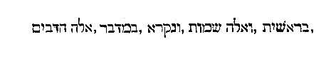 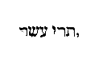 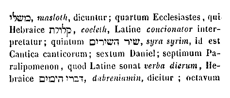
[Col. 0187A] Arduum profecto opus et laboriosum crebra vestra praecatione flexus aggredior; universam divinarum Scripturarum seriem non solum restringendo ad compendium redigere, sed exponendo quoque profunditatis ejus arcana in lucem evocare. Cujus quidem operis inchoationem prompta devotione offero, spe consummationem promitto.
In principio creavit Deus coelum et terram (Gen. I) . Quod creatum est de nihilo factum est. Nam quod de aliquo factum est, factum quidem est sed creatum non est; quia de nihilo factum non est. Fecit ergo Deus coelum et terram; nec solum fecit sed creavit, hoc est de nihilo fecit. Philosophi gentilium [Col. 0187B] tria quaedam rerum principia sine principio posuerunt: opificem, materiam et formam; profitentes ea quae facta sunt omnia ex materia quidem in formam per opificem esse producta. Sed isti factorem solum non creatorem Deum professi sunt. Fides autem vera unum solummodum primum principium confitetur quod semper erat; et per ipsum solum factum est ut esset quod aliquando non erat. Cujus ineffabilis omnipotentiae virtus, sicut non potuit aliud praeter se habere coaeternum, quo in faciendo juvaretur; ita ipsi cum voluit suberat, ut quod voluit et quando et quantum voluit de nihilo crearetur. Omnia ergo quae facta sunt, Deus non solum ex materia fecit, sed materiam omnium ipse de nihilo creavit.
Sed non parva quaestio est utrum ea quae facta sunt, simul in materia et forma adesse prodierint, an prius per materiam quidem essentialiter condita sint, postmodum formata. Scio quosdam sanctorum Patrum, qui ante vos verbi Dei arcana excellenter scrutati sunt, quasi adversa quaedam super hac inquisitione scripta reliquisse. Aliis quidem asserentibus omnia simul in materia et forma creata fuisse; aliis autem hoc magis probantibus, ut corporea quidem omnia quae facta sunt, prius simul et semel materialiter condita: postmodum vero per intervalla sex dierum in formam disposita fuisse credantur. Ego puto viros sapientiae in rebus tam obscuris et dubiis atque a sensu nostro remotis, nec temere [Col. 0187D] asseruisse quod nescierint; neque in his quae asseruerunt praesertim tanta diligentia prolatis, errare potuisse. Illud magis crediderim, sub assertionis forma inquisitionis studium aliquando fuisse. Qui sic dicta sanctorum pie interpretari voluerint, nec [Col. 0188A] falsa credendo in errorem incidunt, nec vera reprehendendo elationem. Nos ergo in neutram partem praecipiti assertione declinantes, id cui noster sensus interim magis accedit (quantum capere possumus) aperimus. Qui Deum omnia simul in materia et forma fecisse contendunt, propterea fortassis suam assertionem justam esse arbitrantur, quod omnipotentiae Creatoris indignum videatur (ad humanae imbecillitatis similitudinem) suum opus per intervalla temporum ad perfectionem promovere, quodque etiam quaedam Scripturarum loca, quodammodo idem asserentia inveniuntur. Ut est illud: Qui vivit in aeternum, creavit omnia simul (Eccli. XVIII) . Ipsa quoque Geneseos scriptura (unde prima ad nos hujus rei manavit agnitio) sic ambigue de operatione [Col. 0188B] sex dierum loquitur, ut saepenumero omnia potius simul facta fuisse probare videatur. Propter has igitur et hujusmodi rationes aiunt credendum esse mysticam illam in Genesi sex dierum distributionem, rei autem veritate omnem creaturam ab ipso temporis exordio quo esse coepit, talem coepisse talique forma, qualem nunc videtur habere, quantum id ad universitatis dispositionem pertinet.
Nobis autem videtur (excepto eo quod nihil in hac re temere diffinire volumus) omnipotentiae Creatoris in nullo derogari, si per intervalla temporis opus [Col. 0188C] suum ad consummationem perduxisse dicitur; ita ut tamen indubitanter etiam aliter facere potuisse (si ratio omnipotentis voluntatis ejus expotulasset) credatur. Omnipotens etenim Deus (cujus voluntas sua bonitate nunquam privari potest) sicut propter rationalem creaturam caetera omnia fecit, ita etiam in eis omnibus faciendis illum praecipue modum servare debuit, qui ipsius rationalis creaturae commoditati ac causae magis congruus fuit. Hic autem ille erat in quo eidem creaturae rationali, scilicet non solum obsequium, sed etiam exemplum pararetur, id est in quo illa acciperet non solum id quo ad obsequium indiguit, sed per illud etiam quod accipit agnosceret id quod fuit. Propterea in caeteris rebus prius informis materies facta est ac deinde formata, [Col. 0188D] ut eo ipso demonstraretur quod ab illo prius non existentia accepissent essentiam, sine quo modo formam et ordinem non poterant habere confusa. Eodem modo ipsa rationalis creatura per id quod foris fiebat, in se cognosceret, et ab illo esse quod [Col. 0189A] erat, atque ab illo expetendum esse quod futura erat, quatenus et pro eo quod acceperat in gratiarum actionem exsurgeret et in id quod acceptura erat obtinendum in ipsum affectum dilectionis dilataret. Nam et ipsa rationalis creatura quodam suo modo prius informis facta est, postmodum per conversionem ad Creatorem suum formanda; et idcirco foris prius ei demonstrata est informis materia, postea formata, ut quanta foret inter esse et pulchrum esse distantia discerneret. Ac per hoc admonita est ne contenta esset eo quod per conditionem a Creatore esse acceperat, donec et pulchrum esse atque beatum esse adipisceretur, quod per amoris conversionem a Creatore acceptura erat. Quod si quis quaerat quae rationalis creatura jam tunc in ipso [Col. 0189B] mundi primordio exstiterit cui hoc exemplum proponi debuisset, facile respondetur jam tunc creatos fuisse angelos qui hoc facto admonerentur seipsos agnoscere, et usque in finem homines futuros, quod licet hoc quando factum est non viderint, tamen per Scripturas edocti, factum esse omnino jam nescire non possint. Si cui haec quam proposuimus ratio minus sufficiens videbitur ad comprobandam nostram existimationem de rerum creatione, concedimus salva pace, ut vel aliam ad idem evidentius comprobandum meliorem atque subtiliorem exquirat; aut si hujus partis assertio illi non placet, alteram prout libet assumat. Nos autem secundum propositum coepti nostri rem ordine prosequemur.
Restat enim ut si prius materiam rerum informem creatam fuisse asserimus, utrum ne aliquid sine forma existere potuerit, qualemve essentiam ante formam inditam habuisse credendum sit, ostendamus. Et ut breviter quod super hoc sentiendum mihi videtur aperiam, certe non puto primam illam rerum omnium materiam taliter informem fuisse, ut nullam omnino formam habuerit; quia nec aliquid tale existere posse, omnino quod aliquid esse habeat et non aliquam formam crediderim. Ita tamen non absurde informem eam appellari posse, quod in confusione et permistione quadam subsistens, [Col. 0189D] nondum hanc in qua nunc cernitur, pulchram aptamque dispositionem et formam coeperit. Ergo ante formam facta est materia, tamen in forma. In forma confusionis, ante formam dispositionis. In prima forma confusionis prius materialiter omnia corporalia simul et semel creata sunt; in secunda forma dispositionis postmodum per sex dierum intervalla ordinata.
Sed nec illud, quantum opinor, absurdum erit, si credimus unum et idem prorsus momentum temporis fuisse quo in principio simul creata sit et rerum visibilium corporaliumque materia, et invisibilium in angelica natura essentia; et hoc esse quod Scriptura [Col. 0190A] refert omnia simul creata fuisse sicut supra diximus: Qui vivit in aeternum creavit omnia simul (Eccle. XVIII) , quia eodem momento simul et visibilium materia essentialiter creata est et invisibilium natura; nihilque postea factum cujus in ipso primordio aut materia ut in corporibus aut similitudo ut in spiritibus non praecesserit. Nam etsi novae adhuc quotidie creantur animae, nova tamen creatura non fit; quia in angelicis spiritibus jam tunc quando creabantur ejus similitudo praecessit. Duo autem nunc nobis discutienda occurrunt: primum, illa primae conditionis forma informis qualis fuerit; secundum, qualiter ex illa informitate ad hanc quam nunc habet formam producta sit.
Quantum conjicere potui ex iis quae in Scripturis de hac re sive manifeste sive obscure reperi secundum rei gestae veritatem expressa, prima illa rerum omnium moles quando creata est, ibidem tunc adesse prodiit, ubi nunc formata subsistit. Eratque terrenum hoc elementum medio eodemque imo loco subsidens (caeteris in una confusione permistis) forma meliore praeditum; sed iisdem circumquaque in modum cujusdam nebulae oppansis ita involutum ut apparere non posset quod fuit. Illa vero tria in una, sicut dictum est, adhuc confusione permista sive potius in una permistione confusa, circumquaque suspensa, eousque in altum porrigebantur quousque [Col. 0190C] nunc summum corporeae creaturae pertingit. Totumque hoc spatium quod a superficie terrae medio jacentis loco usque ad extremum supremumque ambitus coeli limitem patet, illa nebula et caligine replebatur. Et quod nunc sunt alvei sive trachones aquarum, jam tunc in ipso nascentis mundi exordio in terrae corpore futura aquis receptacula parata erant. In quibus etiam magna illa abyssus (de qua omnium fluenta aquarum producenda sive derivanda fuerant) patulo adhuc hiatu vacuoque horrendum in praeceps inane praeferebat. Cui quidem desuper tenebrosae illius caliginis qua tota tunc terrae superficies obvoluta erat nebula tendebatur; quas, ut ergo arbitror, tenebras, Scriptura cum coelum et terra crearentur super faciem abyssi fuisse testatur. Talis [Col. 0190D] mundi facies in principio priusquam formam reciperet aut dispositionem, per Scripturam significatur cum dicitur: In principio creavit Deus coelum et terram. Terra autem erat inanis et vacua (Gen. I) ; sive, ut alia translatio habet, « incomposita,» et tenebrae erant super faciem abyssi (ibid.) . Per coelum namque et terram, materiam illam omnium coelestium terrestriumque, hoc loco significari puto, de qua postea succedenter in forma facta sunt quae in ipsa prius per essentiam simul creata fuerunt. Ibi namque terra erat ipsum terrae elementum, et coelum mobile erat illa et levis confusio reliquorum trium quae in circuitu medio jacentis terrae suspensa ferebatur; et his duobus omnium corporum coelestium sive terrestrium formandorum materia continebatur. [Col. 0191A] Deinde sequitur Scriptura et dicit: Et tenebrae erant super faciem abyssi. Duo superius proposuerat; videlicet coelum et terram. Modo quaedam alia duo subjungit scilicet tenebras et abyssum; alterum, id est abyssum in terra, alterum, id est tenebras in eo quod coelum vocaverat, significans intelligendum. Propterea namque super faciem abyssi tenebrae erant; quia abyssus subtus erat, et desuper caligo tenebrosa erat. Neque abyssus tenebrae erat, quia lumen futura non erat; sed desuper faciem abyssi tenebrarum locus fuit. in eo scilicet elemento unde lumen postea venire debuit. Neque enim nisi in lucis loco, tenebrae esse potuerunt; propterea tenebrae erant super faciem abyssi. Et spiritus Domini ferebatur super aquas (Gen. I) . Subito [Col. 0191B] aquas nominat, cum prius in rerum creatione de sola terra et coelo mentionem fecisset. Sed non propterea aquas increatas esse credendum est, quia in creatione rerum aquarum nomen positum non est; quia ipsum coelum ipsae sunt tenebrae, ipsae et aquae. Coelum propter levitatem; tenebrae propter lucis privationem; aquae propter motum et fluctuationem. Nam si abyssus in terra erat et tenebrae erant super faciem abyssi; ergo tenebrae erant super terram. Sed quid erat super terram? Duo in principio posita sunt coelum et terra. Quid horum putas subtus, aut quod supra fuisse dicemus? Aut terra supra et coelum subtus; aut terra subtus et coelum supra? Sed nunquid credendum est prima illa conditione rerum coelum subter creatum fuisse; et postea in [Col. 0191C] formatione supra dispositum? Fortassis quia prius Scriptura nominavit coelum quam terram, propterea coelum quasi fundamentum subtus creatum fuisse quis dicat. Ego aut non ordinis sed dignitatis causa sic positum reor; et quia etiam sermo sequens de elemento terrae quasi de proximo (et ob hoc posterius nominato) habendus fuit, ideo et prius coelum et postea terra nominari debuit. Sed neque ipsa conditorum natura alium positionis aut locationis ordinem pateretur, quam ut ponderosa deorsum, et sursum levia disponerentur. Ergo terra deorsum erat et coelum sursum, et quod supra terram erat coelum erat. Ergo coelum supra terram erat. Et aquae ubi erant? sub coelo an [Col. 0191D] supra coelum? Neque sub coelo, neque supra coelum aquae erant; sed in coelo aquae erant, quia ipsum coelum aquae erant. Totum aquae et totum coelum; quia idem aquae et coelum. Secunda die factum est firmamentum et vocatum est coelum; et positum est, ut divideret inter aquas et aquas, et quae prius aquae, erant factae sunt aquae, aquae quae sub coelo et aquae quae super coelum. Et factum est coelum, coelum et coelum; coelum supra coelum et sub coelo coelum. Usque hodie etiam coelum est supra coelum et sub coelo coelum, et totum ex uno coelo et unum coelum. Sed antequam fieret de illo coelo hoc coelum quod est vocatum firmamentum, non erat illud coelum coelum et coelum, sed tantum coelum. Nec illae aquae aquae et aquae; sed tantum aquae. Et aquae et coelum unum [Col. 0192A] coelum; et illud coelum et aquae illae, nec supra coelum erant nec sub coelo; sed supra terram; nihilque erat inter coelum et terram; quia nihil erat praeter coelum et terram. Et tamen aquae erant, et tenebrae erant, et abyssus erat. Abyssus in terra; tenebrae et aquae in coelo. Et tenebrae erant super faciem abyssi, et spiritus Dei ferebatur super aquas. Ergo super omnia erat spiritus Dei; quia omnia in potestate erant Dei, et in omnibus non arctabatur potestas Dei. Fortassis jam satis est (quantum ad propositum brevitatis pertinet) de his hactenus disputasse, si hoc solum adjecerimus quanto tempore mundus in hac confusione priusquam ejus dispositio inchoaretur perstiterit. Nam quod illa prima rerum omnium materia, in principio temporis, vel potius cum ipso tempore [Col. 0192B] exorta sit, constat ex eo quod dictum est: In principio creavit Deus coelum et terram. Quamdiu autem in hac informitate sive confusione permanserit, Scriptura manifeste non ostendit. Mihi autem videtur (quantum ego conjicere valeo) inter creationem et dispositionem rerum, ordinem quidem temporis sed nullam fuisse moram interjectam; ita ut vere quidem dici possit, hoc post illud factum fuisse; sed inter hoc factum et illud nullam omnino dilationem intervenisse. Et ut breviter quidquid mihi inde sentiendum videtur absolvam, ego arbitror in primo principio temporis, vel potius cum ipso principio temporis, hoc est quando ipsum tempus coepit, simul coepisse et rerum visibilium omnium materiam, eodemque prorsus momento invisibilium in angelica [Col. 0192C] natura essentiam; utramque quodammodo in forma, et utramque quodammodo sine forma. Nam quemadmodum illa formandorum corporum materia quando primum creata est, et quamdam formam habuit in qua subsistere coepit, et tamen informis erat, quia necdum disposita et ordinata fuit; ita prorsus illa rationalis natura quando primum in spiritibus angelicis creata est, mox quidem per sapientiam et discretionem formata est; sed, quia illi summo et vero bono (in quo beatificanda erat) nondum se per conversionem amoris impresserat, quodammodo adhuc informis permanebat. Utraque ergo natura et corporea scilicet per materiam, et incorporea per essentiam simul ad esse prodiit; quia et [Col. 0192D] in illa unde facta et in ista quae facta est uno eodemque momento temporis, in tempore pariter, et cum tempore esse coepit. Nam spiritualis natura, (cum simplex sit eique idem sit omnino esse quod est) materialiter prius quam personaliter fieri non habet, sicut corporea natura; et propterea illa dum crearetur prius quidem per materiam ex qua facta est ad esse prodiit: haec vero statim in ipsa qua subsistit vita simplici et essentia immortali indissolubilique primum accepit. Utraque tamen simul facta est; altera, id est corporea in eo ex quo ipsa est; altera vero, id est incorporea in eo quod ipsa est. Utraque formata, et utraque informis, sicut dictum est.
Et de illo quidem primae conditionis statu priusquam in formam natura dispositionemque veniret, haec dicta sufficere volumus. Deinde sequitur ut dispositionem ipsam qualiter perfecta sit ordine prosequamur. Sex diebus disposuit et ordinavit atque in formam redegit Deus cuncta quae fecerat: Perfecitque opus suum die sexta. Et sic demum die septima requievit (Gen. II) , id est cessavit ab opere. Prima die facta est lux; secunda die, factum est firmamentum; tertia die, congregatae sunt aquae; quarta die, facta sunt luminaria; quinta die, pisces et volucres; sexta die, bestiae, jumenta, reptilia; novissime (eadem tamen die) homo. Hoc primum in hoc loco lectorem admonere volumus, ut quoties in [Col. 0193B] his operibus, videlicet sex dierum aliquid fieri audierit, ut verbi gratia, cum dicitur, prima die facta est lux; secunda die, factum est firmamentum; tertia die, congregatae sunt aquae; quarta die, facta sunt luminaria, non modo primum cum facta dicuntur, haec de nihilo creata fuisse existimet; sed potius de ipsa (quae prius creata erat de nihilo) materia formata intelligat. Etiam si aliquando verbum creationis positum reperit, ut est ibi: Creavit Deus cete grandia, et omnem animam viventem atque motabilem (Gen. I) ; non ad materiam qua esse coeperunt, sed ad formam qua hoc quod sunt esse coeperunt, referendum esse sciat.
Incipiens ergo Deus opera sua ut perficeret, [Col. 0193C] primum fecit lucem, ut caetera omnia postmodum faceret in luce. Significavit enim nobis se non amare opera quae in tenebris fiunt, quoniam mala sunt. Quia omnis qui male agit odit lucem; et non venit ad lucem, ut non arguantur opera ejus, quia mala sunt. Qui autem facit veritatem venit ad lucem, ut manifestentur opera sua, quia in Deo facta sunt (Joan. III) . Ipse ergo qui veritatem facturus fuit, in tenebris operari noluit; sed venit ad lucem, et fecit lucem, ut se manifestaret per lucem. Non enim ideo fecit lucem ut ipse videret per lucem; sed ut opera sua manifestaret per lucem, quia in Deo facta sunt. Et ideo vidit Deus cuncta quae fecerat et erant valde bona (Gen. I) . Hoc mihi dicendum interim fuit pro reddenda ratione cur Deus primum lucem fecit.
Sed nunc superest ut rei gestae veritatem diligentius prosequamur. Principium ergo divinorum operum fuit creatio lucis, quando ipsa lux non materialiter de nihilo creata est; sed de praejacenti illa universitatis materia formaliter facta est ut lux esset, et vim ac proprietatem lucendi haberet. Hoc opus prima die factum est; sed hujus operis materia ante primam diem creata est. Moxque cum ipsa luce dies coepit; quia ante lucem nec nox fuit nec dies, etiamsi tempus fuit. Si autem quaeritur qualis haec lux fuit, corporea an incorporea, et si corporea cujusmodi corpus habuit, et utrum uno loco circumscripta an ubique diffusa, utrum in motu [Col. 0194A] an immobilis; quantum ego arbitror rectissime respondetur, corporalibus rebus et visibilibus illuminandis, non nisi lucem corpoream congruere potuisse. Omne autem corpus quantumlibet subtile et spirituali naturae approximans, loco circumscribi necesse est. Rursumque nisi mobilis fuisset lux illa, nequaquam alterna vicissitudine diem ac noctem distinguere, nec temporis spatium ullatenus sine motu peragere valuisset. Secundum hanc itaque considerationem, convenientius puto ut credamus lucem illam in principio factam ad illuminanda corporea sine dubio corpoream fuisse, quale fortasse esse potuisset corpus aliquod lucidum, cujus praesentia cuncta illustrarentur, quemadmodum nunc in sole videri potest, ipsamque vice et loco solis factam, [Col. 0194B] ut interim motu suo circumagitaretur, et noctem diemque discerneret. Cum qua (quia dies prima exorta est) ego crediderim magis illam quando facta est, ibidem primum apparuisse ubi sol quotidiano cursu circumvectus oriens emergit, ut eodem tramite circumcurrens, ac primo ad occasum descendens vesperam faceret, et deinde revocata ad ortum auroram, hoc est mane ante ortum sequentis diei illustraret. Et propterea quia primus dies auroram praecedentem non habuit, quoniam antequam lux crearetur plenae tenebrae fuerunt, mox autem luce apparente super terram plenus dies, propterea quod a perfecto opus Dei inchoari debuisset, ideo dixisse Scripturam: Factum est vespere et mane dies unus (Gen. I) . Non enim dixit Factum [Col. 0194C] est mane et vespere; sed: Factum est, inquit, vespere et mane dies unus. Quia, sicut diximus, primus dies mane praecedens non habuit, quoniam a luce plena atque perfecta initium sumpsit; propterea omnis aurora praecedentis diei est, et omnis dies ab ortu solis initium sumit. Estque dies naturalis illud spatium temporis quod ab ortu solis usque ad ortum pertransiens noctem in se diemque concludit; in qua (quoniam naturaliter dies noctem praecedit) et finem diei vesperam dicimus, finem noctis auroram, constat indubitanter quod aurora semper ad praecedentem diem referenda sit. Ergo illud primum momentum temporis quando creata est omnium visibilium invisibiliumque natura, nec [Col. 0194D] nox fuit nec dies; et tamen tempus fuit, quia mutabilitas fuit. Postea vero continuo luce facta divisae sunt tenebrae et lux; et tempus jam per diem et noctem distingui coepit.
Et ut mihi videtur eodem prorsus temporis momento quo visibiliter et corporaliter divisa est lux a tenebris; invisibiliter quoque boni angeli discreti sunt a malis illis in tenebras peccati cadentibus: et istis ad lucem justitiae conversis illuminatisque a luce, ut lux essent et non tenebrae. Sic enim consonare debuerunt exemplaria operum Dei, ut quae visibilia erant opera sapientiae, invisibilium proventus sequerentur, secundum quod ipsa quae [Col. 0195A] utrobique operabatur sapientia, ibi judicium exercuit, hic formavit exemplum. Divisa est lux ergo a tenebris; et erat lux visibilis et visibiles tenebrae erant; similiter et lux invisibilis erat, et tenebrae invisibiles erant; et utrorumque divisio facta est; et simul facta est divisio tenebrarum et lucis. Et vocata est lux dies et tenebrae nox. Utrumque quidem Deus divisit, et utrumque nominavit; sed et utrumque non fecit. Deus enim auctor tenebrarum non est sed lucis; quia peccatum est tenebrae et peccatum nihil est: Et sine ipso nihil factum est (Joan. III) . Lux ab ipso facta est; quia justitia et veritas lux est, et de luce audivimus quod dixit Deus: Fiat lux, et statim lux facta est (Gen. I) . Nusquam dixit Deus: Fiant tenebrae. Sed de luce [Col. 0195B] dixit: Fiat lux, et divisit lucem a tenebris; et vocavit lucem diem, et tenebras noctem (ibid.) . Ergo non fecit utrumque; tamen utrumque divisit, et utrumque nominavit. Divisit per judicium; et per meritum nominavit, judicavit et disposuit. Quia nec hoc apud eum judicantem inordinatum esse potuit, quod apud delinquentes inordinatum fuit, vocavit lucem diem, et tenebras noctem.
Ergo nemo dicat quomodo ante factum solem dies esse potuit; quia antequam sol fieret lux erat: Et vidit Deus lucem quod esset bonum et vocavit lucem diem, et tenebras noctem (Gen. I) . Et ipsa lux tres illos primos dies faciebat antequam sol fieret [Col. 0195C] et illuminaret mundum. Sed quid significat quod non statim factus est sol ex quo lucem fieri oportuit, sed ut quasi lux esset priusquam clara lux? Et fortassis confusio plena luce digna non erat; aliquam tamen lucem accepit, ut videret exire ad ordinem et dispositionem.
Ego puto magnum hic aliquod sacramentum commendari; quia omnis anima quandiu in peccato est, quasi in tenebris est quibusdam et confusione. Sed non potest evadere confusionem suam et ad ordinem justitiae formamque disponi, nisi illuminetur primum videre mala sua, et discernere lucem a tenebris, hoc est virtutes a vitiis, ut se disponat ad [Col. 0195D] ordinem et conformet veritati. Hoc igitur anima in confusione jacens sine luce facere non potest; et propterea necesse est primum ut lux fiat, ut videat semetipsam, et agnoscat horrorem et turpitudinem confusionis suae, et explicet se atque coaptet ad illam rationabilem dispositionem et ordinem veritatis. Postquam autem ordinata fuerint omnia ejus, et secundum exemplar rationis formamque sapientiae disposita, tunc statim incipiet ei lucere sol justitiae, quia sic in repromissione dictum est: Beati mundo corde; quoniam ipsi Deum videbunt (Matth. V) . Prius ergo in rationali illo mundo cordis humani creatur lux, et illuminatur confusio ut in ordinem redigatur. Post haec cum fuerint purificata interiora ejus, venit lumen solis clarum et illustrat eam. [Col. 0196A] Non enim digna est contemplari lumen aeternitatis, donec munda et purificata fuerit; habens quodammodo et per materiam speciem, et per justitiam dispositionem. Sic lex praecessit gratiam, sermo spiritum: sic praecursor Joannes Christum; lux lucem; lucerna solem; et ipse Christus humanitatem suam prius demonstravit, ut post manifestaret divinitatem, et ubique lux lucem praecedit. Lux quae peccatores ad justitiam illuminat, illam lucem quae justificatos ad beatitudinem illustrat. Ergo facta est lux priusquam solis claritas manifestaretur; et dies erat: et tres dies erant quando lux erat et sol non erat. Quarta die illuxit sol, et illa dies clara erat; quia lumen verum habuit, et tenebrae non erant ullae. Sic nulla anima meretur lumen solis accipere [Col. 0196B] et summae veritatis claritatem contemplari, nisi tres dies isti in ea praecedant. Prima quidem die fit lux, et dividuntur lux et tenebrae; vocatur fitque lux dies, et tenebrae nox. Secunda die firmamentum, collocaturque inter aquas superiores et aquas inferiores; et vocatur firmamentum coelum. Tertia die congregantur aquae quae sub coelo sunt in locum unum; jubeturque manifestari arida et vestiri graminibus suis. Omnia autem haec spiritualia praeferunt documenta. Primum in corde peccatoris creatur lux, quando semetipsum agnoscere incipit, ut dividat inter lucem et tenebras, et appellare incipiat lucem diem et tenebras noctem; et non sit jam de quibus dicitur: Vae qui dicunt bonum malum, et malum bonum; ponentes lucem tenebras, et tenebras [Col. 0196C] lucem (Isa. V) . Post haec autem cum coeperit inter lucem et tenebras dividere, et lucem diem, tenebras quoque appellare noctem, id est cum mala sua veraciter per judicium rationis improbare, et quae sunt bona et laudabilia lucis opera eligere coeperit, restat ut fiat in eo firmamentum, hoc est in bono proposito corroboretur: dividere inter aquas superiores et aquas inferiores, id est desideria carnis et spiritus, ut medius et mediator duo sibi adversantia nec permisceri sinat nec transponi; nec simul sit quod dividi debeat, aut supra quod subter, aut subter quod supra collocandum est. Novissime sequitur in dispositionis ordine opus tertiae diei, ut congregentur aquae quae sub coelo sunt in locum [Col. 0196D] unum, ne carnis desideria fluxa sint, et ultra metam se necessitatis expandant, ut totus homo ad statum naturae revocatus, et secundum ordinem rationis dispositus, in locum unum omne desiderium colligat, quatenus et caro spiritui, et spiritus subjectus sit Creatori. Quisquis sic ordinatus est dignus est lumine solis, ut mente sursum erecta et desiderio in superna defixo, lumen summae veritatis contemplanti irradiet, et jam non per speculum in aenigmate (I Cor. XIII) , sed in seipsa ut est veritatem agnoscat et sapiat. Sed et illud non negligenter transeundum est, quod dicitur: Vidit Deus lucem quod esset bonum, et divisit lucem a tenebris; et vocavit lucem diem, ac tenebras noctem (Gen. I) . Fecit enim et vidit; deinde divisit et vocavit. Quare vidit? Noluit [Col. 0197A] prius dividere quam vidisset, prius vidit an esset bonum; et tunc demum divisit lucem a tenebris; et vocavit lucem diem, et tenebras noctem. Adducet enim omne opus suum in judicium; et non solum opera alia quae in luce fecit, vidit Deus quod esset bonum, sed ipsam quoque lucem vidit quod esset bonum et divisit lucem et tenebras. Nam ipse angelus malus transfigurat se aliquando in angelum lucis, et ingerit se ad decipiendam mentem quasi lux vera. Sed haec lux non est dividenda a tenebris, nec vocanda est dies sed nox; quia speciem quidem lucis habet, sed tenebras veras. Propterea prius vidit Deus lucem an esset bona ut non statim credamus omni spiritui; sed probemus spiritus si ex Deo sint (Joan. IV) ; et cum viderimus lucem quia bona [Col. 0197B] est, tunc demum dividamus lucem a tenebris, et vocemus lucem diem et tenebras noctem. Ergo non solum studendum est ut lux praecedat in operibus nostris, et ut in luce fiant opera nostra; sed ipsa quoque lux prius videnda est et consideranda diligenter; et sic postremo cum viderimus lucem quia bona est, dividamus lucem a tenebris, et vocemus lucem diem, et tenebras noctem.
Sed occurrit fortassis quomodo vidit Deus lucem quod esset bona et divisit lucem a tenebris et vocavit lucem diem, et tenebras noctem (Gen. I) . Nam si caetera opera sua in luce vidit quod essent bona, in qua luce vidit lucem quod esset bona et divisit lucem [Col. 0197C] a tenebris vocavitque lucem diem et tenebras noctem? Nihil enim videri potest sine luce; sed nec tenebrae sine luce videntur, quanto magis lux non videtur sine luce? Quae fuit ergo illa lux per quam Deus vidit lucem quod esset bona, et divisit lucem a tenebris? An per ipsam eam vidit quod esset bona, an per aliam lucem vidit quod esset bona? Sed quomodo per ipsam videre potuisset quod esset bona, si aliam lucem non habuisset per quam et in qua ipsam lucem vidisset quod esset bona? Nam, si vidit quod esset bona lux ista et vere vidit, in aliquo vidit de cujus bonitate dubitari non potuit. Ergo, alia lux increata, in qua ista lux creata videbatur quod esset bona; quia illam imitabatur quae semper est [Col. 0197D] bona. In illa enim luce cum ipsa solum sit bona, videntur et mala et bona; et non solum mala et bona in ea videntur, sed mala etiam esse mala, bona esse bona in ea videntur: propterea quod ipsa vere et summe est bona. Quod enim ab ipsa discordare videtur, malum esse videtur; et quod ei simile esse videtur, bonum esse videtur; et utrumque non nisi in ipsa et per ipsam videtur. Per lucem ergo probavit lucem: quia in luce incommutabili vidit quod lux ista commutabilis suo modo et ordine bona esset. Et divisit lucem a tenebris, vocavitque lucem diem, et tenebras noctem; et in ea luce in qua vidit lucem quod esset bona, etiam caetera opera sua quae operatus est vidit quod essent bona, et nihil sine illa luce vidit, vel bonum vel malum; [Col. 0198A] sive ex iis quae ipse bona fecit, sive ex iis quae nos fecimus mala, quae omnia ipse non male sed bene vidit. Et ibi vidit ubi nullum malum vidit: haec ipsa lux est qua et nos videre oportet omnem lucem an bona est; nec poterimus judicare vero de luce an bona est, donec ista luce illuminati fuerimus, quae vere bona est: Spiritualis enim dijudicat omnia, et ipse a nemine judicatur (I Cor. II) . Et si Spiritus Dei vere in nobis habitat, non nos poterunt decipere spiritus erroris, etiamsi in luce veniant ad nos; quia habebimus lucem in nobis, in qua nobis manifestum erit de omni luce utrum bona est; et sic fiducialiter dividemus lucem a tenebris, et judicabimus non solum inter tenebras et lucem, sed etiam inter lucem et lucem judicabimus; non solum inter [Col. 0198B] noctem et diem, sed etiam inter diem et diem judicabimus, et judicabimus omnem diem. Parum est enim ad perfectum inter diem et noctem judicare, parum est lucem et tenebras dividere: hoc est virtutes a vitiis sequestrare, nisi sciamus etiam inter diem et diem judicare, et sciamus omnem diem judicare, ut sapiamus qui sint illi motus qui sub virtutum specie quasi luce aliena ad nos veniunt, et qui sursum illi sint, qui veram virtutis claritatem praetendunt; et in ipsis quoque virtutibus non solum quae bona sint, sed etiam quae sint potiora probemus. Spiritualis enim dijudicabat omnia, et ipse a nemine judicatur; quia Spiritus omnia scrutatur, etiam profunda Dei (ibid.) ; et unctio ejus docet nos de omnibus [Col. 0198C] (I Joan. II) .
Hic tibi attende quanta sit cautela bono operi adhibenda. In principio omnium operum tuorum vide ut lucem habeas in te, ut omnia opera tua lucis sint et non tenebrarum. Postea considera diligenter utrumne lux tua pura sit et non fuscata; et cum inveneris quia bona est, tunc demum divide eam a tenebris, et voca lucem diem, et tenebras noctem. Deinde reliqua opera tua quae in luce feceris, vide si etiam ipsa bona sunt; et nullum omnino opus sine judicio pertranseat, donec agnoscas cuncta quae fecisti. Ita geminum est judicium: primum in quo lux judicatur et videtur si bona est ut dividatur a tenebris, secundum est judicium quando opera [Col. 0198D] ipsa quae in luce facta sunt ad judicium vocantur, et videtur quia ipsa quoque bona sunt, et sic demum requiescit Deus. Aliquae quaedam lucis mysteria interim pro tempore transcurrentes perstrinximus, nunc iterum ad propositi nostri seriem texendam revertamur.
Igitur Deus prius lucem facere voluit ad illuminandum mundum antequam solem crearet ope vicaria praecurrentem, donec veniret quod perfectum est. Et sunt qui quaerant quid de illa luce factum sit, propterea quod jam nulla ejus vestigia reperiri possunt [Col. 0199A] ex quo solis claritas illuxit. Alii dicunt dispersam per ampla aeris spatia vim lucendi et illuminandi amisisse; superesse tamen adhuc quasdam tenues reliquias quae in ambitu firmamenti intrinsecus huc illucque sparsim diligentius intuentibus nocte demonstrentur; die vero eas majori ne videri valeant solis claritate abscondi. Sic quique suas opiniones prout possibile est confingunt. Sed quis scit utrum ipsa eadem lux postea in solis substantiam translata sit, et ampliata claritate formam meliorem acceperit, quemadmodum in nuptiis Jesus de aquis vinum fecit, ut reformationis statum in melius et restaurationis sacramentum demonstraret? Nam erat lux antequam sol factus est; hoc erat aqua priusquam in vinum mutata est, ut non aliud fieret quod potius [Col. 0199B] exhibitum est; sed de eo ipso quod ante vilius habebatur. Ita de rebus dubiis nemo est qui possit certum aliquid definire.
Solum adhuc illud de operatione primae diei inquirendum restat: si Deus lucem in primo exortu ejusdem diei, id est primae creavit. Cum nihil eadem die aliud fecisse legatur quam lucem, utrumne usque ad ortum sequentis diei quando firmamentum fecit ab opere cessasse credendus sit, cum scriptura septima eum die demum requievisse testetur? Cui quaestioni gemina responsione obviabimus; aut enim dicemus Deum in illis sex diebus operationem [Col. 0199C] suam ita continua perseverantia produxisse, ut nullo temporis intervallo ab operando desierit. Aut ita sex diebus operatum, ut nullum quidem diem in operando intermiserit; non quod nullo temporis spatio operari cessaverit. Quia, siquidem illam assertionem probare volumus, quod continua fuerit ejus operatio dicere poterimus, quod prima die lucem in exortu ipsius diei fecit; deinde ut cursu suo diem noctemque distingueret; primum de oriente ad occasum, et rursum de occidente ad ortum direxit. Nec solummodo opus ejus fuisse quod lux facta est, sed quod directa, ipso gubernante et dirigente, cursum explevit. Eodem modo de secunda die dicetur, quando firmamentum factum est, et circumactionis [Col. 0199D] perpetuae praeceptum simul et legem accedit. Hoc etiam de tertia, quarta, quinta, vel sexta die, prout ratio dictaverit exquiret, quisquis hujus partis assertionem elegerit. Si cui autem ista interpretatio nimis obscura videbitur, maxime quod de motu firmamenti necdum rata sit assertio, ad illam alteram quam proposuimus recurrat expositionem, quae facilior est et se promptius ad intelligendum commodat rationi. Dicet igitur Deum sex diebus operatum et septima deinde die requievisse ab opere; quia nullus de sex invenitur diebus in quo opus non fecerit Deus, donec septima dies veniret, quando deinde ab omni opere requievit. Et haec quidem de operatione primae diei dicta sint.
Et vidit Deus quod esset bonum; et ait: Fiat firmamentum in medio aquarum (Gen. I) . Noluit igitur Deus ad sequens opus transire, donec dijudicasset primum. Cum ergo vidisset de luce quod esse bonum, tunc ait: Fiat firmamentum. Quantum ad litteram pertinere videtur, factum est firmamentum die secunda; prius quidem in illa universitatis materia de nihilo creatum, et nunc ex illa ipsa ad talem formam erutum et factum firmamentum ut ambitu suo medium quodam modo interveniens magnam illam aquarum immensamque congeriem ab invicem separaret atque divideret, et de aquis faceret aquas et aquas; hoc est aquas quas ambitu suo intrinsecus [Col. 0200B] complecteretur et subtus se contineret et aquas quas extrinsecus et supra gyrum limitis sui relinqueret.
Multa quidem sunt quae de firmamenti natura animum quaestione pulsare possent, si haec humana investigatio relinquenda potius quam discutienda non videret. Nam utrum ex puro igne factum sit, sive ex aere; aut etiam ex aqua; vel postremo ex duobus aut tribus horum commistis, et an substantiam solidam naturaque palpabilem habeat, quantave credenda spissitudo ejus, et utrum ipsum calidum an frigidum; aut cujus alterius qualitatis existat merito quaereretur: si inde aliquid certum sciri [Col. 0200C] potuisset. Nunc autem in quaestionibus harum rerum non mihi multum laborandum videtur, quas nec ratio ulla comprehendit nec auctoritas (cui fides adhibenda sit) probat. Solum hoc quod legimus credere sine dubitatione debemus, quod factum est firmamentum ut divideret aquas ab aquis; hoc est ut partem aquarum intra ambitum suum concluderet, partemque extrinsecus segregaret.
Quare autem factum sit ut firmamentum aquas a se divideret, partimque supra atque infra, partim earumdem aquarum natura consisteret, non quaerat extra se, qui haec propter se facta credit. Nam est illo qui interius fabricatus est mundo, quiddam hujus [Col. 0200D] operis formam et exemplar habens, ubi terra quaedam deorsum posita consistit sensualis natura hominis; coelum autem sursum puritas intelligentiae, et quasi quodam immortalis vitae motu vegetata ratio. Duas vero istas tam dissimiles in uno homine naturas, magna quaedam desideriorum moles hinc inde fluctuantium, et in contraria saepe motu alterno tendentium oberrat; quia et aliud est quod subtus caro ex infirmitate pressa appetit, et aliud quod spiritus sursum per contemplationem veritatis elevatus intendit. Sed fit aliquoties ut contrarii motus confusionem gignant; nisi ratio media interveniens dividat ab invicem, et discernat voluntates et appetitus, desideriaque dijudicet. Quid sit videlicet quod ex carne deorsum trahit; quid quod ex [Col. 0201A] spiritu in superna inhiat, summum illud et immortale bonum ambiens. Nam, cum ipsa ratio fortiter judicii censura quasi firmamentum quoddam in medio sese collocat, atque hinc supercoelestes aquas, illinc autem eas quae sub coelo sunt disponit separatim, non potest inferior corruptela inferiorem animae puritatem inficere; neque ipsa quae sursum est sinceritas, ad ea quae subter sunt abjecta et vilia sinitur sese inclinare.
Sed mirum est quare non vidit Deus opus secundae diei quod esset bonum, sicut in caeteris omnibus diebus vidisse legitur et vidit Deus quod esset bonum. Aut enim opus ejus non fuit et bonum non [Col. 0201B] fuit, aut si opus ejus fuit, bonum fuit. Si autem bonum fuit et opus ejus fuit, vidit utique quod bonum fuit qui non potuit ignorare quod fuit, sive bonum sive malum fuit. Quare ergo hic non dictum est: Vidit Deus quod esset bonum, sicut alibi ubique dictum est: Vidit Deus quod esset bonum (Gen. I) . Nam si ideo alibi dictum est quia factum est, cur etiam hic dici non debuit si factum fuit? Fortassis quia binarius signum divisionis est, qui primus ab unitate discedit: sacramentum aliquod hic commendatur. Et non sunt laudata opera secunda, non quia bona non essent, sed quia malorum signum essent. Prima enim opera fecit Deus et illa omnia bona valde erant (Ibid.) ; quibus neque inerat corruptio, neque deerat perfectio. Sed venit [Col. 0201C] deinde diabolus et homo, et fecerunt ipsi opera sua; et haec erant opera secunda post prima, mala post bona; et noluit Deus videre opera ista quia mala erant, sed quae per sapientiam vidit, per judicium improbavit.
Et dixit Deus: Congregentur aquae quae sub coelo sunt in locum unum (Gen. I) . Quantum ad litteram spectat, locus unus, in quo congregatae sunt aquae quae sub coelo erant, abyssus magna creditur, quae ab ipso mundi exordio in terrae corpore tantae capacitatis facta fuisse putatur, ut omnium receptaculum aquarum esse potuisset. Nam aquarum natura in [Col. 0201D] principio tenuis admodum levisque, et in modum nebulae cujusdam dispersa; postquam divina virtute et jussione in unam, ut ita dixerim, massam compingi quodammodo atque densari coepit, ipso suo pondere deorsum vergens in ima collapsa a terra excepta est, spatiumque illud quod desuper usque ad ipsum firmamentum occupaverat, serenum purumque dereliquit. Ipsa quoque terrae superficies (aquis omnibus inter alveos suos conclusis) apparere coepit. Primo quidem lutulenta et lubrica nudaque, velut quae germina necdum ulla protulisset, quibus vestiri et superduci potuisset.
Dixit ergo Deus ut produceret terra herbam virentem et facientem semen, lignumque pomiferum faciens [Col. 0202A] fructum in genere suo, cujus semen in semetipso esset super terram: et factum est ita (Gen. I) . Deinde ad irrigandam universam terram ab illa magna abysso quasi a fonte quodam aquae interius quidem intra viscera telluris per trachones occultosque meatus, desuper vero in superficie per alveos suos in omnes partes deductae sunt, itu et reditu mirabili et indefesso, lege perpetua, ad unum locum.
De illis aquis quae supra coelum sunt non dixit Scriptura quod congregatae sunt in locum unum; quemadmodum de illis quae erant sub coelo. Magna sunt in his omnibus sacramenta, nec explicabilia [Col. 0202B] praesenti abbreviatione, quod aquae quae sub coelo sunt congregantur in unum locum, quod apparet arida et germina producit, simulque ipsa aeris spatia contracta tandem caligine serenantur, et aquarum tractus ad irrigandam atque infundendam terram per corpus illius quacunque sparguntur; et nihil sine causa factum est. Hoc mirum videtur, quod aquae quae sub coelo sunt congregantur in locum unum, et illae quae sunt supra coelum non congregantur neque eis locus unus tribuitur, sed relinquuntur diffusae atque expansae, quasi aquae coarctari nolint vel colligi. Quid putas hoc sibi vult nisi quod Charitas Dei diffusa est in cordibus nostris per Spiritum sanctum qui datus est nobis? (Rom. V) Et istae sunt super coelestes aquae; quia adhuc excellentiorem, [Col. 0202C] inquit Apostolus, viam vobis demonstro (I Cor. XII) . Si lingua hominum loquar et angelorum; si habuero omnem prophetiam; si novero mysteria omnia, quid est? nihil prodest si charitatem non habeam (I Cor. XIII) . Pax, ait, Dei quae exsuperat omnem sensum custodiat corda vestra et intelligentias vestras (Philipp. IV) . Jam quodammodo videmus quare aquae illae quae supra coelum sunt non debuerunt colligi et in unum coarctari, quoniam charitas amplificanda semper est et dilatanda; et quanto latius panditur tanto celsius sublimatur. Quae autem sub coelo sunt aquae, congregandae sunt et constringendae in locum unum, ut inde per certos tramites et exitus ordinatos, quacunque deducantur. Quoniam affectus animae inferior nisi certa lege constringatur, non [Col. 0202D] potest apparere arida, nec germina producere, sicut Apostolus: Castigat corpus suum et in servi utem religit, ne forte cum aliis praedicaverit, ipse reprobus fiat (I Cor. IX) .
Ecce ista sunt trium dierum opera, antequam sol vel caetera luminaria facta fuissent. In his primis tribus diebus disposita est universitatis hujus machina et partibus suis distributa firmamento desuper expanso. Deinde terra revelata atque in imo residente et suo pondere librata, collectisque aquarum molibus intra receptacula sua aere serenato: quatuor mundi elementa locis suis distincta et ordinata sunt.
Deinde sequebatur ornatus eorum, et hoc tribus sequentibus item diebus factum est. Quarto (qui fuit primus in tribus) ornatum est firmamentum sole et luna et stellis. Quinto die (qui fuit secundus in tribus) aer in volatilibus, et aquae in piscibus ornamenta acceperunt. Sexto die (qui fuit tertius in tribus) accepit terra bestias et jumenta et reptilia caeteraque animantia quae moventur in terra. Homo autem novissimo die factus est de terra et in terra, non tamen ad terram, neque propter terram, sed ad coelum; et propter eum qui fecit terram et coelum (Gen. I) . Ergo factus est homo non quasi ornatus terrae, sed dominus et possessor, ut non ad terram [Col. 0203B] referatur conditio ejus propter quem facta est terra.
De ornatibus elementorum si interroget quis, utrumnam credendum sit ex ipsis ea quaeque elementis esse condita ad quorum decorem vel pulchritudinem facta probantur, ut verbi gratia: quae ad ornatum terrae facta sunt, non nisi de terra sumi potuerunt; hoc et si in aliis verum concedimus, non tamen in elemento aeris ullo modo probare valemus, cum manifeste volatilia legamus accepisse et ab aquis originem et in aere mansionem. Quod quare factum sit ut non (ad similitudinem aliorum quae ad ornatum elementorum mundi creata sunt) [Col. 0203C] ex ipso elemento materiam sumerent in quo locum sortiri debuerunt, forte quis ad ipsius elementi materiam referat: quod quasi tantam aer corpulentiam non habuerit, ut animantium corpora quae solidam materiam requirunt ex eo conderentur. Aquarum autem naturam magis terrae affinem plusque corpulentiae habentem, ac per hoc formandis corporibus aptiorem. Sed altior in his rebus sacramenti virtus objecta est.
Duo sunt genera animantium quae ex una origine prodeunt; sed non unam mansionem sortiuntur. Pisces in originali sede permanent. Volatilia sursum [Col. 0203D] tolluntur, et fiunt quasi supra id quod facta sunt. Sic de una massa corruptibilis naturae, et sua mutabilitate defluentis universa generis humani propago trahitur, sed aliis deorsum in ea qua nati sunt conruptione juste derelictis; aliis sursum dono gratiae ad sortem coelestis patriae elevatis, judicii servatur aequitas.
Perquam multa sunt alia quae de his diebus mystica dici potuerunt. Sed nos quasi extra materiam nostram cursim ista perstrinximus, ut ad eamdem materiam tractandam quasi ex praecedenti accessum convenientiorem haberemus. Nos siquidem propositum [Col. 0204A] habemus de sacramento redemptionis humanae (quod a principio in operibus restaurationis formatum est) quantum Dominus dederit in hoc opere tractare. Sed quia opera conditionis tempore priora fuerunt, ab his exordium sermonis sumpsimus, ut inde ad reliqua quae sequuntur suo ordine viam faceremus. Dicimus namque opera conditionis creationem universorum, quando facta sunt ut essent quae non erant; opera vero restaurationis quibus impletum est vel figuratum est sacramentum redemptionis quo reparata sunt quae perierant. Ergo opera conditionis sunt quae in principio mundi sex diebus facta sunt; opera vero restaurationis quae a principio mundi propter reparationem hominis sex aetatibus fiunt; quae ut brevi definitione stringamus, opera [Col. 0204B] restaurationis esse dicimus incarnationem Verbi, et quae in carne et per carnem gessit Verbum cum omnibus sacramentis suis; sive iis quae ab initio mundi ad ipsam incarnationem figurandam praecesserunt, sive iis quae usque in finem saeculi ad ipsam annuntiandam et praedicandam subsequuntur. De his loquitur omnis divina Scriptura, et de his et pro his facta est omnis divina Scriptura; quia, quemadmodum libri gentilium opera conditionis investigant, et tractant, sic divina eloquia ad opera restaurationis tractanda et commendanda maxime operam dant.
Ergo in operibus restaurationis a principio redemptionis [Col. 0204C] mysterium investigandum est; et si hoc diligenter in his omnibus secundum seriem temporum et successiones generationum ac dispositionem praeceptorum inquirimus, summam totam divinarum Scripturarum fidenter nos attigisse pronuntiamus. Hoc autem incipiendum est a conditione primi parentis; et cernendum paulatim progredientibus nobis semper ad ea quae ordine subsequuntur. Sed breviter in clausula ipsa supradicta colligimus, ad intelligentiam dicendorum comparandam. Opera ergo conditionis, id est mundus iste sensibilis cum omnibus elementis suis in materia quidem ante omnem diem in tempore pariter et cum tempore facta sunt; postea sex diebus in formam disposita: tribus primis diebus ordinata, et sequentibus tribus ornata. [Col. 0204D] Novissime sexta die factus est homo Adam et Eva, propter quem facta sunt caetera omnia; et ipse in paradiso collocatus est: primo mansurus ibi et operaturus ut post opus consummatum et obedientiam impletam exinde illuc proveheretur ubi erat semper mansurus. Sed, quia sequentis operis seriem, a conditione primi hominis deducere instituimus, justum est ut in ipsius exordio libri, primum causam conditionis humanae investigemus, ut simul demonstretur et primum rationabiliter a Deo conditus, et postmodum misericorditer reparatus. Ibi quoque dum conderetur gratuito factum opus rationabile; et hic dum redimeretur rationabiliter impletum opus gratiae.
Quatuor igitur sunt per quae sermo subsequens ordine decurrere debet, id est, primum quare creatus [Col. 0206A] sit homo; deinde qualis creatus sit; deinde qualiter lapsus sit; postremo autem qualiter sit reparatus.
In principio operis, quod vestra instantia magis quam alacritate propria aggressus sum, mundi hujus sensibilis originem et dispositionem, quam brevissimo potui sermone et qui maxime, ut propositum nobis fuerat, introducendis conveniat, explicui; nunc vero consequens est ut creationem hominis (propter quem mundus ipse factus est) sermone prosequamur eo sane ordine loquendo incedentes quem Creator ipse rerum demonstravit operando. Prius siquidem opifex Deus mundum fecit; ac deinde hominem possessorem et dominum mundi, ut caeteris omnibus jure conditionis dominaretur homo, ipsi a quo factus fuerat soli voluntaria libertate subjectus. Unde constat creationem hominis, rerum omnium visibilium conditione posteriorem quidem tempore, sed causa [Col. 0205C] priorem fuisse: quia qui factus est post omnia, propter eum omnia facta sunt. Causa ergo conditionis humanae ante omnia est; et ipsam investigare oportet supra omnia et ante omnia quae tempore orta sunt, et ante tempora ordinata sunt. Si enim omnia Deus fecit propter hominem, causa omnium homo est; et causaliter homo prior omnibus est, ipsum vero propter quod homo factus est prius homine est; et multo ante omnia quibus homo causaliter prior est. Id autem propter quod factus est homo, quid aliud erit nisi ipse a quo factus est homo? Si ergo causa mundi homo est, quia propter hominem factus est mundus et causa hominis Deus est, quia propter Deum factus est homo; ergo Deus erat et mundus non erat, neque homo erat; et factus est propter [Col. 0205C] Deum homo qui non erat et mundus propter hominem qui necdum erat; et quasi eadem causa videbatur quod factus est homo propter Deum et quod propter hominem mundus factus est. Nam et homo factus est ut Deo serviret propter quem factus est; et mundus factus est ut serviret homini propter quem factus est. Et quasi idem erat et idem non erat; quia idem non erat propter quos erat. Deus perfectus erat et plenus bono consummato; neque opus habuit aliunde juvari, quoniam nec minui potuit aeternus, nec immensus augeri. Homo vero natura egens erat alieni auxilii, quo vel conservaret quod mutabile acceperat, vel augeret quod non consummatum habebat. Ita positus est in medio [Col. 0205D] homo, ut et ei serviretur et ipse serviret, et acciperet utrinque ipse, et totum sibi vindicaret; et reflueret totum ad bonum hominis, et quod accepit obsequium et quod impendit. Voluit enim Deus ut [Col. 0206B] ab homine sibi serviretur; sic tamen ut ea servitute non Deus sed homo ipse serviens juvaretur, et voluit ut mundus serviret homini, et exinde similiter juvaretur homo, et totum hominis esset bonum, quia propter hominem totum hoc factum est. Ergo totum bonum hominis erat: videlicet et quod factum est propter ipsum, et propter quod factus est ipse. Sed aliud bonum deorsum erat et de subtus sumebatur ad necessitatem, aliud bonum sursum erat, et desuper sumebatur ad felicitatem. Bonum quippe illud quod in creatura positum erat, bonum erat necessitatis; quod vero in Creatore erat bonum, bonum erat felicitatis. Et utrumque ad hominem ferebatur quia utrumque homini debebatur; quia propter alterum factus est homo, ut illud possideret [Col. 0206C] et frueretur; alterum propter hominem factum est ut illud acciperet et juvaretur. In tantum ergo rationalis creaturae conditio caeteris omnibus quae propter ipsam facta sunt excellentior esse probatur; quod omnium causa ipsa est. Causa vero ejus alia nulla est, nisi ipse a quo ipsa est. Sicut enim ab ipso est, ut aliquid esset; sic propter ipsum est, ut beate esset; alterum sumens ab ipso, hoc est quod esset; alterum in ipso, hoc est quod beate esset. Sed dicet aliquis: Quare Deus creaturam fecit si juvari ipse non potuit per creaturam? qui alteri fecit quod sibi non fecit quando alter nemo erat nisi ipse qui fecit. Quasi enim pro nihilo factum esse videtur et causam non habuisse, ut fieret quod ita factum est; ut inde nec juvaretur ille qui fecit quia perfectus non eguit; [Col. 0206C] nec alter inde juvaretur, quia praeter ipsum qui juvari posset alter non fuit. Et hoc fortassis diligentius consideratum aliquem movere possit; propterea causam conditionis rationalium quam in solo rerum auctore constituimus, non solum pro hominibus de quibus sermo propositus erat, verum etiam pro angelis; quoniam et ipsi sicut ejusdem naturae participes sunt, ita quoque ab eodem fonte originis causam trahunt: generali quadam consideratione investigare oportet; quoniam in ipsa principium consistit universorum quae facta sunt.
Rerum omnium ordo dispositioque a summo usque [Col. 0206D] ad imum, in universitatis hujus compage ita sese causis quibusdam rationumque genituris prosequitur, ut omnium quae sunt, nihil inconnexum aut separabile natura externumque inveniatur. Quaecunque enim [Col. 0207A] sunt rerum omnium, aut causae inveniuntur subsequentium effectuum esse, aut effectus praecedentium causarum. Et rerum quidem aliae causae tantum sunt, non etiam effectus; sicut prima omnium causa. Aliae effectus tantum, non etiam causae; sicut ultima et postrema universorum. Aliae autem et causae sunt ad posteriora quae generant; et ad priora a quibus generantur effectus; et sicut his quae ultima sunt et effectus tantum priorum nihil posterius cernitur; sic quidem iis quae prima sunt et causae tantum subsequentium, nihil prius invenitur. De mediis autem quaecunque priora sunt, magis causae nominantur, et minus effectus. Quaecunque vero posteriora sunt, magis sunt effectus; et minus causae, et prima causalissima. Et quae prima sunt post prima, primi sunt [Col. 0207B] effectus; et quae ultima sunt ante ultima, causae ultimae, et ultima generata, et prima generantia. Primae autem causae aliae creatae sunt et quae sunt in suo genere primae, aliae increatae et quae universaliter primae sunt. Quae enim in suo genere primae sunt, ad aliquid primae sunt; sed universaliter primae non sunt; quoniam etsi praecedunt quae subsequuntur omnia, habent tamen et ipsae aliquid quo posteriores inveniantur, quoniam non praecedunt omnia. In hac enim universitate rerum omnium, ita cunctis causaliter cohaerentibus aliquid primum invenitur, ut ex his omnibus nihil prius esse possit, quoniam ipsum ex omnibus primum est omnium; et tamen ipso aliquid prius esse necesse est, quoniam ex omnibus est quibus universaliter aliquid prius est. His [Col. 0207C] vero causis quae universaliter primae sunt, nihil prius est; quoniam ipsae primae sunt omnium, nec habent alias causas ipsae priores; quoniam omnium causae ipsae sunt.
Hae autem sine motu efficiunt et generant sine traductione; quoniam aeternitas nec in suo statu desernit tempora ordinans neque ex suo substantiam ministravit corruptibilia creans; sed manens quod erat, fecit quod non erat, in se continens potestatem faciendi, non sumens ex se materiam facti. Neque enim degeneravit inferiora condens, ut natura in ipsa descenderet, quibus dedit initium; quoniam et hoc ipsum omnipotentiae ejus natura continebat sine [Col. 0207D] natura naturam creare, qua initium sumerent quae non erant, quoniam opus et factor natura idem esse non poterant. Sicut ergo in faciendis se non minuit aeternitas; sic in factis se non auxit immensitas. Sed ante facta sine defectu plena consistit; et post facta sine motu indeficiens permansit. Nihil novum assumens, nihil antiquum amittens; totum dans et nihil abjiciens. Haec prima causa rerum omnium secundum se et propter se operata est opus suum; secundum se, quoniam extrinsecus operis sui formam non accepit; propter se, quoniam aliunde causam operandi non habuit. Fecit enim ad similitudinem suam, quod disponebat ad participationem sui, ut ex ipsa eamdem formam traheret, quod cum ipsa idem bonum possidere debuisset.
Hinc ergo primam causam sumpsit creaturae rationalis conditio, quod voluit Deus aeterna bonitate suae beatitudinis participes fieri quam vidit et communicari posse, et minui omnino non posse. Illud itaque bonum quod ipse erat et quo ipse beatus erat, bonitate sola non necessitate trahebatur ad communicandum. Quoniam et optimi erat prodesse velle, et potentissimi noceri non posse.
Divina enim voluntas sola bonitate perfecta non fuisset, nisi pariter adfuisset potestas; quoniam id quod bonitate praeeunte voluit, potestate subsequente adimplevit. In praedestinatione itaque cresudorum [Col. 0208B] operata est bonitas; in creatione autem praedestinatorum operata est potestas, in beatificatione vero creatorum, potestas simul et bonitas.
Erant enim tria quaedam, et haec tria erant unum; et aeterna erant tria haec; et nihil perfectum esse poterat sine his tribus, et cum his nihil diminutum. Constabat enim ut si adessent tria haec, nihil perfectum deesset; et si deesset de his tribus unum, aliquid consummatum esse non posset. Et haec tria erant potentia, sapientia, voluntas: et ad omnem effectum concurrunt tria haec, nec aliquid absolvitur nisi ista adfuerint. Voluntas movet, scientia disponit, potestas operatur. Et si horum discretionem [Col. 0208C] proponas non est posse illud quod scire, neque scire illud quod velle; et tamen Deo unum sunt posse, scire et velle. Et discernit illa ratio, et natura non dividit; et venit nobis Trinitas indivisa quae totum continet; et sine ipsa totum est nihil. Quidquid de Deo vere dicitur, aut pie credi potest in Deo, haec tria continent-potestas, sapientia et bonitas. Et plena sunt haec tria pariter.
Si immensum nominas, si incorruptum dicis, si aeternum, si incommutabilem, et quaecunque horum similia: totum hoc potestatis est. Si scientem appellas, si providum, si inspectorem, si scrutantem et considerantem, et discernentem: totum hoc sapientiae est. Si mitem, si mansuetum, si compatientem et benignum, vel quaecunque hujusmodi similia sunt [Col. 0208D] vocas: totum hoc bonitatis est. Et nihil est quod in istis non est; et quod in istis est, plenum est et consummatum totum. Propterea tria haec specialiter discreta sunt; et suscepit fides catholica Trinitatem, quam nec numero augeri voluit, ne extra tria aliquid confiteri videretur; nec natura confundere, ne trium aliquid negare convinceretur. Et invenit in Deo tria esse; et in Deo tria unum esse. Nec propterea tria non esse, quia unum erant. Neque unum non esse, propterea quod tria erant: et tribus admonita, dixit tres personas tria; quia naturaliter Deus erant, et una substantia, et ideo unus Deus; et assignavit potestatem Patri, sapientiam Filio, bonitatem Spiritui sancto; et confessa est Trinitatem Patrem et Filium et Spiritum sanctum.
Et videbatur Filius quasi non de suo potens. Quia potentia Patris erat, neque Pater de suo sapiens, quia sapientia Filii erat; neque Pater vel Filius de suo bonus, quia Spiritus sancti bonitas erat; et si hoc diceretur scandalum patiebatur veritas, et unitas scissionem; nec poterat in tribus perfectus dici unus, cui proprium deesset aliquid, quod alter singulare haberet. Propterea potentia Patris erat, et Filii erat, et Spiritus sancti erat; et substantialiter erat, et aequaliter erat. Et sapientia Filii erat, et Patris erat, et Spiritus sancti erat; et substantialiter erat, et aequaliter. Et bonitas Spiritus sancti erat, et Patris erat, et Filii erat; et substantialiter [Col. 0209B] erat, et aequaliter erat, et tamen causa erat, ut personaliter distingueretur quod substantialiter idem erat.
Neque his tribus secundum proprietatem fides personas significavit, quia secundum substantiam erant; sed haec tria secundum necessariam notionem personis assignavit ut assereret quod secundum communionem naturae erant. Nominandus erat in Trinitate Pater et Filius; et sumpta sunt vocabula ipsa ab usu humano, cui primo data sunt. Et quod secundum aliquid tantum simile erat, in toto similiter [Col. 0209C] dicendum erat. Et cavit prudentia eloquii sacri ne plena similitudo crederetur inter disparia, si in deitate Pater prior aut Filius posterior diceretur. Sic enim se in hominibus natura habet ut Pater esse non possit, qui non Filio fuerit prior; neque Filius qui Patre posterior non sit; ideo Patri potentia assignata est, et sapientia Filio; non quia magis erat, sed quia minus esse credi poterat. Dixerat enim Scriptura sancta quod Deus Pater est; et audivit hoc homo, qui hominem Patrem viderat, Deum Patrem non viderat; et cogitare coepit secundum hominem quem viderat aerum quoddam prolixum et multitudinem annorum praeteritorum et senectutis defectum; et occurrit Scriptura et dixit Patrem potentem ne crederes impotentem aut minus [Col. 0209D] potentem; nec solum potentem, sed etiam omnipotentem. Non ergo quia solus hoc est Pater, solus hoc esse dicebatur; sed quia minus hoc esse solus Pater putabatur. Rursum cum diceret Scriptura Filium Deum, ne putaret homo qui humana noverat, divina non noverat, minorationem quamdam sensus et intelligentiae esse in Filio, quasi adhuc infra perfectionem aetatis consummatae, addidit sapientem; non quia singulariter hoc ipse erat quod esse commune omnibus erat; sed quia singulariter ipse erat de quo magis an hoc esset dubitari poterat. Vocatus est etiam Spiritus Deus, et dictus est Spiritum habere Deus; et videbatur hoc quasi nomen inflationis et tumoris; et consternebatur conscientia humana ad Deum pro rigore et crudelitate; [Col. 0210A] et subsecuta est Scriptura, et temperavit dictum suum Spiritum benignum nominans, ne crudelis putaretur qui mitis erat; et distincta sunt personaliter quae substantialiter communia erant, ut humana mens divinorum veritatem non secundum humana aestimare disceret, cum contra consuetudinem humanam quaedam de Deo dici audiret. Deus ergo Trinitas trina hac virtute omnia opera sua consummavit, ut perfectum perfecta sequerentur, et aemularentur auctorem suum cuncta quae fecerat. Quidquid enim in tempore apparuit, ante tempora in aeternitate dispositum fuit; et ipsa dispositio aeterna, coaeternam habuit causam omnium rerum voluntatem Creatoris, qua factum est ut fieret quidquid factum est, et ipsa facta non est.
Divina autem sapientia et scientia vocatur, et praescientia, et dispositio, et praedestinatio, et providentia. Scientia existentium, praescientia futurorum, dispositio faciendorum, praedestinatio salvandorum, providentia subjectorum. Et totum hoc una erat sapientia, et una dispositio, et ipsa aeterna erat; et cum ipsa coaeterna voluntas erat, et secundum voluntatem ipsa dispositio erat et tamen voluntate posterior non erat.
Secundum voluntatem quippe disposuit quod voluntate facturus fuit; et voluntas aeterna fuit, et [Col. 0210C] opus voluntatis aeternum non fuit. Semper enim voluit ut faceret, et non voluit ut semper faceret; sed ut aliquando faceret, quod semper voluit ut aliquando faceret. Sic voluntas aeterna fuit de opere temporali; quoniam et ipsum tempus in aeterna voluntate fuit, quando fieret quod futurum fuit. Duo itaque haec in Creatore pariter erant bonitas et sapientia, et haec aeterna erant; et aderat simul potestas coaeterna, et bonitate voluit, sapientia disposuit, potestate fecit. Et videtur quasi quaedam esse distinctio et successio temporalis; et demonstrat se considerationi prima bonitas, quia per eam voluit Deus, deinde sapientia, quia per eam disposuit, novissima potestas quia per eam fecit; quoniam ordo [Col. 0210D] videtur esse, et fuisse voluntas prima, et post eam dispositio, et novissime operatio subsecuta. Nisi enim voluisset non disposuisset, et si non disposuisset, non fecisset. Et occurrit magna ratio, quia semper in hominibus praecedit voluntas consilium, et consilium opus subsequitur. Sed quid facimus? Nunquid audebimus inducere tempora in aeternitatem? Nam si haec in Deo sunt quemadmodum in hominibus, aliquid in eo prius fuit, aliquid posterius; et non totus Deus Deus aeternus est. Sed hoc nefas est confiteri.
Itaque aeterna bonitate semper voluit, et aeterna sapientia semper disposuit, quod coaeterna potestate aliquando facit. Et erant simul semper bonitas, sapientia, [Col. 0211A] et potestas; nec dividi vel separari ab invicem tempore poterant quae substantialiter idem erant, et ab his formam dedit operi suo artifex Deus, quibus consummata sunt omnia ab aevo inchoationis, et aeternitatis principio ordinata.
Et inventa est in tribus in Trinitas ineffabilis quae in Creatore quidem unum sunt, sed per creaturae speciem divisium se ad cognitionem effundunt. Suscepit enim formam potestatis rerum immensitas; sapientiae pulchritudo, bonitatis utilitas. Et videbantur haec foris et concurrebant cum alio simulacro quod intus perfectius erat.
Rationalis enim creatura venit habens in se perfectiorem horum similitudinem in voluntate et consilio et potentia; et comparavit quae foris invenit cum his quae habuit intus, et conjunxit duo haec, ut per visibilia invisibilia videret. Et vidit Creatoris potentiam et sapientiam et bonitatem a semetipsa, per ea quae foris apparuerunt in agnitionem excitata. Et haec erant quasi admonitio et recordatio prima trinum esse Deum; sed nondum perfecta consummatio agnitionis, quoniam ad substantiam erant; nec poterant singulariter dividi quae unum erant. Non enim singulariter personae Patris potentia erat quae Filii erat et Spiritus sancti erat; neque singulariter sapientia personae Filii erat, quae [Col. 0211C] Patris erat, et Spiritus sancti erat; neque singulariter personae Spiritus sancti bonitas erat, quae Patris erat, et Filii erat; sed praedicabatur Trinitas ex istis, non significabatur in istis; et tamen haec tria aeterna erant, et causa omnium erant et per haec facta sunt omnia, et ipsa non sunt facta; et assignavimus bonitati voluntatem, et sapientiae dispositionem; et potestati operationem. Et oboritur conquisitio gravis et investigatio profunda de voluntate Dei, et de praescientia illius, et providentia, et dispositione, et potestate. Haec enim, omnia in causis rerum consistunt, et objiciunt quaestionem investigationi propositae.
[Col. 0211D] Videtur enim in Deum necessitas cadere rerum faciendarum, quasi Creator esse non posset nisi creatura esset. Deinde ex ipsa praescientia et providentia Dei alia necessitas in rebus factis vel faciendis provenire, quasi fieri non possit ut non eveniat quod praevisum est vel praescitum a Deo; quod utrumque pari inconvenientia animum pulsat et considerationem perturbat. Primum ergo considerandum est qua ratione rerum faciendarum necessitas in Deum cadere videatur ex praescientia et providentia, ex dispositione et praedestinatione eorum quae facienda fuerant ab ipso. Omnis enim scientia, et praescientia, et providentia, et dispositio vel praedestinatio ad aliquid esse videtur, et alicujus [Col. 0212A] esse videtur. Omnis quippe scientia sicut alicujus est quia in aliquo est; ita alicujus est quia de aliquo est. Omnis enim qui scit, aliquid scit; et non qui scit aliquid, nihil scit. Scientia quippe de nullo est; et ipsa nulla est. Omnis ergo scientia de aliquo est; quia si nihil esset de quo scientia esset, scientia nulla esset. Non ergo in Deo aeterna scientia vel praescientia esset nisi futurum esset aliquid de quo esset. Si ergo creatum nihil vel creandum fuisset, nihil in Creatore scitum vel praescitum fuisset. Ac per hoc scientia nulla vel praescientia fuisset. Si autem scientia nulla in Creatore fuisset, manifeste consequitur, quoniam nec ipse Creator fuisset; qui utique sine scientia esse non potuisset, cui idem est esse quod scire. Ut ergo scientia vel [Col. 0212B] praescientia in Creatore esse potuisset, necesse erat aliquid esse vel futurum esse de quo esse potuisset: cum sicut dictum est si de nihilo esset nulla esset. Omnis enim scientia alicujus est scientia, et de aliquo est. Si ergo ex creaturis pendet praescientia Creatoris causaliter, prius esse videbitur quod creatum est, ipso qui creavit illud.
An dicemus quod omnia in Creatore ab aeterno increata fuerunt quae ab ipso temporaliter creata sunt, et illic sciebantur ubi habebantur; et eo modo sciebantur quomodo habebantur; et non cognovit aliquid extra se Deus qui omnia habebat in se? [Col. 0212C] Nec ideo ibi fuerunt, quia hic futura fuerunt; nec causa illorum fuisse credatur ex istis, neque ideo huc venerunt quia ibi fuerunt, quasi esse non potuissent illa sine istis. Nam et illa fuissent etiam si ista ex illis futura non fuissent; tantum istorum causa non fuissent, si ista futura non fuissent.
Et fuisset quidem scientia eorum quae essent; praescientia autem non fuisset eorum quae futura non essent. Nec idcirco minus aliquid in Creatore fuisset si praescientia eorum quae non essent futura non fuisset; quia ipsa quae praescientia est scientia fuisset, etiam si praescientia non fuisset, quoniam [Col. 0212D] futurum aliquid non fuisset
Nunc autem quod ab aeterno praescitum est ab aeterno futurum est; et non est aeternum ipsum quod futurum est. Quia si aeternum esset, futurum non esset sed praesens. Et non prius praescitum fuit quam futurum fuit sed prius praescitum fuit, et prius futurum fuit quam fuit. Et antequam fuit, quando adhuc futurum fuit, potuit esse secundum contingens ut non fieret; et hoc semper potuit esse, quandiu futurum fuit ut non fieret, sicut semper futurum fuit ut fieret. Quod futurum fuit ad hoc spectabat quod futurum fuit; quod esse potuit, ad hoc spectabat quod esse potuit et futurum non fuit. [Col. 0213A] Et currebant simul ab aeterno duo haec quod futurum fuit; et quod esse potuit quod futurum non fuit.
Et si factum fuisset quod esse potuit, et tamen futurum non fuit, futurum fuisset et praescitum quod futurum non fuit, nec praescientia hujus futuri mutata fuisset; sed nunquam habita, quia futurum non fuisset. Quod autem praedestinavit Deus facturum se disposuit; nec praedestinavit nisi quod facturus fuit. Praescivit autem quaedam qui facturus non fuit; quia praescivit omnem quod futurum fuit, in quo quaedam futura fuerunt quae facturus fuit; quaedam quae permissurus, propter hoc aliquid amplius praedestinatio habere videtur quam praescientia, [Col. 0213B] quia praescientia etiam de alieno est; praedestinatio autem nisi de proprio esse non potest.
Si autem quaeras de providentia Dei, nos recte dicimus quod providentia est cura eorum quae exhibenda sunt subjectis, et quae commissis convenit impertiri. Scriptum est, quoniam ipsi cura est de omnibus (Sap. XII) . Haec est ergo providentia illa qua Deus curat de omnibus quae fecit; et nihil derelinquit ex omnibus quae pertinent ad ipsum, et quae subjecta sunt ipsi, sed providet singulis ut habeat unumquodque quod sibi debetur et convenit. Secundum hanc itaque universalem providentiam cunctorum non solum suis quae bona fecit, sed alienis [Col. 0213C] quoque quae ipse mala non fecit sed permisit; quod debitum est, dispensat, ut nihil in regno suo justam ordinationem evadat. Nam et ipsa iniquitas ex hac providentia stipem habet, et non potuit vel ipsa malitia in oblivionem venire apud provisorem omnium. Vis scire quae sunt iniquitatis et peccati stipendia? Scriptum est: Stipendia autem peccati mors; gratia autem Dei vita aeterna (Rom. VI) . Stipendia peccati mors; stipendia justitiae vita. Peccato datur mors, justitiae vita; culpae poena, virtuti gloria. Unumquodque quod suum est accipit. Haec est providentia: utrinque operatur in suo et in alieno. In suo quod fecit, in alieno quod permisit. Cuncta Illi subjecta sunt, et providet omnibus, praesidens omnibus: creaturae gubernationem, [Col. 0213D] justitiae glorificationem, malitiae damnationem.
Simili modo dispositio divina dupliciter consideratur. Bona quippe dispositionem desuper habent: et ut sint quia bona sunt, et ut sic sint quia ordinata sunt. Mala vero ex dispositione superna non habent quae sunt quia mala sunt; et tamen habent quod sic sunt, quia ordinata sunt. Deus enim malum non facit; sed cum factum est, inordinatum esse non permittit; quia malorum auctor non est, sed ordinator.
Praedestinatio est gratiae praeparatio. Propositum [Col. 0214A] ergo Dei in quo gratiam electis suis dare disposuit ipsum est praedestinatio, quae idcirco praedestinatio vocatur; quoniam in ea quod faciendum fuit, dispositum est priusquam fuit. Potest autem praedestinatio generaliter aliquando intelligi ipsa faciendorum dispositio; ut dicatur Deus quidquid sic facturus fuit ab aeterno praedestinasse. Quod autem facturus non fuit sed permissurus non praedestinasse, sed praescisse solum.
Sicut de sapientia Dei quaedam secundum tempus diximus, ita et de potestate ejus aliqua ad eruditionem legentium commemorare oportet. Potestas [Col. 0214B] duplex est: altera ad aliquid faciendum, altera ad nihil patiendum. Secundum utramque Deus omnipotens verissime affirmatur. Quia nec aliquid est quod ei ad patiendum corruptionem possit inferre, nec aliquid quod ad faciendum impedimentum afferre. Omnia quippe facere potest, praeter id solum quod sine ejus laesione fieri non potest; in quo tamen non minus omnipotens est, quia, si id posset, omnipotens non esset. Dico ergo quod Deus omnia potest; et tamen se ipsum destruere non potest. Hoc enim posse posse non esset, sed non posse. Itaque omnia potest Deus, quae posse potentia est. Et ideo vere omnipotens est, quia impotens esse non potest. Eant ergo nunc et de suo sensu glorientur qui opera divina ratione se putant [Col. 0214C] discutere, et ejus potentiam sub mensura coarctare. Cum enim dicunt: Hucusque potest et non amplius; quid hoc est aliud quam ejus potentiam quae infinita est concludere et restringere ad mensuram? aiunt enim: Non potest Deus aliud facere quam facit, nec melius facere quam facit. Si enim aliud potest facere quam facit, potest facere quod non praevidit; et si potest facere quod non praevidit, potest sine providentia operari Deus; quia omne quod praevidit se facturum, facit, nec facit aliquid quod non praevidit. Si ergo non potest providentia ejus aut mutari ut aliud fiat quam praevisum est; aut cassari, ut non fiat quod provisum est, necesse est totum fieri quod provisum est, et nihil fieri quod provisum non [Col. 0214D] est. Porro quidquid fit provisum esse constat; et quiquid provisum est, fieri dubium non est. Quod si praeter providentiam fieri aliquid impossibile est (omne autem quod provisum est esse, fieri necesse est) aliud fieri quam fit nulla ratione possibile est. Amplius quidquid facit Deus, si melius potest facere quam facit, in hoc ipso non bene facit, quod optime quidem non facit quod facit. Melius enim faceret si quod facit melius faceret. Facere quippe et nolle melius facere, etiam bonum facientis male est facere. Sec hoc pia mens in Deum dici non sustinet; et ob hoc proximum videtur et consequens, quod melius facere non potest quam facit qui sic facit ut non faciat male in eo quod sic facit. Ejusmodi causis atque rationibus quidam inducuntur ut dicant [Col. 0215A] Deum suorum operum mensura ac lege ita astrictum atque alligatum, ut praeter quam facit, quidquam nec aliud facere possit nec melius. Ac per hoc plane infinitam illam atque immensam divinitatis potentiam sub termino ac mensura alligare convincuntur, qui usque ad aliquid quod vere finem ipsum habet eam extendunt et ultra negant procedere. Certum est enim quod omne quod factum est in numero, pondere, et mensura (Sap. XI) , legitimum terminum et finem suum habet. Et idcirco, si ad operis mensuram modumque Creatoris potentia componitur, ipsa procul dubio et fine et mensura terminari declaratur. Quapropter, ne vel his quae videntur rationes sine causa assensum negare videamur, vel omnino creduli sine consideratione falsum pro vero [Col. 0215B] recipere, oportet pro compendio praesenti breviter ad ea quae dicta sunt respondere. Primum considerandum est utrum Deus ulla ratione neque mutata neque cassata sua providentia aliud facere possit quam facit. Constat enim quod omne quod fit ab aeterno praevisum est futurum esse; quia ab aeterno futurum est, quod ipsum tamen ab aeterno non est. Et dicimus quod possibile est non fieri quod futurum est. Et si non fieret quod fiet, et non fieri possibile est, nunquam futurum fuisset nec praevisum. Quod quia fiet, et futurum semper est et praevisum est. Nulla ergo mutatio hic, aut cassatio providentiae apparet; quia, sicut praevisum est, et fiet: sic si praevisum non esset, non fieret. Sed jam, inquiunt, [Col. 0215C] praevisum est. Bene. Praevisum est, quia futurum est. Et dicunt: Sed providentia mutari non potest nec cassari; eventus autem impediri potest ut non fiat quod futurum est. Si autem impediretur eventus rei (quod fieri potest) mutaretur, vel cassaretur providentia quod fieri omnino non potest. Sed nos ad hoc respondemus, quod si mutaretur eventus quod fieri potest, nec mutaretur nec cassaretur providentia; quia hoc omnino fieri non potest. Sed potius nunquam fuisset praevisum quod nunquam fuerat futurum; et constaret providentia in eo ut non fieret; sicut modo in eo consistit ut fieret non mutata ut post aliam alia esset; sed ut nunquam alia esset. Ergo Deus aliud potest facere quam facit, ut tamen ipse aliud faciendo alius non sit. [Col. 0215D] Sed sive idem sive aliud faciat; ipse tamen semper sit idem. Nunc illud restat ut discutiamus an ne melius aliquid facere possit quam facit Deus. Hic illi nostri scrutatores qui defecerunt scrutantes scrutationes, novum aliquid et vere novum, nec tam verum quam novum afferre se dicunt. Et dicunt singulas quidem creaturas per se consideratas [Col. 0216A] a perfecto minus habere. Universitatem autem rerum omnium in tanta consummatione boni expressam, ut non possit esse melior quam est. Ubi mihi primum responderi expostulo, cum dicunt universitatem rerum non posse meliorem esse quam est; qualiter id accipiendum sit quod dicunt meliorem eam esse non posse. Sive ideo non potest melior esse quia summe bona est ita ut nulla omnino boni perfectio ei desit, sive ideo non potest esse melior quia majus bonum quod ei deest capere ipsa non potest. Sed, si ita summe bona dicitur ut nulla ei boni perfectio desit, jam opus suum plane Creatori aequaretur; et vel extra metam extenditur quod intra est, vel infra immensitatem coarctatur quod summum est, quod utrumque pari inconvenientia impossibile [Col. 0216B] est. Si vero ideo non potest melior esse, quia bonum amplius quod ei deest capere ipsa non potest, jam hoc ipsum non posse defectionis est non consummationis; et potest melior esse si fiat capax majoris boni, quia et hoc ipse qui fecit potest. Ergo in se non potest, in Deo potest; quia ipsa non potest, sed Deus potest et quantum ipse potest dici non potest. Ergo ipse melior esse non potest. Sed quod fecit omne melius esse potest, si tamen ipse voluerit qui potest. Et ipse quod fecit melius facere potest; non tamen corrigens male factum, sed bene factum promovens in melius; non ut ipse quantum ad se melius faciat, sed ut quod fecit ipso identidem operante et in eodem perseverante melius fiat. Ergo summe [Col. 0216C] potens est qui potest omne quod possibile est; nec ideo minus potest, quia impossibilia non potest, impossibilia posse non esset posse sed non posse. Itaque omnia potest Deus quae posse potentia est; et ideo vere omnipotens est, quia impotens esse non potet. Cum sint ergo tria in Deo: sapientia, potentia, voluntas; primordiales causae a voluntate quidem divina quasi proficiscuntur, per sapientiam diriguntur, per potentiam producuntur. Voluntas enim movet, sapientia disponit, potentia explicat. Haec sunt aeterna fundamenta causarum omnium et principium primum quae ineffabilia et incomprehensibilia sunt omni creaturae. Sicut enim aeternitatem Dei non aequat tempus nec immensitatem locus; sic nec sapientiam ejus sensus, nec bonitatem virtus, [Col. 0216D] nec potentiam opus. De voluntate Dei et providentia multa quaerenda restant. Primum utrum vim facit rebus praescientia et providentia Dei. De quo jam multa dicta sunt. Postea de voluntate Dei de qua quaedam dicenda sunt. Ita tamen ut prius ad ipsum fidei oculis contemplandum respiciamus quantum possibile est humanae fragilitati.
Scriptura dicit: Deum nemo vidit unquam (Joan. I) ; tamen fides quod non videt credit. Et ex hoc meritum fidei constat non vidisse et credere. Unde pulchrum illud dictum est: Nam «si vides, non est fides.» Credit ergo fides quod non vidit; et non vidit quidem quod credit. Et vidit tamen aliquid per quod admonita est et excitata credere quod non vidit. Deus enim sic ab initio notitiam sui ab homine temperavit, ut sicut nunquam quid esset totum poterat comprehendi, sic quia esset nunquam prorsus posset ignorari.
[Col. 0217B] Propterea quippe Deus a principio nec totus conscientiae humanae manifestus esse voluit, nec totus absconditus; ne si totus manifestus esset, meritum fides non haberet, nec infidelitas locum. Infidelitas enim de manifesto convinceretur: et fides de occulto non exerceretur. Si vero absconditus totus esset, fides quidem ad scientiam non adjuvaretur, et infidelitas de ignorantia excusaretur. Quocirca oportuit ut proderet se occultum Deus ne totus celaretur et prorsus nesciretur; et rursum ad aliquid proditum se et agnitum occultaret ne totus manifestaretur, ut aliquid esset quod cor hominis enutriret cognitum, et rursus aliquid quod absconditum provocaret.
Et illud nunc primum considerandum est quomodo primum Deus occultus et absconditus et latens interim a corde humano deprehensus est, ut sciri potuisset quia Deus est, vel quod erat credi. Modi sunt duo et viae duae, et manifestationes duae, quibus a principio cordi humano latens proditus est et judicatus occultus Deus; partim scilicet ratione humana, partim revelatione divina. Et ratio quidem humana duplici investigatione Deum deprehendit; partim videlicet in se, partim in iis quae erant extra se. Similiter et revelatio divina duplici insinuatione eum qui nesciebatur vel dubie credebatur et non cognitum indicavit, et partim creditum asseruit. Nam humanam ignorantiam nunc intus per aspirationem [Col. 0217D] illuminans edocuit, tunc vero foris vel per doctrinae eruditionem instruxit, vel per miraculorum ostensionem confirmavit. Utrumque manifestationis divinae modum quo vel ratione humana Deus ab homine cognitus est, vel revelatione divina homini manifestatus, exponit Apostolus dicens: Quod notum Dei erat, manifestum est in illis; Deus enim illis revelavit (Rom. I) . Et deinde subjungit: Invisibilia enim ipsius a creatura mundi per ea quae facta [Col. 0218A] sunt intellecta conspisciuntur (Ibid.) . Cum enim dicit: Quod notum Dei erat, id est noscibile de Deo, ostendit nec totum absconditum, nec totum manifestum. Cum vero dicit: manifestum est in illis, et non dicit, manifestum est illis, ostendit plane quoniam non solum revelatione divina quae facta illis fuerat, sed etiam ratione humana in illis quae erat, notum illis factum erat. Cum autem subjungit: Deus autem illis revelavit, ostendit quia ratio humana ad haec sublimia et alta investiganda et intelligenda infirma et insufficiens omnino fuisset, nisi divina revelatio illi in adjutorium et firmamentum cognoscendae veritatis adjuncta fuisset. Postea ostenso eo qui intus erat investigationis vel revelationis modo, statim de illo qui foris sit utroque, sententiam simul [Col. 0218B] subjungit, dicens: Invisibilia enim ipsius a creatura mundi per ea quae facta sunt intellecta conspiciuntur. Invisibilia enim Dei quae intus erant et abscondita erant, per ea quae foris erant et nota erant visibilia sunt visa vel in conditione rerum a ratione humana, vel in gubernatione et administratione visibilia facta sunt revelatione divina.
Ita ergo ab initio proditus est Deus conscientiae humanae et adjuta fides indiciis veritatis confessa est Deum esse, et ipsum unum. Deinde etiam trinum esse. Et in unitate quidem confessa est aeternitatem et immensitatem; in aeternitate autem incommutabilitatem; [Col. 0218C] in immensitate autem simplicitatem, hoc est aeternitatem sine tempore, et immensitatem sine quantitate. In Trinitate vero confessa est communionem unitatis, aequalitatem immensitatis, coaevitatem aeternitatis. Et communionem quidem unitatis sine divisione; aequalitatem immensitatis sine diminutione; coaevitatem aeternitatis sine ordine vel successione. Hoc est singulis in unitate totum, in immensitate plenum, in aeternitate perfectum.
Nunc oportet per singula quae proposita sunt currentem considerare, qualiter mens humana quae tam longe a Deo est, tanta de Deo potuerit comprehendere, vel ratione propria directa, vel revelatione [Col. 0218D] divina adjuta. Et primum usquequo ipsa humana ratio ex insito sibi lumine veritatis convaluerit, dignum est consideratione; ne si vel totum homini detur negare convincamur gratiam, aut si tollatur totum ignorantiam excusare. Itaque utrumque modum humanae investigationis ordine prosequamur, quo ratio hominis vel per se directa vel ab iis quae extra se naturalia erant visibilia admonita, ad verum cognoscendum enisa est.
Et primum quod in ea erat (quoniam et hoc illi erat primum et principale speculum veritatis contemplandae) inspiciamus. In eo igitur primum et principaliter invisibilis Deus (quantum ad manifestationem expositum est) videri poterat quod illius imagini et similitudini proximum et cognatum magis factum erat. Hoc autem ipsa ratio erat et mens ratione utens quo ad primam similitudinem Dei facta erat, ut per se invenire posset eum a quo facta erat.
Non enim (ut id loquamur quod primum occurrit) et scientibus nihil minus esse potest, seipsam esse aliquid ignorare potest, cum ex his omnibus quae [Col. 0219B] in se (hoc est in corpore suo) visibila videt nihil se esse vel esse posse videt. Secernit ergo et dividit se per se ab eo toto quod visibile videt in se: et invisibilem omnino se esse videt; in eo quod se videt, et tamen videri se non posse videt. Videt ergo invisibilia esse; quae tamen visibiliter non videt, quia se invisibilem esse videt et tamen visibiliter non videt.
Cum ergo de se dubitare non possit quoniam est (quia se ignorare non potest) cogitur ex se et hoc credere quod aliquando se coepisse meminit; quoniam non semper est, quia se nescire non potest cum est. Cum ergo per se et in se coepisse et initium habuisse videat, nec hoc ignorare potest. [Col. 0219C] Quoniam cum non fuit, sibi ipsi ut esset initium et subsistentiam dare omnino non potuit.
Ut ergo inciperet quod non erat ab alio factum est qui erat. Quem idcirco ipsum esse ab alio non coepisse necesse est; quoniam qui ab alio esse accepit primus omnibus existendi auctor esse non potuit. Non ergo ab alio accipere esse potuit qui omnibus esse dedit, quem propterea semper fuisse et nunquam coepisse fateri oportet; quoniam omne quod aliquando esse incoepit auctorem habuit per quem coepit. Constat ergo nec dubitari ullo modo potest quod ille per quem coepit quod non semper fuit nunquam coepit, sed semper fuit. Illum autem rerum auctorem et primum principium hoc modo [Col. 0219D] ratio investigat; et inventum pietas veneratur, et adorandum fides praedicat Deum.
Hoc autem ratio inventum in se probat, et in his quae videt extra se; quia ortum et occasum habentia cuncta, sine auctore nec originem habere possent nec reparationem. Quae in toto aliquando coepisse idcirco dubium esse non potest; quia et in partibus suis sine cessatione quotidie et oriri videtur quod non est et praeterire quod est. Omne autem quod mutabile est, aliquando non fuisse necesse est; quia quod stare non potuit cum praesens fuit, indicat se aliquando non fuisse priusquam fuit. Sic respondent qui foris sunt iis quae intus videntur ad [Col. 0220A] veritatem comprobandam et auctorem suum natura clamat quae se ab illo factam ostendit.
Itaque ratio per rationem Deum esse invenit; et venit alia ratio quae non solum esse Deum, sed unum esse et trinum comprobaret; et primum per se deinde per ea quae erant extra se facta secundum se. Una pietas, una devotio, una cultura, Dominum unum et Deum unum. Sic dixit ratio et comprobavit in se, ne schisma mentium fieret in plura principia: et non esset certa salus. Et melius esse et consonum magis veritati et consentaneum naturae principium unum et finem unum in quem habere possent conversionem quae ab illo existerent omnia. Alioqui dissipationem esse universitatis sine capite et principio [Col. 0220B] et moderatore. Et clamavit illi natura foris, et contestata est ad eamdem veritatem; et dixit opus unum et auctorem unum; et concordia una consilium unum, et una administratio providentiam unam. Et manifestatus est Deus unus, creator unus, moderator unus et rector; quia totum unum et unum totum.
Approbavit haec ratio et acquievit, et dixit quod unus, nec collectione diversorum ne turbam faceret; nec compositione partium, ne massam formaret; nec similitudine multorum, ne pluralitas superflua vel singularitas imperfecta appareret. Omnis enim unitas in similitudine sola consistens plurimorum, [Col. 0220C] aut imperfectionem ostendit in parte si minus habent singula, aut superfluam geminationem in toto, si perfecta sunt universa. Et non est in his omnibus unitas vera, sed aemulantur solum haec unitatem, quia quodammodo appropinquant ei; sed non contingunt ad illam, quoniam unum non est; et quod sunt vere unum non sunt, sed uniuntur tantum et accedunt ad se. Et fit illis simul esse et convenire in unum, unum esse. Nec tamen unum vere sunt; quoniam essentialiter non sunt, nec est unum totum quod sunt. Deum autem unum oportet esse, et essentialiter unum esse, et immutabiliter unum esse, et summe unum esse. Quod enim essentialiter unum est, vere unum est: quood immutabiliter unum est, summe unum est. Quod autem [Col. 0220D] in utroque bonum est, melius est utrumque quam alterum tantum. Et bonum est essentialiter unum esse; et immutabiliter unum esse; et utrumque esse melius est. Deus autem summum bonum est, et non potest deesse summo bono bonum quod melius est. Et suadet ratio optimo dare, quod melius est bonum. Et idcirco fatetur Deum suum et auctorem suum, et principium suum unum esse; quoniam hoc melius est, et vere unum esse; quoniam substantialiter est, et summe unum esse; quoniam invariabiliter est.
Et ascendit et transit et probat quoniam ita est, et quoniam variari et mutari non potest Deus omnino. [Col. 0221A] Non enim augeri potest qui immensus est; nec minui qui unus est. Nec loco mutari qui ubique est; nec tempore qui aeternus est. Nec cognitione qui sapientissimus est; nec affectu qui optimus est.
Clamat creatura foris et probat ipsa rationem hanc, et commendat quoniam ita est. Et demonstrat summa pulchritudo operis perfectam esse sapientiam conditoris. Et apponit se perseverantia decoris ipsius. Et quod non minuitur quod institutum est primum bonum. Et dicit quod aeterna est sapientia ejus et minui omnino non potest; nec decrescit aliquando plenitudo sensus illius a consummatione. Et exit ratione cum attestatione alia; et videt quoniam [Col. 0221B] voluntas Dei aeterna est; et ita sentire bonum est. Et quoniam hoc probat opus ejus quod non mutatur; et ordo universitatis idem perseverans. Et adjicit ipsa rationem, quoniam nihil novum Deo est ut illud tunc vel nunc amare incipiat quod prius non noverit; aut oblivisci sicut homo dilectionis antiquae, ut in memoriam non veniat quod prius cognitum fuerat; aut errare bonum existimans quod malum est, ut diligat illud quod non oportet; et postea, quasi poenitens et mutans cor et affectum varians cum coeperit agnoscere errorem suum. Quia haec digna Deo non sunt, nec probat ratio ut ita sentiamus de illo qui sapiens est et bonus et perfectus; et non invenitur mutabilitas in eo ulla, cum omnia genera mutabilitatis fuerint in consideratione [Col. 0221C] adducta; sive quae in corporibus inveniuntur, sive quae spirituum naturam contingunt.
Omne enim corpus aut loco mutatur, aut forma, aut tempore. Et quae forma mutantur: aut augmentum suscipiunt, aut diminutionem, aut alterationem. Et quae alterationem quidem suscipiunt non illis accedere quidquam videtur quod non erat, aut quod erat recedere probatur; sed quod erat tantum alteratur, et aliter habetur. Et non fit sine loco hoc quoniam partes locum transmutant in eodem consistente toto; et non fit tamen nisi secundum locum; nec tamen dicitur secundum locum propter totum quod locum mutat, sed apparet tantum forma alia [Col. 0221D] in toto propter partes quae locum mutaverunt. Et ideo haec mutatio secundum formam dicitur; quoniam haec in toto manifeste videtur. Et non dicitur secundum locum (cum tamen in partibus secundum locum sit) quoniam haec manifeste non videtur. Et non est forma aliquid omnino nisi dispositio partium in toto; et cum haec mutatur (quia partes locum mutant) mutatur forma in toto, quia dispositio partium mutatur quae est forma totius. Et ita mutatio formae in toto fieri non potest sine mutatione loci in partibus. Sed non dicitur mutatio loci nisi cum totum locum mutat consistentibus partibus in toto. Sic mutatio temporis sequitur mutationem loci et formae; et non est unquam sine ipsis in corpore. Quoniam secundum has solum ordo inest; et successio [Col. 0222A] quae tempus vocatur. Item considerandum est quoniam ex his tribus mutationibus duae extrinsecus fiunt; quoniam non mutant esse rei, sed circa rem aliquid: hoc est mutatio loci et temporis. Iterum prima mutatio secundam et tertiam infert, quoniam causa illarum est. Secunda autem tertiam, quoniam causa illius est. Tertia vero tantum infertur et non infert, quoniam effectus solum est. Sola autem mutatio formae intrinseca vocatur; quoniam non circa rem, sed in ipsa re mutat aliquid; et ipsa tamen non fit sine mutatione loci et temporis.
Post has mutationes corporum (quibus subjacent quae corporaliter mutantur omnia) transimus ad spiritualem creaturam, mutabilitatem ipsius considerantes; [Col. 0222B] si quarum mutationum illi conveniat, et si qua alia mutatio quae extra corporum naturam sit, in illam cadat. Et videmus quod spiritus omnino nec augmento partium crescere potest quoniam corpus non est, nec decrescere diminutione, quoniam simplex natura est; et tamen affectu et cognitione mutatur spiritus. Et transit de hoc in illud; et variatur et vicissitudinem suscipit gaudii, doloris et poenitudinis et voluntatis; et crescit scientia et oblivio in eum cadit; et variat cogitationes et succedenter intelligit; et est quasi formae mutatio ista in eo mutatio scientiae et affectus. Et sequitur istam temporalis mutatio; et subjacet tempori propter ista quae variantur in eo. Nec ambiguum hoc ulli est de spiritu creato, quoniam tempore variatur secundum [Col. 0222C] haec quae eadem non permanet in ipso. De mutatione vero loci magna inter conquirentes ambiguitas generatur; quoniam sunt qui dicunt nullum spiritum mutari loco posse; quoniam locus proprie corporis sedes sit et capacitas corporis quae determinatur secundum corpus; aliquando quod in illa est, aliquando in quo est ipsa. Et non est corpus locus; quoniam locus non est aliquid, nec ponit aliquid locus; sed quasi inane et vacuum ubi corpus est vel esse potest, et non est corpus ipse. Nec tamen vocatur locus nisi determinatus per corpus; vel quod in ipso est secundum finem dimensionis ubi desinit corpus et ultra non est; sive secundum corpus quod locum continet, sive secundum ipsius corporis circumscriptionem; [Col. 0222D] quoniam intra ipsam corpus non est. Ita nihil posse esse in loco nisi quod dimensionem habet corporalem et circumscriptionem; quoniam locus secundum dimensionem corporis constat et circumscriptionem; et non posse ullo modo hoc spiritui convenire qui corporalis quantitatis expers est. Propterea corpori soli in loco esse et loco mutari et tempore. Spiritui autem creato in loco non esse; quoniam corpus non est, nec loco mutari sed tempore. Spiritum autem creatorem nec in loco esse nec loco mutari, quoniam corpus non est, nec tempore mutari, quoniam invariabilis omnino est. Propterea soli corpori recte assignari; et hoc aliquid esse quoniam definitum est, et hic alicubi esse quoniam circumscriptum est; et nunc aliquando [Col. 0223A] esse quoniam variabile est. Spiritui vero creato convenire; et hoc aliquid esse quoniam definitus est, et nunc aliquando esse quoniam variabilis est; sed non hic alicubi esse quoniam circumscriptus non est, qui dimensionis capax non est. Creato rem vero spiritum: nec hoc aliquid esse quod definitus non est, nec hic alicubi esse quod circumscriptus non est, nec nunc aliquando esse quoniam invariabilis est; praesentem tamen veraciter et essentialiter omni quod hoc aliquid est, et omni quod hic alicubi est, et omni quod nunc aliquando est; quoniam in omnibus est, et ubique est et semper est. Semper sine tempore, ubique sine loco, in omnibus sine termino et definitione. Et nos quidem horum considerationem sublimem nequaquam falsitatis [Col. 0223B] arguimus; verba tamen supra capacitatem et possibilitatem minorum, et simplicium intelligentiae fortia nimis judicamus.
Censemus autem et omnino ita oportere approbamus multo sanius et commodius veraciter affirmandum quod Deus substantialiter sive essentialiter et proprie et vere: et in omni re sive natura, sive essentia est sine sui definitione; et in omni loco sine circumscriptione; et in omni tempore sine mutabilitate. Nam id quod quidam insipientes, imo solam carnem sapientes et quae carnis sunt solum considerantes [Col. 0223C] existimant quasi corporalium sordium et pollutionum inquinationes Deum contingere possint si rebus omnibus essentialiter vel substantialiter inesse dicatur; tam frivolum est ut nec responsione sit dignum cum et ipse Spiritus creatus corporeis sordibus inquinari non possit. Si enim spiritus sordes corporeae contingunt, dicant ipsi quomodo anima humana in carae posita immaculata esse possit, cum carnis humanae sordibus nulla inquinatio vel pollutio major inveniri possit? Dicant de carne leprosi (cujus etiam contactum homo sine horrore sustinere non potest) quomodo animam sanctam et justam non inquinet, quae in tantum in ea sine pollutione vivit, ut ex ea etiam a pollutione emundetur? [Col. 0223D] Postremo respondeant utrum potius concedendum de Deo existimant, quod nusquam sit Deus, an quod ubique sit. Quod si absurdum est omnino confiteri quod Deus nusquam est, cogantur necesse est, ipsi suo judicio id quod ad dictum etiam commodius et pulchrius suscipitur, confiteri quod alicubi est. Qui enim vocibus servire elegerunt potius quam veritati, et id solum respuendum putant quod aures vulgaritatis obhorrent, justum est ut in hoc quoque a sententia sua non declinent. Dicant ergo si hoc auribus efferre praesumant quod Deus nusquam est; et non statim ex eo consequi arbitrentur, quoniam quod nusquam est ipsum omnino nihil est. Si ergo convenienter dici non potest quod Deus nusquam est, quem esse et verius omnibus quae sunt esse necesse [Col. 0224A] est credi, dicant ubi est. Si enim alicubi est, et ubique non est, est ubi est, et est ubi non est; et jam localis fit Deus; et termino et fine concluditur quod omnino impossibile est. Fatendum est itaque et sine dubitatione confitendum quod divina natura quae pro immensitate sui nusquam deesse potest in omni loco veraciter et essentialiter est; nec tamen loco comprehenditur ullo, quoniam omnino incircumscriptibilis est. Est ergo ubi est totum quae continet totum et penetrat totum; nec sine ea esse potest aliquid ex omnibus quae facta sunt ab ea, quae nec pro sui simplicitate dividi, nec pro sui puritate maculari, nec pro sui immensitate ullo modo comprehendi potest.
Sane de spiritu creato hoc commodius dictu et ad intelligentiam hoc accommodatius esse fatemur, ut non solum in loco esse, sed localem esse pronuntiemus sine dubitatione. In loco quidem quoniam hic alicubi praesens cernitur; localem vero quoniam cum sit alicubi non ubique invenitur. Omne enim quod definitum est, secundum aliquid locale est; quoniam in eo ipso quod finem et terminum habet locum habet, et determinat locum sicut determinatum est in loco. Sed corpus dimensionem habens loco circumscribitur; quoniam ei secundum locum principium medium et finis assignantur. Spiritus vero quoniam dimensionem non capit (sed definitione sola terminatur) circumscriptionem quidem [Col. 0224C] non recipit loci; et tamen loco quodammodo concluditur, quoniam cum hic alicubi praesens sit totus, alibi non invenitur. Itaque corpus locale est, quoniam loco circumscribitur; spiritus autem quoniam in loco per praesentiam naturae et operationis concluditur, localis et ipse jure nominatur Spiritus autem increatus, quoniam omni loco praesens est, nec tamen ullo in loco concludi aut circumscribi potest, veraciter in omni loco esse dicitur; nec tamen localis aliquando ratione ulla appellatur. Non ignoro tamen quosdam ab omni spiritu locum universaliter removere voluisse; quoniam secundum dimensionem solum et circumscriptionem corporalem locum constare probaverunt. Sed horum, ut supra diximus, consideratio nimis a communi existimatione et possibilitate [Col. 0224D] recessit. Magis autem ea ponenda in usum loquendi quae se sponte accommodant; et nihil a latere ingerant alienum a veritate.
Nunc diximus quomodo ratio vera probat quod Deus unus est, et quae ad unitatem deitatis spectant vera esse considerat. Deinde etiam arguit et commendat quod non solum unus, sed et trinus est Deus. Et habet hujus quoque investigationis et considerationis bonae a Deo exemplaria vera. Deus enim qui in se videri non potuit, in suo opere manifestatus est; et vidit eum ratio humana non in se; quia invisibilis fuit; sed in similitudine [Col. 0225A] sua quoniam ad hoc facta est ut videatur in ea Deus.
Nam sicut sapientia hominis non videtur nisi ab ipso homine donec exeat et manifestetur per verbum, ita sapientia Dei invisibilis fuit et non potuit cognosci nisi ab ipso solo cujus erat, donec manifestata est per opus suum. Et erat ipsa sapientia verbum. Sed quasi verbum intrinsecum et absconditum quod omnino sciri non posset nisi per verbum extrinsecum manifestaretur; quemadmodum cogitatio hominis quasi intrinsecum verbum illius est quod latet et absconditum est donec reveletur per prolationem oris; et est ipsa prolatio vocis verbum similiter ut verbum est cogitatio cordis. Sed verbum quod [Col. 0225B] manifestum est prodit et revelat verbum quod occultum est. Sic et in Deo verbum intrinsecum et occultum et invisibile verbum fuit cordis ejus; et sapientia erat hoc verbum et invisibile, donec manifestatum est per verbum extrinsecum quod visibile factum est, quod erat opus ejus. Sicut per verbum oris manifestatum est verbum cordis; sic loquitur omnis natura ad auctorem suum, et indicat quod factum est opificem intelligendi sensum habentibus.
Et sunt in his simulacra quaedam quasi de longe significantia et habentia similitudinem pro parte. [Col. 0225C] Quaedam vero expressa imagine, et perfecta aemulatione consignata, claram demonstrationem efficiunt. In his ergo citius quod invisibile Dei est agnoscitur in quibus evidentius manifesta declaratione demonstratur. Ea namque perfectius auctorem suum manifestant: quae illius similitudini vicinius appropinquant. Hoc autem est ipsa rationalis creatura, quae excellenter et proprie ad illius similitudinem facta est; quae tunc citius creatorem suum (quem non videt) agnoscit, cum seipsam ad illius imaginem factam intelligit. In hoc ergo primum Trinitatis vestigium inventum est cum agnoscere coepit ipsa quod erat in se, et ex eo consideravit quod erat supra se. Vidit enim quod ex ipsa nascitur sapientia quae est in ipsa; et diligit ipsa sapientiam suam; et [Col. 0225D] procedit amor ex ipsa; et sapientia sua quo amat eam genitam de se, et in se manentem non dividit a se. Et apparent tria quaedam in uno: mens, sapientia et amor: et est mens et sapientia de mente; et de mente et sapientia amor; et surgit Trinitas quaedam, et unitas non recedit, et sunt simul Trinitas et unitas secundum potestatem et imaginis virtutem. Et conscendit mens ab istis per haec illuminata, et considerat creatorem suum sapientem esse et sapientiam habere, et ex ipso esse sapientiam suam; nec fuisse unquam sine sapientia, quoniam semper sapiens fuit. Et quod semper sapientiam suam ipse dilexit et semper amorem habuit ad sapientiam suam, et erat coaeternus amor aeterno et coaeternae sapientiae illius.
Rursum considerat quod non potest in Deo esse aliquid diversum ab ipso, et quod unum est totum quod est; et propterea vere est Trinitas, et unitas manet. Quia enim ibi est qui a nullo est, et est ibi qui ab illo est, et pariter cum utroque qui ab utroque est, Trinitas est. Neque enim qui a nullo est, esse potest ille qui ab alio est; et qui ab utroque est, vel ille qui a nullo est, vel qui ab illo tantum est, esse potest. Itaque Trinitas est vera, et unitas manet perfecta, quoniam in Deo nihil esse potest quod Deus non est. Natura siquidem indivisa et unitas vera scissionem prohibet; discretio vero et proprietas Trinitatem docet.
Posuitque nomina fides quibus significaretur quod creditur; et dictus est Pater in Trinitate, quia ab ipso Filius erat, qui de ipsius substantia erat. Qui enim gignit et de sua substantia gignit; id quod ipse est, gignit. Et propterea a quo erat qui cum ipso erat idem quod ipse erat, Pater dictus est; quia ab ipso erat Filius Qui autem ab utroque erat, utriusque Filius non erat, ne duo essent patres unius Filii; et Pater qui Filius diceretur, et confunderetur Trinitatis discretio; sed Spiritus sanctus Patris et Filii, procedens a Patre et Filio. Et professa est fides catholica Patrem et Filium et Spiritum sanctum. Et est Pater qui Filium habet; et Filius qui Patrem; Spiritus sanctus qui a Patre est [Col. 0226C] et Filio. Et est quidem Pater Spiritus, quoniam Deus est. Et est Pater similiter sanctus, quoniam Deus est. Sed voluit fides unam in Trinitate personam distinguere, cum diceret Spiritum sanctum. Ipse enim est qui ad sanctificationem datur, cum inspiratur sanctificandis. Et non tantum venit sine Patre et Filio, quoniam Trinitas est indivisa.
Sed inspirari a Patre et Filio: hoc est illi venientem esse a Patre et Filio. Quod aeternum illi est ne nomen sit perfunctionis qui datur ex tempore et accipitur; quia temporale non est illi esse a Patre et Filio, sed aeternum. Pro quo dari dicitur: cum [Col. 0226D] venit a Patre et Filio; quia est a Patre et Filio quod aeternum est, et non temporale illi. Sicut Spiritus sanctus donum Dei est, quia donum est Patris et Filii. Et cum datur ex tempore datur et datur a Patre et Filio; et dari a Patre et Filio, non aliud illi est quam cum datur esse a Patre et Filio; ex eo quod aeternum illi est a Patre et Filio. Et est in Trinitate Pater, et Filius, et Spiritus sanctus. Pater a seipso; Filius a solo Patre; Spiritus sanctus a Patre et Filio. Et quia una natura est et una substantia; una trinitas est in una natura et una substantia. Et cum mens una quae discreta sunt et propria in trinitate considerat, tria invenit, et tres confitetur. Cum vero quod idem est tribus attendere coepit unum ostenditur.
Et surgit rursus ex adverso alia dubietas, et pulsat mentem profundo rerum caligantium; et exit quaestio et interrogat seipsam ratio, quare tria illa quae in Deitate reperta sunt personae dicantur; cum in trinitate illa quam in semetipsa primum mens reperit tria similiter inventa sint, nec tamen tres personas in se mentem rationalem continere, aut tribus personis constare animam rationabilis consideratio patiatur. Et diligenter conquirat ratio quare ita sit, cum nec ita esse dubitare liceat, nec quomodo sit facile sciri possit. Et tamen videt aliquid ex eo quod totum non videt, nec ignorare permittitur [Col. 0227B] quod non sinitur apprehendere. Videt enim quoniam quae in mente sunt non vere idem sunt quod est ipsa mens. Separantur enim a mente haec aliquando; et cum adfuerint recedunt, et redeunt iterum cum abierint et variantur circa ipsam, nec vere sunt idem cum ipsa, sed quasi affectiones quaedam et formae ipsius, quibus non sit hoc aliquid esse, sed ad esse tantum ei quod est hoc aliquid. Itaque cum sit homo ipse persona, haec autem tantum affectiones quaedam adhaerentes personae et circa ipsam existentes inveniantur; non est omnino eis proprium esse persona, sed personae inesse tantum. Cum antem quae in Deo sunt aliud ab ipso esse non possunt, quasi nec accidentia aut affectiones ex tempore mutabiles sive separabiles natura incommutabili essentiae, et cui [Col. 0227C] idem sit totum esse quod est: Convenire tria in eo veraciter praedicantur, et tribus unum esse; et proprium idem esse aeternum et perfectum asseritur. Et dicuntur tria tres personae, non tres essentiae; quia natura in tribus est perfecta singulis, et tribus indivisa. Et ideo dicuntur personae singulae, quia Deus sunt et unus Deus tres, quia una deitas in tribus.
Attribuitur Patri potentia, et Filio sapientia, et Spiritui sancto bonitas sive benignitas. Et discernuntur quae communia sunt. In quibus non dicitur quidem quod non est; tamen quod est tacetur, ne [Col. 0227D] credatur quod non est. Dicitur enim Pater potens: et est Pater potens; et non solus Pater, quia potens est Pater et Filius et Spiritus sanctus; et non tres potentes, sed unus potens. Quia potentia una in natura una, et substantia una. Et est Filius sapiens, sed non solus, quia sapiens est Pater, et Filius, et Spiritus sanctus; et non tres sapientes, sed unus sapiens. Quia sapientia una in natura una et substantia una. Et dicitur Spiritus sanctus benignus et bonus; et est quidem benignus et bonus Spiritus sanctos; sed non solus Spiritus benignus et bonus est, sed bonus est et benignus Pater, et Filius, et Spiritus sanctus. Nec tamen tres benigni et tres boni, sed unus benignus et unus bonus; quia benignitas [Col. 0228A] una, et bonitas una in natura una, et substantia una. Sed cavit Scriptura conscientiae humanae ne erraret in Deo suo similia hominibus quae non erant in ipso arbitrans, quoniam ab omnibus sumpta erant vocabula quaedam, non ad omnem similitudinem sed ad significanda quae Dei erant supra homines; et erat aliquid simile ibi ne imitatio aliena esset, sed non totum, ne idem crederetur quod in tantum differebat; et dictus in deitate Pater, quoniam ibi erat a quo erat qui de sua substantia erat. Sicut qui gignit de sua substantia gignit, et non est qui gignit ipse quem gignit, sed alter ab altero. Et non altera natura gignentis et geniti. Et erat in hoc similitudo inter divina et humana; et propterea ex hoc dictus est Pater et Filius, quia genuit ille, et iste genitus [Col. 0228B] est. Et non est qui genuit Pater, iste qui genitus est Filius; et tamen quia natura una est gignentis et geniti; et substantia una non alius est gignens a genito, quia Deus est; et Deus unus, gignens et genitus, quia deitas una gignentis et geniti. Propterea unum inventi sunt in illo quod Deus erant; quia unum erant totum quod erant; sed non unus in uno, quia Pater erat qui a nullo erat; et Filius qui a Patre erat; et Spiritus sanctus, qui ab utroque erat, qui Filius non erat; quoniam ab utroque erat et aequaliter erat, et dictae sunt tres personae tria haec; quia unumquodque trium totum hoc erat; et persona erat; nec tamen una persona, quia unum hoc totum; sed tres personae, quia tria in hoc uno, et hoc unum totum; et haec tria tres personae, et hoc [Col. 0228C] unum unus Deus; et haec tria hoc unum, et tres personae unus Deus: Pater, et Filius, et Spiritus sanctus. Dictus est ergo Pater quia de sua substantia Filium genuit, et erat in hoc similitudo. Sed ne putaretur prior Pater Filio sicut semper in hominibus est; et nunquam aliter esse potest nisi Pater Filium antecedat; propterea potens dictus est Pater non quod solus erat, quia potens erat et Filius et Spiritus sanctus; sed solus dicendus erat potens, quia de ipso solo magis dubitari poterat quasi de priore et antiquo et annorum numerositate defecto. Et dictus est Filius sapiens, non quod solus erat, sed quia de ipsa solo magis dubitari poterat quasi de posteriore et aetate adhuc immaturo et sensu imperfecto. Idcirco dictus est pater potens, ne putetur [Col. 0228D] prior Filio; et Filius sapiens, ne credatur Patre posterior; et Spiritus sanctus bonus sive benignus, ne crudelis existimaretur Deus et consternaretur ad eum conscientia humana, si Spiritum habere diceretur Deus, et non additum fuisset sanctus vel benignus. Quoniam spiritus per se rigorem quemdam significare videtur, et crudelem denotare.
Praeterea propter simulacrum suum quo est inventa Trinitas summa et ipsum similiter trinitatem praeferebat quasi vestigium quoddam et imaginem ineffabilis Trinitatis. Et in ipso hoc ita erat; quoniam [Col. 0229A] in mente rationali quasi potentia quaedam et vis quaedam erat ex qua esse posset quod nondum erat. Et ex ea natus est intellectus qui solum sapientia ejus erat; et sine ipso mens sapientia non erat: et processit novissime amor sive gaudium mentis ad sapientiam suam; et ipse solum dilectio erat, quia sine ipso in mente et sapientia dilectio non erat. Et posita sunt haec nomina ad proprietatem, quia unumquodque per se erat; et distincta sunt tria haec: primum potentia a qua sapientia erat; deinde ipsa sapientia, quae de potentia nata fuerat; novissime amor qui de potentia simul et sapientia processerat. Et distinguebantur haec, quia prorsus haec idem non erant qui separabantur ad invicem, et non constabant in uno. Propterea in mente [Col. 0229B] rationali aliud potentia erat quia prior erat sine sapientia et adhuc sapientia non erat. Et venit postea sapientia, et cum potentia esse coepit, quasi aliud in alio. Et erant jam duo, potentia et sapientia: et additum est tertium. Et tria esse coeperunt, potentia, et sapientia, et amor. Et non erat potentia de aliquo, et de ipsa sapientia erat; amor autem de potentia, et sapientia praecesserat. Et non erat potentia sapientia, quia potentia, ante sapientiam erat et de ipsa sapientia exierat. Neque rursum amor potentia vel sapientia dici poterat; quia processerat tantum ab ipsis, et ipsa aliquando sine ipso exstiterant. Et erant tria haec discreta in anima; et in his tribus Trinitas animae inventa est. Et ascendit anima ab his ad summam Trinitatem, et invenit ibi [Col. 0229C] Patrem qui a nullo erat, sicut in se potentia; et filium qui a Patre erat, sicut in se sapientia; et Spiritum sanctum qui a Patre et Filio erat, sicut in se dilectio a potentia et sapientia processerat. Et ideo potentiam Patri tribuit, quia in se similitudo fuerat illius; et sapientiam Filio, quoniam haec in se imago illius erat, quae a potentia orta erat; et dilectionem Spiritui sancto attribuit, quoniam in se a potentia et sapientia processit, sicut Spiritus sanctus a Patre et Filio, quae dilectio est Patris et Filii. Et sic quidem distinxit veritatem ad imaginem per quam invenerat veritatem, ut quod hic proprium inventum est ad significationem, illic quasi singulare diceretur ad proprietatem. Et tamen quia Deo totum quod est, [Col. 0229D] esse unum est; et non potest diversum inveniri quod in simplici natura idem est, neque unius esse potest quod alterius non est, ubi idem est unus est quod alter est. Cum enim potentia Patris aliud non sit quam essentia ejus, neque sapientia Filii aliud quam essentia ejus, neque amor Spiritus sancti aliud quam essentia ejus, necesse omnino est ubi una est essentia unam esse potentiam, unam sapientiam, et unam dilectionem; et communem esse, et totam esse, et proprie esse, et aequaliter esse. Itaque potentia Patris est, et Filii est, et Spiritus sancti est, et proprie est, et aequaliter est. Et sapientia Filii est, et Patris est, et Spiritus sancti est, et proprie est, et aequaliter est; et amor sive bonitas Spiritus sancti est, et Patris est, et Filii est, et proprie est, et [Col. 0230A] aequaliter est. Et quia Deo habere idem est quod esse, et omne quod in Deo est aliud quam Deus esse non potest, Pater potentia est et Filius potentia est, et Spiritus sanctus potentia est; et una potentia quia una essentia. Similiter Pater sapientia est, et Filius sapientia, et Spiritus sanctus sapientia: et una sapientia, quia essentia una. Et Pater est dilectio, et Filius dilectio, et Spiritus sanctus dilectio: et dilectio una, quia essentia una. Sed Pater potentia est, et potentia nullius est, quia a nullo est; similiter et sapientia est Pater et nullius sapientia est, quia a nullo est. Dilectio est Pater et nullius est dilectio, quia a nullo est. Filius autem potentia est et Patris potentia est, quia a Patre est. Sapientia Filius est, et sapientia Patris est, quia a Patre est. Spiritus sanctus [Col. 0230B] est dilectio Patris et Filii, quia a Patre et Filio est. Ubi diligenter cavendum ne communione confundatur quod distinguendum est, neque singularitate distinguatur, quod proprium est: hoc est cum personas in Trinitate distinguere volumus, non attribuamus uni quod alteri commune est, neque cum substantiae unitatem demonstrare assignemus alteri, quod uni proprium est.
Ecce demonstravimus vestigium aliquod Trinitatis summae quantum valet ratio humana de modico quod suum est, et datum est illi et est in illa, et modicum est ad perfectum totum. Tria enim invenit in se et ex his Trinitatem deprehendit quae erat supra se. [Col. 0230C] Et contestata est illi natura foris, sicut de unitate deitatis. Et apparuerunt tria foris signa Trinitatis, sed non imago ut illa quae intus erant: et haec ipsa imperfecta similitudine erant. Erat enim potentia intus, et sapientia, et amor. Et tria haec imago erant potentiae Creatoris; et sapientiae, et amoris, quia hic erant et ibi erant. Sed hic in imagine erant, ibi in veritate; tamen utrobique erant, et idem erant, quia hoc hic erat quod ibi erat. Sed quod hic erat imago erat, quod ibi erat veritas erat. Foris autem potentia non erat, sed signum tantum; neque sapientia sed signum tantum; neque amor vel bonitas, sed signum tantum; nec et ipsa signa, neque potentia erant neque sapientia neque amor sicut intus, sed signa [Col. 0230D] tantum potentiae, sapientiae et amoris. Potentiae enim signum fuit rerum immensitas; sapientiae pulchritudo; bonitatis utilitas. Et non erant ipsa signa potentia vel sapientia, vel bonitas; sed tantum signa eorum attestantia, his quae intus erant propria. Et probata est Trinitas vera in operibus suis; nec potuit ratio his adjicere quidquam quae perfecta erant, neque tollere aliquid quae constabant discreta. Sunt enim tria haec quae omne rationale perficiunt, nec sine his perfectum est aliquid. Similiter ad omnem effectum concurrunt tria haec, quorum siquid defuerit, nihil absolvitur; et si adsint pariter omnia consummantur Haec sunt potentia, scientia et voluntas; ex quibus si tollas unum aliquod, perfectionem imminuis; si cuncta pariter constituas, nihil [Col. 0231A] deesse confiteris. His ergo et ipse rerum conditor opera sua perfecit, et constat ipse perfectus, quoniam in ipso perfecta sunt quae neque in parte augeri possunt, quia plena sunt; neque in toto consummari, quia perfecta sunt; neque in unitate dividi, quia unum sunt.
Et quaecunque de Deo dicuntur, et creduntur veraciter in Deo: ad haec tria referuntur et constant in his tribus in ipso, quibus, ut dictum est, si quid tollas perfectum non est quod relinquitur; si quid adjicere coneris, majus non est quod explicatur. Si enim fortem dicis et incorruptum et incommutabilem et invincibilem et caetera quae similia sunt, hic totum hoc potentiae est; si providum, si inspectorem, si [Col. 0231B] scrutantem occulta, et intelligentem, hoc totum sapientiae est; si pium, si mansuetum, si misericordem, si patientem, totum hoc bonitatis est. Et non potest his adjicere veritas quidquam, quia totum in his continetur quod perfectum est et verum: ideo tria haec veritatem monstraverunt in simulacro perfecto et persuaserunt nihil adjiciendum tribus; quia hoc perfectum est, et nihil tollendum quoniam sic constat consummatum: et tria haec in Deo erant unum; et Deo unum erant, sed distincta inventa sunt hic ubi non erant unum; et propterea Trinitatis imago facta sunt. Et secuta est consideratio proprietatem inventam hic usque ad ineffabilem Trinitatem; et distinxit ibi proprium quod proprium hic [Col. 0231C] erat tantum, et differens inventum est; ibi autem in uno erat totum et unum totum.
Nunc ergo diximus quomodo ratio humana primum et in se Deum esse reperit et extra se approbavit et quomodo adjudicavit; quod unus est Deus, et simplex natura: et immensus et aeternus. Magnus et non quantitate; simplex, et non parvitate. Et quod trinus est sine divisione unitatis; et unus sine confusione Trinitatis. Et quomodo Trinitas summa inventa est per eam quae erat imago illius in nobis; et quomodo arguit non esse personas, tria in nobis; et in Deo tria esse personas, quia Deus sunt. Et quomodo tribus nihil adjici potest quia perfecta sunt; nec demi aliquid, quia discreta sunt. Et quomodo [Col. 0231D] distincta sunt quae in Deo sunt et secundum ea quae discreta sunt in nobis; quoniam imago sunt ad illa et demonstraverunt Trinitatem; et haec quidem secundum rationis judicium conjecimus in unum, quoniam ita veritatem approbavit. Siquidem additum est ex his quae supereminent rationi et non contigit ad ea sufficere, quoniam secundum rationem formantur. Alia enim sunt ex ratione, alia secundum rationem, alia supra rationem: et praeter haec quae sunt contra rationem. Ex ratione sunt necessaria, secundum rationem sunt probabilia, supra rationem mirabilia, contra rationem incredibilia. Et duo quidem extrema omnino fidem non capiunt. Quae enim sunt ex ratione omnino nota sunt et credi non possunt, quoniam sciuntur. Quae vero contra rationem sunt nulla similiter [Col. 0232A] ratione credi possunt, quoniam non suscipiunt ullam rationem, nec acquiescit his ratio aliquando. Ergo, quae secundum rationem sunt et quae sunt supra rationem, tantummodo suscipiunt fidem. Et in primo quidem genere, fides ratione adjuvatur et ratio fide perficitur, quoniam secundum rationem sunt quae creduntur. Quorum veritatem si ratio non comprehendit, fidei tamen illorum non contradicit. In iis quae supra rationem sunt, non adjuvatur fides ratione ulla; quoniam non capit ea ratio quae fides credit, et tamen est aliquid quo ratio admonetur venerari fidem quam non comprehendit. Quae dicta sunt ergo, et secundum rationem, fuerunt probabilia rationi, et sponte acquievit eis. Quae vero supra rationem fuerunt ex divina revelatione prodita sunt; [Col. 0232B] et non operata est in eis ratio, sed castigata tamen ne ad illa contenderet. Nunc ergo sequitur demonstrare quantum his quae in ratiocinando proposita sunt, et conducta probabiliter revelatio divina adjecerit, et quae per inspirationem manifestata, et quae per doctrinam asserta sunt; et quae per miracula approbata, ex his quantum videbitur et possibile erit.
Ante omnem creaturam Creator erat solus quidem, sed tamen non solitarius, quia cum ipso erat sapientia sua in qua omnia ab aeterno per providentiam fuerunt quae ab ipso in tempore per essentiam facta sunt. Solus fuit quando nihil praeter ipsum [Col. 0232C] fuit; et tamen solitarius non fuit, quia aliena societate non eguit qui sibi sufficiens fuit; cui nihil defuit, quia, sicut dictum est, totum in ipso per providentiam fuit, quod ab ipso per essentiam faciendum fuit. Haec ergo duo diligenter et inter se distinguenda sunt et in se consideranda; Creator scilicet et creatura; ne vel creatura aeterna credatur, vel Creator temporalis. In his enim duobus omnis cognitio constat veritatis. Primum ergo considerare oportet quae de Creatore dicenda sunt vel credenda.
Creatorem igitur omnium rerum unum confitemur et trinum, unum in essentia, trinum in personis; quia essentia deitatis una est, et in essentia una tres personae: Pater, et Filius, et Spiritus sanctus. Pater [Col. 0232D] a nullo est, Filius a Patre solo est, Spiritus sanctus a Patre et Filio est. Quemadmodum in una anima mens et intellectus et gaudium; et mens quidem a se est; intellectus vero de sola mente est; de mente autem et intellectu gaudium: et haec tria ad substantiam quidem una sunt anima. Ita in corpore uno, et figura est, et forma et pulchritudo tria haec. Et videtur figura prima esse ad substantiam, deinde forma, et ex utroque pulchritudo: et haec tria in uno corpore et unum corpus, ut in utraque natura imago Creatoris eluceat. In prima quidem ad similitudinem; in secunda autem ad similitudinis imitationem. Si ergo Deum confitemur ibi essentia unum, et in personis trinum; et in unitate quidem agnoscimus aeternitatem et immensitatem. In aeternitate [Col. 0233A] autem incommutabilitatem; in immensitate vero simplicitatem: hoc est aeternitatem sine tempore; immensitatem sine quantitate. In Trinitate confitemur communionem unitatis, aequalitatem immensitatis, coaevitatem aeternitatis. Et communionem quidem unitatis sine divisione, aequalitatem immensitatis sine diminutione, coaevitatem aeternitatis sine ordine vel successione. Et hoc est singulis unitate totum, immensitate plenum, aeternitate perfectum. Tres autem personas nihil aliud esse quam essentiam unam, quia tribus esse unum est et una essentia est. Quapropter tres unum sunt, sed tres unus non sunt; quia, si tres unum non essent una essentia trium non esset, et si tres unus essent non tres essent. Idcirco tres unus non sunt, ne substantia [Col. 0233B] dividatur; et tres unum non sunt, ne personae confundantur. Quod ergo Pater est, Filius est; quia una est natura Patris et Filii. Sed non qui Pater est, Filius est; quia alia est persona Patris et Filii. Item quae de Deo secundum substantiam dicuntur, aequaliter dicuntur de Patre et Filio et Spiritu sancto. Quoniam substantia Patris, et Filii, et Spiritus sancti una est et aequaliter est. Deus nomen est substantiae, et hoc Deo esse est quod substantiam esse. Ideo Pater Deus est, et Filius Deus est, et Spiritus sanctus Deus est: et non tres dii, sed unus Deus; quoniam una substantia. Et similiter alia quae de Deo secundum substantiam dicuntur, aequaliter dicuntur. Et de singulis singulariter et aequaliter dicuntur, et de omnibus simul; non pluraliter, [Col. 0233C] sed singulariter dicuntur et aequaliter. Et cum de singulis singulariter dicuntur non minus dicitur; et cum de omnibus communiter dicuntur, non amplius pronuntiatur. Cum enim dicitur: Pater est Deus, non minus dicitur quam cum dicitur: Pater, et Filius, et Spiritus sanctus est Deus. Tota enim deitas in Patre, et tota in Filio, et tota in Spiritu sancto, nec minor in Patre solo, quam simul in Patre, et Filio, et Spiritu sancto. Similiter et de Filio et de Spiritu sancto intelligendum est. Unum nomen solum est [Col. 0234A] quod de singulis singulariter dicitur; in summa tamen non singulariter, sed pluraliter pronuntiatur, cum tamen ad substantiam dicatur. Dicitur namque: Pater est persona, et Filius est persona, et Spiritus sanctus est persona; et tamen simul dici non potest, Pater et Filius et Spiritus sanctus est persona; sed, tres personae. Hoc enim solum ex his quae ad substantiam dicuntur de singulis singulariter dicitur. In summa tamen non singulariter, sed pluraliter pronuntiatur. Quae autem secundum relationem dicuntur, ad se dicuntur; et de singulis singulariter dicuntur, in summa tamen nec singulariter nec pluraliter pronuntiantur; quoniam ad se dicta sunt, et ideo ad invicem dici non possunt. Item quod est Patrem esse, a seipso est esse: quod est Filium esse [Col. 0234B] a Patre est esse; quod est Spiritum sanctum esse ab utroque est esse: Filius habet nasci, Spiritus sanctus procedere; et solius Filii est nasci, non Spiritus sancti. Quod enim nasci est, de alio est esse, non tamen in aliud. Quod autem procedere est, de aliquo est esse, et aliquoties in aliud. Quod enim spiratur ab aliquo spiratur, et spiratur in aliquo. Ideo sumpta sunt vocabula ad significandum id quod dicendum erat de Deo, ut intelligi aliquatenus posset quod comprehendi non poterat. Item sic ab initio suam notitiam Deus temperavit ab homine, ut nec totus manifestus esset nec totus absconditus. Si enim totus manifestus esset, fides non exerceretur et infidelitas convinceretur. Si vero [Col. 0234C] totus esset absconditus, fides non juvaretur et infidelitas excusaretur. Item quatuor modis invisibilis Deus ad notitiam hominis egreditur: duobus intus, duobus foris. Intus per rationem et aspirationem; foris per creaturam et doctrinam. Ex his duo ad naturam pertinent, duo ad gratiam: ratio et creatura ad naturam pertinent; aspiratio et doctrina ad gratiam. Propterea post haec in doctrina aspicienda sunt quae auctoritas probat, quia ratio humana nisi verbo Dei fuerit illuminata viam veritatis videre non potest.
Prima rerum omnium causa est voluntas Creatoris quam nulla praecedens causa movit quia aeterna est; nec subsequens aliqua confirmat, quoniam ex semetipsa justa est. Neque enim idcirco juste voluit, quia futurum justum fuit quod voluit sed quod voluit, [Col. 0234D] idcirco justum fuit, quia ipse voluit. Suum enim ac proprium voluntatis ejus est esse justum quod est, et ex eo quod in ea justum est quod ex ea justum est. Quoniam secundum eam justum est quod justum est quod utique justum non esset, si secundum eam non esset. Cum ergo quaeritur quare justum est quod justum [Col. 0235A] est, convenientissime respondetur: quoniam secundum voluntatem Dei est, quae justa est. Cum vero quaeritur quare voluntas Dei justa est, hoc sanius respondetur: quoniam primae causae causa nulla est cui ex se est esse quod est. Haec autem sola est unde ortum est quidquid est; et ipsa non est orta, sed aeterna.
Hic non praetereundum nobis est, quod sacra Scriptura de voluntate Dei diversis quibusdam modis loqui consuevit; et non est voluntas diversa, sed locutio diversa est de voluntate quae non est diversa. Nam voluntas Dei in sacro eloquio aliquando accipitur illa quae vere est in ipso, et idem cum ipso, et coaeterna ipsi. Aliquando vero secundum quamdam dicendi figuram voluntas ejus vocatur quae secundum proprietatem non est voluntas ejus, sed signum voluntatis ejus. Et dicitur ipsum signum voluntatis voluntas, cum voluntas non sit sed signum tantum. Quemadmodum et signa irae ira dicuntur, et dilectionis signa dilectio appellantur. Et dicitur iratus Deus et non est ira aliqua in eo. Sed signa tantum, quae foris sunt quibus iratus ostenditur, ira ipsius nominantur. Et est figura dicendi secundum quam non est falsum quod dicitur sed quod dicitur similitudinis respectu obumbratur. Et secundum istos modos figurarum quasi diversae voluntates Deo attribuuntur, quia diversa sunt illa quae per figuram dicuntur voluntas ejus, cum ea quae secundum proprietatem dicitur una sit voluntas ipsius.
Igitur quae et primum et principaliter voluntas Dei dicitur, est illa quae vere est voluntas ejus. Et haec est una nec multiplicitatem recipit, nec mutabilitatem.
Deinde sequuntur duae voluntates, et duo quae dicuntur voluntates. Et haec duo de Deo dicuntur, et Dei voluntates dicuntur, quia signa sunt voluntatis ejus. Harum voluntatum una permittens vocatur, altera faciens, hoc est permissio et operatio: quia permissio ejus dicitur voluntas ejus, et operatio ejus dicitur voluntas ejus, quoniam secundum voluntatem [Col. 0235D] ejus fiunt et signa sunt voluntatis ejus. Et sunt duo ista quasi consequentia voluntatis summae, et quasi explicatio ejus et effectus illius et paria illi, non tamen coaeterna. Quidquid enim in illa semper est in istis aliquando est, et quidquid in istis aliquando non est in illa nunquam est. Omne enim quod est in illa semper est, et omne quod est in istis aliquando est; quia, nec aliquid est praeter ejus voluntatem, nec aliquid fieri potest extra operationem ipsius sive permissionem. Et sequuntur duo unam et una in ambobus invenitur, quoniam nec nolens operatur, nec permittit nisi volens. Et cum fit aliquid, dicitur noc voluntas Dei, quia voluntate Dei factum est, ut hoc fieret vel permissum. Et voluntate fecit quod fecit et bene fecit et bonum fecit quod fecit. Et [Col. 0236A] voluntarie permisit: etiam si illud bonum non fuit quod permisit.
Bona enim fecit et benefecit, et mala permisit et non fecit. Et bene fecit, quoniam utrumque bonum fuit. Et idcirco utrumque voluit, quia utrumque bonum fuit. Et fuerunt bona bona, et mala mala, nec bona fuerunt mala, nec mala bona; sed bonum fuit esse et bona et mala. Et voluit utrumque esse Deus, quia utrumque bonum esse fuit; et non utrumque bonum fuit, quia malum bonum non fuit. Et idcirco non voluit Deus malum, cum voluit ut esset et malum. Quod tamen non fecit in eo quod fecit bonum, sed permisit ut esset, quia bonum fuit quod voluit. Neque id bonum malum fuit, sed ex malo bonum fuit; neque malum bonum fecit, sed ex malo bonum fecit. Qui malis et bonis uti novit ad bonum.
Fuitque majus bonum esse bonum ex bono et malo quam ex solo bono; pro quo voluit summum bonum ut esset hic bonum, et quod voluit fuit bonum. Sicut ergo aeternae sapientiae illius ignotum esse non potuit omne quod futurum fuit, sic coaeternae voluntati ejus displicere non potuit omne quod fuit. Et vidit totum quod futurum fuit, et bonum esse hoc totum ut esset totum, et voluit ut esset totum, quia bonum fuit ut esset totum. Et vidit mala quae erant procul futura cum bonis priusquam erant et consideravit, quod his malis adjunctis bona commendarentur, [Col. 0236C] et pulchriora fierent comparatione malorum, et bona essent mala inter bona quae non erant bona. Quoniam ex eis ornarentur bona et commendarentur, et amplius bonum acciperent ad decorem et pulchritudinem universorum. Et respexit cuncta in ordine suo: et vidit bona ibi, et quae bona sibi bona fuerunt, et voluit sic esse omnia ut bonum fuit, quia ita bonum fuit ut vidit et voluit quod futurum fuit. Et pensavit aequo judicio universa, quae vidit in complacito uno quo bonum fuit et justum totum esse, et nihil aliud esse; et voluit totum esse et aliud non esse. Et hac voluntate postea fecit ut bona essent quae esse bonum erat, sicut viderat et voluerat. Et permisit ut mala essent quae [Col. 0236D] esse bonum erat, quae cum bonis futura esse praeviderat, et ut essent cum bonis voluerat quia bonum erat. Et erat quidem voluntas ejus aeterna et de bonis et de malis quae voluit ut essent; sed non erat notum hominibus donec complerentur et fierent, de quibus bonis et malis voluntas ejus erat ut essent.
Cum autem fecit bonum et permisit malum, apparuit nobis voluntas ejus de illo, quoniam esse vult quod facit vel permittit ut sit; et non incipit tunc cum illo quod fit voluntas ejus quae aeterna est, sed ostenditur ex illo quanto fit quae occulta est. Et ideo ipsum quod fit dicitur voluntas ejus, quia signum est voluntatis ejus. Et apparet quasi alia et [Col. 0237A] alia voluntas, quia signa sunt alia et alia unius voluntatis.
Et exit inde nobis discretio cognoscendae voluntatis divinae in beneplacito ejus et in signo beneplaciti ipsius, et dicimus quod beneplacitum ejus est voluntas ejus. Et signum beneplaciti ejus vocamus voluntatem ejus, Et verum est utrumque et utrumque vere dicitur; sed beneplacitum ejus aeternum est, nec potest non esse quidquid in illo est, et quidquid in illo non est, esse non potest. Nec contra ipsum, nec extra ipsum, nec sine ipso aliquid est, in omni quod est. Et constat ipsum et ratum est; nec cassari potest aliquando quod in ipso est, [Col. 0237B] Omnia quaecunque voluit fecit (Psal. CXIII) , in hoc probatum est, quia non cassatur voluntas ejus. Et voluntati ejus quis resistit? (Rom. IX.) In hoc probatum est quod non impeditur beneplacitum ipsius. Ita consonat rerum effectibus beneplacitum ipsius: et ipsi effectus rerum non discordant ab illo. Fit enim omne quod vult, et omne quod non vult non fit, et omne quod vult semper vult ut fiat, quod non semper est aliquando quod vult. Et hoc beneplacitum universale quod aeternum est, et omnia quae fiunt temporibus suis pariter simplici nutu justitiae suae approbat ut ad effectum procedant et fiant; perficitur et consummatur, et manifestatur duobus his quae subsequuntur in tempore permissione et operatione divina, quae et ipsa rerum omnium [Col. 0237C] quae effectum capiunt vel subsistunt universitatem complectuntur, et respondent illi quod unum est in utroque, et indissimile ad dissimilia omnia beneplacitum Creatoris. Et propterea etiam ipsa duo voluntates dicuntur. Et est voluntas Dei beneplacitum ejus, et voluntas ejus operatio ejus, et voluntas ejus permissio ejus.
Et sequitur adhuc praeceptum ejus et prohibitio ejus, et dicitur utrumque voluntas ejus. Quia cum quid fieri praecipit monstrat se velle ut fiat; et cum quid fieri prohibet monstrat se velle ut non fiat. Et idcirco dicuntur haec similiter voluntas ejus; quia [Col. 0237D] signa quaedam sunt voluntatis ejus, sicut operatio ejus et permissio ejus. Sed dissimiliter et alio quodammodo significantia voluntatem ejus et signa ex parte.
Non enim sicut operatio ejus et permissio ejus, per omnia tenduntur, quia sine illis non fit aliquid, sic et praeceptum ejus et prohibitio ejus. Sed ad rationalem creaturam diriguntur hic duo tantum, quae sola capax est praecepti et prohibitionis cauta secundum insitam rationem ad utrumque. Itaque signa sunt ex parte haec quae non pertinent ad omnia neque universaliter summam voluntatem et quae [Col. 0238A] in ea sunt omnia educunt ad manifestationem, sicut operatio et permissio; sed ea tantum quae ad ipsos spectant quibus fiunt haec, hoc est praeceptum et prohibitio significant, quoniam haec sunt in summa voluntate et beneplacito aeterno. Neque similia signa sunt haec, quemadmodum operatio et permissio ejus certa sunt et vera signa beneplaciti aeterni. Haec autem, videlicet praeceptum et prohibitio, non omnino certum faciunt quid sit in beneplacito aeterno, donec operatione vel permissione probetur cum factum fuerit. Tunc enim certum est cum hoc fecerit Deus, sive permiserit ut fiat, et factum fuerit: quod in beneplacito aeterno ita fuit ut esset ut factum est, secundum quod voluntarie fecit sive permisit ut fieret quod factum est; quoniam bonum ita [Col. 0238B] est esse, ut est. Cum autem praeceptum fuerit vel prohibitum aliquid, nondum constat adhuc quid de ipso definitum sit in beneplacito aeterno, donec illud rerum effectus educat in evidentiam sive operatione, sive permissione, ut bonum est esse et beneplacitum quod futurum est antequam est. Praeceptum autem et prohibitio innuunt tantum quod ita est in voluntate jubentis ut fiat, sive non fiat. Et demonstrationem faciunt quod justum est et pium non aliud credere illum cui fit etiam si aliud est in illo a quo fit. Et praecipitur saepe ut fiat quod futurum non est, nec fiet. Et prohibetur ut non fiat quod futurum est, et fiet, et non est in beneplacito nisi hoc solum ut sit quod fiet; quoniam bonum est ita esse et non aliud quam fiet sive operatione Dei quod bonum est, sive [Col. 0238C] permissione quod malum est; quod totum esse, bonum est. Et non respondet praeceptum ejus et prohibitio ejus beneplacito ejus, sicut operatio ejus et permissio ejus; sed procedunt ex adverso et dissimiliter ordinantur, et non consentiunt aliquoties secundum id quod futurum est, et fiet.
Videntur autem praecepta Dei fallaciae obnoxia, et mentiri de veritate, cum aliud significant de voluntate ejus, et affirmant nobis aliena quaedam et extranea; et quae conducta non sunt neque constant secundum beneplacitum illius quod ratum est [Col. 0238D] de his omnibus quae fient. Et graviter colluctatur conscientia humana in duobus adversantibus quae non conveniunt, vel quare praecepit Deus quod noluit, vel quare factum non est quod voluit. Si enim veritas est in praecepto, videtur omnino voluisse quod jussit; et si omnipotentia est in beneplacito, videtur factum esse quod voluit. Non est autem factum quod jussit, et factum est quod prohibuit. Quid ergo consequitur ad haec nisi vel noluisse id quod praecepit, vel non potuisse quod voluit? Quod enim factum est ab eo factum est, et si factum non est tamen permissum est, et si factum est voluntarie factum est, et si permissum est voluntarie permissum est; quia neque ad faciendum contra [Col. 0239A] voluntatem suam compelli potuit, neque ad permittendum sine voluntate cogi. Igitur quod factum est voluntate ejus factum est, etiam si propter voluntatem ejus factum non est; quoniam alia factum est voluntate, quae voluntati ejus amica non est. Tamen omnino voluit quod factum est quoniam bonum est sic esse factum ut factum est; et sic esse, ut est. Quare ergo praecepit ut aliter esset et prohibuit ne sic esset, cum bonum sit ita esse, et ita futurum fuit priusquam fuit et beneplacitum, quia bonum fuit ita esse, et aliter non esse.
[Col. 0239B] Tali quaestione coarctamur et ducimur in ambignum, ut non facile audeamus hoc vel hoc aliquid affirmare, vel quod Deus fieri praecepit quod noluit, vel quod quae noluit, fieri permisit. Et tamen e duobus unum facilius approbamus, quod voluit quod praecepit bonum, quam malum quod permisit, cum tamen quod praecipit factum non sit bonum, sed malum quod permisit. Leve enim est et sine conscientiae scrupulo dicitur: Deus vult bonum, et cum dicitur, bene sonat: Deus vult bonum Si vero dicitur: Deus vult malum, grave est auditu et non facile recipit hoc pia mens de bono quod malum vult. Videtur enim hoc solum dici cum dicitur Deus vult malum, quia bonus malum diligit et approbat quod pravum est, et amicam sibi reputat iniquitatem, et [Col. 0239C] gaudet quasi de consimili et bonum putat quod malum est; et ideo refutat hoc mens pia; non quia quod dicitur non bene dicitur, sed quia quod bene dicitur non bene intelligitur.
Non enim hoc solum dicitur sed in eo quod dicitur aliquid intelligitur quod non dicitur, quoniam malum esse vult et malum non vult. Quod si hoc solum intelligendum est, in eo quod dicitur, vult Deus malum dicendum omnino non est, quoniam non approbat illud prorsus, neque existimat bonum; sed contrarium judicat sibi bono malum, et a suo alienum, et non desiderat illud quasi conveniens, [Col. 0239D] et concordiam habens cum eo quod ipse est, et cum eo quod ab ipso est, et cum eo quod simile sibi est; sed extraneum et longinquum et in omni dissimilitudine constitutum. Et tamen vult esse malum, et in eo non nisi bonum vult, quia bonum est malum esse; et non vult ipsum malum, quia bonum non est ipsum malum. Sed vult bonum tantum; et diligit et delectatur in eo, quasi in suo cognato et amico et proximo. Et propter hoc bene sonat et libenter accipitur cum dicitur Deus vult bonum, quia illud tantum diligit et non malum cum quo sibi participatio nulla est, neque similitudo, sine his quae sunt ab ipso et quae habent similitudinem cum ipso. Itaque vult Deus bonum, et non vult Deus malum; et vult omne bonum, et omne malum non vult. Et [Col. 0240A] hoc totum suscipimus et approbamus et dicimus: quod verum est hoc totum, quoniam diligit quod suum est totum: et non diligit nisi quod suum est, neque odit nisi quod suum non est; et totum suum diligit, et odit totum non suum. Et ideo voluit bonum quod praecepit, et non voluit malum quod permisit, quia suum sui bonum et de suo, et amicum sibi et de suo, et dilexit suum et approbavit, et concupivit ad se et amavit in se desiderio aeterno. Et malum quod suum non fuit in se non dilexit, neque ad se concupivit; sed reprobavit et renuit animo dilectionis: et non suscepit in se consensu charitatis, ut locum ei daret in beneplacitis suis.
[Col. 0240B] Sed dicis mihi: Ergo si bonum voluit imo quia voluit bonum quod praecepit, et malum quod permisit non voluit, factum est quod noluit et quod voluit factum non est; quoniam factum non est quod praecepit, sed quod prohibuit factum est, quod permisit. Itaque factum non est quod voluit, sed quod noluit factum est. Imo factum est quod voluit et non factum est nisi quod voluit, quia sic voluit, fieri, et sic esse ut factum est, quia honum erat sic fieri et sic esse ut factum est, et non aliter esse. Et sic esse bonum erat etiam in eo quod bonum non erat. Et ipsum quod bonum non erat non voluit, sed esse ipsum voluit quoniam id bonum erat. Et cum factum est, id factum est quod voluit; quoniam bonum erat, et hoc voluit. Tamen dicis: minus [Col. 0240C] habuit voluntas ejus et minus adepta est et minus impleta, et imperfecta remansit; quia factum non est bonum quod voluit; et quod noluit malum factum est. Non ergo consideras quod sicut malum non habet quod factum est quod noluit; ita neque bono caret, quod factum non est quod voluit. Quod enim vult et diligit habet; et quod non vult et odit non habet. Et quod vult esse adipiscitur quia fit; et quod vult non esse similiter, quia non fit. Et nunquam cassa est voluntas ejus ut non fiat quod vult, neque infirma aliquando ut fiat quod non vult.
Sed fortassis iterum mali excusabiles videantur [Col. 0240D] cum mala faciunt, quoniam voluntas Dei impletur etiam in malis quae faciunt. Sed voluntate sua mali judicantur, quia Dei voluntati contrarii sunt. Non quidem voluntati ejus resistendo ut fiat quod non vult quia non possunt; sed resistere volendo quia mali sunt. Et ipsa mala voluntas culpa est qua aliud volunt; facultas autem justa qua aliud non possunt. Et cum volunt quod Deus vult, non ideo boni sunt, quia non propter hoc volunt quia Deus vult. Et quod volunt ipsum Deus non vult, quoniam malum volunt et malum Deus non vult. Approbant enim et diligunt quod Deus odit; ac per hoc Deo contrarii sunt et mali, et peccatores, et rei. Non quidem faciendo quod Deus juste fieri noluit, sed amando et approbando [Col. 0241A] quod Deus non diligit. Non igitur in eo quia fit quod fit voluntatem Dei impediunt; sed in ipso quod fit a dilectione Dei recedunt. Et mali sunt non efficiendo contrarium ipsius voluntati, sed amando contrarium ipsius dilectioni. Et sic quidem voluntas Dei semper impletur, et non excusantur mali propterea quoniam in eis et per eos voluntas Dei impletur. Quoniam non sua voluntate ad implendam Dei voluntatem diriguntur, sed occulta ipsius dispositione qua aliud non possunt ad implendam voluntatem ejus conducuntur. Sed dicis iterum: Si Deus voluit ita esse totum ut factum est quoniam bonum est ita esse totum, et non aliter esse quam factum est; cur ergo praecepit quod factum non est et prohibuit quod factum est, cum bonum sit utrumque, et factum [Col. 0241B] non esse quod factum non est, et factum esse quod factum est? Quare non potius praecepit ut hoc fieret solum quod esse bonum erat; et ut hoc solum non fieret quod non esse bonum erat similiter?
Sed hic altius modum et causam praecepti considerare oportet et prohibitionis, secundum eumdem modum. Omne enim praeceptum vel prohibitio aut propter ipsum fit cui fit; aut propter ipsum a quo fit; aut propter alium pro quo fit. Tota autem praecepti utilitas et bonum sive in eo quod faciendum praecipitur sive in eo quod cavendum mandatur, ad eum solum refertur pro quo fit: sive idem sit ille, sive alius ab eo cui fit, vel ab eo a quo fit. Finis autem mandati fructus est et utilitas et causa et bonum [Col. 0241C] quod consequitur post consummationem praecepti. Et hoc bonum ad eum tantum refertur pro quo fit praeceptum; et illius bonum debet esse impletio praecepti.
Iterum considerandum est, quod omne quod bonum dicitur, aut secundum se bonum dicitur, aut ad aliquid. Quod secundum se bonum dicitur substantialiter bonum dicitur, quia ipsum bonum est. Quod vero ad aliquid et non secundum se bonum dicitur, non substantialiter bonum dicitur quia ipsum bonum non est, sed accidentaliter et denominative, quoniam ex ipso bonum est. Quoddam [Col. 0241D] ergo bonum, bonum est, quoniam ipsum bonum est. Aliud autem bonum est, quia alicui bonum est, et ipsum bonum non est. Quod ergo bonum est et sibi bonum est et alii bonum est, in toto bonum est. Quod autem bonum est et sibi bonum est et alteri bonum non est, ex parte bonum est, sicut quod bonum est et alteri bonum est et sibi bonum non est, ex parte bonum est.
Est adhuc aliud bonum et excelsius bonis aliis quod et vere bonum est, quia in se bonum est, et universaliter bonum est, quia ad omnia bonum est, et omnium bonum est. Quod enim in se bonum est vere bonum est, et quod omnium bonum est universale [Col. 0242A] bonum est. Et omne bonum ipsum est, quoniam omnium bonum ipsum est, nec extra ipsum bonum est. Quod autem ad se bonum non est non vere bonum est nec verum bonum est, sed bonum tantum dicitur, non quia ipsum bonum est, sed quia ex ipso bonum est et prodest.
Bonum ergo summum est quod ipsum bonum est, et ad omne bonum, bonum est. Medium vero bonum est quod ipsum bonum est, et ad aliquid bonum est. Bonum autem infimum et quasi extrarium et denominative solum et conductum et non proprium bonum; quod ad aliquid bonum est, et ipsum bonum non est. Quod enim ipsum est bonum non est, sed quod ex ipso est bonum est. Et idcirco secundum [Col. 0242B] aliquem modum et ipsum bonum est, quoniam ex ipso bonum est et prodest. Et ex ipso bonum est esse etiam quod ipsum bonum non est, quia nisi esset ipsum quod bonum non est, esset quod ex ipso bonum est. Neque idcirco praestant mala quoniam ex ipsis bonum est; sed serviunt praestanti et largienti, quia per ipsa non est quod ex ipsis est.
Cum autem concurrunt duo ad unum quod est bonum et alicui non est bonum, et quod bonum non est et alicui bonum est et utrumque esse non potest, sed e duobus alterum solum esse necesse est; majus bonum est hoc esse quod bonum est alicui etiam si ipsum bonum non est, quam quod est bonum [Col. 0242C] solum et alicui bonum non est. Ex eo enim quod bonum non est et alicui bonum est, illud etiam sequi necesse est quod bonum est et alicui bonum est: quod majus omnino bonum est quam quod solum bonum est et alicui non bonum est. Non enim bonum esset quod bonum non est et alicui bonum est, nisi ex eo esset quod bonum est et alicui bonum est. Itaque quod bonum est, quoniam ipsum bonum est, bonum non est alicui quoniam ex ipso bonum non est; et quod bonum non est, quoniam ipsum bonum non est, bonum est alicui quoniam ex ipso bonum est. Et contingit hoc aliquando, et in fine suo omnia judicantur sive bona sint sive mala. Quoniam Scriptura manifeste ostendit quod bonum unum et [Col. 0242D] bonum ipsum aliis est odor vitae in vitam; aliis odor mortis in mortem (II Cor. II) ; quoniam ex bono malum et ex malo bonum, et bonum malis ad malum, et malum bonis ad bonum. Et quod bonum in toto est majus est quam quod in parte est solum: et hoc probatur in hunc modum. Omne enim universale bonum, majus est quam id quod in parte constat; et quod conducit magis et expedit, majus ipsum merito nominatur. Nunc autem congregemus in unum et colligamus quae dicta sunt, quoniam impletio omnis mandati bonum illi est propter quem factum est ipsum mandatum. Et quoniam omne bonum aut per se bonum est aut ad aliquid; et quod per se bonum non est et alicui bonum est, majus est bonum quam quod per se solum est et alicui bonum non [Col. 0243A] est; et quod magis conducit et expedit, jure semper majus aestimatur bonum; quoniam in fructu suo est omne bonum, et est tantum omne quantum est bonum.
Nunc ergo videamus omne quod praecipit Deus, utrum propter se praecipit, an propter illum cui praecipit. Si propter se praecipit ad bonum ejus est quod praecipit, et bonum illi est praecepti sui impletio. Sed quomodo praecipit propter se qui profectu non indiget in se, neque bono alieno adjuvari potest, qui melior esse non potest? Clamat hoc Scriptura, et perfector mandati in Scriptura: Deus meus es tu, quoniam bonorum meorum non eges (Psal. XV) . Ergo [Col. 0243B] propter se non praecipit Deus quod praecipit; sed propter illum cui praecipit, quoniam bonum est illi quod praecipitur cui bonum praecipitur.
Quoniam ergo propter illum mandatum fit cui fit, ipsum mandatum; bonum ipsius esse debet cui mandatur mandatum. Neque aliud mandari debet nisi quod bonum illi est cui mandatur mandatum. Frustra enim mandatum fieret, si illi propter quem fieret bonum non esset; maxime cum a bono mandatum esset qui nihil praeter bonum mandare deberet. Neque enim Creaturae suae Deus auctor mali esse debet, neque causationem illius assumere sibi quasi docendo [Col. 0243C] corruperit quod creaverat incorruptum. Non itaque habet aliud illi praecipere nisi solum quod bonum est illi; a quo habet illa totum quod bonum habet, et quod malum habet nihil: Quoniam igitur Creator nulli creaturae suae auctor mali esse potest: hoc solum illi praecipere habet quod bonum est illi, ut sincera sit ejus instructio, quemadmodum conditio incorrupta fuit.
Contingit autem quod bonum est alicujus, bonum esse illius, et non esse bonum ad omnia; et iterum quod malum est alicujus malum esse illius; et bonum omnium esse, quoniam ex eo bonum est omnium. Et quod bonum est et alicui bonum est, [Col. 0243D] minus esse bonum quam quod malum est et alicui malum est; quoniam ex eo ipso majus bonum est: ex quo omnium bonum est. Et majus bonum est esse illud a quo majus bonum est, etiam cum illud alicui bonum non est; quoniam in toto bonum est. Non debet autem in compensatione minoris boni impediri quod majus est bonum ab illo qui optimus est. Et diximus quod majus bonum est esse bonum ex malo et bono, quam ex solo bono. Permitti itaque mala debuerunt ut essent, quoniam ut essent id bonum erat ex quibus bonum futurum erat. Praecepit itaque Deus quod bonum erat singulis et permisit quod bonum erat universis. Quoniam et majus erat bonum universitatis quod [Col. 0244A] impedire non debuit, et non bonum erat quod malum erat alicui, cujus auctor esse non potuit. Et ideo praecepit unicuique quod bonum erat, et quod illi bonum erat; et praecipiendo illud significavit se velle illud; et sunt signa voluntatis ejus praecepta ejus, et vocantur voluntas ejus, quia signa sunt voluntatis ejus. Quoniam vult et approbat et diligit et amica sibi judicat bona quae praecipit, et mala quae prohibet odit et detestatur; et non invenit concordiam et amicitiam in illis, et vult tamen ipsa esse mala quae non vult, propter majus bonum quod ex illis est, quod magis vult. Sed non pertinet ad nos neque exigitur a nobis nisi quod nostrum est et quod bonum nostrum est, tantum ut faciamus et approbemus et diligamus in nobis, sicut et Deus diligit [Col. 0244B] et approbat bonum nostrum in nobis; ut ei similes simus diligendo et faciendo bona, sicut et ipse bona tantum diligit et facit. Et cum praecipitur nobis quod bonum nostrum est, significatur nobis quod Deus hoc vult; et pertinet ad nos ita sentire et ita credere quod Deus hoc vult quod praecipit nobis ut faciamus. Et non fit tamen nisi tantum quod ipse vult fieri, sive faciamus sive non faciamus quod praecepit nobis. Et si facimus bonum, voluit hoc Deus; et voluit quia factum est hic, et approbat quod factum est et quod factum est; vult quod factum est et bonum est. Et si facimus malum vult quod non facimus bonum; et approbat illud quoniam bonum est, et non approbat malum quod facimus quoniam malum est; et tamen vult quod factum est quia factum est, [Col. 0244C] quoniam id bonum est quod factum est, et vult ipse quod bonum est. Et constat omnipotens voluntas ejus certa et firma in beneplacito suo, approbans bona et permittens mala propter bona, quae nec potest impediri ut non fiat quod in ipsa est, neque infirmari aliquando ut fiat quod in ipsa non est.
Et sequuntur post ipsam signa ejus, permissio ejus et operatio ejus; et ostendunt quod in illa est, quoniam in ipsis idem est. Et adduntur praecepta et prohibitiones, et sunt ipsa quoque signa et demonstrationes voluntatis summae et complaciti aeterni [Col. 0244D] per approbationem et dilectionem; et non similia quidem signa prioribus, sed demonstrationes tantum et significationes approbationis et complaciti in eo quod bonum sit; et non in eo quid esse bonum sit, sive bonum ipsum sive malum sit. Et ideo significant ipsa non hoc quidem quod in summa sit voluntate, ut fiat, sed quid in complacito et approbatione sit si fiat; et tamen utrumque voluntatis esse et hoc bonum esse etiam si non fiat: illud autem sic bonum esse ut fiat.
Quicunque ergo distinctionem facere voluerit, loquens de voluntate Dei, hoc dicere potest. Diligenter [Col. 0245A] considerandum est quomodo quidem Deus in alio hoc vult quod ipsum est; in alio autem solum hoc, quia ipsum est. Et in eo quidem quod vult ipsum quod est rem approbat; in eo vero quo vult ipsum, quia est actum rei. In eo autem quo approbat rem et non actum rei, vult aliquid et nondum adhuc esse vult quod vult. In eo vero quod approbat actum rei et non ipsam rem aliquid esse vult, et nondum tamen ipsum vult quod esse vult. Neque enim bonum est esse omne quod ipsum bonum est; quemadmodum aliquando quod malum est esse ipsum malum non est. Et non vult Deus nisi quod bonum est, etiam cum ipsum esse bonum non est. Et non vult esse nisi quod esse bonum est, etiam cum ipsum bonum non est. Et cum vult aliquid quia bonum [Col. 0245B] est, et ipsum esse non vult quia bonum non est, perficitur voluntas ejus et non remanet sine effectu, etiam cum res non perficitur, quia sic vult et bonum est quod vult. Et cum non vult aliquid, quia malum est; et ipsum esse vult, quia bonum est: perficitur voluntas cum res perficitur, quia sic vult et bonum est quod vult. Et semper impletur voluntas ejus; et nunquam cassum est beneplacitum illius, quia bonum est semper quod vult et est semper ut vult. Et haec sunt quinque proposita, beneplacitum, et permissio, operatio, et praeceptio et prohibitio. Et distinguitur beneplacitum in eo quo res approbatur, et in eo quo approbatur actus rei. Et distinguitur operatio in eo quod operatur, et in eo quod cooperatur; quia alia facit Deus operando quae solus facit, alia cooperando [Col. 0245C] quae solus non facit. Et distinguitur praeceptio in eam quae fit extrinsecus per sermonem, et in eam quae fit intrinsecus per inspirationem. Et constat in his omnibus quod de voluntate Dei dicendum fuerat, quod est beneplacitum ejus et signum beneplaciti ipsius. Propter quod et multae dicuntur voluntates ejus cum sit una voluntas ipsius, quia sunt multa signa voluntatis ipsius. Sicut scriptum est: Magna sunt opera Domini exquisita in omnes voluntates ejus (Psal. CX) ; propter ea quae ex ipsa et secundum ipsa sunt multa. Hic de voluntate Dei diximus, quoniam ipsa est prima causa rerum omnium sicut nobis propositum fuerat, et secundum intelligentiam [Col. 0246A] prosecuti sumus. Et sunt alta multa fortassis quae comprehendi non possunt et fugiunt ab intelligentia et sermone nostro.
Sic igitur constat rerum ordo, ut post prima posteriora sequantur. Prima omnium rerum est voluntas Creatoris, quoniam ex ipsa sunt omnia. Post ipsam sequuntur quae sunt ex ipsa. Prima sunt quae sunt in ea; secunda sunt quae ex ea sunt. Quae in ea sunt aeterna sunt, nec gradum habent nec successionem, quoniam in unitate consistunt et in aeternitate non transeunt. Quae ex ea sunt creata sunt per eam, quae causam sumpserunt ex ipsa non substantiam in ipsa; quia divina natura substantialiter [Col. 0246B] ex se non genuit quae causaliter creavit; quia non potest naturaliter idem esse qui fecit et quod factum est. Quae igitur facta sunt unum non sunt, et in his quaedam prima sunt, quaedam secunda; non prima ad prima sed ad secunda prima. Quae enim ad prima ante se secunda sunt ad secunda, a se sunt prima; et secunda ab ipsis; tertia sunt ad prima. Quae in voluntate Dei aeterna et invisibilia sunt, prima omnium sunt. Quae ex voluntate Dei temporalia et invisibilia sunt secunda sunt post prima, quae temporalia et visibilia tertia post secunda. Et in ipsis visibilibus quae rationalia sunt propinquiora sunt invisibilibus, quia in ipso invisibilia sunt quae rationalia sunt. Ponuntur ergo primo loco causae primordiales et invisibiles et increatae creandorum [Col. 0246C] omnium in mente divina. Secundo loco angelica natura invisibilis quidem sed creata. Tertio loco humana visibilis et creata, secundum aliquid invisibilis et secundum aliquid visibilis. Quarto loco creatura corporea in toto visibilis et in toto temporalis. Post primas ergo causas increatas et invisibiles exibit consideratio, et procedet ad angelicam naturam rationalem et invisibilem. Deinde ad humanam visibilem et rationalem, de qua propositum primum fuit ut consummetur. Nam de visibilibus quidem quae postrema sunt idcirco primam propositionem fecimus, ut de his quae patent ad latentium cognitionem humanam mentem commodius duceremus.
De natura angelorum post alia quae dicta sunt de mundi exordio, et idcirco praemissa sunt ut de visibilibus ad invisibilia conscendamus, quaestionem proponitis, quando creati sunt angeli et quales facti sunt dum conderentur primum; deinde quales effecti [Col. 0246C] sunt dum dividerentur aversione et conversione, et quomodo dispositi sunt dum judicarentur damnatione et glorificatione. Et de numero et de ordinibus, et de excellentia, et de hominibus, et de differentia donorum, et de officiis et de moderatione, et gubernatione Dei in illis; et multa alia quae [Col. 0247A] consequuntur ad illa et quae continentur in illis. Propterea nos oportet de multitudine rerum latentium secundum nostram possibilitatem, doctrinam formare; et non promittere quod consequi non possumus.
Scriptura dicit quod primo omnium creata est sapientia (Eccli. I) ; et intelligimus sapientiam creatam rationalem creaturam dici; quoniam et ipsa sapientia est sicut lumen lucens ex lumine, non lumen illuminans. Nam illa sapientia quae sapit, sapientia ista creata non est, nec creatura est, nec aliunde esse habet sicut aliunde sapere non habet. Ista autem quae de semetipsa sapere non habet neque esse habet a semetipsa et ipsa creata est, et initium habet. [Col. 0247B] Et dicit Scriptura quando facita est sapientia ista, quoniam primo omnium facta est sapientia. Et rursum alia Scriptura dicit: In principio creavit Deus coelum et terram (Gen. I) . Et videntur quaedam contraria oriri assertionibus istis. Nam si primo omnium creata est sapientia, omnia post ipsam facta sunt. Et facta sunt post ipsam coelum et terra, et ipsa facta est ante coelum et terram. Iterum si in principio creavit Deus coelum et terram, nihil factum est ante coelum et terram nec facta est ipsa sapientia ante coelum et terram, quod simul stare non potest. Propter hoc ne divinarum Scripturarum testimonia contraria esse videantur, quod sentire fas omnino non est, requirimus intelligentiam veritatis quoniam in veritate non repugnat quod verum [Col. 0247C] est.
Dicimus quod creatura rationalis prior facta est, et post eam facta est corporea creatura; non tamen tempore, sed causa solum et respectu et dignitate. Nam ipsius creaturae corporeae conditio ad ipsam refertur creaturam rationalem, et secundum ipsam perfecta est, sicut ipsius conditio ad solum creatorem refertur; quoniam secundum ipsum facta est sola. Sola quippe rationalis creatura ad similitudinem [Col. 0247D] Dei facta legitur; et non dicitur quod creatura aliqua praeter solam rationalem ad similitudinem Dei facta sit, licet omnis creatura in ratione divina et in providentia aeterna ipsius causam et similitudinem habuerit ex qua et secundum quam perfecta sit in sua subsistentia. Sed magna differentia est et distantia magna similitudinem in Deo habere, et ipsum Deum similitudinem habere. Quamvis enim in Deo nihil esse possit quasi minus aut diversum aut aliud a Deo, longe tamen aliud est factum esse aliquid ad similitudinem ipsius quod in Deo est; et in ratione ejus et in providentia ipsius, et factum esse ad similitudinem Dei et Deo simile esse. Nam in Deo quidem omnia erant antequam essent in se secundum rationem et causam et providentiam ex [Col. 0248A] qua futura erant; sed quasi minus erant singula perfecto et unumquodque hoc aliquid et non totum secundum rationem et discretionem uniuscujusque quae ratio omnia continebat; et major erat in toto et quasi superabundabat singulis. Et ideo non erant singula hoc totum, sed in toto erant singula, quoniam totum ad totum et singula ad singula. Et tamen Deo in parte nihil minus erat quam in toto, quia pars et totum unum erat; sed ratione et providentia una discreta sunt quae futura erant in parte et toto, et minus futura erant in parte quam in toto. Ideo et ipsa in ratione minus habueruut, quoniam ex ratione minus futura fuerunt. Tamen Deus minus non habuit, qui in toto totus fuit et perfectus et unus. Propter hoc ergo rationali creaturae non unum aliquid [Col. 0248B] aut hoc aut illud in ratione divina pro exemplari sufficere potuit, ad cujus similitudinem formaretur; sed quasi totum assumpsit Deum ut ejus ipsius imago fieret, et expressa est ad totum aemulans perfectionem. Ut sicut Deus spiritus erat, et unus erat, et in ipso totum erat secundum rationem et providentiam et praescientiam et causam, sic ipsa spiritualis esset capax in uno praescientiae et providentiae et rationis et providentiae omnium. Et eluxit perfecta imago imitans auctorem suum, et apparuit quasi ipsum in altero, et idem unum. Et inventa sunt in secundo quoque quae et in primo secundum aemulationem et imitationem, et imaginem et similitudinem rationes et causae et similitudines et [Col. 0248C] formae, dispositiones et providentiae futurorum quae facienda fuerant. Et cum facta sunt illa quae facta sunt ad similitudinem horum facta sunt quae erant in secundo facta; sicut facta sunt ad similitudinem illorum quae in primo erant non facta. Secundum hujusmodi rationem et considerationem corporea creatura post secundam tertio loco est creaturam rationalem, quoniam ad eam est facta, sicut rationalis ipsa ad primam facta est increatam naturam.
Quantum vero pertinet ad momenta temporum et intervalla et spatia, hoc interim commodius et veritati vicinius profitemur, quod simul in tempore [Col. 0248D] uno et in principio temporis quando tempora ipsa coeperunt, facta est sive creata pariter rerum omnium visibilium materia, et invisibilium in creatura angelica et spirituali natura. Nec fuisse in tempore nec coepisse alteram sine altera, nec prius unam quam alteram, sed utramque simul in tempore et cum tempore; et tamen priorem fuisse ad quam facta est altera in qua fuerunt exemplaria sapientiae quorum effectus sunt et expressiones quae visibilia condita sunt, ex hoc modo primo omnium creata est sapientia. Qui autem dicunt ante coelum et terram angelos creatos, et substitisse ante omnia quae mutabilia facta sunt, et computant spatia et annos et saecula quibus ante mundi constitutionem Deo servierunt, asserunt quod cum mundo tempus coepit, [Col. 0249A] et non fuit tempus ante mundum, quoniam mutabilitas non fuit; et tamen fuisse angelos immutabiliter et intemporaliter priusquam mundus factus est; et cum mundus coepit tunc primum coepisse tempus, quoniam mutabilitas coepit; et factum mundum in principio temporis. Sed nos interim magis approbamus quod dictum est pro captu intelligentiae nostrae salva reverentia secretorum in quibus nihil temere asserendum putamus. Et ad hunc modum interim definivimus, quod simul facta sunt omnia visibilia et invisibilia (Gen. II) ; sicut Scriptura dicit: Qui vivit in aeternum creavit omnia simul (Eccli. XVIII) .
[Col. 0249B] Omnia quippe simul condita sunt quoniam uno et eodem tempore pariter coepisse credimus et visibilium omnium materiam et invisibilium naturam utramque informem secundum aliquid et utramque secundum aliquid formatam. Sicut enim visibilium et corporalium omnium materia in exordio illo conditionis primariae et formam confusionis habuit et non habuit formam dispositionis donec postea formaretur et ordinem concederet ac dispositionem; ita spiritualis et angelica natura in sui conditione per sapientiam et discretionem secundum habitum naturae formata fuit; et tamen illam quam postea per amorem et conversionem ad creatorem suum acceptura erat formam non habuit, sed erat informis sine illa formanda ab illa.
Amplius adhuc pro eo quales facti sunt angeli diligentius investigatam rationem proponimus. Nam diximus quando facti sunt, quod facti sunt in principio; et prima creatura antequam nihil factum est, secundum quam factum est, et quod factum est cum ipsa. Unde et secundum aliquid ante omnia facta est ipsa, quae forma est omnium et causa. Deinde autem oportet ostendere quales facti sunt angeli tunc in ipso primordio et prima subsistentia et initio conditionis suae; in eo quod primum esse coeperunt, et quale illud fuit, quod primum fuit in eis conditum esse.
Non enim in materia praejacente creata est spiritualis natura, quemadmodum corpoream diximus conditam fuisse; quoniam non ita est, neque simul ipsa cujus substantiae simplicis non aliud esse potest id quod est, et id de quo est. Quia unum et simplex et individuum et immateriale est totum quod est; sed facta est in sua natura et esse quantum ad substantiam spiritualem perfecta; non ut massa aut confusa materia ut rudis moles, aut acervus, aut congregatio cumulata, aut ex his aliquid quod illam non contingit, sed personaliter distincta et expressa et consignata numero spiritualis et intelligibilis discretionis et multitudo rationalis et intelligibiles spiritus subsistentes, [Col. 0250A] habentes ingenitam rationem et formam sapientiae concreatae et qualitatem spiritualem intelligentiae capacis secundum modum et mensuram conditionis profectus sublimioris et illustrationis superventurae in ipsos. Liberum quoque arbitrium mox exordio insitum innatum pariter possidentes quo poterant sine violentia ad utrumlibet propria voluntate deflecti; in altero adjuti sine coactione, in altero derelicti sine oppressione.
Si quis igitur quaerat qualis in exordio suo facta sit vel condita spiritualis natura, quatuor sunt ista quae proposuimus et diximus angelis in conditione sua attributa; hoc est primum substantiam simplicem [Col. 0250B] et immaterialem; secundum, discretionem personalem; et tertium formam sapientiae et intelligentiae rationalem; quartum vero sive ad bonum sive ad malum liberam inclinandae voluntatis et electionis propriae potestatem. Et sequitur post hoc consideratio magna necessaria ad intelligentiam veritatis et de spirituali substantia eorum, et de sapientia ipsorum, et de libertate arbitrii, et de caeteris quae circa ista consistunt, utrum omnibus aequalia erant quae aequaliter omnibus inerant. Aequaliter enim omnibus inerant quae communia omnibus erant, de quibus nihil excipiebatur quod non erat in omnibus. Sed nondum constat an aequale erat quod aequaliter inerat. Et hic quaerendum est primum de substantia, [Col. 0250C] postea de forma, ac deinde de potestate. In personis enim substantia est, in sapientia forma, in arbitrio potestas. Ad substantiam quidem pertinet naturae subtilitas; ad formam autem intelligentiae claritas. Ad potestatem vero motus intelligibilis et appetitus et voluntatis rationalis habilitas.
Hoc ergo quaeritur utrum essentiae illae rationales quae spiritus erant; et natura simplices, et vita immortales, unius subtilitatis vel puritatis sive vigoris ejusdem vel quolibet alio nomine significandum sit quaelibet essentia bona, sive alia melior aut decentior forma jure appellatur, creatae sunt. Sic enim corporum natura se demonstrat; et sunt quaedam corpora solida magis et firma, et alia puriora apparent [Col. 0250D] et extersa magis et munda et clara et quasi meliorem et digniorem substantiam vel essentiam vel formam habentia; et alia levia et coaptata et prompta et integra et incorrupta magis; et alia fragilia et corruptioni proxima et infirma et feculenta et vilia et ponderosa et incongrua. Et est pulchra tamen in universitatis compage et ordine ista diversitas, in qua minus bonum malum non est, et differens bonum majus bonum est. Ad hunc ergo modum rationabile est illas quoque spirituales naturas quae universaliter bene conditae sunt, convenientes puritati suae et excellentiae; non indignas et in essentia et in forma differentias et gradus in ipso mox exordio cognitionis suae accepisse, quibus alii superiores, alii inferiores possent constitui secundum [Col. 0251A] moderamen sapientiae cuncta bona creantis et bene ordinantis Dei.
Qui enim subtiles natura magis et sapientia amplius perspicaces creati sunt, ii merito dignitate superiores sunt constituti. Qui vero et natura minus subtiles et sapientia minus perspicaces conditi sunt, merito dignitate inferiores sunt ordinati, ita tamen ut ii qui excellentiores constituti sunt sine superbia praelati essent, et qui inferiores positi sunt, sine miseria subjecti.
Sed et ipsam arbitrii libertatem secundum differentem naturae virtutem et sapientiae et cognitionis [Col. 0251B] et intelligentiae vim; si quis differentem assignare voluerit non est qui ex ratione occurrat. Quia sicut differens vigor et subtilitas naturae infirmitatem non adducit, minorque cognitio sapientiae ignorantiam non ingerit; sic libertas inferior nullam arbitrio voluntatis necessitatem imponit.
Quod ergo spiritus erant, quod vita erant, quod indissolubiles vel immortales erant: aequales omnibus erant. Quod autem natura potentes erant, quod essentia subtiles erant, quod intelligentia sapientes erant, et libertate voluntatis prompti ad utrumlibet et habiles; non aequale omnibus erat, et tamen sufficienter erat. Istas discretiones invisibiles invisibilium [Col. 0251C] et intelligibilium natura solus ponderare potuit et uniuscujusque mensuram et modum et terminum sapientia sua comprehendere, cujus potentia conditum erat totum, et providentia ordinatum. Nos vero caligante intelligentia timide incedimus ad illa, et palpamus sensu cognitionis infirmae quae virtute non comprehendimus. Quae igitur vis et quanta potentia fuerit invisibilium essentiarum; quaeve sapientia, qualisque libertas, et quantum in his commune omnibus, et quid singulis proprium vel singulare ac differens datum sit; valde ineffabile est et a sensu humano remotum. Sola enim divina potestas et sapientia divina nec termino nec mensura concluditur; et arbitrii libertas aeterni, atque incommutabilis [Col. 0251D] voluntatis complacitum nulla unquam minoratione sive necessitatis angustia coarctatur; sed absolutum est et dominans et superexcellens et efficax et nutus sui libertate singulariter perfectum, ac propria potestate plenum. Omne autem quod creatum est ex parte est, et ex parte potens et sapiens et liberum ex parte; quia nec omnis effectus potestati creaturae subjicitur, nec omne occultum sapientiae manifestatur, nec omnis eventus electionem sequitur. aut voluntati famulatur; sed secundum aliquid tantum possunt et sapiunt, secundum aliquid et liberi sunt. Et propterea determinanda est potestas eorum et determinanda est sapientia, et determinanda est libertas. Potestas autem ad operationem pertinet, sapientia ad cognitionem, libertas ad voluntatem.
Et erat primum triplex discretio potestatis illorum, quoniam alia pars potestas quam acceperant ad se, alia quam acceperant ad invicem inter se, alia autem quam acceperant ad ea quae conditione ordinata fuerant sub se. Prima potestas virtutis erat, secunda dominationis, tertia administrationis. In ea potestate quam acceperant in se, omnes differentes erant; in ea vero quam acceperant inter se quidem excellentes; in ea autem quam sub se acceperant differentes et excellentes. In ea potestate quam in semetipsis singuli acceperant, unicuique ad effectum famulabatur natura propria. In ea vero quam ad se invicem habebant; quibusdam subjecta erat obedientia aliena. In ea autem quam ad inferiora [Col. 0252B] possidebant potestate, unicuique secundum virtutem naturae et dignitatem officii ministerium exhibebat subjecta creatura. Haec de potentia prima rationalis naturae dicta, futurae investigationi primam occasionem exponunt.
De sapientia quoque illorum in prima consideratione triplex nobis discretio occurrit. Quoniam illuminabantur tripliciter, vel ad tria simpliciter; et erat trina cognitio in eis ut agnoscerent quod facti erant, similiter et a quo facti erant, et cum quo facti erant. In eo quod facti erant, mali et boni cognitionem acceperant, ut intelligerent quid appetendum sibi foret vel quid respuendum secundum potentiam virtutis in se et libertatem voluntatis. [Col. 0252C] Sed et ipsius a quo facti erant cognitionem acceperant, ut intelligerent et scirent principium et finem suum a quo conditione processerant, et ad ipsum debuerant intentione converti. Illius vero cum quo facti erant cognitionem acceperant, ut scirent quid vel sibi invicem pro divina dispensatione et ordinatione deberent, vel quantum in his quae conditione sibi divinitus sine praesumptione valerent. Et in hunc modum sapientes conditae sunt et discernentes et intelligentes spirituales illae substantiae; et tantum in his omnibus sapientes quantum incipienti naturae congruum fuit, vel pro merito virtutis adipiscendo necessarium.
Multi enim nesciunt et ignorant existimantes superfluentem quamdam sapientiam eorum quae ad rem non pertinet cognitionem et providentiam et praescientiam futurorum, et eorum quae circa ipsos ventura erant fuisse in illis; et aliter imperfectos, et ignorantes, et non sicut oportuit consummatos et plenos; qualia facere omnipotentem non decuit et perfectum et bonum. Sed non discernunt quod ad perfectionem aliquid facere ut perficiatur quod est imperfectum; et ideo imperfectum, ut sit primo imperfectum; deinde autem perfectum, ut ab eo perficiatur a quo imperfectum factum est, ut perficiatur; non est imperfectio facientis neque turpitudo facti, [Col. 0253A] quoniam et aliter facere potuit qui fecit, et non aliter fieri debuit quod factum est. Sed et hic dicendum quod perfectum est secundum aliquid habens totum quod habere debet, et si non habeat quod habiturum est totum.
Nam tribus modis his perfectio constat, et nominatur convenienter perfectum. Est enim secundum tempus perfectum, et secundum naturam perfectum, et universaliter perfectum. Primum perfectum est quasi initium perfectionis faciens secundum tempus perfectum; et sequitur quod majus est secundum naturam perfectum; et tertium est maximum et superexcellens [Col. 0253B] universaliter perfectum. Secundum tempus perfectum est quod habet quidquid tempus requirit, et convenit secundum tempus haberi. Secundum naturam perfectum est quod habet omne quod vel datum est naturae suae, vel debitum est. Universaliter perfectum est cui nihil deest. Prima perfectio est naturae conditae; secunda perfectio est naturae glorificatae; tertia perfectio et vera est increatae naturae.
Et ad hunc modum non mirabile est neque in quaestionem adducendum quare non fuerunt perfecti angeli conditi; quia in prima perfectione creati sunt, et ad secundam sub tertia venturi. Quoniam sicut [Col. 0253C] non possunt ad tertiam pertingere, sic nec a secunda incipere debuerunt. Alioqui proficienti locum aditumque invenire non valuissent eundi in melius, nisi reliquum fuisset post prima dona naturae quo crescere potuissent vel deficere.
Hic quaeritur utrum angeli praescii fuerunt futuri eventus sui, et in sapientia data agnoverunt quid futurum esset super eos. Videtur enim utrinque aliquid inconvenientis occurrere. Si enim qui futuri erant mali, lapsum suum praescierunt, poenamque cognoverunt quae ruinam sequi debuerat, et finiri non debuerat, tanta sibi mala imminere praevidentes [Col. 0253D] aut vitare voluerunt sed non potuerunt, et miseri erant; aut potuerunt et noluerunt et stulti erant, et maligni. Si autem nesciverunt caeci erant, neque agnoverunt quo pergerent; et in contingens ac fortuitum miserunt pedem ut ultra procederent quo nesciebant. Et videtur quasi aliquid absurditatis afferre si hoc dicatur, et melius sedere et aptum esse magis, ut scientes dicantur eorum quae futura fuerant. Et repugnat iterum alia ratio quam contra posuimus, et potest facile mentibus infirmis scandalum nasci in alterutrum nisi conveniat. Propter hoc dicimus quod non erant praescii eventus sui, neque eis data est cognitio eorum quae futura fuerant super eos. Quoniam non oportuit ut ita liberam haberent electionem voluntatis suae sine terrore et spe [Col. 0254A] in utroque. Propterea monstratum est eis quid faciendum esset non quid esset futurum, ut nulla necessitate providentiae impelli viderentur, sed ratione dirigi et propria deflecti voluntate in ambobus. Et ita bonum fuit et conveniens; et non est sic reprehensione dignum opus Dei, quia ita fecit ut bonum fuit.
Sed et multa alia quaeruntur de illa natura spirituali, quibus curiositas humanae mentis quieta esse non sinitur. Interrogant utrum boni fuerunt an mali creati angeli, justi an injusti, beati an miseri; et fortassis alia quaedam his similia. Et, quia multa sunt alia quae in quaestione coacervantur, non [Col. 0254B] possumus nos ad omnia prolixa responsione occurrere; sed breviter definimus quia tunc in illo principio primo et exordio inchoationis quod humana consideratio ita breve et momentaneum simplicisque instantis sine mora et intervallo primae subsistentiae de nihilo in aliquid apparentis accipiat, ut id quod primum omnium illis erat intelligat: hoc solum invenitur in conditis quod natura contulit conditionis. Quod enim ceperunt totum acceperunt. Et non poterat in illis ex illis esse quidquam, quoniam omne quod ex illis est posterius est illis. Itaque omne quod facti sunt non fecerunt ipsi; sed tantum facti sunt et quod facti sunt boni facti sunt totum. Si enim quod facti sunt mali facti sunt, culpa est facientis non facti; quia aliud esse non [Col. 0254C] potuerunt neque facere ipsi cum facti sunt tunc ut aliud essent quam facti sunt. Itaque ex faciente erant quando primum erant totum quod erant, et acceperant totum quod erant, et a se nihil habebant qui et hoc quod erant, ex nihilo, et a Creatore acceperant quod erant. Non potuit autem Creator optimus, auctor mali esse; et ideo totum bonum erat quod ex ipso illis erat; et totum bonum erat, quoniam ex ipso totum erat. Hoc modo probamus quod boni erant angeli quando primum facti sunt, et quod boni facti sunt omnes, quoniam a bono facti sunt qui malum facere non potest. Sic itaque boni erant et non mali; et quemadmodum boni erant, ita et justi erant et beati erant. Sed ea bonitate et justitia [Col. 0254D] et beatitudine quam natura incipiens acceperat, non quam fecerat ipsa vel meruerat faciendo. Si enim boni dicuntur boni erant, quemadmodum bonum erat quod bonus fecerat totum. Et si meliores erant (sicut erant) meliores erant pro eo quod facti erant, non pro eo quod fecerant ipsi vel faciebant. Similiter et quod justi dicuntur, solum hoc illis erat injustos non fuisse; et quod beati, non miseros ex stitisse. Verumtamen neque justi ad meritum, neque injusti ad culpam, quemadmodum neque ad glorificationem vel consummationem beati, vel ad tormentum vel poenam miseri verissime affirmantur Et forte expressius et ad intelligentiam evidentius sit, nec bonos nec malos, nec justos nec injustos nec conversos, nec aversos, nec beatos, nec misero [Col. 0255A] conditos, asserenti. Nam qui bonos dicit, significat virtutem; qui justos, meritum; qui conversos, dilectionem; qui beatos, glorificationem.
In illis autem quod erat primum incipere, velle non erat aut facere, qui ad volendum et faciendum tantum facti erant non volentes aut facientes. Velle enim aut facere motum habet, et de hoc in illud, et successum et moram; quod incipientis principii esse non potest, quod incipit tantum amplius non est adhuc, sed primum est et non deinceps. Velle autem voluntate est velle, cum movetur voluntas et operatur jam aliquid; et est ibi hoc et illud; et de hoc in [Col. 0255B] illud quod praecessit voluntas ex qua velle erat cum adhuc velle non erat; sed voluntas erat tantum ut ex ea velle esset quod incipientis non erat aut facere. Non ergo sic intelligendum est simplex principium et prima origo nascentis naturae. Sed unum ipsum et hoc tantum et non amplius sine spatio et motu et mora, quae omnia subsequuntur postea, in quibus velle constat et facere, et processus motuum et actionum post primum principium. Ex quo autem voluntas movebatur velle erat; et a voluntate erat, quae libere movebatur, quia per se movebatur et non impulsu alieno. Et hoc ipsum meritum erat et vocabatur bonum vel malum, quia liberum erat et ex se erat. Et extunc mereri coeperunt, ex quo voluntate moveri coeperunt. Et hoc post primum principium [Col. 0255C] erat; et a primo principio erat; et non in ipso, quoniam ab ipso tantum erat. Ex quo autem voluntas erat, libertas erat, quia voluntatis est libertas; quoniam potens erat per se moveri ut ultra iret huc vel illuc sine coactione vel adjuta vel derelicta; quoniam libertas est voluntatis ex quo est voluntas ipsa in ipso primo principio. Propter hoc erat arbitrium liberum in illis, quoniam in illis erat voluntas potens moveri et ferri suo appetitu in utrumque.
Quoniam spontaneus motus vel voluntarius appetitus liberum arbitrium est: liberum quidem in eo quod est voluntarius; arbitrium vero in eo quod [Col. 0255D] appetitus. Sed et ipsa potestas et habilitas voluntatis est libertas qua movetur ad utrumque, et liberum arbitrium dicitur voluntatis. Voluntarie autem moveri et ferri spontaneo appetitu, hoc est potestate eligere et libertate judicare, in quo constat liberum arbitrium. Et propter hoc facti sunt liberi arbitrii, ut voluntario appetitu moverentur; sed secundum electionem voluntatis et inclinationem desiderii sui sine coactione. Verumtamen quod primum erat in illis, incipere moveri non erat; neque eligere, neque concupiscere, quoniam simplex erat et principium primum; et tamen liberum arbitrium jam tunc erat, quoniam voluntas erat cui inerat hoc et ex qua hoc subsequebatur; quoniam ex hoc mota est statim et spontaneo appetitu ducta in electionem propriam.
Sed et hoc sciendum quod liberum arbitrium quod diximus primi principii esse propter voluntatem quae erat in primo principio, hoc ipsum ad primum principium non erat; quoniam liberum arbitrium ad praesens tempus non refertur, sed ad ea quae futura sunt postea in contingenti. Omne enim quod est determinatum nec potest aliud esse, quam est dum ipsum est; et si aliud potest esse potest esse aliud postea; et non aliud esse tunc quando est hoc quod est, sed postea ut desinat hoc esse quod est, et incipiat aliud esse quod non est. Quod enim potest in praesenti quidem potest, sed de praesenti [Col. 0256B] non potest; et si de praesenti potest, non tamen nisi ad futurum potest. Quod igitur primum facti sunt ipsi, non esse non potuerunt, quia facti sunt hoc totum; et non fecerunt ipsi et non potuerunt non esse hoc cum primum erant, quoniam tunc ipsum erant, et esse coeperunt solummodo. Et si potestas illis erat, ut aliud essent, quia liberum arbitrium erat, non erat tamen potestas illis ut tunc aliud essent; quia hoc erant, sed ut hoc esse desinerent quod tunc erant et aliud esse inciperent quod non erant. Non enim esse poterant quod non erant nisi prius esse desinerent quod erant, et tunc deinde esse inciperent quod non erant. Quoniam liberum arbitrium de praesenti esse non potest, tametsi ipsum in praesenti est; sed spectat semper ad futuros [Col. 0256C] eventus, et solum qui in contingenti consistunt. Futura quippe quae ex necessitate futura sunt, liberum arbitrium non sequuntur; sed constant immobiliter ad unum tantum, nec recipiunt utrumlibet contingentis. Sic igitur liberum arbitrium erat tunc in illis, non quidem ut tunc aliud essent quam erant, sed potestate quam habebant in eo quod erant ut hoc esse desinerent, et aliud esse inciperent quod non erant. Et sic quidem studiosius inquirentibus ratio occurrit de statu primo angelorum, de primordio existentiae illorum, quales facti sunt primum et de natura, et de sapientia et de arbitrii libertate proposita.
[Col. 0256D] Post hoc consideratio adducit inquirere quales effecti sunt dum dividerentur aversione et conversione. Quod enim primum erant secundum aliquid unum erant, quia omnes boni erant; et quod boni non facientes, sed facti erant. In hoc igitur unum erant quod boni facti erant et nondum ad aliud erant quam facti erant; quia tunc primum facti erant, et non ante quidquam fecerant. Coeperunt autem dividi ab eo quod facti erant, ut aliud jam essent, vel proficientes supra illud et boni essent; vel sub illo deficientes ut mali essent. Haec est conversio et aversio qua divisi sunt qui unum erant et boni natura ut sint alii supra illud boni per justitiam: alii sub illo mali per culpam. Conversio enim [Col. 0257A] justos fecit et aversio injustos. Utraque enim voluntatis fuit, et voluntas utrinque libertatis. Et propterea utraque merito imputatur et utraque merito judicatur, sive pro bono merito judicatur, sive pro bono merito ad gloriam sive malo pro merito ad poenam.
Qui autem ad bonum convertebantur voluntarie movebantur gratia cooperante sine coactione. Qui autem a bono avertebantur sponte praecipitabantur gratia deserente sine oppressione. Et qui convertebantur, idcirco bene movebantur quia gratiam cooperantem habuerunt. Sed qui avertebantur non idcirco praecipitabantur quia gratiam cooperantem [Col. 0257B] non habuerunt; sed a idcirco gratia deserebantur quia avertebantur et praecipitabantur. Et qui avertebantur non prius avertebantur et postea deserebantur, quia cum gratia non ceciderunt; et qui convertebantur non prius convertebantur et postea assumebantur, quia sine gratia non profecerunt; sed qui avertebantur in eo ipso deserebantur, et qui convertebantur in eo ipso assumebantur, pro aversione deserti et ad conversionem assumpti.
Quoniam vero in motu voluntatis rationalis justitia pariter et culpa inventa est, quia motu voluntatis factum est ut mali fierent aversi a bono in quo erant; et similiter motu voluntatis factum est ut [Col. 0257C] boni essent conversi a bono in quo erant ad bonum in quo nondum erant, propterea in motu rationis voluntatis omne meritum constabat quo vel boni vel mali erant. Illic ergo et malum bonum quaerendum est ubi justitia et culpa est, quoniam justitia bonum et culpa malum est. Et ipsa culpa nec voluntas erat, quoniam voluntas malum non erat; quoniam a Deo data erat; nec motus voluntatis malum erat quoniam ex voluntate erat, et voluntatis erat, et moveri voluntas a Deo acceperat; nec id ad quod motus voluntatis erat malum erat, quoniam aliquid erat, et omne quod aliquid erat a Deo erat, et bonum erat.
[Col. 0257D] Quid ergo illic malum erat nisi quia motus voluntatis non erat ad quod esse debuerat? et ideo non erat quia ad aliud erat ad quod esse non debuerat, nec tamen ad hoc esse sed ad illud non esse peccatum erat, quia si illud non esset etiam si hoc esset, peccatum non esset. Mens itaque rationalis sicut voluntatem acceperat, et moveri voluntate acceperat; sic et ad quae licite voluntate moveri posset acceperat, et ad illa moveri secundum mensuram erat moveri, et moveri secundum mensuram erat moveri secundum justitiam. Et si ad illa tantum mota fuisset secundum justitiam mota fuisset, et fuisset justa voluntas, quoniam secundum justitiam mota fuisset. Quando autem ad ea mota est quae concessa non [Col. 0258A] fuerant, extra mensuram mota est, et in eo secundum mensuram mota non est. Et ibi malum illi erat secundum mensuram non moveri. Neque illi malum erat moveri ad quod mota est; sed secundum mensuram non moveri ad quod mota non est quia si secundum mensuram mota fuisset etiam ad hoc mota peccatum non fuisset. Extra mensuram autem moveri voluntate erat appetere quod concessum non erat; in quo secundum mensuram non moveri erat, et id malum erat; ipsum autem occasio mali. Quia enim extra mensuram voluntas mota est, secundum mensuram mota non est. Nes tamen illi malum erat moveri ad quod mota est, sed secundum mensuram non moveri secundum quod mota non est. Et hoc si non fuisset, malum nullum fuisset. Hoc itaque malum [Col. 0258B] factum est voluntati avertenti se et transgrediendi mensuram, quod turpis facta est et prava et inordinata, effluens et non tenens modum et legem pulchritudinis suae. Quae autem recte movebatur et secundum Creatoris voluntatem conformabatur, convertebatur ad eum a quo regebatur; et illi bonum erat extra illius voluntatem non moveri a quo erat.
Considerandum est etiam hoc quomodo invisibiles illas et spirituales naturas moderatur Deus. Si enim liberi arbitrii sunt, faciunt quod volunt; et si faciunt quod volunt, quomodo ex sententia Dei pendet quod faciunt? Nam si dicimus quoniam idcirco [Col. 0258C] hoc faciunt quod vult Deus, quia non aliud volunt aut velle possunt quam quod vult Deus, qui et ipsum velle tribuit sicut posse concedit, hoc tametsi de bonis aliquando conceditur, de malis nulla ratione approbatur. Malis siquidem Deus potestatem tribuit solam non voluntatem; quia licet ex ipsius permissione sit quod malum possunt, ex inspiratione, tamen ejus non est quod malum volunt. Malarum enim voluntatum ordinator est Deus, non Creator. Quomodo ergo non faciunt nisi quod Deus vult, qui nunquam volunt nisi quod Deus non vult; quia semper malum volunt quod Deus nunquam vult? Si enim faciunt quod volunt, et volunt quod Deus non vult, quomodo faciunt quod Deus vult? Rursum si Deus non vult quod faciunt, quare permittit ut faciant [Col. 0258D] quod non vult, cum fieri non possit nisi eo permittente, nec permitti nisi eo volente? Hinc coarctamur diligentius investigere quomodo rationalem naturam praecipue illam quae voluntate injusta a divina voluntate discordat; justa Dei moderatio gubernat. Hinc consideramus quatuor generales modos gubernationis divinae in ipsis quibus disponuntur et ordinantur in omnibus quae agunt, ut et ipsa mala quae contra Dei voluntatem sunt quod sunt (quia non approbantur a Deo quod mala sunt) extra ejus dispositionem non effluant, in quibus bonum est et placet quod ordinata sunt. Et moderatur ergo Deus et regis secundum voluntatem suam eos qui prava et injusta voluntate contra suam nituntur [Col. 0259A] voluntatem, ut conducantur et disponantur secundum ipsam qui surgunt contra ipsam ad perficiendum quod illi fieri placet voluntate quae illi displicet.
Hoc autem moderamen, ut diximus, quatuor perficitur modis. Aut termino naturaliter collatae potestatis, aut miraculo temporaliter illatae impossibilitatis, aut obstaculo extrinsecus adhibitae difficultatis, aut judicio intrinsecus operantis dispositionis. Terminus naturaliter collatae potestatis est quantum naturaliter posse conceditur. Miraculum temporaliter illatae impossibilitatis est quando id ipsum naturale posse subita et occulta virtute divinae praesentiae [Col. 0259B] sine exteriori impedimento comprimitur. Obstaculum extrinsecus adhibitae difficultatis est quando nutu divino per alias potestates extrinsecus obviantes aliarum voluntates ne ad effectum venire possint impediuntur. Judicium intrinsecus operantis dispositionis est quando ipsa vis divina, quae intus omni creaturae praesidet; illas etiam voluntates quae contra suam voluntatem ortae sunt, ad perficiendam suam voluntatem intorquet. His ergo quatuor modis pravas voluntates angelorum et hominum Deus ad imperium suae voluntatis disponit, ut in eo etiam in quo displicet id quod est quia malum est placeat quia est quod ordinatum est.
De illo autem modo divinae moderationis, quo malas etiam voluntates praesidens occulta et invisibili operatione ad suum arbitrium temperat et inclinat, hoc sentiendum est, ut credatur Deus malis voluntatibus non dare corruptionem sed ordinem. Omnis enim voluntas prius est quam velle; et velle quidem semper ad aliquid est, quia omnis qui vult aliquid vult. Voluntas autem non semper ad aliquid est donec velle est, quia non omnis qui voluntatem habet, ad aliquid habet, donec ipsa voluntate velle incipit et aliquid velle, sicut non omnis qui visionem habet statim ad aliquid habet, donec ipsa visione videre incipit et aliquid videre. Visionem vero habere aliquis [Col. 0259D] et in tenebris potest quando non videt; videre autem non potest nisi in luce quando aliquid videt. Sic et voluntatem potest habere aliquis, et nondum ad aliquid; velle autem non potest nisi ad aliquid. Omnis ergo voluntas est alicujus, sed non semper ad aliquid est, donec velle incipiat. Velle autem omne et alicujus est quia in aliquo est; et ad aliquid est quia de aliquo est. Omnis autem voluntas aut bona est si vel ex natura est vel secundum justitiam: aut mala est si praeter naturam est vel contra justitiam. Voluntati ergo malae vitium est ex ipsa quo mala est; ordo autem ex Deo est, quo per velle sive ad hoc sive ad illud est. In voluntate ergo vitium est, et ipsum malum est, et ex ipso voluntas mala est. In velle autem et vitium est in quantum [Col. 0260A] velle ex voluntate mala; et ordo est, in quantum ad hoc vel ad hoc ex disponente est. Et cum ipsum velle ad hoc aliquid est, malum est quod ad hoc est; quia mala voluntate est. Quod autem potius ad hoc quam ad illud est, bonum est; quia ordo est, et ex bene disponente est. Potest ergo voluntas mala in se corrumpi, et resolvi per proprium vitium, quod ei aliunde non datur; sed non potest per velle extra se praecipitari nisi qua ei via aperitur. Et qui praecipiti qua vult ad ruinam viam aperit, quodammodo ipsam inclinat; non impellendo sed permittendo et non tenendo, nec auctor illi est ruendi, sed incedendi ordinator. Dominus, inquit David, praecepit illi ut maledicat (II Reg. XVI) , et ego, ait, vocavi servum meum Nabuchodonosor ut disperdat terram [Col. 0260B] (Jerem. XXV) ; et in die illa sibilabit Dominus muscae quae est in extremo flumine Aegypti; et api quae est in terra Assur; et venient et requiescent omnes in torrentibus vallium et cavernis petrarum (Isa. VII) . In quibus omnibus manifeste ostenditur Deus ad judicia sua justa complenda, malas voluntates hominum sive daemonum quibus ipse vult modis et occasionibus sive intus sive foris et excitare ad volendum, et dirigere ad perficiendum, et ordinare ad subsistendum; in quibus quod sint malae Dei non est, sed quod sint ordinatae. Haec autem dispositio interna invisibiliter praesidentis, tam occulta est ut etiam ipsas voluntates malas in quibus sit lateat, quae putant suo se solum arbitrio dirigi; quia se sentiunt praeter coactionem proprio appetitu moveri. [Col. 0260C] Quia enim non impelluntur, nequaquam intelligunt quod diriguntur, et nesciunt se habere coram praecedentem ut ordinentur, quia non sentiunt retrorsum impellentem ut praecipitentur. De aliis modis divinae gubernationis non multa hic disputare volumus, quia per se magis patent, nec tantam quaestionem adducunt.
De ordinibus angelorum hoc auctoritas promulgavit, novem in principio conditos a Deo ordines angelorum, id est angelos, archangelos, principatus, potestates, virtutes, dominationes, thronos, cherubim, et seraphim, ut addito homine denarius [Col. 0260D] consummaretur perfectionis coelestis. Non enim ut quidam putant conditio hominis ita ad restaurationem angelorum provisa est, quasi homo non fuisset factus, nisi angelus cecidisset; sed idcirco ad restaurandum et supplendum lapsorum angelorum numerum factus homo dicitur; quia cum homo postmodum creatus illuc unde illi ceciderunt ductus est, illius societatis numerus qui in cadentibus diminutus fuerat, per hominem reparatur. Novem enim ordines angelorum ab initio conditi sunt, et ex illis qui ceciderunt (quia in una simul omnes malitia consenserunt) quasi unum ex se perversae societatis ordinem effecerunt. Habet autem traditio ex singulis ordinibus aliquos cecidisse. Unde et Apostolus Paulus cum de malignorum spirituum tyrannide mentionem [Col. 0261A] faceret, principatus et potestates tenebrarum (Ephes. VI) nominavit. Ut videlicet ostenderet quod idem nunc quisque in malo ministerium ex perversitate exercet, quod ad bonum perficiendum ex conditione accepit. Nusquam tamen in Scriptura nequam spiritus seraphim appellatos invenio; quia licet caetera dona post ruinam adhuc in malo possideant, charitatem tamen in dilectione Dei nequaquam potuerunt habere.
De numero autem lapsorum certa auctoritas nulla reperitur. Omnino tamen probabile videtur plures remansisse quam cecidisse. Propbeta enim cum demonstraret currus igneos, consolans ait: Plures [Col. 0261B] sunt qui nobiscum sunt quam qui cum illis (IV Reg. VI) . Hinc conjicimus plures esse electos angelos quam reprobos. Sunt qui dicunt tot electos ex hominibus ad numerum angelorum ascensuro; quot ibi constat remansisse electos angelos, propter Scripturam quae ait: Statuit terminos populorum, juxta numerum angelorum Dei [Col. 0261] Sumptum ex cantico Moysi, Deut. XXXII ubi sic habetur: Constituit terminos poculorum juxta numerum filiorum Israel. . Quod si verum est cum multo plures sint in hominibus reprobi quam electi, plures invenientur homines reprobi quam electi angeli. Si autem homines reprobi plures sint quam angeli electi (cum electi angeli plures sint quam reprobi angeli), plures erunt homines reprobi quam reprobi angeli. Quomodo ergo verum est quod dicitur unusquisque hominum duos angelos habere deputatos sibi, unum malum ad impugnationem et unum bonum [Col. 0261C] ad defensionem, cum numerus hominum transcendat numerum angelorum? Si enim in hominibus mali plures sunt quam boni et in angelis boni plures quam mali, cum positum sit tot electos futuros homines quot sunt angeli boni; constat sine ulla dubitatione plures esse homines bonos quam sint angeli mali, multoque plures homines malos quam angelos malos, quia plures sunt homines mali quam boni, cum plures sint homines boni quam mali angeli. Nisi forte dicatur idcirco quia simul non subsistit genus hominum; sed per temporum successionem alii post alios sequuntur, posse eos qui in hominibus simul subsistunt angelis comparari numero, licet universitate praecedant. Quod tamen quia certum esse non [Col. 0261D] potest, melius inter occulta deputatur, ubi ignorantia non culpatur, praesumptio arguitur.
De cognominatione spirituum hoc hic praecipue commemorandum putamus, quia nomina illis non propter se sed propter nos data sunt. Qui enim sibi noti sunt contemplatione, nobis innotescunt cognominatione. Illa ergo dona gratiarum in singulis denotantur ex nomine; non quae singulariter sed quae excellenter data sunt in participatione. In illa enim coelesti patria ubi plenitudo boni est, licet quaedam data sint excellenter, nihil possidetur singulariter. Omnia enim in omnibus sunt non quidem aequaliter [Col. 0262A] (quia alii aliis quaedam sublimius possident), sed communiter, quia omnes omnia habent. Item sciendum quod omnia dona gratiarum superiores ordines sublimius et perfectius perceperunt, et tamen ex praecipuis tantummodo nomina sortiendo caetera sequentibus post se ordinibus ad cognominationem relinquunt. Ut verbi gratia Seraphim (qui ordo excellentissimus omnium existimatur) tam dilectionem quam cognitionem divinitatis, et caetera virtutum dona caeteris omnibus sublimius percipit, tamen ab excellentiori dono, id est charitate vocabulum trahens, caetera sequentibus post se ordinibus ad denominationem reliquit. Proximus post hunc ordo a proximo dono, id est cognitione veritatis cherubim appellatus est, quod plenitudo scientiae similiter interpretatur, [Col. 0262B] sicut seraphim propter ignem dilectionis ardens vel succendens dicitur. Ad hunc modum etiam de sequentibus intelligendum est ordinibus.
Quaeritur et hoc, utrum omnes illi spiritus coelestes ad exteriora nuntianda mittantur. Quidam putat alios esse in illa multitudine qui foras pro officio ad exteriora nuntianda exeunt, alios qui intus assistunt, sicut scriptum est: Millia millium ministrabant ei, et decies millies centena millia assistebant ei (Dan. VII) . Apostolus autem excellentiam Filii commendans pro angelis omnes administratorios spiritus esse in ministerium missos, propter eos [Col. 0262C] qui haereditatem capiunt salutis (Hebr. I) confirmat. Hinc quaestio nascitur quomodo omnes mittuntur si quidam semper assistunt, et si omnes nuntii sunt, quomodo quidam semper assistere dicuntur. Si omnes nuntii sunt, omnes angeli sunt; et si omnes angeli sunt, quomodo unus tantum inter novem ordines ordo hoc nomine censetur? Quidam putant in illa coelesti curia, omnes quidem mitti, sed alios ex officio qui proprie angeli sive archangeli nominantur; alios ex tempore et causa extra communem dispensationem oborta. Qui et ipsi quoque cum angelorum ministerium ex tempore suscipiunt, nomen in ministerio assumunt. Sicut scriptum est: Qui facit angelos suos spiritus (Psal. CIII) . Quia videlicet qui semper natura spiritus sunt, pro tempore et [Col. 0262D] officio aliquando angeli, id est nuntii fiunt. Alii dicunt tres ordines supremos, id est seraphim et cherubim, et thronos ad sola divina et interiora conversionem habere, semperque Creatori assistere. Inferiores autem tres ad exteriora agenda et nuntianda mitti. Tres autem medios non solum dignitate vel loco, sed officio etiam inter utrosque consistere; qui praeceptum Domini a superioribus accipiunt et deferunt ad inferiores. Ac per hoc cum supremi mediis, medii imis atque hi nobis praeceptum divinum nuntient - omnes merito angeli nominantur.
Ministerium angelorum et officia quidam ita interpretantur, ut totum mundum, id est, non solum vitam humanam sed omnia quae ad humanam vitam [Col. 0264A] pertinent secundum Dei dispensationem ab angelis ministrari putent, sub Deo et secundum Deum. Malos autem ex officio potestatem non habere, sed aliquando ex permissione potestatem accipere.
Quae in prima parte hujus operis de conditione hominis prosequenda dixtinximus, ordine nunc suscipimus explananda. Quatuor enim erant a principio proposita. Primum quare creatus sit homo, secundum qualis creatus, et qualiter institutus; tertium qualiter lapsus sit; quartum qualiter sit reparatus. Horum quidem quod primum positum est, id est, causa creationis humanae superius jam secundum possibilitatem nostram tractavimus. Et idcirco nunc superest ut ad secundam partem in qua propositum est qualis creatus sit homo, et qualiter dispositus: discutiendam transeamus. Deus omnipotens cujus beatitudo nec augeri potest omnino, quoniam perfecta [Col. 0263C] est, nec minui, quoniam aeterna est, sola charitate, nulla sui necessitate, rationalem Spiritum creavit, ut eum illius boni quod ipse erat, et quo ipse beatus erat, participem faceret. Verum quia hoc ad felicitatis illius augmentum pertinuit ut gratiam conditoris sui per quem glorificandus erat agnosceret, voluit ipse conditor prius ei in sua conditione ostendere quod postmodum in ipso facturus erat ex dignatione. Creaturam ergo rationalem quam fecerat, jussit partim in sua puritate persistere; partim eam corporeis indumentis et terrenis mansionibus copulans, luteam materiam fecit ad vitae sensum vegetare. Hoc siquidem pro exemplo futurae societatis quae inter ipsum et Spiritum rationalem in glorificationem ejusdem perficienda fuerat proposito [Col. 0263D] ut videlicet ostenderetur quia quod tunc erat in conditione corpus spiritui: hoc secundum aliquid postmodum futurus erat ex dignatione assumptus spiritus sibi. Comprobavit ergo Deus potentiam suam et gratiam ostendit. Primo fingendo hominem, quam postea exhibiturus erat hominem glorificando. Ut sciret homo quod si potuit Deus tam disparem naturam corporis et animae ad unam foederationem atque amicitiam conjungere, nequaquam ei impossibile futurum, rationalis creaturae humilitatem (licet longe inferiorem) ad suae gloriae participationem sublimare. Rursus si tantum gaudium est et tanta jucunditas vita ista mortalis quae constat ex praesentia spiritus in corpore corruptibili, quanta jucunditas foret et quantum gaudium, vita illa immortalis ex praesentia Divinitatis in spiritu rationali? Quia [Col. 0264B] ergo in parte pro exemplo universitatis humiliatus est rationalis Spiritus usque ad consortium terreni corporis, ne forte hoc ipsum ad depressionem ejus pertinere videretur, adjunxit providentia Dei ut postmodum cum eodem corpore glorificato ad consortium illorum qui in sua puritate perstiterant sublimaretur, ut quod minus ex dispensatione creatoris sui acceperat conditus, per gratiam ejusdem postmodum acciperet glorificandus. Sic ergo conditor Deus rationales spiritus quos fecerat, varia forte pro arbitrio omnipotentis voluntatis suae disposuit; illis quos in sua puritate reliquerat, sursum in coelo mansionem constituens; illos vero quos corporibus terrenis sociaverat deorsum in terrena habitatione disponens. Utrisque regulam proponens obedientiae, [Col. 0264C] quatenus et illi ab eo ubi erant non caderent, et isti ab eo ubi erant ad id ubi non erant ascenderent, ut cum isti pervenissent et illi non cecidissent, supra id quod facti erant ad id ad quod facti erant pertingerent, ut cum eo essent a quo facti erant. Fecit itaque Deus hominem ex duplici substantia: corpus secundum materiam de terra sumens; animam vero sine materia de nihilo fingens.
Factus est homo ad imaginem et similitudinem Dei, quia in anima (quae potior pars est hominis, vel potius ipse homo erat) fuit imago et similitudo Dei. Imago secundum rationem, similitudo secundum [Col. 0264D] dilectionem; imago secundum cognitionem veritatis, similitudo secundum amorem virtutis. Vel imago secundum scientiam, similitudo secundum substantiam. Imago, quia omnia in ipsa secundum sapientiam; similitudo, quia una et simplex ipsa secundum essentiam. Imago quia rationalis, similitudo quia spiritualis. Imago pertinet ad figuram, similitudo ad naturam. Haec autem in anima sola facta sunt, quia corporea natura similitudinem capere non potuit Divinitatis, quae ab ejus excellentia et similitudine in hoc ipso longe fuit quod corporea fuit.
Quaeruntur autem quam plurima de origine animae, quando creata fuit, et unde creata fuit, et qualis creata fuit, nos vero in praesenti abbreviatione tam multiplices opiniones prosequi supervacuum et [Col. 0265A] infructuosum existimamus; et hoc solum nobis sufficere putamus si ea tantum quae sentienda et asserenda sunt proponimus. In his ergo fides catholica hoc potius elegit et veritati magis consentaneum judicavit, ut credamus animam primi hominis quando facta est non de praejacenti aliqua materia factam; sed de nihilo creatam, neque factam a principio quando angeli facti sunt, sed postea (cum corpus ipsum cui infundenda fuerat formatum est) ab ipso creatore simul et factam et corpori sociatam. Utrum vero in corpore an extra corpus creata sit, quanto difficilius est scire, tanto minus est periculosum ignorare. Neque vero in hoc ingenium hominis approbandum existimetur, si in iis quae difficilia sunt pertinaciter insistit; sed potius si ea quae [Col. 0265B] scienda sunt prudenter discernit. Aequalis enim est stultitiae praesumere in iis quae non possunt sciri, et deficere in iis quae non debent ignorari. Propterea quantum sanae fidei satis est, quaeramus agnoscere, et ea quae curiositas sola scrutari suadet, desistamus investigare. Creavit Deus animam primi hominis de nihilo, et inspiravit eam corpori de terra per materiam sumpto et formato, dans ei sensum et discretionem boni et mali; ut corpus ipsum sibi sociatum per sensum vivificaret, per rationem regeret, et in ipso homine sensus esset subjectus rationi; ratio creatori, ut secundum rationem corpus moveretur per sensum; ratio autem libero arbitrio moveretur secundum Deum.
Porro tres sunt motus in homine, motus mentis, motus corporis, motus sensualitatis. Motus mentis in voluntate est, motus corporis in opere, motus sensualitatis medius in delectatione. In motu mentis solo, liberum arbitrium est; in motu corporis et sensualitatis, illa sunt quae sequuntur liberum arbitrium. Sic enim prima fuit dispositio naturae; nam motus mentis voluntarius est appetitus, in voluntario liberum, in appetitu arbitrium. Mens igitur per se movetur, et est primus voluntatis motus. Motum voluntatis sequitur motus corporis. Mens itaque sicut dixi per se moveri habet; sed secundum se moveri non debet, imo secundum voluntatem creatoris sui [Col. 0265D] quae forma illi est, et exemplar, et proposita regula quam sequatur. Et propter hoc si secundum Deum movetur, hoc est justitia; si praeter Deum movetur, vel contra Deum, hoc est injustitia. Ergo motus mentis justitia semper est vel injustitia; motus autem corporis semper est obedientia. Quod enim mens movetur, libertate movetur, quia voluntarie movetur, et per se movetur; et ejus est quod movetur, vel ad meritum si bene, vel ad culpam si male. Quod autem corpus movetur necessitate movetur, qui ab alio movetur hoc est a mente. Nec suum est quod movetur; sed illius a quo movetur, sive ad meritum si bene, sive ad culpam si male. Ita motus mentis dominatur motui corporis lege naturae subjecto; et quando abutitur illo, vitium est imperantis, [Col. 0266A] debitum obedientis. Nec culpatur qui ducitur quia necessitate ducitur; sed culpatur qui ducit, quia in subjectum abutitur libertate. Porro voluntas si justitiam tenuisset, haberet non solum motum corporis obedientem, sed motum sensualitatis consentientem. Nunc vero quoniam rectitudinem suam ipsa non tenuit, habet quidem adhuc ex indulgentia Creatoris motum corporis obedientem; ex vindicta autem motum sensualitatis contradicentem. Cujus violentiam aliquando infirmata sequitur; aliquando autem corroborata coercet et moderatur. Si autem motus sensualitatis dominatur motui mentis, dominatur et motui corporis, qui subjectus est illi, et tunc peccatum regnare incipit in nostro mortali corpore. Si autem non dominatur, utitur mens servitio corporis [Col. 0266B] sui; et exhibet membra sua arma justitiae, et sunt simul motus mentis et motus corporis, seorsum motus sensualitatis, et perficitur justitia, et iniquitas cohibetur.
Anima autem rationalis idcirco duplici sensu instructa est, ut visibilia fortis caperet per carnem et invisibilia intus per rationem quatenus et visibilia et invisibilia ad laudem Creatoris illam excitarent. Neque enim in omnibus operibus suis Deus a rationali creatura laudaretur, si non opera Dei omnia a rationali creatura cognoscerentur. Ut ergo perfecta esset laus Dei, monstrata sunt rationali creaturae opera Dei, ut eum intus et foris miraretur, et per admirationem proficeret ad dilectionem. Facta est creatura [Col. 0266C] una cujus sensus intus totus erat, et creatura altera facta est cujus sensus totus foris erat. Sensus angelorum intus erat, et sensus brutorum animalium foris erat. Angeli quorum sensus intus erat, contemplabantur quae intus erant, et per ea quae foris erant. Bruta animalia quorum sensus foris erat contingebant visibilia quae foris erant, sed non per ea similiter invisibilia quae intus erant, quoniam qui invisibilia vident, in ipsis visibilia vident; quoniam visibilia invisibilibus cognoscuntur, sed non aeque qui visibilia vident invisibilia in eis vident, quia sensus quo invisibilia percipiuntur in summis infima comprehendit, sed sensus quo visibilia continguntur in infimis summa non capit. Sic itaque una creatura [Col. 0266D] erat cujus sensus totus intus erat, et alia creatura erat cujus sensus totus foris erat. Et positus est in medio homo ut intus et foris sensum haberet. Intus ad invisibilia, foris ad visibilia. Intus per sensum rationis, foris per sensum carnis, ut ingrederetur et contemplaretur; et egrederetur et contemplaretur, intus sapientiam, foris opera sapientiae, ut utrumque contemplaretur, et utrinque reficeretur; videret et gauderet, amaret et laudaret. Sapientia, pascua intus erat; opus sapientiae, pascua foris erat. Et admissus est sensus hominis ut ad utrumque iret, et in utroque refectionem inveniret. Iret per cognitionem, reficeretur per dilectionem. Sapientia liber erat scriptus intus, opus sapientiae liber erat scriptus foris. Voluit autem postea adhuc, aliter scribi foris [Col. 0267A] sapientia ut manifestius videretur et perfectius cognosceretur, ut oculus hominis illuminaretur ad scripturam secundam, quoniam caligaverat ad primam. Fecit ergo secundum opus post primum et illud evidentius erat, quoniam non solum demonstravit sed illuminavit. Assumpsit carnem non amittens divinitatem, et positus est liber scriptus intus et foris; in humanitate foris, intus in divinitate, ut foris legeretur per imitationem, intus per contemplationem; foris ad sanitatem, intus ad felicitatem; foris ad meritum, intus ad gaudium. Intus: In principio erat Verbum (Joan. I) ; foris, Verbum caro factum est, et habitavit in nobis (ibid.) . Liber ergo unus erat semel intus scriptus, et bis foris. Foris primo per visibilium conditionem, secundo foris per carnis assumptionem. [Col. 0267B] Primo ad jucunditatem, secundo ad sanitatem; primo ad naturam, secundo contra culpam; primo ut natura foveretur, secundo ut vitium sanaretur, et natura beatificaretur.
Quia vero homo ex duplici natura compactus fuerat, ut totus beatificaretur, duo ejus illi bona; conditor a principio praeparabat unum visibile, alterum invisibile. Unum corporale, alterum spirituale. Unum transitorium, alterum aeternum. Utrumque plenum et utrumque in suo genere perfectum. Unum carni, alterum spiritui, ut in uno sensus carnis ad jucunditatem foveretur, in altero sensus mentis ad felicitatem repleretur. Carni visibilia, spiritui invisibilia; carni ad solatium, spiritui ad gaudium. Ex [Col. 0267C] his bonis unum dedit, alterum promisit. Unum ut gratis possideretur, alterum ut per meritum quaereretur. Quod visibile bonum erat, gratis dedit, quod invisibile erat merito quaerendum proposuit, ut ex dono gratuito probaretur et excellentia promissionis, et fides promittentis. Si enim tale et tantum est quod gratis dedit, quale et quantum esse putandum est illud pro quo servitium quaerit? Rursum si bonitas tanta illi inerat ut nihil meritis tam multa daret, quomodo malitia ei inesse poterit ut servientes non remuneraret? Ad hoc spectabat quod visibilia omnia gratis data sunt homini; et continuo creatus, dominus rerum constitutus est. Post ea vero obedientia injuncta est illi, et praeceptum datum, ut primum [Col. 0267D] mereretur, deinde remuneraretur. Non remuneraretur in his quae jam data fuerant in dono, sed in iis quae proposita fuerant in dono, sed in iis quae proposita fuerant in praemio. Neque vero idcirco servitium ab homine quaesitum est, quod omnipotens conditor hominis a se facti servitio indigeret, sed ut ipse homo vera bona merito acquisita gloriosius possideret. Et quia plus erat summae bonitati et meritum dare et praemium, quam sine merito solum praemium; pro temporalibus autem et transitoriis homo servire non debuit ne dignitas humanae conditionis ad utilitatem deduceretur, si pro his quae subjecta illi fuerant, servire cogeretur. Propter hoc invisibilia quasi vera bene servienti post meritum promittuntur; ista autem quasi modica et transitoria gratis inter merendum adjiciuntur. Ista interim [Col. 0268A] ad solatium, illa postea ad gaudium; ista ad sustentationem, illa ad glorificationem. Sine illis non potest homo beatificari in patria, sine istis non potest sustentari in via. Propter quod talis factus est homo ut interim nunc ad tempus istis indigeret, quatenus per ista indigentiam suam in illis agnosceret, et ut intelligeret ipsa quia quod erat bonum sibi sufficiens, non erat nisi illud quoque habere mereretur bonum a quo erat. Hoc autem bonum illi fuit, quod ipse sibi sufficiens non fuit. Magna quippe dignitas humanae conditionis, quod talis facta est, ut nullum ei bonum praeter summum sufficeret. Et rursum magna libertas, quod interim arbitrio suo dimissa est ut ad ipsum bonum summum cogi non possit, quatenus sola voluntate ad illud iret, quod sola dilectione possidere [Col. 0268B] deberet. Ut ergo interioris vitae bonum quaerere addisceret; exterior vita ejus talis est facta ut ad tempus per se stare non sufficiens alio praeter se et extra se bono sustentante indigeret.
Bonum homini a Deo vel datum vel promissum nihil profuisset, nisi et ad illud quod datum fuerat apponeretur custodia ne amitteretur, et ad illud quod promissum fuerat aperiretur via ut quaereretur et inveniretur. Propterea ad bonum datum posita est custodia, praeceptum naturae; et ad bonum promissum aperta est via, praeceptum disciplinae. Duo ista praecepta data sunt homini: praeceptum naturae et praeceptum disciplinae. Praeceptum naturae fuit quod intus aspiratum est per naturam; praeceptum vero [Col. 0268C] disciplinae quod foris appositum est ad disciplinam: intus per sensum, foris per verbum. In his duobus mandatis totum continetur quidquid bonum vel faciendum vel cavendum, praecipitur. In praecepto naturae tria sunt: praeceptio, prohibitio, concessio. Praeceptum autem naturae nos nihil aliud intelligimus, quam ipsam discretionem naturalem quae intrinsecus inspirata est ut per eam homo erudiretur de his quae sibi vel appetenda vel fugienda fuerunt. Quasi enim quoddam praeceptum dare erat, discretionem et intelligentiam agendi, cordi hominis aspirare. Quid ergo cognitio faciendorum fuit, nisi quaedam ad cor hominis facta praeceptio? et quid rursus cognitio vitandorum fuit nisi quaedam prohibitio? quid vero cognitio eorum [Col. 0268D] quae media fuerunt existimanda est, nisi quaedam concessio? ut illic homo suo libero arbitrio relinqueretur ubi quamcunque partem elegisset non laederetur Deo igitur praecipere, erat docere hominem quae sibi necessaria forent. Prohibere autem demonstrare noxia. Concedere vero insinuare ad utrumlibet se habentia.
In rebus enim visibilibus quae per inferiorem vitam conditae sunt, tria rerum genera creata inveniuntur. Quaedam scilicet ad usum ipsius vitae necessaria in tantum ut laedatur si non eis utatur. Quaedam vero noxia quibus si utitur laeditur. Alia autem media sunt, quibus uti et non uti sine laesione potest. Nam quia vita ista inferior superioris vitae [Col. 0269A] imago est, congruum erat ut in illis quae ad hanc vitam facta sunt, eorum quae ad superiorem vitam spectant documentum homini proponeretur. Sunt autem quae per ista foris demonstrare debuerunt, quaedam intus noxia vitae spirituali, quibus ipsa similiter uti sine laesione non potest, ut sunt vitia omnia quae animae corruptionem adducunt. Sunt item intus quaedam salubria et necessaria, quibus sine laesione carere non potest, qualis est cognitio Dei et cognitio sui, et virtutes omnes quae ad sanitatem animae operantur, et nutrimentum praestant. Sunt item alia quae adesse et abesse sine laesione possunt, et haec ad utrumlibet se habent, quia salutem non impediunt quasi noxia, nec velut necessaria operantur, qualis est cognitio rerum extrinsecarum [Col. 0269B] et alia quaedam hujusmodi. Ad necessaria ergo et salubria pertinet praeceptio; ad noxia prohibitio; ad media concessio.
Data est homini ratio et providentia per quam hanc vitam suam inferiorem custodiret; eadem providentia naturali fugiendo noxia, salubria expetendo, mediis ad utrumlibet utens. Hac ergo custodia munitus negligentiam vitare potuit, violentiam repellere non potuit. In providentia enim hominis erat omnem negligentiam cavere, sed non aeque in potestate hominis erat omnem violentiam repellere. Propterea rationi humanae adjuncta est providentia divina, quatenus ratio humana in parte una vigilaret contra negligentiam, providentia divina in parte [Col. 0269C] altera staret contra violentiam. Hac itaque gemina custodia munita civitas vitae humanae, nullis adversis laederetur, quia si ratio humana non tepuisset adversus negligentiam, providentia divina nunquam in homine violentiae locum dedisset. Quia vero ratio primum per negligentiam locum suum deseruit, divina postmodum providentia juste se a custodia subtraxit, ut jam in vita hominis nonnunquam violentia praevaleat, et ratio ipsa jam nunc etiam invita cogatur sustinere, quod prius sponte cavere neglexit.
Sed fortassis alicui quaerendum videatur qualiter homo ante peccatum violentiam aliquam pati potuisset, qui si non pecasset (sicut videtur) omnino [Col. 0269D] pati non potuisset? Si ergo omnino pati non potuit, violentia ei nocere non potuit: Neque opus habuit custodia ne violentiam pateretur qui quodcunque illatum sibi fuisset nihil omnino pateretur. Nam si violentiam pati potuit, quomodo etiam mori non potuit? Si autem mori potuit, quomodo immortalis fuit? Propter hujusmodi rationes solvendas quae ab iis qui diligentius secreta scrutari solent objiciuntur tres status vitae humanae prima consideratione distinguimus, et in his qualis homo fuerit sive in corpore sive in anima (quantumque ab eo quod primum factus est mutatus sit, aut in quo idem perstiterit) necessario determinandum putamus. Primus status hominis fuit ante peccatum in eo in quo fuit conditus. [Col. 0270A] Secundus status est post peccatum (si tamen status dicendus est, et non potius ruina) in quem per peccatum et poenam peccati post peccatum sequentem, est lapsus. Tertius status erit hominis post resurrectionem a mortuis, quando plene et perfecte tam a peccato quam a poena peccati liberabitur; et non solum in id in quo fuit conditus, sed supra id etiam usque ad illud ad quod conditus fuit restituetur. In primo statu divisit Deus et homo; in secundo statu divisit diabolus et homo; in tertio statu, Deus totum accipit. In primo statu, laus Dei erat, et aliquid praeter laudem, nihil tamen contra laudem Dei; in secundo statu nihil ad laudem, sed totum contra laudem Dei; in tertio statu totum ad laudem: nihil praeter laudem, nec contra laudem Dei. [Col. 0270B] Ad laudem Dei charitas, praeter laudem Dei necessitas, contra laudem Dei iniquitas. In primo statu charitas et necessitas; in secundo statu necessitas et iniquitas; in tertio sola charitas.
Quaeruntur autem plurima de primo statu hominis ante peccatum, qualis fuit homo priusquam peccaret, et qualis futurus fuisset si non peccasset et in corpore et in anima, mortalis an immortalis; passibilis an impassibilis. De termino inferioris vitae, et de transitu ad superiorem; de qualitate et modo vivendi, et de propagatione filiorum, de vita et de meritis nascentium ab ipso, et sequentium post ipsum, et multa alia quae, licet aliquando cum curiositate quaeruntur, utiliter tamen sciuntur, si cum discretione [Col. 0270C] discutiantur. Nos vero in tam multis praecipue quae a nostra intelligentia et capacitate remota sunt, responsionem nostram moderari oportet, et ab iis quae dubia non sunt, ea quae probabiliter dicuntur tantum distinguere. Ita periculum diligentis inquisitionis nullum erit, si praesumptio temerariae assertionis non fuerit.
Si ergo quaeritur de primo homine qualis ante peccatum fuerit, secundum animam quidem rationalis fuit, habens discretionem boni et mali; scientiam quoque rerum, quantum ad principium conditionis pertinuit perfectam. Nam sicut (quantum pertinet ad perfectionem staturae et aetatis humani corporis) primum hominem perfectum credimus factum, [Col. 0270D] ita quoque (quantum ad animam) cognitionem veritatis et scientiam (eam duntaxat quae primae perfectioni congrua fuit) perfectam mox conditum accepisse putamus, et ad illam non studio aut disciplina aliqua per intervalla temporis profecisse; sed simul et semel ab ipso sui conditionis exordio una ac simplici divinae aspirationis illuminatione illam percepisse. Triplici autem cognitione primum hominem eruditum constat, cognitione scilicet creatoris sui ut cognosceret a quo factus erat, et cognitione sui ut cognosceret quid factus erat, et quid sibi faciendum erat. Deinde cognitione quoque illius quod secum factum erat, et quid sibi de illo et in illo faciendum erat.
Rerum enim omnium visibilium quae cum homine et propter hominem factae erant, perfectam cognitionem hominem accepisse nulli dubium esse debet, quantum videlicet sive ad animae eruditionem, sive ad corporalis usus necessitudinem pertinere videbatur.
Nam idcirco ipse creator non a se aut ab angelo aliquo singulis quibusque animalibus, sed ab homine nomina formari voluit, ut manifeste ostenderet quod singulorum naturam et usum et officia ex insita sibi ratione homo agnovit. Quae enim propter illum creata erant, ab illo regenda et disponenda erant, et idcirco horum omnium Deus illi et scientiam tribuit et providentiam reliquit. Ait namque Apostolus: [Col. 0271B] Nunquid cura est Deo de bobus? (I Cor. IX.) Curam etenim bonum et providentiam caeterorum animalium Deus homini reliquit, ut dominationi illius subjicerentur, et ratione illius regerentur, ut a quibus debuerat obsequium accipere, sciret etiam illis necessaria providere. Hanc autem scientiam (quemadmodum et illam qua carnis suae commoda et necessaria providere debuerat) quia homo peccando non perdidit; idcirco Deus postmodum illum per scripturas suas de ejusmodi erudire non curavit. De scientia vero animae sola idcirco homo cum reparabatur erudiendus fuit, quoniam solam illam prius peccando amisit.
[Col. 0271C] Cognitionem vero creatoris sui primum hominem habuisse dubium non est. Quoniam si pro vita temporali conservanda in rebus transitoriis tam magnam scientia accepit, multo magis pro vita aeterna adipiscenda excellentiorem et abundantiorem in coelestibus cognitionem habere debuit. Cognovit ergo homo creatorem suum, non ea cognitione quae foris ex auditu solo percipitur, sed ea quae potius intus per inspirationem ministratur. Non ea quidem qua Deus modo a credentibus absens fide quaeritur; sed ea qua tunc per praesentiam contemplationis scienti manifestius cernebatur. Sciendum tamen est quod illam primam cognitionem hominis quam de creatore suo habuit, sicut majorem et certiorem illa cognitione quae nunc in sola fide constat, veraciter [Col. 0271D] dicimus: ita etiam illa quae postmodum in excellentia contemplationis divinae manifeste revelabitur, minorem necesse est confiteamur. Cognovit ergo creatorem suum homo, non tamen ita excellenter sicut postea cognoscere debuisset si perstitisset. Sicut enim inobedientia hominis per subsequentem ignorantiam primae cognitioni multum abstulit, sic eidem cognitioni si inobedentia homo perstitisset per subsequentem revelationem plurimum addendum fuit. Modum vero cognitionis divinae quam illae primus homo, habuisse creditur explicare difficile est, excepto eo quod diximus quod per internam inspirationem visibiliter edoctus, nullatenus de ipso creatore suo dubitare potuit.
Porro cognitionem sui eumdem hominem a prima cognitione sua talem accepisse credimus, ut et debitum obedientiae suae erga superiorem agnosceret, et debitum providentiae suae erga inferiorem non ignoraret. Hoc siquidem erat semetipsum agnoscere, conditionem et ordinem et debitum suum sive supra se, sive in se, sive sub se non ignorare; intelligere qualis factus esset et qualiter incedere deberet, quid agere, quid cavere similiter. Hoc totum erat semetipsum agnoscere. Si horum cognitionem et discretionem homo non habuisset semetipsum non [Col. 0272B] cognovisset: neque praevaricationis horum postmodum exstitisset reus, si prius ad eorum cognitionem non fuisset illuminatus. Si autem quaeritur utrum homo tunc a principio cognitionem eorum quae circa ipsum ventura fuerunt habuerit, id est lapsum et ruinam suam praescierit, et caetera omnia mala quae primum in ipsum; postea per ipsum in omnes qui fuerunt ex ipso transierunt, et similiter utrum praescierit bona quae habiturus fuisset si in obedientia perstitisset. Illud omnino probabile, et consequens esse videtur, quod ad institutionem et formam recte vivendi spectabat magis ut ei facienda indicerentur potius quam ut futura praedicerentur. Illud namque et arbitrii libertatem et obedientiae puritatem minuere omnino videretur, si ipse homo ante meritum [Col. 0272C] futurorum praescius diceretur; quia nec bona sperare cum praescientia malorum potuisset, neque cum praescientia bonorum mala ventura timuisset. Propter hoc igitur magis conveniens judicatur primum hominem eorum quidem quae facienda fuerant, scientiam et praeceptum accepisse; sed eorum quae futura erant praescientiam non habuisse, ut liberum ad utramque partem arbitrium staret. Et haec quidem de scientia hominis quantum ad primum statum pertinet, dixisse sufficiat.
De arbitrii vero libertate quantum ad eumdem statum spectat, in praesenti adjicimus. Liberum arbitrium hominem habuisse ante peccatum nullatenus ambigendum est, ea sane libertate qua potuit sive ad [Col. 0272D] bonum sive ad malum voluntatis suae appetitum inclinare. Ad bonum quidem adjuvante gratia; ad malum vero solum Deo permittente non cogente. Prima ergo libertas arbitrii fuit posse peccare et posse non peccare, sicut ultima erit libertas posse non peccare et non posse peccare. Prima libertas ad bonum quidem adjutorium habuit, sed ad malum infirmitatem habuit; sic tamen ut nec ad bonum cogeretur, nec contra malum teneretur. Ultima libertas in bono gratiam habebit, in malo infirmitatem non habebit, nec solum gratiam in bono adjuvantem, sed etiam contra malum confirmantem; adjuvantem, ut sit posse non peccare: confirmantem, ut sit non posse peccare. Media libertas post [Col. 0273A] peccatum quidem ante reparationem gratiam non habet in bono, sed infirmitatem in malo, et idcirco in ea est posse peccare, non posse non peccare. Posse peccare, quia libertatem habet sine gratia confirmante; non posse non peccare, quia infirmitatem habet sine gratia adjuvante. Media libertas post reparationem, ante confirmationem habet gratiam in bono, infirmitatem in malo: gratiam in bono adjuvantem propter libertatem; et gratiam contra malum adjuvantem propter infirmitatem, ut sit in ea posse peccare propter libertatem et infirmitatem, et posse non peccare propter libertatem et gratiam adjuvantem, nondum tamen non posse peccare propter infirmitatem adhuc perfecte non ablatam; et propter gratiam confirmantem adhuc perfecte [Col. 0273B] non consummatam. Cum autem infirmitas tota e medio sublata fuerit, et gratia confirmans fuerit consummata, erit non posse peccare. Non quia vel tunc aut arbitrii libertas aut naturae humilitas destruatur, sed quod gratia confirmans (qua praesente peccatum nequaquam inesse potest) amplius non auferatur.
Si autem quaeritur an virtutes aliquae in ipso primo homine ante peccatum fuerint, et si in ipso virtutes fuerint. Utrum in eis aliquid meruerit, cum certe videantur virtutes sine merito esse non posse. Nos quidem virtutes dupliciter haberi respondemus, secundum naturam et secundum gratiam. Virtus namque nihil aliud est quam affectus mentis secundum [Col. 0273C] rationem ordinatus, qui secundum varias ejusdem mentis applicationes plurimi esse dicuntur, unam tamen radicem et originem habentes, voluntatem. Una enim voluntas secundum quod se ad varia vel appetendo vel fugiendo inclinat varios format affectus, et diversa secundum eosdem affectus nomina sortitur, cum tamen omnia haec in una sint voluntate, et una voluntas. Voluntas autem aliquando per naturam fugit, aliquando excitatur per gratiam, et est ipsa quidem natura per gratiam, sed alia est gratia creatrix, alia salvatrix. Per creatricem gratiam facta sunt quae non erant, per gratiam salvatricem reparantur quae perierant. Gratia creatrix primum naturae conditae quaedam bona inseruit, gratia salvatrix et bona quae natura primum corrupta perdidit restaurat, et quae imperfecta [Col. 0273D] nondum accepit aspirat. Per prima bona liberum arbitrium reparatur, per secunda bona liberum arbitrium operatur. In primis bonis, Deus in homine operatur; in secundis bonis, Deus homini cooperatur. Prima bona donum Dei sunt non meritum hominis; secunda bona et Dei sunt per donum, et hominis per meritum. Prima dona gratia sunt; secunda dona gratia pro gratia. Quando ergo voluntas hominis secundum naturam solum movetur, extra naturam non meretur; quando vero secundum Deum movetur, supra naturam meretur: quoniam illum meretur per quem et propter quem movetur. Omnis enim qui vult, aliquid vult; et propter aliquid vult quod vult. Quicunque ergo vult aliquid [Col. 0274A] et propter ea solummodo vult quod vult quia natura hoc vult, velle habet ex natura; qui autem aliquid vult, et propterea vult quod vult, quia Deus hoc vult, id velle habet ex gratia, et hoc meritum hominis est quod propter Deum vult quod vult, et propter Deum facit quod facit.
Hoc namque Deus reddere habet quod propter ipsum fit, sive voluntate sola in volendo, sive voluntate et opere in faciendo. Bona igitur naturae et affectus ordinati secundum naturam virtutes sunt naturales, quae et si laudabiles sunt quia bonae sunt et a natura sunt, non sunt tamen dignae merito illo quod est supra naturam, quia nihil in se habent praeter naturam. Nihil tamen mereri etiam hujusmodi virtutes non mihi convenienter dici posse [Col. 0274B] videtur, quamvis extra bona haec quae propter naturam condita sunt nihil mereantur, quae ex sola sunt natura. Virtutes autem quas gratia reparatrix naturae superaddita format quia in merito aliquid supra naturam accipiunt, in praemio et supra naturam remunerari dignae sunt, ut quibus amor Dei causa est in opere, praesentia Dei praemium sit in retributione. Sed in his virtutibus quae per gratiam reparatricem sunt primum Spiritus sanctus bonam voluntatem operatur; deinde bonae voluntati moventi se et operanti cooperatur. Primum bonam voluntatem aspirat ut sit, deinde bonae voluntati inspirat ut moveatur, et operetur ut vacua non sit. Primum operatur eam, deinde operatur per eam. Bona enim voluntas instrumentum est, Spiritus sanctus est [Col. 0274C] artifex. Quemadmodum autem artifex primum instrumentum operatur, deinde per instrumentum. Et quod instrumentum operatur primum solus ipse operatur; quod vero postmodum per instrumentum operatur non solum ipse operatur, sed instrumentum etiam ipsum per quod ipse operatur. Sicut Spiritus sanctus quod primum bonam voluntatem operatur in homine solus ipse operatur, quod vero postea per bonam voluntatem operatur, etiam non solus ipse operatur, sed et voluntas per quam operatur. Tamen opus bonum ex spiritu est qui operatur, non ex voluntate hominis per quam operatur. In ipsa quidem est bonum, sed ex ipsa non est. Ex ipsa non est quoniam aliunde accepit. In ipsa tamen est quoniam habet quod accepit. Et idem [Col. 0274D] ipsum et suum est, in quantum habet; et non suum, in quantum a semetipso non habet. Tali igitur distinctione facta (quod quaedam virtutes ex sola natura sunt, quaedam ex gratia) si quaeritur utrum primus homo in illo primo suae conditionis statu virtutes aliquas habuerit, nullatenus ambigendo putamus affectus bonos et secundum justitiam ordinatos naturae illius a prima sua origine insertos per quos ad bonitatem et justitiam exsequendam naturali appetitu trahebatur. Et in his quidem affectibus bonis naturales virtutes constitisse quibus a principio natura hominis formata est et instructa. De illis autem virtutibus quae voluntate bona ex amore divino mota perficiuntur, nihil temere circa [Col. 0275A] ipsum (quantum ad primum illum statum pertinet) definire volumus, praecipue cum de opere charitatis illius nullum sive ex auctoritate sive ex ratione argumentum certum habeamus. Etsi quidem amare creatorem suum coepit, hoc tamen omnino laudabile non fuit, quia non perseveravit; quia motus incipientis virtutis exstinctus est et abolitus per teporem culpae subsequentis.
Nunc superest ut consideremus etiam qualis primus homo secundum corpus factus sit; hoc est, an mortalis, an immortalis, passibilis an impassibilis, et caetera quae de statu corporis humani quaerenda videntur. Primus igitur homo quantum ad naturam [Col. 0275B] corporis terreni, et immortalis factus est secundum aliquid, quia potuit non mori; et secundum aliquid mortalis, quia potuit mori. Sicut enim in illo primo statu habuit posse peccare et posse non peccare, quia haec fuit prima arbitrii libertas, ita etiam in eodem statu habuit posse non mori, et etiam posse mori, quia ista fuit prima corporis humani immortalitas. In secundo statu habet posse mori et non posse non mori, sicut etiam posse peccare et non posse non peccare habet; quoniam in hoc statu est et moriendi et peccandi necessitas. Moriendi necessitas quandiu adest vita; peccandi necessitas quandiu abest gratia. In tertio statu habebit posse non mori et non posse mori, sicut etiam posse non peccare et non posse peccare; quoniam ad hunc [Col. 0275C] statum pertinet et moriendi et peccandi impossibilitas. Utraque tamen ex gratia non ex natura; quia si gratia non adesset, in altero moriendi, in altero peccandi naturae possibilitas non deesset. Si ergo ultima immortalitas ex gratia erit, ubi moriendi possibilitas non erit; quanto magis prima immortalitas ex natura non fuit ubi moriendi possibilitas fuit? Ergo primus homo ante peccatum immortalis fuit; quoniam in corpore ejus corruptio et infirmitas nulla fuit, et extrinsecus praeter caetera fomenta ciborum quibus corporalem vitam nutrire et sustentare debuit specialem in ligno vitae medicinam acceperat, qua eamdem vitam contra mortis defectum sanam atque incorruptam potuit conservare, [Col. 0275D] donec ad veram immortalitatem ubi jam mori non posset, transferretur, et translatus confirmaretur. Sicut ergo immortalem non dicimus primum hominem fuisse ante peccatum ut mori omnino non posset; sic etiam nequaquam impassibilem fuisse credere debemus, quasi nihil omnino pati potuisset quia naturam in se passibilem habuit. Sed tamen si non peccasset sicut non mortuus, ita etiam sive ad molestiam voluntatis in mente, sive ad corruptionem integritatis in corpore passus omnino aliquid non fuisset. Nam quod primus ille homo non secundum qualitatem corporis terreni, sed ex beneficio vitalis edulii non mori potuit, manifeste Scriptura ostendit, ubi eum ab eodem ligno ejectum ne vitam ipsam perpetuam conservare posset, testatur [Col. 0276A] dicens: Ecce Adam quasi unus ex nobis factus est, sciens bonum et malum. Nunc ergo ne forte mittat manum suam et sumat etiam de ligno vitae et vivat in aeternum: ejecit Dominus Deus Adam de loco voluptatis (Gen. III) . Qui ergo de ligno vitae ejectus dicitur ne semper viveret, manifeste ostenditur ex ipsius ligni beneficio hoc habiturus, si semper viveret. Sic itaque primus homo ante peccatum natura mortalis et passibilis fuit, qui tamen ex beneficio Creatoris praecedente, et proprio studio subsequente facere potuisset ut nec moreretur, nec in vita corruptionem pateretur. Quia ergo homo naturam passibilem habuit contra passionem custodia ei necessaria fuit, ut videlicet per rationem propriam contra negligentiam cavendam excitaretur, et per providentiam [Col. 0276B] divinam contra violentiam omnem illaesus conservaretur, et sic utrinque munitus, nec moreretur nec pateretur.
Quandiu autem in hac vita terrena homo manere debuisset, argumentum aliud haberi non potest, nisi quia probabile omnino est quod post peractam obedientiam si in ipsa obedientia perstitisset, statim ad praemium ipsius obedientiae transferri debuisset, quatenus sine mortis interpositione de primo statu ubi habuit posse non mori, ad alium statum transiret ubi amplius mori omnino non posset.
[Col. 0276C] Interim vero vitam terrenam fructibus terrenis nutriret, donec ad illam vitam transferretur ubi nullis prorsus alimentis indigeret. Sicut scriptum est: Factus est primus homo in animam viventem; secundus in spiritum vivificantem (I Cor. XV) . Quia enim quod vivit vitam habet, quam autem vivificat vitam dat; plus est omnino vivificare quam vivere. Propter quod (quia vita prima per se stare non potuit, vita autem novissima aliunde sustentari opus non habebit) primus homo in animam viventem factus dicitur, quae vitam quidem in se habuit, sed corpori per se solam, vitam dare non potuit; secundus autem in spiritum vivificantem, qui et vitam habebit in se, et corpori dabit per se.
Si autem quaeritur quo studio vita humana si homo non peccasset colenda et exercenda fuisset; non inconvenienter dicitur praeter interna et spiritualia studia sapientiae et divinae contemplationis, foris etiam in terra culturas sive in arando, sive in seminando, sive in plantando, et caeteris ejusmodi operibus quibus natura bona exculta profectum capit in melius, primum homines non ad laborem, sed ad delectationem exercendum, ut et opus esset ad delectationem, et exemplum ad eruditionem. Sic namque exterior homo exercendus erat ab ipso studio exterioris operis, ut forma sumeretur studii interioris; et in eo quod foris faceret, agnosceret quid sibi intus faciendum esset. Nam et intus similiter [Col. 0277A] quaedam terra erat quae bona quidem creata erat, et tamen si bene excoleretur adhuc melior esse poterat; quae culta fructus bonos daret, neglecta vero mala et noxia germina proferret.
Post ista quae jam dicta sunt etiam illud quaerendum videtur, qualiter homo filios procreare potuisset si non peccasset, qualesque futuri essent qui ex eo nascituri essent. In hujusmodi ergo, sicut jam saepe diximus, diligenter considerare oportet, ut ab iis quae dubia non sunt, ea quae probabiliter tantum dicuntur discernamus. Quae enim nec auctoritas probat, nec ratio arguit manifesta, inter dubia relinquuntur; tamen ista non inutiliter aliquando in quaestionem admittuntur, ut vel inveniatur quod [Col. 0277B] verum est, vel saltem quod falsum est non concedatur.
Quia ergo conjugium inter masculum et feminam ante peccatum a Deo institutum, eisque ut crescerent et multiplicarentur dono benedictionis concessum atque injunctum legimus: commistionem carnis in generatione prolis, sine turpitudine et concupiscentia futuram nullatenus dubitare debemus. Qui ergo sine peccato generantur, consequens omnino est quod etiam sine peccato nascerentur, quemadmodum ii qui modo generantur cum concupiscentia, quasi ex ipso radicis suae vitio corruptionem trahentes, nascuntur cum culpa.
[Col. 0277C] Illud etiam dignum inquisitione videtur an paternae obedientiae meritum per incorruptam originem ad posteros omnes transire debuerat, quemadmodum nunc inobedientiae illius culpa, per eamdem originem vitiatam in universos se effundendo dilatat. Quod si verum est ita tunc in nascentibus foret ex merito parentum originalis justitia, sicut nunc invenitur in eisdem ex solo paternae transgressionis reatu originalis culpa. Idcirco tamen asserendum non est temere, quia non similiter videtur quod quemadmodum nunc natura per inobedientiam ad corruptionem mutata cernitur, ita etiam tunc per obedientiam observatam (nisi usque ad tempus praediffinitum a Deo conservata fuisset) ad incorruptionem [Col. 0277D] mutaretur. Semel enim transgredi plena inobedientia fuit; sed non similiter perfecta obedientia fuisset, si in ipsa obedientia, homo usque in finem non perstitisset. Propterea sicut inobedientia uno tempore consummata naturam ad corruptionem mutavit, ita obedientia naturam ad incorruptionem non mutasset, donec tempore suo usque in finem servata fuisset perfecta. Qui autem interim generarentur, a natura nondum adhuc ad veram incorruptionem transformata seminarentur, neque nascendo originalis justitiae meritum acciperent; quoniam et ipsi a quibus nascerentur, nondum adhuc perfectae obedientiae justitiam haberent. Non autem potuit natura nascentibus dare quod in generantibus nondum adhuc possidebat, quemadmodum et ii qui nunc in peccato [Col. 0278A] generantur, non aliud nascendo trahunt quam vitium quod a natura a qua seminantur accipiunt. Sic itaque primus homo tempore obedientiae suae casto conjugio ad propagationem posteritatis institutioni divinae serviens filios generaret sine peccato quidem, quoniam ex natura ab omni vitio libera, sed non similiter paternae justitiae haeredes; quoniam ipsa natura nondum foret ad incorruptionis praemium (quod nisi post peractam obedientiam dandum non erat) transformata. Postquam autem a vita aeterna ad coelestem et spiritualem statum transformatus fuisset, amplius generare non debuerat; sicut modo per inobedientiam mortalitati subjectus a carnis tamen propagatione non cessat. Propterea igitur non videtur una esse utrobique conditio, quia eadem [Col. 0278B] ratio utrinque non apparet. Sunt tamen qui credunt veraciter asserendum quod primus homo si non peccasset nullos nisi bonos filios genuisset, et nemo omnium qui ex ejus carne nasceretur damnaretur. Tamen illud merito quaeritur utrum sola primi hominis obedientia probata, omnibus posteris ex eo nascituris ad meritum sufficere debuisset; an si singuli quique post eum temporibus suis (quemadmodum ipse primus probatus est) sive ejusdem sive alterius cujuslibet mandati observantia probandi fuissent. Et potest fortassis non absurde credi quod idem mandatum quod primo parenti datum est, posteri quoque illi observare debuerunt, ut singuli propria obedientia probarentur, et singuli [Col. 0278C] pro meritis suis digna remuneratione glorificarentur. Primam tamen obedientiam observatam causam fore gratiae adjutricis in omnes sequentes et ipsam obedientiam obediendo imitantes.
De termino autem hujus vitae inferioris in qua usque ad tempus definitum homo manere debuerat, donec coelesti ac vere immortali vita super indueretur, et post peractam obedientiam ad praemium obedientiae sine mortis interpositione transferretur, hoc magis rationi consentaneum et fide dignum videtur, quod sicut in hac vita mortali aliis per mortem decedentibus alii per nativitatem victuri succedunt, ita quoque tunc praecedentibus post terminum [Col. 0278D] hujus vitae temporalis ad vitam aeternam translatis, hi qui ex eis nati fuissent, decedentibus succederent; et ipsi quoque tempora sua impleturi et obedientiam servaturi donec tandem numerus ad vitam praedestinatorum impleretur, et tempus huic inferiori vitae genere humano deputatum consummaretur.
Si vero quaeritur quales homo generare filios debuisset si non peccasset, utrum videlicet quemadmodum ipse primus homo secundum staturam corporis et secundum sensum mentis perfectus mox conditus est, ita quoque qui ex eo nascituri fuissent, tam corpore quam sensu in ipso mox nativitatis suae exordio perfecti esse deberent. Nos secundum existimationem [Col. 0279A] nostram id magis approbamus, ut primus quidem homo, sicut diximus, et corpore et sensu perfectus mox factus fuisse credatur; illos vero qui ex ipso nascerentur eadem lege qua et nunc nativitatem humanam ordinatam cernimus parvos nascituros; ac deinde per intervalla temporum tam in sensu animi quam in statura corporali incrementa accepturos. Sic enim in omni genere rerum aliam legem primam conditionem habuisse cernimus: atque aliam subsequentem propagationem. Prima enim omnia perfecta facta sunt; caetera autem omnia quae ex ipsis oriuntur et post ipsa subsequantur, nisi per intervalla temporum crescendo ad perfectionem venire non possunt. Hoc in arboribus et plantis et germinibus cunctis; hoc in bestiis [Col. 0279B] et cunctis viventibus cernimus. Quia a modico universa incipiunt; ac deinde paulatim per incrementa ordine ad perfectionem evadunt. Quocirca nequaquam pro vitio humanae naturae deputandum est si in principio suo a perfecto inchoata, per subsequentem propagationem a modico ad majora et meliora proficiat. Et de corpore quidem humano fortassis difficile non erit, neque inconveniens videtur hoc in existimationem recipere. Verum de sensu et cognitione veritatis fortasse minus probabile existimabitur. Quod scilicet ii qui sine peccato nascerentur sensu et intelligentia mentis imperfecti nascerentur, propterea quod omnis ignorantia in rationali creatura non nisi ex poena peccati esse videatur. Sed qui hoc dicunt, non satis diligenter [Col. 0279C] considerant quod non omnis qui aliquid nescit aut aliquid minus perfecte scit, statim ignorantiam habere sive in ignorantia esse dicendus est; quia ignorantia non dicitur nisi tunc solum cum id quod ignorari non debuisset, nescitur. Talis itaque ignorantia non nisi ex poena peccati inesse cognoscitur, cum mens a lumine veritatis excaecata ne ea quae scire deberet, cognoscere valeat, proprio vitio obscuratur. Illam vero quae in nascentibus cunctis et nunc a principio inesse videtur, et tunc quoque inesse debuisse creditur, sensus sive cognitionis imperfectionem, naturae esse non culpae: ex hoc manifeste liquet quod Dominus in Evangelio cum sub typo animae Samaritanam de occultis suis conveniret; [Col. 0279D] primum eam quinque viros habuisse ac deinde quem tunc habebat virum ejus non esse testatus est, dicens: Quinque enim viros habuisti; et nunc quem habes, non est tuus vir (Joan. IV) . Qui sunt quinque viri quibus anima rationalis primum legitime copulata dicitur, nisi quinque sensus corporis, secundum quos prima aetas vitae humanae sine rationis discretione gubernatur; secundum quorum videlicet sensuum affectus incedere si illi aetati non natura, sed vitium esset; nequaquam ipsi sensus viri, sed adulteri potius appellati fuissent. Praeterea cum post ea subjunctum est, quod ille quem habebat vir ejus non esset; manifeste demonstratum est quod ii quos prius habuerat quinque ejus, hoc est legitimi, et non alieni fuissent. Naturale siquidem [Col. 0280A] humanae naturae est, in prima aetate secundum solos sensuum affectus moveri atque incedere.
Cum vero ad annos discretionis pervenerit, si relicta veritate errorem sequitur; ejus error tunc non maritus, sed adulter appellatur. Quod autem prius secundum solum motum sensuum incedens operatur, nec malum ei ad culpam, nec bonum ad meritum reputatur. Non igitur infantibus etiam in peccato natis vitium est sine cognitione nasci, sed hoc eis vitium est cum tali scilicet vitio nasci unde postmodum (cum ad annos discretionis pervenerint) contingat eos si gratiam adjuvantem non habuerint a cognitione veritatis (illa praesertim quae ad salutem pertinet) praepediri. Quod si verum est, neque vitium fuisset illis qui sine peccato nascerentur, sine cognitione [Col. 0280B] etiam nasci; quia nihil in se nascendo haberent unde postea cum ad tempus cognoscendi pervenissent, potuissent a cognitione veritatis praepediri. Et nos quidem secundum hunc modum in rebus occultis ea quae magis probabilia nobis videbantur eligimus, ita tamen ut in nulla parte dubia pro certis asserere praesumamus. Pro eo autem quod propositum fuit nobis tractare qualis primus homo conditus est; hoc praesenti abbreviationi volumus sufficere. Nunc autem restat ut id etiam quod sequitur, hoc est scilicet qualiter institutus sit a Deo quantum interim animo occurrerit, et proposito nostro convenire videbitur, explicemus.
Qualiter primus homo institutus sit a Deo et ad [Col. 0280C] recte vivendum informatus, ut plenius valeamus agnoscere quod jam dictum est superius oportet nos ad medium revocare. Diximus namque superius duo bona a principio a Deo homini praeparata: unum corporale, alterum spirituale. Unum visibile, alterum invisibile; unum transitorium, alterum aeternum; unum corpori, alterum spiritui; unum inferiori vitae, alterum superiori, ut utraque vita jucunditatem suam haberet. Alia ad fomentum, alia ad gaudium; alia ad necessitatem, alia ad felicitatem; alia ad usum temporis, alia ad fructum aeternitatis. Horum itaque bonorum quae ad utramque vitam pertinebant spiritui (qui ipsi carni in homine praesidebat) cura injuncta est, quatenus scilicet alterum [Col. 0280D] hoc est corporale bonum ad usum inferioris vitae per providentiam disponeret, alterum vero hoc est spirituale bonum ad fructum vitae superioris per obedientiam quaereret.
Utrumque ergo ad spiritum rationalem pertinuit, ut et carni suae provideret et sibi. Carni quidem suae in bono quod sibi ad usum ejusdem carnis erat subditum: sibi autem in bono illo quod non solum carni, sed ipsi quoque qui in carne superior fuit exstitit dignitate praelatum. Quapropter ad inferius quidem bonum conservandum providentia pertinuit; ad superius autem bonum obtinendum obedientia necessaria fuit. Providentia ex ratione, obedientia ex praeceptione; providentia in praecepto naturae, obedientia in praecepto disciplinae. Sic itaque primus [Col. 0281A] homo institutus est, ut vitae inferioris bonum per providentiam custodiret; vitae superioris bonum per obedientiam quaereret. Si ergo secundum hanc institutionem incessisset, perfectam justitiam tenuisset; et sicut alienus fuisset a culpa, ita etiam liber et immunis permansisset a poena. Ut autem hujus institutionis modum utrinque perfectius agnoscimus, utriusque vitae rationem et formam, et ea quae ad utramque vitam spectare videntur bona, eorumque usum diligentius non considerare oportet.
Duo igitur bona quae superius distinximus, Deus homini ab initio praeparaverat. Alterum temporale et alterum aeternum: utrumque plenum et perfectum. [Col. 0281B] Alterum, id est temporale bonum, plenum statim condito apposuit; alterum, id est aeternum plenum post meritum dandum proposuit. Illi quod dederat custodiam apposuit cum providentia sua praeceptum naturae; ad alterum quod proposuerat viam aperuit cum sua gratia praeceptum disciplinae. Praeceptum autem naturae tria continet, praeceptionem, prohibitionem, concessionem. Praeceptio naturalis est discretio naturalis, per quam inspiratum est homini quae sunt naturae suae necessaria. Prohibitio vero est per quam insinuatum est illi quae sunt noxia. Concessio autem est discretio eorum quae media sunt, id est quibus uti vel non uti sine periculo vel incommodo potest. Si ergo homo per naturale praeceptum instructus negligentiam cavere [Col. 0281C] voluisset, divina providentia nulla eum violentia opprimi vel offendi permitteret.
Poterat itaque homo per praeceptum naturae conservare bonum naturale quod habuit, sed per illud non potuit aeternum bonum (illud quod necdum habuit) adipisci. Neque enim ad vitam superiorem obtinendam meritum illi foret, si aut vitaret huic vitae noxia, aut quae salubria sunt appeteret, sive ad utrumlibet mediis uteretur, quoniam in his omnibus non tam praecipientis affectum quam commodum obedientis attenderet. Itaque ut homo super hanc vitam aliquid mereretur, necessarium fuit ut praecepto [Col. 0281D] naturae praeceptum disciplinae adderetur; et ut in ipsius praecepti exsecutione homo non tam praecepit utilitatem quam praecipientis dilectionem amplecti probaretur. Sed quid erit amplius quod ad experiendam obedientiam hominis illi praecipiatur, cum totum quod ad vitam pertinet humanam, in praecepto naturae contineatur? Quaecunque enim propter hominem facta sunt: aut necessaria sunt vitae humanae, et pertinent ad praeceptionem; aut noxia, et pertinent ad prohibitionem; aut media, et pertinent ad concessionem. Mandatum autem disciplinae neque de praeceptione neque de prohibitione naturali sumi poterat; ne si vel eadem praeciperet Deus aut prohiberet quae prius praeceperat et prohibuerat meritum, ut dictum est, ad vitam [Col. 0282A] obedienti non esset. Si vero in utrolibet mutaret mandatum, ut vel necessaria prohiberet vel noxia praeciperet naturam a se factam injuste laederet. Et in repugnantia mandatorum ejus quaecunque pars ad effectum duceretur hominem in necessitatem praevaricationis praecipitaret, cum e duobus contrariis alterum sine alterius transgressione implere non posset. Oportuit ergo ut de concessione naturali praeceptum disciplinae sumeretur, quia solummodo meritum esse potuit ubi liberum arbitrium fuit, et ubi homo ad utrumlibet se pro voto inclinare potuit. Sed tamen oportebat ut de ipsa concessione praeceptum disciplinae sumeretur, quatenus per praeceptum concessio ipsa non mutaretur, id est ut praeceptum naturam rei de qua fieri debebat non [Col. 0282B] corrumperet, neque contra primum institutum vitae humanae noxiam faceret, quatenus sola inobedientia praevaricatori non ipsius in qua praevaricabatur rei natura noceret. Cum autem de concessione naturali praeceptum disciplinae formandum fuisset congruum fuit magis ut secundum prohibitionem hoc fieret non secundum praeceptionem ne diabolus posset obedientiam hominis calumniari, et in uno tantum non in pluribus; ne inobedientia ipsa valeret ab homine excusari. Si enim dixisset Deus homini ut de ligno scientiae boni et mali manducaret, haberet diabolus adversus hominem aliquid quod dicere posset, quod videlicet in exsecutione mandati commodum suum magis quam praeceptum creatoris sui respexisset, et ad perficiendum id quod [Col. 0282C] praeceptum fuerat non amore Dei, sed delectatione cibi adductus fuisset. Rursum si multa de his quae naturaliter concessa fuerant Deus homini prohibuisset, et pauca concessisset, praevaricationis suae homo adversus Deum excusationem habere videretur, pro eo quod necessitate magis quam voluntate ad praevaricationem impulsus demonstraretur. Propterea Deus hominem ad experiendam obedientiam mandato informans multa concessit et pauca prohibuit ut ipsa obedientia esset libera, et quae prohibuit idcirco potius prohibuit quam praecepit, ut obedientia ipsa esset pura. De omni, inquit, ligno paradisi comede; de ligno vero scientiae boni et mali ne comedas (Gen. II) , ut scilicet prius infirmitatem sensus [Col. 0282D] humani per concessionem consolaretur, ne forte postea ad prohibitionem terreretur. Si ergo homo in hac obedientia perstitisset, post tempus definitum a Deo ad illud bonum quod ei in coelis praeparatum fuerat sine mortis dolore transferri debuisset cum omni prole sua post ipsum subsequente in consortio beatorum angelorum vita coelesti sine fine victurus.
Plantaverat autem Dominus Deus, sicut dicit Scriptura, paradisum voluptatis a principio in quo posuit hominem quem formaverat (Gen. II) . Qualis autem paradisus fuerit ubi homo probandus et exercendus positus est, subsequitur Scriptura et dicit: Produxitque Dominus de humo omne lignum pulchrum visu, [Col. 0283A] et ad vescendum suave: lignum etiam vitae in medio paradisi lignumque scientiae boni et mali. Et fluvius egrediebatur de loco voluptatis ad irrigandum paradisum, qui inde dividitur in quatuor capita (Gen. II) . Patet ergo quantae amoenitatis locus ille fuit in quo natura hominis adhuc a corruptione aliena foveri ac nutriri debuit, qui fontibus et fluminibus irriguis, arboribus omnis generis frondosus et nemorosus, fructu tam pulchro ad videndum quam suavi ad vescendum refertus praedicatur.
Ubi inter caetera Dei dona ad jucunditatem vitae humanae praeparata, etiam illud mirandum commemoratur quod lignum ibi vitae esse dicitur, cujus virtus tam mirabilis fuisse perhibetur, ut in certis [Col. 0283B] temporibus sumptum vitam corporalem in homine (quandiu ipse homo illo uteretur) non solum a morte, sed ab omni etiam defectu illaesam custodire potuisset.
Lignum etiam scientiae boni et mali ibi fuisse narratur, quod non similiter quidem ex natura sua scientiam boni et mali homini dare potuit, quemadmodum lignum vitae vitam in homine corporalem ex natura sua et virtute sibi indita a Deo potuit conservare, sed idcirco tantum lignum scientiae boni et mali dicitur; quia ad probandum obedientiam hominis, sive inobedientiam experiendam parabatur. Erant enim quaedam bona quae necdum homo per [Col. 0283C] experientiam cognoverat; et erant similiter quaedam mala quae per experientiam adhuc nescierat. Et positum est quasi in medio lignum scientiae boni et mali, ut per illud homo vel obediendo ad bona gustanda et cognoscenda transiret, vel non obediendo ad mala sentienda et percipienda pertingeret. Sic igitur in loco isto sive boni sive mali cognoscendi occasionem accipere debuit; non tamen ex natura ligni quae hoc homini ex se dare non potuit, sed quia in eo vel obediendo boni vel non obediendo mali pro debita remuneratione accepit occasionem. Si vero aliter vim hujus nominis interpretari voluerimus, dicere poterimus, quod Adam ante peccatum bonum et malum scivit; bonum quidem per scientiam et per experientiam, malum vero per solam [Col. 0283D] scientiam. Postquam autem lignum vetitum tetigit, malum jam etiam per experientiam cognoscere coepit, atque per experientiam ipsius mali bonum quoque quam stricte fuerat tenendum agnovit. Sic igitur lignum istud per virtutem obedientiae vel inobedientiae culpam, prodesse aut nocere homini potuit. Quantum autem spectabat ad naturam ipsius, tale fuisse creditur ut sive ederet sive non ederet homo fructum ejus, non laederetur. Convenienter autem lignum vitae ex sua natura virtutem tribuit; lignum vero scientiae boni et mali virtutis tantum occasionem praestitit, quia bona inferioris vitae ex natura sunt; bona vero superioris vitae ex gratia.
In tali ergo loco et talibus deliciis referto positus est homo non creatus, quatenus beneficium Dei non naturae imputaret sed gratiae, sicut scriptum est: Tulit Dominus Deus hominem quem fecit et posuit eum in paradiso voluptatis (Gen. II) . Quem enim tulisse et postea in paradiso posuisse dicitur, quod alibi creatus sit, et ut hic poneretur aliunde assumptus manifeste demonstratur.
Creavit ergo Deus primum hominem unum, ut unum esset generis humani principium, quatenus in hoc et diaboli superbia confunderetur, et humanae naturae humilitas divinae imaginis similitudine [Col. 0284B] glorificaretur. Diabolus namque aliud a Deo principium esse concupierat, et ut idcirco magis ejus superbia confunderetur, hoc homo in dono accepit quod ille perverse rapere voluit et obtinere non potuit, ut in hoc imago Dei in homine appareret, quod sicut Deus omnibus rebus creationis principium exstitit; ita iste omnibus hominibus principium esset generationis, et omnes homines dum se ab uno et unum esse cognoscerent, omnes se quasi unum amarent.
Postea vero in adjutorium generationis de ipso viro mulier facta est. Quoniam si aliunde fieret, unum profecto principium omnium hominum non [Col. 0284C] esset. Facta est autem de latere viri ut ostenderetur quod in consortium creabatur dilectionis, ne forte si fuisset de capite facta praeferenda videretur viro ad damnationem, aut si de pedibus, subjicienda ad servitutem. Quia igitur viro nec domina nec ancilla parabatur sed socia; nec de capite, nec de pedibus, sed de latere fuerat producenda ut juxta se ponendam cognosceret; quam de juxta se sumptam didicisset.
Et dormienti viro potius quam vigilanti costa de qua mulieris corpus fabricaretur, subtracta est, ne in eo poenam aliquam sensisse putaretur, et divinae simul potentiae opus mirabile probaretur, quae hominis dormientis latus aperuit, et eum tamen a [Col. 0284D] quiete soporis non excitavit. Quantum vero pertinet ad spiritualem intelligentiam, idcirco primus Adam dormiendo materiam unde illa sponsa crearetur de latere suo praestitit; quoniam secundus Adam postea in cruce somno mortis soporatus ut sponsa illius Ecclesia formaretur, sanguinem cum aqua de latere suo fundendo sacramenta ministravit. Porro quod de costa viri mulieris corpus factum dicitur ita intelligendum est, ut de sola ipsius costae substantia sine omni extrinseco additamento, per divinam potentiam in semetipsa multiplicata idem corpus factum credatur, eo sane miraculo quo postea de quinque panibus in manibus Jesu coelesti benedictione multiplicatis quinque sunt hominum millia satiata.
Sane sex sunt opera quibus omnia quae fiunt ad effectum perducuntur. Primum opus est de nihilo aliquid facere. Secundum opus est de aliquo aliqua facere secundum substantiam et quantitatem in majus. Tertium opus est de aliquibus aliquid facere secundum substantiam et quantitatem in minus. Quartum opus est de aliquo aliqua facere, non tamen secundum substantiam et quantitatem in majus. Quintum opus est de aliquibus aliquid facere, non tamen secundum substantiam et quantitatem in minus. Sextum opus est de aliquo nihil facere. Ex his sex operibus quatuor soli Deo possibilia sunt; duo reliqua tantum creaturae possibilitati conveniunt. De nihilo enim aliquid facere, et de aliquo [Col. 0285B] aliqua facere in majus, et de aliquibus aliquid in minus sive de aliquo nihil, solus Deus potest. Duo reliqua, id est de aliquo aliqua non in majus, sicut cum totum in partes dividitur, vel de aliquibus aliquid non in minus quemadmodum cum partes in toto uniuntur, creatura facere potest. Cujus opus recte propterea nihil esse dicitur, quia per ejus opus essentiis rerum sive in conjungendo divisa, sive in dividendo conjuncta nihil tollitur vel confertur. Ubi autem de nihilo aliquid fit aliquid fit; quia hoc ipsum aliquid ut sit in eo fit, quod nisi fieret idipsum quod est, aliquid non esset. Rursum cum de aliquo plus fit aliquid fit, quia nisi in eo quod jam aliquid est aliquid fieret: ipsum quod postea plus ibi est, non esset. Rursum cum de aliquibus aliquid [Col. 0285C] fit, quia nisi illud quod prius ibi plus fuit aliquid factum esset in eo quod minus modo est, illud omnino non esset. De nihilo aliquid factum est, quando id quod prius nihil erat ut aliquid esset factum est. Cum autem postea id quod prius parvum factum erat majus factum est, de aliquo aliquid in majus factum est. Cum vero quod magnum factum est, minus aliquando fit, de aliquo aliquid in minus fit. Primum est opus creationis; secundum est opus multiplicationis; tertium est opus unionis sive collectionis. In primo opere fit aliquid et de nihilo. In secundo opere fit aliquid et de aliquo; in tertio opere fit aliquid quidem sed non de nihilo, quia quod fit habet materiam neque de aliquo; quia cum [Col. 0285D] fit ipsum habet in materia formam, sed cum duo sint unum fit aliud et transit in illud ut sit illud, et desinit quidem esse quod est; et tamen non desinit esse, quia incipit esse quod non est. Et cum fit illud quod esse incipit aliquid fit, quia illud aliquid est quod esse incipit, et quod fit; et tamen non de nihilo illud fit quod fit, quia priusquam hoc fieret aliquid fuit, nec rursum de aliquo illud fit quod fit quia desinit esse quod prius fuit, quando esse incipit hoc quod prius non fuit. Quod dicimus pro exemplo in aliquo exprimamus. Omne quod est unum et omne quod unum esse desinit in hoc ipso esse etiam desinit quod unum esse desinit. Ita sine unitate nihil sustinere potest. Verum ex his quae sunt et unum sunt, alia unitatem suam ex multis [Col. 0286A] colligunt, qualia sunt composita et ex partibus consistentia quae unum quidem esse habent; sed ex uno non habent quia constant ex pluribus. Alia unitatem suam ex uno habent, et in uno habent; quia unum et idem est ipsum ex quo sunt et ipsum quod sunt, qualia sunt simplicia omnia et ex partibus non consistentia. Compositis ergo unum esse, aliud non est quam unita esse; et ideo vere unum esse non est, quia ex multis et in multis est. Quibus autem simplex est esse vere unum esse est, quia unum est totum et quod est, et ex quo est. Sed ex his rursum quae ex simplicitate unum sunt, alia unitatem suam ex multis non colligunt quia non sunt composita; nec unitatem suam in multa effundunt, quia multiplicari non possunt, neque esse materia. [Col. 0286B] Quales sunt incorporei spiritus qui neque ex materia sunt, quia simplices sunt, neque materia esse possunt, quia corpora non sunt. Alia quidem unitatem suam simul ex multis non colligunt, quia sunt simplicia; sed tamen unitatem suam in multa effundunt, quia multiplicantur et fiunt materia. Qualia sunt corpora simplicia, quae atomos dicunt; quae quidem ex materia non sunt, quia simplicia sunt; sed tamen materia fiunt, quia in semetipsis multiplicantur et in augmentum excrescunt. Quando ergo simplex materia sive atomus simplex factus est, de nihilo aliquid factum est. Quando vero idipsum simplex corpus in semetipso multiplicatur et multiplex excrescit, fit aliquid de aliquid in majus. Quod licet mirabile videatur, majus tamen est de [Col. 0286C] nihilo aliquid facere quam de aliquo plus facere. Hoc modo operandi de substantia costae in se divina virtute absque extrinseco additamento multiplicata, corpus mulieris factum est. Neque enim convenit ut costam illam extrinsecus additamentum accepisse dicamus quatenus in eam quantitatem excresceret, quae corporis mulieris formando sufficere potuisset; quoniam si hoc verum esset, non de costa quidem, sed de illo quod praeter costam additum est (quod utique multo majus fuit) corpus mulieris factum esse convenientius dici debuisset. Hoc siquidem in materia majus et principalius fuisset et principalis materia vocari debuisset. Non itaque costae illi aliquid extrinsecus est additum, sed ipsa ex semetipsa divina virtute cooperante multiplicata est, quemadmodum [Col. 0286D] postea naturam humanam a primis parentibus in subsequentem generationem seminatam a modico jam in tantum multiplicatam cernimus, ut multa hominum millia ex ea jam excrevisse videamus. Et hoc totum ad secundum opus pertinet quando de aliquo fiunt aliqua in majus. Cum autem per collectionem et unionem multa in simplicem essentiam redeunt (sicut prius crescendo per multiplicationem a simplici essentia plurima exiverunt) tertium opus est, quod utrum in occulto naturae sinu circa aliquas essentias divina potentia operatur, ut scilicet aliqua a multiplicitate ad simplicitatem reducat quae prius a simplicitate ad multiplicitatem produxerat, sicut scire non possumus, ita etiam [Col. 0287A] pertinaciter negare non debemus. Hoc tantum considerandum est quod aliud opus est cum simplex essentia multiplicatur; aliud cum multiplex in simplicitatem reducitur. Post ista tria opera quae soli Deo possibilia sunt, sequitur quartum et quintum opus etiam quae creaturae conveniunt; in quibus nihil aliud est facere quam vel conjuncta disjungere, vel separata conjungere. Sextum opus hoc est aliquid in nihilum redigere. Soli Deo possibile est. Quod [Col. 0288A] sive aliquando faciat Deus, hoc tamen omnino certum est; quod qui potuit de nihilo omnia creare, posset etiam si vellet, creata in nihilum redigere. Post senarium operibus deputatum septenarius sequitur, cui non opus sed quies debetur. Haec opera idcirco distinximus propter eos qui mirari solent, imo potius dubitare quomodo de costa viri mulier fit, et quomodo de modico paterno semine tam numerosa proles excrescere possit.
Domino igitur mundi homine providentia divina in loco deliciarum quasi in parte potiori constituto, et ad conservanda bona quae habebat eadem Dei providentia rationi humanae adjuncta munito, atque ad illa bona quae habiturus erat quaerenda et obtinenda praecepto obedientiae cum gratia operante instructo; vidit diabolus et invidit quod homo illuc per obedientiam ascenderet, unde ipse per superbiam corruisset.
Quia vero per violentiam nocere non potuit ad fraudem se convertit, ut dolo hominem supplantaret quem virtute superare non posset. Ne autem fraus illius omnino nulla esset, si nimis manifestaretur; [Col. 0287C] in propria forma venire non debuit, ne manifeste cognosceretur, et nullatenus reciperetur. Iterum ne nimis violenta esset ejus fraus si prorsus occultaretur et homo simul (si Deus eum tali fraude quae caveri non posset decipi permitteret) injuriam pati videretur, in aliena quidem forma venire permissus est; sed tali in qua ejus malitia prorsus non celaretur. Ut igitur in propria forma non veniret sua voluntate factum est, ut autem aliam formam nisi talem quae malitiae suae conveniret habere non posset, divina ordinatione dispositum. Venit ergo ad hominem in serpente callidus hostis, qui fortassis si permissus fuisset in forma columbae venire maluisset. Sed hoc vas Spiritus sanctus sibi reservavit, quia profecto [Col. 0287D] dignum non erat ut spiritus malignus illam formam homini odiosam faceret, in qua postmodum eidem Spiritus sanctus apparere debuisset.
Libet considerare quam timenda fuerit in principio ad tentandam virtutem hominis hujus hostis malitia. Quasi enim parum de suis viribus praesumens humanam naturam in eam partem ubi debilior videbatur aggressus est, ut si forte illic aliquatenus praevalere potuisset, postmodum cum majori fiducia ad alteram quae robustior fuit pulsandam aut posterius [Col. 0288B] subvertendam accederet. Sciens ergo quod verum esset (quamvis adhuc dictum non esset) Vae soli, quia cum ceciderit non habet sublevantem (Eccle. IV) . Et si quispiam praevaluerit adversus unum duo resistunt ei; primum diligenter solitariam feminam exploravit, et inveniens; in ea primum omnem suae tentationis conatum experiri disposuit.
Considerate quanta est confusio et timiditas nequitiae in conspectu virtutis. Stans coram et coram femina hostis superbus ex sola malitia cogitata nondum dicta confunditur; et quasi se jam prius quam etiam loqueretur deprehensum metuens, non audet exire in verba persuasionis, donec animum tentandae interrogatione praesentiat. Cur, inquit, [Col. 0288C] praecepit Deus vobis ut non comederetis de omni ligno paradisi? Cui respondit mulier: De fructu lignorum quae sunt in paradiso vescimur; de fructu autem ligni quod est in medio paradisi praecepit nobis Deus ne comederemus et ne tangeremus illud, ne forte moriamur. Dixit autem serpens ad mulierem: Nequaquam morte moriemini (Gen. III) . Considerate incrementa perditionis. Primum dixerat Deus: In quocunque die comederis ex eo, morte morieris (Gen. II) . Deinde mulier dixit: Ne forte moriamur (Gen. III) . Novissime serpens dixit: Nequaquam morte moriemini (ibid.) . Deus affirmavit; mulier dubitavit; diabolus negavit. Nequaquam autem diabolus coram muliere verba Dei negare praesumpsisset, si non prius ipsam [Col. 0288D] mulierem dubitantem invenisset. Quae ergo dubitavit ab affirmante recessit, et neganti appropinquavit. Ipsa igitur secundum aliquid inchoavit malitiam, quae tentatoris iniquae persuasionis dedit audaciam.
Sane hic considerandum quod non quemadmodum superius videtur soli viro praeceptum datum sit. Ipsa enim mulier hic testatur sibi quoque mandatum, ut lignum scientiae boni et mali non tangeret. Scilicet voluit Scriptura ostendere quod mulier [Col. 0289A] quae viro subjecta fuit divinum mandatum non nisi mediante viro accipere debuit, ut sermo Dei primum quasi immediate ad virum fieret, deinde mediante viro ad mulierem quoque, quae subjecta viro fuit et consilio viri instituenda perveniret.
Hoc autem diligenter considerandum quam callide hostis primum quod mulier timuit malum negando removit, ac deinde quod ipse intendit malum libere persuasit. Novissime autem ad ipsam persuasionem fulciendam promissionem adjunxit, et ut eadem persuasio citius reciperetur promissionem duplicavit. Qui enim unam tantum comestionem suasit, per una duo reponens in praemio similitudinem Dei scientiamque boni et mali spopondit. In persuasione [Col. 0289B] igitur cibi hominem tentavit gula. In promissione divinitatis et cognitionis vana gloria et avaritia. Immoderata namque edendi concupiscentia, gula est. Desiderium autem inordinatum excellendi, vana gloria. Nimius vero appetitus habendi vel possidendi avaritia.
In originali igitur peccato tria vitia fuerunt, inobedientiae duae, et peccatum unum. Tria vitia fuerunt: superbia, avaritia, gula; duae in obedientiae: una in praecepto naturae, altera in praecepto disciplinae. Et haec omnia quia in uno actu sunt completa, unum peccatum dicuntur. In vitiis prima fuit superbia, secunda avaritia, tertia gula. In superbia et avaritia, inobedientia fuit de praecepto naturae; [Col. 0289C] in gula sola, inobedientia fuit de praecepto disciplinae. Nusquam enim legitur Deus prohibuisse homini ne similitudinem divinitatis, vel scientiam boni et mali concupisceret. Quia tamen inordinate hoc concupiscens, contra suam rationem fecit, quodammodo naturalis praecepti praevaricator exstitit. De solo ligno scientiae boni et mali legimus quod prohibuit Deus homini ne illud contingeret; et idcirco dum mulier illud appetendo tetigit, de praecepto reatum disciplinae inobedientiae incurrit.
Idcirco autem superbiam et avaritiam in originali peccato priusquam gulae vitium mentem hominis deceptam obtinuisse dicimus; quia nisi prius mulier [Col. 0289D] id quod promittebatur appetivisset nequaquam postmodum in eo quod suadebatur assensum praebuisset. Sed, quia prius perverse delectata est in promissione, postmodum stultum assensum praebuit in persuasione. Primum enim promissam excellentiam per superbiam appetiit; deinde promissam abundantiam (et qualis talem excellentiam decebat) per avaritiam concupivit. Postremo ut haec duo pro voto obtinere mereretur cibum vetitum gulae vitio corrupta gustare consensit. Primum quidem consensit propter alia quae dilexit; postmodum respiciens et concupiscibile videns tantum in concupiscentiam exarsit, ut jam etiam si praemium nullum esset propter se tamen placeret quod vidit. Primum [Col. 0290A] igitur quasi conducta pretio est ad consensum, postea propria delectatione attracta descendit ad actum. In superbia et avaritia pretii cupiditate allecta se vendidit; in gula autem postea delectata libenter jam gratis servire coepit. Nam cum amore promissionis prius mens stulta flecteretur: Vidit, inquit Scriptura, mulier lignum quod esset pulchrum visu et ad vescendum suave, et tulit de fructu ejus et comedit (Gen. III) .
Primum per superbiam et avaritiam videre consensit, postea in visu speciem agnovit, deinde in specie suavitatem apprehendit. Per suavitatem autem in concupiscentiam gulae exarsit, novissime per concupiscentiam devicta accepit et comedit. Sic igitur primum pro pretio ad serviendum peccato [Col. 0290B] se vendidit, postea propria delectatione evicta libenter jam gratis etiam coepit servire. Ita nonnunquam mens justa in sua perfectione primum quodam proposito praemio ad serviendum Deo excitatur; deinde in amorem bonitatis cum excrescere coeperit in ejus servitute sola voluntaria delectatione tenetur.
Porro sciendum est duo esse tentationum genera, unum exterius, alterum interius. Exterior tentatio est quando nobis extrinsecus malum sive visibiliter sive invisibiliter faciendum suggeritur. Interior tentatio est quando ex motu pravae delectationis intus animus ad peccandum sollicitatur. Haec autem tentatio difficilius vincitur, quia interius oppugnans de nostro contra nos roboratur. Propterea diabolus [Col. 0290C] veniam non meruit, quia sine ulla tentatione peccavit. Homo vero quia sola exteriori tentatione pulsatus cecidit, tanto gravius plectendus erat, quanto leviori impulsu prostratus fuerat; et tamen, quia aliquam (quamvis modicam) ad cadendum occasionem habuit, idcirco hunc tandem ad veniam Dei gratia erexit. Nos vero quanto graviorem in peccando tentationis violentiam patimur, tanto leviori piaculo ad gratiam amissam renovamur.
Quaerunt etiam quidem, uter plus peccaverit Adam an Eva. Sed sicut dicit Apostolus: Mulier seducta est, non vir (I Tim. II) . Eva quippe seducta est, quia verum esse credit quod diabolus dixit. Et idcirco non solum inordinate similitudinem Dei [Col. 0290D] cum scientia boni et mali appetiit, sed in tantam prolapsa perversitatem verisimiliter putatur, ut Deum ex invidia lignum scientiae boni et mali homini vetuisse crederet, ne ipse homo ex eo gustando ad aequalitatem ipsius proficere potuisset. Haec est enim illa perversa similitudo quae creaturae non convenit, quae ex imitatione non quaeritur, sed ex comparatione. Hanc ergo mulier in superbiam elata appetiit; et ne hanc habere potuisset, ipsum Creatorem invidia tactum lignum hoc vetuisse putavit. Voluntaria ergo malitia se contra creatorem suum erexit; perverse contra ipsum volendo, et impie de ipso sentiendo. Adam vero non est seductus, quia quod diabolus promisit falsum esse sciebat. [Col. 0291A] Neque idcirco pomum vetitum comedit, quasi per illam comestionem Deo parificari se posse crederet, vel etiam parificari vellet; sed tantum ne mulieris animum quae sibi per affectum dilectionis sociata fuerat, ejus petitioni et voluntati resistendo contristaret. Maxime quia putavit se et mulieri morem gerere; et postea per poenitentiam et veniae postulationem Creatori posse placere. Vere igitur dictum est quia minus peccavit qui de poenitentia et misericordia cogitavit; peccavit tamen quia peccanti consensit et peccantem non correxit. Et idcirco quae in peccato originali est culpa (quamvis dissimiliter) ad utrumque tamen tota redundat; in illam quidem quia peccavit in istum, quia peccanti consensit et peccatum illius consentiendo suum fecit. [Col. 0291B] Et hoc quidem modo prius homo a diabolo seductus est ut peccaret. Si autem interius considerare voluerimus quomodo peccatum in eum venit, quid aut etiam fit ipsum peccatum quod naturam bonam vitiat, et tollit pulchritudinem et integritatem illius, quaedam de interioris hominis qualitate quae ad hanc considerationem necessaria videantur in medium proponere oportet.
Duo quaedam posuerat Deus in homine a principio, quibus natura illius tota regeretur et conduceretur ad consummationem finis sui. Duo hic erant, appetitus justi et appetitus commodi. Unum, id est appetitum justi dederat, ut inesset ad voluntatem. Alterum, id est appetitum commodi dederat [Col. 0291C] ut inesset secundum necessitatem. Unum voluntarium, alterum necessarium. Appetitum justi propterea voluntarium esse voluit, ut in eo promereretur homo sive bonum, si videlicet eum retineret cum posset deserere, sive malum, si eum desereret cum posset retinere. Appetitum autem commodi propterea necessarium voluit esse Deus, quatenus in eo remuneraretur homo sive ad poenam, si alterum, id est appetitum justi desereret, sive ad gloriam, si eumdem appetitum, scilicet justi, retineret. In appetitu justi Deus meritum hominis constituit; in appetitu vero commodi praemium. Propterea appetitum justi solum voluntati hominis subjecit, quia nisi in voluntate et libero arbitrio meritum esse non potuit. Post hos duos appetitus duo effectus illorum [Col. 0291D] subsequebantur: justum et commodum, dissimiliter tamen et ordine contrario. Appetitus quippe justi sive affectus separabilis est, quia secundum voluntatem inest; sed effeetus illius, id est justum sive justitia inseparabilis ab illo est, quia appetitus justi sine justitia esse non potest. Ipsam enim justitiam appetere, secundum aliquid justitiam habere est. Affectus ergo justi a voluntate separari potest, sed effectus ejus, id est justitia, ab affectu ipso separari non potest. Rursum appetitus commodi inseparabilis est, quia secundum necessitatem inest, et a voluntate rationali nunquam separari potest. Effectus autem ejus, id est commodum, ab eo separabilis est; quia desiderari commodum, cum non habetur, [Col. 0292A] potest. Et in hoc summa constat poena cum creatura, poena addicta, neque commodum suum fastidire potest propter immutabilem naturam, nec habere potest propter irremissibilem culpam. Propterea igitur Deus affectum justitiae homini separabilem dedit, et ipsi affectui cum inesset, effectum suum, hoc est, justitiam inseparabiliter adesse instituit Affectum commodi inseparabilem tribuit, et effectum illius, hoc est commodum, non aeque inseparabiliter adesse praecepit quatenus homo, vel illo solo, scilicet appetitu justi amisso, hujus et illius effectum perderet, vel, illo solo retento, unius et alterius effectum retineret. Sed homo solum quod potuit fecit; et quia appetitum justi sponte dereliquit, idcirco merito et justitiam et commodum perdidit, solum appetitum [Col. 0292B] commodi ad augmentum infelicitatis retinens. Sicut enim augmentum gloriae fuisset in justitia perseveranti non posse ab amore et desiderio habiti boni tepescere, ita cumulus miseriae est ab appetitu boni non posse sese (quamvis illud adipisci nequeat) cohibere.
Sed mirum videtur si homo prius appetitum justitiae habuit, quomodo postmodum illum amisit. Utrum videlicet nolens an volens illum deseruit. Si enim nolens deseruit, vel potius si nolens perdidit necessitatem passus est, iniquitatem non fecit. Neque violentia patientis culpa dicenda est, sed inferentis. Si autem voluntas in eo praecessisse dicitur, [Col. 0292C] quia justitiae affectum spontanea quadam deliberatione abjecit; jam ipsa desertio justitiae primum peccatum fuisse negatur, quia voluntas mala illam praecessit per quam facta est. Nec potest inveniri unde voluntas talis homini advenerit, qua vellet bonum quod habuit deserere, quoniam neque a semetipso velle habere potuit, neque a Deo quidquam praeter commodum et justum velle accepit. Sed considerandum est quod, cum justum appetere nihil aliud sit quam justitiam velle, appetitum justi deserere idem est quod justitiam velle desinere: qui autem velle desinit, non volendo velle desinit, sed a voluntate cessando, quod quemadmodum ille qui aliquid facere desinit; non faciendo desinit, sed [Col. 0292D] cessando et quiescendo ab eo quod facit. Quia ergo homo appetitum justi deserens non velle coepit quod prius noluit, sed tantummodo quod prius voluit velle desiit, non necesse est ut hoc aut volens aut nolens fecisse dicatur. Voluit tamen aliquid, quod, quia cum isto velle non potuit, desiit istud velle quod voluit. Nec imo illud voluit, quia istud velle desiit; sed potius ideo istud velle desiit, quia illud voluit. Peccatum tamen et iniquitas ejus propterea non ex eo pendet, quia illud voluit, sed quia istud velle desiit, quoniam si hoc velle non desineret, sive illud sive aliud volendo nunquam peccare potuisset. Quid autem illud fuisse dicetur quod volendo justum velle desiit, nisi quod aliquid extra mensuram voluit in qua sola justitia fuit? Quidquid enim extra mensuram [Col. 0293A] est, justum esse non potest. Sed quae fuit ista mensura in qua voluntas hominis esse debuerat, ut bona esset et malum in ea non esset, hoc diligenter considerare oportet.
Duo bona praeparaverat Deus homini, unum temporale, alterum aeternum, ut temporali uteretur et aeterno frueretur. Sed quia bonis uti vel frui laudabile non est, nisi bene utaris et fruaris: definita est homini mensura secundum quam bonis suis temporalibus bene uteretur, aeternis bene frueretur.
Modus autem mensurae in usu inferioris boni quadripertitus constabat. Primo, ut uteretur his tantum quibus uti deberet; secundo, ut qualiter deberet; [Col. 0293B] tertio, ut quantum; quarto ut quando, horum quodcunque homo praeteriret, mensuram amitteret.
Modus autem mensurae in fructu superioris boni bipertitus tantum inveniebatur. Primo, ut sciret homo qualiter illo bono frui deberet. Secundo, ut etiam quando eum illo bono frui conveniret agnosceret. Nam quo bono ibi fruendum esset idcirco quaerendum non erat; quoniam non nisi bonum unum solum ibi erat. Similiter et quantum illo bono fruendum esset omnino quaerendum non erat: cum sine dubitatione constaret, quia quanto magis illo frueretur quis tanto utique felicior esset. Illic autem solum mensura quantitatis quaerenda est; ubi parum aut nimium esse potest. Fructus autem [Col. 0293C] hujus boni ita se habet ut in eo qui minus possidet plenum sit; et qui amplius, non sit superfluum. In hoc ergo solo mensura constabat ut agnosceretur qualiter illo bono frui deberet, ne inordinate illud (non quidem ad imitationem sicut creaturae convenit; sed ad aequalitatem quod creaturae possibilitatem transcendit) possidere concupisceret. Similiter ut attenderet ne illud ante tempus praecipere festinaret; cum illud priusquam obedientiam consummasset accipere non deberet. Sicut igitur in his bonis commodum hominis constitutum erat, sic in mensura utendi vel fruendi bonis his justitia ejus esse debuerat. Et quemadmodum voluntas ei data fuerat, qua bona sua et in bonis suis commodum suum appeteret; ita et voluntati ejus insitum fuerat [Col. 0293D] ut ipsa ei mensura secundum quam eisdem bonis suis uti vel frui debuerat non displiceret. In eo igitur quod bona sua amavit; consideramus appetitum commodi. In eo autem quod mensuram commodi in bonis suis dilexit: intelligimus appetitum justi. Si ergo mensuram semper homo dilexisset, justi appetitum non amisisset. Mensuram autem semper dilexisset, si extra mensuram nihil voluisset. Ex quo autem extra mensuram aliquid velle coepit, mensuram velle cessavit. Postquam autem cessavit velle mensuram, destitit amare justitiam. Et in ipso justitiam perdidit, quo ipsum justitiae amorem amisit. Sicut enim justitia amatori suo non deesse potest, ita illi a quo non amatur nullatenus adesse potest. [Col. 0294A] In hoc igitur injustitia hominis fuit, quod appetitum suum extra mensuram extendit et secundum qualitatem, cum creatori suo parificari voluit, et secundum tempus, cum ante meritum praemium praeripere festinavit. Cum igitur summum bonum appetiit, bonum appetiit, sed bene non appetiit, quia illud et immoderate et intempestive apprehendere concupivit.
Videte ergo quod ibi fuit malum. Nam bonum quod appetebatur malum non fuit, et voluntas qua appetebatur similiter in quantum voluntas fuit; et in quantum ad bonum fuit malum non fuit, sed quod sine mensura appetebatur hoc solum malum fuit. Ergo voluntati hominis nec hoc malum est quod [Col. 0294B] voluntas est, quia aliquid est, et omne quod aliquid est, bonum est, nec hoc malum est ad quod est, quia similiter aliquid est, et omne quod aliquid est bonum est, sed quod sine mensura est, hoc malum est. Hoc enim esse non est aliquid esse, sed est aliquid non esse quod esse deberet. Et ideo malum nihil est cum id quod esse deberet non est. Hoc ergo malum, id est non esse: quod esse deberet cum alibi vel poena sit vel ad poenam sit, in rationali voluntate culpa est, quia quoties in ipsa est, ex ipsa et per ipsam est. Ex ipsa quia libero, per ipsam quia arbitrio ipsius factum est. In quo a similitudine Dei quadam perversa imitatione recedit, ex quo et per quem et in quo est omne quod est, quia cum prava efficitur; ex ipsa et per ipsam et in ipsa hoc solum [Col. 0294C] est quod nihil est. Et hoc illi peccatum est et injustitia et culpa, ex qua turpis apparet et reprehensibilis et digna reprobatione, quia non habet formam suam, nec decorem nec pulchritudinem pro qua amari debuisset et adduci ad gloriam.
Quia ergo homo appetitum justi deserens peccavit, in retento appetitu commodi punitus est. Nam et ille propterea sic datus est ut inseparabiliter rationali voluntati adesset, quatenus in eo vel puniretur si a justitia recederet, vel remuneraretur si in justitia permaneret, cum utique poenam omnino pati non posset: si commodum nullum appeteret. Incommodum quippe nihil aliud esse constat, nisi quod voluntati [Col. 0294D] suae sive appetitui contrarium esse probatur. Quia igitur homo appetitum justitiae deseruit; appetitus commodi solus, illi ad poenam remansit. In quo quidem dupliciter punitur, sive cum ab iis quae ordinate appetit restringitur, sive cum ad alia commoda quae ordinate appeti non possunt appetenda relaxatur. In altero est poena, in altero poena et culpa. Mensura autem superioris appetitus in libero arbitrio posita fuerat. Mensura vero inferioris appetitus concessa in dono. Quapropter illam tenere velle, virtutis fuisset; istam autem retinere posse, felicitatis. Unde sicut culpa fuit illam non tenuisse, ita poena facta est illam amisisse. In qua tamen poena etiam culpa fuit, quia et hoc quoque mensuram non tenere contra [Col. 0295A] injustitiam fuit. Haec autem culpa praecedentis culpae poena fuit, quia nisi spiritus in appetitu suo mensuram deseruisset, caro subjecta spiritui adversus ipsum spiritum in suo appetitu terminum mensurae non transiret.
Deus etenim primi hominis corpus sanum et integrum condiderat. Sanum, quia nihil illi inerat ad corruptionem. Integrum, quia nihil ei deerat ad perfectionem. Sed in utroque talem conditionem posuerat, ut nec integritas nec sanitas sine adminiculo posset conservari. Itaque in rebus creatis forinsecus quaedam ordinavit, quae ad conservandam atque [Col. 0295B] tuendam incolumitatem sive integritatem ejus valere potuissent.
Horum autem providendorum curam et officium spiritui qui corpori praesidebat injunxit. Nam sicut Deus praesidebat spiritui, ita spiritus praesidebat carni, et ipsa caro jumentum spiritus erat. Propterea ad sessorem pertinebat ut jumento suo pabulum provideret ne deficeret: et hoc solum fortassis tunc sufficere potuisset. Nam modo praeter pabulum, et freno et calcaribus opus habet. Freno quidem ut ferventem, et praecipitem a malo cohibeat; calcaribus autem ut ad bonum faciendum excitet pigrum. Tunc ergo solum pabulum ministrans sine freno et calcaribus suaviter portaretur; et si forte frenum [Col. 0295C] ibi esset quo per se nescia incedere regeretur, neque pungi tamen opus haberet quia non esset pigra; nec cohiberi, quia non esset impetuosa. Quia ergo spiritus sessor erat, injunctum est ei officium ut jumento suo pabulum provideret. Ne ergo in illo exsequendo (si sola praeceptione non etiam amore impleret) servili conditione premeretur; dedit ei Deus affectum quo corpus suum amaret, ut sicut ejus integritatem et sanitatem diligeret, sic etiam omnia quae ad illam servandam valerent libenter provideret. Rursum ne vel in illis quaerendis labor esset vel in sumendis periculum; indigentiam simul et appetitum carnalem certa mensura temperavit, quatenus ei ad fomentum et pauca sufficere potuissent, et ad satietatem modica. Itaque providentia [Col. 0295D] carnis non tam labor quam oblectamentum et exercitatio futura foret, si homo justitiam tenuisset. Sed, quia spiritus supra se elatus appetitum suum intra mensuram cohibere noluit, idcirco ad laborem et miseriam illius factum est ut jam in appetitu carnis suae mensuram tenere non posset. Propter peccatum enim spiritus puniendum fregit Deus mortalitate integritatem corporis humani; et ob hoc pluribus jam fomentis indiget quam prius tam ad reparandam incolumitatem quantum periit quam ad conservandam, quantum remansit. Hinc illa dira necessitas gignitur, ut extra ordinem primae dispositionis necessario appetitum extendat, quatenus scilicet non solum naturam custodiat, sed etiam ut [Col. 0296A] ipsius naturae vitium et corruptionem expellat. Spiritus enim sicut naturaliter datum est ei commodum carnis suae diligere, sic naturaliter etiam habet ut ejus incommodum non possit amare.
Sciendum vero est quod haec necessitas concupiscendi non ideo culpa non est, quia necessitas est; quia ut esset haec necessitas, non necessitas causa fuit sed voluntas. Sed quid dicemus? Si hoc naturaliter habet homo ut incommodum suum amare non possit neque commodum suum fastidire. Ergo quidquid appetit commodum illi est, et non appetit nisi commodum suum unquam. Quod si verum est, quare [Col. 0296B] reprehenditur aliquando vel accusatur pro eo quod appetit, cum non appetat unquam nisi commodum suum et hoc ei appetere naturaliter datum sit intantum ut ipsa natura in eo quod facta est immobiliter consistente: aliud omnino praeter commodum suum appetere non possit.
Sed aliud est id quod aliquo modo commodum est appetere eo modo quo commodum non est, atque id aliud quod commodum est desiderare eo modo quo commodum est. Omne enim quod commodum est, aliquo modo commodum est; et similiter omne quod incommodum est, aliquo modo incommodum [Col. 0296C] est, et non universaliter. Qui ergo appetit quod aliquo modo commodum est et non appetit eo modo quo commodum est, tamen putans commodum esse eo modo quo appetit; iste non nisi commodum appetit, quamvis commodum non sit illud quod appetit, quia propter commodum appetit quod appetit; et putat commodum suum esse in illo quod appetit. Non ergo decipitur in eo quod commodum suum appetit; quia scit commodum suum esse quod appetit, sed decipitur in eo quod commodum suum esse putat ubi non est: in illo videlicet quod propter commodum suum appetit. Qui autem appetit quod commodum est, et eo modo appetit quo commodum est, ordinatum tamen non est; non in eo malum constat quod appetit quod commodum est, sed in eo [Col. 0296D] quod ordinatum non est. Sicut enim datum illi est quod commodum est appetere, ita etiam prohibitum est illi appetere quod inordinatum est. Cum ergo in unum concurrunt quod aliquomodo commodum est et quod ordinatum non est, si appetitus est ad commodum in affectu (quia hoc naturae est insitum) refrenandus est tamen ab effectu propter debitum rationis cui ad inordinata ire non est concessum. In hoc enim pulchritudo apparet et dignitas rationis quod affectum suum ab inordinatis cohibet. Quoniam idcirco plura commoda esse debuerunt, a quibus dum ratio praesidens affectum quantum in se erat effluentem restringeret, quanta foret dignitas et excellentia illius appareret.
Si ergo dicimus quod nihil omnino natura appetere potest praeter commodum, non ideo falsum existimandum est quod quaedam appetit in quibus commodum ejus non est quando decipitur, vel etiam quod quaedam appetit in quibus aliquod commodum est, sed ordinatum non est quando praevaricatur. Videmus quod aliquando infirmus potionem appetit vel sectionem; non tamen amaritudinem appetit vel dolorem, sed sanitatem. Et sunt quaedam dulcia quae appetuntur et male appetuntur, quia inordinata sunt, nec tamen mala sunt quia dulcia sunt, sed quia inordinata sunt. Et rursum sunt quaedam amara quae appetuntur et bene appetuntur, quia ordinata sunt, nec tamen bona sunt; quia amara sunt, sed [Col. 0297B] quia ordinata sunt. Et fit nonnunquam ut ea quae dulcia sunt aliquid in se boni habeant, et multum mali generant ex se; et sic bonum parvum in illis et magnum malum ex illis. Et rursum fit ut ea quae sunt amara aliquid mali habeant in se, et multum boni generent ex se; et sic parvum in illis malum, et bonum magnum ex illis. Et propterea imprudentes qui praesentia vident futura non praevident; parva mala fugiunt et magna incurrunt; et parva similiter bona eligunt et magna perdunt. Et in omnibus tamen non nisi commodum appetitur, quando ordinate quidem bene, quando vero inordinate male. Nec tamen idcirco male quia commodum, sed ideo male quia inordinatum.
[Col. 0297C] Si autem excusabilis videtur homo pro eo quod natura infirmitate mortalitatis corrupta affectum suum jam ex necessitate ultra mensuram effluentem per se cohibere non potest, considerandum est quod non potest excusare illa necessitas quam praecedens operata est voluntas. Culpa enim voluntaria poenam meruit; poena autem operata est infirmitatem: infirmitas vero induxit necessitatem. Et idcirco quia necessitatem operata est voluntas, voluntatem ipsam excusare non potest necessitas. Transgressionem ergo superioris appetitus quae solum fuit culpa, subsecuta est transgressio inferioris quae est et poena et culpa. In spiritu solo culpa: in carne, et poena, et culpa. Concupiscentia spiritus inordinata, culpa: concupiscentia carnis poena et culpa; poena [Col. 0297D] praecedentis culpae, et culpa subsequentis poenae.
Quando igitur caro mortalis per coitum ad generandam prolem seminatur in concupiscentia, ad nascituram prolem in carne per concupiscentiam transit poena et culpa. Quando vero per sacramentum redemptionis regenerantur qui generati sunt in poena et culpa; emundandis per spiritum regenerationis in ipso originali vitio tollitur non poena, sed culpa. Culpa quippe idcirco tollitur ut justificentur, poena vera idcirco remanet ut exerceantur.
De originali peccato multae ac difficiles oboriuntur [Col. 0298A] quaestiones, quae utrum credendo melius quam discutiendo (si tamen discussionem aliquam admittunt quae plenam solutionem habere non possunt) tractentur ignoro. Primum quaeritur quid sit originale peccatum, deinde quomodo a patribus, praecipue ab iis in quibus per sacramentum regenerationis solutum est in filios, traducatur, utrum per solam animam, an per solam carnem, an per animam simul et carnem. Et si per solam animam, utrum per creationem, an per traductionem. Si autem per solam carnem quare in animam redundat quod non est ex anima.
Originale peccatum dupliciter intelligi potest, sive videlicet prima illa inobedientia hominis quae prima [Col. 0298B] omnium peccatorum fuit et subsequentium origo omnium exstitit, sive vitium illud cum quo ab illo traducto universi oriuntur, qui ab illo per carnis propagationem traducuntur. Hoc autem vitium originis humanae duplici corruptione naturam inficit; ignorantia scilicet mentem, et concupiscentia carnem. Haec duo mala in primo quidem parente poena fuerunt praecedentis culpae et culpa actualis; in nobis autem culpa subsequentis poenae, et culpa simul et poena originalis. Quando ergo originale peccatum quantum ad primum hominem dicimus, intelligimus primam culpam inobedientiae illius quae illi quidem originalis dicitur; non quod ab illa vel cum illa originem acceperit natura illius, sed quod ex illa quasi prima omnium postmodum orta sint, et exierint [Col. 0298C] subsequentia omnia mala illius. Quia autem in illo a prima origine nullum peccatum descendit, illud etiam peccatum quod in illo originale dicitur actuale illius fuit. Quia profecto qui nascendo peccatum non traxit, peccatum non habuit nisi quod agendo perpetravit.
Nos autem qui ab illo nascendo originem traximus, quod illi actuale fuit, originale habemus, quia in nos per solam nativitatem descendit quod in illo per actionem fuit. Natura enim nostra corruptionem quam in illo per ipsius actionem concepit, per nostram solum ad nos nativitatem traduxit. Et ideo [Col. 0298D] nos nascendo peccatum concipimus, quod ille non nascendo sed agendo habuit, a quo per nativitatem venimus. In illo quippe spiritus per superbiam contra Creatorem tumens obedientiam non tenuit; et idcirco creato ad ulciscendam injuriam suam spiritum quidem ignorantia, carnem vero concupiscentia damnavit, ut in se bonum agendum non videat; in carne autem sua malum agere concupiscat. Haec duo vitia ad puniendam superbiam hominis juste in ipso confirmantur. Ignorantia quidem, dum ab animo subtrahitur lumen veritatis; concupiscentia vero, dum caro percutitur poena mortalitatis. Hanc igitur originalem corruptionem natura primum vitiata ad posteritatem traduxit - ignorantiam [Col. 0299A] animae, carni vero concupiscentiam ad corruptionem ministrans.
Si ergo quaeritur quid sit originale peccatum in nobis intelligitur corruptio sive vitium quod nascendo trahimus per ignorantiam in mente, per concupiscentiam in carne.
Postquam igitur demonstratum est quid sit originale peccatum, consequens est ut etiam investigemus qualiter a patribus traducatur ad filios, id est utrum secundum solam animam, an secundum solam carnem, an secundum utrumque. Quidam originale peccatum non solum per carnem sed etiam [Col. 0299B] per animam a patribus in filios descendere putaverunt, quoniam non solum carnem sed animam quoque ex traduce materiae esse crediderunt. Sicut enim in generatione prolis de carne paterna substantialiter caro trahitur, ita de gignentis anima, anima geniti essentialiter deduci ab istis existimatur, propter quod sicut de corrupta carne caro corrupta seminatur, ita et de anima peccatrice anima peccatrix corruptione originali infecta, trahitur.
Hic autem quidam doctorum multas hinc inde rationes et auctoritates opposuisse inveniuntur, quibus non animam sed solam carnem ex traduce esse astruere conati sunt. Et haec quidem ratio prima est quod spirituali naturae non convenit, neque [Col. 0299C] ex materia esse, quoniam essentialiter simplex est sed neque materiam esse, quoniam in unitatis suae simplicitate individue semper consistens augeri vel multiplicari omnino non potest. Simplex enim natura propagationem non facit, ubi ad illud quod propagandum est ex eo a quo propagandum est pars sumi non potest nisi totum transierit. Quod ergo unum est inter duo si totum transierit, nihil ex eo remanet illi a quo est. Si autem totum permanet, nihil confertur illi ad quod est. Si igitur anima ex anima gignitur sicut caro ex carne, dicant quomodo simplex illa substantia aut tota in gignente remaneat si in genitum transierit, aut tota in genitum transeat si in gignente remanserit. Nisi forte omnes animas consubstantiales dicere velint, et illam naturam [Col. 0299D] simplicem in propagatione filiorum personaliter quidem multiplicari, sed essentialiter non dividi. Non attendentes quanta inconvenientia hanc assertionem sequantur si una et eadem essentia simul beatitudini et damnationi, gloriae et poenae addicta credatur. Postremo dum dicat auctoritas: Revertatur pulvis in terram de qua sumptus est; et spiritus redeat ad Dominum qui fecit illum (Eccle. XII) ; manifeste ostenditur quod non spiritus de spiritu, sed caro de carne materialiter traducatur. Quamvis enim nostra corpora primo loco materialiter de terra sumpta non sint; idcirco tamen non inconvenienter de terra sumpta esse dicuntur, quia primi hominis corpus a quo nostra corpora materialiter [Col. 0300A] de materia descenderunt de terra per materiam sumptum est. Quod licet sub eodem intellectu de spiritibus quoque nostris etiam si ex traduce esse crederentur posset dici, quod a Deo dati sunt in eo quod a Domino datus est primus ille spiritus a quo per materiam descenderunt. Tamen in hoc probabilius constat animas ex traduce non esse, quod sicut in primo homine corpus de terra sumptum; spiritus vero a Deo datus legitur, ita et ratio expostulat ut in sequentibus quoque hominibus caro quidem de carne descendere, spiritus autem a Domino venire credatur. Verumtamen cum spiritum rationalem a Domino datum sive inspiratum legimus, nequaquam eum quasi materialiter de divina essentia sive substantia sumptum credere debemus. Sed quod corpus [Col. 0300B] per materiam de terra venit; spiritus autem sine praejacente materia per solam Creatoris potentiam esse accepit. Sicut corpus ab illo est ex quo materiam traxit, sic spiritus ab illo est per quem et a quo esse incoepit. Per illum videlicet cum fecit, ab illo autem cum dedit. Dicit autem rursum Psalmista: Qui finxit sigillatim corda eorum (Psal. XXXII) . Corda quippe, id est rationales spiritus sive animas Deus sigillatim fingere dicitur; quia ea (non alia ex aliis quemadmodum in corporali natura apparet, sed singula per se) de nihilo creare perhibetur. Propterea cum in lege scriptum sit: Si quis percusserit mulierem praegnantem et illa abortivum fecerit; si non fuerit formatum, reddat animam pro anima (Exod. XXI) ; aperte declaratur quod cum caro ex carne [Col. 0300C] seminatur, anima similiter ex anima non trahitur. Si enim cum carne anima seminatur, quare in abortivo et non formato anima pro anima non redderetur? Cum ergo in abortivo tantum formato anima pro anima reddi jubetur, quid nisi in eo quod necdum formatum est animam adhuc non esse ostenditur? Ut videlicet quemadmodum in primo homine prius corpus formatum, deinde animam infusam legimus; ita etiam in subsequentibus omnibus prius in vulva corpus humanum formari, deinde animam infundi credamus. Quod si cui forte mirum videatur quomodo paternum semen in vulva ante animationem vel crescere possit vel vegetari vel etiam usque ad ipsam humani corporis effigiem promoveri; videat quomodo arbusta et plantae et germina [Col. 0300D] universa ejusmodi animam non habentia sola viriditate vegetantur et crescunt, et motu suo in formam proprio generi convenientem producantur. His igitur et hujuscemodi rationibus probabile factum est, animas ex traduce non esse; sed novas de nihilo creatas novis quotidie corporibus de paterno semine sunt, et rursum in vulva formatis ad vivificationem infundi. In quibus tamen omnibus nulla unquam ratio sive auctoritas in tantum praevalere potuit ut dubietatem tolleret quaestionis, excepto eo solo quod fides catholica magis credendum elegit animas quotidie corporibus vivificandis sociandas de nihilo fieri quam secundum corporis naturam et carnis humanae proprietatem de traduce propagari. [Col. 0301A] Si autem animae ex traduce esse ducerentur, non tanta quaestio esset, quia manifestior justitia esset in eo quod peccatum originale a patribus in filios transire dicitur. Sed nos si occulta Dei judicia ratione comprehendere non possumus, tamen pro solvendis dubiis dubia alia asserere non debemus. Quaeritur tamen si animae ex traduce non sunt, quomodo peccato parentum filii obnoxii efficiuntur? Quod enim in parente peccatum est per illam utique naturam solam in filium descendit, quae sola per generationem a patre in filium transit. Si ergo sola caro seminatur, per solam utique carnem peccatum originale traducitur. Quod si verum est duo nobis quaerenda occurrunt. Unum scilicet quomodo per solam carnem sine anima peccatum a patre in [Col. 0301B] filium transeat, alterum quomodo anima illius peccati quod per solam carnem et in sola carne descendit, particeps fiat. Nam caro sine anima quomodo peccatum habere potest, quae sine anima peccare omnino non potest? Si ergo in carne sine anima peccatum non fuit, quomodo per carnem aut in carne ad animam peccatum transire potuit? Quod enim aliquando in carne non fuit, ex carne illud postmodum anima non accepit.
Duo vitia humana natura a prima sui corruptione concepit, a quibus subsequentium omnium malorum propago postmodum pullulavit. Haec autem erant ignorantia boni et concupiscentia mali, quorum [Col. 0301C] unum, id est ignorantia, mentem infecit; alierum, id est concupiscentia, carnem maculavit. Ignorantia poena fuit elationis, concupiscentia effectus mortalitatis. Ita quatuor mala in homine apparent: superbia, ignorantia, mortalitas, concupiscentia. Superbia mentis culpa tantum; mortalitas carnis poena tantum; ignorantia culpa et poena in mente; concupiscentia poena et culpa in carne. Propter elationem animus obscuratus est per ignorantiam, propter mortalitatem caro emollita per concupiscentiam. Quia enim animus per elationem contra Deum tumuit, ignorantia percussus lumen veritatis amisit. Quia vero caro mortalitate percussa est, ipsa sui languoris infirmitate dissoluta extra mensuram primae dispositionis desideria sua extendit. [Col. 0301D] Haec est enim ipsa quae carnis concupiscentia vocatur, naturalis scilicet appetitus sive affectus ordinem transgrediens et mensuram transcendens. Ordinem transgrediens, quando movetur ad ea quae non debet; mensuram transcendens, quando movetur aliter quam debet. Ordinem enim appetitus transgreditur, quando ea appetimus quae appetere non debemus. Mensuram autem appetitus non tenet, quando etiam ea quae appetenda sunt aliter appetimus quam debemus. Sic igitur ex culpa prima et poena ultima duo media orta sunt, culpa et poena. Ignorantia boni, culpa et poena in mente; concupiscentia mali, culpa et poena in carne. In quibus peccati originalis radix consistit. Quia igitur caro [Col. 0302A] humana a parentibus cum mortalitate seminatur, in eo ipso quod seminata subjacet mortalitati vivificata postmodum carnalis concupiscentiae subjecta invenitur necessitati, quia ipsa mortalitatis infirmitas causa est quam consequitur concupiscendi necessitas. Caro igitur quae in concupiscentia seminatur cum mortalitate concipitur, cum necessitate concupiscendi nascitur. In eo a quo seminatur culpam habet et actum culpae. In eo quod seminatur nec culpam habet nec actum culpae, sed causam. In eo quod nascitur causam culpae et culpam habet, sed actum non habet. Causa culpae corruptio mortalitatis est, culpa concupiscentia est. Actus culpae concupiscere est, causa culpae radix est. Culpa ipsa arbor, actus culpae fructus. In eo itaque quod seminatur, [Col. 0302B] corruptio mortalitatis est. In eo autem quod nascitur, vitium concupiscentiae est. In eo autem quod movetur per concupiscentiam, actus qui a motu voluntatis inchoatur, motu operis perficitur. Non itaque nascentes propterea sine vitio esse existimentur, quia non concupiscunt, quoniam radicitus vitium concupiscentiae in ipsis est, per quod postea cum operantur concupiscunt.
Ignorantia autem non propterea vitium est in eis, quia cum nascuntur veritatem non agnoscunt quando non debent; sed, quia tunc cum nascuntur vitium in eis est, quo postea impediuntur ne veritatem agnoscant quando debent. Nasci quippe sine cognitione natura est, non culpa. Sed in eo vitio nasci [Col. 0302C] quo postea a cognitione veritatis impediantur, culpa est non natura. Hoc autem vitium in corruptione carnis est et in corruptione sensus carnalis, qui sensus carnalis si integritatem suam haberet provectus et exercitatus, judicium veritatis per ea quae foris viderentur admonitus, sine labore conciperet. Quia vero ex carne corrupta integritate sua privatus est, puram sine confusione erroris veritatem haurire non potest.
Angeli quippe quia perfecti facti sunt ab intus eruditi sunt; homines autem excepto duntaxat primo illo, qui sicut suo modo perfectus factus est, ita et ipse quoque ab intus eruditus est, quia per intervalla [Col. 0302D] temporum ad cognitionem promoveri debuerunt, per species rerum temporalium et visibilium foris ad cognitionem veritatis excitandi et erudiendi fuerunt. Quae tamen excitatio et eruditio naturaliter et sine labore homini adesset, si sensus hominis in carne mortali per peccatum corruptus non fuisset, ut tunc plenum ac perfectum constaret, quod ait Apostolus: Invisibilia ejus a creatura mundi per ea quae facta sunt intellecta conspiciuntur (Rom. I) .
In carne igitur mortali ex sensualitate corrupta nascitur vitium concupiscentiae, ex sensu corrupto vitium ignorantiae. Ibi quia appetitus quaerendae necessitatis [Col. 0303A] ultra mensuram se extendit; hic autem quia instrumentum concipiendae veritatis ab integritatis vigore deficit. Hoc autem difficultatem quaestionis maximam adducit, quod originale peccatum, non nisi in solo carnalis corruptionis vitio assignari videmur, quod tamen usque ad participationem animae rationalis extendi necesse est confiteamur.
Quomodo autem anima quae munda ac sine vitio creatur, particeps fiat illius vitii quod per solam carnem adducitur, dignum inquisitione esset, si aliqua hoc diligentia investigari posset. Nunc autem quia scientiae humanae expositum non est ad cognitionem; fide a nobis credendum est, non curiositate [Col. 0303B] inquirendum. Nam si dicimus animam quando corpori commiscetur voluntate quadam ad delectationem culpae inclinari; jam non originali tantum sed actuali quoque peccato obnoxiam esse demonstramus. Si vero necessitate aliqua ad consortium corporis et ad contagium vitii corporalis detrusam confitemur, ex ipsa necessitate a reatu absolutam esse ostendimus. Quod enim omnino necessitatis est, imputabile non est; quod autem voluntatis est non originale est, sed proprium est. Constat igitur quod anima rationalis corpori humano infusa nec voluntate corrumpitur ne peccatum sit actuale, nec necessitate corrumpitur ne vitium sit non imputabile. Non itaque malum illi est aut mala voluntas quia nondum velle accepit, aut opus malum quia nondum [Col. 0303C] adhuc bene vel male agere potuit; sed malum illi est quia talis est quae nisi per gratiam adjuvetur, neque cognitionem veritatis accipere, neque concupiscentiae carnis suae resistere possit. Hoc autem illi inest non de integritate conditionis, sed de societate carnis corruptibilis. Quae videlicet corruptio quia a primo parente in omnem posteritatem per carnis propagationem traducitur, originalis peccati maculam in vitio ignorantiae et concupiscentiae ad universos dilatatur. Quod si quaeritur qua justitia animae imputentur quae neque ex creatione accepit, neque ex voluntate perpetravit; sed ex sola carnis societate contraxit, quam tamen societatem non ipsa suo arbitrio vindicavit, sed in praecepto et dispositione creatoris sui suscepit. Nos tandem id quod verum [Col. 0303D] est profiteri oportet, justitiam divinam in hoc irreprehensibilem quidem esse, sed comprehensibilem non esse.
Nam ii qui dicunt Deum a principio proposuisse animas corporibus vivificandis sociare, et corporum quidem generandorum homini officium injunxisse, animarum autem creandarum potestatem sibi retinuisse, ut homo justus corpora munda generaret: Deus autem justus animas mundas crearet et corporibus sociaret. Et si homo opus suum corrupit, Deus propositum suum mutare non debuit. Proptereaque Deus secundum propositum bonum animas [Col. 0304A] mundas crearet et corporibus sociaret, dum in quibus corruptionem inveniunt et corruptionem trahunt non hoc ex Deo esse qui sine corruptione illas facit; sed ex homine qui corporum naturam corrupit. Qui ergo hoc dicunt rationem divinae justitiae non exponunt; quia, sicut ad divinam bonitatem non pertinuit ut eas malas faceret, sic nec convenire videbatur ut proponeret illic collocare ubi malas fieri necesse esset. Non igitur magnopere insistendum est ut ratione investigetur, quod fide magis quam ratione scrutari oportet.
Quaeritur tamen quomodo originale peccatum contrahunt, qui generantur ab iis qui originalis peccati, [Col. 0304B] sive per sacramenta fidei, sive sola fide remissionem acceperunt. Quomodo enim a patribus in filios transire potest, quod in ipsis patribus non est? Sed sciendum est quod originale peccatum quod a patribus per carnis generationem traducitur ad filios, quamvis in his qui gignunt quantum ad culpam remissum sit, quantum ad poenam tamen permansit. Quantum ad culpam, remissum, quia non imputatur. quantum ad poenam, retentum, quia non tollitur; Hoc enim est quod ait Apostolus: Jam nihil damnationis est his qui sunt in Christo Jesu (Rom. VIII) . Ut videlicet ostenderet, quia his qui sunt renati in Christo Jesu, quamvis infirmitas originalis corruptionis non tollitur, interveniente tamen regenerationis sacramento ad damnationem non imputatur. [Col. 0304C] Quibus fomes quidem peccati inesse potest, sed peccatum dominari non potest quandiu libertatem suam custodiunt, et spiritum adoptionis voluntarie peccando non amittunt. Liberati enim a servitute peccati sub corruptione quidem mortalitatis necessitate tenemur, sed dominio peccati non nisi ex voluntate subjicimur. Propter quod idem Apostolus dicit: Non regnet peccatum in vestro mortali corpore (Rom. VI) . Corpus quidem nostrum necessitate mortale in ipsa corruptionis radice fomitem peccati portat; sed ubi spiritus libertatis est, peccatum ipsum ad regnandum surgere non potest. Sic itaque originale peccatum quod in parentibus per regenerationem deletum est quantum ad culpam, quia tamen ad poenam remanet; ad eos qui generantur transiens non solum [Col. 0304D] ad poenam constat, sed etiam imputatur ad culpam, donec percepto lavacro regenerationis in ipsis quoque culpa deleatur, etiam si poena remaneat.
Quaeritur autem utrum omnia peccata praecedentium patrum ad filios transeant, sicut illud primi parentis delictum in omnes qui ex ipso nati sunt redundasse videmus? Quod si verum est, quanto posteriores tanto utique sunt miserabiliores. Nec aequa videtur conditio ut tempus praejudicet veritati, nisi forte natura quanto magis corrumpitur, tanto deterior seminatur. Cum enim dicat Scriptura: Reddam peccatum patrum in filios usque in tertiam et [Col. 0305A] quartam generationem (Exod. XX) ; manifeste ostenditur quod a filiis peccata patrum requirantur. Sed quare usque in tertiam et quartam generationem et non usquequaque, non facile est demonstrari nisi forte ea quae per justitiam in omnes generationes exquiri potuerunt; per misericord am in tertia et quarta generatione terminantur, ne forte judicium importabile fieret, si cuncta praecedentium peccata in subsequentibus ultio divina puniret. Quod autem in alio loco dicitur: Filius non portabit iniquitatem patris et pater non portabit iniquitatem filii (Ezech. XVIII) ; de illa veraciter iniquitate intelligitur, quam personaliter discreti et essentialiter et ab invicem divisi pater et filius operantur. Ex quo enim filius a patre et pater a filio est alius in persona effectus, [Col. 0305B] sicut uterque proprio arbitrio operari habet, sic quod alter facit deinceps alteri imputari non debet. Quod autem dictum est: Reddam peccata patrum in filios, de illis peccatis intelligi oportet quae patres commiserunt priusquam de ipsis nascerentur ii ad quos peccata eorum redundare debuerunt. Quare ergo usque in quartam generationem, nisi quia vel per misericordiam rigor justitiae temperatur, vel per tertiam et quartam generationem omnis generatio intelligitur, vel (quod magis probabile videtur) cousque peccata patrum in filiis puniri dicuntur, quo ipsi filii eorumdem patrum peccata videntes imitantur. [Col. 0306A] Ut intelligamus nunquam filios in peccatis parentum fieri participes, nisi prius fuerint peccando effecti imitatores, ut suo quisque peccato non alieno damnetur, dum alienum suum facit quod amando et sequendo imitatur. Sic enim generaliter dictum convenientius intelligitur. Filius non portabit iniquitatem patris, et pater non portabit iniquitatem filii, ut nunquam peccata aliena noceant nisi iis qui ea peccando imitantur. Cum enim contra id quod dictum fuerat: Patres comederunt uvam acerbam et dentes filiorum obstupescunt (Ezech. XVIII) , oppositum sit: Filius non portabit iniquitatem patris, et pater non portabit iniquitatem filii. Anima quae peccaverit ipsa morietur (ibid.) . Necesse est ut si in priori sententia praecedentium patrum peccata ad [Col. 0306B] subsequentes filios transire significatum accipimus, in subsequenti assertione suo quemque peccato teneri, neque praecedentia peccata patrum ad subsequentes filios redundare intelligamus. Quod si verum est, constat quod peccata patrum actualia ad filios non transeunt, sed originale solum, quod caeteris omnibus tanto majus fuit quanto magis prae caeteris omnibus naturam ipsam mutare potuit. Quod quidem in eadem corruptione seminatur ad posteritatem pertransit, qua in prima radice sua naturam humanam corruptam infecit.
Prima culpa hominis fuit superbia, quam triplex poena subsecuta est. Una quae poena est tantum, id est mortalitas corporis. Duae reliquae et poenae sunt et culpae, quarum una est concupiscentia carnis; altera est ignorantia mentis. Quod igitur homo tali poena percussus est per quam culpa non purgaretur sed augeretur, nisi per gratiam postmodum liberatus fuisset; per poenam temporalem ad poenam aeternam descenderet. Ne autem damnandus inveniretur si statim judicaretur dilatum est judicium ejus. Et quia divina eum misericordia ad salutem praeordinavit; in hoc tempore exspectationis et dilationis locum poenitentiae ei et correctionis [Col. 0305D] assignavit, quatenus eum interim per gratiam suam talem efficeret, quem tandem non solum misericorditer sed etiam juste ad salutem judicare valeret. Tria ergo hic in reparatione hominis primo loco consideranda occurrunt: tempus, locus, remedium. Tempus est praesens vita ab initio mundi usque ad finem saeculi. Locus est mundus iste. Remedium in tribus constat: in fide, in sacramentis, in operibus [Col. 0306C] bonis. Tempus longum, ne imparatus praeoccupetur. Locus asper, ut praevaricator castigetur. Remedium efficax, ut infirmus sanetur.
Quinque sunt loca. Unus in quo est solum bonum et summum bonum. Unus in quo est solum malum et summum malum. Post haec alia duo. Alter sub summo in quo est solum bonum, sed non summum. Alter supra imum in quo est solum malum, sed non summum, in medio unus, in quo est et bonum et malum, neutrum summum. In coelo est solum bonum et summum; in inferno est solum malum et summum; in paradiso est solum bonum sed non summum; in igne purgatorio solum malum, sed non summum; in mundo est bonum et malum, [Col. 0306D] neutrum summum. Paradisus est locus inchoantium et in melius proficientium; et ideo ibi solum esse bonum debuit, quia creatura a malo initianda non fuit. Non tamen summum esse debuit, quia si summum ibi esset bonum illic positis profectus non esset. Coelum locus est confirmatorum bonorum et per disciplinam ad summum profectum pertingentium. Unum solum summumque bonum in eo collocatum [Col. 0307A] est. Infernus est locus confirmatorum malorum et disciplinam irrecuperabiliter deserentium; et ideo ibi solum et summum malum positum est. Purgatorius ignis est locus in prima correctione minus correctorum, et in secunda perficiendorum; et ideo solum malum habere debuit ut priore pejor esset ubi et malum simul et bonum consistit. Mundus est locus errantium et reparandorum; et ideo simul bonum et malum in eo ordinatum est, ut per bonum quidem consolationem accipiant; per malum vero correctionem. Non tamen summum bonum aut summum malum ibi est, ut sit quo et persistentes in malo deficere, et recedentes a malo proficere possint. Sic igitur coelum in summo est, post coelum paradisus, post paradisum mundus, post mundum [Col. 0307B] ignis purgatorius, post purgatorium infernus. Diabolus ergo qui a summo ceciderat, in imum detrusus est, propterea quia reparandus non erat. Homo autem quia non a summo corruit, non est positus in imo, sed in medio collocatus, ut ei locus esset quo ascendere posset per meritum justitiae, vel descendere per reatum culpae.
Positus est ergo homo in mundo isto in loco poenitentiae, spatio poenitendi indulto, ut mala corrigeret, bona repararet, ut tandem correctus ad judicium veniens; non pro culpa poenam, sed pro justitia gloriam sibi praeparatam acciperet. Restat ergo ut dum tempus est consilium exquirat et auxilium requirat correctionis et liberationis suae. Sed quia [Col. 0307C] ipse per se ad neutrum sufficiens invenitur, necesse est ut ille qui per gratiam suam differt judicium, interim per eamdem gratiam ostendat evadendi consilium; et post consilium conferat auxilium. Sic itaque oportet ut interim deponat personam judicis, assumat personam prius consiliatoris, postea auxiliatoris, ita duntaxat ut primo hominem totum sibi dimittat, quatenus et ipse homo et ignorantiam suam experiatur et intelligat se indigere consilio, deinde etiam defectum suum sentiat, et agnoscat se opus habere auxilio. Tali igitur ratione in tempore naturalis legis totus homo dimissus est sibi; postea in tempore scriptae legis cognoscenti ignorantiam suam datum est consilium; postremo in tempore gratiae confitenti defectum suum praestitum [Col. 0307D] est auxilium. Consilium erat in ratione satisfactionis. Auxilium erat in effectu redemptionis. Ut ergo rationem satisfactionis quam pro peccato suo homo debet resolvere Creatori evidentius cognoscere possimus: causam hominis prius necesse est paulisper attentius consideremus. Causa vero haec inter personas tres agenda formatur, scilicet Deum, hominem et diabolum.
Hi ergo tres in causa veniunt, homo, Deus et diabolus. Diabolus injuriam Deo fecisse convincitur, quia servum ejus hominem et fraudulenter abduxit, et violenter tenuit. Homo similiter Deo injuriam fecisse [Col. 0308A] convincitur, quia et praeceptum ejus contempsit et se sub manum alienam ponens suae servitutis damnum illi intulit. Item diabolus homini injuriam fecisse convincitur, quia illum et prius bona promittendo decepit, et post mala inferendo nocuit. Injuste ergo diabolus tenet hominem, sed homo juste tenetur; quia diabolus nunquam meruit ut hominem sibi subjectum premeret, sed homo meruit per culpam suam ut ab eo premi permitteretur. Licet enim ignoraret falsum esse quod diabolus promisit, non tamen ignoravit quod etiam si verum esset contra Creatoris voluntatem concupiscere non debuit. Juste ergo subjectus est homo diabolo quantum pertinet ad culpam suam: injuste autem quantum pertinet ad diaboli fraudulentiam. Si igitur homo talem [Col. 0308B] patronum haberet cujus potentia diabolus in causam adduci posset, juste dominio ejus homo contradiceret; quia nullam diabolus justam causam habuit quare sibi jus in homine vindicare debuerit. Patronus autem nullus talis inveniri poterat nisi solus Deus, sed Deus causam hominis suscipere noluit, quia homini adhuc pro culpa sua iratus fuit. Oportuit ergo ut prius homo Deum placaret, et sic deinde Deo patrocinante cum diabolo causam iniret. Sed Deum rationabiliter placare non poterat, nisi et damnum quod intulerat restauraret, et de contemptu satisfaceret. Homo vero nihil habuit quod digne Deo pro oblato damno recompensaret. Quia si quid de irrationali creatura redderet, pro rationali sublata, minus esset. Sed nec hominem pro homine [Col. 0308C] reddere potuit, quia justum et innocentem abstulerat, et neminem nisi peccatorem invenit. Nihil ergo homo invenit unde Deum sibi placare posset, quia sive sua, sive seipsum daret digna recompensatio non esset. Videns ergo Deus hominem sua virtute jugum damnationis non posse evadere, misertus est ejus; et primum gratuito praevenit eum per solam misericordiam ut deinde liberaret per justitiam. Hoc est quia homo ex se justitiam evadendi non habuit; Deus homini per misericordiam, justitiam dedit. Neque enim ereptio hominis perfecte rationabilis esset, nisi ex utraque parte justa fieret; hoc est sicut Deus justitiam habuit hominem requirendi, ita et homo justitiam haberet evadendi. Sed hanc [Col. 0308D] justitiam homo nunquam habere potuisset, nisi Deus illi per misericordiam suam illam tribueret. Ut ergo Deus ab homine placari posset, dedit Deus gratis homini quod homo ex debito Deo redderet. Dedit igitur homini hominem quem homo pro homine redderet, qui ut digna recompensatio fieret priori non solum aequalis sed major esset. Ut ergo pro homine redderetur homo major homine, factus est Deus homo pro homine; et dedit se homo homini, ut se assumeret ab homine. Incarnatus est Deus Dei Filius, et datus est hominibus Deus homo Christus. Sicut Isaias sit: Puer datus est nobis (Isa. IX) , etc. Quod ergo homini datus est Christus, Dei fuit misericordia. Quod ab homine redditus est Christus, fuit hominis justitia. In nativitate enim Christi juste [Col. 0309A] placatus est Deus homini; quia talis homo inventus est pro homine qui non solum, ut dictum est par, sed etiam major esset homine. Ideo in nativitate Christi angeli mundo pacem nuntiabant, dicentes: Gloria in excelsis Deo, et in terra pax hominibus bonae voluntatis (Luc. II) . Sed adhuc super erat homini, ut sicut restaurando damnum placaverat iram, ita quoque pro contemptu satisfaciendo dignus fieret evadere poenam. Sed hoc convenientius fieri non poterat, nisi ut poenam quam non debebat sponte et obedienter susciperet, ut de poena quam per inobedientiam meruerat eripi dignus fieret. Hanc autem poenam homo peccator solvere non poterat, qui quamcunque poenam susciperet non nisi digne et juste propter contemptus primi reatum sustineret. [Col. 0309B] Ut ergo homo juste debitam poenam evaderet, necesse fuit ut talis homo pro homine poenam susciperet qui nihil poenae debuisset. Sed talis nullus inveniri poterat nisi Christus. Christus ergo nascendo debitum hominis patri solvit, et moriendo reatum hominis expiavit, ut cum ipse pro homine mortem quam non debebat sustineret, juste homo propter ipsum mortem quam debebat evaderet, et jam locum calumniandi diabolus non inveniret; quia et ipse homini dominari non debuit, et homo liberari dignus fuit. Idem itaque et judicium nostrum et causam fecit, sicut scriptum est: Quoniam fecisti judicium meum et causam meam (Psal. IX) . Causam nostram fecit, quia debitum Patri pro nobis solvit, et moriendo reatum expiavit. Judicium vero [Col. 0309C] quia descendens ad inferos et portas mortis frangens captivitatem quae ibidem tenebatur liberavit. Judicium ergo diaboli adversus Deum factum est statim ab initio saeculi. Judicium hominis adversus diabolum, in passione Christi. Judicium hominis adversus Deum differtur usque in consummationem saeculi. Et ideo homo si prius per Christum Deo conciliari voluerit, post judicium sui sine timore damnationis exspectabit.
Quatuor sunt judicia, secundum praescientiam, secundum causam, secundum operationem, secundum retributionem. Secundum praescientiam judicati fuimus antequam essemus. Secundum causam [Col. 0309D] judicamur ex quo esse incipimus, quando boni vel mali sumus. Secundum operationem judicamur, quando operibus foris ostendimus quales intus apud nos sumus. Secundum retributionem judicabimur, quando in percipienda mercede operum cognoscemus quales ab aeterno apud Deum praevisi fuimus. Ex his quatuor judiciis duo sunt occulta: judicium scilicet secundum praescientiam, et judicium secundum causam; et ideo in eis judicium humanum non recipitur. Duo manifesta, id est judicium secundum operationem; et judicium secundum retributionem. In quorum altero, id est judicio secundum operationem, hominibus a Deo in praesenti judicandi potestas datur. Alterum vero, hoc est judicium secundum retributionem, non ab hominibus, sed a Deo [Col. 0310A] coram hominibus judicabitur. Sed judicium secundum praescientiam occultum est et immutabile; judicium secundum causam occultum est et mutabile; judicium secundum operationem manifestum et mutabile; judicium secundum retributionem manifestum et immutabile. Judicium secundum operationem imago quodammodo est, et sacramentum judicii secundum retributionem. Quia illud manifestat causam et praescientiam innuit, hoc vero manifestabit causam, et confirmabit praescientiam. Item considerandum est quod judicium aliter fit ubi sententia dictatur, aliter ubi profertur. In dictanda quidem sententia omnis judicii judicat simul Pater et Filius et Spiritus sanctus. In proferenda autem judicat solus Filius, quia in divinitate sua cum Patre et [Col. 0310B] Spiritu sancto omnis judicii sententiam dictare habuit; in humanitate sua omnis judicii sententiam proferre solus accepit. Propterea humanitas (quae sententiam dictare non habet) quantum ad dictandam sententiam dixit: Ego non judico quemquam (Joan. VIII) ; sed tamen quia proferre habet secundum quod dictata est subdit: Sicut audio judico (Joan. V) . Quod enim intus audit ubi sententia dictatur, foris judicat ubi profertur. His itaque breviter de discretione judiciorum propositis, nunc ad ipsam narrationis nostrae seriem revertamur.
Factus est itaque Deus homo ut hominem quem fecerat liberaret, ut idem esset creator hominis et [Col. 0310C] redemptor. Missus itaque Filius, ut in adoptione paterna assensum suum demonstraret. Venit sapientia ut vinceret malitiam, ut hostis qui astutia vicerat, prudentia vinceretur.
Suscepit de natura hostiam pro natura, ut de nostro esset holocaustum offerendum pro nobis, ut in hoc ipso ad nos pertineret redemptio; quia de nostro sumpta erat immolatio. Cujus quidem redemptionis participes efficimur, si ipsi redemptori per carnem nobis sociato per fidem unimur. Natura quidem humana tota per peccatum corrupta fuerat, et tota propter peccatum damnationi debita erat; et idcirco si tota damnata fuisset, injustitia non fuisset. Venit autem gratia et elegit quosdam de massa universitatis [Col. 0310D] per misericordiam ad salutem; quosdam autem per justitiam deseruit ad damnationem. Et quos per misericordiam salvavit, non sine justitia salvavit, quia in ejus potestate erat ut hoc juste facere posset, quos tamen si non salvasset juste fecisset; quia in eorum merito erat ut si hoc faceret injustum non esset.
Justitia enim alia est secundum debitum facientis, alia secundum meritum patientis, justitia secundum debitum facientis est potestatis, justitia secundum meritum patientis est aequitatis. Justitia potestatis est qua sine injustitia licet facienti si velit quod ejus potestati debetur. Justitia aequitatis est qua retribuitur patienti (etiam si nolit) quod ejus merito debetur. [Col. 0311A] Cum ergo Deus punit peccatorem, juste facit; quia ejus potestati debetur ut hoc possit si velit, et juste punitur qui patitur; quia secundum meritum suum ei retribuitur quod ejus merito debetur, et est illic potestas justa qua Deus juste facit et ipse justus est. Et hic retributio aequa qua peccator juste patitur, qua tamen ipse non est justus, sed poena ejus justa est. Cum vero Deus justificat peccatorem juste agit, et justus est justitia potestatis qua ei hoc licet. Qui vero justificatur justus est justitia quam accipit, sed non in eo quod contra meritum suum accipit; sed tamen injustus non est, quia non facit ipse quod accipit, quia per se non accipit, sed patitur tantum quod accipit, et est qui facit quia facit, et justitia qua facit: et est justus qui accipit justitiam quam [Col. 0311B] accipit, non tamen quia accipit, quia sine justitia sua per solam gratiam justitiam accipit.
Item sciendum est quod justitia alia patiens, alia cogens. Justitia patiens est qua si fiat aliquid justum est; si non fiat, injustum non est. Justitia cogens est qua sic aliquid juste fit, ut si non fieret injustum esset. Propter quod justitia patiens dispensationem habet, justitia cogens necessitatem. Sic igitur Deus de massa generis humani quosdam ad salvationem assumens justitia utitur debitae potestatis, quosdam vero ad perditionem deserens, justitia utitur licitae aequitatis. Illic de debito suo, hic de merito nostro. Si vero eos quos nunc ad salvationem assumit desereret injustitia non esset, quoniam secundum merita [Col. 0311C] sua reciperent justitiam aequitatis. Si autem eos quos nunc deserit assumeret, similiter injustitia non esset; quia in eorum salvatione uteretur justitia potestatis. Sive igitur in his qui salvantur sive in his qui damnantur justitia patiens est per quam illud quod fit sic justum est, ut etiam si aliter fieret injustum non esset. Nam et ii qui secundum merita sua juste damnantur, per gratiam Dei juste salvari potuissent si Deus voluisset. Et rursum qui per gratiam Dei juste salvantur, secundum merito sua juste damnari potuissent si Deus eos salvare noluisset. Sic igitur quod voluit utrumque justum fuit, ut etiam si aliter voluisset injustum non fuisset, quia potestas est in voluntate ejus, quia sine injustitia [Col. 0311D] facere illi licet quodcunque voluerit.
Propter quod veraciter profitemur quod redemptionem generis generis humani etiam alio modo Deus perficere potuisset si voluisset. Sed quod iste nostrae infirmitati convenientior fuit ut Deus homo fieret, et pro homine mortalitatem hominis assumens ad spem suae immortalitatis hominem reformaret. Ut non diffidat jam homo se ad bona illius posse ascendere, quem ad sua mala toleranda videt descendisse; et ut in Deo humanitas glorificata exemplum esset glorificationis hominibus. Ut in eo quod passus est videant quid ei retribuere debeant, in eo autem quod glorificatus est considerent quid ab eo debeant exspectare. [Col. 0312A] Ut et ipse sit via in exemplo, et veritas in promisso, et vita in praemio.
Postquam primus parens generis humani propter inobedientiae culpam a paradiso exsulans venit in hunc mundum; diabolus jus tyrannicum in illo exercens, sicut eum prius fraudulenter seduxerat, ita postmodum violenter possidebat. Sed Dei providentia quae hunc ad salutem disponebat sic justitiae rigorem per misericordiam temperavit, ut eum quidem ad tempus ab illo premi permitteret; et tamen ne ab illo in aeternum premeretur ex ipsa ei poena remedium praepararet. Itaque tunc ab ipso mundi exordio sacramenta salutis suae homini proposuit quibus eum ab exspectatione futurae sanctificationis [Col. 0312B] consignaret, quatenus ea quisquis fide recta et spe firma propter obedientiam institutionis divinae perciperet, etiam sub jugo positus ad consortium libertatis pertineret. Proposuit itaque edictum suum informans hominem et erudiens, ut quicunque eum salvatorem exspectare eligeret, ejusdem suae electionis votum in perceptione sacramentorum ejus approbare debuisset. Proposuit et diabolus sacramenta sua quibus suos sibi alligaret, quatenus ab illis qui ejus imperium detractabant quanto manifestius eos discerneret tanto securius possideret. Coepit ergo genus humanum mox in partes contrarias dividi; aliis diaboli sacramenta suscipientibus, aliis vero suscipientibus sacramenta Christi. Et factae sunt [Col. 0312C] duae familiae, una Christi, altera diaboli. Quid enim verbum incarnatum dixerim, nisi regem qui hunc mundum intravit per assumptam humanitatem cum diabolo bellaturus, et eum exinde quasi tyrannum et violenter in alieno dominantem expulsurus? Et quid omnes priores sanctos qui ante incarnationem verbi ab initio fuerunt electi appellaverim, nisi milites quosdam optimos regem venturum in acie praecedentes ipsis quibus tunc sanctificabantur sacramentis quasi quibusdam armis muniti atque praecincti? Quid item eos qui post incarnationem usque ad finem electi subsequuntur, nisi milites alios, non tamen alium, sed ipsum suum regem praecedentem unanimiter atque alacriter subsequentes, habentes et ipsi novi arma nova, tamen ab eodem armati et contra [Col. 0312D] eumdem pugnaturi? Sive igitur praecedentes sive subsequentes, unius regis sacramenta portantes, uni regi militantes, et unum tyrannum superantes; illi venturum praecedentes, isti praecedentem subsequentes. Unde patet quod ab initio et si non nomine, re tamen Christiani fuerunt. Tria enim sunt tempora per quae praesentis saeculi spatium decurrit. Primum est tempus naturalis legis; secundum tempus scriptae legis; tertium tempus gratiae. Primum ab Adam usque ad Moysen. Secundum a Moyse usque ad Christum. Tertium a Christo usque ad finem saeculi. Similiter tria sunt genera hominum; id est homines naturalis legis, homines scriptae legis, homines gratiae. Homines naturalis legis dici possunt qui sola naturali ratione vitam suam dirigunt. Vel [Col. 0313A] homines potius homines naturalis legis dicuntur qui secundum concupiscentiam in qua nati sunt ambulant. Homines scriptae legis sunt ii qui exterioribus praeceptis ad bene vivendum informantur. Homines gratiae sunt ii qui per inspirationem Spiritus sancti afflati et illuminantur ut bonum quod faciendum est agnoscant, et inflammantur ut diligunt, et corroborantur ut perficiant. Et ut idem manifestiori distinctione signemus: homines naturalis legis sunt aperte mali, homines scriptae legis ficte boni, homines gratiae vere boni. Ficte boni, sunt tecti; aperte mali, sunt detecti; qui per Gog et Magog significati sunt; quod interpretatur tectus et delectus. Et in persecutionem populi, Dei venturi praedicantur, quia haec duo genera hominum semper vere bonos persequuntur. [Col. 0313B] In primo genere continentur pagani; in secundo genere, Judaei, in tertio genere, Christiani. Ista tria genera hominum ab initio nunquam ullo tempore defuerunt. Tempus tamen naturalis legis ad aperte malos pertinet, quia illi tunc et numero plures et statu excellentiores fuerunt. Tempus scriptae legis, ad ficte bonos, quia tunc homines in timore servientes opus mundabant non animum. Tempus gratiae ad vere bonos pertinet, qui modo etsi numero plures non sint, tamen statu sunt excellentiores, et Dei gratia publice ante feruntur, etiam ab iis qui eis moribus contradicunt. Scias ergo quocunque tempore ab initio mundi usque ad finem, nullum fuisse vel esse vere bonum, nisi justificatum per gratiam, gratiam autem nunquam aliquem adipisci [Col. 0313C] potuisse, nisi per Christum. Ita ut omnes sive praecedentes sive subsequentes uno sanctificationis remedio salvatos agnoscas. Aspice ergo castra regis nostri et acies exercitus ejus fulgentes in armis spiritalibus, quanta praecedentium subsequentiumque populorum multitudine stipatus incedat.
Tempus institutionis sacramentorum ab eo incoepisse creditur, quo primus parens merito inobedientiae a gaudiis paradisi expulsus, in hujus vitae mortalis exsilium cum tota posteritate usque in finem primae corruptioni obnoxius tenetur. Ex quo enim homo a statu primae incorruptionis lapsus in corpore per mortalitatem et in anima per iniquitatem [Col. 0313D] aegrotare coepit; continuo Deus reparando in sacramentis suis medicinam praeparavit. Quae quidem (prout ratio postulabat et causa) diversis temporibus et locis ad curationem illius exhibuit; alia ante legem, alia sub lege, alia sub gratia: diversa quidem in specie unum tamen effectum babentia et unam sanitatem perficientia. Si quis igitur quaerat tempus institutionis sacramentorum, sciat quia quandiu morbus est, tempus medicinae est. Praesens igitur vita a principio saeculi usque in finem per mortalitatem decurrens, tempus est morbi, et tempus remedii. In ipsa et propter ipsam instituta sunt sacramenta; et quaedam a principio ipsius, quae suo tempore cucurrerunt et ad sanitatem (quantum ipsis datum erat, et per ipsa dandum erat) restituendum [Col. 0314A] valuerunt. Et ista sacramenta suo tempore expleto cessaverunt; et alia pro illis ad eamdem sanitatem perficiendam successerunt. Et rursum post illa alia quasi novissime adjuncta sunt, quibus alia succedere non debuerunt. Vel ut medicamenta perfecta quae morbum ipsum consumerent et perfectam sanitatem plene restaurarent. Et haec omnia facta sunt secundum judicium et dispensationem medici, qui morbum ipsum vidit, et qualia ei remedia singulis temporibus adhibenda essent agnovit. Porro unum sacramentum etiam ante peccatum hominis institutum invenitur. Conjugium namque prius etiam quam homo peccaret sancitum legitur ubi teste Scriptura: Mulier facta in adjutorium viro ei sociata memoratur (Genes. II) . Cujus tamen institutionis causa tunc [Col. 0314B] ad remedium non fuit, sed ad officium; quia morbus in homine non fuit qui sanaretur, sed virtus quae exercetur. Propter quod ex tribus causis institutionis sacramentorum duas tantum hic invenimus; eruditionem scilicet et exercitationem. Humiliatio enim ibi necessaria non fuit ubi superbia nulla fuit; sed ratio quae erudiretur ad majorem cognitionem et virtus quae promoveretur ad majorem perfectionem. Invenitur itaque hoc sacramentum singularem habens legem quemadmodum singularem habet institutionem. Et videtur ordo postulare priusquam ad ea quae de caeteris dicenda sunt sacramentis discutiendo accedamus; de isto singulariter quaedam quae ad primam institutionem spectare videbuntur praemittamus; his quae ad secundam ejus institutionem [Col. 0314C] pertinent sequenti narrationi reservatis. Habet enim hoc sacramentum duplicem institutionem; unam ante peccatum ad officium, alteram post peccatum ad remedium. Et secundum illam qua singulariter institutum est singulariter tractari debet; et postea secundum illam qua caeteris in tempore conjungitur a caeteris in narratione non separetur.
Sacramentum conjugii solum ex omnibus sacramentis quae ad remedium hominis instituta sunt, ante peccatum hominis legitur institutum; non tamen propter peccatum, sed ad sacramentum solum et ad officium. Ad sacramentum propter eruditionem, et ad officium propter exercitationem. Erant enim duo [Col. 0314D] haec in conjugio ipso: conjugium ipsum, et conjugii officium, et utrumque sacramentum erat. Conjugium constabat in consensu foederis socialis, officium conjugii constabat in copula carnis. Conjugium sacramentum fuit cujusdam societatis spiritualis quae per dilectionem erat inter Deum et animam in qua societate anima sponsa erat et sponsus Deus. Officium conjugii sacramentum fuit cujusdam societatis quae futura erat per carnem assumptam inter Christum et Ecclesiam, in qua societate Christus sponsus futurus erat et sponsa Ecclesia. Et qui sponsus erat utrobique superior erat, et ejus dilectio per pietatem trahebatur ad inferiorem. Quae autem sponsa erat, utrobique inferior erat; quia sibi sufficiens non erat, et per se stare non poterat. Et propterea [Col. 0315A] ejus dilectio necessitate magis convertebatur ad superiorem. Superior diligendo beneficium praestitit, inferior diligendo beneficium accepit. Hujus ergo societatis quae utrinque dilectione mutua constabat, sacramentum formatum est, quando conjugium institutum est alterius societatis sacramentum, in conjugio, alterius societatis, sacramentum in conjugii officio Propterea natura humana duplici qualitate distincta est, ut in viro quidem robustior, in femina vero infirmior et aliena epe egens appareret. Et juncti sunt duo in unum, una dilectione et societate una, ut in una dilectione essent, et per dilectionem unam in una societate manerent. Et vir quidem, ut imago Dei fieret in hoc sacramento, pietate ad dilectionem inclinaretur. Femina vero, ut formam [Col. 0315B] animae rationalis exprimeret, necessitate magis et quasi respectu commoditatis cujusdam amare persuaderetur. Sic tamen ut utrinque voluntaria esset dilectio, quia si voluntaria non esset neque vera dilectio nec verae dilectionis sacramentum esse posset. Iterum ut aliud sacramentum in hac societate formaretur praecepit Deus ut masculus et femina in una carne jungerentur, ut sicut prius in sacramento conjugii per dilectionem unum erant, ita postmodum in officio conjugii unum fierent per unam carnis commistionem. Ut ostenderetur quod qui prius in divinitate per dilectionem junctus erat animae, postmodum per assumptum carnem junctus est Ecclesiae suae. Iterum ne etiosa esset societas conjugalis inter masculum et feminam, propterea [Col. 0315C] post sacramentum conjugii additum est officium quod in commistione carnis expleri debuerat, ut in eo conjuncti exercerentur per obedientiam ad virtutem, et fructificarent per prolis generationem. In quo officio masculo quidem (qui superior erat) datum est quod propagandum fuisset de suo seminare, feminae autem concipere et parere, ut in eadem similitudine demonstraretur quod in illa invisibili societate anima rationalis nullatenus fructificare posset, nisi prius semen virtutis a Deo conciperet. Erat adhuc aliud in natura humana quod per societatem conjugii monstrari debuisset. Sic quippe conditus est homo, ut quiddam in eo supremum esset, et in homine nihil altius esset. Post illud autem aliud [Col. 0315D] sub illo esset et subjectum illi; deinde aliud novissimum in imo constitutum, et in caeteris duobus subjeetum. Erat quippe in homine ratio supremo loco constituta, solis divinis et invisibilibus intendens et divinae voluntati se conformans. Post haec al a quaedam ratio ad corporalia et visibilia respiciens, quae subjiciebatur superiori, et ab illa informata subjectae sibi sensualitati dominabatur, quae tertio et imo loco fuerat constituta. Sic itaque tria inventa sunt in homine: sapientia, prudentia et sensualitas. Sapientia scilicet hoc est ratio ad divina, prudentia autem hoc est ratio ad humana; sensualitas vero hoc est affectus sive appetitus ad terrena. Equibus prima, scilicet ratio, regebat tantum et non regebatur. Sensualitas ultima regebatur tantum et non [Col. 0316A] regebat. Media vero ratio et a superiori regebatur et inferius regebat. Ad hanc similitudinem tria animalia foris facta sunt. Unum rationale quod dominabatur, secundum irrationale quod subjiciebatur, tertium rationale similiter quod a superiori quidem regebatur, et cum superiore inferiori dominabatur. Erat igitur vir imago sapientiae, femina forma prudentiae, bestia autem similitudo sensualitatis et concupiscentiae. Propterea serpens feminam peccatum suadendo decepit, femina vero virum. Decepta ad consensum inclinavit, quia concupiscentia prudentiae carnis primum delectationem peccati suggerit: deinde prudentia carnis per delectationem peccati decepta, rationem ad consensum iniquitatis trahit. Propter has et hujusmodi rationes discreta est humana [Col. 0316B] natura ut in altera parte robustior esset, in altera vero infirmior demonstraretur, ut in ea unum inveniretur quod regeret, et totum quod regeretur. Adjuncta est deinde foris in carne etiam discretio sensuum, quae quidem quantum ad virtutem sacramenti in conjugio necessaria non fuit, sed quia sine ea in officio conjugii ministerium generandi impleri non potuit. Sic igitur ante peccatum institutum fuit conjugium et conjugii officium, utrumque ad sacramentum, ut conjugium quidem sanctificaretur pura mentis dilectione; officium quoque conjugii impleretur sine carnis pollutione. Nunc vero quia per peccatum hominis caro humana corrupta est, jam post peccatum, carnis commistio sine carnali concupiscentia fieri non potest. Fortassis autem aliquem [Col. 0316C] movere potest, quare post peccatum homo hoc potissimum opus sine peccato explere non potest. Sed diligenter consideranti ratio manifesta occurrit. Quandiu enim spiritus rationalis creatori suo subjectus fuit, nullam in carne sua contradictionem invenit; et erant membra corporis imperio animae subjecta, ut nec praeter ipsam aliquando moverentur, nec ad aliud contra ipsam. Postquam autem spiritus adversus creatorem suum per superbiam intumuit, merito in suo inferiori jus antiquae damnationis amisit, ut membra corporis jam ejus imperio ad injuriam creatoris ulciscendam contradicerent, quae illi nisi per creatorem suum subjecta esse non deberent. Quia vero vita humana nullatenus subsistere [Col. 0316D] posset si in membris corporis sui nullam spiritus rationalis potestatem haberet, vindictam suam Deus in parte per justitiam exercuit, et in parte misericorditer temperavit, quatenus simul et culpa plecteretur, et natura foveretur. Ut igitur inobedientia manifesta fieret unum in corpore humano membrum potestati animae subtraxit, per quod posteritas in carne seminanda fuit, ut omnes qui per illud generentur se filios inobedientiae esse intelligant, et ex sua origine quales et ex qualibus generentur agnoscant. Quia ergo in hoc membro per quod humana propagatio transire debuit signum inobedientiae positum est, cunctis per illud transeuntibus manifeste ostenditur quod cum culpa inobedientiae generantur. Quasi enim in ipso titulo qui portae inscriptus est [Col. 0317A] per quam transeunt, agnoscunt unde veniunt et quo vadunt Propter hoc ergo caetera membra corporis quae imperium rationis sequuntur sine culpa operari possunt; hoc vero membrum in quo concupiscentia praecipue regnat, quia nutum voluntatis non sequitur; sine culpa non operatur. In tantum enim hoc membrum corporis imperium animae non sequitur ut sicut aliquando non movetur quando vult, sic saepe etiam quando non vult moveatur. Exinde ergo carnale commercium ab homine exerceri non debuit; ex quo illud sine turpi concupiscentia et carnis [Col. 0318A] libidine exerceri non potuit. Ipse enim sibi hoc illicitum fecit, ex quo se talem fecit qui illud licite implere non possit. Sed quia carnis humanae infirmitas turpius ad omnem concupiscentiam efflueret si non in parte aliqua licite exciperetur; concessum est postea ad remedium, quod prius ad officium solum fuerat institutum. Ut dum per indulgentiam pro majori malo evitando agitur, ipsum quod inest ei malum infirmitatis, per pudicitiam conjugalem excusetur. Et de prima quidem institutione conjugii haec in praesenti loco dicta sufficere possunt.
Tractare volentibus de sacramentis, quatuor primum consideranda sunt. Primum videlicet quid sacramentum. Secundum, quare instituta sint sacramenta. Tertium. quae sit uniuscujusque materia sacramenti in qua conficitur et sanctificatur. Quartum, quot sint genera sacramentorum. Hoc est diffinitio, causa, materia divisio. Haec enim quatuor si diligenti prosecutione discussa fuerint, intelligentiam facere potuerunt de his quae proposita sunt. Primum ergo primo tractandum suscipimus.
Quid sit sacramentum, doctores brevi descriptione designaverunt: «Sacramentum est sacrae rei signum.» [Col. 0317C] Quemadmodum enim in homine duo sunt, corpus et anima, et in una Scriptura duo similiter, littera et sensus, sic et in omni sacramento aliud est quod visibiliter foris tractatur et cernitur, aliud est quod invisibiliter intus creditur et praecipitur. Quod foris est visibile et materiale, sacramentum est; quod intus est invisibile et spirituale, res sive virtus sacramenti est; semper tamen sacramentum quod foris tractatur et sanctificatur; signum est spiritualis gratiae, quae res sacramenti est et invisibiliter percipitur. Sed, quia non omne signum rei sacrae sacramentum ejusdem convenienter dici potest (quoniam et litterae sacrorum sensuum et formae sive picturae sacrarum rerum signa sunt, quarum tamen sacramenta rationabiliter dici non possunt) idcirco [Col. 0317D] supra memorata descriptio ad interpretationem sive expressionem vocis magis quam ad diffinitionem referenda videtur. Si quis autem plenius et perfectius quid sit sacramentum diffinire voluerit, diffinire potest quod «sacramentum est corporale vel materiate elementum foris sensibiliter propositum ex similitudine repraesentans, et ex institutione significans, et ex sanctificatione continens aliquam invisibilem et spiritalem gratiam.» Haec diffinitio ita propria ac [Col. 0318B] perfecta agnoscitur, ut omni sacramento solique convenire inveniatur. Omne enim quod haec tria habet, sacramentum est, et omne quod his tribus caret, sacramentum proprie dici non potest. Debet enim omne sacramentum similitudinem quamdam habere ad ipsam rem cujus est sacramentum, secundum quam habile sit ad eamdem rem suam repraesentandam. Institutionem quoque per quam ordinatum sit ad illam significandam. Postremo sanctificationem per quam illam contiueat, et efficax sit ad eamdem sanctificandis conferendam. Hoc autem interesse videtur, quod omne sacramentum similitudinem quidem habet ex prima eruditione, institutionem ex superaddita dispensatione, sanctificationem ex apposita verbi vel signi benedictione. Ut [Col. 0318C] ergo in uno sacramento ea quae de omnibus dicta sunt tria haec qualiter sint agnoscamus, aquam baptismatis pro exemplo assumimus. Ibi enim est aquae visibile elementum quod est sacramentum, et inveniuntur haec tria in uno: repraesentatio ex similitudine, significatio ex institutione, virtus ex sanctificatione. Ipsa similitudo ex creatione est; ipsa institutio ex dispensatione; ipsa sanctificatio ex benedictione. Prima indita per Creatorem; secunda adjuncta per Salvatorem, tertia ministrata per dispensatorem. Est ergo aqua visibilis sacramentum, et gratia invisibilis, res sive virtus sacramenti. Habet autem omnis aqua ex naturali qualitate similitudinem quamdam cum gratia Spiritus sancti; quia, sicut haec abluit sordes corporum, ita illa mundat [Col. 0318D] inquinamenta animarum. Et ex hac quidem ingenita qualitate omnis aqua spiritalem gratiam repraesentare habuit, priusquam etiam illam ex superaddita institutione significavit. Venit autem Salvator et instituit visibilem aquam per ablutionem corporum ad significandam invisibilem, per spiritalem gratiam emundationem animarum. Et ex eo jam aqua non ex sola naturali similitudine repraesentat, sed ex superaddita institutione significat gratiam spiritalem. [Col. 0319A] Sed quia haec duo, sicut diximus, nondum adhuc sufficiunt ad perfectionem: accedit verbum sanctificationis ad elementum et fit sacramentum, ut sit sacramentum aqua visibilis ex similitudine repraesentans, ex institutione significans, ex sanctificatione continens spiritualem gratiam. Ad hunc modum in caeteris quoque sacramentis haec tria considerare oportet.
Prima ergo propositionis parte exposita, ad secundam transeamus. Triplici ex causa sacramenta instituta esse noscuntur. Propter humiliationem, propter eruditionem, propter exercitationem. Propter humiliationem quidem ut dum homo rationalis creatura insensibilibus elementis (quae natura infra [Col. 0319B] ipsum condita fuerunt) ex praecepto Creatoris sui subjicitur, ex hac ipsa sua humiliatione Creatori suo reconciliari mereatur. Homo namque ita factus erat ut bonum ejus solus ille esset a quo erat; caetera omnia sub ipso facta sunt, non ut in eis esset ejus bonum, sed ut ex eis esset illius obsequium. Omne enim bonum majus est illo cujus est bonum; quia vere bonum non est, nisi quod bonum facit illum cujus est bonum. Omnis ergo qui bonus est, et ex bono suo bonus est; inferior est ipso bono quo bonus est, quia sine ipso bono bonus non est. Si ergo bonum hominis supra hominem erat, solus ille bonum hominis erat qui supra hominem erat. Huic ergo bono homo quandiu in ordine conditionis suae perstitit immediate jungebatur et ex eo libere fruebatur, [Col. 0319C] quia et voluntate ad illud ibat, et libertate in illo stabat. Postquam autem per concupiscentiam abstractus a superiori avertebatur; ad inferiora conversus praecipitabatur, et illi se subjiciebat quod bonum suum faciebat. Justa igitur recompensatione qui suo superiori per obedientiam subjectus esse noluit; per concupiscentiam suo se inferiori subjecit, ut jam ipsum inter se Deum medium inveniat divisionis, non mediatorem reconciliationis. Hoc enim medio dividente humana mens et obnubilatur ne Creatorem suum agnoscere valeat: et refrigescit ne ipsum per dilectionem requirat. Justum ergo est ut homo qui prius Deum superbiendo deserens, se terrenis per concupiscentiam subdidit; nunc per humilitatem Deum requirens (ut plenius affectum suae [Col. 0319D] devotionis insinuet) eisdem se propter praeceptum Dei per obedientiam inclinet. Sicut enim perniciosa fuit elatio superiori nolle subjici, sic laudabilis et fructuosa devotio est propter superiorem etiam inferioribus inclinari. Et quemadmodum damnabilis fuit superbia praesentem despicere, sic laudabilis humilitas est absentem quaerere, et perseveranti amore usque ad inventionem ab inquisitione non cessare, ut sit devotio in humilitate, et humilitas in devotione. Nemo siquidem est qui nesciat hominem rationalem mutis et insensibilibus elementis conditione superiorem existere; et tamen cum idem homo in his salutem quaerere jubetur ad experiendam obedientiae ipsius virtutem; quid aliud quam suo inferiori [Col. 0320A] superior subjicitur? Hoc propter quod infidelium oculi (qui visibilia solum vident) sacramenta salutis venerari despiciunt, quia in eis tantum quod foris est contemptibile in specie visibili cernentes, invisibilem virtutem intus et fructum obedientiae non agnoscunt. Non enim sciunt quod fideles salutem ex istis elementis non quaerunt, etiam si in istis quaerunt; sed ex illo et ab illo quaerunt in istis a quo jubentur quaerere et credunt se percipere in istis. Non enim ista tribuunt quod tribuitur per ista, sed ille per ista salutem praebet qui in istis salutem quaerere jubet. Hoc modo igitur intelligendum est quod invisibilia sacramenta propter humiliationem hominis diximus instituta. Propter eruditionem quoque instituta sunt sacramenta, ut per id quod foris in [Col. 0320B] sacramento in specie visibili cernitur, ad invisibilem virtutem quae intus in re sacramenti constat agnoscendam mens humana erudiatur. Homo enim qui visibilia noverat, invisibilia non noverat; divina agnoscere nullatenus posset nisi humanis excitatus. Et idcirco dum ei bonum invisibile quod amiserat redditur, foris ei ejusdem significatio per species visibiles adhibetur, ut foris excitetur; et intus reparetur, ut in eo quod tractat et videt, agnoscat quale sit quod percipit et non videt. Dona enim gratiae spiritualia quasi quaedam invisibilia antidota sunt, quae dum in sacramentis visibilibus quasi quibusdam vasculis homini porriguntur, quid aliud quam ex patenti specie virtus occulta ostenditur? Aeger enim medicamentum videre non potest, sed vas in [Col. 0320C] quo medicamentum datur videre potest. Et propter hoc in ipsa vasis specie virtus exprimitur medicinae, ut agnoscat quid accipit, et per ipsam agnitionem proficiat ad dilectionem. Sic itaque intelligendum est quod diximus propter eruditionem sacramenta instituta. Propter exercitationem similiter instituta sunt sacramenta, ut dum mens humana per varias operum species foris exercitata colitur, ad multiplicem virtutis fructum interius fecundetur. Bonum quidem hominis unum erat; et quandiu homo illi per dilectionem adhaesit non eguit hac multiplicitate. Postquam autem mentem suam per concupiscentiam ad multiplicia haec et transitoria dividi permisit; stabilis esse non potuit, quia sicut multa diligens in his per affectum dividitur, sic mutabilia [Col. 0320D] sequens variatur. Quidquid enim in his omnibus ad requiem et consolationem appetit, ipsa ei mutabilitatis conditio ad laborem et dolorem convertit. Unde fit ut sicut ad haec ne deficiat ire compellitur, sic ab his postmodum ut requiescat exire cogatur, ut appareat alter Cain vagus et profugus super terram (Gen. III) . Vagus in variis quaerens consolationem. Profugus, inventam ubique declinans afflictionem. Ambulat homo, si semper ambulaverit deficit. Sedet ergo vel stat ne deficiat, et tamen si semper sederit, deficit. Esurimus et deficimus, manducamus ne deficiamus, et tamen si semper manducaremus deficeremus, et vertitur ad dolorem quod quaesitum est ad consolationem. Sic omnis mutabilitas hominis [Col. 0321A] defectum habet non profectum; et deficimus quia mutamur, qui tamen nunquam mutari cessamus ne deficiamus. Quia ergo vita hominis hic sine mutabilitate esse non potest, contra illam (quae defectum generat) mutabilitatem alia ei mutabilitas quae profectum parit opponitur; ut, quia stare non potest ut semper idem sit, moveatur et promoveatur semper ut melior sit. Primum enim bonum erat in summo stare. Secundum est bonum ad superiora ascendere. Et idcirco vita mutabilis ne sua mobilitate dissoluta ad deteriora semper deficeret; talibus studiis nutrienda fuerat in quibus et rerum varietate foris excitata, et aemulatione virtutum intus accensa, proficiendi occasionem inveniret. Divisa sunt tempora et distincta loca, propositae species corporales, [Col. 0321B] injuncta studia et opera exercenda, ut medicinam interioris hominis exterior homo praepararet, et ei subesse et prodesse addisceret. Nam cum prius humana vita per duo exercitationum genera cucurrisset in altero ad necessitatem, in altero ad voluptatem, in altero ad usum, in altero ad vitium; ad usum pro natura, ad vitium pro culpa, alterum ad sustentationem, alterum ad subversionem, congruum erat ut tertium quoque exercitationis genus adjungeretur, ut per illud unum e duobus primis evacuaretur, quia erat nocens; alterum perficeretur, quia non erat sufficiens. Proposita sunt ergo homini foris opera virtutum ad aedificationem interiorem exercendam, ut illis praeoccupatus, nec unquam vacaret ad opera iniquitatis, nec semper ad opera necessitatis. In his [Col. 0321C] autem virtutum studiis mirabili dispensatione Deus et multiplicitatem praevidit, et varietatem, et intermissionem, ut humana mens et in multiplicitate exercitationem, et in varietate delectationem, et in intermissione recreationem inveniat. Sacrata sunt quaedam loca, aedificatae basilicae, et determinata tempora certa, quibus populus fidelis in unum congregetur, et unitas commendetur ut gratias reddat preces offerat, vota persolvat. Illic Deus nunc in silentio simpliciter exoratur, nunc consonis vocibus devote collaudatur, ut vicissim fidelium corda nunc componantur ad requiem, nunc excitentur ad devotionem. In ipsis quoque divinis praeconiis non eadem semper exhibetur forma collaudationis; nunc [Col. 0321D] psalmodiae accendunt ad devotionem, nunc hymni et cantica ad divinam excitant jucunditatem, nunc lectiones recitantur ad formam morum et vitae bonae instructionem. Ipsae etiam actiones nostrae in divinis obsequiis, non eadem semper institutionis forma procedunt. Nunc erecti, nunc prostati, nunc inclinatione, nunc conversione ex gestu corporis statum mentis exprimimus. Sed et ipsa in quibus se operando exercet, et divinum cultum adornat fidelium devotio; multa et multifaria simili ratione provisa sunt, ut sint plurima et sacra et sacramenta, quatenus fides in eis et materiam exercitationis et causam recreationis perfectam inveniat. Sic enim fidelis animus dum foris ad varia sanctae excercitationis studia ducitur, magis semper ac magis intus ex ipsa [Col. 0322A] sua devotione ad sanctitatem innovatur. Et ad hunc modum quidem intelligendum putamus, quod dictum est, sacramenta propter exercitationem instituta.
Est igitur triplex causa haec institutionis sacramentorum omnium: humiliatio, eruditio et exercitatio hominis. Quae causae si non essent, sacramenta omnino, id est sacrorum signa vel instrumenta, elementa per se esse non possent. Quod enim elementa sacramenta sunt, non natura prima facit; sed apposita institutio per dispensationem, et gratia infusa per benedictionem, quae duo si elementa post primam naturam non accepissent, sacramenta proprie esse non possent. Dedit primo natura habilitatem ut [Col. 0322B] hoc esse possent; adjunxit secunda institutio auctoritatem ut hoc fierent; superaddidit tertia benedictio sanctitatem ut haec essent. Prima facta per Creatorem; secunda proposita per Salvatorem; tertia administrata per dispensatorem. Primum Creator per majestatem vasa formavit, postea Salvator per institutionem eadem proposuit; postremo dispensator per benedictionem haec ipsa mundavit; et gratia implevit. Et apparet mirabile, quod qui major fuit, quod minus erat fecit; et qui minor fuit, fecit quod majus fuit. Plus enim contulit sanctificatio quam creatio, quoniam in creatione naturam acceperunt ut essent; in sanctificatione gratiam, ut bona et sancta essent. Si ergo Deus creat et sacerdos sanctificat, plus homo facere videtur quam [Col. 0322C] Deus, quod omnino absurdum et inconveniens esset, si non quod homo facit hoc etiam faceret et Deus. Deus enim sine homine creat, sed homo sine Deo non sanctificat. Ut gratia quodammodo a summo incipiat, et in imo consummetur; et in hoc ipso descensus gratiae nobis significetur, quia nisi gratia descenderet, jacentes non elevaret. Creavit primum Deus per se et in suo, hoc est, solus et in majestate. Instituit postea Salvator per se quidem sed in nostro, hoc est solus et in humanitate. Sanctificat postremo sacerdos neque per se neque in suo, quia nec solus ipse est qui operatur, nec virtus ipsius est quae ad sanctificationem tribuitur. Ipse enim ministranti cooperatur, cujus virtute per ministerium ministrantis quod sanctificandum est sanctificatur, ut [Col. 0322D] sit quidem una virtus per unum opus ad unum effectum, quae quidem virtus in duobus simul operantibus sic discernitur; quoniam per alterum datur, per alterum ministratur. Alter est a quo datur, alter per quem mittitur. Et cum venit ipsa gratia ad nos, per illum venit a quo venit; quoniam ministranti cooperatur auctor muneris, sed non similiter ab illo venit per quem venit, quia auctor muneris esse non potest qui solum est minister dispensationis. Nemo igitur dicat quomodo homo sanctificat, quando Deus per hominem sanctificat; quoniam in hoc verius homo facit quod Deus per eum facit. Nam quod facit per se, et in suo facit homo, vere non facit, quoniam veritatem non facit; quoniam [Col. 0323A] per se et in suo non nisi malum facit; sicut ergo Deus solus mirabilia facit, quoniam de ipso Scriptura dicit: Qui facit mirabilia magna solus (Psal. LXXI) ; quoniam sine ipso nullus facit, et omnis qui facit per ipsum facit et per omnem qui facit ipse facit. Ideoque solus facit, quoniam ipsius solius est, quod omnis facit qui facit; et tamen de servo Dei scriptum est: Fecit enim mirabilia in vita sua (Eccli. XXXI) ; quoniam ex Deo fecit et per eum Deus fecit; nec contrarietas ulla ex his procedit, sic Deus solus sanctificat et benedicit; quoniam ab ipso omnis sanctificatio et benedictio est, et tamen sacerdos minister Dei sanctificat et benedicit; quoniam per ipsum quaedam sanctificatio et benedictio est, quae et ipsa quoque a Deo est, qui auctor est in [Col. 0323B] dono, et per Deum qui cooperator est in ministerio. Tali consideratione rationabiliter distinguitur quid in sacramentis omnibus sigillatim, vel creatio quantum ad naturam elementi, vel institutio et sanctificatio quantum ad virtutem sacramenti operatur; et in ipsa sanctificatione quantum ex illo qui dator est muneris, et quantum ex ipso vel potius per ipsum qui solum minister est dispensationis. Postremo quinque discreta et distincta ab invicem ad cognitionem procedunt: Deus medicus, homo aegrotus, sacerdos minister vel nuntius, gratia antidotum, vas sacramentum. Medicus donat, minister dispensat, vas servat quae sanat percipientem aegrotum gratiam spiritalem. Si ergo vasa sunt spiritalis gratiae sacramenta, non ex suo sanant, quia vasa aegrotum [Col. 0323C] non curant, sed medicina. Non ergo ad hoc instituta sunt sacramenta ut ex eis esset quod in eis esset; sed ut peritiam suam medicus ostenderet in illo remedium praeparavit, a quo languidus occasionem morbi accepit. Quia enim homo visibilia concupiscens corruptus fuerat, congrue reparandus in eisdem visibilibus salutis occasionem recipere debebat, ut per eadem resugeret per quae corruerat.
Institutio sacramentorum quantum ad Deum auctorem dispensationis est, quantum vero ad hominem obedientem necessitatis. Quoniam in potestate Dei est praeter ista hominem salvare, sed in [Col. 0323D] potestate hominis non est sine istis ad salutem pervenire. Potuit enim Deus hominem salvare etiam si ista non instituisset, sed homo nullatenus salvari posset si ista contemneret. Dicit enim Scriptura: Non potest salvari qui baptizatus non fuerit (Joan. III) ; qui hoc vel hoc non fecerit salvari non potest, et confitemur quod verum est, et quia salvari non potest homo qui caret his sine quibus ab homine salus haberi non potest. Homo sine his salvari non potest, sed Deus sine his salvare potest. Homo quippe sine his salvari posset si sine his salvari in potestate hominis esset, etsi posset homo pro arbitrio suo ista quae ad salutem obtinendam proposita sunt relinquere, et secundum suam electionem alia [Col. 0324A] ad salutem via pervenire. Quod quia homini omnino impossibile est, propterea rectissime dicitur, quod homo sine his omnino salvari non potest. Deus autem sine his hominem salvare potest, qui virtutem suam et sanctificationem et salutem quocunque ipse voluerit modo homini largiri potest. Illo namque spiritu quo docet hominem sine verbo, justificare etiam valet si voluerit sine sacramento; quia virtus Dei ex necessitate elementis non subditur, etiam si gratia Dei ex dispensatione per sacramenta donetur. Hinc est quod quosdam etiam sine hujusmodi sacramentis justificatos legimus et credimus salvatos. Quemadmodum Jeremias in utero sanctificatus legitur, et Joannes Baptista ex utero matris de Spiritu sancto implendus prophetatur, et qui sub naturali [Col. 0324B] lege justi Deo placuerunt: haec sacramenta habuisse non legimus, de quorum tamen salute nequaquam dubitamus, et qui ex illis sacramenta ista post justificationem susceperunt signa magis justitiae suae habuerunt in istis quam causam ex istis. Qui vero per spiritum Dei qui quidquid confertur in istis, sine istis perceperunt, damnabiliter istis non caruerunt, quia ut ista non perciperent, vel ratio temporis non poposcit, vel necessitas non permisit, nunquam contemptus religionis effecit. Nullus ergo in elementis sic legem divinae justitiae constituat, ut dicat hominem nec justificari posse sine his etiam si gratiam justificantem habuerit, nec salvari posse sine his etiam si justus fuerit, cum ab his percipiendis vel articulus necessitatis excludit vel sicut diximus, [Col. 0324C] ad haec percipienda ratio temporis non constringit. Quemadmodum ii qui sub naturali lege erant justi, ejusmodi sacramentis non imbuebantur, sicut et praeceptis ejusmodi non tenebantur. Quicunque ergo rem sacramenti in fide recta et charitate vera habuerunt, sacramentis istis damnabiliter non caruerunt; quia ea vel pro tempore suscipere non debuerunt, vel pro imminente necessitate suscipere non potuerunt. Quid igitur tibi videtur, tu quicunque sacramenta Dei veneraris, et cum te sacramenta Dei honorare putas Deum inhonoras? Sacramentis indicis necessitatem, et auctori sacramentorum tollis potestatem, et negas pietatem. Dicis mihi quod qui non habet sacramenta Dei salvari non potest, et ego [Col. 0324D] dico tibi qui habet virtutem sacramentorum Dei perire non potest. Aut nega virtutem esse posse ubi sacramentum non est, aut si concedis virtutem nega damnationem. Utrum est majus sacramentum, an virtus sacramenti? Utrum est majus, aqua an fides? Si vis dicere verum, dic fides. Si ergo sacramentum aquae quod minus est salvat quosdam non habentes fidem; et non imputatur eis quod fidem non habent, quia eam habere non possunt. Quomodo fides quae major est non liberat habentes fidem et sacramentum aquae non habentes; et non multo magis parcetur eis pro eo quod sacramentum aquae non habent, quod quidem habere voluerunt, sed non potuerunt? Sed dicis: Quomodo ergo intelligimus quod scriptum est: Nisi quis renatus fuerit ex [Col. 0325A] aqua et Spiritu sancto, non intrabit in regnum coelorum? (Joan. III.) Et ego te interrogo quomodo intelligendum putas quod scriptum est: Qui credit in me mortem non videbit in aeternum? (Joan. XI.) Tu dicis quod qui non facit hoc non salvatur, et ego dico quod qui hoc facit non damnatur. Quis ergo erit medius locus ejusmodi homines capiens, nec salvandos quia aquam non habent, nec damnandos quia fidem habent? Est homo qui habet fidem, et cum fide dilectionem, aquam non habet; non tamen aquam contemnens, sed aquam habere volens et non valens. Hunc ergo aqua absens damnabit, et non potius fides et devotio praesens salvabit? Quid ergo, dicis, mihi est cum sacramentis? Habebo fidem et dilectionem et virtutes alias; et bonus ero, [Col. 0325B] et sufficiet mihi. Vide ergo si dilectionem Dei habere potes, et praecepta ejus contemnere? Si ergo dilectionem Dei habes, stude, satage, conare, quantum potes perficere mandata ejus; et si incidis in necessitatem, quaere pietatem. Si enim necessitas non est quae praetendatur: contemptus non excusatur. Vide ergo quod sacramenta Dei medicinae sunt spiritales; quae foris corporibus adhibentur per visibilem specimen, sed intus animas sanant per invisibilem vitutem. Quorum quidem institutio quantum ad praecipienten, dispensationis est, susceptio vero quantum ad obedientem necessitatis. Vis scire quod in istis visibilibus speciebus ad curandos morbos spiritalis remedium Deus non sumit, sed solum sacramentum constituit? Accipe sacramentum de sacramento. Aegrotavit Ezechias et missus [Col. 0325C] est ad eum Isaias propheta, qui ei mortem imminentem praediceret. Quo audito terrore et dolore compunctus, lacrymas cum prece fudit et misericordiam impetravit. Remittitur continuo Isaias, ut quindecim annos vitae illius adjiciendos annuntiet, et ad virtutem amplius sacramenti commendandam vulneri ejus curando novam novo modo medicinam praeparet. Apposita est medicina foris, ut virtus occulta intus operaretur et non erat sanitas ex medicina, quoniam secundum se contraria sanitati erat medicina, ut aperte monstraretur, quoniam ex illa non erat quod per illam erat. Magnum de sacramentis sacramentum commendatum est. Aeger est genus humanum, quod languet et intus per iniquitatem, [Col. 0325D] et foris per mortalitatem. Ad quem sermo propheticus mittitur, ut ei mors imminens non solum praesens, sed et futura annuntietur. Qui terrentur confitentur, plorant et orant, et misericordiam impetrant. Remittitur sermo propheticus qui nos de longioris vitae spatio indulto certos efficiat. Quia eadem nos scriptura aeternae vitae promissione consolatur poenitentes quae de perpetuae mortis damnatione terret in peccato persistentes. Apponitur medicina curandis ulceribus nostris, quae cum ex sui qualitate morbo contraria ostenditur; in curatione aegroti non medicinae, sed medentis virtus evidentissime declaratur. Ipsa medicina, ipsa sunt sacramenta, quae dum foris nobis per ministros sacrae dispensationis corporaliter adhibentur, vulnera animarum [Col. 0326A] nostrarum invisibiliter curantur, ut curati et sanati ad perpetuae vitae repromissionem portingere possimus. Quae quidem vita quindecim annorum numero signata est, quae et in praesenti per requiem mentis septenario inchoatur, et in futuro per mortalitatem carnis octonario perficitur. Quae tamen medicina quantum ad suam naturam spectat, augere morbum habuit non curare, quia terrena omnia (quantum ad illorum qualitatem et nostram infirmitatem pertinet) corruptionem animarum operari solent potius quam curationem. Per quae tamen Deus cum nostram sanitatem perficit, quid aliud quam suae virtutis potentiam evidenter ostendit; cum in eodem nostrum procurat remedium a quo infirmitatis et corruptionis traximus morbum? Non [Col. 0326B] itaque istis ascribatur, quod per ista nobis administratur, neque in illis visibilem ita veneramur speciem, et invisibilem eis subjicere veritatem convincamur. Hac consideratione diligenter intuentibus manifestum fit, quantum vel illi debeant quod foris in specie sacramenti visibiliter cernitur, vel illi quod in virtute sacramenti intus invisibiliter operatur. Et haec quidem omnia ad hoc spectant quod prop situm erat investigandum, quare videlicet instituta sint sacramenta.
Restat nunc tertia pars de quatuor quae proposita fuerant, discutienda. In triplici materia omnia divina sacramenta conficiuntur, scilicet aut in rebus, [Col. 0326C] aut in factis, aut in verbis. Quia enim totus homo corruptus erat, totum quod hominis foris erat ad sacramentum sumendum erat, ut totum in sacramento foris sanctificetur, et in toto virtus sacramenti intus remedium operetur. Itaque in rebus sacramenta sanctificanda erant. Ut sanctificaretur hominis materia, in factis ut opera; in dictis ut verba, ut totum videlicet sanctum sit, et quod homo est, et quod hominis est. In rebus conficiuntur sacramenta, sicut videlicet sacramentum baptismi in aqua, sacramentum unctionis in oleo, sacramentum corporis et sanguinis Christi in pane et vino, et quaecunque sunt aliae corporales species in quibus sacramenta divina conficiuntur. In factis etiam sacramenta inveniantur, quemadmodum videlicet cum [Col. 0326D] signum crucis vel pro munimine contra adversas potestates opponentes, vel pro sanctificatione quibuscunque rebus sanctificandis imprimentes facimus, vel cum etiam expansis manibus sive elevatis in oratione, inclinatione sive erectione, sive conversione, sive alio quocunque gestu vel motu, vel actu, sacrum aliquid et sacrae rei signum exprimimus. In dictis sacramentum invenitur, quemadmodum est invocatio Trinitatis, et caetera hujusmodi, quotiescunque cum verborum prolatione sacrum aliquid et sacramentum exprimimus et significamus. Porro sciendum est quod cum his tribus modis sacramenta conficiantur; illa tamen magis proprie et principaliter sacramenta dicuntur in quibus virtus est per [Col. 0327A] sanctificationem, et effectus salutis per operationem. His breviter de materia sacramentorum praelibatis ad sequentia transeamus.
Tria genera sacramentorum in prima consideratione discernenda occurrunt. Sunt enim quaedam sacramenta in quibus principaliter salus constat et percipitur, sicut aqua baptismatis, et perceptio corporis et sanguinis Christi. Alia sunt quae etsi necessaria non sunt ad salutem (quia sine his salus haberi potest) proficiunt tamen ad sanctificationem, quia his virtus exerceri et gratia amplior acquiri potest, ut aqua aspersionis, et susceptio cineris, et similia. Sunt rursum alia sacramenta quae ad hoc [Col. 0327B] solum instituta esse videntur, ut per ipsa ea quae caeteris sacramentis sanctificandis et instituendis necessaria sunt, quodammodo praeparentur et sanctificentur, vel circa personas in sacris ordinibus perficiendis, vel in iis quae ad habitum sacrorum ordinum pertinent initiandis et caeteris hujusmodi. Prima ergo ad salutem, secunda ad exercitationem, tertia ad praeparationem constituta sunt. His igitur prout ratio postulare videbatur pertractis, ad ea quae restant explicanda transimus.
Tria sane sunt quae ab initio sive ante adventum Christi, sive post ad salutem obtinendam necessaria fuerunt, id est fides, sacramenta fidei, et opera bona. Quae tria ita cohaerent ut salutis effectum habere non possint si simul non fuerint. Fides enim sine operibus, teste Scriptura, mortua est (Jacob. II) . Rursum ubi non est fides, opus bonum esse non potest. Item qui fidem operantem habent, si sacramenta Dei suscipere renuunt, salvari non possunt, quia dilectionem Dei non habent cujus praecepta in sacramentis ejus contemnunt. Verumtamen ubi fides cum dilectione est, sicut non minuitur meritum etiam si opus quod in bono proposito devotionis est exterius non perficitur, sic salutis effectus non impeditur [Col. 0328B] etiam si sacramentum quod in vera voluntate et desiderio est, articulo necessitatis excluditur. Ubi autem tria simul haberi possunt, sine periculo salutis nullatenus abesse possunt, quia nec fides meritum habet si dum potest operari negligit, nec opus bonum est aliquid si sine fide fit. Et rursum fides operans hominem sanctificare non sufficit, si eam quae in sacramentis Dei constat sanctificationem suscipere contemnit. Tria ergo simul sunt, fides, sacramentum, et opus. In fide, Christiano fortitudo tribuitur, in sacramentis, arma; in operibus bonis, tela contra diabolum pugnaturo.
De fide tractare volentibus, septem inquirenda proponimus. Quid sit fides. In quo constat fides. De incremento fidei. De his quae pertinent ad fidem. An ab initio secundum mutationem temporum, mutata sit fides credentium. Quid sit quo nihil minus vera fides unquam habere potuit. De sacramento fidei et virtute ipsius. Singula suo ordine prosequamur.
Fides est, ut ait Apostolus, substantia rerum sperandarum, argumentum non apparentium (Hebr. XII) . Si per fidem ea quae creduntur fide, significata intelligimus (sicut per visionem nonnunquam non eam qua videmus, sed quod videmus accipimus) convenienter fides substantia rerum sperandarum dicitur, quia [Col. 0327D] fide ea quae vere subsistunt bona sperantibus et exspectantibus illa ventura creduntur. Secundum quam acceptionem non irrationabiliter etiam argumentum non apparentium dicitur; quia quae ratione humana non comprehendimus, sola fide nobis credibilia esse et vera persuademus. Quod si hanc diffinitionem alio modo exponimus possumus dicere quod fides non in eo quod sit, sed quod faciat diffinitur, ut sit sensus. Fides est substantia, id est subsistentia, rerum sperandarum, id est futurorum bonorum, quae [Col. 0328C] ventura sperantur a nobis, et quae sola digna sunt spe et exspectatione nostra, quoniam in ipsis constat bonum nostrum. Est ergo fides substantia rerum sperandarum; quia bona invisibilia quae per actum nondum praesentia, sunt jam per fidem in cordibus nostris subsistunt; et ipsa fides eorum in nobis subsistentia eorum est. Cum enim res quaelibet apud nos subsistant; vel per actum, quando videlicet praesentes sensu comprehenduntur, vel per intellectum, quando absentes; vel etiam non existentes in similitudine sua et in imagine per intellectum capiuntur; vel etiam per experientiam, quando ea quae in nobis sunt sentiuntur a nobis, ut est gaudium, tristitia, timor et amor, quae subsistunt in nobis et sentiuntur a nobis: nullo horum modorum [Col. 0328D] invisibilia Dei comprehenduntur a nobis quae credi solum possunt, comprehendi omnino non possunt. Neque enim actu praesentia sunt ut sensu comprehendantur, quia nec corpora sunt nec in corporalibus subsistunt. Neque in similitudine aliqua imaginabiliter ab animo comprehendi possent, quia longe omnem similitudinem et corporum et corporalium suae divinitatis et puritatis excellentia transcendunt. Neque quemadmodum illa quae in nobis sunt et sentiuntur a nobis; quoniam neque de substantia [Col. 0329A] animi sunt, neque de his quae in animo subsistunt. Ergo fide sola subsistunt in nobis; et subsistentia eorum est fides eorum, qua creduntur quia sunt, sed non qualia sunt comprehenduntur. Ergo Deus credi potest, comprehendi omnino non potest. Dicis mihi: Quid dicam? Quid est Deus? Ego tibi respondeo quod indicibile omnino est quid est Deus. Saltem, inquis, quid cogitabo quando cogitare volo quid est Deus? Amplius dico quia incogitabilis est Deus. Quidquid dicitur vel cogitatur, secundum aliquid dicitur vel secundum aliquid cogitatur. Quod enim secundum aliquid dici vel cogitari non potest, dici omnino et cogitari non potest. Quid ergo dices vel cogitabis, cum id quod Deus est dicere vel cogitare volueris: Si terram [Col. 0329B] cogitas, si coelum cogitas, si omnia quae in coelo sunt et in terra cogitas, nihil horum est Deus. Denique si spiritum cogitas, si animam cogitas: non est hoc Deus. Scio, inquis, quod hoc non est Deus, tamen hoc simile Deo est, et similitudine sua Deus demonstrari potest. Vide quale simile si spiritum demonstrare velles et corpus ostenderes, qualis similitudo haec esset, et tamen plus longe est Deus et spiritus quam spiritus et corpus. Omne enim quod creatum est minus ab invicem distat, quam ille qui fecit ab eo quod fecit. Non potest cogitari Deus quid est, etiam si credi potest quia est, non qualis est comprehendi. Quod, inquit Apostolus, nec oculus vidit, nec auris audivit, nec in cor hominis ascendit (I Cor. II) ; hoc est illud quod dicere volumus, si [Col. 0329C] tamen dicere possumus quod cogitare non possumus. Quod nec oculus vidit, nec auris audivit, quia sensu non percipitur. Nec in cor hominis ascendit; quia cogitatione non comprehenditur.
Erant enim tria quaedam: corpus et spiritus et Deus: corpus quidem mundus erat, anima spiritus. Et ipsa anima, quasi in medio quodam erat habens extra se mundum, intra se Deum, et acceperat oculum quo extra se mundum videret et ea quae in mundo erant: et hic erat oculus carnis. Alium oculum acceperat quo seipsam videret et ea quae in ipsa erant, hic est oculus rationis. Alium rursum oculum acceperat quo intra se Deum videret et ea quae in Deo erant, et hic est oculus contemplationis. Hos igitur oculos quandiu anima apertos et revelatos [Col. 0329D] habebat, clare videbat et recte discernebat; postquam autem tenebrae peccati in illam intraverunt, oculus quidem contemplationis exstinctus est, ut nihil videret; oculus autem rationis lippus effectus ut dubie videret. Solus ille oculus qui exstinctus non fuit in sua claritate permansit, qui quandiu lumen habet clarum, judicium dubium non habet. Oculus vero rationis quandiu lumen ejus est nubilum, judicium certum habere non potest; quia quod clare non videt discernit ambigue. Hinc est quod corda hominum facilius sibi consentiunt in his quae oculo carnis percipiunt, quam in his quae acie mentis et sensu rationis attingunt, quia ubi in videndo non caligant, in judicando non discrepant. Homo ergo [Col. 0330A] quia oculum carnis habet mundum videre potest, et ea quae in mundo sunt. Item quia oculum rationis ex parte habet, animum similiter ex parte videt et ea quae in animo sunt. Quia vero oculum contemplationis non habet, Deum et quae in Deo sunt videre non valet. Fides ergo necessaria est qua credantur quae non videntur, et subsistant in nobis per fidem, quae nondum praesentia nobis sunt per speciem. Sic itaque substantia illorum est fides, quia per solam fidem subsistunt nunc in nobis: et argumentum similiter illorum est fides, quia per solam fidem probantur a nobis. Non enim aliud argumentum majus de illis dubitantibus proferre possumus, quam quod illa quae creduntur fide, ratione non comprehenduntur. Quod enim aliud argumentum ad [Col. 0330B] illa esse potest, quibus simile et comparabile nihil esse potest? Cum utique argumentum nullatenus esse posset, nisi aliquam cum illo ad quod argumentum esset similitudinem etiam haberet. Quae igitur omnem similitudinem et comparationem transcendunt, qua similitudine argui et comprobari possunt? nisi quia ex fide et devotione praecedentium sanctorum colligimus, quoniam ad illa quae futura praedicantur bona increduli esse non debemus. Magna enim est ratio haec et omnino fide digna; quia nequaquam sancti et justi omnes pro aeternae vitae desiderio tanta constantia praesentem vitam despicerent, si non amplius aliquid et ultra nostram intelligentiam de illius veritate praesensissent. Sic itaque fides est substantia rerum sperandarum; quia per eam jam [Col. 0330C] quodammodo quae futura sunt subsistunt in nobis, et argumentum non apparentium; quoniam per ea quae occulta sunt approbantur a nobis. Sed quia in hac descriptione non quid sit fides, sed quid faciat fides ostenditur; nec ea quae de praeteritis vel de praesentibus habetur fides diffinitur, si quis plenam ac generalem diffinitionem fidei signare voluerit dicere potest: «Fidem esse certitudinem quamdam animi de rebus absentibus, supra opinionem et infra scientiam constitutam.» Sunt enim quidam qui audita statim animo repellunt et contradicunt his quae dicuntur: et hi sunt negantes. Alii in iis quae audiunt alteram quamcunque partem eligunt ad existimationem, sed non approbant ad affirmationem. [Col. 0330D] Quamvis enim unum ex duobus magis probabile intelligunt, utrum tamen adhuc idipsum verum sit asserere non praesumunt: hi sunt opinantes. Alii sic alteram partem approbant, ut ejus approbationem etiam in assertionem assumant: hi sunt credentes. Post ista genera cognitionis illud perfectius sequitur cum res non ex auditu solo, sed per suam praesentiam notificatur. Perfectius enim agnoscunt qui ipsam rem ut est in sua praesentia comprehendunt, hi sunt scientes. Primi ergo sunt negantes, secundi dubitantes, tertii opinantes, quarti credentes, quinti scientes.
Ex his ergo conjici potest quare fidem certitudinem appellamus, quoniam ubi adhuc dubitatio est fides non est. Patet etiam quare ipsam certitudinem quam fidem appellamus supra opinionem vel aestimationem, [Col. 0331A] et infra scientiam dicimus esse constitutam. Quia nimirum aliquid credere sicut minus est quam scire; sic plus est quam opinari et aestimare. Minus dico non quantum ad meritum, sed quantum ad cognitionem. Nisi enim credere aliquando quantum ad meritum plus esset quam vera videre, nequaquam visio subtraheretur ut fides mereretur. Nec dictum fuisset: Beati qui non viderunt et crediderunt (Joan. XX) . Propterea dixi credere aliquando plus esse quam videre, sed quantum ad meritum non quantum ad gaudium. Alioquin quantum ad cumulum felicitatis et perfectionem veritatis plus est praesentem videre quam absentem credere, sicut et plus est fide stare quam opinione nutare. Recte igitur dictum est: «Fides est certitudo rerum [Col. 0331B] absentium supra opinionem et infra scientiam constituta.» Quamvis etiam nonnunquam ipsa quae ex praesenti contemplatione nascitur certitudo, abusive fides appelletur. De illa autem quae proprie appellatur fides, dictum est: «Nam si vides, non est fides.»
Duo sunt in quibus fides constat: cognitio et affectus, id est constantia vel firmitas credendi. In altero constat quia ipsa illud est; in altero constat quia ipsa in illo est. In affectu enim substantia fidei invenitur; in cognitione, materia. Aliud enim est fides qua creditur; et aliud quod fide creditur. In affectu invenitur fides; in cognitione id quod fide [Col. 0331C] creditur. Propterea fides in affectu habet substantiam, quia affectus ipse fides est; in cognitione habet materiam, quia de illo et ad illud quod in cognitione est, fides est. Credere igitur in affectu est, quod vero creditur in cognitione est. Cognitionem autem hic intelligimus scientiam rerum non illam quae ex praesentia ipsarum comprehenditur, sed illam quae auditu solo percipitur, et ex verborum significatione manifestatur. Cum illud quod dicitur et ab illo qui audit, intelligitur, quod dicitur, etiam si nesciat utrum sit an non sit ita ut dicitur; scientia tamen est inquantum intelligit et scit quid est quod dicitur. Haec autem scientia cognitio est, quae sicut sine illa scientia esse non potest qua res esse vel non esse scitur, ita sine fide esse potest qua res [Col. 0331D] esse vel non esse creditur. Ad hanc cognitionem si fides accedat ut credatur quod audiebatur et intelligebatur, est credulitas in cognitione, et invenitur in credulitate fidei substantia, in cognitione materia. Potest autem cognitio hujus sine omni fide esse; fides autem sine omni cognitione esse non potest, quoniam qui audit aliquid et intelligit, non semper credit; qui autem nihil intelligit nihil credit, quamvis aliquando credere possit quod non intelligit. Nam et fides etiam est de fide qua creditur quod nescitur, quia scienti et credenti creditur. Ille enim qui credenti credit, non inconvenienter credere dicitur quod ille credit cui credit; et si nesciat illud quid scit quod credit, et scit cui credit. Tales sunt simplices [Col. 0332A] in sancta Ecclesia qui perfectioribus credentibus et cognoscentibus credunt, qui nimirum in sua simplicitate salvantur, nec ab illorum merito alieni sunt, quamvis ad cognitionem illorum non pertingunt. Scriptum est: Boves arabant et asinae pascebantur juxta eos (Job I) . Simplices quippe in sancta Ecclesia quamvis cum perfectis occulta sacramentorum Dei rimari non valeant; quia tamen se ab illorum societate non dividunt quasi juxta eos positi in eadem fide et spe bene operando se pascunt. Sic ergo fides aliquando cum cognitione est, quando scitur quod creditur; aliquando sine cognitione, quando scienti tantum et credenti creditur. Necesse est tamen semper aliquam cognitionem esse cum fide quae ipsam fidem per intentionem dirigat; quia [Col. 0332B] si nihil ex his quae credenda sunt cognosceretur, non haberet fides quo se per intentionem in bono opere dirigeret, neque ad quid bene operando spem suam excitaret. Sed aliud est in quibusdam cognitionem fide transcendere; aliud illa quae nunquam ignoranda sunt credenda nescire. Illic meritum fides habet ubi etiam cognitione non discernit; hic quia a cognitione omnino destituitur cadit ipsa, et fides ejus desistit.
Duo sunt secundum quae fides crescere dicitur: cognitio et affectus, id est constantia vel firmitas credendi. Secundum cognitionem fides crescit, quando eruditur ad scientiam. Secundum affectum [Col. 0332C] crescit, quando ad devotionem excitatur et roboratur ad constantiam. Quorumdam fides cognitione magna est; affectu parva. Quorumdam vero affectu magna, cognitione parva. Alii fidem et cognitione et affectu magnam habent. Alii et cognitione et affectu parvam. Verumtamen affectum magnum in fide magis laudabilem esse quam cognitionem magnam Dominus manifeste ostendit ubi fidem grano sinapis comparavit, quod quantitate quidem parvum est sed non fervore. Hinc mulieri Chananeae parum quidem adhuc scienti sed multum confidenti, dictum est: Mulier magna est fides tua (Matth. XV) . Illa namque apud Deum fides magna reputatur, quae etsi minus vigeat scientia, per constantiam tamen foris ostenditur. Cum ergo fides cognitione crescit, adjuvatur, [Col. 0332D] cum vero affectu crescit promeretur. Item secundum incrementum fidei, tria genera credentium inveniuntur. Quidam enim fideles sunt qui sola pietate credere eligunt, quod tamen utrum sit credendum an non credendum sit ratione non comprehendunt. Alii ratione approbant quod fide credunt. Alii puritate cordis et munda conscientia interius jam gustare incipiunt quod fide credunt. In primis, sola pietas facit electionem: in secundis, ratio adjungit approbationem; in tertiis, puritas intelligentiae apprehendit certitudinem. Quartum genus hominum est quibus credere est, solum fidei non contradicere, qui consuetudine vivendi magis quam virtute credendi fideles nominantur. Solis enim transeuntibus intenti [Col. 0333A] nunquam mentem ad futura cogitanda sublevant; et quamvis fidei Christianae sacramenta cum caeteris fidelibus usu percipiunt, quare tamen Christianus sit homo vel quae spes Christiano sit in exspectatione bonorum futurorum non attendunt. Hi, quamvis nomine fideles dicantur, re tamen et veritate longe sunt a fide. Tamen hujusmodi aliquando divina gratia visitantur; et ad sui considerationem excitantur, ut quare homo natus sit, an alia post hanc vitam sequatur inquirant; an praemia justis et peccatoribus tormenta reposita sint; et an post finem operis sequatur praemium justae retributionis. Tali consideratione in corde oborta, magno mox trepidationis motu de dubio vitae mortalis conscientia ipsa concutitur; et quanto magis sibi erranti periculum [Col. 0333B] imminere cernit, tanto magis ad cognitionem veritatis pervenire satagit. Considerat in hoc mundo tam diversas esse hominum existimationes, super his in quibus salus hominis constat. Pagani in plures unitatem divinitatis scindunt. Judaei creatorem confitentur, salvatorem non agnoscunt. Et in his omnibus mens fluctuat; et nisi pietate in suo teneretur, fortassis abjecta veritate falsitatem sequeretur. Accedit ad haec (Spiritu sancto suggerente) ratio, quoniam in multis dubiis si unum aliquid relinquitur ut unum aliud eligatur, dubietas non tollitur, sed mutatur. Accedit ad hanc alia ratio major, melius est confiteri unum principium quam multa; quia ubi multitudo est, aut pluralitas superflua est, aut unitas imperfecta. Adhuc amplius, melius est [Col. 0333C] creatorem confiteri pariter et salvatorem quam creatorem solum, qui creatorem dicit majestatem confitetur; qui Salvatorem intelligit, pietatem veneratur. Et maximum bonum hominis est ut in Deo suo et majestatem inveniat quam oculo cordis contempletur; et humanitatem quam oculo carnis speculetur, ut totus homo in Deo beatificetur. His rationibus animus confortatus, ad ampliorem religionis divinae devotionem excitatur; devotione autem mundatur et purificatur ut mundo corde jam quodammodo praegustare incipiat, id ad quod fide et devotione cognoscendum festinat. Ita munda conscientia invisibilibus documentis, et secreta et familiari visitatione de Deo suo quotidie eruditur et certificatur; in tantum ut jam quodammodo eum per contemplationem [Col. 0333D] praesentem habere incipiat; et nulla jam ratione ab ejus fide et dilectione (etiam si totus mundus in miracula vertatur) avelli queat. Isti ergo sunt tres gradus promotionis fidei, quibus fides crescens ad perfectum conscendit. Primus per pietatem eligere; secundus per rationem approbare; tertius per veritatem apprehendere.
Quaeritur etiam quae res ad fidem pertineant, quas credere oportet eum qui fidelis jure nominatur. Nam fides illa qua aliquid creditur hoc modo ut qui credit fide illa, fidelis non dicatur; praesentis propositi non est. Sine fide enim etiam infideles non vivere manifestum est, ex hoc quod omnis homo in [Col. 0334A] hac vita vivens, sicut habet quaedam quae per experientiam sentiat, ita quaedam etiam habet quae nec visa nec experta, sola fide credat. Fidem tamen quae in Deum est nequaquam habere dicitur, nisi qui illa credit quae credendo et amando homo Deum promeretur. Haec sunt ergo quae ad fidem pertinere dicuntur quae credendo homo fidelis nominatur. Quae vero ista sint si diligenter inquirimus, in duobus haec principaliter constare invenimus. Sunt enim quaedam duo, et haec duo in uno sunt; et unum sunt haec duo. Creator et salvator duo nomina sunt et res una; tamen aliud notat creator, aliud salvator. Creator quia fecit nos, salvator quia redemit nos. Primum non eramus et facti sumus; postea perieramus et redempti sumus, [Col. 0334B] et ab uno utrumque factum est, ut bonum nostrum totum esset ab uno, et totum in uno, et unum. Creatori debemus quod sumus, salvatori quod reparati sumus. Haec ergo sunt duo quae fidei proposita sunt credenda, creator et salvator, et quae pertinent ad creatorem et quae pertinent ad salvatorem similiter. Creator et quae pertinent ad creatorem: hic est una pars fidei. Salvator et quae pertinent ad salvatorem: hic est altera. In prima parte discernit fides inter Creatorem et opera sua; in secunda parte discernit fides inter Salvatorem et sacramenta sua. Ad Creatorem pertinent opera conditionis quae sex diebus facta sunt. Ad Salvatorem pertinent opera restaurationis quae complentur sex aetatibus. In prima parte ad fidem pertinet confiteri unum creatorem, [Col. 0334C] et ab eo facta esse omnia quae habent esse. In secunda parte ad fidem pertinet venerari unum salvatorem, et credere ab eo reparata esse perdita, quibus datum est vel dandum beatum esse. In prima parte recta fides inter creatorem et creaturam ita discernere debet ut unicuique horum quod suum est tribuat; et vicissim alterius proprietatem in alterum non transfundat, id est nec creaturae attribuat Creatoris majestatem; nec Creatori ascribat creaturae infirmitatem, nec Deum concludat tempore, nec creaturam extendat aeternitate. Ita fides si unicuique quod suum est tribuit, recte offert; si inter utrumque bene discernit recte dividit, et non peccat. Si vero in quolibet horum delinquitur, fides sane necesse est ut detrimentum patiatur. Nam illi [Col. 0334D] qui creaturam pro Deo coluerunt gemino errore decepti, vel creaturam aeternam, vel Deum temporalem esse crediderunt; quid isti aliud dicendi sunt fecisse quam excellentiam factoris operi et infirmitatem facturae tribuisse Creatori? Rursus philosophi gentilium quamvis inter Creatorem et opus ejus recte discernerent; nequaquam tamen fideles appellandi sunt, quia fidem de Salvatore non habuerunt. Sequuntur ergo deinde ea quae in secunda parte posuimus, ubi primum in Salvatore agnoscimus redemptionem; in sacramentis ejus redemptionis praeparationem. Prima pars fidei spectat ad debitum naturae; secunda pars fidei spectat ad debitum gratiae. Illa credere debemus, quia per naturam [Col. 0335A] conditi sumus. Ista credere debemus, quia per gratiam reparati sumus.
Sequuntur de hinc duo illa quae in prima distinctione hujus tractationis proposuimus quinto et sexto loco post quatuor ista de quibus hactenus tractatum est prosequenda. Quorum unum est an secundum mutationem temporum ab initio fides credentium mutata sit; sive una eademque fidei forma et in iis qui ab initio fuerunt et qui usque in finem credentes futuri sunt sanctis consistat. Alterum vero quid sit quod ab initio nihil minus unquam fides recta habere potuit, id est quid sit illud cui nihil unquam demi potuit, ut fides recta constaret, [Col. 0335B] etiam si aliquid adjici potuit ut cresceret. Haec duo ratione cohaerent, et ideo indivise pertractari exposcunt. Nec levi consideratione in hujusmodi opus esse putemus, ubi tam multae sunt existimationes et opiniones hominum et tam diversa fide de recta fide disputatur, nec parvum hoc esse periculum putandum est. Quomodo enim de iis quae credenda sunt fide bene sentire possumus, si de ipsa fide male sentimus? Propterea consideranda sunt diligenter singula quae dicuntur, ut ea dicamus et sentiamus in quibus dum fidem rectam asserere nitimur sanae fidei obviare non convincamur. Sunt homines qui quasi quadam pietate impii in Deum efficiuntur, et dum ultra id quod in veritate est sentiunt in ipsam veritatem offendunt. Haec autem [Col. 0335C] ignorantia multos parit errores, tam de bonitate quam de veritate. Dicunt alii bonitati divinae non esse conveniens ut in opera sua crudelis esse dicatur, et ut aliquid ex his quae fecit perire permittat qui nihil ad hoc fecit ut pereat. Ita dum se honorare putant bonitatem, offendunt veritatem. Qui enim pius fuit ut non existentia crearet, justus est ut errantia et delinquentia judicet.
Alii dicunt ad justitiam hominis pertinere ut in hac vita sine pugna vivat, cum potius justus esse non possit si non pugnet. Neque enim ad justitiam hujus vitae pertinet non tentari, sed a tentatione non superari, nec ut qui bonus est nunquam cadat; sed, cum ceciderit ut resurgat. Similiter sunt qui [Col. 0335D] dicunt fidelem non esse qui vel aliter credit quaedam, quia per infirmitatem comprehendere non valet qualiter in ipsa veritate est, vel non omnia credit, quia per ignorantiam capere non potest quantum est. Et beatificandam putant hi fidem veram in multitudine cognitionis potius quam in magnitudine devotionis, cum pietas divina non attendat quanta cognitione credatur, sed magis quanta devotione id quod creditur, diligatur.
Hoc idcirco commemoramus, quia agnovimus quosdam esse minus discretos, qui humanae possibilitatis mensuram nesciunt; quia suam passibilitatem non attendunt, et si attendunt, majori stultitia existimant hoc omnes esse debere, quo se prae caeteris vident amplius aliquid accepisse. Affirmant [Col. 0336A] fidelem nulla ratione esse dicendum, qui non magna quaedam et multa et sublimia fidei sacramenta agnoverit; et de majestate creatoris, et de humilitate Salvatoris quorumdam disputationem, profunditatem, rerum gestarum seriem memoria comprehenderit. Ipsam quoque divinitatis naturam rudibus animis, et vix ad ea quae vident sufficientibus explicandam, et corpoream ab incorporea natura subtili quadam consideratione proponunt discernendam.
Sed illa quoque quae de sacramentis redemptionis nostrae in nativitate, et passione, et resurrectione et ascensione Salvatoris nostri mundo jam manifestata sunt, omnibus ab initio mundi justis et fidelibus, tam majoribus quam minoribus, eadem cognitione patuisse ventura; qua a nobis nunc cognoscuntur [Col. 0336B] praeterita. Alioquin non vere dicendum fidem horum omnium habuisse qui ista non agnoverunt. Ista autem omnia quae in sacramento nostrae redemptionis completa sunt eos et credidisse et agnovisse non solum hac ratione probare se putat, quod quemadmodum nos modo ad illam redemptionem non pertineremus nisi haec omnia jam et facta agnosceremus, et agnita crederemus; sic quidem illi per haec salvati non fuissent, nisi haec omnia facienda agnovissent et agnita credidissent. Verum etiam quia aliquoties Scripturae testantur, nullum ab initio sine fide Christi esse salvatum; et beatus Augustinus de hoc ipso loquens sic ait: Eadem fides mediatoris salvos justos faciebat antiquos pusillos cum magnis: non Vetus Testamentum quod in servitutem generat; [Col. 0336C] non lex quae non sic est data ut possit vivificare, sed gratia Dei per Jesum Christum. Quia sicut nos credimus Christum in carne venisse, sic illi venturum; sicut nos mortuum, ita illi moriturum; sicut nos resurrexisse, ita illi resurrecturum; et nos et illi venturum ad judicium vivorum et mortuorum.
Haec si vera sunt (sicut ab illis existimantur, et sicut a propositis auctoritatibus affirmari videntur) aut in antiquis temporibus fuit perrara salus; aut nimium numerosa perfectio, quorum quidem quodlibet sapere, discretionis terminos excedere est. Quod si videtur tolerabilius, imo etiam Deo dignius judicatur, ipsum replesse potius et ditasse saecula illa multitudine perfectorum quam salvandorum [Col. 0336D] tanta fuisse paucitate contentum, quatenus et salvi non pauci tunc fierent, et omnes nihilominus repleti Spiritu prophetico necdum revelata mysteria jam tunc penetrarent; si, inquam, hoc recipitur benedicimus quidem Deum in donis suis, sed quid tempori gratiae reservatum sit non videmus, nisi quod tempus gratiae illud potius juxta scientiam hanc fuerit appellandum; in quo tot et tantae Dei populo divitiae spiritus affluebant, ut illud prorsus incredibile felicitate cerneretur impletum, quod Moyses optabat cum diceret: Quis dabit ut omnes prophetent? (Num. II.) Quaeso, quid simile attulit Evangelium? Frustra gloriatur Paulus de primitiis spiritus quas putat cum suis coapostolis accepisse, [Col. 0337A] cum nihil tale in diebus suis potuerit experiri. Denique aiebat: Nunquid omnes prophetae? (I Cor. XII.) Frustra, inquam, gloriatur de Evangelio suo, quia non ab homine, neque per hominem illud acceperit; sed quasi speciali quadam praerogativa per revelationem Jesu Christi, cum et ante ipsum fuerit per spiritum etiam populis revelatum. Sed nec apostolus Petrus illud propheticum ad sua tempora retorqueret: Effundam de Spiritu meo super filios et filias vestras: et prophetabunt filii vestri, et filiae vestrae (Joel. II; Act. II) ; si abundantior jam praecesserat transactis saeculis effusio spiritus. Aut certe propheta, vel potius in propheta Deus, si vere tempora illa apostolica cum hic diceret intuebatur, non plane effundam; sed subtraham magis de Spiritu meo dixisse debuerat. [Col. 0337B] Quid enim? Si filiis Evangelii omnes veteres justos pares facimus in scientia, nunquid non et superiores omnes in gratia, consequenter fateri necesse est? Utpote quos non lectio sicut nos aut praedicatio, sed ipsa unctio docuerit omnes de omnibus? Esto tamen, toleremus nos nostram injuriam, et apostoli quoque suam, ut et ipsi quoque minimi antiquorum justorum comparent in scientia, proferantur minores in gratia. Sed est sane quod ullo omnino pacto merito non ferimus, ut Dominus videlicet gloriae sentiatur, vel falli unquam potuisse, vel fallere voluisse, et quidem ipse protestatus est: Inter natos mulierum non surrexisse majorem Joanne Baptista (Matth. II) . Vide autem si non vere falsum fateri cogimur veritatis hoc testimonium; si tantum tribuamus [Col. 0337C] veteribus, quantum nec Joanni vindicare valemus. Non utique fit injuria Joanni si quis ignorasse creditur, aut dicitur: nimirum quod et ipse non diffitetur. Sed si quod praeconi veritatis negamus, contra praeconium veritatis alteri damus; non tantum injuria, sed blasphemia est, et plane contradicere non Joanni, sed veritati. Quid ergo? Amicus Sponsi dubitat et quaerit: Tu es qui venturus es, an alium exspectamus? (Ibid.) Et nos millibus hominum certitudinem de omnibus nostro mendacio confirmamus. Nec ipsos de se ita veteres sensisse, paucis advertere possumus. Moyses scribit Deum ad se loquentem dixisse sic: Ego sum Deus Abraham, et Deus Isaac, et Deus Jacob, et nomen meum Adonai [Col. 0337D] non indicavi eis (Exod. VI) , subaudi sicut tibi. Ostendit ergo se de Dei notitia plus aliquid praecedentibus patribus accepisse. David quoque supra doctores suos et seniores donum intelligentiae sibi audacter praesumit ita dicens: Super omnes docentes me intellexi, quia testimonia tua meditatio mea est (Psal. CXVIII) . Et rursum: Supra senes intellexi (ibid.) . Sed et propheta Daniel: Pertransibunt, ait, plurimi, et multiplex erit scientia (Dan. XII) ; ampliorem, scilicet notitiam promittens, et ipse posteris. Sed, ut ait etiam sanctus Gregorius, secundum incrementa temporum, crevit et scientia spiritualium Patrum; et quanto viciniores adventui Salvatoris exstiterunt, tanto mysterium salutis plenius perceperunt. Non est dubium quin his etiam qui praesentes fuerunt [Col. 0338A] multo amplius contulerit rerum ipsarum exhibitio, atque praesentia exhibentis. Denique et audiunt: Beati oculi qui vident quae vos videtis (Luc. X) . Item: Vos autem dixi amicos, quia omnia quae audivi a Patre meo nota feci vobis (Joan. XV) . Multi, inquit, reges et prophetae voluerunt videre quae vos videtis, et non viderunt; et audire quae auditis et non audierunt (Luc. X) . Quare? ut videlicet clarius largiusque perciperent quod vix tenuiter obscureque praesenserant. Alioqui, quid opus erat foris videre carnem, et carnis audire sermones, si jam a Spiritu intus fuerant perfecte instructi de omnibus; praesertim cum Dominus dicat: Caro non prodest quidquam; Spiritus est qui vivificat (Joan. VI) . Quod si prophetae et qui illustriores videbantur in illo populo non omnes [Col. 0338B] omnia aliquando aequaliter cognoscere valuerunt; sed alii plus, alii minus, prout spiritus dabat, dividens singulis prout volebat; idque absque praejudicio suae sanctitatis atque perfectionis, quanto magis simpliciores quique justi sine detrimento salutis, salvationis tempus modum et ordinem nescire potuerunt, quam tamen certa spe et fide uti promissa fuerat firmissime tenuerunt. Quanti hodieque in populo Christiano vitae aeternae saeculique futuri, quod indubitanter credunt et sperant, et ardenter desiderant; formam tamen ac statum ne cogitare quidem vel tenuiter norunt; ita ergo multi ante Salvatoris adventum, Deum omnipotentem tenentes et diligentes, suae salutis gratuitum promissorem, credentes in promissione fidelem, sperantes certissimum redditorem, [Col. 0338C] in hac fide et exspectatione salvati sunt; licet quando et qualiter et quo ordine salus repromissa fieret, ignorarent. Nam et ipsis apostolis quos justos fuisse nemo est qui ambigat; praesente salvatore et regnum coelorum manifesta jam luce praedicante, mysterium passionis in tantum adhuc ignotum fuisse atque occultum legitur, ut ipso Domino hoc aperte praedicante et praedicente, illi nec intelligere possent quae dicebantur. Duo quoque illi discipuli quibus euntibus et dubitantibus in via Jesus apparuit; ad ipsius interrogationem pulsati, inter caetera dixisse referuntur: Nos sperabamus quod ipse erat redempturus Israel (Luc. XXIV) . In quo aperte ostendunt quod redemptionem Israel per passionem Christi venturam [Col. 0338D] non crediderant, qui in ipsa passione de redemptione desperabant. Propter quod et illis ibidem dicitur: O stulti et tardi corde ad credendum. Nonne oportuit Christum pati et resurgere a mortuis, et ita intrare in gloriam suam? (Ibid.) Postremo quod est mysterium a saeculis absconditum; et ne forte putetur solis malis absconditum, subjecit novissimis temporibus sanctis revelatum. Si omnes hoc ab initio boni cognoverunt, quomodo vel mali hoc ignorare potuerunt, maxime cum ab ipsis bonis qui hoc percepissent, qui vere boni vel mali essent; quibus hoc revelandum vel celandum foret discerni non potuisset. Atque in hunc modum consequens esse manifeste agnoscimus, ut si bonis omnibus haec revelata confitemur, malis quoque non ignota fuisse non dubitemus. [Col. 0339A] Porro si hoc stare debebit, quis non videat quam ineffabiliter priora illa tempora posterioribus saeculis praeferenda sint, cum fides quae hic foris solo auditu verborum percipitur, illic per contemplationem propheticae aspirationis, intus ab omnibus plena et manifesta veritatis luce legeretur? Quid fides nostra comparatione fidei illorum, nisi, ut ita dicam, non fides, sed opinio quaedam dicenda est? quos in tantum certiores agnoscimus fuisse de futuro quam nos de praeterito; quoniam illi quod in re non viderunt, agnoverunt per spiritum; nos quod non vidimus, auditu solo percipimus per verbum. Quod si verum est, quis non videat quod adventus Christi non solum illuminationem fidelibus non attulit, sed certiorem et meliorem agnitionem abstulit? Quocirca rectam [Col. 0339B] fidem consulentes, commodiora saluti et propinquiora veritati confiteamur: et cognitionem eorum quae ad fidem pertinent, sicut in uno eodemque tempore secundum capacitatem diversorum differentem agnoscimus, ita quoque per successionem temporum ab initio incrementis quibusdam auctam in ipsis fidelibus non dubitemus. Unam tamen et eamdem fuisse fidem praecedentium et subsequentium: in quibus tamen eadem cognitio non fuit, sic indubitanter confitemur, quemadmodum in his quos in nostris temporibus fideles cernimus eamdem fidem, et tamen non eamdem fidei cognitionem invenimus. Crevit itaque per tempora fides in omnibus, ut major esset, sed mutata non est, ut alia esset. Ante legem, Deus creator credebatur; et ab eo salus et redemptio [Col. 0339C] exspectabatur, per quem vero et quomodo eadem salus implenda ac perficienda foret, exceptis paucis quibus hoc scire singulariter in munere datum erat; a caeteris etiam fidelibus non cognoscebatur. Sub lege autem persona redemptoris mittenda praedicebatur, et ventura exspectabatur. Quae autem ipsa persona haec foret homo, an angelus, an Deus nondum manifestabatur. Soli hoc cognoverunt, qui per spiritum singulariter ad hoc illuminati fuerunt. Sub gratia autem manifeste omnibus jam et praedicatur et creditur, et modus redemptionis et qualitas personae redemptoris. Semper tamen in Ecclesia Dei ab initio fidem et cognitionem fuisse credimus incarnationis et passionis Christi; quia ab initio nunquam defuerunt, [Col. 0339D] qui hoc cognoverunt. Alii salvabantur, quia horum perfectioni fide simplici jungebantur; et eos bene operando sequebantur.
Haec sunt quibus ab initio nihil minus unquam recta fides habere potuit. Credere videlicet unum esse Deum creatorem omnium, Dominum et rectorem universorum; ipsum quidem non esse mali auctorem, eorum tamen qui in malis suis ejus misericordiam quaererent vel exspectarent futurum redemptorem. Haec simplicium fidei in initio suffecisse credimus, quibus, etsi nihil amplius additum est ad cognitionem, multum tamen collatum est ad devotionem. Isti quidem venturum in carne redemptorem, [Col. 0340A] et in eadem carne moriturum, resurrecturum, et ascensurum; sive alia quaedam quae illis temporibus abscondita fuerunt, manifeste non cognoverunt. Et tamen fidem nativitatis et passionis, sive resurrectionis et ascensionis ejus, in hoc eos verissime habuisse dicimus; quia credentibus et scientibus haec fide et devotione sub spe et exspectatione ejusdem redemptionis adhaeserunt, quamvis modum ejusdem redemptionis suae similiter non cognoverunt. Sic ergo intelligendum putamus quod dicit beatus Augustinus, quod eadem fides mediatoris salvos justos faciebat antiquos, pusillos cum magnis; quia eamdem fidem mediatoris justi antiqui habuerunt pusilli cum magnis. Alii quidem quae ventura erant, sicut ventura credentes et cognoscentes; alii vero [Col. 0340B] non quidem cognoscentes, sed credendo et desiderando, cognoscentibus et credentibus adhaerentes. Quod vero subjungit, quia sicut nos credimus in carne venisse, sic illi venturum, sicut nos mortuum, sic illi moriturum, etc., vel non ad omnes referendum est, sed ad eos tantum quibus ventura haec praescire singulariter datum est, ut omnes quidem eamdem fidem sed non eamdem fidei cognitionem habuisse dicantur; aut si de omnibus hoc dictum intelligitur, omnes qui futuram redemptionem crediderunt, haec etiam in quibus redemptio constabat credidisse, non inconvenienter affirmantur. Inquantum enim ipsam quae omnia haec continebat redemptionem venturam crediderunt, haec crediderunt, quamvis eamdem de ipsis omnes in credendo cognitionem [Col. 0340C] non habuerunt. Hoc modo igitur sano intellectu dici potest omnes ab initio justos fidem Salvatoris habuisse, et omnes in fide redemptionis venturae justificatos fuisse, quia eamdem redemptionem vel venturam crediderunt, vel credentibus et cognoscentibus crediderunt; et cum fide sacramenta ipsius redemptionis, quae ab initio instituta sunt, ad sanctificationem susceperunt; et in ipsis eamdem redemptionem suam, quasi in umbra et figura portaverunt. Quod bene illi duo viri signaverunt, qui botrum in vecte suspensum, de terra promissionis ad filios Israel in desertum portaverunt. Botrus siquidem in vecte Christus in cruce est, cujus mysterium in sacramento duo populi portant. Qui praecesserunt, portaverunt quidem: sed non viderunt, quia [Col. 0340D] praecedentes adventum ejus; sacramenta passionis ejus, omnes quidem per fidem portaverunt, sed non omnes per cognitionem, quod portaverunt intelligere meruerunt. Sequentes autem et portant et vident: quia fideles qui post adventum ejus in carne subsequuntur; sacramentum passionis ejus, et per fidem suscipiunt, et per revelatam jam cognitionem agnoscunt. Unde Beda in eamdem quaestionem: Unum, inquit, idemque Dominicae crucis trophaeum, prius prophetae et Moyses, quam apostoli noverant et praedicabant, sed prophetae hoc aliquoties figuratis velatisque sermonibus; apostoli autem apostolorumque successores patefacta luce Evangelii semper aperte praedicabant; ita ut nunc omnis populus [Col. 0341A] Christianus scire et confiteri debeat fidem, quam eo tempore pauci admodum, et perfectiores quique noverunt, quamvis omnis Dei populus etiam tunc ejusdem mysteria fidei in legalibus caeremoniis typice portaret.
Duo igitur sunt in quibus constat vera fides. Creator et redemptor. Unum tibi sine altero non sufficit. Utrumque agnosce, utrumque confitere. Si Creatorem credis agnoscisque quod factus es; si redemptorem confiteris, agnoscis quod reparatus es. Unus est creator et redemptor. In suo te fecit, in tuo te refecit; et utrumque unus fecit. Si ipse te fecisset, et alter te refecisset; deberes illi quod factus es, et deberes alteri quod refectus es. Et sic esset [Col. 0341B] divisa intentio tua et dilectio et obedientia tua; et non esses unius totus. Et de duobus illum plus diligeres, a quo plus haberes. Qui creavit te, dedit tibi esse; qui redemit te, dedit tibi beatum esse. Propterea ne plus a te diligeretur alter quidam redemptor, quam ipse creator, voluit ipse creator esse redemptor, et sustinuit tuam passionem ut emeret tuam dilectionem. Missus est naturalis filius pro adoptandis, quia sine ipso alieni introducendi non fuerant in haereditatem. Venit sapientia, ut hostis non potestate, sed ratione vinceretor; et in his omnibus fides tua in uno constat, et ad unum et una, quia cum duo nominantur, unus significatur; quoniam unus creator est et redemptor. Creator ad naturam, salvator ad gratiam. In his duobus totum [Col. 0341C] est et unum, hoc est in quo ab initio fides credentium una est, quamvis in eadem fide in aliis major, in aliis minor de istis cognitio fuerit, secundum diversitatem temporum, sicut uno et eodem tempore, in aliis major in aliis minor invenitur cognitio de his ipsis secundum capacitatem personarum. Quamvis ergo fides creverit, ut aliquando et in aliquibus major esset; non tamen mutata est, ut alia esset. Sed omnes fide una crediderunt unum, et omnes una fide justificati sunt, qui justificari meruerunt. Sine fide enim, ut ait Apostolus, impossibile est placere Deo (Hebr. II) . Et sicut dicit beatus Augustinus: Ubi fides non erat, bonum opus non erat.
Sacramentum fidei dupliciter potest intelligi. Sacramentum [Col. 0341D] enim fidei vel ipsa fides intelligitur quae sacramentum est, vel sacramenta fidei intelliguntur quae cum fide percipienda sunt, et ad sanctificationem fidelium praeparata sunt. Nam et quaedam sacramenta militaria dicuntur, quibus milites in sua conditione imperatori suo ad fidem conservandam obligantur; et infideles quoque sacramenta quaedam habent, quae sacramenta dicuntur, quamvis nec sacra sint, nec sacrae rei signa. Sed exsecrationes potius et abominationes: quibus non sacrantur homines, sed polluuntur. Tamen ad horum differentiam sacramenta fidei dicta intelligi possunt quae a fidelibus tractantur, et cum fide ad sanctificationem suscipiuntur. Primum ergo consideremus qua ratione [Col. 0342A] ipsa fides sacramentum dicatur, vel cujus rei sacramentum esse intelligatur. Apostolus dicit: Videmus nunc per speculum in aenigmate, tunc autem facie ad faciem (I Cor. XIII) . Nunc scilicet quando per fidem videmus, videmus per speculum in aenigmate; tunc autem quando videbimus per contemplationem videbimus facie ad faciem. Quid est per speculum videre? Imaginem videre. Quid est facie ad faciem videre? Rem videre. Puta aliquem esse post te, vel supra te, aversus es ab illo, nec vides facie ad faciem, facie tua ad faciem illius. Aversa est enim facies tua ab illo: et si forte ille respicit ad te, non tamen tu similiter ad illum. Quandiu igitur sic eris, non poteris illum videre facie ad faciem. Exhibe speculum et pone ante te, [Col. 0342B] statim videbis in eo imaginem illius, qui est ad dorsum tuum, vel supra verticem tuum, et dices: Video te. Quid vides? Jam aliquid vides, sed imaginem solam. Vides illum, sed in imagine sua, nondum in facie sua. Nondum cognoscis sicut cognosceris; nondum vides, sicut videris. Videris in te, vides in imagine. Ille ad te respicit qui te videt; tu autem aversus es ab illo. Converte te ad illum, et pone faciem ad faciem; et videbis jam non imaginem, sed ipsam rem. Prius vidisti illum, sed in imagine sua: modo vides illum in facie sua. Tamen cum ipsam rem videre incipis, agnoscis quia aliquid similitudinis fuit illi quod visum est in imagine, ad id quod videtur in re. Quod videtur in imagine sacramentum est: quod videtur in re, res sacramenti [Col. 0342C] est. Quod ergo videmus nunc per speculum in aenigmate, sacramentum est ad illud quod videbimus facie ad faciem in manifesta contemplatione. Sed quod est aenigma, et quod est speculum in quo videtur imago donec ipsa res videri possit? Aenigma est Scriptura sacra. Quare? quia obscuram habet significationem. Speculum est cor tuum, si tamen mundum fuerit et extersum et clarificatum. Imago in speculo fides in corde tuo. Ipsa enim fides imago est, et sacramentum. Contemplatio autem futura, res et virtus sacramenti. Qui fidem non habent nihil vident; qui fidem habent jam aliquid videre incipiunt, sed imaginem solam. Si enim fidelis nihil videret, ex fide illuminatio non esset, nec dicerentur illuminati fideles. Si autem jam ipsam rem viderent, [Col. 0342D] et non amplius videndum aliquid exspectarent, non per speculum in aenigmate, sed facie ad faciem viderent. Ergo qui per fidem vident, imaginem vident; qui per contemplationem vident, rem vident. Qui fidem habent, sacramentum habent; qui contemplationem habent, rem habent. Fides ergo sacramentum est futurae contemplationis; et ipsa contemplatio res et virtus sacramenti; et accipimus nunc interim sacramentum sanctificandi, ut perfecte sanctificati rem ipsam capere possimus. Si ergo summum bonum hominis contemplatio creatoris sui merito creditur, non inconvenienter fides per quam absentem videre quodammodo incipit, initium boni, et principium restaurationis ejus memoratur. [Col. 0343A] Quae videlicet restauratio secundum incrementa fidei crescit, dum homo per agnitionem amplius illuminatur, ut plenius agnoscat, et inflammatur per dilectionem, ut ardentius diligat. Sic ergo justus, quandiu in hoc corpore existens, peregrinatur a Domino, vivere habet ex fide, quemadmodum cum eductus de hoc ergastulo fuerit, et introductus in gaudium Domini sui, vivere habebit ex contemplatione. Sed mira Dei dispensatione agitur quod nunc malitia interim hostis antiqui ad persequendos et impugnandos fideles relaxatur, quatenus [Col. 0344A] videlicet hoc homini reputetur pro merito; si nunc per fidem ambulans, viam veritatis etiam impugnatus non deserat, qui prius visione praesentis Dei roboratus, sola persuasione prostratus erat. Ut autem in hoc praelio invictus stare possit, et bonum suum illaesum custodire, dantur ei ut dictum est in sacramentis arma, quibus se muniat; in operibus bonis tela quibus hostem prosternat, ut scilicet fidei charitate et spe adjuncta, interius pariter roboretur et vivat.
Post fidem de sacramentis fidei tractare debemus. Sacramenta ab initio ad restaurationem et curationem hominis instituta sunt; alia sub naturali lege, alia sub scripta lege, alia sub gratia. Et in his semper quae tempore posteriora fuerunt, effectu gratiae spiritualis digniora inveniuntur. Omnia enim illa superioris temporis sacramenta, sive sub naturali lege, sive sub scripta; signa quaedam fuerunt et figurae eorum quae nunc sub gratia exhibita sunt sacramentorum. Et ideo effectum spiritualem quem suo tempore operabantur, posita pro istis; illa virtute et sanctificatione operabantur, quam sumpserunt ab istis. Si quis igitur sacramenta priora effectum sanctificationis habuisse negaverit, non [Col. 0343C] mihi recte sentire videretur.
In hoc tamen dignitatem sequentium indubitanter praeferimus, quod illa et visibilia, et signa visibilium fuerunt; ista vero cum sint ipsa quidem visibilia, tantummodo invisibilis gratiae signa et sacramenta existunt. Ideo sacramenta gratiae, primum per benedictionem virtutem in se sanctificationis suscipiunt, ac deinde quam continent in se sanctificationem conferunt, ut sint ex sanctificatione sanctificantia, atque haec ex sua sibique coelitus indita sanctificatione conferant, quod illa per haec ex sola horum significatione conferre consueverant. Passio namque Salvatoris quae primo loco sacramenta gratiae [Col. 0343D] ad effectum salutis sanctificat, mediantibus istis etiam illa prioris temporis sacramenta sanctificabat, ut eadem salus esset, et his qui recta fide signa futurorum in illis venerati sunt, et his qui effectum salutis in istis percipiunt.
Illud quoque inter ipsa primi temporis sacramenta quae sub naturali lege erant, et ea quae vel sub lege [Col. 0344B] scripta, vel sub gratia instituta sunt sacramenta interesse perspicimus, quod illa voluntatis magis esse videntur, ista necessitatis. Illa ex voto celebrata, ista ex praecepto. Neque enim existimandum est illa prima naturalis legis sacramenta, sive decimas videlicet, sive sacrificia, sive oblationes; ita homini ex necessitate indicta, ut qui ea non exsecutus fuisset, reatum praevaricationis incurreret, quemadmodum ille qui fideliter ea coleret meritum devotionis suae inveniret. Nusquam enim legimus quod ante legem scriptam, Deus homini dixerit, qui decimas non dederit, qui sacrificia non obtulerit: sicut postea per legem dixit: Masculus cujus caro praeputii circumcisa non fuerit, peribit anima illa de populo suo (Gen. XVII) . Et sicut [Col. 0344C] sub gratia terribiliter intonuit: Nisi quis renatus fuerit ex aqua et Spiritu sancto, non potest introire in regnum Dei (Joan. III) . Unde conjicimus quod sacramenta illa prima magis ad exercendam devotionem proposita fuerant, quam ad obtinendam salutem indicta. Nam qui nihil possidebat, unde decimas offerre debebat? qui nihil habebat, quae sacrificia et quas oblationes offerre poterat? Votum vovit Jacob Deo dicens: Si Dominus Deus meus fuerit mecum (Gen. XVIII) , etc. Ac deinde subjungit: De universis quae dederis mihi decimas et hostias pacificas offeram tibi (ibid.) . Quod ergo ex voto se facturum spopondit, quod hoc ex necessitate mandati non deberet, patenter ostendit.
Probabile tamen est omnino hominem ad haec exercenda a principio a Deo instructum et eruditum fuisse, ut primi contemptus culpam subsequentis devotionis studio aboleret, et qui in semetipso contumax exstiterat, in suis postmodum obtemperare consuesceret. Unde enim homo rerum suarum decimam potius quam nonam vel octavam, vel aliam [Col. 0345A] quamque partem offerendam esse scire potuisset, nisi a Deo doctus fuisset? Ex quo conjicimus quod Deus quidem hominem a principio ad haec exercenda consilio erudivit, sed praecepto non obligavit, donec postea inveniret illa, in quibus homo praecepti capax, obedientiam exhiberet, et praevaricationem cavere addisceret. Primum igitur ante legem parvulos consilio nutrivit. Postea sub lege exercitatos praecepto tentavit. Novissime sub gratia perfectos in libertate spiritus ambulare permittit. Ut igitur breviter supradicta ad memoriam revocemus, quae sit differentia inter sacramenta Novi Testamenti, et illa quae vel sub lege naturali, vel sub scripta lege sacramenta fuerunt attendenda consideremus.
Prima igitur differentia quod sacramenta Novi Testamenti primo loco gratiae spiritualis signa sunt; et ad ipsam gratiam sanctificandis conferendam infusa sibi benedictione principaliter instituta. Illa vero, signa horum tantum; et mediantibus his quorum signa fuerunt, ne sine salute essent, qui tempus redemptionis praecesserunt, gratiam in sustentationem contulerunt. Secunda differentia est quod qui in illis sacramentis imbuebantur antiqui justi; nondum adhuc regni coelestis januam intrare potuerunt donec salvator per carnem assumptam coelos ascendit, et omnibus in se credentibus ac se sequentibus viam aperuit. Tertia differentia est quod sacramenta naturalis legis non ex praecepto indicta videntur, sed [Col. 0345C] ex consilio ad votum proposita; sacramenta vero scriptae legis et gratiae necessitatem quamdam exsecutionis inducere propterea quod non ex consilio tantum, sed ex praecepto esse instituta noscuntur.
Sed oboritur non contemnenda quaestio, quare videlicet si eumdem salutis effectum tam per praecedentia quam per subsequentia, gratia contulit; divina jussio ritum antiquorum per institutionem subsequentium abolevit. Nam si eadem virtus in illis sacramentis fuit, quid necesse erat, ut illa cessarent et ista succederent? Sed sciendum est quod divinae dispensationis ordo et ratio hoc poposcit, ut sicut ab initio, procurrente tempore, magis ac magis adventus [Col. 0345D] salvatoris appropinquavit; sic semper magis ac magis effectus salutis cresceret, et cognitio veritatis. Propter quod et ipsa signa salutis per successionem temporum; alia post alia mutari debuerunt, ut cum effectus gratiae divinae in salutem cresceret, simul quoque et ipsa sanctificatio in ipsis signis visibilibus evidentior appareret. Erat quippe idem salvator, eadem gratia, eadem fides, illic venturi, hic exhibiti. Sed quia ipse per quem salus dabatur, longe erat, ejusdem salutis signa obscura esse debuerunt. Postea vero paulatim ejus adventu appropinquante, oportebat ut eodem ordine, et fides in cognitione, et gratia in salute cresceret; et eadem gratia in sacramentis foris, et signis suis, evidentius se manifestaret. [Col. 0346A] Quapropter primum per oblationem; et postea per circumcisionem, ad ultimum per baptismum, expiationis et justificationis sacramentum formari institutum est, quia ejusdem mundationis forma et similitudo, in oblatione quidem occulte invenitur, in circumcisione vero evidentius exprimitur, per baptismum autem manifeste declaratur. Primam namque institutionem accepit homo ut pro remediis salutis exterioris substantiae partem offerret Deo, partem ad usum proprium retineret, quatenus in hoc facto disceret ea quae intrinsecus bona erant Deo tribuere, quae vero mala, sibi imputare. Denarius quippe (quoniam perfectus numerus est) signum est bonitatis et virtutis, quae Deo tribuitur, et in homine a Deo cognoscitur. Nonarius autem quia minus [Col. 0346B] habet a perfecto habet perfectum et vitium, et corruptionem significat, quae merito homini deputatur. Propterea igitur homo decimam dare Deo, nonam sibi retinere praecipitur, ut quod bonum est in se a Deo esse, quod vero malum est a se esse confiteatur. Sed hoc signum quasi de lege sumptum, magis docuit hominem quid esset, quam quid fieret. Igitur cum tempus advenisset quo veritas ipsa declarari debuerat, datum est remedium per circumcisionis sacramentum, ubi dum de exteriori substantia hominis pars non quidem naturaliter superflua, sed ejus quod superfluum est figura, praecipitur; jam manifestius illa peccati circumcisio, quam in interiori homine gratia perficit, demonstratur. Quia autem circumcisio exteriores sordes et enormitates [Col. 0346C] quae foris sunt resecat; ablutio autem interiores maculas emundat: convenienter jam manifestata veritate in adventu Christi cessare debuit circumcisio, ut illud sacramentum succederet quod perfectam hominis emundationem et interiorem animae candorem, quem in ipso et per ipsum sacramentum adipiscitur, posset declarare. Amplius autem quia circumcisio quidem sordes aufert, sed dolores infert; ablutio vero inquinatos sine dolore emundat, idcirco priori populo in timore servienti, et sub lege laboranti, circumcisio ad emundationem data est; novo autem populo in gratia per charitatem ambulanti, ablutio. Videntur ergo prima illa sacramenta quae sub naturali lege praecesserunt, quasi quaedam umbra veritatis; illa vero quae postea sub scripta lege [Col. 0346D] secuta sunt, quasi quaedam imago vel figura veritatis; ista autem quae sub gratia novissime consequuntur non jam umbra vel imago, sed corpus veritatis. In quibus salutis effectus, quoniam et perfecte eatur et evidenter ostenditur, quasi spiritus in corpore viventi, exteriori motione proditur; sic in eis invisibilis gratiae vita clarissime demonstratur. Prima ergo sacramenta umbra fuerunt; secunda imago; tertia corpus; post quae quarto loco sequitur veritas spiritus. Haec in praesenti, de sacramentis naturalis legis dicta sufficere putamus, quae tunc quidem sicut superius jam commemoratum est, ita fidei justificanti juncta fuisse credimus, ut in eis esset exercitatio devotionis, non necessitas obtinendae [Col. 0347A] salutis. Sola enim fide ex dilectione operante, illi tunc justificabantur, qui per gratiam ad participationem futurae redemptionis servabantur. Sed quia de primis illis sacramentis quibus devotio fidelium tunc exercebatur, jam quaedam pro tempore diximus, etiam de operibus aliqua dicenda putamus.
Tria sunt genera operum; quaedam ita bona sunt, ut nunquam licite praeteriri possint: quaedam ita mala, ut nunquam licite possint committi: quaedam autem media sunt, quae pro tempore et loco agi possunt et praetermitti. Sola illa igitur quae sic se habent ut nunquam licite fieri possint, lex naturalis prohibuit; illa vero quae nunquam licite possunt praetermitti, sola praecepit, media omnia ad utrumlibet [Col. 0347B] relinquens. De prohibendis unum praeceptum in corde hominis scripsit. Quod tibi non vis fieri. alii non feceris (Tob. IV) . De praecipiendis similiter, unum: Quaecunque vultis ut vobis faciant homines, et vos similiter facite illis (Matth. VII) ; ut videlicet homo ex sui consideratione disceret qualem se erga proximum exhibere deberet. Sed postea cum lex subintraret et disciplinam vivendi arctiorem proponeret; ex his quae media fuerant, quaedam excepit; alia per praeceptionem, alia per prohibitionem in alteram partem deflexit, ut, quemadmodum primo homini in paradiso Deus de concessione naturali unam pro praecepto disciplinae prohibitionem exceperat, ita modo filiis ejus non in una veritate stantibus, sed per varios errores dissipatis; non unum [Col. 0347C] de concessione naturali praeceptum disciplinae quasi probandis, sed quasi corrigendis et reparandis multa formaret, ut quanto magis se in mediis temperare discerent, tanto levius inconcessa cavere valerent. Illic multa concessa, pauca sunt prohibita; hic multa prohibita, pauca concessa. Illic dictum est homini, ut de ligno scientiae boni et mali non comederet, non quia [Col. 0348A] lignum malum erat, sed quia obedientia probanda erat. Hic dictum est ut carnem cum sanguine non comederent, ut discerent horrere crudelitatem; carnem porcinam non ederent, ut detestarentur immunditiam; in bove et asino non ararent, ut praedicationi noxiam agnoscerent pigritiam et stultitiam; et caetera similia, quae omnia media erant. Illa vero quae sub lege naturali in duobus praeceptis clausa fuerant, per scriptam legem postea septem illis, quae in secunda tabula proposita sunt praeceptis explicata sunt et distincta, ex quibus primum erat: Honora patrem tuum et matrem tuam, ut bene sit tibi, et sis longaevus super terram (Exod. XX) . Secundum: Non occides; tertium: Non moechaberis; quartum: Non furtum facies; quintum: Non falsum [Col. 0348B] testimonium dices; sextum: Non concupisces uxorem proximi tui; septimum: Non concupisces rem proximi tui. In quibus et hoc non negligenter praetereundum est, quod ex his septem unum solummodo secundum praeceptionem datum est; sex reliqua secundum prohibitionem. Primum namque peccatum hominis fuit inobedientia; et idcirco vita ista quae homini ad poenitentiam conceditur, tota obedientia deputatur. Quia igitur homo in malis agendis, ex propria concupiscentia in diversa distrahitur, in bonis agendis sola obedientiae regula gubernatur. Ideo in malis cavendis quae habet ex semetipso, et per semetipsum facere potest, erat sigillatim instruendus; ad bona vero agenda ad obedientiam solummodo revocandus, ut ubi per sententiam alius [Col. 0348C] salubrius disceret quod in se agere debuisset. Cum enim jubetur homo patri et matri honorem deferre, non hoc ad carnales parentes solum referendum est, sed potius hoc ei praecipitur, ut qui Deum aliquando in praeceptis suis contempsit, nunc propter Deum homini superiori obedientiam atque honorem exhibere non dedignetur.
Primus status ab Adam usque ad Abraham magis proprie determinatur. Quamvis enim per Moysen lex scripta data sit; ante Moysen tamen observantia legalis in circumcisione exordium sumpsit. Primum illud saeculum sub lege naturali, quasi in confusione quadam transierat; et qui in eo fideles exstiterant, quasi pauca quaedam grana in humano genere dispersa. et ab invicem discreta, sola intus fide unita fuerant. Ut ergo ad interiorem unitatem commendandam exterior conderetur, et esset in manifesto forma fidei; ad quam ex dispersione sua qui vocandi [Col. 0348C] fuerant invitarentur; propositus est unus ad quem, in uno perficiendo qui assumendi postea fuerant, omnes colligerentur. Vocatus est Abraham unus ex multis; unitas principium unionis, ut ad sinum illius colligerentur quicunque post illum fide illi et devotione jungerentur. Vocatus est ergo ut exiret de terra sua, et recederet ab illis quibus unitus fuerat, nec conjungeretur illis ad quos ibat. Et data est illi forma quam transmitteret ad omnes ex ipso nascituros; et omnes in ipsa una forma unum futuros, ut cum fidelium numerus augeretur, unitas tamen fidei non multiplicaretur, ut primum in illius forma unum [Col. 0349A] essent, qui ex ipso nascerentur, postea et unum fierent qui in eadem fide ipsi sociarentur. Extunc ergo unitas populi Dei incoepit, et unitas conversationis fidelis, quae primum signata est per sacramentum circumcisionis postea signanda per sacramentum baptismatis. Primum signaculum in carue sub quo uniendi erant, qui in carne unum erant Propterea circumcisio data non erat nisi semini Abrahae, ut in carne signarentur qui in carne unirentur. Postquam autem ad hanc unitatem accesserunt qui secundum carnis generationem ex ipso non fuerunt, positum est signaculum unionis extra substantiam carnis, quia spiritu et fide unum facti sunt, qui unum carne non fuerunt.
Mandavit itaque Deus Abrahae ut circumcideret [Col. 0349B] pellem praeputii sui; ipsi in signum, posteris in exemplum, tantum ad priorem statum superaddens, quatenus per hoc signaculum populus Dei ab infidelibus discerneretur, quousque ille veniret qui non solum de filiis Abrahae, sed de universis gentibus fideles colligeret; ac per hoc, sicut dictum est, non jam per signaculum carnis in genere, sed per signaculum baptismatis secernerentur in sanctificatione. Sane quicunque interim non de semine Abrahae fideles exstiterunt; huic praeceptioni subjecti non fuerunt. Neque circumcisionis (quae soli semini Abrahae indicta fuerat) suscipiendae debito tenebantur, sed fide operante per dilectionem, sicut et prius sub lege naturali priusquam circumcisio instituta fuisset; qui justi fuerant sine circumcisione salvabantur. [Col. 0349C] Modus autem circumcisionis talis erat. Praeceptum fuit, ut puer masculus octavo die a nativitate sua circumcideretur in carne praeputii sui (Gen. XVII) . Et sunt qui addendum putant cultello de petra facto, quod tamen nulla alia auctoritate probant, nisi quod Sephora, uxor Moysi, territa ab angelo, acutam petram sumpsisse legitur, et ea praeputium filii sui circumcidisse (Exod. IV) . Et Josue, in terram promissionis ingressurus, secundo in populo Israel circumcisionis sacramentum cultris petrinis innovasse memoratur (Josue V) . Sed illud in altero quidem ob festinationem magis et trepidationem; in altero vero ob typum et significationem veri Jesu, quam per consuetudinem factum, [Col. 0349D] non inconvenienter existimatur. Ut ostenderetur igitur sacramentum circumcisionis, non quemadmodum priora sacramenta ad voluntatem propositum, sed ex necessitate exsequendum, praeceptum comminatione firmatur cum dicitur: Masculus, cujus praeputii caro circumcisa non fuerit, peribit anima illa de populo suo (Gen. XVII) . Causa quoque subinfertur, cum dicitur: Quia pactum meum irritum fecit (ibid.) . Si ergo per pactum Dei irritum factum praevaricationem primorum parentum intelligimus, cum incircumcisus ob praevaricationem pacti periturus dicitur, manifeste datur intelligi sacramentum circumcisionis ad hoc institutum ut per ipsum homo a debito primae praevaricationis liberaretur. Idem enim salutiferae curationis auxilium circumcisio [Col. 0350A] contra originale peccatum in lege cooperabatur quod nunc baptismus, excepto quod regni coelestis januam primi patres intrare non poterant, propter quod necessaria fuit mors Christi, quae aditum vitae patefaceret. Tres sane sunt circumcisiones: Una in carne tantum exterius, quae sacramentum est. Duae aliae sunt quae sunt res, et virtus sacramenti. Altera quae fit in praesenti, quando anima per depositionem iniquitatis circumciditur; altera quae in futuro fiet, quando per depositionem corruptionis corpus circumcidetur. Prima igitur est in carne, secunda in mente, tertia in corpore. Octonarius vero in sacra Scriptura aliquando tempus resurrectionis significat quod post praesentem (quae septem diebus currit) vitam sequitur, aliquando tempus gratiae, in quo [Col. 0350B] quasi post Sabbatum legis, aeterna bona servientibus Deo promittuntur. Merito igitur prima illa circumcisio quae sacramentum erat illarum duarum; jussa est fieri octavo die ut ostenderetur quod in tempore gratiae corda circumcidenda erant, per emundationem iniquitatis, et in tempore resurrectionis corpora, per depositionem corruptionis. Propterea autem solis masculis data est circumcisio carnis; quia sacra Scriptura per masculinum sexum animam, per muliebrem vero carnem significare solet, ut videlicet ostenderetur, quod illa exterior circumcisio animabus sanctificationem contulit, sed carni non abstulit corruptionem. Cultellus de petra factus, Christum significat. De quo dicit Apostolus: Petra autem erat Christus (I Cor. X) , de uno scriptum [Col. 0350C] est: Ecce agnus Dei, qui tollit peccata mundi (Joan. I) . In carne praeputii jussa est fieri, quia ad remedium data est contra originale peccatum; quod a parentibus contraximus, per illud membrum propagati. Porro feminae in populo circumcisionis sola fide salvabantur, sacrificiis et oblationibus, aliisque legis caeremoniis purificatae; ipsam quoque circumcisionem fide suscipientes, et in eis qui carnem illam susceperunt, venerando participantes. Masculi qui morte praeventi ad octavam diem pervenire non potuerunt, et ob hoc sine circumcisionis sacramento ab hac vita recesserunt, sola fide parentum cum oblationibus et sacrificiis intervenientibus non improbabiliter salvati existimantur, pro eo quod [Col. 0350D] praeceptum circumcisionis non nisi masculis ad octavum diem venientibus indictum esse videtur, ac per hoc praevaricationis reos non fuisse, qui contemptores praecepti non fuerant, quod datum non fuerat nisi pervenientibus ad diem octavum. Praecipue ne miserabilior hic sexus appareat; et ei etiam praejudicetur in illo a quo alter sexus absolutus omnino fuisse comprobatur. Sed merito quaeritur, an ii qui diem octavum negligentia sive contemptu parentum, sine sacramento circumcisionis transierunt; postmodum eodem sacramento percepto salutis effectum consecuti sunt, cum praeceptum divinum hoc sacramentum non nisi die octavo celebrandum indixerit. Et potest fortassis non irrationabiliter credi, quod sicut de gentibus ad [Col. 0351A] ritum legis venientes, hoc sacramentum qualibet aetate ad salutem perceperunt, ita etiam si qui sub lege tempore suo hoc non percepissent, ad salutem tamen et remedium eis operatum sit, si illud postmodum suscipiendo priorem negligentiam correxerunt. Sic igitur circumcisionis sacramentum semini Abrahae sanctificando et signando pariter datum est; sanctificando, ut justificaretur; signando, ut a caeteris gentibus discerneretur, quatenus singularis maneret, et discreta generatio de qua Christus nasceretur. Unde consequenter colligitur probabile esse illi semini Abrahae circumcisionem ex praecepto indictam, de qua Christus nasciturus erat, ut videlicet post Abraham Isaac, post Isaac Jacob, ac deinde duodecim tribus quae de ipso Jacob exortae sunt. [Col. 0351B] Nam et Job secundum quosdam de Esau stirpe fuisse creditur, qui tamen circumcisus fuisse non legitur.
Sacramentum circumcisionis ante legislationem datum est: et per ipsum quaedam praeparatio ad suscipiendam legem facta est. Quemadmodum enim nunc in Novo Testamento, primum homo unda baptismatis ablutus, signum et nomen professionis suae accipit, ac deinde numero fidelium associatus, et praeceptis divinis instructus ad complendam professionem suam accedit; sic antiquus ille populus primum quidem per circumcisionem signatus est, postea per legem informatus.
[Col. 0351C] Lex scripta tria continet: Praecepta, sacramenta, promissa. In praeceptis est meritum, in promissis est praemium, in sacramentis est adjutorium. Per praecepta eundum fuerat ad promissa. Sed quia homo per se infirmus erat, venerunt sacramenta media, inter praecepta et promissa quae illum adjuvarent, et ad praecepta perficienda, et ad promissa obtinenda. Sub lege naturali pauca erant sacramenta, sub lege scripta utraque multiplicata sunt, et praecepta scilicet et sacramenta. Nam cum primum medicus Deus ad hominem aegrotum curandum accessisset, totum occupaverat morbus, quem totum reliquerat salus. Et apposuit in corpore generis humani in primis pauca antidota, et paucis membris, [Col. 0351D] id est paucis personis, ut paulatim morbus deficeret et salus cresceret. Postea sub lege scripta, remedia plura contulit, et plures reparavit. Duo praecepta fuerunt sub lege naturali et tria sacramenta. Duo praecepta: Quod tibi non vis fieri, alii ne feceris (Tob. IV) . Et quaecunque vultis ut vobis faciant homines, eadem et vos facite illis (Matth. VII) . Tria sacramenta: decimae, oblationes, et sacrificia. Decimae in portionibus, oblationes in rebus, sacrificia in animalibus. Sub lege scripta multa fuerunt praecepta, et multa sacramenta. Praecepta enim legis scriptae, alia fuerunt mobilia, alia immobilia. Mobilia sunt quae ex dispensatione ad tempus sunt ordinata. Immobilia sunt quae a natura veniunt, et vel ita mala sunt, ut nullo tempore sine culpa fieri [Col. 0352A] possint, vel ita bona, ut nullo tempore possint sine culpa dimitti.
Immobilia ergo sola lex naturalis habuit duobus praeceptis comprehensa. In uno bona praecipiendo, in altero mala prohibendo. Haec vero duo praecepta naturalis legis per legem scriptam latius explicata sunt et distincta, per septem illa praecepta quae secunda tabula continebat. In quibus ostenditur qualem se exhibere debeat homo erga proximum, quemadmodum in tribus praecedentibus demonstratur, qualem se exhibere debeat homo erga Deum. Unde et prima tabula dicta est, quia excellentiora continet mandata, quae pertinent ad dilectionem Dei. Secunda autem quia inferiora et proxima post [Col. 0352B] haec praecepta continet quae pertinent ad dilectionem proximi. Vel prima tabula dicitur, quia in ea continentur praecepta quae insinuant fidem; secunda quia in ea continentur praecepta quae instruunt ad bonam operationem. In prima tabula tria sunt praecepta, quia quae fide creditur Trinitas, est Deus. In secunda tabula septem sunt praecepta; quia in praesenti vita (quae septem tantum dierum circulo volvitur) officia humanitatis proximo exhibentur. Tria vero et septem denarium complent; quia perfectum facit fides recta, et operatio bona. Primum praeceptum primae tabulae ad Deum Patrem pertinet, sicut praeceptum primum secundae tabulae ad hominem patrem, ut utrinque paternitas principii [Col. 0352C] auctoritate honoretur. In prima tabula praeceptio est et prohibitio, similiter in secunda, ut utrumque studeas et facere quod debes, et cavere quod non debes. In altero namque si offendis, delictum est. In altero vero si offendis, peccatum est. Facere enim non facienda peccatum est, facienda autem non facere, delictum.
Audi Israel: Deus tuus Deus unus est, ipsum adorabis, et illi soli servies (Deut. VI) . Non hoc totum de praecepto est quod dicitur, quia ante praeceptum per admonitionem ad obedientiam auditoris animus praeparatur. Audi, Israel, hic nota obedientiam; Deus tuus, hic nota gratiam; Deus unus est, hic [Col. 0352D] nota doctrinam, quasi diceretur: obedientiam exhibe, gratiam intellige, veritatem agnosce. Quod audis, hoc est obedientia quam exigeris; quod Deus tuus, est gratia qua perveneris; quod Deus unus, veritas qua illuminaris et perficeris. Deum tuum audi qui tibi misericordiam jam exhibuit, et necdum tamen a te servitium accepit, ut scias ab ipso esse utrumque; scilicet quod a te exigit opus virtutis, et quod tibi promittit praemium retributionis. Audi Israel, hoc est, ausculta et acquiesce. Omnis enim virtus ab obedientia incipit, quemadmodum omne vitium ab inobedientia procedit. Frustra namque vel inobedienti gratia, vel contumaci doctrina, vel non intelligenti praeceptum daretur. Idcirco primum dicit: Audi Israel, ut sis obediens; Deus tuus, ut devotus existas; [Col. 0353A] Deus unus est, ut veritatem agnoscas. Deinde sequitur praeceptum: Ipsum adorabis, hoc pertinet ad fidem; et ei soli servies, hoc pertinet ad operationem. Fides enim operans ex dilectione perfectum facit, quia nec opus sine fide, nec fides cui tempus suppetit accepta est sine opere. Propterea adora recte credendo, servi bene operando. Quaeri autem potest an id quod dixit; ei soli ad utrumque referendum sit, ut dicatur: Ipsum solum adorabis, et ei soli servies. Sed hoc quomodo stare poterit, quia saepe in Veteri Testamento, sanctos viros non solum angelos adorasse, sed etiam homines legimus; nec tamen propterea alicubi reprehensos invenimus? Et in Novo etiam Apostolus fideles ad serviendum superioribus et praelatis summopere exhortatur. Sciendum [Col. 0353B] ergo est quod alio modo homines, alio modo Deus adorari praecipitur. Usu namque veteri superiores quique ab inferioribus adorari dicebantur, quando eis sive incurvatione genuum, sive capitis inclinatione ab his reverentia exhibebatur. Deum autem adorare, est ei totam mentem per humilitatem ac devotionem substernere, et ipsum principium ac finem omnis boni credere. Quod ei soli nos debere nemo est sanae mentis qui ambigat. Unde ipse quoque per prophetam de se testatur dicens: Honorem meum [gloriam meam] alteri non dabo, et gloriam [laudem] meam sculptilibus (Isai. XLII) . De servitute vero ad ipsum competenter intelligi potest, quia nimirum omnis ille rectissime soli Deo servire dicitur, qui et secundum Deum homini superiori humiliter [Col. 0353C] se subjicit; et ubi causa Dei impugnatur, fideliter contradicit. Qui cavet sollicite ne in sua servitute vel per timorem hominis contra Deum quid faciat, vel terrenae retributionis lucrum in intentione, coelesti praemio anteponat. Sed in Graeco manifestior sententia expressa est. Graeca namque locutio divinam servitutem ab humana proprio vocabulo distinguit, quod latinitas non habet. Ibi enim Dei servitus latria, et humana dulia vocatur. Et ob hoc idololatrae vocati sunt, qui eam servitutem quam Deo debuerunt idolis exhibebant. Sed Latina lingua utramque sub eodem nomine servitutem comprehendit, et propterea obscurior significatio facta est cum dicitur. Ei soli servies, quod in Graeco ambiguum non est. [Col. 0353D] Sed cum praeceptum ad Patrem pertineat, quare dictum est: ei soli servies, quasi etiam Filio et Spiritui sancto serviendum non sit? Sed quod dictum est soli non excludit communionem Filii et Spiritus sancti, sed quidquid Deus non est. Pater autem et Filius et Spiritus sanctus unus Deus est, ipse solus adorandus est, eique soli et non alteri serviendum est, ea videlicet servitute quae ei soli debita est. Nam et in Evangelio, cum dicitur: Nemo novit Patrem nisi Filius (Matth. XI) , non utique Spiritus sanctus a Patris cognitione excluditur, cum ipse etiam profunda Dei, teste Apostolo, scrutetur (I Cor. II) . Sed est ejusmodi loquendi genus, ut dicatur nemo, nisi ille videlicet qui non est, hoc quod ille. His pro brevitate transcursis ad consequens mandatum discutiendum [Col. 0354A] transeamus quod tale est: non assumas nomen Dei tui in vanum (Exod. XX; Deut. V) . Hoc ad simplicem litterae sensum taliter intelligi debet, ut nomen Dei homo in vanum non assumat, id est vel ad mendacium affirmandum vel ad idolum venerandum; scilicet ut neque idola nomine divino honoret, neque falsitati nomen divinum associet. Mystice autem nomen Dei assumere in vanum, est Filium Dei visibilem per humanitatem factum, creaturam existimare. In vanum quippe nomen Dei assumit, qui Filium Dei aeternum ex tempore coepisse credit. Nomen siquidem Patris Filius dicitur, quia in Filio, et per Filium Pater invisibilis manifestatur; non solum quando mundus per ipsum factus est; verum etiam quando per ipsum homo est redemptus. Sane [Col. 0354B] qui Filium Dei hominem factum confitentur, nequaquam in vanum nomen Dei assumunt, quia quem credunt hominem per id quod assumpsit ex tempore; verum Deum agnoscunt, per id quod fuit ex aeternitate. Potest adhuc aliter intelligi quod dictum est: Non assumas nomen Dei tui in vanum. In vanum namque nomen Dei assumunt, qui Filium Dei ad se missum, et pro sua salute incarnatum contemnunt. Quid est ergo dicere: Ne assumas nomen Dei tui in vanum, nisi sicut veneraris et adoras eum, propter hoc quod ab eo factus es; sic adora et venerare, propter hoc quod ab eo es redemptus, quia non minus tibi contulit cum redemit, quam cum creavit. Ad eumdem spectat sensum, quod ipse Filius in Evangelio discipulis, et per discipulos omnibus in [Col. 0354C] se credentibus dicit: Creditis in Deum et in me credite (Joan. XIV) . Modesta quidem ut decuit pium nos admonens insinuatione, ut intelligamus eum non solum adorandum a nobis in sua divinitate qua condidit, sed in humanitate etiam qua redemit. Tertium praeceptum est observa Sabbatum (Exod. XX) . Quatuor Sabbata commemorare videtur Scriptura. Primum illud in quo Deus perfectis operibus suis requievisse dicitur. Secundum illud quod filiis Israel carnaliter custodiendum mandatur. Tertium illud quod populo Dei servandum praecipitur. Quartum illud quod in promissione Sabbatum pro Sabbato suis Deus dilectoribus pollicetur. Duo igitur sunt Sabbata exterius: unum Dei, et unum hominis; et duo interius [Col. 0354D] unum Dei, et unum hominis. Sabbatum Dei quo exterius ab opere cessare dicitur, sacramentum est illius interioris Sabbati ejus, in quo ipsius aeterna immortalisque aeternitas inconcussa beatitudine perfruens, nullo unquam labore fatigatur. Sabbatum hominis quod ei visibiter exterius servandum praecipitur, sacramentum est interioris Sabbati, ubi mens sancta per bonam conscientiam a servitute peccati quiescens; in gaudio Spiritus sancti jucundatur. Hoc Sabbatum quisquis in praesenti vita servaverit, ut nullis consentiat malis, perveniet in futura vita, ad illud aeternum Dei Sabbatum, ubi nulla sentiet mala. Sicut dictum est: Et erit Sabbatum pro Sabbato, mensis pro mense (Isa. LXVI) . Illud itaque praeceptum specialiter ad Spiritus sancti personam [Col. 0355A] referri videtur, cum dicitur: Observa Sabbatum, ut videlicet in praesenti eum suscipiamus, et custodiamus intra nos in gaudium bonae conscientiae, quatenus eum in futuro suscipere et possidere mereamur, in gaudium vitae. Haec igitur sunt praecepta tria primae tabulae. In quibus praecipue dilectio Dei commendatur, et tota Trinitas unus Deus aequaliter adoranda et colenda praecipitur.
Septem alia, secunda tabula continebat, quae hominem ad dilectionem proximi instituunt; et propterea septennario distinguuntur, quia in praesenti vita tantum quae septem diebus volvitur: nostra charitas pietatis operibus exercetur erga proximum; [Col. 0355B] postea, consummatis operibus et finitis laboribus, per contemplationem pariter cum proximo beatificanda in Deum. Amor igitur proximi et temporalis est quantum pertinet ad exhibitionem operis, et aeternus quantum pertinet ad effectum dilectionis. Primum praeceptum secundae tabulae ad patrem pertinet hominem, sicut primum primae tabulae ad Patrem Deum. Utrobique paternitas praeponitur, utrobique principii dignitate honoratur, quia secundum quemdam modum, sic habemus principium nascendi per generationem a patre homine, sicut principium existendi per conditionem accepimus a Deo Patre; et paternitas hominis sacramentum est et imago divinae paternitatis, ut discat cor humanum in eo principio quod videt, quid debeat illi principio a quo [Col. 0355C] est, et quod non videt. Sic ergo est dictum. Honora patrem tuum et matrem tuam, ut bene sit tibi, et sis longaevus super terram (Exod. XX) . Sicut superius dictum est in primo praecepto primae tabulae, ita et hoc non totum ad praeceptionem pertinet quod propositum; sed ibi quod praeter praeceptum erat praemissum est, hic subjunctum est: Audi, Israel: Deus tuus unus est (Deut. VI) . Hoc totum ante praeceptum praemittitur, ipsum praeceptum postea subinfertur cum dicitur: Ipsum adorabis, et ipsi soli servies (ibid.) . Hic praeceptum praecedit: Honora patrem tuum et matrem tuam (Exod. XX) , deinde subjungit: ut bene tibi sit, et sis longaevus super terram. Quid est ergo, quod ibi ante praeceptum causa praecepti praemittitur; hic post praeceptum subinfertur, [Col. 0355D] nisi quia Deus diligendus est propter seipsum, et homo propter Deum? Nam et amor parentum, si ad solam carnem respicit, spirituale praemium non acquirit. Ex Deo igitur in nobis prius est, propter quod postea diligendus est a nobis, quia ejus gratia, nostra dilectio praevenitur, et nostra dilectio per ejus gratiam excitata subsequitur. In patribus autem carnis nostrae si ad id solum beneficium nostra dilectio tenditur, quo carnaliter ab his nostrum meritum praevenitur, quia ultra carnis affectum, et supra carnis intuitum non proficit, ad perfectionem praemii spiritualis non pertingit. Ergo propter vitam aeternitatis, diligendus est auctor vitae temporalis, ut scilicet non hoc diligatur, quia hanc ab illo, imo [Col. 0356A] per illum, vitam accipimus, sed quia per hanc ad illam vitam intraturi sumus. Bene ergo cum dictum esset: Honora patrem et matrem, subjuncta est causa, ut bene tibi sit, et sis longaevus super terram, scilicet viventium, quia hoc diligere debemus in auctore vitae hujus quod ab illo per hanc vitam ad futuram vitam initiati sumus. Et pulchre honoranti principium suum, longaevitas promittitur, quia Deo per dilectionem adhaerentes aeternitatem promerentur. Sane quantum spectat ad sensum litterae, duobus modis parentes nostros honorare debemus, et obediendo eis videlicet in omnibus (exceptis his in quibus dilectio Dei Patris offenditur) et eos quantum facultas nostra suppetit, adjuvando. Sed et de patribus spiritalibus, id est praelatis nostris idipsum intelligere [Col. 0356B] nihil impedit, quibus obedientiam debemus quantum nostra habet possibilitas, et auxilium imo servitium, quantum suppetit facultas. Secundum praeceptum secundae tabulae. Non occides (ibid.) . Homocidium sit multis modis, manu, lingua, consensu. Manu fit cum quis alium actualiter vita privat, vel in locum mortis ubi vita privetur praecipitat, ut in carcerem, vel alium quemlibet talem locum. Lingua fit duobus modis, id est, praecipiendo vel suggerendo. Judaei quippe Christum occiderunt, dum ut occideretur, judici suggesserunt. Consensu similiter duobus modis fit homicidium, vel dum mortem alteruis desideramus et cupimus, vel si dum eum a morte liberare possumus, vitam ejus negligimus, id est, adjutorium non impendimus.
[Col. 0356C] Tertium praeceptum secundae tabulae est: Non moechaberis (ibid.) , id est non fornicaberis. Fornicatio est omnis illicitus concubitus; et est duplex fornicatio. Animae, unde Propheta: Perdidisti omnes qui fornicantur abs te (Psal. LXXII) . Corporis, de qua hic agitur. Hoc enim praeceptum et quaedam alia, sub veteri lege tantum inchoata sunt, id est non plene, sed ex parte data, propter infirmitatem auditorum, quae postea, adveniente gratia, consummata sunt. Lex enim dicit: Non moechaberis, corporalem tantum moechiam prohibens. Christus dicit: Quicunque viderit mulierem ad concupiscendam eam, jam moechatus est eam in corde suo (Matth. V) ; omnem illicitam concupiscentiam tam animae quam corporis contradicens.
[Col. 0356D] Quartum praeceptum est: Non furtum facies (Exod. XX) . Furtum accipitur in hoc loco pro qualibet illicita usurpatione rei alienae, sive occulta sive manifesta. Qui enim furtum prohibuit, rapinam non concessit, cum sit majus peccatum (ut testantur sancti) aperte et violenter rapere: quam occulte subtrahere, quia majus odium et iram excitat. Sub furto etiam comprehenditur usura.
Quintum praeceptum secundae tabulae. Non falsum testimonium dices (ibid.) . Ut ergo melius liqueat, quid sit falsum testimonium, altius incipiendum est, id est a mendacio. Aliud enim est simplex mendacium in falso testimonio, aliud in perjurio, aliud in voto, dum aliquis vovet quod non solvit. De quibus [Col. 0357A] omnibus dicendum est. Primum autem de simplici mendacio, qua propter ponenda est descriptio mendacii, quidam mendacium sic diffiniendum putant. Mendacium est falsa significatio cum voluntate fallendi, vel quae praesentialiter adest, vel postea advenit. Nam si quis alteri promittens se aliquid daturum, habens voluntatem dandi cum promitteret, postea vero mutata voluntate dare nollet, mendacium esset, non quia in promissione cor duplex fuit, sed quia qui promisit postea cor duplicavit. Sic ergo intelligi potest quod dictum est. Mendacium est significatio falsa, id est oratio vel locutio per quam ille qui loquitur auditori falsum significare intendit, et putat. Nam, etsi ita sit ut dicit, mentitur tamen ille qui loquitur cum opinione et intentione fallendi. [Col. 0357B] Jocosa mendacia, et ironiae, et parabolae, mendacia non sunt; alioquin sancti reprehensibiles invenirentur, quia in parabolis et ironiis multa locuti sunt. Sed ipse Christus in parabolis loquebatur ad ipsas turbas, quas utique in sermone suo non assumpsisset, si ullum in eis mendacium constaret. Hoc tantum interest quod jocosa mendacia et si falsitatis reatum non incidunt levitatis tamen culpam non evadunt. Est adhuc aliud genus mendacii, cum aliquis quasi humilitatis causa mentiri videtur, utpote cum se peccatorem dicit, ettamen non ita sentit ut dicit, de quo verissime dictum est, quia cum causa humilitatis quis mentitur, si antequam mentiretur peccator non erat; mentiendo efficitur quod non erat, quia qui peccatorem se dicit, et non ita credit, veritas in eo [Col. 0357C] non est. Est aliud genus mendacii cum pro salute vel vita alterius conservanda aliquis mentitur, quod et ipsum nullo modo approbandum est. Male enim mentiendo vitam servat in alterius corpore, qui per mendacium veritatem exstinguit in suo corde. Potest tamen in hujusmodi aliquando veritas sine culpa celari, quando causa salutis nostrae sive utilitatis alienae ratio exposcit. Longe enim aliud est, quod verum est tacere, atque aliud quod falsum est asserere. Ipsa enim veritas dicit: Multa habeo vobis dicere, sed non potestis portare modo (Joan. XVI) ; quod utique non dixisset, si veritatem tacere semper culpa esset. Falsum testimonium est cum quis alterius mendacio de veritate testimonium perhibet, [Col. 0357D] qui non solum mentiendo reus efficitur, sed quia etiam ipsum mendacium contra veritatem patrocinari conatur; quod quidem si sciens fecerit damnabilis omnino malitia est; si autem ignorans, reprehensibilis negligentia. Non omne juramentum malum est, et tamen omne juramentum teste veritate a malo est. Qui enim verum jurat pro necessitate proximi, aut pro utilitate, cum scilicet is cui juraratur aut credere non potest propter ignorantiam, aut credere recusat propter malitiam; hujusmodi juramentum malum quidem non est illi qui jurat, quia ex necessitate contestatur veritati; et tamen a malo est illius cui jurat, hoc est, vel ex infirmitate si credere aliter non potest, vel si credere contemnit, ex perversitate. Qui autem sine causa jurat, [Col. 0358A] etiam si verum jurat, non sine culpa est; aut quia pro levitate arguitur, aut pro contumacia condemnatur. Qui malum se facturum jurat peccat. In quo tamen melius esset juramentum frangere, quam adimplere, ita quidem ut et malum caveat quod juravit, et nihilominus culpam agnoscat, in eo quod male juravit. Perjurium est mendacium sacrosancta attestatione inducta confirmatum. Qui enim falsum jurat pejerat vel perjurat; in quo primum malum est culpa mendacii, cum id quod falsum est dicitur. Secundum autem quod ad tuendam falsitatem testimonium veritatis irreverenter usurpatur. Qui viderit alium falsum jurare volentem, particeps peccati efficitur si consentit: et si non quantum potest salva veritate ne malum perficiatur contradicendo [Col. 0358B] et admonendo obsistit. Hic autem considerandum est quod peccatum fratris cum probare non possumus, publicare non debemus, ne forte videamur nolle proximum nostrum corrigere, sed magis infamare. Propterea admonitio peccantibus adhibenda est ubi negantibus testimonium convincens adduci non potest. Votum est voluntaria sponsio animi. Quisquis Deo votum vovet, reddere debet quod vovet, juxta illud Prophetae: Vovete et reddite Domino (Psal. LXXV) . Dicit autem Scriptura: Vota stultorum frangenda sunt (Eccle. V) . Unde vota stultorum intelligimus omnia quae vel mala sunt, vel si bona sunt ordinata tamen non sunt, et majus malum est quod est ex eis, quam bonum quod est in eis. Verbi gratia: Si mulier nolente viro aut vir [Col. 0358C] nolente muliere voveret continentiam, aut subjectus sine consilio et licentia praelati sui inordinatam proponeret abstinentiam, hujusmodi vota quia manifeste stulta essent; tenenda omnino non essent. Qui bonum quodcunque vovet si postea illud aut implere non potuerit, aut pro majori bono perficiendo implere noluerit; poterit secundum licentiam eorum quibus dispensatio in eum credita est, votum ejus aut laxari aut mutari, ita ut in ejus arbitrio non constet vel hoc dimittere quod faciendum vovit, vel aliud pro eo facere, etiam si majus est quod non vovit.
Sextum praeceptum quod et nonum est: Non concupisces uxorem proximi tui (Exod. XX) . Septimum [Col. 0358D] praeceptum quod et decimum est: Non concupisces rem proximi tui (ibid.) . Hic opponendum videtur contra hoc quod superius dictum est in eo praecepto quod superius datum est de fornicatione cavenda. Non moechaberis, moechiam tantum corporalem esse prohibitam; postea vero per id quod Christus in Evangelio dicit: Quicunque viderit mulierem ad concupiscendam eam, jam moechatus est in corde suo; omnem tam corporalem quam spiritualem moechiam esse interdictam. Quomodo enim Evangelium supplevit quod lex scripta prius, minus habuit, cum idipsum quod Evangelium adjecisse creditur, in lege scriptum prius inveniatur? Qui enim dixit: Non moechaberis corporalem moechiam prohibens; postea dixit: Non concupisces, spiritualem moechiam [Col. 0359A] omnino cavendam esse ostendens. Quid ergo nova lex supplevit, quod vetus minus habuit? Lex corporalem moechiam prohibuit, concupiscentiam prohibuit. Quid amplius habuit Evangelium, quod faceret? Sed sciendum est quod vetus lex, quamvis concupiscentiam hominis a re aliena cohibuit, in propria tamen minime temperavit. Quia qui dixit: Non concupisces uxorem et rem proximi tui, mulierem et rem omnino concupiscendam non vetuit, sed ab aliena tantum appetitum cohibendum demonstravit. Nova autem lex et in propriis temperatum esse debere edocuit, ut omnem illicitam concupiscentiam excluderet. Potest autem et alio intellectu convenienter dici veterem legem concupiscentiam uxoris sive rei alienae non illam significasse, [Col. 0359B] quae sola voluntate agitur; sed ambitionem et machinationem quae studio quodam et ad nisu ad implendum desiderium et ad obtinendum id quod in desiderio est exterius opere exercetur. Nova autem lex non solum damnavit illicitam concupiscentiam foris in studio operis, sed intus quoque damnabilem esse ostendit in desiderio voluntatis.
Ordinem autem praeceptorum Dei sine consideratione transire non oportet. Nam si ordo vivendi est, est utique et ordo praecipiendi. Primum ergo attende quod dicitur tibi, ut adores Deum tuum, et servias illi (Deut. VI) . Hoc est primum praeceptum. In adoratione agnosce fidem, in servitute intellige bonam operationem. Post hoc sequitur secundum [Col. 0359C] praeceptum ut nomen Dei tui in vanum non assumas (Exod. XX) , quatenus verbum veritatis in ore tuo sit, propter veritatem, ut post fidem cordis, sequatur confessio oris. Primum devotio ad bonam conscientiam; postea exemplum operis, ad bonam famam. Novissime verbum praedicationis ad doctrinam. Deinde sequitur tertium praeceptum et dicitur tibi, ut Sabbatum observes; hoc est, mentis quietem custodias, ut non perturberis ex adversis foris occurrentibus pro veritate, sed discas esse pacificus, etiam inter eos qui pacem oderunt. Praedices veritatem, et non omittas charitatem. Haec sunt tria praecepta primae tabulae de iis quae pertinent ad Deum.
Postea sequitur secunda tabula, de iis quae spectant [Col. 0359D] ad proximum. Primum praeceptum est secundae tabulae in quo tibi praecipitur, ut honores principium tuum, ut vitam longaevam habere possis (Exod. XX) ; quoniam qui non honorat eum a quo est, dignus est ut retinere non possit id quod est. Secundum praeceptum est: Non occides (ibid.) . Convenienter sane cui in praecedenti mandato vitae longaevitas promittitur, hic ne alienam vitam exstinguat prohibetur, ut hoc ex charitate Dei sit, quod principium suum honorans, ad vitam quae finem nescit inhiat; hoc vero ex charitate proximi quod ad vitae alienae finem nullo crudelitatis odio se relaxat. Deinde sequitur tertium praeceptum: Non moechaberis; et quartum: Non furtum facies (ibid.) . Non moechaberis, [Col. 0360A] hoc pertinet ad vitam propriam. Non furtum facies, hoc pertinet ad vitam alienam. Supra enim jussus est homo et suam et alterius vitam conservare, hic jubetur et suam et alterius vitam non laedere. Justum enim est ut in via vitae corruptionem caveat, qui in patria vitam incorruptam exspectat, et qui jam vitam proximi per apertam violentiam non opprimit, etiam per fraudem occultam in his quae ad usum vivendi data sunt ei non noceat; et non solum ipse per se non noceat; sed neque nocentibus neque nocere volentibus, sua auctoritate vel attestatione fiduciam aut firmamentum praestare praesumat. Hoc enim in sequenti mandato prohibetur cum dicitur: Non falsum testimonium dices (ibid.) . Et quia ab opere laesionis diu se cohibere non potest, [Col. 0360B] qui mentem suam ab intentione et voluntate laedendi non cohibet, sequitur et dicit: Non concupisces uxorem promixi tui; nec concupisces rem proximi tui (ibid.) . Haec sunt decem praecepta, quae primae perfectionis viam, et semitam pandunt directionis. Prima enim perfectio per bonam operationem hominem in seipso dirigit. Secunda per charitatem proximi in latum expandit. Tertia per charitatem Dei in altum extollit, quia denarius primae perfectionis lineam porrigit. Centenarius secundae expandit latitudinem. Millenarius in altum summam tollit perfectionem. Haec autem in praesenti, de expositione decem praeceptorum legis dicta sufficiant.
Sequitur aliud genus praeceptorum quae mobilia [Col. 0360C] vocantur, quoniam naturalibus mandatis secundum dispensationem ad tempus superaddita sunt, sive pro exercitatione, sive significatione. Pro exercitatione quidem ut plurima essent in quibus erudiendorum obedientia probaretur, et devotio excoleretur. Pro significatione autem ut in eis futurae veritatis signa praepararentur, et per ipsa quae corporaliter agenda praecipiebantur, quae spiritualiter agenda vel credenda erant demonstrarentur. Haec autem omnia de mediis sumpta sunt; haec est de iis quae in sua natura, nec ita bona erant ut inevitabiliter debuissent fieri; nec ita mala ut omnino debuissent ex necessitate vitari. Omnia enim haec quae in hujusmodi mandatis proposita sunt quantum ad suam naturam talia fuerunt, quae pro arbitrio agentis sine culpa possent fieri, [Col. 0360D] et rursum sine culpa intermitti. Accedens autem mandatum hoc, quae per se media erant et ad utrumlibet se habebant, sive praecipiendo, sive prohibendo in alteram partem deflexit; ita ut jam ea quae prohibita sunt sine culpa non possint fieri, neque rursum ea quae praecepta sunt, possint omnino sine culpa dimitti. Quod tamen non natura rei facit: sed vis et obedientia mandati. Prohibuit lex ne caro cum sanguine comederetur; non quia hoc quantum ad naturam rei malum erat, sed quia malum erat, quod in isto significari debuerat. Quasi enim caro cum sanguine editur, quando quis in opere furoris et crudelitatis delectatur. Mandavit etiam eadem lex a carne porcina abstinendum; [Col. 0361A] opera scilicet immunditiae vitanda significans. Ad hunc modum aliorum quoque animalium tam volucrum quam piscium et corum quae in terra versantur quaedam ab esu humano excepit. Et multa alia quae prima conditio noxia non fecerat secunda institutio per dispensationem quasi noxia vitare mandavit. Erant autem quaedam alia de his mediis, quae lex scripta magis per concessionem proposuit, quam per praeceptionem vel prohibitionem, quae fortassis per se mala fuissent, si concessa non fuissent. Verbi gratia: Dicit lex ut si quis turpitudinem aliquam in sua uxore invenisset, et ob id illam odio haberet, scriberet ei libellum repudii, et sic eam dimitteret (Deut. XXIV) ; quia videlicet melius erat ut odio habita secundum voluntatem dimitteretur, [Col. 0361B] quam contra voluntatem retenta occideretur. Dictum est etiam in lege: Juramentum tuum Deo offeras et jurabis per Deum (Deut. VI, X) ; non quia videlicet jurare per Deum bonum est, sed idcirco imperfectis juramentum conceditur, ut facilius perjurium vitaretur. Simul ut etiam nomen Dei venerari discerent, cum illud frequentius in assertionem et testimonium dictorum suorum acciperent, et non cogerentur nomina falsorum deorum ad confirmanda juramenta sua assumere, quibus non solum permissum sed praeceptum fuerat; ita duntaxat si causa confirmandae veritatis expostularet, nomen Domini ad testimonium invocare. Simile erat et hoc quod permissi sunt pro illata injuria, talionem reddere, [Col. 0361C] ne forte vehementiori furore exardescentes, majora illatis conarentur mala referre. Multa sunt alia genera praeceptorum quae in lege scripta continentur, decentia quidem ad exteriorem conversationem, et simul apta ad spiritualem significationem. In his ergo omnibus, illam quam Apostolus posuit discretionem in elementis exordii sermonis Dei significatam notamus. Sunt enim tria haec: elementa, exordia, sermo. In elementis sonus est, sed sensus non est, unde nec exordium dicuntur, quia sensus in eis non incipit. Dictiones exordia sensuum sunt, unde et dictiones vocantur quasi jam aliquid dicentes, et primae partes orationis, quia principium intelligentiae ab eis oritur. In elementis ergo sonus est, et non sensus; in exordio [Col. 0361D] sensus est, sed completus non est; in sermone sensus est, et perfectus. Vide tria haec in Scriptura Dei similia. Dixit Scriptura: Carnem cum sanguine non comedetis (Levit. VII; Deut. XII) ; hoc est elementum. Subjunxit postea: Non occides (Exod. XX) , hoc est exordium. Postea complevit etiam iram prohibens, hoc est sermo (Matth. V) . Item dixit carnem porcinam non edendam (Deut. XIV) , in hoc fuit elementum. Addidit post hoc: Non moechaberis (Exod. XX) , in hoc fuit exordium. Novissime apposuit: Si quis viderit mulierem ad concupiscendam eam, jam moechatus est in corde suo (Matth. V) , etc. In hoc fuit sermonis completio. Praecepta igitur ad tempus, superaddita, elementa fuerunt. Praecepta decalogi, exordia. Praecepta Novi Testamenti, sermo. Prima ex institutione [Col. 0362A] disciplinae; secunda ex veritate naturae; tertia ex perfectione gratiae. Praecepta immobilia naturaliter priora sunt. Praecepta mobilia sicut dictum est, significatione praecedunt; quia in eis primum bonitas formatur, quae postea in illis inchoatur; et novissime per gratiam consummatur. De praeceptis superadditis et mobilibus quaedam etiam nunc in tempore gratiae pro exercitatione retenta sunt, sicut est observantia jejuniorum; et alia quaedam quae cum superioribus temporibus fuerunt instituta, pro inde tamen ad praesentium instructionem sunt reservata; et ea potissimum quae ad spiritualis studii exercitationem spectant, tempore gratiae reservantur: iis quae ad carnales observantias pertinebant abolitis.
Tria genera sacramentorum inveniuntur fuisse sub lege scripta, quaedam specialiter ad remedium, quaedam vero ad obsequium, quaedam ad cultum divinum. Prima pertinent ad peccatorum remissionem; secunda ad exercendam devotionem; tertia ad colendam pietatem.
Prima instituta fuerunt quasi ad necessitatem, ut in eis homo sanctificaretur, qualis circumcisio fuit, et hostiae pro peccato et pro delicto et caetera; quaedam quae specialiter ad emundationem et remissionem instituta fuerunt.
Secunda autem quasi ad exercitationem fuerunt proposita, ut in eis devotio fidelium exerceretur, et meritum augeretur: quales fuerunt hostiae pacificorum, [Col. 0362C] quae offerebantur a fidelibus ad reconciliandam sibi gratiam divinam.
Tertia instituta fuerunt quasi ad praeparationem quamdam, ut quasi instrumenta quaedam essent ad caetera sacramenta tractanda et sanctificanda, quale fuit atrium et tabernaculum, et omnia utensilia quae continebantur in eis; necnon et sacra indumenta ministrantium, et caetera omnia quae ad exornandum elementum divinum fuerunt instituta. Item sacramenta alia fuerunt quae sanctificabantur ad emundationem; alia quae tractabantur ad devotionem; tertia quae exercebantur ad venerationem. Prima necessitatis; secunda virtutis; tertia laudationis. Prima suscipiebantur ad sanctificationem; secunda tractabantur [Col. 0362D] ad devotionem; tertia exercebantur ad laudationem. Iterum sacramenta alia erant in rebus quibusdam sanctificatis, alia in sacrificiis et oblationibus, alia in ministeriis divinis. Sic res eadem multis modis ad evidentiam distingui potest. Sacrificium dicebatur, quando de animalibus fiebat immolatio. Oblatio vero aliarum quarumlibet rerum vocabatur. Sacrificiorum tria sunt genera: alia enim sunt holocausta, alia simplicia sacrificia, alia pacifica. Holocaustum vocabatur quod vel ex debito, vel sponte oblatum totum incendebatur. Sacrificium vocabatur quod pro debito institutionis oblatum partim cremabatur partim reservabatur. Pacifica dicebantur quae sponte offerebantur, sive pro gratiarum actione, sive pro praecedentis voti adimpletione, sive pro voluntaria [Col. 0363A] et spontanea devotione. Holocaustum aliquando fiebat de armentis, aliquando de pecoribus, aliquando de volatilibus. Oblatio aliquando de simila fiebat, quae dicebatur sacrificium crudum: aliquando de clibano, aliquando de sartagine, aliquando de craticula, quod sacrificium coctum vocabatur. Sacrificia alia pro peccalo erant: alia pro delicto; pro peccato quidem, ut peccatum expiaretur; pro delicto, ut expiaretur delictum. Peccatum est quando fit quod fieri non debet; delictum est quando non fit quod fieri debet. Et in his quidem omnibus sacramenta constabant. Sciendum vero quod haec omnia non talia sacramenta [Col. 0364A] intelligere debemus, qualia superius sacramenta quae proprie sacramenta dicuntur, esse debere definivimus; sed in his et hujusmodi quaedam ob hoc solummodo sacramenta vocata; quia sacrarum rerum signa fuerunt. Sic ergo aliud est sacramentum sanctificationem significans tantum, et sanctificatione sanctificans; aliud non sanctificans, sed significans tantum. Et de sacramentis quidem scriptae legis hactenus dixisse sufficiat; de promissionibus vero quas in tertia parte primae distinctionis posuimus; tractare propositi praesentis non fuit. Sunt igitur tria quae lex scripta continebat: praecepta, sacramenta, promissa.
[Col. 0363] Explicit liber primus.
Magnae sunt in Scripturis sacris spiritualium sensuum profunditates; sed quia non omnibus eadem intelligendi gratia data est, habet sacrum eloquium quaedam in se quibus fidem simplicium pascit; quae quidem altioribus juncta unam veritatis regulam perficiunt. Propterea in sacri eloquii tractatione, non eadem intendendi forma ubique servanda est, quia altiora sacramenta excellentiori sermone et digno sanctis reverenter tractanda sunt; minora autem sacramentorum divinorum instrumenta, pro capacitate simplicium humiliori locutionis genere explananda, ut constet quod scriptum est: In fimbriis aureis circumamicta varietatibus (Psal. XLIV) . Sicut enim sancta electorum Ecclesia morum bonorum ac virtutum varietate pulchre adornatur, ita sacra Scriptura unde ipsa Ecclesia sancta vivendi formam sumit, in suo sermone pulchra varietate contexitur; in qua tamen varietas ipsa apta est, ut schisma non generet; et diversitas concors, ut adversitatem non pariat. Neque enim in ea, magna modica despiciunt, neque rursus modica magnis associari indignata sunt, sed ornant se invicem in una veritate, quae propter veritatem placent omnia. Nemo igitur miretur si post magna et inter magna fidei sacramenta, eorum quae in suo ordine inferiora videntur mentio fit, quia se non obhorrent simul, quae in veritate unum sunt. Nam ipse Deus humiliari dignatus est, ad humana descendens, ut hominem postmodum ad divina sublevaret.
- Prima pars tractat de Incarnatione Verbi.
- Secunda de unitate Ecclesiae quae corpus est Christi.
- Tertia de ecclesiasticis ordinibus.
- Quarta de indumentis sacris.
- Quinta de dedicatione Ecclesiae.
- Sexta de baptismo.
- Septima de confirmatione.
- Octava de corporis et sanguinis Christi sacramento.
- Nona de minoribus sacramentis et sacris.
- Decima de simonia.
- Undecima de conjugio.
- Duodecima de votis.
- Tertia decima de vitiis et virtutibus.
- Quarta decima de confessione et poenitentia et remissione peccatorum.
- Quinta decima de unctione infirmorum.
- Decima sexta de fine hominis.
- Decima septima de fine saeculi.
- Decima octava de statu futuri saeculi.
- CAP. I. De Incarnatione Verbi, et tempore gratiae.
- CAP. II. Quare Filius missus est potius quam Pater vel Spiritus sanctus.
- CAP. III. Quomodo solus Filius carnem suscepit.
- CAP. IV. De discretione trium personarum in Deitate una.
- CAP. V. Quod Verbum carnem assumpsit cum poena sine culpa; cum mortalitate sine iniquitate.
- CAP. VI. Quod Verbum cum carne rationalem animam assumpsit, qualis fuit anima illa in sapientia et virtute, et justitia, et bonitate, et merito.
- CAP. VII. De carne quam Verbum assumpsit; qualis fuit secundum passibilitatem, et sensum, et affectum.
- [Col. 0365B] CAP. VIII. Quomodo intelligendum est quod scriptum est: Conceptus est de Spiritu sancto.
- CAP. IX. De unione Verbi et animae et carnis.
- CAP. X. De separatione animae et carnis in Christo.
- CAP. XI. Quod Christus separata anima a carne, et persona fuit: et Deus, et homo.
- CAP. XII. Quod per hominem Verbo unitum Deo uniuntur omnes qui membra sunt illius.
- CAP. XIII. Quod nunc Christus secundum humanitatem in coelo est secundum divinitatem ubique.
- CAP. I. De gratia quae per Christum datur; et spiritu a capite in membra diffuso.
- CAP. II. De Ecclesia, et quid sit Ecclesia.
- [Col. 0365C] CAP. III. De duobus parietibus Ecclesiae laicis et clericis.
- CAP. IV. Duas esse vitas; et secundum duas vitas, quos populos; et in duobus populis, duas potestates; et in utraque diversos gradus, et ordines dignitatum, et unam alia superiorem.
- CAP. V. Quod omnis administratio ecclesiastica constat in tribus; hoc est in ordinibus, in sacramentis, et in praeceptis.
- CAP. VI. De potestate terrena.
- CAP. VII. Quomodo Ecclesia, terrena possideat.
- CAP. VIII. Quot modis in saeculari potestate determinanda est justitia.
- CAP. IX. De ornamentis regis.
- CAP. I. De spirituali potestate.
- CAP. II. De clericis.
- CAP. III. De tonsura ecclesiastica.
- CAP. IV. Quomodo ordines sacri in monachis sunt.
- CAP. V. De septem gradibus sacris.
- CAP. VI. De ostiariis.
- [Col. 0366A] CAP. VII. De lectoribus.
- CAP. VIII. De exorcistis.
- CAP. IX. De acolythis.
- CAP. X. De subdiaconis.
- CAP. XI. De diaconis.
- CAP. XII. De presbyteris.
- CAP. XIII. De episcopis.
- CAP. XIV. De archiepiscopis.
- CAP. XV. De summo pontifice.
- CAP. XVI. De caeteris officiis quae sunt in clero.
- CAP. XVII. De archidiaconis.
- CAP. XVIII. De primicerio.
- CAP. XIX. De thesaurario.
- CAP. XX. Quando et quomodo ordinationes sunt faciendae.
- [Col. 0366B] CAP. XXI. Qua aetate ordinandi sunt qui ordinantur.
- CAP. XXII. Quod sine certo titulo ordinandi non sunt sacerdotes.
- CAP. XXIII. Quales sint eligendi ad sacros ordines vel non.
- CAP. XXIV. Qua ratione mutatio possit ordinatorum fieri.
- CAP. I. Quot et quae sint indumenta sacra.
- CAP. II. De tunica byssina.
- CAP. III. De zona.
- CAP. IV. De feminalibus lineis.
- CAP. V. De interiori tunica et hyacinthina.
- CAP. VI. De superhumerali.
- CAP. VII. De rationali quod Graece λόγιον dicitur.
- [Col. 0366C] CAP. VIII. De mitra quae cydaris dicitur, vel tlara.
- CAP. IX. De indumentis novi sacerdotii.
- CAP. X. De stola vel orario.
- CAP. XI. De planeta vel casula.
- CAP. XII. De mappula vel manipula.
- CAP. XIII. De dalmatica.
- CAP. XIV. De sandaliis et caligis byssinis sive lineis.
- CAP. XV. De bacuio episcopi et annulo.
- CAP. XVI. De pallio archiepiscopi.
- CAP. XVII. De vasis sacris.
- CAP. I. De dedicatione Ecclesiae.
- CAP. II. De his quae visibiliter aguntur in ea.
- [Col. 0366D] CAP. III. Quod sit mysterium supradictorum.
- CAP. I. De sacramento baptismi.
- CAP. II. Quid sit baptismus.
- CAP. III. Quare institutum sit sacramentum baptismi.
- CAP. IV. Quando institutum sit sacramentum baptismi.
- [Col. 0367A] CAP. V. Quando homines obligari coeperunt praecepto percipiendi baptismi.
- CAP. VI. Quid distet inter baptismum Joannis et Christi; et de forma baptismatis Joannis et baptismatis Christi.
- CAP. VII. Utrum post datum praeceptum baptizandi aliquis salvari possit nisi actualiter praecepto sacramento baptismi.
- CAP. VIII. De sacramentis neophitorum.
- CAP. IX. De catechizatione.
- CAP. X. De exorcismo.
- CAP. XI. De iis quae post exorchizationem sequuntur in baptismo.
- CAP. XII. De patrinis.
- CAP. XIII. De rebaptizatione.
- [Col. 0367B] CAP. XIV. Quare in sola aqua baptismus celebratur.
- CAP. XV. De forma baptismi.
- CAP. I. De confirmatione. Et primo de chrismate.
- CAP. II. Quod impositio manus per solos pontifices celebratur.
- CAP. III. De eo quod Sylvester papa instituit, ut presbyter baptizatum chrismate in vertice liniat.
- CAP. IV. Utrum sit majus sacramentum impositio manus, an baptismus.
- CAP. V. Quod non debeat iterari manus impositio; sicut nec baptismus; et quod a jejuniis sit celebranda.
- CAP. VI. Quanto tempore debeant esse sub disciplina [Col. 0367C] chrismatis, qui manus impositionem acceperunt.
- CAP. I. De sacramento corporis et sanguinis Christi.
- CAP. II. Quando institutum est sacramentum corporis et sanguinis Christi.
- CAP. III. Utrum mortale, an immortale corpus suum in coena tradiderit.
- CAP. IV. An corpus Christi fuit quod Judas per intinctum buccellam accepit.
- CAP. V. Quod agnus paschalis figura corporis Christi fuit.
- [Col. 0367D] CAP. VI. Quod sacramentum altaris et figura est quantum ad panis et vini speciem; et res est quantum ad corporis Christi veritatem.
- CAP. VII. Tria esse in sacramento altaris; panis et vini speciem: corporis Christi veritatem; gratiam spiritualem.
- CAP. VIII. Quare in specie panis et vini Christus sacramentum corporis et sanguinis sui instituit.
- CAP. IX. Qualis intelligenda est mutatio panis et vini in corpus Christi.
- CAP. X. Quid significant tres portiones illae quae de corpore Christi in sacramento altaris fiunt.
- CAP. XI. Quod corpus Christi quando dividi videtur secundum speciem dividitur; secundum se autem integrum manet. Et sic in singulis partibus totum, sicut in diversis locis unum et idem ipsum est.
- [Col. 0368A] CAP. XII. Quod ea quae in corpore Christi indigna videntur, secundum solam speciem fiant.
- CAP. XIII. Quid fiat de corpore Christi et corporali praesentia ejus post sumptionem sacramenti.
- CAP. XIV. Quod celebratio consecrationis corporis Christi missa vocatur; et quando missa; aut a quo primum instituta est; et unde missa dicitur.
- CAP. I. De sacramentis quae ad exercitationem instituta sunt; quod omnia sanctificantur per Verbum Dei.
- CAP. II. De aqua aspersionis quae cum sale benedicitur.
- CAP. III. De susceptione cineris.
- CAP. IV. De ramis palmarum et de frondibus benedicendis.
- [Col. 0368B] CAP. V. De cereo qui in Sabbato sancto benedicitur, et de agnis qui benedicuntur in Pascha.
- CAP. VI. De signis quorum sonitu fideles in unum convocantur.
- CAP. VII. De cortinis.
- CAP. VIII. De aliis sacramentis quae in factis constant.
- CAP. IX. De his sacramentis quae in verbis constant.
- CAP. X. De sacris et non sacramentis.
- CAP. I. De simonia, unde dicitur, et quid est simonia.
- CAP. II. De auctoribus simoniae.
- CAP. III. De his qui spiritualia emunt et vendunt.
- [Col. 0368C] CAP. IV. De his qui corporalia in Ecclesia comparando cum eis; et in eis spiritualia emunt.
- CAP. V. De eo quod sola corporalia venduntur.
- CAP. I. De sacramento conjugii.
- CAP. II. De origine conjugii.
- CAP. III. De duplici institutione conjugii; et de causa institutionis duplicis.
- CAP. IV. Quid sit conjugium.
- CAP. V. Quando conjugium esse incipiat.
- CAP. VI. De his qui occulte nubunt; vel postquam nupserint contra conjugium aliqua verenda faciunt.
- CAP. VII. Quod tria sunt bona quae conjugium comitantur, scilicet fides, spes prolis; sacramentum.
- [Col. 0368D] CAP. VIII. Utrum haec bona inseparabilia sint a conjugio; an non.
- CAP. IX. De his qui in conjugio incontinenter vivunt; et plus explendae libidini, quam generandae proli inserviunt.
- CAP. X. Qua ratione antiqui plures habuerint uxores.
- CAP. XI. An conjugium dicendum est quod aliquando dissolvi potest.
- CAP. XII. De iis qui putant etiam inter illegitimas personas quascunque consensum ad invicem habitum conjugium facere.
- CAP. XIII. De conjugio infidelium.
- CAP. XIV. De consanguinitate et gradibus consanguinitatis.
- [Col. 0369A] CAP. XIV. Quare usque ad sextum gradum consanguinitas custoditur.
- CAP. XIV. Quomodo sint computandi consanguinitatis gradus per sacrorum canonum auctores.
- CAP. XV. De affinitate.
- CAP. XVI. De spiritali germanitate.
- CAP. XVII. Quid distet inter cognationem sive consanguinitatem: et affinitatem: et spiritualem germanitatem.
- CAP. XVIII. Utrum dolus qui suppositio dicitur, conjugium dissolvat.
- CAP. XIX. Utrum conditio servilis si nesciatur, postmodum conjugium dissolvat.
- CAP. I. De votis: an sint diversa.
- [Col. 0369B] CAP. II. De quinque modis quibus mens agenda tractat.
- CAP. III. Quid sit vovere.
- CAP. IV. Quae vota tenenda non sint.
- CAP. V. Quod votum nullam commutationem admittat.
- CAP. VI. Quae vota commutationem patiantur.
- CAP. I. De vitiis et operibus malis.
- CAP. II. De virtutibus et operibus bonis.
- CAP. III. De timore et amore.
- CAP. IV. Quid sit timor.
- CAP. V. De quatuor timoribus.
- CAP. VI. De charitate.
- [Col. 0369C] CAP. VII. Quare non sint tria praecepta charitatis.
- CAP. VIII. Quod pure et gratis amat: qui Deum propter se amat.
- CAP. IX. De mensura diligendi Deum,
- CAP. X. De mensura diligendi proximum.
- CAP. XI. Utrum charitas semel habita, amittatur.
- CAP. XII. Utrum omnis dilectio Dei charitas sit nominanda.
- CAP. I. De confessione.
- CAP. II. De poenitentia.
- CAP. III. De iis qui in hac vita poenitentiam non complent.
- CAP. IV. Utrum iterari possit poenitentia.
- [Col. 0369D] CAP. V. De iis qui in extremis poenitent.
- CAP. VI. Quod sola voluntas bona sufficit si facultas operandi non datur.
- CAP. VII. Quod homo opus judicat: Deus voluntatem pensat.
- CAP. VIII. De remissione peccatorum: et utrum sacerdotes qui homines sunt peccata dimittere possunt.
- CAP. IX. De eo utrum peccata redeant postquam semel dimissa fuerint.
- CAP. I. De unctione infirmorum.
- CAP. II. Quando et a quo instituta est unctio infirmorum.
- CAP. III. An iterari possit hoc sacramentum.
- [Col. 0370A] CAP. I. De morientibus in Domino quomodo beati erunt.
- CAP. II. De exitu animarum.
- CAP. III. De poenis animarum.
- CAP. IV. De locis poenarum.
- CAP. V. De qualitate tormentorum gehennalium.
- CAP. V. Quod corporeus ignis gehennae non tantum corpora cruciabit, sed etiam spiritus.
- CAP. V. Quod ignis gehennae ad aliquid lucebit et ad aliquid non lucebit.
- CAP. V. Quod ignis gehennae ab initio creatus est sic ut nutrimento non egeat.
- CAP. V. Quales sunt purgatorii poenae in hac vita et quales post hanc vitam.
- CAP. VI. De cura pro mortuis agenda.
- [Col. 0370B] CAP. VII. Quibus prosit post mortem vel quomodo quod pro illis fiat.
- CAP. VIII. De exsequiis.
- CAP. IX. De sacrificio pro defunctis.
- CAP. X. Quibus prosit.
- CAP. XI. Utrum sciunt quae in hoc saeculo geruntur.
- CAP. I. De tempore adventus Christi in novissimo.
- CAP. II. De ultima tribulatione.
- CAP. III. Quare modo diabolus ligatur.
- CAP. IV. Quare in novissimo solvetur.
- CAP. V. Quando tempore erit ultima tribulatio.
- CAP. VI. De adventu Aeliae et Henoch.
- CAP. VII. De qualitate personae judicis.
- CAP. VIII. De celeritate judicii.
- [Col. 0370C] CAP. IX. De eodem.
- CAP. X. De eodem.
- CAP. XI. De ordine resurgendi.
- CAP. XII. Quomodo intelligendum est quod scriptum est: Vivos et mortuos judicabit.
- CAP. XIII. De resurrectione corporum qualiter aut qualia resurgent.
- CAP. XIV. De abortivis et monstris utrum resurgent an qualia.
- CAP. XV. De modo resurrectionis.
- CAP. XVI. Exemplum supradictorum.
- CAP. XVII. Quod sanctorum corpora sine vitio resurgent et incorruptibilia.
- CAP. XVIII. Quod infantes non in ea statura resurgent [Col. 0370D] qua mortui sunt.
- CAP. XIX. Quod omnes in ea statura resurgent quam imperfecta aetate vel juvenili vel habuerunt vel habituri fuerunt.
- CAP. XX. Utrum reprobi cum vitiis suis resurgent et deformitatibus.
- CAP. XXI. Quomodo terrena corpora in coelo manebunt.
- CAP. XXII. Quale sit futurum judicium.
- CAP. XXIII. Quod Deus conscientia nostra, teste utetur ad judicandos nos.
- CAP. XXIV. Qualiter Deus in praesenti judicat.
- CAP. XXV. De eodem.
- CAP. XXVI. Item de eodem.
- CAP. XXVII. De eodem.
- [Col. 0371A] CAP. XXVIII. Ubi erunt sancti corporaliter quando mundus ardebit.
- CAP. I. De innovatione mundi.
- CAP. II. Quid proderit aeterna poena malorum bonis.
- CAP. III. Quod boni illic malos videbunt; non mali bonos.
- CAP. IV. Quod mali idcirco semper vivent ut semper moriantur.
- CAP. V. Quod ignis aeternus non aequaliter crucia bit omnes.
- CAP. VI. De eodem.
- CAP. VII. De eodem.
- CAP. VIII. Quomodo justum sit ut pro temporali [Col. 0371B] culpa aeterna poena reddatur.
- CAP. IX. De eodem.
- CAP. X. De eodem.
- CAP. XI. Quomodo dia olus nunc cruciatur et quomodo in futuro cruciabitur.
- [Col. 0372A] CAP. XII. De eodem.
- CAP. XIII. Quomodo post damnationem malorum sancti plenius cognoscent gratiam Dei.
- CAP. XIV. Quod damnatis malis sancti in vitam aeternam intrabunt.
- CAP. XV. Quomodo justi tunc non compatientur malis.
- CAP. XV. De eodem.
- CAP. XVI. De visione Dei.
- CAP. XVII. Quid distet inter videre et credere.
- CAP. XVIII. De visione corporali et spirituali in futuro.
- CAP. XIX. An volubiles erunt ibi cogitationes nostrae.
- CAP. XX. Qualis et quanta erit felicitas et beatitudo [Col. 0372B] futura.
- CAP. XXI. In tribus constare beatitudinem veram.
- CAP. XXII. Quod sanctis in futuro, non ad dolorem, sed ad gaudium proficiet praeteritorum memoria.
[Col. 0365A] CAPITULA PRIMAE PARTIS.
CAPITULA SECUNDAE PARTIS.
[Col. 0365D] CAPITULA TERTIAE PARTIS.
CAPITULA QUARTAE PARTIS.
CAPITULA QUINTAE PARTIS.
CAPITULA SEXTAE PARTIS.
CAPITULA SEPTIMAE PARTIS.
CAPITULA PARTIS OCTAVAE.
CAPITULA PARTIS NONAE.
CAPITULA PARTIS DECIMAE.
CAPITULA UNDECIMAE PARTIS.
CAPITULA DUODECIMAE PARTIS.
CAPITULA TERTIAE DECIMAE PARTIS.
CAPITULA QUARTAE DECIMAE PARTIS.
CAPITULA QUINTAE DECIMAE PARTIS.
CAPITULA SEPTIMAE DECIMAE PARTIS.
CAPITULA OCTAVAE DECIMAE PARTIS.
In superiori parte operis hujus conditionem omnium rerum a principio primo cum lapsu hominis et his quae postea ad restaurationem ejus usque ad adventum Verbi praeparata sunt, summatim deduxi, nunc ea quae sequuntur usque ad finem et consummationem omnium, ordine contingere libet. Tempus gratiae ab adventu Filii Dei in carnem exordium sumpsit, sicut scriptum est: Gratia et veritas per Jesum Christum facta est (Joan. I) . Gratia quippe Dei redemptio est generis humani; quae dum per adventum Christi perficitur, veritas promissionis Dei in exhibitione gratiae ejus adimpletur.
Ideo autem Filius missus est, non Pater aut Spiritus sanctus, quia conveniens non erat ut Pater ab alio mitteretur, qui non erat ab alio. Si enim ab alio mitteretur, ab alio venire haberet a quo mitteretur, et esset illi quasi quoddam principium ab illo a quo mitteretur. Propterea ergo Pater ab alio mittin habet, quia ab alio esse non habet. Missus est autem primum Filius qui a solo Patre est; deinde etiam Spiritus sanctus qui est a Patre et Filio. Primum Filius venit ut homines liberarentur; postea Spiritus sanctus venit, ut homines beatificarentur. [Col. 0372C] Primum ille a malo liberavit, postea hic ad bona revocavit. Ille abstulit quod sustinebamus, hic reddidit quod perdideramus. Venit Filius naturalis missus a Patre, ut adoptandos in haereditatem vocaret, et consensum suum in gratia adoptionis comprobaret. Neque enim sine consensu Filii, a Patre alieni in haereditatem ducendi erant. Misit ergo Pater pro filiis, venit Filius pro fratribus; quia in Patre et Filio paternitatis et filiationis nomen constat, ut filii nomen adoptandi perciperent, et per illum cujus erat, et ab illo a quo erat. Venit sapientia ut hostis ratione vinceretur; et ut habitaculum suum ipsa vindicaret; quod malitia possidebat. Qui enim astutia vicerat, justum fuit ut non fortitudine, sed prudentia vinceretur, ut in eodem in quo se victor erexerat, [Col. 0372D] victus sterneretur. Factus est Filius Dei, Filius hominis, ut filios hominum, filios Dei faceret; et ne filii nomen ad alteram transiret personam, et essent in Trinitate duo filii, et confunderetur Trinitatis discretio. Si enim Pater carnem assumpsisset, idem ipse et Pater et Filius esset. Pater Filii quem genuit ex aeternitate; et Filius matris a qua genitus esset ex tempore. Si autem Spiritus sanctus carnem assumpsisset; duo filii in Trinitate essent. Alter Filius Patris sine matre; alter filius matris sine patre. Ne ergo incommunicabile nomen divideretur, solus Filius carnem suscepit, ut unus et idem esset et Filius [Col. 0373A] Dei et Filius hominis. Filius Dei secundum divinitatem genitus a Patre; filius hominis secundum humanitatem natus ex matre.
Sed forte erunt aliqui qui dicant: Si inseparabilia sunt opera Trinitatis, ergo quidquid facit Filius, facit Pater. Si autem omne quod Filius, facit et Pater; ergo si Filius carnem assumpsit, et Pater carnem assumpsit; quia Filius sine Patre carnem assumere non potuit, si nihil sine Patre facere potuit. Sed hic primo considerandum est quod cum dicitur Filius facere omne quod Pater facit, de illa nimirum operatione intelligendum est, qua creaturam suam condit et regit et disponit conditor et opifex Deus. In qua operatione Pater et Filius et Spiritus sanctus, [Col. 0373B] omnino separari non possunt; quia in divinitate una in qua et per quam operantur, unum sunt. Haec autem idcirco de divina operatione distinguimus, ne quis contra id quod dictum est, omnia quae facit Pater, haec et Filius facit (Joan. V) , opponendum putet; quod Pater gignit, quod Filius non facit; et Filius gignitur quod Pater non facit. Si enim Filius sicut Pater gigneret, Pater esset; et si Pater sicut Filius gigneretur, Filius esset. Itaque ne quis propterea quia Filius non gignit: quod Pater facit, existimaret Filium non facere quaecunque Pater facit; dicimus quod hoc de illa operatione intelligendum est, qua vel creaturam operatur, ut quod non erat, esse incipiat, vel in creatura operatur, ut quod factum est in eo quod factum est subsistat. Ibi enim [Col. 0373C] tota Trinitas inseparabiliter operatur, ubi nec Pater a Filio, nec Filius a Patre, nec Spiritus sanctus ab utroque in operatione separatur. In opere quippe operatio proprie designatur. Nam in eo quod factum non est quod est Deus; non facit ipse, sed tantum est. In eo autem quod factum est, ab illo utique factum est, a quo factum est, omne quod factum est. Hic ergo omnia quae fecit Pater, et Filius facit similiter. In hac itaque operatione qua carnis assumptio invenitur, quomodo soli Filio conveniat, et non Patri; non inconvenienter quaeritur. Cum enim dicitur quod Filius carnem assumpsit, opus utique significatur quod Filius fecit; a quo opere si Pater excluditur, non omnia quae facit Filius, Pater facit vel operatur. An forte quia dictum non est: Omnia [Col. 0373D] quae facit Filius, Pater facit; sed: Quaecunque Pater facit, haec et Filius facit; existimandum est omnia quidem Filium facere quae Pater facit; quaedam autem Filium facere quae Pater non facit? Absit! Sed omnia quae Pater facit Filius facit, et omnia quae Filius facit, Pater facit; quia in eo quod deitate unum sunt, in operatione separari non possunt. Omne ergo quod Filius facit, Pater facit, quia in divinitate qua Filius est Patris, quia cum Patre unum est nihil facit sine operatione Patris. Fecit quaedam in humanitate secundum quam Filius Patris non erat; quia illam nascendo, a Patre non acceperat, quae propterea ad solam personam Filii referuntur, quia ea quae in illa et secundum [Col. 0374A] illam naturam fecit, quam cum Patre communem non habuit, sed solus ex tempore propriam singulariter accepit. Verumtamen omnia quae in divinitate fecit, ideo solus non fecit; quia in divinitate solus non fuit, sed idem cum ipso fecit, qui cum ipso idem fuit. Si ergo Filius in divinitate humanitatem assumpsit, quomodo in eadem divinitate Pater idem cum ipso non fecit, qui cum ipso idem fuit? An forte cum dicitur: Filius carnem assumpsit, ex vi occultae relationis qua intelligitur, quia sibi univit; idem de Patre non dicitur, quia si idem diceretur, non idem sed aliud intelligeretur? Si enim diceretur Pater carnem assumpsit, intelligeretur similiter quod Pater sibi carnem univit, quod jam idem non esset, [Col. 0374B] sed aliud. Aliud quippe esset, si Patri caro unita diceretur quam cum Filio unita dicitur, quia sicut alius est in persona Pater, alius Filius, sic aliud dicitur cum Filius incarnatus dicitur, quam diceretur, si Pater incarnatus diceretur. Non igitur consequens est si Filius carnem assumpsit; idcirco carnem assumpsisse et Patrem: sicut consequens non est, si Filius sibi carnem univit, carnem sibi unisse et Patrem. Consequens autem est, quod si Filius carnem sibi univit, eamdem carnem ipsi Filio, uniisse et Patrem; quia, dum una utriusque operatio ostenditur, nec Filius sine Patre, nec Pater sine Filio operatus demonstratur. Si autem Pater carnem sibi induisset, et Filius sibi, non hoc idem esset, sed aliud; quoniam in eo ipso non eadem demonstraretur [Col. 0374C] operatio, quod non ad eumdem utrinque facta probaretur relatio. Nunc autem assumptionem sive unionem carnis, et Pater operatus est, quia carne induit Filium; et Filius operatus est, quia carne induit semetipsum, et fuit una unio, et operatio una. Propterea unio una, quia quod unitum est, uni unitum est. Propterea operatio una; quia quod factum est, in uno factum est. Tres operabantur et non tria, sed unum operabantur; et quod fiebat et unius erat quantum ad illum solum factum est; et trium erat, quantum ab illis factum est. Legitur in libro Judicum (cap. XIV) , quod Manue uxorem accepit Samsoni filio suo, nec tamen uxorem accepit sibi qui filio uxorem accepit. Et postulat Filius Patrem, ut sibi uxorem accipiat, quasi per se solus hoc facere [Col. 0374D] non possit, et nemo est qui argumentetur ut dicat: si Pater Filio uxorem accepit, ergo uxorem accepit Pater, et contendat uxoratum esse Patrem, quia Filio accepit uxorem. Quare ergo incarnatus esse dicatur Pater, quia Filio suo carnem univit, sicut ipse Filius incarnatus dicitur, quia sibi carnem copulavit? Sponsa quippe Verbi caro est, et assumpsit illam Verbum sibi, et Pater Verbi similiter Verbo suo univit eam, et operati sunt duo unum; et fuit in uno operatio ducrum una. Propterea ait: Quaecunque facit Pater, haec et Filius facit similiter; haec, inquit, similiter et Filius facit. Quid est haec? non alia. Quid est similiter? non aliter. Non poterat unitas operationis perfectius demonstrari. Non alia; non aliter; eadem et [Col. 0375A] eodem modo. Si eadem operaretur, et non eodem modo operaretur: operatio una non esset, quia aliter esset. Si eodem modo operaretur, et non eadem operaretur operatio una non esset, quia alia esset. Nunc autem et eadem, et eodem modo operatur, ut nihil sit; aut aliud, aut aliter in operatione illius. Ostende mihi aliquid quod facit Pater si tamen quaerendum est quid facit, qui totum facit. Pone tamen exempli causa unum aliquod ex omnibus quae facit Pater, dico quod Filius hoc ipsum facit. Nec ita hoc ipsum dico, quasi simile illi, sed idem ipsum. Cum enim dico: Idem facio quod tu facis, quia forte domum aedifico, sicut tu aedificas domum, et cum alia sit domus tua quam tu aedificas, et alia domus mea quam ego aedifico; tamen idem me facere dico, quod [Col. 0375B] tu facis, quoniam id quod facio ego secundum aliquid, simile est illi quod tu facis. Non sic intelligo cum dico, quod Filius hoc ipsum facit quod Pater facit. Si autem ego domum aedificarem, et tu eamdem mecum aedificares domum, dico quod idem faceres quod ego; etiam verius unum, quia idipsum et non aliud: nec tamen vere adhuc unum, quia tu partem unam et ego alteram; tu instrumentis tuis, ego instrumentis meis; tu manibus et lacertis tuis, ego meis; denique tu viribus tuis, ego meis, et jam non vere unum, sed in alio et per alia. Nunquid sic dico, cum dico, quod Filius hoc ipsum facit quod Pater facit? Ergo alia est manus Filii et alia est manus Patris, aliud brachium Filii, et aliud brachium Patris, alia virtus Filii, et alia virtus Patris, cum [Col. 0375C] ipse Filius et manus, et brachium, et virtus sit Patris. Sicut idem est quod homo manu facit, et quod manus hominis facit, et quod homo brachio facit, et quod brachium hominis facit, et quod homo fortitudine facit, et quod fortitudo hominis facit, sic idem est quod Pater facit, et quod Filius facit; quia omne quod Pater facit, per Filium facit. Si essentia una est, si natura una, si fortitudo una, si voluntas una, quomodo non est operatio una? Dicis quod hoc facit Pater, et ego dico quod hoc ipsum facit Filius. Hoc ipsum Pater, hoc ipsum Filius. Totum Pater, et totum Filius. Ipsum facere Patris, Filii est. Noli pensare quasi duas actiones, unam majorem, et unam minorem. Aut forte similis ponderis aequales duas. [Col. 0375D] Unitas ibi est, nihil multiplices. Una est actio duorum, imo trium actio una, sicut deitas una, et in una actione tres non tres agentes sunt, sed unum agens, sicut in deitate una, tres, non tres dii sunt, sed unus Deus. Pater et Filius et Spiritus sanctus, tres personae sunt, sed tres dii non sunt, nec tres creatores, nec tres factores, quia in eo quod unum sunt dividi non possunt. Quaecunque ergo facit Pater, haec et Filius facit similiter. Quid magis simile esse potest quam unitas? Quomodo potest dividi quod multiplicari non potest? Aut quomodo a se recedere potest, quod unum est? Ne ergo mireris si assumptionem carnis quae ad solum Filium refertur, non solus Filius operatus est, sed cum Filio Pater etiam, et Spiritus sanctus. Neque idcirco tres incarnatos [Col. 0376A] dixeris, quia incarnationem unius tres operati sunt, quia unitas naturae inseparabilem fecit operationem, et proprietas personae singularem assumptionem.
Quia vero infirmitas humanae intelligentiae ad ea quae credere jubetur comprehendenda non sufficit, sacri eloquii auctoritate interim fovenda est, non ratione humana discutienda. Quapropter ea quae a sanctis Patribus de discretione trium personarum, in deitate una, secundum catholicae veritatis firmitatem jam dicta sunt, in medium proferre libet, nihil de nostra adjicientes, utpote, qui nec sufficientes invenimur ad ea, quae dicta sunt ab illis. Augustinus adversus impietatem Arii. Patres novum nomen [Col. 0376B] Homousion condiderunt, sed non novam rem tali nomine signaverunt. Hoc enim vocatur Homousion, quod est Ego et Pater unum sumus (Joan. X) ; unius videlicet ejusdemque substantiae. Idem. Omnes catholici qui de Trinitate ante me scripserunt, hoc intenderunt secundum Scripturas docere, quod Pater et Filius et Spiritus sanctus, unius ejusdemque substantiae, inseparabili aequalitate, divinam insinuant unitatem. Ideoque non sunt tres dii, sed unus est Deus, quamvis Pater Filium genuerit; et ideo Filius non sit qui Pater est. Filius a Patre genitus sit: et ideo Pater non sit qui Filius est. Spiritus quoque sanctus nec Pater sit, nec Filius; sed tantum Patris et Filii Spiritus, et Patri et Filio coaeternus, ipse coaequalis; et ad Trinitatis pertinens unitatem, [Col. 0376C] nec tamen eam Trinitatem natam de virgine Maria, sed tantum Filium. Nec eamdem Trinitatem descendisse in specie columbae, sed tantum Spiritum sanctum. Nec eamdem dixisse de coelo. Hic est Filius meus dilectus (Matth. III) ; sed tantum vocem Patris ad Filium fuisse, quamvis Pater et Filius et Spiritus sanctus, sicut inseparabiles sunt, sic inseparabiliter operantur. Nam quo intellectu homo Deum capit, qui ipsum intellectum suum, quo eum vult capere nondum capit? Intelligamus autem Deum si possumus et quantum possumus sine qualitate bonum, sine quantitate magnum, sine indigentia creatorem, sine situ praesentem, sine ambitu omnia continentem, sine loco ubique totum, [Col. 0376D] sine tempore sempiternum, sine sui mutatione mutabilia facientem, nihilque patientem. Quisquis Deum ita cogitat et nondum potest omnino invenire quid sit; pie tantum cavet quantum potest aliquid de illo sentire, quod non sit. Est tamen sine dubitatione substantia, vel si melius hoc appellatur essentia, quam Graeci οὐσίαν vocant.
Idem in libro contra Maximinum: nulla sit partium divisio in unitate Deitatis: unus est Deus Pater et Filius et Spiritus sanctus, hoc est ipsa Trinitas unus est Deus. Tres enim personae sunt Pater et Filius et Spiritus sanctus; et hi tres quia unius substantiae sunt, unum sunt et summe unum, ubi nulla naturarum; nulla est diversitas voluntatum. Si autem natura unum essent et consensione non: non [Col. 0377A] summe unum essent. Si vero natura dispares essent unum non essent. Hi ergo tres quia unum sunt, propter ineffabilem conjunctionem Deitatis qua ineffabiliter copulantur, unus Deus est. Sed Christus una persona est geminae substantiae, nec tamem Deus pars hujus personae dici potest; alioquin Filius Deus antequam susciperet formam servi non erat totus, et crevit cum homo divinitati ejus accessit. Quod si in una persona absurde dicitur quia pars illius rei esse non potest Deus, quanto magis Trinitatis esse pars non potest quicunque unus in tribus? In trinitate ergo quae Deus est, Pater est Deus, et Filius est Deus, et Spiritus sanctus est Deus, et simul hi tres unus Deus. Nec hujus Trinitatis tertia pars est unus, nec major pars duo quam unus [Col. 0377B] est ibi; nec majus aliquid sunt omnes quam singuli, quia spiritualis, non corporalis est magnitudo. Qui potest capere capiat (Matth. XIX) ; qui non potest credat et oret, ut quod credit intelligat. Pater et Filius et Spiritus sanctus, et propter individuam deitatem unus est Deus, et propter uniuscujusque proprietatem tres personae sunt, et propter singulorum perfectionem, partes unius Dei non sunt. Virtus est Pater, virtus est Filius, virtus est Spiritus sanctus. Idem libro de Trinitate. Si solus Filius intelligit sibi et Patri et Spiritui sancto, illud consequitur, ut Pater non sit sapiens de seipso, sed de Filio, nec sapientia sapientiam genuerit, sed ea sapientia Pater dicatur sapiens esse quam genuit. Ubi enim non est intelligentia, nec sapientia [Col. 0377C] esse potest. Ac per hoc si Pater non intelligit ipse sibi, sed Filius intelligit Patri: profecto Filius Patrem sapientem facit. Et si hoc est Deo esse quod sapere, et illa ea essentia est quae sapientia, non Filius a Patre quod verum est, sed a Filio potius Pater habet essentiam, quod falsum est. Est ergo Deus Pater sapiens ea quae ipse est sua sapientia, et Filius sapientia Patris, de sapientia quae est Pater, de quo genitus est Filius. Quare et intelligens est Pater ea (quae ipse est) sua intelligentia; Filius autem intelligentia Patris de intelligentia genitus quae est Pater. Idem. Non quoniam Deus Trinitas est ideo triplex putandus est, alioquin minor esset in singulis, quam in tribus pariter. In [Col. 0377D] hac quoque Trinitate cum dicimus personam Patris, non aliud dicimus quam substantiam Patris: quia persona Patris non aliud est quam ipse Pater. Ad se quippe dicitur persona, non ad Filium, vel ad Spiritum sanctum sicut Deus et similia. Hoc enim solum nomen est quod cum dicatur de singulis ad se, pluraliter non singulariter accipiatur in summa. Dicimus namque quod Pater est persona, et Filius persona, et Spiritus sanctus persona. Pater tamen et Filius et Spiritus sanctus non una persona, sed tres. Verum cum dicimus tres personas unam essentiam, neque ut genus de speciebus, neque ut speciem de individuis praedicamus. Videtur posse dici ut tres homines una natura, sed plus sunt duo homines quam unus: sed non major est essentia Pater et Filius, [Col. 0378A] quam solus Pater, aut solus Filius. Et tres illae personae, si ita dicendae sunt, aequales sunt in singulis, quod animalis homo non percipit (I Cor. XXI) . Cur ergo latinitas hoc ita inusitate posuit, nisi quia voluit hoc unum nomen servire huic significationi, quo intelligitur Trinitas, nec omnino taceremus quod tres, cum tres esse fateremur: quo nomine non diversitatem intelligi sed singularitatem voluit. Ita et illa tria et a se invicem determinari videntur, et in se infinita sunt, et ita singula sunt in singulis, et omnia in omnibus singulis, et singula in omnibus, et unum omnia. Idem: Denique si qua est Deo cum aliis alicujus nominis communio, valde procul dubio intelligenda est diversa significatio. Sed hoc potentiori ratione oportet ostendere. Si [Col. 0378B] nullius accidentis susceptibilis est, quomodo dicitur justa vel sapiens vel aliquid hujusmodi divina natura? Sed certum est quod summa natura ideo vere est; quia per se est quidquid est, nihil autem justum est nisi per justitiam. Igitur si non est justa nisi per justitiam: et non potest esse justa nihi per se, quid consequentius quam ut eadem sit ipsa justitia per quam justa est? Quapropter si quaeratur quid sit ipsa summa natura, quid rectius respondeatur quam justitia? Et cum creatura dicatur justa in eo quod quale est: eo quod habet justitiam, ipsa (scilicet divina justitia) non proprie dicitur, habens justitiam: sed existens justitia. Et ideo non in eo quod quale, sed in eo quod quid sit dicitur, nihilque in ea differt, sive dicatur justa sive justitia, [Col. 0378C] quod vero in exemplum justitiae ratum esse conspicitur: hoc de omnibus quae similiter de summa natura dicuntur intellectus per rationem sentire constringitur. Quidquid igitur eorum de illa dicatur, non qualis vel quanta; sed magis quid sit monstratur. Quidquid enim est quale vel quantum, est etiam in eo aliud quod est, unde non simplex, sed compositum est. Nam cum aliquis homo dicatur corpus et rationalis et homo, non uno modo vel una consideratione haec tria dicuntur; secundum aliud enim corpus, et secundum aliud rationalis est, et singulum horum non est totum quod homo. Illa summa essentia, summa vita, summa justitia, summa sapientia, summa magnitudo, summa aeternitas; et alia similiter [Col. 0378D] quaecunque sint in vocabulis multiplicia; non plura significant, sed unum.
Idem: Neque persona Patris neque Spiritus sancti, sed sola Filii persona carnem suscepit, et ut hoc intelligas comparationibus utar, ut ex creatura creatorem intelligas. In anima est ratio: et cum sint unum, aliud anima agit aliud ratio: Anima vivimus, ratione sapimus: ita Pater et Filius et Spiritus sanctus, cum sit una substantia: tota Trinitas operata est hominem quem assumpsit, eumque non tota Trinitas assumpsit, sed sola persona Filii. Idem in libro quinto de Trinitate: Deo aliquid accidere non potest. Dicitur ad aliquid: sicut Pater ad Filium, et Filius ad Patrem, quod accidens non est, quia ille semper Pater, et ille semper Filius. [Col. 0379A] Si vero Pater ad seipsum diceretur, secundum substantiam diceretur. Item, quamvis diversum sit esse Patrem et esse Filium, non est tamen diversa substantia, quia haec non secundum substantiam dicuntur, sed secundum relativum: quod tamen relativum non est accidens, quia non est mutabile. Item, non secundum hoc quod ad Patrem dicitur, aequalis est Filius Patri: restat ergo ut secundum id aequalis sit, quod ad se dicitur. Quidquid autem ad se dicitur, secundum substantiam dicitur. Restat ergo ut secundum substantiam sit aequalis. Eadem igitur utriusque substantia. Cum vero ingenitus dicitur Pater non quid sit, sed quid non sit dicitur. Cum autem relativum negatur: non secundum substantiam negatur, quia ipsum relativum non secundum substantiam dicitur. [Col. 0379B] Idem: Quid tres? Magna prorsus laborat inopia humanum eloquium. Dictum est tres personae: non ut illud diceretur, sed ne taceretur. Idem: Trinitas nullo modo Filius potest dici. Idem: Fatendum est Patrem et Filium principium Spiritus sancti. Idem: Filius non tantum ut Filius, quod relative dicitur: sed omnino ut sit ipsa substantia nascendo habet. Idem: Cum conaretur humana inopia loquendo proferre quod tenet de Domino Deo, timuit dicere tres essentias, ne intelligeretur in illa summa aequalitate ulla diversitas. Idem: Ideo dicimus tres personas non ut aliqua intelligatur diversitas essentiae, sed ut vel uno vocabulo responderi possit cum dicitur, quid tres, vel quid tria.
HIERONYMUS. Unum in tribus personis fatemur [Col. 0379C] Deum, tres personas expressas sub proprietate distinguimus; non nomina tantummodo, sed et nominum proprietates, id est personas: vel ut Graeci exprimunt ὑπόστασεις, id est subsistentias confitemur, nec Pater Filii aut Spiritus sancti personam, aliquando excludit: nec rursus Filius aut Spiritus sanctus, Patris nomen personamque recipit: sed Pater semper Pater est, Filius semper Filius est, Spiritus sanctus semper Spiritus sanctus. Itaque substantia unum sunt: personis ac nominibus distinguuntur.
AMBROSIUS de Trinitate: Assertio nostrae fidei haec est, ut unum Deum esse dicamus, non duos aut tres. Tres deos esse dicit qui divinitatem separat [Col. 0379D] Trinitatis. Nos autem Patrem et Filium et Spiritum sanctum, unum Deum esse confitemur, ita ut in Trinitate perfecta et plenitudo sit divinitatis et unitas potestatis. Deus enim unus est. Deus nomen est magnificentiae, non potestatis. Si ergo unus Deus, unum nomen, una potestas, una Trinitas. Denique dicit: Ite baptizantes in nomine Patris et Filii et Spiritus sancti (Matth. XXVIII) . In nomine itaque, non in nominibus. Unum nomen est ubi est una substantia, una divinitas, una majestas. Hoc nomen est in quo oportet omnes salvos fieri (Act. IV) . Idem: Ego et Pater unum sumus. Unum dixit ne fiat distinctio potestatis, sumus addidit, ut personas cognoscamus. Non enim Pater ipse qui Filius, sed ex Patre genitus Filius. Ex Deo Deus, ex pleno plenus Non sunt igitur [Col. 0380A] haec nuda nomina, sed virtutis indicia. Plenitudo divinitatis in Patre, plenitudo in Filio: sed non discrepans nec confusum quod unum est, nec multiplex quod indifferens. Quomodo Filius a Patre genitus sit, impossibile est scire, mens deficit, lingua silet, non hominum tantum, sed et angelorum. Supra angelos, supra cherubim, supra seraphim, supra omnem sensum: credere jubemur, non discutere permittimur. Aufer argumenta ubi fides quaeritur. Credimus unum Deum Patrem et Filium et Spiritum sanctum. Patrem, eo quod habeat Filium; Filium eo quod Patrem; et Spiritum sanctum eo quod sit ex Patre et Filio. Pater ergo principium divinitatis, qui sicut nunquam fuit non Deus, ita nunquam fuit non Pater. A Patre Filius natus: ab eo vero et a Filio procedit [Col. 0380B] Spiritus sanctus. Pater aeternus, eo quod habeat Filium aeternum, cujus aeternus sit Pater. Filius aeternus eo quod sit Patri et Spiritui sancto coaeternus. Spiritus sanctus aeternus, eo quod Patri et Filio sit coaeternus. Non confusa, ut Sabellius dicit. Trinitas in una persona, neque separata, aut divisa in natura divinitatis, ut Arius blasphemat; sed alter in persona Pater, alter Filius, alter Spiritus sanctus; unus in natura, in Trinitate, Deus Pater et Filius et Spiritus sanctus.
Idem: Non Pater carnem assumpsit, neque Spiritus sanctus, sed Filius tantum, ut qui erat in Deitate Patris Dei Filius, ipse fieret in homine hominis Filius, ne filii nomen ad alterum transiret, qui non esset nativitate Filius. Dei ergo nativitate [Col. 0380C] Filius, hominis factus est Filius, natus secundum veritatem naturae ex Deo Dei Filius; et secundum veritatem naturae ex homine hominis Filius, ut veritas geniti non adoptione nec appellatione, sed in utraque nativitate Filii nomen nascendo haberet; et esset verus Deus et verus homo unus Filius.
Idem: Non ergo duos Christos, neque duos filios, sed Deum et hominem unum Filium, quem propterea unigenitum dicimus manentem in duabus substantiis, sicut ei naturae veritas contulit non confusis naturis, neque immistis. Ita enim Filius assumpsit hominem, ut qui suscepit et quod suscepit una esset in Trinitate persona. Neque enim homine assumpto, quaternitas facta est; sed Trinitas mansit; [Col. 0380D] assumptione illa ineffabiliter faciente, personae unius in Deo et homine veritatem. Quoniam non Deum tantum, nec hominem tantum dicimus Christum, sed Deum verum natum de Deo Patre, et verum hominem natum de homine matre. Nec ejus humanitatem qua minor est Patre, minuere aliquid ejus divinitati qua aequalis est Patri. Hoc ergo utrumque unus est Christus qui et secundum Deum dixit: Ego et Pater unum sumus, et secundum hominem: Pater major me est (Joan. XIV) . Ex quo homo esse coepit, non aliud coepit esse quam Dei Filius; et hic unigenitus, et propter Deum verbum quod illo suscepto Verbum caro factum est, ut quemadmodum est una persona quilibet homo, anima scilicet rationalis et caro, ita sit Christus una persona Verbum et homo.
[Col. 0381A] Idem: Christus Jesus Dei Filius est, et Deus et homo. Deus, quia Dei Verbum; homo, quia in unitate personae, accessit Dei Verbo anima rationalis et caro. Et qui unicus Dei Filius est, est etiam Filius hominis, idem ipse. Utrumque, ex utroque, unus Christus, unus Dei Filius; non duo filii Deus et homo, sed unus Filius. Idem: Deus hominem assumpsit, homo in Deum transivit, non naturae versibilitate, sed Dei dignatione, ut nec Deus mutaretur in humanam substantiam assumendo hominem, nec homo in divinam glorificatus in Deum; quia mutatio vel versibilitas naturae, vel diminutionem vel abolitionem facit. Creditur a nobis sine confusione conjuncta Trinitas, sine separatione distincta.
Idem: Nihil creatum, aut serviens, in Trinitate [Col. 0381B] credendum est; nihil inaequale, nihil gratiae aequale; nihil anterius, posteriusve; nihil majus aut minus; nihil extraneum aut officiale alteri; nihil sibi invisibile, nihil creaturis visibile; nihil moribus vel voluntate diversum; nihil de Trinitatis essentia ad creaturarum naturam deductum; nihil officio singulare nec alteri communicabile; nihil confusum sed totum perfectum, quia totum ex uno, et unum, non tamen solitarium.
Idem: Homousion ergo idem in deitate Patris Filius; homousion Patri et Filio Spiritus sanctus; homousion Deo et homini unus Filius manens Deus in homine suo in gloria Patris desiderabilis videri ab angelis. Sicut Pater et Spiritus sanctus adoratur ab angelis et omni creatura; non homo propter [Col. 0381C] Deum, vel Christus cum Deo, sed homo in Deum, et in homine Deus.
Multi quaerunt de carne illa quam verbum assumpsit qualiter a peccato munda fuerit, et qualiter sine peccato poenam peccati portaverit. Et de eo quidem qualiter a peccato vel munda fuerit, vel mundata, quorumdam existimationem tacere non debemus, ne forte si non exponatur, non videatur, et si non videatur quod est, credatur quod non est. Quidam putant carnem illam quae assumpta est a Verbo ita ab initio et in primo parente quando tota massa naturae humanae per peccatum corrupta est, a contagione et a [Col. 0381D] corruptione peccati immunem fuisse custoditam; et ab ipso primo parente usque ad susceptionem sui a Verbo, liberam ab omni peccato; et mundam deductam, ut nunquam sub peccato fuerit, et ideo a peccato non liberatam, sed liberam. Aiunt enim quod illa pars naturae humanae sub peccato esse non debuit, per quam ipsa natura humana ubi obnoxia peccato fuerat, a peccato liberanda erat. Ad comprobandam eamdem existimationem adducunt illud quod Apostolus: Cum novum sacerdotium veteri praeferendum assereret, Melchisedech qui typum ipsius Christi ac novi sacerdotii gerebat, ab Abraham decimas accepisse ostendit (Hebr. VII) . in qua decimatione etiam Levi a que veteris sacerdotii ministros descendisse [Col. 0382A] dubium non est, decimatum comprobavit; ac per hoc vetus sacerdotium quod in Levi decimas dedit inferius; novum autem quod in Melchisedech, qui forma Christi est, decimas accepit, superius et dignius existimandum. Ubi tamen Christum qui tunc secundum carnem similiter ut Levi in lumbis Abrahae fuit decimatum non dicimus, ne simili ratione novum quoque sacerdotium quod in Christo est, ibidem decimas dedisse convincamur. Quomodo autem Levi qui secundum carnem in lumbis Patris tunc fuit, decimatus est; et Christus qui secundum carnem ibidem fuit decimatus non est, nullam causam aliam inveniri posse putant nisi quia caro Levi cum culpa ibi fuit, caro Christi non fuit. Atque ideo quod peccato obnoxium erat expiatione eguisse, quod [Col. 0382B] autem mundum atque a peccato liberum erat, non eguisse. Tali ergo se ratione probare putant quod caro illa quae a Verbo assumpta est, nunquam obnoxia peccato fuit; sed ab initio sive in eo a quo descendit, sive in iis per quos descendit, munda servata sit a peccato, ut aliquando esse posset hostia pro peccato. Sed catholicae veritatis definitio Filium Dei (qui pro peccatoribus et de peccatoribus natus est) de carne obnoxia peccato, carnem assumpsisse asserit liberam a peccato, et ideo liberam; quia liberatam. Ideo liberam, non quia sub illo nunquam fuerit, sed quia sub illo esse aliquando cessavit. Quando assumpta est, mundata est. Per eamdem quippe gratiam natura humana mundata est, ut Verbo Dei libera a peccato uniretur, per quam [Col. 0382C] Christianus a peccato liberatur, ut eidem naturae in Christo capite suo societur. Appareat itaque nobis, sicut dicit beatus Augustinus, gratia in Christo capite nostro, unde secundum uniuscujusque mensuram se per cuncta membra ejus diffundit. Ea gratia fit ab initio fidei suae; homo quicunque Christianus, qua gratia homo ille ab initio suo factus est Christus; de ipso spiritu et hic renatus, de quo est ille natus. Eodem spiritu fit in nobis remissio peccatorum, quo spiritu factum est, ut nullum haberet ille peccatum. Sic ergo factum est per gratiam, ut caro illa a peccato (sub quo ab origine sua erat) mundaretur; et mundata in illo (qui liber ab omni peccato in ea futurus erat) a peccato libera assumeretur, ut nec [Col. 0382D] gratia corruptioni naturae praejudicium faceret, nec corruptio naturae gratiam impediret. Quomodo ergo, inquiunt, Christus in lumbis Abrahae decimatus non fuit, si caro ejus ibi peccato obnoxia fuit? Sed sciendum est quod, licet caro Christi sicut caro Levi adhuc in lumbis Abrahae sub peccato fuit, tamen ipsum peccatum ejus non fuit, sub quo caro ejus fuit. Hoc enim solum ejus ibi fuit, quod inde futurum ejus fuit. Quapropter Levi illic, et naturam et culpam habuit; quia inde per propagationem originis, et naturam et culpam trahere debuit. Quia ergo Christus in lumbis Abrahae solam naturam habuit: propterea quod ipsam solam inde accepturus fuit, procul dubio oblatione non eguit, quae pro eo quod ejus solum ibi erat necessaria non fuit. Oblatio enim [Col. 0383A] non pro natura, sed pro culpa offertur, quia si culpa non esset, natura oblatione opus non haberet. Sic itaque Levi in lumbis Abrahae decimatus est, quia et naturam et culpam ibi habuit, qui et naturam et culpam inde accepturus fuit. Christus vero decimatus non est, qui propterea quod inde solam naturam accepturus erat, illam etiam tunc ibi culpam non habuit, cum ipsa quae ejus futura erat sine culpa natura, in sua origine culpae obnoxia non fuit.
Quidam haeretici fuerunt qui putaverunt in Christo cum carne a Verbo rationalem animam assumptam [Col. 0383B] non fuisse, sed solam carnem Verbo unitam; et ipsam divinitatem Verbi carnem loco animae vivificasse, eamdemque divinitatem ab ipsa carne quando in cruce mortua est recessisse, rursumque ad ipsam quando resuscitata est, vivificandam, et resuscitandara rediisse. Sed Catholica fides habet totum quod hominis erat, praeter culpam, Deum assumpsisse, quia nec aliter verus homo esse potuisset, nisi totum quod ad veritatem humanae naturae pertinebat, assumpsisset. Accepit ergo cum carne et in carne ipsa animam rationalem, quae et carnem ipsam vegetaret, et sensificaret ad vitam, et secundum liberam voluntatem peccatum respueret et sectaretur justitiam. Cui et hoc ex societate divinitatis collatum est, ut spontanea quidem libertate bonum faceret, sed ad malum [Col. 0383C] faciendum nulla prorsus necessitate vel infirmitate declinare potuisset. Dicit quippe beatus Augustinus: De Spiritu sancto ex virgine Maria, Dei Filius unicus natus est; non carnis cupidine, sed solo Dei munere. Libera in illo voluntas erat, ac tanto magis erat, quanto magis servire peccato non poterat. Multa autem quaeruntur de illa anima rationali, e quibus unum est. Utrum videlicet aequalem cum divinitate habuit scientiam, de qua quaestione in alio opusculo quod de anima Christi titulum habet, prolixius disputavi. Hic vero hoc solum commemorare sufficit, quod eadem anima sicut plenam et perfectam Dei sapientiam unitam habuit, ita plene et perfecte ex ipsa et per ipsam sapientiam sapiens fuit, nec tamen ipsi sapientiae natura aequalis fuit, [Col. 0383D] quia longe aliud est sapientia sapere, atque aliud sapientiam esse. Ex quo enim humanitati divinitas conjuncta est; ex ipsa divinitate humanitas accepit per gratiam, totum quod divinitas habuit per naturam, ita ut secundum illam ineffabilem unionem; et Dei esset in humanitate sua totum quod humanitatis erat, et hominis esset in divinitate sua totum quod divinitatis erat. Sic ergo humanitatem Verbi in anima rationali a prima conceptione sua; ex ineffabili unione divinitatis plenam et perfectam sapientiam, et potentiam et virtutem et bonitatem accepisse credimus; et ipsam sicut in unione divinitatis inseparabiliter, sic in ipsa quae ex unione divinitatis erat plenitudine virtutis incommutabiliter [Col. 0384A] permansisse confitemur. Neque enim idcirco Deus homo inter homines conversari voluit, ut quasi per intervalla temporum sapientia aut virtute proficiens meritum sibi compararet, et seipso melior fieret; sed ut ea sapientia et bonitate quam ipse in divinitate sua plenam et perfectam semper habuit, et in humanitate sua plenam et perfectam semel et simul accepit, dispensationem salutis humanae secundum ineffabilem ordinationem suam compleret. Quapropter id quod dicit Evangelista, quod proficiebat Jesus aetate, sapientia, et gratia (Luc. III) , non ita accipitur quasi in semetipse melior factus, sed quia hominibus quam ipse habebat sed latebat sapientiam et gratiam, prout ratio temporum postulabat, magis semper ac magis aperuit. Ita apud homines ipse [Col. 0384B] proficiebat, quando homines ipsi in ejus cognitione profecerunt. Apud Deum autem profecit in eo quod, dum se sapientia et gratia Dei plenum ostenderet, eos ad laudem Dei Patris, a quo hoc esse testabatur, magis semper ac magis provocavit. De merito etiam Christi praetereundum non est quod quidam minus considerate dicere solent, quod scilicet Christus homo aliter ad gloriam immortalitatis pervenire non potuisset, nisi prius per passionem merendo mortem sustinuisset. Non enim attendunt hi quia quod Deus homo mortalis fuit, non necessitatis erat; sed voluntatis. Nam si primus homo sine morte ad immortalitatem pervenire potuisset; si se ab inobedientiae culpa custodire voluisset, quanto magis Christus homo qui non solum sine peccato homo justus, sed [Col. 0384C] supra hominem Deus fuit, carni suae quam ad consortium Deitatis in conceptione sublimaverat, gloriam incorruptionis dare potuisset, etiam si illam ad tolerantiam passionis et mortis humiliare noluisset? Si enim Christus ad gloriam resurrectionis nisi moriendo pervenire non potuit, ergo pro se mortuus est Christus; et necesse habuit mori, ut vivere posset. Quid autem dicit? «Vado, inquit, immolari pro vobis.» Hic intendite: «Vado immolari pro vobis.» Quare non dicit Christus vado immolari pro vobis et pro me? Si enim pro nobis tantum mortuus est, ubi est quod dicitis mortuum pro se? Audite ergo: Christus dicit quod pro nobis mortuus est; et nos si dicimus quod pro semetipso mortuus est, beneficium negamus, quia gratias [Col. 0384D] referre nolumus. Si pro se mortuus est, quid ei debemus? Ipse igitur sibi congratuletur. Pro se sustinuit, sibi recepit. An forte et sibi et nobis? Quare ergo tacuit sibi, et dixit vobis? An forte erubuit de necessitate, et gloriabatur de pietate? Ergo ipse erubuit manifestare; tu non erubescis improperare. Sed dicunt: Si Christus per tolerantiam passionis gloriam resurrectionis non meruit, quid est quod Apostolus dicit: Christus factus est pro nobis obediens Patri usque ad mortem, mortem autem crucis; propter quod et Deus illum exaltavit, et donavit illi nomen quod est super omne nomen (Philip. II) . Ecce manifeste dicit Apostolus, quia propterea per resurrectionis gloriam Christus meruit exaltari; [Col. 0385A] quia prius per obedientiam passionis usque ad mortem non respuit humiliari. Si ergo propter hoc exaltatus quia humiliatus; ergo exaltationis causa, humiliatio fuit. Ergo in humiliatione meruit qui in exaltatione humiliationis praemium recepit. Si autem merendo ad gloriam pervenit, quomodo ad illam pervenire potuisset, si non meruisset? Sic ergo isti argumentando de propositione erroris ad conclusionem mendacii perveniunt. Fallit quippe eos quod meriti nomen non discernunt. Et propterea quia dicere non audent Christum nihil meruisse, ne forte ab eo facta apud Deum nullius virtutis aut pretii fuisse dicere videantur, dum cadere timent, praecipitant se asserentes quod Christus patiendo gloriam meruit, ita ut si passus non fuisset, illam [Col. 0385B] nec habere potuisset nec debuisset. Si enim dicimus quod nihil meruit, consequens esse putant opera virtutis, aut justitiae eum non fecisse. Si autem dicimus quod meruit, statim inferunt aliquid eum prius non debitum sibi operando obtinuisse, quod est dicere quod Christus aut bona opera non fecit; aut aliquid quod sibi prius non debebatur operando promeruit. Sed videte quam stulta sit ista assertio. Quid enim? Ergo Deus bonum opus facere non potest, quia nihil non debitum sibi promereri potest? Aut ideo operando non mereretur, quia ipsi debetur etiam si non operetur? Quando nobis beneficia impendit Deus, et dona munificentiae largitur; nonne haec ipsa faciendo a nobis pro beneficiis suis amari et laudari meretur? Aut quia meretur, ideo prius [Col. 0385C] dignus non fuit aut minus fuit et opere temporali crevit meritum Dei, et melior seipso factus est Deus? Nunquid non melius est et multo melius, ut dicamus quod aeterna bonitate quae in ipso nunquam crevit (quia plena in ipso et perfecta semper fuit) plene semper et perfecte bonus fuit, et dignus laudari et amari? Et quando opus temporale facit, et nobis bene facit, amari et laudari a nobis meretur; et est meritum operis in illo aeternum, quod nobis temporaliter exhibetur. Neque ideo modo non meretur quia prius dignus fuit, neque quia modo meretur prius dignus non fuit. Est ergo meritum in opere, quia quod fit opus est bonitatis, et ipsum meritum tamen cum opere et in operante non incipit, quoniam et ante exhibitionem operis, bonitas fuit [Col. 0385D] operantis. Similiter Deus homo, qui sicut in divinitate sua ab aeterno perfectam bonitatem habuit; imo ipse perfecta bonitas fuit, ita in humanitate sua a prima conceptione, plenam et perfectam bonitatem accepit; non tunc primum obedientiam patiendi et moriendi habere coepit, quando pati et mori coepit. Ecce concedimus quod Christus propterea exaltatus est a Patre, quia obediens factus est Patri. Ecce concedimus quod obedientia meritum est, exaltatio praemium. Quid ergo? Si obedientia meritum est, nonne ex quo obedientia coepit, meritum coepit? Factus est, inquit, obediens. Quis factus est? Christus. Secundum quid factus est? Secundum humanitatem. Secundum humanitatem factus est obediens, [Col. 0386A] secundum divinitatem subesse non potuit in qua aequalis fuit. Alia Scriptura dicit: Didicit ex his quae passus est, obedientiam (Hebr. V) . Didicit quod nescivit. Quid nescivit? Obedientiam. Subesse nescivit; non potuit in eo quod aequalis erat esse inferior. Propterea didicit quod nescivit, quia id quod in excellentiam Deitatis expertus non fuit, per inferiorem naturam in usum assumpsit. Factus est obediens. Ex quo factus est homo, factus est obediens. Ex quo homo esse coepit, subjectus esse coepit. In quantum homo dignitate, in quantum bonus voluntate. Hic est meritum. Si voluntas semper perfecta fuit; et meritum semper perfectum fuit. Ex quo Deus coepit esse homo, et homo coepit esse Deus. Deus coepit esse homo subjectus, et homo [Col. 0386B] coepit esse Deus perfectus. Si Deus humiliatus est quantum potuit in homine, homo sublimatus non est quantum potuit in Deo? si Deus in eo quod homo esse coepit, passibilis et mortalis esse coepit, et homo in eo quod Deus esse coepit, justus et bonus et perfectus esse coepit. Sicut enim Deus quando homo esse coepit quod hominis erat accepit, sic et homo quando Deus esse coepit quod Dei erat accepit. Quapropter sicut Deus perfecta sapientia et potestas et bonitas est, ita homo ex quo Deus factus est, perfecte potens et sapiens et bonus in Deo factus est. An putas Christum hominem tunc primum plenam et perfectam potentiam divinitatis accepisse quando dicit: Data est mihi omnis potestas in coelo et in terra? (Matth. XXVIII.) Unde ergo prius daemonibus [Col. 0386C] imperavit, angelos ministros habuit, elementa ad nutum imperii sui inclinavit? An forte quia orantem legis quasi precibus obtinuisse putas, quod prius ipse non potuit? Pater, inquit, clarifica Filium tuum [nomen tuum]. Et ecce vox facta est de coelo dicens: Et clarificavi, et iterum clarificabo (Joan. XII, XVII) . Audistis Filium postulantem. Patrem annuentem. Putas quod precibus obtinuerit quod non obtinuisset si preces non fudisset? Audi quod sequitur: Non propter me, inquit, facta est vox ista, sed propter vos (Joan. XII) . Si responsio propter me facta non est, nec postulatio propter me facta est. Sicut ergo responsionem Patris non accipio, ut me exauditum intelligam, sic nec preces Patri fundo, ut quod non possum obtineam. Ego enim totum possum. [Col. 0386D] Totum quod Pater potest ego possum qui Filius sum Patris. Omnia enim quae Pater facit, haec et Filius facit similiter (Joan. V) . Ex quo enim ut Filius Dei Patris, essem homo accepi, totum quod Deus Pater potest posse accepi. Videtis ergo quomodo Christus homo in eo quod Filius Dei fuit, et ex quo Filius Dei fuit, divinam sapientiam et potestatem et bonitatem habuit; et plene ac perfecte habuit, quia plene ac perfecte fuit. Aut ideo ab initio hoc non fuit, quia ab initio hoc non dixit? Haec, inquit, ab initio non dixi vobis (Joan. XVI) . Ergo ab initio Christus homo ex quo homo esse coepit Deus non fuit; quia ab initio ex quo homo esse coepit, hoc non dixit? Diu fuit Christus homo [Col. 0387A] inter homines, priusquam Deum se diceret vel probaret, et quando hoc dicere coepit, cum magna modestia ac reverentia hoc dixit: ne scandalizarentur, qui mirarentur, nec susciperent qui non caperent. Ideo reverenter se suggessit, non praecipitanter ingessit. Quem, inquit, dicunt homines esse Filium hominis? (Matth. XVI.) Non praedicavit, sed interrogavit. Dici voluit, sed dicere noluit, ne non veritatem docere, sed gloriam quaerere videretur. Creditis in Deum et in me credite (Joan. XIV) . Considera quomodo modeste se adjungit, quia sciebat extra intelligentiam hominis esse ut homo Deus crederetur. Propterea humanae intelligentiae adhuc subtus erat homo, neque in fide hominis adhuc ut Deus crederetur, ascenderat. Ideo dubitanti et amanti dixit: [Col. 0387B] Noli me tangere, nondum enim ascendi ad Patrem meum (Joan. XX) . Propter hoc ergo quia sciebat in conscientia humana se subtus esse, et ut aequalis crederetur eidem conscientiae longinquum et extraneum esse, paulatim illam fovebat, ut ad veritatem assuefaceret, ut veritas illam illuminaret, non novitas scandalizaret. Sic ergo Christus homo inter homines conversando secundum dispensationem saluti humanae congruum per temporum intervalla quod in se simul erat aperuit, et quod ipse ab initio plenum et perfectum habebat humanae cognitioni per quosdam profectus revelationis se habere, magis ac magis prout oportebat ostendit.
Sed dicunt: Si in Christo homine ab initio ex obedientia suscipiendae passionis meritum fuit, in [Col. 0387C] hoc ipso jam constat quod, si passurus non fuisset ab initio, meritum obedientiae patiendi habere non potuisset. Si enim futura passio non fuisset, obedientia patiendi nulla fuisset. Si obedientia non fuisset, meritum obedientiae non fuisset. Sic itaque ad obtinendam gloriam incorruptionis, inducere conantur necessitatem passionis. Sed minus considerant quia eadem bonitate qua se ad obedientiam passionis spontaneum exhibuit; quia pati voluit, justus et bonus et gloria dignus fuisset, etiam si pati noluisset; si enim pati noluisset ad patiendum obediens non fuisset, non tamen inobediens fuisset, quia voluntati Patris hoc nolens non contradixisset, quoniam hoc et ipse Pater noluisset. Nam sicut [Col. 0387D] obediens, fuit quia volenti volens consensit, ita procul dubio obediens fuisset, si nolenti hoc Patri idem et ipse nolens consensisset. Itaque semper obediens fuisset, etiam si passus non fuisset, neque merito ejus quidquam minneretur, etiam si ad passionem (quam non ex debito, sed ex dignatione suscepit) non humiliaretur. Unum tamen, inquiunt, est quod Christus per passionem obtinuit, quod utique habere non potuisset, si passus non fuisset. Patiendo quippe omnibus credentibus factus est exemplum passionis, sicut resurgendo omnibus patientibus forma glorificationis. Hoc ergo lucratus est patiendo, quod ipsum magistrum et doctorem sequuntur omnes qui bene patiuntur. Magnum quid lucratus est. Quid ipsi hoc prodest? Praecedit, et omnes sequuntur. [Col. 0388A] Cujus bonum est hoc? Errantes inveni, praecessi ut viam docerem, omnes secuti sunt. Mihi quid prodest? Ego viam sciebam, per me incedere poteram; sed non erat causa pergendi, si compassio non esset subveniendi. Stulti et tardi corde ad credendum, nonne oportuit pati Christum et ita intrare in gloriam suam? (Luc. XXIV.) Intendite: Oportuit itaque, inquit, pati Christum, et ita intrare in gloriam suam. Quid est ita? Per passionem. Post passionem, glorificationem. Quid? Ergo Christus non potuit intrare in gloriam, nisi transiret per poenam? Quid est enim oportuit, nisi quia aliter non potuit? Quomodo ergo suam, si oportuit; et quomodo oportuit, si suam? Si gloria ejus fuit quomodo ut ad illam intraret, pati oportuit? Sed suam propter se, oportuit propter nos. Poterat [Col. 0388B] quidem Christus si voluisset alia via intrare in gloriam suam; et quomodo vellet illam accepisse, quemadmodum si vellet nunquam caruisset, sed semper habuisset. Sed voluit propter nos per poenam ire in gloriam suam, ut moriens timorem tolleret passionis; resurgens redderet spem glorificationis. Hac via irc voluit, quia nos hac via ire debuimus, qui alia non potuimus. Nos volumus, sed non possumus. Ipse potuit, sed noluit; quia si aliter ivisset, pervenisset, sed non subvenisset. Qui ergo Christum in passione aliquid meruisse asserit, ita ut eadem passione bonum aliquod ad commodum vel utilitatem vel gloriam suam eum obtinuisse contendat, quod juste habere non potuisset, si passus non fuisset, Christum plane in [Col. 0388C] necessitatem passionis ducit, et pariter redemptionis gratiam quae in morte ipsius exhibita est imminuere, vel potius evacuare convincitur; qui causam passionis ejus non nostram, sed ipsius necessitatem fuisse probare conatur. Ergo Christus non meruit quasi sibi indebitum aliquid acquirens; et tamen meruit opus virtutis dignum remuneratione perficiens. Neque enim ideo quia prius ipse dignus fuit, opus virtutis postea exhibitum remunerabile non fuit; neque rursum quia pro opere virtutis remuneratus dicitur, prius etiam quam operaretur dignus fuisse negatur. Meruit ergo quantum ad virtutem operis, quia pro opere, remuneratione dignus fuit; nec tamen sic meruit quasi dignus non fuisset, [Col. 0388D] etiam si operatus non fuisset. Paterfamilias laborat in vinea sua, et post cum ad refectionem venit postulat cibum, bene se meruisse dicit quod accepturus est. Sed aliter mercenarius meretur, aliter dominus. Mercenarius meretur quia ei non deberetur, si non operaretur. Dominus autem etiam si non operatur, panem suum manducat, quia suus est; et non opus habet si vult pro eo laborare, quia suus est et sine opere. Multa sunt quae dici potuissent super his, sed haec praesenti abbreviationi sufficiant. Novissimo quaerunt de anima illa rationali quam verbum cum carne in unitatem personae assumpsit, utrum sicut eam ex ineffabili unione divinitatis perfectam sapientiam; et virtutem et bonitatem accepisse dicimus; ita quoque ab initio priusquam gloriam resurrectionis [Col. 0389A] per immortalitatem carnis indueret ex eadem unione divinitatis, plenam quoque beatitudinem habuisse dicamus. Quod si concedimus, objiciunt, quod anima illa ante resurrectionem passiones et dolores sustinuit; ac per hoc plena beatitudo esse non potuit, ubi poena et dolor fuit. Sed non attendunt quod anima illa secundum aliud carni unita fuit, et secundum aliud divinitati. In eo quod carni unita fuit, vita carnis ipsa fuit. In eo autem quod divinitati unita fuit, vita ipsius divinitas fuit. In eo autem quod carni jungebatur, recedente anima ipsa caro moriebatur. In eo autem quod divinitati jungebatur, etiam a carne recedens ab ipsa divinitate non separabatur. Quae igitur in sensu carnis ad tempus dolorem sustinuit, in societate Deitatis [Col. 0389B] plenum et perfectum gaudium semper possedit. Ubi enim perfecte jungebatur, plene et perfecte beatificabatur. Ubi autem ad tempus minus habuit ex dispensatione, postea suppletum est in glorificatione. Ita tamen ut quod in parte sublimiori habebat verum bonum, nec aliquando redderetur, quia nunquam fuit amissum; nec suppleretur, quia ex quo datum est, semper mansit perfeetum.
De carne Verbi hoc primum commemorare oportet quod illam ab ipsa conceptione, Spiritus sancti operatione ita mundatam credimus, ut eam verbum ipsum liberam prorsus, et immunem ab omni peccato assumeret; poena tamen peccati voluntate [Col. 0389C] non necessitate assumentis remanente, ut, dum ista in Salvatore sine culpa pateretur, illa quae in salvandis pro culpa poenae obnoxia fuerat, liberaretur. De hac itaque poena passibilitatis sive mortalitatis quaerunt quidam, quomodo in carne Salvatoris erat. Sed facile est scire quomodo caro illa, quandiu in massa generis humani sub originali debito fuit, poenam quoque praevaricationis qua totum tenebatur in toto ipso ex necessitate sustinuit. Postquam autem a toto ipso singulariter divisa est, ut nec in ipso esset, nec cum ipso in causa participaret, jam nihil poenae debuit, quia culpae nil habuit. Itaque quantum in ipsa fuit, non debuit sustinere poenam, quando jam non habuit culpam. Poterat ergo juste Salvator in [Col. 0389D] carne sua quam sine culpa assumpsit, poenam quoque mortalitatis et passibilitatis infirmitatem non assumpsisse, sed eam non solum supra id quod nos sumus mortales, quia peccator non erat, sed supra id etiam quod primus homo ante peccatum fuit, quia probandus non erat a prima conceptione gloria immortalitatis induisse. Primus quippe homo quia probandus erat, talis esse debuit qui et peccare et non peccare potuisset, ut voluntatis non necessitatis esset utrumque. Neque enim vel obedienti meritum, vel non obedienti culpa esse potuisset, nisi et obedientia et praevaricatio voluntaria fuisset. Itaque quia ad probationem utrinque voluntas ejus exspectabatur, ad utrumque ei possibilitas praestabatur. Quia vero peccandi et non peccandi possibilitatem [Col. 0390A] habuit, oportebat ut et moriendi et non moriendi possibilitatem haberet. Si enim ex necessitate immortalitas fuisset, et praevaricator et peccator mori non potuisset, atque ita inobedientia poenam debitam non haberet, nec se recognosceret aliquando peccator si mortuus intus, foris semper viveret. Item si ex necessitate mortalis fuisset, etiam in obedientia persistens, mori debuisset; et injuste sine culpa puniretur, si non peccans moreretur. Quapropter quia probandus erat, et utrum in obedientia persisteret exspectabatur, caro quoque illius et secundum aliquid mortalis erat; quia sci licet mori poterat; et secundum aliquid immortalis erat quia poterat non mori, quatenus ex eo quod mori poterat moreretur si peccaret, [Col. 0390B] et ex eo similiter quod mori non poterat, non moreretur si in obedientia perseveraret. Christus autem homo quia perfectus a principio et probatus inventus est, ad perfectionem vel ad probationem exspectatus non est. Et idcirco sicut liberum arbitrium habuit, nec tamen ita ut peccare posset, ita quoque et immortalitatem quantum in se erat habere debuit, et ita ut mori omnino non posset. Unde constat quod Christo homini a principio non solum ea immortalitas debebatur, quam primus homo habuit ante praevaricationem; sed illa quoque quam nunc secundus habet post resurrectionem ut videlicet sicut ex consortio Deitatis spiritu confirmatus erat ad veritatem, ut peccare non posset, ita quoque ex merito virtutis carne confirmatus esset ad incorruptionem, [Col. 0390C] ut mori non posset. Sed quia caro peccatrix a poena peccati liberari non potuit, nisi caro ejus quae sine peccato erat pateretur, infirmitatem passibilitatis et mortalitatis in carne assumpta retinuit potestate, sustinuit voluntate, non passus est necessitate. De sensu autem passionis in carne Christi, quidam male sensisse inveniuntur. Asserentes carnem illam in omnibus iis quae in ea et circa eam exhibita sunt passionis genera; similitudinem quidem passionis et doloris suscepisse, sed nullum omnino dolorem aut passionem sustinuisse. Sed non attendunt quanta absurditas hujusmodi assertionem consequitur. Quomodo enim in Christo vera compassio fuit, si vera passio non fuit? Quomodo [Col. 0390D] stabit quod dicit propheta: Vere languores nostros ipse tulit, et dolores nostros ipse portavit? (Isa. LIII.) Si Christus in cruce dolorem passus non fuit, quare tantopere calicem passionis transferri a se postulavit? Quid sibi voluit sanguis desudans angustiam imminentis mortis contestatus? Quid sibi voluit quod ipse Christus et infirmitatem secundum quam caro passionem timuit, et voluntatem secundum quam spiritus promptus fuit exponens, ait: Spiritus quidem promptus est, caro autem infirma? (Matth. XXVI; Marc. XIV.) Isti ergo qui negant in Salvatore secundum infirmitatem carnis veram fuisse passionem, quantum in se est eam quae per passionem Christi facta est, negare convincuntur redemptionem. Sunt alii qui non minori dementia de affectibus humanis [Col. 0391A] in Christo (quos secundum veritatem naturae cum humanitate et in humanitate suscepit) quaedam non solum falsa, sed horrenda etiam blasphemare non timuerunt. Quia enim Apostolus ait: Non habemus pontificem qui non possit compati infirmitatibus nostris; tentatum autem per omnia (Hebr. IV) ; asserunt humanum affectum in Christo; motus etiam vitiorum sensisse, absque consensu tamen rationis, secundum eam concupiscendi infirmitatem qua nos qui peccatores sumus ex illa originali corruptione quam portamus, illicitos appetitus, et motus concupiscentiae surgentis, et vitii tentantis delectationem etiam inviti sentire solemus. Hos autem motus idcirco Christum in carne sua voluntarie sustinuisse, ut quasi illis tentantibus resistendo victor existeret, [Col. 0391B] quatenus et sibi tentationem vitiorum superando praemium justitiae acquireret, et nobis in tentatione positis resistendi et vincendi in semetipso exemplum formaret. Sed absit a sensu Christiano ut ullam in illa carne sacrosancta agni immaculati inordinatae delectationis et concupiscentiae illicitae titillationem aliquo modo fuisse, aut dicat, aut credat; quia si vel aliquam pravae delectationis radicem aut motum concupiscendi inordinatum in illa fuisse diceremus, profecto ab omni vitio liberam negaremus. Quomodo autem vitium mundaret, si vitium portaret? Motus quippe inordinatus ex infirmitate concupiscendi, surgens cum ipsa tantum corruptione de qua oritur non solum poena est, sed culpa; quae tamen [Col. 0391C] in baptizatis ad damnationem non imputatur: quia per gratiam novae regenerationis excusatur. Sicut dicit Apostolus: Jam nihil damnationis est iis qui sunt in Christo Jesu (Rom. VIII) . Haec tamen corruptio per gratiam sacramenti non quidem accipit ut culpa non sit, sed ut damnabilis non sit, quia si culpa omnino non esset, non haberet excusari, quia non deberet imputari. Quapropter illam infirmitatem humanae naturae quae poena est, solum cum susceptione carnis Christum assumpsisse veraciter dicimus; illam vero quae sic poena est ut etiam culpa sit, nullatenus admisisse indubitanter affirmamus. Neque enim sic victorem vitiorum dicere volumus, ut cum ipsa quae vinceret vitia portasse aliquando ac sensisse dicamus. Propterea enim per solam poenam [Col. 0391D] infirmari consensit, ut eos qui et in culpa et in poena aegrotabant: primum a culpa justificaret, postea a poena liberaret.
Cum sicut superius dictum est incarnationem Filii cum ipso Filio; Pater simul et Spiritus sanctus operatus sit, merito quaeritur quare in Scriptura sacra singulariter de Spiritu sancto conceptus memoratur. Haec quidem sicut et caetera quae de ipso dicuntur humana intelligentia timide contingit; sed devotio fidei amplius praesumens secundum puram conscientiam fidenter inquirit. Quaerendum itaque in primis est quomodo intelligi oporteat quod dictum [Col. 0392A] est beatam Mariam de Spiritu sancto concepisse. Scimus namque et omnes jam frequentissimo usu naturae didicimus, quod cum mulier a viro concepisse dicitur, non aliud nisi substantiam carnis ad generandam carnem per carnis coitum suscepisse memoratur. Et haec quidem carnis substantia de carne viri per ipsum carnis coitum transfusa, cum carne mulieris una caro efficitur, ut id quod nasciturum est ex utriusque substantia veraciter originem sumens ab illo, per istam etiam ab ista generetur. Ergo mulier a viro concipit, cum a carne viri per coitum carnis semen suscipit, ad generandam carnem. Nec aliud concipit quam ille est a quo concipit; aut ipsa quae concipit et quod concipit, hoc parit. Quid ergo dicemus? Nunquid Spiritus [Col. 0392B] sanctus de sua substantia semen partus infudit alvo virginis? Quomodo ergo semen carnis ministrare potuit substantia spiritualis? An forte semen carnis non fuit quod conceptum est; et caro fuit quod natum est. Quid dicemus? Quomodo Maria de Spiritu sancto concepit? Et si de Spiritu sancto concepit, quomodo Spiritus sanctus pater Christi non fuit? Haec omnia magna consideratione indigent, ne forte in re difficili et valde obscura, humanus sensus aliquid amplius sua possibilitate praesumat. Nec ideo de his dubitandum est quia obscura sunt, nec ideo aliquid temere definiendum, quia credenda sunt. Quaeramus ergo quid concepit Maria. Aut carnem non concepit, et carnem non genuit, aut si carnem genuit carnem [Col. 0392C] concepit. Quod enim concepit, hoc genuit. Sed quomodo carnem ministrare potuit non caro? aut non carnem gignere caro? Ista perplexa inquisitio sive quaerendi ratio, quemadmodum sane et competenter intelligi valeat consideremus. Et primum in ea quae secundum solitam et usitatam naturae operationem peragitur conceptione, ejusdem naturae opus quomodo compleatur intueamur. In parentibus carnaliter generantibus, et per carnis coitum nascituram carnem ex carne fabricantibus, utrobique natura substantiam ministrat partui creando, ut ex utriusque carne procedat, quae solum in unius carne formanda est caro. Tamen hoc vectigal quod natura quasi debitum quoddam ex instituto Creatoris, ad fabricam [Col. 0392D] humani corporis absolvendam impendit, ita prorsus sine ulla necessitate, aut coactione ab ea requiritur, ut nisi sola dilectione, et, ut sic dixerim, spontanea charitate, ad tribuendum id non inclinetur. Nihil enim est praeter solam dilectionem, quod hoc debitum a natura extorquere possit, sed cum spontanea fuerit charitate persuasa, tunc nimirum sibi ad invicem ad opus consummandum ex utraque parte libenter atque gratanter occurrit. Sane quidquid violenter nolenti arripitur; ad ejusmodi causae effectum incongruum prorsus atque inefficax demonstratur. Sola ergo dilectio est quae naturam persuadere, et volentem quodammodo cogere potest ad seminandum partum. Et quidem in muliere amor viri, in viro autem amor mulieris, idem agere solet, ut [Col. 0393A] quia in altero solum natura sibi sufficiens non est; alterutrum sibi per dilectionem subveniat, ut quod in neutra per se potuit, in utraque per se cum altera possit. Igitur semen humani partus a sola muliere formandum concipitur, quod simul a viro et muliere seminatur. Quod quidem, sicut jam dictum est, in muliere per amorem viri; et in viro per amorem mulieris, natura operatur. Propter quod etiam mulier non nisi a viro concipere dicitur, licet tam de se quam de viro accipiat, unde fecundatur. Et recte de solo viro concipit, quia id quod concepit, in altero quidem de carne viri sumitur, in altero autem per amorem viri ministratur. Non itaque hoc solum de viro concipit, quod de viro accipit; sed hoc etiam de viro concipit, quod ex se de amore viri accipit. [Col. 0393B] Hoc praemittere voluimus, propter id quod dictum est Mariam de Spiritu sancto concepisse. Concepit ergo Maria de Spiritu sancto, non quod de substantia Spiritus sancti semen partus acceperit, sed quia per amorem et operationem Spiritus sancti, ex carne virginis divino partui natura substantiam ministravit. Nam quia in corde ejus amor Spiritus sancti singulariter ardebat, ideo in carne ejus virtus Spiritus sancti mirabilia faciebat. Cujus dilectio in corde illius non suscepit socium, ejus operatio in carne illius non habebat exemplum. Hoc igitur solum virgo concepit, quod de sua carne per amorem et operationem Spiritus sancti accepit, de quo etiam solo, sine virilis seminis admistione filium genuit. Non ergo libido carnis conceptionem in virgine operata [Col. 0393C] est, quae nec de carne viri semen accepit, nec de sua carne per amorem viri concepit, sed per amorem et operationem Spiritus sancti. Nec ipse Spiritus sanctus idcirco pater Christi dicendus est, quia ejus amor conceptionem virginis operatus est, quia non de sua essentia virgini semen partus tribuit; sed ipsi de carne propria virgini per amorem suum atque virtutem, substantiam ministravit. Christus ergo et de virgine natus est, quia de carne virginis carnis substantiam accepit, et de Spiritu sancto conceptus est, quia ipsa eum virgo ex sola carne sua sine admistione virilis seminis, per Spiritus sancti operationem amoremque concepit. Hinc est quod eidem virgini pariturae per Angelum dicitur: Spiritus sanctus [Col. 0393D] superveniet in te, et virtus Altissimi obumbrabit tibi (Luc. I) . Spiritus sanctus namque virgini supervenit, ut per ejus operationem caro Christi de carne virginis formaretur, et virtus Altissimi obumbravit ei ne substantiam carnis ministrans carnali concupiscentia uteretur.
Quaeritur etiam utrum Verbum carnem simul et animam assumpserit, an carnem prius quam animam sive animam prius quam carnem. Sed verissime et absque omni dubitatione creditur quod ex quo hominem Deus assumpsit, totum assumpsit; quia ex quo hominem assumpsit, sicut homo Deus: sic et Deus verus homo fuit. Verus autem non fuisset in sola carne, aut in anima sola, quia homo est et caro [Col. 0394A] et anima. Itaque quando hominem assumpsit, simul utrumque assumpsit. Assumpsit autem carnem et animam, id est hominem, naturam non personam. Neque enim assumpsit hominem personam; sed assumpsit hominem in personam. Ideo autem hominem assumpsit; quia carnem humanam et animam humanam assumpsit. Ideo vero personam non assumpsit, quia caro illa et anima illa priusquam verbo unirentur in personam, non erant unita ad personam. Una unio fuit, et ad unum unio fuit, et verbi et carnis et animae. Non prius verbum et caro, nec prius verbum et anima, nec prius anima et caro sed simul verbum et anima et caro. Sed erat quidem Verbum ante hanc unionem persona, quia Filius erat qui persona erat, sicut Pater persona erat, et persona [Col. 0394B] Spiritus sanctus erat. Et erat persona aeterna sicut Verbum aeternum erat, et Filius aeternus erat. Nec coepit esse persona Verbum, quando homo esse coepit; sed assumpsit hominem, ut homo persona esse inciperet, nec alia persona quam illa erat, quae eum acciperet. Itaque Verbum persona accepit hominem, non personam, sed naturam, ut qui suscepit et quod suscepit una esset in Trinitate persona. Neque enim assumpto homine quaternitas facta est, sed Trinitas mansit, quia homo assumptus ex quo Deus esse coepit, non alia persona esse coepit, quam illa quae eum suscepit. Qui ergo hominem assumptum negat personam esse, negat hominem in personam assumptum esse. Si enim illud nunquam futurus esset, frustra ad illud aliquando assumptus esset. [Col. 0394C] Nunc igitur homo assumptus persona est, et non alia; sed ipsa illa persona a qua assumptus est, quia et assumens et assumptus una persona est. Deus, homo est. Verum est propter humanitatem suam. Homo, Deus est. Verum est propter divinitatem suam. Deus humanitatem suscepit; homo divinitatem accepit. Et est Deus homo propter humanitatem quam suscepit, et habet; et homo Deus propter divinitatem, non de duobus dicitur, sed de uno; quia Deus et homo non duo sed unus est Jesus Christus. Sed dicis: Quomodo unus? Dic mihi qualis unio; et ego tibi dicam qualiter unus. Si vere ineffabilis est unio Dei et hominis; ineffabiliter non duo sunt, sed unus Deus et homo. Tamen non omnino duo sunt: [Col. 0394D] Deus et homo, sed unus Jesus Christus. Qui est Deus, ipse est homo; et qui est homo, ipse est Deus: non alter et alter sed ipse unus et idem. Quid significat homo? naturam. Quem significat homo? personam. Si quaeris quid significat homo aliud significat homo: et aliud Deus. Homo enim significat humanitatem; Deus significat divinitatem. Si quaeris quem significat homo, eumdem significat quem Deus, quia idem est et homo et Deus. Quid est homo? Si naturam quaeris: corpus et anima. Bene dico, quia hoc est homo; hoc esse hominis est, quia hoc esse hominem facit. Quid est homo? Si personam quaeris Deus est. Quare homo Deus est? Quia humanitas divinitati personaliter unita est. Natura Dei divinitas, natura hominis humanitas; et divinitas quidem humanitas non est, [Col. 0395A] Deus tamen homo est. Natura diversa, persona una. Quia autem unita est natura, una est persona; et quia persona Dei et hominis una est; Deus et homo unus est. Propterea quod facit Deus facit homo, et quod facit homo facit Deus; quia non duo, sed unus, Deus et homo. Nemo ascendit in coelum, nisi qui descendit de coelo Filius hominis; qui est in coelo (Joan. III) . In terra loquebatur, et in coelo se esse testabatur. Utrobique enim erat. In terra per humanitatem, in coelo per divinitatem. Idem qui in coelo erat, in terra erat. Per humanitatem in terra et tantum in terra, per divinitatem in coelo et in terra. Si cognovissent, nunquam Dominum gloriae crucifixissent (I Cor. II) . Mirum est. Homo in coelo dominabatur; et Deus in cruce moriebatur. Si potuit homo in terra [Col. 0395B] positus per humanitatem, in coelo esse per divinitatem, potuit et Deus in coelo regnans per divinitatem, in terra mori per humanitatem. Sed dicis. Quomodo Deus mori potuit? Deus qui immortalis est, quomodo mortuus est? Hoc ego sciebam, quia essent qui hoc dicerent. Deus mori non potuit: homo mortuus est, Deus mortuus non est. Quare ergo negatis Deum mortuum esse? Quia, inquiunt, divinitas mori non potest. Si propterea Deus mortuus non est, quia secundum divinitatem mortuus non est; ergo nec de virgine Deus natus est, quia secundum divinitatem de virgine natus non est: nec inter homines Deus conversatus est, quia secundum divinitatem inter homines Deus conversatus non est, et caetera omnia quae in carne operatus est Salvator. Si ergo Deus [Col. 0395C] haec non fecit, quis ille fuit, qui haec fecit? Nos putavimus Deum fecisse haec omnia. Vos dicitis, quod Deus haec non fecit. Dicite ergo: Quis ille fuit qui haec fecit? Christus, inquiunt, haec omnia fecit. Ergo Christus haec fecit, et Deus non fecit. Videte ne forte dicator vobis. Si Christus haec fecit, et Deus haec non fecit; ergo Christus Deus non fuit. Nolite tangere christos meos; et in prophetis meis nolite malignari (Psal. CIV) . Vos tangitis Christum, et in propheta malignamini. Non dicitis Christum Deum non esse, et tamen dicitis quod si verum esset, Christus Deus non esset. Ergo tangitis Christum. Non aperte negatis, sed occulte necatis. Non, inquiunt, negamus aut necamus: Sed ideo dicimus Deum mortuum non fuisse, quia secundum divinitatem Christus mortuus [Col. 0395D] non fuit. Ergo dicite, quando Christus ambulavit in terra Filium hominis in coelo non fuisse, quia secundum humanitatem in coelo non fuit. Si autem non ideo homo in coelo non fuit, quando in terra ambulavit Christus; quia secundum humanitatem in coelo non fuit, neque ideo mortuus non fuit Deus, quando in cruce pependit Christus, quia secundum divinitatem mortuus non fuit. Quid enim? Si secundum hoc aut hoc non est, ergo non est? Si secundum hoc non est, tamen est; quia secundum aliud est. Auctoritatem vultis? Audite lucernam, si non creditis luci. Augustinus dicit: Si propter hominem mortuus est Deus, non est homo victurus cum Deo? Non est mortalis victurus in aeternum, propter quem mortuus est, [Col. 0396A] qui vivit in aeternum? Sed quomodo mortuus est Deus? Unde mortuus est? Et potest mori Deus? Accepit ex te, unde moreretur per te. Idem iterum: Verbum, inquit, crucifixum est, sed non mutatum est in hominem. Et iterum: Per id ergo quod homo erat mortuus est Deus; et per id quod Deus erat excitatus est homo. Et quidquid passus est homo, non potest dici non passus Deus; quia Deus erat hominem assumens, sed non est mutatus in hominem. Videte adhuc. Quis fuit ille qui dixit: Antequam Abraham fieret ego sum? (Joan. VIII.) Nonne homo? Quis fuit ille qui dixit: Pater, clarifica me claritate quam habui priusquam mundus esset apud te? (Joan. XVII.) Nonne homo? Ergo homo vere dixit: Priusquam Abraham fieret ego sum. Ergo homo vere dixit: [Col. 0396B] Pater clarifica me claritate quam habui, priusquam mundus esset, apud te. Quid? Hoc vos scandalizat? Hoc vos movet quod illos movebat qui dicebant: Quinquaginta annos nondum habes et Abraham vidisti? (Joan. VIII.) Quare non? Nonne et illi verum dicebant qui haec dicebant? Paulo ante Evangelista dixerat quia ipse Jesus incipiens erat quasi annorum triginta (Luc. III) . Pauca tempora ab illo fluxerant usque ad hoc. Nondum quadraginta anni completi erant, quanto magis quinquaginta non erant? An forte verum dicebat, qui triginta annorum illum esse dicebat; quia hoc erat, et non verum dicebant qui eum nondum quinquaginta annos habere dicebant; quoniam et hoc amplius erat? Qui enim triginta annos nominabat quod amplius erat, non negabat. Qui [Col. 0396C] autem quinquaginta annos non credebant; multo magis quod amplius erat non concedebant. Quid ergo? Quando triginta annos evangelista nominabat, nihil nobis certum determinare voluit de spatio temporis aetatis Jesu; hoc est, hominis Christi usque ad quod nostra cogitatio iret et ultra non procederet? Si amplius habuit in eo quod hoc habuit, quare evangelista amplius non dixit? sed non amplius habuit in eo quod hoc habuit. Triginta annorum erat Jesus, homo triginta annorum erat, quia aetas hominis triginta annorum erat. Triginta anni jam fluxerant et non amplius: ex quo homo esse coeperat. Propterea homo triginta annorum erat et non plus. Et quid? Si homo triginta annorum tantum erat, nonne similiter Deus triginta tantum annorum [Col. 0396D] erat qui homo triginta tantum annorum erat? Quam recens Deus. Quam parvam aetatem habuit Deus? Vera parvam, quia parvus factus. Parva aetas in parvo, magna aeternitas in magno. Tamen plus temporis non habuit ubi temporalis fuit. Ubi enim aeternus fuit, nec triginta annorum fuit, nec viginti, nec decem, nec quinque, nec unius. Illic enim non fuit annuus, sed aeternus. Ubi autem temporalis fuit, non plus fuit. Ubi aeternus fuit, quid dicam? Plus fuit? Parum est hoc. Tempus enim nequaquam ad comparationem aeternitatis accedere potest. Ergo aeternitas fuit, et triginta tantum annorum fuit, et in tempore coepit, et ante tempora fuit: et in eo quod coepit in tempore factus est homo: et in eo [Col. 0397A] quod fuit ante tempora factor est Deus. Et cum coepit esse homo ex tempore; non tamen coepit, quasi prius non fuisset. Et similiter cum factus est homo; non tamen factus est, quasi prius non exstitisset. Propterea eos qui Christum creaturam esse dixerunt, fides catholica condemnavit, quia Christus quamvis in tempore esse coepit, non tamen omnino esse coepit, quia supra tempora et ante tempora idem ipse semper Deus fuit. Hoc est autem creaturam esse, aliquid de nihilo esse, hoc est esse aliquid et fuisse nihil. Non autem omnis qui aliquid esse incipit, ideo esse incipit quia aliquid esse incipit; sicut qui aliquid esse desinit, non ideo esse desinit, quia aliquid esse desinit. Non enim aliquid ita esse desinit, ut nihil sit, sed solum ut id quod esse desinit [Col. 0397B] jam non sit. Sic non semper qui aliquid esse incipit, ita aliquid esse incipit, quasi esse incipiat ut aliquid sit; sed ut aliquid quod prius non fuit esse incipiat, ut jam sit. Ita Christus, quando homo esse incoepit, aliquid esse incoepit, nec tamen ita aliquid esse incoepit, quasi prius non fuisset aliquid, quia et priusquam hoc fuit quod aliquando esse coepit, fuit aliquid quod semper fuit et nunquam esse coepit. Itaque Deus homo factus est, et tamen Deus creatura non est. Quia quod factus est pro eo factus est, quia temporaliter assumpsit, quod semper non habuit; sed ex tempore non accepit, quod semper habuit. Tamen postquam Deus factus est homo, et homo Deus, unus fuit, et non duo, homo et Deus. Et propter ipsam ineffabilem unionem qua Deus et [Col. 0397C] homo unus fuit, sicut Deus per humanitatem suam se veraciter temporalem exhibuit, sic et homo per divinitatem suam ante tempora se fuisse non fallaciter praedicavit. Si Deus aeternus triginta tantum annorum aliquando fuit propter humanitatem, quare similiter homo temporalis aeternus non fuit propter divinitatem? Ergo, inquiunt, homo ab aeterno fuit; et homo mundum creavit, et homo fuit antequam homo esset. Pueri estis et adhuc involumentis infantiae expediri non potuistis. Nondum in vobis exercitati sensus creverunt, qui lacte opus non habent, sed solido cibo. Quid enim sunt verborum involucra nisi quaedam involumenta intelligentiae, quibus quandiu sensus humanus obvolvitur, nunquam cordis oculus ad veritatis lumen perfecte aperitur? Quaeritis an [Col. 0397D] fuit homo ante tempora, et ego vos interrogo an Deus coepit in tempore? Si aeternus factus est temporalis, temporalis factus non est aeternus? An forte ideo Deus propter humanitatem in tempore fuit, quia homo fuit, quando homo in tempore fuit, sed homo propter divinitatem ante tempora non fuit, quia quando Deus ante tempora fuit, homo adhuc Deus non fuit? Fortasse aliquid rationis erit, propter quod ejusmodi locutiones caveatis; salva tamen integritate fidei Christianae ut unum eumdemque ipsum esse credatis, qui et in tempore homo fuit, propter humanitatem suam; et ante tempora Deus propter divinitatem suam. Et idcirco ipse idem veraciter se dixit, et in tempore venisse hominem, [Col. 0398A] et ante tempora fuisse Deum. Cum autem hoc et hoc dixit: non alius et alius dixit, sed secundum aliud et aliud dixit. Quod Deus dixit, homo dixit; et quod homo dixit, Deus dixit, quia et homo Deus, et Deus homo unus fuit. Quando dico homo, naturam significo humanam, id est animam et carnem. Quando dico Deus, naturam significo divinam, id est Verbi divinitatem. Item quando dico homo, personam significo ex anima et carne. Item quando dico Deus, personam significo in divinitate. Non amplius notat homo in natura, quam animam et carnem, neque in persona, quam ex anima et carne. Neque amplius Deus notat in natura quam divinitatem, neque in persona quam in divinitate; et tamen in Christo persona ex anima et carne, et [Col. 0398B] persona in divinitate non duae sunt personae, sed una persona est. Quae est natura hominis? humanitas. Quae est natura Dei? divinitas. Ex humanitate est homo, ex divinitate est Deus. Quod homo est, ex anima et carne est; hoc est esse ejus; quia natura ejus est. Quod homo est, ex eo est quod hominis est. Quod Deus est, ex eo est quod Dei est. Etenim quod Deus est, ex divinitate est: hoc esse ejus est, quia natura ejus est. Et ideo quod Deus est, ex eo est quod suum est. Quod homo est, ex eo est quod hominis est. Quapropter quia Deus et homo ex eo quod hominis est, homo est; et homo ex eo quod Dei est, Deus est; profecto et Deus homo, et homo Deus est. Item quia non ex alio homo Deus, quam Deus, neque ex alio Deus homo, quam homo; non [Col. 0398C] alius, sed idem est Deus et homo. Tamen quod homo in suo est conditione; Deus in eodem est dignatione; et quod Deus in suo est per naturam; homo in eodem est per gratiam. Sic itaque in Christo aliam dicimus esse humanam naturam, et aliam divinam; sed non alium dicimus esse hominem, et alium Deum; sed Deum et hominem unum Jesum Christum. Quid est Jesus? salvator. Quid est Christus? unctus. Aliud notat Jesus, aliud Christus; et non alium tamen significat Jesus, quam Christus; quia unus est Jesus Christus. Augustinus dicit: Aliam significationem habet Jesus, et aliam significationem habet Christus, cum sit unus Jesus Christus Salvator noster. Jesus tamen proprium [Col. 0398D] nomen est illi, quomodo Moyses nomine proprio appellatus est, quomodo Elias, quomodo Abraham. Sic tanquam proprium nomen et Dominus noster Jesus Christus autem sacramenti nomen est, quomodo si dicatur propheta, quomodo si dicatur sacerdos. Lege sermonem Augustini in epistolam Joannis, ibi hoc reperies. Idem in libro De praedestinatione sanctorum: Ille, inquit, nos credere in Christum fecit qui nobis fecit in quem credimus Christum. Hoc itaque dicit Augustinus: Vis ergo adhuc plenius audire, quomodo aut secundum quod Dominus Jesus Chistus factus est, aut infectus? Ambrosius in libro quem De Trinitate scripsit, ita dicit: Dicimus igitur, inquit, factum esse hominem; et ad hominem hoc esse referendum. Denique et [Col. 0399A] alibi habes: Qui factus est ei ex semine David secundum carnem (Rom. I) . Secundum carnem utique ex semine David factus est. Deus autem ante saecula ex Deo natus est. Nec tamen factum esse semper ad creationem refertur. Scriptum est enim: Domine, refugium factus es nobis (Psal. LXXXIX) . Et paulo post: Ergo si factum esse frequenter ad aliquid, non ad naturam refertur, etiam creatum ad causam refertur. Unde intelligimus illud quod de incarnatione Domini scriptum est: Dominus creavit me principium viarum suarum, in opera sua (Prov. VIII) ; id significare quod ad redimenda opera patris: Dominus Jesus ex virgine sit creatus. Idem in eodem: Paulus, inquit, prohibet me creaturae servire, et Christo admonet serviendum. Non ergo creatura [Col. 0399B] Christus. Paulus, inquit, Servus Christi Jesu (Rom. I) , et bonus servus, qui Dominum recognoscit. Ipse creaturae servire nos prohibet. Quemadmodum ergo ipse Christo serviret, si Christum creaturam putaret? Vide ergo quomodo Christum et factum et creatum secundum aliquid affirmat; quem tamen creaturam esse negat. Idem quoque in eodem libro Christum non adoptivum; sed naturalem Filium esse testatur dicens: Per adoptionem nos filii dicimur; ille per veritatem naturae. Quomodo ergo ex nihilo qui ex nihilo fecit omnia: Ita oportet secundum testimonia Scripturarum fidei vestigia formare, ut rectae credulitati sincerae confessionis puritatem adjungamus.
Quidam putaverunt in morte divinitatem a Christo homine recessisse, et mortem hominis aliud quam separationem divinitatis a carne non fuisse. Inveniunt enim quaedam verba in quibus ita dictum esse videtur, et invenientes hujusmodi litterae adhaerent, non pertingentes ad spiritum. Beatus quoque Ambrosius tale aliquid videtur dicere in expositione psalmi illius quem ipse Dominus in passione sua de se scriptum esse ostendit dicens: Deus, Deus meus, ut quid dereliquisti me? (Matth. XXVII; Psal. XXI; Marc. XV) . Super enim hunc locum Ambrosius dicit. Clamat homo separatione divinitatis moriturus, et alia quasi ad ipsum probandum adducta; quia scilicet Deus vita est, et ubi vita fuit, mors esse non potuit. Ac propterea nisi vita [Col. 0399D] prius recessisset, mors venire non potuisset. Scriptum quippe est: quia Jesus clamans magna voce dixit: Deus meus, Deus meus, utquid dereliquisti me? Clamat homo se derelictum esse a Deo, et conqueritur Deum a se recessisse, et quasi ideo se moriturum esse quod Deus ab ipso recesserit. Ideo dixit, quia clamat homo separatione divinitatis moriturus. Sed videte quod dicitur. Si enim agitur de illa separatione divinitatis, pro qua Christus homo in cruce clamabat; illa utique jam facta erat. Non enim derelinquendum, sed derelictum jam se protestabatur dicens: Deus meus utquid dereliquisti me? Si ergo de illa separatione divinitatis agitur, iam recesserat Deus quando homo in cruce pendens [Col. 0400A] derelictum se a Deo vociferabatur. Et utique adhuc Christus in carne vivebat, quando sic Deus ab eo recesserat. Respondeant ergo. Si mors esse non poterat nisi prius vita discederet, quomodo vita manere potuit postquam vita recesserat? Jam enim sic recesserat Deus, et adhuc Christus vivus in cruce pendebat, cum se derelictum causatur. Si ergo in hac recessione Dei, et in hac divinitatis separatione, illam quae inter divinitatem et humanitatem constabat unionem personae solutam dicunt, fuit quoddam tempus quando Christus adhuc vivus homo erat, et Deus non erat. Sed quis hoc dicat? Quis sanae fidei concordans non abhorreat Deo imponere, quod assumptum hominem usque ad mortem quidem comitando perduxit, et in morte quando majori [Col. 0400B] periculo jam imminente majus auxilium necessarium erat, deseruit? Quare ergo tantopere mercenarii, improperat, quod lupo veniente oves quas custodire debuerant, fugientes deserunt, cum ipse unicam illam ovem, et agnum illum ovis virginis filium, quem non solum custodiendum, sed etiam glorificandum suscepit, lupo veniente deseruit? Ovis prius de pastore secura veniente lupo non timuit dicens: Venit princeps mundi hujus et in me non habet quidquam (Joan. XIV) . Nunc autem a pastore derelicta, causando et conquerendo clamat, quare dereliquisti me? Solus homo fuit, et Deus non fuit, et jam Deus homo non fuit, quia jam ab homine recesserat Deus, nec homo Deus fuit, quia adhuc vivus in cruce pendens a Deo derelictus fuit. Jam non solum ergo [Col. 0400C] in morte; sed et ante mortem divinitas ab homine recesserat, quando homo adhuc Deum a se recessisse, ac per hoc, ut isti aiunt, Deum se non esse, plangebat. Quis hoc dicat? Quomodo, inquiunt, intelligendum est, quod Christus a Deo derelictum se esse clamat, et quod Scriptura hominem separatione divinitatis moriturum clamasse affirmat, si Deus ab homine non recesserat? Quid ergo? Non potuit divinitas humanitatem et secundum aliquid deseruisse, in quantum videlicet eam potestati inimicorum expositam ad tempus non defendit, et secundum aliquid non deseruisse, in quantum scilicet etiam tunc ab ea per praesentiam majestatis non recessit? Dereliquit illis, sed illam non dereliquit. Dereliquit illis, sed sibi non dereliquit. Dereliquit, quia auxilium [Col. 0400D] non contulit, sed non dereliquit quia praesentiam non abstulit. Subtraxit protectionem, sed non separavit unionem. Separavit se foris ut ad defensionem contra inimicos non adesset, sed non separavit se intus, ut illi ad unionem personae deesset. Sic ergo dereliquit ut non adjuvaret, sed non dereliquit ut recederet. Vado per viam, mecum pergis, pariter ambulamus. Securus sum quasi amicum mecum habens. Venit hostis meus et irruens inermem et resistere non valentem vulneribus afficit. Tu me plagari cernens nihil moveris, sed patienter sustines, et stas juxta quasi non curans vulnera mea, et dico: Utquid dereliquisti me? adhuc stas juxta me, et causor te recessisse a me. Juxta es loco, sed longe auxilio. [Col. 0401A] Juxta fuisti quando te praesentem exhibuisti in dilectione. Longe factus es quando in periculis constituto, te subtraxisti a compassione. Sic ergo humanitas a divinitate in passione derelictam se clamabat, quia eam inimicorum potestati ad crucifigendum concesserat, sicut scriptum est: Non haberes in me potestatem ullam, nisi tibi datum fuisset desuper (Joan. XIX) . Quam tamen mortem quia non pro sua iniquitate, sed pro nostra redemptione sustinuit in cruce pendens; quare sit derelicta requirit, non quasi adversus Deum de poena murmurans, sed nobis innocentiam suam in poena demonstrans, causam quaerebat qui peccatum nesciebat.
[Col. 0401B] Scriptum est: Et clamans Jesus voce magna, tradidit spiritum (Matth. XXVII) . Quis tradidit? Jesus. Quid tradidit? Spiritum. Cui tradidit? Patri. Non Judaeus ejecit, neque pater extraxit, sed ipse sponte tradidit. Non violenter ablatus est, sed sponte datus: Potestatem, inquit, habeo ponendi animam meam, et iterum sumendi eam (Joan. X) . Ipsa anima, ipse est spiritus. Ipsa ergo anima emissa est potestate morientis, non violentia occidentis. Emissa est anima. Ille emisit, cujus fuit. Unde emisit? Ex carne. Quo emisit? Ad Patrem. Recessit anima, et mortua est caro. Mortuus est Christus, quia caro Christi mortua est. Sicut mortuus est Deus, quia mortua est humanitas Dei, ita mortuus est homo quia mortua est caro hominis. Sola caro mortua est, et carne [Col. 0401C] mortuus est homo, cujus caro fuit, mortuus est etiam Deus, quia Deus homo fuit. Separatio animae mors carnis fuit. Sola caro mortua est, a qua anima separata est, anima mortua non est, nec divinitas mortua est, sed sola caro mortua est, quia separata est anima ab ea vita ejus. Anima ad infernum descendit, caro in sepulcro jacuit, divinitas cum utroque permansit. Neque enim caro et anima personam destruere potuerunt separata, quam non fecerant et conjuncta. Verbum persona aeterna fuit. Neque tunc persona esse coepit, quando animam et carnem in personam accepit. Accepit animam et carnem, ut in se persona essent, non ut se personam facerent. Quia ergo anima et caro in eo personam esse acceperunt, quod verbo personae uniri coeperunt; semper [Col. 0401D] quidem cum verbo una et eadem persona permanserunt; quia nunquam postea a verbo vel inter se divisa recesserunt. Fuit ergo verbum persona aeterna propter divinitatem aeternam, et ipsa persona Deus fuit propter divinitatem, et homo fuit propter unitam verbo humanitatem. Ergo Christus persona ad infernum descendit, sed secundum solam animam; quia sola anima ad infernum descendit; et Christus persona in sepulcro jacuit et secundum solam carnem; quia sola caro in sepulcro jacuit et Christi persona ubique fuit, et secundum solam divinitatem quia sola divinitas ubique fuit. Neque anima in sepulcro jacuit, nec caro ad infernum descendit, neque caro vel anima ubique fuit. Corpus solum in [Col. 0402A] sepulcro jacuit, et propter partem istam hominis Christus homo in sepulcro jacuit. Dicunt hoc quaedam scripturae, quod cum Christus in sepulcro jacuisse dicitur: totum pro parte ponitur; quia non totus homo in sepulcro jacuit, sed una pars hominis tantum corpus. Hic intendite. Non totus homo, sed pars hominis. Quis homo? Christus. Totus homo, totus Christus. Pars hominis, pars Christi. Christus in sepulcro jacuit, totum in parte ponitur. Ergo non totum jacuit sed pars. Quid est totum? Christus. Quid est pars? Corpus. Ergo vel Christus non jacuit in sepulcro; si Christus in sepulcro jacuisse dicitur, et est figura dicendi qua totum pro parte ponitur, et in toto pars intelligitur. Ergo nec Christus vere ad infernum descendit, sed pars Christi [Col. 0402B] tantum, anima sola. Aliquid scrupulositatis incurrit. Suspecta quippe sunt haec catholicae veritati, et non recipit aut approbat ut dicatur Christum non vere in sepulcro jacuisse, nec vere ad infernum descendisse. Quid enim? Si ideo non vere in sepulcro jacuit, quia solum corpus in sepulcro jacuit, nec vere ad infernum descendit, quia anima sola ad infernum descendit, ergo nec vere mortuus fuit, quia sola caro mortua fuit, non anima vel divinitas. Quid est quod scriptum est? Quia cum Christus in sepulcro jacuisse dicitur totum pro parte positum est? An aliud est totum pro parte poni, atque aliud totum in parte operari? Quando enim totum pro parte ponitur, ipsum quidem totum nominatur sed non ipsum intelligitur, sed pars ejus sola, pro qua ponitur. [Col. 0402C] Quando vero totum in parte operari dicitur, ipsum quod dicitur intelligitur, nec pro ipso quod dicitur aliud intelligitur, quamvis secundum aliud, id est secundum partem operari intelligatur. Quando enim totum in parte operatur, ideo vere totum operatur, quia et totum cum parte est, et pars in toto est, quando et totum et pars operatur. Quando simul sunt simul operari possunt. Tunc quippe operatio partis recte totius dicitur, quando totius est, et in tote est ipsa pars quae operatur. Quando vero totum destructum est, et jam totum non est, non proprie totius dicitur, quod extra totum pars sola operatur. Quid ergo? Nunquid secundum hoc dicemus quando caro Christi mortua est, ideo Christum vere mortuum fuisse, quia homo in parte sua sustinuit passionem, [Col. 0402D] quando vero corpus Christi in sepulcro jacuit; ideo Christum non vere jacuisse, quia pars ipsa quae jacuit a toto jam divisa fuit? Ergo Christus vere mortuus est, sed vere sepultus non est. Absit! Sed vere mortuus est, et vere sepultus; vere ad infernum descendit et vere in coelum ascendit. Quomodo ergo totum positum est pro parte, quando scriptum est Christum jacuisse in sepulcro? Quod est totum, et quae est pars? totum enim ad partes dicitur, et partes ad totum referuntur. Fortassis ergo cogitas quasi tria quaedam: divinitatem, animam, et carnem Christum composuisse; et Christum esse totum quoddam tribus partibus compositum: divinitate et carne, et anima. Ergo tertia pars Christi Verbum [Col. 0403A] est? Absit! Non enim pars Christi Verbum est, sed ipse Christus Verbum est. Totus Verbum, sicut totus Deus; non dimidia pars Christi Verbum, et dividia pars homo; sed totus Christus Verbum et totus Christus homo, quia idem ipse Deus et homo. Intelligis quid dico? Si non intelligis, crede tamen. Credi potest, si intelligi non potest. Verumtamen est, quod Christus idem ipse et Deus et homo fuit; nec tertia pars Christi Verbum fuit, nec aliquid ex carne, et anima, et verbo, quasi ex partibus compositum totum fuit, quia totum ipsum Verbum fuit. Ubi ergo totum fuit, compositum ex partibus? Ubi partes fuerunt in toto et totum fuit ex partibus. Divinitas autem pars non fuit, ut ex ipsa totum esset majus ipsa, nec in ipsa pars fuit, ut in ipsa aliquid [Col. 0403B] esset minus ipsa. In humanitate sola partes invenimus, et totum ex partibus constat. Homo quoddam totum est duabus partibus constans, anima et carne. Istae sunt duae partes hominis, et in his duabus partibus constat totus homo. Natura divina simplex est, natura humana duplex; propterea partes hominis duae sunt. Quia in natura hominis duo sunt: anima et caro. Ubi haec duo sunt, totus homo est. Ubi alterum horum est, pars hominis est. Propter hoc igitur Verbum totum hominem assumpsit; quia totum quod hominis erat assumpsit, animam et carnem. In sepulcro autem non totus homo jacuit, sed pars hominis tantum, hoc est caro. Similiter ad infernum non totus homo descendit, sed pars hominis tantum, hoc est anima. Si enim in sepulcro [Col. 0403C] totus homo jacuisse diceretur, profecto a carne mortua anima recessisse negaretur. Similiter si totus homo ad infernum descendisse diceretur, caro utique pariter cum anima illuc descendisse affirmaretur. Itaque pars hominis tantum in sepulcro jacuit, et non totus homo; et dum Christus in sepulcro jacuisse dicitur, propter solam carnem quae ibi jacuit, verum esse probatur. Dum enim Christus in sepulcro fuisse dicitur, totus homo in sepulcro fuisse dicitur; quia cum Christus dicitur, totus homo dicitur; quoniam totus homo Christus. Et verum est quod Christus in sepulcro jacuit, nec tamen homo totus in sepulcro jacuit, quamvis totus homo Christus fuit. Ideo quippe totus homo Christus fuit; quia anima et [Col. 0403D] caro Verbo in personam unita fuit. Christus autem propterea vere in sepulcro jacuit, quia caro ejus ibi jacuit. Et idcirco Verbum persona deesse non potuit ubi caro crat, quae ipsi Verbo personaliter unita fuit. Sic itaque Christus in sepulcro fuit quando caro ejus ibi fuit, et totus tamen homo ibi non fuit; quia non anima et caro simul, sed sola caro ibi fuit. Quod autem homo dicitur homo, et persona homo, propter totum hominem dicitur, et propter totum quod hominis est dicitur, non id dico modo quod homo a parte de humo sumpta denominatur, sed cum dicitur homo et intelligitur persona totum quod homo est, a toto dicitur quod hominis est. Aliud vero est cum homo dicitur esse id quod homo est, atque aliud cum dicitur esse id quod est in homine. Cum [Col. 0404A] enim dicitur esse homo propter totum hominis esse dicitur, id est animam et carnem. Cum vero dicitur esse id quod est in homine, propter partem hominis dicitur, hoc est propter solam animam vel propter solam carnem. Cum homo dicitur homo, dicitur persona; cum dicitur id quod est in homine dicitur quod est in persona. Dicitur quippe homo sapiens, et non dicitur tamen propter totum quod est homo, sed propter partem quae est in homine; quia sapientia non in anima et in carne est, sed in anima sola. Item cum dicitur homo candidus aut niger, non propter totum quod est homo dicitur, sed propter partem quae est in homine; quia candor et nigredo non in anima et carne est, sed in sola carne. Et si forte totus homo hoc esse dicitur, non tamen [Col. 0404B] ita dicitur, quasi totum quod hominis est hoc sit; sed quia id quod in homine esse debet, totum hoc sit. Dicitur quippe totus homo albus, quando totum corpus hominis album est; non quia totum quod hominis est album est, sed quia totum quod in homine album esse potest, album est. Itaque et Christus, cum dicitur homo, propter totum dicitur quod est homo, id est animam et carnem. Cum autem mortalis vel mortuus vel sepultus dicitur, propter partem hominis dicitur id est solam carnem; quia sola caro et mortalis fuit, quando corruptionem passibilitatis portavit; et sola mortua fuit, quando in cruce anima sine vita sua pependit.
Et sola sepulta fuit, quando anima cum ipsa in sepulcro mortua jacente non fuit. Et tamen Christus [Col. 0404C] hoc totum quod sola caro fecit, veraciter et ipse fecit, qui per divinitatem suam personaliter praesens erat, in carne, et cum carne quae hoc fecit. Similiter cum Christus spiritu exsultasse dicitur sive affectum aut desiderium, vel timorem habuisse dicitur, secundum solam animam hoc babuisse intelligitur; quia sola anima hoc habuit, et ipse per animam veraciter habuit cujus divinitati ipsa anima personaliter unita fuit, habuit quippe anima illa secundum affectus naturae cum quibus assumpta fuit, et desiderium et gaudium, et dolorem et timorem passionis, pro carne sua; quae omnia ad tempus rationabiliter admissa sunt, potestate facientis et voluntate patientis. Et cum timuit poenam suae carnis et dolores [Col. 0404D] refugit, secundum affectum naturae fecit, quo nemo carnem suam odio habuit, cujus malum aliquando ex ratione sustinere potest; amare autem nunquam potest. Sic itaque in Christo secundum affectum naturae quem anima in carne et pro carne habuit, voluntas quaedam erat, secundum quam et mortem et dolorem, et passionem horruisse et noluisse voraciter dicitur. Quam tamen voluntatem, superior voluntas spiritus quae ad obedientiam paternae jussionis prompta fuit, dirigebat. Voluntas quippe spiritus, in Christo quasi medio quodam loco constituta, voluntatem carnis subjectam, per rationem moderabatur, et voluntati Patris superiori per obedientiam subjiciebatur dicens: Non mea voluntas sed tua fiat (Luc. XXII) . Ita ergo Christus quod dicitur, [Col. 0405A] aliquando secundum personam dicitur, aliquando secundum id quod fuit in persona; et similiter quod secundum hominem dicitur, aliquando secundum ipsum hominem dicitur, aliquando secundum ipsum quod fuit in homine. In natura autem divinitatis ubi multiplicitas, aut diversitas nulla est, persona, et id quod est in persona diversum esse non potest. In sola humanitate ubi multiplicitas invenitur; aliud totum, et aliud pars esse ostenditur. Totum persona est, pars in persona. Totum est anima et caro; pars anima sola, aut sola caro. Dicit autem Scriptura: «Sicut anima rationalis et caro unus homo, ita Deus et homo unus est Christus.» Videte similitudinem. Bene dico anima et caro est homo; et iterum bene dico homo est persona. Et [Col. 0405B] rursum bene dico, anima et caro est una persona. Non autem similiter dicere possum, sola anima est homo aut sola caro est homo. Et idcirco dicere non possum, sola anima est persona, aut sola caro est persona. In Christo autem dicere possum Deus et homo est Christus, et dicere possum similiter, Deus est Christus, et iterum homo est Christus. Et rursum dicere possum, Deus et homo una est persona, et item Deus est persona, et homo est persona. Qualis ergo est similitudo haec cum dicitur: «Sicut anima rationalis et caro unus est homo, ita Deus et homo unus et Christus?» Si enim omnimoda similitudo est, quare sicut in Christo dicitur Deus, et homo Christus: et homo Christus et Deus Christus; non ita etiam in homine dicitur, sicut caro et anima [Col. 0405C] simul homo, ita etiam sola caro per se homo, aut sola anima per se homo; vel sicut in homine anima quidem et caro simul homo dicitur, nec anima per se sola homo dicitur, nec caro per se homo dicitur, sic in Christo Deus quidem et homo simul Christus dicitur, ita tamen ut nec homo solus per se, nec Deus solus per se Christus dicatur? Magna involutio dicendi est circa haec; et laborat homo in suo, qui pene nihil intelligere novit, nisi hoc et secundum hoc quod dicere novit. Quaerunt hi quotidie homines quid dicendum sit, et quid credendum raro. Quaerunt an locutio illa bona est, et an locutio illa recipienda est, et an probanda est locutio illa. In moneta verborum positi sunt, et concurrit multitudo magna [Col. 0405D] sermonum, et infinita perplexio; quia judicium spiritus a littera trahere volunt, non judicium litterae a spiritu. Nesciunt enim quia spiritus litteram judicare debet, non littera spiritum. Sicut scriptum est: Spiritualis judicat omnia, et ipse a nemine judicatur (I Cor. II) . Laborant ergo in judicio dicendi, quia spiritum non habent intelligendi. Volunt habere judicium, et spiritum habere nolunt, sine quo recte judicare non possunt. Propterea laborant in dicendo, et veniunt alia et alia dicenda de illo quod unum intelligendum eum. Quaerunt quid sit persona, et adducunt deinde definitionem personae, sicut a quibusdam facta est et probata, quia persona est individuum rationalis substantiae. Ecce dicamus secundum nos quod persona hoc est. Bene diffinitum [Col. 0406A] est secundum nos quid sit persona. Secundum nos ita dicamus. Nam quod supra nos est, dici omnino non potest. Indicibile est, quia incomprehensibile est. Secundum nos ergo dicamus: Persona est individuum rationalis substantiae. Quae est rationalis substantia nisi spiritus rationalis? Haec est enim proprie rationalis substantia, spiritualis substantia quae sola rationis capax est; quia in ea sola ratio esse potest. Nam si homo rationalis substantia esse dicitur, non propter totum dicitur, sed propter animam solam quae proprie rationalis substantia dicitur. Homo enim secundum animam tantum rationalis est; quia ipse animam rationalem habet. Anima autem secundum se rationalis est; quia ipsa in se rationem vel rationalitatem, id est rationis capacitatem [Col. 0406B] habet. Sic itaque rationalis substantia proprie et secundum se non est, nisi spiritus rationalis? qui individuum vere est, et in quantum natura simplex est: compositionem partium non habens, et naturae simplicis est ejusdem proprietatis plura non continens. Hic itaque spiritus rationalis proprie persona dicitur, et numero discretus, et ratione discernens. Sic enim quidam personam dictam esse voluerunt, quasi per se sonantem, et quasi singulariter discernentem, ut in quantum numero discreta est per se, in quantum ratione discernit sonantem, vel pronuntiantem, vel judicantem se intelligamus. Ecce ergo secundum hanc diffinitionem proprie dicimus, quod spiritus rationalis persona est, per se discernens se. Non est hic magna quaestio neque ambiguitas intelligendi, [Col. 0406C] ubi quod est totum unum est. In homine autem non eadem ratio occurrit, ubi duo quidem sunt, et tamen personae duae non sunt, sed una persona caro et anima. Hic autem quidam tam multipliciter delirasse inveniuntur, solis verbis adhaerentes, ut non facile verborum involucra judicari potuissent, nisi in fine error se manifestus ostenderet. Dicunt hominem totum quoddam esse compositum ex anima et corpore, aliud omnino et diversum ab anima et corpore, ita ut hoc totum nec anima sit, nec corpus sit, nec similiter anima et corpus; non enim totum ista esse, sed ex istis esse dicunt. Hoc igitur totum hominem esse putant, et ipsum hominem qui hoc totum est rationalem esse, rationalitate quae in ipso toto est, diversa a ratione, sive a [Col. 0406D] rationalitate partis, id est animae, sicut ipsum totum diversum est a parte. Postremo omnia quae in toto sunt diversa esse omnino ab his quae in partibus constant, sicut ipsum totum partibus diversum est. Itaque sicut rationalitas hominis alia est quam rationalitas animae; quia una totius est, et in toto est; altera partis est et in parte est; ita et bonitatem totius quae in toto est, aliam esse dicunt, et bonitatem partis aliam, quia partis est et in parte tantum. Similiter et malitiam hominis aliam, quia in toto est; et malitiam animae aliam, quia in parte est Postremo quotiescunque totum facit, et pars facit, quamvis simul operentur; aliam tamen esse actionem partis, quae in parte est, et aliam esse actionem totius quae [Col. 0407A] in toto est, sicut totum ipsum aliud est, et aliud pars ejus. Ad hunc modum igitur quoties homo peccat, vel bene facit, peccatum vel justitiam in homine esse, quae toti accidunt ad proprietatem, et iterum peccatum sive justitiam in anima esse, quae parti accidunt ad proprietatem contendunt. Quapropter quando homo moritur, et anima a carne separatur, divisis partibus, totum ipsum quod ex eis compositum fuerat, jam nihil esse, ac per hoc ipsum hominem, qui hoc totum erat, similiter nihil esse, nec alicubi esse. Et modo interim nec peccatum ejus puniri, nec justitiam remunerari, animam tantum in judicio esse, ut homo secundum meritum suum, vel poenam vel gloriam recipiat, donec tandem in novissimo anima ad corpus revertente, rursum [Col. 0407B] homo esse incipiat; et tunc secundum meritum suum, ipse quoque remunerationem accipiat. Tales modos loquendi homines confingunt, et per falsas fictiones sermonum ad veras deceptiones errorum ducuntur. Quid enim stultius est quam dicere quod tunc homo esse desinat quando vere esse incipit, et tanto utique verius est, quanto est verius in quo esse incipit? Non, inquiunt, sed figura est, quando sancti cum Christo esse dicuntur. Bene. Quando vobiscum sunt veritas est, et quando cum Christo sunt figura est. In hoc vobis credite. Nos enim non credimus. Nos scimus quia Christus veritas est. Qui ad Christum vadunt, non ad figuram vadunt, sed ad veritatem vadunt, et figuram evadunt. Quid tantopere homines sancti mori desideraverunt, si post [Col. 0407C] mortem nihil futuri fuerunt? Cupio, inquit Apostolus, dissolvi, et esse cum Christo (Philipp. I) . Quid cupis? Mori et cum Christo esse. Imo mori et nihil esse. Hoc isti dicunt, quia nihil eris post mortem. Si istis credis, mortem non optas, nisi forte si non esse desideras. Si boni homines post mortem nihil futuri sunt, quomodo de iniquis et pravis hominibus vere dictum est, esse nihil cupiunt, nec tamen esse queunt? Desinant ergo nunc et boni sperare et mali timere, quia non erunt aliquid cum hinc exierint, ut vel mala vel bona sentire possint. Sed bene inquiunt sperent et timeant, quamvis non pro se, tamen pro animabus suis, quia cum ipsi non erunt, animae ipsorum erunt, quae vel gloriabuntur pro [Col. 0407D] justitia, vel cruciabuntur pro culpa. Ideo ergo, inquiunt, sperent et timeant pro animabus suis. Utinam tam recte diceretis quam rectum dicitis! Bene enim dicitis, cum homini sperandum et timendum pro anima sua dicitis; si tamen intelligeretis quod nunquam melius aut verius pro se timet homo, quam cum timet pro anima sua. Quid enim magis est homo quam anima? Non haec putas quicunque es, qui te figuris sermonum munieras. Novum aliquid illatum est auribus tuis, cum dictum est hoc potius esse hominem, quod potius hominis est. Audi ergo. Tu Christianus nescis quod ethnicus ille testatus est. Mens, inquit, cujusque, is est quisque; ergo ethnicus ille te Christiano religiosior fuit, qui veritatem confessus est, quam tu negas. Ergo, inquis, [Col. 0408A] homo est anima? Quidni? Nonne tu dicis quod homo est corpus, et dicere times, homo est anima? Paulo ante argumentando occurristi, quia omnis homo est corpus. Omnis homo est animal, et omne animal est corpus. Igitur omnis homo est corpus. Nullam contradictionem hic esse putas. Auctoritas enim hoc dicit: Producis auctores ethnicos, ut probes quod omnis homo est corpus, et ethnicis auctoritatibus credere non vis, quod omnis homo est anima. Fortassis quia magis placet tibi hoc esse hominem, quam illud; quia hoc tibi magis placet quam illud. Sed ego, inquis, de toto loquor, cum dico omnis homo est corpus, non de parte totius quae corpus est, neque de parte quae anima est; hoc enim totum homo est, non pars ejus aliqua. De hoc ergo toto [Col. 0408B] dico quod corpus est. Dic ergo hoc totum quare magis dicis esse corpus quam animam, cum ex anima simul et corpore constet? Si propter partem unam quia corpus est totum, ipsum corpus dicitur; nonne multo magis dicendum est anima propter partem alteram quae anima est? Si enim a parte totum natura et nomen trahere dicitur, ab illa procul dubio parte quae melior est et dignior, rectius et naturam et nomen trahere dicetur. Sed non habet usus loquendi, inquis, ut homo anima dicatur. Ecce concedo secundum usum loquendi. Dic quodlibet, ut tamen secundum regulam credendi sentias id quod negari non debet. Usus loquendi ab hominibus inventus est, et propter homines inventus est, et ideo ea potius in dicendo hominibus forma esse debet, [Col. 0408C] quam sensus humanus in rebus percipiendis et cognoscendis habet. Scimus quippe quod vere unum nihil est nisi id solum quod unitate unum est; id enim solum ratio vere unum discernit, in quo totum quod est unum esse invenit. Quaecunque ergo numero plura sunt, etsi aliquando uniantur, vere tamen unum esse non possunt, quia tamen ea quae in una compositione uniuntur, quodammodo ad se invicem accedunt et appropinquant sibi, ut quantum possunt unitatem imitentur; idcirco secundum quemdam modum, et ipsa quae simul juncta sunt unum esse dicuntur. Nam sicut ratio id quod vere unum est in percipiendo non dividit, ita quoque sensus quod simul junctum est et unitum, in percipiendo non discernit. [Col. 0408D] Et quemadmodum illic ratio in eo quod unum est totum, non dividit essentiam, ita quoque sensus hic in eo quod unitum est totum non dividit formam. Illic ratio percipit simul quod unum est, quia non in eo aliud et aliud; hic vero sensus simul percipit quod unitum est, quia non est in eo alibi et alibi. Tamen quae unita sunt plura, non vere unum sunt, quamvis simul conveniant, et quodammodo appropinquent ad unitatem, nec tamen ita vere aut ita proprie. Quid enim proprius esse potest quam unitas sibi? Quando ergo unum dicuntur plura propterea quia unita sunt, non proprie dicuntur, quia non vere sunt id quod dicuntur, sed secundum quemdam modum tantum similia. Verumtamen sciendum est quod aliter uniuntur ea quae ad unionem [Col. 0409A] faciendam pariter conveniunt, ut ex eo quod simul esse incipiunt unum quodammodo esse incipiant; aliter vero illa ubi ante unionem unitas praecessit; et quod additum est de reliquo ad ipsam unitatem per unionem accessit. Aliud quippe est aliqua simul per unionem ad unitatem componi, atque aliud aliqua per unionem unitati apponi. Quando enim aliqua per unionem ad unitatem componuntur, nomen totius partis communicare non possunt; quia non habent singula separatim in se unionem quam faciunt simul ex se. Quando vero aliqua alicui unitatem suam habenti per unionem apponuntur; in participationem illius transeunt cui apponuntur, ut nomen quoque cum illo participare incipiant, sicut per unionem suam unitatem illius [Col. 0409B] participare incipiunt. Verbi gratia: Paries, tectum et fundamentum, tria quaedam sunt, et nullum horum per se domus est. Quando ergo conveniunt ut haec esse incipiant, tria simul componuntnr, non duo tertio apponuntur. Non autem sic juncta sunt corpus et anima. Anima quippe in quantum est spiritus rationalis, ex se et per se habet esse personam, et quando corpus ei sociatur non tantum ad personam componitur, quantum in personam apponitur. Ut in eo quod per unionem quodammodo unum sit cum illa, eadem quae ipsa est persona esse incipiat, cum illa. In quantum ergo corpus cum anima unitum est, una persona cum anima est, sed tamen personam esse anima ex se habet, in quantum est rationalis spiritus. Corpus vero ex anima habet in quantum [Col. 0409C] unitum est rationali spiritui. Quia vero sensus hominis in homine vivente corpus et animam simul percipit; non animam per se aut corpus per se, sed animam simul et corpus personam dicere humanus sermo consuevit. Haec autem persona quae in animam quidem proprie una est per unitatem; inter corpus vero et animam, una per unionem, secundum usum loquendi diversis nominibus appellatur. Quorum quaedam a parte sumpta sunt, quaedam vero ab iis quae constant in parte. Nam quod persona rationalis homo dicitur, vel anima vel corpus a parte sola vocabula sumpta sunt; quia in homine solum corpus hominis esse corpus et ab humo sumptum esse, et ex conjunctione animae sensificatum esse invenitur. Haec ergo vocabula a parte hominis sumpta sunt. [Col. 0409D] Quando autem albus dicitur esse homo, aut niger, aut magnus, aut parvus; vocabula sumuntur ab iis quae in parte constant, quia in solo corpore hominis et non in anima ejusmodi proprietates inveniuntur. Quando autem rationalis dicitur homo, aut sapiens, aut justus ab iis quae solum in parte sunt nomina ad totum sumuntur, quia non corpus hominis, sed sola anima rationalis, et sapiens, et justa invenitur. Itaque nomen hominis aliquando a corpore sumitur; aliquando ab iis quae sunt in corpore; aliquando autem sumitur ab iis quae sunt in anima, nunquam autem sumitur ab anima, ab illa quippe parte hominis humana locutio homini potissima vocabula formavit, quam primum et principaliter in homine sensus humanus [Col. 0410A] agnovit. Et debuisset homo quidem a meliori parte sua nomen potius sumpsisse, nisi quia sermo aliter ad intelligentiam homini famulari non potuisset, nisi prius eum quem sensus humanus in percipiendo habuit, modum in dicendo tenuisset. Itaque quia id quod ab humo erat evidentius in homine videbatur; ab illo potius homo dicebatur. Sic quidem ex infirmitate sentiendi, confusio dicendi orta est; et debemus propter usum in loquendo, modum dicendi servare, nec tamen propter consuetudinem loquendi, a veritate credendi recedere. Propterea quippe Scriptura sacra, ne verba hominum in veritate Dei errare nos faciant, personam ipsam proprie ipsum spiritum rationalem esse testatur. Quae persona licet propter id quod de humo [Col. 0410B] sumptum est, homo dicatur: tamen verissime et quando illi sociata est; sola bene vel male operatur, et quando ab illo separata est, sola in poena vel gloria remuneratur. Et sicut in corpore posita quaedam sola cogitatione et voluntate facit sine corpore quaedam post voluntatem et secundum voluntatem in operatione per corpus, ita quoque pro meritis praemium percipit primum, separata a corpore sine corpore: postea unita corpori in corpore. Ecce ergo dicamus. Homo est animal. Verum est, propter id quod in homine sensificatum est ab anima. Homo est corpus. Verum est, quia id quod sensificatum est in homine et de humo sumptum est, ipsum est corpus. Homo est persona. Verum est, quia id quod ab humo sumptum est animae [Col. 0410C] junctum est in persona. Hoc totum usus dicendi habet, et secundum eum modum quo vere dicitur, sine inconvenientia pro veritate recipi potest. Iterum dicamus homo est animal. Non hoc usus loquendi recipit, qui formatus est secundum modum sentiendi. Solum enim corpus in homine videtur, et in solo corpore homo videtur; et idcirco a corpore homini nomen sumitur quoniam propter corpus homo vocatur. Iterum quia in eo quod videtur aliud esse percipitur quod non videtur; duo in homine esse deprehenduntur, id est corpus et anima, quae quoniam simul juncta et unita inveniuntur; ejusdem unionis in homine corpus et anima partes nominantur; ecce igitur concedamus quod usus loquendi affert. Homo est corpus, et homo non est spiritus. [Col. 0410D] Homo est animal, et homo non est anima. Nunquid similiter concedemus homo mortuus non est homo: homo enim vivens est homo. Si autem homo mortuus non est homo, ergo homo quando vivere desinit homo esse desinit. Sed quid est quod vivere desinit, nisi quod moritur? Quid autem moritur, nisi solum corpus quod ab anima deseritur? Anima enim non moritur, nec vivere desinit, etiam quando vivificare desinit. Ergo solum corpus moritur. Sed homo, inquis, id est ipsa persona moritur. Quid est persona? Nonne individuum rationalis substantiae? Si ergo individuum rationalis substantiae persona est; rationalis utique spiritus, qui et simplicitate unus est, et natura rationis capax, proprie personam [Col. 0411A] esse habet; ex se quidem in quantum spiritus rationalis est per se autem quando sine corpore est. Quando autem corpus illi unitum est in quantum cum corpore unitum est; una cum corpore persona est Quando vero a corpore separatur; persona tamen esse non desinit; et ipsa eadem persona quae prius fuit, quoniam corpus a societate spiritus decedens, eidem spiritui personam esse non tollit, sicut prius quando jungebatur ipsi ut persona esset non dedit. Remanet itaque separata anima a carne, eadem persona spiritus rationalis, quae licet fortassis secundum usum loquendi homo jam dici non possit; quia id quod de terra sumptum erat, jam sibi unitum non habet, non tamen ideo minus persona est, et eadem persona quae prius fuit, quando et illud sibi [Col. 0411B] unitum habuit; et propter ipsam unionem una cum illo persona fuit.
Sicut ergo corpus rationali spiritui junctum, non dat illi ut sit persona, sed junctum illi accipit ab illo ut ipsum sit una persona cum illo; sic humanitas juncta verbo non quidem illi dedit ut esset persona, sed unita illi accepit ab illo ut una esset persona cum illo.
Considerandum vero est quod cum verbum et homo una sit persona in Christo; recte tamen per se dicimus verbum est persona; et iterum recte per se dicimus, homo est persona.
Et recte dicimus, quod simul homo et verbum non duae sunt sed una persona. Quia enim verbum et ante assumptum hominem persona fuit; et post [Col. 0411C] assumptum hominem persona esse non desinit, ideo recte per se dicimus verbum est persona; et quia rursum inter hominem assumptum et verbum major et excellentior quam inter animam et corpus unio fuit, nihilominus recte per se dicimus, homo est persona. Homo quippe, id est corpus et anima simul injuncta, persona esse habet, non tamen alia quam verbum, quia una persona homo et verbum. Unio quippe unum facit. Caro namque et anima simul juncta persona fuissent, si una cum verbo persona non fuissent. Propterea recte dicimus, quod et verbum et est persona et iterum recte dicimus quod homo est persona; et similiter recte dicimus, quod verbum et homo non sunt duae, sed una persona. [Col. 0411D] Iterum recte dicimus quod verbum ex quo homo factum est, nunquam postea homo esse desiit; quia se nec in morte carnis suae ab assumpta humanitate unquam divisit. Quapropter Christus etiam in morte carnis suae nec Deus esse desiit; quia in vera Deitate immortalis permansit: nec persona esse desiit, quia verbum fuit; nec homo esse desiit, quia divinitas ejus ab humanitate sua non recessit. Sola anima a carne ad tempus divisa est, sed divinitas nec ab anima nec a carne separata est; Christus ergo et vere mortuus fuit propter mortuam carnem, et vere vivus permansit propter immortalem divinitatem; et verus Deus simul et verus homo fuit propter inseparabilem divinitatis et humanitatis unionem.
Apostolus dicit: Mediator non est unius; Deus autem unus est (Galat. III) . Duo enim erant Deus et homo: diversi et adversi. Deus erat justus; homo erat injustus: in hoc nota adversos. Homo erat miser, Deus beatus, in hoc nota diversos. Sic igitur homo et adversus Deo erat per injustitiam, et diversus a Deo per miseriam. Propter hoc necesse habuit homo, primum quidem justificari a culpa, ut reconciliaretur, postea vero liberari a miseria ut reformaretur.
In hoc ergo mediatore egnit homo ad Deum ut reconciliaretur illi, et reduceretur ad illum, sed causam dissidentium agendam convenienter suscipere [Col. 0412B] non posset, qui non aliqua societatis ac pacis amicitia utrique familiaris, atque propinquus existeret. Propter hoc ergo Filius Dei factus est homo; ut inter hominem et Deum reconciliationis et pacis mediator esse posset. Suscepit humanitatem per quam hominibus appropinquaret. Retinuit divinitatem per quam a Deo non recederet. Factus homo, sustinuit poenam, ut demonstraret affectum; servavit justitiam, ut conferret remedium. Verbum quippe quod cum Patre Deo unum erat per ineffabilem unitatem, cum homine assumpto unum factum est per admirabilem unionem. Unitas in natura, unio in persona. Cum Patre Deo unum in natura, non in persona, cum homine assumpto unum in persona, non in natura. Quid magis unum quam unitas? Quod unitate unum [Col. 0412C] est summe unum est.
Verbum et Pater unitate unum erant; quia natura unum erant; et voluit ipsum Verbum nobiscum unum fieri, ut nos in se et per se unum faceret, et cum illo cum quo ipsum unum erat.
Assumpsit ergo ex nobis nostram naturam, ut eam sibi sociaret per unionem in persona, quae sociata non erat per unitatem in natura, ut per id quidem quod de nostro unum secum fecerat nos sibi uniret, ut cum ipso unum essemus; per id quod nostrum sibi unitum erat; et per ipsum unum esse cum Patre, cui cum ipso unum erat. Pater, inquit, sancte, serva eos in nomine tuo quos dedisti mihi, ut sint unum sicut et nos. Non pro eis autem rogo tantum: [Col. 0412D] sed pro eis qui credituri sunt per Verbum eorum in me: ut et ipsi in nobis unum sint: et mundus credat, quia tu me misisti? Sed ego claritatem quam dedisti mihi dedi eis, ut sint unum sicut et nos unum sumus. Ego in eis et tu in me, ut sint consummati in unum, et cognoscat mundus quia tu me misisti (Joan. XVII) . Rogat unitas pro unione. Verbum cum Patre unum in natura, homo cum Verbo, unum in persona. Membra cum capite unum, primum in justitia, postea in gloria. Ut enim in justitia unum sint, cognoscat mundus quia tu me misisti (ibid.) ; ut autem in gloria unum sint: volo ut ubi ego sum et illi sint mecum, ut videant claritatem meam quam dedisti mihi, quia dilexisti me ante constitutionem mundi (ibid) .
Quaeris quomodo mediator Dei et hominum homo Christus Jesus (I Tim. II) , nunc esse credatur in coelo, aut quia Deus ubique sit, hominem quoque illum qui in Deo sit ubique diffusum, ex hoc nimirum intelligi volens etiam in paradiso esse potuisse qui ubique sit. Noli itaque dubitare ibi nunc esse hominem Jesum Christum unde venturus est. Memoriter quoque recole et fideliter tene Christianam confessionem, quoniam «resurrexit a mortuis, ascendit ad coelum, sedet ad dexteram Patris.» Nec aliunde quam inde venturus est, ad vivos et mortuos judicandos, et sic venturus est illa angelica voce testante: Quemadmodum visus est ire in coelum (Act. I) , id [Col. 0413B] est, in eadem forma carnis atque substantia. Cui profecto immortalitatem dedit, naturam non abstulit. Secundum hanc formam non est putandus ubique diffusus. Cavendum est enim ne ita divinitatem astruamus hominis, ut veritatem corporis auferamus. Non enim est consequens ut quod in Deo est, ita sit ubique sicut Deus. Nam de nobis veracissima Scriptura dicit, quod in illo vivimus et movemur et sumus (Act. XVII) ; nec tamen sicut ille, ubique sumus, sed aliter homo ille in Deo, quoniam aliter et Deus ille in homine proprio quodam et singulari modo. Una enim persona est Deus et homo et utrumque unus est Jesus Christus, ubique per id quod Deus est, in coelo autem per id quod homo. Est ergo Deus per cuncta diffusus. Ipse quippe ait, per Prophetam. [Col. 0413C] Coelum et terram ego impleo (Jerem. XXIII) . Sed quod paulo ante posui de sapientia ejus. Attingit a fine usque ad finem fortiter, et disponit omnia suaviter (Sap. VIII) . Itemque scriptum est. Spiritus Domini replevit orbem terrarum (Sap. I) ; eique dicitur in quodam psalmo. Quo ibo a spiritu tuo, et quo a facie tua fugiam? Si ascendero in coelum tu illic es, si descendero ad infernum ades (Psal. CXXXVIII) . Sed sic est Deus ubique per cuncta diffusus, ut non sit qualitas mundi, sed substantia creatrix mundi, sine labore regens et sine onere continens mundum. Non tamen per spatia locorum quasi mole diffusa, ita ut in dimidio mundi corpore sit dimidius, et in alio dimidio dimidius atque ita per totum totus et in coelo solo totus, et in sola terra totus, et in coelo et in [Col. 0413D] terra totus; et nullo loco contentus, sed in seipso ubique totus. Ita Pater, ita Filius, ita Spiritus sanctus, ita Trinitas unus Deus. Verum illud est multo mirabilius quod cum Deus ubique sit totus, non tamen in omnibus habitat. Non enim omnibus dici potest quod ait Apostolus, vel quod jam dixi, vel etiam illud. Nescitis quia templum Dei estis, et Spiritus Dei habitat in vobis? (I Cor. III.) Unde e contrario de quibusdam dicit idem: Quisquis autem Spiritum Christi non habet, hic non est ejus (Rom. VIII) . Quis porro audeat opinari (nisi quisquis inseparabilitatem Trinitatis ignorat penitus) quod in aliquo habitare possit Pater, aut Filius, in quo non habitat Spiritus sanctus, aut in aliquo Spiritus sanctus in quo non [Col. 0414A] et Pater et Filius? Unde fatendum est ubique esse Deum per divinitatis praesentiam sed non ubique per divinitatis et inhabitationis gratiam. Propter hanc enim habitationem ubi procul dubio gratia dilectionis ejus agnoscitur, non dicimus Pater noster qui es ubique, cum et hoc verum sit, sed Pater noster qui est in coelis (Matth. VI) , ut templum ejus in oratione potius commemoremus quod et nos ipsi esse debemus; et in quantum sumus in tantum ad ejus societatem et adoptionis familiam pertinemus. Cum igitur qui ubique est non in omnibus habitat; etiam in quibus habitat non aequaliter habitat. Nam unde est illud quod Eliseus poposcit ut dupliciter in eo Spiritus Dei fieret qui erat in Elia? (II Reg. II.) Et unde in omnibus sanctis sunt alii sanctiores nisi [Col. 0414B] abundantius habendo habitatorem Deum? Quomodo ergo verum est quod superius diximus, quod Deus ubique sit totus, quando in aliis est amplius, in aliis minus? Sed non est negligenter intuendum quod diximus: In seipso est ubique totus; non ergo in eis, quia alii plus eum capiunt, alii minus. Ideo enim ubique esse dicitur, quia nulli parti rerum absens est. Ideo totus, quia non uni parti rerum partem suam praesentem praebet; et alteri parti alteram partem; aequales vero aequalibus; minori vero minorem majorique majorem. Non solum universali creaturae, verum etiam cuilibet parti ejus totus pariter adest. Porro etiam quod parum distincte putavimus posse intelligi, cum diceremus Deum esse ubique totum, nisi adderemus in seipso ideo diligentius [Col. 0414C] exponendum. Quomodo enim ubique in seipso? Ubique scilicet, quia nusquam est absens, in seipso autem quia non continetur ab eis quibus est praesens, tanquam sine his esse non possit. Sicut autem nec ab illo abest in quo non habitat, et totus adest, quamvis ille eum non habeat, ita et in illo in quo habitat totus est praesens, quamvis non ex toto eum capiat. Neque enim ad habitandum dividit se per hominum corda seu corpora; aliam sui partem huic tribuens; illi aliam; sicut lux ista per aditus et fenestras domorum sed potius si quemlibet sonum (cum res corporea et transitoria sit) surdus non capit, surdaster non totum capit, atque in his qui audiunt cum pariter ei propinquant, tanto magis alius alio capit, quanto est acutioris, tanto autem minus [Col. 0414D] quanto est obtusioris auditus, cum ille non varie magis minusve sonet, sed in eo loco in quo sunt omnes aequaliter praesto sit. Quanto excellentius Deus natura incorporea et immutabilis et viva, qui non sicut sonus per moras temporum tendi et dividi potest; nec spatio aereo tanquam loco suo indiget ubi praesentibus praesto sit, sed aeterna stabilitate ipse in se manens totus adesse rebus omnibus potest, et singulis totus, quamvis in quibus habitat habeant eum pro suae capacitatis diversitate, alii amplius, alii minus; amplius quos ipse sibi dilectissimum templum gratia suae bonitatis aedificat. Habitare etiam in hominibus adhuc animalibus, nondum spiritualibus, ideo dicitur Deus, quia in eis [Col. 0415A] occulte agit ut sint templum ejus, idque in proficientibus et proficiendo perseverantibus perficit. Quamobrem Deus qui ubique praesens est, et ubique totus non in omnibus habitat, sed in eis tantum quos efficit beatissimum templum suum, vel beatissima templa sua, eruens eos a potestate tenebrarum, et transferens in regnum claritatis suae quod incipit a regeneratione. Cum igitur habitationem ejus cogitas; unitatem cogita congregationemque sanctorum maxime in coelis ubi propterea praecipue habitare dicitur; [Col. 0416A] quia ibi fit voluntas ejus perfecta eorum in quibus habitat obedientia; deinde in terra ubi aedificans domum suam habitat in fine saeculi dedicandam. Christum autem Dominum nostrum unigenitum Dei Filium aequalem Patri, eumdemque hominis Filium quo major est Pater, et ubique non dubites esse totum praesentem tanquam Deum; et in eodem templo Dei esse totum praesentem tanquam inhabitantem Deum; et in loco aliquo coeli propter veri corporis modum.
Scriptum est quod lex neminem ad perfectum duxit (Hebr. VII) . Lex enim ignorantiam docere potuit infirmitatem, adjuvare non potuit. Duo hic mala in homine fuerunt, et ex his caetera mala hominis omnia processerunt. Unum fuit ignorantia, alterum concupiscentia; ignorantia boni, concupiscentia mali. Ex ignorantia venit delictum, ex concupiscentia peccatum. Haec igitur duo in homine ab initio fuerunt; sed ut cognosceret homo morbum suum, dimissus est totus sibi: ne forte gratiam superfluam judicaret; si prius infirmitatis suae defectum non agnosceret. Positum est ergo tempus naturalis legis ut natura per se operaretur, non quod per se quidquam posset, sed ut se [Col. 0415C] non posse agnosceret. Illa ergo sibi relicta errare coepit a veritate per ignorantiam, et convicta est de caecitate; postmodum etiam convincenda de infirmitate. Data est lex scripta ut ignorantiam illuminaret, sed infirmitatem non corroboraret ut in ea parte homo qua defectum suum agnovit juvaretur. Ubi autem per se stare putavit, relinqueretur. Accepta ergo scientia veritatis per legem conari coepit ut perficeret sed pressus concupiscentia quia gratiam adjuvantem non habuit, ab opere virtutis defecit. Convictus igitur in utroque est quia videlicet per se nec verum potest agnoscere nec bonum perficere. Post haec itaque convenienter gratia data est quae illuminaret caecum, et sanaret infirmum; illuminaret [Col. 0415D] ignorantiam, refrigeraret concupiscentiam; illuminaret ad cognitionem veritatis; inflammaret ad amorem virtutis. Propterea Spiritus in igne datus est ut lumen haberet, et flammam; lumen ad cognitionem, flammam ad dilectionem. Porro sicut spiritus hominis mediante capite ad membra vivificanda descendit sic Spiritus sanctus per Christum venit ad Christianos. Caput enim est Christus, membrum Christianus. Caput unum, membra multa, et constat unum corpus ex capite et membris et in uno corpore Spiritus unus. Cujus plenitudo quidem in capite est participatio in membris. Si ergo corpus unum est, et spiritus unus qui in corpore ipso [Col. 0416B] non est, a Spiritu vivificari non potest sicut scriptum est: Qui non habet Spiritum Christi hic non est ejus (Rom. VIII) . Qui enim non habet Spiritum Christi non est membrum Christi. In corpore uno spiritus unus. Nihil in corpore mortuum, nihil extra corpus vivum. Per fidem membra efficimur, per dilectionem vivificamur. Per fidem accipimus unionem; per charitatem accipimus vivificationem. In sacramento autem per baptismum unimur, per corpus Christi et sanguinem vivificamur. Per baptismum efficimur membra corporis, per corpus autem Christi efficimur participes vivificationis.
Ecclesia sancta corpus est Christi uno Spiritu vivificata, et unita fide una, et sanctificata. Hujus corporis [Col. 0416C] membra singuli quique fidelium existunt; omnes corpus unum, propter spiritum unum, et fidem unam. Quemadmodum autem in corpore humano singula quaeque membra propria ac discreta officia habent, et tamen unumquodque non sibi soli agit quod solum agit, sic in corpore sanctae Ecclesiae dona gratiarum distributa sunt, et tamen unusquisque non sibi soli habet, etiam id quod solus habet. Soli enim oculi vident; et tamen sibi solummodo non vident sed toti corpori. Solae autem aures audiunt nec tamen sibi solummodo audiunt, sed toti corpori. Soli pedes ambulant et non sibi tamen solummodo ambulant, sed toti corpori. Et ad hunc modum unumquodque quod habet solum in se non habet solummodo [Col. 0416D] propter se quatenus secundum dispositionem optimi largitoris, et distributoris sapientissimi, singula sint omnium, et omnia singulorum.
Quisquis ergo donum gratiae Dei percipere meruit sciat non ad se solum pertinere quod habet, etiam si solus habet. Hac itaque similitudine Ecclesia sancta, id est universitas fidelium, corpus Christi vocatur propter Spiritum Christi quem accepit, cujus participatio in homine designatur quando a Christo Christianus appellatur.
Hoc itaque nomen signat membra Christi participantia Spiritum Christi ut ab uncto sit unctus; quia a Christo dicitur Christianus. Christus quippe unctus [Col. 0417A] interpretatur; illo videlicet oleo laetitiae, quod prae cunctis participibus suis secundum plenitudinem accepit et cunctis participibus suis quasi caput membris secundum participationem transfudit: Sicut unguentum in capite, quod descendit a capite in barbam et deinde usque in oram (Psal. CXXXII) ; hoc est, in extremitatem vestimenti defluxit ut ad totum efflueret, et totum vivificaret. Quando ergo Christianus efficeris, membrum Christi efficeris, membrum corporis Christi participans Spiritum Christi. Quid est ergo Ecclesia nisi multitudo fidelium, universitas Christianorum?
Universitas autem haec duos ordines complectitur, [Col. 0417B] laicos et clericos, quasi duo latera corporis unius. Quasi enim ad sinistram sunt laici qui vitae praesentis necessitati inserviunt.
Non ita dico ad sinistram quemadmodum illi ad sinistram statuentur, quibus dicetur: Ite, maledicti, in ignem aeternum (Matth. XXV) . Absit a me ut bonos laicos ibi statuere praesumam! Nam qui boni erunt sive laici sive clerici ibi non erunt; et qui mali erunt sive laici sive clerici ibi erunt.
Non ergo ad illam sinistram laicos Christianos, qui veri Christiani sunt, constituo; sed ad illam sinistram de qua dicitur: In dextera ejus longaevitas vitae; in sinistra autem ejus divitiae et gloria (Prov. III) . Quod enim ad sinistram in corpore est de corpore est et bonum est quamvis optimum non sit.
[Col. 0417C] Laici ergo Christiani qui terrena et terrenae vitae necessaria tractant, pars corporis Christi sinistra sunt. Clerici vero quoniam ea quae ad spiritualem vitam pertinent dispensant, quasi dextera pars sunt corporis Christi.
Sed constat his duabus partibus totum corpus Christi quod est universa Ecclesia. Laicus interpretatur popularis; Graece enim λαός Latine dicitur populus. Unde et βασιλεύς basileus rex dictus putatur; quasi βάσις λαοῦ, basis laoy, id est sustentamentum populi. Clericus dicitur a κλῆρος Graece, quod Latine interpretatum sortem sonat, sive quod ipse sorte sit electus a Deo ad servitium Dei, sive quod ipse Deus sors illius sit; et quod portionem [Col. 0417D] aliam in terra habere non debeat; clericus nisi Deum et ea quae ad partem Dei spectant, cui statutum est decimis et oblationibus quae Deo offeruntur sustentari. Laicis ergo Christianis fidelibus terrena possidere conceditur, Clericis vero spiritualia tantum committuntur, quemadmodum olim in illo populo priore caeterae tribus quae typum laicorum praeferebant; portiones in haereditate acceperunt. Sola tribus Levi quae ecclesiasticos figurabat, decimis et oblationibus et sacrificiorum victimis pascebatur.
Duae quippe vitae sunt: una terrena, altera coelestis; [Col. 0418A] altera corporea, altera spiritualis. Una qua corpus vivit ex anima, altera qua anima vivit ex Deo. Utraque bonum suum habet quo vegetatur et nutritur ut possit subsistere. Vita terrena bonis terrenis alitur; vita spiritualis bonis spiritualibus nutritur. Ad vitam terrenam pertinent omnia quae terrena sunt. Ad vitam spiritualem quae spiritualia sunt bona omnia. Ut autem in utraque vita justitia servetur, et utilitas proveniat; primum utrinque distributi sunt, qui utriusque bona secundum necessitatem vel rationem studio ac labore acquirant.
Deinde alii qui ea potestate officii commissi secundum aequitatem dispensent, ut nemo fratrem suum in negotio supergrediatur; sed justitia inviolata conservetur. Propterea in utroque populo secundum [Col. 0418B] utramque vitam distributo; potestates sunt constitutae. In laicis quippe ad quorum studium et providentiam ea quae terrenae vitae necessaria sunt, pertinent, potestas est terrena. In clericis autem ad quorum officium spectant ea quae spiritualis vitae sunt bona, potestas est divina. Illa igitur potestas saecularis dicitur, ista spiritualis nominatur. In utraque potestate diversi sunt gradus, et ordines potestatum; sub uuo tamen utrinque capite distributi, et quasi ab uno principio deducti, et ad unum relati. Terrena potestas caput habet regem. Spiritualis potestas habet summum pontificem. Ad potestatem regis pertinent quae terrena sunt, et ad terrenam vitam facta omnia. Ad potestatem summi pontificis [Col. 0418C] pertinent quae spiritualia sunt, et vitae spirituali attributa universa. Quanto autem vita spiritualis dignior est quam terrena, et spiritus quam corpus, tanto spiritualis potestas terrenam sive saecularem potestatem honore, ac dignitate praecedit.
Nam spiritualis potestas terrenam potestatem et instituere habet, ut sit, et judicare habet si bona non fuerit. Ipsa vero a Deo primum instituta est, et cum deviat, a solo Deo judicari potest, sicut scriptum est: Spiritualis dijudicat omnia, et ipse a nemine judicatur (I Cor. II) . Quod autem spiritualis potestas (quantum ad divinam institutionem spectat) et prior sit tempore; et major dignitate; in illo antiquo Veteris Instrumenti populo manifeste declaratur, ubi primum a Deo sacerdotium institutum [Col. 0418D] est; postea vero per sacerdotium (jubente Deo) regalis potestas ordinata.
Unde in Ecclesia adhuc sacerdotalis dignitas potestatem regalem consecrat, et sanctificans per benedictionem, et formans per institutionem. Si ergo, ut dicit Apostolus, qui benedicit major est, et minor qui benedicitur (Hebr. VII) , constat absque omni dubitatione quod terrena potestas, quae a spirituali benedictionem accipit, jure inferior existimetur.
Omnis ecclesiastica administratio in tribus constat: in ordinibus, in sacramentis, in praeceptis [Col. 0419A] Ordines consideramus in personis praelatorum; sacramenta in ministerio eorum. Praecepta in comversatione subjectorum. Quae singula propria consideratione egent. De ordinibus hoc primum attendendum est, quod alii sunt secundum gradum differentem, sicut est diaconus et sacerdos; alii in eodem gradu secundum potestatem excellentem, sicut diaconus et archidiaconus. Unus gradus est in sacramento; non tamen una potestas in ministerio. Diaconus enim sacerdoti ministrat in sacramento corporis et sanguinis Christi. Archidiaconus autem hoc plus habet, quod praeter ministerium altaris sub episcopo et vice episcopi curam habet Ecclesiarum; et causas ecclesiasticas examinat et ministeria dispensat. Similiter sacerdos et pontifex sive summus [Col. 0419B] sacerdos unus gradus est in sacramento, diversa tamen potestas in ministerio: quia cum utrisque corporis et sanguinis Christi consecrandi, baptizandi, catechizandi, praedicandi, ligandi, solvendi, una quodammodo sit dignitas, pontificibus tamen Ecclesias dedicandi, ordines faciendi, manus imponendi, sacri chrismatis consecrandi, communem super populum benedictionem faciendi, singularis data est potestas. Sic itaque alia est differentia graduum in sacris ordinibus; alia est in eodem gradu differentia dignitatum. Ordo autem alius est in potestate terrena vel saeculari, et alius in potestate spirituali.
Potestas terrena pertinet ad vitam terrenam. Et [Col. 0419C] omnia quae ad terrenam vitam spectant subjecta sunt terrenae potestati. Haec autem omnia dupliciter pertinent ad jus terrenae potestatis, ut videlicet ipsa terrena potestas haec et possidentibus secundum justitiam distribuat; et contra injustitiam impugnantium defendat. Sicut autem praelatorum debitum est subjectis possidenda juste dispensare, et eos contra injustitiam defendere, sic subjectorum debitum est secundum instituta legum et rationabiles consuetudines, praelatis et in se et in suis servitium exhibere.
Est autem servitium aliud determinatum, sicut census et tributum quae annuatim solvuntur. Aliud fortuitum quod videlicet pro culpis ex casu accidentibus [Col. 0419D] exigitur. Quod et ipsum licet secundum mensuram peccati legibus determinatum sit; in hoc tamen quodammodo determinatum non est, quia eventus ejus certus non est, neque exigi jure potest, nisi cum acciderit culpa pro qua persolvendum est. Haec ergo est discretio terrenae potestatis, ut sciatur quod Praelati subjectis, vel quod subjecti praelatis exhibere debent pro ipsa terra vel terrena substantia circa quam utrique debitum pensatur.
De his autem terrenis bonis ad terrenam vitam pertinentibus, quae vel possident praelati in subjectis, vel subjecti possident a praelatis; quaedam Ecclesiis Christi devotione fidelium concessa sunt possidenda; salvo tamen jure terrenae potestatis. [Col. 0420A] Sic enim rationabile est et bonum; quia Deus noster pacis amator est, et nihil inordinatum approbare potest vera justitia. Spiritualis siquidem potestas non ideo praesidet ut terrenae in suo jure praejudicium faciat, sicut ipsa terrena potestas quod spirituali debetur, nunquam sine culpa usurpat. Sic igitur, quando hujusmodi quae ad terrenam spectant potestatem Ecclesiis Christi conceduntur, ii quidem largitores sunt muneris, hoc solum concedere possunt in ea quod possident; quia nec subjecti id quod suis superioribus debetur ad aliam possunt transferre potestatem, nec praelati in his quae juste a subjectis possidentur alienos possessores inducere. Hoc est ut nec praelati id quod subditorum est aliis tribuant, nec subjecti id quod praelatorum est immutare [Col. 0420B] praesumant. Notandum tamen quod principes terreni in terrenis possessionibus quas vel in subjectis, vel sine subjectis possident, Ecclesiae aliquando concedunt solam utilitatem; aliquando et utilitatem et potestatem. Utilitatem sine potestate concedunt, quando fructum quidem possessionis ad usum Ecclesiae transferri decernunt; sed potestatem justitiae exercendae in ipsa possessione ad ejus jurisdictionem transire non permittunt. Aliquando et potestatem et utilitatem simul tribuunt. Ubi tamen diligenter attendendum est, quod licet Ecclesia fructum terrenae possessionis in usum accipiat; potestatem tamen exercendae justitiae per ecclesiasticas personas, aut judicia saecularia non potest exercere; potest tamen ministros habere laicas personas [Col. 0420C] per quas jura ac judicia ad terrenam potestatem pertinentia secundum tenorem legum, et debitum juris terreni exerceat. Sic tamen ut et ipsum quod potestatem habet a principe terreno se habere agnoscat; et ipsas possessiones nunquam ita a regia potestate elongari posse intelligat, quando si ratio postulaverit et necessitas, et illis ipsa potestas debeat patrocinium, et illi ipse possessiones debeant in necessitate obsequium. Sicut enim regia potestas patrocinium quod debet alteri non potest dare; sic ipsa possessio etiam ab ecclesiasticis personis obtenta, obsequium quod regiae potestati pro patrocinio debetur jure negare non potest. Sicut scriptum est: Reddite quae sunt Caesaris Caesari, et quae sunt Dei Deo (Matth. XXII) .
Sciendum vero est quod justitia illa quae terrenae potestati in subjectis data est, quinque modis determinatur, secundum personam, secundum causam, secundum modum, secundum locum, et secundum tempus. Nam quod aliquo modo licet, non statim omni modo licet, et ipsa justitia nisi juste exhibita fuerit, justitiae nomen amittit. Quapropter quod licet perspiciendum est diligenter quomodo licet, et considerandi sunt modi quibus justitiae forma determinatur. Secundum personam aliquid licet; et aliquid non licet, quemadmodum saeculari judici in personam laicam si peccaverit manum mittere [Col. 0421A] licet, in clericum non licet. Secundum causam justitia determinatur, ut videlicet negotia saecularia a potestate terrena; spiritualia vero et ecclesiastica a spirituali potestate examinentur. Secundum modum sive mensuram justitia determinatur, cum videlicet quaelibet culpa congrua et sibi convenienti poena multatur, ut nec privatus amor in vindicta aequitatis aliquid subtrahat, neque odium privatum adjiciat debitae severitati. Secundum locum et tempus determinatur justitia; si ubi et quando convenit judicium exercetur, et profertur veritatis sententia. Secundum personam ergo justitia violaretur; si judex saecularis in ecclesiasticam personam manum mitteret. Secundum causam, si ecclesiastica negotia examinanda susciperet. Secundum mensuram, si [Col. 0421B] mendacium vel maledictum suspendio puniret. Secundum locum, si loca sacra violare praesumeret; et confugientibus ad illa etiam reis et pro suis sceleribus condemnandis inordinate violentiam inferre tentaret. Secundum tempus si sacris et solemnibus [Col. 0422A] diebus reverentiam non exhiberet, quando et his parcendum est quibus pro culpis suis supplicia debentur. His igitur modis secularis potestas justitiam exercere debet, legum instituta sequens, et nihil praeter justitiam et veritatem approbans in judicando. Saecularis autem potestas caput habet regem sive imperatorem ab illo per subjectas potestates duces, et comites et praefectos, et magistratus alios; descendens qui tamen omnes a prima potestate auctoritatem sumunt in eo quod subjectis praelati existunt.
Habet autem potestas saecularis ornamenta quaedam dignitatis suae, quibus et excellentia ordinis ostenditur, et sacramentum ministerii figuratur. [Col. 0422B] Annulus fidem, armilla bonam operationem, sceptrum justitiam, gladius vindictam, purpura reverentiam, diadema gloriam designat. Et haec quidem in praesenti de saeculari potestate dicta sufficiant.
Spiritualis potestas in clero ordinatur habens gradus [Col. 0421C] et ordines dignitatum differentes. Primum signaculum clerici est corona, qua signatur ad partem sortis ministerii divini; cui servire regnare est. Corona quippe regale decus significat. Sic dicit beatus Petrus apostolus: Vos estis genus electum, regale sacerdotium (I Petr. II) . Propter hoc igitur coma capitis clerico in modum coronae tondetur, et ipsa capitis summitas desuper nudatur et revelatur, ut per hoc detur intelligi, quod ad regiam in Christo potestatem assumitur; et quod inter ipsum et Deum deinceps velamen esse non debet, ut revelata facie, et pura mente Domini sui gloriam contempletur. Summum capitis summum est mentis. Denudatio capitis illuminationem significat mentis.
[Col. 0421D] Clericus quippe secretorum Dei non ignarus esse debet, quia nuntius ejus est ad populum. Tondentur etiam capilli capitis usque ad apertionem et revelationem sensuum, id est oculorum et aurium ut eum ab audiendo et intelligendo verba Dei, terrenorum occupatio, quae per capillos significantur, non impediat. Postquam autem clericus factus est debet deinceps de stipendiis Ecclesiae sustentari, et sub tutela et custodia spiritualium magistrorum, scientia divina et ecclesiastica disciplina erudiri, quatenus ad sacros ordines ministerii divini cum ratio poposcerit digne possit accedere. Nemo ad clerum assumendus est, nisi sub titulo certo. Qui enim caput non habent acephali sunt, non clerici.
Tonsurae autem ecclesiasticae usus a Nazaraeis [Col. 0422C] exortus esse putatur, qui prius crine servato, denique ob vitae continentiam caput radebant, et capillos in igne sacrificii ponebant. Hinc usus ab apostolis introductus est, ut qui divinis cultibus mancipati Deo consecrantur quasi Nazaraei, id est sancti, crine posito inveniantur, sicut ad Ezechielem dicitur: Tu, fili hominis, sume tibi gladium acutum, et duc super caput tuum et barbam (Ezech. V; Act. XVIII) . Hoc etiam in Novo Testamento Nazaraos illos Priscillam et Aquilam in Actibus apostolorum primum fecisse legimus. Paulum quoque apostolum et quosdam discipulorum Christi qui in hujusmodi cultu imitandi exstiterunt, scilicet ut hoc signo vitia in corde et opere pullulantia praecidenda doceantur.
Quidem volunt coronam aliquando pro signo accipiendam poenitentiae, quemadmodum in ordine monachorum, quibus et caeteri ordines sacri qui in clero sunt proprii, secundum indulgentiam conceduntur. Non enim in populo praeesse possunt, nec spiritualis dignitatis in Ecclesia curam suscipere, donec ad clerum assumantur. Propterea quod in illis est sacri signaculi, ad indulgentiam est, non pro potestate praelationis in populo Dei, sed ne in ipso quoque habitu poenitentiae quo se sponte propter Deum sequestraverunt, sacrosanctam corporis et sanguinis Christi communionem vel habere non possint, vel extra ad impedimentum quietis suae requirere [Col. 0423A] compellantur. Ut ergo intrinsecus quietius vivant, ordines ministerii divini per indulgentiam ipsis conceduntur; non ad exercendam praelationem in populo Dei, sed ad celebrandam intrinsecus communionem sacramenti Dei, quod tamen principio non ita fuisse dicunt. Monachi quippe et eremum habitantes olim presbyteros habuisse leguntur.
Primum igitur signaculum clerici corona est, quo in partem ministerii sacri consignatur. Sequuntur deinde septem graduum promotiones, in quibus per spiritualem potestatem altius semper ad sacra tractanda conscendit. primus gradus est ostiariorum; secundus lectorum; tertius exorcistarum; quartus [Col. 0423B] acolytharum; quintus subdiaconorum; sextus diaconorum; septimus sacerdotum. Hic gradus dispares in eodem ordine habet dignitates. Nam post sacerdotes altiores sunt principes sacerdotum, id est episcopi. Supra quos iterum sunt archiepiscopi; et supra illos qui dicuntur primates, supra quos quidam patriarchas constituere volunt; alii eosdem primates et patriarchas dicunt. Nos tamen quatuor tantum ex antiquo Ecclesiae usu patriarchas nominatos invenimus. Primum Alexandrinum, secundum Hierosolymitanum; tertium Antiochenum; quartum Aquileiensem, qui post Grandensis dictus est, nisi forte secundum proprietatem linguarum iidem ipsi alibi patriarchae; alibi primates appellati sint. Post hos omnes sequitur summus pontifex quem papam, [Col. 0423C] id est Patrem patrum consuetudo ecclesiastica nominare instituit. Hic est principalis et maximus sedis apostolicae in Ecclesia Romana successor, unde et ipsum specialiter apostolicum sancta Ecclesia nominare cousuevit. Cui vice Petri principis apostolorum praesidenti, omnis ecclesiasticus ordo obtemperare debet, qui solus praerogativa dignitatis claves habet ligandi omnia et solvendi super terram. Isti ergo ordines sacri diversis locis per orbem terrarum (quacunque sanctae Ecclesiae corpus diffusum est) disponuntur: non solum voluntaria ordinatione spiritualium Patrum, sed ex ipso quoque gentilitatis usu convenienti ratione assumpta. In illis siquidem civitatibus ubi olim gentiles flamines suos constituere [Col. 0423D] consueverant; ibi nunc episcopi sunt ordinati. Ubi vero archiflamines dispositi fuerant, archiepiscopi successerunt. Lege librum Clementis, illic invenies quomodo beatus Petrus per diversa orbis terrarum loca principes ecclesiarum disponi instituit. Septem ergo spiritualium officiorum gradus proinde in sancta Ecclesia secundum septiformem gratiam distributi sunt, quos Dominus Jesus Christus ejusdem spiritus plenitudinem habens, omnia in semetipso exhibuit; et corpori suo, id est Ecclesiae imitanda reliquit, cui ipsius spiritus participationem concessit.
Inter hos septem gradus spiritualis officii primus est eorum qui ostiarii dicuntur, qui in Veteri Testamento [Col. 0424A] olim janitores vocabantur. Ad officium ostiarii pertinent claves ecclesiae, ut claudat et aperiat horis competentibus templum Dei, et omnia quae sunt intus extraque custodiat, fideles recipiat, excommunicatos et infideles ejiciat. Ostiarius cum ordinatur postquam ab archidiacono instructus fuerit, qualiter in domo Dei debeat conversari, ad suggestionem archidiaconi tradit ei episcopus claves Ecclesiae de altario dicens ei: Sic age quasi redditurus Deo rationem pro his rebus quae his clavibus recluduntur. Hoc officium Dominus in sua persona suscepit, quando flagello de funiculis facto vendentes et ementes de templo ejecit. Ipse quippe ostiarius dicit: Ego sum ostium. Per me si quis introierit salvabitur, et ingredietur, et ingredietur, et pascua [Col. 0424B] inveniet (Joan. X) .
Secundus gradus est lectorum, qui formam et initium a prophetis accepit. Sunt enim lectores qui Verbum Dei annuntiant, quibus dicitur: Clama ne cesses, quasi tuba exalta vocem tuam (Isai. LVIII) . Hi cum ordinantur primum de vita ipsorum, et fide, et ingenio, episcopus ad populum Verbum facit; deinde eis vidente populo ab episcopo codex traditur divinarum lectionum, et dicitur eis: Accipite et estote Verbi Dei relatores, habituri (si fideliter et utiliter impleveritis officium) partem cum his qui verbum Dei ministraverunt. Ex hoc ergo potestatem habent in Ecclesia coram populo propheticas et apostolicas lectiones recitandi. Hi quidem qui ad [Col. 0424C] hunc gradum promoventur litterarum scientia debent esse instructi ut eorum quae legunt sensum intelligant; in pronuntiatione vim accentuum agnoscant, distincte legant, ne confusione pronuntiationis intellectum auditoribus tollant. Considerant quid sit indicative legendum, quid sub interrogatione pronuntiandum, ubi sit in oratione distinctio, vel media distinctio facienda, quia et haec male servata intellectum perturbant, et grammaticorum typum gerentes ad irrisionem provocant. Vox lectoris auribus et cordi consulere debet, non oculis, ne motu vel gestu indisciplinato spectatores magis ex seipso faciat, quam auditores, aeque effractum et femineum quam agrestem et rusticum sonum devitans. Lectores enim olim praecones vel proclamatores vocabantur, [Col. 0424D] quia in populo vocem faciunt. Hoc officium Dominus in propria persona ostendit, quando in medio seniorum librum Isaiae prophetae aperiens, distincte ad intelligendum legit: Spiritus Domini super me evangelizare pauperibus misit me (Luc. IV; Isa LXI) . Ex quo lectoribus intelligi datur, quod gratia spirituali clarere debent, qui populo verbum Dei annuntiant.
Tertio loco sequitur ordo exorcistarum, qui super catechumenos faciunt sacramentum apertionis, et habent spirituale imperium super spiritus immundos, ut eos de corporibus obsessis ejiciant. Debet autem habere spiritum mundum qui spiritibus immundis [Col. 0425A] imperat, ut vita ab officio non discordet, et malignum quem per acceptum officium expellit de corpore alieno, per munditiam vitae expellat de corde suo. Hi cum ordinantur accipiunt de manu episcopi librum exorcismorum, et dicitur eis: Accipite et memoriae commendate, et habetote potestatem imponendi manus super energumenos, sive catechumenos.
Exorcistae in ordine et ministerio Ecclesiae constituti sunt secundum officia quae in templo Salomonis erant disposita. Quae posterius sunt ab Esdra dispertita. Leguntur enim sub Esdra fuisse actores templi filii servorum Salomonis, qui actum templi totius sub cura sua haberent; aut sacris oblationibus deservirent. Et cum fuissent ex ordine in ministerio [Col. 0425B] templi, longe tamen fuerunt ab officio altaris Dei. Neque enim psalmistis, id est cantoribus, nec ostiariis, nec sacrarum servis attingere licebat ad munera altaris, nisi tantummodo levitis. Quasi ergo actores quidam spirituales templi Dei exorcistae sunt in populo Dei, qui de substantia Domini sui sibi in donis spiritualibus tradita, in spiritualibus aedificiis dilapsa restituant, et reparent dissipata. Exorcistas significat Apostolus cum dicit: Nunquid omnes donationes habent sanationum? (I Cor. XII.) Hoc officio usus est Deus quando saliva sua tetigit aures et linguam surdi et muti, dicens: Ephpheta, quod est adaperire (Marc. VII) ; hoc exemplo nos docens spiritualiter aperire debere aures praecordiorum hominum, [Col. 0425C] ad intelligendum, et ora ad confitendum, ut, expulso daemone, Spiritus sanctus vas suum recipiat. Similiter hoc officium exhibuit, quando de Maria Magdalena septem daemonia ejecit (Marc. XVI; Luc. VIII) .
Quarto loco succedunt acolythi, qui Latine dicuntur ceroferarii, quia accensos cereos deferunt, dum legitur evangelium, vel dum offertur sacrificium. Non ut tenebras hujusmodi aeris illuminent, sed ob hoc ut sicut visibile lumen manibus gestant, ita opera lucis proximis ostendant, et more lucis, errantibus viam in tenebris palpantibus ducatum praebeant. Hi cum ordinantur postquam edocti fuerint ab episcopo qualiter in officio suo agere debeant, [Col. 0425D] accipiunt ab archidiacono ceroferarium, id est candelabrum cum cereo, ut sciant se ad accedenda luminaria mancipari. Accipiunt et urceolum vacuum ad infundendum vinum in calicem, quo consecrandus est sanguis Christi, ut sit commemoratio sanguinis de Christi latere profluentis, et aquae inde procedentis. Quae duo ideo in calice commiscentur, quia Christi sanguine sumus redempti, et aqua baptismatis a peccatis abluti. Hoc officium se habere Dominus in Evangelio testatur, dicens: Ego sum lux mundi qui sequitur me non ambulat in tenebris, sed habebit lumen vitae (Joan. VIII.)
Quinto loco est ordo subdiaconorum qui apud Graecos ὑπο διάκονοι vocantur. Isti sunt qui in Esdra [Col. 0426A] Nathanei, id est in humilitate Domino servientes appellantur, ex quorum ordine fuit ille Nathanael, qui in Evangelio Salvatorem confiteri, et ab ipso meruit collaudari, dicente Domino: Ecce vere Israelita, in quo dolus non est (Joan. I) . Isti subserviunt levitis, et vasa corporis et sanguinis Christi ipsis ad altare deferunt, et iterum referunt.
De quibus quidem Patribus placuit, ut qui sacra mysteria contrectant, legem observent continentiae, sicut scriptum est: Mundamini qui fertis vasa Domini (Isa. LII) . Hi in templo Domini oblationes suscipiunt a populis. Ad istorum provisionem pertinet tantum de oblationibus ponere in altari, quantum sufficere possit populo Dei. Similiter ipsi corporales pallas et substratoria lavare, et aquam in baptisterium [Col. 0426B] vergere debent; urceum quoque et aquam, manile et manutergium tenere, episcopo et presbytero, et levitis, pro lavandis manibus ante altare aquam praebere. Hi cum ordinantur sicut sacerdotes et levitae manus impositionem non accipiunt, sed tantum calicem vacuum et patenam vacuam de manu episcopi.
De manu vero archidiaconi urceolum cum aqua manile seu mantile, et manutergium, quibus mundare debent manus sacerdos et levita tractaturi divina sacramenta. Hoc officio usus est Dominus, quando facta coena cum discipulis linteo se praecinxit, et mittens aquam in pelvim pedes discipulorum lavit, et linteo extersit (Joan XIII) .
Diaconorum ordo sexto sequitur loco, non sine aliquo senarii mysterio, in quo propter perfectionem sui significatur operum perfectio. Hic ordo in Veteri Testamento a tribu Levi habuit exordium. Praecepit enim Deus Moysi ut post ordinationem Aaron et filiorum ejus, rursus tribus Levi ad divini cultus ministeria ordinaretur, et consecraretur Domino, et servirent pro Israel coram Aaron et filiis ejus in tabernaculo Dei; ipsique gestarent arcam et tabernaculum, et omnia vasa ejus, et in circuitu tabernaculi ipsi castra constituerent, et in transportando tabernaculo ipsi deponerent, rursusque ipsi componerent. A viginti autem annis et supra jussi sunt servire in tabernaculo. Quam regulam etiam sancti Patres in [Col. 0426D] Novo Testamento constituerunt, quoniam haec aetas ad portanda onera robusta est, quod illi ordini a Moyse institutum est. Quod etiam in Novo Testamento repraesentatur, cum diaconis supra sinistrum humerum stola ponitur, et casula in diebus jejunii super eumdem humerum complicatur; quia quidquid laboris et sustinentiae in hac vita toleramus, tanquam in sinistra portamus, donec in dextera, hoc est, in aeternitate requiem habeamus. Hic ordo in Novo Testamento ab apostolis initium sumpsit, quando sic legitur in Actibus apostolorum. Apostoli septem viros boni testimonii plenos Spiritu sancto (Act. VI) ad hoc officium elegerunt: et oratione praemissa manus eis imposuerunt (ibid.) . Et exinde apostoli et eorum successores decreverunt, ut in [Col. 0427A] omni matrice Ecclesia septem diaconi circa Aaram Christi sublimiori gradu, tanquam columnae altaris assisterent, etiam non sine aliquo septenarii mysterio. In quo figuratur ut septiformis gratiae spiritu fulgentes, sancti sint corpore et spiritu. Hi sunt septem angeli in Apocalypsi tuba canentes (Apoc. VIII) . Hi sunt septem candelabra aurea (Apoc. I) . Hi voces tonitruorum (Apoc. IV) . Ipsi enim clara voce in modum praeconis admonent cunctos, sive ad orandum, sive ad genua flectenda, sive ad psallendum, sive ad legendum, et audiendum verbum. Ipsi evangelizant, ipsi sacramenta Dei dispensant. Sine ipsis sacerdos nomen habet, officium non habet. Nam sicut in sacerdote consecratio, ita in ministro dispensatio sacramenti. Ipsis etiam sacerdotibus propter [Col. 0427B] praesumptionem non licet calicem domini in mensa tollere, nisi traditus eis fuerit a diacono. Levitae hostias super altare ponunt, ipsi mensam Domini componunt. Levitae operiunt arcam testamenti, quia non omnes videre debent aut possunt alta mysteriorum quae operiuntur a levitis. Ipsi albis induti vestibus assistunt altari, ut candore vestis munditia vitae significetur, nitidique ad hostias et immaculati accedant. Tales enim Dominum decet habere ministros, qui nullo carnis corrumpantur contagio, sed perfecta mentis et corporis castitate splendeant. Quales enim diaconi ordinandi sint, Apostolus plenissime docet scribens ad Timothaeum (I Tim. III) . Nam cum praemisisset de sacerdotum electione, continuo subjunxit: Diaconos similiter irreprehensibiles; [Col. 0427C] hoc est, sine crimine: sicut episcopos pudicos, hic est a libidine continentes: non bilingues, ne turbent habentes pacem: non multo vino deditos, quia ubi ebrietas, ibi libido et furor dominatur: non turpe lucrum sectantes, ne de coelesti militia lucra terrena sectentur. Post hoc subjecit: Hi autem probentur primum; et sic ministrent nullum crimen habentes. Et hi itaque sicut episcopi ante ordinationem probari debent; et si digni inventi fuerint, sic demum ad sacrum ministerium admitti. Hi cum ordinantur, solus episcopus manus eis imponit, quia ad ministerium non ad sacerdotium applicantur, ponitur eis orarium, id est stola super sinistrum humerum ab episcopo, ut hoc agnoscant se accepisse jugum Domini; [Col. 0427D] quo omnia ad sinistram, id est, praesentem vitam pertinentia adversa fortiter tolerent, et divino timori subjiciant. Accipiunt et textum Evangeliorum de manu episcopi, per quem intelligant se esse praecones Evangelii Christi. Nam sicut lectoribus Vetus Testamentum, ita diaconis novum praedicare praeceptum est; praecipue evangelium quod solis ipsis in Ecclesia pronuntiare licet. Ad ipsos pertinet assistere sacerdotibus et ministrare in omnibus quae aguntur in sacramentis Christi, in baptismo scilicet in chrismate, in patena et calice. Oblationes etiam inferre et disponere in altari, componere etiam mensam Domini atque vestire, crucem ferre et praedicare Evangelium et apostolum. Ad ipsos quoque pertinet officium precum, et recitatio nominum. Ipsi praemonent [Col. 0428A] aures ad Dominum, ipsi hortantur orare. Ipsi clamant, et pacem ipsi annuntiant. Hoc officio usus est Dominus, quando post coenam proprio ore et propriis manibus sacramenta confecta dispensavit, et quando apostolos dormitantes ad orationem incitavit, dicens: Vigilate et orate ut non intretis in tentationem (Matth. XXVI) .
Septimo loco subsequitur ordo presbyterorum, qui in Veteri Testamento a filiis Aaron sumpsit initium. Nam qui tunc sacerdotes vocabantur, hi sunt qui nunc appellantur presbyteri, et qui tunc dicebantur principes sacerdotum, nunc episcopi nominantur. Presbyteri autem interpretantur seniores, quia seniores Graeci presbyteros vocant. Debent enim [Col. 0428B] presbyteri seniores esse in populo Dei; non tantum aetate corporis, quantum prudentia morum, et maturitate bonae conversationis, sicut scriptum est: Senectus venerabilis est, non diuturna, neque annorum numero computata. Cani enim sunt sensus hominis, et aetas senectutis vita immaculata (Sap. IV) . Distat autem hoc tantum inter pontifices, et hujus temporis sacerdotes, quod solis pontificibus addita est clericorum ordinatio. Basilicarum dedicatio, sacri chrismatis consecratio, manus impositio, et communis super populum benedictio. In aliis autem sacramentis sive scilicet catechizandi, sive baptizandi, sive missam celebrandi, et consecrandi corporis et sanguinis Christi sacramentum, sive in Ecclesia verbum faciendi, communis est utrisque [Col. 0428C] dispensatio. Summis ergo sacerdotibus supradicta idcirco singulariter reservata sunt, ne eadem prorsus auctoritas potestatis ab omnibus passim vindicata, inferiores erga superpositos insolentes redderet, et soluto obedientiae vinculo scandalum generaret. Presbyteri successores et vicarii sunt septuaginta discipulorum qui praecedebant Dominum Jesum in omnem civitatem et locum quo ipse erat venturus (Luc. X) . Ita quippe presbyteri qui adjutores sunt episcoporum, rudes populo catechizando initiant, baptizando unitati Ecclesiae incorporant, et in sacramentis usque ad manus impositionem populo Dei ministrant. Episcopi vero successores sunt apostolorum, qui ex necessitate ad adjutorium et supplementum [Col. 0428D] sui officii, in tanta multitudine populorum regendorum ministerium sibi expetunt sacerdotum. Sicut Moyses in eremo septuaginta viros elegit prudentes, quorum consilio et auxilio multitudinem tantam facilius gubernaret. Sive inferioris sive superioris sint ordinis sacerdotes, id est sive presbyteri sive episcopi, vicem gerunt summi pontificis, dum populos delinquentes ad poenitentiam vocant, et orationum suarum medicamento sanant. Unde Apostolus dicit: Deus erat in Christo mundum reconcilians sibi, et posuit in nobis verbum reconciliationis. Obsecramus ergo pro Christo reconciliamini Deo (II Cor. V) . In hoc igitur vice mediatoris funguntur sacerdotes, quod Deum pro peccatis populi exorant, et poenitentes absolvendo reconciliant. Quapropter convenit [Col. 0429A] ut tanquam boni mediatores inter homines et Deum, et praecepta Dei ad populum deferant, veritatem praedicando, et preces populi Deo offerant pro peccatoribus intercedendo. Mediator autem, ut ait Apostolus, unius non est (Galat. III) , quia discordes reconciliare non potest, qui utrinque societatis pace, et amicitiae vinculo concors non est; sed idcirco sacerdotes cum Deo pacem habere per eminentiam sanctitatis, et cum proximis concordiam servare debent, per affectum compassiones. Quales ergo debeant esse presbyteri Apostolus scribens ad Titum insinuat, dicens: Hujus rei gratia reliqui te Cretae, ut constituas per civitates presbyteros quemadmodum tibi disposui. Si quis sine crimine est, unius uxoris vir habet filios fideles, non in accusatione [Col. 0429B] luxuriae, aut non subditos. Oportet enim episcopum esse sine crimine (Tit. I) . Qua sententia ostendit etiam presbyteros sub episcoporum nomine taxari. Unde et ad Timotheum de ordinatione episcopi et diaconi scribit de presbyteris tacens, quos sub nomine episcoporum intelligendos reliquit. Quapropter tales etiam in Ecclesia presbyteros constituendos esse, sicut episcopos, et Apostolus asserit, et canones apostolicam auctoritatem secuti testantur. Presbyteri cum ordinantur; episcopo eos benedicente, et manus super capita eorum tenente, omnes presbyteri qui praesentes sunt manus juxta manum episcopi super capita eorum levant, et Spiritum sanctum super eos qui ordinantur invocant. Unguntur presbyteris manus sicut episcopis, ut cognoscant [Col. 0429C] se hoc sacramento gratiam consecrandi accipere, et opera misericordiae erga omnes pro viribus exercere debere. Unctio capitis specialiter ad episcopum pertinet, ut intelligat se vicarium illius esse de quo scriptum est: Unxit te Deus, Deus tuus oleo laetitiae (Psal. XLIV) . Hi post invocationem sancti Spiritus stolam super utrumque humerum accipiunt, quae in modum sustentaculorum dextrum latus munit et sinistrum, ut ex hoc intelligant se per arma justitiae a dextris et a sinistris esse munitos, ut eos nec adversa frangant, nec prospera extollant. Accipiunt et calicem cum vino, et patenam cum hostiis de manu episcopi, quatenus his instrumentis potestatem se accepisse agnoscant, placabiles Deo hostias offerendi. Ad ipsos pertinet [Col. 0429D] sacramentum corporis et sanguinis Domini in altario Dei conficere, orationes dicere, et benedicere dona Dei. Hoc officio usus est Dominus noster Jesus Christus, quando post coenam panem et vinum in corpus et sanguinem suum commutavit, ut in memoriam suae passionis idem facerent discipulos moriens instituit. Hoc quoque excellenter officium implens exhibuit, quando ipse sacerdos et hostia seipsum in arca crucis propter peccata generis humani obtulit, et proprium sanguinem sancta aeterna ingrediens coelestia et terrena pacificavit. In quo apparet quanta sit excellentia sacerdotalis officii, per quod quotidie in altari passio Christi celebratur, et reus quisque a peccatis conversus Deo reconciliatur. [Col. 0430A] Quibus omnibus de sacerdotali officio breviter pertractatis admonendi sunt Christi sacerdotes, quatenus sicut excellunt ordinis dignitate, sic excellant vitae sanctitate, ut plebs eis commissa atque eorum disciplinis edocta, gratanter eis obediat, et eorum imitatione de die in diem proficiat.
Sacri canones definiunt nullum in episcopum eligendum, nisi qui prius in sacris ordinibus religiose fuerit conversatus. Sacros autem ordines diaconatus et presbyteratus tantum appellandos censent; quia hos solos primitiva legitur Ecclesia habuisse, et de his solis praeceptum habemus apostoli. Subdiaconos tamen quia et ipsi sacris altaribus administrant, opportunitate exigente in episcopos eligi [Col. 0430B] concedunt. Sed rarissime et ipsum non sine Romani pontificis sive metropolitani licentia; si tamen spectatae sit religionis, et probabilis scientiae. Ad episcopum specialiter pertinet basilicarum consecratio, unctio altaris, et confectio chrismatis, manus impositio, et communis super populum benedictio. Ipse praedicta officio et ordines ecclesiasticos distribuit, ipse sacras virgines benedicit. Dum enim praecessit unusquisque in singulis, iste praeordinator est in cunctis. Nullus episcopus alium in episcopum sine metropolitani consensu consecrare debet, nec metropolitanus ordinare episcopum nisi tribus ad minimum episcopis praesentibus, aliis omnibus qui in eadem provincia sunt episcopis assensum dantibus. Cum vero ordinatur, duo episcopi ponunt et [Col. 0430C] tenent Evangeliorum codicem super caput, et super verticem ejus, et uno super eum fundente benedictionem, reliqui omnes episcopi qui adsunt manibus suis caput ejus tangunt. Ungitur autem sacra unctione caput ejus, quia omnis sanctificatio constat in Spiritu sancto, cujus virtus invisibilis in ipsa chrismatis sancti unctione, et significatur, et confertur. Ordinando autem pontifex manum imponit. Evangelicam vero lectionem diaconus legit; confirmationis autem epistolam notarius scribit. Denique et ordinator et ordinatus in ipsa ordinatione uterque missam celebrare debet. Et haec quidem forma consecrandis pontificibus a sanctis Patribus tradita est.
[Col. 0430D] Sed quando archiepiscopus electus ordinandus fuerit, omnes ejusdem provinciae episcopi ad sedem metropolitanam convenire debent, ut ab omnibus ipse ordinetur. Oportet enim ut ipse qui illis omnibus praeesse debet, ab omnibus illis eligatur et ordinetur, alioquin cassa judicatur consecratio. Statutum est autem ut archiepiscopus intra tres menses consecrationis suae ad fidem suam exponendam et pallium suscipiendum ad apostolicam sedem mittat, quod amplius habere episcopo dignoscitur. Archiepiscopus enim episcopis praeest, et pallium portat.
Quia sedes apostolica cunctis in orbe terrarum [Col. 0431A] praefertur Ecclesiis, atque supra se metropolitanum habere non potest: cardinales episcopi procul dubio metropolitani vice funguntur, qui videlicet electum antistitem ad apostolici culminis apicem provehunt. Facta autem electione si forte casus vel violentia aliqua obstiterit, ut is qui electus est in apostolica sede juxta consuetudinem inthronizari non valeat; electus tamen quemadmodum statutum est, sicut papa, auctoritatem obtinere debet regendi sanctam Romanam Ecclesiam et disponendi facultates illius.
Hi sunt ordines et ministeria clericorum. Quae tamen in auctoritatem pontificalem, in archidiaconi curam, et primicerii ac thesaurarii sollicitudinem [Col. 0431B] dividuntur
Archidiaconus imperat subdiaconis et levitis, ad quem ista pertinent ministeria. Sollicitudo parochiarum et ordinatio, et jurgia ad ejus pertinent curam. Pro reparandis dioecesanis basilicis ipse suggerit sacerdoti, ipse inquirit parochias cum jussione episcopi, et ornamenta vel res basilicarum, vel parochiarum; gesta libertatum ecclesiasticarum episcopo idem refert, collectam pecuniam de communione ipse accipit et episcopo defert, et caetera quaedam episcopalis providentiae ministeria sub episcopo quasi in partem curae advocatus, in causis ecclesiasticis examinandis dispensat.
[Col. 0431C] Ad primicerium pertinent acolythi, exorcistae, lectores atque psalmistae, id est cantores. Signum quoque dandum pro officio clericorum, pro vitae honestate, et officium cantandi peragendi sollicite: lectiones, benedictiones, psalmos, laudes, offertorium et responsoria: quis clericorum dicere debeat. Ordo quoque et modus psallendi in choro pro solemnitate et tempore. Ordinatio quoque pro luminaribus deportandis, si quid etiam necessarium est pro reparatione basilicarum, quae quales sunt in urbe, ipse denuntiat sacerdoti. Epistolas episcopi pro diebus jejuniorum parochianis per ostiarios dirigit. Clericos quos delinquere cognoscit, ipse distringit; quos vero emendare non valet, eorum excessum [Col. 0431D] ad agnitionem episcopi defert. Basilicarios ipse constituit, et matriculas ipse disponit. Quando autem primicerius absens est, ea quae praedicta sunt ille exquirit, qui ei aut lege est proximus, aut eruditione his explendis certus.
Ad thesaurarium pertinent ostiarii, basilicarum ordinatio, incensi praeparatio, cura chrismatis conficiendi, cura baptisterii ordinandi, praeparatio luminarium in sacrificio et sacrificiis.
Ordinationes autem sacras, scilicet presbyterorum [Col. 0432A] et diaconorum non nisi certis temporibus fieri debere sancti Patres decreverunt, id est jejunio quarti mensis et septimi, et decimi, et initii quadragesimalis ac medianae quadragesimae die Sabbati circa vesperam jejunio celebrato. Quando vero episcopus ordinationes facere disponit, omnes qui ad sacrum ordinem accedere volunt, feria quarta ante ipsam ordinationem evocandi sunt ad civitatem, una cum presbyteris qui eos praesentare debent. Tunc ergo episcopus e latere suo eligere debet sacerdotes, et alios prudentes viros, gnaros legis divinae, et exercitatos in ecclesiasticis sanctionibus, qui ordinandorum et vitam et scientiam sine favoris gratia, aut muneris cupiditate, secundum veritatem diligenter investigent, ut sic per tres [Col. 0432B] continuos dies diligenter examinati, Sabbato tandem qui probati fuerint episcopo consecrandi praesententur; benedictiones vero pontificum diebus tantum Dominicis celebrandas esse sacri canones sanxerunt.
[Col. 0431] Vide concilium Tridentinum, sess. 23 in decreto de reformatione, capp. 12, 13 et 14. De aetate vero ordinandorum talem nobis definitio sacrae Scripturae discretionem reliquit. Ut subdiaconus quidem non ordinetur ante quatuordecim annos, nec diaconus ante viginti quinque, nec presbyter ante triginta, quatenus deinceps si dignus inventus fuerit in episcopum eligi possit.
Quod autem sine certo titulo presbyter aut diaconus [Col. 0432C] ordinari non debeat, dicere quid refert, cum etiam si perfectionem ecclesiasticae disciplinae sequeremur aliter in clerum assumendus non esset.
De vita autem et conditione eorum qui ad sacros ordines eliguntur multa nobis patres documenta reliquerunt.
Nam quid a sacris ordinibus non impediat eos qui probatae fuerint conversationis placuit definire. Qui a medicorum incisione forte claudi efficiuntur, vel pro aegritudine sive per violentiam absciduntur; et qui non sponte, sed casu aliquod membrum sibi amputaverunt; si tamen tale fuerit ut ab opere administrationis non impediat, et laici qui non concubinam [Col. 0432D] nec pellicem norunt, nec bigami exstiterunt, et in caeteris sine crimine vixerunt; liberi quoque qui a dominis suis ita manumissi sunt, ut in eis nullum obsequii jus aut potestatem observaverint, et sine crimine vixerint, hos in clerum assumi posse sine contradictione sanxerunt. Publice vero poenitentes, criminosos, illiteratos, bigamos, repudiatarum maritos, ex adulterio natos, ab haereticis baptizatos, et qui seipsos absciderunt, a sacris ordinibus arcendos, et energumenos in clerum non recipiendos. Sed et filios presbyterorum ad sacros ordines non admittendos, nisi quos vel habitus [Col. 0433A] religionis, vel spiritualis vitae honestas commendat. Poenitentes vero si necessitas exegerit inter ostiarios deputari, vel inter lectores, ita ut Evangelium vel Epistolam non legant. Si autem ordinati sunt inter subdiaconos haberi concedunt, ita ut manum non imponant, nec sacra contingant. Poenitentes autem dicimus eos qui post baptismum pro homicidio, aut pro diversis criminibus, aut gravissimis peccatis, publicam gerentes poenitentiam sub cilicio, divino fuerint altario reconciliati. Similiter transmarinos et incognitos homines, sive clericos aliarum ecclesiarum, neque ordinari neque ordinatos recipi concedunt, sine commendatitiis litteris episcoporum suorum.
[Col. 0433B] Mutatio episcoporum de suis locis ad alia loca nulla ratione debet fieri, nisi pro magna utilitate [Col. 0434A] vel necessitate cogente. Et hoc quidem non per ipsos fieri oportet, sed consilio et invitatione coepiscoporum, atque auctoritate Romani pontificis. Mutatio similiter clericorum sive presbyterorum non sine magna discretione fieri debet, cum consilio et auctoritate episcoporum suorum. Clericum etiam in Ecclesiis duarum civitatum ascribi sacri canones vetant. Presbyteros quoque relicta cura Ecclesiarum suarum profectionem suscipere, sive ad orationes sive quolibet, inconsulto episcopo non oportere testantur. Determinant quoque quae sint quae necessario presbyteros scire oportet, scilicet librum sacramentorum, lectionarium, baptisterium, compotum, canonem, poenitentialem, psalterium, homilias, per circulum anni Dominicis diebus et singulis [Col. 0434B] festivitatibus aptas, et multa alia quae de vita et conversatione sacrorum ordinum, vel rationabiliter dicta sunt, vel necessario facienda.
Nosse oportet Christi sacerdotes et ministros, quoniam idcirco singularis eis in sacro ministerio habitus attribuitur, ut per id quod foris apparet, quales intus esse debeant, ostendatur. Sacrarium autem vestium ritus: partim a Veteri Testamento assumptus est, partim a Patribus novis adjectus. Legimus (Lev. VIII) quod Moyses Aaron fratrem suum cum filiis suis ad ostium tabernaculi testimonii [Col. 0433C] sanctificandum applicuit, et lotum aqua, tunica byssina vestivit; deinde zona praecinxit, et vestivit eum tunicam interiorem, et imposuit ei superhumerale, et cinxit eum secundum facturam superhumeralis, et imposuit super eum logion, id est rationale, in quo erat manifestatio et veritas; sed mitram imposuit super caput ejus, et super mitram in fronte ipsius laminam auream, in qua scriptum erat nomen Dei. Septem si praedicta enumeres instrumenta pontificalis ornatus invenies scilicet tunicam byssinam, zonam, tunicam interiorem, superhumerale, rationale, mitram, et laminam auream, quibus si feminalia linea, quae ritu sacro circa renes pontificis stringebantur, adjeceris, octo sunt sacerdotalia indumenta.
Tunica byssina est quae Graece ποδήρης, id est talaris appellatur; quia a collo usque ad talos extenditur, quae in novo quidem sacerdotio non de bysso solum, sed etiam de lino contexitur; quae membris corporis modificata atque aptata, nihil superfluum aut dissolutum in vita sacerdotis esse debere ostendit. Haec ob speciem candoris nomen Albae sortitur, quo munditiam significat ministrorum Dei. Sicut scriptum est: Byssinum sunt justificationes [Col. 0434B] sanctorum (Apoc. XIX) . Caro quippe hominis munditiam quam ex natura non habet, studio bono adnitente acquirit per gratiam, ut secundum Apostolum minister Christi, corpus suum castiget, et in servitutem redigat (I Cor. IX) , quemadmodum byssus vel linum candorem quem ex natura non habuit, per studium et industriam multis tunsionibus et quasi quadam vexatione attritum acquirit.
[Col. 0434C] Haec vestis, id est tunica linea circa renes fortiter astringitur, ut castitas sacerdotis nullo incentivorum aestu dissolvatur, sicut scriptum est: Sint lumbi vestri praecincti (Luc. V) . Vestis quippe candida munditiam, zona vero continentiam significat, ut illic non sordescat, hic non effluat vita spiritualis. Haec zona in Veteri Testamento quatuor coloribus distincta invenitur, id est bysso, purpura, hyacintho, cocco, quos varia interpretatione sive ad quatuor elementa, quorum complexione natura humana constat, ut totum quod hominis est stringatur et cohibeatur a fluxu vitiorum, sive quatuor principales virtutes animi, quibus homo ex omni parte cingi debet et muniri, referendos existimant.
[Col. 0434D] Ob ejusdem castitatis et continentiae signum quae per tunicam et zonam designatur, hoc est etiam quod inter caetera sacra indumenta, feminalia linea circa renes ad sacrum ministerium ingredientium applicari jubentur; non tam ad turpitudinis velandae (quae solitis quotidiani usus indumentis tegebatur) necessitatem, quam ob conservandae castitatis et munditiae significationem. Neque vero existimandum in illo priori populo viros discooperta, aut non velata carne pudoris solitos incedere, ut intratum [Col. 0435A] ad sancta tunc demum verenda tegere juberentur. Sed voluit sermo Dei in sacro officio ministros Dei ad tegenda infirma corporis proprium ac singulare operimentum habere, ut per hoc ostenderet pudicitiam et castimoniam illorum praecipue cum sancta tractarent, unicam et singularem esse debere. Unde ministri novi sacerdotii hoc operimentum in sacro officio singulare non assumunt, quibus est injuncta servandae castitatis quotidiana necessitas, sicut quotidie est offerendi concessa potestas. Ministri vero veteris figurae, tempore offerendi sacrificii femoralia sumunt, quae ministerio expleto iterum solvunt; quoniam a contactu carnis vetus lex sancta tractaturos prohibuit, quos rursus expleta vice ad operam carnalis commercii relaxavit. Reliqua autem duo, [Col. 0435B] id est tunica linea et zona, Veteris et Novi Testamenti sacerdotibus communia esse noscuntur, quamvis nostrum sacerdotium zonam quatuor coloribus inter textam non requirat, fortassis superstitionis vitandae causa aut inopia artificii inductum, contentum pura ac simplici continentia.
Sequitur quartum indumentum, tunica interior, sive hyacinthina, qua in Veteri et in Novo Testamento soli utuntur pontifices. Et merito pontifex duabus induitur tunicis, qui debet de thesauro suo proferre nova et vetera; propter quod et ipsa tunica secunda interior appellatur, vel hyacinthina cujus color speciem coeli sereni imitatur, ut per hoc intelligi [Col. 0435C] detur, quod pontifex plus debet de coelestibus cogitare quam de terrenis. Rectus ordo: prius in tunica linea et zona et feminalibus exprimitur munditia carnis; deinde per tunicam interiorem vel hyacinthinam significatur munditia cordis.
Quinta vestis est superhumerale, quod Hebraice vocatur Ephot. Hoc in Testamento Veteri soli pontifices utebantur; eisdem quibus et zona fuerat distincta coloribus. Sub gratia autem hoc vestimentum tam sacerdotibus quam pontificibus commune est. Quod autem per quatuor colores in zona significari diximus, idipsum in superhumerali per eosdem quatuor colores significatum invenimus. Significat [Col. 0435D] autem superhumerale fortitudinem operum, et patientiam laborum, pro eo quod ad portanda onera humeri supponuntur. Idcirco in ipso superhumerali duobus lapidibus pretiosis, quorum unus a dextro humero, alter vero a sinistro superpositus fuerat; nomina duodecim patriarcharum inscripta erant, sex in uno, et sex in altero, quia per nomina patriarcharum memoria sanctorum intelligitur, quam sacerdos a dextris et a sinistris, id est in prosperis et adversis cordi impressam semper habere et portare debet. Nostrum vero sacerdotium superhumerale similiter intextum non habet ut vetus, pro eo quod Christiana religio magis simplici veritati studere debeat quam superstitioni.
Sequitur deinde rationale sive logion, quod pectori pontificis superimponitur, ut in ejus corde sapientiam et discretionem inesse debere ostendatur. In ipso autem rationali posita sunt manifestatio et veritas, ut in doctrina sua pontifex nec aliud quam veritas suggerit, efficere praesumat, neque id quod a veritate intus hauserit ratione et opere approbare et manifestare desistat. Notandum vero quod adinvicem concatenantur rationale et superhumerale, quia cohaerere et concordare debent, ratio et opera, ut quod mentis intellectu percipimus opere impleamus. Deinde etiam quia non prius rationale quam superhumerale nominatur, quoniam in schola virtutum opera praecedunt, ut sapientiam apprehendas, [Col. 0436B] sicut scriptum est: A mandatis tuis intellexi (Psal. CXVIII) . Et iterum: Quae coepit Jesus facere et docere (Act. I) . Postea manifestatio sequitur post rationale, ne docere praesumas quod prius non didiceris. Huic etiam concordat quod in ipso rationali duodecim lapides inserti erant duodecim patriarcharum nomina inscripta in se continentes, quia pontifex sanctorum Patrum exempla impressa memoriae habere debet, et secundum ipsa facta sua moderari.
Post caetera ornamenta superimponitur capiti pontificis mitra, quae alio nomine cydaris vel tiara vocatur; qua quinque sensuum qui in capite sedem [Col. 0436C] habent regimen significatur. Minister ergo bene vitam suam regens caput suum Christum ornat. Quia autem sicut ait Apostolus: Caput Christi Deus est (I Cor. XI) ; convenienter ornamento capitis; novissime lamina aurea superimponitur, cui inscriptum est nomen Dei, quod Hebraice ineffabile vocatur. Ut per hoc significetur Deum sicut conditorem omnium ita etiam rectorem esse universorum; et ad honorem et gloriam ejus referendum quidquid a sacerdotibus et ministris sacris bene fuerit dispensatum. Haec igitur indumenta octo esse debere Moyses in Exodo (cap. XXVIII) constituit. Sed in Levitico (cap. VIII) de eisdem indumentis tractans de octavo, id est de feminalibus, tacuit; fortassis quia ad genitalia nostra et verecunda lex manum [Col. 0436D] non mittit, qui voluntarium Deo castitatis sacrificium offerre debemus, sicut scriptum est: De virginibus praeceptum Domini non habeo (I Cor. VII) . Et ipse Deus de voluntariis eunuchis loquens adjecit: Qui potest capere capiat (Matth. XIX) . Ac si diceret: feminalibus ego non vestio, nec cuiquam necessitatem impono. Qui vult esse sacerdos ipse se vestiat, et ingressuris ad sancta, ad verenda tegenda voluntarie munimentum castitatis assumat. Notandum vero quod sacerdotibus inferioris ordinis, neque tunica datur hyacinthina, neque superhumerale, neque rationale, neque lamina aurea; quibus soli utuntur pontifices, id est summi sacerdotes; sed tantum poderis et mitra et zona qua stringitur poderis [Col. 0437A] ipsa, id est tunica byssina; quia funguntur quidem sacerdotio, sed non in illa dignitate qua funguntur sacerdotio qui octo indumentis decorantur.
Haec sunt autem indumenta quae a Veteri Instrumento novum sacerdotium assumpsit. Tunica linea, zona, superhumerale, tunica interior, rationale, et mitra; sed tunica interiori, rationali soli utuntur pontifices. Laminam auream novum sacerdotium non habet, pro qua nunc frontibus fidelium signum crucis imprimitur; quoniam auro legis sanguis Evangelii pretiosior est.
Haec sunt quae veteribus nova institutio adjecit. [Col. 0437B] Stola quae alio nomine orarium vocatur, quae collo sacerdotis superimponitur, ut eum jugum Domini assumpsisse significet, quae a collo per anteriora descendens dextrum latus ornat et sinistrum, ut doceat ipsum per arma justitiae a dextris et a sinistris, id est in prosperis et in adversis debere esse munitum, sicut scriptum est: Patientia vobis necessaria est, ut reportetis promissiones (Hebr. X) . Et iterum: Qui perseveraverit usque in finem hic salvus erit (Matth. X, XXIV) . Inde est quod stola cum zona poderis quibusdam nexibus colligatur, quia virtutes virtutibus sociantur, ne aliquo tentationis impulsu moveantur.
Sic igitur sacerdote Domini ornato, per tunicam [Col. 0437C] munditia, per zonam continentia, per superhumerale justitia, per stolam patientia, cunctis postremo casula superponitur, quae charitatem significat, sicut scriptum est: Adhuc excellentiorem viam vobis demonstro (I Cor. XII) . Si linguis hominum loquar et angelorum, charitatem autem non habeam nihil sum, etc. (I Cor. XIII) .
Quia vero mentibus bene compositis, et divino cultui mancipatis aliquoties negligentia subrepit, necesse est ut ad eam detergendam jugis adhibeatur diligentia, qua velut quaedam ab oculis demergens pituita saepius emundetur. Propter quod in sinistra manu quaedam apponitur mappula, quae saepe fluentem oculorum pituitam tangat, et oculorum lippitudinem [Col. 0437D] abstergat.
Utuntur praeterea levitae alio indumento quod dalmatica dicitur, a regione quidem ubi primus ejus usus institutus putatur nomen, a colobio vero quo apostoli et quidam apostolorum successores usi fuisse leguntur, adjectis manicis formam trahens. [Col. 0438A] Significat autem dalmatica propter sui latitudinem curam proximorum, quae se extendit per dilectionem, ut pluribus proficiat. Ad unum ergo finem tendit, et significatio dalmaticae in levitis, et significatio casulae in presbyteris; quia utrisque cura et sollicitudo proximorum injungitur, per dilectionem adimplenda.
Utuntur autem episcopi et cardinales presbyteri sandaliis, quae calceamenta sunt praedicatorum. Habent autem haec desubtus soleam integram, ne pes terram contingat; desuper vero constant ex corio per loca perforato, quia gressus praedicatorum et subtus muniti esse debent ne terrenis polluantur, et desuper aperti, ut ad coelestia cognoscenda revelentur. [Col. 0438B] Quod autem locis quibusdam aperiuntur, hoc significat quod evangelica praedicatio nec omnibus revelari debet, nec ab omnibus abscondi, sicut scriptum est: Vobis datum est nosse mysterium regni Dei, caeteris autem in parabolis (Luc. VIII) . Illic quippe sandalia aperiuntur, ubi mysteria regni Dei cognoscuntur. Prius autem quam sandalia in pedibus assumant, induuntur caligis byssinis vel lineis usque ad genua protensis, et ibidem constrictis, per quod significatur quod rectos gressus debent facere pedibus suis; et genua debilia, id est negligentiis resoluta roborare, et sic ad praedicandum Evangelium festinare.
Utuntur pontifices baculis et annulis. Baculus per [Col. 0438C] rectitudinem suam justitiam significat praelatorum, qua subjectos regere debent. Qui idcirco subtus acumen habet, ut rebelles per increpationem pungat; desuper recurvus est, ut per consolationem mites trahat. Annulus sacramentum fidei significat, quo sponsa Christi Ecclesia subarrata est, cujus custodes et paedagogi episcopi sunt et praelati, pro signo ferentes hoc in testimonium illi.
Archiespiscopi utuntur pallio quod significat torquem auream, quam solebant legitime certantes accipere. Circulo autem quo humeri constringuntur, timor et disciplina Domini intelligitur, quo se et subditos sibi regere debent. Per duas vero lineas ex utraque parte, id est, ante et retro a summo deorsum [Col. 0438D] pendentes; praedicatio utriusque Testamenti, vel dilectio Dei et proximi figuratur.
Haec autem sunt quae de vasis sacris in ministerio divino breviter attigimus. Ara crucem significat; calix sepulcrum; patena lapidem; corporalis palla sindonem qua involutum est corpus Christi.
Post ordines quos in prima parte ecclesiasticae administrationis posuimus ad sacramentorum considerationem transimus. Et primum quidem de sacramento dedicationis Ecclesiae, in qua caetera omnia sacramenta celebrantur, loquendum nobis videtur. Superius in ea quam generaliter de sacramentis praemisimus tractatione, distinximus, sacramenta alia esse salutis, alia administrationis, alia exercitationis. Prima ad remedium; secunda ad officium; tertia ad exercitium. Et illa quidem quae administrationis sive praeparationis sunt ordinibus cohaerent, quoniam et ipsi ordines sacramenta sunt, et quae circa ordines considerantur, qualia sunt indumenta sacra et vasa, et caetera hujusmodi. Haec omnia [Col. 0439B] quia, ut dictum est, circa ipsos ordines considerantur, divisim tractari non debuerunt. Alia vero sacramenta omnia ad quae conficienda et sanctificanda universa haec quasi quaedam instrumenta praemissa sunt, subsequenter tractari exposcunt. Et primum sicut dictum est de dedicatione Ecclesiae, quasi de primo baptismate, quo ipsa quodammode Ecclesia primum baptizatur, ut in ea post modum homines ad salutem regenerandi baptizentur. Quasi enim primum sacramentum in baptismo cognoscitur, per quod fideles omnes inter membra corporis Christi per regenerationis novae gratiam computantur. Idcirco hoc primum tractandum occurrit. Primum in dedicatione figuratum Ecclesiae, deinde in [Col. 0439C] sanctificatione animae fidelis exhibitum. Quod enim in hac domo orationis visibiliter per figuram exprimitur, totum in anima fideli per invisibilem veritatem exhibetur. Ipsa enim verum templum Dei est confoederatione virtutum, quasi quadam structura lapidum spiritualium aedificata, ubi fides fundamentum facit, spes fabricam erigit, charitas consummationem imponit. Sed et ipsa Ecclesia ex multitudine fidelium in unum congregata: domus est Dei vivis lapidibus constructa, ubi Christus fundamentum angulare positus est; duos parietes Judaeorum et gentium in una fide conjungens. Hujus itaque sacramenti quod in dedicatione Ecclesiae exhibetur formam primum proponimus, ut deinde mysticam intelligentiam fidei quae in illo formatur exquiramus.
Primum pontifex aquam benedicit, typicum sal admiscens, deinde Ecclesiam ipsam extrinsecus ter gyrando aspergit, clero et populo subsequente. Interim vero in circuitu dedicandae Ecclesiae intrinsecus duodecim accensa sunt luminaria. Per singulas autem vices ad portam basilicae veniens (quam ob sacramenti figuram clausam esse oportet) [Col. 0440A] percutit virga pastorali superliminare ipsius, dicens: Tollite portas principes vestras, et elevamini portae aeternales, et introibit rex gloriae (Psal. XXIII) . Cui diaconus intus positus respondet: Quis est iste rex gloriae? (Ibid.) Pontifex autem: Dominus virtutum ipse est rex gloriae (ibid.) . Tertia demum vice reserato ostio intrat pontifex cum clero et populo, dicens ter: Pax huic domui (Luc. X) . Deinde cum sacerdotibus et levitis et clericis ad orationem prosternitur, pro sanctificatione ipsius domus dedicandae. Postea consurgens ab oratione nondum salutans populum dicendo: Dominus vobiscum (Ruth. II) ; tantummodo hortatur cunctos ad orandum. His completis, incipit de sinistro angulo basilicae ab oriente per pavimentum scribere alphabetum usque [Col. 0440B] in dextrum angulum occidentis, atque iterum a dextro angulo orientis usque in sinistrum angulum occidentis. Dehinc ad altiora conscendit; et stans ante altare. Deum sibi in adjutorium invocat, dicens: Deus in adjutorium meum intende, Domine, ad adjuvandum me festina (Psal. LXIX) . Gloria Patri. Sicut erat in principio, et nunc et semper, etc., sine Alleluia. Post hoc aquam benedicit, salem et cinerem admiscens, et faciens ter signum crucis super ipsam, cui misturae vinum etiam additur. Posthaec tingit digitum in aqua, et facit crucem per quatuor cornua altaris. Inde venit ante altare, et circuiens aspergit illud septem vicibus, aspersorio facto de hyssopo. Circuit dehinc totam Ecclesiam, intrinsecus aspergens parietes ipsius eadem aqua [Col. 0440C] faciens hoc et tertio. Interim vero cantatur psalmus: Exsurgat Deus (Psal. LXVII) , cum antiphona. Cantatur etiam antiphona: Qui habitat in adjutorio Altissimi (Psal. XC) . Circuit interim ipse pontifex, transiens per mediam ecclesiam et cantans: Domus mea, domus, etc. (Isa. LVI; Matth. XXI) . Et iterum: Narrabo nomen tuum fratribus meis; in medio ecclesiae laudabo te (Psal. XXI) . His autem peractis, pontifex se ad orationem confert, petens ut omnes qui eamdem domum oraturi intraverint, exauditos se esse gaudeant. Completa itaque expiatione, convertitur ad altare incipiens antiphonam: Introibo ad altare Dei (Psal. XLII) ; cum ipso psalmo; et quod reliquum est de aqua purificationis ad basim altaris [Col. 0440D] effundit. Deinde ipsum altare linteo extergitur, et pontifex incensum defert super illud. Postea facit crucem in medio altaris et per quatuor angulos ejus, de oleo sanctificato. Deinde in circuitu ecclesiae duodecim cruces chrismantur in parietibus, ab ipso pontifice tres per singulos figuratae. Reversus deinde iterum ad altare accensum thus super illud offert in modum crucis, et sic peracta denique consecratione ipsum altare albis velaminibus operitur.
Multa in his omnibus latent profunda mysteria, ex quibus pauca ad memoriam excitanda attingimus. Domus dedicanda, anima sanctificanda est. Aqua poenitentia est, sordes abluens peccatorum. Sal sermo divinus increpatione mordens, et condiens corde insipida. Trina aspersio, trina mersio est purificandi per aquam. Duodecim luminaria apostoli sunt, ecclesiam per quatuor mundi partes illuminantes, et crucis mysterium per totum mundum efferentes. Pontifex Christus est, virga potestas. Trina superliminaris percussio, coeli, terrae et inferni damnatio. Interrogatio inclusi, ignorantia populi; apertio ostii, sublatio peccati. Pontifex ecclesiam [Col. 0441B] ingrediens pacem domni imprecatur; quia Christus mundum ingrediens pacem inter Deum et hominem fecit. Prostratus pro sanctificatione domus orat, et Christus humiliatus pro discipulis et pro credituris omnibus Patrem orabat, dicens: Pater, sanctifica eos in nomine tuo (Joan. XVII) . Surgens autem ab oratione populum non salutat, quoniam qui nondum sanctificati sunt, applaudendum non est ipsis, sed orandum pro ipsis. Descriptio alphabeti, simplex doctrina fidei. Pavimentum, cor humanum. In pavimento alphabetum describitur, quando carnalis et rudis populus prima ac simplici doctrina fidei initiatur. Ductus a sinistro angulo orientis in dextrum occidentis, et item a dextro angulo orientis in sinistrum occidentis, formam crucis [Col. 0441C] exprimit, quae mentibus hominum per fidem Evangelicae praedicationis imprimitur; et quia primum fides in Judaeis fuit, et postea ad gentes transivit, et rursum in fine plenitudo gentium intraverit; tunc omnis Israel salvus erit (Rom. XI) . Utriusque ergo populi collectionem hi duo versus significant in crucis effigie compacti; hoc est quod Jacob filios Joseph benedicens, cancellatis manibus formam crucis exprimens; dextram manum super caput Ephraim, et sinistram super caput Manasse posuit; quia priori populo abjecto, junior ad dexteram collocatus est (Gen. XLVIII) . Cambuca sive virga pastoralis qua Scriptura figuratur, ministerium significat doctorum, quorum studio et praedicatione et conversio gentium facta est, et perficienda est Judaeorum. [Col. 0441D] Quod stans ante altare, Deum in adjutorium [Col. 0442A] vocat, significat eos qui percepta fidei cognitione, se ad bona opera et ad luctam contra invisibiles hostes accingunt; et quia de suis viribus minime praesumunt, divinum auxilium sibi adesse deposcunt. In quo quia certantium labor exprimitur, quasi inter suspiria et gemitus nondum Alleluia nominatur. Post haec aqua benedicitur cum sale et cinere, addito vino aquae misto. Aqua populus est, sal doctrina; cinis passionis Christi memoria; vinum aqua mistum Christus Deus et homo. Vinum divinitas, aqua mortalitas. Sic enim populus sanctificatur doctrina fidei et memoria passionis Christi: unitus capiti suo Deo et homini. Post haec Ecclesia intus aqua sanctificata aspergitur, ut et intus et exterius anima sanctificanda ostendatur. Aspersorium [Col. 0442B] hyssopi humilitatem Christi significat, qua aspersa sancta mundatur Ecclesia. Circuit pontifex altare, et ecclesiam totam aspergendo, quasi omnes lustrando, et curam imponendo omnibus verbo et exemplo communem se praebens universis. Propter quod etiam opus oratione consummat, orans ut exaudiantur ibi justa petentes; quoniam opus hominis sine divino adjutorio esse potest, fructuosum esse non potest. Novissime completa expiatione pontifex ad altare convertitur, quod reliquum est de aqua purificationis ad basim ejus effundens, quasi committens Deo quod super est vires suas excedens in perfectione sacri ministerii. Dehinc linteo altare extergitur. Altare Christus est super quem offerimus [Col. 0442C] Patri nostrae devotionis munus. Linteum caro ejus, tunsionibus passionis ad candorem incorruptionis perducta. Incensum, orationes sanctorum significat. Oleum autem gratiam sancti Spiritus demonstrat, cujus plenitudo in capite praecessit, dehinc participatio ad membra defluxit. Propter hoc a sacrato altari duodecim cruces parietibus chrismantur, quia spiritualis gratia a Christo in apostolos descendit, ut crucis mysterium per quatuor mundi partes cum fide Trinitatis praedicarent. Candidum velamen quo post consecrationem altare operitur, gloriam incorruptionis designat, qua post passionem consumpta mortalitate Jesu humanitas induta est, sicut scriptum est: Conscidisti saccum meum, et laetitia me circumdedisti (Psal. XXIX) .
Sacramentum baptismi primum est inter omnia sacramenta, in quibus salus constare probatur. De ipso namque Dominus dicit: Nisi quis renatus fuerit ex aqua et Spiritu sancto, non potest introire in regnum coelorum [ Dei ] (Joan. III) . Et iterum: Qui crediderit et baptizatus fuerit salvus erit (Marc. XVI) . Haec sunt igitur quae de sacramento baptismi principaliter [Col. 0442D] inquirenda proponimus. Primum quid si baptismus; secundum quare institutus sit baptismus, vel quare circumcisio mutata sit, et caetera quaedam Veteris Legis sacramenta; tertium quando institutus sit baptismus, et de tribus temporibus. Primo quando circumcisio statum habuit ante baptismum. Ultimo quando baptismus statum habuerit post circumcisionem. Medio quando circumcisio et [Col. 0443A] baptismus simul cucurrerunt; altera ut finiretur, alter ut confirmaretur. Item quaudo homines obligari coeperunt praecepto suscipiendi baptismi. Item quid distat inter baptismum Joannis et Christi. Item quae fuerit forma baptismi Joannis. Item quae sit forma baptismi Christi. Item utrum nullus salvari potest nisi actualiter percepto sacramento baptismi. De his omnibus multa quaerenda restant; sed nos interim pro tempore pauca secundum nostram possibilitatem prosequamur.
Si ergo quaeritur quid sit baptismus, dicimus quod baptismus est aqua diluendis criminibus sanctificata per verbum Dei. Aqua enim sola elementum esse [Col. 0443B] potest, sacramentum esse non potest, donec accedat verbum ad elementum, et sit sacramentum. Per verbum enim elementum sanctificatur, ut virtutem sacramenti accipiat. Ut quemadmodum elementum ex naturali quadam qualitate repraesentat, ex superaddita institutione significat, sic ex sanctificatione contineat (quae sanctificandis per eam impertienda est) gratiam spiritualem. Verbum autem quo elementum sanctificatur ut sit sacramentum; ipsum intelligimus de quo dictum est: Ite, docete omnes gentes, baptizantes eos in nomine Patris, et Filii, et Spiritus sancti (Matth. XXVIII) . Nomen ergo Patris, et Filii et Spiritus sancti, ipsum est Verbum Dei, per quod sanctificatur elementum, ut sit sacramentum. Et recte per verbum Dei sanctificantur quae per verbum [Col. 0443C] Dei creata subsistunt: Ipse dixit et facta sunt (Psal. CXLVIII) . Per verbum creare potuit, et per verbum sanctificare non potest? Quibus per verbum subsistentiam dedit; putas quod per ipsum verbum gratiam apponere non possit? Ne ergo mireris si per verbum Dei sanctificatur, quod ad remedium salutis institutum est sacramentum. Sed forte dicit cogitatio tua: quod est istud verbum Dei? Quod est hoc nomen Patris, et Filii et Spiritus sancti, in quo baptizari ubemur? Nunquid vocem aliquam hoc cogitare oportet et sonum ad aures humanas prolatum? Si vocem aliquam intelligi oportet nomen Trinitatis, ipsam quam aut qualem intelligi oportet? Si dicimus quod haec vox Deus in nomine isto intelligenda [Col. 0443D] est, consequens est ut ubi sonus iste super aquam sanctificandam prolatus non fuerit sacramentum baptismi esse non possit. Quid ergo? Mersisti hominem et dixisti: Baptizo te in nomine Patris, et Filii, et Spiritus sancti. Et dicis mihi: Christianus est hic homo. Baptizatus est in nomine Patris, et Filii, et Spiritus sancti. Ego illum mersi tertio in aquam. Ego dixi cum mergerem illum: «Baptizo te in nomine Patris et Filii et Spiritus sancti.» Ego igitur testis assisto, quod baptizatus est hic in nomine Patris, et Filii, et Spiritus sancti. Baptizatus est in nomine Trinitatis. In quo nomine? Tu mihi dixisti quod nomen Trinitatis est Deus. Hoc nomen ego hic non audivi cum dixisti. «In nomine Patris, et Filii, et Spiritus sancti.» Quod ergo nomen dicere [Col. 0444A] voluisti? Dixisti te baptizare in nomine Patris, et Filii, et Spiritus sancti. Et illud nomen de quo dixisti, non dixisti; quomodo ergo sanctificata est aqua in nomine quod dictum non est? Quod si putas te in hoc dixisse nomen Patris, et Filii, et Spiritus sancti, quod dixisti: «In nomine Patris, et Filii, et Spiritus sancti;» et sic esse intelligendum in nomine Patris, et Filii, et Spiritus sancti, pro eo quod nomen Patris ibi dicitur in eo quod Patris dicitur; et nomen Filii ibi dicitur in eo quod Filii dicitur; et nomen Spiritus sancti ibi dicitur in eo quod Spiritus sanctus dicitur: ergo multa sunt nomina non unum nomen. Ego praeceptum Domini accepi ut baptizarem in nomine Patris, et Filii, et Spiritus sancti; tu autem in nominibus multis baptizasti. [Col. 0444B] Pater, et Filius, et Spiritus sanctus: tria nomina sunt et trium nomina sunt, non unum nomen, nec unius nomen. Quia tres unus non sunt, quamvis unum sint tres. Ipse vero non dixit in nominibus, sed «in nomine,» inquit, «Patris, et Filii, et Spiritus sancti,» quia unum est nomen, ubi est una natura, una substantia, una divinitas, una majestas. Hoc nomen autem est in quo omnes salvos fieri oportet (Act. IV) . Velim ergo ut mihi ostendas ubi protuleris hoc unum nomen Patris, et Filii, et Spiritus sancti, cum mergens hominem dixisti: «Baptizo te in nomine Patris, et Filii, et Spiritus sancti.» Si ergo tale aliquid in cogitatione concipias et doceri expostules, quod sit nomen Patris, et Filii, et Spiritus sancti, in quo baptizamur et remissionem [Col. 0444C] peccatorum consequimur, ego diligentiam fidei tuae nequaquam contemnendam existimo. Quomodo enim in ipso nomine baptizare possumus, si ipsum nomen ignoramus? Clamamus quotidie: Sanctificetur nomen tuum (Matth. VI) . Sed quomodo in nobis sanctificatur, si a nobis ignoratur? Et si vocem sanctificari petimus dicat qui potest, quomodo in voce salvari rogamus? Deus, inquit, in nomine tuo salvum me fac (Psal. LIII) . Si igitur in voce salus est, ergo tacentes, vel potius loqui non valentes salvari non possunt, quia loqui non possunt. Quis hoc dicat? Ergo nomen Dei in quo nos sanctificari et salvari oportet, extra vocem quaerere oportet, ne forte, si illud in sola voce ponimus, scandalum veritati [Col. 0444D] faciamus. Notus in Judaea Deus; in Israel magnum nomen ejus (Psal. LXXV) . Ergo ubi notitia est, ibi nomen est, quia et ipsa notitia nomen est. Dicit aliquis: Magni nominis est homo ille, et homo ille magnum nomen habet in populo. Forte quia multas syllabas habet nomen ejus, ideo magnum est nomen ejus. Ergo nomen Dei parvum est, quia duas syllabas tantum complectitur, et duabus syllabis formatur nomen Dei. Vides modo ubi sit magnitudo nominis Dei. Ubi enim magnitudo nominis est, ibi et ipsum nomen considerare oportet; si ergo magnitudinem nominis, magnitudinem famae; et notitiae magnitudinem convenienter intelligimus, nomen ipsum ipsam famam et notitiam magis quam vocem aliquam vel sonum vocis ad aures venientem intelligere debemus. Ergo fama [Col. 0445A] ejus et notitia ejus ipsum est nomen ejus. Et rursum ipsa notitia ejus non est aliud quam fides ejus; quia per fidem solam nunc interim cognoscitur Deus; postmodum etiam cognoscendus per speciem. Fides ergo Dei ipsa est nomen Dei per quam nunc in nominibus notitia ejus habetur, ubi adhuc ab hominibus praesentia ejus non videtur. Puto jam obscurum vel ambiguum non esse, quemadmodum in nomine Dei salvatur, qui in eo quod de ipso sentire potuit, et sentiendo credit, justificatur et justificatus liberatur. Rursus qualiter nomen Dei sanctificatur quando ab iis a quibus cognoscitur Deus honoratur: hoc dubium non est, si ei quem jam per fidem cognoscere meruimus: casti timoris et dilectionis reverentiam exhibemus. Quid tibi videtur? Si nomen Dei est [Col. 0445B] notitia ejus, et fides ejus in nobis est, nonne in nomine ejus baptizantur qui in fide baptizantur Patris, et Filii, et Spiritus sancti? Hoc est enim unum nomen et unius nomen, quo Trinitas praedicatur, et unitas non negatur. Quando ergo baptizas in fide Patris, et Filii et Spiritus sancti, in nomine Patris, et Filii, et Spiritus sancti baptizas. Et hoc nomen, id est hanc fidem confiteris cum dicis: «Baptizo te in nomine Patris, et Filii et Spiritus sancti.» Ut impleatur quod scriptum est: Corde creditur ad justitiam; ore autem confessio fit ad salutem (Rom. X) . Sed forte quia dixit Dominus Jesus Christus. Baptizate in nomine Patris, et Filii, et Spiritus sancti. Si ipsum nomen notitia et fides intelligenda est Trinitatis, sufficiet ad formam sacramenti complendam [Col. 0445C] et sanctificationem perficiendam sine verborum prolatione cum sola fide baptizandum immergere. Qui enim dixit ut in fide Trinitatis homines baptizarentur: non quid dicatur docuit, sed quid credatur ostendit. Quapropter ne forte in sanctificatione sacramenti fidei professio supervacua esse videatur, oportet nos in eo quod dictum est in nomine Patris, et Filii, et Spiritus sancti; amplius aliquid intelligere quam si dictum fuisset: in fide Patris, et Filii, et Spiritus sancti. Plus enim aliquid habere videtur nomen quam fides. Nam fides intus est, et latet occulta donec nominari incipiat, et venire in manifestationem. Tunc quippe nomen esse incipit quando nominari incipit et notificari, [Col. 0445D] ut cognoscatur. Et sic quidem in nomine Patris, et Filii, et Spiritus sancti baptizamus, quando baptizamus in confessione fidei Patris, et Filii, et Spiritus sancti. Ipse enim dixit: Ite, docete omnes gentes baptizantes eos in nomine Patris, et Filii, et Spiritus sancti. Docete et baptizate; si tingis et taces, tingis et non doces. Habes baptizate, sed docete non habes. Crede ergo et confitere; loquere et merge, ut in confessione laventur quae mundanda sunt. Sed forte quaeris ipsam professionis fidei formam in perficiendo baptismatis sacramento, qualem intelligi oporteat. Ad quod breviter respondendum puto, illam esse baptizandi formam quam Dominus Jesus Christus cum discipulos suos ad baptizandum omnes gentes mitteret tradidit, dicens: Ite, docete [Col. 0446A] omnes gentes, baptizantes eos in nomine Patris, et Filii, et Spiritus sancti. Ergo recte feceris, si quod ille praecepit tu confiteris. Ille jussit ut in nomine Patris, et Filii et Spiritus sancti baptizares. Tu mergis hominem et dicis: «Ego baptizo te in nomine Patris, et Filii, et Spiritus sancti.» Bene sequeris formam institutionis divinae, facis quod jussit, profiteris quod instituit. Sed dicis: quid ergo? Si quis forte per ignorantiam sine conscientia erroris, horum verborum formam non tenens; tamen cum plena fide hominem baptizaret, dicens: Baptizo te in nomine Patris omnipotentis, sive in nomine Filii Dei; sive in nomine Spiritus sancti; sive etiam quod in Actibus apostolorum legimus: in nomine Domini nostri Jesu Christi (Act. II) ; sive [Col. 0446B] aliud aliquid simile, quod quidem quantum ad expressionem vocis a supradicta dicendi forma diversum esset; sed quantum ad professionem veritatis non esset, contrarium: An ne verum baptismatis sacramentum in illo constare deberet? Poterant fortasse ad hanc quaestionem tuam solvendam plurimae hinc inde rationes conduci et ostendi, quod ubi eadem fides constat, diversitas sermonis ab ipsa duntaxat sinceritate et unitate fidei non discrepans, nihil officiat. Sed in hac parte visum est mihi auctoritate potius quam mea ratione interrogationi tuae respondendum. Beatus Ambrosius in libro quem de Trinitate scripsit, sic ait: Illi qui negaverunt se scire Spiritum sanctum, quamvis baptizatos se dicerent in Joannis baptismo, baptizati sunt postea: [Col. 0446C] quia Joannes in remissionem peccatorum, in advenientis Jesu, non in suo baptizavit nomine: et ideo Spiritum nesciebant, quia nec baptismum in Christi nomine, sicut Joannes baptizare solebat acceperant. Joannes enim licet non baptizaret in spiritu: tamen et Christum praedicabat et spiritum. Denique cum interrogaretur ne forte ipse esset Christus, respondit: Ego vos aqua baptizo. Venit autem fortior me, cujus non sum dignus calceamenta portare. Ipse vos baptizabit in Spiritu sancto et igne (Matth. III) . Ergo isti qui nec in Christi nomine, nec cum fide Spiritus sancti baptizati fuerunt, non potuerunt accipere baptismatis sacramentum. Baptizati sunt itaque in nomine Jesu Christi, nec iteratum [Col. 0446D] est in his baptisma, sed novatum. Unum enim baptisma. Ubi autem non est plenum baptismatis sacramentum, nec principium vel species aliqua baptismatis existimatur. Plenum autem est Patrem, et Filium, Spiritumque sanctum confiteri. Si unum neges totum subruis, et quemadmodum si unum in sermone comprehendas aut Patrem aut Filium, aut Spiritum sanctum, fide autem nec Patrem nec Filium nec Spiritum sanctum abneges: plenum est fidei sacramentum. Ita etiam quamvis et Patrem, et Filium, et Spiritum sanctum dicas et aut Patris aut Filii aut Spiritus sancti minuas potestatem; vacuum est omnino mysterium. Denique et illi ipsi qui dixerant: Nec si Spiritus sanctus sit audivimus (Act. XIX) ; baptizati sunt postea in nomine [Col. 0447A] Domini Jesu Christi, et hoc abundavit ad gratiam, quia jam Spiritum sanctum Paulo praedicante cognoverant. Nec contrarium debet videri; quia, quamvis etiam postea tacitum sit, de Spiritu tamen creditum est. Et quod verbo tacitum fuerat, expressum est fide. Cum enim dicitur in nomine Domini nostri Jesu Christi, per unitatem nominis impletum est mysterium. Nec a Christi baptismate Spiritus separatur, quia Joannes in poenitentia baptizavit, Christus in spiritu. Nunc consideremus utrum quemadmodum in Christi nomine plenum esse legimus baptismatis sacramentum; ita etiam sancto Spiritu nuncupato, nihil desit ad mysterii plenitudinem. Et rationem sequamur, quia qui unum dixerit Trinitatem signavit. Si Christum dicas et Deum [Col. 0447B] Patrem a quo unctus est Filius; et ipsum, qui unctus est, Filium, et Spiritum sanctum quo unctus est designasti. Scriptum est enim: Hunc Jesum a Nazareth quem unxit Deus Spiritu sancto (Act. X) . Et si Patrem dicas, et Filium ejus, et Spiritum oris ejus pariter indicasti, cum id etiam corde comprehendas. Et si Spiritum dicas, et Deum Patrem a quo procedit Spiritus, et Filium (quia Filii quoque est Spiritus), nuncupasti. Unde ut rationi copuletur auctoritas, in Spiritu quoque recte baptizari nos posse Scriptura indicat, dicente Domino: Vos autem baptizabimini in Spiritu sancto (Act. I; Matth. III) . Et apostolis ait: Omnes enim in ipso corpore in unum Spiritum baptizati sumus (I Cor. XII) . Unum [Col. 0447C] opus, quia unum mysterium; unum baptisma, quia mors una pro mundo. Unitas ergo operationis, unitas praedicationis quae non potest separari. Hucusque verba beati Ambrosii qualiter de recta baptizandi forma sentiendum sit manifeste explanant. Vides ergo qualiter in fide Trinitatis solo Patre vel Filio vel Spiritu sancto nuncupato plenum sit baptismatis sacramentum, et quemadmodum sine fide Trinitatis etiam tribus simul nominatis imperfectum. Sicut enim ubique fides integra quaeritur, sic eadem fidei integritate manente sine detrimento salutis sermo variatur. Verumtamen ecclesiastica consuetudo hanc potissimum in baptizando formam tenere elegit, quam ab ipso sanctificationis auctore ex prima institutione servandam accepit. Si quis [Col. 0447D] forte quaerat utrum in articulo necessitatis sufficere possit ad plenum baptismi sacramentum, si fuerit quis in fide Trinitatis sine prolatione verborum baptizatus, vel quia is qui baptizavit loqui non potuit, sive quia ob festinationem vel stuporem imminentis periculi, sive alia quacunque causa praeventus dum baptizaret, locutionis memor non fuit. Si quis ergo forte hoc quaerat, ego de his quae occulta sunt judicare nolo, praecipue quia nomen Trinitatis hic non audivi. Ubi etsi vera fides fuit, confessio tamen fidei non fuit. Et haec quidem de eo quid sit sacramentum baptismatis, et de verbo sanctificante in praesenti dicta sufficiant.
Nunc restat demonstrare quare institutum est [Col. 0448A] baptismi sacramentum, et quare circumcisio, quae loco illius olim posita fuisse putatur, succedente baptismo ablata sit, vel mutata. Nam si olim per circumcisionem similiter, ut nunc per baptismum peccata dimittebantur, quid necesse fuit ut ipsa circumcisio succedente baptismi sacramento mutaretur? Cur autem accepta minus profuisse credatur, quae neglecta non minus nocuisse affirmatur. Sicut enim nunc per Evangelium dicitur: Nisi quis renatus fuerit ex aqua et Spiritu sancto non intrabit in regnum Dei (Joan. III) ; ita olim per legem dicebatur: Masculus cujus caro praeputii circumcisa non fuerit, peribit anima illa de populo suo (Gen. XVII) . Nisi forte in hoc quod ille qui non est baptizatus a regno Dei excludendus dicitur; ille vero qui non est circumcisus [Col. 0448B] periturus memoratur: quis velit intelligere propterea baptismum aliquid amplius conferre quam circumcisionem, quia circumcisio suscepta a perditione tantum potuit liberare; baptismus vero renatos etiam ad gloriam perducere potest. Nam illi antiqui patres qui sacramenti circumcisionis justificationem perceperant, a perditione quidem servabantur, sed ad gloriam regni non ducebantur, donec veniret ille qui sanguine fuso rhomphaeam igneam exstinguens; aditum paradisi rursum patefaceret, et credentibus in se omnibus regni coelestis januam praecedens ipse primus aperiret. In hoc ergo baptismus amplius confert, quod renatos hinc excuntes statim ad regnum mittit, quod tamen ex virtute sanguinis fusi ipsam aquam sanctificantis condonatur. Si igitur quis dicere [Col. 0448C] velit idcirco circumcisionem baptismo mutatam, ut in baptismo perficeretur, quod circumcisio implere non potuit, fortassis videbitur convenienter illi responderi posse, quod hoc quod amplius nunc in baptismo est, ex baptismo non est, sed ex passione Christi baptismum sanctificante impletum. Idem vero circumcisionem facere potuisse, si illi passio Christi in cooperationem sanctificationis adjuncta fuisset. Nam in baptismo, quantum scilicet spectat ad virtutem baptismi, similiter ut in circumcisione remissio tantum peccatorum percipitur; quia, sicut dictum est, quod justificatis postea aditus patriae coelestis panditur, cruce Christi condonatur. Propter hujusmodi rationem aliam mutatae circumcisionis [Col. 0448D] causam commodiorem fortasse et manifestam magis proponendam putamus. In praecedentibus quodam loco cum de sacramentis tractaremus, diximus sacramenta omnia signa quaedam esse ejus (quae per illa datur) gratiae spiritualis. Oportere autem ut secundum processum temporum spiritualium gratiarum signa; magis semper ac magis evidentia ac declarantia formarent, ut cum effectu salutis, cresceret cognitio veritatis. Itaque sub lege naturali primum data sunt sacramenta, decimationes, sacrificia et oblationes, ut in decimatione quidem peccatorum remissio; in sacrificiis vero carnis mortificatio; in oblatione autem boni operis exhibitio signaretur. Sed erat obscura significatio haec in sacramento decimationis, ubi homo de iis quae possidebat partem [Col. 0449A] obtulit, partem retinuit, ut ad hunc modum in eo quod erat, quod imperfectionis et defectus fuit, sibi tribueret, quod vero ad bonitatem spectabat, Deo imputaret. Hoc sibi voluerunt novem partes retentae, quia novenarius signum imperfectionis est, a denario perfecto deficiens. Propterea autem quia obscurum signum fuit emundationis in decimatione, data est circumcisio ut virtutem justificationis evidentius demonstraret, quando dictum est homini, ut portionem carnis suae, non quidem superfluam, sed illius quod superfluum erat in homine, signum auferret, ut per hoc agnosceret quod culpam quam natura per illam partem corporis traheret, gratia per sacramentum circumcisionis emundaret. Sed quia circumcisio eas tantum quae foris sunt enormitates [Col. 0449B] amputare potest, eas vero quae intrinsecus sunt pollutionum sordes mundare non potest, venit post circumcisionem lavacrum aquae totum purgans, ut perfecta justitia signaretur. Rursus quia prioris populi qui sub timore serviebat mundatio laboriosa fuit, propterea sacramentum circumcisionis in carne quae dolorem habet illi datum est. Novo autem populo qui voluntate et dilectione servit, sacramentum justificationis in lavacro aquae, quae suavem habet purificationem propositum est; et sic quidem rationem reddendam existimamus pro eo quod sacramentum circumcisionis mutatum est, et sacramentum baptismi institutum.
Quaeritur etiam quando institutum sit sacramentum [Col. 0449C] baptismi, ex quo deinceps licitum non fuit illud negligere, quando illud suscipere debitum fuit. Et sunt quidem super hoc diversae plurium opiniones. Alii dicunt ex eo institutum baptisma, quo Christus Nicodemo nocte ad se venienti modum novae regenerationis insinuans, ait: Nisi quis renatus fuerit ex aqua et Spiritu sancto, non potest intrare in regnum Dei (Joan. III) . Alii dicunt institutionem baptismi ex eo coepisse, quo Christus post resurrectionem suam in coelum ascensurus discipulos ad praedicandum misit, dicens: Ite, docete omnes gentes, baptizantes eos in nomine Patris, et Filii, et Spiritus sancti (Matth. XXVIII) . Quidam institutionem baptismi ex eo coepisse putant, quo Joannes in aqua baptizare coepit, praedicans baptizaturum in Spiritu. Alii in passione [Col. 0449D] Christi quando dixit: Consummatum est (Joan. XIX) ; omnia Veteris Testamenti sacramenta finem accepisse, et novi exordium putant. Commodius autem videtur ut dicamus baptismum prius per Joannem, et deinde per Christum, sive per discipulos Christi aliquandiu, solum ne a consuetudine abhorreret in usum productum: novissime autem quando universum mundum praedicatores baptizare missi sunt, generaliter institutum. Videntur autem hic tria tempora distinguenda. Primo enim ante baptismum circumcisio sola statum habuit, et suscipiebatur ad justificationem sine baptismo. Novissime autem nunc post circumcisionem solus baptismus statum habet, et celebratur ad salutem sine circumcisione. [Col. 0450A] Fuit autem medium tempus quoddam, quando et circumcisio et baptismus simul cucurrerunt. Altera, id est circumcisio ut finiretur; alter, id est baptismus ut confirmaretur. Oportuit enim ut et illa quae finienda erant nequaquam subito vel praecipitanter, sed paulatim et quasi cum quadam reverentia dimitterentur, ut ostenderentur bona fuisse tempore suo. Et similiter quae incipienda erant non subito in auctoritatem assumerentur, sed cum mora et gravitate inchoarentur, ne velut aliena et praeter rem aliunde inducta subito putarentur. Illa igitur dimissa sunt, non projecta; et ista instituta sunt, non usurpata, ut divini consilii auctoritas ubique servaretur, et humana causatio ne divina opera reprehendere auderet, admoneretur. Quamvis ergo in [Col. 0450B] passione Christi per quam consummata sunt omnia, veteris figurae status finem acceperit, et novi sacramenti constitutio exordium, tamen et prius aliquando tempore; et nova inchoata sunt ad consuetudinem, et vetera postmodum aliquandiu tolerata secundum dispensationem. Simul ergo fuerunt utraque tempore illo, sive ante passionem, sive post, ab eo quando inchoata sunt nova, donec postmodum vetera sunt interdicta. Et in isto medio tempore quod fuit baptismus cum circumcisione, ab inchoatione sua usque ad passionem Christi; hoc fuit circumcisio cum baptismo post passionem Christi, usque ad illud tempus quo ipsa circumcisio coepit prohiberi. Sicut enim ante passionem ipsa circumcisio in statu suo ad remedium suscipiebatur; et tamen [Col. 0450C] etiam tunc baptismus sine periculo salutis non contemnebatur, ab iis quibus praedicabatur, ita post passionem baptismus quasi in statu suo percipiebatur ad salutem; et tamen etiam tunc circumcisio sine periculo salutis non contemnebatur ab his quibus finis ejus nondum manifestabatur. Postquam autem dictum est. Si circumcidimini Christus vobis nihil prodest (Galat. V) , jam deinceps non poterat circumcisio ad salutem percipi, sicut prius postquam dictum fuerat: Masculus cujus caro praeputii circumcisa non fuerit, peribit anima illa de populo suo (Gen. XVII) ; non potuit circumcisio ab iis praesertim quibus injuncta fuerat, sine periculo salutis contemni. Rursus quemadmodum in principio baptismus a [Col. 0450D] Joanne secundum solum sacramentum dabatur, ut ii qui baptizandi usum non noverant, erudirentur; sic in novissimo a quibusdam fidelibus circumcisio dispensatorie secundum solum sacramentum suscipiebatur, ne ii qui circumcidi consueverant scandalizentur.
Si ergo quaeritur quando homines obligari coeperunt debito percipiendi baptismi, hoc veritati et rationi consentaneum esse probatur; ex eo unumquemque obligari coepisse debito baptismatis suscipiendi, ex quo vel post institutionem praeceptum vel ante institutionem consilium percepit baptizandi. Qui enim nec prius contemptor consilii, nec post [Col. 0451A] praevaricator praecepti exstitit culpandus non fuit, nisi forte quis aut prius aut postea ignorans fuisse dicatur, ad quem divinae institutionis notitia pervenisset, nisi ejus culpa obstitisset. Quando igitur Christus Nicodemo nocte ad se venienti dixit: Nisi quis renatus fuerit ex aqua et Spiritu sancto, non potest videre regnum Dei (Joan. III) ; amico revelatum est consilium. Quando vero postea dixit: Ite, docete omnes gentes, baptizantes eos in nomine Patris, et Filii et Spiritus sancti (Matth. XXVIII) ; informandis omnibus expositum est praeceptum. Ubi quidem generalis institutio facta est quae ex eo unumquemque debitorem habuit, quod ad ipsum praedicantibus apostolis nuntiis verbi praeceptum institutionis pervenit. Qui autem interim longe positi, aut prope in occulto [Col. 0451B] constituti, nondum cognita institutione divina forte ab hac vita subducti sunt, hoc de ipsis mihi sentiendum videtur; quod et de illis qui ante ipsam institutionem, sive in praeputio, sive in lege fuerunt, quia quod illis fecerunt tempora, hoc istis operata est absentia. Si quis autem pertinax esse velit et adhuc hujusmodi aliquos in ignotis regionibus, et remotis terrarum sedibus degere contendat, qui forte mandatum divinum de percipiendo baptismatis sacramento non acceperint, ego vel neminem talem esse, vel si forte aliquis est, si ejus culpa non obstitisset, audire et scire potuisse ac debuisse sine cunctatione affirmo, maxime cum Scriptura evidenter clamet: In omnem terram exivit sonus eorum; et in fines orbis terrae verba eorum (Psal. XVIII) . Si igitur in omnem [Col. 0451C] terram sonus eorum, et in omni terra quidem vel auditi sunt, et contemptores condemnatur, vel auditi non sunt pro culpa sua, et ignorantes ignorantur, et non salvantur. Et haec de tempore institutionis baptismi, et de debito percipiendi baptismi dicta sunt.
Inter baptisma Joannis et baptisma Christi, haec distantia est quod in baptismo Joannis per intinctionem aquae solum sacramentum dabatur, in baptismate vero Christi cum sacramento etiam res sacramenti percipitur. Joannes enim peccatores aqua tinxit, et peccata confitentibus poenitentiam injunxit; [Col. 0451D] Christus baptizat et peccata dimittit. Ille baptizans venturum et baptizaturum in spiritu praedicavit, hic baptizans, ad remissionem peccatorum spiritum infundit. Illic homines baptizabantur in nomine venturi, hic homines baptizantur in nomine Patris, et Filii, et Spiritus sancti (Matth. XXVIII) . Sacramentum ergo utrobique quantum ad formam exteriorem idem fuit, sed quantum ad effectum idem non fuit, quia illic sacramentum solum fuit; nam remissio peccatorum non fuit: hic autem et sacramenti forma proponitur, et virtus sacramenti pariter in remissionem peccatorum condonatur.
Solent quidam sive curiose, sive studiose inquirere, utrum aliquis post indictum et publice propositum baptismatis sacramentum salvari possit, nisi actualiter ipsum sacramentum baptismi percipiat. Videntur enim rationes manifeste esse, et habent auctoritates multas, si tamen habere dicendi sunt, qui non intelligunt. Primum quia dictum est: Nisi quis renatus fuerit ex aqua et Spiritu sancto, non potest intrare in regnum Dei (Joan. III) . Et iterum alibi: Qui crediderit et baptizatus fuerit salvus erit (Marc. XVI) . Et sunt alia multa talia, quibus quasi astrui videtur nullo modo salvari posse eum qui hoc [Col. 0452B] sacramentum non habuerit; quidquid praeter hoc sacramentum habuerit. Si fidem perfectam habuerit: si spem, si charitatem habuerit, etiamsi cor contritum et humiliatum habuerit quod Deus non despicit; veram poenitentiam de praeteritis, firmum propositum de futuris, quidquid habuerit salvus esse non poterit si hoc non habuerit. Et hoc totum ita ipsis videtur, propter hoc quod scriptum est: Nisi quis renatus fuerit ex aqua et Spiritu sancto non intrabit in regnum Dei. Et tamen si quis quaerat quid factum sit de illis qui pro Christi sanguine effuso sive sacramento aquae ab hac vita transierunt, dicere non audent ejusmodi salvos non esse. Et cum ostendere non possit hoc in eo quod supra memoratum est scriptum esse, dicere tamen non audent, [Col. 0452C] quia ibi scriptum non est, ideo negandum esse. Qui enim dixit: Nisi quis renatus fuerit ex aqua et Spiritu sancto; non addidit, vel effuso sanguine vice aquae, et tamen verum est quanquam hic scriptum non est. Nam si salvus est qui propter Deum aquam suscepit, quare non multo magis salvus est, qui propter Deum sanguinem fudit? Plus enim est sanguinem dare quam aquam accipere. Illud enim quod quidam dicunt: propterea salvos esse qui sanguinem fundunt, quia cum sanguine etiam aquam, fundunt, et in ipsa aqua quam fundunt baptisma percipiunt, quam sit frivolum patet. Si enim propter humorem aquae, qui cum sanie cruoris de vulneribus manat baptizati dicuntur, qui interficiuntur, [Col. 0452D] ergo qui suffocantur vel submerguntur, vel alio quolibet genere mortis (ubi sanguis non funditur) occiduntur, baptizati non sunt in sanguine suo, et frustra mortui sunt pro Christo, quia humorem aquae quem intra corpus habuerunt non effuderunt. Quis hoc dicat? Ergo in sanguine baptizatur, qui pro Christo moritur; qui et si sanguinem non effundit ex vulnere, dat vitam quae pretiosior est sanguine. Nam sanguinem fundere posset; et si vitam non daret, et minus esset sanguinem fundere quam vitam dare. Bene ergo sanguinem fundit, qui vitam ponit pro Christo, et habet baptisma suum in virtute sacramenti, sive qua sicut sacramentum ipsum accepisse non prodest; ita cum illa habetur, sacramentum habere non posse, non nocet. Verum ergo [Col. 0453A] est (quamvis ibi dictum non est) quod qui pro Christo moritur, in Christo baptizatur. Ita, inquiunt, verum est quamvis ibi dictum non est, et ideo verum est quia alibi dictum est; etiam si ibi dictum non est. Qui enim dixit: Nisi quis renatus fuerit ex aqua et Spiritu sancto, non potest intrare in regnum Dei; idem ipse alibi dixit: Qui me confessus fuerit coram hominibus: confitebor et ego eum coram patre meo (Matth. X) . Quod ergo ibi dictum non est subintelligendum tamen est, quamvis dictum non est, quoniam alibi dictum est: Videte ergo quid dicunt: Ideo inquiunt quod dictum non est; subintelligendum est ubi dictum non est, quoniam alibi dictum est. Si ergo hoc in hoc loco subintelligendum est ubi dictum non est, quoniam alibi dictum est, quare [Col. 0453B] similiter etiam de fide subintelligendum non est; quoniam alibi dictum est: Qui credit inquit, in me mortem non videbit in aeternum? (Joan. XI.) Item qui dixit: Nisi quis renatus fuerit ex aqua et Spiritu sancto, non potest intrare in regnum Dei; ipse dixit: Qui credit in me, non morietur in aeternum (ibid.) . Aut ergo nega fidem, aut concede salvationem. Quid tibi videtur? Ubi fides est, ubi spes est, ubi charitas est; denique ubi plena et perfecta virtus sacramenti est, salus non est; quia solum sacramentum non est, et ideo non est, quia haberi non potest: Qui crediderit, inquit, et baptizatus fuerit, salvus erit. Ecce ergo dubium non est, quin ubi fides est et baptismus est, salus sit. Et quid sequitur? Qui vero non crediderit, condemnabitur (Marc. XVI) . [Col. 0453C] Quare ita dicere voluit? Quare non dixit: Qui non crediderit et baptizatus non fuerit condemnabitur, sicut dixerat: Qui crediderit et baptizatus fuerit, salvus erit? Quare, nisi quia credere voluntatis est, et quia fides credere volenti deesse non potest. Et idcirco in eo qui non credit semper prava voluntas arguitur ubi necessitas nulla esse potest, quae ad excusationem praetendatur. Baptizari autem in voluntate esse potest, etiam quando non est in possibilitate; et idcirco juste bona voluntas cum devotione fidei suae non despicitur, quamvis ab eo quod foris est sacramento aquae percipiendo articulo necessitatis praepediatur. Vis nosse plenius an ne ratio haec alicubi auctoritate manifestiori se probet, [Col. 0453D] quamvis et illae quas supra commemoravimus auctoritates tam manifestae videantur, ut de veritate ipsarum dubitari non possit? Audi tamen adhuc aliud si forte evidentius tibi demonstrari possit, de quo dubitari non debes. Beatus Augustinus in libro De unico baptismo sic ait: Etiam atque etiam considerans, invenio non tantum passionem pro nomine Christi id quod deerat baptismo posse implere, sed etiam fidem conversionemque cordis, si forte ad celebrandum mysterium baptismi in angustiis temporum succurri non potest. Vides quoniam manifeste testatur fidem et cordis conversionem, bonae voluntatis ad salutem posse sufficere, ubi visibile sacramentum aquae ex necessitate contigit haberi non posse. Sed ne forte contrarietas aliqua tibi esse [Col. 0454A] videatur, in eo quod postea in libro retractationum exemplum de latrone quod ad hanc sententiam in qua dixerat effusionem sanguinis, sive fidem et cordis conversionem, vicem baptismi implere posse, comparandam assumpserat, improbavit dicens: In quarto libro cum dicerem vicem baptismi posse habere passionem, non satis idoneum posui illius latronis exemplum, qui utrum fuerit baptizatus incertum est. Sed considerare debes quod in hoc loco exemplum tantum quod ad probationem sententiae adduxerat correxit ipsam sententiam, non reprobavit. Quod si putas idcirco sententiam illam improbandam quia exemplum correctum est, ergo falsum est quod dixerat effusionem sanguinis vicem baptismi posse habere, quoniam ad illud probandum [Col. 0454B] exemplum ipsum positum est. Non enim ait cum dicerem vicem baptismi posse habere fidem, sed cum dicerem, inquit, vicem baptismi posse habere passionem, quamvis utrumque in ipsa una sententia posuisset. Si ergo ad id quod dixit vicem baptismi posse habere passionem exemplum positum est cum ipsum sine ambiguitate ulla verum esse constet, patet quod exemplum postmodum correctum est, sed sententia non est improbata. Oportet ergo ut aut confitearis vicem baptismi, in articulo necessitatis fidem veram et confessionem cordis implere posse, aut ostendas qualiter fides vera et charitas non ficta haberi possit, ubi salus non sit. Nisi forte dicere velis neminem, fidem veram et charitatem veram habere posse, qui visibile sacramentum aquae [Col. 0454C] non sit habiturus. Quod tamen qua ratione vel auctoritate probes ignoro. Sed nos interim non contendimus utrum aliquis qui baptismi sacramentum percepturus non est; ista habere possit, hoc solo duntaxat constante, quod si quis esset qui haec haberet etiam sine visibili sacramento aquae perire non posset. Multa sunt alia quae super hoc approbandum adduci potuissent, sed nos quae superius in tractatu sacramentorum ad idipsum probandum posuimus: nequaquam iterum replicanda putamus.
Neophytus novitius interpretatur. Neophytus vocatur nuper ad fidem conversus, sive rudis in disciplina religiosae conversationis. Noviter ad fidem conversi [Col. 0454D] visibilibus sacramentis instruendi sunt, ut per ea quae vident, intelligant quae non vident. Admonendi sunt hujusmodi ut considerent novam non esse fidem, in qua novi sunt ipsi; quoniam ab initio mundi sicut nullo tempore defuerunt fideles et justi membra Christi, ita ab initio nunquam defuerunt sacramenta salutis quae praecesserunt in praeparationem et signum redemptionis, quae completa est in morte Christi. Prima namque aetate Abel agnum obtulit in sacrificio figuram mortis Christi. Secunda aetate Noe arcam in diluvio gubernavit, sicut Christus Ecclesiam inter fluctus tentationum regens mergi non sinit. Tertia aetate Abraham pro filio oblato arietem mactavit, sicut Deus Pater Verbum suum pro salute mundi obtulit. In quo tantem divinitate [Col. 0455A] inviolabili permanente sola humanitas dolorem mortis sustinuit. Postea eductus est populus Israel de Aegypto per mare Rubrum in columna ignis et nubis, sicut fideles Dei de tenebris peccati liberantur, renovati per sacramentum baptismi Christi sanguine consecratum; ipsum fide sequentes in quo est et nubes humanitatis et ignis divinitatis. Quarta aetate in Jerusalem regnum populi Dei sublimatur temporale, praefigurans aeternum; in quo princeps pacis, pater futuri saeculi (Isa. IX) , fideles suos ad visionem aeternae pacis introducet. Hujus autem regni exordium David exstitit, qui per multas tribulationes probatus, et glorificatus, pacis successorem Filium reliquit, ut ostendatur quod ad futurae pacis quietem pervenire non possint, qui in praesenti vita contra tentationes [Col. 0455B] et tribulationes vincendas fortes non fuerint. Propter hoc qui in Sabbato sancto paschalis solemnitatis baptizandi sunt, quarta hebdomada quadragesimalis observantiae, quae continentiae nobis arma ministrat et in quarta ejusdem hebdomadae feria catechizandi deferuntur ad ecclesiam: ibi audituri et instruendi qualiter contra spirituales nequitias sunt pugnaturi. Sed tamen usque in Sabbatum Paschalis solemnitatis eorum baptismus differtur, hoc attendente Ecclesia quod quid ad agnitionem in praesenti vita vocantur, in spe futurae quietis baptizantur. Quinta aetate populus propter peccata sua in Babylonem captivus ducitur, et rursus Deo miserante post septuaginta annos soluto captivitatis jugo ad terram suam revocatur. Quoniam populus Dei qui in hac vitae [Col. 0455C] quae septenario dierum volvitur, vanitati et confusioni subjectus, mortalitatis jugum portat, post finem ejus a corruptione liberatur. Sic igitur ab initio nullo tempore sacramenta Dei defuerunt, quibus fidelis populus ad perceptionem invisibilium nutriretur, et exercitaretur ad cognitionem, ad ultimum sexta aetate de virgine natus est Christus, sicut sexta die de terra virgine primus homo est plasmatus. Ipse ergo quasi consummaturus omnia, cum ad virilem aetatem pervenisset, tricesimo aetatis suae anno a Joanne baptizatus est; non necessitate, sed dispensatione, ut lavacrum emundandis sanctificaret. Dehinc apostolos ministros Evangelii convocans regnum coelorum venturum praedicare coepit; et novissime in consummationem omnium semetipsum hostiam pro [Col. 0455D] mundi redemptione in ara crucis Patri offerens mortem sustinuit, ut credentibus in se mortis timorem tolleret, et a morte resurrexit ut pro se morientibus spem vitae et resurrectionis daret. Postea ascensurus in coelos discipulos in mundum universum misit docere et baptizare omnes gentes, ut vocarentur qui praecedentem sequerentur ad vitam. Haec sunt sacramenta fidei Christianae ab initio condita in fine credenda, sine fine profutura. Haec sunt quibus catechizandos imbuimus, et eorum qui sacramento novitatis regenerandi sunt, fidem salutari confessione promerendam exigimus.
Catechumenus instructus vel audiens interpretatur; [Col. 0456A] catechizare enim est instruere, quoniam baptizandi prius instruuntur et docentur quae sit forma fidei Christianae, in qua eos salvos fieri et sacramentum salutis suscipere oportet, sicut scriptum est: Ite, docete omnes gentes, baptizantes eos in nomine Patris et Filii, et Spiritus sancti (Matth. XXVIII) . Prius docete, postea baptizate. Docete ad instructionem, baptizate ad emundationem. Docete ad fidem, baptizate ad peccatorum remissionem. Idcirco docete quia qui crediderit, ideo baptizate; quia qui baptizatus fuerit, salvus erit (Marc. XVI) . Haec igitur forma catechizationis a primis temporibus Christianae fidei instituta est. Quae tunc quidem necessario servabatur quando adultis et intelligentiam habentibus priusquam ad baptismi sacramentum accederent, regula [Col. 0456B] fidei Christianae nuntiabatur, ut vel sponte fidei acquiescentes digni regeneratione spirituali judicarentur, vel credere nolentes merito a perceptione sacramenti Dei velut indigni repellerentur. Ad obtinendam quippe salutem idcirco arbitrium hominis consulendum est, quoniam opus salutis voluntarium esse oportet. Et hoc quidem a principio sic factum est. Postquam autem ad fidem multitudo gentium introivit jam nunc etiam in iis qui a fidelibus generantur parvulis; eadem forma servatur, quos et ipsos mater Ecclesia provida dispensatione sacramento salutis interim carere non vult, ne forte ipsa dilatione, a salute alieni fierent, si non percepto sacramento salutis subito ab hac vita exirent. Congrue ergo provisa est in illis medicina salutis, ut in sacramento [Col. 0456C] fidei baptizentur, et per alterius fidem Deo reconcilientur, quos per alterius peccatum alienatos constat esse a Deo. Institutum est itaque ad hoc novum sacramentum ad catechizandos parvulos, exorcizandos, initiandos, et deinde baptizandos, in quibus pro parvulis audit Ecclesia, et ad interrogata respondet et spondet donec ipsi ad intelligibiles annos perveniant, et sacramenta fidei et charitatis et spei per se intelligere valeant et servare.
Exorcismus de Graeco in Latinum adjuratio dicitur. Exorcistae enim sunt qui super catechumenos sive super energumenos; id est eos qui habent spiritum immundum, invocant nomen Domini Jesu divina virtute objecta; adjurantes eum ut egrediatur [Col. 0456D] ab illis. Recte ergo post catechizationem exorcismus sequitur, ut ab eo qui jam fide instructus est, adversaria virtus pellatur. Tria quippe sunt usque ad susceptionem novitatis perficienda, quibus baptizandus quasi concipitur et nutritur, et usque ad integritatem novae vitae promovetur. Haec autem sunt catechismi, exorcismi, orationes. Primum itaque catechizatur baptizandus, ut ad fidem proprio moveatur voluntatis arbitrio. Deinde exorcizatur ut ab eo diaboli potestas iniqua pellatur. Additur etiam oratio ut gratia praeveniat et subsequatur, quae vires praebeat libero arbitrio, et qua procul fiat universa maligni spiritus illusio. Forma igitur exorcismi in hunc modum perficitur. Signatur primo baptizandus crucis [Col. 0457A] signaculo in fronte, in pectore, in oculis, in naribus, in auribus, in ore, ut totius corporis sensus hoc signaculo muniantur, cujus virtute omnia nostra sacramenta complentur, et omnia diaboli figmenta frustrantur. Postea datur sal benedictum in os ejus, ut sapientia conditus fetore careat iniquitatis, et ultra non putrescat a vermibus vitiorum. Deinde exsufflatur malignus fortis, ut spiritus spiritu pellatur. Postea tanguntur ei aures et nares saliva, ut tactu supernae sapientiae, et aures ejus aperiantur ad audiendum verbum Dei, et nares similiter ad discernendum odorem vitae et mortis. Hoc est sacramentum apertionis quod Dominus in Evangelio significavit, quando aures et os tetigit surdi et muti, dicens; Ephpheta, quod est adaperire (Marc. VII) .
His ergo completis, venit sacerdos ad fontem: consecratur fons In nomine Patris, et Filii, et Spiritus sancti; ut sanctitas sacramenti non ex eo qui ministrat, sed ex eo qui sanctificat constare sciatur, sicut scriptum est: Hic est qui baptizat (Joan. I) . Sic enim nec a bono melius datur, nec a malo pejus accipitur, quia sanctitas sacramenti non in merito ministrantium, sed in Dei sanctificantis virtute perficitur. Traditur etiam novae vitae auditoribus symbolum fidei, in quo apostolicae doctrinae forma consistit. Postremo oblatus ad baptismum parvulus, et interrogatus a sacerdote an abrenuntiet Satanae, et [Col. 0457C] omnibus operibus ejus, atque omnibus pompis ejus, per ora gestantium respondet, ut qui aliena iniquitate obligatus est, aliena fide et confessione salvatur. Post abrenuntiationem factam, ungitur oleo sacro in pectore tanquam muniatur adversus hostem, ne ei deinceps immunda et noxia persuadere possit. Ungitur et inter scapulas, ubi vigor portandi oneris est, ut fortitudinem accipiat ad portandum onus Domini. Deinde interrogatur an credat in Deum Patrem, et Filium, et Spiritum sanctum, unam esse Ecclesiam catholicam, remissionem peccatorum et vitam aeternam. Sub hac igitur fidei responsione, trina mersione a sordibus vetustatis abluitur, et novum hominem indutus triduanae morti Christi consepelitur, sicut ait Apostolus: Quicunque [Col. 0457D] in Christo baptizati sumus, in morte ipsius baptizati sumus. Consepulti enim sumus cum Christo per baptismum in mortem, ut quomodo Christus resurrexit a mortuis, ita et nos in novitate vitae ambulemus (Rom. VI) . Trina enim immersio, trina est cogitationis, locutionis et operationis emundatio. Completis autem baptismi sacramentis, postquam baptizatus a fonte ascendit, sacro chrismate in vertice ungitur, ut spiritum Christi participando merito deinceps Christianus appelletur, cohaeres regni et gloriae sacra unctione effectus. Exinde traditur Christiano vestis candida, ut qui primae nativitatis decorem vetustatis pannis obfuscaverat, habitu regenerationis, gloriae praeferat indumentum. Tegitur etiam post sacram unctionem ejus caput sacro velamine, ut intelligat [Col. 0458A] se diademate regni et sacerdotali dignitate potiri. Ad ultimum datur cereus accensus in manum ejus, quatenus implere doceatur illud evangelicum quo dicitur: Sic luceat lux vestra coram hominibus ut videant vestra bona opera, et glorificen. Patrem vestrum qui in coelis est (Matth. V) . Hanc igitur lampadem si inexstinguibilem servaverit, inter virgines sapientes cum sponso coelesti ad nuptia introibit.
Patrini vocantur qui parvulos ad baptismum offerunt, et pro ipsis spondendo quasi fidejussores ad Deum fiunt. Hi propterea patrini vocantur, quia regenerandos ad vitam novam offerunt et quodammodo [Col. 0458B] auctores fiunt ipsius regenerationis novae. De quibus placuit patribus ut per singulos baptizandos patrini singuli admitterentur, id est unus tantum, sive vir sive mulier. Propterea fortassis ne spiritualis cognatio, cui reverentiam exhibere oportebat, passim diffusa, in matrimonii copula obesse potuisset. Sed quaedam Ecclesiae hanc consuetudinem non servant, plures ad susceptionem parvulorum admittentes. Hoc similiter sancitum est, ut alium in baptismo vel in chrismate, hoc est confirmatione, in filiolum non suscipiat, is qui baptizatus non est vel confirmatus. Sed nec monachi compatres aut commatres facere possunt, quibus ejusmodi commercia familiaritatis prohibentur. Patrini fidejussores sunt, pro iis quos in baptismo susceperunt, ut eos, cum ad legitimam [Col. 0458C] aetatem pervenerint, admoneant fidem rectam et conversationem bonam custodire. Ante omnia symbolum et orationem Dominicam ipsi teneant, et eis insinuent, pro quorum fide sponsionem fecerunt.
Apostolus dicit: Unus Deus, una fides, unum baptisma (Ephes. IV) . Quod ergo unum, geminari non potest, quapropter valde rationabili definitione a sanctis Patribus institutum est, ut qui semel baptismi sacramentum percepisse cognoscitur, nulla ratione illud iterato accipiat sive in Ecclesia, sive extra Ecclesiam, hoc est a Catholico, sive ab haeretico, sive denique a fideli, sive ab infideli cujuscunque conditionis, aetatis, aut sexus persona illud acceperit, [Col. 0458D] modo tantum secundum rectam Catholici baptismatis formam acceperit, ratum constare debebit, nec ulla ratione poterit iterari. Quod enim bonum accepit, quare bonum non judicetur etiamsi a bono non accepit? Non enim illius erat a quo accepit, vel potius per quem accepit, qui bonus non fuit, sed illius in cujus nomine accepit qui semper bonus, malum dare non potuit. Propter hoc eos qui ab haereticis in nomine Trinitatis baptizati sunt, cum ad unitatem Ecclesiae redeunt non rebaptizari, sed vel unctione chrismatis, vel impositione manus reconciliari catholicae Ecclesiae antiqua Patrum traditio instituit, sicut pridem arianos, per impositionem manus occidens, per unctionem vero sacri chrismatis ad ingressum Catholicae Ecclesiae oriens reformavit. [Col. 0459A] Nam qui solum sacramentum foris acceperunt, intus per impositionem manus spiritum accipiunt. Placuit tamen eos qui se baptizatos nesciunt, et sui baptismatis testes non habent, sine cunctatione baptizari; quia iteratum dici non debet, quod factum esse nescitur. Quaeritur etiam de iis qui mimice, id est jocose baptizantur, utrum verum et plenum sacramentum baptismi percipiant. Sed sciendum quod aliud est aliquid jocose vel lusorie dare, sive accipere; et tamen velle dare aut accipere, et hoc omnino intendere, ut detur et accipiatur, quod jocose vel datur vel accipitur. Aliud autem aliquid agere quod formam illius in opere habeat; et tamen hoc nolle agere neque intendere ut hoc agatur, sed aliud aliquid quodcunque. Ubi ergo intentio baptizandi [Col. 0459B] est, etiamsi reverentia debita in agendo non est, sacramentum quidem est, quia omnino agitur, et hoc intenditur; nec tamen sine culpa agentis, quia quod agitur et intenditur non digne agitur. Ridiculum autem omnino est ut, ubi intentio agendi nulla constat, opus esse dicatur, propter speciem quamdam assimilatam operi, non propter hoc assumptam, sed forte provenientem ex alio quocunque. Ejusmodi est quod quidam imperiti existimant verba illa quae ad conficiendam Eucharistiam instituta sunt: a quacunque persona sive in quocunque loco et qualicunque intentione super panem et vinum prolata, effectum consecrationis et sanctificationis habere, quasi sacramenta Dei sic instituta sint, ut nullam operandi rationem admittant; sed tumultuosa quadam [Col. 0459C] et violenta atque irrationabili pertinacia sine omni intentione aut voluntate operantium ad effectum procedant. Ego filium meum forte ad balnea tuleram. Veni ad aquam non ut baptizarem, sed ut balnearem: non ut sacramentum darem, sed ut sordes [Col. 0460A] abluerem, vel carnem foverem. Posui parvulum meum in aquam, sed quia volui ut bene cresceret, et prodesset, dixi forte sicut dixissem in manducando et bibendo, sicut in arando et seminando, sive aliud quodcunque agendo dixissem, dixi: In nomine Patris, et Filii, et Spiritus sancti. Tu venis et dicis mihi, quod baptizatus est filius meus. Ego balneatum scio, baptizatum nescio. Quod si idcirco baptizatum putas, quia cum mergerem dixi: «In nomine Patris, et Filii, et Spiritus sancti;» ergo et offa baptizata est quia cum mergerem illam dixi: «In nomine Patris, et Filii, et Spiritus sancti.» Vide ergo et considera quod rationale esse oportet opus ministeriorum Dei, nec propter solam formam praejudicare ubi intentio agendi nulla est.
Sciendum est etiam quod in solo elemento aquae sacramentum baptismi consecrari institutum est, quia sola haec plenam habet et perfectam mundationem. Alii vero liquores omnes aqua purificantur. Et si quid alio quolibet liquore tactum fuerit, aqua abluitur, ut emundetur. Propterea in sola aqua sacramentum emundationis constat, sicut scriptum est: Nisi quis renatus fuerit ex aqua et Spiritu sancto, non potest introire in regnum Dei (Joan. III) .
Baptismi forma jam olim in diluvio praecessit, ubi in figura salvandorum octo animae per lignum salvatae sunt. Similiter et in mari Rubro, ubi aqua [Col. 0460C] baptismum, et rubor sanguinem praeferebat. Similiter in aqua aspersionis cui cinis rufae vitulae miscebatur, quae carnem Christi figurabat, quae feminino sexu designatur propter infirmitatem, rufa propter sanguinem.
Chrismatis unctionem jam ab antiquo in Veteri Testamento institutam legimus, qua tunc quidem reges solum et sacerdotes liniebantur. Quorum unctione [Col. 0459D] singularis ille unctus praefigurabatur, qui prae cunctis participibus suis unctus est (Heb. I) , ut cum illo participerant in nomine, qui participes illius esse mererentur in unctione. A chrismate enim Christus dicitur, et a Christo Christianus nominatur. Propterea ex quo nomen omnes communicare coeperunt, omnes unctionem accipere debuerunt, quia in Christo omnes genus electum sumus, et regale sacerdotium (I Pet. II) . Chrisma ex oleo et balsamo conficitur, quia per oleum infusio gratiae, per balsamum odor bonae famae designatur.
Manus impositio quae usitato nomine confirmatio [Col. 0460C] vocatur, qua Christianus unctione chrismatis, per impositionem manus in fronte signatur; solis episcopis apostolorum vicariis debetur, ut Christianum consignent, et spiritum Paracletum tradant; sicut [Col. 0460D] in primitiva Ecclesia Spiritum sanctum per impositionem manuum dandi soli apostoli potestatem habuisse leguntur.
In gestis pontificalibus legitur quod Sylvester papa constituit ut baptizatum presbyter in vertice chrismate liniat, propter occasionem quidem mortis, ne forte per absentiam episcopi, et difficultatem eum consequendi, sine manus impositione baptizatum ab hac vita migrare contingeret. Quod quidem omnino periculosum esset. Quia sicut in baptismo remissio peccatorum accipitur, ita per manus impositionem Spiritus Paracletus datur; illic gratia attribuitur [Col. 0461A] ad remissionem peccatorum, hic gratia datur ad confirmationem. Quid autem prodest si a lapsu erigeris, nisi etiam ad standum confirmeris? Propterea timendum est iis qui per negligentiam amittunt episcopi praesentiam, et non suscipiunt manus impositionem, ne forte propterea damnentur; quia festinare debuerunt dum potuerunt. Propter eos enim qui articulo temporis praeveniuntur, instituta est illa qua sacerdos baptizatum statim in vertice linit, sacri chrismatis unctio, ut in hoc ipso ostendatur quantum sacramentum istud necessarium sit ad salutem, cum tam sollicite universis cavetur ne forte sine ipso ab hac vita subtrahantur. Manifestum est autem quod primis temporibus omnis unctio chrismatis per solos pontifices fiebat. [Col. 0461B] Sed et posteaquam institutum est, ut baptizatum sacerdos in vertice liniat, consignatio tamen frontis solis pontificibus reservatur. Solus enim pontifex frontem consignare et linire potest, et Spiritum sanctum tradere.
De sacramento confirmationis, id est impositionis manuum etiam quaeritur utrum majus sit sacramentum quam baptismus. Sed sicut sacri canones definiunt, utrumque magnum omnino est sacramentum, et summa devotione pensandum. Quamvis tamen alterum, id est impositio manuum in eo quod a solis pontificibus celebratur, majori videatur reverentia colendum, sed haec duo ita conjuncta sunt [Col. 0461C] in operatione salutis, ut nisi morte interveniente omnino separari non possint.
De sacramento impositionis manuum definitum [Col. 0462A] est, ut nulla ratione iteretur, sicut nec baptismus; et si forte id factum fuerit gravi poenitentia est plectendum. Hoc quoque statutum est, ut impositionis manuum sacramentum, non nisi a jejunis, vel detur vel accipiatur; filii qui accipiunt perfectae aetatis fuerint, ut mundi donum Spiritus sancti accipiant. Sicut enim duobus temporibus in Pascha videlicet et Pentecoste baptisma, quod illis solum temporibus generaliter celebrandum est, a jejunis celebrari debet, ita etiam donum Spiritus sancti per manus impositionem a jejunis pontificibus et a jejunis solum convenit celebrari, exceptis infirmis, et morte periclitantibus.
[Col. 0462B] Solent quidam quaerere quando tempore debeant unctionem chrismatis observare in capite ut scilicet capita non lavent qui accipiunt manus impositionem, absque tempore baptisterii. Quibus responderi potest conveniens esse, ut tanto tempore adventus Spiritus sancti apud unumquemque qui eum accepit celebretur, quanto tempore generaliter ab Ecclesia celebratur adventus Spiritus sancti super apostolos, hoc est septem diebus. Et merito; quia septem sunt dona Spiritus sancti; et in septem comitibus ad hospitem suum Spiritus sanctus venit. Et dignum est ut habeat unusquisque diem suum et unicuique in die suo convivium praeparetur. Alium diem habet sapientia, alium intellectus, alium consilium, [Col. 0462C] alium fortitudo, alium scientia, alium pietas, alium timor. Talia convivia Christus apud hospites suos exercet: talia et Spiritus sanctus.
[Col. 0461D] Sacramentum corporis et sanguinis Christi unum est ex his in quibus principaliter salus constat, et inter omnia singulare; quia ex ipso omnis sanctificatio est. Haec enim hostia semel pro mundi salute oblata, omnibus praecedentibus et subsequentibus sacramentis virtutem dedit, ut ex illa sanctificarent per illam liberandos omnes.
Sacramentum corporis et sanguinis sui ipse Dominus Jesus Christus instituit, quando post coenam veteris paschae panem et vinum in corpus et sanguinem suum divina potentia transmutans apostolis sumendum tribuit, et ut idem post hoc in memoriam sui agerent praecepit.
Solent quidam quaerere quale corpus suum discipulis suis Dominus Christus tradidit. Hoc est passibile an impassibile, mortale an immortale, et caetera quae ad hanc quaestionem pertinent. Ego in ejusmodi (sicut et in aliis professus sum) divina secreta magis veneranda quam discutienda censeo. Simplicitati fidei hoc sufficere puto, si dicimus quod tale dedit quale voluit, et rursum quale dedit ipse novit. Ideo enim tale dedit quale voluit, quia omnipotens erat; et potuit omne quod voluit. Ideo autem ipse novit quale dedit, quia sapientia erat; et non potuit ignorare quod fuit, propterea levius se quaestione absolvit, et fortassis tutius in semetipse subsistit, qui non dicit mortale dedit, ne videatur dicere contra [Col. 0463A] sacramenti dignitatem, nec dicit immortale dedit, ne existimetur credere contra eam quae in Christo ante resurrectionem fuit mortalis corporis veritatem. Propter hoc fortassis melius est, ut neutrum definire praesumamus, quamvis tamen alterum fuisse credamus. Sic itaque non dicatur hoc vel hoc fuit, quamvis tamen credatur quod alterum fuit. Quod si alterum dicendum est ergo absque praejudicio veritatis magis sensu ad illud accedo, ut illud impassibile et immortale, quantum scilicet pertinet ad sanctificationem sacramenti tradidisse dicatur. Si quis autem objiciendum putet, quod ante resurrectionem Dominus Jesus Christus corpus mortale portabat, et hoc ipsi indubitanter profitemur mortalem fuisse Dominum Jesum secundum susceptam humanitatem; [Col. 0463B] quia si mortalem fuisse non crederemus, mortuum negaremus. Humana ergo natura in Christo mortalis fuit, sed voluntate, non necessitate. Ex eo enim quo per gratiam ab omni peccato munda verbo Dei in unitatem personae juncta est, ab omni mortis necessitate et debito libera facta est, ut nihil morti deberet pro eo quod peccati nihil haberet. Sustinuit tamen sponte mortalitatem, quia mortem sustinere volebat; qui si mortalitatem non sustinuisset mori omnino non potuisset. Sic ergo sponte mortalitatem portavit, quousque mortem gustaret, et ita mortalitatem deponeret. Quia ergo voluntate non necessitate mortalis fuit, ipsius mortalitatis proprietatem, secundum quod ratio et ordo temporis postulabat, priusquam eam per mortem totam exueret, aliquando [Col. 0463C] ex parte quando voluit deposuit, et rursum quando voluit recepit. Ut in hoc ipso probaret, quod inquantum eam sustinuit, ex necessitate non esset, qui sic pro potestate inquantum voluit eam non habere, sustinere omnino non posset. Legitur in Evangelio quod Dominus Jesus Christus cum verbum vitae praedicaret, et ad vitam mortales et morituros invitaret, zelantes hostes quem ratione convincere non poterant, furore exstinguere volebant. Itaque quasi in eum qui nihil amplius mortali haberet: Manus injecerunt in ipsum, et duxerunt eum in supercilium montis, ut illinc eum praecipitarent (Luc. IV) . Ipse autem ut ostenderet se quidem mortalem esse, sustinuit ut teneretur; et ut iterum demonstraret, quod voluntate non necessitate mortalitatem et [Col. 0463D] passibilitatem ferebat, non sustinuit ut praecipitaretur. Cum esset ducendus, teneri se patienter tolerabat. Cum autem esset praecipitandus, potenter per medium illorum transibat. Quando voluit tenebatur, et quando voluit non tenebatur. Quantum voluit et quando voluit naturam mortalitatis admisit. Quantum autem eam sustinere noluit, et quando noluit, eamdam a se potestate removit. Transiens, inquit, per medium illorum ibat (ibid.) . Nunquid putas quod Christus luctando se de manibus inimicorum subtraxerit, cum ab eis teneretur ut transiens liber per medium illorum iret? Ergo fortitudo corporis sola in eo laudanda est, non virtus Deitatis? Non ita convenit, sed exhibuit se qualem voluit admittens ad [Col. 0464A] se, ex eo quod sponte portabat quantum voluit. Si ergo Christus naturam mortalitatis secundum rationem dispensationis divinae priusquam eam perenniter victurus exueret secundum tempus aliquando ex parte deposuit, et iterum cum tempus postulabat assumpsit, quid mirum est si dicitur aliquando pro causa et ratione temporis, secundum aliquid et totam deposuisse, in qua tamen adhuc cum tempus postulabat passurus fuit? Si ergo hoc esse potuit, ut ipse seipsum manibus gestaret, et discipulis sine corruptione sui edendum distribueret; et tamen ipse qui dedit et qui dabatur qui portavit, et qui portabatur idem esset, quid mirum est si dicitur, quod ipse in eo quod dabat, mortalis fuit, et in eo quod dabatur immortalis fuit, et tamen ipse qui mortalis dabat, [Col. 0464B] et qui immortalis dabatur non duo, sed unus ipse fuit? Quomodo mortalis non dabatur qui invisibiliter sumebatur, et incorruptibiliter manducabatur? invisibiliter sumebatur quantum ad formam dico propriam corporis sui, non quantum ad speciem sacramenti sui. Invisibiliter enim sumebatur, quia in eo quod sumebatur quod ipse erat non videbatur. Christus enim sumebatur et species panis et vini tantum videbatur. Ideo dico invisibiliter sumebatur, et quod erat non videbatur. Si ergo in eo quod dabat, quod ipse erat videbatur, et in eo quod dabatur, quod ipse erat non videbatur, etsi in eo quod dabat tenebatur et crucifigebatur, et in eo quod dabatur frangebatur et non dividebatur, edebatur et non corrumpebatur: quid miraris si in eo quod dabat mortalis dicitur, [Col. 0464C] in eo quod dabatur immortalis et impassibilis fuisse praedicatur? Hoc tamen sic dicta sint ut nemini in eo quod latet praejudicium fiat.
Quaerunt et hoc utrum corpus Christi illud fuisse credendum sit quod ipse traditori suo per intinctam buccellam porrexit. Cum intinxisset, inquit, Jesus panem, dedit Judae Simonis Iscariotis (Joan. XIII) . Sed, ut dicit beatus Augustinus, non sicut putant quidam negligenter legentes, tunc Judas Christi corpus accepit. Intelligendum est enim quod jam eis omnibus distribuerat sacramentum corporis et sanguinis sui, ubi et ipse Judas erat, sicut sanctus Lucas evidentissime narrat. Ac deinde ad hoc ventum est [Col. 0464D] ubi secundum narrationem Joannis apertissime per buccellam tinctam atque porrectam suum exprimit traditorem: fortassis per panis tinctionem illius significans fictionem. Non enim omnia quae tinguntur abluuntur, sed ut inficiantur nonnulla tinguntur. Si autem bonum aliquod significat haec tinctio, eidem bono ingratum non immerito est secuta damnatio. Et haec quidem verba sunt beati Augustini super eo quod quaesitum est, an Judas in buccella corpus Christi accepit. Ex eo tamen quod traditori suo Dominus, ad notandum eum, buccellam intinctam dedit, consuetudo habeat ut corpus Christi fideles intinctum non accipiant.
Sicut circumcisio olim quantum ad effectum remissionis peccatorum baptismi vicem gerebat, mare Rubrum autem ejusdem similitudinem et figuram praeferebat, ita agnus paschalis cujus carnes a populo edebantur, et sanguine postes domorum signabantur, in figura sacramenti corporis Christi praecessit. Postquam autem veritas venit, signum e medio sublatum est, ex quo jam non erat res quae futura significaretur, sed quae praesens perciperetur. Mansit tamen figura quandiu res nondum fuit, et exhibitum prius est in similitudine quod postmodum complendum erat in veritate. Aegyptus, mundus; exterminator Deus, agnus Christus; sanguis agni, [Col. 0465B] passio Christi; domus animarum, corpora; domus cogitationum, corda. Haec sanguine tingimus per passionis fidem, illa sanguine tingimus per passionis imitationem: crucis signum intus et foris opponentes contra adversarias potestates. Denique carnes agni comedimus, quando in sacramento verum corpus ejus sumendo, per fidem et dilectionem Christo incorporamur. Alibi quod manducatur incorporatur. Quando autem caro Christi manducatur, non quod manducatur, sed qui manducat ei quem manducat incorporatur. Idcirco voluit Christus a nobis manducari, ut nos sibi incorporaret. Hoc est sacramentum corporis Christi, et res sacramenti corporis Christi. Qui manducat et incorporatur, sacramentum habet, et rem sacramenti habet. Qui manducat et [Col. 0465C] non incorporatur, sacramentum habet, sed rem sacramenti non habet. Sicut qui incorporatur etiam si manducare non contingat, rem sacramenti habet quamvis sacramentum non habeat. Qui sumit sacramentum habet, qui credit et diligit, rem sacramenti habet. Melius ergo est illi qui credit et diligit, etiamsi sumere et manducare non possit, quam illi qui sumit et manducat et non credit, nec diligit; vel si credit non diligit.
Sunt qui ex quibusdam Scripturarum locis munimentum erroris ducere putaverunt, dicentes in sacramento [Col. 0465D] altaris veritatem corporis et sanguinis Christi non esse, sed imaginem illius tantum et speciem et figuram. Propterea quod scriptura aliquoties dicat id quod in Eucharistia altaris sumitur, imaginem illius esse, vel speciem quod in participatione Jesu Christi percipietur. Qui profecto hunc erroris laqueum non inciderent, si vel sacramenta Dei recta et humili fide susciperent, aut Scripturas convenienti intelligentia tractarent. Nunc autem quia in sacramentis Dei sensum suum fidei praeferant in Scripturis sacris, sanam interpretationis formam tenere contemnunt; et fit ut sermo veritatis amplius eos caligare faciat, dum non recte intellectus errorem pro veritate ministrat. Quod tamen Scripturae vitium non est, sed legentium et non intelligentium caecitas. [Col. 0466A] Neque sacramentorum Dei confusio, sed praesumentium pravitas. Hic autem periculose erraverunt tot manifestis sententiis et assertionibus non dubiis; quaedam ambigua praeferentes, et in ipsis magis mendacium quam veritatem eligentes. Non quia hoc ibi magis dicebatur, sed quia hoc ab illis magis credebatur. Quid enim! Nunquid ideo sacramentum altaris veritas non est, quia figura est? Ergo nec mors Christi veritas est, quia figura est, et resurrectio Christi veritas non est, quia figura est. Nam et mortem Christi et resurrectionem figuram esse, et imaginem, et similitudinem, et sacramentum, et exemplum, Apostolus manifeste declarat dicens: Christus mortus est pro debitis nostris et resurrexit propter justificationem nostram (Rom. IV) , ut [Col. 0466B] peccatis mortui justitiae vivamus. Et apostolus Petrus dicit: Christus passus est pro nobis; vobis relinquens exemplum ut sequamini vestigia ejus (I Pet. II) . Ergo mors Christi exemplum fuit, ut peccato moriamur, et resurrectio ejus exemplum fuit, ut justitiae vivamus. Nunquid ideo veritas non fuit? Ergo Christus vero mortuus non est, et vere non resurrexit; si mors ejus vel resurrectio vera non fuit. Absit! Nam de ipso scriptum est: Vere languores nostros ipse tulit, et dolores nostros ipse portavit (Isa. LIII) . Ergo mors Christi vera fuit; et tamen exemplum fuit, et resurrectio ejus vera fuit, et exemplum fuit. Quare ergo altaris sacramentum similitudo esse non potest, et veritas? In alio quidem similitudo, in alio veritas.
Nam cum unum sit sacramentum, tria ibi discreta proponuntur: species videlicet visibilis, et veritas corporis, et virtus gratiae spiritualis. Aliud est enim visibilis species quae visibiliter cernitur; aliud est veritas corporis et sanguinis quae sub visibili specie invisibiliter creditur, atque aliud gratia spiritualis quae cum corpore et sanguine invisibiliter et spiritualiter percipitur. Quod enim videmus, species est panis et vini; quod autem sub specie illa credimus, verum corpus Christi est, et verus sanguis Jesu Christi quod pependit in cruce, et qui fluxit de latere. Nec per panem et vinum corpus et sanguinem tantum [Col. 0466D] significari credimus; sed sub specie panis et vini verum corpus et verum sanguinem consecrari, et speciem quidem visibilem sacramentum esse veri corporis et veri sanguinis; corpus autem et sanguinem sacramentum esse gratiae spiritualis. Et quemadmodum species illic cernitur, cujus res vel substantia ibi esse non creditur; sic res ibi veraciter et substantialiter praesens creditur, cujus species non cernitur; videtur enim species panis et vini, et substantia panis et vini non creditur; creditur autem substantia corporis et sanguinis Christi et tamen species non cernitur. Quod ergo videtur secundum speciem sacramentum est, et imago illius quod creditur secundum corporis veritatem; et quod creditur [Col. 0467A] secundum corporis veritatem, sacramentum est illius quod percipitur secundum gratiam spiritualem. Sacramentum ergo altaris et Eucharistia divina, in vero corpore et sanguine Domini nostri Jesu Christi imago est, secundum speciem panis et vini in qua cernitur; et res est secundum substantiae suae veritatem, in qua creditur illic atque percipitur. Et rursum quod nunc visibiliter secundum sacramenti speciem et corporaliter secundum carnis et sanguinis Christi veritatem Christum in altari sumimus, sacramentum est, et imago quod ipsum eumdem invisibiliter et spiritualiter secundum gratiae infusionem et Spiritus sancti participationem in corde sumere debemus. Ergo divinissima Eucharistia quae in altari et secundum panis et vini speciem et secundum [Col. 0467B] corporis et sanguinis Christi veritatem visibiliter et corporaliter tractatur, sacramentum est et signum; et imago invisibilis et spiritualis participationis Jesu, quae intus in corde per fidem et dilectionem perficitur.
Voluit enim sapientia Dei, quae se per visibilia manifestat ostendere quod ipsa animarum refectio est et cibus, et propterea carnem assumptam in edulium proposuit, ut per cibum carnis ad gustum invitaret divinitatis. Sed ne rursum humana infirmitas tactum carnis in assumptione horreret, consueti et principalis edulii speciem illam velavit; et sic [Col. 0467C] sumendam proposuit, ut sensus in uno foveretur, et fides in altero aedificaretur. Fovetur enim sensus in uno dum solita tantum et consueta percipit. Aedificatur autem fides in altero, dum in eo quod videt quale sit illud quod non videt agnoscit. Proponitur igitur species panis et vini, ut doceatur plena et perfecta refectio esse in assumptione corporis et sanguinis Christi, ex divinitate Christi. Plena autem refectio cibus et potus est; cibi autem et potus panis et vinum substantia principalis est. Et proponitur species ex principali substantia refectionis, ut in ea sumatur, et per eam veritas corporis et sanguinis Christi significetur. Sicut ipse testatur, dicens: Caro mea vere est cibus, et sanguis meus vere est potus (Joan. VI) . Quae tamen corporis et sanguinis [Col. 0467D] sumptio quia sola sine spirituali effectu salutem non conferat, ipse idem Salvator manifestat, dicens: Caro nihil prodest; spiritus est qui vivificat (ibid.) . Virtus ergo et plenitudo spiritualis refectionis, quae in corpore Christi et sanguine est, per speciem quidem panis et vini significatur; in perceptione autem gratiae, infusione internae et aeternae refectionis perficitur. Et sic quidem cum tria in uno ibi sint; in primo quidem signum invenitur secundi; in secundo autem causa tertii; tertio vero virtus secundi, et veritas primi: et haec tria in uno sunt, et unum sacramentum. Claret itaque quod divinissimae Eucharistiae assumptio sacramentum est, et imago participationis Jesu; quia hoc quod ejus sacramentum visibiliter percipimus signum est quod [Col. 0468A] ei spiritualiter uniri debemus. Ipsa autem Eucharistia, id est bona gratia; ipsa scilicet hostia sacra divinissima vocatur; quoniam divinos facit, et participes divinitatis eos qui se digne participant. Et quia ipsa signum est et veritas, in qua vera caro Christi sub specie panis sumitur; et in carne ejus digne sumpta, ipsius etiam divinitatis susceptio et participatio et consortium condonatur; propterea divinissima et sanctissima et sanctificans sanctificantia omnia et sancta.
Per verba sanctificationis vera panis et vera vini substantia, in verum corpus et sanguinem Christi convertitur, sola specie panis et vini remanente, substantia [Col. 0468B] in et substantiam transeunte. Conversio autem ipsa non secundum unionem, sed secundum transitionem credenda est; quoniam nequaquam essentiae in augmentum accidit, ut per id quod accedit, id ad quod accedit majus fiat; sed transitione, ut id quod accedit, cum illo ad quod accedit, unum fiat. Nec sic in pane corpus Christi consecrari dicimus, ut de pane corpus Christi esse accipiat, nec quasi novum corpus subito factum de mutata essentia, sed in ipsum corpus verum mutatam essentiam. Nec ipsam substantiam panis et vini nihilum redactam, quia desiit esse quod fuit; sed mutatam potius, quia eoepit esse aliud quod non fuit, et ipsum quod coepit esse ex ea esse non accepit, quia panis [Col. 0468C] fuit; sed ipsa ejus esse accepit quando desiit esse quod fuit. Hoc expressius distinximus propter eos qui ex sua ratione fidei praejudicium faciunt, et sensu suo incedentes asserere nituntur, vel hoc esse solum quod cernitur; vel tale esse quod creditur, hoc est, quia sola panis et vini species cernitur, solam ibi esse panis et vini substantiam, vel quia substantia corporis et sanguinis Christi creditur, possibiliter ei inesse speciem et qualitatem panis et vini quae cernitur, quasi non possit species apparere, cujus non adsit substantia; vel substantia latere, cujus non appareat forma.
Tres portiones illae quae in altari fiunt de corpore [Col. 0468D] Christi, mysticam significationem habent. Est enim corpus Christi universa Ecclesia, caput scilicet cum membris, et inveniuntur in corpore isto quasi tres partes, ex quibus totum corpus constat. Una pars est ipsum caput. Caput enim et caput est, et pars similiter corporis. Itaque caput ipsum pars corporis una est. Alia pars corporis est in membris illis, quae jam secuta sunt caput; et sunt cum ipso capite, ubi est ipsum caput. Sicut scriptum est: Ubicunque fuerit corpus, illuc congregabuntur et aquilae (Matth. XXIV; Luc. XVII) . Illi ergo qui jam de hac vita exierunt, quorum corpora in sepulcris requiescunt, et animae cum Christo sunt; isti sunt pars corporis altera, et sunt quasi simul duae partes istae: caput scilicet et haec altera pars corporis. Propterea in altari [Col. 0469A] duae partes seorsum reservantur extra calicem, quasi extra passionem. Quoniam ipsum caput jam immortale et impassibile de morte resurrexit amplius moriturum, neque passurum amplius. Et similiter illi qui de hac vita sancti egressi sunt et cum ipso capite suo jam gloriantur, et gaudent, exspectantes et ipsi resurrectionem carnis suae et immortalitatem, jam neque dolorem neque passionem sentiunt ullam, et sunt simul istae duae partes extra calicem et extra passionem, quoniam haec priora transierunt. Tertia pars in calice ponitur, significans eos qui adhuc vivunt in passione, donec et ipsi ab hac vita exeant et transeant ad caput suum, ubi amplius nec moriantur nec patiantur.
Noli autem putare quando partes vides in sacramento altaris, quasi divisum sit vel separatum a se, aut velut per membra discerptum corpus Christi. Ipse integer manet in se, nec dividitur, nec partitur. Sed tibi secundum speciem exhiberi oportebat, quod ad mysticam significationem pertinuit. Monstrat ergo tibi foris speciem in qua sensus tuus erudiatur, et servat intus corporis sui incorruptionem, in qua unitas ejus non dividatur. Videtur pars una et quasi pars esse videtur, et totum ibi est, et pars altera videtur et quasi altera videtur et idem est et totum [Col. 0469C] ipsum. Etsi tertia pars videtur similiter, idem ipsum est et totum. Totum hic et totum ibi. Nec minus in parte, quam in toto, nec in toto majus quam in parte. Quotcunque partes feceris, in singulis totum est. Nec mireris, opus Dei est hoc. Si in diversis locis potest esse unus; quare etiam non in singulis partibus potest esse totus? utrumque mirum est, sed non ideo falsum est, quia mirum est. Et verum est quia mirum est; nec tamen sit mirum, quia opus Dei est. Non est mirum si mirabilis mirabilia operatur. Quomodo, inquis, corpus unum eodem tempore in diversis locis esse potest? Hic est, ibi est. Et totum utrobique est et in multis locis similiter. Noli mirari. Qui locum fecit, corpus fecit, et locum in [Col. 0469D] corpore, et corpus in loco. Et qui fecit ut corpus unum in loco uno esset, fecit sicut voluit; et si voluisset, aliter facere potuisset. Nam et quando vult aliter facit, et est sicut ipse vult semper. Quia autem sic ipse fecit ut corpus unum in loco uno esset; tu quod factum est vidisti, et nescis aliud nisi quod factum est quod vidisti. Idcirco miraris quando aliud vides vel audis, quam videre et audire consuevisti. Ipse autem non miratur quando aliud facit quam quod facere consuevit; quia quando illud fecit scivit, et tunc quod aliter facere potuisset, si voluisset. Idcirco cum quod mirari coeperis, et dixerit forte tibi cogitatio tua quomodo hoc esse possit, cogita scientem, et desinet esse mirabile, quidquid illud fuerit. Et si forte mirabile esse non desierit, tamen incredibile [Col. 0470A] non erit. Si factor omnipotens cogitatur, non erit impossibile quidquid erit.
Quod sit contingat aliquando sicut contingere solet, ut videas aliqua fieri in hoc sacramento, quae minus digna esse videbuntur, noli horrere. Sola species quae apparet hoc habet. Tibi monstrat speciem, sibi servat veritatem. Exhibet sensui tuo similitudinem cibi corporalis, ut sensus tuus per omnia in suo erudiatur. Servat corpori suo veritatem naturae inviolabilis et immortalis, ne in suo corrumpatur. Si in aliquo a similitudine recederet, verum sacramentum non esset, et proderet se ibi, et tolleret locum fidei, neque jam crederetur. Sed videretur; [Col. 0470B] quod fieri non oportet. Itaque quantum ad nos servat per omnia corruptibilis cibi similitudinem; et tamen non amittit quantum ad se inviolabilis corporis veritatem. Videtur corrodi, et manet incorruptus. Videtur affici vel maculari, et perseverat inviolatus. Sustinet haec fieri circa se, ne sensus noster aliquid alienum percipiat, sed non recipit haec in se, ne incorruptibilis natura sinceritatem suam amittat. Tanta est dignitas et munditia corporis Christi, ut nec corruptione aliqua affici possit, nec sordibus maculari. Itaque si quando haec fieri videris, noli timere ipsi, sed sollicitus esto tibi. Ipse laedi non potest; tu noceri potes, qui male credere potes.
Sed fortassis iterum dicit tibi cogitatio tua, quid fiat de corpore Christi postquam sumptum fuerit et comestum. Tales sunt cogitationes hominum, ut vix quiescere velint in his maxime quae quaerenda non sunt. Dicit ergo tibi cor tuum: Quid factum est de corpore Christi, postquam illud sumpsi et manducavi? Audi ergo. Corporalem praesentiam Christi quaeris? In coelo quaere. Ibi Christus est ad dexteram Dei Patris sedens. Tecum ad tempus esse voluit, quando et quandiu necesse fuit. Exhibuit tibi ad tempus corporalem praesentiam suam, ut te ad spiritualem excitaret. Ideo corporaliter ad te venit, et exhibuit tibi ad tempus corporalem praesentiam [Col. 0470D] suam, ut per illam spiritualis inveniretur, quae non auferretur. Ita per carnem assumptam olim in mundum venit, et secundum praesentiam corporalem ad tempus cum hominibus conversatus est, ut eos ad spiritualem praesentiam quaerendam et inveniendam excitaret. Postea completa dispensatione secundum corporalem praesentiam recessit, et secundum spiritualem praesentiam remansit. Nam ut ostenderet, quod secundum spiritualem praesentiam non recedebat, quando secundum corporalem praesentiam abire disponebat, ait: Ecce ego vobiscum sum omnibus diebus usque ad consummationem saeculi (Matth. XXVIII) . Sic ergo in sacramento suo modo temporaliter venit ad te, et est eo corporaliter tecum, ut tu per corporalem praesentiam ad spiritualem [Col. 0471A] quaerendam exciteris, et inveniendam adjuveris. Quando in manibus sacramentum ejus tenes, corporaliter tecum est. Quando ore suscipis, corporaliter tecum est. Quando manducas, et quando gustas, corporaliter tecum est. Denique in visu, in tactu, in sapore, corporaliter tecum est. Quandiu sensus corporaliter afficitur, praesentia ejus corporalis non aufertur. Postquam autem sensus corporalis in percipiendo deficit, deinceps corporalis praesentia quaerenda non est, sed spiritualis retinenda, dispensatio completa est, perfectum sacramentum virtus manet; Christus de ore ad cor transit. Melius est tibi ut ea in mentem tuam, quam in ventrem tuum. Cibus iste animae non corporis est. Noli in ipso quaerere consuetudinem cibi corporalis. Venit [Col. 0471B] ad te ut comedatur, non ut consumatur. Venit ut gustetur, non ut incorporetur. Augustinus vocem de coelo audivit, quia hoc a terrenis illi dici aut responderi non potuit. Cibus sum grandium, cresce et manducabis me; non ut me mutes in te, sicut cibum carnis tuae, sed tu mutaberis in me. Itaque prudenter discerne, quid in sacramento Dei sensui exhibitum sit; quid spiritui accommodatum, etiam ut si solet post completam perceptionem aliquid iterato senseris; in hoc quoque species ad proprietatem sensui famulatur, ut veritas similitudinis ubique conservetur. Nam si in aliquo quantum scilicet sensui exhibendum est similitudo deficeret, illic procul dubio sacramentum non esset. Sed res ipsa proderetur et manifestaretur evidenti miraculo, quod non [Col. 0471C] convenit quandiu fides locum habet. Post haec ergo si corporalem praesentiam Christi quaeris, in coelo quaere. Ibi quaere ubi et prius fuit, quam per sacramentum suum corporaliter tecum esse inciperet, et unde non discessit quando ad te venit.
Celebratio missae in commemorationem passionis Christi agitur; sicut ipse praecepit apostolis tradens eis corpus et sanguinem suum, dicens: Hoc facite in meam commemorationem (Luc. XXII) . Hanc missam beatus Petrus apostolus primus omnium Antiochiae dicitur celebrasse; in qua tres tantum orationes in initio fidei dicebantur, incipientes ab eo loco ubi dicitur: Hanc igitur oblationem. Caetera aut postea a sanctis Patribus diversis temporibus, diversa adjecta sunt. Missa autem dicta est quasi transmissa, vel quasi transmissio, eo quod populus fidelis per ministerium sacerdotis, qui mediatoris [Col. 0472B] vice fungitur inter Deum et homines, preces et vota et oblationes Deo transmittat. Ipsa etiam hostia sacra, missa vocari potest, quia transmissa est primum scilicet a Patre nobis ut nobiscum esset; postea a nobis Patri, ut apud Patrem pro nobis intercederet. Primum a Patre nobis per incarnationem, postea Patri a nobis per passionem. Modo in sacramento. Primum a Patre nobis per sanctificationem, qua nobiscum esse incipit, postea Patri a nobis per oblationem, qua pro nobis intercedit. Vel missa dicta est sicut quidam putant ab emittendo; quia tempore quo sacerdos incipit consecrare corpus Domini, catechumeni foras emittuntur. Lecto enim evangelio diaconus clamat: Si quis catechumenus adest exeat foras. Catechumeni sacris mysteriis interesse non [Col. 0472C] debent, quae non nisi baptizatis et Christianis committuntur, sicut de quibusdam qui catechumenorum et nondum renatorum typum gerebant, scriptum est: Ipse autem Jesus non credebat se illis (Joan. II) .
Sunt quaedam sacramenta in Ecclesia in quibus etsi principaliter salus non constet. tamen salus ex eis augetur, in quantum devotio exercetur. Haec licet in praesenti omnia enumerari non possint, quaedam tamen intermittere non oportet pro exemplo universorum. Ex his igitur sacramentis alia constant in rebus, qualia sunt aqua aspersionis, susceptio cineris, benedictio ramorum et cereorum, et caetera talia. Alia autem constant in factis qualia sunt signaculum crucis, exsufflatio exorcizationis, expansio manuum, incurvatio genuum, et alia hujusmodi. Alia in dictis constant, sicut Trinitatis invocatio, et quaecunque in hunc modum. Haec autem omnia per verbum Dei sanctificantur sive per prolationem [Col. 0472D] verborum divina virtute invocata sanctificentur, sive sola fide exhibita per eamdem divinam virtutem sanctificationis effectum accipiant. Ubi enim vera fides est, verbum Dei deesse non potest; quia ipsum verbum fide concipitur, et per fidem operatur. Omnia, inquit Apostolus, quae cunque facitis, in nomine Domini facite (Colos. III) . Non autem consequens est ut intelligamus Apostolum praecepisse, quod in omnibus operibus nostris verba proferremus, sed ut in omnibus operibus nostris fidem rectam teneremus. Ille enim in nomine Domini omnia quae facit operatur, qui per rectam fidem agnoscit se, nec sine illo aliquid boni posse facere, et si quid fecerit laudabile extra illum gloriari non debere. Qui fideliter in omni opere suo et ante factum ab illo auxilium quaerit, et post factum totum quod operatus est bonum, ad laudem et gloriam ejus convertit. Sicut ergo omnia quae facimus sola fide etiam sine prolatione [Col. 0473A] verborum, in nomine Domini recte fieri dicuntur; sic et quaedam sacramenta sine prolatione verborum per solam fidem sanctificantur. Nam ipsa verba aliquando sacramenta sunt, quae tamen ex aliis verbis sanctificationem non accipiunt. Nullum tamen sacramentum sine illo verbo sanctificatur, quod sive sola fide, sive ex fide, et prolatione verborum invocatum, omnem sanctificationem operatur.
Alexander papa quintus a beato Petro constituit ut sal et aqua benedicerentur ad aspergendum populum et habitacula eorum. Illo utique exemplo quo [Col. 0473B] Elisaeus propheta sal in aquam misisse legitur, ut hoc condimento fontes amari in dulcedinem verterentur. Hac igitur aqua sanctificata fideles asperguntur, et habitacula fidelium lustrantur ab illusione et infestatione malignorum spirituum. Haec est autem significatio hujus sacramenti, quod aqua poenitentiam significat de praeteritis sal discretionem et cautelam de futuris, quae duo si simul misceantur, amara conscientia in dulcedinem vertitur, atque illaesiones et infestationes daemonum amplius ei non dominantur. Nos itaque supradictam institutionem secuti, per singulos dies dominicos sal et aquam simul miscendo benedicimus, ut hac aspersione fideles et habitacula fidelium contra spirituales nequitias muniamus.
Ecclesiastica institutio habet, ut per singulos annos in initio quadragesimae, quod caput jejunii dicitur, quarta feria quando jejunium votivum suscipitur, cinis consecratus capitibus fidelium imponatur scilicet ob recordationem mortalitatis nostrae, ut mortalis tunc homo qui ex habitu poenitentiae et recordatione et peccatorum suorum ad devotionem compungitur, etiam per memoriam conditionis suae humilietur. Propter quod ei dicitur: Memento quia cinis es, et in cinerem reverteris (Gen. III) .
Habet etiam ecclesiastica consuetudo ut in Dominica quae proxima est ante solemnitatem paschalem, [Col. 0473D] rami palmarum et frondes arborum benedicantur, et populo portandi distribuantur, in figuram eorum qui Domino Jesu eodem die Jerosolymam ascendenti cum ramis palmarum et frondibus arborum virentibus cantantes et laudantes occurrerunt (Matth. XXI) . In quo non solum nobis id quod illi tunc corporaliter fecerunt, corporaliter faciendum proponitur, sed id potius quod vel in illo vel in isto corporali facto spiritualiter imitandum significatur. Palma quippe signum victoriae est, rami autem virentes bona opera significant. Tunc igitur Christo cum ramis palmarum et frondibus occurrimus laudantes, quando ipsum mortis triumphatorem bonis operibus et digna gratiarum actione laudamus.
Zozimus papa constituit cereum magnum in Sabbato sancto paschae benedici, quem diaconus accepta benedictione a sacerdote benedicit. Hic cereus Christum designat. In cera humanitatem, in igne divinitatem. Qui catechumenos ad baptismum praecedit illuminans, sicut olim columna ignis filios Israel mare Rubrum transeuntes praecessit, per ignem illuminans, et obumbrans per nubem (Exod. XIV) . Sub eadem figura juxta consuetudinem antiquam in die paschali in Ecclesia Romana agni cerei benedicuntur, et populo distribuuntur.
[Col. 0474B] Signorum usus a Veteri Testamento assumptus est, ubi tubae argenteae a Domino ductiles fieri praecipiuntur quibus multitudo populi convocari debuisset. Ad similitudinem harum tubarum signa ex metallo aeris in Ecclesia facta sunt ad corda fidelium excitanda, ut per ea signum detur quando debeant in unum convenire (Num. X) . Vasa ista metallina ora praedicantium significant. Plectra ferrea quo interius tunduntur, ut sonum emittant, linguae sunt eorumdem. Funis autem mensura vitae est, et conversationis modus qui in Scriptura proponitur. Funis manu tenetur, quando Scriptura opere adimpletur. Funem sursum sequitur, qui ductu Scripturae sacrae ad bona elevatur. Funem deorsum trahit qui eadem docente quantum in malis pressus jaceat [Col. 0474C] agnoscit. Iste aptus est populum Dei in unum convocare, qui et elevatus opere exempla bonitatis ostendit, et inclinatus humilitate infirmitatem suam veraciter agnoscit. Signa ergo evangelica durabiliora sunt, et longius audiuntur quam tubae legis, quia vox Veteris Testamenti ad tempus Judaeis tantum insonuit. Sonus autem evangelicae praedicationis in omnes gentes ad fines orbis terrarum exivit et usque in finem saeculi non cessabit.
Cortina quae ante sancta, id est inter populum et clerum pendet velamen litterae significat, per quod iis qui sub lege erant veritas adhuc Evangelii tegebatur. Cortina illa quae inter sancta et Sancta sanctorum, [Col. 0474D] hoc est inter clerum et sanctuarium suspensa est, significat velamen mortalis naturae; per quod a nobis etiam sub gratia positis adhuc secreta coelestia absconduntur. Primum velamen est quod in morte Christi scissum legitur (Matth. XXVII; Marc. XV) . Secundum velamen usque ad tempus resurrectionis non auferetur. Propter hoc in tempore Quadragesimae quae vitam praesentem significat, unum tantum velamen inter nos et Sancta sanctorum oppanditur, quod usque ad diem resurrectionis non auferetur; quia nunc littera quidem revelata est, sed mortalitas nondum ablata, quae tamen omnis in futuro e medio tollenda erit, cum mortale hoc immortalitatem et corruptibile incorruptionem induerit. Tunc quippe revelata facie ingrediemur vel potius [Col. 0475A] egrediemur ad gloriam Domini contemplandam, ut cum quem nunc per solam fidem agnoscimus, facie ad faciem videndo sicuti est agnoscamus.
Multa sunt alia Ecclesiae sacramenta rebus vel factis expressa, quae omnia hic enumerari non possunt; multa enim sunt, et ideo praesentis sermonis brevitas ea non capit. Insufflatio in exorcizatione, virtutem Spiritus sancti significat, qua veniente fugatur et subruitur spiritus malignus. Sicut scriptum est: Flavit spiritus tuus et operuit eos mare; submersi sunt quasi plumbum in aquis vehementibus (Exod. XV) . Signaculum crucis virtutem passionis Christi ostendit. Hoc ergo quando fronte imprimitur, [Col. 0475B] Christianus munitur. Quando contra imminens periculum opponitur, adversaria virtus fugatur. Primum ad arma, secundum ad tela. Primum ad defensionem; secundum ad impugnationem. Tunsio pectoris compunctionem cordis designat. Pectus tunditur, ut cogitationes vanae et desideria prava de corde pellantur. Inclinatio capitis, genuum curvatio, sive prostratio, humilitatem et reverentiam, sive etiam veniae postulationem significant. Expansio manuum charitatem et affectus boni amplitudinem demonstrat.
Alia item sunt sacramenta in sola verborum prolatione expressa, quae et ipsa variam significationem ostendunt. Coelestinus papa instituit, ut ex psalmis [Col. 0475C] David ante sacrificium antiphonae canerentur, quem introitum dicimus. Collectas diversi composuerunt, praecipue Gelasius et Gregorius. Dominus vobiscum (Ruth. II) , ab antiquo usu assumptum est; Booz messores suos salutans, hac salutatione usus est; et propheta in Paralipomenon Asa regem, et qui cum eo erant salutat, dicens: Dominus vobiscum (II Paral. XV) . Primis temporibus ab epistola Pauli missa incipiebatur, post quam evangelium sequebatur, sicut nunc hymnus angelicus qui ad officium missae in solemnibus diebus recitatur, ab angelis primum decantatus legitur (Luc. II) ; cui ea quae adjecta sunt, a beato Hilario Pictaviensi addita creduntur, a quo auctus est, et sicut nunc canitur consummatus. [Col. 0475D] Symmachus autem papa in ordine quinquagesimus tertius, instituit, ut hic hymnus diebus Dominicis et in natalitiis martyrum in ecclesia ad officium missae decantetur. Responsorium Itali tradiderunt, quod operationem et vitam activam per asperitatem cantus significant. Alleluia, laetitiam signat. Per jubilum in quo finitur, ineffabile gaudium in fine venturum exprimitur; Tractus aliquoties tribulationem significat, ut De profundis, Commovisti. Aliquando laetitiam, ut Jubilate, Laudate. Credo in unum Deum, centum quinquaginta Patres in Constantinopolitano concilio contra haeresim Macedonii ejusdem urbis episcopi, qui Spiritum sanctum creaturam asseruit, composuerunt. Sixtus papa instituit ut ante consecrationem post hymnum Sanctus, sanctus, sanctus [Col. 0476A] cantaretur, quae trina repetitio Trinitatis est confessio. Secreta vocatur quia secreto dicitur, ne vilescat. Olim alta voce dicebatur; sed legitur quod pastores dum illam usu quotidiano audiendi cognitam in agro decantarent, divinitus percussi sunt, unde et consuetudo mutata putatur. Papa Pelagius docet ab universi orbis communione separatos esse, qui qualibet dissensione inter sacra missarum mysteria apostolici pontificis memoriam secundum consuetudinem frequentant. Te igitur in primis, hanc obsecrationem et consecrationem sanctus Gelasius papa ex majori parte composuit. Beatus Gregorius addidit, diesque nostros in tua pace disponas, et orationem Dominicam censuit super corpus Christi recitari, sicut in vita illius legitur. Qui pridie quam pateretur, [Col. 0476B] usque in mei memoriam facietis, Apostoli in usu habuerunt, et in his verbis corporis Christi sacramentum celebraverunt. Alii Alexandrum papam haec addidisse ferunt. Leo papa constituit intra actionem dicere, sanctum sacrificium immaculatam hostiam. Felix papa constituit supra memorias martyrum missas celebrari. Gregorius papa constituit in canone dici: Quorum solemnitates hodie in conspectu tuae majestatis celebrantur: Domine Deus noster, in toto orbe terrarum, intra quorum nos consortium. Sergius papa constituit, ut Agnus Dei in fractione Dominici corporis cantaretur. Innocentius papa ad Decentium: «Pacem asseris ante confecta mysteria quibusdam populus impertiri, vel sibi inter se sacerdotes tradere, cum praeter omnia quae [Col. 0476C] aperire non debeo pax sit necessaria indicenda per quam constet populum ad omnia quae in mysteriis aguntur, atque in Ecclesia celebrantur, praebuisse consensum, ac finita esse, pacis concludentes signaculo demonstrentur.» Gloria et honor Patri et Filio et Spiritui sancto in saecula saeculorum. Amen. Trecenti decem et octo episcopi in Nicaena synodo composuerunt, contra haeresim Arii, qui Filium Patre et Spiritum sanctum utroque minorem asserebat. Hunc hymnum postea Hieronymus Damaso papae de Graeco in Latinum transtulit, et addidit: Sicut erat in principio et nunc et semper. Pater noster (Matth. VI) ipse Christus tradidit discipulis suis. Unde specialiter oratio Dominica vocatur in [Col. 0476D] qua septem discretae petitiones septiformis gratiae sacramentum sunt. Symbolum fidei, id est Credo in Deum apostoli duodecim dictaverunt, totidem sententiis comprehensum, qui numerus apostolicae fidei sacramentum constat. Quicunque vult beatus Athanasius composuit. Et multi alii sancti Patres alia atque alia in celebratione divini officii, ad Ecclesiae decorem et eruditionem fidelium ac devotionem addiderunt.
Sunt alia quaedam in Ecclesia sacra, non tamen sacramenta, quae et ipsa quoque quamvis spiritualis gratiae effectum non habeant, neque conferant sanctificationem, in hoc tamen sacra sunt, quod ad sancta pertinent, et illis cohaerent quae et sanctitatem [Col. 0477A] habent, et conferunt sanctificationem. Ejusmodi sunt omnia quae ad ornatum Ecclesiarum pertinent sive quae in possessionibus earum continentur, quae in hoc quidem secundum aliquid sancta sunt, quod in ministerium sanctorum tradita sunt et assignata. Ista ergo quasi simpliciter sancta sunt; illa vero quibus ista consecrantur, Sancta sanctorum. Qui ergo sanctum de sancto aufert, sacrilegium facit. Qui vero ipsa sancta temerare audet, abominationem committit. Ejusmodi ergo sunt quae sancta dicuntur, vel sanctis sanctificata, quaecunque Ecclesia possidet in substantia terrena, sive in pecunia sive in terra, maxime in decimis, quae ab initio ita institutae sunt, ut nunquam a ministerio divino sive illorum qui Deo serviunt et ministerio [Col. 0477B] divino deputati sunt usu sine peccato abalienari potuissent. Hae quidem in principio ob formam sacramenti magis institutae videntur. Postea autem sub lege scripta et sub lege gratiae, ad sustentationem ministrorum Dei sunt reservatae, ita ut in eis et devotio offerentium mereretur, et accipientium necessitas consolaretur. Hae igitur nullo modo ab usu Ecclesiae abalienari possunt, neque in possessionem laicam sive commutatione sive donatione transire. Caetera corporalia quae sive in terris sive in pecunia Ecclesia possidet, quandiu quidem ab illa licite possidentur, auferri sine culpa non possunt; sed si causa et ratio postulaverit, per commutationem aut donationem, ad alienam possessionem [Col. 0478A] transire possunt. Sicut ergo rapina est et violentia ejusmodi bona homini juste possidenti tollere, sic sacrilegium est et plusquam rapina ista Ecclesiae juste possidenti auferre. Decimas autem quoquo modo usurpare aut retinere sine sacrilegii culpa non possunt, nisi soli ad quorum sustentationem divina institutione ordinatae sunt. Haec igitur differentia est inter decimas et caeteras Ecclesiae possessiones, quod decimae et institutione et possessione ad sacra pertinent; caeterae autem possessiones ecclesiasticae ad sacra pertinent sola possessione. Aliae ergo possessiones Ecclesiae ad alienos possessores sine commutatione rationabili transferri non possunt. Decimae autem ab alienis omnino possideri non possunt. Illae ergo non possunt [Col. 0478B] auferri; istae non possunt transferri. In illis sacrilegium est si auferantur, in istis si transferantur. Decimarum autem et caeterarum possessionum ecclesiasticarum episcopi dispensatores esse debent, ut eas iis qui Ecclesiae deserviunt rationabiliter distribuant, ex quibus si quid forte aliquando ad sustentationem eorum, qui in ecclesiasticis officiis non deserviunt, sed tamen in secreta divino servitio mancipati sunt, accommodatur, indulgentia est non debitum, ita tamen ut hoc ipsum de portione sit pauperum, non de sustentatione clericorum. In eo enim quod ministro debetur, dignus est operarius mercede sua, nec bene sustentat egentem, qui fraudat servientem.
Simonia a Simone Mago nomen accepit, qui hujus mali exemplum exitiale posteris reliquit. Est enim simonia gratiam spiritualem pecunia comparare velle. Quod cum fit, et ille utique qui vendit, et ille qui emit eadem sententia feriuntur, quia ejusdem reatus culpae obnoxii comprobantur.
Simoniacae haeresis contagium jam olim in Balaam pullulavit, qui divinationis pretio proposito ad maledicendum populum Dei perrexit (Num. 22) . Dehinc hujus haeresis duo leguntur auctores pestilentes emersisse: alter sub prophetica, alter sub apostolica doctrina. Prius Giezi magister esse vendentium (IV Reg. V) , deinde Simon auctor videtur emptorum [Col. 0477D] (Act. VIII) . Horum autem, ut dictum est, sectatores, sicut non sunt in errore diversi, ita nec in damnatione discreti.
Qui ordines sacros emunt vel vendunt convicti sine misericordia deponuntur, quia profecto sacris ordinibus indigni sunt, qui in ipsis sacris ordinibus [Col. 0478C] peccasse comprobantur. Ab haereticis ad unitatem Ecclesiae venientes aliquoties legimus in suos ordines receptos. Alii siquidem haeretici in suscipiendis ordinibus non errabant, sed alia causa erat atque doctrina quae eorum fidem impediebat. Simoniacorum vero haeresis et peccatum, ipsa ordinatio eorum est. Merito igitur in suos ordines non recipiuntur, quoniam in ipsos suos ordines peccaverunt. Sciendum vero est quod qui a simoniacis nescientes ordinantur, quia eos catholicos non simoniacos putant; spiritualem gratiam per ministerium illorum accipiunt, si erroris illorum (cujus conscii non fuerant) participes non fiunt. Qui autem pro gratia spirituali comparanda pecuniam offerunt, etiam a catholicis ordinati simoniaci existunt. Sed [Col. 0478D] dicis mihi. Quomodo a simoniaco ordinatus per impositionem manus illius donum sancti Spiritus accipere potest? Quomodo simoniacus potest dare quod non habet, etiam si catholicus putetur? Audi quomodo. Sicut adulter, sicut fornicator, sicut ebriosus, aut avarus dare potest quod non habet: ita simoniacus quod non habet dare potest; et vere dare potest iis qui digni sunt accipere. Per ministerium [Col. 0479A] enim illius datur, non per meritum. Ideo iis qui erroris illius participes non sunt, et culpae conscii non existunt, gratia per illum datur, ab illo non datur. Minister malus est largitor, bonus tamen minister est. Sicut haereticus sive alius quilibet malus minister, malus est, et tamen minister est. Malus in eo quod errorem vel malitiam habet; minister in eo quod habet officium. Sic simoniacus: nam, et ipse haereticus est, etsi non fide, tamen opere: minister malus est, et tamen minister est: Malus in eo quod simoniacus est, minister in eo quod in officium ordinatus est; malus in eo quod pretium dedit, minister in eo quod ordinem et officium accepit. Sed dicis mihi: Quomodo ordinem aut officium accipere potuit qui pretium dedit? [Col. 0479B] Audi quomodo. Ad perniciem, ad perditionem. Officium emere potuit, gratiam accipere non potuit. Tamen quia officium accepit et habet, per ministerium ejus bonis quidem gratia et officium datur. A malis vero non gratia sed officium solum accipitur, et tamen accipitur quamvis ad perniciem ejus qui male accipit, sicut ad perniciem ejus qui male dedit.
Sunt autem quaedam in Ecclesia quae dum pretio comparantur, cum perceptione corporalis beneficii, participatio etiam spiritualis dignitatis accipitur. Ubi profecto quisquis alterum vendere aut emere cognoscitur, neutrum invenditum aut inemptum [Col. 0479C] reliquisse comprobatur. Sed dicis mihi: Quomodo hoc esse potest? Ego in Ecclesia victum et vestitum emi, Ecclesiam non emi. Stipem emi, praebendam emi, corporalia tantum emi, spiritualia nihil emi, aut emere volui. Dic ergo mihi: Quis nomen tuum inter nomina fratrum ascripsit? Quis tibi in choro, in capitulo locum assignavit? Si haec non emisti inde haec habes? Quis tibi haec dedit? Sed haec, inquis, gratis accepi, caetera emi. Haec gratis data sunt. Bene dicis. Ovem emisti, et lanam non emisti, sed gratis accepisti. Tamen si ovem non emisses, lanam non habuisses. Pro arbore pretium dedisti, ut ejus fructum gratis manducares. Satis astute ingredi existimasti commento ridiculo. Vide ergo quomodo non emeris quod non habuisses, si [Col. 0479D] pretium non dedisses. Aut te hoc pariter emisse confitere, aut si non emisti, noli tollere quod tuum non est. Sed dicis mihi iterum: Quid ergo? Non [Col. 0480A] possum ab Ecclesia stipem emere, et corporalis sustentationis impensam pretio sine simoniae culpa comparare? Ecce habeo praedia mea aut pecuniam meam, qua sustentari possem, et vivere; sed forte timeo violentiam principum, aut fraudem familiarium sive aliud quodcunque. Forte etiam defectum aetatis aut imbecillitatem virium mearum considero. Video quia non possum ipse sicut expedit res meas disponere, et propriis utilitatibus deservire. Venio ad ecclesiam, commendo ei res meas, et vitae meae providentiam committo, et ut alat me, et sustentet, et de meo mihi subsidium ministret, et ne forte frauder in aliquo, expeto certam mihi et determinatam pensam constitui, quantum scilicet accipit unus aliquis eorum qui ecclesiae deserviunt, [Col. 0480B] qui in titulo Ecclesiae conscripti sunt. Praebendam peto ad quotidiani victus usum, sicut habet alius qui in ecclesia est, qui de ecclesia vivit, et ecclesiae servit. Dat mihi ecclesia et concedit illud, mea accipiens et sua reddens, imo mea non sua mihi dispensans. Quid igitur inde judicandum sentiam inquiris. Ego tibi breviter respondeo: quod si Ecclesiam in vita tua dispensatricem facis aut post mortem haeredem relinquis, ego prohibere nec volo, nec possum. Et si de tuo te pascit aut pro tuo, providentia est non culpa; necessitas non iniquitas. Sic interim ut aliud non requiras nec accipias, corporalis tibi necessitudo conceditur, commercium iniquitatis negatur.
Contingit autem aliquando ut possessiones Ecclesiae vel quaelibet alia ecclesiastica bona corporalia per malos praelatos data vel vendita ab usu Ecclesiae alienantur. In quo genere crimen simoniae esse non videtur, quamvis culpa gravis non desit. Quanta enim iniquitas sit, manifestum est eos qui ad aedificandas et custodiendas ecclesias positi sunt, destructioni illarum et eorum quae ad illas pertinent dissipationi operam dare, maxime si ea quae abalienantur talia sunt, quae ad usus alienorum nunquam licite transire possunt, sicut sunt decimae quae ab initio institutae sunt ad eorum tantum sustentationem qui tabernaculo deserviunt. Haec igitur ad laicos transferre quid aliud est, quam de sacro sacrum auferre? [Col. 0480D] Sic ergo si unicuique peccato nomen culpae conveniens datum fuerit, nihil mali fit in judicio aequitatis.
Cum omnia sacramenta post peccatum et propter peccatum sumpserint exordium, solum conjugii sacramentum [Col. 0480D] etiam ante peccatum legitur institutum; non tamen ad remedium sed ad officium. In conjugio autem haec primum consideranda sunt et discernenda, origo et institutio, cum modo et causis suis, [Col. 0481A] et ejus secundum tempus et locum et ritus variatio.
Conjugii auctor Deus est. Ipse enim conjugium esse decrevit, quando mulierem ad propagationem generis humani homini in adjutorium fecit. Adam quoque in spiritum cognoscens ad quem usum mulier facta esset, cum adducta fuisset ad eum dixit: Hoc nunc os ex ossibus meis, et caro de carne mea. Propter hoc relinquet homo patrem suum et matrem suam et adhaerebit uxori suae, et erunt duo in carne una (Gen. II) . Christus etiam in Cana Galilaeae (Joan. II) non solum praesentia corporali, sed exhibitione quoque miraculi nuptias consecravit. In quibus omnibus ostenditur conjugium et a Deo esse et bonum esse.
Institutio conjugii duplex est: una ante peccatum ad officium; altera post peccatum ad remedium. Prima ut natura multiplicaretur; secunda ut natura exciperetur, et vitium cohiberetur. Prima institutio conjugium proposuit in foedere dilectionis, ut in eo sacramentum esset societatis, quae in spiritu constat inter Deum et animam. Officium autem conjugii in carnis commistione proposuit, ut in eo sacramentum esset societatis, quae in carne futura erat inter Christum et Ecclesiam. Secunda institutio conjugium in foedere dilectionis sancivit, ut per ejus bona id quod in carnis commistione infirmitatis erat et delicti, excusaretur. Officium autem conjugii in commistione carnis, concessit ut in eo praeter generis [Col. 0481C] multiplicationem generantium infirmitas exciperetur. Quare autem institutum sit conjugii sacramentum, Apostolus innuit (I Cor. I) . ubi virum imaginem Dei esse, ac per hoc quodammodo mulierem animae rationalis typum portare ostendit. Quare item primo institutum sit conjugii officium, ipse Deus institutor et ordinator ostendit, dicens: Crescite et multiplicamini et replete terram (Gen. II) . Officium autem conjugii hoc est, carnis commistionem ante peccatum non ad remedium infirmitatis, sed ad multiplicationem prolis institutum esse, post peccatum aut idem ipsum ad remedium infirmitatis concessum beatus Augustinus testatur his verbis, dicens: Utriusque sexus infirmitas propendens in ruinam turpitudinis [Col. 0481D] recte honestate nuptiarum excipitur, ut quod sanis esset officium, sit aegrotis remedium. Item in conjugio aliud esse et alterius rei sacramentum esse ipsum conjugium, et aliud esse et alterius rei sacramentum esse ipsum conjugii officium; idem ipse in libro De bono conjugali testatur, dicens: In conjugio aliquid boni esse videtur; non solum propter propagationem filiorum, sed etiam propter naturalem in diverso sexu societatem. Alioquin jam non diceretur conjugium in senibus, si vel amisissent filios vel non genuissent; in quibus, etsi emarcuerit ardor carnis, viget tamen ordo charitatis. Item: In nuptiis plus valet sanctitas sacramenti, quam fecunditas ventris. Unde quidam non intelligentes hoc quod dictum est: illa mulier non potest pertinere ad [Col. 0482A] Christi et Ecclesiae sacramentum cum qua noscitur non fuisse carnale commercium, existimant sacramentum conjugii esse non posse ubi commistio carnalis non fuerit. Nesciunt enim quod officium conjugii in carnis commistione, illam quae inter Christum et Ecclesiam per carnis susceptionem facta est unionem figurat, proptereaque Christi et Ecclesiae sacramentum esse non possit, ubi commercium carnale non fuerit. Conjugium tamen verum, et verum conjugii sacramentum esse, etiam si carnale commercium non fuerit subsecutum, imo potius tanto verius et sanctius esse, quanto in se nihil habet unde castitas erubescat, sed unde charitas glorietur. Nam et ipsum conjugium sacramentum est, sicut et ipsum officium conjugii sacramentum esse cognoscitur. Sed [Col. 0482B] conjugium, ut dignum est, sacramentum est illius societatis quae in spiritu est inter Deum et animam. Officium vero conjugii sacramentum est illius societatis quae in carne est inter Christum et Ecclesiam. Scriptum est enim: Erunt duo in carne una (Gen. II) ; sed si duo in carne una, jam non duo sed una caro. Hoc est sacramentum quod ait Apostolus magnum in Christo et Ecclesia (Ephes. V) , ad quod sacramentum pertinere non potest mulier cum qua noscitur non fuisse carnale commercium. Potest tamen pertinere ad aliud sacramentum non magnum in Christo et Ecclesia, sed majus in Deo et anima. Quid enim? Si magnum est quod in carne, magnum non est: imo multo majus quod in spiritu est? Caro, inquit, [Col. 0482C] nihil prodest, spiritus est qui vivificat (Joan. VI) . Si ergo magnum est quod in carne est, majus utique est quod in spiritu est. Si recte per Scripturam sanctam Deus sponsus dicitur, et anima rationalis sponsa vocatur, aliquid profecto inter Deum et animam est, cujus id quod in conjugio inter masculum et feminam constat, sacramentum et imago est. Et forte ut expressius dicatur ipsa societas et quae exterius in conjugio pacto foederis servatur sacramentum est, et ipsius sacramenti res est dilectio mutua animorum, quae ad invicem in societatis et foederis conjugalis vinculo custoditur. Et haec ipsa rursus dilectio, qua masculus et femina in sanctitate conjugii animis uniuntur, sacramentum est; et signum illius dilectionis uqa Deus rationali animae intus per [Col. 0482D] infusionem gratiae suae et spiritus sui participationem conjungitur. Copula igitur carnis quae ante peccatum in conjugio officium fuit, et post peccatum in eodem pro remedio concessa est; sic utrobique conjugio adjungitur, ut cum conjugio ipsa sit, non conjugium ex ipsa. Nam et ante ipsam conjugium verum est, et sine ipsa sanctum esse potest; tunc quidem si non adesset illa infructuosius, nunc autem si illa non adfuerit, sincerius. Quod enim post peccatum copula carnis in conjugio admittitur, indulgentiae magis est et compassionis, ne vitium concupiscentiae quod in humana carne post peccatum radicavit; turpius in omnem excessum perflueret, si nusquam licite excipi potuisset.
Quidam hoc modo conjugium diffiniendum putaverunt, ut dicerent «conjugium esse consensum masculi et feminae individualem vitae consuetudinem retinentem.» Cui diffinitioni «legitimum» adjungere oportet; quia si consensus masculi et feminae legitimus, hoc est legitime et inter personas legitimas factus, non fuerit, conjugium in eo consecrari non potest. Legitimas autem illas personas dicimus in quibus illa rationabilis causa demonstrari non potest, quare conjugii pactum mutuo firmare non possint. Ideo autem dico in quibus rationabilis causa demonstrari non potest, quia etsi forte est, sed occulta et latens et nondum judicio Ecclesiae comprobata, [Col. 0483B] quantum ad judicium Ecclesiae spectat pactum conjugale neque prohiberi potest ut non fiat, neque cum factum fuerit infirmari potest, ut non consistat. Quod enim omnino occultum est, quantum ad judicium Ecclesiae, non esse dicendum est, quia ad efficiendum aliquid vel impediendum non differt ab eo quod non est. Prima autem institutio, duas tantum personas, id est patrem et matrem a contractu matrimonii excepit, ubi hominem ut adhaerere possit uxori suae patrem et matrem relicturum esse asseruit, dicens: Propter hoc relinquet homo patrem suum et matrem suam, et adhaerebit uxori suae (Gen. II) . Manifestum est autem quod non requiruntur ad hoc, qui relinquuntur propter hoc. Ilas ergo duas personas solas prima institutio excepit. In caeteris omnibus nullam [Col. 0483C] ulli ad sacramentum conjugii foederandum prohibuit. Venit postea secunda institutio, quae per legem facta est; et excepit quasdam alias personas sive ad decorem naturae, sive ad pudicitiae argumentum. Et extunc coepit esse ex prohibitione illicitum quod fuerat ex natura concessum. Ubi quidem si non culpabiliter prohibitio ignoratur in transgressione ignorantia excusatur. Nec prohibetur virtus sacramenti quandiu non patet transgressio praecepti. Cum autem constans est coeperit quod prohibitum est, constare deinceps aut ratum esse non potest; quod factum est, quia quod manifeste contra praeceptionem agitur, legitimum aut verum esse non judicatur. Erunt fortassis qui existiment ignorantiam [Col. 0483D] facere tantum non posse, ut pro ea conjugium appellari debeat, inter ejusmodi personas, quibus matrimonii copula juste prohiberetur, si causa quae latet cognosceretur. Ego illos interrogo quid sentiendum sit de filiis ex hujusmodi copula procreatis, utrum legitimi an illegitimi sint judicandi. Quod si durum videtur, ut idcirco filii illegitimi dicantur; quia parentes secundum causam aliquam latentem illicite, secundum judicium autem et concessionem Ecclesiae legitime fuerunt copulati: concedant necesse est copulam illam ex qua procreati sunt, quandiu quidem causa latuit, legitimam fuisse, etiam si juste illicitam fuisse causentur. Non enim omne quod illicite fit, ideo non fit, quia illicite fit; quoniam quod fit fieri omnino dicendum est, quamvis [Col. 0484A] in eo quod sic fit male fieri recte dicatur. Si autem quod fit et quod illicite fit fieri quidem sciatur, illicite autem fieri nesciatur, potest quidem ignorantia culpam temperare aut excusare, ut actum legitimum constet in eo quod fit? quamvis facere non possit, ut irreprehensibiliter non fiat, in eo quod sic fit. Si ergo filii secundum aliquid legitimi sunt, secundum aliquid legitima est et copula ex qua sunt. Quod copula ipsa secundum aliquid legitima recte dicitur, non mihi apparet quare non etiam secundum idipsum conjugium merito nominetur. Non est enim magna contentio de nomine, ubi idem de veritate sentitur. Exceptis ergo ejusmodi causis, in quibus vel propter horrorem vel turpitudinem, pudicitiae consulendum videtur; in caeteris omnibus [Col. 0484B] hoc sentiendum puto quod si in aliqua forte per ignorantiam offenditur, quandiu quidem latet matrimonio secundum judicium Ecclesiae legitime facto, nequaquam tollere possit quin legitimum appelletur. Non mihi ergo quis fratrem et sororem opponat aut caetera hujusmodi, in quibus ratio ignorantiae excusationem non admittit. Non permittuntur in ejusmodi offendere, quod in eo quod faciunt ignorantia debet excusare. Horroris sunt hujusmodi facta non rationis, in quibus et si ignorantia fuerit, verecundia tamen et pudicitia confusionem non evadit. Aliud est de illis loqui de quibus dicit Apostolus: Tentatio vos non apprehendat nisi humana (I Cor. X) . In quibus enim humanum est errare in illis potest ignorantia erroris culpam excusare; sic ergo legitimas [Col. 0484C] personas secundum judicium Ecclesiae appellandas putamus in quibus nulla causa exstat pro qua aut juste prohiberi possit, quod faciendum est, aut cum factum fuerit infirmari. Sed quandiu quidem sic est, legitimum esse dicitur quod est. Si quis autem interroget quomodo secundum judicium Ecclesiae legitimum esse possit quod secundum judicium divinum legitimum non est; ego quidem utrumque legitimum esse puto. Idcirco tamen secundum judicium Ecclesiae specialiter legitimum dici; quia secundum judicium Ecclesiae nihil in eo est pro quo legitimum dici non debeat, sed secundum divinum judicium aliquid in eo est, quod Ecclesiae judicio manifestum esset, conjugium legitimum non esset. Hoc est quia aliquid in eo est; Ecclesiae quidem occultum, [Col. 0484D] sed Deo notum. Quod si similiter Ecclesiae manifestum esset, conjugium legitimum non esset. Nunc autem per ignorantiam excusatur, ut ex eo ipso tam apud Deum quam apud homines legitimum sit, quandiu ignoratur, quia apud homines quidem nihil eo reprehenditur; apud Deum autem quod reprehensibile est et si culpam habeat, ad confusionem tamen reprobationis non imputatur. Et has quidem personas Ecclesiae legitimas, secundum judicium Ecclesiae existimamus. Consensum autem legitimum illum esse putamus qui ad hoc fit ad quod fieri debet. Nam qui ad solam carnis commistionem consentiunt, pro tali consensu conjuges adhuc dici non possunt. Hoc enim et fornicantes et adulterantes [Col. 0485A] faciunt, a quibus conjugalis castimoniae nomen procul abesse cognoscitur. Ergo aliud illud est, cujus-consensus inter masculum et feminam conjugium sacrat. «Hoc autem quid esse dicendum est, nisi societas illa quam Deus Creator a principio inter masculum et feminam instituit quando mulierem de latere viri formatam eidem sociavit?» Quia enim socia data est, non ancilla, aut domina; idcirco nec de imo, sed de medio fuerat producenda. Si enim de capite fieret, de summo fieret, et videretur ad dominationem creata. Si autem de pedibus fieret, de imo fieret; et videretur ad servitutem subjicienda. Propterea de medio facta est, ut ad aequalitatem societatis facta probaretur. In hoc tamen quodammodo inferior ipso quod facta est de ipso, ut ad ipsum [Col. 0485B] semper quasi ad principium suum respiceret, et ei individue adhaerendo, ab ea se (quae adinvicem constare debebat) societate non separaret. Haec ergo societas conjugium est, quae foedere sponsionis mutuae consecratur, quando uterque voluntaria promissione debitorem se facit alteri, ut deinceps neque ad alienam altero vivente societatem transeat, neque se ab illa quae adinvicem constat societate disjungat. Ad cujus quidem societatis consensum, si etiam carnalis commistionis consensus in prima foederatione conjungitur, ejusdem commistionis debito conjugati, postmodum ad invicem constringuntur. Quod si forte in foederatione conjugii utrinque pari voto consensus carnis remittitur, pro eodem deinceps conjugati debitores adinvicem non tenentur. [Col. 0485C] Quod enim ab utriusque pari consensu dimissum et voto firmatum est, juste postmodum ab altero exigi non potest; et tamen firmum stat etiam sic conjugii sacramentum cujus virtutem copula carnis sicut non efficit cum adest, ita si defuerit tollere non potest. Talis itaque consensus individualem vitae consuetudinem retinere creditur qui ad hoc factus est, ut mutua societatis quae adinvicem per ipsum initiata est utroque vivente amplius dissidium non patiatur. Qui ergo diffinire voluerit conjugium, dicere potest: «Conjugium esse consensum legitimum, hoc est inter legitimas personas et legitime factum masculi et feminae ad individualem vitae consuetudinem observandam.» In quo quidem [Col. 0485D] consensu copulae carnalis commercium pari voto aut futurum non contradicitur, aut non futurum laudatur.
Si quis autem quaerat quando conjugium esse incipiat, dicimus quod ex quo talis consensus qualem supra diffinivimus inter masculum et foeminam factus fuerit, ex eo statim conjugium est, quem etsi postea copula carnis sequitur, nihil tamen conjugio amplius ad virtutem sacramenti confertur. Unde constat quod si vir vel mulier post talem consensum, ad alienam societatem transierit, etiamsi commistio carnis illic sequatur ad priorem tamen societatem in qua sacramentum conjugii sancitum est et postquam secunda copula illicita omnino [Col. 0486A] judicatur, redire debebit. Sed dicis mihi: Aliquis promisit sive forte juravit alicui se, usque ad tompus complacitum illam ducturum; et illa similiter promisit vel juravit se illi nupturam. Interim mutato proposito, alter sive uterque ad alienam societatem transit, et ille aliam uxorem ducit: et illa marito alteri nubit. Quid ergo faciendum est? Nunquid propter priorem sponsionem secundae foederationis pactum scindendum est? Sed considera quod longe aliud est promittere atque aliud facere. Qui promittit nondum facit; qui autem facit jam facit quod facit. In eo qui promittit si non facit quod promittit, mendacium est. In eo autem qui facit, etiam si post factum poenitet, tamen factum omnino est quod factum est. Qui ergo se promisit uxorem [Col. 0486B] ducturum, nondum tamen uxorem duxit; et quae spopondit se nupturam nondum nupsit, nec conjugium adhuc fuit, sed futurum esse debuit. Cum autem postea et ille uxorem duxit, et illa marito nupsit, jam conjugium utrinque fuit; et non poterit dissolvi quod factum est, etiam si id quod promissum fuit non est impletum. Praecedens ergo mendacium poenitentia corrigendum est, sed sequens conjugium dissolvendum non est. Non autem sic est quando sacramentum conjugii non quidem, ut supra dictum est, mutua sponsione futurum promittitur, sed praesentis assensus attestatione firmatur; quia post talem consensum quidquid in aliena societate etiam cum carnis commistione, vel cum prolis procreatione secutum fuerit, irritum omnino esse debebit. [Col. 0486C] Sed putant quidam posterius factum idcirco stare debere quia in eo amplius esse videtur, ubi post consensum etiam carnis commistio secuta est. Sed cur ideo stare debet in quo plus factum est, si totum id quod factum est, juste factum non est? Si posterius propterea conjugium judicatur; quia in eo copula carnalis fuit, quae in priori non fuit, ergo si tertium post hoc secutum fuerit, dicet aliquis quod melius judicandum est quam secundum; quia in eo fortassis saepius copula carnalis fuit quam in secundo fuit, quod ratio non admittit. Quapropter quidquid post consensum conjugalem qui matrimonium sacrat, cum alio vel alia sive in consensu, sive in coitu admissum fuerit, ad incestus et adulterii maculam non ad conjugii sacramentum pertinebit. [Col. 0486D] Sed dicis: Si post primum conjugalis foederis consensum statim conjugium est, quid ergo sibi vult quod dicit auctoritas: aliter non fieri legitimum conjugium nisi ab his, qui super eam feminam potestatem habere videntur; et a quibus custoditur uxor, petatur; et a parentibus propinquioribus sponsetur; et legibus dotetur et suo tempore sacerdotaliter ut mos est cum precibus et oblationibus a sacerdote benedicatur, et caetera quaedam quae in hunc modum adjungit, dicens. Quoniam aliter praesumpta non conjugia, sed adulterina contubernia, vel stupra aut fornicationes potius quam legitima conjugia esse dicenda sunt. Sed id in hoc loco intelligi oportet legitima non esse, id est non fieri secundum [Col. 0487A] institutionem legum, quae in hunc modum conjuges desponsari instituunt. Nam quod postea adjungit, aliter praesumpta adulterina contubernia potius, vel stupra esse, quam legitima conjugia, confestim subsequenti sermone temperat, dicens: Nisi forte voluntas propria suffragata fuerit, et vota succurrerint legitima. Illic ergo, ubi voluntas propria et votum legitimum succurrit, etiam sine his omnibus legitimum conjugium esse potest. Si enim conjugium esse non potest ubi ista non sunt, nec baptismus esse potest, ubi non praecedit fontis consecratio, baptizandi exorcizatio, et ubi non sequitur olei et chrismatis unctio. Sed sicut baptismus esse potest sine istis, quamvis ista debeant esse cum baptismo, ita et sine illis conjugium esse potest, [Col. 0487B] etiam ibi ubi illa in conjugio et cum conjugio esse debent. Nam quod conjugium non in coitu constet, sed in consensu, nec in consensu coitus; quia sicut sine coitu consensus, ita etiam sine consensu coitus esse potest, si forte utrinque castitatis et continentiae propositum placitum fuerit, beatus Ambrosius testatur, dicens: Non defloratio virginitatis, sed pactio conjugalis conjugium facit. Item: Conjugium non facit coitus, sed consensus, qui si defuerit omnia etiam cum ipso coitu frustrantur. Isidorus etiam dicit, quod conjuges verius appellantur a prima desponsationis fide quamvis adhuc inter eos ignoretur conjugalis concubitus. Sed forte videtur hoc contrarium esse illi quod superius diximus conjugium in consensu maritali sanciri. Si enim a [Col. 0487C] prima desponsationis fide conjugium incipit, cum fides desponsationis in promissione futuri consensus praecedere videatur, quando conjugium ab hac fide initiari dicitur, procul dubio etiam ipsum matrimonii consensum anteire probatur. Sed si desponsationem ipsam futuri matrimonii pactionem et promissionem intelligere debemus, tunc nimirum fidem desponsationis impletionem promissionis et pactionis exhibitionem convenienter accipimus. A qua nimirum quia in praedicto consensu constat, merito conjugium exordium sumit, quia in eo quod fides pactionis et sponsionis quae de futuro conjugio utrinque facta fuerat adimpletur, in consensu maritali conjugii sacramentum perficitur. Nomen autem desponsationis non ipsum conjugii consensum [Col. 0487D] quo matrimonium firmatur, sed pactionem et promissionem futuri consensus significare in ipsa vocis expressione conjicimus, quia et spondere non dare est aut facere, sed promittere. Unde et Apostolus dicit: Despondi enim vos uni viro virginem castam exhibere Christo (I Cor. XI) . Quod si desponsationis nomen in ipso contractu matrimonii intelligere debemus, tunc fidem desponsationis consensum mutuae societatis quae conjugium dicitur, convenienter accipimus. Unde et de matre Domini Augustinus dicit, quod a prima desponsationis fide conjux vocata est Joseph, quam concubitu non cognoverat, nec fuerat cogniturus. Et Ambrosius similiter; Desponsata viro conjugis nomen accepit. [Col. 0488A] Cum enim initiatur conjugium tunc conjugii nomen assumitur, in quibus verbis, sicut supra dictum est si desponsationem accipimus in eo quando consensu maritali conjugium sancitur, recte tunc ipsum conjugium inchoari et nomen conjugis assumi dicitur. Si autem desponsationem intelligimus in eo quod futurus ad conjugium faciendum consensus promittitur, tunc quidem conjugium in iis quae conjugium antecedunt inchoari dicitur; et ab inde etiam quae futura est conjux, propter ea quibus jam conjugium initiatum est nomine conjugis censetur. Sed ut libet de his et de hujusmodi sentiatur, tantum ut conjugium nec ante legitimi consensus attestationem, in quo uterque alteri ad conjugalis foederis societatem se tradit, verum esse credatur, nec [Col. 0488B] postea imperfectum. Vis scire quid dico? Cum ille dicit: Ego te accipio in meam, ut deinceps et tu uxor mea sis, et ego maritus tuus, et illa similiter dicit: Ego te accipio in meum, ut deinceps et ego uxor tua sim et tu maritus meus, aut scilicet hoc dicunt, aut aliud quodcunque simile illi, in quo et si non hoc dicunt, hoc tamen intelligunt. Aut si non hoc dicunt quia fortassis alicubi verba non celebrantur, sed res agitur, tamen hoc faciunt. Ducit illam, accipit illam, sicut mos est legitimus ducendi uxores. Cum igitur hoc sicut mos est dicunt vel faciunt et in hoc sibi consentiunt, hoc est quod dicere volo, quod deinceps conjuges sunt, sive hoc dixerint; et in hoc sibi consenserint coram legitimis testibus sicut debent, sive forte soli seorsum et in [Col. 0488C] secreto nemine attestante vel astante qualiter non debent; tamen omnino conjuges sunt, nec deinceps nisi alia emergat causa dissidii ab invicem separari licite possunt, etiam si propter furtivum consensum si factum negaverint convinci non possint.
Sed dicis: Quid ergo faciendum est de hujusmodi qui clanculo convenerunt, si postea aut alter aut uterque factum negando ad alienam societatem transierit? Quidam uxorem duxit clanculo sine praesentia testium solo adinvicem maritali consensu firmato, devitans ut nonnunquam fieri solet aliqua de causa conscientiam alienam, postea brevi tempore interjecto, priusquam [Col. 0488D] consensum occultum facto manifesto probasset de facto poenituit, eam quam in hunc modum uxorem duxerat dimisit: aliam duxit celebri apparatu manifeste coram Ecclesia fortassis cum parentum traditione, cum sacerdotis benedictione nuptias fecit, filios genuit. Venit prior illa ad Ecclesiam, judicium interpellat, justitiam postulat. Injuriam sibi illatam palam exponens. Negat ille, nec sunt testes qui possunt probare quod occultum est. Hic quaeris quid facere debet Ecclesia, quia utrinque inconveniens aliquid incurrere videtur. Si enim illi mulieri quae quidem verum dicit, sed tamen occultum est, nec probatum quod dicitur, sine legitimo testimonio propter solum dictum ejus creditur, et pro eo quod incertum est et occultum, id quod certum et manifestum [Col. 0489A] est dissolvitur, poterit deinceps quilibet sive quaelibet in alium vel in aliam quodcunque voluerit fingere, ut sibi simili ratione credatur. Quod si admissum fuerit, magna confusio proveniet neque deinceps in Ecclesia aliquid firmum stabit. Si vero propter auctoritatem Ecclesiae conservandum conjugium, quod primum factum est, scinditur, et adulterium, quod secundo praesumptum est, confirmatur, aliud magnum est; quando non solum libertas datur, sed etiam necessitas inducitur homini ut maneat in peccato suo. Hic ergo consilium quaeris. Ego fortassis tibi potiora dicturus non sum, tamen oportet ut in tantis malis prorsus ignorantes non simus. Si quis putaverit propter hujusmodi mala vitanda talem consensum qui nullo testimonio probatur, neque [Col. 0489B] facientium mutua confessione firmatur, irritum esse debere, neque in eo ullatenus conjugium stare posse, facilius inconveniens declinat. Potest enim etiam id quod supradictum est, furtivos consensus non conjugia esse, sed adulterina contubernia vel stupra, nisi voluntas propria suffragaverit, et legitima vota succurrerint, propter hoc dictum putari quod ejusmodi consensus qui in occulto fiunt conjugium non sanciunt, nisi idem, ipsi, qui in occulto sibi consenserint, eumdem consensum suum utrique voluntarie in manifesto profiteantur. Tunc siquidem voluntas propria suffragatur et vota legitima succurrunt, cum id quod in occulto fecerunt sponte utrique in manifesto profitentur. Si quis igitur ad hunc modum dicat conjugium occulto quidem consensu initiari [Col. 0489C] posse, sed non nisi manifesta amborum confessione firmari compendiosius mala multa declinat, sed plurium approbatio hoc recipit ut sive in manifesto sive in occulto talis consensus inter legitimas personas factus fuerit, perfectum conjugii sacramentum judicetur. Quod si ita verum esse constare debebit, considerandum est quomodo supra memoratae quaestioni responderi oporteat. Dubium non est quin id quod Ecclesiae probari non potest, Ecclesia ipsa judicare non potest. Et rursus dubium non est quin id quod legitimo et manifesto Ecclesiae judicio factum est, sine legitima et rationabili et manifesta causa rescindi non potest. Ratio nos urget. Ista mulier dicit quod pari consensu cum viro illo matrimonium [Col. 0489D] fecit. Sed quod dicit, nec ipsa probare potest, nec Ecclesia quod probatum non est approbare potest. Non potest ergo pro eo quod occultum est, id quod manifestum est infirmari. Quapropter oportet ut secundam copulam quae judicio Ecclesiae legitime facta est, ipsa Ecclesia judicet ratam esse debere. Sed dicis: Quid ergo faciendum est huic mulieri quae virum suum ab Ecclesia requirit, sed habere non potest, quia id quod occultum fuit probare non potest? Fortassis cum viderit quod maritum suum habere non potest, alteri nubere volet et veniet ad Ecclesiam expostulans, aut ut sibi maritus suus reddatur, aut alteri nubere concedatur. Hic ergo quaeris quid Ecclesia facere debeat, an propterea quia priorem reddere non potest, secundum [Col. 0490A] concedet? Sed vide quomodo concedere Ecclesia possit illi maritum alterum, quae suum adhuc vivum esse confitetur. Ipsa dicit vir meus vivit, et tamen petere praesumit ut alteri nubat. Ergo dicis, ad continentiam cogenda est mulier ista. Ita sane quia negligentiam cavere noluit, justum est ut poenam sustineat. Quare in manifesto non nupsit? Si prius in nubendo testimonium Ecclesiae habere contempsit, qua ratione nunc judicium Ecclesiae interpellat? Ipsa se igitur obligavit. Sustineat itaque nunc poenam negligentiae ut aliis mulieribus, ne idem praesumant, correctionis et cautelae exemplum fiat. Continere peccatum non est, nec impossibile est. etiamsi difficile est. Si ergo mulieres nolunt continere, caveant in occulto nubere. Ibi nubant ubi testes habere [Col. 0490B] possunt, si maritos consentientes habere non possunt. Quod si culpam vitare nolunt, sustineant poenam. Qui ergo conjugium suscipere vult, cogitet primum quod, cum illud susceperit legem ejus portare debet. Qui appetit quod delectat, portet necesse est, si in eo vel pro eo evenerit, etiam id quod gravat. Non ergo permittit Ecclesia illi mulieri quae se alteri viro nupsisse confitetur, illo vivente ad alias transire nuptias; etiam si postmodum contingat, ut idem ipse vir post celebrationem secundarum nuptiarum ad se reversus et de facto poenitens peccasse se confiteatur, et ad priorem uxorem redire voluerit, eique de veritate primi pacti contestetur, non recipit Ecclesia testimonium ejus, quia variavit verbum suum; et contra se testimonium tulit, et abstulit [Col. 0490C] sibi fidem in utroque. Tamen Ecclesia id quod ipsa fecit, sine causa legitima rescindere non potest. sed ratum esse debere censet, ne occulta manifestis praejudicent. Itaque illam homini mulierem pro legitima uxore adjudicat, quam secundum judicium Ecclesiae legitime duxisse cognoscitur. Sed dicis: Si sic ergo judici Ecclesiae stare debet, quoniam occulta manifestis praejudicare non possunt, quid illi homini pro anima sua faciendum est, qui vivente uxore sua alteri adhaerere cogitur, quam nec dimittere potest, ne praeceptioni et judicio Ecclesiae contraire videatur, nec sine scrupulo conscientiae tenere quam vivente adhuc priore contra divinam justitiam et institutionem illicite sibi sociasse cognoscit? Si [Col. 0490D] ergo iste talis ad Ecclesiam confugiat quaerens consilium salutis, quid illi dicet Ecclesia? Audi et intellige quid illi dicere potest Ecclesia. Si dixerit ei Ecclesia ut secundam quam publice duxit dimittat, et ad priorem revertatur, quam modo se contra primam testationem suam uxorem duxisse confitetur, et in hoc receperit testimonium ejus, omnes deinceps qui odio habebunt uxores suas fingent et mentientur se prius alias duxisse, ut ab iis quas odiunt separentur; et ita lex matrimonii nihil in se stabilitatis habebit, sed passim ubique pro voluntate uniuscujusque dissolvetur. Non ergo Ecclesia aliud dicere potest illi quam ut matrimonio quod ejus attestatione firmatum est, fidem servet. Sed dicis: Causa illi est pro anima sua, consilium salutis quaerit; nam utrobique [Col. 0491A] periculum videt, et utrum potius eligat non invenit. Si manet, contra conscientiam facit; si discedit, contra obedientiam facit. Non ergo jam quaerit an discedere liceat, sed si non discedit utrum permanere expediat. Conscientiam exponit, et consilium salutis quaerit. Quid illi dicet Ecclesia homini confitenti peccatum et quaerenti consilium? Si dixerit illi ut maneat postquam revelavit peccatum, hoc est dicere, quantum videtur ut maneat in peccato. Si vero nec hoc nec illud dicere potest, quantum videtur, homini tali via salutis monstrari non potest. Sed hoc rursum multum a fide Christiana abhorret, ut dicatur aliquis talis esse, qui non possit si vere poenituerit in qualicunque sit periculo salvus esse. Multa sunt quae ad hunc modum contingere potuissent. [Col. 0491B] Alius dicit se cum sorore, aut cum matre uxoris suae rem habuisse. Alius uxorem se prius aliam duxisse fatetur, et multa alia horrenda quae miseria hominum vel falsa confingit, vel vera committit. Et verum est quidem quod multa fiunt horrenda ab hominibus in desideriis suis malis, sic excaecatis ut faciant quae non oportet, et sunt tanta haec mala ut vix consilium admittant; nisi Deus, qui legem dedit, gratiam et misericordiam praestet. Per legem enim non justificabitur in conspectu ejus omnis caro. Sicut olim maledictum legis omnes qui sub lege erant premebat; nec erat qui evadere potuisset maledictionem, quia non erat qui cavere posset praevaricationem, donec ipse legislator veniens, maledictionem per gratiam abstulit; et ne semper [Col. 0491C] maledictio et praevaricatio regnarent, per eamdem gratiam ipsam etiam legem mutavit: ita et modo nunquam homo cum peccato suo et malitia urgente in necessitatem peccandi venit, nec potest legem portare nisi maledictionem praevaricationis incurrat: commutat illi Deus per misericordiam legem, et donat poenitenti ut salvus esse possit, qui utique non salvaretur, si per justitiam et rigorem legis sine misericordia judicaretur. Non tibi fortassis secundum opinionem aut existimationem tuam respondeo. De meo est non de tuo quod loquor. Non aliud possum. Quod mihi mens suggerit profiteor. Si aliud dicerem contra conscientiam meam et existimationem dicerem. Quisque pro se judicet; ego tibi de [Col. 0491D] corde meo loquor. Venit peccator ad me et exponit mihi conscientiam suam consilium salutis quaerens. Quid illi dicam? Si dixero illi recede, facio illum inobedientem Ecclesiae matri suae, et exemplo ejus alios confirmo, ut dimittant uxores ejus legitimas; et cum eas odio habuerint, fingant quodcunque sibi placuerit, et mentiantur Ecclesiae ut libertatem habeant recedendi ab eis, quia eas non amant. Et si hoc Ecclesia receperit et passa fuerit, veniet magnum malum, et dimittent omnes pro libito, aut viri uxores suas, aut mulieres maritos suos, et pro uno homine multi damnabuntur, quod ita fieri non oportet. Quidam acute se considerasse putaverunt, sibi non proximo consulentes, dicentes, quoties ejusmodi forte aliquid contingeret, Ecclesiam [Col. 0492A] utrumque facere debere: et in occulto scilicet poenitenti consulere, ut ab ejusmodi copula recederet; et in manifesto discedentem cogere ut maneret. Quod quidem non esset salutem proximi quaerere, sed quasi se velle a periculo liberare. Non mihi suadet conscientia mea ut hoc illi dicam. Quaerit a me quid sibi faciendum sit, ostendit periculum suum, necessitatem suam demonstrat, se paratum esse testatur, ad utrumlibet quodcunque jussus fuerit. Ego minus de me confido, dico illi ut pergat ad Deum. Domine, tu legem dedisti per servos tuos qualem voluisti, et per quos voluisti; et ecce nos servi tui sub lege sumus, tu Dominus lator legis sub lege non es. Quod instituisti quando voluisti, et quandiu voluisti, potes cum volueris et [Col. 0492B] quibus volueris sine praevaricationis reatu indulgere. Neque enim jam culpa erit quod indulgentis est remissio, non agentis praesumptio. Tu ergo praecepisti, Domine, per servos tuos per quos locutus es, et ordinasti Ecclesiam tuam, ut vir, vivente uxore sua, alteri non adhaereret. Ego uxorem habui, et illa vivente alteri adhaesi, ecce jam ego facere non possum ut hoc factum non sit. Sed tu facere potes ut hoc damnabiliter factum non sit. Item tu mandasti, Domine, ut Ecclesiae tuae vicem tuam in terra agenti obediremus sicut tibi; et non scandalizemus unum de pusillis tuis, et dixisti: quia qui Ecclesiae tuae mandatum sperneret tibi obediens non esset. Ecce ego miser propter peccata mea in contradictionem veni, laqueum incidi necessitatis, ut exire sine peccato [Col. 0492C] non possim. Si maneo, accusat me conscientia mea adversum te de occultis meis, quibus contra tuam dispositionem facio. Si recedo, inobediens ero Ecclesiae tuae, et scandalizo non solum pusillos, sed etiam magnos servos tuos, qui in hac parte quod occultum est nesciunt, tamen quod justum est volunt, et accusat me conscientia mea de manifestis meis, quibus contra praeceptionem tuam ago. Ego igitur, in arcto positus et cinctus undique periculis, tuam misericordiam imploro: paratus ad omne quod jubes, si illud scire dederis. Si dixeris discede, non maneo. Si dixeris mane, non discedo. Scio enim quod, te jubente, fit, malum esse non posse quodcunque illud fuerit. Tua est enim potestas ex qua bonum [Col. 0492D] est omne quod tibi placuit. Cui indulges non imputatur, cui imputas non indulgetur. Si ergo, Domine, tu jusseris, ut postposito Ecclesiae scandalo, et contempto mandato magistrorum meorum quos mihi dedisti, et quibus me obedire praecepisti: ego magis te audio quam hominem quem audire nec debeo, nisi propter te, nec volo contra te. Si ergo tu jubes, Domine, ad hominem non attendo. Si autem parcere vis pusillis tuis, aut Ecclesiae tuae auctoritatem conservare propter salutem multorum: ego quidem pro peccatis meis in judicio tuo sum. Sed tamen scio quod benignus et misericors es, et potes si volueris non imputare necessitatem, si acceptam habueris voluntatem. Magis ergo volo incidere in manus tuas, quam in manus hominum; quia tibi et adest potestas, [Col. 0493A] et non deest pietas. Homo immutare legem non potest. Tibi lex non dominatur, quia conditor et dominus legis es. Homo facta judicat, non voluntatem: tu factis parcis propter voluntatem. Confidens ergo in misericordia tua occulta necessitatis meae tibi committo, non praesumens propter timorem tuum Ecclesiae scandalum facere; quia spero quod offensam tui mihi pie ignoscere sustineas. Cum idcirco non praesumo offendere proximum, ne in proximo offendam et Deum meum. Sic mihi videtur quoties occulta aliqua in necessitate conscientiam remordent, et maxime si talia fuerint in quibus dispensatio institutionis indulgentiam admittat, quia ea quae contra naturam sunt et sine peccato nunquam fieri potuerunt, non accipiunt remissionem nisi habuerint [Col. 0493B] correctionem. In hujusmodi ergo occultis in quibus temporalis institutionis, non naturalis praeceptionis praevaricatio est, videtur mihi nunquam ea quae latent manifestis, et maxime iis quae sine gravi scandalo mutari non possunt, praejudicare debere; sed magis expedire ut in manifestis scandalum caveatur, et de occultis ad gratiam et ad misericordiam confugiatur: posse autem fieri ut quod aliquando pro scandalo vitando ex necessitate contra institutionem agitur, quia occultum est et probari ac per hoc vitari non potest, poenitenti et dolenti per misericordiam non imputetur. Vir potestatem corporis sui non habet, sed mulier. Similiter mulier potestatem corporis sui non habet, sed vir (I Cor. VII) . Potest ergo vir sive mulier peccando facere ut potestatem [Col. 0493C] in corpore alterius perdat; sed facere non potest ut alteri potestatem sui corporis quantum in se est tollat. Quod sui juris est perdere potest: quod suum non est tollere non potest. Sic ergo et si aliquando faciat ut debitum suum in corpore alterius jure exigere non possit, non tamen facit ut debitum alterius in suo corpore jure negare possit. Quaeritur autem et de iis qui se dicunt post conjugalem pactionem, sive ante; cum sororibus ac matribus, aut aliis quibuslibet in linea cognationis propinquis commercium carnale habuisse, quid faciendum sit, si hoc factum esse legitimo testimonio approbari possit. Ego quidem quandiu fieri rationabiliter posset propter servandam pacem tori conjugalis ejusmodi, testimonia [Col. 0493D] et probationes declinarem. Si autem res omnino manifesta fieret, tunc quidem propter horrorem facti et scandalum vitandum, separationem fieri suaderem, sic tamen ut uterque in continentia permanere cogeretur, quoniam quidem conjugii sacramentum adinvicem non scinderetur, etiam si opus carnalis commercii contradiceretur. Si quis autem dicat quomodo mulier quae non peccavit cogi possit ad continentiam invita, videat et hoc esse de miseria carnis a cujus voluptate qui se in prosperitate non cohibet, dignus est ut in adversitate quoque dolores illius portet. Ista mulier quae modo dicit se continere non posse, quid faceret si maritus ejus longa et continua, vel etiam perpetua aegritudine premeretur? Quem ergo non desereret in languore corporis jacentem, non [Col. 0494A] deserat modo de iniquitate poenitentem. Vel si forte conditionem carnis sustinere non vult, legi carnis se non subjiciat, neque suscipiat ad delectationem quod pati non vult ad afflictionem. Et haec quidem de occulto consensu conjugii, sive de caeteris quae in eo occulta sunt, vel occultanda et verenda esse possunt nobis dicenda fuerunt. Fatemur ergo, sicut dictum est, in consensu maritali conjugium sanciri et quod post ipsum legitime factum quidquid aliud fit contra ipsum stare non potest, si hic solus legitimo testimonio probari potest. Postquam ergo demonstravimus, quid sit conjugium, et ex quo conjugium sit dicendum ut ratum esse debeat, nunc consequenter de bonis conjugii tractandum est.
Tria sunt principaliter bona conjugii quae conjugium comitantur. Fides, spes prolis, sacramentum. In fide, attenditur ne praeter vinculum conjugale cum altera, vel cum altero concumbatur. In spe prolis, attenditur ut devote exspectetur, amanter suscipiatur, religiose nutriatur. In sacramento, attenditur ne conjugium separetur; et dimissus, aut dimissa, nec causa prolis alteri copuletur. Haec sunt bona quae opponit conjugium contra eam quae in carne peccati adhuc manet concupiscentiam carnis, sine qua carnis commistio fieri non potest. Bonum quippe conjugii, ut dicit beatus Augustinus, malum inobedientium membrorum limitat quodammodo et modificat, ut concupiscentia carnalis fiat saltem [Col. 0494C] pudicitia conjugalis. Duobus autem modis bonum hoc contra malum illud remedium occurrit, dum et illum immoderatae libidinis ardorem, sub certa regula unius foederis limitando, a vago concubitu modificat; et eum, qui per se malus esset, per bona sibi adjuncta excusat. Nec tamen facit ut malum prorsus non sit, sed ut damnabile non sit; quippe propter hoc malum non fit culpabile illud bonum; imo propter hoc bonum veniale fit illud malum, nisi enim malum esset, non opus haberet excusari. Et rursum nisi remedium haberet, deberet imputari. Si autem conjugium nihil boni in se haberet, remedium contra malum esse non posset. Nunc autem ipsa quae ei insunt bona, malum quod ab eo non [Col. 0494D] quaeritur, sed in eo toleratur, excusant, ut non imputetur ad damnationem, quod necessitas imponit, non voluntas exigit. Item Augustinus ad Valerium: Non tantum fecunditas cujus fructus est in prole, nec tantum pudicitia cujus vinculum fides est, sed etiam sacramentum nuptiarum commendatur fidelibus conjugatis. Hujus sacramenti res est, ut legitime copulati, quandiu vivunt, non separentur.
Si fides conjugii est praeter maritalem copulam aliam nescire, et violatio fidei hujus adulterium committere, patet quod hoc bonum ita conjugio adhaeret, ut si quidem adsit ex eo amplius conjugium [Col. 0495A] commendetur, si non adsit non tamen conjugii sacramentum annihiletur. Quae enim adultera est non ideo conjux non est, quia adultera est; imo si conjux non esset, adultera esse non posset. Non enim adulterium est, nisi cum fides tori legitimi violatur; quod utique cum fit, culpa committitur, sacramentum non cassatur. Similiter si spes prolis est in eo quod devote exspectatur, amanter suscipitur, religiose nutritur, non dubium est et hoc quoque bonum omni conjugio, sive conjugibus omnibus semper adesse non posse. Quomodo enim ab illis proles speratur qui vel pari voto continentiam custodiunt, sive pro aetatis defectu amplius generare non possunt? Itaque duo haec, id est fides et spes prolis, ita conjugium comitantur ut, ubi quidem [Col. 0495B] adsunt, conjugium in altero sincerius, in altero fructuosius appareat; ubi autem non adsunt, aut culpabilius, aut infructuosius probetur, et tamen conjugium esse non desistat. Sacramentum autem ita inseparabile esse videtur, ut sine illo omnino conjugium esse non possit. Unde Augustinus: Usque adeo foedus nuptiale cujusdam sacramenti res est, ut nec separatione irritum fiat; quia, vivente viro a quo relicta est, moechatur, si alteri nupserit. Hoc autem vult sibi tanta firmitas conjugalis vinculi, quod non tantum valeret nisi alicujus majoris rei quoddam sacramentum adhiberetur, quod inconcussum manet, quia interveniente divortio non aboletur nuptialis confoederatio, ita ut conjuges sint etiam separati. Nam quia duo sunt diversa, conjugium [Col. 0495C] quod constat in legitima societate, et conjugii officium quod constat in carnis commistione; et in altero quidem, id est conjugio sacramentum est; ad alterum vero, id est ad officium conjugii, fides et spes prolis pertinere videtur. Unum, id est fides ut per eam illicita carnis commistio caveatur; alterum, id est spes prolis, ut propter eam licita carnis commistio exerceatur; sicut ipsum officium carnalis commercii a conjugio abesse potest, ita etiam ipsum conjugium sine iis quae ad officium carnalis commercii pertinent esse potest, quamvis, ut dictum est, si fide careat, minus sincerum; si autem spe prolis careat, minus fructuosum inveniatur. Fides enim fructum habet in castitate pudicitiae conjugalis. Spes prolis fructum habet in usu fecunditatis. [Col. 0495D] Conjugium autem in ipsa societate maritali sacramentum est; et ideo sicut ipsa societas utroque vivente non dividitur, ita et sacramentum societatis conjugalis quandiu conjugium constat, ab ipso non separatur. In quo videlicet conjugio sacramentum foris est indivisa societas; res sacramenti intus adinvicem flagrans perseveranter animorum charitas. Sacramentum foris ad Christum et Ecclesiam, res sacramenti intus ad Deum et animam. Ut sicut in copula carnis Christi et Ecclesiae sacramentum diximus, ita etiam in foedere societatis ejusdem sacramentum ostendamus. Hoc ergo dictum est, ut ostendatur quod aliquando conjugium sine fide et sine spe prolis est; sine sacramento autem nun [Col. 0496A] quam esse potest, quamvis et ipsum sacramentum aliquoties esse inveniatur, ubi sanctitas sacramenti non esse ostenditur. Dicit enim beatus Augustinus quod sacramentum conjugii omnibus gentibus commune esse potest; sanctitas autem sacramenti non nisi in civitate Dei nostri est, et in monte sancto ejus. Quod quemadmodum verum sit facile videre potest, qui superius dicta considerat. Diximus enim supra quod in conjugio duplex sacramentum constaret. Unum in commistione carnali, sacramentum illius societatis quae est inter Christum et Ecclesiam, alterum in societate conjugali, sacramentum illius societatis quae est inter Deum et animam, sive etiam quod Christi et Ecclesiae sacramentum esset, in societate conjugii; Dei vero et animae sacramentum [Col. 0496B] in dilectione conjugali. Sive igitur hoc modo sacramentum conjugii accipiatur, recte sacramentum conjugii omnibus gentibus commune esse dicitur; sanctitas autem sive virtus sacramenti, non nisi in civitate Dei nostri, et in monte sancto ejus. Hoc est in fide et charitate, in Ecclesia videlicet sancta, et inter fideles esse perhibetur. Sacramentum autem conjugii habent, qui pari consensu ad eam quae a Deo inter masculum et feminam instituta est societatem indivise adinvicem conservandam convenerunt. Sacramenti vero hujus sanctitatem non habent nisi ii soli qui per fidem membra Christi facti sunt; et per charitatem mente et devotione intus Deo uniti sunt.
Beatus Augustinus de iis qui tali incontinentiae sive infirmitate sive voluptate victi inserviunt, sic dicit: Concubitum qui non fit causa prolis, nuptiae non cogunt fieri; sed impetrant ignosci: si tamen non ita sit nimius ut impediat tempora quae orationi debentur, nec immutetur in eum usum qui contra naturam est. Concubitus enim qui est necessarius causa prolis inculpabilis est, tantummodo si est nuptialis. Qui autem ultra necessitatem justam progreditur, nam non rationi sed libidini obsequitur, et hunc non exigere, sed reddere conjugi ne fornicetur, ad conjugem pertinet. Si vero ambo tali concupiscentiae [Col. 0496D] subiguntur, rem faciunt quae non est nuptiarum, cujus delicti non sunt nuptiae exhortatrices, sed deprecatrices. Decus quidem conjugale est castitas procreandi et reddendi carnalis debiti fides. Hoc est opus nuptiarum quod ab omni crimine defendit Apostolus, dicens: Si acceperis non peccasti, et si nupserit virgo non peccat (I Cor. VII) . Immoderata autem progressio secundum veniam conceditur. Sanctitati etiam conjugii nec infidelis conjux obesse potest; sed potius fidelis prodest infideli. Unde Apostolus: Sanctificatus est vir infidelis per fidelem mulierem (ibid.) , etc.
De hoc similiter beatus Augustinus sic ait. [Col. 0497A] Antiquis temporibus cum adhuc salutis nostrae mysterium velaretur, justi officio propagandi nuptias contrahebant, non victi libidine, sed ducti pietate, qui multo facilius continere possent et vellent. Utebantur tamen conjugibus et plures uni viro habere licebat, quas castius habebat quam nunc unam quilibet istorum in quibus videmus, quod secundum veniam concedit Apostolus. Habebant enim eas in opere generandi, non in morbo desiderii. Idem in libro De virginibus: Antiquis justis non fuit peccatum quod pluribus feminis utebantur, neque contra naturam hoc faciebant, cum non lasciviendi causa sed gignendi hoc facerent, neque contra morem, quia eo tempore ea fiebant, neque contra praeceptum quia nulla lege erat prohibitum. Verumtamen sicut [Col. 0497B] idem alibi testatur, magis pertinet ad bonum nuptiarum unum cum una, quam cum multis copulari, quod indicat primi conjugis copula divinitus facta, ut inde connubia sumerent initium, ubi honestius attenderetur exemplum. Item idem: Sicut non est impar meritum patientiae in Petro qui passus est, et in Joanne qui passus non est, sic non est impar meritum continentiae in Joanne, qui nullas expertus est nuptias, et in Abraham qui filios generavit. Et illius enim caelibatus et istius connubium, pro temporum distributione Christo militaverunt. Sed continentiam Joannes in opere: Abraham in solo habitu habebat. Melior autem est castitas caelibum quam castitas nuptiarum quarum Abraham unam habebat in usu, ambas in habitu. Caste enim conjugabiliter [Col. 0497C] vixit; esse autem castus sine conjugio potuit; sed tunc non oportuit. Idem justus, quamvis cupiat dissolvi et esse cum Christo (Philipp. I) , tamen sumit alimentum non cupiditate vivendi, sed officio consulendi, ut maneat quod necessarium est propter alios: sic misceri feminis jure nuptiarum, officiosum fuit sanctis viris non libidinosum. Quod enim est cibus ad salutem hominis, hoc est concubitus ad salutem generis, et utrumque non est sine delectatione carnali, quae tamen modificata et refrenante temperantia in usum naturalem redacta libido esse non potest. Quod autem est in sustentando victu illicitus cibus, hoc est in quaerenda prole fornicarius vel adulterinus concubitus; et quod est in cibo licito immoderatior appetitus, hoc est in conjugibus venialis [Col. 0497D] ille concubitus.
Quidam conjugium omnino esse negant quod aliquando dissidium admittit. Inveniunt enim auctoritates quasdam et verba Scripturarum divinarum a sanctis Patribus prolata, quibus quasi idipsum videtur astrui. Dicit enim beatus Augustinus in libro De bono conjugali: Usque adeo foedus nuptiale cujusdam sacramenti res est, ut nec separatione irritum, quia, vivente viro a quo relicta est, moechatur, si alteri nupserit. Et idem: Quia interveniente divortio non aboletur nuptialis confoederatio ita ut conjuges sint, etiam separati. Propter hujusmodi assertiones [Col. 0498A] videtur illis non esse dicendum conjugium, etiam quando est, quod aliquando ita dissidium et separationem admittit, ut divisi adinvicem conjuges non appellentur. Sed mihi interim non apparet qua ratione possint probare, quod hoc ad virtutem sacramenti conjugalis pertinet, ut individua ab utrisque societas, quandiu uterque vivit conservetur; propterea conjugium non fuisse quod aliquando dissolvi potuit. Si enim idcirco hoc conjugium non esse dicunt, quia hoc ea quae ad conjugium pertinent in toto non habet, intendant quod cum dictum est individuam societatem ad conjugium pertinere, vere dictum est: quia hanc conjugium habere debet quando scilicet est ubi esse debet. Haec enim conjugii est et hanc conjugium exigit, sive potius confert, [Col. 0498B] quantum in se est. Sicut baptismi est remissionem peccatorum conferre, et vere dicitur cum dicitur quod baptismus remissionem omnium peccatorum confert; et sicut sacramenti corporis Christi virtus est societatem et participationem Christi conferre, et vere dicitur cum dicitur quod susceptio corporis Christi confert spiritualem participationem Christi; et tamen qui fictus baptismi sacramentum accipit, remissionem peccatorum non percipit, et qui indigne manducat corpus Christi, nequaquam per id meretur spiritualem participationem Christi. Si ergo vere haec ad illa pertinere dicimus et tamen illa sine istis aliquoties inveniemus, nec ideo minus ad illa pertinent quando sine istis sunt illa; quando videlicet sunt ubi esse non debent, et apud quos [Col. 0498C] esse non debent: mirum est si individuam societatem ad conjugium pertinere dicimus, cum tamen conjugium sine illa inveniamus, quando scilicet est ubi esse non debet? Quod si idcirco conjugii sacramentum non esse dicunt, quia hoc non habet quod habere debet, quando est ubi esse non debet, dicant similiter baptismi sacramentum verum non esse apud fictum, et fictum vere baptizatum non esse, quia ibi remissionem peccatorum non operatur; et verum corpus Christi non esse quod indigne percipitur, quia illic spiritualis participatio Christi non confertur. Intelligant ergo quod quoties hujusmodi spirituales effectus sacramentis divinis attribuuntur, virtus ipsorum sacramentorum exprimitur, in quo quidem non ostenditur quid secundum vitium sacramentis [Col. 0498D] Dei abutentium futurum sit, sed potius quid ex ipsis secundum efficaciam gratiae spiritualis quae in ipsis est, si in pravitate abutentium non remaneant, fieri possit. Qui ergo hoc conjugium habere dixit, hoc utique dicere voluit, quod conjugium hoc quantum in se est, habere debet, si fuerit ubi esse debet. Si autem forte non fuerit ubi esse debet, non est mirum si eo careat quod habere debet. Neque ideo tamen minus verum est sacramentum, dum est, quamvis minus utile sit illi in quo est. Ad hunc modum putamus quaedam conjugia vere dici posse, quandiu secundum judicium Ecclesiae rata habentur; quae tamen postmodum emergentibus causis legitimis recte solvuntur, et si postea, contra Ecclesiae [Col. 0499A] prohibitionem pertinaci praesumptione tenentur, illicitae et illegitimae copulationes judicantur. Non tamen hoc de omnibus, sicut supra memoravi, sic sentiendum existimamus. Nam facta horroris excusatione, nulla legitimorum nomen poterunt retinere. Aliud est de illis ubi venialiter peccatur, ut videlicet si quis infra septimum, aut sextum, aut etiam fortassis quintum gradum lineam propinquitatis ignorans temeraret, quod quidem non tam contra naturalem sive antiquam legalem institutionem, quam contra subsequentem Ecclesiae praeceptionem esset. Legimus quod beatus Gregorius Anglis noviter ad fidem conversis, ne forte Christianam religionem horrerent, dispensatorie concessit, a quinto gradu consanguinitatis conjugia copulare: in quo apparet quod ea [Col. 0499B] quae aliquando dispensationem admittunt, ut licite manifeste fiant, excusationem habent, etiam si praeter concessionem ignoranter fiant. Et idcirco fortassis ejusmodi quandiu omnino latent ignorantia convenientius existimentur excusari, quae tamen manifesta facta, quia contra praeceptionem sunt, non debent tolerari. Haec autem dicta sunt contra illos qui putant conjugium omnino dici non posse quod aliquando dissolvi potest.
Alii non minus praecipiti existimatione in contrariam assertionem feruntur, in tantum ut dicant quantumlibet illegitimae personae fuerunt cujuscunque [Col. 0499C] professionis sive ordinis pari consensu adinvicem facto conjuges esse. Non sacerdotes continentiam professos, non summos sacerdotes, non monachos aut sacras virgines ab hac lege excipiendos putant. Sed habent isti similiter verba quaedam Scripturarum quibus munire credunt et confirmare existimationem suam. Et sunt vere quaedam dicta ejusmodi in quibus convenienter hoc intelligi possit, si convenienter hoc fieri possit. Sed non sic judicare debent quibus doctrina Verbi Dei commissa est, ut, propter unum aliquid confirmandum, a sensu universorum recedant. Neque partem totum sed totum pars sequi debet. Sed si forte inveniatur pars a toto discordans, aut coaptanda est si fieri potest, aut si fieri non potest abjicienda. Melius enim a parte [Col. 0499D] receditur, quam a toto. Optimum autem est si et pars retinetur et totum. Haec ergo sunt quae adducunt in approbationem assertionis suae. Beatus Augustinus in libro De professione sanctae viduitatis sic ait: In conjugali vinculo si pudicitia conservatur, damnatio non timetur. Sed in viduali et in virginali continentia excellentia muneris amplioris expetitur. Qua expetita et electa et voti debito oblata, jam non solum capessere nuptias, sed etiam, si non nubatur, nubere velle damnabile est. Nam ut hoc demonstraret Apostolus non ait: Cum in deliciis haec egerint, in Christo nubunt, sed nubere volunt. Habentes, inquit, damnationem, quoniam primam fidem irritam fecerunt (I Tim. V) , etsi non nubendo, tamen volendo. Non [Col. 0500A] quia ipsae nuptiae vel talium damnandae judicentur, sed damnatur propositi fraus; damnatur fracta voti fides, damnatur non susceptio a bono inferiore, sed ruina bono ex superiore. Postremo damnantur tales, non quia conjugalem fidem posterius inierunt, sed quia continentiae primam fidem irritam fecerunt. Et post pauca: Proinde qui dicunt talium nuptias non esse nuptias, sed potius adulteria, non mihi videntur satis acute ac diligenter considerare quid dicant; fallit eos quippe similitudo veritatis. Quia enim conjugium Christi dicuntur eligere, quae Christiana sanctitate non nubunt, hinc quidam argumentantur dicentes: Si, viro suo vivo, quae alteri nubit adultera est, sicut ipse Dominus in Evangelio definivit: vivo ergo Christo cui mors ultra non dominabitur, quae [Col. 0500B] conjugium ejus elegerat, si homini nubit, adultera est. Qui hoc dicunt acute quidem moventur; sed parum attendunt hanc argumentationem quanta sequatur absurditas. Cum enim laudabiliter, etiam vivente viro, ex ejus consensu femina continentiam Christo voveat, jam secundum istorum rationem nulla hoc facere debet, ne ipsi Christo, quod sentire nefas est, adulterum faciat, cui vivente viro nubit. Et post pauca: Fit autem per hanc minus consideratam opinionem, qua putant lapsarum a sancto proposito feminarum, si nupserint, non esse conjugia, non parvum malum ut a maritis separentur uxores, quasi adulterae sint, non uxores. Et cum nolunt eas separatas reddere continentiae, faciunt maritos earum adulteros veros, cum suis uxoribus vivis alteras duxerunt. Quapropter [Col. 0500C] non possum quidem dicere a proposito meliore lapsas si nupserint feminas, adulteria esse, non conjugia. Sed plane non dubitaverim dicere lapsus et ruinas a castitate sanctiore quae vovetur Deo adulteriis esse pejores. Et sic quidem beatus Augustinus dicit: Et videtur manifesta auctoritas et ratio evidens de qua dubitari non possit. Sed ecce dicamus ita, et ita sentiamus, ut lapsae a proposito et professione continentiae feminae si nupserint conjugia esse vera, nec solvi posse omnino ejusmodi. Quid ergo? Nonne similiter et eadem ratione de alio sexu sentiendum est, si lapsi a proposito et professione continentiae viri uxores duxerint, conjugia esse vera et rata debere esse, in tantum ut solvi omnino non possint, quamvis a culpa defendi non possint? Ecce [Col. 0500D] ergo dicamus quod ita est, et ita sentire et tenere oportet. Non habemus rationem aliquam qua infringere possimus, aut infirmare tam evidentem rationem et auctoritatem. Tenemur necessitate, ut ita sentiamus et teneamus. Videte quid sequitur. Si hoc promulgatum fuerit et audierint homines quia ita tenet Ecclesia quod lapsi a proposito et professione continentiae, si conjugia inierint, separari non possunt, nec cogere eos potest Ecclesia ut ad propositum continentiae servandum revertantur, nihil deinceps stabile aut ratum esse poterit. Non ordo vel habitus, non denique votum aut professio ulla tenere poterunt homines, quin frena impudicitiae laxent et ruant in desideria sua, vel cum fastidire [Col. 0501A] coeperint bonum in quo sunt libertatem quaerentes, vel cum tentati fuerint forte de malo, in quo nondum sunt ad voluptatem suam explendam festinantes. Ita dissipabitur omnis ordo, et pulchritudo religionis Christianae ad nihilum redigetur, et turpitudo magna succedet. Secundum infirmitatem nostri temporis loquor. Quis deinceps in habitu vel professione religionis constitutus stabit, si urgeri coeperit stimulis carnis suae, sicut natura mortalis et corruptioni obnoxia pati consueverit, et dixerit ei cogitatio sua: non poteris resistere tam violentae passioni, tantis desideriorum tuorum incendiis et aestibus, quae non hodie aut cras aut triduo sive quatuor aut octo diebus; aut etiam unius mensis, aut unius anni spatio bellum tibi indixerunt, sed quandiu vivis super [Col. 0501B] per terram, quandiu carnem mortalem portas, quandiu sentire poteris, non te deserent, non tibi parcent, non tibi pacem dabunt aut requiem; semper intentionem oppriment, cogitationem tuam avertent, ut nunquam mentem liberam aut voluntatem puram ad Deum erigere possis. Vide ergo quod et hoc saeculum perdis et futurum non acquiris. Melius tibi saltem esset vel ista tormenta devitare quam in toto perire et nihil sentire boni. Videt Deus quod invitus pateris, nolens traheris, coactus assentis; fortassis respiciet ad violentiam passionis tuae; et misertus, excessui tuo dabit veniam, praecipue cum dicat Apostolus: Melius est nubere quam uri (I Cor. VII) . Et unusquisque uxorem suam habeat propter fornicationem. Bene enim novit Apostolus infirmitatem humanam; [Col. 0501C] et ideo non dixit illi habeant, quia illis licet, et illi non habeant, quia illis non licet; sed unusquisque habeat: qui continere non potest, melius est ut nubat quam uratur. Melius est ut licite excipiat infirmitatem, quam vitio semper uratur ad passionem. Nam ipse Dominus dicit: Qui potest capere capiat (Matth. XIX) . Ipse scit quod capere non possum verbum hoc ut continens permaneam. Quando putavi posse, libenter proposui; et in eadem adhuc voluntate libenter perseverarem, si pati possem. Sed non valeo tolerare aestum bullientis naturae, ardorem concupiscentiae ferventis sustinere non possum. Ideo facio quod possum. Vado et duco uxorem, excipio infirmitatem meam dolens quidem qui a superiori [Col. 0501D] bono descendere cogor; sed tamen non omnino desperans, quia ad concessa descendo. Magis volo in inferiori bono salvari, quam in summo periclitari. Et si forte est culpa aliqua, descendo quia propositum meum non teneo; ego poenitentiam agam, et satisfactione placabo Deum. Nihil durum erit aut difficile, tantum hanc passionem evadere possim; et mortem istam in qua vivens teneor, declinare. Quis putatis ejusmodi rationibus non se instiget et cohortetur cum affligi coeperit et uri stimulis carnis suae, si sciat quod licet et quod fieri potest; et salus est illis qui hoc faciunt, et non cogit Ecclesia illos qui sic retro aspiciunt, sed ita vivere concedit et legitima censet esse conjugia illorum. Quis non malit, cum in tentatione gravi fuerit, multis annis poenitere, et [Col. 0502A] quamlibet satisfactionem exsolvere, tantum ut frui possit voto et optione sua, et desideria sua licite adimplere? Quid ergo dicemus? Plane attestari audemus quod, etsi negari forte non potest hic ita dictum esse et hoc dictum ita intelligendum esse, nulla tamen ratione his maxime temporibus quibus homines ad vitia proni sunt expedit ita tenere et facere. Et ad hunc modum fortassis si quis dicere voluerit, haec de illis temporibus dicta esse quando homines magis peccare erubescebant et quando sola erubescentia praevaricationis cohibere potuit fluctuantes et in tentatione constitutos ne a proposito et voto sanctitatis laberentur; et quando magis terrebantur in eo quod sibi post lapsum ad prioris excellentiae puritatem amplius reditum non patere [Col. 0502B] sciebant; et ita tunc Ecclesiam secundum temporis illius statum tenere debuisse et tenuisse, ut qui post votum et professionem continentiae ad conjugalem copulam descenderent, ita manerent; nec solverentur hujusmodi contractus, et secundum judicium et permissionem Ecclesiae tunc rata fuisse hujusmodi conjugia. Postea autem cum inciperent homines abuti tali confessione et permissione. Ecclesiam propter pericula imminentia usum mutasse, et sententiam intorsisse ad aliud atque ideo nunc conjugia non esse ejusmodi propter prohibitionem et institutionem Ecclesiae, secundum quam licita vel illicita, rata et solvenda omnia judicantur. Si quis hoc dicat, fortassis aliquid dixisse videbitur. Nos nihil reprehendimus ex omnibus quae veritatem quietam esse [Col. 0502C] permittunt. Si quis autem haec dicta esse intelligat, de iis qui propositum continentiae occultae voverunt, et votum suum sine attestatione hominum soli Deo obtulerunt, eosque si postea voto fracto ad conjugalem societatem descendere voluerint, idcirco ab Ecclesia prohiberi non posse, quia professionem illorum non accepit, neque observationem continentiae, eis indixit. Si quis igitur tales viduas aut virgines, post votum continentiae ad maritalem copulam descendentes damnationem quidem habere, id est rem damnabilem facere, non quia nubunt, sed quia votum frangunt; non propter bonum inferius quod appetunt, sed propter bonum superius quod relinquunt, ita quidem propter fidem violatam damnationem habere, se tamen omnino conjuges esse, nec [Col. 0502D] separari debere existimet, certum est, sicut superius, diximus, quod ea quae Ecclesiae probari non possunt, ab Ecclesia judicari omnino non possunt. Haec igitur quae vera esse constat, si in sententia superius memorata convenienter dicta accipimus, nihil amplius restat quaestionis cur non veraciter dicta et utiliter tenenda approbemus. Certum est enim quod ii qui post occultum votum castitatis, et propositum continentiae nondum manifesta professione confirmatum, ad experientiam carnis redeunt, nullo modo ab Ecclesia prohiberi possunt neque ejusmodi copulam Ecclesia ipsa, si quando contigerit, abjudicat, sed ratam esse, neque occulta manifestis praejudicare debere confirmat. Quod si quis ad haec dicere [Col. 0503A] voluerit quod illae quae spiritualiter Christo nupserunt, non possunt deinceps illo vivente homines habere maritos, recte supradicta ratione ejus assertio reprobatur. Ad hunc modum de iis quae manifeste falsa sunt, vel occulte vera, unicuique secundum suam mensuram sentire licebit. Mihi autem hoc magis probabile est si invenire contigerit quod et veritatem servat, et auctoritatem non improbat, praecipue tanti viri de quo bene sentire debemus, etiam tunc quando id quod sensit ipse, nos sentire non possumus. Dicamus igitur quantum secundum veritatem dicere possumus, quod aut secundum tempus hoc dictum est, quando ita fieri oportebat, aut secundum eos tantum hoc dictum est, qui post occultum votum continentiae ad experientiam carnis [Col. 0503B] redeunt et conjuges fiunt, quos idcirco Ecclesia separare non potest, quia, cum hic manifestum constet factum, quod illic occultum fuit probari non potest. In quibus tamen temeratae fidei reatus, secundum aliquid pejor adulterio dicitur, quia per illud in hominem, per hunc vero in Christum peccatur. Aliud est autem de illis qui post votum etiam professione publica sub testimonio Ecclesiae erga Deum se obligaverunt, et forte adhuc, quod amplius est, ad sanctimoniam continentiae consecrati sunt. De quibus vere dicimus, quod post tale propositum et tale votum manifesta professione confirmatum, ad conjugale foedus descendere non possunt, et si forte hoc aliquando attentaverint non conjuges, sed fornicarios et spiritualis castimoniae violatores, [Col. 0503C] ad pristinam propositi sui integritatem reparandam et conservandam districte revocandos. Si autem temerario ausu incoepto persistere voluerint et illicitam copulam quam contra primae professionis debitum inierunt deserere contempserint, quasi inobedientes, et incestu fornicationis nefandae contaminatos, justae severitatis sententia ab Ecclesiae communione praecidendos, neque ullatenus ad poenitentiam recipiendos, nisi se ab hujus infamis societatis conversatione retraxerint. Et hoc est fortassis quod sibi volunt verba illa cunctis pene pro sui ambiguitate jam nota. Innocentius enim papa, cujus auctoritas in Ecclesia Christi celebris est, sic dicit: Quae Christo, inquit, spiritualiter [Col. 0503D] nubunt, et a sacerdote velantur, si publice nupserint, vel clanculo corruptae fuerint, non eas admittendas ad agendam poenitentiam, nisi is cui se junxerant ab hac vita discesserit. Si enim haec ratio in hominibus, servatur, ut quae dimisso viro suo ad alium transiverit, adultera habeatur nec ei agendae poenitentiae locus concedatur, nisi alter defunctus fuerit, quanto magis etiam ea quae se immortali sponso junxerat! Non est ergo dubium quin de illis hic agatur, quae in proposito continentiae sub manifesta etiam professione ad castimoniam conservandam consecratae sunt. De his ergo dicunt quod si post tale propositum ad nuptias carnales transierint, ad poenitentiam non sint admittendae nisi is cui se junxerant, id [Col. 0504A] est fornicator sive adulter, ab hac vita, id est a tali conversatione discesserit. In eo enim statu poenitentiam agere non possunt, in quo quandiu permanserint salvari non possunt. Quidam eum cui se junxerant, Christum interpretari volunt, cui prius proposito continentiae se voverunt, et quasi sub conditione dictum sit quia secundus ad quem transeunt legitimus non judicatur, nisi prius ille cui ante se junxerant moriatur. Si enim in hominibus haec ratio servatur, ut quandiu prior vivit, secundus legitimus esse non possit, constat profecto, quod ubi prior omnino mori non potest, secundus nulla ratione legitimus esse potest. Et ad hunc modum hac qualicunque ratione probatur quod hae quae cum professione continentiae sponsae Christi consecratae [Col. 0504B] sunt, amplius ad carnales nuptias transire non possunt. Et est in ista utique probatione non quidem per omnia ratio cogens, sed ad aliquid similitudo conveniens qua docentur sponsae Christi, quod si in toro carnali tanta fides exigitur, multo major devotio et amor sincerior spirituali debetur. Sunt qui haec ad terrorem dicta esse putant, alii ad publicam poenitentiam referunt, quae propter rigorem ad incutiendum timorem aliquando neganda videtur, ut, dum peccator secundum dispensationem foris repellitur, et instantibus timor cadendi et in jacentibus humilitas resurgendi augeatur. Ego nihil abjicio ex iis quae veritati contraria non sunt. Dicatur quodlibet dum non credatur nisi quod licet. Summa haec est. Quod si quis post votum continentiae factum ad [Col. 0504C] carnales nuptias transierit; si quidem occultum fuerit votum ejus, non potest illum prohibere Ecclesia quin nubat. Et si postea facti poeniteat, Ecclesia neque de occultis poenitentem a consilio salutis repellere, neque propter occulta, ea quae manifesta sunt dissolvere potest. Si autem ii qui propositum suum publica professione et voto firmaverunt, deinde voluerint ad carnalis foederis jura transire, nullatenus eos Ecclesia permittit; et si forte praesumpserint ea contra propositi ac professionis suae puritatem inire, quasi illegitima et a sanctitate conjugii aliena debita districtione dissolvit. Sic Ecclesia tenet. Sic nos tenere debemus, et qui Ecclesiae instituta sequimur, et salubre esse credimus quidquid [Col. 0504D] Spiritu Dei dictante ab illa fuerit institutum et dignum reverentia judicatum; et etiam si aliis temporibus aliquando non ita fuisse et nunc aliter esse quam fuit, demonstretur: non tamen cogitare debemus quasi levitate aliqua factum sit, ut nunc aliter teneatur, et aliter institutum sit quam fuit, sed quod tunc oportebat et ita salubre fuit, ut sic teneretur et sic juberetur; nunc autem alia esse tempora et aliud esse congruum sive necessarium saluti humanae.
Quidam putant paganorum sive quorumlibet infidelium societatem conjugium non esse, quamvis secundum modum institutionis divinae legitime facta fuerit. Dicunt enim quod legitimum dici non debet [Col. 0505A] quod sine fide factum est. Sed mihi interim non occurrit ratio aliqua quomodo probare possint infidelium societatem secundum divinam institutionem factam, conjugium non esse, nisi forte similiter dicere velint baptismi sacramentum non esse; quod haereticus dat vel accipit, quia fidelis non est neque ille qui dat neque ille qui accipit. Et hac ratione contendant sacramenta Dei non posse ad infidelium participationem venire, si sacramentum conjugii habere infideles non possunt; aut solum conjugii sacramentum caeteris omnibus excellentius esse dicendum, si hoc solum extra fidem participari non potest. Baptismi sacramentum infidelis habere potest, conjugii sacramentum infidelis habere non potest; ergo baptismi sacramentum, in quo specialiter [Col. 0505B] signaculum fidei est, infidelis habere potest et conjugii sacramentum, quod non tam fidei signum est quam naturae, non tam virtutis judicium quam propagationis instrumentum, aeque fidelis et infidelis habere non potest. Sed baptismi, inquiunt, sacramentum quando infidelis accepit, ideo accepit, quia etsi in alio infidelis fuit, ipsum tamen sacramentum secundum rectam fidei formam accepit. Alioquin nisi illud secundum rectam fidei formam accepisset, non utique accepisset sive fidelis sive infidelis fuisset. Itaque quia in hoc accipiendo fidei contrarius non fuit, accipere illud potuit, quamvis secundum aliud fidelis non fuit. Et ego dico quod quando infidelis uxorem propter propagationem filiorum ducit, fidem toro conjugali servat, sociam [Col. 0505C] diligit et custodit, et illa vivente ad alienam societatem non transit: quamvis in alio infidelis sit, quia scilicet non credit, in hoc tamen neque contra fidem neque contra divinam institutionem facit. Sed auctoritas, inquiunt, dicit hujusmodi conjugia vera non esse. Ideo dicit quia omnia quae praeter fidem sunt, et si vera sunt ad speciem, non sunt vera ad salutem; et si vera sunt ad formam sacramenti, ad effectum tamen virtutis et gratiae spiritualis vera non sunt. Sic et de quibusdam aliis sacramentis dictum est, quod vera non sunt quando ab infidelibus participantur. Nec solum ab infidelibus, sed etiam a fidelibus pravis et perverse agentibus indigne contrectantur. De ipso sacramento corporis Christi dicit auctoritas, quod non est verum corpus Christi [Col. 0505D] quod conficit schismaticus. Et iterum alia auctoritas dicit quod errant qui corpus Christi verba sacerdotis facere putant, et non vitam, et multa ad hunc modum dicta inveniuntur. Et dignum est ut dicta sanctorum quantum possumus per omnia veneremur; et credamus verum esse quod nobis ab illis dictum est, in quibus et per quos locutus est Spiritus veritatis. Itaque dicimus veritatem sacramentorum Dei duplicem esse: aliam scilicet in sanctificatione sacramenti, aliam in effectu spirituali. Dicitur enim veritas sacramentorum virtus et gratia spiritualis quae in ipsis et per ipsa sacramenta percipitur, quam veritatem accipere non possunt qui sacramenta Dei indigne percipiunt. Secundum itaque [Col. 0506A] hunc modum sacra Scriptura aliquoties dicit, quod sacramenta Dei illis vera non sunt qui ea indigne percipiunt, pro eo quod sola exterius sacramenta contrectando ad veritatem illorum quae in gratia spirituali constant, non pertingunt. Sic itaque sacramenta Dei et in se vera sunt semper quantum ad eam quae per verbum Dei fit sanctificationem; et indigne tractantibus ac percipientibus vera non sunt, quantum scilicet pertinet ad eam quae in ipsis percipitur gratiae spiritualis participationem. Ita ergo verum Christi corpus non est quod conficit schismaticus, quia, cum corpus Christi sacramentum sit unitatis, in ipso utique schismaticus sibi unitatem non conficit qui se ab ipsa unitate dividit. Simili modo qui putant sola verba sacerdotis ad corporis [Col. 0506B] Christi consecrationem sufficere, et non etiam vitam et conversationem bonam illius necessariam esse ad hoc ut illi fiat, et ad utilitatem illius fiat quod per illum sit sacramentum Dei. Qui hoc scilicet putant, errant; quia sacramenta Dei et carnes Agni in peccato permanentes non sanctificant, quamvis per illorum ministerium ad aliorum sanctificationem sacramenta fiant. Sic ergo dicimus et de conjugii sacramento; quia secundum aliquid apud illos recte verum sive ratum sive sanctum non esse dicitur, qui solum sacramentum habentes vel non recte credendo vel prave vivendo veritatem ejus, hoc est virtutem et effectum spiritualem accipere non merentur.
Dicit beatus Augustinus quod sacramentum conjugii [Col. 0506C] omnibus gentibus commune est; sanctitas autem sacramenti non est nisi in civitate Dei nostri et in monte sancto ejus. Item: Cum Evangelium coepit praedicari, primum gentiles gentilibus conjunctos invenit conjuges. Item: Si Dominus dimittendae conjugis solam causam fornicationis admittit et paganum conjugium dimitti prohibet (Matth. V) , consequens est ut paganismus non subjaceat fornicationi. Quid est ergo, inquiunt, quod beatus Ambrosius dicit: Non est ratum conjugium praeter Deum; et ideo non est peccatum dimissio propter Deum si aliis copuletur? Item beatus Gregorius dicit: Dimissio propter Deum non est peccatum si alii conjungatur. Injuria enim Creatoris solvit jus matrimonii. Sed videte quomodo probatur conjugium [Col. 0506D] non esse ejusmodi; quia, inquit, dictum est: Non est ratum conjugium praeter Deum; et quod iterum dictum est: Injuria Creatoris solvit jus matrimonii. Ideo ergo conjugium esse negavit, quia ratum non esse dicit. Et quia injuriam Creatoris solvere dixit jus matrimonii. Sed attendite quod in hoc potius conjugium esse dixit qui conjugium istud, sed non ratum affirmavit. Et simili modo qui dixit injuriam Creatoris jus matrimonii solvere, matrimonium illic esse et jus habere asseruit. Quod utique jus firmum staret et non sine peccato negaretur, si non majori causa superveniente solveretur. Si enim prius nullum jus ibi fuit, quid necesse erat tantopere excusare eos qui se ab illo jure persolvendo [Col. 0507A] subtraxerunt? Si culpandus videbatur etiam ille qui dimissus est, nisi per causam majorem excusaretur, quomodo ille qui sine causa dimitteret non jure accusaretur? Nunc autem quia debitum sacramenti conjugalis verum fuit, sine causa omnino negari non potuit. Debet enim vir uxori et uxor viro, ut alter ab altero non discedat; et si forte discesserit alter, ille qui deseritur, conjugii tamen jus et debitum inviolatum custodiat. Sed est causa Dei major adversus quam nulla stare debet causa. Haec cum laeditur, contra eam nulli aliquid debetur. In omni causa jus suum perdit qui huic causae adversatur; sub illa et secundum illam quaedam debemus, contra illam nihil. Dicit tibi uxor tua: Christianus factus es, ego te non sequar; quia [Col. 0507B] idola non colis, quia parentum tuorum ritum et consuetudinem abjecisti, eo ad alium, vel si ad alium non eo, tecum jam non eo, non te cognosco maritum nisi Christum neges. Hic tibi intende. Injuria Creatoris jus solvit matrimonii. Nihil illi amplius debes. Perdidit jus suum quae Creatori suo injuriam fecit. Non tibi licuerat illam deserere, si jus suum in te non perdidisset. Potestatem habuit in corpore tuo, et non tibi licuit tollere illi quod suum erat, donec ipsa Creatori tollere voluit quod suum erat. Postquam autem Creatori suo injuriam facere voluit, jure jus suum amisit. Hoc de patre, hoc de matre, hoc de fratre et sorore, hoc de filiis et cognatis, hoc denique de anima tua facere te oportet. Omnibus enim iis aliquid debes; sed pro Deo, non [Col. 0507C] contra Deum. Ecce pater tuus aut mater tua aut frater aut soror, aut etiam anima tua ex una parte est et dicit unus aliquis tibi: Ego hoc amo, hoc appeto, ad hoc intendo. Vado ut hoc obtineam, hoc acquiram, hoc perficiam. Veni post me, assentire mihi, cooperare voluntati meae, desiderio meo fave. Stat Deus tuus ex altera parte, et dicit tibi: Ego hoc aversor, detestor malitiam illam, peccatum illud non mihi placet, noli assensum dare, malum est, non facias illud. Ad me potius intende, mihi acquiesce, post me veni, sectare quod suadeo, sequere quo praecedo; clamat econtrario tibi pater tuus: Fili quomodo me deseris? Ego te genui, ego te in hanc vitam perduxi, ego te alui et nutrivi, moribus [Col. 0507D] et disciplina institui. Dicit econtrario Deus tuus: Ille quidem te genuit, sed quando genuit de meo accepit, quod tibi dedit, substantiam de meo generans tibi ministravit, sed vitam generato dare non potuit, ego quod tibi de meo a me ministrabatur per illum, solus vivificavi sine illo, ego tibi dedi vitam tuam: dedi et mortem meam. Non est mortuus propter te pater tuus, sicut ego mortuus sum pro te, ut tu viveres in me. Non me in causa praecedere debet, qui in gratia et beneficio anteire non potuit. Non igitur illum audias contra me, non illum sequaris in eo quod mihi displicet. Nihil illi debes nisi propter me, a quo nihil accipere potuisses nisi datum fuisset a me. Hoc dico: hic intendite. Si quando tale aliquid contigerit, sive pater, sive mater, sive frater, sive soror, [Col. 0508A] sive uxor, sive filii, adhuc amplius dico, etiam si anima nostra avertere voluerit nos a Deo nostro, non debemus illam audire nec illam attendere, neque sequi desideria illius. Evangelium nobis clamat: Qui non dimiserit patrem aut matrem, fratres aut sorores, uxorem et filios; adhuc autem et animam suam propter me non est me dignus (Luc. XIV; Matth. X) . Omnis pietas illic impietas est, ubi ad hoc pius sis ut impius efficiaris. Videte ergo quod contra causam Dei nulla causa stare potest; imo nec causa etiam est quae illi adversatur, quae summa et sola est. Ad hunc modum dimissio propter Deum non est peccatum, si alii adjungitur. Injuria enim Creatoris solvit jus matrimonii. Si infidelis discedit, discedat. Non est subditus servituti frater in ejusmodi (I Cor. VII) , [Col. 0508B] servituti subditus esset si vel traheretur invitus, vel teneretur non voluntarius. Nihil illi debet, sive discedat sive maneat; perdidit jus suum qui Creatori injuriam fecit. Si ergo discedit infidelis, discedat; nihil ad nos: non cogitur fidelis quasi aliquo debito obligatus, aut sequi discedentem, aut sustinere contemnentem. Non est subjectus servituti, liber est ut faciat quod vult, tantum in Domino, ducat uxorem si vir ille est; si femina est nubat. Quam vult societatem eligat; non jam tenetur debito prioris societatis, cujus jus solutum est propter injuriam Creatoris. Quae videlicet injuria Creatoris non solum tunc excusat fidelem, quando ab infideli propter Deum dimissus alteri sine culpa conjungitur; sed tunc etiam excusat quando ipse fidelis magis societatem fidelem [Col. 0508C] eligens infidelem cohabitare quidem, volentem, sed fidem recipere renuentem Christiana devotione detestatur. Sive enim discedat sive manere eligat infidelis, nihil debet illi qui fidelis factus est. Nemo illum cogere potest quin faciat quod velit. Injuria Creatoris solvit jus matrimonii. Non potest jam infidelis ab illo quidquam exigere, quia in illo debitum suum perdidit, postquam Creatori id quod debet reddere contemnit, habet jam fidelis causam qua justo negare potest, etiam id quod prius debuit, et quod adhuc quidem debuisset, si causam intervenientem et debitum ipsum solventem non habuisset. Ergo liber est fidelis si socium fidelem eligere vult, nemo illum prohibere potest; tamen si patitur fidelem [Col. 0508D] cohabitare volentem, opus perfectionis facit, ad lucrandum proximum suum; sic dicit Apostolus: Sanctificatus est vir infidelis per mulierem fidelem; et iterum mulier fidelis per virum fidelem (I Cor. VII) . Si ergo fidelis infidelem cohabitare consentientem ad hoc patitur, ut de infideli faciat fidelem, sive faciat sive non faciat, quantum in se est lucratur animam fratris sui, et implet opus pietatis. Si autem pati non vult detestans infidelitatem ejus, non est servituti subjectus in ejusmodi frater. Nemo illum potest cogere si vult quin infidelem deserat, neque prohibere etiam si voluerit quin se infideli conjungat. In infideli peccatum est qui fidem respuit, cujus culpa solvit jus matrimonii, ut jam exigere jure non possit, quod si exigeretur [a fideli] sine injuria negari non [Col. 0509A] posset. Culpa quippe infidelis fidelem a debito solvit, sicut econtrario justitia fidelis infidelem debito astringit. Itaque non peccat fidelis si alteri se conjungit, quoniam a jure matrimonii adversus infidelem solutus est; sed infidelis etiam derelictus sine culpa alienam societatem non appetit, quem adhuc jus matrimonii et debitum conjugalis foederis erga fidem astringit. Ergo non potest adulterius vocari si fidelis alteri conjungitur. Infidelis autem etiam derelictus crimen adulterii incurrit si alteri copulatur. Propterea si fidelis etiam ab eo quod licet pro periculo proximi vitando se temperat, perfectius opus facit. Ad quod tamen nullatenus cogi potest; quia non debiti opus est, sed charitatis effectus, sicut dicit beatus Augustinus in libro De adulterinis conjugiis. [Col. 0509B] Discessionem fidelis ab infideli Dominus non prohibet, quia non est injusta coram eo. Sed Apostolus consilio charitatis non solum ne dimissi scandalizentur, sed etiam quod cum in aliena conjugia ceciderint adulterinis nexibus colligati; difficillime ab infidelitate resolvantur. Itaque adulterium committit infidelis si alteri se sociat, quia a debito prioris pacti solutus non est. Sed dicis.
Ecce infidelis vel quicunque paganus sive Judaeus Christianus efficitur, uxorem quam prius habuit (quia eum ad fidem sequi non vult) fidei libertate derelinquit; aliam fidelem ducit, prior se spretam videns alteri nubit, adulterino nexu se alligans. Contingit postea ut compuncta, infidelitatem suam horrere incipiat, ad fidem veniat, Christiana efficiatur, [Col. 0509C] quid de hac muliere faciendum est? Continere non potest. Expostulat ab Ecclesia ut aut virum suum recipiat, aut alteri nubere concedatur. Quid illi dicet Ecclesia? Si virum suum illi reddit, solvit matrimonium, quod Christiana sanctitate firmatum est, et adulterum eum facit, cum vivente uxore sua (quam fidelis fidelem legitime duxit) alteri copulatur, quod omnino fieri non licet. Ergo non reddit illi maritum suum Ecclesia. Quid igitur illi dicet? Si dixerit illi ut alteri nubat, adulteram eam facere videtur, quam nondum solutam a lege viventis viri cum altero conjugium copulare concedit. Non igitur aliud superesse videtur, nisi ut hanc mulierem Ecclesia ad continentiam servandam cogat, quae peccato suo obligata videtur, ut nec suum habere possit, nec [Col. 0509D] alterum. Sed si hoc Ecclesia fecerit, contingere potest ut scandalizetur mulier illa, et fidem Christianam abhorrens ad infidelitatem revertatur; aliae quoque mulieres sive viri in infidelitate constituti, quarum mariti et quorum uxores jam ad fidem transierunt, et ipsis derelictis cum aliis fidelibus conjugia inierunt, hoc cognito ad fidem Christianam venire pertimescant, et subsequatur perditio multorum dum fidem fugium, quia continentes esse vel nolunt vel non possunt. Postremo si mulier ista post perceptam gratiam baptismi de priori peccato abjudicatur, videtur imperfecta fuisse gratia; et non totum quod praecedebat in culpa lavacro regenerationis ablutum; nec verum jam esse, quod vetera transierunt [Col. 0510A] et nova facta sunt omnia (II Cor. V) . Propter haec liberata videtur mulier haec postquam fidem percepit, et sacramentum libertatis et novitatis induit ut deinceps prioris copulae debito non teneatur. Justum est enim ut quam injuria Creatoris alligavit, reverentia nunc et fides ejus absolvat. Propter hoc non prohibet Ecclesia ejusmodi si continentiam servare noluerint cum aliis matrimonio copulari. Potest autem quaeri si contingat eum qui prior ad fidem venit conjugalem copulam non inisse, donec eum alter qui in infidelitate remanserat subsequatur, quid Ecclesia de hujusmodi facere debeat. Sed dubium non est tales postquam in fide unum facti fuerint si continere noluerint in ipsum redire debere, ac denuo Christiana devotione convenire ad prioris matrimonii (quod [Col. 0510B] non sine Creatoris institutione inierant) debitum persolvendum. Hoc etiam quaeri potest si eo qui prior ad fidem venit fideli matrimonio alligato ille qui in infidelitate remansit cum illo cui se nexu adulterino junxerat ad fidem pariter subsequatur, utrum Ecclesia tolerare debeat ut, post fidem susceptam, simul maneant, qui in infidelitate positi male juncti fuerunt. Sed eadem gratia interveniente et vetera omnia diluente, nihil impedit quin bene in Christo simul permaneant, qui extra fidem Christi male sociati fuerunt. De iis etiam quaeri potest qui in infidelitate constituti cognatas suas ducunt, aut alias quascunque quibus lege Christiana sociari non poterant, si forte simul ambo ad fidem veniant, utrum Ecclesia ejusmodi copulam tolerare possit. Sed alia [Col. 0510C] ratio hic est, quia baptismi gratia culpam delet, non naturam. In baptismo quod generis est in natura sanctificatur, quod criminis est in culpa excusatur. Propterea Christiana religio concedere non debet cum ad judicium ejus pervenerint, quod extra ipsam quidem potuit inchoari, sed in ipsa non debet tolerari. Haec vero quae supra memorata sunt de utroque sexu simili modo pensanda sunt, sive scilicet vir mulierem suam, sive mulier virum suum in fide Christiana praeveniat.
Primo gradu, superiori linea, continentur pater et mater. Inferiori, filius et filia. Quibus quoque nullae aliae personae junguntur. Secundo gradu continentur [Col. 0510D] in superiori linea avus et avia. In inferiori, nepos et neptis. In transversa, frater et soror, quae personae duplicantur. Avus enim et avia tam ex patre, quam ex matre accipiuntur. Quae personae subsequentibus quoque gradibus similiter pro substantia earum quae in quo gradu subsistunt in ipso ordine duplicantur. Istae personae in secundo gradu ideo duplices appellantur, quia duo sunt avi, et paternus, et maternus. Item duo genera nepotum sunt, sive ex filio sive ex filia procreati. Frater et soror ex transverso veniunt, id est aut frater patris, aut frater matris, qui aut patruus aut avunculus nominantur; qui et ipsi hoc ordine duplicantur. Tertio gradu veniunt supra proavus et proavia; infra, pronepos et [Col. 0511A] proneptis. Ex obliquo fratris sororisque filius vel filia; patruus, amita, id est patris frater et soror; avunculus, matertera, matris frater et soror. Quarto gradu veniunt supra abavus et abavia; infra abnepos et abneptis. Ex obliquo fratris et sororis nepos et neptis; frater patruelis, et soror patruelis, id est patrui filius vel filia. Consobrinus, consobrina, id est avunculi et materterae filius vel filia. Amitinus, amitina, id est amitae filius vel filia. Itemque consobrini sunt qui ex duabus sororibus nascuntur. Quibus accrescit patruus magnus, amita magna, id est avi paterni frater et soror; avunculus magnus, matertera magna, id est aviae tam paternae quam maternae frater et soror. Quinto gradu veniunt supra quidem atavus, atavia. Infra adnepos, adneptis. Ex obliquo fratris et sororis pronepos, proneptis; fratris patruelis, [Col. 0511B] sororis patruelis, amitini et amitinae; consobrini et consobrinae filius vel filia. Proconsobrinus, proconsobrina, id est patrui magni, amitae magnae; avunculi magni, materterae magnae filius vel filia. Quibus accrescunt propatruus et proamita, hi sunt proavi paterni frater et soror; proavunculus, promatertera, hi sunt proaviae paternae maternaeque frater et soror; proavique materni. Haec species nec aliis gradibus quam scripta est; nec aliis vocabulis declarari potest. Sexto gradu veniunt supra tritavus, tritavia. Infra, trinepos, trineptis. Ex obliquo fratris et sororis abnepos, abneptis; fratris patruelis, sororis patruelis, amitini amitinae; consobrini, consobrinae; nepos neptis; patrui magni, amitae magnae; avunculi magni, [Col. 0511C] materterae magnae nepos neptis, propioris consobrini filius vel filia, qui consobrini appellantur. Quibus ex latere accrescunt, propatrui proamitae; proavunculi, promaterterae filius vel filia: abpatruus, abamita, hi sunt abavi paterni frater et soror; abavunculus, abmatertera, hi sunt abaviae paternae maternaeque, frater et soror, abavique materni. Haec quoque explanari amplius non potest, quam ipse auctor disseruit. Septimo gradu qui sunt cognati recta linea supra infraque propriis nominibus non appellantur; sed ex transversa linea continentur, fratris, sororis atnepos atneptis; consobrini filii filiaeque. Successionis idcirco gradus septem constituti sunt, quia ulterius per naturam rerum, nec nomina inveniri, nec vita succedentibus prorogari potest. In iis septem [Col. 0511D] gradibus omnia propinquitatum nomina continentur ultra quos nec affinitas inveniri, nec successio potest amplius propagari.
Quare usque ad sextum gradum consanguinitas custoditur.
Consanguinitas dum se paulatim propaginum ordinibus dirimens usque ad ultimum gradum subtraxerit, et propinquitas esse desierit, eam rursus lex matrimonii vinculo repetit, et quodammodo revocat fugientem. Ideo autem usque ad sextum generis gradum consanguinitas constituta est, ut sicut sex aetatibus mundi generatio, et hominis status finitur, ita propinquitas generis tot gradibus terminetur hoc modo. Filius et filia, quod est frater et [Col. 0512A] soror, sit ipse truncus. Illis seorsum sejunctis, ex radice illius trunci egrediuntur isti ramusculi. Nepos et neptis, primus; pronepos et proneptis, secundus; abnepos et abneptis, tertius; adnepos et adneptis, quartus; trinepos et trineptis, quintus; trinepotis nepos et trineptis, neptis sextus.
Quomodo sunt computandi consanguinitatis gradus.
Gregorius papa VI: Progeniem suam unumquemque ad septimam observare decrevimus generationem; et quandiu se agnoscunt affinitate propinquos ad conjugalem copulam accedere denegamus. Quod si fecerint, separentur.
Alexander episcopus, servus servorum Dei, omnibus episcopis et clericis, necnon judicibus per Italiam constitutis, salutem et apostolicam benedictionem. [Col. 0512B] Ad sedem apostolicam perlata est quaestio noviter exorta de gradibus consanguinitatis; quoniam quidam legum et canonum imperiti existimantes eosdem propinquitatis gradus contra sacros canones et ecclesiasticum morem numerare nituntur; novo et inaudito errore affirmantes, quod germani fratres vel sorores inter se sint in secunda generatione, filii eorum vel filiae in quarta; nepotes vel neptes eorum in sexta: talique modo progeniem computantes et ejusmodi, sexto eam gradu terminantes. Dicunt deinceps viros ac mulieres inter se posse nuptialia jura contrahere, et ad hujusmodi profanum errorem confirmandum in argumento assumunt saeculares leges quas Justinianus imperator promulgavit de successionibus consanguineorum, [Col. 0512C] quibus confisi ostendere moliuntur, fratres in secundo gradu esse numeratos, filios eorum in quarto, nepotes in sexto. Sic seriem genealogiae terminantes, numerationem sanctorum Patrum et antiquam Ecclesiae computationem usque ad nos perductam, perversa quadam calliditate disturbare nituntur. Nos vero Deo annuente hanc quaestionem discutere curavimus in synodo habita in Lateranensi consistorio, convocatis ad hoc opus episcopis et clericis atque judicibus diversarum provinciarum. Denique diu ventilatis legibus et sacris canonibus, distincte invenimus ob aliam atque aliam causam alteram legum, alteram canonum fieri computationem. In legibus siquiden ob nihil aliud ipsorum [Col. 0512D] graduum mentio facta est, nisi ut haereditas vel successio ab una ad alteram personam inter consanguineos deferatur. Hac igitur de causa quia haereditates nequeunt deferri nisi de una ad alteram personam, ideo curavit saecularis imperator in singulis personis singulos praefigere gradus. Quia vero nuptiae non valent fieri sine duabus personis, ideo sacri canones duas in uno gradu constituunt personas. Utramque tamen computationem si attente ac subtiliter fuerit perspecta idem sensisse et eamdem esse in sententia atque ad eumdem terminum convenire manifestum erit. Justinianus namque usque ad quem gradum consanguinitas ipsa perduret in suis legibus non definivit. Canones vero ultra septem nullam numeravere generationem. Sexto quippe [Col. 0513A] gradu determinato in ipsis legibus subintulit imperator. Hactenus ostendisse sufficiat quemadmodum gradus cognationis numerentur, namque ex iis palam est intelligere quemadmodum ulteriores gradus numerare debeamus. Generata quippe persona gradum adjicit. Ecce in iis brevibus verbis aperte ostenditur tales gradus quales isti computant, non tantum usque ad sextum, verum et ultra numerari debere, cum ultra sex ulteriores gradus numerandos esse decernat. Ubi enim ait ulteriores gradus, aperte indicat non sex tantum esse gradus; sed sex finitis adhuc esse alios numerandos. Ut ergo veridicae leges sint, et veraces sint canones, dicamus hoc quod veritas habet scilicet quod non terminatur consanguinitas in hujusmodi sexto, et terminatur [Col. 0513B] secundum canones in septimo gradu. Utraque enim computatio, sicut superius diximus, uno fine concluditur. Namque duo gradus legales unum gradum canonicum efficiunt. Fratres itaque qui secundum saeculares leges dicuntur in secundo, juxta canones numerantur in primo; filii fratrum, qui illic numerantur in quarto, hic computantur in secundo. Nepotes vero qui ibi computantur in sexto, istic numerantur in tertio. Sic deinceps qui in legibus scribuntur, in octavo et in decimo, in canonibus definiuntur in quarto et in quinto. Atque hoc modo de reliquis sentiendum est ut qui secundum canones dicuntur in sexto vel in septimo, secundum leges accipiantur in duodecimo vel quarto decimo. Nam in septem gradibus si canonice et usualiter [Col. 0513C] numerantur, omnia propinquitatum nomina continentur, ultra quos nec consanguinitas invenitur, nec nomina reperiuntur, nec successio potest amplius praerogari, nec memoriter ab aliqua generatione recordari. Ne vero in hac computatione consanguinitatis aliqua dehinc valeat ambiguitas remanere, aliam quam quidam faciunt numerationem in hac etiam disputatione duximus finiendam. Sunt enim quidam qui non a fratribus sed a filiis eorum, id est patruelibus vel consobrinis genealogiam numerare incipiunt dicentes filios fratrum in prima computari generatione debere, quia fratres quasi quidam truncus ex quo caeteri ramusculi oriuntur existunt. Sed nec ista graduum computatio si bene intellecta fuerit, ab ea quam superius exposuimus in sententia [Col. 0513D] poterit esse diversa
Libro tertio Institutionum, sexto capitulo, ae aradibus cognationis.
Hoc loco necessarium est exponere quemadmodum gradus cognationis numerentur. Quare in primis admonendi sumus cognationem aliam supra numerari, aliam infra, aliam ex transverso, quae etiam ex latere dicitur. Superior cognatio est parentum, inferior liberorum; ex transverso fratrum, sororum eorumve qui vel quae ex iis progenerantur, et consequenter patrui, amitae, avunculi, materterae. Et superior quidem et inferior cognatio a primo gradu incipit. At ea quae ex transverso numeratur a secundo. Primo gradu est supra pater, mater: infra [Col. 0514A] filius, filia. Secundo, supra avus, avia; infra nepos, neptis; ex transverso, frater et soror. Tertio, supra proavus, proavia, infra pronepos proneptis; ex transverso fratris sororisque, filius filia. Et consequenter patruus, amita; avunculus, matertera. Patruus est patris frater, quem graeci πατρῷόν ἢ πατράδελφον vocant. Avunculus est matris frater, qui apud eos proprie, μητρῷός appellatur et promiscue θεῖος dicitur. Amita est patris soror, matertera est matris soror, quae ut supra patet θεία appellatur. Quarto gradu supra abavus, abavia, infra abnepos abneptis. Ex transverso fratris sororisque nepos neptis, et consequenter patruus magnus, amita magna, id est avi frater et soror. Item avunculus magnus, matertera magna, id est aviae frater et soror. Consobrinus, [Col. 0514B] consobrina, id est quicunque vel ex fratribus aut sororibus progenerantur. Sed quidam recte consobrinos eos proprie dici putant, qui ex duabus sororibus progenerantur, quasi consororinos. Eos vero qui ex duobus progenerantur fratribus, proprie fratres patrueles vocari. Si autem ex duobus fratribus filiae nascerentur, sorores patrueles appellantur. At eos qui ex fratre et sorore progenerantur, amitinos proprie dici. Amitae filii consobrinum te appellant; si fuerit tua amita. Item amitae tuae filios, tu illos, amitinos. Quinto gradu supra atavus, atavia. Infra, abnepos abneptis. Ex transverso fratris sororisque pronepos proneptis, et consequenter propatruus proamita, id est proavi frater et soror; proavunculus, promatertera, id est [Col. 0514C] proaviae frater et soror. Item fratris patruelis, sororis patruelis, consobrini et consobrinae, amitini et amitinae, filius, filia, propior sobrinus, sobrina. Hi sunt patrui magni, amitae magnae; avunculi magni, materterae magnae filius, filia. Sexto gradu sunt supra, tritavus tritavia, infra, trinepos trineptis; ex transverso fratris sororisque abnepos abneptis. Et consequenter abpatruus, abamita, id est abavi frater et filia. Item sobrini, sobrinae, qui quaeve ex fratribus vel sororibus patruelibus vel consobrinis vel amitinis progenerantur, filius, et filia. Hactenus ostendisse sufficiat, quemadmodum gradus cognationis numerentur. Namque ex iis palam est intelligere quemadmodum ulterius quoque debemus gradus numerare. Quippe semper generata quaeque persona [Col. 0514D] gradum adjicit, ut longe facilius sit respondere quoto quisque gradu sit quam propria cognationis appellatione quemque denotare. At agnationis quoque gradus eo modo numerantur. Sed quia magis veritas occulata fide quam per aures animis hominum infigitur, ideo necessarium duximus, post narrationem graduum etiam eos praesenti libro inscribi, quatenus possint et ex auribus, et ex inspectione adolescentes perfectissimam doctrinam graduum adipisci.
Ex epistola Joannis Constantinopolitani episcopi.
Gregorius papa requisitus ab Augustino Anglorum gentis episcopo quota generatione fideles debeant copulari, dispensatorie sic rescribit. Quaedam [Col. 0515A] lex Romana in republica permittit ut sive frater et soror; sive duorum fratrum germanorum, vel duarum sororum filius et filia misceantur. Sicut experimento didicimus, in tali conjugio sobolem non posse succrescere. Unde necesse est ut jam quarta vel quinta generatione fideles licenter sibi jungantur. Item Joannes dicit: Verum post multum temporis a Felice Messanae Siciliae praesule requisitus, utrum Augustino scripserit, ut Anglorum quarta generatione contracta matrimonia minime solverentur, humillimus pater Gregorius inter caetera talem dedit rationem. Quod scripsi Augustino gentis Anglorum episcopo, alumno videlicet, ut recordaris, tuo, de consanguinitatis conjunctione ipsi et Anglorum genti quae nuper ad fidem venerat, ne a bono [Col. 0515B] quod coeperat metuendo austeriora recederet, specialiter non generaliter certissime scripsisse me cognoscas. Unde et mihi omnis Romana civitas testis existit; nec ea intentione haec illis scripsi mandata, ut postquam firma radice in fidem fuerint solidati, si infra propriam consanguinitatem inventi fuerint, non separentur; aut infra affinitatis lineam, id est usque ad septimam generationem jungantur. Sed quod adhuc illis neophytis existentibus eis primum illicita consentire, et eos verbis et exemplis instruere, et quae post de talibus egerint rationabiliter et fideliter excludere oportet. Nam juxta Apostolum qui ait: Lac dedi vobis potum, non escam (I Cor III) , ista illis modo, non posteris, ut praefixum est, temporibus tenenda indulsimus, [Col. 0515C] ne bonum quod infirma adhuc radice plantatum erat erueretur, sed aliquantulum firmaretur et usque ad perfectionem custodiretur. Haec ergo ego Joannes idcirco perstringenda curavi ut ii qui occasione novae dispensationis illicita matrimonia contra hunc eruditissimum virum causantur, non generaliter quartae generationis copulam censuisse, imo venialiter simulque temporaliter permisisse cognoscant.
Zacharias papa, capitulo primo.
Asserentibus hominibus de Germaniae partibus didici, quod beatae recordationis papa Gregorius dum eos ad religionem. Christianitatis divina gratia illustraret, licentiam illis dedisset in quarta sese [Col. 0515D] copulare generatione, quod quidem Christianis licitum non esse, dum utique se cognoverint, sed dum rudes erant invitandi ad fidem, quanquam minime scriptum reperimus, non ambigamus.
Item capitulo quinto.
Ut consobrinam, neptem, novercam, fratris uxorem, vel de propria cognatione, vel quam cognatus habuit, nullus audeat sibi in conjugio copulare. Si quis huic tali nefario conjugio convenerit et in eo permanserit, sciat se apostolicae auctoritatis anathematis vinculis esse innodatum, et nullus sacerdos tribuat ei communionem. Si vero conversus divisusque fuerit a tali copulatione dignae poenitentiae submittatur, ut sacerdos loci consideraverit.
[Col. 0516A] Decretum Gregorii Junioris
Si quis fratris uxorem duxerit in conjugium, anathema sit. Si quis novercam aut nurum suam duxerit, anathema sit. Si quis de propria cognatione vel quam cognatus habuit duxerit in conjugium, anathema sit.
Beda in Historia Anglorum.
Interroganti Augustino utrum debeant duo germani fratres singulas sorores uxores accipere, quae sunt ab illis longa progenie generatae, respondit Gregorius: Hoc fieri omnibus modis licet. Nequaquam enim in sacris eloquiis invenitur quod huic copulae contradicere videatur.
Responsio Gregorii ad Augustinum. (Cap. 37.
[Col. 0516B] Cum noverca misceri grave facinus est, quia in lege scriptum est: Turpitudinem patris tui non revelabis (Levit. XVIII) . Neque enim turpitudinem patris filius revelare potest. Sed quia scriptum est: Erunt duo in carne una (Gen. II) . Qui turpitudinem novercae quae una caro cum patre fuit revelare praesumpserit, profecto patris turpitudinem revelabit. Cum cognita quoque fratri misceri prohibitum est, quia per conjunctionem priorem caro fratris fuerit facta, pro qua re etiam Joannes Baptista capite truncatus, et sancto martyrio consummatus est
Gregorius, servus servorum Dei, Venerio Cartalitano. Fraternitatis tuae studiosae sagacitati, frater amande, quas debeo refero grates, quoniam quaesisti [Col. 0516C] quae debuisti, jucundum me reddidisti. Unde placide ad inquisita respondeo. Sedem apostolicam consulere decrevisti, si mulier copula nuptiali extraneo viro juncta cognationi ejus pertineat, si eo defuncto cognatio maneat eadem, vel si sub alio viro cognationis vocabula dissolvantur, vel si susceptae soboles possint legitime ad prioris viri cognationis transire copulam. Est enim verbum Domini validum et forte, durabile, perseverabile, immutabile, non momentaneum, non transitorium. Ait autem per seipsam Veritas, quod Deus est Verbum Dei. Coelum et terra transibunt, verba autem mea non transibunt (Luc. XXI, Matth. XXIV) . Antequam Deus in carne inter homines appareret, eo inspirante dixit Adam: Quamobrem relinquet homo patrem suum et matrem suam, et [Col. 0516D] adhaerebit uxori suae, et erunt duo in carne una (Gen. II; Matth. I) . Cui non contradixit Deus. Denique cum Veritas oriretur de terra in terram, et visibilis in humanitate apparuit, interrogatum est si licitum esset homini uxorem relinquere. Quod prohibens fieri vetuit, praeterquam si fornicatio sola excluderet copulam maritalem. Unde protulit statim in medium eamdem ipsam sententiam quam ante saecula manens cum Patre Verbum inspiravit in Adam ipse confirmans quod ipse homo protulit: Quamobrem relinquet homo, etc. Si una caro fiunt, quomodo poterit aliquis eorum propinquus pertinere uni si non pertineat alteri? Quod minime fieri posse credendum est. Nam uno defuncto, in superstite [Col. 0517A] affinitas non deletur, nec alia copula conjugalis affinitatem prioris copulae solvere potest. Sed neque alterius conjunctionis sobolem placet ad affinitatis ipsius prioris transire consortium, pro eo quod verbum Domini validum est et forte, et ut inquiens dixit Propheta: Quoniam ipse dixit et facta sunt, ipse mandavit et creata sunt. Statuit ea in aeternum, et in saeculum saeculi praeceptum posuit et non praeteribit (Psal. CXLVIII) . Non potest per verbum suum atque praeceptum efficere duos in carnem unam et masculum et feminam, qui innumeram multitudinem sexus utriusque non destitit secum facere unum, sicut per se Veritas dicit: Non pro iis tantum rogo, sed pro iis qui credituri sunt per verbum eorum in me, ut unum sint sicut tu Pater in me, et ego in te; [Col. 0517B] et ipsi in nobis unum sint (Joan. XVII) . Si quis temerario ausu et sacrilego in defuncto quaerit propinquitatem, vel sub altero affinitatis vocabula dissipare, vel susceptam sobolem alterius copulae credens legitime sociari propinquitatis prioris; hic negat verbum Dei validum esse vel forte. Et qui tam facile vel tam velociter quaerit dissolvere, hic non credit verbum Domini manere in aeternum. Conspice terram ex quatuor locis distantibus magna intercapedine et confectam et conglutinatam, finge cujuscunque figurae vel immensitatis corpus volueris
Ex concilio Matisconensi.
Sane consanguinitas quae in proprio viro observanda est, haec nimirum in uxoris parentela de lege [Col. 0517C] nuptiarum custodienda est; quia constat eos duos fuisse in carne una; communis illis utraque parentela esse credenda est, sicut scriptum est: Erunt duo in carne una (Gen. II) .
Ex concilio Cabilonensi.
Contradicimus quoque ut in quarta vel quinta vel sexta generatione nullus amplius conjugio copuletur. Ubi autem post interdictum factum fuerit inventum separetur.
Sciscitatur a nobis sanctitas vestra, si aliquis homo commatres spirituales habere valeat unam [Col. 0517D] post alteram, in quo fraternitas tua meminisse debet scriptum esse: Erunt duo in carne una (Gen. II) . Itaque cum constet quia vir et uxor una caro per connubium efficiuntur, restat nimirum virum compatrem constitui illi mulieri cujus matrimonio assumpta uxor commater esse videbatur; et liquet idcirco virum illi feminae non posse jungi in copula, quae commater erat ejus cum qua idem una fuerat caro effectus.
Idem Carolo archiepiscopo.
Si quis cum commatre spirituali fornicatus fuerit, anathematis (ut scitis) percutitur ictibus. Similiter autem et illum percutere promulgamus, qui cum ea quam de sacro fonte baptismatis susceperit, aut cum illa quam ante episcopum tenuerit, cum sacro [Col. 0518A] chrismate fuerit uncta, fornicationis perpetravit scelus; legitimam tamen, si habuerit, non dimittere cogatur uxorem.
Ex concilio Cabilonensi.
Dictum est nobis quasdam feminas desidiose, quasdam vero fraudulenter ut a viris suis separentur proprios filios coram episcopis ad confirmandum tenuisse. Unde nos dignum duximus, ut si qua mulier filium suum desidia aut fraude aliqua coram episcopo tenuerit ad confirmandum, propter fallaciam suam aut propter fraudem, quandiu vivat poenitentiam agat; a viro tamen suo non separetur.
Ex concilio Maguntinensi.
De eo quod interrogasti, si ille qui filiolam suam duxit uxorem, et de eo qui concubuit cum commatre [Col. 0518B] spirituali, et de eo qui filium suum baptizavit, et cujus uxor eum de fonte suscepit, ea ratione ut dissidium conjugii fieret; si postea in tali copulatione permanere possent. De talibus sic respondendum est. Si filiolam aut commatrem suam spiritualem aliquis in conjugio duxerit; separandos eos esse judicimus, et gravi poenitentia plectendos. Si autem conjuges legitimi unus aut ambo ex industria fecerint ut filium suum de fonte suscipiant, ut dissidium fiat, tale consilium damus, si innupti manere voluerint bonum est; sin autem, gravis poenitentia insidiatori injungatur; et simul maneant, et si supervixerit praevaricator conjugii, acerrima poenitentia mucltetur, et sine spe conjugii maneat.
De concilio Tiburiensi.
[Col. 0518C] Qui spiritualem compatrem habet cujus filium vel filiam de lavacro sacri fontis accepit, et ejus uxor commater non est, liceat ei defuncto compatre suo ejus viduam ducere in uxorem, si nullam habent consanguinitatis propinquitatem. Quid enim? Nunquid non possunt conjungi quos nulla proximitas carnalis vel in id generatio secernit spiritalis? Item simili ratione qui spiritualem habet compatrem, gener ejus fieri non prohibetur; de illa duntaxat filia quam ipse de sacro fonte non suscepit. Spiritualium quoque parentum, id est compatrum filii vel filiae ante sive post compaternitatem geniti, legitime conjungi possunt. Praeter illas personas quibus compatres existunt, quia spiritualem filiam patris sui nemo uxorem ducere potest, quamvis filium ejus [Col. 0518D] qui compater est patris sui si filiola patris sui non fuit, uxorem accipere non prohibeatur.
Tria quaedam sunt, id est consanguinitas, affinitas et spiritualis germanitas; in quibus Christianorum conjugio lex indicta est. Consanguinitas est inter eos qui junguntur secundum lineam generis. Affinitas est inter eos qui genere quidem juncti non sunt, et tamen mediante genere sunt sociati. Verbi gratia: Filius fratris mei consanguineus meus est; uxor ejus quae de meo genere non est, per ipsum qui est de genere meo affinis mihi facta est, et ego illi. Qui [Col. 0519A] ergo de aliena cognatione uxorem ducit, cognatos suos illi affines facit, et est inter mulierem et cognatos viri, sive inter virum et cognatos mulieris non quidem consanguinitas, sed affinitas, in qua similiter ut in consanguinitate contractus matrimonii prohibetur. In consanguinitate usque ad septimum gradum conjugia vetita sunt. Quaedam tamen Scripturae in sexto gradu, quaedam vero in septimo prohibitionem terminare videntur. Ambigua est enim locutio cum dicitur, quod usque ad septimum gradum conjugia copulari non permittuntur. Potest enim et sic intelligi, quod usque ad septimum quidem gradum prohibentur, sed in septimo conceduntur, vel quod septimus gradus ultimus est, in quo prohibentur; et post quem permittuntur. Quidam primo gradu posuerunt [Col. 0519B] filios; secundo, nepotes; tertio, pronepotes; quarto, adnepotes; quinto, abnepotes; sexto, trinepotes; septimo, trinepotum nepotes. In hunc modum septem gradus in prohibitione continentur. Qui autem patrem et matrem radicem generationis esse dicunt, filium autem et filiam quasi truncum generationis constituunt; isti in nepotibus primum gradum computandum censent, secundum quam acceptionem ille gradus qui in superiori dispositione septimus fuit; in hac sextus esse ostenditur. Gradus consanguinitatis quantumvis tendatur sursum et deorsum, copulam conjugalem non admittit, sicut de filio ad matrem et omnes qui supra sunt, hoc est aviam proaviam, etc., et de matre ad filium; et omnes qui infra sunt. Hoc est nepotem pronepotem, etc. Similiter [Col. 0519C] de patre ad filiam, vel de filia ad patrem supra et infra consideratur. Quapropter inter eos qui a latere descendunt, gradus consanguinitatis in matrimonio computantur. Quidam affinitatem quinto gradu terminare voluerunt. Alii usque ad septimum sicut et consanguinitatem observandam esse judicaverunt. Spiritualis autem germanitas sive propinquitas hoc modo custoditur. Nemo commatrem aut [Col. 0520A] filiam spiritualem uxorem ducere potest. Simili modo mulier compatri suo aut filio spirituali uxor esse non potest. Filius quoque commatrem patris vel filiam spiritualem uxorem habere prohibetur. Et similiter filia compatri matris suae aut filio spirituali uxor esse non potest. In concilio Tiburiensi conceditur ut homo, defuncto compatre, suo uxorem illius ducat, si ei commater non est. Quod si verum est, similiter mulier, defuncta commatre sua, viro illius nubere potest, si ei compater non est. Quod tamen in aliquibus prohibitum reperitur.
Audivimus aliquando quibusdam uxores incognitas [Col. 0520B] facie desponsantibus, alias quasdam viles personas dolo suppositas, ubi quidem si assensum suum postea ii qui dolum passi sunt, facto, quod ex intentione non fecerunt, praebere noluerint, nequaquam conjugium ratum esse debere censemus. Ex intentione enim non factum constat, nec possunt constringi ad exsequendum id quod nec intenderunt cum facerent, nec voluerunt cum scirent.
Quaeritur etiam utrum si qua mulier servo nupserit liberum eum existimans, aut liber ancillam duxerit liberam putans, postea, ubi fraus detecta fuerit, conjugium dissolvi debeat. Et sunt qui hunc dolum aliter quam superiorem judicandum putant. [Col. 0520C] Nam quia hic non in persona, sed in qualitate personae solum erratur, idcirco sanctitatem matrimonii praejudicare debere censent. Sed fortassis hoc magis veritati et paci in qua nos vocavit Deus conveniat, ut ubi alterius ignorantia culpabilis non esse ostenditur, alterius dolus ad laesionem innocentis in eo quod fraude usurpavit, stare non permittatur.
De votis, votum non solvo; tu postulasti, et ego quidem quod spopondi solvere cogor. Modicum inter frequentes occupationes furatus otium summatim perstrinxi, sed non plene prosecutus sum quod quaesisti. Quaeris de votis utrum pari debito et eadem necessitate astringant promissores suos; si interrogationi tuae tantum et non etiam aedificationi, responsum dare vellem, breviter respondere potuissem, quod non unum in votis omnibus debitum constat. Verum quia te non quaestionem movisse, sed aedificationem magis quaesisse non dubito, quantum interim pro tempore possibilitas se suggessit et ratio, devotioni tuae satisfacere conatus sum.
Quinque modi sunt quibus humana mens agenda tractare consuevit: cogitatione, voluntate, deliberatione, promissione et voto. Aliud est cogitare aliquid, atque aliud velle quod cogitaveris. Nam et cogitare potes quod non vis, velle autem non potes nisi cum placet id quod cogitaveris. Verum aliquoties contingit ut id quod secundum delectationem placet, secundum rationem non placeat, et ut nondum ipsa rationi acquiescat ad illud ut faciat ipsum quod delectat. Et est quidem in ipsa delectatione quasi quaedam voluntas facti, sed in ipsa ratione necdum tamen est propositum faciendi. Si autem secutum fuerit post voluntatem propositum, ut mens in id quod [Col. 0521A] delectat assensum confirmet, jam tenetur, sive ad culpam si malum est, sive ad meritum si bonum est. Hoc autem totum quod cogitationis est, et voluntatis est, et propositi est, totum in ipsa est, et ad ipsam sive bonum sit sive malum, et non tenetur nisi in se; et quantum in se est, tantum tenetur. Cum autem et promissio secuta fuerit post propositum, jam obligari incipit adversus alium sponsor, et debitor fit promissionis suae pro veritate servanda ad proximum. Siquidem bonum est quod promisit, debitor est quia bonum est, et quia promisit. Si autem malum est quod promisit, debitor non est in eo quod malum est, quod promisit. Reus tamen est quia promittere praesumpsit, quod sine culpa implere non potuit. Novissime sequitur votum in quo amplius aliquid a [Col. 0521B] promissione contineri videtur.
Votum enim est testificatio quaedam promissionis spontaneae quae ad solum Deum et ad ea quae Dei sunt magis proprie refertur. Vovere siquidem est testificatione promissionis spontaneae Deo se obligare ac debitorem statuere. Nam qui promittit simpliciter spondet se facturum aliquid; qui vero vovet, contestatur promissioni suae et affirmat ipsam promissionem. Ubi inquantum est promissio, tenetur, inquantum est contestatio, obligatur. Votorum autem aliud occultum est ad Deum et coram Deo, aliud manifestum ad Deum coram homine. Occultum votum fractum, peccatum est. Manifestum autem votum fractum, peccatum et scandalum. In illo [Col. 0521C] Deus offenditur, in isto vero etiam in proximum peccatur. Quod si quaeris quae vota omnino tenenda sint, et quae item sine culpa praetermitti sive etiam commutari possint, hanc primam discretionem accipio.
Scriptura dicit: Vota stultorum frangenda sunt (Eccle. V) . Vota quippe stultorum intelligimus ea quae vel de malo fiunt, vel de bono male. Verbi gratia: Si quis voveret quempiam interficere, sive quodlibet aliud in quo culpa constaret se facturum, votum de malo esset, et malum esset, et idcirco faciendum non esset. In quo prima culpa fuit vovere, secunda foret si impleretur perficere. Similiter et [Col. 0521D] votum de bono factum si bene non fiat, inter vota stultorum quae frangenda sunt, deputatur. Bene autem non fit etiam si de bono sit illud votum, in quo vovetur vel quod non licet, vel quod non expedit. Non licet, ut si mulier non consentiente vel potius contradicente viro suo continentiam voveat. Non expedit, ut si quispiam in jejunio vel alio quolibet opere supra vires suas ac possibilitatem suam aliquid se facturum esse proponat. Haec igitur omnia inter vota stultorum deputantur, quae vel perversa sunt, vel illicita, vel indiscreta. Ubi autem bonum vovetur et bene vovetur, quaedam ejusmodi sunt ut commutationem ex dispensatione suscipiant, quaedam vero talia ut recompensationem omnino admittant.
Vis scire quae sunt illa quae commutationem ullam non patiuntur? Fortassis mihi non credis, qui auctoritatem quaeris, si quid ex universis unum ego proferre voluero. Est tamen quoddam quod commutationem nullam admittit. Nam dispensatio esse non potest, ubi recompensatio esse non potest. Dispensatio quippe nomen dispendii est, detrimentum sonat quantum in ipso est. Stultum vero est voluntarie damnum sustinere, ubi nullum lucrum consequitur. Ubi autem in parvo detrimentum voluntarie toleratur ut in majori lucrum proveniat, haec dispensatio vocatur, et bona est dispensatio ista. Ecce ergo quomodo bene in illo voluntarie damnum sustineri [Col. 0522B] potest, quo majus nihil acquiri potest? Unum est, si auctoritatem vis quod commutationem non recipit, non ego dico sed veritas dicit; et si ego dico, post veritatem dico, et secundum veritatem dico; quia non dabit homo commutationem pro anima sua (Matth. XVI) . Sed forte respondebis et dices quod non dixit veritas non dabit, sed quam dabit homo commutationem pro anima sua? Ecce igitur non affirmavit, sed interrogavit, tu responde, si potes, quam dabit homo commutationem pro anima sua? Vides manifeste quod unum est quod commutationem non recipit, neque dispensationem admittit. Hoc si voves, imo quia voves (non enim bonus esse potes si hoc non voveris) redde quod vovisti, et ipsum quod vovisti redde, quia si aliud reddere [Col. 0522C] volueris, non accipitur pro isto quodcunque illud fuerit: Vovete, inquit Psalmista, et reddite Domino Deo vestro, omnes qui in circuitu ejus affertis munera (Psal. LXXV) . Quae munera? Afferte Domino, filii Dei, afferte Domino filios arietum (Psal. XXVIII) . Forte ista sunt munera quae vovere nos jubet et reddere Psalmista: arietes et filii arietum cum dicit: Vovete, etc. Cui munera? Audi quid sequitur: Terribili et ei qui aufert spiritum principum apud reges terrae (Psal. LXXV) . Quid hoc pertinuit ut postquam dixerat: Reddite Domino Deo vestro munera, statim subjungeret: Qui aufert spiritum principum; nisi quia ipsa munera ipsum spiritum significare voluit? Sed si spiritum principum aufert, auferre non poterit spiritum tuum? Redde ergo voluntarius [Col. 0522D] ne amittas invitus. Vovete et reddite Domino Deo vestro, omnes qui in circuitu ejus affertis munera. Terribili et ei qui aufert spiritum principum, terribili apud reges terrae. Vide ergo, frater, quid est quod vovere et reddere nos oportet Domino Deo nostro. Quod si post vovere vel post votum reddere nolumus, tamen retinere non valemus. Si reddimus, accipiet, si non reddimus, tollet. Si reddimus, pro dato remunerabit, si non reddimus, pro non dato condemnabit. Si enim reddimus, quod nostrum est damus, et reputatur ad justitiam, si autem non reddimus, quod alienum est retinemus, et imputatur ad culpam. Qui amat, inquit, animam suam perdet eam (Joan. XII) , et qui perdiderit animam suam propter [Col. 0523A] me, inveniet eam (Matth. X) . Servat sibi qui mihi tribuit, et qui sibi retinet amittit. Vovete ergo et reddite. Si voves animam tuam, redde animam tuam. Noli putare quod reddere possis pro anima tua pecuniam tuam. Hoc enim esset plus vovere et minus reddere, et non esset aequa recompensatio Si tua das Deo, teipsum zabolo, non est aequa partitio. Nonne si recte offeras et non recte dividas, peccasti? Plus enim valet anima, et minus pecunia. Nonne anima plus est quam esca, et corpus plus quam vestimentum? (Matth. VI; Luc. XII.) Si plus est anima quam esca, plus utique est quam pecunia, quia et esca plus est quam pecunia. Propter escam enim datur pecunia, et si non est esca, pecunia quid esset? Nam quod plus confert et prodest, ipsum plus [Col. 0523B] esse necesse est. Si ergo voves animam, noli pro anima dare pecuniam, quia si hoc facis, fraudem facis; plus vovens et minus reddens. Cum anima tua dare potes pecuniam tuam, pro anima non potes, nisi forte pro anima tua ita pecuniam tuam dare volueris, ut anima tua data acceptabilior fiat. Pro illa, cum illa amatur, pro illa sine illa non accipitur. Noli ergo putare quod pro anima tua, id est pro commutatione animae tuae pecuniam tuam dare possis, quia et ipsam pecuniam sic datam non acciperet, et tu animam tuam servare non posses sic retentam. Itaque et pecunia amitteretur, et anima non servaretur. Hoc igitur unum est quod recompensationem non accipit.
[Col. 0523C] Caetera omnia pro loco et tempore et causa commutationem admittunt. Vovisti aurum, argentum reddere potes, quia quod pretio minus est, in pondere majus esse potest. Vovisti peregrinationem tuam Domino, commutationem admittit, si forte expediat magis quod contingere potest, ut permaneas in patria tua et in domo tua. Nam si illic persolvere potes aliud tantum valens, sive ad laborem operis sive ad devotionem virtutis, sive ad utilitatem administrationis, commutationem dare potes. Vovisti jejunium et hic commutatio esse potest, si forte hoc non expediat quod contingere potest. Aliud adhuc dico: Vovisti Deo servire in aliquo loco, vel in habitu, vel in societate aliqua, dico quod et hoc totum commutationem habere potest, quia potest et locus [Col. 0523D] destrui et homines mori, et habitus mutari. Nunquid putas ideo perdis animam tuam si locus aliquis vastatur aut si homines moriuntur? Tantummodo ex te non fiat quod in illis fit, neque in te remaneat quod a te fieri debuit. Non est periculum tuum ubi non est culpa tua. Fac quod potes et quantum potes, et sufficit tibi. A bona voluntate non amplius exigitur nisi quantum potest. Si autem aliquid horum voveris vel similium aliquid, quae vel invitis auferri possunt, vel a volentibus commutari, et implere quidem vales quod vovisti, non est in tuo arbitrio commutatio voti tui, etiamsi majus aliquid videris, vel melius faciendum quod facias. Potest quidem dispensatio [Col. 0524A] fieri circa te, sed non debet fieri a te. Nam tu quidem quantum in te est hoc debes quod vovisti ipsum et non aliud. Non tibi licet pro alio aliud commutare, sed dispensatori et magistro tuo; si voluerit et expedire noverit licet aliud accipere. Si idem a te datur debitum est; si aliud ab illo accipitur, indulgentia est. Nam idcirco dispensator dicitur ille qui a subjectis omnibus secundum utilitatem et fructum recompensationis diversa quaedam a primis et alia ab iis quae proposita fuerant salubri ac rationabili commutatione impendere potest. Sicut ergo votum tuum in tua constat voluntate; sic commutatio voti tui in illius constat potestate. Illic per te operari potest bonum quod delectat, hic autem consulere debes illum quod magis expediat. Est autem adhuc amplius [Col. 0524B] aliquid quod dictis adjiciendum videtur. Ecce vovisti virginitatem carnis tuae Domino Deo tuo, dico quod reddere debes quod vovisti. Non licet tibi retrospicere, ut deinceps ad experientiam carnis descendas. Dico ergo tibi, redde quod debes. Non licet tibi aliud pro isto reddere, si istud potest reddere. Sed quid facimus? Ecce vovisti et votum non tenuisti, quia virginitatem amisisti. Non potes amplius reddere virginitatem, non potes dare quod non habes. Semel amissa est virginitas, amplius reparari aut recuperari non potest. Quid autem facies? Quid reddes Domino Deo tuo pro virginitate tua quam vovisti et post votum amisisti? Estne aliquid aliud quod pro ista reddi possit, ut debitum reddatur et tantum votum impleatur? Si nihil est aliud quod pro ista reddatur, [Col. 0524C] salus non est iis qui hanc voverunt, et amissam jam reddere non possunt. Nunquid igitur pontem misericordiae praescindere audebimus ejusmodi? Dicat hoc qui audet. Ego nec praesumo nec volo. Videat qui hoc dicere voluerit ne forte sibi ipsi periculum struat; ergo aliud est quod reddere possis pro virginitate tua si eam perdidisti. Quid aliud? Redde poenitentiam tuam? redde contritionem tuam; redde humilitatem tuam. Pro virginitate carnis redde humilitatem cordis; pro carne fracta frange cor; humilitatem per se debuisti etiamsi virginitatem habueras; et tamen si virginitatem reddere non potes, redde pro illa humilitatem, et satisfaciet tam pro se quam pro illa. Vide quanta est virtus humilitatis. Socia est virginitas humilitatis, et socia humilitas virginitatis, [Col. 0524D] et non potest, si abest humilitas, satisfacere Deo virginitas; potest autem etiam, si habes, virginitas satisfacere Deo, humilitas si habeatur. Est igitur aliquid quod reddas pro virginitate tua, si illam reddere non potes. Et unde satisfacias Deo, etiam si istam non offeras, nunquid sic dico de anima tua? Perde animam tuam ita ut amplius eam reddere non possis; ei vide si aliquid tibi superest quod pro illa reddere possis. Propterea dixi tibi: Quia hoc unum est pro quo commutatio nulla dari potest. Si hoc solum dari non potest, hoc nisi reddideris quidquid dederis non satisfacis. Hoc si reddis quidquid non dederis, non offendis.
Septem capitalia vitia sive principalia, sive originalia, sacra Scriptura commemorat, quae ideo capitalia vel principalia vel originalia dicuntur, quia reliquorum omnium caput sunt et principium et origo. Omnia quippe alia ab istis septem vitiis oriuntur. Hoc autem interesse videtur inter peccata et vitia, quod vitia sunt corruptiones animae, ex quibus si ratione non refrenentur, peccata, id est actus injustitiae oriuntur. Quando autem tentanti vitio consensus adhibetur actus injustitiae est quod peccatum dicitur. Itaque vitium est infirmitas spiritualis corruptionis, peccatum autem ex corruptione oriens per consensum actus iniquitatis. Itaque vitium absque consensu infirmitas est, cui in quantum infirmitas est [Col. 0525B] misericordia debetur, praemium autem et corona in quantum ab actu iniquitatis cohibetur. Cum consensu vero vitium culpa fit, ubi in quantum vitium est malum est, in quantum voluntarium est poena dignum est. Vitium ergo est in corruptione, peccatum autem in actione. Actus vero peccati solo consensu perficitur, etiamsi foris opus non fuerit, quia quod iniquitatis est per consensum pravum in sola voluntate completur, etiam tunc cum ab eo quod vult perficiendo foris invita restringitur. Facit enim quod suum est totum et quod amplius non facit suum non est; nec ab ipsa est quod amplius non facit sed contra ipsam. Ita in solo consensu opus judicatur; cui quidem id quod foris est opus tantum in malitia adjicit quantun ipsum [Col. 0525C] qui intus operatur, motum voluntatis ad malitiam accendit. Sic ergo vitia origo peccatorum sunt, ex quibus nascuntur opera iniquitatis. Quae quidem, sicut dictum est, absque consensu poenam habent, quia corruptio sunt, cum consensu autem culpam, quia voluntaria sunt. In quantum enim originalia sunt, poena in ipsis exercetur. In quantum voluntaria, poena ipsis debetur. Sunt autem haec: prima, superbia; secunda, invidia; tertia ira; quarta, acidia; quinta, avaritia; sexta, gula; septima, luxuria. Ex iis tria hominem exspoliant, quartum flagellat spoliatum; quintum flagellatum ejicit, sextum ejectum seducit, septimum seductum servituti subjicit. Superbia aufert homini Deum, invidia proximum, ira seipsum, acidia flagellat spoliatum, avaritia flagellatum [Col. 0525D] ejicit; gula ejectum seducit, luxuria seductum servituti subjicit. Anima rationalis in sanitate sua, vas est solidum et integrum nullam habens corruptionem; quam vitia venientia in eam hoc modo vitiant et corrumpunt: per superbiam inflatur, per invidiam arescit, per iram crepat, per acidiam frangitur, per avaritiam dispergitur, per gulam inficitur, [Col. 0526A] per luxuriam concuicatur, et in lutum redigitur. Superbia est amor propriae excellentiae. Invidia odium felicitatis alienae. Ira irrationabilis perturbatio mentis. Acidia est ex confusione mentis nata tristitia, sive taedium et amaritudo animi immoderata; qua jucunditas spiritualis exstinguitur; et quodam desperationis principio mens in semetipsa subvertitur. Avaritia est immoderatus appetitus habendi. Gula est immoderatus appetitus edendi. Luxuria est concupiscentia explendae voluptatis nimia, vel concubitus desiderium supra modum, vel contra rationem effervens. Superbiae duo sunt genera. Unum intus, alterum foris. Intus superbia est, foris jactantia. Superbia in elatione cordis; jactantia in ostentatione operis. Superbia in eo quod sibi placet, [Col. 0526B] alienum testimonium despicit. Jactantia autem ut magis sibi placeat, alienum testimonium requirit. Propterea jactantia per levitatem blandem se simulat, superbia vera in tumore crudelem demonstrat. Superbia enim timeri vult, jactantia amari; et utraque tamen in eo quod appetit sibi placens perverse, diverso licet modo inordinate convincitur gloriari. Si quis igitur superbiam et jactantiam sub uno computaverit membro, septem invenit vitia capitalia, de quibus peccata omnia, actus iniquitatis et injustitiae opera oriuntur. Peccata autem alia venialia, alia criminalia dicuntur. Venialia sunt quae nec facile vitari possunt, ut aliquando non fiant, neque multam turpitudinem vel laesionem magnam habent si fiant. [Col. 0526C] Criminalia dicuntur quae vel laesionem magnam inducunt, vel turpitudinem ingerunt in quibus vel Deus vel proximus multum offenditur, vel ipse qui facit maculatur. Talia sunt homicidia, adulteria, perjuria, furta, et quae iis similia adjunguntur, vel continentur in istis; sicut rapinae, sacrilegia, incestus, et caetera talia. Venialia sunt sicut ira levis et transitoria, risus et hujusmodi, quae sine deliberatione agentium contingunt, sive ex negligentia incaute, sive ex infirmitate praecipitanter.
Sicut superius diximus aliud esse vitium, atque aliud peccatum quod ex ipso vitio procedit, ita intelligimus aliud esse virtutes, atque aliud opera justitiae quae ex ipsis oriuntur. Virtus enim quasi [Col. 0526D] quaedam sanitas est et integritas animae rationalis, cujus corruptio vitium vocatur. Opus vero justitiae est in motu mentis rationalis, qui secundum Deum incedit, a cordis conceptione surgens, et foras usque ad actionis corporalis completionem procedens. Virtutes in Scripturis plurimae numerantur, maxime vero quae in Evangelio, quasi quaedam antidota vel [Col. 0527A] sanitates contra septem vitiorum corruptionem sub eodem numero disponuntur. Prima est humilitas, secunda mansuetudo, tertia mentis compunctio, quarta desiderium justitiae, quinta misericordia, sexta cordis munditia, septima pax mentis interna. Homo igitur in peccatis jacens aegrotus est, vitia sunt vulnera, Deus medicus, dona Spiritus sancti antidota, virtutes sanitates, beatitudines gaudia, per dona enim Spiritus sancti vitia sanantur. Sanitas vitiorum integritas est virtutum. Sanus operatur, operans remuneratur. Sic post virtutes opera bona sequuntur, et ex virtutibus opera ipsa oriuntur. Sex opera misericordiae in Evangelio (Matth. XXV) , specialiter a Domino enumerantur, in quibus perfectio bonorum operum significantur. Primum est esurientem pascere, [Col. 0527B] secundum sitientem potare, tertium hospitem colligere, quartum nudum vestire, quintum infirmum visitare, sextum ad incarceratum et clausum venire. In iis enim necessitatibus omnis vitae humanae molestia vel comprehenditur vel liguratur, in quibus quisquis propter Deum proximo compatitur, misericordiam a Deo in sua necessitate meretur.
Sane duo sunt motus cordis, quibus anima rationalis ad omne quod facit agendum impellitur. Unus est timor, alter amor. Haec duo cum bona sunt omne bonum efficiunt. Per timorem enim mala caventur; per amorem bona exercentur. Cum autem mala sunt, omnium malorum initium et causa existunt. Per timorem enim malum a bono receditur; per amorem [Col. 0527C] vero malum mala perpetrantur. Sunt ergo duo haec quasi portae duae, per quas mors et vita ingrediuntur Mors quidem quando aperiuntur ad malum, vita autem quando ad bonum referantur.
Timor est effectus mentis quo movetur ut superiori cedat; amore enim accedit, timore recedit. Si in justitia perstitisset homo, ex voluntate subjiceretur meliori. Nunc autem ex necessitate fortiori subjicitur. Haec est poena illa timoris ex qua servilis nominatur. Quando qui voluntate prius meliori subjici noluit, nunc necessitate fortiori subjicitur. Quam profecto poenam tunc charitas foras mittit, quando subjectionem voluntariam facit. Quanto magis crescit [Col. 0527D] charitas, tanto magis crescit voluntas; quanto magis crescit voluntas, tanto magis decrescit necessitas. Et jam perfecta charitate amat ad reverentiam meliorem voluntarius; non timet ad poenam fortiorem invitus. Quaerunt de Christo homine quomodo timorem Domini habuerit. Sed facile est demonstrare quomodo voluntarie Patri in quantum ipse homo erat sibi superiori subjiciebatur, et spontanea reverentia cedebat illi quem superiorem cognoscebat, dicens: Pater major me est (Joan. XI) . Sicut igitur amor cum sit motus mentis naturaliter unus secundum diversas qualitates diversa nomina sortitur; et dicitur aliquando cupiditas; quando scilicet ad mundum est, quando vero ad Deum est charitas. Sic timor cum sit motus mentis naturaliter unus, [Col. 0528A] secundum diversos tamen modos quibus habetur vel operatur, diversis nominibus significatur.
Quatuor sane timores sacra Scriptura discernit: servilem, mundanum, initialem, filialem. Servilis timor est, pro evitanda poena abstinere a malo, retenta voluntate mala. Mundanus timor est pro evitanda poena abstinere a bono, retenta voluntate bona. Initialis timor est pro evitanda poena cum perverso opere etiam pravas cogitationes resecare. Filialis timor est bono firmiter adhaerere quia illud amittere nolis. Ex iis quatuor timoribus duo mali sunt, id est servilis et mundanus; duo vero boni, id est initialis et filialis. Servilis timor poenam quae ab hominibus infertur metuit; et idcirco et sufficit [Col. 0528B] cessare a malo opere, quia ad oculum famulatur et reatum conscientiae non metuit, hominibus placere volens. Mundanus vero timor hominibus placere non quaerens tamen displicere metuens; et ipse fingit quod non est; tam mendax in neganda veritate, quam fallax alter in falsitate tegenda. Et uterque in veritate offendit; alter quia timide negat quod est; alter quia perverse simulat quod non est. Initialis vero timor quia eam quam Deus comminatur poenam declinare satagit, nequaquam sibi sufficere videt, ut ab illicita se operatione contineat, quia ei qui cor intuetur non est satis ad probationem si innocens fuerit actio, nisi etiam ipsa cordis cogitatio ante ejus oculos sincera atque impolluta appareat. Quia ergo illi displicere metuit qui videt totum ad [Col. 0528C] perfectam innocentiam coram eo necesse esse considerat ut emendet totum. Et ideo iste timor initialis dicitur quia sub hoc per bonam voluntatem et virtus initium capit; et vitium finem. Necdum tamen perfactio est, quia dum aliud agitur, et aliud intenditur, ipsum adhuc propter se bonum non amatur. Tunc accedit charitas; et intrat per timorem illum, qui dum monstrat quod fugere debeamus, periculum quodammodo appetere et desiderare facit praesidium. Convertit igitur cor ad Deum, ut quodammodo de ipso fugiat ad ipsum; hoc est, dum cavet habere iratum, studeat habere propitium. Hunc sequitur timor filialis qui ex succedente charitate nascitur, ut ipsum timere nihil aliud sit quam degustatum in charitate bonum jam nolle amittere. Et hic quidem [Col. 0528D] timor aliquid poenae adjunctum habet dum in incerto ambulamus; et potest in utramque adhuc partem declinare status vitae mutabilis. Sed cum mutabilitas nulla erit, tunc nulla ex incerto suspicionis poena inerit. Et tunc timor quodammodo sine timore erit, ubi et de stabilitate certi erimus; et tamen reverentiam Creatori exhibere non desistemus.
Geminam nobis sacra Scriptura charitatem commendat; Dei videlicet et proximi. Charitatem Dei ut sic ipsum diligamus ut in ipso gaudeamus. Charitatem proximi ut sic ipsum diligamus, non ut in ipso, sed ut cum ipso gaudeamus in Deo. Hoc est, ut Deum diligamus propter se ipsum; proximum autem [Col. 0529A] propter Deum. Deus autem idcirco propter se ipsum diligendus est; quia ipse est bonum nostrum. Proximus autem ideo propter Deum diligendus est, quia cum ipso in Deo est bonum nostrum. Illum diligimus ut ad ipsum veniamus, et in ipso gaudeamus. Istum diligimus ut cum ipso curramus, et cum ipso perveniamus. Illum ut gaudium, istum ut gaudii socium; illum ut requiem, istum ut requiei consortem. Quid est Deum diligere? Habere velle. Quid est Deum diligere propter seipsum? Ideo diligere, ut habeas ipsum. Quid est proximum diligere propter Deum? Ideo diligere quia habet Deum. Sicut diligimus hominem propter justitiam, id est quia habet justitiam, et sicut diligimus hominem propter sapientiam, id est quia habet sapientiam, sic diligimus [Col. 0529B] hominem propter Deum, id est quia habet Deum; vel si forte nondum habet, quia habiturus est eum; vel ut habeat eum. Sic itaque propter Deum hominem diligimus, quem utique propter Deum non diligeremus, si Deum non diligeremus. Quemadmodum cum hominem propter sapientiam diligo, ideo diligo quia ipsam sapientiam diligo; quem profecto non diligerem, si sapientiam propter quam ipsam diligo, non diligerem. Ita cum proximum propter Deum diligo, ideo diligo quia Deum diligo, propter quem ipsum proximum diligo, quem utique non diligerem si Deum propter quem ipsum diligo, non diligerem. Sic igitur si bene diligo et bonum diligo. Non enim bene diligo nisi cum bonum diligo; et cum bonum quod diligo non ob aliud quam propter bonitatem [Col. 0529C] diligo. Si ergo bene diligo, sic diligo. Quomodo? Amicum in Deo, et inimicum propter Deum. Quid est amicum diligere in Deo? Ideo diligere quia Deum habet. Non in divitiis suis, non in fortitudine sua, non in pulchritudine sua, sed in justitia sua, in sanctitate sua, in bonitate sua. Illa enim etsi a Deo sunt, extra Deum diligi possunt; et saepe cum diliguntur avertunt et pervertunt mentem diligentium se, ut Deum non diligant. Idcirco pro iis laudandus est Deus; quia cum dantur ab ipso dantur, et dona ejus sunt; sed in iis non est amandus proximus quia virtus ejus non sunt, neque bonum faciunt ista hominem, etiamsi abundaverint; neque si defuerint, malum. Bonitas autem bonum facit, et justitia justum, [Col. 0529D] et veritas verum. Et haec cum adsunt adest Deus, quia Deus bonitas est, et justitia, et veritas. Ideo in bonitate et justitia et veritate diligendus est homo. Et quando in istis diligitur, in Deo diligitur; quia Deus bonitas est, et justitia et veritas. Si ergo bonum diligimus et bene diligimus, boni sumus. Non enim bonos facit nisi dilectio bona et dilectio boni. Si autem boni sumus nullos amicos habemus nisi bonos, et nullos inimicos nisi malos: quia si boni sumus, nihil praeter bonum diligimus, et nihil praeter malum odimus. Si autem amicos bonos habemus, et inimicos malos; amicos quidem in bonitate sua diligere debemus, id est ideo quia boni sunt. Inimicos autem quia in bonitate diligere non possumus, quia boni non sunt, tamen propterea [Col. 0530A] diligere debemus, ut bonitatem habeant et boni sint. Et in iis omnibus non nisi bonitas diligitur, quando nihil diligitur nisi propter bonitatem. Simili modo cum Deus diligitur, propter se diligitur quia ab alio non est, neque aliud ab ipso quod diligitur in ipso. Cum vero proximus diligitur, non propter se diligitur, sed propter Deum. Alter, id est amicus, quia Deum habet; alter, id est inimicus ut Deum habeat; et in iis omnibus non nisi Deus diligitur, quia aliud non est quam Deus, quod et in illo diligitur quia est, et in isto diligitur ut sit. Ergo cum Deus diligitur et proximus diligitur, cum Deus diligitur, quare dixit Scriptura ut et Deum diligas et proximum? Si in Deo Deum diligis, et in proximo Deum diligis, nec aliud in proximo quam in Deo diligis, quare sunt [Col. 0530B] duo praecepta charitatis? Si enim utrobique Deus diligitur, in utroque unum impletur, nec opus fuerat praeceptum geminari de opere uno. Suffecerat si dixisset: Dilige Dominum Deum tuum (Deut. VI; Matth. XXII) . In hoc enim totum est. Qui enim vere Deum diligit, ubique diligit. Si vere diligitur, diligitur ubicunque invenitur. In seipso, in proximo, intus et foris, et sursum et deorsum, longe et prope. Si mel dulce est, dulcis est et favus. Si mel diligis, diligis et favum receptaculum mellis. Sed cum mel diligitur, ideo diligitur quia dulce ipsum est. Cum vero favus diligitur, ideo diligitur, quia dulcedo in ipso est. Mel propter seipsum diligitur. Favus autem propter mel diligitur; et si forte videris favum non habentem mel, vides receptacula ubi mel esse debuerat, et dotes [Col. 0530C] vacua esse; et non placet tibi, quia arida sunt, et cupis mel illic esse quod diligis; et si venerit, amplius diligis. Ita dilige Dominum Deum tuum, quia dulcedo est ipse, et bonitas et veritas. Proximum autem tuum dilige (Matth. XIX, XXII) , quia receptaculum est dulcedinis, bonitatis et veritatis; et si in eo inveneris quod habere debet dulcedinem et bonitatem et veritatem, dilige in ipso illa et dilige ipsum propter illa. Si autem vacuum inveneris bonis suis, dole, quia receptaculum inane vides; et opta ut veniant ad eum et intrent in eum bona sua, ut fiat ipse bonus habens bona sua, sine quibus bonus esse non potest. Dilige ergo Deum quia bonitas est. Dilige proximum quia ex bonitate bonus est; vel si bonus [Col. 0530D] non est, ut sit bonus qui bonus esse potest. Qui enim jam esse non possunt boni, diligendi non sunt nec proximi sunt, sed alieni et remoti et extranei. Non des, inquit, alienis honorem tuum, et annos tuos crudeli, ne forte impleantur extranei viribus tuis, et labores tui sint in domo aliena (Prov. V) .
Isti ergo sunt alieni et extranei nimis remoti et longe facti, quibus amplius reditus non patet ad bonum, daemones scilicet et homines maligni cum daemonibus damnati. Quid idcirco a nobis amplius diligendi non sunt; quia ab illo bono propter quod diligitur omnis qui bene diligitur, irrecuperabiliter corruerunt. Nusquam nobis Scriptura dicit daemones diligamus? neque illos homines qui jam cum daemonibus damnati sunt. Illi enim proximi non sunt, sed remoti [Col. 0531A] et alieni facti a nobis. Nos autem proximos diligere debemus non alienos; id est homines non daemones, et illos homines qui vel per bonitatem non recesserunt, vel per arbitrii libertatem redire possunt. Non enim omnino longe sunt; qui etsi abierunt, adhuc redire possunt. Isti sunt proximi, quos diligere debemus, vel in Deo si non recesserunt, vel propter Deum si redire possunt. Quos quando diligimus, vel in eis Deum diligimus quia boni sunt, vel in eis Deum diligimus et optamus cum quod non sunt boni esse possint. Propter hoc duo sunt praecepta charitatis; Dei videlicet et proximi, ut per charitatem Dei ipsum bonum diligas; per charitatem proximi bonum quod diligis proximo non invideas. Poteras aliquid diligere, et [Col. 0531B] proximo non diligere; poteras aliquid velle habere, tamen non velle ut illud haberet proximus tuus; in Deo tamen non poteras. Non enim poteras diligere Deum nisi diligeres proximum tuum; quia cum invidia et odio Deus diligi non potest, tamen quia in aliis rebus hoc facere poteras, ut aliquid velles et proximo tuo non velles, distinctum est, ut utrumque tibi faciendum esse intelligas, quamvis tamen alterum sine altero facere non possis. Quamvis simul sint, tamen duo sunt dilectio Dei et proximi, neque ideo debuerunt in praeceptione confundi, quamvis non possint in actione separari. Duo igitur sunt praecepta charitatis: unum quo Deum diligere praecipimur, alterum quo proximum amare jubemur.
Sed dicis: Quare tria data non sunt praecepta charitatis, ut similiter diligat homo seipsum, sicut diligere jubetur Deum et proximum? Sed considera, quod superfluum foret ut illud fieri juberetur, ad quod faciendum sic homo pronus fuerat ex se, ut illud aut non posset aut non vellet dimittere etsi prohiberetur. Non igitur praecipiendum homini erat ut se diligeret; sed timendum vel cavendum magis erat ne nimis diligeret. Hoc siquidem naturae insitum erat, ut se odire non posset; secundum quam, nemo carnem suam odio habuit (Ephes. V) ; cujus commodum qui naturae insitus est appetitus inseparabiliter diligit, et quod adversum est illi, semper detestatur et fugit. Tamen quia quaestio aliqua esse [Col. 0531D] videtur quare praeceptum non est homini ut diligat seipsum, sicut mandatum est, ut diligat Deum et proximum suum; considerare nos oportet, si forte in his duobus mandatis in quibus de dilectione Dei et proximi agitur, id etiam quod ad diligendum se homini vel praecipiendum vel faciendum est contineantur. Duo in homine sunt: anima et corpus, spiritus et caro. Utrumque Deus fecit et utrumque homo a Deo accepit. Quod autem a Deo est, totum bonum est, et quod bonum est, totum diligendum est. Itaque diligere debet homo totum quod a Deo bonum a Deo accepit; quia bonitati ingratus esset, si quod ab ipsa est bonum non diligeret. Bene ergo facit cum diligit corpus suum; ita tamen si bene [Col. 0532A] diligat, id est si in eo diligat in quo diligendum est. Similiter cum diligit animam suam benefacit. Et melius facit cum diligit animam suam, quam facit cum diligit carnem suam; et tanto melius, quanto melior est anima quam caro. Itaque in utroque benefacit, cum utrumque bene diligit. Corpus quippe diligendum est ad necessitatem, anima vero diligenda ad bonitatem. Caro diligenda est ut contra corruptionem foveatur; anima diligenda est ut contra iniquitatem custodiatur. Tamen si necessitas alterius inciderit; et alterum pati necesse sit, melius est ut caro sustineat corruptionem, quam anima faciat iniquitatem. Utrumque ergo diligendum est, sed tamen magis illud quod melius est, quamvis autem utrumque esset diligendum, non tamen utrumque ut diligeretur [Col. 0532B] praecipiendum erat. Nam quia per naturae affectum carnis suae amor sufficienter homini inerat, non erat praecepto provocandus, ut illum haberet, sed admonitione potius temperandus ne nimis haberet, Carnis, inquit Apostolus, curam ne feceritis in desideriis (Rom. XIII) . Carnem quippe suam homo ante peccatum per affectum naturae dilexit ad necessitatem; post peccatum autem per vitium concupiscentiae jam nunc diligere consuevit ad superfluitatem, et idcirco in hac parte praecepto non eget, ubi per se voluntarius est etiam si non moneatur, sed prohibitione potius et comminatione ne in praeceps eat si non teneatur. Sic ergo dilectio carnis in praecepto ponenda non fuit, de qua constabat quia satis haberetur, etiamsi non praeciperetur. De dilectione [Col. 0532C] vero animae quaeri potest utrum in mandato constituta sit; et si hoc mandatum est homini ut diligat animam suam, utrum hoc mandatum aliud ab illis duobus mandatis quae supra distincta sunt in dilectione Dei et proximi intelligendum sit, aut idem cum illis. Quid est autem animam diligere, nisi bonum ejus amare; sicut enim carnem suam amare dicitur qui bonum illius amat et commodum appetit; et odisse qui ea quae adversa illi sunt et noxia aut studiose agit aut voluntarie sustinet, ita quoque animam suam amare dicitur, qui amat ea quae bona illi sunt et salubria; et quae ad bonum illius cooperantur et saluti proficiunt. Qui autem quae illi nocent amat, non illam amat. Qui diligit, [Col. 0532D] inquit, iniquitatem, odit animam suam (Psal. X) . Amas livores, et percussuras et vulnera, et dicis amo carnem meam, qualis amor? Tu illam laedere et affligere non cessas, et amare te dicis. Si amas illam, ama bonum illius, Si amas illam benefac illi si potes, opta si non potes. Hoc est amare benefacere et bonum velle. Qui persequitur odit, qui fovet diligit. Si me diligere vis, sic me dilige; alioquin si amicos persequeris, inimicos foves, malo te hostem habere quam familiarem. Nos amorem vocamus cum bonum diligitur, commodum optatur, salus quaeritur. Qui hoc facit diligit. Si autem hoc est amare, ille profecto animam suam diligit, qui bonum illius diligit, et quod bonum illi est diligit. Quid est autem aliud bonum animae rationalis [Col. 0533A] quam Deus? Si ergo verum bonum animae Deus est, ille utique animam suam diligit, qui Deum diligit, quia animae suae bonum diligit. Quid enim putasti tibi dictum fuisse quando tibi dictum est ut Deum diligas? Fortassis existimabas tibi dici, ut Deum tuum diligas sicut diligis vicinum tuum, cognatum tuum, amicum vel proximum. Quomodo enim illum diligis, nisi quia bonum cupis illi; et optas et facis si potes, et facis quantum potes si diligis quantum potes. Tantum enim facis quantum diligis. Si tantum potes quantum diligis, tantum facis quantum diligis. Si autem minus potes, facis tamen quantum potes. Si vero plus potes et minus diligis, quantum diligis tantum facis. Quid igitur? Ita putas tibi juberi ut Deum tuum [Col. 0533B] diligas, ut facias vel cupias illi bonum, et non potius ut cupias illum bonum? Non illum amas ad bonum suum, sed amas illum ad bonum tuum, et amas illum bonum tuum. Neque enim sic illum amas ad bonum tuum, ut ab illo sit bonum tuum, et non ille sit bonum tuum. Itaque amas illum ad bonum tuum, ut ipse quem amas sit bonum tuum. Si enim illum amare vis ad bonum suum, quid illi boni dare potes quod tu habeas et ipse non habeat, qui totum quod habes ab ipso habes? Oblitus es illi dicere: Deus meus es tu, quoniam bonorum meorum non eges (Psal. XV) . Quid ergo illi dabis qui totum habet quod tu habes, et plus habet quam tu habes? Tu pauper es, ille dives est. In hoc mundo pauperes dant divitibus, et qui plus habent accipere possunt a [Col. 0533C] minus habentibus quod non habent, hi enim qui ditiores sunt plus habent, qui tamen totum non habent accipere possunt quod non habent. Deus tuus alias divitias possidet. Quod tu minus habes ille plus habet, et quod aliquid habes ille totum habet. Quomodo ergo illum amas? Quid illi dabis? Sed dicis: Quamvis dare non possum, tamen optare possum. Cupio ut illi bonum eveniat. Possibilitas quidem mea parva et exigua est ad illum, affectus autem et amor dives in illum. Quod facere non possum, velle possum. Facerem quidem si possem, sed quia non possum, facio quod possum. Quid facis? Amo Deum meum. Quomodo amas? Cupio, inquis, bonum illi. Quod bonum illi cupere potes, qui extra illum bonum invenire non potes? Deus summum [Col. 0533D] bonum est, et in ipso omne bonum est, et omne bonum ipse est. Quid cupis illi qui totum habet, totum possidet? Bono bonum optas, justitiae rectum, sapientiae sensum, perfectioni incrementum? Supervacua pietate moveris. Miserere potius tui. Ille satis habet. Tu illum qui optimus est meliorem facere vis? Cum ergo Deum diligis tibi diligis, et bonum tuum est quod diligis, et ad bonum tuum diligis, quia bonum tuum ipse est quem diligis. Cum diligis justitiam cui diligis? Illi an tibi? Cum sapientiam diligis, cum veritatem et bonitatem diligis, cui diligis? Illis an tibi? Ipsum lumen quod jucundum et delectabile oculis est cum diligis, cui diligis? Ipsis an tibi? Sic est Deus tuus. Cum diligis eum, intellige [Col. 0534A] quod bonum tuum ipse est. Quid est diligere nisi concupiscere et habere velle et possidere et frui? Si non habetur, velle habere; si habetur, velle retinere, quamvis verum bonum nunquam diligi possit, nisi cum habetur; nec haberi nisi cum diligitur. Bona ista quae foris sunt saepe amantur, cum non habentur; et cum habentur nonnunquam despiciuntur. Non tale est bonum quod Deus est. Si amatur, habetur; si diligitur, gustatur: praesens est dilectioni. Si potes diligere, potes habere. Si hoc das, hoc recipis. Non aliud pro illo quaeritur, nec pro alio aliud datur.
Sed forte mercenarius eris si diligis Deum et servis ei, ut praemium ab illo accipias. Dicunt hoc [Col. 0534B] stulti quidam, et tam stulti ut seipsos non intelligant. Diligimus Deum et servimus illi; sed non quaerimus praemium, ne mercenarii simus; etiam ipsum non quaerimus. Dabit si voluerit, sed nos non quaerimus. In tantum enim excutimus manus ab omni munere, ut etiam ipsum non quaeramus quem diligimus. Pura enim et gratuita et filiali dilectione diligimus, nihil quaerimus. Ipse cogitet si quid dare voluerit, nos nihil requirimus. Diligimus ipsum sed non quaerimus aliquid, etiam ipsum non quaerimus quem diligimus. Audite homines sapientes. Diligimus, inquiunt, ipsum, sed non quaerimus ipsum. Hoc est dicere diligimus ipsum, sed non curamus de ipso. Ego homo sic diligi nollem a vobis. Si me sic diligeretis ut de me non curaretis, ego de vestra [Col. 0534C] dilectione non curarem. Vos videritis si dignum est ut Deo offeratis, quod homo digne respueret. Quomodo, inquiunt, mercenarii non sumus si Deum propter hoc diligimus ut praemium ab eo accipiamus. Non est gratis hoc amare, neque amor iste filialis; sed mercenarii et servi, qui pretium quaerit pro servitute sua. Qui hoc dicunt virtutem dilectionis non intelligunt. Quid est enim diligere nisi ipsum velle habere? Non aliud ab ipso sed ipsum, hoc est gratis. Si aliud quaereres ab ipso, gratis non amares. Nunc autem non aliud quaeris pro eo quod amas, et tamen aliquid quaeris et desideras in eo ipse quod amas. Alioquin non amares si non desiderares. Sed aliud est pro ipso, aliud in ipso. Si pro ipso aliquid amas, mercenarius; si in ipso amas et ipsum amas, filius [Col. 0534D] es; etiam si vitam aeternam aliud aliquid esse cogitaveris, et diversum ab ipso bono quod Deus est, et pro ipso adipiscendo tantum servieris, non est pura servitus, neque dilectio gratuita. Filii illi Zebedaei qui consessum dextrae et sinistrae petierunt in regno ejus, quiddam aliud cogitaverunt alienum et diversum a bono isto; et pro eo adipiscendo aliquandiu illi adhaeserunt, donec increpati et mutati veritatem cognoverunt, et intentionem correxerunt. Putaverunt enim quod Deo serviendum esset pro eo quod ipse non esset; quia non intellexerunt ipsum esse bonum, quod solum amandum est propter seipsum; et quidquid amandum est praeter ipsum amandum est propter ipsum. Quod quidem tanto amatur felicius quanto ardentius. [Col. 0535A] Qui hoc amat, seipsum amat, quia bonum suum amat; et vere amat, quia verum bonum amat. Propterea Scriptura non dixit tibi teipsum diligas, ne forte errares et putares indulgendum tibi et studendum iis quae foris sunt commoda et carni tuae suavia, et existimares quod sic te diligere deberes, et occasionem sumeres a Scriptura ut solam carnem tuam foveres et animam tuam negligeres; propter hoc non dixit tibi ut teipsum diligas, ne hoc intelligeres, ubi magis diligeres, et hoc negligeres, ubi periculosius deperires. Non ergo tibi dixit, ut teipsum diligas, nec tamen omnino tacuit, cum dixit ut Deum tuum diligas. Cum enim diligis Deum tuum, diligis bonum tuum, et melius bonum et melioris bonum. Et cum diligis bonum tuum diligis teipsum, qui bonum ipsius diligis, et quod bonum [Col. 0535B] est illi diligis.
Quantum autem diligere debeamus bonum nostrum quod Deus est, Scriptura nobis manifestat, cum dicit: Diliges Dominum Deum tuum ex toto corde tuo, et ex tota mente tua, et tota anima tua (Matth. XXII) . Quasi diceret: Non tibi praecipio ut tantum diligas, sed vel tantum diligas Deum tuum; quantum potes, tantum dilige. Possibilitas tua erit mensura tua. Quanto plus amas, tanto plus habes. Et quanto plus habes, tanto felicior es. Extendere ergo et dilatare quantum potes, ut totum impleatur quod in te est, etiamsi non totum capiatur quod in illo est. Noli timere quasi tibi deficere debeat ille si nimis capax fueris. Quantumcunque poteris, nunquam [Col. 0535C] tantum poteris quantum ille est. Si tantum posses, tantus esses. Nunc autem crescere in illo potes, aequare illum non potes. Cresce ergo et profice. Quanto major in bono eris, tanto melior eris. Si summus esses, optimus esses. Nunc quia summus esse non potes, potes esse in summo. Et magnum tibi hoc est, et ex hoc tu magnus es, si in summo es; et tanto utique major quanto altior. Ascendis autem cum diligis. Sursum pergis in charitate, quia charitas sursum ducit, sicut ait Apostolus: Adhuc excellentiorem vobis viam demonstro (I Cor. XI) . Ascende ergo dum potes. Modo tempus est crescendi et perficiendi. Postea cum consummabuntur omnia, stabis in eo ad quod perveneris, et erit hoc summum tuum in illo supra quod non transies amplius. Sed [Col. 0535D] summum illius non erit in quo propterea consistas quasi non invenias amplius quo crescas. Idcirco ascende dum potes quantum potest, nunquam nimis potes ubi nunquam potes totum tuum ex toto corde tuo et ex tota anima tua, et ex tota mente tua, ut ex illo totum tuum impleatur, etiamsi a tuo totum illius non capiatur. Totum replet in te, et superabundat in se. Si vas non deficit, oleum sufficit. Cor tuum vas est, amor illius oleum est. Quandiu vas habes, ille oleum infundere non cessat, et postea cum tu amplius vas non habes, ille adhuc amplius oleum habet. Propterea noli parcere illi, cape quantum potes, dilige quantum sufficis, quia ille non deficit. Dilige ex toto corde tuo et ex tota anima tua [Col. 0536A] et ex tota mente tua, id est ex toto intellectu tuo, et ex toto affectu tuo, et ex tota memoria tua, quantum intelligis, quantum sapis, quantum sufficis, tantum dilige. Totum cognitione impleatur, totum dilectione afficiatur, totum memoria teneatur. Quantum illuminaris, tantum afficiaris, ut totum dulce sit quidquid de illo in cognitionem et memoriam venit. Si totum recte probatur, cur non totum diligatur? Quantum ergo innotescere dignatur nobis totum diligatur a nobis. Totum quod capere possumus diligamus, et quantum possumus.
De dilectione proximi dicit nobis Scriptura: Dilige proximum tuum sicut teipsum (Matth. XXII; Levit. XIX) . Quod mandatum tunc profecto implemus, [Col. 0536B] si veraciter id quod nobis cupimus bonum, etiam illi cupiamus. In quibus enim nosmetipsos recte diligimus, proximum nostrum sive ad necessitatem corporis sive ad animae salutem, sine fictione diligere et quantum rationabiliter possumus adjuvare debemus. Quaerunt autem aliqui si id quod dictum est, et sicut teipsum, secundum similitudinem tantum, an etiam secundum aequalitatem intelligendum sit. Nam si proximos nostros tantum diligere jubemur quantum nosmetipsos, videtur quoddam scrupulosum inde oriri quod non leviter explicare possumus. Ecce duo sunt quorum alterum perire necesse sit. Datur uni optio, quod velit eligat e duobus quorum alterum omnino evitari non possit. Si suam salutem magis eligit, minus proximum [Col. 0536C] diligit. Si proximi salutem magis eligit: Deum minus diligit quam proximum a quo separari propter proximum vult. Sed forte dicat quis parem dilectionem facere non posse electionem. Utrumque aequaliter velle et utrumque aequaliter nolle, nec posse alterum alteri praeferre in optione, quae paria omnino constant in dilectione. Sic ergo forte quis hanc objectionem evitare contendat. Sed quid dicimus? Si unum aliquem hominem tantum diligere debeo quantum meipsum, nonne duos aut tres aut quatuor amplius diligere debeo quam meipsum? Sic vadunt quaestiones hominum, et inquietant homines semetipsos cogitationibus suis. Dicunt enim: Quod melius est amplius diligendum est; ponamus tres homines, unum hinc, duos inde. Dico quia perire [Col. 0536D] necesse est aut unum istum, aut duos istos. Dic ergo tu mihi quid eligis, qui proximum tuum tanquam teipsum diligis? Melius est perire unum quam duos, quia melius est salvari duos quam unum. Ideo, inquis, magis eligo ut pereat unus et duo salventur. Ergo vis ut magis salventur duo illi, quam iste unus; nonne ergo magis diligis illud quod potius eligis? Ita inquis omnino, magis diligo. Vide ergo quid sequatur. Superius confessus es quod tantum diligis, vel si non diligis tantum diligere debes proximum tuum, quantum teipsum. Si ergo tantum diligis unum istum quantum teipsum, et rursum duos illos plus diligis quam unum istum, plus utique duos illos diligis quam teipsum. Et si illos plus diligis [Col. 0537A] quam teipsum, quantum videtur plus illos diligis quam Deum propter quos separari vis a Deo, ut Deum non habeas neque Deum diligas et pereas, ut illi salvi fiant. Et fortassis aliquis existimabit ejusmodi dilectionem habuisse Moysen, qui irascenti Deo pro salute proximorum se opponens, ait: Si non dimittis eis hanc noxam, dele me de libro quem scripsisti (Exod. XXXII) . Et Apostolus pro fratribus anathema esse cupit a Christo (Rom. IX) , ut illi salvi fiant in Christo. Et fortasse etiam hoc aliquis ad amorem Dei pertinere credat, ut eum tantum diligamus, ut gloriam ejus in aliis potius amplificari quam in nobis coarctari cupiamus. Et propterea pro salute multorum nostram nobis perditionem optandam, ut potius multi salventur et nos pereamus, [Col. 0537B] quam multi pereant, et nos salvemur. Sed considerate quoniam dilectionis ordo talis non est, ut ante se diligat homo proximum suum cujus dilectionem a sua trahere et formare jubetur, cum dicitur: Diliges proximum tuum sicut teipsum. Si enim proximum suum sicut seipsum diligit, quomodo proximum diligit cum seipsum non diligit? Si enim proximum suum diligit sicut seipsum, profecto hoc illi cupit et optat quod sibi. Si autem hoc illi evenire desiderat quod sibi, quomodo illius salutem desiderat, qui sui perditionem optat? Itaque seipsum primum bene diligere debet, ut postea secundum se bene diligat et proximum suum. Si autem se perdere vult, ut salvum faciat proximum suum, non est ordinata dilectio, quia nullam commutationem dare potest homo [Col. 0537C] pro anima sua. Hoc enim primum requirit a te Deus, ut animam tuam des illi, deinde caetera adjicias. Si quid pro isto dare volueris, non accipitur nisi dederis et istud. Primum istud, reliqua cum isto. Non itaque dico duos aut tres aut quatuor homines, sed nec totum mundum contra animam tuam diligere debes. Si enim aliquid plus quam animam tuam diligis, idem ipsum profecto plus quam Deum diligere comprobaris; quia animam tuam non diligis nisi in eo solo quod bonum illius quod Deus est diligis. Idcirco primum dilige animam tuam, diligendo bonum animae tuae. Deinde dilige etiam proximum tuum sicut teipsum diligendo illi bonum quod diligis tibi. Hoc est enim illum diligere, bonum illi diligere. Nam [Col. 0537D] bonum illius diligere posses etiamsi illi non diligeres. Posses enim tibi diligere aut alteri cuilibet et non illi; et ita illum non diligeres, quamvis bonum diligeres, quia illi non diligeres. Posses diligere equum illius, vestimentum, domum et agrum, pecuniam, fortitudinem, pulchritudinem, aut sapientiam illius, quamvis illum non diligeres, quia tibi diligeres non illi. Ita bonum illius tibi diligere poteras, et tamen illum non diligere, quia tibi diligeres non illi. Tamen verum bonum non poteras tibi diligere, nisi illud diligeres et cuperes proximo tuo. Distinxit ergo Scriptura dilectionem istam secundum illam quae in aliis et de aliis est dilectionem; primum praecipiens homini ut Deum diligat, intendens utique ut in eo ipso seipsum diligat, quia diligere seipsum non [Col. 0538A] aliud est quam bonum suum diligere, et bonum suum diligere non est aliud quam sibi diligere; hoc est, velle illud et desiderare. Quia enim omnis qui bonum suum diligit, sibi diligit, et rursum quia omnis qui Deum diligit bonum suum diligit, constat profecto quia nemo Deum diligit qui sibi illum non diligit. Et omnis qui diligit, sibi diligit; quia desiderat et habere cupit quem diligit. Item quia non omnis qui bonum alterius diligit, illum diligit cujus bonum diligit; quia non illi diligit bonum quod diligit. Distinxit Scriptura humanae menti, secundum ea quae in humanis divisa aliquoties inveniuntur, id quod divina inseparabile habent, dicens homini, ut postquam diligeret Deum, diligeret et proximum suum, non quod illud sine isto facere posset; sed ne [Col. 0538B] posse putaret. Primum ergo dixit ut Deum diligeret; et in eo ipso dixit ut sibi diligeret, quia omnis qui bonum suum diligit, sibi diligit. Quia vero non omnis qui bonum alterius diligit illi diligit cujus bonum diligit; post dilectionem Dei statim subjunxit dilectionem proximi, ut hic homo proximo suo cuperet diligendo illum, quod sibi diligendo Deum. Nemo igitur existimet pro eo quod dictum est: Dilige proximum tuum sicut teipsum, quemlibet unum hominem se diligere debere quantum se, et duos, aut tres, aut quatuor, plus quam se. Si enim tantum se diligit quantum bonum suum diligit, et tantum bonum suum diligit, quantum diligit Deum, consequens erat ut tantum diligeret proximum quantum Deum, si eum tantum diligeret quantum [Col. 0538C] seipsum. Propterea non illi dicitur ut illum tantum diligat, sed ut in eo in quo se diligit, illum diligat; et quod sibi cupit, illi cupiat. Hoc est enim diligere sicut seipsum, cupere illi et optare quod sibi optat, et cupit bonum, primum quidem sibi, deinde illi. Non enim amat illum sicut se, nisi prius amet se. Et in corporalibus quidem bonis quae in tantum aliquando coarctantur, ut quod ab uno solo possidetur, ad alterius usum transire non possit, nisi ab eo a quo possidetur totum recesserit; si gratuita charitate et propter spiritualis boni ampliorem remunerationem aut dilectionem homo se supra debitum non extollat, nihil proximo impendere cogitur, quod sine necessitate debetur. Nihil enim proximo debet nisi [Col. 0538D] post illud et secundum illud quod sibi debet. Et idcirco cum utrumque non potest, primum faciat, huod primum faciendum est. De reliquo enim si deest effectus, sufficit affectus. Et fortassis propter hunc affectum ostendendum, Moyses de libro scripto deleri petiit, et Paulus pro fratribus anathema a Christo fieri concupivit, non quia Deum propter hominem perdere vellent; sed quia Deum, si fieri posset, sine proximo quem diligebant possidere vellent. Affectus enim loquebatur, et quasi de dilectione securus amato et amanti in dulcedine dilectionis de separatione comminabatur; non quia illius separationem diligebat, sed quia alterius conjunctionem optabat. In eo autem quod proximi bonum amat et proximo bonum amat, bonum suum amat et sibi [Col. 0539A] amat, quia bonum sibi est bonum proximi sui; si amat illud, et cupit illud illi, quod bonum est illi. Verum enim bonum cum invidia non possidetur, et cum charitate felicius possidetur. Sed dicis: Quod majus bonum est, magis diligendum est; majus autem bonum est duos salvari quam unum: quapropter si optio data fuerit quod malim, ego eligere debeo ut multi salventur quam ego solus. Hic ergo non attendis quod majus bonum mihi est, ut salvus fiam ego solus et plures pereant, quam ut peream ego solus et multi salventur. Quod autem majus bonum mihi est, a me plus diligendum est, quia mihi primum insitum est ut diligam bonum meum, illud maxime, quod verum est bonum; et post illud et secundum illud diligam bonum proximi mei. Secundum [Col. 0539B] me et post me, aliquid illi debeo, ante me vel contra me nihil. Alioquin non staret: Diliges proximum tuum sicut teipsum, si illum diligerem odio habens meipsum. Secundum hunc itaque modum nonnisi duo sunt praecepta charitatis. Primum de dilectione Dei, in quo homo veraciter diligit seipsum; secundum de dilectione proximi, in quo proximum diligit sicut seipsum.
Quidam de charitate tam multa dicere volunt, ut charitatem laudare incipiant contra veritatem; et non est tamen laus charitatis ubi est injuria veritatis. Dicunt charitatem talem ac tantam virtutem habere, ut sine illa reliquae virtutes omnes quamvis aliquo modo secundum affectum naturae ad bonum [Col. 0539C] proclivem inesse possint, meritum tamen aeternae retributionis apud Deum habere non possint. Quod enim sine charitate fit, propter Deum non fit, et quod propter Deum non fit, Deus remunerare non habet si vult, etiamsi secundum aliquid bonum est illud quod fit. Naturae enim bonum est non gratiae; in natura, non supra naturam. Quod ergo ex natura sola bonum est in sola natura et meritum simul et praemium illius est. Itaque quod sine charitate in sola natura fit ad illud quod in Deo est supra naturam praemium non pertingit. Liquet ergo quod bonum operando summum bonum non meretur nisi is solum qui id quod facit bonum propter summum bonum operatur. Vis mereri Deum, fac quod facis propter Deum. Hoc ergo dicunt de charitate, quia [Col. 0539D] virtus est virtutum omnium, et placent propter ipsam, quae sine ipsa, etsi ad aliquid bona essent, ad summum tamen bonum obtinendum bona esse non possent. Haec omnia de charitate dicta libenter suscipimus quasi principium bonum sententiae veracis. Sed sequitur aliud quod se quidem conjungit veritati cum falsum sit ipsum, ut cum illa ingrediatur et pro illa suscipiatur. Sed nos lucem discernimus a tenebris, et deridemus obscurum quod se lumini ingerit et stare se putat cum lumine. Si enim charitas lumen est, error vero et stultitia tenebrae sunt. Ubi enim charitas est, claritas est, et non est in ipsa qui palpando incedit. Qui enim in charitate est aut ambulat, aut videt, aut stat et non praesumit [Col. 0540A] ultra quam videt. Quandiu vero in lumine est sive stet, sive ambulet, errare non potest, quia videt ubi est. Qui autem praesumptione sua se praecipitat, ubi non videt perdit claritatem, quia non habet charitatem, et quocunque ultra procedit, error totum est. Sic isti de charitate mentiuntur, nescientes charitatem, quia praesumere non debuerunt in eo quod videre non potuerunt. Dicunt quod charitas semel habita, deinceps nunquam amplius amittatur. Ego igitur illos interrogo si ipsi charitatem nunquam perdiderunt, et utinam idcirco charitatem non perdidissent quia habitam retinuissent. Sed vereor quod ideo potius non perdiderunt quia nunquam habuerunt. Si autem nunquam habuerunt neque gustaverunt, quomodo asserere praesumunt quod nesciunt? [Col. 0540B] Si autem charitatem aliquando habuerunt, habent adhuc ipsam charitatem quam habuerunt, quia secundum sententiam ipsorum semel habitam amittere non potuerunt. Si autem habent charitatem, ambulant secundum charitatem, et non operantur iniquitatem. Si autem operantur iniquitatem, non habent charitatem. Si enim Deum non diligit qui mundum diligit, et in ea quae in mundo sunt, quomodo non multo magis non Deum diligit quia iniquitatem diligit? Qui diligit iniquitatem, odit animam suam (Psal. X) . Qui animam suam odit seipsum non diligit, vel si diligit, male diligit, quia secundum solam carnem diligit. Qui autem non diligit seipsum, non diligit proximum sicut seipsum. Qui autem non diligit proximum [Col. 0540C] quem videt, quomodo potest diligere Deum quem non videt? (I Joan. IV.) Isti ergo qui aliquando operantur iniquitatem dicant quomodo habeant charitatem. An forte dicent quia non ipsi operantur iniquitatem, sed peccatum quod habitat in eis? Nam et tales fuerunt nonnulli stulti et non intelligentes in quod homo est, qui putabant quaedam peccata etiam cum deliberatione perpetrata ejusmodi esse, ut de ipsis homo veraciter dicere: posset Non ego operor, sed peccatum quod inhabitat in me; non attendentes, quod hoc quidem quod homo concupiscentiam sentit, quia ex necessitate est vitae corruptibilis, non ipse operatur, quod vero concupiscentiae consentit, quia ex voluntate est, nonnisi ipse operatur. Si ergo per propriam voluntatem operantur iniquitatem, [Col. 0540D] non habent utique charitatem. Et quid dicent? Conveniant conscientiam suam, et moderentur scientiam suam. Conscientia humilietur, ne scientia infletur. Non ergo de justitia praesumant, ne forte per ipsam falsae justitiae praesumptionem scientiam veritatis amittant. Dicunt quod qui semel charitatem habet, deinceps illam amittere non potest, hoc est dicere, qui bonus est, malus esse non potest. Quare ergo similiter non dicemus quod qui malus est, bonus esse non potest, si dicimus quod qui modo bonus est, malus esse non potest? Qui enim charitatem habet bonus est, et qui charitatem non habet bonus non est. Si ergo bonus qui habet non potest amittere, neque malus qui non habet potest acquirere; [Col. 0541A] quod si verum esse constiterit, nec stanti timendum est, nec sperandum jacenti. Nos in tempore sumus ubi incerta volvuntur omnia, et tu mihi de tempore aeternitatem facis? Scriptura dicit quod homo nunquam in eodem statu permanet (Job XIV) . Et tu nescio unde contendis quod qui stat nunquam cadit? Quare ergo dictum est: Qui stat videat ne cadat? (I Cor. X.) Utinam verum esset si tamen justum esset, ut in hac vita omnis qui bonus est, malus esse non posset. Sed nunc vita ista hoc non habere debet, in qua et mali exspectantur ut boni fiant, et boni probantur, si ad iniquitatem non declinant. Extra hanc vitam quidam mali sunt, qui boni esse non possunt; et boni quidam sunt qui similiter mali esse non possunt; quia illi per malitiam [Col. 0541B] ligati sunt, isti per gratiam confirmati. Sed et in iis quoque necessitatem natura quae ex seipsa mutabilis est nullatenus operatur, quia in aliis, ut dictum est, mutabilitatem naturae non natura sed malitia in deterius coarctat. In aliis quoque eamdem naturae mutabilitatem non natura, sed gratia in melius confirmat. Qui ergo illic mali sunt, boni esse non possunt. Similiter qui boni sunt, mali esse non possunt. Hoc enim aeternitatis est et immutabilitatis, ut illic de alio in aliud transitus esse non possit. Hic autem quandiu mutabiliter vivitur, et bonus malus, et malus bonus esse potest. Et si forte aliquis ita bonus inveniatur qui semper bonus sit, idem ipse tamen qui bonus est, malus esse potest, quandiu ille qui malus est bonus esse potest. Uterque enim [Col. 0541C] sub tempore vere vivit, et utriusque conditio una est in tempore. Sed dicis: Quid ergo sibi vult auctoritas quae dicit: Charitas nunquam excidit? (I Cor. XIII.) Audi quid: Tu fortassis sic intelligebas, quod ex quo semel haberetur amplius non amitteretur. Noluit hoc dicere Scriptura, sed aliud quod tu quidem idcirco recte non intellexisti, quia ipsam Scripturam non bene inspexisti. Quid ergo? Quid dicit Scriptura illa? Nunquid non manent tria haec, fides, spes, charitas? (Ibid.) Quid est nunc? Hoc est in hac vita, quandiu quod non videtur creditur, et speratur quod exspectatur, et desideratur quod amatur. Cum autem finem acceperit vita haec et omnia facta fuerint manifesta, quid erit occultum quod credatur [Col. 0541D] quando nihil erit quod manifeste non videatur? Quid etiam tunc poterit sperari futurum quando omnia praesentia erunt et nihil futurum erit? Dictum est quia si vides non est fides (Rom. VIII) ; et iterum: quod videt quis quid sperat (ibid.) . Ergo illic non credes. Non dico quia infidelis eris, sed non credes quia scies. Similiter dico quod illic non sperabis, neque tamen dico, desperabis, sed ideo dico non sperabis, quia quod sperasti totum habens nihil futurum exspectabis. Nunquid similiter dico quod illic non amabis? Ergo quando adhuc non habuisti dilexisti et non amabis quando habebis? Absit! Imo multo magis tunc amabis quando quem amabis videbis, et quem videbis habebis. Non enim sic est amor iste, ut absens diligatur, et praesens fastidiatur. [Col. 0542A] Ergo tunc etiam amabis, et multo magis amabis, et remanebit charitas quando fides et spes amplius non erunt. Hoc igitur vult quod dictum est: Charitas nunquam excidit; quoniam hic habetur, et illic retinetur. Sive prophetiae evacuabuntur, sive linguae cessabunt, sive scientia destruetur. Omnia enim haec in vita tantum sunt, etiam ipsa scientia nostra quae modo est, tunc non erit. Non quia tunc nulla erit, sed quia alia erit. Omnia igitur ista cum ipsa vita excidunt, quia non permanent postea quando videbitur qui creditur, et habebitur qui speratur. Charitas autem nunquam excidit, quantum hic est et illic erit, et non habebit finem unquam dilectio, sicut finem non habebit unquam inspectio. Sicut nunquam separabimur a contemplatione, sic nunquam [Col. 0542B] evacuabimur a dilectione; sed semper videbimus et semper diligemus. Sic ergo charitas nunquam excidit quia semper manet. Non enim dixit a nullis excidit, sed nunquam excidit quia non in omnibus manet, et tamen semper manet in quibus manet. Nam si propterea non semper manet quia non in omnibus manet, ergo nec fides aut spes hic manet, quia non in omnibus manet. Multi enim a fide et spe quae in Deum est recesserunt, et fidem et spem ipsam quam habere coeperant deseruerunt; et excidit ab eis fides et spes etiam in hac vita. Nec tamen idcirco minus verum fuit quod dictum est: Nunc manent fides, spes et charitas tria haec. Si ergo fides et spes quae hic aliquando a quibusdam excidunt tamen hic manent, quia hic prorsus nunquam excidunt, [Col. 0542C] quoniam in aliis manent; ergo similiter charitas quae aliquando hic a quibusdam excidit, tamen manet semper; quia, quamvis a quodam exciderit, nunquam tamen prorsus excidit, quia in aliis semper manet. Neque enim idcirco perit, si in me perit, et mihi perit. Neque propterea destruitur, si a me evacuatur et in me destruitur, quoniam alteri manet quod mihi non manet.
Sed dicis iterum: Si ii qui mali sunt futuri et perituri charitatem aliquando habere possunt, quomodo charitas fons proprius nominatur, de quo non communicat alienus? Qui enim pereunt alieni sunt et non pertinent ad nos, neque ad id quod nostrum est. Si ergo alieni sunt, quomodo de illo [Col. 0542D] quod nostrum est proprium communicare possunt? Mirum est. Si enim ii qui aliquando fuerunt alieni proximi facti sunt accedendo, quare non similiter ii qui proximi sunt alieni fieri possunt recedendo? Si enim accedere possunt qui longe sunt, possunt etiam recedere qui prope sunt. Qui accedunt reconciliantur, qui recedunt abalienantur. Si autem qui reconciliati sunt proximi sunt, ergo et qui abalienati sunt alieni sunt, tamen quandiu proximi fuerunt non fuerunt alieni, sicut ii qui alieni fuerunt priusquam reconciliarentur proximi non fuerunt. Et qui proximi fuerunt quandiu proximi fuerunt de fonte proprio communicaverunt. Et similiter qui alieni fuerunt, quandiu alieni fuerunt, de fonte proprio non communicaverunt. Cum autem ii qui [Col. 0543A] alieni fuerunt proximi essse coeperunt, de fonte proprio communicare coeperunt, et similiter qui proximi fuerunt postquam abalienari coeperunt, de fonte proprio communicare desierunt. Et remanet semper fons proprius de quo non communicat alienus. Alienus enim communicare non potest; et tamen qui alienus est proximus esse potest. Charitatem malus habere non potest, sed qui malus est bonus esse potest. Quando bonus esse incipit, charitatem habere incipit; et quando bonus esse desinit, charitatem habere desinit; et nunquam charitatem nisi bonus habere potest, quia charitatem habere et simul malus esse nemo potest.
Dicis interum: Si aliquando charitas semel habita amittitur, quid est quod dicit Scriptura: Qui amicus [Col. 0543B] est, semper diligit? (Prov. XVII.) Si enim qui diligit amicus est; et qui amicus est semper diligit; profecto qui diligit semper diligit; qui autem semper diligit, nunquam charitatem amittit. Si igitur vera est Scriptura et qui diligit semper diligit; qui semel charitatem habet, nunquam illam amittit. Sic tibi videtur: multa sunt talia quae possunt quovis deduci, sed magnum non est si aliquid dicas, sed si hoc quod dicis, utrum sic sit dicendum intelligas. Qui amicus est semper diligit. Verum est hoc quia amicus semper diligit, et inimicus semper odit; et tamen qui amicus est inimicus potest esse et odire; et qui inimicus est, amicus potest esse, et diligere. Quandiu amicus est diligit; et quandiu inimicus est, odit. Sunt autem quidam non veri amici qui in [Col. 0543C] prosperitate amare se simulant, et in adversitate probantur quales sunt; propter ejusmodi dictum est, quod verus amicus semper diligit, hoc est non in prosperitate tantum, sed etiam in adversitate, hoc est semper. Non enim est verus amicus etiam quando amicus esse videtur, qui secundum tempus nutat; et in utramque partem post fortunam movetur. Non talis est ille qui semper diligit, qui hominem amat non pecuniam, amicum non lucrum. Qui enim propter solam pecuniam amat, quandiu pecunia abundat, amat; quando pecunia deficit, dilectio deficit, et non est amicus jam qui amicus esse videbatur; imo qui prius amicus non fuit, sed putabatur, nunc manifeste amicus nec esse nec fuisse [Col. 0543D] comprobatur. Illi ergo jure dicitur qui amicus est semper diligit. Si amicus fuisti in prosperitate: dilige in adversitate. Quid enim in prosperitate dilexeris, in adversitate ostendis. Si enim amicum dilexisti, adhuc ipse est, dilige ipsum. Cur cesset dilectio, cum quod amatur non aufertur. Si autem fortunam dilexisti, non habes jam quod diligas, quia fortuna discessit et permansit homo solus. Hoc sibi vult quod dictum est, qui amicus est semper diligit. Instas adhuc quasi majus aliquid adducturus ad comprobandum quod charitas semel habita non recedat.
Ostendis integram tunicam Christi, quae scindi non potuit, etiam quando Christus pati potuit. Corpus Christi vulnerabatur, et tamen tunica [Col. 0544A] Christi non scindebatur. Magnum est quod affers si bene intelligas. Quid est enim tunica Christi nisi Ecclesia Christi; et quid integritas tunicae nisi unitas Ecclesiae? Ecce quam bonum et quam jucundum habitare fratres in unum (Psal. CXXXII) . Quod unum? Manete in dilectione mea (Joan. XV) . Ergo charitas, unitas est Ecclesiae. Et dicit Scriptura: Qui in unitate Ecclesiae sunt, perire non possunt, hoc est quod dicere voluisti: Qui in charitate sunt, perire non possunt; sive charitatem, sive unitatem nomines idem est, quia unitas est charitas, et charitas unitas. Qui ergo in unitate Ecclesiae sunt, semper in charitate sunt; et qui in charitate sunt perire omnino non possunt. Manifesta est veritas. Nemo fidelis contradicit. Nullus in charitate perire [Col. 0544B] potest. Ibi perire non potest; sed inde exire et perire potest. Qui ibi manet, perditionem non timet. Caveat ipse ne egrediatur foras. Intus positis perditio non est, sicut iis qui foris sunt salus non est. Qui incipit exire incipit perire. Cum autem foris positus ad charitatem revertitur, ad salutem reparatur.
Quid amplius quaeris? Fortassis aliam unitatem Ecclesiae interpretari voles, de qua veraciter dicere possis, quod idcirco in illa nullus peribit, quoniam de illa nullus exibit. Est enim unitas praedestinationis de qua dicitur: Novit Dominus qui sunt ejus (II Tim. II) . Et verum est quod omnes qui in hac unitate sunt, salvi erunt; quoniam ex iis qui praevisi sunt ad vitam, nullus peribit. Sicut enim dicit [Col. 0544C] Scriptura: Quos praedestinavit, hos et vocavit, et quos vocavit, hos et justificavit; et quos justificavit, hos et glorificavit (Rom. VIII) . Isti ergo sunt diligentes Deum quibus omnia cooperantur in bonum, qui secundum propositum vocati sunt sancti (ibid.) . Nam qui secundum propositum vocati non sunt, et qui ad vitam praedestinati non sunt, etsi aliquando ad tempus Deum diligant, usque ad finem in dilectione Dei non perseverant. Qui propter ea amissa charitate pereunt, quoniam cum ad iniquitatem ceciderint, ad charitatem non resurgunt. Praedestinati autem postquam Deum diligere coeperint, vel perseveranter diligunt, ut a dilectione non cadant, vel cum a dilectione ceciderint, iterum ad illam resurgunt, [Col. 0544D] ne pereant. Quid tibi videtur? Credis ne ita esse ut dico? Fortassis non tibi sufficiet Apostolus qui hoc dicit, propterea non quod ita existimes intelligendum esse quod dicit Apostolus non omnes diligentes Deum in numero illorum ponere voluit, quibus omnia cooperantur in bonum, nisi eos tantum qui secundum propositum vocati sunt sancti. Manifesta est veritas, nisi illam impudenter negare volueris. Sed dices fortassis non ita intelligendum esse quod dicit Apostolus: Scimus quia Deum diligentibus omnia cooperantur in bonum, iis qui secundum propositum vocati sunt sancti. Dicis ergo non ita intelligendum esse quasi per id quod subjunxit iis qui secundum propositum vocati sunt sancti, determinare voluerit; quibus diligentibus. [Col. 0545A] Deum omnia cooperantur in bonum, sed potius eosdem ipsos diligentes Deum omnes secundum propositum vocatos sanctos. Sic ergo fortassis intelligenda putabis verba Apostoli, nec mihi credes si dicere voluero, hoc tibi signatum esse quod non omnes praedestinati sunt, qui aliquando Deum diligunt, quia non permanent in eo quod diligunt. Verba Augustinus sunt haec: Si mihi non credis, illi crede, ut mihi credas. Imo non mihi sed veritati credas. Audi ergo quod dicit Apostolus, inquit, cum dixisset: Scimus quoniam diligentibus Deum omnia cooperantur in bonum, sciens nonnullos Deum diligere, et in eo bono usque ad finem non manere, mox addidit: his qui secundum propositum vocati sunt sancti. Hi enim in eo quod diligunt Deum permanent [Col. 0545B] usque in finem. Et qui ad tempus inde deviant revertuntur, usque in finem perducunt quod in bono esse coeperunt. Ecce habes manifeste quod quidam ad tempus charitatem habentes, quia in illa usque in finem non perseverant, cadunt et pereunt; et rursum quidam qui ab illa ad tempus cadunt, quia iterum resurgunt, conservantur et salvantur. Alii vero, quia ab illa nunquam deficiunt, usque in finem perseverant fervore semel captae charitatis devotionem perducunt. Quid manifestius quaeris? Si hoc non vides, quid vides? Sed dicis: Quomodo aliquando veram charitatem habere potuerunt, qui in ea perseveraturi non fuerunt? Mirum est. Ergo fides, fides non fuit, quae aliquando fides esse desiit. Quare non similiter dicis quod nunquam albus fuit, qui aliquando [Col. 0545C] albus esse cessavit? Nonne intelligis quod in eo ipso aliquando illud fuisse dicitur, qui aliquando esse illud desiisse memoratur? Quod enim quis nunquam fuit nunquam esse desiit. Quapropter qui aliquando amare desiit, constat profecto quod prius quam amare desineret, amavit. Sed verus, inquis, amor non fuit qui ad tempus fuit. Ergo nec verum odium fuit quod ad tempus fuit. Nec vere albus fuit, qui ad tempus albus fuit. Quis hoc dicat? Ergo vera dilectio fuit, et vere fuit quandiu fuit, etiamsi secundum aliquem modum vera non fuit, in eo quod desiit, quando jam vere non fuit. Si ergo dicis quod vera dilectio non fuit, quae aliquando dilectio esse cessavit, sic intellige quod quando dilectio esse [Col. 0545D] desiit, vera dilectio non fuit, quia in eo ipso quod nutabat et defecit ut dilectio non esset, esse coepit, et accepit, ut quod prius fuit, jam vera dilectio non esset.
Fortassis dices quod quidam ejusmodi dicunt, quod ii qui non perseveraturi Deum diligunt, dilectionem quidem Dei habent, sed charitatem non habent; pro eo quod non omnem dilectionem Dei charitatem appellandam putant, nisi eam solam quae usque in finem perseverat. Sed hoc si quis dicere voluerit, qua ratione vel auctoritate probare [Col. 0546A] possit non invenio. Nisi forte idcirco aliud dilectionem, aliud charitatem sonare putet, quia alterum latinum, alterum graecum vocabulum esse putet. Sacra Scriptura nobis dicit, quod dilectio charitas est, et quod dilectio Dei semper bona est. Non nobis dicit, quia illud diligit bene facit, et quia iste diligit male facit. Augustinus dicit Apostolum scisse quosdam Deum diligere, et in bono usque in finem non permanere; et bonam vocat dilectionem Dei, etiam in iis qui non sunt permansuri in illa; et isti nescio quot species charitatis invenerunt, more pigmentariorum in nundinis declamationum stultarum. Dicunt non de omni charitate intelligendum, quod dicitur charitas semel habita non amittitur, sed de perfecta tantum. Et si ego illos interrogo [Col. 0546B] quae sit illa perfecta charitas, non mihi respondent, nisi illa quae non amittitur. Non enim audent dicere de illa; sed de perfectione charitatis loqui quae in futuro habebitur, ne superfluo de illa loqui convincantur quae ad hanc vitam non pertinet. Ergo non inveniunt quam charitatem hic perfectam dicant nisi illam quae non amittitur. Et rursum cum assignare volunt quae sit illa charitas quae non amittitur, non inveniunt quid dicant nisi illa quae perfecta est. Ita circulum faciunt, involventes semetipsos, quia quo exeant non habent. Postremo tanta erroris caligine involvuntur, ut dum pertinaciter charitatem semel habitam contendunt non posse amitti, asserere incipiant eam a quibusdam non solum minora peccata, sed criminalia quoque et [Col. 0546C] damnabilia ex deliberatione perpetrantibus retineri. David adulterum et homicidam, charitatem Dei habuisse dicunt, quando libidini serviens in uxorem proximi sui violandam turpitudini frena relaxavit; et eamdem turpitudinem tegendam illum ipsum cujus torum foede violaverat, innocentem et justum crudeli proditione exstinxit. Dicant mihi ubi tunc fuit charitas non agens perperam, ubi innocens opprimitur, non quaerens quae sua sunt, quando aliena rapiuntur. Ostendant mihi hic si possunt dilectionem quae plenitudo legis est, ubi et praecepta legis violantur; et jus naturae corrumpitur. Lex dicit: Non occides. Non moechaberis. Non concupisces uxorem proximi tui (Rom. XIII; Exod. XX; Deut. V) . Si charitas hic est, plenitudo legis hic est. Si plenitudo [Col. 0546D] legis est, quomodo praevaricatio esse potest? Si talia facientem charitatem habuisse dicunt; quare non etiam in hoc faciendo nihil peccasse dicunt, quia Scriptura dicit: Qui natus est ex Deo non peccat (I Joan. V) ; et quia rursum alibi dicitur: «Habe charitatem et fac quidquid vis? Si enim hoc verum est quod talia facientes charitatem retinere possunt, cum iis qui charitatem habent quidquid libet agere conceditur, perfecto quidquid egerint, peccatum non esse comprobatur. Eant ergo cum charitate sua et faciant quidquid voluerint; quia magnos defensores habent alios quidem defendentes, quod charitatem non amittant, alios autem concedentes, ut quidquid volunt cum charitate faciant.
[Col. 0547A] Sed dicunt: Si David peccando charitatem amisit, quomodo ergo verum est quod scriptum est de ipso quod spiritus Domini non recedebat a David ab eo die et deinceps? (I Reg. XVI.) Si enim charitas recessit, quomodo spiritus Domini remansit? Quasi vero spiritus Domini secundum multa alia remanere non potuerit, etiamsi secundum donum charitatis recesserit. Nonne et in illis sive cum illis remanet quos cadentes custodit ne pereant, quos tamen stantes non custodit ne cadant? Justus cum ceciderit non collidetur; quia Dominus supponit manum suam (Psal. XXXVI) . Quid ergo? Si praesens erat Dominus stanti, quare lapsus est! Et si praesens non erat cadenti, quare collisus non est? Si enim teneretur, non haberetur. Item si manus non supponeretur, collideretur. [Col. 0547B] Propter hoc ergo collisus non est; quia cecidit super manum. Si manus super eum cecidisset collisus fuisset: Qui ceciderit, inquit, super lapidem istum confringetur, super quem autem ceciderit conteret eum (Matth. XXI) . Propter hoc ergo Dominus manum non jacenti superposuit, ut premeret; sed supposuit, ut relevaret. Supposuit ut adjuvando repararet, non superposuit ut judicando condemnaret; sic itaque spiritus Domini non recessit a David, quia cum eo erat, ut abeuntem reduceret, et poenitentem justificaret et forte cum eo erat, sed in eo non erat. Cum eo erat ad custodiam, sed in eo non erat ad justitiam. Non enim tunc justus erat David quando in tam gravi peccato prostratus erat, neque ad eum tunc pertinuit quod scriptum est: Justus in [Col. 0547C] die septies cadit, et tamen justi nomen non amittit (Prov. XXIV) . Propter hoc igitur spiritus Dei etsi cum David tunc erat ut peccando non periret; nullatenus tamen sic erat, ut damnabiliter non peccaret. Simile est quod de Petro asserere negantes conantur, quod etiam tunc charitatem Dei non perdiderat, quando interrogatus Christum se cognovisse negavit. Non enim attendunt quod scriptum est: Nemo in spiritu Dei loquens dicit: Anathema Jesu: et nemo potest dicere: Dominus Jesus, nisi in Spiritu sancto (I Cor. XII) . Quod si forte dicere voluerint, quod spiritum Dei tunc quidem Petrus intus in corde habuit; sed quod foris loquebatur in spiritu Dei non dixit; audiant quod scriptum est: Ex abundantia [Col. 0547D] cordis os loquitur (Matth. I; Luc. VI) . Ille ergo spiritus foris in ore loquebatur, qui intus in corde dominabatur. Qui cor regebat, linguam movebat. Sed dicent forte: Spiritus quidem Dei recessit, sed charitas remansit. Considerate utrum veritas hoc dictum patiatur. Apostolus dicit: Charitas Dei diffusa est in cordibus nostris per Spiritum sanctum qui datus est nobis (Rom. V) . Nos charitatem non habemus, nisi in quantum Spiritum sanctum habemus; et tu dicis: quod recedente et absente Spiritu sancto charitas manet? Et dicunt: Quid ergo? Nulla scintilla pietatis, nulla affectio dilectionis in David et in Petro remansit, quando alter molestia carnalis concupiscentiae victus, alter vero imminentis mortis timore fractus, quodammodo uterque invitus peccavit. [Col. 0548A] Imo voluntarie uterque peccavit; quia si voluissent utrique non peccassent. Sed quia semetipsos magis quam Deum dilexerunt, suam potius quam Dei voluntatem impleverunt. Caro aliud suadebat, et aliud Deus praecipiebat; et elegerunt magis obedire carni quam Creatori. Si voluissent, carnis voluntatem contempsissent, et voluntatem Creatoris praeposuissent. Sed nondum magistrum bonum imitabantur dicentem: Pater, non mea voluntas fiat, sed tua (Luc. XXII) . Et fieri potest quod ipsam carnis voluntatem, cujus violentiam senserunt, aut nullam aut non tam violentam esse voluerunt; tamen quod eidem tentanti et fatiganti consenserunt, non nisi volentes fecerunt, quia magis Creatorem offendere quam ipsam molestiam et fatigationem tolerare [Col. 0548B] voluerunt; quod si noluissent omnino non fecissent. Ergo in hoc volentes id quod caro voluit fecerunt, id quod Creator voluit, noluerunt; quia si illud voluissent, ad istud faciendum voluntarie non consensissent. Cum enim e duobus quae simul fieri non possunt unum voluntate eligitur, procul dubio alterum in voluntate non esse comprobatur. In ea ergo voluntate qua contra Deum carni consentire elegerunt, charitatem utique Dei nullatenus habuerunt, quamvis tamen in eo ipso quod magnam in tentatione violentiam passi sunt aliquam in peccato suo excusationem habere possunt. De affectu vero pietatis quem hujusmodi peccantes nonnunquam habere videntur, quando simul et peccare consentiunt, et tamen quodammodo in peccato quod non deserunt, [Col. 0548C] dolore quodam affici non desistunt; cavendum tamen est omnino ne charitatis sive dilectionis Dei nomine dignus existimetur. Si enim in iis qui ab iniquitate ad justitiam convertuntur, affectus quidam et dilectiones praeteritorum malorum remanent; qui tamen in bono proposito constitutis ad iniquitatem non imputantur; quare non similiter in iis qui ad iniquitatem declinaverunt ex usu praeteritae virtutis etiam in malo proposito affectiones quaedam amissi sive corrupti boni aliquando superesse dicantur, quae quidem sine proposito bonae voluntatis ex usu sive ex natura inesse possunt; sed sine ipso meritum justitiae habere non possunt. Unum enim hoc est propositum scilicet voluntatis [Col. 0548D] sive consensus animi ex voluntate surgens cui soli judicium est cum Deo, et hoc solum si bonum est non est ad malum quidquid in homine est sive bonum sit sive malum; item si malum est, non est ad bonum quidquid reliquum est, sive bonum sive malum. Ad hunc ergo oculum ex quo solo totum corpus lucet respicere debuerunt, qui in affectionibus nescio qualibus quas et incredulis et iniquis aliquoties sive ex natura sive ex usu inesse videmus, meritum hominis constituunt. Poterant his satis superstitiosae questiones finem accipere, si tamen finem accipere poterant. Nunc autem quaerunt et semper quaerunt, et nunquam inveniunt. Interrogant utrum David et Petrus damnari debuissent, si ante poenitentiam in peccatis suis mortui fuissent. Quae quaestio [Col. 0549A] quali responsione digna sit utinam videre possent! Quare enim perire non debuissent si in peccatis suis mortui fuissent? Sed perire, inquiunt, non potuerunt quoniam ad vitam praedestinati fuerunt. Quare ego similiter non peccare non potuerunt, quoniam peccaturi praesciti fuerunt? Si enim praedestinatio impediri non potest, nec praescientia falli non potest. Si autem praescientia peccandi non infert necessitatem, nec praedestinatio damnationis tollit possibilitatem. Vis adhuc audire quid dicat Augustinus; quia mihi non credis, audi qui sunt qui diligunt, et qui sunt qui perseveraturi sunt; et quae sit unitas dilectionis, et quae sit unitas praedestinationis. Scimus quoniam diligentibus Deum omnia cooperantur in bonum iis qui secundum propositum [Col. 0549B] vocati sunt sancti (Rom. VIII) ; propositum autem non suum sed Dei. Qui etiam praedestinati atque praesciti sunt. Usque adeo prorsus omnia, ut etiam si qui eorum deviant et etiam exorbitant, hoc ipsum eis faciat proficere in bonum; quia humiliores redeunt atque doctiores. Horum si quisquam perit, fallitur Deus; et vitio humano vincitur. Sed nemo eorum perit, quia nulla re Deus vincitur aut fallitur. Isti signati sunt ad Timotheum ubi cum dictum fuisset Hymeneum et Philetum fidem quorumdam subvertere, mox additum est: Firmum autem fundamentum Dei stat habens signaculum hoc; seivit Dominus qui sunt ejus (II Tim. II) . Horum fides quae per dilectionem operatur profecto aut omnino non deficit; aut si qui sunt quorum deficit, [Col. 0549C] reparatur antequam vita ista finiatur; et deleta quae intercurrerat iniquitate, usque in finem perseverantia deputatur. Qui vero perseveraturi non sunt, ac sic a fide Christiana et conversatione lapsuri sunt, ut tales eos vitae hujus finis inveniat; procul dubio neque illo tempore quo bene pieque vixerunt in istorum numero sunt computandi. Non enim sunt a massa illa perditionis praescientia Dei et praedestinatione discreti; et ideo nec secundum propositum vocati, ac per hoc nec electi. Sed in eis vocati de quibus dictum est: Multi vocati; non in eis de quibus dictum est: Pauci vero electi (Matth. XX) . Et tamen quis eos neget electos cum credunt et baptizantur, [Col. 0550A] et secundum Deum vivunt? Plane dicuntur electi a nescientibus quid futuri sint; non ab illo qui eos novit non habere perseverantiam quae ad beatam vitam perducit electos. Scitque illas ita stare ut praescierit esse casuros.
Hic si a me quaeratur cur eis Deus perseverantiam non dederit; qui eam qua christiane viverent dilectionem dedit; me ignorare respondeo. Respondeant et ipsi si possunt, cur illos Deus cum fideliter et pie viverent non tunc de vitae hujus periculis rapuit, ne malitia mutaret intellectum eorum, et ne fictio deciperet animas eorum? Utrum hoc in potestate non habuit, an eorum mala futura nescivit? Nempe nihil horum nisi perversissime atque insanissime dicitur. De hujusmodi ait Joannes: Ex nobis exierunt, sed non [Col. 0550B] erant ex nobis. Quod si fuissent ex nobis, permansissent utique nobiscum (I Joan. II) . Et quid aliud dicit, nisi non erant filii etiam quando erant in professione et nomine filiorum? Non quia justitiam simulaverunt, sed quia in ea non permanserunt. Neque enim ait: Nam si fuissent ex nobis, veram non fictam justitiam tenuissent utique nobiscum. Sed si fuissent, inquit, ex nobis, permansissent utique nobiscum. In bono utique erat; sed quia in eo non permanserunt, id est usque in finem non perseveraverunt: non erant, inquit, ex nobis, etiam quando erant nobiscum. Hoc est non erant ex numero filiorum, etiam quando erant in fide filiorum; quoniam qui vere filii sunt praesciti et praedestinati et secundum propositum vocati sunt, ut sint electi. Non enim [Col. 0550C] periit filius promissionis, sed perditionis. Ac per hoc nullus praedestinatorum ex bono in malum mutatus finit hanc vitam, quoniam sic est ordinatus et ideo Christo datus, ut non pereat, sed habeat vitam aeternam. De quibus ait Joannes: Scimus quoniam omnis qui natus est ex Deo non peccat. David graviter peccavit, sed quia natus ex Deo ad societatem filiorum Dei pertinebat, non peccavit usque ad mortem, sed veniam poenitendo meruit. De hoc siquidem peccato ad mortem, ante meminit idem Joannes his verbis: Est peccatum ad mortem (I Joan. V) . Et statim subjunxit: Scimus quoniam omnis qui natus est ex Deo non peccat.
Multa est malitia hominis. Nemo quando male agere vult auctoritatem quaerit, quando autem dicimus hominibus ut faciant bona, et ut confiteantur mala quae fecerunt, dicunt nobis: Date auctoritatem. Quae Scriptura hoc praecipit ut confiteamur peccata nostra. Si ergo Scriptura peccata confiteri non praecipit, respondete modo si Scripturam habetis [Col. 0550D] quae peccata jubeat tacere. Si ergo confiteri non vultis, quia auctoritatem confitendi non habetis, quare tacere vultis cum auctoritatem tacendi non habeatis? Tamen quia auctoritatem quaeritis, accipite auctoritatem. Antiqua lex peccata confiteri jubet, et homines ad sacerdotes mittit ut confiteantur peccata sua, ut indulgentiam accipiant. Illic ergo praevaricatio legis confessione et oblatione aboletur, quando adhuc umbra fuit, et adhuc confessio criminis [Col. 0551A] poenam potius timere debuit, quam misericordiam exspectare. Si haec auctoritas non sufficit, audite Scripturam alibi manifeste dicentem: Qui abscondit scelera sua non justificabitur (Prov. XXVIII) . Quid enim est abscondere nisi tacere, et confiteri nolle? Nam qui scelera sua per impudentiam prave agendi manifestant, non justificationem merentur sed damnationem. Igitur tegenda sunt mala quantum pertinet ad impudentiam pravi operis, et revelanda sunt per humilitatem confessionis. Vultis adhuc scire periculum taciturnitatis et utilitatem confessionis? Quoniam tacui, inquit Psalmista, inveteraverunt ossa mea, dum clamarem tota die (Psal. XXXI.) Et iterum: Delictum meum cognitum tibi feci, et injustitiam meam non abscondi. Dixi: Confitebor adversum me injustitiam [Col. 0551B] meam Domino, et tu remisisti impietatem peccati mei (ibid.) . Vide ergo et considera si taces peccata tua, inveterantur; si confiteris, condonantur. Si dicis: Ecce dico peccatum meum, sed Deo, non homini, Scripturam sequor. Illa mihi dicit: Ut Deo confitear peccatum meum, non me ad hominem mittit in quo salus non est, sed illuc trahit confessionem, unde promittit remissionem. Dixi: Confiteor, etc. Quid facit homo? Audi quid facit. Nonne ille homo fuit, qui dixit: Fili, remittuntur tibi peccata tua? (Matth. XIX; Marc. II) , et verum est, quod ille homo fuit qui dixit hoc. Propterea qui illum hominem esse viderunt; Deum autem non cognoverunt, murmuraverunt inter se, dicentes. Quis est hic qui etiam peccata dimittit? (Luc. VII.) Sciebant enim quod peccata [Col. 0551C] dimittere Dei erat, sed nesciebant quia quod Dei erat, homo a Deo acceperat, et ille quidem homo quod habebat inquantum homo erat, ideo habebat quia acceperat. Inquantum vero Deus erat, hoc idem ipsum habebat, et non acceperat. Propterea autem voluit accipere aliquando in humanitate, quod semper habuit in divinitate, uti vicino homini appropinquaret in eo quod hominis erat. Et in eo ipso quod hominis erat homini exhiberet quod Dei erat. In eo namque quod hominis erat, familiarius homini jungebatur. In eo vero quod Dei erat potentius in homine operabatur. Propterea: Ut sciatis, inquit, quia Filius hominis potestatem habet in terra dimittendi peccata, tunc ait paralytico: Surge et ambula (Matth. XIX) . Ostendit quod videre poterant, ut per hoc crederent quod videre non poterant. Propter hoc ergo Deus factus est homo, ut se ad confabulandum homini proximum et familiarem exhiberet, ut in una eademque persona et suum genus homo inveniret, cui fiducialiter infirmitatem suam revelaret, et supra hominem Deum credens, de accepta ab illo remissione peccatorum suorum non diffideret. Deinde ut dispensationis gratia largius multiplicaretur. Deus homo homines qui puri homines erant participes fecit potestatis suae, ut officium ejus implerent poenitentium confessionem suscipiendo, et potestatem ejus exercerent, poenitentibus et confitentibus peccata remittendo. Accipite, inquit, Spiritum sanctum. Quorum remiseritis peccata remittuntur eis; et quorum [Col. 0552A] retinueritis retenta erunt (Joan. XX) . Ergo Christus homo discipulis suis vicem ejus agentibus in terra potestatem dedit dimittendi peccata.
Sed dicis fortassis: Quare non similiter Christus praeceptum dedit hominibus peccata sua confitendi, sicut discipulis potestatem dedit confitentium peccata dimittendi. Audi quare voluit Christus ut a temetipso surgeret, ut non quasi extorta vel coacta videretur confessio tua. Idcirco quod ad se pertinuit officium suum discipulis suis peragendum injunxit, ut medicorum more aegros ad se venientes exciperent et sanarent. Medicis ergo dixit ut curarent, sed infirmis non dixit ut ad medicos curandi venirent. Hoc quasi certum esse voluit, quod aegri libenter salutem quaererent, et se curandos offerrent, si medicos [Col. 0552B] invenirent. Propterea solos medicos admonuit; infirmum enim ipse morbus suus sufficienter admonet, neque opus praecepto habet si dolet. Tamen ipsi medici postea quia negligentes in curatione sua aegrotos invenerunt, eos ad salutem quaerendam, et admonitione sua excitaverunt, et praecepto attraxerunt. Confitemini, inquit apostolus Jacobus, alterutrum peccata vestra, et orate pro invicem, ut salvemini. (Jac. V) . Quid est alterutrum, alter alteri, homo homini? Non solum homo Deo, sicut verus ille confessor ait: Dixi, confiteor, etc., sed homini propter Deum. Plus enim facit qui servo humiliatur propter Dominum, quam qui ipsi Domino humiliatur. Propterea: Confitemini alterutrum peccata vestra. Quid est alterutrum? Non tantum unusquisque unicuique, [Col. 0552C] sed alterutrum, hoc est inter vos, homines hominibus, oves pastoribus, subjecti praelatis. Ii qui peccata habent, iis qui peccata dimittere potestatem habent. Debitum quidem erat ut confessionem facturi ad illum iretis qui est super vos; nunc autem pro indulgentiae dispensatione conceditur ut peccata vestra adinvicem vobis confiteamini inter vos. Ille quidem qui solus confessionem acciperet, confessionem non faceret quia peccata non haberet, hi autem qui confessionem peccatorum accipiunt, et confitentibus peccata sua dimittunt necesse habent, ut et ipsi peccata sua confiteantur, ut poenitentibus et confitentibus peccata sua dimittantur. Propterea ergo: Confitemini alterutrum peccata vestra, et orate pro [Col. 0552D] invicem. Ad quid? Ut salvemini. Confitemini ut salvemini. Quid est confitemini ut salvemini? Hoc est non salvamini, nisi confiteamini. Hoc fortassis tu audire noluisti, quia latebras quaeris et abscondis scelera tua ut non justificeris. Non tibi placet quod dicitur, quod ii qui confiteri nolunt peccata sua salvari non possunt; propterea fortassis conaris ad aliud dictum Apostoli intorquere, ut intelligatur confitentibus quidem promisisse salvationem, tamen non confitentibus non negasse justificationem. Audi ergo. Augustinus dicit: Non potest quis justificari a peccato, nisi confessus fuerit ante peccatum. Item Beda in eamdem epistolam Jacobi de qua superius testimonium sumpsimus. Sine confessione, inquit, nequeunt dimitti peccata. Sed in hoc illa discretio esse [Col. 0553A] debet, ut quotidiana leviaque peccata alterutrum coaequalibus confiteamur, ut orationibus invicem salvemur. Porro gravioris leprae immunditiam sacerdoti pandamus, et ad ejus arbitrium justificari curemus. Videte quomodo concordant testimonia veritatis. Est quaedam communis in Ecclesia poenitentia, quam quotidie adinvicem facimus; in qua oratione fusa pro invicem, pro quotidianis et levioribus peccatis indulgentiam et remissionem consequimur. Gravioris autem culpae reatum singulari confessione sacerdoti aperimus; et secundum ejus consilium munere satisfactionis oblato, indulgentiam peccati obtinemus.
Sed dicis: Si salvari non potest homo nisi confiteatur peccata sua; quid est quod scriptum invenitur: [Col. 0553B] Lacrymae lavant delictum, quod ore pudor est confiteri. Inveniuntur enim quaedam ejusmodi dicta et rapiunt ea homines gaudentes; non quia veritatem quaerunt in eis, sed quia malitiam suam defendere volunt ex eis. Dicunt enim: Quid nos confringitis, quid nos arctatis? Pudenda sunt facta nostra; non nos permittit verecundia eloqui, erubescimus, confiteri quod fecimus, quod possumus tamen facimus, cor contritum et humiliatum offerimus, dolemus pro eo quod male egimus, lacrymas fundimus, carnis maceratione reatum punimus. Quid verba quaeritis, ubi bona opera sunt? Habemus Scripturam consolantem nos, et dicentem: Lacrymae lavant delictum quod ore pudor est confiteri. Non malitiam excusamus, sed verecundiae parcimus. Quod ergo homini [Col. 0553C] dicere erubescimus Deo dicimus, qui non improperat. Ejusmodi ergo occasionibus quaerunt homines excusationem torpori suo, et pervertere conantur Scripturas quia perversi sunt ipsi. Quid enim? Si Scriptura dicit: Lacrymae lavant delictum, quod ore pudor est confiteri, nunquid ideo dixit: Si erubescis confiteri, peccatum tuum tibi sufficiat si tantum lacrymeris etiam si non confitearis? Nonne multo melius est, ut Scripturam hoc potius dicere voluisse intelligas, quod lacrymae ex intima cordis contritione prolatae illa etiam peccata lavare possunt quae sine pudore et verecundia proferri non possunt? Quid ergo? Si pudenda peccata lacrymae lavant, ibi tacendum est, ubi divinum auxilium magis necessarium [Col. 0553D] est? Imo multo magis ibi confitendum est, ut humilitas confessionis adjuvet lacrymas contritionis. Similiter cum tibi dicitur: Si homini erubescis dicere peccatum tuum, ut dicas Deo, qui non improperat, non tibi dicitur: si erubescis dicere homini ut homini non dicas, sed Deo. Sed mansuetudo Dei tibi demonstratur qui tam mitis et suavis est omnibus ad se confugientibus ut ab ipso improperium aliquod te non oporteat formidare, etsi, talia fuerint peccata tua ut ea te homini manifestare sine erubescentia non posse contingat. In eo enim de quo erubescis cum homini dicis, erubescere te Deo non oportet cum Deo dicis; quia non improperat dicenti, sed condonat confitenti. Dic ergo homini ut salubriter confundaris ad tempus coram eo, ut ista confusio [Col. 0554A] gloriam tibi postmodum adducat, et fiduciam praestet ne improperium timeas cum manifestari coeperis coram Deo; tamen ne forte tibi diceret cogitatio tua, si tam grave est homini revelare peccata; et si ita erubescimus coram homine, quid faciemus ante Deum, cujus majestatem declinare non possumus, neque judicium effugere; ne igitur temetipsum desperares sic de Deo cogitando, ostenditur tibi mansuetudo Dei erga poenitentes et confitentes, quod peccata omnia poenitentibus condonat et confitentibus non improperat. Sic ergo accipe quod dictum est. Dic Deo, qui non improperat, quasi diceret etiam si erubescis coram homine ne erubescas coram Deo, quoniam Deus mitior est homine; et mansuetior et compatiens miseris ut non improperet. Secundum [Col. 0554B] hunc itaque modum non tibi dicitur ut peccata tua homini non dicas; sed ut in iis etiam quae coram homine erubescenda sunt de Dei pietate confidas. Opponis adhuc lacrymas illas Petri, quas legis confessionem non legis. Lacrymae lavant delictum quod ore pudor est confiteri. Has igitur lacrymas opponis non quia amas compunctionem; sed quia fugis confessionem. Dicis ergo quia lacrymas Petri legis, satisfactionem non legis. Audisti quia fleverit, sed quid dixerit non audisti. Ideo lacrymae lavant delictum quod ore pudor est confiteri. Quid ergo? Hoc tibi dici putas, ut quia Petrus lacrymatus legitur, confessus non legitur tu si lacrymeris non confitearis. Nonne multo melius est ut illud potius hic demonstrari intelligas, quod si illic tantum lacrymae valuerunt ubi [Col. 0554C] confessionem oris non habuerunt, quanto magis si verae fuerint, nunc valent ubi cum cordis contritione etiam oris confessionem habent? Hoc enim tibi demonstratur cum subditur: Prius flendum est, postea confitendum. Hoc siquidem ad veritatem confessionem spectat ut prius compungaris, postea confitearis. Nam sunt quidem sicut impudentes ad faciendum sic inverecundi ad dicendum; qui, quoniam turpitudinem suam in faciendo non vident, verecundiam in dicendo non habent, quibus utique per prophetam dicitur: Frons mulieris meretricis facta est tibi, nescivisti erubescere (Jer. III) . Isti nonnunquam sine aliquo compunctionis motu, sine aliquo timoris vel amoris Dei attractu, pro sola consuetudine explenda [Col. 0554D] ad dicenda peccata sua se ingerunt, existimantes se propter solam verborum prolationem a debito peccatorum suorum absolvi, quibus recte dicitur: Prius flendum est, post confitendum. In confessione namque peccatorum hominem et verecundari oportet ut humiliter quod fecit cognoscat, et tamen non sic verecundari, ut taceat. Hoc bene novit peccatrix illa quae etiam venit ut peccata sua se abscondere nolle ostenderet et tamen non ante, sed retro stetit, ut verecundiam turpitudinis suae se attendere demonstraret. Propter hoc recte dicitur prius flendum, post confitendum.
Poenitentia alia est interior, alia exterior. Poenitentia exterior est in afflictione carnis. Poenitentia interior [Col. 0555A] est in contritione cordis. Per poenitentiam exteriorem castigatur culpa parvi operis. Per poenitentiam interiorem emendatur culpa pravae voluntatis. Secundum quantitatem delicti, mensura correctionis pensanda est. Agite, inquit, fructus dignos poenitentiae (Matth. III; Luc. III) . Aliud est enim fructus poenitentiae, aliud ipsa poenitentia. Sicut aliud est arbor, et aliud fructus ejus: sic aliud est poenitentia, aliud fructus ejus. Poenitentia est dolor commissi praeteriti, quando doles te fecisse quod malum est. Quando ergo improbas et damnas mala tua, poenitentiam habes, quando autem, satisfactione sequente, et punis et corrigis mala tua, fructus poenitentiae habes. Si displicet tibi quod fecisti, poenitentiam agis. Si persequeris et punis quod [Col. 0555B] fecisti, fructus poenitentiae facis. Poenitentia est facti improbatio; fructus poenitentiae delicti correctio. Sed quia secundum mensuram delicti correctionis mensura pensanda est, ideo fructus poenitentiae dignos facere oportet. Si in correctione minor est afflictio quam in culpa fuit delectatio, non est dignus poenitentiae tuae fructus. Sed dicis mihi: Quomodo scire possum quando condigna sit poenitentia mea? Quia hoc scire non potes, ideo necesse habes semper poenitere. Satisfacere potes, nimis facere non potes. Melius est ut plus facias quam minus. Idcirco sollicitus esto, satage, da operam, studium impende, ut culpa sit cum fine, devotio sine fine. Tamen ut aliquando peccatrix conscientia consoletur, positus est modus et mensura poenitentiae exterioris, ut, illa [Col. 0555C] expleta vel perfecta, fiduciam habere incipias, et sancta quadam praesumptione in spe misericordiae divinae de indulgentia et remissione peccatorum confidere, et tanto verius quanto utique sincerius injunctam poenitentiam expleveris.
Sed fortassis tacita tibi cogitatione respondeas: Quomodo, inquis, certus esse possum de venia propter poenitentiam et satisfactionem ab homine injunctam, etiamsi illam studiose complevero, cum ipse homo cui peccata mea confiteor saepe aut ignorantia nesciat, aut negligentia non considerat qualem mihi secundum modum et mensuram delicti debeat satisfactionem injungere? Ad hoc tibi breviter respondeo: [Col. 0555D] Quia si homo nescit, Deus scit. Tu tamen fac quod tibi praecipitur. Obediens esto in eo quod tibi jubetur. Videat Deus devotionem tuam etiam si homo non condigne moderetur afflictionem tuam. Perire non poteris si devotus inventus fueris. Sed decipior, inquis, putans me satisfecisse cum satis non fecerim. Ille mihi injunxit ut tantum facerem et non amplius mihi praecepit. Ecce totum feci et non satisfeci. Vado quasi securus ad Deum, putans me satisfecisse illi cum adhuc teneor obligatus, quia satis non fecerim. Quare ergo, inquis, factum est ut talem sacerdotem non habeam qui mihi dicat hoc quod oportet? Audi quare. Propter peccata tua factum est hoc quibus meruisti ut malum haberes, [Col. 0556A] quibus si districte judicareris et hoc merueras ut nullum haberes: Qui, inquit Scriptura, regnare faciet hominem hypocritam propter peccata populi (Job. XXXIV) . Et ego, ait, adhaerescere faciam linguam tuam palato tuo, nec eris quasi vir objurgans quia domus exasperans est (Ezech. III) . Nam ut scias quod malitia tua hoc fecit: vide ubi erat devotio tua. Si enim perfectam devotionem habuisses etiam nullo admonente cessare tamen potuisses. Nunc autem pigritia tua et negligentia tua occasionem temporis quaesivit, non correctionem. Et vidit hoc Deus et dedit tibi secundum cor tuum, ut non invenires quod non quaerebas accipere. Nec tamen dico quod desperes; hoc etiam si contingat ut homo qui exterius curandis vulneribus peccatorum medicamentum [Col. 0556B] apponit aliquid minus sufficiens tribuant. Saepe quod minus foris agitur, efficacius intus operatur. In parvo opere magna devotio potest esse. Homo videt in facie; Deus autem intuetur cor (I Reg. XVI) . Et ut minus dicam, magnum est si in hac vita incipere possis etiam si non perficias. Nam et post mortem ignis quidam purgatorius dicitur ubi purgantur et mundantur, qui hic corrigi coeperunt et non perfecerunt. Qui autem in hac vita nec incipere voluerunt, ibi consummare non possunt. Quibus autem hic correctionem suam incipere datur; etiam si perficere non datur; illic correctionis perfectio reservatur. Tamen tutius omnino est ut hic et incipere et perficere contendas, ut illic tibi nihil patiendum vel faciendum supersit; durum est tormenta illa, [Col. 0556C] vel ad modicum sentire. Propterea tutius omnino tibi est ut hic et incipias et perficias quod facere debes, quod si perficere hic non poteris, si tamen inchoaveris, noli desperare, salvus eris, sic tamen quasi per ignem (I Cor. III) . Ardebis quidem, donec consumptum fuerit quod cremabile portas. Tu autem salvus eris quoniam in te fundamentum permansit charitatis Dei.
Sunt qui dicant relapsis in pristina peccata locum veniae amplius non esse; propterea quod quaedam Scripturarum testimonia iis qui post acceptam poenitentiam ad priora peccata redeunt, aditum salutis negare videntur. Et sunt quidem ejusmodi quaedam [Col. 0556D] dicta in quibus non hoc quidem dictum est, sed a non bene intelligentibus hoc dictum esse videtur. Apostolus Paulus in illa Epistola quam ad Hebraeos scripsit, sic ait: Impossibile est eos qui semel sunt illuminati, gustaverunt etiam donum coeleste, et participes facti sunt Spiritus sancti, gustaverunt nihilominus bonum Dei verbum, virtutesque saeculi venturi et prolapsi sunt, renovari rursus ad poenitentiam, rursum crucifigentes sibimetipsis Filium Dei et ostentui habentes (Hebr. X) . Et rursum: Voluntarie enim peccantibus, post acceptam notitiam veritatis, jam non relinquitur pro peccatis hostia (Hebr. X) . Et iterum scriptum alibi invenitur. Quia locus non est secundae poenitentiae. Sed, sive haec sive alia, talia scripta vel dicta catholicorum virorum super hoc inveniantur, [Col. 0557A] nulla ratione existimandum est eos qui recte sapuerunt hoc astruere voluisse quod in qualiacunque peccata prolapsi, vel poenitere non possent, si per divinam misericordiam respicerentur, aut veniam consequi non valerent, si per veram poenitentiam compungerentur. Hoc enim fides catholica omnino non recipit, quia qui dixit: Non dico tibi septies, sed usque septuagies septies (Matth. XVIII) ; se nec secundam, nec tertiam, nec quotamlibet peccatoris poenitentiam veram duntaxat refutare significavit. Quod ergo dictum est impossibile esse eos qui post illuminationem gratiae et gustum doni coelestis et participationem Spiritus sancti, prolapsi sunt, renovari rursus ad poenitentiam, vel sic intelligendum est, quod per se cadere potuerunt sed per se [Col. 0557B] surgere non possunt, atque ideo illis impossibile esse Deo non esse. Sicut scriptum est: Spiritus vadens et non rediens (Psal. LXXVII) . De via perditionis dictum est, quod omnes qui ingrediuntur per eam amplius non revertentur, quia homo per se quidem ad malum ire potest, per se redire non potest, nisi per gratiam adjuvetur; et adjutus sic ad poenitentiam renovetur. Vel sic ergo intelligendum est quod scriptum est. Impossibile esse prolapsos ad poenitentiam renovari, vel propheticum illud quod dictum est: Virgo Israel cecidit, non adjiciet ut resurgat virgo Israel (Amos. V) (in quo similiter quidam a recta intelligentia erraverunt) his verbis expressum convenienter quis dicat.
Nam quia sanctus Hieronymus super hunc locum [Col. 0557C] quaedam verba ambigua exposuit, quidam qui ex Scripturis libentius materiam erroris quam aedificationis assumunt; lapsos reparari non posse conantur astruere. Ait enim: Quod cum Deus omnia possit, de corrupta virginem facere non potest. Ipse viderit quid dicere voluerit; ego a puritate christianae fidei non discedo. Veritas una est. Apostolum dicentem audio: Si aliud angelus evangelizaverit anathema sit (Gal. I) . Ego tamen sic sentio quia aliquid dicere voluit, etiam si ego nesciam quid dicere voluit. Sic tamen pium est mihi sentire quod verum dixit, etiam si forte competentius vel evidentius dixisse potuisset quod dixit. Ego dictum catholici viri ad catholicam veritatem interpretari conabor. Tamen si de corruptione carnis intelligitur hoc, stultum [Col. 0557D] est sic sentire, quod homo carnem suam vitiare possit, Deus sanare non possit. Si de corruptione cordis hoc intelligitur, et hoc similiter stultum est dicere; quia homo peccare possit, Deus justificare non possit, et tantum justificare; quantum ille peccare. Si autem idcirco illud non posse dicitur Deus; quia factum est, et quod factum est, non factum esse non potest; quia quod verum est, falsum esse non potest, et idcirco non potest, quia contra veritatem non potest, quia si contra veritatem posset, contra seipsum posset, qui veritas est. Quod pondus habet hoc dictum magis quam si diceretur de alio quolibet, quod factum est, jam non esse factum non potest, etiam si quod [Col. 0558A] factum est, emendari potest, ut factum esse non noceat quod factum est? Certum est quia qui cadit resurgere potest, et non solum resurgere sed etiam melior resurgere quam fuit, cum cecidit. Multi ceciderunt et meliores surrexerunt quam fuerunt antequam ceciderunt; meliores etiam quam futuri fuissent si non cecidissent, quia ad hoc ipsum cadere permissi sunt, ut ex ipso casu suo et ruina erudirentur, et meliores efficerentur. Nemo tamen melior post casum surrexit, vel surgere potuit, quam fuisset etsi non cecidisset, et haec quae modo resurgendo bona operatus est, omnia stando operatus fuisset. In hoc secundum aliquid dici potest, quod omnis qui cadit id quod cadendo perdit amplius totum recuperare non potest, quia quidquid post ea ad correctionem [Col. 0558B] vel ad recuperationem adjecerit, facere omnino non potest, quin melior fuisset, si haec omnia haberet, et tamen non cecidisset. Propterea nemo in spe correctionis peccare debet, quia quod semel amittitur, amplius ipsum non recuperatur, quia quidquid adjectum postea fuerit pro reparatione perditi non est ipsum; sed aliud pro ipso, et plus utique esset si utrumque simul esset. Quod idcirco fieri non potest, quia sicut tempora transacta amplius non redeunt, ita quae semel perpetrata fuerint amplius non facta esse non possunt. Si igitur virgo es, custodi diligenter quod habes. Noli in spe peccare, noli cadere, quasi melior surrectura sis. Quidquid postea feceris, facere tamen non potes, quin melior esses si hoc faceres et virgo esses. Sic [Col. 0558C] itaque fortasse secundum hunc modum convenienter intelligitur, quod virgo Israel cecidit et non adjiciet, ut resurgat virgo Israel. Et quod ubi mille erant, centum erunt, et ubi centum, decem in domo Israel. Si in hunc modum lapsos ad poenitentiam renovari non posse, dicimus, nihil inconveniens fortassis dicimus, neque poenitentibus viam indulgentiae claudimus, sed periculum cadendi demonstramus. Si enim magnum est aliquando surgere, majus utique est, nunquam cecidisse. Si bonum est sanatum esse, melius est nunquam corruptum fuisse. Est adhuc alius sensus quem in supradicta sententia eadem veritate intelligere possumus, utrum aequali convenientia, nescio. Impossibile est, inquit, eos qui semel illuminati sunt, et caetera quae adjecit, [Col. 0558D] prolapsos rursus renovari ad poenitentiam; et quasi causam subjunxit quare ejusmodi ad poenitentiam renovari non possint; rursus, inquit, crucifigentes et ostentui habentes Filium Dei. In hoc ergo denuo renovari non possunt, quia aliam crucem et aliam mortem Filii Dei habere non possunt; non quia poenitentibus venia denegetur, sed quia pro peccantibus Christus iterum non morietur. Custodi ergo salutem tuam, semel pro illa Christus mortuus est. Si illam amiseris, non poteris habere Christum alium qui pro te moriatur, vel ejusdem Christi mortem aliam. Dicit tibi Christus: Serva salutem tuam, ego semel pro illa mortuus sum. Si illam amiseris, ego iterum mori non possum, tamen eadem morte, [Col. 0559A] amissam iterum reddere possum. Sed nolo mihi injuriam facias; quia si salutem tuam morte mea acquisitam voluntarie peccando iterum amiseris, quantum in te est, iterum crucifigi, iterum me mori compellis. Ego carnem meam hostiam obtuli, ut de peccato poenitentes veniam consequerentur, non ut voluntarie peccantes et in peccato persistentes justificarentur. Qui ergo de peccato poenitent, habent in ea hostiam expiationis. Qui autem in peccatis suis voluntarie permanent, non habent ex ea causam salvationis. Hostia quidem ista data fuit illis ut per eam expiarentur de peccato poenitentes; sed jam nunc non relinquitur eis ipsa hostia ut per eam in peccato voluntarie persistentes justificentur. Non ergo putent voluntarie peccantes istam hostiam ad [Col. 0559B] se pertinere, quia voluntarie peccantibus jam non relinquitur hostia pro peccato, quia non possunt sibi eam usurpare quae ita oblata est, ut iis prosit qui de peccatis poenitent, non qui permanent in peccatis. Sic una veritate manifesta, alia quoque in lucem venit. Quod autem dictum est quod non est locus secundae poenitentiae, ita quidam intelligere volunt, quia tota haec vita locus est poenitentiae homini peccatori. Qui hic poenitentiam facere volunt locum habent, quia hic locus datus est poenitendi hominibus. Qui autem hic poenitentiam facere nolunt, in alia vita etiam si voluerint facere poenitentiam non poterunt, ita ut fructum habeat poenitentia illorum, quia locum non habet. Prima ergo poenitentia in hac vita locum habet. Secunda poenitentia post hanc vitam [Col. 0559C] locum non habet; nec fructum habent, etiam si dolorem habent. Alii hoc dictum intelligunt de publica poenitentia, quam dicunt iterari non posse propter rigorem et castigationem, ne homines sacramenta Dei contemnant. Sed unusquisque prout potuerit secundum veritatem sentiat. Ego illum qui dixerit ideo locum non esse secundae poenitentiae; quia una debet esse poenitentia homini, quandiu vivit, ut semper de praeteritis doleat, et se a futuris custodiat, et nunquam ad peccata redeat quae semel dimisit, et qui hoc facit quod debet facere, facit. Et qui aliter facit, id est qui ad peccata praeterita revertitur, ut cum peccaverit quandiu vult iterum ad poenitentiam redeat, et quasi post primam secundam faciat poenitentiam, facit quod facere non debet, nec tamen in [Col. 0559D] eo quod poenitet, male facit, sed in eo quod non perseverat in poenitentia male facit. Qui sic dixerit locum non esse secundae poenitentiae, ego illum faciliorem invenisse exitum puto, et sine scrupulo quaestionis molestiam declinasse.
Quaerunt quidam quid de iis sentiendum sit qui in peccatis suis usque ad finem vitae perseverant, et tamen in extremis morte imminente territi compunguntur et poenitent, et ex toto corde misericordiam et indulgentiam quaerunt etiam si satisfactionem articulo temporis praeventi persolvere non possunt. Breviter, quod mihi videtur, absolvo. Ego puto hominem quandiu in hac vita vivit sicut malum [Col. 0560A] facere potest, ita et emendare posse si fecerit, et nunquam quocunque tempore etiam in extremis et in articulo necessitatis poenitentiam hominis infructuosam esse, si vera fuerit. Ego Scripturam audio dicentem: Quia in quacunque hora ingemuerit peccator, salvus erit (Ezech. XVIII, XXXIII) . Non dicit biduo aut biennio ante mortem si ingemuerit, sed quacunque hora ingemuerit, salvus erit. Ergo tu noli ponere tempus misericordiae Dei, ne forte judicium tuum tibi ipsi adversetur. Noli ponere legem quae tibi non expedit. Peccator, ama misericordiam, quia si non amas, non mereris. Nec tamen sub hac spe secure tibi peccandum est. Propterea quod in fine si conversus fueris salus, tibi promittitur. Nam, quamvis etiam tunc venia tibi (si vere [Col. 0560B] poenitueris) promittatur, non tamen tibi ut tunc vere poenitere debeas promittitur. Valde difficile est ut tunc vera sit poenitentia, quando tam sera venit, quando cruciatus membra ligat, et dolor sensum opprimit, vix homo aliud cogitare potest. Ergo si vis securus esse, poenitentiam age dum sanus es. Dum mens sibi vacare potest, exerce illam in opere suo. Valde suspecta debet esse poenitentia, quae coacta videtur esse. Facile est ut homo se nolle putet, quod posse non datur. Possibilitas optime voluntatem probat. Si non facis dum potes manifeste, ostendis quod non vis. Quamvis autem in tempore sanitatis securior sit poenitentia, tamen melior est sera quam nulla. Ante finem time, ne poenitere differas; in fine conside, ut vel tunc resipiscas. Quod si tunc [Col. 0560C] forte tibi suppetere non vides tempus boni operis, egredere tamen in spe firma, cum arrha bonae devotionis. Multum sera fuit latronis poenitentia, sed indulgentia sera non fuit. Quod tandiu petere distulit, vide quam cito accepit? Cor contritum et humiliatum Deus noster nunquam despiciet (Psal. L) ; quia mortem non vult peccatoris, sed ut convertatur et vivat (Ezech. XXXIII) .
Si ergo bonam voluntatem habes, noli desperare. Angeli de coelo clamant: Pax in terra hominibus bonae voluntatis (Luc. II) . Non dixerunt pax hominibus divitibus, aut nobilibus, aut potentibus, sive multa facere valentibus. Si hoc dixissent, timendum [Col. 0560D] tibi esset. Quia haec omnia etiam invitis abesse possunt, et adesse non amantibus similiter. Voluntas nulli abesse potest nisi volenti. Tale aliquid est voluntas: quod nec dari nec auferri possit invito. Propterea voluntas hominis est potestas Dei. Et ideo voluntas hominis est, quia velle in potestate hominis est; et non potest voluntatem tollere homini aliqua violentia extrinsecus incurrens, neque infirmitas, neque adversitas ulla, neque paupertas voluntatem homini tollere potest nisi ipse homo voluerit. Opus ei auferri potest, etiam quando ipse non vult, voluntas non potest. Propterea non est in ipso quando possit, sed in ipso est quando velit, etiam quamvis ex ipso non sit voluntas, quando [Col. 0561A] vult; quia et ipsum velle bonum ex Deo est. Idcirco tamen in ipso homine dicitur esse quando velit quia extrinsecus velle hominis impedire non potest. Ad hoc ut velit nihil foris quaeritur, totum in ipso est, quod ad hoc faciendum opus est. Non quaerit aliquid extra se ut velle habeat in se. Idcirco velle est in ipso, posse in ipso non est, nisi aliud foris apponatur ad explicandum voluntatem quod quando adesse debeat, vel abesse, in potestate hominis non est. Idcirco quando non vult bonum non culpatur nisi ipse. Quando autem non potest, si vult quidem propter voluntatem impossibilitas non imputatur; si autem non vult propter impossibilitatem, voluntas non excusatur. Totum ergo meritum in voluntate est. Quantum vis, tantum mereris. Sed dicis: [Col. 0561B] Si solum velle meritum est, et si meritum hominis in sola constat voluntate. Quid ergo opus facit? Habeo voluntatem et sufficit mihi. Quid necesse est operari, si opus nihil facit? Sed voluntatem sine opere habere non potes, quando operari potes. Non est voluntas si non operatur quod potest. Si autem non potest operari, sufficit ipsa sibi, et habet meritum suum propter se, in quo sola placet, quod bona est.
Sed dicis iterum: Si totum meritum in voluntate est, nihil amplius ex opere est, etiam quando ipsum opus cum voluntate est; quare ergo opus requiritur si pro opere merito hominis nihil adjicitur vel aufertur? Audi quare. Ideo post voluntatem etiam opus requiritur, ut ipso opere voluntas augeatur. [Col. 0561C] Tale est cor hominis ut opere suo amplius inardescat, sive ad bonitatem amandam si rectum est; sive ad malitiam si pravum est. Ita utrinque affectus opere nutritur, ut crescat, et amplior sit; ut vix fieri potest ut voluntas opere suo non augeatur. Quantum ergo voluntas crescit, tantum meritum crescit, et tantum ipsum opus voluntati aut prodest in bonum, aut in malum nocet quantum ipsam voluntatem ad affectum bonitatis, sive malitiae, accendendo exercet. Et si forte contigerit tantam esse voluntatem in eo qui non operatur, quanta est in illo qui opus exercet; ubi eadem voluntas est, meritum dissimile esse non potest.
Sed dicis iterum: Si totum meritum in voluntate [Col. 0561D] est, ergo opus bonum non remuneratur, sed sola voluntas. Vide quomodo hoc intelligere velis. Nam secundum aliquid et hoc veraciter dicitur, quod hominis voluntas sive ad bonum sive ad malum, sola remuneratur. Et rursum convenienter dicitur, quod opus et voluntas et ipse etiam homo volens et operans pro voluntate et opere remuneratur. Dicitur voluntas remunerari, quia in ipsa meritum constat. Dicitur et opus remunerari, quia in ipso constat causa sive occasio me rendi. Voluntas remuneratur pro opere, opus remuneratur pro voluntate. Voluntas remuneratur pro opere, quia in illo ut placeret meruit. Opus remuneratur pro voluntate, quia ex illa ut placeret accepit. Voluntas placet quia ipsa bona est et in ipsa justitia est quae placet. Opus [Col. 0562A] placet quia ex voluntate bona est, et signum justitiae et bonitatis quae in ipsa voluntate est placet. Voluntas placet pro eo quod in ipsa est; opus placet pro eo ex quo ipsum est. Sicut ergo sola justitia est pro qua et voluntas placet et opus voluntatis, sic non duae sed una retributio est, qua et voluntas remuneratur et opus voluntatis. Una ergo retributio est qua et homo remunerari dicitur quia illi datur, et voluntas remunerari dicitur quia pro illa datur. Et opus remunerari dicitur in quo voluntas ipsa placere meretur. Etiam quando non operatur, voluntas placet in hoc quod voluit operari, et de ipseo opere placet, etiam quando illud facere non potest. Semper ergo placet voluntas pro opere, et homo [opus] nunquam placet nisi pro voluntate. [Col. 0562B] Tamen quando homo [opus] pro voluntate placet, ideo placet quia ipsa voluntas placet. Quando autem voluntas propter opus placet, non sic placet, quasi opus propter se placeat, et voluntas propter opus, cum potius propter se voluntas placeat, et opus propter voluntatem. Sed dicitur propter opus placere voluntas, quia ipsa voluntas operis est, et de opere est quod placet. Velle enim semper aliquid velle est, et placet homo, quia vult aliquid propter voluntatem justam quae de aliquo est, et ideo justa est, quia est de quo esse debet. Et talis est qualis esse debet. Sic ergo in voluntate totum meritum est etiam si respectu operis sit, quod opus sive sit sive non sit; nihil in voluntate minus est, nisi forte in hoc quod voluntas ipsa major fieret si ipsum [Col. 0562C] opus fieret. Si ergo magnum meritum habere vis, magnam habe voluntatem. Magna fiducia. Tantum mereris quantum vis. Possunt esse voluntate pares, qui facultate sunt impares. Multum dedit Zachaeus qui dives erat, et multum habebat. Vidua illa quae duo minuta misit, parum habuit et parum dedit et tamen tantum dedit quantum Zachaeus. Minores facultates ferebat, sed parem voluntatem habebat. Si attendas quae dederint diversa invenies, si attendas unde dederint paria invenies. Non autem pensat Deus quantum datur, sed ex quanto detur. Si ergo ubi plus datur et ubi minus differens meritum non est, si aequalis utrinque voluntas habeatur; ergo ubi aliquid datur, et ubi nihil datur, differens meritum esse non potest, si aqualis utrinque voluntas [Col. 0562D] habeatnr. Ideo dixi tibi, ut non desperes si facultas deest tibi, adsit bona voluntas, quantum vis tantum mereris. Fac ergo voluntatem magnam, si vis habere meritum magnum. Bene hoc scivit peccatrix illa, quae quia multum habuit quod dimitteretur, non attulit substantiam magnam, sed dilectionem magnam. Multum contra multum. Si multa pecunia magis quam charitate multa, iniquitas multa redimeretur, feliciores divites essent quam pauperes, et secure peccare possent, quantum vellent et quandiu vellent. In ipsis enim esset redemptio peccatorum suorum. Quando vellent darent pecuniam et haberent justitiam. Nunc autem bene facit Deus quia in eo posuit redemptionem nostram, ubi nullus nisi [Col. 0563A] ipse velit, egere potest. Amare possunt aequaliter et dives et pauper, etiam si pecuniam aequaliter dare non possunt. Dilige multum, si vis et multum tibi dimittatur. Dimittuntur, inquit, ei peccata multa, quoniam dilexit multum (Luc. VII) . Cui plus dimittitur, plus diligit. Aliquid contrarietatis hic esse videtur. Si enim ei Deo dimittuntur peccata multa quoniam dilexit multum, videtur dilectio prior esse quam remissio, et rursum si ille plus diligit cui plus dimittitur, videtur prior esse remissio quam dileetio. Sic enim dictum est: Duo debitores erant uni feneratori, unus debebat multum; alius parum. Unus plus, alius minus. Cum non haberent unde redderent, donavit utrisque. Quis ergo eum plus diligit? Et respondit: Aestimo quia is cui plus donavit (ibid.) . Videtur hic [Col. 0563B] prior esse remissio, et posterior dilectio. Ideo enim diligitur, quia multum dimittitur. Postea subjungit ostendens quare istam propositionem fecerit. Vides, inquit, hanc mulierem? Intravi in domum tuam; aquam pedibus meis non dedisti. Haec autem, postquam intravi, lavit lacrymis pedes meos, et capillis extersit (ibid.) . Et postea: Propterea, inquit, dico tibi: dimittuntur ei peccata multa; quia dilexit multum. Cui minus dimittitur, minus diligit (ibid.) ; et cui plus dimittitur, plus diligit. Non videntur ista cohaerere, quia dixit eum plus diligere cui plus dimittitur; et huic idcirco multum dimissum quia multum dilexit. In hoc igitur non videtur conveniens esse similitudo nisi forte sic dicat, quia in hoc apparet quod multum ei dimittitur, quia dilexit multum, quia ille cui plus [Col. 0563C] dimittitur plus diligit. Dimittuntur, inquit, ei peccata multa quia dilexit multum. Dimittuntur illi peccata multa. Et unde hoc probo, aut quomodo illud ostendo quod dimittuntur ei peccata multa? In hoc, inquit, quia dilexit multum. Magna dilectio magnae remissionis indicium est. Cui enim plus dimittitur, plus diligit. Debitor enim est ille cui plus dimittitur, ut plus diligat. Et si plus diligit, facit quod debet, et ostendit se multum accepisse in eo quod multum reddit. Sic igitur mulier ista multum officiosa, multum sedula, multum devota, diligit multum, quia multum se accepisse agnoscit. Dimittuntur ei peccata multa quia dilexit multum. Si quis ergo ita intelligere velit quod dictum est: [Col. 0563D] Dimittuntur ei peccata multa quia dilexit multum, nihil inconveniens erit. Sed videtur fortassis alicui hoc magis ad veritatem pertinere, ut illam hic dilectionem intelligamus qua mulier peccatrix, desiderio sanitatis accensa, diligere coepit Salvatorem, a quo se credidit habere salutem; et quia agnovit multum esse quod sibi ab eo dimittendum esse speravit, ideo multum dilexit. Nondum adhuc audierat: Dimittuntur tibi peccata tua. Adhuc quod mulier impetrare desideravit, postulavit, et tamen quasi jam accepisset, datorem suum amavit, a quo se quod petiit acceptura non dubitavit. Ideo inquit: Fides tua te salvam fecit (ibid.) . Quia enim credidisti, dilexisti; et quia dilexisti, meruisti; ideo: Fides tua te salvam fecit. Ex quo fides coepit, salus coepit. Sed [Col. 0564A] tu nesciebas, quod ego te per fidem et dilectionem ad me traherem, ut credenti et diligenti peccata multa condonarem. Tu autem forte hoc non cogitabas. Ideo ut scias et consoleris, nunc dico: Dimittuntur tibi peccata tua. Cui plus dimittitur, plus diligit. Alii diligunt postquam accipiunt, et tu prius quam acciperes dilexisti, quia te accepturam credidisti. Ideo: Fides tua te salvam fecit. Vade in pace (ibid.) . Vide nunc quantum facit charitas, quantum facit bona voluntas. Noli ergo timere. Si bona voluntas pigra non fuerit, indulgentia tarda non erit.
Duo sunt, voluntas et opus voluntatis. Deus voluntatem [Col. 0564B] pensat, homo opus judicat. Sed sunt iterum opera alia occulta quae nesciuntur, alia dubia quae non discernuntur, alia manifesta, id est vel ita mala ut non valeant abscondi sive ita bona, ut de eis non possit dubitari. Occulta et dubia divino judicio reservantur. Quae autem manifesta sunt si bona sunt per approbationem judicantur, sed per retributionem non judicantur, quia praemium et merces illorum in posterum reservatur. Mala voluit Deus hic judicari et puniri, ne si in posterum illorum judicium servaretur, non ad correctionem, sed ad damnationem omne judicium exerceretur. Propterea positi sunt homines judices vice Dei, ut culpas subjectorum examinando castigent, ut in fine eum venerit [Col. 0564C] judex Deus, correctos salvare possit, quos corrigendos humano judicio subjecit. Data sunt ergo judicia, et contra culpas diversas expiandas, correctionum et satisfactionum modus ac mensura rationabili definitione praefigitur; et est scriptus liber poenitentialis in quo quasi spiritualis medicinae antidota proponuntur, ubi medici animarum accipiant quod contra morbos peccatorum aegris sanandis mentibus apponant.
Potestatem remittendi peccata quidam soli Deo ita ascribere conantur, ut in ea hominem participem fieri posse nullo modo concedant. Et ad confirmationem [Col. 0564D] hujus assertionis adducunt mundationem illius leprosi, quem Dominus prius per semetipsum sanitati restituit, ac sic deinde ad sacerdotes misit; non ut ejus mundatio virtute illorum perficeretur; sed ut tantummodo testimonio illorum confirmaretur. Simili modo nunc in praesenti Ecclesia dicunt ministeria sacerdotum nihil amplius virtutis habere, nisi quaedam tantummodo signa esse, ut ille videlicet qui prius per contritionem cordis intus a Domino absolvitur, postmodum in confessione oris ab eis absolutus esse ostendatur. Quod autem in sola cordis contritione etiam ante confessionem oris peccata dimittantur, prophetico illo testimonio probare volunt quod dicitur: Quacunque hora ingemuerit peccator, salvus erit (Ezech. XVIII XXXIII) . Et alibi: [Col. 0565A] Quia adhuc te loquente dicam: Ecce adsum (Isa. LVIII) . Et Psalmista: Dixi, inquit, confitebor adversum injustitiam meam Domino; et tu remisisti impietatem peccati mei (Psal. XXXI) . Idcirco tamen post contritionem cordis confessionem quoque oris esse necessariam, quia si quis etiam post impetratam veniam peccatorum confiteri eadem peccata sua neglexerit, quasi institutionis divinae contemptor, quamvis non pro peccatis quae jam dimissa sunt reus teneatur, tamen pro contemptu reus erit. Vel fortassis quia ipsa peccata jam ad contumacem redeunt, quae prius per compunctionem humiliato dimissa fuerunt. Hac ergo ratione probant homines nullo modo potestatem habere dimittendi peccata, sed hanc solius Dei esse sicut etiam in Evangelio, Judaei contra [Col. 0565B] Dominum murmurantes, quia dixerat paralytico: Dimissa sunt tibi peccata tua (Marc. II, Luc. V) : aierunt solum Deum posse peccata dimittere. Sed fortassis qui haec de absolutione peccatorum dicunt, quomodo quisque peccato ligetur, non satis diligenter attendunt. Duobus enim modis peccator ligatus est. Ligatus est obduratione mentis, ligatus est debito futurae damnationis. Quandiu namque gratia Dei cum homine est, solutus est homo, et ad bene operandum expeditus. Sed cum per peccatum gratia Dei subtrahitur, statim ipsa sua obduratione mens intrinsecus obligatur. Ista obduratio sive excaecatio mentis, interiores tenebrae sunt, in quibus homo pro peccato suo in praesenti obligatus tenetur; et [Col. 0565C] nisi ab eis in hac vita solutus fuerit, postmodum ligatis manibus et pedibus in tenebras exteriores projicietur. Sed quia nemo sua virtute post ruinam peccati surgere valeret, nisi divina misericordia gratuito praeveniens eum suscitaret: Ideo necesse est ut Deus gratiam suam quam peccantibus nobis juste subtraxerat, quando ad poenitentiam vivificandi sumus, sola misericordia nullis nostris meritis praecedentibus reddat, quatenus ipsa gratia adveniens cor nostrum a torpore infidelitatis et a peccati morte exsuscitet, ut scilicet dum primum ipsa sola operante ad poenitentiam compuncti a vinculis torporis absolvimur, etiam ipsa deinde cooperante, poenitentes a debito damnationis absolvi mereamur. Hoc bene in resuscitatione Lazari signatum [Col. 0565D] est, quem ipse Dominus per se prius intrinsecus a vinculo mortis absolvit, vivificatum autem deforis ministerio ipsorum apostolorum solvi praecepit. Sic namque in sancta Ecclesia nunc mortuos peccatis per solam gratiam suam interius vivificans ad compunctionem accendit, atque vivificatos per confessionem foras venire praecipit; ac sic deinde confitentes per ministerium sacerdotum ab exteriori vinculo, hoc est, a debito damnationis absolvit. Bene autem debitum damnationis exterius vinculum dicitur; quia pertinet ad tenebras exteriores quas evadere dignus non est, quisquis prius in hac vita a tenebris interioribus solvi non meretur. Sed male, inquiunt, de sacerdote Deum facitis, qui ei potestatem dimittendi peccata quod soli Deo competit, tribuitis. [Col. 0566A] Non ego sacerdotes deos facio, sermo divinus qui mentiri non potest, sacerdotes deos dicit: Diis inquit, non detrahes, et principi populi tui non maledices (Exod. XXII) . Isti vero contra legis praeceptum diis detrahunt, quia potestatem divinitus collatam sacerdotibus auferre volunt. Neque vero ego sacerdotibus potestatem dimittendi peccata tribui. Ille hominibus potestatem divinam tribuit qui de hominibus deos fecit. Sed tamen ipse sicut ex semetipso Deus est, ita etiam per semetipsum quando vult sine humana cooperatione peccata dimittere potest. Hi vero qui ex semetipsis dii non sunt, etiam nisi eo a quo sunt hoc quod sunt, in eis et per eos operante et eis cooperante peccata dimittere non possunt. Quomodo ergo solus Deus bonus est, nec tamen [Col. 0566B] inde sequitur bonos non esse, etiam eos qui Deo serviunt, et quomodo solus Deus mirabilia facit, et tamen de justo homine dicitur: Fecit enim mirabilia in vita sua (Ezech. XXXI) ; ita etiam solus Deus peccata dimittit, tunc quoque quando sacerdos ab eo et per eum dimittit. Ipse enim hoc in homine facit quod homo per eum facit; nec ideo dicendum est hominem ibi nihil facere, quia per eum Deus facit. Imo vero ideo multo melius et multo verius facere, quia per eum Deus facit. Hinc est quod Petro principi apostolorum dicit: Tibi dabo claves regni coelorum. Quodcunque ligaveris super terram, erit ligatum et in coelis; et quodcunque solveris super terram, erit solutum et in coelis (Matth. XVI) . Non dixit, quodcunque solveris hoc est, ut illi aiunt solutum [Col. 0566C] ostenderis; fuit solutum, sed erit solutum, quia sententiam Petri non praecedit, sed subsequitur sententia coeli. Ne autem hoc soli Petro concessum esse putes, audi quid omnibus apostolis, ac per hoc omnibus apostolorum successoribus et apostolorum vice fungentibus dicat: Accipite, inquit, Spiritum sanctum. Quorum remiseritis peccata, remittuntur eis; et quorum retinueritis, retenta erunt (Joan. XX) . Ubi dixit: Si ostenderitis, fuit? Nusquam dixit hoc: sed dixit: Si feceritis, erit. Audiant ergo et intelligant, quorum remiseritis peccata, etc. Quibus hoc dicebatur, prius dictum fuerat: Accipite Spiritum sanctum, quorum remiseritis peccata, etc., ne vel quod dabatur crederetur contemptibile, vel [Col. 0566D] quod accipientes operantur, existimetur ex humana virtute procedere. Non ergo mirum est si homines peccata dimittere possunt; quia ut hoc possint, non ex sua sed divina virtute accipiunt; et hoc hominibus Deum dare, nihil est aliud quam Deum hoc per homines facere. Quod autem de mundatione leprosi opponunt minime eorum opinioni suffragatur, quia si ideo peccator ante confessionem absolvi credendus est, quia leprosus mundatus est ante demonstrationem eadem ratione peccator post compunctionem ad sacerdotem ire non debet peccatum suum plangere, sed justitiam demonstrare; quia et ille ad sacerdotes missus est non ut sanitatem reciperet, sed ut sanitatem demonstraret, quod omnino fides christiana abhorret. Propterea si miraculum quod [Col. 0567A] Dominus operatus est, sacerdotibus non ob reverentiam officii, sed ad improperium ostenditur: quid aliud quam novi quoque sacerdotii in spirituali curatione contemptus generatur? Sed et illud quod dicunt: Quacunque hora ingemuerit peccator salvus erit: ego de iis praecipue dictum existimo qui totam vitam suam in peccato agentes in fine poenitent, et peccata deserunt, quando jam in hac vita tempus satisfactionis habere non possunt. Quibus dicitur ne tamen ullo modo de venia desperent, quia et tunc quoque si vere poenituerint misericordiam consequi valent. Hoc est enim quacunque hora, scilicet etiam in extremis, etiam in articulo necessitatis, si peccator ingemuerit, hoc est, ex tota cordis contritione conversus [Col. 0567B] fuerit, salvus erit ab aeterna scilicet damnatione. Quasi aliis verbis diceretur: Quacunque hora in praesenti vita peccator vere poenituerit, in futura vita non peribit. Quod si quis contendat illud quod dictum est, salvus erit, non esse dictum de salvatione quae in futuro tribuitur, sed de illa potius quae in praesenti absolutione peccatorum condonatur, non necesse est tamen nos dicere quod peccator ab omni debito absolvatur statim ex quo gemere coeperit, donec totum consecutus fuerit remedium quod Deus ad obtinendam veniam instituit. Hoc est autem remedium ut corde poeniteat et ore confiteatur delictum. Quod cum fecerit jam amplius debitor damnationis non erit, etiam si satisfactio restat, quam pro peccato persolvat (ibid.) . Quod si forte peccator [Col. 0567C] vere poeniteat, sed intercurrente articulo necessitatis ad confessionem venire non possit, confidenter pronuntio, quod in eo summus sacerdos complet quod mortalis non potuit, et apud Deum jam factum constat quod homo quidem vere voluit, sed non valuit adimplere, quia confessionem non contemptus exclusit, sed impedivit necessitas. Proinde si id quod dictum est: Quacunque hora ingemuerit peccator salvus erit, de praesenti salute accipitur; sic intelligendum est ac si diceretur tunc peccatoris salus incipit, quando veraciter pro delictis suis ingemiscit, quae tamen salus tunc plene perficitur, quando id unde ingemuerit etiam ore confitetur. Item illud quod dicitur: Quia adhuc te loquente dicam: Ecce adsum; sic convenienter potest accipi, [Col. 0567D] quod prius Deus adest per gratiam ut cor ad poenitentiam compungat, deinde adest, ut peccatorum indulgentiam confitenti tribuat. Postremo id quod de Psalmista opponunt. Dixi: Confitebor, etc. Sanctus Gregorius de culpa cogitationis tantummodo dictum esse asserit in haec verba. Saepe misericors Deus eo citius peccata cordis abluit quo haec exire ad opera non permittit. Unde recte per Psalmistam dicitur: Dixi: Confitebor, etc. Et paulo post, quam facilis sit super hoc venia ostendit, qui dum se adhuc promittit petere hoc quod se petere promittebat obtinuit quatenus quia usque ad opus non venerat culpa, usque ad cruciatum non perveniret poenitentia sed cogitata afflictio mentem tergeret, [Col. 0568A] quam nimirum tantummodo cogitata iniquitas inquinasset. Quod si quis hoc de quolibet delicto velit accipere: sciat tamen aliud peccatum esse, aliud impietatem peccati. Impietas namque peccati ipsa rectissime obduratio cordis accipitur, quae primum in compunctione solvitur, ut postmodum in confessione peccatum ipsum, id est debitum damnationis absolvatur. Sed sive hoc sive alio quocunque modo praedictae auctoritates exponantur: nos verisimile confitemur sacerdotes Dei in Ecclesia potestatem habere ligandi atque solvendi, non perfunctorie et inusitato quodam genere loquendi significatam, sed veraciter a Deo concessam quibus dictum est: Quorum remiseritis peccata remittuntur eis; et quorum retinueritis, retenta erunt.
[Col. 0568B] Sed forte quis opponet quod sacerdotes multos in Ecclesia ligant qui apud Deum non ligantur; item multos solvunt qui apud Deum ligati permanent, quia saepe et innocentes ligant, et in reatu permanentes absolvunt, et sic verum non erit quorum remiseritis, etc. Sed sciendum est quod saepe sacra Scriptura sic de re aliqua loquitur, ut quid inde eventurum sit praenuntiare videatur, et tamen virtutem ejus magis quam eventum exprimat, quia non quod evenire debeat, sed quod evenire possit ostendit. Verbi gratia: Dicit quodam loco Scriptura: Qui crediderit et baptizatus fuerit salvus erit (Marc. XVI) et tamen scimus quod multi credentes baptismum percipiunt, qui postea culpis suis exigentibus reprobati ad salutem aeternam non pertingunt. [Col. 0568C] Item in alio loco: Qui manducat carnem meam et bibit meum sanguinem habet vitam aeternam, et in judicium non veniet, sed transiet a morte in vitam (Joan. VI) , et tamen Paulus dicit: Quod quisquis corpus Domini indigne manducare et calicem bibere praesumpserit, judicium sibi manducat et bibit (I Cor. II) . Ubique ergo magis virtus sacramentorum exprimitur, nec quod per eam quilibet participantes salvandi sint, sed quod salvari possint significatur, quasi diceretur: Tanta virtus est baptismatis ut quisquis illud fideliter et devote acceperit; per illud ad aeternam salutem pertingere possit. Item tanta virtus est in sumptione corporis et sanguinis Christi ut per illud: Quicunque digne sumpserit, aeternam vitam consequi possit. Simili modo hoc dictum existimo. [Col. 0568D] Quorum remiseritis, etc. Ac si apertius diceretur: Tantam vobis potestatem in solvendis et ligandis peccatis tribuo, ut quisquis a vobis ligari meruerit, apud me solutus esse non possit, et quisquis a vobis solvi meruerit jam apud me ligatus non sit. Audiant homines, intelligant peccatores quod praesidium eis a Deo conceditur, quod rursum judicium praeparatur. Fortassis Deum necdum interpellare praesumunt, habent homines sacerdotes vice Dei fungentes, cum quibus interim causam suam sine periculo agere possunt. Ament intercessores et timeant judices. Sed fortassis iterum quaerit aliquis quid opus sit, Deo ad solvenda peccata hominum, homines cooperatores quaerere quasi per se [Col. 0569A] quod voluerit non valeat adimplere. Sed certissime scire debemus quod in abolendis peccatis nequaquam Deo humana cooperatio suffragatur. Ideo tamen hominem cooperatorem fieri; quia salus peccatoris eo modo competentius perficitur. Quid enim peccata nisi plagae quaedam sunt; et quid est poenitentia nisi medicina? Et scimus quod in sanandis vulneribus carnis nisi congruum adhibeatur remedium dolori; nequaquam sequitur effectus curationis. Quia ergo per superbiam omne peccatum geritur, necesse est, ut per humilitatem omnis poenitentia condiatur, quatenus inobedientiam obedientia frangat, et elationis tumorem humilitatis devotio premat. Conveniens ergo valde est ut nos qui peccando Deo contumaces fuimus poenitendo hominibus etiam servis [Col. 0569B] Dei supplices simus, et homo qui ad Dei gratiam conservandam mediatorem non eguit, jam eam recuperare non nisi per hominem mediatorem possit. Nam et hoc saluberrimum est peccatori ut discat quam longe peccando a Deo recesserit, cum tam difficulter poenitendo ad Deum redit; quia et cautior de reliquo efficitur, cum non sine gravi labore poenitendi, aditus indulgentiae aperitur. Gemat ergo peccator et suspiret, et anxius pro peccato suo timeat et expavescat, sollicitus discurrat, auxiliatores et intercessores quaerat, prosternat se humiliter homini, qui humiliter noluit astare Creatori, ut in hoc etiam facto quodammodo ad Deum clamet et dicat: Vide, Domine, et considera et attende quid facio. Scio quidem, Domine, et fateor quod tibi [Col. 0569C] subjici nolle damnabilis fuit elatio; sed jam propter te coram homine prosterni non sit quaeso despicabilis devotio. Magnum est quod abstuli, nec parum est quod reddo. O quam suavis et jucunda Dei nostri miseratio! Totum bonum nostrum ipse in nobis operatur, et velut pater alludens in filiis sic totum facit ut quasi nihil facere videatur. Ecce peccator compunctus gemit, suspirat, lacrymatur, confitetur reatum suum, postulat veniam, flagitat misericordiam; et hoc totum quasi ex homine esse creditur. Sed quis, quaeso, hoc facit nisi ille qui intus praesidet, et cor hominis ad hoc faciendum movet? Obsecro ut non sit onerosum si breve quoddam hujus rei exemplum proposuero. Pater quidam contumacem [Col. 0569D] filium quasi cum magno furore expulit, ut ita afflictus humiliari disceret. Sed illo in contumacia sua persistente quadam secreta dispensatione consilii, a patre mater mittitur, ut non quasi a patre missa, sed quasi materna per se pietate ducta veniens muliebri lenitate obstinatum demulceat, contumacem ad humilitatem flectat, vehementer patrem iratum nuntiet, se tamen interventuram spondeat, veniam promittat, consilium salutis suggerat, intercessores quaerere suadeat, non nisi magnis precibus patrem placari posse dicat; causam tamen rei se suscepturam asserat, et ad bonum finem rem omnem se perducturam promittat. Videte, quaeso, si non ita causa nostra agitur. Peccantem Filium Deus Pater quasi expulit iratus, cui tamen in proposito bonae [Col. 0570A] voluntatis suae fortassis nunquam iratus fuit. Sed quia infirmitas humana per se de lapsu surgere non valet, ad cor peccatoris mater gratia mittitur, sacerdos intercessor quaeritur, ut Deus qui iratus non fuerat, complacetur. Quid dicam? Quis sapiens et custodiet haec et intelliget misericordias Domini? (Psal. CVI.) Nunquid enim ideo superfluo factum est quod factum est; quia Deus ab irato in propitium non mutatus est, qui suis nunquam propitius non est, absit! Sed necesse est sic fieri, quia aliter reatus nostri sceleris non potest expiari. Necesse est sic fieri; quia Deus hoc etiam quod dare desiderat, a se praecepit postulari. Necesse est ergo sic fieri; quia, etsi in Deo secundum propositum erga nos ira non fuerat, in nobis tamen secundum reatum [Col. 0570B] ira manebat, quae dum debita satisfactione solvitur, ut ita dicam, non Deus homini, sed homo reconciliatur. De peccatis autem utrum redeant an non, ex quo semel dimissa fuerint, ego interim non afferendum judico, sed verendum. Quod tamen si sit vel non sit; qua justitia fiat vel non fiat alterius tractatus operam exspectat, eo praecipue quod quaedam divinarum Scripturarum testimonia de hac re ambigue edita leguntur ita etiam ut ex eis non nihil absurditatis nasci videatur quae certe non levi aut transitoria consideratione discutienda sunt.
Multae sunt quaestiones hominum; quandiu vivitur, semper quaeritur. Qui enim quaerit nondum invenit [Col. 0570C] quod quaerit, et tamen quaerit quia amisit quod quaerit, et si non amisit quia forte nunquam habuit, tamen quandiu quaerit significat se nondum habere quod quaerit. Propterea quandiu vivimus necesse habemus semper quaerere, quia nondum totum habemus quod habere debemus. Quid est autem hoc quod quaerere debemus nisi veritas et bonitas? Quae si perfecte haberemus, nihil amplius quaerere deberemus; quia si quid forte amplius esset, adjiceretur, etiam si non quaereretur. Quaerite, inquit, primum regnum Dei et justitiam ejus; et haec omnia adjicientur vobis (Matth. VI, Luc. XII) . Regnum Dei veritas est, justitia ejus bonitas: haec duo si quaesieris sicut debes, caetera omnia gratis apponuntur. Quare ergo quaerere labores illa quae gratis habere potes? Si [Col. 0570D] ista quaeris sine illis, aut non habes, aut si habes, utiliter non habes. Si illa quaeris sine istis, et illa habes ad salutem, et ista ad utilitatem. Omnia, inquit, haec adjicientur vobis. Multa sunt haec; illa pauca sunt. Duo enim sunt ibi; hic plurima invenientur, et tamen plus valent duo illa, quam omnia haec. Noli respicere ad majus, sed ad melius. Noli attendere ad acervum, sed pensa pretium. Pauca quaere ut multa invenias. Haec sunt ergo sola quae quaerere debent homines, veritas et bonitas. Et uti nam tam studiosi essent ad quaerendam bonitatem, quantum ad quaerendam veritatem curiosi inveniuntur! Nescio quo pacto familiare omnibus est veritatem quaerere, etiam iis qui bonitatem non amant. In [Col. 0571A] tantum enim omnes veritatem scire volunt ut nemo inveniatur qui falli velit. Multi sine bonitate veritatem quaerunt, sed socia veritatis est bonitas. Non venit libenter sine bonitate veritas, aut si venit, non venit ex partibus illis, et de regione illa ubi salus est. Quaerunt homines utrum peccata ipsorum ad eos revertantur postquam semel dimissa fuerint. Scire hoc volunt, et cavere hoc nolunt. Quare ergo hoc scire volunt quod cavere nolunt, nisi quia curiositas eos trahit cum bonitas non delectet? Quaerunt hoc si forte eis dicatur quia non est ita; pendent ad nuntium torporis sui; si forte quis veniat qui dicat eis quod audire volunt. Quaerunt quasi veritatem, non quod ament vel ipsam veritatem quia non diligunt bonitatem, sed [Col. 0571B] verum esse volunt hoc quod ipsi volunt. Ideo ergo quaerunt si forte illis respondeatur quod ipsi potius audire volunt, et si forte quis testis veritatis venerit qui dicat veritatem contra ipsorum voluntatem, non excitantur sed consternantur et corruunt mente, quia non audierunt quod audire voluerunt. Idcirco secundum malitiam illorum veritas illis respondet; vel sicut volunt ut amplius errent, vel sicut nolunt ut amplius desperent. Tamen quia et hoc ipsum quaerendum est propter eos qui excitantur et proficiunt, de veritate non est absurdum si quaerimus quod etiam in hac parte conscientia humana, si aliqua, ut solet, cogitatione pulsetur, sibi debeat respondere. Sic ergo quaeritur utrum peccata quae semel poenitenti dimissa fuerunt amplius imputentur; fortassis [Col. 0571C] qui dixerit afferendum non esse hoc sed timendum, securius judicabit. Melius est enim aliquando in ejusmodi occultis, quae sine periculo salutis nesciri possunt, timere quam aliquid definire. Dicat ergo aliquis quod timendum est hoc, non afferendum. Ego illi qui cogitationem suam castigare potest, ut hoc ei sufficiat, hoc satis esse puto, et magis fortassis expedire ut amplius non quaerat. Qui vero urgetur et animo sollicitatur neque hic stare potest ut ultra non pergat ad inquisitionem, illi satisfaciendum esse puto quantum fieri potest salva reverentia secretorum. Ecce ergo tu quicunque certus esse vis utrum peccata illa amplius redeant, quae semel dimissa fuerint; videamus ergo et discutiamus [Col. 0571D] quod te sollicitet. Peccata, inquis, mea dimissa fuerunt; volo scire si amplius debeant imputari. Quid ergo tibi videtur? Mihi, inquis, non videtur quod debeant denuo imputari peccata quae dimissa sunt. Alioquin mutabilis videtur Deus qui non teneat sententiam suam, et tam facile mutet judicium suum. Quomodo mutet? In hoc, inquis, mutet, quia cum prius mihi peccata mea condonavit, dixit quod amplius ea a me non requireret. Non enim condonasset nisi hoc dixisset. Nunc autem iterum ea requirit, et exigit ad poenam a me quae prius dimiserat; ideo dico quod si dicitur Deus peccata quae semel dimisit iterum imputare, mutabilis praedicatur, et varians verbum suum quod semper constare debet. Propterea igitur quia hoc esse non potest, videtur mihi, [Col. 0572A] quod peccata quae semel a Deo dimissa sunt, nulla ratione debeant amplius imputari. Si fortassis tibi videbitur et hac ratione confirmabis te, ut non timeas periculum tuum. Sed dic mihi modo quomodo intelligas id quod dicis; peccata tua tibi dimitti. Si enim non intelligis quomodo recedunt, non intelligis quomodo redeunt, imo si non intelligis quomodo adsunt, non intelligis quomodo recedunt vel quomodo redeunt. Quid ergo dicitur cum dicitur Deus peccata imputare? Si dicitur quia quando imputat peccanti irascitur, ergo quando poenitenti condonat peccata placatur. Si ergo dicimus quod Deus aliquando iratus postea placetur, quomodo negare poteris quin in hoc ipso mutetur? Quando ergo imputat et quando condonat non mutatione [Col. 0572B] sui, sed mutatione tui, imputat et condonat. Peccata imputat quando peccatorem dignum poena judicat. Peccata condonat quando poenitentem dignum venia judicat. Et utrobique idem ipse est. Tu mutaris de alio in aliud; modo peccator per culpam, modo justus per poenitentiam. Ipse non mutatur, sed idem permanet semper; et stans in illo quod ipse est immutabiliter videt et discernit quod tu variabiliter factus es, sive de bono malus, sive de malo bonus. Et quando te peccatorem videt, imputat tibi peccata tua, quia talem te discernit quem digne puniat; quando autem poenitentem te videt, peccata tua tibi condonat, quia talem te discernit, cui juste parcat. Haec autem omnia ipse immutabiliter operatur, quia et cum tu per poenitentiam [Col. 0572C] peccator esse desinis, non tamen ipse desinit scire qualis fuisti, et cum justus esse incipis, non tamen ipse incipit scire quod tu esse incipis; quia et antequam inciperes scivit qualis tu futurus fuisti et cum desieris esse quod eras non tamen ignorat ipse qualis fuisti. Non ergo sic intelligas quasi mutetur Deus cum tu mutaris, sed quia propterea peccata tibi imputare dicitur, quia ira sua et indignatione dignum te discernit; eadem autem postea condonare peccata, quando venia et misericordia dignum agnoscit. Si ergo hoc est peccata imputari reum esse per culpam, et peccata condonari, justum fieri per poenitentiam, quare peccata ad hominem reverti non dicantur, cum ipse homo ad peccata revertitur? Sed dicis mihi: Ego quando [Col. 0572D] ad peccata revertor, ita revertor, ut simile aliquid agam illi quod prius egi, non tamen hoc ipsum quod prius egi. Et si idem ago, idem similitudine, non idem veritate. Idem quia simile illi, non idem quia illud. Una similitudo agendi, non tamen actio una. Si ergo dicor pro praeteritis delictis idcirco puniri debere, quia post illa dimissa ad similia perpetranda redeo; ego sic justum esse fateor, si hoc modo pro illis puniri dicor quomodo illa perpetrare dicor. Si autem propter hoc solum prima mala agere denuo dicor, quia alia quaedam ago similia illis, pari modo cum pro illis dicor puniendus, non aliud intelligendum ratio suadet, quam me puniendum esse pro iis quae similia prioribus postea perpetravi. Non autem [Col. 0573A] hoc in quaestione erat, sed utrum videlicet post prioris delicti indulgentiam si ipsum delictum repetitur; illa quae dimissa fuerat culpa ad subsequentem revertente reatus duplicetur. Verbi gratia: Quidam pro homicidio perpetrato ex toto corde poenitentiam egit, et indulgentiam consecutus est. Contigit postea, ut homicidium perpetraret. Ecce iste homo duo homicidia fecit; vel potius homicidium bis. Sic enim convenientibus et expressius secundum proprietatem locutionis dicitur. Unum enim quoddam malum homicidium est, sicut adulterium et furtum et fornicatio singula mala sunt, quemadmodum charitas et patientia et castita singulae virtutes sunt. Et qui duos homines diligit, non duabus dilectionibus diligit, sed una charitate et una dilectione. [Col. 0573B] Sic ergo homo iste his homicidium fecit; primo poenitendo indulgentiam obtinuit; secundo quando post indulgentiam acceptam iterum homicidium perpetravit. Mortuus est autem homo iste postea sine poenitentia, et damnatus est pro peccatis suis. Quaeritur ergo de hoc homine utrum debeat puniri pro illo homicidio pro quo poenitentiam egit, et indulgentiam accepit. Et si hoc dicitur, qua justitia hoc fiat non videtur. Nam si punitur pro eo quod peccavit et non emendavit, justitia est manifesta.
Si autem iterum requiritur quod fuerat condonatum, aut injustitia vera est, aut justitia occulta. In hoc ergo demonstrari oportet qua justitia homo pro eo quod jam dimissum fuerat iterum puniatur. Sic fortassis pro hac parte objiciendum tibi videatur. [Col. 0573C] Dic ergo nunc. Justum tibi videtur ut propter subsequentem poenitentiam praecedens culpa quae imputabatur condonetur, et non similiter propter subsequentem culpam illa quae dimissa fuerat praecedens culpa iterum imputetur? Si subjuncta virtus plagam peccati hiantis claudit, subjuncta culpa non aperit clausam? Si opera bona viventia per culpam moriuntur, et per justitiam iterum mortua vivificantur, quare similiter opera mala quae per virtutem excusantur, per culpam iterum non imputantur? Vis ut poenitentia tantum valeat ut quae imputabantur condonentur; et non vis ut culpa tantum valeat ut quae condonabantur imputentur? Poenitentia sequens potuit praecedentem culpam excusare, ut non noceat [Col. 0573D] aliquando imputatam, et sequens culpa non potest praecedentem poenitentiam evacuare ut non prosit aliquando fuisse laudatam? Si sententia judicio tuo constare poterit, magis commodum quaeres quam justum. Maledictus homo qui partem suam deteriorem facit. Ideo partem tuam bonam facis. Et judicas bene pro parte tua. Fortassis bene tibi esset si sententia veritatis tuum judicium sequeretur. Nunquam te judice damnareris. Sed timeo ne forte dum tu aliud vis quam veritas, aliud veritas faciat quam velis. Magis enim veritatem impleri oportet quam tuam voluntatem. Tu dicis quia quod condonatum est iterum imputari non debet. Ergo similiter quod imputatum est condonari non debet si quod condonatum est iterum imputari non debet. [Col. 0574A] Si poenitentia quia placet, facit ut imputata condonetur malitia, et contemptus quia displicet non similiter facit ut condonata imputantur? Si humilitas poenitentiae dignum te facit, ut pro iis etiam quae imputabantur non puniaris, contemptus et transgressio culpae te dignum non facit ut pro iis etiam quae condonabantur culpandus exigaris? Nonne attendis quod quando saepius gratia datur, tanto nequior ingratitudo judicatur? Ecce duo sunt, unus saepius offendit, et saepius oranti et deprecanti, venia indulgetur; alter innocenter vivens et semper voluntati et imperio praesidentis Domini humiliter obediens, non habet pro quo deprecetur; contingit autem postea quod contingere potest, ut uterque in simili culpa offendat. Dic ergo uter horum [Col. 0574B] amplius reus judicetur, nisi ille qui post tantam gratiam ingratus comprobatur; leges secunda crimina gravius plectunt, et iterata vulnera difficilius ad sanitatem reducuntur, et tu dicis quod nihil interest ad reatum subsequentium qualia aut quanta praecedentia fuerunt? Si mala prima quae per posteriora bona excusata fuerant, per subsequentia iterum mala non vivificantur ad reatum; ergo prima bona quae per posteriora mala mortificata fuerant per subsequentia iterum bona non vivificantur ad meritum? Recte judicate filii hominum (Psal. LVII) . Si aliter judicas pro te aliter contra te, judex justus non es. Tantum diligere justitiam debes, ut nec te ipsum diligas contra illa. Litteratores sunt qui causas [Col. 0574C] transformant et mutant veritatem propter commoditatem. Tales justitia non probat: Domine, inquit, non cognovi litteraturam; introibo in potentias Domini; Domine, memorabor justitiae tuae solius (Psal. LXX) . Hoc est judicium justum in quo sola justitia ita attenditur ut nihil justitiae praeponatur. Justum ergo judicium judicia; si vis ut bona tua jam pridem per culpam mortua iterum per justitiam vivificentur. Noli irasci, neque injuriam tibi fieri putes, si mala tua jam pridem per poenitentiam excusata, iterum propter malitiam tuam tibi imputentur. Sed Deus, inquis, dixit de malis meis quando poenitentiam egi, quod ea mihi amplius non imputaret. Similiter et Deus dixit de bonis tuis quando peccati quod amplius ea non remuneraret. [Col. 0574D] Si ergo propter dictum Dei stare debet ut illa amplius non imputentur, quare similiter verbum Dei stare non debet ut ista amplius non remunerentur? Pro commodo tuo vis ut Deus mentiatur. Ubi autem laedi te sentis, pro veritate ipsius conservanda laboras. Quare ergo hoc facis, nisi quia perverse te diligis, et Deum non diligis? ipse autem recte diligit veritatem suam; et juste condemnat pravitatem tuam. Quia tamen de dicto Dei argumentum sumere putas, et ejus sponsionem praetendis ad defendendam iniquitatem tuam; ipse tibi respondeat quantum confidere debeas, cum male agis in eo quod prius poenitenti veniam promisit: et similiter si bene agis utrum ideo desperare debeas, pro eo quod male prius agenti mortem et perditionem intendit. Dominus per [Col. 0575A] prophetam loquitur, dicens: Tu, fili hominis, dic ad filios populi tui: Justitia justi non liberabit eum in quaecunque die peccaverit et impietas impii non nocebit ei in quacunque die conversus fuerit ab impietate sua; et justus non poterit vivere in justitia sua in quacunque die peccaverit; etiam si dixero justo quod vita vivat et confisus in justitia sua fecerit iniquitatem, omnes justitiae ejus oblivioni tradentur, et in iniquitate sua quam operatus est, in ipsa morietur. Si autem dixero impio: Morte morieris, et egerit poenitentiam de peccato suo, feceritque judicium et justitiam, pignus restituerit impius ille, rapinamque reddiderit; in mandatis vitae ambulaverit, nec fecerit quidquam injustum; vita vivet et non morietur. Omnia peccata quae peccavit non imputabuntur ei, judicium [Col. 0575B] et justitiam fecit, vita vivet; et dixerunt filii populi tui: Non est aequi ponderis via Domini; et impiorum via injusta est (Exech. XXXIII) . Vide ergo quia idcirco praesumendum tibi non est si peccaveris, quod prius poenitenti venia promittebatur; neque ideo desperandum si bene egeris, quia peccanti mors et damnatio intentabatur. Deus tibi de tuo respondet, non de suo. Meritum tuum tibi indicat, consilium suum non revelat. Male agenti dicit, morieris. Bene agenti dicit, vives. Quid est dicere morieris, nisi damnaberis? Et quid est dicere vives, nisi salvaberis? Quid est autem dicere damnaberis nisi dignum damnatione judicare? Et quid est dicere salvaberis, nisi salvatione dignum decernere. Dicit ergo tibi quod tuum est quod tibi [Col. 0575C] debetur, quod futurum est quantum ad meritum tuum, non quantum ad consilium suum. Hoc est enim justum ut de tuo tibi respondeat et hoc tibi proponat quod ad te pertinere videtur. Sic Ninivitis secundum ipsorum meritum, non secundum consilium suum mandavit, dicens: Adhuc quadraginta dies et Ninive subvertetur (Jon. III) . Sic etiam meritum illorum requirebat, et ita futurum fuit secundum meritum illorum. Ad hoc spectabat, et illud etiam quod dictum est Ezechiae: Dispone domui tuae quia morieris tu, et non vives (Isa. XXXVIII) . Ita enim quantum ad ipsum futurum fuit, et ut ita futurum esset exigebat quod in ipso fuit. Talis enim erat infirmitas illius, ut amplius vivere non posset, nisi aliunde juvaretur, [Col. 0575D] et aliunde acciperet ut posset. Ergo quantum ad illos pertinebat futurum fuit quod dicebatur, quamvis dilatum sit, atque aliter dispensatum ab illo a quo dicebatur. Sic ergo cum tibi peccanti dicitur morieris; meritum tuum exprimitur, sicut cum tibi bene agenti dicitur, vives, debitum tuum nuntiatur. Etsi quando dictum mutari videtur, non propter dicentem mutatur, sed propter te pro quo dicitur; quia tu mutaris et non idem permanes, neque mereris ut idem tibi semper dicatur. Noli ergo propter dictum Dei confideri si male egeris, quia cum tu mutaris ad illum, mutatur ad te dictum illius. Etiam, inquit, si dixero justo quod vita vivet, et confisus in justitia sua fecerit iniquitatem, omnes justitiae illius oblivioni tradentur. Si omnes justitiae [Col. 0576A] ejus oblivioni tradentur, ergo et poenitentia ejus et humilitas ejus, et caetera bona quae operatus est oblivioni tradentur; si autem poenitentia oblivioni traditur, culpa unde excusatur? Ergo si poenitentia deletur, culpa quae propter poenitentiam dimissa fuerat iterum necesse est renascatur. Et merito qui post acceptam gratiam ingratus exstitit, cum illo gratia ipsa non permansit; sed mutata est ab eo quoniam ipse ad illam idem esse noluit. Vide quid tibi Evangelium (Matth. XVIII) dicat de servo nequam et ingrato, cui roganti a Domino suo debitum omne dimissum fuerat; sed quia ille erga conservum suum misericordiam habere noluit, rursum ab eo per districtionem justitiae exigitur, quidquid per lenitatem gratiae dimissum fuit. Recte igitur dictum [Col. 0576B] est, quia cum peccantibus in nos debita sua dimittere nolumus, jure iterum exigitur id etiam quod nobis dimissum esse gaudebamus. Et merito. Quod etiam culpa peccatori dimittebatur, gratia fuit non debitum. Qui si sponte gratiam collatam abjicit justum profecto est ut illi gratiam accepisse non prosit.
Sed dicis mihi: Si post poenitentiam factam peccanti iterum priora denuo peccata imputantur, ubi est quod dicitur, quia nullum bonum irremuneratum esse potest? Ecce bonum quoddam hic est; poenitentia scilicet hominis hujus quae bona fuit, quandiu vera fuit; et non habet bonum illud remunerationem aliquam, quia imputantur homini huic peccata sua, quasi nunquam poenitentiam egisset. Aut [Col. 0576C] poenitentia illa bona non fuit; aut si bona fuit, ostende remunerationem ejus. Quid ergo? Nonne tibi magna remuneratio esse videtur peccati remissio; iste quando poenitentiam egit, dimissum est ei peccatum suum. Quandiu poenituit, peccatum suum non imputabatur illi. Quandiu meritum fuit praemium permansit. Volebas tu hanc libertatem dare hominibus ut cum meritum dedissent et praemium accepissent, rursum quando placeret eis meritum tollerent, et praemium retinerent? Non esset aequa commutatio ista. Inique ageres adversus Deum si sic tuum dares et suum acciperes, ut iterum tolleres tuum et suum retineres. Si tuum dedisti et suum accepisti, si tuum recipis, ipse quod suum est habere [Col. 0576D] vult. Nunquid tibi non ita videtur? Fortassis dicis quod non est aequa via Domini; et senties contra veritatem. Quomodo, inquis, stabit quod scriptum est: Non judicabit Deus bis in idipsum (Nahum I) ? si ea quae dimissa fuerant, iterum ad poenam requiruntur. Audi quomodo, Bis in idipsum Deus non judicat; quia peccatum quod per condignam satisfactionem deletum ostenditur, ab eo nullatenus ad poenam imputatur. Sed hoc, inquis, quod per satisfactionem deletum fuit, iterum ad poenam requiritur. Ideo requiritur quia satisfactio jam non est aliqua, quae ad excusationem illius opponatur. Quandiu satisfactio permansit, permansit remissio et non puniebatur, postquam semel dimissum fuerat. Cessavit autem satisfactio, quando iterata est malitia [Col. 0577A] quia et hoc ad satisfactionem pertinebat, ut facta corrigerentur, et correcta non iterarentur. Postquam ergo culpa rediit, jam quodammodo idipsum non fuit, quia bis in reatu esse coepit peccatum unum. Quia autem culpa reversa est, reversa est et poena; quae profecto repetita non fuisset, si culpa reversa non fuisset. Quando venit culpa, secuta est poena. Quando correcta est culpa, subtracta [Col. 0578A] est poena, quando reversa est culpa, reversa est et poena. Unum contra unum, et duo contra duo non unum contra duo, nec duo contra unum. Haec est justitia. Quantum ponitur, tantum reponitur. Quid tibi videtur? responde si potes. Si autem respondere non potes, noli contendere, sed deprecare. Non tibi expedit ut intres in judicium cum Deo. Quaere ergo misericordiam, ut justitiam portare possis.
Tria sunt genera olei sancti. Primum est oleum unctionis. Secundum est oleum principalis chrismatis. Tertium est oleum, quod dicitur oleum infirmorum. Chrisma Graece dicitur, unctio Latine. Et tamen cum omne oleum ad unctionem faciendam sanctificetur; non omne oleum principalis chrismatis vocatur, nisi illud solum quo principalis unctio perficitur, quod etiam singulariter chrisma nominatur. Chrisma enim est oleum cum balsamo mistum, quo unguntur capita regum et pontificum: quo etiam baptizatos sacerdos ungit in vertice, sicut eodem pontifex per impositionem manus confirmandos ungit in fronte. Hoc itaque oleum cum balsamo [Col. 0577C] mistum, chrisma vocatur, sive oleum principalis unctionis. Haec enim unctio quae chrismate fit principalis unctio dicitur, quia in ea principaliter Paracletus datur. Unde et propter abundantiam gratiae duos liquores mistos habet: oleum scilicet et balsamum. Oleum conscientiae, balsamum famae; oleum quo intus conscientia perungitur, balsamum cujus odore foris proximi resperguntur. Oleum intus ad pacem cum Deo; balsamum foris ad exemplum cum proximo. Est aliud oleum quod dicitur oleum unctionis, quo catechumeni et neophyti unguntur in pectore et inter scapulas ad sacramentum baptismi percipiendum. Tertium genus olei est quod dicitur oleum infirmorum, quod ad praesens sacramentum pertinet.
Sacramentum unctionis infirmorum ab apostolis institutum legitur [Col. 0577] Unctionis extremae sacramentum a Christo institutum docet sacrosancta synodus Tridentina. . Jacobus enim apostolus in Epistola sua scribens sic ait: Infirmatur quis in vobis? inducat presbyteros Ecclesiae ut orent pro eo, ungentes eum oleo sacro; et si in peccatis est, dimittentur ei, et oratio salvabit infirmum (Jacob. V) . In quo ostenditur duplici ex causa sacramentum hoc institutum, et ad peccatorum scilicet remissionem, et ad corporalis infirmitatis allevationem. Unde [Col. 0578B] constat quod qui hanc unctionem fideliter et devote percipit, per eam sine dubio et in corpore et in anima allevationem et consolationem accipere meretur; si tamen expedit ut in utroque allevetur, quod si forte corporis sanitatem et valetudinem habere illi non expedit; illam procul dubio quae est animae sanitatem et allevationem hujus unctionis perceptione acquirit.
Quaerunt quidam an unctio infirmorum iterari possit, cum baptismus, confirmatio et alia quaedam sacramenta, semel suscepta, denuo non iterentur. Sed mihi interim ratio nulla occurrit quare convenienter iterari non possit hoc sacramentum. Qui enim baptizatus est, ideo baptizatus est, ut christianus sit. [Col. 0578C] Qui autem semel christianus factus est amplius christianus hic esse non potest, etiam si malus fiat; quia et christianus malus esse potest nec tamen christianus esse desinit, etiam si bonus esse desinit. Praeterea qui semel baptizatus est denuo non baptizatur, etiam si de malo ad bonum convertatur. Qui autem oleo ungitur ideo ungitur ut ei peccata dimittantur, et infirmitas allevetur. Sed qui justificatur potest iterum peccare, et qui sanatur potest iterum aegrotare. Qui autem christianus efficitur, quia quod habet sacramentum nominis perdere non potest, recipere non potest. Non sic est sacramentum unctionis: spiritalis est quaedam medicina corporis et animae, languores mitigans et sanans. Nam oleum membra dolentia sanat. Ita oleum ad utrumque curandum [Col. 0578D] prodest; si morbus non revertitur medicina non iteretur. Si autem morbus non potest cohiberi, quare deberet medicina prohiberi? Si unctio iterari non potest, nec oratio iterari potest. Utraque enim illic commemorata sunt. Orent, inquit, pro eo, ungentes eum oleo sacro; et si in peccatis est, dimittentur ei; et oratio salvabit infirmum (Jacob. V) . Sed fortassis dices quod unctio non pertinet nisi ad peccatorum remissionem; et oratio non pertinet nisi ad corporis allevationem, quia dictum est: oratio salvabit infirmum. Verte quolibet. Sed dicis, quod unctio [Col. 0579A] confert peccatorum remissionem; et oratio infirmitatis allevationem. Ego verum esse confiteor, sic tamen ut conversam non neges; quia unctio confert corporis allevationem, et oratio peccatorum remissionem. Utrumque vadit ad utrumque. Utrumque operatur ut utrumque utrinque operatur et utrumque alteri cooperatur, et unum effectum habet utrumque. Quod in sacramento non dividitur, in virtute sacramenti non separatur; tamen quia unctio membrorum dolorem sanat, et contra corporis infirmitatem magis prodesse videtur: ideo fortassis dixit oratio salvabit infirmum, ut in utroque utrumque intelligas, et non putes unctionem magis ad sanitatem corporis pertinere, quam ad peccatorum remissionem. Prius anima curatur, postea corpus sanatur. [Col. 0579B] Propter correctionem animae infirmatum est corpus. Ideo ad sanitatem corporis obtinendam, prius curanda est anima. Et si forte corpus ad pristinam sospitatem non convalescit, nihil periculi est, si tantum anima suam sanitatem receperit. Quare ergo negetur quod unctionis sacramentum [Col. 0580A] super infirmum iterari possit; ad reparandam saepius sanitatem et ad impetrandam saepius peccatorum remissionem, cum negari non possit pro eadem corporis sanitate, et similiter pro peccatorum remissione, saepius iterandam esse orationem? Et ut in sacramentis idem demonstremus, quis dicat hominem aqua aspersionis semel lustratum amplius aspergi non posse; et quod majus est sacramento corporis et sanguinis Christi semel percepto amplius illud suscipere non debere? Sed si forte ad haec respondendum existimes, quia corpus semel consecratam denuo in eodem sacramento non benedicitur, neque aspersionis benedictio saepius in eadem aqua reiteratur, vide quod similiter idem oleum post unam consecrationem alia rursum benedictione aut [Col. 0580B] consecratione non sanctificatur: et tamen sicut ille qui corporis Christi sacramentum jam percepit, nequaquam idcirco a percipiendo iterum eo prohibetur, sic ei qui unctionis sacramentum accepit, si necesse fuerit et causa sive devotio expostulet, ut illud iterum percipiat rationabiliter non contradicitur.
Scriptura dicit: Beati mortui qui in Domino moriuntur (Apoc. XIV) . In Domino moriuntur qui in carne quidem morientes in Domino tamen viventes inveniuntur. Quid est in Domino? In fide et spe et charitate. Per ista enim vivitur in illa vita qua vivitur in Domino. Est quaedam vita qua corpus vivit ex anima; et est quaedam vita qua anima vivit in Deo; nunc quidem fide, spe et dilectione postea vero pro fide et spe contemplatione, remanente dilectione. Non igitur nocere potest animae si corpus vitam suam perdit, quando ipsa vitam suam in fide et spe et charitate persistens non amittit. Nemo ergo mihi dicat: qui parvam fidem et spem parvam, et parvam [Col. 0579D] charitatem habent non salvantur. Ego non mensuro. Crescant quantum volunt; quanto majores, tanto meliores. Tamen ego illos condemnare non audeo, quantumvis parvi sint. Ex quo nati sunt ex Deo, filii sunt Dei. Putas quod magnos filios suos Deus salvabit, et parvos condemnabit? Scriptura mihi dicit: Imperfectum meum viderunt oculi tui, et in libro tuo omnes scribentur (Psalm. CXXVIII) . Si omnes, ergo et parvi et magni. Quid est, oculi tui viderunt? Approbaverunt. Quid est, in libro scribentur? Salvabuntur. Ergo imperfecti quoque salvabuntur. Qui enim imperfecti sunt aliquid sunt; et aliqui sunt, et in numero ponuntur et scribuntur. Qui nihil sunt, nulli sunt, nec scribi aut numerari habent, qui nihil habent. Ergo Omni habenti dabitur [Col. 0580C] et abundabit (Matth. XXV) : Omni habenti meritum, dabitur praemium. Non dixit habenti magnum meritum, praemium dabitur, et parvum meritum habenti non dabitur; sed omni, inquit, habenti dabitur et abundabit. Ergo etiam ille qui parvum meritum habet, cum praemium acceperit satis habebit, quamvis non tantum habebit, quantum qui magnum meritum habebit. Solus ille excluditur a percipiendo praemio, qui nihil habet de merito. Omnes ergo qui in Domino moriuntur beati sunt; quia post meritum virtutis, perveniunt ad praemium beatitudinis.
Multa quaeri possunt, si tamen omnia quaeri debent quae quaeri possunt. Quaerunt homines de exitu [Col. 0580D] animarum a corporibus qualiter exeant; et quo exeuntes pergant, vel cum pervenerint quo pergunt, quid inveniant, vel quid percipiant aut sustineant. Sed haec omnia magis timenda sunt, quam quaerenda. Ideo quippe abscondita sunt, ne quaerantur aut inveniantur, sed timeantur. Quis enim securus esse potest in incertum pergens? Hoc autem solum incertum esse non debet, quod bonam vitam mala mors sequi non potest. Mala enim mors non est nisi ea sola quam mala sequuntur. Qui ergo bene mori vult, bene vivat, quoniam ea quae post mortem veniunt contra ea disponuntur; et secundum ea retribuuntur quae ante mortem in vita praecedunt. Usque ad mortem meritum est; post mortem vero praemium. Mors media est in qua dies Domini incipit, [Col. 0581A] dies hominis finem accipit. In die suo homo sibi relinquitur, ut quod vult operetur. In die vero Domini jam in potestate sua non est homo, sed in illius potestate ad quam venit ut remuneretur. Propterea ad hominem pertinet ut id solum quod sibi commissum est bene disponere studeat; illud vero quod non commissum sed promissum sibi est illius arbitrio a quo illud impleri oportet relinquat. Multi quaerunt de exitu animarum quomodo a corporibus egrediantur animae, sive scilicet hoc modo, ut essentialiter et localiter foras egrediantur, ut extra esse incipiant quasi exclusae, sive hoc solum illis egredi sit, quod se a vivificatione corporum retrahunt; et quasi ad se colligentes a vegetatione corporis cessant, ut in semetipsis subsistant. Verbi gratia: Quando flatus [Col. 0581B] iste corporeus expiratur egreditur a corpore, et incipit essentialiter atque localiter extra corpus, qui prius essentialiter atque localiter intra corpus continebatur. Quando vero cortex arescere incipit in arbore, exit humor ab illo et contrahitur ad interiora, neque foras egreditur, ut extra sit, sed interius remanet in eo quod intus est sive in ligno sive in medulla ut in cortice ipso non sit. Tamen omnino exit a cortice ut in cortice jam non sit; neque exit quasi ad exteriora effusus, sed exit quasi ad interiora collectus. Et si forte humor rursus ab interiori suo prodeat, ut se iterum effundat in corticem, rursus revirescit cortex ille, quoniam humor in ipso est in vita ejus. Sic quaerunt de anima quando exit a corpore, utrum hoc solum illi exire sit quod se retrahit [Col. 0581C] ad se ad vivificationem corporis; et in hoc ipso jam in corpore non est quod corpus vivificare cessat. In hoc enim videtur quod jam quodammodo extra omne corpus est quod sola in semetipsa subsistens ad corporis vivificationem effusa non est. Quando vero in corpore non est, in loco non est quia locus non est nisi in corpore. Quando autem extra corpus est et extra locum est, quia inter ipsam et corpus non est locus; et aequaliter distat ab omni corpore, quia inter ipsam et omne corpus nullum est corpus. Si vero inter ipsam et omne corpus nullum est corpus, constat profecto quod inter ipsam et omne corpus nullus est locus, quia locus non est ubi non est corpus. Quando igitur extra omne corpus est, quantum ad locum aequaliter prope est omni corpori, [Col. 0581D] quia si extra corpus posita uni corpori propior, et alteri remotior esset, inter ipsam profecto et corpus spatium esset. Si spatium esset, locus esset; si locus esset, corpus esset. Si autem inter ipsam et omne corpus corpus esset, extra omne corpus corpus esset, quod fieri non potest. Itaque dicunt quod anima neque per corpus a corpore recedit, neque per corpus ad corpus accedit; et ideo nec loco movetur, ut recedat a corpore quod est in loco; nec loco movetur, ut accedat ad corpus quod est in loco. Inter omnem enim locum et id quod est in nullo loco nullus est locus. Propter hoc itaque dictum putant, quod spiritus creatus tempore quidem movetur, quia mutabilis est; sed loco non movetur, [Col. 0582A] quia nec loco movetur recedens a corpore quod est in loco; nec loco movetur accedens ad corpus quod est in loco. Neque enim loco movetur quando recedit a loco, neque iterum loco movetur quando accedit ad locum; etiam quando in corpore posita anima corpus localiter movet, ipsa tamen localiter non movetur. Si enim idcirco localiter moveri existimatur, quia in corpore est quod localiter movetur, quare non similiter sapientia localiter moveri dicatur, quia in corde est quod localiter movetur? Nam si dicitur quia per animam ipsam in corde est sapientia, cum anima ipsa per corpus localiter motum localiter moveri dicitur, quare non etiam per ipsam animam localiter motam sapientia quae in anima est localiter moveri dicatur? Si vero hoc ratio non probat ut sapientia [Col. 0582B] localiter moveri dicatur, cum sit tamen in anima, quare anima localiter moveri dicetur, quamvis in corpore sit quod localiter moveri cernitur? Hujusmodi consideratione probant spiritum localiter non moveri, quamvis in corpore sit quod localiter movetur, temperaliter tamen moveri, quia vicissitudini subjacens de alio in aliud mutatur. Sed nos in occultis nimis curiosos esse non oportet, ne forte plus praesumamus quam possimus. Quae sit via spiritus? Deus novit qui fecit eum. Nos autem neque scimus quomodo venit neque comprehendimus quomodo recedit. Quando flatus iste corporeus attrahitur, corporaliter et localiter ingreditur; quando autem spiratur, corporaliter et localiter egreditur. Sed alia est natura spiritus, alia corporis. [Col. 0582C] Quando primo homini data est anima, inspiravit Deus in faciem ejus spiraculum vitae (Gen. II) . Et quis dicere potest quomodo inspiravit Deus animam corpori vivificando sive quia extra creatam ad vivificandum immisit, sive quia ibidem fecit ubi posuit, et ab intus creatam vivificationem prodire jussit; nec alia fuit inspiratio quam ipsa vivificatio? Si ergo nescitur quomodo inspiratur, quomodo sciri potest qualiter expiratur? Deus inspirat, homo expirat. Deus mittit, homo remittit. Qua via mittitur cum accedit, eadem remittitur cum recedit. Hoc unum scimus quod, recedente anima, corpus moritur; et ipsa separatio animae, mors corporis est. Hoc nobis sufficit scire quod recedit. Quomodo recedat ex abundanti est perscrutari. Multis tamen exemplis didicimus in exitu animarum [Col. 0582D] angelorum malorum sive bonorum praesentiam adesse, qui illas pro meritis vel ad tormenta pertrahant, vel ad requiem deducant; sed et ipsas animas adhuc in corpore positas ante exitum multa aliquando de iis quae futura sunt super eas; sive ex responso conscientiae interioris, sive per revelationes, exterius factas, praescisse cognovimus. Raptas etiam aliquando et iterum ad corpora reducta visiones quasdam et revelationes sibi factas narrasse sive de tormentis impiorum sive de gaudiis justorum; et in his omnibus tamen nihil nisi vel corporale vel corporalibus simile recitasse; flumina, flammas, pontes, naves, domos, nemora, prata, flores, homines nigros, candidos, etc., qualia in hoc [Col. 0583A] mundo videri et haberi solent, vel ad gaudium amari vel timeri ad tormentum. Se quoque solutas corporibus, manibus trahi, pedibus deduci, collo suspendi, flagellari, praecipitari, et alia hujusmodi, quae non nisi corporali naturae convenire omnino possunt. Quae omnia si ita illic visibiliter et corporaliter esse credimus, praeter alia quae absurda nascuntur, ipsas utique animas etiam a corporibus separatas corpora esse ad similitudinem corporum membris compactas atque distinctas confitemur. Ego quidem quod de hac re audivi tacere non debeo. Quidam probati testimonii frater narravit mihi se a suo abbate veraciter hoc affirmante audisse, quod cum aliquando ille ad quosdam fratres eminus constitutos visitandos pergeret, in itinere, ut solet, [Col. 0583B] quodam loco hospitium accepit. Ubi factum tunc apud omnes ejusdem loci habitatores celebre paucis ante diebus contigisse didicit. Quidam peregrinus, orationis causa, ad sanctum Jacobum pergens, in eodem loco hospitatus est. Nocte, ut itinerantibus mos est, ante diluculum surrexit, egressus de vico in silvam quae eidem vicina erat devenit. Ibi a comitibus itineris casu, ut solet, discrimine viae disjunctus, deviare coepit. Cumque longius processisset, obvium habet quemdam venerandi habitus et vultus virum, a quo interrogatus quis aut unde esset vel quo pergeret: nomen, patriam similiter et causam itineris exposuit. Ille se esse sanctum Jacobum ad quem tenderet protestatur. Se jam pridem omnia scisse; nunc vero quasi beneplacito et grato venisse [Col. 0583C] obviam devotionem laudat, bonum propositum commendat; praemium apud se magnum parari, nec longe esse jam remunerationem. Multis post haec verbis hinc inde intercurrentibus, tandem miserias et dolores vitae hujus quales aut quantae sint exponit; omne quod hic amatur quam cito fugiat; et pari modo omne quod timetur vel doletur quomodo sine mora transeat. Inter haec et hujusmodi quasi rationabili persuasione paulatim menti hominis nihil sinistrum suspicantis contemptum vitae ingerit, metum mortis tollit. Postremo testatur nihil magis vero virtutis expedire, quam ut hinc exire festinet, etsi alia via non detur, manu sua fortiter mortem lacessat; et non permittat se in his doloribus diu teneri, qui gaudium sibi paratum esse non dubitat. Quid multa? Deceptus [Col. 0583D] fraudulentae persuasioni assensum praebet, et injecto ferro semetipsum jugulat. Comites ejus diu per devia quaesitum tandem exstinctum inveniunt, ad vicum unde exierant cadaver exanime reportant: et quia hospes apud quem nocte illa manserat hujus sceleris verisimiliter conscius videbatur, eamdem falsa criminatione ad poenam exposcunt. Ille dum innocentiam suam sine causa periclitari cerneret et divinum auxilium intima cordis devotione sibi adesse imploraret, ecce subito qui mortuus fuerat surrexit et rem gestam cunctis astantibus et mirantibus exponens innocentem absolvit. Referebat se ab eodem angelo malo a quo ad interfectionem sui persuasus fuerat ad tormenta deductum. Sed [Col. 0584A] dum duceretur quemdam splendida facie virum (ipsum autem sanctum Jacobum fuisse aiebat) euntibus occurrisse, eumque ereptum in coelum ad thronum judicis deduxisse, illicque, precibus pro ipso fusis, ut vitae denuo redderetur obtinuisse. Ibi se multa millia angelorum vidisse affirmabat, de quorum tamen statu et facie interrogatus nihil in hoc mundo esse dicebat simile illis, quo illam quam in ipsis viderat qualitatem exprimere potuisset, nisi forte ignem aut lucem; ipsam tamen longe et valde dissimiliter. Memorem quidem se esse, sed exprimere nullo modo posse quod viderat. Hoc quidem commemorare voluimus ne mirum videatur si animabus a corporibus egressis signa quaedam corporalibus similia ad demonstrationem spiritualium [Col. 0584B] praesentantur, quae nisi in talibus et per talia ab animabus corpore exutis viderentur; nullo modo ab eisdem ad corpora reversis in corpore viventibus et corporalia tantum scientibus dicerentur. Quamvis enim illa aliter ibi a corporibus exutae videre possent, non tamen hic nobis aliter narrare possent, et manerent semper occulta illa; nec esset quod de illis nobis a redeuntibus diceretur, nisi exeuntibus, et videntibus secundum ista monstraretur. Utrum autem animae quae hinc amplius non reversurae exeunt, secundum hunc modum illa videant aut sentiant, omnino dubium est, nisi quod probabilius videtur, quod illae quae in corporibus viventes per delectationem rerum visibilium corporalibus imaginibus afficiuntur, a corporibus exeuntes in [Col. 0584C] eisdem illic imaginibus tormenta patiuntur. Neque enim omnino corporalem passibilitatem exuunt, quando corporalium imaginationibus delectationis pravae usu impressis obvolutae et involutae exeunt. Quae vero hic manentes se ab eisdem delectationibus et cogitationum phantasiis mundare ac spoliare studuerunt; illic postmodum postquam a corporibus egressae fuerint, poenam in eis et tormenta non sentiunt; quia in hoc ipso quodammodo impassibiles existunt, quod nihil poena dignum secum ferunt.
Quidam putant animas corporalibus poenis cruciari non posse, nisi per corpora et in corporibus manentes. Quapropter a corporibus exutas animas [Col. 0584D] nullas alias poenas sustinere credunt, nisi eas solum quas conscientia intus accusatrix irrogat. Sed verissime auctoritate sacri eloquii et catholicae veritatis probatur testimonio, corporali et materiali igne animas etiam nunc ante susceptionem corporum cruciari. Si enim daemonibus qui sunt spiritus, corporalis ignis praeparatus dicitur, quid mirum est si animae a corporibus exutae corporali igne crucientur? Sed quomodo, inquiunt, animae sine corporibus a rebus corporalibus pati possunt? Ecce dicamus: Nescimus quomodo hoc fieri possit; nunquid ideo verum non est quod nos nescimus quomodo est? Tamen quid mirum est si animae extra corpora patiuntur? Si laeduntur dum caeduntur indutae, cur non laedantur si caedantur exutae? Si affici possunt [Col. 0585A] quando inter ipsas et illud a quo afficiuntur medium est illud per quod afficiuntur; nonne probabile est omnino multo magis eas affici debere, quando illi a quo afficiuntur immediate conjunguntur? Tamen hoc ubique quaerendum non est, ut quod jubemur credere nostra semper ratione discutere conemur. Scriptura sacra magistra fidei nostrae hoc nobis dicit. Quid amplius quaerimus? Suscipiamus, non contradicamus. Beatus Gregorius dicit quod in eo ardent quod se ardentes vident. Quid sibi vult putatis hoc quod dicit, quod animae in eo ipso ardent quod ardorem suum vident? In rebus aliis corporalibus non est ita ut ardorem sentiat quicunque ignem conspicatur. Quae est ergo visio illa animae qua sentit omne quod videt, vel si non [Col. 0585B] omne hoc certe quod ad poenam videt? An quia sensus animae quando per corpus egreditur ideo diversis modis percipit; quia per diversa instrumenta percipit, et ob hoc quaedam eminus constituta, corporali sensu non percipit, quia ad percipienda illa instrumenta corporis sensus non sufficit? Ibi enim sensus deficit ubi amplius instrumentum non sufficit. Propterea illi sensus qui instrumenta magis sufficientia habent, majorem in percipiendo vim habent. Oculus longe posita videt; tactus vero sentire non potest nisi immediate conjuncta. Si instrumentum tangendi aeque ut videndi perspicax esset, aeque tactus ut visus eminus constituta perciperet. Quid ergo? Ubi instrumentorum diversitas nulla erit, quare non omnis sensus aequalis erit, ut [Col. 0585C] videlicet idem sit illic videre quod tangere, tangere quod dolere? Hoc tamen non nisi de illis intelligendum est qui idcirco a tormentis affici possunt, quia hinc exeuntes in corruptione vitiorum secum ferunt passibilitatem. Nec tamen quia sensum animae eminus affici dicimus, idcirco inter poenas corporales et ipsam animam quasi aliqua locorum spatia collocamus, quia ipsa quae in sui natura nulla dimensione tenditur, ubicunque praesens est sensu per semetipsam etiam praesens esse probatur. Quia enim in ipsa non est locus, inter ipsam et locum nullus est locus. Haec tamen omnia quia dictum est ratione humana investigari non possunt; in his mentem solidemus, quae fides non dubia probat, [Col. 0585D] quod scilicet peccatrices animae quae culpam non correxerunt in hac vita, poenam habent post hanc vitam, quae licet qualiter ab illis sentiatur a nobis non intelligatur, quid interest cum non ideo minus ab illis sentiatur, quamvis a nobis non intelligatur? Nil etenim refert a quibus rebus patiantur, sed quantum patiantur; quia vis doloris non in tormento sed in sensu patientis consistit. Quid enim prodesset etiamsi elementorum foris cruciantium materia abesset, et patientium tamen dolor intus propterea non minor esset? Ut quid ignem ac flammam times, nisi quia uri times? Sed si vulnera et plagae non dolerent, quis arma aut tela timeret? Vide ergo quod omnia haec a quibus dolor esse potest non timentur nisi propter ipsum dolorem. Tolle [Col. 0586A] sensum doloris, non est quod timeas. Poterat ergo Deus etiam sine elementis etiam materialibus animabus cruciandis sensum doloris dare; sed dignum est ut in eis puniantur in quibus peccaverunt prius quidem sine corporibus, sicut in ipsis perverse sunt delectatae; postea vero cum corporibus sicut in ipsis per corpora inique sunt operatae.
Sicut peccatoribus cruciandis Deus poenas corporales praeparavit, ita etiam ad ipsas poenas corporales loca corporalia distinxit. Quia enim ea quae foris sunt opera ejus non solum instrumenta sed etiam documenta esse debent eorum quae invisibiliter operatur; idcirco etiam et in corporalibus locis et tormenta impiorum et gaudia justorum distinxit. [Col. 0586B] Infernus locus tormentorum est. Coelum locus est gaudiorum. Bene etenim locus tormentorum est deorsum et locus gaudiorum sursum; quia et culpa deorsum premit, et justitia sursum sustollit. Maxima tormenta locum in infimo habent; maxima gaudia in summo. Media autem bona et mala in medio, hoc est in hoc mundo mista sunt. Dicitur infernus esse inferior locus, in imo terrae poenis damnandorum praeparatus. De quo tamen omnino certum non est in qua parte ejus, id est utrum intra concavitatem illius sive extrinsecus in aliqua regione ambitus ipsius dispositus sit; quamvis tamen verisimilius videatur infra terram quasi carcerem quemdam, et velut ergastulum tenebrarum collocatum. In hoc inferno dicunt ignem inexstinguibilem; et qui ut [Col. 0586C] semper ardeat nutrimento non egeat, ab initio mundi daemonibus aeternaliter cruciandis praeparatum; in quo scilicet igne etiam homines maligni cum daemonibus aeternam poenam passuri sunt, quia eis in hac vita positi ad culpam consenserunt. Ad hunc infernum animae sceleratorum a corporibus egressae statim retrudi existimantur, sicut e diverso perfectorum justorum, et qui ab hac vita purgati exeunt sine mora ad coelum (ubi secundum humanitatem suam Jesus Christus in dextera Patris sedet in gloria) deduci continuo creduntur, sicut scriptum est: Ubicunque fuerit corpus illuc congregabuntur aquilae (Matth. XXIV; Luc. XVII) . Est autem alia poena post mortem quae purgatoria dicitur. In [Col. 0586D] qua qui ab hac vita cum quibusdam culpis, justi tamen et ad vitam praedestinati exierunt, ad tempus cruciantur, ut purgentur, cujus locus omnino determinatus non est, nisi quia multis exemplis et revelationibus animarum in ejusmodi poena positarum saepe numero monstratum est in hoc mundo illam exerceri, et fortassis probabilius erit ut in iis potissimum locis singulae poenam sustinere credantur, in quibus culpam commiserunt, sicut multi saepe documentis probatum est. Alia vero si qua sunt harum poenarum loca non facile assignantur. Beatus Augustinus ex Epistola Petri ostendit quomodo apostatae Angeli labentes in hujus mundi ima detrusi sunt usque ad futuram in die judicii ultimam damnationem. Nam quod Petrus carcerem vocat [Col. 0587A] caliginis inferi (II Petr. II) , idem Paulus tenebras appellasse ostenditur, dicens: Rectores tenebrarum harum spiritualia nequitiae in coelestibus (Ephes. VI) . Hunc autem carcerem sive tenebras istas aerem istum intelligimus esse. Unde et aeriae potestates dicuntur, in quo modo ipsi maligni spiritus ante ultimi judicii diem et secundum aliquid ligati sunt, inquantum scilicet conscientia futurae damnationis constringuntur; et secundum aliquid soluti, inquantum videlicet ad tentandos homines secundum moderamen divinae dispensationis ab illis interim maximis gehennae tormentis laxati vacare permittuntur. De inferno autem ubi ille aeternus ignis paratus est cruciandis, beatus Gregorius in libro Dialogorum testatur hoc verisimilius judicari, ut, [Col. 0587B] sicut diximus, sub terra esse credatur propter Scripturam quae dicit: Nec in coelo nec in terra nec sub terra inventum est qui librum signatum aperire potuisset (Apoc. V) . Quaeri autem non inconvenienter potest, utrum animae damnandorum, eorum scilicet qui ab impiis et sceleratissimis quadam vivendi mensura in malitia inferiores fuerunt, egressae a corporibus statim ad inferni loca rapiantur; an vero in aliquibus aliis locis poenalibus secundum occultam Dei dispensationem ab illis gravioribus gehennae tormentis adhuc interim differantur, ut videlicet quemadmodum boni qui cum culpis quibusdam mansionibus detinentur, ut non statim ad gaudia coelorum ascendant, ita quoque minus mali cum hinc egrediuntur quamvis damnandi, quibusdam [Col. 0587C] tamen levioribus poenis secundum modum seu mensuram culparum dispositis non statim ad tormenta inferni descendant. De perfectis quippe bonis dubium non est quin egredientes statim ad gaudia transeant. Similiter etiam et de valde malis dubium non est, quin exeuntes hinc sine mora ad inferni tormenta descendant. De imperfectis quoque bonis certum est quod nunc interim quibusdam poenis usque ad plenam videlicet purgationem a venturis gaudiis differantur. De imperfectis sive minus malis certum non est ubi nunc sint, donec in tempore universalis resurrectionis receptis corporibus ab illa tormenta descendant ubi semper sint. Nam idcirco ab illis differri dicuntur, quia minus mali sunt; poterunt simili ratione non differri credi quia damnandi [Col. 0587D] sunt. Quid enim facit dilatio ubi emendatio vel purgatio esse non potest? Quod tamen quia occultum omnino est, nequaquam temere definiendum est.
Hoc autem valde dignum inquisitione videtur, utrum scilicet solus ignis cruciatibus damnandorum praeparatus sit, propterea quod illum solum Veritas commemorat, dicens: Ite, maledicti, in ignem aeternum (Matth. XXV) . Cum enim in hac vita non solum ab igne, sed etiam ab aliis elementis poenae ac cruciatus proveniant, quare non etiam illic in aliis elementis sicut et in igne poenae damnandorum consistant? De tormentis quippe impiorum scriptum est: Transeunt a frigoribus nivium ad calores ignium (Job XXIV) . Et iterum alibi: Vermis eorum non morietur, et ignis eorum non exstinguetur (Isa. LXVI) . Nam si vermem quis ad solam compunctionem conscientiae peccatricis referri velit, et ob hoc quidem ignem corporalem, vermem autem non corporalem, sed spiritualem intelligendum putet, quid est quod alibi scriptum est: Vindicta carnis impii ignis et vermis? (Eccli. VII.) Si enim propterea ignis corporalis creditur, quia vindicta carnis est, quare non similiter vermis corporalis dicitur, quia in vindictam carnis paratus commemoratur? Propter hujusmodi non leviter unum aliquid definiri potest. Tamen qui dixerit propterea carnis impii vindictam in verme futuram esse et in igne, quia impius pro eo quod etiam in carne male vixit, et in carne cruciabitur per ignem, [Col. 0588B] et in spiritu per conscientiae vermem, sane intelliget et vermem non moriturum in aeterno cruciatu conscientiae, et ignem non exstinguendum in carne. Sed quomodo illa frigora nivium et calores ignium interpretabimur, ad quae cruciandi impii alternatim transire dicuntur? An forte hoc de illa tantum poena intelligendum est, quia nunc in spiritu ante ultimi judicii diem cruciantur, ut videlicet per varietatem tormentorum ad illam unam et summam poenam transeant; in qua sicut interminabiliter, ita etiam invariabiliter subsistant. Ultima quippe damnatorum poena sicut cunctis poenis major esse non inconvenienter creditur, ita quoque in eo quod caeteris omnibus acrius est et vehementius excrucians, tormento esse non irrationabiliter putatur. Quod propterea [Col. 0588C] fortassis solum erit ut semper summum esse possit, quia quidquid pro illo mutaretur de illo minueretur. Quidam tamen fuerunt qui, sicut dictum est, tormenta gehennae spiritualiter tantum et non corporaliter intelligenda putaverunt, propterea quod quaedam verba scripturarum quasi idem asserentia inveniuntur. Dicunt enim quaedam scripturae quod substantia inferorum spiritualis est, non corporalis, etsi stridores dentium et fletus animarum spiritualia intelligi oportet; flammas quoque et tormenta non corporalia, sed spiritualia sunt cogitanda. Ejusmodi ambiguitatibus verborum fluctuant qui non sunt radicati in fide. Quid enim necesse fuit propterea tormenta gehennae spiritualia tantum credere, quia substantia inferorum spiritualis et non corporalis [Col. 0588D] dicta est? Quid enim sunt inferi nisi spiritus maligni qui a summis ad infima et per culpam lapsi sunt et per poenam depressi? Quorum nimirum substantia etiam post culpam non corporalis, sed spiritualis esse dicitur; quia, licet in eis voluntas per malitiam ad aliud mutata sit, natura tamen etiam post eadem permansit. Animarum quoque nunc in inferis damnatarum substantia non corporalis, sed spiritualis recte perhibetur, quia nunc a corporibus solutae in sola spirituali natura illic in tormentis detinentur. Et idcirco quod de ipsis in Scriptura sacra secundum naturam rerum corporalium commemoratur, merito non corporaliter sed spiritualiter intelligendum creditur. Nam si id quod ipse sunt [Col. 0589A] non corpus sed spiritus est, quod in ipsis est, non corporale, sed spirituale est intelligendum. In hunc ergo modum, veraciter inferorum substantia spiritualis et non corporalis existimatur. Sed et illud quoque quod dicitur quod si fletus animarum et stridores dentium spiritualiter accipimus, flammas quoque tormentorum in ipsis non corporales, sed spirituales credere debemus, sic sane intelligi potest si cruciatus animarum qui ex flammis corporalibus generari creduntur, non corporaliter, id est mediantibus corporibus in ipsis fieri intelligantur. Multa sunt alia quae vel ambigue dicta sunt, vel ambigue dici possunt. Sed aliud est rerum veritas, aliud verborum varietas. Neque nos oportet propter multitudinem dicendi a simplicitate deviare credendi. Dicit Augustinus in Enchiridio: Quod tempus quod inter [Col. 0589B] hominis mortem et ultimam resurrectionem positum est, animas abditis receptaculis continet sicut unaquaeque digna est vel requie vel aerumna. Ergo abdita sunt receptacula animarum, nec potest ab homine definiri quod non potest ab homine sciri. Item qualis sit intelligendus ignis ille gehennae, et quemadmodum igne corporali incorporei spiritus sive animae corporibus solutae cruciari possint, non solum fidei christianae, sed sacri eloquii auctoritas non enodat.
Quod corporeus ignis gehennae non tantum corpora cruciabit, sed etiam spiritus. Augustinus De civitate Dei de eodem.
Gehenna, quod etiam stagnum ignis et sulphuris [Col. 0589C] dictum est, corporeus ignis erit, et cruciabit corpora damnatorum et hominum et daemonum; solida hominum, aeria daemonum, aut tantum hominum corpora cum spiritibus; daemones autem, spiritus sine corporibus haerentes sumendo poenam non in percipiendo vitam corporalibus ignibus. Cum enim non dicamus, quamvis miris, tamen veris modis etiam spiritus incorporeos posse poena corporalis ignis affligi; si spiritus hominum etiam ipsi profecto incorporei et tunc potuerunt includi corporalibus membris, et tunc poterunt suorum corporum vinculis insolubiliter alligari?
Si viventis hominis incorporeus spiritus tenetur in corpore, cur non post mortem, cum incorporeus sit spiritus, etiam corporeo igne teneatur? Etenim [Col. 0589D] per ignem spiritum teneri dicimus, ut in tormento ignis sit videndo atque sentiendo. Ignem namque eo ipso patitur quo videt, et quia concremari se aspicit concrematur. Sicque fit ut res corporea incorpoream exurat, dum ex igne visibili ardor ac dolor invisibilis trahitur, ut per ignem corporeum mens incorporea etiam corporea flamma crucietur. Et post pauca: Dum ergo peccatorem divitem damnatum veritas in ignem perhibet, quisnam sapiens animas reproborum teneri ignibus neget?
Quod ignis gehennae ad aliquid lucebit et ad aliquid non lucebit. De eodem Gregorius in Moralibus.
Illa ultrix flamma vitiorum cremationem habet, et lumen non habet. Illic ignis et ad consolationem non [Col. 0590A] lucet, et tamen ut magis torqueat ad aliquid lucet. Nam sequaces quoque suos secum in tormento reprobi flamma illustrante visuri sunt, quorum vivi amore deliquerunt, quatenus quorum vitam carnaliter contra praecepta Conditoris amaverant, ipsorum quoque intuitus eos in augmento suae damnationis affligat. Sicut electis ignis ardere novit ad solatium, et tamen ardere ad supplicium nescit, ita e diverso gehennae flamma reprobis, et nequaquam lucet ad consolationis gratiam, et tamen lucet ad poenam, ut damnatorum oculis ignis supplicii et nulla claritate candeat, et ad doloris cumulum electis qualiter crucientur ostendat.
Quod ignis gehennae ab initio sic creatus est ut nutrimento non egeat. Idem in eodem.
Omnipotentis justitia futurorum praescientia ab [Col. 0590B] ipsa mundi origine gehennae ignem creavit, qui in poena reproborum semel esse inciperet, sed ardorem suum etiam sine lignis nunquam finiret. Ignis namque corporeus ut esse ignis valeat corporeis indiget fomentis, qui cum necesse est ut servetur per congesta ligna procul dubio nutritur, nec valet nisi succensus esse, et nisi refotus subsistere. At contra gehennae ignis, cum sit corporeus et universos reprobos corporaliter exurat, nec studio humano succenditur, nec lignis nutritur, sed creatus semel durat inexstinguibilis, et succensione non indiget, et ardore non caret. Bene ergo de iniquo dicitur: Devorabit eum ignis qui non succenditur (Job XX) .
Quales sunt purgatoriae poenae in hac vita et quales post. Augustinus De civitate Dei.
In hac vita quidem mortali esse quasdam poenas purgatorias confitemur, non quibus affliguntur quorum vita vel non inde fit melior, vel potius inde fit pejor: sed illis sunt purgatoriae qui eis coerciti corriguntur. Caeterae omnes poenae sive temporales sive sempiternae, sicut unusquisque divina providentia tractandus est inferuntur; vel pro peccatis sive in praeteritis, sive in quibus adhuc vivit ille qui plectitur, vel pro exercendis declarandisque virtutibus per homines et angelos sive bonos, sive malos. Sed temporales poenas alii in hac vita tantum, alii post mortem, alii et nunc et tunc, verumtamen ante judicium illud severissimum novissimumque patiuntur. Non autem venient omnes in sempiternas poenas, [Col. 0590D] quae post illud judicium futurae sunt, qui post mortem sustinent temporales. Nam quibusdam quod in isto non remittitur, remitti in futuro saeculo, id est, ne futuri saeculi aeterno supplicio puniantur, confitemur. Rarissimi sunt autem qui nullas in hac vita, sed tantum post eam poenas luant. Fuisse tamen aliquos qui usque ad decrepitam senectutem ne levissimam quidem febriculam senserint, quantamcunque duxerint vitam; et ipsi novimus et audivimus, quanquam vita ipsa mortalium tota poena sit. Non enim parva est poena ipsa insipientia vel imperitia, quae usque adeo fugienda merito judicatur, ut per plenas doloribus poenas pueri cogantur quaeque artificia vel litteras discere, ipsumque discere ad [Col. 0591A] quod poenis adiguntur tam poenale est eis, ut nonnunquam ipsas poenas per quas compelluntur discere, malint ferre quam discere. Quis autem non exhorreat et mori eligat si proponatur ei aut mors per poenam, aut rursus infantia? Quae quidem quod non a risu, sed a fletu orditur, hanc lucem, quid malorum ingressa sit nesciens prophetizat quodammodo. Solum quando natus est ferunt risisse Zoroastrem. Nec tamen boni aliquid ei monstruosus risus ille portendit. Nam magicarum artium inventor fuisse perhibetur. A Nino quippe rege Assyriorum bello superatus occubuit. Verum tanta est Dei misericordia in vasa misericordiae quae praeparavit in gloriam, ut etiam prima hominis aetas, id est infantia quae sine ullo renisu subjacet carni, et secunda [Col. 0591B] quae pueritia nuncupatur, ubi nondum ratio suscepit contra vitia pugnam, et fere sub omnibus vitiosis delectationibus jacet, quia licet fari jam valeat, et ideo infantiam transisse videatur, nondum in ea est praecepti capax infirmitas mentis si sacramenta mediatoris acceperit, etiamsi hanc in eis annis vitam finiat, translata; scilicet a potestate tenebrarum in regnum Dei non solum poenis non praeparetur aeternis, sed nec illa post mortem purgatoria tormenta patiatur. Sufficit enim sola spiritualis regeneratio, ne post mortem obsit quod carnalis generatio traxit cum morte. Cum autem ventum fuerit ad aetatem quae jam praeceptum capit, et subdi jam potest legis imperio, suscipiendum est bellum contra vitia et gerendum acriter ne ad damnabilia [Col. 0591C] peccata perducat, et si quidem nondum victoriarum consuetudine roborata sunt, facilius vincuntur et cedunt. Si autem vincere atque imperare consueverunt, laboriosa difficultate vincuntur. Hoc autem bellum nunquam ullum esset, si natura humana per liberum arbitrium in rectitudine in qua facta est, perstitisset. Nunc vero quae pacem felix habere noluit, secum pugnat infelix. Paucissimi autem sunt tantae felicitatis ut ab ipsa ineunte adolescentia, nulla damnabilia peccata committant, vel in flagitiis vel in facinoribus vel in nefariae cujusdam impietatis errore, sed magna spiritus largitate opprimant quidquid in eis posset carnali delectatione damnari. Plurimi vero praecepto legis accepto [Col. 0591D] cum prius victi fuerunt praevalentibus vitiis praevaricatores ejus effecti extunc ad gratiam confugiunt adjuvantem, qua fiant et amarius poenitendo et vehementius pugnando prius Deo subditi, atque ita carni praeposita mente victores. Quisquis ergo cupit poenas evadere sempiternas, non solum baptizetur, verum et justificetur in Christo; ac sic vere transeat a diabolo ad Christum. Nihil in aedificio praeponitur fundamento. Inveniemus ergo qui possit salvari per ignem, si prius invenerimus quid sit habere in fundamento Christum. Si quis itaque Christianus diligit meretricem, eique adhaerens unum corpus efficitur, jam fundamentum non habet Christum. Si quis autem diligit uxorem suam secundum Christum, quis ei dubitet in fundamento esse Christum? Si [Col. 0592A] vero secundum hoc saeculum, si carnaliter, si in morbo concupiscentiae sicut et gentes quae ignorant Deum, etiam hoc secundum veniam concedit Apostolus; imo per Apostolum Christus. Potest ergo et iste in fundamento habere Christum. Si enim nihil ei talis affectionis voluptatisque praeponat, quamvis superaedificet ligna, fenum, stipulam, Christus est fundamentum, propter hoc salvus erit per ignem; delicias quippe hujus mundi amoresque terrenos propter conjugalem quidem copulam non damnabiles, tribulationis ignis exurit. Qui amat patrem aut matrem aut filium aut filiam super me, ait Dominus, non est me dignus (Matth. X) . Verum qui has necessitudines sic amat carnaliter, ut tamen Christo Domino non praeponat, malitque ipsis carere [Col. 0592B] quam Christo, si ad hunc fuerit articulum tentationis adductus, per ignem erit salvus, quia et earum amissione tantum necesse est urat dolor quantum haeserat amor. Ac per hoc ei qui aedificavit erit aedificatio ista damnosa, quia non habebit quod superaedificavit, et eorum amissione cruciabitur quibus fruendo utique laetabatur. Vide in Apostoli verbis hominem aedificantem super fundamentum, lapides pretiosos, aurum, argentum (I Cor. III) . Qui sine uxore est, inquit, cogitat quae sunt Dei quomodo placeat Deo (I Cor. VII) . Vide alium aedificantem ligna, fenum, stipulam (I Cor. III) . Qui autem matrimonio junctus est, inquit, cogitat quae sunt mundi, quo placeat uxori (I Cor. VI) . Vasa figuli probat fornax, et homines justos tentatio tribulationis (Eccli. XXVII) ; [Col. 0592C] et uniuscujusque opus quale fuerit ignis probabit. Si cujus opus permanserit (I Cor. III) ; permanet enim quod quisque cogitat quae sunt Dei quomodo placeat Deo (I Cor. VII) , quod superaedificavit, mercedem accipiet (I Cor. III) , id est unde cogitavit, hoc sumet. Si cujus opus arserit, damnum patietur (ibid.) ; quoniam quod dilexerat non habebit: Ipse autem salvus erit (ibid.) ; quia nulla eum tribulatio ab illius fundamenti stabilitate semovit. Si tamen quasi per ignem (ibid.) . Quod enim sine illiciente amore non habuit sine urente dolore non perdit. Ecce, quantum mihi videtur, inventus est ignis, qui nullum eorum damnet, sed unum ditet, alterum damnificet, ambos probet. Nullas quidem poenas nisi purgatorias [Col. 0592D] voluit esse post mortem, quoniam terris superiora sunt elementa aer, aqua, ignis. Ex aliquo horum mundetur per expiatorias poenas quod terrena cogitatione contractum est. Unde gentilis poeta:
Neque negandum est defunctorum animas pietate suorum viventium revelari, cum pro illis sacrificium [Col. 0593D] mediatoris offertur, vel eleemosynae in Ecclesia fiunt. Sed eis haec prosunt qui cum viverent haec sibi ut possint prodesse meruerunt. Est enim quidam vivendi modus nec tam bonus ut non requirat ista post mortem; nec tam malus ut ei ista non prosint post mortem. Est enim talis in bono ut haec non requirat; et est rursus talis in malo ut nec habens valeat cum ab hac vita transierit adjuvari. Quocirca omne meritum comparatur, quo possit post hanc vitam relevari quispiam vel gravari. Nemo autem se speret quod hic neglexerit cum obierit apud Deum promereri. Non igitur illa quae pro defunctis frequentat Ecclesia commendandis, illi apostolicae sententiae sunt adversa qua dictum [Col. 0594A] est: Omnes enim astabimus ante tribunal Christi ut referat unusquisque secundum ea quae per corpus gessit, sive bonum sive malum (II Cor. V) ; quia hoc etiam meritum sibi quisque cum in corpore viveret comparavit, ut ei possint ista prodesse. Non enim omnibus prosunt. Et cur non omnibus nisi propter differentiam vitae quam quisque gessit in corpore? Quum ergo sacrificia sive altaris sive quarumcunque eleemosynarum pro baptizatis defunctis omnibus offeruntur, pro valde bonis gratiarum actiones sunt, pro non valde malis propitiationes, pro valde malis etiamsi nulla sunt adjumenta mortuorum qualescunque vivorum consolationes sunt. Quibus autem prosunt aut ad hoc prosunt, ut sit vera remissio, aut certe ut tolerabilior fiat ipsa damnatio.
Est itaque quidam modus vitae nec tam malae ut iis qui in ea vivunt nihil prosit ad capessendum regnum coelorum largitas eleemosynarum; quibus etiam justorum sustentatur inopia. Et fiunt amici qui eis in aeterna tabernacula suscipiant, nec tam bonae ut ad tantam beatitudinem adipiscendam eis ipsa sufficiat, nisi eorum meritis quos amicos fecerunt misericordiam consequantur. Mirari autem soleo etiam apud Virgilium reperiri istam sententiam ubi Dominus ait: Facite vobis amicos de mammona iniquitatis, ut ipsis recipiant vos in aeterna habitacula (Luc. XVI) . Nam cum Elisios campos poeta [Col. 0594C] ille describeret, ubi putant habitare animas beatorum, non solum ibi posuit eos qui propriis meritis ad illas sedes pervenire potuerunt, sed adjecit atque ait:
De eodem idem libro secundo.
Non existimemus ad mortuos pro quibus curam [Col. 0595A] gerimus pervenire nisi quod pro eis sive altaris sive orationum sive eleemosynarum sacrificiis solemniter supplicamus, quamvis non pro quibus fiunt omnibus prosunt, sed iis tantum pro quibus dum vivunt comparatur ut prosint. Sed quia non discernimus qui sint, oportet ea pro regeneratis omnibus farere, ut nullus eorum praetermittatur ad quos haec beneficia possint et debeant pervenire. Melius enim supererunt ista iis quibus nec obsunt nec prosunt, quam eis deerunt quibus prosunt. Diligentius tamen facit hoc quisque pro necessariis suis quod pro illo fiat similiter a suis. Corpori autem humano quidquid impenditur non est praesidium salutis sed humanitatis officium, secundum affectum quo nemo unquam carnem suam odio habet. Unde oportet ut [Col. 0595B] qui potest pro carne proximi curam gerat, cum ille inde recesserit qui gerebat.
Curatio funeris, conditio sepulturae; pompa exsequiarum, magis sunt vivorum solatia quam mortuorum subsidia. Si aliquid prodest impio sepultura pretiosa, oberit vilis aut nulla pio. Praeclaras exsequias in conspectu hominum, purpurato illi diviti exhibuit famulorum turba; sed multo clariores in conspectu Domini ulceroso illi pauperi ministerium praebuit angelorum, qui eum extulerunt non in marmoreum tumulum, sed in Abrahae gremium.
Si culpae post mortem insolubiles non sunt, multorum [Col. 0595C] solet animas etiam post mortem sacra oblatio hostiae salutaris adjuvare.
Sed sciendum est quia illis sacrae victimae mortuis prosunt, qui hic bene vivendo obtinuerunt, ut eos etiam post mortem bona adjuvent: quae hic pro ipsis ab illis fiunt. Haec namque singulariter victima ab aeterno interitu animam salvat, quae illam nobis unigeniti mortem repraesentat. Qui licet surgens a mortuis jam non moritur, et mors ei ultra non dominabitur (Rom. VI) , tamen in seipso immortaliter atque incorruptibiliter vivens pro nobis iterum hoc mysterio sacrae oblationis immolatur. Ejus quippe ibi corpus sumitur, ejus caro populi salute partitur; ejus sanguis non in manus infidelium sed in ora [Col. 0595D] fidelium funditur. Hinc ergo pensemus quale sit pro nobis hoc sacrificium quod pro oblatione nostra passionem unigeniti Filii semper imitatur. Quis enim [Col. 0596A] fidelium habere dubium possit in ipsa immolationis hora ad sacerdotis vocem coelo aperiri [Col. 0595] Loquitur de communione calicis secundum morem illius temporis. ; in illo Jesu mysterio angelorum choros adesse; summis ima sociari, terrena coelestibus jungi; unum quoque ex visibilibus atque invisibilibus fieri?
Quaerunt nonnulli de animabus carne solutis, utrum cognitionem habeant eorum quae in hac vita geruntur, maxime illorum qui jam in gaudio Domini sui et in abscondito faciei ejus, veri luminis illustratione laetantur. Adjiciunt quoque illud de animabus sanctorum quod multi in quaestionem adducunt, an preces supplicantium audiunt; et cum ad intercedendum invocantur, utrum vota postulantium usque ad [Col. 0596B] ipsorum cognitionem perveniunt. Difficile est de hujusmodi judicare. Quomodo enim scientia nostra certa esse potest de ipsis, qui eam quam de nobis habent scientiam nec capere possumus nec investigare? Hoc unum certum est sanctorum animas in secreto divinae contemplationis constitutas eorum quae foris aguntur tantum scire quantum illis vel ad gaudium vel nobis ad auxilium prodesse constat. Nos intercessores quaerimus apud Deum. Quid amplius vis? Times ne forte non orent, qui semper orant? Quomodo non orabunt pro te quando tu oras, qui quando tu non oras, orare tamen non cessant? Sed non audiunt, inquis; et ego in ventum verba infundo, non audientibus et non intelligentibus loquens. Ecce dicamus. Non audiunt sancti verba postulantium, neque [Col. 0596C] ad beatitudinem illorum attinet, ista nosse quae foris aguntur. Ecce dicamus. Non audiunt. Nunquid Deus non audit? Quid ergo labores investigare, quid audiant et quantum audiant sancti quos oras, cum ipse Deus audiat propter quem oras? Ipse videt humilitatem tuam, qui remuneraturus est devotionem tuam. Tamen si audiunt et quantum audiunt, quid est audire nisi scire? Unum enim est lumen in quo et audiunt ad percipiendum; et vident ad cognoscendum. In quo si quid forte foris agitur quod modo interim non audiunt, aut non vident mysterium est dispensationis non detrimentum felicitatis. Inveniuntur tamen quidam sanctorum Patrum quaedam ita dixisse quasi nihil sit in creaturis quod non videant qui vident omnia videntem. Ego amplius [Col. 0596D] judicare non praesumo, nisi hoc solum quoniam tantum vident quantum illi placitum est quam vident et in quo vident.
De Salvatoris adventu qui exspectatur in fine, tempora dinumerare non audeo, nec aliquem prophetam de hac re numerum annorum existimo praefinisse. Sed potius illud praevalere quod ipse Dominus ait: Nemo potest cognoscere tempora quae Pater posuit in sua potestate (Act. I) . Tempora ergo computare hoc est χρόνους chronous ut sciamus quando sit hujus saeculi, vel adventus Domini nihil aliud mihi videtur quam scire velle quod ipse ait, scire neminem posse. Opportunitas vero illius temporis profecto non erit, antequam praedicetur Evangelium universo orbi in testimonium omnibus gentibus. Apertissima enim de hac re legitur sententia [Col. 0597B] Salvatoris dicentis: Et praedicabitur hoc Evangelium regni in universo orbe in testimonium omnibus gentibus. Tunc veniet finis (Matth. XXIV) . Tunc veniet quid est nisi ante non veniet? Quanto post ergo veniat incertum nobis est. Ante tamen non esse venturum dubitare utique non debemus. Si ergo latet, quando Ecclesia fructificante atque crescente, universus omnino a mari usque ad mare orbis implebitur, procul dubio latet quando finis erit. Ante quippe non erit. Tunc revelabitur ille iniquus, id est Antichristus, quem Dominus Jesus Christus interficiet spiritu oris sui (II Thess. II) .
Tunc solvetur Satanas de custodia sua et exibit [Col. 0597C] ad seducendas nationes, quae sunt in quatuor angulis terrae: Gog et Magog, quorum interpretationem nominum esse comperimus: Gog tectum, Magog de tecto; tanquam domus et ipse qui procedit de domo. Gentes ergo sunt in quibus diabolum velut in abysso superius intelligebamus inclusum, et ipse de illis quodam modo sese efferens et procedens, ut illae sint tectum, ipse de tecto.
Alligatio diaboli est non permitti exercere totam tentationem quam potest vel vi, vel dolo ad seducendos homines in partem suam cogendo violenter, fraudulenterve fallendo. Quod si permitteretur in tam longo tempore et tanta infirmitate multorum [Col. 0597D] plurimos tales quales Deus perpeti id non vult et fideles dejiceret et ne crederent impediret, quod ne faceret alligatus est. Tunc enim solvetur quando et breve tempus erit. Nam tribus annis et sex mensibus legitur suis totis suorumque viribus saeviturus, et tales erunt cum quibus ei belligerandum est, ut vinci tanto ejus impetu insidiisque non possint. Solvetur autem Satanas in fine saeculi ut quam fortem [Col. 0598A] adversarium Dei civitas superaverit, cum ingenti gloria sui redemptoris, adjutoris, liberatoris aspiciat.
Exibit autem, ut dictum est, Satanas in apertam persecutionem, de latebris erumpet odiorum. Haec enim erit novissima persecutio novissimo imminente judicio, quam sancta Ecclesia toto terrarum orbe patietur, universa videlicet civitas Christi ab universa civitate diaboli quantacunque erit, utraque super terram. Unde apostolus: Refrigescet charitas multorum et abundabit iniquitas (Matth. XXIV) . Unde Daniel: Et erit, inquit, tempus tribulationis qualis non fuit ex quo nata est gens super terram, usque ad tempus illud (Dan. XII) .
[Col. 0598B] Haec persecutio novissima futura ab Antichristo tribus annis et sex mensibus erit. Non enim veniet ad vivos et mortuos judicandos Christus, nisi prius venerit ad seducendos in anima mortuos adversarius ejus Antichristus, quem Dominus Jesus interficiet spiritu cris sui (II Thess. II) .
Veniet tunc Elias Thesbites antequam veniat dies Domini magnus et illustris, qui convertet cor patris ad filium, et cor hominis ad proximum suum; ne forte veniens percutiam terram penitus (Mal. IV) . Per hunc Eliam magnum mirabilemque prophetam et posita sibi lege novissimo tempore ante judicium Judaeos in Christum verum, id est in Christum nostrum esse credituros celeberrimum est, in sermonibus [Col. 0598C] cordibusque fidelium. Ipse quippe ante adventum judicis Salvatoris non immerito speratur esse venturus, qui etiam nunc vivere non immerito creditur. Curru namque igneo raptus est de rebus humanis, quod evidentissime sacra Scriptura testatur (IV Reg. II) . Cum venerit ergo exponendo legem spiritualiter quam nunc Judaei carnaliter sapiunt, convertet cor patris ad filium, id est corda patrum ad filios. Sic enim cor patrum convertetur ad filios cum intelligentia patrum perducetur ad intelligentiam filiorum, et cor filiorum ad patres eorum dum in id quod senserunt illi, consentient et isti.
[Col. 0598D] Cum venerit Filius hominis in gloria sua et omnes angeli ejus cum eo, tunc congregabuntur ante eum omnes gentes (Matth. XXV) . Et Judaei quippe qui in malitia perseverantes in illo judicio puniendi sunt, sicut alibi scriptum est: Videbunt in quem pupugerunt (Zach. XII; Joan. XIX; Apoc. I) . Cum enim boni et mali visuri sunt judicem vivorum et mortuorum: procul dubio cum videre mali non poterunt nisi [Col. 0599A] secundum formam qua Filius hominis est. Sed tamen in claritate in qua judicabit non in humilitate in qua judicatus est. Non enim Christus iterum in cruce videndus est. Caeterum illam Dei formam in qua aequalis est Patri, procul dubio impii non videbunt. Non enim sunt mundicordes. Beati enim mundicordes, quoniam ipsi Deum videbunt (Matth. V) . Alioquin si Filius Dei judex in forma in qua aequalis est Patri etiam impiis cum judicaturus est apparebit, quid est quod pro magno dilectori suo pollicetur, dicens ego diligam eum et ostendam meipsum illi? (Joan. IV.) Quapropter Filius hominis judicaturus est; nec tamen ex humana potestate, sed ex ea qua Filius Dei est. Et rursus Filius Dei judicaturus est, nec tamen in ea forma apparens in qua Deus est [Col. 0599B] aequalis Patri, sed in ea qua Filius hominis est. Itaque utrumque dici potest, et Filius hominis judicabit, et non Filius hominis judicabit, quia Filius hominis judicabit ut verum sit quod ait: Cum venerit Filius hominis tunc congregabuntur ante eum omnes gentes. Et non Filius hominis judicabit, ut verum sit quod ait: Ego non judico, et ego non quaero gloriam meam; est qui quaerat et judicet (Joan. VIII) . Nam secundum id quod in judicio non forma Dei sed forma Filii hominis apparebit; nec ipse Pater judicabit. Secundum hoc enim dictum est: Pater non judicat quemquam, sed omne judicium dedit Filio (Joan. V) . Secundum autem quod dictum est: dedit Pater Filio vitam habere in semetipso (ibid.) ; non utique dicitur Pater non judicat quemquam. Secundum hoc enim quod [Col. 0599C] aequalem Pater genuit Filium, judicat cum illo. Secundum hoc ergo dictum est quod in judicio non forma Dei sed forma Filii hominis apparebit; non quia non judicabit qui dedit omne judicium Filio, cum de illo dicat Filius: Et qui quaerat et judicet; sed ita dictum est: Pater non judicat quemquam, sed omne judicium dedit Filio; ac si diceretur: Patrem nemo videbit in judicio vivorum et mortuorum, sed omnes Filium; quia et Filius hominis est ut possit ab impiis videri, cum et illi videbunt in quem pupugerunt. Omne igitur judicium dedit Filio, quia judex in forma Filii hominis apparebit, quae forma non est Patris sed Filii; nec in ea Filii in qua aequalis est Patri, sed in qua minor est Patre, ut sit in [Col. 0599D] judicio conspicuus bonis et malis. Quando autem judicem videbunt mali non eis videbitur bonus, quia non ad eum corde gaudebunt, sed tunc se plangent omnes tribus terrae (Matth. XXIV) . In numero utique malorum omnium et infidelium; visio illa Filii hominis nec bonum erit impiis qui mittentur in ignem aeternum, nec summum bonum erit justis. Adhuc enim vocat eos ad regnum quod eis paratum est ab initio mundi. Sicut enim illis dicet: Ite in ignem aeternum (Matth. XXV) ; sic istis: Venite, benedicti Patris mei, possidete paratum vobis regnum (ibid.) . Et sicut ibunt illi in combustionem aeternam, sic justi in vitam aeternam. Quid est autem vita aeterna nisi ut cognoscant te, inquit, unum Deum vivum et quem misisti Jesum Christum? (Joan. XVII.) Sed jam [Col. 0600A] in illa claritate de qua dicit Patri: quam habui apud te priusquam mundus fieret (ibid.) . Tunc tradet regnum Deo et Patri, ut intret servus bonus in gaudium Domini sui.
In atomo dicit Apostolus, hoc est in puncto temporis, quod dividi non potest in ictu oculi; hoc est in summa celeritate et in novissima tuba, hoc est in novissimo signo quod dabitur, ut ista compleantur. Canet enim, inquit, tuba et mortui resurgent incorrupti et nos commutabimur (I Cor. XV) . Ergo istam commutationem in melius sine dubitatione oportet intelligi, quia omnes et justi et injusti resurrecturi sunt. Sed sicut Dominus in Evangelio loquitur: Qui [Col. 0600B] bene fecerunt in resurrectionem vitae; qui male egerunt in resurrectionem judicii (Joan. V) ; judicium appellans poenam sempiternam, sicut alio loco: Qui non credit, inquit, jam judicatus est (Joan. III) . Proinde illi qui ad judicium resurrecti sunt non commutabuntur in illam incorruptelam, quae nec doloris poenam vel corruptionem pati potest. Illa namque fidelium est atque sanctorum. Isti vero perpetua damnatione cruciabuntur: quia ignis eorum non exstinguetur, et vermis eorum non morietur (Isa. LXVI) . Ac per hoc incorrupti quidem resurgent integritate membrorum, sed tamen corrumpendi dolore poenarum cum audierint: Ite in ignem aeternum, qui paratus est diabolo et angelis ejus (Matth. XXV) . A quo auditu malo justus non timebit
Et ut radius oculi nostri non citius pervenit ad propinquiora, tardius ad longinquiora, sed utraque intervalla parili celeritate contingit, ita cum in ictu oculi, sicut Apostolus dicit (I Cor. XV) , sit resurrectio mortuorum; omnipotentiae Dei et ineffabili nutui tam facile est quaeque recentia, quam diuturno tempore dilapsa cadavera suscitare.
Erit judicium ipso inopinato Domini adventu celerrimum, quod tardissimum putabatur; quia ipsas conscientias sine sermonis prolixitate convincet. In cogitationibus enim, sicut scriptum est, impii interrogatio erit (Sap. I) . Et Apostolus: Cogitationibus, inquit, [Col. 0600D] accusantibus sive excusantibus in die qua judicabit Deus occulta hominum secundum Evangelium meum, per Jesum Christum (Rom. II) . Etiam sic Dominus futurus est testis intelligendus velox cum sine mora revocaturus est in memoriam, unde convincat et puniat conscientiam.
Propheta Isaias: Resurgent, inquit, mortui; et resurgent qui erant in sepulchris (Isa. XXVI) . Unde Apostolus: Ipse Dominus: in jussu et in voce archangeli et in tuba Dei descendet de coelo et mortui qui in Christo sunt resurgent primi. Deinde nos viventes qui reliqui sumus simul rapiemur cum illis in nubibus obviam Christo in aera. Et ita semper cum Domino erimus (I Thes. IV) . Haec apostolica resurrectionem [Col. 0601A] mortuorum futuram quando veniet Christus utique ad vivos et mortuos judicandos praeclarissime ostendunt. Sed quaeri solet utrum illi quos hic viventes inventurus est Christus, quorum personas in se atque illos qui tunc secum vivebant transfigurabat Apostolus, nunquam omnino morituri sint, an ipso temporis puncto quo cum resurgentibus rapientur in nubibus obviam Christo in aera ad immortalitatem per mortem mira celeritate transibunt. Si ergo sanctos qui reperientur Christo veniente viventes, eique in obviam rapientur crediderimus in eodem raptu de mortalibus corporibus exituros; et ad eadem mox immortalia redituros, nullas in verbis Apostoli patiemur angustias, sive ubi dicit: Tu quod seminas non vivificatur nisi prius moriatur (I Cor. XV) : [Col. 0601B] sive ubi dicit: Omnes resurgemus aut omnes dormiemus (ibid) ; quia nec illi per immortalitatem vivificabuntur, nisi quamlibet paululum tamen ante moriantur; ac per hoc et a resurrectione non erunt alieni, quam dormitione praecedunt quamvis brevissima, non tamen nulla.
Duobus modis accipitur, quod vivos et mortuos judicabit. Sive vivos intelligimus quos hic nondum mortuos, sed adhuc in ista carne viventes inventurus est ejus adventus; mortuos autem qui de corpore priusquam veniat, exierunt vel exituri sunt. Sive vivos justos et mortuos injustos, quoniam judica bunt justi, judicabuntur injusti.
Sunt nonnulli qui considerantes quod spiritus a carne solvitur, quod caro in putredinem vertitur, quod putredo in pulverem redigitur, quod pulvis in elementa solvitur ut nequaquam ab humanis oculis videatur; resurrectionem fieri posse desperant. Et dum arida ossa inspiciunt, haec vestiri carnibus rursumque ad vitam viridescere posse diffidunt, qui resurrectionis fidem ex obedientia non tenent certe hanc tenere ex ratione debuerunt. Quid enim quotidie nisi resurrectionem nostram in elementis mundus imitatur? Per quotidiana quippe momenta lux ipsa temporalis quasi moritur, dum supervenientibus [Col. 0601D] noctis tenebris ea quae aspiciebatur subtrahitur; et quasi quotidie resurgit dum lux ablata oculis suppressa iterum nocte reparatur. Per momenta quippe temporum cernimus arbusta viriditatem foliorum amittere; a fructuum prolatione cessare. Et ecce quasi ex arescente subito ligno velut quadam resurrectione veniente, videmus folia erumpere, fructus grandescere, et totam arborem redivivo decore vestiri. Sed ecce resurrectionem audio, effectum tamen ipsius resurrectionis exquiro. Credo namque quod resurrecturus sum, sed volo ut audiam qualis. Sciendum quippe mihi est utrum in quodam alio subtili fortasse vel aerio, an in eo quo maneo corpore surgam. Sed si in aerio corpore resurrexero, jam non ero ego qui resurgo. Nam quomodo [Col. 0602A] est vera resurrectio, si vera non poterit esse caro? Aperta ergo ratio suggerit quod, si vera caro non fuerit, procul dubio resurrectio vera non erit. Neque enim recta resurrectio dici potest, ubi non surgit quod ceciderit. Unde etiam Redemptor noster dubitantibus de sua resurrectione discipulis ostendit manus et latus; palpanda ossa, et carnem praebuit, dicens: Palpate et videte quia spiritus carnem et ossa non habet, sicut me videtis habere (Luc. XXIV) . Jam vero de resurrectione carnis, non sicut quidam resurrexerunt iterumque sunt mortui; sed in vitam aeternam sicut Christi ipsius resurrectio, quemadmodum possum breviter disputare, et omnibus quaestionibus quae de hac removeri solent satisfacere non invenio. Resurrecturam tamen carnem [Col. 0602B] omnium quicunque nati sunt, nascuntur, et mortui sunt, et morientur, nullo modo Christianus debet dubitare. Unde prima occurrit de abortivis fetibus quaestio, qui jam quidem nati sunt in uteris matrum, sed nondum ita nati ut jam possint renasci. Si resurrectos eos dixerimus qui jam formati sunt utcunque tolerari potest quod dicitur. Informes vero abortivos quis non proclivius perire arbitretur sicut semina quae concepta non fuerint? Sed negare quis audeat et si affirmare non audeat, id acturam resurrectionem, ut quidquid formae defuit impleatur, atque ita non si perfectio quae accessura erat tempore quemadmodum non erunt vitia quae accesserunt tempore, ut neque in eo quod aptum et congruum dies allaturi fuerant, natura fraudetur, neque in eo [Col. 0602C] quod adversum et contrarium dies attulerit, natura turpetur; sed integrabitur quod nondum erat, et integrum instaurabitur quod nondum fuerat vitiatum.
Super hoc scrupulosissime quidem inter doctissimos quaeri solet et disputari potest, quod utrum ab homine inveniri possit ignoro. Quando incipit homo, in utero vivere utrum sit quaedam occulta vita, quae nondum motibus viventis appareat. Nam negare vixisse puerperia quae propterea membratim exsecantur et ejiciuntur ex uteris praegnantium, ne matrem quoque (si mortua ibi relinquantur) occidant, [Col. 0602D] impudentia nimia videtur. Ex quo autem incipit homo vivere, ex illo utique jam mori potest. Mortuus vero ubicunque mors illi potuit evenire, quomodo ad resurrectionem non pertineat mortuorum reperire non possum. Neque enim monstra quae nascuntur et vivunt quamlibet cito moriantur, aut resurrectura negabuntur, aut vitiata resurrectura credenda sunt, aut non potius correcta emendataque natura. Absit enim ut illum bimembrem qui nuper natus est in oriente de quo fratres dilectissimi qui eum viderunt retulerunt; beatus Hieronymus presbyter scriptum reliquit, absit, inquam, ut unum duplicem hominem, ac non potius duos homines quod futurum fuerat si gemini nascerentur, resurrecturos existimemus! Ita et caetera quae singuli [Col. 0603A] quique partus vel amplius vel minus aliquid habendo quadam nimia deformitate monstra dicuntur, ad humanae naturae figuram resurrectione revocabuntur, ita ut singula sua corpora obtineant, nullis cohaerentibus etiam quaecunque cohaerentia nata fuerant; sed seorsum sibi singulis sua membra gestantibus, quibus humani corporis complebitur integritas. Non perit Deo terrena materies de qua mortalium creatur caro, sed in quemlibet pulverem cineremve solvatur in quoslibet halitus aurasque diffugiat, in quamcunque aliorum substantiam vel in ipsa elementa vertatur, in quorumcunque animalium vel hominum cibum cedat, carnemque mutetur; illi animae humanae puncto temporis redibit quae illam primitus ut homo fieret, atque cresceret [Col. 0603B] animavit.
Membrorum omnium reformatio non solum ex terra verum etiam ex aliorum elementorum secretissimo sinu, quo dilapsa cadavera recesserunt in temporis puncto reddenda et redintegranda promittitur. Ipsa itaque terrena materies quae discedente anima fit cadaver; non ita resurrectione reparabitur, ut ea quae dilabuntur, et in alias atque alias aliarum rerum species formasque vertuntur, quamvis ad corpus redeant unde dilapsae sunt, ad easdem quoque corporis partes ubi fuerunt redire necesse sit. Alioquin si capillus redit, quod tam crebra tonsura detraxit, si unguibus quod totius dempsit exsectio immoderata et indecens cogitantibus et ideo [Col. 0603C] resurrectionem carnis non credentibus occurrit informitas. Sed, quemadmodum si statua cujuslibet volubilis metalli, aut in igne liquesceret, aut contereretur in pulverem, aut confunderetur in massam, et eam velit artifex rursus ex illius mensurae quantitate reparare, nihil interesset ad ejus integritatem quae particula materiae cuique membro statuae redderetur, dum tamen totum ex quo constituta fuerat restituta resumeret; ita Deus mirabiliter atque ineffabiliter artifex de toto quo caro nostra constiterat eam mirabili et ineffabili celeritate restituet. Nec aliquid attinebit ad ejus rei integritatem, utrum capili ad capillos redeant, an ungues ad ungues, an quidquid eorum perierat mutetur in carnem, et in alias partes corporis revocetur curante artificis [Col. 0603D] providentia ne quid indecens fiat. Nec illud est consequens ut ideo diversa statura sit reviviscentium singulorum, quia fuerat diversa viventium, aut macri cum eadem macie, aut pingues cum eadem pinguedine reviviscant. Sed si hoc est in consil o Creatoris, ut in effigie sua cujuscunque proprietas et discernibilis similitudo servetur; in caeteris autem corporis bonis aequalia cuncta reddantur, ita modificabitur illa in unoquoque materies, ut nec aliquid ex ea pereat; et quod alicui defuerit ille suppleat qui de nihilo potuit quod voluit operari. Si autem in corporibus resurgentium rationabilis inaequalitas erit, sicut est vocum quibus impletur cantus, hoc fiet cuique de materia corporis sui, quod et hominem [Col. 0604A] reddat angelicis coetibus et nihil inconveniens eorum sensibus ingerat. Indecorum quippe aliquid ibi non erit; sed quidquid futurum est hoc decebit, quia nec futurum est si non decebit.
Si enim statuam potest artifex homo (quam propter aliquam causam deformem fecerat) conflare et pulcherrimam reddere ita ut nihil substantiae sed sola deformitas pereat, ac si quid in illa forma priore indecenter exstabat, nec parilitati partium congruebat, non de toto unde fecerat amputare atque separare, sed ita conspergere universa atque miscere, ut nec foeditatem faciat nec minuat quantitatem, quid de Omnipotente sentiendum est?
Resurgent igitur sanctorum corpora sine ullo vitio, sine ulla deformitate, sicut sine ulla corruptione, onere, difficultate. In quibus tanta felicitas erit, propter quod et spiritualia dicta sunt cum procul dubio corpora futura sint, non spiritus. Sed sicut nunc animale corpus dicitur, quod nunc corpus non anima est, ita tunc spirituale corpus erit, corpus tamen non spiritus erit. Proinde quantum attinet ad corruptionem quae nunc aggravat animam (Sap. XV) , et vitia quibus caro adversus spiritum concupiscit (Gal. V) , tunc non erit caro sed corpus, quia et coelestia corpora perhibentur. Propter quod dictum est: Caro et sanguis regnum Dei non possidebunt (I Cor. XV) . Et tanquam exponens quid dixerit: [Col. 0604C] neque incorruptio, inquit, corruptionem possidebis (ibid.) : quod prius dixit caro et sanguis, hoc posterius dixit corruptio; et quod prius dixit regnum Dei, hoc posterius incorruptionem. Quantum autem attinet ad substantiam etiam tunc caro erit. Propter quod post resurrectionem corpus Christi caro appellatum est. Ideo ait Apostolus: Seminatur corpus animale, surget spirituale (ibid.) ; quoniam tanta erit concordia carnis et spiritus vivificante spiritu sine sustentaculo alicujus indigentiae subditam carnem, ut nihil nobis repugnet ex nobis, sed sicut foris neminem, ita nec intus nosmetipsos patiemur inimicos
[Col. 0604D] Quid ergo dicturi sumus de infantibus, nisi quod non in ea resurrecturi sunt corporis exiguitate, qua mortui. Sed quod eis tardius accessurum erat tempore hoc sunt illo Dei opere miro atque celerrimo recepturi? In sententia quippe Domini ubi ait: Capillus capitis vestri non peribit (Luc. XXI; Act. XXVII) , dictum est non defuturum esse quod fuit; non autem negatum est adfuturum quod defuit. Defuit autem infanti mortuo perfecta quantitas sui corporis. Perfectio quippe infanti deest utique perfectio magnitudinis corporalis, quae cum accesserit jam statura longiore esse non possit. Hunc perfectionis modum sic habent omnes, ut cum illo concipiantur atque nascantur; sed habent in ratione non in mole, sicut [Col. 0605A] ipsa membra omnia jam sunt latentia in semine cum etiam natis nonnulla adhuc desint, sicut dentes aut si quid ejusmodi. In qua ratione uniuscujusque materiae indita corporali jam quodammodo ut ita dicam lineatum videtur esse quod nondum est imo quod latet, sed accessu temporis erit, vel potius apparebit. In hoc ergo infans jam aut brevis aut longus est, qui longus brevisve futurus est. Restat ergo ut suam recipiat quisque mensuram, qualem habuit in juventute, etiam si senex est mortuus, vel fuerat habiturus, si ante est defunctus, ut nec ultra nec citra juvenilem formam resurgant corpora mortuorum, sed in ea aetate de robore usque ad quam Christum pervenisse cognovimus. Circa triginta quippe annos definierunt esse etiam saeculi hujus doctissimi homines [Col. 0605B] juventutem, quae cum fuerit spatio proprio terminata inde jam hominem in detrimenta vergere gravioris ac sensualis aetatis; et ideo non esse dictum in mensuram corporis vel in mensuram staturae, sed in mensuram aetatis plenitudinis Christi (Ephes. IV) .
Illud quod ait Apostolus: Praedestinatos conformes fieri imaginis Filii Dei (Rom. VIII) , potest sic accipi, ut quemadmodum nobis ille mortalitate, ita nos illi efficiamur immortalitate conformes. Si autem in his verbis qua forma resurrectura sint corpora sumus admoniti, sicut illa mensura, ita et ista [Col. 0605C] conformatio non quantitatis intelligenda est, sed aetatis. Resurgent itaque omnes tam magni corpore quam vel erant vel futuri erant juvenili aetate. Si quis vero in eo corporis modo in quo defunctus est, resurrecturum unumquemque contendit, non est cum illo laboriosa contradictione pugnandum.
Quicunque vero ab illa perditionis massa quae facta est per hominem primum non liberantur per unum mediatorem Dei et hominum, resurgent quidem etiam ipsi unusquisque cum sua carne, sed ut cum diabolo et ejus angelis puniantur. Utrum sane ipsi cum vitiis et deformitatibus suorum corporum resurgant, quaecunque in eis deformia et vitiosa [Col. 0605D] membra gestaverunt inquirendo laborare quid opus est? Neque enim fatigare nos debet incerta eorum vel habitudo vel pulchritudo quorum erit certa et sempiterna damnatio. Nec moveat quomodo erit in eis corpus incorruptibile, si dolere poterit, aut quomodo corruptibile si non poterit. Non enim est vera vita nisi ubi feliciter vivitur, nec vera incorruptio nisi ubi salus nullo dolore corrumpitur. Ubi autem infelix mori non sinitur, et ut ita dicam mors ipsa non moritur; et ubi dolor perpetuus non interimit, sed affligit ipsa corruptio et non finitur; haec in Scripturis sanctis secunda mors (Apoc. XX, XXI) dicitur. Nec prima tamen qua suum corpus anima relinquere cogitur, nec secunda qua poenale corpus anima relinquere non permittitur homini [Col. 0606A] accidisset, si nemo peccasset. Mitissima sane omnium poena erit eorum, qui praeter peccatum quod originale traxerunt, nullum insuper addiderunt, et in caeteris quae addiderunt tanto quisque ibi tolerabiliorem habebit damnationem quanto hic habebit minorem iniquitatem.
Necesse est, aiunt quidam, ut terrena corpora naturale pondus vel in terra teneat vel cogat ad terram; et ideo in coelo esse non possunt. Primi quidem illi homines in terra erant nemorosa atque fructuosa quae paradisi nomen obtinuit, et de ponderibus elementorum sic argumentantur. Quoniam [Col. 0606B] scilicet a magistro Platone didicerunt: mundi duo corpora maxima atque postrema duobus mediis: aere scilicet et aqua esse copulata atque conjuncta. Ac per hoc, inquiunt, quoniam terra ab hinc sursum versus est prima secunda aqua super terram, tertius aer super aquam, quartum super aerem coelum, Non potest esse terrenum corpus in coelo. Momentis enim propriis ut ordinem suum teneant sua elementa librantur. Ecce qualibus argumentis omnipotentiae Dei humana contradicit infirmitas quam possidet vanitas.
Quid ergo faciunt in aere terrena tot corpora, cum a terra sit aer tertius, nisi forte qui per plumarum et pennarum levitatem donavit avium terrenis corporibus ut portentur in aere, immortalibus [Col. 0606C] factis corporibus hominum non poterit donare virtutem qua in coelo etiam possint habitare: nam cum terrenorum corporum sicut onera gestando sentire consuevimus, quanto major est quantitas tanto fit major et gravitas; tamen membra suae carnis leviora portat anima cum in sanitate robusta sunt, quam in languore cum macra sunt. Et cum aliis gestantibus onerosior sit salvus et validus quam exilis et morbidus; ipse tamen ad suum corpus movendum et portandum agilior est cum in bona valetudine plus habet molis, quam cum in peste vel fame minimum roboris. Tantum valet etiam in habendis terrenis corporibus quamvis adhuc corruptibilibus atque mortalibus non quantitatis pondus; sed temperationis modus. Et quis verbis explicet [Col. 0606D] quantum distat inter praesentem quam dicimus sanitatem et immortalitatem futuram? Non itaque redarguunt nostram fidem philosophi de corporum ponderibus. Est enim sic hinc sursum versus terra prima, aqua, secunda, aer tertius, coelum quartum, ut super omnia sit animae natura. Nam et Aristoteles quartum corpus eam dixit esse, et Plato nullum. Si quintum esset, certe superius esset caeteris. Cum vero nullum est, multo magis superat omnia. In terreno ergo quid facit corpore? in hac mole quid agit subtilior omnibus? In hac pondere quid agit levior omnibus; in hac tarditate quid agit celerior omnibus? Itane per hujus tam excellentis naturae meritum non poterit effici ut corpus ejus [Col. 0607A] levetur in coelum? Et cum valeat nunc natura corporum terrenorum deprimere animas deorsum aliquando et animae levare sursum terrena corpora non valebunt? Postremo si ita est elementorum ordo dispositus, ut secundum Platonem duobus mediis, id est aere et aqua; duo extrema, id est ignis et terra jungantur, coelique obtineant illi summum locum; haec autem imum velut fundamentum mundi, et ideo in coelo non potest esse terra. Cur est ignis in terra? Secundum hanc quippe ratione ista duo elementa in locis propriis, imo ac summo terra et ignis esse debuerunt, ut quemadmodum nolunt in summo esse posse quod imi est, ita nec in imo esse posset quod summi est. Sicut ergo nullam putant vel esse vel futuram esse particulam terrae in coelo, [Col. 0607B] ita nullam particulam videre debuimus ignis in terra. Nunc vero non solum in terris, verum etiam sub terris ita est, ut eum eructent vertices montium, praeter quod in usibus hominum et esse ignem in terra et eum nasci videmus de terra, quandoquidem et de lignis et lapidibus nascitur, quae sunt corpora sine dubitatione terrena. Cur ergo nolunt ut credamus naturam corporum terrenorum aliquando incorruptibilem factam coelo convenientem futuram sicut nunc ignis corruptibilis his convenit terris? Nihil igitur asserunt ex ponderibus atque ordine elementorum unde omnipotenti Deo quo minus faciat corpora nostra talia ut etiam in coelo possint habitare, praescribant.
[Col. 0607C] Quaedam vis intelligenda est divina qua fiet ut cuique opera sua vel bona vel mala cuncta in memoriam revocentur, et mentis intuitu mira celeritate cernantur, ut accuset vel excuset scientia conscientiam, atque ita simul et omnes et singuli judicentur. Quae nimirum vis divina libri nomen accepit. In ea quippe quodammodo legitur quidquid a faciente recolitur.
Adveniente judice uniuscujusque conscientia ad testimonium erit deducta. Tunc omnis ante oculos culpa reducitur, et mens super gehennae incendia suo gravius igne cruciatur.
[Col. 0607D] Necesse est saepius cogitemus quales erimus in die judicii purissimis angelorum conspectibus offerendi, et aeterno judici rationem de libris conscientiae reddituri. Remotis enim omnibus probationibus, certum est in die illa ipsum ante se hominem constituendum, et ipsam sibi animam in cordis speculo demonstrandam, et testes contra eam non de foris aliunde, sed intus de semetipsa proferendos; adjicienda erunt non aliqua peregrina, sed nimium nota testimonia, id est opera sua.
Judicat Deus hoc tempore non solum universaliter de genere hominum atque daemonum, ut miseri sint propter primorum meritum peccatorum, sed etiam de singulorum operibus propriis quae gerunt [Col. 0608A] arbitrio voluntatis. Nescimus enim quo judicio Dei bonus ille sit pauper; malus ille sit dives. Iste gaudeat quem pro suis perditis moribus cruciari debuisse persuadet; exeat de judicio non solum inultus verum etiam damnatus, innocens aut iniquitate judicis pressus, aut falsis obrutus testimoniis. Econtrario scelestus adversarius ejus non solum impunitus; verum etiam judicatus insultet. Inspius optime valeat, pius languoribus tabescat, latrocinentur sanissimi juvenes; et qui nec verbo quemquam laedere potuerunt, diversa morborum atrocitate affligantur. Infantes utiles rebus humanis immatura morte rapiantur, et qui videtur nec nasci debuisse insuper diutissime vivat plenus criminibus, sublimetur honoribus, et hominem sine querela [Col. 0608B] tenebrae ignobilitatis abscondant, et caetera hujusmodi.
Nunc quando non solum in malo sunt boni, et in bono mali quod videtur injustum, verum etiam plerumque et malis mala eveniunt, et bonis bona proveniunt; magis inscrutabilia sunt judicia Dei et investigabiles viae ejus (Rom. XI) . Cum vero ad illud Dei judicium venerimus, quod tempus jam prope dies judicii et aliquando dies Domini nuncupatur, non solum quaecunque tunc judicabuntur, verum etiam quaecunque ab initio judicata, et quaecunque usque ad illud tempus judicanda sunt, apparebunt esse justissima. Ubi hoc quoque manifestabitur, quam justo judicio Dei fiat, ut nunc tam multa ac [Col. 0608C] pene omnia justa judicia Dei lateant sensus mentesque mortalium, cum tamen in hac re piorum fidem non lateat justum esse quod latet.
Cum valde occulta sint divina judicia cur in hac vita nonnunquam bonis male sit, et malis bene, tunc occultiora sunt cum et bonis hic bene est, et malis male. Nam cum bonis male est, et malis bene, hoc fortasse deprehenditur quod et boni si qua deliquerunt hic recipiunt, ut ab aeterna plenius damnatione liberentur; et mali bona quae pro hac vita faciunt hic inveniunt, ut ad sola in posterum tormenta pertrahantur. Unde et ardenti diviti in [Col. 0608D] inferno dicitur. Memento, fili, quia accepisti bona in vita tua, et Lazarus similiter mala (Luc. XVI) . At cum bonis hic bene est, et malis male, incertum valde fit utrum bona idcirco boni accipiant, ut provocati ad aliquid melius crescant, an justo judicio atque latenti hic suorum operum remunerationem percipiant, ut a praemiis vitae sequentis inanescant. Et utrum malos idcirco adversa feriant, et ut ab aeternis suppliciis defendant, an hic eorum poena incipiat, ut quandoque complenda ad ultima gehennae tormenta perducat.
Duobus modis in hac vita hominem judicat Deus; quia aut per mala praesentia irrogare jam tormenta [Col. 0609A] sequentia incipit, aut tormenta sequentia flagellis praesentibus exstinguit.
Quaerat forsan aliquis si post factum judicium iste mundus ardebit, antequam pro illo coelum novum et terra nova reponatur, eo ipso tempore conflagrationis ejus ubi erunt sancti, cum eos habentes corpora in aliquo corporali loco esse necesse sit? [Col. 0610A] Possumus respondere futuros eos esse in superioribus partibus quo ita non ascendet flamma illius incendii, quemadmodum nec unda diluvii. Talia quippe illis inerunt corpora, ut illic sint ubi esse voluerint. Sed nec ignem conflagrationis illius pertimescent immortales atque incorruptibiles facti, sicut virorum trium illorum corruptibilia corpora atque mortalia in camino ardenti illaesa vivere potuerunt (Dan. III) .
Judicatis iis qui scripti non sunt in libro vitae, et in aeternum ignem missis, qui ignis cujusmodi et in qua mundi vel terrae parte futurus sit hominum scire arbitror neminem, nisi forte cui spiritus divinus ostenderit. Tunc figura hujus mundi mundanorum ignium conflagratione praeteribit, sicut factum est mundanorum aquarum inundatione diluvium. Illa itaque ut dixit conflagratione mundana elementorum corruptibilium qualitates, quae corruptibilibus nostris corporibus congruebant ardendo penitus interibunt, atque ipsa substantia eas qualitates habebit, quae corporibus immortalibus mirabili mutatione conveniat, ut scilicet mundus innovatus in melius aperte accommodetur hominibus etiam carne [Col. 0609C] innovatis in melius.
Iniqui ad aliquid ardebunt scilicet ut justi omnes et in Domino videant gaudia quae percipiunt, et in illis respiciant supplicia quae evaserunt, quatenus tanto magis in aeternum divina gratia ditiores se esse cognoscant, quanto apertius in aeternum mala puniri conspiciunt, quae ejus adjutorio vicerunt.
Qui erunt in poenis, quid agatur intus in gaudio Domini nesciunt; qui vero erunt in illo gaudio quid [Col. 0609D] agatur foris in tenebris exterioribus sciunt. Non enim nulla, sed sempiterna mors erit, quando nec vivere anima poterit Deum non habendo, nec doloribus corporis carere moriendo. Primo mors animam pellit a corpore nolentem; secunda mors animam nolentem tenet in corpore. Ab utraque morte communiter id habetur, ut quod non vult anima de suo corpore patiatur.
Illic anima posita beata esse perdidit, et esse non perdidit. Ex qua re semper cogitur, ut et mortem sine morte, defectum sine defectu, et finem [Col. 0610B] sine fine patiatur, quatenus ei et mors immortalis sit, et defectus indeficiens, et finis infinitus.
Manet dissimilitudo passorum etiam in similitudine passionum, et licet sub eodem tormento, non est idem virtus et vitium. Nam sicut sub uno igne aurum rutilat, palea fumat; et sub eadem tribula stipulae comminuuntur, frumenta purgantur, nec ideo cum oleo amurca confunditur, quia eodem preli pondere exprimitur; ita una eademque vis irruens bonos probat, purgat, eliquat; malos damnat, vastat, exterminat. Tantum autem interest non qualia, sed qualis quisque patiatur.
[Col. 0610C] Nequaquam negandum est etiam ipsum aeternum ignem pro diversitate meritorum quamvis malorum aliis leviorem, aliis futurum esse graviorem, sive ipsius vis atque ardor pro poena digna cujusque varietur, sive ipse aequaliter ardeat, sed non aequali molestia sentiatur.
Unus quidem est gehennae ignis; sed non omnes uno modo cruciat peccatores. Uniuscujusque enim quantum exigit culpa tantum illic sentietur poena. Nam sicut in hoc mundo sub uno sole multi constituuntur; nec tamen ejusdem solis ardorem aequaliter sentiunt; quia alius plus aestuat atque alius minus, ita illic in uno igne non unus est modus incendii; quia quod hic diversitas corporum, hoc illic [Col. 0610D] agit diversitas peccatorum, ut et ignem non dissimilem habeant, et tamen eosdem singulos dissimiliter exurat.
Quomodo ergo verum est, inquiunt, quod ait Christus vester: In qua mensura mensi fueritis, in eadem remetietur vobis (Marc. IV, VII) , si temporale peccatum supplicio punitur aeterno? Nec attendunt non propter aequale spatium temporis, sed propter vicissitudinem mali, id est ut qui mala fecerit mala patiatur, dictam fuisse eamdem mensuram. De judiciis enim et condemnationibus Dominus [Col. 0611A] loquebatur. Proinde qui judicat et condemnat injuste, si judicatur et condemnatur juste; in eadem mensura recipit, quamvis non hoc quid dedit. Judicio enim fecit, et judicio patitur. Quamvis damnationem fecerit quod iniquum est, patitur damnationem quod justum est. Nec quisquam existit qui concedat tam cito nocentium finienda esse tormenta, quam cito factum est homicidium, vel adulterium vel sacrilegium, nec quodlibet aliud scelus, non temporis longitudine, sed iniquitatis et impietatis magnitudine metiendum.
Christus ait: In qua mensura mensi fueritis remetietur vobis (Marc. IV; Matth. VII) , id est quod feceris, patieris. Non ut si stuprum fecerit, stuprum [Col. 0611B] patiatur, sed quod peccato isto facit legi, hoc ei lex faciat, id est quia legem talia prohibentem de sua vita abstulit; auferat eum etiam ipsa lex de hominum vita quam regit. Idem: Nolite judicare et non judicabimini. In quo enim judicio judicaveritis, judicabimini (Matth. VII) . Nunquid si iniquo judicio judicabunt, iniquo judicabuntur? Absit! Nulla quippe iniquitas apud Deum, sed ita dictum est: In quo judicio judicaveritis, in eo judicabimini, tanquam si diceretur: In qua voluntate benefeceritis in ipsa liberamini, vel in qua voluntate malefeceritis in ipsa puniemini. Ex qualitatibus quippe voluntatum non ex temporum spatiis sive recte facta sive peccata metientur. Alioquin majus peccatum habetur arborem dejicere, quam hominem occidere. Illud [Col. 0611C] enim fit longa mora, ictibus multis; hoc uno ictu, brevissimo tempore. In hac quippe sententia ad hoc solum eadem mensura est, ut quod praestitit, ei non praestetur. Atque ita quod ipse judicatur erit aeternum quamvis quod judicaverit aeternum esse nequiverit. In eadem igitur mensura quamvis non aeternorum malefactorum aeterna supplicia remetientur, ut quia aeternam voluit habere peccati perfruitionem, inveniat aeternam vindictae severitatem.
Scire velim quomodo justum sit, ut culpa quae cum fine perpetrata est, sine fine puniatur. Gregorius: Hoc recte diceretur, si districtus judex non corda hominum sed facta pensaret. Iniqui enim ideo [Col. 0611D] cum fine deliquerunt, quia cum fine vixerunt. Nam voluissent utique si potuissent sine fine vivere, ut potuissent sine fine peccare. Ostendunt enim quia in peccato semper vivere cupiunt, qui nunquam desinunt peccare dum vivunt. Ad magnam ergo justitiam judicantis pertinet, ut nunquam careant supplicio, qui in hac vita noluerunt carere peccato.
Antiquus hostis nequitiae suae vinculis astrictus, aliud est quod nunc patitur, aluid quod in fine patietur. Quia enim a lucis intimae ordine cecidit nunc semetipsum intrinsecus horroris caligine confundit. Sed post hac amaritudine involvetur, quia superbiae ejus [Col. 0612A] supplicia non solum omnimoda, sed etiam infinita praeparantur. Quae videlicet ejus poena tunc initium accipit, cum districtus ad extremum judex venit.
A morte autem carnis alieno diabolo, unde nimium superbus incedit, mors alterius generis praeparatur; in aeterno igne tartari. Quo non solum cum terrenis, sed etiam cum aeriis corporibus excruciari spiritus possint.
Remanentibus igitur angelis et hominibus reprobis in aeterna poena, tunc sancti scient plenius quid boni contulerit eis gratia.
Sicut enim impiis dicet: Ite in ignem aeternum (Matth. XXV) , sic justis: Venite, benedicti Patris mei, possidete, etc. (ibid.) Et sicut ibunt illi in combustionem aeternam, sic justi in vitam aeternam. Quid est autem vita aeterna, sine ut cognoscant te, inquit, unum verum Deum, et quem misisti Jesum Christum? (Joan. XVII.) Sed jam in illa claritate de qua dicit Patri: Quam habui apud te prius quam mundus fieret (ibid.) ; tunc tradet regnum Deo, et Patri (I Cor. XV) , ut intret servus bonus in gaudium Domini sui (Matth. XXV) .
Et ubi est quod sancti sunt si pro inimicis suis [Col. 0612C] quos tunc ardere videbunt, non orabunt quibus utique dictum est: Pro inimicis vestris orate? (Matth. V; Luc. VI) . Orant pro inimicis suis eo tempore quo possunt ad fructuosam poenitentiam eorum corda convertere atque ipsa conversione salvare. Quid enim aliud pro inimicis orandum est, nisi hoc quod ait Apostolus: Ut det Deus illis poenitentiam ad cognoscendam veritatem, et resipiscant a diaboli laqueis a quo capti tenentur ad ipsius voluntatem (II Tim. II) .
De eodem.
Placeat quod dicis. Et quomodo pro illis tunc orabitur, qui jam nullatenus possunt ad justitiae opera ab iniquitate commutari. Eadem itaque causa est cur non oretur, tunc pro hominibus igne aeterno [Col. 0612D] damnatis, quae nunc etiam causa est ut non oretur pro diabolo, angelisque ejus, aeterno supplicio deputatis. Quae nunc etiam causa est ut non orent sancti homines pro hominibus infidelibus impiisque defunctis, nisi quia eis utique quos aeterno supplicio deputatos jam noverunt ante illum judicis justi conspectum orationis suae meritum cassari refugiunt? Quoniam nunc quoque viventes justi et mortuis et damnatis et injustis minime compatiuntur, quando adhuc aliquid judicabile de sua causa sese perpeti etiam ipsi noverunt. Qui tanto districtius tunc iniquorum tormenta despiciunt, quanto ab omni vitio corruptionis exuti ipsi jam justitiae vicinius atque arctius inhaerebunt. Sic quippe eorum [Col. 0613A] mentes per hoc quod justissimo inhaerent judici, vis districtionis absorbet ut omnino eis non libeat quidquid ab illius aeternae regulae subtilitate discordat.
Si quaeris utrum possit Deus videri respondeo: Potest. Si quaeris unde sciam? respondeo: Quia in verissima Scriptura legitur: Beati mundo corde quoniam ipsi Deum videbunt (Matth. V) . Si quaeris quomodo dictus sit invisibilis si videri potest, respondeo. Invisibilem esse natura. Videri autem potest cum vult sicut vult. Plurimis enim visus est non sicut est, sed quali specie illi placuit apparere. Quid est ergo quod eadem dicit auctoritas: Deum nemo vidit unquam (Joan. I) , et quod Apostolus [Col. 0613B] planius explicans: Quem nemo, inquit, hominum vidit nec videre potest (I Tim. VI) . Quomodo ergo Deum vidit Abraham, Isaac, Jacob, Job, Moyses, Michaeas, Isaias, et si qui alii sunt de quibus veracissima Scriptura testatur, quoniam Deum viderint; si Deum nemo vidit unquam nec videre potest? Magna quaestio est quomodo non sit contrarium quod tot antiqui viderunt Deum: si Deum nemo vidit unquam; quem nemo hominum vidit nec videre potest. Certe refelli non potest, ut dicit Ambrosius, vel Patrem, vel Filium, vel Spiritum sanctum; si tamen est sancti Spiritus visio ea specie videri quam voluntas elegerit, non natura formaverit. Quoniam spiritum quoque visum accepimus in columba, et ideo: Deum nemo vidit unquam, [Col. 0613C] quia eam quae in Deo habitat plenitudinem divinitatis nemo conspexit, nemo mente aut oculis comprehendit. Unde Moyses ait Deo cum quo ut amicus amico facie ad faciem loquebatur. Si inveni gratiam ante te, ostende mihi temetipsum (Exod. XXXIII) . Quid ergo, ille non erat ipse? Si non esset ipse non ei diceret: Ostende mihi temetipsum, sed ostende mihi Deum. Et tamen si ejus naturam substantiamque conspiceret, multo minus diceret ostende mihi temetipsum. Ipse ergo erat in ea specie qua apparere voluerat; non autem ipse apparebat in natura propria quam Moyses videre cupiebat, Ea quippe promittitur sanctis in alia vita. Unde quod responsum est Moysi; verum est, quia nemo potest videre [Col. 0613D] faciem Dei et vivere (ibid.) , id est nemo potest eum in hoc vita vivens videre sicuti est. Nam multi viderunt, sed quod voluntas elegit, non quod natura formavit. Si quaeris quomodo eum vidit vel Cain sceleratus; quando de suo scelere ab illo interrogatus et judicatus est, vel etiam ipse diabolus quando venit cum angelis ut coram illo assisteret (Job I) ; si beati mundi corde, quoniam ipsi Deum videbunt? Respondeo: non quidem esse consequens ut etiam videant Deum qui voces ab eo factas aliquando audiunt. Neque enim viderunt eum qui audierunt, quando dixit ad Filium: et clarificavi et iterum clarificabo (Joan. XII) . Verumtamen non est mirandum si aliquando etiam non mundi corde videant Deum in specie, quam voluntas ejus fecerit; [Col. 0614A] latente invisibili et apud se incommutabili manente natura. Si quaeris utrum etiam sicuti aliquando possit videri; respondeo filiis hoc esse promissum de quibus dictum est: Scimus quoniam cum apparuerit similes ei erimus quoniam, videbimus cum sicuti est (I Joan. III) . Non enim quaeritur quomodo videatur Deus in ea specie qua in isto saeculo quibusdam voluit apparere; sed quomodo videatur in illo regno ubi eum filii ejus videbunt sicuti est. Tunc quippe satiabitur in bonis desiderium eorum. Non enim indigni Deum videbunt, de quibus dictum est: Tollatur impius ne videat gloriam Dei (Isa. XXVI) , quibus etiam dicetur. Ite in ignem aeternum etc. (Matth. XXV) . Promisit autem Deus se ostensurum dilectoribus suis cum Patre unum Deum non quomodo [Col. 0614B] in hoc saeculo in corpore visus est a bonis et malis. In judicio enim futuro quo sic venturus est quomodo visus est, iens in coelum; hoc est in eadem forma filii hominis, eamdem formam videbunt quibus dicturus est. Esurivi et non dedistis mihi manducare (ibid.) ; quia et Judaei videbunt in quem pupugerunt (Zach. XII; Joan. XIX; Apoc. XX) , non illam Dei formam in qua non rapinam arbitratus est esse aequalis Deo (Philip. II) . In illa Dei forma tunc videbunt Deum qui videbunt sicuti est. Nec ideo videbunt, quia pauperes spiritu in hac vita fuerunt, quia mites, quia lugentes, etc. Sed quia mundo sunt corde, quoniam mundo corde videbitur, qui nec in loco videtur, nec oculis corporalibus quaeritur, nec circumscribitur visu, nec tactu tenetur, nec auditur [Col. 0614C] affatu, nec sentitur incessu.
Inter videre et credere hoc distare dicimus; quia praesentia videntur, creduntur absentia. Plane forsitan satis est si praesentia illa hoc loco intelligamus dicta, quae praesto sunt sensibus sive animae sive corporis. Unde etiam ducto vocabulo praesentia nominantur. Sicut enim hanc lucem corporis sensu, sic et meam voluntatem plane video, quia praesto est animi mei sensibus, atque intus mihi praesens est. Si quis vero mihi indicet voluntatem suam cujus os et vox mihi praesens est; tamen quia ipsa voluntas quam mihi indicat, latet sensum corporis et animi mei; credo, non video. Aut si eum mentiri [Col. 0614D] existimo, non credo, et si forte ut dicit ita sit. Creduntur ergo illa quae absunt a sensibus nostris si videtur idoneum quod eis testimonium perhibetur. Nec quia dixi ea credi quae absunt a sensibus nostris sic accipiantur, ut inter illa deputentur, quae aliquando vidimus et nos vidisse retinemus, certique sumus, quamvis tunc non praesto sint cum recoluntur a nobis. Neque enim inter credita sed inter visa deputantur, et ideo nota sunt; non quia fidem habuimus aliis testibus, sed quia nos vidisse sine dubio recordamur et scimus. Constat igitur nostra scientia ex rebus visis et creditis, sed in iis quae videmus vel vidimus nos ipsi testes sumus. In iis autem quae credimus, aliis testibus movemur ad fidem, cum earum rerum quas nec vidisse nos recolimus [Col. 0615A] nec vidimus, dantur signa vel in vocibus vel in litteris, vel in quibuscunque documentis, quibus visis non visa credantur. Non autem immerito nos scire dicimus, non solum ea quae vidimus aut videmus; verum etiam illa quae idoneis testimoniis vel testibus credimus. Porro si scire non incongruenter dicimus, etiam illud quod credimus certissimum hinc factum est, ut etiam recte credita et si non adsint sensibus nostris, videre mente dicamur. Cum itaque dicitur homini, crede Christum resurrexisse a mortuis, si credit, attende quid videat, attende quid credat, et utrumque discerne. Videt hominem cujus auditu vocem; et ipsa vox in visis corporalibus deputatur, secundum ea quae supra diximus. Haec duo sunt testis et testimonium, quorum ad oculos unum, [Col. 0615B] ad aures alterum pertinet. Sed hunc testem fortasse aliorum testimoniorum auctoritate confirmat, divinarum scilicet Scripturarum, vel quorumlibet aliorum quibus est motus ad fidem. Scripturae ad visa pertinent corporis; oculorum, si eas legit, vel aurium, si audivit. Quod igitur non sic ostendero ut aut corporis aut animi sensu visum perceptumque teneatur, et tamen dixero aliquid quod, aut verum quidem aut falsum esse necesse sit, sed neutro illorum duorum genere videatur; restat ut tantummodo credatur vel non credatur. Sed si divinarum Scripturarum earum, scilicet quae canonicae in Ecclesia nominantur, perspicua firmatur auctoritate, sine ulla dubitatione credendum est.
Aliis vero testibus vel testimoniis, quibus aliquid [Col. 0615C] credendum esse suadetur, tibi credere vel non credere liceat quantum me ea admonenti ad faciendam fidem vel habere vel non habere perpenderis. Si enim ea quae non vidimus, hoc est in praesenti apparentia non sensimus vel mente vel corpore, neque de Scripturis sanctis, vel legendo vel audiendo didicimus, nulla omnino credidissemus, unde sciremus esse civitates ubi nunquam fuimus, vel a Romulo conditam Romam, vel ut de propinquioribus loquar, Constantinopolim a Constantino? Unde postremo sciremus quinam parentes nos procreassent, quibus patribus, avis, majoribus geniti essemus? Talium quippe cum plurima sciamus, non tamen ea vel ullo sensu praesentia sicut solem, sicut nostri [Col. 0615D] animi voluntatem, vel canonicorum eloquiorum auctoritatem, sicut Adam fuisse primum hominem, aut Christum in carne natum, passumque, resurrexisse didicimus; sed aliis referentibus, de quorum testimonio in hoc duntaxat rerum genere minime dubitandum esse putavimus.
Satis, ut puto, ista mea prolocutione recognovisti, quid sit videre vel mente vel corpore; et quid ab eis distet credere, quod quidem fit mente, et videtur mente, quoniam menti nostrae fides nostra perspicua est.
Sed tamen quod eadem fide creditur abest, et ab aspectu corporis nostri, sicut abest corpus in quo Christus resurrexit, et ab aspectu mentis alterius, sicut abest ab aspectu mentis nostrae fides tua, [Col. 0616A] quamvis eam esse in te credam, cum non videam corpore, quod nec tu potes, nec mente quod tu potes, sicut ego meam quod tu non potes.
Durum est dicere quod sancti alia corpora tunc habebunt, ut non possint oculos claudere atque aperire cum velint; durius autem quod ibi Deum quisquis oculos clauserit non videbit.
Si enim propheta Eliseus puerum suum Giezi absens corpore vidit accipientem munera quae dedit ei Naaman Syrus (IV Reg. V) , quem propheta memoratus a leprae deformitate mundaverat, quod servus nequam domino non vidente latenter se fecisse putaverat, quanto magis in illo corpore spirituali [Col. 0616B] videbunt sancti omnia, non solum si oculos claudant, verum etiam unde sunt absentes corpore?
Proinde verbum quod foris sonat, signum est verbi quod intus lucet, cui magis verbi competit nomen. Nam illud quod profertur ore carnis, vox verbi est. Verbumque ipsum dicitur propter illud a quo, ut foris appareret, assumptum est. Idem in eodem paulo post.
Quapropter ita dicitur illud Dei verbum, ut Dei cogitatio non dicatur, ne aliquid esse quasi volubile credatur in Deo; quod nunc accipiat nunc recipiat formam ut verbum sit; eamve non possit amittere atque informiter quodammodo volutari. Et paulo [Col. 0616C] post: Dicuntur quidem etiam in Scripturis sanctis cogitationes Dei; sed eo locutionis modo quo ira et oblivio Dei dicitur, quare utique ad proprietatem in Deo nulla est. Et paulo post: Et tunc quidem in aeterna vita, scilicet verbum nostrum non erit falsum, quia neque mentiemur neque fallemur. Fortassis etiam non erunt volubiles nostrae cogitationes ab aliis in alia euntes ac redeuntes, sed omnem scientiam, uno simul conspectu videbimus.
Tamen cum et hoc fuerit si et hoc fuerit formata erit creatura, quae formabilis fuit ut nihil jam desit ejus formae, ad quam pervenire deberet; sed tamen coaequanda non erit illi simplicitati, ubi non formabile aliquid formatum vel reformatum est, sed forma [Col. 0616D] neque informis, neque formata ipsa ibi aeterna est immutabilisque substantia.
Quanta erit felicitas ubi nullum erit malum, nullum latebit bonum? Vacabitur Dei laudibus qui erit omnia in omnibus. Idem in eodem: Certe ubi volet spiritus, ibi erit protinus corpus. Nec volet aliquid spiritus, quod nec spiritum possit dicere nec corpus. Vera ibi gloria erit, ubi laudantis nec errore quisquam; nec adulatione laudabitur. Verus honor qui nulli negabitur digno, nulli deferetur indigno. Sed nec ad eum ambiet ullus ubi nullus permittetur esse nisi dignus. Vera pax, ubi nihil adversi, nec a seipso, nec ab alio quisquam patietur. Praemium virtutis [Col. 0617A] erit ipse qui virtutem dedit, etque seipsum quo melius et majus nihil possit esse promisit. Quid enim est aliud quod per prophetam dixit: Ero illorum Deus, et ipsi mihi erunt populus (Jerem. XXX, 31) ; nisi ego ero unde satientur, ego ero quaecunque ab omnibus honeste desiderantur, et vita, et salus, et victus, et copia; gloria et honor, pax et omnia bona? Sic enim et illud recte intelligitur quod ait Apostolus: Ut sit Deus omnia in omnibus (I Cor. XV) . Ipse enim erit finis desideriorum nostrorum, qui sine fine videbitur, sine fastidio amabitur, sine fatigatione laudabitur. Hoc munus, hic affectus, hic actus, profecto erit omnibus sicut ipsa vita aeterna communis. Caeterum qui futuri sunt pro meritis praemiorum etiam gradus honorum atque gloriarum; quis [Col. 0617B] est idoneus cogitare, quanto minus dicere? Quod tamen futuri sunt non est ambigendum, atque ita etiam beata illa civitas magnum in se donum videbit, quod ulli superiori nullus inferior invidebit, sicut non invident archangelis angeli caeteri.
Tam nolet esse unusquisque quod non accepit, quamvis sit pacatissimo vinculo corcordiae ei qui accepit astrictus, quam nec in corpore vult oculus esse, qui est digitus, cum membrum utrumque contineat totius partis pacata compago. Sic itaque habebit donum alius alio minus, ut hoc quoque donum habeat, ne velit amplius.
Ibi esse nostrum, non habebit mortem; ibi nosse nostrum, non habebit errorem; ibi amare nostrum, non habebit offensionem.
Erit ergo illius civitatis et una in omnibus et inseparabilis in singulis voluntas libera ab omni malo liberata, et impleta, omni bono, fruens indesinenter aeternorum jucunditate gaudiorum; oblita culparum, oblita poenarum. Tamen nec ideo suae liberationis oblita, ut liberatori suo non sit ingrata. Quantum ergo attinet ad scientiam rationalem memor erit praeteritorum malorum suorum, quantum autem ad experientis sensum, prorsus immemor. Nam et peritissimus medicus, sicut arte sciuntur, omnes morbos corporis novit. Sicut autem corpore sentiuntur, plurimos nescit quos ipse non passus est. Ut ergo scientiae malorum duae sunt, una qua potentiam [Col. 0618B] mentis non latent, altera qua experientis sensibus inhaerent. (Aliter quippe sciuntur omnia vitia per sapientiae doctrinam; aliter per insipientis pessimam vitam.) Ita et obliviones malorum duae sunt. Aliter namque ea obliviscitur eruditus et doctus, aliter expertus et passus. Ille si peritiam negligat, iste si miseria careat. Secundum hanc oblivionem quam posteriore loco posui; non erunt me mores sancti praeteritorum malorum. Carebunt enim malis omnibus ita ut penitus deleantur ab eorum sensibus, et tamen potentia scientiae quae magna in eis erit; non solum sua praeterita, sed etiam damnatorum eos sempiterna miseria non latebit. Ibi vocabimus et videbimus; videbimus et amabimus; amabimus et laudabimus. Ecce quid erit in fine sine fine.
De arca Noe morali
[Col. 0617] Cum sederem aliquando in conventu fratrum, et illis interrogantibus, meque respondente, multa in medium prolata fuissent, ad hoc tandem deducta sunt verba, ut de humani potissimum cordis instabilitate et inquietudine admirari omnes simul, et suspirare inciperemus; cumque magno quidem desiderio exposcerent, demonstrari sibi quae causa in corde hominis tantas cogitationum fluctuationes ageret, ac deinde si qua arte, sive laboris cujuslibet exercitatione huic tanto malo obviam iri posset, summopere doceri flagitarent; nos quantum Deo inspirante valuimus, in utroque charitati fratrum satisfacere volentes, utriusque quaestionis nodum ductis tam ex auctoritate quam ex ratione firmamentis solvimus. In collatione autem, quia quaedam specialiter placuisse fratribus scio, ea potissimum stylo commendare volui, non tantum ideo quod ea digna scribi existimem, sed quia quaedam ibi prius inaudita quodammodo magis grata esse cognovi. Primo igitur demonstrandum est, unde tanta in corde hominis vicissitudo oriatur, ac deinceps quomodo ad pacem stabilem mens humana reduci, qualiterque in eadem stabilitate sua conservari possit insinuandum. Et licet hoc proprium divinae gratiae opus esse non dubitem, et non tam humana industria, quam divino munere, et sancti Spiritus inspiratione possideri; scio tamen quod cooperari nobis vult Deus, et sic gratis pietatis suae dona praestat, ut ingratis ea etiam, quae praestiterit saepe [Col. 0619] subtrahat. Praeterea etiam idcirco non inutile est, et infirmitatis nostrae magnitudinem, et reparationis modum agnoscere, quia qui quanta sibi gratia collata sit nescit, quantas largitori grates debeat non intelligit. Primus itaque homo ad hoc conditus fuit, ut si non peccasset, per contemplationis praesentiam vultui Creatoris sui semper assisteret, ut eum semper videndo, semper amaret, semper amando, semper ei adhaereret, semper ei adhaerendo, qui immortalis est, etiam in ipso vitam sine termino possideret. Hoc ergo erat unum et verum bonum hominis, plena videlicet et perfecta cognitio sui conditoris, plena scilicet secundum illam plenitudinem, quam creatus acceperat, non secundum illam quam post peractam obedientiam accepturus erat. Sed projectus est a facie Domini quoniam propter peccatum caecitate ignorantiae percussus ab intima contemplationis illius luce foras venit, eoque profundius ad desideria terrena mentem inclinavit, quo magis supernorum dulcedinem (quorum jam gustum perdiderat) oblivisci coepit; sicque factus est vagus, et profugus super terram. Vagus videlicet per inordinatam concupiscentiam profugus per peccatricem conscientiam. Cujus voce etiam illud apte subjungitur. Quisquis enim invenerit me, occidet me (Gen. IV) . Quia mentem divino desertam auxilio quaecunque tentatio impetierit, subvertit. Cor ergo hominis, quod prius divino amori affixum stabile praestitit, et unum amando unum permansit, postquam per desideria terrena difluere coepit; quasi in tot divisum est, quod ea sunt quae concupiscit. Sicque fit, ut mens quae verum bonum amare nescit, nunquam valeat esse stabilis, quia desiderii sui finem in his quae amplectitur non inveniens, dum semper se desiderio extendit sequens quod consequi non valet, nunquam requiescit; hinc igitur nascitur motus sine stabilitate, labor sine requie, cursus sine perventione, ita ut semper sit inquietum cor nostrum, donec illi adhaerere coeperit; ubi et desiderio suo nihil deesse gaudeat, et ea quae diligit semper mansura confidat. Ecce ostendimus morbum cor fluctuans, cor instabile, cor inquietum. Et causam morbi, amorem videlicet mundi, et remedium morbi amorem Dei, quibus necessario quartum adjungitur, adeptio remedii, scilicet qualiter possimus pertingere ad amorem Dei, sine quo caetera agnovisse aut parum, aut nihil proderit.
CAP. I. Quae sit differentia inter amorem Dei et amorem mundi, et qualiter possimus ad amorem Dei pertingere, et domus ejus ac mansio effici. —CAP. II. Quod duobus modis inhabitet Deus cor hominis, et multis nominibus dicatur inhabitatio, et Deus inhabitator. Et quod arca sit exemplar aedificii spiritualis. —CAP. III. De forma, et quantitate arcae secundum litteram. —CAP. IV. De arca Ecclesiae, seu Ecclesia.
Inter amorem hujus mundi et amorem Dei haec est differentia, quod hujus mundi amor in principio dulcis esse videtur sed finem habet amarum. Amor vero Dei ab amaritudine incipit, sed ultima ejus dulcedine plena sunt. Quod pulcherrima similitudine evangelicus sermo nobis ostendit, cum de sponsi nostri nuptiis decantaret, dicens: Omnis homo primum vinum bonum ponit, et cum inebriati fuerint, tunc id quod deterius est; tu autem servasti bonum vinum usque adhuc (Joan. II) . Omnis namque homo, id est carnalis primum vinum bonum ponit, quia in sua delectatione falsam quamdam dulcedinem sentit, sed postquam furor mali desiderii mentem inebriaverit, tunc quod deterius est propinat, quia spina conscientiae [Col. 0619B] superveniens mentem, quam prius falso delectabat, graviter cruciat. Sed sponsus noster postremo vinum bonum porrigit, dum mentem, quam sui dulcedine amoris replere disponit, quadam prius tribulationum compunctione amaricari sinit, ut post gustum amaritudinis avidius bibatur suavissimum poculum charitatis. Et hoc est primum signum quod [Col. 0620A] Jesus fecit coram discipulis suis, et crediderunt in eum (ibid.) . Quia inde peccator et poenitens primum de misericordia Dei fiduciam habere incipit, quod est post longa moeroris taedia sancti Spiritus consolatione cor suum sentit revelari. Quaeramus ergo quo ad amorem Dei pertingere possimus, quia ipse colliget, et stabilitet corda nostra, ipse pacem restituet, et continuam praestabit laetitiam. Nemo autem amare potest quod nescit, et ideo si Deum amare cupimus primum eum cognoscere satagamus, praecipue cum ipse talis sit, qui nequeat sciri, et non amari. Tanta est enim species pulchritudinis ejus, ut qui eum potuerit videre, non possit non diligere. Homo qui vult alterius hominis mores et secreta agnoscere, facit se ei familiarem, frequenter in domo [Col. 0620B] ejus conversatur, et cum iis, qui illi familiares sunt. Et si viderit ea, quae circa ipsum sunt, honeste et prudenter disponi certior jam de virtute ipsius efficitur, et amore jam dignum judicat, cujus probitatis tam aperta se indicia invenisse cognoscit. Et nos igitur inquiramus ubi habitet Deus, ubi domus ejus sit, interrogemus notos ejus de ipso. Utrum prudens [Col. 0621A] est, utrum fidelis est, utrum laude dignus est, utrum pius est. Siquidem humilis est, dignus est. Si domus suae curam bene agit, prudens est. Si servientes sibi fraudare non novit, fidelis est. Si peccantibus libenter parcit, pius est. Si afflictis compatitur, misericors est. Si subjectos non premendo, sed juvando regit, humilis est. Sed fortassis interrogas ubi ista domus Dei quaerenda sit, ubi inveniri possit? Domus Dei totus est mundus, domus Dei Ecclesia catholica est, domus Dei etiam est quaelibet fidelis anima. Sed Deus aliter mundum inhabitat, aliter Ecclesiam, aliter unamquamque fidelem animam; in mundo est, ut imperator in regno; in Ecclesia est, ut paterfamilias in domo; in anima est, ut sponsus in thalamo. Pagani et infideles quique in domo ejus sunt, id est [Col. 0621B] in regno quia ipse omne quod condidit per divinitatis suae potentiam tenet et regit; falsi fideles in domo ejus sunt, id est in ecclesia quia ipse omnibus quos ad fidem vocavit, sacramentorum suorum participationem credit; fideles vero in domo ejus sunt, id est in thalamo, et ut verius dicam ipsi domus ejus sunt, quia eos per dilectionem inhabitans possidet et regit. Omnes in domo ejus sumus per conditionem, qua creavit nos; in domo ejus sumus per fidem qua vocavit nos in domo ejus; sumus per dilectionem, qua justificavit nos. Si in domo Dei tantum es per conditionem, etiam diabolus tecum est. Si in domo Dei es tantum per fidem, etiam palea cum granis in area tua est. Si autem in domo Dei fueris per charitatem, beatus es, quia non solum tu in domo [Col. 0621C] Dei, sed tu domus Dei esse coepisti, ut ipse tecum habitet in te, qui fecit te. Haec est salutaris mansio, haec sunt tabernacula justorum, in quibus vox laetitiae et exsultationis semper personat, ubi habitant beati, cujus decorem, propheta concupivit, cujus inhabitationem optavit, cujus desiderio flagravit. Si ergo haec mansio in nobis esse coepit, intremus et habitemus cum eo. Ibi pacem inveniemus et requiem ubi ille habitare dignatur, cujus locus in pace factus est. Si vero necdum in nobis esse coepit aedificemus eam, quia si locum ei praeparaverimus ad nos libenter veniet, qui idcirco fecit nos, ut in nobis habitet Jesus Christus Dominus noster.
Duobus modis Deus cor humanum inhabitat, per cognitionem videlicet et amorem, una tamen mansio est, quia et omnis qui novit cum diligit, et nemo diligere potest qui non novit. In hoc tamen differre videtur, quod scientia per cognitionem fidei fabricam erigit, dilectio autem per virtutem quasi colore superducto aedificium pingit. Sic autem utrum libet necessarium perspicitur, quia nec splendere potest si non fuerit, nec placere si non splenduerit. Ingredere ergo nunc si secretum cordis tui, et fac habitaculum Deo, fac templum, fac domum, fac tabernaculum, fac arcam testamenti, fac arcam diluvii, [Col. 0622A] vel quocunque nomine appelles, una est domus Dei. In templo adoret psalma Creatorem, in domo veneretur filius patrem, in tabernaculo honoret miles regem, in testamento auscultet assecla praeceptorem, in diluvio imploret naufragus gubernatorem. Totum tibi factus est Deus, et totum tibi fecit Deus. Fecit habitaculum, factus est patrocinium; hoc unum totum est, et totum hoc unum est, domus Dei est, civitas regis est, corpus Christi est, sponsa Agni est. Coelum est, sol est, luna est, stella matutina est, aurora est, tuba est, mons est, desertum est, terra promissionis est, navis est, via in mari est, sagena est, vinea est, ager est, arca est, horreum est, praesepe est, subjugale est, equus est, apotheca est, aula est, thalamus est, turris est, castra est, acies est, populus [Col. 0622B] est, regnum est, sacerdotium est, grex est, pastor est, ovis est, pascua est, paradisus est, hortus est, palma est, rosa est, lilium est, fons est, fluvius est, porticus est, columba est, vestis est, margaritum est, corona est, sceptrum est, thronus est, mensa est, panis est, conjux est, mater est, filia est, soror est. Et ut brevius concludam de hac, et ad hanc, et propter hanc omnis Scriptura factus est. Propter hanc mundus factus est. Propter hanc verbum caro factum est. Deus humilis, homo sublimis. Si hanc ergo habes, totum habes, si totum habes, nihil est amplius, quod exspectes, et requiescit cor tuum. Hujus vero spiritualis aedificii exemplar tibi dabo arcam Noe, quam foris videbit oculus tuus, ut ad ejus similitudinem intus fabricetur animus tuus. Videbis ibi [Col. 0622C] colores quosdam, formas et figuras, quae delectent visum. Sed scire debes, ideo haec posita esse, ut in eis discas sapientiam, disciplinam atque virtutem, quae exornent animum tuum. Et quia haec arca Ecclesiam significat, ecclesia autem corpus Christi est, ut evidentius exemplar tibi fiat, totam personam Christi, id est caput cum membris in forma visibili depinxi, ut cum totum videris, quae deinde de parte dicuntur facilius intelligere possis. Talem autem personam hanc exprimere tibi cupio qualem Isaias so vidisse testabatur, et idcirco ejus ipsius verba in medium proferam, atque ex ipsis quod tibi demonstrare volo sumam, ut quod dicit littera probet propheta. Ait ergo: Vidi Dominum sedentem super solium [Col. 0622D] excelsum et elevatum (Isai. VI) . Excelsum est quod situm est in sublimi, elevatum est quod de inferioribus translatum est ad superiora. Solium ergo excelsum sunt angelici spiritus, solium elevatum animae sanctorum de hujus mundi voragine translatae ad gaudia supernae pacis. Et quia utrisque praesidet Deus, ideo sedere perhibetur super solium excelsum et elevatum. Quod vero in sequentibus dicitur: Plena est omnis terra majestate ejus (ibid.) , per terram omnis corporea creatura significatur, quae plena est majestate Dei. Quia divina essentia sicut spirituali creaturae per cognitionem praesidet, ita corpoream creaturam regendo atque disponendo implet. Quod ergo alibi dicitur: «Coelum et terram ego impleo.» Et rursum: Coelum mihi sedes est, et terra scabellum pedum [Col. 0623A] meorum (Isa. LXVI) ; hoc hic dicitur: Vidi Dominum sedentem super solium excelsum et elevatum, deinde: Plena est omnis terra majestate ejus, et ea quae sub ipso erant replebant templum (Isa. VI) . Templum est angelici sive humani intellectus capacitas, quod scilicet templum impletur ab his quae sub eo sunt. Quia tanta est divinorum operum immensitas, ut ad ea perfecte comprehendenda nullius creaturae intelligentia sufficiat. Implet cor nostrum consideratio eorum non comprehenditur a corde nostro immensitas eorum. Quomodo ergo factorem operis comprehendere valebimus, qui ipsum opus factoris ad plenum capere non valemus? Possumus etiam dicere quod solium hoc excelsum et elevatum, in quo sedet Deus, aeternitas sit deitatis, quia de ipso [Col. 0623B] solo dicitur: Qui habitat aeternitatem (Isa. LVII) , non quod aliud sit Deus, et aliud aeternitas ejus, sed quia solium regnantium est, et ideo recte in solio aeternitatis sedere perhibetur, quia sicut essentiae ejus, ita etiam omnipotentiae ipsius nec principium nec finis invenitur. Semper fuit, semper omnipotens fuit, semper in se, et a se plenus, et perfectus fuit, nec tamen redundans. Dicat ergo: Vidi Dominum sedentem super solium excelsum et elevatum, quia virtus divinitatis omnem creaturam et aeternitate praecedit, et dignitate transcendit, et potestate disponit. Sequitur: Et ea, quae sub ipso erant, replebant templum. Templum in hoc loco intelligi potest circuitus temporum et ambitus saeculorum. Tempora namque dum cursu suo in seipsa redeunt, quasi [Col. 0623C] quemdam templi ambitum gyrando circumscribunt. Quid ergo dicit: Ea, quae sub ipso erant replebant templum, sic intelligendum est, quod omnia saeculorum tempora plena sunt operibus Dei, et omnis generatio narrat mirabilia ejus. Vel sic legi potest. Ea, quae sub ipso erant, implebant templum, id est ea, quae implebant templum sub ipso erant, quia quidquid temporaliter volvitur, intra et infra aeternitatem invenitur, immensitas enim aeternitatis temporales angustias intra se claudit, quia et prius tempore est, quod nunquam coepit, et posterius tempore, quod finem nescit. Et supra tempus est, quod mutabilitatem non recepit. Seraphim stabant super illud (Isa. VI) , Duo seraphim duo sun. Testamenta. Et pulchre seraphim, quod interpretatur [Col. 0623D] ardens, divinam Scripturam significat, quae eos quos per cognitionem prius illuminaverit per amorem postmodum fortiter ardere facit. Dum enim menti nostrae quod desiderare debeat ostendit, prius eam illuminat, ac deinde ardentem facit. Ardet ergo quia ardentes facit, sicut alibi lucere dicitur quia illuminat, de hac enim, Petrus apostolus ait: Habemus firmiorem propheticum sermonem, cui benefacitis attendentes quasi lucernae lucenti in caliginoso loco, donec dies illucescat, et lucifer oriatur in cordibus vestris (II Petr. I) . Et fortassis secundum hanc similitudinem qua ipsi Scripturae attribui solet quod ipsa in cordibus efficit audientium, hoc dictum est: Seraphim stabant super illud. Surgit enim cum nos [Col. 0624A] erigit, ambulat cum nos perficere facit, stat cum nos in bono proposito figit. Sed inquirendum est quare super solium Deus sedere dicitur, et seraphim super solium non sedere, sed stare perhibentur. Et quia superius duobus modis hoc solium interpretati sumus, secundum utrumque modum expositionem adaptare debemus. Si ergo per solium Dei spirituales creaturas accipimus, recte super solium Deus sedens describitur quia dignitas deitatis ut sit super omnia nec virtute proficit, nec sapientia crescit, cum plenitudo augeri possit, nec aeternitas variari; mens vero humana quoties per cognitionem sacrae Scripturae illuminata ad coelestia contemplanda sublevatur, si ipsos quoque angelorum chorus transcendens usque ad praesentiam conditoris sui profecerit, super solium [Col. 0624B] quidem ascendit, sed tamen stat non sedet, quia illuc proficiendo per laborem venit, ubi per naturam manere non habuit. Stare namque laborantis est, sedere quiescentis, et ideo super solium nos stamus. Deus sedet, quia esse incipimus per gratiam, ubi ipse est per naturam. Similiter si per solium aeternitatem Dei intelligimus nos super solium stamus, quia ejus immortalitatem non nisi per mortis laborem pervenire possumus, et qui ex conditione fine obnoxii sumus, ex adoptione aeternitatis haeredes efficimur.
Sex alae uni, et sex alae alteri (Isa. VI) , id est utrumque sex alas habebat, quae juncta binae et binae tria paria alarum faciunt. Utrumque duabus (Ibid.) corpus suum tegit non domini, hoc est primum par. Utrumque [Col. 0624C] duas extendit, alteram ad tegendum caput non suum sed Domini, alteram ad tegendos pedes non suos sed Domini, hoc est secundum par. Utrumque duabus volat alter ad alterum, hoc est tertium par. Si ergo seraphim Scripturam sacram significat, tria paria alarum tres sunt intellectus ejusdem Scripturae, id est historia, allegoria, tropologia, quae singula idcirco bina sunt, quia singula ad dilectionem Dei et proximi legentium animos accendunt. Duae alae, quae corpus seraphim tegunt, historia est, quae per velamen litterae mysticos tegit intellectus. Duae alae, quae usque ad caput et pedes Domini extenduntur, allegoria est; quia cum mystica divinae Scripturae discimus, usque ad ipsius divinitatis agnitionem, quae ante omnia, et post omnia est, per illuminationem [Col. 0624D] mentis penetramus. Sed sciendum est quod alae extensae usque ad caput, et pedes attinguntur, sed utrumque tangentes tegunt, quia quoties ad ejus aeternitatem cogitandam per excessum mentis rapimur, nullum in eo principium aut finem invenimus. Sed hac eadem ala nobis caput ejus velamus, quia qualiter in eo nullum sit principium comprehendere non valeamus. Alam ad pedes extendimus, dum eum post omnia esse non tempore, sed aeternitate consideramus. Sed pedes tegimus, dum in eo finem non invenimus. Tangendo ergo caput ejus, et pedes tegimus, quia quanto magis ejus aeternitatem mens humana investigare nititur, tanto magis incomprehensibilem esse miratur. Quod autem in Isaia scriptum [Col. 0625A] non est velabant caput ejus, sed scriptum est: Velabant faciem ejus (Ibid.) , eo modo intelligi debet, quo dictum est ad Moysem: Non poteris videre faciem meam. Non enim videbit me homo, et vivet (Exod. XXXIII) . Illa quippe plena cognitio divinitatis, quae sanctis in aeterna vita promittitur, de qua dicit Apostolus: Videbimus eum facie ad faciem (I. Cor. XIII) , et rursus: Tunc cognoscam sicut et cognitus sum (ibid.) . In hac adhuc mortalitate degentibus velata est, et abscondita. In illa autem vita aeterna non velata, sed revelata est et manifesta, sicut Dominus in Evangelio de beatis angelis testatur: Angeli eorum semper vident faciem Patris (Matth. XVIII) . Quia ergo ad praesentem tractatum magis pertinebat, ut facies nuda remaneret, verba prophetiae non mutantes, sed [Col. 0625B] praetermittentes ut verum sit, quod nullum in Deo principium comprehenditur, caput desuper velamus, et ut stare possit quod dicitur: Angeli eorum semper vident in coelis faciem Patris, faciem apertam relinquimus; caetera quoque, quae hic aliter dicuntur, non ad prophetiam, sed ad picturam referenda sunt.
Duabus alis volabant (Isa. VI) . Istae duae alae, quibus volabant seraphim, tropologiam significant, quia dum per lectionem divinae Scripturae ad bona opera instruimur, quasi quibusdam alis ad alta sublevamur. Quibus etiam volamus alter ad alterum, dum per studium bonae operationis nos invicem exhortamur. Volantes autem Sanctus, sanctus, sanctus, clamamus, si per bona opera nostra non nostram, [Col. 0625C] sed Patris nostri, qui in coelis est, gloriam amplificare satagimus. Quid est enim: Sanctus, sanctus, sanctus (ibid.) clamare, nisi Creatoris gloriam, quam agnovimus intus, in aperto praedicare? His breviter explanatis ea, quae sequuntur, deinceps tractare incipiamus. Restat enim ut postquam ostendimus quid sibi vult, quod caput Domini, et pedes ejus nobis abscondita esse leguntur, etiam quid de reliquo corpore cogitandum sit demonstremus. Si ergo caput Dei dicimus esse quod fuit ante constitutionem hujus mundi, et pedes ejus quod futurum est post consummationem saeculi, recte longitudinem corporis ejus accipimus, quod inter principium et finem medium est spatium temporis. Caput ergo et pedes teguntur, quia prima et novissima investigare non possumus. [Col. 0625D] Corpus apparet, quia ea quae media in hoc praesenti saeculo geruntur, videmus. Hoc corpus est Ecclesia, quae coepit a principio mundi, et usque ad finem saeculi durabit. Haec est arca, de qua loqui proposuimus, quae a capite usque ad pedes pertingit, quia a principio usque ad finem per successionem generationum sancta Ecclesia se extendit. Sed sciendum est quod sicut in persona hominis alia sunt circa corpus ejus, et neque in corpore sunt, neque de corpore, ita etiam est in corpore Christi, id est Ecclesia, quae habitat in medio pravae nationis, et dum assultus infidelium excipit, quasi quibusdam fluctibus procellosis foris arca tunditur; dum vero a falsis fratribus tribulationem sustinet, quasi quibusdam noxiis humoribus intus [Col. 0626A] corpus torquetur. Quaecunque ergo corpori contraria sunt sive intus sive extra sint, non sunt de corpore. Quod autem brachia Domini hinc inde complectuntur omnia, hoc significat, quod sub ejus potestate sunt universa, et nemo manum ejus vel dextram ad praemium, vel sinistram ejus effugere potest ad supplicium. Cur ergo amplius membra de salute corporis sollicita sint, quae talem capitis potestatem agnoverunt? Ipse novit quid expediat corpori suo, qui et per compassionem sentit periculum, et per potestatem praestat remedium. Ipse est, qui in mari viam ponit, quia corpus suum, id est Ecclesiam suam, quasi arcam in diluvio, sic inter hujus vitae procellas regens usque ad portum quietis aeternae perducit. Si ergo salvari cupimus, oportet nos intrare [Col. 0626B] hanc arcam. Et sicut supra dixi, hanc, arcam in nobis debemus facere, ut possimus intra nos in ea habitare. Non enim sufficit si extra nos in ea sumus, si non etiam didicerimus qualiter in nobis habitare eam debeamus. Ad quod nobis tria principaliter consideranda sunt, primum qualiter eam debeamus aedificare in nobis, secundum qualiter eam debeamus intrare in nobis, tertium qualiter eam debeamus habitare in nobis.
Sed ecce dum de una arca loqui proponimus, ita per consequentiam rerum ducitur mens nostra, ut jam non de una tantum, sed de quatuor loquendum nobis videamus. E quibus duae visibiles exterius visibiliter factae sunt, duae autem invisibiles invisibili structura intus invisibiliter fiunt. Prima est, quam [Col. 0626C] fecit Noe securibus et dolabris ex materia lignorum et bitumine. Secunda est, quam fecit Christus per praedicatores suos ex collectione populorum in una fidei confessione. Tertia, quam sapientia quotidie aedificat in cordibus nostris ex jugi legis Dei meditatione. Quarta est, quam mater gratia operatur in nobis ex confoederatione multarum virtutum in una charitate. Prima est in te, secunda in fide, tertia in cognitione, quarta in virtute. Primam vocemus arcam Noe, secundam arcam Ecclesiae, tertiam arcam sapientiae, quartam arcam matris gratiae. Quodammodo tamen una ubique arca est, quia unica ubique similitudo est, et non discrepare debet in nomine, quod non discrepat in proprietate, una est forma, diversa materia, quia quod est in ligno, hoc [Col. 0626D] est in populo, et quod est in mente, idem est in charitate. Nos tamen specialiter de arca sapientiae loqui suscepimus, et idcirco reliquarum trium expositionem breviter transcurremus, ut in explanatione hujus postmodum liberius morari valeamus.
Qui studiosius indagare cupiunt earum rerum veritatem, quae de arca Noe secundum litteram referuntur, duo praecipue inquirere debent, videlicet formam et quantitatem arcae. Et de forma quidem sic dicit Origenes: «Ego puto quantum ex his quae describuntur apparet, quatuor angulis ex imo consurgentem eisdemque paulatim usque ad summum [Col. 0627A] in augustum attractis in spatium unius cubiti fuisse collectam.» Cui sententiae plura refragari videntur, primum quod haec forma ad natandum non videtur esse idonea. Constat namque tantae molis machinam, tot et tantis onustam animalibus, atque cibariis, nequaquam ita potuisse supernatare venientibus aquis, ut non ex magna parte sui deorsum premeretur; cujus rei experimentum adhuc capere possumus in navibus magna gestantibus onera. Si ergo, ut dicitur, statim ab imo contrahi coepit, ut intumescentes fluctus latera hinc inde inclinantia non repellerent, sed exciperent, et non tam aquae arcam, quam arca aquas portaret? quomodo fieri poterat, ut non tota statim ad ima descenderet; rursum cum dicit. Pones ostium in latere deorsum [Col. 0627B] (Gen. VI) . Per latus deorsum videtur significare parietem lateralem ad differentiam lateris, quod sursum erat in tecto, in quo fortassis fenestra posita fuit. Et iterum dicit: Aperiens Noe tectum arcae (Gen. VIII) , satis consequenter innuit ipsam arcam deorsum habuisse parietes, quibus superpositum fuit tectum, quod erat supremae mansioni, in qua homo morabatur, contiguum. Propter has, et alias hujuscemodi causas, videtur nobis quod in ipsa arca parietes in quatuor partibus fuerint erecti quibus tectum superpositum in cacumine suo ad mensuram unius cubiti contraheretur. Cujus autem altitudinis fuerint parietes ipsi, hoc auctoritas non dicit, sed tamen quantum conjicimus altitudo parietum usque ad fundum quartae mansionis extendebatur. Affirmant [Col. 0627C] namque doctores ostium arcae inter secundam et tertiam mansionem locatum, ita ut lumen ejus fundo tertiae mansionis esset contiguum. Introitus autem ejus sursum in latere ejusdem mansionis excisus, ita ut ab ostio duae quidem mansiones deorsum essent, tres vero sursum. Et unam dicunt ad fimum animalium recipiendum ordinatam, secundam ad cibaria eorum. In tertia fuisse indomita animilia, in quarta mitia animalia, in quinta (quae suprema erat) homines et volatilia. Et verisimile est, quod duae illae inferiores mansiones natante arca deorsum inter aquas premerentur. Tertia vero, in qua animalia erant, quae spiramento aperti aeris eguerunt, prima supra aquas emineret, ita ut foris per aquam ad arcam ascendentibus ostium fere per [Col. 0627D] planum occurreret. Et secundum hunc modum fortassis dictum est: Pones ostium deorsum. Vel deorsum ideo quia in quacunque mansione poneretur, deorsum erat, ut arca intrantium pedes exciperet.
Si vero quaeritur utrum aequalis fuerit altitudo singularum mansionum necne, nos quidem ex auctoritate probare non possumus, quid inde sentiendum sit. Interim tantum, quod auctoritati contrarium non sit, nobis concedi postulamus. Volumus enim sic distinguere, ut primae mansioni demus in altitudine, quatuor cubitos, secundae quinque, tertiae sex, quartae septem, quintae octo, et sic altitudo parietum quindecim habebit cubitos, et quindecim altitudo tecti.
[Col. 0628A] In parietibus hujus arcae foris facti erant nidi sive mansiunculae quasi ad ipsos parietes affixi, ita ut introitus eorum extrinsecus pateret, ipso pariete integro permanente intrinsecus. Et hos nidos dicunt factos esse propter illa animalia, quae nec semper in aqua nec semper in arida degere possunt, sicut est lutra et vituli marini. Haec de forma arcae dicta sunt.
De quantitate dicitur: Trecentorum cubitorum erit longitudo, quinquaginta latitudo, tringinta altitudo (Gen. VI) . Sed sunt qui dicant, quod haec magnitudo ad tot genera animalium, et ad eorum cibos, quibus per annum integrum vescerentur, capiendos non sufficeret. Quam quaestionem doctores hac ratione solvunt. Aiunt namque quod Moyses, qui ut de [Col. 0628B] eo Scriptura testatur omni sapientia Aegyptiorum fuerat eruditus, secundum autem geometricam, quam praecipue Aegyptii callent, cubitorum numerum in hoc loco posuit, qua in sex cubitis unus deputatur. Quae utique ratio si observetur in hujus arcae mensura, invenientur tanta spatia longitudinis, et latitudinis, et altitudinis, quae vere totius mundi reparanda germina, et universorum animantium capere potuerint re divina seminaria. Sciendum quoque est, quod illa animalia, quae non de coitu generantur, sed de humore terrae vel cadaverum, sive cujuslibet alterius rei corruptione, vel illa, quae ex commistione diversi generis nascuntur, ut muli et burdones, necesse non fuit in arca contineri. Ex quibus colligitur non fuisse impossibile, ut reliquorum omnium [Col. 0628C] animantium seminaria reparanda tantae capacitatis locus contineret. Si autem libet diligentius inquirere ea, quae ad geometricalium dimensionum rationem pertinent, magna hic horum elucet disciplina, ex quibus nos pauca causa brevitatis perstringimus. Digitus est pars minima agrestium mensurarum propriam appellationem habentium. Quidquid enim digito minus est a partibus respondemus, ut est secunda, tertia vel quarta pars. Per quem videlicet digitum sic mensuramus, ut per transversum pollicem pollici lateraliter conjungentes radices unguium recta linea respondere faciamus. Et haec ratione quatuor digiti faciunt palmum unum, quatuor palmi faciunt pedem unum. Pes et dimidius cubitum [Col. 0628D] parvum, sex parvi cubiti cubitum magnum, et sic magnus cubitus habebit novem pedes. Parvus sesqui pedem. Longitudo ergo trecentorum cubitorum magnorum habebat parvos cubitos mille octingentos. Pedes duo millia, et septingentos. Palmos autem decem millia et octingentos, digitos vero quadraginta tria [duo] millia ducentos. Rursus quinque pedes faciunt passum unum, centum viginti quinque passus stadium unum, octo stadia milliare unum. Ac per hoc patet, quod haec arca in longitudine sua habuit passus quingentos quadraginta, et stadia quatuor (id est dimidium milliare) et quadraginta passus. Simili ratione possunt ista in latitudine et altitudine reperiri. Quod si etiam scire delectat, quod quadratorum, sive pedum, sive cubitorum fuerit embadion, [Col. 0629A] id est arca, multiplica majus latus per minus, et quot a summa inde excreverit, tot quadratorum erit arca. Verbi gratia: Dic quinquagies trecenti fiunt quindecim millia, tot cubitorum quadratorum est arca. Et sic de aliis: Si hujus tetragoni diagonalem lineam quaeris, haec tibi sit regula. Multiplica utrumque latus, id est majus, unumquodque per se, ac deinde illius summae, quae inde excrescit, in unum coacervatae latus quaere, et hoc prodiagonio habeto. Verbi gratia. Dic trecenties trecenti fiunt nonaginta millia: Dic quinquagies quinquaginta fiunt duo millia quingenti. Hujus summae latus est trecenti quatuor et semis unum, hoc est non integrum. Si dimidium hujus sumis, habes centum quinquaginta duo et semis uno minus. Haec est, quae extenditur [Col. 0629B] ab angulo usque ad medium. Si hanc habueris pro base, et in medio arcae in altitudinem tringinta cubitorum ratetum erexeris, et de ipso rateto a supremo tertiae mansionis sursum quindecim sumpseris, et hoc pro rateto habueris, eique pedetenus hanc basim secundum geometricalem regulam comparaveris, videbis mirabili ratione omnes angulares hypotemisas in mensuram centum quinquaginta duorum, et semis provenire. Similiter si basim a fronte hinc inde venientem cum rateto contuleris, videbis etiam hypotemisas a frontibus procedentes in centum quinquaginta duo semis porrigi. Quae autem a lateribus veniunt hypotemisae in viginti octo, et semis extendentur habentes bases viginti quinque cubitorum. Regula inveniendi hypotemisam haec est [Col. 0629C] ut ratetum in se multiplices, similiter basim in se, et has summas simul componas, et illius numeri, qui inde excrescit latus pro hypotemisa habeto. In hac autem arca hypotemisae vicem gerunt tigna oblique ab imo ad superiora porrecta.
Ratenus est stylus in medio arcae erectus usque ad supremum cubitum. Basis est linea jacens ab angulo arcae usque ad ratetum porrecta. Diagonalis linea vocatur, quae protenditur ab angulo in angulum illi oppositum. In trigonis his, et tetragonis multa alia invenies ad subtilitatem geometricae disciplinae pertinentia, quae omnia nos propter fastidium declinamus. Sunt alii, qui dicunt in arca non fuisse nisi tres mansiones, et ex his unam semel cameratam, [Col. 0629D] mediam bicameratam, supremam tricameratam; et aiunt has distinctiones mansionum Scripturarum appellasse caenacula; ipsas autem mansiones tres tristega. Et hanc formam nos idcirco potius quam reliquas depinximus, quia non facile altitudinem parietum in plano demonstrare potuimus. In hac enim forma tigna hinc inde surgentia paulatim contrahuntur donec in cacumine ad unius cubiti mensuram conveniunt.
Haec secundum litteram dicta sunt de arca Noe. Restat nunc ut videamus, quae sit arca Ecclesiae, vel ut expressius loquar, ipsa Ecclesia arca est, quam summus Noe, id est Dominus noster Jesus Christus, gubernator, et portus inter procellas hujus [Col. 0630A] vitae regens per se ducit ad se. Trecentorum cubitorum longitudo, praesens saeculum designat, quod tribus temporibus decurrit, id est tempore naturalis legis, tempore scriptae legis, tempore gratiae, per quae sancta Ecclesia a principio mundi usque ad finem, a praesenti vita ad futuram gloriam tendit. Quinquaginta cubitorum latitudo universos fideles significat, qui sub uno capite sunt constituti, id est Christo. Nam quinquaginta constat ex septies septem, id est quadraginta novem, qui numerus universitatem fidelium designat, et uno superaddito, quod significat Christum qui est caput Ecclesiae suae (Ephes. V) , et finis desideriorum nostrorum. Propter quod in uno cubito consummatur. Altitudo tringinta cubitorum significat tringinta volumina divinae paginae, [Col. 0630B] id est viginti duo Veteris Testamenti, et octo Novi, in quibus summa omnium continetur, quae Deus vel fecit vel facturus est propter Ecclesiam suam. Tres mansiones significant tres ordines fidelium, qui sunt in sancta Ecclesia, quorum primi utuntur mundo, licite tamen. Secundi fugiunt et obliviscuntur mundum. Tertii jam obliti sunt mundum, et ii sunt propinqui Deo. Quod in superioribus arca contrahitur, in inferioribus dilatatur, hoc significat, quod in sancta Ecclesia major est numerus carnalem vitam ducentium quam spiritualium, ita ut semper quanto perfectiores, tanto sint pauciores. In supremo ad unius cubiti mensuram arca contrahitur, quia Christus caput Ecclesiae suae, qui est Sanctus sanctorum, per naturam consimilem inter [Col. 0630C] homines est et per virtutem singularem supra homines est. Centum anni, in quibus aedificata est arca, idem significant quod centum cubiti. Nam centum anni significant tempus gratiae, quia sancta Ecclesia, quae ab initio mundi coepit, in tempore gratiae per immolationem Agni immaculati redemptionem accepit. Tunc namque fabricata est arca, quando de latere Christi in cruce pendentis in sanguine et aqua profluxerunt Ecclesiae sacramenta. Quando Agnus immolatus est, tunc est sponsa Agni nata. Quando Adam soporatus est, tunc Eva fabricata est (Gen. II) . Ascendit sponsus noster thalami sui lectum, dormivit, moriendo exhibuit quod ab initio profuit, fecit quod ab initio fuit. [Col. 0630D] Vide an idem dicere velit Scriptura, quando loquitur de fabricatione hujus arcae, hoc est Ecclesiae. Quid dicis? A. In libro, inquit, vitae Agni qui occisus est ab origine mundi (Apoc. XIII) . Qui est hoc? In fine saeculi in carnem venit Filius Dei, permisit se crucifigi pro salute hominum, permisit se occidi, permisit se immolari. In fine ergo saeculi occisus est Agnus, semel enim tantum est occisus, et quomodo stare potest quod dicitur occisus est ab origine mundi? Nunquid prius potuit occidi quam incarnari? Nihil adhuc mortale habuit, et quomodo mori potuit? Quod si ab initio occisus est, prius occisus est quam incarnatus est. Si ab initio occisus est, non jam semel, sed saepe, imo semper occisus est. Nam quod ab initio fuit, semper fuit; et quod ab initio. [Col. 0631A] est, semper est. Sed fortasse si dixeris, occisus est ab initio, id est, iis qui fuerunt ab initio, hoc est ad redemptionem, ad salutem, ad reconciliationem eorum, qui fuerunt ab initio, ita ut per hoc quod dicitur ab initio determines non tempus occisionis sed salutis, jam inconveniens nullum erit, si et semel, et ab initio dicatur esse occisus. Prius etiam mors ejus profuit, quam fuit prius promissio, ac deinde exhibitio. Ab initio ergo saeculi occisus est, quia ab initio saeculi illi fuerunt, pro quibus in fine saeculi occisus est. Sed tamen quando induit decorem, id est carnem immaculatam, carnem impollutam, carnem speciosam de virgineis membris assumpsit, et praecinxit se fortitudine, id est per crucis trophaea aerias potestates debellavit, ex tunc [Col. 0631B] parata est sedes ejus ex tunc redempta est ecclesia ejus, extunc reducta est ovis, quae perierat, extunc coelestis regni aditus patefactus est, qui prius clausus fuerat. Vides ergo nunc quomodo arca et trecentorum cubitorum longa est, et tamen non trecentis, sed centum annis fabricata est, quia Ecclesia, quae ab initio saeculi fuit, in fine saeculi redempta est. Quod vero sexies longa est ad latitudinem suam haec arca, et decies ad altitudinem, suam, humani corporis instar ostendit, in quo Christus apparuit; nam et ipsa corpus ejus est. Corporis enim longitudo a avertice usque ad vestigium sexies tantum habet quantum latitudo, quae est ab uno latere usque ad alterum latus, et decies tantum quantum et altitudo, cujus altitudinis mensura est [Col. 0631C] in latere a dorso in ventrem, velut si jacentem hominem metiaris supinum sive pronum, sexies tantum longitudinis est a capite usque ad pedes, quantum latus a dextra in sinistram, vel a sinistra in dexteram, et decies quantum latus a terra. Sexies est numerus quinquagenarius in trecentis, et sex aetates sunt in tribus temporibus saeculi. Vel trecenti significant fidem Trininatis, vel crucem propter Tau, quod in numeris trecentos significat, et adhuc apud suos formam retinet crucis. Quinquaginta remissionem peccatorum designant, triginta mensuram aetatis plenitudinis Christi. Secundum illam sententiam, qua intrinsecus altitudinem arcae distinguimus in quinque mansiones, arca est Ecclesia, et quinque mansiones sunt quinque status, tres praesentis [Col. 0631D] vitae, et duo futurae. Primus status est illorum hominum, qui dicuntur carnales, de quibus dicit Apostolus: Non potui loqui vobis quasi spiritualibus, sed quasi carnalibus lac vobis potum dedi, non escam (I Cor. III) . Secundus status est illorum hominum, qui vocantur animales, de quibus dicit rursum: Animalis homo non percipit ea quae sunt Dei (I Cor. II) ; tertius status est spiritalium, de quibus ait: Spiritualis judicat omnia, et ipse a nemine judicatur (Ibidem) ; quartus status est animarum exutarum a corpore; quintus status est in anima et corpore resurgentium, qui supremus est, et cubito supremo contignus. Quod res inferiores mansiones secundum altitudinem parietum in directum ascendunt, et versus [Col. 0632A] supremum cubitum non inclinantur, hoc significat, quod quantumlibet in hac vita proficimus, adhuc tamen a facie conditoris nostri quasi aversi sumus, quia et per meritum ascendimus, sed per praesentiam contemplationis ad ipsum non inclinamur. Unde recte in Canticis canticorum sponsa dilectum suum post parietem stare (Cant. II) commemorat, quia quandiu hujus corruptionis tegmine circumdamur, quasi quodam pariete interposito ab ejus facie prohibemur. Quarta autem et quinta mansio in ascensu suo ad unum colliguntur, quia animae sanctorum et nunc deposito carnis onere in contemplatione sui conditoris laetantur, et cum iterum corpora sua immortalia et impassibilia receperint, tunc plenius et vicinius ei per contemplationis [Col. 0632B] praesentiam adhaerebunt. Quod enim arca in tecto suo sursum in unum colligitur, quid aliud significat, nisi quod cum ab hujus vitae tenebris educti fuerimus, tunc omnium desideriorum nostrorum finem ad unum referemus, quoniam sicuti est, Deum videre coepimus, ut jam nil libeat, nisi ejus faciem sine intermissione intueri, ejus dulcedine sine fastidio satiari, ejus amore sine defectu perfrui. Hoc est enim ad ipsum tendere, et ad ipsum pertingere, semper eum et per desiderium quaerere, et per cognitionem invenire, et per gustum tangere. Illi mansioni, quae fundo erat contigua, deputatus erat fimus animalium, qui recte vitam carnalium exprimit, quoniam ii qui carnis desideriis inserviunt, quid aliud quam putredo fiunt? Secunda abhinc [Col. 0632C] mansio continet cibaria animalium, per quae convenienter designantur ii, qui in sancta Ecclesia quemdam medium statum tenent, qui neque prorsus per illicita desideria carni succumbunt, neque per contemptum mundi ad dignitatem spiritualium pertingere possunt. Hi autem dum a spiritualibus spiritualibus spirituali comparantes pro erogatione verbi Dei doctoribus suis terrenae substantiae subsidia reddunt, quid aliud quam sanctorum animalium apotheca fiunt? Tertia denique mansio animalia quidem tenet sed immansueta, per quae designatur vita spiritualium, qui quandiu in hac corruptione tenentur, et legi Dei per rationem subjecti sunt, et tamen in sua carne portant per quod adhuc legi contradicunt. Animalia ergo sunt, quia vivunt per rationem mentis, [Col. 0632D] sed immansueta per illicita desideria carnis. In quarta mansione sunt mitia animalia, quia sicut dicit Apostolus: Qui mortuus est, justificatus est a peccato (Rom. VI) . Et secundum Prophetae sententiam. In illa die peribunt omnes cogitationes eorum. (Psal. CXLV) . Quoniam ubi a vinculis carnis corruptibilis exeunt, deinceps ab illicitis desideriis mansuescunt. Quintam mansionem homo tenet, et volatilia. Per hominem designatur vivacitas rationis, et intelligentiae, in volatilli exprimitur agilitas incorruptibilis naturae. Quando ergo mortale hoc induerit immortalitatem, et corruptibile hoc vestierit incorruptionem (I Cor. XV) , tunc mente pariter, et corpore spiritales effecti, secundum modulum nostrum, et [Col. 0633A] per mentis illuminationem omnia sciemus, et per corporis incorruptibilis levitatem ubique esse poterimus. Volabimus mente per contemplationem, volabimus corpore per incorruptionem. Discernemus mente, et, ut ita dicam, discernemus et corpore, quando ipsi sensus nostri corporei vertentur in rationem, ratio in intellectum, intellectus transibit in Deum, cui nos conjungemur per unum mediatorem Dei, et hominum Dominum Jesum Christum.
Quod autem forma arcae desuper ad similitudinem curtae pyramidis usque ad summum cacumen non pervenit, hoc significare potest, quod quid infra Deum est, minus perfecto est, quia et ipse redemptor noster secundum formam susceptae humanitatis minor patre est, et ipse hoc Patri per obedientiam [Col. 0633B] subjicit, quod ipse a Patre per aequalitatem majestatis non accepit. Si quis autem voluerit indagare mysteria numerorum, quos supra in altitudine unius cujusque mansionis distribuimus, videbit congrue quaternarium primae mansioni deputatum. Quia enim corpus humanum ex quatuor elementis componitur, ex quatuor humorum complexione compaginatur, recte carnalium vita, qui voluptatibus corporis deserviunt, per quaternarium exprimitur. De hinc quinarius propter quinque sensus apte animales homines figurat, qui quamvis flagitiis carnalibus turpiter non subjaceant, quia tamen quae sit delectatio spiritus non noverunt, ea quae foris ad delectationem sensuum pertinent, sequuntur et diligunt. Senarius propter perfectionem operum spiritualibus [Col. 0633C] congruit. Septenarius, quia requiem significat, animarum est in spe requiescentium et praestolantium gloriam resurrectionis. Octonarius, quia signum est beatitudinis, illis convenit, qui jam receptis corporibus beata immortalitate laetantur. Est adhuc aliud quod dicere possumus de tribus primis mansionibus, habet namque unusquisque nostrum tres voluntates in se, quarum prima est carnalis, secunda animalis, tertia spiritualis. Carnalis voluntas est laxare frena concupiscentiae desideriis carnalibus per omnia sine retractione obedire. Legi non subesse, neminem timere, quidquid libeurit facere. Cui econtrario concupiscentia spiritus adversata ita desiderat tota spiritualibus studiis inhaerere, ut etiam necessarios carnis usus optet [Col. 0633D] excludere. Inter has igitur utrasque concupiscentias animae voluntas in meditullio quodam temperatiore consistens, nec vitiorum flagitiis oblectatur, nec virtutum doloribus acquiescit; sic quaerens a passionibus tempererare carnalibus, ut nequaquam consentiat dolores necessarios sustinere, sine quibus desideria spiritus nequeunt possideri, donum castitatis desiderans obtinere absque castigatione vel maceratione carnis, sine vigiliarum labore cordis [Col. 0634A] puritatem acquirere; humilitatem Christi sine honoris mundani jactura exhibere. Postremo sic vult futura consequi bona, ut non amittat praesentia Quae voluntas nunquam nos ad perfectionem veram perduceret, sed in tempore quodam teterrimo collocaret, nisi hunc tepidissimum statum intrinsecus haec insurgentia bella dirumperent. Nam cum huic voluntati famulantes volumus nosmetipsos paululum relaxare, confestim aculei carnis insurgentes, nequaquam nos in illa, qua delectamur, teporis puritate innoxia stare permittunt, sed ad illam, quam horremus, frigidam et plenam sentibus vitiorum pertrahunt viam. Rursum cum succensi fervore spiritus opera carnis volumus exstinguere sine ullo respectu fragilitatis humanae, et nosmetipsos totos ad immoderata virtutum studia cordis elatione conferre, [Col. 0634B] imbecillitas carnis interpellans ab illa reprehensibili nimietate spiritus revocat, ac retardat, et ita fit utraque concupiscentia tali colluctatione alterna sibimet repugnante, ut animae voluntas, quae nec totam se carnalibus desideriis dedere, nec virtutum laboribus vult desudare, quodam justo moderamine temperetur, quadam aequalitatis libra in statera nostri corporis constituta, quae spiritus, carnisque examine, nec a dextra mentem spiritus ardore succensam, nec a laeva carnem vitiorum aculeis praeponderare permittens, tepidum illum animalis voluntatis statum excludit, et ad illud quartum quod volumus salubriter venire compellit, ut virtutes non otio et securitate, sed [Col. 0634C] jugi sudore et contritione spiritus acquiramus, ne in illo perniciosissimo tepore permanentes, ab ore suo nos emovere incipiat Deus. Hanc vero luctam carnis et spiritus, et fructus ejus Apostolus manifestat ubi dicit: Dico autem spiritu ambulate, et desideria carnis non perficietis. Caro enim concupiscit adversus spiritum, et spiritus adversus carnem. Haec autem sibi invicem adversantur, ut non quaecunque vultis, illa faciatis (Gal. V) . Moraliter autem. Quisque se ab hujus mundi delectatione separare, et virtutibus operam dare contendit, cooperante Dei gratia, aedificare debet intus aedificium virtutum, cujus longitudo in fide Trinitatis trecentos cubitos habeat, in latitudine charitatis quinquaginta, in altitudine spei quae in Christo est [Col. 0634D] triginta, ut sit in bona operatione longus, in dilectione amplus, in desiderio altus, ut cor suum habeat ubi Christus est in dextera Dei sedens. Unde et ipsius crucifixi caput in altitudine crucis positum est, manus autem in latitudine expansae sunt, ut affectus cordis nostri usque ad inimicos diligendos extendatur. In longitudine crucis corpus crucifixi positum est, ut non sit remissa operatio nostra, sed extensa, ut perseveret usque in finem.
CAP. I. De arca sapientiae. —CAP. II. De ostio, et fenestra ejusdem arcae. —CAP. III. De quatuor modis exeundi per actionem. —CAP. IV. De quatuor modis exeundi per contemplationem. —CAP. V. Quomodo ramus olivae deportetur ad arcam sapientiae. —CAP. VI. De tribus mansionibus arcae sapientiae, sive intellectualis. —CAP. VII. Quod columna in medio arcae hujus erecta sit. —CAP. VIII. De diversitate arcam ascendentium.—CAP. IX. De ligno vitae, et libro vitae in columna.—CAP. X. De duobus quae sunt in ligno; et rursum de libro et ligno vitae. —CAP. XI. De diversis libris, et quis liber vitae dicatur. —CAP. XII. De tribus libris. —CAP. XIII. De tribus verbis. —CAP. XIV. De tribus lignis vitae. —CAP. XV. De tribus libris vitae. —CAP. XVI. De tribus verbis. —CAP. XVII. De tribus paradisis, et comparatione trium lignorum, quae sunt in eis. —CAP. XVIII. De arbore sapientiae, et vero ligno, ejusque incrementis, et profectu.
Quod dicere volumus de arca sapientiae ita distinguendum est ab iis quae secundum allegoriam superius assignata sunt Ecclesiae, ut quod ibi demonstratum est in re, hoc hic quaeratur in cogitatione. Habent enim quoddam esse suum res in mente hominis, ubi illa etiam, quae in seipsis vel jam praeterierunt, vel adhuc futura sunt, simul subsistere possunt. Et in hoc quodammodo rationalis anima similitudinem sui Creatoris habet, quia sicut in mente divina omnium rerum causae aeternaliter sine mutabilitate, et distinctione temporali substiterunt, ita etiam in mente nostra praeterita, praesentia, et futura per cogitationem simul subsistunt. Si ergo per studium meditationis assidue cor [Col. 0635B] nostrum inhabitare coeperimus, jam quodammodo temporales esse desistimus, et quasi mortui mundo facti intus cum Deo vivimus. Tunc quidquid fortuna extra molitur facile contemnimus, si ibi fixum est desiderium nostrum, ubi mutabilitati non subjacemus. Ubi nec praeterita relinquamus, nec exspectemus futura, ubi nec cupiamus hujus vitae prospera, nec timeamus adversa. Habeamus ergo rectas, habeamus utiles et castas cogitationes, quia de tali materia fabricabimus arcam nostram. Ista sunt ligna, quae in aquam missa natant, in igne posita ardent, quia tales cogitationes fluxus carnalium delectationum deorsum non premit. sed flamma charitatis incendit. Nec timeas hunc ignem in tectis tuis. Vae tibi si non arserit ex eo tabernaculum [Col. 0635C] tuum. Postea bituminabis arcam tuam intus et extra. Extra ut mansuetudinem exhibeas, intus ut charitatem non amittas. Nullatenus enim in secreto conscientiae tuae suaviter pausare poteris, nisi prius malos, et extra per mansuetudinem tolerare, et intus didiceris per charitatem non odisse. Bitumen calidae naturae est, et nascitur de terra fulminata, et charitas procreatur in anima timore divini judicii percussa. Deinceps videamus de mensura arcae, qualiter fieri possit in nobis diximus supra trecentos cabitos praesens saeculum designare. Si ergo tu cogitationem tuam duxeris ab exordio mundi usque ad finem, et pertransiens consideraveris quae, et quanta Deus mirabilia propter electos suos operatus [Col. 0636A] sit, vel adhuc operaturus, trecentorum cubitorum longitudinem in corde tuo metieris. Si cogitatione percurris Ecclesiam, et vitam fidelium contemplatus eam tibi ad exemplum proponis, et in latitudinem quinquaginta cubitorum cor extendis. Si vero divinae paginae, quae triginta libris continetur, scientiam adeptus fueris, in altitudinem triginta cubitorum cor tuum erigis. Haec est arca, quam aedificare debes. Isti sunt termini patrum tuorum, quos tibi transgredi non licet, quos Altissimus constituit juxta numerum filiorum Israel, quando separabat filios Adam, et gentes dividebat. Haec est terra, quam inhabitare debes, et pasci in divitiis ejus. Requiesce ergo intra hos parietes, sub hoc tecto mane, habita in domo hac, procella et tempestas [Col. 0636B] foris saevit, quacunque prodieris naufragium patieris. Si superbe per sapientiam tuam divina secreta rimari conaris, quae nobis Deus per scripturam suam aperire noluit, altitudinem triginta cubitorum transcendis. Si usque in finem saeculi non credis Ecclesiam duraturam, sed aliquando Dei destituendam auxilio, tunc centum cubitorum longitudinem transis. Si frequenter de amatoribus hujus mundi, et de vana conversatione illorum cogitare delectaris quinquaginta cubitorum mensuram transgrederis.
Arca diluvii, sicut jam dictum est, cordis nostri secretum est, in quo latere debemus a strepitu hujus [Col. 0636C] mundi. Sed quia ipsa nostrae conditionis infirmitas diu nos in silentio intimae contemplationis pausare non patitur, exitum habemus per ostium et fenestram. Ostium significat exitum per operationem, fenestra exitum qui fit per cogitationem. Ostium deorsum est, fenestra sursum, quia actiones ad corpus pertinent, cogitationes ad animam. Hinc est quod per fenestram aves exierunt, per ostium bestiae et homines. Quod autem per avem anima significetur, et per hominem corpus, habemus ex libro Job ubi dicitur: Homo ad laborem nascitur, avis ad volatum (Job V) . Quoniam sic nati in hac vita sumus, ut si volumus animam per contemplationem sublevare, necesse sit corpus per exercitia laboris atterere. Quod vero ostium in latere positum [Col. 0637A] dicitur, hoc significat quod nunquam a secreto cordis nostri per operationem exire debemus ex proposito intentionis, sed ex accidenti occasione necessitatis. Et fortassis non sine causa hoc de fenestra tacuit Scriptura; quia, etsi per cogitationem aliquando voluntate exire liceat, nunquam tamen per operationem foras prodire debemus, nisi ex necessitate. Quod etiam per hoc convenienter innuitur, quod homo ipse quando voluit fenestram aperuit, ut aves emitteret. Ostium vero foris a Deo et clausum, et rursum apertum ab eo esse legitur, ut homo exiret.
Quatuor autem modis eximus per actionem. Actiones namque aliae sunt carnales, id est quae ad [Col. 0637B] usum corporis pertinent; aliae spirituales, qua pertinent ad instructionem mentis. Ad utrasque boni et mali exeunt. Qui ad explendam voluptatem terrenis actionibus foris inserviunt, similes sunt immundis animalibus, quae de arca exierunt. Qui autem eas ad usum necessitatis administrant, animalia quidem sunt, sed munda. Qui vero ecclesiastici regiminis curam, quae videlicet actio spiritualis est, agendam suscipiunt, et a secreto internae quietis, non ex ambitione, sed ex praecepto obedientiae ad publicum prodeunt; similes sunt Noe, qui exiens de arca sacrificium obtulit, quia saepe tales eo magis per abstinentiam omnes in se carnis motus occidunt, quo graviora internae quietis damna per occupationem se pertulisse cognoscunt. Illi autem qui [Col. 0637C] propter gloriam propriam honores in Ecclesia suscipiunt, et cum se in sublimi positos vident, caeteros despiciunt, et infirmioribus quibusque in Ecclesia positis ex compassione condescendere nolunt, similes sunt Cham, qui denudati patris verenda derisit, et ab hoc meruit sententiam maledictionis accipere.
Quatuor etiam modis eximus per contemplationem. Primus modus est, quando consideramus omnem creaturam quid sit ex se, et invenimus omnia esse vanitatem, quia omnis creatura sicut de nullo adesse venit, ita et quotidiana immutatione [Col. 0637D] indicat, quod quantum in se est ad nihilum tendit.
Secundus modus est, quando consideramus quid sit in eadem creatura ex dono Creatoris, et cernimus in ea divinae rationis similitudinem, quia ipsa, quae pro sua conditione mutabilitati subjacent, dum hoc ex beneficio Creatoris accipiunt, ut nunquam prorsus esse desinant, quodammodo opus temporale aeterni opificis imitatur stabilitatem.
Tertius modus est, quando consideramus quomodo utatur Deus ministerio creaturarum ad implenda judicia sua, sive pro sua misericordia beneficia largiendo, sive pro nostro merito supplicia. In hac autem consideratione invenimus omnia esse instrumentum [Col. 0638A] divinae dispensationis, et nostrae pravitatis argumentum. In hoc genere contemplationis audimus omnem creaturam tribus vocibus nobis loquentem.
Prima vox dicit accipe, secunda dicit redde, tertia dicit fuge: «Accipe beneficium, redde debitum, fuge supplicium.» Prima vox est famulantis, secunda admonentis, tertia comminantis. Vox famulantis est. Coelum dicit: Ministro tibi lucem in die ut vigiles; tenebras in nocte ut pauses. Ego ad oblectationem tuam gratas temporum vicissitudines pario, tempore veris, et aestatis fervorem, autumni plenitudinem et algorem hiemis. Ego alternantibus incrementis dierum et noctium spatia simili ratione dissimiliter extendo, ut et varietas tollat fastidium [Col. 0638B] et ratio pariat oblectamentum. Aer dicit: Vitalem tibi praebeo flatum, et omne genus avium ad tuum mitto obsequium. Aqua dicit: Potum tibi praebeo, sordes purgo, arentia vegeto, et diversorum genera piscium ad tuum esum ministro. Terra dicit. Ego te porto, te nutrio, pane conforto, vino laetifico, omnigenis fructibus oblecto, diversis animalibus mensas teas repleo. Vox admonentis est. Mundus dicit: Vide homo quomodo amavit te, qui propter te fecit me. Servio tibi, quia factus sum propter te, ut et tu servias illi, qui fecit et me, et te. Me propter te, et te propter se. Si sentis beneficium, redde debitum. Accipis benignitatem, redde charitatem. Hoc tribuit, et hoc exigit Deus. Vox comminantis est. Ignis dicit: [Col. 0638C] A me combureris. Aqua dicit: In me submergeris. Terra dicit: A me absorbeberis. Infernus dicit: A me deglutieris. Quia omnis creatura sicut ex conditione sua homini famulatur, sic etiam peccatoribus pro malorum meritorum conscientia comminatur, ut in singulis creaturis perpeti timeant, quod se meruisse cognoscunt. Propter quod etiam dictum est, quod nemine persequente fugit impius (Prov. XXVIII) , quoniam ita est in securitate impius pavidus, sicut justus in supplicio securus.
Quartus modus contemplationis est, quando inspicimus creaturas, secundum hoc quod homo eis uti potest ad explendam carnalis concupiscentiae voluptatem, et in eis cogitamus non naturalis infirmitas subsidium, sed libidinis oblectamentum. Hoc [Col. 0638D] oculo Eva lignum vidit, quam esset pulchrum visu, et ad vescendum suave, et tulit de fructu ejus, et comedit (Gen. III) . Qui hoc modo per cogitationem exeunt, similes sunt corvo, qui reversus non est, quia dum foris quod male delectat inveniunt, ad arcam conscientiae amplius redire nolunt. Reliqua vero tria contemplationis genera in exitu columbae figurata sunt, quae cum emissa esset, et non inveniret ubi requiesceret pes ejus, reversa est ad vesperum portans ramum olivae virentis in ore suo. Vacua exiit, sed vacua non rediit, quia foris invenit, quod intus non habuit, nec tamen foris amavit, quod intro detulit.
Ramus olivae virentis bonum mentis affectum demonstrat, quia saepe sancti viri quanto magis foris opera divina aspiciunt, tanto magis intus in amore Conditoris inardescunt. Dum enim rerum praesentium mutabilitatem aspiciunt, continuo omnia quae in hoc mundo pulchra videntur, eis in cogitatione vilescunt, et quasi revertentes olivam in ore deferunt, quoniam eo ardentius Conditoris sui speciem concupiscunt, quo in rebus conditis quod delectaret minus invenerunt. Delectabiliter intus mens pascitur, quia delectabiliter foris non tenetur, et quasi ad arcae suae portum reducta jam secura tripudiat, quae in mundi fluctibus prius naufraga [Col. 0639B] erat. Similiter in secundo genere contemplationis quoties in rebus visibilibus invisibilem Dei virtutem et sapientiam admirari discimus, quasi ramus olivae ab aquis ad arcam reportamus, quia in rebus mutabilibus extra nos illum agnoscimus, quem in nobis immutabiliter diligamus. In tertio itidem contemplationis genere dum judicia ejus foris attendimus, in timore ejus, et amore intus renovamur. In primo ergo materia vanitatis inspecta, in nobis generat contemptum mundi, in secundo simulacrum rationis, laudem Dei, in tertio instrumentum dispensationis timorem et amorem Dei, in quarto fomes cupiditatis incentivum libidinis. Hunc igitur exitum caveamus, ne egrediamur temere. Nemo de conscientia sua confidat. Dina intus virgo, [Col. 0639C] intus casta, intus columba fuit, sed quia columba seducta fuit non habens cor, egressa foras colorem pariter cum nomine mutavit. Sic enim scriptum est: Egressa est Dina, ut videret mulieres regionis illius. Quam cum vidisset Sichem filius Hemor Evaei, princeps terrae illius, adamavit, et rapuit eam, et dormivit cum illa, vi opprimens virginem (Gen. XXXIV) . Quae vi opprimitur patet quod non ideo exit ut corrumpatur, sed tamen quia temere exiit, pudicitiae suae damna etiam invita sustinuit. Quod autem subjungitur, conglutinavit eam sibi; hoc est corvus cadaver invenit, et amplius ad arcam redire noluit.
Tres mansiones in intellectuali arca, quae significant tria genera cogitationum, rectum, utile, necessarium. Si ego diligere coepero meditationem Scripturarum, et libenter cogitavero de virtutibus sanctorum, et de operibus Dei, et de aliis quaecunque ad emendationem morum, sive ad exercitationem mentis pertinent, jam in arcae mansione prima esse coepi. Sed si bonum quod novi adhuc imitari differo et detracto, tunc dicere possum, quod recta sit cogitatio mea et inutilis, quia bonum quidem est, quod de aliis cogito, et quod in aliis cognosco, sed inutile mihi, si illud ad exemplum vivendi non traho. Quia aliena virtus mihi non prodest, si illam (quantum possum) imitari neglexero. Thesaurus [Col. 0640A] absconditus, et scientia abscondita, quae utilitas in utrisque? (Eccli. XX.) Scientiam abscondo, si bonum quod novi opere non ostendo, et ideo mihi non potest prodesse, quod cum sciam habere dissimulo. Si autem operam dedero non tantum ut sciam, sed etiam ut agam quae bona sunt et utilia, et in hoc sedula fuerit cogitatio cordis mei, quatenus virtutes, quas in aliis jam amare, et admirari didici, meas faciam per exercitium disciplinae, et formam recte vivendi, tunc possum dicere, quod utilis sit cogitatio cordis mei, et tunc ascendi in secundam mansionem, et cor meum in unum, jam magis collegi, ut non discurrat per ea quae vana sunt, et ad utilitatem non pertinent. Restat tertium, ut cum habere coepero opera virtutum, elaborem quoque [Col. 0640B] ipsas virtutes habere, hoc est, ut quod foris demonstro in opere intus possideam in virtute. Alioquin non multum mihi prodest habere opere, nisi etiam virtutes operum habeam. Si ergo ad hoc cogitationem cordis mei instituo, ut quidquid boni in me foris humanis apparet aspectibus, divinis, intus satagam praesentare obtutibus, tunc ascendi in tertiam mansionem, ubi virtutes sunt, quae sunt necessariae. Sed inter has omnes praecipue una necessaria est, id est charitas, quae nos Deo conjungit, et ideo in supremo arca ad unum colligitur; ut jam unum cogitemus, unum exspectemus, unum desideremus Dominum nostrum Jesum Christum. In prima ergo mansione est cognitio, in secunda opus, in tertia virtus, in supremo praemium virtutis Dominus [Col. 0640C] Jesus Christus. Hos gradus habes in psalmo ubi dicit: Bonitatem, et disciplinam et scientiam (Psal. CXVIII) , si convertas scientiam, et disciplinam, et bonitatem doce me (ibid.) Domine Jesu Christe.
Columna in medio arcae erecta in altitudinem triginta cubitorum, cui universa fabrica innititur, cujus praecisio sursum per quadrum in singulis lateribus unius cubiti mensuram habet, ipsa est lignum vitae, quod plantatum est in medio paradisi, id est Dominus Jesus Christus in medio Ecclesiae suae, quasi praemium laboris, quasi merces operis, quasi meta itineris, quasi corona certaminis in communi [Col. 0640D] omnibus fidelibus propositus, qui de terra ortus est, et coelos penetravit, qui ad ima venit et summa non deseruit, qui sursum ipse est et deorsum, sursum majestate, deorsum compassione. Sursum ut trahat desiderium, deorsum ut praestet subsidium. Deorsum intra nos, sursum supra nos. Deorsum quod a nobis sumpsit, sursum quod nobis proposuit. Iste est mons domus Domini praeparatus in vertice montium, ad quem fluunt omnes gentes (Mich. IV) , et de quatuor angulis arcae quasi de quatuor mundi partibus ascendut.
Alii siquidem ascendunt de calore orientis, alii de calore occidentis, alii de frigore orientis, alii de frigore occidentis. Calor orientis est fervor spiritualis, [Col. 0641A] calor occidentis est concupiscentia carnis. Frigus orientis tumor superbiae, frigus occidentis caecitas ignorantiae. In calore orientis creatus est homo, propter quod et positus est in hortis Eden ad australem orientis, sed transivit ad frigus orientis, quando ad illius participationem se contulit, qui primus ad aquilonem sedem se positurum dixit (Isa. XIV) . Deinde ad calorem occidentis cecidit, quando post peccatum aliam legem in membris suis repugnantem legi mentis invenit (Rom. VII) . Tunc quoque ad frigus occidentis corruit, quando ignorantiae caecitate percussus, illius coelestis panis esum oblivisci coepit. In calore orientis principium est bonae naturae, in frigore orientis initium culpae. In calore, et frigore occidentis poena corporis et [Col. 0641B] animae. In calore orientis in alto creatus fuit homo in frigore orientis, superbe exaltare se voluit homo, et idcirco in calore et frigore occidentis ad ima corruit homo. Sed per mediatorem Dei et hominum Dominum Jesum Christum, ecce isti jam veniunt ab Oriente, et illi ab Occidente ut recumbant cum Abraham et Isaac, et Jacob in regno coelorum (Matth. VIII) . Jam clamant aquiloni ut det, et austro ne prohibeat filios Dei (Isa. XLIII) . Quia enim Jesus Christus verus Deus et verus homo est, in homine praebet exemplum, ex divinitate remedium. Ex humilitatione susceptae infirmitatis nostram, et superbiam reprimit, et illuminat caecitatem; ex virtute majestatis et animas nostras cibo invisibli pascit, et corpora nostra per obumbrationem Spiritus sancti [Col. 0641C] ab aestu vitiorum protegit. Idem ergo nobis et lignum vitae, et liber vitae efficitur, lignum, quia obumbrat et pascit, liber quia increpat et erudit. Increpat elatos, illuminat caecos, esurientes cibat, aestuantes obumbrat. Audiant elati increpationem, et humilientur, audiant caeci animo doctrinam, et illuminentur. Quos exurit aestus vitiorum, umbram petant ut refrigerentur. Qui esuriunt et sitiunt justitiam, huc properent ut saturentur. Nemo se excuset, omnis homo congruum suo morbo remedium invenit, ubi et malis locus datur, ut se corrigant, et bonis ut meliores fiant. Ascendamus ergo omni occasione postposita. Ascendamus alacres, ascendamus laetantes, quia in domum Domini ibimus (Psal. CXXI) . Ascendamus ad festa supernae patriae tribus Israel ad confitendum nomini Domini in turribus Hierusalem (ibid.) . Levemus sursum oculos nostros, et videamus purpureas semitas stratas in lateribus montium aeternorum, et calles supernae directos usque ad portas Hierusalem. Ibi vexillum crucis in sublimi luce, luce rosea micans, hostes terret et amicos confortat. Portae civitatis apertae sunt, et in plateis ejus voces canentium Alleluia. Videbis illuc ascendentes populos multos, accinctos in psalmis canentes ex omnibus gentibus et nationibus et linguis, alios in vestitu roseo fulgentes, alios amictu candido nitentes, alios in viola sandicina praelucentes omnis ornatus ad solemnitatem. Grandis et innumerabilis populus qui praeparatus est ad diem [Col. 0642A] Domini. Ipse rex sursum est, et invitat nos. Deorsum est, et adjuvat nos. Excitantur pigri, confortantur timidi, roborantur infirmi, et animosiores red duntur strenui. Omnis aetas, utriusque sexus, omnis conditio concurrunt ex omnibus mundi partibus, et ascendunt certatim cum alacritate et laetitia videre regem in decore suo. Cupiunt omnes, cupiunt singuli in die tantae solemnitatis apparere festivi Loquamur ergo nunc de his gradibus ascensionum, quibus in coelum scanditur, ut nullum terreat labor itineris, quem delectat praemium repromissionis. Sunt quidem ibi purpurei ascensus, quia cum labore ascenditur, sed substernitur charitas, qua labor ipse allevetur. Primus itaque ascensus est de frigore orientis, hoc est de tumore superbiae [Col. 0642B] quia oportet primo peccatorem humiliari, et per obedientiam resurgere, qui per inobedientiam lapsum incurrerat culpae. Secundus ascensus est de calore occidentis quia necesse est deinde vitia carnis calcare, ut non ambulemus secundum desideria nostra, et mortificare membra nostra, quae sunt super terram, ut non serviamus ultra peccato (Colos. III) . Tertius ascensus est de frigore occidentis, quia cum jam perfecte affectus carnales per abstinentiam, et exercitium disciplinae in nobis exstinxerimus, tunc libere meditationi, et doctrinae divinarum Scripturarum vacare poterimus, ut per studium lectionis et meditationem rursus illuminetur oculus mentis, sicut dicit Psalmista: Declinate a me maligni et scrutabor mandata Dei mei (Psal. CXVIII) . Quartus ascensus [Col. 0642C] est de calore orientis, ubi de bono proficimus in melius, quia nequaquam ad perfectionem venire possumus, nisi etiam in bonis, quae agimus, sine intermissione crescere studeamus. Quod autem columnam triginta cubitorum altitudinem habentem in medio arcae ereximus, sive ita ad litteram factum esse credamus, sive non, nihil interest, si tamen spatium ejusdem dimensionis, et quantitatis ab uno sursum patuisse intelligamus. Rursum quod per triginta cubitorum altitudinem divinam Scripturam significari diximus, et postea per columnam triginta cubitos habentem in altitudine Christum figurari asseruimus, contrarium non est, quia omnis Scriptura divina unus liber est, et ille unus liber Christus est, quia omnis Scriptura divina de Christo [Col. 0642D] loquitur, et omnis Scriptura divina in Christo impletur, et legendo Scripturam hoc quaerimus, ut ejus facta, et dicta, atque praecepta agnoscentes, quod jussit facere, et quod promisit percipere mereamur. Sicque et cognitione veritatis, et merito virtutis crescentes, usque ad ejus conformitatem et mensuram aetatis plenitudinis (Ephes. IV) ipsius specialiter pertingamus.
Igitur ut melius pateant quae diximus, ipsam supradictam columnam in medio arcae depinximus, eidemque in latere australi lignum vitae, in latere vero aquilonari liber vitae nomen ascripsimus. Unde et in eodem latere triginta volumina divinae paginae [Col. 0643A] secundum ordinem ab uno sursum, hoc est in singulis mansionibus decem disposuimus, quia sicut diximus, omnis divina Scriptura unus ille liber est, qui liber vitae est. Et sciendum quod Christus cum in gemina natura una aeterna constet persona, secundum utramque naturam et liber vitae, et lignum dici potest, attamen specialiter nobis secundum formam humanitatis assumptae liber vitae factus est, quia in homine praebuit exemplum. Secundum formam divinitatis lignum vitae factus est, quia ex virtute divinitatis praestare remedium.
Lignum in se duo habet, fructum et folia, fructu pascit et foliis obumbrat. Sic virtus divinitatis illuminatarum [Col. 0643B] mentium refectio est, et infirmantium obumbratio. Liber vitae ad aquilonem respicit, quia per humanitatem Salvatoris exortum est lumen habitantibus in regione umbrae mortis. Et lignum vitae ad austrum vertitur, ut robustos gustu suae dulcedinis pascat et provehat, et infirmos adhuc, ne deficiant in aestu tentationum, sub alis protectionis suae quasi in umbraculo meridiano abscondat. Haec ipsa si paululum prosequamur non sit onerosum. Volumus enim nunc more exponentis planis, et paucis verbis sensum aperire, nunc meditantis, nunc quasi dubitationes, nunc quasi invenientes huc illucque acie mentis discurrere.
[Col. 0643C] Sunt autem diversi libri. Alii enim sunt libri scripti a Deo, alii scripti ab hominibus. Libri, quos scribunt homines, ex pellibus mortuorum animalium, sive ex alia qualicunque corruptibili materia fiunt, et cum pusillum duraverint, ipsi quoque veterascunt, et quadam sua more resolvuntur in nihilum, nullum de se deinceps relinquentes vestigium. Et istos libros omnes qui legunt, moriuntur aliquando, et nemo semper vivens invenitur. Ii ergo, quia ex mortuis a mortalibus morituti fiunt, et suis lectoribus, suis amatoribus vitam semper permanentem dare non possunt, nequaquam libri vitae, sed mortis potius, vel mortuorum, vel morientium appellari digni sunt. Quod si ego talem librum invenire possim, cujus origo aeterna, cujus incorruptibilis essentia, [Col. 0643D] cujus cognitio sit vita, cujus scriptura indelebilis, cujus inspectus desiderabilis, cujus doctrina facilis, cujus scientia dulcis, cujus profunditas imperscrutabilis, cujus verba innumerabilia, et unum tamen verbum omnia, hic sit liber vitae. Hos sic distinguentes altius videbimus.
Tres sunt libri. Primus est quem facit homo de aliquo; secundus, quem creavit Deus de nihilo; tertius quem Deus genuit Deum de se Deo. Primus est opus hominis corruptibile; secundus est opus Dei, quod nunquam desinit esse, in quo opere visibili invisibilis sapientia Creatoris visibiliter scripta est; tertius est non opus Dei, sed sapientia, per quam [Col. 0644A] fecit omnia opera sua Deus, quam genuit non fecit, in qua ab aeterno cuncta, quae facturus erat secundum sententiam providentiae et praedestinationis praescripta habuit. Et hic est liber vitae, in quo quidquid semel scriptum fuerit, nunquam abolebitur, et omnes, qui meruerint pervenire usque ad ejus inspectionem, vivent in aeternum.
Item tria sunt verba. Primum est verbum hominis, quod prolatum desinit; secundum est verbum Dei, id est opus Dei, quod creatum non invariabiliter subsistit, nec tamen aliquando desinit; tertium est verbum Dei, quod genitum non creatum, finem et principium nescit, neque ullam mutabilitatem recipit, et hoc est, verbum vitae.
Item sunt tria ligna vitae. Primum est arbor illa materialis, quam produxit Dominus Deus de humo in principio, cum plantaret paradisum in medio ejus. Cujus fructum ne post peccatum tangeret homo, ejectus est a paradiso. Secundum est Dominus Jesus Christus, qui secundum formam assumptae humanitatis in medio Ecclesiae suae, quasi lignum vitae in medio paradisi (Gen. II) plantatus est, de cujus fructu quisquis digne manducare meruerit, vivet in aeternum. Tertium est lignum vitae, quod plantatum est in illo invisibili paradiso, id est sapientia Dei, cujus fructus cibus est beatorum angelorum. Secundum et tertium unum est lignum vitae. Sed ad tertium creatus fuit homo, a primo ejectus est homo, [Col. 0644C] per secundum revocatur homo. Igitur lignum vitae non est nisi in paradiso, extra inveniri non potest, ibi est locus ejus, ibi figit radices, ibi ramos expandit, et profert fructum in tempore suo. Et credo, propter decursus aquarum viventium, quia plantatum est propter fontem, qui oritur in medio paradisi, et irrigat universum paradisum, et ideo nec siccari radix ejus, nec rami arescere, nec folia defluere possunt, sed permanet virens in perpetuum. Habes igitur tres libros, tria verba, et tria ligna, quae si in singulis sibi invicem comparare volueris, videbis quam sit nihil imum comparatum cum medio, nec tamen id esse potest medium comparatum, cum summo, quod imum est comparatum cum medio.
Verbi gratia, tres tibi libros praescripsimus; primum qui est opus hominis; secundum qui est opus Dei, tertium qui est non opus Dei, sed sapientia Dei; per quam facit omnia opera sua Deus. Dic ergo opus hominis, opus Dei, et sapientia Dei. Inter haec qualis sit comparatio videamus. Certe Salomon cum respexisset ad opera hominum et considerasset ea, ait sic: Vanitas vanitatum, vanitas vanitatum, et omnia vanitas. Quid habet amplius homo de universo labore suo, quo laborat sub sole? (Eccle. I.) Non ergo satis fuit ei solum modo dixisse vanitas, nisi congeminans repotisset: Vanitas vanitatum, vanitas vanitatum, et omnia vanitas. Et bene. Si enim testante Psalmista: Vanitas est omnis homo vivens (Psal. XXXVIII) ; merito opus [Col. 0645A] hominis non solum vanitas dicitur, sed vanitas vanitatum. De operibus autem Dei quid sentiat paulo post manifestat, dicens: Didici quod omnia opera, quae fecit Deus perseverent in aeternum. Non possumus eis quidquam addere, nec auferre, quae fecit Deus, ut timeatur. Quod factum est, ipsum permanet (Eccle. III) . Quid igitur dicam? Si opera hominum cum operibus Dei comparare voluero, dicam aliquid opus hominis esse, an non? Quando consideratur aliquid in se esse videtur, quando comparatur nihil esse videtur, quia inaestimabile est, quantum in comparatione superetur. Si tamen altius ascendens opus factori suo comparaveris, minus adhuc invenis esse omne spatium temporis comparatum aeternitati deitatis. Sic etiam est de verbo.
Aliud est verbum hominis, aliud est verbum Dei, opus Dei non Deus, atque aliud verbum Dei Deus. Sed opus Dei, quia visibile est, extrinsecum verbum dicitur, quasi oris prolatio. Sapientia vero Dei, quia invisibilis est, intrinsecum verbum appellatur, quasi mentis conceptio. Et sicut vox prolata statim perit, intellectus autem permanet, sic quod Deus fecit variatur, quod est Deus non mutatur. Et sicut per prolationem vocis cognoscitur cogitatio cordis, sic in opere suo manifestatur sapientia Creatoris. Opus enim hoc, opus pulchrum. Opus Deo opifice dignum, opus quod sapientem deceat, opus quod nemo nisi omnipotens, facere queat, et ideo specie sua tanquam voce quadam virtutem [Col. 0645C] sui conditoris protestatur, et sapientiam loquitur. Quae sapientia sic fecundavit universa, ut habitet in eis quae fecit, in singulis tota, et in toto tota, nec minor in toto, nec minor in singulis, et ideo non totum majus, non singula minus, quia totum totam, et singula totam loquuntur sapientiam. Verbum igitur loquitur verbum, sed verbum quod factum est verbum quod fecit, verbum quod transit, verbum quod mutabilitatem non recipit; verbum quod sensu percipitur, verbum quod mundo corde videtur; verbum pulchrum, verbum pulcherrimum; verbum quod oculos corporis delectat, verbum quod oculos cordis illuminat, verbum creatum, verbum non creatum, sed natum, non ore prolatum, sed de corde eructatum, non quod desinit emissum, sed [Col. 0645D] quod permanet genitum. Propterea si sapientiae opus suum comparas, minus est omne quod transit ad id quod mutabilitatem nescit, quam vel unius [Col. 0646A] momenti instans tempori quamtumvis diuturno comparatum, quod temporis angustias non excedit. Sic est de ligno.
Tres sunt paradisi. Unus terrestris, cujus incola fuit primus Adam terrenus. Secundus fidelis, quod est Ecclesia sanctorum, quam fundavit et inhabitat secundus Adam coelestis, id est Christus. Tertius coelestis, qui est regnum Dei, et vita aeterna, et terra viventium, vel potius terra vivens, in qua habitat Deus. In primo paradiso lignum vitae est arbor materialis. In secundum lignum vitae est humanitas Salvatoris. In tertio lignum vitae est sapientia Dei, verbum Patris, fons vitae, et origo boni, et haec est [Col. 0646B] vere vita aeterna. Nunc veniamus ad comparationem. Certe lignum vitae, quod erat in paradiso terrestri, corporalem solummodo vitam sine defectu vegetare potuit. Lignum autem vitae fidelis paradisi, id est Jesus Christus manducantibus carnem suam, et bibentibus sanguinem suum vitam aeternam repromittit, et tamen idem ipse exprimere volens quantum distaret sacramentum a virtute, ait: Corpus nihil prodest, spiritus est qui vivificat (Joan. VI) . Quasi diceretur: Si me corporaliter in sacramento sumitis, non hoc vobis sufficere credatis, nisi etiam me quemadmodum verbum vitae sum illuminans animas, justificans peccatores, et mortuos vivificans, spiritualiter edere dediceretis.
Hoc est igitur vere lignum vitae verbum Patris, in excelsis sapientia Dei, quae in cordibus sanctorum tanquam in paradiso invisibili per timorem seminatur, per gratiam rigatur, per dolorem moritur, per fidem radicatur, per devotionem germinat, per compunctionem oritur, per desiderium crescit, per charitatem roboratur, per spem viret; per circumspectionem frondet, et expandit ramos, per disciplinam floret, per virtutem fructificat, per patientiam maturescit, per mortem carpitur, per contemplationem cibat. Sed quia longius sermo processit paululum respiremus, simul orantes ipsam Dei sapientiam, ut nos gustu dulcedinis suae dignetur satiare, [Col. 0646D] quae nos per gustum amarae mortis non dedignata est redimere. Cui honor, et imperium in aeterna saecula saeculorum. Amen.
CAP. I. De seminatione arboris sapientiae per timorem. —CAP. II. De rigatione arboris sapientiae per gratiam. —CAP. III De putrefactione arboris sapientiae per dolorem. —CAP. IV. De radicatione arboris sapientiae per fidem. —CAP. V. De germinatione arboris sapientiae per devotionem. —CAP. VI. De ortu arboris sapientiae per compunctionem. —CAP. VII. De incremento arboris sapientiae per desiderium. —CAP. VIII. De roboratione ejus per charitatem. —CAP. IX. De virore ejusdem per spem. —CAP. X. Quomodo arbor sapientiae frondescat per circumspectionem, et quae ad eum pertineant. —CAP. XI. Quomodo per disciplinam [Col. 0647] floreat. —CAP. XII. Quomodo fructificet per virtutum. —CAP. XIII. Quomodo per patientiam, et perseverantiam maturescat. —CAP. XIV. Quomodo per mortem carpatur. —CAP. XV. Quomodo per contemplationem cibet.
In fine praecedentis libri per similitudinem cujusdam arboris demonstravimus qualiter sapientia oriatur, et crescat in nobis. Hic ipsius incrementi gradus, quos ibi breviter et summatim perstrinximus, latius per singula prosequendo explanabimus.
Primo igitur ibi de sapientia dictum est, quod per timorem seminatur. Et quidem pulchre per timorem seminatur sapientia, quia timor Domini principium est sapientiae (Eccli. I) . Et sicut de seminibus oriuntur germina, ita de timore Domini nascitur sapientia. Charitas enim ipsa est sapientia, quia per charitatem Deum gustamus, gustando autem cognoscimus [Col. 0647B] sicut dicit Psalmista: Gustate, et videte quoniam suavis est Dominus (Psal. XXXIII) . Timor autem Domini ipse ad nos charitatem adducit, quia dum docet timere periculum, facit amare praesidium. Consideratis enim poenis inferni et tormentis, quae damnatos exspectant, subito animus terrore concutitur, ac deinde ad se reversus, ac viam evadendi quaerens, statim illum ex desiderio requirit, per quem instans periculum evadere se posse agnoscit. Quem postquam invenit, ex affectu dilectionis amplectitur; tunc ille horror primum intolerabilis ex amore mitigatur, et sic de timore charitatis quidem nascitur, sed per charitatem timor consumitur. Praeterea timor Domini postquam venit ad cor facit [Col. 0647C] pauperem spiritu, paupertas autem spiritus duplex est. Nam sunt et corporales divitiae in affluentia rerum temporalium, et sunt spiritales divitiae in possessione virtutum. Uterque ergo apud Deum dives esse convincitur. Uterque a regno coelorum prohibetur, et ille videlicet, qui temporalibus his, et perituris bonis superfluo abundare concupiscit, et ille qui quasi magnum aliquid de se aestimans sua se virtute gloriatur stare. Sed timor Domini ad mentem veniens, dum pondus futuri examinis, et quam districtus venturus sit judex nobis in cogitatione anteponit, omnem mox terrenae concupiscentiae delectationem exstinguit, et nostram infirmitatem utiliter ad memoriam revocans, quam humilia de nobis sentire debeamus ostendit. Sopito deinde [Col. 0647D] terrenorum desideriorum strepitu, continuo mens ad quietem internae pacis componitur, et ut capax esse possit coelestis sapientiae, ex ipsa sua tranquillitate praeparatur. Sapientia enim habitare nescit nisi in corde pacifico, et ideo illi, in quibus adhuc terrena desideria perstrepunt, quae sit sapientia non noverunt. Nam sicut beatus Job testatur - Mare loquitur secum non esse sapientiam (Job. XXVIII) , quia mentes, quas curae carnales exagitant, non comprehendunt eam, sed qui minoratur actu ipse invenit [Col. 0648A] eam, quia dum animus ab exterioribus abstractus ad seipsum colligitur, robustior ad contemplanda aeterna sublevatur. Sic ergo timor Domini facit pauperem spiritu paupertas spiritus tranquillat cor, tranquillitas cordis inchoatio est sapientiae coelestis.
Secundo dictum est, quod per gratiam rigatur. Sicut enim timor similis est semini, ita gratia similis est humori, qui rigat semen jactam in terram, et germinare facit. Postquam enim mens hominis quadam, ut ita dixerim, violentia a delectatione carnali per timorem abstracta fuerit, necesse est ut statim jam aliquid spiritualis gaudii praegustare incipiat, [Col. 0648B] ne si omnino a delectatione aliena remanserit, quasi semen aridum absque humore ad germen sapientiae convalescere non queat. Fit igitur divina gratia aspirante, ut cum animus perfecte a corporeis passionibus, et desideriis terrenis exutus fuerit, quadam statim insolita laetitia perfundatur, ut eo amplius amarum esse agnoscat quod deseruit, quo magis dulcis sentit esse quod invenit. Haec est gratia, quae jactum in cor hominis per timorem semen sapientiae, desuper insula rigat, quia illas mentes internae dulcedinis desiderium trahit, quas nullus concupiscentiae carnalis affectus foris religavit. Dicatur ergo de sapientia, per timorem seminatur, per gratiam rigatur, quia timor primum carnalis [Col. 0648C] delectationis affectum ab animo praecidit, ac deinde gratia eumdem animam quasi jam defaecatum et purum a sordibus spiritali delectatione perfundit.
Tertio dictum est, quod per dolorem moritur. Sicut semina germinare non possunt, nisi prius in terra computrescant, et quodam modo moriantur, ita nos germen bonum proferre non possumus, nisi prius per salubrem quemdam, et vivificum dolorem huic mundo moriamur. Dolor hic est de praesentis vitae exsilio. Et bene post perceptionem gratiae, dolor nascitur, quia tunc vere in quibus malis simus agnoscimus, quando per infusionem divinae gratiae illuminati dulcedinem spiritualium bonorum [Col. 0648D] aliquatenus degustare valemus. Unde Salomon dicit: Qui addit scientiam, addit et dolorem (Eccle. I) . Quincunque enim spiritualium bonorum dulcedinem non noverunt, carnalis concupiscentiae passiones etiam tunc amant cum affligunt, et idcirco gratia cor praevenit ut excitet illud, ut agnoscat homo exsilium suum, et flere discat mala quae tolerat. Et inde est, quod post acceptum donum gratiae continuo mens ad lamenta solvitur, dolore pascitur fletibus delectatur, et tanto jam impatientibus mala [Col. 0649A] praesentia tolerat, quanto ardentius e vicino admonita ad bona futura suspirat. Jam non solum mundum deserit, sed fugit, non solum postponit, sed odit, et quae prius timore coacta ea, quae illicite possidebat dereliquit, nunc salubri dolore compuncta etiam iis, quae humanae conditionis infirmitas exigit, necessitatibus inservire ingemiscit. Et sicut prius per timorem ab illicitis mundi actionibus se sequestravit, ita nunc omnem mundi speciem (quantum possibile est) in hac adhuc mortalitate viventi, a cogitatione funditus excludit.
Quarto dictum est, quod per fidem radicatur. Tria sunt genera hominum: infideles, infirmi in fide, fideles. Infideles sunt gentes, quae ignorant, [Col. 0649B] Deum quae non credunt Evangelio Christi, qui praeter hanc vitam, qua temporaliter hic vivitur, aliam vitam nullam esse arbitrantur. Hi in terra radices figunt, quia eo magis praesentibus inhiant, quo bona perpetua, quae sequuntur minus noverunt. Terrena ambiunt felices hic esse quaerunt, quia post hanc vitam se nihil futuros esse existimant. De numero istorum fuit stultus ille, qui in libro Job, per Eliphaz subsannatur. Vidi, inquit, stultum firma radice et maledixi pulchritudini ejus statim (Job V) . Stultus est, qui ignorat ad quid factus sit, qui praeter id quod videt nihil esse credit, qui quae sibi mala restant praevidere nescit, atque haec peritura et falsa quaedam bona, quasi semper sint permansura, diligit. Hic aliquando firmiter radicatus esse [Col. 0649C] videtur, dum temporaliter floret, sed sapiens ejus pulchritudini statim maledicit, quia post haec momentanea bona ad quae sit mala rapiendus agnoscit. De hoc quoque stulto Psalmista dicit: Dixit insipiens in corde suo, non est Deus (Psal. LII) ; et deinde annumeratis complicibus ejus. Non est, inquit, timor Dei ante oculos eorum (Psal. XIII) . Quomodo enim timere Deum possint, qui esse Deum non credunt? Unde consequenter ostenditur, quod eos, ad quos Dei timor non pervenit, etiam ad ipsum principium sapientiae pertingere non contingit. Nunc jam videamus de iis, quos secundos numeravimus, an sint radicati, aut ubi fixerint radices suas. Non videntur ii habere radices. Infirmi enim in fide sunt, quibus jam aliquid [Col. 0649D] persuasum est de veritate, sed adhuc in quadam ancipiti mentis sententia fluctuantes, iis quae in sacro eloquio de futuris praemiis bonorum, vel poenis malorum referuntur, nec omnino contradicunt, nec prorsus acquiescunt. Vident enim quaedam in hoc mundo sic geri, ex quibus et Deum esse, et humana curare possit intelligi, et quod cuncta hominum facta, sive bona, sive mala, reserventur ad judicium. Hoc ergo considerantes timere incipiunt, quod minatur Deus, atque hoc timore percussi quod jubet facere, et quod prohibet vitare proponunt, et fit nonnunquam, ut cum ad tempus hoc timore exercitati fuerint, jam non solum timeant quod minatur Deus, sed etiam quodam mentis [Col. 0650A] affectu appetere incipiant quod promittit. Sed cum rursum malos in hoc mundo florere conspiciunt, et multa alia in hac vita, ita confuso ordine volui, ut nequaquam mundus per providentiam Dei gubernari, sed omnium rerum eventus fortuitis subjacere casibus videantur continuo zelare incipiunt pacem peccatorum, et in hoc mundo ipsi quoque florere concupiscunt. Tacitis sibi cogitationibus dicunt, vanum esse timere judicium, nihil esse quod stulti homines de poenis inferni, et de suppliciis malorum confinxerunt, ex timore non ex veritate hoc processisse, cum utique Deus si ita districte facta hominum pensaret, tam manifestis indiciis hoc declararet, ut nemo deinceps ambigere potuisset. Postremo autem valde esse a ratione [Col. 0650B] alienum, pro incertis certa relinquere, et sectando invisibilia quaedam, quae utrum vere sint, an decepti homines ea ita esse finxerunt, nemini unquam scire datum est, certa et praesentia bona, quae commune hominum judicium et sensus probat, non solum bona esse, sed etiam humanae naturae valde necessaria, quadam improba praesumptione contemnere maxime cum haec omnia Deus non nisi ad utilitatem hominum creasse probetur. Et idcirco Deo non fieri injuriam si utantur bonis; quae non ob aliud nisi ut homines eis uterentur creavit. Isti ergo tales, qui fidem suam non nisi secundum incertos rerum eventus pensare noverunt, non possunt esse stabiles, quia sicut quadam mentis levitate facile verbo veritatis ad tempus credunt, ita etiam facile [Col. 0650C] in tempore tentationis a fide veritatis recedunt, quia facile cum tentantur falsum esse persuadetur, unde et prius dubitabant etiam cum stare videbantur. Talium hominum typum in se Propheta expressit cum diceret: Mei autem pene moti sunt pedes, pene effusi sunt gressus mei (Psal. LXXII) . Quia zelavi in peccatoribus pacem peccatorum videns (ibid.) . Et paulo post: Quomodo, inquiunt, scit Deus; et est scientia in Excelso, quia ipsi peccatores et abundantes in saeculo obtinuerunt divitias (ibid.) . Interrogant enim isti, et dubitant, et quibusdam cogitationum suarum aestibus circumferuntur nescientes ad quam partem potius sententiam suae mentis inclinent. Credere non possunt et negare non praesumunt. Assertio dubia est, et fides suspecta. Qui [Col. 0650D] autem fideles sunt, ii radices habent, sed non sicut increduli radices figunt in hoc mundo, sed sunt per fidem et dilectionem radicati et fundati in Deo. Isti sunt vinea Domini Sorec, vinea fidelis, vinea justa, quam ipse bonus agricola plantavit, imo transplantavit, quia de Aegypto transtulit, et ejecit gentes, et plantavit eam (Psal. LXXIX) . De his alibi Dominus per prophetam dicit: Plantabo eos super humum suam, et non evellam eos amplius (Amos IX) . Humus namque, et patria nostra Deus est, in quo plantamur, quando ei per devotionem mentis adhaeremus dicentes cum Psalmista: Mihi autem adhaerere Deo bonum est, ponere in Domino Deo spem meam (Psal. LXXII) . De qua videlicet humo amplius [Col. 0651A] non evellimur, si usque in finem in ejus dilectione permanemus. De hac quoque radicatione Spiritus sanctus per prophetam dicit: Quodcunque reliquum fuerit de domo Judae mittet radices deorsum, et faciet fructum sursum (Psal. XXXVII) . In reliquiis enim domus Judae fideles significantur, qui radicem deorsum mittunt, quia omnem cogitationem cordis sui ad interna gaudia defigunt. Fructum autem sursum faciunt, quia in superna patria, quam in hac vita per amorem semper requirunt, vitae dona postmodum in retributione percipiunt. Quod ergo infideles negant, et de quo infirmi in fide dubitant, fideles et credunt et exspectant. Et quod infideles diligunt, infirmi autem in fide zelant, hoc fideles fugiunt. Fides igitur est, per quam radicat sapientia, quia per [Col. 0651B] fidem firmatur animus, et constabilitur affectus. Qui autem in fide haesitat, hic neque in timore Dei, neque in amore Dei perfectus esse potest. Aliter enim timemus quod suspicamur, aliter timemus quod credimus. Quod credimus, perfecte timemus; quod autem suspicamur, hoc plerumque idcirco timere negligimus, quia ex ipsa nostra dubitatione in quamdam perniciosam securitatem cadimus, ut jam id solum esse justum credamus, quod a nostra cupiditate non discordare cernimus, ita ut saepe mens nostra decepta hoc potius venturum esse existimet, quod magis sibi evenire desiderat. Ut igitur nec timor remissus, nec affectus tepidus sit, necesse est ut firmam et inconcussam fidem habeamus, per quam firmiter radicati ea, quae in tribus praecedentibus [Col. 0651C] accepimus bona confirmemus.
Quinto loco adjunctum est, quod per devotionem germinant. Devotio est fervor bonae voluntatis, quem mens cohibere non valens certis manifestat indiciis. Haec dividitur in tria, in zelum et compassionem, et benevolentiam. Zelus est, dum pro amore justitiae defensorem ultro se offert animus calumniam veritatis pati non sustinens. Compassio est, quando miseriis aliorum condolemus. Benevolentia est, quando prompta voluntate beneficia rogati annuimus. Et pulchra est similitudo: Germinare enim grana tunc dicimus, quando natura quadam occulta [Col. 0651D] vi integrum rumpit ut germen prodeat, quod intus latuit, et non secus bona voluntas celare se non valens quadam, ut ita dicam, violentia ad exhibitionem boni operis foras exit.
Sexto loco de sapientia dictum est, quod per compunctionem oritur. Hic mihi occurrit evangelica illa parabola, in qua regnum coelorum thesauro abscondito in agro comparatur (Matth. XIII) . Regnum quippe coelorum est vita aeterna. Vita autem aeterna Christus est. Christus autem sapientia est, sapientia vero thesaurus est. Et hic thesaurus est absconditus in agro cordis humani, ubi factus est homo ad imaginem et similitudinem Creatoris sui. Quoniam ita conditum est cor hominis, ut in eo tanquam in [Col. 0652A] speculo quodam suo divina sapientia reluceret, et quae in se videri non potuit, in sua imagine visibilis appareret. Magna prorsus dignitas hominis portare imaginem Dei, et illius in se jugiter vultum aspicere, atque eum semper per contemplationem praesentem habere. Sed postquam primus ille parens, vetitum assecutus, et interdictum tangens delectationem suam in terram sparsit, peccati pulvis superjectus cordi humano pretiosum thesaurum istum ab oculis nostris abscondit, et caligo ignorantiae obtensa lumen sapientiae intercepit. Et hoc est illud quod in templo Salomonis figuratum est, ubi legitur quod postquam perfecit Salomon omne opus ad aedificationem domus Domini, et consummata sunt universa, quae ad instructionem domus pertinebant, continuo [Col. 0652B] nebula implevit domum, ita ut sacerdotes ministrare non possent (III Reg. VIII) . Salomon quippe interpretatur pacificus, et significat illum qui est pax nostra, qui reconciliavit nos Deo in sanguine suo. Et quia idem ipse, Jesus Christus Dominus noster sapientia est Patris; Salomon Deo templum aedificat, quia per sapientiam Dei cor hominis factum est, ut in eo quasi in templo Deus habitaret. Haec est sapientia, quae aedificavit sibi domum, quia descendens in orbem terrarum delicias suas dicit esse cum filiis hominum (Prov. VIII) . Sed haec domus, ut aedificata est, nebula impletur, quia homo conditus, ac deinde peccando ab illa internae contemplationis specula corruens, in has miseras praesentis vitae tenebras labitur, ubi digne Deo ministrare non valet, quia [Col. 0652C] caligine ignorantiae obvolutus quid agendum vel vitandum sibi sit ex maxima parte jam non videt. Absconditus ergo est thesaurus iste in agro cordis nostri, qui tunc invenitur, quando sapientia oritur. Sapientia autem oritur, quando veritas manifestatur. Veritas autem manifestatur, quando ignorantia pellitur, ignorantia autem pellitur, quando mens illuminatur. Pulsa autem ignorantia veritas manifestatur. Manifestata veritate sapientia oritur, oriente sapientia thesaurus invenitur. Haec compunctio, et quasi palus acutus terram cordis nostri fodit, et quasi ignis rubiginem exurit, et quasi splendor tenebras pellit. Per hanc debemus fodere altos puteos in cordibus nostris, ejicientes omnem terrenitatem a nobis, ut possimus, [Col. 0652D] invenire thesauros absconditos, et occultam venam aquarum viventium. Sic Abraham, Isaac et Jacob patres nostri puteos foderunt, quaerentes aquam vivam sapientiae, et quando Alophyli puteos illos absentibus eis terra repleverunt, ipsi rursum foderunt, rursumque aquam vivam quaerebant, et hoc frequenter faciebant. Ita et nos si maligni spiritus corda nostra studio compunctionis ab omni terrenitate emundata rursus insidiantes terra repleverint, iterum fodere ea per compunctionem, iterumque emundare debemus. Et hoc tandiu facere oportet, quousque aquam vivam inveniamus, et quousque thesaurum pretiosum reperiamus. Cum autem invenerimus abscondere eum debemus, quia cito amittitur quod incaute manifestatur. Thesaurum autem inventum manifestat, [Col. 0653A] qui acceptum donum sapientiae in ostentatione portat. Thesaurum autem inventum abscondit, qui accepto dono sapientiae non foris in oculis hominum, sed intus coram Deo inde gloriari quaerit. Oportet etiam nos ire, et vendere omnia quae habemus, et emere agrum istum, quia quicunque ille est, cui interna gaudia jam revelata sunt, pro contuitu eorum libenter debet contemnere omnia, quae in hoc mundo ipsum delectare poterunt. Sed inter haec sollicite considerandum est iis, qui sapientiam quaerunt, quod non ob aliud, sed propter seipsam quaerenda est sapientia. Nihil enim melius est sapientia, et ideo indignus est sapientia, qui aliud quam ipsam per ipsam obtinere intendit, qui non ut possideat, sed ut vaenalem prostituat sapientiam quaerit. Praeterea, [Col. 0653B] si Christus est sapientia, qui sapientiam pro humana laude quaerit, similis esse convincitur proditori Judae, qui Christum vendidit. Quaeramus ergo thesauros absconditos, quaeramus sapientiam, quaeramus Christum, sed non sicut Judas, qui Christum quaesivit ut venderet, non ut possideret. Quaesivit enim Christum Judas, et invenit et tenuit, sed non retinuit, quia vendidit. Sed sanctae mulieres ad sepulcrum cum aromatibus venientes Christum quaesiverunt et invenerunt, tenuerunt et retinuerunt, quia non quaerebant ut venderent, sed ut possiderent (Matth. XXVIII) . Dicamus ergo de sapientia, per timorem seminatur, per gratiam rigatur, per dolorem moritur, per fidem radicat, per compunctionem oritur. Hi gradus videntur mihi significari, ubi jubetur [Col. 0653C] Abraham exire de terra sua, et de cognatione sua, et de domo patris sui, at tunc demum terra ei demonstranda permittitur. Exi, inquit Dominus, de terra tua, et de cognatione tua, et de domo patris tui; et veni in terram quam monstravero tibi (Gen. XII) . Igitur per timorem eximus de terra nostra, per gratiam eximus de cognatione nostra, per dolorem de domo patris nostri egredimur, per fidem et devotionem Dominum sequimur, ac sic deinde in sexto gradu terra nobis promissa per compunctionem demonstratur. Per timorem relinquimus censum terrenum, per gratiam et dolorem mutamus affectum, per fidem et devotionem confirmamus animum, per compunctionem invenimus desiderium. De terra [Col. 0653D] nostra eximus, cum ea quae foris possidentur terrena bona derelinquimus. De cognatione nostra eximus, quando vitiis, quae in nobis, et ex nobis nata sunt abrenuntiamus. De domo patris nostri eximus, quando mundum omnem, et ea quae in mundo sunt, prorsus a cogitatione nostra sequestramus, et omnem animi intentionem in sola aeterna defigimus. Pater noster secundum illam nativitatem, qua in peccatis nati sumus, diabolus est, quia secundum nativitatem ad ejus dominium pertinemus, qui auctor est peccati. Ejus domus est mundus iste, quia merito suae perversitatis mundi hujus, et eorum qui mundum istum amant, princeps factus est. Egressis autem de terra nostra, et de cognatione nostra, et de domo patris nostri, alia a Domino terra ostenditur, [Col. 0654A] quando, nobis perfecte huic mundo mortuis quiddam jam de futuris gaudiis quasi de longe odorare conceditur. Afflatus enim, Spiritu sancto insolito gaudio animus hilarescit, et miratur quale ad gustandum esse possit, quod tam mire etiam per odorem reficit.
Septimo loco adjunctum est, quod per desiderium crescit. Sicut enim compunctio incendio comparatur, ita desiderium simile est fumo, qui de incendio nascitur, qui in directum ascendit, et quanto magis sursum tollitur, tanto amplius extenuatur, tandemque elevatus in sublime ab oculis intuentium prorsus subducitur. Postquam enim per ignem compunctionis [Col. 0654B] rubigo peccati a mente fuerit consumpta, et ille internus fulgor in corde micare coeperit, confestim animus in quamdam contemplationis speculam sublevatur, ibique quodammodo seipso altior effectus, quamdam, ut ita dixerim, lucidam regionem, et terram novam eminus prospicit, qualem nunquam antea vel vidisse se meminit, vel esse existimavit. Miratur et ipse qui videt, et prae gaudio praesentis luminis praeteritas ignorantiae suae tenebras accusat, miratur subter se in imo, quo prostratus jacuit, miratur super se in summo, quo elevatus tendit. Gaudet se tantum jam evasisse ab eo quod doluit dolet se tantum adhuc abesse ab eo quod, diligit. Conatur igitur festinat, ascendit, crescit per desiderium, et quemadmodum virgula fumi, quanto magis sursum [Col. 0654C] tollitur, tanto amplius extenuatur, ita coelestibus appropinquans, et omnem terrenae concupiscentiae nebulam evaporans totus spiritalis efficitur, tandemque se humanis subducit aspectibus, dum ad terrena ista, et visibilia concupiscenda amplius extra recusans, intus in abscondito faciei Domini gloriatur.
Octavo loco adjunctum est: per charitatem roboratur. Charitas similis est vino. Vinum namque eos, quos inebriaverit reddit hilares, audaces, fortes, obliviosos, et quodammodo insensibiles. Sic charitas mundando conscientiam mentem exhilarat, deinde [Col. 0654D] audacem reddit, quando per munditiam conscientiae, fiduciam praestat. Deinde vires auget, quia, sicut testatur Scriptura, fortis est ut leo qui confidit in Domino (Prov. XXVIII) . Conscientia enim munda nullis adversis superari potest, quia cum intus de Dei semper adjutorio confidit, quidquid adversi foris tolerat facile contemnit, et vincit. Oblivionem quoque generat, quia, dum totam animi intentionem ad desideria aeternorum trahit, omnium quae transeunt memoriam ab animo funditus evellit. Insensibilem reddit, quia dum mentem per internam dulcedinem medullitus replet, quidquid exterius amarum infertur contemnit, quasi non sentiatur. Charitas ergo sapientiam roborat, dum menti et fiduciam, et fortitudinem, et insuperabilem quodammodo insensibilem [Col. 0655A] reddendo constantiam praestat. Possumus si volumus in his octo gradibus octo beatitudines per ordinem expressas notare, ita ut id quod dictum est, per timorem seminatur, pertineat ad id quod dicitur. Beati pauperes spiritu, quoniam ipsorum est regnum coelorum (Matth. V) . Id quod dictum est, per gratiam rigatur, pertineat ad id quod dicitur: Beati mites, quoniam ipsi possidebunt terram (ibid.) . Id quod dicitur, per dolorem moritur, pertineat ad id quod dicitur: Beati qui lugent, quoniam ipsi consolabuntur (ibid.) . Id quod dictum est, per fidem radicat, pertineat ad id quod dicitur. Beati qui esuriunt, et sitiunt justitiam, quoniam ipsi saturabuntur (ibid.) . Id quod dictum est, per devotionem germinat, pertineat ad id quod dicitur: Beati misericordes, quoniam [Col. 0655B] ipsi misericordiam consequentur (ibid.) . Id quod dicitur, per compunctionem oritur, pertineat ad id quod dicitur: Beati mundo corde quoniam ipsi Deum videbunt (ibid.) . Id quod dictum est, per desiderium crescit, pertineat ad id quod dicitur: Beati pacifici, quoniam filii Dei vocabuntur (ibid.) . Id quod dictum est per charitatem roboratur, pertineat ad id quod dicitur: Beati qui persecutionem patiuntur propter justitiam, quoniam ipsorum est regnum coelorum (ibid.) .
Nono loco adjunctum est, per spem viret. Spes futurorum bonorum in mente quasi scintillatio quaedam est, quae nutritur in fomite. Est enim spes quasi memoria quaedam invisibilium gaudiorum, quae in [Col. 0655C] corde hominis recondita calefacit illud intrinsecus, et non sinit arescere frigore infidelitatis in hieme praesentis vitae. Et quandiu haec spes vivit in nostra mente, nunquam arescit arbor sapientiae, sed quemadmodum lignum illaesum servat virorem suum, dum aequalem habet contemperantiam humoris et caloris, sic animus arescere non potest, quem et calor Spiritus sancti, qui desuper radiat, nutrit, et studium bonae operationis quod subtus est, rigat.
Decimo loco adjunctum est quod per circumspectionem frondescit, et expandit ramos suos. Quidam sunt, in quibus sapientia in altum crescit, quidam vero, in quibus in latum se expandit. In comtemplativis [Col. 0655D] in altum surgit, qui per acumen mentis penetrant usque ad contemplanda secreta coelestia. In activis in latum se expandit, quia illi intentionem mentis suae multipliciter foras spargunt ad dispensanda terrena. Sunt vero nonnulli, qui per quietem divinitus sibi concessam, primo multum in contemplatione excrescunt, sed dum vident alios simpliciores fratres terrenis actionibus occupari, eos in comparatione sui despiciunt, et cum ipsi steriles sint a bono opere, bona tamen opera in aliis non pertimescunt judicare. Qui ergo in humilitate stare negligunt, vento elationis conquassati, a fastigio contemplationis cadunt. Dejectique variis patent erroribus et multipliciter ab illa interna pace distrahuntur. [Col. 0656A] Quorum videlicet errorum principium hoc est, quod infirmitatem suam humiliter nolunt agnoscere, sed de Dei munere, quod acceperunt, incaute se extollunt. Necesse enim est ut in oculis eorum vilescant facta aliena, qui de suis meritis sentiunt tam immoderata. Nec fieri posset, ut vitam alienam judicare praesumerent, nisi prius in se tomuissent. Hic igitur error semel illapsus animo late venena sua diffundit, et occulte serpens, et immiscens se cunctis motibus animae, voluntates immutat, consilia dissipat, cogitationes intorquet, et corrumpit desideria, curasque inducit superfluas. Et quia semel inflatus animus magna de se existimare didicit, facta sua ad examen rationis revocare contemnit, et eo liberius vitam persequitur alienam, quo minus in se [Col. 0656B] quidquam reprehensione dignum esse credit. Quae tamen superbia primum se palliat sub specie boni zeli, et persuadet deceptae menti non esse perfectum amatorem justitiae, qui consensum praebet culpae alienae. Eum autem delicto alieno omnimodo consentire, qui negligit, non potest, delinquentem arguere. Hoc igitur male provida mens errore decepta, totam se curiositati dedit, et paulatim crescente morbo, dum primum errata aliorum immoderate persequi assuescit, postremo ad hoc deducitur, ut quidquid viderit vel aperte calumniari, vel sinistre interpretari conetur; unde, si forte aliquos pro communi utilitate aliquantulum sollicitari viderint, hos cupidos vocant. Quos providos esse perspexerint, avaros nominant. Eos autem qui se affabiles et hilares [Col. 0656C] omnibus praebent, vitio adulationis inservire dicunt. Illos vero qui saepius tristitiam vultu praeferunt, invidia tabescere credunt. Et quos alacres et devotos in ministrando perspexerint, leves et inquietos esse asserunt. Quos debiles aut graves invenerint, quasi pigros et inertes accusant. Abstemios, morbo hypocrisis laborare, et eos qui plus necessitati indulgent, luxui deservire existimant. Et hunc quidem errorem multiplex confusio sequitur. Mala siquidem et pestilens curiositas, quae secretum alienum improbe scrutari contendit, saepe, quamvis nihil inveniat quod juste reprehendere possit, perversa tamen suspicari non desistit. Si vero aliquid dignum reprehensione invenerit, statim tumidam mentem non ad compassionem, sed ad contemptum trahit. [Col. 0656D] Contemptus autem iram excitat, quia typo superbiae inflatus animus intolerabile esse credit, quidquid ab eo sustinet, quam despicit. Deinde ira in indignationem crescit, indignatio in contumeliam procedit, contumelia odium parit, odium autem inveteratum in invidiam transit, invidia vero animo taedium gignit, taedium autem cum insederit cordi, quasi tinea demolitur illud, et suffocato gaudio interno in semetipsa conscientia tabescit. Fit sibi ipsi gravis animus et quasi plumbum immobilis permanens sursum erigi non valet. Et qui prius pennis contemplationis coelos penetrare consueverat, nunc gravis pressus pondere sub se cadit. Perhorrescit tenebras suas, quas intus patitur, et si possibile esset, vellet aufugere [Col. 0657A] semetipsum. Igitur relicta conscientia foras funditus terrenis se immiscet actionibus, ut vel occupatus oblivisci possit malorum suorum. Et quia levius esse judicat omne malum eo ipso quod intus tolerat, jam miser etiam dolores suae occupationis foris amat. Et quia veram dulcedinem longo taedio palatum cordis gustare dedidicit, carnalis concupiscentiae acetum sitiens anima cum desiderio bibit. Inventam igitur in curis exterioribus diabolus corrumpit, et jam nullo sibi judicio rationis renitentem, ad quaelibet erroris praecipitia trahit. Sed quia nunc diximus ad quanta nos mala superbia praecipitat, dignum est ut etiam consideremus quid sit medicamentum, per quod nos gratia divina restaurat. Tale est enim antidotum hoc ut non solum pristinam reformet [Col. 0657B] sanitatem, sed et majorem addat fortitudinem. Non solum reparet quod periit, verum etiam superaddat quod defuit. Unde per omnia laudabilis et gloriosus Deus, solus misericors et pius, qui gratis largitur donum, et gratis restaurat amissum, et qui indigni eramus etiam id recipere, quod perdidimus, sic restituit ut non ad interitum, sed ad incrementum cecidisse videamur. Igitur iste, qui per sapientiam excreverat, de altitudine sua superbivit, et ideo bonum est ei ut praecidatur, et assuescat in latum expandere ramos suos. Bonum est ei, ut intermisso studio contemplationis ad tempus foras exire compellatur, et exteriora dispensanda suscipiat, ut discat experimento, quam difficile fit per officium exterioribus inservire, et tamen per desiderium interiora [Col. 0657C] non deserere. Et cum se ad curam suscepti regiminis imparem esse agnoverit, tunc sciat quid de iis sensisse debuerat, quos prius in eodem loco positos inconsiderate despiciebat. Et quia majorem potestatem major solet sollicitudo comitari, ipsa eum cura exerceat, ut dicat esse providus et circumspectus, et non torpescat otio, ut ante periculum animum firmet, ut non solum quid eveniat, sed quid evenire possit, attendat. Arridenti fortunae non nimium credat, in adversis fiduciam non amittat, et quidquid finem habiturum est, sive bonum sit sive malum, aeque despiciat. Omnem eventum consilio suo praeveniat, amicos ante necessitatem comparare studeat, in proprio sensu non plusquam oportet confidat, [Col. 0657D] omnes diligere, non omnibus aeque credere. Majoribus obedientiam debitam, aequalibus dilectionem subjectis paternam sollicitudinem impendat. Et sic per diversa virtutum studia sapientiae suae ramos diffundat, et tunc demum arbor illa sapientiae, quae prius in modum flexibilis arundinis nudo stipite male excreverat, jugi jam studio virtutum roborata, et frondibus circumspectionis undique vestita, rursum ad alta cacumen elevet, tanto tunc melior quanto fortior, quanto robustior, quanto exercitatior, quanto circumspectione ornatior, ita ut etiam ipsa praecisio sua ei profuisse videatur.
Sed quia ipsa sapientia per circumspectionem ramos suos expandit, diffiniamus nunc quosdam generales modos, quibus circumspectio exercetur. Sunt [Col. 0658A] autem quatuor. Timor, cura, necessitas, affectus. Timor est anxietas periclitandi. Cura est sollicitudo evadendi incommodi aut commodi adipiscendi. Necessita est debitum dandi, aut indigentia accipiendi. Affectus est desiderium perfruendi. Timor premit, cura trahit, necessitas ligat, affectus vulnerat. Sic solent agricolae quando volunt expandere ramos arborum, aut supernonere eis pondera quae deorsum premant, aut subtus alligare quae deorsum trahant, aut juxta affigere stipites et alligare ramos, ne sursum eleventur, sed in latum se diffundant, aut ipsi nudo trunco infigere surculos, ut ubi concrescentes arborem vestiant. Timor igitur est quasi pondus superpositum. Cura quasi pondus subtus appensum. Necessitas est similis stipiti qui ligat. Affectus est [Col. 0658B] quasi surculus, qui infixus vulnerat. Ista quatuor nascuntur ex quatuor generibus malorum, quae homo sustinet in hoc mundo. Quae sunt ira Dei, vanitas mundi, infirmitas humanae conditionis, invidia diaboli. Ira Dei est dum flagellis atterimur. Vanitas mundi est eum modum necessitatis excedendo in voluptatem abimus. Infirmitas humanae conditionis est quod facile laedimur adversis, et difficile ad bona agenda convalescimus. Invidia est dum ipso instigante ad vitia inflammamur. Igitur ira Dei timore premit, vanitas mundi curas superfluas mittendo deorsum trahit. Infirmitas nostrae conditionis diris nos necessitatibus ligat. Invidia diaboli illicitis desideriis nos inflammando vulnerat. Sed in his omnibus Dei servus exercetur an praemium, et tunc ei [Col. 0658C] quoque mala subjecta serviunt, cum eum affligendo probant, non subvertunt. Istae siquidem passiones omnes, videlicet timor, cura et desiderium illicitum malae sunt, et ipsa quoque necessitas vitae praesentis a Domino militia appellatur. Sed Deus idcirco haec ad tempus electorum suorum mentibus dominari permittit ut cum per experimentum didicerint quanta miseria falsis illis delectationibus insit, ardentius aeterna illa et vera gaudia requirant, quae nulla tristitia corrumpit. Et salubriter, aliquando derelicti permittuntur ad tempus servire passionibus carnis suae, ut agnoscant infirmitatem suam, et de se non praesumant, et tanto devotius postmodum divinae gratiae se subjiciant, quanto manifestius ex praecedenti [Col. 0658D] casu didicerint ex sua virtute non esse quod stant. Est etiam adhuc aliud, pro quo nonnunquam servis Dei utile est, ut tententur, ut videlicet ipsae tentationes eos exerceant, et cautiores reddant; quia conflictus vitiorum exercitia sunt virtutum. Et sicut saepe cadendo discit homo qualiter gressum figere, et caute ambulare debeat, et in conflictu belli qui frequenter plagatus est, cautius venientem ictum excipit, sic qui a diabolo saepe decipitur, subtilius post modum versutias ejus deprehendit, et machinationes subvertit. Et hoc est quod multos videmus post multa scelera ad virtutum summam ascendere, et tanta virtute omnes diaboli conatus contra se erectos atterere, ut in quo saepius vicisse gaudebat, jam non spoliasse, sed contra se armasse [Col. 0659A] potius videatur. Hoc quippe altum, hoc secretum Dei consilium est, ut illud etiam electis suis proficiat ad coronam, quod inimicus sibi gloriabatur cecidisse ad victoriam. Libet itaque nunc considerare qualiter ex ipsis, quas supra memoravimus, passionibus exercitia nascantur, ac deinde qualiter per ipsa exercitia circumspectio augeatur. Quatuor enim sunt timor, cura, necessitas, affectus; et ex tribus, id est timore, necessitate, affectu, nascitur quartum, id est cura. Quod enim timemus incidere sollicite studemus evitare, et quod dolemus adesse sollicite studemus a nobis removere, et quod desideramus adipisci, sollicite studemus obtinere; et sic post affectionem passionis requiritur cura sollicitudinis et post curam sollicitudinis sequitur conatus [Col. 0659B] in exercitio operationis, et per exercitium operationis crescit cautela circumspectionis. Et quia ex vitio nostrae corruptionis hoc nobis inest ut magis solliciti simus pro eo adipiscendo, quod perverse cupimus, vel eo evitando, quod superflue formidamus, fit ut cautelam circumspectionis, quam in bonis studiis comparare negleximus per mala studia facile acquiramus. Saepe etenim qui animae mortem non metuit, mori in carne pertimescit, et qui perpetuos gehennae cruciatus non considerat, poenas temporales pati reformidat. Saepe qui illam confusionem, quae ante Dei oculos et sanctorum angelorum peccatoribus ventura est, timere adhuc non didicit, vilis esse in oculis hominum erubescit. [Col. 0659C] Et pro his evitandis laborant homines, quae servis Dei non solum fugienda non sunt, imo etiam nonnunquam cum fructu eorum agnoscuntur appetenda. Similiter sunt multi, qui animae suae jejunium ignorant, et pro cibo ventris comparando vehementer insudant. Et saepe homines pro carnalibus desideriis adimplendis plurimos labores graves et amaros libenter, tolerant, quos pro amore aeternae vitae, vel ad modicum subire recusant, cum e contrario electi sine intermissione laborent, et affligant semetipsos, ne desideria carnis perficiant. Qui etiam necessitatibus suis non sine timore deserviunt, timentes ne usque ad delectationem effluat voluptatis, quod exigit infirmitas conditionis. Carnales autem quique, qui pro adimplendis desideriis suis libenter labores [Col. 0659D] tolerant, foris non tantum opere, sed et mente vagantur. Et dum per experimenta rerum multa discunt, quasi ex ipsa occupatione sui prudentiores fiunt. De quibus Dominus in Evangelio dicit: Filii hujus saeculi prudentiores sunt filiis lucis in generatione sua (Luc. XVI) . Sed hi tales alioquin miseratione divina ab errore suo conversi, prava studia deserunt, sed prudentia quam in pravis studiis didicerunt, non amittunt, et in bonis agendis tanto cautiores fiunt, quanto in malis perpetrandis prius studiosiores exstiterint. Unde manifeste ostenditur etiam hoc eis profuisse, quod ad tempus derelicti videbantur. Propter hoc superius dictum est quatuor esse quae exercent circum spectionem, timorem videlicet, curam, necessitatem, affectum.
[Col. 0660A] Tres autem sunt timores mundani vel carnales, timor vilitatis, timor poenae, timor mortis, quorum singuli suas curas generant. Necessitas autem duplex, alia indebito dandi, alia indigentia accipiendi. Aliter enim dicitur. Necesse est tributum dare Caesari, et aliter dicitur. Necesse est escas dare ventri. Imo enim necesse est ut tributum des Caesari, quia tu dare debes, imo necesse est, ut escas des ventri, quia indiget accipere. Uterque tamen exactor est, et Caesar, et venter. Utrumque tributum est et esca et pecunia. Sed si propius considerare volumus, minus nocet Caesar tollendo pecuniam, quam venter accipiendo escam. Caesar enim semel auferendo pecuniam sollicitudinem tollit, venter autem sine intermissione escam exigendo [Col. 0660B] nunquam nos sine sollicitudine esse permittit. Caesar auferendo pecuniam magis nos allevat, venter accipiendo escam per abundantiam ad vilia nos inflammat. Et ut breviter concludam ego per omnia miserabiliorem video eum qui servit ventri, quam illum qui servit Caesari. Necessitas ergo alia est in debito dandi, alia in indigentia accipiendi. Et illa quidem, quae in debito dandi est, multis modis accipitur. Debent enim praelati subjectis providentiam, debent subjecti praelatis obedientiam, debent aequales aequalibus charitatem fraternam, debent sapientes insipientibus doctrinam, debent divites pauperibus alimoniam. Sed quia sine prudentia et circumspectione, nec juste persolvere possumus quod debemus, nec petendo impetrare id quo indigemus, [Col. 0660C] dum istis necessitatibus subjicimur, quid aliud quam ad prudentiam, et ad circumspectionem erudimur? Et sicut de timoribus dictum est, etiam singulae necessitates generant curas suas.
Affectus est desiderium perfruendi. Desideriorum alia sunt bona, alia sunt mala. Et bona desideria sunt spiritulia, mala desideria carnalia. Spiritale desiderium quasi vinum dulce suaviter inebriat, carnale desiderium quasi vinum acidum, et intoxicatum bibentes aut in furorem vertit, aut necat. De illo vino dicitur, quod calix in manu Domini vini meri plenus misto (Psal. LXXIV) , videlicet quod laetificat cor hominis (Psal. CIII) . Et alibi: Calix [Col. 0660D] Domini inebrians quam praeclarus est! (Psal. XXII.) Multa de illo vino in Scriptura dicuntur. De hoc autem vino dictum est: Fel draconum vinum eorum, et venenum aspidum insanabile (Deut. XXXII) , quod exprimitur de botro amarissimo, quod propinat Babylon de calice aureo fornicationum suarum, de quo inebriantur omnes gentes. De hoc etiam vino dictum est in Evangelio: Omnis homo primum bonum vinum ponit, et cum inebriati fuerint, tunc id quod deterius est (Joan. II) . De illo autem vino dictum est: Tu servasti vinum bonum usque adhuc (ibid.) . Hoc carnale desiderium quasi peregrinus surculus infixus menti graviter eam vulnerat. Et hic est peregrinus, de quo per Nathan ad David dicitur qui ad divitem venerat, pro quo peregrino pascendo dives relictis [Col. 0661A] centum propriis ovibus unam oviculam pauperis auferebat (II Reg. XII) . Desiderium enim carnalis concupiscentiae quasi hospes peregrinus ad David venerat, quando deambulans in solario domus suae Bersabee uxorem Uriae se lavantem conspexit, et adamavit (II Reg. I) . Tunc autem in pastu peregrini relictis centum ovibus suis unam oviculam pauperis occidit, quando relictis multis uxoribus suis ad implendam voluptatem suam unicam Uriae uxorem abstulit. Peregrini igitur surculi nudo trunco infiguntur, ut eum vestiant, quia saepe omnipotens Deus quos in otio suo tepidos, et quasi nudos a bonis operibus esse conspicit, illicitis desideriis ad tempus vulnerari permittit, ut timorati et circumspecti fiant. Qualiter autem isti affectus cum [Col. 0661B] sint mali hominem exerceant, difficile est agnoscere, difficilius enarrare, ille autem novit qui facit.
Per disciplinam floret. In flore tria sunt: spes, species, odor, quae omnia per similitudinem in bono opere invenimus. Sicut enim in flore futurus fructus promittitur, ita in bono opere futurae retributionis praemium exspectatur. Et eos, in quibus bona opera cernimus, ad sortem supernae retributionis pertinere speramus. Item sicut flos per speciem fulget et per odorem demulcet, ita bonum opus per exemplum quidem fulget, quando praesentibus laudabile apparet, eosque ad imitationem accendit. Per odorem [Col. 0661C] autem demulcet, quando absentibus, et longe positis per opinionem bonae famae innotescit.
Per virtutem fructificat. Fructus boni operis est virtus occulta rectae intentionis. Sub flore enim boni operis, quod foris per exemplum lucet, quasi quidam intus in mente absconditus fructus virtutis latet. Proinde quisquis vacuus a virtute bonum opus in oculis hominum foris exhibet, velut arbor est, quae sine fructu floret.
Per patientiam et perseverantiam maturescit. Inchoata virtus non prodest, nisi ad finem perducatur. [Col. 0661D] Ac per hoc quisquis virtutem inchoat, quasi quemdam in se bonitatis fructum format; sed si virtutem, quam incipit, ante finem deserit, velut immaturus et non aptus esui ante tempus fructus cadit. Et ideo patientia, et perseverantia valde nobis necessaria est, ut in bono, quod per Dei gratiam recte inchoavimus constanter usque in finem perseveremus.
Per mortem carpitur. Quando fructus maturus est tunc discerpitur, ut ad patrisfamilias mensam veniat. Et nos, cum ad modulum nostrae perfectionis perducti fuerimus, ab hac vita per mortem praecidimur, ut ad convivium Regis aeterni transferamur. Et hoc est quod in cantico amoris, sponsa ad dilectum [Col. 0662A] suum loquitur, dicens: Veniat dilectus meus in hortum suum, et comedat fructum pomorum suorum (Cant. V) ; et ipse versa vice ad ipsam ibidem respondet: Veni in hortum meum, soror mea sponsa, messui myrrham meam cum aromatibus meis, comedi favum meum cum melle meo, bibi vinum meum cum lacte mea (ibid.) . Per mortem ergo carpimur, ut quasi fructus bene redolentes ad nuptias. Regis aeterni praesentemur. Nos ibi cibus Dei erimus, quia ei complacebit in nobis, et ipse cibus noster erit, quia nos delectabimur in ipso faciem gloriam ejus contemplantes, ita ut illud prophetae compleatur in nobis: Satiabor cum apparuerit gloria ejus (Psal. XVI) . Concludamus ergo summum perfectionis gradum, et dicamus.
Per contemplationem cibat. Iste est cibus. Ista est refectio, de qua Psalmista dicit: Adimplebis me laetitia cum vultu tuo, delectationes in dextera tua usque in finem (Psal. XV) . Amen. Ecce arbor sapientiae nostrae per quindecim gradus usque ad summum incrementum pervenit; hic autem numerus magni mysterii conscius est. Primum quia ex septem et octo componitur. Septenarius vero praesentem vitam, quae septem diebus currit, significat. Octonarius autem, qui post septem venit, aeternam vitam designat. Septenarius ergo ad Vetus Testamentum pertinet, in quo promittuntur bona temporalia. Octonarius autem homo testamento congruit, in quo [Col. 0662C] sperare jubemur aeterna. Crescat ergo per septem et octo sapientia. Per septem incipiat, et per octo ad consummationem pertingat. Prima sapientia sit a Deo terrena bona petere. Secunda sapientia et maxima sit a Deo Deum desiderare. Item quindecim si duplicentur triginta efficiunt, et sapientia si adjuncta charitate per dilectionem Dei et proximi geminetur, usque ad conformitatem aetatis plenitudinis Christi nos perducit. Item in quindecim medius idem est qui octavus, hinc inde habens septenarium. Et satis claret, quod septenarius ad requiem pertinet, hinc maxime quod septima die requievit Dominus ab omni opere quod patrarat (Gen. II) . Rursum per prophetam repromittit Deus suis dilectoribus Sabbatum pro Sabbato, et mensem pro mense [Col. 0662D] (Isa. VI) ; hoc est requiem pro requie, perfectionem pro perfectione; pro requie mentis requiem mentis et corporis, pro requie qua non consentiunt malis, requiem qua nulla sentiunt mala. Item pro perfectione operis perfectionem retributionis. Idem est enim quod dicis Sabbatum pro Sabbato, ac si diceret requiem pro requie; et quod dicit mensem pro mense, ac si diceret perfectionem pro perfectione. Prima igitur requies primum Sabbatum nobis esse debet in praesenti vita cessare a malo, ut secundum Sabbatum adipisci mereamur, ut in aeternum requiescamus cum Christo. Sed quisquis hoc modo a malis sabbatizare proponit, necesse est priusquam ad illud futurum Sabbatum veniat, multa in hoc mundo adversa patiatur. Et ideo in arbore sapientiae octavo [Col. 0663A] gradu inter septem et septem, quasi inter Sabbatum et Sabbatum, tolerantia laboris figitur in centro mediae unitatis, cum dicitur per charitatem roboratur. Contra enim magnas tribulationes necessaria est vel robusta charitas. Et hoc est quod Dominus in Evangelio, cum septem beatitudines enumerasset, in octava ad tolerantiam passionis admonuit, dicens: Beati qui persecutionem patiuntur propter justitiam, quoniam ipsorum est regnum coelorum (Matth. V) . Nam quod ibi dicitur: Beati qui [Col. 0664A] persecutionem patiuntur propter justitiam, hoc hic dicitur per charitatem roboratur. Sed jam, dum incidentium rationum expositionem prosequimur, longius a proposito nostro digressi sumus. Unde et de hoc quoque veniam postulamus, quia ut verum fatear, saepius in hoc tractatu scribenda plura invenimus, quam inventa scribemus. Neque enim vel in hoc meam insipientiam fateri erubesco. Nunc ergo ad propositum revertentes de fabricatione arcae sapientiae prosequamur.
CAP. I. Ubi et ex quo aedificata sit arca, id est domus Dei. —CAP. II. De ordine et dispositione cogitationum nostrarum quae finitae non sunt, ut ex eis construatur domus Dei. —CAP. III. De duobus operibus Dei, id est conditionis et restaurationis, in quibus exercendus est animus, ne a mundo distrahatur. —CAP. IV. Quare in abdito, et obscure locutus sit Deus. —CAP. V. Quare cum paucis, et raro loquatur, et locutus sit Deus. —CAP. VI. Quod aliter pensant electi opera Dei, et aliter reprobi. —CAP. VII. Duos esse mundos, visibilem et invisibilem. —CAP. VIII. De tribus speciebus hominum respectu arcae. —CAP. IX. Quae sunt opera restaurationis et operationis humanae.
De aedificatione domus Domini loqui volumus, si tamen nos, qui indigni sumus de tanta re loqui, aliquid digne sufficimus. Sed et si ex nobis sufficientes non sumus, potens est ille sufficientiam nobis praestare, sine quo digne de eo non dicam loqui, sed nec cogitare quidquam idonei invenimur. Primum designandus est locus, in quo aedificari oporteat domum Domini. Deinde scribenda materia. Locus est cor hominis, materia cogitationes mundae. Nemo se excuset. Nemo dicat, non possum aedificare domum Domino, non sufficit tantis impendiis tenuis paupertas mea, cui et ipse locus deest exsuli, et peregrino, et in terra aliena degenti. Hoc opus est regum, hoc multorum est opus populorum. Ego vero quomodo [Col. 0663C] aedificabo domum Domino? Cur sic cogites homo? Non hoc exigit a te Deus tuus. Non dicit tibi, ut fundum emas alienum ad amplificanda atria sua. Cor tuum inhabitare vult, hoc amplifica, dilata; dilata inquam, quia magnus est Dominus, et nescit in loco angusto habitare. Dilata ergo cor tuum, ut capere possis, quem capere non potest mundus. Dilata cor tuum, ut habere merearis hospitem Deum, et non (sicut consuetudo est inter homines) unius noctis hospitem, sed aeternum habitatorem. Dilata ergo cor tuum. Quod si tu in dilatando deficis, ipse tibi dilatabit, cui ille aliquando dilatus ab eo dixit: Viam mandatorum tuorum cucurri, cum dilatasti cor meum (Psal. CXVII) . Et de impensa quid dicam? Non necesse est maria transire, et ignotas exquirere regiones [Col. 0663D] ad comparandos lapides pretiosos, et marmora electa, nec cedros excelsas incisas de Libano per alta maria navibus conductis advehere, aut nescio quot numerosa artificum millia congregare, qui et thesauros regum attenuare possent. Nihil horum a [Col. 0664B] te postulatur in te, et de te fabricabis domum Domino Deo tuo. Ipse artifex eris, cor tuum locus, cogitationes tuae materia. Nec timeas imperitiam tuam, qui hoc a te requirit peritus est artifex, et alios quos vult artifices facit. Multos ab eo eruditos testimonio divinarum Scripturarum didicimus. Ipse Noe arcam fabricare docuit. Ipse Moysi, ad cujus similitudinem arcam fabricaret, exemplar ostendit. Ipse Beseleel erudivit. Ipse Salomonem, ut aedificaret templum nomini ejus, sapientia illustravit. Paulum quoque Apostolum architectum fecit; et multos alios quos enumerare longum est. Et postremo nullus doctus fuit, qui ab eo non didicit, et quisquis ab eo discere meruit, nemo imperitus remansit. Sed, si te de operibus ejus aliquid audire delectat, omnia haec [Col. 0664C] quae vides, ipse de nihilo creavit. Ipse admirabilem mundi hujus machinam fabricavit. Ipse singula quaeque qualiter in formas et species suas producenda fuerant, excogitavit, et universorum pulchritudinem ipse condidit. Perpende ergo quantum in rebus invisibilibus possit, qui haec visibilia tam mira ratione disposuit. Hunc ergo invoca, hunc ora, hunc obsecra, ut te quoque docere dignetur. Invoca eum, dilige eum; hoc est enim invocare eum, diligere eum. Dilige ergo eum, et ipse ad te veniet, et docebit te sicut promisit diligentibus se. Si quis diligit me, sermonem meum servabit, et Pater meus diliget eum, et ad eum veniemus, et mansionem apud eum faciemus (Joan. XIV) . Non dixit, facta mansione veniemus, sed veniemus, inquit, et mansionem apud [Col. 0664D] eum faciemus. Ego sic intelligo, quod mundi cordis amator apud nos manere non possit, nisi prius ipse sibi in nobis mansionem fecerit. Ipse quippe est sapientia, de qua dicitur: Sapientia aedificavit sibi domum (Prov. IX) ; et in alio loco, ipsa sapientia ubi [Col. 0665A] et unde domus ejus constructa sit manifestat, dicens: Ego sapientia in consilio habito, et sensatis intersum cogitationibus (Prov. VIII) . Et alibi sedes sapientiae appellatur animae justi. Constat ergo, quod in corde hominis de cogitationibus sensatis sapientia sibi domum fabrefecit. Tria ergo sunt, locus, materia, artifex. Et, sicut diximus, locus est cor hominis, materia cogitationes cordis, artificium autem duorum est, Dei videlicet et hominis, simul operantur haec duo. Deus enim, qui dignatur cum hominibus habitare, non dedignatur cum homine habitaculum sibi praeparare. Proinde non debet homo suam imperitiam aut infirmitatem considerans desperare, sed eum potius, qui secum operari dignatur, attendere. Deus enim est virtus et sapientia, et non potest [Col. 0665B] aliquis aut cum virtute deficere, aut cum sapientia ignorare, maxime cum idem ipse sit, qui et nobis operantibus bonum cooperatur, et non operantibus ut velimus, et possimus bonum operari, largitur. Dei quippe opus in nobis nobiscum est, et nostrum opus in nobis ab ipso est. Ejus opus in nobis nobiscum est, nostrum adjutorium, et nostrum opus in nobis ab ipso est, et ipsius donum. His dictis ad ea, quae proposuimus veniamus, id est ut postquam agnoveris ubi, et unde, et cum quo operari debeas, nunc qualiter opereris agnoscas. In omni aedificatione tria sunt praecipue consideranda, ordo, dispositio et definita dimensio, habens principium et finem determinatum. Superest nunc igitur [Col. 0665C] inquiramus qualem esse oportet ordinem, et dispositionem cogitationum nostrarum, ut ex eis construatur domus Dei. Deinde etiam diligenter considerandum est, qua ratione domus haec, quam ad inhabitandum Deo aedificamus, definitam dimensionem recipere possit, cum ipse ejus inhabitator Deus infinitus sit et immensus. Quod primum investigandum proposuimus primum prosequamur.
Omnium rerum numerus quantum ad nostrae intelligentiae capacitatem pertinet infinitus est, quia a nobis comprehendi non potest. Ubi autem non est definitio, non est certitudo; et ubi certitudo non est, [Col. 0665D] confusio est; ubi vero confusio est, ordo esse non potest. Hinc ergo procedit, quod, dum corda nostra ad appetitum terrenarum rerum immoderate laxamus, oborta mox inanium cogitationum turba, ita in diversa mens nostra rapitur, ut ipse quoque naturalis discretionis ordo perturbetur. Nam quia res mundanae, quas inordinate appetimus, infinitae sunt, cogitationes quoque, quas ex ipsarum rerum memoria intrinsecus concipimus, finitae esse non possunt. Nam dum per singula momenta aliae ex aliis orientes multipliciter prodeunt, nec ipsi nos comprehendere valemus, quo ordine, vel quomodo ad cor veniunt, aut a corde recedunt. Proinde si ordinatas, et stabiles, ac quietas cogitationes habere volumus ab hac immoderata distractione corda nostra [Col. 0666A] cohibere studeamus. Hoc autem fieri poterit, si certas quasdam et determinatas res nobis praescribamus, in quibus assidue intentio cordis nostri versari, et meditatio exerceri possit. Tria enim sunt, id est per infinita distrahi, in eodem semper persistere, moderate vagari, quorum primum habere non debemus, secundum hic habere non possumus, et idcirco solum hoc tertium superest, ut quia adhuc vere corde stabiles esse non possumus, interim saltem ab immoderata distractione corda nostra colligamus, ut dum semper nitimur minus instabiles fieri, semper magis ac magis incipiamus veram stabilitatem imitari. Et ut quod loquimur, per exemplum manifestius fiat, tres constituamus res; unam in imo, alteram in summo, tertiam in medio. In imo ponamus [Col. 0666B] mundum, in summo Deum, et in medio collocemus humanum animum. Deinde consideremus deorsum in mundo isto magnam quamdam, et horribilem omnium rerum confusionem, et infinitam humanarum mentium distractionem; sursum autem apud Deum perpetuam et inconcussam stabilitatem. Post haec imaginemur quasi humanum animum de hoc mundo sursum ad Deum ascendentem, et in ascendendo magis semper ac magis in unum sese colligentem, et tunc spiritaliter videre poterimus formam arcae nostrae, quae in imo lata fuit, et sursum in angustum surrexit, quousque ad mensuram unius cubiti in cacumine suo perveniret. Similiter enim nos de hoc profundo, de hac convalle lacrymarum [Col. 0666C] per quaedam incrementa virtutum, quasi per quosdam gradus in corde nostro dispositos, ascendentes paulatim in unum colligimur, quousque ad illam simplicem unitatem, et veram simplicitatem, aeternamque stabilitatem, quae apud Deum est, pertingamus. Nemo subito perfectus fit, sed proficiendo quisque ad perfectionem tendit, qui quandiu adhuc habet, in quo proficere possit, nondum ad summam perfectionem pervenit. Hic, si volumus, considerare possumus modum reparationis nostrae. Omnipotens enim Deus, cui nihil impossibile est, posset utique si vellet eos, quibus misereri proposuit, de laboribus, et aerumnis, et de periculis praesentis vitae, quae tentationibus plena est, subito et absque dilatione ad aeternae vitae stabilitatem transferre, sed [Col. 0666D] vult ut electi sui per varias tribulationes, et tentationes plurimas purgandi transeant, ut cum per multos dolores ad eum redeunt, discant quam longe ab eo peccando discesserint. Dum enim viam, per quam abierant peccando, poenitendo non translati, sed reducti pergunt, ex ipsa diuturna (ut ita dicam) itineris fatigatione agnoscunt, quod de longinquo adducti sunt. Et hoc totum fit, ut hominibus gratia Dei commendetur, ut tanto ardentius Deum diligant, quanto minus se ab eo etiam cum longe fuerint, vident derelictos, sicut per prophetam Isaiam ipse promisit dicens: Abducam ab oriente semen tuum, et ab occidente congregabo te. Dicam aquiloni: Da; et austro: Noli, prohibere. Affer filios meos de longinquo, et filias meas ab extremis terrae (Isa. XLIII) . Potest unusquisque nostrum, qui memor est ubi fuerit, et agnoscit ubi sit, in seipso fortassis videre quomodo homo per divinam misericordiam de longinquo adducatur, et de dispersione sui unum colligatur. Restat nunc ut consideremus, quae sint illae res, quas supradiximus, in quibus exerceri oporteat animum, ut paulatim assuescat se ab hujus mundi distractione retrahere, ut ad illam summam stabilitatem, id est contemplationem Dei roboratus assurgat, quod sic videri potest.
Omnia opera Dei propter hominem facta sunt, sive ea quae pertinent ad primam conditionem hominis, [Col. 0667B] sive ea quae facta sunt ad hominis reparationem. Ad conditionem hominis pertinet creatio mundi, id est coeli et terrae, et omnium, quae in primordio facta esse leguntur a Deo. Ad reparationem hominis pertinet incarnatio Verbi, et omnia quae vel ante ipsam incarnationem ab initio ad ipsam praefigurandam et praenuntiandam praecesserunt, vel quae post eam usque ad finem mundi propter ipsam praedicandam, et credendam fiunt. Cum autem secundum illa prima opera, quae ad conditionem hominis pertinent, omnium Deus sit, quia ipsa omnes creavit et haec temporalia bona indiscrete omnibus bonis, et malis tribuit; secundum illa opera, quae ad reparationem hominis pertinent, non omnium Deus esse voluit, sed eorum tantum, quos ipse ante [Col. 0667C] tempora saecularia in proposito bonae voluntatis suae elegit, ut eos certo tempore vocaret, et justificaret, et glorificaret in dilecto Filio suo Domino nostro Jesu Christo (Rom. VIII) . Inde est, quod in sacra Scriptura specialiter quorumdam se Deum nominat, sicut est illud: Ego sum Deus Abraham, et Deus Isaac, et Deus Jacob (Exod. III) , quia, sicut dictum est, qui omnes creavit, non omnes redimit, sed alios per misericordiam salvat, et alios per justitiam damnat. Igitur, ea quae ad reparationem hominis facta sunt, non ad omnes pertinent, sed ad eos tantum, qui salvi fiunt. Et sicut non omnium sunt, ita etiam non apud omnes facta sunt, nec ad omnium notitiam pervenerunt, sed facta sunt certis [Col. 0667D] quibusdam locis, et temporibus, et cum certis personis secundum altitudinem divini consilii ad hoc ordinatis. Cum enim Deus secundum omnipotentiam suam multis modis ad restaurationis hominis uti potuisset, hunc tamen potissimum elegit, qui nostrae infirmitati caeteris convenientior fuit, ut opus misericordiae suae non solum potenter et juste, sed et sapienter impleret. Primus autem homo deseruit Creatorem suum, cum eum per contemplationem praesentem aspiceret; nunc autem homo Creatorem, quem non videt per speciem, quaerit per fidem. Primus autem homo sine labore stare potuit, et sponte cecidit; nunc autem sponte surgens homo ad Deum etiam per tormenta redit. Ordinatissimum igitur est de nostra reparatione divinae dispensationis [Col. 0668A] consilium, ut qui sponte cecidit, non coactus, sed sponte surgat; et qui per liberum arbitrium infirmatus est, sanitatem non recuperet, donec per liberum arbitrium sanari velit. Hoc autem ex nobis non est ut velimus, sed Deus in nobis hoc operatur. Gratia enim Dei praevenit, et excitat liberum arbitrium nostrum, ut possit velle sanari, quia per se non potest velle sanari, qui per se potuit velle infirmari. Hoc igitur est quod nunc in electis agitur, ut videlicet in praesenti vita ad futuram beatitudinem praeparentur, ut homo in hac infelicitate positus mereatur ad illam felicitatem ascendere, sicut primus homo in illa felicitate positus meruit ad hanc infelicitatem devenire. Sed et illud meritum, quo homo infelix esse meruit, tantummodo ex homine [Col. 0668B] fuit. Hoc vero meritum, quo felicitatem aeternam meretur, non ex homine est, sed gratia Dei hoc in homine operatur. Non ergo sine causa fit, quod Deus hominem post peccatum a caecitate ignorantiae revocans, sic cognitionem suam ab eo temperat, ut innotescat quidem et tamen semper maneat occultus. Si enim ita aperte se manifestaret hominibus, ut nullus de eo dubitare posset, tunc nec fides meritum, nec infidelitas haberet locum. Innotescit igitur ut fides nutriatur, et occultus permanet ne infidelitas convincatur. Occultus permanet ut fides probetur, innotescit ut infidelitas condemnetur. Quia enim et fideles aliquid habent, unde dubitare possent, et infideles unde credere valerent si vellent juste, et illis pro fide redditur praemium, et [Col. 0668C] istis pro infidelitate supplicium. Placuit autem Deo ut beatitudinem, quam gratis daturus erat homini, prius hominem promereri faceret, sic tamen ut ab ipso esset et meritum et meriti praemium. Differt igitur nunc dare quod daturus est, plenam videlicet sanitatem, plenam cognitionem, plenam felicitatem, et interim per fidem illuminat nostram caecitatem, ut per ipsam proficiendo ad manifestam mereamur pervenire ejus claritatem
Hoc est quod ab initio cum paucis, raro, obscure et in abscondito locutus est Deus. Scrutemur Scripturas, et inveniemus vix unquam Deum in multitudine [Col. 0668D] locutum, sed quotiescunque hominibus innotescere voluit, non gentibus et populis, sed vel singulis, vel admodum paucis, et a communi frequentia hominum segregatis, vel per nocturna silentia, vel in campis, vel in solitudinibus et montibus se manifestavit. Sic locutus est cum Noe, cum Abraham, cum Isaac, cum Jacob, cum Moyse, cum Samuel, cum David et cum omnibus prophetis. Denique in carne apparens, quamvis manifeste locutus sit mundo, tamen discipulos, ut illis gloriam suam manifestaret, seorsum in montem duxit (Marc. IX) . Quibus et alibi dicit: Vobis datum est nosse mysterium regni Dei, caeteris autem in parabolis (Matth. XIII) , et rursum: Quod dico vobis in tenebris, dicite in luce, et quod in aure auditis, praedicate super tecta [Col. 0669A] (Matth. X) . Sed nec illi antiquo populo legem dedit in Aegypto, nec alibi, donec eum eduxisset in solitudinem seorsum. Neque ibi palam omnibus, sed Moyses solus ascendit in montem, ut legem acciperet. Quid est ergo quod semper in secreto loquitur Deus, nisi quod nos ad secretum vocat? et quid quod cum paucis, nisi ut nos colligat? Considerate haec duo quae dixi, colligit et ad secretum vocat. Primus homo antequam peccaret non opus habuit, ut ei extrinsecus loqueretur Deus, qui aurem cordis intrinsecus habuit, qua vocem Dei spiritualiter audire posset, sed postquam foris aurem ad suasionem serpentis aperuit, aurem intus ad vocem Dei clausit. Quia ergo homo auditum intus perdidit, quo Deum loquentem audiat, revocans nos Deus ad se [Col. 0669B] foris clamat. Sed cum loquitur, semper quasi occultari volens se subtrahit, ut mentem humanam et per hoc quod loquitur de se admoneat, et per hoc quod se occultando fugit ad se trahat. Irritat enim desiderium nostrum ut augeat, quia et loquendo amorem sui in nobis excitat, et fugiendo ut se sequamur inflammat. Tale est enim cor hominis, ut si quod diligit adipisci non valeat, amplius desiderio suo inardescat. Sic in Canticis canticorum Sponsus venit: Stat post parietem, prospicit per fenestras, et cancellos (Cant. II) , ut quasi lateat et non lateat. Mittit manum suam per foramen (Cant. V) , tangit Sponsam et sono depresso, voce tenui vocat eam, et dicit: Veni, amica mea, columba mea. Ecce hiems transiit, imber abiit, et recessit. Flores [Col. 0669C] apparuerunt in terra nostra; vox turturis audita est in terra nostra (Cant. II) . Illa ut audit Sponsum adesse surgit mox, festinat, aperit pessulum ostii sui (Cant. V) , et quasi venientem exceptura brachia ad amplectendum parat; vix tolerat, vix sustinet, vix exspectat. Liquescit anima ejus (ibid.) , ardet cor ejus, fervent praecordia ejus, exsultat, gaudet, tripudiat, jucundatur, ruit obviam venienti. Sed ille, cum jam teneri putatur, declinat, et subito quasi de mediis elapsus amplexibus fugit. Quid est hoc? Dum non quaeritur quaerit, dum non vocatur venit, dum autem quaeritur declinat, et dum vocatur fugit. Si non diligit, quare venit? aut si diligit, quare fugit? Diligit autem, et ideo venit, sed quia hic non [Col. 0669D] diligit, ideo fugit. Quid est hoc, quod dixi, hic non diligit? In hoc mundo, in hoc saeculo, in hac terra, in hac patria, in hoc exsilio. Sed vocat nos ad terram suam, quia non decet talis amor patriam istam, immunitio amoris esset utilitas regionis. Jucundus amor amoenum quaerit locum, ideo commendat nobis terram suam, ideo laudat patriam suam, ideo dicit: Flores apparuerunt in terra nostra; vineae florentes odorem dederunt (Cant. II) ; vox turturis audita est in terra nostra. Ut concupiscamus talem regionem, ut desideremus talem patriam, et sequamur eum. Ibi nos amat, ibi amore nostro frui desiderat, ibi amplecti a nobis postulat, ibi sequentes se non fugit, sed venientes ad se exspectat. Offert ergo se dum non quaeritur, ut nos ad amorem sui accendat. [Col. 0670A] Dum quaeritur fugit, ut nos post se currere faciat. Nisi enim prius ipse se nobis ostenderet, nemo eum diligeret. Et nisi dum quaeritur fugeret, nemo eum sequi vellet. Flores, inquit, apparuerunt in terra nostra, non in terra mea, sed in terra nostra, ut eam communicaret nobiscum. Quasi diceret fidelis vobis adsum nuntius, vidi quod testor, audivi quod loquor. Nolite timere, nolite diffidere, nolite haesitare. Sequimini quo voco, quia inde estis unde venio, non habetis hic manentem civitatem. Peregrinum est quod incolitis. Aliunde huc venistis, si patriae vestrae memores essetis, utique peregrinationem non diligeritis. Propterea et ego huc veni, ut hinc vos educerem, non ut vobiscum hic permanerem. Et ideo de abscondito ad vos clamo, quia innotescere [Col. 0670B] hic tantum, non permanere volo. Ideo de longinquo vos voco, quia ad reditum festino. Sufficit me tantum processisse, ut audiri possim. Damnum me pati existimarem, si quod superest viae pergerem. Gravis est omnis mora. Flores apparuerunt in terra nostra. Discite quantum vos festinare debetis dum me fugientem cernitis. Non venissem, nisi vos post me trahere vellem. Haec est causa, quare Deus in abscondito semper loquatur. Sicut in lege, et prophetis, et in Evangelio per parabolas, et aenigmata locutus est. Dignum est enim, ut sub figuris verborum abscondantur secreta mysticorum intellectum, quia cito vilescerent si passim omnibus paterent. Ita enim veritas et per inquisitionem fideles [Col. 0670C] exercet, et ne ab infidelibus inveniatur, occulta permanet. Istos, dum difficile invenitur, majori desiderio inflammat; illos, dum omnino inveniri non potest, excaecat. Ex eodem ergo et fideles proficiunt et infideles cadunt, quia et illi humiliter audiendo, et fideliter inquirendo verba Dei ad agnitionem veritatis perveniunt; isti autem vel negligendo, vel contemnendo, vel prave intelligendo nunquam ad veritatem pertingunt. Jam diximus quare obscure, et in abscondito loquatur Deus; nunc restat dicere, quare cum paucis, et raro loquatur.
Primi hominis natura ita a Deo, ordinata, et instituta fuerat, ut anima, quae corpori praeerat, per [Col. 0670D] sensus quidem ministeria corporis foris impleret, sed intus per rationem semper ad Creatorem suum intenderet. Hoc est membra corporis sensificando foris ad agendum quidem moveret, sed intentionem, et desiderium intus ad solum Creatorem dirigeret, et nihil foris ageret, quod ex ejus dilectione non procederet, et ad ejus dilectionem non pertineret, ita ut omnem actum et charitas imperaret, et ratio disponeret, et sensus impleret atque perficeret. Quandiu ergo hunc ordinem naturae suae tenuit, quamvis foris per actionem variaretur, intus tamen per intentionem et amorem stabilis permansit, quia unum intendebat, et propter unum omnia faciebat, unum diligebat, et omnium voluntatum, atque actionum suarum finem ad unum referebat, et indeffessa [Col. 0671A] mentis acie ad unum jugiter respiciebat Creatorem suum. Unde nec dubitare de Creatore suo poterat, cui semper intus per contemplationem praesens erat. Cujus visio, et per cognitionem cor ejus illuminavit, et per amorem stare et requiescere fecit. Sed postquam merito praevaricationis suae ejectus est a facie Domini, factus est caecus et instabilis. Caecus per ignorantiam mentis, instabilis per concupiscentiam carnis. Quibus ab illo in omnem posteritatem transfusis, universa mala exorta sunt. Per ignorantiam enim ad hoc tandem devoluti sunt homines, ut Creatorem suum non agnoscerent, et aut omnino Deum non esse existimarent, aut divinitatem iis, qui dii non erant, attribuerent. Per concupiscentiam vero infinitis erroribus distracti, et dissipati sunt. Necesse [Col. 0671B] enim fuerat, ut per concupiscentiam terrenarum rerum, quae videbantur, immoderate diffluerent, qui tenebris ignorantiae pressi alia invisibilia bona esse nescirent. Volens ergo Deus ab hac distractione corda nostra colligere, et ad interna gaudia contemplanda revocare, foris loquitur, ut nos intus redire admoneat. Sed quia mens visibilibus assueta nescit tam cito ad invisibilia consurgere, idcirco voluit ipse quaedam etiam visibiliter exhibere miracula, in quibus nostrum affectum enutriret, et suam nobis charitatem commendaret. Haec autem sunt specialiter illa, quae ad reparationem hominis pertinent; nam ea, quae ad conditionem hominis facta sunt, magis nobis potentiam opificis indicant; ea vero, quae ad redemptionem hominis facta [Col. 0671C] sunt, praecipue ad charitatem spectant. Haec igitur operatus est Deus, ut qualem erga nos haberet dilectionem ostenderet, et nos ab amore hujus mundi ad amorem sui revocaret. Haec igitur opera ita moderari voluit ne infinita essent, ne animum nostrum, qui colligendus erat, in occupatione sua distraherent; tamen multa essent, ut eumdem animum perfectae adhuc stabilitatis impatientem rerum varietate delectarent. Propterea elegit unam gentem, et unum locum, ubi sacramenta non ad unius gentis tantum, sed ad salutem totius mundi pertinentia initiaret, ut unitas ubique commendaretur, et humanus animus intus et foris ad unitatem revocaretur, ut sicut ab uno Salvatore est salus omnium, ita etiam ab uno loco, et ab uno populo manaret salutis initium. Qui enim [Col. 0671D] propter nos omnia fecit, sic utique fecit, sicut magis nobis expedire cognovit. Haec autem partim per homines, partim per angelos, partim per semetipsum operatus est Deus. Plurima per homines, per angelos multa, per semetipsum pauca. Propterea ut dum in meditatione eorum humanus animus de factis hominum ad facta angelorum, et de factis angelorum ad facta Dei ascendendo proficit, paulatim sese in unum colligere assuescat, et quando magis multiplicitatem evadit, tanto amplius ad veram simplicitatem appropinquare incipiat. Dum ergo Deus. cum paucis et raro loquendo mentes nostra in unum colligit, obscure autem et in abscondito loquendo sursum ad se trahit, quid aliud quam, ut ita dicam, [Col. 0672A] invisibilis cujusdam arcae in cordibus nostris formam fingit? Quamvis ergo omnia opera sua propter hominem fecerit, alia tamen voluit esse opera illa, quae sanis exhiberent obsequium, atque alia quae infirmis conferrent remedium. Poterat enim mundus sano servire, sed non poterat aegrotum reparare. Proinde post illam primam rerum conditionem, quae facta fuerunt, ut stantibus subessent, necesse erat alia facere, quae jacentes erigerent. Quae tanto primis digniora sunt, quanto magis necessaria, et quanto dignitate praecedunt, tanto prolixiori tempore currunt. Illa enim sex diebus facta sunt, ista sex aetatibus fiunt. Sex enim diebus facta est rerum conditio, et sex aetatibus perficitur hominum reparatio.
Sed sciendum est quod opera divina aliter electi atque aliter reprobi pensant. Electi namque opera restaurationis praeferunt operibus primae conditionis, quia illa ad servitutem, ista ad salutem facta sunt. Sed e contrario reprobi plus amant opera conditionis, quam opera restaurationis quia praesentem quaerunt delectationem, non futuram felicitatem. Philosophi gentillum superstitiosa quadam curiositate naturas rerum, id est opera conditionis investigando, in cogitationibus suis evanuerunt. Philosophi Christianorum opera restaurationis jugiter meditando, omnem a cogitationibus suis vanitatem repellunt. [Col. 0672C] Electi restaurationem sui considerantes, igne divini amoris inardescunt. Reprobi autem pulchritudinem rerum conditarum perverse amantes ab amore Dei refrigescunt. Reprobi dum rebus transitoriis cogitationes suas immergunt Creatoris sui obliviscuntur. Electi autem Creatoris sui oblivisci non possunt, de cujus misericordia semper circa sui reparationem meditantur. Reprobi dum temporalibus inhiant, cognitionem aeternorum perdunt. Electi autem dum temporalia Dei beneficia recolunt, ad agnitionem aeternorum proficiunt. Reprobi per visibilia ab invisibilibus cadunt; electi autem per visibilia ad invisibilia ascendunt. Sed sciendum est, quod alia sunt illa visibilia, de quibus ascendunt, alia illa sunt, per quae ascendunt. De operibus conditionis per opera [Col. 0672D] restaurationis, ad conditionis et restaurationis auctorem ascendunt. Ascensus autem isti non extrinsecus, sed intrinsecus cogitandi sunt, per gradus in corde de virtute in virtutem dispositos. Quod sic fortassis facilius intelligere poterimus.
Sicut duo opera, id est opera conditionis, et opera restaurationis distinximus, ita duos mundos esse intelligamus visibilem, et invisibilem. Visibilem quidem hanc machinam universitatis, quam corporeis oculis cernimus, invisibilem vero cor hominis, quod videre non possumus. Et sicut in diebus Noe aquae diluvii universam terram operuerunt, sola autem arca aquis superferebatur, et non solum mergi [Col. 0673A] non poterat, verum etiam quanto amplius aquae intumescebant, tanto altius in sublime elevabatur, ita et nunc intelligamus in corde hominis concupiscentiam hujus mundi esse, quasi quasdam aquas diluvii arcam vero, quae desuper ferebatur, fidem Christi, quae transitoriam delectationem calcat, et ad ea quae sursum sunt, aeterna bona anhelat. Ideo autem aquis concupiscentia hujus mundi comparatur, quia fluxa est et lubrica, et ad similitudinem aquae deorsum currentis semper ima petit, suosque sequaces instabiles, et dissolutos reddit. Si intraverit homo ad cor suum, videre poterit quomodo semper et concupiscentia deorsum in ea quae transitoria sunt, defluat; et fides in ea quae sursum sunt, bona perpetua tendat. Sed cum Scriptura dicat concupiscentiam [Col. 0673B] in carne habitare, fidem in corde, quomodo nos utramque in corde esse affirmamus, nisi quia tunc carne concupiscere dicimur, quando corde carnaliter concupiscimus? Utrumque tamen cordis est et concupiscere et credere, sed aliud habet ex hoc quod terrena diligit, aliud habet ex hoc quod coelestia quaerit; ideo concupiscentia deorsum est, fides sursum. Concupiscentia ex carne cordi innascitur, fides non a carne, sed a Deo cordi inspiratur. Proinde Dominus cum fidelem Petri confessionem laudaret: Caro, inquit, et sanguis non revelavit tibi, sed Pater meus qui est in coelis (Matth. XVI) . De concupiscentia autem Paulus dicit: Non ego operor illud, sed peccatum, quod habitat in me (Rom. VII) . Et quid sit in me eodem loco determinat. Scio, [Col. 0673C] inquit, quia non habitat in me hoc est in carne mea, bonum (ibid.) . Rursumque peccatum ipsum, quod in carne habitare dixerat, quid sit alibi declarat. Spiritu ambulate, et desideria carnis non perficietis (Gal. V) . Utique desideria carnis concupiscentiam appellans.
Igitur concupiscentia in carne habitat, hoc est deorsum in corde, fides vero non in carne, sed in spiritu. Illud tamen diligenter considerandum est quod Apostolus cum dixit: Spiritu ambulate, et desideria carnis non perficietis, et non dixit non sentietis, sed non perficietis; manifeste declaravit omni homini quandiu in hac vita est, concupiscendi necessitatem ex corruptione primae nativitatis inesse, adjuvante tamen [Col. 0673D] gratia Dei, ut eidem concupiscentiae non consentiat, nulli impossibile. Propterea alibi dixit: Non regnet peccatum in vestro mortali corpore (Rom. VI) . Quasi diceret, non potest fieri, ut in vestro mortali corpore peccatum, id est fomes peccati, incentivum vitiorum, stimulus concupiscentiae non sit, sed adjuvante gratia Dei fieri potest, ut non regnet, ut non praesit. Impossibile est ut illud non sentiatis, sed non necesse est ut illi consentiatis. Igitur omnis homo quoddam intus in corde suo diluvium concupiscentiae patitur, a quo nullus nisi per arcam fidei liberatur. Ubi malus homo per siccum ambulans mergitur, et bonus homo in profundo maris mersus non laeditur. Periculosum prorsus naufragium, quod […] tus est. Vae ei qui ibi periclitatur! Nullus portus [Col. 0674A] illi tutus est, nulla statio secura, nulla serenitas tranquilla, qui intrinsecus concupiscentiae suae aestibus jactatur, et insatiabili libidinum voragine absorbetur.
Hic considerare possumus tres hominum species, alios qui intus diluvium habent et non arcam, alios qui et diluvium, et arcam intus habent, sed in arca non sunt, alios qui in diluvio et arcam habent, et in arca manent. In diluvio sine arca sunt infideles, quos carnis desideria involvunt, qui praeter hanc vitam transitoriam aliam esse nesciunt. In diluvio arcam habent, sed in ea non manent ii, qui jam per fidem post hujus mutabilitatis finem vitam immortalem [Col. 0674B] esse venturam credere didicerunt, sed posthabita hac temporalium rerum delectationi animum suum subjiciunt. Dicit enim Scriptura: Ubi est thesaurus tuus, ibi est et cor tuum (Matth. VI) . Ubi est delectatio tua, ibi est et cogitatio tua. Ubi vero est cogitatio tua, ibi est interioris hominis habitatio. Nam ibi quisque secundum interiorem hominem habitare dicitur, ubi cogitatione conversatur. Itaque ii, qui delectationem cordis sui in vanitate hujus mundi constituunt, quamvis arcam fidei habeant, intus tamen naufragi sunt. Ut autem taceam caeteros mundi amatores, quot modo litteratos cernimus, qui vocari Christiani volunt, et cum caeteris fidelibus Ecclesiam intrant, et de sacramentis Christi participant, in quorum cordibus saepius est memoria Saturni [Col. 0674C] et Jovis, Herculis et Martis, sive Achillis et Hectoris, Pollucis et Castoris, Socratis et Platonis et Aristotelis, quam Christi et sanctorum ejus? Nugas poetarum diligunt; et veritatem divinarum Scripturarum aut negligunt, aut (quod pejus est!) irrident, et contemnunt. Videant nunc quid eis prosit foris Ecclesiam ingredi, et intus in corde a fide fornicari. Ego eis pronuntio, quod illis in fine sociandi sunt, quos nunc in cogitationibus suis per affectum cordis sibi conjungunt, et quorum hic vitam diligunt, eorum illic supplici participes erunt. Quid illis prodest habere fidem, et non manere in fide? Quid illis prodest navem integram habere, et in fluctibus naufragium, non dicam pati, sed sponte facere? Quid prodest veritatem cognoscere, et falsitatem diligere? [Col. 0674D] Non sunt tales qui vere fideles sunt. Vis scire quales sint? Audi qualis unus illorum fuerit, et tales omnes intellige. Dissimiles enim esse non possunt, qui veritate unum sunt. Audi ergo quid de illo: Lex Dei ejus in corde ipsius (Psal. XXXVI) , hoc est arcam intus habere, et quia hoc fortassis non sufficit. Audi iterum: In lege Domini voluntas ejus (Psal. I) ; hoc est in arca habitare. Hic perfectus est, qui diligit quod credit, ut habeat fidem operantem ex dilectione, quae mundum vincit (Gal. V; I Joan. V) . Haec est arca, in qua nos salvari oportet, quae ab aquis portari potest, submergi autem omnino non potest, quia hoc mundo utitur quidem ad necessitatem, sed non succumbit ei per cupiditatem. Hoc est quod in psalmo [Col. 0675A] dicitur: Hoc mare magnum, et spatiosum manibus, illic reptilia quorum non est numerus. Animalia pusilla cum magnis, illic naves pertransibunt (Psal. CIII) .
Matre enim in nobis est concupiscentia hujus mundi, in qua si quae delectationes inveniri possunt multis amaritudinibus aspersae sunt, quae secundum affectum carnalem deorsum in corde nostro fluunt. Reptilia sunt carnales cogitationes diversorum vitiorum feditate deformes. Quas dum inordinate ad cor nostrum admittimus quasi quibusdam monstruosis reptilibus interiora nostra replemus. Navis est illa arca spiritualis, id est fides nostra, quae intrinsecus sursum suspensa calcat concupiscentiam mundi. Naves autem dixit propter multas [Col. 0675B] animas. Nam et multae animae una anima propter unam fidem et dilectionem, et una fides multae fides propter multas animas fideles, quomodo dictum est. Fides tua te salvam fecit, et fides mea, et fides illius cum tamen una sit fides catholica. Sola ergo navis fidei mare transit, sola arca diluvium evadit, et nos si salvari cupimus non solum ipsa in nobis sit, sed nos in ipsa oportet maneamus. Et nemo fidens conscientiae suae dicat. Quid mihi cum hac arca? Exsiccatum est in me diluvium carnalis concupiscentiae. Qui foris est, nescit quid intus agatur; sed si redierit homo ad cor suum inveniet, ibi tempestuosum salum saevis mundantium passionum et desideriorum malorum procellis exagitari, quae toties animum deorsum mergunt, quoties eum per consensum sibi [Col. 0675C] subjiciunt. In omni enim homine, quandiu in hac vita corruptibili vivit, ubi caro concupiscit adversus spiritum, hoc diluvium est; vel potius omnis homo in hoc diluvio est, sed boni in eo sunt sicut ii, qui in mari portantur a navibus, mali vero in eo sunt sicut naufragi, qui volvuntur in fluctibus. In bonis quidem aquae hujus diluvii in hac vita minui incipiunt, et secundum differentiam gratiarum in singulis plus minusve decrescunt, plene tamen nunquam exsiccari potest terra humani cordis, quandiu in hac vita vivunt. Et ideo columba emissa non invenit hic, ubi requiescat pes ejus, sed semper ad arcam revertitur, quia mens pura, dum in hoc mundo nihil reperire potest, ubi affectionis suae pedem secure figat, diu [Col. 0675D] extra custodiam internae meditationis morari reformidat; sed si forte aliquando per cogitationem exiverit, cito quasi columba avolans, et elongans ad solitudinem conscientiae redit ubique a strepitu exteriori, quasi in arca a fluctibus requiescit. Intelligamus ergo in nobis esse quod fugimus, in nobis esse quo fugere debemus concupiscentiam, et fidem. Concupiscentiam quam fugere debemus; fidem, quam debemus apprehendere. De concupiscentia ascendere, ut illam proficiendo relinquamus; per fidem ascendere, ut illam tenendo in melius semper proficiamus. Concupiscentia pertinet ad opera conditionis, fides pertinet ad opera restaurationis, quia et illa inordinate amando per concupiscentiam difluimus, et ista pie credendo per fidem solidamur. [Col. 0676A] Et idcirco divina monita toties clamant nobis, et suadent mundum fugere, non utique ut extra coelum et terram exeamus, sed ut in concupiscentia mundi non maneamus. Quid est non maneamus? Quis manet in concupiscentia mundi? Qui delectationem animi sui in ea ponit, et ad eam explendam jugiter intendit. Qui de ea assidue cogitat, et propositum animi sui in ea confirmat. Qui eam ex deliberatione sequitur, atque in ea per consensum delectatur. Ideo ergo mundus in sacra Scriptura maledicitur, ideo inimicus Dei appellatur, videlicet non quia substantia mundi mala sit, sed quia pulchritudo mundi animas seducit. Substantia enim mundi fugienda non esset, si concupiscentia mundi mala non esset. Cum ergo concupiscentiam mundi fugimus, ideo fugimus [Col. 0676B] quia mala est, cum vero substantiam mundi fugimus, ideo fugimus non quia mala sed quia occasio mali est. Excogitata enim mundi specie nascitur affectus concupiscentiae. Proinde, si concupiscentiam mundi declinare volumus, prius necesse est memoriam mundi hujus a cogitatione nostra excludamus. In meditatione mea ait Propheta, exardescit ignis (Psal. XXXVIII) . Sicut ignem ligna nutriunt, sic cogitationes desideria pascunt. Si bonae cogitationes in meditatione fuerint, exardescet ignis charitatis. Sin autem malae fuerint cogitationes, exardescet ignis cupiditatis. Nam sicut oculus pascitur ex specie, sic animus pascitur ex cogitatione, et turpi quodam commercio impudica mens desiderio suo fruitur, dum quodammodo intus per cogitationem rem concupitam amplexatur. [Col. 0676C] Fit etiam nonnunquam, ut quod frequenter cogitamus otiose, aliquando concupiscamus illicite, reusque facti judicatur, qui per consensum in cogitatione delectatur. Sicut ergo infirmi a quibusdam cibis abstinent, non quia mali sint ipsi cibi, sed quia ipsis ad utendum idonei non sint; sic et nos terrenarum rerum speciem a cogitationibus nostris arcere debemus, non quia res ipsae malae sint, sed ne animus noster, qui ex semetipso infirmatur, ex earum rerum recordatione amplius corrumpatur. Caeterum quantum ad ipsas res pertinet, quia omnis creatura Dei bona est, nulla res est, quae cogitari non possit sine peccato. Rursumque si pravos affectus attendimus, nulla res est, in qua peccare non [Col. 0676D] possimus cogitando. Nam et de malo bene, et de bono male, et de immundo munde, et de mundo immunde possumus cogitare. Cogitationes enim non ex re de qua surgunt, sed ex affectu quem gignunt, judicandae sunt. Legimus sanctos viros non solum cogitasse, sed et locutos esse et scripsisse de rebus immundis quod utique non fecissent, si cogitationes rerum immundarum animam inquinarent. Nihil interest, quale sit illud quod cogitatur, sed qualis ex ipsa cogitatione affectus consequatur, quia cogitatio mentem non polluit, ubi delectatio conscientiam non corrumpit. Expedit tamen nobis sicut diximus, ut obliviscamur mundum istum, et deleamus memoriam ejus de corde nostro, ne forte dum frequente […] de eo cogitamus, ad ejus concupiscentiam inflectamur. [Col. 0677A] Satis, ut reor, aperte jam demonstratum est, unde haec infinita, quam patimur, cogitationum nostrarum distractio oriatur, a mundo videlicet et concupiscentia ejus, hoc est ab operibus conditionis. Rursumque quid sit illud, per quod colligi possunt in unum cogitationes nostrae, hoc est per opera restaurationis. Et quia, sicut supradictum est, ordo esse non potest, ubi finis non est, superest ut relictis operibus conditionis quaeramus ordinem cogitationum nostrarum ibi, ubi finitae sunt, hoc est in operibus restaurationis; hoc est, quod superius investigare proposuimus, quisnam videlicet cogitationum nostrarum ordo esse deberet, quatenus ex eis spiritualis domus sapientiae in nobis aedificari possit. Et quia ex rebus cogitationes veniunt, oportet ut ex [Col. 0677B] ordine rerum sumatur ordo cogitationum. Deinceps ergo tractare incipiemus de operibus restaurationis relictis operibus conditionis, de quibus quasi de quodam subterfluente diluvio egressi sumus, et nunc in opera restaurationis quasi in arcam ingredimur.
Igitur opera restaurationis sunt omnia quae ab initio mundi usque ad finem saeculi facta sunt, vel facienda pro restauratione hominum, in quibus et res gestas, et personas ipsas, per quas, et propter quas, et apud quas gestae sunt, loca simul, et tempora, ubi et quando gestae sunt, considerare oportet. In operibus restaurationis tribus modis ordo consideratur, secundum locum, secundum tempus, secundum dignitatem. [Col. 0677C] Secundum locum, ut quid prope, quid longe gestum sit. Secundum teinpus, quid prius, quid posterius gestum sit. Secundum dignitatem, quid humilius, quid excellentius sit. Hoc postremum in multas partes dividitur, quid sanctum, quid sanctius, quid utile, quid utilius, quid honestum, quid honestius, quid pulchrum, quid pulchrius, quid mirabile, quid mirabilius, quid rarum, quid rarius, quid difficile, quid difficilius, quid credibile, quid credibilius, quid magnum, quid majus, quid obscurum, quid obscurius, et si qua sunt talia. Et hic ordo cuidem, qui est secundum dignitatem, videtur ad altitudinem arcae pertinere, ut si dixerimus ea, quae sancta sunt in prima mansione computari, quae sunt [Col. 0677D] sanctiora in secunda, quae vero sanctissima sunt in tertia, et sic de caeteris quae enumeravimus.
Ordo autem loci, et ordo temporis fere per omnia secundum rerum gestarum seriem concurrere videntur, et ita per divinam providentiam videtur esse dispositum, ut quae in principio temporum gerebantur in Oriente, quasi in principio mundi gererentur, ac deinde ad finem profluente tempore usque ad Occidentem rerum summa descenderet, ut ex ipso agnoscamus appropinquare finem saeculi, quia rerum cursus jam attigit finem mundi. Imo primus homo in Oriente, in hortis Eden jam conditus collocatur, ut ab illo principio propago posteritatis in orbem proflueret. Item post diluvium principium regnorum et caput mundi in Assyriis, et Chaldaeis, et Medis [Col. 0678A] in partibus Orientis fuit. Deinde ad Graecos venit, postremo circa finem saeculi ad Romanos in Occidente, quasi in fine mundi habitantes, potestas summa descendit. Atque ita serie rerum ab Oriente in Occidentem recta linea decurrente, ea, quae a dextris vel a sinistris, hoc est ad aquilonem vel ad austrum gesta sunt, ita suis significationibus respondent, ut si quis diligentius consideraverit, per divinam Providentiam ita disposita esse ambigere non possit. Verbi gratia ut de multis pauca dicamus. Aegyptus ab Hierusalem ad austrum est, Babylon vero ad aquilonem. Aegyptus interpretatur tenebrae, et auster ventus est calidus. Designat ergo Aegyptus mundum istum in tenebris ignorantiae, et calore carnalis concupiscentiae positum. Babylon autem interpretatur [Col. 0678B] confusio, et significat infernum, ubi nullus ordo est, sed sempiternus horror inhabitans. Legimus autem, quod ille antiquus Hebraeorum populus prius in Aegypto in luto et latere servivit, ac deinde multis annis intercurrentibus captivus in Babylonem abductus est. Quod factum quid aliud nobis innuit, quam totius humani generis casum? quod propter peccatum originale a coelesti patria exsulando, prius in hac vita mortali, per ignorantiam et concupiscentiam subditur vitiis, ac deinde post hanc vitam apud inferos captivatur in tormentis, hoc est in Babylone, ad aquilonem scilicet, ubi ille primus apostata angelus sedem posuit.
Igitur ordo dignitatis ad altitudinem arcae pertinet, ordo temporis ad longitudinem arcae, ordo loci [Col. 0678C] ad altitudinem simul et longitudinem. Ad longitudinem arcae pertinet: Simile est regnum coelorum homini patrifamilias, qui exiit primo mane conducere operarios in vineam suam, similiter et circa horam tertiam, et sextam, et nonam, et undecimam egressus, et videns alios stantes misit eos in vineam suam (Matth. XX) . Ad latitudinem arcae pertinet: In omnem terram exivit sonus eorum, et in fines orbis terrae verbo eorum (Psal. XVIII) . Ad altitudinem arcae pertinet. Illuc enim ascenderunt tribus, tribus Domini, testimonium Israel ad confitendum nomini Domini (Psal. CXXI) . Et ne per singula eundo moras innectam, breviter tibi dicam quod dicendum est. In his tribus dimensionibus omnis divina Scriptura continetur. Historia [Col. 0678D] enim longitudinem arcae metitur, quia in serie rerum gestarum ordo temporis invenitur. Allegoria latitudinem arcae metitur, quia in participatione sacramentorum constat collectio populorum fidelium. Tropologia altitudinem arcae metitur, quia in profectu virtutum crescit dignitas meritorum. Possumus adhuc, si volumus, aliter altitudinem arcae distinguere, ut doctrina multiplex fiat manente eadem veritate. Nam ad hoc admonitum lectorem esse volumus, saepe nos eamdem rem in hoc tractatu diversis modis protulisse, propter affluentem doctrinae exercitationem, ut omnem scientiae viam prudens animus experiatur, hoc tantum observato, ut nihil quod veritati contrarium sit, aut sentiatur aut dicatur. Sicut ergo arca in tres mansiones distinguitur, [Col. 0679A] ita etiam opera restaurationis in tres ordines distinguuntur. In primo ordine quasi in prima mansione est umbra. In secundo ordine quasi in secunda mansione est corpus. In tertio ordine quasi in tertia mansione est spiritus, vel, si mavis hoc modo dicere. Figura, res, veritas, ut idem intelligas esse umbram et figuram, idem corpus et rem, idem spiritum et veritatem. Unde umbra dicuntur illa, quae ante adventum Christi sub lege naturali, et sub scripta lege corporaliter et visibiliter gesta sunt ad praefiguranda ea, quae nunc post adventum Christi in tempore gratiae corporaliter et visibiliter geruntur, quae ideo umbra dicuntur, quia corporalia erant et figura corporalium. Corpus vocantur ipsa nostra sacramenta, quae nunc in ista Ecclesia visibiliter geruntur. Spiritus [Col. 0679B] autem est id quod gratia Dei sub visibilibus sacramentis invisibiliter operatur, verbi gratia (ut unum exemplum ponamus): Mare Rubrum praefiguravit baptisma, quod nunc in sancta Ecclesia consecratur. Ipsum autem baptisma visibile significat emundationem criminum, quam Spiritus sanctus sub sacramento, quo corpora unguntur, invisibiliter in animabus operatur. Mare Rubrum igitur umbra et figura est; baptisma autem aquae visibilis, quod nunc habemus, corpus et res; emundatio vero peccatorum spiritus et veritas. Est adhuc, et alius modus, de quo superius locuti sumus, per quem altitudinem arcae distinguere possumus. Opera enim restaurationis partim per homines, partim per angelos, partim per semetipsum operatus est Deus. In prima [Col. 0679C] ergo mansione collocamus opera hominum. In secunda mansione opera angelorum. In tertia mansione opera Dei. Vel moraliter, prima mansio est fides, secunda mansio est spes, tertia mansio est charitas. Vel secundum anagogem, prima mansio est cogitatio recta, secunda mansio est meditatio provida, tertia mansio est contemplatio clara. Vel secundum operationem, prima mansio est scientia, secunda mansio est disciplina, tertia mansio est boninitas. Vel secundum status differentes, prima mansio est natura, secunda mansio est lex scripta, tertia mansio est gratia. Haec enim tria si secundum tempus considerantur, longitudinem arcae metiuntur, si secundum dignitatem discernuntur, altitudinem arcae [Col. 0679D] distinguunt, quia sicut tempore se subsequuntur, ita dignitate se praecedunt.
Quae est ergo haec arca, de qua tam multa dicuntur, et in qua tam multiplices viae scientiarum continentur? Nunquid putas est labyrinthus? Non labyrinthus, nec labor intus, sed requies intus; unde hoc scio? Quia ille in ea habitat, qui dicebat: Venite ad me omnes qui laboratis, et onerati estis, et ego reficiam [Col. 0680A] vos, et invenietis requiem animabus vestris (Matth. I) . Si enim labor est ubi ipse est, quomodo requiem inveniunt qui ad eum veniunt? Nunc vero in pace factus est locus ejus, et in Sion habitatio ejus. Ibi confregit potentias arcuum, scutum, gladium et bellum (Psal. LXXV) ; unde omnis strepitus, et tumultuatio longe abest, et ubi gaudium, et pax, et requies semper praesens est. Qualis ergo est haec arca? vis scire qualis? Sustine me ut de multis pauca tibi dicam. Haec arca similis est apothecae omnium deliciarum varietate refertae. Nihil in ea quaesieris quod non invenias, et cum inveneris unum, multa tibi patefacta videbis. Ibi universa opera restaurationis nostrae a principio mundi usque ad finem plenissime continentur, et status universalis Ecclesiae [Col. 0680B] figuratur. Ibi historia rerum gestarum texitur, ibi mysteria sacramentorum inveniuntur, ibi dispositi sunt gradus affectuum, cogitationum, meditationum, contemplationum, bonorum operum, virtutum et et praemiorum. Ibi quid credere, quid agere, quid sperare debeamus ostenditur. Ibi forma vitae hominis, et summa perfectionis continetur. Ibi elucent occulta, ibi operosa apparent facilia, et quae per se videri poterant minus congrua, in ordine suo considerata probantur idonea. Ibi quoddam universitatis corpus effingitur, et concordia singulorum explicatur. Ibi alter quidam mundus huic praetereunti et transitorio contrarius invenitur, quia ea quae in hoc mundo per diversa tempora transeunt, in illo mundo quasi [Col. 0680C] in quodam aeternitatis statu simul consistunt. Ibi praeteritis praesentia non succedunt, nec praesentibus futura superveniunt, sed quidquid ibi est, praesen […] est, propter quod et ibi manent, et semper permanent, et semper gaudent, nihil dolentes praeteritum, nihil timentes futurum, habentes quod diligunt, videntes quod concupiscunt, et ideo fortassis, dixit Apostolus: Praeterit figura hujus mundi (I Cor. VII) , forma hujus mundi, species hujus mundi, pulchritudo hujus mundi, qui est alter mundus, cujus figura non praeterit, cujus forma non transit, cujus species non marcescit, cujus pulchritudo non deficit. Ille mundus in isto mundo est, et iste mundus illo mundo minor est, quia ille capit quem capere iste non potest. Istum mundum vident oculi carnis, illum [Col. 0680D] mundum intrinsecus contemplantur oculi cordis. In isto mundo habent oblectamenta sua homines, in illo mundo ineffabiles sunt delectationes. In hoc mundo currunt homines, et plaudunt ad spectacula vanitatis, in illo mundo per aeternum silentium exercentur, et jucundantur mundi corde in contemplatione veritatis. Quam, etc.
De arca Noe mystica
CAP. I. De arcae descriptione per crucis figuram, et agnum in centro ejus stantem, et columnam in altum erectam, designatis tam crucis quam spatiorum ab ea derelictorum, et aliorum omnium coloribus ad mysticum sensum facientibus, cum ipsius arcae longitudine, latitudine et profunditate seu altitudine mystice intellecta. —CAP. II. De columnae in arcae medio erectae significatione mystica, de tignorum super eam erectione, de mansionibus inter quadraturas tignis infixas designatis. De columnae supradictae positione, et de omnium horum mysterio. —CAP. III. De zona, quae per medium fundum secundum longitudinem a fine usque ad finem arcae porrigitur, quomodo Ecclesiam figuret. —CAP. IV. De quadratura in fronte arcae designante quatuor mundi partes per litteras nominis Adam scriptionem nominum suorum inchoantes, et de patriarcharum stemmatibus per nominum ipsorum descriptionem ab Adam usque ad Christum, et deinde de Novi Testamenti principibus, et subsecutis sanctis secundum dispositionem, et divisionem arcae, et secundum mundi aetates. —CAP. V. De trina arcae secundum longitudinem divisione, qua significantur homines legis naturalis, scriptae et gratiae. —CAP. VI. De trina arcae secundum latitudinem divisione, qua supradicti homines significantur, et de trabibus ibidem positis. —CAP. VII. De inscriptionibus trium mansionum arcae, et de distinctione ejusdem arcae secundum altitudinem et de XII scalis, quibus ad easdem ascenditur. —CAP. VIII. De supradictis scalis moraliter repetitio. —CAP. IX. De ascensionibus ad virtutes a frigore orientis. —CAP. X. De ascensionibus a calore, et frigore orientis. —CAP. XI. De ostio arcae. —CAP. XII. Exeundi per cogitationem modi quatuor. —CAP. XIII. De sex mansiunculis arcae ad litteram. —CAP. XIV. De mansionibus quadraginta duabus. —CAP. XV. De proprietate quatuor temporum anni, et conclusione operis.
Primum ad mysticam arcae Noe descriptionem, in planitie ubi arcam depingere volo, medium centrum quaero, et ibi fixo puncto parvam quadraturam aequilateram ad similitudinem illius cubiti, in quo consummata est arca, ei circumduco. Itemque illi quadraturae aliam paulo majorem circumscribo. Ita ut id spatium, quod est inter exteriorem et interiorem quadraturam, quasi limbus cubiti esse videatur. Hoc facto in interiori quadratura crucem pingo, ita ut cornua ejus singula latera quadraturae attingant, eamque auro superdueo. Deinde spatia illa, quae in superficie quadraturae inter quatuor angulos crucis et quadraturae remanent, colore vestio, duo superiora flammeo, et duo inferiora sapphirino. Ita [Col. 0681B] ut medietas una cubiti in flammeo colore ignem, et altera medietas in sapphirino colore nubem repraesentare videatur. Post haec in limbo cubiti supra crucem scribo α, quod est principium. Econtrario subter crucem scribo ω, quod est finis. Ad dextrum cornu crucis scribo χ, quae littera prima ponitur in nomine Christi, et significat Decalogum legis quae antiquo populo primum quasi electo et justo ad dexteram collocato data est. Ad sinistrum autem cornu pono c, quae est ultima in hoc nomine Christi, [Col. 0681C] Ductoris error. et significat in centum perfectionem gratiae, quae data est gentilitati, quae primum propter infidelitatem abjecta, et ad sinistram collocanda videbatur. Deinde spatium limbi circumquaque purpureo, et viridi colore induo, exterius purpureo, et interius [Col. 0681C] viridi, et in medio crucis aureae, quam feceram, agnum anniculum stantem pingo. Quo facto perfectus est cubitus. Cujus rei rationem si quaeris, quid aliud haec scriptura tibi dicere videtur, nisi quod principium et finis sit Christus lator Legis Veteris et [Col. 0682A] Novae? Et pictura quid tibi ostendit aliud, quam si diceret, iste cubitus eumdem significat populum, quem columna ignis et nubis protegebat, quae populum Israel in deserto praecedebat, illuminans per ignem, et per nubem obumbrans. Et qui priori populo per ignem divinae majestatis terribilis fuit puniendo peccata, et posteriori populo per nubem humanitatis mitis apparuit, condonando peccata, qui pro peccatis hominum in cruce est immolatus quasi agnus mitis et non aperiens os suum, et pro justitia hominum resurgendo, et ascendendo super coelos est exaltatus. Qui undique ad se venientibus per purpuram sanguinis exemplum passionis suae proponit, et in viridi colore immarcescibile praemium supernae remunerationis. Vel in purpura, sanguinem [Col. 0682B] passionis Christi sanctificat, et in viridi colore aquam, qua mundum olim judicavit. Vel in purpura damnationem malorum, quos juste reprobavit, in viridi colore liberationem bonorum, quos juste et misericorditer salvabit. Qui stat quia invitat, stat quia confortat, stat quia adjuvat, stat quia coronat, stat quia vigilat ut custodiat civitatem suam. Ita medio cubito consummato aliam quadraturam circa praedictum centrum longe extra circumduco, et tantae magnitudinis, quantae magnitudinis arcam facere volo, quae quadratura sexies, tam longa sit quam lata, quia arca trecentos cubitos in longitudine habuit, quinquaginta in latitudine, hoc est sexies longa ad latitudinem. Ego tamen propter competentiorem formam in pictura usque ad quadruplam fere longitudinem [Col. 0682C] breviavi. Post haec per mediam hanc quadraturam, id est per medium fundum arcae, secundum longitudinem duabus lineis ductis tantae latitudinis spatium includo, quantae est interior quadratura medii cubiti. Similiter per mediam latitudinem, [Col. 0683A] ab uno pariete usque ad alterum duabus lineis protensis ejusdem latitudinis spatium signo. Ita ut hi duo cinguli, quorum alter per mediam longitudinem, alter per mediam latitudinem protenditur, altrinsecus sese intersecante in modum crucis sub medio cubito conveniant, et interiori latitudini ipsius respondeant, limbo ejus tantummodo hinc inde excedantur. Hoc ita peracto, spatia quae inter medium centrum, vel potius medium cubitum, et singulos angulos arcae interjacent, unumquodque in tria aequalia positis punctis divido, et apposita regula binis ac binis punctis coadjacentibus secundum longitudinem, et latitudinem de puncto semper ad punctum circumquaque lineam traho; et ita duas alias quadratas sexies similiter longas ad latitudinem [Col. 0683B] suam efficio, quae tali proportione a se distant, ut quantum prima vincit mediam, tantum media vincat tertiam. Inter quas tertia quadratura, quae minima est, et secundum positionem plani infra alias clauditur, medium cubitum ambit, et duos supradictos cingulos, quorum alter longitudinem, alter latitudinem arcae metitur, quadrifariam intercidit. Alterum sursum et deorsum. Alterum sinistrorsum et dextrorsum. Deinde secunda tertiam complectitur, et similiter supradictos cingulos intersecat. Deinde alia, quae in plano extrema est, in alto autem ima, caeteras omnes includit, et quatuor extrema cornua duarum zonarum singulis lateribus, accingens, totas eas intra se comprehendit.
Hoc facto, si nosse cupis quomodo haec figura [Col. 0683C] formam arcae repraesentet, intellige quod de illa zona, quae per mediam latitudinem arcae protenditur, fiat columna quadrata aequilatera in medio arcae erecta, cujus altitudo tanto minor sit latitudine arcae, quanto minor est ternarius quinario, quia altitudo arcae erat triginta cubitorum, et latitudo quinquaginta. Si autem scire cupis qua ratione ex ipsa zona columnam fieri intelligendum sit, sic considera. Cubitus ille, qui nunc secundum positionem plani in medio ipsius zonae affixus jacet, sursum elevetur, sic ut ipsam zonam quasi per medium complicando secum sursum trahat, deinde ambae medietates ejus deorsum pendentes plano ad planum invicem compingantur ut columna erecta videatur. in cujus summitate emineat cubitus ille, qui secundum [Col. 0683D] positionem plani prius in medio ejus jacebat. Nihilque aliud esse intelligatur cubitus ipse, quam columnae praecisio desuper, et limbus cubiti sit quaedam ora sive eminentia facta desuper in capite columnae ad excipienda tigna circumquaque ab imo surgentia, quae ipsi columnae infixa sunt sub eadem eminentia, sub qua etiam summitas tecti consummata est, ad similitudinem imbricis summitatem tectorum excipientis. Et quamvis altitudo columnae non videatur major esse medietate zonae, cum facta sit ex ipsa duplicata, intelligenda est tamen tanto major esse, quanto majora sunt triginta quam viginti quinque, sed hoc in plano repraesentari non potuit. Rursum cum medietas tantum zonae altitudinem [Col. 0684A] columnae teneat, quare ambae medietates ejus depictae sint, haec est ratio.
Columna ista, quae in medio arcae erigitur, significat lignum vitae, quod plantatum est in medio paradisi, id est Dominum Jesum Christum secundum formam humanitatis susceptae in medio Ecclesiae plantatum, qui Christus Deus et homo est. Et ideo latus columnae, quod ad aquilonem respicit, humanitatem ejus significat, quam pro peccatoribus assumpsit; illud autem, quod ad austrum spectat, [Col. 0684B] divinitatem ejus figurat, qua mentes fidelium pascit. Et haec est causa, quare in plano bis altitudinem depinximus, quoniam oportebat utriusque lateris superficiem repraesentari, quod nisi geminata figura fieri non potuit. Statuta igitur columna in medio arcae, erigantur a singulis angulis tigna usque ad summitatem ipsius, eique sub eminentia extremae orae infigantur. Deinde duae interiores quadraturae sursum eleventur, quousque utraque secundum suam positionem tignis eisdem ex omni parte orthogonaliter conjungatur extrema quadratura in imo remanente; et tunc videbis quomodo illud spatium, quod est inter primam quadraturam et secundam, pro prima mansione computetur, quod est inter secundam et tertiam pro secunda, et quod est inter [Col. 0684C] tertiam et supremum cubitum pro tertia. Hoc facto completam habes formam arcae subtus latam, et desuper angustam usque ad mensuram unius cubiti. Supradictae autem columnae positio talis est, ut a medio fundo arcae surgat, et in omnibus mansionibus medium locum obtineat et totam portet fabricam. Cujus mysterium hoc est, columna Christus est, australe latus ejus (quod divinitatem ipsius significat) lignum vitae vocatur, et ideo viridi colore superductum est. Aquilonare vero latus (quod humanitatem ejus figurat) liber vitae dicitur, et hoc sapphirino colore superductum est. Columnae arca innititur, et Christo innititur Ecclesia sua, quia nimirum stare nullatenus posset, nisi ipse eam sustineret, secundum quod scriptum est in Canticis canticorum: [Col. 0684D] Quae est ista, quae ascendit de deserto, deliciis affluens, innixa super dilectum suum? (Cant. VIII.) Rursum sicut columna singulorum mansionum altitudinem metitur, sic Christus uniuscujusque virtutem et profectum dispensat. Et sicut columna distinguit stationes, sic Christus pro arbitrio dignationis suae in sancta Ecclesia dona gratiarum suarum distribuit, alios constituens prophetas, alios apostolos, alios vero evangelistas, et caeteros quoscunque spiritualium donorum participes. Et sicut columna medium ubique tenet locum, sic Dominus Jesus Christus dicit: Ubicunque duo vel tres congregati fuerint in nomine meo, ibi ego sum in medio eorum (Matth. XVIII) . Si ergo tanta est infirmitas nostra, [Col. 0685A] ut ascendere non possimus in tertiam vel secundam mansionem, non tamen desperemus, sed congregemur in unum per fidem nominis ejus, et simus saltem in prima mansione, simus in unitate Ecclesiae, teneamus rectam et inviolatam fidem, et ipse veniet ad nos, ut stet in medio nostrum congratulans bono incoepto nostro, paratus adjuvare et ad altiora erigere, ut sit unus in omnibus, unus inter omnes, unus prae omnibus Dominus Jesus Christus.
Restat nunc ut ostendamus quid sibi vult zona altera, quae per medium fundum secundum longitudinem a fine usque ad finem arcae porrigitur. Si [Col. 0685B] enim arca Ecclesiam significat, restat ut longitudo arcae longitudinem figuret Ecclesiae. Longitudo autem Ecclesiae consideratur in diuturnitate temporum, sicut latitudo in multitudine populorum. Tunc enim Ecclesia dilatari dicitur, quando numerus credentium augetur, et multi ad fidem colliguntur. Longitudo autem ejus in prolixitate temporum consistit, qua de praeteritis per praesentia ad futura se extendit. Tempus autem longitudinis ejus est ab initio mundi usque ad finem, quia sancta Ecclesia in fidelibus suis ab initio coepit, et usque in finem saeculi durabit. Credimus enim nullum tempus esse ab initio mundi usque ad finem saeculi, in quo non inveniantur fideles Christi. Igitur zona ista, quae protenditur a fine usque ad finem arcae, designat [Col. 0685C] cursum temporis ab initio mundi usque ad finem saeculi. Medietas autem ejus, quae est superius a capite arcae usque ad columnam, significat omne tempus ab initio mundi usque ad incarnationem Verbi; altera vero medietas, quae est a columna deorsum, designat omne tempus ab incarnatione Verbi usque ad finem saeculi. Ideo in superiori medietate a capite arcae usque ad columnam, scribitur linea carnalis generationis ab Adam usque ad Christum. In altera autem medietate a columna deorsum scribuntur nomina apostolorum a Petro, ac deinceps eo ordine, quo sibi in regimine Ecclesiae quasi filii spiritales patribus successerunt. Quia enim ab Adam usque ad Christum vetus generatio fuit, quae est [Col. 0685D] secundum carnem, ideo cursus temporum in priori parte saeculi per carnalem generationem distinguitur. Quia vero in Christo nova generatio fuit, quae est secundum spiritum, ideo cursus temporum in posteriori parte saeculi, id est post Christi adventum, per spiritalem generationem determinatur. Has autem generationes tali modo dispono: superiorem medietatem, quae est a columna sursum, in tres partes aequales divido, et unaquaeque tertia sexta pars est totius longitudinis.
Hac divisione facta incipio sursum a capite et primum nomen Adam taliter scribo. In ipsa fronte arcae facio parvam quadraturam ad figurandas quatuor partes mundi, deinde superiori ejus lateri, id est orienti appono A, hoc est primam litteram nominis Adam. Inferiori autem lateri, id est occidenti, appono D, hoc est secundam. Dextero lateri, id est aquiloni, appono A, id est tertiam. Sinistro lateri, id est australi, appono M, id est quartam litteram. In Graeco autem singulae partes mundi ab his litteris incipiunt. Anatole, ἀνατολή, id est oriens, incipit ab a, et ideo orienti appositum est A; Dysis Δύσις, id est occidens, incipit a, d, et ideo occidenti appositum [Col. 0686B] est D; Arctos, ἄρκτος, id est septentrio, incipit ab a, et ideo septentrioni apponitur rursum A; Mesembria, μεσημβρία, id est meridies sive auster, incipitur ab m, et ideo australi lateri apponitur M. Cujus rei rationem quidam talem tradunt: Dicunt enim quod recte primus parens a quatuor partibus mundi nominis sui elementa contraxit, qui per omnes partes mundi in prole sua diffundendus fuit. Post Adam secundum lineam generationis scribuntur Seth, Enos, Cainam, Malaleel, Jaret, Henoch, Mathusalem, Lamech, Noe, Sem, Arphaxat, Sale, Heber, Phalech, Reu, Saruch, Nachor, Thare, Abraham, Isaac et Jacob; et hi in prima parte collocantur.
In secunda parte primo scribo Judam, et circa [Col. 0686C] ipsum reliquos patriarchas hinc inde a dextris et a sinistris hoc modo dispono: Incipiens a dextro pariete secundum ordinem generationis, Ruben, quia primogenitus fuit, primum scribo; deinde Simeon, deinde Levi. Et hi a dextris Judae collocantur; hi quatuor filii Liae fuerunt. A sinistris Judae similiter secundum ordinem generationis primum scribitur Dan, deinde Nephthalin, hi filii Balae ancillae Rachelis. Post Nephthalin ponitur Gad, deinde Aser, hi filii Zelphae ancillae Liae. Deinde Issachar, deinde Zabulon, hi rursum filii Liae: deinde novissime Joseph, et post eum Benjamin, hi filii Rachel. Post haec singulis nominibus suas imagines superpono semiplenas, a pectore sursum, quales nonnunquam [Col. 0686D] in tabulis solent figurari, quas Graeci frequentiori Iconas ἐικόνας vocant, ut sic duodecim patriarchae secundum latitudinem per transversum in stationibus suis ordinati appareant, quasi quidam senatus Dei civitatis. Deinde reversus ad lineam generationis post Judam pono Phares, Ephrom, Aram, Aminadab, Naasson, Salmon, Booz, Obeth, Isai, David, Salomon, Roboam, Abia, Asa, Josaphat, Joram, Aazias, Joas, Amazias, Ozias, Joathan, Achas. Et hi sunt in secunda parte.
Deinde in tertia parte secundum ordinem ponuntur Ezechias, Manasses, Amon, Josias, Eliachim, Joachim, Salathiel, Zorobabel, Abiud, Eliachim, Azor, Sadoch, Achin, Eliud, Eleazar, Mathan, Jacob, Joseph. Inter Joseph autem et columnam [Col. 0687A] scribo, hucusque primus Adam secundum carnem. Post haec reliquam medietatem, quae est a columna deorsum, similiter in tres partes aequales divido, has autem ternas partes supra, et ternas infra, designant latera mansionum, ubi intersecant ipsam zonam secundum positionem plani. Igitur facta hac divisione, post columnam primum in ipsa linea Petrum, et circa ipsum a dextris et a sinistris reliquos apostolos, cum suis iconibus, sex a dextris et a sinistris quinque, ut ex una parte columnae duodecim patriarchae, et ex altera parte duodecim apostoli sint constituti ad similitudinem viginti quatuor seniorum in Apocalypsi in circuitu throni sedentium. Et sicut duodecim patriarchae superius latitudinem arcae continent (quia ab eis antiquus ille populus scriptae legis universus secundum carnem [Col. 0687B] descendit), ita duodecim apostoli inferius, quia ab eis omnis populus novae legis, id est gratiae, per fidem spiritualiter propagatus est. Deinde post Petrum sequitur: Clemens, Anacletus, Evaristus, Alexander, Sixtus, Thelesphorus, Iginus, Pius, Anicetus, Soter, Eleuterius, Victor, Zepherinus, Calistus, Urbanus, Pontianus, Antherus, Fabianus, Cornelius, Lucius, Stephanus, Sixtus, Dionysius, Felix, Euthicianus, Gaius, Marcellinus, Marcellus, Eusebius, Melchiades, Sylvester, Marcus, Julius, Liberius, Felix, Damasus, Siricius, Anastasius, Innocentius, Zozimus, Bonifacius, Coelestinus, Sixtus, Leo, Hilarius, Simplicius, Felix, Gelasius, Anastasius, Simmachus, Hormisda, Joannes, Felix, Bonifacius, [Col. 0687C] Joannes, Agapitus, Silverius, Vigilius, Pelagius, Joannes, Benedictus, Pelagius, Gregorius, Sabinianus, Bonifacius, Deusdedit, Bonifacius, Honorius, Severinus, Joannes, Theodorus, Martinus, Eugenius, Vitalianus, Adeodatus, Bonus, Agatho, Leo, Benedictus, Joannes, Conon, Sergius, Joannes, Joannes, Sisinius, Constantinus, Gregorius, Gregorius, Zacharias, Stephanus, Paulus, Stephanus, Adrianus, Leo, Stephanus, Paschalis, Eugenius, Valentinus, Gregorius, Leo, Sergius, Benedictus, Nicolaus, Adrianus, Joannes, Joannes, Martinus, Adrianus, Stephanus, Formosus, Bonifacius, Stephanus, Romanus, Theodorus, Joannes, Benedictus, Leo, Christophorus, Sergius, Anastasius, Lando, Joannes, Leo, Stephanus, Joannes, Leo, Stephanus, [Col. 0687D] Marinus, Agapitus, Joannes, Benedictus, Leo, Joannes, Benedictus, Domnus, Bonifacius, Benedictus, Joannes, Joannes, Joannes, Gregorius, Joannes, Sylvester, Joannes, Joannes, Sergius, Benedictus, Joannes, Benedictus, Sylvester, Gregorius, Clemens, Damasus, Leo, Victor, Stephanus, Benedictus, Nicolaus, Alexandrinus, Gregorius, Victor, Urbanus, Paschalis, Gelasius, Calistus, Honorius. Et quod super est spatium usque ad finem arcae illos capiet, qui post nos futuri sunt, usque ad finem saeculi. Ab Adam usque ad diluvium prima aetas saeculi continens annos 1656. Secunda aetas a diluvio usque ad Abraham continens annos 292. Tertia ab Abraham usque ad David habens annos 942. Quarta a David [Col. 0688A] usque ad transmigrationem continens annos 473. Quinta a transmigratione usque ad adventum Christi habens annos 585. Sexta aetas, quae nunc agitur, nulla annorum serie certa, sed ut aetas decrepita ipsa morte totius saeculi consumenda. Has aerumnosas, plenasque laboribus mundi aetates quicunque felici morte vicerunt, septima jam Sabbati perennis aetate suscepti, octavam beatae resurrectionis aetatem, in qua cum Domino perenniter regnabunt, exspectant.
Post haec arcam in tres partes divido, et primam partem, quae est ab initio usque ad duodecim patriarchas, [Col. 0688B] tempus naturalis legis accipio. Secundam, quae est a duodecim patriarchis usque ad columnam, id est usque ad incarnationem Verbi, tempus scriptae legis. Tertiam, quae est a columna deorsum, id est ad incarnatione Verbi usque ad finem saeculi, tempus gratiae. Et secundum has divisiones ipsa etiam latera arcae utrinque distinguo. Deinde in utroque latere per singulas divisiones ternos colorum tractus duco, ut velut trabes quaedam in longum porrectae lateraliter conjungantur data singulis congrua latitudine. Nam exterior quasi foris apparens latior caeteris esse debet. Post hunc interior medius quasi inter duos coarctatus minimum latitudinis habebit. Horum positio sic variatur, ut ille, qui in prima parte exterior est, in secunda sit [Col. 0688C] medius, et qui in prima parte medius est, in secunda sit interior, et qui in prima parte est interior, in secunda sit exterior. Rursus qui in secunda parte exterior est, in tertia sit medius, et qui in secunda est medius, in tertia sit interior, et qui in secunda est interior, in tertia sit exterior. Cujus rei mysterium hoc est: Tres colores isti significant tres maneries hominum, id est homines naturalis legis, homines scriptae legis, homines gratiae. Nam sicut tria tempora sunt, id est tempus naturalis legis, tempus scriptae legis, et tempus gratiae, ita tres sunt maneries hominum, id est homines naturalis legis, homines scriptae legis, homines gratiae. Homines naturalis legis pertinent ad tempus naturalis legis. Similiter homines scriptae legis pertinent ad [Col. 0688D] tempus scriptae legis et homines gratiae ad tempus gratiae. Et tamen si diligenter attendimus, in singulis his temporibus omnes istas maneries hominum invenimus. Verbi gratia: In tempore naturalis legis, et similiter homines scriptae legis, et homines gratiae tunc erant, sed homines naturalis legis tunc erant in proprio, homines scriptae legis, et homines gratiae, quasi in alieno. Tempus enim naturalis legis proprie pertinet ad homines naturalis legis, quia illi tunc et numero plures, et conversatione manifestiores, et statu excellentiores erant. Homines autem scriptae legis et homines gratiae adhuc erant et numero pauci, et conversatione occulti exstiterant. Similiter de tempore scriptae legis, et [Col. 0689A] tempore gratiae sciendum est. Exponamus igitur nunc, qui dicantur homines naturalis legis, scriptae legis et homines gratiae, ut quod de his dicimus ex proposita distinctione singulorum facilius colligamus. Natura tribus modis in sacra Scriptura accipi solet, pro illo scilicet integro et incorrupto bono, in quo conditus fuit primus homo, secundum quam acceptionem dicimus omnia naturaliter esse bona. Deinde pro illa corruptione peccati, in qua nascimur, secundum quam, dicit Apostolus: Natura filii irae sumus (Ephes. II) , id est corruptibili nativitate et peccato obnoxia. Accipitur etiam natura pro reliquiis illis naturalis boni, quae in homine post peccatum remanserunt. Naturale enim bonum per peccatum in homine corrumpi potuit, [Col. 0689B] exstingui omnino non potuit, quia vivit adhuc scintilla quaedam naturalis rationis in mente hominis, per quam discernit inter bonum et malum, secundum quam dicit Apostolus: Cum enim gentes, quae non habent legem, naturaliter ea quae legis sunt faciunt, ejusmodi legem non habentes, ipsi sibi sunt lex (Rom. II) . Igitur homines naturalis legis sunt qui, aliam legem non habentes, per naturalem rationem mores et vitam suam instituunt. Vel homines naturalis legis sunt, qui secundum corruptionem peccati, cum qua nati sunt, in concupiscentia ambulant post desideria carnis suae; homines vero scriptae legis sunt, in quibus major viget cognitio, qui ex traditionibus Scripturarum, et ex praeceptis, quae recta et honesta sunt, formam vivendi accipiunt. Homines [Col. 0689C] autem gratiae dicuntur, in quorum cordibus diffusa est charitas per Spiritum sanctum, qui datus est eis (Rom. V) , per quem illuminantur, ut quid agendum sit agnoscant et adjuvantur, ut adimplere valeant bonum, quod intelligere meruerunt. Ex his colligere possumus, qualiter in tempore legis naturalis omnes istae tres maneries hominum fuerint. Erant enim homines tunc justi pauci quidem, et pene adhuc mundo incogniti, quos Deus per Spiritum sanctum ad amorem sui accenderat, quibus etiam saepe visibiliter apparens, et mutuis se collocutionibus familiarem praestans viam veritatis, et loquendo foris, et intus aspirando patefecit. Isti homines gratiae erant. Erat rursus aliud genus hominum, qui justos istos [Col. 0689D] familiarius noverunt, vel ex affinitate generis vel ex propinquitate conversationis, qui cum ex dictis eorum, et factis multa exempla ad justitiam et disciplinam morum pertinentia didicissent, non ad virtutem, sed ad quamdam vitae hujus honestatem eos imitati sunt. Tales erant omnes religiosorum virorum mali filii, vel affines, sive etiam quicunque familiares, qui disciplinam eorum non per amorem, sed per quamdam vivendi consuetudinem tenuerunt, et ejusmodi quasi homines scriptae legis erant. Reliqua humani generis multitudo nec praeceptionibus divinis, nec humanis institutionibus regebatur, sed erat lex unicuique sua voluntas, et dum impune licuit quidquid placuisset, hoc potissimum quisque sequebatur, quo eum naturalis motus, sive carnis ad [Col. 0690A] concupiscentiam, sive rationis ad quamdam formam justitiae impellebat. Et ideo non immerito isti homines naturalis legis appellantur, qui tantum regebantur naturali motu sive concupiscentiae, sive rationis. Concupiscentia autem, sicut supra narratum est, ideo naturalis dicitur, quia in illa concipitur, et cum illa nascitur homo. Ratio vero ideo naturalis appellatur, quia illam ex prima adhuc conditione retinet homo. Illa igitur naturalis est conditione, ista nativitate. Illa naturalis est, quia eam cum primum conderemur accepimus; ista naturalis, quia illam cum nasceremur in hanc vitam nobiscum et in nobis apportavimus. Tales homines habebant prima tempora saeculi, quando lex non erat, quae peccata puniret, et libere peccabant homines, [Col. 0690B] nec abscondebant peccata sua, quibusdam peccata prorsus esse non credentibus, aliis autem peccata quidem agnoscentibus, sed levia, et facili piaculo solvenda existentibus. Sed postquam lex subintravit et ostendit hominibus peccata sua, simulque arguit, prohibuit, poenam indixit, coeperunt homines abscondere peccata sua, et quaedam opera virtutum foris exhibere, non ut implerent justitiam, sed ut vitarent poenam, sicque multiplicati sunt homines scriptae legis. Homines vero paucissimi naturalis legis effecti sunt; homines vero gratiae aliquanto manifestiores esse coeperunt, quam prius fuerant, quia lex bona, per hoc quod homines ad justitiam invitavit, justorum vitam clariorem reddidit. Adveniente autem gratia (postquam rigor legis in misericordiam [Col. 0690C] mutatus est), rursus multiplicantur homines naturalis legis, dum jam palam sectantur vitia sua, qui prius timore poenae coerciti latuerunt, homines vero scriptae legis minuuntur. Tamen hoc tempus ideo tempus gratiae appellatur, quoniam nunc homines gratiae, quamvis non sint numero plures, tamen sunt statu excellentiores, quia veritas a paucis quidem tenetur, sed ab omnibus fere cognoscitur, et communi omnium judicio antefertur. Et jam palam est quod «homo non ex operibus legis, sicut olim existimabatur, sed ex gratia Dei justificatur.» Cujuscunque igitur temporis homines naturalis legis sunt aperte mali, homines autem scriptae legis ficte boni, homines vero gratiae vere [Col. 0690D] boni. Homines naturalis legis partim sunt extra Ecclesiam, sicut infideles quique, partim in Ecclesia, sicut ii qui solam fidem habent absque operibus, sed nullo modo de Ecclesia sunt, quia boni non sunt. Homines scriptae legis tantummodo in Ecclesia sunt, quia fidem habent, sed de Ecclesia non sunt, quia boni non sunt. Soli autem homines gratiae in Ecclesia sunt, et de Ecclesia sunt, quia et fidem habent, et boni sunt. Hoc significare volunt illi tres tractus colorum, quos in lateribus arcae ordinavimus, viridis, croceus, purpureus. Viridis color, qui in tempore naturalis legis forinsecus jacet, significat homines naturalis legis, qui tunc manifestiores erant, qui in compositione arcae est, sed arcae similis non est, sed foris cum terra similitudinem [Col. 0691A] habet. Arca enim, quae in superficie intrinsecus secundum diversitatem mansionum variis coloribus vestita est, in ea tantum parte ubi homines naturalis legis interius collocantur viridi colore obduci non debet, neque croceo ubi homines scriptae legis intrinsecus sunt, sed ubi homines gratiae interius ponuntur, purpureum oportet ut habeat colorem, quatenus hic solum similitudo utrinque respondeat interius, quemadmodum hominibus naturalis legis superficies terrae per colorem viridem concordat intrinsecus. Croceus vero color in tempore naturalis legis intrinsecus collocatus est, quia significat homines scriptae legis, qui secundum prophetae sententiam nutriebantur in croceis (Thren. IV) , qui tunc occulti erant, et hic in arca quidem situs est, sed nec arcae, [Col. 0691B] nec terrae similis est, quia ficte boni, nec per opera foris infidelibus, nec per virtutem intus fidelibus similes sunt. Purpureus autem color in tempore naturalis legis quasi coarctatus in medio utrorumque jacet, quia propter regium decus significat homines gratiae, qui tunc occultissimi erant. Qui color in arca est et positione et similitudine, quia homines gratiae et fidem habendo in ecclesia sunt, et vitutem habendo boni sunt. Positio istorum colorum in caeteris temporibus secundum quod significatio postulat variatur. Item homines naturalis legis sunt, qui solam fidem habent mortuam sine operibus. Homines scriptae legis sunt qui fidem habent et opera fidei, sed charitatem non habent. Soli autem homines gratiae fidem habent operantem ex dilectione.
Dehinc ad latitudinem manum verto et incipiens sursum a dextro cornu usque ad lineam generationis geminas trabes porrigo, et ab inde sursum, id est a linea generationis usque ad sinistrum cornu, similiter duas signo, easdem quidem sed transpositas. Deinde vero a dextro cornu in sinistrum continuo ductu sine transpositione duas ibidem trabes protendo. Hoc modo lateribus secundum longitudinem et latitudinem compositis inscriptiones eorum taliter distinguo: In dextro latere a fine usque ad finem scribo, trecentorum cubitorum erat longitudo ejus. Econtrario in sinistro latere in parte prima [Col. 0691D] pono tempus naturalis legis, in secunda tempus scriptae legis, in tertia tempus gratiae, ut quasi primus centenarius sit tempus naturalis legis, secundus tempus scriptae legis, tertius tempus gratiae. In superiori parte a dextro latere usque ad sinistrum scribo, quinquaginta cubitorum latitudo ejus. Econtrario in inferiori latere quasi expositionem hujus tituli scribo, universitas fidelium sub uno capite Christo. In superiori quoque cornu super capita duarum trabium, quae in longitudinem vadunt, pono mons Sion; in sinistro, latera aquilonis, subtus contra medium, civitas Regis magni. Dextrae namque trabes geminae significant montem Sion, hoc est populum Judaeorum in utroque sexu; et sinistrae latera aquilonis, hoc est populum gentium similiter [Col. 0692A] in utroque sexu ad fidem concurrentium; et unam civitatem Dei, hoc est Ecclesiam, ex utroque facientium. Propterea in superiori latere et transpositio trabium et divisio titulorum facta est, inferius autem et ductus unus, et titulus unus, quia hi duo populi prius in seipsis divisi fuerant, in fide postmodum Christi unum facti sunt. Deinde in dextro cornu superius capitibus trium trabium, quae in longitudinem porriguntur, per transversum superscribo homines, postea in sinistro cornu quasi hujus tituli determinationem, exteriori quidem trabi in capite ascribo naturae, interiori autem suppono legis, mediae vero gratiae; hoc significare volens quod istae tres trabes utrinque positae significant homines naturalis legis, scriptae legis et gratiae, de quibus superius [Col. 0692B] locuti sumus.
Inscriptiones mansionum tales sunt: in dextro latere primae mansioni inscribitur fides, secundae mansioni spes, tertiae mansioni charitas. In sinistro latere primae mansioni inscribitur scientia, secundae mansioni inscribitur disciplina, tertiae bonitas. In superiori latere primae mansioni inscribitur natura, secundae lex, tertiae gratia. In inferiori latere primae mansioni inscribitur recta, secundae utilis, tertiae necessaria. Quatenus haec ultima dispositio supradictis singulis respondeat sic habe, recta fides, utilis spes, necessaria charitas. Item recta scientia, [Col. 0692C] utilis disciplina, necessaria bonitas. Item recta natura, utilis lex, necessaria gratia. Sunt aliae differentiae adhuc, quibus altitudo arcae distinguatur. Prima mansio sunt conjugati, secunda continentes, tertia virgines. Vel ita: Prima mansio utentes mundo, secunda fugientes mundum, tertia obliti mundum. Vel ita: Prima mansio sunt repentia, secunda ambulantia, tertia volantia. Item per singulos angulos ascendentibus a rigore orientis, id est a superbia, prima mansio est timor, secunda est dolor, tertia est amor. Ascendentibus a colore occidentis, id est a concupiscentia carnis, prima mansio est patientia, secunda misericordia, tertia compunctio. Ascendentibus a frigore occidentis, id est ab ignorantia, prima mansio est cognitio, secunda est meditatio, [Col. 0692D] tertia est contemplatio. Ascendentibus a calore orientis, id est a spiritus fervore, prima mansio est temperantia, secunda prudentia, tertia est fortitudo. Ideo per quatuor angulos arcae erectae sunt sursum duodecim scalae, per singulos angelos tres, in unaquaque mansione quatuor, in singulis angulis singulae; et unaquaeque scala decem passibus distinguitur, qui simul sunt centum viginti, id est sexaginta et sexaginta. Per quos ascendunt ad supremum cubitum quasi ad Deum viri et mulieres sexaginta et sexaginta, alternatim per singulas scalas quasi sexaginta fortes qui ambiunt lectulum Salomonis (Cant. III) , et sexaginta reginae (Cant. VI) quae scandunt ad amplexum Salomonis; per duodecim scalas, id est per apostolicam doctrinam, per decem tramites, [Col. 0693A] id est per decem praecepta legis, a quatuor angulis mundi fide Trinitatis imbuti et doctrina evangelica.
A frigore orientis sursum scripti sunt triginta libri divinae paginae per ordinem in singulis mansionibus decem, hoc est ad singulos passus singuli in latere scalarum deforis ordinati, et unusquisque librorum exterius tribus gradibus distinguitur, propter triplicem intelligentiam, id est historiam, allegoriam, tropologiam. Ex altera parte scalarum ab eodem angulo sursum scribitur ad primam quidem scalam: Hic ascendunt timentes gehennam, vocante Isaia et dicente: Vermis eorum non morietur, et ignis eorum non exstinguetur (Isa. LXVI) . Ideo autem hoc de Isaia dicitur, quia iste in ista scala supremus librorum est, cujus finis talis est. Et hic versus extrinsecus [Col. 0693B] per singulos passus, tribus gradibus distinguitur propter tria, quae in Ezechiele dicuntur, quae sunt lamentatio, carmen et vae. Lamentatio pertinet ad praesentem miseriam, carmen ad futuram gloriam, vae ad gehennam. Et oportet ut qui per timorem proficiunt, non solum gehennam timeant, sed et de praesenti miseria doleant, et futuram gloriam diligant. Sed tamen in hac scala timor principalis est. In secunda scala scribitur sic: Hic ascendunt lugentes praesentis vitae exsilium, propter vasa domus Domini, quae captiva ducuntur in Babylonem. Hoc ideo dicitur, quia in fine libri Paralipomenon (qui in illa scala est supremus) hoc narratur. Et hic versus similiter per singulos passus tribus gradibus distinguitur, propter supradicta tria, sed hic dolor [Col. 0693C] est principalis. In tertia scala sic scribitur: Hic ascendunt suspirantes ad patriam, suspensi ad reditum Sponsi, et dicentes: Veni, Domine Jesu Christe (Apoc. XX) . Item a frigore occidentis sursum scribuntur libri idem triginta, scilicet qui in priori angulo dispositi sunt, per singulas mansiones decem, quatenus hi duo anguli ordine librorum distincti respondeant Aquilonari lateri columnae, quod liber vitae appellatum est. De cujus rei mysterio postea latius tractabimus. Et sicut supra factum est, ita hic quoque singulos libros ternis gradibus secundum ascensum distinguimus. Ex altera vero parte scalarum ab eodem angulo sursum scribo ad primam scalam sic: Hic ascendunt hi qui per ignorantiam primam cognitionem Dei in creaturis accipiunt, docente Scriptura [Col. 0693D] et dicente: In principio fecit Deus coelum et terram (Gen. I) . Quia Genesis in hac scala primus liber est. Hic versus autem ab imo sursum distinguitur tribus gradibus, quod significat tria in operibus Dei admiranda, videlicet immensitatem, pulchritudinem, utilitatem. Immensitas ad potentiam, pulchritudo ad sapientiam, utilitas ad benignitatem pertinet. Quae si quis plenius nosse voluerit, inspiciat tractatum, quem fecimus, cui titulus est de tribus diebus. In secunda scala sic scribitur: Hic ascendunt ii qui ad institutionem recte vivendi meditationi divinae legis invigilant, audientes Scripturam dicentem: Ego constitui te ut evellas, et destruas, et disperdas, et dissipes et aedifices, et plantes (Jerem. I) . Hoc [Col. 0694A] in Jeremia invenitur, qui primus in hac scala est. Hic autem versus foris duobus gradibus distinguitur, propter duo quae necessaria sunt ad recte vivendum, quae Psalmita commemorat, dicens: Declina a malo, et fac bonum (Psal. XXXVI) . In tertia scala sic scribitur: Hic ascendunt ii qui interiori oculo emundato internae visionis lumen contemplari sitiunt, quasi de Babylone ascendentes ad Jerusalem (I Esdr. IV) . Quod scilicet in Esdra legitur, qui primus in hac scala est. Hic autem versus distinctionem non habet, sed unus ductus coloris ab imo sursum trahitur, quia contemplatio uniformis est, et simplex.
Item a calore occidentis ab imo sursum ex uno latere scalarum trium, uno ductu hic versus scribitur: Hic ascendunt ii qui ab aestu vitiorum ad lignum [Col. 0694B] vitae refugiunt, et sub foliis ejus quasi sub umbraculo meridiano a fervore se abscondunt (Eccli. XXXIV) . Hic autem versus foris ab imo sursum distinguitur septuaginta septem gradibus, id est per singulas scalas viginti sex uno minus. Isti autem gradus significant, quod in Evangelio de remissione peccatorum dicitur: Septuagies septies (Matth. XVIII) . Septem enim universitatem significare solent illius rei, cui apponuntur. Undecim vero transgressionem. Septuaginta septem ergo universam transgressionem significant, quae hic ascendentibus relaxatur. In altero autem latere primae scalae scribitur: Hic ascendunt ii qui per abstinentiam et afflictionem mortificant membra sua, quae sunt super terram, cum vitiis et concupiscentiis (Coloss. III) . Et hic versus [Col. 0694C] quadraginta gradibus distinguitur, qui numerus abstinentiae signum est. In secunda scala scribitur: Hic ascendunt ii qui eleemosynis, et caeteris misericordiae operibus priora peccata redimunt (Dan. IV) . Et iste versus quadraginta sex gradibus distinguitur, quia eleemosyna abstinentiae juncta, quasi sex cum quadraginta, perfectum opus facit. In tertia scala sic scribitur. Hic ascendunt hi qui contriti cordis et spiritus contribulati juge sacrificium Deo in odorem suavitatis offerunt (Psal. L) . Et hic versus quinquaginta gradibus distinguitur, qui numerus signum est remissionis et libertatis, quia ex quo homo haec tria exercet, id est abstinentiam, eleemosynam, compunctionem, statim absolutionem peccatorum suorum, et sancti Spiritus consolationem [Col. 0694D] in primordia verae libertatis inveniet. A calore orientis, qui est ultimus angulus revertentibus, et discedentibus primus, ab imo sursum uno tractu scribitur: Hic ascendunt ii qui non jam de malo ad bonum transeunt, sed de bono in melius proficiunt, quos lignum vitae fructu suo pascit et provehit. Hic versus in prima scala triginta gradibus distinguitur propter primum ordinem fidelium, qui sunt in Ecclesia sancta, qui sunt conjugati, qui in Evangelio triceno fructu significantur. In secunda scala distinctio fit sexaginta graduum, qui numerus ad continentes pertinet. In tertia centum, qui numerus ad virgines pertinet, quibus nihil altius, quia coelibem et coelestem vitam ducunt. In altero autem primae [Col. 0695A] scalae latere ascriptus est hic versus: Hic ascendunt licite utentes mundo quasi reptilia in arca, et filii Israel in campo edentes, et bibentes, et videntes a longe gloriam Dei. Hic versus quinque et semis gradibus distinguitur propter bonam operationem minus perfectam, cujus perfectio in pleno senario significatur, quam necdum isti apprehendere possunt. In secunda scala scribitur: Hic ascendunt obliviscentes et fugientes mundum quasi quadrupedia jam ambulantia in arca, et Aaron cum senioribus filiorum Israel in ascensu montis. Hic autem versus sex gradibus distinguitur propter perfectionem operis, ad quam isti jam promoti sunt. In tertia scala sic scribitur: Hic ascendunt obliti mundum quasi volatilia in arca, et Moyses solus super verticem [Col. 0695B] montis in nube cum Domino, hic autem versus septem gradibus distinguitur, quia tales cum perfectione operis habent et requiem mentis. Sciendum aute quod isti gradus forinsecus semper versibus ascribendi sunt, ut inter gradus et scalas versus ipsi sursum protendantur, et variis coloribus distinguendi. Nos ad significandam historiam viridem colorem posuimus, ad tropologiam croceum, ad allegoriam caeruleum.
Nunc revertamur ad scalarum allegoriam. Ascendentibus a frigore orientis prima scala est timor, secunda dolor, tertia amor. Ascendentibus a frigore occidentis, prima scala est cognitio, secunda meditatio, tertia contemplatio. Ascendentibus a calore [Col. 0695C] occidentis, prima scala est patientia, secunda misericordia, tertia compunctio. Et istae tres scalae justitiam perficiunt. In quarta scala sequuntur reliquae tres quaternarum virtutum. Ascendentibus autem a calore orientis prima scala est temperantia, secunda prudentia, tertia fortitudo. Sunt etiam singulae virtutes istae in suis locis depictae. Quatuor angulos respondere facimus quatuor partibus mundi, a quibus colliguntur ii qui ad praemium supernae remunerationis ascendunt, electi Dei, a calore orientis, a frigore orientis, a calore occidentis, a frigore occidentis. Calor orientis est fervor spiritualis, frigus orientis est timor superbiae. Calor occidentis concupiscentia carnis, frigus occidentis, caecitas ignorantiae. [Col. 0695D] In calore orientis creatus fuit primus homo, postea superbiendo transivit ad frigus orientis quasi ad Aquilonem ad consortium diaboli. Deinde per concupiscentiam carnis cecidit ad calorem occidentis, et per ignorantiam ad frigus occidentis. Sicque per quatuor partes mundi diffusus est et dissipatus. Cum autem colligitur et revocatur, primum de quatuor partibus mundi ad arcam, id est ad Ecclesiam, accedit, et inde sursum ascendens paulatim se in unum colligit, quousque ad summum perveniat. Ubi autem primum cecidit, ibi primum ascendit, id est in frigore orientis, et ibi calcat caput serpentis, id est superbiam. Postea ascendit a calore occidentis, et ibi calcat ventrem serpentis, id est concupiscentiam. Postea ascendit a frigore occidentis, et ibi [Col. 0696A] calcat pectus serpentis, id est ignorantiam. Postea revertitur ad calorem orientis, ubi creatus fuit, et inde ascendens totum serpentem complicatum deorsum premit, ita ut in singulis scalis qui ultimus est, ascendentium serpentem pede utrumque stipitem scalae amplexum sic calcare videatur. Duo autem stipites corpus et animam designant, quos serpens amplectitur, quia in utroque adhuc quoquomodo dominatur. Sed ii qui per tramites, id est divina praecepta ascendunt, ubique deorsum serpentem premunt. Sunt etiam in quatuor angulis arcae quatuor evangelistae depicti. In frigore orientis leo, ut terreat elatos. In frigore occidentis aquila, ut illuminet caecos. In calore occidentis vitulus, ut carnem mactet. In calore orientis homo, ut hominem ad originem [Col. 0696B] suam revocet. Per librum vitae, qui ad aquilonem respicit, ascendunt qui a frigore orientis, et qui a frigore occidentis, et propterea utraque parte a summitate inferioris scalae intrinsecus manus cum volumine aperte deorsum extenditur, ut quasi a libro vitae veniens, hinc increpet, hinc erudiat. In uno scripta est increpatio. Vae, vae, vae. In altero scripta est eruditio Judae. In principio creavit Deus coelum et terram (Gen. I) , secundum quod significatio ascentionum utriusque exigit. Per lignum vitae ascendunt, qui a calore orientis, et qui a calore occidentis, propterea in utraque parte de summitate inferioris scalae ramus tenditur deorsum, hinc habens folia, hinc fructum, ut quasi a ligno vitae veniens hos pascat, illos obumbret. Virtutes autem contra singulas [Col. 0696C] scalas a latere intrinsecus hoc modo depictae sunt.
Primum a frigore orientis timor contra volumen nudus ascendit, exuviis superbiae deorsum abjectis, propter ignem et vermes, qui sub pede scalae depicti sunt. In secunda scala depingitur dolor, et juxta eum transmigratio Babylonis incipiens a Joachim, et ita oblique descendens usque ad pedem secundae scalae, ibique exiens ab arca in Babylonem, cujus situs in mappa mundi ibidem constat. Juxta tertiam scalam amor pingitur quasi una de virginibus cum ardente lampade et vase olei, expectans adventum sponsi. Singulae autem virtutes, una manu sursum porrecta, gestum ascendentis exprimunt. In hoc etiam differentia [Col. 0696D] attendenda est, quia in scalis ascendunt homines, juxta scalas intrinsecus per campos disponuntur virtutes. In calore occidentis juxta pedem primae scalae mulier quaedam nuda pubetenus de caverna procedit foliis supradicti rami obumbrata, contra quam a latere incentor vitiorum ignem de ore et naribus emittit, ad exprimendam concupiscentiam. Paulo altius in eadem scala nudus quidam virgis caeditur, ad exprimendam patientiam. In secunda scala quidam eleemosynam largitur, ad significandam misericordiam. In tertia scala quidam in similitudine orantis pectus tundens describitur, ad compunctionem denotandum. Omnes autem virtutes sursum respicere debent, ut pro humana laude nihil fiat. A frigore occidentis juxta pedem primae [Col. 0697A] scalae quidam de caverna obvoluta facie prodiens corruit, et in lapidem offendens, vas quod portat confringit, ad exprimendam ignorantiam, quae per varios errores animae integritatem dissipat. Post haec in eadem scala cognitio erecta pingitur contra volumen, quod deorsum extenta manu porrigitur, et juxta eam fragmenta vasis. In hoc volumine, sicut diximus, scriptum est: In principio fecit Deus coelum et terram (Gen. I) , quia primo cognitio Dei in creaturis est. In secunda scala meditatio sedens exprimitur, et colligens fragmenta vasis fracti. In tertia scala contemplatio formatur ad similitudinem fabri, conflans eadem fragmenta, ita ut liquefactio per ductum coloris (quem superius juxta versum hujus scalae sursum porreximus) quasi per fistulam in medium [Col. 0697B] cubitum, quasi in monetam currere videatur. Propter hoc mysterium, quia integritatem animae, quam ignorantia frangit, cognitio invenit, meditatio colligit, contemplatio per ignem divini amoris liquefaciendo in monetam divinae similitudinis reformandam fundit.
A calore orientis juxta primam scalam pingitur temperantia ad similitudinem patrisfamilias sedentis ad mensam, comedentis et eleemosynam distribuentis, quasi qui licite mundo utatur. In secunda scala pingitur prudentia, in similitudinem peregrini ambulantis quasi qui mundum fugiat. In tertia scala pingitur fortitudo deorsum nube amicta, quasi quae mundum calcaverit, et in sublime sit elevata sursum [Col. 0697C] erectis manibus. Hoc autem, sicut diximus, observandum est, ut virtutes juxta scalas intrinsecus disponantur, homines autem in scalis per singulos tramites, singuli alternatim viri et feminae, ut sint sexaginta fortes Israel et sexaginta reginae. Repetamus nunc breviter numerum et ordinem supradictarum virtutum. In frigore orientis ascendentibus de superbia prima scala est timor, secunda dolor, tertia amor. In calore occidentis ascendentibus a concupiscentia, prima scala est patientia, secunda misericordia tertia compunctio. In frigore occidentis ascendentibus ab ignorantia prima scala est cognitio sive cogitatio, secunda meditatio, tertia contemplatio. In calore orientis ascendentibus non de vitio, [Col. 0697D] sed per virtutem proficientibus, prima scala est temperantia, secunda prudentia, tertia fortitudo, et ibi consummatio vitae perfectae est. Primus ascensus, qui est scilicet a frigore orientis, est in affectibus. Secundus, qui est a calore occidentis, est ex operibus. Tertius, qui est a frigore occidentis, est in cogitationibus. Quartus, qui est a calore orientis, est in virtutibus jam dictis. Multa sunt alia, quae dici possent de his, quae necessario nos in hoc loco praeterire oportet.
Ostium autem arcae taliter disponimus. Quia enim columna Christum significat, qui dicit: Ego sum ostium (Joan. X) , columna autem propter praedictas causas quasi bis, id est binis lateribus, in arca praesentata est, ideo in utroque latere columnae, id est in [Col. 0698A] libro vitae ad aquilonem et ligno vitae ad austrum deorsum ostium pingimus, et tamen sicut unam columnam utroque latere, ita unum ostium utroque ostio figuramus. Ostium, quod est ad aquilonem, per librum vitae significat fidem, per quam ab infidelitate ingredimur in Ecclesiam, quod fit per humilitatem Christi, per quam revocati sumus, et hoc ostium clausum esse debet, ut amplius ad antiquos errores non revertamur. Ostium, quod est ad austrum, per lignum vitae significat transitum ab hac vita ad futuram gloriam, id est ad fructum ligni vitae. Et hoc ostium apertum est, quia illuc semper oculos mentis dirigere debemus, ut quam primum ab hac miseria exeamus. Aliud etiam quiddam per ostium figuramus. Quia enim ostium deorsum est, et fenestra sursum [Col. 0698B] (quam posuimus supra compunctionem cum extenta manu et columba), ideo ostium congrue designare potest exitum per operationem, et fenestra exitum per cogitationem. Quatuor autem modis eximus per operationem. Omnis namque actio vel terrena est vel spiritualis. Propter cupiditatem terrenis actibus inservire unus modus est, quasi immundum animal. Propter necessitatem eas disponere alius modus est, quasi mundum animal. Propte cupiditatem spirituales actiones tertius modus est suscipere, quasi id faciat malus homo. Propter utilitatem proximi, et laudem Dei, quartus modus est, quasi id bonus homo faciat. Ideo per ostium quatuor animalia exeuntia depinximus, immundum animal asinum, et mundum animal [Col. 0698C] bovem. Bonum hominem Noe, et malum hominem Cham. Bono homini Deus ostium aperit, malus homo inobedienter exiens ex altera parte valvas frangit.
Similiter per cogitationem quatuor modis eximus. Primus modus est, quando consideramus omnem creaturam quid sit ex se. Secundus modus, quando consideramus omnem creaturam quid sit ex beneficio Creatoris. Tertius modus est, quando consideramus quomodo utatur Deus ministerio creaturarum ad implenda judicia sua. Quartus modus est, quando consideramus quomodo utatur homo beneficio creaturarum ad implenda desideria sua. Ex se sunt omnia vana, et transitoria. Ex beneficio Creatoris perpetua. Dum Deo serviunt, sunt instrumentum justitiae. Dum homini serviunt, fiunt instrumentum concupiscentiae. [Col. 0698D] Hoc modo corvus exivit, qui cadaver invenit, et in eo resedit. Haec in eo libro, quem de arca dictavi, plenius cuncta disserui. Tres priores modi ad columbam pertinent, id est ad tria bonarum cogitationum genera, quae sunt cogitatio, meditatio, contemplatio. Vanitatem cogitamus, justitiam meditamur, perpetuitatem contemplamur.
Nunc de mansiunculis quomodo disponendae sint videamus. Dicunt nonnulli mansiunculas fuisse quosdam nidos, id est quaedam receptacula ad parietem arcae foris constructa, propter illa animalia, quae nec semper in arida, nec semper in aqua degere possunt, sed vicissim alternando, nunc de aqua ad [Col. 0699A] aridam, nunc de arida redeunt ad aquam. Quibus quia toties arca aperiri non potuit, divina providentia actum est, ut ne vel ipsa quidem perirent, foris eis ad parietem arcae receptacula fierint, quorum aditus semper apertus esset exterius, pariete arcae integro intrinsecus permanente. Quae taliter disposita creduntur, ut dum arca aquis superferretur, foris per aquam ascendentibus, aditus eorum per planum occurreret. Horum receptaculorum numerum Scriptura non dicit. Nos tamen ad similitudinem sex civitatum, quae homicidis in refugium deputatae sunt (quia ad eamdem significationem spectant) sex mansiunculas in arca disposuimus hoc modo. Primum Jordanis fluvius per mediam arcam, id est de uno pariete in alterum juxta latus columnae desuper ducitur, [Col. 0699B] ad similitudinem baptismi, qui in sancta Ecclesia quasi finis est legis, et initium gratiae, cujus aqua sanctificationis de latere Christi fluxit. Et quia sex civitatum tres ultra Jordanem, tres citra constituendae praecipiuntur, nos similitudinem sequentes etiam mansiunculas nostras collocamus, scilicet ultra ceu supra Jordanem tres, id est in superiori parte, et tres citra, id est in parte inferiori arcae. Prima posita est desuper in fronte arcae, id est in initio naturalis legis. Secunda et tertia in lege scripta, id est super ripam Jordanis hinc inde. Quarta et quinta, et sexta in tempore gratiae. Duae sub apostolis contra duas superiores hinc inde, una in fine arcae deorsum contra primam. Et ita lex naturalis habet unam, lex scripta habet duas, gratia tres. [Col. 0699C] Quarum mysterium hoc est. Arca significat Ecclesiam, diluvium concupiscentiam mundi hujus. Animalia illa, quae frequenter de arca ad aquam, et iterum de aqua ad arcam redeunt, infirmos quosque, et carnales in Ecclesia constitutos, qui peccando, saepe ad concupiescentiam hujus mundi labuntur, quibus tamen remedia poenitentiae quasi quaedam mansiunculae in arca spirituali, id est in sancta Ecclesia praeparata sunt. De quibus mansiunculis quasi unam lex naturalis habuit, id est sacrificium. Legi scriptae duae addictae sunt, id est oblatio et purificatio. Gratia autem contra tria carnalia, tria habet spiritualia, confessionem, orationem, carnis afflictionem. Confessio immolat, oratio mundat, carnis afflictio [Col. 0699D] mactat. Post haec inter legem naturalem et scriptam et utroque latere aperitur, et per illam, quae est ad Aquilonem, populus captivus ab Hierusalem ducitur in Babylonem. Per illam, quae est ad austrum, populus de Aegypto liberatus intrat ad terram promissionis tendens. Quod quemadmodum etiam secundum situm locorum competat, in descriptione mappae mundi postea clarebit, quia Babylon ab Hierusalem est ad aquilonem. Aegyptus ad austrum. Et ideo ab hac porta, qua populus ingreditur deorsum in latere arcae intrinsecus in ordine scribuntur quadraginta duae mansiones usque ad ripam Jordanis, per quas populus Dei spiritaliter ab Aegypto naturalis legis per desertum scriptae legis tendit ad terram promissionis gratiae.
Mansiones autem hae sunt: Prima Rameses, secunda Sochot, tertia Etham, quarta Siaroch, quinta Mara, sexta Helim, septima mare Rubrum, octava solitudo Sin, nona Descath, decima Alis, undecima Raphidim, duodecima Sina, decima tertia sepulchra concupiscentiae, decima quarta Ascereth, decima quinta Rethma, decima sexta Ramoth, decima septima Lemna, decima octava Redsa, decima nona Caltha, vicesima Rapher, vicesima prima Arada, vicesima secunda Marcloth, vicesima tertia Thaath, vicesima quarta Thare, vicisima quinta Mercha, vicesima sexta Asmona, vicesima septima Maceroth, vicesima octava Maveiachan, vicesima nona Galath, trigesima Gethabatha, trigesima prima [Col. 0700B] Ebrona, trigesima secunda Asiongaber, trigesima tertia Sin, quae est Cades, trigesima quarta mons Hor, trigesima quinta Selmona, trigesima sexta Finon, tricesima septima Oboth, tricesima octava Gebarin, tricesima nona Dibungath, quadragesima Solmon deblathain. Et quia una de sex mansiunculis super ripam Jordanis in latere primae mansionis ex hac parte sita est, propterea cum in quadragesima mansione ad eam ventum fuerit, duae sequentes desuper scribuntur in secunda mansione usque itidem ad ripam Jordanis. Sunt autem hae: quadragesima prima mons Abarim contra Nobo, quadragesima secunda campestria Moab super Jordanem juxta Jericho. De interpretatione autem, et mysterio istarum mansionum in alio fortassis opere, quod de hac eadem [Col. 0700C] arca facere cogitamus, latius quae dicenda sunt exsequemur; et quare naturalis lex Aegypto, scripta lex deserto, gratia vero terrae promissionis comparetur, et qualis de illa per hanc ad istam transitus habeatur. Haec ad constructionem arcae, his qui plura facere aut non valent, aut nolunt sufficere possunt. Adjecimus tamen quaedam, quae breviter commemorabimus. Hoc modo arca perfecta, circumducitur et circulus oblongus, qui ad singula cornua eam contingat, et spatium quod circumferentia ejus includit, est orbis terrae. In hoc spatio mappa mundi depingitur ita ut caput arcae ad orientem convertatur, et finis ejus occidentem contingat, ut mirabili dispositione ab eodem principe decurrat situs locorum [Col. 0700D] cum ordine temporum, et idem sit finis mundi, qui est finis saeculi. Conus autem ille circuli, qui in capite arcae prominet ad orientem, Paradisus est, quasi sinus Abrahae, ut postea apparebit majestate depicta. Conus alter, qui prominet ad occidentem, habet universalis resurrectionis judicium in dextra electos, in sinistra reprobos. In cujus coni angulo Aquilonari est infernus, quo damnandi cum apostatis spiritibus detrudentur. Post haec supradicto circulo alter paulo laxior circumducitur, ut quasi zonam videatur efficere, et hoc spatium aer est. In quo spatio secundum quatuor partes mundi quatuor anni tempora disponuntur, ita ut ver sit ad orientem, ad austrum aestas, ad occidentem autumnus, ad aquilonem hiems. Ver pingitur a lumbis sursum puer fistulam [Col. 0701A] manu tenens et cantans. Aestas juvenis flores aspicit. Autumnus in virili aetate expressus fructus naribus admovet et olfacit. Hiems formam senis gestans fructus comedit. Et omnes a lumbis sursum pinguntur singuli in principiis suis.
Ver habet delectationem aurium, aestas oculorum, autumnus olfaciendi, hiems gustandi; quia oblectamentum pueritiae in auditu doctrinae, oblectamentum juventutis in exemplo operis, oblectamentum virilis aetatis in appetitu est probitatis, oblectamentum senectutis in experientia virtutis. Tenent et singuli singulos anni quadrantes. Aestas tenet superiorem, hiems inferiorem, ver dextrum, autumnus sinistrum. [Col. 0701B] Et in singulis quadrantibus extensae sunt quasi duae chordae propter geminam singulorum proprietatem, quibus ad invicem collatis, musicum octochordium exprimitur, de quo harmonia concordiae universalis temperatur. Ver est humidum et calidum. Aestas calida et sicca. Autumnus siccus et frigidus. Hiems frigida et humida. In quibus omnibus multo sermone propter operis compendium supersedebitur. In hoc eodem spatio duodecim venti disponuntur, singulis temporibus terni attributi sub aetherea plaga, quasi deorsum praecipites, et a scapulis prominentes alati sub singulis mensibus singuli ordinati. De his quatuor sunt cardinales, qui singuli duos hinc inde habent suffraganeos. A medio orientis flat subsolanus duos hinc inde habens sibi conspirantes, a [Col. 0701C] dextris vulturnum, a sinistris eurum. A meridie flat auster sive notus, habens a dextris euronotum, qui et euroauster, a sinistris libonotum, qui et austro africus. A medio occidentis flat zephyrus, qui et favonius habens a dextris africum qui et libs, a sinistris corum, qui et argestes. A medio septentrionis flat aparctias, qui et septentrio habens a dextris circium, qui et thracias, et trasceas vel thrascias, a sinistris boream, qui et aquilo. Et principales quidem singuli geminis spirant cordibus, suffraganei singuli singulis. Post haec alius adhuc circulus praedictis duobus exterius circumducitur, et spatium quod includit pro aetherea plaga accipitur. In quo spatio duodecim menses disponuntur secundum ordinem temporum, et mensibus duodecim signa supponuntur, [Col. 0701D] ita ut semper in medio mensis signum incipiat, et econverso mensis in medio signi. Et haec signa singula desuper triginta gradibus distinguuntur, initio desuper sumpto a primo gradu arietis. Et sic contra mundum in circuitu ordinatis omnibus signis supinatis quidem ad ipsum firmamentum, mensibus autem ab inferiori sursum erectis, ita ut signa quidem sursum versa in ipso circulo, qui aplanes dicitur, stare vel ambulare videantur. Menses autem post illa, et sub illis in aethere stantes appareant, sicque in supremo signa, sub signis menses, sub mensibus venti, sub ventis tempora demonstrantur. In qua distributione magna naturae ratio, effectusque signatur, totusque coeli ambitus sic perficitur. Hoc modo constructa [Col. 0702A] machina universitatis in parte ejus superiori majestas a scapulis sursum, pedibusque deorsum eminens, et quasi in solio sedens formatur. Ita ut expansis hinc inde brachiis omnia continere videatur. Tribusque digitis per medium extensis usque ad orbem terrae, et caeteris in palmum reflexis coelos concludit. Et in dextera quidem sua tenet thronum, qui oblique deorsum dependet per aeris spatium, usque supra eum locum ubi in cono inferiori, sicut diximus, ad dextram partem electi resurgunt, quos et angeli ibidem praeparati in coelum suscipiunt. Ideoque in ipso throno scriptum est: Venite, benedicti Patris mei, percipite regnum quod vobis praeparatum est ab initio saeculi (Matth. XXV) . In sinistra autem sua tenet sceptrum, quod dirigitur deorsum usque [Col. 0702B] ad eum locum, ubi malos ad sinistram resurgentes daemones obvii rapiunt, et ideo in ipso sceptro scriptum est: Ite, maledicti, in ignem aeternum, qui paratus est diabolo, et angelis ejus (ibid.) . Deinde linea generationis ad Adam sursum extra arcam per medium prominentis coni usque ad coeli verticem extenditur, et in ea per ordinem sex rotulae circinantur, ita ut novissima ipsius arcae introitum complecti videatur. Istae autem sex rotulae exprimunt opera sex dierum. Prima namque quae et suprema taliter figurari debet, qualis fuit mundus prima die quando lux creata est. Secunda, quando firmamentum inter aquas et aquas positum est. Tertia, quando aquae in unum collectae sunt, et terra germinibus vestita. Quarta, quando sol, et luna, et stellae factae sunt. [Col. 0702C] Quinta, quando pisces in aqua, et aves in aere collocati sunt. Sexta, quando bestiae factae sunt in terra et homo. Ut verbum ab ore majestatis exeat, et omnis ordo creaturarum subsequatur, et ipsius arcae protensio pertingat a principio mundi usque ad finem saeculi, per medium terrae hinc inde habens loca, montes, flumina, castella et oppida constituta, ad austrum Aegyptum, et ad aquilonem Babyloniam. Post haec circa thronum ex utraque parte, circa medium duo seraphim pinguntur, qui extensis alis sursum et deorsum velant caput majestatis et pedes, facie tamen intecta manente. Sub alis autem seraphim desuper in eo spatio, quod est inter scapulas majestatis et alas ex utraque parte ordines angelorum [Col. 0702D] constituuntur novem, ad contemplandam faciem majestatis conversi. Ipsa namque summa et vera unitas medium et supremum locum obtinet. Deinde primus ordo angelorum diademate hinc inde binos; secundus ordo hinc inde ternos; tertius ordo hinc inde quaternos; quartus ordo hinc inde quinos; quintus ordo hinc inde senos; sextus ordo hinc inde septenos; septimus ordo hinc inde octonos; octavus ordo hinc inde novenos; nonus ordo hinc inde denos, ut a prima unitate sit origo omnium. Et in secunda unitate consummetur creatio angelorum, qui simul sunt centum et octo. De singulis autem ordinibus singulis labentibus remanent nonaginta novem, quibus homo centesima ovis additur, et superna civitas consummatur. Haec de arcae nostrae figuratione dicimus, [Col. 0703A] ut si cuilibeat decoram domus Domini, et mirabilia ejus (quorum non est numerus) intueri, hoc [Col. 0704A] interim exemplari affectum suum provocet. Sit Deus benedictus per cuncta saecula saeculorum. Amen.
De vanitate mundi
[Col. 0703B] D. O munde immunde, o munde immunde, quare sic dileximus te? Hiccine est fructus tuus? Haec promissio tua? Haec de te spes nostra? Quare in te speravimus? Quare tibi credidimus? Quare de te cogitare voluimus? Ecce quomodo decepti sumus. Nihil reliqui habemus, inanes remansi sumus. O munde immunde, quare sic dileximus te? I. Quid vides, o homo? D. Nihil melius quam fugere. I. Non satis intelligo quid dicere velis: video tamen, sicut iste tuus stupor indicat, quod vel grave aliquid pateris, vel novum vidisti, vel malum moliris. Ne igitur abscondas quidquid illud sit, quia si periculum est, simul liberasti me. Sin autem nullum est periculum, et vane conturbaris, forsitan consolabor te. D. Consurge, et ascende, et aspice mecum, et ostendam tibi [Col. 0703C] mirabilia magna, antiquis vetera, praesentibus nova, et posteriora futuris. I. Quando rem ipsam videro, de qua loqueris, tunc melius fortasse intelligam quid dicere velis. Nunc igitur ostende mihi quo ascendere debeam, ut et ego videre possim mirabilia ista, de quibus tu sic conturbaris. D. Oculus carnis quanto sublimior, et in altiore loco constitutus fuerit, tanto amplius per visionem in latum se diffundit. Facilius quippe desuper in subjecta acie visionis expanditur, quando omnia quodammodo coram posita intuetur; sed haec quidem eo ipso, quo per corporis instrumentum emicat, multis ac variis modis nullo etiam foris interveniente obstaculo, in semetipsa caligat. Nam quia angusta est, maxima comprehendere non [Col. 0703D] sufficit; et quia hebes est, minima non discernit, quia autem pigra est, cum in remotissima extenditur etiam si intercurrat, sola tamen spatii longinquitate hebetatur, quia vero perspicax non est, intima quaeque non penetrat, sed ea sola, quae in rerum superficie sunt constituta, oberrat. Sed nec ea quae praeterita sunt respicere, nec ea quae futura sunt potest providere. Hoc ego dixi, ut scias quantas angustias corporea haec visio patiatur, quae nisi coram posita intueri non valet. In his quoque, eam et maxima [Col. 0704B] quantitate excedunt, et minima subtilitate fugiunt, et remota longinquitate evadunt, et intima obscuritate subducunt. Nolo igitur ut cogites visionem hujus oculi, quando audis te ad videndum invitari. Habes alium oculum intus multo clariorem isto, qui praeterita, praesentia et futura simul respicit, qui suae visionis lumen et aciem per cuncta diffundit, qui occulta penetrat, subtilia investigat, luce aliena ad videndum non indigens, sed sua ac propria luce prospiciens. Quia igitur ea, quae tibi demonstraturus sum, carnis oculus simul comprehendere non potest, ad hanc visionem non carnis, sed cordis oculus praeparandus est. Constitue igitur te quasi in quadam mentis specula, et ejus aciem in arcam hujus mundi circumquaque lustrandam dirige, ut totus contemplanti [Col. 0704C] coram positus sit mundus, et inde tibi universa demonstrabo, quae prius vel non visa ignorasti, vel visa non quomodo oportuit, considerasti.
I. Vere nunc fateor, quod nihil universorum aspectui cernentis absconditur, cum cordis oculos studiose ad videndum aperitur. Quando autem carnis oculum ad videndum aperio, quamlibet late cuncta pateant, in comparatione totius minimum est, quod comprehendo. Sed ecce dum conor, quantum valeo, cor sursum erigere, invenio me hucusque non solum corpore, sed corde quoque deorsum fuisse. Nam quanto magis contemplandis quibusdam mundi rebus affectu et cogitatione succubui, tanto ad contemplandam rerum universitatem [Col. 0704D] minus idoneus minusque expeditus fui. Nunc igitur ab his quibus hactenus inhaerebam, mentem exuo, et quasi deposito onere levatus sim, cunctis me statim superiorem agnosco. Nescio enim quo pacto mirabili, subito in me hoc factum sit, ut, dum studeo nullis specialiter per cupiditatem inhaerere, cunctis incipiam per contemplationem superexcellere. Incipe igitur, quia mundum jam universum coram me constitutum aspicio, et quidquid ex omnibus mihi demonstrare volueris sine mora ac difficultate videbo. [Col. 0705A] D. Vides igitur mundum istum? I. Video et bene. Nunquam tam bene vidi, quia nunquam tam diligenter consideravi. D. Quid ergo tibi videtur? Qualis est species ejus? I. Pulchra valde. Miror tale opus Dei. D. Deum in cunctis mirabilem invenis, omnes hoc jam cognoverunt.
Sed sileamus interim de operibus Dei, opera haec hominum tanta ac talia videns mundum admirari coepisti. Nam et hoc scire debes, quod mundum hic accipio non hanc solummodo speciem divini operis, sed mutabilitatem humanae in hoc mundo conversionis. Dic igitur mihi opera hominum, quae vides, qualia sunt? Quid tibi videtur? I. Magnum quoque in his decorem aspicio, et dum considero quid homo sit, miror quomodo talia facere possit. D. Si bene [Col. 0705B] considerares quid sit homo, non mirareris quod talia facere posset, sed quod in talibus confideret. Sed quia mundum attendere coepisti, nec dignitatem hominis, nec vilitatem humani operis, idcirco tam stulte et inordinate admiraris. I. Quamvis multum contra meam existimationem loquaris, fieri tamen potest, ut et ego deceptus sim, et tu verum dixeris. Volo igitur magis auscultare quam contendere, ut si assertionem tuam probare potueris, impudenter restitisse non poeniteat, si autem non poteris, prudenter tacuisse non noceat. Dic ergo quae sit dignitas hominis, quae vilitas humani operis. Quia profecto si id quod foris apparet solum inspicitur, homo ipse opere suo nec quantitate major, nec forma decentior, nec tempore diuturnior invenitur. D. Primum [Col. 0705C] de operibus hominum tecum disputare volo.
Vides igitur universa opera hominum quanta et qualia sunt. I. Magna et admiranda satis mihi videntur: sed nunquid tu aliter existimas? D. Prorsus aliter existimo, et aliter te quoque existimare volo. I. Non sum tam pertinax, quin libenter a veritate vinci velim, tantum perge quo libet, et sequar te. D. Respice omnia, et considera diligenter singula. I. Respicio et considero, et quid in his omnibus demonstrare velis exspecto. D. Quid vides? I. Navigantes video in mari, et magnam tranquillitatem maris, magnamque serenitatem aeris, ventis quoque secundis leniter spirantibus, optato cursu navigium ferri. Viros autem per navem discumbentes ad epulas, et canentes in lyris, et tibiis, et citharis omni genere [Col. 0705D] dulcis cantilenae auditum mulcentes. Ipsis etiam aquis melodia resultantibus pisce maris greges circumducere, et exsultantibus alludendo laetitiam augere. D. Quid tibi videtur? I. Quid? nisi magnum gaudium, magna jucunditas, et (si esse posset diuturna) magna felicitas. D. Istud ergo est, propter quod mundus placet tibi. I. Et cur displicere debeat ignoro. D. Fige paulisper oculum, et noli declinare intuitum dum videas finem. I. Persequor euntes, et quid sequatur exspecto. D. Quid vides? I. Timeo dicere quod tamen celare non possum. D. Quid igitur vides? I. Video undique nigrescere coelum, et acri ventorum concursu nubes agitari et conturbari, mare fluctibus intumescere et quasi ab uno [Col. 0706A] sursum fundo totum in cumulum ferri, heu quid laudavi? D. Quid est? I. O miseri, quid vobis cum mari? Quare fallaci sereno credidistis? Quare in dubio securi fuistis? Quare tranquillitatem aequoris suspectam non habuistis? Quare perfido elemento vitam vestram committere non timuistis? Quare soliditatem littoris deseruistis? Quare securum iter in terra non tenuistis? Quid vobis lucra tanto periculo acquisita? Ecce quam exiguum bonum secuti estis, et ecce quantam calamitatem incurristis, et quia verum malum, quod vobis imminebat, providere noluistis, ab appetitu fallacis boni, qui vos trahebat, animos non cohibuistis? O infelices et miseri! Ecce illa laetitia vestra quomodo tam cito mutata est, et vita vestra ad quam miseriam devoluta est! Prius [Col. 0706B] vobis inaniter exsultantibus pisces maris alluserunt, nunc vos naufragos et miserabiliter abjectos pisces maris in pastum accipiunt. D. Quid tibi videtur, quale est hoc opus hominum? I. Vanitas est, et vanitas vanitatum. D. Converte te nunc ad aliud, et vide. I. Conversus sum, et video. D. Quid vides? I. Video homines pergentes viam suam multis et magnis mercibus onustos, camelos innumerabilies onera diversa portantes, plaustra plurima, et bigas non paucas in comitatu euntium. Omnem speciem pigmentorum atque aromatum ibi video, omnia genera pretiosarum vestium agnosco, ingentes massas metallorum omnium, et omnem lapidem pretiosum ibi conspicio, equos et mulos, et mancipia, greges armentorum et pecorum, absque numero. D. Unde putas [Col. 0706C] isti veniunt, aut quo vadunt? I. Videtur quod homines de regione longinqua adveniant, et omnes has rerum copias in exteras nationes lucri causa commutandas traducant. Apparent autem viri ferventes et alacres, et quantum ex ipso eorum gaudio datur intelligi, prospere incedentes. D. Quid tibi videtur? I. Studium satis laboriosum ego video, sed rerum novitas, et lucri cupiditas dulcia laborantibus solatia praestant. D. Exspecta, et videbis tantus labor quantum capiet fructum. I. Fructus praesens est, si permanens esse potest. D. Sustine parumper, quod futurum est cito veniet. I. Jam longius processerunt. D. Quid vides? I. Cuneum armatorum de fauce prodire ego video, et timeo ne insidiae sint. D. Timor [Col. 0706D] tardus dolorem non effugiet. I. Uno pariter impetu descendunt, et quasi viri latrones ad diripiendam praedam veniunt. Jam viatores nostros anxios et trementes circa sarcinas suas conglobari video, arma capessere quemque e regione sui oneris adventum hostium exspectare, omnia circumspicere, nullum hominem praeter eos hinc aut illinc patere, loca circum omnia longe lateque deserta esse, omnem hominum conversationem procul consistere, auxilium nullum vel sperari posse. Undique hostes concurrere, uno animo impetum facere, multitudine plures, cupiditate fortes, solitudine audaces. Quid, miseri, frustra contenditis? Quid resistitis? Quid in supremo periculo constituti, vitam cum rebus perdere vultis? Hei mihi, jam alios necari, alios spoliari [Col. 0707A] prospicio, alios mortuos cadere, alios vix nudos effugere video. Sed utrum sic cadentes, an sic effugientes magis miseros dicam, ignoro. Illi enim moriendo a miseria liberantur, isti mortem effugiendo ad alteram miseriam reservantur. Quos potius plangam? Quos magis arguam? Plangam morientes, et arguam fugientes. Nonne etiam rectissime et illi de tali morte arguendi, et isti de tali fuga plangendi sunt? Quia et illos in mortem miseram traxit avaritia, et istos fugientes a morte excipit morte major miseria. D. Quid tibi videtur, quale est hoc opus hominis? I. Vanitas est, et vanitas vanitatum.
D. Adhucconvertere ad alia, et vide. I. Conversus sum, et video. D. Quid vides? I. Video domum divitis. [Col. 0707B] D. Quid ibi vides? I. Rerum omnium affluentiam. Natos proficientes, servos alacres, fecundos greges, horrea plena, apothecas redundantes, in vita sanitatem, in abundantia pacem, in pace securitatem, in securitate felicitatem. D. Quid tibi videtur? I. Nihil ego hic dolendum vel timendum video. Prioribus tamen exemplis edoctus temere deinceps quempiam beatificare non praesumo. Volo potius a te audire quid existimandum sit. D. Talem ergo felicem putas? I. Cur non putem nescio. D. Quid ergo plus felicem facit multa possidere an paucis indigere? I. Magis paucis indigere quam multa possidere. D. Ergo felicius est nullis indigere? I. Felicius plane. D. Non ergo felix existimandus est homo si multa possidet, sed si multis non indiget. I. Sed tamen [Col. 0707C] felicem homines vocant, qui habet unde necessitatem suppleat, quia experti sunt quam miser sit ille, quem in sua necessitate rerum inopia coangustat. D. Si mala pauperis et divitis comparare volueris, divitem magis quam pauperem miserum agnoscis. Dives enim quanto plura possidet, tanto majorem sollicitudinem habet. Et cum solus prae omnibus sollicitudinis pondus sustineat, aliis amplius quam ipsi prosunt ea, quae vel cupide quaerit, vel avare conservat. Hunc enim sine intermissione suarum aestus curarum exagitat. Timet ne parta deficiant, quoniam tametsi magna est rerum possessio, non est tamen minor distrahentium multitudo. Timet violentiam potentum, suspectam habet fidem familiarium, semper imminentes pavet insidias exterorum, [Col. 0707D] et quod se scit cum odio omnium possidere, hoc misera quadam et infelici contentione contra omnes nititur defendere, sicque fit ut, dum se studio pravitatis a communi omnium societate separat, cunctis odiosus, et ab omnium charitate alienus fiat. Certum etiam habet, quod si quando eum rerum abundantia defecerit, nulla eum alienae compassionis miseratio exceptura sit. Rerum suarum ipsum quidem cura non deserit, sed usus ad alienos transit interim, ut saepe illis etiam largiri necesse sit, a quibus nec honorem, nec gratiam, nec utilitatem sperare possit. Cum retinet maledicitur, non tribuit, vanis adulationibus irridetur, sed mens conscia non minus irrisione sui quam maledictione offenditur. [Col. 0708A] Semper acerba, semper tristis, semper pusillanimis, semper cura praesentium oppressa, et timore futurorum anxia; in bonis praesentibus non confidens, sed semper mala imminentia metuens. In tantis ergo doloribus et perturbationibus mentis, quae, quaeso, potest vera esse sanitas, aut delectatio carnis? Quod fomentum corpori acerbum non redditur, ubi conscientia talibus aculeis laceratur? Haec est felicitas divitum, quam tu dum falsa foris bona cerneres laudare coeperas, quia veram intus miseriam non videbas. I. Si sic diviti est, inimicus sibi fit, qui multa possidere concupiscit. D. Quid ergo tibi videtur, quale est hoc opus hominum? I. Hoc quoque vanitas est et vanitas vanitatum. D. Converte nunc te ad alia, et vide. I. Conversus sum, et video. D. [Col. 0708B] Quid tu vides? I. Video nuptias celebrari. D. Quid tibi in eis videtur? I. Magna laetitia ibi est, magnus ornatus, et apparatus multus, et (ut quod mihi videtur non taceam) hoc opus idcirco caeteris operibus hominum beatius judico, quoniam ipsum praecipue est, quod per dilectionis vinculum pacem et concordiam parit animorum. Hoc societatem commendat, amorem sanctificat, amicitiam servat. Hinc fructus prolis oritur, hinc generis nostri propago dilatatur, hinc mortis dirae necessitati resistitur, et damna patrum in filiis reparantur. Nam cur illud commemorem, quod in hoc solo carnis concupiscentia, quae alio nec sine magno labore cohiberi, nec sine turpitudine laxari potest, ita honeste atque pudice conjugali commercio excipitur, ut quasi nulla castitatis [Col. 0708C] damna sentiantur. Nam, etsi ipsa concupiscentia experiri voluptatem suam linitur, nulla tamen pudicitiae confusio generatur. Quis ergo tot ac tanta bona contemnenda existimet nisi qui ea, quae hoc excepto mala sequuntur, non videt? D. Recte de bonis nuptiarum judicare posses, si etiam mala earum attenderes. Nam quia solum bona, et non mala nuptiarum consideras, idcirco in earum consideratione rectam judicii censuram non servas. Negari enim non potest aliqua quidem bona nuptiis inesse, sed si diligenter considerare volumus, plura eis mala admista inveniemus. Nam illa animorum concordia quam rara sit, quis ignorat? Imo vero velociter cum pertaesum fuerit societatis, idipsum, quod concordiam generare debuerat, odii et discordiae fomitem [Col. 0708D] subministrat, et tanto jam miserabilius simul vivere incipiunt, quanto discordes ab invicem separari minus possunt. Hinc rixae quotidianae et jurgia crebrescunt, post dura verba, dira verbera succedunt. Neuter alterum effugere potest, una domus, una mensa, unus lectus, in quo nihil durius est quam nec concordem socium, nec hostem habere separatum. Nam sicut iis, quibus in charitate mens una est, nihil obstat etiam si corpore separati sunt, ita magnum tormentum est iis, qui corporaliter sociati sunt, si animo convenire non possunt. Praeterea quod de propagatione hominum testimonium laudis adduxisti, nos sic quidem verum esse concedimus ut tamen officium nuptiarum non sanitatis gaudium [Col. 0709A] sed infirmitatis remedium ostendamus, majus enim esset ut nullus vivens moreretur, quam ut quisquam morienti successurus nasceretur. Nunc autem qualiscunque infelicitati nostrae consolatio tribuitur, quando ii, qui morientes retineri non possunt, per nascentes restaurantur, ut quia semper permanentes habere non possumus, saltem semper succedentes habemus. Suscipiamus ergo, imo sustineamus qualecunque hoc doloris nostri remedium, sed non in eo putemus esse felicitatis oblectamentum. Laudamus potionem, quam quidem non sine amaritudine bibimus, non sine tortione eructamus, quia majorem et periculosiorem per eam amaritudinem expellimus. Si consideramus delectationem concumbentis, consideremus etiam angustiam parturientis. Et ut [Col. 0709B] interim taceamus alias molestias et incommoditates, quae voluptatem carnis sequuntur, quia ipsa et vigorem naturalem frangit, et omnem virtutem atque decorem corporis tam intus quam extra emarcescere facit: quis dicere potest, nisi qui expertus est, quantus labor, quanta molestia sit infantes excipere, et praeter caeteras miserias, quae magis tacendae sunt, lactare, educare, nutrire, pueros instruere, disciplina pariter et scientia informare, et ad legitimam usque aetatem perducere? Quis non satis care unius noctis delectationem emisse se dicat, quam tot annorum labore et cura recompensat? Si hoc nubentes attendere vellent, certe in nuptiis magis flendum quam ridendum sibi fore cognoscerent. Nunc autem quasi [Col. 0709C] modica eis concupiscentiae esca in hamo anteponitur ut ad diram laboris et doloris necessitatem capiantur. Tale est gaudium, quod vides. I. Nihil per omnia contradici potest, validae sunt rationes tuae. D. Quid ergo tibi videtur, quale est hoc opus hominum? I. Vanitas est hoc quoque, et vanitas vanitatum.
D. Converte adhuc te ad aliud et vide? I. Conversus sum, et video. D. Quid vides? I. Scholam discentium video. Magna est multitudo, diversas ibi aetates hominum conspicio, pueros, adolescentes, juvenes, senes; diversa quoque studia. Alii ad formata nova elementa atque voces insolitas edendas rudem adhuc linguam inflectere discunt. Alii verborum inflexiones, compositiones et derivationes, primum audiendo [Col. 0709D] cognoscere, deinde conferendo adinvicem, atque identidem repetendo memoriae commendare satagunt. Alii ceras stylo exarant. Alii figuras variis modis et diversis coloribus in membranis docta manu calamum ducente designant. Alii autem acriori et ferventiori quodam studio de magnis (ut videtur) negotiis disceptationes quasdam ad invicem exercent, et se quibusdam verborum innexionibus et gryphis vicissim fallere contendunt. Calculantes etiam quosdam ibi video. Alii tensum in ligno nervum percutientes diversorum sonorum, melodias proferunt. Alii vero quasdam descriptiones, et mensurarum formas explicant. Alii cursus et positiones siderum, et coeli conversionem quibusdam instrumentis manifeste describunt. Alii de natura herbarum, de constitutionibus [Col. 0710A] hominum, de qualitate rerum omnium et virtute pertractant. In his autem omnibus licet non una sit discendi forma, una tamen omnibus est proficiendi voluntas, hoc autem sive otium negotiosum, sive negotium otiosum appellandum sit, cunctis humanis actionibus tuo quoque judicio praeferendum existimo, eo quod nihil transitorium, nihil caducum, sed quod aeternum est sapientiae decus, per id mentibus inseritur, et radix ejus amplius non eradicanda plantatur. D. Imago veritatis fallit te. Nam et ista est consuetudo mundi hujus, ut id quod magis ad animos hominum illaqueandos praeparat, ne caveri aut vitari possit quadam similitudine veritatis intexat. Error enim quanto manifestius agnoscitur, tanto citius reprobatur. Occultus autem [Col. 0710B] dum foris speciem veritatis erexit, intus venenum falsitatis infundit. Talia sunt ista non sapientiae, sed dementiae humanae studia quibus imprudentes et stulti tam inutili quam pertinaci labore naturas rerum inquirunt, Auctorem vero suum, et naturarum simul omnium artificem ignorant, et tamen quaerere negligunt, quasi sine Deo aut veritas possit inveniri, aut felicitas possideri. Et ut apertius adhuc agnoscas quam infructuosa, imo quam perniciosa sint studia haec, animos non solum ad cognoscendam veritatem non illuminant, sed ne veritatem agnoscere possint, prorsus excaecant. Rapiunt enim cor hominis, et quodammodo extra semetipsum abducunt, ut dum ad alia, quae ad rem non pertinent, consideranda trahitur, ad [Col. 0710C] circumspectionem sui minime revertatur. Sic solent aves capi, quibus in tenebris terrae noctis hinc quod intueantur lumen ostenditur, hinc quo capiantur laqueus praeparatur. Quid ergo prodest homini, si rerum omnium naturam subtiliter investiget, efficaciter comprehendat; ipse autem unde venerit, aut quo post hanc vitam iturus sit non consideret, nec intelligat? Quid enim est ista vita mortalis, nisi via quaedam? Transeuntes enim sumus, et ea quae in hoc mundo sunt quasi a latere transeundo conspicimus. Quid ergo, si nova aliqua et ignota nobis transeuntes cernimus, nunquid ad inquirenda ea aut subsistere, aut ab itinere nostro declinare debemus? Hoc faciunt isti quos tu vides, qui quasi [Col. 0710D] stulti viatores, propositivi obliti sunt, et ad inquirenda haec, quae vident ignota, quasi in via consederunt. Jamque usu et assiduitate hujus vanitatis adeo a semetipsis exsulant, ut nec in via se esse meminerint, nec patriam requirant. I. Si sic est, ut dicis, omnibus aliis istos miserabiliores judico, quorum vita tanto errore involvitur, ut non solum alii, verum etiam ipsi in studio suo decipiantur. D. Prorsus sic esse et conversatio eorum probat, et finis demonstrat. Conversatio quidem, qua nihil turpius, finis vero, quo nihil infelicius esse potest, ut morientes spem salutis non habeant, qui viventes per iter virtutis incedere nolebant. I. Vere fateor quod omnino ineptum est illum sapientem dicere, qui quamlibet ab alia oculum habeat apertum, [Col. 0711A] suum tamen interitum aut praevidere nequeat, aut cavere detrectet. Quod autem ejusmodi homines nec cautelam instantium, nec providentiam habeant futurorum, lubrica eorum vita, et dissoluta conversatio, [Col. 0712A] nec non et infames gressus satis demonstrant. D. Quid ergo tibi videtur, quale est hoc opus hominum? I. Video plane quod et hoc vanitas, et vanitas vanitatum est.
[Col. 0711A] Longum est per singula vanitatem hujus mundi demonstrare. Scias tamen quod ex istis omnibus quae vides nihil permanens est (Eccle. II) , sed transeunt universa, et revertuntur illuc unde orta sunt. [Col. 0711B] Omnia sicut initium, ita habent et finem, sed dissimiliter currunt, et non aeque perveniunt. Alia recens orta sunt, alia jam olim occiderunt, alia inter medium pertranseunt, alia ortis nascentia succedunt, simul tamen omnia defluunt, et ad unum locum tendunt. O magnum flumen, quo raperis? Parvus est ortus tuus, de fonte exiguo manas, de vena modica erumpis. Curris et crescis, descendis et absorberis. Curris, sed deorsum; crescis, sed ad interitum: venis et praeteris, sed effluis, sed absorberis. O vena quae non deficis, o cursus qui non requiescis, o vorago quae non repleris! Quantum vanitas subjicit! Quantum mortalitas trahit, tantum insanabilis mors deglutit! Nec illa edere, nec ista trahere, neque haec unquam cessat ahsorbere. Semper [Col. 0711C] praesentia transeunt, semper futura succedunt, et quia continuus est successus, perpetuus status esse putatur. Sunt enim oculi mortalium depressi, et cursum universorum non respiciunt, atque in exiguis rerum particulis defixi, quid agatur in toto non attendunt. Brevis est etiam vita hominis super terram, et dies ejus in certa sorte percurrunt. Mens vero tenebris suis obvoluta non multum valet aut futura prospicere, aut praeterita meminisse. Cumque solum iis, quae coram posita sint, occupata tenetur, innovatio praesentium aufert ei praeteritorum memoriam. Hinc est quod homines cum de mutabilitate rerum aliquid audiunt, continuo stupent et admirantur quasi novum aliquid acciderit, quia profecto hoc sermo loquentis improvidis mentibus [Col. 0711D] novum ingerit, quod in rerum cursu jam olim vetus fuit. Sic ergo mutabilitas rerum praesentium semper vetus est, semperque nova. Vetus iis, qui pridem illam experimento vel ratione didicerunt, nova iis, qui nunc primum vel experimento excitati, vel doctrina admoniti illam cognoscere incipiunt. Sed et futuris posterior erit ista cognitio, quia ii quoque, qui post nos futuri sunt, non mox ut mundo uti coeperint, nisi post longa experimenta istam mutabilitatis ejus cognitionem habebunt. Respice ergo hunc mundum miserum, et magis miseros qui diligunt eum. Iste est, quem putavimus aliquando nobis esse amicum, in quo nobis tempora longa promisimus, vitam quietam, tranquillam [Col. 0712A] pacem, felicitatem perpetuam. Iste est, cujus pulchritudinem dileximus, cujus speciem laudavimus, cujus jucunditatem concupivimus, cujus gloriam desideravimus, cujus gaudium amplexi sumus. [Col. 0712B] Certe vides nunc quam sint vana haec omnia, et nunquam sapientibus, aut virtutis amatoribus appetenda. Ubi enim sunt patres nostri? Ubi sunt illi divites et potentes, quos olim in hujus mundi gloria elatos vidimus? Ubi postremo sunt omnes, de quorum amicitia et familiaritate praesumebamus? Ecce transierunt universi ante nos, et nos soli relicti sumus post eos. Cogitemus nunc saeculum illud praeteritorum temporum, quando cum illis fuimus, et quae futura adhuc fuerant nesciebamus, quando unum nobis cum illis erat propositum, una voluntas, unum desiderium, una mansio, una dilectio, unus amor vitae, una mortis exspectatio. Modo sublati sunt illi a nobis, et quasi praecurrentes citius hinc exierunt, ubi erant exsules, et citius illuc [Col. 0712C] pervenerunt, ubi sunt cives. Nos igitur si illos praesentes vere dileximus, nunc in eorum absentia amorem nostrum comprobemus. Sequamur desiderio ubi illi sunt, et citius ad eos pervenire, simulque cum eis esse desideremus. Infideles pariter, et inconstantes esse comprobamur, si propter amorem praesentium prioris dilectionis obliviscimur. O saeculum antiquum, ubi es? Olim enim dum eras dilexi te, et modo iterum cum non es diligo te, neque unquam transitus tuus amorem tui minuere potuit apud me. Quando eras dilexi te, ut permaneres, modo autem quando non es, diligo te, non tamen volo ut huc revertaris ad me. Miror ipse desiderium meum et affectum meum convenio, nec comprehendo. Quid ergo diligo in te si nolo ut subsistas, [Col. 0712D] nec opto ut redeas? Quis est affectus iste tam extraneus, tam inauditus, ubi res diligitur, et praesentia ejus non amatur? Quis explicet cordi meo quae sit ista dilectio? Scio quidem quod diligo te, neque tamen volo ut revertaris ad me. Et ideo fortassis iterum redire te nolo, quia ibi potius ubi tu es tecum esse desidero. Olim ergo perverse dilexi te, quia ubi ego sum, te ut mecum transires esse volui, nunc consideratius diligo te, quia ibi tecum esse volo, ubi semper subsistas. Ego in exsilio sum, ut in patria es, et idcirco de te cogitare nunquam fastidio, quia per memoriam et recordationem tui quodammodo mente ad patriam recurro. O quam dulce est in terra aliena praeteritorum meminisse! [Col. 0713A] Non saturatur mens desiderio, sequitur praeteritorum semitam, videt intus viam qua transeat, videt finem quo tendat, videt locum quo perveniat, videt portum ubi requiescat. I. Sicut olim cum mundum istum existimavi stabilem, species ejus me accendebat ad amorem praesentium; ita nunc mirum in modum ejus mutabilitas me provocat ad desiderium futurorum. Rapior affectu et trahor desiderio quo currunt omnia, etiam nunc in rebus hoc ipsum, quod transeunt, diligo, quia ex ipsa mutatione, et exemplo universorum ad transeundum hinc amplius inardesco. Videntur mihi in quodam procinctu esse universa et totius naturae quasi clamor exhortationis aures meas pulsat simul currentium, ut ad finem suum cuncta perveniant.
D. Ergo cognoscis omnia, quae in hoc mundo sunt [Col. 0713B] caduca, esse transitoria? I. Res ipsa probat, etiam si ego non cognoverim. D. Quid ergo illis erit, qui in istis confidunt? I. Quid nisi ut inanes et vacui remaneant cum pertransierint ipsa quae diligunt? D. Bonum est ergo fugere hinc, et certiorem mansionem quaerere. I. Nihil melius, sed quaeso te, edoce me quo extra mundum ibimus, ut cunctis quae in mundo sunt transeuntibus, nos stabiles permanere possimus? D. Interim considera mundum hunc universum, propter mutabilitatem rerum omnium quasi diluvium quoddam decurrentium aquarum. I. Video plane nihil esse stabile, sed omnia ire in praeceps. D. Deinde cogita amatores hujus mundi quasi quosdam naufragos qui mersi in hujus salis [Col. 0713C] profundo deorsum rapiuntur. I. Nihil convenientius dici potest, sic sunt omnes, qui transitoria diligunt, cum iis, quibus inhaerent defluunt. D. Puto autem te non ambigere quin apud Deum nihil praetereat, sed omnia immutabili aeternitate subsistant. I. Nemo est qui ambigat. D. Contemplare ergo Deum quasi sursum in summo, mundum autem hunc deorsum in imo. Illum in eodem semper aeternitatis suae statu consistere, hunc autem cursu mutabilitatis suae semper fluere atque instabilem esse. I. Manifesta res est, prosequere incoeptum tuum. D. Deinde considera humanum animum quasi in quodam medio collocatum, qui quadam conditionis suae excellentia, et huic, quae deorsum est, mutabilitati superemineat, et ad illam, quae sursum est apud Deum [Col. 0713D] verum, immutabilitatem necdum pertingat. I. Pulchra est, et admodum placet dispositio ista. D. Si autem animus his, quae deorsum transeunt, se per cupiditatem immerserit, statim per infinitas distractiones rapitur, et a semetipso quodammodo divisus dissipatur. I. Perquam periculosa est ista distractio. At scire velim utrum quisquam ita late dispersus rursus colligi possit. D. Potest omnino si se iterum erexerit, et haec infima excutiens, rursus esse secum didicerit. Tanto denique amplius quisque animo in unum colligitur, quanto magis ima deserens cogitatione et desiderio sursum elevatur, donec tandem omnino immutabilis sit, cum ad illam unam, et summam immutabilitatem pervenerit. [Col. 0714A] Ascendit ergo animus ab hac infinita distractione, quae deorsum est, tantoque magis, ut dictum est, in unum colligitur, quanto magis sursum elevatur, donec ad veram et unicam (quae est apud Deum) immutabilitatem perveniat, ubi perpetuo sine omni immutabilitatis vicissitudine, requiescat. I. Quia prius de diluvio mentionem feceras, videtur mihi quasi nunc consequenter quamdam specialis arcae formam in corde humano effingas. Sane mihi diligentius consideranti admirabilis apparet fabrica ista, et quamvis adhuc nesciam propter quid ad illam sermonem diverteris, existimo tamen magnum aliquid esse, quod demonstrare conaris. Tria siquidem proponis mihi hactenus tam incognita quam inaudita, nunc autem tam insolita quam admiranda. Primum est universus mundus iste cum omnibus quae in eo [Col. 0714B] sunt in modum decurrentium aquarum praeterfluens, cujus inundationes, et motus mutabilitatis sive diluvio omnia occupanti, sive mari magno comparemus, res ipsa simillima est. Secundum est cor humanum ab his transitoriis et mutabilibus se erigens, et paulatim colligens se in unum ut ubi mutabilibus proximum est, ibi quasi arca deorsum in fundo latum appareat, coadunatur autem, et quodammodo in unum colligatur, ubi magis aeternis et immutabilibus appropinquat. Deinde in supremo et tertio loco Deum constituis, ut arcam cordis humani deorsum huic fluctuanti salo insidentem, et quasi gubernator dirigat, et quasi anchora teneat, et quasi portus excipiat. Video itaque haec tria imo quasi diluvium [Col. 0714C] quoddam, mundum istum in medio quasi arcam quamdam, cor humanum in supremo quasi gubernatorem Deum. Porro arca haec non solum novitate, sed magnitudine quoque me ad stuporem excitat, quam tantae immensitatis esse conspicio, ut et deorsum fundus ejus aquis hujus diluvii insideat, et cacumen ejus sursum usque ad Deum pertingat. Verum haec quid ad propositum nostri sermonis pertineant, quamvis sine causa te ea commemorasse non existimo, scire tamen plenius concupisco. D. Recolis quid primum tibi persuadere coeperim? I. Recolo; dixisti enim mundum istum fugiendum esse, et quod spes in eo habenda non sit. Propterea quod nihil omnium, quae in eo sunt, diu subsistere ac permanere possit. Quod cum manifesta et irrefragabili [Col. 0714D] veritate mihi comprobasses, coepi ego quoque hoc vehementer velle, et quomodo hinc fugiendum esset nulla potui ratione invenire. Deinde tu quaedam inducere coepisti, utrum ad demonstrandum hoc nescio, ubi distinctione quadam pulchra satis et artificiosa mundum hunc quasi diluvium quoddam in imo, cor humanum quasi arcam quamdam in medio, Deum vero quasi gubernatorem constituisti in supremo. D. Profecto haec idcirco adduxi, ut tibi periclitanti viam salutis ostenderem, et quasi vere naufrago vel in diluvio arcam, vel in mari navem praepararem. Cum enim in medio fluctuantis hujus sali profundo jacteris, quomodo putas aut periculum evadere, aut ad portum pervenire poteris, nisi [Col. 0715A] hujus salutaris ligni (sive hoc arcam, sive navem nomines) adminiculo transveharis? I. Novae istae similitudines tuae in novam ambiguitatem me pertrahunt. Si enim totus mundus mare vel diluvium est, ad quem locum extra mundum navigabimus, ubi tranquillam et stabilem mansionem inveniamus? Praeterea si cor hominis arca, et navis est, qua ratione homo vel intrare cor suum, vel cum corde suo mundum transnavigare potest? Postremo cum Deus, quem tu portum esse dixisti, sursum sit, qualis erit cursus iste, ubi more insolito et inaudito et iter navis sursum dirigitur, et navigans a semetipso portatur? D. Quando mentis oculum ad invisibilia erigere volumus, similitudines visibilium rerum quasi quaedam cognitionis vestigia respicere debemus. In [Col. 0715B] spiritualibus ergo, et invisibilibus cum aliquid supremum dicitur, non quasi localiter supra culmen aut verticem coeli constitutum, sed intimum omnium significatur. Ascendere ergo ad Deum hoc est intrare ad semetipsum, et non solum ad se intrare, sed ineffabili quodammodo in intimis etiam seipsum transire. Qui ergo seipsum, ut ita dicam, interius intrans et intrinsecus penetrans transcendit, ille veraciter ad Deum ascendit. Quando autem homo per sensus carnis ad visibilia ista, quae transitoria sunt et caduca, concupiscendo exit, tunc nimirum a dignitate conditionis suae quasi ad infima quaedam et abjecta descendit. Quod ergo intimum est, hoc est proximum, et supremum, et aeternum; et quod extremum est, hoc est infimum, et longinquum, et [Col. 0715C] transitorium. Ab extremo itaque redire ad intimum, hoc est ab imo ascendere ad supremum, atque a dispersione confusionis et mutabilitatis colligi in idipsum. Quia vero mundum hunc extra nos, Deum autem intra nos esse cognoscimus, ob hoc a mundo ad Deum revertentes, et quasi ab imo sursum ascendentes per nosmetipsos transire debemus. Sicque ipsi quodammodo inter undas nos transvehimus, quando ab his quae foris mutabilia sunt, ad nos ingressi stabilitatem invenimus. I. O arcam salutarem, o portum felicem! Beatus qui hoc tempestuosum salum illaesus potest evadere, et ad illam unicae quietis tranquillitatem pervenire. Optarem in illam ingredi, optarem in illa salvari, optarem in illa [Col. 0715D] perduci. Doce ergo, obsecro, quomodo quisque cordis sui arcam intrare debeat, et cum in illa fuerit, quid agendo, periculum evadere, et ad portum optatae quietis possit pervenire. D. Quia semel rerum similitudines in loquendo suscepimus, justum est, ut in decursu nostri sermonis prout res postulat deinceps eas teneamus. Mundus diluvium est, cor autem hominis, si per amorem mundanorum se deorsum inclinat, naufragatur inter fluctus saeculi, et mutabilibus admistum inter labentia fluit geminoque salutis periculo et per affectum infimorum profunde mergitur, et per occupationem plurimorum late dissipatur. Si vero rursum se ab amore praesentium per desiderium erexerit aeternorum, ac per considerationem propriam cogitationes suas ad [Col. 0716A] semetipsum collegerit, jam quodammodo fluctibus rerum superenatat, et cuncta transitoria quasi subterlabentia calcat, atque in eo quod se paulatim per gradus virtutum, magis semper ac magis sursum erigit et in unum colligit, quamdam arcae formam spiritualiter in se expressam repraesentat.
Quaedam ergo corda sursum sunt, quaedam semetipsa deorsum demerserunt. Deorsum sunt illa corda, quae configurantur huic saeculo, sursum vero sunt illa, quae conversationem suam habent in coelo. Deorsum sunt, quae terrena sapiunt; sursum sunt, quae jugiter meditantur coelestia; secundum id ergo cui per amorem conjungitur, cor hominis sursum ac deorsum esse judicatur. Et reete extra semetipsum esse dicitur, quando ad exteriora et transitoria [Col. 0716B] haec expetenda dilabitur. Tunc autem ad semetipsum revertitur, quando ea quae ad suam salutem pertinent, meditatur. Sunt ergo quaedam quae amando et cogitando cor hominis deorsum premitur, scissumque per varia dissipatur et sunt iterum quaedam, quae amando et meditando sursum elevatur, et ad semetipsum colligitur. Propter quod oportet nos omnium rerum speciem in duo dividere, et in altera parte opera conditionis, in altera vero opera restaurationis collocare. Et ut breviter distinctionem horum signemus, opera conditionis sunt elementa mundi hujus quae facta sunt, ut stanti homini servirent. Opera restaurationis sunt sacramenta incarnationis Verbi, quae ad remedium data sunt, ut lapsum erigerent. Haec duo opera tantum differenti [Col. 0716C] tempore facta sunt, quantum dignitate se praecedunt. Opera enim conditionis quasi exiguum aliquid divinae virtutis indicium brevi in principio mundi tempore, hoc est sex diebus perfecta sunt. Opera vero restaurationis a principio saeculi usque ad finem non nisi sex aetatum emenso spatio quasi eximia quaedam majestatis et divinitatis insignia perfici aut consummari possunt. Opera ergo conditionis ad tempus data, post in servitutem facta sunt. Opera vero restaurationis in perpetuum data sunt ad salutem. Propter quod electi opera restaurationis magis diligunt, reprobi autem opera conditionis operibus restaurationis anteponunt. Reprobi visibilibus inhaerendo cum transeuntibus defluunt, electi vero [Col. 0716D] visibilia, et transitoria contemnendo ad aeterna conscendunt. Illi per visibilia ab invisibilibus corruunt. Isti a visibilibus ad invisibilia ascendunt. De operibus ergo conditionis subter defluentibus electi quasi de quodam naufragio emergunt, et per opera restaurationis, id est sacramenta salutis suae subvecti quasi in quadam salutari arca mergi amplius omnino non possunt. Quia igitur homo opera conditionis perverse amando dispersus fuerat. et per opera restaurationis colligendus erat, ipsa quidem restaurationis opera sic facta sunt, ut et multa quidem essent, non tamen infinita, quatenus cor hominis verae adhuc stabilitatis impatiens, et varietate reficerent et paucitate in unum congregarent. Et sicut prius homo per visibilia a contemplatione [Col. 0717A] Dei ceciderat, ita nunc per visibilia Dei opera admonitus ad ipsum iterum contemplandum resurgere consuescat. Quia rursum ipsa restaurationis opera quaedam per homines, quaedam per angelos, quaedam per semetipsum operatus est Deus, cum de operibus hominum ad opera angelorum, et iterum de operibus angelorum ad opera Dei contemplanda transimus, quasi de prima mansione ad secundam, et de secunda ad tertiam mansionem in spirituali arca ascendimus, et tandem ipsum supremum, in quo arca consummatur, cubitum tangimus, quando per opera Dei ad ejus cognitionem pervenimus.
Arca autem in longitudine trecentorum cubitorum porrigitur, quia, sicut dictum est, «opera restaurationis nostrae a principio mundi usque ad finem per [Col. 0717B] tria tempora, naturae, legis et gratiae, quasi per tres centenarios extenditur.» Latitudo autem ejus in quinquaginta cubitos, et altitudo in triginta definitur, quia omnis multitudo fidelium, in quibus et propter quos haec facta sunt, per septies septem, id est quadraginta novem uno adjecto capite Christo exprimitur, et omnis summa gestorum, quae a principio Deus fecit propter hominem, in triginta voluminibus divinae paginae continetur. Docebo ergo te quid facias. Calca et contemne caduca et transitoria, et ecce de diluvio emersisti. Considera jugiter et meditare reparationis tuae sacramenta et divinae pietatis tibi impensa beneficia, et in arcam intrasti. Quando autem cogitationem tuam ab exordio mundi usque ad finem saeculi in contemplationem mirabilium [Col. 0717C] Dei ducis, et quid propter nostram salutem vel sub naturali lege, vel sub scripta, vel tandem sub gratia operatus sit perpendis, quasi trecentorum cubitorum longitudinem in corde tuo metiris. Quando autem universitatem fidelium consideras, quasi in mensuram quinquaginta cubitorum cor tuum dilatas. Quando vero scientiam divinae Scripturae studio et assiduitate comprehendis, in altitudinem triginta cubitorum cor tuum erigis. Longitudo igitur arcae in tempore est, latitudo in multitudine, altitudo in operum quantitate. Sive etiam longitudo considerari potest in gestis, hoc est historia, latitudo in sacramentis, hoc est allegoria, altitudo in virtutibus, hoc est, tropologia, ut in his finibus concludatur omnis Scriptura divina. De his [Col. 0717D] scriptionibus in alio quodam libro, quem De arca composuimus, plura diximus, quae omnia hic recapitulare non oportet. Hoc autem solum restat ut intremus in hoc salutare habitaculum, quatenus et mala ista quae foris sunt effugere et delectationes illas dulcedinis Dei, quas ipse abscondit diligentibus se, intus valeamus invenire. Haec est enim domus Dei et cella vinaria, quo rex sponsam suam introduxit, ut ordinaret in ea charitatem suam (Cant. I) , quam si semel ingressi fuerimus, poterimus, Deo juvante, tam facile in illa jucunditate universa mundi hujus oblectamenta despicere quam in illa securi adversa non timere.
I. Quomodo intrabimus in domum Domini? D. In [Col. 0718A] multitudine misericordiae ejus. I. Quid est in multitudine misericordiae ejus? D. Quia multa est miseria nostra, idcirco multitudo misericordiae nobis est necessaria. Quoties enim mens ad semetipsam redire, suosque affectus et cogitationes pariter ad secretum internae contemplationis retrahere nititur, tot obsistentes aditum ei ingredienti praecludunt, quot vitae veteris desideria ad priscae consuetudinis discursus, erroresque ipsam retrahendo stabilem esse non sinunt. Sed expetenda est atque imploranda divina misericordia, quae nos promoveat quoties ab ingressu quietis intimae nostra miseria nos retardat. I. Ecce ingredimur in domum Domini quandiu permanebimus in ea? D. Donec transeat iniquitas, donec cessent aquae diluvii, in arca nos [Col. 0718B] esse oportet, postea securi exibimus, quia finito hoc saeculo non erit amplius quod timendum sit, quando nec mundus foris caducum, nec homo intus corruptum aliquid habebit. I. Et postquam ingressi fuerimus in domum Domini, quid ibi faciemus? D. Erimus in pace perpetua et jucunditate. Omnes enim qui ibi manent, non laborant neque solliciti sunt, quia nec indigentia illic est praesentium, nec timor futurorum. I. Quid ergo faciemus ibi, si non laborabimus? D. Unum est ibi omnium contemplari mirabilia Dei, et laudare eum in operibus suis. Et si onerosum tibi non esset, unum exemplum proponerem, in quo quemadmodum in illo interiori cordis habitaculo conversari debeas, patenter demonstrarem. I. Imo vero hoc vehementer expeto, nec [Col. 0718C] onerosum ullatenus esse poterit, quod desiderantem animum ad effectum desiderii sui perducit. D. Habitaculum illud interius, quod propter varias rerum similitudines, nunc arcam, nunc domum appellare solemus, quasi domus est divitis patrisfamilias, animus autem quasi filius delicatus, qui in domo patris sui tantum delicate nutritur, quantum tenere diligitur. Consideremus ergo quomodo vivat parvulus in domo patris sui, quia in domo Dei oportet, et nos taliter conversari. Ipse namque dicit: Nisi efficiamini sicut parvulus iste, non intrabitis in regnum coelorum (Matth. XXVIII) . Quid ergo parvulus facit? D. Non est sollicitus, nec concupiscit, ludo simplici, et innocenti exercet se, in tantum domestica diligit, [Col. 0718D] ut ad regnum etiam translatus magis antiqua requirat, et solitis interesse desideret. Cognoscit possessionem patris sui, nunc in campo, nunc in horto, nunc in pomeriis, nunc in pratis, nunc ad fontes, nunc ad vineas discurrit singulis anni temporibus, proprias delectationes habet. In vere arantes et seminantes sequitur, in aestate metentes et in autumno vindemiantes comitatur. Ubique pastum, ubique jocum, ubique refectionem, ubique delectationem invenit, et praeter illas quotidianas et domesticas epulas, quibus domi pascitur, etiam foris cibariis servorum nonnunquam degustatis ad priores delicias renovatur. Gaudet novellos fructus decerpere, et spicas immaturis adhuc granis igne tostas confricare, betros maturescentes eligere, avicularum nidos [Col. 0719A] explorare, et vel ova, vel pullos inventos cum magno gaudio et tripudio domum deportare, et quasi de sua venatione, licet tenui, magis quam de alienis copiis refectionem quaerere. Si forte cognoverit patrem suum quoquam iturum sive ad villam, sive ad castellum, sive ad nundinas, sive ad solemnitates, et in proximo rediturum, optat simul ire ut illa nova, et insolita videat, ut reversus possit sodalibus suis narrare quae viderit, quis cultus hominum, quis situs loco rum, quae magnitudo urbium, quae celsitudo domorum, quae copia rerum venalium, quod invenerit, quod emerit, quod attulerit. Reversurus ergo libenter exit, sed si quis exsilium, unde reditus amplius sperari non posset, ire eum compelleret, non sine magno gemitu et dolore de patria [Col. 0719B] domo exiret. Libenter ergo exit, ut redeat, videre ea quae foris sunt, aliquando appetit ut vel ditior vel recentior ad sua revertatur. Mansionem autem perpetuam non nisi in domo patris sui, et cum domesticis ejus, inter quos natus, et cum quibus enutritus est, habere desiderat, cum illis vivere et inter illos senescere, ab illis optat nec in morte separari, ut nec moriens deserat, quos vivos, et notos, et charos habebat. Hanc cupit semper habere societatem, hanc mansionem, has delicias, hanc jucunditatem. Nihil extra requirit, nihil amplius concupiscit. Taliter studeamus conversari in domo Domini, et inveniemus pacem pariter, et requiem, et jucunditatem. Simus simplices aliena non concupiscentes, delectationes quas nobis Deus praeparavit, [Col. 0719C] quae in domo ejus inveniuntur, magis quam oblectamenta mundi hujus amantes. In eis jugiter exerceamus cor nostrum. Laetificemus animum nostrum, accendamus affectum. Habemus ibi fontes lucidissimos. Habemus prata florida, campos planos et spatiosos, vineas uberes, greges fecundos, messem fertilem, pomaria fructifera, hortos irriguos, et omnium deliciarum genera, quae mens bene potest appetere vel feliciter possidere. I. Dic, oro apertius, quaenam sint haec, quae recitasti, oblectamenta. D. Arbores fructiferae sunt homines justi bonorum operum exempla nobis ad refectionem portantes, fontes sunt sapientes, campi humiles, vineae per disciplinam semetipsos excolentes, diversis virtutibus quasi [Col. 0719D] horti, et prata vernantes, messe laboris sui alios reficientes, et gregem fidelium verbo, et exemplo alios ad fidem trahendo, et quasi pariendo multiplicantes. Has delicias in domo Dei extrinsecus habemus, exceptis illis singularibus epulis, quibus mater gratia nos intrinsecus quotidie saginat et reficit. Ingrediamur ergo nunc, et Dominus dux erit nobis, ut dirigat gressus nostros in semita mandatorum suorum, ut recolentes miserationes ejus, quae a saeculo sunt, in ejus amore exerceamus cor nostrum, et accendamus desiderium (Psal. CXVIII) . Cum autem ingressi fuerimus, ego ducam te praecedens per omnia a prima fronte domus usque ad interiora penetralium, in longum, et latum, et altum, universa lustrabimus caenacula, et tristega, tandem conscendemus et non [Col. 0720A] cessabimus donec ad solium regis perveniamus. Deambulabimus per cuncta opera restaurationis nostrae ab exordio usque ad consummationem saeculi secundum decursum temporum, eventus rerum et facta hominum. Cumque intrinsecus quae sunt contemplati fuerimus, ego aliquando aperiam fenestram arcae, et alternatim ea, quae foris sunt, respicientes in aquis hujus diluvii oculos mentis renovabimus. Magis enim delectabile erit alternis vicibus, nunc ea, quae evasimus quasi de quadam statione, mala prospicere nunc ea quae invenimus et possidemus bona reductis ad interiora oculis considerare. I. Arctius ipsa bona amabimus, si vicissim miseriae quoque et periculi semper reminisci, semper moneri studuerimus. D. Tuum ergo erit ex omnibus, [Col. 0720B] quae vel intrinsecus vel extrinsecus videris mirabilia, quantum volueris et dignum judicaveris interrogare, meum autem erit quantum voluero tuis interrogationibus respondere. Introducam autem primum te in partem superiorem domus. hoc est in frontem, quae est ad orientem ut ingressus noster simul fiat ab initio mundi, et ab initio saeculi. Nam quia longitudo domus trecentorum est cubitorum, superior frons orientem tangit, inferior autem usque ad occidentem pervenit. Latus vero sinistrum ad austrum et dextrum ad aquilonem respicit, qui divina providentia decursum rerum sic ordinavit, ut ea quae in principio saeculi facta sunt, in oriente quasi in principio mundi fierent, tandemque decurrentibus temporibus ad finem saeculi rerum summa [Col. 0720C] ad occidentem descenderet, hoc est ad finem mundi; ideo primus homo postquam creatus est, positus est in paradiso; in plaga orientali, ut inde quasi a principio mundi per omnes terras proflueret universa propago generis humani. Deinde caput regnorum primum in oriente apud Assyrios fuit, novissimis autem temporibus saeculi ad Romanos in occidente positos potestas summa descendit. Incipientibus ergo nobis ab origine rerum omnium et per opera restaurationis secundum longitudinem arcae decurrentibus ad finem et consummationem universorum, semita strata est per medium saeculi, ut transeuntibus a latere hinc inde pateant quaecunque sive ad aquilonem sive ad austrum, hoc est, ad dextram et sinistram quasi extra arcam in diluvio [Col. 0720D] fiant. Spatiosa quidem, sed non fastidiosa erit ista deambulatio, ubi intrinsecus tantarum rerum varia oblectatio transeuntibus erit obvia, et rursum per fenestram prospicientibus foris tam mirabilis confusio et fluctuatio mutabilitatis mundanae, oculis longe lateque de alta specula ac firmissima statione intuentibus erit subjecta. I. Ecce ad principium mundi ingredimur, sed ego cum oculos retrorsum flectere incipio quasi extra mundum, et ante tempora quid sit scire cupiens nihil video. D. Ab alto exordio interrogationes tuae initium sumunt.
[Col. 0721A] A. Quoties Dei aeternitatem mente volvo, qualiter aut ubi ante rerum omnium principium exstiterit, nullatenus comprehendo. Ubi enim esse potuisset, cum non esset aliquid ubi esse potuisset? Hoc itaque meam considerationem perturbat, quod invenire non possum ubi Deus fuit quando praeter Deum nihil fuit. R. Si consideres omne quod est, et perpendas totum hoc ubi est, quis extra locus erit? Totum capiat cum nihil sit, quod totum non capiat. Si ergo universitatis locum non invenis, quomodo universitatis auctorem loco concludis? Non enim propterea Deus mundum fecit, ut mundus contineret Deum, quasi stabilis esse non potuisset fulcimento carens, sed sicut aeternitate totum praecessit, ita immensitate totum excedit nullo indigens, si [Col. 0721B] neque operis sui perfectione consummatus, cui sine illo, et cum non esset nihil defuit, et ex illo cum factum esset nihil accessit. A. Quare ergo fecit Deus creaturam, si bonum ejus auctum non est per creaturam? R. Charitate non necessitate fecit Deus opera sua, non ut ab eis bonum suum augeret, sed ut eis bonum suum impenderet. Fecit enim rationalem creaturam, ut eam in se beatificaret, cui quidem ad obsequium caetera omnia subjecit, seipsum in praemium ad gloriam proponens. Ut ergo laus Dei consummata esset, visibilia et invisibilia omnia uno commercio sociavit, quia rationalem creaturam, quam ad gloriam suam condiderat, partim jussit in sua puritate persistere, partim eam corporeis indumentis et terrenis mansionibus copulans, [Col. 0721C] luteam materiam fecit ad vitae sensum vegetare. Haec autem dispensatio Creatoris magnae fuit machinationis principium, quia in eorum conditione prius ostendere voluit, quod postmodum in eis ipse ex dignatione facturus fuit. Ad ostendendam ergo aeternam charitatem, facta sunt exemplaria nova et infimorum summa imis sociata sunt, quia summorum ima summo omnium socianda sunt, ut quod esset corpus spiritui, hoc esset spiritus Conditori. Nam quia in rebus conditis nihil excellentius est spiritu, nihil terra infirmius vel corruptibilius invenitur, dum corpori humano de terra facto, et corruptibilem materiam habenti rationalem spiritum, id est animam rationalem sociam tribuit, in unum quodammodo consortium summis ima conjunxit, praemittens, scilicet futurae societatis [Col. 0721D] exemplum, ut quod tunc esset in conditione corpus spiritui, hoc postmodum fieret ex dignatione assumptus spiritus sibi. Sicut enim excellentiam spiritus infirmitati corporalis naturae conjunxerat una creationis conditio, ita humilitatem creaturae spiritualis sociare debuerat excellentiae Creatoris una pietatis dignatio. A. Cum constet rationalem [Col. 0722A] spiritum, qui ad vegetandum corpus humanum datus est, excellentiorem fuisse in sua puritate perstitisset, quomodo ad charitatem facientis pertinuit, quod ad depressionem patientis accessit? R. Quoniam ad hoc in parte humiliata est, ut in toto sublimaretur rationalis creaturae conditio, ut mirabilius postmodum sublimis fieret, quo sine miseria prius ex parte humiliata fuisset. Quia enim omnis illa natura socianda fuerat in gloria excellentiae Creatoris, expediebat ut prius disceret quantum infra illum esset per naturam, quae copulanda illi fuerat, et quodammodo coaequanda per gratiam, ut inde amplius diligeret munus gratiae in gloria, quo verius cognosceret conditionem naturae in humiliatione sua. Comprobavit ergo Deus potentiam suam fingendo hominem, [Col. 0722B] quam postmodum exhibiturus erat hominem glorificando, ut sciret homo, quod si potuit Deus tam disparem naturam corporis et animae ad unam foederationem atque amicitiam conjungere, nequaquam ei impossibile futurum rationalis creaturae humilitatem, licet longe inferiorem, ad suae gloriae participationem sublimare. Et si tanta fuit sapientia Conditoris in societate animae ac corporis temperanda, ut tam excellenti naturae non solum poena non sit vel miseria inferioris consortium, sed hoc ei pro summa poena constet, cum ab ea lege mortalitatis addicta morti, cogitur pati divortium, quanto magis ineffabilis erit, cum sibi factam naturam eamdem per charitatem uniens, illam veram summeque beatam vitam, vitae alteri a se factae ad aeternam vitam infundens, [Col. 0722C] felicem beatamque unionem nunquam dissidium passuram efficiet.
A. Multum tamen charitatis privilegio refragari videtur, quod spiritualis naturae luteae substantiae copulata est, quia, licet exemplum illis profuerit ad agnitionem charitatis, qui in sua puritate permanserunt, tamen quantum illis detraxerit gloriae, qui humiliati sunt, constat. Quapropter, quantum illi amplius gratiae debent, qui sine depressione edocti sunt, tantum justae querelae adversus charitatem habere videntur, qui propter aliorum eruditionem sunt humiliati. R. Sed recompensatur glorificationi, quod datum non est humiliationi, et tanto in exaltatione amplius accipiunt, quanto minus in conditione acceperunt. Quia enim per terram carnis puritati [Col. 0722D] aliorum homo subjicitur, postmodum per gloriam ejusdem carnis ad consortium angelorum sublevatur, ut non solum de sui clarificatione spiritus gaudeat, sed ut illius quoque gloria, cujus infimitas ei detrimento fuisse visa est, in augmentum glorificationis accedat. Sic igitur plus angelis in conditione datum est, sed hominibus in glorificatione amplius est [Col. 0723A] collatum, quia in eo quoque ad gloriam conscendunt, in quo paulominus humiliati a gloria inferiores fuisse visi sunt, ut in una charitate similiter gaudeant, qui ad unam charitatem vocati, et ad unam claritatem conditi, unam gloriae mensuram dissimili licet distributione percipientes exsultant. Ergo Deus spiritum rationalem, quem ad suam gloriam condiderat, ita, ut dictum est, dispari sorte disponens, partim jussit in sua puritate persistere, partim ut corporibus terrenis sociatus ad vitam ea, et sensum animaret, illis quos in sua puritate reliquerat, sursum in coelo mansionem constituens; illos vero, quos corporibus terrenis sociaverat, deorsum in terrena habitatione disponens utrisque regulam obedientiae proponens, quatenus et illi ab eo [Col. 0723B] ubi erant non caderent, et isti ab eo ubi erant ad id, ubi illi erant ascenderent, ut cum isti pervenissent, illi non discessissent supra id quod facti erant, ad id quod facti erant pertingerent, ut cum eo essent a quo facti erant. A. Quia propositum nostrum ad hominis conditionem specialiter respicit, ad ea quae de ipso post haec dicenda sunt, narrationem deflecte. R. Posuit ergo Deus hominem in paradisum quasi in locum disciplinae et scholam virtutum, ut ibi per obedientiam mandati exercitaretur, accepturus si persisteret praemium, si praevaricaretur, poenam. Quapropter in paradiso solum bonum, sed non summum positum est, ut in eo quod solum erat bonum a puritate virtus inciperet, in eo autem quod summum non erat bonum esset quo exercitata proficeret. [Col. 0723C] Sed quia homo praevaricando obedientiam deseruit, sententia maledictionis percussus, in ea quam incorruptam acceperat, natura poenam mortalitatis, quam ad omnem posteritatem suam transmitteret, seminandam accepit. Hic omnes homines ex radice vitiata mortales procreati, testimonium primae praevaricationis asserimus. Et quamvis quidem per gratiam ad vitam renascamur, omnes tamen per naturam ad mortem nascimur et damnationem.
A. Processus saeculi deinde qualis fuit? R. Protoplastus Adam ejectus a sede paradisi, ut pater fieret qui non erat filius, ex ea quam latus edidit, et costa produxit, duos genuit divisionis signum et divisionis principium, propter quod ex illa perditionis massa jam tunc dividi inceperunt vasa irae et vasa misericordiae. [Col. 0723D] Nam justum impius zelando dum noluit mutare quod fuit, non potuit tolerare quod vidit. Peremit itaque frater fratrem, affectum naturae oblitus, et ne periret, signo perditionis accepto, vagus et profugus super terram effectus est. Testem quippe sui sceleris fugere volens, et conscientiam non valens, tremens et stupens, seorsum solus habitare coepit, propterea societate hominum indignus, quod societatis amicam et concordiae vinculum pacem disrupit primus. Adam autem, cum esset centum triginta annorum, genuit Seth pro Abel quem occiderat Cain, eo quod semen justum omnino perire non potuit. Seth autem centum et quinque annorum genuit Enos, qui coepit invocare nomen Domini, [Col. 0724A] non quidem religionis institutor primus, sed paternae devotionis egregius imitator effectus. Enos vero nonagenarius genuit Cainam. Cainam autem septuaginta annos habens genuit Malaleel. Et Malaleel sexaginta quinque annorum genuit Jared. Jared autem centum sexaginta duos annos vixit, et genuit Henoch. Et vixit Henoch annos sexaginta quinque, et genuit Mathusalem, et ambulavit Henoch cum Deo. Postquam autem genuit Mathusalem, vixit trecentos annos, et non comparuit ultra, quia tulit eum Deus extra homines mansurum, et ultra homines victurum, ut vivus nasciturum exspectaret socium, postea cum socio interiturus. Mathusalem autem cum vixisset centum octoginta septem annos, genuit Lamech. Vixit autem Lamech centum octoginta [Col. 0724B] duos annos, et genuit Noe consummationis terminum, et perfectionis signum sub quo finem haberet iniquitas, reparationem mortalitas, aequitas consummationem (Gen. V) . Porro Cain filius Adam, auctor discordiae et divisionis caput, propaginem generationis seorsum extendens, primo genuit filium, quem vocavit Henoch, aedificavitque civitatem, quam appellavit Henoch ex nomine filii sui, ostendens quod in hac vita mansionem quaereret, et ad illam, quae in futuro sanctis servatur, haereditatem se posse pervenire desperaret. Henoch autem filius Cain genuit Irad, et Irad genuit Maviael, Maviael vero genuit Mathusael, et Mathusael genuit Lamech. qui occidit Cain (Gen. IV) , ut qui in primo filio suo mansionem dedicaverat, acciperet in septimo perditionem. [Col. 0724C] Sicut econtrario in linea justorum Abel primus occiditur, et Henoch septimus, qui interpretatur dedicatio, non mortuus sed translatus memoratur, quia nimirum prius in hac vita mali quidem gaudent, sed boni tribulationem sustinent, et post cum mali pereunt, tunc boni plene a malo liberati ad vitam et gaudium sempiternum pertingunt. Lamech igitur accepit duas uxores, quarum uni erat nomen Ada, alteri Sella (ibid.) , primus incontinentiae exemplum proponens, prius imitator patris, post interfector futurus. Genuitque Ada Jabel, qui fuit pater habitantium in tentoriis atque pastorum (ibid.) , superstitionis scilicet atque avaritiae inventor, et Thubal [Jubal], qui fuit pater canentium cithara et organo (ibid.) , lasciviam atque luxuriae mollitiem [Col. 0724D] secutus. Sella quoque genuit Tubalcain, qui fuit malleator et faber in cuncta opera aeris et ferri (ibid.) , furori videlicet arma ministrans. Noemam quoque genuit Sella sororem Tubalcain, quae undecima generatione sua transgressionem malorum significat, et novissima intentionem demonstrat. Quid est enim quod in generatione malorum femina novissima ponitur, nisi ut patenter detur intelligi, quod pravorum intentio omnis ad delectationem carnalem dirigitur? Omne siquidem quod agunt in hoc fine constituunt atque inde Dei praecepta transgrediuntur unde se ad promissa ejus non extendunt.
A. Valde admiror, et stupeo in memetipsa cum dispositionem divinam in rebus transactis considero [Col. 0725A] quoniam ex ipsa rerum praetereuntium ordine nescio quo pacto fixam quamdam providentiam attendo.
R. Quid mirum? Quia enim Deus nobis per opera sua loquitur, quid aliud quam vocem loquentis ad nos percipimus, cum oculos mentis nostrae ad consideranda mirabilia ejus aperimus?
A. Perge igitur, et prosequamur ea quae restant, ut in his quae facta sunt invenire possimus eum qui fecit. R. Breviter ad memoriam revocanda sunt quae diximus. A primo namque parente incipientes duas generationes seorsum extendimus, alteram per Seth, quae numeri simul et progressionis suae metam in denario collocavit, alteram vero per Cain, id est malorum, cujus porrectionem septenarius continuit, multitudo autem usque ad undenarium se effudit. [Col. 0725B] Praeceperat autem Deus, ne generatio justorum propagini impiorum misceretur, ne forte succum amaritudinis traheret, si vitiatae radici inserta fuisset. Primo servabatur mandatum Dei, permansitque diu utrorumque discreta religio. Procurrente anni tempore dum mora negligentiam aleret, simulque cupiditas persuaderet praesumptionem, vicit tandem amor carnis reverentiam Creatoris. Et videntes filii Dei filias hominum, hoc est fideles impiorum filias, quod essent pulchrae, elegerunt sibi ex omnibus quascunque voluerunt, et ingressi ad eas genuerunt homines peccatores, semen nequam, qui per impiam superbiam Deum contemnerent, et malis quotidie operibus iram atque furorem ultionis divinae in se provocare non timerent. Et poenituit Deum quod [Col. 0725C] hominem fecisset in terra (Gen. VI) . Poenituit Deum, non sui mutatione sed nostri. Poenituit, non quia ipse male fecerat, sed quia quod bene fecerat ipse, a bono defecerat. Ideo poenituit Deum non corrigendo quod fecerat, quia bene fecerat, sed corruptum cernens quod ipse sine corruptione ad incorruptionem creaverat. Non ergo poenituit eum de suo, sed de nostro poenituit eum pro suo, quia quod suum erat bonum erat, quod nostrum erat malum erat, et in suo erat. Non enim alibi potuisset esse malum, quod nostrum erat, nisi in suo quod suum non erat, et ideo mota est pietas, ne periret bonum a malo, quod factum non erat ad malum. Poenituit ergo Deum quod hominem fecisset in terra, et voluit delere de terra quod malum erat in terra, et nisi justus [Col. 0725D] stetisset coram eo, periisset radix generis humani cum vitio suo et totum corruptum cum corruptione subiisset judicium, nisi misericordia interveniente et gratia veritas liberasset justum. Noe enim invenit gratiam coram Domino, et erat Noe vir justus atque perfectus in generatione sua (ibid.) , et ideo invenit gratiam, quoniam, etsi erat comparatione pessimorum justus, ut placere debuisset ne periret, erat tamen cur et ipse judicium evadere non potuisset, nisi gratiam inveniret. Invenit ergo gratiam justus ne periret, quia etiam hoc prius ex gratia acceperat, ut justus esset, et subeunte mundo exterminium servatus est in mundo sine mortis periculo, qui vixerat in mundo sine dolo. Justus [Col. 0726A] quippe erat nec sine peccato erat, sed sub peccato non erat, quia gratiam invenerat. Propterea monstratum est ei in quo salvus esse potuisset, lignum, et venientibus aquis illaesus permanere sub arcae culmine, quam ipse fabricavit jubente Deo, ut in futuro saeculo semen servaretur.
Anno igitur sexcentesimo vitae Noe inundaverunt aquae diluvii super terram (Gen. VII) , et deleta est omnis caro de sub coelo in terra. Et erat Noe in arca ipse, et uxor ejus, tres filii ejus, et uxores filiorum ejus (ibid.) , octo animae ut viverent et non perirent cum mundo in signum futurae posteritatis, et sacramentum resurrectionis, qui primum judicium in aqua salvi evaderent, ut consummationis in igne formam demonstrarent. A. Magna valde et stupenda sunt [Col. 0726B] universis opera Dei, quibus non solum praeteritorum scelerum exercet judicium, sed et futurorum format exemplum. Quae mens in horum consideratione non corruat, ut non dicam subsistat, nec tota dissolvatur a semetipsa in perscrutatione? Sed quia ipsa, quae pro miraculo et districtione pertimescimus, pro veritate libenter amplecti debemus, ut ea non sentiamus ad damnationem, semper audire ad eruditionem studeamus. R. Noe intra claustra arcae saevientis diluvii periculo tutus columba indice in ramo olivae virentis cum didicisset, quod cessassent aquae super terram, exivit de arca Deo referente claustra, ac patefaciente in principium saeculi venturi. Et educta sunt pariter omnia animantia, quae inibi servabantur in posteritatis propaginem super terram. Sed et [Col. 0726C] Sem, et Cham, et Japhet, filii ejus, et uxores eorum cum eo: et coepit iterum mundus alio exortu prodire prioris generationis damna compensans (Gen. VII-X) . Et erat genus humanum, stirpe jam triplici, totum ut cresceret, quo ex una radice prodierat. Sem ergo et Japhet honorem dantes principio suo benedictionem meruerunt super terram et multiplicati sunt in haereditate promissionis. Cham maledictionis haeres in filio suo dolorem possidet quem ipse prior intulit paternitati. Disseminatum est deinde genus humanum, et multiplicata sunt iterum mala, et supervenerunt pariter excogitantes cogitationes malignas, ut se contra Deum erigerent, et aedificarent aedificationem in coelo, qui corde erant in terra. Hoc fecerunt filii hominum provocantes iram de excelso, [Col. 0726D] nec recordantes judicia metuenda, et putaverunt ascendendo sine poena peccare, ut aquam evaderent in igne judicandi (Gen. XI) . Et ecce machina illa contradictionis in sublime cacumen extulerat, et laetabantur impii vota sua completum iri in malum, cum subito respectus desuper linguas omnium confundens malignam conspirationem dissipavit et dispersi sunt ex eo loco in omnem terram malitia non recedentes ab invicem. In hoc tempore surrexit Heber patriarcha magnus, ut non deficerent viri virtutum, qui nomen bonum et dilectum Deo posteritati reliquit, ut sciant ii, qui Deo placent, quoniam transire oportet et recedere a generatione pessima. Deinde venit Abram (Gen. XIII) , nominis patrum [Col. 0727A] haeres, et egressus jubente Deo de terra sua, de Ur Chaldaeorum transivit, ut veniret in terram promissionis quia illam promiserat ei Deus. Haec est terra dilecta Deo, quae ab initio fundata est, et praeparata iis, qui haereditatem possidebunt, non illa gentium, quae contaminatur ab impiis, sed illa, quam non vident, nec inveniunt nisi beati. Haec terra in coelis est figuram habens in terra, non quod bonum hominis in terra sit, sed quia signo in terra quaeritur, quod in coelo a spiritu possidetur. In terram itaque Chanaan venit Abraham, et fuit peregrinus in ea omnibus diebus, spe promissionem exspectans, et non minoratus est obedientia propter dilationem, ut non immolaret unigenitum, in quo promissionem acceperat, si providentia divina voce desuper lapsa [Col. 0727B] dextram non cohibuisset parentis (Gen. XXII) . Post eum successit Isaac sacrificium vivum, stans pro patre in gaudium, et ipse decedens reliquit Jacob successorem, qui fuit luctator fortis, ut vinceret et benediceretur. Ex quo duodecim tribus ortae sunt, et populus sanctus Israel. Post hoc Joseph a fratribus venditur (Gen. XXXVII) , quem mox secutus pater, cum septuaginta animabus in Aegyptum venit, ut habitaret ibi in tempore angustiae. Mortuo autem Jacob et filiis ejus, coepit multiplicari Israel, et crescere vehementer, ut manifestum fieret quod Deus Hebraeorum Dominus esset in universa terra. Jam enim erat populus Dei, et gens sancta segregata ab impiorum natione, ex eo pullulare incipiens quo Abraham exivit de Ur Chaldaeorum, ut separaretur [Col. 0727C] ab iis, cum quibus habitabat, et non fieret unum cum iis, ad quos pergebat. Propterea ergo populus Dei divisus ab impiis a generatione sua primum modicus ut cresceret, ut sciant qui recta gradiuntur via, quoniam oportet a parvis incipere, ut ad magna perveniatur. Potens est enim Deus noster modica exaltare, et alta deprimere, ut non habeat homo fiduciam in magnificentia sua, quia spes hominis mortalis est sicut ipse homo.
A. Magni isti et potentes virtutibus viri in saeculis suis, cum quibus Deus locutus est secreta sua, qui oculis suis antiqua viderunt, quae nostra generatio miratur praeterita. Velim autem nosse quales illi fuerunt, inter quos isti conversatione probati placuerunt, ut alterutrum hinc bonorum aemulatio [Col. 0727D] provocet, illinc malorum despectio exemplum patientiae confirmet. R. Erant temporibus illis mali potentes in saeculo numerositate, et viribus atque divitiis in tantum superiores, ut bonorum vita inter eos posset esse, sed cognosci ab eis perpaucitate non posset. Jam tunc enim regna mundi in filiis hujus saeculi cum magno fastu et pompa surgentia, a quatuor plagis mundum cinxerant quasi proprium possessura; Assyriorum ab oriente, ubi primus regnavit Belus; et Sycioniorum ab occidente, ubi primus regnavit Agialeus - et Scytharum ab aquilone, ubi primus regnavit Thanus; et Aegyptiorum a meridie, ubi primus regnavit Mineus. Sed Assyriorum regnum potentia et viribus famosissimum post Belum Ninus [Col. 0728A] filius ejus obtinuit, qui patris affectum orbatus consolari volens sculptilibus ad paternam imaginem fabrefactis idololatriae exordium jecit. Dum enim memoriam parentis per vultus sculptiles apud homines perpetuam facere voluit, posteris causam primam nescientibus exemplum erroris reliquit. Videntes enim homines putaverunt divinum aliquod imaginibus praesentari, et culturam exhibentes sculptili Bel fecerunt, famosum malum in terra. Inde alii post alios mutuato [ al. imitato] errore cum nomine, singuli per linguas suas una vanitate diversa numina, Bel et Belial, et Baalim, Beelzebub quoque et Beelphegor vocaverunt. Et sic quidem sculptilium culturam humanus error suscepit, quam prius stultitia humana vana pietate instituit. Ninus autem [Col. 0728B] regnum Assyriorum virtute et industria ampliando totam pene Asiam tandem suae ditioni subjecit, qui et Zoroastrem regem Bactrianorum bello superans interfecit, et ejus maleficii codices igne concremavit, ut Dei justitia, quae cuncta disponit, recte in hoc victoriam praestitisse videatur impio, ut impietas non regnaret. Hujus itaque anno quadragesimo tertio Abraham patriarcha natus est, qui tunc quidem obscurus latuit inter potentes hujus saeculi, magnus futurus et excelsus in regno Dei. Post Ninum Semiramis uxor ejus gubernandum suscepit imperium, quae virilem habitum assumens, virtuti artem superadjiciens, Indos quoque extremos populos bello perdomuit, et ad ultimos usque fines terrae dilatans imperium, Babyloniae muros incredibili humanis [Col. 0728C] mentibus amplitudine exstruxit, confusionem extollens ut iret ipsa in opus suum. Nam tandem in ultima confusione a filio per incestum cognita abominandum cunctis scelus perpetrans, primum viscera sua per libidinem polluit, postea in viscera sua ulciscentem parricidio maculavit, justo scelere ab eo interfecta, quem scelere majori ipsa necaverat [ al. polluerat]. Suscipiens ergo filius post mortem matris lugubre imperium haeres factus est, et tyrannus, trucidatae parentis successor violentus effectus. Post hunc cucurrit Assyriorum imperium exempla scelerum ad posteros transmittens, ut in libidine semper et sanguine versarentur, qui libidinis pariter et sanguinis tam crudele ac detestandum ab initio documentum acceperant. Nec enim decuit Babyloniae regnum [Col. 0728D] aliis studiis ampliari, nisi ut immunditia et crudelitate grassarentur filii confusionis. Et quis omnes horum temporum pestilentias et confusiones enumerare queat, quae per orbem terrarum regna mundi invicem se collidentia passa sunt? Nam et Scythae, et Amazones his temporibus seminarunt novum ac singulare malum in terris; et Aegyptus supra se vires effundens, et quasi intumescendo terminos suos egrediens, dum aliena inconsulte appetit, propria amisit, multa sunt alia, quae dinumerare si nunc conaremur, ne illis quidem solis propositum nostrum sufficere potuisset, sed nos in parte totum judicantes, videamus quanta sit confusio hujus mundi, et quemadmodum nihil tutum esse possit [Col. 0729A] in terra, gratias agentes quod haec omnia mala jam mente secura contemnimus, et quasi de tuta statione fluctuantem, et bullientem in se mundum sine periculo admiramur. A. Revertamur iterum ad domesticam [Col. 0730A] narrationem, quia magis nunc libet audire quae vera sunt, quia vana et falsa audiendo quantum illa fastidio, tantum ad ista inardesco.
[Col. 0729A] Cum tempus jam advenisset, ut educeret populum suum Deus de Aegypto, apparuit Moysi in rubo per [Col. 0729B] ignem ostendens charitatem (Exod. III) ; quia ipsa est, quae liberat a morte, et non est qua Deus ad hominem veniat nisi per charitatem. Dedit ergo mandatum, ut educeret filios Israel de Aegypto in prodigiis, et plagis, et portentis, ut ostenderet mirabilia sua, et scirent omnes gentes, quod Deus ipse est omnipotens. Venit Moyses in praecepto, et scindens mare Rubrum virga aperuit, ut daret viam populo eunti ad salutem. Educta ergo sunt agmina filiorum Israel de Aegypto per semitam abyssi, quos Pharao secutus in virtute sua cum curribus et exercitibus absorptus est quasi non fuisset, et populus liberatus laudem Domino decantavit (Exod. XIV) . Dehinc per deserti viam gradientes coeleste obsequium [Col. 0729C] comitatur in columna nubis et ignis praeeunte viam ostendens in invio, in aestu umbram praebens, et lucem in tenebris (Exod. XIII) . Coeli manna pluerunt, et spiritus congregavit volatilium multitudinem. Petra autem fudit potum ad mensam filiorum Dei. In tantis mirabilibus significavit se Deus hominibus, ut in Sina legem daret, et mandata, et tabernaculum coelestium imaginem, et arcam foederis aeterni cum tabulis consignatis. Post annos quadraginta ascendit Moyses in montem, et vidit terram de longe, et contestatus populum de ritu sacro mandatorum decessit in pace (Deut. XXXIV) . Tunc Josue minister ejus surrexit, et traduxit in terram promissionis filios Israel. Non enim potuit Jordanis sustinere sacra mirabilia, sed deterritus fugit, et viam [Col. 0729D] patefecit, ut transirent agmina exercitus pugnaturi (Josue. I) . Tunc Josue gentes praeliis delevit et divisit terram tribubus duodecim in funiculo distributionis (Josue XV) . Post hunc Othoniel populum judicavit, et Sangar sexcentos stravit viros vomere (Jud. III) . Aioth in populi liberationem periculo se dedit, et regem alienigenam nuntius crudelis exstinxit. Debbora quoque in verbo prophetia confortata, Sisaram in torrente Cison, et Jabin, multitudinem eorum dispersit, et delevit hostes Dei victoria gloriosa (Jud. V) . Dehinc Gedeon vellus expandit in area, et rore concepto, et ipse novo triumpho lagenas et lampades cum trecentis a flumine portavit, ad bellum (Jud. IX) . Abimelech autem cerebro excusso, et vertice contrito parabolarum omen invenit [Col. 0730A] rhammus a lignis silvarum conculcatus (Jud. IX) . Post haec Thola, et Jair Judices fuerunt temporibus [Col. 0730B] suis (Jud. X) . Dehinc Jephte pro victoria belli voto obligatus filiam immolavit, crudele posteris pietatis relinquens exemplum (Jud. X) . Post hunc venit Abessan judex populi, cui successit Abialon, et ille moriens judicem Abdon habuit successorem (Jud. XII) .
Hujus temporibus famosa illa cunctis malis suis Troja Myrmidonum manibus excisa concidit, cujus aerumnas, et lamentabiles casus ne te a proposito divertam narrare devito. Post Abdontem venit Samson fortissimus, et ipse salvavit populum suum tempore suo mirabilibus magnis (Jud. XIII) . Mille viros stravit in mandibula capitis asinini, cum arma non haberet, spiritu irruente in eum (Jud. XV) . Et [Col. 0730C] portae fores cum postibus ejus extulit in humeris ad terrorem inimicorum suorum (Jud. XVI) . Mulier una vicit invincibilem, et virtutem horrendam cunctis feminae petulantia emollivit. Captus gaudium fecit inimicis suis, et damnatus tenebris sempiternis molae gyrum ducere jubetur, opprobrium superborum. Sed virtus deifica jam satis ludificato illabitur, et capillo capitis pullulante pristinum robur membris marcentibus reparatur. Quassat columnas lacertis et manibus, et ruente culmine morte sua ulciscitur in hostes (ibid.) . Plangit Israel, quem miratur salvatorem suum, et quem vivum exegit ad mortem, mortuum agnovit redemptorem. Hinc Heli, quadraginta annis populum judicavit, et ipse stultitiae suae exemplum efferens, dum filiorum suorum [Col. 0730D] intemperantiam cohihere distulit, poenam cum filiis pereuntibus corruens dedit (I Reg. I) . Tunc arca Dei in alienigenas deportatur propter peccata populi, sed cadens Dagon truncatus majestati contestatur (I Reg. I) . Dehinc secreta pudoris putrefacta superbos compellunt consortium timere sanctitatis, et sic arca testamenti ad cultores pietatis remissa est. Surrexit Samuel propheta sanctus (I Reg. X et seq.) , et unxit regem populo, et Saul mandatum non servans abjectus est, obedientiae virtutem reprobationis exemplo confirmans. Post haec in Bethleem mittitur in lentisco olivum, et exquiritur inter fratres puer David, qui pascebat oves in deserto, ut rex esset in Israel. Spiritus autem recessit a Saule, ut requiesceret super David, et cum vesania torqueretur impius, [Col. 0731A] cithara modulamine mystico impetum mitigavit. Cadit Philistaeus in gladio suo, et lapide fundae, et gloriosus bellator capite amputato Goliath tropaeum reportavit. Hinc motus invidia rex persequitur innocentem. Sed manus omnipotentis fortiter dirigebat, donec in solio regni humilem collocaret. Cadit in Gelboe Saul, et Jonathas; sed David dilectionis memor planctum levavit super eos. Propterea exaltatus est et magnificatus valde, et nominatus in universa terra. Subjecit hostes in fortitudine, et mensus est terram inimicorum suorum. In diebus ejus exaltatum est regnum Israel, et ipse magnificavit gloriam, et addidit ut ampliaret cultum sanctitatis (II Reg. I et seq.) . Post eum surrexit Salomon filius ejus (III Reg. I. et seq.) , qui aedificavit [Col. 0731B] templum Domino, et ostendit sapientiam suam in operibus suis. Non enim erat sapiens in terra sicut Salomon, quem repleverat Deus scientia et intellectu, ut investigaret omnia, et esset scrutator mirabilium secretorum. Sed species carnis decepit cor ejus, et corruit prudentia in conspectu pulchritudinum exterarum. Propter hoc Deus scidit regnum ejus in manu filii ejus, et dedit illud servo suo Jeroboam filio Nabath, ut praevaricatio surgeret in Israel. Tunc recesserunt decem tribus, ne essent cum domo David. Sed judas stetit cum fide, ne rueret gloria Hierusalem. Jeroboam filius Nabath excogitavit malitiam de corde suo, ut firmaret impietate thronum suum, et constituit vitulos aureos, ut gloriam tolleret ab Israel. Ibi cecidit Israel, et [Col. 0731C] Ephraim praecipitatus est, et dereliquerunt Dominum, et abierunt in nihilum, ut delerentur a terra. Tunc surrexerunt prophetae, et viri scrutatores, et locuti sunt in spiritu, ut averterent indignationem. Et venit Elias Thesbites (III Reg. XVII) cohibens pluviam de coelo, et rorem ne stillaret super terram. Ipse traxit ignem et descendere fecit flammam desuper in ira furoris Domini, ut ostenderet virtutem ex alto (IV Reg. I) . Prophetae Baal corruerunt coram eo, et praevaluit solus in testamento sancto, ut daret gloriam Deo. Mortuus surrexit in prece ejus quasi dormiens suscitatus, et ipse curru igneo raptus in aethera non visus est ab hominibus ultra super terram (IV Reg. II et seq.) . Eliseus rapta chlamide divisit Jordanem, et transivit ut staret in loco [Col. 0731D] ejus spiritu duplicato. Ipse dulces fecit aquas, et cibum mortis condimento mitigavit, revocans et ipse animas abeuntes in tabernacula sua. Agmina missa alia via produxit ad conspectum principis demonstrans in mirabilibus multitudinem curruum ignitorum. Michaeas Dominum vidit in solio suo, et regem ipsum constanter arguens, non timuit in comminationibus suis (Michae. I) . Jonas ceto absorptus item in siccum projicitur, ut nuntiet in mandato Ninivitis subversionem (Jonae. I, II) . Isaias propheta videns et ipse thronum Excelsi ventura praedixit, et consolatus est Hierusalem in tempore angustiae (Isa. I et seq.) . Sed in his omnibus non sunt reversi filii Israel a viis suis, ut redirent ad Dominum. Sed ipse quoque [Col. 0732A] Ezechias, qui placere videbatur Chaldaeis, revelavit secreta in gloriationem. Propterea dicit Deus ut traderet populum suum in manus Chaldaeorum, et misit Jeremiam sanctificatum ex utero, ut ventura praediceret. Nam Israel persistens in aversione ad Assyrios abierat, et Juda cum Hierusalem non timuit ne provocaret Dominum in iracundia magna. Idcirco locutus est super eos abjectionem, et venit rex Babyloniae, et transtulit Judam in terram suam in Chaldaeos, ut deserta esset sanctificatio. Sed Ezechiel, et Daniel potentes in mirabilibus, viderunt visiones, et regna ventura, et consolati sunt peregrinationem in terra aliena.
Post annos septuaginta revocavit Dominus populum suum in Hierusalem, et Esdras, et Nehemias, [Col. 0732B] et Zorobabel aedificaverunt templum et civitatem. Jesus sacerdos magnus populum gubernavit in tempore suo, et reliquit infulis honorem post se in generationes. Sed cum furor indignationis advenisset, surrexit Mathathias cum filiis suis ut defenderet legem Domini, et praevaluerunt viri virtutum, ut non in perpetuum dominaretur iniquitas. Judas Machabaeus terror inimicorum suorum accinxit se ad praelium in fortitudine, et fugavit agmina, et exercitum gentium contrivit, ut staret Hierusalem. Post hunc surrexit Jonathas frater ejus, et dedit se periculo pro gente sua, et ipse salvavit eos in tempore suo. Post hunc Simon frater ejus suscepit imperium, ut pacem poneret in terra. Sed fraude circumventus proximorum decessit, exemplum virtutis posteris [Col. 0732C] relinquens. Joannes autem filius ejus vir gloriosus pro patre stetit munimentum populi temporibus suis. Sed filii praevaricationis pactum testamenti tenere noluerunt, et ideo translatum est regnum ad semen alienum. Venit enim Herodes, qui non erat de Israel, et arripuit sceptrum dominationis in populum, ut ad exortum coelestis imperii carnale regnum deficeret, et promissus a saeculis rex Israel cum non esset sceptrum in Juda, ut prophetia impleretur, aeternum reciperet quod temporale transierat.
A. In exordio magnarum rerum ab integro potius sermonem formare debemus, et idcirco placet, ut prius ea, quae de superiorum temporum excursu adjicienda sunt, explicentur, ut in his, quae ad salutem [Col. 0732D] veram suscipere oportet, finem faciamus. Dic ergo nunc breviter, quas in his, quae modo cursim transisti, temporibus mundus in suis concussiones et fluctuationes passus sit. Hoc enim conducit, ut ad nostra recentes iterum veniamus. R. Assyriorum regnum, cum multa tyrannide, et sanguinis effusione mundum longe, lateque oppressisset, novissime ad regem vastatorem sui devolutum est. Qui gloriam praecedentium regum vita ignominiosa obfuscans, quasi vir in feminam (primae commutationis transverso ordine) abierat, ignavia et turpitudine universis odiosus. Hunc Arbaces praefectus Medorum obsidens vitam miseram miserabiliore morte finire coegit, regnumque illud (crudelitate sua ubique famosum) [Col. 0733A] subito prosternens potestatem in Medos traduxit. Medorum postea regnum Persae sub Cyro rege destruxerunt; qui et ipse Chaldaeorum imperio obtento Babyloniam illam a saeculis famosam et obtinuit et delevit, ne ultra glorietur mundus in sublimi. Cyrus, rex Persarum, magnificus triumphis, tantis rebus effectis nihil ultra sibi obstare putavit, et Tanaim transiens Scytharum regnum manu horrenda invasit. Sed ut ostendatur, quod homo gloriari non debet in semetipso, sanguinem, quem vivus sitiit, mortuus bibit. Deinde Persarum regnum cum multa diu superbia et crudelitate effervens Macedonum tandem manibus subvertitur, et comminutum (quasi per membra corpus pestiferum) dissipatur; hinc Aegyptus reges suos armata tyrannide. [Col. 0733B] Syria vero, et Asia, et Graecia viscera sua mutua crudelitate dilacerant, quousque tandem (cum tempus advenisset ultionis) Roma potestatem suam exaltans omnium regnorum cumulum aemulatur. Sic alternis agitationibus mundus nunquam stabilis esse potest, sed quidquid alteri accrescit, ut surgat, alteri decrescit, ut corruat. A. Satis est haec modo pro exemplo miseriae commemorasse, ut ad ea rursum, quae nos prae oculis semper habere oportet, et nunquam oblivisci, citius revertamur. Hoc ergo nunc, ut arbitror, primum commemorandum secundum narrationis seriem, quemadmodum deficientibus regibus legitimis in Judaea, et arripiente alienigena principatum rex coelestis sui adventus quasi in hoc causam esse commodiorem voluerit, ut suum [Col. 0733C] vindicaret imperium. R. Licet pro Judaeae imperio totius mundi Factor et Dominus ad terras non descenderit, qui totum mundum suo adventu salvare disposuit, tamen quia in Judaea tantum prophetiae praecesserant, et illis nuntiatus fuit, qui electi erant quasi ministri per quos dispensatio salutis omnium ageretur, propterea adventus sui principium ex eis congrue moderari debuit, qui non pro eis tantum, sed pro omnibus fuit nasciturus. Tamen si diligentem statum universitatis attendimus, non minus adventum illius ex regno gentium, quam Judaeorum intelligi posse manifesta ratione invenimus. Quia enim ille et Judaeorum regnum quasi suum vindicare, et gentium regnum quasi contrarium [Col. 0733D] expugnare, et sibi subjicere venit, idcirco et in Judaea alienigenam regnantem, et in gentibus (collectis quasi in unum viribus) regnum stabile ac robustum invenire voluit. Neque enim decuit, ut adversarios tunc aggrederetur expugnandos, quando collapsis viribus in semetipsis ruituri viderentur, ne forte victoria non fortitudini vincentis, sed subacti potius infirmitati ascribenda putaretur. Idcirco exspectavit donec mundus totus in unum vires suas conflasset imperium, et Roma victrix super regna omnia superbo fastu caput extulisset. Tunc ergo dominante superbia humilis venit, ut in sua humilitate celsitudinem mundi sterneret, manifeste demonstrans quantus in sua majestate foret, qui in nostra infirmitate positus, universa subjecit. Nascituro [Col. 0734A] igitur in carne humana Dei Filio, angelus ad virginem mittitur adventum nuntiaturus majestatis, ut virgo, quae nova lege paritura fuit, novo modo conciperet. Sic Virgo credula Verbum concepit per aurem, ut immaculatam conceptionem generatio incorrupta sequeretur. Natus est ergo in Bethlehem panis coeli, ut reficeret mundum languidum, et positus in praesepio significavit se esse pabulum animalium sanctorum. Huic angeli cum splendore lucis venientes locuti sunt in terra pacem de excelsis et pastores currentes ad praesepium juxta eis datum signum in pannis invenerunt involutum.
Stella Magos rutilans desuper excitavit, et radio splendoris sui cultores Numinis nova novos conduxit ad cunabala. Suscitantur prophetae, et currunt [Col. 0734B] obviam venienti, Simeon et Anna, exspectantes redemptionem Israel, et suscepto in ulnas puero, mundo nuntiant Salvatorem. Dedicata autem primum Hierusalem civitate sancta adventu suo, ut etiam gentes visitaret, in Aegyptum deportatur ubi, completo tempore quod praedefinitum erat, quasi post introitum gentium ad colligendas iterum reliquias Israel in Judaeam revertitur. Interim currente tempore cum virum implesset aetate corporis, aeternitatis Dominus, venit ad Joannem apud Jordanem, ut aquas criminibus diluendis suo ingressu sanctificaret, ubi coelis apertis, et throno Dei desuper coruscante, Spiritus sanctus in specie columbae descendit super eum, voce pariter delapsa: Tu es Filius meus dilectus, in quo complacui mihi (Matth. III) . His [Col. 0734C] mirabilibus completis tremente Baptista ascendit de Jordane Filius Dei, et exemplum formans conservandae sanctificationis desertum petiit, habitans eremum in jejunio quadraginta dierum et noctium. Sed ut ostenderetur, quod vita hominis super terram tentatio est, et quod ubique, pugnando vincere oportet, admissus est hostis voluntate permittentis, non saevientis potestate, et proponens suasiones ineptas ratione confutatur, potestate puniendus. Dehinc victor obsequio angelorum honoratus, post jejunium sibi salutem hominum esuriens procedit ad publicum, et manifesta mundum exhortatione contestans nuntiat venisse regnum coelorum. Poenitentibus veniam spondet peccatorum, persistentibus in crimine poenas [Col. 0734D] venturas gehennae tormenta in judicio extremo praeparata annuntians. Et ut veritas ubique manifesta fieret, et nullum latere potuisset, qua via hominem ad vitam redire oporteat, elegit duodecim discipulos ut irent in mundum universum praedicare Evangelium regni, et verbum vitae hominibus. Ipso autem completo mysterio, et mortem morte sua triumphans, cum reversus fuisset ab inferis spoliato tartaro, videntibus discipulis suis ad dexteram Patris aeterni perenniter victurus ascendit, mittens illos in mundum testificari resurrectioni vitae, et baptizare in remissionem peccatorum credentes in eum. Contestantibus autem angelis venturum ad judicium, et judicaturum mundum in operibus suis, in terrore horribili paventes, continuo profecti sunt pronuntiantes [Col. 0735A] gentibus universis sacra mirabilia. Repleti etenim Spiritu sancto, miraculis multis et prodigiis verbum confirmaverunt, et coeperunt homines concurrere undique stupentes et admirantes in his quae fiebant pavescenda. Tunc mundus infremuit, et antiqui erroris ritus corruere cernens amata relinquere noluit, nec suscipere incognita. Trucidantur itaque praecones veritatis, ne falsitas subvertatur, sed patientia morientium irrefragabile praebuit vivis testimonium veritatis. Cadentibus igitur granis paucis seges multiplicata surrexit, quia inde auctus est in vivis numerus fidelium, unde in morientibus minui videbatur. Mirare ergo in duodecim viris mundum debellatum, et qualibus non est multum laboris ostendere, ut miraculum Dei, non hominum sit opus [Col. 0735B] eximium. Pauci numero et despicabiles sapientiam mundi sine eloquentia infatuaverunt, vires autem et ferocitatis impetum patientia prostraverunt. Et surrexit fidelium numerus in universo mundo, aucta fide et florente disciplina exornato sanctorum populo, exsultantibus animis pro regno coelorum et vita perpetua in pressuris alacres effecti. Tunc ingemuit diabolus vinci se arte sua, et oppressum iri in eo, quo se existimavit servos Dei oppressurum. Vidit enim mundus nova bella, et victorias insperatas, et contemni se in flore suo miratus est prius amatus sterilis. Milites autem Christi regem suum sequentes nec minis, nec blandimentis teneri potuerunt, quippe qui prospera promittentem despexerunt, nec timuerunt adversa comminantem. Propterea coelestis [Col. 0735C] vita in terra colebatur, et virtutum flores quasi de paradiso Dei in deserto saeculi pullulare coeperunt. Alii martyrio rosas, alii lilia castitate, alii puritate violas plantaverunt, et omnes sanctorum populi mundum sua praesentia et virtute vernantes decoraverunt. Alii miraculis coruscaverunt, alii virtutibus et signis effulserunt, alii secreta coelorum videre meruerunt, alii ventura praenuntiaverunt, alii daemones ex obsessis corporibus fugaverunt. Alii gratia sanitatum mirabiles apparuerunt. Alii in populis virtutum exempla efferentes posterioris imitatione digni exstiterunt. Alii secreta eremi penetrantes interioris hominis habitum studiosissime coluerunt. Hi sunt adhuc quos mundus pariter minatur et odit, quorum licet humilitatem superbus despiciat, conservationem [Col. 0735D] tamen attingere non potest infirmus.
A. Quemadmodum in patribus antiquis exempla subjecta virtutem docuerunt, ita nunc oportet aemulationem proposita inspectione novis exemplaribus suscitare. R. Duodecim viri in primis mundum debellaverunt electi a Christo in miraculum concertationis, ut veteres figuras nova veritate adimpleret. Vellus enim carnis jam rorem conceperat Deitatis, et electi de cunctis flumine hausto cum lagenis et tubis ad praelium perrexerunt. Non fuerunt arma miraculo pugnaturis, sed lampades latuerunt dum vasa testea frangerentur. Dextrae tubas bajularunt, ut in omnem terram exiret sonus eorum et honor verbi corporis obsequio in sui clarificatione uteretur, [Col. 0736A] dum conscissis viribus in morte carnis lampades miraculorum coruscarent. Non ergo stare potuerunt hostes visis mirabilibus contra Dei bellatores, et castra Madiam in toto mundo timore constrata lumini coruscanti reverentiam praebuerunt. Petrus autem vexillum efferens crucis primus hostes aggreditur, et ut impios sacerdotes debellaret assumpto secum Joanne Verbi amico ascendit in templum. Ad imperium autem libentis claudus prosiliens statim turbas populorum in unum congregavit, et contestante Petro in conspectu omnium resurrectionem in Christo (vitae et mortis indicium) agmina multiplicavit in millibus. Post haec in synagoga pontificum contumaciam humiliavit rationis constantia, quia reserato carceris ingressu, angelis famulantibus, in [Col. 0736B] templo docuerunt. Cum autem quinque millia hominum docentibus apostolis credidissent, tribus millibus adjunctis, consummatus est numerus ad beatitudinem consignatus. Sed hostes zelantes tantam gloriam ferre non potuerunt, et quia digni inventi non sunt qui reciperentur in vocationem acquisitionis, medicos salutis ejecerunt. Tunc Philippus elevata lampade signorum tuba praedicationis insonuit, et antiquum prophetarum certamen consummaturus Samariam aggreditur veterem eorum parentem. Jamque enim elevatus in curru Agnum praedicaverat immolatum prophetarum excipiens excolenda novalia, et ideo alienigena baptizato, ab alienatis revocavit. Matthaeus Aethiopiam, Bartholomaeus et Thomas Indiam, Andreas Achaiam, Joannes [Col. 0736C] Asiam, Simon et Judas Zelotes Persidem, et caput illud antiquum superbiae Babyloniam aggressi subegerunt. Paulus vero ultimus tempore, primus certamine Graeciam magnam, et insulas regionum ab Hierusalem ad fines multos perdomuit, ut tandem cum Petro principe consors potestatis in culmine mundi triumpharet. Deinde milites ducum industria exercitati quae commemoranda et digna relatu gesserint, si cuncta dici non possunt, non sunt silentio praetereunda universa. Primus Stephanus audens praeeuntem regem secutus ad praelium, hostes provocavit, sine formidine consistens in multitudine inimieorum, et cum fremerent indignantes, et unum multi superare non possent, ille Jesum ad dexteram Dei videre contestatur, ut quo propugnatore in auxilio [Col. 0736D] opportuno invincibilis esset turbae ostenderet. Sed cum lapides torrentes ad impetum ferocium volitarent, nocentes miseratus genua curvavit in precem, ibique immaculatum Deo spiritum commendans Sauli conversionem obtinuit cum salute multorum. Jacobus autem pertinaciam Judaeae non abhorrens gladio triumphavit poenam relinquens tyranno, ut sanctorum patientia demonstretur in sustentatione ordinata habitura judicium cum potentia. Hinc alii atque alii fortiter agentes per diversa praeliorum certamina constantiam tenuerunt, ut in omni gente fidei palma floreret, et qui electi fuerunt ab initio, intrarent in repromissionem. Petrus enim Romae throno veritatis constituto per crucem triumphans [Col. 0737A] ascenderat, et Clemens successor cathedrae infulam pontificalem acceperat. Qui et ipse lacessitus fortiter laborem sustinuit, et ne castra Dei impetus inimicorum concuteret, ultro se opponens dignitatem traditae potestatis martyrio compensavit. Dionysius Areopagita, accepto mandato Galliam penetravit, et pugnans ut vinceret, praevaluit stabilire leges coeli in terra. Ipse enim, ut ostenderet viam vitae, propter testimonium veritatis verbum sanguine consecravit, et ne mors vitam haereditaret, in mortuis vitae signum faciens, caput manibus bajulavit occisus.
Laurentius in craticula ignem vicit, et flammas incendii et Caesarem stupefactum arguens carnem edendam obtulit frustra saevienti in carnem. Vincentius autem nominis sui memor tyrannum derisit [Col. 0737B] crudelia comminantem, et ungulas cum equuleo despiciens, flagra quoque et incendia superavit. Et erat haud modicum nisi et feminae ad praelium properarent viros confundere in judicio aequitatis. Venit Agatha, et mammillas praebuit amputandas, ostendens quod ad ferrum non expavesceret Spiritu sancto confortata, ut lac fidei credentibus ministraret. Agnes inter flammas ambulavit intrepida, ut sexum et aetatem natura miraretur martyrio robustam, quae sensu consuevit necdum maturo consistere. Margarita bellans vicit admirabili constantia, ut mentem carnis tormenta non subderent in abalienationem aequitatis. Hostem enim in manifestam producit confusionem, qui victus retrorsum foris paruit, duplici ignominia confutandus. Cecilia coronas merebatur [ al. [Col. 0737C] mercabatur] merito castitatis probata, juvenibus incorruptionis lilia amplexantibus cum fide, ubi rosas etiam miscuit cum purpura in martyrio cruoris decoranda. Lucia autem sponsum praedonem castitatis ad immortalis aspectum [ al. apicem] conferre non dignata (matre precihus sanata) opes pauperibus erogavit, ut post oblata munera seipsam Deo holocaustum superimpenderet suavitatis. Compensavit autem virilis sexus infantilis victorias feminarum, ut undique circumstarent palmae triumphorum in gloria Dei.
Venit Vitus puer et ipse annis virtutem adjiciens pugnavit viriliter, coronam arripiens per vulnera pretiosa, nunquam exemplo gloriae et fortitudinis aemulationi futurus sine stupore spectabilis. Cyricus [Col. 0737D] cum matre, tanta pertulit et tam horrenda tormentorum genera, ut quid amplius mireris non invenias, nisi forte infantiam cumulandam existimes gloria ad laudem constantiae muliebris. Venerat ut jam mundus patientia vinceretur bellatorum Christi, et efferbuit pusillum plus solito in novissima defectione pacandus. Jam enim millia multa simul mandat perimenda, et grassatur in turmas populorum caede crudeli, quoniam victum expavit congressu certaminis singularis.
Gloriosa Thebaeorum agmina legiones suas ad martyrii palmam armaverunt, ut jam voti esse pro Christo mori, non necessitatis constaret. Nam et molam Victor post ungulas et equuleum cum laureis [Col. 0738A] saevientis tyranni trucibus edictis non territus elisit, et trocleas comminuit, quia angelus Dei sua praesentia invictum animo martyrem patenti miraculo clarificavit ut vinceret. Vox enim elapsa desuper vicisse Victorem palam protestatur, quia palmas triumphorum (quas non potuerunt videre oculi impiorum) ut confunderentur semper, aliquando audire debuerunt. Et alii atque alii plurimi quasi uno et vere uno duce spiritu ultro se ad martyria offerentes, ostenderunt se amplius posse patiendo, quam ii, qui insania vexabantur, potuerunt nocendo. Non ergo ultra se potuit continere ut confusionem sui non erubesceret mundus, sed dedit manus patientia superatus, ne totus occideret, si saevitiam in membris, quae resecabantur iu fine prolongaret. Non [Col. 0738B] enim causa perire potuit justitiae aeternae, et ideo cessavit aliquando iniquitas persequentium, et patientium virtus sicut non novit cedere, sic minis minui non novit. Ceciditque altitudo potentiae contradictionis, et ferocitas minarum impietatis pacata est in humiliationem peccatorum sine contradictione, ut mandaretur placabilis, et summus pontifex Sylvester fontem vivum regis precibus in terrore magno complacatus in purificationem demonstravit. Ipse vero cum cognovisset virtutem Altissimi in lavacro emundationis, praecepit aras daemonum et culturas coinquinationis finem habere in ruinam confusionis, ut vere rex fieret in aequitate, qui prius fuerat persecutor. Sacerdos autem Dei sacra confirmatus gratia, potentia verborum et ratione confutavit [Col. 0738C] rebelles et incredulos, mystica legis edisserens sacramenta in concione populorum frequentium regis et principum cum indicibus propositionum, atque inde miraculis crebrescentibus ipsum esse Jesum Christum, qui in hunc mundum pro salute hominum advenerat Dei Patris imperio palam omnibus verissime confirmavit. Fulget crucis vexillum in loco sanctitatis, et regina compos voti cum gaudio remeavit, nec potuit ultra signo gloriae sublimato potestas adversa prosperari.
Post haec ergo in toto mundo lilia pacis pullulare coeperunt, et Ecclesia mater jam martyrum purpura decorata, confessorum quoque candore adornari gaudebat. Non enim in uno tantum loco fulsit gratia, sed ad fines usque orbis terrarum vernantia [Col. 0738D] spectacula ager plenus benedictione pandebat. Nam et deserta in ubertatem versa infusionem pinguedinis supernae dum acciperent in jucunditate floruerunt. Plena erant invia, et sicca fluenta manabant gratia. Paulus enim, et Antonius, et Hilarion, lapides pretiosi inventi sunt, ubi non erat pretium et decor, et ipsi in fundamento positi mirabilem structuram superaedificaverunt, ut aedificaretur domus saltus Libani in deserto, et saltus in Carmel computaretur ad Libanum. Macharius, et Pannucius, et Arsenius, et Pastor juncto sibi Moyse in spiritu eodem et virtute populum multum Deo ad terram promissionis per desertum saeculi traduxerunt, et cum his omnes nominati, et potentes in mirabilibus viri [Col. 0739A] sancti, et electi transierunt. Ut autem filiae quoque Pharaonis domum verus Salomon aedificaret, Ephrem, et Basilius, et Gregorius, Hieronymus, et Ambrosius, et Augustinus cum multis aliis per orbem terrarum columnae erecti sunt, mira sapientia fabricati et sculpti in omnem formam decoris et gratiae. Nam Gregorius alter spiritu plenus, et ipse domum vario decore adornavit, ministrans pulchritudines multas et jucunditates veritatis. Martinus, et Nicolaus, et Benedictus miraculis effulserunt in sanctitate mirabili, et in his omnibus plenitudo in finem properans, alios quoque omnes qui vocati sunt associans, quotidie consummatur. Unde nos considerare oportet quanta illic gloria futura sit, cujus simulacrum est omne hoc quod cernimus, [Col. 0739B] exiguum quidem excellentia decoris quo tendit ut perficiatur, quoad nobis sit consummatum. Illuc animos erigere atque intimis desideriis properare debemus, ne forte in eo quod jam vidimus speciem boni, in opprobrium agnitionis prospexerimus, et fructum in gaudium felicitatis non capiamus. Hoc enim totum imago est Hierusalem coelestis in terra, ad quam bene in gradibus virtutum ascenditur ab iis qui praesenti aemulatione ad veram pacem, stabilitatemque aeternam totis desideriis colliguntur. Multi et varii sunt sermones hominis, quia cor hominis, unum non est. Nam, quia intus mens fonte veritatis per multa desideria scinditur, propterea foris sermo in multas assertiones derivatur. Salomon vitae humanae incertum considerans, et qualiter inconstantia [Col. 0739C] fluctuaret mortalitatis conditio, dum et foris rerum mutabilium varietate quatitur et intus desideriorum inconstantia dissipatur, utrumque hoc in semetipso exemplo pariter et eruditione proposuit, cum se et rerum transitu, et mentis defectu toties mutatum ostendit. Audivimus enim jam supra quoties animum suum de alia appetenda transtulerit, et cum experimento rerum admonitus de vanitate praesentium semper habita despexerit, tamen fluctibus [Col. 0740A] concupiscentiae suae jactatus nunquam ambire cessaverit habenda. Quia enim existimavit se in rebus transeuntibus stabile invenire posse, ubi delectationem suam tranquilla pace, inconcussa stabilitate defigeret, idcirco quoties in rebus habitis vel id quod concupierat invenit, vel quod amaverat perdidit, ad alia rursum appetenda conversus desiderium suum vel supplere, vel reparare contendit. Nunc autem tandem omnibus experimento probatis mutabilium conditionem agnoscit, et quod nihil ex omnibus, quae transeunt, perpetuo stare possit, fatetur dicens: Omnia tempus habent, et suis spatiis transeunt universa (Eccles. III) . Omnia tempus habent, ut nihil perpetuum, semperque permanens inveniatur, sed omne quod est aut aliud subsequatur [Col. 0740B] ut non ab initio veniat, aut praecurrat aliud ut usque ad finem se non extendat. Omnia etiam tempus habent, videlicet certum ac definitum, vel quando incipiant, vel quando finiantur. Sive etiam quandiu subsistant, ut prudens animus in his omnibus non putet aliquid esse, quod semper stare possit, ut in eo fiduciam ponat, sed potius veris, et permanentibus bonis se conformans, ita rerum mutabilium vanitatem despiciat, ut licet unaquaque re pro tempore utatur dum praesens est, nunquam tamen in ejus transitu animum a statu suo declinare permittat. Ille enim prudentissimus est, qui sic scit transeuntia in usum vertere, ut tamen non norit in eorum defectu mentem a sua stabilitate declinare. Male ergo fecit cum quaedam sibi (quasi [Col. 0740C] potiora) ex omnibus ad jucunditatem elegit, et in eis felicem se esse posse credidit, quia et omnia suo tempore bene utenti bona sunt et tamen omnia, quae mutabilitati subjacent, licet in miseria qualemcunque consolationem praebeant, felicitatem tamen conferre non possunt. Nihil ergo suo tempore abjiciendum, et nihil non suo tempore eligendum; sed sic animus ad usum temporis praeparetur, ut tamen ad mutabilitatem temporis non mutetur.
Eruditio didascalica
CAP. I. Duo esse praecipua, quibus ad scientiam quisque instruitur. —CAP. II. De origine artium, et animae perfectione. —CAP. III. Quod studium sapientiae philosophia sit. —CAP. IV. Triplicem esse vim animae, et solum hominem ratione praeditum. —CAP. V. Quae res ad philosophiam pertineant. —CAP. VI. De ortu theoricae, practicae, mecanicae. —CAP. VII. De tribus rerum differentiis. —CAP. VIII. De mundo superlunari et [Col. 0741] sublunari. —CAP. IX. In quo homo similis sit Deo. —CAP. X. De triplicibus operibus. —CAP. XI. Quid sit natura. —CAP. XII. De ortu logicae. —CAP. XIII. Epilogus supradictorum.
Duae praecipue res sunt, quibus quisque ad scientiam instruitur: videlicet lectio et meditatio, e quibus lectio priorem in doctrina obtinet locum: et de hac tractat liber iste dando praecepta legendi. Tria autem sunt praecepta magis lectioni necessaria. Primum ut sciat quisque quid legere debeat. Secundum, quo ordine legere debeat, id est, quid prius, quid posterius. Tertium: quomodo legere debeat. De his tribus per singula agitur in hoc libro. Instruit autem tam saecularium quam divinarum Scripturarum lectorem: unde et in duas partes dividitur, quarum unaquaeque tres habet distinctiones. [Col. 0741B] In prima parte docet lectorem artium, in secunda divinum lectorem. Docet autem hoc modo, ostendendo primum, quid legendum sit; deinde quo ordine, et quomodo legendum sit: ut autem sciri possit, quid legendum sit, in prima parte primum enumerat originem omnium artium; deinde descriptionem et partitionem earum, id est, quomodo unaquaeque contineat aliam, vel contineatur ab alia, secans philosophiam a summo usque ad ultima membra. Deinde enumerat auctores artium; et postea ostendit, quae ex his videlicet artibus praecipue legendae sint. Deinde etiam quo ordine et quomodo legendae sint, aperit. Postremo legentibus vitae suae disciplinam praescribit: et sic finitur prima pars. In secunda parte determinat quae Scripturae divinae [Col. 0741C] appellandae sint; deinde numerum et ordinem divinorum librorum et auctores eorum, et interpretationes nominum. Postea agit de quibusdam proprietatibus divinae Scripturae, quae magis sunt necessariae. Deinde docet. qualiter legere debeat sacram Scripturam is, qui in ea correctionem morum suorum, et formam vivendi quaerit. Ad ultimum docet illum, qui propter amorem scientiae eam legit: et sic secunda quoque pars finem accipit.
Omnium expetendorum prima est sapientia, in qua perfecti boni forma consistit. Sapientia illuminat hominem, ut seipsum agnoscat, qui caeteris similis fuit, cum se prae caeteris factum esse non [Col. 0741D] intellexit. Immortalis quippe animus sapientia illustratus respicit principium suum, et quam sit indecorum, agnoscit, ut extra se quidquam quaerat: cui quod ipse est, satis esse poterat. Scriptum legitur in tripode Apollinis: Γνῶθι σεαυτόν, id est «Nosce teipsum;» quia nimirum homo si non originis suae immemor esset, omne quod mutabilitati obnoxium est, quam sit nihil, agnosceret. Probata apud philosophos sententia: «Animam ex cunctis naturae partibus asserit esse compactam.» Et Timaeus Platonicus: «Ex dividua et individua, mistaque substantia; itemque eadem et diversa, et ex utroque [Col. 0742A] commista natura, quo universitas resignatur, ἐντελέχειαν formavit.» Ipsa namque et initia, consequuntur, capit: quia et invisibiles per intelligentiam rerum causas comprehendit, et visibiles actualium formas per sensuum passiones colligit; sectaque in orbes geminos motum glomerat, quia sive per sensus ad sensibilia exeat, sive per intelligentiam, ad invisibilia ascendat, ad seipsam rerum similitudines trahens regyrat: et hoc est, quod eadem mens, quae universorum capax est, ex omni substantia atque natura, quo similitudinis repraesentet figuram coaptatur. Pythagoricum namque dogma erat, «similia similibus comprehendi;» ut scilicet anima rationalis nisi ex omnibus composita foret, nullatenus omnia comprehendere posset, [Col. 0742B] secundum quod dicit quidam:
Primus omnium Pythagoras «studium sapientiae philosophiam nuncupavit,» maluitque philosophus [Col. 0743A] quam sophos dici. Nam antea sophi, id est sapientes vocabantur. Pulchre equidem inquisitores veritatis non sapientes sed amatores sapientiae vocat; quia nimirum adeo latet omne verum, ut ejus amore quantumlibet mens ardeat, quantumlibet ad ejus inquisitionem surgat, difficile tamen ipsam, ut est, veritatem comprehendere queat. Philosophiam autem earum rerum, quae vere essent, suique immutabilem substantiam sortirentur, disciplinam constituit. «Est» autem «philosophia amor et studium et amicitia quodammodo sapientiae,» sapientiae vero non hujus, quae in ferramentis quibusdam, et in aliqua fabrili scientia notitiaque versatur, sed illius sapientiae, quae nullius indigens, vivax mens, et sola rerum primaeva ratio est. Est autem hic [Col. 0743B] amor sapientiae, intelligentis animi ab illa pura sapientia illuminatio, et quodammodo ad seipsam retractatio atque advocatio, ut videatur sapientiae studium divinitatis et purae mentis illius amicitia. Haec igitur sapientia cuncto animarum generi meritum suae divinitatis imponit: et ad propriam naturae vim puritatemque reducit. Hinc nascitur speculationum cogitationumque veritas, et sancta puraque actuum castimonia. Quoniam vero humanis animis hoc excellentissimum bonum philosophiae comparatum est, ut viae filo quodam procedat oratio, ab ipsis animae efficientiis ordiendum est.
Triplex omnino animae vis in vegetandis corporibus [Col. 0743C] deprehenditur: quarum una quidem vitam solum corporis subministrat, ut nascendo crescat, alendoque subsistat. Alia vero sentiendi judicium praebet. Tertia vi mentis et ratione subnixa est. Quarum quidem primae id officium est, ut creandis, nutriendis alendisque corporibus praesto sit: nullum vero praestet rationis sensusve judicium. Haec autem est herbarum atque arborum, et quidquid terrae radicitus affixum tenetur. Secunda vero composita atque conjuncta est, ac primam sibi sumens et in partem constituens, varium, de quibus potest capere, ac multiforme judicium capit. Omne enim animal, quod sensu viget, idem et nascitur, et nutritur, et alitur. Sensus vero diversi sunt, et usque [Col. 0743D] ad quinarium numerum crescunt: ita quidquid tantum alitur, non etiam sentit. Quidquid vero sentire potest, etiam alitur, et ei prima quoque vis animae, nascendi scilicet atque nutriendi, probatur, esse subjecta. Quibus vero sensus adest, non tantum eas rerum capiunt formas, quibus sensibili corpore feriuntur praesente; sed abscedente quoque sensu sensibilibusque sepositis, cognitarum sensu formarum imagines tenent, memoriamque conficiunt: et prout quodque animal valet, longius breviusque custodit. Sed eas imaginationes confusas atque inevidentes sumunt, ut nihil ex earum conjunctione ac compositione efficere possint: atque idcirco meminisse quidem nec aeque omnia possunt, amissam oblivionem recolligere ac revocare non possunt. [Col. 0744A] Futuri vero iis nulla cognitio est. Sed vis animae tertia, quae secum priores alendi ac sentiendi trahit, iisque velut famulis atque obedientibus utitur: eadem tota in ratione constituta, eaque vel in rerum praesentium firmissima conclusione, vel in absentium intelligentia, vel in ignotarum inquisitione versatur. Haec humano tantum generi praesto est, quae non solum sensus imaginationesque perfectas, et non inconditas capit, sed etiam pleno actu intelligentiae quod imaginatio suggessit, explicat atque confirmat. Itaque (ut dictum est) huic divinae naturae non ea tantum in cognitione sufficiunt, quae subjecta sensibus comprehendit, verum etiam ex sensibilibus imaginatione concepta, et absentibus rebus nomina indere potest, et quod intelligentiae [Col. 0744B] ratione comprehendit, vocabulorum quoque positionibus aperit. Illud quoque ei naturae proprium est, ut per ea, quae sibi nota sunt, ignota investiget. Et non solum unumquodque an sit, sed quid sit etiam, et quale sit, nec non et cur sit oportet agnoscere.
Quam triplicem animae vim sola (ut dictum est) nominum natura sortita est. Cujus animae vis intelligentiae motibus non caret, quia in his quatuor proprie vim rationis exercet. Aut enim aliquid an sit, inquirit, aut sic esse constiterit, quid sit, addubitat; quod si etiam utriusque scientiam ratione possidet, quale sit unumquodque, ratione investigat, atque in eo caetera accidentium momenta perquirit. Quibus cognitis, cur ita sit quaerit, et ratione [Col. 0744C] nihilominus investigat. Cum igitur hic actus sit humani animi, ut semper in praesentium comprehensione, aut in absentium intelligentia, aut in ignotorum inquisitione atque inventione versetur: duo sunt in quibus omnem operam vis animae ratiocinantis impendit: unum quidem ut rerum naturas inquisitionis ratione cognoscat; alterum vero, ut ad scientiam prius veniat, quod post gravitas mortalis exerceat.
Sed, ut video, inextricabilem jam ipso loquendi ordine labyrinthum incidimus, ubi nobis non perplexus sermo, sed res obscura difficultatem pariat. Quia enim de studio sapientiae loqui suscepimus, [Col. 0744D] idque solis hominibus quodam naturae privilegio competere attestati sumus: consequenter nunc omnium humanorum actuum moderatricem quamdam sapientiam posuisse videmur. Si enim brutorum animalium natura, quae nullo regitur rationis judicio, motus suos secundum solas sensnum passiones diffundit, et in appetendo seu fugiendo aliquid, non intelligentiae utitur discretione, sed caeco quodam carnis affectu impellitur: restat ut rationalis animae actus caeca cupiditas non capiat, sed moderatrix semper sapientia praecedat. Quod si verum esse constiterit, jam non solum ea studia, in quibus vel de rerum natura vel disciplina agitur morum, verum etiam omnium humanorum actuum seu studiorum rationes non incongrue ad philosophiam pertinere [Col. 0745A] dicemus. Secundum quam acceptionem sic philosophiam definire possumus. «Philosophia est disciplina omnium rerum humanarum atque divinarum rationes plene investigans.» Nec movere debet quod supra diximus: Philosophiam esse amorem et studium sapientiae: non hujus, quae instrumentis explicatur, ut est architectura, agricultura, et caetera hujusmodi, sed ejus sapientiae, quae sola rerum primaeva ratio est. Potest namque idem actus et ad philosophiam pertinere secundum rationem suam, et ab ea excludi secundum administrationem. Verbi gratia, ut de praesenti loquamur, agriculturae ratio philosophi est, administratio rustici. Praeterea opera artificum, etsi natura non sint, imitantur tamen naturam, et sui exemplaris formam (quae natura [Col. 0745B] est, qua imitantur) ratione exprimunt. Vides jam, qua ratione cogimur philosophiam in omnes actus hominum diffundere, ut jam necesse sit, tot esse philosophiae partes, quot sunt rerum diversitates, ad quas ipsam pertinere constiterit.
Omnium autem humanarum actionum seu studiorum, quae sapientia moderantur, finis et intentio ad hoc spectare debet: ut vel naturae nostrae reparetur integritas, vel defectuum, quibus praesens subjacet vita, temperetur necessitas. Dicam apertius quod dixi. Duo sunt in homine: bonum et malum, natura et vitium. Bonum quia natura est, quia corruptum est, quia minus est, exercitio reparandum est. Malum, quia vitium est, quia corruptio [Col. 0745C] est, quia natura non est, excludendum est. Quod si funditus exterminari non potest, saltem adhibito remedio temperandum est. Hoc est omnino quod agendum est, ut natura reparetur, et excludatur vitium. Integritas vero vitae humanae duobus perficitur: scientia et virtute, quae nobis cum supernis et divinis substantiis similitudo sola est. Nam homo cum simplex natura non sit, sed gemina compactus substantia, secundum unam partem sui, quae potior est, et (ut apertius id quod oportet, dicam) quae ipse est, immortalis est: secundum alteram vero partem, quae caduca est, quae sola his, qui nisi sensibus fidem praestare nesciunt, cognita est, mortalitati et mutabilitati obnoxius est: ubi toties mori necesse est, quoties amittere id quod est. Et haec [Col. 0745D] est ultima pars rerum, quae principium et finem habet.
Sunt autem in rebus alia, quae nec principium habent, nec finem, et haec aeterna nominantur: alia quae principium quidem habent, sed nullo fine clauduntur: et dicuntur perpetua; alia quae initium habent et finem; et haec sunt temporalia. In primo ordine id constituimus, cui non est aliud esse, et id quod est, id est, cujus causa et effectus diversa non sunt: quod non aliunde, sed a semetipso subsistere habet: ut est solius naturae genitor et artifex.
Illud vero, cui aliud est esse: et id quod est, id [Col. 0746A] est, quod aliunde ad esse venit, et ex causa praecedente in actum profluxit, ut esse inciperet, natura est, quae mundum continet omnem. Idque in gemina secatur. Est quiddam, quod a causis suis primordialibus ut esse incipiat, nullo movente ad actum prodit; solo divinae voluntatis arbitrio: ibique immutabile omnis finis atque vicissitudinis expers consistit. Ejusmodi sunt rerum substantiae, quas Graeci οὐσίας dicunt: et cuncta superlunaris mundi corpora, quae etiam ideo quod non mutentur, divina appellata sunt. Tertia rerum est, quae principium et finem habent, et per se ad esse non veniunt, sed sunt opera naturae quae oriuntur super terram, sub lunari globo, movente igne artifice, qui vi quadam descendit in res sensibiles procreandas. De illis ergo dictum est: «Nihil in mundo moritur, [Col. 0746B] eo quod nulla essentia pereat.» Non enim essentiae rerum transeunt, sed formae. Cum vero forma transire dicitur, non sic intelligendum est, ut aliqua res existens perire omnino, et esse suum amittere credatur, sed variari potius; vel sic fortassis, ut quae juncta fuerant, ab invicem separantur; vel quae separata erant, conjungantur; vel quae hic erant, illuc transeant; vel quae nunc erant tunc subsistant, in quibus omnibus esse rerum nihil detrimenti patitur. De iis dictum est: «Omnia orta decidunt, et aucta senescunt;» eo quod cuncta naturae opera, sicut principium habent, ita etiam a fine aliena non sunt. De illis dictum:
Hinc est, quod mathematici mundum in duas partes diviserunt: in eam scilicet partem, quae est a circulo lunae sursum, et in eam, quae deorsum est. Et superlunarem mundum, eo quod ibi omnia a primordiali lege consistant, naturam appellabant [Col. 0746D] sublunarem opus naturae, videlicet superioris; quia omnium genera animantium, quae in eo vitalis spiritus infusione vegetantur, a superioribus per invisibiles meatus infusum nutrimentum accipiunt: non solum, ut nascendo crescant, sed etiam ut alendo subsistant. Eumdem etiam superiorem mundum tempus vocabant, propter cursum et motum siderum, quae in eo sunt: inferiorem temporalem, quia secundum motus superiores agitur. Item superlunarem, propter perpetuam lucis et quietis tranquillitatem elysium. Hunc autem propter inconstantiam et confusionem rerum fluctuantium, infernum nuncupabant.
Haec paulo latius prosecuti sumus, ut ostendamus [Col. 0747A] hominem, qua in parte mutabilitatis particeps est, in ea quoque necessitati esse obnoxium: in ea vero, qua immortalis est, divinitati esse cognatum. Ex quo colligi potest id, quod supra dictum est; quod videlicet omnium humanarum actionum ad hunc finem concurrit intentio, ut vel divinae similitudinis imago in nobis restauretur, vel hujus vitae necessitudini consulatur, quae quo facilius laedi potest adversis, eo magis foveri et conservari indiget.
Duo vero sunt quae divinam in homine similitudinem reparant, id est, speculatio veritatis et virtutis exercitium; quia in hoc similis Deo est, quod sapiens et justus est, sed iste mutabiliter, ille [Col. 0747B] immutabiliter et sapiens et justus est. Illarum vero actionum, quae hujus vitae necessitudini deserviunt, trimodum genus est. Primum, quod naturae instrumentum administrat; secundum, quod contra molesta, quae extrinsecus accidere possunt, munit; tertium, quod contra jam illata praestat remedium. Cum igitur ad reparandam naturam nostram intendimus, divina actio est: cum vero illi quod infirmum in nobis est, necessaria providemus, humana. Omnis ergo actio vel divina est, vel humana. Possumus autem non incongrue illam (eo quod de superioribus habeatur) intelligentiam appellare: hanc vero (quia de inferioribus habetur, et quasi quodam consilio indiget) scientiam vocare. Si igitur sapientia, ut supra dictum est, cunctas, quae ratione fiunt, moderatur [Col. 0747C] actiones: consequens est jam ut, sapientiam has duas partes continere, id est, intelligentiam et scientiam dicamus. Rursus intelligentia, quoniam et in investigatione veritatis, et in morum consideratione laborat, eam in duas species dividimus; in theoricam, id est speculativam; et practicam, id est activam: quae etiam ethica, id est moralis appellatur. Scientia vero, quia opera humana prosequitur, congrue mechanica, id est adulterina vocatur.
Sunt etenim triplicia opera, id est, opus Dei, opus naturae, opus artificis imitantis naturam. Opus Dei est, quod non erat creare: unde illud: In principio creavit Deus coelum et terram (Gen. I) . Opus [Col. 0747D] naturae, quod latuit ad actum producere: unde illud: Producat terra herbam virentem (ibid.) , etc. Opus artificis est disgregata conjungere, vel conjuncta segregare: unde illud: Consuerunt folia ficus, et fecerunt sibi perizomata (Gen. III) . Neque enim potuit vel terra coelum creare, vel homo herbam producere; quia nec palmum ad staturam suam adjicere potest. In his tribus operibus convenienter opus humanum, quod natura non est, sed imitatur naturam, mechanicum, id est, adulterinum nominatur: quemadmodum et clavis subintroducta mechanica dicitur. Qualiter autem opus artificis imitetur naturam, longum esset et onerosum prosequi per singula. Possumus tamen exempli causa in [Col. 0748A] paucis id demonstrare. Qui statuam fudit, hominem intuitus est. Qui domum fecit, montem respexit. Quia enim, ut ait Propheta, Qui emittis fontes in convallibus, intra medium montium pertransibunt aquae (Psal. CIII) : eminentia montium aquas non retinet: ita domus in altum quoddam cacumen levanda fuit, ut irruentium tempestatum molestias tuto excipere posset. Qui usum vestimentorum primus adinvenit, consideravit, quod singula quaeque nascentium propria quaedam habeant munimenta, quibus naturam suam ab incommodis defendunt. Cortex ambit arborem, penna tegit volucrem, piscem squama operit, lana ovem induit, pilus jumenta et feras vestit, concha testam excipit: ebur elephantem jacula non timere facit. Nec tamen sine [Col. 0748B] causa factum est, quod cum singula animantium naturae suae arma secum nata habeant, solus homo inermis nascitur et nudus. Oportuit enim, ut illis, quae sibi providere nesciunt, natura consuleret: homini autem ex hoc etiam major reperiendi occasio praestaretur, cum illa, quae caeteris naturaliter data sunt, propria ratione sibi inveniret. Multo enim nunc magis enitet ratio hominis haec eadem inveniendo, quam habendo claruissset. Nec sine causa proverbium sonat, quod
Quia vero jam toties naturam nominavimus: licet, ut ait Tullius, «naturam diffinire difficile sit,» non tamen hujus vocabuli significatio omnino silentio praetereunda videtur. Neque, quia non omnia quae volumus dicere, possumus, id quod possumus, tacere debemus. Plura veteres de natura dixisse inveniuntur, sed nihil ita, ut non aliquid restare videatur. Quantum tamen ego ex eorum dictis conjicere possum, tribus maxime modis hujus vocabuli significatione uti solebant, singulis suam diffinitionem assignando.
Primo modo per hoc nomen significare voluerunt [Col. 0748D] illud archetypum exemplar rerum omnium, quod in mente divina est: cujus ratione omnia formata sunt: et dicebant naturam esse unius cujusque rei primordialem causam suam: a qua non solum esse, sed etiam tale esse habeat. Huic significationi talis diffinitio assignatur: «Natura est, quae unicuique rei suum esse tribuit.» Secundo modo naturam esse dicebant, proprium esse uniuscujusque rei cui significationi diffinitio assignatur: «Natura unamquamque rem informans, propria differentia dicitur;» Secundum quam significationem dicere solemus: Natura est omnia ponderosa ad terram vergere, levia alta petere, ignem urere, aquam humectare. Tertia diffinitio talis est: «Natura est ignis artifex, ex quadam ut procedens in res sensibiles [Col. 0749A] procreandas.» Physici namque dicunt, omnia ex calore et humore procreari. Unde Virgilius Oceanum patrem appellat: et Valerius Soranus in quodam versu de Jove, in significatione ignis aetherei dicit:
Postquam igitur theoricae, et practicae, et mechanicae ortum demonstravimus: superest logicae quoque originem investigare: quam idcirco ultimam annumero, quia postremo inventa est. Caeterae prius repertae fuerant; sed necesse fuit logicam quoque inveniri; quoniam nemo de rebus convenienter disserere potest, nisi prius recte loquendi [Col. 0749B] rationem agnoverit. Nam sicut dicit Boetius: Cum primitus antiqui circa naturas rerum et morum qualitates investigandas operum impenderent necesse fuit, saepe falli eos; quia vocum et intellectuum discretionem non habebant: ut in multis evenit Epicuro, qui atomis mundum consistere putat, et honestum voluptate metitur.
Hoc autem idcirco huic atque aliis accidisse manifestum est, quoniam disputandi quidquid ratiocinatione comprehenderant, haec in res ipsas quoque venire arbitrabantur. Hic vero magnus est error: neque enim sese res ut in numeris, ita etiam in ratiocinationibus habent. In numeris enim quidquid in digitis recte computantis evenerit, id sine dubio in res quoque ipsas evenire necesse est, ut si ex [Col. 0749C] calculo centum contigerit, centum quoque res illi numero subjectas esse necesse est. Hoc vero non aeque in disputatione servatur. Neque enim quidquid sermonum decursus invenerit, id in natura fixum tenetur. Quare necesse est falli, qui abjecta scientia disputandi, de rerum natura perquirerent. Nisi enim prius ad scientiam venerit, quae ratiocinatio veram teneat semitam disputandi, quae verisimilem agnoverit, et quae fida, et quae possit esse suspecta, rerum incorrupta veritas ex ratiocinatione non potest inveniri. Cum igitur veteres saepe multis lapsi erroribus falsa quaedam et sibi contraria in disputatione colligerent, atque id fieri impossibile videretur, ut de eadem re contraria conclusione facta, [Col. 0749D] utraque essent vera, quae sibi discutiens ratiocinatio conclusisset, cuive ratiocinationi credi oporteret, esset ambiguum, visum est prius disputatione ipsius veram atque integram considerare naturam: qua cognita, cum illud quoque, quod per disputationem inveniretur, an vere comprehensum esset posset intelligi. Hinc igitur profecta logicae peritia disciplinae, quae disputandi modos, atque ipsas ratiocinationes internoscendi vias parat, ut quae ratiocinatio nunc quidem vera, nunc autem falsa: quae vero semper falsa, quae nunquam falsa possit agnosci. Haec tempore quidem postrema est, sed ordine prima: haec enim inchoantibus philosophiam prima legenda est, proptereaque in eo docetur vocum et intellectuum natura, sine quibus nullus [Col. 0750A] philosophiae tractatus rationabiliter explicari potest.
Logica dicitur a Graeco vocabulo λόγος, quod nomen geminam habet interpretationem. Dicitur enim λόγος sermo sive ratio: et inde logica sermotionalis sive rationalis scientia dici potest, Logica rationalis, quae discretiva dicitur, continet dialecticam et rhetoricam. Logica sermotionalis genus est ad grammaticam, dialecticam atque rhetoricam: et continet sub se disertivam. Et haec est logica sermotionalis, quam quartam post theoricam, practicam et mechanicam annumeramus. Nec putandum est ideo, logicam, id est, sermotionalem dici, quod ante ejus inventionem nulli fuerint sermones: et quasi homines mutuas locutiones prius non habuerint. [Col. 0750B] Erant prius et sermones communes et litterae; sed nondum ratio sermonum et litterarum in usum redacta fuerat, nulla adhuc recte loquendi vel disputandi praecepta data erant. Omnes enim scientiae prius erant in usu quam in arte. Sed considerantes deinde homines usum in artem posse converti, et quod vagum fuerat et licentiosum prius, certis regulis et praeceptis posse restringi, coeperunt, ut dictum est, consuetudinem, quae partim casu, partim natura exorta fuerat, ad artem reducere: id quod pravum usus habebat emendantes, quod minus habebat supplentes, quod superfluum habebat resecantes: et de caetero singulis certas regulas et praecepta praescribentes.
[Col. 0750C] Hujusmodi fuit origo omnium artium: hoc per singula currentes, verum invenimus. Priusquam esset grammatica, et scribebant et loquebantur homines; priusquam esset dialectica, ratiocinando verum a falso discernebant; priusquam esset rhetorica, jura civilia tractabant; priusquam esset arithmetica, usum numerandi habebant; priusquam esset musica, canebant; priusquam esset geometria, agros mensurabant; priusquam esset astronomia, per cursus stellarum discretiones temporum capiebant. Sed venerunt artes, quae licet ab usu principium sumpserunt, usu tamen meliores sunt. Hic locus esset exponendi, qui fuerint singularum artium inventores, quando exstiterint, aut ubi, aut quomodo per eos disciplinae exordium [Col. 0750D] sumpserint; sed volo quadam prius philosophiae divisione singulas a se invicem discernere.
Oportet ergo breviter recapitulare, quae supradicta sunt, ut facilior fiat transitus ad sequentia. Quatuor tantum diximus esse scientias, quae reliquas omnes continent, id est theoricam, quae in speculatione veritatis laborat; practicam, quae morum disciplinam considerat; mechanicam, quae hujus vitae actiones dispensat; logicam quoque, quae recte loquendi et acute disputandi scientiam praestat. Hic itaque non absurde ille quaternarius animae intelligi potest, quem ob reverentiam sui [Col. 0751A] antiqui in jusjurandum asciverant. Unde et illud dictum est:
[Col. 0752A] Hae qualiter sub philosophia contineantur, et rursum quas sub se contineant, repetita breviter diffinitione philosophiae, ostendamus.
CAP. I. De discretione artium. —CAP. II. In quas partes dividatur philosophia. —CAP. III. De theologia. —CAP. IV. De mathematica. —CAP. V. De quaternario animae. —CAP. VI. De quaternario corporis. —CAP. VII. De quadrivio. —CAP. VIII. De arithmetica. —CAP. IX. De musica. —CAP. X. De geometria. —CAP. XI. De astronomia. —CAP. XII. De arithmetica. —CAP. XIII. De musica triplici. —CAP. XIV. De geometria. —CAP. XV. De astronomia. —CAP. XVI. Definitio quadrivii. —CAP. XVII. De physica. —CAP. XVIII. Quid sit proprium uniuscujusque artis. —CAP. XIX. Collatio supradictorum et divisio theoricae. —CAP. XX. Divisio praticae. —CAP. XXI. Divisio mechanicae in septem species. —CAP. XXII. Prima est lanificium. —CAP. XXIII. Secunda armatura. —CAP. XXIV. Tertia navigatio. —CAP. XXV. Quarta agricultura. —CAP. XXVI. Quinta venatio. —CAP. XXVII. Sexta medicina. —CAP. XXVIII. Septima theatrica. —CAP. XXIX. De logica et grammatica. —CAP. XXX. De grammaticae divisione. —CAP. XXXI. De ratione disserendi.
«Philosophia est amor sapientiae, quae nullius indigens, vivax mens, et sola rerum primaeva ratio est.» Haec definitio magis ad etymologiam nominis spectat. φίλος enim Graece, amor dicitur Latine, σοφία, sapientia; et inde philosophia dicta est, id est, amor sapientiae. Quod autem additur, «quae nullius indigens, vivax mens, et sola rerum primaeva ratio est,» divina sapientia significatur, quae propterea nullius indigere dicitur: quia nihil minus continet, sed semel et simul omnia intuetur praeterita, praesentia et futura. Vivax mens idcirco appellatur: quia quod semel in divina fit ratione, nulla unquam oblivione aboletur. Primaeva rerum ratio est, quia ad ejus similitudinem cuncta formata sunt. [Col. 0751C] Dicunt quidam, quod illud unde agunt artes, semper maneat. Hoc ergo omnes artes agunt, hoc intendunt, ut divina similitudo in nobis reparetur, quae nobis forma est, Deo natura: cui quanto magis conformamur, tanto magis sapimus. Tunc enim in nobis incipit relucere, quod in ejus ratione semper fuit: quod quia in nobis transit, apud illum incommutabile consistit. Aliter: «Philosophia est ars artium, et disciplina disciplinarum,» id est ad quam omnes artes et disciplinae spectant. Ars dici potest scientia, quae artis praeceptis regulisque consistit, ut est in Scriptura: Disciplina, quae dicitur plena, ut est in doctrina. Vel ars dici potest, quando aliquid verisimile atque opinabile tractatur. Disciplina, quando de iis, quae aliter se habere non possunt, veris disputationibus [Col. 0751D] aliquid disseritur. Quam differentiam Plato et Aristoteles esse voluerunt inter artem et disciplinam. Vel ars dici potest, quae fit in subjecta materia et explicatur per operationem, ut architectura. Disciplina vero, quae in speculatione consistit et per solam explicatur ratiocinationem, ut [Col. 0752B] logica. Aliter - «Philosophia est meditatio mortis:» quod magis convenit Christianis, qui saeculi ambitione calcata, conversatione disciplinali, similitudine futurae patriae vivunt. Aliter: «Philosophia est disciplina omnium rerum divinarum atque humanarum rationes probabiliter investigans.» Sic omnium studiorum ratio ad philosophiam spectat. Administratio non omnis philosophia est: et ideo philosophia aliquo modo ad omnes res pertinere videtur.
Philosophia dividitur in theoricam, practicam, mechanicam, et logicam. Hae quatuor omnem continent scientiam. Theorica interpretatur speculativa; practica activa, quam alio nomine ethicam, id est [Col. 0752C] moralem dicunt, eo quod mores in bona actione consistant; mechanica adulterina, quia circa humana opera versatur; logica sermotionalis, quia de vocibus tractat. Theorica dividitur in theologiam, mathematicam et physicam. Hanc divisionem Boetius facit aliis verbis: Theoricen secans in intellectibilem, et in intelligibilem, et naturalem: per intellectibilem significans theologiam; per intelligibilem mathematicam; per naturalem physicam. Denique intellectibile sic diffinit:
«Intellectibile est, quod unum atque idem per se in propria semper divinitate consistens, nullis unquam sensibus, sed sola tantum mente intellectuque capitur.» Quae res ad speculationem Dei atque ad [Col. 0752D] animi incorporalitatem considerationemque verae philosophiae indagatione componitur, quam, inquit, Graeci theologiam nominant. Dicta autem «Theologia» quasi sermo habitus de divinis, Θεός enim Deus, λόγος, sermo vel ratio interpretatur. Theologia igitur est, quando aut ineffabilem naturam Dei aut speciales [Col. 0753A] creaturas ex aliqua parte profundissima qualitate disserimus.
Mathematica autem doctrinalis scientia dicitur. Matesis enim quando t habet sine aspiratione, interpretatur vanitas, et significat superstitionem illorum, qui fata hominum in constellationibus ponunt: unde et hujusmodi mathematici appellati sunt. Quando autem t habet aspiratum, doctrinam sonat. Haec autem est, quae abstractam considerat quantitatem. «Abstracta» enim «quantitas dicitur, quam intellectu a materia separantes, vel ab aliis accidentibus, ut est, par, impar, et hujusmodi, in sola ratiocinatione tractamus, quod doctrina facit, non natura.» Hanc Boetius intelligibilem appellat, quae [Col. 0753B] primam partem intellectibilem cogitatione atque intelligentia comprehendit: quae sunt omnium coelestium operum supernae divinitatis, et quidquid sub lunari globo beatiore animo atque puriore substantia valet; et postremo humanarum animarum, quae omnia cum prioris illius intellectibilis substantiae fuissent, corporum tractu ab intellectibilibus ad intelligibilia degenerarunt, ut magis ipsa intelligantur, quam intelligant, et intelligentiae puritate tunc beatiora sint, quoties sese intellectibilibus applicarint. Spirituum namque et animarum natura, quia incorporea et simplex est, intellectibilis substantiae particeps est. Sed quia per instrumenta sensuum non uniformiter ad sensibilia comprehendenda descenditur, eorumque similitudinem per [Col. 0753C] imaginationem ad se trahit: in eo quodammodo suam simplicitatem deserit, quo compositionis rationem amittit. Neque enim omnimodo simplex dici potest, quod composito simile est. Eadem igitur res diversis respectibus intellectibilis simul et intelligibilis est. Intellectibilis eo quod incorporea sit natura, et nullo sensu comprehendi possit. Intelligibilis vero ideo, quod similitudo quidem est sensibilium, nec tamen sensibilis. Intellectibile est enim, quod nec sensibile est, nec similitudo sensibilis. Intelligibile autem quod ipsum quidem solo percipitur intellectu, sed non solo intellectu, percipit, quia imaginationem vel sensum habet, quo ea, quae sensibus subjacent, comprehendit. Tangendo ergo [Col. 0753D] corpora degenerat; quia dum visibiles corporum formas per sensuum passiones percurrit, easque attractas per imaginationem in se trahit, toties a sua simplicitate scinditur, quoties aliquibus contrariae passionis qualitatibus informatur. Cum vero ab hac distractione ad puram intelligentiam conscendens in unum se colligit, fit beatior intellectibilis substantiae participatione.
Hujus quoque progressionis regressionisque rationem ipse etiam numerus docet. Dic ter unum fiunt III: dic ter tria fiunt IX; dic ter novem fiunt XXVII: dic ter XXVII: fiunt LXXXI. Ecce in quarto gradu tibi unitas prima occurrit, idemque evenire videbis, si usque ad infinitum duxeris multiplicationem [Col. 0754A] ut semper in quarto gradu unitas emineat. Rectissime autem simplex animae essentia unitate exprimitur, quae ipsa quoque incorporea est. Ternarius quoque propter indissolubile mediae unitatis vinculum congrue ad animam refertur, sicut quaternarius, quia duo media habet, ideoque dissolubilis est, et proprie ad corpus pertinet. Prima igitur progressio animae est, qua de simplici essentia sua, quae monade figuratur in virtualem ternarium se extendit, ubi jam per concupiscentiam aliud appetat: aliud per iram contemnat, per rationem inter utrumque discernat. Et recte a monade in triadem profluere dicitur, quia omnis essentia naturaliter prior est potentia sua. Rursum quod eadem unitas in ternario multiplicante ter invenitur, hoc significat, [Col. 0754B] quod anima non per partes, sed tota in singulis suis potentiis consistat. Neque enim vel rationem solam, vel iram solam, vel concupiscentiam solam tertiam partem animae dicere possumus: cum nec aliud, nec minus sit in substantia ratio quam anima, nec aliud, nec minus ira quam anima, nec aliud, nec minus concupiscentia quam anima, sed una eademque substantia, secundum diversas potentias suas diversa sortitur vocabula. Deinde a virtuali ternario secunda progressione ad regendam humani corporis musicam descendit quae novenario componitur: quibus quia novem sunt foramina in humano corpore; secundum temperantiam naturalem; influit et effluit omne quo idem corpus vegetatur et regitur. Hic quoque ordo est, quia prius naturaliter anima [Col. 0754C] potentias suas habet quam corpori commisceatur. Postea autem in tertia progressione per sensus jam extra se profusa: ad visibilia haec quae per XXVII, qui solidus numerus est, et trina dimensione ad similitudinem corporis extenditur, figurantur dispensanda: per infinitas actiones. In quarta autem progressione, soluta a corpore ad puritatem simplicitatis suae revertitur: ideoque in quarta multiplicatione ubi ter XXVII, in LXXXI, excrevit, monas in summo apparet, ut evidenter clareat quod anima post hujus vitae terminum qui per LXXX, designatur: ad unitatem suae simplicitatis redeat, a qua prius discesserat, cum ad humanum corpus regendum descendebat. Quod autem in octoginta meta humanae [Col. 0754D] vitae naturaliter consistat, propheta declarat: Si, inquit, in valetudine [potentatibus ] LXXX anni: et amplius eorum labor et dolor (Psal. LXXXIX) . Hanc quadruplam progressionem illum quaternarium animae, de quo supra locuti sumus quidam intelligendum putant: eumque ad differentiam quaternarii corporis, quaternarium animae appellatum.
Nam corpori quoque suum assignant quaternarium. Sicut monas animae, ita dias corpori congruit. Dic bis duo fiunt IV, dic bis IV, fiunt VIII; dic bis VIII, fiunt XVI: dic bis XVI fiunt XXXII. Hic in quarto loco; similiter idem numerus, id est binarius, a quo multiplicatio initium sumpsit, tibi occurrit - idemque si in infinitum processeris, indubitanter [Col. 0755A] continget ut quarto semper gradu binarius emineat. Et hic est quaternarius corporis, in quo intelligi datur omne quod a dissolubilibus compositionem accipit, ipsum quoque esse dissolubile. Vides nunc satis aperte? ut puto, quomodo animae de intellectibilibus ad intelligibilia degenerant: quando a puritate simplicis intelligentiae quae nulla corporum fuscatur imagine, ad visibilium imaginationem descendunt: rursumque beatiores fiunt, quando se ab hac distractione ad simplicem naturae suae fontem colligentes, quasi quodam optimae figurae signo impressae componuntur. Est igitur, ut apertius dicam, intellectibile in nobis id quod est intelligentia: intelligibile vero id quod est imaginatio. Intelligentia vero est de solis rerum principiis, id [Col. 0755B] est Deo, ideis, et hyle: et de incorporeis substantiis pura certaque cognitio. Imaginatio est memoria sensuum ex corporum reliquiis in haerentibus animo, principium cognitionis per se certum nihil habens. Sensus est passio animae in corpore, ex qualitatibus extra accidentibus.
Cum igitur, ut supradictum est, ad mathematicam proprie pertineat abstractam attendere quantitatem: in partibus quantitatis species ejus quaerere oportet. «Quantitas abstracta nihil aliud est nisi forma visibilis secundum lineamentarem dimensionem animo impressa, quae in imaginatione consistit,» cujus geminae sunt partes; una continua, ut arbor, lapis, quae magnitudo dicitur; alia discreta, [Col. 0755C] ut grex, populus, quae multitudo appellatur. Rursus multitudinis, alia sunt per se, ut tres, quatuor, vel quilibet alius numerus: alia ad aliquid ut duplum dimidium, sesquialterum, sesquitertium, vel quodlibet tale. Magnitudinis vero alia sunt mobilia, ut sphaera mundi, alia immobilia ut terra. Magnitudinem ergo quae per se est, arithmetica speculatur; illam autem quae ad aliquid est: musica. Immobilis magnitudinis geometria pollicetur notitiam. Mobilis vero scientiam astronomicae disciplinae peritia sibi vindicat. Mathematica igitur dividitur in arithemeticam, musicam, geometriam, astronomiam.
Ἀρετή Graece, virtus interpretatur Latine: arithmus [Col. 0755D] numerus; inde arithmetica virtus numeri dicitur. Virtus autem numeri est, quod ad ejus similitudinem cuncta formata sunt.
Musica a moy, id est, ab aqua vocabulum sumpsit, eo quod nulla euphonia: id est, bona sonoritas: sine humore fieri potest.
Geometria mensura terrae interpretatur, eo quod haec disciplina primum ab Aegyptiis reperta sit, quorum terminos cum Nilus inundatione sua limo obduceret, et confunderet limites, perticis et funibus terram mensurare coeperunt, deinde a sapientibus etiam ad spatia maris, et coeli, et aeris, et quorumlibet [Col. 0756A] corporum mensuranda deducta fuit et extensa.
Astronomia et astrologia in hoc differre videntur, quod astronomia de lege astrorum nomen sumpsit, astrologia autem dicta est quasi sermo de astris disserens. Νὀμος enim lex et λόγος sermo interpretatur. Ita astronomia videtur esse quae de lege astrorum et conversione coeli disserit, regiones, circulos, cursus, ortus et occasus siderum, et cur unumquodque ita vocetur, investigans. Astrologia autem quae astra considerat secundum nativitatis et mortis et quorumlibet aliorum eventuum observationem quae partim naturalis est, partim superstitiosa. Naturalis in complexibus corporum, quae secundum superiorum contemperantiam variantur, ut sanitas, aegritudo, [Col. 0756B] tempestas, serenitas, fertilitas et sterilitas. Superstitiosa in contingentibus et in iis, quae libero arbitrio subjacent; quam partem mathematici tractant.
Arithmetica materiam habet parem et imparem numerum. Par numurus, alius est pariter par; alius pariter impar, alius impariter par. Impar quoque numerus tres habet species. Prima est primus et incompositus, secunda secundus et compositus, tertia per se secundus et compositus et ad alios comparatus: primus et compositus.
Tres sunt musicae: mundana, humana, instrumentalis. Mundana, alia in elementis, alia in planetis, alia in temporibus. Quae in elementis: alia in [Col. 0756C] numero, alia in pondere, alia in mensura. Quae in planetis: alia in situ, alia in motu, alia in natura. Quae in temporibus; alia in diebus, vicissitudine lucis et noctis, alia in mensibus, crementis, decrementisque lunaribus; alia in annis, mutatione veris, aestatis, autumni, hiemis. Humana musica: alia in corpore, alia in anima, alia in connexu utriusque. Quae in corpore: alia est in vegetatione, secundum quam crescit, quae omnibus nascentibus convenit. Alia est in humoribus: ex quorum complexione humanum corpus subsistit. Quae sensibilibus communis est, alia in operationibus: quae specialiter rationalibus congruit, quibus mechanica praeest; quae si modum non excesserint bonae sunt, ut inde [Col. 0756D] non nutriatur cupiditas: unde infirmitas foveri debet. sicut Lucanus in laude Catonis refert.
Musica in anima, alia est in virtutibus, ut est justitia, pietas et temperantia; alia in potentiis, ut est ratio, ira et oncupiscentia. Musica inter corpus et animam: est illa naturalis amicitia qua anima corpori non corporeis vinculis, sed affectibus quibusdam colligatur ad movendum et sensificandum ipsum corpus, secundum quam amicitiam nemo carnem suam odio habuit. Musica haec est, ut ametur caro: [Col. 0757A] sed plus spiritus, ut foveatur, corpus, non perimatur virtus.
Musica instrumentalis: alia in pulsu, ut fit in tympanis et chordis; alia in flatu, ut in tibiis et organis; alia in voce, ut in carminibus et cantilenis. Tria quoque sunt genera musicorum: unum quod carmen fingit, aliud quod instrumentis agit, tertium quod instrumentorum opus carmenque dijudicat.
Geometria tres habet species: planimetriam, altimetriam, cosmimetriam. Planimetria, planum metitur, id est, longum et latum, et extenditur ante et retro, dextrorsum et sinistrorsum. Altimetria altum metitur, et extenditur sursum et deorsum. Nam et [Col. 0757B] mare altum dicitur, id est, profundum; et arbor alta, id est sublimis. Κόσμος mundus interpretatur, et inde dicta est cosmimetria, id est mensura mundi: haec metitur sphaerica, id est, globosa, rotunda, sicut est pila et ovum, unde etiam a sphaera mundi propter excellentiam dicta est cosmimetria, non quia tantum de mundi mensura agat, sed quia mundi sphaera inter omnia sphaerica dignissima sit.
Nec contrarium est, quod superius immobilem magnitudinem geometriae attribuimus, et mobilem astronomiae quia hoc secundum primam inventionem dictum est; secundum quam etiam geometria mensura terrae dicitur. Vel possumus dicere quod [Col. 0757C] id quod geometria in sphaera mundi considerat, id est dimensio regionum et circulorum coelestium, immobile sit, secundum hoc quod ad geometricam considerationem pertinet. Geometria enim non considerat motum, sed spatium. Quod autem astronomia speculatur mobile sit, id est, cursus astrorum et intervalla temporum. Sicque universaliter dicemus immobilem magnitudinem geometriae esse subjectam: mobilem astronomiae; quia, licet ambae de eadem re agant, una tamen contemplatur id quod permanet, altera id quod transit speculatur.
Arithmetica est igitur numerorum scientia; musica est divisio sonorum et vocum varietas. Aliter, musica sive harmonia est plurium dissimilium in [Col. 0757D] unum redactorum concordia. Geometria est disciplina magnitudinis immobilis formarumque descriptio contemplativa, per quam uniuscujusque termini declarari solent. Aliter, geometria est fons sensuum et origo dictionum. Astronomia est disciplina investigans spatia, motus et reditus coelestium corporum certis temporibus.
Physica causas rerum in effectibus suis et effectus in causis suis investigando considerat:
[Col. 0758A] Φύσις natura interpretatur, unde etiam superiori divisione theoricae, physicam naturalem Boetius nominavit. Haec etiam physiologia dicitur, id est, sermo de naturis differens quod ad eamdem causam spectat. Physica aliquando large accipitur aequipollens theoricae: secundum quam acceptionem, philosophiam quidam in tres partes dividunt, id est physicam, ethicam, logicam: in qua divisione mechanica non continetur; sed restringitur philosophia circa physicam, ethicam et logicam.
Cum vero omnes artes ad unum philosophiae tendant terminum, non una tamen via omnes currunt, [Col. 0758B] sed singulae suas proprias quasdam considerationes habent, quibus ab invicem differunt. Logica consideratio est in rebus, attendens intellectus rerum, sive per intelligentiam: ut neque sint haec, neque horum similitudines, sive per rationem, ut neque sint haec; sed horum tamen similitudines. Considerat ergo logica species et genera rerum. Mathematicae autem proprium est, actus confusos inconfuse per rationem attendere: verbi gratia, in actu rerum non invenitur linea sine superficie et soliditate (nullum enim corpus sic solummodo longum est, ut latitudine vel altitudine careat; sed in omni corpore haec tria simul sunt): ratio tamen attendit sine superficie et crassitudine lineam pure per se: quod est mathematicum, [Col. 0758C] non quia in re ita vel sit, vel esse possit; sed quia ratio saepe actus rerum considerat, non ut sunt, sed sicut esse possunt; non in se, sed quantum ad ipsam rationem, id est, ut ratio pateretur esse. Secundum quam considerationem dictum est continuam quantitatem in infinita decrescere, et discretam crescere in infinitum. Talis est enim vivacitas rationis ut omne longum in longa dividat, latum in lata, et caetera: utque ipsi rationi nihil carens intervallo intervallum generet. Physicae autem est proprium, actus rerum per mistos, impermiste attendere. Actus enim corporum mundi, non sunt puri; sed compositi ab actibus purorum, quos physica cum per se non inveniantur pure tamen et per se considerat: purum scilicet actum ignis: sive [Col. 0758D] terrae, sive aeris, sive aquae, et ex natura uniuscujusque per se considerata, de concretione et efficientia totius judicat. Hoc etiam non praetereundum est, quod sola physica proprie de rebus agit, caeterae omnes de intellectibus rerum. Logica tractat de ipsis intellectibus, secundum praedicamentalem constitutionem. Mathematica vero secundum integralem compositionem, et ideo logica quandoque utitur pura intelligentia, mathematica autem nunquam sine imaginatione est: ideoque nihil vere simplex est. Quia enim logica et mathematica priores sunt ordine discendi quam physica, et ad eam quodammodo instrumenti vice funguntur, quibus unumquemque primum informari oportet antequam physicae speculationi operam det: necesse fuit, ut non [Col. 0759A] in actibus rerum ubi fallax experimentum est; sed in sola ratione, ubi inconcussa veritas manet suam considerationem ponerent, deinde ipsa ratione praevia, ad experientiam rerum descenderent. Postquam igitur demonstravimus quomodo divisio theoricae quam ponit Boetius superiori conveniat, breviter nunc utrasque repetemus, ut singula utriusque verba divisionis invicem conferamus.
Theorica dividitur in theologiam, mathematicam et physicam, vel ita: Theorica dividitur in intellectibilem, et intelligibilem, et naturalem; vel aliter: Theorica dividitur in divinalem; et doctrinalem, et philologiam. Eadem est igitur haec theologia, [Col. 0759B] intellectibilis et divinalis. Eadem mathematica, intelligibilis et doctrinalis. Eademque physica, philologia, et naturalis. Sunt qui has tres theoricae partes mystice quodam Palladis nomine, quae dea sapientiae fingitur esse, significari putant. Dicitur enim tritonia, quasi τρίτη γνῶσις, id est tertia cognitio, videlicet Dei, quam intellectibilem nominavimus, et animarum: quam intelligibilem diximus, et corporum quam naturalem appellamus. Et ab his tribus tamen sapientia vocabulum sumit: quia licet tres reliquas, id est ethicam, mechanicam, logicam congrue ad sapientiam referre possimus, expressius tamen logicam propter vocis eloquentiam: mechanicam, et ethicam propter circumspectionem morum, et operum prudentiam sive scientiam [Col. 0759C] appellamus: solam autem theoricam propter speculationem veritatis rerum sapientiam nominamus.
Practica dividitur in solitariam privatam, et publicam. Vel aliter: In ethicam, oeconomicam, et politicam, vel aliter: moralem et dispensativam, et civilem. Una est solitaria, ethica, et moralis. Una rursum, privata, oeconomica et dispensativa. Eademque publica, politica, atque civilis. Oeconomus interpretatur dispensator. Inde oeconomica dicta est dispensativa. Πόλις Graece, Latine civitas dicitur, inde politica dicta est, id est civilis. Quando ethicam partem constituimus practicae, stricte accipienda est ethica in moribus uniuscujusque personae, et est [Col. 0759D] eadem quae solitaria. Solitaria igitur est quae sui curam gerens cunctis sese erigit, exornat augetque virtutibus, nihil in vita admittens, quo non gaudeat, nihilque faciens poenitendum. Privata est, quae rei familiaris officium mediocri componens dispositione distribuit. Publica est, quae reipublicae curam suscipiens cunctorum saluti suae providentiae solertia, et justitiae libra, et fortitudinis stabilitate, et temperantiae patientia medetur. Solitaria igitur convenit singularibus, privata patribusfamilias, politica rectoribus urbium. Practica actualis dicitur, eo quod res propositas operationibus suis explicet. Moralis dicitur, per quam mos vivendi honestus expetitur vel acquiritur, et instituta ad virtutem tendentia [Col. 0760A] praeparantur. Dispensativa dicitur, cum domesticarum rerum sapienter ordo disponitur. Civilis dicitur; per quam totius civitatis utilitas administratur.
Mechanica septem scientias continet: lanificium, armaturam, navigationem, agriculturam, venationem, medicinam, theatricam. Ex quibus tres ad extrinsecum vestimentum naturae pertinent, quo seipsa natura ab incommodis protegit, quatuor ad intrinsecum, quo se alendo et fovendo nutrit, ad similitudinem quidem trivii et quadrivii; quia trivium de vocibus quae extrinsecus sunt, et quadrivium de intellectibus qui intrinsecus concepti sunt pertractat. Hae sunt septem ancillae quas Mercurius a philologia [Col. 0760B] in dotem accepit; quia nimirum eloquentiae cui juncta fuerit sapientia, omnis humana actio servit, sicut Tullius in libro Rhetoricorum de studio eloquentiae dicit: haec tuta, haec honesta, haec illustris, haec eadem vita jucunda fit. Nam hinc ad rempublicam plurima commoda veniunt, si moderatrix omnium praesto est sapientia. Hinc ad eos qui ipsam adepti sunt, laus, honos, dignitas, confluit. Hinc amicis quoque eorum certissimum, tutissimumque praesidium est. Hae mechanicae appellantur, id est adulterinae: quia de opere artificis agunt quod a natura formam mutuatur. Sicut aliae septem liberales appellatae sunt; vel quia liberos, id est, expeditos et exercitatos animos requirunt, quia subtiliter de causis rerum disputant; vel quia liberi tantum [Col. 0760C] antiquitus, id est, nobiles in eis studere consueverant: plebei vero et ignobilium filii in mechanicis propter peritiam operandi. In quo priscorum apparet diligentia, qui nihil intentatum linquere voluerunt; sed omnia sub certis regulis et praeceptis stringere. Mechanica est scientia ad quam fabricae omnium rerum concurrere debent.
Lanificium continet omnia texendi, consuendi, retorquendi genera, quae fiunt manu, acu, fuso, subula, girgillo, pectine, alibro, calamistro, chilindro, sive aliis quibuslibet instrumentis: ex quacunque lini vel lanae materia, et omni genere pellium erasarum vel pilos habentium, canabis quoque vel suberis juncorum, pilorum, floccorum, aut alia [Col. 0760D] qualibet re hujusmodi, quae in usum vestimentorum, operimentorum, linteorum, sagorum, saginarum, substratoriorum, cortinarum, matularum, filtrorum, telarum, cassium, funium, redigi potest. Stramina quoque ex quibus galeros et sportellas texere solent homines: haec omnia studia ad lanificium pertinent.
Secunda est armatura. Arma aliquando quaelibet instrumenta dicuntur; sicut dicimus, arma belli, arma navis, id est instrumenta belli et navis. Caeterum proprie arma sunt quibus tegimur, ut scutum, thorax, galea, vel quibus percutimus, ut gladius bipennis, sarissa. Tela autem sunt quibus jaculari [Col. 0761A] possumus, ut hasta, sagitta. Dicta autem arma ab armo, id est brachio, quia brachium muniunt, quod ictibus opponere solemus. Tela autem dicuntur a Graeco telon, id est longum, eo quod longa sint hujusmodi, inde et protelare, id est prolongare dicitur. Armatura igitur quasi instrumentalis dicitur scientia, non tam ideo quod instrumentis operando utatur, quam quod de praejacenti alicujus massae materia aliquod, ut ita dicam, instrumentum efficiat. Ad hanc omnis materia lapidum, lignorum, metallorum, arenarum, argillarum pertinet. Haec duas habet species, architectonicam et fabrilem. Architectonica dividitur in coementariam, quae ad latomos et coementarios; et in carpentariam, quae ad carpentarios et tignarios pertinet, aliosque hujusmodi [Col. 0761B] utriusque artifices, in dolabris et securibus, lima et asciculo, serra et terebra, runcinis, artavis, trulla, examussi, polientes, dolantes, sculpentes, limantes, scalpentes, compingentes, linientes, in qualibet materia, luto, latore, lapide, ligno, osse, sabulo, calce, gypso, et si qua sunt similia operantium. Fabrilis dividitur in malleatoriam, quae feriendo massam in formam redigit. Et in exclusoriam, quae fundendo massam in formam redigit. Unde exclusores dicti sunt, qui de confusione massae noverunt formam vasis exprimere.
Navigatio continet omnem in emendis, vendendis, mutandis, domesticis sive peregrinis mercibus negotiationem. [Col. 0761C] Haec rectissime quasi quaedam sui generis rhetorica est; eo quod huic professioni eloquentia maxime sit necessaria. Unde et is qui facundiae praeesse dicitur, Mercurius, quasi mercatorum κύριος, id est Dominus appellatur. Haec secreta mundi penetrat, littora invisa adit; deserta horrida lustrat, et cum barbaris nationibus et linguis incognitis commercia humanitatis exercet. Hujus studium gentes conciliat, bella sedat, pacem firmat, et privata bona ad communem usum omnium immutat.
Agricultura quatuor species habet; arvum agrum qui satis dationi deputatur, et consitum qui fruticibus et arboribus, ut sunt vineta, pomaria, silvae; [Col. 0761D] pascuum ut prata, tempe, tesqua, saltus; floridum, ut horti sunt, et rosaria.
Venatio dividitur in ferinam, aucupium, et piscaturam. Ferina multis modis exercetur. Retibus, pedicis, laqueis, praecipitiis, arcu, jaculis, cuspide, indagine, pennarum odore, canibus, accipitribus. Aucupium fit laqueis, pedicis, retibus, arcu, visco, hamo. Piscatura fit sagenis, retibus, gurgustiis hamis, jaculis. Ad hanc disciplinam pertinet omnium ciborum, saporum et potuum apparatus. Nomen tamen accepit ab una parte sui, quia antiquitus plus venaticis vesci solebant, sicut adhuc in quibusdam regionibus ubi rarissimus panis est, carnem pro cibo, et mulsum vel aquam pro potu habent. [Col. 0762A] Cibus in duo dividitur: in panem et obsonium. Panis dictus est, vel quasi ponis, quia omnibus mensis apponitur, vel a graeco πᾶν, quod est omne, quia nullum convivium bonum sine pane ducitur, vel quod pascat. Panis multa sunt genera; azymus, fermentatus, subcinericius, rubigus, spongia, placenta, clibanicus, dulciarius, siligineus, hordeaceus, amolum, simila, et caetera multa. Obsonium dicitur quasi adjunctum pani, quod nos cibarium dicere possumus. Hujus multa sunt genera. Carnes, pulmenta, mulsa, olera, fructus. Carnium, aliae sunt assae, aliae frixae, aliae elixae, aliae crudae, aliae salsae. Aliae dicuntur succidia: Lardum quoque sive taxea; perna vel petasunculus; axungia, arvina, sepum, adeps. Pulmenti item sunt genera, lucanicae farcimen, [Col. 0762B] minutal, afrotum, mortisia, galantiae, et caetera quaecunque princeps cocorum excogitare potuit. Mulsa habent lac, colostrum, babdutam, bu t yrum, caseum, serum. Olerum et fructuum nomina annumerare quis potest? Saporum alii calidi sunt; alii frigidi, alii amari, alii dulces, alii sicci, alii humidi. Potuum alii tantum sunt potus, id est qui humectant tantum, non nutriunt, ut aqua; alii potus et cibus, id est qui humectant et nutriunt, ut vinum. Rursus qui cibus sunt, alii naturaliter sunt cibus, ut vinum et sicera quaelibet, alii accidentaliter, ut cervisia, medones. Venatio igitur continet omnia pistorum laniorum, cocorum, cauponumque officia.
Medicina dividitur in duas partes, occasiones et [Col. 0762C] operationes. Occasiones sex sunt: aer, motus et quies, inanitio et repletio; cibus et potus; somnus et vigiliae, et accidentia animae. Qnae ideo dicuntur esse occasiones, quia faciunt et conservant sanitatem, si temperata fuerint, si intemperata infirmitatem. Accidentia animae ideo dicuntur occasio sanitatis vel infirmitatis, quia aliquando vel commovent calorem impetuose ut ira, vel leniter ut delectationes, vel attrahunt et celant; idque aut impetuose ut terror et timor, aut leniter ut angustia. Et sunt quae commovent naturalem virtutem intus et extra, ut est tristitia. Omnis operatio medicinae, aut intus fit, aut extra. Intus ut ea quae ore, naribus, auribus sive ano intromittuntur, ut potiones, [Col. 0762D] vomitiones, pulveres, clystera, etc. quae bibendo, vel masticando, vel attrahendo sumuntur. Foris ut epidimata, cataplasmata, emplastra. Chirurgia, quae duplex est in carne, ut incidere, suere, urere. In osse, ut solidare, et juncturae reddere. Nec moveat quampiam, quod cibum et potum inter attributa medicinae annumero, quae superius venationi attribui, quia secundum diversos respectus hoc factum est. Vinum quoque in botro agriculturae est; in penu, cellarii; in gustu, medici. Similiter ciborum apparatus ad pistrinum, macellum, coquinam pertinet; virtus saporis ad medicinam.
Theatrica dicitur scientia ludorum a theatro quo populus ad ludendum convenire solebat, non quia in [Col. 0763A] theatro tantum ludus fieret, sed quia celebrior locus fuerat caeteris. Fiebant autem ludi alii in theatris, alii in atriis, alii in gymnasiis, alii in amphicircis, alii in arenis, alii in conviviis, alii in fanis. In theatro gesta recitabantur, vel carminibus, vel larvis, vel personis, vel oscillis. In atriis choreas ducebant et saltabant. In gymnasiis luctabantur. In amphicircis cursu certabant vel pedum, vel equorum, vel curruum. In arenis pugiles exercebantur. In conviviis, rhythmis et musicis instrumentis, et odis psallebant, et alea ludebant. In fanis tempore solemni deorum laudes canebant. Ludos vero idcirco inter legitimas actiones connumerabant, quod temperato motu naturalis calor nutritur in corpore; et laetitia ejus reparatur. Vel quod magis videtur, quia [Col. 0763B] necesse fuit populum aliquando ad ludum convenire, voluerunt determinata esse loca ludendi, ne in diversoriis conventicula facientes, probrosa aliqua aut facinorosa perpetrarent.
Logica dividitur in grammaticam, et in rationem disserendi. Γράμμα Graece, littera interpretatur Latine, inde dicta est grammatica, id est litteralis scientia. Littera proprie est figura quae scribitur; elementum sonus qui pronuntiatur. Caeterum hic large accipienda est littera, ut et vocem et scripturam intelligamus utrumque enim ad grammaticam pertinet. Quidam dicunt grammaticam non esse partem philosophiae, sed quasi quoddam appendicium [Col. 0763C] et instrumentum ad philosophiam. De ratione autem disserendi Boetius dicit: «Quod pars esse possit et instrumentum ad philosophiam, sicut pes manus, lingua, oculi, etc. partes sunt corporis et instrumenta,» Grammatica simpliciter agit de vocibus, id est secundum se inventionem et formationem, compositionem, inflectionem, prolationem, et caetera ad pronuntiationem tantum pertinentia pertractans. Ratio disserendi agit de vocibus secundum intellectus.
Grammatica dividitur in litteram, syllabam, dictionem et orationem; vel aliter grammatica dividitur in litteras, id est in id quod scribitur; et vocales, [Col. 0763D] id est in id quod pronuntiatur; vel aliter: Grammatica dividitur in nomen, verbum, participium, pronomen, adverbium, praepositionem, conjunctionem et interjectionem; in vocem articulatam, litteram, syllabam, pedes, accentus, posituras, notas, orthographiam, analogiam, etymologiam, glossas, differentias, barbarismum, soloecismum, vitia, metaplasmas, schemata, tropos, prosas, metra, fabulas, historias. Quorum idcirco expositionem transeo, quia prolixior esset quam hujus schedulae brevitas expetat, et quia etiam in hoc opusculo, divisiones tantum rerum et nomina investigare proposui, ut tantummodo quoddam principium doctrinae lectori conderetur. Qui autem scire desiderat, legat Donatum, Servium, Priscianum de accentibus et de [Col. 0764A] duodecim versibus Virgilii, et Barbarismum, et Isidorum in libris etymologiarum.
Ratio disserendi integrales partes habet, inventionem et judicium; divisivas vero, demonstrationem, probabilem, sophisticam. Demonstratio est in necessariis argumentis, et pertinet ad philosophos. Probabilis pertinet ad dialecticos et ad rhetores. Sophistica ad sophistas et cavillatores. Probabilis dividitur in dialecticam et rhetoricam, quarum utraque integrales habet partes inventionem et judicium. Quia enim ipsum genus, id est artem dissertivam, integraliter constituunt, necesse est ut in compositione omnium specierum ejus simul inveniatur. Inventio est quae docet invenire argumenta et constituere [Col. 0764B] argumentationes. Scientia judicandi, quae de utroque judicare docet. Quaeri potest, utrum inventio et judicium sub philosophia contineantur. Videtur enim neque sub theorica, neque, sub practica, neque sub mechanica, neque sub logica (de qua magis videretur) contineri. Sub logica non continetur, quia neque per grammaticam, neque per dissertivam. Per dissertivam non continentur, cum integraliter eam constituant; nulla autem res esse possit simul integralis et divisiva pars ejusdem generis. Sicque philosophia non omnem scientiam continere videtur. Sed sciendum quod scientia duobus modis accipi solet, id est pro aliqua disciplinarum, sicut, cum dico dialecticam esse scientiam, id est artem vel disciplinam; et pro qualibet cognitione, sicut cum [Col. 0764C] dico scientiam habere eum qui scit aliquid. Verbi gratia: Si scio dialecticam, scientiam habeo, et si scio notare, scientiam habeo; et si scio Socratem esse Sophronici filium, scientiam habeo. Et universaliter omnis qui aliquid scit, potest dici scientiam habere. Sed tamen aliud, est cum dico: dialectica scientia, id est ars vel disciplina; atque aliud cum dico: scire quod Socrates est Sophronici filius est scientia, id est cognitio. De omni scientia quae est ars vel disciplina, verum est dicere quod sit pars philosophiae divisiva; non autem universaliter dici potest, quod omnis scientia, quae est cognitio, pars sit philosophiae divisiva. Est tamen prorsus omnis scientia, sive disciplina, sive quaelibet cognitio pars [Col. 0764D] philosophiae, vel divisiva, vel integralis; disciplina autem est scientia, quae absolutum finem habet, in quo propositum artis perfecte explicatur, quod scientiae inveniendi vel judicandi non convenit; quia neutra per se absoluta est, et ideo disciplina dici non possunt, sed partes disciplinae, id est dissertivae, Rursum quaeritur utrum inventio et judicium eaedem partes sint dialecticae et rhetoricae; quod inconveniens videtur, ut duo opposita genera eisdem prorsus constituantur partibus. Dici ergo potest has duas voces aequivocas esse ad partes dialecticae et rhetoricae, vel (quod fortassis melius est) dicamus inventionem et judicium proprie partes esse dissertivae et sub his vocibus univocari. In inferioribus tamen hujus generis quibusdam proprietatibus se differre, [Col. 0765A] quae tamen differentiae per has voces non discernuntur; quia per eas non secundum hoc quod species componunt, sed secundum hoc quod partes sunt generis, significantur. Grammatica est scientia loquendi [Col. 0766A] sine vitio. Dialectica disputatio acuta, verum a falso distinguens. Rhetorica est disciplina, ad persuadendum quaeque idonea.
CAP. I. De disciplina et ejus divisione. —CAP. II. De auctoribus artium. —CAP. III. Quae artes praecipue legendae sint. —CAP. IV. De duobus generibus scripturarum. —CAP. V. De artium cohaerentia. —CAP. VI. Unicuique arti quod suum est, tribuendum esse. —CAP. VII. Quid sit necessarium studentibus. —CAP. VIII. De ingenio et memoria quae duo pertinent ad naturam. —CAP. IX. De ordine legendi. —CAP. X. De modo legendi. —CAP. XI. De meditatione. —CAP. XII. De memoria. —CAP. XIII. De disciplina. —CAP. XIV. De humilitate. —CAP. XV. De studio quaerendi. —CAP. XVI. De quatuor reliquis praeceptis. —CAP. XVII. De quiete. —CAP. XVIII. De scrutinio. —CAP. XIX. De parcitate. —CAP. XX. De exsilio.
Philosophia dividitur in theoricam, practicam, mechanicam, logicam. Theorica dividitur in theologiam, physicam, mathematicam. Mathematica in arithmeticam, musicam, geometriam. Practica in solitariam, privatam, publicam. Mechanica dividitur in lanificium, armaturam, navigationem, agriculturam, venationem, medicinam, theatricam. Logica dividitur in grammaticam et disertivam. Dissertiva dividitur in demonstrationem prohabilem et sophisticam. Probabilis dividitur in dialecticam et rhetoricam. In hac divisione solummodo divisivae philosophiae partes continentur; sunt aliae adhuc subdivisiones istarum partium, sed istae nunc sufficere possunt. In his igitur si solum numerum respicis, [Col. 0765C] XXI si gradus computare volueris, triginta octo reperies. Auctores harum scientiarum diversi leguntur. Alii incipiendo, alii augendo, alii perficiendo artes invenerunt, sicque ejusdem artis plures saepe referuntur auctores. Ex his paucorum nomina subter annumerabo.
Theologus apud Graecos Linus fuit, apud Latinos Varro; et nostri temporis Joannes Scotus; de decem categoriis in Deum physicam naturalem, apud Graecos Thales Milesius unus de Septem sapientibus reperit, apud Latinos Plinius describit. Arithmeticam Samius Pythagoras invenit; Nicomachus scripsit. Apud Latinos primum Apuleius, deinde Boetius transtulit. Hic etiam Pythagoras Machematetrados fecit, [Col. 0765D] id est librum De doctrina quadrivii, et V. ad similitudinem vitae humanae invenit. Musicae repertorem Moyses dicit fuisse Tubal, qui fuit de stirpe Chain; Graeci Pythagoram, alii Mercurium, qui primus tetrachordum instituit; alii Linum, vel Zetum, vel Amphionem. Geometriam apud Aegyptum primum dicunt esse repertam, cujus auctor apud Graecos optimus Euclides fuit. Hujus artem transtulit Boetius; Heratostenes quoque sagacissimus in geometria, qui ambitum orbis reperit. Dicunt quod Cham [Col. 0766B] filius Noe astronomiam primus invenerit. Chal […] primum astrologiam docuerunt, secundum nativitatis observationem. Josephus autem asseverat Abraham primum docuisse apud Aegyptios astrologiam. Astronomiam Ptolomaeus rex Aegypti reparavit. Hic etiam canones instituit quibus cursus astrorum invenitur. Aiunt quidam Nembroth gigantem summum fuisse astrologum, sub cujus nomine etiam astronomia invenitur. Graeci dicunt hanc artem ab Athlante primum excogitatam, propter quod etiam coelum sustinuisse fertur. Ethicae inventor Socrates fuit, de qua XXIV libros secundum positivam justitiam tradidit. Deinde Plato discipulus ejus libros multos De republica secundum utramque justitiam, naturalem scilicet et positivam, conscripsit. Deinde Tullius in [Col. 0766C] latino sermone libros De republica ordinavit. Fronto quoque philosophus scripsit librum Stratagematon, id est militaris subtilitatis. Mechanica diversos habuit auctores. Hesiodus Ascraeus primus apud Graecos in describendis rebus rusticis studuit. Deinde Democritus; Mago quoque Carthaginensis XXVII, voluminibus studium agriculturae conscripsit; apud Latinos primus Cato opus De agricultura instituit, quod deinde Marcus Terentius Varro expolivit. Virgilius quoque Georgica fecit. Deinde Cornelius et Julius Atticus Aemilianus, sive Columella insignis orator, qui totum corpus disciplinae hujus complexus est. Palladius quoque De agricultura scripsit; Vitruvius autem De architectura. Lanificii usum apud Graecos primam Minervam monstrasse ferunt. Hanc etiam [Col. 0766D] primam telam ordinasse, lanasque colorasse, olivae quoque et fabricae inventricem fuisse credunt. Ab ipsa Daedalus didicit; et ipse post eam fabricam fecisse creditur. Apud Aegyptum autem Isis filia Inachi usum serendi lini reperit, et qualiter inde vestimenta fierent monstravit. Similiter lanae usum ibidem ipsa reperit. In Lybia primum usus lanae exortus est a templo Ammonis. Ninus rex Assyriorum primus bella movit. Vulcanum primum fabrum fuisse credunt. Divina autem historia asserit Tubal. Primus [Col. 0767A] Prometheus ferreo circulo lapidem imprimens, usum annuli invenit. Navigii usum Pelagi primi invenerunt. Ceres prima in Graecia apud Eleusim usum frumenti invenit; Isis in Aegypto. Pilumnus in Italia usum frumenti et farris, et ritum molendi et pinsendi. Tagus in Hispania ritum serendi. Osiris apud Aegyptum cultum vinearum reperit, Liber apud Indos. Daedalus primus mensam fecit et sellam. Apitius quidam Romanus primus composuit apparatum coquinae, qui tandem in ea re consumptis bonis morte voluntaria periit. Medicinae auctor apud Graecos Apollo fuit. Hanc filius ejus Esculapius laude et opere ampliavit qui postquam fulmine periit, diu medendi cura intermissa est, latuitque per annos pene quingentos, usque ad tempus Artaxerxis regis. [Col. 0767B] Tunc eam revocavit in lucem Hippocrates, Asclepio patre genitus in insula Co. Ludi a Lydis initium sumpsisse creduntur, qui ex Asia venientes, in Etruria consederunt sub Tyrreno duce; ibique inter caeteros, superstitionum suarum ritus, spectacula instituerunt; quem morem Romani imitati sunt, accersitis inde artificibus, indeque ludi a Lydis vocati sunt. Litterae Hebraeorum a Moyse per legem initium sumpsisse creduntur; Chaldaeorum et Syrorum per Abraham; Aegyptiorum litteras Isis invenit; Graecorum Phoenices, quas Cadmus a Phoenice in Graeciam attulit. Carmentis mater Evandri, quae proprio nomine Nicostrata vocabatur, Latinas litteras reperit. Divinam historiam primus Moyses scripsit. Apud gentiles primus Darhes Phrygius Trojanam historiam [Col. 0767C] edidit, quam in foliis palmarum ab eo scriptam esse ferunt. Post Darhetem in Graecia Herodotus historicus primus habitus est. Post quem Pherecides iisdem temporibus claruit; quibus Esdras legem scripsit. Fabulas primum invenisse creditur Alcinon [ al. Alcman]. Crotoniensis. Aegyptus mater est artium, inde in Graciam; deinde in Italiam venerunt. In ea primum grammatica reperta est tempore Osiris mariti Isidis. In ea quoque dialectica primum inventa est a Parmenide, qui civitates et coetus hominum fugiens in rupe consedit non modico tempore, sicque dialecticam excogitavit, unde et rupes Parmenidis appellata est.
Plato autem, post mortem Socratis magistri sui, [Col. 0767D] amore sapientiae in Aegyptum migravit, ibique perceptis liberalibus disciplinis. Athenas rediit; et apud Academiam villam suam coadunatis discipulis philosophiae studiis operam dedit. Hic primus logicam rationalem apud Graecos instituit, quam postea Aristoteles discipulus ejus ampliavit, perfecit et in artem redegit. Marcus Terentius Varro primus dialecticam de Graeco in Latinum transtulit. Postea Cicero topica adjecit. Demosthenes Fabri filius, apud Graecos rhetorice princeps creditur. Tisias apud Latinos. Corax apud Syracusas. Haec ab Aristotele et Gorgia et Hermagora in Graeco scripta est, translata in Latinum a Tullio, Quintiliano et Titiano.
Ex his autem omnibus scientiis supra enumeratis septem specialiter decreverant antiqui in studiis suis ad opus erudiendorum, in quibus tantam utilitatem esse prae caeteris omnibus perspexerunt, ut quisquis harum disciplinam firmiter percepisset, ad aliarum notitiam postea inquirendo magis et exercendo, quam audiendo perveniret. Sunt enim quasi optima quaedam instrumenta et rudimenta quibus via paratur animo ad plenam philosophicae veritatis notitiam. Hinc trivium et quadrivium nomen accepit, eo quod ii quasi quibusdam viis vivax animus ad secreta sophiae introeat. Nemo tunc temporis nomine magistri dignus videbatur; qui non harum VII scientiam profiteri posset. Pythagoras hanc in [Col. 0768B] studiis suis consuetudinem servasse legitur, ut usque ad septenium secundum numerum videlicet septem artium liberalium nullus discipulorum suorum de iis quae ab ipso dicebantur rationem poscere auderet; sed fidem daret verbis magistri quousque omnia audivisset, sicque jam per semetipsum rationem eorum posset invenire. Has septem quidam tanto studio didicisse leguntur, ut plane ita omnes in memoria tenerent, ut quascunque scripturas deinde ad manum sumpsissent, quascunque quaestiones solvendas aut comprobandas proposuissent, ex his regulas et rationes ad definiendum, id de quo ambigeretur, folium librorum non quaererent, sed statim singula corde parata haberent. Hinc profecto incidit eo tempore tot fuisse sapientes ut plura ipsi scriberent [Col. 0768C] quam nos legere possimus. Scholastici autem nostri aut nolunt aut nesciunt modum congruum in discendo servare, et idcirco multos studentes, paucos sapientes invenimus. Mihi vero videtur non minori cura providendum esse lectori ne in studiis inutilibus operam suam expendat, quam ne in bono et utili proposito tepidus remaneat. Malum est bonum negligenter agere, pejus est in vanum labores multos expendere. Sed quia non omnes hanc discretionem habere possunt, ut intelligant quod sibi expediat, idcirco quae Scripturae mihi utiliores videantur, lectori breviter demonstrabo, ac deinde de modo quoque disserendi pauca adnectam.
[Col. 0768D] Duo sunt genera scripturarum. Primum genus est earum quae propriae artes appellantur. Secundum est earum quae sunt appendentia artium. Artes sunt quae philosophiae supponuntur, id est quae aliquam certam et determinatam philosophiae materiam habent, ut est grammatica, dialectica, et caeterae hujusmodi. Appendentia artium sunt, quae tantum ad philosophiam spectant, id est quae in aliqua extra philosophiam materia versantur; aliquando tamen quaedam ab artibus discerpta sparsim et confuse attingunt, vel si simplex narratio est, viam ad philosophiam praeparant. Hujusmodi sunt omnia poetarum carmina, ut sunt tragoediae, comoediae, satirae, heroica quoque et lyrica, et iambica, et didascalica quaedam; fabulae quoque et historiae; illorum etiam [Col. 0769A] scripta, quos nunc philosophos appellare solemus, qui et brevem materiam longis verborum ambagibus extendere consueverunt, et facilem sensum perplexis sermonibus obscurare, vel etiam diversa simul compilantes, quasi de multis coloribus et formis, unam picturam facere. Nota quae tibi distinxi. Duo sunt artes et appenditia artium. Sed inter haec tanta mihi distantia esse videtur, ut ille ait:
Hae quidem ita sibi cohaerent, et alternis vicissim rationibus indigent, ut si una defuerit, caeterae philosophum facere non possint. Unde mihi errare videntur, qui non attendentes talem in artibus cohaerentiam, quasdam sibi ex ipsis eligunt, et caeteris, intactis, his se posse fieri perfectos putant.
Est rursum alius error non multo minor isto, quem summopere vitare oportet. Sunt enim quidem, quae licet ex iis quae legenda sunt nihil praetermittant, [Col. 0769D] nulli tamen arti quod suum est tribuere norunt, sed in singulis legunt omnes. In grammatica de syllogismorum ratione disputant; in dialectica inflexiones casuales inquirunt, et quod magis irrisione dignum est, in titulo totum pene legunt librum, et incipit tertia vix lectione expediunt. Non alios docent hujusmodi, sed suam ostentant scientiam. Sed utinam quales mihi, tales omnibus apparerent! Attende quam perversa sit haec consuetudo; cum profecto quanto magis superflua aggregaveris, tanto minus ea quae utilia sunt capere possis vel retinere. In qualibet igitur arte duo nobis maxime discernenda [Col. 0770A] sunt et distinguenda: primum, qualiter oporteat in ipsa arte agere; secundum, qualiter oporteat ipsius artis rationes quibuslibet aliis rebus accommodare. Duo sunt agere de arte, et agere per artem. Verbi gratia, agere de arte, ut est agere grammatice. De grammatica agit, qui regulas de vocibus datas, et praecepta ad hanc vocem pertinentia tractat; grammatice agit omnis qui regulariter loquitur vel scribit. Agere igitur de grammatica, quibusdam, tantummodo, ut Prisciano, Donato, Servio, et similibus, convenit. Agere vero grammatice, omnibus. Cum igitur de qualibet arte agimus, maxime in docendo ubi omnia ad compendium restringenda sunt, et ad facilem intelligentiam revocanda, sufficere debet id de quo agitur, quanto [Col. 0770B] brevius et aptius potest explanare, ne si alienas nimium rationes multiplicaverimus, magis turbemus quam aedificemus lectorem. Non omnia dicenda sunt quae dicere possumus, ne minus utiliter dicantur ea quae dicere debemus; id tandem in unaquaque arte quaeras quod ad eam specialiter pertinere constiterit. Deinde cum legeris artes, et quod uniuscujusque sit proprium agnoveris disputando et conferendo, tunc demum rationes singularum invicem conferre licebit; et ex alterna consideratione vicissim quae minus prius intellexeras investigare. Noli multiplicare diverticula quoadusque semitas didiceris: securus discurres cum errare non timueris.
[Col. 0770C] Tria sunt necessaria studentibus. Natura, exercitium, disciplina. In natura consideratur ut facile audita percipiat, et percepta firmiter teneat. In exercitio, ut labore et sedulitate naturalem sensum excolat. In disciplina, ut laudabiliter vivens, mores cum scientia componat. De his tribus per singula modo introductionis pauca perstringemus.
[Col. 0769D] Capituli hujus partem priorem, quae in editis desiderabatur, evulgavit D. Mabillonius Veterum [Col. 0770D] Analectorum editionis novae, pag. 132, ex ms. codice monasterii S. Taurini apud Ebroicas. Multi sunt, quos ipsa adeo natura ingenio destitutos reliquit, ut ea etiam quae facilia sunt, intellectu vix capere possint, et horum duo genera esse videntur. Nam sunt quidam, qui licet suam hebetudinem non ignorent, eo tamen quo valent conamine ad scientiam anhelant; et indesinenter [Col. 0770D] studio insudantes, quod minus habent effectu operis, obtinere videntur affectu voluntatis. Ast alii quoniam summa se comprehendere nequaquam posse sentiunt, minima etiam negligunt; et quasi in suo torpore securi quiescentes eo amplius in maximis lumen veritatis perdunt, quo minima quae intelligere possent, discere fugiunt. Unde Psalmista: Noluerunt, inquit, intelligere ut bene agerent (Psal. XXXV) . Longe enim aliud est nescire atque aliud nolle scire. Nescire siquidem infirmitatis est; scientiam vero detestari, pravae voluntatis. Est aliud genus hominum, quos admodum [Col. 0771A] natura ingenio ditavit, et facilem ad veritatem veniendi aditum praestitit; quibus, etsi par sit valetudo ingenii, non eadem tamen omnibus virtus aut voluntas est per exercitia et doctrinam naturalem sensum excolendi. Nam sunt plerique qui negotiis hujus saeculi et curis supra quam necesse sit impliciti aut vitiis et voluptatibus corporis dediti, talentum Dei terra obruunt, et ex eo nec fructum sapientiae, nec usuram boni operis quaerunt, quae profecto valde detestabiles sunt. Rursus aliis rei familiaris inopia et tenuis census discendi facultatem minuit. Quos tamen plene per hoc excusari minime posse credimus, cum plerosque fame, siti, nuditate laborantes, ad scientiae fructum pertingere videamus. Et tamen aliud est cum non possis, aut ut verius [Col. 0771B] dicam, non facile possis discere, atque aliud posse et nolle scire. Sicut enim gloriosius est, cum nullae suppetant facultates, sola virtute sapientiam apprehendere, sic profecto turpius est vigere ingenio, divitiis affluere, et torpere otio.
Qui doctrinae operam dant, ingenio simul et memoria pollere debent, quae duo in omni studio et disciplina ita sibi cohaerent, ut si desit alterum, neminem alterum ad perfectum ducere possit, sicut nulla prodesse possunt lucra, ubi deest custodia; et incassum receptacula munit, qui quod recondat non habuerit. Ingenium invenit et memoria custodit sapientiam. Ingenium est vis quaedam naturaliter animo insita per se valens. Ingenium a natura proficiscitur, usu juvatur, immoderato labore retunditur, [Col. 0771C] et temperato acuitur exercitio. Unde satis eleganter a quodam dictum est: «Volo tandem tibi parcas; labor est in chartis, curre per aera.» Duo sunt quae ingenium exercent: lectio et meditatio. Lectio est, cum ex his quae scripta sunt, regulis et praeceptis informamur. Trimodum est lectionis genus docentis, discentis, vel per se inspicientis. Dicimus enim lego librum illi, et lego librum ab illo, et lego librum. In lectione maxime consideranda sunt ordo et modus.
Ordo consideratur, alius in disciplinis, ut si dixerim grammaticam dialectica antiquiorem, vel arithmeticam priorem musica. Alius in libris, ut si [Col. 0771D] dixero Catilinarium Jugurthino priorem. Alius in narratione, quae est in continua serie. Alius in dispositione. Ordo in disciplinis attenditur secundum naturam; in libris secundum personam auctoris, vel subjectam materiam. In narratione secundum dispositionem, quae duplex est: naturalis, scilicet quando res eo refertur ordine qua gesta est; et artificialis, id est, quando id quod postea gestum est prius narratur: et quod prius, postmodum dicitur. In expositione consideratur ordo secundum inquisitionem. Expositio tria continet: litteram, sensum, sententiam. Littera est congrua ordinatio dictionum, quam etiam constructionem vocamus. Sensus est facilis quaedam et aperta significatio, quam littera prima fronte praefert. Sententia est profundior intelligentia, [Col. 0772A] quae nisi expositione vel interpretatione non invenitur. In his ordo est, ut primum littera, deinde sensus, deinde sententia inquiratur: quo facto, perfecta est expositio.
Modus legendi in dividendo constat. Omnis divisio incipit a finitis, et ad infinita usque progreditur. Omne autem finitum magis notum est, et scientia comprehensibile. Doctrina autem ab his quae magis nota sunt incipit; et per eorum notitiam ad scientiam eorum quae latent pertingit. Praeterea ratione investigamus; ad quam proprie pertinet dividere, quando ab universalibus ad particularia descendimus dividendo, et singulorum naturas investigando. Omne namque universale magis est determinatum [Col. 0772B] suis particularibus. Quando ergo discimus, ab iis incipere debemus quae magis sunt nota et determinata et complectentia; sicque paulatim descendendo, et per divisionem singula distinguendo, eorum quae continentur naturam investigare.
Meditatio est cogitatio frequens cum consilio, quae causam et originem, modum et utilitatem uniuscujusque rei prudenter investigat.» Meditatio principium sumit a lectione; nullis tamen regulis stringitur aut praeceptis lectionis. Delectatur enim quodam apto decurrere spatio, ubi liberam contemplandae veritati aciem affigat; et nunc has, nunc illas rerum causas perstringere; nunc autem profunda quaeque penetrare: nihilque anceps, nihilque obscurum [Col. 0772C] relinquere. Principium ergo doctrinae est in lectione, consummatio in meditatione. Quam si quis familiarius amare didicerit, eique saepius vacare voluerit, jucundam valde reddit vitam, et maximam in tribulatione praestat consolationem. Ea enim maxima est, quae animam a terrenorum actuum strepitu segregat, et in hac vita etiam aeternae quietis dulcedinem quodammodo praegustare facit. Cumque jam per ea quae facta sunt, eum qui fecit omnia quaerere didicerit, et intelligere: tunc animam pariter et scientia erudit et laetitia perfundit, unde fit, ut maximum sit in meditatione oblectamentum. Tria sunt genera meditationis. Unum constat in circumspectione morum, aliud in scrutatione [Col. 0772D] mandatorum, tertium in investigatione divinorum operum. Mores sunt in vitiis et virtutibus. Mandatum divinum, aliud praecipiens, aliud promittens, aliud terrens. Opus Dei est, et quod creat potentia, et quod moderatur sapientia, et quod cooperatur gratia. Quae omnia quanta sint admiratione digna, tanto magis quisque novit, quanto attentius Dei mirabilia meditari consuevit.
De memoria hoc maxime in praesenti praetermittendum non esse existimo, quod sicut ingenium dividendo investigat et invenit, ita memoria colligendo custodit. Oportet ergo ut quae discendo divisimus. commendando memoriae ea colligamus. Colligere est ea de quibus prolixius vel scriptum vel disputatum [Col. 0773A] est ad brevem quamdam et compendiosam summam redigere, quae a majoribus epilogus, id est, brevis recapitulatio supradictorum appellata est. Habet namque omnis tractatio aliquod principium cui tota rei veritas et vis sententiae innititur, et ad ipsum cuncta alia referuntur: hoc quaerere et considerare colligere est. Unus fons est, et multi rivuli, qui anfractus fluminum sequeris, tene fontem et totum habes. Hoc idcirco dico, quoniam memoria hominis hebes est, et brevitate gaudet, et si in multa dividitur, fit minor in singulis. Debemus ergo in omni doctrina breve aliquid et certum colligere, quod in arcula memoriae recondatur, unde postmodum cum res exigit aliqua deriventur. Hoc etiam saepe replicare, et de ventre memoriae ad palatum revocare necesse est, [Col. 0773B] ne longa intermissione obsolescat. Unde rogo te, o lector, ne nimium laeteris, si multa legeris, sed si multa intellexeris, nec tantum intellexeris, sed etiam retinere potueris. Alio qui nec legere multum prodest, nec intelligere. Quare superius me dixisse recolo, eos qui doctrinae operam dant, ingenio et memoria indigere.
Sapiens, quidam cum de modo et forma discendi interrogaretur: «Mens, respondit, humilis, studium quaerendi, vita quieta, scrutinium tacitum, paupertas, terra aliena: haec reserare solent nonnulla obscura legenti.» Audierat puto quod dictum est: «Mores ornant scientiam,» et ideo praeceptis legendi, praecepta quoque vivendi adjungit, ut et modum [Col. 0773C] vitae suae et studii rationem lector agnoscat. Illaudabilis est scientia, quam vita maculat impudica. Et idcirco summopere cavendum est ei qui quaerit scientiam, ut non negligat disciplinam.
Principium autem disciplinae humilitas est, cujus cum multa sint documenta, haec tria praecipue ad lectorem pertinent. Primum ut nullam scientiam, nullam scripturam vilem teneat; secundum, ut a nemine discere erubescat; tertium, ut cum scientiam adeptus fuerit, caeteros non contemnat. Multos hoc decepit, quod ante tempus sapientes videri volunt. Hinc namque in quemdam elationis tumorem prorumpunt; ut jam et simulare incipiant quod non [Col. 0773D] sunt et quod sunt erubescere; eoque longius a sapientia recedunt quod non esse sapientes, sed putari volunt. Cujusmodi multos novi, qui cum primis adhuc elementis indigeant, non nisi summis interesse dignantur, et ex hoc solummodo se magnos fieri putant, si magnorum et sapientium, vel scripta legerint, vel audierint verba. Nos, inquiunt, vidimus illos; nos ab illis legimus. Saepe nobis loqui solebant. Illi summi, illi famosi, cognoverunt nos. Sed utinam me nemo cognoscat, et ego cuncta noverim! Platonem vidisse, non intellexisse gloriamini; puto indignum vobis est deinceps ut me audiatis. Non ego sum Plato, nec Platonem videre merui; sufficit vobis ipsum, philosophiae fontem potastis, sed utinam adhuc sitiretis! Rex post aurea pocula, de vase bibit testeo. Quid [Col. 0774A] erubescitis? Platonem audistis, audietis et Chrysippum. In proverbio dicitur: «Quod tu non nosti, fortassis novit asellus.» Nemo est cui omnia scire datum sit, nec quisquam rursum cui aliquid spirituale a natura accepisse non contigerit. Prudens igitur lector omnes libenter audit, omnia legit, non scripturam, non personam, non doctrinam spernit. Indifferenter ab omnibus quod sibi deesse videt, quaerit; nec quantum sciat, sed quantum ignoret considerat. Hinc illud Platonicum aiunt: «Malo aliena verecunde discere, quam mea impudenter ingerere.» Cur discere erubescis, et nescire non verecundaris; pudor iste, major est illo. Aut quid summa affectas, cum tu jaceas in imo; considera potius quid vires tuae ferre valeant. Aptissime incedit, [Col. 0774B] qui incedit ordinate. Quidam dum magnum saltum facere volunt, praecipitium incidunt. Noli ergo nimis festinare, hoc modo citius ad sapientiam pertinges. Ab omnibus libenter disce quod tu nescis; quia humilitas commune tibi facere potest, quod natura cuique proprium fecit; sapientior omnibus eris, si ab omnibus discere volueris. Qui ab omnibus accipiunt, omnibus ditiores sunt. Nullam denique scientiam vilem teneas, quia omnis scientia bona est. Nullam si vacat scripturam vel saltem legem contemnas, quia si nihil lucraris, nec perdes aliquid, maxime cum nulla scriptura sit secundum meam existimationem, quae aliquid expetendum non proponat, si convenienti loco et ordine tractetur; quae non aliquid etiam speciale habeat quod diligens [Col. 0774C] verbi scructator alibi non inventum, quanto rarius, tanto gratius carpat. Nihil tamen bonum est quod melius tollit. Si omnia legere non potes, ea quae sunt utiliora lege etiam si omnia legere potueris, non omnibus tamen idem labor impendendus est; sed quaedam ita legenda sunt ne sint incognita, quaedam vero ne sint inaudita, quia aliquando pluris esse credimus quod non audivimus, et facilius existimatur res cujus fructus agnoscitur. Videre nunc potes quam necessaria tibi sit haec humilitas, ut nullam scientiam vilipendas et ab omnibus libenter discas. Similiter tibi quoque expedit, ut cum tu aliquid sapere coeperis, caeteros non contemnas, hoc autem tumoris vitium hinc quibusdam accidit, [Col. 0774D] quod suam scientiam nimis diligenter inspiciunt, et cum sibi aliquid esse visi fuerint, alios quos non noverunt, tales nec esse nec potuisse fieri putant. Hinc etiam ebullit quod nugigeruli nunc quidam nescio unde gloriantes, priores patres simplicitatis arguunt, et secum natam, secum morituram credunt sapientiam. In divinis eloquiis ita simplicem modum loquendi esse aiunt, ut in eis magistros audire non oporteat; posse satis quemque proprio ingenio veritatis arcana penetrare. Corrugant nasum, et valgium torquent in lectores divinitatis, et non intelligunt quod Deo injuriam faciunt, cujus verba pulchro quidem vocabulo simplicia, sed sensu pravo insipida praedicant. Non est mei consilii hujusmodi imitari. Bonus enim lector humilis debet esse et [Col. 0775A] mansuetus, a curis inanibus et voluptatum illecebris prorsus alienus, diligens et sedulus, ut ob omnibus libenter discat, nunquam de scientia sua praesumat, perversi dogmatis auctores quasi venena fugiat, diu rem pertrectare antequam judicet discat, non videri doctus, sed esse discat vel quaerat, dicta sapientium intellecta diligat, et ea semper coram oculis quasi speculum vultus sui tenere studeat. Et si qua forte obscuriora intellectum ejus non admiserint, non statim in vituperium prorumpat, ut nihil bonum esse credat nisi quod ipse intelligere potuit. Haec est humilitas disciplinae legentium.
Studium quaerendi ad exercitium pertinet, in quo [Col. 0775B] exhortatione magis quam doctrina lector indiget. Qui enim diligenter inspicere voluerit, quid antiqui propter amorem sapientiae pertulerint, quam memoranda posteris virtutis suae monimenta reliquerint, quamlibet suam diligentiam inferiorem esse videbit. Alii calcaverunt honores, alii projecerunt divitias, alii acceptis injuriis gaudebant, alii poenas spreverunt, alii contubernia hominum deserentes et intimos recessus et secreta eremi penetrantes, soli se philosophiae dedicaverunt, ut eo contemplationi vacarent liberius, quod nullis quae virtutis iter impedire solent cupiditatibus, animum subjecissent. Parmenides philosophus quindecim annis in rupe Aegyptia consedisse legitur. Et Prometheus ob immodicam meditandi curam in monte Caucaso vulturi [Col. 0775C] expositus memoratur. Quia enim sciebant verum bonum non in aestimatione hominum sed in pura conscientia esse absconditum; et eos jam non homines esse, qui rebus perituris inhaerentes bonum suum non agnoscerent, ideo quantum mente et intelligentia a caeteris differrent, ipsa locorum distantia demonstrabant, ne una teneret habitatio, quos non eadem sociabat intentio. Quidam philosopho cuidam referebat dicens: «Nunquid non vides quod te derident homines.» Et ille: «Ipsi me,» inquit, «derident, et eos asini.» Cogita si potes quanti aestimaverit laudari ab eis a quibus nec vituperari timuit. De alio rursum legitur, quod post omnia disciplinarum studia et artium acumina ad opus figuli descenderit et alterius cujusdam discipuli [Col. 0775D] cum laudibus magistrum suum efferrent, inter caetera nec sutoriae peritia eum carere gloriati sunt. Hanc igitur diligentiam in nostris lectoribus esse vellem, ut nunquam in eis senesceret sapientia. Sola Abisag Sunamitis senem David calefecit (III Reg. I) , quia amor sapientiae etiam marcescente corpore dilectorem sui non deserit. Omnes pene virtutes corporis mutantur in senibus, et crescente sola sapientia decrescunt caetera. Senectus enim illorum qui adolescentiam suam honestis artibus [ al. actibus] instruxerint, aetate fit doctior, usu tritior, processu temporis sapientior, et veterum studiorum dulcissimos fructus metit. Unde et sapiens ille vir Graeciae Themistocles cum repletis centum septem [Col. 0776A] annis se mori cerneret, dixisse fertur: «sese dolere quod egrederetur de vita quando sapere coepisset.» Plato octoginta unius annorum scribens mortuus est. Socrates nonaginta novem annos in docendi scribendique doloreque labore complevit. Taceo caeteros philosophos, Pythagoram, Democritum, Xenocratem, Zenonem, et Eleatem, qui jam aetate longaeva in sapientiae studiis floruerunt.
Ad poetas venio Homerum, Hesiodum, Simonidem, Tersilochum, qui grandes natu cycnaeum nescio quid et solito dulcius vicina morte cecinerunt. Sophocles cum post nimiam senectutem, et rei familiaris negligentiam a suis accusaretur amentiae; Oedippi fabulam quam nuper scripserat, recitavit judici, et tantum sapientiae in aetate jam fracta specimen [Col. 0776B] dedit, ut severitatem tribunalium in favorem theatri converteret. Nec mirum cum etiam Cato censorius et Romani generis disertissimus jam senex graecas litteras discere, nec erubuerit, nec desperaverit. Certe Homerus refert quod de lingua Nestoris jam vetuli et pene decrepiti dulcior oratio fluxerit. Animadverte igitur quantum amaverint sapientiam, quos nec decrepita aetas ab ejus inquisitione revocare. Iste igitur tantus amor sapientiae, tanta in senibus abundantia congrue etiam ex ipsius supradicti nominis interpretatione colligitur. Interpretatur enim Abisag pater meus superfluus vel patris mei rugitus, ex quo ostenditur abundantissimum, et ultra humanam vocem in sensibus divini sermonis tonitruum commorari. Verbum namque superfluum [Col. 0776C] in hoc loco plenitudinem non redundantiam significat. Porro Sunamitis in lingua nostra coccinea dicitur, quod satis convenienter fervorem sapientiae significare potest.
Quatuor quae sequuntur sic alternatim disposita sunt, ut alterum semper ad disciplinam, alterum ad exercitium spectet.
Vitae quies, sive interior, ut mens per illicita desideria non discurrat; sive exterior, ut otium et opportunitas honestis et utilibus studiis suppetat; utraque ad disciplinam pertinet.
Scrutinium autem, id est meditatio; ad exercitium, [Col. 0776D] spectat. Videtur autem scrutinium sub studio quaerendi contineri. Quod si verum est superfluo repetitur, cum in superiori parte annumeratum sit. Sed sciendum est hanc inter haec duo esse differentiam, quod studium quaerendi instantiam significat operis, scrutinium vero diligentiam meditationis. Opus peragunt labor et amor, consilium pariunt cura et vigilia. In labore est ut agas; in amore ut perficias; in cura est, ut provideas; in vigilia, ut attendas. Isti sunt quatuor pedissequi qui portant lecticam philologiae, quia mentem exercent, cui sapientia praesidet. Cathedra quippe philologiae sedes est sapientiae, quae his suppositis gestari dicitur, quoniam in his se exercendo promovetur. Unde pulchre juvenes [Col. 0777A] propter robur a fronte lecticam tenere dicuntur; videlicet, φίλος καὶ κόπος, id est amor et labor, quia foris opus peragunt, a posteriori puellae, videlicet ἐπιμέλεια καὶ αγρυπνία, quae interpretantur cura seu diligentia et vigilia, quia intus in secreto consilium pariunt. Sunt quidam qui putant per cathedram philologiae humanum corpus significari, cui anima rationalis praesidet, quod ministri quatuor portant, id est, quatuor elementa componunt. De quibus duo superiora, id est ignis et aer, actu et nomine masculina sunt. Duo vero inferiora, id est terra et aqua, feminina.
Parcitatem quoque lectoribus suadere volunt, id est superflua non sectari, quod maxime ad disciplinam [Col. 0777B] spectat. Pinguis enim venter, ut dicitur, sensum non gignit acutum. Sed quid ad hoc scholastici nostri temporis respondere poterunt, qui non solum in studiis suis frugalitatem sequi contemnunt, sed etiam supra id quod [Col. 0778A] sunt divites videri laborant. Nec jam quid didicerit quisque jactitat, sed quid expenderit. Sed fortassis suos magistros imitari volunt, de quibus quid digne dicam non invenio.
Postremo terra aliena posita est, quae et ipsa quoque hominem exercet. Omnis mundus philosophantibus exsilium est. Quia tamen, ut ait quidam:
Magnum virtutis principium est, ut discat paulatim exercitatus animus visibilia haec et transitoria primum commutare, ut postmodum possit etiam derelinquere. Delicatus ille est adhuc cui patria dulcis est. Fortis autem jam cui omne solum patria [Col. 0778B] est, perfectus vero cui mundus totus exsilium est. Ille mundo amorem fixit, iste sparsit, hic exstinxit. Ego a puero exsulavi, et scio quo moerore animus arctum aliquando pauperis tugurii fundum deserat, qua libertate postea marmoreos lares et tecta laqueata despiciat.
CAP. I. De studio divinarum Scripturarum. —CAP. II. De ordine et numero librorum. —CAP. III. De auctoribus divinorum librorum. —CAP. IV. De bibliotheca. —CAP. V. De interpretibus. —CAP. VI. De auctoribus Novi Testamenti. —CAP. VII. Quid sit apocryphum. —CAP. VIII. Ratio divinorum librorum. —CAP. IX. De novo Testamento. —CAP. X. De canonibus Evangeliorum. —CAP. XI. De canonibus conciliorum. —CAP. XII Quatuor esse principales synodos. —CAP. XIII. Qui bibliothecas fecerunt. —CAP. XIV. Quae scripturae sint authenticae. —CAP. XV. Quae sint apocryphae scripturae. —CAP. XVI. Etymologiae quorumdam ad lectionem pertinentium.
Scripturae quae vel de Deo vel de bonis invisibilibus loquuntur, nec omnes, nec solae divinae appellandae sunt. In libris siquidem gentilium multa de aeternitate Dei, animarum immortalitate et de virtutum praemiis sempiternis, poenisque malorum, satis probabili ratione scripta invenimus, quos tali vocabulo indignos esse nemo dubitat. Rursus Veteris et Novi Testamenti seriem percurrentes, rotam pene de praesentis vitae statu et rebus in tempore gestis contextam cernimus, raro aliqua de dulcedine aeternorum bonorum et coelestis vitae gaudiis manifeste deprimi. Tamen has scripturas divinas appellare fides catholica solet. Philosophorum scripturae, quasi luteus paries dealbatus, nitore eloquii foris [Col. 0777D] pollent. Quae si quando veritatis praetendunt speciem, falsa admiscendo, quasi quodam colore superducto lutum erroris operiunt. Contra, divina eloquia aptissime favo comparantur, quae et propter simplicitatem sermonis arida apparent, et intus dulcedine plena sunt; unde constat quod merito tale vocabulum sortita sunt, quae sola sic a falsitatis contagione [Col. 0778C] aliena inveniunt, ut nihil veritati contrarium continere probentur. «Scripturae divinae sunt, quas a catholicae fidei cultoribus editas, auctoritas universalis Ecclesiae ad ejusdem fidei corroborationem in numero divinorum computandas recepit, et legendas retinuit. Sunt praeterea alia quam plurima opuscula a religiosis viris et sapientibus diversis temporibus conscripta, quae licet auctoritate universalis Ecclesiae probata non sint, tamen quia a fide catholica non discrepant, et nonnulla etiam utilia docent, inter divina computantur eloquia, quae fortasse enumerando melius quam definiendo ostenderimus.
Omnis divina Scriptura in duobus Testamentis continetur, in Veteri videlicet et Novo. Utrumque [Col. 0778D] Testamentum tribus ordinibus distinguitur. Vetus Testamentum continet legem, prophetas, agiographos. Novum autem Evangelium, apostolos, Patres.
Primus ordo Veteris Testamenti, id est lex quam Hebraei 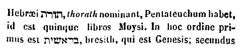 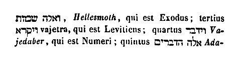
Secundus ordo est prophetarum, hic continet octo volumina. Primum 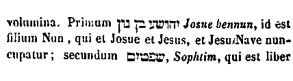 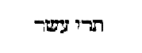
Deinde tertius ordo, octo libros babet. Primus est Job; secundus David; tertius 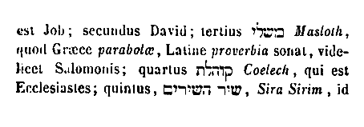 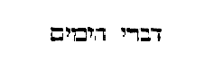
Primus ordo Novi Testamenti, quatuor habet Evangeliorum volumina, Matthaei, Marci, Lucae et Joannis. Secundus similiter quatuor: Epistolas Pauli numero quatuordecim sub uno volumine contextas et canonicas Epistolas, Apocalypsim et Actus apostolorum. [Col. 0779C] In tertio ordine primum habent locum Decretalia, quos canones, id est regulas appellamus; deinde sanctorum Patrum, et doctorum scripta, Hieronymi, Augustini, Gregorii, Ambrosii, Isidori, Origenis, Bedae, et aliorum multorum orthodoxorum, quae tam infinita sunt, ut numerari non possint. Ex quo profecto apparet quantum in fidem Christianam fervorem habuerunt, pro cujus assertione tot et tanta opera memoranda posteris reliquerunt. Unde nostra quoque pigritia arguitur, qui legere non sufficimus quae dictare illi potuerunt. In his autem ordinibus maxime utriusque apparet convenientia, quod sicut post legem prophetae et post prophetas agiographi, ita post Evangelium apostoli, et post apostolos doctores ordine successerunt. Et mira [Col. 0779D] quadam divinae dispensationis ratione actum est, ut cum in singulis plena et perfecta veritas consistat, nulla tamen superflua sit. Haec breviter de ordine et numero divinorum librorum perstrinximus, ut quae sibi sit praescripta materia lector agnoscat.
Quinque libros legis Moyses scripsit. Libri Josue, id est Josue cujus nomine inscribitur, auctor fuisse creditur. Librum Judicum a Samuele editum dicunt. Primam partem libri Samuelis ipse Samuel scripsit; sequentia vero usque ad calcem, David. Malachim Jeremias primum in unum volumen collegit, nam antea sparsus erat per singulorum regum historias. Isaias, Jeremias, Ezechiel, singuli suos libros fecerunt, [Col. 0780A] qui inscripti sunt nominibus eorum. Liber etiam duodecim prophetarum, auctorum suorum nominibus praenotatur, quorum nomina sunt Osee, Joel, Amos, Abdias, Jonas, Michaeas, Nahum, Habacuc, Sophonias, Aggaeus, Zacharias et Malachias. Qui propterea minores dicuntur, quia sermones eorum breves sunt, unde et uno volumine comprehenduntur. Isaias autem et Jeremias, et Ezechiel, et Daniel, hi quatuor majores, sunt singulis suis voluminibus distincti. Librum Job, alii Moysen, alii unum ex prophetis, nonnulli ipsum Job scripsisse credunt. Librum Psalmorum David edidit; Esdras autem postea ita ut nunc sunt ordinavit, et titulos addidit. Parabolas autem et Ecclesiasten et Cantica canticorum Salomon composuit. Daniel sui libri [Col. 0780B] auctor fuit. Liber Esdrae auctoris sui titulo praenotatur, in cujus textu ejusdem Esdrae Neemiaeque sermones pariter continentur. Librum Esther Esdras conscripsit. Liber Sapientiae apud Hebraeos nusquam est, et ipse stylus Graecam magis eloquentiam redolet. Hunc quidam Judaei Philonis esse affirmant. Librum ecclesiasticum certissime Jesus filius Sirac Jerosolymita, nepos Jesu sacerdotis magni (cujus meminit Zacharias) composuit. Hic apud Hebraeos reperitur, sed inter apocryphos habetur. Judith vero et Tobias, et libri Machabaeorum quorum, ut testatur Hieronymus, secundus magis Graecus esse probatur, quibus auctoribus scripti sint minime constat.
Bibliotheca de Graeco nomen accepit, eo quod ibi [Col. 0780C] libri recondantur. Nam βιβλίων librorum, θήκη repositorium interpretatur. Bibliothecam Veteris Testamenti Esdras scriba post incensam legem a Chaldaeis, dum Judaei regressi sunt in Jerusalem, divino afflatus spiritu reparavit, cunctaque legis ac prophetarum volumina quae fuerant a gentibus corrupta, correxit, totumque Vetus Testamentum in viginti duos libros constituit, ut tot libri essent in lege, quot habeantur et litterae. Porro quinque litterae duplices apud Hebraeos sunt, 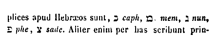 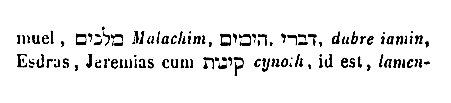
Interpretes Veteris Testamenti, primum Septuaginta quos Ptolemaeus cognomento Philadelphus rex Aegypti omnis litteraturae sagacissimus, cum Pisistratum Atheniensium tyrannum, qui primus apud Graecos bibliothecam instituit, et Seleucum, Nicanorem, et Alexandrum, et caeteros priores qui sapientiae operam dederant, in studio bibliothecarum aemularetur, non solum gentilium scripturas, sed etiam divinas litteras in suam bibliothecam conferens, ita ut septuaginta millia librorum in tempore ejus Alexandriae invenirentur, ab Eleazaro pontifice petens Scripturas Veteris Testamenti in Graecam [Col. 0781A] vocem ex Hebraea lingua interpretari fecit. Sed singuli in singulis cellis separati, ita omnia per Spiritum sanctum interpretati sunt, ut nihil in alicujus eorum codice inventum esset, quod in caeteris vel in verborum ordine discreparet; propter quod una est eorum interpretatio, sed Hieronymus dicit huic rei non esse adhibendam fidem. Secundam et tertiam et quartam faciunt Aquila, Symmachus et Theodocion, quorum primus, id est Aquila, Judaeus fuit. Symmachus vero et Theodocion Ebionitae haeretici. Obtinuit tamen usus ut post Septuaginta interpretes Ecclesiae Graecorum eorum reciperent exemplaria, et legerent. Quinta est vulgaris, cujus auctor ignoratur, unde specialiter sibi vindicavit, ut quinta appellaretur. Sexta et septima est Origenis, cujus codices [Col. 0781B] Eusebius et Pamphilus vulgaverunt. Octava est Hieronymi, quae merito caeteris antefertur, nam et verborum tenacior est, et perspicuitate sententiae clarior.
Plures Evangelia scripserunt, sed quidam sine Spiritu sancto magis conati sunt ordinare narrationem, quam historiae texere veritatem. Unde sancti Patres per Spiritum sanctum docti, quatuor tantum in auctoritatem receperunt caeteris reprobatis, id est Matthaei, Marci, Lucae et Joannis ad similitudinem quatuor fluminum paradisi, et quatuor vectium arcae, et quatuor animalium in Ezechiele. Primus Matthaeus Evangelium suum scripsit Hebraice; secundus Marcus Graece; tertius Lucas inter omnes evangelistas Graeci [Col. 0781C] sermonis eruditissimus, quippe ut medicus, in Graecia Evangelium scripsit Theophilo episcopo, ad quem etiam Actus apostolorum idem scripsit; quartus et ultimus Joannes Evangelium scripsit. Paulus quatuordecim scripsit Epistolas, decem ad Ecclesias, quatuor ad personas. Ultimam autem ad Hebraeos plerique dicunt non esse Pauli; eamdemque alii Barnabam scripsisse; alii Clementem suspicantur. Canonicae epistolae septem sunt: una Jacobi, duae Petri, tres Joannis, una Judae. Apocalypsim scripsit Joannes apostolus in Pathmos insulam exsilio relegatus.
Hi sunt scriptores sacrorum librorum, qui per Spiritum sanctum loquentes ad eruditionem nostri [Col. 0781D] praecepta vivendi regulamque conscripserunt. Praeter haec alia volumina apocrypha nuncupantur. Apocrypha autem dicta, id est secreta, quia in dubium veniunt. «Est enim eorum occulta origo, nec patet Patribus, a quibus usque ad nos auctoritas veracium Scripturarum certissima et notissima successione pervenit.» In his apocryphis etsi invenitur aliqua veritas, tamen propter multa falsa nulla est in eis canonica auctoritas, quae recte judicantur non esse eorum credenda, quibus ascribuntur. Nam multa et sub nominibus prophetarum et recentiora sub nominibus apostolorum ab haereticis proferuntur, quae omnia nomine apocryphorum ab auctoritate canonica diligenti examinatione remota sunt.
Pentateuchum, a quinque voluminibus dicitur. Πέντε enim Graece quinque, τεῦχος volumen vocatur. Genesis eo dicitur quod generatio saeculi in eo continetur. Exodus ab exitu filiorum Israel de Aegypto. Leviticus eo quod levitarum ministeria et diversitatem victimarum exsequitur. Numerorum liber vocatur, eo quod in eo egressae de Aegypto tribus enumerantur, et quadraginta duae per eremum mansiones. Δεύτερος, verbum Graecum est trissyllabum, et interpretatur secundus, νόμος interpretatur lex. Inde dictus est Deuteronomius, quasi secunda lex, quia in eo replicantur ea quae in praecedentibus tribus diffusius dicta sunt. In libro Josue quem Hebraei 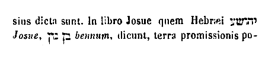 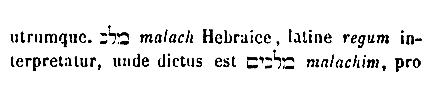 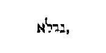 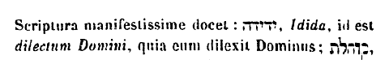 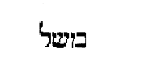 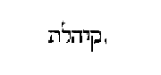 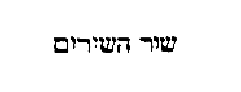 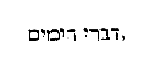
Sicut omnis scriptura Veteris Testamenti lex appellari potest, specialiter tamen libri Moysi quinque lex dicuntur; ita generaliter totum Novum Testamentum Evangelium dici potest, sed tamen specialiter ista quatuor volumina, Matthaei scilicet Marci, Lucae atque Joannis, in quibus facta et dicta Salvatoris plane explicantur, nuncupari meruerunt. Evangelium interpretatur bonum nuntium, quia aeterna bona promittit; non terrenam felicitatem, ut Vetus Testamentum secundum litterae intellectum.
Canones Evangeliorum Ammonius Alexandriae [Col. 0784D] primus excogitavit, postea Eusebius Caesariensis secutus plenius composuit; qui ideo facti sunt, ut per eos invenire et scire possimus, qui reliquorum evangelistarum similia aut propria dixerunt. Sunt autem numero decem, quorum primus continet numeros, in quibus quatuor eadem dixerunt: Matthaeus, Marcus, Lucas, Joannes. Secundus in quibus tres: Matthaeus, Marcus, Lucas. Tertius, in quibus tres: Matthaeus, Lucas, Joannes. Quartus, in quibus tres: Matthaeus, Marcus, Joannes. Quintus, in quibus duo: Marcus, Lucas. Sextus, in quibus duo: Matthaeus, Marcus. Septimus, in quibus duo: Matthaeus, Joannes. Octavus, in quibus duo: Lucas, Marcus. Nonus, in quibus duo: Lucas, Joannes. [Col. 0785A] Decimus, in quibus singuli eorum propria quaedam dixerunt. Quorum expositio haec est. Per singulos enim evangelistas numerus quidem capitulis affixus adjacet, quibus numeris subdita est area quaedam in imo notata, quae indicat in quo canone positus sit numerus, cui subjecta est area. Verbi gratia: Si est area prima in primo canone. Si secunda in secundo, si tertia in tertio, et sic per ordinem usque ad decimum pervenies. Si igitur aperto quolibet Evangelio placuerit scire, qui reliquorum evangelistarum similia dixerint, assumes adjacentem numerum capituli, et requires ipsum numerum in suo canone quem indicat, et ibi invenies, qui et quid dixerint; et ita demum in corpore inquisita loca, quae ex ipsis numeris indicantur per [Col. 0785B] singula Evangelia de eisdem dixisse invenies.
Canon autem Graece, Latine regula interpretatur. Regula autem dicta, quod recte ducit, nec aliquando aliorsum trahit. Alii dixerunt regulam dictam, vel quod regat, vel quod normam recte vivendi praebeat, vel quod distortum pravumque corrigat. Canones autem generalium conciliorum, a temporibus Constantini coeperunt. In praecedentibus namque annis persecutione fervente docendarum plebium minime dabatur facultas; inde Christianitas in diversas scissa haereses est, quia non erat commeatus [ al. licentia] episcopis in unum conveniendi, nisi temporibus supradicti imperatoris. Ipse enim dedit facultatem Christianis libere congregandi. Sub [Col. 0785C] hoc etiam sancti Patres in concilio Nicaeno de omni orbe terrarum convenientes juxta fidem evangelicam et apostolicam, secundum, post apostolos, Symbolum tradiderunt.
Inter caetera autem concilia quatuor sunt venerabiles synodi, quae totam principaliter fidem complectuntur quasi Evangelia, vel totidem paradisi flumina. Harum prima Nicaena synodus trecentorum XVIII episcoporum Constantino Augusto imperante, peracta est, in qua Arianae perfidiae condemnata blasphemia, quam de inaequalitate sanctae Trinitatis, idem Arius asserebat, consubstantialem Deo Patri Deum Filium, eadem sancta synodus per Symbolum definivit. Secunda synodus, CL Patrum sub Theodosio [Col. 0785D] seniore Constantinopolim congregata est, quae Macedonium, Spiritum sanctum negantem Deum esse condemnans, consubstantialem Patri et Filio Spiritum sanctum demonstravit dans symboli formam, quam tota Graecorum et Latinorum confessio in ecclesiis praedicat. Tertia synodus Ephesina prima CC episcoporum sub juniore Theodosio Augusto edita est, quae Nestorium, duas personas in Christo asserentem justo anathemate condemnavit, ostendens in duabus naturis unam Domini nostri Jesu Christi personam. Quarta synodus Chalcedonensis DCXXX, sacerdotum sub Marciano principe habita est, in qua Eutichem Constantinopolitanum abbatem, Verbi Dei et carnis unam naturam pronuntiantem, et ejus defensorem [Col. 0786A] Dioscorum quemdam Alexandrinum episcopum, et ipsum rursum Nestorium cum reliquis haereticis, una Patrum sententia praedamnavit, praedicans eadem synodus Christum Deum sic natum de Virgine, ut in eo substantiam et divinae et humanae confiteantur naturae. Hae sunt quatuor principales synodi, fidei doctrinam plenissime praedicantes. Sed et si qua sunt consilia, quae sancti Patres Spiritu Dei pleni sanxerunt; post istarum quatuor auctoritatem omni manent stabilita vigore, quorum gesta in hoc opere continentur condita. Synodum autem ex Graeco interpretari comitatum vel coetum. Concilii vero nomen tractum ex more Romano. Tempore enim quo causae agebantur, conveniebant omnes in unum, communique intentione [Col. 0786B] tractabant. Unde et concilium a communi intentione dictum, quasi consilium. Nam cilia oculorum sunt integumenta. Unde et considium consilium, d in l littera transeunte. Coetus vero conventus est, vel congregatio a coeundo, id est conveniendo in unum. Unde et conventus est nuncupatus, sicut conventus coetus concilium, a societate multorum in unum. Epistola Graece missa interpretatur Latine. Epistolae canonicae, id est regulares, quae etiam dicuntur catholicae, id est universales; quia non uni tantum populo vel civitati, sed universis gentibus generaliter scriptae sunt. Actus apostolorum primordia fidei Christianae in gentibus, et nascentis Ecclesiae historiam digerunt, et apostolorum vocantur: Apocalypsis ex Graeco in Latinum revelatio [Col. 0786C] interpretatur, juxta quod Joannes dicit: Apocalypsis Jesu Christi, quam dedit illis Deus palam facere servo suo Joanni (Apoc. I) .
Apud nos Pamphilus martyr, cujus vitam Eusebius Caesariensis conscripsit, Pisistratum in sacrae bibliothecae studio adaequare contendit. Hic enim in Bibliotheca sua prope triginta millia voluminum habuit. Hieronymus quoque atque Gennadius ecclesiasticos scriptores toto orbe quaerentes, ordine persecuti sunt, eorumque studia in uno voluminis indiculo comprehenderunt.
De nostris apud Graecos, Origenes in scripturarum labore tam Graecos quam Latinos operum suorum [Col. 0786D] numero superavit. Denique Hieronymus sex millia librorum ejus se legisse fatetur. Horum tamen omnium studia Augustinus ingenio vel scientia sua vicit. Nam tanta scripsit, ut diebus ac noctibus non solum scribere libros ejus quisquam, sed ne legere quidem accurate valeat. Scripserunt et alii catholici viri multa, et insignia opera; Athanasius Alexandrinus episcopus, Hilarius Pictaviensis episcopus, Basilius Capadocenus episcopus, Gregorius Theologus, et Gregorius Nazianzenus episcopus, Ambrosius Mediolanensis episcopus, Theophilus Alexandrinus episcopus, Joannes Constantinopolitanus episcopus, Cyrillus Alexandrinus episcopus, Leo papa, Proculus, Isidorus Hispalensis, Beda, Cyprianus martyr et [Col. 0787A] Carthaginensis episcopus, Hieronymus presbyter, Origenes, cujus scripta nec omnino refutat, nec per omnia recipit Ecclesia, Orosius, Sedulius, Prudentius, Juvencus, Arator et Ruphinus, qui multos libros edidit, et interpretatus est quasdam scripturas. Sed quoniam beatus Hieronymus in aliquibus eum de arbitrii libertate notavit, illa sentire debemus, quae et Hieronymus. Gelasius etiam fecit quinque libros adversus Nestorium et Eutichem, et tractatus in modum Ambrosii. Item libros duos adversus Arium, fecit etiam sacramentorum praefata, et orationes et epistolas fidei. Dionysius Areopagita, episcopus ordinatus Corinthiorum, multa ingenii sui volumina reliquit. Item Chronica Eusebii Caesariensis, atque ejusdem historiae ecclesiasticae libri, quamvis in [Col. 0787B] primo narrationis suae libro tepuerit, et post in laudibus atque excusatione Origenis schismatici unum conscripserit librum, propter rerum tamen singularum notitiam, quae ad instructionem pertinet, non usquequaque Ecclesia refutat. Cassiodorus quoque, qui in explanatione Psalmorum satis utile opus scripsit. Sunt adhuc et alii multi, quorum nomina hic taceo.
Itinerarium nomine Petri apostoli, quod appellatur sancti Clementis, lib. VIII apocryphi. Actus Andreae apostoli apocryphus. Actus nomine Thomae apocryph. Evangelia nomine Barnabae apostoli apocryph. Evangelia nomine Thomae apostoli apocr. Evangelia nomine Andreae apostoli apoc. Evangelia [Col. 0787C] quae falsavit Lucianus apocr. Evangelia quae falsavit Titius apocr. Liber De infantia Salvatoris apocr. Liber De nativitate Salvatoris et de sancta Maria, vel de obstetrice ejus apocr. Liber qui appellatur pastoris apoc. Libri omnes quos fecit Leutius discipulus diaboli apocr. Liber qui appellatur Fundamentum apocr. Liber qui appellatur Thesaurus apocr. Liber qui est De filiabus Adae vel Genesis apoc. Centimetrum de Christo Virgilianis compaginatum versibus apocr. Liber qui appellatur Actus Teclae et Pauli apoc. Liber qui appellatur Nepotis apocr. Liber Proverbiorum ab haereticis conscriptus, et sancti Sixti nomine signatus apocr. Revelatio quae appellatur Pauli apocr. Revelatio quae appellatur Thomae apostoli apocr. Revelatio quae appellatur Stephani apoc. [Col. 0787D] Liber qui appellatur Transitus sanctae Mariae apoc. Liber qui appellatur Poenitentia Adam apoc. Liber Diogiae nomine gigantis, qui post diluvium cum dracone ab haereticis pugnasse perhibetur apocr. Liber qui appellatur Testamentum Job apocr. Liber qui appellatur poenitentia Origenis apoc. Liber qui appellatur poenitentia Cypriani apocr. Libri qui appellantur Jamne et Mambre, apocr. Liber qui appellatur Sors apostolorum apocr. Liber Lusan apocr. Liber canonum apostolorum apocr. Liber physiologus ab haereticis conscriptus, et beati Ambrosii nomine praesignatus apocr. Historia Eusebii Pamphyli apocr. Opuscula Tertulliani sive Africani apoc. Opuscula Posthumiani et Galli apocr. Opuscula Montani et [Col. 0788A] Priscillae, et Maximillae apoc. Omnia opuscula Fausti Manichaei apocr. Opuscula alterius Clementis Alexandrini apocr. Opuscula Cassiani presbyteri Galliarum apocr. Opuscula Victorini Pictaviensis apocr. Opuscula Fausti Reginensis apoc. Opuscula Frumentii apocr. Epistola Jesu ad Abgarum apocr. Passio Cyrici et Julitae apocr. Passio Georgii apoc. Scripta quae appellantur Salomonis Contradictio apocr. Philacteria omnia quae non ab angelo, ut illi confingunt, sed magis a daemone conscripta sunt apocr. Haec et his similia quae Simon Magus, Nicolaus, Cherinthus, Marcion, Basilides, Chion, Paulus etiam Samosatenus, Photinus et Bonosus, qui simili errore defecerunt. Montanus quoque cum suis obscoenissimis sequacibus. Apollinaris, Valentinus, Manichaeus, [Col. 0788B] Faustus, Sabellius, Arius, Macedonius, Eunomius, Novatus, Fabatius, Calixtus, Donatus, et Eustachius, Nibianus, Pelagius, Julianus et Laciensis, Coelestinus, Maximianus, Priscillianus ab Hispania, Lampedius, Dioscorus, Euticius, Petrus et alter Petrus, e quibus unus Alexandriam, alter Antiochiam maculavit, Achatius Constantinopolitanus cum consortibus suis, necnon et omnes haereses, quas ipsi eorumque discipuli, sive schismatici docuerunt vel scripserunt: quorum nomina minime retinemus, non solum repudiata, verum etiam ab omni catholica et Romana Ecclesia eliminata, atque cum suis auctoribus, auctorumque sequacibus sub anathematis indissolubili vinculo in aeternum confitemur esse damnata.
Codex multorum librorum est: liber unius voluminis, et dictus codex per translationem a codicibus arborum seu vitium, quasi caudex, quod in se multitudinem librorum quasi ramorum contineat. Volumen dicitur a volvendo. Liber est interior cortex arboris, in quo antiqui ante usum chartae vel membranarum scribere solebant. Unde et scriptores librarios vocabant, unde dictus est liber volumen. Scheda cujus diminutivum est schedula, Graecum nomen est. Et dicitur scheda proprie quod adhuc emendatur, et necdum in libros redactum est. Chartarum usus primum apud Memphim civitatem Aegypti [Col. 0788D] inventus est. Dicta autem charta, quod carptim papiri tegmen decerptum glutinatur, et sic charta conficitur, cujus genera plura sunt. Pergamenum dicitur a Pergamio, ubi inventum est. Dicuntur etiam membranae, quia ex membris pecudum detrahuntur. Fiebant autem membranae primum lutei coloris, postea Romae candidae membranae repertae sunt. Homilia dicitur quasi sermo popularis; sicut ubi verbum fit ad populum. Tractatus est unius rei multiplex expositio. Dialogus est collatio duorum vel plurium; Latini sermonem dicunt. Sermo autem dictus, quia seritur inter utrumque. Commentaria dicta quasi cum mente, vel a comminiscor. Sunt enim interpretationes vel commentaria juris vel Evangelii. Dicunt quidam commenta appellanda gentilium [Col. 0789A] librorum, expositiones autem divinorum. Glossa Graecum est, et interpretatur lingua, quia quodammodo loquitur significationem subjectae dictionis. Hanc philosophi adverbum [ al. adverbium] dicunt, [Col. 0790A] quia vocem illam de cujus requaeritur, uno et singulari verbo designat; verbi gratia, ut conticescere est tacere.
CAP. I. De quibusdam sacrae Scripturae proprietatibus praemonitio. —CAP. II. De triplici intelligentia. —CAP. III. Quod res etiam significent in divina Scriptura. —CAP. IV. De septem regulis. —CAP. V. Quid studium impediat. —CAP. VI. Quis sit fructus divinae lectionis. —CAP. VII. Quomodo legenda sit scriptura divina ad correctionem morum. —CAP. VIII. Lectionem esse incipientium, opus perfectorum, et quid monacho competat. —CAP. IX. De quinque gradibus, quibus exercetur vita justorum. —CAP. X. De tribus generibus legentium seu lectorum.
Non debet onerosum esse studioso lectori, quod tam varie, multipliciterque numerum et ordinem, et vocabula divinorum librorum tractamus, quia saepe accidit, ut haec minima ignorata, magnarum rerum et utilium notitiam obscurent. Quapropter semel se expediat lector, ut his quasi quibusdam clausulis, prima fronte reseratis, libero gressu possit deinde propositum iter currere, ne in singulis libris nova rudimenta quaerere oporteat. His ergo expeditis, deinceps caetera quae ad propositum opus valere videbuntur, tractabimus.
Primo omnium intelligendum est, quod divina [Col. 0789C] Scriptura triplicem habet modum intelligendi, id est historiam, allegoriam, tropologiam. Sane non omnia quae in divino reperiuntur eloquio, ad hanc triplicem intorquenda sunt interpretationem, ut singula historiam, allegoriam, et tropologiam simul continere credantur. Quod etsi in multis congrue assignari possit, ubique tamen observare aut difficile est, aut impossibile. Sicut enim in citharis et hujusmodi organis musicis non quidem omnia quae tanguntur canorum aliquid resonant, sed tantum chordae; caetera tamen in toto citharae corpore ideo facta sunt, ut essent ubi connecterentur, et quo tenderentur illa quae ad cantilenae suavitatem modulaturus est artifex, ita in divinis eloquiis quaedam posita [Col. 0789D] sunt, quae tantum spiritualiter intelligi volunt; quaedam vero morum gravitati deserviunt; quaedam etiam secundum simplicem sensum historiae dicta sunt, nonnulla autem quae et historice, et allegorice, et tropologice convenienter exponi possunt. Unde modo mirabili omnis divina Scriptura ita per Dei sapientiam convenienter suis partibus aptata atque disposita est, ut quidquid in ea continetur, aut vice chordarum spiritualis intelligentiae suavitatem personet, aut per historiae seriem, et litterae soliditatem mysteriorum dicta sparsim posita continens, [Col. 0790B] et quasi in unum connectens, ad modum ligni concavi super extensas chordas simul copulet, earumque sonum recipiens in se, dulciorem auribus referat, quem non solum chorda edidit, sed et lignum modulo corporis sui formavit. Sic et mel in favo gratius. Et quidquid majori exercitio quaeritur, majori etiam desiderio invenitur. Oportet ergo tractare sic divinam Scripturam, ut nec ubique historiam, nec ubique allegoriam, nec ubique quaeramus tropologiam; sed singula in suis locis, prout ratio postulat, competenter assignare. Saepe tamen in una eademque littera omnia reperiri possunt; sicut historiae veritas et mysticum aliquid per allegoriam insinuet, et quid agendum sit, pariter per tropologiam demonstret.
Sciendum est etiam, quod in divino eloquio non tantum verba, sed etiam res significare habent, qui modus non adeo in aliis scripturis inveniri solet. Philosophus solam vocum novit significationem, sed excellentior valde est rerum significatio, quam vocum; quia hanc usus instituit, illam natura dictavit. Haec hominum vox est, illa vox Dei ad homines. Haec prolata perit, illa creata subsistit: «Vox tenuis est nota sensuum; res divinae rationis est simulacrum.» Quod ergo sonus oris, qui simul subsistere incipit et desinit, ad rationem mentis est; hoc omne spatium temporis ad aeternitatem. Ratio mentis intrinsecum [Col. 0790D] verbum est, quod sono vocis, id est verbo extrinseco manifestatur, et divina sapientia, quam de corde suo pater eructavit, in se invisibilis per creaturas, et in creaturis, agnoscitur. Ex quo nimirum colligitur, quam profunda in sacris litteris requirenda sit intelligentia, ubi per vocem ad intellectum, per intellectum ad rem, per rem ad rationem, per rationem pervenitur ad veritatem. Quod dum quidam minus docti non considerant, nullam in eis esse subtilitatem existimant, ubi exerceri possint ingenia, et ob hoc ad apostolorum scripturas se [Col. 0791A] transferunt, quia profecto nil aliud ibi concipiunt, nisi solam litterae superficiem, virtutem veritatis ignorantes. Quod autem rerum significatione sacra utantur eloquia, brevi quodam et aperto exemplo demonstrabimus. Dicit Scriptura: Vigilate, quia adversarius vester diabolus tanquam leo rugiens circuit (I Pet. V) . Hic si dixerimus leonem significare diabolum, non vocem, sed rem intelligere debemus. Si enim duae hae voces, id est diabolus et leo, unam et eamdem rem significant, incompetens est similitudo ejusdem rei ad seipsam. Restat ergo, ut haec vox leo animal ipsum significet, animal vero diabolum designet; et caetera omnia ad hunc modum accipienda sunt, ut cum dicimus vermem, vitulum, lapidem serpentem, et alia hujusmodi, Christum significare.
Illud quoque diligenter attendendum est, quod septem esse inter caeteras regulas locutionum sanctarum Scripturarum, quidam sapientes dixerunt. Prima regula est de Domino et ejus corpore, quae de uno ad unum loquitur, atque in una persona modo caput, modo corpus ostendit, sicut Isaias ait: Induit me Dominus vestimentis salutis, et indumento justitiae circumdedit me, quasi sponsum decoratum corona, et quasi sponsam ornatam monilibus suis (Isai. LXI) . In una enim persona duplici vocabulo nominata; et caput, id est sponsum; et Ecclesiam, id est sponsam manifestavit. Proinde notandum est in Scripturis, quando specialiter caput scribitur, quando et caput et corpus, aut quando ex utroque transeat ad [Col. 0791C] utrumque, aut ab altero ad alterum, sicque quid capiti, quid corpori conveniat, prudens lector intelligat. Secunda regula est de Domini corpore uno ac simplice et permisto. Nam videntur quaedam uni convenire personae, quae tamen non sunt unius, ut est illud: Puer [servus] meus es tu Israel, ecce delevi ut nubes iniquitates tuas, et sicut nebulam peccata tua. Convertere [revertere] ad me, et redimam te (Isa. XLIV) . Hoc ad unum non congruit. Nam altera pars est cui peccata delevit, et cui dicit meus es tu; et altera cui dicit, convertere ad me, et redimam te; qui si convertantur, peccata eorum delentur. Per hanc enim regulam sic ad omnes loquitur Scriptura, ut et boni redarguantur cum malis, et mali laudentur [Col. 0791D] propter bonos; sed quid ad quem pertineat qui prudenter legerit discet. Tertia regula est de littera et spiritu, id est de lege et gratia; lege per quam praecepta facienda admoventur; gratia per quam ut operemur adjuvamur. Vel quod lex non tantum historice, sed etiam spiritualiter sentienda sit. Namque et historice oportet fidem tenere, et spiritualiter legem intelligere. Quarta regula est de specie et genere, per quam pars pro toto, et totum pro parte accipitur, veluti si uni populo vel civitati loquatur Deus, et tamen intelligatur omnem contingere mundum. Nam licet adversus unam civitatem Babyloniam per Isaiam prophetam Dominus comminetur; tamen dum contra eam loquitur, transit ad genus de specie, et convertit contra totum mundum sermonem. [Col. 0792A] Certe si non diceret adversus universum orbem, non adderet infra generaliter, ut disperdat omnem, terram et visitabo super orbis mala (Isa. XIII) , et caetera quae sequuntur ad intentionem mundi pertinentia, unde et adjecit: Hoc est consilium quod cogitavi super omnem terram, et haec manus extensa super omnes gentes (Isa. XIV) . Item postquam sub persona Babyloniae arguit universum mundum, rursus ad eamdem quasi de genere ad speciem revertitur, dicens quae eidem civitati specialiter contigerunt. Ecce ego suscitabo super eos Medos (Isa. XIII) . Nam regnante Balthassar, a Medis obtenta est Babylonia. Sic ex persona unius Aegypti totum vult intelligere mundum dicendo: Et concurrere faciam Aegyptios adversus Aegyptios, regnum adversus regnum (Isa. XIX) . Cum [Col. 0792B] Aegyptus non multa regna, sed unum habuisse describatur regnum.
Quinta regula est de temporibus, per quam aut pars maxima temporis per partem minorem inducitur, aut pars minima temporis per partem majorem intelligitur. Sic est de triduo Dominicae sepulturae, dum nec tribus plenis diebus ac noctibus jacuerit in sepulcro, sed tamen a parte totum triduum accipitur. Vel sicut illud quod quadringentis annis praedixerat Deus filios Israel servituros in Aegypto, et sic inde egressuros. Qui tamen dominante Joseph Aegypto, damnati sunt; nec statim post quadringentos annos egressi sunt, ut fuerat repromissum, sed annis quadringentis triginta peractis, ab Aegypto recesserunt. Est et alia de temporibus figura, [Col. 0792C] per quam quaedam quae futura sunt, quasi jam gesta narrantur, ut est illud: Foderunt manus meas et pedes meos; et: Diviserunt sibi vestimenta mea (Psal. XXI) ; et his similia, in quibus futura, ac si jam facta sint, ita dicuntur. Sed cur quae adhuc facienda erant, jam facta narrantur? Quia ea quae nobis futura sunt, apud Dei aeternitatem jam facta sunt. Quapropter quando aliquid faciendum esse pronuntiatur, secundum nos dicitur; quando vero quae futura sunt, jam facta dicuntur, secundum Dei aeternitatem accipienda sunt, apud quem jam omnia facta sunt, quae futura sunt. Sexta regula est de recapitulatione. Recapitulatio est enim, dum Scriptura tendit ad illud, cujus narratio jam transierat, [Col. 0792D] sicut cum filios filiorum Noe Scriptura commemorasset (Gen. X) , dicit illos fuisse in linguis et gentibus suis, et tamen postea quasi hoc etiam in hoc ordine temporum requiritur: Erat, inquit, omnis terra labium unum [labii unius, etc.], et vox una omnibus erat (Gen. XI) . Quomodo ergo secundum suas gentes, et secundum suas linguas erant, si una lingua erat omnibus, nisi quia ad illud quod jam transierat recapitulando est reversa narratio? Septima regula est de diabolo et ejus corpore, quod saepe dicuntur ipsius capitis, quae suo magis conveniunt corpori. Saepe vero videntur esse dicta membrorum, et non nisi capiti congruunt. Ex nomine quippe corporis intelligitur caput, ut est in Evangelio de zizaniis tritico admistis, dicente Domino: Inimicus [Col. 0793A] homo hoc fecit (Matth. XIII) ; hominem ipsum diabolum vocans, et ex nomine corporis caput designans; item ex nomine capitis significatur corpus sicut in Evangelio dicitur: Duodecim vos elegi, et unus ex vobis diabolus est (Joan. VI) . Judam utique indicans, quia diaboli corpus fuit. Apostata quippe angelus omnium caput est iniquorum, et hujus capitis corpus sunt omnes iniqui; sicque cum membris suis unus est, ut saepe quod corpori ejus dicitur, ad eum potius referatur. Rursum quod illi ad membra ipsius iterum deriventur, sicut in Isaia, ubi dum contra Babyloniam, id est dum contra diaboli corpus multa dixisset sermo propheticus, rursus ad caput, id est diabolum oraculi sententiam derivat, dicens: Quomodo cecidisti de coelo, Lucifer, qui mane [Col. 0793B] oriebaris? (Isa. XIV.)
Postquam certam materiam praescripsimus lectori, et eas scripturas, quae ad divinam praecipue pertinent lectionem, suis nominibus assignando determinavimus, consequens videtur, ut etiam de modo et ordine legendi aliquid dicamus, quatenus ex his quae dicta sunt, agnoscat, cui rei studium impendere debeat; ex his vero quae sunt dicenda, ejusdem studii sui modum et rationem accipiat. Quia vero facilius quid agendum sit intelligimus, si prius quid non sit faciendum agnoverimus; instruendus est primum quid cavere debeat, ac deinde informandus qualiter ea quae sunt agenda, perficiat. Dicendumque est quid sit, quod ex tanta turba discentium, quorum multi [Col. 0793C] et ingenio pollent, et vigent exercitio, tam pauci et tam numerabiles inveniantur, quibus ad scientiam pervenire contingat. Et ut de illis taceam, qui naturaliter sunt hebetes et tardi ad intelligendum, hoc maxime me movet, et dignum quaestione videtur, unde hoc accidit, quod duo pari ingenio, et aequali studio uni lectioni intendunt, nec tamen simili effectu ejus intelligentiam consequuntur. Alter cito quod quaerit apprehendit, alter diu laborat, et parum proficit. Sed sciendum est quod in quolibet negotio duo sunt necessaria: opus videlicet, et ratio operis, quae ita sibi connexa sunt, ut alterum sine altero, aut inutile sit aut minus efficax. Verumtamen «melior, ut dicitur, prudentia est fortitudine;» quia et pondera aliquando quae viribus movere non possumus, [Col. 0793D] arte levamus. Sic nimirum est in omni studio, qui sine discretione operatur, laborat quidem, sed non proficit, et quasi aerem verberans, vires in ventum fundit. Aspice duos pariter silvam transeuntes, et hunc quidem per devia laborantem, illum vero recti itineris compendia legentem, pari motu cursum tendunt, sed non aeque cito perveniunt. Quid autem Scripturam dixerim nisi silvam, cujus sententias quasi fructus quosdam dulcissimos legendo carpimus, tractando ruminamus? Qui ergo in tanta multitudine librorum legendi modum et ordinem non custodit, quasi in condensitate saltus oberans tramitem recti itineris perdidit; et est inter eos unde dicitur, semper discentes, et nunquam ad [Col. 0794A] scientiam pervenientes. Tantum enim valet discretio, ut sine ipsa et omne otium turpe sit, et laborinutilis. Ut autem universaliter complectamur. Tria sunt quae praecipue studiis legentium obesse solent; negligentia, imprudentia, fortuna. Negligentia est, quando ea quae discenda sunt, vel prorsus praetermittimus vel minus studiose discimus. Imprudentia est, quando congruum ordinem et modum in his quae discimus, non servamus. Fortuna est in eventu, casu, sive naturaliter contingente, quando vel paupertate, vel infirmitate, vel naturali tarditate, sive etiam doctorum raritate; quia aut non inveniuntur qui doceant, aut qui bene doceant, a proposito nostro retrahimur. In his autem rebus de primo quidem, id est negligentia lector admonendus est; de [Col. 0794B] secundo vero, id est imprudentia instruendus; de tertio autem, id est fortuna adjuvandus.
Quisquis ad divinam lectionem erudiendus accesserit, primum qualis sit fructus ejus agnoscat. Nil enim sine causa appeti debet, nec desideria trahit, quod utilitatem non promittit. Geminus est divinae lectionis fructus, quia mentem vel scientia erudit vel moribus ornat. Docet quod scire delectet, et quod juvari expediat. Quorum alterum, id est scientia magis ad historiam et allegoriam; alterum, id est institutio morum ad tropologiam magis respicit. Omnis divina Scriptura refertur ad hunc finem. Sane quamvis expediat magis justum esse, quam sapientem, scio tamen plures in studio sacri eloquii [Col. 0794C] scientiam quaerere quam virtutem. Ego autem quoniam neutrum improbatum, sed utrumque necessarium et laudabile esse censeo: quid cujusque intentioni competat paucis absolvam. Et primum quidem de eo qui moralitatis gratiam amplectitur, expediam.
Qui virtutum notitiam et formam vivendi in sacro quaerit eloquio, hos libros magis legere debet, qui hujus mundi contemptum suadent, et animam ad amorem conditoris sui accendunt, rectumque vivendi tramitem docent, qualiterque virtutes acquiri, et vitia declinari possint, ostendunt. Primum enim, [Col. 0794D] inquit, quaerite regnum Dei et justitiam ejus (Matth. VI) ; ac si aperte dicat: Et coelestis patriae gaudia desiderate, et quibus justitiae meritis ad ea perveniatur, solerter inquirite. Utrumque bonum, utrumque necessarium amate et quaerite. Si amor est, otiosus esse non potest. Pervenire desideratis; discite quomodo perveniatur quo tenditis. Haec vero scientia duobus modis comparatur, videlicet exemplo, et doctrina exemplo, quando sanctorum facta legimus, doctrina quando eorum dicta ad disciplinam nostram pertinentia discimus. Inter quae beatissimi Gregorii singulariter scripta amplexanda existimo, quae quia mihi prae caeteris dulcia, et aeternae vitae amore plena visa sunt, nolo silentio praeterire.
Oportet autem ut qui hanc ingressus fuerat viam [Col. 0795A] in libris quos legerit, discat non solum colore dictaminis, sed virtutum aemulatione provocari, ut eum non tam verborum pompositas aut concinnatio, quam veritatis pulchritudo delectet. Sciat etiam ad propositum suum non conducere, ut inani raptus desiderio scientiae, obscuras, et profundae intelligentiae Scripturas exquirat, in quibus magis occupetur quam aedificetur animus, ne sic eum sola lectio teneat, ut a bono opere vacare compellat. Christiano philosopho lectio exhortatio debet esse non occupatio; et bona desideria pascere, non necare. Relatum mihi aliquando memini de quodam sitis probabilis vitae viro, qui tanto sanctarum Scripturarum amore flagrabat, ut eis continuum impenderet studium. Cumque in dies crescente [Col. 0795B] scientia cresceret et desiderium ejus; coepit tandem sapientiam zelatus imprudenter (spretis simplicioribus Scripturis) profunda quaeque et obscura rimari atque aenigmatibus prophetarum enodandis, et mysticis sacramentorum intellectibus vehementer insistere. Sed mens humana tantum non sustinens pondus, coepit mox et rei magnitudine, et intentionis jugitate deficere, tantaque hujus importunae occupationis cura confundi, ut non solum jam ab utilibus, sed etiam a necessariis actibus cessaret. Verso siquidem eventu in contrarium, qui legere Scripturas ad aedificationem vitae suae coeperat; quia discretionis moderamine uti non novit, easdem nunc occasionem erroris habebat. Sed miseratione divina tandem per revelationem admonitus est, ne [Col. 0795C] amplius harum litterarum studio incumberet, sed sanctorum Patrum vitam et martyrum triumphos, aliasque tales simplici stylo dictatas, frequentare consuesceret; sicque in brevi ad statum pristinum reductus, tantam internae quietis gratiam accipere meruit, ut vere in eo illam Domini vocem impletam diceres, qua ipse nostrum laborem et dolorem considerans, pie nos consolari voluit, dicens: Venite ad me omnes qui laboratis et onerati estis, et ego reficiam vos et deinceps invenietis, inquit, requiem animabus vestris (Matth. XI) . Hoc exemplum ideo apposui, ut ostenderem eis qui in disciplina non litteraturae, sed virtutum positi sunt, non oportere lectionem esse fastidio, sed oblectamento. Nam et [Col. 0795D] Propheta: Non cognovi, inquit, litteraturam, sive negotiationem, introibo in potentias Domini; Domine, memorabor justitiae tuae solius. Deus, docuisti me a juventute mea, etc. (Psal. LXX.) Qui enim ad occupationem Scripturas, et (ut ita dicam) ad affiictionem spiritus legit, non philosophatur, sed negotiatur; vixque tam vehemens et indiscreta intentio superbiae carere valet. Quid autem delectione simplicis Pauli dicam, qui ante implere legem voluit quam discere? Quae nobis profecto satis exemplo esse potest, non auditores, neque lectores, sed factores potius justos esse ante Deum. Considerandum praeterea est, quod lectio duobus modis animo fastidium ingerere solet, et affligere spiritum, qualitate videlicet si obscurior fuerit, et quantitate si prolixior exstiterit, in quo [Col. 0796A] utroque magno uti moderamine oportet, ne quod ad refectionem quaesitum est, sumatur ad suffocationem. Sunt qui omnia legere volunt; tu noli contendere, sufficiat tibi, nihil tua interest, an non omnes legeris libros. Infinitus est librorum numerus; tu nolis sequi infinita. Ubi finis non est requies esse non potest; ubi requies non est, pax nulla est; ubi pax non est, Deus habitare non potest. In pace, inquit Propheta, factus est locus ejus, et in Sion habitatio ejus (Psal. LXXV) . In Sion, sed in pace, esse Sion oportet, sed pacem non amittere. Contemplare, et occupari noli. Noli avarus esse, ne forte semper egeas. Audi Salomonem, audi Sapientem, et disce prudentiam. Fili mi, inquit, amplius his ne requiras; faciendi plures libros, nullus est finis, frequensque [Col. 0796B] meditatio carnis afflictio est (Eccle. XII) . Ubi ergo est finis? Finem loquendi omnes pariter audiamus Deus time, et mandata ejus observa: hoc est omnis homo (ibid.)
Nemo me pro his quae superius commemoravi existimet lectorum diligentiam reprehendere, cum ego potius diligentes lectores ad propositum hortari intendam; et eos qui libenter discunt laude dignos ostendere, sed ibi locutus sum eruditis, nunc autem erudiendis, et doctrinam quae principium est disciplinae inchoantibus. Illis studium virtutum, istis vero interim exercitium lectionis propositum est sic tamen [Col. 0796C] ut nec hi virtute careant, nec illi prorsus lectionem omittant. Nam saepe minus providum est opus quod non praecedit lectio; et doctrina minus utilis, quam non sequitur bona operatio. Oportet autem summopere et illos cavere, ne forte ad ea quae retro sunt aspiciant; et istos consolari, si ubi illi sunt, quandoque pervenire desiderant. Utrosque ergo exerceri, et utrosque promoveri convenit. Nemo retro abeat, ascendere licet, sed non descendere. Si vero necdum ascendere potes, sta in loco tuo. Liber a culpa non est, qui alienum usurpat officium. Si monachus es, quid facis in turba? Si amas silentium cur declamantibus assidue interesse delectaris? Tu semper jejuniis et fletibus insistere debes, et tu [Col. 0796D] philosophari quaeris? Simplicitas monachi philosophia ejus est. Sed docere, inquis, alios volo. Non est tuum docere, sed plangere. Si tamen doctor esse desideras, audi quid facias. Utilitas habitus tui, et simplicitas vultus, innocentia vitae, et sanctitas conversationis tuae docere debent homines. Melius fugiendo mundum doces quam sequendo. Sed adhuc forte prosequeris, ecquid inquiens, nonne saltem si volo discere mihi licet? Supra dixi tibi, lege, et occupari noli. Exercitium tibi esse potest lectio, sed non propositum. Doctrina bona est, sed incipientium est. Tu vero te perfectum fore promiseras, et ideo tibi non sufficit, si incipientibus coaequaris. Plus aliquid te facere oportet. Considera ergo ubi sis, et quid agere debeas facile agnosces.
Quatuor sunt in quibus nunc exercetur vita justorum, et quasi per quosdam gradus ad futuram perfectionem sublevatur, videlicet lectio sive doctrina, meditatio, oratio, operatio. Quinta deinde sequitur contemplatio, in qua quasi quodam praecedentium fructu in hac vita etiam quae sit boni operis merces futura praegustatur. Unde Psalmista cum de judiciis Dei loqueretur, commendans ea statim subjunxit: In custodiendis retributio multa est (Psal. XVIII) . De his quinque gradibus primus gradus, id est lectio incipientium est; supremus, id est contemplatio perfectorum; Et de mediis quidem quanto plures quis ascenderit, tanto perfectior erit; verbi [Col. 0797B] gratia: Prima lectio intelligentiam dat, secunda meditatio consilium praestat, tertia oratio petit, quarta operatio quaerit, quinta contemplatio invenit. Si ergo legis et intelligentiam habes et nosti jam quid faciendum sit, initium boni est, sed adhuc tibi non sufficit; nondum perfectus es. Scande itaque in arcem consilii, et meditare qualiter implere valeas, quod faciendum esse didicisti. Multi enim scientiam habent, sed pauci sunt qui noverint qualiter scire oporteat. Rursus quoniam consilium hominis sine divino auxilio infirmum est et inefficax, ad orationem erigere; et ejus adjutorium pete, sine quo nullum potes facere bonum, ut videlicet ipsius gratia, quae praeveniendo te illuminavit, subsequendo etiam pedes tuos dirigat in viam pacis; et quod in [Col. 0797C] sola adhuc voluntate est, ad effectum perducat bonae operationis. Deinde restat tibi, ut ad bonum opus accingaris, ut quod orando petis, operando accipere merearis, tecum operari vult Deus; non cogeris, sed juvaris. Si solus tu operaris, nil perficis; si solus Deus operatur, nil mereris. Operetur ergo Deus ut possis, opereris et tu ut aliquid merearis. Via est operatio bona, qua itur ad vitam. Qui viam hanc currit, vitam quaerit. Confortare et viriliter age. Habet haec via praemium suum, quoties ejus laboribus fatigati superne respectus gratia illustramur, gustantes et videntes quoniam suavis est Dominus (Psal. XXXIII) . Sicque fit quod supradictum eum, quod oratio quaerit, contemplatio invenit. Vides [Col. 0797D] igitur quomodo per hos gradus ascendentibus perfectio occurrit, ut qui infra remanserit, perfectus esse non possit. Propositum ergo nobis debet esse semper ascendere; sed quoniam tanta est mutabilitas vitae nostrae, ut in eodem stare non possimus, cogimur saepe ad transacta respicere; et ne amittamus illud in quo sumus, repetimus quandoque quod [Col. 0798A] transivimus; verbi gratia: Qui in opere strenuus est, orat ne deficiat. Qui precibus insistit, ne orando offendat, meditatur quid orandum sit; et qui aliquando in proprio consilio minus confidit, lectionem consulit, et sic evenit, ut cum ascendendi nobis semper sit voluntas, descendere tamen aliquando cogat necessitas; ita tamen ut in voluntate non necessitate propositum nostrum consistat. Quod ascendimus propositum est, quod descendimus praeter propositum. Non hoc ergo, sed illud principale esse debet.
Satis, ut puto, aperte demonstratum est provectis, et aliquid amplius de se promittentibus non idem [Col. 0798B] esse propositum cum incipientibus; sed sicut illis aliquid conceditur, quod isti sine culpa minime agere possunt, ita etiam ab istis aliquid requiritur, quo illi nondum obligati sunt. Nunc igitur ad promissa solvenda redeo, ut videlicet ostendam qualiter eis divina Scriptura legenda sit, qui adhuc in ea solum quaerunt scientiam. Sunt nonnulli qui divinae Scripturae scientiam appetunt, ut vel divitias congregent, vel honores obtineant, vel famam acquirant, quorum intentio quantum perversa, tantum est miseranda. Sunt rursus alii, quos audire verba Dei et opera ejus discere delectat, non quia salutifera, sed quia mirabilia sunt. Scrutari arcana et inaudita cognoscere volunt; multa scire et nil facere. In vanum mirantur potentiam, qui non amant misericordiam. Hos [Col. 0798C] ergo quid aliud agere dicam, quam praeconia divina in fabulas commutare? Sic theatralibus ludis, sic scenicis carminibus intendere solemus, ut scilicet auditum pascamus, non animum. Hujusmodi tamen non tam confundi quam adjuvari oportere censeo, quorum voluntas non utique maligna est, sed improvida. Alii vero idcirco sacram Scripturam legunt ut secundum Apostoli praeceptum parati sint omni poscenti reddere rationem de ea fide in qua positi sunt (I Petr. III) , ut videlicet inimicos veritatis fortiter destruant; minus eruditos doceant, ipsi perfectius viam veritatis agnoscant, et altius Dei secreta intelligentes, arctius ament; quorum nimirum devotio laudanda est, et imitatione digna. Tria igitur sunt genera hominum sacram Scripturam legentium, [Col. 0798D] quorum quidem primi miserandi sunt, secundi juvandi, tertii laudandi; nos vero quia omnibus consulere intendimus, quod bonum est in omnibus augeri cupimus, et quod perversum, commutari. Omnes intelligere volumus quod dicimus, omnes facere quod hortamur.
CAP. I. Quomodo legenda sit sacra Scriptura a quaerentibus scientiam in ea. —CAP. II. De ordine qui est in disciplinis. —CAP. III. De historia et libris in ea legendis. —CAP. IV. De allegoria. —CAP. V. De tropologia et moralitate. —CAP. VI. De ordine librorum. —CAP. VII. De ordine narrationis. —CAP. VIII. De ordine expositionis. —CAP. IX. De littera. —CAP. X. De sensu. —CAP. XI. De sententia. —CAP. XII. De modo legendi. —CAP. XIII. De meditatione cur nunc sit praetermittendum. —CAP. XIV. Diffinitio trium remediorum philosophiam concernentium contra totidem mala, et de philosophiae altera divisione. —CAP. XV. De magica et partibus ejus.
Duo tibi, lector, ordinem scilicet et modum, propono, quae si diligenter inspexeris, facile tibi iter legendi patebit. In horum vero consideratione nec omnia tuo ingenio relinquam, neque per meam diligentiam satis tibi fieri promitto; sed sic quaedam breviter praelibando transcurram, ut et posita aliqua quibus erudiaris, et aliqua praetermissa quibus exercearis invenias. Ordinem legendi supra quadrifarium esse commemoravi; alium in disciplinis, alium in libris, alium in narratione atque alium in expositione. Quae qualiter in divina Scriptura assignanda sint, nondum ostendi.
[Col. 0799B] Primum ergo hunc ordinem qui quaeritur in disciplinis inter historiam, allegoriam, tropologiam, divinorum lectorem considerare oportet, quae harum aliam ordine legendi praecedat. In quo illud ad memoriam revocare non inutile est, quod in aedificiis fieri conspicitur, ubi primum quidem fundamentum ponitur, dehinc fabrica superaedificatur; ad ultimum consummato opere domus colore superducto vestitur.
Hoc nimirum in doctrina fieri oportet, ut videlicet prius historiam discas, et rerum gestarum veritatem a principio repetens, usque ad finem, quid gestum sit, a quibus gestum sit, et ubi gestum sit, diligenter memoriae commendes. Haec enim quatuor [Col. 0799C] praecipue, et in historia requirenda sunt, persona, negotium, tempus et locus. Neque ego te perfecte subtilem posse fieri puto in allegoria, nisi prius fundatus fueris in historia. Noli contemnere minima haec. Paulatim deficiunt, qui minima contemnunt. Si primo alphabetum discere contempsisses, nunc inter grammaticos tantum nomen non haberes. Scio quosdam esse qui statim philosophari volunt, fabulas pseudoapostolis relinquendas aiunt. Quorum scientia formae asini similis est. Noli hujusmodi imitari.
Ego affirmare audeo nihil me unquam quod ad eruditionem pertineret contempsisse, sed multa saepe [Col. 0800A] didicisse, quae aliis joco, aut deliramento, similia viderentur. Memini me dum adhuc scholasticus essem elaborasse, ut omnium rerum oculis subjectarum, aut in usum venientium vocabula scirem, perpendens libere rerum naturam illum non posse prosequi, qui earumdem nomina adhuc ignoraret. Quoties sophismatum meorum, quae gratia brevitatis una vel duabus in pagina dictionibus signaveram, a memetipso quotidianum exegi debitum, ut etiam sententiarum, quaestionum et oppositionum omnium fere quas didiceram, et solutiones memoriter tenerem et numerum. Causas saepe informavi, et dispositiones ad invicem controversiis; quod rhetoris, quod oratoris, quod sophistae officium esset, diligenter distinxi. Calculos in numerum posui, et nigris [Col. 0800B] pavimentum carbonibus depinxi; et ipso exemplo oculis subjecto, quae ampligonii, quae ortogonii, quae oxigonii differentia esset, patenter demonstravi; utrumne quadratum, aequilaterum duobus in se lateribus multiplicatis embadum impleret, utrobique procurrente podismo didici. Saepe nocturnus horoscopus ad hiberna pervigilia excubavi. Saepe ad numerum protensum in ligno Magadan ducere solebam, ut et vocum differentiam aure perciperem, et animum pariter meli dulcedine oblectarem. Haec puerilia quidam fuerant, sed tamen non inutilia. Neque ea nunc scire stomachum meum onerant. Haec autem non tibi replico, ut vel meam scientiam, quae vel nulla est, vel parva est, jactitem; sed ut ostendam tibi ullum incedere aptissime, qui incedit ordinate, [Col. 0800C] neque ut quidam, qui dum magnum saltum facere volunt, in praecipitium incidunt. Sicut in virtutibus ita in scientiis quidam gradus sunt, sed dicis: Multa invenio in historiis, quae nullius videntur esse utilitatis, quare in hujusmodi occupabor? Bene dicis. Multa siquidem sunt in Scripturis, quae in se considerata nihil expetendum habere videntur, quae tamen si aliis quibus cohaerent, comparaveris, et in toto suo trutinare coeperis, necessaria pariter, et competentia esse videbis. Alia propter se scienda sunt, alia autem quamvis non propter se videantur nostro labore digna, quia tamen sine ipsis illa enucleate sciri non possunt, nullatenus debent negligenter praeteriri. Omnia disce, videbis postea nihil esse [Col. 0801A] superfluum. Coarctata scientia jucunda non est.
De libris autem qui ad hanc lectionem utiles sunt, si quid mihi videatur, quaeris; hos magis frequentandos existimo: Genesim, Exodum, Josue, librum Judicum, et Regum, et Paralipomenon. Novi vero Testamenti primum, quatuor Evangelia, dehinc Actus apostolorum. Hi undecim magis ad historiam pertinere mihi videntur, exceptis his quos historiographos proprie appellamus. Si tamen hujus vocabuli significatione largius utimur, nullum est inconveniens, ut scilicet «historiam» esse dicamus, «non tantum rerum gestarum narrationem; sed illam primam significationem cujuslibet narrationis, quae secundum proprietatem verborum exprimitur.» Secundum quam acceptionem omnes utriusque Testamenti [Col. 0801B] libros eo ordine, quo supra enumerati sunt ad hanc lectionem secundum litteralem sensum pertinere puto. Et fortasse nisi puerile videretur, in hoc loco aliqua de modo construendi praecepta interponerem; quia novi divinam Scripturam magis caeteris omnibus in textu suo esse concisam; quibus tamen idcirco supersedere volo, ne interpositione nimia propositum extendam. Sunt quaedam loca in divina pagina, quae secundum litteram legi non possunt, quae magna discretione discernere oportet, ne vel per negligentiam aliqua praetereamus, aut per importunam diligentiam ad id, ad quod scripta non sunt, violenter intorqueamus. Hoc ergo, o lector, quod tibi proponimus: hic campus tui laboris vomere bene sulcatus, multiplicem tibi fructum referet. [Col. 0801C] Ordine cuncta gesta sunt; ordine incede, per umbram venitur ad corpus. Figuram disce, et invenies veritatem. Nec hoc nunc dico; ut prius Veteris Testamenti figuras labores evolvere, et mystica ejus dicta scruteris, quam ad Evangelii fluenta potanda accedas. Sed sicut vides, quod omnis aedificatio fundamento carens stabilis esse non potest; sic est etiam in doctrina. Fundamentum autem et principium doctrinae sacrae historia est, de qua quasi mel de favo veritas allegoriae exprimitur. Aedificaturus ergo primum fundamentum historiae pone; deinde per significationem typicam in arcem fidei fabricam mentis erige; ad extremum ergo per mortalitatis gratiam quasi pulcherrimo superducto colore aedificium pinge. Habes in historia quo Dei facta mireris, [Col. 0801D] in allegoria quo ejus sacramenta credas, in moralitate quo perfectionem ipsius imiteris. Lege ergo et disce quod in principio fecit Deus coelum et terram (Gen. I) . Lege quod in principio plantavit paradisum voluptatis, in quo posuit hominem quem formaverat (Gen. II) ; peccantem expulit, et in aerumnas hujus saeculi dejecit. Lege qualiter ab uno homine universa humani generis propago descendit, qualiter deinde peccantes unda diluvii obruit, qualiter Noe justum cum filiis suis in mediis aquis divina clementia servavit, qualiter deinde Abraham fidei signaculum suscepit, post vero Israel in Aegyptum descendit; quomodo deinde Deus filios Israel de Aegypto in manu Moysi et Aaron per mare Rubrum eduxit, in [Col. 0802A] deserto pavit, legem dedit, in terra promissionis locavit, et caetera multa quae fecit. Ad extremum vero nutante jam saeculo filium in carnem misit, vitam aeternam poenitentibus, missis in mundum universum apostolis promisit, venturum se in fine saeculorum ad judicium praedixit, reddere unicuique secundum opera sua, peccatoribus scilicet ignem aeternum, justis autem vitam aeternam, et regnum cujus non erit finis (Luc. I) . Vide quod ex quo mundus coepit, usque ad finem saeculorum non deficiunt miserationes Dei.
Post lectionem historiae reliquum est allegoriarum mysteria investigare, ubi mea exhortatione opus esse non puto, cum ipsa res satis per se digna appareat. [Col. 0802B] Nosse tamen te volo, o lector, hoc studium non tardos et hebetes sensus, sed matura ingenia expetere; quae sic investigando subtilitatem teneant, ut in discernendo prudentiam non amittant. Solidus est cibus iste, et nisi masticetur, transglutiri non potest. Tali ergo te moderamine uti oportet, ut dum inquirendo subtilis fueris, in praesumendo temerarius non inveniaris, recolens quod ait Psalmista: Arcum suum tetendit, et paravit illum; et in eo paravit vasa mortis (Psal. VII) . Meministi, ut autumo, supra me divinam Scripturam aedificio similem dixisse, ut primum fundamento posito structura in altum levetur, plane aedificio similem; nam et ipsa structuram habet. Non ergo pigeat, si hanc similitudinem paulo diligentius prosequamur: respice opus [Col. 0802C] caementarii. Collocato fundamento lineam extendit in directum, perpendiculum demittit, ac deinde lapides diligenter politos in ordinem ponit; alios atque alios deinde quaerit: et si forte aliquos primae dispositioni non respondentes invenerit, accipit limam, praeeminentia praecidit, aspera planat, et informia ad formam reducit; sicque demum reliquis in ordinem dispositis adjungit. Si vero aliquos tales invenerit, qui nec comminui valeant, nec congrue coaptari, eos non assumit, ne forte dum silicem frangere laborat, limam frangat. Intende: rem tibi proposui intuentibus contemptibilem, sed intelligentibus imitatione dignam. Fundamentum in terra est, nec semper politos habet lapides. Fabrica super terram, et aequalem quaerit structuram. Sic divina [Col. 0802D] pagina multa secundum naturalem sensum continet, quae et sibi repugnare videntur, et nonnunquam absurditatis aut impossibilitatis aliquid afferre.
Spiritualis autem intelligentia nullam admittit repugnantiam, in qua diversa multa, adversa nulla esse possunt. Quod etiam primam seriem lapidum super fundamentum collocandorum ad protensam lineam disponi vides; quibus scilicet totum opus reliquum innititur et coaptatur, significatione non caret. Nam hoc quasi aliud quoddam fundamentum est, et totius fabricae basis. Hoc fundamentum et portat superposita, et a priori fundamento portatur. Primo fundamento insident omnia, sed non omni modo coaptantur. Huic insident et coaptantur reliqua. [Col. 0803A] Primum fabricam portat, et est sub fabrica. Hoc portat fabricam, et non est solum sub fabrica sed in fabrica. Quod sub terra est fundamentum figurare diximus historiam, fabricam quae superaedificatur allegoriam insinuare. Unde et ipsa basis fabricae hujus ad allegoriam pertinere debet. Multis ordinibus consurgit fabrica, et quisquis suam basim habet; et multa sacramenta in divina pagina continentur, quae singula sua habent principia. Vis scire qui sunt ordines isti? Primus ordo est, sacramentum Trinitatis, quia et hoc Scriptura continet, quod ante omnem creaturam trinus et unus fuerit Deus. Hic de nihilo omnem fecit creaturam, visibilem scilicet et invisibilem: ecce secundus ordo. Rationali creaturae liberum dedit arbitrium, et gratiam praeparavit, ut [Col. 0803B] mereri posset aeternam beatitudinem; deinde sponte labentes punivit, et persistentes ut amplius labi non possint, confirmavit. Quae origo peccati, et quid sit peccatum, et quid sit poena peccati: ecce tertius ordo. Quae sacramenta primum sub naturali lege ad reparationem humani generis instituerit: ecce quartus ordo. Quae scripta sub lege: ecce quintus ordo. Sacramentum incarnationis Verbi: ecce sextus ordo. Sacramenta Novi Testamenti: ecce septimus ordo. Ipsius denique resurrectionis: ecce octavus ordo. Haec est tota divinitas, haec est illa spiritualis fabrica, quae quot continet sacramenta, tot quasi ordinibus constructa in altum extollitur. Vis et ipsas bases agnoscere. Bases, ordinum, principia sunt sacramentorum. Ecce ad lectionem venisti, spirituale [Col. 0803C] fabricaturus aedificium. Jam historiae fundamenta in te locata sunt, restat nunc tibi ipsius fabricae bases fundare. Linum tendis, ponis examussim, quadros in ordinem collocas, et circumgyrans quaedam futurorum murorum vestigia figis. Linea protensa rectae fidei trames est, ipsae spiritualis operis bases quaedam fidei sacramenta sunt, quibus initiaris. Debet siquidem prudens lector curare, ut antequam spatiosa librorum volumina prosequatur, sic de singulis quae magis ad propositum suum et professionem verae fidei pertinent, instructus sit, ut quaecunque postmodum invenerit, tuto superaedificare possit. Vix enim in tanto librorum pelago, et multiplicibus sententiarum anfractibus, quae et numero [Col. 0803D] et obscuritate animum legentis confundunt, aliquid unum colligere poterit, qui prius summatim in unoquoque, ut ita dicam genere, aliquod certum principium firma fide subnixum, ad quod cuncta referantur, non agnovit. Vis ut doceam te qualiter fieri debeant bases istae? Respice ad ea quae paulo ante tibi enumeravi. Est sacramentum Trinitatis; multi jam de illo libri facti sunt, multae datae sententiae difficiles ad intelligendum, et perplexae ad solvendum. Longum tibi et onerosum est adhuc omnes prosequi, cum multa fortassis invenias, in quibus magis turberis quam aedificeris. Noli instare; sic nunquam ad finem venies. Disce prius breviter et dilucide, quid tenendum sit de fide trinitatis; quid sane profiteri et veraciter credere debeas.
[Col. 0804A] Cum autem postea legere coeperis libros, et multa obscure, et multa aperte, multa ambigue scripta inveneris, adjunge basi suae quae aperta invenis, si forte conveniant; quae ambigua sunt, ita interpretare ut non discordent, quae vero sunt obscura, resera si potes. Quod si ad intellectum eorum penetrare non vales, transi: ne dum praesumere conaris, quod non sufficis, periculum erroris incurras. Noli ea contemnere, sed potius venerare, quia audisti quod scriptum est: Posuit tenebras latibulum suum (Psal. XVII) . Quod si etiam aliquid inveneris contrarium illi, quod tu jam firmissima fide tenendum esse didicisti: non tamen expedit tibi quotidie mutare sententiam, nisi prius doctiores te consulueris, et maxime quid fides universalis, [Col. 0804B] quae nunquam falsa esse potest, inde jubeat sentiri agnoveris. Sic de sacramento altaris; sic de sacramento baptismatis, confirmationis, conjugii, et omnibus quae tibi enumerata sunt supra, facere debes. Vides multos Scripturas legentes, quia fundamentum veritatis non habent, in errores varios labi, et toties fere mutare sententias, quot legerint lectiones. Rursum alios vides, qui secundum illam veritatis agnitionem, qua intus firmati sunt quaslibet Scripturas ad congruas interpretationes flectere noverunt, et quid a sana fide discordet, aut quid conveniat judicare. In Ezechiele legis, quod rotae animalia sequuntur, non animalia rotas: Cum ambularent, inquit, animalia, ambulabant pariter et rotae juxta ea. Et cum elevarentur animalia de terra, [Col. 0804C] elevabantur simul et rotae (Ezech. I) . Sanctorum quippe mentes quantum virtutibus vel scientia proficiunt, tantum sanctarum Scripturarum arcana profunda esse conspiciunt, ut qui simplicibus et adhuc stantibus in terra jacere videbantur, erectis sublimes appareant. Nam sequitur: Quocunque ibat spiritus, illuc eunte spiritu; et rotae pariter levabantur sequentes eum. Spiritus enim vitae erat in rotis (ibid.) . Vides quod rotae hae animalia sequuntur, et sequuntur spiritum. Rursum alibi dicitur: Littera occidit, Spiritus autem vivificat (II Cor. III) ; quia nimirum oportet divinum lectorum spiritualis intelligentiae veritate esse solidatum, ut eum litterarum apices, quae et perversae nonnunquam intelligi possunt, ad quaelibet diverticula non inclinent. Quare antiquus ille populus, qui [Col. 0804D] legem vitae acceperat, reprobatus est, nisi quia sic solam litteram occidentem secutus est, ut spiritum vivificantem non haberet? Haec vero non ideo ut quibuslibet ad voluntatem suam interpretandi Scripturas occasionem praebeam; sed ut ostendam eum qui solam sequitur litteram, diu sine errore non posse incedere. Oportet ergo ut et sic sequamur litteram, ne nostrum sensum divinis auctoribus praeferamus; et sic non sequamur, ut in ea totum veritatis judicium pendere credamus. Non litteratus, sed spiritualis omnia dijudicat (I Cor. II) . Ut ergo secure possis judicare litteram, non de tuo sensu praesumere, sed erudiri prius, et informari oportet, et quasi quamdam inconcussae veritatis basim, cui [Col. 0805A] tota fabrica innitatur fundare. Neque a teipso erudiri praesumas, ne forte dum te introducere putas, magis seducas; a doctoribus et sapientibus haec introductio quaerenda est quae et auctoritatibus sanctorum Patrum, et testimoniis Scripturarum, eam tibi, prout opus est, et facere, et aperire possint. Cumque jam introductus fueris, testimoniis Scripturarum legendo singula quae docuerint confirmare. Sic mihi videtur; qui me in hoc imitari placuerit, libens accipio; cui visum fuerit non ita oportere fieri faciat quod placuerit, non contendam. Scio enim plures hunc morem in discendo non servare. Sed quomodo quidam proficiant rursus non ignoro. Si quaeris qui libri magis ad hanc lectionem valeant, ego puto principium Genesis de operibus [Col. 0805B] sex dierum, tres ultimos libros Moysi de legalibus sacramentis, Isaiam, principium et finem Ezechielis, Job, Psalterium, Cantica canticorum, duo praecipue Evangelia, scilicet Matthaei et Joannis; Epistolas Pauli, canonicas Epistolas, et Apocalypsim, praecipue tamen Epistolas Pauli, quae etiam ipso numero designant utriusque Testamenti perfectionem se continere.
De tropologia nihil aliud in praesenti dicam, quam, quod supra dictum est, excepto quod ad eam magis rerum quam vocum significatio pertinere videtur. In illa enim naturalis justitia est, ex qua disciplina morum nostrorum, id est positiva justitia nascitur. [Col. 0805C] Contemplando quid fecerit Deus; quid nobis faciendum sit, agnoscimus. Omnis natura Deum loquitur. Omnis natura hominem docet. Omnis natura rationem parit, et nihil in universitate infecundum est.
Non idem ordo librorum in historica et allegorica lectione servandus est. Historia ordinem temporis sequitur, ad allegoriam magis pertinet ordo cognitionis; quia, sicut supra dictum est, doctrina semper non ab obscuris, sed apertis, et ab iis quae magis nota sunt exordium sumere debet. Unde consequens est, ut Novum Testamentum, in quo manifesta praedicatur veritas, in hac lectione Veteri praeponatur, ubi eadem veritas figuris adumbrata occulte praenuntiatur. Eadem utrobique veritas, sed [Col. 0805D] ibi occulta, hic manifesta; ibi promissa, hic exhibita. Audisti cum legeretur in Apocalypsi, quia signatus est liber; et nemo inveniri poterat, qui solveret signacula ejus, nisi leo de tribu Juda (Apoc. V) . Signata erat lex, signatae erant prophetiae; quia occulte tempora redemptionis venturae praenuntiabantur. Nonne tibi ille liber signatus fuisse videtur, qui dixit: Ecce virgo concipiet, et pariet filium; et vocabitur nomen ejus Emmanuel (Isa. VII) . Et alius: Tu, inquit, Bethlehem Ephrata, parvulus es in millibus Juda: ex te mihi egredietur qui sit dominator in Israel; egressus ejus ab initio a diebus aeternitatis (Mich. V) . Et Psalmista: Nunquid Sion dicet: Homo, et homo natus est in ea, et ipse fundavit eam Altissimus (Psal. LXXXVI) . Et rursum: Domini Domini, [Col. 0806A] inquit, exitus mortis (Psal. LXVII) . Et iterum: Dixit Dominus Domino meo, sede a dextris meis (Psal. CIX) . Et post pauca: Tecum principium in die virtutis tuae; in splendoribus sanctorum ex utero ante luciferum genui te (ibid.) . Et Daniel: Aspiciebam in visione noctis, et ecce cum nubilus coeli quasi Filius hominis veniebat, et usque ad Antiquum dierum pervenit, et dedit ei potestatem et honorem, et regnum; et omnes populi, tribus et linguae ipsi servient: potestas ejus potestas aeterna, quae non auferetur (Dan. VII) . Quis putas haec, antequam complerentur, intelligere poterat? Signata erant, et nemo poterat solvere signacula, nisi leo de tribu Juda. Venit ergo Filius Dei, et induit naturam nostram: natus est de Virgine, crucifixus, sepultus, resurrexit, ascendit ad coelos, [Col. 0806B] et implendo quae promissa erant, aperuit quae latebant. Lego in Evangelio, quod angelus Gabriel ad Mariam Virginem mittitur, parituram praenuntiat (Luc. I) . Recordor prophetiae quae dicit: Ecce virgo concipiet. Lego quod cum esset Joseph in Bethlehem, cum Maria uxore sua praegnante, venit tempus ejus pariendi, et peperit filium suum primogenitum, quem angelus praedixerat regnaturum in throno David patris sui (ibid.) . Recordor prophetiae Bethlehem Ephrata: Parvulus es in millibus Juda: ex te mihi egredietur qui sit dominator in Israel. Lego rursum: In principio erat Verbum, et Verbum erat apud Deum, et Deus erat Verbum (Joan. I) . Recordor prophetiae quae dicit: Egressus ejus ab initio a diebus [Col. 0806C] aeternitatis. Lego: Verbum caro factum est, et habitavit in nobis (Joan. I) . Recordor prophetiae quae dicit: Vocabitur nomen ejus Emmanuel, id est nobiscum Deus. Et ne forte singula prosequendo fastidium tibi faciam, nisi prius nativitatem Christi, praedicationem, passionem, resurrectionem atque ascensionem; et caetera, quae in carne per carnem gessit, agnoveris, veterum figurarum mysteria penetrare non valebis.
De ordine narrationis illud maxime hoc loco considerandum est, quod divinae paginae textus, nec naturalem semper, nec continuum loquendi ordinem servat, quia et saepe posteriora prioribus anteponit; sicut cum aliqua enumeraverit, subito ad superiora quasi subsequentia narrationis sermo recurrat. [Col. 0806D] Saepe etiam ea quae longo distant intervallo, quasi mox sibi succedentia connectat, ut videantur nullum disjunxisse temporis spatium, illa quae discernit nullum intervallum sermonis.
Expositio tria continet: litteram, sensum, sententiam. In omni narratione littera est. Nam ipsae voces etiam litterae sunt, sed sensus et sententia non in omni narratione simul inveniuntur. Quaedam habet litteram et sensum tantum. Quaedam habet litteram et sententiam tantum. Quaedam omnia haec tria simul continet. Omnis autem narratio ad minimum duo habere debet. Illa narratio litteram et sensum tantum habet, ubi per ipsam prolationem sic aperte [Col. 0807A] aliquid significatur, ut nihil aliud relinquatur subintelligendum. Illa vero litteram et sententiam tantum habet, ubi ex sola pronuntiatione nihil concipere potest auditor, nisi addatur expositio. Illa sensum et sententiam habet, ubi aperte aliquid significatur, et aliquid aliud subintelligendum relinquitur, quod expositione non aperitur.
Littera aliquando perfecta est, quando ad significandum id quod dicitur, nihil praeter ea quae posita sunt, vel addere, vel minuere oportet. Ut, Omnis sapientia a Domino Deo est (Eccli. I) . Aliquando imminuta, quando subaudiendum aliquid relinquitur, ut: Senior electae dominae (II Joan. II) . Aliquando superflua, quando vel propter inculcationem, vel [Col. 0807B] longam interpositionem idem repetitur, vel aliud non necessarium adjungitur, ut Paulus in fine Epistolae ad Romanos dicit: Ei autem; et postea multis interpositis infert: cui est honor et gloria (Rom. XVI) . Aliquid hic superfluum esse videtur, superfluum dico, id est non necessarium ad enuntiationem faciendam. Aliquando talis est littera, ut nisi in aliam resolvatur, nihil significare, vel incongrua esse videatur, ut est illud: Dominus in coelo sedes ejus (Psal. X) , id est sedes Domini in coelo; et filii hominum, dentes eorum arma et sagittae (Psal. LVI) , id est filiorum hominum dentes; et: Homo sicut fenum dies ejus, id est dies hominis (Psal. CII) . Nominativus scilicet nominis, et genitivus pronominis, pro uno genitivo nominis positi, et multa alia similiter. [Col. 0807C] Ad litteram constructio et continuatio pertinet.
Sensuum, alius congruus, alius incongruus. Incongruorum alius incredibilis, alius impossibilis, alius absurdus, alius falsus. Multa hujusmodi invenies in Scripturis, ut illud: Comederunt Jacob (Psal. LXXVIII) . Et illud: Sub quo curvantur hi qui portant orbem (Job IX) . Et illud: Elegit suspendium anima mea (Job VII) ; et multa alia. Sunt loca quaedam in divina Scriptura, ubi licet aperta sit verborum significatio; nullus tamen sensus esse videtur, sive propter inusitatum modum loquendi, sive propter aliquam circumstantiam, quae legentis intelligentiam [Col. 0807D] impedit. Ut est, verbi gratia, illud quod dicit Isaias: Apprehendent septem mulieres virum unum in illa die dicentes: Panem nostrum comedemus, et vestimentis nostris operiemur, tantummodo invocetur nomen tuum super nos, aufer opprobrium nostrum (Isa. IV) . Plana sunt et aperta verba. Intelligis satis: Apprehendent septem mulieres virum unum; intelligis: Panem nostrum comedemus; intelligis: Vestimentis nostris operiemus, intelligis, Tantummodo invocetur nomen tuum super nos; intelligis, Aufer opprobrium nostrum. Sed fortasse quid hoc totum simul significare velit, intelligere non potest. Quid dicere voluerit propheta, bonum promiserit, an malum minatus fuerit, ignoras. Unde evenit, ut spiritualiter tantum intelligendum credas, quod qualiter [Col. 0808A] ad litteram dictum sit, non vides. Dices igitur septem mulieres, septem esse dona Spiritus sancti, quae unum virum apprehendent, id est Christum, in quo omnem plenitudinem gratiae placuit inhabitare, quia ipse solus sine mensura Spiritum sanctum accepit. Qui solus earum opprobrium aufert, ut inveniant in quo requiescant; nullo alio vivente, ut Spiritus sancti dona poscebant. Ecce spiritualiter interpretatus es, et quid sit dicere ad litteram non intelligis. Potuit tamen propheta per haec verba etiam ad litteram aliquid significare. Quia enim supra de intentione populi praevaricatoris locutus fuerat, subjungit nunc tantum in eodem populo cladem futuram; et usque adeo virorum genus delendum, ut vix septem mulieres virum unum inveniant, [Col. 0808B] cum modo una unum habere soleat. Et cum mulieres nunc a viris rogari soleant, tunc converso more mulieres viros rogabunt. Et ne forte unus vir septem mulieres ducere simul formidaret, cum unde eas pasceret et vestiret, non haberet, dicunt ei: Panem nostrum comedemus, et vestimentis nostris operiemur, non te oportet de nobis esse sollicitum: Tantummodo invocetur nomen tuum super nos; ut dicaris vir noster, et sis: ne repudiatae dicamur et steriles, et sine semine moriamur, quod eo tempore magnum opprobrium fuit. Et hoc est quod dicunt: Aufer opprobrium nostrum. Multa hujusmodi invenies in Scripturis, et maxime in Veteri Testamento, secundum idioma illius linguae dicta, quae cum ibi apertae sint, nihil apud nos significare [Col. 0808C] videntur.
Sententia divina nunquam absurda, nunquam falsa esse potest; sed cum sensu, ut dictum est, multa inveniantur contraria; sententia nullam admittit repugnantiam, semper congrua est, semper vera. Aliquando unius enuntiationis una est sententia, aliquando unius enuntiationis plures sunt sententiae, aliquando plurium enuntiationum una est sententia, aliquando plurium enuntiationum plures sententiae. Cum igitur divinos libros legimus, in tanta multitudine veterum intellectuum, qui de paucis eruuntur verbis, et sanitate Catholicae fidei muniuntur, id potissimum eligamus, quod certum [Col. 0808D] apparuerit, eum sensisse quem legimus. Si autem hoc latet, id certe quod circumstantia scripturae non impedit, et cum sana fide concordat. Si autem et Scripturae circumstantia pertractari ac discuti non potest, saltem id solum quod fides sana praescribit. Aliud est enim quod potissimum scriptor senserit, non dignoscere, aliud a regula pietatis errare. Si utrumque vitetur, perfecte se habet fructus legentis. Si vero utrumque vitari non potest, etsi voluntas scriptoris incerta sit, sanae fidei congruam non inutile est eruisse sententiam. Item in rebus obscuris, atque a nostris oculis remotissimis, si qua inde scripta etiam divina legimus, quae possint salva fide aliis atque aliis parere sententiis; in nullam earum nos praecipiti affirmatione ita projiciamus, ut [Col. 0809A] si forte diligentius discussa veritas eam labefactaverit, corruamus; non pro sententia divinarum Scripturarum, sed pro nostra ita dimicantes, ut eam velimus Scripturarum esse, quae nostra est, cum potius eam quae Scripturarum est, nostram esse velle debeamus.
Modus legendi in dividendo constat. Divisio fit et partitione et investigatione. Partiendo dividimus, quando ea quae confusa sunt, distinguimus. Investigando dividimus, quando ea quae occulta sunt, reseramus.
Ecce jam quae ad lectionem pertinent, quanto lucidius [Col. 0809B] et compendiosius potuimus, explicata sunt. De reliqua vero parte doctrinae, id est meditatione aliquid in praesenti dicere omitto, quia res tanta speciali tractatu indiget; et dignum magis est omnino silere in hujusmodi, quam aliquid imperfecte dicere. Res enim valde subtilis est, et simul jucunda, quae et incipientes erudit, et exercet consummatos, inexperta adhuc stylo, ideoque amplius prosequenda. Rogemus ergo nunc sapientiam, ut radiare dignetur in cordibus nostris, et illuminare nobis in semitis suis, ut introducat nos ad puram, et sine animalibus coenam.
[Col. 0809C] Tria sunt: sapientia, virtus, necessitas. Sapientia est comprehensio rerum, prout sunt. Virtus est habitus animi in modum naturae rationi consentaneus. Necessitas est, sine qua vivere non possimus, sed felicius viveremus. Haec tria remedia sunt contra mala tria, quibus subjecta est vita humana. Sapientia contra ignorantiam, virtus contra vitium, necessitas contra infirmitatem; propter ista tria mala exstirpanda quaesita sunt ista tria remedia; et propter haec tria remedia invenienda, inventa est omnis ars, et omnis disciplina. Propter sapientiam inventa est theorica, propter virtutem inventa est practica, propter necessitatem inventa est mechanica. Istae tres usu primae fuerunt, sed postea propter eloquentiam [Col. 0809D] inventa est logica. Quae cum sit inventione ultima, prima tamen esse debet in doctrina. Quatuor igitur sunt principales scientiae, a quibus omnes aliae de scendunt: theorica, practica, mechanica, logica.
Theorica dividitur in theologiam, physicam, mathematicam. Theologia tractat de invisibilibus visibilium causis; mathematica de invisibilibus visibilium formis. Et haec mathematica dividitur in quatuor scientias. Prima est arithmetica, quae tractat de numero, id est de quantitate discreta per se. Secunda est musica, quae tractat de proportione, id est de quantitate discreta ad aliquid. Tertia est geometria, quae tractat de spatio, id est quantitate continua immobili. Quarta est astronomia, quae tractat de motu, id est de quantitate continua mobili. Elementum [Col. 0810A] arithmeticae est unitas. Elementum musicae est unisonum. Elementum geometriae est punctum. Elementum astronomiae est instans. Practica dividitur in solitariam, privatam, publicam. Solitaria docet, quomodo unusquisque propriam vitam honestis moribus instituat, virtutibus exornet. Privata docet, quomodo regendi sint familiares, et qui per carnis affectum sunt affines. Publica docet, qualiter populus totus, et gens a suis rectoribus gubernari debeat. Solitaria pertinet ad singulos, privata ad patresfamilias, publica ad rectores civitatum. Mechanica tractat de operibus humanis, et haec dividitur in septem. Prima est lanificium, secunda armatura, tertia navigatio, quarta agricultura, quinta venatio, sexta medicina, septima theatrica. Logica dividitur [Col. 0810B] in grammaticam et in orationem disserendi. Ratio disserendi dividitur in probabilem, et necessariam, et sophisticam. Probabilis dividitur in dialecticam et rhetoricam. Necessaria pertinet ad philosophos, sophistica ad sophistas. In his quatuor partibus philosophiae talis ordo in doctrina servari debet, ut prima ponatur logica, secunda ethica, tertia theorica, quarta mechanica. Primum enim comparanda est eloquentia, deinde, ut ait Socrates in Ethica, per studium virtutis oculus cordis mundandus est, ut deinde in theorica ad investigationem veritatis perspicax esse possit. Novissime mechanica sequitur, quae per se omni modo inefficax est, nisi ratione praecedentium fulciatur.
[Col. 0810C] Magicae repertor primus creditur Zoroastros, rex Bactrianorum, quem nonnulli asserunt ipsum esse Cham, filium Noe, sed nomine mutato. Hunc postea Ninus, rex Assyriorum, bello victum interfecit, ejusque codices artibus maleficiorum plenos igne cremari fecit. Scribit autem Aristoteles de hoc ipso, quod usque ad bis et vicies centum millia versuum ejus de arte magica ab ipso dictatos, libri ejus usque ad posteritatis memoriam traduxerunt. Hanc artem postea Democritus ampliavit, tempore quo Hippocrates in arte medicinae insignis habebatur. Magica in philosophia non recipitur; sed est extrinsecus falsa professione, omnis iniquitatis et malitiae magistra, de vero mentiens, et veraciter laedens animos, [Col. 0810D] seducit a religione divina, culturam daemonum suadet, morum corruptionem ingerit, et ad omne scelus ac nefas mentes sequacium impellit. Haec generaliter accepta, quinque complectitur genera maleficiorum. Manticen, quod sonat divinationem; et mathematicam vanam, sortilegia, maleficia, praestigia. Mantice autem quinque continet species sub se. Primam necromantiam, quod interpretatur divinatio in mortuis; νεκρὸς enim Graece mortuus Latine, et νεκρον cadaver dicitur. Unde divinatio, quae fit per sacrificium sanguinis humani, quem daemones sitiunt, et in eo delectantur effuso. Secunda est gaeomantia, id est divinatio in terra. Tertia hydromantia, id est divinatio in aqua. Quarta est aerimantia, id est divinatio in aere. Quinta est divinatio in [Col. 0811A] igne, quae dicitur pyromantia. Varro enim quatuor dixit esse, in quibus divinatio constaret, terram, aquam, aerem, ignem. Prima ergo, id est necromantia, ad infernum videtur pertinere, secunda ad terram, tertia ad aquam, quarta ad aerem, quinta ad ignem. Mathematica dividitur in tres species: in aruspicinam, in augurium, in horoscopicam. Aruspices sunt dicti quasi horuspices, id est horarum inspectores, qui observant tempora in rebus agendis; vel haruspices quasi haras inspicientes: qui in extis et fibris sacrificiorum futura considerant. Augurium vel auspicium aliquando ad oculum pertinet, et dicitur auspicium quasi avispicium; quia in motu et volatu avium attenditur, aliquando ad aures pertinet, et tunc dicitur augurium quasi garritus [Col. 0811B] avium, quia aure percipitur. Horoscopia, quae etiam constellatio dicitur, est quando in stellis facta hominum quaeruntur, sicut genethliaci faciunt, qui [Col. 0812A] nativitates observant, qui olim specialiter magi nuncupabantur, de quibus in Evangelio legimus. Sortilegi sunt, qui sortibus divinationes quaerunt. Malefici sunt, qui per incantationes daemoniacas, sive ligaturas, vel alia quaecunque exsecrabilia remediorum genera, cooperatione daemonum atque instructu nefanda perficiunt. Praestigia sunt, quando per phantasticas illusiones circa rerum immutationem sensibus humanis arte daemoniaca illuditur. Sunt ergo omnes simul undecim mantice, quinque, id est, neeromantia, gaeomantia, hydromantia, aerimantia, pyromantia. Sub mathematica, tres, id est aruspiscina, auspicium, horoscopia. Postea tres aliae, id est sortilegium, maleficium, praestigium. Praestigia Mercurius dicitur primus invenisse. Auguria Phryges [Col. 0812B] invenerunt. Aruspicinam et sortilegia Tages primus Etruscus tradidit: hydromantia primum a Persis venit.
Hunc in Didascalico non comperi, sed quasi illius appendicem: tractat enim de meditatione, qua ex visibilium cognitione ad invisibilis etiam divinae Trinitatis assurgimus agnitionem. Haec sunt capitula:
CAP. I. De tribus invisibilibus Dei, a quibus emanant omnia, quae sunt potentia sapientia, benignitas. —CAP. II. De immensitate divinae potentiae, quomodo eam perspicimus ex creaturarum multitudine. —CAP. III. De creaturarum magnitudine. —CAP. IV. De earumdem pulchritudine in quatuor. —CAP. V. De situ et dispositione rerum in loco. —CAP. VI. De dispositione temporum. —CAP. VII. De ordine qui in unaquaque re consideratur ex dispositione partium. —CAP. VIII. De omnifario rerum motu. —CAP. IX. De specie figurisque rerum. —CAP. X. De iis quae, quia rara, miranda sunt. —CAP. XI. De iis quae, quia pulchra, sunt mirabilia. —CAP. XII. De rerum variis coloribus. —CAP. XIII. De sensibilibus rerum qualitatibus. —CAP. XIV. De rerum utilitate quadruplici. —CAP. XV. De tribus similibus: et quanta sit divini opificii supra humanum excellentia. —CAP. XVI. Quod inter tria invisibilia Dei sapientia sit prima investiganda. —CAP. XVII. Quomodo per rationalem creaturam ostenditur rerum Creator esse aeternus. —CAP. XVIII. Ex motu rerum quadruplici Creatoris quoque aeternitatem comprobari. —CAP. XIX. Quod rerum Creator unus est et immutabilis. — CAP. XX. Mutationem secundum quantitatem aut qualitatem Deo competere non posse. —CAP. XXI. Ex anima rationali divinam ostendi posse Trinitatem. —CAP. XXII. Quod in divinis Pater suam sapientiam propter seipsam diligit. —CAP. XXIII. In Trinitate mutuam esse dilectionem. —CAP. XXIV. Summi Patris ad homines ut Filium suum audiant exhortatio, et per eam antedictorum probatio. —CAP. XXV. Quod ordo conditionis et cognitionis rerum e diverso se habeat. —CAP. XXVI. De tribus diebus invisibilis lucis. —CAP. XXVII. Quod dicti dies mystici prius in genere humano completi sint, et in nobis compleri debeant, et quomodo.
Verbum bonum et vita sapiens, quae mundum fecit, contemplato mundo conspicitur. Et verbum ipsum videri non potuit; et fecit quod videri potuit, et visum est per id quod fecit. Invisibilia enim ipsius a creatura mundi per ea quae facta sunt intellecta conspiciuntur (Rom. I) . Tria sunt invisibilia Dei, potentia, sapientia, benignitas. Ab his tribus procedunt omnia, in his tribus consistunt omnia, et per haec tria reguntur omnia. Potentia creat, sapientia gubernat, benignitas conservat. Quae tamen tria sicut in Deo ineffabiliter unum sunt, ita in operatione omnino separari non possunt. Potentia per benignitatem sapienter creat. Sapientia per potentiam [Col. 0811D] benigne gubernat. Benignitas per sapientiam potenter conservat. Potentiam manifestat creaturarum immensitas, sapientiam decor, benignitatem [Col. 0812C] utilitas. Immensitas creaturarum in multitudine et magnitudine. Multitudo in similibus, in diversis, in permistis. Magnitudo in mole et spatio. Moles in massa et pondere. Spatium est in longo, et lato, et profundo, et alto. Decor creaturarum est in situ, et motu, et specie, et qualitate. Situs est in compositione et ordine. Ordo est in loco, et tempore, et proprietate. Motus est quadripertitus, localis, naturalis, animalis, rationalis. Localis est ante et retro: dextrorsum et sinistrorsum, sursum, et deorsum, et circum. Naturalis est in cremento, et decremento. Animalis est in sensibus et appetitibus. Rationalis est in factis et consiliis. Species est forma visibilis, quae oculo discernitur, sicut colores, et figurae corporum. Qualitas est proprietas interior, quae caeteris [Col. 0812D] sensibus percipitur, ut melos in sono auditu aurium, dulcor in sapore gustu faucium, fragrantia in odore olfactu narium, lenitas in corpore tactu manuum. [Col. 0813A] Utilitas creaturarum constat in grato, et apto, et commodo, et necessario. Gratum est quod placet, aptum quod convenit, commodum quod prodest, necessarium sine quo quid esse non potest. Nunc propositas partitiones a principio repetamus; et in unoquoque divisionis genere qualiter vel ex universitate creaturarum Creatoris manifestetur potentia, vel ex decore sapientia, vel ex utilitate benignitas, perquiramus. Et quia immensitas prima fuit in partitione, prima esse debet in prosecutione.
Diligenter igitur audite, et considerate quae dicturus sum. Quando nihil erat facere, ut aliquid [Col. 0813B] esset, qualis potentia erat. Quis sensus potest comprehendere, quae virtus sit de nihilo, etiam unum aliquid facere, quamvis exiguum. Si ergo unum aliquid, quamlibet parvum, de nihilo facere tanta potentia est, ut comprehendi non possit, quanta existimanda est potentia tam multa facere? Quam multa? Quot sunt? Numera stellas coeli, arenam maris, pulverem terrae, guttas pluviae, pennas volucrum, squammas piscium, pilos animalium, gramina camporum, folia sive fructus arborum, et caeterorum innumerabilium innumerabilia numera. Innumerabilia in similibus, innumerabilia in diversis, innumerabilia in permistis. Quae sunt similia? Quae sub eodem genere continentur: ut homo unus et alter; leo unus et alter; aquila una et altera; honoruscopa [Col. 0813C] una et altera: haec singula, et caetera talia in suis generibus similia sunt. Quae sunt diversa? Quae dissimilibus differentiis informantur, ut homo et leo. Leo et aquila. Aquila et honoruscopa: haec invicem diversa sunt. Quae sunt permista? Omnia simul considerata. Quomodo ergo in similibus infinita? Quomodo in diversis infinita? Quomodo in permistis infinita? Audi. Homo unum genus est, sed unus homo non est. Quis eos numerare potest? Leo unum genus est, sed unus leo non est. Quis eos numerare potest? Aquila unum genus est, sed aquila una non est; quis eas numerare potest? et ita in caeteris innumerabilibus innumerabilium rerum generibus, infinita, rerum genera, et in singulis generibus [Col. 0813D] infinita similia. Simul vero omnia infinita innumerabilia.
Sed fortassis qui tot fecit, parva fecit, multa simul et magna facere non potuit, quanta tamen? Metire moles montium, tractus fluminum, spatia camporum, altitudinem coeli, profunditatem abyssi. Miraris, quia deficis; sed melius deficiendo miraris. Meditantibus de creaturarum immensitate, quasi seminarium quoddam jecimus; nunc ad contemplandam earum pulchritudinem transeamus.
Quamvis multis ac variis modis creaturarum pulchritudo perfecta sit, quatuor tamen praecipue sunt, in quibus earumdem decor consistit. Hoc est [Col. 0814A] in situ, in motu, in specie, in qualitate. Quae quidem si quis investigare sufficeret, mirabilem in eis sapientiae Dei lucem inveniret. Et hoc utinam ego tam possem subtiliter perspicere, tam competenter enarrare, quam possum ardenter diligere. Delectat enim me quia valde dulce et jucundum est de his rebus frequenter agere, ubi simul et ratione eruditur sensus, et suavitate delectatur animus, et aemulatione excitatur affectus, ita ut cum Psalmista stupeamus, et admirantes clamemus: Quam magnificata sunt opera tua, Domine! omnia in sapientia fecisti (Psal. CIII) ; et alibi: Delectasti me in factura tua, et in operibus manuum tuarum exsultabo. Quam magnificata sunt opera tua, Domine! nimis profundae factae sunt cogitationes tuae. Vir insipiens non cognoscet, [Col. 0814B] et stultus non intelliget haec (Psal. XCI) . Universus enim mundus iste sensibilis quasi quidam liber est scriptus digito Dei, hoc est virtute divina creatus, et singulae creaturae quasi figurae quaedam sunt non humano placito inventae, sed divino arbitrio institutae ad manifestandam invisibilium Dei sapientiam. Quemadmodum autem si illiteratus quis apertum librum videat, figuras aspicit, litteras non cognoscit: ita stultus et animalis homo, qui non percipit ea quae Dei sunt (I Cor. II) , in visibilibus istis creaturis foris videt speciem, sed intus non intelligit rationem. Qui autem spiritualis est, et omnia dijudicare potest, in eo quidem quod foris considerat pulchritudinem operis, intus concipit quam miranda sit sapientia Creatoris. Et ideo nemo est cui opera [Col. 0814C] Dei mirabilia non sint, dum insipiens in eis solam miratur speciem; sapiens autem per id quod foris videt profundam rimatur divinae sapientiae cogitationem, velut si in una eademque Scriptura alter colorem seu formationem figurarum commendet; alter vero laudet sensum et significationem. Bonum ergo est assidue contemplari et admirari opera divina, sed ei qui rerum corporalium pulchritudinem in usum novit vertere spiritualem. Nam et ideo Scriptura tantopere nos ad desideranda mirabilia Dei excitat, ut per ea quae foris credimus intus ad agnitionem veritatis veniamus. Unde Psalmista, quasi pro magno aliquo se jam et hoc fecisse commemorat, et adhuc facturum promittit, dicens. Memor [Col. 0814D] fui dierum antiquorum, meditatus sum in omnibus operibus tuis, et in adinventionibus tuis exercebor (Psal. CXLII) . Hinc est etiam quod quibusdam ignorantibus Creatorem suum, et cultum Deo debitum idolis exhibentibus in Isaia dicitur: Quis mensus est pugillo aquas, et coelos palmo ponderavit? Quis appendit tribus digitis molem terrae, et libravit in pondere montes, et colles in statera? Qui sedet super gyrum terrae, et habitatores ejus sunt sicut locustae. Qui extendit velut nihilum coelos, et expandit eos sicut tabernaculum (Isa. XL) . Et Psalmista iterum in quodam loco cum argueret idolorum cultores, ait: Omnes dii gentium daemonia; Dominus autem coelos fecit (Psal. XCV) . Quid est ergo putatis, quod in assertionem verae divinitatis opera Dei ita in medium [Col. 0815A] deducuntur, et dicitur: Dominus autem coelos fecit, nisi quia creatura recte considerata homini Creatorem suum ostendit? Consideremus et nos quanta sint mirabilia Dei, et per pulchritudinem rerum conditarum quaeramus pulchrum illud, pulchrorum omnium pulcherrimum; quod tam mirabile et ineffabile est, ut ad ipsum omnis pulchritudo transitoria, etsi vera sit, comparabilis esse non possit. Et quia superius omnem pulchritudinem visibilium in quatuor constare diximus; nunc ordine per singula currentes, qualiter ex ipsis invisibilis Dei sapientia clarescat videamus. Scio quidem quod minus erit quidquid dixerimus, sed tamen decens non est ut ideo omnino taceamus, ibi praecipue, ubi si fieri posset, maxime decenter loqui deberemus.
[Col. 0815B] Quatuor diximus, situm, motum, speciem et qualitatem. Primum ergo primo discutiamus. Situs est in compositione et ordine, id est in compositione et dispositione. Compositio duo habere debet: aptitudinem et firmitatem, hoc est ut componenda apte et competenter coeant; et composita firmiter cohaereant: laudabilis est compositio talis. Aptitudo consideratur in quantitate et qualitate. In quantitate ne nimis tenuia et exilia grossis et corpulentis. In qualitate, ne nimis humida siccis, nimis calida frigidis, nimis levia ponderosis; et si qua sunt talia, inordinate conjungantur. Vide si pulchritudini divinorum operum aliquid horum desit, et si nihil deesse videris, jam aliquid habes unde etiam in hac parte mireris. Et primum quidem si universitatis hujus [Col. 0815C] machinam intuitus fueris: invenies quam mirabili ratione et sapientia compositio rerum omnium perfecta sit, quam apta, quam congrua, quam decora, quam cunctis partibus suis absoluta, in qua non solum concordiam servant similia, sed etiam quae creante potentia diversa atque repugnantia adesse prodierunt, dictante sapientia in unam quodammodo amicitiam et foederationem conveniunt. Quid repugnantius esse potest aqua et igne? quae tamen in rerum natura ita Dei contemperavit prudentia, ut non solum ad invicem commune societatis vinculum non dissipent, verum etiam nascentibus cunctis ut subsistere possint vitale nutrimentum subministrent. Quid de humani corporis compage loquar, ubi omnium membrorum juncturae tantam adinvicem servant [Col. 0815D] concordiam, ut nullum omnino possit inveniri membrum, cujus officium alteri non videatur praestare adminiculum? Sic omnis natura se diligit, et miro quodam modo plurium dissimilium et in unum redactorum concordia unam in omnibus harmoniam facit. Apta est ergo et conveniens rerum omnium compositio, sed quomodo est firma? Quis non videat? quis non miretur? Ecce coeli qui ambitu suo concludunt omnia, quomodo solidi sunt, et quasi ex aere fusiles desuper circumquaque oppansi. Terra vero in medio, suo pondere librata, semper immobilis perseverat, ut caetera in medio fluctuantia, hinc soliditas coelorum, illinc terrae stabilitas in unum coarctent et constringant, citra legitimos terminos [Col. 0816A] diffusa concordiam universitatis disrumpant. Ecce quomodo per viscera telluris intrinsecus tracones aquarum sparsi et foris per alveos suos in diversa deducti, intus fatiscentem ne dissolvatur conglutinant, et foris ne fatiscat arentem rigant. Ecce quomodo in humani corporis fabrica juncturas ossium vincula nervorum ligant, et medullis intus per fistulas tibiarum diffusis, canales etiam vitalem venarum sanguinem per omne corpus deducunt, ac deinde teneritudinem carnium cutis tegmen involvit, ut et rigor ossium intrinsecus corpus sustineat, et pellis munimen foris defendendo custodiat. Quis duritiam lapidum, quis soliditatem metallorum, quis nodositatem roborum, quis tenacitatem glutinum, quis caetera innumerabilia enumerare queat? [Col. 0816B] Ex quo claret quam sint firma rerum vincula, cum singula quaeque condita tanto nisu naturam et esse suum defendant, simul vero omnia a concordia societatis suae dissolvi omnino non queant.
Post compositionem sequitur ut de dispositione rerum qualis sit consideremus. Neque enim minima fiet admiratio, si quis diligenter attendat, quod sic singulis locis, singulis temporibus, singulis rebus, divina providentia causas suas distribuit, ut in nullo penitus ordo rerum perturbetur. Ecce coelum sursum est, et terra deorsum. In coelo stellas et luminaria collocavit, ut subjecta omnia illustrarent. In aere ventis et nubibus viam fecit, ut cogitationibus suis dispersae pluviam deorsum funderent. In gremium [Col. 0816C] telluris moles aquarum recipi jussit, ut per gurgites suos huc illucque quo nutus ferret jubentis discurrerent. Volucres in aere suspendit, pisces aquis immersit, terram bestiis et serpentibus et aliorum reptilium vermiumque generibus replevit. Quasdam regiones ditavit ubertate frugum, quasdam opulentia vinearum, alias fertilitate olerum, alias fecunditate pecorum, alias potentibus herbis, alias gemmis pretiosis, alias animalibus et bestiis monstruosis, alias coloribus variis, alias diversarum artium studiis, alias metallorum, alias thimiamatum diversis generibus, ut nulla prorsus regio sit, quae non aliquid prae caeteris novum et speciale possideat; nulla item quae non aliquid novum et speciale ab aliis accipere queat. Quid quod etiam ea [Col. 0816D] quae humanis usibus necessaria sunt, in communi hominum frequentia ipsa Creatoris providentia constituit; ea vero quae non natura propter necessitatem, sed cupiditas expetit propter speciem; in abditis terrarum sinibus abscondit, ut quem amor virtutis ab immoderato appetitu non castigat saltem laboris taedio victus conquiescat.
Haec de dispositione locorum diximus, quid de dispositione temporum dicemus? Quis satis admirari potest, quam mira ratione providentia divina cursus temporum distinxit? Ecce post noctem venit dies, ut torpentes in otio labor exerceat; post diem sequitur nox, ut fessos ad refocillandum quies excipiat. [Col. 0817A] Non semper dies, non semper nox, non semper aequalis dies et nox, ne vel immoderatus labor debilitatos frangat, vel quies continuata naturam inficiat, vel identitas perpetua animo taedium gignat. Item quemadmodum vicissitudo dierum ac noctium animantia renovat, ita quatuor tempora anni ordine sibi succedentia, totius mundi speciem immutant. Primum per teporem veris quadam innovatione mundus nascitur. Deinde per fervorem aestatis, quasi in juventutem roboratur. Post haec superveniente autumno ad maturitatem conscendit. Postremo succedente hieme, ad defectum vergit. Idcirco autem semper deficit, ut semper post defectum renovari possit, quia nisi prius a statu suo deficerent vetera, quasi illis locum occupantibus non valerent [Col. 0817B] exsurgere nova. Hoc quoque satis mirabile in hac dispositione cernitur, quod ipsa tempora ita immutabili lege suae mutabilitatis vices custodiunt, ut nec aliquando ab explendo ministerio suo deficiant, neque secus currentia ordinem primae institutionis confundant.
Haec de dispositione temporum exempli causa dicta sufficiant. Nunc illum ordinem prosequamur, qui in unaquaque re consideratur, secundum congruam dispositionem partium. Hic vero intrinsecus est; alii, scilicet secundum locum et tempus, extrinseci sunt. Et hic quoque non minus miranda est sapientiae efficacia, quae ita congrue in universitate singula distribuit [Col. 0817C] ut nusquam omnino junctura partium generet repugnantiam qualitatum. Ecce, ut exempli causa de multis pauca ponamus, in compositione humani corporis, quanta elucet sapientia Creatoris? Sursum est homo uniformis, deorsum bifariam divisus; quia et uniforme est principale mentis, id est ratio quae invisibilia respicit; et ut gemina est animae qualitas, ita et concupiscentia quae deorsum ad terrena descendit. Item brachiis in latum extenditur, tibiis deorsum figitur statura humani corporis; quia et intentio operationis animum extendit, et affectus desideriorum figit. Item secundum latitudinem hinc inde per digitos pedum in quinque finitur humani corporis protensio; quia sive in latum tendatur animus per intentionem operis, sive deorsum figatur per [Col. 0817D] desiderium affectionis, quinque sensus sunt per quos foris exit. Item digiti ternis articulorum intervallis distinguuntur, qui de una palma in manibus, in pedibus de una planta prodeunt; quia de una sensualitate quinque sensus exeunt, in quibus prima distinctione primum sensus, deinde sentire, postmodum sensibile invenitur. Postremo in singulis digitis extremorum articulorum capita superpositis unguibus, quasi galeata cernuntur, ut quocunque, sive manus extensa, seu pes promotus offendiculum invenerit, ipsi suo munimine protecti, illae si permanere possint. Similiter terrena illa ad similitudinem unguium foris sensibus inhaerentia, quasi in necessitate nos muniunt; sed quantum non pertinent ad [Col. 0818A] necessitatem, quasi extra carnem sine sensu praecidi possunt. Ecce in humana facie quam rationabili distinctione instrumenta sensuum collocata sunt. Supremum locum obtinet visus in oculis. Deinde auditus in auribus; post hunc in naribus olfactus, atque post hunc in ore gustus. Scimus autem quod reliqui omnes sensus foris intro veniunt, solus visus intus foras exit, et eminus posita mira prae caeteris agilitate percipit. Bene ergo quasi speculator, eminentiorem cunctis locum obtinuit, ut quae caeteris sensibus superventura sunt, ante periculum praevidere possit. Post hunc auditus, et loco et nobilitate secundus est. Deinde olfactus. Gustus autem qui nil sentire potest nisi id quod tangit, merito (tardior caeteris sensibus) in imo resedit. Tactus specialem [Col. 0818B] sedem non habet, qui ideo universalis est, quia cunctis cooperatur sensibus. Unde et in digitis pollex, qui tactum significat, coadunatis in unum digitis solus omnibus respondet, quia sine tactu nullus sensuum esse potest. Vide etiam quomodo in humano corpore ossa intrinsecus collocata sunt, quatenus robur eorum corpus sustineat; deinde caro ossa vestit, ut duritia eorum molliter tactum excipiat. Ad ultimum pellis carnem induit, ut sua quodammodo tenacitate ab incommodis foris accidentibus corpus muniat. Attendite quomodo illud quod molle est et infirmum, in medio quasi in loco tutiore ponitur; ne vel intrinsecus fulcimento carens concidat, vel extrinsecus munimentum non habens fatiscat. Quod autem in uno exemplificatum est, in [Col. 0818C] cunctis generibus rerum inveniri potest. Sic enim cortex munit arborem, sic pennae et rostra volucres, sic squammae pisces, rebusque singulis secundum competentiam naturae suae, providentia Creatoris munimenta instituit. Hucusque de situ locuti sumus nunc ad motum transeamus.
Motus est quadrifarius. Localis, naturalis, animalis, rationalis. De quibus quia per singula multa dicere non possumus, breviter singula perstringamus. Vide quomodo in motu locali sapientia Conditoris appareat. Cogita nunc unde defluentibus semper aquis indeficiens semper vena ministratur, unde [Col. 0818D] motus ventorum educitur, quis infatigabilem astrorum cursum moderatur, quis solem per hiberna descendere signa praecipit, quis rursum per aestiva eum signa ascendere facit, quis eum ab oriente in occidentem ducit, et iterum ab occidente ad orientem revehit. Haec cuncta mirabilia, et soli Deo posibilia sunt. Quid etiam de naturali motu dicam? Quis putas nascentibus cunctis incrementum tribuit, et quasi de quodam occulto naturae sinu in apertum germinantia educit, rursumque eadem marcentia illuc unde venerant reverti facit? Satis haec diligenter intuentibus mirabilia apparebunt. Deinde sequitur motus animalis, qui est in sensibus et appetitibus. Cogita ergo qualis esse possit, qui sensus omnium viventium fabricat, appetitus creat, et [Col. 0819A] in singulis quibusque animantibus quid appetere et quantum appetere debeant, ordinat. Denique motus rationalis qui est in factis et consiliis satis admirationis tibi ingerit, si attendere volueris, quam ineffabilis sit sapientia quae omnia hominum facta, omnes voluntates, omnes denique cogitationes cordium; ita ad suae voluntatis arbitrium intorquet, ita imperat et moderatur ut nihil in universitate possit fieri quod non ipsa ad decorem operum suorum aut praecipiendo, aut permittendo fieri velit.
Haec de motu pro brevitate dicta sufficiant. Deinde sequitur species. Species est forma visibilis, quae continet duo, figuras et colores. Figurae autem rerum multis modis apparent mirabiles. Aliquando ex [Col. 0819B] magnitudine, aliquando ex parvitate, aliquando quia rarae, aliquando quia pulchrae, aliquando, ut interim ita loquar, quia quodammodo convenienter ineptae, aliquando quia in multis una, aliquando quia in uno diversa, singula ordine suo prosequamur. Figura secundum magnitudinem attenditur, quando res quaelibet sui generis modum in quantitate excedit; sic miramur gigantem inter homines, cetum inter pisces, gryphonem inter volucres, elephantem inter quadrupedes, draconem inter serpentes. Figura secundum parvitatem consideratur quando res quaelibet sui generis quantitati aequari non potest, ut est succerio in capillo, tinea in indumento, vermes et sciniphes, et similia, quae inter caetera quidem animalia vivunt, sed caeteris omnibus [Col. 0819C] corporis exiguitate dispares sunt. Vide ergo quid magis mireris, dentes apri, an tineae, alas gryphis an sciniphis? caput equi an locustae? crura elephantis an culicis? rostrum suis an succerionis? aquilam an formicam? leonem an pulicem? tigridem an testudinem? Ibi miraris magnitudinem, hic miraris parvitatem; corpus parvum magna sapientia conditum. Magna sapientia cui nulla subrepit negligentia. Illis dedit oculos, quos vix comprehendere potest oculus; et in tam exiguis corporibus sic omnifariam lineamenta naturae suae congrua plenissime distribuit, ut nihil videas deesse in minimis eorum omnium quae natura formavit in magnis.
[Col. 0819D] Restat nunc dicere de iis quae rara sunt, et ob hoc magis mira videntur. Sunt quaedam in rebus conditis quae idcirco cum videntur magis mira sunt, quia ad hominum notitiam raro perveniunt, vel ob hoc quod in suo genere pura creata sunt, vel quia remotis sedibus et in abditis naturae sinibus abstrusa. Haec autem idcirco Creatoris providentia seorsum collocare voluit, ut illorum consortio quae noxia sunt non laedatur humana societas, eorum quae pretiosa sunt specie probetur humana cupiditas, eorum quae rara sunt novitate excitata admirari discat humana tarditas; postremo ut haec bona simul et mala quasi eminus posita quodammodo alloquantur hominem, ut attendat quanto studio mala aeterna fugere et bona aeterna appetere debet, si pro his temporalibus [Col. 0820A] bonis adipiscendis et malis evitandis tantos labores sustinet.
Sequitur de iis quae mirabilia sunt propter pulchritudinem. Quarumdam rerum figurationem miramur quia speciali quodam modo decorae sunt et convenienter coaptatae, ita ut ipsa dispositio operis quodammodo innuere videatur specialem sibi adhibitam diligentiam Conditoris. Rursus alia idcirco miramur quia monstruosa sunt vel ridicula; quorum quidem psalmatio quantum ab humana ratione aliena est, tanto facilius humanum animum in admirationem compellere potest. Quare crocodilus manducans inferiorem molam non movet? et quomodo salamandra in igne illaesa permanet? quis dedit ericio spinas, [Col. 0820B] et docuit eum, ut se pomis turbine discussis involvat, quibus onustus incedens stridet quasi plaustrum? et formicam quae hiemis superventurae praescia granis horrea sua replet? araneam quae de visceribus suis laqueos nectit unde praedam capiat? isti sunt testes sapientiae Dei. Est adhuc aliud verum et evidens divinae sapientiae argumentum, quod omne genus simile sibi procreat, et in tam multis similitudo una propagata primae originis formam non mutat; non ovis vitulum, non vacca agnum, non cerva leporem, non leo vulpem, sed in sibi simile propaginem suam extendit omne quod est. Hoc quoque insensibilis natura custodit, aliud genus arboris est tilia, aliud fagus, aliud quercus, unumquodque speciem suam habet, et unumquodque generis [Col. 0820C] sui servat similitudinem. Vide folium quomodo ferratis dentibus per gyrum distinguitur, quomodo intrinsecus productis costulis huc illucque intexitur. Numera unum, numera aliud. Omne quod est unius generis, unius invenies et multitudinis et similitudinis, tot dentes in uno quot dentes in alio, tot costulas in uno quot costulas in alio, talem formam in uno qualem formam in alio, talem colorem in uno qualem colorem in alio. Ecce quomodo mora, quomodo fraga, quibusdam granulis ad invicem compactis circumquaque distinguuntur; tale unumquodque quale alterum, et omnis natura quasi cujusdam intrinsecus dictantis praeceptum acceperit, nusquam terminos suos excedere praesumit. Hoc quoque mirabile est quod in uno corpore tot constituuntur [Col. 0820D] membra, tot membrorum formae, tot loca, tot officia. Ecce in uno hominis corpore quot membra? Aliud auris, aliud oculus, aliud lingua, aliud nasus, aliud pes, aliud manus; singulis sua forma, sua loca, sua officia, et cum sint ita diversa in se, singula invicem tamen cooperantur omnia.
Post figuram sequitur color. De colore rerum multum disserere opus non est, cum ipse visus probet quantum naturae decoris additur, cum tam variis distincta coloribus adornatur. Quid luce pulchrius, quae cum colorem in se non habeat, omnium tamen colores rerum ipsa quodammodo illuminando colorat? Quid jucundius ad videndum coelo cum serenum est, quod splendet quasi sapphirus; et gratissimo [Col. 0821A] quodam suae claritatis temperamento visum excipit et demulcet aspectum? Sol sicut aurum rutilat, luna pallet quasi electrum, stellarum quaedam flammeo aspectu radiant; quaedam luce rosea micant, quaedam vero alternatim nunc roseum, nunc viridem, nunc candidum fulgorem demonstrant. Quid de gemmis et lapidibus pretiosis narrem? quorum non solum efficacia utilis, sed aspectus quoque mirabilis est. Ecce tellus redimita floribus, quam jucundum spectaculum praebet, quomodo visum delectat, quomodo affectum provocat? Videmus rubentes rosas, candida lilia, purpureas violas, in quibus omnibus non solum pulchritudo sed origo quoque mirabilis est. Quomodo scilicet Dei sapientia de terrae pulvere talem producit speciem. Postremo [Col. 0821B] super omne pulchrum viride, quomodo animos intuentium rapit; quando vere novo, nova quadam vita germina prodeunt, et erecta sursum in spiculis suis quasi deorsum morte calcata ad imaginem futurae resurrectionis in lucem pariter erumpunt. Sed quid de operibus Dei loquimur? cum etiam humanae industriae fucos adulterina quadam sapientia fallentes oculos tantopere miramur?
Post speciem de qualitate rerum disserere debemus, ob hoc providentia Creatoris tam diversas qualitates rebus indidit, ut omnis sensus hominis sua oblectamenta inveniat. Aliud percipit visus, aliud auditus, aliud odoratus, aliud gustus, aliud tactus. Visum pascit pulchritudo colorum; suavitas cantilenae demulcet [Col. 0821C] auditum, fragrantia odoris olfactum, dulcedo saporis gustum, aptitudo corporis tactum. Et quis omnes delicias sensuum enumerare queat? Quae tam multiplices sunt in singulis, ut si quis quemlibet sensum per se confideret quemlibet per se ditatum putet. Quot enim oblectamenta oculorum in diversitate colorum monstravimus, tot oblectamenta aurium in varietate sonorum invenimus. Inter quae prima sunt dulcia sermonum commercia, quibus homines ad invicem suas voluntates communicant; praeterita narrant, praesentia indicant, futura nuntiant, occulta revelant, adeo ut si his careat vita humana, bestiis comparabilis videatur. Quid autem concentus avium? quid humanae vocis melos jucundum? quid dulces modos sonorum omnium commemorem? Quia tam multa [Col. 0821D] sunt harmoniae genera, ut ea nec cogitatus percurrere, nec sermo facile explicare possit, quae tamen cuncta auditui serviunt, et ad ejus delicias creata sunt, sic est de olfactu. Habent thimiamata odorem suum, habent unguenta odorem suum, habent rosaria odorem suum, habent rubeta, prata, tesqua, nemora, flores odorem suum, et cuncta quae suavem praestant fragrantiam et dulces spirant odores, olfactui serviunt, et in ejus delicias creata sunt. Eodem modo gustus et tactus varia habent oblectamenta, quae ex similitudine priorum satis perpendi possunt.
De immensitate creaturarum et de pulchritudine [Col. 0822A] earum quomodo potuimus non quomodo debuimus locuti sumus, nunc restat ut ad considerandam earumdem utilitatem transeamus. Utilitas rerum quatuor complectitur: necessaria, commoda, congrua et grata. Necessarium unicuique rei est, sine quo ipsa subsistere commode non potest, utpote in victu hominis panis et aqua, in vestitu lanea sive pellicea, aut quaelibet ejusmodi indumenta. Commodum est quod, licet aliquando amplius delectet, sine ipso tamen vita duci potest, utpote in victu hominis, poculum vini et esus carnium; in vestitu byssus et sericum, vel quodlibet aliud mollius indumentum. Aptum et congruum est quod, licet utentibus non prosit, ad utendum tamen convenit, quales sunt tincturae colorum, pretiosi lapides, et [Col. 0822B] quaecunque ejusmodi censentur. Gratum est ejusmodi, quod ad usum quidem habile non est; et tamen ad spectandum delectabile, qualia sunt fortasse quaedam herbarum genera et bestiarum, volucrum quoque et piscium, et quaevis similia. Sed dignum valde inquisitione est, quare Deus haec creare voluit, quae usui hominis (propter quem omnia fecit) non necessaria fore praevidit? Sed hoc citius cognoscetur, si causa et modus humanae conditionis attendatur. Deus hominem propter se fecit, cuncta alia propter homines condidit. Propter se fecit hominem, non quod ipse indigeret homine, sed ut homini quia melius dare nil potuit, seipsum fruendum daret; alia vero creatura sic facta est, ut et subjecta homini esset per conditionem, et deserviret ad utilitatem. [Col. 0822C] Homo ergo quasi in quodam medio collocatus, habet super se Deum, sub se mundum, et corpore quidem deorsum mundo conjungitur; spiritu autem sursum ad Deum sublevatur. Necesse autem fuit ut visibilium conditio ita ordinaretur, quatenus homo in eis foris agnosceret, quale esset invisibile bonum quod intus quaerere deberet: hoc est, ut sub se videret, quid supra se appeteret. Non igitur decebat ut rerum visibilium copia in parte aliqua defectum sentiret, quae ob id maxime instituta est, ut inaestimabilem aeternorum bonorum affluentiam nuntiaret. Hoc est quod diximus: cur Deus illa etiam creare voluit, quae humanis usibus necessaria non esse praevidit. Si enim sola necessaria tribueret; bonus quidem esset, sed [Col. 0822D] dives non esset. Cum vero necessariis etiam commoda adjungit, divitias bonitatis suae ostendit. Cum autem commoda congruis superadditis cumulantur, abundantia divinae bonitatis ejus demonstratur. Sed dum postremo congruis etiam grata et jucunda adjicit; quid aliud quam superabundantes divitias bonitatis suae notas facit?
Haec de utilitate Scripturarum breviter dicta sufficiant; sed libet adhuc ad cumulum divinae laudis paulisper attendere, quam mire tria haec simul in opere suo conservaverit Deus. Quod quanta admiratione dignum sit; sic facilius fortasse cognoscemus; si prius haec qualiter in opere humano simul [Col. 0823A] esse non possint consideremus. Certe homo cum multa facere desiderat; magna facere non potest, quia tanto minus praevalet in singulis, quanto plura sunt per quae intentionis suae conatus dividit. Rursus cum ad magnitudinem innititur, a multitudine retardatur, quia multis praestare non sufficit vires quas ad unius effectum specialiter effundit. Simili modo minor diligentia decori operis impenditur, quoties ad multitudinem solam sive ad magnitudinem perficiendam animus occupatur. Videmus quod scriba eas figuras quae exiles sunt, promptius format, in magnis figurandis propensius desudat, et calamus quanto velocius trahitur, tanto deformiores sunt litterae quae exprimuntur. Nam et in formandis vestibus, ii qui nimis pulchritudinem diligunt, saepe [Col. 0823B] utilitatem perdunt; et qui utilitatem conservare cupiunt, pulchritudinem habere non possunt. Sed in opere Dei nec multitudo magnitudinem minuit, nec magnitudo multitudinem stringit, neque simul vel multitudo vel magnitudo pulchritudini officit, neque pulchritudo utilitatem tollit, sed sic facta sunt omnia, quasi facta sint singula, ut cum universa aspexeris, singula mireris. Haec de visibilibus dicta alicui fortassis quantum ad compendium tractandi pertinuit plurima videbuntur, sed attendere debet quod tam operosa materia non facile paucis verbis explicatur. Nam, cum dicat Apostolus, quod per ea quae sunt in mundo, manifestantur ea quae invisibilia sunt in Deo (Rom. I) , necesse est ut quisquis per visibilia ad agnitionem invisibilium pervenire desiderat, [Col. 0823C] prius ipsa visibilia agnoscat. Propter quod et ego cum haec pro posse meo investigare proponerem, tribus invisibilibus in exordio enumeratis; et tribus itidem visibilibus contra haec dispositis, ratus sum hunc esse competentissimum ordinem narrandi, ut prius ipsorum visibilium aliquam notitiam in medium afferrem; ac sic deinde quasi reserato contemplationis aditu, per investigationem invisibilium procederem. Postquam igitur iis quae de visibilibus dicenda erant finem fecimus, nunc quomodo vel quo ordine per haec ad invisibilia ascendatur, considerare debemus.
[Col. 0823D] Tria diximus invisibilia, potentiam, sapientiam, benignitatem. Quaerendum est ergo quod horum caeteris prius contemplantibus in agnitione occurrat. Et credo quod illud invisibile prius in contemplatione comprehenditur, quod in suo visibili simulacro expressius et manifestius declaratur. Simulacra autem invisibilium ipsa visibilia dicuntur, utpote invisibilis potentiae simulacrum est, creaturarum immensitas. Invisibilis sapientiae simulacrum est, creaturarum immensitas. Invisibilis sapientiae simulacrum est, creaturarum decor. Invisibilis benignitatis simulacrum est, creaturarum utilitas. Omnis autem creatura quanto vicinius similitudini Creatoris appropinquat, tanto evidentius Creatorem suum declarat. Illud ergo visibile simulacrum, invisibile [Col. 0824A] exemplar prius ostendere debet, quod divinae similitudinis imaginem perfectius in se expressam retinet. Immensitas autem creaturarum magis ad essentiam; decor vero creaturarum magis pertinet ad formam. Essentia vero absque forma considerata, informitas est. Quod autem informe est, in hoc quidem quod est, Deo simile est; sed in hoc quod forma caret, a Deo dissidet. Quod ergo formatum est, magis Deo simile est, quam id quod formam non habet. Unde constat quod plus evidens simulacrum est decor creaturarum, quae ad solam spectat essentiam. Item decor creaturarum propter formam naturalem pertinet ad habitum, utilitas vero ad actum; quia in hoc creaturae utiles sunt, quod subjectae homini serviunt et obsequium reddunt. Quod [Col. 0824B] ad habitum pertinet, magis proprium est; et magis certum quam id quod pertinet ad actum, quia habitum natura indidit, actum vero institutio adjunxit. Simulacrum ergo decoris immensitatem pariter et utilitatem in cognitione praecedit, et propterea in cognitione prius est, quia in manifestatione est evidentius. In hoc igitur simulacro primum vestigium contemplationis ponere debemus, ut, dum primum inquisitionis ingressum recte tenuerimus, ipso quem quaerimus duce pede inoffenso ad reliqua procedamus. Pulchre autem in inquirenda sapientia ab ipso sapientiae simulacro inquisitionis exordium sumitur, quia per sapientiam suam Pater manifestatur, non solum quando sapientiam suam in carnem misit, sed tunc quoque quando per sapientiam suam [Col. 0824C] mundum creavit. Decor creaturarum quem simulacrum sapientiae Dei esse diximus, quatuor complectitur, situm, motum, speciem, qualitatem. Sed in his quatuor, motum excellentiorem locum habere dubium non est, quia viciniora vitae sunt mobilia, quam ea quae moveri non possunt. Motus autem quadripertitus est, localis, naturalis, animalis, rationalis. Sed motus naturalis localem motum superat, quia in naturali motu, non solum imago vitae exprimitur, sed ipsa quodammodo vita inchoatur. Rursus animalis motus tantum naturali praecellit, quantum in sensibili id quod sentit. Postremo rationalis cunctis superponitur, quia in eo non solum sensus ad animandum, sed ratio quoque ad intelligendum [Col. 0824D] movetur. Hoc simulacro nullum in creaturis esse potest evidentius, quia invisibilem sapientiam ostendit cunctis manifestius id quod sapit.
Primum ergo est ac principale sapientiae sacramentum sapientia creata, id est rationalis creatura quae, quia secundum aliquid visibilis est, secundum aliquid invisibilis janua contemplationis facta est pariter et via. In quantum visibilis, est janua; in quantum invisibilis, est via. Janua est, quia ingrediendi ad contemplationem animo primum aditum pandit. Via est, quia currentem in contemplationem ad finem animam perducit. Janua est, quia quodammodo invisibilia visibiliter ostendit. Via est, quia de visibilibus per invisibilia [Col. 0825A] euntes usque ad visibilium pariter et invisibilium Creatorem videndum perducit. Hoc in semetipso potest agnoscere homo. Nemo enim est sane sapiens, qui se esse non videat. Et tamen homo si vere quod ipse est attendere coeperit, omnium quae in se vel videntur, vel videri possunt, nihil se esse intelligit. Illud namque quod in nobis rationis capax est, quamvis, ut ita dicam, infusum et commistum carni sit; ipsum tamen se a substantia carnis propria ratione secernit, et alienum esse intelligit. Cur ergo homo invisibilia esse dubitet, qui idipsum quod vere homo est de cujus existentia nequaquam dubitat, invisibile esse videtur. Janua ergo contemplationis homini aperitur, quando ipse sua se ratione ducente ad se cognoscendum ingreditur. [Col. 0825B] Ingresso autem via usque ad finem currenda restat, ut scilicet quisque ex consideratione propria ad agnitionem Creatoris sui perveniat. Illud namque in nobis quod carnis non habet essentiam, a carne non potest habere materiam; sed sicut diversum est a carne, ita alienum se sentit a carnis origine. Initium tamen se habere in hoc verissime agnoscit, quod cum se intelligat esse, semper se fuisse non meminit, cum tamen nesciens intellectus [ al. intelligens] esse non possit. Si ergo intellectus esse non potest, nisi intelligens, restat ut quem non semper intellexisse cognoscimus, non semper fuisse, ac per hoc aliquando coepisse credamus. Sed, sicut jam dictum est, quod spiritalem habet essentiam, non potest originem habere corpoream, quia quidquid ex materia praejacente [Col. 0825C] traducitur, corporeum esse comprobatur. Si igitur invisibile nostrum initium habuerit, superest ut non de praejacenti materia, sed de nihilo factum sit. Quod autem nihil est, esse sibi dare non potest: et idcirco quidquid initium habuerit, dubium non est quin ab alio esse acceperit. Quod autem a semetipso non est, esse aliis dare non potest. Igitur quisquis ille est qui rebus esse contulit, ab alio esse non accepit. Quod inde quoque liquido comprobatur, quia, si quidquid est, creaturam esse credimus; nullum in rebus finem invenimus. Nostra ergo nos natura instruit quod Creatorem habemus aeternum, cui suum et proprium est quod subsistit; quia si ab alio esse accepisset, prima rerum origo veraciter dici non posset. Si enim aliquando non erat a seipso [Col. 0825D] initium non habuit, sed nec primus dici potest, si ab alio esse accepit. Igitur, si Creator est, semper fuit. Item quod a semetipso est, non esse non potest. Quidquid enim a semetipso est, huic idem est esse, et id quod est et constat, quia nulla res a semetipsa dividi aut separari potest. Cui igitur idem est esse, et id quod est, necessario semper est, quia a semetipso separari nihil potest. Si igitur quidquid a semetipso est, huic idem est esse; et id quod est, qui aliunde esse non accepit, sequitur necessario ut semper sit, utque aliunde auferri non possit, quod aliunde datum non sit. Necesse est ergo ut quem Creatorem credimus, hunc nec principium, nec finem habere posse confiteamur. Principium [Col. 0826A] enim non habet quod semper fuit; nec finem, quod nunquam desinit. Neque ergo aeternus praeter solum Creatorem est, neque Creator nisi aeternus esse potest.
Hanc cognitionem in rationali motu invenimus, quod scilicet Creatorem aeternum habemus, qui principio caret, quia semper fuit; finem non patitur, quia semper erit. Huic autem cognitioni caeteri quoque motus attestantur: hoc est animalis, naturalis, localis. In animali namque motu sunt sensus et appetitus. Omnis autem naturalis appetitus in rebus explementum invenit, neque aliquis est ordinatus affectus, quem suus effectus consequi non possit. [Col. 0826B] Verbi gratia: Esuriunt animantia, inveniunt quod comedant; sitiunt, inveniunt quod bibant; algent, inveniunt quo calefiant. Constat ergo quod providentia praecessit, cujus consilio hoc tunc cautum est, ne quod nunc indigentiis rerum necessarium praesidium desit. Qui enim appetitus instituit, ipse appetitibus alimenta praeparavit. Neque ullo modo fieri posset, si rerum eventus fortuiti essent, ut sic per omnia cunctis affectibus sui effectus responderent. Idem motus naturalis probat. Sicut enim impossibile est, ut per se aliquid de nihilo fiat, sic omnino impossibile est ut per se aliquid augmentum accipiat; hoc est quod sibi ipsi dare non potest initium, sibi ipsi dare non potest incrementum. Quidquid enim crescenti in augmentum [Col. 0826C] venerit, praeter id esse comprobatur, quod per se prius solum sine incremento fuit. Si ergo nil crescere potest nisi addatur ei quod prius non habuerit, Pater quod nulla res crescens per se incrementum sumit. Qui ergo crescentibus dat crementum, ipse non existentibus dedit initium. Idem motus localis probat. Quasdam namque creaturas perpetuo motu agitari cernimus, quasdam vero secundum tempus moveri videmus; et alias sic atque alias sic. Et licet ita dissimiliter res moveantur, nusquam tamen ordo rerum confunditur. Unde non est dubium quin intus sit dispositio praesidentis, qui certa lege cuncta moderatur. Qua ratione ergo negamus providentiam si omnis rationalis appetitus naturaliter sibi praeparatam invenit alimoniam; neque unquam [Col. 0826D] omnino hoc fieri contingat, ut quod in uno natura appetit, in altero natura non habeat? Similiter cum motus et incrementum ita varie et dissimiliter foris currentia, nunquam tamen confundant ordinem; quomodo negare possumus intus esse dispositionem? Dubitari igitur non potest quin invisibilis intus rector praesideat, qui rerum omnium eventus et providentia sua praevenit, et sapientia disponit.
Unus inquam. Nam et hoc quoque natura ipsa docet: unum scilicet esse rerum omnium opificem; unum esse rectorem. Nam si diversa intus consilia praesidentium essent, ipsi se foris rerum cursus ab invicem aliquando dividerent. Nunc autem omnia [Col. 0827A] dum sic concorditer ad unum finem currunt, profecto indicant quod unus est fons et origo unde procedunt. Sed quia unum diversis modis accipitur, considerandum est quomodo Creator rerum unus esse dicatur. Nam est unum collectione, et unum compositione, et unum similitudine, et unum essentia, et unum identitate. Unum collectione est quemadmodum cum gregem dicimus unum in quo multa sunt animalia. Unum compositione, quemadmodum cum corpus unum dicimus, in quo multa sunt membra. Unum similitudine, quemadmodum cum vocem unam dicimus quae a multis est prolata. Sed horum omnium nihil vere unum est. Secundum aliquem tamen respectum unum dicta sunt, quia quodammodo ad unitatem accedunt. Fas ergo non est ut existimemus [Col. 0827B] Creatorem rerum, aut collectione diversorum, aut compositione partium, aut similitudine plurium unum esse, cum illud etiam quod in nobis rationale est, horum omnium in semetipso nihil possit invenire. Illud enim nostrum quod partium multitudine compositum cernitur, non rationale sed rationali conjunctum esse ipsa nostra ratione comprobatur. Si ergo nostrum rationale vere unum est, quanto magis Creator ejus vere unus esse credendus est? Vere autem unum est, quod essentialiter unum est, cui totum est unum esse, et simplex esse quod est. Quidquid igitur vere unum est simplex est, et in partes omnino aliquas separari non potest, et ideo sectionem partium non admittit, quia partium compositionem non recipit. Creatori igitur rerum ideo [Col. 0827C] unum est esse quod est, quia totum unum et simplex est esse quod est. Sed adhuc considerare nos oportet quod quaedam res inveniuntur, quae vere unum sunt, et tamen summe unum non sunt, sicut animae quae unum sunt essentialiter, sed unum non sunt invariabiliter. Quod autem vere et summe unum est, essentialiter et invariabiliter unum est. Restat ergo ut si Deum vere unum esse credimus, utrumne etiam summe unus dici possit, inquiramus. Quod tunc veraciter ostendimus, si eum omnino invariabilem esse comprobamus. Sed quia scire non possumus quomodo Deus invariabilis sit, nisi prius agnoscamus quot modis res quaelibet variari possit, primum nos oportet omnes mutabilitatis modos describere; ac deinde [Col. 0827D] per singulas qualiter a Deo removeantur ostendere.
Tribus modis fit omnis mutabilitas, loco, forma, et tempore. Localiter mutatur res quaelibet quando de loco ad locum transit, hoc est esse desinit ubi fuit, et ubi non fuit esse incipit. Et est extrinseca haec mutatio, nihilque variat de ipsius rei essentia, quia si esse desinit ubi fuit, non tamen quod fuit esse desinit, etsi esse incipit ubi non fuit, non tamen quod non fuit esse incipit. Formaliter mutatur res quaelibet, quando vel secundum suam essentiam in eodem persistens loco, vel secundum augmentum aliquid accipit quod prius non habuit, vel secundum detrimentum aliquid quod prius habuit amittit, vel secundum alterationem aliquid quod prius habuit [Col. 0828A] aliter habere incipit, quam prius habuit. Mutatio secundum tempus, ex duobus praecedentibus nascitur, quia nihil temporaliter mutari potest, quod vel formaliter non mutetur, vel localiter. Unde evidenter colligitur quod immutabile omnino est quidquid neque forma neque loco mutari potest. Si igitur Deum neque forma neque loco mutari posse constiterit, immutabilem omnino esse dubium non erit. Localem autem mutationem facile ab eo removemus, si eum ubique esse ostendimus. Quod enim ubique est, in omni loco est. Quod autem in omni loco est, de loco ad locum transire non potest. Deum autem ubique esse multa sunt indicia. Primum ipsa anima nostra, quam et ratio simplicem essentiam esse non dubitat, et sensus per omne quod vivificat corpus, [Col. 0828B] diffusum esse probat. Quaecunque enim animatis corporis pars laeditur, unus est ad quem sensus omnis doloris retorquetur, quod omnino non fieret, si unus et idem ubique non diffusus esset. Si ergo rationalis spiritus hominis cum sit simplex, per omne quod regit corpus diffunditur, dignum non est ut ille Creator qui omnia regit et possidet, uno aliquo in loco coarctari, et non omnia potius implere credatur. Nam et ipsi rerum motus, qui tam certo et tam rationabili ubique moderamine currunt, vitam intrinsecus moventem esse ostendunt. Nec tamen ullo modo credendum est quod sicut sensus hominis cum corpore quod sensificat personaliter conjungitur, ita quoque Creator ille spiritus cum corpore hujus sensibilis mundi personaliter conjungatur, quia aliter implent [Col. 0828C] mundum Deus, et aliter anima corpus. Anima implet corpus et eo continet, quia circumscriptibilis est; Deus implet mundum, sed mundo non concluditur quia ubique praesens nusquam comprehendi potest. Praeterea cum divinae virtutis effectus nusquam deesse cernimus, cur eamdem Dei virtutem omnibus inesse rebus dubitemus? Si autem Dei virtus ubique est, cum alia non sit Dei virtus quam Deus, constat quod nusquam Deus deest. Neque enim ut homo ad operandum aliena virtute Deus indiget, quia homo saepe alieno adminiculo perficit, quod facere propria virtute non valet. Unde secundum quamdam loquendi consuetudinem, illic homo aliquando operari dicitur, ubi per semetipsum absens esse non dubitatur, [Col. 0828D] quemadmodum cum rex in civitate sua residens procul cum hostibus confligere, vincere, vel superari perhibetur; quia milites ejus, volente ipso et jubente, confligunt, vincunt, vel vi superantur. Tale est cum quis in rem eminus positam, vel virgam extendit, vel lapidem jacit, et tangere dicitur quidquid vel lapis, vel virga tetigerit. Multa quidem sunt talia, sed horum omnium nihil proprie dicitur, quia alteri tribuitur quod alter operatur. Deus autem qui per semetipsum cuncta propria virtute facit, ubicunque praesens est opere, praesens etiam necesse est ut sit deitate. Quod si quis forte quaerat, quomodo divina essentia quae simplex est ubique esse possit, sciat quod aliter spiritus simplex dicitur, aliter corpus. Corpus enim propter parvitatem simplex dicitur. [Col. 0829A] Cum autem spiritus simplex dicitur, non parvitas sed unitas significatur. Creator igitur et simplex, quia unus est, et ubique est, quia Deus est. In omni loco existens nusquam comprehenditur; quia universa replens continet non continetur. Quia igitur in omni loco est, mutari localiter non potest; et quia a nullo comprehenditur, localis non est.
Sed neque illa quae secundum formam est mutabilitas in ipsum cadere potest. Quidquid enim secundum formam mutatur, vel secundum augmentum, vel secundum diminutionem, vel secundum alterationem mutatur; sed horum omnium divina natura nihil recipit, quod facile videre est per singula. Non autem [Col. 0829B] augetur. Quidquid enim per incrementum crescit, amplius aliquid semetipso accipit. Quidquid autem praeter id quod in semetipso habet, aliquid accipit, aliunde accipiat necesse est, quia nulla res sibi ipsi quod non habet, dare potest. Creator autem rerum a quo aliquid quod non habet accipiat, cum omne quod existit ab ipso procedat? Non potest igitur crescere qui semetipso amplius nil potest recipere, neque minui potest. Quidquid enim semetipso minus fieri potest, vere unum non est, quia id quod in separatione se dividit, in conjunctione idem non fuit. Deus igitur cui totum unum est esse quod est, nullo modo semetipso minor fieri potest. Neque igitur perfectio augeri, neque unitas minui, neque immensitas [Col. 0829C] comprehendi, neque qui praesens utrumque est localiter potest variari. Nunc de sola alteratione restat, ut ostendamus qualiter divinae naturae non conveniat. Et quia alia est alteratio corporum, alia spirituum, cum ex supradictis constet Deum non corpus, sed spiritum esse; cum de Deo loquimur, non necesse est de alteratione corporum multa disserere. Breviter tamen eam attingimus, ut competentius ad alterationem spiritum perveniamus. Alteratio corporum fit in transpositione partium, et vicissitudine qualitatum. Alteratio spirituum per cognitionem et affectum. Secundum affectum mutantur spiritus, ut nunc tristes, nunc hilares. Secundum cognitionem, ut nunc minus, nunc amplius sapientes. Duo vero sunt praecipua quae affectum operantis mutare solent, [Col. 0829D] id est, sive quia aliquid poenitendum fecerit in praeterito, sive aliquid inordinatum proponat de futuro. Sed quod Deus de facto non poeniteat satis evidenter ostendit immutabilis iste cursus rerum omnium, qui sic lege perpetua primae institutionis modum non deserit. Quod vero nil inordinatum proponat rationabilis probat eventus, qui in tanto corpore naturae nusquam ubi contradicit. Semper ergo immutabilis est voluntas Dei qui nec consilium mutat de praeterito, nec propositum de futuro. Sic quoque cognitione immutabilis esse credendus est. Tribus enim modis mutabilitati subjacet humana cognitio, per augmentum, per diminutionem, per vicissitudinem. Per augmentum, ut quando dicimus quod nescimus. Per diminutionem, quando quod scimus obliviscimur. [Col. 0830A] Vicissitudo autem quadripertita est, in essentia, in forma, in loco, in tempore. In essentia vicissitudinem patitur humana cognitio, quando nunc hoc, nunc illud cogitamus; quia simul omnia nostro sensu comprehendere non possumus. In forma, quando idipsum nunc tale, nunc vero tale attendimus; quia utrumque simul non valemus. In loco, quando nunc huc, nunc illuc cogitationem ducimus, quia simul ubique esse cogitatione non valemus. In tempore, quando nunc praeterita, nunc praesentia, nunc futura consideramus. Tunc etiam tempore cognitio variatur, quando nunc habitam cognitionem intermittimus, nunc intermissam iterum resumimus; quia eam sine intermissione tenere non possumus. Sed has omnes mutabilitates divina cognitio non recipit. Non [Col. 0830B] augetur, quia plena est. Neque enim nescire potest omnia qui creat, qui gubernat, qui penetrat, qui portat omnia. Et qui omnibus praesens est deitate, absens esse non potest visione. Minui non potest qui aliunde non est quidquid est, sed idemipsum quidquid est, ab ipso est, ab uno et unum totum quod est.
Quid de vicissitudine dicam? Quomodo vicissitudinem recipere possit sapientia, quae omnia simul et semel sub uno visionis radio comprehendit? Simul, quia omnem essentiam, omnem formam, omnia loca, omnia tempora. Semel, quia visionem nec intermissam recipit, nec habitam intermittit; sed quod semel est semper est, et quod semper est, totum est. Omnia videt, et de omnibus omnia videt, et semper videt, et ubique videt. Nihil enim novum, nihil [Col. 0830C] alienum advenit, nihil suum. Quando futurum est praevidet, quando praesens est videt, quando praeteritum est retinet. Nec aliud quam quod in ipso est praevidet, videt et retinet; sed quod advenit in tempore, fuit in visione, et quod praeterit in tempore, permanet in visione. Quemadmodum si totum corpus tuum esset oculus, nec aliud tibi esset esse et aliud videre, quocunque se res verteret, praesens tibi non esse non posset, et sub uno visionis ictu immobilis permanens comprehenderes quidquid quoquoversum in conspectu haberes; imo non nisi ante te cerneres quidquid circumquaque contra te positum haberes. Res transiret et staret visio, et quocunque sua se mobilitate verteret, stanti non [Col. 0830D] nisi praesens esset. Nunc autem quia ex parte vides, mutabiliter non vides, et cum res videnti transit, aut videri desinit, aut secum mutabiliter visionem trahit. Quod si totus oculus esses, sic mutabiliter non videres. Quidquid igitur ex parte est, mutabile est; et quidquid ex parte non est, mutabile non est. Deus autem cui idem est esse, vivere et intelligere, cum per essentiam ex parte non sit, nec per sapientiam ex parte esse poterit; sed sicut immutabilis est essentia, ita quoque immutabilis est sapientia. Hoc jam de cognitione divina dictum sufficiat. Sed sciendum est quod haec cognitio et visio dicitur, et sapientia dicitur, et praescientia dicitur, et providentia dicitur. Visio est quia aspicit, sapientia est quia intelligit, praescientia quia praevenit, providentia [Col. 0831A] quia disponit. De quibus multae difficiles et perplexae quaestiones oriuntur, quas huic compendio interpolare timemus. Igitur ad ea quae restant transeamus.
Ex quo pridem de visibilibus ad invisibilia oculo contemplationis ingressi sumus, ad hoc usque via investigationis penetravimus, ut jam Creatorem rerum omnium sine principio, sine fine, sine mutabilitate esse non dubitemus, et hoc quidem non extra nos, sed in nobismetipsis invenimus. Consideremus ergo si adhuc amplius aliquid eadem ipsa natura nostra de Creatore nostro nos doceat, quia fortassis non solum unum, sed et trinum ostendat. [Col. 0831B] Certe mens rationalis una est, et generat de se intellectum, una unum. Quem nonnunquam dum conspicit quam subtilis, quam verus, quam conveniens, quam jucundus sit, mox diligit eum, et complacet sibi in ipso. Videt pariter et stupet, et se tale aliquid invenire potuisse miratur. Vehementer libet semper illud aspicere, semper habere, semper illo perfrui, semper in illo delectari. Ipsum per se placet, ipsum propter se placet, nec aliquid est quod extra illud quaeritur, quia in illo totum amatur. In illo contemplatio veritatis ad videndum delectabilis, ad habendum suavis, ad fruendum dulcis. Cum illo secum mens requiescit, nec unquam secreti sui taedio afficitur, qua unico quidem, non tamen solitario consorte laetatur. Considera ergo [Col. 0831C] tria haec, mentem, intellectum, amorem. De mente intellectus nascitur, de mente pariter et intellectu amor oritur. De sola mente intellectus, quia mens de se intellectum gignit. Amor vero nec de sola mente, quia nec de solo intellectu, quia ab utrisque procedit. Prius mens, deinde mens et intellectus, postea mens et intellectus et amor. Et hoc quidem in nobis sic est. Verum in Creatore esse longe aliter suadet ratio. Quia enim ipsum fuisse semper credimus, semper quoque sapientiam habuisse oportet confiteamur. Nam, si aliquando sine sapientia fuisse dicitur, quis eum postmodum sapientem fecerit, aut a quo sapientiam acceperit nullo modo invenitur, cum et hoc absurdissimum sit, et ab omni ratione alienum credere, eum qui est fons et origo [Col. 0831D] sapientiae, aliquando sine sapientia exstitisse. Semper ergo in illo sapientia, semper ab illo sapientia, semper cum ipso sapientia fuit. Semper in illo sapientia, quia semper sapientiam habuit; semper sapiens fuit. Semper ab illo sapientia, quia sapientiam quam habet, ipse genuit. Semper cum illo sapientia, quia genita se a gignente non dividit. Semper genita est, et semper gignitur, nec cum gignitur inchoans, nec cum genita est cessans; semper gignitur, quia aeterna; semper genita est, quia perfecta. Est ergo qui genuit, et est qui genitus est. Qui genuit, Pater est; qui genitus est, Filius est. Et quia qui genuit, semper genuit, aeternus Pater est. Et quia qui genitus est, semper genitus est, aeterno [Col. 0832A] Patri Filius coaeternus est. Item qui semper sapientiam habuit, semper sapientiam dilexit. Qui vero semper dilexit, semper amorem habuit. Itaque aeterno Patri et Filio coaeternus amor est. Et tamen Pater a nullo est, Filius a Patre solo est, amor vero a Patre simul et Filio est. Sed quia superius Creatorem omnium summe et vere unum esse asseruimus, haec tria in Deo unum esse substantialiter oportet confiteamur. Quia item ille qui genitus est, non potest esse ille a quo genitus est, neque item ille qui a gignente et genito procedit, ille esse potest, qui est gignens vel genitus; inexpugnabili ratione veritatis cogimur in deitate personarum trinitatem et substantiae unitatem cognoscere. Tribus ergo in deitate una communis est, et aequalis [Col. 0832B] aeternitas, et aeterna aequalitas, quia non potest esse singulis dissimile, quod omnibus facit deitas una commune. Tres ergo unum sunt, quia in tribus personis est una substantia, sed tres unus non sunt, quia sicut distinctio personarum unitatem deitatis non dividit, ita et unitas deitatis distinctionem personarum non confundit.
Sed libet adhuc paulo attentius considerare quomodo dictum sit quod Pater diligit sapientiam suam. Homines enim saepe solent diligere scientiam suam propter opus, non opus propter scientiam. Sicut est scientia colendi; scientia texendi, scientia pingendi, et caeterae hujusmodi, ubi prorsus peritia judicatur [Col. 0832C] inutilis, nisi consequatur in opere fructus utilitatis. Quod si de sapientia Dei dicitur, jam nimirum opus factori suo antefertur. Propterea dicendum est sapientiam semper pretiosiorem esse opere suo, et semper propter se amandam esse sapientiam. Quod si quando forte sapientiae opus suum antefertur, non hoc est ex judicio veritatis, sed ex errore hominis. Sapientia enim vita, et amor sapientiae est felicitas vitae. Quapropter, cum dicitur quod Pater sapientiae complaceat sibi in illa, absit ab intellectu nostro ut credamus quod Deus sapientiam suam propter opera quae per illam facit diligat, quin potius omnia opera sua non nisi propter illam amet! Propterea enim dixit: Hic est Filius meus dilectus, in quo mihi complacui (Matth. III) ; non in [Col. 0832D] terra aut in coelo; non in sole aut in luna et stellis; non etiam in angelis, et quae excellentissima sunt in creaturis; quia et ista si suo modo placita sunt, tamen nisi in ipso et per ipsum placere non possunt. Tanto enim amplius amore suo digna sunt, quanto vicinius ad ejus similitudinem accedunt. Non ergo propter opera sapientiam, sed propter sapientiam opera sua diligit Deus. In illa enim omne pulchrum et verum; et ipsa tota est desiderium. Lux invisibilis et vita immortalis, cujus aspectus est tam desiderabilis, ut oculos Dei delectare possit; simplex et perfecta, non redundans et plena, sola, non tamen solitaria, una et continens omnia.
Sed quia tres personas in deitate una credimus, superest ut quod de qualibet harum dicitur, utrum ne etiam de aliis dici possit inquiratur. Dictum est autem quod Pater amat Filium. Restat ergo ut consideremus, an pari modo dici possit, quod amor Patris et Filii amet Filium, quod Filius amet seipsum. Item quod Pater amet se, quod Filius amet Patrem, quod amor Patris et Filii amet Patrem. Item quod amor Patris et Filii amet se, quod Pater amet amorem suum et Filii, quod Filius amet amorem suum et Patris. Postremo utrum quod unus et idem amor est quo quisque amat seipsum, vel ad invicem quisque alium. Sed haec facilius inveniemus, [Col. 0833B] si ea quae jam dicta sunt ad memoriam revocemus.
In supradictis enim rationibus asserimus, quod Deus prima causa est et origo bonorum omnium. Eo autem qui fons est et principium omnium excellentius bonum nullum esse potest. Summum igitur bonum Deus est. Beatitudo autem nusquam rectius quam in summo bono collocatur. Deus igitur solus et proprie et principaliter beatus est. Beatus autem quomodo esse potest, cui idipsum non placet quod est? Quisquis igitur beatus est, et seipsum diligit, et id quod ipse est diligit. Si igitur Pater et Filius, et amor Patris et Filii unum sunt, et Deus unus sunt; cum in solo Deo vera beatitudo sit, necesse est ut et quisque amet seipsum, et ad invicem quisque [Col. 0833C] alterum. Neque beatitudo veraciter dici posset, imo potius summa infelicitas foret; si per contrariam voluntatem se dividerent, et per eamdem naturam ab invicem separari non possent. Sicut igitur natura unum sunt Pater et Filius, et amor Patris et Filii, ita quoque voluntate et amore unum non esse non possunt. Uno amore se diligunt, quia unum sunt; nec aliud est quod quisque amat in altero, quam quod quisque amat in seipso; quia non aliunde est quod quisque est, quam quod alter est. Quod Pater diligit in Filio, hoc idem Filius diligit in seipso; et quod amor Patris et Filii diligit in Filio, hoc idem Filius diligit in seipso. Item quod Filius diligit in Patre, hoc Pater diligit in se; et [Col. 0833D] quod amor Patris et Filii diligit in Patre, hoc Pater diligit in se. Item quod Pater et Filius diligunt in amore suo, hoc amor Patris et Filii diligit in seipso. Item quod Pater diligit in seipso, hoc diligit in Filio, et in amore suo. Et quod Filius diligit in seipso, hoc diligit in Patre et in amore suo. Et quod amor Patris et Filii diligit in se, hoc diligit in Filio et in Patre.
Audi utrum vox Patris huic quod loquimur concordet. Hic est, inquit, Filius meus dilectus, in quo mihi complacui (Matth. III) . Non dixit separatim, ego mihi complacui; neque dixit separatim, ille mihi [Col. 0834A] placuit; neque vero simul dixit, ego mihi complacui, et ille mihi complacuit, sed dixit: Ego mihi complacui in ipso, hoc est quod mihi de me placet in ipso est; extra ipsum non est, quia quod ego sum ipse est. Quia enim aliud quam ipse non sum, extra ipsum mihi placere non possum. Hic est ergo Filius meus dilectus, in quo mihi complacui. Quidquid mihi placet, in ipso et per ipsum placet. Ipse est enim sapientia per quam feci omnia, in ipso aeternaliter disposui, quidquid temporaliter feci. Et tanto amplius unum quoque opus meum diligo, quanto perfectius illud primae dispositioni concordare video. Nolite putare quod ipse tantum sit mediator in reconciliatione hominum, quia per ipsum etiam commendabilis et placita fit aspectui meo [Col. 0834B] conditio omnium creaturarum. In ipso examino cuncta opera mea quae facio, et non amare nequeo quod intueor simile illi quem amo. Solus ille me offendit, qui ab ejus similitudine recedit. Si ergo vultis mihi placere, ei similes estote, ipsum audite. Et si forte ab ejus similitudine male agendo discessistis, ipsum imitando ad ipsum redite. In ipso datur praeceptum, in ipso datur consilium. Praeceptum ut persistatis, consilium ut redeatis. Utinam tenuissetis praeceptum, sed quia transgressi estis praeceptum, saltem audite consilium, ipsum audite! Magni consilii Angelus nobis mittitur, et qui conditis datus fuit ad gloriam, idem perditis veniat ad medelam. Ipsum audite. Ipse conditor, ipse est et redemptor; ipse Deus mecum vos condidit, qui vobiscum [Col. 0834C] homo, solus ad vos venit. Ipsum audite. Ipse est forma, ipse medicina, ipse exemplum, ipse et remedium. Ipsum audite. Felicius fuisset semper tenuisse ejus similitudinem, sed jam minus gloriosum non erit, ad ejus redire imitationem. Ipsum audite. O homo, quid causaris ignorantiam tuam? Ecce ipsa natura tua te arguit, ipsa te convincit. Nosti qualis sis, unde venias, quem factorem habeas, quo mediatore egeas, et tu adhuc impudenter te defendendo contra Deum clamas. Nosti quod malus es, et quod a bono opifice malus factus non es, et cessas, et non clamas ad eum, qui te fecit ut veniat et reficiat, qui creavit ut redimat. Noli dubitare de potentia ejus, vide opera illius quanta [Col. 0834D] sint. Noli dubitare de sapientia, vide opera ejus quam pulchra sint. Noli dubitare de benevolentia, vide opera ejus quomodo ad utilitatem tibi serviant. Monstrat ergo tibi suo opere quantum possit in tui redemptione. Monstrat item tibi quam formidandum exspectare possis judicem, si nolueris habere redemptorem. Nemo resistere ei potest, quia omnipotens est; nemo eum fallere potest, quia sapientissimus est; nemo eum corrumpere potest, quia optimus est; nemo eum declinare potest, quia ubique est; nemo eum tolerare potest, quia aeternus est; nemo eum flectere potest, quia incommutabilis est. Si ergo nolumus talem sentire judicem, ipsum quaeramus redemptorem.
Quando pridem de visibilibus ad investiganda invisibilia progredi coepimus, primo a corporea creatura ad incorpoream, hoc est rationalem creaturam transivimus; ac deinde a rationali creatura usque ad sapientiam Dei pervenimus; nunc vero redeuntes primo a sapientia Dei ad rationalem creaturam; deinde a rationali creatura ad creaturam corpoream habita consideratione procedemus. Ille ordo est cognitionis, iste conditionis, quia primum corporea creatura, quae visibilis est in cognitione occurrit; deinde a corporea creatura ad incorpoream cognitio transit; postremo via investigationis aperta, usque ad conditorem utriusque pervenit. In conditione [Col. 0835B] vero primo gradu ad imaginem Dei rationalis creatura facta est; deinde creatura corporea, ut creatura rationalis in ea foris agnosceret quid a Creatore intus accepisset. In sapientia Dei est veritas, in rationali creatura imago veritatis, in corporea creatura umbra imaginis. Rationalis creatura facta est ad Dei sapientiam. Corporea creatura facta est ad rationalem creaturam. Propter quod omnis motus et conversio corporeae creaturae est ad rationalem creaturam, et omnis motus et conversio rationalis creaturae esse debet ad Dei sapientiam, ut dum quodque suo semper superiori adhaeret per conversionem, nec primae conditionis ordinem, nec primi exemplaris in se perturbet similitudinem. Quisquis [Col. 0835C] ergo via investigationis de visibilibus ad invisibilia transit, primum a corporea creatura ad rationalem creaturam, deinde a rationali creatura ad considerationem sui Creatoris mentis intuitum ducere debet. Revertens autem de invisibilibus ad visibilia primum a Creatore ad rationalem creaturam, deinde a rationali creatura ad corpoream creaturam descendit. Ordo autem cognitionis in mente humana semper praecedit ordinem conditionis; quia nos qui foris sumus redire ab intimis non possumus, nisi prius oculo mentis intima penetremus. Sequitur autem semper ordo conditionis ordinem cognitionis; quia, etsi aliquando humana infirmitas ad interna contemplanda vel tenuiter admissa fuerit, diu tamen ibidem stare hanc suae mutabilitatis fluxus non [Col. 0835D] permittit.
Postquam igitur nos quantum Deus largiri dignatus est de visibilibus ad invisibilium cognitionem pervenimus, nunc jam mens nostra ad semetipsam redeat et quid sibi ex hac cognitione utilitatis provenire possit attendat. Quid enim nobis prodest, si in Deo cognoscimus majestatis celsitudinem, et nullam nobis inde colligimus utilitatem? Sed ecce, dum de illo intimo divinae contemplationis secreto revertimur, quid nobiscum afferre poterimus? quid nisi lucem de regione lucis venientes? Hoc enim decens et necessarium est, ut si a lucis regione venimus, ad fugandas nostras tenebras nobiscum lucem apportemus. [Col. 0836A] Et quis scire poterit quod ibi fuimus, si illuminati non redimus? Appareat ergo quod ibi fuimus, appareat quod ibi vidimus. Si ibi vidimus potentiam, apportemus lucem divini timoris. Si ibi vidimus sapientiam, apportemus lucem veritatis. Si ibi vidimus benignitatem, apportemus lucem dilectionis. Potentia torpentes ad amorem excitet; sapientia ignorantiae tenebris caecatos illuminet; benignitas frigidos calore charitatis inflammet. Videte, quaeso, quid lux sit, nisi dies; et quid tenebrae nisi nox. Et sicut oculus corporis habet diem suam et noctem suam, ita quoque oculus cordis habet diem suam et noctem suam. Tres ergo dies sunt invisibilis lucis, quibus interius spiritualis vitae cursus distinguitur. Primus dies est timor, secundus est veritas, [Col. 0836B] tertius est charitas. Primus dies solem suum habet, potentiam; secundus dies solem suum habet, sapientiam; tertius dies solem suum habet, benignitatem. Potentia ad Patrem, sapientia ad Filium, benignitas pertinet ad Spiritum sanctum. Alii sunt dies nostri quod habemus exterius, alii quos interius habemus. Dies nostri exteriores, etiam cum nolumus, transeunt; dies vero interiores, si volumus, permanere in aeternum possunt. Nam de timore Domini dicitur quod in saeculum saeculi permanet (Psal. XVIII) . De veritate quoque dubium non est quin permaneat in aeternum; quia, etsi in hac vita incipiat, tunc tamen plena et perfecta in nobis erit, cum ipse qui est veritas post hujus vitae terminum manifestus apparebit. De charitate item dictum est: quia charitas nunquam excidit [Col. 0836C] (I Cor. XIII) . Boni dies isti qui nunquam transeunt. Nam illi dies mali sunt, qui non solum non permanent semper, sed nec ad modicum stare possunt. De his diebus per Prophetam dicitur: Homo sicut fenum, dies ejus sicut umbra declinaverunt (Psal. CII) . Isti sunt dies quos meruit culpa; illi dies quos dedit gratia. De illis diebus dixit Propheta: In diebus meis invocabo (Psal. CXIV) , qui alibi dixit: Media nocte surgebam ad confitendum tibi (Psal. CXVIII) . Sed illos dies suos vocat, quia alios dies non amat. Sicut Jeremias dicit: Domine, diem hominis non desideravi, tu scis (Jer. XVII) . Isti sunt dies quibus plenus fuit Job, de quo scriptum est, quia mortuus est senex et plenus dierum (Job XLII) . Nam de aliis diebus plenus esse non poterat, qui transacti [Col. 0836D] jam non erant. Illos dies qui foris sunt, solos mali noverunt; boni vero qui jam internos dies videre meruerunt, eos qui foris sunt non solum non diligunt, sed etiam maledicunt. Pereat, inquit beatus Job, dies in qua natus sum, et nox in qua dictum est: Conceptus est homo. Dies ille vertatur in tenebras, et non requirat eum Deus desuper, et non illustret lumine (Job III) . Illos ergo dies qui intus sunt potius debemus amare, ubi lucem non sequuntur tenebrae, ubi aeterni Solis splendore illuminantur oculi interiores cordis mundi. De his diebus Psalmista cecinit: Annuntiate de die in diem salutare ejus (Psal. XC) . Quid est salutare ejus, nisi Jesus ejus? Sic enim interpretatur Jesus, hoc est [Col. 0837A] salutaris. Qui ideo salutaris dicitur, quia per eum homo ad salutem reformatur. De ipso autem Joannes loquens: Lex, inquit, per Moysen data est, gratia et veritas per Jesum Christum facta est (Joan. I) . Item Paulus apostolus vocat Christum Jesum Dei virtutem et Dei sapientiam (I Cor. II) . Si igitur Dei sapientia Jesus Christus est; et per Christum Jesum veritas facta est, constat quod per sapientiam Dei veritas facta est. Dies ergo sapientiae est veritas. De hoc die suo ipsa sapientia loquitur Judaeis, dicens: Abraham pater vester exsultavit ut videret diem meum, vidit et gavisus est (Joan. VIII) . Veritas enim Dei redemptio est generis humani. Hanc enim prius promiserat. Quam nimirum, dum postmodum exhibuit, quid aliud quam seipsum veracem ostendit? [Col. 0837B] Recte autem per sapientiam haec veritas impleta est, a quo omnis veritas est. Nec alius ad implendam veritatem mittendus fuit, nisi is in quo omnis veritatis plenitudo consistat. Bene ergo Abraham ad diem veritatis exsultat, quia impleri veritatem desiderat. Quam profecto diem tunc per spiritum vidit, quando Dei Filium ad redemptionem humani generis in carnem venturum agnovit; dicatur ergo: Annuntiate de die in diem salutare ejus. Diem secundum de die primo in diem tertium; diem veritatis de die timoris, in diem charitatis. Primum unus dies erat dies timoris, venit dies alter, dies veritatis. Accessit non successit, quia prior non discessit. Ecce duos dies; iterum est in diem tertium, in diem charitatis, sed et ille cum venit, priores non expulit. [Col. 0837C] Beati dies isti. Istis diebus homines impleri possunt, ubi futuris supervenientibus praesentes non transeunt. Ubi numerus cum augetur, claritas multiplicatur.
Primum homines sub peccato constituti, per legem separati sunt, et coeperunt Deum timere judicem; quia cognoverunt iniquitatem. Ipsum ergo timere hoc jam erat agnoscere; quia profecto nequaquam timere possent, si nullo modo agnoscerent. Jam aliquid lucis erat ipsa agnitio; jam dies erat, sed necdum clarus; quia peccati adhuc tenebris caligabat. Venit ergo dies veritatis, dies salutis, qui [Col. 0837D] peccatum destrueret, claritatem prioris diei illuminaret, et timorem non tolleret, sed in melius commutaret. Sed necdum plena erat claritas donec adjungeretur veritati charitas. Nam ipsa Veritas dicit: Multa habeo vobis dicere, sed non potestis portare modo. Cum autem venerit ille Spiritus veritatis, docebit vos omnem veritatem (Joan. XIV) . Omnis ergo veritas ut et mala tolleret, et bona reformaret. Ecce tres dies sunt: dies timoris, qui manifestat malum; dies veritatis, qui aufert malum; dies charitatis, qui restituit bonum. Dies veritatis clarificat diem timoris; dies charitatis clarificat et diem timoris et diem veritatis; donec perfecta fuerit charitas, et perfecte manifestetur omnis veritas, et timor poenae [Col. 0838A] transeat in timorem reverentiae. Annuntiate ergo de die in diem salutare ejus (Psal. XCV) . De his diebus locutus est Osee propheta, dicens: Vivificabit nos post duos dies: in die tertia suscitabit nos (Osee. VI) . Nam qualiter Dominus noster Jesus Christus tertia die surgens, a mortuis in se nos vivificaverit et suscitaverit, audivimus, et gavisi sumus. Sed dignum valde est, ut recompensemus ei beneficium suum; et quemadmodum nos in ipso tertia die resurgente resurreximus, ita et nos pro ipso et per ipsum tertia die resurgentes, eum resurgere in nobis faciamus. Nec credendum est quin a nobis sibi ipse veli retribui, quod prior ipse nobis voluit impertiri. Sicut ergo ipse ut nostram in se et per se salutem operaretur, tres dies habere voluit ita et nobis ut [Col. 0838B] nostram in nobis per ipsum salutem operemur, tres dies dedit. Sed quia illud quod in ipso gestum est non tantum remedium, sed etiam exemplum fuit et sacramentum, oportuit ut visibiliter foris fieret; quatenus illud quod in nobis invisibiliter fieri debuit significaret. Dies ergo ejus extrinsecus fuerunt, nostri dies intrinsecus quaerendi sunt. Tres ergo dies habemus intrinsecus, quibus illuminatur anima nostra. Ad primum diem mors pertinet, ad secundum sepultura, ad tertium resurrectio. Primus dies est timor, secundus est veritas, tertius est charitas. Dies timoris est dies potentiae, dies Patris; dies veritatis est dies sapientiae, dies Filii; dies charitatis est dies benignitatis, dies Spiritus sancti. Dies [Col. 0838C] quidem Patris, et dies Filii, et dies Spiritus sancti, in claritate divinitatis unus dies; sed in nostrae mentis illuminatione quasi alium diem Pater, alium Filius, atque alium habet Spiritus sanctus; non quod ullatenus credendum sit Trinitatem, quae inseparabilis est natura in operatione posse separari; sed ut discretio personarum in distinctione operum voleat intelligi. Quando ergo omnipotentia Dei considerata in admirationem cor nostrum excitat, dies Patris est. Quando vero sapientia Dei inspecta agnitione veritatis cor nostrum illuminat, dies Filii est. Quando autem benignitas Dei attenta ad amorem cor nostrum inflammat, dies Spiritus sancti est. Potentia terret, sapientia illuminat, benignitas laetificat. In die potentiae per timorem morimur. In die [Col. 0838D] sapientiae per contemplationem veritatis a strepitu hujus mundi sepelimur. In die benignitatis per amorem et desiderium aeternorum bonorum resurgimus. Ideo enim Christus sexta die mortuus est, septimo die in sepulcro jacuit, octavo die resurrexit, ut simili modo primum potentia in die suo per timorem nos a carnalibus desideriis foris occidat, deinde sapientia in die suo intus in abscondito contemplationis sepeliat; postremo benignitas in die suo per desiderium divini amoris vivificatos exsurgere faciat; quia sextus dies ad laborem, septimus ad requiem, octavus pertinet ad resurrectionem.
De potestate et voluntate Dei
[Col. 0839A] Quaeritur de potestate Dei, an major sit voluntate ejus. Si enim plus potest Deus quam vult, videretur potestas ejus major quam voluntas. Si autem potestas ejus major est quam voluntas ejus, videretur in eo esse inaequale aliquid, et non totus sibi convenire Deus. Quomodo ergo unum est totum quod est, si majus et minus ibi est? Si vero idem illi est et posse et velle, eadem est potestas ejus et voluntas ejus. Si autem idem illi est et posse et velle, quidquid vult potest, et quidquid potest vult. Vult autem omne quod facit, quia contra voluntatem nihil facit, qui voluntarie facit quidquid facit. Rursum omne quod vult facit, quia ad omnia posse adest, cum velle non deest. Si ergo amplius non potest Deus facere quam vult, neque amplius facere vult quam [Col. 0839B] facit, constat procul dubio quod amplius facere non potest quam facit. Amplius: Si potest Deus plus facere quam vult, potest contra voluntatem suam facere, et facere quod in voluntate non habet, et est potestas ejus contraria voluntati ejus. Unde consequens esse videtur, quod omne quod potest et vult, facit; sicut omne quod facit, potest et vult. Sic omne quod potest vult, sicut omne quod vult potest. Sed si hoc recepitur quod Deus aliud vel aliter nihil facere possit quam facit, necessitate operatur omnia, et alligatur atque constringitur lege operum suorum ut dominetur ei conditio operis sui; sed hoc nefas est confiteri. Quomodo ergo, inquiunt, idem est Deo velle et posse, si major est potestas ejus [Col. 0839C] quam voluntas? Videte quid dicunt. Major, inquiunt, secundum vos, potestas Dei est quam voluntas ejus. Quare? Quia dicitis Deum plus quam velle. Intendite. Si idcirco major dici debet potestas Dei quam voluntas ejus, quia multa facere potest quae facere non vult; ergo et voluntas major esse dicatur quam potestas, quia multa quae facere potest non facit, quia facere non vult. Si enim potestas major dicitur, quia voluntatem transcendit; et voluntas major dicatur, quia potestatem constringit. Sed, sicut potestas non coarctatur in eo quod sine voluntate nihil operatur; ita et voluntas non superatur in eo quod non ad omnia quae in potestate sunt dilatatur. Tria sunt, affectus, effectus et respectus. Voluntas ergo et potestas in Deo et affectu et effectu [Col. 0839D] unum sunt, sed respectu ad unum non sunt. Quomodo haec duo in Deo affectu unum sunt? Quia in ipso nec voluntas sine potestate est, nec potestas [Col. 0840A] sine voluntate. Potestas sine voluntate esset, si aliquando haberet potentiam, quam habere nollet. Rursus voluntas sine potestate esset, si aliquando non ex virtute, sed ex infirmitate aliquid vellet. Quia ergo et potestas in ipso semper voluntaria est, et voluntas potestativa (quoniam quod potest, omne posse vult; et quod vult, omne ex potestate vult); idcirco in ipso nec potestas sine voluntate est, nec voluntas sine potestate est. Similiter in effectu nec voluntas a potestate, nec potestas a voluntate ullatenus separari potest. Quidquid enim Deus voluntate facit, facit et potestate; et rursum quidquid facit potestate, facit et voluntate. Quia omnia quae facit et voluntate et potestate facit. Ergo in omni opere suo Deus et voluntatem et potestatem exercet; nec [Col. 0840B] se dividunt in opere, quae dividi non possunt in operante. Sic igitur potestas Dei et voluntas et affectu in ipso et effectu per ipsum indivisa perseverant, respectu extra ipsum dissimiliter se demonstrant. Quia enim Deus veraciter non omne quod potest velle dicitur, quia multa facere potest quae facere non vult, nihil autem facere vult quod facere non potest; ideo ad quaedam respicit potestas ejus ad quae non respicit voluntas ejus. Ad omnia autem ad quae respicit voluntas ejus, respicit potestas ejus. Sic igitur potestas divina respectu aliquando ad alia se habet quam voluntas, sed in se aliud non habet quam voluntas, quia contra voluntatem nihil habet.
[Col. 0840C] Sed dicunt: Si Deus aliquid facere potest quod non vult, aliquid facere potest contra voluntatem suam. Si autem contra voluntatem suam aliquid facere potest, non est omnipotens qui cogi potest et duci ad id quod non vult. Sed videte quomodo cohaereat, quod dicunt, quod si Deus aliquid facere potest quod facere non vult, ergo contra voluntatem suam aliquid facere potest. Contra voluntatem suam quippe faceret si faceret quod facere nollet. Non autem idcirco quia aliquid facere potest quod facere non vult, contra voluntatem suam facere potest, quia si id faceret quod facere potest, et non vult, jam illud facere vellet quod faceret; sicut modo, quia facere non vult non facit quod tamen facere posset, si vellet. Sic praescientia et praedestinatio in [Col. 0840D] Deo, si secundum respectum considerantur, dissimiliter se habent, cum tamen in Deo unum sint. Praescientia enim et ad mala et ad bona se habet. Praedestinatio [Col. 0841A] ad bona tantum. Omnia quippe futura praescivit, electos autem tantum praedestinavit. Similiter et praedestinatio, quando pro dispositione accipitur, in respectu tamen praescientiae parificari non potest, quia praescientia Dei et ad ea quae facturus est pertinet, et ad ea quae permissurus. Praedestinatio [Col. 0842A] autem ad ea quae facturus est tantum. Ambrosius enim dicit: «Praedestinavit Deus impiorum gehennam, sed non praedestinavit impiorum culpam.» Quod enim facturus fuit praedestinavit, quod autem facturus non fuit, sed permissurus, non praedestinavit, sed praescivit.
De quatuor voluntatibus in Christo
[Col. 0841B] Quaeris de voluntate Dei, et de voluntate hominis similiter. Christus Deus fuit, et ideo voluntas divina in illo fuit. Et quia etiam homo fuit, similiter voluntas humana in illo fuit. Non dico humanam quam culpa et vitium hominis facit, sed quam natura hominis requirit. Ergo in Christo divina voluntas fuit in quantum Christus Deus fuit; et similiter humana voluntas in ipso fuit in quantum ipse homo fuit. Humana autem voluntas tripliciter consideratur; secundum rationem, secundum pietatem, secundum carnem. Ergo in Christo voluntas fuit divinitatis et voluntas rationis, et voluntas pietatis et voluntas carnis. Voluntas divinitatis per justitiam sententiam dictabat; voluntas rationis per obedientiam, veritatem approbat; voluntas pietatis per compassionem [Col. 0841C] in malo alieno suspirabat; voluntas carnis per passionem in malo proprio murmurabat. Vide an non omnia haec in Christo. Ille leprosus qui sanitatem precabatur et majestatem confitebatur, potentiam voluntatis divinae confessus est, dicens: Domine, si vis, potes me mundare (Luc. V) . Et Dominus ut ejusdem voluntatis divinae et sententiam et potentiam ostenderet propter sententiam ait: Volo, propter potentiam subjunxit mundare (ibid.) . Hoc est exemplum voluntatis divinae in Christo. Propter voluntatem rationis, quae voluntati divinae per obedientiam subjiciebatur, dixit: Spiritus quidem promptus est (Matth. XXVI) . Propter voluntatem carnis, quae poenam horrendo per infirmitatem passioni [Col. 0841D] renitebatur dixit: Caro autem infirma (ibid.) . Spiritus promptus erat per voluntatem rationis dispositionem divinae voluntatis in passione carnis suae sequendo. Caro autem infirma, per naturalem providentiam qua malum suum odire acceperat, passioni renitendo. Secundum voluntatem itaque deitatis in dispositione praecedentem, et secundum voluntatem rationis divinam dispositionem approbantem et subsequentem Christus pati voluit. Secundum autem voluntatem carnis, secundum quam naturaliter in quantum homo fuit, eamdem carnem suam quia odio non habuit, pati noluit. Neque in hoc tamen divinae voluntati contrarius fuit; quia et hoc ipsum quod noluit eum nolle divinae voluntatis fuit.
[Col. 0842B] Erat adhuc alia voluntas in Christo, voluntas pietatis sive humanitatis. Nam ipsa pietas humanitas vocatur, et dicuntur humani qui pii sunt, et facile alienis miseriis compatiuntur. Proprium est enim humanitatis compati et moveri pietate in miseria aliena. Bestia pati potest, compati autem humanitatatis est proprium. Idcirco voluntas pietatis, voluntas humanitatis vocatur, quia hominis est pietate moveri. Et haec similiter secundum naturam humanitatis in Christo invenitur. Cum appropinquaret Jerusalem videns civitatem flevit super eam (Luc. XIX) . Quare flebat si non dolebat? Ergo noluit quod doluit. Quid doluit? perditionem. Si doluit de perditione illorum, noluit perditionem illorum. Quomodo noluit? Secundum voluntatem utique divinam quod [Col. 0842C] justum futurum erat, voluit. Secundum voluntatem rationis, justitiae consensit, et justitiam approbavit. Porro secundum voluntatem pietatis sine odio justitiae condoluit miseriae, quemadmodum secundum voluntatem carnis justitiam non accusabat, sed poenam recusabat. Unaquaeque voluntas quod suum erat operabatur, et quod ad se pertinebat sequebatur. Voluntas divina justitiam, voluntas rationalis obedientiam, voluntas humanitatis misericordiam, voluntas carnis naturam. Neque alia alii contraria erat, sed unaquaeque quod suum erat appetiit, ut quamvis ad aliud esset, alii tamen contraria non esset. Hoc est ut licet ad aliud velle haberet, ad aliam tamen nolle non haberet. Sicut enim divinitati [Col. 0842D] natura erat justitiam non deserere, sic carni justum erat naturam servare; et pietati alienam miseriam non amare. Sic itaque in Christo voluntas fuit divinitatis, justitiam dictans; voluntas rationis, justitiam approbans; voluntas humanitatis, per quam nulli malum voluit; voluntas carnis, per quam sibi poenam noluit. Justum itaque carni erat, quod passionem suam noluit, quia hoc erat secundum naturam, et justum Deo erat, quod passionem illius voluit; quia hoc erat secundum justitiam. Neque enim idcirco caro noluit, quia Deus voluit, sicut et Deus idcirco non voluit, quia caro noluit. Similiter et pietas quod secundum affectum compassionis in poena vel perditione miserorum misericorditer noluit, nequaquam contra Deum id juste volentem noluit; [Col. 0843A] sed quod suum erat amavit misericordiam, et tamen quod suum non erat non improbavit justitiam. Sane sciendum quod id quod caro mortalis timore passionis uritur, et pietas amore compassionis passibiliter movetur, praesenti tantum vitae debitum est, in qua et malis compassio debetur, quandiu corrigi possunt; et bonis passio non tollitur quandiu meliores esse possunt. Cum autem mortale hoc induerit immortalitatem, et corruptibile hoc incorruptionem (I Cor. XV) ; tunc utique sicut carnem nec passio neque timor passionis ullius affliget; sic mens nullam ex compassione alieni doloris poenam suscipiet. Illic quippe et caro habebit contra passionem securitatem, et anima habebit in pietate puritatem. Securitas carnis erit ex impassibilitate, [Col. 0843B] puritas mentis ex veritate. Intellige quae dico. Pati et compati utrumque poena est. Pati datum est homini pro iniquitate; compati autem praeceptum est pro bonitate. Justum est enim et aequum coram Deo, ut qui patitur compatiatur, ut per passionem deleatur iniquitas, per compassionem exerceatur bonitas. Hoc siquidem ad bonitatem pertinet vitae mortalis, ut se in aliis conditioni suae accommodet, et alienae passionis per compassionem particeps efficiatur, ut sicut id quod patitur necessitatis est, ita id quod compatitur opus sit bonitatis. Ubi autem pati non erit, compati non erit. Non tamen quia crudelitas erit in poena aliena, sed quia cruciatus non inerit ex aliena miseria. Hic compati virtutis est; illic non compati, felicitatis. [Col. 0843C] Hic compateris voluntate, moveris pietate, condoles bonitate. Illic non compateris felicitate, non moveris aeternitate, non condoles impassibilitate. Sic itaque compati esse non potest, nisi illic tantum ubi pati esse potest, quoniam et ipsum compati, pati est. Sane qui illic pati non exuunt compati non deponunt; quia sicut pro sua iniquitate corruptibiliter patiuntur, ita pro aliena infelicitate secundum vitae mortalis affectum carnaliter compatiuntur. Hinc est quod dives ille in tormentis positus pro fratribus sollicitatur, ut ei ad miseriae cumulum accederet, quod eum in sua poena etiam aliena miseria cruciaret. Abraham autem etiam cruciatum vidit, et tamen sive compassionis dolore in certitudine felicitatis persistens (Luc. XVI) , eum per justitiam [Col. 0843D] repulit dicens: Fili, recepisti bona in vita tua, et Lazarus similiter mala (ibid.) . Hinc est etiam quod Psalmista praevidens quemadmodum in illo aeternitatis gaudio corda justorum divinae justitiae per veritatis amorem immutabiliter inhaerentia, non aliud appetere vel approbare poterunt, nisi hoc solum quod secundum illam esse cognoscunt ait: Introibo in potentiam Domini; Domine, memorabor justitiae tuae solius (Psal. LXX) . In hac autem vita ubi ejusdem divinae justitiae sententiam perfecte nec scire nec praescire possumus, quaedam etiam quae secundum ipsam justa non sunt sine injustitia velle possumus; quia hoc solum ad nos pertinet ut ubi nescimus quid potius Deo placeat, hoc potissimum eligamus quod [Col. 0844A] pietati concordat. Ubi autem divinae justitiae sententia immutabiliter praefixa ostenditur, contra eam deinceps pietati locus non debetur. Quia si quid nos illic ex compassione tetigerit, vel ex vitio est affectui dominante, vel ex infirmitate corruptibilis naturae passioni resistere non valente. Triplex enim compassionis modus est. Est quippe compassio, alia ex vitio alia ex natura, alia ex virtute. Compassio ex vitio est quando affectus illic reprehensibili dolore tangitur, ubi illicito prius amore tenebatur. Compassio ex natura est quando ex insito sibi pietatis affectu animus alienis aerumnis condolet, quoties contra pietatis vel humanitatis mensuram naturam opprimi sive affligi videt. Compassio ex virtute est quando propter Deum alienis doloribus compatimur, [Col. 0844B] cum scilicet vel justitiam premi vel innocentiam affligi videmus. Compassio ex vitio, culpabilis est? compassio ex natura, irreprehensibilis; compassio ex virtute laudabilis, prima reprehenditur, tertia laudatur. Secunda autem nec culpam habet, quia ex natura est; nec praemium, quia ex virtute non est. In hac ergo vita quandiu caro mortalis laedi potest passione, tandiu etiam animus mutabilis tangi potest compassione. Ubi autem utrumque veraciter impassibile erit, tunc profecto neque passio carni, neque compassio menti ulla inesse poterit. Nunc ergo mutabilitate sua bene utrumque utitur, si et caro in passione patientiam non deserit, et animus in compassione justitiae mensuram non transcendit. Si igitur tempus compassionis quaeris, quandiu pati [Col. 0844C] possumus compati debemus. Si locum quaeris, illic compassionis miseria exhibenda est, ubi adhuc passionis misericordia desperanda non est.
David, aegrotante filio, lacrymas fudit; mortuo faciem lavit (II Reg. XII) , ut ostenderet quod tandiu compassionis miseria portanda est quandiu passionis misericordia desperanda non est. Est tamen quidam compassionis affectus qui naturam etiam perditam miseratione prosequitur, secundum quem in nostri generis similitudine sicut culpae non corrigendae irascimur ita naturae non exstinguendae miseremur. Nunc autem vita mortalis et mutabilitati subdita, interim pro parte miseriae sustinet; sed postea ad incorruptionem translata deponet. Nunc [Col. 0844D] infirma in utroque et passione videlicet in carne, et compassione in mente, tunc in utroque sanabitur, ut per immortalitatem carnis contra passionem, et per immutabilitatem mentis contra compassionem confirmetur. Sicut enim aegritudo carnis est pati, ita aegritudo mentis est compati. Propterea Deus homo, qui utrumque tollere venit utrumque toleravit. Suscepit passionem in carne; suscepit compassionem in mente. In utroque aegrotare voluit propter nos, ut in utroque nos aegrotantes sanaret. Infirmatus est passione in poena sua; infirmatus est compassione in miseria aliena. Eousque passionem sustinuit, ut pro morituris moreretur, eousque compassionem suscepit, ut pro perituris lacrymaretur. Propter miseriam carnem suam tradidit ad passionem, [Col. 0845A] propter misericordiam animam suam turbavit ad compassionem. In carne sua doluit pro nobis patiendo, in mente sua condoluit nobis compatiendo, et quemadmodum carnis infirmitas in ipso secundum affectum naturae noluit poenam suam, sic mentis pietas secundum affectum misericordiae noluit miseriam alienam. Sicut enim calicem passionis secundum carnis voluntatem a se transferri postulabat, quem non transferendum praesciebat, sic sententiam condemnationis secundum pietatem aliis mitigari orabat, quam immutabiliter praevidebat. Pietas enim quod suum erat operabatur miserando, et ratio quod suum erat sequebatur divinae dispositioni obediendo. Propterea nihil contrarietatis erat. Si Christus homo secundum affectum pietatis quam [Col. 0845B] in humanitate sua assumpserat, aliquid volebat quod tamen secundum voluntatem divinam in qua cum Patre omnia disponebat futurum non esse praesciebat; quia et hoc ad veram humanitatem pertinebat, ut pietate moveretur, et hoc ad veram divinitatem pertinebat, ut a sua dispositione non moveretur. Itaque secundum utrumque fecit quod debuit. Neque ideo sibi contrarius fuit si secundum pietatem humanitati congruam voluit, quod secundum justitiam divinitati debitam noluit; quia et hoc velle, et illud nolle utrumque voluit. Scriptum est: Jesus autem infremuit spiritu et turbavit semetipsum (Joan. XI) . Hic intendite: Turbavit semetipsum (ibid.) . Quomodo turbavit? Quae fuit ista turbatio qua semetipsum turbavit [Col. 0845C] Jesus? Pietas ipsa, miseratio ipsa fuit turbatio. Bona turbatio, bene turbabatur qui pietate movebatur? Turbavit seipsum. Miseratio turbavit eum, et ipse semetipsum turbavit, qui miserationem sponte [Col. 0846A] suscepit. Sicut tradidit semetipsum, quando Judas tradidit eum: sic turbavit semetipsum quando miseratio turbavit eum. Notum est hoc et frequenti usu probatum. Dicitur homini quando aliquid patitur: Tu teipsum turbasti; tu tibi fecisti malum hoc. Sic Jesus semetipsum turbavit, quando miseratio turbavit eum quam sponte susceperat; et semetipsum tradidit, quando ille tradidit cui ad tradendum potestatem concesserat. Sic itaque Jesus in humanitate assumpta quandiu eam passibilem portare voluit secundum proprietatem humanitatis et passionem in carne et compassionem in mente portavit. In qua tamen modo ad immutabilitatem translata nec pati potest ad corruptionem, nec compati ad turbationem. Quoniam Christum secundum [Col. 0846B] hominem novimus et patientem et compatientem novimus (II Cor. V) . Defecerunt, inquit, sicut fumus dies mei, et ossa mea sicut cremium aruerunt (Psal. CI) . Dies defecerunt propter passionem; ossa aruerunt propter compassionem, propter passionem mortua est caro, propter compassionem arefacta est anima. Dolor compassionis quasi frixura quaedam animae fuit, qua urebatur miseratione, premebatur compassione, siccabatur desperatione; desperatione dico non propter se, sed propter illos, qui nec in malo corrigendi, neque a malo erant liberandi. In his omnibus Christum secundum carnem novimus quando veram humanitatem et in vera humanitate veram portavit mortalitatem (II Cor. V) . Nunc autem eam secundum carnem non novimus, postquam [Col. 0846C] resurgens a mortuis jam non moritur, mors illi ultra non dominabitur. Quod autem vivit, vivit Deo (Rom. VI) .
De sapientia animae Christi
Prudenti ac religioso verbi divini inter caeteros et prae caeteris scrutatori G. Hugo peccator. Aliquoties accidisse comperi, ut rerum difficilium tractatione aut insipientia relatoris auditorem corrumperet, aut temeritas auditoris relatorem infamaret. Quapropter aeque cavendum mihi videtur, ut potissimum illic ubi sine periculo aliud sentiri non potest, nec facile nostra praesumamus asserere, nec aliena temere judicare. Novi enim «quanta,» ut dicit beatus Augustinus, «somnia cor humanum pariat;» atque eo judicio quo in sui cognitione fallitur, caetera quoque quae praeter ipsum sunt, non recte conspicetur. Quid enim hoc esse putatis, quod de rerum veritate tam diversa sentire solent homines? [Col. 0846C] Nunquid nomina est veritas? Ecce (ut interim de [Col. 0846D] Deo taceamus) quid est quod dialectica tot diversas et tam adversas, ne dicam perversas habet sententias? Nunquid omnes noverunt unum id quod est, sed amore fallendi diversa finxerunt? Non sic ego puto. Sed narrant quinque somnia sua, et ea qua primum ipsi in se opinione decepti sunt postmodum alios nescientes seducunt. Et sicut beatus Job amicis suis arrogantibus et de se plusquam oportebat praesumentibus dicit (Job XII) , jam non solum secundum morituram, sed exortam quoque a se sapientiam putant. Dignum ergo est ut idipsum in nostra nos assertione reddat timidos, quod in unius assertione veritatis tot jam videmus esse diversos. Quia enim de longe veritas videtur, diversa judicia parit; et tantum de ipsa quisque potest, quantum [Col. 0847A] ipse est. In nobis quippe quod de rerum cognitione percipimus, et eo modo, cordis intellectus de iis quae extra sunt ad veritatem indicant, quo se interius animus in repraesentatione figurat. Unde necesse est, ut dum mens interius corrupta prave afficitur, intellectus quoque in judicio eorum quae foris sunt, decipiatur. Haec ipsa est causa quae etiam aliquando in unitate sensuum controversiam verborum generare solet, quae tamen tunc magis venialis fit, cum pertinax non fuerit. Hanc igitur nos qui verbi Dei tractatores et inquisitores veritatis esse videmur, si inter nos forte (ut assolet) aliquando invenerimus citius in idipsum redeamus, ne, si coeperimus nostra dicta pertinaciter defendere, aliud putemur sapuisse. Illud quod de anima Christi charitas vestra [Col. 0847B] a me quaerere dignata est, jam pridem inter quosdam sapientes ventilatum fuisse didici, atque ex illis quid senserint quibus magis credendum esse existimamus, tum aliis de ipsis, tum ipsis de se referentibus agnovi. Ego autem cum saepius hac quaestione pulsari soleam, talem me esse profiteor qui nollem hinc aliquid ab omnibus vel tam curiose ac superstitiose inquiri, vel tam fidenter asseri. Unde nunc quoque gemina in hac re consideratione coarctor, cum videam me et prudentiae tuae debere silentium, et bonitati responsum. Inter haec ipsa etiam rei difficultas occurrit, quae fortassis non poterit a me ita ut decet compendiose discuti, cum ego si modum in dicendo transiero timeam superstitiosus videri. Volo tamen et multo magis volo aliqua in [Col. 0847C] parte inscitiae argui, quam charitatis contemptor videri, et verba incompta habere, quam cor perversum
Quaeris de anima Christi, id est de illo rationali spiritu, qui humanam in Christo homine carnem vegetavit, quem Verbum cum carne et in carne ipsa sibi in unitatem personae univit, ut esset Christus unus in una persona, duabus naturis, tribus essentiis: una videlicet persona; quia idem homo, propter quem suscepit, et Deus; propter quod fuit duabus naturis, divina scilicet atque humana, in Deo et homine uno, non unis; tribus essentiis, divinitate, [Col. 0847D] carne, et anima; sine separatione discretis, sine confusione sociatis. De illa inquam anima, qua mediante Verbum caro factum est, et habitavit in nobis (Joan. I) ; quaeritis utrum aequalem cum divinitate scientiam habuerit. Adjicitis etiam, quod si illa anima quae, quamvis creatrici naturae ineffabiliter unita fuerat, indubitanter tamen creatura erat, aequalem cum divinitate scientiam habuerit, tunc nimirum creatura Creatori aequalis fuit: non posse autem Creatori facturam suam in aequalitate comparabilem fieri, etsi potuerit in consortium unitatis assumi. Longe aliud esse uniri dignatione et comparari majestate. Multa sunt alia quae in hunc modum fortasse absurda, ostendere potuisti. Sed ego sic una tecum falsa refellere cupio, sicut vera profiteri. Quomodo [Col. 0848A] enim Deus immensus esset, si ad ejus aequalitatem aliqua quamlibet excellens, quamlibet singularis creatura pertingeret? Magnus, inquit Psalmista, Dominus est, et magna virtus ejus; et sapientiae ejus non est numerus (Psal. CXLVI) . Et Salomon: Non est sapientia, non est prudentia, non est consilium contra Deum (Prov. XXI) . Ubi quantum non est, tantum dici quod potest? Portio quaeritur ubi numerus non invenitur. Sapientiae ejus non est numerus. Quid igitur dico? Anima Christi aut creatura non fuit, aut Creatori aequari non potuit. Imo vero quia creatura est, Creatori non dico aequanda, sed plus audeo dicere, etiam comparanda non est. Ergo dicitis, minorem habuit sapientiam quam verbum? Sed quaeso quid dicimus, cum animam sapientem [Col. 0848B] dicimus? Nunquid non sapientia sapientem dicimus? Quis enim sapiens est, si sapientia sapiens non est? Et tamen aliter sapiens est in quo sapientia est, aliter sapiens est qui sapientia est. Creatura sapiens est, quia in ipsa sapientia est. Creator vero sapiens est, quia ipse sapientia est. Nullus tamen sine sapentia sapiens esse potest, sive ea quam habet, sive ea quae ipse est. Anima igitur Christi si sapiens est, imo quia est, aut illa procul dubio sapientia sapiens est, quam habet, aut illa quae ipsa est? Creatura autem, etsi participatione sapientiae sapiens est, ipsa tamen sapientia esse non potest. Quae igitur est illa sapientia, qua anima Christi sapiens est? Quid dicit Joannes de Verbo? Erat, inquit, lux vera, quae illuminat omnem hominem venientem in hunc mundum [Col. 0848C] (Joan. I) . Quid est Verbum nisi sapientia? Idem enim qui Verbum Dei a Joanne dicitur, ipse sapientia Dei a Paulo nominatur. Christum enim, inquit Paulus apostolus, Dei virtutem et Dei sapientiam (I Cor. I) . Christus igitur ipse et Verbum, et ipse est sapientia. Verbum sapientia, et sapientia Verbum. Verbum sapientia, quia, Eructavit cor meum verbum bonum (Psal. XLIV) . Sapientia verbum quia, Ego sapientia ex ore Altissimi prodii, primogenita ante omnem creaturam (Eccli., XXIV) . Sapientia igitur verbum cordis et verbum sapientiae oris, quia dum verbum ex corde et sapientia ex ore prodire dicitur, idem esse sapientia et verbum demonstratur. Itaque si verbum illuminat, sapientia illuminat; quia nec illuminare [Col. 0848D] verbum poterat, si sapientia non erat. Quid enim facit verbum sine sapientia? Verbum sonat, sapientia illuminat. Nam et ipsa sapientia lux est, et Deus lux est, quia Deus sapientia est; et cum Deus illuminat, sapientia illuminat, et luce illuminat; nec alia luce illuminat, sed ea luce quae ipsa est; quia lux est, et verbum lux est, et sapientia lux est; quia verbum sapientia est, et sapientia Deus est. Erat, inquit, lux vera quae illuminat omnem hominem venientem in hunc mundum. Quid igitur? Malos illuminat lux ista, et malos Deus illuminat? Quomodo ergo caeci sunt? Audi quid sequitur: Et lux in tenebris lucet, et tenebrae eam non comprehenderunt (Joan. I) . Quid est, lux in tenebris lucet? Et quid tenebrae faciunt si lux ibi est? Et [Col. 0849A] tenebrae eam non comprehendunt. Tamen ipsa lux lucet et illuminat, sed non omnes eam vident qui vident per eam. Lux lucet, et per se sciamus quod per se lucet, et ex se illuminat. Lucet: lucet per se, et illuminat ex se. Nam ut erat, inquit, lux vera quae illuminat omnem hominem venientem in hunc mundum. Joannes lux erat; quia vos estis lux mundi (Matth. V) , sed vera lux non erat; quia lucerna erat ardens et lucens (Joan. V) ; nec per semetipsam lucens, et ex semetipsa illuminans, ut lux quae illuminat omnem hominem venientem in hunc mundum. Quos dixit? Bonos non dixit, nec spiritales; sed omnem hominem venientem in hunc mundum. Unus est enim sol, et omnis oculus per eum irradiatur, sed non omnes qui per eum vident agnoscunt [Col. 0849B] eum. Similiter lux vera, quae illuminat omnem hominem venientem in hunc mundum, cunctis superfunditur, in omnes clarescit, universos illustrat; sed alius per eam videt, alius eam videt. Mali illuminantur ut caetera videant; ipsum per quem vident, non videant, quia lux in tenebris lucet, et tenebrae eam non comprehenderunt. Boni vero illuminantur, ut eum videant a quo, et per quem vident, ut ad eum referant, et in eo ament omne quod vident, et eum ament super omne quod vident. Omnes ergo per eum illuminantur qui vident, sed excellentius qui eum vident. Per eum illuminantur qui vident, et ex eo illuminantur, quia ipse est lux a quo illuminatur. Unde autem lux illuminaret, si ex semetipsa [Col. 0849C] non illuminaret? Unde illuminaret, si id quod ipsa est participandum non praeberet? Sed forte timendum est, ne polluatur ab immundo, ne obscuretur a tenebroso; et indignum sit ut profanis sanctum coinquinatis impollutum, errantibus verum communicabile dicatur. Superfluo ista cogitantur, quia lux quae in tenebris lucet, sicut non obscuratur a tenebroso, sic non corrumpitur a contaminato, in tenebris clara, et inter sordes incoinquinata perseverans. Nam, cum omnia in ipsa et in omnibus ipsa sit, ei tamen universae creaturae nec turpitudo turpis est, nec malitia nocet, nec error errat. Lucet ergo et illuminat, nec per aliud, nec ex alio; sed hoc quod ipsa est, et quo ipsa lucet omnibus illuminandis communicandum praebet, et totum ipsa possidet. [Col. 0849D] Audite iterum: Dominus, inquit Scriptura, dat sapientiam (Dan. II) . Quam sapientiam forte aliquod accidens dat quo nos afficimur, ut sapientes efficiamur.
Quid enim est sapientia? Nonne accidens? Dat ergo Dominus sapientiam. Quam sapientiam? Omnis sapientia a Domino Deo est (Eccli. I) . Bene quia omnia accidentia a Domino Deo sunt a quo sunt omnia quae sunt. An forte quoddam accidens a Deo non est, quia peccatum ab ipso non est? Omnis tamen sapientia a Deo est. Quomodo ab ipso est? Forte quia donum ejus ab ipso est; quia factura ejus est, ab ipso est; et omnis substantia ab ipso est? Quid magnum? quid novum? quid mirum dictum est? Omnis sapientia a [Col. 0850A] Domino Deo est; si accidens quoddam ab ipso est a quo omnis substantia est? Quomodo ergo omnis sapientia a Domino Deo est? Aut quia opus ejus, aut quia donum ejus? Si sapientia creatura est, stultitia quid est? Creavit Deus sapientiam, et non creavit stultitiam? Ergo quaedam accidentia Deus creavit, alia esse habent, et ab ipso non habent. Quis hoc aut dicere praesumat, aut dictum approbet, quod aliquid esse habet et a Deo non habet? Quid dicimus? Deus ergo accidentia non creavit; et alter quidam est Creator sapientiae, Deus dator? Ergo dare sapientiam Deus potuit, creare non potuit? Ergo aliunde accepit quod dedit, et dedit quod suum non fuit, et accipere potuit quod non habuerit. Quis hoc dicat? Quis sani capitis hoc vel in cogitationem [Col. 0850B] suam admittat? Qualiter ergo omnis sapientia a Domino Deo est? Sive quia donum ejus est, sive quia factura ejus? Nam si factura est, non semper est, quia quod aliquando coepit, non semper esse habuit. Quid ergo ait? Omnis, inquit, sapientia a Domino Deo est; et cum illo fuit semper, et est ante aevum (ibid.) . Mirum est: ergo accidentia semper cum Deo fuerunt; et si accidentia semper cum Deo fuerunt, substantiae non fuerunt. An omnis sapientia a Deo est, et non omnis sapientia cum Deo est? Absit. Sed omnis sapientia ab illo est, et omnis sapientia in illo est, et omnis sapientia cum illo est, et semper est. Et quid facimus de sapientia quae accidens est? Nunquid non ipsa semper cum Deo est? Quomodo ergo Omnis sapientia a Domino Deo est, et cum illo [Col. 0850C] fuit semper, et est ante aevum? Quid ergo de illa facimus? Excludamus ab adyto sapientiae insipientiae figmenta et phantasias, has nescio quales et somnia vana, quae nobis vere accidentia sunt, quia nobiscum creata non fuerunt. Agnoscamus veram sapientiam, qua sapimus, quicunque sapimus, quidquid sapimus, etiam si eam non sapimus. Ad lucem lucentem in tenebris attendamus, ne tenebrae simus; quia lux in tenebris lucet, et tenebrae eam non comprehenderunt. Et tenebrae, inquit, eam non comprehenderunt; imo potius non deprehenderunt. Quomodo enim incomprehensibilem comprehendere potuissent? Et tenebrae eam non comprehenderunt.
Lux ergo quid fecit? Lux lucem comprehendit. [Col. 0850D] Et quae est ista lux? Utique si lux lucem comprehendit, lucem comprehenderunt, qui a luce lux facti sunt. Lucem comprehenderunt, qui a luce illuminati sunt. Lucem comprehenderunt, qui eam lucem super se in se susceperunt. Comprehenderunt similitudine, non comprehenderunt aequalitate. Hoc est ergo unum et verum lumen omnium spirituum rationalium, praecipue sanctorum, quod illuminat omnem hominem venientem in hunc mundum. Quod sine diminutione sui ab omnibus participatur; et cum idem sit in omnibus, non tamen ab omnibus eodem modo percipitur. Ipsum enim quidquid est, totum est, et ubique totum est; nec minus aut majus in eo est, et tamen secundum participationis differentiam minus et magis de illo percipiunt omnes, qui secundum [Col. 0851A] conditionem suam aut donum gratiae largitoris minus ac magis hujus ejusdem communicationis ac participationis capaces sunt. Participatio igitur alias major, alias minor est. Participatus autem non alias major aut minor; sed idem ipse totus ac plenus, et perfectus ubique est. Cum igitur animas sapientes dicimus, et sapientia sapientes dicimus, istam sapientiam cogitemus, et ipsam solam esse credamus qua sapiunt, quaecunque rationales mentes vim intelligendi atque discernendi perceperunt. Haec est, inquit, vita aeterna, ut cognoscant te solum Deum; et quem misisti Jesum Christum (Joan. XVII) . Cognitio itaque Dei vita aeterna est, et quid est cognitio Dei? nunquid accidens? Ergo amor Dei accidens est, et beatitudo accidens est, et in accidentibus est beatitudo [Col. 0851B] nostra. Quare non magis Deus sit beatitudo nostra? Ipse est sapientia qua cognoscimus, ipse amor quo diligimus, ipse gaudium quo exsultamus. Ergo una sapientia est qua omnes sapiunt, nec tamen uno modo sapiunt, quia participando sapiunt. Quod si omnes hac sapientia sapiunt quicunque sapiunt, multo magis hac sapientia sapit illa anima, quae ipsi sapientiae unita fuit. Quae non sorte participationis ex illa viguit, sed privilegio unitatis plenitudinem possedit. Quid enim de sapientia minus habere poterat, cui ipsa plenitudo sapientiae incorporata erat? In quo, ait, inhabitat omnis plenitudo divinitatis corporaliter (Coloss. II) . De quo hoc dixit, nonne de Christo? Quomodo ergo in Christo habitat omnis plenitudo divinitatis? Tres essentiae sunt in [Col. 0851C] Christo. Caro, anima, divinitas. Quid ergo habitat in quo? an divinitas in divinitate, an divinitas in anima, an divinitas in carne? Sed quid est, divinitas habitat in divinitate? Nunquid hoc aut congruum erat dicere, aut necessarium audire? Ergo in humanitate Christi habitat plenitudo divinitatis Christi. Quod si plenitudo divinitatis Christi, ergo et plenitudo sapientiae Dei. Quid enim est divinitas Christi nisi sapientia Dei? Ergo plenitudo sapientiae Dei habitat in humanitate Christi. Ubi? in carne an in anima, an simul in carne et in anima? an in carne per carnem? in carne ergo sapientia habitaret, et non habitaret in anima. Absit! Sedes sapientiae anima justi, et domus sapientiae anima Christi. Et [Col. 0851D] quid dixi, Domus sapientiae anima Christi? Amplius dicere debui, si amplius dicere potui; quia enim sapientia in ea habitat, ideo domum dixi, sed quia corporaliter habitat, ideo amplius dicere debui. Quid est corporaliter habitat? Unum facta est cum illa in qua habitat, et per illam unum etiam cum illo in quo illa habitat. Quomodo unum? Non versibilitate naturae, sed unitate personae; una persona, non una essentia. Ergo incorporata est divinitas habitaculo suo, cui plenitudinem infundit, veritatem sociavit.
Sapientia aedificavit sibi domum, excidit columnas septem (Prov. IX) . Quales? Requiescet super eum Spiritus Domini, spiritus sapientiae et intellectus, spiritus consilii et fortitudinis, spiritus scientiae et [Col. 0852A] pietatis; et replebit eum spiritus timoris Domini (Isa. XI) . Ecce columnae septem in domo sapientiae. Excidit columnas septem. Unde excidit? De monte excidit; de quo monte? De monte umbroso et condenso. De quo monte? Divinae majestatis excidit columnas septem. Excidit, sed non abscidit. Accepit, sed non abstulit. Columnas de monte excisas in aedificium domus posuit, et tamen montem non minuit. Et quid mirum, si sapientia ad fabricandam domum suam columnas erexit de monte excisas et a monte non separatas, quae ad habitandam domum venit; et tamen unde venerat ibi permansit? Sapientia ergo aedificavit sibi domum. Qualem domum? De qua dictum est: In quo habitat omnis plenitudo divinitatis corporaliter. Et iterum: [Col. 0852B] In Christo complacuit omnem plenitudinem divinitatis inhabitare, et per eum reconciliari omnia, in ipsum pacificans per sanguinem crucis ejus; sive quae in terris, sive quae in coelis sunt (Coloss. I) . Videte quid facimus? Apostolus testatur plenitudinem ibi esse; et nos dicimus quod tota sapientia non est in domo sua. Ergo dimidia intus habitat, et dimidia foris. Et ubi quaeretur, si domi non invenitur? In quo habitat omnis plenitudo divinitatis corporaliter. Ubi plenitudo est nihil deest, ubi nihil deest totum est. Sed forte plenitudo divinitatis ibi est, et plenitudo sapientiae non est.
Verum dicit: In quo sunt omnes thesauri sapientiae et scientiae absconditi (Coloss. II) . Sed dicitis bene. Omnes thesauri sapientiae et scientiae ibi sunt; sed [Col. 0852C] Omnes thesauri sapientiae et scientiae ibi sunt; sed absconditi sunt. Portat et non videt. Absit autem ab intellectu nostro, ut sic sentiamus. Sed absconditi sunt, non ut ab eo abscondantur; sed ne in eo ab impiis videantur. Absconditi sunt, ut tempore opportuno proferantur. Absconditi sunt et reconditi sunt. Absconditi, ne per eum indignis aperiantur. Reconditi, ut in eo digne custodiantur. Reconditi sunt, ne offuscentur aliqua rubigine peccatorum, ne polluantur aliqua sorde criminum aut contagione vitiorum. Reconditi sunt velut in vase sincero, velut in habitaculo mundo, ne forte quis valeat eis maculam ingerere, et tunc incipiat opprobrium sustinere. Apprehendent septem mulieres virum unum in die illa dicentes: Panem nostrum comedemus, et vestimentis [Col. 0852D] nostris operiemur, tantummodo invocetur nomen tuum super nos; aufer opprobrium nostrum (Isa. IV) . Ergo reconditi in eo sunt, sed absconditi ab eo non sunt. Deum, inquit, nemo vidit unquam. Unigenitus Filius qui est in sinu Patris, ipse enarravit (I Joan. IV; Joan. I) ; si enarravit, et vidit. Unde hoc probamus? Qui de terra est, de terra loquitur; qui de coelo venit, super omnes est; et quod vidit et audivit hoc testatur (Joan. III) . Ergo vidit. In quo vidit? in divinitate an in humanitate? Forte in divinitate vidit, in humanitate enarravit. Illi ergo qui audierunt in quo viderunt? Aut si non viderunt, quare audierunt? Vidit ergo in divinitate, vidit et in humanitate, tamen ex divinitate sunt? et illi quae audierunt non nisi ex illustratione divini luminis videre [Col. 0853A] potuerunt. Erat igitur plenitudo divinitatis in anima Christi; erat et plenitudo sapientiae in anima Christi; et ex plenitudine sapientiae plene sapiens erat anima Christi. Ergo, inquiunt, tantam sapientiam habet anima Christi, quantum Deus habet. Quid facit comparatio? ubi unus solus est? Una est sapientia Dei, qua sapiens est anima Christi, nec participando sapiens est, ut hoc vel illud in illa, et per illam sapiat, sed plenitudinem habendo, ut totum possideat. Non ergo dicamus tanta aut quanta; sed dicamus tota sapientia Dei in anima Christi est, et ex tota sapientia Dei anima Christi sapiens est; nec tamen aequalis Deo anima Christi est, quia sapientia Dei non est. Porro longe aliud est sapientia sapere, et aliud sapientiam esse, quia qui sapientia [Col. 0853B] sapit, quod habet aliunde accepit; qui sapientia est, ex semetipso habet quod sapit. Illic gratia, hic natura; et idem illic gratia, quod hic natura; nec tamen illic gratia naturam ad immensitatem commutat; nec hic natura ad mensuram gratiam coarctat. Qui ergo audet dicere plenitudinem sapientiae non fuisse in anima Christi, dicat plene sapientem non fuisse animam Christi. Tota igitur sapientia Dei erat in anima Christi, quia tota sapientia Dei unita erat et corporata animae Christi, nec tamen aequalis Deo erat anima Christi. Non enim naturae comparari poterat, quamvis sine mensura gratiam acceperat, quia cum immensa gratia erat passibilis natura.
Nam, illud quod intulistis, quod si haberet aequalem [Col. 0853C] cum Deo scientiam, etiam beatitudinem aequalem haberet, quomodo sibi non cohaereat, in praesenti nil attinet dicere, quia aequalitatem comparationis tollimus, ubi singularitatem unitatis demonstramus. Et longe aliud est idem habere, et idem esse, quia habere pertinet ad gratiam, esse pertinet ad naturam. Sed esto multitudo sapientiarum sive scientiarum comparationem admittat; nunquid aequalem beatitudinem facit aequalis sapientia? Ergo et major majorem, et minorem minor; et daemones tanto hominibus beatiores sunt, quanto eos scientia antecedunt. Et quid de charitate dicam? Scientia inflat, charitas aedificat (I Cor. VIII) . Non ergo quicunque amplius sapiunt, statim de majori dilectione [Col. 0853D] praesumere possunt; quia longe aliud est videre, et aliud est diligere. Nunc, inquit, et viderunt, et oderunt et me et Patrem meum (Joan. XV) . Nihil tamen hic interest, utrum aequalem notitiam cujuscunque rei aequalis amor comitetur, quia ubi una est sapientia, sicut non potest esse comparatio, ita nec aequalitas diversorum. Postea adjecistis et dixistis: Cum sapientia sit magnum et spirituale bonum, tunc si anima Christi aequalem habet cum Deo sapientiam, falsum erit Deum in omni bono majorem habere sufficientiam, quam ejus creaturam. Et deinceps: Sicut non potest creatura aequali Creatori, ita nec bonum unius bono alterius. Sed hoc bene et veraciter ibi dicitur. Ubi creaturae bonum aliud atque diversum a bono Creatoris invenitur? Ubi [Col. 0854A] vero unum et idem ipsum est, majus ac minus esse quod potest? Quod est enim verum bonum creaturae praecipue rationalis aliud praeter Deum? Aut quod est bonum Dei aliud praeter ipsum? Si ergo verum et unicum bonum est creaturae, Deus est; et bonum Dei aliud praeter ipsum esse non potest. Nunquid idcirco Deus minor aut major seipso est, quia creaturae suae pariter et suum bonum ipse est? Cesset ergo tandem tam crebra repetitio comparationis, ubi singularitas est unitatis. Deinde ad comprobandam propositam assertionem adduxistis verba Apostoli, quibus astruere putatis minorem Deo sapientiam habuisse animam Christi. Dicit enim: Quis enim scit hominum quae sunt hominis, nisi spiritus hominis qui est in homine; ita et quae Dei sunt, nemo [Col. 0854B] cognovit nisi Spiritus Dei (I Cor. II) . Ergo, ut videtur, non cognovit anima Christi; si nemo cognovit nisi Spiritus Dei. Nisi forte quis nobis respondere velit, et Christi animam fuisse Spiritum Dei? Quae tamen sunt ista Dei quae nemo cognovit nisi Spiritus Dei? Quae nisi illa de quibus ibidem dicitur: Deus, non vidit oculus absque te, quae praeparasti bona diligentibus te (Isa. LXIV) . Quia nec oculus vidit, nec auris audivit, nec in cor hominis ascendit (I Cor. II) , etc. Ista ergo nemo novit nisi Spiritus Dei; et quid est quod sequitur: Nobis autem revelavit Deus per Spiritum sanctum? Quem Spiritum? Subdit: Nos autem non spiritum hujus mundi accepimus, sed Spiritum Christi, ut sciamus quae a Deo donata sunt nobis (ibid.) . Ergo ut Spiritus Dei Spiritus est [Col. 0854C] Christi, et illi etiam noverunt quibus ea per Spiritum revelata sunt. Ergo anima Christi multo magis haec novit, et plene ac perfecte novit, quae ipsius Spiritus plenitudinem accepit. Non, enim inquit, ad mensuram Deus dat Spiritum (Joan. III) . Et vidimus gloriam ejus, gloriam quasi unigeniti a Patre, plenum gratiae et veritatis (Joan. I) . Nos etiam quicunque haec noscere meremur, et quantumcunque noscere meremur, de ejus plenitudine, non plenitudinem, sed gratiae portionem accipimus. Pater, inquit, manifestavi, seu revelavi nomen tuum hominibus quos dedisti mihi (Joan. XVII) . Quid est revelatio hominis, nisi aspiratio cognitionis? Ergo ipse aliis nomen revelavit, cujus ipse cognitionem non habuit? Absit! [Col. 0854D] Rursum: Cum autem venerit Spiritus ille veritatis, quem ego mittam vobis, docebit vos omnem veritatem (Joan. XVI) . Quare prius ipse ab illo Spiritu veritatis omnem veritatem magister non didicit, quem ad docendam omnem veritatem discipulis misit? Sed misit Spiritum, et Spiritum non amisit; cujus charismata hominibus fidelibus prout voluit distribuit, et plenitudinem ipse retinuit. Aliis eum infundit, sed eum a se non effudit; alios replens, se non evacuans; se non minuens, et alios ditans. Ergo quod Spiritus Dei novit, et anima Christi per Spiritum Dei novit, et plene novit, quia Spiritus Dei plenitudinem habuit.
Postremo quaedam verba beati Ambrosii in medium adducitis, et ne assertioni vestrae contraire [Col. 0855A] videantur qualiter intelligenda sive determinanda sint demonstratis. Dicit enim «animam Christi omnia habere per gratiam, quae Deus habet per naturam.» Quibus verbis (fere) adjungendum esse putatis, ne si forte sine temperamento isto omnia prorsus quae deitatis sunt, eam habere dixerimus, creaturae quae initium habuit aeternitatem, et quae termimum habet immensitatem, et quae mutabilitatem habuit, atque passibilitati subjacere potuit, incommutabilitatem et caetera quae soli divinae naturae competere noscuntur, tribuere videamur. Sed haec determinatio, quamvis non omnino refutanda videatur, est tamen multo competentior et commodior expositio ad quam sententia haec accommodari possit. Anima namque Christi [Col. 0855B] idcirco omnia habere dicitur per gratiam, quae Deus habet per naturam, quia plenitudo deitatis in Verbo ei unita est, ex tempore per gratiam, quae in Deo ex aeternitate fuit per naturam. Hoc ista ex tempore habet, quia accepit, quod ille ex aeternitate habuit, quia fuit. Accepit non ut in ejus quod accepit naturam, mutata transiret; sed ut in ejus consortium sublimata ascenderet. Ista accepit quod non habuit; ille nec accipere potuit quod non habuit, nec desiit esse quod fuit. Quid ergo accepit anima Christi? Plenitudinem deitatis, plenitudinem sapientiae, plenitudinem virtutis. Totum quod Deus est accepit. Quomodo accepit? Non versibilitate naturae, sed firmitate personae. Accepit non quia in illud essentialiter mutata est, sed quia ineffabiliter illi unita [Col. 0855C] est. Accepit non ut illud essentialiter fieret, sed ut cum illo personaliter unum esset. Totum tamen accepit, et totum habet quod ille non accepit et habet. Ergo anima Christi aeternitatem habet, si totum habet quod Deus habet? Quidni? Ecce dicatur. Licet in omnibus necessarium non sit verborum usum ad ejusmodi admittere; immensitatem habet, aeternitatem habet; habet omnia per gratiam, quae Deus habet per naturam. Quomodo habet? forte quia dicimus aeternitatem habet, quia dicimus immensitatem habet, hoc cogitemus, ut principio careat quod esse coepit; interminabile sit, quod circumscriptionem recepit. Nunquid etiam quia Deum habet ut Deus sit? Aut quia non est, ideo non habet? Quomodo tamen habet? Sed habet personaliter unita, non naturaliter [Col. 0855D] insita; habet totum, non quod creatura aeterna aut immensa esse possit, sed quod aeterno et immenso unita sit. Quid enim est aeternitas aut immensitas? Nunquid accidens? Ergo aeternitas et immensitas Dei accidentia sunt? Absit! cum ergo dicitur Deus, hoc habet per naturam, intelligitur quod Deus hoc est. Cum vero dicitur, anima Christi hoc habet per gratiam, intelligitur quod illi unita est. Ergo totum anima Christi hoc habet per gratiam [Col. 0856A] quod Deus est per naturam. Nec tamen inde sequitur, quod Creatori opus suum aequale sit; quia cum immensitatem gratiae acciperet, conditionem naturae non amisit. Accepit quod non habuit, sed non desiit esse quod fuit. Accepit plenitudinem sapientiae, in qua et per quam plene ac perfecte sapiens esset; non tamen accepit ut sapientia esset. Et quid necesse est singula persequi? Breviter vobis quid mihi in hac re sentiendum esse videtur, ostendam. Plenam ac perfectam, et totam Dei sapientiam in anima Christi fuisse credimus; et ex ipsa sapientia eamdem animam plene ac perfecte sapientem non ex ipsa participando, sed totam possidendo, quam singulariter concepit, et ineffabiliter comprehendit? Quare ineffabiliter comprehendit? quia secundum plenitudinem [Col. 0856B] accepit. Joannes lucerna erat ardens, et lucens (Joan. V) ; hic lucem comprehenderat, quia tenebrae non erat. Sed quia ex parte comprehenderat, propterea ineffabilem illam in Christo comprehensionem comprehendere non poterat, sed ait: Cujus non sum dignus ut solvam corrigiam calceamenti ejus (Joan. I) . Ergo Joannes corrigiam Christi solvere non potuit. In illo enim erat de plenitudine accipere; supra illum plenitudinem comprehendere. Hoc itaque quod noverat dicere potuit, quod non conceperat credere elegit, discutere non praesumpsit. Noluit igitur ille unionem solvere, ne nos praesumatur unitati comparare. Quid vobis videtur? Nonne illi corrigiam incarnati Verbi solvere volunt, qui unitatem ineffabilis sacramenti differentia comparationis dividunt? Anima [Col. 0856C] igitur Joannis de plenitudine accepit, anima Christi plenitudinem comprehendit. Comprehendit dico non in aequalitate naturae, sed plenitudine gratiae et unitatis proprietate. Ecce dixi postulanti quod et jubenti debueram, quod magis in hac assertione approbandum putavi. Sed in rebus dubiis si manifesta auctoritate non valeo, ab aliis quidem sic accipi volo, ut quaerentem me adjuvent, invenientem non refutent. Quicunque autem in eo persistunt, ut hoc asserere contendant, quod alia fuerit illa sapientia, qua anima Christi sapiens exstitit; alia quae animae Christi unita fuit; ego nemini praejudicium facere volo; videant ipsi quo sensu hoc asserant, ne forte carnalis sit, magis sua quam vera pronuntians. Hoc [Col. 0856D] unum ego indubitanter affirmo, quod aut alia sapientia praeter divinam in anima Christi non fuit, aut si alia fuit, qualis illi non fuit. Hoc credenti qui non credit, non bene credit. Ad caetera ego non cogo, sed suadeo; in his qui mihi credit, mecum credit, qui mihi non credit, sibi credat, donec veniat ubi mecum credat. Sic tamen ut interim unusquisque in suo sensu humiliter abundare studeat, non arroganter praesumere. Vale.
De virginitate B. Mariae
Sancto pontifici G. Hugo beatitudinis tuae servus. Narrasti mihi de beatae Mariae virginitate quaestionem Paternitati tuae a quodam factam fuisse, in qua quidem ejusdem irreverentia admodum displicuit, eo quod non ut oportuit ita pudice de re sacrosancta locutus sit. Ego igitur (sicut placitum fuerat, quae super hoc dicenda videbantur) stylo signans legenda transmitto. Vale.
De incorrupta virginitate matris Domini hoc fides pie et pietas fideliter confitetur, quod ejus perfectionem nullo modo imminuit conjugalis consensus quemadmodum castitatem illius non violavit conceptus, [Col. 0857B] nec integritatem abstulit partus. Ipsa namque eadem virgo perpetua, et cum desponsaretur viro, non tamen deseruit aut mutavit propositum continentiae; et cum fecundaretur (non a viro) concepit sine libidine; et cum filium ederet peperit sine dolore. Quid dicis nunc inquisitor contentiose et non pie auditor? Miraris an diffidis? Si miraris miranda, mirandus non es; si non credis credenda, tolerandus non es; si falsa conaris asserere audiendus non es; si vera niteris oppugnare, convincendus es: denique si manifesta negas, confutandus es. Fateor, aequo animo ferre non possum temerariam praesumptionem tuam, quod tam impudica et nugaci loquacitate temerare sinceram et intactam maculare conaris. Stulte istis tenebris tuis in matrem luminis impegisti. [Col. 0857C] Quid enim sibi voluerunt exsufflanda illa argumenta tua, quae tu cum longa ac diutina ruminatione texuisses quasi novum et magnum aliquod inventum prolaturus (sicut tibi consuetudinis est), circuire coepisti aures prurientes quaerens; amplius quidem te doctis insipientem quam insipientibus doctum demonstrans. Quid enim? Doctor esse voluisti? Novitatis relator, an assertor veritatis? Sed esto. Inveneras quod doceres. Cur tibi visum est infamare castitatem, et oppugnare veritatem? Sed forte (quod et ego magis suspicor) nihil contra veritatem moliebaris, sed solita et tibi inolita levitate auras popularis famae captans, acumen ingenii tui probare putasti, si prius rem (quasi quaestionis ambage) [Col. 0857D] apud alios involveres, ut in ejus solutione postmodum tu doctor appareres. At nunc res tibi in contrarium versa est. In quaestione enim tua temerarius probatus es, sed in solutione non es doctus inventus. Videamus tamen quae sit magna illa et gravis quaestio soli (ut putas) tibi non insolubilis. [Col. 0858A] Et quidem etiam, si gravis foret tanto verius multis plusquam tibi, quanto stultius tu praesumis tibi soli. Videamus tamen quae sit. Primum quaeris utrum sine consensu coitus conjugium fieri possit; hoc est, an illi matrimonium invicem contrahere possint, qui sibi non consentiunt in reddendo debito carnis. Movit ergo fortassis te quod dictum audieras: matrimonium non facit coitus, sed consensus. Et merito movisset si quidem quod dictum non audieras, sed intelligendum putaveras, consensus coitus, additum fuisset. Quaeris ergo utrum sine consensu coitus conjugium esse possit. Post haec his qui tibi respondent sine ejusmodi consensu verum conjugium non esse, tuam (ut audio) videris existimationem adjungere; propterea fortassis quia tibi de reliquo necessitatem [Col. 0858B] tacendi imponeret, qui hoc quaerenti aliud responderet. Deinde hoc concesso et statuto, scilicet quod sine talis consensus pactione conjugium stare non possit; persequeris et interrogas, utrum, verum fuit conjugium inter Mariam matrem Domini et Joseph, quem Scriptura virum Mariae appellasse aliquoties invenietur, ipsamque Mariam uxorem sive conjugem ejusdem Joseph indubitanter nominasse. Quo concesso, quia et hoc negare absurdum est, cum id et sacrae Scripturae manifesta auctoritate probetur, et catholica hoc religio sua attestatione confirmet, infers et dicis: Si verum fuit conjugium, ergo carnalis commistionis consensus ibi fuit, et invenitur Maria ad coitum carnis viro assensum praebuisse. [Col. 0858C] Quod si verum est, imo quia si hoc verum non est, verum conjugium dici non potest, cur ipsa Maria vera semper virgo permansisse dicitur, quae aliquando vera conjux fuisse non negatur? Aut enim non consensit, et vera conjux non fuit, aut consensit, et vera virgo non permansit. In eo ipso namque propositum virginitatis deseruit, quod se per consensum debito carnalis commercii in conjugali sacramento sponte subjecit. Ac per hoc quod virginitatis propositum in consensu copulae carnalis deseruit, jam mente virgo esse desiit, etiam si carne virgo permansit. Quae est igitur haec Virgo virginum, singularis integritate, unica castitate, excellens dignitate? Quae sunt ista praeconia et assiduae laudationes, imo potius quae sunt quotidianae istae adulationes [Col. 0858D] quibus singulariter laudabilem et excellenter super omnes gloriosam Mariae virginitatem praedicamus, quae non solum omnibus virginibus praeferenda non est, sed multis etiam postponenda; quae et carne virgines probatae sunt, et virginitatis propositum usque in finem mente casta atque devota [Col. 0859A] inviolatum tenuerunt? Comparetur nunc virginitas Agnetis et Mariae et quae fuerit in merito probata sublimior, digne etiam in laudibus excelsior teneatur. Illa se in custodia virginitatis tam invictam exhibuit, ut eam a proposito suo nec ipsa mors illata dejiceret. Haec se tam mobilem demonstravit, ut unius eam viri et pauperis affectus ad consensum sui inclinaret. Illa intantum virginitatem dilexit, ut quidquid in ejus comparatione pretiosum promittebatur, contemnendum crederet; quidquid pro ejus defensione durum inferebatur, non timendum judicaret; haec virginitatem tam facile despexit, ut eam et sine praemio promisso desereret, et sine poena illata abdicaret. Quid igitur restat nisi ut dicamus inferiorem habere gradum in merito ac laude virginitatis [Col. 0859B] illam quae a proposito conservandae virginitatis sponte cecidit, etiam si carne virgo permansit; superiorem vero illam quae cum carnis integritate propositum virginitatis usque in finem inviolatum custodivit! Hoc igitur est quod magna et laboriosa scrutatione invenisse te gloriaris; et cum tu mentem simul et carnem corruptam habeas, mentem intemeratae (cujus carnem non potes) falso criminari non pertimescis. Satius multo aut primum dixisses veritatem si eam non ignorasti, aut si hoc non poteras, saltem tacuisses pravitatem, qua dicta simplicium auditum violasti. Sed quid ages si eos quos falsa opinione depravasti veritas manifesta ita a periculo erroris liberet, ut tamen te a culpa temeritatis non emundes?
Videamus igitur nunc utrum mater Domini et vera [Col. 0859C] conjux esse potuit, et vera virgo permanere. Discutiamus (ut postulas) quid sit conjugium; et ex ejus diffinitione proposita consideremus si simul esse potuerunt in virgine matre et consensus conjugalis, et propositum virginitatis. Quid enim est conjugium nisi legitima societas inter virum et feminam; in qua videlicet societate ex pari consensu uterque semetipsum debet alteri? Debitum autem hoc duobus modis consideratur, ut scilicet et se illi conservet, et se illi non neget. Conservet videlicet ne post talem consensum ad alienam societatem transeat. Non neget ut ab ea quae ad invicem est communi societate se non disjungat. Spontaneus ergo consensus inter virum ac feminam legitime factus, quod uterque [Col. 0859D] alteri debitorem sui se spondet; iste est qui conjugium facit. Et conjugium est ipsa societas tali consensu foederata quae altero vivente alterum a debito non absolvit. Est adhuc alius consensus, scilicet carnalis commercii ad invicem exigendi atque reddendi, similem inter virum et mulierem pactionem constituens: comes et non effector conjugii, officium et non vinculum, qui et ipse tamen cum pari ab utroque voto suscipitur, pari etiam necesse est debito teneatur. Quod debitum in hoc quoque consensu dupliciter (sicut in priori commemoravi) exhibendum est, ut videlicet uterque se alteri conservet, et neuter alteri se neget. Hoc est ut sui corporis potestatem ad hoc opus nec alii praebeat, nec illi contradicat. De illo debito quo se et vir mulieri [Col. 0860A] et mulier viro debet conservare, ait Apostolus: Quae sub viro est mulier, vivente viro, alligata est legi. Si autem fuerit mortuus vir ejus, liberata est a lege viri (I Cor. VII) . Igitur vivente viro vocabitur adultera, si fuerit cum alio viro. De illo autem debito quo se et vir mulieri, et mulier viro debet non negare, idem dicit: Mulier sui corporis potestatem non habet, sed vir; similiter autem vir sui corporis potestatem non habet, sed mulier (ibid.) . Sed hujus debiti necessitas illos conjugatos sibi ad invicem non subjicit, in quibus dum conjugium contraheretur vel sanciretur, hujus operis consensus non praecessit. Nec tamen hoc officio cessante, veritatem sive virtutem conjugii cessare credendum est, imo potius tanto verius et sanctius conjugium esse, quod [Col. 0860B] in solo charitatis vinculo, et non in concupiscentia carnis et libidinis ardore foederatum est. Quid enim? In concupiscentia carnis conjugium sanctum esset, et in charitate non esset? Absit! Sed multo verius et justius ibi sanctum et verum dicitur, ubi nihil habet castitas unde erubescat, sed charitas unde glorietur. Quomodo ergo conjugati ad invicem debitores sui efficiuntur? Ad quid deinceps se sibi conservare debent; aut in quo non negare, si haec de medio causa tollatur? Non videtur hoc excepto quare aut vir mulieri, aut mulier viro sociari debeat. Aut quare societati pariter tali ad invicem debito quale conjugium habere noscitur, dicantur alligati. Hoc tibi fortasse videbitur carni, et carnem solam consideranti. Nihil ergo aliud in conjugio invenire potuisti [Col. 0860C] ut conjugalem societatem ob id solummodo sancitam et in eo sanctam esse confirmes? Nonne multo magis est si duo fiant unum mente, quam si carne unum fierent? Si participem facit alter alterum carnis suae, et sanctum esse potest; participem facit alter alterum animae suae, et sanctum non est? Absit! Erunt duo in carne una, sacramentum hoc magnum est in Christo et Ecclesia (Ephes. V) . Erunt duo in corde uno: sacramentum hoc majus est in Deo et anima. Ecce quo pacto se voluntariae sponsioni astringunt, ut adhinc et deinceps semper in omni sinceritate dilectionis, in omni cura sollicitudinis, in omni affectu pietatis, in omni studio compassionis, in omni virtute consolationis, et fide devotionis, [Col. 0860D] hoc uterque sit alteri quod ipse sibi, ut quisque alterum quasi unum secum factum attendat, tam in bonis quam in malis omnibus, sicut consolationis socium ac participem, ita et tribulationis et sufferentiae indivisum exhibeat. Postremo quantum foris ad necessitatem corporis attinet, quasi propriam carnem fovendam excipiat, quantum vero spectat ad amorem cordis intrinsecus, quasi animum suum in pace et tranquillitate (quantum in se est) sine perturbatione custodiat. Sic enim sit in sanctae societatis pace et communicatione quiescentibus, ut dum uterque non sibi vivit sed alteri, felicius atque beatius uterque vivat sibi. Haec sunt bona conjugii et felicitas castam societatem amantium, quae bona videre non possunt ii qui in conjugio [Col. 0861A] nil praeter male dulcem carnis voluptatem exquirunt. Ecce vides (excepto carnis commercio) qualia tamen et quanta bona conjugio relinquantur; imo potius (excepto carnis commercio) qualia et quanta mala, hoc est, qualis servitus et quantus dolor a conjugio excludantur.
Sed dicis mihi iterum: Primam et principalem causam conjugii fuisse propagationem filiorum, quae quod sine carnis commistione futura non erat, ex hoc manifeste ostenditur, quod in principio Deus cum hominem de limo terrae plasmasset, postea ei mulierem in adjutorium fecisse perhibetur. Non in aliud profecto adjutorium quam ut ipsa mulier ad futurae sobolis propagationem viro fieret seminandi cooperatrix, seminis conceptrix, formandi locus, et [Col. 0861B] edendi genitrix. Non igitur ad aliud mulier viro est sociata, quam ut per eam et cum ea semen suum in posteritatis originem vir ipse coitu carnali transfundens, substantiam carnis ministraret nascituris ex carne. Nam id ipsum ex eo quoque comprobatur quod Deus postquam mulierem viro sociaverat, ejusdem societatis causam declarare volens, utrosque suae benedictionis gratia quodammodo prius ipse ad generandi potentiam fecundans, Crescite, ait, et multiplicamini et replete terram (Gen. I) ; simul dans et mandatum, ut scirent id propter quod juncti fuerant; et gratiam, ut implerent id de quo praeceptum acceperant. Ex eo igitur officio quod conjunctis et sociatis ambobus ex praecepto auctoris sui injungitur, plane et indubitanter societatis ipsius causa demonstratur; [Col. 0861C] quia omnino absurdum erat, ut cum formam vivendi et ministerium agendi societatis praescriberet, non id praecipue propter quod eos sociari voluerat, de reliquo exsequendum mandaret. Hinc est quod ipse Adam ad quem usum mulier facta erat agnoscens: Hoc, inquit, os ex ossibus meis, et caro de carne mea est. Propter hoc relinquet homo patrem suum et matrem suam et adhaerebit uxori suae, et erunt duo in carne una (Gen. II) . Ecce commistio carnis in matrimonio primorum parentum, tam manifeste et ipsis exsequenda indicitur et ab ipsis futura prophetatur, ut qui sine illa conjugium verum esse dixerit et praecipienti Deo et homini consentienti Deo, contrarius esse non dubitetur. Et taliter [Col. 0861D] fortassis supradictae assertioni nostrae tibi opponendum videbatur.
Hoc igitur totum quod apportas quod Deus primo homini mulierem in adjutorium fecisse legitur; et quia sociata muliere cum viro utrisque ut crescerent et multiplicarentur, terramque replerent praecepisse memoratur; postremo quia a viro inter virum et mulierem carnis commistio futura prophetatur, idcirco nullatenus verum conjugium esse possit ubi quidem consensus carnalis commistionis non fuerit. Si quidem tibi videtur. Primum itaque nunc conveniat inter nos ut mihi respondeas an aut propter hoc, duo in carne una sociati sunt; et de carne una facti sunt, quod in carne una sociandi fuerunt. Sic enim dicitur: Hoc nunc os ex ossibus meis et caro [Col. 0862A] de carne mea; propter hoc derelinquet homo patrem suum et matrem suam, et adhaerebit uxori suae, et erunt duo in carne una. Quid est propter hoc? An propter hoc in carne una, quia de carne una? Sed non dixit erunt duo in carne una propter hoc; nunc os ex ossibus meis, et caro de carne mea; sed: Hoc, inquit, os ex ossibus meis, et caro de carne mea; propter hoc relinquet homo patrem suum et matrem suam, et adhaerebit uxori suae et erunt duo in carne una. Tria dixit: Relinquet homo patrem suum et matrem suam; et adhaerebit uxori suae: et erunt duo in carne una. Quid est propter hoc? Propter hoc relinquet homo patrem suum et matrem suam; propter hoc adhaerebit uxori suae; propter hoc erunt duo in carne una. Propter hoc: [Col. 0862B] propter quid? Propter hoc quia hoc nunc os ex ossibus meis, et caro de carne mea. Ergo propter hoc in carne una, quia de carne una; non propter hoc de carne una, quia in carne una. Propter hoc erunt duo in carne una. Hoc nunc os ex ossibus meis, et caro de carne mea. Propter hoc relinquet homo patrem suum et matrem suam, et adhaerebit uxori suae, et erunt duo in carne una. Consideremus singula quae dicta sunt ne forte contra te dixeris quod pro te dicendum putasti. Relinquet homo patrem suum et matrem suam, et adhaerebit uxori suae, et erunt duo in carne una. Fortassis idem dicere voluit adhaerebit uxori suae, et erunt duo in carne una, ut hoc ipsum sit uxori adhaerere, quod duos esse in carne una; tanquam si hoc solum dictum [Col. 0862C] sit, relinquet homo patrem suum et matrem suam, et adhaerebit uxori suae, et ipsa adhaesio non aliud quam commistio carnalis intelligatur. Discutiamus si hoc stare possit. Relinquet, ait, homo patrem suum et matrem suam, et adhaerebit uxori suae. Illos relinquet et huic adhaerebit. Igitur ab illis discedit, ad istam accedit. Quod illis subtrahit, huic impendit. Quid est hoc? Relinquet homo patrem suum et matrem suam, et adhaerebit uxori suae. Igitur in eo patrem et matrem relinquit, ut uxori adhaereat; in quo uxori adhaerere non potest, si patrem et matrem non relinquat. Relinquet homo patrem suum et matrem suam. In quo relinquet? Nunquid relinquet in cohabitatione an in dilectione? [Col. 0862D] et si sic oportet dici, nunquid relinquet in commistione? si relinquet homo in cohabitatione patrem et matrem, et adhaerebit uxori suae; nunquid igitur in domo patris sui uxorem habere non potest? Aut nunquid uxorem diligere non potest, nisi patrem et matrem odio habuerit? Nam illud tertium quod propositum est nec oportet repeti, nec decet nominari. Tamen his modis adhaerebit homo uxori suae; hoc est secundum cohabitationem, secundum dilectionem, secundum carnalem commistionem. Sed potest homo patri et matri simul et uxori cohabitare; potest patrem et matrem simul et uxorem diligere, ergo nec secundum cohabitationem, nec secundum dilectionem relinquet homo patrem suum et matrem suam, et adhaerebit uxori suae, quanto magis quae [Col. 0863A] neque fuit neque esse potuit, secundum carnalem commistionem non relinquet homo patrem suum et matrem suam, et adhaerebit uxori suae? Secundum quid ergo relinquet homo patrem suum et matrem suam, et adhaerebit uxori suae, nisi secundum illam singularem societatem in qua semetipsum debet alteri? in qua homo affectum patris et matris non quidem deponit, ut affectum uxoris solum eligat; sed postponit affectum patris et matris, ut affectum uxoris illi praeferat; ut eum non solum sed singularem haberet? Non igitur de commistione carnis, sed de affectu cordis et vinculo socialis dilectionis dictum est: adhaerebit uxori suae. Ut per hoc quod dicitur: adhaerebit uxori suae, sacramentum conjugii quod in spiritu est intelligas. Per id [Col. 0863B] vero quod subditur: et erunt duo in carne una, officium conjugii quod in carne est non pactum foederis conjugalis agnoscas. Relinquet ergo homo patrem suum et matrem suam, et adhaerebit uxori suae, et erunt duo in carne una. Ecce hic est conjugium, adhaerebit uxori suae; et hic est conjugii officium, erunt duo in carne una. Quare ergo relinquet homo patrem suum et matrem suam, et adhaerebit uxori suae? Magna res. Praefert principio finem. Pater et mater principium est, unde venit; uxor finis est, ubi dilectio requiescit. Ibi dilectionem operata est sola conditio; hic electionem sine conditione facit sola dilectio. Diligit itaque homo patrem suum et matrem suam, et de ipsis semel vitam accepit; sed plus uxorem suam diligit; quia cum [Col. 0863C] ipsa semper vivere elegit divinum prorsus sacramentum et profundum mysterium, pulchrumque et admirandum humanae conditionis exemplum. Habemus principium nostrum unde accepimus ut simus; habemus et finem nostrum sine quo beati esse non possumus. Ab illo per conditionem naturae ad esse venimus; in illo per electionem gratiae beatum esse accipimus. Ab illo esse habent omnia quae sunt; sed in illo non omnes beatum esse accipiunt. Minus igitur est, et minus diligendum est ab illo esse. Multo autem amplius est, et amplius diligendum est in illo beatum esse; utrumque tamen magnum et dilectione dignum est, et ab illo esse, et in illo beatum esse. Aliter ergo Deus est illorum, qui ab eo solummodo ut essent acceperunt; [Col. 0863D] aliter vero illorum qui ut non solum ab eo essent, sed ut in eo beati essent eum in praemium acceperunt. Illi quod ipsi sunt ab eo acceperunt; isti ut beate sint quod ipsi sunt, quod ipse est, ab eo accipiunt. Minus ergo diligendum est quod sumus et amplius quod beati sumus, quia in illo tantum est hoc quod nos sumus; in isto vero cum eo quod nos sumus id etiam quod ipse est a quo accepimus quod sumus. Relinquet homo patrem suum et matrem suam, et adhaerebit uxori suae, ut vetera novis supervenientibus postponens, a principio per dilectionem veniat, et in fine per dilectionem requiescat. Vides nunc quale et quantum sacramentum praefert amor conjugalis, ut in hoc discat anima rationalis sui finis consortium sine fine eligere, et individuo illo amoris [Col. 0864A] nexu et singularis dilectionis parilitate adhaerere. Haec fuit principalis causa conjugii, propter quod Deus instituit, ut relicto patre suo et matre sua, eligeret uxori suae unice et singulariter individua semper dilectione sociari. Huic autem societati ad commodum futuri generis multiplicandi, certi et rationabilis sacramenti causa officium postea generandi injunxit; non quidem ut in eo conjugium consisteret, sed ut ex eo conjugium et per obedientiam ministerii in merito cresceret, et per fecunditatem prolis fructuosius appareret. Recte ergo dicitur: Relinquet homo patrem et matrem suam, et adhaerebit uxori suae, et erunt duo in carne una, ut in eo quod adhaeret uxori suae sacramentum sit invisibilis societatis, quae in [Col. 0864B] spiritu facienda est inter Deum et animam; in eo autem quod duo sunt in carne una, sacramentum sit invisibilis participationis quae in carne facta est inter Christum et Ecclesiam. Magnum igitur sacramentum, Erunt duo in carne una, in Christo et Ecclesia; sed majus sacramentum, Erunt duo in corde uno, in dilectione una, in Deo et anima.
Non satis fortassis ibi factum est ut ostenderetur quod conjugium non fuerat unio carnis, sed cordis, ne excellere putes ministerium officii super sanctitatem sacramenti. Instas ut consensus carnis sanctitas sit conjugalis, nec praeter pactum coitus, vinculum matrimonii ratum esse concedis, quia manifeste dixit: Erunt duo in carne una; et non manifeste dixit: Erunt duo in spiritu uno. Prius manifeste [Col. 0864C] dictum, in carne una, postea manifeste dictum, in spiritu uno, quia: Quod carnale est, prius est, deinde quod spirituale est (I Cor. XV) . Per patrem carnalem prius dictum in carne una; per doctorem spiritualem postea dictum in spiritu uno. Per prophetam Deus loquitur dicens: Non accipiam placabile quid de manu vestra. Et dixistis: Quam ob causam? quia Dominus testificatus est inter te et uxorem pubertatis tuae, quam tu despexisti. Et haec particeps tua, et uxor foederis tui. Nonne unus fecit, et residuum spiritus ejus est? Et quid unus quaerit nisi semen Dei? Custodite ergo spiritum vestrum et uxorem adolescentiae tuae noli despicere. Cum odio habueris eam; dimitte, dicit Dominus Deus Israel (Malach. II) . Illic ergo [Col. 0864D] dictum est: Hoc nunc os ex ossibus meis et caro de carne mea; hic dictum est: Haec particeps tua et uxor foederis tui. Nonne unus fecit, et residuum spiritus ejus est? Ibi pars carnis dicitur, hic portio spiritus nominatur; ibi dictum est: Crescite et multiplicamini, et replete terram. Hic dictum est: Et quid unus quaerit nisi semen Dei? Ille igitur hic semen Dei in spiritu requirit, qui ibi semen carnis in carne multiplicandum imperavit. Ibi dictum est: Erunt duo in carne una. Hic dictum: Cum odio habueris eam, dimitte, ut eadem carnis commistio, quae ibi inter virum et mulierem futura praedicitur, hic foedere dilectionis (quae est in spiritu) nihil prodesse demonstretur. Hoc est enim. Cum odio habueris eam, dimitte; non imperantis dissidium, sed [Col. 0865A] docentis, quod sine dilectionis foedere cassa sit, et virtute carens, etiamsi permaneat societas carnis. Non ergo virtus sacramenti conjugalis in carne est, sed in mente, nec ille consensus ad sanctitatem perficiendam requiritur, qui et ante peccatum conjugatis indicebatur ad officium. Post peccatum vero eo usque descendit, ut jam nunc concedatur ad remedium. Nequaquam ergo ex eo pensandum est conjugii sacramentum, in quo tunc sanctificaretur, sed exerceretur conjugalis castitas; et nunc sanctificaretur conjugium, sed excipitur conjugatorum infirmitas. Propterea olim, quando fides erat in populo uno, et tempus ad multiplicandum numerum fidelium opera officii conjugalis indiguit, carnale commercium ab uno in pluribus exercebatur, et in [Col. 0865B] unici amoris singulare sacramentum non laedebatur. Nunc vero quando populus Dei spirituali potius generatione multiplicandus est ad commendandam singularis sacramenti unitatem, quod est in spiritu, non nisi una uni in carne una foederatur. Tunc propter necessitatem licentia carnis foris in opere laxabatur; et tamen sanctitas intus in virtute sacramenti integra servabatur; nunc propter perfectionem etiam opera carnis foris ad unitatem stringitur; et in eo tamen unitas singularis sacramenti non efficitur, sed commendatur. Haec dicta sunt pro eo quod propositum erat demonstrare, quod sine consensu carnalis commercii conjugium sanctum et verum esse possit; neque in assensu coitus carnis, sanctitas sacramenti conjugalis consistat.
[Col. 0865C] Post haec nunc superest, ut de matre virgine sermonem in medium proponamus et inquiramus qua ratione vel auctoritate probari possit, ipsam et veram fuisse conjugem, et in assensu tamen conjugalis virginitatis propositum non mutasse: Missus est angelus Gabriel a Deo in civitatem Nazareth, ad virginem desponsatam viro, cui nomen erat Joseph de domo David, et nomen virginis Maria (Luc. I) . Ergo desponsata jam erat Maria, quando ad illam missus est angelus Gabriel a Deo. Videamus quod sequitur: Et ingressus angelus ad eam dixit: Ave, gratia plena, Dominus tecum: benedicta tu inter mulieres. Quae cum audisset, turbata est in sermone ejus; et cogitabat, qualis esset ista salutatio. Et ait angelus ad eam: Ne timeas, Maria, invenisti enim gratiam apud [Col. 0865D] Deum. Ecce concipies in utero, et paries filium, etc. Et ait Maria: Quomodo fiet istud: quoniam virum non cognosco? (Ibid.) Hoc est quod quaerebamus verbum virginis, in quo ipsa confutaret aemulos suae virginitatis. Sumamus igitur de ipsa testimonium per ipsam. Quomodo igitur fiet istud? Hoc est, ut filium pariam, quomodo fiet, quia virum non cognosco? Non ait, virum non cognovi. Hoc enim nihil impediret virginem desponsatam, et virum cognituram filiumque parituram, sed virginem non permansuram. Non ergo ait haec, virum non cognovi; quia hoc nec praeteritae fuisset virginitatis miraculum, nec futuri partus impedimentum, si virum adhuc non cognoverit, et virum ut non cognosceret deinceps [Col. 0866A] non proposuerat. Non utique dixit: Virum non cognovi, sed Virum non cognosco. Quomodo, inquit, fiet istud? virum non cognosco, et dicor filium paritura; quomodo ergo fiet istud, ut filium pariam, et virum non cognoscam: Quia virum non cognosco. Quid est, Virum non cognosco? Propositum habeo virum non cognoscere; propositum habeo virginitatis decus usque in finem inviolatum conservare. Quomodo si dixerit quis: Vinum non bibo, non possum hunc calicem gustare; hoc est quia in voto habeo vinum non bibere, non possum gustare calicem istum. Et sicut dictum est: Nazaraei comam non incidunt (Deut. XXXIII; Judith. XIII, XVI) , hoc est, votum habent comam non incidendi; sic dictum est: Virum non cognosco. Quomodo itaque fiet istud, [Col. 0866B] quoniam virum non cognosco?
Et ait angelus ei: Spiritus sanctus superveniet in te, et virtus Altissimi obumbrabit tibi (Luc. I) . Noli, inquit, propter propositum virginitatis de promissione prolis diffidere. Spiritus sanctus superveniet in te. Concipies filium non e viro, sed de Spiritu sancto. Promissio quidem mea implebitur; sed tamen propositum tuum non violabitur. Tu vovistvirum te non cognituram; et ego praedico filium te parituram; et idcirco miraris, ne forte vel promissio cassa sit permanente proposito, vel propositum violetur, si impleatur promissio. Non enim possibilitas naturae hic sufficit, aut ratio humana id comprehendit, ut pariat virgo, intacta filium generet, et sine opera carnis caro procedat ex carne. Idcirco miraris [Col. 0866C] quomodo fiet istud, quia virum non cognoscis. Nam interim, quantum in te est, nihil invenire potes, cur de tua perseverantia debeas dubitare; et ob hoc quaeris, quomodo de mea possis promissione confidere. Quomodo fiet istud, quia virum non cognosco? Spiritus sanctus superveniet in te, et virtus Altissimi obumbrabit tibi. Noli propter propositum de promissione diffidere, quia Spiritus sanctus superveniet in te. Noli propter promissionem de proposito formidare, quia virtus Altissimi obumbrabit tibi. Spiritus sanctus superveniet in te, ne per coitum corrumpatur integritas. Virtus Altissimi obumbrabit tibi, ne per libidinem polluatur castitas tua. Spiritus sanctus superveniet in te, et virtus Altissimi [Col. 0866D] obumbrabit tibi. Ministrabis substantiam, et non senties concupiscentiam. Non suscipies semen ex viro, et fecunda fructum ventris germinabis in filio. Noli ergo dicere: Quomodo fiet istud, quia virum non cognosco; quia hoc per virum non fiet, sed per Spiritum sanctum, Spiritus enim sanctus superveniet in te, et virtus Altissimi obumbrabit tibi. Ecce jam habemus Mariam desponsatam virginem, et adhuc tamen in virginitatis proposito permanentem. Veraciter desponsatam virginem, nec minus veraciter in virginitatis proposito permanentem: quid amplius quaeris? An adhuc desponsationis nomen aliquid tibi ambiguitatis relinquit? Audieras enim ad desponsatam virginem missum fuisse angelum; sed ad conjugatam non audieras. Forsitan [Col. 0867A] ergo dicas, desponsata erat jam tunc Maria Joseph; sed adhuc conjux non erat, quia necdum eam in suam acceperat. Nam si eam extunc in suam acceperat, cur ei postea dictum est: Joseph, fili David, noli timere accipere Mariam conjugem tuam? (Matth. I.) Nondum ergo conjux erat, quando ad eam missus est angelus, sed tantum desponsata erat; et idcirco fieri potuit, ut non mutaverit propositum virginitatis, quando desponsata est, et mutaverit, quando conjux facta est. Hoc fortassis adhuc pro parte tua oppones. Sed absit a nobis, ut credamus eam, postquam se coelesti partu fecundandam audierat, ullatenus ad carnale commercium assensum praebuisse, quae et priusquam divini arcanum sacramenti (quod in se complendum erat) didicisset, votum virginitatis [Col. 0867B] conservandae tam inviolatum tenuit, ut cum se futuram conjugem sponderet, illud tamen eadem nihilo minus qua coeperat, devotione, eadem perseverantia in finem usque custodiendum proponeret. Desponsata ergo erat, et conjux erat, et vera virgo erat, et virginitatis propositum non reliquerat. Confitemur itaque virginem desponsatam; confitemur virginem conjugem factam; postea matrem quoque et virginem semper virginitatis propositum inviolatum tenuisse et castitatis decus perpetuum regnasse cum pudicitia conjugis et honore parentis. Intuere nunc, et diligenter considera virginem istam, virgunculam nostram singulariter castam, excellenter speciosam, unice mundam. Sed ego novi oculum tuum, quia lippus est, et quanto diligentius intenditur, tanto [Col. 0867C] iniquius contemplatur. Lex, inquit, dixit: «Maledicta sit sterilis, quae non parit; et quae non relinquit semen in Israel (Deut. VII, 14; Exod. XXIII, 26) .» Sed haec peperit et sterilis non fuit, quae semen benedictionis reliquit in Israel, in quo secundum repromissionem omnes gentes benedicuntur cum Israel, omnes qui benedicentur in Domino Deo Israel. Verumtamen in Sapientia audivimus felicem sterilem et incoinquinatam, quae non novit torum in delicto, quoniam fructum habebit in respectu animarum sanctarum (Sap. III) . Rursum in propheta Dominus continentiae merces, quanta apud ipsum reposita sit, ostendit, dicens: Non dicat eunuchus: Ecce ego lignum aridum. Quia haec dicit Dominus eunuchis: Qui custodierint sabbata mea, et elegerint quae volui, [Col. 0867D] et tenuerint foedus meum, dabo eis in domo mea, et in muris meis locum et nomen melius a filiis et a filiabus nomen sempiternum quod non peribit (Isa. LVI) . Quis est ergo iste in continentia sterilitatem maledicens, continentiae puritatem non videns, et fructum non intelligens? At tamen audiamus, quod paret.
Maria, ait, maledictionem non effugit, quae per virginitatis propositum sterilitatem incurrit. Amplius autem. Quare nubere voluit, postquam continentiam voverat? Duo sunt. Aut propter maledictionem sterilitatis virginitatem non proponeret; aut propter votum castitatis virgo permansura non nuberet. Nunc vero si iniquum jure dicitur maledictionem [Col. 0868A] potius quam benedictionem eligere: quale dicendum est votum fecisse integritatis et nubere? Libenter accipio, quod ex tua pervicacia laus virginis cumulatur. Sic vult manifestari veritas, sic vult confutari iniquitas. Videamus ergo, quale sit, in quo notandam putas virginem. Scilicet, ais, quia in proposito virginitatis, maledictione sterilitatis incurrit. Quanta ergo est maledictio sterilitatis? Tanta utique, quanta et benedictio fecunditatis. Et ipsa itaque benedictio fecunditatis quanta est? Primos illos nostri generis parentes, cum benediceret Deus, ait: Crescite et multiplicamini, et replete terram. Ergo benedictionem fecunditatis dedit illis: Multum ergo dedit illis, quando benedictionem fecunditatis dedit illis, quando dixit: Crescite [Col. 0868B] et multiplicamini, et replete terram. Nonne et avibus coeli hoc dixit, et bestiis atque jumentis terrae hoc dixit: Crescite et multiplicamini, et replete terram? Peracta namque quinta nascentis saeculi die, cum produxisset ab aquis Deus piscium et volatilium genus, subjunxit Scriptura et dixit: Videns Deus quod esset bonum, ait: Crescite et multiplicamini, et replete aquas maris: avesque multiplicentur super terram (Gen. I) . Rursum cum educeret Noe de arca cum omnibus animantibus terrae in genere suo in universos suae benedictionis munus diffundens iterum ait: Crescite et multiplicamini (Gen. VIII) et replete terram. Secundum illam utique misericordiam, qua salvat homines et jumenta (Psal. XXXV) ; aperit manum suam [Col. 0868C] et implet omne animal benedictione (Psal. CXLIV) . Igitur benedictio fecunditatis non solum hominibus, sed jumentis data est. Quid ergo mali fecit Maria? Maledictionem, inquit, sterilitatis elegit potius quam benedictionem fecunditatis. Intendite aequitatem. Judex noster virginem damnat, eo quod spreverit benedictionem jumentorum; et virginitatem eligens, benedictionem acceperit angelorum. Inflammatum est, inquit Psalmista, cor meum, et renes mei commutati sunt; et ego ad nihilum redactus sum, et nescivi. Ut jumentum factus sum apud te, et ego semper tecum. Tenuisti manum dexteram meam; et in voluntate tua deduxisti me, et cum gloria suscepisti me. Quid enim mihi est in coelo, et a te quid volui super terram? (Psal. LXXII.) Igitur Propheta, invento [Col. 0868D] eo quod sibi in coelo repositum est, quidquid in terra hactenus diligebat in ejus comparatione libenter despicit; et superna jam spirituali amore ambiens tam diu se per delectationem carnalem jumentum fuisse erubescit. Inflammatum est enim, ait, cor meum, et renes mei commutati sunt. Hoc est, per carnis semen in terra multiplicari cur appetam, cum mihi in coelo haereditatem conservari agnoscam? Deus cordis mei, et pars mea Deus in aeternum (ibid.) . Haec est illa optima pars quam elegit Maria, quae non auferetur ab ea (Luc. X) . Et quia se in honore esse intellexit, non est comparata mutis insipientibus, nec similis facta est illis (Psal. XLVIII) . Voluit ergo aliquid supra conditionem jumentorum [Col. 0869A] appetere; et idcirco parum judicabat, vel potius indignum reputabat, honori suo benedictionem jumentorum anteferre.
Quare, inquis, si melior erat virginitas fecunditate, Deus prius fecunditatem benedicebat; et postmodum lex sterilitatem maledicebat? Audi quare. Primum quando factus est mundus per Creatorem benedicta est fecunditas, ut multiplicarentur homines; postea quando ab uno tantum populo agnitus est Deus, per legem maledicta est sterilitas, ut multiplicarentur fideles; postremo quando instabat tempus, in quo nunc ab omnibus gentibus Deus colitur, benedicta est virginitas, ut ad vitam caelibem a carnis opera cuncti provocentur; audi adhuc aliud. Si prima illa benedictio fecunditatis ad salutem [Col. 0869B] erat, et secunda illa sterilitatis maledictio ad damnationem: ergo fecunditas carnis meritum est, et culpa sterilitas. Ergo meliores fuerunt illae mulieres, quae multos filios pepererunt, quam illae quae nullos vel paucos habuisse leguntur. Melior erat Cethura quam Sara. Melior Fenenna quam Anna et caeterae multae, quas Scriptura commemorat Deo non in multitudine filiorum, sed per merita virtutum placuisse. Sed absit a nobis ut vel fecunditatem carnis meritum, vel sterilitatem culpam esse dicamus. Absit a nobis ut credamus propterea legem sterilitatem carnis maledixisse, ut eam apud Deum damnabilem ostenderet; et non potius ut eam (illo quidem tempore, quando successio generis in multitudine filiorum quaerebatur) apud homines infructuosam, [Col. 0869C] et ob hoc quodammodo inhonoratam demonstraret. Non ergo culpanda est virgo Maria, nec accusanda de contemptu legis, in qua sterilitas maledicitur, imo sola singulariter laudanda, quae prima legis verba non carnaliter sapienda considerans, elegit in terra abjectio plebis fieri et opprobrium hominum, ut per munditiam integritatis in coelo fieret socia angelorum. Et pulchre prima inter feminas virgo Maria pro amore castitatis maledictum legis in carne sua pro nobis suscipiens a maledicto legis liberavit. Unde merito ei soli datum est, ut filium pareret et virgo permaneret, ut quia prima fecunditati carnis virginitatem sponte praetulit, nunc et fecunda sit carne et integra virginitate. Vides nunc qualis sit [Col. 0869D] accusatio tua? Superest ergo illud, ut rationem jam reddamus, quare post votum virginitatis Maria virum habere consensit. Aut propterea virum habere consensit haec sancta, ut celaretur propositum ejus; approbante et hoc ipsum Joseph, et idem proponente, aut si forte hujus propositi conscius non erat ipse Joseph (quod fieri potuit) parentibus nuptias imperantibus inobediens esse timuit, et ob hoc viro nubere consensit speciali (per Spiritum sanctum, qui eam a principio castitatis amore accenderat) fiducia confirmata et spe, quam in Deum habebat, non dubia, quod eam divina misericordia ita custodiret ut posset et voluntati parentum in matrimonio contrahendo obedientiam exhibere, et tamen nihil in eodem matrimonio impedimenti inventura esset, [Col. 0870A] pro quo votum virginitatis (quod pro amore castitatis susceperat) cogeretur frangere. Suscepit ergo conjugium, sed non mutavit virginitatis propositum. Et quia castitatem dilexit et obedientiam tenuit, inventa est in ea et sine detrimento virginitatis conjugalis sanctitas; et sine opprobrio sterilitatis fecunda virginitas. Sic beatus ille patriarcha fidei forma et obedientiae exemplum Abraham in repromissione acceperat, quod in Isaac benediceretur semen ejus; et tamen postea jussus a Deo eumdem quem unigenitum habebat ex Sara uxore sua filium Isaac immolare, sine mora aut cunctatione paruit, sciens pro certo quod, tametsi secundum humanam rationem promissioni contraria videretur jussio, secundum illam tamen virtutem, qua Deo possibilia sunt [Col. 0870B] omnia, et cum obedientia jussionis impleri posset promissio. Sicque factum est ut devotio obedientiae (qua Deo jubenti parere non distulit) inveniret meritum; et fides, qua Deo promittenti credidit, promissionis fidelis consequeretur effectum. Ita etiam hic fieri potuit, ut beata ista virgo Deo commendans, omne desiderium suum tantam in ipso fiduciam habuerit, ut indubitanter crederet, et parentibus se posse debitam obedientiam exhibere, et votum castitatis, cujus ipse solus conscius erat, quemadmodum vellet eo patrocinante, inviolatum conservare. Sed sive ita, sive aliter factum sit, nos quidem nullatenus ambigere debemus; beatam Mariam certa ac rationali causa post votum servandae virginitatis propositumque continentiae, conjugii sacramentum suscepisse, [Col. 0870C] et tamen virginitatis propositum non mutasse, veraciterque nomen sumpsisse conjugis, et perseveranter votum tenuisse integritatis.
Prima igitur propositionis parte probata, qua dictum est quod Maria in consensu conjugali, virginitatis propositum non mutavit, nunc ad expositionem secundae partis, qua dictum est quod non de viro, sed de Spiritu sancto sine libidine concepit, sermo necesse est ordinem suum prosequatur. Primae quidem partis sententia (quia magis in quaestione [Col. 0870D] versabatur) prolixiori disputatione indiguit. Haec autem quoniam de ea minus dubitatum est, non tam probationem quam expositionem requirit. Quaerendum itaque in primis est, quomodo in elligi oporteat quod dictum est, beatam Mariam de Spiritu sancto concepisse. Scimus namque et omnes jam frequentissimo naturae usu didicimus, quod cum mulier a viro concepisse dicitur, non aliud nisi substantiam carnis ad generandam carnem per carnis coitum suscepisse memoratur. Et haec quidem carnis substantia de carne viri per ipsum carnis coitum transfusa cum carne mulieris una caro efficitur, ut id quod nasciturum est ex utriusque substantia veraciter originem sumens, ab illo per istam etiam ab ista generetur; ergo mulier a viro concipit, cum a [Col. 0871A] carne viri per coitum carnis semen suscipit ad generandam carnem. Nec aliud concipit quam ille est, a quo concipit, aut ipsa quae concipit; et quod concipit, hoc parit. Quid ergo dicemus? Nunquid Spiritus sanctus de sua substantia semen partus infudit alvo virginis? Quomodo ergo semen carnis ministrare potuit substantia spiritualis? An forte semen carnis non fuit quod conceptum est, et caro fuit, quod natum est? Quid dicimus? Quomodo Maria de Spiritu sancto concepit? Et si de Spiritu sancto concepit, quomodo Spiritus sanctus pater Christi non fuit? Haec omnia magna consideratione indigent, ne forte in re difficili et valde obscura sensus humanus aliquid amplius sua possibilitate praesumat. Nec ideo de his dubitandum est, quia obscura [Col. 0871B] sunt, nec ideo aliquid temere definiendum, quia credenda sunt. Quaeramus ergo quid concepit Maria. Aut enim carnem non concepit, et carnem non genuit; aut si carnem genuit, carnem concepit. Quod enim concepit, hoc genuit? Sed quomodo carnem ministrare potuit non caro, aut non carnem gignere caro? Ista perplexa inquisitio sive quaerendi ratio, quemadmodum sane et competenter intelligi valeat consideremus. Et primum quidem in ea quae secundum solitam ac usitatam naturae operationem peragitur conceptione ejusdem naturae opus quomodo compleatur intueamur. In parentibus carnaliter generantibus et per carnis coitum nascituram carnem ex carne fabricantibus utrobique natura substantiam ministrat partui creando, ut ex utriusque carne [Col. 0871C] procedat, quae solum in unius carne formanda est caro. Tamen hoc vectigal (quod natura quasi debitum quoddam ex instituto Creatoris ad fabricam humani corporis absolvendam impendit) ita prorsus sine ulla necessitate aut coactione ab ea requiritur, ut non nisi sola dilectione, et, ut sic dixerim, spontanea charitate ad id tribuendum inclinetur. Nihil est enim, praeter solam dilectionem, quod hoc debitum a natura extorquere possit; sed cum spontanea fuerit charitate persuasa, tunc nimirum sibi mutuo ad opus consummandum ex utraque parte libenter atque gratanter occurrit. Sane quidquid violenter nolenti abripitur, ad ejusmodi causae effectum incongruum prorsus atque [Col. 0871D] inefficax demonstratur. Sola ergo dilectio est, quae naturam persuadere, et volentem quodammodo cogere potest ad seminandum partum. Et quidem in muliere amor viri, in viro autem amor mulieris id agere solet, ut quia in altero solum natura sibi sufficiens non est, uterque alteri per dilectionem subveniat, ut quod neuter per se potuit, uterque per se cum altero possit. Igitur semen humani partus a sola muliere formandum concipitur, quod simul a viro et muliere seminatur. Quod quidem, sicut jam dictum est, in muliere per amorem viri, et in viro per amorem mulieris natura operatur. Propter quod etiam mulier non nisi a viro concipere dicitur, licet tam de se quam de viro accipiat unde fecundatur. Et recte de solo viro concipit, [Col. 0872A] quia id quod concipitur, in altero quidem de carne viri sumitur, in altero autem per amorem viri monstratur. Non itaque hoc solum de viro concipit, quod de viro accipit, sed hoc etiam de viro concipit, quod ex se de amore viri accipit. Hoc praemittere voluimus propter id quod dictum est, Mariam de Spiritu sancto concepisse. Concepit ergo Maria de Spiritu sancto, non quod de substantia Spiritus sancti semen partus acceperit, sed quia per amorem et operationem Spiritus sancti ex carne virginis divino partui natura substantiam ministravit. Nam quia in corde, quo amor Spiritus sancti singulariter ardebat, ideo in carne ejus virtus Spiritus sancti mirabilia faciebat. Et cujus dilectio in corde illius non suscepit socium, ejus operatio [Col. 0872B] in carne illius non habebat exemplum. Hoc igitur solum virgo concepit, quod de sua carne per amorem et operationem Spiritus sancti accepit; de quo etiam solo sine virilis seminis admistione filium genuit. Non ergo libido carnis conceptionem in virgine operata est, quae nec de carne viri semen accepit, nec de sua carne per amorem viri concepit, sed per amorem et operationem Spiritus sancti. Nec ipse Spiritus sanctus idcirco pater Christi dicendus est, quia ejus amor conceptionem virginis operatus est, quia non de sua essentia virgini semen partus tribuit, sed ipsi de carne propria virgini per amorem suum atque virtutem substantiam ministravit. Christus ergo et de virgine natus est, quia de carne virginis carnis substantiam accepit. [Col. 0872C] Et de Spiritu sancto conceptus est, quia ipsa cum virgo ex sola carne sua sine admistione virilis seminis per sancti Spiritus operationem amoremque concepit. Hinc est quod eidem Virgini pariturae per angelum dicitur: Spiritus sanctus superveniet in te, et virtus Altissimi obumbrabit tibi (Luc. I) . Spiritus sanctus namque virgini supervenit, ut per ejus operationem caro Christi de carne virginis formaretur. Et virtus Altissimi obumbravit ei, ne substantiam carnis ministrans, carnali concupiscentia ureretur. Et sic quidem nos intelligendum putamus id quod de Spiritu sancto virgo concepisse dicitur. Sic etiam posse astrui, quod in concipiendo libidinem non sensisse perhibetur.
Restat nunc novissimum hoc ex his tribus quae proposita erant, ut eam etiam sine dolore peperisse, nullumque in pariendo virginitatis detrimentum sustinuisse demonstremus. Audivi ego aliquando virginem concepisse, sed non peperisse virginem, quia talis de viro concepit quod peperit. Merito namque in partu corrupta est integritas, quia in conceptu virginitas polluta est, justumque erat, ut non pareretur sine dolore, quod conceptum non erat sine libidine. Nequaquam partus dolorem afferret, si conceptus non sensisset libidinem. Quia si culpa delectationis illicitae concipientem non pollueret, nunquam poena doloris parientem cruciaret. Prima [Col. 0873A] namque illa nostri generis et doloris mater, postquam malam delectationem conceperat, tunc demum quod filios in dolore paritura esset, audiebat, ut aperte demonstraret, quod non idcirco pariat cum dolore, quod a viro concipit, sed quod cum libidine. Quis enim possit dicere, si homo non peccasset, utrum partus humanus etiam de viro conceptus aut integritatem corrumperet, aut castitatem violaret? Et quidem si non violaretur castitas, quare integritas corrumperetur? dicat qui potest. Beata autem virgo Maria ut supra primam conditionem esset secunda restauratio, et naturam generis gratia vinceret Salvatoris, non solum sine libidine concepit, sed neque de semine viri partum accepit; et ob hoc sine dolore filium edidit, et cum integritatis [Col. 0873B] decore post partum virgo permansit.
Quoniam quidem necdum quaestiones finem acceperunt, cogor quotidie expositionem expositioni superinducere, et veterem parietem recenti temperatura linire, rudibus namque animis novo semper errore fatiscentibus nihil satis expositum esse potest; qui dum tenebris suis involuti alienam lucem non vident, omne quod intelligere nequeunt, obscure dici queruntur, atque ita defectum suarum mentium in causationem transferunt sermonum. In eo tractatu, quem de beatae Mariae virginitate dictavi, quaestio in manibus habita est, in qua id potissimum agebatur, an quovis modo demonstrari posset, [Col. 0873C] utrum sine consensu coitus conjugium sanciri valeret. Cumque nos, quod oportuit in hujus sententiae definitionem, proponeremus, ratio patefacta est in consensu carnis nequaquam consistere sanctitatem sacramenti conjugalis. Proinde determinantes ea quae conjugii sanctio expostulat, signavimus conjugium esse legitimam societatem inter virum et feminam, in qua, excepto quoque carnis commercio, ex pari consensu uterque semetipsum debet alteri, ut videlicet et se ille conservet, ne ad alienam societatem transeat, et se illi non neget, ut ab ea, quae adinvicem, societate se non disjungat. Hoc cum sufficere potuisset his, quibus ratio manifesta sufficeret, ecce iterum qui in matre Domini verum conjugii sacramentum [Col. 0873D] verumque virginitatis propositum simul profiteri nolunt, propterea quod matrimonium sine assensu coitus carnis ratum non esse autument, nostram definitionem (quae a conjugio carnis necessitatem excludit) hac ratione infirmare contendunt. Si, inquiunt, aliud non est conjugium, nisi talis societas, in qua excepto quoque carnis commercio ex pari consensu, uterque semetipsum debet alteri debito conservandi, et non negandi se ad eam, quae in communi est societate, inseparabilem unionem ac fidem: cur etiam in eodem sexu conjugium rectissime ac sanctissime celebrari non possit, et individua societas laudabili charitate sanciri? Quid enim impedit ut vir virum, et femina feminam tali sibi pactionis foedere et societatis amore non astringat? Quod si [Col. 0874A] ridiculum omnino est, et ab humana prorsus ratione seclusum, ut scilicet in eodem sexu conjugii sacramentum celebretur, ubi nihilominus ejusmodi foederatio societatis non prohibetur, restat, ut in conjugii pactione ipsam, quae nisi in sexu utroque constituta non est, carnis unionem, quantum ad consensum spectat, necessariam esse profiteamur. Cogunt igitur, ut nos (si assensum coitus in conjugii pactione necessarium omnino non esse volumus quemadmodum ista societas, quae in nostra definitione signata est, in eodem sexu sanciri non posse, demonstremus. Ad quod cum id solum sufficere posset, quod divina institutio hanc ad utrumque sexum foederandum ordinavit, proptereaque in eodem sexu (ut si fiat) ita a conjugii sacramento foret aliena, [Col. 0874B] quemadmodum ob id ipsum fiat illicita; et sicut in diverso etiam sexu inter matrem et filium foret inconcessa; idcirco a sanctitate conjugalis sacramenti esset vacua quia qui dixit: Relinquet homo patrem suum et matrem suam, et adhaerebit uxori suae, et erunt duo in carne una (Gen. II) , hanc societatem inter matrem et filium inordinatam et ob hoc non castam esse manifeste docuit, cum in conjugio sanciendo non matrem petendam, sed relinquendam ostendit. Haec igitur ratio cum sola sufficeret ad comprobandum, quod in eodem sexu quamlibet casta et indissolubili charitate astricto conjugii sacramentum esse non possit; debemus tamen, sicut in omni assertione divina justum est, non nostri qui loquimur, defensionem tantum attendere, quantum [Col. 0874C] eorum, quibus loquimur, aedificationem. Reddenda itaque ratio, quare conjugii sacramentum (quod in diverso sexu nihil ad sanctificationem sui praeter spontaneam perpetuae ac indivisae societatis charitatem exigit) in eodem nihilominus sexu simili atque eadem foederatione sanciri non possit. Hoc facimus ita. In conjugio siquidem duo sunt: sacramentum conjugii, et sacramentum conjugalis officii. Hoc est conjugium et conjugii officium utrumque sacramentum. Conjugium est in foedere dilectionis. Conjugii officium est in generatione prolis. Igitur amor conjugalis sacramentum est, et sacramentum in conjugibus est commistio carnis. Sed amor conjugalis sacramentum est illius dilectionis, quae est in spiritu, [Col. 0874D] inter Deum et animam. Commistio carnis in conjugibus sacramentum est illius participationis, quae est in carne inter Christum et Ecclesiam. Quapropter amor conjugalis nequaquam inter pares esse debuit; quia ille, cujus sacramentum erat, inter pares non fuit. Juncti sunt itaque in unius societatis amore et masculus et femina, sicut juncti erant in unius societatis amore Deus et anima. Nunquid jam non vides quo tendat omnis nostrae disputationis assertio? Aspice ista duo collegia charitatis, in terra masculum et feminam, in coelo Deum et animam et considera quam rationabili providentia cuncta disposita sint. Creavit Deus masculum et feminam, et de masculo feminam; et quia, de illo facta est, sub illo constituta est. Illi datum est, ut et vivacitate [Col. 0875A] rationis et viribus corporis super excelleret: huic ordinatum est ut non solum obedientia, sed et natura subesset. Voluit ergo Deus, ut in illius fortitudine et providentia haec (quasi suae fragilitatis consortia) requiesceret; et ut in illo hujus infirmitas pietatem excitaret, quatenus et vir mulierem quodammodo ex pietate diligeret, et mulier virum magis ex necessitate amaret. Quod ergo vir mulierem diligit, quodammodo beneficium est, quia pietate vincitur, ne infirmitatem deserat. Quod autem mulier virum diligit, magis debitum est, quia naturali necessitate compellitur, ut patrocinium requirat, atque ita quodammodo tota dilectionis utilitas ad mulierem refertur; quia in ipsa causa est, pro qua vel ipsa virum diligit, vel a viro ipsa diligitur. Patefactum [Col. 0875B] est igitur dilectionis sacramentum. Sacramentum dilectio, et dilectionis sacramentum dilectio. Nec opus jam est longa expositione, ut ostendatur, qualiter in hujus sacramenti figura vir imago Dei sit, et femina rationalis animae typum in se formamque demonstret. Manifestum est enim, quod sicut viri amor ad mulierem pietate quadam et compassione naturali inclinatur, vir autem a muliere magis necessitate conditionis diligitur; ita Deus animam rationalem prius gratuita pietate diligit, et eam postmodum ad amorem sui quadam rationabili necessitate spontaneam tamen et volentem convertit. Diligit ille prior gratis nos, ut postmodum diligentes ad diligentem se convertat nos, fiatque una dilectionis societas, et propter nos, quia nobis necessaria; [Col. 0875C] et propter illum quia in illo beata. In hac autem jucunda dilectionis conversatione amor Dei quodammodo caput est, quia ab illo in nos prius dilectio oritur; et ad illum a nobis dilectio conversa refertur. Simili quoque ratione in conjugali charitate, quae hujus dilectionis est sacramentum, amor viri caput est; quia prior vir mulieri per compassionem pietatis in amore se sociat, ut mulieris dilectio per eruditionem ad virum conversa, et per spontaneam benignitatem suscepta in societate charitatis unum fiat. Propterea dicit Apostolus: Caput mulieris vir, caput viri Christus, caput Christi Deus est (I Cor. II) . [Col. 0876A] Nam quod est in sacramento conjugii caste sanctus amor viri ad feminam, hoc est in sacramento fidei amor Christi ad Ecclesiam; hoc quod est in incarnatione Verbi, amor Dei ad humanam naturam. Propter hoc in cantico amoris cum illa aeterna charitas et amor ineffabilis sive Dei ad animam, sive Christi ad Ecclesiam; non qualis fuit, sed qualiter potuit, verbis promi debuisset; nihil in rebus visibilibus aut in humanis affectibus similius inveniri poterat, quam amor sponsi et sponsae; aut non aliunde quam per suum sacramentum invisibilis illa et spiritualis dilectio ostenderetur, ut dum id quod humanus affectus noverat, auditus per Verbum acciperet; id quod non noverat, cor interius per amorem gustaret. Nam ipsam ibidem mutuae [Col. 0876B] charitatis vicissitudinem, qua una uni sociata, nec dissidium in suo suscipit, nec consortium in alieno admittit sponsa significare volebat, cum diceret: Dilectus meus mihi, et ego illi, qui pascitur inter lilia (Cant. II) , donec aspiret dies et inclinentur umbrae (Cant. VII) . Et rursum: Ego dilecto meo, ad me conversio ejus (Cant. VI) . Sponsus quoque ipse uniti amoti amoris praerogativam commendans. Sexaginta inquit, sunt reginae, et octoginta concubinae, et adolescentularum non est numerus. Una est columba mea, perfecta mea. Una matri suae, electa genitrici suae (Cant. VI) . Propter sacramentum ergo dilectionis aeternae Deus conjugium sancire voluit propter utilitatem propagationis humanae sexum creavit; et tamen amor conjugalis non propter sexum dissimilem [Col. 0876C] sacramentum est, sed propter naturam differentem. Non enim secus, sed natura disparem in alterutrum charitatem amori tribuit, et tamen sexus inaequalitatem naturae discernit. Casta enim dilectio non ex tali sexu aliter afficitur, sed in tali sexu ex tali natura. Propterea quod extra talem sexum taliter affici non potest, quia extra talem sexum non invenitur talis natura. Sufficiat hoc eis, qui quaerunt quomodo amor conjugalis (cui carnis commercium excipitur) in eodem quoque sexu utrobique non simili veritate sanciatur.
De modo dicendi et meditandi
Hunc libellum exhibuit nobis ms. codex monasterii S. Audoeni Rothomagensis ante annos quadringentos exaratus, atque ita inscriptus Hugo Parisiensis de modo dicendi et meditandi. Stylus Victorinum Hugonem omnino repraesentat, quem, licet natione Yprensis existimetur, ideo Parisiensem fuisse dictum credimus, quod canonicus regularis in Parisiensi S. Victoris monasterio, vixerit, scripserit atque obierit. Sed huic libello haud erit abs re praemittere praeclaram de obitu ejusdem Hugonis Otberti epistolam ad Joannem, quam ex mss. Prulliacensi eruimus. (Exstat inter Prolegomena ad Hugonem, supra Operum ejus tom. I.) EDIT.
[Col. 0877A] 1. Humilitas discere volenti necessaria. —Principium discendi humilitas est, cujus cum multa sunt documenta, haec tria praecipue ad lectorem pertinent. Primum ut nullam scientiam, nullam scripturam vilem teneat. Secundum ut a nemine discere erubescat. Tertium ut cum scientiam adeptus fuerit, caeteros non spernat. Multos hoc decepit quod ante tempus sapientes videri volunt, et ideo ab aliis quod nesciunt discere erubescunt. Tu vero, fili, ab omnibus libenter disce quod nescis. Sapientior omnibus eris, si ab omnibus discere volueris. Qui ab omnibus accipiunt, omnibus ditiores sunt. Nullam denique scientiam vilem teneas, quia omnis scientia bona est. Nullam, si vacat, Scripturam vel saltem legem contemnas. Si nihil lucraris, nec perdis aliquid. Apostolus [Col. 0877B] enim ait: «Omnia legentes, quae bona sunt tenentes (I Thess. V) .» Bonus lector humilis debet esse et mansuetus, a curis saecularibus et voluptatum illecebris prorsus alienus, et sedulus ut ab omnibus libenter discat. Nunquam de scientia sua praesumat, non videri doctus, sed esse quaerat, dicta sapientium quaerat, et semper coram oculis mentis quasi speculum vultus sui tenere ardenter studeat.
2. Studendi tria necessaria. —Tria sunt studentibus necessaria, natura, exercitium, disciplina. In natura consideratur ut facile audita percipiat, et percepta firmiter retineat. In exercitio, ut labore et sedulitate naturalem sensum excolat. In disciplina, ut laudabiliter vivens mores cum scientia componat.
[Col. 0877C] 3. Ingenio et memoria polleat —Qui doctrinae operam dant, ingenio simul et memoria pollere debent. Quae duo in omni studio ita sibi cohaerent, ut si alterum desit, neminem alterum ad perfectionem ducere possit, sicut nulla prodesse possunt lucra, ubi deest custodia; et incassum receptacula munit, qui quod recondat non habuit.
4. Ingenium est vis quaedam naturaliter animo insita per se valens. Memoria est rerum et verborum et sententiarum ac sensuum firmissima animi vel mentis perceptio. Ingenium invenit, memoria custodit. Ingenium a natura proficiscitur, usu juvatur, immoderato labore retunditur, et temperato acuitur exercitio. Memoria per exercitium retinendi et assidue meditandi maxime juvatur et viget. Duo sunt [Col. 0877D] quae ingenium exercent, lectio et meditatio. Lectio est cum ex his quae scripta sunt, regulis et praeceptis informamur. Item lectio est per subjectam [Col. 0877D] Deest hic aliquod verbum. sensus investigatio. Trimodum est genus lectionis, docentis, discentis, vel per se inspicientis. Dicimus [Col. 0878A] enim, lego librum illi, et lego librum ab illo, et lego librum
5. De meditatione. —Meditatio est frequens cogitatio cum consilio, quae causam et originem, modum et utilitatem uniuscujusque rei prudenter investigat. Meditatio principium sumit a lectione, nullis tamen struitur regulis aut praeceptis lectionis. Delectatur enim quodam aperto discurrere spatio, ubi liberam contemplandae veritati aciem affigat; et nunc has, nunc illas rerum causas perstringere, nunc autem profunda quaeque penetrare, nihil anceps, nihil obscurum relinquere. Principium ergo doctrinae est in lectione, consummatio in meditatione. Quam si quis familiarius amare didicerit, eique saepius vacare voluerit, jucundam valde reddit vitam, et maximam [Col. 0878B] in tribulatione praestat consolationem. Ea enim maxime est quae animam a terrenorum actuum strepitu segregat, et in hac vita etiam aeternae quietis dulcedine, quodammodo praegustare facit. Cumque jam per ea quae facta sunt, eum qui fecit quaerere didicerit et intelligere, tunc animam pariter et scientia erudit et laetitia profundit: unde fit ut maximum in meditatione sit oblectamentum.
6. Meditationis tria genera. Tria sunt genera meditationis. Unum constat in circumspectione morum, aliud in scrutatione mandatorum, tertium in investigatione divinorum operum. Mores sunt in vitiis et virtutibus. Mandatum divinum aliud praecipiens, aliud promittens, aliud terrens. Opus Dei est et quod creat potentia, et quod moderatur sapientia, et quod [Col. 0878C] cooperatur gratia. Quae omnia quanta sint admiratione digna tanto magis quisque novit, quanto attentius Dei mirabilia meditari consuevit.
7. Memoriae commendanda quae sumus edocti. —Memoria colligendo custodit ea quae ingenium investigat et invenit. Oportet enim ut quae discendo divisimus, commendanda memoriae colligamus. Colligere est ea de quibus prolixius vel scriptum vel disputatum est ad brevem quamdam et compendiosam summam redigere; quae a majoribus epilogus, id est brevis recapitulatio supradictorum appellata est. Memoria enim hominis brevitate gaudet, et si in multa dividitur fit minor in singulis. Debemus ergo in omni studio vel doctrina breve aliquid et certum colligere, quod in arcula memoriae recondatur, unde [Col. 0878D] postmodum cum res exigit aliqua deriventur. Haec etiam saepe replicare et de ventre memoriae ad palatum revocare necesse est, ne longa intermissione obsoleat.
8. Animae rationali tres visiones. Meditationis et [Col. 0879A] contemplationis discrimen. —Tres sunt animae rationalis visiones. Cogitatio, meditatio et contemplatio. Cogitatio est cum mens notione rerum transitorie tangitur, cum ipsa res sua imagine animo subito praesentatur, vel per sensum ingrediens, vel a memoria exsurgens. Meditatio est assidua ac sagax retractatio cogitationis, aliquid obscurum explicare nitens, vel scrutans penetrare occultum. Contemplatio est perspicax et liber animi intuitus in res perspiciendas usquequaque diffusas. Inter meditationem et contemplationem hoc interesse videtur, quod meditatio semper est de rebus a nostra intelligentia occultis; contemplatio vero de rebus vel secundum suam naturam vel secundum capacitatem nostram manifestis; et quod meditatio semper circa unum [Col. 0879B] aliquid rimandum occupatur; contemplatio autem ad multa vel etiam ad universa comprehendenda diffunditur. Meditatio itaque est vis quaedam mentis curiosa ac sagax obscura investigare et perplexa evolvere. Contemplatio est vivacitas illa intelligentiae, quae cuncta in palam habens manifesta visione comprehendit, et ita quodammodo id quod meditatio quaerit, contemplatio possidet.
9. Contemplationis duo genera. —Contemplationis autem duo genera sunt, unum quod et primum est et incipientium in creaturarum consideratione, aliud quod ultimum et perfectorum est in contemplatione Creatoris. In Proverbiis Salomon quasi meditando incessit, in Ecclesiaste ad primum gradum contemplationis ascendit, in Canticis canticorum ad supremum [Col. 0879C] se transtulit. Ut igitur tria his propriis vocabulis distinguamus, prima est meditatio, secunda est speculatio, tertia est contemplatio. In meditatione mentem pia devotione succensam perturbatio carnalium passionum importune exsurgens obnubilat; in speculatione novitas insolitae visionis in admiratione sublevat; in contemplatione mirae dulcedinis gustus totam in gaudium et jucunditatem commutat. Igitur in meditatione est sollicitudo, in speculatione admiratio, in contemplatione dulcedo.
10. Tria in expositione. Expositio tria continet, litteram, sensum, sententiam. Littera est congrua ordinatio dictionum, quam etiam constructionem vocamus. Sensus est facilis quaedam et apta figuratio, [Col. 0879D] quam littera prima fronte praefert. Sententia est profundior intelligentia, quae nisi expositione vel interpretatione non invenitur. In his ordo ut primum littera, deinde sensus, postea sententia requiratur: quo facto, perfecta est expositio.
11. Vanitatum tria genera. Tria sunt genera vanitatum, prima est vanitas mutabilitatis quae omnibus rebus caducis inest per conditionem. Secunda est [Col. 0880A] vanitas curiositatis vel cupiditatis, quae mentibus hominum inest per rerum transientium et vanarum inordinatam dilectionem. Tertia est vanitas mortalitatis, quae corporibus humanis inest per poenalitatem.
12. Eloquentiae munia. Dixit quidam eloquens et verum dixit, ita dicere debere eloquentem, ut doceat, ut delectet, ut flectat (S. AUGUST. lib. IV De doct. Christ., cap. 14) . Demum addidit: Docere necessitatis est, delectare suavitatis, flectere victoriae. Horum trium quod primo loco positum est, hoc est docendi necessitas in rebus est constituta quas dicimus, reliqua duo in modo quo dicimus. Qui ergo dicendo nititur persuadere quod bonum est, nihil horum spernens, ut scilicet doceat, ut delectet, ut flectat; [Col. 0880B] oret atque agat ut intelligenter, ut libenter, ut obedienter audiatur. Quod cum apte et convenienter fit non immerito eloquens dici potest, etsi non eum sequatur auditoris assensus. Ad haec tria, id est ut doceat, ut delectet, ut flectat, etiam tria illa videtur pertinere voluisse idem ipse Romani auctor eloquii, cum itidem dicit: Is igitur erit eloquens, qui poterit parva submisse, modica temperate, magna granditer dicere. Discat quidem omnia quae docenda sunt qui et nosse vult, et docere, facultatemque dicendi ut decet virum ecclesiasticum comparet. Qui vero dicit cum docere vult, quandiu non intelligitur; nondum se existimet dixisse quod vult, ei quem vult docere; quia, etsi dixit quod ipse intelligit, nondum ipsi dixisse putandus est a quo [Col. 0880C] intellectus non est. Si vero intellectus est, quocunque modo dixerit, dixit. Divinarum igitur debet Scripturarum doctor et defensor rectae fidei, et debellator erroris, et bona docere, atque in hoc opere sermonis conciliare aversos, remissos erigere, nescientibus quid agitur, quid exspectare debeant intimare. Ubi autem benivolos, intentos, dociles aut invenerit, aut ipse fecerit, caetera peragenda sunt, sicut causa postulat. Si docendi sunt qui audiunt, narratione faciendum est; si tamen indigeat ut res de qua agitur innotescat. Ut autem quae dubia sunt certa fiant; documentis adhibitis ratiocinandum est.
ALCUINUS.
[Col. 0880D] Et Marcus Tullius ait: Thesaurus est omnium rerum memoria, quae nisi custos cogitatis inventisque rebus et verbis adhibeatur; intelligimus omnia, etiamsi praeclare fuerint, in oratore peritura. Non habemus alia ejus praecepta nisi discendi exercitationem et scribendi usum et cogitandi studium et de ebrietate cavenda, quae omnibus bonis studiis nocet et menti adimit integritatem.
Expositio in regulam S. Augustini
Haec praecepta quae subscripta sunt ideo regula appellantur, quia videlicet in eis nobis recte vivendi norma exprimitur. Regula autem dicitur, eo quod recte regat, vel quod recte doceat. Et quod nos dicimus regulam, Graeci canonem appellant. Unde etiam Graeco nomine canonici, id est regulares, appellati sunt hi qui in monasteriis constituti juxta regularia praecepta sanctorum Patrum canonice atque apostolice vivunt, quibus dicitur.
Haec sunt quae ut observetis praecipimus in monasterio constitutis.
Ad haec nobis divina praecepta leguntur, quatenus [Col. 0881B] lecta intelligantur et impleantur. Metuenda illa sententia, qua dicitur: Servus qui scit voluntatem domini sui et non facit, plagis vapulabit multis (Luc. XII) . Hinc Paulus ait: Non enim auditores legis, sed factores justificabuntur (Rom. II) . Audiamus ergo sacra praecepta pii domini, et memores simus mandatorum ipsius ad faciendum ea. Quia sicut dicit beatus Jacobus: Si quis in lege perfectae perspexerit libertatis, et permanserit in ea, non auditor obliviosus factus, sed factor operis, hic beatus in facto suo erit (Jacob. I) . Et Dominus in Evangelio: Beati qui audiunt verbum Dei et custodiunt illud (Luc. XI) . Igitur quae praecipiuntur nobis in monasterio constitutis humiliter attendamus.
Primum propter quod in unum estis congregati, ut [Col. 0881C] unanimes habitetis in domo, et sit vobis anima una et cor unum in Deo.
Primo nobis admonitio fit de unitate et concordia; [Col. 0882A] et tali concordia quae in Deo fit. Nam concordia ad faciendum peccatum mala est; concordia vero ad faciendum bonum, et sectandam justitiam, et serviendum Deo bona est. Hoc est propter quod in unum sumus congregati, scilicet ut in servitio divino unum spiritum et unam animam omnes hain domo, et sit nobis anima una et cor unum in Deo. Oportet enim si in unum congregati sumus corporaliter, ut simul habitemus et spiritualiter. Non enim prodest si nos continet una domus, et separat diversa voluntas. Plus enim attendit Deus unitatem animi quam loci. Ecce in una domo sumus plures homines, diversi mores, diversa corda, diversae animae. Haec omnia debet conjungere in unum una intentio et unus amor in Deum. Debemus [Col. 0882B] ergo in hoc esse unius animi et unius voluntatis, ut serviamus Deo et diligamus Deum ex toto corde et ex tota anima, et proximum sicut nos. Necessaria itaque est nobis virtus concordiae, quae sic haberi potest si frater dum venit ad monasterium incipit se spoliare propria voluntate, atque illum imitari, qui ait: Non veni facere voluntatem meam (Joan. VI) . Et iterum: Pater, non sicut ego volo, sed sicut tu (Matth. XXVI) . Hoc est enim quod maxime adducit concordiam, si quisque non suam, sed alterius veluntatem facere studeat in bono. Et hoc est magnae humilitatis judicium. Inde generatur obedientia, crescit charitas, et pax atque justitia, et Ecclesiae virtutes; quod si volo facere voluntatem meam, et iste suam, fiunt divisiones, oriuntur lites, irae quoque [Col. 0882C] et rixae, quae sunt opera carnis. Et sicut ait Apostolus: Qui talia agunt regnum Dei non consequentur (Galat. V) . Sunt quidam in congregatione [Col. 0883A] beamus. Et ideo praecipit ut unanimes habitemus obstinati in suo sensu, sapientes in oculis suis; nam, quod in animo conceperint, hoc quasi ex ratione defendunt; nec se aliis, sed alios sibi applicari contendunt. Et si viderint sibi non obtemperari, statim commoventur, et perturbantur. Tales solent esse rebelles mandatis seniorum; plurimumque in eis regnat passio inobedientiae et impatientiae. Isti non sunt idonei ad concordiam. Nam, juxta Apostoli vocem, evanuerunt in cogitationibus suis, et obscuratum est insipiens cor eorum, dicentes enim se esse sapientes, stulti facti sunt (Rom. I) . Magna quippe obscuritas cordis est superbia, et valde stulta sapientia est, aliis se velle praeferre. Quo contra idem Apostolus ait: Si quis videtur inter [Col. 0883B] vos sapiens esse, stultus fiat, ut sit sapiens (I Cor. III) . Stultus enim sapiens est, et secundum Deum magna sapientia est omnibus se judicare inferiorem. Inde scriptum est: Quanto major es, tanto te humilia in omnibus (Eccli. III) . Hinc Dominus discipulos suos inter quos contentio erat, quis eorum videretur esse major, statim ad humilitatis concordiam revocat dicens: Qui major est vestrum, erit ipse vester servus. Et ipse Filius hominis non venit ministrari, sed ministrare, et animam suam dare redemptionem pro multis (Matth. XX) . Ergo unanimes habitemus in domo. Bonum est enim et jucundum Deo habitare fratres in unum (Psal. CXXXII) . Nec tam placent ei nostra jejunia, nostrae orationes, quam concordia. Ideo dicit in Evangelio: Vade [Col. 0883C] prius reconciliari fratri tuo, et tunc veniens offeres munus tuum (Matth. V) . Ex quibus verbis patet quia qui concordiam non habet, omnipotenti Deo sacrificium offerre non valet. Pensare ergo debemus quanta sit apud Deum concordiae virtus, sine qua non placent ipsa sacrificia quibus delentur peccata. Et sciendum est quia cum ad conversionem venimus, contra diabolum certamen assumimus. Nihil est autem, quod ipse tantum timeat, quantum charitatis unitatem. Nam si distribuimus totum, quod habemus, propter Deum, hoc diabolus non timet, quia ipse nihil possidet. Si jejunamus, hoc ipse non metuit, quia cibum non sumit. Si vigilemus, inde non terretur, quia somno non utitur. Sed si charitate [Col. 0883D] conjungimur, inde vehementer expavescit, quia hoc tenemus in terra, quod ipse in coelo contempsit servare. Hinc est quod sancta Ecclesia terribilis esset ut castrorum acies ordinata describitur, quia sicut hostes timent quando aciem castrorum bene ordinatam et conjunctam ad bellum vident, ita nimirum diabolus expavescit, quando spirituales viros virtutum armis accinctos in unitate concordiae vivere conspicit; victusque vehementer dolet, cum eos per discordiam dividere, et penetrare non valet. Hinc de Domino scriptum est: Factus est in pace locus ejus (Psal. LXXV) . Ibi confregit potentias, arcum, scutum, gladium, et bellum. Ex quibus verbis patet, quod omnia diabolica arma frangit concordia.
[Col. 0884A] Et sit vobis anima una et cor unum in Deo.
Hae sunt primitiae spiritus, qua ex primordio nostrae conversionis offerre omnipotenti Deo debemus, sicut ipsa Sapientia praecepit, dicens: Fili, da mihi cor tuum (Prov. XXIII) . Prius enim corde et voluntate trahimur ad Deum. Ergo si corpore separamur a saeculo, corde et anima jungamur Deo, ut possimus veraciter dicere: Mihi autem adhaerere Deo bonum est. Nam qui adhaeret Deo, unus spiritus est cum eo (Psal. LXXII; I Cor. VI) . Adhaereamus ergo ei, ut simus fortes per ipsum, ut simus unum in ipso, et beati cum ipso dicamus ei: Adhaesit anima mea post te (Psal. LXII) . Charitas separat nos a mundo, et ipsa nos conjungit Deo. Sic erit nobis anima una, et unum cor in Deo, si ex toto [Col. 0884B] corde, et ex tota anima diligamus Deum. Deus enim charitas est, et qui manet in charitate in Deo manet, et Deus in eo (I Joan. IV) . Et quia charitas non quaerit quae sua sunt, recte subjungitur:
Et non dicatis aliquid proprium, sed sint vobis omnia communia.
Non enim debemus aliquid habere proprium, aut quidquam dicere meum, sed nostrum, ut dicatur nostra cappa, nostra tunica, nostra domus, et in caeteris similiter. Omnia enim in communi debemus habere, et omnia communi nomine appellare.
Sed in hoc pensandum est quanta differentia sit inter carnales fratres et spirituales. Nam illi, quod [Col. 0884C] commune est eis, dividunt: isti quod divisum erat, in communi ponunt. Ibi quisque, quod suum est, quaerit: isti non quae sua sunt, quaerunt, sed quae Jesu Christi. Plus ergo valet ista propinquitas quam illa; quia illa deficit, ista crescit. Illa habet divisionem, ista unitatem. Illa transit cum saeculo, ista permanet cum futuro. Ad hoc enim simul modo in ista domo vivimus, ut postmodum in coelesti regno maneamus. Filii Dei sumus, ait Apostolus, sed nondum apparuit quid erimus. Sciemus autem cum apparuerit, similes ei erimus, quoniam videbimus eum sicuti est (I Joan. III) ; et Paulus: Non habemus hic manentem civitatem, sed futuram requirimus (Hebr. XIII) . Ergo non debemus habere propria, sed sint [Col. 0884D] nobis omnia communia. Partes sibi faciunt homines in hoc saeculo: alius argentum et aurum; alii domos et familias: alius nomen grande, potentiam et gloriam; iste hoc: alius aliud, diversi diverso modo. Pars vero piorum est ipse Deus. Et nos si volumus habere talem partem, talem haereditatem ut est Dominus, tales nos oportet exhibere, ut digni simus eum possidere et possideri ab ipso. Ergo si volumus in haereditatem possidere Deum, nihil debemus habere extra Deum. Nam nimis est avarus cui non sufficit Deus. Quia si quidpiam aliquid quaerimus verbi gratia aurum, argentum, possessiones, cum istis partibus pars fieri Dominus dedignatur. Verba sunt Hier.: Ego, inquit, non accipio haereditatem inter caeteras tribus; sed quasi sacerdos et levita vive [Col. 0885A] decimis; et altari serviens, altaris oblatione sustentor: habens victum et vestitum, his contentus ero.—Beati enim pauperes spiritu, quoniam ipsorum est regnum coelorum (Matth. V) . Et quia quandiu hic vivimus, corporali necessitate indigemus, recte subjungitur.
Et distribuatur unicuique vestrum a praeposito vestro victus et vestimentum.
Sic enim Dominus voluit ordinari Ecclesias suas, ut alii vacarent spiritualibus, alii eis temporalia ministrarent. Et ideo alios voluit esse praepositos, alios subditos. Praepositorum officium est subditis corporalia ministrare. Subditorum ministerium est spiritualibus studiis insistere: lectioni, orationi, contemplationi vacare, in psalmis, hymnis et canticis [Col. 0885B] spiritualibus coelesti Domino deservire. Tanto ergo opus est ut circa se sollicitius vivant, quanto eos aliena cura non implicat. Constitutum est a Domino, ut qui altari serviunt, de altari vivant: Dignus est operarius, sicut ipse ait, mercede sua (Luc. X) . Et ideo si vivimus de annona Christi, et justum est ut laboremus in servitio Christi: et tunc digne mercedem accipimus, si prius boni operarii fuerimus. Dicit enim apostolus Paulus: Qui non vult operari, non manducet (II Thess. V) . Quia si non laboramus et manducamus, tanto majoris criminis efficimur rei, quanto Dei beneficia suscipimus indigni. Oportet ergo ut serviamus ei a quo pascimur, si sine periculo animae volumus sumere hoc quod distribuitur, et tanto plus debemus esse solliciti [Col. 0885C] in bono opere, quanto ea percipimus sine magno labore. Nam quid mirum, si hi, qui temporalibus occupantur, minus studiose et religiose vivunt, si frequenter in cogitationibus et sermonibus atque actionibus suis offendunt? Usus enim saeculi hominem ad peccatum etiam quandoque invitum trahit. Hi vero quibus et cura mundi, et occasio peccandi deest, quanto minus religiose vivunt, tanto magis supernum judicem offendunt: nec sine gravi periculo animae etiam in minimis negligentiis offendunt. Pensemus ergo ad quid nobis victus, et tegumentum tribuitur: ut sit totum desiderium nostrum, primum quaerere regnum Dei et justitiam ejus, propter quod haec omnia adjiciuntur nobis (Matth. VI) . Qualiter autem distribuendum sit, ostenditur cum [Col. 0885D] subinfertur.
Non aequaliter omnibus distribuatur, quia non aequaliter valetis omnes, sed potius unicuique prout cuique opus fuerit.
Et hoc auctoritate apostolica roborat, dicens:
Sic enim legitis in Actibus apostolorum, quia erant illis omnia communia, et distribuebatur unicuique sicut unicuique opus erat (Act. IV) .
Hoc non est ita intelligendum, ut unicuique quod opus erat, sic abundanter distribueretur quod non haberent indigentiam. Cum enim scriptum sit, quod inter eos nullus egens erat (Act. IV) , scriptum etiam legimus esse de ipsis apostolis, quod serviebant Deo in fame et siti, in frigore et nuditate (II Cor. XI) . [Col. 0886A] Ex quibus verbis colligendum est quod multi corpore indigent, non animo. Sed qui semetipsos abnegant propter Christum, animi virtute ipsam superant naturam. Dei namque dilectio quae fortis est ut mors, non solum illicita desideria, verum etiam ipsos corporales et naturales exstinguit affectus. In primitiva quippe Ecclesia tanta erat gratiae spiritualis abundantia, ut non solum modico contenti essent sed hoc ipsum quod nihil habebant, pro summis deliciis deputarent. Unde Apostolus ait Nihil habentes et omnia possidentes (II Cor. VI) . Hinc etiam quidam vir sanctus ait: Sufficiebat nobis paupertas nostra, ut divitiae computarentur (Tob. V) . Item ait Apostolus: Magnus, inquit, quaestus est pietas cum sufficientia; habentes, inquit, victum et vestitum his [Col. 0886B] contenti simus (I Tim. VI) . In hujusmodi ergo non debemus attendere voluntatem carnis, sed valetudinem naturae. Plus enim appetit carnalis voluntas quam necessitas. Quamobrem in eo quod dicitur, quod unicuique quod opus est tribuatur, iste modus servandus est quatenus sic nutriatur caro ut serviat, et iterum sic reprimatur ut non superbiat; sic servetur necessitas naturae, ut abscindatur superfluitas concupiscentiae.
Qui autem aliquid habebant in saeculo quando ingressi fuerint monasterium, libenter velint illud esse commune.
Hoc fecerunt primitivae Ecclesiae fratres. Dignum enim eis videbatur, ut qui communem habebant gratiam, communem haberent et substantiam; et [Col. 0886C] quibus unus erat spiritus, unus esset et sumptus. Bene autem additum est hoc verbum libenter, quia hilarem datorem diligit Deus (II Cor. IX) . Libenter debemus terrena dare, ut possimus coelestia comparare. Regnum enim coelorum tantum valet, quantum habes. Nihil vilius cum emitur, nihil charius cum possidetur. Duo sunt quae relinqui oportet propter Deum, facultatem scilicet possidendi, et voluntatem habendi: Hinc est quod Dominus ait in Evangelio: Qui non renuntiat omnibus quae possidet, non potest meus esse discipulus (Luc. XIV) . Et iterum. Qui vult venire post me, abneget semetipsum (Luc. IX) . Illud pertinet ad substantiam, hoc ad voluntatem. Non enim sufficit exteriorem relinquere substantiam, nisi interiorem abscindamus concupiscentiam. [Col. 0886D] Unde et subditur:
Qui autem non habebant, non ea quaerant in monasterio, quae nec foris habere potuerunt.
Etiam illi qui nihil habebant foris, habent intus quod relinquere possunt propter Deum scilicet voluntatem habendi. Unde scriptum est: Non concupisces (Exod. XX) . Plus enim attendit affectum Deus quam censum. Hinc per Sapientem dicitur: Fili, da mihi cor tuum (Prov. XXIII) . Quod fieri non potest nisi prius carnalis appetitus resecetur. Primum ergo jubemur habita deserere; deinde terrena non quaerere, ut postea liberius ad coelestia possimus anhelare. Et ne videretur pauperibus saeculi qui convertuntur, necessaria non debere ministrari, [Col. 0887A] quia nihil in monasterio quaerere praecipiuntur, subjunctum est:
Sed tamen eorum infirmitati quod opus est tribuatur, etiam si paupertas eorum, quando foris erant, nec ipsa necessaria poterat invenire.
Sive enim divites sint, sive pauperes, sive nobiles, sive ignobiles: quicunque accedunt ad servitium Christi; justum est ut vivant de annona Christi. Dignus est enim operarius mercede sua (I Tim. V) .
Tamen non ideo putent se esse felices, quia invenerunt victum et tegumentum, quale foris invenire non potuerunt.
Multi enim ad conversionem veniunt non tam propter animae salutem, quam propter corporis necessitatem; [Col. 0887B] qui non Deum colunt, sed ventrem suum, de quibus ait Apostolus. Quorum Deus venter est (Philipp. III) . Talibus Dominus dicit in Evangelio: Amen dico vobis, quaeritis me non quia vidistis signa, sed, quia manducastis ex panibus meis (Joan. VI) . Horum talium tota est intentio atque felicitas ut bene pascantur, bene vestiantur, et bene sit eis temporaliter. Et quia terrena appetunt, coelestibus privantur. Receperunt enim, sicut Dominus ait, mercedem suam (Matth. VI) . Unde summopere cavendum est, ne temporalibus adhaereamus bonis. Ideo Psalmista nos admonet, dicens: Divitiae si affluant, nolite cor apponere (Psal. LXI) . Terrena quidem nobis in usu esse debent, coelestia autem in desiderio. Est enim quaedam admirabilis et magna multitudo [Col. 0887C] dulcedinis Dei quam habet in se, de qua dictum est: Quia oculus non vidit, nec auris audivit, nec in cor hominis ascendit, quae praeparavit Deus diligentibus se (I Cor. II) . Unde scriptum est: Satiabor cum apparuerit gloria tua (Psal. XVI) . Illa ergo satietas debet esse nostra felicitas.
Nec erigant cervicem, quia sociantur eis ad quos foris accedere non audebant; sed sursum cor habeant et terrena vana non quaerant, ne incipiant monasteria divitibus esse utilia non pauperibus, si divites illic humiliantur et pauperes inflantur.
Cervicem erigere signum superbiae est. Si superbis [Col. 0887D] angelis non fuit utile coelum, constat quia superbis hominibus non erit utile monasterium. Et si sanctus sit locus, si sanctus sit habitus, si sancta opera videantur, totum ex vitio superbiae inutile habebitur. Superbia enim casum habet. Ideo sanctus David orat ad Dominum ut non veniat ei pes superbiae, quia ibi ceciderunt qui operantur iniquitatem: expulsi sunt nec potuerunt stare (Psal. XXXV) . Quo contra utilia sunt humilibus monasteria. Ipsi enim sunt docibiles Dei, sicut scriptum est: Docebit mites vias suas (Psal. XXIV) . Itemque: Qui emittit fontes in convallibus (Psal. CIII) ; id est gratiam suam praestat humilibus. Ipsi quidem bona quae faciunt non amittunt, quia custodem virtutum humilitatem non deserunt. Et quia juxta evangelicum praeceptum [Col. 0888A] recumbunt in novissimo loco, et secundum prophetam eligunt abjecti esse in domo Domini; ideo ab ipso merentur exaudiri sicut scriptum est: Omnis qui se exaltat humiliabitur; et qui se humiliat exaltabitur (Luc. XVIII) . Et iterum: Superbis Deus resistit; humilibus autem dat gratiam (I Petr. V) .
Rursus etiam illi, qui aliquid videbantur esse in saeculo, non habeant fastidio fratres suos, qui ad illam sanctam societatem ex paupertate venerunt. Magis autem studeant non de parentum divitum dignitate; sed de pauperum fratrum societate gloriari.
Summopere cavere debent fratres, qui ad sanctam societatem et communem vitam venerunt, ut non habeat alter alterum fastidio, quamvis eo ditior sit, [Col. 0888B] sive nobilior, sive sapientior. Quoniam sicut dicit Apostolus: Infirma mundi elegit Deus et ignobilia et contemptibilia, ut non glorietur omnis caro in conspectu ejus (I Cor. I) , scilicet neque potens in potentia sua; neque sapiens in sapientia sua, neque dives in divitiis suis. Non enim est personarum acceptio apud Deum (Colos. III) . Nam idem Dominus dives in omnes qui invocant eum. Bene autem non de dignitate divitum parentum, sed de societate pauperum fratrum praecipimur gloriari, quoniam ipse qui dives est in gloria sua pauper factus est pro nobis. Non divitibus sed pauperibus dignatus est sociari; ut et nos pauperes simus propter ipsum, quoniam pauperibus promissum est regnum coelorum. Gloriari quidem de divitiis pertinet ad vanitatem [Col. 0888C] mundi; de paupertate vero gloriari pertinet ad beatitudinem.
Nec extollantur si communi vitae aliquid de suis facultatibus contulerint; nec de suis divitiis magis superbiant, quia eas monasterio partiuntur, quam si in saecuto fruentur.
Ex praecedenti sententia et iis quae sequuntur, nobis duo genera superbiae designantur. Unum carnale, aliud spirituale. Nam pauperes fastidire et de nobilitate gloriari ad superbiam pertinet, quae inter homines saeculares frequenter solet evenire. De operibus misericordiae se extollere superbia spiritualis, quae solet etiam spirituales corrumpere. Magis autem timenda est superbia spiritualis quam carnalis, [Col. 0888D] quia se extollere de bono opere aut de virtute, ab alto cadere est. Et quanto altior est ascensus, tanto periculosior est casus. Dominus dicit in Evangelio: Cum facis eleemosynam, nesciat sinistra tua quid faciat dextera tua, ut sit eleemosyna in abscondito; et ille qui videt in abscondito reddet tibi (Matth. VI) . Per dexteram recta operatio; per sinistram favor mundi atque elatio designatur; ex his verbis admonemur ut recta quae agimus abscondere ab elatione studeamus, alioquin mercedem non habebimus apud Patrem nostrum. Deinde ostendit quantum sit vitium superbiae; cum subjungit.
Alia quippe quaecunque iniquitas in malis operibus exercetur, ut fiant; superbia vero etiam bonis operibus insidiatur, ut pereant.
[Col. 0889A] Ex hoc apparet quia caeteris, vitiis major est superbia. Per vitia enim et virtutes exterminat humanam mentem; superbia Deo et hominibus odibilis est, de qua scriptum est: Initium omnis peccati superbia (Eccli. X) . Prima est in peccando; ultima remanet in conflictu. Nam cum servus Dei caetera vitia superavit; et jam ad virtutum alta conscenderit; adhuc habet pugnam contra superbiam, quam nisi expugnaverit, in caeteris frustra laboravit. Cum ergo foris bona agimus, intus cor ab elatione custodiamus; quia nulla Deo placet cum superbia operatio. Unde Scriptura nos admonet dicens: Omni custodia custodi cor tuum, quia mors et vita ab ipso procedit (Prov. IV) .
Et quid prodest dispergendo dare pauperibus et [Col. 0889B] pauperem fieri, cum anima misera superbior efficitur divitias contemnendo, quam fuerat possidendo?
Non prodest nobis nostra relinquere, nisi relinquamus et nos. Non enim dicit Dominus: Beati pauperes rebus, sed spiritu, quoniam ipsorum est regnum coelorum (Matth. V) . De contemptu rerum quisque debet esse humilior non superbior, et melius esset ut eas in saeculo retineret quam sic relinqueret, ut inde in monasterio superbiret. Sicut ergo illa anima est beata quae sua propter Dominum pauperibus dividit ut humilietur, ita est illa misera quae inde extollitur. Infelix profecto est qui per iter virtutum tendit ad vitia, et unde praemium habere debuit, inde tormentum incurrit. Omnis quippe superbus tanto in [Col. 0889C] imo est, quanto in altum se erigit, tantoque profundius labitur, quanto excelsius elevatur. Resecatis quibusdam vitiis ad unanimitatem redit, quam primo commendavit, dicens.
Omnes ergo unanimiter et concorditer vivite, et honorate in vobis Deum invicem, cujus templa facti estis.
Unanimiter vivimus si unum in Deo animum habeamus, quemadmodum primitiva Ecclesia, cui cor erat unum et anima una. Quod ait unanimiter, pertinet ad voluntatem. Quod vero subdit concorditer, pertinet ad bonos mores. Hic est rectus ordo vivendi, primum ut sit voluntas una, deinde concors vita. Frater qui vult concorditer vivere, prius debet pravos mores deponere, ne sit perversus, inordinatus, [Col. 0889D] indisciplinatus, ne anxietate sua caeteros premat, deinde ita debet librare actus suos et totam vitam suam, ut concordare possit secundum Deum cum quibus vivit. Sunt ergo nonnulli qui, postquam saeculum relinquunt, proprias voluntates sequi volunt. Et rursus sunt plerique qui in suis actibus appetunt saecularibus apparere. Ideo dictum est: Omnes ergo unanimiter et concorditer vivite. Deum autem in nobis invicem honoramus, si nos invicem propter ipsum diligamus, si praecepta ejus sollicite custodimus et efficimur sanctum templum ejus per inhabitationem Spiritus ejus in nobis. Nostrum est Deum honorare, Dei est nos inhabitare et illustrare per gratiam
[Col. 0890A] Nec extollantur si communi vitae aliquid de suis facultatibus contulerint, etc., usque fruerentur.
Melius est res suas in saeculo tenere, quam eas ita in monasterio distribuere, ut velint se inde extollere. Nam si extolluntur, dejiciuntur. Quisquis enim in eo quod bene agit intumescit, eo ipso tramite quo proficit cadit. Bona quippe actio cum elatione non elevat, sed gravat. Beata est ergo illa anima quae potest dicere cum Propheta: Domine, non est exaltatum cor meum, neque elati sunt oculi mei, neque ambulavi in magnis, neque in mirabilibus super me (Psal. CXXX) . Felix plane est qui non habet occultam superbiam in corde, nec apertam corpore, nec in vultu, nec in habitu, neque in sermone, neque in opere, neque in caeteris motibus suis. Et si non [Col. 0890B] ambulat in magnis, id est si se non reputat inter magnos, quod nobilis fuerit aut potens, aut quod divitias suas communi vitae contulerit, aut quod in aliquo officio sit utilis. Et si non ambulat in mirabilibus super se, ut de religione et sanctitate desuper a Deo sibi collata non velit apparere tanquam admirabilis atque laudabilis. Raro tamen invenitur aliquis, qui ex his aliquam commotionem non habeat. Ut autem ista omnia superbiae genera possit servus Dei superare, semper de se debet humiliter sentire et non exaltare animam suam, sed in humilitate reprimere, juxta quod scriptum est: Quanto major es, tanto humilia te in omnibus (Eccli. III) . Valde enim timenda sunt verba quae sequuntur: Alia enim quaecunque [Col. 0890C] iniquitas, etc. Avaritia enim non exercetur nisi in malis operibus. Luxuria non exercetur nisi malis operibus, similiter et caetera vitia. Sola superbia etiam bonis operibus insidiatur ut pereant. Ideo Pharisaeus perdidit bona sua, quia se egisse jactanter protulit. Augustinus: Sunt quidam qui de contemptu vanae gloriae vanius gloriantur. Similiter sunt plerique qui de contemptu divitiarum vanius extolluntur, de quibus subjungitur:
Et quid prodest dispergendo dare pauperibus et pauperem fieri, cum anima misera superbior efficitur divitias contemnendo quam fuerat possidendo?
Ac si aperte diceret. Quid prodest paupertas cum superbia? Melior est dives humilis quam superbus pauper. Melior est peccator humilis quam justus [Col. 0890D] elatus. Debet ergo in omnibus esse servus Dei providus et circumspectus, primum ne mala agat, deinde ne bona negligat, postmodum ne in nobis quae facit intumescat; quia tunc sunt veraciter bona quae agimus, si ea semper in humilitate custodimus Et tunc veraciter sumus pauperes Christi, si humiles sumus pro amore Christi. Et: Beati pauperes spiritu, quoniam ipsorum est regnum coelorum (Matth. V) . Unde aperte subjungitur:
Omnes ergo unanimiter et concorditer vivite, et honorate in vobis Deum invicem, cujus templa facti estis.
Paupertas quippe, et humilitas generant charitatem. Charitas vero unitatem nutrit; unitas vero et [Col. 0891A] concordia efficiunt nos templum Dei. Et tunc veraciter Deum honoramus, quando unanimiter et concorditer vivimus. Tunc enim ostendimus quia sumus discipuli Christi si tenemus unitatem charitatis Christi. Hinc est quod Dominus ait: In hoc cognoscent omnes quia mei estis discipuli, si dilectionem habueritis ad invicem (Joan. XIII) .
Orationibus instate horis et temporibus constitutis.
Ante tempus orare est providentia. In tempore constituto orare est obedientia. Tempus orandi praeterire est negligentia. Tanto crebrior debet esse oratio, quanto utilior. Instanter et ardenter orare debemus. Magna enim sunt bona quae promittit nobis [Col. 0891B] Deus. Nam oculus non vidit, nec auris audivit, nec in cor hominis ascendit, quae preparavit Deus diligentibus se (I Cor. II) . Non vult bona sua quaerendi et inveniendi facilitate vilescere. Pretiosa et desirabilis merces avidum negotiatorem inquirit. Ideo nos Dominus hortatur in Evangelio dicens: Petite et dabitur vobis, quaerite et invenietis, pulsate et aperietur vobis (Matth. VII) . Non enim otiosis, tepidis et negligentibus promittitur regnum Dei, sed sicut dicit Scriptura: Regnum coelorum vim patitur, et violenti rapiunt illud (Matth. XI) . Amat Deus instantiam et importunitatem in prece. Si magna sunt bona, non debent esse desideria parva. Cum magnitudine praemiorum concordare debet magnitudo desideriorum. Quod si ad primas lacrymas non exaudit Dominus; nec sic quidem [Col. 0891C] a quaerendo et pulsando desistendum est; sed tanta potius perseverandum instantia tantoque obstinato clamore frequentandus est Salvator, donec impleat orantis desiderium. Quod si quisquam nostrum conscientiam suam vel cogitationem suam aut actionem vitiorum sorde sentit inquinatam; misericordiam Redemptoris continuis debet flagitare lamentis, sanctorumque intercessiones et auxilia postulare, quod si ad exemplum Chananeae mulieris in orando persistamus, fixique maneamus, aderit gratia Redemptoris nostri quae cuncta in nobis errata corrigat, immunda sanctificet, turbulenta serenet. Fidelis enim et justus est ut remittat nobis peccata nostra, ut emundet nos ab omni iniquitate, si ad illum sedula montis voce clamemus. Et ut secrete et [Col. 0891D] quiete possint orare fratres, ideo subjungitur:
In oratorio nemo aliquid agat nisi ad quod factum est, unde et nomen accepit, ut si etiam forte aliqui praeter horas constitutas (si eis vacat) orare voluerint, non eis sint impedimento, qui ibi aliquid agendum putaverint.
Ideo Dominus noster vendentes et ementes ejecit de templo dicens: Domus mea domus orationis vocabitur (Matth. XXI) ; ut doceat in Dominica domo nihil aliud esse agendum quam orandum. Ad hoc enim omnis ecclesia constituitur ut in ea oretur. Ipsa enim est domus Dei et porta coeli. Ibi peccatores reconciliantur, et justi sanctificantur; ibi explentur divina mysteria et tractantur coelestia sacramenta. [Col. 0892A] Unde Salomon ait: Domine, si conversus fuerit populus tuus et oraverit ad sanctuarium tuum, tu exaudies eos et dimittes peccata eorum (III Reg. VIII) . Et ideo summopere cavendum est ne aliquid in sanctuario fiat quod aut oculos divinae majestatis offendat aut ibi orare volentes impediat. Qualiter autem orare debemus ostenditur cum subinfertur.
Psalmis et hymnis cum oratis Deum: hoc versetur in corde quod profertur in voce.
Psallentium in ecclesia mens concordare debet cum voce, ut impleatur illud Apostoli: Psallam spiritu; psallam et mente (I Cor. XIV) . Orandi perseverantia ita solum meretur esse fructifera; si quod ore precamur, hoc mente meditemur. Saepe namque oramus et alibi corde intendimus, nec ipsum quod [Col. 0892B] dicimus recolimus. Sed illam Deus non exaudit orationem, cui qui orat non intendit; quod instinctu diaboli saepe fieri solet. Sciens autem utilitatem orandi, et nobis invidens gratiam impetrandi, immittit orantibus cogitationum tumultus, ut mentem ab oratione dividat et fructum orationis tollat. Contra cujus malitiam debemus habere mentis constantiam, ut quanto plus cogitationum turba nos impugnat, tanto robustius mens nostra in sui status rectitudine fixa permaneat. Multum enim juvat ad orationis puritatem si in omni loco et tempore nos ab actibus illicitis temperemus; si semper ab otiosis sermonibus auditum pariter castigemus et linguam; si in lege Dei ambulare et testimonia ejus assuescamus toto corde scrutari. Quaecunque saepius agere [Col. 0892C] loqui, audire, solemus; eadem necesse est ad animum quasi solitam propriamque recurrant sedem.
Et nolite cantare nisi quod legitis esse cantandum. Quod autem ita scriptum est ut non cantetur, non cantetur.
Non enim decet ut cantus ecclesiasticus fieri debeat secundum arbitrium diversorum, sed firmiter servandum est secundum scripta et instituta majorum. Similiter caeterae consuetudines monasterii cum auctoritate et discretione ordinandae sunt. Si quid autem mutari oportet aut constitui, non debet hoc cito fieri aut leviter; nec arbitrio tantum duorum vel trium, sed convocatis fratribus sicut sanior pars canonicae congregationis decreverit ordinandum [Col. 0892D] est. Et sciendum quod auctoritas ecclesiastica in omnibus magis imitanda est quam ratio, quoniam auctoritas semper obedientiae et humilitatis est; ratio vero nonnunquam praesumptionis. Hoc autem servandum est in ordine ut semper maturitas ac gravitas teneatur. Nunquid levitate usus sum, ait Apostolus, ut apud me sit est et non? (II Cor. I.) Honestum quippe est et religiosum non facile quidquam aut leviter variare.
Carnem vestram domate jejuniis et abstinentia escae et potus, quantum valetudo permittit.
Caro quidem concupiscit adversus spiritum, et spiritus adversus carnem; sed, ne caro possit praevalere, spirituales viri per virtutem spiritus eamdem concupiscentiam debent reprimere; quia, [Col. 0893A] quando caro domatur, spiritus roboratur. Sed cum adjungitur quantum valetudo permittit, virtus discretionis commendatur. Pereunt enim ipsa bona nisi cum discretione fiant. Tantum ergo debet quisquae carnem suam domare per abstinentiam, quantum valetudo permittit naturae. Qui carnem suam supra modum affligit, civem suum occidit. Si plus quam oportet alimentis reficit, hostem nutrit. Sic ergo nutrienda est ut serviat; sic domanda ut non superbiat. In omni abstinentia hoc semper attendendum est ut vitia exstinguantur, non caro.
Quando autem aliquis non potest jejunare: non tamen extra horam prandii aliquid alimentorum sumat, nisi cum aegrotat.
Primum vitium ex septem principalibus vitiis est [Col. 0893B] gula. Tentatio hujus vitii aliquando fit de parvis rebus et vilibus. Nam primus homo tentatus est non de porco, sed de pomo; Esau non de gallina, sed de lenticula. Ipse Salvator noster non de carne, sed de pane. Sunt autem hujus vitii tria genera. Unum genus est quando cibo vel potu quis immoderate utitur. Alterum genus est quando nimis delicatum cibum vel potum quis desiderat. Tertium genus quando extra horam cibum vel potum vult quis sumere. Extra horam credimus esse usque ad tertiam. Nam usque ad istam horam non decet fratrem comedere aut bibere nisi aegrotet. Aegrotanti omni hora licet. Infirmis enim non est lex posita. Non jejunantibus nec tamen infirmantibus rectam reficiendi intelligimus ab hora tertia usque ad sextam; jejunantibus vero ab [Col. 0893C] hora nona usque ad vesperam. Cum Apostolus praecipiat ut omnia honeste et secundum ordinem fiant (I Cor. XIV) . Nec tantum cibo et potu temperate uti oportet; sed etiam horas constitutas observare, ne cui de vita nostra praebeamus offendiculum. Valde indecens est si nos reprehensibiliter vivimus, qui formam recte vivendi aliis demonstrare debemus.
Cum acceditis ad mensam, donec inde surgatis, quod vobis secundum consuetudinem legitur, sine tumultu et contentionibus audite, ne solae vobis fauces sumant cibum, sed et aures esuriant Dei verbum.
[Col. 0893D] Ille esuriunt Dei verbum qui desiderant audire. Multi sacram lectionem audiunt, qui tamen ab ipsa lectione vacui recedunt; nullum ubi affectum habent, nullum saporem sentiunt: quidquid audiunt facile amittunt. Judicium est illis audire quod audiunt. Quo contra scriptum est: Beati qui esuriunt et sitiunt justitiam, quoniam ipsi saturabuntur (Matth. V) . Ideo saturabuntur quia prius esurierunt. Esuriendo enim homo dignus efficitur ut postmodum satietur. Primum ergo praeparare debemus cor nostrum ad esuriendum et desiderandum verbum Dei; aderit divina gratia quae nos intus perfundat et dulcedine atque sapore spirituale reficiat, et delectet nos cantare, quam dulcia faucibus meis eloquia tua, [Col. 0894A] Domine, super mel ori meo, et Bonum mihi lex oris tui super millia auri et argenti (Psal. CXVIII) . Non solum debemus esse participes mensae corporalis sed spiritualis, nec tantum sumere cibum corporis sed animae. Et quanto melior est anima quam corpus, tanto amplius nos delectare debent alimenta animae quam corporis. Quoties nobis divina Scriptura legitur aut exponitur, cogitare debemus quia esca spiritualis est, quae a Deo nobis mittitur ad reficienda corda nostra ne deficiamus in via, et ad roborandos nos contra tentationes diaboli et pericula hujus saeculi. Talem cibum nos oportet incessanter esurire atque in mente jugiter retinere, ut possimus dicere cum Propheta: In corde meo abscondi eloquia tua ut non peccem tibi (ibid.) . Qui in corde suo sacrum [Col. 0894B] eloquium abscondit, vitalis ei cibus animae est, qui a morte, id est a peccato defendit, et insuper ad vitam aeternam perducit. Jam quid de infirmis subjungat audiamus.
Qui infirmi sunt ex pristina consuetudine si aliter tractantur in victu, non debet aliis molestum esse, nec injustum videri eis, quos aliqua consuetudo fecit esse fortiores.
Ac si aperte dicat, fortiores non debent contristari si infirmos vident misericordius tractari; imo, quia fortiores sunt, in se debent abstinentiae servare rigorem, et aliorum imbecillitatem aequanimiter portare per compassionem.
Nec illos ditiores putent, quia sumunt quod non [Col. 0894C] sumunt ipsi, sed sibi potius gratulentur, quia valent quod non valent illi.
Melius est enim abstinere quam plus sumere. Nam illud est virtutis, hoc infirmitatis. Gratulari quisque sibi debet qui domo gratiae divinae tam sanus est et validus, ut possit sibi sufficere communis aliorum cibus et potus, qui nihil delicatum quaerit, […] it superfluum. Quanto enim quisque minus appetit, quanto arctius vivit, tanto beatior existit. Arcta enim et angusta est via quae ducit ad vitam. Gaudeat igitur qui potest parce vivere propter Christum. Parca enim vita occidit vitia, libidinem exstinguit, virtutes nutrit, animum roborat, mentem ad coelestia sublevat.
Et si eis qui venerunt ex moribus delicatioribus ad [Col. 0894D] monasterium aliquid alimentorum, vestimentorum, operimentorum datur, quod aliis fortioribus et ideo felicioribus non datur; cogitare debent quibus non datur, quantum de sua saeculari vita illi ad istam vitam descenderint, quamvis usque ad aliorum qui sunt corpore firmiores frugalitatem pervenire non potuerint.
Quare haec debent cogitare? scilicet ut ex ratione cognoscant, quia justum est, ut hi qui plus descenderunt plus accipiant. Et cum hoc justum esse cognoverint, non velint omnes accipere quod paucos viderint accipere. Tolerandi enim sunt qui minus possunt. Et hoc est quod subjungit.
Nec debent omnes velle quod paucos vident amplius, [Col. 0895A] non quia honorantur, sed quia tolerantur, accipere; ne contingat detestanda perversitas, ut in monasteriis, ubi quantum possunt fiunt divites laboriosi, fiant pauperes delicati.
Valde quippe detestabile est, ut ibi fiat pauper delicatus, ubi fieri appetit dives laboriosus, id est abstinens. Quod tamen saepe videmus fieri in pluribus vel contingere. Multi enim quanto nobiliores et delicatiores fuerint in saeculo, tanto postmodum abjectius et districtius vivunt in monasterio. Et plerique quanto abjectores et pauperioris fuerunt, tanto plus deinde in monasterio extollentiam et delicationes quaerunt. Sed, sicut diximus, valde detestabile et perversum est, ibi pauperem delicias quaerere, ubi dives pro amore Dei abstinendo [Col. 0895B] nititur laborare. Ille servit ventri, iste spiritui; ille per latam et spatiosam viam tendit ad poenam, site per arctam et angustam viam tendit ad gloriam.
Sane quemadmodum aegrotantes necesse habent minus accipere ne graventur, ita et post aegritudinem sic tractandi sunt ut citius recreentur, etiamsi de humillima saeculi paupertate venerint, tanquam hoc illis contulerit recentior aegritudo quod divitibus anterior consuetudo.
Sed quaedam aegritudines sunt in quibus si cibus sumitur non juvat sed gravat, et tunc necesse habent [Col. 0895C] aegrotantes minus accipere ne graventur. Exposita autem aegritudine sic tractandi sunt ut citius recreentur. Et in hac recreatione fratrum non debet esse acceptio personarum, non debet contemni humillima paupertas in his quae postulat humana necessitas, cum hoc eis tribuat recens aegritudo, quod divitibus anterior consuetudo. Qui enim misericors est in alium, Deus misericors est in illum. Unde ipse ait: Beati misericordes, quoniam ipsi misericordiam consequentur (Matth. V) . Beatus quoque Joannes dicit: Qui viderit fratrem suum necessitatem habere et clauserit ab eo viscera sua, quomodo charitas Dei manet in eo? (I Joan. III.) Si ergo charitatem Dei volumus habere, debemus in fratribus nostris misericordiae opera exercere. Quod cum agimus, procul dubio ei [Col. 0895D] servimus qui electis suis dicturus est in judicio: Infirmus fui et visitastis me; esurivi et dedistis mihi manducare (Matth. XXV) , etc., his similia. Quibus merces inde impenditur, cum dicitur: Percipite regnum quod vobis paratum est ab origine mundi (ibid.) . Cum ergo fratribus nostris propter Deum servimus, ipsum regnum coelorum requirimus; et si opera sunt transitoria, merces tamen manet aeterna.
Sed cum vires pristinas reparaverint, redeant ad feliciorem consuetudinem suam.
Felix consuetudo est carnalia desideria quae militant adversus animam, abscindere, felix consuetudo est abstinere, felix consuetudo corpus suum castigare et in servitutem redigere.
[Col. 0896A] Quae famulos Dei tanto amplius decet, quanto minus indigent, ne cibi eos teneat voluptas jam vegetatos, quos necessitas levarat infirmos.
Ad levandam infirmitatem necessarium est carnis curam agere, quae videlicet caro postquam vegetata fuerit, oportet eamdem curam carnis resecare, ne famulos Dei teneat cibi voluptas, ne serviant gulae qui debent animae deservire. Quanto ergo minus indigent, tanto amplius decet ne cibi eos voluptas teneat, ne gulae vitium animae virtutes tollat. Nullus palmam spiritualis certaminis apprehendit, qui non in semetipso prius per afflictam ventris concupiscentiam carnis incentiva devicerit. Neque enim ad conflictum spiritualis certaminis assurgitur, si non prius intra nosmetipsos hostis positus gulae videlicet [Col. 0896B] appetitus edomatur, quia si non prius ea quae nobis viciniora sunt, prosternimus, inaniter ad ea quae longe sunt impugnanda transimus. Multi ordinem certaminis ignorantes edomare gulam negligunt, et ad spiritualia bella consurgunt, qui etiam aliquando multum quae magnae fortitudinis sunt faciunt. Sed dominante gulae vitio per carnis illecebram omnia quae fortiter egerunt, perdunt, et dum venter non restringitur, per carnis concupiscentiam simul cunctae virtutes obruuntur. Hoc signat quod muros Hierusalem princeps cocorum destruxit, quia virtutes animae, dum non restringitur venter, perdit. Ex Aegypto populus adductus in eremo occubuit, quia despecto manna cibos carnium petiit. Primogenitorum [Col. 0896C] gloriam Esau amisit, quia magno astu desiderii vilem cibum, id est lenticulam, concupivit. Neque enim cibus, sed appetitus in vitio est. Unde et lautiores cibos plerumque sine culpa sumimus, et abjectiores non sine reatu conscientiae degustamus. Ea itaque sumenda sunt quae naturae necessitas quaerit, et non ea quae edendi libido suggerit.
Illos aestiment ditiores qui in sustinenda parcitate fuerint fortiores.
Ex fortitudine parcitatis deprimuntur vitia carnis, ex mortificatione vitiorum procedit pullulatio virtutum. Ipsae sunt verae divinae quibus ditantur animae continentium. Unde et subditur:
Melius est minus egere quam plus habere.
Melius est aliquid egestatis propter Dominum [Col. 0896D] sustinere., quam superabundare. Nam egestas quae propter Dominum est, generat humilitatem; quae est initium omnium honorum; abundantia vero parit superbiam, quae est initium omnium malorum. Servus ergo Dei ut voluntatem atque appetitum carnis possit reprimere, semper debet ad minus tendere ut ipsorum alimentorum et vestimentorum minus velit habere etiam quam necesse sit. Adjutorem quippe habemus internae intentionis hunc hominem quem exterius gestamus, et si ipsi insunt lasciviae, ipsi tamen affectus suppetunt operationis bonae. Unde necesse est ut interior homo noster aequus quidem arbiter praesideat inter se et eum quem exterius gestavit, quatenus ei homo suus exterior et semper ad [Col. 0897A] debitam ministerium servire sufficiat, et nunquam superbe libera cervice contradicat.
Non sit notabilis habitus vester, nec affectetis vestibus placere sed moribus.
Fecit iste vir sanctus quod docuit: scriptum est enim quia vestimenta ejus et calceamenta nec nitida nimium, nec abjecta plurimum, sed ex moderato et competenti habitu erant. Ipse quoque de se legitur dixisse. Fateor quia de pretiosa veste erubesco. Non decet hanc professionem, nec decet hanc admonitionem; non decet haec membra, non decet hos canos. Hinc Dominus in Evangelio: Ecce qui mollibus [Col. 0897B] vestiuntur in domibus regum sunt (Matth. XI) . Mollia dicuntur vestimenta eo quod mollem efficiunt animum. Mollibus vestimentis regia delectatur domus, asperis et humilibus Christi delectatur Ecclesia. Talia debent esse vestimenta clericorum, in quibus nihil notari possit novitatis, nihil quod pertineat ad superbiam et inanem gloriam. Non tenera vestis sacerdotem, sed munditia mentis ornat clericum. Ornemus ergo nos spiritualibus ornamentis scilicet castitate, humilitate, mansuetudine, obedientia, patientia, charitate. Haec sunt indumenta, quibus anima potest coelesti imperatori placere, non enim exteriorem sed interiorem pulchritudinem requirit invisibilis sponsus. Sicut scriptum est: Omnis gloria ejus filiae regis ab intus (Psal. XLIV) . Nostrae ergo divitiae, [Col. 0897C] nostra pulchritudo boni mores sunt. Et beata illa anima cui dicitur in Cantico canticorum: Quam pulchra es, amica mea, et macula non est in te! (Cant. IV.) Studeamus ergo invisibili Domino placere non vestibus sed moribus, ut impleatur in nobis quod per Apostolum praecipitur: Nolite conformari huic saeculo, sed reformamini in novitate sensus vestri (Rom. XII) . Etsi enim exterior noster homo corrumpitur, interior tamen renovatur de die in diem (II Cor. IV) . Deinde subjungit de incessu, statu et caeteris motibus, dicens:
Quando procedetis simul ambulate, cum veneritis quo itis simul state. In incessu, statu et omnibus motibus vestris nihil fiat quod cujusquam offendat aspectum, sed quod vestram deceat sanctitatem.
[Col. 0897D] Sancta ergo perfectorum Ecclesia non solum floret honore religionis, sed etiam honestatis decore pollet, sicut scriptum est: Flores mei fructus honoris et honestatis (Eccl. XXIV) ; religiosum quippe et honestum est, ut sicut simul habitant fratres; ita quoque simul ambulent et simul stent. Et Apostolus praecepit ut omnia honestate et secundum ordinem fiant (I Cor. XIV) . Potest quoque in hac corporali conjunctione aliquid spirituale intelligi. Sanctorum quoque societas terribilis ut castrorum acies ordinata describitur. Castrorum namque acies cum ad bellum se praeparat, prius se conjungere atque ordinare festinat, ne ab hostibus interrumpi aut penetrari valeat. Sic nimirum nostra spiritualis acies [Col. 0898A] quae bene conjuncta et ordinata simul stare, simul ambulare praecipitur, contra diabolum quotidie munitur ad bellum, ut videlicet ex sua conjunctione terreat antiquum hostem, qui in servis Dei nihil tam timet quam concordiae unitatem. Sed valde notandum est quod dicitur
In omnibus motibus vestris nihil fiat quod cujusquam offendat aspectum, sed quod vestram deceat sanctitatem,
Sic vivere debent canonici ut a nemine juste valeant reprehendi. Valde enim incongruum est, ut ipsi reprehensibiliter vivant; quorum ordo exigit ut caeteris formam sanctitatis ostendant. Nam ad eos haec sententia pertinet, qua dicitur: Estote sancti sicut et ego sanctus sum, dicit Dominus (Lev. XIX.) [Col. 0898B] Vere sancti esse debemus qui nomen et habitum religionis et sanctitatis suscepimus, qui divino cultui sumus mancipati, sacrisque altaribus Christi consecrati, et divinis mysteriis ordinati. Ergo sic nos existimet homo ut ministros Christi et dispensatores ministeriorum Dei (I Cor. IV) . Non praecipit Apostolus tamen ut ita simus, sed sic nos existimet, inquit, homo. Non enim sufficit nobis vita sancta, nisi sit et fama bona. Nam vita bona nobis necessaria, propter nos, fama vero bona propter alios. Unde rursus ait Apostolus: Oportet nos ab his, qui foris sunt habere bonum testimonium (I Tim. III) . Sic ergo debemus vivere ut vita concordet cum nomine, et professio teneatur in opere, ut si sanctus est ordo, sancta sit conversatio, et sicut bene de [Col. 0898C] nobis dicitur, testimonio bonae actionis comprobetur. Tunc enim religiose vivimus, si illicitos motus sub disciplina coercemus, si membra et sensus nostros studeamus restringere, ut non possint lasciviae et levitati deservire, ut aspectus noster sit simplex et humilis, ne fixe aspiciat oculus quod illicite concupiscat animus, ut noster auditus sit purus et discretus, ea quae superflua sunt et vana respuens, ea quae Dei sunt gratanter suscipiens, ut sermo noster sit sale conditus, otiosa et nocua detestans, bona et vilia commendans, ut sit in corde munditia, in vultu pudicitia, in incessu gravitas, status cum reverentia, motus cum maturitate, habitus cum religione, quatenus ubique resplendeat sanctitas, superemineat honestas, servetur humilitas, in [Col. 0898D] omnibus motibus vestris nihil fiat quod cujusquam offendat aspectum, sed quod vestram deceat sanctitatem.
Oculi vestri, etsi jaciantur in aliquam feminarum, in nulla figantur. Neque enim quando proceditis feminas videre prohibemini, sed appetere vel ab ipsis appeti velle criminosum est.
Unde Dominus in Evangelio: Qui viderit mulierem ad concupiscendum eam, jam maechatus est in corde sua (Matth. V) . Et quia per illicitum visum concupiscentia oritur per quam integritas mentis violatur, necesse est ut semper servus Dei visum suum reprimat, ne per concupiscentiam et per immunditiam cordis Deum offendat. Sanctus David [Col. 0899A] quia oculos in feminam jecit et fixit, illicito appetitu devictus adulterium et homicidium perpetravit. Si ergo tantus vir per incuriam oculorum cecidit, nos qui longe ab ejus sanctitate distamus, tam mortale praecipitium summopere timere debemus. Teneamus ergo sententiam beati Job qua dicitur: Pepigi foedus cum oculis meis ut non cogitarem de virgine (Job. XXXI) . Quia enim sensit sanctus vir quod per exteriorem visum interior animus corrumpitur, fecit pactum cum oculis suis ne incaute aspicerent quod illicite concupisceret. Non enim profecto vitium vincitur, nisi sollicite causa et opportunitas vitii caveatur. Hinc est quod Lot a Sodomis fugienti praecipitur ut non retrospiciat, neque remaneat in omni circa regione, sed in monte salvum [Col. 0899B] se faciat. Quisquis enim perfecte appetit incentiva vitiorum fugere, ab aspectu et vicinitate ipsorum se debet alienum facere, atque ad alta virtutum conscendere, ut tanto a vitiis remaneat extraneus, quanto ab eis virtute et corpore elongatur. Et quod visus sit causa concupiscentiae ostenditur cum subditur.
Non solum tacito affectu, sed affectu et aspectu quoque appetitur et appetit concupiscentia feminarum.
Ac si aperte dicat: Non solum tacita voluntate intus concupiscentia oritur, sed etiam per exteriorem aspectum generatur. Nisi enim sanctus David feminam fixe inspexisset, in tantam carnis tentationem [Col. 0899C] minime incidisset. Hinc per prophetam dicitur: Ascendit mors per fenestras nostras (Jer. IX) . Mors animae est concupiscentia, domus interior mens nostra est, fenestrae hujus domus sunt quinque corporis sensus. Mors ergo per fenestram ascendit atque domos ingreditur, quando concupiscentiae vitium per sensus prorumpit ad interiora mentis. Quapropter ne vitalis sensus per exteriorem appetitum intus intereat, opus est ut fenestras domus nostrae tanta diligentia custodiamus, ut ipsum appetitum tanto facilius possimus compescere quanto nullum vitiis permittimus ingressum patere. Valde enim timenda est sententia quae subditur.
Nec dicatis vos habere animos pudicos si habeatis oculos impudicos, quia impudicus oculus impudici [Col. 0899D] cordis est nuntius.
Saepe enim quae intus lateant exteriora membra denuntiant, et frequenter per habitum corporis cognoscitur habitus mentis. Minor est autem culpa dum jacet in occulto, sed jam major efficitur dum incipit apparere in publico.
Et sciendum quia impudicitia alia est carnalis, alia spiritualis. Spiritualis est quae per delectationem cogitationum intus tantum agitur. Carnalis vero est quae corporaliter completur. Fit autem multis modis. Nam, modo per visum, modo per auditum, modo per tactum, modo per cogitationem, modo per locutionem, modo per operationem talibus fomentis nutritur et exercetur libido, et separatur anima a [Col. 0900A] Deo, fugitque castitas de moribus, exercetur in mentibus luxuria. Unde et subditur:
Et cum se invicem sibimet etiam tacente lingua conspectu mutuo corda nuntiant impudica, et secundum concupiscentiam carnis alterutro delectantur ardore, etiam intactis ab immunda violatione corporibus, fugit ipsa castitas de moribus.
Castitas quippe de moribus fugit, dum libidinosa voluntas conspectibus mutuis magis magisque inardescit. Etsi corpus ab immunda violatione non tangitur, ipsa tamen immunda violatio, visu, affectu, cogitatione, delectatione perpetratur, ipsisque fomentis quasi quibusdam gradibus crescit peccatum. Cogitatio parva delectationem parit, delectatio consensum, consensus operationem, operatio consuetudinem, [Col. 0900B] consuetudo necessitatem. Apostolus enim legem peccati dicit esse in membris (Rom. VII) , quae lex consuetudo est, quam peccando concipimus, et ab ea cum volumus non discedimus, quia necessitatis vinculo per consuetudinem retinemur. Bonum est ergo culpam corrigere cum incipit apparere, quia si morari coeperit, immanitatem sceleris facit, et quid dicit Psalmista de hujusmodi? Prolongaverunt iniquitatem suam; Dominus justus concidet cer vices peccatorum (Psal. CXXVIII) .
Nec putare debet, qui in feminam figit oculum et illius in se diligit fixum, ab aliis se non videri cum hoc facit, videtur omnino et a quibus se videri non arbitratur.
Hoc videmus frequenter de his qui culpas suas [Col. 0900C] volunt abscondere, quod dum vitia quasi caute et latenter agere existimant, ipsi seipsos dum nesciunt demonstrant, et culpa quae occulta esse creditur, ab aliis manifeste cognoscitur.
Sed ecce lateat et a nemine hominum videatur, quid faciet de illo desuper inspectore, quem latere nihil potest? An ideo putandus est non videre, quia tanto videt patientius quanto sapientius?
In cunctis ergo quae vel agendo vel loquendo vel cogitando delinquimus, aspectum superni judicis vehementer formidare debemus, quia, si aliquando non apparent hominibus vitia nostra, illius tamen oculis nuda sunt omnia et aperta. Et hoc nos a culpa reprimere debet quia in ejus judicio nihil [Col. 0900D] inultum poterit remanere. Contra vitiorum incentiva debemus opponere inferni tormenta, et contra transitoriam delectationem perpetui ignis dolorem. Valde stultus est qui pro eo quod parvo tempore luxuriae deservit, suumque miserum desiderium parvis delectationibus pascit, et coelestem perdit amoenitatem et incurrit aeternam damnationem.
Ille ergo vir sanctus timeat displicere, ne velit feminae malae placere. Illum cogitet omnia videre, ne velit feminae male videri. Illius namque et in hac causa commendatus est timor ubi scriptum est. Abominatio est domino defigens oculum.
Ex quibus verbis patet, quia si oculum in feminam figimus, Deo nostro, cui placere debuimus, abominabiles sumus. Et a quo debuimus recipere gloriam, [Col. 0901A] recipiemus poenam. Quapropter necesse est ut si a nostris vitiis divinus non separat amor, vel reprimat timor, etsi nos non delectant superna gaudia, vel terreant aeterna supplicia. Sic homo recedere a peccato incipit, si timeat displicere auctori suo.
Si dicit aliquis: Quomodo timebo Deum? Si vis Deum timere, illum cogita omnia videre. Titillat te mala conscientia, cogita quia Deus videt te. Quidquid in te malum fuerit, pensa quia Deus totum conspicit. Quidquid egerimus, aut dixerimus, aut mente tractaverimus, semper attendamus super nos oculos Dei, semper timeamus displicere illi. Haec est via justitiae, haec sunt primordia sapientiae, sicut scriptum est: Initium sapientiae timor Domini (Eccli. I) . [Col. 0901B] Sequitur: Quando ergo simul estis in ecclesia vel ubicunque ubi feminae sunt, invicem pudicitiam vestram custodite.
Magna est pudicitiae virtus et multum commendata in Scripturis divinis. Haec virtus coelestis et spiritualis est. Nam hominem a terra sublevat, angelis sociat, Deo conjungit, de terreno coelestem, de carnali spiritualem facit. Haec virtus etiam humanam naturam transcendit. Nam quod homo pudicus est, quod castus, non tam virtus humana facit quam divina. Per hanc nos amat invisibilis sponsus. Non enim placet Deo anima si non est casta, si non est pudica. Nam si immunditiae et luxuriae deservit, abominabilis est ei et reproba. Pudicitiae virtus acceptabilis est Deo et hominibus. Hanc nobis invidet, [Col. 0901C] hanc impugnare non cessat antiquus humani generis hostis. Ipse enim est persuasor immunditiae et luxuriae, plures corrumpit, non parcit clericis, non indulget monachis, et quod magis gemendum est, ipsos etiam religiosos prosternit.
Necesse est ergo summa vigilantia invicem nostram pudicitiam custodire. Nam, si eam perdimus, totuin perdimus, etiam nosmetipsos. Qui perdit pudicitiam perdit animam, perdit Deum, perdit et semetipsum. Sed ad hoc in unum habitamus, ut nos invicem custodiamus, invicem corrigamus, invicem erudiamur, ut quod quisque non potest per seipsum, possit per alium. Et quia nostra custodia non a nobis est, sed a Deo, bene subditur.
[Col. 0901D] Deus enim, qui habitat in vobis, etiam isto modo custodiet vos ex vobis.
Non enim sufficiens est nobis custodia nostra nisi etiam adsit divina. Unde scriptum est: Nisi Dominus custodierit (Psal. CXXVI) , etc. Nemo est qui pudicitiam possit custodire, aut in seipso, aut in alio, nisi per Deum. Sed si ipse habitaverit in nobis, poterimus per ipsum, quod non valemus per nos. Sic ergo studeamus vivere, ut nos in ipso et ipse in nobis dignetur habitare, ut justi et casti possimus esse per ipsum, quae vivit et regnat Deus per omnia saecula saeculorum. Amen.
Etsi hanc de qua loquor oculi petulantiam in aliquo [Col. 0902A] vestrum adverteritis, statim admonete ne coepta progrediantur, sed de proximo corrigantur. Si autem et post admonitionem iterum vel alio quocunque die idipsum eum facere videritis, jam velut vulneratum sanandum prodat, quicunque hoc potuerit invenire. Prius tamen est alteri vel tertio demonstrandum, ut duorum vel trium possit ore convinci; et competenti severitate coerceri.
Haec sententia verbis apostolicis concordat et evangelicis. Ait enim beatus Paulus: Si fuerit homo praeoccupatus in aliquo delicto, vos qui spirituales estis, instruite hujusmodi in spiritu lenitatis (Gal. VI) . Et Dominus in Evangelio: Si peccaverit in te frater tuus, corripe eum inter te et ipsum solum, si te audierit lucratus es fratrem tuum. Si te non audierit, [Col. 0902B] adhibe tibi duos vel tres, ut in ore duorum vel trium stet omne verbum (Matth. XVIII) , Summa quidem diligentia investiganda et corrigenda est culpa. Nam, si eam non emendamus in hoc saeculo, damnabimur in futuro. Unde Apostolus: Horrendum est incidere in manus Dei viventis (Hebr. X) . Melius est ergo hic emendare vitam quam tunc perire. Qui amat corripi sapiens est. Unde scriptum est: Corripe sapientem et amabit te. Stultus autem si corripitur irascitur. Sed quid dicit Apostolus ad discipulum? Insta, inquit, opportune, importune (II Tim. IV) . Opportune dicebat propter eos qui libenter audiebant verbum praedicationis. Importune propter eos qui inviti audiebant. Similiter eos qui culpas redarguunt, quandoque oportet esse importunos, sed ista importunitas [Col. 0902C] non est ex ira, sed ex charitate, et saepe is qui conturbatur quia corripitur, cum cogitare coeperit, quanto eum amore frater suus reprehenderit, gaudet de reprehensione, et quod deliquit studet emendare.
Nec vos judicetis esse malevolos quando hoc indicatis. Magis quippe innocentes non estis, si fratres vestros quod indicando corrigere potestis, tacendo perire permittitis. Si enim frater tuus vulnus habet in corpore quod velit occultari, cum timet secari, nonne crudeliter abs te sileretur, et misericorditer indicaretur? Quanto ergo potius debes manifestare, ne deterius putrescat in corde
Si crudelis est qui vulnus in corpore fratris celat, multo magis crudelis est, qui peccati vulnus in anima [Col. 0902D] fratris non indicat, et reus mortis illius existit, quem tacendo perire permittit. Sicut enim ille ex opere, ita iste damnatur ex taciturnitate. Quia si is crudelis est qui culpam non detegit, econtra ille misericors est qui eam non abscondit. Nec majorem potest erga miserum misericordiam agere, quam pereunti vitam praestare. Magna quoque illi merces debetur ab Omnipotente a quo dictum est: Beati misericordes quoniam ipsi misericordiam consequentur (Matth. V) . Et Jacobus ait: Qui converti fecerit peccatorem ab errore viae suae, salvabit animam ejus a morte, et operiet multitudinem peccatorum (Jacob. V) . Quo autem ordine culpa debeat demonstrari, ostendit cum subjungit:
Sed, antequam aliis demonstretur per quos convincendus [Col. 0903A] est si negaverit, prius praeposito debet ostendi si admonitus neglexerit corrigi, ne forte possit secretius correctus non innotescere caeteris.
Culpa cum occulte committitur, ab aliis fratribus, qui ejus culpae conscii sunt, hic qui deliquit frater secreto debet corrigi; quos si neglexerit audire, patri monasterii debet indicari, ut et ipse fratrem secreto corrigat, quatenus culpa, quae adhuc latens est, si forte secretius corrigi potuerit, non omnibus innotescat. Si autem negaverit tunc testes adhibeantur, ut convictus districtius judicetur. Et hoc est quod subditur.
Si autem negaverit, tunc neganti adhibendi sunt alii etiam coram omnibus, ut possit non ab uno teste argui, sed a duobus vel tribus convinci. Convictus vero [Col. 0903B] secundum arbitrium praepositi vel etiam presbyteri ad cujus dispensationem pertinet arbitrium, debet emendatoriam subire vindictam.
Qui blande castigatus non corrigitur, necesse est ut acrius corrigatur. Cum dolore enim abscindenda sunt quae leniter sanari non possunt. Qui autem admonitus secreto de peccato corrigi negligit, publice arguendus est, ut vulnus, quod occulte sanari nescit manifeste valeat emendari. Manifesta autem peccata non sunt occulta ratione purganda. Palam enim arguendi sunt qui palam peccant, ut dum sanantur aperta objurgatione, ii qui eos imitando deliquerunt corrigantur. Hic ergo qui secreto corrigi noluit, publice convictus debet emendatoriam subire vindictam.
[Col. 0903C] Quam si ferre recusaverit, etiam si inde non abscesserit, de vestra societate projiciatur. Non enim et hoc fit crudeliter sed misericorditer, ne contagione pestifera plurimos perdat.
Melius est enim, ut pro multorum salvatione condemnetur unus, quam per unius exemplum plurimi periclitentur. Hinc Dominus ait in Evangelio: Si oculus tuus scandalizaverit te, erue eum et projice abs te. Expedit enim tibi ut unum membrorum tuorum pereat, quam totum corpus tuum mittatur in gehennam. Et si dextera manus tua scandalizaverit te, abscinde eam et projice abs te (Matth. V) . Per dextrum oculum aut dextram manum possumus intelligere aliquem nostrum necessarium amicum. Qui providet [Col. 0903D] in causis, oculus noster est; qui ministrat in necessariis, manus nostra est; qui si etiam providet in spiritualibus, noster dexter oculus est aut dextra manus. Talis et tam necessarius si caeteros in Dei servitio scandalizaverit, de corpore, id est de societate est abscindendus. Melius est enim unius solatium perdere quam per unum totum corpus perire.
Et hoc quod dixi de oculo non figendo, etiam in caeteris inveniendis, prohibendis, indicandis, convincendis, judicandisque peccatis diligenter et fideliter observetur cum dilectione hominum et odio vitiorum.
Hinc idem beatus doctor alibi dicit: Sic diligendi sunt homines ut non diligantur eorum errores. Aliud est enim amasse quod facti sunt, aliud vero [Col. 0904A] odisse quod faciunt. Sunt nonnulli qui aliorum redarguunt culpas non tam ex charitate quam ex odii amaritudine, non tam ut eos corrigi velint, quam ut odium quod in corde gestant exercere valeant. Et hoc non est secundum Deum. Magis aut ad vindictam pertinet quam ad disciplinam. Caveant ergo ut neminem cum ira et indignatione, sed potius cum dulcedine et charitate redarguant. Et si aliquando culpa exigente sonat in voce asperitas, semper tamen maneat in mente lenitas. Juxta quod Apostolus praecipit dicens: Vos, qui spirituales estis, instruite hujusmodi in spiritu lenitatis (Galat. VI) . Bene autem subjungit: Considerans temetipsum, ne et tu tenteris (ibid.) . Attende enim teipsum qui alium reprehendis, quia peccator existis et fragilis, ne graviter [Col. 0904B] tenteris si quem reprehendere conaris indignando potius quam compatiendo. Fiat ergo cum dilectione hominum et odio vitiorum, ita ut amor servetur in corde erga hominem, et odium adversus vitium, quia districtio debetur vitiis, compassio vero naturae. Sequitur:
Quicunque autem in tantum progressus fuerit malum, ut occulte litteras ab aliquo vel quodlibet munus accipiat, si hoc ultro confitetur, parcatur illi et oretur pro illo.
Ideo progressum esse in malum magnum dicit fratrem qui occulte aliquid recipit, quia aliquid occultare, est ordinem infringere. Magnum malum incurrit qui ordinis sui praevaricator existit. Nisi propheta [Col. 0904C] sanctus magnum malum esse sciret quod Giezi discipulus suus a Naaman Syro munus occultum accepisset (IV. Reg. V) , nequaquam eum tam terribiliter passione leprae percuteret. Exemplo itaque suo nos docuit gravi correctione dignum esse qui committeret simile peccatum. Tamen, si hoc ultro confitetur, parcendum est ei et orandum pro eo. Nam culpa levior efficitur quae confessione voluntaria humiliter aperitur. Unde David dicit: Dixi: Confitebor, et tu remisisti iniquitatem peccati mei (Psal. XXXI) .
Si autem deprehenditur et convincitur, secundum arbitrium presbyteri vel praepositi gravius emendetur.
Quia si gravior est culpa, gravior competit disciplina. [Col. 0904D] Graviter quippe et mortaliter offendit, qui malum quod agit etiam abscondit. De occultis litteris et munusculis beatus Hieronymus ita scribit: Occultas, inquit, litteras et sudariola et crebra munuscula sanctus amor non habet. Quisquis talibus delectatur, magna vanitate seducitur. Et quo plus delectatur infimis, eo amplius ejicitur a supernis. Ex hujusmodi autem mala gravia solent generari. Sed qui perfecte vitia cavere desiderat, non solum studet ut ea quae per se mala sunt caveat, sed etiam illa refugit, unde etiam vel prava actio, vel mala opinio procedere possit. Nos vero quos oportet bene vivere et bonum exemplum aliis demonstrare, non convenit talia agere, unde quis possit vel malam suspicionem habere.
Vestes vestras in unum habeatis sub uno custode vel duobus, vel quot sufficere possint ad eas excutiendas ne a tinea laedantur. Et sicut pascimini ex uno cellario, sic induamini ex uno vestiario.
Quia vestes praecipit reponi sub uno custode vel pluribus, duae videntur causae. Prima videlicet, ne per incuriam neglectae a tineis corrumpantur. Secunda, ne frater hanc ipsam vestem quam habet, in propriam se habere crederet, si in proprio loco sibi reponere liceret. Huic autem sententiae videntur verba concordare, quae sequuntur, ait enim:
Et si fieri potest ad vos non pertineat, quod vobis indumentum pro temporum congruentia proferatur; [Col. 0905B] utrum hoc recipiat unusquisque, quod deposuerat, an aliud, quod alter habuerat; dum tamen unicuique prout cuique opus est non negetur.
Ideo ait si fieri potest, ut si cui videatur difficile, liceat ipsum, quod deposuerat vestimentum suscipere. Ad majorem enim perfectionem pertineret si ad tantum contemptum sui quis pervenisset, ut eo solummodo, quod opus est corpori contentus esset, juxta quod ait Apostolus: Habentes victum et vestitum, his contenti esse debemus (I Tim. VI) . Non determinat quantum vel quale, sed tantum ea notat quae sufficiant naturae. Nam in imperfectis plus semper voluptas appetit, quam necessitas. Sicut autem ait beatus Augustinus, Humana natura modico contenta est, sed consuetudo multa addidit: voluntas atque [Col. 0905C] voluptas plura copulavit. Si quis Deum perfecte diligeret, si carnalibus desideriis omnino renuntiaret, multa resecaret superflua, quae modo tenet quasi necessaria. Discamus ergo Deum toto corde diligere, quatenus per ipsius amorem studeamus, et contenti esse necessariis, et superflua resecare, ut dum quod opus est unicuique non negatur, ultra quod opus est a nemine requiratur. Charitas non quaerit quae sua sunt; charitas communia anteponit; charitas facit esse abjectum in domo Dei. Hanc si quisquam perfecte possedit, etiam ex eo quod opus erit, sibimetipsi resecabit.
Si autem hinc inter vos contentiones, et murmura oriuntur, cum quaeritur aliquis se deterius accepisse quam prius habuerat, et indignum se esse qui non ita [Col. 0905D] vestiatur sicut alius frater ejus vestiebatur; hinc vos probate quantum vobis desit in illo interiore sancto habitu cordis, qui pro habitu corporis litigatis.
Habitus cordis vestri sanctificatur per gratiam Dei; per inhabitationem Spiritus sancti, quando inest pax, charitas, bonitas, humilitas, patientia, concordia, mansuetudo, et alia hujusmodi. Haec sunt nostrae interiores divitiae, scilicet boni mores et virtutes. Sed si incipimus inter nos contendere, murmurare et litigare, statim ab his spiritualibus bonis vacui remanemus. Virtutes enim cum vitiis remanere non possunt. Nam fermentum modicum totam massam corrumpit (I Cor. V) . Hinc se debet quisque probare, et sollicite pensare quantum illi intus desit, [Col. 0906A] et quam magnum damnum incurrit, qui pro rebus transeuntibus, hoc unde debet esse beatus, perdit. Valde ergo nobis cavendae sunt lites et contentiones, quia haec sunt opera carnis; et sicut ait Apostolus, Qui talia agunt regnum Dei non consequuntur (Galat. V) . Ideo nos admonet in alio dicens: Nihil per contentionem aut inanem gloriam; superiores sibi invicem arbitrantes, non ea quae sua sunt singuli cogitantes, sed ea quae sunt alterius (Philipp. II) . Plurimum enim valent haec duo ad removendas lites, et generandam concordiam, cum quis se inferiorem omnibus judicat, et ea quae sunt alterius, magis quam sua propria pensat. In his enim duobus humilitas et charitas commendatur; quae non solum non discordare solent, sed etiam discordantes ad concordiam [Col. 0906B] reducere. Et quia haec quae dicta sunt ad perfectiores pertinent, propter minus perfectos temperat sententiam cum subjungit:
Tamen si vestra toleratur infirmitas, ut hoc recipiatis, quod deposueritis, in unum tamen locum sub communibus custodibus habete, quod ponitis.
Ut videlicet dum in communi loco reponitur hoc ipsum, quod in proprium usum suscipitur, non proprium esse, sed commune credamus.
Ita sane, ut nullus sibi aliquid operetur, sed omnia opera vestra in unum fiant majori studio, et frequentiori alacritate, quam si vobis singulis faceretis propria.
Et inde apostolicam sententiam apponit, et exponit dicens:
Charitas enim, de qua scriptum est: Quod «non [Col. 0906C] quaerit quae sua sunt,» sic intelligitur, quia communia propriis, non propria communibus anteponit.
Haec est causa quare nullus sibi operetur, sed in communi fiant majori studio, et frequentiori alacritate, quam si essent propria. Haec causa, inquam, quia charitas non quaerit quae sua sunt, sed communia propriis anteponit. Si charitas Christi non quaerit quae sua sunt, nullus nostrum debet operari sibi Et si Christi charitas communia propriis anteponit, ergo majori studio et frequentiori alacritate debemus agere communia quam si essent propria. Major est enim fructus charitatis quam proprietatis. Nam quod oculus non vidit nec auris audivit, hoc praeparavit Deus diligentibus se (I Cor. II) .
Et ideo quanto amplius rem communem quam propria [Col. 0906D] vestra curaveritis, tanto amplius vos proficere noveritis, ut in omnibus quibus utitur transitura necessitas superemineat, quae permanet, charitas.
Transitura quippe necessitas utitur temporalibus rebus, temporalibus studiis, in quibus debet semper charitas eminere, quia nullus potest placere Deo sine charitate. In cunctis ergo quae agimus necesse est ut semper emineat charitas, quia ipsa est mater virtutum, ipsa est radix omnium bonorum. Haec est via sublimior qua tenditur ad coelum, de qua Paulus apostolus ait: Adhuc excellentiorem vobis viam demonstro (I Cor. XII) . Multum proficit in hac charitate qui pro amore Dei cuncta quae hujus mundi sunt despicit, nihil sibi retinere appetit, [Col. 0907A] quidquid habet in commune dividit. Vere per excelsam viam graditur, qui, calcatis terrenis, mente et desiderio ad coelestia sublevatur. Charitas in amore Dei constat et proximi. Amor autem Dei tribus modis exprimitur, ut nihil remaneat in homine quod non divinae dilectioni subdatur. Nam Deum praecipimur diligere ex toto corde, videlicet ut omnes cogitationes nostras referamus ad Deum; ex tota mente (Deut. VI) , ut omnem rationem qua intelligimus et discernimus habeamus in ipsum; ex tota anima (ibid.) , ut omnes affectiones animae dirigamus ad Deum. In dilectione proximi duo servanda sunt. Ut quod tibi non vis fieri aliis ne feceris (Tob. IV) . Et quae vultis ut faciant vobis homines, et vos facite illis (Matth. VII) . Ex hac gemina virtute dilectionis in [Col. 0907B] proximum omnes virtutes oriuntur, quibus aut utiliter quae sunt appetenda cupimus, et quae vitanda sunt vitamus. Ex his duobus articulis congrue diligitur proximus, dum et beneficiis fovetur et nulla malitia laeditur. In omnibus ergo quibus utitur transitura necessitas, debet semper eminere charitas. Quia quidquid agimus aut loquimur ad Dei charitatem debet respicere aut proximi, ut in omni nostra conversatione, nostrae intentionis summa versetur semper in charitate. In his autem duobus praeceptis tota lex pendet et prophetae (Matth. XXII) .
Consequens ergo est ut etiam cum quis suis filiis aut aliqua necessitate ad se pertinentibus in monasterio constitutis aliquam contulerit vestem sive quodlibet aliud inter necessaria deputandum, non occulte accipiatur, [Col. 0907C] sed sit in potestate praepositi, ut in rem communem redactum, cui necesse fuerit praebeatur.
In omni enim vita nihil licet occulte recipere vel recipi, nihil proprium retineri, sed si quid alicui datur reddendum est praeposito, ut cui necesse fuerit praebeatur. Sic exstinguitur avaritia, sic superfluitas resecatur. Sic nutritur charitas et paupertas sancta custoditur, quia dum non licet terrena retinere, cogitur animus coelestia cogitare. Sed sunt quidam qui graviter conturbantur, cum ea quae ab aliis suscipiunt, eis non permittuntur retineri. Amant munuscula, delectantur in propriis. Et saepe ex parvis et vilibus rebus tanto inardescunt desiderio, ut earum occasionibus concordiam fratrum soleant conturbare. Quod persuasione diabolica fieri dubium [Col. 0907D] non est. Callidus enim hostis omnium mores novit et qualitates, atque eorum affectus discernit, et in eo unumquemque tentat in quo se magis praevalere cognoscit. Nec curat utrum ex magno vel ex parvo decipiat, tantum ut charitatem fratris corrumpere valeat. Debemus contra hostem callidum cauti et vigilantes esse, atque ejus laqueos in omni rerum materia praecavere, et omnia terrena quibus decipere potest, animi virtute calcare, ut possimus cantare cum Propheta: Laqueus contritus est et nos liberati sumus (Psal. CXXIII) . Sed quia quidam in hoc capiuntur, ideo subjunctum est:
Quod si aliquis rem sibi collatam celaverit, furti judicio condemnetur.
[Col. 0908A] Apostolus dicit: Fures et latrones regnum Dei non possidebunt (I Cor. VI) . Furtum enim criminale peccatum est, sicut scriptum est: Non adulterabis, non furtum facies, non falsum testimonium dices, etc. (Exod. XX.) Quia ergo inter criminalia mala deputatur juxta canonum sententiam, sic judicare debet quisque de furto, quomodo de adulterio, quomodo de homicidio, quomodo de falso testimonio. Frater qui rem sibi collatam celaverit, Judae traditoris locum tenet in Ecclesia sancta, qui fur erat et latro et loculos habens, et ea quae mittebantur Domino, asportabat et abscondebat. Qui tanto cupiditatis et avaritiae vitio exarsit, ut Dominum suum sicut diabolus in cor miserat, venderet et traderet. Sed appetendo lucrum invenit mortem, sicut scriptum est: Dum [Col. 0908B] sitit lucrum pervenit ad loqueum. Tales sunt fructus avaritiae. Caveant ergo fratres ne lucra appetant, ne quamlibet rem abscondant, ne dum suadente diabolo tam detestabilem perpetrant culpam, justo omnipotentis Dei judicio mortis et damnationis perpetuae incurrant poenam.
Indumenta vestra secundum arbitrium praepositi laventur sive a vobis sive a fullonibus, ne interiores animae sordes contrahat mundae vestis nimius appetitus.
Quare vestimenta lavari secundum arbitrium praepositi jusserit, ipse idem causam exponit: ne videlicet [Col. 0908C] frater sordes in animo contrahat, si ultra modum vestes mundas habere concupiscit; tanto enim quisque polluitur intus, quanto ad inanem gloriam foris mundatur. Curare ergo debent praelati ne per nitorem vestium delinquant subjecti. Non enim nitor vestium, sed morum honestas ornat clericum. Unde Apostolus nos admonet dicens: Nolite conformari huic saeculo, sed reformamini in novitate sensus vestri (Rom. XII) . Nam qui formam hujus saeculi appetunt, formam interioris hominis non requirunt. Et quanto exterior pulchritudo diligitur, tanto interior minus curatur. Haec est autem vera, et spiritualis munditia quam requirit in nobis Deus, dicens: Lavamini, mundi estote; auferte malum cogitationum vestrarum ab oculis meis (Isa. I) . Non enim ait: Beati mundo [Col. 0908D] corpore, sed: Beati mundo corde, quoniam ipsi Deum videbunt (Matth. V) . Et ne quis putaret curam carnis similiter esse resecandam, adjungit:
Lavacrum etiam corporis cum infirmitatis necessitas cogit minime denegetur. Fiat autem sine murmure de consilio medicinae; ita etiam si nolit jubente praeposito faciat, quod faciendum est pro salute. Si autem velit et forte non expedit, suae cupiditati non obediatur.
Haec sententia verbis apostolicis videtur concordare, quae carnis curam fieri prohibet in desideriis non in necessitate. Multum enim interest inter necessitatem et cupiditatem. Nam quod ex necessitate est, utile est; quod autem ex cupiditate, vitium est. [Col. 0909A] Sunt autem quidam qui dicunt religioni non competere corporalem medicinam. Sed si diligenter attenderent, ipsi recognoscerent quia hoc quod manducamus et bibimus, quod vestibus operimur, et terrenis rebus ad necessitatem utimur, corporis medicina est.
Fiat ergo sine murmure de consilio medicinae.
Et bene ait: Nolens in necessitate cogatur, volens ex cupiditate reprimatur, quia necessitati non cupiditati obediendum est. Nam aliquando etiam si noceat, prodesse creditur, quod delectat. Ecce quare homo suae cupiditati obedire non debet, quia saepe sic ipse sua cupiditate decipitur, ut credat id sibi prodesse, quod nocet. Sic fallit homines mala cupiditas; sic simulat bonum esse, quod malum est et [Col. 0909B] perniciosum est. Ecce quare adeo damnant cupiditatem sacrae Scripturae, et carnalem delectationem, quia ad mortem trahunt homines dum ipsi nesciunt.
Aliquando etiam si noceat, prodesse creditur quod delectat.
Sed juxta Apostoli vocem oportet nos abstinere a carnalibus desideriis, quae militant adversus animam, quia caro quidem concupiscit adversus spiritum. Sed per disciplinam spiritus reprimenda est concupiscentia carnis. Sed sunt quidam qui rigorem spiritus; alii qui mollitiem carnis supra modum sectantur. Illi dum spiritualiter vivere appetunt, aliquando cum vitiis, et carnem exstinguunt. Sed [Col. 0909C] sciendum est quia virtus, si modum non habeat, in vitium vertitur. Illi vero qui carnaliter volunt vivere, cum cura carnis student et propria desideria nutrire. Ponendus est igitur utriusque modus, et cogendi sunt illi facere, quod faciendum est, pro salute. Hi vero reprimendi sunt ne faciant quod carnaliter concupiscunt. Salus quidem corporis ad serviendum Deo servanda est; cupiditas vero carnis exstinguenda est. Et quia de manifesta infirmitate locutus est, de latenti dolore subjungit, dicens:
Denique si latens est dolor, famulo Dei dicenti quid sibi doleat, sine dubitatione credatur.
Jure enim credendus est, quem boni mores, et conversatio sancta famulum Dei esse commendant. [Col. 0909D] Non enim ex ore loquentium cognoscitur veritas aut falsitas, sed a fructibus eorum cognoscetis eos, dicit Dominus. Non sunt fallaces, non sunt duplices; non sunt ex illis, qui in corde, et ore locuti sunt falsa. Famuli Dei quales sunt in corde, tales sunt in ore. Bona vita fidem dat verbis. Mala vita etiam ipsam veritatem facit esse ambiguam. Sine dubitatione ergo credantur qui sine dubitatione sunt boni. Alio modo: Si latens est dolor, sine dubitatione credatur. Famulus enim Dei timet Deum offendere non solum in opere, sed etiam in sermone. Tales nos exhibere debemus, ut quidquid dixerimus sine dubitatione credatur. Vita debet commendare sermonem, et opera bona testimonium perhibere veritati [Col. 0910A] sicut Salvator noster de se dicit: Si mihi non creditis; vel operibus credite. Opera, inquit, quae facio, ipsa testimonium perhibent de me (Joan. X) . Multi enim sunt quibus non creditur etiam si verum dicant, quia illi mali sunt aut in suspicione habentur ne mali sint. Sed si nostra vita sine suspicione coeperit esse bona, mox verba nostra sine dubitatione credentur esse vera. Quanto quisque minus bonus est, tanto minus ei creditur; quanto coeperit esse religiosior, tanto verbis ejus major fides praestatur. Sed quia infirmitatis necessitas aliquando appetit ea, quae sibi ipsi sunt contraria, ideo adjungit:
Sed tamen utrum sanando illi dolori, quod delectat expediat, si non est certum, medicus consulatur.
[Col. 0910B] Credendum est eorum verbis, nec tamen statim acquiescendum est eorum desideriis, nam et famulos Dei illicita tentant desideria; ergo si non est certum, medicus consulatur. Quaeratur ille qui de incerto faciat certum. Nec mirum si medicorum consilia quaerimus, cum apostolum Paulum consilio medicinae usum fuisse legamus. Nam per Epistolam suam Discipulo suo Timotheo praecipit dicens: Modico vino utere propter stomachum et frequentes tuas infirmitates (I Tim. V) . A rigore ergo abstinentiae discretus magister discipulum temperat, ne scilicet frequentibus passionibus fractus a bono praedicationis elanguescat. Bonum quippe erat ut discipulus ex infirmitate patientiae fructum redderet, sed utilius esse providebat Apostolus si usu medicinae aliquantulum [Col. 0910C] convalescens animas Deo lucrifaceret. Ex diversis autem bonis utiliora eligenda sunt. Hac autem auctoritate fulti ad haec medicinam corporalem quaerere debemus, ut inde majorem fructum Domino referamus.
Nec eant ad balnea, sive quocunque ire necesse fuerit, minus quam duo vel tres.
Provideamus bona, ait Apostolus, non tantum coram Deo, sed etiam coram omnibus hominibus (II Cor. VIII) . Propter nos conscientia bona sufficit nobis, propter alios fama nostra non pollui, sed pollere debet in nobis. Qui fidens conscientiae suae negligit famam suam, crudelis est, maxime in hoc loco positus, de quo dicit apostolus scribens ad discipulum: Circa omnes teipsum bonorum operum praebe exemplum [Col. 0910D] (Tit. II) . Rursus alibi dicit: Speculum facti sumus mundo et angelis et hominibus. Qui nos amant quaerunt quid in nobis laudent, qui vero nos odiunt detrahunt nobis. Nos autem in utroque medio constituti adjuvante Domino nostro Jesu Christo, et vitam et famam nostram sic custodire debemus, ut non erubescamus a detractoribus laudari. Simul ergo ire debent duo vel tres, et propter solatium et propter bonae famae testimonium. Unde Salomon ait: Vae soli, si ceciderit non habet sublevantem; si fuerint duo, fovebuntur mutuo. (Eccle. IV) . Bene autem ait, cum quibus praepositus jusserit ire debet, scilicet ut a praelato provideatur securitas personae et a subdito servetur virtus obedientiae.
[Col. 0911A] Aegrotantium cura sive post aegritudinem reficiendorum, sive aliqua imbecillitate sive etiam febribus laborantium, alicui debet injungi, ut ipse de cellario petat, quod cuique opus esse prospexerit.
Eligendus est frater timens Deum qui circa infirmos curam maximam gerat, et quod opus eis fuerit ministrare eis studeat, et eo studio et affectu eis deserviat, ac si ipsi Domino Jesu Christo deserviret. Ipse etenim dicturus est in judicio. Infirmus fui, et visitastis me (Matth. XXV) . Et iterum: Quod uni ex minimis meis fecistis, mihi fecistis (ibid.) . Debent ergo fortiores imbecillitatem portare infirmorum. Sic enim divina charitas adimpletur teste Apostolo qui ait: Alter alterius onera portate, et sic adimplebitis legem Christi (Galat. VI) . Lex Christi est dilectio. [Col. 0911B] Dilectionis officium est invicem onera nostra portare. Diversa vero tempora et diversae infirmitates faciunt ut onera nostra portemus invicem. Nihil autem sic probat amicum quam oneris amici portatio. Sed et ipse infirmus cui pro Dei amore servitur, debet pensare et summopere cavere ne superfluitate sua aut impatientia sibi servientem contristet. Studeat autem Deo gratias agere, ne infirmitas quae data est ei ad purgationem animae, vertatur ad augmentum culpa
Sive autem qui vestibus sive qui codicibus praeponuntur, sine murmure serviant fratribus suis.
Tales se exhibeant, et ea charitate fratribus suis deserviant, ne ipsi de ministerio sibi commisso peccent in murmure, nec alios per suam negligentiam [Col. 0911C] faciant murmurare. Grave peccatum est murmuratio testante Gregorio qui ait: Regnum coelorum nullus qui murmurat accipit, nullus qui accipit murmurare poterit. Et Salomon: Praecordia fatui sicut rota carri (Eccli. XXXIII) , fenum portat et murmurat. Tales ergo sunt in congregatione qui carne subditi non cessant a murmuratione. Apostolus: Neque murmuraveritis, sicut quidam eorum murmuraverunt, et a serpentibus perierunt (I Cor. X) . Quare a serpentibus, nisi quia serpens venenosus est, et omnis qui murmurat venenum diaboli habet in lingua. Jacobus.: Lingua inquietum malum, plena veneno mortifero (Jac. III) . Cavendum est ergo nobis a murmure, ne mortifero et diabolico pereamus [Col. 0911D] veneno.
Codices certa hora petantur, extra horam qui petierit non accipiat.
Superius praecipit instare orationibus temporibus constitutis. Tempora ergo sunt distinguenda quibus debemus orare, et quibus debemus legere. De opere quoque alibi admonet ut nullus sibi aliquid operetur, sed omnia opera vestra in unum fiant. Haec tria commendat nobis regula quae animae nostrae valde sunt necessaria, scilicet orationem, lectionem, operationem. Nam oratione mundamur, lectione instruimur, operatione beatificamur, sicut Spiritus sanctus dicit in Psalmo: Labores manuum tuarum quia manducabis, beatus es et bene tibi erit (Psal. CXXVII) . Quia autem dicit ut codices singulis diebus petantur, [Col. 0912A] frequentia legendi commendatur. Frequenter debet legere servus Dei. Valde enim est utilis divina lectio. Nam per lectionem discimus quid cavere, quid agere, quo tendere debeamus. Hinc Psalmista ait: Lucerna pedibus meis verbum tuum (Psal. CXVIII) . Perfectionem sensus et intellectus augentur. Lectio ad orationem nos instruit et ad operationem, et nos informat ad contemplativam vitam et activam. Ideo in Psalmo: Beatus vir, scribitur, qui in lege Domini meditatur die ac nocte (Psal. I) . Haec sunt arma, videlicet oratio, lectio et operatio quibus diabolus expugnatur. Haec sunt instrumenta quibus aeterna beatitudo acquiritur. His armis vitia comprimuntur, his alimentis virtutes nutriuntur. Sed, etsi a lectione cessatur, debet manuum operatio subsequi, quia [Col. 0912B] otiositas inimica est animae, et antiquus hostis quem a lectione sive ab oratione vacantem invenerit, facile ad vitia rapit. Per usum namque lectionis discetis qualiter et vos vivatis et alios doceatis; per manuum operationem, et corporis macerationem, et vitiis alimenta negabitis, et vestris necessitatibus subvenietis, et habebitis unde necessitate patientibus aliquid porrigatis.
Vestimenta vero, et calceamenta quando fuerint indigentibus necessaria dare non differant sub quorum custodia sunt, quae poscuntur.
Hoc est quod superius dictum est, ut sine murmure serviant fratribus suis. Nequando differunt necessaria dare, faciant fratres murmurare, et sint occasio peccati. Studeant ergo servire fratribus suis [Col. 0912C] propter Deum, et necessaria congruis temporibus ministrare. Et hoc faciant sine murmure, sine tristitia, sine dilatione, cum gaudio et hilaritate, quia hilarem datorem diligit Deus (II Cor. IX) , ut omne quod opus est eis secundum modum congregationis, et possibilitatem loci habeant; et eis qui serviunt sit major ex inde merces a Domino. In indumentis vero et calceamentis clericorum congruus servandus est modus, ne pretiosa, vel nitida sint supra modum aut nimis abjecta et vilia; nec habentia compositionem plusquam decet, nec incompositionem ultra quam oportet. Talia ergo sint ut religionem simul commendent et honestatem. Caveant ergo fratres quibus necessaria ministrantur, ne quid expetant [Col. 0912D] importune, aut quod non deceat eorum religionem. Nam quidquid superfluum habent, mortiferum est illis. Perpendant ergo quoniam ea quae expendunt, oblationes sunt fidelium pro redemptione peccatorum. Et ideo non glorientur talibus uti, sed magis timeant, quod in Veteri Testamento de sacerdotibus dictum est, iniquitatem populi eos debere portare. Et ideo cum magno timore solliciti sint super eos quorum donis participant, quia magnum est periculum. Salubrius est autem pauperes Christi, sicut jam praedictum est, semper minus egere quam plus habere. Nam unde pauperes erimus nisi penuriam propter Deum aequanimiter portemus? Quantum ergo meminimus nos illicita commisisse, tantum oportet a licitis abstinere. Per angustam enim [Col. 0913A] portam intrare debemus, ut ad latitudinem coelestium gaudiorum pertingere valeamus. Nam quanto arctiorem vitam hic agimus, tanto majorem gloriam possidebimus in coelo.
Lites autem nullas habeatis aut quam celerrime finiatis, ne ira crescat in odium, et trabem faciat de festuca, et animam faciat homicidam. Sic enim legitis: Qui odit fratrem suum homicida est (I Joan III) .
Sic paulatim saepe crescunt vitia. Sane cum ab otioso verbo linguam restringere nolumus, ad noxia dilabimur; inde aliquando ad murmura et detractiones decidimus; plerumque etiam usque ad lites et contentiones; inde ad iram et odium, et juxta Salomonis vocem dum negligimus corrigere minima, prolabimur ad majora (Eccli. XIX) . Dum ergo [Col. 0913B] vitium ex vitio oritur, iniquitas prolongatur. Hinc propheta ait: Vae qui trahitis iniquitatem in funiculis vanitatis! (Isa. V.) Et Psalmista: Prolongaverunt iniquitatem suam: Dominus justus concidet cervices peccatorum (Psal. CXXVIII) . Primum est ergo omnino cavendum peccatum. Melius est enim praecavere quam emendare. Quia si per fragilitatem peccare contigerit, facile culpa corrigitur, quae cito cognoscitur. Hinc est, quod Dominus de muliere ad serpentem dicit: Ipsa conteret caput tuum (Gen. III) ; caput serpentis conteritur, quando peccatum ibi corrigitur ubi nascitur. Debet ergo quisque esse sollicitus, ut mox ibi se studeat emendare ubi se noverit deliquisse. Quantum interest inter festucam [Col. 0913C] et trabem, tantum interest inter iram et odium. Odium enim est inveterata ira, quae quasi ex vetustate tantum accepit ut merito vetus appellaretur. Fieri enim potest ut si irascaris homini, velis etiam corrigi; si autem oderis, non potes eum velle corrigi. Per iram mentis oculus turbatur; per odium etiam exstinguitur. Unde Apostolus: Qui odit fratrem suum in tenebris est (I Joan. II) . Nulli irascenti videtur ira sua injusta. Unde de omni indignatione cito redeundum est ad mansuetudinis lenitatem. Nam pertinax motus facile in ejus odium transit cui non celeriter ignoscitur. Unde subditur:
[Col. 0913D] Quicunque convicio, vel maledicto, vel etiam criminis objectu aliquem laeserit, meminerit satisfactione quam primum curare quod fecit, et ille qui laesus est sine disceptatione dimittere.
Graviter offendit, qui convicio vel maledicto aliquem laedit. Apostolus ait: Maledici regnum Dei non possidebunt (I Cor. VI) . Et Dominus in Evangelio: Qui dixerit fratri suo fatue: reus erit gehennae ignis (Matth. V) . Debet ergo sicut graviter deliquit, graviter poenitere, atque ab eo quem laesit toto corde, tota humilitate veniam postulare; et ille qui laesus est sine disceptatione dimittere. Isidorus: Qui fratrem suam tardius reconciliat, Deum sibi tardius placat. [Col. 0914A] Frustra enim sibi Deum reconciliari atque propitiari quaerit, qui cito placare suum proximum negligit. Sed sunt quidam qui de suis meritis confidentes pigre in se delinquentibus veniam praestant; sed nihil proficit esse illaesum qui non est paratus ad veniam, dum potius haec magna sit culpa quando tardius laxantur fraterna delicta. Veritate testante didicimus quia servus, qui decem millia talenta debebat, cum poenitentiam ageret, absolutionem debiti a Domino accepit; sed quia conservo suo centum denarios sibi debenti debitum non dimisit, et hic est jussus exigi quod ei fuerat jam dimissum (Matth. XVIII) . Ex quibus verbis constat quia si hoc quod in nobis delinquitur ex corde non dimittimus, et illud rursum exigitur quod nobis jam per poenitentiam [Col. 0914B] dimissum fuisse gaudebamus.
Si autem invicem se laeserint; invicem sibi debita relaxare debebunt propter orationes vestras, quas utique quanto crebriores habetis, tanto saniores habere debetis.
Quotidie dicimus Deo: Dimitte nobis debita nostra sicut et nos dimittimus debitoribus nostris (Matth. VI) , quod si debitoribus nostris, id est eis qui in nos peccant nos dimittimus, cum dicimus Deo: Dimitte nobis debita nostra, sicut et nos dimittimus, ipsa nostra oratione inculpamur, et Deum adversum nos ad iracundiam incitamus, et ipsi super nos inducimus maledictionem potius quam benedictionem. Sicque fit ut oratio quae debebat nobis esse salubris, sit noxia, et peccata nostra quae debuimus minuere, orando augeamus. [Col. 0914C] De quotidianis autem levibus brevibusque peccatis sine quibus haec vita non ducitur quotidiana oratio fidelium satisfaciet. Eorum est enim dicere: Pater noster qui es in coelis (ibid.) , qui jam tali Patri regenerati sunt ex aqua et Spiritu sancto. Delet omnino haec oratio minima quotidianaque peccata. Delet et illa a quibus vita fidelium etiam scelerate gesta, sed poenitendo in melius mutata discedit. Sed quemadmodum veraciter dicitur: Dimitte nobis debita nostra (quoniam non desunt quae dimittantur), ita veraciter dicatur, sicut et nos dimittimus debitoribus nostris. Idem fiat quod dicitur; quia et ipsa eleemosyna est veniam petenti homini ignoscere. Multa quidem genera sunt eleemosynarum, quae cum facimus adjuvamur ut dimittantur nobis peccata [Col. 0914D] nostra. Sed ea nihil est majus qua ex corde dimittimus quod in nos quisque peccavit. Minus magnum est erga eum benevolum esse sive etiam beneficum qui tibi nihil mali fecerit, illud multo grandius et magnificentissimae bonitatis est ut tuum quoque inimicum diligas, et ei qui tibi malum vult semper bonum velis, facias quoque quod possis audire dicentem Jesum: Diligite inimicos vestros, benefacite his qui oderunt vos, et orate pro eis qui vos persequuntur (Matth. V) . Sed quoniam perfectorum sunt ista filiorum Dei quo se debet omnis fidelis extendere, et humanum animum ad hunc affectum orando Deum et secum agendo luctandoque perducere; tamen quia hoc magnum bonum tantae multitudinis [Col. 0915A] non est quantum nos creamus exaudiri cum in oratione dicitur: Dimitte nobis debita nostra sicut et nos dimittimus debitoribus nostris, procul dubio sponsionis hujus verba implentur si homo qui nondum ita proficit ut etiam diligat inimicum, tamen quando rogatur ab homine qui peccavit in eum ut ei dimittat, dimittit, ex corde, quia etiam sibi roganti utique vult dimitti cum orat et dicit: Dimitte nobis sicut et nos dimittimus debitoribus nostris, id est sic dimitte nobis rogantibus debita nostra, sicut nos dimittimus rogantibus debitoribus nostris. Jam vero qui eum in quem peccavit hominem rogat, si peccato suo movetur ut roget, non est adeo deputandus inimicus, ut eum sic diligere sit difficile, ut difficile erat cum inimicitias exercebat. Quisquis autem roganti [Col. 0915B] et peccata sua poenitenti ex corde non dimittit, nullo modo existimet a Domino peccata sua dimitti, quoniam mentiri Veritas non potest, quae ait: Si dimiseritis hominibus peccata eorum, dimittet vobis et Pater vester coelestis delicta vestra (Matth. VI) .
Melior est autem qui, quamvis ira saepe tentetur, tamen impetrare festinat ut sibi dimittat cui se fecisse agnoscit injuriam, quam qui tardius irascitur et ad veniam petendam tardius inclinatur.
Nonnullos ira citius ascendit et facilius deserit, nonnullos vero tarde commovet, sed diutius tenet. Alius autem (quod nequius est) et citius iracundiae flammas accipit et tardius deponit. Nonnulli vero has et tardius suscipiunt et citius amittunt. In quibus [Col. 0915C] nimirum liquido lector agnoscit quia ad tranquillitatis bonum ultimus plus quam primus accedit, et in malo secundum tertius superat. Quanta sit ergo iracundiae culpa pensemus, per quam dum mansuetudo amittitur, similitudo supernae imaginis vitiatur. Per iram justitiam relinquitur, sicut scriptum est: Ira viri justitiam non operatur (Jac. I) . Per iram gratia vitae socialis amittitur, sicut scriptum: Noli esse assiduus cum homine iracundo, ne forte discas semitas ejus et sumas scandalum animae (Prov. XXII) . Nam qui se humana ratione non temperat, necesse est ut bestialiter solus vivat. Aliquando autem ira manus non exerit, sed in maledictionis jacula linguam vertit. Nonnunquam vero [Col. 0915D] dum accensus animus a consueta locutione restringitur, per accessum temporis penitus a proximi dilectione separatur, et acriores stimuli ad mentem veniunt, causaeque quae gravius exasperent oriuntur, atque in irati oculo festuca in trabem vertitur, dum ira in odium permutatur. Veremur a proximis despici, dedignamur injurias verbi tolerare, si contingat jurgium fortasse cum proximo, erubescimus priores satisfacere. Cor quidem carnale dum hujus vitae gloriam quaerit, humilitatem respuit, et plerumque ipse homo qui irascitur discordanti sibi reconciliari appetit, sed ire ad satisfaciendum prior erubescit. Pensemus ergo facta capitis nostri, ut videamus quo jaceant nostrae pravitatis errores. Ecce inter nos et Deum peccando discordiam fecimus, [Col. 0916A] et tamen ad nos Deus suos negatos prior misit, ut nosipsi qui peccavimus ad pacem Dei revocemur. Erubescat ergo humana superbia, et confundatur quisque si non satisfaciat proximo, quoniam post culpam nostram ut ei reconciliari debeamus, et ipse qui offensus est legatis intervenientibus obsecrat Deus.
Qui autem non vult petere veniam aut non ex animo petit, sine causa est in monasterio, etiamsi inde non projiciatur.
Cum Dominus tantum curae reconciliationis nostrae habeat, ut patiatur munera sua derelinqui ante altare et imperfecta manere atque interrumpi ministeria sua, donec eas et resolvas iracundiam et disjungas inimicitias cum fratre tuo, nec nos ipsum [Col. 0916B] erubescimus, sed dies multos patimur manere inimicitias, et trahimus sicut funem longam discordiam. Non iracundos tantum et malitiae memores punit Deus, sed et eos qui irascentes offendunt aut placare negligunt atque contemnunt. Quoniam quidem hi qui passi sunt et videntur pati injurias, necessario dolent et irascuntur; qui vero fecerunt, nec doloris aliquid nec iracundiae gerunt. Ob hoc ergo hunc qui ab iracundia liber est adducit ad illum qui in dolore est, et liber non est, ostendens quia criminis hujus noxa penes hunc magis est qui causam peccati dedit. Sed nec sic quidem emendamur. Persistimus enim pro rebus nullis contristare fratres nostros, et quasi nil mali fecerimus de satisfactione negligimus, et oblivioni tradimus culpam atque in [Col. 0916C] longum tempus protrahi patimur, ignorantes quod tanto largior nobis erit poena, quanto largior discordia. Ubi enim amicitia permanet, nihil facile recipitur, nihil facile creditur quod dissidium possit operari. Si vero semel inimicitiae occupaverint, omnia quae fiunt, quae dicuntur, quae audiuntur, ita accipiuntur et ita intelliguntur ut ad majores et longiores proficiant inimicitias. Si quid autem mali, hoc solum creditur et confirmatur. Jubet ergo Dominus relinqui donum ante altare et prius reconciliari fratri, ut ex hoc discamus quia si nec illo in tempore quo ad ministerium Dei jubemur accedere, reconciliationem dissimulari ac differri patitur Deus, quanto magis curanda sit haec in aliis temporibus. [Col. 0916D] Si forte accidat irasci, mandatur ut sub die aut iracundiam nostram vel inimicitias nostras finiamus. In hoc constringimur praecepto quo ait: Sol non occidat super iracundiam vestram (Ephes. IV) . Nos contra nec hoc contenti sumus ut iracundiam ultra solis terminum producamus, sed et insidias invicem instruimus sive rebus sive verbis supplantare cupientes proximos, mordentes invicem et comedentes, quod utique aperta insania est. Quid enim aliud faciunt insani et daemone repleti, nisi membra sua morsibus dilaniant? Frustra est ergo in monasterio qui discordat cum fratre suo, quia nec Deum placat sacrificiis nec proficere valet operibus bonis.
Proinde vobis a verbis durioribus parcite.
Salomon: Responsio mollis frangit iram sermo [Col. 0917A] durus excitat furorem (Prov. XV) . Itemque: Dulce verbum inimicos mitigat, et amicos multiplicat (Eccli. VI) . Et Paulus: Vos qui spirituales estis, instruite hujusmodi in spiritu lenitatis (Galat. VI) . Caveant ergo viri sancti a verbis duris.
Quae si emissa fuerint ex ore vestro, non pigeat ex ore proferre medicamenta, unde facta sint vulnera.
Primum quidem summopere caveamus ne duris verbis aliquem conturbemus, quod si aliquando peccamus ex fragilitate, oportet continuo ad satisfactionem venire, et contra sermonem durum proferre dulcem atque placabilem, ut vulnus commotionis sanet medicina humilis confessionis. Sed sicut praediximus: Melius est ante cavere vitium quam postea emendare commissum. Ideo servus Dei debet [Col. 0917B] semper ponere custodiam ori suo, ut non delinquat in lingua sua, et tunc maxime quando adversus eum consistit peccator, videlicet aliquis calumniosus ac injuriosus, sicut scriptum est: Sunt multi superbi et invidi qui non cessant irritare famulos Dei (Eccli. V) . Ergo si est tibi intellectus, responde proximo tuo: Sin autem, sit manus tua super os tuum ne capiaris verbo indisciplinato et confundaris (Eccli. V) .
Quando autem necessitas disciplinae moribus coercendis dicere vos dura verba compellit, si etiam ipsi modum vos excessisse sentitis, non a vobis exigitur ut a vobis subditis veniam postuletis, ne apud eos quos oportet esse subjectos, dum nimium servatur humilitas, regendi frangatur auctoritas.
Plerumque hoc magnis doctoribus contingit ut [Col. 0917C] dum coacta correctione fervent, modum correctionis exaggerent, et lingua aliquid, quae non debet, dicat, quia mentem dilectio quantum debet non inflammat. Unde bene per Moysem Dominus praecepit, dicens: Si quis abierit cum amico suo simpliciter in silvam ad ligna caedenda, et in succisione lignorum securis fugerit manum, ferrumque lapsum de manubrio amicum ejus percusserit et occiderit, hic ad unam supradictarum urbium confugiet, et vivet, ne forte proximus ejus cujus est effusus sanguis doloris stimulo prosequatur et apprehendat eum et percutiat animam ejus (Deut. IX) . Ad silvam quippe cum amico imus quoties cum quolibet proximo ad intuenda delicta nostra convertimur, et simpliciter ligna [Col. 0917D] succidimus, cum delinquentium vitia pia intentione resecamus. Sed securis manum fugit, cum sese increpatio plusquam necesse est in asperitatem protrahit, ferrumque de manubrio prosilit, cum de correctione sermo durior excedit, et amicum percutiens occidit, quia auditorem suum prolata contumelia a spiritu dilectionis interficit. Correcti namque mens ad odium proruit si hunc immoderata increpatio plusquam debuit addicit. Sed is qui incaute lignum percutit et proximum exstinguit, ad tres necesse est urbes fugiat ut in una earum defensus vivat. Quia si ad poenitentiae lamenta conversus in unitate sacramenti sub spe, fide et charitate absconditur, reus perpetrati homicidii non tenetur, eumque exstincti proximus cum invenerit non occidit. Quia [Col. 0918A] et justus ille judex qui se pro nobis per naturae suae consortium conjunxit, ab eo procul dubio vindictam de culpae reatu non expetit, quem sub ejus venia fides, spes et charitas abscondit. Ideo subjungitur:
Sed tamen petenda est venia ab omnium domino, qui novit eos quos plus justo forte corripitis, quanta benevolentia diligatis.
Aliquando exceditur modus zelo malitiae, aliquando zelo justitiae, plerumque ex studio per deliberatam locutionem, plerumque per excessum locutionis. Dominus vero non tam attendit sermonem quam intentionem. Citius ergo culpa dimittitur quae nequaquam malitiae studio perpetratur.
Non autem carnalis sed spiritualis inter vos debet [Col. 0918B] esse dilectio.
Sunt nonnulli qui diligunt proximos, sed per affectum cognationis et carnis, quibus tamen in hac dilectione sacra eloquia non contradicunt. Sed aliud est quod sponte impenditur naturae, aliud quod ex praeceptis Dominicis ex charitate debetur obedientiae. Hi nimirum et proximum diligunt, et tamen illa sublimia dilectionis praemia non assequuntur, quia amorem suum non spiritualiter, sed carnaliter impendunt. Omnipotentis Dei esse discipulos sola custodia charitatis probat. Unde ipse ait: In hoc cognoscent omnes quia discipuli mei estis, si dilectionem habueritis ad invicem (Joan. XIII) . Quae dilectio si cor nostrum veraciter replet, duobus modis ostendi solet, si amicos in Deo et inimicos diligimus propter [Col. 0918C] Deum. Saepe in dilectionis imagine erga inimicum animus fallitur, seque illum diligere falso arbitratur. Sed tunc inimici dilectio veraciter custoditur, cum nec de profectu addicimur nec de ruina laetamur. A duobus quidem praeceptis incipit charitas, sed sese ad innumera extendit. Hujus namque initium dilectio est Dei et proximi, sed Dei dilectio per tria distinguitur, quia ex toto corde et ex tota anima et ex tota fortitudine conditor diligi jubetur.
Qua in re notandum est quod divinus sermo cum Deum diligere praecipit, non solum narrat, sed etiam informat ex quanto cum subjungit: Ex tota fortitudine, ut videlicet qui perfecte Deo placere desiderat, sibi de se nihil relinquat. Proximi autem dilectio [Col. 0918D] ad duo praecepta derivatur. Unde dicitur: Quod tibi non vis fieri vide ne tu alteri facias (Tob. IV) . Et per semetipsam Veritas dicit: Quae vultis ut faciant vobis homines et vos facite illis (Matth. VII) . Quibus duobus scilicet utriusque Testamenti mandatis per unum malitia compescitur, per aliud benignitas praerogatur, ut quod non vult malum pati quisque, non faciens cessat a nocendi opere; et rursum bonum quod sibi fieri appetit, impendens ad utilitatem proximi exerceat ex benignitate. Sed haec nimirum duo dum sollicita intentione cogitantur, cor ad innumera virtutum ministeria tenditur, ne vel ad inferenda quae non debet in desideriis inquieta mens ferveat, vel erga exhibenda quae debet otio resoluta [Col. 0919A] torpescat. Nam cum cavet alteri facere quod nequaquam vult ab altero tolerare, sollicita se intentione circumspicit, ne superbia elevet et usque ad despectum proximi animum dejiciens exaltet. Ne ambitio cogitationum laniet, cumque hanc ad appetenda aliena dilatat, angustet; nec luxuria polluat et subjectum desideriis per illicita corrumpat. Ne ira exasperet et usque ad proferendam contumeliam inflammet. Ne invidia mordeat, et alienis felicitatibus aemula sua se face consumat. Ne immoderate linguam loquacitas pertrahat, eamque ad lasciviam obtrectationis extendat. Ne odium malitia excitet, et os usque ad jaculum maledictionis irritet. Rursumque cum cogitat ut ea alteri faciat quae sibi ab altero fieri exspectat, nimirum ut malis bona, ut [Col. 0919B] bonis meliora respondeat, ut erga procaces mansuetudinem longanimitatis exhibeat, ut malitiae peste languentibus gratiam benignitatis impendat, ut discordes pace muniat, ut concordes ad concupiscentiam verae pacis accendat, ut indigentibus necessaria tribuat, ut errantibus viam rectitudinis ostendat, ut afflictos verbo et compassione mulceat, ut accensos in hujusmodi desideriis increpatione restringat, ut minas potentium ratiocinatione mitiget, ut oppressorum angustias quanta praevalet ope levet, et foris obsistentibus opponat patientiam, ut intus superbientibus exhibeat cum patientia disciplinam, ut erga subditos sic mansuetudo zelum temperet, quatenus a justitiae studio non declinet, si ad ultionem zelus ferveat, ne tamen pietatis limitem [Col. 0919C] fervendo transcendat, ut ingratos quosque ministeriis in amorem attrahat, ut proximorum mala cum corrigere non valet taceat, ut quaecunque corrigi possunt consensum esse silentium pertimescat, ut sic ea quae tacet toleret, nec tamen in animo virus doloris occultet, ut sic malevolis munus benignitatis exhibeat, ne tamen per gratiam a jure rectitudinis excidat, ut cuncta proximis quae praevalet impendat, sed impendendo non tumeat, ut sic in bonis quae exhibet tumoris praecipitium caveat, ne tamen et boni exercitio torpescat, ut sic quae possidet tribuat, ut quanta sit largitas remunerantis attendat, nec cum terrena largitur suam plus quam necesse est inopiam cogitet, et in oblatione muneris claritatis lumen tristitia obscuret. Bene ergo lex Dei multiplex [Col. 0919D] dicitur, quia nimirum una eademque charitas si mentem plene coeperit, ad innumera opera multiformiter accendit. Multiplex ergo ista lex est Dei quae singulis hic rerum articulis non permutata congruit, et causis se variantibus non variata conjungit. Cujus nimirum legis multiplicitatem bene Paulus ostendit, dicens: Charitas patiens est, benigna est, etc. (I Cor. XIII) .
Praeposito tanquam Patri obediatur, multo magis presbytero qui omnium vestrum curam gerit.
Obedientia sola virtus est quae caeteras virtutes inserit menti, insertasque custodit. Samuel: Melior [Col. 0920A] est obedientia quam victima (I Reg. XV) ; quia per victimas aliena caro, per obedientiam vero voluntas propria religatur. Salomon: Vir obediens loquitur victorias (Prov. XXI) , quia dum voci alienae humiliter subdimur, nos in corde superamus. Nobis quippe obedientia usque ad mortem servanda praecipitur. Per obedientiam malum nunquam fieri, aliquando autem etiam debet per obedientiam bonum quod agitur, intermitti. Sed quia nonnunquam nec jubentur adversa, sciendum summopere est quod obedientia aliquando si de suo habeat aliquid, nulla est, aliquando autem si de suo non habeat aliquid, minima est. Nam cum hujus mundi successus praecipitur, cum locus superior imperatur, is qui ad percipienda haec ex proprio desiderio anhelat, obedientiae [Col. 0920B] sibi virtutem evacuat. Rursum cum mundi despectus praecipitur, cum probra et contumeliae adipisci jubentur, nisi haec ex semetipso animus appetat, obedientiae sibi meritum minuit, quia ad ea quae in hac vita despecta sunt, invitus nolensque descendit. Debet ergo et obedientia in adversis aliquid ex suo habere, et rursum in prosperis ex suo aliquid omnino non habere, quatenus et in adversis tanto sit gloriosior, quanto divino ordini etiam ex desiderio jungitur, et in prosperis tanto sit vilior, quanto a praesenti ipsa, quam divinitus percipit, gloria funditus ex mente separatur. Innocuis autem mentibus ornamentum semper obedientiae jungitur, Domino attestante qui ait: Oves meae vocem meam audiunt, et ego agnosco eas, et sequuntur me (Joan. X) . [Col. 0920C] Profecto Redemptori obedit qui innocens est; et innocens esse non potest qui obedire contemnit.
Ut ergo cuncta ista serventur, et si quid minus servatum fuerit non negligenter praetereatur, sed ut emendandum corrigendumque curetur, ad praepositum praecipue pertinebit, ut ad presbyterum, cujus est apud vos major auctoritas, referat quod modum vel vires ejus excedit.
Ad hoc quidem data sunt ista regularia praecepta ut cuncta serventur, et si quid minus servatum fuerit, oportet ut cito emendetur. Non enim possumus aliquid praeterire negligenter sine periculo animae nostrae. Etenim vovimus specialiter tenere, et secundum ea vivere juravimus. Et Psalmista ait: Tu mandasti mandata tua custodiri nimis (Psal. CXVIII) . Et [Col. 0920D] apostolus Jacobus: Si quis autem totam legem servaverit, offendat autem in uno, factus est omnium reus (Jac. II) . Pertinebit ergo ad praepositum et ad eum qui custos est ordinis, ut ad presbyterum cui major est auctoritas, id est ad abbatem referat quidquid per se secundum canonicam regulam non potest definire. Quod si in congregatione ubi est ordo canonicus non est abbas sed episcopus, ipse episcopus presbyteri nomine designatur. Ad hoc enim praelati constituti sunt in Ecclesia ut bene ordinata custodiant, errata corrigant, vitam et mores subditorum verbo et exemplo componant, Apostoli formam sectantes qui ait: Argue, obsecra, increpa (I Tim. IV) . Immiscentes temporibus tempora, terroribus blandimenta, [Col. 0921A] indisciplinatos et inquietos debent durius arguere, obedientes, mites et patientes ut in melius proficiant obsecrare. Negligentes, contemnentes, et superbos aut increpent aut puniant. Neque dissimulent peccata delinquentium, sed mox ut coeperint oriri, radicitus ut praevalent, amputent, memores periculi Heli sacerdotis de filiis suis. Honestiores atque intelligibiliores prima et secunda admonitione corripiant; improbos et duros corde, superbos et inobedientes verbere et castigatione coerceant, reducentes illud in memoriam: Stultus verbo non corrigitur, percute filium tuum virga, et liberabis animam ejus a morte (Prov. XXIII) .
Ipse vero qui vobis praeest non se existimet potestate dominante, sed charitate serviente felicem.
[Col. 0921B] Nam qui ita praesunt ut gaudeant de potestate dominii, non sunt veri pastores, sed mercenarii; hi magis praeesse appetunt quam prodesse, non quaerunt animarum fructum, sed temporale lucrum; non coelestem gloriam, sed terrenum honorem. De talibus ait Dominus in Evangelio: Amen dico vobis, receperunt mercedem suam (Matth. VI) . Qui vero ita praesunt ut gaudeant de servitute charitatis, ipsi tenent exemplum veri pastoris, qui non venit ministrari sed ministrare et animam suam dare redemptionem pro multis. Illi vere praelati sunt et secundum Deum curam regiminis agunt, qui ad hoc tantum laborant, ut plures ad Deum secum trahant, quos delectat onus non honor, charitas non potestas, servitus impensa aliis, non suscepta ab aliis. [Col. 0921C] Juxta quod Apostolus ait: Cum essem liber in omnibus, omnium me servum feci, ut omnes lucrifacerem (I Cor. IX) . Qui tamen propter auctoritatem regiminis honorandus est a subditis. Unde et subditur:
Honore coram vobis praelatus sit vobis.
Ideo scilicet, honorari debet, quia Christi vocem in monasterio tenet. Unde et ipse Dominus pastoribus ait: Qui vos audit me audit, et qui vos spernit me spernit (Luc. X) . Debent ergo servi Dei suum honorare magistrum, cujus pro amore Dei supra se susceperunt magisterium. Qui tamen quanto plus honoratur exterius, tanto oportet ut amplius timeat, atque semetipsum despiciens eos a quibus honor impenditur sibi in cogitatione praeponat. Unde subjectum est:
[Col. 0921D] Timore coram Deo sit substratus pedibus vestris.
Hinc scriptum est: Quanto major es, humilia te in omnibus (Eccli. III) . Et iterum: Fili, te ducem constituerunt, noli extolli, sed esto in eis quasi unus ex illis (Eccli. XXXII) . Et Dominus in Evangelio: Omnis qui se exaltat humiliabitur, et qui se humiliat exaltabitur (Luc. XVIII) . Tanto quippe est major quisque apud Deum, quanto humilior fuerit apud semetipsum. Sed qualis debeat esse in moribus audiamus.
Circa omnes seipsum bonorum operum praebeat exemplum.
Sicut enim praecellit honore et dignitate et ordine, ita eos praecedere debet sanctitate, ut ejus exemplo discant subditi qualiter vivere debeant.
[Col. 0922A] Corripiat inquietos, consoletur pusillanimes, suscipiat infirmos, patiens sit ad omnes.
Qui locum tenet regiminis, mala inferre non debet sed tolerare, ut ex sua mansuetudine iracundos valeat mitigare. Quia medicus animarum contra passiones vitiorum debet opponere medicamenta virtutum, ita scilicet ut prius mores omnium diligenter inquirat, ut quid cuique inferre debeat agnoscat.
Disciplinam libens habeat, metuendus imponat. Et quamvis utrumque sit necessarium, tamen plus a vobis amari appetat quam timeri, semper cogitans Deo se pro vobis redditurum esse rationem.
Oportet ut doctor ecclesiasticus sapiens sit et disciplinatus, quia tunc aliis recte disciplinam imponit, cum ipse disciplinate vivit, cum ex seipso trahit [Col. 0922B] magisterium quod exercet in alio. Verba sunt Apostoli dicentis ad Hebraeos: In disciplina perseverate, tanquam filiis offert se vobis Deus. Et quis filius quem non corripit pater? (Hebr. XII.) Sunt autem haec duo necessaria ut rector suis exhibeat subditis, timorem scilicet et amorem. Timorem iis qui superbi hac rebelles et durae mentis sunt. Amorem vero eis qui libenter, humiliter et devote serviunt Domino Deo.
Et quamvis utrumque sit necessarium, tamen plus a vobis amari appetat quam timeri.
Quia praelatus, quanto plus diligitur, tanto plus auditur. Et magis placet Deo illa servitus, quae ex voluntate et amore fit, quam illa quae fit ex timore. Propterea dulcis magister discipulis suis ait: Jam [Col. 0922C] non dicam vos servos, sed amicos (Joan. XV) . Non enim vult Dominus ut eum tanquam Dominum timeamus, sed vult ut eum diligamus tanquam patrem filii, et ut praecepta ejus faciamus, non timore poenae sed amore justitiae. Hoc semper autem cogitare debet qui judex est animarum, quia super se judicem habet Deum, ut regiminis curam tanto sollicitus agat, quanto strictius se redditurum rationem pro sibi commissis apud districtum judicem pensat. Valde enim sollicitus debet esse quisque in bono opere, ut in cunctis quae agit semper cogitet de extremo fine. Unde scriptum est: In omnibus operibus tuis memorare novissima tua, et in aeternum non peccabis (Eccli. VII) .
Unde vos magis obediendo non solum vestri, sed etiam [Col. 0922D] ipsius miseremini, qui inter vos quanto in loco superiori, tanto in majori periculo versatur.
In periculo magno versatur, quisquis in regiminis loco sublimatur. Nam quanto superior gradus, tanto periculosior casus, et cui plus committitur, plus ab eo exigitur. Grande periculum est sibi et aliis vivere, temporalia simul et spiritualia providere. Sic debet sui curam agere, ut alios non negligat, sic de aliis cogitare, ut semetipsum obliviscendo non derelinquat; sic temporalia procurare, ut non refrigescat a spiritualibus. Sic inardescere ad spiritualia, ut sit sollicitus de temporalibus. Inde ergo magis subditi praelato obedire debent, unde magis eum pro ipsis vident laborare. Quod cum faciunt non sui, sed etiam [Col. 0923A] ipsius magis obediendo miserentur. Sui videlicet; quia animas suas salvant. Scriptum est enim: Miserere animae tuae placens Deo (Eccli. XXX) . Ipsius quoque qui praeest miserentur; quia onus ejus alleviant obediendo. Cum enim scriptum sit: Filius sapiens laetificat patrem (Prov. X) ; tanto plus gaudent et liberius laborant Patres spirituales pro filiis, quanto magis eos vident spiritualibus obtemperare disciplinis.
Donet Dominus ut observetis haec omnia tanquam spiritualis pulchritudinis amatores, et bono Christi odore de bona conversatione fragrantes, non sicut servi sub lege, sed sicut filii sub gratia constituti.
Apte subditur post lectionem oratio. Sic enim est legere et praedicare, quomodo agrum seminare; [Col. 0923B] sic orare, quomodo semen operire. Sicut qui seminant in agro si hoc operire dissimulaverint, veniunt volucres, et totum quod seminatum esse videbatur diripiunt; ita quidem isti qui in agro sui cordis semina verbi. Dei psallendo, legendo, praedicando, asperserint, nisi postea orando in corde recluserint et quodammodo sepelierint, veniunt volucres, id est cogitationes hujus saeculi volatiles inanes et vacuae, et rapiunt quod in corde fuerit seminatum. Ideo post lectionem et praedicationem semper orandum est, ut virtus verbi Dei maneat in corde, et fructus spiritualis crescat in operatione. Bene autem ait:
Tanquam spiritualis pulchritudinis amatores.
Non enim possunt implere haec omnia regularia praecepta nisi per amorem justitiae, quae est spiritualis [Col. 0923C] pulchritudo animae. Nemo enim invitus bene agit, etiam si bonum est quod agit. Quod vero subdit:
Et bono Christi odore de bona conversatione fragrantes.
Pertinet ad bonam vitam et bonam famam. Unde Apostolus: Christi bonus odor sumus Deo in omni loco (II Cor. II) . Servi sunt sub lege, qui ex timore Domino serviunt; liberi sub gratia, qui ex amore implent divina mandata. Gratia Dei diffusa est in cordibus nostris per Spiritum sanctum qui datus est nobis (Rom. V) : implet legem: Justo non est lex posita (I Tim. I) ; ubi enim spiritus Domini, ibi libertas (II Cor. III) . Sic autem viam mandatorum Dei curremus libere, si dilatatum cor nostrum in charitate [Col. 0923D] Dei habeamus.
Ut autem vos in hoc libello tanquam in speculo possitis [Col. 0924A] inspicere, ne per oblivionem aliquid negligatis, semel in septimana vobis legatur.
Ideo legi praecipitur, quatenus memoriter frequenter teneatur. Beatus enim Jacobus dixit: Qui perspexerit in lege perfectae libertatis, et manserit in ea, non auditor obliviosus factus sed factor operis; hic beatus in facto suo erit (Jac. I) . Et bene hunc libellum dicit speculum; quia in eo tanquam in speculo inspicere possumus quales sumus, sive pulchri, sive foedi, sive justi, sive injusti; utrum quisquam nostrum regulariter vivat; utrum proficiat, an deficiat; utrum Deo placeat an displiceat. Scriptura quippe nobis sacra nostram interiorem repraesentat imaginem; ostendit quid formosum, quid deforme sit in anima, et qualiter pulchritudo justitiae debeat observari, qualiter [Col. 0924B] debeat virtutum decor componi; quomodo vitiorum macula debeat abstergi. Pravorum usus est mala semper tegere, et quae egerint nunquam retractare. Quidquid faciunt caeca mente pertranseunt. At contra sancti viri in Scripturis sacris quotidie non cessant inspicere vitam suam, moresque suos vigilanter pensare. Et si quid deforme vel incompositum aut inordinatum invenerint, mox quod secundum scriptum vident, reformare et componere se student: quatenus sancti et immaculati coram Deo tam in corpore inveniantur quam in anima. Ideo Psalmista ait: Tunc non confundar cum perspexero in omnibus mandatis tuis (Psal. CXVIII) . Et Apostolus admonet, dicens: Renovamini spiritu mentis vestrae (Ephes IV) . Et iterum: Noster homo interior renovatur de die in [Col. 0924C] diem (II Cor. IV) . Unde aperte subjungitur:
Et ubi vos inveneritis ea quae scripta sunt facientes, agite gratias Deo bonorum omnium largitori.
Gratiarum actiones Patri luminum semper a nobis debentur, a quo omne datum optimum et omne donum perfectum (Jac. I) . Scriptura teste descendit. Nemo est enim donis Dei beatus qui donanti existit ingratus. Et Apostolus: Quid habes quod non accepisti? (I Cor. IV.) Merito ergo Domino Deo nostro gratias agere admonemur, ut agnoscat homo si quis bene vivit gratia Dei se habere, et ut proficiatur in dilectione justitiae non aliunde consecuturum. Quae cogitatio pium facit. Ipsa est enim sapientia quae pietas vocatur, qua colitur Pater luminum. Colitur autem sacrificio laudis gratiarumque actionibus, ut [Col. 0924D] cultor ejus non in seipso sed in Domino glorietur.
Ubi autem sibi quicunque vestrum videt aliquid deesse, doleat de praeterito, caveat de futuro, orans ut ei debitum dimittatur, et in tentationem non inducatur.
De institutione novitiorum
CAP. I. Quibus modis inveniatur recte vivendi scientia. —CAP. II. Quid in omni actu agendum. —CAP. III. Quid in singulis locis agendum —CAP. IV. Quid singulis temporibus agendum. —CAP. V. Quid erga singulas personas agendum. —CAP. VI. Quales se debeant exhibere, qui per doctrinam proficere volunt. —CAP. VII. De exemplis sanctorum imitandis. —CAP. VIII. De iis quae in sacris Scripturis sunt attendenda. —CAP. IX. Quomodo in omnibus operibus suis debeat homo esse circumspectus. —CAP. X. Quid sit disciplina, et quantum valeat. —CAP. XI. De disciplina servanda in habitu. —CAP. XII. De disciplina servanda in gestu. —CAP. XIII. De disciplina servanda in locutione, et primo quid loquendum. —CAP. XIV. Cui loquendum sit. —CAP. XV. Ubi loquendum. —CAP. XVI. Quando tacendum et quando loquendum. —CAP. XVII. Quomodo loquendum sit. —CAP. XVIII. De disciplina in mensa, et primo in habitu et gestu. —CAP. XIX. De triplici observatione disciplinae in cibo: et primo quid comedendum. —CAP. XX. Secundo quantum comedendum. —CAP. XXI. Tertio quomodo comedendum.
Quia, fratres, largiente Domino de vana conversatione hujus saeculi per desiderium sanctum conversi estis, et ad ipsum qui fecit vos tota mentis intentione ac voto redire disponitis, oportet vos nunc ipsam viam discere per quam possitis ad illum quem quaeritis pervenire. Ipse est enim vera et sempiterna vita, extra quem sicut nemo vivere potest, ita quicunque in ipso et cum ipso vivit, beatus est. Si igitur Deum quaeritis (imo quia quaeritis) veram profecto ac perpetuam beatitudinem habere desideratis. Ad beatitudinem autem nemo venire potest nisi per virtutem, et virtus non alio modo [Col. 0925B] veraciter apprehenditur, nisi disciplina virtutis non negligenter custodiatur. Usus enim disciplinae ad virtutem animum dirigit, virtus autem ad beatitudinem perducit. Ac per hoc exercitium disciplinae esse debet vestra inchoatio, virtus perfectio, praemium virtutis aeterna beatitudo. Haec est, fratres, via, et ista est patria, per quam currimus et ad quam pervenire desideramus. Hanc viam et hanc patriam Psalmista viderat cum dicebat: «Beati immaculati in via, qui ambulant in lege Domini (Psal. CXVIII) .» Hanc viam et hanc patriam viderat cum dicebat: «Disciplina tua correxit me in finem (Psal. XVII) .» Disciplina namque Dei in finem corrigit, quia plene et perfecte hominem reformans, per virtutem ad beatitudinem perducit. [Col. 0925C] Hanc viam et hanc patriam tunc etiam viderat cum dicebat: «Bonitatem et disciplinam et scientiam doce me (Psal. CXVIII) .» Consideravit namque quod per bonitatem venitur ad beatitudinem, atque ideo bonitatem doceri se petit, quia per hanc ad illam pertingere concupivit. Sed quia rursum vidit quod ad bonitatem obtinendam disciplina necessaria esset; adjunxit et dixit: «Disciplinam doce me.» Paratus enim erat disciplinam servare, et non solum ad illam [Col. 0926A] servandam spontaneum se obtulit, sed ut illam quoque accipere mereretur, supplicavit. Postremo quia vidit neminem servare posse disciplinam boni operis, qui non habeat scientiam vere discretionis, hanc quoque sibi dari quasi quoddam fundamentum et principium sanctae conversationis postulavit. «Bonitatem, inquit, et disciplinam, et scientiam doce me.» Et ut se idoneum ad haec discenda ostenderet, novissime secutus adjunxit: «Quia mandatis tuis credidi (ibid.) ,» ac si diceret: Deo. Ideo docere me debes qualiter tibi servire debeo, quia praeceptis tuis jam per contumaciam non resisto; credo bonum esse quod praecipis, credo verum esse quod promittis; acquievi jam propter te mea relinquere, et idcirco quaeso per te merear tua bona obtinere, «quia mandatis tuis credidi.» Sic et [Col. 0926B] vos fratres gratia Dei jam credidistis mandatis ejus, reliquistis vestra propter ipsum, quaerite nunc sua ab ipso ut mereamini per sua venire ad ipsum. Credidistis mandatis ejus dicentis: «Si vis perfectus esse, vade et vende omnia quae habes, et veni, sequere me, et habebis thesaurum in coelo (Matth. XIX) .» Fecistis quod praecepit, speratis quod promisit, petite nunc ab ipso quod ad id obtinendum expedit. Nullus jam carnalis affectus a percipienda gratia ejus vos impedit, reliquistis patrem et matrem, fratres et sorores, cognatos et affines, et praecinxistis vos ad currendam viam ejus. Nihil jam amori illius praeponitis, illum solum quaeritis pro quo lucrificando omnia hujus mundi blandimenta quasi absinthium amara, et omnem [Col. 0926C] gloriam atque decorem quasi stercora reputatis. Intrate viam ejus, et currite ad ipsum, tanto citius requiem habebitis, quanto citius ad eum pervenietis. Via ad ipsum sunt scientia, disciplina, bonitas; per scientiam itur ad disciplinam, per disciplinam itur ad bonitatem, per bonitatem itur ad beatitudinem. Hoc est propter quod vobiscum loqui coepimus, ut quantum Dominus dederit, de hac via qua ad ipsum itur vos instruamus.
Primum igitur scire debetis quod hanc scientiam (quae ad institutionem recte et honeste vivendi pertinet) multis modis hominem colligere et comparare sibi oportet, partim ratione, partim doctrina, partim exemplo, partim meditatione sanctarum Scripturarum, partim assidua inspectione operum ac morum suorum. Ratione quidem hoc modo. Debet siquidem diligenter considerare, et quantum valet per semetipsum discernere quid liceat et quid non liceat, quid deceat, et quid non deceat, in omni actu, et in omni loco, in omni tempore, erga omnem personam.
In omni actu, hoc est qualiter sacra et divina [Col. 0927B] mysteria impleri oporteat, qualiter humana officia, et quae ad usum corporis pertinent exercere conveniat. Quam timoratum, quam sollicitum, quam devotum ac religiosum in Dei servitio homo exhibere se debeat, quam spontaneum, quam hilarem, et quam paratum offerre in sublevandis necessitatibus proximorum. Quam parcum, quam honestum, et quam nulli importunum in iis quae ad se pertinent quaerendis ac perficiendis praestare, ut semper et sibi sit parcus, et proximo promptus, et Deo devotus! Qualiter assuescat suas in omnibus voluntates frangere, et alienis se voluntatibus (quantum fas et decens esse constiterit) per omnia discas inclinare. Qualis sedens, qualis jacens, qualis ambulans, qualis loquens, qualis tacens, qualis comedens, qualis [Col. 0927C] jejunans, qualis denique aliquid agens, et qualis vacans esse debeat.
Non solum autem quid agat, sed etiam in quo loco quid agere debeat, consideret necesse est. Alius est modus habendi in eo loco ubi Deus adoratur, alius in eo ubi corpus reficitur. Alius in eo qui locutioni deputatus est, alius in eo ubi silentium custoditur. Alius denique intus, alius foris, alius in secreto, alius in publico. Et, quamvis in nullo loco disciplinam suam homo deserere debeat, diligentius tamen et magis sollicite ibi conservanda est, ubi vel neglecta pluribus generat scandalum, vel custodita bonae imitationis exemplum. Discernendum est igitur quae [Col. 0927D] sint illa quae in custodienda disciplina nusquam intermitti possunt, et quae rursum illa sint quae pro loco et tempore nunc intermitti, nunc exerceri volunt. Saepe tamen illa quae in publico necessaria sunt, quemdam prius in secreto exercitationis usum exposcunt, quia si ea prorsus in occulto negligimus, uti postmodum eis dum opus est in publico non valemus. Et tunc aut prorsus a disciplina deficientes intuentibus scandalum facimus, aut inepte id quod in nobis non est simulare conantes, irrisionem excitamus.
Similiter quoque et tempora agendi discernenda sunt. Alius est modus vivendi in nocte, alius in die. Nox tempus est silentii et quietis. Dies tempus laboris, [Col. 0928A] et motionis, et operis. In nocte secum debent esse homines, et aut fessa membra somno reficere, aut orationibus vel meditationibus sanctis in silentio animum exercere. In die vero de secreto suo in unum coeunt, et mutuo videndos se et imitandos ostendunt. Tunc exempla bonorum operum, tunc exhortationes verborum dare et accipere alium alii et alium ab alio licet. Tunc qui alienos actus scrutatur, impudens jure dicitur; tunc qui alienos actus (quantum expedit) imitari dissimulat, torpens et inutilis merito nominatur. Sed nec eadem esse debet facies nostra postquam refecti sumus, quae fuit priusquam cibum sumpsimus. Ante sumptum cibum magis hilares nos esse convenit, ne ipsa nostra abstinentia gravis et molesta videatur; post vero magis modestos [Col. 0928B] et tacitos, ne per gulae vitium crapula nos inflammasse putetur. Ante sumptum cibum, doctrinae et orationis tempus est; post vero operis, quia et tunc exercendus est animus, dum adhuc ad studium spiritale levis est, et tunc reprimenda est caro, quando calor incentivi ejus per cibum amplius excitatus est. Sic et festi dies aliud studium et alium conversationis modum exigunt, atque alium ii in quibus operari licet, exposcunt. In illis nos oportet ad ecclesiam studiosius et alacrius convenire, et ad celebranda divina mysteria devotius intendere, atque in oratione diutius perseverare, habitu, incessu et acte majorem devotionem erga cultum divinum demonstrare, nihil non sanctum, nihil non divinum; nihil non ordinatum agere, linguam a vanitoquio cohibere, [Col. 0928C] pedes ab excursu et discursu stringere, oculos comprimere, vultum inclinare, mentem erigere, omnem denique actum et omnem motum cordis pariter et corporis ministerio divino mancipare, atque (ut ita dicam) quadam conversationis novitate festos dies honorare. In caeteris vero diebus quibus operari licet, nullus omnino otiosus apparere, sed unusquisque in eo quod sibi injunctum fuerit, non quod ipse elegerit, opere (quantum scientiae et virium suarum possibilitas suppetit) sese debet exercere. Quantum enim decoris addit diebus festis quies vacationis, tantum ornamenti confert diebus caeteris labor operis; ita ut et in illis quisquis noluerit esse quietus, judex sit vanitatis suae, et in istis qui non fuerit studiosus, [Col. 0928D] testis pigritiae. Carnales siquidem mentes, ne vel in illis diebus quiescant, vanitas exagitat, vel ne in istis in bono opere se exerceant, pigritia ligat. Quapropter non negligenter quidem habenda est in bono opere discretio temporum; quia, sicut malum opus nullo tempore laudabile est, ita bonum opus quodammodo reprehensione dignum judicatur, si tempore opportuno factum non est.
Discretio personarum quantum quidem pertinet ad dilectionem, secundum meritum, quantum vero ad venerationem, secundum aetatem et officium habenda est. Meliores diligere, superiores honorare debemus, quia percontumacia est sive in eo qui propter inferiorem gradum, in homine virtutem despicit; [Col. 0929A] sive in eo qui propter vitam inferiorem, gradum superiorem contemnit. Istis ergo honor, illis amor impendatur, sic tamen ut et honor istorum sit voluntarius, et illorum amor venerandus. Reverentia enim sine amore magis servilis est, et amore sive reverentia puerilis judicari debet. Cum tanta igitur humilitate et reverentia melioribus exhibendum est beneficium dilectionis, ut illis quasi ex necessitate videamur esse subjecti, et cum tanto affectu atque hilaritate superioribus solvendum est obsequium subjectionis, ut solo potius dilectionis debito illis credamur astricti. Istis sic reddamus sua quasi nostrum impenderemus; illis sic exhibeamus nostra, quasi suum redderemus.
Sex denique modis discretionem personarum habendam [Col. 0929B] ex his colligimus, tribus secundum dignitatem, et tribus secundum conversationem. Alii namque secundum dignitatem superiores sunt, alii aequales, alii inferiores. Superioribus obedientiam, timorem, obsequium et venerationem debemus exhibere, cum aequalibus pacem et concordiam custodire, invicem obsequio, beneficio et honore praevenire, in omni actione et verbo superiorem eis locum tribuere. Et si quando fortassis in aliquo negotio eos praeire cogamur, cum omni humilitate et reverentia quae facienda sunt non praecipere sed demonstrare, et si ut ipsi nos praecedant contigerit, cum alacritate et devotione quasi ex necessitate subjecti obedire. Inferioribus semper beneficium et auxilium impendere, nunquam improperare, sine contumelia [Col. 0929C] corripere, sine superbia gubernare, sine crudelitate castigare, cum pietate fovere. Venerationem non exigere, societatem atque aequalitatem amare, majoribus per timorem subdi, aequalibus per charitatem obsequi, minoribus per humilitatem coaequari, praecipientibus parati, obedientibus modesti, maledicentibus taciti, laudantibus verecundi.
Item secundum conversationem alios nobis quasi superiores, alios quasi aequales, alios quasi inferiores debemus attendere. Illorum conversatio inferior est nobis, quorum facta etsi condemnare non praesumimus, imitari tamen non debemus. Illorum conversatio par nobis est, quae sic nostrae infirmitati contemperata est, ut et virtutis exemplum praebeat, et cooperandi facilitate in consortium nos suae [Col. 0929D] exercitationis admittat. Illorum conversatio supra nos est, quam venerari quidem et admirari possumus, imitari autem non valemus. Illorum conversatio superior nobis est, qui per longum disciplinae exercitium intantum profecerunt, ut virtutem illorum nostra infirmitas quamvis incipiat per amorem appetere, per imitationem tamen non valet coaequare. Illorum conversatio quasi par nobis est, quorum opera ita nostris viribus contemperantur, ut in eis nihil sit quod possibilitatem nostram excedat, et tamen devotio nostra satis in eis quod imitari possit inveniat. Illorum conversatio quasi inferior nobis est, qui vel tanta nequeunt, quanta nos facere possumus, vel talia faciunt qualia nos [Col. 0930A] imitari non debemus. Proinde in his, talis habenda est discretio, ut superioribus quidem in omni loco et in omni opere vel sermone exhibere studeamus reverentiam, et quidquid egerint aut ubicunque fuerint, non praesumamus impudenter eis nos quasi coaequando ingerere. Sic namque debemus in ejusmodi virtutis exemplum quod imitemur, quodammodo taciti et a longe considerare, ut tamen consortium cooperandi nunquam praesumamus expetere, quatenus dum eis ubique cedimus, facile ex nostra modestia clareat, quam humilia de nobis, et quam sublimia de illis sentiamus. Negligentes vero et maxime eos quorum opera vel studia reprehensione digna apparent, tali nos cautela declinare oportet, ut et fugiamus quod faciunt, et tamen judicare [Col. 0930B] non praesumamus quod sunt. Cogitemus in ejusmodi, nobis neque dari exemplum neque permitti judicium, quia hoc in eis fortassis ignorantia aut infirmitas excusat, quod si a nobis fieret, excusationem non haberet. Itaque necesse est ut sicut perfectorum societatem propter reverentiam appetere non praesumimus, ita quoque istorum consortium propter cautelam fugiamus, illos honorando, quia talibus sociari digni non sumus, istos cavendo, quia talibus sociati facile corrumpi possumus. Praeterea sicut is qui superioribus semper sociari appetit, se elatum esse indicat, ita qui cum pejoribus assidue conversari concupiscit, depravatum se esse demonstrat. Et ideo cum malorum consortium appetere nolumus, duplex nobis utilitatis fructus [Col. 0930C] provenit, quia et culpam fugimus, et innocentiae nostrae testimonium perhibemus. Quotidiana igitur et frequens conversatio nostra cum mediis et aequalibus nobis esse debet, ita ut inter eos etiam quoscunque in bono opere ferventiores cernimus, eorum societatem atque familiaritatem avidius appetamus. Cum his vero tanta nobis pacis et concordiae servandae diligentia sit, ut in nullo, inquam, negotio quantum in nobis est, fraterna dilectio perturbetur. Studeamus eis injuriam nunquam inferre aut molestiam, illatam vero nobis propter amorem fraternae charitatis aequo animo sustinere, nihil contentiose aut arroganter erga eos agere, sed parati semper in omni opere et pertinaciter insistentibus [Col. 0930D] cedere, et laborantibus libenter subvenire. Et quia inter pares nonnunquam perversa quaedam virtutis aemulatio esse solet, ut videlicet sibi invicem de successu virtutum invideant, et ob hoc in exercendo bono opere tantum ne inferiores videantur, alter alterum praevenire contendant, tanto nos discretionis moderamine continere necesse est, ut operam nostram, sicut dictum est, neque ingeramus nolentibus, neque petentibus subtrahamus, quia in utroque livoris suspicio esse potest. Si quando autem in aliquo forte negotio laborantibus opem ferre cupimus, tanta hoc humilitate et mansuetudine faciendum est, ut iisdem ipsis manifestum sit, quod non excellentiam operis, sed consortium quaeramus laboris. Caeterum quantum pertinet ad nos summopere [Col. 0931A] nitendum est, nequando vel in labore minus patientes, vel in obedientia praeceptorum minus alacres, vel in charitatis operibus exsequendis minus inveniamur ferventes, quatenus bona conversatio nostra eisdem praebeat incitamentum virtutis, a quibus formam et exemplum sumpsit boni operis. Ista, fratres, si assidue volueritis cogitare, scietis et cito intelligetis quae sit via disciplinae, quae vos per exercitium boni operis ducat ad consummationem bonitatis. Sed et si forte ad haec investiganda atque discernenda quantum expedit per vos minus sufficitis, habebitis Domino adjuvante doctrinam et exempla bonorum, ubi et facienda audietis et facta videbitis. Et ne in hac etiam parte vobis ministerium nostrae [Col. 0931B] exhortationis desit, ostendam nunc breviter quales vos vel ad percipiendam doctrinam, vel ad imitanda exempla bonorum exhibere debeatis.
Quoniam igitur ad scholam virtutum erudiendi acceditis, scire debetis contentiones verborum nullo modo deinceps ad vos pertinere, quia spiritualis doctrinae studium non litigantes, sed auscultantes requirit, sicut per Moysen populo in lege Dei erudiendo dicitur: Audi Israel et observa ut facias (Deut. VI) ; non dixit: Et loquere sed potius tace. Et sicut apostolus Jacobus admonet dicens: Sit autem omnis homo velox ad audiendum, tardus autem ad loquendum, et tardus ad iram (Jac. I) . Et [Col. 0931C] videte quam convenienter postquam multiloquium prohibuit, etiam de cavenda ira praeceptum subjunxit, dicens: tardus ad loquendum, et tardus ad iram, ut patenter ostenderet quod qui linguam suam a multiloquio non vult compescere, non poterit diu animum suum a furore iracundiae illaesum custodire. Multiloquium enim contentiones generat; contentiones vero ad jurgia et maledicta linguam excitant; maledicta autem ad iracundiam et (quod adhuc gravius est) ad fraternum odium animum inflammant. Propterea Scriptura dicit: In multiloquio peccatum non deerit et in multiloquio peccatum non effugies (Prov. X) . Et Jacobus apostolus omne genus bestiarum domari posse asserit: Linguam, pestem esse indomabilem, [Col. 0931D] quae universam rotam nativitatis nostrae inflammat, et ob hoc perfectum esse virum qui in lingua sua non offendit (Jac. III) . Nam quin rixae et contentiones de pestifera semper radice oriantur, dubium non est, quoniam nisi cor prius intrinsecus per elationem intumesceret, nequaquam lingua foris a custodia humilitatis suae in contumeliam verborum se relaxaret. Sed dum superbe prae aliis sapientes videri volumus, erubescimus vel nostram ignorantiam ab aliis argui, vel aliorum sapientiam quasi ad nostram depressionem approbari. Sicque nonnunquam contra conscientiam nostram, vel nostrum errorem impudenter defendimus, vel alterius veritatem malitiose impugnamus. Haec est [Col. 0932A] sapientia hujus mundi, quam idem Jacobus apostolus carnalem vocat et diabolicam quae versuta est et maligna (ibid.) , illas solummodo astutiae vias exquirens quibus possit errorem suum tegere, et alienam veritatem quamvis manifestam, in opinione stultorum et insipientium hominum depravare. Sed non talis est sapientia quae desursum venit, quae nescit etiam semetipsam contra veritatem diligere, semper parata vel bonum quod non habet ab habentibus libenter petere, vel malum quod sustinet cum aliis et coram aliis veraciter accusare. Propterea de ipsa idem Jacobus apostolus sic ait: Sapientia autem quae desursum est primum quidem pudica est, deinde pacifica, modesta, suadibilis, bonis consentiens, plena misericordia et fructibus bonis, judicans [Col. 0932B] sine simulatione (ibid.) . Proinde, fratres charissimi, linguam vestram a superfluitate non solum inanium verborum restringite, sed in ipsis etiam quae recta sunt mensuram et modum tenete, et in collatione sanctorum magis auditores quam doctores esse eligite. Os clausum et aures apertas habete, et quanto estis ad loquendum modestiores, tanto estote ad intelligendum sagaciores. Sufficiat vobis (si forte res sic exigat) quod sapitis petentibus humiliter insinuare, contra resistentes autem nunquam praesumatis pertinaciter dicta vestra defendere, quia sicut jam vobis praediximus. multarum molestiarum causas jurgia ministrant, et mox ut lingua indiscrete ad multiloquium resolvitur, ad disturbandam pacem cordis vestri quasi janua [Col. 0932C] hosti aperitur. Restat ergo, fratres, ut si vere discipuli veritatis esse cupitis, tales vos studeatis exhibere quibus veritas facile persuaderi possit, quia et ipsa doctrina veritatis tales auditores amat, qui eam et a sapientibus exhibitam humiliter suscipiunt, a simplicioribus quoque administratam arroganter non contemnunt, qui in scientia Dei, hoc est in peritia bene agendi cunctos prudentiores et sapientiores quam se esse existimant, nec erubescunt magistros habere omnes, a quibus discere possunt quod ignorant, qui bene dicta omnium libenter approbant, errores vero alienos (quantum ad se pertinere cognoverunt) pro tempore student vel modeste corripere, vel prudenter dissimulare. Qui denique studium scientiae, morum disciplina exornant, et [Col. 0932D] mansuetudinem ac modestiam mentis suae non solum in custodia oris, sed etiam in habitu et gestu corporis sui demonstrant. Sed et de bonorum exemplis quae in praesenti vobis dicenda existimo, paucis nunc (si potero) verbis demonstrabo.
Quare putatis, fratres, vitam et conversationem bonorum imitari praecipimur, nisi ut per eorum imitationem ad novae vitae similitudinem reformemur? In ipsis siquidem similitudinis Dei forma expressa est, et idcirco cum eis per imitationem imprimimur, ad ejusdem similitudinis imaginem nos quoque figuramur. Sed sciendum est quod nisi prius cera emollita fuerit, formam non recipit, sic [Col. 0933A] et homo quidem per manum actionis alienae ad formam virtutis non flectitur, nisi prius per humilitatem ab omni elationis et contradictionis rigore moliatur. Neque enim per exemplum alterius aliquando in melius reformari poterit, qui adhuc per elationis vitium et bona aliena oppugnat, et sua mala defendit. Necesse est ergo ut si veraciter bonos imitari volumus, prius per veram humilitatem ad obedientiam corda nostra temperemus, quatenus vita nostra tanto citius ad novitatem redeat, quanto promptius in omnem quam viderit virtutis speciem, per voluntariam obedientiam se inclinat, et tanto altius ei vestigium alienae bonitatis incipiat inhaerere, quanto arctius studet bona aliorum imitari potius quam carpere. Aliam nobis adhuc non contemnendam [Col. 0933B] considerationem ad praesens negotium forma sigilli exhibet. Figura namque quae in sigillo foris eminet, impressione cerae introrsum signata apparet, et quae in sigillo intrinsecus sculpta ostenditur, in cera exterius figurata demonstratur. Quid ergo aliud in isto nobis innuitur, nisi quia nos qui per exemplum bonorum, quasi per quoddam sigillum optime exsculptum reformari cupimus, quaedam in eis sublimia et quasi eminentia, quaedam vero abjecta et quasi depressa operum vestigia invenimus? Sanctorum quippe opera quae quantum ad existimationem hominum non ad dignitatem, sed ad utilitatem pertinent, illa in conversatione eorum quasi deorsum pressa jacent. Quando vero talia operantur quae humanas mentes in admirationem sui [Col. 0933C] pertrahunt, quasi quasdam in se eminentes sculpturas ostendunt. Quod ergo in illis eminet, in nobis introrsum recondi debet, et quod in illis depressum est, in nobis est erigendum, quia nos cum facta eorum ad imitationem trahimus, sublimia quidem in abscondito et abjecta in manifesto facere debemus, ne vel illa si ostendantur per amorem accepti favoris inani gloriae servire incipiant, vel ista si abscondantur per timorem vilitatis, praemium retributionis amittant. Nescio quam homo deinceps habeat excusationem ignorantiae, cui tot jam viae demonstrantur, quibus possit ad scientiam veritatis pervenire. Ecce post discretionem rationis propriae per quam dirigitur, post doctrinam sapientium per quam eruditur, post exempla bonorum [Col. 0933D] quibus instruitur, adduntur etiam praecepta Scripturarum, quibus ad omnem vivendi rationem informatur. Postremo adjunguntur tentationes, quibus exercitatus per quotidianam experientiam de veritate praeceptorum certior efficitur.
Vos autem fratres, qui scholam disciplinae jam intrastis, in lectione divina prius debetis quaerere, quod mores instruat ad virtutem, quam quod sensum acuat ad subtilitatem, magisque velle informari praeceptis Scripturarum, quam quaestionibus impediri. Cum igitur divinas Scripturas legitis, solerter perpendite quid ibi dictum sit ad excitandum [Col. 0934A] in vobis amorem Dei, quid ad contemptum saeculi, quid ad cavendas insidias inimici, quid ad bonos affectus nutriendos et parva desideria exstinguenda valeat, et quid citius cor per compunctionis ardorem accendat. Quid disciplinam in opere, quid humilitatem in cogitatione, quid patientiam in adversis habere doceat, quid denique ad agenda bona securum, et ad mala cavenda doceat esse circumspectum. Hoc modo lecta scriptura intelligentiam confert salutarem, et hanc ipsam sapientiam (quam pro virtute libenter despicitis) melius postmodum per virtutem invenitis.
Restat hoc novissimum et maxime fortassis prae [Col. 0934B] caeteris necessarium, ut videlicet homo in omnibus operibus suis sit circumspectus et providus, quotidiana discussione cogitationes, locutiones pariter et facta sua apud semetipsum examinet. Sapientes quippe semper agendo discunt, et per exercitium bonorum operum quotidianis profectibus in majorem virtutis agnitionem excrescunt. Per experientiam namque eorum quae faciunt, ad ea quae postmodum agenda erunt, cautiores fiunt. Videt enim quod saepe opus quod bona intentione inchoari creditur, tanto citius hominem in deceptionis laqueum praecipitat, quanto de intentionis suae principio securus finem actionis minus observat, et imprudens quasi via plana ad foveam currit, quia videt quid faciat, sed quid factum suum sequi debeat, non [Col. 0934C] attendit. Item non considerat quod nonnunquam evenire solet, ut affectus animi ita ambiguus sit, ut nisi ex fine operis discernere non possit homo qualitatem suae intentionis. Si vero diligenter consideret ad quem finem tendat mentis affectio, tunc jam plane vitium esse dignoscitur, in quo prius sibi animus falso de virtute blandiebatur. Et rursum invenitur aliud adhuc esse propter quod circumspectio homini ubique necessaria est, quoniam ad id etiam quod bonum est, agendum tanto magis homo peritus efficitur, quanto diligentius facta sua circumspiciens, seipsum quotidie in proficiendo superare conatur, cum sollicite attendit quid agat, quid agere debeat, utrum id quod faciendum est, faciat; utrum quantum et qualiter faciendum est [Col. 0934D] faciat; utrum bono operi malum aliquod non admisceat; utrum bonum, quod agit quanta oportet devotione impleat; utrum alterius ut suum bonum diligat; utrum suum ut alterius malum reprehendat. Per singulos dies vitam suam ad judicium vocat, mane quando surgere debet considerat quid egerit per noctem; in vespere quando cubitum vadit, considerat quid egerit per diem, quantum ad bona agenda solito alacrior, quantum ad mala vincenda solito constantior. Si quid ex iis quae agenda non erant praesumpserit, si in aliquo opere suo insidiis inimici supplantatus sit, qualiter demum per indicium transactae deceptionis futuram illius fraudem cavere possit, quatenus eum nec superveniens [Col. 0935A] tentatio improvidum ad malum opus dejiciat, neque indiscretum in bono opere praesens negligentia fallat. Quisquis cor suum in ejusmodi studio exercet, existimo quod cito ad illam bonam et salubrem scientiam perveniat, quam, sicut supra diximus, ad servandam disciplinam et bonitatem psalmista dari sibi postulabat. Restat igitur nunc ut ea quoque, quae de disciplina nobis demonstranda sunt, proferamus. Docebimus ergo vos primum quid sit disciplina, deinde quid valeat, postremo quomodo observari debeat.
Disciplina est conversatio bona et honesta, cui parum est mala non facere, sed studet etiam in iis quae bene agit per cuncta irreprehensibilis apparere. Item disciplina est membrorum omnium motus [Col. 0935B] ordinatus, et dispositio decens in omni habitu et actione. Audistis quid sit disciplina, nunc attendite quam utilis et quam necessaria sit. Disciplina est compes cupiditatis, malorum desideriorum carcer, frenum lasciviae, elationis jugum, vinculum iracundiae, quae domat intemperantiam, levitatem ligat, et omnes inordinatos motus mentis atque illicitos appetitus suffocat. Sicut enim de inconstantia mentis nascitur inordinata motio corporis, ita quoque dum corpus per disciplinam stringitur, animus ad constantiam solidatur. Et paulatim intrinsecus mens ad quietem componitur, cum per disciplinae custodiam mali motus ejus foras fluere non sinuntur. Integritas ergo virtutis est, quando per internam mentis custodiam ordinate reguntur membra [Col. 0935C] corporis. Interior namque est custodia, quae ordinata servat exterius corporis membra. Sed qui statum mentis perdit, subsequenter foras in inconstantiam motionis defluit, atque exteriori mobilitate indicat quod nulla interius radice subsistat. Unde per Salomonem dicitur: Homo apostata, vir inutilis, graditur ore perverso, annuit oculis, terit pede, digito loquitur, pravo corde machinatur malum, et in omni tempore jurgia seminat (Prov. VI) . Propterea enim hunc talem (quem de indisciplina et discordia pariter notare voluit) prius apostatam nominavit, quia nisi prius intus a conspectu Conditoris aversione mentis caderet, foris postmodum ad inconstantiam et seminanda jurgia non veniret. Liganda [Col. 0935D] ergo sunt foris per disciplinam membra corporis, ut intrinsecus solidetur status mentis, quatenus dum undique exterior custodia interiori mobilitati coercendae opponitur, tandem mens ad pacem in semetipsa colligatur. Omnium namque vitiorum motus disciplina coercet, et quantum mala desideria foris coercendo comprimit, tantum per eam bonum desiderium interius convalescit. Paulatimque eadem virtutis forma per consuetudinem menti imprimitur, quae foris per disciplinam in habitu corporis conservatur. Ecce vidimus quantum valeat disciplina, nunc qualiter custodiri debeat consideremus. Quatuor sunt praecipue in quibus servanda est disciplina, in habitu, in gestu, in locutione, in mensa, id est comestione.
In habitu quinque modis disciplina custoditur, in genere et qualitate, in colore et formatione et coaptatione vestimentorum. In genere, scilicet ne sint vestimenta nostra nimis pretiosa. In qualitate, ne nimis sint subtilia vel mollia. In colore, ne nimis sint nitida, sive quolibet alio modo supra quam proposito religiosae conversationis expetit fuscata. In formatione, ut sint decenter et religiose composita, et humilitatis signum habentia, id est non nimis magna aut dependentia, aut fluxa, nec nimis stricta, sive quolibet alio modo secundum saeculi vanitatem detorta. Coaptatio ad modum portandi pertinet, nam sunt quidam stulti qui stultis placere cupientes, quodam artificio vestimenta sua circa [Col. 0936B] se componunt. Alii vero majori scurrilitate ridiculose transvertunt, alii autem ut pompam de se faciant, explicant ea, et quantum possunt, latius distendunt. Alii temere corrugata in unum colligunt, alii contorquentes et complectentes involvunt. Alii toto conamine stringentes et findentes ea, omnia corporis sui lineamenta, inverecundissima quadam turpitudine aspicientibus numeranda exponunt. Alii jactando et ventilando pannos suos, levitatem mentis suae ex ipsa habitus sui mobilitate ostendunt. Alii incedentes sinuoso syrmate terram verrunt et limbis dependentibus, imo retro consequentibus caudis in similitudinem vulpium vestigia sua obducunt. Bene profecto, ut postquam pertransierint, pereat memoria illorum, ne sint amplius in recordatione [Col. 0936C] in terra viventium. Qui ut ostendant de numero illorum se esse, de quibus Psalmista dicit: Non sic impii non sic, sed tanquam pulvis quem projicit ventus a facie terrae (Psal. I) , quacunque perrexerint, quasi turbo tempestatis pulverem concitant, et ipsi filii tenebrarum illud lumen foris oculis hominum subtrahunt, quod intus caecata mente perdiderunt. Est tamen in quo de eis etiam in praesenti vita vindictam capimus, quia iisdem suis pannis quibus nebulam pulveris luminibus nostris injiciunt, ad complanandam viam pedibus nostris, lutum platearum abstergunt. Quid amplius dicam? Taedet me omnia vanitatis ostentamenta numerare, in quibus stulti et vecordes, mulieribus, [Col. 0936D] imo meretricibus studia sua auferunt, et tanto dedecore quanta superstitione cum habitu pene sexum mutaverunt. Alii sunt mille modi quibus homines vanissimi et superstitiosissimi spectaculum de se intuentibus praebere concupiscunt. Sed haec omnia servus Dei magna debet constantia despicere, cum videat nullos nisi stultos et irrisione dignissimos studiis talibus deservire. Haec enim omnia verae religioni contrariae sunt et omnes qui studium et curam his adhibeant, quantum a religione alieni sint, patenter ostendunt. Sed gratia Dei omnes qui modo in religione constituti talibus student, et per haec hominibus placere cupiunt, omnibus hominibus magis viles et contemptibiles fiunt. Et econverso qui haec propter Deum despiciunt [Col. 0937A] non solum coram Deo, sed etiam coram hominibus chariores et honorabiliores existunt. Eant ergo nunc miseri et stulti ac omnis honestatis ignari, eant et comant pannos suos, qui non intelligunt quam juste in viris religiosam vitam professis cultus pretiosarum vestium reprehenditur, qui per apostolum Paulum etiam feminis prohibetur, non, inquit, in veste pretiosa (I Tim. II) . Videant ergo quanta non dico reprehensione sed confusione, imo potius quanta damnatione digni sunt, qui in propositio religionis, cultui pretiosarum vestium student, quia dives ille qui in Evangelio purpura et bysso induitur, postea in tormentis inferni aeternaliter cruciandus sepelitur (Luc. XVI) . Quid autem in purpura nisi color et pretium, et. quid in bysso nisi [Col. 0937B] mollities reprehenditur? Cum ergo carni suae et in purpura decorem, et in bysso mollitiem adhibuisse dicitur, procul dubio superbus simul et luxuriosus fuisse comprobatur. Qui ergo corpori suo prius illicite fomenta vitiorum exhibuit, jure postmodum hoc cruciandum flamma tormentorum accepit. Et tamen dives iste nondum propriis rebus abrenuntiaverat, sed quia in iis quae possidebat temperantiam servare noluit, post illicitum usum rerum temporalium ad poenam sempiternam pervenit. Si igitur ille quia propriis abusus est tantam damnationem meruit, quid putamus isti facient, qui propria non habentes alienam eleemosynam cultui suae elationis impendere non pertimescunt? Vae eis quia ipsi (sicut per prophetam dicitur) peccata populi [Col. 0937C] comedunt (Ose. IV) , et victimas in profundum declinant (Ose. V) , quia quod alii pro redemptione animarum suarum offerunt, hoc ipsi accipientes per illicitum usum ad damnationem animarum suarum convertunt. Vae coronae superbiae Ephraim et flori decidenti (Isa. XXVIII) , quia omnis caro fenum et omnis gloria ejus quasi flos agri. Exsiccatum est fenum et cecidit flos, quia spiritus iracundiae Domini exsufflavit in illud. Exsiccatum est fenum et cecidit flos, verbum autem Domini manet in aeternum (Isa. XL) . Quid igitur superbit cinis et pulvis (Eccl. X) , fumus evanescens et vapor ad modicum parens? (Jacob. IV) . Quid est homo nisi putredo, et filius hominis nisi vermis? Vermis ipse, et vermis haereditas [Col. 0937D] ejus, haereditabit enim homo vermes, bestias, serpentes (Eccl. X) . Quantumcunque excolatur et ornetur, quid est aliud caro quam caro? Quid igitur prodest in habitu qui foris ad tempus adhaeret, gloriam quaerere, et corruptionis putredinem, quae in nobis est et semper permanet, non considerare? Propterea debent amatores religionis opere demonstrare quantum ipsi terrena despiciant, nec carnem quae moritura est cultu superstitioso excolere, sed pompae indumentorum, morum ornamenta anteferre. Vestimenta plus vilia quam pretiosa, plus grossa quam subtilia, plus aspera quam mollia, plus fusca quam nitida, plus neglecte quam accurate composita vel adaptata amare, quatenus si non possint in vestimentis suis per omnia commoditatem [Col. 0938A] abscindere, nunquam tamen praesumant eis uti ad ostentationem. Poterant haec fortassis benevolis ad eruditionem modestiae et humilitatis sufficere, sed scio duros et rebelles animos, nisi ad haec mordacioribus lupatis frenati fuerint, non facile a via pristini erroris declinare. Quos quidem oportet in cunctis observationibus usque ad unguem stringere, et ut nullus deviandi locus tergiversationi relinquatur, ad singula vestigia determinatis praeceptionibus obligare.
Gestus est motus et figuratio membrorum corporis, ad omnem agendi et habendi modum; hic sex modis reprehensibilis invenitur, scilicet, si est aut mollis, aut dissolutus, aut tardus, aut citatus, aut [Col. 0938B] procax, aut turbidus. Mollis significat lasciviam, dissolutus negligentiam, tardus pigritiam, citatus inconstantiam, procax superbiam, turbidus iracundiam. Nam quod inordinati motus corporis, corruptionem et dissolutionem indicent mentis superius jam demonstratum est; ubi Salomonis testimonio virum apostatam exterioribus indiciis aversionem animi sui promentem ostendimus. Ait enim: Homo apostata, vir inutilis, graditur ore perverso, annuit oculis, terit pede, digito loquitur (Prov. VI) , quia videlicet cum mens interius a custodia sui solvitur, membra foris ad omnem actum inordinate commoventur. Et velut corpus paralytici modum quidem habet, sed officia membrorum in suis actionibus [Col. 0938C] servare non valet, sic iste impatientia quidem et fluctuatione mentis ad quaelibet praeceps impellitur, sed in omnibus quae agit nullo rationis moderamine gubernatur. Sed sciendum est quod in his vitiosis gestibus quidam inter se similes quodammodo esse videntur, et quemadmodum vitia de quibus nascuntur, inter se non multum discrepant, ita ipsi quoque motus exteriores quamdam inter se concordiam perversitatis observant; sicut similes sunt gestus mollis et procax, dissolutus et tardus, citatus et turbidus, quia et vitia ipsa inter se similia sunt, sicut et lascivia, et jactantia, negligentia et pigritia, inquietudo et impatientia. Propterea omnes isti inordinati gestus, quia de interioribus animae prodeunt corruptionibus, in multis Scripturarum locis [Col. 0938D] graviter argui et reprehendi, inveniuntur; quae, etsi per singula enumerare non possumus, ne tamen pro nihilo rem in tantum exaggerare videamur, quaedam ex his exempli causa revolvemus. De molli et procaci gestu lasciviam et arrogantem animam Dominus per Isaim prophetam arguit, dicens: Descende, sede in pulvere, virgo filia Babylonis, sede in terra, non est solium filiae Chaldaeorum, quia ultra non vocaberis mollis et tenera. Tolle molam, mole farinam, denuda turpitudinem tuam, discooperi humerum, revela crura, transi flumina (Isa. XLVII) . Et post pauca: Sede, tace, intra in tenebras, filia Chaldaeorum, quia non vocaberis ultra domina regnorum (ibid.) . Quae ergo descendere praecipitur, de procaci gestu et typo arrogantiae increpatur. Unde et bene subjungitur, [Col. 0939A] non est solium filiae Chaldaeorum; quia saepe homo apud alios tanto magis despectus habetur, quanto magis apud seipsum per tumorem arrogantiae extollitur, ut impleatur illa sententia Veritatis qua dicitur: Omnis qui se exaltat humiliabitur, et omnis qui se humiliat exaltabitur (Luc. XIV) . De quo adhuc subinfertur cum dicitur: Sede, tace, intra tenebras, filia Chaldaeorum, quia non vocaberis ultra domina regnorum (Isa. XLVII) . Magna etenim tunc hominem confusio sequitur, quando se ab aliis despici videt, etiam pro eo in quo ipse gloriatur. Sed quia lascivia et mollities amica est procacibus et superbis, increpata arrogantia, lasciviam etiam arguit cum subjungit: Tolle molam, mole farinam, denuda turpitudinem, discooperi humerum, revela crura, transi flumina, [Col. 0939B] quia ultra non vocaberis mollis et tenera (ibid.) . Quam sit ergo odibilis apud Deum lascivia et procacitas, ex hoc patenter ostenditur, quod Scriptura tam districta animadversione et dejectionem arrogantibus, et asperitatem mollibus superventuram comminatur. Hinc est rursum quod per eumdem Isaiam contra lascivos et procaces dicitur: Haec dicit Dominus: Pro eo quod elevatae sunt filiae Sion, et ambulaverunt extento collo, et nutibus oculorum ibant et plaudebant, ambulabant, et pedibus suis composito gradu incedebant, decalvabit Dominus verticem filiarum Sion (Isa. III) . Ambulabant extento collo et nutibus oculorum, hic notatur arrogantia. Ibant et plaudebant, ambulabant, et pedibus suis composito gradu incedebant, hic notatur lascivia. Sequitur: [Col. 0939C] Decalvabit Dominus filiarum Sion, haec est poena arrogantium. Et Dominus crinem earum nudabit, haec est poena lasciviorum. Et quia haec vitia luxus pretiosarum vestium sequi solet, poena quoque ejus subinfertur cum dicitur: In die illa auferet Dominus ornatum calceamentorum et lunulas, et torques, et monilia, et armillas, et mitras, et discriminalia, et periscelidas, et murenulas, et olfactoria, et inaures, et annulos, et gemmas in fronte pendentes, et mutatoria, et pallia, linteamina, et acus, et specula, et sindones, et vittas, et theristra; et erit pro suavi odore, fetor; et pro zona, funiculus; et pro crispanti crine, calvitium; et pro fascia pectorali, cilicium (ibid.) . Ecce quam diligenter omnia vanitatis insignia enumerat, ut haec in quibus homines nullam [Col. 0939D] vel admodum parvam culpam esse putant, quam districte a Deo pensentur, ostendat.
Dissolutum et tardum Salomon arguit dicens: Per agrum hominis pigri transivi, et per vineam viri stulti, et ecce totum repleverant urticae, operuerant superficiem ejus spinae, et maceria lapidum destructa erat. Quod cum vidissem, posui in corde meo et exemplo didici disciplinam (Prov. XXIV) . Usquequo piger dormis, usquequo de somno non consurgis? (Prov. VI.) Paululum dormies, modicum dormitabis, pauxillum manus conseres ut quiescas, et veniet quasi cursor egestas tua, et mendicitas tua quasi vir armatus (Prov. XXIV) . Et rursum: Vade ad formicam, o piger, et considera vias ejus et disce prudentiam, quae, cum non habeat [Col. 0940A] ducem, nec praeceptorem, nec principem, parat aestate cibum sibi, et congregat quod comedat in hieme (Prov. VI) . Item de pigro: Sicut acetum dentibus, et fumus oculis, sic piger iis qui miserunt illum (Prov. X) . Et de dissoluto: Manus fortium dominabitur, quae autem remissa est, tributis serviet (Prov. XII) . Et iterum de pigro: Vult et non vult piger, anima autem operantium impinguabitur (Prov. XIII) . Rursum de dissoluto: Qui mollis et dissolutus est in opere suo, frater est sua opera dissipantis (Prov. XVIII) . Item de pigro: Abscondit piger manum suam sub ascella, et laborat si ad os suum applicuerit eam (Prov. XIX) . Item: Desideria occidunt pigrum, noluerunt enim quidquam manus ejus operari (Prov. XXI) . Et iterum: Dicit piger: Leo est in via, in medio [Col. 0940B] platearum occidendus sum (Prov. XXII) . Item: Sicut ostiam in cardine suo, sic piger vertitur in lecto (Prov. XXVI) . Et in libro Ecclesiastico de pigro, tardo et dissoluto dicitur: In lapide luteo lapidabitur piger, et omnes loquentur super aspernationem illius. De stercore boum lapidabitur piger, et omnis qui tetigerit eum, excutiet manus suas (Eccli. XXII) . Multa sunt alia si enumerare velim, quae ad increpationem, vel ad irrisionem horum in Scripturis dicuntur, de quibus haec ad exhortationem praesentem vobis dicta sufficere possunt.
Citatus vel inquietus simul et turbidus gestus per Salomonem iterum reprehenduntur, ubi, sicut jam in superiori exemplo demonstravimus, de viro apostata dicitur: Homo apostata, vir inutilis, graditur [Col. 0940C] ore perverso, annuit oculis, terit pede, digito loquitur, pravo corde machinatur malum et omni tempore jurgia seminat (Prov. VI) . Huic extemplo veniet perditio sua, nec habebit ultra medicinam. Quam sit enim perditioni proximus, ipse sua actione satis demonstrat, qui per inquietudinis vitium in semetipso pacem perdit etiam priusquam foris obsistentem inveniat. Et quo praecipitandus sit patet, si occasionem furoris invenerit, quem nullo turbante exterius sua intus levitas et impatientia ad furorem praecipitem rapit. Unde bene postquam inconstantiae et levitatis signa enumeravit, dicens: Annuit oculis, digito loquitur, terit pede, novissime indicium furoris expressit, dicens: Omni tempore jurgia seminat. [Col. 0940D] Quia, sicut dictum est, primum per levitatis vitium et inquietudinem pax internae tranquillitatis dissolvitur, ac sic deinde agitata mens in foveam furoris praecipitatur. Quamvis enim id ipsum quod dixit, graditur ore perverso, annuit oculis, terit pede, digito loquitur, tam furoris quam inquietudinis signum sit, tamen hic esse solet ordo perditionis, ut primum homo per inquietudinem, constantiam gravitatis deserat, ac sic tandem usque ad impatientiam furoris erumpat. Habet etiam hic gestus, id est citatus sive inquietus, cum molli ac procaci affinitatem, quia levitas aliquando lasciviam, aliquando impatientiam designat. Inquietus gestus lascivo et procaci concordat, sicut per Salomonem dicitur: De fenestra domus meae per cancellos prospexi, et video [Col. 0941A] parvulos, considero vecordem juvenem, qui transit per plateas juxta angulum, et prope viam domus alienae graditur in obscuro, advesperante die, in noctis tenebris et caligine. Et ecce mulier occurrit illi ornatu meretricio, praeparata ad capiendas animas, garrula et vaga, quietis impatiens, nec valens in domo consistere pedibus suis; nunc foris, nunc in plateis, nunc juxta angulos insidians, apprehensumque deosculatur juvenem, et procaci vultu blanditur (Prov. VII) . Statim eam sequitur quasi bos ad victimam, ductus, et quasi agnus lasciviens et ignorans, et nescit quod ad vincula stultus trahatur, donec transfigat sagitta jecur ejus, veluti si avis festinet ad laqueum, et nescit quia de periculo animae illius agitur; viae inferi domus ejus, penetrantes interiora mortis (ibid.) . Nemo ergo deinceps [Col. 0941B] putet parum relinquere eos qui contra disciplinam ad turpes motus, et inordina as gesticulationes membra sua inflectunt, quia nunquam Scriptura tam severe istos exteriores corporis motus in nobis reprehenderet, nisi omnis exterioris hominis inhonesta figuratio et motio indecens, ab interiori mentis corruptione manaret. Propterea multum valet disciplina ad coercendos pravos motus animi, quatenus mala desideria dum per custodiam disciplinae stringuntur ne foras effluant, tandem aliquando etiam interius surgere ac moveri omnino desuescant. Quia igitur vitia gesticulationum descripsimus, ordo exigit, ut nunc quis sit in omni gestu modus disciplinae, definiamus, quod etsi fortasse [Col. 0941C] per singula facere non possumus, magis tamen expedit aliquid inde ad eruditionem dicere, quam omnino silere. Primum ergo diligenter observandum est, ut singula membra suum teneant officium, neque usurpent alienum, deinde ut unumquodque suum opus tam decenter ac modeste impleat, quatenus per indisciplinam aspicientium oculos non offendat. Nam in quolibet horum peccetur, dignum reprehensione est, sive scilicet membra inter se actus suos confundant, sive id quod juste agere debent, recte non expleant. Discretio actionum in membris conservanda est, ut scilicet id agat unumquodque membrum ad quod factum est, ut neque loquatur manus, neque os audiat, nec oculus linguae officium assumat. Sunt enim quidam qui nisi buccis [Col. 0941D] patentibus auscultare nesciunt, et quasi per os sensus ad cor influere debeat, palatum ad verba loquentis aperiunt. Alii (quod adhuc pejus est!) in agendo vel audiendo quasi canes sitientes linguam protendunt, et ad singulas actiones velut molam labia torquendo circumducunt. Alii loquentes digitum extendunt, supercilia erigunt, et oculos in orbem rotantes, aut profunda quadam consideratione defigentes, cujusdam intrinsecus magnificentiae conatus ostendunt. Alii caput jactant, comam excutiunt, vestimenta adaptando componunt, et latera cubitando, pedesque extendendo ridiculam satis ostentationis formam fingunt. Alii quasi ambae aures ad audiendum factae non sint, alteram tantum collo detorto voci venienti opponunt. Alii typum nescio [Col. 0942A] quem figurantes, oculorum inter videndum alterum claudunt, alterum aperiunt. Alii majori ridiculo dimidiato ore loquuntur. Sunt praeterea mille larvae, mille subsannationes et corrugationes narium, mille valgia et contortiones labiorum, quae pulchritudinem faciei et decorem disciplinae deformant. Est enim facies, disciplinae, speculum, cui tanto major custodia adhibenda est, quanto minus si quid in ea peccatum fuerit, celari potest. Temperanda est igitur facies et mortificanda in gestu suo, ita ut nec proterve exasperetur, nec molliter dissolvatur, sed semper habeat et rigidam dulcedinem, et dulcem rigorem. Alii navigant brachiis incedentes, et duplici quodam monstro, uno et eodem tempore pedibus deorsum in terra ambulant, et lacertis sursum in [Col. 0942B] aere volant. Quod est quaeso monstrum hoc, quod simul in se fingit et hominis incessum, et navis remigium, et avis volatum? Libet in hoc, poeticae illius subsannationis elogio proclamare:
Secunda est custodia disciplinae in gestu, ut unumquodque membrum id quod facit, eo modo atque mensura faciat quo faciendum est, id est nec plus nec minus, nec aliter quam oportet, faciat. Quatenus in actu suo sic et dirigatur et moveatur, ut in nulla unquam parte temperantiae limitem aut formam honestatis excedat, hoc est (ut id paucis exemplis probemus) ridere sine apertione dentium. videre sine defixione oculorum, loqui sine extensione manuum et intentatione digitorum, sine contorsione labiorum, sine jactatione capitis, sine elevatione superciliorum; [Col. 0943C] incedere sine modulatione gressuum, sine gesticulatione scapularum; sedere sine divaricatione crurum, sine alterutra superjectione pedum, sine extensione vel agitatione tibiarum, sine alterna accubitatione laterum, jacere sine disjectione membrorum. Et ut tandem de hac parte finem loquendi faciamus, gestus hominis in omni actu esse debet gratiosus sine mollitie, quietus sine dissolutione, gravis sine tarditate, alacer sine inquietudine, maturus sine protervia, et sine turbulentia severus. Mollem gestum temperat turbidus, et turbidum mollis, dissolutum procax, procacem dissolutus, citatus tardum, et tardus citatum, quia inter vitia contraria medius limes virtus est. Haec de gestu ad praesentem doctrinam dicta sufficiant. Si qui vero tam [Col. 0943D] duri cordis fuerint, ut his admonitionibus informari nequeant, illos quidem acrioribus stimulis urgeri oportet, ut quod sponte facere nolunt, faciant vel inviti. Scio enim quam difficile sit, cor malitia induratum ad formam disciplinae et speciem honestatis incurvare, sed necesse est ut dura materia cum facile ad formam non flectitur, ei et acrioris flammae incendium et mallei gravioris tunsio adhibeatur.
In locutione quinque res sunt observandae, hoc est quid dicatur, cui dicatur, ubi dicatur, quando dicatur, quomodo dicatur. Quid autem dicendum sit, hoc [Col. 0944A] primum generali distinctione discernitur, ut videlicet nunquam in sermonibus disciplinatis otiosa adhibeantur. Otiosa autem sunt omnia, quae sunt aut nociva, aut inhonesta, aut inutilia. Inutilia autem sunt, quae nec loquentibus, nec audientibus prosunt. Inhonesta sunt, quae vel illius qui loquitur, vel illius cui loquitur, vel illius de quo loquitur dignitati non conveniunt. Nociva sunt quae suis suasionibus animos auditorum sive ad errorem sive ad pravitatem inducunt. Haec autem tria, id est nociva, inhonesta, inutilia, duobus modis discerni possunt, id est secundum qualitatem rerum de quibus locutio sit, et secundum qualitatem personarum per quas, vel ad quas, vel de quibus locutio fit. Qualitas personarum quatuor modis consideratur, id est secundum aetatem, [Col. 0944B] secundum scientiam, secundum officium, secundum conditionem. Secundum aetatem, quia aliud convenit locutionibus senum, aliud locutionibus juvenum. Secundum scientiam, quia aliud convenit locutionibus sapientium, aliud locutionibus simplicium. Secundum officium, quia aliud convenit locutionibus eorum qui negotia exteriora tractant, aliud locutionibus eorum qui secretioris vitae quieti et studio contemplationis invigilant. Secundum conditionem ac statum, quia aliud convenit locutionibus eorum qui sunt praelati, aliud locutionibus eorum qui sunt subditi. Senes loqui debent de discretione bene consulendi. Juvenes de instantia benefaciendi. Sapientes de mysteriis Scripturarum. Simplices de exemplis bonorum operum. Ii qui exteriora tractant negotia, [Col. 0944C] de solertia acquirendi, ii qui quietam vitam ducunt, de disciplina vivendi. Praelati de provisione rerum, subjecti de obedientia praeceptorum. Et unusquisque qui loquitur secundum qualitatem personae suae, qualitatem materiae inquirat congruam de qua loquatur.
Sequitur ut postquam elegerit homo quid dicat, etiam cui dicat diligenter attendat. Quia sicut ait quidam sapiens: Qui narrat verbum non audienti, quasi qui excitat dormientem de gravi somno (Eccl. XXII) . Et iterum: Cum stulto ne multum loquaris, et cum insensato ne abieris (ibid.) . Et Salomon dicit: Qui arguit impium, generat maculam sibi. Noli arguere derisorem, ne oderit. Argue sapientem, et diliget [Col. 0944D] te. Da sapienti occasionem, et addetur ei sapientia. Doce justum, et festinabit accipere (Prov. IX) . Sed rursum in libro Ecclesiastico de discretione loquendi dictum est: Cum viro irreligioso tracta de sanctitate et cum injusto de justitia, et cum muliere de iis quae aemulatur, cum timido de bello, cum negotiatore de trajectione, cum emptore de venditione, cum viro livido de gratiis agendis, cum impio de pietate, cum inhonesto de honestate, cum operario agrario de omni opere, cum operario annuali de consummatione anni, cum servo pigro de multa operatione (Eccl. XXXVII) . Ubi intelligi datur quod boni pravorum colloquia aliquando appetere, aliquando vitare debent. Appetere debent boni pravorum colloquia, quando et sua [Col. 0945A] exhortatione illos sperant posse corrigi, et tantum de sua stabilitate confidunt, ut non timeant ex illorum prava suggestione corrumpi. Quando vero et illorum duritiam et suam infirmitatem considerant, expedit eis ut fugiant, ne dum illos non valent admonitionibus suis corrigere, paulatim incipiant ipsi ad pravitatem illorum declinare. Cum ergo propter nostri aedificationem loquimur, cum illis loquamur quorum doctrina possimus ad virtutem instrui. Cum autem propter aedificationem proximi loquimur, cum illis loquamur quos speramus per nostram exhortationem a pravitate sua posse emendari. Alioquin et sapientes velle docere, superbia est, et obstinatos corripere, insipientia. Quia et injuriosus proximo est, qui meliori non exhibet reverentiam, et injuriosus [Col. 0945B] sibi est, qui non emendat sed provocat erga se insipientis vesaniam. Ergo qui cum alio loquitur primum consideret utrum propter se an propter illum loquatur. Si propter suam utilitatem loquitur, videat ut ille talis sit, de cujus colloquio utilitas sibi provenire possit. Si propter illum loquitur, caveat ne talis sit ille, qui vel sua exhortatione non indigeat, vel ita in malo obstinatus, ut exhortatione alterius corrigi se non permittat. Si ergo sic est, nunquam nisi vel ad nostri vel ad aliorum eruditionem loqui debemus, et in ipsa nostra locutione talem discretionem servare, ut semper studeamus et a sapientioribus discere, et minus doctos (ita duntaxat si se doceri patiantur) studeamus erudire. Et sicut interrogando, de illo potissimum quod nos magis urget verba facimus, [Col. 0945C] sic docendo, illud quod magis personae auditoris congruit proferre debemus, ut contra vitium quod in eo sanare cupimus, competens nostri sermonis remedium opponamus, quemadmodum supradictum est: Cum irreligioso de sanctitate, cum injusto de justitia, cum pigro de multa operatione loquendum esse. Facile ergo cui sit loquendum agnoscimus, si id quod dicitur quale sit diligenter consideremus, quia id profecto unicuique magis dici convenit, quod ad illud, in quo ipse plus laborat, malum sanandum consilio commodiori occurrit. Verbi gratia, quando constantiam laudare volumus, ad pusillanimes non ad superbos sermonem nostrum dirigere debemus, quia cum vitium superbiae sub praetextu constantiae [Col. 0945D] nonnunquam se contegat, si coeperimus superbis laudare constantiam, dum eos ad virtutem hortari credimus, amplius in suo vitio confirmamus. Exhortemur ergo ad constantiam timidos, ad timorem superbos, ad frugalitatem prodigos, ad liberalitatem avaros, ad humanitatem parcos, ad parcitatem gulosos, ad consilium temerarios, ad fervorem zeli tepidos, ad silentium verbosos, ad verbum exhortationis nimis tacitos, ad alacritatem segnes, ad mansuetudinem impatientes, ad justitiam negligentes, ad indulgentiam crudeles, ad verecundiam procaces, ad quietem praecipites, ad prudentiam incautos, ad sollicitudinem obliviosos, et ad modestiam inverecundos, et omnino quidquid dicere volumus cui dicendum sit, ex ipsa prius nostri sermonis qualitate colligamus.
Sequitur tertia discretio loquendi, ut cum aliquid dicere volumus, prius ubi illud dici conveniat consideremus. Nam quaedam sunt loca, in quibus perpetuum silentium servandum est. Quaedam vero in quibus humanos sermones, id est confabulationes ad alterutrum edere non licet, exceptis iis verbis quibus homo cum Deo et ad Deum loquitur, quando vel in orationibus vel in lectionibus sive in hymnis et canticis manifeste vel occulte prolatis Deo famulatur. Unde et beatus Augustinus in oratorio nihil agendum esse dicit, praeter id ad quod factum est. Sunt item alia loca in quibus pro disciplina et instructione morum verba habenda sunt; quaedam iterum in quibus de intelligentia et expositione [Col. 0946B] Scripturarum collationes (cum disciplina tamen et reverentia, hoc est sine contentione et clamore et qualibet turpitudine verborum) haberi possunt. Postremo sunt alia loca in quibus magis loquendi licentia laxatur, ita ut non solum de spiritualibus rebus, sed etiam de exteriorum dispositione et provisione sermones admittantur. Loca in quibus vana et superflua dici debeant, invenire non possum. Neque igitur in divinis et sacratis locis confabulationes inducere, neque in illis locis ubi de disciplina agendum est, quaestiones aut contentiones verborum ventilare, neque in illis ubi de intelligentia divinarum Scripturarum tractandum est, exteriora negotia admiscere debemus, nec ea quae sunt paucis revelanda, in manifesto propalare.
Quarta loquendi discretio est quando quid dicendum sit attendere. Est tempus quando nihil, et est tempus quando aliquid dicendum est, nullum vero tempus est quando dicenda sunt omnia. Tempus est quando nihil dicendum est, quia tempus tacendi; et tempus quando aliquid, quia tempus loquendi, tempus vero quando omnia, nunquam, quia sicut idem Salomon ait: Mala aurea in lectis argenteis, qui loquitur verbum in tempore suo (Prov. XXV) . Habet igitur omne verbum tempus suum quando proferri debeat, tempus quando taceri. Quando autem loquendum sit, melius ostendemus, si prius quando tacendum sit demonstremus. Tempus enim tacendi [Col. 0946D] tempus loquendi debet praecedere, quia prius per silentium tempore tacendi discitur, quod postea per verbum tempore loquendi proferatur. Propterea non ait Salomon: Tempus loquendi et tempus tacendi, sed tempus tacendi et tempus loquendi (Eccli. III) , quia prius, sicut dictum est, in silentio forma loquendi sumitur, quae postmodum tempore loquendi in voce teneatur. Aliquando tacere debemus propterea quod alter prior loqui coepit, ne forte si sermonem ejus verborum nostrorum prolatione interrumpimus, et eum qui loquitur, et eos qui audiunt pariter offendamus. Aliquando tacendum est propterea, quia ad id quod dicere volumus, animos auditorum paratos adhuc non esse consideramus. Aliquando tacendum est propter multiloquium vitandum, vel etiam propterea [Col. 0947A] quod ipsi qui locuturi sumus, nondum apud nosmetipsos congruam loquendi formam invenimus, quia profecto animus auditorum magis offenditur, si sermo qui aedificare debet, confusus et inordinatus proferatur. Aliquando tacendum est propterea quod ii, qui praesentes habentur, nequaquam tales sunt, ad quos verbum debeamus facere, quod duobus modis fieri potest, scilicet dum vel reverentia dignitati personae impenditur, vel malitia incorrigibilis atque ideo indigna admonitione existimatur. Singula haec exemplis Scripturarum probare possumus, quia non uno sed multis singula quaeque confirmari Scripturarum testimoniis invenimus. Quod sermonem eorum qui priores nobis loqui coeperant, non debeamus interrumpere, sed semper loquentes [Col. 0947B] alios et praecipue eos qui utilia et recta loquuntur, propter custodiam disciplinae reverenter sustinere atque exspectare, sanctus Job nobis ostendit, qui cum de sua disciplina et de aliorum erga se reverentia loqueretur, inter caetera sic ait: Qui me audiebant, exspectabant sententiam meam; et intenti tacebant ad consilium meum, verbis meis addere nihil audebant, et super illos stillabat eloquium meum (Job XXIX) . Item saepe propter infirmitatem auditorum tacendum esse, Dominus suo exemplo docet; qui, cum apostolos adhuc imbecilles et ad sublimioris doctrinae eruditionem impares aspiceret, ait: Adhuc multa habeo vobis dicere, sed non potestis portare modo (Joan. XVI) . Item aliquando tacendum esse propter praecipitationem loquendi vitandam, Salomon [Col. 0947C] in Proverbiis ostendit, dicens: In multiloquio peccatum non deerit, qui autem moderatur labia sua prudentissimus est (Prov. X) . Item: Labia justi considerant placita, et os impiorum perversa (ibid.) . Item: Qui prius respondet quam audiat, stultum se esse demonstrat et confusione dignissimum (Prov. XVIII) . Item in libro Ecclesiastico: Ne ventites te in omnem ventum, et non eas in omni via, sic enim peccator probatur in duplici lingua. Esto mansuetus ad audiendum verbum Dei ut intelligas, et cum omni sapientia proferas responsum verum. Si est tibi intellectus, responde proximo; sin autem, sit manus tua super os tuum, ne capiaris in verbo indisciplinato (Eccli. V) . Item saepe propter reverentiam personae [Col. 0947D] tacendum esse, in eodem demonstratur cum dicitur: Priusquam interroges ne vituperes quemquam, et cum interrogaveris corripe juste. Priusquam audias ne respondeas verbum, et in medio seniorum ne adjicias loqui (Eccle. XI) . Item saepe, propter malitiam auditorum tacendum esse, Salomon docet, dicens: In auribus insipientium ne loquaris, quia despicient doctrinam eloquii tui (Prov. XXIII) . Item: Ne contendas cum pessimis, et ne aemuleris impios (Prov. XXIV) . Item. Vir sapiens si cum stulto contenderit, sive irascatur sive rideat, non inveniet requiem (Prov. XXIX) . Quisquis haec impedimenta loquendi cavere voluerit, facile fortassis et sine difficultate quando sit loquendum agnoscet, si tamen hoc attendit, quia aliud tempus est quando ei qui voluerit loqui conceditur, [Col. 0948A] aliud est tempus quando ei qui noluerit loqui pro culpa reputatur. Sapiens autem aeque cavet, vel ne eo tempore quando loqui debet, per negligentiam sileat, vel ne omni tempore quando loqui licet, per licentiam concessam in multiloquium cadat. Recte ergo tempus loquendi discernitur, si homo nec unquam quando loqui debet, sileat, nec semper quando licet, loquatur. Restat nunc ut, postquam ostendimus quid vel cui et ubi et quando loquendum sit, etiam qualiter loquendum sit, demonstremus.
Qualitas, id est motus loquendi in tribus constat, hoc est quo gestu, quo sono, qua significatione quid dicatur. Disciplina jubet ut loquentis sit gestus modestus [Col. 0948B] et humilis, sonus demissus et suavis, significatio verax et dulcis. Modestiam debet habere gestus loquentis, ut nec inordinate, nec impudice, nec turbulenter inter loquendum membra moveat, neque oculorum nutibus, aut indecenti conformatione sive transmutatione vultus, placorem sui sermonis imminuat. Humilis debet esse gestus loquentis, ut apud auditores gratiam sermo ejus inveniat. Sonus loquentis esse debet demissus, ne strepitu, et immoderata clamositate auditores suos aut injuste terreat aut juste offendat. Suavis debet esse, ne prolationis asperitate tanto fiat animis audientium onerosior, quanto ad aures durior venit, et injucundior. Significatio, id est sententia sermonis, ideo debet esse vera, quia fallax verbum etiam si facunde aut composite [Col. 0948C] dicitur, nihilominus tamen ab auditore aut noxium aut otiosum (si fuerit intellectum) reputatur. Sed et cum veritate necesse est, ut sermo loquentis dulcedinem habeat, quia saepe etiam veritas auditori amara efficitur, si aut sine ratione, aut sine dilectione, hoc est, vel importune, vel impie contra eum proferatur. Singula haec Scripturae sacrae testimoniis comprobemus. Quod habitus indisciplinatus sermonem contemptibilem faciat, Salomon ostendit, dicens: Non decent stultum verba composita (Prov. XVI) . Et iterum: Non est speciosa in ore stulti parabola (Prov. XVII) . Et iterum: Fons vitae eruditio possidentis; doctrina stultorum fatuitas (Prov. XXVI) . Et iterum: Doctrina sua noscitur vir, qui autem vanus, et excors est, patebit contemptui (Prov. XII) . Item: Quomodo [Col. 0948D] pulchras frustra habet claudus tibias, sic indecens est in ore stultorum parabola (Prov. XXVI) . Quod vero typus elationis sermonem hominis ingratum auditoribus reddat, Salomon iterum testatur, dicens: Excelsa stulto sapientia in porta non aperiet os suum (Prov. XXIV) . Et iterum dicit: Cum obsecrationibus loquetur pauper, et dives effabitur rigide (Prov. XVIII) . Quantum autem sermo clamosus a disciplinatis cavendus sit, ipse auctor disciplinae ostendit, de quo per Isaiam scriptum est: Non clamabit neque accipiet personam neque audietur foris vox ejus (Isa. XLII) . Verbum autem asperum, et rixosum omnino sermonibus disciplinatis secludendum esse, per eumdem probatur cum dicitur: Labia stulti immiscent se rixis, [Col. 0949A] et os ejus jurgia provocat (Prov. XVIII) . De verbo etiam mendaci quantum sit cavendum, idem ipse insinuat, dicens: Testis falsus non erit impunitus, et qui mendacia loquitur, non effugiet (Prov. XIX) . Sed et verbum dulce, quantum valeat in sermone, liber Ecclesiasticus patenter demonstrat ubi dicit: Verbum dulce amicos multiplicat, et inimicos mitigat, et lingua eucharis in bono viro abundat (Eccl. VI) .
In mensa est duplex custodia disciplinae. Ibi enim debet homo servare disciplinam in habitu suo, et disciplinam in cibo suo. Disciplinam in habitu, tribus modis, in disciplina tacendi, in disciplina videndi, [Col. 0949B] in disciplina continendi sese. Taciturnitas inter epulas necessaria est idcirco, quoniam lingua quae omni tempore prona ad peccatum labitur, periculosius cum per crapulam inflammata fuerit, ad loquendum relaxatur. Propterea enim dives qui inter epulas loquacitati servierat, post in inferno positus vehementius in lingua ardebat (Luc. XXVI) . Custodia oculorum inter epulas propterea necessaria est; quia non decet ibi praecipue, ut vagos homo habeat oculos, neque curiose, et (ut amplius aliquid dicam) impudenter ea quae apud alios aguntur circumlustrando prospiciat, sed ut potius pudice demissis luminibus ea tantum quae sibi anteposita et apposita sunt attendat. Custodia quoque continendi sese ibi negligenda non est, quatenus videlicet neque in [Col. 0949C] habitu, neque in gestu indecens aliquid aut inhonestum agatur. Nihil cum strepitu aut tumultu fiat, sed omnia membra cum modestia, et tranquillitate in disciplina contineantur. Non sicut quidam faciunt, qui cum ad sedendum assederint, inquieta quadam agitatione et confusione membrorum intemperantiam animi sui designant. Caput excutiunt, brachia exerunt, manus in altum expandunt, et non sine magna turpitudine quasi totum epulum simul sint absorpturi, ingentes quosdam conatus et gestus satis indecoros ostendunt. Anhelant, et suspirant prae augustia, ita ut existimes eos alium rugienti ventri patentiorem aditum quaerere, quasi angustia faucium non possit esurienti stomacho satis sufficientem abundantiam [Col. 0949D] ministrare. In uno ergo loco sedentes, oculis, et manibus quae prope, quae longe, omnia circumcurrunt, simul panes comminuunt, vina in calices, et pateras effundunt, discos in gyrum circumducunt, et velut rex super obsessam civitatem assultum facturus, dubitant ubi primum expugnationem aggrediantur, dum simul in omni parte irruptionem facere concupiscunt. Plus justo fortassis ista dicentes, verecundiae obliti sumus, sed nescit aliquando impudentia erubescere, nisi fuerit manifeste confusa. His igitur tribus modis debet quisque inter epulas conservare disciplinam in semetipso, videlicet ut et linguam suam a loquacitate restringat, et oculos suos a circumspectione cohibeat, et ut caetera membra omnia cum modestia et quiete contineat.
Sequitur etiam triplex observatio disciplinae in cibo, observatio in eo quid sumat, observatio in eo quantum sumat, observatio in eo quomodo sumat. Observatio in eo quid sumat, id est ut neque nimis pretiosa et delicata expetat, nec nimis rara et insolita requirat, nec nimis laute et accurate praeparata concupiscat. In primo enim luxus arguitur, in secundo curiositas, in tertio superstitio notatur. Sunt namque quidam quorum fauces satis ridicula infirmitate aegrotant, quae nisi pinguia et delicata deglutire non possunt. Et si quando eis parci aut frugales cibi oblati fuerint, statim aut indigestionem stomachi aut pectoris siccitatem, aut obripilationem [Col. 0950B] capitis, aut si qua sunt talia, ad frivolas excusationes praetendunt. Alii delicias et luxum ciborum magna constantia aspernantur, sed ab eis iterum non minori aut tolerabiliori petulantia communium cibariorum usus omnino despicitur. Nova quaedam et insolita ciborum genera exquirunt, ita ut saepe propter unius ventrem hominis per omnes circum pagos turba famulorum discurrat, et vix tandem vel ignotas de desertis procul montibus radices evellendo vel pauculos de imis gurgitibus profunda scrutatione pisciculos trahendo, sive intempestiva de arentibus rubetis arbuta colligendo, unius appetitus petulantiam compescere queat. Et sane mihi non satis patere potest, quod vitium istos exagitet, nisi forte quia per quamdam animi insolentiam multos [Col. 0950C] in suo obsequio occupari gaudent, sive quia per tumorem elationis caeteris omnibus quantum cibo dissimiles sunt, tantum merito dissimiles videri volunt. Alii superstitiosum nimis in praeparandis cibis studium adhibent, infinita decoctionum et frixurarum et condimentorum genera excogitantes, modo mollia, modo dura, modo frigida, modo calida, modo elixa, modo assa, modo pipere, modo allio, modo cumino, modo sale condita, secundum consuetudinem praegnantium mulierum desiderantes. Hi profecto non solum arguendi sed etiam deridendi sunt, qui quasi caupones ad omnem clepsydram eliciendi gustus gratia palatum extendunt. Igitur contra haec vitia sananda necessarius est rigor disciplinae, qui [Col. 0950D] istas gulae petulantias intra certum limitem cohibeat, quatenus se neque ad immoderatas delicias, neque ad novitates, neque ad superstitiosas praeparationes ciborum appetendas diffundat.
Deinde sequitur custodia disciplinae in eo quantum quis sumere debeat, cujus mensura haec mihi esse videtur, ut neque contra honestatem neque supra necessitatem. Non omnis venter idem capit, alius sic contentus, alius vero sic. Cui minus sufficit, iste priusquam ad turpitudinem edacitatis perveniat, in superfluitatem offendit; cui multum opus est, in eo saepe honestas comedendi laeditur, etiam priusquam ad superfluitatem veniatur. Ergo ille cui parum satis est, magis superfluitatem caveat; ille [Col. 0951A] tero cui multo opus est, magis ad honestatem attendat, quia neque ille nisi temperantiae metas transierit, ad turpitudinem veniet, neque iste nisi prius honestatis oblitus fuerit, in superfluitatem impinget.
Postremo est observatio in cibo, quomodo quis cibum sumere debeat. Hoc est quam munde et quam temperate. De immunditia comedendi pauca exempla proferre sufficiat, ut dum in quibusdam suis partibus cernitur, facile per similitudinem ubique caveatur. Quidam inter comedendum dum scutellas exonerare volunt, quadrata ferculorum frusta adipem sive saginam superroratam distillantia mensalibus involvunt aut super injiciunt, donec iterum [Col. 0951B] evisceratis interioribus ea quae remanserant, in pristinum locum reponant. Alii bibentes, digitos mediotenus poculis immergunt. Alii unctas manus ad vestimenta sua detergentes, rursus ad cibaria tractanda redeunt. Alii nudis articulis coclearis vice olera sua [Col. 0952A] piscantur, ita ut in eodem jure et manus ablutionem et venter refectionem quaerere videatur. Alii semicorrosas crustas et praemorsas collyridas cibariis iterando infigunt, et reliquias dentium suorum offas facturi in poculis demergunt. Haec, sicut supra diximus, dicentibus erubescenda fuerant, si a facientibus praesumpta non fuissent. Nunc autem sustineat in audiendo verecundiam, qui noluit in faciendo habere disciplinam. Verumtamen haec de immunditia indisciplinate manducantium ad exemplum dicta sufficiant. Temperantiam manducandi intelligimus in eo, si tractim homo et non cum nimia festinatione comedat; ubi nos quidem quantum fieri potest modum et mensuram omnes tenere suademus, legem tamen nullam dare praesumsimus, quia, [Col. 0952B] sicut jam supra diximus, alius sic et alius sic. Haec vobis, fratres, de scientia et disciplina interim nos diximus: Bonitatem vero orate ut vobis det Deus. Amen.
Soliloquium de arrha animae
[Col. 0951] Dilecto fratri G. caeterisque servis Christi Hameris levae degentibus H. qualiscunque vestrae sanctitatis servus, in una pace ambulare, et ad unam requiem pervenire. Soliloquium dilectionis, quod de Arrha animae inscriptum est, nisi charitati vestrae, ut discatis ubi vos oporteat verum amorem quaerere, et quemadmodum debeatis corda vestra spiritualium studio meditationum ad superna gaudia excitare. Hoc ergo, frater charissime, rogo, ut cum caeteris in memoriam mei suscipias, nec quod specialiter tibi mittitur, caeteros excludat, nec quod communiter omnibus datur, muneris praerogativam imminuat. Nolo vos hic provocare colore dictaminis, sed quia celare non potui meae erga vos affectum devotionis. Salutate fratrem B. et fratrem A. et omnes alios, quorum nomina, etsi ego in praesenti sigillatim enumerare non valeo, omnia tamen in libro vitae conscribi exopto. Valete.
[Col. 0951C] HOMO. Loquar secreto animae meae, et amica confabulatione exigam ab ea quod scire cupio. Nemo alienus admittetur, sed aperta conscientia soli verba conferemus. Sic enim nec mihi timor erit occulta quaerere, nec illi pudor vera respondere.
Dic mihi, quaeso, anima mea, quid est quod super omnia diligis? Ego scio, quod vita tua dilectio est et scio quod sine dilectione esse non potes. Sed velim mihi sine verecundia confitearis, quid inter omnia diligendum elegeris? Dicam adhuc, ut manifestius intelligas quid te interrogem. Aspice mundum, et omnia quae in eo sunt; multas ibi [Col. 0952C] species pulchras et illecebrosas invenies, quae humanos affectus illiciunt, et secundum varias utentium delectationes ad fluendum se desideria accendunt. Habet aurum, habent lapides pretiosi fulgorem suum, habet decor carnis speciem, picta tapeta et vestes fucatae colorem. Infinita sunt talia. Sed haec cur tibi enumerem? Ecce et tu novisti omnia, vidisti pene singula, experta plurima. Multa jam te vidisse recolis, et adhuc multa vides, in quibus quod dico experiri et comprobare possis. Dic ergo obsecro mihi, quid de his omnibus unicum tibi feceris, quod singulariter amplecti, quo semper perfrui velis? [Col. 0953A] Certus enim sum, quod aut horum quae videntur aliquid amas, aut si jam postposuisti universa haec, aliud habes quae prae omnibus his diligas.
ANIMA. Sicut amare non possum quod nunquam vidi, sic de his omnibus quae videntur, nihil adhuc amare non potui, et tamen de his omnibus quid super omnia amandum sit nondum inveni. Multis enim jam experimentis didici fallacem esse, et fugacem amorem hujus saeculi, quem semper, vel cum perit id quod mihi elegeram perdere, vel cum aliud, quod magis placeat, supervenerit, cogor commutare; sic adhuc desideriis incerta fluctuo, dum nec sine amore esse possum, nec verum amorem invenio.
HOMO. Gaudeo quod saltem in amorem temporalium [Col. 0953B] non figeris, sed doleo quod in amore aeternorum nondum requiescis. Infelicior esses, si de exsilio patriam faceres; nunc vero, quia in exsilio erras, ad viam revocanda es. De exsilio patriam faceres, si in ista vita transitoria aeternum amorem habere velles. Nunc vero in exsilio erras, quia dum traheris per concupiscentiam temporalium, amorem non invenis aeternorum. Sed magnum salutis principium tibi esse potest, quod amorem tuum didicisti mutare in melius, quia sic ab omni temporalium amore avelli poteris, si major tibi pulchritudo ostensa fuerit, quam gratius amplectaris.
ANIMA. Quomodo potest demonstrari, quod videri non potest? quod autem videri non potest, quomodo potest diligi? Certe si in rebus temporalibus, et quae [Col. 0953C] videri possunt, verus et permanens amor non est, amari autem non potest, quod non potest videri, aeterna miseria semper viventem sequitur, si semper permanens amor non invenitur. Nemo enim sine amore esse beatus potest, quia vel in hoc solo miserum esse constat, quod non diligit id quod est. Imo vero quis illum non dico beatum, sed vel hominem diceret, qui humanitatis oblitus, et societatis pacem respuens, solitaria quadam et misera dilectione se solum amaret? Necesse est igitur, ut aut eorum quae videntur amorem approbes, aut si hunc tollis, alia quae salubrius atque jucundius amentur, demonstres.
HOMO. Si temporalia ista et visibilia idcirco amari debere existimas, quia illis quemdam sui generis [Col. 0953D] decorem inesse conspicaris, cur teipsam potius non diligis, quae specie tua omnino visibilium decorem et pulchritudinem vincis? O si teipsam aspiceres! O si faciem tuam videres, agnosceres certe quanta reprehensione digna fueras, cum aliquid extra te amore tuo dignum existimabas!
ANIMA. Oculus cuncta videt, seipsum non videt, et eo lumine, quo reliqua cernimus, ipsam, in qua positum est lumen, faciem nostram non videmus. Alienis indiciis discunt homines facies suas, et speciem vultus sui audiendo saepius quam videndo cognoscunt, nisi forte quoddam alterius generis speculum afferas, in quo faciem cordis mei cognoscam et diligam, quasi et illum non rectissime insipientem [Col. 0954A] quisque diceret, qui ad pascendum amorem suum similitudinem vultus sui jugiter in speculo consideraret. Ego igitur quia faciem meam et speciem vultus mei qualis sit, contemplari nequeo, facilius in ea, quae foris admiranda videntur, affectum dilectionis meae extendo. Praesertim quia amor nunquam solitarius esse patitur, et in hoc ipso jam quodammodo amor esse, si desint in alterum parilitatis consortem vim dilectionis non diffundit.
HOMO. Non est solitarius, cum quo est Deus, nec idcirco vis dilectionis exstinguitur, si a rebus abjectis et vilibus appetitus ejus cohibeatur. Ille magis sibi injuriam facit, qui vel inhonesta vel certe ea, quae amore suo digna non sunt, in societatem dilectionis admittit. Primum igitur necesse est, ut [Col. 0954B] quisque semetipsum consideret, et cum cognoverit dignitatem suam (ne injuriam faciat amori suo) abjectiora se non amet. Nam et ea, quae per se considerata, pulchra sunt, pulchrioribus comparata vilescunt. Et sicut ineptum est deformia pulchris conjungere, sic omnino indecens est ea, quae non habent nisi infimam quamdam et imaginariam pulchritudinem, pulchritudinis coaequare. Non vis habere anima amorem solitarium, noli tamen habere prostitutum. Quaeris unicum, quaere et unice electum. Scis quod amor ignis est, et ignis quidem fomentum quaerit ut ardeat. Sed cave ne id injicias, quod fumum potius aut fetorem ministrat. Ea vis amoris est, ut talem esse necesse sit, quale illud est quod amas, et qui per affectum conjungeris, in ipsius similitudinem [Col. 0954C] ipsa quodammodo dilectionis societate transformaris. Tuam igitur anima pulchritudinem attende, et intelliges qualem debeas pulchritudinem diligere. Non est tibi invisibilis facies tua. Oculus tuus nihil bene videt, si seipsum non videat. Nam cum ad seipsum contemplandum bene perspicuus est, nulla eum foris peregrina similitudo, vel adumbrata veritatis imaginatio fallere potest. Quod si forte interna illa tua visio per negligentiam obscurata est, et temetipsam ut decet et expedit contemplari non sufficis, cur saltem quid de te existimare debeas, ex judicio alieno non perpendis? Sponsum habes, sed nescis. Pulcherrimus est omnium, sed faciem ejus non vidisti. Ille te vidit, quia nisi te vidisset, non te diligeret. Noluit [Col. 0954D] adhuc seipsum tibi praesentare, sed munera misit, arrham dedit, pignus amoris, signum dilectionis. Si cognoscere illum posses, si speciem illius videres, non amplius de tua pulchritudine ambigeres. Scires enim quod tam pulcher, tam formosus, tam elegans, tam unicus in tuo aspectu captus non esset, si eum singularis decor et ultra caeteros admirandus non traheret. Quid igitur ages? Nunc videre illum non potes, quia absens est. Et ideo non times, neque erubescis illi injuriam facere, quod singularem ejus amorem contemnis, neque alienae libidini turpiter et impudice prostituis. Noli sic facere. Si adhuc scire non potes qualis ille sit, qui te diligit, considera saltem arrham, quam dedit; [Col. 0955A] fortassis in ipso munere ejus, quod penes te est, poteris agnoscere quo affectu illum diligere, quo studio et diligentia te illi debeas conservare. In signis est arrha ejus, nobile donum ejus, quia nec magnum decuit ut parva daret, nec pro parvo sapiens magna dedisset. Magnum ergo est quod tibi dedit, sed majus est quod in te diligit. Magnum ergo est quod dedit. Quid dedit tibi anima sponsus tuus? Exspectas fortassis, et nescis quid dicturus sim. Cogitas a quo quid magni acceperis, nec invenis te aliquid tale habere aut accepisse, unde gloriari possis. Dicam igitur tibi, ut scias quid dedit sponsus tuus. Respice universum mundum istum, et considera si aliquid in eo sit, quod tibi non serviat. Omnis natura ad hunc finem cursum suum dirigit, ut [Col. 0955B] obsequiis tuis famuletur, et utilitati deserviat, tuisque oblectamentis pariter et necessitatibus secundum affluentiam indeficientem occurrat. Hoc coelum, hoc terra, hoc aer, hoc maria, cum iis, quae in eis sunt, universis, explere non cessant; in hoc circuitus temporum annuis innovationibus, et redivivis partubus antiqua innovans, dilapsa reformans, consumpta restaurans, pastu perpetuo subministrat. Quis ergo putas hoc instituit? quis istud naturae praecepit ut sic uno consensu tibi serviat? beneficium accipis, et auctorem ejus non agnoscis. Donum in manifesto est, largitor occultus. Et tamen ipsa te ratio dubitare non sinit hoc tuum non esse debitum, sed beneficium alienum. Quicunque ergo ille est, multum tibi contulit, qui hoc totum et tantum tibi [Col. 0955C] dedit multum diligendus est, qui tantum dare potuit et qui tantum dare voluit, multum dilexit. Tantum ergo diligens, et tantum diligendus dono suo demonstratur, ut quam stultum est amorem tam potentis non ultro concupiscere, tam impium sit atque perversum tam diligentem non redamare. Vide ergo, o anima imprudens et temeraria, vide quid agis, cum in hoc mundo amari et amare concupiscis. Totus tibi mundus subjectus est, et tu non dico totum mundum, sed nescio quid vix aliquam mundi portiunculam, quod nec specie pulchra, nec utilitate necessaria, nec quantitate magna, nec bonitate optima antecedat, in societatem tui amoris admittere non aspernaris. Certe si haec diligis, ut subjecta dilige, ut famulantia dilige, ut dona dilige, [Col. 0955D] ut arrham sponsi, ut munera amici, ut beneficia Domini. Sic tamen, ut semper memineris quid illi debeat, nec ista pro illo, nec ista cum illo, sed ista propter illum, et per ista illum, et supra ista illum diligas. Cave, o anima, ne (quod absit!) non sponsa, sed meretrix dicaris, si munera dantis plus quam amantis affectum diligis. Majorem charitati ejus injuriam facis, si et dona illius accipis, et tamen vicissitudinem dilectionis non rependis. Aut dona illius (si potes) respue, vel si dona illius respuere non potes, vicissitudinem dilectionis repende. Dilige illum, dilige te propter illum, dilige dona illius propter illum. Dilige illum ut fruaris illo, dilige te quod diligeris ab illo. Dilige in donis illius, quod [Col. 0956A] data sunt ab illo. Illum tibi, et te illi dilige, dona illius ab illo tibi, propter te. Haec pura et casta dilectio est, nihil habens sordidum, nihil amarum, nihil transitorium, decora castitate, jucunda dulcedine, stabili aeternitate.
ANIMA. Verba tua inflammaverunt me, concepi ardorem, et aestuo intus. Quamvis enim nondum viderim hunc, quem tam amabilem esse asseris, ipsa me tamen (fateor) sermonis tui dulcedine et exhortationis suavitate ad amorem ejus accendis. Cogor siquidem rationibus tuis illum super omnia diligere, a quo me video omnia in pignus dilectionis accepisse. Verumtamen adhuc unum superest, quod apud me valde felicitatem hujus amoris imminuat, nisi illud quoque (sicut caetera) manus tuae consolationis [Col. 0956B] abstergat.
HOMO. Fiducialiter tibi promitto in hoc amore nihil esse, quod jure displicere debeat, et tamen ne magis videar credulitatem tuam fallere, quam veritati testimonium perhibere, volo ut mihi quod te movet aperias, ut meis iterum rationibus confirmata amplius in ejus desiderio convalescas.
ANIMA. Meminisse te volo, sed nec oblitum existimo, quod paulo ante (cum tu probabilem et honestum amorem commendares) dixeris non solum unicum. sed et unice electum esse debere amorem, id est in solum dilecto et solum diligendo constitutum, eo quod perfecte laudabilis amor non sit, si vel alter cum solo diligitur, vel qui summe diligendus non est, solus amatur. Ecce igitur ego unice [Col. 0956C] electum et unice dilectum diligo. Sed hanc hujus dilectionis meae injuriam patior, quod solum diligens sola non amor. Nam hanc dilectionis ejus arrham, quam mihi objicis, quot sint, vel certe quales, cum quibus haec mihi communis est, tu ipse agnoscis. Quo igitur de privilegio singularis amoris potero gloriari, quae hoc, quod tam magnum asseris, non dicam cum bestialibus, sed et cum ipsis bestiis commune accepi? Quid mihi lux solis amplius confert, quam reptilibus et vermibus terrae? Omnia similiter vivunt, omnia spirant, idem pastus, idem potus omnium, quid hoc tam magnum? quid hoc tam singulare? vides certe quale est. Non itaque satis congrue singulariter diligendum probas, si non et ipsum quoque vel in aliquo singulariter dilexisse [Col. 0956D] demonstras. Magna quidem fateor haec et singulari amore digna forent, si singulariter data fuissent.
HOMO. Non mihi displicere potest haec diligentia tua, quia in hoc patet, quod perfecte amare desideras, quoniam causam perfecti amoris tam diligenter investigas. Gratanter igitur hoc tecum disserendum suscipio, ut et tam optimi amorem ab hac, pro qua causaris, injuria defendam, et simul te, ne qua ab illius dilectione suspicione vacilles, ad integrum restituam. Tria quaedam sunt, in quibus id quod te movet, invenias. Discerne quae dona a sponso tuo accepisti; alia enim communiter, alia specialiter, alia singulariter data sunt. Communiter data sunt, quae omnibus propter te tecum [Col. 0957A] serviunt. Specialiter data sunt, quae multis nec tamen omnibus propter te tecum sunt concessa. Singulariter data sunt, quae tibi soli sunt data. Quid igitur, nunquid ideo minus te diligit, quia quaedam dona sua tecum simul omnibus concessit? Nunquid feliciorem te fecisset, si tibi soli mundum dedisset? Ecce non sunt creati homines super terram, non sunt bestiae, sola divitias mundi possides, ubi igitur illa grata et utilis societas humanae conversationis? ubi solatia, ubi oblectamenta, quibus nunc frueris? vide igitur quia et in hoc multum tibi contulit, quod haec ad solamen tuum tecum creavit. Si mundus iste, et haec omnia tibi serviunt, quomodo etiam omnia ad obsequium tuum facta non sunt? Nunquid paterfamilias solus panem suum comedit? [Col. 0957B] nunquid solus potum suum bibit? nunquid solus vestimentis suis induitur? nunquid solus calefit igne suo? nunquid solus habitat in domo sua? Totum tamen non immerito ejus dicitur, quidquid habent ii, qui ei vel per dilectionem, vel per subjectionem famulantur. Sive igitur illa, quae tibi serviunt, sive illa, quae tibi servientibus necessaria sunt, omnia tibi data sunt, omnia tibi obsequium impendunt.
ANIMA. Quod me movebat, praecidisti potius quam eradicasti. Ego namque hoc querebar, quod unice diligens, unice dilecta non sum, quia pignus amoris mei aliis aeque video esse concessum. Tuae vero rationes hoc persuaserunt, ut illa quoque singulariter mihi donata crederem, quae in usum servientium [Col. 0957C] mihi communiter data viderem. In quo te convenienter satis, sed non sufficienter de hoc, quod me movebat, locutum esse confiteor; hinc enim doceor omnia, quibus vita irrationalium fovetur, meae potius ditioni esse assignanda, propterea quod illa quoque, quae iis aluntur, in usum meum sunt deputata. Privilegium tamen singularis amoris exinde non astruitur, quia haec non soli mihi, sed cunctis similiter hominibus, multis vero amplius subjecta esse noscuntur. In iis ergo omnibus, quae communiter usui hominum concessa sunt, et si quidem non juste amplius aliquid sibi vindicent, errant qui suae ditioni quidquam singulariter ascribunt. Est igitur specialis quidam amor Creatoris [Col. 0957D] ad homines, in quo quidem ipsi homines aliis creaturis, non autem ad invicem, amplius gloriari habent. Nam quod in assertionem singularis amoris dicis, etiam mihi inter caetera donatam esse societatem hominum, cum tam mea illis, quam illorum mihi concessa sint, nihil ego in hoc singulare reperire possum. In qua societate non solum me laedit amissa gloria singularitatis, sed et vilitas participationis. Quot enim increduli, quot scelesti, quot impuri sunt, qui in hac societate similiter gloriari possunt?
HOMO. Non te conturbare debet, quod in usu rerum temporalium eadem bonis et malis est participatio, nec idcirco eos similiter a Deo amari existimes, quia his omnibus tecum similiter communicare [Col. 0958A] vides. Nam sicut bestiae non propter se, sed propter hominem creatae sunt, ita mali homines non propter se, sed propter bonos vivunt. Et sicut vita eorum utilitati bonorum deservit, sic omne, quo vita illorum alitur, dubium non est quin additionem bonorum referendum sit. Idcirco autem mali inter bonos vivere permittuntur, ut societas illorum, bonorum vitam exerceat, quos et felicitate sua admonent potiora his, et quae mali communicare non possunt, bona quaerere, et iniquitate sua cogunt arctius virtutem amare. Postremo, ut dum illos divina gratia destitutos vident per quaelibet abrupta vitiorum ruere, discant quantas pro sua salute debeant Creatori gratias referre. Ratio siquidem divinae dispensationis ad nostrae salutis augmentum [Col. 0958B] et glorificationis documentum hoc exigebat, ut sicut in vita bestiarum dicimus summam felicitatem non esse his uti, ita quoque in vita malorum hominum discamus nec esse summam felicitatem istis dominari. Similiter igitur bonis ac malis ista concedi debuerunt, quia aliter boni potiora sibi servari non crederent, nisi ista tam bonis quam malis communia esse viderent. Nihil igitur amplius de societate aut felicitate malorum conqueraris, nec ideo in privilegium singularis amoris tecum ascribendos putes, quia eos in usu et dominio rerum transeuntium socios habes, quia etiam in hoc, sicut jam diximus, saluti tuae proficiunt, quod istis tecum non tantum uti, sed et dominari possunt. Quid autem de societate bonorum dicam? Nam hoc solum [Col. 0958C] nunc restat, ut consideres utrumne idcirco de singulari amore sponsi tui gloriari non possis, quod ab eo non sine societate bonorum diligeris. Quapropter reminisci te volo illius (quam superius in assertionem attuli) sententiae, quam tunc quidem quasi minus congruam ad id, de quo illic agebatur atque igitur comprobandum, judicasti. Replico igitur nunc eam, ut diligentius coram te discutiam; utrumne aliquid nobis ad id quod demonstrare nitimur confirmandum, ejus veritas astipuletur. Dixi enim etiam societatem hominum dono tibi Creatoris esse concessam, ut inde solamen vivendi capias, ne quadam solitaria et inerti vita destituta contabescas. Sicut igitur vita malorum tibi est [Col. 0958D] exercitium, sic solamen est vita bonorum, qui certe tales sunt, quos nec felicitatis, tuae participes, nec amoris tui aspernari debes habere consortes. Nam si vere bonos diligis, quidquid illis beneficii impenditur, inde charitas, quae in te est, non quasi de alieno, sed quasi de proprio gratulatur. Licet igitur beatum esset, isto amore te vel solam perfrui, multo tamen beatius est in ipso cum multorum bonorum congratulatione delectari, quia cum in eos etiam, qui comparticipant, affectus dilectionis expanditur, charitatis gaudium et suavitatis ampliatur. Spiritualis namque amor tunc melius cuique fit singularis, quando omnibus est communis. Nec participatione plurium minuitur, cujus fructus unus et idem totus in singulis reperitur. Nihil igitur [Col. 0959A] privilegio singularis amoris tui societas bonorum praescribit, quia sponsus tuus in omnibus diligit te, quos diligit propter te, ac per hoc etiam singulariter diligit te, quia nihil diligit sine te. Non autem timeas animum illius in amorem plurium quasi per affectum distrahi, et idcirco minorem esse ad singulos, quod partitus quodammodo et divisus videatur in cunctos. Sic singulis adest quasi omnibus, quia nec alium nec majorem dilectionis affectum singulis impenderet, si absque cunctorum participatione singulos amaret. Ergo omnes unum unice diligant, ut omnes ab uno unice diligantur, quia nec alius praeter unum unice ab omnibus diligendus est, nec alius praeter unum unice omnes diligere potest. Omnes autem in uno [Col. 0959B] se quasi unum diligant, ut unius dilectione unum fiant. Iste amor unicus est non tamen privatus, solus nec tamen solitarius, participatus nec divisus, communis et singularis, cunctorum singulus et singulorum totus, nec participatione decrescens, nec usu deficiens, nec tempore veterascens, antiquus et novus, affectu desiderabilis, experientia dulcis, fructu aeternus, jucunditate plenus, reficiens et satians, nec unquam fastidium generans.
ANIMA. Satis jucundae mihi sunt assertiones tuae, et fateor quoniam inde jam incipio ardentius hujus amorem appetere, unde prius coeperam eum amplius fastidire. Sane unum adhuc superest desiderio meo quod si per te adipisci potero, satis per omnia mihi factum esse non dubitabo. Hoc autem est, si quomodo [Col. 0959C] demonstrari possit, qualiter iste sponsus castitatis singulis quos diligit quasi omnibus affectu et effectu adsit. Et de affectu quidem dubitare non potero, si hoc in effectu verum esse cognosco.
HOMO. O anima mea, si tantopere in incepto persistis, nec tibi satisfactum esse judicas, si non prorsus singulare beneficium sponsi tui impensum agnoscas, etiam in hoc tuae petitioni libenter annuo, quoniam hanc tuam instantiam ex devotione potius nasci, quam ex importunitate cognosco. Nam in hoc quoque providit tibi optimus amator tuus, ne nihil esset, in quo singulariter de ipso gloriari possis sed sicut communia et specialia dedit, sic et singularia tribuit. Communia quidem sunt ea, quae in usum universorum veniunt, sicut est lux solis, spiramen aeris. [Col. 0959D] Specialia vero, ut ea, quae non omnibus, sed quasi quidam societati concessa sunt, sicut est fides, sapientia, disciplina. Singularia autem ut ea, quae unicuique propria impertita sunt, sicut Petro principatus in apostolis, Paulo apostolatus in gentibus, Joanni privilegium amoris. Considera ergo anima mea, quae communia cum omnibus, quae specialia cum aliquibus, quae singularia sola acceperis. In omnibus iis te dilexit, quae vel cummuniter tecum omnibus, vel specialiter quibusdam, vel singulariter tibi soli tribuit. Cum iis rursum omnibus te dilexit, quibus te participatione doni sui sociavit. Prae omnibus iis te dilexit, quibus te singularis gratiae dono praetulit. In omni creatura dilecta es, cum omnibus [Col. 0960A] bonis dilecta es, prae omnibus malis dilecta es. Et ne parum tibi videatur, quod prae omnibus malis dilecta es, quanti boni sunt, qui minus te acceperunt? Sed quia pro desiderio singularis amoris ad ea potius, quae singulariter data sunt niti te video, quamvis multa adhuc dici possent de iis in quibus et cum quibus dilecta es, hoc quod jam dictum est sufficere volo. Nolo tamen, ut parum existimes vel in tantis, vel cum talibus te esse dilectam, ubi et bonos omnes habeas socios, malos vero, ut quae condita sunt universa, subjectos. Vidisti igitur, o anima mea, quanta sunt in quibus dilecta es, vidisti quales sunt cum quibus dilecta es, nunc prae quibus dilecta sis considera, quantum potes. Tibi loquor, anima mea, tu nosti quid acceperis, et necesse habes [Col. 0960B] adhuc melius nosse, ne incipias vel de iis quae non accepisti praesumere, vel de iis quae accepisti gratias non referre. Utinam recolere possim ea quomodo tibi expedit, et quomodo illi placet, qui tibi haec dedit! Nam et ipse idcirco haec tibi dedit, ut tu semper ea in memoria habeas, et nunquam ab ejus amore oblivione tepescas. Primum cogita anima mea, quod aliquando non fueris, et ut esse inciperes, hoc ejus dono acceperis. Donum ergo ejus erat, ut fieres. Sed nunquid tu ei aliquid dederas priusquam fieres, quo tibi hoc ab eo redderetur ut fieres? Nihil prorsus, nihil tu dederas, nihil dedisse poteris priusquam fieres, sed gratis accepisti ab eo ut fieres. Cui ergo praelata es in eo quod facta es? Quis minus accipere potuit, quam qui ut fieret accepit? Et [Col. 0960C] tamen nisi hoc esset aliquid accipere; non poterat qui non erat incipere, et nisi esse quam non esse melius esset, nihil ille qui est eo, qui non est, amplius accepisset. Quare ergo, Deus meus, fecisti me, nisi quia esse magis quam non esse voluisti me? Et plus dilexisti me omnibus iis qui accipere non meruerunt illud a te. Cum ergo, Deus meus, esse mihi dedisti bonum et magnum, bonum et pulchrum bonum tuum mihi dedisti, et me (cum hoc mihi dares) praetulisti omnibus quibus hoc tantum bonum tuum dare noluisti. O anima mea, nunquid aliquid dicimus, cum hoc Deo nostro dicimus? Deo nostro a quo facti sumus, facti qui non fuimus, et ab omnibus qui facti non sunt, amplius accepimus. Sic prorsus, sic [Col. 0960D] aliquid dicimus, et multum dicimus cum hoc dicimus, et hoc semper dicere debemus, ne unquam obliviscamur eum a quo tantum bonum accepimus. Qui utique si nihil amplius dedisset, pro eo ipso tamen semper a nobis laudandus et diligendus esset. Nunc autem amplius dedit, quia dedit non solum esse, sed pulchrum esse, formosum esse, quod quantum superat nihil per existentiam, tantum antecedit aliquid per formam, in quo multum placet id quod est, et amplius id quod tale est. In quo, anima mea, omnibus te praelatam aspice, quos tale et tam excellens existendi bonum vides non accepisse. Sed nec hic terminari potuit munificentia largitoris optimi. Adhuc aliquid plus dedit, et magis nos ad similitudinem suam traxit; voluit ad se trahere per similitudinem [Col. 0961A] quos ad se trahebat per dilectionem. Dedit ergo nobis esse, et pulchrum esse; dedit et vivere, ut praecellamus et iis quae non sunt per essentiam, et iis quae inordinata aut incomposita sunt, per formam, et quae inanimata, per vitam. Magno debito obligata es anima mea, multum accepisti, et nihil a te habuisti. Et pro iis omnibus non habes quid retribuas, nisi tantum ut diligas. Nam quod per dilectionem datum est, nec melius nec decentius quam per dilectionem rependi potest. Accepisti autem hoc totum per dilectionem. Poterat enim Deus etiam aliis creaturis suis dedisse vitam, sed amplius in hoc dono dilexit te. Nec ideo plus dilexit te, quoniam plus diligendum invenit in te, sed quia gratuito plus dilexit te, talem fecit te ut jam nunc merito [Col. 0961B] plus diligat te.
ANIMA. Quanto plus audio, tanto plus audire concupisco, perge, quaeso, et quae sequuntur narrato.
HOMO. Post esse, et post pulchrum esse, post vivere, datum est et sentire, datum est et discernere, et per eamdem dilectionem datum est, quae nisi praecessisset, nihil a largiente datum, nihil ab indigente acceptum fuisset. Quam sublimis, et quam decora facta es, anima mea. Quid sibi iste ornatus tantus ac talis voluit, nisi quia idem ipse, qui te induit, sponsam suo thalamo praeparavit? Novit ad quod opus te conderet, novit qualis ornatus illud opus deceret, et ideo dedit quod decuit, et quod tantum decuit, ut et ipse diligeret hoc, qui dedit. Sensibus foris decoravit, intus sapientia illustravit. [Col. 0961C] Sensus dans quasi exteriorem, sapientiam quasi interiorem habitum. Sensus quasi quasdam gemmas fulgentes appendens exterius, sapientiam quasi naturali pulchritudine faciem vultus tui decorans intus. Ecce ornatus tuus, omnium gemmarum vincit pulchritudinem, ecce facies tua omnium formarum superat decorem. Talem omnino esse decebat, quae ad coelestis regis thalamum introducenda fuerat. Quantum dilecta es, et prae quantis dilecta es, quando talis facta es! Quam singulare donum, quam non omnibus concessum, non nisi dilectis et diligendis concedendum! Multum gloriari poteras, et multum custodiri debueras, ne tale donum perderes, ne tale ornamentum foedares, ne tantum decorem corrumperes, [Col. 0961D] ne eo amisso vel immunito amplius misera fieres, quam eo non accepto vel non perfecto misera fuisses, ne te cum damno amissae pulchritudinis simul torqueret confusio foeditatis, et abjecta vilior fieres quam si recepta non fuisses. Istud ergo custodiendum et illud cavendum fuerat, ut istud custoditum persisteret, et illud cautum non eveniret. Sed vide quid fecisti, anima mea; dereliquisti sponsum tuum, et cum alienis prostituisti amorem tuum. Corrupisti integritatem tuam, foedasti pulchritudinem tuam, dispersisti ornatum tuum. Tam vilis, et tam turpis, et tam immunda facta es, quasi talis sponsi amplexibus amplius digna non esses. Oblita es ergo sponsi tui, et pro tantis beneficiis condignas gratias non egisti. Meretrix facta es, et [Col. 0962A] prae nimiis fornicationibus tuis laxata sunt ubera tua. Rugosa effecta est frons tua, genae marcidae, languentes et stupentes oculi, labia pallore obducta, exsiccata cutis, virtus infracta, ipsis quoque amatoribus tuis odiosa.
ANIMA. Sperabam tanta illa praecoma ad alium finem tendere, sed ut video ad majorem confusionem mei haec dixisti, ut eo magis odio dignam ostenderes, quo tantis beneficiis acceptis, et non custoditis magis ingratam comprobasses. Vellem ergo aut factum non esse quod dictum est, aut saltem dictum non esse quod factum est, ut vel oblivio confusionem tegeret, si praesumptio reatum non vitasset.
HOMO. Non ad confusionem tui, sed ad eruditionem dicta sunt, ut magis illi fias obnoxia, qui te et [Col. 0962B] fecit cum non eras, et redemit cum perieras. Nam illud quoque in assertionem amoris illius commemoravi, ut inde occasione sumpta jam nunc tibi narrare incipiam, quantum iste sponsus tuus (qui tam excelsus apparuit cum te conderet) humiliari dignatus est cum te repararet. Illic tam sublimis, hic tam humilis, non tamen hic quam illic minus amabilis, quia nec hic quam illic minus admirabilis. Illic potenter magna tibi contulit, hic misericorditer pro te dira sustinuit. Ut enim te relevaret illuc unde cecideras, ipse descendere dignatus est huc ubi jacebas, et ut tibi juste redderetur quod perdideras, ipse dignatus est pie pati quod tolerabas. Descendit ergo, suscepit, sustinuit, vicit, restauravit, descendit ad mortalem, suscepit mortalitatem, sustinuit passionem, [Col. 0962C] vicit mortem, restauravit hominem; ecce, anima mea, obstupesce tanta mirabilia, tanta beneficia propter te exhibita. Cogita quantum diligat te, qui tanta facere dignatus est propter te. Pulcrha facta fueras ejus munere, foeda facta es tua iniquitate. Sed iterum mundata es et formosa facta ejus pietate, operante tamen utrobique charitate. Olim cum non esses, dilexit te ut conderet. Postea cum foeda esses, dilexit te ut pulchram faceret, et ut ostenderet tibi quantum te diligeret, non nisi moriendo a morte te liberare voluit, ut non tantum pietatis impenderet beneficium, verum et charitatis monstraret affectum. Nunc autem tam sincera charitate te diligit, ac si semper cum eo perstitisses, nec exprobrat tibi reatum, nec improperat tibi beneficium. Et si deinceps [Col. 0962D] fideliter cum eo perseverare, ipsumque ut decet amare, ac tuum illi amorem incontaminatum conservare volueris, majora prioribus se daturum promittit.
ANIMA. Jam quodam modo amare incipio culpam meam, quia, ut video, non parum mihi malefecisse profuit, quanto ex eo mihi, id quod votis omnibus scire desiderabam luce, clarius innotescit. O felix culpa mea, ad quam diluendam dum ille charitate trahitur, ipsa quoque ejus charitas mihi desideranti, et totis eam praecordiis concupiscenti aperitur. Nunquam tam bene dilectionem ejus agnoscerem, si in tantis periculis eam experta non fuissem. O quam feliciter cecidi, quae post lapsum felicior resurrexi! [Col. 0963A] Nulla dilectio major, nullus amor sincerior, nulla charitas sanctior, nullus affectus ardentior; mortuus est pro me innocens, nihil in me, quod amaret inveniens. Quid ergo, Domine, dilexisti in me, et tantum dilexisti ut morereris pro me? Quid tale in me invenisti, pro quo tanta et tam dura sustinere voluisti?
HOMO. O anima mea, argue temetipsam coram Domino, quod hucusque tantis beneficiis ejus ingrata fuisti, et miserationes ejus plurimas cognoscere noluisti. Sed ut adhuc melius intelligere possis quantum illi debeas, me reliqua ejus beneficia secundum coeptum ordinem prosequente, volo ut diligenter intendas.
ANIMA. Hoc semper audire desidero, quod mihi [Col. 0963B] tam dulce est, ut idem te incessanter iterare cuperem, non ad alia quoque quae restant audienda, festinarem.
HOMO. Abieras ergo et perieras, et quia in peccatis tuis venundata eras, venit ille post te ut redimeret te, et tantum dilexit te, ut sanguinis sui pretium appenderet pro te, talique pacto et reduxit te de exsilio, et redemit de servitio.
ANIMA. Nescivi quod tantum me diligeret Deus, amplius mihi vilis esse non debeo, quae tantum Deo placui, ut et mori eligeret pro me, ne perderet me.
HOMO. Et quid si cogitare coeperis quot et quales in comparatione tui abjecti sunt, qui hanc, quae tibi data est, gratiam consequi non potuerunt? Certe [Col. 0963C] audisti ab initio usque ad hanc diem, quam multae generationes hominum pertransierunt, quae omnes sine cognitione Dei, et pretio suae redemptionis in interitum sempiternum dilapsae sunt. Omnibus illis te redemptor et amator tuus praetulit, quando tibi hanc gratiam largitus est, quam nullus horum percipere meruit. Et quid dices? Quare putas praelata es illis omnibus? Nunquid tu fortior, nunquid sapientior, nunquid nobilior, nunquid ditior illis omnibus fuisti, quia hanc prae illis omnibus specialem gratiam sortiri meruisti? Quot fortes, quot sapientes, quot nobiles, quot divites ibi fuerunt? et tamen universi relicti et abjecti perierunt. Tu sola prae omnibus illis assumpta es, et quare in te hoc factum [Col. 0963D] sit, nullam praeter gratuitam Salvatoris tui charitatem, causam invenire potes. Elegit ergo et praeelegit te sponsus tuus, amator tuus, Redemptor tuus, Deus tuus. Elegit te in omnibus, et assumpsit te ex omnibus, et amavit te prae omnibus. Nomine suo vocavit te, ut memoriale ejus semper esset apud te, voluit te participem esse in nomine, participem in nominis veritate, quoniam unxit te illo (quo et ipse unctus erat) oleo laetitiae, ut ab uncto sit unctus, qui a Christo dicitur Christianus.
ANIMA. Multum, fateor, collatum est mihi, sed quaeso te, si ut (asseris) ego jam assumpta sum, quid adhuc differor, quoniam ad amplexus sponsi necdum venire possum?
HOMO. Nescis ergo, anima mea, nescis quam foeda [Col. 0964A] prius fuisti, quam polluta, quam deformis et squalida, discissa et dissipata, omni horrore et enormitate plena. Et quomodo tam cito in illum pudoris et castitatis thalamum introduci expetis, nisi prius saltem cura aliqua et studio exculta ad pristinum decorem repareris? Nam hoc est quod nunc exspectaris, hoc est quod iste tuus sponsus adhuc praesentiam suam tibi subtrahit, et necdum in mutuos amplexus et dulcia oscula te admittit, quia videlicet nec polluta debet mundum tangere, nec turpem decet pulchrum videre. Cum autem praeparata et decenter ornata fueris, tunc demum in illum coelestis sponsi thalamum sine confusione permansura introibis. Nec te pudebit tunc priscae turpitudinis, cum nihil turpe, nihil pudore dignum habebis. [Col. 0964B] Prius ergo stude formam tuam excolere, faciem ornare, habitum componere, maculas tergere, munditiam reparare, mores corrigere, disciplinam servare, et omnibus tandem in melius commutatis digno sponso dignam sponsam reddere. Aliquid dicere volo, unde te magis cautam efficiam, ne pro eo quod electam te audis, aut elatio tumidam, aut negligentia reddat dissolutam. Nunquam audisti quid rex Assuerus fecit, quando Vasthi reginam propter insolentiam illius repudiavit? factum insigne, exemplum utile, periculum grave. Abjecta est ergo illa propter superbiam suam, et factum est regis praeceptum, ut de omni regno suo congregarentur puellae speciosae virgines, et adducerentur ad civitatem Susan, et traderentur in domum feminarum sub manu [Col. 0964C] Egei eunuchi, qui erat praepositus et custos mulierum regiarum, ibique acciperent mundum muliebrem, et caetera ad usum necessaria. Sicque omnibus abundanter secundum regiam ambitionem suppletu excolerentur, et ornarentur. Per sex menses oleo myrtino ungerentur, per alios sex quibusdam pigmentis uterentur, et sic compositae et ornatae, de triclinio feminarum ad regis cubiculum transirent, ut quae ex omnibus magis placuisset, illa pro Vasthi in solio regni sederet (Esther. II) . Vide quam multae electae sunt, ut una eligeretur, illa scilicet quae oculis regis formosior et ornatior caeteris videretur. Ministri regis multas eligant ad cultum. Rex ipse unam eligit ad thalamum. Prima electio multarum facta est, secundum regis praeceptionem, secunda electio unius [Col. 0964D] facta est, secundum regis voluntatem. Consideremus ergo si forte exemplum hoc praesenti (de quo agimus) negotio valeat adaptari. Rex, summi regis Filius, venit in hunc mundum (quem ipse creaverat) desponsare sibi uxorem electam, uxorem unicam, uxorem nuptiis regalibus dignam. Sed quia hunc Judaea humilitatis forma apparentem recipere contempsit, abjecta est. Et missi sunt ministri regis, apostoli videlicet, per totum mundum congregare animas, et adducere ad civitatem Regis, id est ad sanctam Ecclesiam, in qua domus est et mansio mulierum regiarum, id est sanctarum animarum, quae fecundantur et generant non ad servitutem, sed ad regnum filios. Quae, quia non ex timore, sed chararitate [Col. 0965A] Deo serviunt, quasi in libertatem bonorum operum partus edunt. Multi ergo vocati intrant per fidem Ecclesiam, et ibi sacramenta Christi quasi quaedam unguenta et antidota ad reparationem, et ad ornatum animarum praeparata, accipiunt. Sed quia ore veritatis dicitur: Multi sunt vocati, pauci vero electi (Matth. XX) , non omnes, qui ad hunc cultum sunt admissi, ad regnum sunt eligendi, nisi tantum ii qui sic student se per ista mundare et excolere, ut cum ad regis praesentiam introducti fuerint, tales inveniantur, quos ipse magis velit eligere quam reprobare. Vide ergo ubi posita es, et intelliges quid facere debes. Posuit enim te sponsus tuus in triclinio, ubi mulieres ornantur, varia pigmenta et diversas species dedit, cibosque regios, de [Col. 0965B] mensa sua ministrari tibi praecepit, quidquid ad sanitatem, quidquid ad refectionem, quidquid ad reparandam speciem, quidquid ad augendum decorem valere potest, tribuit. Cave ergo, ne ad colendam teipsam negligens sis, ne in novissimo tuo, cum in conspectu sponsi hujus repraesentata fueris, indigna (quod absit!) ejus consortio inveniaris. Praepara te sicut decet sponsam Regis, et sponsam Regis coelestis, sponsam Sponsi immortalis.
ANIMA. Amaricasti iterum me, et perculisti pavore non modico. Nam quantum ex verbis tuis intelligi datur, mutavi propositum, sed non evasi periculum. Mutavi propositum, quia ab illo, qui me olim distrahebat vago instabilique amore, ad unicam dilectionem conversa sum. Non evasi periculum, quia, [Col. 0965C] sicut asseris, nisi me omnibus modis dignam exhibere studuero, ad fructum hujus dilectionis non pertingo. Superest ergo ut nunc mihi diligentius edisseras de hoc triclinio in quo mulieres regiae aluntur, et de cibo regio qui eis datur, et de ipsis quoque unguentis quibus unguntur, et de caeteris omnibus quae ad cultum sive decorem exhibentur. Ipsius enim dilectione provocor, iis deinceps studium impendere, sine quibus me video ad dilectionis affectum non posse pervenire. Atque utinam ego illa una esse merear, cujus decorem atque ornatum rex laudabit. Quam felix illa et quanto electis electior, quae ad hunc finem studium suum perducet? Quam exiguum jam omnem laborem reputarem, si ad hunc finem studium meum perducere possem. Quaeso [Col. 0965D] igitur ut non pigriteris per singula mihi ediscere, quae sint illa remedia quibus faciem meam debeam ad hunc decorem reformare, quia vehementer illi placere cupio, cujus charitatem erga me tam benignam et amorem tam jucundum agnosco.
HOMO. Sic vere necesse est ut facias. Precorque, ut ipse, qui tibi jam voluntatem hoc faciendi tribuit, vires etiam perficiendi tribuere velit. Quaeris quod sit triclinium, quaere etiam quod sit regis cubiculum. Istas duas mansiones propone tibi, quia harum tibi consideratione opus est. Est ergo triclinium, est regis cubiculum. In triclinio sponsae ad nuptias praeparantur, in cubiculo autem nuptiae celebrantur. Praesens Ecclesia quasi triclinium est, in qua nunc [Col. 0966A] sponsae Dei ad futuras nuptias praeparantur. Coelestis Jerusalem quasi Regis cubiculum est, in qua nuptiae ipsae celebrantur. Post tempora autem ornandi, de triclinio transeunt ad Regis cubiculum, quia post tempora bene operandi veniunt, ut boni operis sui percipiant fructum. Praesens vero Ecclesia triclinium dicitur propter tres ordines fidelium, conjugatorum, continentium, rectorum vel virginum. Videamus deinceps quae sunt unguenta, et pigmentorum genera, qui cibi, quae vestimenta ad cultum sponsarum praeparata. Neque hoc praetermittendum est, quod ipse sponsus sicut gratuito primum quodammodo foedas ac turpes diligit, ita et gratuito eis ad ornatum adminiculum omne impendit. Nec quidquam ex se habent, nisi ab illo accipiant unde illi [Col. 0966B] placeant, ut etiam hoc ad dilectionem pertinere scias, quod habes unde ornare te possis, quae utique ex te nihil habes, nisi ab illo acceperis. Primum est fons baptismi hic positus, et lavacrum regenerationis, in quo sordes praeteritorum criminum abluis. Deinde chrisma et oleum, in cujus unctione Spiritu sancto liniris. Post haec delibuta et unctione laetitiae perlusa ab mensam venis, et percipis ibi alimentum corporis et sanguinis Christi, quo interius saginata atque refecta noxiam illam praeteritorum jejuniorum maciem depellis, et pristina plenitudine atque fortitudine reparata rursus quodammodo juvenescis. Deinde vestimenta bonorum operum induis, et fructu eleemosynarum, cum jejuniis et orationibus, cum sacris vigiliis, aliisque operibus, [Col. 0966C] pietatis, quasi quodam vario ornatu decoraris. Ad ultimum sequuntur aromata virtutum, quarum odor suave spirans omnem illum antiquarum sordium fetorem fugat, ita ut tibi quodammodo tota mutari, et in aliam transformari videaris, et magis laeta, magis alacris, magis sospes efficiaris. Datur etiam tibi speculum sancta Scriptura, ut ibi videas faciem tuam, ne quid minus aut aliter quam decet habeat compositio ornatus tui. Quid ergo dicis anima mea? Scis utrumne adhuc aliquid horum perceperis? Certe in fonte abluta fuisti, certe de mensa Regis eumdem cibum comedisti, et eumdem potum bibisti. Sed forte iterum polluta es, habes lacrymas, quibus iterum te abluas. Iterum unctio emarcuit in te, per bonam et piam devotionem iterum te ungas. Iterum [Col. 0966D] jejunio diuturno confecta es: iterum lacrymis abluta, et piae devotionis unctione renovata ad refectionem tuam redeas. Vide quam pia dispensatione tibi ubique concurritur. Non habuisti et datum est tibi, perdidisti et restauratur tibi, nusquam derelinqueris, ut scias quantum ille te diligat, a quo amaris; non vult te perdere, et ideo tanta patientia exspectat, et concedit pie, negligenter toties amissa iterum atque iterum si tu volueris reparare. O quot jam perierunt, qui ista tecum acceperant, sed amissa iterum tecum recipere non meruerunt. Plus ergo omnibus illis dilecta es, quia tibi tam benigne amissum redditur, quod illis perditum tam districte negabatur. Nunquid tibi gratia bene operandi [Col. 0967A] nulla data est? tamen voluntas bona ipso largiente negata non est. Si magna opera facis; misericorditer sublimaris. Si non facis magna opera, fortassis salubriter humiliaris. Melius novit ille quid tibi expediat quam tu, et ob hoc si vis bene de illo sentire, totum, quod ab illo tibi fit, bene fieri intellige. Forte gratiam vitutum non habes, sed dum vitiorum impulsu concuteris, melius in humilitate solidaris. Suavius redolet Deo humilitas infirma, quam virtus elata. Nihil ergo dispositioni illius praejudicare audeas, sed semper cum timore et reverentia ora eum, ut quemadmodum ipse novit tibi subveniat. Si qua adhuc in te mala permanserunt, pie diluat, si qua inchoata sunt bona benigne perficiat, et ea te (qua ipse voluerit) via ad se perducat. [Col. 0967B] Quid tibi amplius dicam? estne aliquid adhuc quod dicere possumus ad ostendendam dilectionem? Tibi loquor, anima mea, estne aliquid? Quid dicis? Si tua dicis, aliena non poteris. Si aliena et tua, non tamen omnia. Quis enim omnia dicere potest? et tamen scimus quod omnium origo charitas est. Ecce duo nati sunt, eadem utrisque nobilitas generis, eadem hora nativitatis. Alter in paupertate relinquitur, alter divitiis sublimatur, et utrumque charitas operatur, quia et hunc paupertate humiliat, et illum abundantia consolatur. Iste debilis est, et ille fortis. Ille tenetur ne malum perficiat, iste roboratur, ut ad bonum opus convalescat; utrumque charitas probat, non reprobat. Alter per sapientiam illuminatur, alter in simplicitate sui sensus relinquitur. [Col. 0967C] Iste ut seipsum despicere, ille ut studeat Creatorem suum agnoscere, utrique tamen voluit charitas adesse. Talis est amor Dei erga nos, nec quidquam omnino humana infirmitas tolerat, quod ipse (quantum in sua bonitate est) ad bonum nostrum non disponat.
Confiteor tibi miserationes tuas, Domine Deus meus, quid non dereliquisti me, dulcedo vitae meae, et lumen oculorum meorum. Quid retribuam tibi pro omnibus quae tribuisti mihi? (Psal. CXV.) Vis ut diligam te, et quomodo diligam te? quantum diligam te? quis sum ego ut diligam te? et tamen diligam te, Domine, fortitudo mea, firmamentum meum, refugium [Col. 0967D] meum, liberator meus, Deus meus, adjutor meus, protector meus, cornu salutis meae, et susceptor meus, et quantum adhuc dicam? Tu es Dominus Deus meus (Psal. XVII) . O anima mea, quid faciemus Domino Deo nostro, a quo tot et tanta bona accepimus? Neque enim contentus fuit eadem (quae et caeteris) bona nobis tribuere, sed in malis quoque nostris eum singularem dilectorem agnoscimus, ut eum tam de bonis quam de malis nostris omnibus singulariter diligamus. Tu dedisti mihi, Domine, ut te agnoscam, et prae caeteris multis de tuis secretis revelata intelligam. Alios coaetaneos meos in tenebris ignorantiae dereliquisti, et mihi prae illis lumen sapientiae tuae infudisti. Tu dedisti mihi verius cognoscere te, purius diligere te, sincerius credere in te, ardentius [Col. 0968A] sequi te. Tu dedisti mihi sensum capacem, intellectum facilem, memoriam tenacem, linguam disertam, sermonem gratum, doctrinam suasibilem, efficaciam in opere, gratiam in conversatione, provectum in studiis, effectum in coeptis, solamen in adversis, cautelam in prosperis, et quocunque vertebam me, ubique gratia tua et misericordia praecessit me. Et fecisti promo omnia saepe cum mihi consumptus videbar, subito liberasti me; quando errabam, reduxisti me; quando ignorabam, docuisti me; quando peccabam, corripuisti me, quando tristabar consolatus es me, quando desperabam confortasti me, quando cecidi erexisti me; quando steti, tenuisti me, quando ivi duxisti me; quando veni, suscepisti me. Haec omnia mihi fecisti, Domine Deus meus, et alia multa de [Col. 0968B] quibus mihi dulce erit semper cogitare, semper loqui, semper gratias agere, ut te laudem et amem pro omnibus beneficiis tuis, Domine Deus meus. Ecce habes, anima mea, arrham tuam, et in arrha tua cognoscis sponsum tuum; serva te illi intactam, serva impollutam, serva integram, serva incontaminatam. Si olim meretrix fuisti, jam virgo facta es, quemadmodum amor illius consuevit corruptis integritatem reddere, et integris castitatem conservare. Semper autem cogita quantam tecum misericordiam fecerit, et in hoc perpende quantum ab ipso diligeris, quod ejus beneficium nunquam tibi defuisse cognoscis.
ANIMA. Vere fateor merito amor iste singularis dicitur, qui, cum se in multos diffundat, ita tamen [Col. 0968C] unice singulos amplexatur. Vere pulchrum et mirificum bonum, quod commune est omnium, et totum singulorum. Cunctis praesidens, singulos implens, ubique praesens, omnium curam agens, et tamen singulis quasi omnibus providens. Sic certe mihi videtur cum ejus miserationes circa me attendo, quod (si fas est dicere) quodammodo nihil aliud agat Deus, nisi ut meae saluti provideat, et ita totum ad custodiam mei occupatum video, quasi omnium oblitus sit, et mihi soli vacare velit. Semper praesentem se exhibet, semper paratum se offert, quocunque vertero me, non me deserit, ubicunque fuero non recedit, quidquid egero pariter assistit; et quod tandem cunctis actionibus sive cogitationibus meis [Col. 0968D] perpetuus inspector, et quantum ad bonitatem suam pertinet, individuus cooperator adsit, ipso operis sui effectu patenter ostendit. Ex quo constat quod licet facies ejus adhuc a nobis non possit videri, nunquam tamen possit praesentia ejus evitari. Ego autem fateor, diligentius hoc considerans timore pariter et pudore ingenti confundor, quod illum, cui tam vehementer placere cupio, ubique mihi praesentem et omnia mea occulta videntem intueor. O quam multa sunt in me de quibus coram oculis ejus erubesco, et pro quibus jam magis illi displicere timeo, quam pro iis quae laudanda in me sunt (si qua sunt) placere posse in me confido? O utinam ad modicum ab oculis ejus possem abscondi, donec maculas istas omnes detergerem, et sic demum ante [Col. 0969A] conspectum ejus sine macula immaculata apparerem! Nam quomodo in hac deformitate placere illi potero, quae et mihi quoque in illa vehementer displiceo? O maculae veteres, o maculae foedae et turpes, quid tandiu haeretis? Abite, discedite, et ne praesumatis amplius oculos dilecti mei offendere. Nolite fallere vosmetipsas, non semper mecum (ipso adjuvante) manebitis, quamvis me adhuc pigritante exterminari non potuistis. Ego juravi super vobis quod nec tenebo, nec diligam vos amplius, quia omnino detestor et prorsus abominor turpitudinem vestram. Jamque deinceps, etiamsi possem a Sponso meo non videri, nollem tamen a vobis infici. Quanto magis nunc quia palam ipso sum, et quia plus certe me contristat ejus offensio, quam mea etiam turpitudo. [Col. 0969B] Recedite ergo, in vanum amplius mihi adhaeretis, quia, etiam mecum manentes, meae non estis. Alienas vos a sorte mea judico, et vobiscum deinceps nullam communionem habere volo. Habeo aliud exemplar cui conformari cupio, et ad aliud jugiter respicio, ac quantum possum magis semper ac magis exinde similitudinem traho. Et quo hoc etiam didici, quod vos exterminare debeo, et qualiter hoc faciam jam agnosco.
HOMO. Mira res nobiscum agitur, quam ideo fortassis non miraris, quia necdum quid dicere velim intelligis. Considero namque qualiter a principio nostri sermonis multa quae adversari videbantur dilectioni in medium adduxeris, et quod ex eis semper [Col. 0969C] non infirmata, sed amplius probata sit virtus dilectionis. Dixisti dilectionem singularem pariter et communem esse non posse, sed inde comprobata est amplius mirabilis, quod demonstrata est communis esse et singularis. Dixisti rursum te perfecte non diligi, eo quod ad cultum electam audieras, et adhuc ad thalamum assumptam non vidisti. Sed tamen iterum ostenditur tanto major erga te dilectio, quanto major per ejus patientiam tua exspectatur perfectio. Ad extremum modo dubitare coepisti, an, in hac deformitate tua quam (licet invita) pateris, ab illo posses diligi. Sed quando hoc dubitasti, olim te totam foedam et tamen dilectam fuisse jam non meministi. Si ergo te nunc diligere dignatus est, quando tota turpis, et nihil adhuc decoris [Col. 0969D] habens fuisti, quanto magis nunc diliget te, quando decorari, et priscam turpitudinem deponere jam coepisti? Nam et hoc quoque ad laudem dilectionis ejus pertinet, quod imperfectam diligere dignatur. Et quamvis quaedam adhuc in te videat, quae [Col. 0970A] sibi non placent, diligit tamen hoc ipsum, quod tu quoque ea in temetipsa jam odisse coepisti quae illi displicent. Non enim tam statum quam propositum respicit, nec quid sis, sed quid esse velis, attendit, si tamen tu quantum potes satagis, ut quod adhuc esse non coepisti, esse merearis.
ANIMA. Hoc ultimum interrogationis meae benigne, ut suscipias, quaeso, quid est illud dulce, quod in ejus recordatione aliquando me tangere solet, et tam vehementer atque suaviter afficere, ut jam tota quodammodo a memetipsa abalienari, et nescio quo abstrahi incipiam. Subito enim innovor et tota immutor, et bene mihi esse incipit ultra quam dicere sufficiam. Exhilaratur conscientia, in oblivionem venit omnis praeteritorum dolorum miseria, exsultat [Col. 0970B] animus, clarescit intellectus, cor illuminatur, desideria jucundantur, jamque alibi (nescio ubi) me esse video, et quasi quiddam amplexibus amoris intus teneo, et nescio quid illud sit, et tamen illud semper retinere, et nunquam perdere toto adnisu laboro. Luctatur quodammodo delectabiliter animus, ne recedat ab eo, quod semper amplecti desiderat, et quasi in illo omnium desideriorum finem invenerit summe et ineffabiliter exsultat, nihil amplius quaerens, nihil ultra appetens, semper sic esse volens. Nunquid ille est dilectus meus? Quaeso, dic mihi, ut sciam an ille est, ut si denuo ad me venerit, obsecrem eum ne recedat, sed semper permaneat.
HOMO. Vere ille est dilectus tuus qui visitat te, [Col. 0970C] sed venit invisibilis, venit occultus, venit incomprehensibilis. Venit ut tangat te, non ut videatur a te; venit ut admoneat te, non ut comprehendatur a te; venit non ut totum infundat se, sed ut gustandum praebeat se; non ut impleat desiderium, sed ut trahat affectum; primitias quasdam porrigit suae dilectionis, non plenitudinem exhibet perfectae satietatis. Et hoc est quod maxime ad arrham desponsationis tuae pertinet, quod ille, qui in futuro se tibi videndum, et perpetuo possidendum dabit, nunc aliquando (utquam dulcis sit agnoscas) se tibi ad gustandum praebet. Simul etiam interim de absentia ejus consoleris, quando ejus visitatione ne deficias incessanter reficeris. Quaeso, anima mea, multa jam diximus, post haec omnia unum agnosce, [Col. 0970D] unum dilige, unum sequere, unum apprehende, unum posside.
ANIMA. Hoc opto, hoc desidero, hoc totis praecordiis concupisco.
De laude charitatis
Servo Christi Petro, H., gustare et videre quoniam suavis est Dominus! (Psal. XXXIII.)
[Col. 0970D] Cogitanti mihi, frater charissime, quomodo dilectionem vestram ad memoriam mei excitare possem, primum occurrit, ut de ipsa vobis dilectione scriberem, [Col. 0971A] qui nihil aliud praeter ipsius dilectionis munus a vobis postularem. Quod ergo potui feci, charitatem quibus valui verbis commendavi, quatenus dum ejus laudem legitis, quam ardenter ego eam et in vobis diligo, et a vobis expeto, scire valeatis. Nec irasci ipsa vestra charitas mihi debet, si ejus igni jam fortiter ardenti exiguum verborum meorum flatum tepidus ipse admoveo, non tam ut illa magis ardeat, quam ut mei erga se desiderii conamen agnoscat. Legite ergo atque diligite, et quod propter dilectionem legitis, ad hoc legite ut diligatis: totum ex dilectione fit, dilectio mittit, dilectio suscipit, dilectio est quod tribuitur, dilectio quod recompensatur.
Tam multos jam laudatores charitas habuisse [Col. 0971B] cognoscitur, ut si quid ego in laudem ejus dicere coepero, praesumptio fortassis magis quam devotio videatur. Quis enim sanctorum a principio mundi exstitit, qui non charitatem nobis aut verbo, aut facto commendavit? Charitas Abel martyrem fecit, (Gen. IV) , charitas Abraham de terra sua eduxit (Gen. XII) , quia et ille per charitatem innocenter mortem pertulit, et iste per charitatem natale solum libenter deseruit, uterque per charitatem terra coelum commutavit. Charitas sola est quae ab initio servis Dei mundi hujus illecebras fugere, voluptates calcare, carnis concupiscentiam cohibere, desideria frangere, honores contemnere, postremo universa praesentis vitae blandimenta respuere, ipsam quoque pro desiderio vitae perpetuae mortem suadet non [Col. 0971C] timere. Hanc vim dilectionis Paulus senserat, cum dicebat: Quis nos separabit a charitate Christi? tribulatio, an angustia, an persecutio, an fames, an nuditas, an periculum, an gladius? Spero autem, quia neque mors, neque vita, neque angeli, neque principatus, neque virtutes, neque instantia, neque futura, neque fortitudo, neque altitudo, neque profundum, neque creatura alia poterit nos separare a charitate Dei, quae est in Christo Jesu Domino nostro (Rom. VIII) . Hinc sponsus in Canticis canticorum sponsam de virtute dilectionis admonet, dicens: Pone me ut signaculum super cor tuum, pone me ut signaculum super brachium tuum, quia fortis est ut mors dilectio, dura sicut infernus aemulatio (Cant. VIII) . Mors etenim viventes exstinguit, infernus autem nec mortuis [Col. 0971D] parcit. Dilectio autem ut mors fortis est, quia sicut illa sensum carnis, sic ista affectum concupiscentiae carnalis perimit. Dura est sicut infernus aemulatio, quia eos, quos intus trahit desiderium aeternorum, non solum foris blanda respuere, sed et adversa quaeque et aspera pro eo quod diligunt adipiscendo, cogit tolerare. Consideremus quot jam martyres per tormenta ad regnum coelorum transierunt. Qualem ergo in eis vim amoris arsisse credimus, quos propter Deum nec sibi pepercisse videmus! Consideremus quid dimiserint, quid secuti sint, qua transierint. Quid dimiserint videmus, quid secuti sint non videmus sed credimus, qua transierint audivimus. Bona ista temporalia dimiserunt, bona aeterna secuti [Col. 0972A] sunt, per tormenta transierunt? Conveniamus nunc cor nostrum, et videamus si acquiescat nobis omnia quae hujus mundi sunt, relinquere, non gloriam, non honorem, non divitias amare, non arridere, prosperis non condelectari blandis, non congratulari laetis. Domine, imperfectum meum viderunt oculi tui (Psal. CXXXVIII) . Quam longe ab hac non dicam perfectione, sed perfectionis inchoatione me video! Et certe parum hoc erat amicis Dei, ut pro amore aeternorum ista spernerent, ista calcarent, sed abjectis his omnibus alacriter ad votum currentes, nec minis teneri poterant, nec tormentis. Trahebat eos charitas, et ideo nec retrahebat cupiditas, nec terrebat adversitas. Currebant ergo, mundum post se reliquerant, Deum ante se habebant. Sed interposita [Col. 0972B] sunt tormenta ut interrogarentur, vel quo desiderio hunc quaererent, vel qua constantia illum despexissent. Interrogata est veritas, probata charitas, confusa iniquitas. Accedunt illi ad poenas intrepidi, et quantum mentem amor intus vulneraverat, tantum caro foris vulnera sua despiciebat. Accedunt, et transeunt, atque morientes confessi sunt, quo viventes desiderio cucurrerunt. O charitas, quomodo illis sapiebas, quam dulcis eis fuisti, quos tanta propter te sustinere coegisti! Quibus illos ad te vinculis traxisti, quos mundo et per blandimenta retrahente, et per tormenta repellente, perdere tamen non potuisti. Cucurrerunt, quia tu eos traxisti; transierunt, quia tu eos juvisti; pervenerunt, quia tu eos suscepisti. Quam inexstinguibiliter in praecordiis [Col. 0972C] eorum arsisti, quia nec probris, nec praemiis, nec poenis obrui potuisti. Ista quasi quaedam flumina inundaverunt, sed multa flumina, et aquae multae charitatem exstinguere non potuerunt. O charitas quid dicam de te? quomodo laudabo te? Si saperem te, appreciarem te; si scirem quanti vales, pretium appenderem pro te. Sed forte excedis angustias meas, nec invenire tuum pretium potero penes me. Dabo tamen quod habeo, et totum quod habeo dabo, totam domus meae substantiam pro te commutabo. Totum quod est in habitaculo corporis mei, totum quod est in habitaculo cordis mei pro te dabo, cum totum dedero totum quasi nihilum reputabo. Omnes delectationes carnis meae, omnes jucunditates cordis mei pro te libenter impendam, ut te solam habere, [Col. 0972D] te solam possidere valeam. Tu sola mihi meis omnibus charior, tu sola mihi utilior, tu sola suavior, tu sola jucundior, amplius delectans, abundantius satians, tutius salvans, felicius conservans. Aliis etiam annuntiabo de te. Dic mihi, o cor humanum, utrum magis eligis, semper gaudere cum hoc saeculo, an esse semper cum Deo? Quod plus diligis, hoc potius eligis. Audi ergo, ut aut corrigas dilectionem, aut non differas electionem. Si mundus iste pulcher est, qualis putas est pulchritudo ubi Creator mundi est? Dilige ergo ut eligas, dilige melius ut eligas salubrius. Dilige Deum, ut eligas esse cum Deo, ergo per dilectionem eligis. Sed quo plus diligis, eo citius pervenire cupis, et festinas ut apprehendas, ergo [Col. 0973A] per dilectionem curris, et per dilectionem apprehendis. Item quo plus diligis, eo avidius amplexaris, ergo per dilectionem frueris. Vide quomodo totum tibi est dilectio, ipsa est electio, ipsa est cursus, ipsa est perventio, ipsa est mansio, ipsa est beatitudo. Dilige ergo Deum, elige Deum, curre, apprehende, posside, fruere. Jam, inquis, elegi, qua via curram ut perveniam? Per viam Dei curritur ad Deum. Non possum, inquis, viam inexpertam solus currere: da socios ne aberrem. Cum iis, qui in via Dei currunt, curre et tu viam Dei, meliores socios habere non potes in via quam illos, qui jam olim cucurrerunt in ea, et per longam currendi experientiam et usum laboris nec errare timent nec deficere. Quae est ergo, ais, via Dei, et qui sunt currentes [Col. 0973B] in ea? Rectae sunt viae Domini, et justi ambulabunt in eis. Justitia est ergo via, et justi sunt qui in via currunt. Et ne forte moveat te quod ambulantes nomino, et iterum currentes dico, velociter ambulare ipsum est currere. Sicut ille faciebat, qui dixit: Viam mandatorum tuorum cucurri (Psal. CXVIII.) . Et alibi: Beati immaculati in via, qui ambulant in lege Domini (ibid.) ; ut idem intelligas ambulare et currere, ne beatiorem beatis se diceret, si illis ambulantibus ipse cucurrisset. Habes ergo viam, habes socios in via, habes haereditatem in patria, habes qua pergas, cum quibus pergas, ubi requiescas. Qua pergas, justitiam. Cum quibus pergas, amantes et sectantes justitiam. Quo pervenias, et in quo requiescas, et auctorem justitiae, et fontem [Col. 0973C] vitae. Nulla via justitia rectior, nulla societas justorum societate melior, nulla requies Deo tranquillior. Perge securus, perge festinus, ut velociter pervenias, feliciter requiescas: cito pergere est ardenter amare. Vide ergo quomodo totum bonum tuum ex charitate pendet. Per charitatem viam eligis, per charitatem viam curris, per charitatem ad patriam pervenis. Vis scire, quod non nisi per charitatem viam justitiae eligis? Si quis, inquit Dominus, diligit me, sermones meos servabit (Joan. XIV) ; de ipso autem sermone alibi dicitur: Sermo tuus veritas est (Joan. XVII) ; de qua iterum Psalmista: Viam, inquit, veritatis elegi, judicia tua non sum oblitus (Psal. CXVIII) . Si ergo sermo Domini veritas [Col. 0973D] est, per illam utique charitatem via veritatis eligitur, per quam sermo Domini impletur. Ergo charitas eligit viam justitiae. Sed nunquid sine charitate via justitiae non eligitur, et sine charitate curritur? Audi idem ipsum Psalmistae (quod superius commemoravi) testimonium, quo dicit: Viam mandatorum tuorum cucurri cum dilatasti cor meum (ibid.) . Quid est enim cor dilatatum, nisi cor amore fervens, cor a charitate impletum? Per charitatem igitur cor dilatatur, corde dilatato via justitiae curritur. Per charitatem itaque eligis, per charitatem curris, per charitatem apprehendis et frueris. Deus, inquit Joannes apostolus, charitas est, et qui manet in charitate, in Deo manet, et Deus in eo. Qui igitur charitatem habet, Deum habet, Deum possidet, in Deo manet [Col. 0974A] (I Joan. IV) . O bona charitas, per quam Deum diligimus, Deum eligimus, ad Deum currimus, ad Deum pervenimus, Deum possidemus. Quid amplius dicam de te, charitas? ducem te dixi in via Dei. Et quid si teipsam viam Dei dixerim? utique sic charitas tu via es. Sed non sicut aliae viae tu via es: Adhuc, inquit Paulus apostolus, excellentiorem viam vobis demonstrabo (I Cor. XII) ; de te enim dixit, o charitas: Tu es namque via superexcellens, via supereminens, vias distortas dirigens, vias rectas ostendens. Tu es caput viarum rectarum, omnes viae rectae a te exeunt et in te recurrunt. Nam praecepta Dei viae sunt ejus, quae omnia a te pendent et in te consistunt. Tu es plenitudo justitiae, perfectio legis, consummatio virtutis, agnitio veritatis. Via igitur [Col. 0974B] es, o charitas. Qualis via? superexcellens, suscipiens, dirigens et perducens. Cujus via? via hominis ad Deum, et via Dei ad homines. O beata via, quae sola commercium nostrae salutis agnoscis! Tu Deum ad hominem deducis, tu hominem ad Deum dirigis. Ille descendit quando ad nos venit; nos ascendimus, quando ad illum imus. Nec ille tamen nec nos nisi per te ad alterutrum transire possumus. Tu mediatrix es, adversos concilians, disjunctos socians, et tantum dispares, quodammodo coaequans. Deum humilians, nos sublimans, illum ad ima trahens, nos ad summa erigens. Sic tamen ut nec abjecta, sed pia sit ejus descensio, nec superba, sed gloriosa sit nostri exaltatio; magnam ergo vim habes, charitas, tu sola Deum trahere potuisti de [Col. 0974C] coelo ad terras. O quam forte est vinculum tuum, quo et Deus ligari potuit, et homo ligatus vincula iniquitatis disrupit! Nescio si quid majus in laudem tui dicere possim, quam ut Deum de coelo traheres, et hominem de terra ad coelum elevares. Magna virtus tua, ut per te usque ad hoc humiliaretur Deus, et usque ad hoc exaltaretur homo. Considero Deum ex femina natum, infantem, pannis obsitum, vagientem in cunis, sugentem ubera. Respicio postea comprehensum, ligatum, flagellis caesum, spinis coronatum, sputis illitum, lanceatum, clavis fixum, felle et aceto potatum, illic indigna, hic dira passum, et tamen cur vel illa dignaretur, vel ista pateretur, si causam quaerimus, aliam praeter solam charitatem [Col. 0974D] non invenimus. O charitas! quantum potes? si tantum invaluisti erga Deum, quanto magis erga homines! Si Deus propter hominem tanta pertulit, quid homo propter Deum tolerare recusabit? Sed fortassis facilius vincis Deum quam hominem, magis praevalere potes Deo quam homini, quia quo magis beatum, eo magis Deo est debitum a te superari. Hoc optime tu noveras, quae ut facilius vinceres, prius illum superabas; adhuc nos rebelles habuisti, quando illum tibi obedientem de sede paternae majestatis usque ad infirma nostrae mortalitatis suscipienda descendere coegisti. Adduxisti illum vinculis tuis alligatum, adduxisti illum sagittis tuis vulneratum. Amplius ut puderet hominem tibi resistere, cum te videret etiam in Deum triumphasse. Vulnerasti [Col. 0975A] impassibilem, ligasti insuperabilem, traxisti incommutabilem, aeternum fecisti mortalem. Haec omnia fecisti, ut dura corda nostra emollires, et insensibiles affectus compungeres, et ut se a torpore suo resolverent, et facilius ea sagittae tuae penetrarent. Nec incassum hoc fecisti, multis, enim sic a te superati sunt, multi jam tibi manus dederunt. Multi jam in suis praecordiis sagittas tuas infixas portant, et altius adhuc eas infigi desiderant. Delectabiliter enim et suaviter vulnerati sunt, et plagas tuas se percepisse nec dolent, nec erubescunt. O charitas! quanta est victoria tua! unum prius vulnerasti, et per illum omnes postmodum superasti. O charitas! laudavi te quantum potui, et multum cogito mecum si quid adhuc sit, quod in laudem tui excellentius possit [Col. 0975B] dici. Nescio enim an forte majus sit te Deum dicere an Deum te superasse. Quod si majus est, etiam hoc libenter et fiducialiter de te dicam: Deus charitas est, et qui manet in charitate in Deo manet, et Deus in eo (I Joan. IV) . Audi, homo, et ne amplius parum reputes si charitatem habes, audi quod Deus charitas est. Nunquid parum est Deum in se manentem habere? tantum est charitatem possidere, Deus enim charitas est. Hoc privilegium sola charitas habet ut Deus dicatur et sit, ita ut nulli alteri hoc convenire possit. Non enim dicitur: Deus humilitas est, aut: Deus patientia est, sicut dicitur: Deus charitas est, quia cum omnis virtus Dei donum sit, nulla praeter solam charitatem hoc habet, ut non solum donum Dei, sed etiam Deus dici possit. Charitas [Col. 0975C] autem ideo donum Dei est, quia Spiritus sanctus a Deo datur fidelibus, ideo autem Deus est, quia idem Spiritus illi, a quo datur consubstantialis est in eadem Deitate, et coaeternus. Reliqua igitur gratiarum dona largitur Deus etiam iis, quos reprobat, solam autem charitatem quasi seipsum iis tantum, quos diligit in praemium servat. Charitas igitur est fons proprius, de quo non communicat alienus, quia, sicut dictum est, reliqua dona gratiarum ii etiam, qui per vitam reprobam a Deo alieni sunt, nonnunquam percipiunt. Charitatem autem malus habere non potest, sed quicunque illam habet, non jam alienus est a Deo, sed ipse in Deo, et Deus in eo manet. Sic familiaris est Deo charitas, ut ipse mansionem habere nolit, ubi charitas non fuerit. [Col. 0975D] Si quis, inquit, diligit me, sermonem meum servabit, et Pater meus diliget eum et ad eum veniemus, et mansionem apud eum faciemus (Joan. XIV) . Si ergo charitas tecum est, venit Deus ad te, et manet apud te; si tu recedis a charitate, recedit et ipse a te, et non permanet apud te. Si charitatem nunquam habuisti, nunquam venit Deus ad te, nec mansit apud te. Si charitatem coeptam deseruisti, recessit Deus a te. Si in charitate coepta permansisti, Deus tecum est. et permanet apud te. [Col. 0976A] Charitas omnem animae languorem sanat, charitas vitiorum omnium radices exstirpat, charitas omnium virtutum origo est. Charitas mentem illuminat, conscientiam mundat, animam laetificat, Deum demonstrat. Animam, in qua charitas habitat, superbia non inflat, invidia non devastat, ira non dissipat, tristitia mala non vexat, avaritia non excaecat, gula non inflammat, luxuria non inquinat; semper munda est, semper casta est, semper quieta, semper laeta, semper pacifica, semper benigna, semper modesta, in adversis secura, in prosperis temperata, mundum contemnens, Deum diligens, omnium bona amando sua faciens, sua omnibus libenter impertiens, non timens inopiam, non magnopere expetens abundantiam. In quo charitas Dei est, semper cogitat [Col. 0976B] quando ad Deum perveniat, quando mundum relinquat, quando scandala evadat, quando veram pacem inveniat. Semper cor sursum habet, et desiderium in superna elevatum. Si quando ambulat, si quando sedet, si quando agit, si quando quiescit, quidquid egerit, cor a Deo non recedit. Tacens Deum cogitat, loquens nil praeter Deum, et quod ad Dei amorem pertinet, loqui desiderat. Alios ad charitatem exhortando, seipsum inflammat, charitatem omnibus commendat: quam dulcis amor Dei, quam amarus et quam impurus sit amor hujus saeculi non solum voce, sed opere quoque omnibus demonstrat. Deridet hujus mundi gloriam, sollicitudinem arguit, et quam stultum sit in iis quae transeunt fiduciam habere, ostendit. Miratur caecitatem hominum, qui [Col. 0976C] haec diligunt, miratur quomodo jam dudum universa haec transitoria et caduca omnes non contemnunt. Omnibus existimat dulce esse quod sibi sapit, omnibus placere quod diligit, omnibus manifestum quod cognoscit. Istis indiciis charitas se prodit, et eos, in quibus habitat, non solum intrinsecus voluntate, sed et foris conversatione discernit. Hoc jam tantum de charitate dictum est, et tamen adhuc de charitate dici potest, et tantum dicendum est, quantum dici non potest. Quid igitur, o bona charitas, o chara charitas, quid dignum dicam laudibus tuis? Certe post tanta priorum praeconia nihil de te dicere mea parvitas praesumeret, si unquam de te dici satis potuisset. Illabere igitur nobis, o dulcis et suavis charitas, dilata cor nostrum, expande desiderium, [Col. 0976D] distende mentis nostrae sinum, amplifica cordis nostri habitaculum, ut capere possit hospitem et mansorem Deum. Infundat et diffundat te in cordibus nostris per Spiritum sanctum suum Redemptor noster unicus et Salvator Jesus Christus Filius Dei, ut ipse cum Patre ad nos venire dignetur, et mansionem in nobis facere. Qui cum eodem Patre, et Spiritu sancto vivit et regnat Deus, per omnia saecula saeculorum. Amen.
De modo orandi
Domino et Patri charissimo H. Munusculum hoc dilectionis meae ea vos precor benignitate suscipite, qua me illud scio devotione obtulisse. Dictatum brevem de virtute orationis inelimato licet sermone conscriptum misi charitati vestrae, in quo distinctum habetis quibus modis orantis animus inter precum verba per compunctionem accenditur; demonstratum etiam cur illae a nobis Scripturae, quae petitionis formam non habent, pro nostra sive aliorum salute postulantibus inter orandum proferuntur. De oratione ergo orationem postulaturus scripsi, cujus dulcedinem quanto jam longo pietatis studio perfectius gustastis, tanto libentius donum accipere et [Col. 0977B] donum impendere debetis. Valete.
Quo studio et quo affectu a nobis orandus sit Deus, ex nostra miseria simul et ejus misericordia considerare possumus. Quid enim efficacius hominem ad orandi studium excitaret quam miseria et calamitas tantorum malorum, quibus addictus premitur? Et quid jucundius ad effectum orandi traheret quam misericordia Conditoris sui, quam inter mala sua toties experitur? Ne ergo mens humana ad orandum pigra sit, hinc sua necessitate compellitur; ne autem trepida et diffidens oret, illinc pietate Dei provocatur. Istis duabus alis, miseria scilicet hominis et misericordia [Col. 0977C] Redemptoris, oratio sublevatur, quia dum mens alterna horum consideratione se ad devotionem incessanter excitat, quodam spiritualis desiderii impetu sursum levata volat. Sic ergo orationi sancta meditatio necessaria est, ut omnino perfecta esse oratio nequeat, si eam meditatio non comitetur aut praecedat. Nam et ii qui mala sua considerare negligunt, aut nihil petendo, aut aliud quam oportet petendo, facile per ignorantiam falluntur, aut certe minus quam oportet digne petendo per desidiam tepescunt. Primum igitur necesse est, ut si prudenter et utiliter Dominum orare volumus, jugi meditatione animum nostrum exerceamus, et in consideratione miseriae nostrae discamus, quid nobis necesse [Col. 0977D] est petere, in consideratione autem misericordiae Dei nostri, quo desiderio debeamus postulare. Cogitemus quam brevis sit vita nostra, quam lubrica, via quam mors incerta. Cogitemus quod lugentes in hanc vitam intravimus, cum dolore pertransimus, cum luctu exituri sumus. Cogitemus quantis amaritudinibus admistum sit, si quid etiam dulce aut jucundum in via hujus vitae occursu suo nobis alludit; [Col. 0978A] quam fallax, quam suspectum, quam instabile, quam transitorium est quidquid hujus mundi amor parturit, quidquid species et pulchritudo temporalis promittit. Alia sunt mala, cum quibus nascimur, et processu temporis sive occulta Dei gratia, sive manifesta industria, liberamur. Alia vero in hanc vitam nobiscum veniunt, et a nobis ante mortem non recedunt. Alia item sunt mala quae ex tempore nobis accrescunt, et rursum decursu temporis abeunt. Alia autem post nativitatem contrahimus, et ante mortem non evacuamus. Et quis omnia mala vitae hujus enumerare possit? Ut enim praetermittamus ea mala, quae omnes communiter homines opprimunt, qualia aestimamus esse secreta pericula singulorum, quorum sibi quique conscii sunt? Si cogitare quisque [Col. 0978B] voluerit quae ab ineunte aetate mala fecerit, quae sustinuerit, et constituat ante oculos suos praeterita tempora et dies vitae suae, consideretque diligenter quot inanes labores tulerit, quoties pro amore hujus vitae frustra desudaverit, quoties in laboriosis conatibus fallaces exitus invenerit, et post longos discursus requiem necdum ullam adeptus sit, cognoscet quid de hac vita judicare possit. Cum autem vitae hujus aerumnam considerat, etiam quae sit patriae coelestis suavitas atque dulcedo attendat, et perpendat quid invenerit, quid perdiderit, ubi jaceat, unde ceciderit, ut ex utroque intelligat quantum sibi in hoc exsilio lugendum sit. Hinc enim Salomon dicit: Qui addit scientiam, addit et dolorem (Eccle. I) , quia quanto magis homo mala sua intelligit, tanto amplius [Col. 0978C] suspirat et gemit. Postremo superest ut in memoria malorum nostrorum etiam misericordiae Dei recordemur, quia fiducialius de futuro ejus miserationes requirimus, si quemadmodum in praeterito nostri misertus, sit cogitemus. Revocemus ad memoriam bona, quae tribuit, et quod in periculis saepe constitutos clementer eripuit, nec unquam peccatis nostris quo minus misereretur vinci potuit, oblitos sui de se admonuit, aversos a se revocavit, venientes ad se benigne suscepit, poenitentibus indulsit, perseverantes custodivit, stantes tenuit, lapsos erexit, malas delectationes in amaritudines commutavit, sed rursum salubriter amaricatis consolationes suas tribuit. Postremo autem tribulatione purgatis quietem et pacem perfectam restituit, qui nec peccantibus [Col. 0978D] unquam defuit ut corrigeret, nec justis ut custodiret. Quisquis hujusmodi meditationibus ante orationis tempus animum suum exercuit, nec improvidus fortassis nec tepidus ad orationem venit. Meditatio namque assidua scientiam parit, scientia vero parta ignorantiam pellit, et compunctionem parit, compunctio autem parta desidiam fugat, et [Col. 0979A] devotionem parit, devotio vero orationem perficit. Scientia est, quando homo ad agnitionem sui illuminatur. Compunctio est, quando ex consideratione malorum suorum cor interno dolore tangitur. Devotio est pius et humilis affectus in Deum, qui ex compunctione generatur. Territus enim magnitudine malorum suorum animus, et diffidens de propriis viribus, ad Deum se convertit. Et tanto ardentius patrocinium illius expetit, quanto apertius sibi nihil extra Deum relictum esse videt, in quo confidere possit. Devotio igitur est conversio in Deum pio et humili affectu. Humilis enim est ex conscientia infirmitatis suae, pius est ex consideratione divinae clementiae. Haec in se tres principales virtutes habet, fidem, spem, charitatem. Neque enim homo per devotionem [Col. 0979B] se ad Deum converteret, nisi crederet se ab eo salvari posse, et speraret eum misereri velle. Postremo nisi eam plus quam mala sua diligeret, nequaquam, illa fugiens, refugium sibi in ipso eligeret. Credit ergo, sperat et diligit. Credit potentiam, sperat misericordiam, amat custodiam. Nihil ergo aliud est oratio quam mentis devotio, id est conversio in Deum per pium et humilem affectum, fide, spe, charitate subnixa. Sed quia multis modis mens per devotionem accenditur, rursum quia ipsa devotio mentis variis modis voce promitur, debemus aliquas sigillatim orationis species distinguere, ut apertius valeamus ejus virtutem indicare.
Tres sunt species orationis, supplicatio, postulatio, insinuatio. Supplicatio est sine determinatione petitionis humilis et devota precatio. Postulatio est determinatae petitioni incerta narratio. Insinuatio est sine petitione per solam narrationem, voluntatis facta significatio. Tria sunt genera supplicationum, captatio, exactio, pura oratio. Captatio est id quod fit ante postulationem ad praeparandum et inclinandum animum auditoris, quod tribus modis facimus. Primo cum aliquid dicimus, quod personam vel causam nostram commendat, sive meritum nostrum, sive infirmitatem, sive aliud aliquid enumerando, quod ad nostram causam vel personam commendandam valeat apud eum, cui nostram petitionem offerimus. [Col. 0979D] Secundus modus captationis est, cum aliquid in laudem ejus proferimus, quem oramus, per quod apud animum nostrum charum eum et acceptabilem esse significamus, ut nostra charitate vicissim ejus dilectionem mereamur. Tertius modus captationis est, quando aliquid dicimus, per quod apud animum auditoris causa adversarii nostri sive persona deprimitur, ut odio potius quam amore digna videatur. Istis tribus modis fit captatio. Hoc autem genere supplicationis frequentissime divina Scriptura uti solet. Hoc enim agimus, ubicunque laudes Dei canimus, ubicunque infirmitatem nostram, ubicunque malitiam adversariorum nostrorum recitamus. Et omnino quidquid Dei auribus dignum, et nostrae necessitati congruum ante petitionis pronuntiationem [Col. 0980A] eloquimur. Exactio est id quod fieri solet post factam postulationem, quando auditorem (ne petitio nostra apud eum in oblivionem veniat) quadam (ut ita dicam) importunitate atque instantia frequenter memorem facimus. Quae memoria tribus modis renovari videtur, videlicet quando aliquid vel de persona ejus, vel de persona nostra, vel de causa nostra iterato dicimus, unde vel nos, vel causam nostram atque petitionem in ejus animo renovemus. Hoc genus supplicandi quam apud homines importunum videtur, tam apud Deum gratum atque laudabile est. Pura oratio est, quando ex abundantia devotionis mens ita accenditur, ut cum se ad Deum postulatura converterit, prae amoris ejus magnitudine etiam petitionis suae obliviscatur; et dum amore ejus, quem [Col. 0980B] videt, perfrui vehementer concupiscit totaque jam illi vacare desiderat, ejus etiam, pro quo venit, curam libenter postponat. Hoc genus orandi in forma est, et quam prae caeteris omnibus unicum, tam est apud Deum prae caeteris omnibus pretiosum. Sed inter haec tria supplicationum genera infimum locum captatio, medium exactio, supremum et excellentissimum pura oratio obtinet. Quia captatio timorem, exactio fiduciam, pura oratio perfectum habet amorem. Sciendum est etiam, quod supplicatio aliquando fit per sola nomina sicut est illud: Misericordia mea, refugium meum, susceptor meus, liberator meus, Deus meus, adjutor meus (Psal. CXLIII) . Aliquando per sola verba sicut est respice, miserere, placare, attende et fac. Aliquando simul per nomina et verba [Col. 0980C] sicut est illud: Verba mea auribus percipe, Domine, intellige clamorem meum. Intende voci orationis meae rex meus, et Deus meus (Psal. V) . Sed illud genus supplicationis, quod per sola nomina fit, quo magis est foris significatione imperfectum, tanto magis intus est abundantia dilectionis plenum. Affectus enim hoc proprium habet, quo quanto major et ferventior intus est, tanto minus foris per vocem explicari potest. Illud vero genus supplicationis, quod per sola verba exprimitur, minorem quidem isto devotionem indicat, majorem autem illo, quod nominibus simul et verbis, plena videlicet significatione pronuntiatur. Illud igitur, quod solis nominibus fit, ad puram orationem pertinere videtur, quod solis [Col. 0980D] verbis ad exactionem; quod nominibus simul et verbis ad captationem. Ita ut pura oratio magis in jubilum convertatur, et appropinquet Deo, perveniat citius, et efficacius obtineat.
Postulatio est determinatae petitioni incerta narratio, sicut est illud: Cor mundum crea in me, Deus, et spiritum rectum innova in visceribus meis (Psal. L) . Haec tribus modis fit, obsecrando, rogando, simpliciter postulando. Obsecratio est, quando vehementior necessitas devotius precibus insistere cogit. In mediocribus causis rogamus, in minimis simpliciter postulamus. Habent igitur haec tria differentias suas, quia excellentissimum est obsecrare, medium rogare, minimum simpliciter postulare. Insinuatio est [Col. 0981A] sine petitione per solam narrationem voluntatis facta significatio. Haec quoque tribus modis fit, timore, fiducia, contemptu. Timore fit, quando vel causa magna est quam agimus, vel magna persona est quam rogamus, sicut est illud: Domine, si fuisses hic, frater meus non fuisset mortuus (Joan. XI) . Rogare enim voluit, ut fratrem suum mortuum Dominus suscitaret, sed quia propter magnitudinem causae et reverentiam personae extimuit, insinuare potius quam postulare elegit. Domine, inquit, si fuisses hic, frater meus non fuisset mortuus. Dixit unde voluntas intelligeretur, sed temeritas non reprehenderetur, ut vel non exaudita repulsae non pateretur opprobrium, vel exaudita voluntatis suae consequeretur effectum. Fiducia fit insinuatio, quando vel de facilitate [Col. 0981B] causae, vel de benevolentia personae confidimus, et ideo desiderium nostrum patenter exprimere negligimus, quia nos obstinere posse sola insinuatione speramus. Sicut est illud, quod in nuptiis deficiente vino Domino mater dicit. Vinum non habent (Joan. II) . Non dixit: Peto ut defectum poculi, vinum creando aut commutando, suppleas, sed hoc maternae reverentiae privilegium deberi existimavit, ut quidquid vel innuendo se velle significaret, pati a Filio repulsam non debuisset. Et hoc quidem justum fuerat, si tale aliquid ab eo petivisset, quod ille facere posset secundum naturam, quam ab ea sumptam gerebat. Nunc autem quodammodo juste reprehenditur, quia ab ea natura, quam non dederat, obedientiam in miraculo exigebat. Et dicitur ei: [Col. 0981C] Quid mihi et tibi est mulier? (Ibid.) Miraculum enim facere Dei virtus est, non hominis, et ideo cum a matre Christus homo de miraculo requiritur, idem non quasi homo, sed quasi Deus mulierem non matrem de praesumptione causatur. Maria enim a Christo non quasi mater exigere Filio, sed quasi mulier (si necesse fuisset) miraculum humiliter postulare, debebat a Deo. Contemptu fit insinuatio quando vel causa vilis est, vel persona quae rogatur humilis. Quae omnino ab oratione divina excluditur, apud homines autem maxime superbos et potentes magno studio exercetur. Et sicut in supradictis ostendimus, ita quoque in his tribus differentiam invenimus. Insinuatio enim ex fiducia perfectis convenit, ex timore incipientibus, ex contemptu [Col. 0981D] malis. Dehinc reliqua, quae de oratione tractare proposuimus, adnectenda sunt.
Quosdam siquidem movere solet, quod in orationibus nostris cum Deum sive pro nostra sive pro aliorum salute petere volumus, illos etiam nonnunquam psalmos, qui vel petitionis verba non habent, vel ad nostram petitionem non pertinent, decantare solemus. Et de aliis etiam Scripturis, quas in orationibus frequentamus, similem absurditatem producunt, cum ejusmodi sunt, ut vel formam orandi non habeant, vel illi, quam nos agimus, causae non concordant. Quid enim, aiunt, prodest in oratione [Col. 0982A] illa verba dicere, quibus invenimur vel nihil, vel aliud quam necesse est a Deo postulare? Non orat sed subsannat potius, et ad iracundiam provocat Deum, qui cum ante conspectum ejus quasi postulaturus venerit, subito se ad alia (quae nihil ad rem pertinere videntur) replicanda convertit. Ecce enim, inquiunt, Deum pro indulgentia peccatorum nostrorum deprecari volumus; quid nobis ad hoc prodest, si vel Quare fremuerunt gentes (Psal. II) , vel: Attendite, popule meus (Psal. LXXVII) , vel alium hujuscemodi psalmum decantamus? Nonne ridiculum est, ut talia canentes orare nos credamus? Istud fortasse, aliqui dicant, et existiment nihil utilitatis esse quoties talia nostris orationibus admiscemus; sed quisquis supradictas orationis species diligenter prospexerit, [Col. 0982B] qualiter etiam ista in orationibus dicta valeant facile discernet. Nam hoc genus orandi saepe ad impetrandum invenitur efficacius quam illud etiam, in quo manifeste petitionis modum orantes explicamus. Et licet hoc, ut diximus, ex his quae superius memorata sunt, satis evidenter intelligi possit, si tamen hic specialiter demonstretur, quid nisi amplius veritas patescit? Hoc interest quando oramus hominem, et quando oramus Deum, quod homo necessitatem nostram scire non potest, nisi ab alio doctus fuerit, Deus autem scit, etiam antequam petatur, quid nobis necesse sit. Homo igitur, qui rogatur, per narrationem nostram edocetur, ut sciat quid velimus; per supplicationem nostram pulsatur, ut annuat quod petimus. Sed in illa, quae ad Deum [Col. 0982C] fit, oratione narratio necessaria non est, nisi forte homo ad hoc narret, ut ipse suam petitionem melius intelligat, ut et per narrationem suam admonitus quid petat consideret, et per considerationem petitionis suae excitatus devotius oret. Sane quantum ad Deum pertinet, sola supplicatio sufficit, quia, ut diximus, Deus non necesse habet doceri ut sciat, sed supplicandus est ut annuat. Sed nullo alio modo citius Deus ad annuendum flectitur, quam si precantis animus toto devotionis affectu ad ipsum convertatur. Quaecunque ergo sunt verba orantis, absurda non sunt, si tantummodo ad hoc competenter proferri possint, ut vel orantis affectum ad amorem Dei excitent, vel (quod amplius est) si jam amore ejus flagrat, excitatum demonstrent. Demonstrent [Col. 0982D] autem, non ut Deum occulta nostra quasi nescientem doceant, sed ut nos dum internum nostrum desiderium foris loquimur, ex ipsis nostris verbis amplius ad amorem inflammemur. Sola ergo cordis devotio quantum ad Deum sufficere poterat, nisi ad hoc etiam in voce formaretur oratio, ut mentem orantis ad majorem devotionem accendat. Nam, sicut diximus, si petitioni inserta narratio est, non Deus docetur, sed orans admonetur considerare quid petat, ut devotius oret. Si vero sola supplicatio est, quia devotionem intus in corde esse significat, ad majorem devotionem animum inflammat. Sed quia diversis modis humanus affectus ad amorem Dei provocatur, libet nunc ipsos sigillatim [Col. 0983A] modos distinguere, et distinctos per exempla demonstrare.
Sed sciendum primum, quod fere omne hoc genus orandi, quod quibusdam prorsus ab orationis usu excludendum videtur, ad captationem pertinet, quam videlicet captationem, quamvis superius quasi speciem supplicationis annumeravimus, secundum quamdam tamen largiorem consuetudinem non solum supplicando, sed etiam postulando et insinuando captare solemus. In captatione autem benevolentia auditoris comparatur. Quod tribus modis fit, sive quando aliquid in laudem ejus dicimus, sive quando aliquid de nostra miseria commemoramus, vel etiam quando [Col. 0983B] aliquid, quod ad depressionem adversariorum nostrorum spectat, in medium adducimus. Dicamus igitur omnes illas Scripturas, quas quorumdam opinio ad orationis usum non esse assumendas existimat, idcirco utiliter debere, et convenienter posse inter vota precum nostrarum ab orantibus recitari, quia in nobis affectum piae devotionis excitant, et cor nostrum vel narrando laudem Dei ad ejus amorem provocant, vel nostram miseriam commemorando, ante conspectum ejus nos humiliant, vel malitiam adversariorum nostrorum exaggerando, et utilem nobis sollicitudinem et fiduciam coram ipso ampliorem praestant. Laudem Dei in potentia et bonitate ejus cognoscimus. Miseriam nostram in hoc, quod fragiles et peccatores sumus. Malitiam adversariorum [Col. 0983C] nostrorum quia et ad diripiendum sunt astuti, et ad opprimendum impii. Sive igitur laudem Dei bonitate ejus et potentia, sive miseriam nostram in infirmitate et culpa nostra, sive malitiam adversariorum nostrorum in tyrannide eorum et astutia, ad exercitationem mentis et augmentum bonae devotionis orantes commemoremus, nihil ineptum facimus, et per pium affectum quem ipsa nobis verba excitant, ubique orantes sumus. Ut enim breviter cuncta complectar, quotiescunque laudem Dei narramus, quaecunque sint verba quantumcunque prolixa, quid in his omnibus tamen intus cor nostrum nisi hoc unum loquitur, quod eum admirans amat, et amando admiratur? Similiter quando de nostra [Col. 0983D] miseria coram eo orantes agimus, quaecunque sint verba, quantumcunque prolixa, quid in his cor nostrum dicit nisi hoc unum, quod confitemur nos misericordiam ejus quaerere, et in eo omnem fiduciam nostram collocare? Quae devotio quanto humilitati propinquior, tanto est Deo acceptabilior. Item cum adversariorum nostrorum malitiam in orationibus nostris coram Deo accusamus, qualiacunque sint verba quantumcunque prolixa, quid tamen aliud per haec omnia quam justum judicium Dei ad nostri liberationem exposcimus, ut eripiat nos ab iis, quorum tyrannide injuste opprimimur, et quorum malitiam juste aversamur? Et quia ultionem de inimicis nostris, et judicium causae nostrae divino arbitrio libenter relinquimus, quid est quod pro hac [Col. 0984A] humilitate et devotione juste a Deo impetrare non debeamus? Unusquisque ergo cum in oratione vel psalmos vel alias quascunque scripturas decantat, diligenter consideret cui affectui serviant, et ad illum affectum toto nisu cor suum excitet, ad quem id quod loquitur magis pertinere videt, quia si verborum quae loquitur affectum habuerit, per affectum ipsum melius verborum virtutem cognoscet, et intelligentiam capiet, et per verborum intelligentiam in majorem devotionem affectum accendet.
Quantum autem affectus cordis bonus Deo placeat, humana nobis etiam consuetudo, quamvis vitiosa, [Col. 0984B] quadam tamen virtutis imitatione demonstrat. Certe videmus adulatores qualiter se erga illos, a quibus aliquid expetunt, devotos simulant. Saepe procedentibus obviam eunt, in turba constitutos pomposis salutationibus honorant, transire volentibus viam praeparant, alios locum dare jubent, dominos adventare proclamant, cathedras in medio constituunt, pulvinaria sternunt, pedibus provolvuntur. Ex antiquis historiis magnalia patrum replicant, etsi in eis non inveniunt quid laudent, priorum facta ad eorum laudem retorquent, se devotos, se fidos non solum dicunt, sed jurant, et quod esse nolint, hoc omni studio videri laborant. Nunquid putatis juste reprehendi possent, si essent quod non sunt, sed esse se fingunt? Si hoc malum [Col. 0984C] esset ut tales essent, cur tantopere tales videri student? Imo vero si tales essent quales se fingunt et non sunt, vere laudabiles essent. Nec ob aliam causam eorum petitio ab hominibus saepe respuitur, nisi quia tales non esse, quales se fingunt esse, sciuntur. Si ergo illi juste in suis precibus repelluntur, quia sciuntur tales non esse quales se esse fingunt: ut nos mereamur quod petimus a Deo percipere, quales illi se simulant, tales studeamus in veritate Deo nos exhibere. Ostendamus foris verbis, habere nos intus erga Deum affectum devotionis. Et non solum ostendamus, sed quod ostendimus habeamus. Ne, si solum ostendamus, non veri amatores sed adulatores simus, et quia Deum ostentatione [Col. 0984D] decipere non possumus, nosmetipsos potius decipiamus. Praeterea sicut adulatores simulatam devotionem priores offerunt, et per eam illorum, quos deprecantur, gratiam comparare volunt, sic et nos precibus nostris praeveniamus faciem Domini, et ut mereamur obtinere quod petimus, non simulatam devotionem, sed veram charitatem offeramus. Beatificemus amicos Domini nostri, indignemur inimicis ejus, laudemus in eo potentiam, magnificemus pietatem, admiremur sapientiam, extollamus generositatem, approbemus aequitatem. Item narremus ei miseriam nostram, indicemus ei necessitatem nostram, indicemus et revelemus ei infirmitatem nostram, confiteamur ei culpam nostram, dicamus et credamus alium non esse, per quem [Col. 0985A] possimus eripi, per quem speremus liberari. Item ostendamus ei, adversariorum nostrorum daemonum, et perversorum hominum malitiam, crudelitatem, iniquitatem, tyrannidem, quod ei adversantur, qui nos persequuntur, quod nobis hostes sunt, qui ei contradicunt, quod odimus quae odit, quod diligimus quae diligit. Malle nos propter eum odia inimicorum ejus perpeti, quam contra eum habere pacem eorum. Omnes igitur Scripturae ejusmodi, quae ad captationem faciendam congruunt, sive ipsa captatio per supplicationem, sive per postulationem, sive per insinuationem fiat, alienae ab orationis usu habendae non sunt, quia licet aliquae illarum narrationes petitionem non habeant, habent tamen omnes affectus [Col. 0985B] virtutum, quos in nobis accendunt, per quos qui orant citius, quam per vocis petitionem, impetrant.
Quia igitur in affectibus pietatis est omnis virtus orandi, enumeremus aliquot ex ipsis, et exemplis demonstremus, ut quia omnes enumerare non possumus (infiniti enim sunt affectus) quid tamen in omnibus laudabile sit, et Deo acceptum, ex quibusdam conjiciamus. Est affectus dilectionis, cum forte mens vel videns, vel reminiscens id quod amat, subito amoris igne corripitur. Est affectus admirationis, cum aliquid novum et admirabile contemplans in stuporem excitatur. Est affectus congratulationis, cum [Col. 0985C] acceptabile aliquid et beneplacitum videns, quadam hilaritate perfunditur. Est affectus humilitatis, quando ex consideratione infirmitatis suae ab elatione sua sponte comprimitur. Est affectus moeroris, quando ex consideratione malorum suorum quodammodo contabescens infirmatur. Est affectus timoris, quando ex consideratione imminentium poenarum concutitur. Est affectus indignationis, quando in odium adversariorum ex ipsa iniquitatis eorum magnitudine inflammatur. Est affectus zeli quando ex amore justitiae ad desiderium ultionis accenditur. Est affectus bonae praesumptionis, quando ex nova aliqua et singulari fiducia ad vindicandum plus solito quidpiam animatur. De istis affectibus primi tres ad [Col. 0985D] istud praecipue genus Scripturarum pertinent, in quo fit laudatio. Quia scilicet ex commemoratione bonitatis, surgit affectus dilectionis, ex commemoratione potentiae et fortitudinis surgit affectus admirationis, ex commmemoratione autem alicujus prosperi eventus et facti felicis surgit affectus congratulationis. Tres sequentes ad illud genus pertinent, in quo fit commemoratio infelicitatis et miseriae. Quia videlicet affectus humilitatis surgit ex commemoratione propriae infirmitatis, affectus doloris surgit ex commemoratione malorum praesentium, vel ex recordatione praeteritorum. Affectus timoris ex praevisione futurorum. Tres ultimi affectus illi magis Scripturarum generi congruunt, in quo fit invectio et accusatio in adversarios videlicet [Col. 0986A] contra nequitiam illorum, indignatio contra injuriam, zelus propter malitiam, major de Dei misericordia praesumptio. Exempla singulorum haec sunt, ex affectu dilectionis canitur psalmus: Diligam te, Domine (Psal. XVII) . Ex affectu admirationis canitur psalmus: Domine Dominus noster (Psal. VIII) . Ex affectu congratulationis canitur psalmus: Omnes gentes (Psal. XLVI) . Et in his omnibus est laudatio. Ex affectu humilitatis canitur psalmus: In te, Domine, speravi (Psal. XXX) . Ex affectu doloris canitur psalmus: Usquequo, Domine, oblivisceris? (Psal. XII.) Ex affectu timoris canitur psalmus: Domine, ne in furore (Psal. VI) , et in his omnibus est mista quaerelae deprecatio. Ex affectu indignationis canitur psalmus: Quid gloriaris in malitia (Psal. LI) . Ex affectu zeli [Col. 0986B] canitur psalmus: Deus ultionum Dominus (Psal. XCIII) . Ex affectu bonae praesumptionis canitur psalmus: Judica me, Domine, quoniam (Psal. XXV) , etc.
Sciendum tamen est hanc proprietatem in omnibus psalmis non esse, ut per totam seriem unus affectus extendatur, sed saepe de alio affectu fit transitus in alium, secundum quod mentes orantium diversis modis affici solent. Hoc autem qualiter per singulos cognosci possit explanare, prolixioris operis tractatum expetit. Volumus tamen hoc in aliquibus exempli causa demonstrare. Forte cogitare coepi quanta sit felicitas esse cum Deo, quanta item [Col. 0986C] sit miseria vivere in hoc saeculo, quanta demum calamitas semper cruciari in inferno, et ex hac meditatione mea subito amore coelestis patriae attractus, ipso affectu ducente in haec verba decurro. Beatus vir qui non abiit in consilio impiorum (Psal. I) , cujus psalmi totam seriem si secundum intimum compunctionis sensum inquirimus, quid aliud nisi hoc ubique dicentem invenimus: Felices qui nunquam a Deo recesserunt, felices qui semper cum eo permanserunt, felices qui in ejus obsequio fideles et devoti perstiterunt? Nam infelices et miseri illi sunt, qui se ab illo elongaverunt, et cum illo perseverare noluerunt, vel qui post ad illum non redierunt. Gratias illi qui quantum perstiti, confusio mihi quantum [Col. 0986D] discessi. Nunc autem quantum prope sum elongare nolo, quantum longe sum redire cupio, utinam ad illum perveniam, utinam ab illo nunquam recedam: Adjuva me, Deus meus (Psal. CVIII) . Affectus igitur iste dilectionis est surgens ex laudatione. Item exemplum alterius. Cogitavi mecum quanta esset potentia Dei, ac deinde admirari coepi vesaniam hominum, qui mortales sunt, et tamen voluntati ejus obviare minime pertimescunt. Ex hac itaque admiratione compulsus sum exclamare et dicere: Quare fremuerent gentes (Psal. II) . Et est admiratio mista indignationi, quia vesaniam admiramur, praesumptioni indignamur, vel certe in nobismetipsis dum foris assultus vitiorum crebros et importunos aspicimus, et intrinsecus de Dei adjutorio praesumimus, ipsam [Col. 0987A] tentationum nostrarum molestiam cum quadam indignatione arguimus dicentes: Quare fremuerunt gentes? Et est summa totius psalmi ad hoc tendens, ut per Dei potentiam confirmati, insolentes adversitates contemnamus, et tanto nos adversariis nostris fortiores, quanto Deo viciniores sumus, praesumamus. Illorum interitum festinum attendamus. Dei magnificentiam contra eorum superbiam frangendam opponamus, cum omni reverentia animum nostrum ad obsequium illius subjiciamus semper supra nos admirantes ejus potentiam, infra nos despicientes eorum insolentiam. Hic est affectus admirationis indignationi mistus ex laudatione surgens. Sequentis psalmi series non secundum unum affectum texitur, sed saepe de affectu in affectum [Col. 0988A] transit, verbi gratia: In angustiis constitutus; (Psal. III) ; quantum semper in Dei misericordia confidebam cogitare incipio, quia tamen quodammodo me ab eoderelictum video, ex affectu doloris in haec verba prorumpo. Domine, quid multiplicati sunt qui tribulant me? multi insurgunt adversum me (ibid.) . Rursumque ex affectu doloris in affectum bonae praesumptionis recurrens aio: Tu autem, Domine, susceptor meus es (ibid.) . Ut et moerorem per fiduciam relevem, et fiduciam per moerorem castigem. Et quis omnes virtutes psalmorum, quis illas ignitas compunctiones sanctorum affectuum enumerare loquendo potest? quibus mens in oratione accenditur, et gratissimum Deo sacrificium in ara cordis adoletur.
De amore sponsi ad sponsam
[Col. 0987B] Ibo mihi ad montem Myrrhae, et ad colles Libani, et loquar sponsae meae (Cant. IV) . Sponsus quidam hic loquitur, qui sponsam habet, et spondet se visitaturum eam. Nota ergo quod non semper domi est sponsus iste, cavet enim forte ne vilescat amor suus, et quia citius in taedium veniret si semper praesens esset, ideo aliquando se subtrahit, aliquando ad tempus recedit, ut dum requiratur absens, strictius teneatur praesens. Et tunc forte aberat, quando haec dicebat. Sed ne rursum longior mora aliquatenus oblivionem gigneret, redire disponebat, et ait: Ibo mihi. Secum loquitur quod facturus est, quia ad dicendum dulce est quod dulce est ad faciendum, et nescio quo pacto quod multum cupimus, nunquam loqui fastidimus. Ibo, inquit, mihi. [Col. 0987C] Sibi vadit, quia singularis amor participem secreti non recipit. Sibi vadit, quia non vult sodalem itineris, qui non patitur consortem amoris. Sed quaeris quisnam sit iste talis sponsus, et quae sponsa ejus? Sponsus est Deus; sponsa est anima. Tunc autem sponsus domi est, quando per internum gaudium mentem replet; tunc recedit, quando dulcedinem contemplationis subtrahit. Sed qua similitudine anima sponsa Dei dicitur? Ideo sponsa, quia donis gratiarum subarrhata. Ideo sponsa, quia casto amore illi sociata. Ideo sponsa, quia per aspirationem Spiritus sancti prole virtutum fecundanda. Nulla est anima, quae hujus sponsi arrham non acceperit. Sed est quaedam arrha communis, quaedam specialis. [Col. 0987D] Communis arrha est quod nati sumus, quod sentimus, quod sapimus, quod discernimus. Specialis arrha est, quod regenerati sumus, quod remissionem peccatorum consecuti sumus, quod charismata virtutum accepimus. Et quod quisque habet, hoc cuique arrha est. Arrha est diviti divitiae suae, quibus fovetur, ne eum molestia paupertatis frangat. [Col. 0988B] Arrha est pauperi paupertas sua, qua castigatur, ne abundans per incontinentiam diffluat. Arrha est forti fortitudo sua, qua roboratur, ut ad bonum opus convalescat. Arrha est debili debilitas sua, qua frangitur, ne malum perficiat. Arrha est insipienti simplicitas sua, qua humiliatur, ne superbiat. Et omnino quidquid in hac vita humana fragilitas tolerat, hoc pius Conditor quantum in sua bonitate est, vel ad correctionem pravitatis, vel ad profectum virtutis dispensat. Ideo in omnibus gratias agere debemus, ut dum ubique ipsius misericordiam agnoscimus semper in ejus amore proficiamus.
Ibo, inquit, mihi ad montem Myrrhae, etc. Myrrha, quae amara est ad gustandum, et corpora mortuorum a putredine servat, significat mortificationem [Col. 0988C] carnis. Libanus, quod nomen interpretatur decandidatio, significat munditiam carnis. Haec ergo est via, per quam Sponsus ad sponsam venit, mons Myrrhae, et colles Libani, quia primum per abstinentiam concupiscentiam carnis occidit, deinde per munditiam cordis ignorantiam mentis abstergit. Postremo quasi tertio die ad colloquium sponsus veniens desiderio sui animam accendit, ideo convenienter dixit montem Myrrhae, non collis Myrrhae, et colles non montem Libani, quia in afflictione debemus esse constantes, et in successu virtutum humiles. Altitudo enim montis eminentiam significat magnanimitatis, et mediocritas collis temperantiam humilitatis. Item quod montem singulari numero posuit, et colles plurali, significat quod in mortificatione [Col. 0988D] exterioris delectationis parum est quod perdimus; et in illuminatione mentis intrinsecus multiplex est bonum, quod invenimus. In monte Myrrhae accipimus fortitudinem contra carnis concupiscentiam. In collibus Libani accipimus illuminationem mentis contra ignorantiam. In colloquio [Col. 0989A] Sponsi accipimus charitatem contra malevolentiam et cordis obdurationem. Potentia ad Patrem, sapientia ad Filium, charitas appropriatur ad Spiritum sanctum. Quando enim ex fragilitate peccamus, peccamus in Patrem, quasi contra potentiam. Quando ex ignorantia peccamus, peccamus in Filium, quasi contra sapientiam. Quando vero ex malevolentia peccamus, peccamus in Spiritum sanctum, quasi contra dilectionem. Ideo peccare in Patrem et Filium hic, sive in futuro remittitur, quia qui ex fragilitate vel ex ignorantia peccat, sicut aliquam excusationem habet in culpa, ita etiam aliquam remissionem habere debet in poena, sive in hoc saeculo si poenituerit, ut facilius consequatur indulgentiam, sive in futuro saeculo, si in malo perseveraverit, [Col. 0989B] ut tolerabiliorem sentiat poenam. Qui vero ex malitia peccant, eorum peccatum nullam habet excusationem, et ideo poena eorum remissionem habere non debet, quia, sive poenituerint in hoc saeculo, plena satisfactione mulctandi sunt, sive non poenituerint plena damnatione in futuro saeculo puniendi, et ideo hi tales nec hic, nec in futuro saeculo remissionem accipiunt, non quia poenitentibus venia denegetur, sed quia pleno peccato plena retributio debeatur.
Loquar, inquit, sponsae meae. Duobus modis loquitur Deus ad animam. Aliter ad fornicariam, et aliter ad sponsam. Aliter ad foedam, aliter ad pulchram. Aliter ad peccatricem, aliter ad justificatam. Illius foeditatem increpat, hujus pulchritudinem [Col. 0989C] laudat. Illam increpando timore concutit. Istam laudando ad amorem accendit. Illi loquitur, quando ei maculas suas ostendit: isti loquitur, quando dona, quae contulit ei ad memoriam reducit. Illius tenebras illuminat, ut agnoscat quid sit, et defleat quod fecit; istam affectu dulcedinis internae tangit, ut recolat quid accepit et non obliviscatur eum qui dedit. Loquar, inquit, sponsae meae. Si ego Sponsus sum, si ad sponsam locutus sum, scitote quod praeter amorem nihil loqui possum. Postquam igitur haec secum dixerat sponsus, continuo iter arripuit: veniensque et videns sponsam mox quasi ex ejus specie in admirationem tractus in haec verba prorupit. Tota speciosa es, proxima mea (ibid.) [ tota pulchra es, [Col. 0989D] amica mea, etc.], etc, vel cum praecedenti hoc conjungitur: Loquar sponsae meae, sic scilicet, tota speciosa es, proxima mea, etc. Sed illud gratius accipitur: tota speciosa es, proxima mea; ideo tota speciosa, quia proxima; si non esses proxima, non esses tota speciosa. Videte quid dixerit; Tota, inquit, speciosa es, proxima mea. Omnis anima vel aversa est a Deo, vel conversa ad Deum. Aversarum autem alia est remota, alia remotissima. Conversarum vero alia propinqua, alia proxima. Quae remota est, turpis quidem est, sed non tota. Quae remotissima est, tota turpis est. Item quae propinqua est, speciosa est, sed adhuc non tota; quae proxima est, tota speciosa est. Tota speciosa es, proxima mea, et macula non est in te (ibid.) . Totus speciosus [Col. 0990A] est, cui nihil deest pulchritudinis. Totus speciosus est, cui nihil inest turpitudinis. Ego totus speciosus sum, quia omne quod pulchrum est in me est. Tu tota speciosa es, quia nihil quod turpe est in te est. Macula non est in te. Veni ad Libanum [de Libano], speciosa. Invitat eam et vocat, quia et ideo ad eam venit, non ut cum illa permaneret, sed ut illam ad se traheret. Veni ad Libanum veni ad Libanum, venies [veni], coronaberis (ibid.) . Bis invitando dicit: Veni; tertio affirmando subjungit: Venies. Sed haec quid est affirmatio nisi congratulatio, qua bono proposito nostro congaudet? Ac si diceret: Obedientiam laudo, propositam Deo devotionem non ignoro. Voco et respondes, invito et parata es. Ergo venies. Sed quare dicit bis, Veni? Ut qui extra se est [Col. 0990B] primum ad se redeat, qui in se est supra se ascendat. Primum in nobis est, et praevaricatores ad cor redire monet, deinde supra nos est, ut justificatos ad se invitet. Veni, inquit, veni. Veni foris intro ad te. Veni intus, interius, et plane intrinsecus supra te ad me. Veni ad Libanum, sponsa, veni ad Libanum. Veni de Libano, veni ad Libanum. Veni de Libano decandidato ad Libanum non decandidatum, sed candidum. Veni de corde mundato ad mundatorem cordium, non mundatum, sed mundum. Non pervenis ad me si remanes in te, ascende supra te et invenies me. Venies, et transibis ad montem Seir, vel Savir (ibid.) . Seir interpretatur hispidus vel pilosus. Savir vero nocturna avis vel fetor, et Seir idem qui et Edom, id est Esau. Esau et Jacob duo erant fratres, [Col. 0990C] Esau prior natus, sed postea nato Jacob supplantatus. Esau venator et studiis agrestibus deditus fuerat; Jacob, vir simplex, domi habitabat. Quid autem hi duo fratres nisi duos motus, qui in homine sunt, designant, hoc est concupiscentiam carnis et spiritus? Scimus autem quod dicit Apostolus. Non prius quod spirituale, sed quod carnale est, prius est. Hoc est Esau prius nascitur. Cum vero concupiscentia spiritus roboratur, tunc concupiscentia carnis marcescit. Hoc est Esau a post genito Jacob supplantatur. Item concupiscentia carnis quasi Esau venator foris pascitur, concupiscentia vero spiritus quasi Jacob vir simplex intus delectatur. Est ergo Seir pilosus carnis motus turpis et indecorus. Et [Col. 0990D] bene pilosus, quia, sicut pilus in carne radicem figit, sed excrescendo carnem excedit, ita carnis motus de necessitate oritur, sed excrescendo in voluptatem usque profluit. Et quemadmodum pilus praecidi sine dolore potest, evelli sine dolore non potest, sic appetitus carnis, quantum, ad super fluitatem pertinet quasi extra sensum carnis, sine detrimento praeciditur, sed quantum ad necessitatem spectat, quasi intra carnem sit, non sine detrimento exstirpatur. Ecce diximus quid sit Seir; nunc quid sit mons Seir videamus. Habet enim Seir iste montem, habet et vallem; et (ut plus dicam) habet montem, habet campum, habet vallem; sed in valle est debilis, in campo est fortis, in monte insuperabilis. Seir in monte est appetitus carnis in necessitate; Seir in campo est [Col. 0991A] appetitus carnis in satietate; Seir in valle est aptitus carnis in voluptate. Quando ad vivendum tantum caro sustentamentum accipit, Seir in monte est. Quando vero ad robur nutrimentum quaerit, Seir in campo est. Quando autem ad lasciviendum delicias poscit, Seir in valle est. Quare ergo in monte insuperabilis est? quia sustentamentum carnis in hac adhuc mortalitate degentibus necessarium est. Quare in campo fortis? quia et robur carnis aliquando profectibus animae utile est. Quare in valle debilis, quia voluptas carnis semper superflua est. In valle prohibetur, in campo conceditur, in monte remuneratur. In valle servit, in campo pugnat, in monte regnat. In valle est luxuria, in campo est temperantia, in monte parcimonia. In [Col. 0991B] valle adjuvante gratia facile calcatur, in campo cum difficultate vincitur, in monte ne superari valeat, ipse ei quotidianus noster defectus vires jugiter subministrat. Qui superflua resecat, Seir in valle conculcat. Qui vero de necessariis aliquid minuit, Seir in campo vincit. Qui autem ad sustentamentum tantum naturae necessaria tribuit, quasi Seir in monte exactiori obsequium reddit. Sciendum tamen quod Seir iste ibi sine difficultate vincitur, ubi periculosissime dominatur: ubi vero prorsus insuperabilis est, ibi sine periculo tolerari potest. Si vero legatur Seir, quod interpretatur nocturna avis, vel fetor, ad eumdem carnalem motum congrue referri potest. Qui vel ideo nocturna avis dicitur, quia occultus venit, dum sub specie necessitatis irrepit [Col. 0991C] voluptatis illecebra, vel quia per delectationem carnis nascitur excaecatio mentis. Nocturna ergo avis est occultus et improvisus motus carnis. Quare vero concupiscentia carnis fetor dicatur, hoc jam expositione non indiget. Et Hermon. Hermon interpretatur anathema ejus. Cujus ejus; ipsius anathematis. Ergo quasi anathema diceretur anathematis. Primum ergo nobis quaerendum quid sit anathema, deinde quid sit anathema anathematis adjungendum. Anathema est separatio; anathema anathematis, separatio separationis. Et fortasse si separatum esse malum sit, tum separatum esse a separato bonum erit. Quis autem melius potest dici anathema quam apostata angelus? qui se primum per superbiam [Col. 0991D] a societate supernae illius civitatis separavit, ex demerito praevaricationis suae, dum vero capitis membrum esse noluit ab unitate corporis illius praecisus, caput iniquorum omnium factus est. Constat autem quod omnis homo secundum primam generationem, qua in peccato concipitur, et in peccato nascitur, hujus capitis membrum est, et ad illius societatem pertinet; sed quisquis, per sacramenta fidei regeneratus membrum Christi efficitur, ab unitate hujus corporis separatur. Quis est ergo anathema, nisi diabolus et membra ejus? et qui sunt anathema anathematis, nisi qui separati a corpore diaboli, facti sunt membra Christi? Quid significet Hermon jam diximus; nunc quid significet mons Hermon videamus. Nam, quemadmodum supra de Seir dictum [Col. 0992A] est, ita et nunc de Hermon dici potest, quod videlicet alii sunt mons Hermon, alii campus Hermon, alii vallis Hermon. Vallis Hermon dici possunt, qui per fidem quidem a diabolo jam separati sunt, sed adhuc per vitam carnalem in infimis desideriis prostrati jacent. Campus Hermon sunt hi fideles qui, medium quemdam statum tenentes, nec per voluptatem carnis in imo depressi sunt, neque per spiritualem conversationem ad superna erigi possunt. Mons vero Hermon sunt ii, qui non solum per fidem a diabolo sunt separati, sed etiam per eminentiam virtutis, et per constantiam mentis contra diabolum sunt erecti. Et hi profecto sunt, quibus antiquus hostis magis invidet, quos non solum a se divisos, sed etiam contra se erectos videt. Hi sunt [Col. 0992B] ergo, quos jugiter persequendo opprimere nititur, quos et a se recessisse, et contra se stare conspicatur. Isti ergo tanto graviores tribulationes saepe sustinent, quanto magis communem omnium hostem sibi singulariter infestum habent. Nihil ergo melius per montem Seir quam parcimoniam, nihil melius per montem Hermon quam patientiam sanctorum accipimus. Sequitur deinde: A cubilibus leonum (Cant. IV) . Quid per cubilia leonum nisi (ut ita dicam) sopita crudelitas intelligitur? Et quid est sopita crudelitas, nisi carnis voluptas, quae imprudens quos nunc quidem delectat per experientiam, post vero cruciat, prius per conscientiam, deinde per poenam. Attende quomodo nunc in delectatione carnalis voluptatis dormit venturae damnationis poena. [Col. 0992C] Favus, inquit Salomon, distillans labia meretricis, et nitidius oleo guttur ejus, novissima autem illius amara quasi absynthium, et lingua ejus acuta quasi gladius biceps (Prov. V) . Et rursum. Si quis est parvulus, declinet ad me; et vecordi locuta est. Aquae furtivae dulciores sunt, et panis absconditus suavior. Et ignoravit, quod gigantes ibi sunt, et in profundis inferni convivae ejus (Prov. IX) . Et Dominus ad beatum Job de antiquo hoste loquens, ait: Sub umbra dormit in secreto calami, in locis humentibus (Job XL) . In illis enim mentibus diabolus pausat, quae intus a calore divini amoris frigidae foris natant in fluxu carnalium voluptatum, quae oblectamenta nunc quidem mollia videntur per experientiam, [Col. 0992D] post vero crudelia sentientur per poenam. Nunc siquidem leo cubat et dormit, quia mentibus carnalium nunc per delectationem peccati diabolus blandum se simulans nondum qualis futurus sit, ostendit. Sed tunc evigilare incipiet, quando eos, quos illicitis nunc delectationibus seducens spontaneos tenet in culpa, post aperte saeviens invitos trahet ad tormenta. Sequitur: A montibus leopardorum (Cant. IV) [ de motibus pardorum ]. Leopardus a leone et pardo procreatur. Leo crudelis est, et pardus maculosus. Sic ergo leo propter crudelitatem daemones, pardus propter varietatem congrue haereticos designat, qui cum unitatem fidei diversis et perversis dogmatibus scindunt, quasi quibusdam maculis corpus infectum gerunt. Qui sunt ergo [Col. 0993A] leopardi nisi superbi amatores hujus saeculi, quos primum diabolus per doctrinam haereticorum ad perfidiam generate, ac deinde per hujus mundi amorem ad vitia inflammat? Montes leopardorum divitiae sunt et pompae hujus saeculi, in quibus se pravi extollunt, et electorum vitam acrius insectantur, quando eos in hoc seculo abjectos, et se sublimes aspiciunt. Bene ergo dicitur ad sponsam: Venies, et transibis ad montem Seir, et Hermon a cubilibus leonum, a montibus leopardorum. Sed quid est de cubilibus leonum ad montem Seir, nisi de incontinentia [Col. 0994A] ad castitatem, de voluptate ad parcimoniam: Et quid est de montibus leopardorum ad montem Hermon, nisi de superbia ad humilitatem, et de crudelitate ad patientiam? Et nota quod dixit de cubilibus non de cubili, de montibus non de monte, et ad montem non ad montes. De cubilibus ergo ad montem, de montibus ad montem, hoc est de multis ad unum progredimur, quia quanto magis mundum fugiendo Deo appropinquare incipimus, tanto magis in unum congregamur. Quod nobis, etc. Amen.
De artificio meditandi
[Col. 0993B] Meditatio est frequens cogitatio modum, et causam et rationem uniuscujusque rei investigans; modum quid sit, causam quare sit; rationem quomodo sit. Tria sunt genera meditationum, unum in creaturis, unum in scripturis, unum in moribus. Primum surgit ex admiratione, secundum ex lectione, tertium ex circumspectione. In primo admiratio quaestionem generat, quaestio investigationem, investigatio inventionem. Admiratio est dispositionis, quaestio causae, investigatio rationis. Dispositio est in coelo cuncta aequalia, in terra alta et depressa: pro hac admiratio. Causa, propter vitam terrenam terra, propter vitam coelestem coelum: pro hac quaestio. Ratio, qualis terra, talis vita terrena; quale coelum, talis vita coelestis: pro hac investigatio. In lectione [Col. 0993C] autem sic considerandum. Primo lectio ad cognoscendam veritatem materiam ministrat, meditatio coaptat, oratio sublevat, operatio componit, contemplatio in ipsa exsultat. In Scripturis meditatio est, quomodo scire oporteat. Exemplum scriptum est: Declina a malo, et fac bonum (Psal. XXXVI) . Accedit meditatio lectioni, quare dixit prius, declina a malo, et postea fac bonum. Causa, quia nisi prius mala recedant, non adveniunt bona. Ratio, sicut prius mala germina eradicantur, postea plantantur bona. Item quare dixit: Declina a malo? Quia in itinere occurrunt. Item declina, quia ubi fortitudine resistere non possumus, consilio et ratione declinando evadimus. Item declinamus mala vitando materiam peccati, ut pro superbia, divitias, pro incontinentia [Col. 0993D] abundantiam, pro concupiscentia speciem carnis, pro invidia et contentione vitanda amorem possessionis. Hoc est declinare. Item, si quemadmodum omne malum declinandum praecipitur, sic omne bonum faciendum jubetur. Et sicut qui non omne malum declinat, sic qui non omne bonum facit, reus est. Sed si sic est quis non est reus? Ergo ab omni malo declinare jubemur. Bona autem quaedam sunt necessitatis, quaedam voluntatis. Necessitatis [Col. 0994B] sunt quae sunt in praecepto et voto; de caeteris si quid supererogatur redditur, si nihil non imputatur. Item meditatio in lectione est, quomodo sint quae sciuntur quia sunt, et quomodo facienda sunt. Est enim meditatio excogitatio consilii quomodo implentur quae sciuntur, quia inutiliter sciuntur nisi impleantur. Item, meditatio in lectione est triplicis considerationis. Secundum historiam, allegoriam, tropologiam. Secundum historiam est, quando eorum quae facta sunt rationem vel quaerimus, vel admiramur suis temporibus, et locis, et modo congruo perfectam. In hac consideratio judiciorum divinorum meditantem exercet, quae nullis temporibus recta defuerunt et justa, quibus factum est quod oportuit, et redditum quod justum fuit. Secundum [Col. 0994C] allegoriam meditatio operatur in dispositione praecedentium, futurorum significationem attendens mira ratione et providentia coaptatam sicut oportuit ad intelligentiam, et fidei formam fabricandam. In tropologia meditatio operatur quem fructum dicta afferant, exquirens quid faciendum insinuent, vel quid doceant esse vitandum; quid ad eruditionem, quid ad exhortationem, quid ad consolationem, quid ad terrorem scripturae lectio proponat, quid ad intelligentiam virtutis illuminet, quid nutriat affectionem, quid formam vivendi ad iter virtutis edoceat.
Meditatio in moribus secundum affectus, et cogitationes, et opera. In affectibus considerandum est ut sint recti, sinceri, hoc est ad id ad quod debent [Col. 0994D] esse, et quomodo debent esse. Diligere enim quod non oportet malum est, et similiter quod diligere oportet, diligere quomodo non oportet, malum est. Itaque bonus affectus est, quando est ad id, ad quod debet et quomodo debet. Amnon sororem dilexit, et erat affectus ad quod debuit, sed quia male dilexit, non erat quomodo debuit (II Reg. XIII) . Igitur affectus esse potest ad id, ad quod debet et non quomodo debet. Nunquam autem esse potest quomodo [Col. 0995A] debet, nisi ad id ad quod debet. In eo ad quod debet rectus, et quomodo debet sincerus. In cogitationibus considerandum, ut sint mundae et ordinatae. Mundae sunt, quando neque de malis affectionibus generantur, neque malas generant affectiones. Ordinatae sunt, quando rationabiliter, hoc est tempore suo adveniunt. Tempore enim non suo etiam bona cogitare sine vitio non est, ut in lectione de oratione, et in oratione de lectione. In operibus considerandum est primum, ut bona intentione fiat. Bona intentio est, quae simplex est, et recta. Simplex sine malitia. Recta sine ignorantia. Quae enim sine malitia est, zelum habet. Sed quae ignorantia est secundum scientiam, zelum non habet. Itaque intentionem oportet esse et rectam per discretionem, et [Col. 0995B] simplicem per benignitatem. Secundo in operibus considerandum est, ut ex recta intentione inchoata cum perseveranti fervore ad finem perducantur, ut nec perseverantia torpeat, nec amor tepescat. Item meditatio in moribus duplici consideratione discurrit, intus et foris. Foris ad famam, intus ad conscientiam. Foris quid deceat, et quid expediat: deceat ad exemplum, expediat ad meritum: nobis ad meritum, proximis ad exemplum. Intus ad conscientiam, ut sit munda conscientia, nec accusationem patiatur, vel pro torpore boni, vel pro praesumptione mali. Munda autem conscientia est, quae nec de praeterito juste accusatur, nec de praesenti injuste delectatur.
Item in moribus meditatio considerationem suam [Col. 0995C] exercet, ut omnes motus qui oriuntur in corde deprehendat, unde veniant et quo tendant. Unde veniant secundum originem, quo tendant secundum finem. Omnis enim motus de aliquo est, et ad aliquid. Motus igitur cordis aliquando manifestam habent originem, aliquando occultam, et quae manifesta est aliquando manifeste bona est, aliquando manifeste mala. Quae manifeste bona est a Deo est; quae autem manifeste mala, sive a diabolo est, sive a carne. Isti enim tres auctores sunt omnium suggestionum, et omnes aspirationes, quae invisibiliter cordi adveniunt, ab istis procedunt. Item quae occulta sunt, aliquando bona sunt et occulta, aliquando mala, et dubia. Et quae bona sunt, a Deo sunt; quae autem [Col. 0995D] mala sunt, vel a diabolo, vel a carne sunt. Quae igitur manifesta sunt, sive bona sive mala, a prima sua origine judicantur. Quae autem dubia sunt in origine, probantur a fine. Exitus enim manifestat quod a principio celabatur, et propterea qui motus suos a principio judicare non potest, finem investiget et consummationem. Quae enim dubia sunt vel incerta, bona sunt vel mala occulta. Et quae mala sunt, sicut dictum est, vel a diabolo, vel a carne sunt. Et sunt mala utraque, nec differunt in eo quod mala sunt, sed differunt, quoniam quae a carne sunt, frequentius surgunt propter necessitatem, quae vero a diabolo sunt, saepius oriuntur praeter rationem. Quod enim a diabolo suggeritur, sicut alienum est ab homine, ita frequenter alienum est ab humana ratione, ut, verbi gratia, nuper [Col. 0996A] satiatus famem patiatur, paulo ante inebriatus siti aestuet, post longam dormitionem consurgens somno pergravetur. In hoc ergo opera diaboli discernuntur, quoniam extranea sunt ab homine, et aliena ab humana ratione. Opera autem carnis, et suggestiones ejus saepius praecedentem habent causam necessitatem. Sed quia modum et mensuram transeunt, excrescunt in superfluitatem. Ut verbi gratia cum post famem cibus sumendus immoderate appetitur, et post abstinentiam in sumendo edulio mensura non tenetur. Item meditatio morum triplici judicio exercetur. Primo quod judicat inter diem et noctem. Secundo quod judicat inter diem et diem. Tertio quod judicat omnem diem. Inter noctem et diem judicare, est mala a bonis dividere. Inter diem et diem [Col. 0996B] judicare, est inter bonum et melius discretionem habere. Omnem diem judicare, est singula bona pro merito suo aestimare. Item meditatio morum finem et directionem in omni conversatione considerat. Finis est, ad quod tenditur. Directio, qua facilius pervenitur. Omnis enim, qui ad aliquid tendit, secundum aliquid cursum suum dirigit, et qui directius pergit, citius pervenit. Sunt enim quaedam bona, in quibus etiam multum moveri parum est promoveri. Alia compendioso labore fructum magnum adducunt. Et haec ergo discernenda sunt, et eligenda magis, quae magis prosunt. Quaecunque enim magis prosunt, meliora sunt, et omne opus secundum fructum suum judicari oportet. Multi hanc discretionem non habentes, plurimum laboraverunt, [Col. 0996C] et parum profecerunt, quoniam oculum habuerunt foris tantum ad speciem operis, et non intus ad fructum virtutis. Gavisi sunt enim magna se facere, magis quam utilia exercere, et dilexerunt potius illa, in quibus videri possent, quam emendari. Item meditatio in moribus primum considerat quae debita sunt, sive ex praecepto sive ex voto, et ea primum agenda judicat, quae sic facta habent meritum, ut non facta generent reatum. Haec ergo primum facienda sunt, quae sine culpa dimitti non possunt. Post haec si quid voluntaria exercitatione superadditur, sic faciendum est, ut debitum non impediatur. Alii volunt quod non debent, qui non valent id quod debent. Alii, et si valent quod debent, voluntaria impedimenta adducunt, volendo quod non debent. [Col. 0996D] Item meditatio morum duo mala in bona actione praecipue cavenda considerat, hoc est afflictionem et occupationem. Afflictio est ad amaritudinem. Occupatio ad dissipationem. Per afflictionem dulcedo mentis amaricatur. Per occupationem tranquillitas dissipatur. Afflictio est, quando pro his, quae non valet per impatientiam uritur. Occupatio est, quando in his (quae valet) agendis per impatientiam agitatur. Ne igitur male amaricetur animus, suam impossibilitatem patienter sustineat: ne autem male occupetur, possibilitatem suam extra mensuram suam non extendat. Item meditatio morum alia consideratione formam vivendi dijudicat probans nec bonum esse ea, quae non fiunt, impatienter appetere, [Col. 0997A] nec bonum esse ea, quae fiunt, insipienter fastidire. Qui enim semper quod non facit appetit, et quod facit fastidivit, nec praesentibus fruitur, nec futuris satiatur. Inchoata enim ante consummationem deserit, et inchoanda ante tempus apprehendit. Propterea bonum est bono suo esse contentum, et praesentia bona supervenientibus bonis augere, non pro futuris abjicere. Levitas enim est bonorum commutatio, [Col. 0998A] exercitatio autem virtutis, multumque diversa currunt via, qui pro novis vetera abjiciunt, et qui ab inferioribus ad superiora conscendunt. Qui enim mutationem quaerit, fastidiosus est sicut qui profectum appetit, studiosus est. Rectissime ergo incedit, qui sic est fervens ad melius, ut in bono non sit fastidiosus, sed sustineat prius, donec posterius tempore suo apprehendat.
De fructibus carnis et spiritus
CAP. I. De tribus virtutibus theologicis, et quatuor cardinalibus ex humilitate nascentibus. —CAP. II. De parium inter se et cum imparibus collatione, ut virtutum cum virtutibus, vitiorum cum vitiis, ac virtutum cum vitiis. CAP. III. De superbia, et ejus comitibus. —CAP. IV. De vana gloria, et ejus comitibus. —CAP. V. De invidia, et comitibus ejus. —CAP. VI. De ira, et comitatu ejus. —CAP. VII. De tristitia, seu acedia, et comitatu ejus. —CAP. VIII. De avaritia, et comitatu ejus. —CAP. IX. De ingluvie ventris, seu gula, et de comitatu ejus. —CAP. X. De luxuria, et comitatu ejus. —CAP. XI. De humilitate, et ejus comitibus. —CAP. XII. De prudentia, et comitatu ejus. —CAP. XIII. De justitia, et comitatu ejus. —CAP. XIV. De fortitudine, et comitibus ipsius. —CAP. XV. De temperantia, et ejus comitibus. —CAP. XVI. De fiac, et ejus comitibus. CAP. XVII. De spe, et ejus comitibus. —CAP. XVIII. De charitate, et comitatu ejus. —CAP. XIX. De dilectione, et ejus ratione duplici.
Cum omnis divinae paginae sermo id intendat, ut homini bonum humilitatis persuadeat, et superbiae malum declinandum attentius suadeat, praesertim cum in altero salutis et vitae, in altero ruinae principium sit, necessarium videtur ipsius humilitatis et superbiae fructum et efficaciam quasi formam quamdam visibilem virtutum cultori facie tenus ostendere, quatenus alterutrius speciei, superbiae, vel humilitatis imitator cognoscat ex fructuum qualitate, quid mercedis assequatur ex utriuslibet exsecutione. Duas itaque arbusculas fructu et ascensu dissimiles, et rudi, et novello cuilibet converso, adjunctis vitiorum sive virtutum paucis diffinitiunculis proponimus, ex quarum radice fructuum proventus pateat, [Col. 0997C] et quae arbor ex duabus eligenda sit allectus fructu discernat. Et quidem superbia fructus carnis radix est, fructus spiritus humilitas. Quae diversitas inspecta radicum, fructum earum moderabiliter quaerentis appetitum ostendit. Denique vetus Adam se collocat in arce vitiosae arboris. Novus Adam principatum obtinet proventus spiritualis. Si ergo praestantius deteriori, id est bonum malo altrinsecus conjunxeris, quod in his emineat, quod praeponderet valenter intellexeris. Collatis enim qualitatibus contrariorum cito meliorum aestimatio patebit. Perspectis igitur radicibus ramis et fructibus nostris arbitrii tui sit eligere quod volueris.
Cunctarum enim, ut praedictum est, virtutum fundamentum est humilitas, quia omnis qui se humiliat [Col. 0998B] exaltabitur (Luc. XIV) . Et pauperibus spiritu regnum coelorum aperitur (Matth. V) . Prima autem virtutum humilitati fides accedit, quia impossibile est sine fide placere Deo; et justus ex fide vivit (Hebr. XI) . Sed fide quid proficis, si spe non quaeris quod fide complecteris? Quod enim nondum videmus speramus et spes non confundit (Rom. V) . Quia vero sperando amamus quod jam fide tenemus, spei charitas succedit et sic fides, quae per dilectionem operatur, recte, procedit. Qualiter autem istae tres virtutes, id est spes, fides, charitas distinguendae, tenendaeque sint prudentia docet et informat. Justitia ornat et consummat. Fortitudo retinet et reborat, et ne excurrant in nimia et ne incompetenter intra suos terminos coarctentur, temperantia moderatur et discernit. [Col. 0998C] Si ergo has quatuor virtutes addas tribus superioribus, septenarius iste virtutum numerus plenitudinem septiformis gratiae suis exsecutoribus adducit, per quam vitiorum compago dissolvitur, corpus diaboli superatur, et per semitam justitiae fons et origo virtutum omnium aditur.
Si adjunxeris similia similibus, partium aequalitas utriusque partis excellentiam perhibet. Si vero dissimilia contuleris, magis patet diversitas alterius. Sicque conjunctio parium differentiam arcet partium singularum, et diversa qualitas utriusque crescere [Col. 0998D] videtur ex utroque. Confer album nigro, sapientem stulto, superbum humili, malum bono, et ex ipsis contrariis distantibus argumentum propriae naturae [Col. 0999A] videtur accedere singulis speciebus. Sic de fructibus praemissarum arborum considera. Quantae enim sit amaritudinis cum germine suo radix superbiae facile pervidetur ex sanctae humilitatis uberi dulcedine. Itaque qui vitiorum furias, virtutum oppositione debellare proposuit, ad rem esse noverit naturas eorum vel qualitates subtili examine considerare, quibus inspectis tota vis eorum considerabitur in triumphis humilitas. Igitur quae ex virtutum principatu altissimum obtinet locum septiformi virtutum theologicarum, et cardinalium corona cingitur. Ex quibus aliae virtutes quasi de fonte quodam derivatae suis exsecutionibus perfectionem quamdam inducunt, et bravium ostendunt, quod pugnantibus quidem promittitur, exhibetur autem vincentibus. [Col. 0999B] Cui humilitati summa vitiorum occurrens superbia, in phalange sua mortis ostendit materiam, et sequacibus ruinam certam. Utriusque igitur comitatus, natura vel effectu distantes non pigeat considerare, ut, reprobatis per rationem vitiis, per virtutem possit triumphare.
Superbia est singularis excellentiae, tumentisque animi super omnes coetus quaedam gloriae et supereminentiae appetitio. Cujus comitatus principales isti sunt:
Luxuria, ventris ingluvies, avaritia, tristitia, ira, invidia, vana gloria.
Quae quidem septem vitia principalia (ut aliquid de saeculari scientia loquamur) subalterna genera [Col. 0999C] (juxta quemdam modum) dicere possumus, id est ut sint species ad superiora, id est ad superbiam unde procedunt; genera vero ad inferiora, id est ad vitia ex ipsis prodeuntia. Verbi gratia, dicimus superbiae malum quoddam genus substantivum esse; et vitia de superbia manantia, species quasdam substantivas, ut sunt animal et homo, equus, etc. sed juxta aliquid. Sicut dicimus noctem tenebras multiplicare, et silentium malitiam tegere, cum in altero lux, in altero vox intermissa sit, et multa his similia. Neminem autem hic fucus et externus color offendat, quem idcirco posui ut fontem et rivum, id est superbiam cum suis appendicibus eo melius ostendam. Nunc itaque annexis definitiunculis, [Col. 0999D] de superbiae malitiae procinctu et comitatu videamus.
Vana gloria est, placendi desiderio mota utriusque hominis incompetens agitatio. In ejus comitatu sunt hypocrisis, inobedientia, jactantia, novitatum praesumptio, arrogantia, loquacitas, pertinacia.
Hypocrisis est virtutum simulatione clausum vitium ex arte palliare.
Inobedientia est, ex duritia mentis obstinatae, ei, cui parere debeas, justa imperanti, nolle obtemperare.
Jactantia est fastu mentis id agente, majora quam sint de te inaniter praedicare et promittere.
[Col. 1000A] Novitatum praesumptionis est contra qualitatem sui ordinis, aut virium singulari tumore novi aliquid attentare.
Arrogantia est venditare quae non habes, et gloriari ex eo quod non acceperis placendi hominibus cupiditate.
Loquacitas est per quam levitas interior stulta verborum effusione monstratur.
Pertinacia est ex irrationabili, et inflexibili mentis obstinatione meliori nolle cedere.
Invidia est, quae fervidum in dolore reddit animum ob alterius bonum et honorem, ea videre nolentem. In cujus comitatu sunt odium, afflictio, exsultatio, malitia, detractio, amaritudo, susurratio.
[Col. 1000B] Odium est, quod motum irati animi morosius et tenacius spe vindictae mordaciter abscondit, et hominem ipsum, non tantum vitia ejus, malevolentia persequitur.
Afflictio in prosperis est odientis animi cruciatus ex profectu minus sibi placentis descendens.
Exsultatio in adversis est ex casu alterius ob conceptum semel odium immodicae laetitiae ostentatio.
Malitia est alieni damni sine spe boni ex eo obtinendi desiderium.
Detractio est alienae gloriae et famae mordax et invida per verba, aut signa diminutio.
Amaritudo est spiritalis expers gaudii quaedam [Col. 1000C] distractae mentis solitudo, et ex alieno bono aegrotatio.
Susurratio est per quam vel odiosae adulationis vel derogationis sibilo quodam alter in odium alterius excitatur.
Ira est strictus concitati animi furor ulciscendi libidine fervens. Ejus comites sunt clamor, blasphemia, contumelia, luctus, temeritas, furor, indignatio.
Clamor est perpetrati facinoris sonora, et inverecunda exprobratio.
Blasphemia est cum quadam probrosa irreligiositate convitiosorum jaculata in alium maledictio; [Col. 1000D] aut est divini vel humani nominis diminutio jurando vel exprobrando facta.
Contumelia est cum moeroris livore, et amaritudinis imperio alienae infamiae manifestatio.
Luctus est, qui exacerbato animo, quod minus in superiorem potest ultionis in se fletibus satisfacit.
Temeritas est rationis expers procacis animi indisciplinatus excursus.
Furor est effrenata conceptis intrinsecus adversis animi impatientis, et impotentis rabies.
Indignatio est turbida quaedam ex insolenti malevolentia in inferiorem despectio.
Tristitia est ex frustrato rebus contrariis voto [Col. 1001A] turbatae mentis anxietudo, et rei bonae bene gerendae taedium. Ejus comites sunt desperatio, rancor, torpor, timor, acidia, querela, pusillanimitas.
Desperatio est ad vitae statum, vel virtutum reditum, fracta spei gubernatio; vel est spei de salute aut venia obtinenda abjectio.
Rancor est ex atrabili, aut nimia pigritia virium, animi et corporis enervatio et corruptio.
Torpor est languentis animi pigritia, remissa motio, corporis totius hebetudo.
Timor est per quem menti fluctuans angustia ex contrariorum exspectatione generatur.
Acidia est ex nimia confusione animi nata tristitia sive taedium, vel amaritudo animi nimia, [Col. 1001B] qua jucunditas spiritalis exstinguitur, et quodam desperationis principio mens in seipsa subvertitur.
Querela est latentem cordis molestiam verbis impatientibus aperire, et se minus posse quam possit ostendere.
Pusillanimitas est ex rerum adversarum taedio iners et inconsiderata fracti animi dejectio.
Avaritia est gloriae, divitiarum, seu quarumlibet aliarum rerum insatiabilis et inhonesta cupiditas. Ejus comites sunt philargyria, perjurium, violentia, usura, fraus, rapina et fallacia.
Philargyria est per quam, singulari appetitu pecuniae [Col. 1001C] corradendae, continentiae frena laxantur: interpretatur enim amor argenti.
Perjurium est fraudulenta commodi consequendi aut damni devitandi gratia, veritatis agnitae abnegatio pejerando facta.
Violentia est per quam malitia seu injuria, commodi gratia, in inferiorem potenter et per vim exercetur.
Usura est pecuniae aut alterius rei mutuo datae cum fenore receptio.
Fraus est per quam familiari rei, inopiae vel malitiae causa, clandestina subreptione consulitur.
Rapina est ex avidae mentis proveniens impetu violenta alienarum rerum direptio.
Fallacia est per quam motibus deceptoriis veritas [Col. 1001D] rei palliatur, vel odium alterius, vel proprium commodum intenditur.
Ventris ingluvies est immoderata qualiumcunque ciborum potuumve hiantis concupiscentiae satisfactio. Ejus comites sunt ebrietas, crapula, mentis hebetatio, languor, delicatio, oblivio.
Ebrietas est per quam menti quaedam sui oblivio generatur ex superfluorum potuum indulgentia.
Crapula est, solius corporis causa, illecebrosus et avidus ciborum appetitus.
Mentis hebetatio est acutae rationis obtusio carnalis intemperantiae crassis sensibus inducta.
[Col. 1002A] Languor est voracitatis vitio contracta aegrae mentis desidia.
Delicatio est cibi aut potus lauti, deliciosi, et cari ultra statum et necessitatem appetitio.
Oblivio est per quam animo vitiis ob gulam sepulto, honestatis et salutis negligentia inducitur.
Luxuria est ex immundis descendens desideriis lubrica, et effrenata mentis corporisve prostitutio. Ejus comites sunt voluptas, lascivia, ignavia, petulantia, titubatio, blanditiae, deliciae.
Voluptas est cum quadam lubrica suavitate ad illicita foedae mentis inclinatio.
Lascivia est indecens motus dissoluti corporis in loco verecundo ex intemperantia carnali prodiens.
[Col. 1002B] Ignavia est de virtutum laudabili exercitio languida utriusque hominis dejectio.
Petulantia est ex carnalium cogitatuum conceptione totius corporis lascivus in rem amatam impetus.
Titubatio est lubricae carnalitatis instantia fracti animi vitium exterius prodiens, aut ex immodica venere membrorum vacillatio.
Blanditiae sunt cum quadam dulcedine vitioserum delectaminum sensualis extrinsecus facta exhibitio.
Deliciae sunt corporalis illecebrositatis cum quadam superfluitate usurpatio.
Cognito jam horrendo procinctu superbiae qui trahit ad sinistram, humilitatis exercitum attende qui ducit ad dexteram. Civibusque cognitis Babyloniae, cives attende Hierosolymae.
Humilitas est ex intuitu propriae conditionis, vel conditoris, voluntaria mentis inclinatio. Ejus autem hi sunt comitatus principales: Prudentia, justitia, fortitudo, temperantia, fides, spes et charitas.
Prudentia est in sui custodia boni, malique provida sagaxque dignoscentia. Ejus autem comites sunt timor Domini, alacritas, consilium, memoria, intelligentia, providentia, deliberatio.
Timor Domini est in fide, et bonis moribus divinorum [Col. 1002D] praeceptorum vigilans custodia. Initium siquidem sapientiae timor est Domini.
Alacritas est animi ad bonum opus perficiendum laeta et circumspecta promptitudo.
Consilium est examinandarum gubernandarumque causarum subtilis animi prospectus.
Memoria est ad mentis intuitum imaginaria quaedam repraesentatio praeteritorun.
Intelligentia est statum praesentium rationabili vivacitate pensitare et dignoscere.
Providentia est per quam subtilitate sagaci futurorum eventus colligitur.
Deliberatio est ante quodlibet incoeptum plena maturitatis et solertiae consideratio
Justitia est per quam communitatis gratia tenetur, et sua cuique dignitas non negatur. Cujus comites sunt lex, severitas, aequitas, correctio, jurisjurandi observatio, judicium, veritas.
Lex est per quam facienda jubentur, et non facienda prohibentur.
Severitas est per quam judiciaria vindicta sequendo veri rigorem districtius in peccantem exercetur.
Aequitas est lance justitiae ex aequo librata dignissima meritorum retributio.
Correctio est erroris innati vel consuetudine introducti freno rationis inhibitio.
Jurisjurandi observatio est quae, plebescito civibus [Col. 1003B] promulgato, transgressionem ejus temerariam arcet praestito juramento de conservatione illius perpetua.
Judicium est per quod, ex audientia meritorum, dignum redditur vel supplicium vel meritum.
Veritas est per quam probabili ratione dictum aliquod vel factum immutatum profertur.
Fortitudo est immobilis inter adversa animi laborum et periculorum susceptio. Cujus comites sunt magnanimitas, fiducia, tolerantia, requies, stabilitas, constantia, perseverantia.
Magnanimitas est generosa quaedam excellentia animi res difficiles et arduas pulchre et fortiter administrantis.
[Col. 1003C] Fiducia est, ex virtutum conscientia, immotam mentem inter adversa sibi constituere, et de bono exitu confidere.
Tolerantia seu patientia est diuturna alienae improbitatis vel molestiae sufferentia.
Requies est per quam menti quaedam securitas ex contemptu perfunctoriae varietatis affertur.
Stabilitas est mentis, fixa nulla locorum vel temporum varietate, per diversa jactatae retentio.
Constantia est sui similis, et statu suo dignus, perpetuus, et immotus vitae tenor.
Perseverantia est quae virtutum quadam perfectione (longanimitate perficiente) confirmat animum, ne ante consecutum finem desistat ab incoepto.
[Col. 1003D] Temperantia est in illicitos animi impetus rationis firma et discreta dominatio. Ejus comites sunt discretio, morigeratio, taciturnitas, jejunium, sobrietas, afflictio carnis, contemptus saeculi.
Discretio est dijudicandis rerum causis provida humanorum motuum moderatrix ratio.
Morigerationis est, servata propria virtute, se juste pieque moribus secum commorantium contemperare.
Taciturnitas est cum quadam fructuosa animi quiete a verbis etiam utilibus linguae suae coercitio.
Jejunium est interiorum vigilantia discreta parcimoniae custodia.
[Col. 1004A] Sobrietas est pura ab illecebris utriusque hominis temperantia, dicta quod ebrietate seorsum ac separata sit.
Afflictio carnis est per quem lascivae mentis seminaria castigatione discreta comprimuntur.
Contemptus saeculi est ex intuitu caducorum ratione inductus amor aeternorum.
Fides est in studio sancto, quae ex praemissorum veritate ad invisibilia futura mentem facit pendere. Est enim argumentum rerum non apparentium. Ejus comites sunt religio, munditia, obedientia, castitas, reverentia, continentia, affectus.
Religio est per quam reverenti famulatu caeremoniae divini cultus exercentur.
[Col. 1004B] Munditia est consummata integritas utriusque hominis intuitu divini vel amoris vel timoris.
Obedientia est innixa pio studio propriae voluntatis voluntaria abnegatio.
Castitas est per edomitas vitiorum furias munda et honesta totius corporis habitudo
Reverentia est castus Deo exhibitus ob fidem, quam de eo habemus, cultus.
Continentia est per quam carnalium affectuum impetus consilii moderamine refrenantur.
Affectus est concepto per fidem sancto gaudio pii amoris in proximum effusio.
Spes est animi motus immobiliter ad ea quae certa ratione expetit accipienda suspensus. Cujus [Col. 1004C] comites sunt contemplatio supernorum, gaudium, modestia, confessio, patientia, compunctio, longanimitas.
Contemplatio supernorum est per sublevatae mentis jubilum mors carnalium affectuum.
Gaudium est ex contemptu praesentium veniens festinae mentis jucunditas spiritalis.
Modestia est pudici et honesti habitus de laudabili profectu verecundia.
Confessio est per quam animae morbus latens spe consequendae veniae in Dei laudem aperitur.
Patientia est aeternae respectu gloriae voluntaria et insuperabilis contrariorum perpessio.
Compunctio est quoddam animae suspirantis incendium natum vel timore supplicii vel amore [Col. 1004D] praemii.
Longanimitas est ad complenda justa desideria infatigabilis laborum sustinentia.
Charitas est mentis affectus, et pius amor ad Deum et proximum ferventer et ordinate porrectus. Ejus comites sunt gratia, pax, pietas, mansuetudo, liberalitas, misericordia, indulgentia, compassio, benignitas, concordia.
Gratia est in qua mutuae benevolentiae alterius ad alterum affectuosus cultus ostenditur.
Pax est concordantium in bono animorum ordinata tranquillitas.
[Col. 1005A] Pietas est ex benignae mentis dulcedine gratia omnibus auxiliatrix affectio.
Mansuetudo est per quam mansueti vel modesti tranquillitas animi, nullius improbitate limitem suae quietis excedit.
Liberalitas est per quam liber animus in largitione possessorum nulla tenacitate coarctatur.
Misericordia est clemens et aequalis in omnes dignatio, et in afflictos compassibilis animi inclinatio.
Indulgentia est remissio reatus alieni ex sui consideratione descendens.
Compassio est per quam ex proximi dolore condolenti animo quaedam afflictio generatur.
Benignitas est cum quadam splendida morum [Col. 1005B] suavitate diligentis animi fervida conspectio.
Concordia est convenientia in recto animorum indirupta quaedam et unita complexio.
Quotidianum de dilectione sermonem serimus, si forte scintillet in cordibus nostris, et exardescat ignis flammam faciens, aut totum consumens, aut purgans totum. Ex eo namque totum est quod bonum est, et totum quod malum est, ex eo est. Unus fons dilectionis intus saliens duos rivos infundit. Alter est amor mundi, cupiditas; alter est amor Dei, charitas. Medium quippe est cor hominis, unde fons amoris erumpit. Et cum per appetitum ad exteriora decurrit, cupiditas dicitur, cum vero desiderium suum ad interiora dirigit, charitas nominatur. [Col. 1005C] Ergo duo sunt rivi, qui de fonte dilectionis emanant: cupiditas, et charitas. Et omnium malorum radix cupiditas, et omnium bonorum radix charitas. Invenimus autem illud, quod nostra desideria sic multifariam dividit, et cor unum in diversa deducit, aliud non esse praeter amorem. Qui cum sit [Col. 1006A] motus cordis secundum naturam singularis et unicus, secundum actionem autem divisus cum se inordinate movet, id est ad ea quae non debet, cupiditas dicitur: cum vero ordinatus est, charitas appellatur. Magnam rem commendare volumus, si tamen valemus quod volumus. Omnipotens Deus qui nullo indiget, quia ipse summum et verum bonum est, qui est, qui nec de alieno accipere potest quo crescat, quoniam ex ipso sunt omnia, nec de suo amittere quo decidat, quoniam in ipso immutabiliter consistunt universa, ipse rationalem spiritum creavit sola charitate, nulla necessitate, ut eum suae beatitudinis participem faceret. Porro ut idem aptus esset tanta beatitudine perfrui, fecit in eo dilectionem. Spirituale palatum quodammodo per hanc [Col. 1006B] sensificans ad gustum dulcedinis internae, quatenus per ipsam videlicet dilectionem suae felicitatis jucunditatem saperet, eique infatigabili desiderio inhaereret. Per dilectionem ergo copulavit sibi Deus creaturam rationalem, ut ei semper inhaerendo, ipsum quo beatificanda erat, bonum, et ex ipso quodammodo per affectum sugeret, et de ipso per desiderium biberet, et ipsum per gaudium possideret. Igitur per amorem sociata est Factori suo creatura rationalis solum, qui est dilectionis vinculum, quod ligat utrosque in ipsum, et tanto felicius quanto fortius. Propter quod etiam ut indivisa societas, et concordia perfecta utrobique haberetur, geminatus est nexus in charitate Dei et proximi, ut per charitatem Dei omnes uni cohaererent, per charitatem [Col. 1006C] proximi omnes ad invicem unum fierent, ut quod de illo uno, cui omnes inhaerebant, quisque in semetipso non caperet, plenius atque perfectius per charitatem proximi in altero possideret; et bonum omnium fieret totum singulorum.
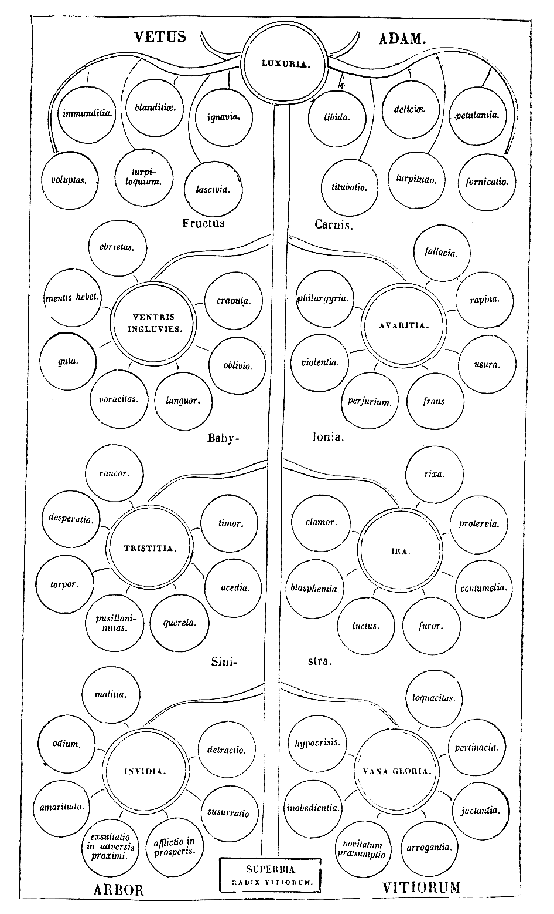
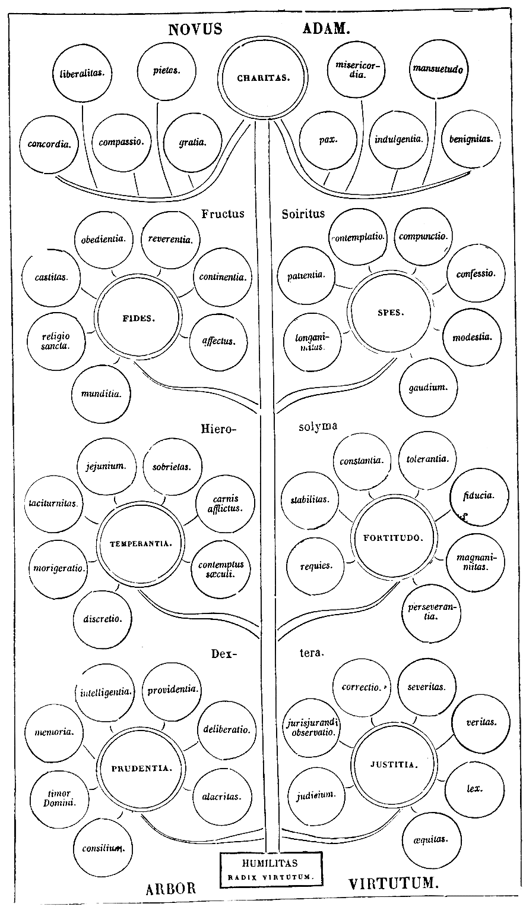
Epistolae
Dilecto fratri R. HUGO peccator.
Charitas nunquam excidit (I Cor. XIII) . Audieram hoc et sciebam quod verum erat. Nunc autem, frater charissime, experimentum accessit, et scio plane quod charitas nunquam excidit. Peregre profectus eram, et veni ad vos in terram alienam; et quasi aliena non erat, quoniam inveni amicos ibi: sed nescio an prius fecerim, an factus sim. Tamen inveni illic charitatem, et dilexi eam; et non potui fastidire, quia dulcis mihi erat; et implevi sacculum cordis mei, et dolui quod angustus inventus est, et non valuit capere totam: tamen implevi quantum [Col. 1011B] potui. Totum implevi quod habui, sed totum capere non valui quod inveni. Accepi ergo quantum capere potui, et onustus pretio pretioso pondus non sensi, quoniam sublevabat me sarcina mea. Nunc autem longo itinere confecto, adhuc sacculum meum plenum reperio, et non excidit quidquam ex eo, quoniam charitas nunquam excidit. Illic ergo, frater charissime, inter caetera memoria tui primum inventa est, et signavi ex ea litteras istas, cupiens te sanum esse et salvum in Domino. Tu ergo vicem repende dilectionis, et ora pro me. Dominus Jesus Christus tecum sit. Amen.
HUGO RANULPHO DE MAURIACO.
Fervor charitatis tuae pondus quaestionum nobis invexit. Postulas primum expositionem tibi fieri in illud opus quod Coena Cypriani dicitur: quod quia nunc prae manibus non erat, convenientem apud te excusationem accepimus.
QUAEST. 1. Deinde quaeris quid sibi velit illa altercatio Michaelis cum diabolo pro corpore Moysi, quae in Epistola apostoli Judae commemoratur. Hic tibi hoc sufficere putamus quod patres nostri qui ante nos verbum Dei ministraverunt, per corpus Moysi populum Judaicum intelligendum putaverunt, cujus et ipse caput exstiterat. Per Michaelem vero divinam [Col. 1011D] potentiam cum diabolo, id est cum adversaria virtute, quasi concertantem pro populo eodem, ut [Col. 1012A] salvus fieret; neque alia maledictione adversarii virtutem repulsam, nisi quia Dominus qui elegit Hierusalem, ab his potestatem inimici repulit, quos de populo illo per solam gratiam ad salutem elegit.
QUAEST. 2. Quaeris rursum quos intelligi oporteat libros illos, et utrumne adhuc supersint, quorum in libro Numerorum et Jesu Nave mentio fit, sed et in Malachim et Paralipomenon, cum dicitur: Nonne hoc scriptum est in libro Justorum et libro Bellorum Domini; et item: in libro Gad videntis, et Addo, sive Semeiae, aut Haiae Silonitis. Nos itaque et in hoc sensum doctorum sequentes, librum Justorum et librum Bellorum Domini non alios, sed hos ipsos libros in quibus haec scripta sunt intelligimus, [Col. 1012B] more Scripturarum narrationem suam commendantium, quando ad confirmationem suam, suo quasi alieno testimonio adducto, auctoritas congeminari videtur. Liber autem Gad et Addo et Semeiae et Haiae libros fuisse proprios ab ipsis qui praenominati sunt auctoribus editos, sed per translationis seriem ad nos nequaquam pervenisse. Utrum autem adhuc apud Hebraeos habeantur, incertum, quamvis verisimilius post incensam legem a Chaldaeis hos quoque sublatos e medio nec superesse modo probabilius existimetur. Pro eo autem quod in Malachim et Paralipomenon dicitur: Nonne haec scripta sunt in libro Sermonum sive Verborum dierum regum Juda aut Israel (III Reg. XV) , quamvis hic in quaestione tua propositum non sit, si quid supererogavero, tu [Col. 1012C] cum redieris, si reddere non placet, ne tamen succenseas: fieri etenim potest ut sint qui et hoc ignorent, quibus si tecum consulitur, displicere non debet. Librum igitur Verborum dierum regum Juda, et item librum Verborum regum Israel, singulos libros intelligendos arbitramur, in quibus gesta regum, scilicet Juda et Israel, non uno aliquo auctore descripta, sed diversis temporibus et diversis auctoribus, prout videlicet ea evenire contingebat, adnotata fuerunt. De quibus ea quae magis digna memoria videbantur, per subsequentes auctores excerpta et stylo elimatiore formata in hos libros, Malachim scilicet et Paralipomenon, compendiosa narratione expressa sunt. Illi ergo sunt libri ad quos [Col. 1012D] mittunt Malachim et Paralipomenon, reliqua cognoscere volentes. Hos autem nec per translationem [Col. 1013A] ad nos venisse, nec apud Hebraeos modo exstare putamus.
QUAEST. 3. Quaeris item quomodo accipiendum sit id quod dicit Salvator: Quod omnis qui reliquerit uxorem, etc., propter me, centuplum accipiet, et vitam aeternam possidebit (Matth. XIX) , cum ipse alibi dicat (Matth. V) , uxorem, excepta causa fornicationis, recte dimitti non posse, neque a viro discedere debere. Ubi convenienter intelligitur quod id etiam quod homo propter se convenienter facere non potest, aliquando propter Deum recte facere potest. Tunc autem recte propter Deum facit, cum secundum Deum facit. Propter Deum igitur uxorem relinquere, est vel per continentiam propter Deum abstinere ne accipiat; aut cum reatus illius exigit, vel assensus [Col. 1013B] permittit, concupiscentia non teneri ne discedat. Recte igitur relinquit propter Deum, qui relinquere potest secundum Deum. Quandiu autem secundum Deum relinquere non potest, propter Deum relinquere non potest. Cum autem causa Dei exigit, non solum relinqui sed recte etiam odio haberi potest, ut in eo propter Deum odiatur, quod contra Deum non diligitur.
QUAEST. 4. Quaeris etiam quid sibi velit hoc dictum Apostoli in illa Epistola quae scribitur ad Hebraeos: Impossibile est eos qui semel sunt illuminati, gustaverunt etiam donum coeleste et participes sunt facti Spiritus sancti, et prolapsi sunt, renovari rursus ad poenitentiam (Hebr. VI) . Quod idcirco gravius auditu est, quia poenitentiae remedium tollere, et peccatoribus [Col. 1013C] desperationem inducere videtur. Propterea non convenit verbum Dei ita interpretari, ut in eo aliquid veritati contrarium sentiamus. Quod igitur dicit, semel illuminatos et coelestis doni participes effectos, post lapsum, ad poenitentiam renovari non posse, vel sic accipimus, quia homo per se quidem peccare potest, sed per se sine adjutorio divinae gratiae corrigi non potest, sicut scriptum est: Spiritus vadens et non rediens (Psal. LXXVII.) . Vel sic: quod, post lapsum, homo renovari non potest, ut scilicet hoc sit quod fuisset si non peccasset. Verbi gratia, si virgo est et corrumpitur, poenitere potest, sed iterum virgo esse non potest. Et si poenitende forte facit ut melior sit quam fuit cum cecidit, non tamen facere potest ut talis sit qualis fuisset si non [Col. 1013D] peccasset, et tamen haec bona quae nunc facit fecisset; secundum quod aliquo modo irrecuperabile praeteritae culpae damnum constat, cum praesentibus lucris justitiae hoc semper deesse cernitur, quod in culpa praeterita amissum comprobatur: quod utique si adesset, plus esset. Potest et aliter convenienter intelligi haec impossibilitas. Peccator enim semel morte Christi redemptus, et a peccati vetustate liberatus, si denuo lapsus fuerit, secundum id iterum renovari non potest, quod Christi mortem aliam ad renovationem habere non potest, quamvis eamdem possit [ an poscit?] et eadem denuo renovari possit. Terretur autem probabiliter peccator, ut scilicet quia Christus cujus morte redemptus est, iterum [Col. 1014A] mori non potest, sic caveat peccatum iterare, sicut impossibile videt mortem Christi iterari pro peccato, sicut scriptum est (Hebr. X) , post acceptam veniam voluntarie peccantibus, hostiam pro peccato non relinqui, id est, vel hanc ad excusationem vel aliam ad remissionem. Voluntaria enim peccata intelligenda non sunt, de quibus dicitur: Jam nihil damnationis est his qui sunt in Christo Jesu (Rom. VIII) . Nam voluntarie peccantibus etiam in Christo positis haec hostia ad excusationem damnationis non relinquitur, sicut poenitentibus etiam de voluntariis peccatis ad remissionem condonatur. Sic itaque post acceptam gratiam lapsi iterum renovari non possunt et tamen renovari possunt, quia iterari non potest, quo renovantur, ut aliud sit; sed ab his [Col. 1014B] qui renovandi sunt denuo recuperari potest, ut eo recuperato amisisse damnabile non sit.
JOANNI Hispalensium archiepiscopo, HUGO servus crucis Christi.
Quid, frater charissime, quid dicam tibi? Si coeperimus loqui tibi, forsitan moleste accipies. Vir ille fortis erat et magnus, et omnium contemptor tormentorum, et nemo illi loquebatur verbum, quia videbant dolorem ejus esse vehementem (Job II) . Quomodo igitur nos tibi loqui poterimus in tanti doloris vehementia? Si tamen doles quantum tibi dolendum [Col. 1014C] est [ al., tu dolendus es]? quid tibi faciemus? Tenebimus conceptum sermonem, quem cor nostrum et anima nostra, non (quomodo in illis) impatientia loquendi, sed vehementia dolendi parturire jam coepit. Ergo tacere poterit charitas, ut non erumpat et clamet in doloribus suis, et in angustia tribulationis suae. Jam enim gladius pervenit usque ad animam, et venit mors fraudulenta carni parcens, ut spiritum exstinguat. Nosti, frater, quid velim? De anima tua causa agitur. Vide quid facias. Christus tibi opponit mortem suam, Christianus redemptionem suam. Quaerit ille emptum, iste redemptum. Ille se pretium pro te incassum dedisse conqueritur; iste pretio redemptum perditum lamentatur. Sed dicis: Ego conscientiam meam novi. Nemo me [Col. 1014D] terreat: Christianum non facit lingua, sed conscientia. Ego Christum diligo: sufficit mihi. Non amplius ille quaerit. Quod potissimum meum est, illi dedi. Cor habet, illud possideat. Dicam homini quodlibet. Ipse Dominus novit quod invitus nego. Lingua hoc dicit, non conscientia. Ore quidem nego, sed corde confiteor. Audi, frater. Scriptura dicit: Corde creditur ad justitiam, ore autem confessio fit ad salutem (Rom. XVI) . Quomodo ergo salutem habere putas, si confessionem non habes? Christum negas et dicis te Spiritum sanctum habere? Quid est ergo quod ait Apostolus: Nemo in Spiritu Dei loquens, dicit anathema Jesu? (I Cor. XII.) Si dicis anathema Jesu, Spiritum Christi quomodo habes? Si [Col. 1015A] vero non habes Spiritum Christi, non es Christi. Qui non habet, inquit Scriptura, Spiritum Christi, hic non est ejus (Rom. VIII) . Audi iterum: Qui, inquit, me erubuit et meos sermones, hunc Filius hominis erubescet, cum venerit in majestate sua (Luc. IX) . Sed dicis bene: Qui pro erubescentia Christum negat, juste damnatur, juste a Christo non cognoscitur. Parum enim est hoc verecundiam Christo anteferre. Ego plus habeo quod in excusatione praetendam. Non enim erubesco, sed timeo. Majus est quod me terret. Ipse novit quia pati non valeo. Parcit ergo infirmitati, condescendit devotioni. Non attendit ad vocem, sed ad charitatem respicit. Nemo carnem suam odio habuit (Ephes. V) . Timeo pro carne mea, quam odire non possum. O fallax deceptio! [Col. 1015B] Ergo carnem amabis, et Creatorem blasphemabis? Quid ergo sibi vult quod ait: Qui amat animam suam plus quam me non est me dignus (Luc. XIV) . Si animam recte plus amare non potes, carnem potes? Sed dicis: Non plus carnem diligo: plus enim diligo Deum nostrum quam carnem meam. Videamus modo. Quod plus diligis, hoc potius eligis. Dicit Deus tuus: Noli timere eos qui corpus occidunt, animae autem non habent quid faciant (Matth. X) . Hoc ergo Deus dicit, hoc caro contradicit; vide modo. Quod plus diligis, hoc potius eligis. O qualis pastor! Quomodo tu animam poneres pro ovibus tuis (Joan. X) , qui nec pro anima tua animam tuam ponis? Tu pro anima tua dare non vis carnem tuam, et pro ovibus tuis dares animam tuam? O qualis pastor? [Col. 1015C] Non sic fecit bonus ille Pastor, qui animam suam posuit pro ovibus suis, et pro grege suo mori dignatus est. Quid tibi videtur? Si sic ille ut tu mortem timuisset, quae, putas, ovis adhuc a morte liberata fuisset? Putavit ille bonum pastorem eligere ovibus suis, qui, veniente lupo, non effugeret, neque sub trepidationis latebra sese ovium periculo posthabito occultavit. Venit lupus, oves rapere non potuit; pastorem non solum rapuit, sed abstraxit. Mira res! Ovis audet, et pastor trepidat. O qualis pastor! Si talis futurus fuisti, quare curam ovium suscepisti? Si accepisti dignitatem, quare non impendis bonitatem: Bonus pastor animam suam ponit pro ovibus suis (ibid.) . Sed dicis: Petrus ore negavit; tamen, quia corde non negavit, respexit illum Dominus, et [Col. 1015D] vocatus est nomine suo ad resurrectionis gaudium cum aliis apostolis. Hoc, ut audio, maximum est quod ad excusationem tui praetendis. Respexit ergo Dominus Petrum negantem. Quare? ut faceret confitentem: prius flentem, postea confitentem. Respexit ad compunctionem, vocavit ad confessionem. Si ergo tu respectum Christi habes, ubi sunt lacrymae? Si autem lacrymaris, quare non confiteris? Si sequeris Petrum negantem, cur non imitaris confitentem. Postremo, frater, si Christianus es, ubi est signum regis tui? Ego alienum characterem video in fronte tua. Scis quid futurum sit super illis qui characterem bestiae portant? Servi Dei nostri signati sunt in frontibus suis, et non possunt [Col. 1016A] exterminii sententiam evadere, nisi solum ii qui in figura Tau crucis Christi signaculo muniuntur. Crux in pectore, fides in corde; crux in fronte, confessio in ore: utrumque debetur, utrumque exigitur. Totum Christus vindicat sibi. Cor ad fidem sui, os ad confessionem sui. Sed astat tortor, gladius exertus minatur. Audi: Qui amat animam suam, perdet eam; et qui perdiderit animam suam in hoc mundo propter me, in vitam aeternam custodiet eam (Marc. VIII) . Qui perdit propter me, recipiet a me. Ego commendatum servabo, ut melius restituam. Nihil trepides. Capillus de capite tuo non peribit (Luc. XXI) . Quid sollicitaris de anima, qui de capillo etiam securitatem accepisti? Sed fortassis dices mihi, quod multi hodie intra sinum Ecclesiae [Col. 1016B] in fide et confessione Christi vivunt, qui, si sic interrogarentur, nullatenus Christum confiterentur. Ad quod ego tibi voce prophetica respondeo, quod judicia Domini abyssus multa (Psal. XXXV) . Non possumus, nos, scrutari profundum judiciorum Dei, et investigabiles vias ejus penetrare. Miserebor, inquit, cui misertus fuero; et misericordiam praestabo, cui misericors fuero (Rom. IX; Exod. XXXIII; Rom. IX) . Si ergo in oculis ejus placitum fuerit, ut quibusdam parvulis suis, quos mater Ecclesia aut conceptos portat, aut nutrit editos, parcat, et ad istos graviores tentationum interrogationes venire non permittat, tu quis es qui ei dicas: Cur ita facis (Job IX) . Non tuam decet excellentiam, ut te in numero talium existimandum intelligas. Inter magnos [Col. 1016C] servos, non quasi parvulus, sed custos et provisor parvulorum locum acceperas. Tibi itaque, quasi magno et forti, et ad primam vel proximam consecutionem idoneo, dixit Jesus: Sequere me (Joan. XI) . Te igitur proximum post ipsum locum adeptum, ut eum sequaris, admonuit, quatenus tu postea sequacibus tuis, quibus ad vitam ducatum praebere debueras, fiducialiter dicere posses: Imitatores mei estote, sicut et ego Christi (I Cor. XI) . Si ergo Dominus te, tanquam servum magnum et fidelem, ad gloriam suae imitationis vocare voluit, vide quale sit hoc, ut tu ad pusillos ejus qui interim fovendi sunt, non premendi, respiciens, dicas: Domine, hi autem quid? (Joan. XXI.) Dixit hoc ille, quem tu imitari putas, cum tamen per omnia non debeas, non intelligens [Col. 1016D] dignitatem vocationis illius, neque recte intuens pietatem dispensationis divinae. Et idcirco justae increpationis sententiam audivit, ut auscultare disceret, non judicare. Sic, inquit, eum volo manere, donec veniam. Quid ad te? Tu me sequere (ibid.) . Hoc est ergo, frater, verbum quod intentisssime et diligentissime audire debes, ut Regem tuum sequaris et consequaris. Sequaris ad poenam, consequaris ad gloriam. Si patiendum est pro Christo, excusationem non habes. Non sunt condignae passiones hujus temporis ad futuram gloriam, quae revelabitur in nobis (Rom. VIII) . Si autem et sine passione negas, non solum dico, non excusaris, sed amplius dico quod accusaris. Miser, ubi est anima tua, ut non recogites [Col. 1017A] qualis factus sis? qualem gloriam perdidisti, et ad quantam miseriam et confusionem corruisti? Aspice temetipsum, qualis es: ubi est corona tua et gloria? Dereliquisti Regem tuum: unaquaeque gens deos suos sequitur: Et certe ipsi non sunt dii (Jer. II) . Tu Dominum et Deum tuum reliquisti, et factus es vilis, opprobrium pessimorum. O qualis pastor [Col. 1018A] Christianorum! Quomodo tu pasces oves Christi, qui te ipsum perdidisti? Lupo futuro oves pascendae datae sunt. O qualis pastor! Erubesce, miser, et confundere! Christianorum oculi in te sunt. De longe videris. Non potes latere. Error tuus te notum fecit. Non potes evadere confusionem, nisi ostendas confessionem.
De claustro animae
Rogasti nos, frater amantissime, quatenus aliqua remedia tentationum, videlicet spiritualis delectationis fercula, fratribus vobiscum commorantibus quaererem ac propinarem. Quaesivi, frater, et inveni. In solitudine etenim Veteris Testamenti pauculas radices salutiferas reperi. Ex terra vero Evangelii bene culta, quosdam fructus boni saporis attuli. Ex libris autem expositorum et aliorum quorumdam sapientum, quasi ex agricolarum hortis, quosdam flores collegi, ut in unum congesta locum, suavem reddant odorem. Ex radicibus itaque, id est ex sententiis Veteris Testamenti, aliquod remedium sanitatis infirmi ruminando possunt percipere. [Col. 1018B] Fortiores vero ex fructibus Evangelii tanquam ex opere bono reficiantur. Delicati autem diversis expositionum floribus meditando delectentur. Sic Paulus apostolus, apud Miletam insulam egressus de mari, collegit multitudinem sarmentorum, ut sociis qui secum de maris periculo evaserant, ignem propter frigus accenderet (Act. XXVIII) . Unde Beda super Actus apostolorum: «Sarmenta, inquit, sunt dicta quaelibet exhortationum, quae ad accendendam charitatem valentia, integritate decerpta Scripturarum, quasi frondibus, sunt excisa ramorum.» Moraliter igitur mare, mundum, navis hujus saeculi vitam, naufragium vitae periculum, egressio de mari renuntiationem mundi, insula quae mari supereminet [Col. 1019A] portum rectae conversationis significat. Paulus illos verbo praedicationis frigidos ac pigros fratres, et ex undis mundanae tempestatis abstractos excitat ad amorem Christi. Sarmenta exhortationis sunt verba, ignis charitatem designat. Per viperam vero quae processit pulsa ab ignis calore, immundi spiritus sive detractores veritatis designantur. Quae invadit manum Pauli, id est opus doctrinae spiritualis impedire nititur, detractionis morsus inferendo, et invidiae virus infundendo. Hanc viperam, frater, exhorresco, et ne virus detractionis inferat, congruum est ut evitemus. Nulli ergo nostrum, frater, patefacias nomen, ne ex insipientia auctoris et personae vilitate, operis nostri labor vilescat, et ne vipera cujus manum invadere debeat, [Col. 1019B] agnoscat. Placet quoque opusculi hujus spatium in quatuor libellos relevandae mentis gratia scindi, quia, ut ait beatus Augustinus: «Ita libri termino reficitur lectoris intentio, sicut labor viatoris hospitio.» Primus quidem quid noceat claustralibus vel mundo renuntiare volentibus, continet. Secundus vero claustri materialis ordinationem, in quo tenetur homo exterior, docet. Tertius animae claustrum ordinat. Quartus claustri non manufacti habitationem quae est in coelo, commendat appetendam. Summi quoque abbatis, scilicet Christi, pacem quam ibi habet cum subjectis, hic hortatur cum fratribus exhibendam.
[Col. 1019C] Incipientibus aedificare quaerendus est locus fundamenti, ne superpositi parietis congeries inclinet se ad ruinam. Solent enim ex hoc rationabiliter qui firmiter aedificare volunt, eversa et ejecta terra, super firmam petram licet nimio labore quaesitam, aedificii sui ponere fundamentum. Diversa est tamen diversorum ratio aedificiorum. «Ampla etenim palatia reges sibi aedificant, sed domus illorum sepulcra eorum in aeternum (Psal. XLVIII) . Turres firmas in summis montium locant, vallant aggere, et muro cingunt, montes non suis, sed pauperum manibus transferunt, circumductis solo imperio fluminibus, excludunt hostium vires, nihil tamen horum morti contradicere potest.» Episcopi domos non impares [Col. 1019D] ecclesiis magnitudine construunt, pictos delectantur habere thalamos, vestiuntur ibi imagines pretiosis colorum indumentis. Pauper item sine vestibus incedit, et vacuo ventre clamat ad ostium. O mira, sed perversa delectatio! Trojanos gestat paries pictus purpura, et auro vestitos, Christianis panni negantur veteres. Graecorum exercitui dantur arma, Hectori clypeus datur auro splendens, pauperi vero ad januam clamanti non porrigitur panis, et, ut verum fatear, pauperes spoliantur saepe, et vestiuntur lapides, et ligna. Ornant praetoria columnis, fores domibus anteponunt, quae utinam pauperes includerent, non excluderent. «Cives urbium suarum monitiones studiose disponunt, ut sic incursus hostium repellant, excubias ordinant, vectes [Col. 1020A] ferreos portis inserunt, portas suas muniunt custodibus. Sed tu, o Domine! pone custodiam ori meo, ut non delinquam in lingua mea (Psal. CXL) .» Monachi faciunt sibi claustra quibus homo exterior teneri possit; sed utinam claustra facerent quibus homo interior ordinate teneretur! Sic, fratres, sic quidam turres aedificant, ut securius rapiant, alii sola delectatione, et superfluitate gaudent. Alii necessitate, et timore, ne opprimantur a potentibus (ut diximus), laborare non desinunt. Claustra vero quasi castra Domini alii Domino componunt, et sicut regum ministri turrium instaurata munitione securius fraudes inimicorum excludunt: sic homo interior, et homo exterior intra munimina claustrorum positi, antiqui hostis insidias, et temporalium rerum [Col. 1020B] fragiles casus effugiunt. Utile igitur esse credimus ut introducantur duae personae, et quod in rebus subtilioribus obscurum latet, per res oculis subjacentes liquidum fiat. Sicut etenim accidit si duo socii aliquod castrum intrarent, cum ab hostibus oppugnari deberet, quorum unus esset discretus sive prudens, alter indiscretus sive imprudens, unus piger, alter expeditus, sic homo interior, et homo exterior. Discretus in die munitiones parat, erigit propugnacula, defensionis loca singulis assignat, officia praeessendi injungit quibusdam sociorum, concordiam docet, jejunandi tempus indicit, ne fames, quae clausis intrat portis, inter armatos victoriae obtineat principatum; fraudem damnat, ne per aliquem hostis ingrediatur; sed ante omnia perseverantem [Col. 1020C] patientiae constantiam habendam fore praedicat, et hortatur. In nocte vero excubias ponit, discurrit per vigiles, somnolentos increpat, et prae caeteris saepissime socium excitat, quia piger est, et docet, quia indiscretus est. Si autem propius hostes accedant, machinamenta belli praeparat, aries januam pulsat; tunc exit armatus, sustinet hostes, viribus hostium incursus repellit, quia expeditus est, providentia machinamenta dissipat, quia discretus est. Sic agit discretus non ad tempus, sed assidue, ne adversariis tradatur castrum, ne et ipse capiatur, et tradatur exactori, mittatur in carcerem, trahatur ad tormenta. Istius vita mores instruit audientium, loqui de eo etiam debilium [Col. 1020D] mentibus praebet affectum. Audire enim diligenter bonum, et velle fieri, magna pars bonitatis est. Hoc est, fratres, officium discreti et expediti. Indiscreti autem et pigri officium est, impedire discretum, tardare expeditum. Hunc talia agentem, labor expediti, discreti docta providentia facit participem laudis et gloriae. Quando autem liberatur ab hostibus castrum, cum socio Domini sui gratiam recipit, et remuneratur cum eodem. Sic contigit quandoque, fratres, ut piger trahatur ad praemium, sed saepius invenisse contrarium in hac societate cognovimus. Mira res! Iste, qui talis ante fuerat, cujus probitas licet damnosa eis exstitisset, ab hostibus tamen laudari meruit; cujus providentia sociorum murus exstiterat, iste talis, dico, assiduitate [Col. 1021A] quadam a socio victus, pigro consentit, indiscretum patitur, vagantem sequitur. Ecce, fratres, piger expeditum luctando dejicit, discretum indiscretus decipit. Sic vagantes extra castrum ab hostibus capiuntur, recipiunt pro munere poenam, pro labore supplicium. Adaptetur igitur proportionalis similitudo, ostendatur in homine interiori et exteriori quod contigisse potuit in duobus praedictis. Hominem enim exteriorem, videlicet carnem nostram, nemo dubitat indiscretum esse, et pigrum: animam vero, id est hominem interiorem, ex natura sua discretum, et expeditum, benignitas Creatoris plasmavit. Ecce claustrum, id est Dei castrum, intraverunt ambo, ecce undique hostium turbae conclamant, quidam minantur ut terreant, blandiuntur [Col. 1021B] multi ut decipiant, promittunt etiam aliqui ut pervertant, insidiantur fere omnes ut rapiant, simul inutiles facti sunt, non est qui faciat bonum, non est usque ad unum (Psal. XIII) . Extra mundus totus exeuntibus obstrepit; intus vero sagittantur in occulto recti corde: volant ignea tela, confligunt hostes eminus, moriuntur multi; nullus sine vulnere unius diei periculum evadere potest: sicut diximus, diabolus per quosdam de exercitu suo claustralibus minatur ut terreat eos, per alios blanditur ut decipiat, per alios promittit ut pervertat, per reliquos insidiatur ut rapiat. Sed qui sunt qui minantur homini interiori et exteriori intra claustri jam munitiones positis, vel etiam aliquibus aliis de renuntiatione saeculi cogitantibus; in primis audiat bonitas [Col. 1021C] vestra. Cum aliquis, fratres charissimi, claustrum intraverit, vel cum adhuc positus in hoc saeculo, admonente Spiritus sancti gratia, de renuntiatione mundi hujus aliquid cum amaritudine mentis cogitare coeperit, tunc mundi hujus princeps per delectationem temporalium minas incutit, per voluptatum varietates terrores accumulat. Qualiter autem per delectationem temporalium antiquus hostis minari non desinat, notum fieri forsitan non erit inutile.
In primis etenim exteriorem hominem, id est carnem nostram (quam pigro et indiscreto socio superius comparavimus), delectatione diabolus aggreditur. [Col. 1021D] Inducit ei religionis formam et consuetudines ejusdem adversantes carni; ostendit ei propositi difficultatem. Et cum hoc fecerit, quantum sit ad lapsum prompta humanae naturae fragilitas, praetendit; vestis asperitatem, lecti duritiam, vilium ciborum assiduitatem, laboris intolerantiam, praelatorum crudelitatem, fratrum discordiam, mentis ponit ante oculos. Addit etiam longa vigiliarum nocturnarum spatia, claustri taedium, constitutas silentii horas, jejunii diuturnitatem, et ciborum licet vilium subtractionem. Et ut gravius terreat, et si fieri possit ad desperationem pertrahat, quid ex istis evenire mali queat diligenter inquirit, et annuntiat. Omnia ista imbecillitati carnis adversaria [Col. 1022A] esse testatur; et verum dicit, sed voluntarie patimur ista, quoniam ex his praemium aeternae beatitudinis exspectamus. Ex istis aegritudines insanabiles nascituras affirmat. Non esse bonum naturae complexiones turbare, cum ex subtractione ciborum mutentur complexiones, ex mutatione complexionum conturbatio naturae contingat; ex conturbatione naturae infirmitas; ex infirmitate, mors. Ecce, fratres, diabolus physicam docet: ecce medicus factus est, de complexionibus loquitur: infirmitates diversas, si teneatur religio, generari praedicat. Sed quare hoc? Non ut mederi velit, sed ut occidere possit; non ut aegritudines curet, sed ut securius inferat mortem. Videt ex subtractione ciborum luxuriae vires posse minui, et ideo non tardat minari [Col. 1022B] aegritudinem. Timet otium perire et somnolentiam destrui: et ideo laboris intolerantiam, et protensa vigiliarum spatia praetendit. Credit ex paupertate humilitatem nutriri, et ideo quaerit occasiones quibus humilitatis impediat adventum. «Paupertas enim, ut ait beatus Gregorius, bonis mentibus solet esse custos humilitatis.» Haec assidue replicare claustralibus non desinit, haec pluribus de renuntiatione mundi cogitationibus anteponit. O calliditas antiqui hostis! o ingenium sine sapientia, sed non sine malitia! Abstinentiam et jejunium, et caetera quae superius diximus, damnat, et per ista naturam carnis deficere astruit, et tamen superfluitatis vitium tacet, per quod natura suffocatur, vel excedit terminos suos. Sic, o fratres, mundi hujus [Col. 1022C] princeps homini exteriori, id est carni, per delectationem temporalium minatur ut terreat, sic locum munitionis aggreditur in quo novit esse debiliorem. Sed homo interior discretus et expeditus, scilicet anima, excitatus tumultu minarum, sine mora socio ad defensionem adjungitur, implens illud quod beatus Ambrosius dicit de arca Noe: «Boni custodis praesentia, inquit, ibi frequentior est, ubi muri fragiliores sunt.» Pigrum socium, ne deficiat, hortatur; Salomonis utitur consilio dicentis: Fili, accedens ad servitutem Dei, praepara animam tuam ad tentationes (Eccli. II) ; docet rationabiliter indiscretum, qualiter sustinere debeat minas hostium; religionis bonum commendat, delectationis vero pessimae vitium damnat; monet eum ne exhorreat fluctuationem [Col. 1022D] vitae hujus, quia ad tempus est, sed ponat anchoram spei, et dicat: Exspectabo eum qui salvum me fecit a pusillo animo et tempestate, non dabit enim in aeternum fluctuationem justo (Psal. LIV) . Hortatur iterum illum ne contristetur in exercitatione sua, ne conturbetur a voce inimici, et a tribulatione peccatoris, sed dicat: Paratus sum et non sum turbatus, ut custodiam mandata tua (Psal. CXVIII) . His et aliis multis incitamentis homo interior consolatur exteriorem, licet cum eo impugnetur, et conturbetur in exercitatione sui. Cum enim caro in se affligitur, vel saecularium hominum patitur convicia, tunc «homo interior, ut ait beatus Augustinus, affectus taedio, et multorum rabie circumlatratus, [Col. 1023A] reluctatur odio, ut perficiat dilectionem et in ipsa lucta contristatur,» et ideo dicat cum Propheta: Exaudi, Deus, orationem meam, et ne despexeris deprecationem meam; intende mihi, et exaudi me (Psal. LIV) . Conturbatus est in exercitatione sua Petrus, cum ambularet inter undas; vidit ventum validum venientem, et cum coepisset mergi, clamavit, dicens: Domine, pereo, salva me (Matth. XIV) . «A quo vento valido turbatus est Petrus?» ait beatus Augustinus, cum exponeret illum locum, «turbatus, inquit, est a voce inimici, et a tribulatione peccatoris.» Sic tentat diabolus quoslibet per hujusmodi tentationes a charitate removere, cui contradicimus cum Apostolo, dicentes: « Quis nos separabit a charitate Christi? tribulatio, an angustia [Col. 1023B] (Rom. VIII) , an aliquid eorum quae sequuntur? Nemo igitur a charitate nos separet. Qui enim charitatem habuerit, antiqui hostis minas timere non poterit, quia charitas foras mittit timorem (I Joan. IV) , nec impugnationibus delectationum cedet qui charitatis utitur clypeo, quia charitas patienter omnia sustinet (I Cor. XIII) .» Hoc igitur clypeo homo interior et exterior utantur ad defensionem, ne vel terreantur minis, vel impugnationibus cedant. Et haec de prima propositione sufficiant.
Primum per delectationem temporalium antiquus hostis minas praetendit, nunc vero per pulchritudinem rerum temporalium homini blanditur ut decipiat. Pulchritudini enim adjuncta est delectatio, [Col. 1023C] ita ut ipsa pulchritudo sit delectationis causa. Ad hoc illud pertinere credimus quod in Veteri Testamento legimus scriptum de patriarcha Abram, a quo cum separari vellet Loth, et daretur ei a patruo eligendae possessionis libertas, levavit oculos et aspexit omnem regionem Jordanis, quae irrigabatur, priusquam everteret Dominus Sodomam, et Gomorrham, sicut paradisus Domini, hanc elegit; sed postea inter diversos reges ortum est bellum, et a quatuor regibus captum Loth, narrat historia: quo comperto Abram numeravit vernaculos, et cum trecentis decem et octo viris adeptus victoriam, nepotem liberavit (Gen. XIII, XIV) . Notate, fratres, cum separari vellet Loth ab Abram, regionem [Col. 1023D] aspexit Jordanis, quae irrigabatur sicut paradisus Domini, et loci pulchritudinem utilitati praeposuit. «Infirmior enim, ut ait beatus Ambrosius, amoena eligit, utilia fastidit.» Sic non tantum captus loci pulchritudine, ad amoena Jordanis descendit, sed etiam ab hostibus captus ibidem esse cognoscitur. Doceat igitur Loth hominem exteriorem, ne princeps mundi hujus per pulchritudinem rerum blandiatur ei, ne discedens a socio capiatur ab hostibus. Placeret forsitan alicui, si de adducto exemplo exquisitius loqueremur. Audiat ergo diligens lector qui non quos vult, vel quando vult, explanationum potest habere libros, audiat non me, sed beatum Ambrosium, cujus auctoritatem hic sequi volumus, vel sensum verbis aliis, vel ejusdem verba ponentes. Et [Col. 1024A] ut ad majorem instructionem loqui valeamus, interpretationes nominum non sit annotari difficile. Abram enim interpretatur pater, Loth vero declinatio, Jordanis autem descensio. Haec omnia in homine possunt adaptari, quia mens justi hominis pater esse dicitur. Sicut enim pater filiis praesidet, sic mens justis cogitationibus praesidet, et vagos sensuum motus quasi quodam paternitatis dulci regit affectu. Loth autem declinatio dicitur. Separatur ergo Loth ab Abram, quando aliquis a justitia suae mentis declinat. Duobus autem modis declinatio dicitur. Unde beatus Ambrosius ait: «Cum Loth declinaret malum, hoc est, errorem, flagitium, crimen, tunc jungebatur patruo: cum autem declinaret bonum, hoc est justum, innocentem, sanctum, sociebatur flagitio.» [Col. 1024B] Separari dicitur Loth ab Abram, quia terra non poterat eos recipere. Ut enim beatus inquit Ambrosius, una anima motus diversos non recipit naturaliter sibi repugnantes. Sic per terram anima designatur; per Loth vero, motus quidam vitiorum declinantes a justitia mentis; per Abram, mentis perfectio. Non potest enim eadem anima et mentis perfectionem et vitiorum multitudinem simul capere, quin ibidem separationem fieri contingat. In separatione vero, ipsi Loth datur electio; sed, ut dicitur, deflectentibus a vero amica est jactantia. Hinc est quod diabolus cum in prima creatione a veritate, id est a Deo, discederet, primum superbiae reatum incurrisse legitur. Inde etiam Loth levavit oculos, quod est arrogantiae signum. [Col. 1024C] Sublimes enim oculos Scriptura superbiae demonstrat esse notam (Prov. VI) . Discedens a veritate diabolus descendit de coelo; discedens ab Abram, Loth descendit ad oppida Jordanis. Descendit enim ad oppida Jordanis, quia, ut ait Ambrosius, «virtutis consortium deserit qui speciem eligit, non veritatem.» Sequitur autem esse captum Loth, et quinque reges a quatuor esse superatos. Sed qui sunt illi quatuor reges, qui de quinque triumpharunt et adduxerunt totum equitatum Sodomorum, qui ceperunt etiam Loth, filium fratris Abrae? «Quinque reges, ait beatus Ambrosius, quinque sunt corporis sensus: visus, auditus, gustus, odoratus, et tactus.» Quatuor reges illecebrae corporales atque mundanae [Col. 1024D] sunt, quoniam et caro hominis et mundus ex quatuor constant elementis. Merito reges dicuntur quia habet suum culpa dominatum, habet regnum grande. Unde Apostolus: Non regnet peccatum in vestro mortali corpore, ut obediatis concupiscentiis ejus (Rom. VI) . Sensus igitur nostri facile corporalibus delectationibus et saecularibus cedunt, et a quadam eorum potestate capiuntur. Corporales autem delectationes et illecebras saeculi hujus non vincit nisi mens, quae fuerit spiritualis, adhaerens Deo, et se totam a terrenis separans. Deflexio omnis his capitur. Unde quod Joannes ait: Vae habitantibus in terra (Apoc. VIII) ! non utique omnes homines comprehendit (sunt enim quidam in terris positi, quorum conversatio in coelis est), sed eos quos terrenae conversationis [Col. 1025A] affectus, atque hujus vincit saeculi gratia. Ergo, fratres, non habitatores, sed accolae simus terrae hujus. «Accola, ut ait beatus Ambrosius, temporalis diversorii speciem gerit: habitator autem omnem spem atque usum suae substantiae illic collocat, ubi habitandum putaverit.» Itaque qui est terrae accola, habitator est coeli. Qui autem habitator est terrae, possessor est mortis. Sic Loth, id est declinatio, capitur: dum habitaret in Sodomis. Habeat ergo, fratres, homo exterior Loth et Abram ante oculos, et hoc utatur exemplari, ne pulchritudine rerum transeuntium tractus, a socio, id est ab homine interiori, separetur.
Sunt autem quatuor diversitates rerum, quae ad pulchritudinem pertinent, quas vocamus causas tentationum, quae omni homini fugiendae sunt, et maxime renuntiantibus huic saeculo habendae despectui. Sed quae sint hae causae tentationum, et quare et quomodo fugiendae, audientium mentibus pro captu nostro patefaciamus exemplis. Prima autem harum quatuor est loci amoenitas, ut civitates et oppida, quae non tantum ex situ loci amoenitatem recipiunt, sed etiam ex inhabitantium gratia. Secunda vero causa est locus divitiarum; ubi enim divitiae, ibi periculum. Tertia vero causa est pretiosus ornatus, ut est equorum cura pinguium, et vestimentorum [Col. 1025C] exquisita varietas. Quarta autem est mulierum species, quarum (ut dicitur) vox blanditur auribus, et facies oculis. Ecce quae sint illae quatuor tentationum causae audivimus, nunc autem quare fugiendae sint, restat ut dicamus. Ideo etenim fugienda sunt ista, quia ex pulchritudine mulierum voluptas carnis nascitur. Ex varietate vero vestimentorum affectus placendi subministratur. Locus autem, id est urbes et oppida, dant opportunitatem impetrandi quod placet. Per divitiarum vero affluentiam, quod placet impetrari solet. Sic, fratres, confluunt omnia ista ut perficiatur tentatio, et ideo dicuntur tentationum causae. Confert enim pulchritudo delectationem, ornatus affectum, locus opportunitatem, divitiae effectum. Hae sunt illae quatuor, quarum [Col. 1025D] illa est prima cum qua fit tentatio, secunda propter quam fit, tertia in qua fit, quarta per quam ducitur ad actum. Cum muliere etenim speciosa delectatio carnalis, quae cum turpi non fieret, perficitur. Propter ornatum corporis placet, quae sine ornatu videntibus displiceret. In opportuno vero loco res ad finem trahitur, quam importunitas impediret. Sed licet illa tria confluant, licet pulcher sis, et perornatis vestibus incedas, si tamen desit pecunia, invenietur ab illa competens dilationis occasio. Restat igitur ut per pecuniam coepta tentatio finem recipiat. Bersabee, Uriae Ethei uxor, cum lavaret se in solario domus suae, propter pulchritudinem placuit David, placuit et traxit ad crimen (II Reg. XI) ; [Col. 1026A] fuit igitur Bersabee causa cum qua fieret tentatio. Judas cum in Thamnas iret ad tondendas oves, Thamar nurum suam in meretricio habitu sedentem in bivio reperit, cum reperta rem habuit (Gen. XXXVIII) . Quid ergo, fratres? Placuit Judae Thamar, num propter pulchritudinem, cum etiam quaenam esset ignorabat? Consequens ergo est ut ornatus meretricii habitus sit aliqua causa propter quam Judas complesset delectationem carnalem. Ammon vero filius regis David, cum vehementer Thamar sororem suam diligeret, opportunitatem loci quaesivit et invenit, infirmum se esse mentitus est, impetrat a patre suo sororis adventum, solus solam aggreditur, poscit coitum, negat illa, negantem opprimit, vim inferens oppressae (II Reg. XIII) . Doceat igitur nos Thamar [Col. 1026B] opportunitatem loci fugere, ne in ipso fiat praemeditata tentatio. Similiter: Judas Scariotes opportunitatem quaerebat, ut Jesum Judaeis traderet (Luc. XXII) . Per pecuniam etiam Jesum Judaeis traditum esse novimus. Novimus etenim Judam furam esse et loculos habere (Joan. XII) , quod per hoc etiam evidentius ostenditur, quod triginta argenteos retulisse in templum, et ibidem projecisse legitur. Timeat ergo unusquisque nostrum ne per pecuniam decipiatur, cum unus ex duodecim, illum, qui diligendus est super aurum et topazion, qui mundi etiam pretium tam parvo mutaverit pretio, vendiderit. Audiant igitur haec, ut sibi caveant illi qui loculos portant, qui pecunias servant, qui nundinas et fora pro necessitatibus fratrum frequentant, qui saecularium [Col. 1026C] domos et curias perlustrant. Devitent ergo hujusmodi fratres solarium Bersabee, bivium Thamar, thalamum Ammon filii regis David; devitent etiam personas infames, hospitia suspecta, munuscula dare et accipere, pecuniam plurimam congregare, ne in ipso laqueus lateat, in quo cum alio pereant. Ecce quae sint illae quatuor tentationum causae, et quare sint fugiendae, praemisimus. Nunc autem qualiter vitari queant, pro modulo nostrae imbecillitatis assignemus. Pulchritudinem igitur mulierum et delectationem carnalem, quae inde procedit, per oculorum et cordis pudicitiam ne noceat, vitare possumus. Ad hoc pertinet illud quod in Regula clericorum scriptum a beato Augustino legitur: «Impudicus, inquit, oculus impudici cordis est [Col. 1026D] nuntius. Qui damnat impudicitiam, pudicitiam laudat. Sunt enim contraria immediata, et necesse est alterum inesse circa suum susceptibile. Pudicus oculus janitor est cordis, sedet ad januam, nec permittit intrare quod noceat, nihil nuntiat nisi quod deceat, quidquid indecens esse noverit, excludit et eliminat. Impudicus vero quaerens quod placeat, per omnia discurrit, volentes intrare patitur, nolentes vero monet et hortatur.» Unde Scriptura dicit: Oculi prima tela sunt adultera (Eccli. XXVI) . Solent homines tribus generibus armorum uti ad defensionem, telis videlicet, hasta et gladio. Longe positi vulnerantur telis in illos qui cuspide tangi nequeunt; vibratur hasta, cum pugnatur cominus, [Col. 1027A] officium suum gladius implet. Similibus armis utitur impudicitia ad expugnandum hominem exteriorem, quod in Joseph patriarcha Veteris Testamenti contigisse narrat historia. Ait enim Scriptura: Et immisit uxor domini sui oculos suos in Joseph (Gen. XXXIX) . Haec sunt impudicitiae tela, quibus vulnerantur multi, licet longe positi. His telis oculorum pudicitiam opposuit. Scriptum est enim (Prov. V) : «Noli intendere mulieri fallaci, ne capiaris oculis, neque rapiaris palpebris ejus. Petulans enim libido est.» De qua petulantia oculorum dicit beatus Augustinus in Regula clericorum: «Si hanc petulantiam in aliquo vestrum adverteritis, statim admonete, ne coepta progrediatur, sed de proximo corrigatur. Nec tantum petulans est libido, sed etiam [Col. 1027B] procax.» Ait enim uxor domini Joseph ad ipsum Joseph: Dormi mecum (Gen. XXXIX) . Haec est vibratio hastae, blandientis adulterae sermo. Huic opponitur cordis munditia. Venenata enim colloquia non recipit mundi cordis puritas, sed audit Scripturam dicentem: Non te seducat meretrix multo blandimento sermonis, nec laqueis labiorum suorum te alliget (Prov. V) . Nec tantum petulans et procax libido est, sed et importuna. Tenuit enim uxor domini sui vestem Joseph, et ait Ambrosius: «Teneri veste potuit, qui teneri non potuit animo. Hic est gladius, quo configitur cominus, mollis scilicet adulterae tactus.» Huic resistit Joseph per munditiam cordis et corporis, respuit enim adulterae tactum, rupit fimbriam ne serperet contagium, et ideo scriptum [Col. 1027C] est: «Ne motus fueris ad alienam, neque contineas amplexibus non tuam (ibid.) .» His igitur modis docet nos Joseph ne per pulchritudinem mulierum ad delectationem trahamur. Vestium vero ornatum et affectum qui inde subministratur, vilis habitus amor exterminat. Nemo enim qui vere habet proprii habitus contemptum, alieno delectatur ornatu. Sed et loci opportunitatem, ne tentationi sit congrua, claustri assiduitas excludit. Qui enim discurrunt per alienas domos, qui assiduitate saecularium gaudent hominum, qui foris spectacula sequuntur, qui non ad necessitatem communem, sed ad propriam voluntatem sunt parati, qui causas itineris sui non habent sed fingunt, tales, dico, [Col. 1027D] sicut sunt faciles ad discurrendum, ita forsitan proni sunt ad ea quae loci opportunitas subministrat. Secura est ergo claustri assiduitas, quam cura rei familiaris non turbat, quam non sollicitant accessus hominum. Ibi inter fratres, alterius ad alterum diligens habetur custodia, ibi praelatorum subjectis discreta providet solertia, ibi silentium aufert locum confabulationibus, lectio assidua exstinguit jam. Scripum est enim: «Ira prolata crescit, dilata minuitur (Prov. XXX) .» Ibi disciplina caeteros motus cordis servire cogit munditiae, et omnis opportunitas, quae est ad malum, per claustri assiduitatem excluditur. Per paupertatem vero voluntariam pecuniae affectus (de quo superius locuti sumus) exstirpatur. Restat igitur ut per pudicitiam cordis et [Col. 1028A] oculorum delectatio carnalis excludatur; per amorem vilis habitus, vestium pretiosarum varietas subtrahatur; per claustri assiduitatem, opportunitas quae est in malum privetur; per voluntariam paupertatem, affectus pecuniae annihiletur. Istis utatur homo interior et exterior ad defensionem, ne per pulchritudinem rerum temporalium (quae per illa quatuor blanditur ei) decipiatur. Anteponat coelestia terrenis, aeterna transitoriis, decoris pulchriora, bonis meliora. Terrena corrumpuntur, finem exspectant, pulchritudinis amittunt florem, bonitatis fructu privantur. Coelestia vero termino carent, non corrumpuntur infirmitate, non fraguntur senio, non annihilantur vetustate. Felix aeternitas quae corruptione caret, infelix illa [Col. 1028B] quam comitatur aeternaliter corruptionis defectus, quae ideo durat ut crucietur, ideo aeternaliter cruciatur, quia sine fine peccarent homines si possent. Decipitur igitur qui pulchritudinem temporalium blandientem sibi sequitur: sed anteponat spiritalem, ut videat Regem in decore suo.
Contingit quandoque ut qui nimis terreri nequeunt, nec blandimentis acquiescunt, promissis citius flectantur muneribus. Ideoque tertio loco competentius, qui sunt illi, qui promittunt homini interiori ut eum pervertant, videamus. Prudentia mundi ipsa est quae promittit ut pervertat. Promittit enim duo, pretiosa videlicet et sublimia, hoc est divitias et honores. Alterum cupiditatis, alterum [Col. 1028C] superbiae. Haec sunt latera scalae, per quam diabolus descendit de coelo ad inferos. Promittit nobis mundi prudentia, sed nihil dat, et si aliquando recipiunt homines quod promittit, non datur illud sed emitur. Dat mundus opes, sed non gratis. Qui enim efficitur servus peccati pro ipsis, non accipit gratis. Dat honores, sed non sine pretio. Quibus promittit mundus opes, et cujus sunt opes quas promittit? Quomodo dat, et ubi dat quod promittit? Raptoribus promittit agricolae substantiam, oves viduae, agros pupilli; feneratori vicini sui domum, amplitudinem possessionis, divitiarum affluentiam. Ecce quibus promittit, et cujus sunt quae promittit. Stulta est haec providentia, quae thesaurizat [Col. 1028D] et ignorat cui congreget ea (Psal. XXXI) . Militibus promittit inter enses lucra, inter telorum grandinem, sub metu carceris, sub mortis periculo; negotiatoribus ultra mare promittit lucrum per mortis fauces; ibi naufragii timor, ibi vento commendantur opes et animae. Ecce quomodo dat et ubi dat quod promittit. In utroque periculum, in utroque difficilis acquirendi modus. Ibi promittit lucrum, ubi dare queat sepulcrum. Claustralibus vero vagandi licentiam, quam rigor claustri abstulerat, repromittit; fabulosas vero confessiones otiosorum, platearum plausus, fori specutacula, ciborum affluentiam, vestis mollitiem, et, ut cuncta compleam, libertatem faciendi quod placet supradictis accumulat. Ecce pugna difficilis. Ecce Jabin, rex Asor, pugnat contra filios [Col. 1029A] Israel. Ecce ad Chananaeos mittit qui habitant in maritimis et per montana et per campos, ad regem Simeon [Semeron], et in Fennendor [Ceneroth], sed et multos alios congregat quos est enumerare difficile (Josue XI) . Sed quid ait Dominus ad Jesum filium Nave qui principatum post Moysen susceperat? «Ne verearis, ait Dominus, faciem illorum, quia crastina die ad hanc horam tradam eos sauciandos ante faciem Israel, et equos eorum subnervabis, et currus eorum igne combures (ibid.) » Audiat hoc qui est de exercitu Jesu, non filii Nave, sed Filii Dei. In uno enim quoque homine bellum hoc reperiri potest. Jabin enim, rex Asor, congregat exercitum. Jabin autem interpretatur sensus sine prudentia. Asor vero aula, id est, mundus. Mittit [Col. 1029B] ergo ad Chananaeos qui habitant in maritimis locis, vicinos fluctibus, qui in montibus et fluctibus permovent cuncta, qui sunt ex genere Chanaan, filii Cham, filii Noe. Cham interpretatur calor, Chanaan vero commotio. Qui autem calet cito commovetur. Mittit et ad montana, id est, ad illos qui gloriantur in sublimibus, et ambulant in magnis et mirabilibus super se. Mittit et ad campos, id est, ad eos qui terrena sapiunt, qui planitie voluptatum delectantur, qui sunt quasi pecora campi, proni ad vitia. Mittit et ad regem Simeon, qui interpretatur exauditio. In bonam quandoque partem ponitur exauditio, ut cum dicitur: Vocem fletus mei exaudivit Dominus (Psal. VI) , secundum quod Simeon unus de patriarchis nomen accepit (Gen. XXIX) . Exaudierat [Col. 1029C] enim Dominus precem matris ejus. Dicitur autem econtrario exauditio, quando quis exaudit praeceptum diaboli. Solet enim dicere: Si procidens adoraveris me, dabo tibi haec omnia (Matth. IV) . Et ad Evam dixisse legitur: Eritis sicut dii (Gen. III) . Promisit esse deos, ut faceret reos. Et inde dicitur Simeon, quia qui sic exaudiunt diabolum, cum rege Asor occurrunt Israelitis. Mittit et in Fennendor, qui interpretatur conversio. Conversio dupliciter dicitur. Est enim conversio qua quis ad Deum convertitur. Est et alia de qua Apostolus ad Galatas dicit: Currebatis bene, quis vos impedivit (Galat. V) , id est, a cursu bono et opere recto convertit? Hi sunt qui sequuntur Jabin regem Asor, id est, prudentiam [Col. 1029D] mundi. Provideant igitur sibi homo interior et exterior, ut superatis hujusmodi hostibus equos eorum subnervare non differant, sed et currus eorum igne comburant. Est in hoc exercitu elationis currus, in quo per similitudinem rotas quibus feratur, equos qui ipsum trahant, aurigam qui regat, quive sedeat in ipso curru, assignare possumus.
Quatuor enim sunt qui trahunt currum elationis, id est, amor dominandi, amor propriae laudis, contemptus et inobedientia. Rotae vero sunt jactantia mentis et arrogantia, verbositas et levitas. Auriga in hoc curru potest esse spiritus superbiae. Amatores mundi sunt qui feruntur in hoc curru. Infrenes sunt equi, volubiles rotae, auriga perversus, [Col. 1030A] et qui portatur infirmus. In utroque periculum, quia semper casum et ruinam minatur superbia. Rotae sequuntur equos. Praecedit enim amor dominandi jactantiam, amor propriae laudis arrogantiam, contemptus levitatem, inobedientia verbositatem. Solent enim inobedientes in verba defensionis prorumpere. Praecedentes hujus currus rotae altiores sunt posterioribus, et ideo descendere novit, non ascendere, viam novit ad inferos, non ad montem Domini. Similiter currum voluptatis et equos luxuriae, et quaelibet vitia quibus trahuntur homines quasi equis ad peccatum, subnervare non differamus. Possunt enim hujusmodi equi vigiliis et orationibus, jejuniis et labore continuo subnervari. Currus vero igne [Col. 1030B] sancti Spiritus comburi possunt. Hic est ignis, haec sunt arma claustralium. Hi sunt qui interficiunt labin, qui Chananaeorum habitantium in maritimis commotionem non timent, qui superbis habitantibus in montanis non cedunt, nec voluptuosis camporum planitie gaudentibus commiscentur, a quibus non exauditur supradictus Simeon, nec convertuntuntur cum illis de Fennendor, sed interficiunt regem cum exercitu, subnervant equos et comburunt currus. Ascendamus ergo summi Regis currum, et prosequamur hostes. Habet enim equos suos Christus, de quibus dicit propheta: «Ascendisti super equos tuos et quadrigae tuae salvatio (Habac. III) .» «Horum,» ut ait B. Ambrosius super Beati immaculati, [Col. 1030C] «frena pacis, habenae sunt charitatis, constrictae inter se concordiae vinculis, et jugo fidei subjectae, quatuor rotis Evangelii bonum aurigam portantes verbum Dei. Cujus flagello fugantur illecebrae saeculares, et mundi istius princeps exterminatur.» Mira res. Rota intra rotam currebat, et non impediebatur currus celeritas, id est, Novum Testamentum in Veteri Testamento, intra illud currebat, per quod annuntiabatur.
Nunc autem ultimo loco de superbia quae insidiatur, ut rapiat, est agendum, quae, licet peccati initium fuerit, «tamen,» ut ait beatus Augustinus, «prima fuit, et ultima delebitur. Haec est quae saeculares possidet et retinet; noviter conversos vexat et [Col. 1030D] revocat, justos vero tentat et illudit.» In saecularibus apparet, in noviter conversis notatur, et in religiosis quandoque latet. Saecularium mentes per voluntatem inhabitat, in noviter conversis ex praecedenti usu redolet, religiosis mentibus per suggestionem se interserit. Insidiatur saecularibus, ut in pravo comprehendat opere, religiosis vero insidiatur per gloriam laudis humanae. Eleazarus, ut veridica narrat historia, elephantem occidit, et occisus ab elephante legitur esse. Cecidit enim elephas super Eleazarum, et mole sui corporis oppressit eum (I Mach. VI) . Per Eleazarum illi designantur qui mundi fastus repudiant per humilitatem. Per elephantem superbia mundi designatur. Dum enim vestis asperitatem libenter patimur, dum [Col. 1031A] tenues amamus pannos, dum vilibus utimur cibis, dum labore callosa squalet manus, et cutis frigore riget, et sole nigrescit, tunc Eleazarus occidit elephantem. Cum vero in hujusmodi vulgi favorem aut laudem quaerimus, tunc Eleazarum cadens opprimit elephas. Et pulchre per elephantem figuratur superbia, utriusque enim natura similem tenet compositionem. Elephantis natura talis esse dicitur, ut ossa crurum illius juncturis careant, et ideo flectere cura sua nequeat, sed stet semper, et si aliquando quietem corpori suo velit inferre, stando latus inclinat ad arborem, sic et somno utitur et quiete. Sed homines regionis illius in qua habitant hujusmodi bestiae, in die solent arborem succidere, ut cum nocte venerit, cadat uterque, et interficiatur elephas. Utrumque fit: [Col. 1031B] succiditur arbor, et interficitur bestia. Cuncta ista superbiae conveniunt, et talis est ejus compositio. Membra superbiae inflexibilia sunt. Cum enim aliquis superbus loquitur, si imponas ei silentium, non acquiescit, sed, ut ait Salomon, totum spiritum suum profert stultus (Prov. XXIX) . Si dum confabulationibus aurem praebet reprehendas, negligit; si aliquid operatur et contradicis, non cessat, et sic ejus crura flecti nequeunt. Actus superbiae semper stat, ut de elephante diximus, sed qui sic stat, male stat. Ad propriam voluntatem quasi ad arborem latus inclinat superbus, ut quietem recipiat. Quod enim per dispositionem propriae voluntatis agimus, hoc quieto suscipimus animo; si autem aliter ordinetur, pro labore reputatur. Succidatur igitur arbor propriae voluntatis, [Col. 1031C] ut cadat et occidatur bestia superbiae. Sed, ut diximus, cavendum est nobis, ne cadens opprimat aliquem. Sic igitur noviter conversis insidiatur superbia. Religiosis vero tribus modis insidiatur: tunc scilicet cum aliquis se solus existimat esse justum, vel quando nimium de justitia confidit, vel quando cessat a bono opere. Elias se solum justum esse existimans, in haec verba prorupit: Domine, altaria tua subverterunt, prophetas tuos oeciderunt, et ego remansi solus inter eos (III Reg. XIX) . Cui Dominus respondisse legitur: Adhuc restant septem millia, qui non curvaverunt genua sua ante Baal (ibid.) . Petrus vero nimium confidenter loquens ait: Et si oportuerit me mori tecum, non te negabo (Matth. XXVI) . Et [Col. 1031D] tamen negavit, et ideo nimium locutus est confidenter. Tobias illos designat qui cessant a bono opere. Scriptum enim est de Tobia: Fatigatus a sepultura Tobias, venit in domum suam, et cum jactasset se juxta parietem et obdormisset, ex nido hirundinum calida stercora ceciderunt in oculos ejus, et factus est caecus (Tob. II) . Cum aliquis a bono opere cessat, tunc Tobias fatigatus a sepultura venit in domum suam. Domus Tobiae moraliter carnem nostram designat. Nidus hirundinum, qui ex luto conficitur et ex plumis levibus intus paratur, delectationem terrenarum rerum pulchre demonstrat. «Hirundines, ut ait Beda super Tobiam, propter levem volatum superbiam cordis levitatemque figurant quarum immunditia confestim eos quibus dominatur, excaecat. [Col. 1032A] Quasi enim nido hirundinum suppositus dormit, qui levitati ac superbiae mentem incautus subjicit.» His ergo modis superbia religiosos illudit, «quae, ut ait beatus Augustinus, etiam bonis insidiatur ut pereant.» Sicut fratres longe superius de duobus sociis discreto et indiscreto evenire posse monstravimus, sic homo interior superbiae insidiis resistens, mundanae prudentiae respuens munera, pulchritudinis temporalis non acquiescens blandimentis, delectationis carnalis minas spernens, socium videlicet hominem exteriorem movet, ac hortatur ad pugnam, trahit ad praemium. Unde Eusebius Caesariensis: «Suscipe, inquit, Domine, geminum animae carnisque servitium; te enim jubente et auxiliante, communem hostem communi intentione devicimus.» Habet igitur speciales [Col. 1032B] fructus fragilitas corporis mei. Ego intellectu, discretione, consilio spiritualiter contra adversarios steti; caro haec corporaliter, operis sudore, sobrietate et jejuniis dimicavit. «Laborandum itaque,» ut inquit idem Eusebius Caesariensis, «et totis viribus utriusque hominis luctandum est, ut magis nobilior portio inferiorem ad coelorum secum excelsa sustollat, quam ut inferior superiorem in inferni profunda demergat.» Datur igitur post victoriam praemium, datur utrique haereditas regni, aeternae beatitudinis praemium largitur, et sic homo exterior interiori congaudet, id est, caro glorificata congratulatur spiritui, quia nullam corruptionis amplius exspectat jacturam.
Sed quandoque, fratres, ut superius diximus, contrarium contingit, et miramur quomodo contingat. Quis enim non miretur ab indiscreto discretum decipi, a pigro fortem superari posse? Miramur hunc ordinem naturae, miramur et modum, succumbit ratio, dominatur animalitas, infirmitas carnis animum privat a virtute, et sic ejicitur Dominus, ut hostis recipiatur. Proh dolor! minatur Christus et non timetur; promittit, et non creditur ei; blanditur, et pejores efficimur. Quid promittit Christus? vitam aeternam. Quid minatur? ignem aeternum. Quomodo blanditur? exspectando per misericordiam. Non permittit ut pervertat, sed convertat. Ejicitur tamen, et contigit illud quod scriptum est in Evangelio: [Col. 1032D] Domus mea domus orationis vocabitur, vos autem fecistis speluncam latronum (Matth XXI) . Fit igitur mens hominum quandoque spelunca latronum, fit domus negotiationis, fit meretricis prostibulum. Fit spelunca latronum, quando aliquis invidendo fratri suo ut detrahat insidiatur, et virtutum spoliat indumentis. Fit domus negotiationis, quando pro iis quae agimus, humani favoris forum frequentamus, et ibidem ementes et vendentes, laudem pro bono opere quasi stulti mercatores recipimus. Fit meretricis prostibulum, quando in thalamo castae mentis, lupanar libidinosae delectationis erigitur. Hoc quod dico saeculares pertimescant, et similitudinem quam de duobus sociis assignavimus praetendant, ne, cum [Col. 1033A] intraverint religionis claustrum, iterum impugnanti, antiqui hostis ditioni subdantur. Nunc autem, fratres, nos qui claustrum intravimus, aliquid de exhortatione saecularium contra ea, quae superius minatus est diabolus per delectationem temporalium, pro modulo imbecillitatis nostrae dicamus. Audiant igitur saeculares quos temporalis delectatio retinet, qui religionis abhorrent habitum, quam suavis sit verae religionis cohabitatio. Audiant pauperes et laetentur; mediocres et hortentur alios; divites et confortentur. Abundans est enim religio pauperi, mediocri sufficiens, tolerabilis diviti, infirmis larga, delicatis compatiens. fortioribus moderata, poenitentibus misericors, perversis severa, bonis optima. Haec autem sunt novem beneficia religionis. Immoremur igitur [Col. 1033B] diligentius in singulis, ut ex beneficiis suis bonitas religionis agnoscatur.
Abundans est, inquam, pauperi religio. Audiant igitur pauperes et laetentur, audiant et obediant. Paupertatis sunt tres species. Sunt enim quidam qui rebus temporalibus egent, sed inviti: et haec vocari solet egestas. Egent enim rebus et egent bona voluntate, qua ditius nihil esse potest. Nihil enim ditius bona voluntate. Sunt et alii qui rebus abundant, sunt tamen pauperes spiritu, et haec est aurea paupertas, quia licet affluant divitiae, corda tamen nolunt apponere. Haec et illa periculum habent, sapiens autem periculum vitat. Sapiens autem erat Salomon, qui aliam paupertatem desiderabat. Quam? [Col. 1033C] Illam quae daret victui necessaria, quae est illa? mediocritas (Prov. XXX) . Est enim haec tertia species, hanc vocant philosophi frugalitatem. Unde Seneca In epistola ad Lucium cum laudaret paupertatem voluntariam ait: «Frugalitas est voluntaria paupertas.» Sunt enim quidam de hoc saeculo venientes ad religionem vel Ecclesiam, «quorum paupertas,» beato Augustino attestante, «talis erat quando foris erant, quod nec ipsa invenire poterant necessaria. Quorum cellario non haereditas, non patrimonium, sed manuum labor annonam praebebat, et si cessaret manus, panis deficeret.» Quibus penuria, quae nihil pene tribuit, vestes qualescunque ministrabat. Tales quandoque Ecclesias intrant quae largis abundant [Col. 1033D] possessionibus, ut in Ecclesia possint honorari, qui in sua domo nonnisi contemptibiles esse potuerunt. Qui si forte ecclesiam in qua paupertas amatur, intraverint, illico de discessu cogitant, causas fingunt, intolerabilem dicunt illius loci consuetudinem, nimiam praelatorum severitatem praetendunt, aliqua de fratribus opponunt sibi, quae cum nolint pati, dicunt quod non possunt, et hoc totum callide machinantes, ut competentius ad ditiorem valeant transire Ecclesiam, quasi humiliter rogant a vinculo professionis absolvi, miscentes blandis aspera: minantur enim scandalum, si male discesserint et jurant in alia Ecclesia se quietae mentis esse posse, in sua vero nunquam. Si vero ad ultimum negetur quod postulant, tunc audires qualiter erigunt cervices [Col. 1034A] contra eos, ad quos foris accedere non audebant. Tunc videres qualiter illic divites humiliantur, et pauperes illic inflantur. Respondentes abbati suo fronte libera, accusant fratres quosdam, criminosos vocant, justos quosdam per ironiam, quos vero justos negare non possunt, invidentes bono, nimium justos appellant. Quid plura? Tandem fracto propositi sui voto discedunt, honorari gaudent, abjectionis pristinae obliviscuntur, genus suum erubescunt, proprio nomine nolunt appellari, amant nomina dignitatum. Si vocentur abbates, si praepositi, si priores, arridet oculus, hilarescit facies, apparent in vultu signa conscientiae et sic nuntiat animus quid optat. Hujusmodi pauperibus non promittit Christus regnum, sed infernum. Sunt tamen alii qui ex paupertate ad [Col. 1034B] Ecclesiam venerunt, quibus si dentur necessaria, ex humilitate putant esse superflua, otium diei unius putant esse sacrilegium, saturari vilibus cibis arbitrantur vitium, nulli se aequales esse, ex debito cunctis servire existimant, aliquantulum bonas erubescunt vestes habere, et nisi condiret humilitatem discretio, uti licitis licitum esse dubitarent. Tales sequuntur Christum pauperem itinere recto, quia pauperes pauperem, humiles humilem sequuntur. His dantur ad necessitatem temporalia, et promittuntur ad aeternitatem coelestia, hoc est enim primum religionis beneficium, ut egentibus necessaria praestet, et nulli sit ingrata.
Sufficiens est mediocri religio. Sufficere debet, [Col. 1034C] quia necessaria praebet. Dat satis, dat gratis. Sed forte dicat aliquis: Nec dat satis, nec dat gratis. Non dat, inquit, gratis, quia cum necessaria largiatur ac impendat, lahorem exigit. Noluit Deus ut pro labore dentur necessaria, sed pro labore temporali quies aeterna promittitur et datur. Dat satis, ut diximus. Duobus enim, ut diximus, modis egena est humana conditio, uno quo natura deficit, altero qui naturam afficit. Fame natura deficit, frigus naturam afficit, sed mediocritas utrumque reficit. Dat enim quo natura caleat, et quo convaleat, et hoc sufficit naturae. Non enim ad hoc ut satisfiat humanae natuturae, color sed calor, non delectatio sed sustentatio naturae quaeritur. Dat igitur mediocritas satis, et [Col. 1034D] dat gratis. Mediocritas est quasi via plana, in qua nec celsitudo divitiarum lapsum minatur ascendentibus, nec profunditas egestatis cadentibus resurgendi spem negat. Haec est via regia, de qua dicit Dominus ad Moysen, ut incederet via regia, nec declinaret a dextris sive a sinistris (Deut. V) . Tres sunt viae, et tres sunt qui gradiuntur per illas, egestas, mediocritas, divitiae; pauper, mediocris et dives. Mediocritas est via media, quae tenenda est, quae ducit ad civitatem summi regis, a dextris vero et sinistris sunt egestas et divitiae. Mediocritas vero quasi mensura quaedam, qua totius bonitatis spatium terminatur, verbi gratia, cum aliquis a justitia deficit, sicut de Heli sacerdote legitur, tunc, ut ita dicam, quasi certitudine quadam deficit a mensura bonitatis. Cum [Col. 1035A] vero usque ad crudelitatem per intemperantiam justitia protenditur, tunc quasi longitudine quadam, bonitatis excedit mensuram: et haec est mensura sufficiens mediocri, quia nec subtrahit necessaria, nec impendit superflua. Primum igitur beneficium fuit necessaria dare egentibus, secundum vero est mediocri necessaria non subtrahere.
Tolerabilis est diviti religio, portari potest. Jugum taurorum cervices humiliat; onus quod trahitur, superbiam carnis (quae quasi ex adipe procedit) domat. Sic jugum Christi cervicositatem nostram inclinat, ne simus quasi bos cornupeta, qui effundit sanguinem. Onus autem ejus carnem nostram macerat, ne lasciviens in luxuriam defluat, aut vagabunda [Col. 1035B] insequatur otium. Onus nostrum, vita Christi; doctrina vero ejus, quasi jugum nobis imponitur; alterum leve est, alterum suave. Sed dicet forsitan aliquis: Onus Christi non est leve sed grave, jugum ejus non est suave sed asperum. Vita enim Christi est opprobria pati, nihil possidere, affligere corpus, mori pro proximo. Sed cui est hoc onus leve? Audiant cui: Cupio, inquit Paulus, dissolvi et esse cum Christo (Philip. I) ; et alibi: Castigo corpus meum et in servitutem redigo, ne cum aliis praedicaverim, ipse reprobus efficiar (I Cor. IX) . Mira res. Haec abhorrent quotidie saeculares, et haec quotidie patiuntur. Timent opprobria pati pro Christo, pro mundo autem patiuntur opprobria sempiterna. Mori pro Christo pertimescunt, et pro temporali lucro quotidie [Col. 1035C] moriuntur. Nonne est leve mori pro proximo, et esse cum Christo? Spes muneris laborem imminuit. Vere onus leve vita Christi, quia nec multa portat, nec diu portat. Terminus enim mortis prope est, et caret pondere divitiarum religio, non acquirit cum cupiditate, non possidet cum amore, non dolet si amiserit. Jugum vero Christi suave est (Matth. XI) . Doctrina enim ejus quasi jugum, quia subjugare solet colla superborum: vinculum vero dilectio. Audi quam suave jugum imponitur cervicibus nostris. Dilige, inquit, proximum tuum sicut teipsum (Matth. XXII) ; et alibi: Diligite inimicos vestros, benefacite iis qui oderunt vos (Matth. V) . Ecce, fratres, jugum cum vinculo, hoc est, doctrina de [Col. 1035D] dilectione. Jungit dilectio jugum cervicibus, quia doctrinae tunc jugo subjicimur, quando doctrina cum dilectione recipitur. Jugum vero diaboli gravat et opprimit. Jugum ejus peccatum est; vinculum ejus consuetudo peccandi; onus quod portatur, poena peccati. Sub hoc jugo tenentur duo, caro scilicet et spiritus. Hoc jugo premuntur divites: multa enim patitur divitum superbia, vincula, carceres, frigus, famem quandoque tolerant. Novimus, fratres, divitum mensas, noverunt et aliqui vestrum. Protervitas acquirit ibidem sibi locum, non simplicitas, quibusdam datur ibi cibus absque potu, et e converso. Multi vero jejuni surgunt a mensa, et tamen laeti urbanitate quadam, famem suam consolantur. Jam coeperunt prandia divitum non praecedere coenam: [Col. 1036A] coena enim divitum aut tenuis aut nulla. Mensa vero religionis ordinata, sufficiens, non superflua, nullus amittit locum ibi cum rubore, quia omnia disponit humilitas. Jejunant etiam milites ut aliena bona rapiant; similiter jejunant scholares ut subtiliores fiant, et nolunt jejunare ut audiant: Venite ad me omnes qui laboratis et onerati estis, et ego reficiam vos (Matth. XI) . Dicit Christus, reficiam; dicit homo, deficiam: cui credam? Credo quia qui potuit hominem facere, possit et reficere. Venite, inquit, qui laboratis, laboratis dico in luto et latere (Exod. I) . Lutum Aegypti tenax, fetidum, mistum sanguine, lateres ejus indissolubiles, igne cupiditatis et flamma libidinis cocti. In his laborant divites. Labor divitum grandis, vigilant insidiantes pauperi. Hinc frigus, [Col. 1036B] hinc tenues panni. Hic loricae pondus sustinet, ille graditur inermis inter tela. Levior est labor claustri, et tamen timetur. Levius est pondus tunicae quam loricae. Tutius est claustrum quam castrum. Tutior abbatis obedientia, quam regis jussio. Haec inter gladios mittit, illa periculum vitat. Laborant multi, sed non prodest eis. Laboravit Saul et Agag rex Amalech, sed labor eorum cassus. Laboravit David et Salomon, hic pugnando, ille aedificando, utilis labor utriusque (I Reg. XV) . Pugnavit David ut vinceret, aedificavit Salomon ut requiesceret. Pugnemus cum David, non contra David in Judaea, ut habitemus in Hierusalem cum eo. Multa passus est David. Cum adhuc esset in domo patris sui, vicit leonem et ursum. In exercitu Israel Goliam interfecit [Col. 1036C] (I Reg. XVII) . Dum vero serviret Saul et obediret ei egrediens ad imperium regis, cogitabat tamen Saul interficere eum. Porro David obtinuerat gratiam Jonathae, qui nuntiabat ei regis animum (I Reg. XVIII) . Cum vero mortuo Saule David regnum susciperet impugnatus a filio suo Absalon, cum senioribus populi fugiendo periculum vitavit, nec exoptavit filii mortem, sed et filium et regem mortuum planxit (II Reg. XV, 18) . Patet moralis sensus. David enim, cum puer esset in domo patris sui, vicit leonem et ursum: hoc autem fit cum aliquis adhuc positus in saeculo, superbiam ac luxuriam in se destruit. Post haec in exercitum Israel veniens Goliam interfecit, id est, congregationi fidelium fratrum adjunctus, diabolum superat. Obediens fit [Col. 1036D] praelatis licet perversis, et hoc est ingredi et egredi ad imperium Saulis. Inquietatur a Saule David, sed Jonathae gratiam obtinet qui consolatur eum, quia Spiritus sancti donum habet a quo consoletur: hoc enim interpretatur Jonathas columbae, id est Spiritus donum. Mortuo Saule David quem elegerat Dominus, a populo sublimatur in regnum, quia qui humiliter subesse didicit, ad praelationis honorem erigitur. Persequitur Absalon patrem, multa enim praelati a filiis spiritualibus patiuntur. Plangit David persequentem filium, quia quilibet pater spiritualis de perversitate filiorum (quae est mors animae) contristatur. Tres planxit David, filium, amicum et hostem, id est, Absalon, Jonathan et Saulem. Implet [Col. 1037A] David omnem legem, scilicet naturalem, scriptam et evangelicam: naturalem, cum plangit filium; scriptam, cum dolet pro amico, id est, pro Jonatha; evangelicam cum plangit hostem, id est, Saulem. Qui talis est non abhorret claustri laborem, sed saltat cum David nudus ante arcam (II Reg. VI) . Labor claustri tolerabilis est, quia mediocritas laborem temperat, nec aufert diviti nisi superflua. Religio quod nocet aufert, quod necesse est ministrat, et ideo tolerabilis est diviti.
Larga est infirmis religio. Quatuor autem sunt infirmitatis species. Quidam enim sunt qui infirmantur ex senio, alii vero ex membrorum laesione, alii ex infirmitate ad tempus recedente, alii vero continuo [Col. 1037B] detinentur languore. Sunt autem aliqui quorum senectus est garrula, iracunda, plena proverbiis, fabulis vacans, et licet oculus eorum caecutiens tenebrescat, licet manus tremebunda cesset ab opere, licet officium suum pes ignoret, licet totus corpore et animo curvus incedat, tamen, ut ait beatus Augustinus in libro De duodecim abusionibus saeculi, cum de sene irreligioso loqueretur, «cor et lingua ejus non senescunt. Hi sunt qui gloriantur cum male fecerint, qui gloriantur se fuisse divites, bella principum saecularium non pacem sanctorum recitant, ad causas vocari volunt quia praeterita noverunt.» Tales accusarent Susannam, si laudare velles, et laudarent Jezabel mulierem fornicariam, et ideo judicium eorum revertetur in caput suum: et descendet [Col. 1037C] angelus Domini ut secet eos medios (Dan. XIII) . Sunt et alii qui, cum terram non videant oculis, mente coelum considerant, qui licet pedibus offendant, licet toto corpore nutent, non offendunt tamen lingua, non nutant animo, tacent noxia, quod instruit narrant, hominem interiorem labori supponunt, cum non possint exteriorem supponere. Instant orationi, recogitant omnes annos suos in amaritudine animae suae, et ideo renovabitur ut aquilae juventus eorum (Psal. CII) . Illorum vero qui membrorum laesionem sive molestiam corporis sui, sive languorem patiuntur: sunt quidem aegre ferentes corporis anxietatem, consulent medicum, si statim non convaleant, irascuntur infirmitati, desperant de sanitate. Sed quid dicam, fratres, de iis? Dolorem [Col. 1037D] capitis non patiuntur benigne, et pro Christo capitis tormenta quomodo sustinerent? flagellum timent, et quomodo pro Christo capitis abscisionem paterentur? Sunt alii qui non serviunt carni, sed volunt ut serviat caro spiritui, qui non quaerunt medicum nisi Christum, clamant cum propheta: Sana me, Domine, et sanabor (Jer. XV) : soli portant infirmitatem suam, quia non inquietant aliquem querimoniis, non sunt querulosi, sicut illi de quibus locuti sumus. Quatuor sunt unde conqueruntur infirmi, scilicet de infirmitate, de medicina, de cibo, de ordine. De infirmitate ideo quidam conqueruntur, quia pondus infirmitatis inviti portant. Alii vero sunt qui conqueruntur, eo quod fratrum labori [Col. 1038A] interesse nequeant. De medicina vero quod non subveniatur eis, ut ipsi dicunt, charitate fraterna, quidam conqueruntur. Alii quod dispendium patiatur Ecclesia pro infirmitate eorum, contristantur. De cibo autem quidam querimoniam faciunt, eo quod non sufficienter vel quomodo vel quando volunt ministretur eis. Alii vero dolent eo quod delicata comedant nihil operantes, et quod aliquis eis serviat et ipsi nulli serviant. De ordine autem quidam conqueruntur, imputantes ordinis gravitati infirmitatis suae causam, et sic quod bene egerant, male perdunt. Sunt autem alii qui ideo conqueruntur de ordine, quia a conventu fratrum separati delicatius tractentur. Si autem a lectulo, fratrum in choro psallentium voces audierint, tunc psalmos ruminant, [Col. 1038B] orantes in cubiculo cordis clausis ostiis: et licet totam noctem pervigilem duxerint doloribus suis agitati, illos tamen beatos judicant qui per partem noctis Deo servientes laborabant. Spondam lectuli non egrediuntur: et tamen illos qui taedium claustri benigne ferunt, felices esse putant, nihil de ordine implere se fatentur; sed, nisi fallor, implent totum. Infirmitatis claustro coarctantur, disciplinantur anxietatum virgis et spinis dolorum; jejunant, vigilant, laborant; quia cibum, somnum, quietem infirmitas negat: et tamen si paretur lectulus suavior, si cogantur sine caligis dormire, quasi aliquid criminale fecerint, in hujusmodi vitam timent finire. Tales indigent consolatione, ne molestia corporis vel interioris hominis afflictione deficiant. Audiant [Col. 1038C] isti quid dicat angelus Petro: Praecingere, et calcea te caligas tuas (Act. XII) . Unde Beda super actus Apostolorum: «Tunicae, inquit, sibi Petrus ligamenta propter rigorem carceris ad horam relaxaverat, ut tunica demissa circa pedes, frigus noctis utcunque temperaret,» exemplum praebens infirmis, quod cum molestia corporali vel injuria tentamur humana, liceat nobis aliquid de nostri propositi rigore relaxare. Utantur igitur sapientium consilio, ne deficiant, scripta enim sunt ad nostram doctrinam. Haec sunt quae de infirmitatis diversitatibus, utcunque diximus; nunc quomodo infirmis sit larga religio, breviter ostendamus. Ait beatus Benedictus: «Super omnia et ante omnia, agenda est cura infirmorum.» Ecce quomodo larga est religio infirmis. «Ante [Col. 1038D] omnia» inquit: hoc est velocius quam alicui de omnibus fratribus, debet infirmo fratri parari quod postulat. «Super omnia,» id est, abundantius, quam caeteris, ut si dentur aliis necessaria, infirmis plura et delicatiora quaerantur; plura, ut ex multis aliquid placeat, delicatiora, ut cum gustaverint, reficiantur ex aliquo.
Delicatis est compatiens religio. Quatuor sunt delicatorum species, scilicet voluntate, usu, genere et natura. Voluntate delicati sunt illi qui cum grossioribus cibis uti possunt nolunt; sed diversa et exquisita fercula quaerentes, respondent ventri et petenti obediunt. Respondeo, fratres mei, et ego ventri: [Col. 1039A] et si clamaverit, non pane sed virga compesco, id est, non saturitate sed abstinentia. Sicut enim pater filii lenocinantis pravos mores virga castigat, sic per abstinentiam ventris et gulae voluptuosus restringitur affectus. Sollicitum me reddit cura ventris, nunc hos, nunc illos exoptans cibos. At ego illi: Quid petis, venter? Num mihi soli quandoque fercula plura parabuntur? et unum multis fratribus dabitur? multis unum, et uni plura? Absit! Quid ergo? «Necesse est igitur, ut non ad ingurgitationem ventris, ut ait beatus Gregorius, utamur; sed discamus» satiari et esurire, et abundare et penuriam pati cum beato Paulo (Philip. IV) , «ne plus carni tribuamus quam necessitas petat, et sic excludatur delicata voluptas.» Usu vero delicati sunt multi, licet sint de [Col. 1039B] plebe: qui cum in saeculo essent, serviebant ventri; in Ecclesia vero positi, usum soliti cibi mutare nolunt, ne sequatur infirmitas. Infirmitatem timent, et animae suae mortem inferunt. Impossibilitatis suae, usum vitae praecedentis esse causam testantur; sed, ut dici solet, malus usus abolendus est. Genere delicati sunt filii nobilium: qui, sicut fuerunt in saeculo nobiliores dignitate generis, ita in conventu fratrum nobiliores haberi volunt ciborum lautitiis. Saepe tamen nobiles genere, nobiliores sunt boni processu operis. Jactant se non esse delicatos, humiles sunt verbo, vestitu et opere, amabiles ad societatem, tractabiles si corrigantur, honesti consilii, fratrum consolatores. Hi sui generis auctoritatem non praetendunt, ut honorari queant in Ecclesia, [Col. 1039C] non de parentum suorum dignitate gloriantur, sed occultant causas superbiae, ne pes eorum labatur in vitium. Natura vero delicati sunt, quorum complexio talis est, ut pondus laboris, jejunii et vigiliarum ferre non valeat, qui etiam cibos exquisitos fastidiunt, qui sunt oneri sibi, qui calore solis dissoluti, cito lassantur, et frigore statim torpescunt. Tales etiam quosdam de populo natura plasmavit. Omnibus his compatiens est religio. Est et vera, et falsa compassio, utraque tamen tribus modis fieri solet, scilicet ore, corde et opere. Ore ficta compassio fit, quando aliquis flebilibus verbis damnum alterius consolatur. Corde vero, quando aliquis, qui abundat divitiis, alicui oppresso aegritudine vel egestate occurrit, et pietate motus, compatiendo mentis affectum [Col. 1039D] inclinat; transiens autem non succurrit egenti. Haec compassio sterilis concepit, sed non peperit. De conceptu enim verae compassionis solet nasci eleemosyna, sed tanquam venefica mulier avaritia jugulat partum, ne prodeat in lucem. Haec eleemosynae fructum impedit, et conceptum compassionis de semine pietatis prolapsum, a corde hominis velut a matrice mulieris mortuum ejecit. Illa quae ore fit tantum, adulatoria est, haec autem sterilis nuncupatur. Sequitur alia, quae multa tribuit sed ideo ut laudetur, aut plus recipiat. Haec pondus verae compassionis non portat, sed vanae gloriae levitate sustollitur, nec compatitur sed gloriatur, et ideo superbia vocari potest. Sic una earum adulando dicit se [Col. 1040A] amicam esse; alia vero fingendo lacrymas, etiam sapientes decipit; tertia vero multa tribuens, majora recipit. Accipiuntur et hae tres in bonam partem compassionis species: cum aliquis fratrem suum benigne consolatur, vel quando vere compungitur corde, aut pauperi quando miseretur et commodat, nec retributionem sequitur, sed solo pietatis affectu trahitur ad munus. Una ex istis consolatoria; altera est pietatis; tertia est refectionis. Sunt quidam qui compatiuntur sibi, quidam compatiuntur fratri, quidam vero magistro. Primum modestiae est, secundum dilectionis, tertium prudentiae. Quosdam verecundia sive desiderium carnis affligendae reprimit, ne carnis indigentiae et necessitati compati velint, qui si modesti essent, compaterentur sibi, ne [Col. 1040B] interficerent civem. Alios vero cogit dilectio compati fratri suo; sed quia non habent unde compassionis opera compleant, praelatis (quorum est providere et impendere necessaria) qualis sit et quid possit frater ille, diligenter intimant. Compatiuntur et magistro, ne qui praeire debet, deficiat in via. Unde quidam usus inolevit in conventu quorumdam fratrum, ut aliquem de fratribus abbati suo praeponant, cui obediat in agenda sui cura, ut cum visum fuerit fratri congruum, abbatem suum in esu carnium seu in aliquo tali sibi ipsi condescendere faciat, ne rigor praelationis frangat humanam fragilitatem, et haec est compassio prudentiae. Tria sunt per quae probatur vera compassio, scilicet occulta beneficia, paupertas et mors. Beneficium enim si [Col. 1040C] impendatur occulte, humanae laudis favorem exstinguit. Quando autem pauperi miseretur aliquis, temporalis removet spem retributionis. Cum pro proximo mortem pati non renuit, amorem mundi non praeponit. Haec sunt enim tria illa quae solent enervare compassionis membra, humanis favor, temporalis retributio et amor mundi. Qui mortem patitur pro proximo, vere compatitur, sic Christus pro nobis passus est, quia vere compassus est.
Fortioribus moderata est religio. Tenendus est in omnibus modus, quod enim excedit modum, excedit et vires. Modus servat rem incolumem, quam immoderatio confundit. Modus aequa lance librat onera [Col. 1040D] fortiorum sicut debilium, ne graventur fortiores, aut debiles opprimantur sub onere. Tres sunt enim species fortium. Sunt enim quidam fortes animo, alii vero corpore, alii scientia. Scientia sunt fortes quidam, qui licet diligentis affectu animi careant, licet fortitudo corporis non suppetat ipsis, tamen rationabili quadam scientia (qua Creatoris sui benignitatem et suam negligentiam cognoscunt) inclinant animi rigorem, et corpus cogunt servire suo Creatori, onera fraterna consolando portant, corruentes allevant docendo, et si corruerint ipsi, cito resurgunt, ne scandalum generent, quia sapientes sunt. Duo gravia portant, animum videlicet labentem, carnemque infirmam; tegunt occulta cordis et animi, et regunt opera carnis sola discretione: et [Col. 1041A] sic discunt bene amare, quia sciunt bene operari. Corpore sunt fortes, quos natura solidavit ad tolerandos labores, quorum quidam quod prosit operari possunt, sed nolunt; alii possunt, et volunt; alii vero plus volunt quam pati possunt. Potuit sed noluit bene operari Golias, cum esset corpore fortis. Potuit et voluit servire David Creatori suo. Volunt plusquam pati queant ipsi justi quandoque, qui sic edomant carnis superbiam, ut virtus deficiat cum laborare velint: si jejunant, stomachus languet; si legunt, vertiginem; si quid laboris agunt, capitis dolorem patiuntur. Et hoc ideo quia habuerunt zelum, sed non secundum scientiam. Sunt enim quaedam in quibus maxime debet haberi scientia, scilicet jejunium, vigiliae et abor. Nisi enim labori succedat [Col. 1041B] quies et refectio, non potest humana natura laborem tolerare, sed moderatus labor, et abstinentia cibi delicati, et statutae a sanctis Patribus vigiliae, corpori et animae medelam conferunt sanitatis. Qui autem sic vivunt, fortitudinem et animae et corporis habent secundum scientiam. Sunt autem alii qui corpore fortes, debiles autem animo, parcunt sibi, seipsos amantes, sectantur otium, vacant fabulis. Tales accusantur de furto, de rapina, de mendacio. Fures sunt quia communi necessitati subtrahunt quod commune fecerant cum renuntiarent mundo, seipsos abnegantes. Raptores sunt coram Deo, quia, eo vidente qui novit abscondita cordium, communi vitae quod sciunt aut possunt violenter auferunt. Mentiuntur autem coram Deo et hominibus, [Col. 1041C] quia quod voverant reddere possunt, sed nolunt. Sic igitur coram fratribus suis fures, coram Deo raptores, coram hominibus et coram Deo mendaces sunt. Decipiunt ergo fratres ignorantes quod possint, offendunt Deum, oculis cujus nuda et aperta sunt omnia (Heb. IV) , non Deo reddunt quod coram fratribus voverunt. Hoc est enim proprium furti, rapinae et mendacii, ut unum occulte, alterum aperte, tertium vero aliter quam promittitur eveniat. Restat nunc ut de illis qui sunt fortes animo, aliquid dicamus. Sunt enim quidam fortes, alii fortiores, alii fortissimi. Fortis Tobias (Tob. I) , fortior Job (Job I) , fortissimus Abram (Gen. XII) . Duobus modis probatur animi fortitudo, cupiditate scilicet et carnalitate. [Col. 1041D] Non cessit Tobias cupiditati, quando Gabelo consobrino suo egenti pondus argenti commisit, nec plus amavit pecuniam quam proximum. Amisit Job substantiam, sed quid ait: Dominus dedit, Dominus abstulit; sicut Domino placuit, ita factum est. Sit nomen Domini benedictum. Dimisit Abram quod possidebat et obedivit voci Domini, non coactus sed sponte. Tobias commisit, Job amisit, Abram dimisit; hic pecuniam, iste substantiam, ille terram, domum et cognationem; unus in spe, alter patienter, alius vero sponte; primus egenti compatiendo, secundus vero patienter tolerando, tertius jubenti obediendo. Sic non cedunt cupiditati, quae in tribus consistit, id est, in amore possidendi, in dolore amittendi, in coactione deserendi. Sed similiter expellunt tres [Col. 1042A] tria, quisque suum, nec cedunt carnalitati. Non plus enim amavit Tobias filium quam debuit, nec carnalitatem praeposuit sed supposuit spiritualitati, praesentem filium bona docuit, orabat pro absente (Tob. IV) . Job vero de morte filiorum non doluit plusquam necesse fuit, pro morte eorum lacrymas fudit, reddens proximo compassionis debitum. Cum viverent autem, consurgens Job diluculo, offerebat per singulos holocausta, et sic faciebat Job cunctis diebus (Job I) . Abram vero non tantum Ismaelem expulit, sed etiam Isaac, quem in senectute sua de sterili conjuge genuerat, qui erat amor patris (ipse est enim quem diligebat, Isaac) matris solatium, gaudium utriusque (Gen. XXI, XXII) : illum dico talem, ad immolandum Deo obtulit. Sic, fratres, debemus esse animo fortes, [Col. 1042B] ut Tobias. Si loquatur aliquis nostrum cum amico suo, doceat eum bona; si vero absens fuerit, oret pro absente. Si autem fortior esse voluerit, cum auferuntur sua, non persequatur hostes. Non enim Job persecutus est hostes Chaldaeos cum auferrent sua. Tribus modis persequimur hostes, scilicet manu, lingua et animo. Manu persequimur hostes, quando illud quod vi raptores abstulerant, vi recuperamus, contradicente Apostolo, qui dicit: Ne repetas tua. Qui enim repetit cum litigio, male repetit (I Cor. VI) . Lingua persequimur, quando conquerendo sive accusando apud potentiores ut nostra recipiamus proximos nostros licet mali sint, sub articulo mortis vinctos relinquimus, non dantes locum irae, ut ait Apostolus, sed vindicantes nosmetipsos (Rom. XII) . Animo autem [Col. 1042C] persequimur, quando hoc quod vi aut circumventione non possumus, odio et protervitate miserae mentis persequi non desistimus: quod Apostolus prohibet dicens: Cum omni, inquit, pacem habentes (ibid.) . Quid ergo, fratres, dicam de iis qui pro bove aut asino proximum persequuntur? Quid facerent, si mortem filii nuntiares? Et quid si septem filiorum, sicut Job nuntiatum est, autumares evenisse? Instruit igitur beatus Job claustrales de patientia, qualiter damna rerum temporalium sustinere debeant, qualiter pro morte amicorum carnalium dolere conveniat, utrumque benigne portans, qui nec pro damno rerum persecutus est hostem, nec pro morte filiorum ad odium (quod est mors animae) cor inclinavit. Qui vult autem fortissimus esse sicut [Col. 1042D] Abram, qui non amisit sua, sed dimisit; qui non amavit filium suum ut Dei Filium offenderet, talis dico renuntiet omnibus quae possidet, et immolet gladio verbi Dei illos quos carnaliter diligebat vel carnali amabat affectu. Fortissimus Abram, sed beatus Laurentius fortior fortissimo. Audiamus qualiter Abram sua dimisit, Laurentius sua dispersit et dedit pauperibus (Psal. XI) . Abram filium suum Deo obtulit. Laurentius seipsum pro Filio Dei; hic ignem parat, colligat filium, gladium evaginat, sed angelum audit prohibentem ne perficiat, ille ad ignem positus Christum praedicat, carnifices urgentes, carbones ministrantes verbis non exasperat, efficitur holocaustum Domino, id est totum incensum, [Col. 1043A] intus igne charitatis, exterius vero flamma tribulationis. Hic quia obediens efficitur, filium recipit incolumem, ille quia perseverat in tormentis, a Dei Filio recipitur ad salutem. Haec est fortitudo charitatis. De hac scriptum est: Fortis ut mors dilectio (Cant. VIII) , et ut verum fatear, fortior dilectio. Nihil enim separat a charitate Christi. Sunt igitur, ut supra diximus, tres species fortium, corpore scilicet, et animo, et scientia. In his autem consistit fortitudo totius religionis. Qui scit enim et vult et potest bene operari, si modum teneat, perfectus est.
Poenitentibus est misericors religio. Tribus modis poenitet homo: ore tantum, aut corde tantum, aut [Col. 1043B] ore et corde simul. Saul ore, Petrus corde, David ore et corde simul poenituit. Tria commisit David erga servum suum Uriam, scilicet perfidiam, homicidium, adulterium cum uxore ejus; et tamen accusante Nathan propheta, semetipsum judicavit in corde et voce dixit: Peccavi Domino. Quia corde poenituit audivit ab eodem, Dimissum est peccatum tuum (II Reg. XII) . Ter negavit Petrus, et tamen respexit eum Dominus, quia flevit amare (Luc. XXII) , lavit enim lacrymis foedae contagia linguae. Tribus modis peccavit Saul: per superbiam, per inobedientiam, per excusationem peccati. Per inobedientiam, peccavit, quando peccatores Amalech non interfecit, quod praeceperat Dominus, sed versus ad praedam fecit malum in oculis Domini (I Reg. XV) . Per excusationem [Col. 1043C] peccati peccavit, cum diceret Samuel: Quae est haec vox gregum quae resonat in auribus, aut armentorum quam ego audio? (ibid.) et ait Saul. De Amalech adduxerunt ea, pepercit enim populus melioribus ovibus et armentis, ut immolaret Domino Deo tuo, reliqua vero occidimus (ibid.) . Seipsum Saul excusat, sed populum accusat. Populus, inquit, pepercit, quod Dominus non praecepit; nos autem reliqua occidimus, quod praeceperat Dominus. Unde Beda super Samuelem: «Saul, inquit, ea quae, Domino jubente, occisa sunt, se cum populo occidisse, his vero quae contra interdictum ejus reservata sunt, non se, sed populum pepercisse testatur.» Per superbiam peccavit, cum demum diceret Samueli: Peccavi, [Col. 1043D] sed nunc honora me coram senioribus populi mei et coram Israel (I Reg. XV) . Immoderata Saulis superbia, sed moderata Samuelis humilitas. Honorari reprobus quaerit, et honorat propheta reprobum. Sic etiam nostris temporibus inveniuntur multi, qui a magistris spiritualibus redarguti, poenitentes ore tantum, timent honore privari. Si quidem inter nos tales videmus, aut pati nolumus, aut accusamus, quia incorrigibiles. Samuel autem non tantum patitur, sed etiam honorat. Unde Beda super Samuelem: «Nos quoque in exemplum beati Samuelis decet ergo tales modeste agere.» Neque eos oportet traducere, quos incorrigibiles et divino judicio non dubitamus damnandos, maxime illos quos aliquo gradu ecclesiastico (quem ejusdem Saulis vinctio [Col. 1044A] non indecenter exprimit) cognoverimus insignitos. Sunt enim multi qui detrahunt praelatis, qui quamvis detrahant eis, vellent tamen esse quod illi sunt. Si autem contingat quod volunt, illis quod judicaveverant, meliores non sunt. Sicut igitur diximus supra, peccavit Saul per superbiam, per inobedientiam, per excusationem peccati, superbiaequae diaboli, praevaricationis Adae, excusationis Evae particeps efficitur. Adam contra Patrem, Eva contra Filium, diabolus contra Spiritum sanctum peccavit. Adam Patris bonitatem, Eva Filii sapientiam, diabolus Spiritus sancti benignitatem accusavit. Adam Patris bonitatem, cum diceret: Mulier quam dedisti mihi, seduxit me (Gen. III) . Eva Filii sapientiam redarguit, quod non sapienter egerit, quia posuit [Col. 1044B] serpentem in paradiso a quo decepta est. Diabolus autem benignitatem Spiritus sancti ignorat, dum desperando de venia in delicto maximo perseverat, id est, in superbia. Unde Psalmista: Et emundabor a delicto maximo (Psal. XVIII) . Ubi beatus Augustinus: «Delictum», inquit, «maximum, est superbia.» Hi tres sunt qui testimonium dant adversus Saul in coelo, scilicet Pater et Filius et Spiritus sanctus: Pater qui est veritas, de mendacii excusatione; Filius, qui est Patri obediens usque ad mortem (Philip. II) , de inobedientia; Spiritus sanctus, de perseverantia peccati testimonium proferunt. Cavendum igitur nobis est, qui culpas nostras excusamus, qui sumus inobedientes et superbi, ne adversum nos dent hi tres testimonium in coelo. Superiori [Col. 1044C] non obedivit Saul, nec pepercit inferiori, sed sibi, dum populum sibi subjectum accusat, dum seipsum excusat et recusat praeceptum Samuelis. Contra superiorem enim peccat, id est contra Samuelem, quicunque laicus sacerdotem dehonestat. Dignius est enim sacerdotium regno. Quod in Passione Domini figuratum novimus esse per servum pontificis, cui Petrus abscidit auriculam, huic nomen erat Malchus (Joan. XVIII) , quod interpretatur rex. Serviebat enim Malchus pontifici, quia dignius est sacerdotium regno. Mirantur aliqui, forsan dubitantes de damnatione Saulis, hoc quod diximus. Legant Hieronymum contra Jovinianum, et invenient ibidem tres hominum ordines, arietes scilicet, [Col. 1044D] oves et haedos. Inter arietes David numeratur, inter oves Jonathas, inter haedos Saul. Ad sinistram ergo Saul, quia haedi ad sinistram; Jonathas ad dextram, quia inter oves reperitur. De illo dicit ibidem Hieronymus, quod amore prophetae dignus erat.
Redeamus nunc ad propositum nostrum, et videamus quomodo poenitentibus sit misericors religio. Tribus modis poenitet homo, et tribus miseretur Deus. Peccantem exspectat, desperantem consolatur, et congaudet poenitenti. Peccantem revocat dono gratiae, desperantem consolatur per spem veniae, poenitentem roborat ex promissis gloriae. Miseretur et homo homini tribus modis: Miseretur enim praelatus discipulo, discipulus praelato, et discipulus quandoque discipulo. Miseretur quandoque praelatus [Col. 1045A] discipulo, dum peccantem verbis benigne corrigit, desperantem ad spem per exempla misericordiae erigit, et correctum post commissa diligit. Haec ideo dico, quia nonnulli sunt qui, cum aliquem familiarem habeant, si peccet, despiciunt, et hoc, quod pejus est, fatentur quod non diligant eos sicut prius. Peccavit Petrus, sed Christus eum non despexit, sed respexit et dilexit. Miseretur et praelato discipulus tribus modis: dum irato non resistit magistro, aut peccanti non detrahit, vel perversum patitur. Iratum enim Saul fugiebat David, purgantem in spelunca ventrem, cum posset, non occidit, perversumque passus est quandiu vixit (I Reg. XXIV) . Miseretur itidem discipulus discipulo, dum peccanti orando compatitur, aut quando inter se et illum [Col. 1045B] corripit, aut quando peccanti in se benigne dimittit.
Perversis est severa religio. Servat enim honestatem severitas, levitatem castigat, timetur ab indoctis: ipsa est decor senum, juvenum virga, ornat praelatorum personas, colorat speciem virtutum. Sicut enim rubor mistus candori, si competenter disponatur, faciem gratam reddit aspicientibus, sic severitas mista rectitudini, si dulcedine condiatur, vultum religionis decorat. Dulcedo praelati ad poenitentiam trahit, peccantem discipulum severitas corrigit, rectitudo dat legem delinquenti. Sic nec severitas levitatem patitur, nec dulcedo dissolutionem, [Col. 1045C] nec rectitudo lineam justitiae transgredi permittit. Unde Psalmista: dulcis et rectus dominus (Psal. XXIV) . Volunt quidam esse severi, sed nesciunt et dum volunt esse severi, crudeles efficiuntur. Iram pro severitate, amaritudinem pro dulcedine, pro rectitudine crudelitatem ostendunt, et sic confunditur vultus religionis, ubi ex flamma crudelitatis ignescunt oculi, pallor miscetur livori, quia procedunt ex ira et amaritudine. Ira praelati peccantem turbat, amaritudo persequitur, crudelitas affligit. Ira praelati casum dat perverso, justum vero provocat ad iram. Duae sunt species perversitatis, scilicet apertae et occultae. Sunt quidam adeo perversi, ut quod ipsi male operantur, defendant aperte; quod autem bene alii faciunt, detestentur et impugnent. Incorrigibiles [Col. 1045D] sunt: hoc solum quod volunt, esse bonum credunt; obedientiam autem nunquam aut negligenter implent, humiles fratres provocant, turbant silentium: Talium figuram gestabat Philisthaeus ille, qui egressus de castris philisthiim, provocabat filios Israel (I Reg. XVII) . Cujus magnitudo et amorum diversitas, moraliter statum perversorum (qui magni sunt apud semetipsos) et qualitates morum designant. Ad hunc Philisthaeum expugnandum venisse David legitur. Sed hoc bellum tribus modis fit: historialiter scilicet, mystice et moraliter, id est, inter Goliam et David, inter Christum et diabolum, inter quemlibet justum et aliquod diaboli membrum. Praecessit in re, contigit in mysterio, habetur et nunc in moribus. Cum igitur mitteretur David [Col. 1046A] a patre suo Isai ad visitandos fratres suos, qui erant in exercitu Israel: miserat enim eum, ut narrat historia, pater suus dicens: Fratres tuos visitabis si recte agant et cum quibus ordinati sunt disce. Venit ergo in Magala ad exercitum; qui egressus, vociferatus erat in certamine. Direxerat enim Israel aciem, sed et Philisthiim ex adverso fuerant praeparati: et cucurrit David ad locum certaminis, interrogans si omnia recte agerentur erga fratres suos. Cumque adhuc loqueretur David, apparuit vir ille spurius ascendens Goliath nomine, Philisthaeus de Geth ex castris Philisthinorum (ibid.) . Fratres tuos visitabis si recte agant, dicit historia, et cum quibus ordinati sunt disce. Et Dominus in carne veniens visitavit nos, diligenter quaeque recte agere, vel cum quibus ordinate [Col. 1046B] vivere debeamus, docens. Quod et moraliter quotidie evenire cernimus, dum praelati quique subjectos suos rectitudinem bonae operationis docent, vel cum quibus ordinem bene vivendi tenere debeant, instruunt, ne, cum perverso perversus, vel cum tepido fratre noviter conversus societur. Venit David ad exercitum Israel: et invenit eos vociferatos ad praelium, et Philisthiim ex adverso praeparatos. Veniunt et inveniunt praelati quandoque fratrum discordiam. Et cucurrit David ad locum certaminis, et interrogabat si omnia recte agerentur erga fratres suos. Currunt praelati tam mentis affectu quam gressibus pedum, solliciti de salute suorum, investigantes si recta sunt opera eorum, an adhuc corrigenda videantur. Inquirunt mores, discunt visu et auditu quae sit discordiae [Col. 1046C] causa. Unde Beda super Samuelem: «Nunc quoque, inquit, per sua membra Dominus idipsum agere non cessat, cum bonos a malis discernens, his sua munera partitur, illos dimittit inanes.» Cum adhuc loqueretur David, apparuit ille vir spurius ascendens, Goliath nomine Philisthaeus de Geth et castris Philisthinorum. Loquente vero aliquo justo et docente quae recta sunt, et inquirente quid noceat, apparet ille spurius, id est, diabolus in corde alicujus descendens. Unde? A cogitatu maligno ad verba convicii, a verbis convicii ad opera perversa. Goliath nomine, id est, revelatus. Quibus? Illis qui dicere possunt: Non enim ignoramus cogitationes ejus. Philisthaeus de Geth. Philisthaeus, cadens potione [Col. 1046D] interpretatur. Cadens ab altitudine superbiae, potione desperationis imbutus, et oblitus misericordiae. Geth, quod interpretatur torcular, Beda attestante, aptissime multitudinem pravorum designat, civitatem videlicet diaboli, ad bonorum in saeculo tormenta semper exercitatam. Sicut enim in torculari premitur uva, premitur et exprimitur, separatur vinum ab acinis, vinum transit ad convivium Domini; acinis autem datur locus in sterquilinio, sic a multitudine pravorum justi calcantur; et sicut in torculari ab acinis vinum separatur, sic in tribulatione probantur justi, injusti autem tempore tentationis recedunt. De Geth igitur Philisthaeus erat, unus de multitudine pravorum. Et cassis aerea super caput ejus, et lorica hamata induebatur; et ocreas [Col. 1047A] aereas habebat in cruribus, et clypeus ejus aereus tegebat humeros ejus. Cassis, lorica, ocreae et clypeus, diversa defensionis sunt genera, quibus sui ipsius (qui est caput omnium impiorum) diabolus stultitiam defendere conatur. Moraliter autem perversi casside caput tegunt, dum perversae actionis intentionem laudant. Sinistrum vero latus obumbrant clypeo, dum sinistram pravae actionis excusant partem. Ocreas habent in cruribus, quae est quasi extrema pars corporis, quia usque ad finem in obstinatione perseverant. Lorica induuntur, qua totum tegitur corpus, quando totam defendunt actionem. Hae siquidem species armorum ex aere factae perhibentur esse, metallo videlicet caeteris amplius canoro. Quia quidquid agit perversus, non humili confessione [Col. 1047B] profitetur, nec ratione veritatis, sed clamoso strepitu saecularis eloquentiae defendit, et per exempla reproborum confirmat. Unde sequitur, et armiger ejus antecedebat eum. Armiger Goliae quilibet reprobus esse potest, exempla cujus antecedunt et adjuvant ad confirmandam perversorum malignitatem. Ex his auctoritas trahitur, ex his sumuntur defensionis arma, et haec est perversitas aperta. Unde sequitur: Stans clamabat adversus phalangas Israel. Stans clamat, quia in elationis monte perversus positus, voce detractionis, blasphemiae, et scandali humiles fratres qui Deum mente considerant, provocare non cessat. Sic igitur perversitatis caput, est intentio pravae actionis; sinistrum latus, pars sinistra; crura, finis actionis; [Col. 1047C] corpus, actio tota; cassis vero, intentionis commendatio; clypeus, sinistrae partis excusatio; duae ocreae perseverantia et obstinatio; lorica, totius actionis aperta defensio. His armis cognoscitur Philisthaeus, cum procedit ad praelium. Sunt autem alii quorum perversitas est occulta, qui consilio suo fratres promovent ad iram, excitant ad rixas, qui consilio suo faciunt insurgere Absalon contra David, id est, filios spirituales contra eorum patres ad discordiam promovent, qui machinantur ut moriatur David in castris, sicut de Achitophel legitur (II Reg. XVII) . Sed utriusque severa debet esse religio, ut aperte perversis resistat in faciem, et occultorum consilia mutet. Sic David Philisthaei frontem lapide comminuit, [Col. 1047D] sic Chusi consilium destruxit Achitophel. Frons Philisthaei est cognitio perversitatis. Percutitur ergo Philisthaeus in fronte, quando perversitas insipientis agnita, reverberatur a sapiente. Chusi autem interpretatur silentium; Achitophel vero ruina fratris. Destruxit ergo consilium Chusi consilium Achitophel; quia per silentium, eorum qui sunt quasi ruina fratrum, annihilatur consilium. Providet Chusi ne turbetur exercitus Israel, quia per silentium, impetus et incursus sermonum a conventu fratrum Deum videre cupientium rationabiliter arcentur. Haec duo ad severitatem, rarus scilicet sermo et rigor sermonis, pertinent. Rarus enim sermo concordiam servat, rigor sermonis corrigit emendanda. Affabilis est severitas non garrula, asperitatem [Col. 1048A] monstrat, sed non est litigiosa. Severitas a crudelitate differt; haec corrigit, illa cruciat; haec justis convenit, illa perversos comitatur. Minatur severitas, sed non maledicit. Maledixit Philisthaeus David, sed non maledixit David Philisthaeo. Tu venis, inquit, ad me cum gladio et hasta et clypeo, ego autem venio ad te in nomine Domini exercituum (I Reg. XVII) . Maledicunt Philisthaeo multi, nec veniunt ad eum in nomine Domini. Maledicit ille Philisthaeo qui, cum ad aliquem cadentem potione diaboli properat corrigendum, non humilitatis verba sed superbiae, non exhortationis sed iracundiae, non blandimenta sed opprobria profert. Nec venit in nomine Domini ad Philisthaeum, qui religioni vel nobilitati suae, seu etiam scientiae litterarum, qua praevalet, et non [Col. 1048B] divinae gratiae tribuit quod perversum corrigit. Sic multi veniunt, et ideo non tradit Deus Philisthaeum in manus eorum. Quod non maledixit David Philisthaeo, benignitatis est; quod Deo ascripsit sui adventus efficaciam, humilitatis; quod autem minatus est, severitatis. Sed quid minatur? Auferam, inquit, caput tuum a te, et dabo cadavera castrorum Philisthiim avibus coeli et bestiis terrae (ibid.) . Caput Philisthaei, diabolus dicitur; cadavera vero castrorum Philisthiim, carnales affectus reproborum (qui sunt castra diaboli) moraliter designant. Cadaver est quasi caro data vermibus. Sicut enim caro putrida vermibus nutrimentum praestat, sic carnales affectus cogitationes perversas nutriunt. Aves coeli illos designant, qui alis contemplationis ad cogitanda [Col. 1048C] coelestia sublevantur. Bestiis terrae coapiantur illi qui terram suam noverunt excolere, qui necessitati fratrum terrena ministrant, rei familiaris curam gerentes, quos alibi designant Rachel et Lia (Gen. XXIX) , Martha et Maria (Luc. X) . His avibus coeli et his bestiis terrae cadavera castrorum Philisthiim, id est, carnales affectus reproborum, dantur ad corrigendum. Sic igitur corrigit aperte religio perversos, sic occulte perversorum providet consilio.
Bonis est optima religio. Bonos facit rerum distributio, meliores mundi renuntiatio, optimos autem, religionis cohabitatio. Mundus bonis est pessimus, [Col. 1048D] religio vero bonis et malis est optima. Facit enim quandoque de malo bonum, de bono meliorem, de meliori optimum, et hoc fit quando visitat impium Deus. Unde Psalmista: Visitasti terram et inebriasti eam (Psal. LXIV) . Visitat Deus et bonam et malam terram, terram meliorem, et terram optimam. Per timorem terram malam visitat, bonam per incipientem charitatem, meliorem per abundantem, optimam per perfectam. Visitat Deus terram malam, quando aliquis timore judicii compungitur, et ab illicitis abstinet. Bonam vero per incipientem charitatem visitat, quando sua distribuit aliquis, renuntiat mundo, mutat habitum, tenet pacem cum fratribus suis, nisi calumnietur ab aliquo; si autem calumnietur, calumniam non patitur, sed adhuc leviter [Col. 1049A] turbatur, irascitur et odit. Claustri taedium non aequanimiter portat, vilitatem et identitatem ciborum abominatur. Cibus vero animae, quod est verbum Dei amarus videtur ei, si aliquoties arctius corrigatur. Sic filii prophetarum cum venissent ad domum Elisei, praecepit Eliseus coquo suo ut refectionem eis pararet. Cum autem gustassent illi pulmentum in herbis coctum, et invenissent amarissimum, coeperunt clamare: Mors est in olla homo Dei, mors est in olla homo Dei (IV Reg. IV) . Olla Elisei differt ab Aegyptiis ollis. Illae quidem carnium sunt, haec pulmentorum herbaceorum. Illae adipe pinguium condiuntur, unde procedit iniquitas, haec Elisei farina dulcoratur, quae est charitas. Illarum dulcedinem sequitur amaritudo, hujus vero amaritudinem [Col. 1049B] sequitur suavitas. Surgens Eliseus accepit farinam quam ipse habebat, et posuit in ollam, et sic factum est dulce, quod prius amarum exstiterat. Eliseus qui solaris interpretatur. Christum designat, cocus doctores, pulmentum verbum Dei, farina charitatem. Ponit ergo Eliseus farinam in pulmento, quando aliquis per abundantem charitatem visitatur a Domino, ut cui grossior cibus fastidio prius exstiterat, vel qui leviter irasci consueverat aut obedientiae contradixerat, nunc obediat, frugalitatem sequatur, inimicum diligat. Abundat enim charitas, cum diligitur inimicus, sed non est perfecta, nisi parata sit mori pro proximo. Nemo enim charitatem habet majorem, quam ut animam suam ponat quis pro amicis suis (Joan. XV) . Perfecta vero charitas inimicum [Col. 1049C] diligit, pro proximo mori non pertimescit, haec foras mittit timorem, haec Dominum diligit et sustinet. Unde Psalmista: Exspecta Dominum, viriliter age, et confortetur cor tuum, et sustine Dominum (Psal. XXVI) . Exspecta per spem, ne desperes per timorem, viriliter age per incipientem charitatem, et confortetur cor tuum per abundantem, ut sustineas Dominum per patientiam perfectae charitatis. Sic igitur bonis est optima religio quia ducit ad perfectionem. Sufficiant nunc quae de novem beneficiis religionis dicta sunt, ut adhuc aliquid quasi in transitu de cohabitatione ejusdem breviter tangamus.
Quatuor sunt in religione notanda. Suavis est [Col. 1049D] enim et mitis, quieta et secura. Suavis est in cohabitatione, mitis in sermone, quieta in mente, secura in actione. Nec tamen sic suavis est ut sit indiscreta, nec sic mitis ut patiatur injusta; nec sic mente quieta, ut bonum non cogitet; nec sic secura, ut Dominum non timeat; sed sic secura, ut pro timore humano ab opere bono non desistat. Religio assimilatur mulieri castae, quae ab aliquo diligitur ut ducatur in uxorem, ideo scilicet quod pulchra sit, quod divitiis abundet, quod de genere nobilium sit, quod sapiens sit, ut in pulchritudine illius delectetur, et de nobilitate filiorum glorietur, ut augeantur sua illius censu, et serventur sensu. Huic mulieri assimilari potest religio, quae pulchra est in contemplatione, [Col. 1050A] sapiens est in circumspectione, nobilis quia libera a peccati servitute, dives haereditate, cujus haereditas est regni coelestis aeternitas. Amat luxuriosus speciosam, sed non amat castam, si quandoque carnalis animus tactus pulchritudine religionis, ejus induit habitum. Cum autem castitatis munditiam reperit, displicet quod placuerat. Sic uxorem Abrae, quam rex Aegypti propter pulchritudinem rapuerat, intactam reddidit marito dicens: Ecce, inquit, uxor tua ante te, accipe eam, recede hinc (Gen. XII) . Super hunc locum beatus Ambrosius in secundo libro quem fecit de Abraham: «Intueamur, inquit, animo aliquem intemperantem, qui invitus castitatis gratiam quodam ejus captus decore sequendam putet, deinde pedissequas ejus nesciens, [Col. 1050B] quibus incedit comitata, sobrietatem scilicet et modestiam ac verecundiam, parcimoniam cibi, fugam lasciviae, seriam cautionem, sollicitam custodiam, subitoque ebrietatis succensus calore, aut ipsius carnis aestu, aut occursu formae decentioris, nequaquam se teneat, nec carnis legi repugnet, nonne dicit: «Putabam rem faciliorem castimoniam sequi. Supra humeros meos, supra vires meas est, rarus cui ista jungatur.» Recedat ergo, recedat de finibus sensuum meorum. Et conversus ad aliquem monitorem sui, qui studuerit in ejus mentem inducere assuetudinem castimoniae dicens non arduam fore nec impossibilem, sed pluribus sociam, finitimam studiosis, convenientem voluntariis. « Quid hoc, inquit, fecisti mihi? » quare non dixisti mihi, [Col. 1050C] quia uxor tua est? hoc est, quod non perfunctorie sed legitimo teneatur conjugio, sed dixisti sororem tuam? Quis ignorat, fratres, nostris temporibus hoc in Ecclesiis evenisse? Sunt enim nonnulli qui delicatam ac voluptuosam esse credunt religionem, expertem laboris, vacantem otio, habitum religionis indiscrete capiunt, votum faciunt, professionis vinculo constringuntur. Cum autem religionis ordinem et consuetudines ejusdem adversantes carni noverint, in haec verba prorumpunt: «Putavimus, inquit, pondus religionis levius esse.» Quis enim potest ferre claustri taedium, diuturnitatem silentii, pondus laboris, parcimoniam cibi? Sic ergo uxorem suam reddunt Abrae, expellentes eam ut liberi remaneant in Aegypto. Abjiciunt enim habitum religionis, et in [Col. 1050D] desideriis suae carnis perseverant. Abram vero ascendit ab Aegypto in Bethel, id est, carnalium voluptatum consortia deserens, in domo Dei manet. Hoc enim interpretatur Bethel domus Dei. Abraham religionis est forma, exemplum cohabitantium. Tria sunt, quae pacem cohabitantium turbare solent, id est, quando aliquis movetur ad iram pro seipso, vel pro amico, vel pro commodo. Haec tria removit Abraham dum habitaret cum nepote. Primum removit dicens, non sit rixa inter me et te; secundum, cum diceret, neque inter pastores meos et pastores tuos (Gen. XIII) . Tertium posuit: Ecce, inquit, tota terra ante te, hoc est, si de me, si de amico, si de possessione dissensio est, omnibus cedo; si autem moribus [Col. 1051A] non convenit, discede a me. O quanta promisit nepoti Abraham, ne cogeretur a nepote discedere. Sed etiam virtutis est hoc, ac disciplinae. Dixit enim ante nos quidam philosophus, quatuor haec bono viro inesse, ut laboret. Primum, ut omnes sibi amicos faciat. Secundum, ut si non potest facere amicos, non faciat inimicos. Tertium, ut si istud non suppetit, sententia communi discedat. Quartum autem, ut si quis cedentem persequatur, vindicet se ut potest. Sed illa tria superiora in operibus Abrahae cognoscimus, quartum autem non ita est, quando etiam circa cedentem servavit, affectum parentis, ut eum non solum non persequeretur, sed etiam captum liberaret ac erueret. Denique cum Apostolus tria illa [Col. 1052A] doceat, quartum praeceptis suis solvit, quod addiderat philosophia. Ait enim, cum discipulum, vel pacificum populum informare vellet: Si fieri potest, cum omnibus hominibus pacem habentes (Rom. XII) . Deinde si hoc non potest, certe nec discordias, nec inimicitias. Ideoque addidit: Non vindicantes, charissimi (Ibid.) . In quo tertium illud concluditur, ut vindicare nos nequaquam velimus, sed date, inquit, locum irae (Ibid.) . Habes et quartum, ut discedas magis, et vindictam Deo committas quam tibi exigas. Nunc autem, fratres, quia primi libelli spatium dilatavimus, in pace cohabitantes, et nosmetipsos per patientiam invicem supportantes, Deo autem vindictam committentes, finem ponamus.
Locuturus, charissime, de iis quae ad aedificationem claustri materialis pertinent, quibusdam forsitan solito gravior apparebo, neminem tamen condemnans, sed eos qui remotiores sunt a saeculo, laudans, monens eos, qui multa et periculosa possident, docens illos qui paupertate et humilitate gaudent. Scio tamen multos esse in majoribus ecclesiis, qui licet multa possideant, in aliis tamen paupertatem amant, possident ea tanquam non possidentes, utuntur possessis quasi non utentes, exempla paupertatis diligunt, et ea quae de paupertate scripta sunt, ut studiose legunt legentes, seipsos conspiciunt, et sub onere divitiarum gemunt. Hi sunt pauperes spiritu, non habitu. Nos autem ad oculum pauperes sumus, [Col. 1051C] locum mutavimus, non animum, vestem, non mentem. Sunt etiam in majoribus ecclesiis aliqui sublimes oculis, inflati superbiae spiritu, qui pauperes fratres cum supervenerint, ex latere respiciunt, derident eos, detrahunt illis, vacantes otio, ponentes symbolum, quasi canes dente livido ossa pauperum fratrum corrodentes, odientes saccum Hieronymi, tunicam Benedicti, matulam Eulalii, lacrymas Arsenii, nuditatem Pauli, ollam Elisei. Ab his igitur, frater charissime, sicut superius oravi, longe fac nomen tuum.
Quoniam de ordinatione claustri materialis, frater, aliquid mediocritatem sectando dicturi sumus, [Col. 1051D] ordine congruo consideranda vobis quatuor occurrunt, scilicet qui sint, qui teneant ordinem, aut quid teneant, ubi maneant et unde vivant, ut plures sint et boni propositi, ut cohabitandi suppetant aedificia, et victui habeant necessaria. Sit tamen in numero circumspectio, in proposito devotio, in aedificiis mediocritas, in rebus possessis frugalitas, ne si creverit turba, nascatur turbatio, aut pro difficultate propositi subrepat desperatio, ne ex aedificiorum [Col. 1052B] magnitudine subintret elatio, aut ex abundantia rerum se inserat tentatio. Qui enim volunt divites fieri, incidunt in tentationes et in laqueum diaboli (I Tim. VI) .
Tenenda est, ut diximus, primum circumspectio in numero fratrum, ut tot simul habitent, qui ordinate vivere possint, ne vel excusante paupertate irregulariter vivant, vel pro multitudine cohabitantium, necessitati eorum illicita quaerant. Qui enim multos congregant, necesse est, ut eorum victui multa quaerant. Sed dum quaerunt plura, crescit exteriorum cura, sparguntur per diversas regiones ecclesiae beneficia, sparguntur et fratres, soli inter saeculares habitant nolentes pati fraudem, sed judicio [Col. 1052C] contendere parati. Qui vero per cellulas duo, vel tres, vel etiam quatuor, aut quinque simul habitant, claustrali non coarctantur lege, loquuntur et quando, et cui, et quomodo volunt. Nec horum tamen, sive illorum vitam accuso. sed quid in utrisque periculi lateat, annuntio. In his autem quidam monachi, quos haeredes beati Benedicti novimus esse, discretionem servant, ut si fratrum superabundet numerus, et detur eis possessionis locus remotior, non minus quam duodecim fratres transmittunt, ne religionis opus paucitatis negligentia corrumpatur.
[Col. 1052D] Propositi nostri deinde temperanda est institutio, ne vel dissoluti vivamus in deliciis, aut arduitate propositi desistamus a coepto. Ait enim beatus Ambrosius super Psalmum Beati immaculati: «Quid dicam de his? Sunt enim in nobis qui habent timorem Dei, sed non secundum scientiam, statuentes duriora praecepta, quae non possit humana conditio sustinere. Timor in eis est, quia videntur sibi consulere, sed inscientia in eis, quia non compatiuntur [Col. 1053A] naturae, nec aestimant ejus possibilitatem.» Compatiamur itaque naturae: non est enim extra naturae ordinem compati, nec hi tamen ut sit ad nimiam delectationem carnis compassio, sed ad sustentationem. Est et compassio, de proposito nostro. Ait enim beatus Augustinus in regula, quam nobis tenendam proposuit: «Si iis, qui venerunt ex moribus delicatioribus ad monasterium, aliquid alimentorum, vestimentorum, operimentorumve datur, quod aliis fortioribus et ideo felicioribus non datur, cogitare debent quibus non datur, quantum de sua saeculari vita illa ad istam descenderint, quamvis usque ad aliorum, qui sunt corpore firmiores, frugalitatem pervenire nequiverunt.» Ordinet igitur nostri propositi legem mediocritas quae novit aequaliter omnibus [Col. 1053B] sua partiri.
Congruum videtur nobis aedificia fratrum extra cohabitationem saecularium debere constitui, ne silentium claustri, sive dormitorii quies tumultuantis populi strepitu conturbetur; ne, dum lingua tacet, respondeat cor, vel, dum corpus quietem recipit, animus sit inquietus. Aedificia fratrum non superflua sint, sed humilia; non voluptuosa, sed honesta. Utilis est lapis in structura, sed quid prodest in lapide, caelatura? Utile hoc fuit in constructione templi, erat enim forma significationis et exempli. Legatur Genesis in libro, non in pariete. Vestitur Eva in pariete, pauper autem juxta parietem nudus accubat. [Col. 1053C] Datur Adae tunica pellicea, fratrum vero multitudo coarctatur hiemali molestia. Liceat hoc (si cui licitum esse debeat) illis, qui in urbibus aut in vicis morantur, ad quos confluit populi frequentia, ut simplicitas eorum teneatur delectatione picturae, qui non delectantur subtilitate Scripturae. Nobis autem, qui solitudine delectamur, utilior est equus, aut bos in agro, quam in pariete. Hic satiant oculos videndo, ibi laborant necessitati subveniendo. Hospitum domus duas esse volumus: unam, quae fratribus qui religionis habitum gerunt, sive etiam quibusdam personis saecularium (quos abbatis, seu fratrum providentia ibidem suscipiendos decreverit) deputetur; aliam vero domum remotiorem illis suscipiendis volumus [Col. 1053D] esse deputatam, qui lingua vel habitu claustralium pacem turbare possunt. Sic igitur servanda sunt tria in aedificiis, id est, positio, dispositio, compositio: ut positione sua removeantur a saecularibus, dispositione vero saeculares removeant, compositione non superflua sint sed utilia.
Agros, vineas, pecorum greges, hortos, prata, lacus nutriendis piscibus aptos, fratribus habendos concedimus: haec enim victui necessaria praebent. Decimas vero non recipiant, nisi de illis quos incolunt agris, non villas, non earum reditus, non jura fori, non telonei nummos, non transeuntium mercatorum laboriosos, ut ita dicam, recipiant obolos. Quae enim justitia est, ut si vendiderit ovem vidua, jure fori [Col. 1054A] nummum reddere cogatur? Non obtineant judicis vices, nec more principum militibus dominentur, sed oppressis subveniant, et pauperum fratrum ministrent obsequiis. Quatuor sunt nobis in rebus possessis observanda, scilicet ne licita injuste acquiramus, aut juste acquisitis illicite perfruamur, ne multa quamvis licita possideamus, aut illicita licite defendamus. Male enim acquirere, aut male uti acquisitis, de licito facit illicitum. Multa vero possidere propinquum est cupiditati, et sic quandoque quod nimium diligitur, male defendi solet. Duo sunt, quae illicite acquirere solent, id est cupiditas et superbia, et duo, quae male fruuntur acquisitis, id est, gula et luxuria: duo sunt quae male possidere volunt, id est, prodigus et avarus, unus ut congreget, alter ut [Col. 1054B] dissipet; et duo, quae possessa defendunt, id est, intemperantia et prudentia mundi. Superbia diabolo clausit coelum, gula primo parenti abstulit paradisum, avaritia diviti aperuit infernum, intemperantia vero adhuc corrumpit mundum. Haec omnia, frater, divitias sequuntur. Est enim vitiis locus in divitiis, virtutum vero sedes humilitas, humilitatis autem locus est paupertas. De qua beatus Gregorius: «Paupertas, inquit, bonis mentibus solet esse custos humilitatis.»
Quoniam per esum primi parentis culpa sumpsit initium, ideo cavendum nobis est, ne sicut ille per escam paradisi meruit expulsionem, ita et nos arceamur ab ingressu. Sunt igitur tria in cibo consideranda, [Col. 1054C] id est, quid et quando, et quantum comedamus, scilicet cibi species, hora et mensura, ne illicitum, aut extra horam, aut ultra mensuram aliquid sumamus. Illicitum comedit Adam in paradiso, et expellitur (Gen. III) ; extra horam Jonathas, et a patre maledicitur (I Reg. XIV) ; populus vero Israel ad sepulcra concupiscentiae ultra mensuram, et occiditur (Num. XI) . Transgreditur Adam praeceptum Domini; frangit Jonathas quod observabat multitudo populi; decipitur Israel in saturitate cibi. Sic igitur transgressio meruit expulsionem; negligentia voti communis maledictionem; saturitas mortem. In his, fratres, quotidie decipimur, dum murmurantes in deserto cum Israele, ad Aegyptias carnes et ollas suspirantes (ibid.) , et praecepta praelatorum transgredimur, [Col. 1054D] et quod communiter a fratribus tenetur, negligenter observamus. Nunc transeamus ad ea quae necessitati fratrum mediocritas concedit habenda. Fructibus arborum, et terrae nascentibus utantur, butyro, aut oleo seu lacte non sagimine eorum pulmenta condiantur. A carnibus abstineant, nisi aut necessitate, aut dispensatione extra conventum alicubi concedatur. Vino liceat uti fratribus in conventu, sed tamen vitandum summopere nobis esse credimus (quod cum verecundia dicturi sumus) ne, scilicet quod misericorditer conceditur, ut a quibusdam fieri solet, quasi ex debito requiratur. Non enim promittimus, sed concedimus. Si autem locus aut paupertas quod concedimus negaverit, iis, quae [Col. 1055A] regio aut possessio ministraverit, sine murmure utantur. Nemo igitur nostri propositi abhorreat abstinentiam, quae de omnibus ciborum generibus solum carnis excludit visum, caetera vero concedit, et benigne subministrat. In iis ciborum generibus, quae necessitati fratrum licita esse diximus, tria sunt observanda, id est, modus, mensura et numerus: modus, ut moderate utantur appositis; mensura, ut apposita sustentatione non delectationi sufficiant; numerus, ut ex aliquo appositorum reficiantur, ne abstinentia nimia caro afflicta deficiat, aut saturitate luxurietur. In mensura debet esse aequalitas, non quantitatis, sed sufficientiae. Unde beatus Augustinus: «Non aequaliter, inquit, omnibus, quia non aequaliter omnes valetis.» Haec aequalitas est non quantitatis, [Col. 1055B] sed sufficientiae. Tunc enim res aequaliter dividitur, cum ille, qui dividit, prout cuique opus est, singulis partitur. In hoc multi multoties decipiuntur, cum delicatiori alicui usum cibi lautioris concessum viderint. «Non est, inquit, haec aequa religio, quae personas recipit, divites honorat: et sic contingit, ut ait beatus Augustinus, detestanda perversitas, ut in monasterio ubi, quantum possunt, fiunt divites laboriosi, fiant pauperes delicati. Hi mensuram quaerunt voluptatis, non necessitatis.» Quatuor per similitudinem dicuntur esse mensurae, id est, mensura avaritiae et voluptatis, mensura dispensationis et necessitatis. In his lex, quae inter ementes et vendentes habetur, per similitudinem potest assignari. Avaritiae mensura est nimia parcitas, mensura vero voluptatis [Col. 1055C] superfluitas, mensura dispensationis, benignitas, mensura necessitatis, sufficiens aequalitas. Avaritia subtrahit necessitati, voluptas excedit nenecessitatem, dispensatio necessitati misericorditer addit, necessitas debitum indigentiae requirit. Solent mercatores quandoque duabus mensuris uti: una, qua vendentes sua distribuunt, quae minor est; altera vero, qua ementes aliena recipiunt, sed haec major est, major est ipsis, minor est proximo. Si quidam praelati avaritiae et voluptatis mensura utentes, nimiae parcitatis vasculo subjectis ministrant, ipsi autem pleno superfluitatis utuntur modio. Parcitatem praedicant subjectis, sed ipsi voluptatem sequuntur. Sunt et alii mercatores, qui rectis utentes mensuris ementi [Col. 1055D] munus ex sola benignitate misericorditer impendunt, quibus benignitas quorumdam praelatorum comparatur, qui cum subjectis necessaria provideant, addunt etiam quandoque minus perfectis aliqua voluptuosa, ne deficiant. Utamur igitur in domo religionis mensura discretionis, haec est enim mensura, quae singulis sufficiens est.
De numero autem ferculorum diligens est habenda consideratio, ne si multis offeras unum, alicui sit ingratum; aut si numerositatem ferculorum concedas, vitium superfluitatis incurras. «In diebus igitur jejuniorum, duo fercula cocta sufficiant ut, sicut ait beatus Benedictus, qui non possunt ex uno, ex alio reficiantur.» Tertium vero ex terrae nascentibus, seu [Col. 1056A] ex alio aliquo, quod crudum vesci possit. In caeteris vero diebus propter causam, quam supra diximus, in hora prandii duo fercula cocta, in coena vero unum crudum, seu coctum pro voluntate disponentis habere liceat. Praeter haec autem sunt et alia pietatis fercula, quae ad praelatorum dispensationem pertinent, licet enim praelatis praeter haec, quae concessa sunt, aut fratribus generaliter, aut alicui de mensa sua, aliquod ex condescensionis benignitate transmittere, nec tamen eis injustum videri debet, quos fecit aliqua consuetudo fortiores, si minus pati valentibus, sive illis, qui nimium patiuntur laborem, aliquoties pietas magistri provideat.
Vobis, fratres, dicitur: Non sit notabilis habitus [Col. 1056B] vester, nec affectetis vestibus placere, sed moribus. Quatuor autem sunt in habitu religionis notabilia, id est vilitas et superfluitas, paucitas et pretiositas. In vilitate vana gloria et simulatio, in pretiositate superbia aut delectatio; in paucitate intolerantia aut desperatio; in superfluitate vero amor saeculi, non amor Dei, amor palatii, non amor paradisi notantur. Utamur igitur mediocritatis mensura, et audiamus Apostolum dicentem: Non in veste, inquit, pretiosa (I Tim. II) . Et Hieronymus contra Jovinianum monachum: «Grandis, inquit, exsultatio est animae, cum parvo contentus fueris, mundum habere sub pedibus, et omnem ejus potentiam, epulas, libidines, (propter quae divitiae comparantur) vilibus mutare cibis, et grossiori tunicae compensare.» De diversitate [Col. 1056C] vestium a diversis diversa dicuntur. Volunt enim quidam inter purpuram et saccum, inter sericum et cilicium linum esse medium. Nos autem, qui non sumus de domo regia, sed de Ecclesia, in medio lanam locamus; quae nec asperitate nimia quemquam perurget, nec multum recedit a suavitate lineae vestis. «Qui enim induuntur mollibus, in domibus regum sunt (Matth. I) ,» in deserto vero non vestis suavitas, sed asperitas quaeri debet. Unde beatus Augustinus: «Fateor, inquit, de veste pretiosa erubesco.» Et beatus Hieronymus: «Saccus, inquit, et jejunium, arma sunt poenitentiae, et remedia peccatorum, quia inanis venter, et habitus luctuosus ambitiosius Deum deprecantur.» Sufficiant igitur [Col. 1056D] unicuique fratrum nostrorum tunicae duae, pellicea una super pellitium, pelles sine pallium, cappa, femoralia, caligae, pedules, et propter laborem scapulare. Lectualia vero hujusmodi erunt, culcitra de floccis linea, capitale linteum, auricularium, cingulum, cultellus, pecten, acus.
Labores manuum tuarum quia manducabis. Beatus es, et bene tibi erit (Psal. XXVII) . Quid autem erit illis, qui in labore hominum non sunt? (Psal. LXXII.) Ipsi non flagellabuntur levibus poenis, sed tormentis gravioribus cruciabuntur. Quid autem dicam de eis, qui vagi et otiosi vacantes fabulis, et inundantes animae verborum fratribus labori manuum statutis [Col. 1057A] horis instantibus subsannantes detrahunt? Nunquid non labor labiorum ipsorum operiet eos? (Psal. CXXIX.) De his inordinate, et non secundum formam apostolicam ambulantibus, ad Thessalonicenses scribit Apostolus dicens: Denuntiamus vobis, fratres, in nomine Domini nostri Jesu Christi, ut subtrahatis ab omni fratre ambulante inordinate, et non secundum traditionem quam acceperunt a nobis (II Thes. III) . Ipsi enim scitis quemadmodum oporteat imitari nos, quoniam non inquieti fuimus inter vos, neque gratis panem manducavimus ab aliquo, sed in labore et fatigatione, die ac nocte laborantes, ne quem vestrum gravaremus. Non quasi non habuerimus potestatem, sed ut nosmetipsos daremus formam vobis ad imitandum nos. Nam cum essemus apud vos, hoc [Col. 1057B] denuntiavimus vobis, quod si quis non vult operari, nec manducet. Audivimus enim inter vos quosdam ambulantes inquiete, nihil operantes, sed curiose agentes. His autem, qui ejusmodi sunt, denuntiamus et obsecramus in Domino Jesu Christo, ut cum silentio operantes, suum panem manducent.
Possunt haec omnia, quae superius diximus, ordinari, ordinata servari, nisi negligentia praelatorum praepediantur. Si enim caput languidum fuerit, caetera quoque membra erunt debilia. Caput membra sequuntur, et discipuli magistrum. Tria sunt autem capita, scilicet corporis, congregationis et mentis. In singulis siquidem capitibus aures sunt et oculi, habet enim praelatus oculos, quoslibet fratres discretos, qui quod in [Col. 1057C] subjectis vident, renuntiant. Habet et ratio mentis oculos, actuum scilicet et contemplationum. Debet igitur, praelatus sapiens esse, non negligens. Oculi, autem, sapientis in capite ejus (Eccl. II) , id est, in Christo, ut se talem subjectis exhibeat, qualem se Christus discipulis praebuit imitandum, ut cum apostolo dicere possit: Imitatores mei estote, sicut et ego Christi (I Cor. IV) . In tribus maxime praelati Christum imitari debent (quia in loco Christi sunt), id est, in dignitate, potestate et officio. Fuit Christus sacerdos, rex, et minister. Sacerdos, cum in ara crucis seipsum hostiam daret; Rex cum a ligno regnaret; minister, cum Petri pedibus aquam ministraret. Sacerdoti igitur dignitas, regi potestas, [Col. 1057D] ministro competit officium; dignitati debetur reverentia, potestati obedientia, officio cura. Duo igitur ex his debentur praelatis, tertium subjectis. Reverentia et obedientia praelatis exhibenda est a subjectis, cura vero subjectis impendenda est a praelatis. Quid? nonne in his subjecti praelatos imitari debent? Non. Sed cum viderint praelatos in dignitate humiles, in potestate mites, in administratione curae familiaris servientes, sint ipsi humiles, mites, injuncta officia benigne suscipientes. Sunt enim quidam, qui praelatorum occupationem accusant, ingressus et egressus eorum damnant. Causas eorum ignorant, et si cognoverunt, turbant. Consiliis se ingerunt, cur, quomodo, a quo factum sit quaerunt. Sic Maria, quae in silentio debet esse, Marthae detrahit, et quae verba [Col. 1058A] Domini audire consueverat, verbositati servit. Haec est falsa Maria. Est enim vera Maria et falsa Maria; vera Martha et falsa Martha. Vera Maria tacet, audit, lacrymatur; falsa Maria conqueritur quod non egrediatur, quod exteriora non ordinet, quod saecularibus non admisceatur. Vera Maria emit unguentum, frequentat sepulcrum, ut ungat mortuum. Emit pretio boni operis, frequentat desiderio devotionis, ungit verbo consolationis. Falsa Maria vendit, frequentat non sepulcrum, sed forum. Timeo autem, ne cum redierit, cum fatuis virginibus clausam inveniat januam (Matth. XXV) . Vera Martha conqueritur, quod sola ministret, quod solitudine rei familiaris turbetur, quod cum sorore verba Domini non audiat. Sed quid dicit ei Dominus? Martha, Martha, [Col. 1058B] sollicita es, et turbaris erga plurima. Porro unum est necessarium (Luc. X) . Docet Christus quid sit necessarium; unum, inquit, id est, ut idem semper sit animus, ne frangatur adversis, ne prosperis elevetur. Hinc et de Anna dicitur: Et vultus ejus non sunt amplius in diversa mutati (I Reg. I) . Vultus in diversa non mutantur, quando mens post virtutes ad vitia non inclinatur. Sic et post aquae motum in piscinam multi descendebant, et sanabatur unus (Joan. V) . Et Psalmista: Unam petit a Domino (Psal. XXVI) . Unitas igitur vitae, sanitas est animae. Falsa vero Martha, quod sola ministret, non conqueritur, sed solis exterioribus delectatur. Sed quia similis similem quaerit, vult tamen habere sociam falsam Mariam. Quibus licet unum esset necessarium, unum tamen [Col. 1058C] est contrarium; quia cum unitatem servare deberent, detractioni student. Tales praelatorum dignitatem non reverentur, nec potestatem timent, sed abutuntur lege claustrali, et claustri statuta turbant.
Duodecim autem sunt abusiones claustri, quibus tota religionis summa turbatur, id est, praelatus negligens, discipulus inobediens, juvenis otiosus, senex obstinatus, monachus curialis, monachus causidicus, habitus pretiosus, cibus exquisitus, rumor in claustro, lis in capitulo, dissolutio in choro, irreverentia juxta altare. Immoremur igitur in singulis de singulis pauca disserentes.
[Col. 1058D] Sunt quidam, qui sciunt, et possunt, et volunt praeesse; quidam, qui sciunt, et possunt, sed nolunt; quidam, qui nec sciunt, nec possunt, sed volunt; quidam qui nec sciunt, nec possunt, nec volunt. Scire, et posse, et velle, charitatis est vel superbiae; scire, et posse, et nolle, humilitatis vel inertiae; nec scire, nec posse, sed velle, cupiditatis et stultitiae; nec scire, nec posse, nec velle, discretionis et providentiae. Qui enim sciunt, et possunt, et volunt praeesse, si velint prodesse, charitatis est, alioquin superbiae. Qui vero sciunt, et possunt, et nolunt, humilitatis est quod renuunt, inertiae vero cum sciant si omnino desistunt. Qui autem nec sciunt, nec possunt, sed volunt, ambitionis videtur esse, quod volunt stultitiae, si velint, quod nec sciunt, nec [Col. 1059A] possunt. Illi siquidem, qui nec sciunt, nec possunt, nec volunt, prudenter agunt. Summa est enim discretio, nolle quod non potes, providere quod nescis. Quatuor ex his, quae praediximus, id est, stultitia et inertia, ambitio et superbia negligentiam generant. Reliqua vero quatuor, id est, providentia et discretio, humilitas et charitas, ipsam negligentiam, etiamsi nutrita fuerit, eliminant. Ad providentiam siquidem pertinet consilium, ad discretionem judicium, ad humilitatem custodia, ad charitatem diligentia. Consilium providentiae separat a bonis mala, judicium discretionis eligit quae meliora sunt, humilitatis custodia virtutum evitat damnum, diligentia periculum. In his negligentia locum non habet. Illos vero qui providentiae oculos stultitiae caligine coopertos habent, [Col. 1059B] qui ab exercitio boni operis inertes torpent, qui per cupiditatem ad voluptuosa distrahuntur, et per superbiam humilibus non condescendunt; illos, dico, negligentia possidet, et eorum dissolvit actiones. Per stultitiam intrat negligentia, per inertiam manet, ambitionis desiderio pascitur, per superbiam regnat. Audiat igitur negligens pastor, quid sibi et diligenti pastori dicatur. Bonus pastor, inquit, animam suam dat pro ovibus suis, mercenarius vero fugit (Joan. X) . Animam suam pro ovibus suis ponit, qui periculosum regiminis ascendens locum, clauso silentii ostio, claustralium gregem in pace custodit. Animam ponit, qui ad sustinenda jurgia causa rei familiaris solus exit, qui inter adulantium et detrahentium linguas medius incedit, qui pro infirmis laborat, et laborantes [Col. 1059C] pascit, consolatur pusillanimes, et cum superbis increpando contendit. Talis pastor dicere potest: Cognosco oves meas, et cognoscunt me meae (Joan. X) . Cognoscunt oves pastorem, quem saepe vident praesentem, quem familiaritas notum, beneficentia reddit amicum. Oves vero pastor agnoscit, dum subjectorum mores et actus diligenter attendit. Unde scriptum est: Considera diligenter vultum pecoris tui (Prov. XXVII) . Vultum pecoris considerat, qui quid singuli subjectorum possint, non ignorat cui per confessionem corda, per circumspectionem opera, per experientiam quid possint, per effectum quid velint, ratio manifestat. Et vocem, inquit, meam audiunt (Joan. X) . Tres sunt [Col. 1059D] pastoris voces, suavis scilicet, dulcis, alta. Suavis ad infirmum, ad morientem dulcis, ad surdum pertinet alta. Infirmatur autem qui tentatur, moritur qui desperat, surdus est qui non audit; audiunt autem, qui obediunt. Audit enim quandoque infirmus vocem suavem consolationis, desperans dulcedinem obsecrationis, surdus asperitatem increpationis. Et sequuntur me meae (ibid.) . Oves pastorem sequuntur. Quem? illum qui praecedit. Quo? ad vitam, si diligens; ad mortem, si negligens praecedat. Si enim caecus caecum ducat, ambo in foveam cadunt (Matth. XV) . Quomodo praecedunt? vita et doctrina. Sic fiet unum ovile, et unus pastor (Joan. X) : pastor unus debet esse in se, et unus cum grege; unus in se, ut quod docet verbis, impleat opere ut [Col. 1060A] per iracundiam non mutetur a mansuetudine, non elevetur prosperis, non frangatur adversitate, sed idem permaneat patientia perseverante. Tenet autem pastor unitatem cum grege, quando non dividitur a subjectis per pretiosiorem habitum, vel per delicatiorem cibum, dum fit unus per compassionem cum infirmis, per dispensationem cum delicatis, ut cum Apostolo dicere possit: Omnibus omnia factus sum, ut omnes lucrifacerem (I Cor. IX) . Pastor vero negligens fugit. Sunt quidam praelati, qui fugiunt, quod precipiunt. Cum onera gravia et importabilia imponunt, et ea digito movere nolunt, fugiunt quod praecipiunt; fugiunt, cum se subtrahunt; fugiunt, cum per alienas domos vagantes discurrunt; fugiunt, qui quae sua sunt quaerunt; [Col. 1060B] fugiunt, licet praesentes sint, qui cum negligentias viderint, se sub silentio abscondunt; fugiunt, qui remoti a conventu sub otio vivunt, qui a communi fratrum concilio recedunt, qui prava agunt et reprehendi nolunt. Unde beatus Gregorius: «Libet, inquit, ut dum licenter etiam illicita faciunt, subditorum nemo contradicat.» Et in eodem: «Cunctis se existimat praelatus amplius sapere, quibus se videt amplius posse.» Hoc amant, scilicet videri sapientes, et esse potentes, haec causa fuit angelicae et humanae ruinae. Ponam, inquit angelus, sedem meam ad Aquilonem (Isai. XIV) . Et homini dixit: Eritis sicut dii, scientes bonum et malum (Gen. I) . Timeat igitur praelatus, quod meruit homo et angelus. Angelus enim, cum vellet esse potentior, [Col. 1060C] corruit; homo, cum vellet videri sapientior, desipuit. Sunt et tres species negligentium praelatorum, scilicet qui bene vivunt, et subjectos male vivere permittunt: quidam male vivunt, et subjectos bene vivere cogunt; quidam male vivunt, et subjectos male vivere volunt. Qui bene itaque vivunt, et subjectos male vivere permittunt, exemplo quidem praecedunt; sed, dum corrigendo non increpant errantes, delinquunt. Licet enim bene vivant, necesse tamen est, ut de grege sibi commisso, gregis Domino rationem reddant. Cur suscipiunt curam gregis, et fugiunt pondus laboris? Si nesciunt, cur suscipiunt? si sciunt et peccare permittunt, cum soli bene vivere possent, cur mortem [Col. 1060D] incurrunt? Tales praelati nutriunt filios Heli, qui cum mulieribus, quae observant ad ostium tabernaculi, dormiunt; qui venientes in Silo, sacrificare non permittunt, sed antequam incendatur adeps, carnem crudam rapiunt (I Reg. II) . Quasi filii sunt Heli, qui sub praelatis bene viventibus male vivunt. Qui cum mulieribus dormiunt, cum vel hoc realiter agunt, vel cum carnis desideriis se conjungunt. Illos qui veniunt in Silo, ne sacrificent impediunt, cum noviter conversos verbis et exemplis ab exercitio bonae actionis avertunt. Accendi non permittunt adipem. quia exstincto charitatis igne non infundunt bonae actioni cordis dulcedinem. Carnem crudam, non coctam quaerunt, quia tribulationis ignem fugientes, paupertati et labori se subtrahunt. In [Col. 1061A] camino etenim paupertatis decoqui solent vitia carnis. Carnem crudam idcirco desiderant, ut quando, et quomodo, et quantum velint sibi coquant. Tales sunt quidam, qui morantur in claustro, quasi in Silo, qui nihil aliud faciunt, nisi quod, vel quomodo, vel quantum volunt. Illi vero, qui male vivunt, et subjectos bene vivere cogunt, errantes revocant, sed fortes occidunt. Revocant verbis, occidunt exemplis. Religiosi videri student, quia religiosos sub se habent. Gloriantur de eorum patientia, non de sua. Quod operari nolunt, imperant: operantur ipsi quod aliis operari licitum non esse putant, subjectos cogunt, et a nemine cogi volunt.
[Col. 1061B] Inobedientiae morbus ex superbiae tumore procedens, sicut sanies ex vulnere, sic ex ulcere contemptus emanat. Morbus inobedientiae languor est animae. Qui enim operari non vult et potest, vivit, sed languet. Vivit potestate, sed languet voluntate. Hoc morbo primus homo languit, qui cum viveret potestate, et sanus esset voluntate, bestiis terrae praepositus fuit, per inobedientiae vero culpam suppositus, etiam nunc muscis, et culicibus per posteros servit. Quando infirmitas carnis adunatur in tumorem, contingit quandoque ut generet languorem. Mens enim carnalis per tumorem superbiae incurrit saepissime languorem inobedientiae. Duae autem sunt tumoris species, duri videlicet et mollis. Duritia tumoris in carne, est obstinatio carnalium [Col. 1061C] in conversatione. Huic autem tribus modis mederi solent, emplastro scilicet, unguento et ferro, id est, exemplo boni operis, verbo commonitionis, disciplina correptionis. Cum enim mens non emittit saniem per confessionem, vel ex commonitione non promittit emendationem, restat ut ferri recipiat incisionem, id est, correptionem disciplinae. Est autem tumor mollis, cum mens inflata delectatur voluptuosis; cum sectatur otium, somnolentia torpescit. Ex his igitur languor animae nascitur, quando duritia obstinationis pressa, vel mollitie dissoluta, mens superba nihil operatur. Assumit sibi inobedientia quandoque nomen obedientiae, ut solo nomine glorietur. Sed quia obedientia multis modis [Col. 1061D] dicitur, expedit ut sermo de ea habitus altius repetatur. Imponitur enim nomen obedientiae, praecepto, facto et loco, ut designet quod praecipitur, monstret quod agitur, nominet locum in quo quis moratur. De praecepto enim dicitur, injungit ei obedientiam; de facto, complevit eam; de loco, apud illam moratur obedientia, cum aliquam remotam servat villam aut cortem. Prima est facilis, secunda gravis, tertia ad utrumque se habet. Leve enim est praecipere, sed labor est implere. Locus vero aliquando placet, aliquando displicet. Placet quibusdam, non quia abundet fratribus, sed piscibus. Placet, quia famulis abundat et fabulis. Placet, quia solus cuncta possidet; et sic fit, ut vocetur obedientia cum non sit. Hanc obedientiam multi desiderant ut [Col. 1062A] extra obedientiam esse queant. Multis autem modis haec obedientia quaeri solet, id est, auxilio, consilio et ingenio. Auxilio videlicet parentum, concilio fratrum, simulationis ingenio, ut quod minus parentum, vel exhortationibus fratrum non potest obtineri, saltem simulationis ingenio possit adispici. Haec autem obedientia, quae conceditur alicui, parentum exactione, seu fratrum seductoria exhortatione, vel etiam boni operis simulatoria ostensione, obedientiae nomen habet, sed re caret. Ad hanc etiam obedientiam aliis modis pervenitur, ut quod illis tribus praecedentibus non potest, promissione muneris obtineatur. Sic adhuc cum Petro Simon Magus moratur in Ecclesia, et Saphira cum Anania (Act. V, VIII) ; per Petrum boni praelati; per Simonem, Ananiam [Col. 1062B] et Saphiram mali subjecti designantur.
Voluit emere Simon gratiam, isti obedientiam. Ananias et Saphira absconderunt partem substantiae, isti vero negotii incumbunt acquirendae pecuniae. Haec est obedientia cum Simonia. Est et alia species inobedientiae, quae tamen obedientia vocatur, de qua dicitur: Quia obedisti voci uxoris tuae plus quam meae, maledicta terra in opere tuo (Gen. III) . Quatuor sunt autem voces, scilicet uxoris, mundi, diaboli et Dei. Audiam igitur quid loquatur in me Dominus Deus (Psal. LXXXIV) , non quid loquatur diabolus, non quid loquatur caro, aut mundus. Vox uxoris, vox carnis; vox autem carnis, voluptas; vox mundi, vanitas; vox diaboli, iniquitas; vox Dei, bonitas. Voci uxoris obediunt, qui [Col. 1062C] carnis suggestionibus non contradicunt: et plus voci uxoris obediunt, quam voci Creatoris. Est autem vox Creatoris ad subjectos de praelatis dicens: Quae dicunt, facite; quae autem faciunt, facere nolite (Matth. XXIII) . Ut perversis obedias praelatis innuit, qui etiam male operantibus obedire jussit, ut sic ingrediaris, et egrediaris cum David sub Saule (I Reg. XVIII) , et eumdem honores, licet reprobum cum Samuele (I Reg. XV) . Inobedientes igitur et superbos seipsos esse testantur, qui praelatis licet perversis non obediunt, et eos non venerantur. Nec bonis tamen obedias in malo, nec perversis contradicas in bono.
Otium stultitiam, labor scientiam generat. Est autem [Col. 1062D] et labor et otium interioris hominis, est labor et otium exterioris. Labor interioris, labor scientiae; labor exterioris, exercitium operationis. Scientiae labor in tria dividitur, id est, in laborem disciplinae, exercitii et doctrinae. In pueritia labor disciplinae, in juventute exercitii, in senio doctrinae, ut qui nescit, in pueritia discat; quae didicit, in juventute ad usum ducat; quod ad usum duxit, in senio doceat. Est et alius labor interior, scilicet cogitationis et meditationis, ut ad requiem perveniat contemplationis, ut si quid per oblivionem sub nube dubitationis lateat obscurum, fiat cogitatione liquidum, meditatione liquidius, contemplatione liquidissimum. Cum enim aliquid de coelestibus offert memoria [Col. 1063A] menti, prius quasi confusum in cogitatione cernitur; postea vero meditatione discernitur; ad ultimum vero contemplatione dignoscitur. Accenditur ergo consideratione cogitatio, inflammatur discretione meditatio, illuminatur cogitatione contemplatio. Est enim cogitatio in mente, quasi fumus in igne; meditatio, quasi flamma cum fumo; contemplatio, ignis cum flamma sine fumo. Cum autem mens ad consideranda coelestia laborat, tunc cogitatio occupatione temporalium impeditur, meditatio otio conturbatur, contemplatio curiositate revocatur, et sic fit quandoque, ut mens otiosa voluptate torpescat. Cum igitur homo interior jacet in lectulo voluptatis, dum somno torpescit inertiae, et somniis deluditur curiositatis, convocat et hortatur exteriorem, [Col. 1063B] ut inclinet aurem rumoribus, loquatur vana, mollibus induatur, mane comedat, gallus coenae terminet lectionem, euntibus dormitum surgentes ad vigilias obvient fratres, vigilantibus illis dormiant, redeuntibus surgant. Sed melius forsitan esset, si nihil dicerent, quam si subtractis syllabis, aut dictionibus, oscitando psalmos decantarent.
Haec est tarditas otiosorum, qui nihil operantur ad horam, sed semper comitantur moram. Hi sunt, qui exspectant cum asino, nec ascendunt cum Isaac in montem, portantes paleas et stimulum, quae ad asinum pertinent, non ignem et gladium quae pertinent ad sacrificium. Ait enim Abraham ad pueros suos: Exspectate hic cum asino, ego et puer cum adoraverimus, revertemur ad vos (Gen. XXII) . Pueri [Col. 1063C] sunt pueriles sensus animi, qui cum asino exspectant, quia tarditatem semper amant. Duo dicuntur esse pueri, otiosi videlicet et tepidi, portantes stimulum carnis et paleas levitatis. Abraham vero, qui interpretatur pater multarum gentium, id est animus genitor multarum cogitationum, ascendit cum puero, id est cum corde puro, portans ignem et gladium in manibus. Per ignem, charitatem; per gladium, praedicationis verbum intelligimus: portat igitur ignem et gladium in manibus, qui quod amat et quod praedicat, implet operibus. Ego, inquit, et puer revertemur ad vos. Necesse est, ut ambo redeant, id est vis rationis et puritas mentis, ut revertantur ad agendam curam carnis, non in desideriis, sed in necessariis. Semper enim caro quaerit [Col. 1063D] affluentiam cibi, libertatem otii. Necessaria vero impendenda sunt, non subtrahenda. Sed, ne vacet otio, dum impenditur cibus, sequantur quae conveniunt asino, virga scillcet et onus, virga correctionis et onus laboris.
Inter virgam siquidem et onus, non est otio locus (Eccli. XXXIII) . Laboret igitur homo interior et exterior, ne dicatur eis: Quid hic statis tota die otiosi? (Marc. XX.) Tota die otiosi stant, qui omni tempore vitae suae cessantes a bono opere, in foro vanae gloriae torpentes perseverant. Audiant tamen praelati causam otii. Nemo, inquiunt, nos conduxit (ibid.) Non episcopi, non presbyteri populum, non abbates, non priores conventum. Quo enim conducerent? [Col. 1064A] Ad quaerendum forsitan honorem non ad laborem, ad curiam non ad vineam. Ibi agitur de pondere pecuniae, non de quantitate; culpae de examinatione argenti, non de purgatione peccati. Sunt tamen boni praelati, qui operarios ad laborem conducunt, verbo enim docent, et exemplo praecedunt. Ad hunc laborem diversi veniunt, id est pueri, juvenes et senes, et diversis temporibus, scilicet vespere, et mane, et meridie. Mane pueri, meridie juvenes, vespere senes; mane Maurus, meridie Paulus, vespere Gentianus. Hic large accipimus juventutem, ut non tantum adolescentiam, sed etiam maturam comprehendamus aetatem. Haec est aetas labori congrua, in hac aetate Paulus volens redimere tempus, non solum instabat contemplationi, [Col. 1064B] sed etiam labori (I Cor. IV) ; sic etiam Jacob cum Lia et Rachel revertitur in patriam (Gen. XXXI) ; sic Mariae et Marthae precibus adjuvatur Lazarus ad vitam (Joan. XI) . Cum Rachel et Lia Jacob revertitur, quando aliquis desiderio bene operandi gradiens, activae et contemplativae vitae sociatur. Lazarus vero adjutus interpretatur. Qui tunc resuscitatur, quando aliquis hinc bonis operibus, in lacrymis a morte peccati liberatur. Nemo igitur a labore excusatur, non pueri, non juvenes, non senes, sola tamen juventus portat pondus diei et aestus, portat materialiter pondus laboris et aestum solis, portat moraliter pondus carneae fragilitatis, sustinet aestum libidinis. Labore igitur manuum annihilatur pondus tentationum, otio multiplicatur tentatio, labore [Col. 1064C] caro affligitur, otio nutritur. Juvenis autem in otio, quasi juvencus sine jugo, qui dum non tenetur obedientiae vinculo, in aequalitate fraternae societatis, quasi bos lasciviens, discurrit per desideria propriae voluntatis.
Inter abusiones hujus saeculi sola major est senis obstinatio, qui morti proximus, mortis adventum non exhorret, qui quasi ad ostium mundi hujus positus foris spectat, nec tamen vitae praesentis attendit egressum, nec ingressum futurae considerat; audit nuntios mortis, et credere non vult eis. Tres sunt enim nuntii mortis: casus, infirmitas, senectus. Casus dubia, infirmitas gravia, senectus certa denuntiat. Casus mortem denuntiat latentem, infirmitas [Col. 1064D] apparentem, senectus praesentem. Ex incertitudine mortis timor, ex infirmitatis gravitate dolor, ex certitudine senectutis non obstinatio, sed humilitas sequi deberet. Sed forsitan funiculus triplex, quo ligatur senex, difficile rumpitur.
Triplex funiculus, est pravae consuetudinis usus, qui ex tribus conficitur, quando meditatio sermoni, sermo operationi ab otiosis complicatur. Dum enim a pueritia in mente senis per cogitationem semitam fecerit voluptas, in sermone vanitas, in opere perversitas, quid aliud agitur nisi quod in consuetudinem quasi in funem haec tria torqueantur? Est autem laqueus in fune, dulcedo temporalis in consuetudine, circumdatio funis, impedimenta sunt [Col. 1065A] carnis. Dulcedine igitur decipimur, consuetudine ligamur. Ille autem laqueum evaserat, et funiculum ruperat, qui dicebat: Anima mea erepta est de laqueo venantium, laqueus contritus est, et nos liberati sumus (Psal. CXXIII) . Absalon vero crinibus inhaerens quercui (II Reg. XVIII) , duritiam designat cujuslibet obstinati, qui dum patris exercitum fugeret, contigit ut condensae quercui crinibus inhaereret. Absalon pax patris interpretatur, quia pater eum licet persequentem patiebatur, non pax filii, qui patrem nolebat pati. Quercus, intus durior, exterius vero fragilior esse comprobatur. Cui Absalon suspensus inhaeret, quia interius obstinationem mentis, exterius vero fragilitatem carnis comitatur. Crinibus inhaerens suspenditur, quia superfluitatis amore [Col. 1065B] detinetur.
Mulus autem, cui insederat, pertransiit, sed ipse quercui suspensus inhaesit, quia luxuria et dolus, cui semper studuerat, periit, sed poena peccati mansit. Tribus lanceis, id est avaritia, superbia et luxuria cor ejus perforatur. Unde et usque in hodiernum diem acervus lapidum magnus super eum projicitur, quia peccatorum sive suppliciorum multitudine gravatur. Nec mirum si magnus acervus lapidum super eum fuerit, qui per obstinationem usque in finem cor impoenitens gessit. Sunt etiam tres species obstinatorum. Prima scilicet eorum, qui non penitus obstinati ex correctione proficiunt. Secunda eorum, qui ex commonitione deteriores fiunt. Tertia eorum, qui emendationem promittunt, [Col. 1065C] sed non faciunt. Ex correctione Manasses factus est melior (II Par. XXXIII) ; Nabal ex commonitione deterior (I Reg. XXV) ; Pharao ex afflictione durior (Exod. VIII) . Manasses in carcere positus, catenis et compedibus constrictus Deum cognovit, quem prius liber cognoscere noluit. Tales sunt quidam claustrales qui, quandiu sui juris sunt, perverse vivunt; dum vero in claustro quasi in carcere tenentur astricti catenis obedientiae scilicet et timoris, dum compedes etiam adduntur, quia vagari vel egredi foras non permittuntur, fit quandoque, ut Deum, quem prius despexerant, correpti diligant, et qui fecerant de libertate servitutem, faciant de necessitate virtutem. Quos igitur perversos propria fecit voluntas, devotos reddit per correptionem [Col. 1065D] aliena potestas. Nabal vero designat quosdam doctores, qui ex commonitione subditorum fiunt deteriores, qui pueris David cibum negant, qui pure vivere volentibus verbum Dei non propinant. Tonsoribus vero suis convivium parant, quia vacantes otio, adulantium confabulationes amant. Accusat Nabal David, et dicit: Hodie increverunt servi, qui fugiunt dominos suos (I Reg. XXV) . Perversi quidem praelati dolent, cum viderint numerum religiosorum multiplicari, timent cum vident David, id est bonos subditos ungi in regem, et Saul dejici, id est perversos praelatos honore praelationis privari. Sed quare timent? ne et ipsi priventur honoribus, ne loco eorum restituatur aliquis melior. Et indicavit [Col. 1066A] Abigail Nabal omnia verba, quae audierat a David, et emortuum est cor ejus intrinsecus, et factus est quasi lapis. Boni siquidem subditi perversos magistros de negligentia commonent, sed ex commonitione deteriores fieri quandoque solent. Et emortuum est cor Nabal, et factus quasi lapis, cum aliquis morte perpetua induratur in peccatis. Post mortem Nabal, Abigail regina constituitur, quia qui sub perverso magistro bene vixerit, citius ad regimen animarum sublimari promeretur, ut cum David obtineat regnum, et cum Christo regnet in aeternum. Misit enim nuntios David ad Abigail; ipsa autem secuta est eos. Nuntios David Abigail sequitur, dum quilibet fidelis, Ecclesiae doctores vita et moribus imitatur. Sed et quinque puellae pedissequae [Col. 1066B] ierunt cum illa (ibid.) . Quinque pedissequae ejus, sunt quinque corporis sensus, qui quasi puellae pedissequae cum Abigail gradiuntur, dum per munditiam continentiae cuilibet justo servientes obsequuntur. Pharao vero, qui populum Dei Moysi dimittere promisit, nec tamen divisit (Exod. I) , illos designat, qui vitae melioris emendationem promittunt, nec culpam dimittunt; nec tamen in columbino spiritu contritionem, sed in voce corvina dilationem quaerunt. Quorum terra diversis plagis affligitur, nec emollitur, sed ex consuetudine peccandi magis ac magis induratur. Tunc enim Dominus aquas in sanguinem convertit, cum de rerum causis aliquis carnaliter sentit. Terra ranas producit, cum in aliquo garrienti dominatur vana loquacitas. Cynomia siquidem [Col. 1066C] et cyniphes, sunt importuni mentis impetus et canini mores. Mors pecorum, mortem designat cogitationum, quae pecoribus assimilari solent, quando rationabili intellectu carent. Sic enim homo comparatus est jumentis insipientibus, et similis factus est eis (Psal. XLI) . Sexta plaga est cum tument vesicae, et corrumpuntur viscera, quod fit, dum interiora mentis tument odio et ebulliunt ira. Plaga vero grandinis in fructibus, iniquitatem manifestam designat in operibus. Plaga locustae, est instabilitas animae, quae ore laedit, cum detrahit; dat saltus, dum ad carnales se extendit affectus. Plaga siquidem tenebrarum, caecitatem designat animarum, quae palpabiles comprobantur, dum perversa, quae [Col. 1066D] mens cogitat, opere perpetrantur, hoc enim palpabile est, quod manu tangi potest. Nota, quod inter plagam grandinis, et plagam tenebrarum, media ponitur plaga locustarum. Ab iniquitate enim, quae designatur per grandinem, fit quasi saltus locustarum ad aeternae damnationis caecitatem. Novissima vero plaga est mors primogenitorum. Primogenita siquidem mentis, sunt moraliter voluntas et intentio cujuslibet operationis, dum enim voluntas et intentio corrumpuntur, quasi primogenita Aegyptiorum morte percutiuntur. His igitur plagis affligitur obstinatio senis, qui carnalibus delectatur, loquacitate gaudet, importunus et gravis est omnibus, more pecorum pronus ad vitia iracundia tumens, [Col. 1067A] ad injurias manifestus, ad omnia mobilis, luce veritatis carens, et ideo seipsum palpans.
Quoniam de curiali monacho pauca dicturi sumus notandum fateor ut de canonico seu converso curiali eadem sentiamus. Licet enim diversus sit habitus, idem tamen debet esse religionis affectus, ut non affectent vestibus placere, sed moribus. Cum ergo dicitur curialis monachus, ex adjuncto designatur aliquid levitatis. Qui enim saecularium hominum consortia diligunt, qui se consiliis principum libenter ingerunt, qui secretorum conscii sunt et internuntii, curiales possunt appellari. Consilia principum perversa, si ea scias, et internuntius fias, timeo ne consentias. Ordo claustri et ordo curiae [Col. 1067B] diversus est valde. Ibi sedes in insidiis cum divitibus in occultis, ut interficias innocentem (Psal. VIII) ; hic audis: Non sedi cum concilio vanitatis, et cum impiis non sedebo (Psal. XXV) . Ibi dextera tua repleta est muneribus (ibid.) ; hic lavas inter innocentes manus tuas; ibi pauperum res violenter auferuntur; hic a pauperibus sponte offeruntur; ibi laudatur peccator in desideriis animae suae, et iniquus benedicitur (Psal. X) , hic autem benedicitur justus. Si vis igitur esse monachus curialis, laudas quod non debes, defendis quod non expedit, operaris quod non licet, loqueris quod non decet. Duae sunt tamen curiae principum saecularium, quorumdam scilicet, qui ecclesias construunt, et quorumdam, qui destruunt. Ad utramque necessarius est religiosorum accessus, [Col. 1067C] curialium vero monachorum inutilis et periculosus. Haec est curia David, illa vero Absalon. In utraque necessarium est consilium Chusai. Lego Achitophel consiliarium David quandoque fuisse, sed tamen recessisse ab eo, et cum Absalon permansisse (II Reg. XV) . Locus est forsitan, ut exquisitius de adducto loquamur testimonio. Duae sunt enim curiae David, scilicet et Absalon. In utraque praevaluit consilium Chusai non consilium Achitophel. Chusai silentium, Achitophel ruina fratris interpretatur. Vir enim linguosus non dirigetur in terra; virum injustum mala capient in interitu (Psal. CXXXIX) . Si autem diligis videre dies bonos, prohibe linguam tuam a malo, et labia tua ne loquantur dolum (Psal. XXXIII) . Hoc est, consilium Chusai, illud Achitophel. [Col. 1067D] Lingua enim sedet in udo, et facile labitur. In illa, ruina fratrum, in silentio vero pax nutritur, servatur David ne moriatur. Erat autem Chusai, ut scriptum est, amicus David (II Reg. XV) . Sed quomodo amavit eum? Obmutui, inquit David, et humiliatus sum, et silui a bonis (Psal. XXXIII) . Sic enim fructum silentii justus amat, ut etiam a quibusdam bonis taceat. Sic amat consilium Chusai, ut ponat silentium ori suo custodiam, dum non loquitur nisi per licentiam. Cantat David psalmum pro verbis Chusai: Verba Chusai, verba silentii, velamen mysterii (Psal. XXXVIII) . Tria sunt tamen silentia. Silentium oris, tranquillitas mentis, velamen mysterii. Verba primi silentii, discreta; secundi, secreta; tertii, manifestio [Col. 1068A] mysterii. Historiam nosti, nota mysterium, assigna moralitatem. Persequebatur Absalon David, Judas Christum, appetitus carnis, animam. Aestuabat Absalon amore regnandi: haec est radix omnium malorum (I Tim. IX) , cupiditas, ipsa est caput, ex quo pendet vitiorum caesaries. Haec est caesaries, quam nutriebat Absalon, et gravabat eum, et nonnisi semel in anno tondebatur, et tunc crines suos ponderabat ducentis siclis pondere publico. Absalon pax patris interpretatur. Ipse et Judas est. Audi pacem patris: Qui mecum, inquit, intingit manum in paropside, hic me traditurus est (Matth. XXVI) . Audi pacem filii: Quemcunque osculatus fuero, ipse est, tenete eum (ibid.) . Osculo pacem promittit, et affligit. Comam nutriebat, sed quomodo? Fur erat, et [Col. 1068B] loculos habebat (Joan. XII) . Et semel in anno tonsus est, quando semel triginta argenteos retulit, et in templo projecit. Crines ducentis siclis ponderavit, qui numerus est immundorum, quia poenitentia ductus ait: Peccavi, tradens sanguinem justum (Matth. XXVII) . Si sciret ponderis justitiam, id est pretium sanguinis, non ad laqueum curreret, sed ad crucem Domini humilis properaret. Ponderavit autem pondere publico, non pondere sanctuarii (Zach. V) . Posuit enim talentum plumbi, super quod sedet diabolus, non leve pondus misericordiae, cui Dominus supponit manum suam. Posuit pondus desperationis, non misericordiae, hoc pondus apud se habebat, illo carebat, et ideo forsitan, quia misereri noluit, misericordiae veniam quaerere dubitavit. Audi [Col. 1068C] pondus sanctuarii: Peccavi, delictum meum cognitum tibi feci, et injustitias meas non abscondi. Dixi: Confitebor adversum me injustitiam meam Domino, et tu remisisti impietatem peccati mei (Psal. XXXI) . Justum pondus abundans misericordia, delictum suum cognitum facit, confitetur injustitiam, et quo plus peccatum detegitur ab eo, tanto plus regitur a Deo. Audi pondus publicum, pondus Cain; ait enim: Major est iniquitas mea, quam ut veniam merear (Gen. IV) , plus suam malitiam, quam Dei misericordiam ponderavit. Sed et appetitus carnis caesariem nutrit, quia cogitationum superfluitatem producit. Quae caesaries gravat mentem, dum deprimit terrena inhabitatio sensum multa cogitantem (Sap. IX) . Qui tonsus semel in anno ducentis siclis crines ponderat, [Col. 1068D] quando in omni spatio vitae suae cupiditatibus saeculi semel renuntiat, et hoc in fine. Tunc enim tantum ab iis, quae possidet, spoliatur, quando succisione mortis ultimae a terrenis separatur. Ponderat autem plus terram quam coelum, plus enim amat esse in domo lutea, quam in non manufacta, quae est in coelis; in transitoria, quam in aeterna, et hoc pondere publico, non pondere sanctuarii. Audi pondus sanctuarii, pondus Pauli: Cupio, inquit, dissolvi, et esse cum Christo (Philip. I) . Audi pondus publicum: Vae habitantibus in terra (Apoc. VIII) , non illis qui corpore habitant, sed qui corde amant. Amet igitur monachus consilium Chusai, id est, silentium claustri. Respuat autem consilium Achitophel, [Col. 1069A] ut non amet negotia principum, nec saecularium vagus quaerat accessum.
Contingere quandoque solet, ut monachi, qui curias frequentant, causas audiant, judicia perquirant, et si aliquando propriae causae necessitates occurrant, ad curiam securiores recurrant. Nec tantum suas, sed etiam alienas defendunt causas, hoc amant, hoc frequentant. Amant decreta conciliorum, non secreta mysteriorum. Decreta, non psalmos ruminant, fiunt oratores in causis, rhetoricis utuntur coloribus; laudari appetunt, quia pro multis loquuntur. Sed monachus multum loquens, multis displicet. Conjugia copulant illicita, licita quandoque dissolvunt, quorum non noverunt patres, atavos nominant, [Col. 1069B] consanguinitatis ordinem narrant, hunc ex illo descendisse confirmant, de incertis judicant, testantur saepissime quod ignorant. Si vero aliquotres illicita connubia conjungunt, communem utilitatem praetendunt, Ecclesiarum quietem promittunt, pacem populi, patriae salutem. Si vero res sic ad effectum pervenire non valeat, monachus causidicus tunc parat, ut quod alibi fieri non potuit, Romae fiat. Pro principe igitur saeculari Alpium frigus, Italiae calorem libenter patitur, qui pro magistro spirituali multo leviora forsitan invitus pateretur. Oneratur chartulis, auctoribus fultus revertitur, ponit diem causae, personas inducit, quae si velis, paratae sunt jurare quod est, et si velis, iterum jurare quod non est. Haec sunt principum negotia. Audi judicium [Col. 1069C] Joannis Baptistae in consimili causa: Non licet tibi habere uxorem fratris tui (Marc. VI) . Quid igitur dicam? Nonne magis amat monachus esse causidicus, de simul discumbentibus cum Herode, quam in vinculis, et carcere teneri cum Joanne? In quo convivio licet non videat caput Joannis in diseo, tamen videt quae effuso sanguine acquiruntur, vaccam viduae, et porcum pauperis. In carcere principis pauper moritur, et tamen de substantia pauperis comedens monachus principi blanditur. Sed et ego ipse, charissime, quandoque cum Herode in convivio moraliter discumbo, saltantem puellam considero, caput Joannis truncatum in disco conspicio. Herodes siquidem pellis gloria interpretatur. Omnis [Col. 1069D] enim gloria filiarum Sion ab intus (Psal. XLIV) ; gloria vero filiarum saeculi deforis est. In convivio igitur cum Herode sedeo, cum in delectatione vitiorum, vanae gloriae favorem quaero, saltantem conspicio filiam Herodis, dum mihi placet vanitas curiositatis. Haec sunt illa duo, quae auferunt caput Joannis, vanitas scilicet et curiositas. Joannes gratia Dei interpretatur. Hujus gratiae Deus caput est. Caput igitur a corpore separatur, quando aliquis non Deo, sed sibi ascribit bonum quod operatur. Tales apud Deum gratiam non inveniunt, quia nec quaerunt. Superbi enim apud homines, apud Deum humiles gratiam quaerunt. Unde et Paulus: Gratia Dei sum id quod sum, et gratia Dei in me vacua non fuit (I Cor. XV) . Audit monachus causidicus Apostolum [Col. 1070A] dicentem: Ne repetas (Luc. VI) . Audit, et determinat: Ne repetas, inquit, cum litigio, non cum molestia prosequaris, et tamen si quid ei auferatur, subire judicium non recusat; periculum perjurii, cum vel aliquis pro seipso vel pro alio juret, non evitat. Inde conqueritur Apostolus, quod fraudem pati nolumus, quod judiciis contendamus, quod ira succensi nosmetipsos vindicamus, dicens: Non nosmetipsos defendentes, charissimi, sed date locum irae! (Rom. XII.) Proh dolor! Ubi vera religio? ubi perfectionis integritas? ubi charitatis invenitur fundamentum? Forsitan in claustralibus, qui seipsos judicantes quotidie accusant, summi judicis sententiam formidant dicentes: Non intres in judicium cum servo tuo, quia non justificabitur in conspectu tuo [Col. 1070B] omnis vivens (Psal. CXLII) . Scrutantur enim claustrales judicia Domini vera, non saecularia, legem Domini custodiunt vivendo, meditando, amando. Vivendo puritas conscientiae, amando charitatis perfectio solet adipisci. Habet enim lex claustralium, judices et testes, atque consiliarios suos. In lege etenim Domini duo testes sunt, vita et conscientia; duo judices, meditatio et scientia; duo consiliarii, amor proximi et amor Dei. Bonus testis bona vita. Coram Deo testis est conscientia, coram hominibus vita. Concordant autem in judicio scientia et meditatio, dum quod fit aut quod dicitur diligenti consideratione providetur. Tota vero justitia praedictae legis pendet ex duobus praecedentibus consiliariis. Ex his duobus mandatis tota lex pendet et prophetae [Col. 1070C] (Matth. XXII) . Si quid igitur in hoc saeculo perfectionis est, in claustralibus reperiri potest. Nec tamen servari potest integritas, nisi diligatur paupertas. Qui enim divitiis abundant, si cor apponant, gravantur curis, implicantur negotiis.
In vivendo docet Apostolus qualis esse debeat religionis habitus, ait enim: Non in veste pretiosa (I Tim. II) . Qui mollitiei mulierum pretiosam vestem negat, putasne monacho pretiosiorem habitum concedat? Plus amat sponsus sponsae castitatem quam pretiosam vestem, plus simplicitatem quam tortum crinem. Sic immortalis sponsus plus amat interiorem habitum quam exteriorem. Molles mollia quaerunt, [Col. 1070D] elati pretiosa, delicati speciosa. Exterior ergo superfluitas, animi nuntiat vanitatem. Juxta Regulam: «Quod vilius occurrerit, non quod carius fuerit, emendum puto, ut sit diversitas inter indumentum palatii et monachi.» Qui enim mollibus vestiuntur, in domibus regum sunt (Matth. XI) . Loquor qualiscunque canonicus de monachis. Sed quid dici debeat de quibusdam nostri ordinis canonicis? et mens, et facies vehementer erubescunt. Lectuli eorum culcitris fulciuntur plumeis, linteis et lodicibus accurate parantur, cothurnis teguntur et opertoriis, quod si forte videres, lectulum sponsae, quae sponsum desideret, forsitan aestimares. Cappa canonici, et cuculla monachi non differunt a pallio militis; sed, ut ait quidam sapiens, miles et monachus [Col. 1071A] ex eodem panno partiuntur cucullam, et chlamydem. Non multum differt habitus canonici regularis et saecularis, sed si forte regularem videas, archidiaconum vel episcopum te vidisse contendas. Sed forsitan dices, delicatis delicata conveniunt, ex regula testimonium proferens. Ait enim beatus Augustinus: «Si eis, qui venerunt ex moribus delicatis ad monasterium aliquid alimentorum, vestimentorum, operimentorumve datur, quod aliis fortioribus, et ideo felicioribus non datur, cogitare debent, quibus non datur, quantum de sua saeculari vita illi ad istam vitam descenderint.» Consentimus auctoritati, ut detur delicato quod sufficiat ne deficiat, non quo superbiat. Audi et tu, charissime, beatum Augustinum. «Non contingat, [Col. 1071B] inquit, detestanda perversitas, et in monasterio (ubi quantum possunt, fiunt divites laboriosi) fiant pauperes delicati.» Mentior, si non vidi quosdam, quorum paupertas talis erat, quando foris erant, quod nec ipsa necessaria poterant invenire. Et quia invenerunt victum et tegumentum, quale foris invenire non poterant, erigentes cervicem, voluerunt sociari eis, ad quos foris accedere non audebant, sed egressi de paupere Ecclesia circuierunt ditiores, ut ibidem reciperentur, et qui semper veteres pannos aut viles habere consueverant, nunc semper novos aut pretiosos habere contendant, et qui ante conversionem lectulum proprium nusquam habebant, nunc si forte voluntas eis fuerit eundi aliquo, ornamenta lectuli secum portant. Timeo autem, ne in [Col. 1071C] hujusmodi lectulis videantur somnia vanitatis, ne in eisdem patiatur animus illusionem carnis. Sicut in exteriori lectulo caro molliter volutatur, sic et in voluptatis lectulo anima spoliata virtutibus enerviter delectatur. In lectulo igitur fluxae mentis dum dilectus quaeritur, non invenitur. In hoc lectulo jacet paralyticus omni compage membrorum dissolutus, id est, animus in omni actione dissipatus in lectulo Jacob ad caput ponitur lapis, non pluma levitatis quae vento superbiae ad aquilonem rapitur, cum dicitur: Ponam sedem meam ad aquilonem, similis ero Altissimo (Isai. XIV) . Jacob in itinere sub capite lapidem posuit, et dormivit, scalam vidit, angelos ascendentes et descendentes, et Dominum innixum scalae (Gen. XXVIII) . In itinere dormit, qui in transitu [Col. 1071D] vitae praesentis oculos (quos ad concupiscendum aperuerat) ab appetitu saecularium claudit. Videt angelos, quanto desiderio super se Deo inhaereant, quanto charitatis affectu nobis infirmis condescendant. Videt etiam Dominum innixum scalae, ut videat, si est intelligens aut requirens Deum (Psal. XIII) . Nec mirum si hoc videat, qui caput in lapide posuit, id est, mentem in Christo. Audistis de lectulo, audite de vestimento: Et induit, inquit, eum mater sua vestibus Esau valde bonis, quas apud se habebat (Gen. XXVII) . Forsitan cum audis, quod induit eum mater sua vestibus valde bonis, similiter pretiosis vestiri quaeris, dum legis tunicam Joseph fuisse talarem, conaris et tu habere longiorem. An [Col. 1072A] nescis, quod, ut ait Apostolus, omnia contingebant illis in figura? (I Cor. X.) An ignoras, quod in Jacob fragantia vestimentorum famam designat virtutum; in Joseph tunica talaris perseverantiam longanimitatis? Hae sunt igitur vestes, quas apud se habebat Rebecca, et quibus induit Jacob cum a patre benediceretur, quia perseverans patientia custos est virtutum, ut in fine quilibet benedictione perfruatur. Inter illos etiam, qui tunicis induuntur voluptas pedem posuit, non quod camisiis utantur, sed quodam delicato panno, qui vulgo saia dicitur. In ostensione igitur lanei vestis, asperitatem conversationis ostendunt, sed in delectatione delicati panni suavitatis mollitiem quaerunt. Vidi et ego, ni fallor, monachum camisiam indutum, locantem et [Col. 1072B] dicentem: carior est stamina, quam camisia; tunica vero vestiri magna est difficultas. Sed forsitan dices, quod infirmus fuit hujusmodi, imo sanus et petulans, et pingui residens equo, abundans rebus, et curias frequentans. Qui tamen ante conversionis habitum, pedes ire consueverat, nec semper lineis induebatur. Et ideo haec abusio non tantum claustri, sed etiam abusio saeculi potest appellari.
Non negat religio quod requirit necessitas naturae, prohibet tamen quod appetit superfluitas gulae. Causari etenim solent quidam saeculares, quod tam diversis et tam delicatis utuntur cibis, quod tam magno labore cibus conficitur, et tam cito deglutitur. Nec minus forsitan causari debent quidam religiosi, [Col. 1072C] qui delicatiores possunt appellari. Qui enim delicatiora quaerunt, delicatiores dici possunt. Cum enim legas deliquisse Jonathan in gustu mellis (I Reg. XIV) . Esau in edulio lentis (Gen. XXV) , Sodomitas in saturitate panis (Gen. XIII) , putasne sine periculo esse tot carnium ferculis, tot piscium generibus, tot frixurarum diversitatibus delectari? Nonne sic differt palatium a refectorio, sicut Aegyptus a deserto? Si igitur in deserto sumus, mirandumne est si ollas carnium suspiramus? Ollas carnium suspirat, quem carnis desiderium tentat. Isti autem quare suspirent, qui ollas carnium semper habent? Adhuc escae (inquit) eorum erant in ore ipsorum, et ira Dei ascendit super eos (Psal. LXXVII) . Esca enim ventri, et venter escis; Deus autem et hunc et has destruet [Col. 1072D] (I Cor. VI) . Occidit enim pingues eorum, et electos Israel impedivit (ibid.) , et quorum Deus venter est, et gloria in confusione eorum (Philip. III) . Per similitudinem saepe Scriptura loquitur, ut quod in re aliqua discerni non potest, in consimili discernatur. Per similitudinem Deo venter comparatur, cum dicitur: Quorum Deus venter est, et gloria eorum in confusione. Solent enim diis templa construi, altaria erigi, ministri ad serviendum ordinari, immolari pecudes, thura concremari. Deo siquidem ventri templum est coquina, altare mensa, ministri coqui, immolatae pecudes, coctae carnes, fumus incensorum, odor saporum. Haec in Jerusalem non construuntur, sed in Babylone, quia quorum Deus venter est, et [Col. 1073A] gloria eorum in confusione. Ipse est enim princeps coquorum, qui muros Jerusalem destruxit, qui transtulit vasa Domini in domum regis Babylonis, et fecit vasa templi, vasa palatii, et, ut verius dicam, vasa mensae divinae fecit vasa coquinae (IV Reg. XXV) . Ait enim Apostolus: Templum enim Dei sanctum est, quod estis vos (I Cor. III) . In hoc templo vasa sunt corda, quae tunc sunt vasa templi Domini, cum plena virtutibus placent divinae voluntati, fiunt autem vasa palatii, quando placere desiderant cuilibet humanae potestati. Fiunt etiam vasa coquinae, dum cor, quod prius sobrietati servierat, postea servit gulae. Unde Jeremias: Qui nutriebantur, inquit, in croceis, amplexati sunt stercora (Thren. IV) . Crocus in Oriente nascitur, et colorat, et saporat. In croceis [Col. 1073B] igitur nutriuntur, qui in initio conversionis suae interius sapore virtutum reficiuntur, exterius vero boni operis exemplo colorantur. Sed hi, qui sic nutriuntur in croceis, amplexantur stercora, dum post sobrietatis et continentiae vitam, revocat eos ventris cura. Et fit quandoque, ut qui in sua domo ante conversionem sobrie vixerat, postmodum in monasterio gulosus fiat. Placatur Deus venter diversorum hostiis ferculorum, inclinat aurem rumoribus, excitatus saporum generibus, demulcetur confabulatione non oratione, otio gratulatur, somnolentia delectatur. Per similitudinem igitur Deo venter assimilatur, dum ei tanta devotione per omnia serviatur. Habet itaque monachus canonicos et conversos, qui ei obnixius serviant, eos videlicet, qui sub otio in [Col. 1073C] Ecclesia Dei remisse vivunt, qui non quaerunt secretas orationes, sed fabulosas otiosorum confessiones; inter quos non audiuntur singultus et suspiria compunctae mentis, sed risus et cachinnationes, et ructus ingurgitati ventris. Miserabilior inter alias abusiones haec abusio, ut delicatius in ecclesia quam in domo propria vixisse convincaris, et dicatur de te: Parit sterilem, quae non parit, et viduae bene non fecit (Job XXIV) . Sterilis quae non parit, caro est, quae, juxta verbum Domini, non prodest quidquam (Joan. VI) . Vidua vero est anima, quae sponso viduata est coelesti. Cui bene non facit, qui inutilis carnis concupiscentiis deservit, et animae curam in excolendis virtutibus non attendit.
Norunt aliqui, quod affluentiam ciborum comitari solet inundatio verborum. Norunt etiam multi quod saturitatem ventris sequitur levitas operis, et vanitas mentis. Scriptum est enim: Sedit populus manducare, et bibere, et surrexerunt ludere (Exod. XXXII) . Ludere, inquit, non legere. Sunt enim quidam qui, post delicati cibi diversa fercula, cum in claustro sedeant, non lectioni et silentio, sed rumoribus et curiositati vacant, qui locum et tempus loquendi et tacendi nusquam et nunquam servant, sed instabiles et otiosi nunc hos, nunc illos ad colloquium vocant. Pone, inquit Psalmista, custodiam ori meo, et ostium circumstantiae labiis meis (Psal. CXL) . Ostium dixit, non murum. Si enim murus poneretur, loquendi [Col. 1074A] licentia omnino negari videretur. Sed ostium ponitur, quod tempore et loco clauditur et aperitur. Est tempus et locus loquendi et tacendi. Aperitur itaque ostium in claustro hora constituta lectioni, in capitulo confessioni, in ecclesia orationi. Clauditur iterum in claustro confabulationi, in capitulo excusationi, in ecclesia vanae modulationi. Hoc ostium clauditur saepius fratribus noviter conversis, tepidis et perversis. Aperitur tamen eisdem propter necessitatem operis, vel ad doctrinam ordinis, seu ad aedificationem mentis. Potest hoc ostium appellari licentia loquendi, quae aperitur, aut clauditur, cum datur aut negatur. Per hoc ostium saepe introeunt, qui ostium mentis frangunt, fascinatio enim nugacitatis seducit cor. Cavendum est tamen, ne hoc [Col. 1074B] ostium pateat vento venienti a regione deserti, ne domus quatuor angulis concussa subvertatur, et filii Job oppressi moriantur (Job I) . Deserti regio, est daemonum seu perversorum fratrum a Deo derelicta multitudo, a quibus ventus venit, id est, gravis tentatio irruit, quae a tranquillitate conscientiam subvertit. Domus vero mentis, quae quatuor angulis, id est prudentia, temperantia, fortitudine et justitia constituitur, quandoque vento tentationis, seu turbine verborum quassata turbatur. Saepe etenim per ignaviam prudentia, per delectationem temperantia, fortitudo per timorem, justitia per amorem franguntur, quibus quassatis, virtutes animi, scilicet sapientia, intellectus, consilium, fortitudo, scientia, pietas et timor moriuntur, quando a suis contrariis [Col. 1074C] feriuntur. Obruitur enim sapientia per stultitiam, intellectus per hebetudinem, consilium per praecipitationem, fortitudo per timorem, scientia per ignorantiam, pietas per duritiam, timor per superbiam. Sed ab hac ruina puer evadit, qui beato Job nuntiet, id est discretio mentis, quae cum animo agit, ut quod perdere coeperat, poenitudo conservet. Hi sunt rumores claustralium, ad quos non pertinent bella principum saecularium, sed pugnae tentationum. Delectare igitur, charissime, his rumoribus, non exterioribus. Venerat et alius nuntius ad beatum Job, qui diceret: Chaldaei fecerunt tres turmas, et invaserunt camelos, et tulerunt eos, necnon et pueros occiderunt gladio, et effugi ego solus, ut nuntiarem tibi [Col. 1074D] (ibid.) . Chaldaei feroces, id est daemones; cameli, bonas terrenarum rerum dispensationes, pueri custodes, sollicitas circumspectiones, nuntius qui evadit discretionem designat animi. Camelus partim mundum animal, quia ruminat, partim immundum, quia ungulam non dividit, bonas terrenorum dispensationes innuit, quas diabolus modo torpenti, modo praecipitata actione ferit, modo pigra vel immoderata locutione confundit, pene autem semper nimiis cogitationum molibus premit. Sic igitur Chaldaei tribus turmis camelos rapiunt, quando illicita cogitatione, superflua operatione, inordinata locutione curas dispensatorum confundunt. Saepe autem quid sibi, quid proximis debeat, attendit, nec per immoderationem sollicitudinis aliorum se negligit, nec [Col. 1075A] per sui curam, aliorum postponit; sed, cum haec utraque solerter agit, aliqua subito causa emergit, quae omnes circumspectiones obruit; et sic sola discretio animo damna nuntiat, et quasi Dominum ad lamenta vocat. Audi igitur, charissime, quid tibi nuntiet puer, qui evasit, id est puritas discretionis quid nuntiet menti. Audi damna camelorum, et casum puerorum. Hi rapiuntur, illi moriuntur. Auferuntur curae dispensationum, dum per negligentiam perit puritas circumspectionum. Gaudent multi claustralium cum de regibus fabulantur, dum casus militum narrant, dum pro illis loquuntur, a quibus non agnoscuntur, multorum partes defendunt, pro multis irascuntur, pro multis litigant, ignorant tamen quod negant aut affirmant. Si autem de regibus [Col. 1075B] sermo est, docet lectio claustri regum certamina casus et eventus bellorum, quomodo moriatur Saul, quis ejus mortem nuntiaverit David. Cum enim reverteretur David a caede Amalech, et maneret in Siceleg, venit homo de castris Saul ad David, dixitque ad eum David: Unde venis? De castris Israel, inquit, fugi. Quod est verbum, inquit, quod factum est? Qui ait: Saul et Jonathas filius ejus interierunt. Unde scis, inquit, quod mortui sunt? Et ait adolescens: Casu veni in montem Gelboe, et Saul incumbebat super hastam suam, et conversus post tergum suum, vidensque me vocavit. Cumque respondissem: Adsum, dixit: Quisnam es tu? Et aio ad eum: Amalechites ego sum. Sta, inquit, super me, et interfice me; et interfeci eum (II Reg. I) . Hi sunt rumores ruminandi claustralibus. [Col. 1075C] Cum enim reverteretur David a caede Amalech, venit ad eum homo de Castris Saul, quia dum post mortificationem vitiorum iterum carnis appetitus non tantum proprios lapsus nuntiat, sed etiam defectus aliorum narrat, fit ut per exempla majorum ad voluptatem carnis inclinet mentes aliorum. Quos enim Saul, nisi superbos in Ecclesia praelatos significat? qui ab humero et sursum eminere sibi videntur super universum populum. Qui in monte Gelboe ab Amalechita percussus occumbit, dum in monte superbiae posita, per diversa carnis desideria mens fluxa decurrit. Super Saul ut eum occideret, Amalechites stetit; quia animus, cui carnis delectatio dominatur, cito perit. Sed tu, charissime, praecipe uni de pueris tuis, id est spiritui purae discretionis, [Col. 1075D] ut interficiat in te Amalechitam istum, qui ausus est manum mittere etiam nunc quotidie in Christum Domini. Haec enim multum nocent praelatis, amor scilicet propriae excellentiae, et voluptas carnis. Audire forsitan velles, charissime, rumores pacis non belli, concordiae non discordiae. Regina Saba novit rumores hujusmodi, quae, audita fama Salomonis, ingressa Jerusalem, locuta est ei universa quae habebat in corde suo, et ille docuit omnia quae proposuerat, vidensque civitatem, quam aedificaverat, et cibos mensae ejus et habitacula servorum, et ordinem ministrantium et vestes eorum, et pincernas, et holocausta, quae offerebat in domo Domini: Verus est, inquit, sermo, quem audivi in terra mea super sermonibus tuis, et sapientia [Col. 1076A] tua. Non credebam narrantibus mihi, donec ipsa veni, et vidi oculis meis, et probavi quod dimidia pars mihi nuntiata non fuerit. Major est sapientia, et opera tua, quam rumor, quem audivi (III Reg. X) . Saba, captiva, vel, ut quidam volunt conversio vel incensio interpretatur. Dum enim aliquis sub lege peccati adhuc in saeculo positus tenetur, audita fama Salomonis per verbum praedicationis ad Dominum convertitur; conversus, igne charitatis accenditur. Et ingressa Jerusalem cum incipit diligere pacem, locuta est ei universa, quae habebat in corde suo per confessionem, et ille docet omnia verba, quae proposuerat, si poeniteat, habere remissionem. Videt regina Saba sapientiam veri Salomonis, quam ostendit nobis per humilitatem filii; videt domum Ecclesiae, [Col. 1076B] quam quotidie aedificat per gratiam Spiritus sancti, videt cibos mensae, et habitacula servorum, id est intellectus diversos Scripturae, et congregationes religiosorum, videt ordinem ministrantium, id est statuta recte viventium. Considerat etiam vestes, martyrum scilicet et confessorum carnes, has purpureas rubore proprii sanguinis, illas vero nigras exercitio laboris, seu pallidas mortificatione carnis. Videt princernas, qui cum cibo praedicationis propinant vinum compunctionis. Accendit etiam holocausta, quae offeruntur in ara cordis contribulati. Sed cum haec videt animus noviter conversus, dicitur de eo quod sequitur, et non habebat ultra spiritum. Habebat, et non habebat. Habebat enim spiritum humiliatum non elatum, spiritum gratiae non [Col. 1076C] nequitiae, spiritum Dei non spiritum mundi. Verus est, inquit, sermo, quem audivi in terra mea, et non credebam narrantibus mihi donec ipsa veni, et vidi oculis meis, et probavi quod media pars mihi nuntiata non fuerit. Parum itaque videtur captivo, liberato converso et accenso audire praedicationem, nisi veniat per affectum, videre per cognitionem, nisi probet per effectum. Cum enim videt in domo conversionis bona contemplationis, et recogitat in se ea, quae audierat adhuc in saeculo positus de bonis activae vitae, opera scilicet misericordiae, benignitatis et concordiae, pondus laboris, afflictionem carnis, vilitatem cibi, quietem silentii, et iterum attendit per contemplationem, futurae vitae praemia, ubi erit justis aeterna bonitas, felix aeternitas, gaudium sine dolore, [Col. 1076D] quies sine labore, cum, inquam, haec videt, dicit: Media pars mihi nuntiata non fuerat. An nescis, quia Maria meliorem partem elegit, quae non auferetur ab ea? (Luc. X.) Quanto meliorem et longiorem, tanto majorem. In activa siquidem vita finis est in labore, in contemplativa vero nec defectus in bonis, nec terminus in delectatione.
Infirmitati mortalium omnipotens Deus benigne providens, in Ecclesiis instituit tria, scilicet medicos, loca, remedia. Haec tria designantur per Samaritanum, per stabulum, per vinum et oleum. Medici sunt praelati; loca, capitula; modi poenitentiae, remedia. Attende igitur in Samaritano praelatum; in [Col. 1077A] stabulo capitulum, in infusione vini et olei, fomentum consolationis, et asperitatem correptionis. In hoc capitulo est etiam piscina compunctionis, in qua sanatus est infirmus post commotionem verae confessionis. Nec tamen sanatur nisi unus. Nisi enim adsit unitas, deest sanitas. Qui igitur amant litem, destruunt unitatem. Intolerabilis igitur haec abusio, ut ibi litiges, ubi te ipsum accusare debes; ut ibi augeatur culpa, ubi deleri potest; ut ubi contemmis vicarium Christi, contemnas Christum. Ait enim ipse de praelatis: Qui vos spernit, me spernit (Luc. X) . Sed forsitan dicet aliquis: Religiosum pati possum magistrum, sed cum negligentiam praelatorum considero, obedire contemno; cum video fratres meipso deteriores, accusationes eorum pati nolo. Cum dicis [Col. 1077B] fratres teipso deteriores, deterior factus es. Quare contemnis magistrum? An nescis Christum coram Pilato judicatum? An nescis regem coeli a militibus in terra flagellatum? (Matth. XXVII.) Tulit Christus crucem pro peccatis tuis, non pro suis, et tu virgam renuis? Flagellari non erubuit coram populo, et tu dedignaris spoliari coram magistro? Accusatur Christus, et tacet coram militibus, ut daret nobis exemplum patientiae; accusaris et tu, et litigas, ut sis exemplum fratribus perversitatis et malitiae. Quare ergo resistis Spiritui sancto? Spiritui sancto resistunt, qui obdurata mente poenitere nolunt, qui veritati contradicunt, et humilitatem confessionis spernunt. Si in hoc perseveras, in Spiritum sanctum peccas. Sed qui peccat in Spiritum sanctum, non remittetur [Col. 1077C] ei neque in hoc saeculo, neque in futuro (Luc. XII) . Quare ergo in loco remissionis inducis litem contradictionis? Hic est locus diabolo prae caeteris odiosus, hic amittit quos alibi acquisivit: hic est enim locus Spiritui sancto consecratus. Ubique Pater, ubique Filius, ubique Spiritus sanctus; sed tamen, ut diximus iste locus Spiritui sancto dicitur esse deputatus. Possunt enim quaedam de persona Filii dici, quae non debent dici de persona Spiritus sancti. Incarnatio siquidem pertinet ad Filium, nec incarnatum legimus Spiritum sanctum. Sic etiam ad Spiritum sanctum proprie pertinet remissio peccatorum. Diversae personae, idem Deus, una essentia, et ideo secundum diversitatem personarum, diversa singulis [Col. 1077D] assignantur officia. Consideratur etenim in Patre pietas miserationis, in Filio affectus redemptionis, in Spiritui sancto benignitas remissionis. Motus siquidem Pater pietate misit Filium ut redimeret, promisit etiam Spiritum sanctum in quo peccata dimitteret. Videsne quomodo pertinet ad Patrem potestas mittentis, ad Filium humilitas obedientis, ad Spiritum sanctum remissio poenitentis? Est igitur capitulum officina Spiritus sancti, in qua filii Dei congregantur, ut ei reconcilientur. Noli esse frater quasi Satan inter filios Dei (Job I) . Inter filios Dei Satan dicitur, qui fratres suos conturbat; qui fratribus detrahit, et eisdem malevolus insidiatur. Satan, adversarius interpretatur. Et Satan est, qui magistro contradicit, et fratribus adversatur. Ad quem dicit: Unde venis? (ibid.) De eo quaeritur [Col. 1078A] unde veniat, qui nunquam est stabilis, sed semper instabilitatem amat. Unde et subditur: Circuivi terram, et perambulavi eam (ibid.) ; hoc enim solent perversi fratres facere, officinas, parentum domos, vicinas ecclesias vagando circuire. Sed cum Satanas a facie Domini exiit, beato Job, et substantiae ejus molestus fuit; quia quidam fratres perversi et cum remanent in claustris, et cum exeunt, bene viventibus intus et exterius molesti fiunt. Scio tamen, quod quidquid intus et exterius delinquitur, in capitulo per confessionem relaxatur. Haec est domus vicina paradiso. De domo etenim confessionis fit transitus ad beatitudinem aeternae pacis. Tres sunt itaque domus, in quibus hospitamur egressi de carcere antiqui hostis, domus scilicet misericordiae, [Col. 1078B] domus obedientiae, domus indulgentiae. In domo misericordiae, apud Patrem suscipimur per pietatem visitati; in domo obedientiae, apud Filium per passionem redempti; in domo indulgentiae, apud Spiritum sanctum per gratiam a peccati jugo liberati. Prima domus, renuntiantibus peccato affinis est Aegypto. Secunda domus, proficientibus in bono proxima est deserto. Tertia delectantibus in Domino conjuncta est paradiso. Esto igitur humilis, ut sis in paradiso sublimis. Noli quaeso, esse in capitulo, sicut Satan in coelo, vel sicut Adam in paradiso. Unus enim desperat, alter excusat. Tanto autem Satan deterior, quanto desperatior. An nescis Satan expulsum a capitulo coeli; Adam a capitulo paradisi; Judam a capitulo Christi? Primum capitulum fuit [Col. 1078C] in coelo, secundum in paradiso, tertium in horto. In unoquoque tamen praeerat Deus. In primo, prima culpa superbiae; in secundo, inobedientiae; in tertio avaritiae et infidelitatis. De primo dicitur, ponam sedem meam ad aquilonem, et ero similis Altissimo (Isa. XIV) . De secundo dicitur, de ligno boni et mali ne comedas (Gen. II) . De tertio dicitur, et retulit tringinta argenteos, et projecit in templo (Matth. XXVII) . Poena culpae primae, casus; secundae, labor; tertiae, laqueus. De prima dicitur: Vidi Satanam quasi fulgur de coelo cadentem (Luc. X) . De secunda: In sudore vultus tui vesceris pane tuo (Gen. III) . De tertia: Laqueo se suspendit, et crepuit medius (Matth. XXVII) . His tribus tres claustralium assignantur ordines: [Col. 1078D] hi videlicet, qui sedem praelationis quaerunt; et illis qui nec praeesse possunt, nec obedire volunt, alii autem, qui familiares magistris loculos portant, et in occulto detrahentes magistros cruciant. Quid? nocetne dignitas, potestas et familiaritas? Creatus in tanta dignitate angelus ut Lucifer vocaretur, non attendens dignitatem Creatoris, casurus sedem quaesivit elationis. Sic quidam claustralium dum generis nobilitate praeeminent, dum litterarum scientia pollent dum voce modulationis placent, dum in qualibet artium caeteros fratres praecellunt, elationis sedem petunt et qui ex dono tanti muneris humiliores esse deberent, contra debiliores et illitteratos superbi tument. Nostis etiam potestatem primi parentis, qui cum in honore esset non intellexit (Psal. XLIII) , sed dum suo Creatori obedire contempsit, [Col. 1079A] creaturae, cui praepositus erat subditus fuit. Sic quidam ex data sibi potestate quandoque superbiunt, et licet eis alii obediant, ipsi tamen obedire praelatis nolunt. Unde igitur processit dejectio, in dignitate; unde subjectio in potestate; unde turbatio in familiaritate? Unde iterum malum in angelo, cum nec praecessisset, nec tunc esset? Unde peccatum in primo homine, cum melius deberet credere praecepto Creatoris, quam suggestionibus antiqui hostis? Quomodo contigit ut Judas, qui in tantum fuerat familiaris, in malum consenserit Judaeis? Quare iterum Christus in tantum fecit eum familiarem sibi, quem noverat inter discipulos deteriorem? Quo digredior? Quo ascendo? Altioris est enim hoc operis et subtilioris. Scio tamen quod si veniret [Col. 1079B] Satanas ad capitulum confessionis, impetrare posset indulgentiam remissionis. Sed ne desperaret homo, cum audiret angelum tantae dignitatis desperasse, hominem tantae potestatis peccasse; discipulum tantae familiaritatis apostatasse, ostendit nobis Deus exempla quorumdam, qui peccaverunt, nec desperaverunt, sed amici Dei facti sunt. An ignoras Petri negationem? (Matth. XXVI.) An nescis Thomae dubitationem? (Joan. XX.) Nonne post culpam dilexit Mariam? (Luc. VII.) Amat Christus confitentium humilitatem, non superborum obstinationem, qui declinant cor suum in verba malitiae ad excusandas excusationes in peccatis. Sed tu, benignissime Domine, inclina cor meum ad faciendas justificationes tuas in omni tempore, ne declines cor meum in verba [Col. 1079C] malitiae (Psal. CXL) , sed justitiae. Justus enim in initio accusator est sui (Prov. XVIII) . Quid est quod clare vis illi, quem nihil latet, cui omne cor patet, qui videt in abscondito, qui novit cogitationes hominum? Abscondit se Adam in paradiso post culpam, sed abscondi non potuit, qui nudus fuit (Gen. III) . Oculis enim omnipotentis Dei nuda et aperta sunt omnia (Hebr. IV) . Solent etiam ex nimia simplicitate praelatorum, vel perversitate subditorum, in capitulo lites multiplicari, quia ubi deest severitas disciplinae, oriuntur jurgia, crescunt rixae. Loquuntur de exterioribus negotiis in domo confessionis, adducunt oves et boves in capitulum, ut ubi haberi deberet sermo de animabus, habeatur cura de bobus. Commoventur inter hujusmodi verba simpliciores [Col. 1079D] fratres, turbantur discreti, habent iracundi locum, perversi tempus loquendi. Conqueritur Martha, respondet Maria, quia non est qui respondeat pro ea. Ubi enim nimia simplicitas praelatorum non servat pacem claustralium, vel non increpat culpas ministrantium, ibi nec Martha compescitur, nec Mariae silentium custoditur. Lego questum Marthae, sed non lego responsionem Mariae; lego tamen Christum pro hac ad illam respondisse. In responsione siquidem Christi doceri possunt praelati. Hortatur enim Martham, laudat Mariam. Illam, ne desistat a bona operatione; istam, ut perseveret in contemplatione. Pulcher ordo recte viventium, ut in capitulo turbato fratri non respondeat, nisi [Col. 1080A] qui scit quid debet et quid deceat. In his tribus personis designari potest forma perfectae religionis. In Martha ministrantium, in Maria claustralium, in Christo praelatorum. In capitulo itaque, in quo discreti praevalet auctoritas praelati, nemo nisi jussus loquatur, nisi vel proclamet aliquem, vel de ordine quaerat, vel culpam suam humiliter confiteatur. In his siquidem servandis summus est medicus et perfecta medicina, severus magister non crudelis, et rationabilis disciplina. Si enim aliquis emendatoriam vindictam ferre recusaverit, nec tantum fratres sed etiam magistrum clamosus et impudens contempserit, etiam si non abscesserit, de vestra societate projiciatur. «Non enim, ut ait beatus Augustinus, hoc fit crudeliter, sed misericorditer, [Col. 1080B] ne contagione pestifera plurimos perdat.»
Cum non solum in caeteris officinarum locis, verum etiam in omnibus motibus nihil fiat, quod cujusquam offendat aspectum, congruum mihi fore videtur, ut maxime in ecclesia cum ad opus Dei ventum fuerit, humilitatis honestas diligentius observetur, ut qui in ecclesiam ante conspectum Dei convenimus, ne ibidem deteriores simus. Sunt enim quidam, qui mente vagi, attoniti oculis, habitu dissoluti, plana parietum prospicientes perlustrant, aliud cantant, et aliud cogitant. In choro sunt corpore, sed in foro mente; nunc intus sunt, nunc foras exeunt; nec tantum intus dissoluti, sed etiam [Col. 1080C] cum exierint foras curiosi. Psalmodiae verba proferunt, sed psalmodiae sensum non attendunt. Unde beatus Gregorius. «Vox, inquit, psalmodiae cum per intentionem cordis agitur, per hanc omnipotenti Deo ad cor iter paratur, ut intentae menti, vel prophetiae mysteria vel gratia compunctionis infundatur.» Idem in eodem: «Dum, inquit, per psalmodiam compunctio effunditur, via nobis in corde fit, per quam ad Jesum in fine pervenitur.» Sunt etiam alii voce dissoluti, qui vocis suae modulatione gloriantur, nec tantum gaudent de dono gratiae, sed etiam alios spernunt tumentes elatione, aliud cantant quam libri habeant, et aliud forsitan iterum dicturi, si sint illud idem iterum cantaturi. Tanta est levitas vocis, forsitan et mentis. Cantant forsitan, [Col. 1080D] ut placeant populo magis quam Deo. Qui sic cantant, non cantant cum Maria sorore Moysi, sed in palatio cum Herodiade, ut placeant discumbentibus vel Herodi. Timeo autem, ne sicut delectantur altitudine vocis, delectentur etiam elatione mentis. Nemo tamen altius cantat eo, quem Dominus exaudire consuevit de monte sancto suo, nemo dulcius quam cui Dominus inclinat aurem suam. Voce mea, inquit David, ad Dominum clamavi, et exaudivit me de monte sancto suo (Psal. III) . Esto igitur in valle humilitatis, ut in monte sancto exaudiri merearis. Si sic cantas, ut ab aliis laudem quaeras, vocem tuam vendis, et facis eam non tuam sed ementi suam. Cave ne monasterium vertas in theatrum. [Col. 1081A] Habes in potestate tua vocem tuam, habeto et animum, frangis vocem, frange et voluntatem, servas consonantiam vocum, serva et concordiam morum, ut per exemplum concordes proximo, et per voluntatem Deo, per obedientiam magistro: haec est concordia morum. Sunt etiam tres species sonorum, quae fiunt pulsu, flatu et cantu. Ad citharam pertinet pulsus, ad organum flatus, et ad vocem cantus. Assignari potest haec consonantia sonorum, concordiae morum: si referatur ad pulsum citharae, manuum operatio; ad flatum organi, mentis devotio; ad cantum vocis sermonis exhortatio. Percute igitur chordas citharae manu bonae operationis, ut concordes proximo per exemplum mortificatae carnis. Imple organum cordis flatu, id est, Spiritu sanctae [Col. 1081B] inspirationis, ut reddas Deo dulcem sonum piae devotionis. Ut iterum concordes magistro, canta canticum novum, canticum obedientiae, non canticum contradictionis et inobedientiae. Quid prodest dulcedo vocis sine dulcedine cordis? Sicut per ascensus musicae frangis et elevas vocem, sic per ascensus et descensus virtutum frangas et eleves mentem. Frangas descendens ad compassionem proximi, eleves ascendens ad contemplationem Dei. Noli cantare cum Lucifero in coelo, seu cum primo homine in paradiso, sed cantes in templo cum Christo, ejiciens vendentes et ementes ex eo (Matth. XXI) , ejiciens vendentes datam gratiam, et ementes vanam gloriam. Cantus diaboli cupiditas, cantus primi hominis voluptas, secundi charitas. In cantu diaboli [Col. 1081C] sunt tres falsae voces, et in cantu primi hominis tres dissonae et discordes. In cantu etenim diaboli prima vox est elationis, secunda suggestionis, tertia desperationis. Similiter et in cantu primi hominis prima vox est delectatio, secunda consensus, tertia excusatio. Ex his sex vocibus constat discordiae cantus. Musica diaboli ab altiori voce cantare coepit; inchoavit enim in coelo antiphonam elationis, dicens: Ponam sedem meam ad aquilonem, et ero similis Altissimo (Isai. XIV) . Altius igitur inchoavit quam debuit. Si enim non excederet regulam subjectionis cantaret cum aliis angelis canticum perpetuae felicitatis. Descendens vero de coelo inchoavit antiphonam suggestionis in paradiso, desperationis in inferno. Differt itaque musica Christi a [Col. 1081D] musica diaboli: illa enim incipit a voce sublimiori, haec autem ab humiliori. Audi igitur doctorem de musica spirituali doctrinam nobis facientem: Discite, inquit, a me quia mitis sum et humilis corde, et invenietis requiem animabus vestris (Matth. XI) . Videsne quomodo spiritualis musica incipit a voce humilitatis? In musica siquidem Christi sex sunt voces inter se consonae et concordes. Prima concordiae vox est humilitas cordis, secunda mortificatio carnis, tertia compassio, quarta consolatio, quinta oratio, sexta devotio. Nota ergo quomodo in concordia morum sunt descensus et ascensus virtutum. Nota quomodo concordet humilitas mortificationi, mortificatio compassioni, compassio consolationi, [Col. 1082A] consolatio orationi, oratio devotioni. Nota iterum in descensus quomodo pertineat devotio ad orationem, oratio ad consolationem, consolatio ad compassionem, compassio ad mortificationem, mortificatio ad humilitatem. In his sex vocibus cantatur canticum novum, canticum charitatis. In his auditur jubilum unitatis, consonum melos devotionis, contemplationis dulcedo.
Ultimam de duodecim abusionibus claustri habens in manibus, ad eam discutiendam pauca dicturus accedo, qui me solum inter caeteros in hac parte negligentiorem reperio. Qui licet ablutis manibus, lota facie, albis vestibus indutus accedam ad [Col. 1082B] altare, tamen perversus opere, ore pollutus, immundus corde, Christi corpus meis non pertimesco manibus tractare. Accedo ad humilem elatus, iratus ad mitem, crudelis ad misericordem: et tamen patitur humilis elatum, mitis iratum, crudelem misericors. Accedo servus ad Dominum, non amore, sed timore; non devotione, sed usu. Accedo ad Dominum, cujus percussi servum; ad Patrem accedo, cujus occidi Filium. Percussi verbo, occidi exemplo, nec tamen pertimesco Dominum, nec revereor Patrem. Manens in turba fratrum, turbans aliquos, et ab aliquo turbatus, quandoque accedo ad pacificum. Appropinquo etiam talis ad osculum pacis, qui prius reconciliatus accedere debuissem ad osculum turbati fratris. In altari illum eumdem conspicio, [Col. 1082C] quem Simeon suscipiens manibus gratias agens benedixit in templo (Luc. II) . Bonum est Salvatorem puerum portare in manibus et fructum salutis habere in operibus. Qui enim portat puerum in manibus, id est puritatem in operibus, cum orat exauditur, ut in pace dimittatur. Cum offerebantur in templo pueri, offerri solebant in hac purificatione agnus, turtures et columbae. Ego autem quid offeram, cum nullum istorum habere queam? Offeram ne porcum de his, quos tandiu pavi? Offeram ne merulam beati Benedicti, quae toties et tam importune mihi volitans occurrit? Offeram struthionem, quem nutrivi post conversionem? Offeram fortassis porcum immunditiae pro agno innocentiae, merulam voluptatis pro turture castitatis, struthionem simulationis pro columba [Col. 1082D] simplicitatis. Quid est enim moraliter porcus vertens se in volutabro luti, nisi peccator revertens ad immunditiam peccati? Et quid est merula volitans nisi voluptas per suggestionem tentans? Vel quid est struthio in deserto, nisi simulatio in converso? Adhuc mecum habeo siliquas cibum, scilicet porcorum, quia adhuc in ore meo resonant saeculares fabulae, quae sunt quasi cibus spirituum immundorum. Siliqua, sicut scriptum reperi, genus est leguminis, follibus maximum et sonorum, sed granorum paucitate sterile et pene vacuum. Ideoque per siliquas designantur fabulae saeculares sterili suavitate resonantes. Cum igitur saecularia narro, stultos congrego, et sicut porci siliquas, sequuntur immundi nugas. [Col. 1083A] Heu! quam saepe occurrit mihi merula tentationis, et tam tardus curro ad vepres et urticas correptionis. «Cum autem beatum Benedictum, ut ait B. Gregorius, urgeret tentatio carnis, conspiciens urticarum et veprium juxta densa succrescere fruticeta, nudum se in illis spinarum aculeis et urticarum incendiis projecit, et per vulnera cutis eduxit vulnus mentis, quia voluptatem traxit in dolorem.» Talis ad altare potest accedere, cui cum occurrerit merula voluptatis, currit humilis ad asperitatem correptionis. Ego autem quomodo accedam? qui porto plumam struthionis in habitu religionis, ut placeam non moribus, sed vestibus. Quasi enim struthio volatum simulo, sed tamen pedibus terram tango: volito habitu, sed terram tango affectu. Penna siquidem contemplationis [Col. 1083B] a terrenis non elevat, quam corpulentia carneae fragilitatis pondere suo gravat. Unde B. Job: Penna, inquit, struthionis similis est pennis Herodii et accipitris (Job XXXIX) . Dicitur esse similis penna struthionis pennae herodii et accipitris, cum aliquis habitu simulat quod vitam alicujus antiqui patris habeat. In pennis igitur similes sunt, sed corpore differunt, quia struthio corpore major est, et ideo a terra non potest elevari. Qui enim terrena sapiunt, et terrenis inhiant, carnis desiderio solent aggravari. Unde et Veritas dicit: Hi sunt, qui veniunt ad vos in vestimentis ovium, intrinsecus autem sunt lupi rapaces (Matth. VII) . Exterius autem contegor ovis vellere, intus autem saevio cupiditate. Coram Domino consisto ad altare extensis manibus quasi crucifixus, [Col. 1083C] crucem simulans, et tamen non portans. Cujus crucem? forsitan latronis, sed utinam illius, cui dictum est: Hodie mecum eris in paradiso (Luc. XXIII) . Tres sunt siquidem cruces: prima latronis desperantis, secunda orantis et dicentis: Memento mei, Domine, cum veneris in regnum tuum (ibid.) , tertia autem Christi. Primus meruit crucem, sed non profuit ei ad salutem. Secundus vero meruit, sed tamen ad salutem profuit. Tertius non meruit, portavit eam tamen, sed nobis profuit. His tribus assimilari possunt tres species hominum, quorum hi primi sunt, qui portant crucem mortificando carnem, et tamen non prodest eis, quia non poenitent. Sunt autem et alii, qui mortificant carnem, et prodest eis [Col. 1083D] ad salutem, orant et exaudiuntur, audiunt etiam quod dicitur: Hodie mecum eris in paradiso. Quando autem hoc audiunt? Cum Evangelium legentes dicunt: Beati pauperes spiritu, quoniam ipsorum est regnum coelorum (Matth. V) . Sunt etiam alii liberi a poena peccati, nullis criminibus implicati, subtrahentes se a perverso opere, ab otioso sermone, ab immunda cogitatione, in quorum manibus labor est assiduus, oratio in lingua, puritas in mente, portantes aliena peccata quasi sua; hi sunt, qui portant crucem, non pro suis, sed pro peccatis alienis. Prima igitur crux diaboli, secunda cujuslibet justi, tertia vero Christi. Prima malitiae, secunda poenitentiae, tertia justitiae. In unaquaque quatuor sunt dimensiones. In cruce etenim diaboli est altitudo, qua [Col. 1084A] extollitur super omne quod colitur. Profundum est desperatio, de qua dicitur: Peccator, cum in profundum venerit malorum, contemnit (Prov. XVIII) . Latitudo in carnalibus, qui latam et spatiosam viam sequuntur. Longitudo vero pertinacia. In cruce vero justi profundum est humilitas, longitudo assiduitas laboris; altitudo contemplatio; latitudo oratio quae non tantum latitudine sua complectitur amicum, sed etiam inimicum. Crux autem Christi habet profundum timoris, altitudinem spei, latitudinem charitatis, longitudinem perseverantiae. In prima cruce crucior, ad secundam tendo, pro tertia suspiro. Primam timeo, secundam quaero, tertiam desidero. In prima poena tantum, in secunda poena cum venia, in tertia gloria. Ad crucem malitiae pertinet poena, ad crucem [Col. 1084B] poenitentiae pertinet venia, ad crucem vero justitiae gloria. Timeo igitur poenam, quaero veniam, desidero gloriam. Sed forsitan quaeris, utrum reperire possis mensuras utriusque crucis? Dominicae crucis profundum habet beatus Job, altitudinem David, latitudinem Petrus, longitudinem Naboth. De profundo timoris dicitur: Erat vir rectus, et timens Deum (Job I) . De altitudine spei dicit David: In te, Domine, speravi, non confundar in aeternum (Psal. XXX) . Petrus vero ostendit nobis latitudinem charitatis dicens: Ante omnia mutuam in vobis charitatem continuam habentes, quia charitas operit multitudinem peccatorum (I Petr. IV) . Audis latitudinem cum dicit: operit multitudinem peccatorum. Hoc est etiam latum mandatum, ut qui diligit Deum, diligat et fratrem [Col. 1084C] suum (Prov. X) . De longitudine vero scriptum est. Cum Achab rex Israel vineam Naboth vertere vellet in hortum (III Reg. XXI) , quod ille moraliter intelligens mori maluit quam consentire, ut labor excolendae carnis verteretur in hortum voluptatis, voluit esse in bono perseverantiae mensuram longitudinis terminum mortis. Supra profundum igitur timoris altitudo spei locatur, ne per timorem ad desperationem animus perducatur. Post spem charitas, post charitatem perseverantia ponitur, ut qui sperat amet, in hoc quod amat perseveret. Primae igitur et secundae crucis mensuras diligens lector assignare potest cum voluerit. Nos autem revertamur ad ea, quae coepimus, ut sacrificium dignum Deo offerre valeamus. Tria sunt autem sacrificii genera. Unum [Col. 1084D] Dominici corporis, alterum contriti cordis, tertium mortificatae carnis. Oportet igitur praecedere sacrificium humilitatis in mente, afflictionis in carne, ut habeatur devotio in Dominici corporis consecratione. Cum obtulisset Abraham sacrificium Domino post victoriam quinque regum, vaccam triennem, et capram triennem, et arietem triennem, columbam quoque et turturem, animalium corpora divisit, aves vero indivisas dimisit. Descendebant autem volucres super corpora divisa, sed Abraham abigebat eas (Gen. XV) . Aves sunt spirituales, animalia corda carnalia. Adversus se invicem animalia dividuntur, dum perversa desideria distrahuntur. Porro aves indivisae remanent quia spiritales semper unitatis [Col. 1085A] vinculum tenent. Super corpora vero divisa volucres descendunt, quia in divisione carnalium daemones desiderii sui pastum quaerunt. Sunt et aliae volucres, importunae scilicet cogitationes, quae in ipso nostrae orationis sacrificio quandoque se ingerunt, et quod in nobis Deo immolamus, hoc rapere, vel commaculare volunt. Sed Abraham abigente diffugiunt volucres, quia manus sanctae discretionis intus fugat immundos spiritus, et perversas cogitationes. Per vaccam, ut quidam volunt, quae grave est animal, sensualitas; per capram, quae altum petit, et clarum habet visum, intellectualitas; per arietem, qui cervicosum est animal, carnalis imaginatio signatur, quae cornibus superbiae spiritui reluctatur: haec trium annorum dicuntur esse, ut individuae Trinitatis [Col. 1085B] imbuantur amore. Ego autem non tantum gravor accessu volucrum, sed etiam inquietor importunitate muscarum, quae venientes ex Aegypto adhuc sequuntur sacrificantes in deserto. In illis timeo rapinam, in his maculam. Tres sunt autem muscae Aegypti, id est vanitas, curiositas et voluptas. Musca vanitatis inquietat, et maculat sacrificium humiliati cordis; musca curiositatis, sacrificium orationis; musca voluptatis sacrificium mortificatae carnis. Accedo igitur ad altare vanus, curiosus, voluptati subditus. Sunt etiam multi alii in saeculo, qui non tantum vani, curiosi et voluptuosi, sed etiam cum ambitione, non cum devotione accedunt ad mensam Christi, qui non accederent, nisi seipsos [Col. 1085C] aliquid accepturos sperarent. Accessit ad Jesum Petrus, accessit et Judas, accesserunt et milites crucifigentes (Matth. XXVII) . Accedunt quotidie ad corpus Christi religiosi, accedunt et perversi sacerdotes, qui ea, quae offeruntur ad mensam Christi, offerunt in mensa diaboli. Ipsa est alea fati, in illa Deum invocant, in ista perjurant, non enim orationi vacant, sed lusibus exsultant, legem Dei nec sciunt, nec discunt, vacantes otio, comessationibus et ebrietatibus student, terrenis inhiant, terrena sapiunt; assidui in plateis, in ecclesia rari, tardi ad investigandam culpam peccatoris, parati ad inquirenda vestigia leporis, velociores ad congregandos canes, quam ad convocandos pauperes; libentius porrigunt panem cani, quam pauperi; plures serviunt eis ad mensam, ad missam nullus; famulas [Col. 1085D] aut famulos habere secum volunt, sed clericos habere non possunt, quia nolunt. Hi sunt, quorum thalamus ornatior est ecclesia; equus charior est missali; cappa casula pulchrior; camisia delicatior [Col. 1086A] alba. Ecce quomodo obscuratum est aurum, mutatus est color optimus, dispersi sunt lapides sanctuarii in capite omnium platearum (Thren. IV) . Obscuratum est aurum fuligine peccatorum, mutatus est color decoris et sanctitatis in foeditatem vitiorum. Qui sunt isti lapides sanctuarii dispersi in capite omnium platearum, nisi, ut quidam sapiens dicit, sacerdotes Christi et ministri sacri altaris, et canonicorum sancta et Deo consecrata societas, nec non et virginum et sanctimonialium numerositas, qui semper apparere debent in secreto Dei conspectibus, quos nunquam necesse est foris conspici, nunquam extraneis et saeculi actibus occupari. Sed, quod gravius est, ideo dispersi deplorantur quasi lapides sanctuarii in capite omnium platearum, qui [Col. 1086B] dum per vitam et orationem intus esse in contemplatione Dei semper debuerant, per vitam reprobam foris passim vacant. Ecce jam pene nulla est saecularis vitae actio, quam sacerdotes Christi non administrent; nulla mundi negotia, in quibus ministri altaris se non occupent; nulla rerum improbitas, qua monachicus ordo se non implicet; pene nulla illecebrae vitae blandities, qua se castitas sanctimonialium non commaculet. Sanctuarii ergo lapides dispersi sunt in plateis, cum religiosi quique lata mundi itinera sectantur. Et non solum in plateis, sed in capite omnium platearum disperguntur, dum per desiderium hujus mundi opere peragunt, et tamen de religioso habitu culmen honoris vel laudis [Col. 1086C] quaerunt. In capite ergo platearum dispersi sunt quia et jacent per ministerium operis, et honorari volunt de imagine sanctitatis. Quid est igitur cum tales ad altare accedunt, qui nihil aliud nisi temporalia quaerunt? et quae major aut gravior abusio in claustro vel in saeculo potest esse, quam quod ad sacrificium Dominici corporis accedas sine reverentia ac sine devotione? Possunt ea, quae diximus, animum legentis instruere, si caveantur quae noxia sunt, si teneantur utilia, ut praelati subditos diligenter custodiant, subditi praelatis benigne obediant, devoti sint senes, laboriosi juvenes, sit honestas in habitu, mediocritas in victu, in claustro assidui, ad curiam rari; ut non sint curiales, sed claustrales; sint intenti psalmis, non causis; in claustro non sit [Col. 1086D] rumor, sed lectio; in capitulo non lites, sed confessio; sit in choro severa simplicitas, circa altare reverentiae honestas. Ex his igitur observantiae mandatis pendet summa totius religionis.
Nosti, charissime, quod ea, quae de ordinatione claustri materialis diximus, non solum scripta, sed etiam pro loco, et tempore, et personis sunt ordinata, [Col. 1086D] et exsecutioni apud nos mandata. Sed forsitan dubitas utrum omnes consenserint an non consentientes recesserint aliqui. Nullus recessit, omnes consenserunt, exceptis quibusdam laicis, qui adhuc jugum [Col. 1087A] portant et murmurant, et tales qui in saeculo pauperiores vixerant quam nunc vivant, et nunc in monasterio quaerunt quae nec foris habere potuerunt. Sic, cum David ad debellandos proficisceretur Amalechitas, quidam abierunt, quidam remanserunt ad sarcinas (I Reg. XXX) . Ad sarcinas vestis et cibi remanent inertes et infirmi, ad bellum vero expediti et fortes ire non timent. Qui igitur vestes, cibos et quietem carnis diligunt ad debellandos Amalechitas, id est, ad destruendas carnis delectationes non procedunt. Hoc enim interpretatur Amalech, populus lambens. Sic filii Gad, et filii Ruben, et dimidia tribus Manasse renuunt transire Jordanem, et ad bella cum fratribus procedere; sed magis amant terram Jazer aptam nutriendis animalibus obtinere (Num. XXX) . Qui terram Jazer animalibus quaerunt, hi sunt qui motus animi irrationabiles in desideriis carnis pascunt. Nullus clericorum, charissime, modo discordat, sed unusquisque pondus religionis benigne portat, et quibus prius fuit gravior, nunc est gratior. Pro hoc igitur laboro, ut cum ipsis semper quietus vivam, et cum ipsis in pace moriar, cum ipsis et sub ipsis frater et conservus. Nunc autem ad ea, quae de claustro sunt animae dicenda, transeamus
Animae claustrum contemplatio dicitur, in cujus sinum dum se recipit animus, sola coelestia meditatur, [Col. 1087C] separatur a terrenis, a turba cogitationum carnalium longe ponitur, dulces carnis refugit affectus, vagos sensuum motus restringit, in Domino delectatur, angelica fruitur dulcedine, legit in libro vitae, pro silentio pacem tenet, in choro virtutum, servat concordiam morum, summi Patris bonitatem, angelicae creaturae, beatitudinem contemplatur, attendit bonitatem, cui nihil deest, beatitudinem, quae nullo indiget. Patris potentiam, Filii sapientiam, Spiritus sancti benignitatem considerat. Dum haec tria contemplatur, tribus modis consolatur. Peccavimus enim contra Patrem, peccavimus contra Filium, peccavimus contra Spiritum sanctum. Ex infirmitate contra Patrem peccavimus, quasi contra potentiam; ex ignorantia contra Filium, quasi contra [Col. 1087D] sapientiam; ex malignitate contra Spiritum sanctum, quasi contra benignitatem. Consolatur igitur nos potentia Patris, qua peccata puniuntur, ut fortitudinem capiamus contra fragilitatem carnis; consolatur sapientia Filii, quae reficit quod per ignorantiam deficit; consolatur benignitas Spiritus sancti, ne subintret desperatio. Hujus claustri ambitus, virtutum columnis decoratur, sustentatur patientiae basibus, ac regula justitiae quadratur, virtutum coadjacentibus officinis munitur, muro boni operis, claustri septa forinsecus ambiuntur, quae clauso silentii ostio vagae mentis gressum prohibent. Ab hoc claustro egressa est Dina filia Jacob, ut videret mulieres regionis alienae. Quam cum vidisset Sichen filius Hemor, adamavit, et rapuit, et dormivit cum [Col. 1088A] illa, et conglutinata est anima ejus cum ea, tristemque blanditiis delinivit (Gen. XXXIV) . Audi beatum Gregorium: «Dina, inquit, ut mulieres videat regionis alienae egreditur, quando unaquaeque mens sua studia negligens, alienas actiones curans, extra habitum atque ordinem proprium vagatur. Quam Sichem princeps terrae opprimit, quia inventam in curis exterioribus diabolus corrumpit. Et conglutinata est anima ejus cum ea, quia unitam sibi per iniquitatem recipit.» Sed quia, cum mens a culpa resipiscit atque admissum flere conatur, corruptor et spem, et securitatem ante oculos revocat, quatenus utilitatem tristitiae subtrahat. Recte illic subditur: Tristemque blanditiis delinivit. Modo enim aliorum facta graviora, modo nil esse quod perpetratum est, [Col. 1088B] modo misericordias Domini loquitur, modo adhuc tempus subsequens ad poenitentiam pollicetur, ut dum per haec decepta mens ducitur, ab intentione poenitentiae suspendatur. Sic, charissime, quandoque mens egreditur, et egressa curis saecularibus implicata capitur. Fratres autem Dinae sororem suam in aliena domo diu morari non permittunt, sed interfecto Sichem cum reliquis masculis, urbe depopulata sororem suam tollunt, uxores vero eorum captivas ducunt (ibid.) . Sororem suam filii Jacob, cum reliquis masculis interfecto Sichem, reducunt, quando viriles animae motus contra vitia luctantur expulso diabolo, et majoribus vitiis exstirpatis, mentem a carnali desiderio violatam secum quasi vi ab hostibus ereptam manere cogunt. Mulieres vero captivae [Col. 1088C] ducuntur dum delectationes animi extra terram carnis exsulantes a desideriis carnalibus privantur. Sic igitur congregati filii Jacob a finibus illius exeunt cum sorore, quia dum mens post lapsum resipiscit, virtutum collectis agminibus, ne iterum capiatur a carnalibus desideriis, longius recedit, nec tantum longius recedit, sed etiam altius ascendit. Ascendit enim in Bethel (Gen. XXXV) . Sed hoc fit, quando mens ascensionis virtutum in se disponit. Sic igitur in Bethel pervenitur, quando cor cujuslibet, domus Dei, quod interpretatur Bethel, efficitur. In hac domo altare Domino erigitur, in hac domo claustri spiritualis ordo stabilitur.
[Col. 1088D] Sicut ex quatuor lateribus claustri materialis structura fieri solet, sic in quatuor virtutibus animi quadratura claustri spiritualis per similitudinem assignari potest, quae sunt contemptus sui, contemptus mundi, amor Dei et amor proximi. Ex his quatuor lateribus unum vergit ad Occidentem, alterum ad Septentrionem, tertium ad Orientem, quartum ad Meridiem. Dum enim defectus carnis assiduos cernimus, dum quotidianos occasus animi videmus, tunc quasi in latere claustri, quod ad occasum respicit, sedemus. Quid enim aliud nisi occasum cernimus, dum in nobis subtractis radiis superni solis, diem divinae cognitionis deficere sentimus? Recedente sole crescunt tenebrae, minuitur claritas, sic recedente sole justitiae, miserae mentis caecitas advenit. [Col. 1089A] Ille vero, qui profundae noctis tenebras, id est, saecularium difficiles culpas, et eorum corda frigida, gelu desperationis concreta considerat, quasi in latere claustri sedet, quod ad Septentrionem spectat. Post tenebras vero profundae noctis, id est, post cupiditatis et odii caecitatem, aurora justitiae superni solis radios expandens, mentis illuminat secretum, fugat nubes tentationum, torporem frigoris expellit, dilectionis calorem nutrit, invitat ad amorem proximi. Sicut lucifer praecedit solem, sic amor proximi amorem Dei. Hoc igitur latus claustri spiritualis, ortum respicit charitatis. Tunc enim incipit diligi Deus, cum incipit diligi proximus. Et sicut sol oriens ascendit ad australem plagam, sic per amorem proximi fit ascensus ad charitatem Dei. In [Col. 1089B] latere vero claustri, quod ad meridiem respicit, sumus, quando ardente charitatis sole, divinae majestatis lumen prae nimia claritate tenuiter videmus. Licet enim radius contemplationis recto tramite illuminet terram cordis, licet mens aut minimas, aut nullas habeat tentationum umbras, tamen cum videre plenitudinem Deitatis volumus, impeditur ratio ne possimus. Non est igitur quo divertat animus, qui inter haec quatuor virtutum munimina manet constitutus. Non enim ad carnis voluptatem, non ad mundi vanitatem, non ad odium proximi, non ad contemptum Dei.
[Col. 1089C] In his quatuor claustri lateribus quasi quatuor ordines columnarum disponuntur. Ex contemptu etenim sui duodecim columnarum ordo procedit, scilicet humiliatio cordis, et afflictio carnis, sermo humilis, abjectio vestis, cibus tenuis, pondus laboris, amor subjectionis, contemptus honoris, laudem fugere, alterius consilium suo praeferre, subditis obedire, de se diffidere. Hae columnae secantur, sculpuntur et poliuntur. Secantur quando discretione virtutis a vitiis separantur. Sculpuntur, quando ea quae mens cogitat, manus operatur. Sic Salomon in templo caelaturas prominentes fecisse legitur (I Reg. VI) . Prominent caelaturae, dum mentis cogitationes exterius apparent in exemplo et operatione. Sed quomodo poliuntur? [Col. 1089D] Quando tribulationis adversitate feriuntur. Quod politur, aequale efficitur. Aequale non elatum, laeve non asperum. Prima igitur columna, id est, humiliatio cordis politur, dum aequalitatem servat, dum non exasperatur per iram, nec inaequalitatem recipit superbiae, quae sibi nullum existimat aequalem, sed efficitur cor Deo subditum, proximo amicum, in se modestum. Aequalitas mentis lineam servat religionis. Sunt enim quidam, qui nunc afflictione carnis macerantur, nunc ad carnis voluptatem revertuntur, saepe vigilant aliis dormientibus, sed saepius dormiunt aliis vigilantibus. Nunc humilia, nunc sublimia, nunc blanda, nunc aspera loquuntur, nunc de fratribus, nunc de parentibus gloriantur, nunc nihil nisi ordinis statuta [Col. 1090A] perstrepunt, nunc nihil nisi fabulas audire volunt. Nunc albas, nunc nigras, nunc medio colore coloratas delectantur habere cappas, nunc vilis placet habitus, nunc mediocris, nunc superfluus. Nunc dant illis olera pastum, aqua potum, nunc vero exquisitis ferculis, nunc diversis poculis utuntur. Nunc laborant, nunc labor displicet. Amant subesse. ut possint praeesse, honores fugiunt, ut honoribus occurrant. Haec est inaequalitas columnarum, haec est asperitas earum. Paulus apostolus aequalitatem et laevitatem [lenitatem] docet. Laevitatem [Laenitatem] cum dicit: Si fieri potest, quod ex vobis est, cum omnibus hominibus pacem habentes (Rom. XII) . Et in eodem: Non vosmetipsos defendentes, inquit, charissimi, sed date locum irae (ibid.) . Aequalitatem vero, ubi [Col. 1090B] ait: Scio humiliari, scio et abundare, ubique institutus sum, et in omnibus, et satiari et esurire, et abundare et penuriam pati. Omnia possum in eo, qui me confortat (Philip. IV) . Unde beatus Gregorius: «Qui, inquit, acceptis rebus non extollitur, qui eas ad usum vanae gloriae non intorquet, qui solus non possidet quod accepit, sed hoc misericorditer cum indigentibus dividit, scit abundare.» Qui acceptis alimentis, non ad ingurgitationem ventris utitur, sed ad reparationem virtutis, nec plus carni tribuit quam necessitas petit, scit satiari; qui alimentorum inopiam sine murmuratione tolerat, nec pro necessitate victus aliquid agit, unde anima peccati laqueum incurrat, scit esurire. Quem ergo in abundantia superbia [Col. 1090C] non elevat, nec in necessitate cupiditas irritat, novit abundare, novit penuriam pati. Cum autem diceret omnia possum, ne per elationis tumorem excederet aequalitatem, statim subjunxit, in eo qui me confortat. Qui enim quod faciunt, Deo ascribunt, et humiliter sentientes de se diffidunt, talibus non evanescit fructus sui laboris, quia nec extollitur in auras vanae gloriae, nec vento rapitur elationis.
Sicut bases suppositae columnis materialibus portant aedificii sui pondus, sic patientiae virtus, aedificii spiritualis sustinet onus. Tres autem in Scripturis basium species inveniuntur, scilicet aenea, argentea [Col. 1090D] et aurea. Aenea fortitudinem, argentea cum fortitudine claritatem, aurea cum fortitudine et claritate fulgorem tenet. Fortitudo in opere, claritas in sermone, fulgor in mente. Qui in his tribus patientiam bene servat, quasi basis aurea virtutum structuram firmiter portat. His tribus usus est Moyses in constitutione tabernaculi, aenea scilicet, argentea et aurea (Exod. XXXVI) . Aedificavit Moyses tabernaculum, quod moraliter designat claustrum animae. Tria possumus assignare tabernacula, scilicet materiale, mysticum et morale, id est tabernaculum Moysi, tabernaculum Christi, tabernaculum cujuslibet justi. Tabernaculum Moysi fuit ex diversis ornamentorum generibus conveniens structura. Tabernaculum Christi est Ecclesia. Tabernaculum justi quaelibet fidelis anima. Unum fit [Col. 1091A] ex lignis Setim imputribilibus, alterum ex sanctis infatigabilibus, tertium ex virtutibus. Moyses suum in eremo erexit, Christus in mundo, justus in anima, omnes tamen in deserto aedificaverunt. Eremus desertum vocatur, quia ab hominibus non habitatur; mundus vero dicitur desertum, quia deseruerat Christum: similiter et anima desertum nuncupatur, quando Spiritus sancti gratia non fecundatur. Posuit Moyses in tabernaculo suo arcam, Christus in suo carnem propriam, justus vero conscientiam. Arca Moysi decoratur auro mundissimo intus et exterius. Caro Christi deauratur intus divinitate, foris miraculorum claritate. Conscientia justi interius fulget splendore puritatis, exterius vero operibus claritatis. Posuit Moyses tabulas per circuitum tabernaculi [Col. 1091B] et binae incastraturae erant per singulas, ut altera alteri jungeretur. Duae bases sub una tabula ponebantur ex utraque parte angulorum, ubi incastraturae laterum in angulis terminantur. Tabulae, quae disponuntur per circuitum, designant moraliter ordinem virtutum. Binae vero incastraturae, quae erant in singulis tabulis, sunt affectus mentis et exhibitio operis. Dum enim mens operi concordat, ne tabula tabulam excedat, incastraturae firmitas servat. Duae vero bases sub singulis, sunt perseverantia et longanimitas in prosperis et adversis. Sunt et aliae basum species, quae nunc in nostris aedificiis reperiuntur, scilicet lignea, lapidea et picta, sed hae fragiliores sunt praecedentibus, citius enim destrui [Col. 1091C] possunt. Igne enim lignea comburitur, lapidea gelu frangitur, picta nihil portat, sed ab alio sustentatur. Haec autem in aedificio nostrae mentis, oculo intelligibili quandoque discerni possunt. Dum enim facibus iracundiae seu luxuriae flammis accendimur, quid aliud in nobis quam patientiae basis vel abstinentiae fortitudo destruitur? Dum charitas in nobis frigescit, et mens ad diversa desideria partitur, nonne lapidea basis frigore tentationis in partes dividitur? Basis vere picta est patientia ficta, quae similitudinem tenet non veritatem, colorem non fortitudinem. Simulationis etenim patientia in ostentatione est, non in operatione. Erigamus igitur in aedificio nostrae mentis bases perseverantis patientiae; erigamus bases, quae nequeant gelu frangi aut igne comburi, [Col. 1091D] quae portent tabulas virtutum, quae sustineant pondus columnarum, id est obedientiam praelatorum.
Inter coadjacentes spiritualis aedificii officinas, hospitum domus prima occurrit, quae peregrinantibus in regionem longinquam, cum ad claustra animae redierint, apertis misericordiae januis patet. Hospitum siquidem domus, mens compatiens appellari potest. Unde Ambrosius: «Mens, inquit, sapientis hospitalis esse debet. Mens enim hospitalitatis officio fungitur, cum delinquentium fratrum culpis benigne compatitur.» Habet haec domus ministros suos, qui hospitibus serviant. Pulsanti etenim peregrino januam charitas aperit. intrantem hilaritas [Col. 1092A] recipit, receptum affabilitas detinet, esurientem collatio pascit, fesso humilitas servit. Haec hospiti debentur, haec reverenti filio, qui luxuriose vivendo partem substantiae dissipaverat, paterfamilias exsolvit (Luc. XV) . A longe enim venientem cum videret, occurrit, amplectitur, occidit vitulum saginatum, ordinat chorum, symphoniam tangit. Sic et spiritualium patrum pietas, quae quasi paterno affectu praesidet subjectis, delinquentem discipulum (cum per poenitentiam redierit) longe venientem videt compatiendo; occurrit indulgendo, amplectitur familiarem se illi faciendo; occidit vitulum, carnis mortificationem praedicando; chorum ordinat, symphoniam tangit, morum concordiam et unitatem docendo. Invitat igitur pietas desperantem, trahit [Col. 1092B] charitas invitum, iratum misericordia pacificat, hilaritas securum reddit, affabilitas familiarem, familiaritas secretum aperit, apertio secretorum amicitiam servat, praedicatio instruit, morum concordia facit amicum proximo, humilitas Deo. Sed dum haec fiunt, timeo ne frater ille, qui foris erat, superveniat et dicat: Pater, ecce tot annis servio tibi, et nunquam mandatum tuum praeterivi, et nunquam dedisti mihi haedum, ut cum amicis meis epularer (ibid.) . Sed postquam hic filius tuus, qui devoravit substantiam suam cum meretricibus, venit, occidisti ei vitulum saginatum. Revera ille dicitur esse extra domum compassionis, qui nescit beneficium consolationis, qui tantum novit increpare non obsecrare. Sic tamen [Col. 1092C] temperanda est misericordia regentis, ne impunita remaneat culpa delinquentis. Sic quandoque spiritales patres quosdam delinquentes recipiunt, quos fratres despiciunt, qui domum compassionis intrare dedignantur; et sic extra morantur, et qui fratribus compati debuerunt, crudeliores praelatis fiunt. Ovem perditam Christus ad caulas violenta manu non reduxit, sed humeris propriis impositam reportavit. Sed et angeli super uno peccatore poenitentiam agente gaudent (ibid.) . Quid igitur, charissimi? Concordat angelus et Creator cum convertitur peccator et frater fratri dedignatur compati, dum pater spiritualis misericorditer ignoscit filio delinquenti. Descendit Samuel de excelso in oppidum, ut in regem Saulem ungeret (I Reg. III) . Descensus [Col. 1092D] Samuelis exemplum designat condescensionis; per unctionem vero demonstratur, ut qui descendit misereatur, ut qui praebet effectum compassionis, ungat blandiens oleo consolationis. Descendit superior ad inferiorem, ut sublimet ad honorem, ut qui sequebatur asinas, regat animas, id est, qui carnis affectus quaerebat irrationabiles, eligatur ut eosdem regat et obtineat spiritales. Qui jacet, non erigitur, nisi qui jacentem erigit, inclinetur. Unde beatus Gregorius: «Jacentem, inquit, non erigit, nisi qui statum suae rectitudinis per compassionem flectit.» Tales quandoque eriguntur per amorem, quandoque vero per timorem. Sed qui per timorem disciplinae erigitur, quasi per se surgere cogitur; qui vero per [Col. 1093A] amoris dulcedinem trahitur, quasi per compassionem blandientis adjuvatur. Amor erigit, trahit et sustentat; timor cogit, erigit, sed cruciat. Ad hoc pertinet quod per beatum Augustinum ad praelatos de subjectis dicitur: «Plus, inquit, a vobis amari appetant, quam timeri. Nec tamen nimium parcat amor, nec nimium terreat timor; sed sic amorem timor comitetur, ut nec timor odium pariat, nec amor negligentiam patiatur.» Hinc per beatum Job dicitur: Cum sederem quasi rex circumstante exercitu, eram tamen moerentium consolator (Job XXIX) . Ecce timor ex auctoritate regiminis, amor autem ex dulcedine consolationis. Sic et vulneribus illius, qui incidit in latrones, Samaritanus vinum et oleum infudit (Luc. X) ; in vino scilicet designans severitatem [Col. 1093B] districtionis, in oleo vero mollitiem pietatis. Unde per beatum Gregorium dicitur: «Faciendum est quoddam ex utroque temperamentum, ut neque multa asperitate exulcerentur subditi, neque nimia benignitate solvantur.» Sed et in arca tabernaculi virga simul et manna erant (Hebr. IX) , id est, virga districtionis, et manna dulcedinis. Hinc Psalmista: Virga tua et baculus tuus ipsa me consolata sunt (Psal. XXII) . Virga enim percutimur, baculo sustentamur. Haec est virga directionis per correptionem, hic est baculus sustentationis per consolationem. Sed, ut superius dictum est, plus amari a subjectis praelati appetant quam timeri, ne severitatis nimiae vultus eliminet, quos compassionis benignitas per consolationem fovere debet.
Sicut fratrum multitudo, ut errata corrigat, statutis horis ad capitulum confluit, sic mentis ratio cogitationes diversas ad secretum cordis quandoque convocat, ut incorrigibiles ejiciat, corripiat inquietas, negligentes emendet, erudiat simpliciores, mitiget iracundas, voluptuosas restringat, pigras excitet, consoletur pusillanimes, doceat indiscretas. In hoc spirituali capitulo abbatis locum ratio possidet, conscientia culpas accusat, perversitas excusat, superbia reatum defendit, innocentia confitetur, humilitas seipsam judicat, arrogantia vero alienos. [Col. 1093D] More perversorum fratrum vitia praeceptis contradicunt, more vero simplicium virtutes obediunt, seipsas tamen quandoque virtutes invicem accusant. Accusat enim misericordia justitiam, justitia misericordiam, honestas humilitatem, humilitas honestatem. Accusat misericordia justitiam, quod manus usque ad crudelitatem extenderit, quod iracundiae verba protulerit, quod mansuetudinis vultum mutaverit. Justitia vero misericordiam accusat, quod severitatis vultum non induerit, quod peccatum impunitum dimiserit, quod delinquentem saltem verbis non increpaverit. Accusat humilitas honestatem, quod excedat mediocritatem, quod sequatur superfluitatem, quod non tantum utatur honestis, sed etiam voluptuosis. Honestas vero accusat [Col. 1094A] humilitatem, quod nimiam diligat paupertatem, quod non impendat corpori necessitatem, sed amet nuditatem, pannositatem et egestatem. Ait enim quandoque misericordia remissius, justitia crudelius, humilitas parcius, honestas abundantius, nec tamen desinunt esse virtutes, licet imperfectae sint. Dum enim accusantur, quasi ad suscipiendam disciplinam denudantur. Sed quomodo denudantur? Quando per confessionem vitiorum occulta declarantur. Duae siquidem sunt species disciplinae, interior scilicet et exterior. Interior disciplina est per districtionem cordis, correctio morum; exterior vero per afflictionem carnis, correctio actionum. Exterior quandoque generat interiorem; quia, dum mens non spargitur ad exteriora, revertitur ad quietis [Col. 1094B] amorem. Ad hoc pertinet quod Lamech Noe genuit (Gen. V) , id est, disciplina requiem. Interpretatur enim Lamech percutiens, quod proprium est disciplinae: Noe vero requies interpretatur, quae tunc nascitur, quando mens ab exterioribus per disciplinam reprimitur. Hic est Noe, qui construit arcam (Gen. VI) , id est, aedificat animam, quae irrationabilia animalia in inferioribus ordinat, homines et volatilia in superiori parte locat, id est, motus carnales subjicit, spiritales superponit. Si autem inundaverit diluvium carnis, tunc intrat arcam mentis; et licet circumfluant torrentes iracundiae, fluenta luxuriae, voragines gulae, licet ebulliant fontes delectationum, abyssus cupiditatum, maria conturbationum, intrat tamen Noe securus arcam, id est, quietus animus [Col. 1094C] clauso foris silentii ostio possidet animam. Sed et Lamech interfecisse Cain legitur (Gen. IV) . Cain autem possessio interpretatur. Cujus? diaboli non Dei, sui non magistri, proprii non communis. Inter folia jacens Cain occiditur, quia perversus in levitate cordis et multiplicitate verborum volutatur. Sic igitur per Lamech Cain occiditur, et ex alio Lamech Noe generatur, quia quandoque perversus per disciplinam ejicitur, et per disciplinam nutritus, quietae mentis efficitur. Accusatur Cain de morte fratris. Qui enim nulli obediunt, qui seipsos possident, qui exemplum pravae operationis fratribus ostendunt, quid aliud quam fratris animam propriis manibus, id est propriis actibus, occidunt? Quid igitur utilius disciplina, quae quietem generat, perversos necat.
Post capitulum ad laborem manuum fratres egredi solent: sic post quietem contemplationis egreditur animus ad providendum laborem corporeae necessitatis. Egreditur a contemplatione, qui coelesti fruebatur delectatione. Egreditur, et descendit, quo, et quomodo? Egreditur a contemplatione coelestium ad meditationem Scripturarum, et ibidem moram faciens audit vitae praesentis miseriam, futurae vero beatitudinem, considerat praemia justorum, attendit et poenam damnatorum. Deinde de praemiorum amore tractus et poenarum timore tactus, descendit [Col. 1095A] ad suorum memoriam delictorum. Qui dum culpam propriam cognoscit, alienae citius ignoscit, et ideo post memoriam delictorum descendit ad compassionem proximorum, inde vero progreditur ad agendam curam eorum. Potest et hoc per similitudinem demonstrari, cum aliquis egreditur de thalamo in domum, a domo in porticum, a porticu in vicum, a vico in agrum. Egreditur siquidem a contemplatione coelestium ad meditationem Scripturarum, quasi a thalamo in domum; a meditatione Scripturarum ad memoriam delictorum, quasi a domo in porticum; a memoria delictorum ad compassionem proximorum, quasi a porticu in vicum; a compassione proximorum ad agendam curam eorum, quasi a vico in agrum. In contemplatione igitur quies est, [Col. 1095B] in caeteris labor. In meditatione Scripturarum laboramus, timentes ne praemia justorum amittamus; in memoria delictorum laborantes gemimus, ne cum damnatis simus. In compassione vero proximorum labor est operationis. In primo monemur, in secundo docemur, in tertio movemur, in quarto meremur. Monet Scriptura quid agere debeamus; docet memoria delicti, ut poeniteamus; movemur compassione, ut diligamus; opus vero bonum meretur, ut nobis, qui aliis succurrimus, succurratur. Exit et animus in hortum, ut videat hortulanum, videlicet Christum, qui plantat gramina virtutum. Exit et olera rigare, id est, fragilitatem carnis deplorare lacrymis. Sed, sicut sol post pluviam clarior fulget: sic Christus post irrigationem lacrymarum benignior [Col. 1095C] apparet, extendens radios suae cognitionis et illuminans corda verbo consolationis. Exierat Maria Madalene ad sepulcrum quasi in hortum, ut plantaret et irrigaret; invenit eum qui dat incrementum, et audit: Mulier, quid ploras? Quem quaeris? (Joan. XX.) Ecce post pluviam compunctionis irradiat claritas consolationis. At illa, audito quid quaereret, existimans quia hortulanus esset, ait: Domine, si tu sustulisti eum, dicito mihi ubi posuisti eum, et ego tollam eum (ibid.) . Desperabat Maria de fructu laboris, quia dubitabat de veritate resurrectionis. Unde dicitur quod conversa est retrorsum (ibid.) . Convertitur retrorsum, quae in Domini faciem per dubitationem miserat deorsum. Plantaverat Maria per amorem, sed [Col. 1095D] de fructu resurrectionis dubitabat propter resurrectionis dilationem. Cum autem cognoscit Christum, colligit fructum. Quid enim prodesset semen corruptionis, quid flos nativitatis, quid maturitas passionis, nisi sequeretur fructus speratae resurrectionis? Egreditur iterum animus, ut circumfodiat ficulneam, ut quae sterilis erat, fructum ferat (Luc. XIII) , ut cophinum stercoris mittat, id est, ut memoriam peccati fetentem reddat. Intrat et in vineam, ut circumfodiat eam, ut succidat sarmenta, id est, superfluitatis incrementa, ut quod luxuriat in palmitibus, redundet in fructibus. Unde in Canticis canticorum: Veni, dilecte mi, egrediamur in agrum, commoremur in villis, mane surgamus ad vineas; videamus etiam si floruerit vinea, si flores fructus parturiunt [Col. 1096A] (Cant. VII) . Egrediamur, inquit, in agrum. Egreditur animus a contemplatione ad sui circumspectionem, egreditur a cura sui ad agendam curam proximi, ut consoletur pusillanimes, corripiat inquietos, ut fiat ager virtutum qui prius fuerat veprium et spinarum. Commoremur, inquit, in villis, id est in illis qui sunt villani, id est rudes et tardi ad percipienda documenta curiae Christi. Sunt enim quidam claustrales quasi curiales, quidam vero villani, id est inordinati, qui non quaerunt aedificationem mentis, sed repletionem ventris, terrenis inhiant, terrena sapiunt. In his necesse est ut faciamus moram per doctrinam, per disciplinam. Mane surgamus ad vineas. Qui enim volunt succidere sarmenta vinearum, id est superfluitates animarum, [Col. 1096B] oportet ut surgant mane, id est, non pigre, sed praecedant exemplo et operatione. Videamus an floruerit vinea, an flores fructus parturierint, id est, videre faciamus, an bonis cogitationibus animus floreat, an boni operis fructus gignat. Quid? Nonne inter opera quiescendum? Dicat igitur animus: Sicut malus inter ligna silvarum, sic dilectus meus inter filios. Sub umbra illius quem desideravi, sedi (Cant. II) . Tria sunt in malo consideranda, videlicet umbra grata, fructus bonus, odor suavis. Dat enim Christus umbram praeceptorum, quae defendit ab aestu vitiorum, ut per diem non urat sol, neque luna per noctem (Psal. CXX) . Habet fructum inter folia, id est, bonum opus inter verba. Scriptum est enim de eo: Fecit quod docuit (Act. XXI) . Odor vero fructus illius est suavis, [Col. 1096C] id est, fama bonae operationis. Sub umbra igitur, quam desiderat, sedet animus, qui vult esse quietus. Sed quandoque sedet super fenum, quandoque super scabellum, quandoque super scamnum, quandoque super cathedram. Super fenum sedet, cum carnem subjicit; super scabellum, cum subjicit mundum. Unde beatus Hieronymus: «Magna, inquit, exsultatio est animae, mundum habere sub pedibus. Cum vero sedet super scamnum, novissimum eligat locum, ut audiat: Amice, ascende superius (Luc. XIV) , ne cum rubore descendat et audiat: Da huic locum (ibid.) . Qui humilitatem sequitur, ad superiora vocatur; qui vero superba eligit, ad inferiora descendit. Super cathedram sedent non justitiae, sed pestilentiae, de quibus [Col. 1096D] dicitur: Quae dicunt facite, quae autem faciunt, facere nolite (Matth. XXVII) . Post pausationis quietem iterum surgit animus ad laborem, ut colligat botros de vineis Engaddi (Cant. I) , non de vinea Sodomorum; de vinea Sorec, non de suburbanis Gomorrhae: ut inter ubera sua comportet myrrhae fasciculos, ut in agro Boos recipiat spicas, quae messorum manus effugerant (Ruth. II) . De vineis Engaddi, et de vinea Sorec animus botros colligit, cum fructus poenitentium vel electorum praemia requirit. Engaddi, fons haedi; Sorec electa interpretatur. In hunc fontem qui descendunt haedi, ascendunt agni novelli. In fonte etenim compunctionis abluuntur sordes carnis, abluitur fetor haedi, id est voluptas peccati, haedi petulantia, id est carnis luxuria. Ex vineis Engaddi vinum bonum, [Col. 1097A] ex, vineis Soreth vinum optimum; illo inebriantur chari, isto charissimi. Illud aqua mistum, illud est purum. Illud adhuc turbatur faece naturali, id est voluptate carnali; istud vero non turbatur etiam qualibet tribulatione temporali. Illud veterum vasorum retinet saporem, id est, memoriam peccati; istud redolet munditiam, id est, dulcedinem cordis purificati. Vinum igitur de vineis Engaddi, et de vinea Soreth conditur pigmentis et melle, vinum de vinea Sodomorum, et de suburbanis Gomorrhae, venenis et felle. Fel enim draconum vinum eorum, et venenum aspidum insanabile (Deut. XXXII) . Gomorrha, siccitas; Sodoma, sterilitas interpretatur. Qui enim remoti sunt a fonte compunctionis, qui non humectantur pluvia praedicationis, qui non suffunduntur [Col. 1097B] coelestis aspersione roris, id est, subtilitate contemplationis, quid mirum si sunt sicci aut steriles? Humor enim generat fecunditatem, siccitas sterilitatem; myrrhae vero fasciculos inter ubera sua portat, qui corde compatiens et manuum laborem impendens, proximorum necessitates sustentat. Myrrhae fasciculos portat, qui carnis voluptatem per afflictionem, videlicet jejunando, vigilando, laborando, domat. Myrrhae fasciculos inter ubera sua portat, qui lapidationem Stephani, ignem Laurentii, crucem Petri, mortem Christi in corde (quod est inter ubera) compatiendo locat. Unde in Canticis: Quasi fasciculus myrrhae dilectus meus mihi, inter ubera mea commorabitur (Cant. I) . Inter ubera [Col. 1097C] sponsae quasi fasciculus myrrhae dilectus commoratur, dum in corde cujuslibet Christi passio cum amaritudine per memoriam renovatur. In agro vero Boos quae messorum manus evaserant, spicas colligit (Ruth. II) , qui sententias a magnis doctoribus intactas diligenter inquirit. Sic Ruth Moabitis, anima scilicet peccatrix, secuta nurum suam venit in Judaeam confessionis terram. Ibi in agro Boos sequens post terga metentium, ne a doctrina aberret, eorum spicas, id est, sententias colligit, quas lex in cibum viduae, pupilli et advenae remanere praecepit. Deinde messem suam virga, id est, subtili discretione discutiens, invenit tres modios, qui sunt triplices intellectus secundum mensuram donationis Christi. Ex his igitur sustentamur tempore famis, ut vivat [Col. 1097D] anima nostra.
Sicut homo exterior in refectorio materiali ad horam cibo potuque reficitur, sic homo interior in refectorio sanctae meditationis potatur vino compunctionis, et diversis exemplorum saginatur ferculis. In hoc refectorio tres ponuntur mensae, id est, triplices intellectus divinae Scripturae, videlicet historialis, mysticus et moralis. Prima mensa simplicibus, secunda doctoribus, tertia communis est utrisque. In prima cibus grossior, in secunda subtilior, in tertia dulcior. Prima saporem continet exemplorum, secunda vim mysteriorum, tertia dulcedinem [Col. 1098A] morum. In una Christus vinum ministrat, in secunda frangit panem, in tertia docet. Prima pascit miraculis, secunda figuris, tertia verbis. Res miraculorum corroborat fidem, impletio figurarum spem, doctrina morum charitatem. Dum enim aqua in vinum mutatur, dum Lazarus suscitatur, leprosus mundatur, caecus illuminatur, tunc simplicior turba miratur: sed fides inde crescit, quia Deus hoc fecisse creditur. Dum vero discipulis panis frangitur, et corpus Christi esse perhibetur, dum templum destrui, et post triduum sub figura resurrectionis reaedificari promittitur, cum hoc evenisse cernitur, nonne de gloria venturae resurrectionis spes inflammatur? dicebat enim de templo corporis sui. Dum Christus in parabolis loquitur, dum semen seminantis [Col. 1098B] quibus terris congruat assignatur, quid aliud in mentibus hominum nisi verbi Dei amor ordinatur? Ponuntur itaque mensae, ponuntur et panes. Affert Moyses conspersum apostoli hordeaceum, Elias subcinericium. Hordeum tenacissima palea tegitur, in quo Vetus Testamentum figuratur, quod legalibus observantiis obumbratur. Per conspersum designatur panis lacrymarum, qui populo Dei in cibo conceditur, dum de Aegypto egreditur. Per panem vero subcinericium notatur vita peccatorum: qui tandiu supra se cinerem portant, quandiu carnalium voluptatum desiderio flagrant. Unde scriptum est: Ephraim factus est subcinericius panis, qui non reversatur (Ose. VII) . Panis sub cinere partem subtus habet mundiorem: illam, quae supra est, sordidiorem. [Col. 1098C] Sic mens terrena cogitans, super se cinerem portat. Si autem panis reversetur, excusso cinere, totus extat mundus. Hoc pane subcinericio nondum bene a cinere excusso pastus est Elias, dum fugiens a facie mulieris fornicariae, venit in Bersabaee Juda, ubi puerum suum dimittens perrexit in desertum viam unius diei, sedensque subter unam juniperum, projecit se, et obdormivit, et ecce ad caput ejus subcinericius panis, et vas aquae (III Reg. XIX) . Fugit igitur, qui mundo renuntiat, fugit mulierem fornicariam, qui fugit luxuriam. Venit in Bersabaee Juda terram confessionis, et puerum suum ibi dimisit, qui pueriles actus deserens, ad viriles ascendit; pergit in desertum viam unius diei, qui servata unitate [Col. 1098D] communis vitae mundanis renuntians, spiritualia quaerit. Subter unam juniperum sedet, qui, nolens aculeos peccati sustinet. Unde Apostolus: Condelector legi Dei secundum interiorem hominem, video autem aliam legem in membris meis repugnantem legi mentis meae (Rom. VII) . Projecitque se, et obdormivit, cum ab amore superni hominis deficiens, in fomite peccati quasi sub umbra juniperi requiescit. Ab angelo excitatur quando a sermone Dei (qui media nocte a regalibus sedibus venit) suscitatur. Et ecce ad caput ejus subcinericius panis. Caput mentis, ratio est. Ibi subcinericius panis invenitur, quia nondum mens a memoria peccati ex toto mundatur. Surrexit, et comedit, et rursum obdormivit, non in umbra juniperi ut prius, sed in amore mysterii, non [Col. 1099A] jam comedens panem subcinericium, sed fortem ac solidum cibum, liquet quia fortem, ambulavit enim in fortitudine cibi illius quadraginta diebus et quadraginta noctibus usque ad montem Dei Oreb. Fortis cibus est charitas. Charitas enim omnia suffert, omnia sustinet (I Cor. XIII) , et usque ad altitudinem divinae contemplationis animum provehit, et sustollit. Surgentes autem ministri diversa genera apponunt vini, Stephanus scilicet vinum passum, Isaias aqua mistum. Inebriantur autem duo. Noe requies, Loth vero declinatio interpretatur. Est autem requies mentis, et requies carnis. Qui quaerunt requiem carnis, inebriantur vino aqua misto; qui vero requiem mentis, vino passo. Apponit Paulus olera (Rom. XIV) , tres pueri legumina ministrant [Col. 1099B] (Dan. I) . Paulus infirmis per olera, tres pueri vero per legumina delicatis dant exemplum servandae sobrietatis. Sequuntur autem tria generalia fercula, scilicet caro agnina, arietina et vaccina. Abel agnum, Abraham arietem, Josue vaccam apponit. Agnus obtumescens coram tondente, est Christus humilis in passione, nos patientes in tribulatione. Aries adhaerens inter vepres cornibus, Christus in cruce manibus, nos obedientiae operibus. Aries praecedens gregem, Christus vita plebem, praelati exemplo congregationem. Vacca occisa extra castra, Christum extra Hierusalem, nos extra mundi vanitatem mortificari designat. In agno simplicitas cordis, in ariete fortitudo operis, in vacca lac praedicationis. [Col. 1099C] Non sit autem in nobis simplicitas sine discretione, nec discretio sine lacte doctrinae, sed simus sicut illi, qui ut nubes volant, prudentes sicut serpentes, et simplices sicut columbae (Matth. X) , ne sit nubes sine pluvia, serpens sine prudentia, columba sine simplicitate: sed careat columba felle, serpens veneno, nubes siccitate, ut sit simplicitas justi sine amaritudine, prudentia sine malignitate, doctrina sine vanitate. Post carnium fercula tres piscium diversitates opponuntur, scilicet pisces de mari, de flumine, de stagno. Pisces de mari saeculares, pisces de flumine doctores, de stagno claustrales. Tales tamen apponantur, squamas et pinnulas habeant, id est, asperitatem rectae conversationis et alas contemplationis. Piscis de mari Cornelius, de flumine Paulus, de stagno [Col. 1099D] Maurus. Apponit igitur Petrus ad mensam Cornelium (Act. X) , Ananias Paulum, Benedictus Maurum. Cum enim leguntur opera Cornelii, conversio Pauli, vita Mauri, quid agitur quam quod ex eorum exemplis animus saginatur? Hujusmodi ergo pisces sunt comedendi, id est, vita et moribus imitandi. Imitandus est enim Cornelius fide et opere saecularibus, Paulus vita et doctrina doctoribus, Maurus humilitate et obedientia claustralibus. Quod enim aqua Mauro se calcabilem praebuit, virtus obedientiae, et magistri meritum fuit. Quod virtutem miraculi magistro ascripsit humilitatis officium docuit. Afferunt et alii alios pisces. Afferunt enim pisces de mari Jacobus et Andreas, de flumine Tobias, de monte Honoratus. Jacobus supplantator, [Col. 1100A] Andreas virilis interpretatur. Qui enim vitia supplantant, id est, qui viriliter agunt, exemplo bonae operationis pisces de mari, id est, saeculares ad littus conversionis trahunt. Tobias vero, qui descendit ad flumen, Christus est descendens ad mundum, justus ad lacrymas. Tobias, ut lavaret pedes, Christus ut ablueret peccata, justus ut carnales mundaret affectus. Invenit Tobias piscem, Christus diabolum, justus quodlibet diaboli membrum. Piscem Tobias extrahit, diabolum Christus ejecit, justus impium convertit. Exenterat Tobias piscem interiora projiciendo, Christus diabolum malignitatem ejus aperiendo, justus per confessionem occulta pectoris ejiciendo. Non carent isti sale, quo pisces suos aspergant, habet enim Tobias materialem, [Col. 1100B] Christus mysticum, justus moralem. Tobias igitur non caret sale materiali quo piscis condiatur; Christus sale sapientiae, quo diabolus caveatur; justus sale doctrinae, quo noviter conversus doceatur. Affert et Honoratus piscem de monte, exemplum scilicet sobrietatis et abstinentiae. Affert et Moyses diversas ferculorum species, mel scilicet de petra, oleumque de saxo durissimo, butyrum de armento, et lac de ovibus cum adipe agnorum, et arietum filiorum Basan, et hircos cum medulla tritici, et sanguinem uvae meracissimum (Deut. XXXII) . Audis petram, et saxum durissimum. Petra erat Christus ante passionem, saxum durissimum post resurrectionem. Petra prius propter patientiae firmitatem; [Col. 1100C] saxum vero durissimum postea propter immortalitatis aeternitatem. Petra enim erat, frangi poterat, quia adhuc mortalis fuerat; nunc autem saxum durissimum est, quia factus immortalis, iterum mori non potest. Per mel igitur de petra, designatur melliflua doctrina praedicationis, per oleum vero de saxo durissimo, ab eodem procedens spiritus consolationis. Haec est enim effusio olei, remissio peccatorum per gratiam Spiritus sancti. Si habes igitur, charissime, apud te vas mundum, imo quia habes, accipe mel de petra. Ait enim, Discite a me quia mitis sum et humilis corde, et invenietis requiem animabus vestris (Matth. XI) . Ecce mel humilitatis cum dulcedine mansuetudinis. Sicut mel corcordat in confectionibus medicinae cum omnibus [Col. 1100D] diversitatibus specierum, sic et humilitatis dulcedine condiuntur omnia genera virtutum.
Per butyrum vero de armento, signatur in patriarchis et prophetis doctrinae spiritualis pinguedo, quia sicut pinguedo lactis in vasis supereminere cognoscitur, sic et in verbis propheticis sensus de divinitate et humanitate spiritualiter superabundans reperitur. Sed haec pinguedo butyri speciem non recipit, nisi quando prius agitata tunsionibus indurescit. Sic et Deus in homine non cognosceretur, nisi prius Deus homo flagellis caesus, cruci affixus, per potestatem divinitatis a mortuis suscitaretur. Hoc igitur butyro pascimur, dum in verbis propheticis contemplatione divinitatis delectamur. Per lac vero de ovibus, designatur innocentia cordis in simplicibus. [Col. 1101A] Unde et Propheta: Pavit eos in innocentia cordis sui, et in intellectibus manuum suarum deduxit eos (Psal. LXXVII) . Ad cor pertinet innocentia, ad corpus, operum munditia, ut innocens habeatur intentio cordis, et munda sint opera carnis. Haec sunt lac et lana, hoc lacte debemus pasci, hac lana vestiri. Haec igitur ad simplicitatem claustralium pertinent, qui munditia carnis vestiuntur, et nulli nocent; in adipe vero agnorum et arietum, designatur in praelatis dilectio fratrum. Hi enim dicuntur filii Basan (Deut. XXXII) , id est, pinguedinis in quo demonstratur dulcedo charitatis. Per hircos siquidem figuratur vita poenitentium, qui sunt imitatores Christi passionum, hoc est enim, quod dicitur, hircos cum medulla tritici, poenitentes videlicet [Col. 1101B] mortificando carnem suam, et imitatores passionum Christi. Sanguis vero uvae meracissimus, sanguis est Christi, nulla peccatorum faece turbatus. Qui igitur usque ad effusionem sanguinis perversis resistunt, quem pro nobis Salvator bibit, pro calice calicem hibentes reddunt. Unde et Propheta: Quid retribuam Domino pro omnibus quae retribuit mihi? Calicem salutaris accipiam, et nomen Domini invocabo (Psal. CXV) . Sunt et alii cibi Aegypti, summopere vitandi, quia saepissime generant infirmitatem, et quandoque mortem. Si quaeras qui sunt, ut vitari possint, hi sunt cibi noxii, allia videlicet, caepe, et porri, haec filii Israel in deserto cum ollis carnium suspirabant, quae tamen comesta graviter inflant [Col. 1101C] et ventositatem generant, cerebrum turbant, oculos gravant, lacrymas provocant. Aegyptiae carnes sunt mundanae delectationes, in quibus infirmitates animae latent, quae postea per effectus et operationes exterius apparent. Inflat enim elatio, ventositatem generat verborum inundatio, turbat cerebrum iracundia, cordis oculos gravat inertia. Haec igitur provocant poenitentiae lacrymas, si ante mentis oculos in manu discretionis ponas.
Potest mentis tranquillitas animae dormitorium per similitudinem nuncupari, in qua ponitur lectus conscientiae, substernitur fenum carnis, carpitur [Col. 1101D] pacis somnus. In his siquidem dormit anima, dormit et quiescit. Custodi igitur, charissime, ne dormitorii tectum discooperiatur turbine tentationum; compone lectum conscientiae, ne mens incomposita cessat a quiete. Substerne fenum carnis, ut animalitas subjaceat rationi mentis; compesce turbam vitiorum, ne impediant quiescentis somnum. Ordo siquidem dormitorii talis esse debet, ut claustralium nullus aliquid proprium circa lectum repositum servet. Sic et conscientiae lectus talis sit, si requiratur, ut nihil in ea propriae voluntatis inveniatur. Oportet etiam ne sub feno carnis absconditum lateat, quod oculos abbatis omnia videntis offendat. Ut autem in pace et in idipsum dormias et requiescas (Psal. IV) , inquire pacem et persequare eam (Psal. XXXIII) . Ipsa enim sicut somnus ab oculis, ita evanescit ab intuitu mentis.
Quatuor igitur sunt attendenda, quae solent inquietare pacis somnum, videlicet hostis, servus, uxor et vicinus. Hostis est diabolus, servus mundus, uxor caro, vicinus quilibet proximus.
Cum ergo diabolus ejicitur, mundus subjicitur, caro affligitur, proximus diligitur, quid aliud agitur, nisi quod pax ex omni parte stabilitur? Inter haec igitur non habet animus quo se divertat, non enim ad odium fratris, non ad amorem carnis, non ad superbiam mundi, non ad malitiam diaboli. Ecce quomodo Salomon habet pacem ex omni parte per circuitum (III Reg. IV) . In circuitu pacem habet, qui non turbatur memoria praeteritorum delictorum, [Col. 1102B] nec inquietatur desiderio futurorum, non frangitur adversis, nec elevatur prosperis. Haec est vera pax. Est enim vera pax, et falsa pax. De falsa pace dicitur: Pax, pax, et non erat pax (Jer. VI) . De pace vera dicitur ab Abisai ad David: Pax, pax tibi et pax adjutoribus tuis (I Par. XII) . Falsae vero pacis tres species sunt. Est enim pax opinata, pax simulata, pax imperata. Dum enim inter saeculares pacem quaerimus, dum discordes ad concordiam revocamus, opinantur saeculares, quod pacem inter nos habeamus, dum in vestimentis ovium foris incedimus, et intus quasi lupi rapaces gregem simplicium fratrum lacerando dispergimus (Matth. VII) , pacem simulamus, sed non habemus. Dum vero praelati pacem subditis imperant, et eos disciplinae legibus [Col. 1102C] non coarctant, solummodo pacem docent, sed non tenent. «Non enim sufficit, ut ait beatus Gregorius, ut pacem tantum doceas verbis, nisi adhibeas etiam manum correctioni.» Videsne quomodo cum non sit in nobis, opinentur pacem saeculares, simulent perversi claustrales, imperent et non teneant tepidi doctores? Sic igitur existimatur a nescientibus, simulatura non habentibus, imperatur a non tenentibus.
Verae siquidem pacis tres esse species perhibentur. Est enim pax probata, pax confirmata, pax certa. Pax enim Dei hominibus quandoque datur, data probatur, probata confirmatur, confirmata certificatur. Probatur tentatione, confirmatur tribulatione, certificatur cohabitatione. Cohabitatione siquidem [Col. 1102D] pax vera cognoscitur, quam lingua et habitus exterius simulatorie loquuntur. Dicunt enim quandoque lingua et habitus, pax pax; si autem requiratur animus, respondet quod non sit pax. An vera enim sit pax animi, assiduae cohabitationis spatium demonstrat, ut sit pax in opere non in ore. Lingua quandoque pacem praedicat, sed saepius turbat. Cum autem habitus, cor et lingua concordant, pacem servant. Ubi vero lingua dissoluta discurrit, pacem solvit.
Ad hoc pertinere moraliter videtur, quod cum tribus Dan possessionem sibi quaereret, ut in ea habitaret (usque ad illum enim diem inter caeteras tribus sortem non acceperat) venerunt de filiis Dan ad domum Michae, et inverunt ibi ephod, et sculptile, [Col. 1103A] atque conflatile (Judic. XVIII) . Dan interpretatur judicium. Justus enim in initio accusator est sui (Prov. XVIII) . Filii Dan quaerentes sibi sortem haereditatis, designant quosdam de saeculo providentes sibi ab habitandum domum conversionis.
Inveniunt igitur ibi quandoque ephod, id est, habitum religionis, et cum eo sculptile perversi operis, et conflatile confabulationis. Nostis, fratres, quod cum fieri debeat conflatile, metalli species circumpositis follibus ponitur in igne, fit tumultus follium attracto et emisso aere, commoventur cineres, crescit flamma, volant scintillae. Sic in quibusdam ecclesiis evenire solet, dum simul in aliquem locum conveniunt otiosi fratres. Ponunt igitur in medio metallum, id est, materiam rumorum. Aerem folles [Col. 1103B] attrahunt et emittunt, cum rumores audiunt fratres et dicunt. Auditur ibi tumulus follium, id est, dissensio impatientium, commoventur cineres, quia cito turbantur leviores, crescit flamma dum succenditur ira, volant scintillae, id est, verba discordiae. Sic Aaron, ut faciat vitulum conflatilem, a filiis Israel petiit inaures (Exod. XXXII) . Inaures sunt rumores; quia, sicut inauris imponitur auri, sic rumor auditui. Ex his igitur procedit vitulus petulantiae, qui si praecedat, aufert a nobis rectitudinem viae. Non enim graviter incedit, sed ludendo discurrit. Cum igitur aliqui de saeculo ad domum religionis veniunt, et haec inveniunt, domum Michae se reperisse credunt. Michas enim interpretatur, quis est [Col. 1103C] hic? dum autem inveniunt ephod, id est, habitum religionis, et conflatile, id est, verba detractionis, exeunt quandoque, et recedunt, et admirantes hujusmodi conversionem, quis est hic, dicunt. Multi quidem istorum societate pejores fiunt, multi vero ab eis discedentes ad meliora transcendunt. Haec sunt, charissime, quae pacem spiritualis dormitorii sollicitant, quia tranquillitatem quietae mentis turbant. Incipientem etenim dormire rumor exagitat, curiositas excitat, et sic de uno latere in alterum latus dormiens vertitur, dum curiositatibus distrahitur atque conturbatur. Dum autem renuntiat curiositatibus mundi, quietus dormit. De his igitur Ezechiel propheta dicit: Et tu dormies super latus suum sinistrum (Ezech. IV) . Cum hoc propheta dicit, [Col. 1103D] personam cujuslibet noviter conversi moraliter inducit. Super latus enim sinistrum dormit, qui quaelibet sibi adversantia sub se aequanimiter premit. Sed cum iniquitates domus Israel super se portat, et meritis suis ascribens peccata quae fecerat, elationem quae de contemptu vitiorum nascitur premit, dum annos iniquitatis sub certo numero dierum portat, licet diu peccato servierit, tamen post laborem poenitentiae veniam sperat. Audi igitur quod sequitur; et cum compleveris haec, dormies super latus tuum dextrum. Cum enim vitia succumbunt, dum virtutes obediunt, tunc de sinistro latere in dextrum se vertit, et cui vitia prius resistebant, amanti quietem virtutes obsequia praestant. Felix anima, cui vitia serviunt, virtutes obediunt, quae [Col. 1104A] in dormitorio tranquillitatis ordinavit lectulum mentis, ut somno frueretur pacis, quae non egreditur sub obscuritate noctis, id est, non recedit tempore tentationis, quae non discurrit per plateas civitatis, nec intrat lupanar luxuriosae voluptatis, quae capta non trahitur ad obscuritatem carceris, id est, ad oblivionem mentis, nec jacet in grabbato dissolutionis, in voluptate videlicet dissolutae carnis. Homo siquidem interior indutus vestibus egreditur, quando per plateas civitatem saecularium meditando delectatur. Ad hoc forsitan pertinet, quod Scriptura sacra quosdam dormire dicit in pulvere, quosdam in gremio mulieris, quosdam in grabbato, quosdam in carcere: Job in pulvere (Job VII) , Samson in gremio mulieris (Judic. XVI) , Petrus in profundo carceris [Col. 1104B] (Act. XII) . Paralyticus in grabbato jacuisse refertur (Matth. XXIX) . Ait enim beatus Job: Ecce nunc in pulvere dormiam (Job VII) . Dormit in pulvere, qui gaudet levitate. De Samsone vero dicitur, quod in gremio dormiens mulieris amiserit affectum virtutis. Nihil enim mentem citius enervat, quam cum aliquis ad luxuriam affectum cordis inclinat. Petrus vero dormit in carcere, id est, in oblivione sui et ignorantiae caecitate. Inter duos autem milites dormit, videlicet inter vitia carnis, et vitia mentis, quae adversus animam militant, quia contra virtutes semper vitia pugnant. Paralyticus jacet in grabato dissolutus omni membrorum compage, id est, dissipatus in omni actu suo et cogitatione. Videsne, frater charissime, quomodo ad nostram doctrinam [Col. 1104C] scripta sunt haec omnia? Videsne quod per pulverem designatur levitas, per gremium mulieris voluptas, per profundum carceris ignorantiae caecitas, per grabatum paralytici conturbatio fratris dissoluti? Excutere igitur, charissime, de pulvere; consurge de gremio mulieris, solve vincula colli tui, tolle grabatum tuum et ambula. Si autem quaeras quo pergere debeas, utere consilio Rebeccae, discedo ab Esau, vade cum Jacob, diverte ad domum Laban, ut ibidem Liae et Rachelis utaris conjugio, ut liberis et ovium gregibus ditatus revertaris ad patriam (Gen. XXXVII) . Si vero revertenti tibi occurrerit Esau, si amplexabitur stringens collum tuum, et osculatus fleverit, cave, ne decipiaris (Gen. XXXIII) . Si dixerit tibi: Gradiamur simul, ne consentias [Col. 1104D] (ibid.) ; ipse enim cum impetu graditur, parvulos autem tuos et ovium greges suaviter oportet incedere. Rebecca, multa patientia interpretatur. Consilium siquidem Rebeccae est exhortatio patientiae ut ab his, in quibus animae periculum times, cedens declines. Duo enim Rebecca praecepit Jacob, videlicet ut recederet ab Esau, et serviret Laban. Hoc idem praecepit David: Diverte, inquit, a malo, et fac bonum (Psal. XXXIII) . Per Esau sero designatur carnalis affectus. Ab Esau igitur discedit, qui carnalibus desideriis non consentit. Cum Jacob vero graditur, qui contra vitia luctando, ambulans in via immaculata, in lege Domini meditatur die ac nocte. Laban siquidem serviunt, qui Deo obediunt. «Haec enim tria fecit Jacob, ut ait [Col. 1105A] beatus Ambrosius, obedivit matri, cessit fratri, servivit avunculo.» Quam dulce est commorari in domo Laban etiam laboranti? Nihil est amanti difficile, nihil est grave desiranti venire in amplexus Rachelis: videntur enim pauci dies laboris prae amoris magnitudine. Recepit ergo Jacob et Liam (Gen. XXIX) , id est, activam vitam et contemplativam. Ditatur autem liberis et gregibus ovium, dum bonis operibus abundat, et multitudine simplicium cogitationum. Sed huic revertenti, ad patriam, quem prius fugerat frater occurrit. Mira res, etiam perfectis quandoque blanditur affectus carnis. Ecce quomodo Jacob ambulat cum Esau, amplexatur et stringit osculatur et plorat? (Gen. XXXIII) . Ambulatio spiritualis Jacob et carnale, Esau est animi voluntas, amplexus voluptas, strictio cupiditas, [Col. 1105B] osculum, adulatio, fletus carnalis affectio. Ambulat itaque pedibus, amplectitur brachiis, manibus stringit, labiis osculatur, oculis plorat. Duo pedes quibus Esau ambulat, id est, carnalis affectus cum animo spirituali sunt levitas et vanitas voluntatis. Duo brachia deliciae et divitiae voluptatis. Duae manus quibus stringit, sunt rapacitas et tenacitas cupiditatis. Duo labia, sunt captatio benevolentiae et ostensio carnalis amicitiae, quae pertinent ad adulationem. Duo oculi, sunt societas et consanguinitas quae respiciunt carnis affectionem. Haec sunt, quae blandiuntur nobis ambulantibus in via Domini. Igitur, charissime, si occurrerit tibi Esau, roga ut discedat, fuge perversum fratrem ut habeas pacem, vade cum Jacob: cum eo enim parvuli ambulant. [Col. 1105C] Qui enim vitia supplantant, humilitatis societatem semper amant. Quaere ergo lectum Jacob: ipse enim spirituali dormitorio lectum suum posuit. Ibi dormit Samuel, ibi dormit Joseph. Joseph dormit in domo (Matth. II) , Samuel in templo (I Reg. III) , Jacob in itinere (Gen. XXVIII) . Videt Joseph angelum sibi in somnis apparentem; audit Samuel Dominum sibi colloquentem; Jacob vero non tantum videt angelos ascendentes et descendentes, sed etiam videt et audit Dominum respicientem et loquentem ad se. Audit Joseph angelum monentem; Samuel Dominum corripientem; Jacob Dominum promittentem. Audit Joseph: Accipe puerum, et fuge in Aegyptum, et esto ibi usque dum dicam tibi; futurum [Col. 1105D] est enim ut Herodes quaerat puerum ad perdendum eum. Audit Samuel: Praedixi Heli quod Judicaturus essem domum ejus in aeternum propter iniquitatem, eo quod indigne agere filiios suos noverat, et non corripuit eos. Audit Jacob: Terram, in qua dormis, tibi dabo. Possunt per hos tres homines, tres hominum species designari moraliter. In Joseph incipientium, in Samuele proficientium, in Jacob perfectorum. Monetur incipiens ut fugiat, docetur proficiens ut corripiat, invitatur perfectus ut recipiat. Joseph dicitur accrescens, id est, incipiens. Tunc enim incipiens crescit, cum in initio conversionis noviter conversus de virtute in virtutem proficit. Accipit puerum, dum novae vitae tenet institutum. In puero enim habetur spes crescendi, et in nuper [Col. 1106A] converso spes proficiendi. Nec tantum jubetur accipere puerum, sed et matrem, id est, bonam voluntatem. Mater etenim boni propositi, bona voluntas potest appellari. Fuge, inquit, in Aegyptum, id est, attende mundum, considera teipsum, reduc ad mentem tenebras veterum delictorum, ut si vanae gloriae stimulis inciteris, qualis in mundo fuisti humiliter mediteris, et esto ibi usque dum dicam tibi, id est, non avertas oculos mentis ab intuitu mundani casus, et defectu propriae fragilitatis, donec de Aegypto ad Hierusalem revoceris, id est, a consideratione veterum delictorum ad contemplandam beatitudinem supernae pacis. Futurum est enim, ut Herodes quaerat puerum ad perdendum eum. Mentes siquidem nuper conversorum vana gloria (quae per [Col. 1106B] Herodem designatur) quandoque vexat, ut bona initia perdat. Hoc enim interpretatur Herodes, pellis gloria. Omnis enim gloria filiarum Dei ab intus (Psal. XLIV) , omnis gloria filiarum saeculi extrinsecus apparet. Sicut enim caro animalium exterius pelle tegitur, sic animalis spiritus appetitu vanae gloriae ad exteriora se spargens, forinsecus delectatur. Hic est Herodes, qui clam magos vocat, ut ab eis tempus stellae diligenter inquirat (Matth. II) . Clam vocat, quia in occulto vana gloria mentem vexat. Vana siquidem gloria mentes quaerentium Dominum tentat, ut ab eis modum et intentionem conversionis subtilius discat, quam scilicet intentionem mens habuerit, quando illi spes appetendae religionis apparuit, utrum sapiens aliquis conversus [Col. 1106C] confidat in proprio sensu, an glorietur dives in oblato sensu, utrum fortior de labore, an nobilior pro genere glorietur, utrum temporalia an spiritualia spiritus attendat, utrum respiciat intuitu appetendae religionis commodum beneficii temporalis. In his igitur ab Herode quotidie nobis, id est a vana gloria consilium datur, ut per eum transeant singuli, et per eum revertantur. Defuncto Herode monetur Joseph, ut reducat puerum cum matre. Puer cum matre, puritas est in voluntate. Quae revertitur cum Herodes moritur. Dum enim mundus despicitur, dum caro affligitur, et in nullo istorum animus gloria laudis inflatur, scito quod tunc inanis gloria prorsus annihilatur. Ut igitur servetur humilitas incipientium, fugiamus in Aegyptum.
[Col. 1106D] Si autem sequi volumus altitudinem proficientium, ascendamus in excelsum, ascendamus in Silo, ibi enim moratur Samuel in templo. Quatuor autem modis proficiunt homines, videlicet in se, juxta se, super se, sub se. In te est animus, juxta te proximus, super te praelatus, sub te discipulus. In te igitur proficis per bonam vitam, in proximo per doctrinam, in magistro per admonitionem, in subditis per correctionem. Ecce quomodo Samuel habitat in templo, ecce quomodo loquitur ad Heli verba Domini, quomodo post eum praeponitur multitudini filiorum Israel (I Reg. III) . Habitas in templo, dum cor tuum sanctis meditationibus exerces. Aperis ostia templi, dum proximum doces. Loqueris [Col. 1107A] ad Heli verba Domini, dum de emendatione fratrum magistrum mones. Regis multitudinem filiorum Israel, dum subditos tibi disciplinae lege coerces. Haec est vita proficientium. In Jacob autem, ut diximus, figuratur vita perfectorum. Nota vitam beati Jacob; filius fuit Isaac et Rebeccae, id est, risus et patientiae, gaudii videlicet spiritualis, et patientiae temporalis, ut sit gaudium in contemplatione, et patientiae virtus in tribulatione. Unde dicitur: Spe gaudentes, in tribulatione patientes (Rom. XII) . Haec est hostia cum cauda. Cauda siquidem hostiae, est in bonis actibus consummatio perseverantiae. Haec est aenea basis, haec est tunica talaris, haec est longitudo Dominicae crucis, in quam Christus ascendens terminavit spatium vitae temporalis. In hac [Col. 1107B] nobis possessio animae promittitur cum dicitur: In patientia vestra possidebitis animas vestras (Luc. XXI) . Extende igitur, charissime, membra tua in longitudine crucis, id est, in perseverantia bonae actionis, ut cum Christo in pace dormiens moriaris. In imo, id est in humilitate, spiritualis aedificii locus quaeritur, fundamentum in latitudine, id est, in charitate disponitur, in altum vero bonorum operum paries erigitur, sub spe divinae protectionis tectum desuper locatur, sed necesse est ut in longitudine patientiae perficiatur. Qui igitur in pace perseverat, in dormitorio spirituali, id est, in tranquillitate mentis lectum suum locat. Dulce id animo spirituali, imo nihil dulcius esset ei quam in dormitorio tranquillae mentis commorari, in lectulo [Col. 1107C] mundae conscientiae velut in albis linteis delectari, nisi surgendum nobis esset, et orandum.
Congruum nobis, charissime, videtur, ut de dormitorio tranquillae mentis transeamus ad oratorium piae devotionis. Surgam igitur et egrediar et prosternar. Surgam de lectulo mundae conscientiae ut prosternar in oratione, egrediar de domo Salomonis ut ingrediar templum Salvatoris. Qui enim habitat in domo pacis, transire merebitur ad beatitudinem aeternae salutis. Attendamus igitur humanam fragilitatem; attendamus et divinam pietatem. His duobus pedibus itur ad templum, his duobus pedibus calcatur caput et cauda serpentis antiqui. Caput [Col. 1107D] serpentis antiqui est elatio, cauda desperatio. Per recordationem igitur propriae fragilitatis calcamus caput elationis, per spem vero divinae miserationis calcamus caudam desperationis. His pedibus ambulamus super mare. Est autem mare, cor tumidum, cor carnale. In hoc autem mari surgunt undae, impetus videlicet irae, incursus luxuriae, vorago gulae, ventus turbinis, id est, turbatio commotae mentis. Profunditas hujus maris est voluntas cujuslibet peccantis. Cujus profunditatis finis vix reperiri potest, quia semper peccaret homo si liceret. Super mare igitur ambulamus, dum carnem subjicimus. Qui autem orat, in spe oret. Cum igitur oramus assistentes coram summi judicis majestate, tria sunt attendenda, videlicet, insinuatio, captatio, [Col. 1108A] postulatio, ut insinuemus miseriam, captemus benenevolentiam, postulemus veniam. Hic est ordo supplicantium, ut respiciat miseriam misericordia, benevolentiam diligentia, veniam gratia. Sunt autem quaedam in oratione ad memoriam reducenda, id est, oppressio, liberatio et justificatio. Ad insinuationem miseriae siquidem pertinet memoria oppressionis, ad captationem benevolentiae pertinet memoria liberationis, ad postulationem veniae memoria liberationis, ad postulationem veniae memoria justificationis. Insinuemus igitur humiliter misericordis judicis diversas oppressiones, quibus gravamur. Ipse enim respexit in orationem humilium, et non sprevit precem eorum (Psal. CI) . Tria sunt autem, quibus opprimimur, videlicet carcer, captivitas, [Col. 1108B] et infirmitas. Gravatur infirmus debilitate et dolore, incarceratus catenis et compedibus, captivus servitute et labore. Haec iterum insinuanda sunt pio judici quia ipse de coelo in terram aspexit, ut audiret gemitus compeditorum, ut solveret filios interemptorum (ibid.) . Quatuor autem sunt in captivitate, quatuor in carcere, et quatuor in infirmitate notanda. In captivitate siquidem sunt locus et tempus, pondus laboris et crudelitas exactoris. Locus, dum in Aegypto sumus, tempus quandiu male viximus, pondus laboris, quantitas operis, crudelitas exactionis, pertinacia Pharaonis. Sic igitur sub Pharaone id est, sub diabolo in conficiendis lateribus dum sub peccato sumus, tenemur in mundo. De iis vero, quae ad carcerem pertinent, dicit propheta: Sedentes in tenebris et [Col. 1108C] umbra mortis, vinctos in mendicitate et ferro (Psal. CVI) . Sedent in tenebris, qui morantur in ignorantia propriae fragilitatis. Umbra mortis, ipsa est imago futurae damnationis. Umbra corpus sequitur, et imaginem vitae vitiosae mors aeterna comitatur. Mendici vero vocari possunt, qui per alienas domos discurrentes, ostiatim victui necessaria quaerunt. Sic et nos mendici sumus quia, proximorum res, quas habere non possumus, desiderio et affectu animi mendicantes concupiscimus. In hac autem mendicitate ferro ligamur, quia duris et opprimentibus culpis aggravamur. Ferrea etenim et indissolubilia vincula, sunt gravia et inseparabilia peccata. Ad infirmitatem vero pertinent quatuor, de quibus [Col. 1108D] propheta dicit. Esurientes et sitientes, anima eorum in ipsis defecit (ibid.) . Et iterum: Omnem escam abominata est anima eorum (ibid.) . Audis quod esuriunt, et sitiunt abominantur et fastidiunt. Esuriunt et sitiunt, infirmitati contraria; abominantur, et fastidiunt sanitati convenientia. Esuriunt enim curiositatem, sitiunt voluptatem; abominantur, et fastidiunt verbum Dei, quod est robor animae et alimonia spiritualis. In fame igitur et siti generatur desiderii tormentum, in fastidio novimus esse defectum. In se ergo per se deficiunt, quia ipsi per se sibi non sufficiunt. Ne igitur omnino in seipsis remanentes deficiant, in Deum proficiant. De talibus enim propheta dicit: Clamaverant ad Dominum cum tribularentur, et de necessitatibus eorum eripuit [Col. 1109A] eos (Psal. CVI.) . Insinuavimus igitur, charissime, ea quae pertinent ad miseriam, captemus amodo benevolentiam. Ipse est enim, de quo dicitur: Eduxit eos Dominus de tenebris, et umbra mortis, et vincula eorum disrupit. Satiavit animam inanem, et animam esurientem satiavit bonis (ibid.) . Misit Verbum suum, et sanavit eos, misit Verbum, ut sanaret infirmum, id est jussionem de qua dicitur: Dic verbo, et sanabitur puer meus (Matth. VIII) . Laudanda est igitur potentia, annuntianda sunt beneficia liberationis, ut captetur benevolentia liberantis. Ipse enim eduxit nos, reduxit, deduxit et induxit de carcere ad patriam, per viam rectam, in civitatem habitationis. Eductos de carcere redemit pretio sui sanguinis, ut irent in viam rectam, praecessit [Col. 1109B] exemplo boni operis, comitatus est euntes, factus particeps tribulationum, manentes in domo propria sanavit medicamine virtutum. Clamabo igitur ad Deum altissimum, Deum qui benefecit mihi (Psal. LVI) . Ipse enim eripuit me de inimicis meis fortissimis, et ab iis qui oderunt me (Psal. XVII) . Sunt autem fortes inimici, sunt fortiores, sunt fortissimi. Fortes inimici sunt vitia carnis, fortiores vitia mentis, fortissimi sunt diaboli. Hi autem, qui me oderunt, sunt falsi fratres, seu quilibet proximi, qui mihi detrahunt. Sed forsitan dicet aliquis: Non te eripuit Dominus ab his. Eripuit quidem Dominus voluntate, licet aliquando subjaceam ex praecedenti usu peccandi et assiduitate, licet aliquando detinear animi vanitate, licet aliquando succumbam per carnis [Col. 1109C] infirmitatem, licet aliquando decipiar per diaboli calliditatem. Sed iterum dicet: Non te eripuit ab his qui te oderunt, quoniam confortati sunt super te. Eripuit quidem per patientiam, vincendo malitiam. Cum enim per patientiam perversos porto, licet graviter afflictus, tamen exsuperans vinco. Scriptum est enim de ea: In patientia vestra possidebitis animas vestras (Luc. XXI) . Possidet igitur qui sustinet. Audisti igitur, charissime, quanta fecit Deus animae meae. Non enim amovit orationem meam, et misericordiam suam a me, sed factus est Dominus protector meus (Psal. LXV) . insinuata itaque miseria nostra per enumerationem tribulationum, captata benevolentia per recordationem beneficiorum, postulanda est venia de perpetratione peccatorum. Vestigiis igitur pedum pii judicis obvolutus, [Col. 1109D] clamabo et dicam: Operi manuum tuarum porrige dexteram (Job XIV) . Dextera enim Domini exaltabit me; non moriar, sed vivam, et narrabo opera Domini (Psal. CXVII) . Osculabor igitur pedes Domini, ne moriar per culpam, erigam me ad osculum manuum, ut bonis operibus vivam, innixus pedum summitatibus et manibus reptans, extendam me, ut osculum ori sumam. Osculum oris est reconciliatio gene is humani facta per incarnationem mediatoris. Ad pedes igitur cognoscitur miseria, ad manum datur venia, ad os gratia. In uno itaque invenitur pius, in alio largus, in tertio gratus. Habes, nunc, ubi servus se dejiciat pro culpa, ubi pauper recipiat munus a divite, ubi amicus ab amico honoretur. [Col. 1110A] Circa pedes pulvis, accede ad manum, ipsa te excutiet, ipsa te sustentabit, ipsa te trahet ad osculum oris. In primo suspirium doloris, in secundo exercitium laboris, in tertio indicium amoris. Hoc est Mariae suspirium, iste est labor Marthae, ille Joannis amor; hic plorat Maria, ibi Martha conqueriritur, illic Joannes quiescit. In his tribus possunt denotari tres animi affectus, videlicet affectus confitentium propriam miseriam, affectus agentium poenitentiam, affectus quaerentium gratiam. Affectus cognosces per effectus. Maria lavat pedes Domini lacrymis suis, capillis tergit, labiis osculatur (Luc. VII) . Videsne in affectu confessionis effectum cumpunctionis? Videsne quomodo crines spargit ad tergendum, quos prius ordinare consueverat ad placendum? [Col. 1110B] Non effundit aquam de vasculo, sed de oculo, non panno tergit, sed crine; in quibus mundo placuit, in his Deo servit. Tria possumus similiter assignare in Martha, sollicitudinem, turbationem et questum. Sollicita est, ne quod agit fiat pigre; turbatur, ne fiat tepide; conqueritur ut adjuvetur, ne fiat tarde (Luc. X) . Tales enim debent esse affectus poenitentiam agentium, ut si quid eis praecipiatur, sollicite perficiatur. Turbantur etiam si eis aliqua occurrerint, in quibus aliquando casu vel infirmitate peccantes offenderint. Conqueruntur ut adjuventur, quia religiosorum preces et suffragia sibi propitiari obnixius deprecantur. Nota iterum in Joanne affectum quaerentium gratiam; attende iterum effectum ut cognoscas affectum. Carnales, ut aiunt nuptias [Col. 1110C] deseruit: supra pectus Domini in coena recubuit (Joan. XIII) , pendenti in cruce cum Maria matre ejus praesens per adfuit (Joan. XIX) . Quaerit igitur donum gratiae per effectum munditiae, per exhibitionem praesentiae, per assiduitatem frequentiae. Munditia siquidem videt Deum; praesentia tangit, frequentia cognoscit. Consequitur itaque visio beatitudinem, tactus sanitatem, cognitio consolationem. De primo dicitur: Beati mundo corde, quoniam ipsi Deum videbunt (Matth. V) . De secundo: Tetigit fimbriam, et cessavit sanguinis fluxus (Matth. IX) . De tertio: Frequentabat Maria sepulcrum, et cognovit Dominum consolantem et dicentem sibi: Mulier, quid ploras? quem quaeris? (Joan. XX.) Praesentat igitur Joannes munditiam, frequentat praesentiam, ut recipiat [Col. 1110D] gratiam. Confidant in his, qui voluptates evaserunt carnis, qui in pectore Ecclesiae requiescunt, qui Dominicae passioni quotidie devoti assistunt. Confidat etiam in his, sed ante alios munda juvenum societas, qui cum Joanne blanditiis miserae carnis renuntiaverunt; qui cum justo Lot declinantes ab impiis, sulphureas et ideo fetentes Gomorrhaeorum evaserunt flammas (Gen. XIX) ; qui in pectore Jesu dormiunt, qui in ministerio Scripturae sacrae imitando mentem ponunt; qui et in animo tenent memoriam Dominicae passionis, et in carne portant crucem mortificationis; qui per omnia placent mundo, et tamen mundum fugientes serviunt Deo. In hac siquidem aetate flavescunt crines, caro [Col. 1111A] nitescit eburnea, oculorum gemmis facies rosea decoratur, valetudo corpori vires subministrat, juvenilis aetas longioris vitae spatium repromittit. Tunc enim viget ratio, vigent etiam corporis sensus. Tunc etiam visus acutior, auditus promptior, incessus rectior, vultus jucundior. Qui igitur in hac aetate se domant, et Deo se sociant, praemium Joannis exspectant. Hujusmodi discipulis affectum suae dulcedinis Dominus praebet, sic affectis seipsum familiarem prae caeteris exhibet, et sicut Joanni virgini virginem commendavit, ita istorum mundo cordi sociat mundam carnem. Tales offerunt hostiam viventem, Deo placentem, immaculatam, non aure, non oculo, non pede, non cauda carentem. Audiat hoc senum sera conversio, quibus ex defectu senectutis [Col. 1111B] aures obturantur, turbantur oculi, et ut cuncta breviter perstringam, ipsi in se per se deficiunt. Hi non offerunt Agnum immaculatum, sed, ut ita dicam, porcum curtatum. Sicut enim porcus in immunditiis, sic et senex jacuit in vitiis: et sicut porcus siliquis pascitur, sic et senex fabulis et rumoribus delectatur. Simul autem quandoque et convertitur, et moritur, et ideo hoc sacrificium caudae caret officio in hoc vitae spatio, nisi forte dicas, quod habuerit caudam in capite, id est, principium conversionis in fine. Amant hujusmodi senes haeredes quos reliquerunt quandoque carnaliter, amant insipienter, amant enerviter. Nimis enim carnaliter diligunt, quos adhuc secum spiritualiter converti nolunt. Amant insipienter, quando hoc, [Col. 1111C] quod perverse acquisierunt, perversis relinquunt. Enerviter iterum alios amant, quorum damna et tribulationes non aequanimiter portant. Amavit Joannes dulciter, sed non insipienter. Amavit Joannes dulciter, quoniam, sicut clavus clavo expellitur, ita dulcedine dulcedinem, spirituali carnalem expulit. Amavit sapienter. Nemo enim prudentius diligit, quam qui consilio sapientiae et veritatis seipsum committit. Nec tantum dilexit sapienter, sed etiam fortiter amavit, quia pendente in cruce Domino, dilectus cum dilecto commorari non dubitavit (Joan. XIX) . Habet itaque munditia dulcedinis affectionem, praesentia sapientiae discretionem, frequentia patientiae compassionem. Cave igitur ne consentias carni [Col. 1111D] blandienti, ne credas mundo decipienti, ne credas diabolo persequenti, sed oppone vitam Christi voluptatibus, quia Christum induisti; praetende vitam Christi falsis mundi promissionibus, quia teipsum mundo non credidisti, praepone virtutem Christi persecutionibus, quia crucem Christi non erubuisti. Delectare itaque in pulchritudine munditiae, in rectitudine justitiae, in fortitudine patientiae. Hic est lectulus contemplantium, hic requiesces, hic dormies, hic quaeres gratiam et invenies, hic in candidis munditiae linteaminibus, et quasi in molli patientiae culcitra, et in lectulo conscientiae verae pacis capies somnum. Tria sunt autem, quae hujus quietis pacem conturbant, videlicet pannorum immunditia, somnia, lecti duritia. Pannorum immunditia, [Col. 1112A] est carnis spurcitia; somnia, mundana gaudia; lecti duritia, impatientia. In his siquidem pannis sunt propriae carnis vermes, videlicet immundae carnis affectus, et mentis corruptae cogitationes. Pungit culicis more stimulus luxuriae, mordet appetitus gulae, sollicitat ornatus superbiae. Somniis vero deluditur, dum favoribus gaudet, dum honoribus extollitur, dum personarum sublimium familiaritate gloriatur. Transeunt haec omnia quasi sommia, velut aura pertransiens, velut hospes unius noctis, summo mane recedens. In duro siquidem lecto jaces, dum tribulationis asperitatem patienter sustinere non vales. Ad abluendos igitur hujus lectuli pannos Maria Magdalene praebuit aquam; eosdem extorsit Martha manibus ut siccarentur; accendit [Col. 1112B] Joannes ignem. Illa scilicet aquam moeroris, ista extorsionem laboris, Joannes ignem amoris. Conveniunt igitur haec tria ad munditiam faciendam, videlicet aqua, manus, ignis, id est moeror, labor et amor. Aqua siquidem abluit sordes, manus exprimit, ignis exsiccat. Moeror abluit fetorem, labor extrahit humorem, calor praebet candorem. Prima aqua sordida, secunda turbida, tertia liquida. Sordida pro peccati perpetratione, turbida pro recordatione, liquida pro depositione: habet enim sordes culpa, turbationem poena, hilaritatem venia. Prima lavat pedes, secunda manus, tertia faciem. Pedes sunt animi affectus, manus opera poenitentiae, facies intentio pura. Lavantur siquidem pedes, id est affectus coinquinati sorde peccati. Lavantur manus, id [Col. 1112C] est, opera poenitentiae, quae quandoque sunt aspera pulvere, id est, vanitate. Facies vero quamvis munda, lavatur, dum intentio pura desiderio veniendi ad Deum inflammata lacrymatur. Isti sunt pedes cujuslibet fidelis animae, hae manus, hae facies. Hi sunt pedes Jacob, quibus egressus est de Mesopotamia Syriae (Gen. XXXI) , id est, de altitudine superbiae. His manibus luctabatur, hac facie intendebat in faciem Domini (Gen. XXXII) . His pedibus renuit ire Jacob cum Esau (Gen. XXXIII) , id est, cum carnali affectu. Hae sunt manus, quibus tenebat virgam et baculum, virgam directionis per correctionem et baculum sustentationis per consolationem. Hanc faciem avertit a facie Esau. Faciem [Col. 1112D] Jacob ab Esau avertit, cum justus quilibet carnalibus desideriis non consentit. De his etiam pedibus Propheta dicit: Mei autem pene moti sunt pedes, pene effusi sunt gressus mei. Sed tu, Domine, tenuisti manum dexteram meam, et in voluntate tua deduxisti me, et cum gloria suscepisti me (Psal. LXXII) . Quae autem major gloria potest esse homini, quam ipsum hominem cum verbo uniri? Quae major gloria servo, quam ut vestiatur servus et filius ex eodem panno? Ecce videmus Filium sedentem ad dexteram Patris coopertum pallio nostrae carnis. Ecce super angelicam naturam videmus exaltari nostram. Haec est gloriatio mea, haec est exaltatio capitis mei. Quid ergo mihi est in coelo, et a te quid volui super terram? Nihil aliud adhaerere Deo, et ponere in Domino [Col. 1113A] Deo spem meam (Psal. CLXXII) . Huic assiste. charissime, quotidie praesens, in oratorio purae devotionis, flexo genu obedientiae, elevatis bonorum operum manibus, humiliato vertice mentis, non differas, sed accelera, discurre per altaria templi, ingredere Sancta sanctorum. Ibi est enim altare aeneum, ibi est altare aureum, ibi Sancta sanctorum. In altari aeneo immolantur carnes, in aureo thymiamata, in Sancta sanctorum sunt tabulae legis. Immola igitur carnes, si apud te adhuc aliquas habeas; accende thymiamata; intende legi Dei. In immolatione carnis intelligitur carnalium desideriorum mortificatio; in odore thymiamatis oratio, in tabulis legis divinae sapientiae contemplatio. Hic quidem habes, quem, et ubi, et pro quibus ores, id est, pro delictis miserae [Col. 1113B] carnis, in ara cordis, misericordiam divinae majestatis. Sed quoniam de templo mentionem fecimus, et nos ipsi, ut ait Apostolus, templum Dei sumus (II Cor. VI) , placeret forsitan tibi, charissime, ut de ipso templo materiali exponendo aliquid diceremus, ut haec, quae facta sunt in templo materiali, assignare possemus in mystico vel morali.
Notandum est igitur a quo, quibus auxiliis, ubi, et quando, quantum, et quale factum fuerit hoc templum, ut breviter edisseramus. Fundatum est enim a Salomone, Hiram rege Tyri auxiliante, in monte Moria, in area Ornam Jebusaei, 480 anno egressionis filiorum Israel de terra Aegypti, speciosum [Col. 1113C] valde, marmoreum, cedrinis tabulis, et auro purissimo decoratum (III Reg. VI) . Potest itaque hoc templum referri ad ipsum Christum mediatorem Dei et hominum, qui ait: Solvite templum hoc, et in tribus diebus excitabo illud, dicebat enim de templo corporis sui (Joan. II) . Pertinet etiam ad ipsam Ecclesiam, vel moraliter ad quamlibet fidelem animam. Unde dicit apostolus: Nescitis quia templum Dei estis, et Spiritus sanctus habitat in vobis (II. Cor. VIII) . Ecce quomodo per assumptam carnem factus est nobis templum, ecce quomodo nos illi per inhabitantem Spiritum. Est ergo unusquisque nostrum spirituale templum. Hoc autem templum Salomon aedificavit, qui interpretatur pacificus, animus videlicet vacans sibi, liber a forensi cura, seipsum possidens, [Col. 1113D] tranquillus et quietus. Refert historia quod Salomon aedificaturus templum Domino quaesierit auxilium ab Hiram rege Tyri, qui erat amicus David omni tempore, miseritque Hiram ipsi artifices, ligna et aurum (III Reg. V) . Hiram interpretatur excelse vivens: excelse vivunt, qui remoti a plano voluptatum, per arctam et arduam viam, quae ducit ad vitam, ad eminentiam virtutum conscendunt. Hi sunt, qui habitant in montibus Israel, unde veniet auxilium nobis (Psal. CXX) . Qui igitur sic vivunt, ligna de Libano cedrina verbo praedicationis succisa transmittunt. Ligna de Libano sunt hi qui sublimes et gloriosi fuerunt in mundo. Cum enim videmus eos, qui fuerant in saeculo divites, in monasterio fieri pauperes, nobiles servire, et esse humiles, potentes [Col. 1114A] subditos, sapientes vultu et habitu despectos, nonne isti per exemplum bonae operationis ponuntur in aedificio templi spiritualis? Transferuntur itaque de monte superbiae ad montem justitiae, de silva tortuosae saecularitatis ad rectitudinem vitae, et ad habitaculum sanctitatis.
Misit etiam Hiram artifices, quia de claustris excelse viventium ad alia claustra mittuntur quandoque religiosi fratres, qui arte regendi et disciplina discretionis aedificantes domum Domini superinducant ibidem formam verae religionis, qui lapides de monte caesos, sed adhuc inaequales et asperos, artificio verae sapientiae reddant aequales et politos, id est, iracundos et incorrigibiles fratres, arte disciplinae faciunt [Col. 1114B] mansuetos et mites. Cedrinas tabulas superponunt marmori, sub linea jungentes aequalitatis, dum coarctant fratres sub aequalitate fraternae societatis. Sculpunt eas disciplina, pingunt doctrina. Misit et aurum, ut per fulgorem metalli et puritatem, illam. quae supereminet caeteras virtutes, doceamur habere charitatem. Pro quibus Salomon Hiram plurimos tritici et olei coros in cibum domus suae singulis annis praebebat (III Reg. V) . Accipiant igitur unde vivant, et unde videant. Recipiunt enim triticum, partem videlicet fructuum bonae operationis, quos in illa seminaverant per exercitium disciplinae, et per verbum praedicationis. Recipiunt et oleum; qui enim aliis praeesse cupiunt, ex hoc providentiae et discretionis lumen acquirunt. Nec [Col. 1114C] praetereundum est quod ad Hiram Salomon dicit: Praecipe, inquit, ut praecidant mihi cedros de Libano, et servi mei sint cum servis tuis (ibid.) . Servi Hiram ut ligna praecidant, servi Salomonis ut mensuram ponant. Ligna caedere, est vitia in hominibus resecare. Mensuras ponere, in corrigendo modum tenere. Hoc etiam est, quod superius diximus, ut qui sibi volunt spirituale templum construere, ex illis, qui excelse vivunt, aliquos secum saltem per exemplum velint habere. Non est, inquit, in populo meo vir qui noverit ligna caedere sicut Sidoni (ibid.) . Sidonii interpretantur venatores. Hi sunt qui persequuntur non tantum in se, sed etiam in aliis, motus animales; qui bestiarum vestigia indagare norunt, [Col. 1114D] id est, actiones occultas hominum per conjecturas, et signa conscientiae prudenter discunt, inventas vero bestias percutiunt sagittis, quia facta carnalium antiquorum Patrum damnant auctoritatibus et dictis. Tales dico quotidie occidunt, et eosdem in cibum sumunt, quia carnales quosque mundo mortuos, in corpus Ecclesiae praedicando convertunt. Unde et Petro dictum est: Macta et manduca (Act. X) .
Elegitque Salomon operarios de omni Israel, et erat indictio triginta millia virorum, mittebatque eos in Libanum decem millia per singulos menses (III Reg. V) , ita ut duobus mensibus essent in domibus suis. Numerus triginta continet in se ternarium atque denarium. Triginta enim, ter decem sunt. [Col. 1115A] Tria siquidem denuntiant sanctae Trinitatis in confessione verae fidei cognitionem; decem evangelici denarii remunerationem. Trium vero mensium, quae singulis lignorum caesionibus erat attributa, distinctio, sunt mystice tres virtutes evangelicae, videlicet eleemosyna, jejunium et oratio. Unus autem mensis, in quo ad caedenda ligna templi egredimur, est eleemosyna, in qua per opera misericordiae in cura proximi laboramus. Duo vero reliqui menses, quibus in domibus suis morantur operarii sunt jejunium et oratio, in quibus quilibet spirituales castigando carnem intus conversi ad Dominum vacant sibi. Possunt etiam moraliter isti tres menses tres virtutes designare, id est, lectionem, meditationem et praedicationem. Mensis unus, quo ligna caedimus, [Col. 1115B] est praedicatio; secundus et tertius est meditatio et lectio. In uno itaque foris laboramus, in duobus reliquis domi sumus, quiescimus, reficimur, ferramenta paramus. Super mensam enim Scripturae reficimur in lectione, ferramenta acuimus in meditatione, securim tenemus laborantes in praedicatione. Hic caedimus ligna, id est, vitia; ibi ferramenta acuimus, id est ingenia; illic cibum capimus. exemplo gustando moralia. Hi sunt menses morales, hi proprie pertinent ad claustrales, hi sunt operarii templi, de quibus dicitur: Adoniram erat super hujuscemodi indictione (ibid.) . Per Adoniram, qui Dominus meus excelsus interpretatur, ille Dominus excelsus, qui humilia respicit, veraciter designatur. Ipse itaque hujusmodi operariis praeponitur, dum [Col. 1115C] per eum quibus oris lectioni vacent, quibus meditationi, et praedicationi insistere debeant, ordinatur. Ex solo enim gratiae suae dono datur nobis affectus, et consequitur effectus.
Fuerunt etiam Salomoni septuaginta millia eorum, qui portarent onera, octo millia latomorum in monte, absque praepositis qui praeerant singulis operibus numero trium millium trecentorum praecipientium populo, et iis qui faciebant opus (III Reg. V) . Habuisti superius caesores lignorum, habes et nunc caesores lapidum. Latomi etenim caesores lapidum solent appellari. Sunt et alii qui onera portant, quia alios sustentant. Portat enim humilitas ligna, patientia [Col. 1115D] lapides, stabilitas sabulum seu arenas, mansuetudo calcem, continentia aquam. Portant enim de monte superbiae ad aedificium spirituale humiles elatos, patientes duros, stabiles levitati deditos, mansueti igne iracundiae dissolutos, continentes in lapsu positos. Audis proceritatem lignorum, duritiam lapidum, levitatem sabuli, ardorem calcis, effluentiam aquae. Cum autem aqua cum calce et sabulo miscetur, jam aliud quam prius esset efficitur, fit enim caementum, unde lapides in aedificio colligantur. Quae enim prius levia et dissoluta fuerant, jam sunt in ipsa conjunctione aliquantulum solidata. Dum autem caementum inter lapides ponitur, magis ac magis induratur, et sic quandoque fit, ut lapides velocius frangi possint, quam ipsum caementum conteri. Hoc idem in Ecclesia [Col. 1116A] quotidie solet fieri, ut in saeculo qui fuerant instabiles, et dissoluti, in congregatione etiam inter perfectos fratres stabiles inveniantur et firmi. Potest etiam caementum moraliter intelligi concordia morum. Hi autem, qui opus faciunt, lapides in caementum ponunt. Et sicut lapis sine caemento non potest in altum erigi, sic et paries virtutum sine caemento concordiae non potest elevari.
Praepositi vero operum sunt doctores Scripturarum, qui docent qualiter debeamus onera portare propria seu aliena, qualiter inscios docere, contemptores corrigere. De quibus Apostolus dicit: Corripite inquietos, consolamini pusillanimes, suscipite infirmos, patientes estote ad omnes (I Thess. V) . [Col. 1116B] Praecepitque rex, ut tollerent lapides grandes pretiosos in fundamentum templi, et quadrarent eos (III Reg. V) . In aedificanda domo Domini in primis fundamentum ponitur, quod nonnisi eversa et ejecta terra firmum reperitur, ne aedificemus super terram, sed supra petram. Petra autem erat Christus (I Cor. X) . In quo fundamento lapides pretiosi et grandes tolluntur, id est, vita grandes et fama, suo Conditori adhaerentes disponuntur. Prius tamen debent lapides quadrari, et sic in fundamento poni. Quadraturae lapidum potest assimilari stabilitas electorum. Electi siquidem quadrantur, dum inter quatuor virtutes, prudentiam scilicet et temperantiam, fortitudinem et justitiam constituuntur. Tunc enim quocunque vertatur electus, firmus manet, ne ad ignaviam [Col. 1116C] prudentia, ad delectationem temperantia, fortitudo ad timorem, justitia ad amorem se inclinet. Habent etiam quadrati lapides sex superficies, inferius, videlicet et superius, ante et retro, dextrum et sinistrum, id est, praelationem et subjectionem, occulta et aperta, prospera et adversa. Si igitur quadratus lapis fueris, in quocunque latere jaceas firmiter stabis. Quos dolaverunt caementarii Hiram, et caementarii Salomonis. A coementariis Salomonis, et a caementariis Hiram lapides pretiosi dolantur. Non enim ab aliis, nisi ab iis qui pacem tenent et mortificant carnem, electorum vita quadratur. Si enim districte vivas, et pacem non teneas, vel si pacem teneas, et dissolute vivas, non bene lapidem dolas. Sic canta in tympano, ut cantes in choro (Psal. CL) . In tympano [Col. 1116D] cantant, qui carnem mortificant. In choro cantant, qui concordiam morum servant. Porro Biblii praeparaverunt ligna et lapides. Biblos civitas est Phoeniciae, pro qua in Hebraeo Gobel sive Gebal continetur, quod definiens sive determinans interpretatur. Qui enim mentes hominum fidelium ad spirituale aedificium volunt instruere, tales debent esse, ut quid faciendum sit, quid rejiciendum, sciant definire, terrenis adhaerentes a mundo abstrahere, abstractos instruere. Qui enim opus templi spiritualis praeparant, necesse est ut provideant, quas virtutes in fundamento humilitatis prius ponant.
Factum est igitur quadringentesimo et octogesimo [Col. 1117A] anno egressionis filiorum Israel de terra Aegypti, in anno quarto, mense zio (ipse est mensis secundus regis Salomonis super Israel) aedificare coepit domum Domino (III Reg. VI) . Audis quod longe post egressionem filiorum Israel de terra Aegypti, posuit Salomon fundamentum templi. Non enim quam cito mundo renuntias, aedificii spiritualis templi fundamenta locas. Adhuc enim superest transitus maris Rubri, habens in se colorem sanguinis, et commotionem turbationis. Adhuc enim turbaris, adhuc et gloriaris. In pace autem debes esse, et in humilitate. In deserto autem prius reperis aquam, sed amarissimam (Exod. XV) . Dum enim peccata deseris, adhuc gemis; fit autem aqua potabilis imposito ligno crucis. Cum enim ad memoriam passio Christi reducitur, [Col. 1117B] dulcescit animus dum eidem morte Domini Salvatoris peccati remissio promittitur. Adhuc bella sustines et contradictiones, ne transeas; adhuc ollas carnium suspiras (Exod. XVI) . Cum vero appropinquas ad terram promissionis, bibis aquam fluminis, aquam Jordanis, aquam dulcem, non tamen cum silentio currentem (Exod. XVII) . Dum autem ex aquis Siloe, quae cum silentio currunt (Joan. IX) , oculos levas ut videas, tunc appropinquas ad montem visionis, in quo aedificii tui fundamenta ponas. Non igitur hoc facis sub Moyse, sed sub Salomone. Non etiam primo regni sui anno, sed in quarto. Anni, menses, dies et noctes humanae vitae sunt distinctiones. Habet enim quaelibet fidelis anima moraliter annos, menses, dies, noctes, quibus designat suas [Col. 1117C] actiones. Primus igitur annus regis Salomonis super Israel, est abjectio sui, secundus subjectio mundi, tertius ejectio diaboli, quartus dilectio proximi. In primo humiliatur, dum eligit et exoptat abjectus esse in domo Domini magis quam habitare in tabernaculis peccatorum (Psal. LXXXIII) . In secundo subjicit sibi regnum, id est, hunc mundum. In tertio ejicit hostem, id est, diabolum. In quarto, acquirit pacem, dum diligit proximum. In tribus primis materiam praeparat, in quarto aedificat. Nec etiam in primo mense anni, sed in secundo. Primus mensis in mensibus anni apud Hebraeoserat Aprilis, secundus vero Maius. In Aprili siquidem innovatur terra: in eodem fiebat Pascha, id est, phase, quod interpretatur [Col. 1117D] transitus. Dum enim de vitiis ad virtutes recenter transeas, dum adhuc novellus sis in dilectione, nondum potes fundamenta templi ponere. Cum autem diligis inimicum, tunc quasi in secundo mense ponis fundamentum. Primus enim mensis in dilectione anno est diligere amicum, hoc etiam ethnici faciunt. Secundus vero, diligere inimicum. Tertius, diligere Deum. Dum ergo inimicum diligis, fundamentum templi in latum disponis. Dum diligis Deum, aedificii spiritualis parietes erigis in altum (Matth. V) . In his vero mensibus et in his annis dies et noctes possunt assignari. Habet enim anima diem, contemplationis lucem, noctem, tentationum caliginem. Istum illuminat sol indeficiens, illam luna decrescens. Hic vides Deum, ibi offendis proximum. In die rides, [Col. 1118A] in nocte ploras. Unde Jeremias: Plorans, ploravit in nocte (Thren. I) . Mens enim, quae tentationum turbine quandoque concussa dolet, exhilarata radio contemplationis postmodum gaudet. Habes nunc, charissime, fundationis tempus: restat etiam ut ejusdem templi determinetur locus, de quo in Paralipomenon manifeste dicitur.
Coepit Salomon aedificare templum in Jerusalem in monte Moria, qui demonstratus fuerat David patri ejus in loco quem praeparaverat David in area Ornam Jebusaei (II Par. III) . Aedificanda est itaque domus Domini in Jerusalem in monte, id est, in pacifica mente, in eminentiori videlicet hominis parte. Qui mons Moria vel visionis nuncupatur, quia in mente pacifica Dominus [Col. 1118B] habitat, et in eadem oculo contemplationis videri desiderat. Qui demonstratus fuerat David, et quem praeparaverat. Demonstratur enim manu forti, id est, bene operanti per Spiritum, praeparatur ab eodem per desiderium. In area Ornam Jebusaei quae mundanda est ventilabro discretionis a palea vanae cogitationis. Ornam illuminatus; Jesubaeus, conculcatus interpretatur. Habet enim mens quandoque lumen discretionis, et lucem scientiae; sed tamen adhuc conculcatur a spiritibus immundis, et implicatur saecularibus curis. Cum vero Jebusaeus locum areae suae David regi venderet, in qua templum Domini Salomon aedificaret, non jam Jebus, sed Jerusalem nuncupatur. Mens enim, quae renuntiat omnibus quae possidet, conculcatore diabolo superato, [Col. 1118C] Deum quem desideraverat, in pace videt. Recipit ergo pro loco areae, regnum felicitatis aeternae. Quia vero secundum situm loci mensurari solet quantitas aedificii: ideo congruum videtur subjungi de tribus dimensionibus templi. Habebat enim sexaginta cubitos in longitudine, viginti in latitudine, centum autem et viginti cubitos in altitudine (ibid.) . Longitudo domus est longanimitas boni operis in exsilio hujus peregrinationis. Latitudo est charitas, quae non tantum de prosperitate gaudet amici, sed etiam damno compatitur inimici. Celsitudo altitudinis est spes de praemio aeternae retributionis. Sic fit ut moraliter sis in bona operatione longus, in misericordia latus, in desiderio alius; ita scilicet ut perseverantia duret usque ad ultimum vitae finem, misericordia dilatet [Col. 1118D] manus usque ad pauperem, altitudo vero desiderii gustet aeternitatis dulcedinem. In hac igitur longitudine, latitudine, altitudine parietum disponuntur diversi ordines lapidum. In mystico siquidem disponuntur homines, in morali virtutes. Tria enim assignamus templa, videlicet materiale, mysticum et morale. Primum in monte, secundum in mente, tertium in congregatione. Unum de lignis et lapidibus, alterum de virtutibus, tertium de justis hominibus. Habes nunc utriusque templi locum et materiam, artificem et mensuram. Sed quoniam de morali templo et spirituali loqui suscepimus, idcirco ad aedificationem claustralium interponentes aliquid de mystico, quae restant aliquantulum latius exponendo [Col. 1119A] moraliter transcurramus. Aedificemus igitur spirituale templum, id est cor nostrum ad Deum conversum. Habemus enim, ut supra diximus, montem in Jerusalem, locum videlicet aedificii, pacificam mentem. Habemus materiam, ligna et lapides, id est diversas virtutes. Habemus et artificem, intellectum rationabiliter singula discernentem. Habemus etiam mensuras longitudinis, latitudinis et altitudinis, id est, perseverantiam boni operis in peregrinatione hujus exsilii, largitatem vel latitudinem beneficii, spem desiderii. Ordo siquidem lapidum est processus virtutum qui in altum dirigitur, dum mens de virtute in virtutem ad perfectionis culmen sublevatur. Ex his eriguntur templi parietes, rectae videlicet operationes. In aedificio mystici templi primus [Col. 1119B] lapis Abel in ordine ponitur, a quo usque ad ultimum justum linea justitiae protenditur. Abel interpretatur luctus sive vanitas, vel vapor seu miserabilis. Attendamus igitur interpretationem nominis ad quid respiciat, ut ipsius moralitatis diversitas ad bene operandum mentem cogat. Vanitas enim respicit ad mundum, luctus ad peccatum, vapor ad teipsum, miserabilis ad Deum. Fuge igitur, luge, attende et deprecare. Fuge mundum, quia vanitas est; luge peccatum, quia iniquitas est; attende carnem tuam, quia fragilis est, et quasi vapor ad modicum parens est (Jac. IV) . Deprecare Deum, quia miserabilis es tu, et ipse misericors et clemens est (Jonas. IV) . Hic lapis primus [Col. 1119C] ponitur in porticu templi, primus enim exstitit inter patres Veteris Testamenti. Ponitur enim lapis iste in porticu morali, porticus enim templi designat moraliter renuntiationem mundi. Si hanc igitur porticum aedificas, congruum est ut ad significationem nominis supradicti accedas; et sic in primis tibi placeat vanitatem mundi fugere, iniquitatem peccati defflere, fragilitatem miserae carnis attendere; et quia sic miserabilis es, ad ipsum misericordem Deum questum dirigere. Haec igitur ponenda sunt super fundamentum humilitatis, disposita in latitudinem charitatis, ut omnia in charitate fiant. Habes nunc moraliter porticum, quae est ante templum, renuntiationem mundi; mysticam vero, patres Veteris Testamenti. Cor autem ad Deum conversum, [Col. 1119D] est morale templum; Ecclesia, mysticum. In hoc templo quasi primus beatus Stephanus ponitur, ut ab ipso regula justitiae dirigatur. Stephanus autem interpretatur norma nostra, sed norma nostra est regula justitiae, in qua dirigitur aequalitas lapidum, id est ordo virtutum. Secundum rectitudinem hujus regulae in aedificio cordis tui virtutes dispone; hoc autem facis, dum tribulationes libenter pateris, dum inimicum diligis, dum pro persequentibus fundis preces. Unde cum Stephano oculo contemplationis, jam proximus oraculo: Filium Patris ad dexteram stantem vides (Act. VII) . Vides enim stantem non quasi sedentem, sed velut aedificanti auxilium praebere volentem. Si enim oraculum intraveris, quietum videbis. Oraculum moraliter est contemplationis [Col. 1120A] secretum, mystice vero significat coeleste regnum. In quo seraphin ponitur quasi lapis primus, quia in fundamento divinae majestatis per amorem haeret propinquus. Seraphin incendentia sive incensa dicuntur incensa ab illo igne, de quo dicitur: Qui approximant mihi, approximant igni (Levit. X) . Hic ignis accenditur in aqua, ardet in turbine, lucet in occulto. Hic ignis est ardor dilectionis, accenditur in aqua compunctionis, ardet inter turbines tribulationis, lucet in occulto contemplationis. Videsne quomodo lapis iste in ordine suo concordet secundo lapidi et primo? Abel enim designat moraliter poenitentiae luctum. Stephanus patientiam tribulationum, seraphin amoris incendium. Hic est incipientium dolor, proficientium [Col. 1120B] labor, perfectorum amor. Fecit enim Salomon ostium in porticu, in templo, in oraculo (II Paral. III) . Ostium porticus mystice, ut ait Beda, sermo est propheticus; ostium templi, Christus; ostium oraculi, patriae coelestis introitus. In porticu vero renuntiationis moraliter est ostium cognitio mundi; in templo conversionis, cognitio sui; in oraculo vero contemplationis, cognitio Dei. Dum enim in te casum mundi attendis, videlicet quod sis positus in incerto divitiarum, in lapsu voluptatum, in periculo dignitatum, tunc ad ostium porticus accedis. Dum vero propriae carnis attendis defectum, ortum pueritiae, juventutis momentum, vesperam senectutis, dum haec consideras, per ostium templi transire festinas. Cum autem bonitatem Dei attendis, [Col. 1120C] bonitatem cui nihil deest; beatitudinem quae nullo indiget, et accedis ad videndum in bonitate electorum suorum, ad laetandum in laetitia gentis suae (Psal. CV) : dum haec facis, per ostium intrare paras oraculi spiritualis.
Nota quoque, ut legimus, quod sol aequinoctialis directis radiorum suorum lineis per illa tria ostia videlicet porticus, templi et oraculi, arcam testamenti illuminare solebat. A sole enim intelligentiae directus radius considerationis, nubes cogitationum penetrans, quae discurrunt per aerem meditationis, [Col. 1120D] per supradicta tria ostia illuminat arcam, id est, conscientiam. Hoc autem fit quoties aequinoctium, evenire contingit. Fit autem aequinoctium, cum dies noctibus et noctes diebus aequales fiunt. Habet animus noctes et dies morales, prospera scilicet et adversa, damna et lucra, tristia et laeta, mentis puritatem et perturbationem, lucem contemplationis et caliginem tentationis. Dum haec animus deliberat, quasi sub aequali mensura dies et noctes librat. Duo sunt autem aequinoctia, vernale scilicet et autumnale. Sunt etiam anni quatuor tempora, ver, aestas, autumnus et hiems. In vere intelligitur temperantia mentis; in aestate fervor charitatis; in autumno tepor; in hieme torpor: tepor in mente, torpor in opere. Ab autumnali aequinoctio, incipiunt crescere [Col. 1121A] noctes, a vernali dies. In hieme enim torporis crescunt caligines tentationis; in aestate vero fervoris multiplicantur illuminationes contemplationis. In quorumdam autem mente fit aequinoctium autumnale. Sunt namque multi quamvis tepidi, qui attendunt miseriam mundi, defectum carnis, beatitudinem aeternitatis, et sic sol justitiae et intelligentiae, directis per supradicta ostia radiis considerationis, illuminat arcam conscientiae. Ab hoc aequinoctio minuuntur dies, et noctes crescunt; quia, tepidi licet haec omnia considerent, tamen tempore tentationis recedunt. Comitatur etiam longas noctes frigus hiemis, id est, desidia mentis et corporis. Crescunt noctes, dum multiplicantur tentationes. Has noctes percurrit luna negligentiae, cooperta oblivionis nube, [Col. 1121B] obtenebrata nubilo ignorantiae. Sunt autem alii frigore hiemis egressi quasi in aequinoctio vernali constituti, in quibus ver oritur, in quibus aestas sequitur, de quibus etiam dicitur: Aestatem et ver tu plasmati ea (Psal. LXXIII.) . In vere enim omnia renovantur, in aestate vero maturantur. In vere ornatur terra floribus, et in noviter converso vita moribus. Ab aequinoctio itaque vernali crescunt dies usque ad perfectum diem aeternae beatitudinis; ab autumnali vero crescunt noctes usque ad continuam noctem aeternae damnationis. Hunc diem nulla nox interpellat, illam noctem nullius lucis splendor illuminat.
[Col. 1121C] Fecit etiam Salomon obliquas fenestras in templo (III Reg. VI) . Obliquae fenestrae sunt doctores Ecclesiae, qui, dum fideles in Ecclesia verbo praedicationis docent, quasi suscepto solis lumine, templi penetralia claritate replent. Hi siquidem obliquae fenestrae dicuntur esse, quia sinum mentis dilatant in dilectionem, dilatant ad compatiendum proximo, extendunt in contemplando Deo. Sunt etiam in templo cujuslibet fidelis animae septem aliae fenestrae, septem videlicet dona Spiritus sancti, quae sunt spiritus sapientiae et intellectus, spiritus consilii et fortitudinis, spiritus scientiae et pietatis, spiritus timoris Domini. Per fenestram siquidem timoris, intrat lumen confessionis. Per fenestram pietatis, lumen condescensionis. Per fenestram [Col. 1121D] scientiae, lumen circumspectionis. Per fenestram fortitudinis, exemplum bonae operationis. Per fenestram consilii, radius deliberationis. Per fenestram intellectus, lumen discretionis. Per fenestram sapientiae lux aedificationis. Sapientia enim aedificat, illuminat: per ipsam siquidem oritur in mente sol justitiae Christus Deus noster: doctrina enim et exemplo conversationis Christus replet luce sapientiae secretum cordis nostri. Audi fenestrarum obliquitatem, audi diffusam luminis claritatem. Nihil enim latet occultum in absconso mentis, quod non appareat in luce verae confessionis.
Aedificavit Salomon parietes templi intrinsecus tabulatis [Col. 1122A] cedrinis, a pavimento domus usque ad summitatem parietum, et super tabulas cedrinas induxit aurum (III Reg. VI) . Mystici templi parietes sunt populi fideles, qui ad similitudinem parietum per successionem temporis sese invicem subsequentes, quasi ordines lapidum diriguntur in altum. Fiunt autem ex marmore, decorantur tabulis cedrinis, auro supervestiuntur. In fortitudine siquidem marmoris, fides; in altitudine cedri, spes; in pretiositate auri, quae virtutes supereminet caeteras, intelligi potest charitas. Substernitur itaque firmitas fidei, ut vestiatur sublimitate spei, ut decoretur auri pretiositate; id est charitate. Teguntur autem parietes templi cedro, a pavimento usque ad summitatem parietum, quia spei perseverantia nullum [Col. 1122B] debet habere finem in hac vita, sed a primo justo usque ad ultimum justum, sub tutela spei insudare debet Ecclesia bonis operibus, et studio virtutum. Moraliter autem in spirituali templo structura parietum est processus virtutum. Fit igitur de marmore Pario, vestitur cedro, decoratur auro. Marmor Parium candidum esse dignoscitur, cedrus odore suo serpentes fugat, aurum puritate sua metallorum omnes exsuperat species. In marmore itaque puro candorem, in cedro reperimus odorem, in auro splendorem; candorem videlicet munditiae, odorem bonae famae, splendorem bonae conscientiae. Candor igitur in marmore est quasi munditia in mente; odor in cedro, suavitas famae procedens ex bonae operationis exemplo; splendor vero in auro est [Col. 1122C] quasi puritas conscientiae in animo.
Sed et omnes parietes templi per circuitum sculpsit caelaturis variis, et torno (III Reg. VI) . Mystice parietes templi variis caelaturis sculpuntur, dum diversis fidelibus per spiritum diversae donationes attribuuntur, ita ut detur alii sermo sapientiae, alii sermo scientiae, alii gratia curationum, alii interpretatio sermonum (I Cor. XII) . Sculpuntur etiam parietes cum torno, cum omnibus, quae divina Scriptura praecipit, nullus fidelium contradicit, sed ex animo clamat cum Psalmista: Paratus sum et non sum turbatus, ut custodiam mandata tua (Psal. CXVIII) ; et alius propheta: Ecce ego, mitte me (Isai. VI) . [Col. 1122D] In torno sunt, qui mandatis divinis obediunt. Moraliter vero variis caelaturis sculpuntur templi parietes, dum per diversa loca diversarum rerum imprimuntur imagines, ut habeant singulae virtutes juxta moralitatis intuitum formas sibi convenientes. Attende igitur in quolibet loco intelligibilis templi, bovis imaginem, id est, mansuetudinem. Imprime, et alibi figuram leonis, rigorem videlicet severae districtionis. Imprime columbam, simplicitatis formam. Adde et turturem, id est, castitatem. Adjunge arietem, ovium scilicet ducem, id est, magistrum verbo et exemplo praecedentem turbam discipulorum. Interpone munditiam lilii, seu rosam martyrii. Habes igitur in templo spirituali diversas caelaturas, dum intrinsecus in animo virtutum diversitates locas. Sculpuntur [Col. 1123A] etiam morali torno, dum in volubilitate obedientiae virtutes animi disponuntur sub praedicationis ferro. Doctrina enim verborum, potest appellari tornatoris ferrum. Tornator est in mente discretionis vigor, qui ante se dicitur habere tornum, id est, rationalem intellectum. In torno autem quatuor considerantur, ferrum, virga, corrigia, lignum sub pede per quod instrumentum movetur. In ferro igitur doctrina, in virga disciplina, in corrigia animalis mortui mortificatio carnis intelligitur, in qua animus spiritualis involutus detinetur. Per lignum vero quod movetur sub pede designari potest velocitas obedientiae. Cita enim debet esse obedientia et quasi sub pedibus posita, ut fiat cum humilitate et sine tarditate. Unde et in Canticis canticorum: Manus ejus tornatiles, [Col. 1123B] aureae plenae hyacinthis (Cant. V) . Fiunt manus tornatiles, dum affectus animi facile divertuntur ad quaslibet operationes. Sunt aureae dum affectiones animi ab omni appetitu carnalis desiderii redduntur purae. Plenae sunt hyacinthis, dum aestuant amore et desiderio coelestis patriae. Duo vero acumina ferri, in quibus ponitur quidquid in torno volvitur, sunt timor et amor: timor poenae, et amor beatitudinis aeternae. Inter haec igitur animum habemus fixum, non ita tamen quin teneat volubilitatis suae cursum. Nota quoque quod doctrinae verbo velut tornatoris ferro, superflua docendo resecantur. Virga vero desuper inclinans se et elevans percutientis more disciplinam minatur. Corrigia autem ligatur in summitate [Col. 1123C] virgae, et ligno quod tenetur sub pede: haec enim carnem mortificant, et mentem domant, labor videlicet obedientiae et correctio disciplinae. Lignum sub pede premitur, virga desuper minatur, quia ad obedientiam cogimur, dum disciplinae legibus coarctamur. A duobus acuminibus ferri animus pungitur, inter quae duo ponitur: unum, ne ad saeculum redeas; aliud, ut ad regnum transeas. Timor enim compellit, amor vero trahit. Inter haec itaque volvitur, qui in torno spirituali ponitur, et dicit: Paratum cor meum, Deus, paratum cor meum (Psal. CVII) . Bis dicit paratum, id est interius in mente, et exterius in operatione, intus ad cogitandum recta, foris ad faciendum utilia.
Et fecit in eis cherubin, et palmis, et picturas varias, quasi proeminentes de pariete, et progredientes (III Reg. VI) . Facit Salomon cherubin in parietibus templi mystici, dum quoslibet fideles Scripturae praecepta, in qua est scientiae multitudo, docet imitari. Cherubin facit, dum fieri docet in terris, quod angeli tenent in coelis, dum docet humanam creaturam, angelicam possidere vitam, dum etiam caeteros in mundo multitudine scientiae praecellunt, qui Deum prae caeteris diligunt. Nonne et nunc vides aliquos a saeculo longe remotos, tanta scientia praeditos, ut scientia saecularis subdatur eis, ut non tantum vocentur ad consilia principum, sed etiam intersint negotiis regum, ut qui coeperunt dominari propriis [Col. 1124A] moribus, dominentur etiam alienis, et honorentur a personis sublimioribus? Hi sunt, qui loquuntur inter philosophos sapientiam, quorum rhetores mirantur eloquentiam. Quos enim nullis seu paucis artibus imbutos in saeculo viderunt, nunc de singulis loquentes audiunt, et ad tantam scientiae multitudinem eos pervenisse cognoscunt, ut sapientibus hujus mundi divinae Scripturae profunditatem, et secreta coelestia verbis pandant. Palmas facit, dum spem et memoriam retributionis aeternae post agonem legitime certantibus sine dubitatione habituros repromittit. Facit picturas proeminentes de pariete, et egredientes, cum ad hoc electi ex bona consuetudine perveniunt, ut quid dicendum vel quid faciendum, non ab aliis sed a seipsis proferentes quaerant. Moraliter [Col. 1124B] vero cherubin facit in pariete, dum per spiritum scientiae, qui novit omnia prudenter disponere, virtutes ordinat in mente, dum duabus alis a terrenis se allevat, et duabus alis, ne oculo vanae gloriae videatur, corpus velat. Zelum quoque secundum scientiam habeat, et modum teneat, ut sciat pati penuriam et abundare, satiari et esurire (Philip. IV) , ut sit in eo multiplex supradicti angeli scientia, intus videlicet in ordinandis ac disponendis virtutibus, exterius in multiplicandis bonis operibus. Palmas facit, dum in conflictu vitiorum de diabolo triumphans victor existit. In palma siquidem notatur victoria, palma enim post victoriae finem ornamus manum victricem. Quotidie etenim pugnamus, et quotidie vincimus, quia quotidie nobis lucta est [Col. 1124C] cum diabolo, et quotidie diabolum superamus. Tenemus itaque quotidie palmam in manu, id est, victoriam de conflictu. Habemus etiam difficilem pugnam adversus carnem et sanguinem, ut quae nolumus aliquando ea faciamus. Sed cum, Deo annuente, vincimus, palmam in manu tenemus, et pertingimus ad victoriam per patientiam. Scriptum est enim: In patientia vestra possidebitis animas vestras (Luc. XXI) . Fecit quoque picturas varias proeminentes de pariete, et egredientes. Proeminent picturae variae de pariete, et egrediuntur, dum ea, quae cogitantur in animo, ut luceat lux vestra coram hominibus (Matth. V) , opere perficiuntur. Hoc autem fit, cum apparet misericordia in effectu, benignitas in [Col. 1124D] vultu, humilitas in habitu, modestia in cohabitatione, patientia in tribulatione. Si autem velis cognoscere effectum misericordiae, ipsa est, quae compatitur miseris, succurrit egenis, ex dulcedine vero benignitatis efficitur mansueta facies et mitis. Si autem fuerit animus humilis, fit et habitus exterior eidem animo similis, pannosus scilicet, abjectus, et vilis. Gestus siquidem modestiae demonstrantur ex habitu conscientiae, ut talis appareat foris, qualis est et intus. Effectus autem verae patientiae proeminet et egreditur, dum prospera et adversa toleras cum hilaritate.
Sed et pavimentum domus texit auro interius et exterius in oraculo, et in templo (III Reg. VI) , id est [Col. 1125A] in contemplatione coram Deo, et in actione coram proximo. Est autem mysticum pavimentum, humilis concordia fratrum, qui in spirituali fraternitate sub magisterii regula humiliter seipsos prosternunt calcandos etiam persequentibus, concordi societate, ne in dispositione pavimenti scientia, quae inflat, inter fratres inaequalitatis offendiculum ponat; ne in aliquo nobilitas generis scrupulum faciat elationis; ne is, qui de saeculo ad monasterium aliquid de proptio attulit, remissior in labore, paratior in habitu, delicatior in victu, honoratior prae caeteris esse velit; sed ordinatis fratribus in pavimento benovolae subjectionis, detur unicuique sicut opus unicuique fuerit, juxta constitutum apostolicae dispositionis. Texit itaque pavimentum auro prius tamen [Col. 1125B] marmoreos lapides super terram sternens, deinde vero marmori tabulas superponens abiegnas (II Paral. III) . In marmore videlicet fortitudinem fidei, in abiete altitudinem spei, in auro pretium charitatis designans. In his igitur est ambulandum desideranti pervenire ad regnum coeleste. Sed et moraliter pavimentum domus intrinsecus, et extrinsecus auro tegitur, ita scilicet ut prius marmor, ac deinde tabulae abiegnae superponantur. Intelligitur itaque in marmore propositi infirmitas; in abiete, desiderii proceritas; in auro intentionis puritas. Habes nunc abietem in medio cum marmore et auro, ut si quid desideres, in puritate vitae firmiter conserves. Est igitur morale pavimentum, humilis eoncordia morum. Intrinsecus et extrinsecus vestitum auro, interius [Col. 1125C] scilicet intentionis puritate, exterius bonorum exemplorum splendidissima claritate. Hoc enim aurum fulget in pavimento templi contemplationis, et in oraculo piae conversationis. Super hoc pavimentum calcas, dum in proposito et in puritate superni desiderii firmiter ambulas. Istud est, charissime, oratorium animae. In hoc oratorio si pronus ores, aurum non terram vides. Ubi est enim puritas mentis, non apparet pulvis terrenae cupiditatis. Nihil enim erat in interioribus templi, quod non tegeretur, ut ait Scriptura, puritate auri. Si enim respicias sursum, vides aurum, quia dum contemplaris coelestia, pure diligis Deum. Dum respicis parietes, aurum vides, quia dum diligis proximum, ut pure diligas ipsum, diligis propter Deum. Nihil [Col. 1125D] erat in templo quod non tegeretur auro (III. Reg. VI) , quia in perfectorum mente nihil est, quod non vestiatur supereminentis dilectionis puritate. Sed quia nemo cito fit summus, et justus initio accusator est sui (Prov. XVIII) , et iterum ad aedificium, quod est in monte, oportet per gradus ascendere: idcirco si ad pulchritudinem tantae sublimitatis ascendere, festinas, necesse est ut per gradus virtutum pedetentim ascendas. Attende igitur dispositionem aedificii materialis, ut in te disponere possis materiam et ordinem spiritualis. Erat enim in materiali aedificio templi atrium exterius. Quod in libro Paralipomenon vocatur basilica grandis, in quam conveniebat vulgus (II Paral. IV) . In eam siquidem adducebantur [Col. 1126A] pecudes, ut de manu populi susciperent eas sacerdotes. Erat autem et aliud atrium, quod vocabatur sacerdotum, in quo erat mare aeneum positum ad abluendas manus et pedes sacerdotum (ibid.) . Ibidem erant luteres ad abluendas hostias, ibi altare aeneum ad immolandum eas. Sequitur: Et porticus templi, in qua Salomon duas columnas aereas fixit, inde et templum, in quo mensae aureae, et candelabra aurea, in quo et altare aureum ante ostium oraculi positum (III Reg. VII) . Erat etim in interiori domo oraculum, in quo erat arca foederis, in qua erant tabulae legis. Immoremur itaque in his, quae praelibavimus, ut ex ipsis aliquid ad aedificationem claustralium extorquere valeamus.
[Col. 1126B] Fecit Salomon basil cam grandem (II Paral. IV) , id est, exterius atrium, in quo designantur corda carnalium. Qui per hoc quod in communi et simplici fide manent, ad aedificium templi pertinent. Nec tamen tales sunt, ut per se hostias immolent, sed in manu sacerdotum eas offerunt, ut pro eis orent. Hostias etiam offerunt, dum ex abundantia rerum, quas possident, egentes quosque sive ministros Ecclesiae offerendo pascunt. De infirmis ad Dominum clamant, dum de profundo terrenae habitationis erui toto desiderio mentis exoptant. Longe a templo remoti sunt, et tamen in templum intuitum dirigunt. Auri fulgorem et pulchritudinem operis admirantur, dum virorum sublimium vitam, quam attingere nequeunt effectu, piae devotionis venerantur affectu. [Col. 1126C] Sed exterius atrium moraliter designat recordationem peccatorum. Adducuntur eodem, ut sacerdotibus offerantur pecudes dum ad memoriam recordationis reducuntur motus animales. Hoc autem fit, cum animus ad memoriam reducit vitulum petulantiae, haedum lasciviae, taurum superbiae. Saepissime enim gaudet animus vanitate, carnis desiderio delectatur, inflatur scientia, honoribus sublimari desiderat. Offert autem haec omnia animus summo sacerdoti in manu misericordiae, ut in holocaustum ponantur super contritionis altare. Intuetur etiam oculo discretionis licet longe positus (dum aperitur templum) ipsius templi pulchritudinem, dum in conversis quibuslibet per exemplum boni operis foris [Col. 1126D] apparentem attendit morum venustatem. Ad Dominum clamat, dum pro iis, in quibus jacet, ad Dominum suspirans anhelat.
Aedificavit quoque Salomon atrium intrinsecus tribus ordinibus lapidum politorum, et uno ordine lignorum cedri (III Reg. VI) . Interius atrium vitam designat illorum, qui non tantum hostias offerunt, sed etiam immolant et occidunt. Affligunt enim carnem suam in laboribus et jejuniis, incendunt igne tribulationis. Tres autem ordines politorum lapidum, sunt tres diversitates hominum, videlicet credentium, sperantium, amantium. Unus vero ordo lignorum cedri, bene operantibus per similitudinem potest assignari. Fides enim sine operibus mortua [Col. 1127A] est (Jac. II) . Et recte politorum dicit, ut quomodo credere, quod sperare, vel diligere debeat unusquisque dignoscere possit; ne inveniatur in fide scrupulus erroris, in spe defectus terroris, in charitate offendiculum rancoris; sed poliatur fides boni operis exercitio, spes aeternitatis desiderio, charitas exhibitionis obsequio. Junge igitur lignum lapidi, cedrum marmori, fidem operi, ne sit fides ficta, spes cassa, charitas infructuosa. Dum haec igitur attendis, lapidem polis, cedrum marmori conjungis. Aedificavit etiam Salomon moraliter atrium interius tribus ordinibus lapidum politorum, et uno ordine lignorum cedri. Interius atrium, est moraliter confessio delictorum. Unus ordo cedri, est in poenitentia longanimitas perseverandi. Tunc enim cedrus conjungitur [Col. 1127B] marmori, dum poenitentiae perseverantia continuatur verae confessioni. Tres vero ordines lapidum politorum in atrio confessionis, sunt tres qualitates in aedificio mentis, id est, timor, dolor, pudor. Hi igitur lapides inaequalitate sui saepius exasperantur, et ideo necesse est ut diligenter et artificiose poliantur. Exasperatur enim timor propter peccati magnitudinem, dolor propter multitudinem, pudor propter turpitudinem. Dum enim animus attendit turpia quae gessit, dum etiam eorumdem in secreto conscientiae nullo vidente perhorret recordari: non est mirum si alteri haec eadem pudor sit confiteri. Cum autem considerat, quod quamvis turpia tamen perpetravit multa, non est mirum si multum doleat animus multis vitiorum irretitus nexibus. Cum iterum [Col. 1127C] non tantum recogitat multitudinem turpium delictorum quae gessit, sed etiam magnitudinem eorum ante oculos mentis ponit, si timeat et abhorreat non est mirandum, sed summopere ne desperet est evirandum. Poliendi sunt igitur lapides, ne exasperentur per desperationem fidelium mentes. Poliendus est siquidem timor benignitate misericordiae, dolor assiduitate poenitentiae, pudor puritate conscientiae. In poliendis enim lapidibus tria sunt assignanda, scilicet oleum, lapis et manus. Infunditur enim desuper oleum, lapis durior in superficie volvitur, manus vero lapidem premit, et premendo trahit. Benignitas itaque misericordiae quasi oleum asperitatem lapidum lenit; assiduitas poenitentiae velut [Col. 1127D] lapis peccatorum scrupulos terit; puritas vero conscientiae quasi manus ad ultimum peccati sordes tergit. Istud est oleum spiritus, hic est lapis angularis, haec est dextra Dei Patris. Primum lenit, secundum premit, tertium trahit. Rogo ergo, benignissime Pater, ut dolorem meum lenias, animi mei timorem premas, operi manuum tuarum dexteram porrigas, jacentem erigas, erectum trahas. Dum enim: sancti Spiritus oleum infundis, cordis duritiem molliendo dissolvis. Dum vero humilitatem et patientiam filii praetendis, in nobis tumorem superbiae ipsius exemplo premis (Job XIV) . Et sic ad dextram, quam diu per exspectationem porrexisti, accedimus, ut cum electis ad dextram Patris simus. Haec igitur consideranda sunt in atrio confessionis, [Col. 1128A] ordinata sub regula justitiae, et sub funiculo praedicationis. Dicitur etiam hoc atrium interius, vocatur et atrium sacerdotum. Et recte dicitur interius, quia quidquid per confessionem manifestatur, occultum debet esse sicut erat prius. Sed et atrium sacerdotum dicitur esse, quia specialiter in atrio confessionis sacerdotibus licet ministrare.
Fecit quoque mare fusile decem cubitorum a labio usque ad labium, rotundum in circuitu (III Reg. VII) . Sicut superius per atrium sacerdotum moraliter designatur confessio, ita per mare aeneum designari potest cordis compunctio. Sicut enim in mari aeneo lavari solebant sacerdotes, ita in amaritudine compunctionis [Col. 1128B] lavantur quotidie fidelium mentes. Hoc autem vas, maris nomine meruit appellari, quia propter amaritudinem delictorum comparatur mari. Appellatur etiam aeneum. Aes enim super caeteras species metalli, est valde sonorum. Aes siquidem, quando ab aliquo tangitur, stridet, ac velut plangentis more conqueritur. Dum enim vas compunctionis tangitur manu propriae reprehensionis, reddit tinnitum, dum emittit questum. Erat autem vas illud fusile, quod sit dum materia metalli ponitur in ignem defluens per ductum canalis ad perfectionem formae. Ignis, est ardor tribulationis; metalli materies est peccati species: quod per recordationis tractum, quasi per canalis ductum in formam vasis trajicitur, cum mens emollita per ardorem sancti [Col. 1128C] Spiritus, ad efficiendum vas compunctionis eliquatur. Erat etiam decem cubitorum a labio usque ad labium. In denario siquidem numero spes intelligitur, quae laborantibus promissa datur. A labio igitur, id est, ab initio primae conversionis usque ad labium perfectae per mortem separationis veniam sperat, quicunque vas compunctionis intra mentis suae ambitum format. Lavat enim lacryma sordes criminis, ita dico si ponatur intra atrium verae confessionis. Et erat rotundum in circuitu, quia non tantum praeterita et futura, sed et prospera, et adversa debent irrigari fletu. Rotunditas, siquidem maris designat ambitum discretae compunctionis, quae cum, ea, quae ante et retro, a dextris et a sinistris sunt, respicit, [Col. 1128D] et nihil absque compunctionis amaritudine transire permittit, quid aliud agitur, nisi quod mari aeneo rotunditas circumspectionis imponitur? Et altitudo ejus erat quinque cubitorum. Ipsa est sublimitas quinque sensuum corporeorum. Sed, quia varietas sensuum per diversa mundi oblectamenta defluit, convenienter auctoritas subjungit: Et resticula triginta cubitorum cingebat illud per circuitum (ibid.) Resticula est praeceptorum disciplina, qua fluxa restringimus, quoties a nostris voluptatibus opera et cogitationes religamus. Quae nimirum resticula triginta dicitur esse cubitorum, quia, cum ad triginta annorum terminum perveneris, tu qui ante in annis juvenilibus remissior fueras, saltem cum ad perfectam aetatem perveneris, fluxa voluptatis restringas.
Fecit quoque Salomon in interiori atrio decem luteres ad abluendas hostiarum carnes (III Reg. VII) . Sicut enim sacerdotes lavabantur in mari aeneo, sic in luteribus hostiarum caro, ut quae offerebantur, et qui offerebant mundi essent. In mari aeneo manus et pedes sacerdotum mundabantur a pulvere, in luteribus vero hostiarum carnes exprimebantur a sanguine, a pulvere vanitatis, a sanguine voluptatis. In mari igitur aeneo, et in luteribus duas compunctionis species intelligere debemus, timoris videlicet et amoris. In uno siquidem lavantur operationes manuum, in altero vero carnis delectationes. Sic hostiae lotae in lutere compunctionis, et expressae manu rectae operationis, deferuntur a sacerdote, ut [Col. 1129B] accendantur super contritionis altare.
Et pulchre altare aeneum contritioni cordis simile esse dicitur, quod in contritione cordis desideria carnis flamma tribulationis accenduntur. Hoc autem altare aeneum, magnitudine sui, specie metalli, positione loci aliquid designat. Erat enim amplum, quia plures sunt, qui carnis concupiscentias deflent, quam qui puritate coelesti desiderii gaudent. Erat etiam aeneum, quia multi sunt, qui dicunt: Mente servimus legi Dei, carne autem legi peccati (Rom. VII) . Erat ante fores templi porticus, quia pauci sunt, qui renuntient omnibus, quae possident, ut ad ostium porticus appropinquent. Porticus siquidem templi est, ut superius diximus, renuntiatio mundi. In hac [Col. 1129C] porticu duae eriguntur columnae, una castitatis, altera sobrietatis, ut qui mundo renuntiant, sobrie et caste Deo vivant.
Post porticum renuntiationis sequitur templum rectae conversationis. In hoc templo est altare aureum, est mensa propositionis aurea, sunt et candelabra de auro purissimo facta. In altari accendebantur thymiamata, in mensa panes ponebantur, in candelabris lucernae. Altare aureum, sunt corda electorum; thymiamata, bona opera: ordo thymiamatum, boni operis exemplum. Fumus qui ascendit superius, est intentio orationis, quae ex affectu cordis [Col. 1129D] ad desideranda coelestia tendit. Mensa vero aurea est divina Scriptura; panes sunt apostoli sive eorum successores, ex quorum actibus tanquam ex panibus [Col. 1130A] reficiuntur fidelium mentes. Qui panes propositionis convenienter possunt appellari, quia ad imitandum proponuntur universo orbi. Decem candelabra, sunt decem legis praecepta; lucernae lumen doctrinae. Possunt et haec aliter dici. Sit igitur altare dilectio, mensa lectio, candelabra meditatio. Puritas auri in altari, est animus perfectus in dilectione. Puritas auri in mensa, sanus intellectus in lectione. Puritas auri in candelabris, purus affectus in meditatione, ut nihil carnale quaerat dilectio, nihil haereticum doceat lectio, nihil terrenum optet meditatio. In altari accenduntur thymiamata, in mensa ponuntur panes, in candelabris lucernae; thymiamata orationis, panes refectionis, lucernae cognitionis. Per orationem enim quaeritur Deus, per [Col. 1130B] refectionem gustatur, videtur in lumine cognitionis. Quaerendo desideratur, gustatus dulcescit, cognitus amatur. Habent thymiamata odorem, panes saporem, cognitio amorem. Oratio siquidem redolet Deum, panes sapiunt, cognitio diligit. Infundit autem Deus odori suavitatem, sapori dulcedinem, amori dilectionem, ut sit odor suavis, gustus dulcis, amor delectabilis. Haec omnia debent esse in conversione. Haec ministrantur a sacerdotibus et levitis in templo conversionis. Si autem oraculum intrare desideras, intra in sanctuarium Dei, ut intelligas in novissimis eorum (Psal. LXXII) , eorum videlicet qui perierunt propter iniquitatem suam, et eorum quorum mors pretiosa est in conspectu Domini (Psal. CXV) . Ibi enim intelliges et praemia justorum, et poenas [Col. 1130C] damnatorum. In hoc oraculo posuit Salomon arcam foederis, et in ea tabulas legis. Est autem oraculum divinae revelationis secretum. Ibi Salomon arcam posuit, et ibidem qui pacem desiderat, mentem ponit. In ea sunt tabulae legis, scientia videlicet divinae districtionis. Huc solus pontifex intrat. Sunt enim pauci, quibus revelatur consilii divini secretum. Hic solus ores, si solitarius esse desideras, si suavitatem quietis amas. Attende ergo ut oratio tua sit discreta et secreta, dulcis et humilis. Discreta propter idiotas, secreta propter hypocritas, dulcis et humilis appetitu, ut quod appetit diligat, nihil altum sapiens humilia concupiscat. Sit pura et tranquilla, nec quidquam commodi temporalis oratio postulet, nec tranquillitatem orationis curiositas conturbet. Si [Col. 1130D] igitur talis esse desideras, ad illud claustrum non manufactum, quod est in coelis, pervenire festinas.
Rogas, charissime, rogas, et obnixius deprecaris ut solito festinantius exsequar quod promisi. Libelli siquidem, quem Claustrum animae vocas, ultimam, [Col. 1130D] id est, quartam requiris partem, ut quasi integrum de manu nostra recipias panem. Mirum tamen est, quod de manu pauperis panem requiris, nisi forte quod panis grossior quibusdam solet esse [Col. 1131A] salubrior. Non enim habeo panem alium, nisi per ostia mendicatum, id est, per ora docentium nobis aliquando praedicatum; vel de spicis in alieno agro collectis, de sententiis videlicet in campo divinae Scripturae congregatis. Sic enim vivitur, et in talibus vita spiritus mei. Haec recordatus sum, et effudi in me animam meam (Psal. XLI) . Non est mihi panis de simila ingenii subtilitate discussus, sed simplicitate eloquentiae per cribrum grossioris sensus exagitatus. Non enim Graecas, aut barbaras, vel inusitatas, quae turbant simplices, interposui dictiones; sed etiam ea, quae ab aliis obscure dicta reperi, simpliciori stylo, et verbis planioribus dilucidare curavi. Simplicibus itaque placere desidero, et ideo quibus eis placere valeam verbis, quaero. Sic Christus [Col. 1131B] inter duo animalia positus, vilibus est pannis involutus (Luc. II) . Ponitur Dei sapientia inter bovem et asinum, ut erudiret rudem, moneret tardum, rudem sensu, tardum intellectu, erudiret simplicitatem per humilitatem. Qui igitur involvi se permisit in vilibus pannis, permittet forsitan, ut de eo loquar simplicibus verbis. Similiter qui magis per stellam ostenditur, per angelum pastoribus nuntiatur, ut qui sapientibus loquebatur per signum, simplicioribus innotesceret per simplex verbum (Matth. II) . Nunc autem de iis, quae ad claustrum non manufactum (quod est in coelis) pertinent, pro modulo imbecillitatis meae aliquid dicere ultra non differam, ut ex ipso ordine, et dilectione illius summi abbatis, et ipsorum spirituum supernorum, doceri [Col. 1131C] et instrui possit praelatorum diligentia, et humilitas subditorum. Sequar igitur post terga metentium, ne aberrare videar a doctrina priorum.
Civitatis magnae Hierusalem quaedam pars adhuc in terris peregrina ducitur, quaedam vero pars in coelis firmiter locata stabilitur. Haec autem Hierusalem ad illam coelestem quandoque transiet, in qua nemo morietur, sed in aeterna felicitate sine fine vivet. Nemo enim ad illam felicitatis aeternitatem transire merebitur, nisi qui se civibus illius patriae bene vivendo in saeculo hoc moribus conformabit. Sed qui in hoc saeculo praesenti caelibem vitam ducere [Col. 1131D] cupiunt, in futura vita supernis civibus conformes erunt. Quatuor siquidem civitates in divina Scriptura fuisse perhibentur, quarum unaquaeque Hierusalem nuncupatur, id est, materialis et mystica, moralis et anagogica. Materialis Hierusalem est quaedam civitas in Judaea posita, mystica vero est Ecclesia, moralis quaelibet fidelis anima, anagogica coelestis patria. Prima constat ex lapidibus et lignis; secunda ex justis et justificandis; tertia ex virtutibus; quarta ex angelis et hominibus. Materialis aliquando destruetur, mystica transferetur, moralis aedificabitur, anagogica vero in aeternum non commovebitur. Prima continet res gestas, secunda mysteriorum figuras, tertia exempla morum, quarta diversitates coelestium mansionum. Restat igitur [Col. 1132A] ut de iis, quae praemisimus, ad aedificationem claustralium aliquid disseramus.
Sicut divina Scriptura testatur, in regione Judaeae Hierusalem fundata fuisse memoratur (I Par. XXXVI) . Ferunt autem hanc civitatem habuisse muros et portas, vectes et seras, vicos et plateas. Judaea confessio, Hierusalem pacis visio interpretatur. In Judaea ergo Hierusalem ponitur, quia in confessione verae fidei pax Ecclesiae solidatur. Qui enim Christum confitetur esse Deum, pacem Ecclesiae praedicat, et in aedificanda Hierusalem mystice laborat. Qui vero in confessione verae fidei, aeternae Trinitatis gloriam agnoscit, et in potentia majestatis adorat unitatem, ejusdem fidei firmitate ab omnibus [Col. 1132B] adversitatibus Ecclesiam munit. Pulcher ordo, ut prius agnoscat, postmodum adoret, ad ultimum vero signo crucis se munire festinet. Licet enim agnoscat Trinitatem, et adoret unitatem, nisi Christum Deum et hominem esse, et post mortem a mortuis resurrexisse crediderit, Ecclesiam destruit, non munit. Non agnoscit Judaeus Trinitatem, nec gentilis unitatem, et tamen Abraham tres vidit, et unum adoravit (Gen. XVIII) . Confitebimur tibi Deus, confitebimur, et invocabimus nomen tuum (Psal. LXXIV) . Confitebimur personam Patris, confitebimur personam Spiritus sancti, sed familiarius invocando confitebimur personam Filii, videlicet Jesu Christi; Jesus enim, sicut dicitur, Salvator interpretatur. [Col. 1132C] Sub hoc nomine credimus Christianos esse salvandos. Si igitur aliquando homo delinquit, mirandum non est si ad hominem Deum homo delinquens securus recurrit. Ipse est enim Dei et hominum mediator, homo Christus Jesus (I Tim. II) . Ad hunc igitur Christiani recurrunt, quia per ipsum Deo se reconciliari posse credunt.
Moraliter Judaea confessionem peccatorum designat, in qua fidelis animus seipsum judicans humiliter accusat. In hac siquidem Judaea Hierusalem fundata esse dicitur, quia in confessione peccati peccator poenitens Deo reconciliatur. Confitebimur tibi, Deus, confitebimur, et invocabimus nomen tuum (Psal. LXXIV) . Per hoc quod dicit confitebimur, confessio [Col. 1132D] necessaria esse perhibetur. Quod tamen confitebimur replicat, misericordiam divinae pietatis demonstrat, et ne desperes innuit, qui iterum peccantem si poeniteat, non repellit. Eamus iterum, ait Dominus, in Judaeam (Joan. XI) . In Judaeam iterum Dominus ire discipulos hortatur, ut si quis peccaverit, poeniteat, et iterum peccatum humiliter confiteatur. In quacunque enin hora peccatum confitendo peccator ingemuerit, Scriptura testante procul dubio salvus erit (Ezech. XVIII) . Attende qualiter diligit, qui toties et tam benigne peccantem recipit. Si haec attendis, Domini misericordiam cognoscis. Notus, inquit, in Judaea Deus (Psal. LXXV) . In Judaea Deus cognoscitur, quia in confessione peccati misericordia Dei manifeste demonstratur. Per pietatem [Col. 1133A] siquidem peccantem revocat, per patientiam sustinens exspectat. In Bethlehem Judae Christus nascitur, sed in Nazareth nutritur, et tamen non Bethlehemites, sed Nazareus appellatur. In Bethlehem Judae Christum natum Scriptura fuisse meminit, quia per confessionem spiritualiter ad hominem Deus descendit. Nazareth flos sive munditia interpretatur. In Nazareth igitur nutritur et habitat, qui in flore munditiae delectatur, et eam semper amat.
Multa sunt, quae confessionem impediunt. Multi siquidem hostes Judaeam invadunt, nec Hierusalem quietam manere permittunt. In libro siquidem Machabaeorum scriptum reperi, quod rex Demetrius [Col. 1133B] Nicanorem praepositum elephantorum ducem misit in Judaeam, datis mandatis ut ipsum Judam Machabaeum caperet, et eos qui cum eo erant dispergeret. Nicanor tamen audiens virtutem comitum Judae, sanguine judicium facere metuebat. Quamobrem misit nuntios, ut darent dextras, et acciperent. Et cum diu de his consilium ageretur, et ipse dux ad multitudinem retulisset, omnium una fuit sententia amicitiis annuere, et congruum consilium fecerunt. Morabatur autem Nicanor Hierosolymis, et nihil inique agebat, gregesque turbarum, quae congregatae fuerant, dimisit. Exasperatus itaque Demetrius scripsit Nicanori, dicens graviter quidem se ferre de amicitiae conventione, jubere tamen Machabaeum citius vinctum mittere Antiochiam. Venit igitur Nicanor ad sanctissimum [Col. 1133C] templum, et a sacerdotibus jussit sibi tradi Judam. Et extendens manum ad templum juravit: Nisi mihi vinctum Judam tradideritis, istud fanum in planitiem deducam, et altare effodiam (II Mach. XIV) . Comperit autem Nicanor Judam esse in locis Samariae, et cogitabat die Sabbati cum omni impetu bellum committere, tamen non obtinuit consilium, ut perficeret. Cum summa autem superbia erectus, cogitaverat commune trophaeum statuere de Juda. Machabaeus autem confidebat cum omni spe auxilium sibi a Deo adfuturum, et hortabatur suos ne formidarent. Singulos autem illorum armavit, non clypei et hastae munitione, sed sermonibus et hortationibus. Nicanor autem, et qui cum eo erant, cum tubis et canticis [Col. 1133D] sese admovebant. Judas vero, et qui cum eo erant, invocato Deo per orationes congressi sunt, manu quidem pugnantes, sed corde Deum orantes. Prostraverunt autem triginta quinque millia praesentia Dei magnifice delectati; et cognoverunt Nicanorem ruisse cum suis armis. Praecepit autem Judas caput Nicanoris et cum humero manum abscissam Hierosolymas perferri; linguam etiam impii Nicanoris praecisam jussit particulatim avibus dari (II Mach. XV) . Patet moralis sensus. Demetrius siquidem interpretatur nimium persequens, Nicanor lucerna stans, Judaea confessio, Judas confitens interpretatur. Quem igitur per Demetrium persequentem nimium possumus intelligere, nisi diabolum? Et quem per Nicanorem lucernam stantem, nisi mentis elationem? Nicanor [Col. 1134A] itaque elephantorum turmis praeponitur, quoties incorrigibilium mentibus superbia dominatur. Ossa siquidem crurum elephantorum juncturis carent, unde superbis assimilantur, qui a suo proposito flecti nequaquam valent. Mittitur itaque Nicanor a Demetrio, id est spiritus elationis a diabolo. Mittitur in Judaeam, ut destruat confessionis terram, ut Judam capiat, et eos qui cum eo sunt dispergat, ut eos scilicet, qui peccata sua confitentur, curiositate teneat, et perversa consuetudine liget; et eos, qui confitentes consolantur, impediat, orationem et cogitationem turbet. Audiens tamen Nicanor virtutem comitum Judae, et animi magnitudinem, sanguine judicium facere metuebat. Habet Judas comites, diversas videlicet corporis et animae virtutes. Habet [Col. 1134B] enim comitem, cordis gemitum et contritionem. Habet socium etiam laborem et jejunium. Habet et alios comites innumerabiles, opera scilicet poenitentiae, et humiliatae mentis cogitationes. Contra comites ergo Judae Nicanor sanguine judicium facere metuit, quoniam superbiae spiritus hujusmodi viribus non resistit. Haec enim sunt, quae carni et sanguini contradicunt. Quamobrem Nicanor tres nuntios misit, qui dextras darent et acciperent. Tres nuntios mittit, quoties peccator in aliquo bono cogitationis, locutionis et operationis confessioni consentit. Dextras dant et accipiunt, quando invicem bonis operibus se consentire promittunt. Et cum diu de his consilium ageretur, et ipse dux ad multitudinem retulisset, omnium fuit una sententia amicitiis annuere. [Col. 1134C] Diu consilium agitur ut Judae Nicanor reconcilietur. Hoc enim vix aut nunquam evenit, ut superbus confessioni humiliter sociari possit. Sed cum res ad hoc perducitur, ut amicitiis annuatur, tunc diem constituerunt, quo secreto inter se agerent. Inter Judam et Nicanorem dies constituitur, quando cujuslibet animus confitendi peccata desiderio inflammatur; dies constituitur, dum ad lucem confessionis peccator invitatur. Et tunc secreto inter se res agitur, quando aliquis poenitens peccatum humiliter confitetur. Et congruum colloquium fecerunt Judas et Nicanor, dum peccator quod male gesserat detegit, et ille, cui confitetur, diversos poenitentiae modos imponit; dum iste se humiliter judicat, et ille ne [Col. 1134D] desperet confortat; dum alter malis, quae gessit, renuntiat, alter vero bonis, quae facere debeat, poenitentem informat. Morabatur autem Nicanor Hierosolymis, et nihil inique agebat, gregesque turbarum, quae congregata fuerant, dimisit. In Hierosolymis Nicanor manet, quando post poenitentiam pacem peccator tenet, et nihil inique agit, quia ab iis, quae malefacere consueverat, in pace quiescit. Gregesque turbarum, quae congregatae fuerant, dimittit, quia de praeteritis turbari nequit; sed ea, quae prius aegre tulerat post confessionem aequanimiter portat. Habebat autem Judam semper charum, et ex animo erat viro inclinatus. Nicanor Judam diligit, dum peccator ea quae recolit, de iis quae male gesserat diligenter attendit. Et ex animo inclinabatur [Col. 1135A] viro. De iis enim, quae prius erecta cervice se fecisse recolit, humiliato mentis vertice, in confessione se postea substernit. Et Exasperatus rex Demetrius scripsit Nicanori dicens graviter se ferre de amicitiae conventione, jubere tamen ut Machabaeum vinctum citius mitteret Antiochiam. Dum Nicanor cum Juda in bonum pacis inducitur, tunc Demetrius rex exasperatur; quia, dum peccator ad pacem confessionis redit, diabolus graviter insurgit. Jubet ut Judas vinctus Antiochiam citius mittatur, ut per hoc absque mora bonum confessionis impediatur. Ligari Judam postulat, ut opus poenitentiae, quod confessionem sequitur, debilitare queat. Solent enim qui alios captos tenent, hoc habere consuetudinis, ut transversis post tergum manibus eos [Col. 1135B] ligent. Per manus bonas operationes intelligere solemus. Unde scriptum est: Plaudite manibus (Psal. XLVI) , id est operibus. Post tergum igitur manus ligatas gerit, qui bonum opus, quod ante oculos habere consueverat, oblivioni tradit. Hoc enim Demetrius agere non cessat, quin peccatorum funibus ligatum Judam, id est aliquem peccata sua confitentem, a bonis operibus, si possit, expertem reddat. Venit Nicanor ad sanctissimum templum in Hierusalem, non ut conservet, sed ut destruat pacem; et a sacerdotibus virum sibi tradi praecipit, ut eorum, ad quos confessio pertinet, confessionis vires enervare possit. Manum contra templum iratus extendit, quia superbus ea quae sunt religioni contraria facere non omittit. Nisi, inquit, tradideritis [Col. 1135C] mihi vinctum Judam, istud Dei fanum in planitiem deducam. Imo si Judam traderent Nicanori, non remaneret lapis super lapidem in constructione templi. Templum, inquit, Dei sanctum est quod estis vos (I Cor. III) . Si enim destrueretur confessionis virtus, destrueretur quilibet fidelis animus. Nec remaneret lapis super lapidem, quia superbiae spiritus subverteret confessionis humilitatem. Et altare, inquit, effodiam, id est devotionem cordis (in qua orationum thymiamata cremantur) omnino subvertam. Comperit autem Nicanor Judam esse in locis Samariae, et cogitabat in die Sabbati cum omni impetu committere bellum. Sabbatum requies, Samaria custodia interpretatur. Loca igitur Samariae sunt [Col. 1135D] loca custodiae, Sabbatum cor quietum. Cum enim aliquis in bono opere quiescit, et seipsum solerti circumspectione custodit, tunc Nicanor, id est spiritus superbiae non obtinet, ut consilium perficiat, et cum Juda die Sabbati in locis Samariae praelium committat. Erectus autem Nicanor cum summa superbia, commune trophaeum cogitaverat statuere de Juda. Commune trophaeum de Juda Nicanor statuit, quoties non privatam gloriam, sed communem superbus de subversione confessionis quaerit; dum enim peccator culpam suam defendit et excusat, tunc de Juda Nicanor omnino triumphat. Sed dum seipsum judicat et affligit, tunc Judas de Nicanore triumphans humiliter vincit. Machabaeus autem confitebat cum omni spe auxilium sibi a Deo adfuturum. [Col. 1136A] Non solum Judas in praesentibus spem ponit, sed etiam de futuris, Deo auxiliante, confidit, et illum securius invocat quem futurum sibi propitium post mortem patienter exspectat. Nec tantum munitione clypei et hastae socios armat, sed sermonibus optimis et hortationibus eorumdem animos informat. Nicanor autem, et qui cum eo erant, cum tubis et canticis sese admovebant. Tuba intus est vacua, et fit ex aere, metallo videlicet valde sonoro, signat autem saeculi vanitatem. Sed ut tuba sonum reddere valeat, necesse est, ut aliquis eam ori suo jungat, ventum attrahat et emittat. Ori suo tubam ut resonet apponit, qui per saecularis eloquentiae dulcedinem, aliorum favorem quaerit. Ventum attrahit, qui vanae gloriae desiderio inflatus superbit. Ventum emittit ut [Col. 1136B] tuba resonet, quoties aures audientium jactantiae verbis superbus inflat. Cum tubis igitur et canticis Nicanor, et qui cum eo erant sese admovent, dum vanae gloriae seu jactantiae mentes audientium delectatione demulcent. Judas vero, et qui cum eo erant, invocato Deo, per orationes congressi sunt, manu quidem pugnantes, sed corde Dominum orantes. Haec tria sunt confessori necessaria, lingua videlicet, et cor, et manus, ut in corde contritio, in lingua sit oratio, in manu operatio. In contritione autem cordis deleat peccator culpam, in oratione petat veniam, in operatione agat poenitentiam. Et cognoverunt Nicanorem ruisse cum armis suis. In hoc bello Nicanor moritur, dum in corde culpa cognoscitur, dum lingua veniam deprecatur, dum quod per poenitentiam injungitur, [Col. 1136C] manus humiliter operatur. Cum hoc agitur, Nicanor moritur, quia tunc superbus ad humilitatem revocatur. Praecepit autem Judas caput Nicanoris, et manum cum humero abscissam Hierosolymas perferri; linguam etiam Nicanoris praecisam jussit particulatim avibus dari. Caput Nicanoris, est intentio perversae operationis, manus perversum opus, lingua detractionis verba. Caput Nicanoris amputat, qui intentionem perversae operationis damnat. Manum abscindit, qui perversum opus judicat et reprehendit. Lingua praeciditur, dum otiosus sermo per silentium amputatur. Lingua Nicanoris avibus particulatim dari praecipitur, cum a poenitente pro iis, quae male gesserat, sanctorum suffragia quaeruntur. [Col. 1136D] Sed et aves sunt quilibet viri spirituales. Aves enim sunt, quia remoti a terrenis sublimiter vivunt. Hujusmodi avibus linguam dividit, qui pro diversis peccatis diversas orationes fundit. Haec autem Judas Hierosolymas perferri jussit. Nihil enim proderit, nisi pacem teneat, qui peccata praecidit.
Longe, frater, digressi sumus ut aliquid de confessione ad aedificationem claustralium diceremus; sed nec adhuc differam quin de confessione sub brevitate aliquid dicam. Ipsa est enim initium, et finis humanae conversationis, nec ad Hierusalem mysticam, vel moralem, vel etiam coelestem pervenire [Col. 1137A] poterit, qui confessione fidei, vel confessione peccati dum vixerit, et in mortis articulo carebit. Exeuntibus autem de saeculo, et exeuntibus de corpore necesse est ut exeant, Juda duce, id est confessione praecedente. Primus Judas Machabaeus inter fratres ducatum tenuit (I Mach. III) . Prima tribus Juda per turmas exercitus sui ad orientem tabernaculi foederis tentoria fixit (Num. II) . Primus juxta imperium Domini Judas per turmas suas castra movit. Primo die, Naason filius Aminadab de tribu Juda oblationem suam obtulit (Num. VII) . Primus inter fratres Judas Machabaeus ducatum tenuit, quia inter caeteras virtutes confessio primatum tenet, et ducit ad salutem. Exiit, inquit, Judas et fratres ejus, et expugnabant filios Esau in terra, quae ad [Col. 1137B] austrum est (I Mach. V) . Judas exit, dum quod in corde latet, confitendo per os procedit. Et expugnat filios Esau, quando carnales affectus exstirpat bonae operationis manu. Maxime autem eos, qui sunt in terra quae est ad austrum, destruxit, quia eos, qui carnis desiderio fervent, citius exstinguit. Sed et fratres ejus cum eo exeunt et pugnant, quoties virtutes confessioni affines opus confessionis juvant. At Machabaeus, inquit, congregata multitudine, intolerabilis gentibus efficiebatur, et superveniens castellis et civitatibus improvisus succendebat eas, et opportuna loca occupans, non paucas hostium strages dabat (II Mach. VIII) . Judas multitudinem congregat, quia confessio multas virtutes sibi sociat. Et fit gentibus intolerabilis, id est vitiis [Col. 1137C] animae, et affectibus carnis. Superveniens castellis et civitatibus improvisus succendit eas. Castella sunt corda rebellione plena, civitates sunt mundanae voluptates plenae vitiis, quia abundant divitiis. In has autem superveniens Judas improvisus intrat, quando praecedente Spiritus sancti gratia, corda sublimium voluptati dedita confessio ad humilitatem inclinat. Intrat et succendit, quia quos Spiritus sancti gratia replet, ardentes facit. Opportuna loca occupat, ut ex opportunitate locorum hostibus sine periculo superior fiat. Loca opportuna Judas occupat, dum loca quae religioni conveniunt, poenitentibus assignat. Non paucas hostium strages facit, quando in confessione vitiorum multitudo succumbit. Primus exit et ultimus [Col. 1137D] a bello revertitur, quia non tantum voluntarios, sed etiam ad confessionem tardos exspectat, et eis in fine, sociatur. Erat, ut refert historia, Judas congregans extremos, et hortabatur populum per totam viam, donec venirent in terram Juda. Cum reverteretur Judas a praelio quod contra Timotheum gesserat, extremos congregare non cessat (I Mach. V) . Timotheus interpretatur beneficus. Habet enim diabolus quosdam ministros, quos dicunt esse beneficos, qui subjectos sibi in otio et voluptate nutriunt, et eosdem perverse vivere permittunt, et quia hoc agitur, a quibusdam benefici vocantur. Cum autem Timotheus trans torrentem castra poneret, et Judas ad torrentem aquae veniens appropiaret, ait Timotheus [Col. 1138A] principibus exercitus sui: Si Judas ad nos prior transierit, non poterimus sustinere eum; si vero timuerit transire, transfretemus ad eos, et poterimus adversus illum. Et transfretavit ad eos Judas prior, et contritae sunt gentes (ibid.) . Torrentem aquae Judas prior transire non timuit, quando aliquis peccata sua confitens, ad confessionem cum lacrymis accedit. Sed utinam Timotheus aquae torrentem ad Judam transiret, ut qui voluptuose vivere consueverat, cum lacrymis poeniteret. Primus igitur Judas non timet transire fluvium, et cum revertitur, extremus sequitur exercitum. Dispersos congregat, quia diversos animi motus ad unitatem mentis revocat; fessos erigit, dum consolatur eos quos itineris protensi labor frangit. [Col. 1138B] Tardos increpat, et eorum pigritiam, ne ab hostibus capiantur, accusat; vulneratos ne desperent instruit, sed ad spem salutis revocat et accendit; oneratos sublevat, et, ne succumbant oneri, verbis et exemplis juvat. Dispersi sunt, qui dissolute vivunt; fessi, quibus est taedio vita Christi; tardi sunt, qui ad bene operandum, a nemine cogi possunt. Vulneratos illos esse dicimus, quos diaboli spiculis percussos esse videmus. Onerati sunt, qui sub onere longae conversationis dolentes gemunt. Sequitur: Hortabatur autem populum per totam viam, donec veniret in terram Juda. Per totam viam populum Judas hortari non desinit, quia peccator poenitens per totam viam orationum suffragiis incumbit, donec ad terram Juda perveniat, [Col. 1138C] id est, in firmitate boni operis per confessionem stabilis existat. In primis tribus Juda, sicut superius diximus, exiens de Aegypto per turmas exercitus sui ad orientem tabernaculi foederis tentoria fixit. In primis castra movit: Primo die Naason filius Aminadab princeps de tribu Juda oblationes obtulit. Tribus Juda in primis tentoria figit, quia qui confitetur peccata sua in misericordia Dei spem ponit. Non enim hic habet manentem civitatem, sed futuram inquirit (Hebr. XIII) . Ad orientem tentoria figere dicitur, quia in initio confessionis radio cognitionis illuminatur. Cognoscit et judicat quod male gesserat, praevidet et discernit quod in futuro sine culpa fieri possit. In primis castra movere [Col. 1138D] festinat, ut ad terram promissionis per gradus virtutum pervenire queat. Primo die Naason filius Aminadab princeps de tribu Juda oblationem obtulit, quia qui sponte seipsum offerre desiderat, ad offerendum citius accedit. Naason, serpentinus; Aminadab, pater meus spontaneus interpretatur. Serpens, ut dicitur, per angustum foramen transire nititur, ut pelle veteri spolietur. Sic peccator per angustum foramen confessionis egreditur, ut veterem exuat hominem, et induat novum, qui de die in diem renovatur per confessionem: in hoc siquidem foramine districtae confessionis remanere dicitur pellis, id est, gloria mundanae conversationis. Ibi enim serpentis pellis remanet, ubi per humilitatem confessionis superbia relicta jacet, et ibi pellis [Col. 1139A] relinquitur, ubi peccator a perversa consuetudine per districtionem disciplinae separatur. Videsne quomodo hi, qui ad Judam pertinent, in omni negotio primatum tenent? Audisne qualiter in libro Judicum post mortem Josue Judas obtinuit principatum? Ait enim Scriptura: Post mortem Josue consuluerunt filii Israel Dominum, dicentes: Quis ascendet ante nos contra Chananaeum et erit dux belli? Dixitque Dominus: Judas ascendet, et ecce tradidi terram in manus ejus (Judic. I) . Josue, salvator interpretatur. Mors Josue, est privatio spiritualis vitae. Filii Israel Dominum consulunt; quando ii qui Deum videre desiderant, ducem veniendi ad terram promissionis quaerunt. Quis ascendet ante nos, inquiunt, contra Chananaeum, et [Col. 1139B] erit dux belli? Ascendit, qui de virtute in virtutem proficit. Contra Chananaeum ascendere nititur, qui contra mundana negotia totis viribus praeliatur. In mundanis siquidem negotiis quotidie bellum geritur, quia de iis quae mens cogitat, vel manus agit, multoties animus gloriatur. Sed ad haec expugnanda Judas eligitur, ut quod in mundanis negotiis delinquitur, in virtute confessionis deleatur. Judas, inquit Dominus, ascendet, quia qui peccata sua humiliter confitetur, populum virtutum ad terram promissionis deducet. Et ecce in manum ejus terra traditur, cum terrenis desideriis virtus confessionis dominatur. Chananaeus, negotiator sive humilis interpretatur, quia animus multoties etiam de humilitate gloriatur, et efficitur longo tempore humilis, ut postea [Col. 1139C] possit fieri sublimis, mutuata humilitate pro sublimitate. Et ait Judas Simeoni fratri suo: Ascende mecum in sortem meam (ibid.) . Judas confessio, Simeon exauditio interpretatur. Qui enim peccata confitetur, necesse est ut a Domino exaudiri mereatur, ut contritionem verae confessionis sequatur devotio fraternae orationis, et qui se in confessione coram Deo humiliat, suffragia sanctorum, et orationes fratrum sine cessatione quaerat. Ecce qualiter Judas cum Simeone, id est, confessio cum fraterna oratione contra Chananaeum pugnant, ut eum deleant, et terram promissionis obtinere queant. Oppugnantes ergo filii Juda Hierusalem, coeperunt eam, et percusserunt in ore gladii, tradentes cunctam [Col. 1139D] incendio civitatem. Hierusalem, visio pacis interpretatur. Est autem vera pax, et falsa pax. Oppugnant igitur filii Juda Hierusalem, dum ii, qui peccata sua confitentur, habuisse cum fratribus seipsos accusant falsam pacem. Oppugnant et capiunt, dum qui falsam pacem tenuerant, verae paci non contradicunt. In ore gladii eam percutiunt, quando gladio doctrinae verbi Dei vitia succidunt. Tradentes, inquit, incendio cunctam civitatem. Incendio Hierusalem a filiis Juda traditur, cum post confessionem cor cujuslibet conversi gratia Spiritus Sancti inflammatur. Sic igitur filii Juda Hierusalem possident, aedificant pacificam mentem moribus, firmant bonis operibus, et verae pacis concordiam tenent, et qui fictam pacem cum fratribus habere consueverant, [Col. 1140A] totis animi medullis fratres veraciter amant. Ex iis, quae diximus, satis aperte conjicimus, quod quando filii Israel exierunt de Aegypto, facta est Judaea sanctificatio ejus. In exitu siquidem Israel de Aegypto, facta est Judaea sanctificatio ejus, Israel potestas ejus (Psal. CXIII) . Narrat propheta nobis exitum Israelitici populi de Aegypto, ut per historialem intelligamus mysticum et moralem. Mysticus Israelitici populi exitus est exitus totius Ecclesiae de potestate diaboli. Exitus vero moralis fit, quoties per poenitentiam a peccatis exuitur quaelibet anima fidelis. Audis quod Jacob et Israel de Aegypto exeunt. Sunt enim quidam, qui adhuc contra vitia luctari non desinunt; sunt et alii, qui subactis vitiis Deum videre contendunt. Domus, inquit, Jacob de populo [Col. 1140B] barbaro (ibid.) . Barbarus a barba et rure dictus est. Unde Cassiodorus ponens hujus dictionis significantiam dicit: «Barbarus a barba et rure dicitur, qui nunquam in urbe vixerit, sed semper ut fera in agris habitasse noscatur.» De populo barbaro igitur domus Jacob exire nititur, quando ab incultis moribus et a feritate cordis animus separatur. Facta est Judaea sanctificatio ejus. Ne timeat qui contra vitia luctatur, quando de Aegypto egreditur, quia Judaea, id est confessio, sanctificat illum qui luctando vitia supplantat. In exitu Israel de Aegypto, confessio justum facit de impio. Cum vero ab Aegypto discesserit, in via gradientem per desertum ab hostium incursione defendit. Cum autem ad terram promissionis pervenerit, incolumen custodit. [Col. 1140C] Adhuc plura libenter de confessione dicerem, nisi delicato lectori taedium inferre timuissem. Deo tamen annuente, quandiu vixero, in Judaea manens inseparabilis Judae comes ero.
Mystice Hierusalem est Ecclesia per orbem terrarum ubique diffusa. Ipsa enim Hierusalem designat Ecclesiae pacem. Sub interpretatione siquidem hujus nominis intelligere solemus visionem pacis. Habet autem civitas ista plures inimicos, multos scilicet diversi generis haereticos, qui non tantum Ecclesiae pacem suis incursionibus turbant, sed etiam totis viribus conantur, ut eam a statu suae rectitudinis subvertant. Sunt et hujus civitatis [Col. 1140D] cives et amici, quilibet viri catholici, qui non solum haereticis verbo contradicunt, sed etiam usque ad sanguinem certantes, eis resistere non desistunt. Multis modis Arius, Hebion, et Cerinthus, et alii haeretici pacem Ecclesiae suis assertionibus subvertere sunt conati. Sed contra beatus Augustinus, Hieronymus, et Ambrosius, et caeteri viri catholici, sancti Spiritus gratia roborati, occurrerunt eis in faciem, ut defenderent Ecclesiae pacem. Usque ad sanguinem Stephanus certasse legitur, qui norma nostra interpretatur. Normam siquidem justitiae Stephanus nobis proposuit, qui primus mori pro Domino non dubitavit. Mortem enim, quam Salvator pro omnibus dignatus est pati, hanc ille primus reddidit Salvatori. Lapidatur [Col. 1141A] Stephanus, crucifigitur Petrus, et impletur quod dicitur: Sequere me (Joan. XXI) . Imitatur enim Petrus Christum per mortem consimilem, id est, per crucis passionem. Simon, non tantum Petrus, sed etiam Cephas appelatur. Cephas, ut quidam volunt, caput interpretatur. Unde acephali, sine capite solent appellari. Simon vero obediens interpretatur. Sicut enim membra subjacent capiti, sic et praelatis debent obedire subjecti. Petrus vero interpretatur agnoscens. Dissolutionem Petri cognoscimus, si ejus trinam negationem diligentius attendamus. Si vero attendimus Petri recordationem, scire poterimus negationis agnitionem. Recordatus enim Petrus verbi, quod dixerat Dominus: Priusquam gallus cantet, ter me negabis, exivit [Col. 1141B] foras, et flevit amare (Luc. XXII) . Ter Petrus Christum negasse dicitur, et ne desperet, ter utrum diligat Christum, a Christo Petrus interrogatur. Amas, amas, amas? Amo, amo, amo. Pasce, pasce, pasce. Amas Patrem, amas Filium, amas Spiritum sanctum? Amo, amo, amo, corde, ore et opere. Pasce, pasce, pasce, vita, doctrina et exemplo (Joan. XVI) . Ecce quomodo discutitur Petrus, ut ei grex Dominicus pascendus tribuatur. Ecce qui ad vocem ancillae prius Christum negaverat, nunc fratres confirmat; et qui mulieris verba tolerare non potuit, pro Domino crucem portare non renuit. Sunt igitur cives Hierusalem, qui defendunt Ecclesiae pacem. In hac civitate, David rex fuisse legitur, quae tunc temporis inter caeteras [Col. 1141C] urbes sublimior habebatur (II Reg. V) . David manu fortis interpretatur. In hac igitur civitate ille manu fortis primatum tenuit, qui mortem moriens stravit.
Quaelibet fidelis anima Hierusalem dicitur, quae contemptis saecularibus curis meditando coelestia contemplatur. Haec autem civitas abundat multitudine civium, id est, simplicium cogitationum copia, et abundantia virtutum. Sunt etiam in hac civitate viri robustissimi, viriles scilicet affectus animi. Principatum hujus civitatis obtinuisse dicitur David manu fortis. Virtutem siquidem boni operis imitari solet multoties abundantia verae pacis. Inde est, quod post David Salomon in Hierusalem regnum [Col. 1141D] obtinet (III Reg. II) , quia animus, qui bonis operibus abundat, in pace manere solet. Vivente autem David, Salomon in regem ungitur, quia vigente boni operis affectu, animus quietae mentis dominatur, Unxerunt, inquit, Salomonem Sadoc sacerdos, et Nathan propheta regem in Gihon (III Reg. I) . Sadoc, justus; Nathan, donans; Salomon, pacificus, Gihon, lucta interpretatur. In Gihon Salomon in regem ungitur, quia cum magna difficultate agitur, ut animus sibi ipsi etiam in pace dominetur, ut regat in pace subjectum populum, id est, diversos motus carnis, et turbas multiplicium cogitationum. Salomon non ungitur, nisi quando ad culmen praelationis sublimatur. Honores, inquit, mutant mores. Tunc enim Salomon, id est, pacificus animus [Col. 1142A] unctione indiget, quia locus praelationis aut vix aut nunquam elationis tumore caret. Necesse est igitur ut Salomon ungatur, ne pellis sicca rumpatur, id est, ne populus a rege separetur, sed regentis animus humilitatis oleo molliatur. Salomon in regem ungitur, quando pacificus animus gratia Spiritus sancti fecundatur. Est autem locus sancti Spiritus, animus humilis et quietus. Pellis peruncta absque laesione patitur, ut in longum vel in altum saepius extendatur. Sic pacificus animus ad quaelibet opera misericordiae trahitur, si oleo verae humilitatis aliquoties perungatur. Unxerunt, inquit, Salomonem Sadoc sacerdos, et Nathan propheta. Sadoc et Nathan Salomonem in regem ungunt, quando justitia et misericordia animum cujuslibet potentis modestum [Col. 1142B] reddunt, ut extendi valeat per dispensationem, ne ipse vel per iram rumpatur, vel alios a seipso separet per nimiam crudelitatis oppressionem. Et imposuerunt eum super mulam regis. Mula ex equa et asino nascitur. Unde hoc animal ex velocitate equi, et tarditate asini naturaliter temperatur; et Deo per malum intelligimus temperantiam. Super mulam sedens Salomon in Gihon ducitur, quia necesse est ut qui ad luctam regiminis trahitur, per temperantiam moderetur. Utinam tales essent, qui in Ecclesia, primatum tenent, ut in Gihon luctantes contra vitia laborarent; ad compassionem vero fratrum uncti oleo sancti Spiritus extendi possent, ut inter Sadoc et Nathan medii incederent; et sic ex una parte justitiam, ex alia vero misericordiam [Col. 1142C] haberent, sederentque super mulam regis, ut in omnibus tenerent modum temperantiae et discretionis. Roboam filius Salomonis post mortem patris populum non divideret, si super mulam, quam David Salomoni reliquit, humilis sedisset. Si enim teneret modum, non divideret regnum. Venit autem Roboam in Sichem. Illuc enim congregatus fuerat omnis Israel ad constituendum eum regem. Venit ergo omnis multitudo Israel, et locuti sunt ad Roboam, dicentes: Pater tuus durissimum jugum imposuit nobis. Tu itaque nunc imminue paululum de imperio patris tui durissimo, et de jugo gravissimo, quod imposuit nobis, releva nos, et serviemus tibi. Qui ait eis: Ite usque ad tertium diem, et revertimini ad me. [Col. 1142D] Iniit itaque consilium cum senioribus. Qui dixerunt ei: Si obedieris hodie populo huic, locutusque fueris ad eos verba lenia, erunt tibi servi cunctis diebus. Qui dereliquit consilium senum, et adhibuit juvenes, qui cum eo nutriti fuerant, et dixerunt ei juvenes: Sic loqueris populo huic. Pater meus aggravavit jugum vestrum, ego autem addam jugo vestro. Videns autem populus quia noluisset eos audire rex, respondit ei, dicens: Quae nobis pars in David? aut quae haereditas in filio Isai? Revertere in tabernacula tua, Israel (III Reg. XII) . Cum moritur Salomon, Roboam filius ejus ad regnum promovetur. Congregatur etiam omnis Israel in Sichem, ut constituat eum regem. Salomon pacificus, Roboam latitudo populi, vel impetus populi interpretatur. Tunc [Col. 1143A] enim Salomon, id est, pax in animo cujuslibet hominis moritur, dum in qualibet mente impetus iracundiae, ut regnare debeat, radicatur. Congregatur etiam omnis Israel in Sichem, ut inclinet humerum ad laborem. Conqueritur quod ei gravissimum jugum imponitur. Sed Roboam usque ad tertium diem inducias postulat, ut interim de praedictis consilium sumat. Sed impetus irae, qui nunquam maturo consilio novit consentire, juvenile consilium sequitur, quia juvenilis impetus levitatem per omnia comitatur. Tertia die populus ad Roboam rediit, sed populo Roboam dura respondit. Pater meus, inquit, cecidit vos flagellis, ego caedam vos scorpionibus (ibid.) . Audit populus quod antea metuebat, sed ne impetus iracundiae usque ad crudelitatem procedat, [Col. 1143B] ideo fugiens quod metuit populus ab Roboam, id est, ab impetu irae, videntium Deum simplicitas recedit, Audis quod post mortem Salomonis Roboam regnavit in Hierusalem, quia impetus iracundiae illam, quae diu pacem tenuerat, inhabitat mentem. In anno quinto regni Roboam ascendit Sesac rex Aegypti in Hierusalem, et tulit thesauros domus Domini, et thesauros regios, et universa diripuit, et scuta aurea quae fecerat Salomon, pro quibus fecit rex Roboam scuta aerea (III Reg. XIV) . Sesac interpretatur byssus cilicii. Cilicium est vestis poenitentium. Hac enim veste se induunt, qui peccata plangere noverunt. Byssus vero est genus panni subtilitate et mollitie delicati. Qui enim in domibus regum sunt, mollibus vestiuntur, et voluptuosa quaerunt (Matth. XI) . [Col. 1143C] De cilicio igitur byssum faciunt, qui asperitatem vitae in voluptatem vertunt. Tulit autem Sesac thesauros de domo Domini, id est, secreta divini consilii. Sed et thesauros regios abstulit, quia discretas dispensationes voluptas dissolvit. Thesauros quos Salomon, id est pacificus animus, forsitan congregaverat, regnante Roboam Sesac rex Aegypti, id est voluptas saeculi, dissipare non cessat; scuta vero aurea sunt sacrae Scripturae verba. Scuta sunt, quia verae fidei firmitatem defendunt; aurea, quia ex puritate procedunt. Quae scuta, inquit, Salomon fecerat, quia quietus animus contra haereticos in pace verba defensionis parat. Pro quibus rex Roboam scuta aerea fecit. Scuta aerea, sunt saecularia [Col. 1143D] verba. Scuta sunt, quia multoties veritati resistunt; fiunt ex aere, id est, ex sonora materia saecularis eloquentiae. Aes enim quando tangitur, procul auditur, quia impetuosus animus cum manu reprehensionis tangitur, ad lites et jurgia provocatur. Aurum vero, dum tangitur, non clamosa vocis sonoritate stridet, sed etiam fortiter percussum silet. Similiter animus pacificus etiam convicio tactus, convicium patitur tacitus. Et universa, inquit, diripuit (III Reg. XIV) . Universa Sesac rex Aegypti diripit, quia voluptas carnis quidquid alii congregant, in usus proprios consumit.
Hierusalem mystica, id est Ecclesia, dicitur habere [Col. 1144A] divinae Scripturae murum per quem repellat subtiles insidias, et apertos insultus haereticorum. Super muros tuos Hierusalem constitui custodes; non cessabunt die ac nocte laudare nomen Domini (Isai LXII) . Custodes murorum sunt doctores Scripturarum. Qui muros custodiunt, quia divinae legi vigilantes intendunt. Die ac nocte nomen Domini laudare non cessant, quoniam in prosperis et in adversis ad Deum clamant. Hoc nomen, quod invocant, dicitur Jesus. Jesus autem salvator interpretatur. Qui enim nomen Salvatoris invocant, hi sunt, qui desiderant ut omnes homines salvi fiant. Moraliter autem murus animae fidelis, est structura bonae operationis; custodes murorum, solers custodia circumspectionum. Quae in nocte negligentiae [Col. 1144B] per providentiam vigilant, in die vero discretionis munitiones parant. Nomen Domini laudare non cessant, quia pro salute animae assiduis desideriis ad Deum clamant. Clamant cives, clamant et hostes. Longe tamen diversus est clamor hostium a clamore civium. Clamant enim Catholici, clamant et haeretici. Clamavit, inquit Jeremias, cor eorum ad Dominum super muros filiae Sion. Clamavit cor eorum (Thren. II) . Quorum? haereticorum. Murus vero filiae Sion sunt qui veritatem fidei defendunt. Super muros haeretici clamant, qui se dicere potiora gloriantur, quam catholicae fidei doctores dicunt. Super muros clamant, quia superiores in conflictu disputationum doctoribus Ecclesiae se esse putant. Clamant ad Dominum non in contritione cordis, sed [Col. 1144C] crudelitate iniquitatis. Super muros haeretici sunt, dum praevalent et destruunt. Cor eorum ad Dominum clamat, quando per elationem cordis divinae potentiae derogat. Moraliter autem per hostes, animae carnales affectus possumus intelligere; per cor hostium, delectationem carnalium; per murum, ordinem virtutum. Cor igitur ad Dominum clamat, quia delectatio carnis ad hoc laborat, ut ordinem virtutum interrumpat. Hunc murum pro culpa civium Dominus dissipare permittit, dum vel Ecclesia haereticis, vel quaelibet anima fidelis vitiis non resistit. Unde Jeremias: Cogitavit, inquit, Dominus dissipare murum filiae Sion (ibid.) . Murum filiae Sion Dominus dissipare cogitat, quandiu peccantium culpas [Col. 1144D] per patientiam portat. Cogitat et destruit, dum eos, quos patienter exspectaverat, puniendos hostibus relinquit. Nec tantum muros civitatis destruit, sed etiam muros turrium in manus inimicorum tradit. Unde praedictus propheta: Tradidit, inquit, Dominus in manus inimici muros turrium ejus (ibid.) . Muri turrium sunt ii, qui in sublimitate vitae alios praecellunt. Sunt etiam muri turrium, quae supereminent alias virtutes, discretae circumspectiones virtutum. In manus ergo inimici muri turrium traduntur, cum vel doctores Ecclesiae haereticis, vel summae virtutes animae vitiis subjiciuntur. Cum hoc ergo agitur, absque muro Hierusalem inhabitatur. Unde dicitur: Absque muro inhabitabitur Hierusalem (Zach. II) . Murus autem Hierusalem incolumis stare [Col. 1145A] dicitur, dum divinae Scripturae verbis Ecclesia, nullo contradicente, munitur. Stant etiam muri turrium, dum vita et moribus commendatur doctrina praelatorum.
Habet etiam Hierusalem portas, exhortationes videlicet sanctorum Patrum discretas, per quas ingredimur in Ecclesiam et egredimur ad aeternam vitam. Attollite, inquit, portas principes vestras, et elevamini portae aeternales, et introibit Rex gloriae (Psal. XXIII) . Principes sunt boni vel mali doctores. Malorum portae sunt perversae suggestiones; bonorum vero sanctae exhortationes. Per istas itur in coelum, per illas descenditur ad infernum. Istae gravantur, illae elevantur. Istae aeternales sunt, quia [Col. 1145B] ad aeternitatem perpetuae felicitatis ducunt; illae sunt portae mortis, quia perducunt ad abyssum perpetuae damnationis. Per istas introibit rex gloriae, per illas diabolus rex superbiae. Defixae sunt in terra, inquit Jeremias, portae ejus (Thren. II) . Defixae in terra portae Hierusalem esse referuntur, quoties amore terrenarum rerum praelati Ecclesiae delectantur. Et erectae sunt, quoties coelestia quaerunt. Unde per Ezechielem prophetam dicitur: Porta, inquit, respiciebat viam aquilonis (Ezech. IX) . Via aquilonis est vita peccatoris. Viam aquilonis porta respicit, quando quilibet doctor spiritualis considerat, et reprehendit vitam peccatoris. Porta enim doctor esse dicitur, quia per ipsum ad aeternam vitam recto tramite pervenitur. Sed et per portas animae [Col. 1145C] designare possumus diversos corporis sensus. Portae enim sunt, quia per eas intrant, et exeunt, qui civitatem subvertunt. Exeunt et intrant, qui cives ejusdem civitatis quandoque muniunt et conservant. Hae siquidem portae tunc in terra defixae jacent, quando sensus corporis terrenis desideriis penitus inhaerent. In vectibus vero erectae pendent, quoties corporis sensus divinae contemplationi patent.
In verbis Nehemiae filii Elchiae de portis Jerusalem legisse me recolo, quod huic operi ad aedificationem claustralium inserere volo. Egressus sum, inquit, per portam vallis nocte et ante fontem draconis, et portam stercoris: et considerabam murum dissipatum, et portas ejus combustas igni. Et transivi ad [Col. 1145D] portam pontis, et aquaeductum regis, et non erat locus jumento, cui sedebam, ut transiret: et ascendi per torrentem Cedron, et considerabam murum, et reversus veni ad portam vallis, et redii (II Esdr. II) . Porta vallis, est virtus humilitatis. Per portam vallis Jerusalem ingreditur, cum aliquis corde humilis ad pacem rediens, mente Deo reconciliatur. Per portam vallis egreditur, ut destructionem civitatis videat, qui ruinas Ecclesiae, vel lapsus animae humiliter reparare festinat. Et ante fontem draconis. Fons est origo fluminis, et diabolus initium angelicae et humanae defluxionis. Per fontem diabolus intelligitur. Unde diabolus deorsum fluens interpretatur. Deorsum fluit, qui a Deo corde et opere recedit. Est autem diabolus [Col. 1146A] fons draconis, id est, initium elationis. Ab ipso enim diabolo culpa superbiae sumpsit exordium. Unde post elationis inundationem, ruinae meruit lapsum. Draco caeteris serpentibus major esse dicitur, quia caput superbiae etiam coelum tetigisse memoratur, Ante fontem igitur draconis transit, quia ruinam angeli, et lapsum hominis ad memoriam reducit. Et ad portam stercoris. Porta stercoris, est virtus confessionis. Sicut enim per portam fimus extra civitatem vehitur, si per confessionem, peccati fetor a mente necesse est ut ejiciatur. Et considerabam murum Jerusalem dissipatum, et portas ejus igni exustas. Murum Jerusalem dissipatum considerat, et circuit, qui lapsus carnis, et scissuras mentis diligenter attendit. Considerat portas igni exustas sensus videlicet [Col. 1146B] corporis igne luxuriae et flammis iracundiae consumptos. Et transivi ad portam pontis. Pons ibi construitur, ubi de uno loco ad alterum transitur. Pontem facimus, cum poenitentiam agimus. In ponte ligna ponimus, dum transeunti animae carnem subjicimus. Pontem transimus, quando de vitiis ad virtutes transmigramus. Si vero porta fontis legitur, sicut in quibusdam codicibus scriptum reperitur, non est mirum si portam stercoris sequitur porta fontis, ut fetor criminis mundetur lacrymis. Et ad aquaeductum regis. Aquaeductus, est desiderium contemplandi Deum. Aqua, gratia. Aquaeductus dicitur esse regis, id est, rationis suo judicio cuncta regentis. Et non erat, inquit, locus jumento cui sedebam, ut transiret. Cum ad aquaeductum regis perveniret, non erat [Col. 1146C] jumento locus, ut transire posset. Jumentum est hebetudo mentis, sive sensualitas carnis. Si igitur aquaeductus regis est amor contemplationis, si aquaeductus gratia sancti Spiritus, si jumentum hebetudo mentis, vel sensualitas carnis, non est mirum si sensualitas carnis tam cito non transeat ad gratiam contemplationis. Et ascendi, inquit, per torrentem Cedron. Cedron interpretatus tristis vel moeror. Anima de captivitate reducta, id est, noviter ad Deum conversa, in initio conversionis moerens et tristis, ascendit per torrentem compunctionis. Hic est enim ordo conveniens, ut prius defleat quod male gesserat et post ad gaudium divinae contemplationis ascendat. Et considerabam murum. Iterum considerat [Col. 1146D] murum. Murum destructum iterum considerat, qui lapsus corporis, et animae ruinas in mente per recordationem saepius retractat. Et reversus veni ad portam vallis, et redii. Ad portam vallis, per quam exierat, revertitur. Per hoc enim innuitur, ut quidquid agitur, humilitatis beneficio condiatur.
Habet Jerusalem in portis seras, auctoritates videlicet Scripturae firmas, quae quod dicunt, firmiter asserunt. Lauda, Jerusalem, Dominum, lauda Deum tuum, Sion, quoniam confortavit seras portarum tuarum (Psal. CXLVII) . Seras portarum confortat, qui quod docet, auctoritate confirmat. Laudet igitur Jerusalem Dominum, laudet Deum suum Sion, quoniam confortavit [Col. 1147A] seras portarum utriusque. Quidquid enim de Christo prophetia praedixerat, auctoritas Evangelii factum fuisse demonstrat. Habent autem serae portarum clavem et pessulum. Qui clavem custodiunt, ii sunt qui Ecclesiae curam gerunt. Clavis est potestas regentis. Per pessulum accipere possumus obedientiae praeceptum. Clavis pessulum impellit, et retrahit, quia potestas praelatorum quosdam intrare prohibet exclusos, et quosdam intus manere compellit. Nempe ingressos ne exeant prohibet; exclusos ne intrent ab ingressu potenter arcet. Moraliter autem anima in portis seras habet, quia sensus corporis, ne pateant hostibus, id est, vitiis, clausos tenet. Aperit, quoties venienti dilecto cordis secretum pandit. Unde in Canticis dicitur: Pessulum ostii [Col. 1147B] mei aperui dilecto meo. Habet ostium hoc clavem, et pessulum (Cant. V) . Clavem scilicet discretionem, pessulum discretionis modum. Ratio portat clavem, ut quod nocet, ab ingressu mentis arceat, quod autem decet, per clavem discretionis intrare permittat. Sed quandoque serae inveniuntur obseratae, ut si dilectus advenerit nequaquam intrare possit, et si ratio quae clavem gerit accedat, intrare non valeat, Hoc autem fit, quoties animus discretionis modum excedit. Sed tandiu ratio foris exspectat, donec, si fieri possit, pessulum tentando retrahat. Clavem discretionis apponit, monendo vertit, nec tamen animum convertit. Cum autem intrare non valet, qui clavem portat, necesse est ut pessulum obstinationis, disciplinae securis frangat; ut quod monitionibus [Col. 1147C] fieri non poterat, viribus disciplinae post modum fiat. Contingit etiam quandoque, ut qui clavem portare debuit, clavem perdere saepius consueverit. Oportet igitur ut iis, qui clavem discretionis saepius amittunt (quia curam sui gerere nesciunt) aliquis discretus provideat, qui de secretis eorum, cum tempus advenerit, curam gerat.
Sicut superius diximus, portae sunt exhortationes sanctorum Patrum discretae. Vectes portarum, statuta eorum. Vectes sunt, quia portas vehunt. In vectibus portae pendent, nec sic tamen, quin moveri possint, vectibus inhaerent. In vectibus portae moventur, ut clausae teneantur, vel ut aperiantur. [Col. 1147D] Similiter statuta Patrum aliquando stricte servantur, aliquando per dispensationem temperate laxantur. Nota etiam, quod serae portis semper inhaerent; portae vero circa vectes mobilitatem tenent. Sic auctoritates sanctorum Patrum immobiles esse debent; statuta vero pro tempore, et loco, et persona interdum mutari solent. Possumus etiam per vectes portarum intelligere consilia Judaeorum, de quibus per prophetam dicitur: Perdidit et contrivit vectes ejus (Thren. II) . Vectes ejus perdidit et contrivit, quando consilia eorum ad effectum venire non permisit. Erat eorum consilium, ut occiderent Christum. Consilium eorum perdidit et contrivit, quia quod facere cogitaverant, ad nihilum redegit. Ad nihilum redegit, quia Christus a morte resurrexit. Consilium eorum [Col. 1148A] perdidit, cum eos a terra procul ejecit. Consilium eorum contrivit, dum diversis gentibus subjectos per diversas regiones dispersit. Moraliter. Et contrivit vectes ejus. Vectes sunt quaedam animae virtutes, quae portas sustinent, ne sensus corporis a sua stabilitate vacillent. Vectes perdidit et contrivit, quando virtutes vitiis sublato robore mentis divina permissione subjecit. Sed et de vectibus alibi dicitur: Quia contrivit portas aereas, et vectes ferreos confregit (Psal. CVI) . Unde Cassiodorus super psalterium. «Portae, inquit, aereae, sunt hominum consuetudines vitiosae. Vectes vero ferreos, spiritus immundos non improbe videmur accipere.» Haec enim duo metalla pro fortitudine delictorum videntur adhibita. Sed ista viribus hominum desperata, virtus divina confregit, [Col. 1148B] quando periclitantes adventus sui lumine miserata respexit. Vectes etiam in divina Scriptura possunt accipi, quibus arca per eremum a filiis Israel solebat deportari. Facies, inquit, vectes de lignis setim, et operies auro, inducesque per circulos, qui sunt in lateribus arcae, ut portetur in eis: qui semper erunt in circulis, nec unquam abstrahentur ab eis (Exod. XXV) . Arca, est Ecclesia: vectes, Ecclesiae doctores. De lignis setim vectes fiunt, quod genus ligni albae spinae simile esse dicunt. De lignis igitur imputribilibus vectes fiunt, id est, de viris qui corruptioni non succumbunt. Auro vectes operit, qui virtutem boni operis certius per exemplum proximis ostendit. Vectes per circulos inducit, qui quatuor Evangeliorum verbis mentem attentius apponit. Nec ab eis [Col. 1148C] unquam extrahitur, sed in lege Domini die ac nocte meditatur (Psal. I) .
Fertur habere praedicta civitas vicos et plateas. Vici sunt in Ecclesia continentes et conjugati. Sicut enim in materiali vico duo sunt ordines domorum, sic in vico Ecclesiae sunt duo ordines, videlicet continentium et conjugatorum. In libro Esdrae scriptum reperi, quod Melchias filius Herem aedificavit in Hierusalem mediam partem vici (II Esdr. III) . In Jerusalem mediam partem vici aedificat, qui conjugatorum legitime jura conservat. Alteram vero partem ejusdem vici ille aedificare dicitur, a quo munditia continentium per omnia custoditur. Inter hos ordines [Col. 1148D] domorum est quasi via media, activa vita. Per hanc igitur ambulant, qui ad coelestem Hierusalem pervenire festinant. Sunt autem in Hierusalem majores et minores vici. Majores vici sunt activi et contemplativi. Minores vero ad illos pertinent, qui ex illis derivantur, vel ipsis inhaerent. Sunt et in anima quidam vici morales, diversae videlicet virtutum species. Sicut enim in materiali vico sunt diversi ordines hominum, sic in vicis animae sunt diversitates morum. Habet autem anima vicum timoris, et vicum amoris. Vicus timoris descendit ad portam vallis, id est, humilitatis. Vicus amoris ducit ad portam pontis, id est, ad contemplationem futurae retributionis. In vico timoris habitant servi et mercenarii. In vico vero dilectionis habitant, qui Patrum haereditates [Col. 1149A] exspectant. Servi prae timore poenae serviunt, mercenarii pro labore mercedem quaerunt, filii pro sola dilectione laborant, non ut soli haereditatem possideant, sed ut cum patre sine fine vivant. Sed et in Jerusalem morali alii vici possunt assignari, id est, vicus sacerdotum, et vicus scuta vendentium. Vicus sacerdotum, est vicus sanctae exhortationis, qui ducit ad portam sterquilinii, id est, ad portam confessionis. Sicut enim fimus ejicitur per portam sterquilinii, sic etiam per portam confessionis ejicitur fetor peccati. Est etiam vicus scuta vendentium. Sunt enim quidam, qui scuta emunt, et scuta gerunt, quia in necessitate fratres defendunt. Sunt et alii, qui scuta faciunt, et scuta vendunt, quia, licet ingenium et potestatem juvandi alios habeant, non [Col. 1149B] tamen absque pecunia fratres in necessitate juvant. Scuta, sunt defensionis verba. Scutum manu tenet, qui quod ore loquitur, operibus implet. Scutum contra hostes elevat, qui in defensione pauperum auxilium pro viribus praestat. Scuta martyres emerunt, quia pro defensione divinae legis corpora sua ad supplicia tradiderunt. Scuta Judas Machabaeus et fratres ejus emerunt, quando possessiones suas pro defensione fratrum depopulandas hostibus reliquerunt. Emerunt autem Machabaei scuta aurea. In historia siquidem legitur Machabaeos habuisse clypeos aureos. Refulsit, inquit, sol in clypeos aureos, et resplenduerunt montes ab eis (I Mac. VI) . Sunt autem clypei aurei, auxilia defensionum, quae sunt absque [Col. 1149C] commistione temporalis lucri. In his igitur clypeis sol refulget, quia in puritate cordis per exemplum bonae operationis justitia clarior apparet. Et resplenduerunt montes ab eis. Montes sunt homines vita et moribus sublimes. A clypeis ergo aureis montes splendorem recipiunt, quia cum aliquis justus bene operatur, caeteri viri sublimes per famam bonae opinionis clariores fiunt. Sed et in exercitu regis Antiochi multi fuerant, qui clypeos aureos secum habebant. Sunt autem, sicut superius diximus, aurei clypei, verba quae in defensione proximi proferuntur absque commistione temporalis lucri. Sed istorum clypei ideo aurei sunt, quia cum proximis verba defensionis proferunt, non pro pretio, sed pro justitia se loqui dicunt. Cum autem sol justitiae [Col. 1149D] in his clypeis resplendet, tunc veritas apparet. Et sic montes ab eis splendorem recipiunt, quia contra eorum falsitatem montes, id est, justi luce veritatis clariores fiunt. Nota etiam quod in Hierusalem domus scuta vendentium esse dicitur, ne alicui, quod diximus, mirum videatur. Ait enim Scriptura: Aedidificavit Melchias filius aurificis usque ad domum Nathinaeorum, et scuta vendentium contra portam judicialem (II Esdr. III) . Scuta vendunt, qui pro justitia munera libenter accipiunt. Sed domum scuta vendentium contra portam judicialem esse, Scriptura dicit. Illos enim, qui justitiam vendunt, conscientia reprehendit; et contra portam judicialem domus eorum positae sunt, quorum mens et conscientia veritati contradicunt. Hoc autem toties [Col. 1150A] mystice, vel moraliter agitur, quoties aliquis vir ecclesiasticus cupiditate vincitur, vel quoties animus adulationis laude remuneratur. Nec mirum si in Hierusalem, id est, in Ecclesia vel in anima, istud agitur, cum econtrario in Damasco, id est, in saeculo vel in saeculari animo, vicus rectus et domus Judae reperiatur. Dixit enim ad Ananiam in visu Dominus: Surge, et vade in vicum, qui vocatur Rectus, et quaere in domo Judae Saulum nomine Tharsensem, ecce enim orat (Act. IX) . Ananias, gratia Domini: Judas, confessio, Saulus, tentatio respicientis; Tharsensis, exploratio gaudii interpretatur. Ad Saulum Ananias mittitur, quando ad eum, qui peccatum considerat, gratia poenitendi tribuitur. Tentationem considerat et respicit, qui tempus et [Col. 1150B] locum, delectationem et consensum tentationis attendit. Talis in domo Judae quaeritur, et invenitur, qui in domo confessionis, adhuc manens in saeculo, demoratur. Ponitur autem haec domus in vico, qui vocatur Rectus. Qui enim in domo confessionis manet, procul dubio metam recte vivendi tenet. Sed qui Tharsensis est virum coelestem in terris tolerat, ut postmodum coelestis gaudii explorator fiat.
In Hierusalem plateae dicuntur esse. Unde per Jeremiam dicitur, cum in lamentationibus suis de civibus Hierusalem loqueretur: Cum deficerent, inquit, quasi vulnerati in plateis civitatis (Thren. II) . Habet igitur Hierusalem cives bonos et malos, habet paleas et areas. Habet in horreis grana cum [Col. 1150C] paleis. In plateis Hierusalem boni sunt, sed non deficiunt, quia vanitatibus saeculi dediti non succumbunt. Mali vero in plateis civitatis sunt, et deficiunt, quia vagi et instabiles voluptatibus carnis non resistunt. Plateae sunt viae latae, quae per eas gradientes ducunt ad mortem. Cum deficerent, inquit, quasi vulnerati in plateis civitatis. Peccata sunt quasi vulnera. Quasi vulnerati in plateis deficiunt, qui deficientes in bono a delectatione peccati non resipiscunt. Ad hoc etiam pertinere videtur, quod in eodem scriptum reperitur: Cum deficerent, inquit, parvulus et lactans in plateis oppidi (ibid.) . Parvulus, est simplex et rudis populus. Lactans, est doctor carnalia praedicans, Plateae oppidi sunt delectationes [Col. 1150D] hujus mundi. In plateis igitur oppidi parvulus et lactans deficiunt, quando praelati cum subjectis cessantes a bonis operibus, passim carnalia quaerunt. Hujusmodi plateae quandoque lutum habent, quandoque pulvere et siccitate scatent. Unde Psalmista: Et comminuam, inquit, eos ut pulverem ante faciem venti, ut lutum platearum delebo eos (Psal. XVII) . Pulvis, est dissolutio humanae fragilitatis, ventus superbiae spiritus. Ventus suo impetu pulverem sublevat, quoties aliquis vitam cujuslibet dissoluti verbis adulatoriis laudat. In pulvere vero turbinem generat, dum dissolutas actiones impetus elationis turbat. Ut pulverem ergo inimicos suos David comminuit, quando ille manu fortis actiones perversorum dissolutas remanere permittit. Ut lutum platearum [Col. 1151A] delebo eos. Lutum in plateis, est immunditia carnis. Habet igitur David inimicos, id est, luxuriantes et lubricos. Et delebo, inquit, eos. Unde? forsitan de libro vitae.
Quatuor plateae in civitate Hierusalem dicuntur esse, scilicet platea latior, et platea domus Dei. Est etiam platea ante portam aquarum, et alia platea ante portam Ephraim. De platea latiori dicitur: Et dimiserunt Hierusalem usque ad murum plateae latioris (II Esdr. III) . De platea domus Dei dicitur: Sedit omnis populus in platea domus Dei trementes pro peccato, et pluviis. Et surrexit Esdras sacerdos, et dixit ad eos: Vos transgressi estis, et uxores duxistis alienigenas (I Esdr. X) . De platea, quae est ante [Col. 1151B] portam aquarum dicitur: Congregatus est omnis populus quasi vir unus ad plateam, quae est ante portam aquarum, et dixerunt Esdrae scribae, ut afferret librum legis Moysi, quem praeceperat Dominus Israeli (II Esdr. VIII) . De platea siquidem portae Ephraim dicitur: Egressus est populus, et attulerunt frondes de arboribus, feceruntque sibi tabernacula unusquique in domate suo, et in atriis suis, et in atriis domus Dei, et in platea portae aquarum, et in platea portae Ephraim (II Esdr. III) . Muri Hierusalem a filiis Israel aedificari dimittuntur, quando ad murum plateae latioris appropinquatur. Latior platea, est saecularis vita; murus plateae, adversitas vitae. Inde est, quod discipuli qui erant Damasci, per murum submittentes in sporta dimiserunt [Col. 1151C] Paulum (Act. IX) . Unde Beda super Actus apostolorum: «Murus, inquit, Damasci, qui sanguinem bibens interpretatur, est adversitas saeculi.» Rex Areta, qui defensio interpretatur, diabolus intelligitur. Sporta, quae juncis palmisque solet confici, fidei speique conjunctionem designat. Juncus enim viriditatem fidei, palma vitae aeternae spem significat. Si quis igitur se muro adversitatis cinctum videat, sportam virtutis, quia evadat, festinus ascendat. Sedit omnis populus in platea domus Dei moerens pro peccato, et pluviis. Domus Dei, est domus conversionis (I Esdr. X) . Quae plateam habere perhibetur, quoties saecularibus negotiis exterius implicatur. Sed qui diu per plateam laeti discurrere consueverunt, [Col. 1151D] quandoque in eadem platea sedentes pro peccato gemunt, quia qui in domo Dei saecularitati studuerant, postmodum ad se reversi quietae mentis esse desiderant. Nec tantum pro peccato, sed etiam pro pluviis foris stare nequeunt, sed totis desideriis animi interius esse quaerunt. Tempus, inquiunt, pluviae est, et non sustinemus stare foris. Pluvia, est catholica doctrina; foris enim stare non sustinet, quem doctrinae spiritualis pluvia perurget. Surrexit etiam Esdras sacerdos, et dixit ad eos: Vos transgressi estis, et uxores duxistis alienigenas, ut adderetis super delictum Israel, et nunc date confessionem Domino Deo patrum vestrorum, et facite placitum ejus, et separamini a populis terrae, et ab uxoribus alienigenis (ibid.) . Ecce pluvia, id est, correptionum doctrina. [Col. 1152A] Uxores vero alienigenae sunt saeculares curae. Ex his confessio datur, dum culpa cognoscitur. A populo terrae, et ab uxoribus alienigenis separatur, qui terrena negligit, et cui curae saeculares odio habentur. Sequitur de platea, quae est ante portam aquarum, in qua populus congregatur quasi vir unus, dicentes Esdrae scribae, ut afferret librum legis Moysi. Porta aquarum est admonitio Scripturarum, platea peccatorum memoria. Ante portam igitur aquarum platea esse dicitur, quia per admonitionem Scripturarum peccatum ad memoriam revocatur. In qua populus quasi vir unus colligitur, dum in unitate perseverans, per dilectionem magistris et fratribus unitur. Et sic librum legis Moysi afferri poscit, ut per legem corrigat quae contra legis praecepta gessit. [Col. 1152B] Platea, quae est ante portam Ephraim, ultima ponitur. Nihil enim prodest laboranti, nisi fructus operis in fine colligantur. Ephraim enim frugifer interpretatur. Initium igitur boni operis, est porta poenitentis. Possumus autem hanc plateam vocare, et appellare poenitentiam. Platea est, quando adhuc in ea plangimus quod deliquimus, sed in ea lutum delemus, dum per poenitentiam laboramus. De platea quandoque egredimur, et ad eam quandoque revertimur; de platea egredimur, cum a saeculari vita recedimus; ad plateam vero revertimur, cum ad ea quae male gesta sunt a nobis mentem revocamus. Egredimini, inquit, in montem, et afferte frondes olivae, et frondes myrti, et ramos palmarum, ut fiant tabernacula (Num. VIII) . In montem egredimur, [Col. 1152C] quando ad montem misericordiae precibus sublevamur. Ipse est forsitan mons Oliveti. Afferte, inquit, frondes olivae, id est, opera misericordiae. Oleos [imo eleos ] enim Graece, misericordiae dicitur Latine. Myrtus virtutis temperativae dicitur esse; palma vero in altum crescit. Per olivam igitur opus misericordiae, per myrtum virtus temperantiae, per palmam spes veniae. His itaque frondibus, et ramis in platea portae Ephraim tabernacula fiunt, quando praedictae virtutes a pruina torporis, et calore delectationis undique defendunt. In platea igitur, quae est ante portam Ephraim tabernacula ponimus, quando quod male gessimus delentes per opera misericordiae, ad spem victoriae pervenire [Col. 1152D] desideramus.
Moraliter per plateam latiorem possumus intelligere mentis vagationem. Plateae siquidem civitatis, sunt delectationes vagae mentis. Platea Graece, latitudo dicitur Latine. Quae lata est in opere, latior in sermone, latissima in cogitatione. Cum enim quod male agimus, verbis defendimus, tunc plateae latiori appropinquamus. Grave est enim peccare, sed gravius peccatum defendere, gravissimum per delectationem peccato consentire. Cum culpa ergo defenditur, tunc platea dilatatur. Dum autem aedificatur Hierusalem, et appropinquatur ad plateam latiorem, aedificari civitas dimittitur. Et hoc fit, dum culpa verbis excusatur. [Col. 1153A] Nemo enim aedificare potest aliquem reatus sui culpam defendentem, sed cum culpa cognoscitur, tunc civitatis murus, id est, bonum opus aedificari permittitur. In platea latiori, sicut praediximus, culpa defenditur, sed in platea domus Dei accusatur, et corrigitur. Domus Dei, est mens in qua habitat gratia Spiritus sancti. Platea domus Dei, recordatio peccati. Qui autem per hanc plateam discurrere consueverant, nunc in ea pro peccato trementes sedent; et qui ineptae laetitiae diu studuerant, peccatum lugent. In hac platea Esdras sacerdos, qui carnes immolat, id est, animus, qui desideria carnis in se mactat, populum increpat, quia praeceptum Domini transgressus fuerat. Separamini, inquit, a populo terrae et ab uxoribus alienigenis (I Esdr. X) . Populus [Col. 1153B] terrae, sunt terrenarum rerum concupiscentiae; uxores alienigenae, carnis blanditiae. Ab his vero mentem separant, qui mundi concupiscentias negligunt, et blandimentis miserae carnis mente contradicunt. Sequitur de platea, quae est ante portam aquarum. Porta aquarum, est gratia lacrymarum. Platea vero quae est ante portam aquarum, est contritio animi pro delectatione peccati. In hac platea populus congregatur quasi vir unus; populus cogitationum, qui se per diversa sparserat, cum per contritionem in unum colligitur, secretum mentis intrat, librum legis audire desiderat, ut transgressionis culpam emendare valeat, et in meditatione divinae legis attentus fiat. Ad plateam vero quae est ante portam [Col. 1153C] Ephraim animus ducitur, quando per fructum boni operis ad spem veniae revocatur. In platea igitur latiori nihil agimus, sed etiam Hierusalem aedificare dimittimus. In platea vero domus Dei terram evertimus, et seminamus. In platea quae est ante portam Ephraim fructum colligimus. Ibi tabernacula figimus, in quibus per spem misericordiae frumenta recondamus. In his etiam plateis ponebantur infirmi in lectulis, ut veniente Petro saltem umbra illius obumbraret quemquam illorum, et liberarentur omnes ab infirmitatibus suis. Infirmi sunt, qui laborant morbo peccati. Qui in plateis ponuntur, quando peccatorum suorum delectationis recordantur, ut veniente Petro, id agnito per recordationem peccato, Petrus enim agnoscens interpretatur, saltem umbra [Col. 1153D] illius obumbraret quemquam illorum, ut intercessio ejus refrigeraret animum cujuslibet ab aestu vitiorum. Haec enim est umbra, quae infirmum refrigerat, ut ab infirmitatibus liberum sanitati reddat.
In praecedenti libro de aedificatione templi diximus plura; nunc autem de destructione ejus quid historia dicat, breviter audiamus. Sicut veridica refert historia: Antiochus illustris filius Antiochi regis qui fuerat Romae obses, ascendit Hierosolymam in multitudine gravi: et intravit in sanctificationem cum superbia, et accepit altare aureum, et candelabrum luminis, et universa vasa ejus: et accepit thesauros occultos quos invenit, et sublatis omnibus abiit [Col. 1154A] in terram suam. Post duos autem annos misit rex principem tributorum in civitates Juda, et venit Hierusalem, cum turba magna, et irruit super civitatem repente, et perdidit populum multum ex Israel, et accepit spolia civitatis, et succendit eam igni, et destruxit domos ejus, et muros in circuitu: et captivas duxit mulieres et natos, et pecora possederunt: et aedificaverunt civitatem David muro magno, et firmo, et turribus firmis: et facta est illis in arcem. Et posuerunt illic gentem peccatorum, et viros iniquos, et posuerunt illic arma, et escas (I Machab. I) . Ascendit in Hierusalem rex Antiochus, quando in Ecclesia dominatur diabolus, vel in anima carnalis appetitus. Ascendit autem in multitudine gravi, id est, in abundantia delictorum, et in gravitate cujuslibet criminalis [Col. 1154B] peccati. Intrat in sanctificationem cum superbia, quando sanctificata per confessionem elationis spiritus aperit sibi corda. Accepit altare aureum, et candelabrum luminis, id est, puritatem orationis, et lucem divinae contemplationis. Accepit universa sanctificationis vasa, diversa videlicet virtutum genera. Et omnia comminuit, quando virtutum species diversas ad nihilum redegit. Et accepit thesauros occultos quos invenit; et sublatis omnibus abiit in terram suam. Thesaurus, est sapientiae intellectus, occultus diabolo, sed notus Deo. Quem tunc diabolus invenit, quando per jactantiae vitium caeteris manifestum reddit. Sublatis omnibus in terram suam Antiochus abiit, quoties diabolus sublatis virtutibus ad terrena desideria mentes fidelium reducit. Post duos [Col. 1154C] autem annos misit principem tributorum in civitates Juda. Cupiditas tributa recipit; quia et in Ecclesia, et in qualibet anima exactiones complures agit. Cum magna turba venit Hierusalem, ut conturbet simplicium pacem. Super civitatem irruit, et populum simplicium cogitationum ex Israel perdit. Et accipit spolia civitatis, quando mentem virtutum spoliat indumentis. Et eam igne succendit, dum concupiscentiae flammis animum comburit. Interius destruxit domos, et in circuitu ejus muros, id est, intus conscientias, et in circuitu operationes perfectas. Et captivas duxerunt mulieres, imperfectas scilicet mentis affectiones; et natos, id est, actus earum imperfectos. Pecora eorum possident, cum [Col. 1154D] diabolus, vel carnis appetitus in potestate sua irrationabiles animi motus retinent. Et quae filii Israel custodire consueverant, Antiocheni mactant et manducant. Civitatem David aedificant, dum mentem cujuslibet manu fortis, id est, bene operantis, in contrariam partem mutant. Muro magno et turribus firmis muniunt, dum perversa opera et eorum defensiones in circuitu ponunt. Et facta est illis in arcem, id est perversae mentis elationem. Et posuerunt illic gentem peccatorum, et viros iniquos, in anima scilicet gentem vitiorum, in Ecclesia vero haereticos Christianae fidei, graves inimicos. Et posuerunt illic arma, et escas. Arma, sunt defensionis verba, escae, delectationes terrenae. Hujusmodi cibis arcem muniunt, qui terrenis delectationibus mentem pascunt. [Col. 1155A] Sed et rex Antiochus ire volens in Persidem reliquit hominem Lysiam nobilem de genere regali super negotia regia: et mandavit ei de omnibus quae volebat, et de habitantibus Judaeam et Hierusalem ut mitteret ad eos exercitum ad conterendam virtutem Israel, et reliquias Hierusalem (I Machab. III) . Et congregavit Lysias electorum virorum sexaginta millia, et equitum quinque millia; et venerunt in Judaeam, et castra posuerunt in Bethoron. Et occurrit illis Judas cum decem millibus viris, et commiserunt praelium, et ceciderunt de exercitu Lysiae quinque millia virorum. Videns autem Lysias fugam suorum et Judaeorum audaciam, abiit Antichiam (I Machab. IV) . Lysias ab Antiocho ad destruendam Judaeam et Hierusalem mittitur, quando spiritus luxuriae ad subvertendam confessionis [Col. 1155B] pacem a diabolo destinatur. Lysias enim generans interpretatur. Luxuria siquidem plures filios generat, quia diversos motus carnis ex se quotidie creat. Et venerunt Judaeam, et castra posuerunt in Bethoron: veniunt in Judaeam, dum ingrediuntur confessionis terram, et in Bethoron castra ponunt, quia per iram terram confessionis invadunt. Bethoron enim domus irae interpretatur. Est autem Bethoron superior, ira praelatorum; et Bethoron inferior, ira subditorum. Quamcunque istarum alienigenae obtineant, terram confessionis turbant. Et occurrit illis Judas cum decem millibus viris. Judas exercitui Lysiae cum decem millibus viris occurrit, quando confessio fulta decem praeceptis legis, diversis luxuriae motibus viriliter resistit. Et commiserunt praelium, et ceciderunt de exercitu [Col. 1155C] Lysiae quinque millia virorum. Judas cum exercitu Lysiae praelium committit, cum mens totis viribus luxuriae contradicit. Et sic de exercitu Lysiae quinque millia occumbunt, dum quinque sensus corporis in ore gladii confessioni succumbunt. Videt autem Lysias suorum fugam, et Judaeorum audaciam, abiit Antiochiam. Antiochiam Lysias abiit, quia luxuria divitiarum abundantiam quaerit. Antiochia enim, paupertatis silentium interpretatur. Ibi paupertas silere dicitur, ubi divitiae dominantur. Postquam Judas missum ab Antiocho fugavit Lysiam, et ille victus abiit Antiochiam. Dixit Judas ad fratres suos: Ecce contriti sunt inimici nostri; ascendamus nunc mundare, et renovare sancta. Et ascenderunt in montem [Col. 1155D] Sion, et viderunt sanctificationem desertam, et altare profanatum et portas exustas, et in atriis virgulta nata sicut in saltu, vel in montibus, et pastophoria diruta: et sciderunt vestimenta sua, et planxerunt planctu magno (ibid.) . Judas fugato Lysia, id est, destructa luxuria, et contritis hostibus, luxuriae scilicet operibus, in montem Sion ascendit, dum vera confessio per gradus virtutum sublimia quaerit. Ascendit mundare sancta, et renovare. Cor mundum crea, inquit, in me, Deus, et spiritum rectum innova in visceribus meis (Psal. L) . A vitiis munda, virtutibus innova. Et viderunt sanctificationem desertam. Sanctificationem desertam conspicit, qui sanctitatem mentis a Deo derelictam esse cognoscit. Templum enim, sicut in eodem libro dicitur, luxuria, et comessationibus [Col. 1156A] gentium erat plenum, et scortantium cum meretricibus sacratisque aedibus mulieres se ultro ingerebant (II Machab. VI) . Templum luxuria plenum esse dicitur, dum luxuriae cogitationibus voluptuosis animus delectatur. Comessationes vero in eo fiunt, dum vitia carnis invicem diversis delectationum ferculis mentem pascunt. Scortantes cum meretricibus in eo habitant, dum vitia carnis cogitationibus animi concordant. Sacratis aedibus ultro se mulieres ingerunt, dum mollities et blandimenta carnis in secreto mentis sese licenter abscondunt. Altare profanatum, et plenum illicitis esse legitur, dum mens ea desiderat et exoptat, quae in lege divina prohibentur. Portae combustae jacent, dum sensuum aditus ardenti desiderio succensi, ineuntibus vitiis omnino [Col. 1156B] patent. Virgulta vero in atriis nata sunt illicita desideria, quae sicut virgulta nullo colente crescunt, sic in animo sponte surgere non desinunt. Pastophoria diruta, sunt mentis secreta, ab alienigenis, id est, a spiritibus immundis destructa. Pastophoria siquidem, sunt cellulae in intimis gazophylaciorum factae, aut thalami in quibus habitant templorum praefecti. Haec igitur Judas a praedictis immunditiis purgat, et quotidie renovare non cessat.
Ordinavit Judas viros, ut pugnarent adversus eos qui erant in arce, donec sancta emundarent (I Mac. IV) . Per arcem possumus intelligere mentis rationem, [Col. 1156C] quam toties alienigenae possident, quoties vitia menti dominantur, ut eam a virtutibus alienent. Mirum est tamen quod filii Israel Hierusalem obtinent, alienigenae vero dominantur in arce, et in eadem potestatem habent: et nisi Apostolus quaestionis nodum solveret, dubitaret forsitan aliquis qualiter hoc fieri posset. Video, inquit Apostolus, aliam legem in membris meis, repugnantem legi mentis meae, et captivantem me in lege peccati (Rom. VII) . Ecce alia est lex in membris, et alia est lex mentis. Caro enim concupiscit adversus spiritum; spiritus autem adversus carnem (Galat. V.) Sic aliquando alienigenae dominantur in arce; et multi etiam de populo, qui adversantur Judae, manent in civitate. Multa [Col. 1156D] enim cum ipsa confessione in mente sunt quae nocent, et tamen expelli non possunt. Multa etiam ex mala consuetudine procedunt quae rationi non obediunt, sed quadam assiduitate rationem vincunt. Similiter Ephraim Chananaeum, qui habitat in Gazer non expulit, usquequo Pharao rex Aegypti Gazer coepit, et eam filiae suae in dotem dedit (III Reg. IX; Josue XVI.) Ephraim, fructificans; Pharao, dissipans; Chananaeus, motus; Gazer, constructio interpretatur. Cum iis igitur, qui fructum boni operis colligunt, motus carnis habitare non desinunt, sed eis sub tributo serviunt, quandiu filii Ephraim civitati dominantur et praesunt. Sed cum Pharao rex Aegypti Gazer, id est, animam virtutibus constructam capit et dissipat: omnes, qui in ea habitant, id est, virtutes [Col. 1157A] animae, trucidare non cessat. Et dedit eam filiae suae in dotem (II Machab. IV) . Filia Pharaonis regis Aegypti, est lex peccati. Gazer igitur Aegypti rex in dotem filiae suae tribuit, quando lex peccati animam carnaliter viventem in dotem sibi conscribit, et sic Gazer filiae Pharaonis in dotem tribuitur, quando constructio corporis et animae, legi peccati subjugatur. Sed et in Hierusalem Jason frater Oniae, gymnasium et ephebiam aedificavit sub arce. Cum enim suscepisset Antiochus regnum, qui Nobilis appellabatur, ambiebat Jason frater Oniae summum sacerdotium. Aditoque rege Antiocho promisit ei argenti talenta trecenta sexaginta, super hoc promittebat et alia centum quinquaginta, si potestati ejus concederetur gymnasium et ephebiam sibi construere, et eos, [Col. 1157B] qui in Hierosolymis erant, Antiochenos scribere. Quod cum rex annuisset, et obtinuisset Jason principatum, statim ad gentilem ritum contribules suos transferre coepit, et ausus est sub ipsa arce gymnasium constituere et optimos quosque epheborum in lupanaribus ponere (ibid.) . Ambiebat, inquit, Jason frater Oniae summum sacerdotium. Extunc ira tua, Domine, extunc venale sacerdotium, extunc et nunc. Adhuc enim Jason est in Ecclesia cum Onia: adhuc precibus et pretio quorumdam celebratur electio. Qui hoc ordine in Ecclesia magistri fiunt, gymnasium et ephebiam in Hierusalem, id est, in Ecclesia, quandoque construunt. Gymnasium, est domus in qua fieri solebant ludi gentilium. Gymnasium in Israel aedificant praelati, qui inter fratres saecularia [Col. 1157C] narrant: qui cum suis exhortationibus auditores ad fletum movere deberent, ad risum movent. Ephebiam vero in Israel constituunt, qui secum personas suspectas et notabiles habere non erubescunt. Eos, qui in Hierosolymis sunt, Antiochenos volunt scribi, quia divites esse cupiunt, et videri. Qui ante conversionem saeculi cum paucis ire consueverant, nunc in multitudine magna et apparatu copioso curias frequentant, et per hoc simplicibus datur intelligi, quod paupertas non conveniat praelationi. Moraliter autem Jason desiderans interpretatur. Gymnasium vero est locus, ubi gentilium ludi antiquitus solebant fieri. Ephebia est lupanar, ubi ephebi solebant poni. Ephebi, sunt viriles affectus animi, quos [Col. 1157D] Jason assensu regis Antiochi in lupanaribus ponere statuit, quia carnale desiderium eosdem affectus instinctu diaboli libidini quandoque substernit. Gymnasium vero Hierosolymis aedificant, qui leves et instabiles animo curiositatis lusibus exsultant. Antiocheni scribi desiderant, qui divitiarum copiis abundant. Ecce et in arce et sub arce sunt qui Judae, id est, confessioni contradicunt. Ordinavit Judas, sicut superius diximus, viros, qui pugnarent adversum eos, qui erant in arce, donec sancta emundaret (I Machab. IV) . Viri, sunt viriles affectus animi, qui adversum eos qui sunt in arce pugnant, quando virtutes vitiis viriliter repugnant: Judas igitur ad pugnandum viros ordinat, dum vera confessio suis in locis virtutes ordinate locat. Ponit igitur in primo [Col. 1158A] loco timorem poenae, in secundo dolorem culpae, in tertio laborem poenitentiae, in quarto fructum eleemosynae. Sed, ne desperet, adjungit spem veniae timori, consolationem dolori, retributionem labori, eleemosynae fructum visitationi pauperum. Adjungit etiam jejunium compunctioni, vigilias orationi, lectionem meditationi. Et sic in circuitu Judas arcem obsidet, donec ab immunditiis mentem confessio purget.
Postquam Judas missum ab Antiocho fugavit Lysiam, dixit Judas ad fratres suos: Ecce contriti sunt inimici nostri. Ascendamus nunc mundare sancta, et renovare (I Machab. IV) . Fratres Judae quatuor dicuntur [Col. 1158B] esse, id est, Simeon et Jonathas, Joanna et Eleazarus. Hi quinque sunt filii Mathathiae, Mathathias interpretatur donum Dei, Judas confitens, Simon obediens, Jonathas columna dans, Joanna Dei gratia, Eleazarus Dei auxilium interpretatur. Hi autem filii Mathathiae sunt, qui ex dono Dei haec omnia procedunt. Judas igitur mundat, Simon aedificat, Jonathas renovat, Joanna ornat, Eleazarus protegit et conservat. Judas templum mundat, quia confessio mentem a vitiis purgat. Simon aedificat, quia ad hoc obedientia laborat, ut aedificium boni operis in altum crescat. Jonathas sancta renovare non desinit, quia columbina simplicitas aedificat, quod calliditas antiqui hostis, id est diaboli, quotidie [Col. 1158C] destruit, et in primo homine dextruxit. Joanna faciem templi coronis aureis ornat, quia notitiam victoriosae mentis Dei gratia moribus commendat. Sed haec omnia nihil proficiunt, nisi per Eleazarum, id est, auxiliante Deo et ordinante fiant. Si enim quod agis non Deo, sed tibi ascribis, non aedificas, sed subvertis. Et elegit Judas sacerdotes sine macula voluntatem habentes in lege Dei: et mundaverunt sancta, et aedificaverunt domum intrinsecus: et aedem, et atria sanctificaverunt, et fecerunt vasa sancta nova: et intulerunt candelabrum, et altare incensorum, et mensam in templum. Et obtulerunt sacrificium super altare holocaustorum novum (ibid.) . Sacerdotes sine macula Judas eligit, quando virtutes, quae in ara cordis ministrant, immaculatas reddit. Qui in lege [Col. 1158D] Dei voluntatem habent, quia aliter medullatum sacrificium non offerrent, et mundaverunt sancta, id est devotionem mentis, ab omni malitiae culpa. Et aedificaverunt intrinsecus domum, ipsam videlicet conscientiam, diversis qualitatibus morum. Et sanctificaverunt aedem et atria: intus mentem, et exterius opera. Et fecerunt vasa nova sancta. Vasa nova sancta faciunt, qui in novitate conversionis, juxta praeceptum novi hominis, id est, Christi, corda sua componunt. Et intulerunt candelabrum, et altare incensorum, et mensam in templum. Per candelabrum possumus intelligere Dei verbum; per lumen candelabri, doctrinam verbi; per altare incensorum devotionem orationum, non suavem fumum adulationum; per mensam, divinae Scripturae memoriam. [Col. 1159A] Sicut enim aliquis in iis, quae ponuntur in mensa reficitur, sic animus iis, quae ad memoriam reducit, quasi diversis ferculis saginatur. Et obtulerunt sacrificium super altare holocaustorum novum. Super altare holocaustorum novum sacrificant, dum in contritione cordis, carnis desideria mactant. Haec igitur mentem renovant, et ab immunditiis pollutam purgant. Qui igitur in hac civitate Hierusalem, id est, in pace manent; qui Judam, id est, confessionem ducem prae caeteris habent; qui templum, id est, animum a vitiis mundant, et quae destructa sunt quotidie restaurant: credo si non deficiant, quod ex hac Hierusalem ad coelestem sine mora transibunt.
[Col. 1159B] Illa superna civitas, quae Hierusalem dicitur, inexpugnabili muro perfectae securitatis undique munitur. In hac civitate duodecim portae sunt, per quas beatorum animae ad illud claustrum non manufactum, quod est in coelis, festinant introire. Ex singulis margaritis singulae portae fiunt, quoniam per unitatem fidei, et puritatem mentis ad coelestem patriam justi pervenientes intrabunt. Plateae ejus auro mundo, et lapidibus pretiosis sternuntur, quoniam nihil in ea, nisi puritas invenitur. Per omnes vicos ejus alleluia canitur, quia ubique per eam divinae laudis gloria praedicatur (Apoc. XI) . In hac civitate Hierusalem quae interpretatur visio pacis, fundatur claustrum perfectae beatitudinis. Hoc claustrum [Col. 1159C] habere dicitur firmae stabilitatis quadraturam, aequitatis latera, perseverantiae bases, columnas virtutum, divinae protectionis capitella. In hoc claustro angelorum conventus residet, et in eo perfectae charitatis ordinem tenet. Ibi diversis angelorum spiritibus diversa commendantur officia, singulis singula. Sunt enim ibi angeli, archangeli, throni et dominationes, principatus et potestates, virtutes, cherubin et seraphin. Huic angelorum conventui Deus Pater omnipotens abbatis more praeponitur. Hic conventus per sapientiam Filii (qui minor est Patre secundum humanitatem) more prioris regitur, et Spiritus sancti gratia moderatur. Ad hoc claustrum justi relictis omnibus quae possident, pervenire properant, ut in eo perfectae religionis [Col. 1159D] habitum, id est immortalitatis et innocentiae vestem sumant. Adhuc tamen in locis ad hoc deputatis exspectant, donec ad illud magni judicii capitulum pervenire queant, ut ibi recepturi vestem perfectae religionis audiant: Venite, benedicti Patris mei, percipite regnum quod vobis paratum est ab origine mundi (Matth. XXV) .
Sicut superius multoties diximus, Hierusalem visio pacis interpretatur. Pacem tamen multi vident, qui ad eam pervenire non valent. Inquire pacem, inquit, et persequere eam (Psal. XXXIII) . Amissam quaere, fugientem sequere. Quaere eam in saeculo, sequere eam in futuro. Et nisi eam in praesenti quaesieris, in futuro procul dubio non habebis. Si quaeras quomodo [Col. 1160A] modo pacem sequi debeas, audi Jesum, qui ad coelos ascendens, pacem discipulis reliquit, ut evangelista Joannes de eo attestatur, dicens: Pacem meam do vobis, pacem relinquo vobis. Non quomodo mundus dat, ego do vobis (Joan. XIV) . Audis si attendis esse duo genera pacis. Unam quam dat Christus, alteram quam dat mundus. Pax mundi est, ut a Deo recedas, et diabolo consentias. Pax vero Christi est, ut expellas diabolum, et diligas Deum. Pax mundi est, ut tibi mundus, et tu mundo placeas, ut sic satiatus terrenis voluptatibus, inferni cruciatibus in aeternum succumbas. Pax Christi est, ut adversa mundi usque ad mortem patienter toleres, ut sic post mortem futurae vitae felicitatem securius exspectes. Hic in pace in idipsum dormies, et requiesces [Col. 1160B] (Psal. IV) . In pace in idipsum dormit, et requiescit, qui nunquam a quiete mentis recedit. Sed quia in hoc saeculo non potest hoc fieri, ideo iis, qui in coelesti Hierusalem manent, poterit assignari. Ibi enim est pax aeterna ab aeterno Patre. Haec est Hierusalem, quae visio pacis interpretatur, civitas cujus participatio ejus in idipsum (Psal. CXXI) . Scire debemus quod ista, quae nunc agitur Hierusalem, continet indiscretos populos, illa recipit sine dubitatione perfectos. Ista contrarietatibus, illa jugi securitate laetatur. Illa plena est lacrymis poenitentium, illa nescia lacrymarum. Participatio ejus in idipsum esse dicitur, quia qui illa perfecta beatitudine participant, nunquam suae rectitudinis statum [Col. 1160C] mutant, et cum Deo, qui idem ipso est, et anni ejus non deficient (Psal. CX) , incommutabili stabilitate semper manent. Nec spiritus ibi in malo carni consentiet, nec in bono caro spiritui contradicet. Nec erit ibi diminutio vel augmentum corporis, seu finis aetatis. Puer ibi in juvenem non crescet, nec aliquis juvenis senescet. Non erit ibi senectus, nec senectutis defectus. Nemini conferet ibi timor pallorem, vel ira ruborem, nec labor sudorem, nec infirmitas dolorem. Nec mirum si ii, qui cum incommutabili Conditore permanent, formam incorruptae perfectionis semper habent.
Haec autem Hierusalem coelestis sicut mystica vel [Col. 1160D] moralis, in Judaea esse dicitur, quia Judaea non tantum confessio, sed etiam laudans interpretatur. Laudans invocabo Dominum, et ab inimicis meis salvus ero (Psal. XVII) . Laudans Dominum invocat, qui eum pro suis excessibus humiliter rogat, qui in omnibus laudem Deo tribuit, nec aliquid suis meritis ascribit, quia humilitas illuc volens ascendit, unde superbia nolens cecidit. Laudabo igitur nomen Dei cum cantico, et magnificabo eum in laude. Et placebit Deo super vitulum novellum cornua producentem et ungulas (Psal. LXVIII) . Laudabo nomen Dei cum cantico, id est cum dilectionis modulo; et magnificabo eum in laude. In laude Deum magnificat, qui opera potentiae et misericordiae ejus mente diligit, et ea caeteris ad laudem Creatoris narrat. Vitulus autem novellus [Col. 1161A] est quilibet noviter conversus, qui Deo seipsum immolat, quando carnis suae lasciviam jejuniis et orationibus mactat. Cornua producit, dum contra vitia defensionis vires sumit. Producit ungulas, dum processibus boni operis adjungit circumspectiones discretas. Vitulus est animal mundum, ruminat et ungulam dividit; sic noviter conversus prius mente cogitat et retractat, et quid faciendum vel quid non faciendum sit postea discernit. Super sacrificium autem vituli novelli, cornua et ungulas producentis, placet Domino sacrificium laudis. Sacrificium, inquit, laudis honorificabit me: et illic iter, quo ostendam illi salutare Dei (Psal. XLIX) . Est autem sacrificium pecudis, est et sacrificium laudis. Sacrificium pecudis, est afflictio mortificatae carnis. Sacrificium [Col. 1161B] laudis, est affectus humiliati cordis. Qui enim Dominum laudat, seipsum humiliat, et Deum honorat. Et illic iter ad Deum, quia per humilitatem itur ad coelestem Hierusalem. Quo ostendam illi salutare Dei. In Hierusalem siquidem coelesti ostendetur laudantis salutare Dei. Per humilitatis etenim viam revertimur ad coelestem patriam. Hoc itinere gradiebatur Jacob, cum de Mesopotamia Syriae rediret ad terram Chanaan, et fugiens Laban avunculum suum, et timens Esau fratrem suum, transivit vadum Jacob. Traductisque omnibus quae ad se pertinebant, remansit solus. Et ecce vir luctabatur cum eo usque mane. Qui cum videret quod eum superare non posset, dixit ad eum: Dimitte me, jam enim ascendit aurora. Respondit: Non dimittam te, nisi benedixeris mihi. Ait [Col. 1161C] ergo: Quod est nomen tuum? Respondit: Jacob. Ait ille: Nequaquam, inquit, Jacob appellabitur nomen tuum, sed Israel. Et benedixit ei in eodem loco. Vocavitque Jacob nomen loci illius Phanuel, dicens: Vidi Dominum facie ad faciem, et salva facta est anima mea (Gen. XXXII) . Jacob interpretatur luctator, Israel videns Deum, Mesopotamia elevata vocatio, Laban candidus, Esau rubens sive vanus, Chanaan humilians sive negotiator. Jacob de Mesopotamia Syriae redit, dum cujuslibet animus contra vitia luctans ab elatione recedit. Ad terram vero Chanaan properat, dum ad peragendum verae humilitatis negotium festinat. Laban vero avunculum suum fugit, dum dealbationi vanae gloriae non consentit. Esau autem [Col. 1161D] fratri suo occurrere formidat, ne carnalis affectus statum mentis vanis delectationibus subvertat. Vadum transit, quando lubentia cuncta contemnit. Traductisque omnibus quae ad se pertinent, solus remanet, ut collectis secum viribus mentis remotus a saeculo Dominum securius oret. Ad hoc pertinet quod sequitur: Et ecce vir luctabatur cum eo usque mane. Jacob cum viro luctatur, dum cujuslibet justi animus Dominum obnixius solito deprecatur. Et dixit ad eum: Dimitte me, jam enim ascendit aurora, id est, cessa ab oratione et precibus modo, quia lux libertatis refulget in mente tua. Quandiu enim cum summis fletibus ad Dominum inclinabatur, non poterat ab illo recedere. Et benedixit ei in eodem loco: in eodem loco benedicitur, quia ab identitate [Col. 1162A] boni propositi nequaquam permutatur. Vocavitque nomen loci illius Phanuel, dicens: Vidi Dominum facie ad faciem, et salva facta est anima mea. Phanuel facies Dei interpretatur. Tunc igitur Jacob benedicitur, cum Dominus ab eo videtur, quia Dei visio est summa benedictio. Tunc ex Jacob fit Israel, quia post sudores bonae operationis pervenitur ad lucem contemplationis. Ibi igitur exsultabit Jacob, et laetabitur Israel (Psal. XIII) . Ibi exsultabit anima mea in Domino, et delectabitur super salutari suo (Psal. XXXIV) . Tunc Hierusalem coelestis in Judaea posita erit, quoniam angelica et humana creatura Dominum tunc in pace laudabit.
[Col. 1162B] Erat structura muri civitatis supradictae ex lapide jaspide (Apoc. XXI) . Structura muri civitatis, sunt diversa opera cujuslibet bene operantis. Bona siquidem opera muri sunt, quia non tantum diabolo, sed etiam vitiis resistunt. Fiunt de lapide jaspide, id est de quolibet homine in bono proposito perseverante. Tunc enim lapis in muro boni operis firmiter jacet, cum aliquis lineam rectae conversationis tenet. Est autem jaspidis viridis color, quasi propositi nostri rigor. Sicut enim arbor dum viret, naturalis vegetationis vigorem tenet, sic viror jaspidis designat rigorem cujuslibet in bono proposito perseverantis. Viridis color aliquando in pictura est, aliquando in tinctura. Nascitur in herbis, creatur in gemmis. In pictura viridi colore lapis vel lignum linitur, sed cito color [Col. 1162C] in pictura deletur. In tinctura colore viridi pannus imbuitur, sed pluviis aut nimio calore multoties decolaratur. Cum herbis viror nascitur, sed hiemis gelu marcescit, vel aestatis calore siccatur. In quibusdam gemmis creatur color viridis, nec tamen mutatur longitudine temporis, nec fuscatur nube cujuslibet obscuritatis. Per hos quatuor diversos effectus colorum possunt assignari quatuor diversitates hominum. Sicut enim quod pingitur leviter deletur, sic multi sunt qui quod proponunt citius relinquunt. Sunt autem alii qui in tinctura viriditatis aliquandiu perseverant, aliqua tamen occasione suborta, quasi amisso colore, famam bonae opinionis mutant. Sed et alios esse novimus, quos herbae viriditati per similitudinem comparamus, qui cum in pueritia et [Col. 1162D] juventute religiose vivant, cum senectuti approximant, gelu tentationis mentem dissipant, et accensi nimio calore libidinis in senio flagrant, et sic in articulo mortis, amisso virore propositi, moriuntur cum herbis. Viriditatem vero gemmarum, quae creatur in ipsis et permanet, dicitur habere justus, qui propositi sui rigorem sine defectu tenet. Qui igitur in viriditate boni propositi remanent, quasi jaspis in structura muri praedictae civitati poni debent.
Habet praedicta civitas in muro duodecim portas. Fiunt autem portae civitatis de duodecim margaritis, ita ut unaquaeque porta fiat tantum ex una margarita (Apoc. XXI) . Hoc autem genus lapidis invenitur [Col. 1163A] in quibusdam piscibus marinis. De cocleis enim marinis legitur quod in earum carne quasi calculus candidus nascitur. De coelesti siquidem rore calculus gignitur, qui certis anni temporibus a cocleis hauritur. Candidas autem margaritas meliores esse dicunt, quam eas quae flavescunt. Illas enim matutini roris conceptio reddit candidas; has senectus seu vespertinus aer gignit obscuras. Margarita vero mystice significat evangelicam doctrinam seu dulcedinem coelestis vitae. Unde legitur in evangelica parabola de homine quaerens bonas margaritas, quod, inventa una pretiosa margarita, abierit, et vendiderit omnia quae habuerit, et emerit illam (Matth. XVIII) . Unde Gregorius: «Qui coelestis, inquit, vitae dulcedinem, in quantum possibilitas admittit, perfecte [Col. 1163B] cognoverit, ea quae in terris amaverat, libenter cuncta derelinquit.» In comparatione ejus vilescunt omnia, deserit habita, congregata dispergit. Inardescit animus in coelestibus, nil in terris libet. Deforme conspicitur quidquid in terra placebat specie, quia sola pretiosae margaritae claritas fulget in mente. Habes nunc per margaritam, dulcedinem coelestis vitae et evangelicam doctrinam. Hae sunt margaritae, ex quibus fiunt duodecim portae. Ex rore, sicut superius diximus, margaritae fiunt, quae certis anni temporibus cocleae hauriunt, quia justi, qui in maris hujus saeculi habitant, quandoque dulcedinem divinae contemplationis quamvis tenuiter gustant. Unde beatus Gregorius: «Ros desuper et subtiliter cadit.» Et toties de rore coeli accipimus, quoties [Col. 1163C] per infusionem contemplationis intimae, de supernis aliquid tenuiter videmus. Ex rore igitur creari dicitur, qui in dulcedine divinae contemplationis nutritur. Nota quod structura praedictae civitatis habet colorem perpetuae viriditatis. Nota etiam quod margaritae dicantur esse candidae. Attende igitur candorem, attende et virorem. Candor in portis, est munditia castitatis. Viror in muro, perseverantia in proposito.
De seris portarum coelestis Hierusalem divina Scriptura loquitur, quod ad eamdem Hierusalem Propheta dixisse memoratur. Confortavit, inquit, seras portarum tuarum, benedixit filiis tuis in te (Psal. CXLVII) . Seras confortat, qui eas, ne amplius [Col. 1163D] aperiantur, firmat. Cum seras confortatas esse dicit, clausas januas beatae civitatis ostendit. Sera in porta ponitur, ut intrandi licentia denegetur, quod illo tempore accidit, quando Sponsus intravit, sicut in Evangelio de virginibus dicitur: Et quae paratae erant intraverunt cum eo ad nuptias, et clausa est janua (Matth. XXV) , ut quidam sapiens dicit, «non ad custodiae poenam, sed ad beatitudinem sempiternam, quia nec inde quisquam sanctorum ulterius exibit, nec aliquis postea alienus intrabit.» Tunc enim erit beatitudo justorum secura, quae tali lege probatur suscipi, ut nunquam possit amitti, quoniam civitas illa contuibilem Deum intus habebit. Et ideo nemo inde desiderat egredi, quia praeter ipsum simile nil praevalet intueri. Benedixit filiis tuis in te. Ad Hierusalem [Col. 1164A] dicitur: Benedixit filiis tuis in te, id est in pace. Ipse enim pacem fines ejus posuit, quia in futura Hierusalem discordiae turbatio nusquam erit. Hujus autem pacis non erit finis. Et adipe frumenti satiat te (ibid.) . Audi quod sequitur, quia justi ex adipe frumenti in illa civitate satiantur. Adeps frumenti est praesens contemplatio vultus Dei. Unde sic justorum sensus reficitur, ut omnem satietatem superare videatur. Si nos hic corporis sui participatione reficit, quemadmodum ibi satiabit, quos toto lumine Deitatis repleverit? Gustus est hic mirabilis, qui procedit de perfecta cognitione divinitatis.
Sicut in domo Dei Patris mansiones multae sunt (Joan. XIV) , sic qui divinas Scripturas spiritualiter [Col. 1164B] intelligunt, in coelesti Hierusalem anagogice diversos vicos assignare possunt. Diversitatem siquidem vicorum distinguit diversitas meritorum. Diversa etenim merita sequuntur diversa retributionum dona. In materiali vico alii alios interficiunt; in mystico Christianos haeretici seducunt; in mortali vitia virtutes expellunt. In coelestibus vero vicis nec alius alium interficit, nec Christianum haereticus seducit, nec vitium virtutes expellit. Et cum horum nihil agitur, pacis tranquillitas undique custoditur. Hic quasi hospites censuales censum solvimus, et tributum reddimus; illic libertate donamur, nec aliqua exactione ab aliquo angariati gravamur. Hic fures effodiunt, et furantur, ibi nec fures effodiunt, nec tinea demolitur (Matth. VI) . In coelestibus vicis angeli [Col. 1164C] superni cives habitant, qui nullo indigent, sed divitiis indeficientibus abundant. Ad illos vicos animae justorum transeunt, cum ab hac valle lacrymarum post mortem recedunt. Ibi sunt novem vicorum diversitates, quia novem sunt angelorum ordines, id est, angeli, archangeli, virtutes, potestates, principatus, dominationes, throni, cherubin et seraphin. Sed «cur istos, ut ait beatus Gregorius, angelorum choros enumerando praestinximus, si non illorum quaeque mysteria subtiliter exprimamus? Qui igitur minima nuntiant angeli, qui vero summa, archangeli vocantur.» Cum autem angeli ad nos aliquid ministraturi veniunt, apud nos etiam nomina a ministeriis trahunt. Michael namque, quis ut Deus? Gabriel [Col. 1164D] autem fortitudo Dei, Raphael vero medicina Dei interpretatur. Quoties ergo mirae virtutis aliquid agitur, Michael mitti perhibetur, ut ex ipso actu et nomine detur intelligi quod nullus potest facere quod facere praevalet Deus. Unde factum est silentium in coelo dum committeret bellum draco cum Michaele archangelo (Apoc. XII) , ut qui se ad Dei similitudinem superbus extulerat, per Michaelem peremptus discat quia ad Dei similitudinem per superbiam nullus exsurgat. Ad Mariam quoque Gabriel mittitur (Luc. I) , qui Dei fortitudo nominatur. Illum quippe veniebat nuntiare, qui ad debellandas aereas potestates humilis apparebat. Raphael vero, ut diximus, interpretatur medicina Dei, qui dum Tobiae oculos quasi per officium curationis tetigit, caecitatis [Col. 1165A] ejus tenebras tersit (Tob. XI) . Qui ergo ad curandum mittitur, dignum fuit ut Dei medicina vocaretur. Sed «quia illa superna civitas, ut ait beatus Gregorius, ex angelis et hominibus constat, ideo debemus et nos aliquid ex illis distinctionibus supernorum civium ad usum nostrae conversationis trahere, nosque ipsos ad incrementa virtutum bonis studiis inflammare.» Quia enim illuc tanta ascensura creditur multitudo hominum, quanta multitudo remansit angelorum, superest ut ipsi homines, qui ad coelestem patriam redeunt, ex his agminibus aliquid illuc revertentes imitentur. Nam sunt plerique, qui parva capiunt, sed tamen haec eadem parva pie annuntiare fratribus non desistunt. Isti itaque in angelorum numerum currunt. Et sunt nonnulli, qui divinae [Col. 1165B] largitatis munere referti, secretorum coelestium summa et capere praevalent, et nuntiare. Quo ergo isti, nisi inter archangelorum numerum deputantur? Et sunt alii, qui mira faciunt, signa velanter operantur. Quo ergo isti, nisi ad supernarum virtutum sortem et numerum congruunt? Et sunt nonnulli, qui etiam de obsessis corporibus malignos spiritus fugant, eosque virtute orationis, et vi acceptae potestatis ejiciunt. Quo itaque isti meritum suum, nisi inter potestatum coelestium numerum sortiuntur? Et sunt nonnulli, qui acceptis virtutibus etiam electorum hominum merita transcendunt, cumque et bonis meliores sint, electis quoque fratribus principantur. Quo ergo isti sortem suam, nisi inter principatuum numeros acceperunt? Et sunt nonnulli, [Col. 1165C] qui sic in semetipsis cunctis vitiis et desideriis dominantur, ut ipso jure munditiae, dii inter homines vocentur. Quo ergo isti, nisi in numerum dominantium currunt? Et sunt nonnulli, qui sibimetipsis dominantur. Dumque se sollicita intentione discutiunt divino timori semper inhaerentes, hoc in munere virtutis accipiunt, ut judicare recte et alios possint. Quorum profecto mentibus dum divina contemplatio praesto est, in iis velut in throno suo Dominus praesidens, aliorum facta examinat, et cuncta mirabiliter de sua sede dispensat. Quid igitur isti, nisi throni sui Conditoris sunt, vel quo, nisi ad supernarum sedium numeros ascribuntur? Per quos dum sancta Ecclesia regitur, plerumque de quibusdam suis infirmis actibus etiam electi judicantur. [Col. 1165D] Et sunt nonnulli, qui tanta Dei et proximi dilectione pleni sunt, ut cherubin jure nominentur. Quia enim, ut praefati sumus, cherubin plenitudo scientiae dicitur, et, Paulo dicente, didicimus quia plenitudo legis est charitas (Rom. XIII) , omnes, qui Dei et proximi charitate caeteris amplius pleni sunt, meritorum suorum sortem inter cherubin numeros perceperunt. Et sunt nonnulli, qui supernae contemplationis facibus accensi, in solo Conditoris sui desiderio anhelant, nil jam in hoc mundo cupiunt, solo aeternitatis amore pascuntur, terrena quaeque abjiciunt, cuncta temporalia mente transcendunt. Amant et ardent, atque in ipso ardore suo requiescunt. Amando ardent, loquendo et alios accendunt. [Col. 1166A] Et quos loquendo tangunt, ardere protinus in Dei amore faciunt. Quid ergo istos, nisi seraphin dixerim? quorum cor in ignem conversum lucet, et urit; quia et mentium oculos ad superna illuminant, et compungendo in fletibus, vitiorum rubiginem purgant. Qui ergo ita ad amorem sui Conditoris inflammati sunt, quo isti, nisi inter seraphin numerum sortem suae vocationis acceperunt? Ad hos igitur vicos, ut in eis sine fine permaneant, pervenient, qui modum, quem praediximus, in hoc saeculo pro posse suo tenent.
Plateae Hierusalem sternentur auro mundo, et lapidibus pretiosis (Apoc. XXI) . Platea supernae civitatis, est latitudo perfectae charitatis. Lapides pretiosi, [Col. 1166B] sunt justi empti pretioso sanguine Christi. Auro civitas illa sternitur, quia puritate dilectionis undique vestitur. «Nec auro tantum, ut ait beatus Joannes in Apocalypsi, sed auro mundo simili vitro mundo.» Unde beatus Gregorius in Moralibus: «Appellatione, inquit, auri in sacro eloquio, aliquando splendor supernae civitatis accipitur.» Aurum namque, ex quo civitas illa constat, simile vitro dicitur, ut per aurum clara, per vitrum perspicua designetur. Aurum quippe novimus potiori metallis omnibus claritate fulgere. Vitri vero natura est, ut extrinsecus visu pura, intrinsecus perspicuitate luceat. In alio metallo quidquid intrinsecus continetur, absconditur. In vitro vero, quilibet liquor qualis continetur interius, [Col. 1166C] talis exterius demonstratur. «Quid ergo aliud in auro vel vitro, ut ait beatus Gregorius, accipimus, nisi illam supernam patriam, illam beatorum civium societatem? quorum corda sibi invicem, et claritate fulgent, et puritate translucent.» Quia enim omnes sancti in aeterna beatitudine summa claritate fulgebunt, instructa auro dicitur. Cum vero ipsa eorum claritas sibi invicem in alterius cordibus patet, et cum uniuscujusque vultus attenditur, simul et conscientia penetratur, hoc ipsum aurum simile vitro mundo esse memoratur. Ibi quippe uniuscujusque mentem alterius oculis membrorum corpulentia non abscondet, sed patebit animus, patebit corporalibus oculis ipsa etiam harmonia corporis. Sic unusquisque tunc erit conspicabilis alteri, sicut nunc potest [Col. 1166D] esse conspicabilis sibi. Nam corda nostra, quandiu in hac vita sumus, quia ab altero in alterum videri non possunt, non intra vitrea, sed intra lutea vascula concluduntur. Civitas igitur illa, in qua omnes sancti tanta claritate fulgent, tanta perspicuitate translucent quae sua singulis corda manifestat, ex auro dicitur simili vitro mundo, ut designetur auro clara, vitro perspicua. Restat ut in illa coelesti Hierusalem alterius alteri conscientia pateat, nec in occulto aliquid occultum fiat. In plateis igitur coelestis Hierusalem non erit lutum terrenae voluptatis, nec pulvis mundanae vanitatis, sed sternentur auro perfectae claritatis, simili vitro imperturbatae puritatis.
Longitudinem, latitudinem et altitudinem supradictae civitatis novimus esse, sicut Scriptura refert, ejusdem aequalitatis. Unde Joannes in Apocalypsi: Longitudo, latitudo, et altitudo civitatis aequalia sunt (Apoc. XXI) . Unde beatus Gregorius super Ezechielem: «Quia civitas sancta Hierusalem quam inhabitat Deus, ex angelica simul et humana natura perficitur:» per hoc quod angelica creatura sursum est, et humana deorsum, potest per altitudinem et latitudinem civitatis haec utraque creatura signari, quoniam adhuc ista in imis degit, illa vero in sublimibus permanet. Sed latitudo et altitudo aequalia sunt, quoniam humilitas hominum quandoque ad [Col. 1167B] aequalitatem perducetur angelorum. Unde scriptum est: Non nubent, neque nubentur, sed erunt sicut angeli Dei in coelo (Matth. XXII) . Unde etiam per Joannem dicitur: Mensura hominis quae est angeli (Apoc. XXI) , quia usque ad altitudinem gloriae homo perducitur, in qua se solidatos angeli laetantur. Latitudo ergo civitatis tanta est, quanta et altitudo, quoniam electi quique qui modo laborant in imis, quandoque non erunt inaequales illis spiritibus summis.
In coelesti Hierusalem claustrum perfectae beatudinis ponitur, quod quatuor generalibus officinis undique munitur. In uno siquidem latere ponitur oratorium, in alio cellarium, in tertio refectorium, in [Col. 1167C] quarto dormitorium, ut ores, ut abundes, ut reficiaris, ut quiescere possis. Pax aeterna per similitudinem quasi oratorium dicitur, quia qui vincula seu carcerem hujus mundi evaserunt, ad illud confugiunt ut salventur. Hic oratorio perfectae pacis jungitur cellarium abundantiae divinae suavitatis. Cellarium vero abundantiae divinae divinitatis sequitur refectorium satietatis aeternae. Sed licet in pace sis, licet abundes divitiis, licet fruaris ad libitum possessis; nihil tamen proderit, nisi quiescas in dormitorio tranquillae mentis. Nota quod hujusmodi officinae non discooperiuntur ventorum turbine, non annihilantur vetustate, sed incolumes et integrae permanent [Col. 1167D] absque fine, ut sit pax sine perturbatione, abundantia sine diminutione, satietas sine fastidio, quies sine taedio. Videsne qualiter pax pertineat ad oratorium, abundantia ad cellarium, satietas ad refectorium, quies ad dormitorium? Attende etiam quod oratorio, id est aeternae paci, adjacet securitas quasi latus claustri. Cellario vero abundantiae quasi latus claustri adjacet virtus sufficientiae. Satietatis refectorio adjacet delectatio. Dormitorio quietis virtus gratitudinis. Ut sit pax secura, abundantia sufficiens, satietas delectabilis, quies grata. Excludit igitur quies laborem, satietas famem, abundantia paupertatem, pax rapacitatem. Qui igitur ad illud claustrum perfectae beatitudinis pervenire desiderat, necesse est ut adhuc in domo probationis manens, [Col. 1168A] ordinem praedicti claustri diligenter addiscat. Domus siquidem probationis est vita regularis. In hac domo discimus quid in futura facere debeamus. Hic probamur, ut ibi reficiamur. In hac domo habemus Christum magistrum novitiorum, Ipse enim docet nos ordinem coelestis Hierusalem. Qui igitur pacem diligit, cui quod habet sufficit, qui satiari coelesti desiderio nititur, et in eo totis medullis cordis delectatur, qui cum gratiarum actione etiam adversa sustinet: talis, dico, adhuc in domo probationis positus, ordinem perfectae beatitudinis ex parte tenet. Sed cum ad illud claustrum pervenerit, non ex parte, sed ex integro regulam perfectionis obtinebit
In claustro perfectae beatitudinis sunt quatuor ordines columnarum distincti quatuor diversis proprietatibus colorum. Est enim primus ordo croceus, secundus ruber, tertius niveus, quartus caeruleus. Primus similis est croco, secundus rosae, tertius lilio, quartus violae. Hae quatuor diversitates colorum designant quatuor ordines electorum. Habet enim crocus similitudinem maturi fructus. Similiter antiqui patres mature viventes, cum de hoc saeculo ad coelestem Hierusalem transeunt, quasi de vivis lapidibus in claustro perfectae beatitudinis croccae columnae fiunt. Et qui diu Ecclesiae fabricam portare consueverant, claustrum perfectae beatitudinis suo decore quasi croceae columnae decenter ornant. Secundus [Col. 1168C] ordo columnarum roseo colore pingitur, per quem cruor martyrum non inconvenienter designatur. Harum columnarum angeli mirantur colorem, mirantur et fortitudinem. Mirantur rubrum colorem Stephani; mirantur flammeum colorem Laurentii; mirantur fortitudinem, quae lapidibus frangi non potuit; mirantur fortitudinem, quae in medio ignis incolumis remansit. Tertius ordo columnarum est nivei coloris, et designat munditiam confessionis. Confessorum siquidem vita, iejuniis, et vigiliis, et assiduis orationibus est undique polita: et qui munditiam mentis et corporis tenere consueverant, in claustro futurae beatitudinis candorem munditiae sine fine servant. Quartus ordo columnarum [Col. 1168D] colorem coeli cum serenum est habere dicitur, quia color, violae aeris similitudinem cum floret imitatur. Nec mirum si integritas virginum in coelo coeli similitudinem tenet, quae in terris integra, et absque carnem fragilitatis corruptione manet. In ferventis olei dolium Joannes missus, illinc exivit illaesus; et qui virginitatis integritatem secum sociam habuit, a corruptione carnis immunis fuit. Nec calor in tormento carni nocuit, quem calor luxuriae aliquoties non accendit. In primo igitur ordine sunt antiqui patres, in secundo martyres, in tertio confessores, in quarto virgines.
Claustrum perfectae beatitudinis in quadro ponitur, ut ex omni parte firmitas aequalitatis in eo teneatur, [Col. 1169A] ne elevetur prosperis, ne frangatur adversis, ne de praeteritis doleat, ne de futuris aliquid sinistrum posse contingere pertimescat. Mensura quadri non recte stat, si unum latus minus et aliud majus fiat. Oportet igitur ut mensura uniuscujusque lateris subjaceat lineae perfectae prosperitatis. Habeat autem haec linea longitudinem perfectae felicitatis aeternitatem. Erit igitur in hac longitudine mensura longitudinis sine fine. In Ezechielis libro scriptum legitur de aedificio, quod in monte a propheta visum fuisse perhibetur, quod illud aeficium habebat atrium, quod aequis lateribus undique disponebatur. Dispositioni siquidem atrii assimilatur quadratura supradicti claustri. «Est autem, ut ait B. Gregorius, hoc atrium amplitudo populorum fidelium, qui dum [Col. 1169B] prudentiam, fortitudinem, justitiam atque temperantiam tenent, mensuram spiritualis aedificii per quadrum habent.» Longitudo et aequalitas quatuor laterum, est in quolibet justo perseverantia usque ad mortem quatuor praecedentium virtutum. Sed forsitan aliquis dubitat an in populo fidelium aliquis perfectus existat, cum beatus Gregorius in libro super Ezechielem quaerit utrum essent aliqui, «qui invenirentur in mandatis Dei vivere perfecti.» Respondit. «Sunt omnino.» Unde in Ezechiele dicitur: Et mensus est atrium longitudine centum cubitorum per quadrum (Ezech. XL) . Numerus centenarii per quadrum, qui assignatur atrio, est mensura perfectionis in quolibet justo. Perfecti igitur sunt, qui in quadratura hujus atrii permanent, quia [Col. 1169C] recedentes ab hoc saeculo, ad illud claustrum perfectae beatitudinis pervenient, in quo sine aliquo defectu perdurent. Ibi enim nec prudentia poterit decipi, nec fortitudo frangi, nec justitia subverti, nec temperantia minui vel augeri, et erit in hac perfectione finis sine fine.
In claustro perfectae beatitudinis angeli resident, ut in eodem aeternae felicitatis ordinem conservent. Nullo indigent, et ideo non est eis necessarium ut laborent. Non esuriunt, neque sitiunt, quia coelesti pane satiantur, et de torrente voluptatis bibunt: faciem Patris semper vident, quia prae caeteris rationabilibus creaturis perfectam de eo cognitionem habent. [Col. 1169D] Amant Deum, et desiderant, nec tamen desiderio cruciantur, nec fastidio laborant. Similiter in materiali claustro multi sunt qui futurae felicitatis ordinem diligunt. Paucis indigent, quoniam in proprios usus praeter victum et vestitum nihil habent. Ea etiam, quae carnis necessitati concessa sunt, carni subtrahunt. Naturam vincunt, quoniam coelestem vitam in terris ducunt, contemplationi vacant, Deum videre desiderant. Et quaecunque interim contingant, adventum tamen judicis patienter exspectant. In hac vita quaelibet adversa tolerant, ut aequales angelis post resurrectionem fiant. Unde beatus Gregorius: «Is, inquit, qui propter nos minor angelis exstitit, aequales nos angelis virtute suae minorationis fecit.» Unde et moriendo docuit mortem non motui; resurgendo, [Col. 1170A] de vita confidi; ascendendo, de coelestis patriae haereditate gloriari, ut quo caput praeisse conspicitur, illuc subsequi et membra gratulentur Omnes autem nos, qui in ejus fide nati sumus, ejus procul dubio corpus existimus. Non ergo fragilitas humana de se desperet. Unigeniti sanguinem consideret, et in pretio suo videat quam magna est, quae tanti valet. Perpendat sollicite quo caput praecessit, et quae ad vivendum praeceptis astringitur, ad sperandum exemplo roboretur. Confidat coelos, et speret supernam patriam, angelorum se sociam sciat, atque in suo capite praelatam se angelis gaudeat. Qui ergo in hoc saeculo claustri taedium seu labores ad tempus sustinent, in claustro non manufacto (quod est in coelis) cum angelis quiete sine fine vivent.
Qui in claustro perfectae beatitudinis resident procul dubio divinae sapientiae lectioni student. Nec retrahit eos aliqua necessitas corporis, nec aliquod impedimentum laboris. Qui enim in claustro perfectae beatitudinis manent, nullo indigent, sed postpositis omnibus curis attende legunt in libro vitae. Quatuor sunt libri vitae: primus scriptus fuit in paradiso, secundus in deserto, tertius in templo, quartus scriptus ab aeterno, et adhuc habetur in coelesti claustro. Primus scriptus est a Deo in corde hominis, secundus a Moyse in tabulis lapideis, tertius a Christo in terra, quartus in praescientia divina. Prima est liber generationis, secundus correctionis, tertius gratiae, quartus divinae sapientiae. [Col. 1170C] Liber qui in paradiso est scriptus, ibidem est corruptus, nec emendatus. Liber a Moyse in deserto scriptus, multoties corruptus est, et multoties emendatus. Liber in templo scriptus, est a Judaeis accusatus, non est tamen a Deo reprobatus. Liber vero divinae sapientiae, qui est ab aeterno scriptus a Deo, nunquam est corruptus, semper idem permanet, nec mendacii maculam in se habet. Cum aliquis cogitat quid agere debeat, et hoc rationabiliter disponit, quasi in libro rationis legit. Cum vero peccat, et correptus poenitet, quasi in libro correctionis legendo studet. Si autem accusatus ab aliquo audit a Magistro: Ubi sunt qui te accusabant? vade, et jam noli amplius peccare (Joan. VIII) ; legit in [Col. 1170D] libro gratiae: Jesus autem inclinans se deorsum digito scribebat in terram (ibid.) . Habes nunc scriptorem libri et titulum, habes pennam et calamum, habes etiam pergamenum. Inclinatio est miserentis Dei condescensio. Scriptor est Jesus, id est Salvator. Concurrunt haec omnia, ut qui se inclinat salvet, quatenus qui condescendit salutem praestet. Titulus in hoc opere incipit: Liber gratiae. Non enim praecesserant merita, ut dimitterentur peccata, sed dimittuntur, praecedente gratia. Penna vel calamus, est Dei digitus, id est benignitas Spiritus sancti. Hoc calamo scribuntur tabulae Moysi. De eodem dixerunt in Aegypto magi: Hic est digitus Dei (Exod. VIII) . Pergamenum est terra, id est corda terrenis desideriis plena, desiccata a sanguine et pilis, id est a superfluitate [Col. 1171A] et carnalibus desideriis. Libri materia, est poenitentia, sententia, de misericordia. Intentio circa causam versatur, ad hoc enim intendit, ut peccatori misereatur. Si autem cui parti philosophiae supponatur quaeritur, ethicae supponitur. Ethica est moralis scientia. In hoc enim libro agitur, ut destruantur pravi mores, et boni superaedificentur. Reddit lectorem benevolum, docilem et attentum. Benevolum reddit, dum peccatum dimittit. Reddit attentum, dum promittit futurae retributionis praemium. Reddit docilem, dum coelestibus doctrinis instruit legentis mentem. Ubi sunt, inquit, qui te accusabant? vade et jam noli amplius peccare: forsitan qui te accusabant, sicut tu peccasti, similiter et ipsi peccant. Omnes enim peccaverunt, et egent gloria Dei (Rom. III) .— Et [Col. 1171B] exivit unus post alium (Joan. VIII) , ut sequerentur praecedentem diabolum. De eo enim dicitur: Egressus est Satan a facie Domini (Job II) . Egressus est autem, non ut beatum Job sanaret, sed affligeret. Similiter isti non ob hoc venerant, ut mulierem in adulterio deprehensam liberarent, sed ut lapidarent. Non est autem justitia legis, ut aliquem judicet, quem proprii delicti conscientia remordet. Vade, inquit, et jam amplius noli peccare. Vade post Christum, non post diabolum; vade in via mandatorum Dei; vade per semitam justitiae. Noli peccare. Et si quandoque compellat animum carnis fragilitas, repugnet voluntas. Hi tres libri, id est, liber rationis, correctionis et gratiae, scribuntur in uno codice. Hic codex est divina Scriptura, de quo per Joannem in [Col. 1171C] Apocalypsi dicitur: Et vidi angelum descendentem de coelo, et habebat in manu sua librum apertum. Et accepi librum de manu angeli, et devoravi illum, et erat in ore meo dulcis tanquam mel. Et cum devorassem librum, amaricatus est venter meus (Apoc. X) . Unde beatus Gregorius: «Librum devoramus, cum verba vitae cum aviditate sumimus.» In quo devorationis verbo, quid aliud quam torpor pigritiae nostrae reprehenditur, quia verba Domini atque mysteria per nosmetipsos non requirimus, et inviti dicta ab aliis audimus. Librum ergo devoramus et comedimus. dum verba Dei legimus. Multi enim legunt, et ab ipsa lectione jejuni sunt. Multi vocem praedicationis audiunt, sed post vocem vacui et jejuni recedunt. Quia etsi mente intellectum sacri eloquii percipiunt, [Col. 1171D] obliviscendo, et non servando quae audierint, haec in cordis visceribus non reponunt. Legunt autem, et jejuni a lectione non sunt, qui intelligunt, et servant ea in quibus laborant. Hi sanctum librum devorant, et comedunt, et jejuni non sunt, quia praecepta vitae quae sensus capere potuit, memoria non amisit. Et fit quandoque ut tales quique ex dono gratiae coelestis etiam verbum doctrinae percipiant, atque de veritatis pabulo, quod ipsi dulciter intrinsecus ruminant, et proximos suos suaviter pascant. Et devoravi illum, et erat in ore meo dulcis tanquam mel. Liber qui devoratur, et comeditur, dulcis in ore sicut mel efficitur. In ejus ore sacra Scriptura dulcis esse dicitur, cujus vitae viscera mandatis [Col. 1172A] illius replentur, quoniam ei suavis est ad loquendum, cum interius expressa fuerit ad inveniendum. Nam sermonem Dei non habet, quem vita reproba, et conscientia remordet. Et cum devorassem librum, amaricatus est venter meus. Unde beatus Gregorius super Ezechielem: «In sacro, inquit, eloquio nonnunquam venter pro mente poni consuevit.» Unde Jeremias dicit: Ventrem meum doleo (Jer. IV) . Ventrem quippe doluit, qui mentis afflictionem sensit. Sed sciendum est quia, cum sermo Dei in ore cordis dulcis esse coeperit, hujus procul dubio contra semetipsum animus amarescit. Sunt et alii libri, de quibus Joannes dicit in Apocalypsi: Et libri, inquit, aperti sunt, et alius liber apertus est, qui est vitae. Et judicati sunt mortui ex his quae scripta erant in libris [Col. 1172B] secundum opera illorum (Apoc. XX) .— Libri aperti referuntur, in quibus mandata coelestia opere suo expressa cernuntur. Et judicati sunt mortui ex his quae scripta erant in libris, quoniam in ostensa vita justorum quasi expansione librorum legunt injusti bonum quod noluerunt facere, atque damnantur ex eorum comparatione qui fecerunt. Et alius liber apertus est, qui est vitae (ibid.) . Unde beatus Gregorius: «Liber vitae, est ipsa visio judicis advenientis:» in quo quasi scriptum est omne mandatum, quia quisquis eum viderit, mox teste conscientia quidquid non fecit intelligit. Liber esse dicitur, quia justus in libro divinae sapientiae studens a vitiis liberatur. Dicitur etiam liber vitae, quia justum liberat ab aeterna morte, et in futuro remunerat perpetua [Col. 1172C] libertate. Et quos in praesenti liberat a culpa, in futuro reddet immunes a poena. Unde beatus Jacobus: Sapientia, quae desursum est, primum quidem pudica est, deinde pacifica (Jac. III) . Pudica, sicut in Pastorali legitur, quia caste intelligit; pacifica vero, quia per elationem minime se a proximi sui societate disjungit. Qui igitur sapientiam, quae desursum venit, diligit, quasi in libro vitae legit. Cum autem ad claustrum perfectae beatitudinis pervenerit, in eo assidue legens, in scientia divinae legis perfectus erit. De hoc libro quidam sapiens dixit quod «ejus origo sit aeterna, incorruptibilis essentia, cognitio vita, scriptura indelebilis, inspectus desiderabilis, doctrina facilis, scientia dulcis, profunditas instructibilis, [Col. 1172D] verba innumerabilia: et tamen unum verbum omnia.» Hujus libri litterae in claustra humanitatis Christi sunt scriptae, sed auro divinitatis illuminatae. Qui igitur ad inspectionem illius libri perveniet, eruditus scientia divinae legis in aeternum vivet.
Viriditas pratelli, quod est in medio materialis claustri, oculos claustralium reficit, et eos alacriores ad legendum reddit. Est enim natura coloris viridis, ut oculos foveat obtentu suae visionis. Similiter viriditas pratelli, quod est in medio coelestis claustri, oculos supernorum civium recreat, et eos semper sua novitate confortat. Amoenitas siquidem futurae vitae, quasi viriditas pratelli mentes supernorum [Col. 1173A] civium reficit sua novitate. Nihil enim ibi vetustum vel transitorium erit, sed semper in novitate suae viriditatis absque dubio permanebit. Nec in vere crescet, nec in autumno deficiet; nec calore siccabitur aestatis, nec marcescet frigoribus hiemis. Ibi enim non erit varietas temporis, ubi semper est identitas aeternitatis. Unde B. Joannes in Apocalypsi dicit, quia tempus non erit amplius (Apoc. X) . Mirum est tamen quod diximus, quia post resurrectionem non erit tempus, et nisi hoc auctoritas diceret, animos simplicium forsitan impediret. Et levavit, inquit Joannes, angelus manum in coelum, et juravit per viventem in saecula, quia tempus non erit amplius (ibid.) . Unde B. Gregorius (Moral. lib. IV) : Tempus nostrae mortalitatis, inquit, quandoque [Col. 1173B] transiturum est ut penitus non sit, angelo hoc in sacro eloquio attestante, qui ait, per viventem in saecula, quia tempus non erit amplius. Nam etsi Propheta dicit: Erit tempus eorum in saecula (Psal. LXXX) , quia per momenta tempus deficit, nomine temporis, eorum defectum vocavit, ostendens quod sine fine omnimodo defectu deficiunt ii, qui a visionis intimae consolatione separantur. Intelligitur igitur per tempus, mutabilitatis humanae varius defectus. Non infundetur praedicta viriditas abundantia pluviae, sed infusione roris, quia non eget praedicatione, sed rore divinae contemplationis. Ubi enim unusquisque omnia scientem sciet, ibi nemo doctrina praedicationis egebit.
In medio coelestis pratelli (quod futurae comparavimus amoenitati) ponitur lignum vitae, ut vita sit in amoenitate. Non est enim felix amoenitas, cum vita arctatur intra mortis metas. Sed cum vita sine morte fuerit, tunc amoenitas vitae cum vita felix erit, ita ut audiat homo quod per Prophetam dicitur a Domino: Longitudine dierum replebo eum, et ostendam illi salutare meum (Psal. XC) : longitudo temporis est spatium aeternitatis; ostensio salutaris est visio Salvatoris. Hoc autem salutare est lignum vitae. Diversa sunt ligna vitae: est enim lignum vitae arbor quaedam materialis, quae a principio fuit in medio paradisi. Est et lignum vitae quasi arbor quaedam [Col. 1173D] justitia in medio moralis claustri. Est etiam arbor vitae Christus in medio Ecclesiae. Sed in medio claustri futurae beatitudinis est quasi lignum vitae Sapientia Dei Patris. Ne primi ligni fructum tangeret homo post peccatum, antequam ejectus esset a paradiso audivit a Domino: Videte ne forte sumat de ligno vitae (Gen. III) . Arbor vero justitiae, quae est lignum vitae, in claustro animae ponitur, ut animi virtutes in eo delectentur. Est autem animae claustrum contemplationis secretum. Plantatur autem arbor justitiae in terra bonae voluntatis, radicatur in profundo humilitatis, crescit per desiderium, expandit ramos; per exemplum dat fructum boni operis, cibat esurientem dulcedine contemplationis. De hoc ligno per beatum Job dicitur: Lignum habet [Col. 1174A] spem: si praecisum fuerit rursum virescit, et rami ejus pullulant (Job XIV) . Unde beatus Gregorius in Moralibus: «Ligni nomine aliquando crux, aliquando vir justus, aliquando vero incarnata Dei Sapientia figuratur.» In ligno siquidem crucis habemus spem salutis. Quod vero hic de ligno dicitur, justitiae cujuslibet hominis assignatur. Lignum enim habet spem, quia futurae beatitudinis justus exspectat retributionem. Si praecisum fuerit, rursum virescit. Unde B. Gregorius: Cum in morte passionis pro veritate justus afficitur, in aeternae vitae viriditate recuperatur. Et qui hic virebat per fidem, illic virescit per spem. Et rami ejus pullulant, quia plerumque ex passione justi, fideles quique ad amorem coelestis patriae multiplicantur: et viriditatem vitae spiritualis [Col. 1174B] accipiunt, dum hunc pro Deo fortiter egisse gratulantur. Ex fructu igitur ligni justitiae, quod in medio moralis claustri ponitur, anima cum suis virtutibus satiatur. Est et lignum vitae secundum formam humanitatis Christi in medio Ecclesiae. Hoc autem lignum habet spem. Sicut enim superius dicitur, incarnata Dei Sapientia per illud figuratur. Hoc igitur lignum habet spem, quia si praecisum fuerit, rursum virescit; quoniam, etsi Christus per passionem occidi potuit, per resurrectionis gloriam rursus ad vitae viriditatem venit. Hujus rami pullulant, ut ex resurrectione illius multiplicati, longe lateque fideles crescant. Fructus hujus arboris est caro Christi et sanguis. Qui ex hoc fructu seipsos cibant, aeternae vitae salutem absque scrupulo dubitationis exspectant. [Col. 1174C] Lignum vero vitae quod est in medio claustri futurae beatitudinis, id est, sapientia Dei Patris, fuit ab initio creaturae cibus angelorum; incarnata vero Dei Sapientia facta est redemptio peccatorum, et salus justorum. Sub ramis hujus arboris, id est sub tutela divinae protectionis, justi resident, aspectu ejus delectantur, et amoenitate gaudent; satiantur fructus dulcedine, id est contemplatione; fructus ejus salutem conservat, et vitam praestat. Hoc est igitur lignum vitae, quia vitam custodit incolumem sine fine.
A quibusdam quaeritur utrum in coelesti claustro silentium ad horam, vel continuum teneatur? Sed nihil nos prohibet aliquid de silentio praemittere quod nescientes [Col. 1174D] auctoritas docet et elucidat. Ait enim Joannes in Apocalypsi: Factum est silentium in coelo quasi media hora (Apoc. VIII) . Unde B. Gregorius: «Nihil prodest solitudo corporis, si solitudo defuerit cordis.» Qui enim corpore remotus vivit, sed tumultibus conversationis humanae, et terrenorum desideriorum se inseruerit seu implicuerit, non est in solitudine. Si vero aliquis corporaliter popularibus turmis prematur, et tamen nullos curarum saecularium tumultus in corde patiatur, non est in urbe. De hoc secreto cordis dictum est: Factum est silentium in coelo quasi media hora. Coelum quippe est anima justi. Anima siquidem justi, dum ad aeterna et sublimia per sublevationem contemplationis intendit, surgentes ab infimis cogitatio [Col. 1175A] num tumultus premit, et intra se Deo quoddam silentium facit. Sed quia hoc silentium contemplationis, et haec quies mentis in hac vita non potest esse perfecta, nequaquam hora integra factum in coelo dicitur silentium, sed quasi media, ut nec media plene sentiatur, cum praemittitur quasi; quia mox ut se animus sublevare coeperit et quietis intimae lumine perfundi, redeunte motu cogitationum, stupidus de semetipso confunditur et confusus caecatur. Bene ergo factum hoc silentium non integra, sed dimidia hora describitur, quoniam haec contemplatio nequaquam perficitur, quamvis ardenter inchoetur. Potest et haec auctoritas aliter exponi, ut angelis in coelo silentium obedientiae factum ante ruinam diaboli possit assignari. Multitudo siquidem angelorum ante [Col. 1175B] casum siluit, quandiu voluntati sui Creatoris humiliter obedivit. Sed diabolus silentium rupit, locutus est superbiam, et in haec verba prorupit: Ponam sedem meam ad aquilonem, et ero similis Altissimo (Isa. XIV) . Hoc autem silentium in coelo quasi media hora permansisse dicitur, quia non diu post creationem suam illud diabolus tenuisse perhibetur. Similiter sicut Lucifer in coelo, sic quidam fratres se habent in materiali claustro. Obedientiae siquidem silentium tenent; sed sicut Lucifer, nobilitate generis, et scientiae claritate lucent: et qui caeteros fratres humilitate praecedere debuissent, simplicioribus fratribus exemplum perversitatis praebent. Magistris aequales videri volunt, simpliciores fratres sibi verbis seductoriis alliciunt. Et sicut Lucifer quasi fulgur de coelo cecidit, [Col. 1175C] sic a sublimitate sui ordinis unusquisque superbe cadit. Ira succensi, tonantes verbis, coruscationum praemittentes minas, a claustro quasi a coelo recedunt, et alios secum trahunt. Cum saecularibus habitant, seipsos excusant: ad hoc etiam laborant, ut sicut diabolus homines seducit, sic et eos, cum quibus morantur, sua persuasione perversos reddant. Obedientiam, quam diabolus primo homini praecepit, servant; a laude Dei et praeceptis ejus inobedientes vacant. Sub silentio igitur inobedientiae quiete degunt, quia neminem reprehendunt, et ipsi a nemine reprehendi volunt. De hoc quieto silentio in libro Sapientiae dicitur: Cum silentium quietum tenerent omnia, et nox in suo cursu medium iter haberet, omnipotens sermo tuus exsiliens de coelo a regalibus sedibus, [Col. 1175D] durus debellator in mediam exterminii terram prosilivit (Sap. XVIII) . Tria sunt silentia: primum silentium fuit angelis in coelis, ante diaboli casum; secundum fuit in terra hominibus, post primi parentis lapsum; tertium erit in coelo post resurrectionem, quod nunquam habebit finem. Primum fuit solis angelis, secundum solis hominibus, tertium erit angelis et hominibus. Secundum silentium fuit ab Adam usque ad Christum. Interim tamen lex subintravit, quaedam promisit, sed in promissionem tandem defecit. Ideo homo considerans per legem neminem justificari posse, siluit. Cum ergo quietum silentium tenerent omnia, vere omnia, quia et ea quae ante legem fuerant, et quae sub lege erant. Illa enim in [Col. 1176A] petitione desperabant, ista in promissione defecerant. Mirum est tamen quod hoc silentium quietum fuisse dicitur, cum sub dominio diaboli teneretur, nisi forsitan aliquis dicat, quod ille rem aliquam quiete possidet, qui absque contradictione eam tenet. Quietum siquidem silentium esse dicitur, quod nullo probibente possidetur. Et nox in suo cursu medium iter haberet. Nox, id est peccatum, a diabolo coepit, et descendens ad primum hominem, per singulos actualiter cucurrit. Medium, inquit, iter haberet. Est enim iter sursum, et est iter deorsum: sursum ad coelos, deorsum ad inferos. Iter vero medium est praesentis vitae spatium. Tunc vero nox in suo cursu medium iter tenebat, quia suum erat, et nemo ad coelos ascendere poterat, sed omnes tam [Col. 1176B] justos quam injustos mors secum trahebat ad infernum. Cum ergo mors omnes secum ad inferos raperet, et peccatum omni spe remota ad summum perveniret, tunc omnipotens sermo exsiliens de coelo a regalibus sedibus venit, silentium rupit, ostendit revertendi viam, per quam ipse venerat, scilicet Patris obedientiam. Ut qui per inobedientiam a via veritatis exorbitaverat, per viam obedientiae Christum sequens salutem quaerat: fecit quod docuit, quia durus debellator in mediam exterminii terram prosilivit.—Durus, inquam, quia propter verba labiorum tuorum ego custodivi vias duras (Psal. XVI) . Per afflictionem siquidem carnis, per effusionem sanguinis debellavit diabolum, eripuit genus humanum, et hoc in mediam exterminii terram. Terra exterminii [Col. 1176C] dicitur, quia per passionem Christi diabolus ejectus a fidelium cordibus exterminatur. Rex enim noster operatus est salutem in medio terrae (Psal. LXXIII) . Rex erat, et a regalibus sedibus venerat: et cum ad coelos rediit, quos a servitute diaboli liberaverat, ad conregnandum secum in coelestibus sedere fecit. Cum ergo homo ad illud beatum silentium futurae beatitudinis pervenerit, quod petat ulterius non habebit. Tunc enim silebit iniquitas, abundabit charitas; nec quidquam ibi deficiet, ubi unusquisque omnia habentem in se habebit. Tunc enim erit Deus omnia in omnibus (I Cor. XIII) .
[Col. 1176D] Utrum in claustro futurae beatitudinis alicui loqui liceat. Placeret forsitan tibi, frater, audire quid auctoritas inde dicat. Unde beatus Gregorius (Moral. lib. II) : «Sciendum est quoniam incorporea natura cum loqui dicitur, ejus locutio nequaquam una eademque qualitate formatur.» Aliter enim loquitur Deus ad angelos, aliter angeli ad Deum, aliter Deus ad sanctorum animas, aliter sanctorum animae ad Deum. Nam, quia naturae spirituali ex corporea oppositione nil obstat, loquitur Deus ad angelos sanctos eo ipso quo cordibus eorum occulta sua et invisibilia ostendit, ut quidquid agere debeant in ipsa contemplatione veritatis legant; et velut quae dam praecepta sint vocis, ipsa gaudia contemplationis. Quasi enim audientibus dicitur, quod videntibus [Col. 1177A] inspiratur. Unde cum eorum cordibus contra humanam superbiam animadversionem ultionis Deus infunderet, dixit: Venite, descendamus, et confundamus linguas eorum (Gen. XI) . Dicitur eis, qui adhaerent, Venite, quia nimirum hoc ipsum nunquam a divina contemplatione decrescere, in divina contemplatione semper accrescere est, et nunquam corde recedere, est quasi quodam stabili motu semper venire. Quibus etiam dicit: Descendamus, et confundamus linguas eorum. Ascendunt angeli in eo quod Creatorem conspiciunt; descendunt angeli in eo quod creaturam sese in illicitis erigentem examine districtionis premunt. Dicere igitur Dei, descendamus, et confundamus linguas eorum, est in seipso eis hoc quod recte agitur ostendere, et per [Col. 1177B] vim internae visionis eorum mentibus exhibenda judicia motibus occultis inspirare. Sed et angeli ad Deum loquuntur, sicut per Joannem in Apocalypsi dicitur: Dignus est Agnus, qui occisus est, accipere virtutem et divinitatem (Apoc. V) . Vox enim angelorum in laude Conditoris, est ipsa admiratio intimae contemplationis. Miracula divinae virtutis obstupuisse, dixisse est; quoniam excitatus cum reverentia motus cordis, magnus est ad aures incircumscripti spiritus clamor vocis. Quae vox se quasi per distincta verba explicat, dum se per innumeros modos admirationis format. Deus igitur angelis loquitur, dum eis voluntas ejus intima videndo manifestatur. Angeli vero loquuntur Domino, cum per hoc, quod super semetipsos respiciunt, in motum admirationis surgunt.
Deus ad sanctorum animas loquitur, et sanctorum animae ad Deum loquuntur. Unde in Apocalypsi Joannis dicitur: Vidi sub altare Dei animas interfectorum propter verbum Dei: et clamabant voce magna dicentes: Usquequo, Domine, non judicas, et vindicas sanguinem nostrum de iis qui habitant in terra? (Apoc. VI.) Unde beatus Gregorius: «Quid est animas vindictae petitionem dicere, nisi diem extremi judicii, et resurrectionem exstinctorum corporum desiderare? Magnus quippe clamor earum magnum est desiderium. Tanto enim quisque minus clamat, quanto minus desiderat. Et tanto majorem vocem in [Col. 1177D] aures incircumscripti spiritus exprimit, quanto se in ejus desiderium plenius fundit.» Animarum igitur verba, ipsa sunt desideria. Nam si desiderium sermo non esset, Propheta non diceret: Desiderium cordis eorum audivit auris tua (Psal. IX) . Sed quomodo dicuntur petere, quas et voluntatem Dei certum est et ea quae futura sunt non ignorare? De ipso ergo bibunt, quod ab ipso sitiunt. Discordarent igitur a voluntate Conditoris, si quae eum vident velle, non peterent; eique minus inhaererent, si volentem dare desiderio pigriori pulsarent. Sed et Deus ad sanctorum animas loquitur, sicut eis resurrectionem corporum suorum desiderantibus, per responsum divinum dicitur: Requiescite tempus adhuc modicum, donec compleatur numerus conservorum, et [Col. 1178A] fratrum vestrorum (Apoc. VI) . Desiderantibus animabus, requiescite adhuc modicum, dicere, est inter ardorem desiderii ex ipsa praescientia solatium consolationis aspirare, ut et animarum vox sit hoc quod amantes desiderant, et respondentis Dei sermo sit hoc, quod eas retributionis certitudine inter desideria confirmat. Respondere ergo ejus, ut collectionem fratrum exspectare debeant, est eorum mentibus libenter exspectandi moras infundere, ut, cum carnis resurrectionem appetunt, ex colligendorum fratrum augmento gratulentur.
Auctoritate perhibente, comperi qualiter ad angelos et ad animas sanctorum Deus consuevit loqui. [Col. 1178B] Adhuc vero scire desidero quomodo post resurrectionem hominibus loqui debeat, ut quod proposui scribere auctoritati non contradicat. Unde beatus Gregorius: Cum nobis post resurrectionem ostendetur Dominus per speciem, tunc semetipsum quomodo omnibus creaturis praesit nobis insinuabit; tunc, detersa nostrae mentis caligine, clara se visione manifestabit, et tunc implebitur quod in Evangelio Veritas dicit: Venit hora, cum jam non in proverbiis loquar vobis, sed palam de Patre annuntiabo vobis (Joan. XVI) . Filius enim de Patre palam annuntiat, quia per hoc, quod Verbum est, ex natura divinitatis nos illustrat. Palam itaque de Patre annuntiare se asserit, qua per patefactam tunc majestatis suae speciem, et quomodo ipse gignenti non impar [Col. 1178C] oriatur, et quomodo utrorumque Spiritus utrique coaeternus procedat, ostendit. Apetie namque tunc videbimus quomodo hoc quod oriendo ab alio est, ei de quo oritur subsequens non est: quomodo is, qui processione producitur, a proferentibus non praeitur. Aperte tunc videbimus quomodo et unum divisibiliter tria sunt, et indivisibiliter tria unum. Apparente igitur in judicio retributore operum, jam verba cessabunt exhortationum, et nos angustias vitae praesentis evadentes, in illa quoque suscepti contemplatione gaudiorum, jam nullatenus indigebimus audire verba doctorum.
[Col. 1178D] Cum de qualitate corporum qualia per resurrectionem sint quaeritur, non ego, sed beatus Gregorius audiatur. «Redemptor noster, inquit, resurrectionem, quam in se ostendit, nobis promisit; et quia membra sui sequuntur gloriam capitis, eam in fine mundi facturus est in nobis.» Sed ecce resurrectionem audio, effectum tamen ejusdem resurrectionis exquiro. Credo namque quia resurrecturus sum, sed volo ut sciam qualis. Sciendum mihi quippe est utrum in quodam alio subtili forsitan vel aereo, an in eo quo moriar, corpore resurgam. Sed si in aereo corpore resurrexero, jam ergo non ero, qui resurgo. Nam quomodo vera est resurrectio, si vera non potuit esse caro? Aperta igitur ratio suggerit quod si vera caro non fuerit, procul dubio resurrectio [Col. 1179A] vera non erit. Haec enim recte resurrectio non potest dici, ubi non resurgit quod cecidit. Credendum est igitur quia nequaquam corpus nostrum in illa resurrectionis gloria erit impalpabile, ventis subtilius, vel aere. Erit enim subtile quidem per effectum spiritualis potentiae, sed palpabile per veritatem naturae. In illa ergo coelestis regni gloria caro secundum naturam erit, et secundum passionis desideria non erit, quia devicto mortis aculeo in aeterna incorruptione regnabit. Credimus igitur, et fatemur carnem nostram post resurrectionem futuram et eamdem et diversam: eamdem per naturam, diversam per gloriam; eamdem per veritatem, diversam per potentiam. Erit itaque subtilis, quia incorruptibilis: erit palpabilis, quia non amittet essentiam [Col. 1179B] naturae veracis.
Quoniam quidem simpliciores fratres de animabus ante resurrectionem quibus in locis sint dubitant, ideo volumus ut de eis divinae Scripturae verbis certiores fiant. Ait enim beatus Gregorius (Moral. lib. VIII) : «Cum sanctus, seu malignus spiritus aliquo moriente egredientem animam a claustro carnis acceperit, in aeternum secum sine ulla mutatione retinebit: ut nec exaltata ad supplicium proruat, nec aeternis mersa suppliciis ultra ad remedium ereptionis ascendat. Nequaquam enim misericordia Redemptoris post mortem liberat, quem ante [Col. 1179C] mortem gratia ad veniam non reformat.» Item (lib. IV) : «Electi Dei, et perfecti viri postquam de corporibus transeunt, nequaquam per morarum spatia (sicut antiqui patres) a patriae coelestis perceptione differuntur: mox quippe ut a colligatione carnis exeunt, in coelesti sede requiescunt.» Hoc autem quod in quarto Dialogi libro dicitur, quod ante restitutionem corporum in coelo recipiuntur animae justorum, hoc neque de omnibus justis fateri possumus, neque de omnibus negare. Nam sunt quorumdam animae justorum, quae quibusdam adhuc mansionibus a coelesti regno differuntur. In quo dilationis damno quid aliud innuitur, nisi quod de perfecta justitia aliquid minus habuerunt? Et tamen luce [Col. 1179D] clarius constat quod perfectorum justorum animae, mox ut hujus claustra carnis exeunt, coelestibus sedibus recipiuntur. Hoc autem ipsis justis pro retributione suae justitiae crescet in die judicii: quod nunc animarum sola, postmodum vero etiam corporum beatitudine perfruentur, ut in ipsa quoque carne gaudeant, in qua dolores cruciatusque pro Domino pertulerunt. Praeterea sciendum est quoniam etsi baptizatos omnes infantes, atque in eadem infantia morientes ingredi regnum coeleste credendum est, omnes tamen parvulos (qui scilicet jam loqui possunt) regna coelestia ingredi credendum non est; quia nonnullis ejusdem regni coelestis aditus a parentibus clauditur, si male nutriantur.
Creator omnium Deus, Pater omnipotens, in quo clamamus: Abba (Pater ) (Rom. VIII) , qui omnia operatur quietus, nec tamen angustatur intentus, sic exteriora circumdat, ut interiora impleat; sic interiora implet, ut exteriora circumdet; sic summa regit, ut ima non deserat; sic imis praesens est, ut a superioribus non recedat; sic latet in sua specie, ut tamen cognoscatur in operatione; sic in suo cognoscitur opere, ut tamen comprehendi non valeat cognoscentis aestimatione; sic adest, ut videri nequeat; sic videri non valet, ut tamen ejus praesentiam ipsa sua judicia testentur; sic se intelligendum praebet, ut tamen ipsum nobis radium sui intellectus [Col. 1180B] obnubilet; et rursum nos caligine ignorantiae sic reprimit, ut tamen nostrae menti radios suae claritatis intermisceat, quatenus et sublevata quidpiam videat, et reverberata contremiscat: et quia eum sicuti est videre non potest, aliquando vivendo cognoscat. Sunt autem in Ecclesiis quidam praelati qui, licet diversis operibus sint intenti, tamen operantur quieti. Interiora domus suae implent doctrina, exteriora vero circumdant providentia; nec tamen sic doctrinae student, ut a providentia cessent; nec sic curis exterioribus inhiant, ut a spirituali doctrina refrigescant. Summa regunt, et tamen ima non deserunt. Illa cum potestate, ista cum humilitate. Non enim a sapientibus recedunt, sed tamen simplicioribus fratribus condescendunt. Sic [Col. 1180C] latent fratribus in sua voluntate, ut tamen aliquando cognoscantur in operatione; sic cognoscuntur in suo opere, ut vix reprehendi possint cognoscentis aestimatione; sic adsunt quandoque, ut videri nequeant, quia quamvis remoti sint corpore, adsunt tamen sollicita circumspectione; sic se intelligendos praebent caeteris, ut vix intelligi valeant etiam a discretis. Nec tamen sic secretum mentis obnubilant, quin pro tempore et loco quibus congruum viderint, illud dicant. Et quia summo abbati toto affectu mentis inhaerent, adhuc in terris positi formam summi abbatis tenent. A proposito suo flecti nequeunt, et eos qui sub ipsis sunt proposita sua tenere cogunt, alios reprehendunt, et ab iis reprehendi [Col. 1180D] volunt. Nihil enim in se habere desiderant, quod oculis hominum et oculis divinae majestatis non ostendant. Et quia scriptum reperiunt: Beati mundo corde, quoniam ipsi Deum videbunt (Matth. V) , ideo ut Deum in futuro videant, oculum cordis pulvere terrenae vanitatis mundant. In futura siquidem vita Deus videbitur ab iis, quorum oculi mentis a vitiis purgantur. Unde beatus Gregorius: «Videbimus, inquit, Deum ipsum, qui erit nostri laboris praemium, ut post hujus tenebras mortalitatis gaudeamus luce divinae contemplationis. Quae nimirum visio fide nunc inchoatur, sed tunc in specie perficietur, quando coaeternam Dei sapientiam, quam modo per ora praedicantium quasi per decurrentia flumina sumimus, in ipso suo fonte bibemus. In libro [Col. 1181A] etiam Dialogi scriptum reperi: quod sicut mali malos in supplicio, sic boni bonos cognoscent in regno. In qua videlicet cognitione utriusque partis cumulus excrescit retributionis, ut et boni amplius gaudeant, qui secum eos laetari conspiciunt, quos amaverant; et mali, dum cum eis torquentur, quos in hoc saeculo dilexerunt, despecto Deo, eos non solum sua, sed etiam illorum consumat poena. Fit autem quiddam mirabilius in electis, quia non solum eos, quos in hoc cognoverunt mundo, agnoscunt, sed velut visos ac cognitos recognoscunt bonos, quos nunquam viderunt. Quia enim illic omnes communi claritate Deum conspiciunt, non est quod ibi nesciant, ubi scientem omnia sciunt. Tunc enim in claustro perfectae beatitudinis angelis et hominibus [Col. 1181B] Deus praeerit quibus nihil deesse poterit, quoniam abbatis more, Dei sapientia omnia omnibus providebit. Ibi nullus in suo ordine deficiet, quia in libro divinae sapientiae, in quo scriptus est ordo naturae, unusquisque leget.
Sicut sapiens verbis innotescit paucis, et iterum sicut sapienti sat dictum est, quando aliquis ei pauca de multis refert; sic quando aliquis simplicibus loquitur, oportet ut eis diffusius et verbis planioribus loquatur. Ideo tractatum longius extendi, quoniam simplicioribus fratribus intendebam loqui. Priusquam tamen huic operi finem imponam, de inventore nostri ordinis simplicioribus fratribus aliquid [Col. 1181C] in transitu dicam. Inventor siquidem nostri ordinis missus fuit a claustro summi Abbatis, a sinu videlicet Dei Patris. Venit in hunc mundum, induit humilitatis habitum, induit vestem carnis: vocavit peccatores ad claustrum perfectae religionis. Praemisit gratiam, proposuit misericordiam, promisit veniam. Collegit conventum, constituit numerum, duodecim scilicet apostolos, et discipulos complures quasi conversos. Construxit Ecclesiam per totum orbem terrarum diffusam, proposuit communem vitam secundum regulam sub sanctis apostolis constitutam. Sicut prior ad laborem caeteros praecedit, et eos post laborem ad quietem claustri reducit; sic Christus post hujus mundi laborem, suos deducet [Col. 1181D] ad requiem, post laborem, scilicet mundanae tribulationis, ad requiem divinae contemplationis. Duodecim autem apostoli, quos recensebo, ut eos possimus saltem in aliquo sequi, hi sunt Petrus, Andreas, Jacobus, Joannes, Thomas, Jacobus, Philippus, Bartholomaeus, Matthaeus, Simon, Judas, et Judas Iscariotes (Matth. X) . Petrus agnoscens, Andreas virilis, Jacobus luctator, Joannes gratia, Thomas geminus, Jacobus supplantator, Philippus os lampadis, Bartholomaeus filius suspendentis aquas, Matthaeus donatus, Simon obediens, Judas laudans vel confitens interpretatur. Qui igitur bonitatem Dei sicut Petrus agnoscunt, sicut Andreas viriliter agunt, sicut Jacobus [Col. 1182A] luctantur contra vitia, adjuvante Joannis gratia, sicut Thomas etsi aliquando dubitant, postea tamen convertuntur ut credant, sicut Jacobus vitia supplantant, sicut Philippus aperto ore Deum praedicant, sicut Bartholomaeus aquas suspendunt, quia populos in lapsu mundi positos a terrenis sustollunt, sicut Matthaeus omnibus quae possident renuntiant, et seipsos donant, sicut Simon Deo obediunt, et sicut Juda confitentur peccata sua, et divinis laudibus incumbunt: ii a Deo non recedunt, nec sicut Judas Iscariotes loculos portant, et locum mutant, osculo magistros tradunt, dum illis insidiantes detrahunt. Qui tales sunt a Deo recedunt. Qui autem in tribulationibus cum Christo permanserint, in futuro coelestis gloriae participes erunt. Et qui secuti sunt eum ad laborem, [Col. 1182B] sequentur ad requiem. Cum ipso erunt in claustro perfectae beatitudinis, et fruentur dulcedine divinae contemplationis. In libro vitae legent floribus amoenitatis perpetuae delectati. Sub umbra ligni vitae quasi sub umbra divinae protectionis quiescent. Haec requies mea in saeculum saeculi, hic habitabo quoniam elegi eam (Psal. CXXXI) . Ibi videbo Deum Salvatorem meum. Scio enim quod Redemptor meus vivit, et in novissimo die de terra surrecturus sum: et rursum circumdabor pelle mea, et in carne mea videbo Deum salvatorem meum (Job VIII) . Non dixit Creatorem, sed Redemptorem. Qui enim omnia creavit, de captivitato nostra sua nos passione redemit. Et qui inter impiorum manus occubuit, in coelo vivit. In novissimo igitur die resurgam, ut in carne mea verus [Col. 1182C] homo verum hominem Deum videam. Reposita est haec spes mea in sinu meo (ibid.) . Unde beatus Graegorius: «Nihil certius nos habere credimus, quam quod in sinu tenemus.» In sinu ergo spem repositam tenuit, qui vera certitudine de spe resurrectionis praesumpsit. Laudabo igitur Deum in vita mea (Psal. CLXV) , ut possim eum laudare in futura vita. Laudabo Deum in opere humanae creationis, et post lapsum humani generis laudabo eum de misericordia reparationis, laudabo etiam pro bono futurae resurrectionis. Sed adhuc adjiciam super omnem laudem istam. Post primam enim creationem et peccare, et mori homo potuit, post reparationem peccare et mori non desiit, sed post resurrectionem et mori et peccare cessabit. Et haec laus est super omnem laudem, [Col. 1182D] quia non impedietur aliquo casu, nec habebit finem. Mirabilis ergo Deus in sanctis suis; Deus Israel, ipse dabit virtutem et fortitudinem plebi suae, benedictus Deus (Psal. LXVII) . In praesenti mirabilis in sanctis suis in miraculis faciendis, in futuro admirabilis in bonis remunerandis. Ipse dat in praesenti plebi suae adhuc in fide firmam virtutem, patientiae fortitudinem; in futuro autem dabit virtutem incorruptionis, fortitudinem immortalitatis, quam nobis largiatur benedictus per omnia saecula Deus. Amen.
[Col. 1181] Haec sunt quae de Claustro animae sub nomine M. Hugonis a S. Victore, canonici regularis Sancti Victoris Parisiensis, impressa comperimus; quia tamen a phrasi ejus et a professione nonnihil dissident, potius accedam [Col. 1183] illi qui Hugonis a Folieto esse censerit: is enim a Regula canonica divi Augustini ad rectiorem D. Benedicti transiit, unde utriusque institutionis passim meminit. In vetusto autem exemplari, Hugoni priori canonicorum Sancti Laurentii in pago Ambianensi ascripta legi; quocirca mihi quidem adhuc sub judice lis est.
De medicina animae
Rogas me, frater charissime, ut ea, quae de medicina animae ad Joannem medicum scribere coeperam, tibi transmittere non omittam. Sicut enim dicis, ea multis utilia fore credis. Nec solum, si attente considerentur, animas incolumes servant, sed etiam corporibus humanis sanitatem praestant. Brevi siquidem sermone docent quae corpori et animae prosunt vel nocent. Tuae autem discretioni notum cupio fieri quod ea quae de medicina animae scribere coeperam, per negligentiam, priusquam alibi scripta fuissent, amisi. Sed, charissime, ea, quae ad [Col. 1183B] memoriam reducere potero, sine dilatione tibi transmittere curabo. Nec mireris si ea, quae multo labore quaesita suis in locis ordinaveram, minus ordinate et quasi quasdam excerptiones in unum collecta componam. Sed forsitan dicet aliquis: Nova sunt quae requiris, haec in divina pagina reperiuntur scripta. Imo quia quaedam de his in divina pagina reperiuntur scripta, ideo ad aedificationem claustralium memoriae commendata reliqui. In Evangelio siquidem de leproso, de paralytico, de febricitante, et de multis aliis legitur, qui a Domino mirabiliter esse curati perhibentur. Nec illud solum esse factum reor ad reparationem corporum, sed etiam ad aedificationem morum, et sanationem animorum, sed et [Col. 1183C] in quibusdam aliis libris de oleo, de unguento, de collyrio quaedam scripta reperi, quae a sanctis Patribus spiritaliter intellecta cognovi. Neque enim erubui aliorum dicta huic interponere lectioni. Restat igitur ut petitioni tuae satisfaciam, et quod diu distuli, debitum petitori reddam.
Homo microcosmus, id est minor mundus, appellari ab antiquis solet, quia per similitudinem majoris mundi figuram tenet. Potest autem assignari magna convenientia in compositione corporis humani et constitutione mundi. Unde coelum capiti, aer pectori, mare ventri, terra extremae corporis parti assimilatur. In coelo Deus residet, et in capite [Col. 1184A] hominis mens principatum tenet. In Deo sunt tres personae, Pater, Filius et Spiritus sanctus; et in capite humano tres potentiae, intellectus, ratio et memoria. Sunt et in coelo duo luminaria magna, sol et luna; et in capite duo oculi, qui illuminant firmamentum faciei. Sol et luna diem et noctem illuminant, de rebus lucem cognitionis hominibus sua claritate praestant: oculi vero rerum imagines sua subtilitate in se suscipiunt, et sic de iis quae videmus, per intellectum rationi nuntiantes nos certos reddunt. Similiter in pectore sicut in aere volant cogitationes quasi nubes, fit aliquando claritas laetitiae, aliquando obscuritas tristitiae, insurgunt illic venti tentationum, qui conturbant animum, diviso aere fiunt coruscationes irae, sequitur ignis odii, id est combustio [Col. 1184B] animi, qui quoties extensus ab alto, videlicet a praelato descendit, toties subjectos laedit. Has autem tempestates aliquando compescunt pluviae, aliquando nives, aliquando grandines. Quoddam enim placat sermo sanctae exhortationis, quosdam leve blandimentum consolationis, quosdam vero asperitas increpationis. Sed et sicut aquae in mari, sic collectio humorum in ventre solet congregari. Ibi ab hepate fit inundatio sanguinis, fit effusio fellis, fit etiam more Charybdis in pulmone emissio et attractio phlegmatis. Fit velut Circes splenis induratio. In tali igitur commotione maris, id est ebullitione ventris, fiunt aestuationes et ejectiones quaedam, aliquando per superiorem regionem aliquando per inferiorem, et hoc per secessum, illud per vomitum. [Col. 1184C] Sicut enim mare nihil fetidum in se diu tolerat, sic venter quotidie cibo indigens, ne putrefactum diu contineat, se per secretum naturae purgat. Similiter hominis extremae partes, id est pedes, assimilantur terrae, quia sunt sicut illa frigidae et siccae naturae. Dum enim extremae partes hominis aegrotantis frigescunt, mortem annuntiant, quia terrae, cujus naturam suscipiunt, appropinquant.
Quatuor sunt elementa mundi, ignis, aer, terra et aqua. Quatuor humores corporis humani, sanguis, cholera rubra, cholera nigra et phlegma. Quatuor [Col. 1185A] vero tempora anni: ver, aestas, autumnus, hiems. Ignis est calidae et siccae naturae, aer calidae et humidae, terra frigidae et siccae, aqua frigidae et humidae. Similiter sanguis calidae et humidae naturae; cholera rubra calidae et siccae; cholera nigra frigidae et siccae; phlegma frigidae et humidae. Sic et ver calidae et humidae naturae; aestas calidae et siccae; autumnus frigidae et siccae; hiems frigidae et humidae. Elementa igitur congruunt humoribus, humores temporibus. Sed et anima per similitudinem habere dicitur sua elementa. Pro igne utitur intellectus subtilitate; pro aere, mentis puritate; pro terra rationis stabilitate; pro aqua ingenii mobilitate. Ut animus de fide recte per intellectum sentiat, pure discernat, firmiter credat, sine mora fidei praeceptis [Col. 1185B] obediat, et sic bene operando sane vivat: quia fides sine operibus mortua est (Jac. II) : necesse est igitur ut subtilitas temperetur puritate, puritas subtilitate, stabilitas mobilitate, mobilitas stabilitate. Ut enim ignis alta petit, aer medium tenet, sic cavendum est ne intellectus nimis alta sentiat, ne levitate subtilitatis a veritate discedat, sed detineatur puritate revocante et dicente: Non plus sapere quam oportet sapere, sed sapere ad sobrietatem (Rom. XII) . Cavendum est etiam ne stabilitas dissolvatur per mobilitatem, vel mobilitas per stabilitatem, sed velox sis ad audiendum, tardus ad loquendum, et tardus ad iram (Jac. I) . Similiter et animus utitur quatuor humoribus: pro sanguine utitur dulcedine; pro cholera rubra, amaritudine; pro cholera nigra, tristitia; [Col. 1185C] pro phlegmate, mentis compositione. Dicunt enim physici sanguineos esse dulces, cholericos amaros, melancholicos tristes, phlegmaticos corpore compositos. Ut sit dulcedo in contemplatione, amaritudo de peccati recordatione, tristitia de perpetratione, compositio de emendatione. Est etiam attendendum, ne dulcedo spiritalis turbetur amaritudine temporali, vel amaritudo habita de peccato corrumpatur dulcedine carnali; ne utilis tristitia turbetur otio vel inertia, vel mens composita dissolvatur per illicita. Sed et anima fertur habere sua tempora: pro calore aestatis utitur charitate; pro frigoribus hiemis, torpore tentationis; pro autumno et vere, temperantia et mediocritate. Esto igitur temperatus in corde, [Col. 1185D] mediocris in opere: anima enim quae temperamentum custodit, salubriter vivit.
Volo, prout potero, ad aedificationem animae de quatuor humani corporis humoribus diligenter pauca disserere, ut ex affectibus humorum facilius dignosci valeant diversitates morum. In primis igitur de phlegmate loqui incipiam, ut a frigidis et humidis exordium loquendi sumam. Phlegma siquidem habet sedem in pulmone, cujus natura frigida et humida. Unde fiunt homines tardi et oblioviosi, atque somnolenti. Imitatur naturam hiemis, naturam aquae, naturam decrepitae aetatis. Purgationem habet per os, crescit in hieme. In hoc tempore melius se [Col. 1186A] habent cholerici, pejus phlegmatici. Melius juvenes, pejus decrepiti. Pessima est infirmitas, quae est ex phlegmate, ut est febris quotidiana, minus mala quae fit ex cholera, ut tertiana: eodem bonum est uti calidis et siccis. Potest igitur natura phlegmatis assimilari compositioni mentis. Phlegma sedem babet in pulmone, quasi in discretione. Compositio etenim mentis adjuvatur beneficio discretionis. Sicut enim pulmo aerem attrahit et emittit, sic discretio quod bonum est retinet, et quod malum est expellit. Frigidae et humidae naturae dicitur esse. Est autem frigus, quo refrigeramur ab aestu vitiorum, et est humor compunctionis, quo mundamur a sorde peccatorum. De primo dicitur: Remitte me, ut refrigerer priusquam abeam, et amplius non ero (Psal. XXXVIII) . [Col. 1186B] De secundo autem: Lavabo per singulas noctes lectum meum, lacrymis meis stratum meum rigabo (Psal. VI) . Inde fiunt homines tardi, obliviosi, et somnolenti. Tardi ad operandum malum. Obliviosi, ut obliviscantur populum suum, et domum patris sui (Psal. XLIV) . Somnolenti, ut in pace in idipsum dormiant et requiescant (Psal. IV) . Sed et aliter accipitur frigidum et humidum, ut in frigore intelligas torporem in charitate, in humore torporem in opere. Cum enim abundabit iniquitas, refrigescet charitas multorum (Matth. XXIV) , et sic ex corrupto phlegmate, id est ex corruptae mentis compositione, fiunt homines tardi ad operandum bonum, obliviosi ut obliviscantur Domini Creatoris sui, somnolenti, ut si praevaleat inimicus, obdormiant in morte. Est [Col. 1186C] etiam status mentis aquae similis, quia inundatione est periculosus, fluctuatione turbatus, nutibus instabilis. Hiemis vero tempestates imitatur, tentationum etenim procellis lacessitur; similitudinem tenet aetatis decrepitae, quia veteris hominis, id est Adae, defectus et inobedientia vix recedunt a mente. Respirationem habet per os. Superfluitates siquidem mentis purgantur per os intimae confessionis. Crescit et hieme, qua multiplicatur tentationum tribulatione. In hoc tempore melius se habent cholerici, pejus phlegmatici. Melius juvenes, pejus decrepiti. Juvenes et cholerici calidi et sicci sunt. Phlegmatici et decrepiti frigidi sunt et humidi. Qui igitur peccata sua deflent, nec tamen adhuc illo amore coelestium succensi fervent, non est mirum [Col. 1186D] si phlegmatici interpretantur. Tentationi citius et corruptioni subjacet illorum status mentis. Pessima est infirmitas, quae fit ex phlegmate, id est ex propria mentis corruptione. Ex propria siquidem corruptione mentis nascitur quotidiana febris, continuus videlicet ardor carnis. In hoc item tempore, id est in hieme, utendum est calidis et siccis, electorum procul dubio exemplis. Electorum etenim opera sancti Spiritus ardore sunt accensa. Notandum est quod frigus praedicti temporis contingere solet ex nimia remotione solis. Tunc enim sol intrat Capricornum, quod esse dicitur infimum signum. Nota naturam animalis unde signum nomem accepit, ut inde aliquid accipias moralitatis. Capra siquidem [Col. 1187A] similitudinem delinquentium tenet, quia sic capra ex corrupto per febrim continuam humore, ut ex consuetudine peccandi peccator, fetet. Quae tamen in altis rupibus pascitur, dum peccator verbis et exemplis sublimium virorum delectatur. In hoc igitur tempore sol Capricornum intrat, dum Sol justitiae peccatorem sancti Spiritus radiis illustrat. Post Capricornum vero intrat Aquarium, ut fetorem carnis abluat lacrymis. Ascendit etiam usque ad Pisces, quod signum est tertium, et obtinet finem hiemis, ut sicuti piscis sub aquis, sic peccator vivat in lacrymis.
Post frigus et pluvias hiemis, post refrigerium videlicet et lacrymas compuncti cordis, pervenitur [Col. 1187B] ad veris temperiem, et aeris serenitatem, id est, ad puritatem mentis in novitate conversionis. Unde post illa, quae de phlegmate diximus, ad ea quae de natura sanguinis sunt dicenda, transeamus. Sanguis sedem habet in hepate, estque humidae et calidae naturae, crescit autem in vere, in quo tempore mala est infirmitas, quae fit ex febri quartana, pessima quae fit ex sanguine ut synocha. In hoc tempore melius se habent senes, pejus juvenes, melius decrepiti, pejus pueri. In hoc etiam tempore utendum est frigidis et siccis. Sicut superius diximus, sanguis est dulcedo contemplationis. Qui sedem habet In hepate quasi in suo fonte, in calore siquidem hepatis est locus fervidae decoctionis, inde sanguis per membra dirigitur, ut eorum calore tertio decoquatur. [Col. 1187C] Prima enim decoctio fit in stomacho, secunda in hepate, tertia in omnibus membris. Ex ardore igitur dilectionis quasi ex calore hepatis, more sanguinis profluit dulcedo spiritualia contemplantis. Est autem calidae et humidae naturae. Calor ex amore, humor ex timore. Hoc calore et humore crescunt pueri ii noviter conversi, qui assimilantur veri et aeri, id est, vitae novitati. Crescit in vere. Cum enim aliquis noviter convertitur, spiritali dulcedine multiplicius delectatur. In hoc tempore mala est infirmitas, quae fit ex melancholia, ut quartana. Pessima quae fit ex sanguine, ut synocha: in initio etenim conversionis, dum delectatur animus contemplantis, si ex abundantia boni operis quasi inundatione sanguinis nascatur [Col. 1187D] tumor elationis, tunc quasi ex corruptione sanguinis nascitur synocha febris, et contingit ut sanguis, qui est amicus naturae, fiat inimicus vitae. Dicunt enim physici synochos esse mortis amicos. In hoc tempore melius se habent senes, pejus juvenes, melius decrepiti, pejus pueri. Ex natura etenim consimilis temporis augmentatur materia infirmitatis. Cum vero in contrario tempore infirmitas tempori contraria nascitur, dolor contrariae infirmitatis lenitur, quia contraria contrariis curantur. Ideo in vere utendum est frigidis et siccis. Ne igitur per desiderium vanae gloriae fervor sanguinis ebulliat, necesse est ut animus frigus tentationum, et sterilitatem siccitatis ad memoriam reducat, et utatur hujus [Col. 1188A] beneficio diaetae, ut sanior sit in vere, ne in initio conversionis appetatur amor laudis. Nota etiam quod in vere ex calore et humore temporis aperiuntur pori terrae. Procreantur diversi coloris herbarum flores, diversi scilicet generis virtutes, et fit quasi nostrum ver in nostra mente. Unde dicitur: Aestatem et ver, tu plasmasti ea (Psal. LXXIII) . In vere intelliges noviter conversos, mansuetudine temperatos, in aestate provectiores igne charitatis ferventes. In hoc siquidem tempore sol ascendens tria signa fertur obtinere, Arietem in initio, Taurum in medio, Geminos in fine. Attende igitur in Ariete ducatum, in Tauro jugum, in Geminis consortium: ducatum praelationis, jugum subjectionis, consortium cohabitationis. Ut scias [Col. 1188B] praeesse, subesse, coesse. Discas etiam simul esse in timore et labore cum amore. Hoc est itaque temperantia veris, mansuetudo scilicet noviter conversae mentis. Solet autem hoc tempus inconstans esse, modo pluviosum ex vicinitate hiemis, modo siccum ex vicinitate aestatis, modo eadem ratione frigidum, modo calidum. Inde homines citius in Martio infirmantur, quia corpora humana nuper aperta ex novo calore statim corrumpuntur redeunte subito pristino frigore. Noviter siquidem conversi inconstantiae motu solent agitari, et licet corda eorum sint aperta novo calore dilectionis, corrumpuntur tamen quandoque subito frigore improvisae suggestionis. Modo inundatione praecedentium delictorum quasi pluviis humectantur, modo [Col. 1188C] vero desiderio coelestium quasi solis radio desiccantur. Providendum est autem ne infirmitas, quae in frigore hiemis orta fuerat, in Martio, id est, in initio conversionis revertatur, et aegrotantem occidat.
Congruum, charissime, nobis videtur, ut post humorem sanguinis de cholera rubra disseratur. Cholera siquidem rubra habet sedem in χολῆ (chole), id est in felle. Natura ejus calida est et sicca. Unde fiunt homines iracundi, ingeniosi, acuti et leves. Est autem consimilis igni, aestati, calidae juventuti. Respirationem habet per aures, crescit in aestate. In hoc tempore melius se habent phlegmatici, pejus cholerici. Melius decrepiti, pejus juvenes. Pessima est infirmitas, quae venit ex cholera, minus mala [Col. 1188D] quae est ex phlegmate. In eodem itaque tempore utile est uti frigidis et humidis. Oportet autem, sicut superius diximus, ut cholerae rubrae assignetur amaritudinis virtus. Sicut enim in sanguine dulcedo, sic et in cholera rubra designatur amaritudo, ut non tantum in spiritualibus dulcescas, sed etiam contra vitia graviter amarescas. Calida est et sicca. Calida fervore bonae voluntatis, sicca ab humore fluxae cogitationis. Facit homines iracundos contra vitia, ingeniosos ad destruenda diaboli machinamenta, acutos ut subtiliter de rebus sentiant, leves ut audita cito percipiant. Est autem similis igni, aestati, calidae juventuti: haec enim sunt calidae, et siccae naturae. Ut habeas ex cholera rubra amaritudinem [Col. 1189A] contra peccatum, ex juventute fortitudinem contra diabolum, ex igne claritatem, intelligentiae cognoscendi Deum, ex aestate ardorem diligendi proximum. Purgationem habet per aures. Dum enim libenter audis quod agere debeas, per aures cordis cholerae rubrae superfluitates purgas. Crescit in aestate. Quanto enim plus abundat charitas, tanto plus odio habetur iniquitas, quia ita diligendi sunt homines, ut eorum non diligantur errores. In hoc tempore melius se habent phlegmatici et senes; pejus cholerici, et juvenes. Senes sunt phlegmatici, juvenes cholerici. Illi frigidae et humidae naturae; isti vero calidae et siccae sunt. Melius igitur habent senes et phlegmatici si infirmentur in aestate, id est, in contrario tempore. Citius enim curari possunt, [Col. 1189B] quia contrariis contraria conveniunt. Juvenes autem et cholerici in simili tempore pejus habent si nimis alta sapiunt, si nimio praelationis desiderio succensi calent. Unde et in hoc tempore pessima est infirmitas, quae venit ex cholera, minus mala quae est ex phlegmate: quia augmentatur materia infirmitatis ex consimili natura temporis. In eodem utile est uti frigidis et humidis. In tanto siquidem ardore charitatis attendendum est frigus praecedentis hiemis, id est, lapsus delinquentium ad confirmationem bonorum. Si enim stas, videas ne cadas (I Cor. X) . Nam quanto gradus altior, tanto casus gravior. Tempera ergo calidum frigido, siccum humido, et ne aliquando nimium caleas, attende Petri casum, attende et lacrymas.
Profuerunt nobis illius et casus, et lacrymae. Utere ergo hoc unguento, non enim adhuc melior es Petro. Nimio calore flagrabat Petrus cum diceret: Et si oportuerit me mori tecum, non te negabo (Marc. XIV) . Immensitas caloris erat nimia confidentia ex nimio affectu amoris. Et ideo quia plus exarsit quam debuit, exaruit dicens: Non novi hominem (Matth. XXVI) . Oportuit igitur ut et ariditatem temperaret, et flammam nimiae confidentiae exstingueret. Egressus enim foras flevit amare (ibid.) . Petrus agnoscens interpretatur. Est autem responsum Delphico Apolline dignum: Γνῶθι σεαυτὸν, nosce teipsum. Si enim qualis fuisti ante conversionem consideres, mox et ariditati tuae lacrymarum rorem [Col. 1189D] infundas, et nimium calorem fragilitatis agnitione temperes. In praedicto autem tempore, id est in aestate, ascendit sol usque ad Cancrum, et fit ibidem aestivale solstitium. Haec est eminentissima via nobis ab Apostolo demonstrata, de qua et alibi dicitur: Est fides, spes, charitas: major autem his est charitas (I Cor. XIII) . In perfectione igitur charitatis fit solstitium, ut nihil diligamus plusquam Deum. Vocatur Cancer signum tropicum, id est, conversivum, ut ab amore Dei convertaris ad amorem proximi. Hic est enim regressus a Cancro ad Virginem, a ferventi amore Dei usque ad castum amorem proximi. Sol autem in eadem aestate tria signa dicitur obtinere: in principio Cancrum, in medio Leonem, [Col. 1190A] in fine Virginem, ut habeat charitas in Cancro ad proximum conversionem compassionis, in Leone, vigilantiam circumspectionis, in Virgine, puritatem dilectionis. Cancer retrograditur. Leo dormiens apertos oculos habet. Virgo est quae carnalem commistionem adhuc ignorat. In hoc itaque vigilet, qui ad amorem proximi convertitur, ut non propter aliud quam propter Deum proximus diligatur. Hujus autem temporis proprium est radices herbarum et arborum arefacere, dum nullo terrenae delectationis humore fidelium nutriuntur mentes.
Restat nunc ut de natura cholerae nigrae aliquid sub brevitate dicamus. Ipsa enim dominatur in [Col. 1190B] sinistro latere. Habet autem sedem in splene, frigida est et sicca, facit homines iracundos, timidos, somniculosos, aliquando vigilantes. Purgationem habet per oculos. Crescit in autumno. In hoc tempore melius se habent sanguinei, pejus melancholici; pejus senes, melius pueri. Pessima est infirmitas quae nascitur ex melancholia, minus mala quae est ex sanguine. In hoc etiam tempore utendum est calidis et humidis. In cholera nigra, sicut alibi diximus, intelligi potest tristitia, ut pro his quae male gessimus tristes simus. Sed et alia species tristitiae dicitur esse, dum mens transeundi ad Deum desiderio cruciatur. Dominatur in sinistro latere, quia vitiis subjicitur, quae sunt in sinistra parte. In splene sedem habet, quia quamvis de [Col. 1190C] dilatione coelestis patriae contristetur, tamen in splene quasi in spe gaudet. Ut enim legisse me recolo, testantur physici in splene generari risum. Ex hac igitur vicinitate satis congruum esse reor ut melancholici quandoque rideant, quandoque fleant. Frigida est et sicca, frigus et siccitas aliquando in bona significatione accipiuntur, aliquando in mala. In mala significatione frigus accipitur, cum dicitur: Jam hiems abiit, et recessit (Cant. II) . Ut in frigore hiemis attendatur torpor devotionis. In bona significatione ponitur, ubi dicitur: Transivimus per ignem et aquam, et eduxisti nos in refrigerium (Psal. LXV) . Ut post aestum et dissolutionem transeamus ad requiem. Ignis siquidem urit, aqua dissolvit. Urit enim tribulationis adversitas, dissolvit [Col. 1190D] blandientis mundi prosperitas. Vas autem igne consolidatum aquam non timet. Post transitum vero tentationis ducet nos Dominus ad refrigerium mentis. Similiter et siccum duobus modis accipitur. Unde et Psalmista: Et siccam formaverunt manus ejus (Psal. CLXIV) . Siccam vocat cordis nostri terram a malis humoribus desiccatam. Sed et aliter siccum intelligi potest, quando mentis ariditas coelesti, id est sancti Spiritus rore caret. Facit homines iracundos juxta illud: Irascimini, et nolite peccare (Psal. IV) . Timidos, quia beatus homo qui semper est pavidus (Prov. XXVIII) . Aliquando somnolentos, aliquando vigilantes, id est, quandoque gravatos curis, aliquando vigilanter intentos coelestibus [Col. 1191A] desideriis. Similis est autumno, terrae et senectuti, ut imitetur in terra terrae stabilitatem, sequatur in senio seniorum gravitatem, in autumno frugum maturitatem. Purgationem habet per oculos. Ab his enim vitiis, pro quibus tristes efficimur, si per confessionem ejecta fuerint, per lacrymas purgamur. Crescit in autumno, id est, in sensu maturo. In quantum enim plus attendis maturitatem sensus et aetatis, in tantum magis debet crescere immensitas doloris de peccati perpetratione. In hoc tempore melius se habent sanguinei, pejus melancholici. Pejus senes, melius pueri. Habuisti per sanguinem dulcedinem charitatis. Habes nunc per choleram nigram, seu melancholiam, tristitiam pro peccatis. In vere vitae novitatem, in autumno maturitatem, [Col. 1191B] ut temperetur maturitas vitae novitate, vitae novitas consilii maturitate. Ut noviter conversus pervenire desideret ad maturitatem perfectionis, et senex recogitet quam fervens fuerit in initio conversionis. Si igitur sic in vere et autumno aetates et humores alternando consideras, in contrariis temporibus utrorumque naturas incolumes servas. Oportet etiam in hoc tempore uti calidis et humidis. Non enim sufficit ad conservandam animae sanitatem siccari ab humore voluptatum, et refrigerari ab aestu vitiorum, nisi etiam infundaris supernae contemplationis rore, et sancti Spiritus amore simul accendaris. Solet in autumno sol tria obtinere signa, Libram videlicet in principio, Scorpium in medio, Sagittarium in fine. Nosti, charissime, quod [Col. 1191C] autumnus ad extremum maturos colligat fructus. Nosti etiam quod in hoc tempore contingat aequinoctium esse. Si igitur ad maturitatem pervenisti, si sponte non renuis ut botrus exprimi, si vinum es, si boni saporis, si in cellarium summi regis pervenire desideras, ut dicas: Cupio dissolvi et esse cum Christo (Philip. I) , attende Librae signum, attende solstitium. Libra enim aequali lance ponderat noctes et dies, id est bonas et malas operationes. Scorpius vero cauda minatur, aculeo pungit. Aculeus siquidem in cauda dolor est in fine. Cum autem in senectutem perveneris, time, quia periculum imminebit mortis. Post Scorpium autem signum intrat sol Sagittarium. Sagittarius ex duabus naturis constat, ferina scilicet et humana. Superior [Col. 1191D] pars homini, inferior fero assimilatur animali. Qui enim rationabiliter vivunt, digni sunt coelo; qui autem bestialiter, digni sunt inferno. Arcum tenet, sagittamque jacit. Est autem duplex arcus, est arcus Domini, et est arcus diaboli. Illi innituntur spirituales, isti animales. Intendunt enim arcum suum peccatores, ut sagittent in [obscuro rectos corde] occultis immaculatum (Psal. X) . Quos enim religionis locus et habitus immaculatos occultat, occultis insidiis diabolus infestare non cessat. Habent etiam peccatores arcum occultae malitiae, et chordam nequitiae. Habent et pharetram, id est thecam, in qua portant sagittas, cogitationes videlicet perversas, quoniam peccatores intenderunt arcum suum, paraverunt [Col. 1192A] sagittas suas in pharetra (ibid.) . Sagittas parant, quia ad hoc student perversi ui subvertant. Sed Dominus arcum conteret, et sagittas confringet (Psal. XLV) . Est autem justorum arcus spiritalis intelligentia, chorda doctrina, sagittae verba doctrinae, pharetra memoria. Hunc arcum tetendit Dominus, et paravit illum. Arcum Dominus parat, cum nobis intelligentiam Scripturae sacrae explanat. Ex hoc arcu mittuntur sagittae potentis acutae (Psal. CXIX) : sic enim vulnerant ut corda transfigant. «Novit enim Dominus, ut ait Augustinus, sagittare ad amorem.» Nemo pulchrius sagittat ad amorem quam qui verbo sagittat. Sagittat enim ut amantem efficiat. Hac sagitta vulneratur Sponsa. Vulnerata, inquit, sum charitate [Amore langueo] (Cant. II) . [Col. 1192B] Utinam et ipse percussus hoc jaculo morerer huic mundo
Novimus quatuor elementorum, quibus omne corpus constituitur, duo esse levia, duo gravia, quorum unumquodque duas habet extremitates et unum medium. Ut ignis unam superiorem habet extremitatem, quae agilior, et subtilior, et levior est; alteram inferiorem, quae jungitur aeri, quae minus est agilis, minus levis, minus subtilis; et inter utrumque est temperamentum, sic et aer. Sic et superior extremitas aquae, quae jungitur aeri, minus gravis est, minus mista, minus obtusa, inferior magis. Medium inter utrumque temperamentum, similiter et terra. Sicut autem in elementis, [Col. 1192C] sic et in qualitatibus eorum animadvertendum est, scilicet in caliditate, frigiditate, humiditate, siccitate. Ex his enim commistiones fiunt in corporibus. Cum igitur gravia levibus, calida frigidis, humida siccis commiscentur, fiunt inde quaecunque fieri necesse est, prout eorum diversitas expetit. In quibusdam autem praevalent levia, in quibusdam gravia. Sunt tamen quaedam quae omnino sunt igneae naturae, ut stellae. Aliorum vero praevalent superiores extremitates levium, et haec sunt agiliora et leviora, et inde per aerem feruntur, ut volucres. Quarum quae superiores extremitates superioris extremitatis levium habent, agiliores et leviores sunt, ut aquila, quae medium, minus, ut grues, quae inferiores graviores, ut anseres, struthiones. In [Col. 1192D] quibus vero levium mediocritas praeeminet, non adeo levia, sed mediocriter levia sunt, ut majora quadrupedia, quorum quae superiores habent illius medii extremitates, sunt leviora, quae medium minus, quae ultimum tardiora. In quibusdam vero levium extremitas inferior praevalet, et graviora sunt, ut reptilia. Quorum quae superiora illius extremitatis inferioris levium habent, agiliora sunt, ut serpentes; quae medium minus, ut bufones, quae inferiora tardiora, ut testudo. In quibus vero graviora praeeminent, supradictis magis ponderosa sunt. In quibus vero primae gravium extremitates praeeminent, supradictis magis ponderosa sunt. In quibus vero primae gravium extremitates praeeminent, minus sunt gravia, ut pisces. Quorum primam superioris extremitatis gravium qui habent [Col. 1193A] extremitatem; agiliores sunt, qui medium illius superioris extremitatis, minus; qui ultimum, tardiores. In quibus vero gravium praeeminet medium, terrae semper cohaerent et crescunt, ut arbores et herbae. Quarum quae superiora habent illius medii gravium altius excrescunt, ut pinus et abies; quae medium illius medii gravium minus, ut coryli; quae inferiora parum, ut virgulta. In quibus extremitas inferiora gravium praeeminet, gravissima sunt, ut lapides et metalla. Vides nunc, charissime, ex commistione elementorum fieri diversitates rerum. Vides etiam, quod stellae omnino sint igneae naturae. Hae siquidem praelatis assimilari debent, quia eorum mentes et amore spiritali fervent, et bonis exemplis lucent. De his enim dicitur: Qui [Col. 1193B] ad justitiam multos erudiunt, quasi stellae in perpetuas aeternitates fulgebunt (Dan. XII) . Qui non tantum nostras tenebras verbo praedicationis illuminant, sed etiam superiorem locum prae caeteris servant. Vita enim praeeminent et bene operando limitem rectitudinis tenent. Sunt autem quidam praelati minoris meriti, qui ex merito vitae assimilantur aquilae. Aquila prae caeteris avibus in altum volat. Pullos suos ad volandum provocat, eosdem claritatem solis irreverberatis oculis aspicere cogit. Volentes id facere nutrit, nolentes e nido ejicit. Altius caeteris avibus tunc aquila volat, dum se praelatus a terrenis desideriis elongat. Pullos suos ad volandum provocat, quando subjectos sibi ad bene operandum verbis et exemplis invitat. Claritatem solis irreverberatis oculis [Col. 1193C] eosdem pullos aspicere cogit, dum ad contemplandam divinae substantiae claritatem mentes discipulorum trahit. Volentes id facere nutrit, quia eos qui Deum videre desiderant, verbo doctrinae pascit. Nolentes ejicit: illos enim, qui a cognitione Dei oculos avertunt, expellendos e regno praedicit. Grues vero et anseres sunt diversi subjectorum ordines, qui in volando ordinem servant et gregatim volant: illos siquidem designant, qui et rectitudinem justitiae tenent, et conventus amant. Longas tibias, et longum collum grues habent, sublevantur a terrenis, et silentium oris tenent. Sed et anseres qui garrulae sunt aves, illis assimilari possunt, qui quamvis in quibusdam ordinate vivant, silentii tamen [Col. 1193D] virtutem negligunt. Quae sese rostris lacerant et conclamant, quia detrahendo sese invicem conviciis laedunt, et quandoque ex affectu mentis maledictis contendunt. Inter volucres et reptilia media sunt majora quadrupedia, quae aliquantulum in altum se erigunt, nec tamen a terra longe recedunt. Usibus hominum deserviunt. Unde simplicioribus assignari possunt, qui quamvis terrenis inhient, spiritualiter tamen viventibus obsequium praebent. In quibus vero levium extremitas inferior praevalet, graviora sunt et reptilia; quae pectore et ventre repunt, quia voluntate cordis et voluptate carnis internis desideriis se conjungunt. Quorum quae superiora illius extremitatis levium habent, agiliora sunt, ut serpentes, quae medium minus, ut bufones, quae inferiora tardiora, [Col. 1194A] ut testudo. Habent autem haec reptilia lumen, venenum et aculeum, designant siquidem serpens, bufo et testudo quasdam diversitates hominum, qui continentur in mundo. Serpens videlicet astutos, bufo elatos, testudo desidiosos. Habent desidiosi limum terrenae delectationis. Elati venenum lividae detractionis. Astuti aculeum pungentis invectionis. In quibus graviora praeeminent supradictis magis sunt ponderosa. Quaedam tamen sunt gravia, quaedam graviora, quaedam gravissima. Gravia sunt, ut pisces; graviora, ut herbae et arbores; gravissima, ut metalla et lapides. Pisces assidue in aquis et luto jacent. Herbae et arbores terrae radicibus inhaerent. Lapides et metalla nisi abstrahantur ab ea, sub terra latent. Quasi pisces sunt in aquis, qui fluctuantis [Col. 1194B] saeculi exagitantur curis. Sunt et alii quasi herbae et arbores, totis desideriis terrenae cupiditati tanquam radicibus adhaerentes. Lapides vero et metalla sunt dura et incorrigibilia carnalium corda.
Docet physica quatuor esse virtutes humanae complexioni ministrantes, videlicet appetitivam, retentivam, digestivam et expulsivam: ministrant enim virtuti nutritivae. Virtus vero nutritiva ministrat generationi. Quod primum enim puer nascitur, necesse est ut lacte nutriatur, donec per incrementa temporis pasci valeat fortioribus alimentis. Puer igitur lacte nutritur, quoties de humilitate Christi noviter conversus eruditur. Ex hoc [Col. 1194C] siquidem ubere abstracto de sinu divinae pietatis, propinatur teneritudini nostrae lac verae humilitatis, donec illo pane charitatis possimus perfrui, de quo si assidue vesci studeas a nullo poteris superari. Charitas enim omnia suffert, omnia sustinet (I Cor. XIII) , ita ut complexionem mentis fortem et incolumem conservet. Est autem diversitas inter delicias corporis et delicias cordis. Dum enim corporalis cibus in praesenti non habetur, corpus gravi desiderio et carnis affectu cruciatur. Dum vero habetur et comeditur, comedendo ad fastidium per saturitatem devenitur. Sed e diverso cibus spiritalis cum non habetur fit vilis, cum vero a comedente percipitur majori desiderio gustatus esuritur. In corporali igitur cibo appetitus saturitatem, saturitas [Col. 1194D] fastidium generat. In spirituali vero appetitus saturitatem, saturitas desiderium praestat. In corporali saturitas nocet, fastidium displicet. In spirituali nec saturitas gravat, nec desiderium cruciat. Est itaque cibus vitae verbum doctrinae, quae dum praedictae virtutes ordinate ministrant, statum humanae complexionis incolumem servant. Cibum ergo doctrinae animus appetit, dum verbum praedicationis libenter audit et retinet, dum quod aure cordis percipit, in ventre memoriae retentum jacet. Appetit, et retinet, et diligit, dum quod acceptum et retentum fuerat, in diversos humores, id est, in bonos mores convertit. Nec tamen appetit, retinet, et digerit, sed etiam expellit, si ea quae suis moribus [Col. 1195A] non conveniunt, respuere noverit. Sin autem intus remanet quod expelli debuerat, etiam bene gestis corruptionem infert. Sed e diverso sunt quidam, qui nullum cibum appetunt, sed universos fastidiunt. Sunt alii, qui quoslibet cibos appetunt, sed acceptos celerius evomunt. Sunt et alii, qui appetunt et retinent, sed nullam per membra digestionem habent. Sunt iterum quidam, qui appetunt, retinent, digerunt, sed quod expelli debuerat per secretum naturae non expellunt. Qui cibum doctrinae non appetunt sed fastidiunt, diu vivere nequaquam possunt. De his siquidem dicitur: Omnem escam abominata est anima eorum, et appropinquaverunt usque ad portas mortis (Psal. CVI) . Qui enim audire renuunt verbum praedicationis, jam ad ingressum [Col. 1195B] festinant aeternae damnationis. Qui autem appetunt nec retinent cibum, projicientes illum e ventre memoriae lacessente mentis stomacho, diu languent. Sunt alii, qui appetunt et retinent, sed per membra non digerunt, quia quod venter memoriae retinet, in bonos actus non convertunt. Qui autem non expellunt quod debuerat expelli, ii sunt qui quod suis moribus non convenit, incorporant sibi. Dum igitur praedictae virtutes suo ordine non ministrant, a statu suae incolumitatis naturam mutant. Notandum est etiam, quod quatuor praedictae virtutes ex quatuor elementis attrahunt sibi vires. Cum enim elementa conjunguntur in aliquo corpore habilia membra habente, cum ignis calidus et siccus sit virtutis appetitivae, terra frigida et [Col. 1195C] sicca retentivae, aer calidus et humidus digestivae, aqua humida et frigida expulsivae, necessario contingit ut ex natura sua ignis attrahat, terra quod ignis attrahit retineat ex natura sua, quod terra retinuit aer dissolvat ex natura sua, aqua quod aer dissolvit emolliat. Considerandum etiam, sicut supra diximus, per ignem significari intelligentiae claritatem, per terram mentis firmitatem, per aerem vitae puritatem, per aquam discretionis mobilitatem. Dum enim intellectus ardori spiritali succensus coelestia cogitat, spiritalem appetitum in mente creat, et fit desiderium in corde hominis, ut avide quaerat cibum sanctae exhortationis. Quod autem appetitus per intellectum attrahit, stabilitas animi [Col. 1195D] firmiter custodit. Et quod animus firmiter conservat, puritas mentis per bonos mores fideliter ordinat. Quod vero suis moribus non convenit, discretio separat, removet et expellit. Et sic a temperamento animus non recedit, sed temperamentum servans peccati morbo non succumbit.
Oportet medicum quasi prophetam esse, ut non solum de praesentibus, sed etiam de praeteritis et futuris possit judicare, ut praesentem cognoscat infirmitatem et infirmitatis occasionem, ut sciat quae sit morbi materia, vel quae morbi sit causa, ut tandem per praesentia signa cognoscat morbi finem, mortem videlicet vel sanitatem. Sunt autem [Col. 1196A] novem modi signorum bonum vel malum significantium, quos Hippocrates in Prognosticis commemorat, et de quibus in eodem libro plenarie tractat. Primus modus est fortitudo infirmi suum morbum facile tolerantis; contrarium cujus est debilitas infirmi suum morbum pati nequeuntis. Secundus levitas infirmi facile se moventis; contrarium gravitas infirmi inertem et pigrum motum habentis. Tertius effigies membrorum sibi sano, id est, dum sanus erat similis; oppositum ejus distributio membrorum effigiei non sibi sano similis. Quartus sanitas mentis et facilis appetitus; oppositum ejus perturbatio mentis, et difficilis appetitus. Quintus bonitas somni in tempore congruo facti, et infirmum juvantis; oppositum ejus malitia somni in non [Col. 1196B] congruo tempore facti, et infirmo nocentis. Sextus suavitas spiritus; oppositum ejus angustia spiritus. Septimus aequalitas pulsu naturali similantis; oppositum ejus inaequalitas, ut modo sit magnus, modo parvus, modo fortis, modo debilis. Octavus fortitudo virtutis in loco decoctionis; oppositum debilitas virtutis in loco decoctionis. Nonus laudabilis purgatio purgans cum sudore vel cum urina; oppositum ejus vituperabilis purgatio. Sicut ergo superius diximus, oportet medicum quasi prophetam esse, ut non solum de praesentibus, sed etiam de praeteritis et futuris possit judicare. Medicus autem moraliter est quilibet praelatus qui, sicut medicus corporaliter infirmos, ita debet spiritualiter curare subjectos. Sicut enim morbus in carne, sic [Col. 1196C] peccatum est in mente. Oportet igitur ut spiritualis medicus attendat peccati materiam; attendat et causam, ex qua videlicet occasione procedat, et ad quid tendat, ut destruat causam, subtrahat paulatim materiam, videat utrum ex ipso peccatum processerit, an ex alio. Corrumpunt enim mores bonos colloquia mala (I Cor. XV) . Ut vero subtrahat occasionem peccandi expellat e consortio bonorum perversum fratrem, ne «contagium serpat,» et, ut ait beatus Augustinus, «ne contagione pestifera plurimos perdat.» Oportet item ut medicus perpendat ex aegri facie signa conscientiae. Unde Hippocrates in Prognosticis. «Primo, inquit, aegri faciem pernotabis.» Pro ratione nominis nota Hipprocrates equi rector interpretatur. Prognostica autem futurae [Col. 1196D] significationis judicia proprie dicuntur, praesentis vero et futurae improprie. Hippocrates igitur equi rector dicitur. Equus autem temperatae naturae a physicis creditur esse. Inde est et in pace quietus, et ad bella paratus, quia bello armantur equi (Aeneid. III) . Necesse est autem ut habenis regatur equus. Similiter necesse est ut spiritalis medicus, videlicet quilibet praelatus, animum hominis interioris habenis regat discretionis, ne, si modum aequitatis excedat, morbum dissolutionis incurrat. Unde de illo summo medico dicitur: Aequitatem vidit vultus ejus (Psal. X) . Aequitatem videt, quia animum temperatum diligit. Aequitatem videt, quia eum diligit qui in proposito bonae operationis manet. [Col. 1197A] Aequa est enim via Domini. Aequitas viae est temperamentum vitae. Unde David: In aequitate tua vivifica me (Psal. CXVIII) . Aequitas vitae vivificatio est animae.
Est autem primus modus signorum bonum vel malum significantium fortitudo infirmi suum morbum facile tolerantis, vel debilitas infirmi suum morbum pati nequeuntis. Infirmatur qui tentatur; moritur qui desperat. Licet igitur aliquis interdum peccet, si tamen adeo fortis remanet, ut a bono opere non cesset, signum est haec boni fortitudo infirmi. Sin autem aegri animus adeo fuerit debilis ut cesset ab affectu bonae operationis, signum est mortis et futurae damnationis.
Secundus modus levitas infirmi facile se moventis, vel gravitas infirmi inertem motum habentis. Cum homo interior aliqua tentatione affectus labitur, si adeo levis est, ut facile ad virtutem convertatur, recuperandae salutis spes tribuitur; sin autem tanta est gravitas infirmi ut obstinatus nequeat a peccato converti, signum mali est eventus, sempiterni videlicet interitus.
Tertius modus est effigies et dispositio membrorum sibi sano similis, vel distributio membrorum effigiei non sibi sano similis. Effigies membrorum est in interiori homine compositio morum, et in membris externis distributio actionum. Qui homo [Col. 1197C] tunc est sibi sano similis, quandiu actiones sequuntur temperamentum religiosae mentis. Tunc vero non est sibi sano similis, quando variatur per opera perversitatis.
Quartus modus est sanitas mentis, et facilis appelatus. Vel perturbatio mentis, et difficilis appetitus. Sanae mentis esse dicitur, qui a rectitudine consilii non alienatur. Facile vero cibum appetit, qui verbum vitae (quod est cibus animae) libenter audit. Qui autem est turbatae mentis, et cujus est appetitus difficilis, si verbum vitae non appetat, necesse est ut mortem perpetuae damnationis incurrat.
[Col. 1197D] Quintus modus est suavitas somni tempore congruo facti, et infirmum juvantis, vel malitia somni non congruo tempore facti, et infirmo nocentis. Tempore congruo dormit, qui dormit in nocte, id est, qui tranquillae mentis est in adversitate. In hac quiete Deum somniat, et hujusmodi somnus infirmum juvat; dormit vero in non congruo tempore, qui dormit in die, id est, qui delectatur in mundana prosperitate. Hic enim somnus quanto magis placet, tanto magis infirmo nocet.
Sextus modus est suavitas spiritus, vel angustia spiritus. Suavitas spiritus, id est, interioris hominis est sermo consolatorius, ut cum lenitate peccantem [Col. 1198A] corripiat, et emendet. Angustia vero spiritus est sermo durus, de quo dicitur: Vos autem cum austeritate imperabitis eis, et cum potentia (Ezech. XXXIV) .
Septimus modus est aequalitas pulsus naturali similantis, vel inaequalitas pulsus, ut modo sit magnus, modo parvus, modo fortis, modo debilis. Arteriae procedunt a corde, aequalitas pulsus in arteriis est identitas vitae, procedens ex affectu cordis. Cum autem mens in contrarium vertitur, tunc per diversos motus inaequalitas mentis designat periculum mortis.
Octavus modus est fortitudo virtutis in loco decoctionis, [Col. 1198B] vel debilitas virtutis in loco decoctionis. Primus decoctionis locus est stomachus, hepar secundus, caetera membra tertius. Cum autem cibus animae decoquitur in stomacho memoriae per recordationem, in calore hepatis per dilectionem, in coeteris membris per operationem, tunc fortitudo virtutis est in loco decoctionis. Si vero sequitur debilitas virtutis, signum est mortis.
Nonus modus est laudabilis, vel vituperabilis purgagatio per sudorem. Sicut enim in quolibet infirmo aperiuntur carnis pori, ut per sudorem fiat purgatio morbi, sic per confessionem peccati fit laudabilis purgatio animi. Laudatur etiam sudor mediocris si habeatur in omnibus membris. Cum vero [Col. 1198C] sudor a toto manat corpore, omnium membrorum fortitudinem (quod est signum boni) designat. Similiter oportet ut sudor confessionis fiat de peccato cujuslibet operationis. Sed cum sudor fit tantum in quadam corporis parte, velut in capite, id contingit ex membrorum debilitate. Moraliter autem per aegrum intelligimus animum, per caput intentionem, per reliquum corpus actionum sequentium distributionem, per sudorem confessionem. Cum igitur aliquis intentionem suam laudat, et hoc quod male gessit sibi conscius excusat, creditur vituperabilis esse hujus purgatio sudoris, quia sudor confessionis poros non aperit, quos excusatio clausos per obstinationem stringit.
[Col. 1198D] Caput meum doleo, dixit puer patri suo (IV Reg. IV) . Cum autem caput sit principale membrum hominis, per ipsum significatur opus principale mentis, dolor vero capitis est appetitus mundanae felicitatis. Quae ideo dolor esse dicitur, quia quaeritur cum labore, possidetur cum timore, amittitur cum moerore. Per puerum intelligimus puritatem cujuslibet poenitentis animae. Puer igitur caput suum dolet, cum puritatem animae de transgressione mentis poenitet. Sed praedictus puer bis caput suum doluit, dum puritas animae de delectatione et consensu peccati flevit. Convertetur dolor ejus, inquit David, in caput ejus (Psal. VII) . Dolor item capitis est morbus nimiae cupiditatis. Qui dolor in caput convertitur, [Col. 1199A] quando mens desiderio rerum temporalium anxie cruciatur. Ecce, inquit, parturit injustitiam, concepit dolorem, et peperit iniquitatem (ibid.) . Concepit dolorem mali desiderii in cogitatione, parturit injustitiam circumveniendo fratrem in locutione, male possidendo peperit iniquitatem in operatione. Hic autem dolor aliquando nascitur ex calore, aliquando ex tumore. Calor est nimiae cupiditatis ardor, ut igitur sanus fias, morbi materiam subtrahere non omittas. Dispersit, inquit, dedit pauperibus, justitia ejus manet in saeculum saeculi, etc. (Psal. CXI) . Qui pauperibus tribuit, nullius temporalis commodi retributionem quaerit. Si igitur largiendo quae possides, contempseris mundum, anxiae cupiditatis minues appetitum. Nec tantum materiam [Col. 1199B] morbi subtrahes, sed etiam oleo rosaceo caput unges, hujusmodi siquidem oleum frigidae naturae dicitur esse. Rosaceum vero oleum est cruor martyrum. Dum enim passiones sanctorum legis, oleo rosaceo caput ungis. Sed antequam oleum infundas oportet caput radere, id est, superflua resecare, et sic faciens simul materiam morbi destruis, et fomento frigidi olei fervorem calorum premis. Fuge igitur aestum carnis, quaere umbram divinae protectionis. Roga summum medicum, et dic: Domine, Domine, virtus salutis meae, obumbrasti super caput meum in die belli. Ne tradas me a desiderio meo peccatori, etc. (Psal. CXXXIX.) Repetitio nominis affectum suscitat pietatis. Virtus, inquit, salutis meae. Ipse enim cuilibet homini dat vires salvandi. Ipse [Col. 1199C] enim est refugium, et virtus adjutor in tribulationibus quae invenerunt nos nimis (Psal. XLV) . Obumbrasti super caput meum in die belli. Dies belli est prosperitas mundi. Quae dies belli esse dicitur, quia caro adversus spiritum in eo quotidie pugnat, et multoties alter ab altero superatur. Calor dici est calor mali desiderii. Superponit igitur capiti, id est, menti summus medicus umbram, id est, patientiae perseverantis sustinentiam, ne nimius calor mali desiderii mentem gravet, ne a desiderio suo justum peccatori conformet.
Dolor etiam capitis ex tumore nascitur, quoties ex abundantia boni operis animus gloriatur. Tumor siquidem capitis est elatio mentis. Et qui oderunt te extulerunt caput (Psal. LXXXII) . Extollentia capitis [Col. 1199D] est superbia mentis. Qui oderunt te, inquit, qui odiunt non obediunt. Qui autem diligit, libens obedit. Unde Dominus: Si quis, inquit, diligit me, sermonem meum servabit (Joan. XIV) . Exhibitio autem operis indicium est dilectionis. Oportet autem oleo violaceo caput ungere, ut possis calorem tumoris mitigare. Viola est humilis herba, quae dum de terra nascitur, non procul a terra proceritate separatur. Oleum igitur humilitatis sedabit superbiam mentis. Cave tamen ne oleum peccatoris impinguet caput tuum (Psal. CXL) . Oleum peccatoris est blandimentum adulationis. Hoc autem tumorem capitis non destruit, sed auget et nutrit. Ut autem ad plenum sanare possis tumoris morbum, habe tecum Salomonis [Col. 1200A] oleum. Ait enim: Oleum de capite tuo non deficiat (Eccli. IX) . Unde Gregorius: «Non deficiat oleum de capite,» id est, charitas de mente.
Convertetur dolor ejus in caput ejus, et in verticem ipsius iniquitas ejus descendet (Psal. VII) . Superius diximus caput interioris hominis esse mentem, nunc autem verticem capitis possumus appellare mentis rationem. Sicut enim vertex capitis in dextram et sinistram partem capillos dividit, sic ratio mentis bonas et malas cogitationes discernit. In verticem hominis iniquitas descendit, dum malitia peccati rationem sibi subjectam premit. Sed haec infirmitas verticis, id est vertigo capitis hoc modo solet fieri, ut caput in duas partes videatur [Col. 1200B] scindi. In duas partes caput scinditur, dum ratio mentis ad diversa partitur. Oportet autem si haec infirmitas contingat alicui, ut caput infirmi vitta ac fascia, id est panno lineo jubeamus stringi. Caput autem vitta, vel panno lineo stringitur, dum mens vitta, id est doctrina correctrice ligatur. Hoc enim medicamine agitur, ut mentis ratio ad unum colligatur. Unde et Psalmista: Verumtamen Deus confringet capita inimicorum suorum, verticem capitis [capilli] perambulantium in delictis suis (Psal. LXVII) . Capita inimicorum sunt mentes superborum. Vertex capilli est versutia quaestionum in disputatione subtili. Quae ideo vertex capilli esse dicitur, quia per quamdam similitudinem, subtilitati capillorum moraliter comparatur. Cum autem mens per [Col. 1200C] diversas quaestiones spargitur, lites generantur. Sed ut dicitur, lis per litem male dirimitur. Oportet autem ne huic infirmitati auxilium medicinae desit, quia hujusmodi morbus velut cancer serpit. Unde per Apostolum dicitur ad Timotheum: Profana et vaniloquia devita, multum enim proficiunt ad impietatem, et sermo eorum ut cancer serpit (II Tim. II) . Et paulo post: Stultas autem et sine disciplina quaestiones devita, sciens quia generant lites. Servum autem Domini non oportet litigare, sed mansuetum esse ad omnes (ibid.) . Solet autem infirmitati vertice dolentium nocere multiloquium. Sed ut infirmo perfectum possis praestare remedium, pro electuario et pharmaco optimo ori ejus impone silentium.
Capillus ex fumo grosso et calido nascitur, qui ex igneis et incensis est humoribus. Quo crescente crescunt et capilli, utpote ab ipso nutriti. Hunc fumum qui perdiderit, et capillos perdit. Pro qualitate ergo fumi erunt capilli, sicut in herbis videmus, ex terrae siccitate, vel humore rarescentibus, vel sese augmentantibus. Quod si fumus omnino defuerit, pereunt in hominibus capilli, et fiunt calvi. Quibus nullae medicinae subveniunt, ut amplius comae crescant. Si autem fumus ex toto non amittatur, sed solum ex aliquo humore inficiatur, infirmitas quaedam nascitur, quae alopicia, seu alopecia vocatur. Hic autem morbus ideo alopicia dicitur, quia [Col. 1201A] vulpes, quae Graece ἀλώπεκες alopecae nuncupantur, hunc saepe patiuntur. Sicut autem superius diximus, mens est caput interioris hominis, capilli vero capitis sunt discretae cogitationes mentis. Praedictus autem fumus moraliter est providentia habita de rebus futuris. Ex fumo enim capilli, qui caput tegunt, quotidie crescunt, et ex providentia discretae cogitationes prodeunt, quae secretum mentis abscondunt. Qui autem hoc fumo caret, calvus fiet. Similiter animus, qui in agendis rebus providentiam non habet, calvus apparet. Nec discretae cogitationes mentem cooperiunt, sed quod interius latet, exterius videntibus apertum reddunt. Nullae vero medicinae proderunt, ubi discretae cogitationes desunt. Si autem fumus ex toto non amittitur, sed [Col. 1201B] solum ex aliquo humore inficiatur, et infirmitas nascatur quae alopecia vocatur, ex calore cutis illius loci poterit cognosci ex quo humore haec infirmitas oriatur. Si enim activa est, calida et sicca, non dubitamus ex cholera exortam esse rubra. Sicut autem in Passionario legitur, oportet, ut myrobalano, id est unguentaria glande, viola, absinthio, et his similibus medicetur. Myrobalanum oculorum prodest visui. Viola est humilis herba. Absinthium est amarissimum. Haec enim tria cum suis similibus providentiam mentis juvant, ut capilli, id est cogitationes discretae crescant, nec defluant. Oportet enim, ut oculis cordis peccati morbum diligenter inspicias; humiliter confitearis, amare poeniteas. Hoc autem medicamine facies, ut inhaereant capiti [Col. 1201C] capilli, id est providae cogitationes. De capite siquidem capilli quandoque defluunt, et in terram cadunt, et hoc fit quoties cogitationes mentis terrenis inhiant, et terrena concupiscunt. Inhaerent vero capiti, quoties inhaerent divinae majestatis contemplationi. [Col. 1202A] Unde in Canticis dicitur: Capilli tui sicut greges caprarum, quae ascenderunt de monte Galaad (Cant. IV) . Per capillos intelligitur subtilitas cogitationis, comparata capris, quia, ut caprae, excelsa petit, et si quando temporali astringitur necessitate, non tamen ab aeterno bono excidit intentione.
Frons mulieris meretricis facta est tibi, voluisti erubescere (Jer. III) . De adultera muliere propheta loquitur, ut de ea quasi dolens conqueri videatur. Per eam siquidem animam sermo divinus intelligit, quae Deum videre desiderans frontem pudicitiae simplicitatis velamine tegere consuevit. Si autem peccati morbus eidem advenerit, per impudicitiam [Col. 1202B] frontem discoopertam gerit, et quae prius juste vixerat, abjecto simplicitatis velamine peccatum praedicare non cessat. Quod si in religione alicui contingat gravioris culpae, saecularibus incitamentum praestat. Quanto enim gradus altior, tanto casus gravior. Unde per Isaiam dicitur: Erubesce, Sidon, ait, mare (Isa. XXIII) . Unde Gregorius: «Plerumque, inquit, ex actione saecularium confunditur actio religiosorum, dum illi ultra habitum assumunt opera, et isti juxta ordinem proprium non excitant corda.» In Sidone quippe figuratur stabilitas religiosorum, in mari vero vita saecularium. Quasi ergo per vocem maris ad verecundiam Sidon adducitur, quando per comparationem vitae saecularium, religiosorum, qui muniti, et quasi stabiles cernuntur, vita reprobatur. [Col. 1202C] Noluisti, inquit, erubescere. Erubescere noluit, qui poenitere recusavit. Rubor igitur frontis est pudor poenitentis. Si quis igitur ab hac infirmitate curari desiderat, necesse est ut emplastrum verecundiae fronti superponat.
[Col. 1201] Finis libelli De medicina animae quatenus exstare compertus est: nam de plurium morborum et aegritudinum curatione spirituali, ut ex prologo patet, agere constituerat.
De nuptiis
[Col. 1201] Dum te, charissime, mundi hujus agitari fluctibus conspicio, timeo ne aut pondere divitiarum pressus, aut inventutis impetu compulsus, periculum Scyllae voraginis incurras. Amor etenim mulieris est quasi quaedam vorago mortis, velut unda submergens. Ligat amor mulieris, sed tunc gravius cum indissolubili nodo conjugii stringitur. Mittimus ergo summitatem funiculi spiritualis ut traharis, ne vinculo conjugii tenearis. Summitas funiculi spiritalis est sermo sanctae exhortationis. Hoc funiculo Jeremias infixus in limo cisternae veteris extractus respiravit (Jerem. XXXVIII) . Trahitur Jeremias et educitur de cisterna et mundatur a contagione luti, cum mundo peccator exiens per poenitentiam absolvitur a labe peccati. Jeremias trahitur funiculo involuto veteribus pannis, nos autem veterum Patrum trahimur exemplis. Audi igitur, dilecte mi, quae sunt incommoda nuptiarum, nec philosophorum tantum, sed etiam divinorum monitis acquiesce; utrorumque enim exempla posituri sumus.
Fertur aureolus Theophrasti liber De nuptiis, in quo quaerit an vir sapiens uxorem ducat. Et cum definisset, si pulchra, si bene morata, si honestis parentibus, si et ipse sanus et dives, si sapiens inire aliquando matrimonium, statim intulit: Haec autem raro in nuptiis concurrunt universa. Non est igitur uxor ducenda sapienti. Primum enim studia philosophiae impediri, nec posse quemquam libris et uxori pariter inservire. Multa sunt, quae matronarum usibus necessaria sunt: pretiosae vestes, aurum, gemmae, sumptus, ancillae, supellex varia, [Col. 1203B] lecticae; deinde per totas noctes querulae conquestiones; illa ornatior procedit in publicum, haec honoratur ab omnibus, ego in conventu feminarum misella despicior. Cur aspiciebas vicinam? Quid cum ancilla loquebaris? De toto ( sic ) veniens quid attulisti? Non amicum habere possumus, non sodalem; alterius amorem uxor sui odium suspicatur. Si doctissimus praeceptor in qualibet urbium fuerit, nec uxorem relinquere, nec cum tali sarcina illuc ire possumus. Pauperem alere difficile est, divitem ferre tormentum. Adde quod nulla est uxoris electio, sed qualis advenerit talis sit habenda, si iracunda, si fatua, si deformis, si superba, si fetida, quodcunque vitii est, post nuptias discimus. Equus, asinus, bos, canis, et vilissima quaeque mancipia, [Col. 1203C] vestes et lebetes, sedile ligneum, calix et urceolus fictilis probantur prius, et sic emuntur: sola uxor non ostenditur, ne ante displiceat, quam ducatur. Attendenda est ergo semper ejus facies, et pulchritudo laudanda, ne si alteram inspexeris, se existimet displicere. Vocanda est domina, celebrandus natalis ejus, jurandum est per salutem illius, ut sit superstes optandum, honoranda est, nutrix et gerula, servus paternus et altricius, et procurator calamistratus, et in longam securamque libidinem exsectus spado, sub quibus nominibus adulteria delitescunt. Quoscunque illa dilexerit, ii gratis amandi. Si totam ei domum regendam commiseris, serviendum est; sin aliquid tuo arbitrio reservaveris, fidem sibi haberi non putabit, et in odium vertitur et jurgia. [Col. 1203D] Et nisi cito consulueris, parabit venena anus. Aurifices, et auriolos ( sic ), et institores gemmarum, sericarumque vestium si introduxeris, periculum pudicitiae est. Si prohibueris, suspicionis injuria. Verum quid prodest diligens custodia, cum uxor impudica servari non possit, pudica non debeat? Infida enim custos est castitatis necessitas, et illa vere pudica dicenda est, cui licuit peccare, sed noluit. Sit pulchra, aut deformis uxor; utrinque urgetur incommodo qui eam ducit. Pulchra enim cito adamatur; [Col. 1204A] foeda cito concupiscit Difficile custoditur, quod plures amant; molestum est possidere, quod nemo habere dignetur. Minore tamen miseria deformis habetur, quam formosa servatur. Nihil tutum est, in quo totius populi vota suspirant. Alius forma, alius ingenio, alius facetiis, alius liberalitate sollicitat; sicque aliquo tandem modo expugnatur, quod undique incessitur. Quod si propter dispensationem domus, et languoris solatia, et fugam solitudinis ducatur uxor, multo melius servus fidelis dispensat, obediens auctoritati domini, et dispensationi ejus obtemperans, quam uxor, quae in eo se existimat dominam, si adversus viri voluntatem, id est, si quod placet, non quod jubetur faciat. Assidere autem aegrotanti magis possunt amici, et vernulae beneficiis [Col. 1204B] obligati, quam illa quae nobis imputet lacrymas suas, et haereditatis spe vendat illas, cum et sollicitudinem jactans et curam, languentis animum desperatione conturbet. Quae si languerit, coaegrotandum est cum ea, et nunquam ab ejus lectulo recedendum. Aut si bona fuerit, et suavis uxor (quae tamen rara aut nulla est), cum parturiente geminus cum periclitante torquemur. Sapiens autem nunquam solus esse potest. Habet enim secum omnes qui sunt, quique potius fuerunt boni, et animum liberum quocunque vult transfert, quod corpore non potest cogitatione complectitur. Et si hominum copia defuerit, loquitur cum Deo. Nunquam minus solus erit, quam cum solus fuerit. Porro liberorum causa uxorem ducere, vel ne nomen nostrum intereat, vel ut habeamus [Col. 1204C] senectutis praesidia, et ut certis utamur haeredibus stolidissimum est. Quid enim ad nos recedentes e mundo pertinet si nomine nostro alius non vocetur, cum et filius non statim patri suo vocabulum referat, et innumerabiles sint, qui eodem appellentur nomine? At quae senectutis auxilia sunt nutrire domi illum, qui aut prior te forte moriatur, aut perversissimis moribus sit, aut certe cum ad maturam aetatem veneris, tarde ei videaris mori. Haec et hujusmodi Theophrastus edisserens, quem nostrum non moveat ad quietam continentiae vitam? Quieta est enim continentiae vita, quam non inquietat uxoris suspicio, non sollicitant ancillarum sumptus, nec conturbat filiorum perversitas. Quae munditiae gignit florem, puritatis parit fructum, bonae [Col. 1204D] conscientiae profert odorem. Haec tergit carnis maculas, animam sincerat, restringit cogitationum fluxus. Si quis autem uxoris non est expertus incommoda, experto credat. Cicero enim rogatus ab Hircio, ut post repudium Terentiae sororem ejus duceret, non acquievit, dicens non se posse et uxori et philosophiae pariter operam dare. Fertur et Socrates duas uxores habuisse, Xantippen et Mironem neptem Aristidis. Quae cum eum crebro conviciis aggrederentur, novissime verterunt impetum in eum et male [Col. 1205A] multatum, tandemque fugientem diu persecutae sunt.
Sed forsitan putet aliquis concordiae providisse, si pauperem ducat uxorem. Marcus Cato Censorius habuit uxorem Paulam, humili loco natam, vinolentam, impotentem, et (quod credere facile posset nemo) Catoni superbam. Philippum regem Macedonum, contra quem Demosthenis Philippicae, introeuntem ex more cubiculum uxor exclusit irata. Quid igitur, dilecte mi? num doctior es Catone? num Philippo rege potentior? Non acquiescit mulier superba viro sapienti, nec potentem veretur irata. Totae Euripidis tragoediae in mulierum maledicta sunt, unde et Hermione loquitur. «Malarum me mulierum decepere consilia.» Scribit Herodotus, [Col. 1205B] quod «mulier cum veste deponat verecundiam. Quod sine teste gerit, quasi non fecerit, obliviscitur. Si quis autem testis adfuerit, ipsa tamen artificio linguae fateri cogit eum non vidisse quod viderit. Quod verbis excusare non valet, hoc lacrymis excusat.» Blanditur oculis, seducit osculis, amplexibus instat et vincit. Amatur in muliere forma, non anima. Amor autem formae viriles enervat animos, non attendit cui adbaeserit, rationis expers esse dignoscitur. Scripserunt sicut legisse recolo Aristoteles et Seneca de matrimonio libros, in quibus amorem formae uterque accusat. «Amor, inquiunt, formae rationis oblivio est, et insaniae proximius philtrium, foedum, minimeque conveniens animo sapientium, turbat consilia, altos et generosos spiritus frangit, [Col. 1205C] a magnis cogitationibus ad humillimas detrahit, quaerulosos, iracundos, temerarios, dure imperiosos, serviliter blandos, omnihus inutiles, etiam ipsi novissime amori facit.» Nam, cum fruendi cupiditate insatiabilis flagrat, plurima tempora suspicionibus lacrymis, conquestionibus perdit, odium facit sui, et ipse novissime odium est. Tota amoris insectatio apud Platonem posita est, et omnia ejus incommoda Lysias explicavit, ut qui non judicio, sed furore ducatur, et maxime uxorum pulchritudini gravissimus custos accubet. Refert praeterea Seneca cognovisse quemdam ornatum hominem, qui exiturus in publicum fascia uxoris pectus colligabat, et ne puncto quidem horae praesentia ejus carere poterat, [Col. 1205D] potionemque nullam nisi alternis tractam labiis vir et uxor hauriebant, alia deinceps non minus inepta facientes, in quae improvida vis ardentis affectus erumpebat. De hoc eodem exemplo dicit Hieronymus contra Jovinianum: «Origo quidem amoris honesta erat, sed magnitudo deformis.» Nihil autem interest ex qua honesta causa quis insaniat. Unde et Sextus in Sententiis: «Adulter est, inquit, in suam uxorem amator ardentior.» In aliena quippe uxore omnis amor turpis, in sua nimius. Sapiens vir judicio debet amare conjugem non affectu, ut regat impetus voluptatis, ne praeceps feratur in coitum. Nihil enim foedius est quam uxorem amare perinde atque adulteram. Certe qui dicunt se causa rei familiaris et generis humani uxoribus jungi, et liberos colere, [Col. 1206A] imitentur saltem pecudes, et postquam uxorum venter intumuerit, non perdant filios, nec amatores se uxoribus exhibeant, sed maritos. Ducuntur plerumque uxores non causa fornicationis vitandae, sed causa luxuriae explendae; nec causa prolis, sed causa pecuniae. Unde Martia Catonis filia minor, cum quaereretur ab ea cur post amissum virum denuo non nuberet, respondit se non invenire virum, qui se magis vellet quam sua. Quo dicto eleganter ostendit divitias magis in uxoribus eligi solere, quam pudicitiam, et multos non oculis, sed digitis uxores ducere. Optima est uxor, quam non avaritia conciliat, nec luxuria copulat. Refert oeconomicus Xenophontis liber pulcherrimus, in quo De civili loquitur conjugio, quod «pari labore vir et mulier [Col. 1206B] desudarent in opere. Ille foris victus et cultus humanos quaereret, illa vero domi curam ageret, ovium caeterarumque pecudum fetus et fructus custodiret.» Sed post mulierum labor immutatus est, et quae laborare consueverant, dominari coeperunt: et quandoque dominium concomitatur otium. Unde Columella cum de luxu mulierum loqueretur, inquit: «Luxu et inertia defluunt.» Ut ne lanificii quidem curam suscipere dignentur, sed domi confectae vestes fastidio sint, perversaque cupidine maxime placeant, quae grandi pecunia et totis pene censibus redimuntur. Instrumentorum agrestium cura gravantur, sordidissimum negotium paucis diebus in villa morari dicunt. Amant enim civitatum frequentiam, platearum plausus, fori spectacula, otiosorum [Col. 1206C] confabulationes, interesse choreis gaudent, videre et videri summum bonum existimant. Quae igitur, charissime, placet tibi, an quae sectatur otium, an quae dominio gaudet, an quae labore fatigatur? Otium enim luxuria, dominium superbia, laborem jurgia sequuntur: his igitur et hujusmodi curis laborat et affligitur, qui uxoris pestiferae consortia diligit. Restat nunc, frater charissime, ut qui philosophorum posuimus exempla, mulieris actus explicando, ad divinarum Scripturarum testimonia transeamus.
Causa mali mulier, initium culpae, fomes peccati. Scriptum est enim: A muliere initium factum est [Col. 1206D] peccati, et per ipsam omnes morimur (Eccli. XXV) . Ipsa est, quae subvertit justum, sapientem decipit, exsuperat fortem. Nonne David virum sanctum, qui leoni et urso non cessit, qui Philisthaei frontem lapide comminuit, mulieris aspectus traxit ad culpam? Quid tam ingens Samsoni virtus, vel quod Salomoni tam laudata profuit sapientia? Vicit enim utrumque mulier. Nam, sicut ignis non satiatur combustibilibus, et avaritia nunquam satiatur pecunia, sic ardor mulieris nunquam dicit: Sufficit. Uxor propria habenti solet esse fastidio, aliena vero non sine periculo adamatur. Propria exsuperat verbis, aliena mollit sermones suos, et multo labiorum suorum blandimento seducit cor amantis. Unde Salomon: Ut eruaris, [Col. 1207A] inquit, a muliere aliena, et ab extranea quae mollit sermones suos, et inclinata est ad mortem domus ejus, et ad inferos semitae ipsius. Omnes qui ingrediuntur ad eam, non revertuntur, nec apprehendent semitas vitae (Prov. II) . Et in eodem scriptum est: Favus distillans labia meretricis, et nitidius guttur ejus oleo. Novissima autem illius amara quasi absinthium, et lingua ejus acuta quasi gladius biceps. Pedes ejus descendunt in mortem, et ad inferos gressus illius penetrant. Per semitam vitae non ambulant, vagi sunt gressus ejus et investigabiles. Nunc ergo, fili, audi me, et ne recedas a verbis oris mei. Longe fac ab ea vitam tuam, et ne appropinques foribus domus ejus. Ne des alienis honorem tuum, et annos tuos crudeli, ne forte impleantur extranei viribus [Col. 1207B] tuis, et labores tui sint in domo aliena et gemas in novissimis quando consumpseris carnes tuas et corpus tuum, et dicas: Cur detestatus sum disciplinam, et increpationibus non acquievit cor meum, nec audivi vocem docentium me, et magistris non inclinavi aurem meam? In favo mellis duo sunt, id est, mel et cera. In facie meretricis similiter duo, scilicet decor et gratia, hoc est pulchritudo oris, et dulcedo sermonis. Cera succendit ignem, mel praebet dulcedinem. Sic pulchritudo meretricis igne libidinis inflammat carnem, blandimento vero lenocinantis sermonis subvertit mentem. Stillat mel ex cera, dum meretrix verba sua mollit et facit dulcia. Hanc autem dulcedinem aeternae mortis amaritudo comitatur. [Col. 1207C] Unde sequitur: Novissima illius amara quasi absinthium, et lingua ejus acuta quasi gladius biceps. Mors aeternae damnationis per gladium, amaritudo vero desperationis per absinthium designatur. Custodi ergo animam tuam a muliere mala, et a blanda lingua extraneae, non concupiscat pulchritudinem ejus cor tuum: ne rapiaris nutibus illius, pretium enim scorti vix est unius panis (Prov. VI) . Diligit mulier, ut decipiat, decipit ut rapiat. Amat quod habes, non quod es. Haec est quae, ut Salomon ait, vecordi juveni occurrit ornatu meretricio, praeparata ad capiendas animas, garrula et vaga, quietis impatiens, nec valens in domo consistere pedibus suis, nunc foris, nunc in plateis, nunc juxta angulos insidians. Apprehensumque deosculatur juvenem, et procaci vultu [Col. 1207D] blanditur, dicens: Victimas pro salute tua devovi, hodie reddidi vota mea. Idcirco egressa sum in occursum tuum, desiderans te videre et reperi. Intexui funibus lectulum meum, stravi tapetibus pictis ex Aegypto. Aspersi cubile meum myrrha, et aloe, et cinnamomo. Veni, inebriemur uberibus, et fruamur cupitis amplexibus, donec illucescat dies. Non enim est vir in domo sua, abiit in via longissima. Sacculum pecuniae secum tulit. In die plenae lunae reversurus est in domum suam. Irretivit eum multis sermonibus, et blanditiis labiorum protraxit illum. Statim eam sequitur quasi bos ductus ad victimam, et quasi agnus lasciviens et ignorans, et nescit quod ad vincula stultus trahitur, donec transfigat sagitta jecur ejus, velut si avis festinet ad laqueum, et nescit quod de [Col. 1208A] periculo animae illius agitur. Nunc igitur, fili mi, audi me, et attende verba oris mei, ne abstrahatur in viis illius mens tua, neque decipiaris semitis ejus. Multos enim vulneratos dejecit, et fortissimi quique interfecti sunt ab ea. Viae inferi domus ejus penetrantes inferiora mortis (Prov. VII) . Quid diligitur in muliere? forsitan quod diligi solet in quolibet flore. In flore color, in muliere decor; sed utrumque parvi temporis est. Rubet rosa, lilia candent, viola purpuram imitatur ferrugineam, nec tamen in hieme floret rosa, nec redolet lilium, nec viola nascitur, sed sicut verna tempestas sola florum praecipua pulchritudine vestitur, sic mulieris juventus sola decoris gratia coloratur. Ut autem flos quandoque aut exuritur gelu, aut pruina marcessit, sic decor mulieris [Col. 1208B] aut infirmitate languet, aut senio evanescit. Mulier omnis aut in juventute morietur, aut erit anus. Si moritur, sequitur dolor, si eam diligis; si anum exspectas, nemini vetula placet. Non igitur amandum quod tam cito displicet, aut tam leviter dimittitur. Illa quae verticis crines aurea dividit acu, quae frontem pingit, faciem colorat, gemmis digitos exornat, erit esca vermium, erit colubri cibus. Hujus collum coluber ambiet, anget anguis ubera. Et quanto pulchrior atque tenerior fuerit caro, tanto velocius putrefacta vertetur in saniem. Haec in terra patietur. Sed quid in inferno erit? Audi Isaiam loquentem de filiabus Sion, quae extento collo, et nutibus oculorum elevatae, et in pedibus suis composito gradu incedebant: Decalvabit, inquit, Dominus verticem filiarum Sion, [Col. 1208C] et crinem earum nudabit. Auferet Dominus ornamentum calceamentorum, et lunulas, et torques, et monilia, et armillas, et mitras, et discriminalia, et periscelidas, et murenulas, et olfactoriola, et palliola, et acus, et specula, inaures, et annulos, et gemmas in fronte pendentes, et mutatoria, et sindones, et vittas, et theristra (Isa. III) . Et erit pro suavi odore fetor, et pro zona funiculus, pro crispanti crine calvitium, et pro fascia pectorali cilicium. Hic vermis, illic ignis; hic putredo, illic tormentum sine termino. Erit tamen ibi vermis conscientiae hic, nutritus delectationibus carnis, qui illic desperationis dolorem commovebit. Ecce quod amas homo, ecce quod es et quod amas. Cinis es et pulvis, et vento superbiae [Col. 1208D] sublevaris. Nocet vicinitas mulierum, cohabitatio earum multos traxit ad crimen, « quarum, ut ait B. Gregorius, vox blanditur auribus, et facies oculis. » In paradiso nocuit mulier, in terra adhuc nocet, trahitque ad inferos. Ne igitur obstruat coelum, sapientis est providere. Unde in Ecclesiastico legitur: In medio mulierum noli commorari, de vestimentis enim procedit tinea, et a muliere iniquitas viri (Eccli. XLII) . Unde in Proverbiis Salomon dicit: Nunquid abscondere potest homo ignem in sinu suo, ita ut vestimenta illius non ardeant; aut ambulare super prunas, et non comburantur plantae ejus? (Prov. VI.) Sic qui ingreditur ad mulierem proximi sui, non erit mundus cum tetigerit eam. Dum aegrotaret Job, et damna substantiae pateretur, dum pro morte filiorum [Col. 1209A] cor ejus doloribus anxiaretur, dum molestia carnis affligeretur, et testa saniem raderet, inter haec nihil est relictum, quod gravius affligeret, quam uxor insana et perversa. Ait enim viro aegrotanti: Adhuc permanes in simplicitate tua, Benedic Deo et morere (Job II) . In paradiso, ut diximus, mulier nocuit, sed in sterquilinio, ut audis, non desinit. Adfuit cum Petro in praetorio, et cum Herode locuta est in palatio. In praetorio Petro praebuit negationis occasionem, in palatio ausa est dicere Herodi: Da mihi in disco caput Joannis Baptistae (Marc. VI) . Commorari igitur cum leone et dracone magis placeat quam cum muliere nequam habitare. Nequitia enim mulieris immutat faciem ejus, et obcaecabit vultum suum tanquam ursus, et quasi saccum ostendet in medio [Col. 1209B] proximorum. Ingemuit vir ejus, et audiens suspiravit modicum. Averte igitur faciem tuam a muliere, et maxime a muliere compta, et ne respicias speciem alienam, propter speciem enim mulier immutat faciem suam, et multi perierunt. Haec concupiscentia quasi ignis exardescit. In amorem Thamar sororis suae Amon filius David exarsit, et periit (II Reg. XIII) . Exarsit, et periit in amore Dinae filiae Jacob Sichem filius Hemor (Gen. XXXIV) . Sic speciem mulieris alienae multi admirati, reprobi facti sunt. Nonne in Proverbiis scriptum est de ea? Fovea profunda meretrix, et puteus angustus aliena (Prov. XXIII) . Insidiatur in via quasi latro, et quos incautos viderit, interficiet. Nonne pretium scorti, seu [Col. 1209C] meretricis vix est unicus panis? Nonne qui nutrit scorta, perdet substantiam? (Prov. VI.) Ecce duo contraria si luxuriosus es et avarus. Largum enim quaerit luxuria, parcum avaritia (Prov, XXIX) . Hae sunt illae duae dominae contrariae, de quibus dicit Augustinus, quod contraria praecipiant. Dicit avaritia, serva; luxuria dicit, eroga. Perdis si male erogas; si autem non erogaveris, non recipis quod amas. Nutrimentum luxuriae cohabitatio ministrat, praebet vires, supponit igni materiam. Nisi enim adjacentem subtrahas igni stipulam, non cessat ignis; sic luxuria, quandiu carnalibus desideriis pascitur, non exstinguitur. Duobus modis ignis exstinguitur, scilicet dum subtrahuntur ligna, vel aspergitur aqua. Sic luxuriae flamma, dum subtrahuntur [Col. 1209D] carnis incentiva, vel dum mens irrigatur lacrymarum affluentia, suffocatur ne noceat.
Veni igitur, charissime, ad fontem compunctionis, qui oritur in valle humilitatis, qui defluit per declivia convallium, id est, per corda humilium. Cujus unda exstinguit libidinis flammam, vitiorum temperat aestus, mentium sordes lavat, carnalium desideriorum restinguit sitim. Irrigatur ab hoc fonte castitatis hortus, humectantur ab eodem virtutum plantaria. Hujus humor nutrit oliveta misericordiae, roseta martyrii, castitatis lilia, inviolatae virginitatis violas gignit, et varios moratae juventutis emittit flores. Sicut ex aquarum humore, et calore solis terra [Col. 1210A] ista facta fecundior copiosiorem cultori suo reddit fructum, sic hortus animae nostrae dum lacrymarum affluentia suffunditur, dum rore coelesti et sancti Spiritus calore vaporatur, segeti virtutum praestat incrementum, pullulare cogit virgulta justitiae, in vineis charitatis botros multiplicat gratiae, multiplicat et abundantiam vini, id est, intelligentiam verbi divini. Mentes etenim, quae sitae sunt in convallibus humilitatis, quas illuminat radius contemplationis, per calorem sancti Spiritus defenduntur a tentationis pruina, per humorem compunctionis intimae, replentur intelligentia divina. Sicut rivulus lene sonantis aquae objectu lapidum dat saltus, et quasi quodam delectabili murmure aures demulcet audientium, sic rivulus compunctionis dum peccatorum [Col. 1210B] occurrit memoriae, dat singultus, et psalmorum dulce murmur auribus cordis insonat. Dum enim occurrit peccatorum memoria, mens de singulis trahit suspiria. Sunt igitur rivuli saltus, animi singultus; psalmorum vero ruminatio, fluentis est aqua murmuratio. Super ripas hujus fontis dulce est commorari, et considerare vultum nativitatis suae quasi in speculo (Jac. I) . Ut si qua macula dignoscatur in facie, mundetur aqua. Contingit quandoque, ut fons compunctionis repleatur terra, nec aliquos habeat decursus, sed obstrusis venarum meatibus bitumine et limo plenus superabundet. Tunc fons oppletur terra, cum mens nihil nisi terrena cogitat sicut in Ezechiele dicitur de aedificio in monte viso: Et terra, inquit, erat usque ad fenestras, et fenestrae [Col. 1210C] clausae super ostia (Ezech. XLI) . Per aedificium signatur Ecclesia, per fenestras aedificii, Ecclesiae praelati, clauduntur fenestrae, quia terra erat usque ad fenestras. Intenti enim terrenis desideriis Ecclesiae praelati lumen verbi subtrahunt subjectis, et hoc est fenestras esse clausas. Sic fons compunctionis, dum terra repletur, siccatur, nisi terra ejiciatur. Sed tunc ejicitur terra, cum per confessionem mens absolvitur a culpa. Quando autem noviter purgatur, tribus adhuc modis obscuratur. Obscuratur enim profunditate, turbatur limo, agitatur vento. Profunditas fontis est longae consuetudinis in peccatis assiduitas mentis. Limus vero delectatio carnalis, quia licet animus peccato renuntiet, ex consuetudine [Col. 1210D] tamen praecedenti, quaedam dulcedo delectationis in carne quandoque remanet. Agitatur vento cum mens noviter conversa vento suggestionum aliquantulum movetur accepto. Sed dum cessat ventus, dum limus ima petit, dum illuminatur profunditas fontis radio contemplationis, tunc mens tranquillitatem recipit, et fit illustre quod erat obscurum. Fit itaque fons purus, fit purior, fit purissimus. Purus efficitur per cognitionem sui, purior per cognitionem mundi, purissimus per cognitionem Dei. Cognitio sui generat humilitatem, cognitio mundi ipsius mundi despectionem, cognitio Dei charitatis ardorem. Cognitio sui illuminat profunditatem, contemptus mundi pellit delectationem, ardor vero charitatis sedat ventorum, id est, tentationum commotionem. Sic igitur [Col. 1211A] congregantur illa tria, scilicet claritas, puritas et tranquillitas. In intelligentia claritas, in conscientia puritas, in moribus tranquillitas. Veniant igitur ad fontem compunctionis illi, qui sedent super flumina Babylonis. Sed quomodo venient? recordando Sion. Unde Psalmista: Super flumina Babylonis illic sedimus et flevimus, dum recordaremur tui, Sion. (Psal. CXXXVI) . Qui scrutantur fluctus mundanae confusionis, quod est esse super flumina Babylonis, si contemplentur coelestia, solo eorum desiderio excitentur ad lacrymas. More enim fluminis mundana cuncta transeunt. Amittuntur divitiae, mutantur honores, aedificia corruunt, pretiosae vestes conteruntur aut consumuntur, amici moriuntur: hi gladio, illi senio; hi casu, illi infirmitate. Evanescit [Col. 1211B] pulchritudo, labitur aetas, cito fit de puero juvenis, de juvene senex, de sene decrepitus. Sic mundana transeunt, et tamen multi sequuntur ea. Hi enim sedent super fluenta luxuriae, illos trahit torrens iracundiae, hunc vorago gulae demergit, illum cupiditatis profunditas absorbet. Hunc loquacitatis impetus subvertit, illi otiositatis stagna placent. Assimilatur otiositas stagno; quia, sicut stagnum abundantiam nutrit piscium, sic otiositas multitudinem cognitionum. Haec sunt mortis flumina tenaci vitiorum luto repleta. Clama igitur, charissime, ut educaris de lacu miseriae, et de luto faecis (Psal. XXXIX) , ut venias et bibas de fontibus Israel, et haurias aquas in gaudio de fontibus Salvatoris (Isa. XII) . Fons compunctionis est unus de fontibus Salvatoris. In hoc [Col. 1211C] fonte salus et sanitas. Bibit Petrus ex hoc fonte, et salutem recepit. Venit Maria Magdalene ad hunc fontem, et ab languore peccatorum multorum sanata est. Ad hunc fontem fontes Israel defluunt. Septem sunt enim fontes Israel, quibus videntium Deum mentes irrigantur, id est septem sunt sancti Spiritus dona, quae sunt spiritus sapientiae, et intellectus, spiritus consilii, et fortitudinis, spiritus scientiae et pietatis, et spiritus timoris Domini. De fonte sapientiae procedit aqua doctrinae. Spiritus intelligentiae emittit rivulum providentiae. De fonte consilii procedit vena solatii. De fonte fortitudinis robur boni operis. Emittit fons scientiae gemitum doloris: qui enim addit scientiam, addit et laborem. Reddit autem [Col. 1211D] fons pietatis decursum compassionis. Rivulus vero timoris, fructum confessionis. Anima itaque Deum sitiens compungitur timore, compungitur et amore. Dum enim cogitat vitae praesentis exsilium, vel dum recolit inferni supplicium, tunc affligitur lacrymis, vexatur suspiriis. Cum vero longa moeroris anxietate consumpta, de venia securitas nascitur, aut contemplatione coelestium mens delectatur, tunc est oneri transeundi ad regnum dilatio, et cruciatur mens desiderio. Ex his igitur quatuor affectionibus anim tanquam ex quatuor rivulis, quorum duo descendunt ex superiori irriguo, duo vero ex inferiori ascendunt, fons compunctionis augmentatur et crescit. Haec est terra, quam dedit Caleb Axae filiae suae sedenti super asinum, suspirantique et dicenti: Da [Col. 1212A] mihi, pater, benedictionem. Terram australem et arentem dedisti mihi; junge et irriguam. Deditque ei pater suus irriguum superius et irriguum inferius (Josue. XV) . Axa quamlibet animam fidelem, asinus eidem animae subjectam carnem, terra australis ardorem exprimit bonae mentis. Irriguum superius et irriguum inferius duo genera compunctionis, timoris et amoris. Gemitus suspirantis dolorem poenitentiae designat. Per irriguum superius igitur, et irriguum inferius timor et amor intelligitur. Dum enim ex consideratione praesentis miseriae, vel ex recordatione gehennalis poenae, profluimus lacrymis, tunc quasi geminos aquaeductus ex irriguo inferiori, id est ex timore, ad fontem compunctionis dirigimus. Cum vero animus foras mittit timorem, et mens [Col. 1212B] emollitur per amorem; dum cruciat mentem dilatio, et animus ascenditur desiderio, tunc quasi ex irriguo superiori, id est, ex amore duo rivuli ad fontem compunctionis descendunt. Haec est haereditas Axae filiae Caleb, filii Jephonae, qui duxerit eam uxorem tali ditabitur haereditate. Caleb cor interpretatur, Jephone conversio: qui enim convertuntur ad cor, irrigua compunctionis possident, et australi terra delectantur, id est, bonae menti, quae calore Spiritus sancti fervens flagrescit, dominantur. In his rivulis animae sordes abluuntur, et carnis inquinamenta purgantur. In inferiori irriguo animae vestes a grossioribus sordibus mundantur, in superiori mundiores fiunt, in australi vero terra siccantur. Timor lavat, amor mundat, calor siccat. In inferiori irriguo timor, [Col. 1212C] in superiori amor, in australi est calor. Timor ex poena, amor ex desiderio, calor ex igne. Sensualitas timet, ratio delectatur, animus radio contemplationis illuminatur. In uno sordes deponuntur, in altero munditia recipitur, in tertio candor. Timor exprimit actionum peccata, amor delicta cogitationum eliminat. Ignis vero meditationum humorem carnalium voluptatum exsiccat. Unde Psalmista: Et in meditatione mea exardescit ignis (Psal. XXXVIII) . Potest et aliud de hac inundatione et mundatione aquarum spiritualium per similitudinem dici. Solent etenim materiales panni, prius aqua frigida, postea vero calida lavari, et sic ad radios solis, ut siccentur, poni. Aqua miscetur cineri, colatur, ut ita dicam, [Col. 1212D] per pannum, ne cinis transeat, et sic quae lavantur, citius mundantur. Cum enim per amorem coelestium desideriorum compunctionis lacrymae excitantur, tunc quasi ad ignem ponitur aqua. Cum carnalis fragilitas attenditur, tunc quasi cineribus aqua miscetur. Colatur per pannum, et commovetur cinis, dum per memoriam mortis considerat animus turbationem carnalis fragilitatis. Per hoc igitur compunctionis lixivium animae sordes abluuntur, homicidii videlicet sanguis, invidiae venenum, luxuriae fetor, levitatis pulvis, cupiditatis fumus, pannus menstruatae, voluptatis coenum. Longe digressi, charissime, coeptum reliquimus iter, more viatoris, qui juxta viam fontem reperiens ponit latus super ripam, florido gramine delectatur. conspicuas miratur aquas, [Col. 1213A] sitim relevat, viae refrigerat aestum, lota facie lavat manus et pedes. Sic qui fontem compunctionis reperit, animae faciem lavat, quia mentis speciem decorat. Lavat et opera manuum, lavat et affectus cogitationum, [Col. 1214A] quibus quasi pedibus mens ad optata progreditur. Immorari diutius liberet circa fontis hujus fluenta, saltem loquendo, nisi propositi nostri finis instaret,
Surgamus igitur, et revertamur ad rem, ut qui paulo ante carnalium nuptiarum patefecimus incommoda, nunc ad dulces spiritualis conjugii amplexus provocemus socium. Cavendum autem primum esse moneo, ne illicito fruatur conjugio, neve talem ducat, quae aut matris, aut patris offendat animum. [Col. 1213B] Isaac duos habuit filios, et uterque duas habuit uxores. Esau enim duxit Judith filiam Beeri Hethaei, et Basemath filiam Elon ejusdem loci, quae ambae offenderant animum Isaac et Rebeccae (Gen. XXVI) ; Jacob vero filias Laban Liam, et Rachel sibi conjugio sociavit (Gen. XXIV) . Quid autem hi duo fratres nisi duo motus, qui sunt in homine, designant, hoc est concupiscentiam carnis et spiritus? Quid uxores Esau, nisi propriae laudis amorem, et mundi sapientiam? Quid uxores Jacob, nisi activam et contemplativam designant vitam? Ad hoc pertinet, quod dicitur: Factus est Esau vir gnarus venandi; Jacob autem simplex habitabat domi, vel in tabernaculis (Gen. XXV) . Venator carnem sequitur, et carne vescitur, quia concupiscentia carnalis sectando carnalia [Col. 1213C] carnalibus desideriis pascitur; animus vero spiritualis quasi Jacob vir simplex in tabernaculis moratur, quia intus spiritualia meditando delectatur. Esau feras, Jacob sequitur oves: hic sanguinem fundit, ille lac praebet; hic lanam, ille pilos inutiles; hic gerit arcum, ut vulneret, et ponit laqueos ut decipiat, ille baculum tenet sustentationis per consolationem, et virgam directionis per correctionem. Probans quoque Esau, quod non libenter acciperet pater suus filias Chanaan, duxit uxorem absque his quas prius habebat, Maheleth filiam Ismael filii Abraham (Gen. XXVIII) . Erat enim Ismael ancillae filius, quae est Agar. Agar carnem, Ismael carnis appetitum, filia Ismaelis curam designat carnis. Duxit itaque filiam Ismaelis, qui curam carnis in desideriis [Col. 1213D] facit. Uxores Jacob solae laudantur; in una fecunditas, in altera facies commendatur. Quibusdam tamen sola Rachel, quibusdam sola Lia placet. Amant enim quidam contemplationis pulchritudinem, quietem silentii, lectionis speculum, conscientiae puritatem, piae meditationis consolationem. Charitati divinae quasi vultui Rachelis inhaerent, aspectibus animi tanquam voluptuosis amplexibus illius astringuntur. Aliis vero solius Liae fecunditas placet. Generant verbo praedicationis filios, hos nutriunt lacte consolationis, illos vero pastu cibi fortioris. Necessario serviunt labori, curam rei familiaris gerunt, necessaria fratribus subministrant, et sunt quasi vela, aut saga cilicina, quibus tota pulchritudo [Col. 1214A] tabernaculi a vento et pluvia custoditur. Apud nos autem utraque ducitur, id est, Rachel et Lia, ne intolerabilis sit labor Liae, neu quies Rachelis habebatur taedio, sed constitutis horis sibi invicem succedant. Succedat labor orationi, oratio labori, lectio meditationi, meditatio praedicationi. Sic ad Rachel Jacob quandoque intrabat, sed ad Liam saepius intrare [Col. 1214B] consueverat. Ducenda est igitur uxor, quae summi patris animum non offendat, quae gaudium felicitatis non conturbet aeternae. Hoc enim interpretatur Isaac gaudium, sive risus. Item cavendum est, ne talem ducas, quam lex prohibeat. Populo etenim Israel exeunti de Aegypto, cum septem gentes, id est, Chananaeos, et Pherezaeos cum quinque reliquis gentibus expugnaret, Dominus ait: Non inibis foedus cum eis, neque sociabis conjugia; filiam tuam non dabis filio ejus, nec filium ejus accipies filio tuo, quia seducet filium tuum (Exod. XXXII) . Patet moralis sensus. De Aegypto exeunt, qui mundo renuntiant; expugnant illas septem gentes, et possident terram eorum, qui terram cordis sui liberant a dominio septem principalium vitiorum. Foedus vero cum eis [Col. 1214C] non inire, est consensum delectationi non praebere. Connubia non sociare, opera delectationum non adimplere. Filii autem et filiae Chananaeorum sunt opera eorum perversa, et suggestiones, vel cogitationes pravae. Filii et filiae Hebraeorum sunt opera bona, et piae cogitationes. Conjunguntur siquidem hae duae nationes inter se contrariae mutuo, quando opus bonum suggestioni, aut cogitatio bona operi nefario consentit. Sed Hebraei filium Chananaei filia seducit, cum boni consilium operis suggestio perversa subvertit. Sic Evae suggestio primi parentis mutavit consilium, porrexit voluptatis pomum, et ad inobedientiae promovit transgressum. Quod si spiritualiter intelligatur, Eva quotidie primo parenti offert pomum, quia caro spiritui suggerit voluntatis [Col. 1214D] affectum. Pomo enim voluptas carnis per similitudinem comparatur. In pomo enim tria sunt, scilicet odor, color et sapor. Et in voluptate tria scilicet favor, honor et amor. Favor itaque mundi est quasi odor pomi, color honor, sapor amor. Sicut enim naribus dulcis odor attrahitur, sic totis desideriis animi famae saecularis favor affectatur. Sed caret pomum pulchritudine coloris, si voluptas privetur honore mundanae potestatis. Odorem vero sapor sequitur, quando opere desiderium voluptatis impletur. Monstrat diabolus Evae pomi colorem per suggestionem, odorat Eva per delectationem. Adam per delectationis amorem consentit. Haec in nobis quotidie fiunt. Suggerit enim diabolus, delectatur caro, [Col. 1215A] spiritus consentit. Adhibenda est igitur custodia, ne dominetur sensualitas, sed succumbat, ne stultitia carnis animum privet virtute rationis.
Incassum forsitan hortor te, charissime, ne ducas uxorem, quia fortassis aliquam duxisti. Si autem duxisti, vide utrum placeat; cave ne sit ancilla, ne adultera, ne foeda. Per Moysen etenim scriptum est: «Si acceperit homo uxorem, et habuerit eam, et non invenerit gratiam ante oculos ejus propter aliquam foeditatem, scribet libellum repudii, et dabit in manu ejus, et dimittet eam de domo sua. Cumque egressa alterum maritum duxerit, et ille quoque oderit eam, dederitque libellum repudii, et dimiserit eam de domo sua, [Col. 1215B] vel certe mortuus fuerit, non poterit prior maritus recipere eam in uxorem, quia polluta est, et abominabilis facta est coram Domino (Deut. XXIV) .» Audi, charissime, quid de adducto exemplo beatus Gregorius dicat: «Homo, inquit, uxorem accipit cum actionis terrenae suscipit curam. Cujus cum cognoverit foeditatem, dat libellum repudii, et dimittit eam de domo sua, quia saepe ipsa terrena actio, quae priusquam haberetur fortiter amabatur, cum habita fuerit, ejus foeditas agnoscitur: cum scilicet esse per peccatum polluta videtur. Dimittit ergo eam vir de domo sua, ut amorem ejus abjiciat de mente sua. Quae egressa alterum utrum accipit, quia terrenam actionem, quam tu deseris, alius concupiscit, sed fortasse etiam ipsi in odium quandoque ventura [Col. 1215C] est, ut eam utiliter dimittat.» Bene autem dicitur, dimiserit eam, vel certe mortuus fuerit, quia unusquisque terrenam curam aut dimittet, aut morietur, id est, aut non ei ex animo succumbet, aut propter eam funditus in animae vita succumbet. Sive ergo eam sequens maritus dimiserit, sive mortuus fuerit, maritus prior eam in uxorem non poterit recipere, quia polluta est, ut videlicet is, qui semel terrenam curam, atque praesentis vitae intentionem reliquerit, ad eam ultra nullo modo redeat, quoniam ipse jam suo judicio se polluit, qui eam prius ideo deseruit, quia pollutam esse cognovit. Habes nunc, charissime, causam separationis idoneam. Causa enim separationis est occasio foeditatis, fetoris. Sed fetoris assiduitas fortassis quid, et praecipue vel quantum [Col. 1215D] cuilibet noceat dignoscere non permittit, nec fetorem curae saecularis discernunt nares, nisi quae fragrantiam consueverint boni odoris; sed qui remotus est a fetore qui moratur inter odoriferos virtutum flores, et bonorum operum velut aromatum reficitur odore, qui carnis munditia delectatur, et puritatem cordis observat, talis peccati fetentem nebulam sentit, et contaminantem superfluitatis evitat labem. Ejice igitur uxorem, et sic ejicies cum uxore fetorem, id est, de domo mentis curam expelle saecularem. Non enim sane habitabunt simul animus spiritualis et cura saecularis, sed tum separatur animus a terrenis, dum coelestibus inhaeret, dum interius divinae contemplationis rore suffunditur, et gratiae spiritualis [Col. 1216A] dulcedine fruitur, cito et facile peccati pessimum discernit odorem. Veni igitur, charissime, ut curras adolescens cum adolescentulis, et dicas: In odore unguentorum tuorum currimus: adolescentulae dilexerunt te nimis (Cant. I) . Curramus igitur ut ungamur. Sunt enim quidam qui non currunt, quia nimii fetoris assiduitate imbuti fragrantiam virtutum non sentiunt. Sunt alii qui lento passu incedunt, et sic aut vix aut nunquam perveniunt. Lento siquidem passu gradiuntur, quia minorum virtutum gradibus innituntur. Sunt et alii qui currunt, quorum duae species sunt, scilicet qui currunt et perveniunt, alii vero qui dum currunt quibusdam occurrunt, et confabulantur eis, sed dum morantur quo tendebant obliviscuntur. Currebat Cornelius, currebat Zachaeus, [Col. 1216B] uterque fide et opere currebat. Currunt Ananias et Saphira, currunt et non perveniunt. Currunt interdum frustra saeculares, currunt et claustrales. Illi enim detinentur quandoque delectamentis mundi, ne exeant a mundo; isti vero revocantur delectationibus carnis, ut redeant ad mundum. Impediunt ergo cursum boni operis offendicula miserae carnis. De hoc cursu dicit Apostolus: Currebatis bene, quis vos impedivit? (Galat. V.) Infirmi currunt ut sani fiant, qui enim delectantur odore unguentorum, tactu sanantur eorum. Odor unguentorum, fragrantia virtutum est; unctio eorum, exhibitio est bonorum operum. Unguenti siquidem spiritalis tres species esse dicuntur, prima videlicet per quam tumores comprimuntur, secunda per quam confractiones [Col. 1216C] solidantur, tertia per quam dolores extrahuntur. Unguentum etenim humilitatis tumorem curat elationis. Unguentum consolationis laesionem refovet fractae mentis. Unguento autem confessionis ab intimis vis extrahitur inveterati doloris. Sed tunc operatur citius quando assiduae exhortationis manu fricatur. Tenet etiam quandoque medicinalis potionis similitudinem confessio, sicut enim per potionem curantur interiora ventris, sic per confessionem infirmae pugnantur vitia mentis. Curantur itaque contraria contrariis, subintrant enim virtutes recedentibus vitiis: hic est autem adolescentularum cursus, virtutum scilicet profectus. Currant ergo juvenes et virgines, senes cum junioribus (Psal. CXLVIII) . Sed qui plus diligit, velocius currit. Praecurrit sponsa, [Col. 1216D] id est, anima perfecta, subsequuntur adolescentulae, id est, minus perfectae.
Unde veniunt, et quo currunt? Ex Aegypto ad nuptias. Ad cujus nuptias? Summi regis filii. Qui sunt qui ad eas veniunt? Pauperes et meretrices, stulti et ignobiles, et tamen Dominus nuptiarum partitur eis munera sua dividens singulis prout vult (I Cor. XII) . Nec tantum trahit eos odor unguentorum, sed etiam sapor ferculorum Fercula enim illa Deum sapiunt. Ibi audient nova amoris cantica. Canit enim sponsa: Osculetur me osculo oris sui (Cant. I) . Ibi enim videbunt regem in decore suo (Isai. XXXIII) , speciosum [Col. 1217A] forma prae filiis hominum (Psal. XLIV) . Ibi tangent fimbriam vestimenti ejus, ut cesset fluxus sanguinis (Matth. IX) , id est, fluxa voluptas carnis. Sic omnes animi sensus aliquid de eo bene sentiunt. Olfactus odoris fragrantiam sensit; gustus saporis dulcedinem, visus rerum pulchritudinem, auditus delectabilia, tactus suavia, sed haec in animo spiritualiter quandoque reperiuntur. Animus enim odorat dum spiritalia cogitat, audit dum attendit, videt dum intelligit, gustat dum delectatur, tangit dum operatur. Veniunt igitur ex Aegypto animae ad nuptias, quae mundo renuntiantes Deo spiritaliter conjunguntur, ut generent sobolem virtutum per temporis incrementum. Quae fuerant pauperes, quia divitiis coelestibus diu caruerant; meretrices, quia in domo mentis [Col. 1217B] suae lupanar libidinosa voluptatis erexerant; stultae, quia mundi sapientiam secutae fuerant; ignobiles, quia peccato servierant. Sed Christus pauperem ditat, ignobilem sublimat, meretricem facit uxorem, stultam sapientiem. Veni ergo, charissime, ut videas ministros nuptiarum indutos purpura, et bysso, rosarum flores et lilia convallium tenentes, talares tunicas habentes, balteis cinctos, diversa portantes fercula. Hi, qui bysso vestiuntur, et tenent lilia, sunt justi, qui nimio labore munditiam carnis quaesierunt. Byssus de terra nascitur, et fit ex lino, quod cum eradicatur, in aquam mittitur, inde extractum ad radios solis siccatur, siccatum malleis frangitur, fractum manibus fricatur, ferri patitur divisiones, ut ab aristis et stupa separetur ducitur in [Col. 1217C] filum, fit tela, transit in usum vestium. Sed byssus non dicitur, nisi subtilitatem fili et tenuitatem cum candore comitetur. Anima autem justi induitur bysso, et operatur linum, cum mens separata a terrenis desideriis operatur bonum, sub aquis diu tenetur et postea sole siccatur, quia post peccatum lacrymis irrigata radio contemplationis illuminatur. Sed qui talis est malleum patitur, manibus fricatur, a stupa disjungitur, quia tribulationem persequentium non veretur, sed tribulationis assiduitate purgatur. Cum autem linum trahitur in filum, a laeva in dexteram traducitur manu, vertitur, salivis humectatur: sic mens, cum a vitiis ad virtutes trahitur, manu et saliva, id est, exemplo boni operis et verbo exhortationis ad bonum convertitur. Quidam vero lineis induuntur et non bysso, qui enim non [Col. 1218A] tantum peccata carnis, quae sunt quasi grossiora fila, relinquunt, sed etiam cogitationum delicta subtiliter examinant, hi bysso induuntur, his enim filis tela texitur religionis. Induuntur in tunica talari, et cinguntur balteis. Tunica talaris est in bonis operibus perseverantia longanimitatis Balteus, quo renes cinguntur, est castitas per quam luxuriae fluxa restringuntur: haec est igitur tunica Joseph, hic est balteus Jonathae. Alii vero purpura vestiuntur, quae colorem sanguineum imitatur, hanc purpuram primus tinxit Christus. Hac indutus primus Christo ministravit Stephanus. In spiritalibus siquidem nuptiis diversa diversi ministrant. Confessores abluendis manibus aquas praebent, luminario succendunt. Scriptum est enim de his: Sint lumbi vestri praecincti; et lucernae [Col. 1218B] ardentes in manibus vestris (Luc. XII) . Intus enim ardent per affectum charitatis, exterius vero lucent per exemplum boni operis. Hi dant aquas manibus, non enim tantum deflent sua peccata, sed etiam aliena, hoc est enim dare aquam manibus, lacrymis succurrere peccatorum reatibus. Martyres vero diversa carnium genera ministrant, Stephanus carnes lapidatas, Joannes oleo frixas, Laurentius igne assas, Vincentius sale conspersas, Hippolyus dissipatas, dat Joannes caput in disco, Jacobus suum praebet percussoribus, portat Dionysius suum propriis manibus, Sabinus abscissas manus. Sed et virgines ministrant teneras carnes, Agatha ubera, Agnes ustulata latera, Margarita carnes virgis caesas, Tecla flammis ereptas. Ibi auditur Mariae tympanum, et David cum [Col. 1218C] cantoribus citharam percutit. Post diversa autem divinae scripturae fercula, post tympanum mortificatae carnis, post dulce melos citharae, quae morum concordiam designat, anima quae Christo nubere quaerit, intrat thalamum suum, id est, mentis secretum, parat lectulum conscientiae, spargit virtutum flores, et dicit: Ecce tu pulcher es, di ecte mi, et decorus, lectulus noster floridus, tigna domorum nostrarum cedrina, laquearia, cypressina. Si noster est, ergo communis. Quibus? Sponso et sponsae, id est, Christo et cuilibet fideli animae. Tu vero, charissime, exue te sollicitudine saeculari, exorna thalamum mentis tuae virtutum floribus, et fac animam tuam talem, quam summi regis adoptet Filius. Qui cum Patre, et Spiritu sancto vivit, et regnat per aeterna saecula. Amen.
Index analyticus
- [Col. 1219] Abbas summus, est Deus omnipotens, 1180.
- Abusiones claustri duodecim, scilicet: Prima, praelatus negligens, 1058 et seq. Secunda, discipulus inobediens, 1061. Tertia, juvenis otiosus, 1062. Quarta, senex obstinatus, 1064. Quinta, curialis monachus, 1067. Sexta, monachus causidicus, 1069. Septima, habitus pretiosus, 1070. Octava, cibus exquisitus, 1072. Nona, rumor in claustro, 1073. Decima, litis in capitulo, 1076. Undecima, dissolutio in choro, 1080. Duodecima, irreverentia juxta altare, 1082.
- Accidens quid dicatur; in Trinitate per accidens nihil, 55.
- Acolythi, vel quartus officii spiritualis gradus, 425.
- Adam an Eva plus peccaverit, 290 et seq. Adam utrum volens an nolens appetitum justi perdiderit, 292. Adae et Evae de paradiso ejectorum successus in mundo, 723 et seq.
- Adorare Deum quid sit, Deus an solus adorandus, 9 et seq
- Adulti an ante susceptionem baptismi justificentur, 133.
- Adventus Christi ultimus quando erit, 597.
- Affectuum modi diversi, et quibus psalmis quisque adaptetur, 985 et seqq.
- Affinitas quae sit, 516. Quomodo differat a consanguinitate, 518.
- Agendum quid sit in omni actione, 927. In singulis locis, 927. Singulis temporibus, 927, 928. Erga singulas personas, 928, 929 et seq.
- Allegoria, tropologia et moralitas Scripturae sacrae quae sint, 801, 802 et seq.
- Amare Deum gratis vel propter se, quid sit, 534 et seq. Amari bene an male possunt tria: Deus, proximus, mundus, 17.
- Amor Dei erga animam, 962 et seq. Amor quid, unde et qualis, sociat Creatori creaturam, 15 et seq. Amor Sponsi ad sponsam mysticus, scilicet Dei ad animam, 987 et seq. Amoris Dei et mundi quae sit differentia, et qualiter possimus ad amorem Dei pertingere, et ejus domus effici, 619, 620, 621.
- Angeli et animae justorum ad Deum loquuntur, et Deus ad illos, 1176 et seq. Angeli, in quo similes et in quo dissimiles, 251. Triplex eorum potestas, et triplex cognitio; utrum perfecti facti sint, 252. Utrum praescii sui casus, 253. Quales conditi fuerint, 254. Angeli et de eis inquirenda, 245 et seq. Quod in principio creati, 247. Angeli quales fuerint, 81. Status eorum statim post creationem, 82. An aliquid collatum sit eis post creationem per quod Deum diligerent, 83. Utrum aliqua fuerit mora inter creationem eorum et casum, 83. Angeli quales fuerunt quando primo facti sunt; non de materia praejacente facti, 249. Quatuor eorum proprietates et differentiae, 250. Angelis quomodo insit liberum arbitrium si boni peccare, mali bene agere non possint, 83. An praescii fuerint sui casus, 84. Angelorum creatio, 80. Ubi facta fuerit, 81. Angelorum ordines, 85, 86. Eorum missio, 87. Quomodo sint hominum custodes, an plures unius; utrum eorum cognitio augeri possit, 88. Angelorum ordines quot in principio conditi, 260. Utrum plures ceciderint an perstiterint; eorum discreta cognominatio, 261 et seq. Utrum omnes mittantur, et eorum ministeria, 262 et seq.
- Anima Christi utrum aequalem cum divinitate scientiam habuerit, 847 et seqq. Anima quomodo peccati originalis fit particeps, 303. Animae et carnis Christi separatio, 399 et seq. Quod ea separatione facta. Christus mansit Deus et homo, 401, 402 et seq. Animae sensus duplex, 266. Animae e corporibus quomodo exeant, et exeuntes quo pergant, 580, 581 et seqq. Animae utrum poenis corporalibus [Col. 1220] cruciari possint, 584, 585. Animae defunctorum utrum sciant quae in hac vita geruntur, 596. Animae rationalis vis triplex, 743, 744. Animae justorum ubi et in quibus locis sint ante resurrectionem, 1179.
- Antiquorum fides quae fuerit, et quomodo aucta per legem Moysi et Evangelium, 45, 46 et seq.
- Apocryphum quid sit, 781.
- Appetitus justi et commodi, 291 et seq. In homine, 294, 296.
- Aqua benedicta sale aspersa, 473. Aquae quomodo in unum locum fuerint congregatae, ut appareret arida, 201. Et quae supra coelum sunt, quare Scriptura non dicit quod fuerint congregatae in unum locum, 202.
- Arboris sapientiae seminatio per timorem, 647. Ejus irrigatio per gratiam, 648. Putrefactio per dolorem, 648. Radicatio per fidem, 649 et seq. Germinatio per devotionem, 651. Ortus per compunctionem, 651 et seqq. Incrementum per desiderium, 654. Robur per charitatem, 654. Viror per spem, 655. Frondescentia per circumspectionem, 655 et seq. Florificatio per disciplinam, 661. Fructificatio per virtutem, 661. Maturescentia per patientiam, 661. Collectio per mortem, 661. Cibatio activa per contemplationem, 662 et seq.
- Arcae descriptio, scilicet ejus forma et quantitas secundum litteram, 626 et seq. Arca Noe quomodo typus Ecclesiae, vel aliter, Ecclesia quomodo sit arca, 629, 630 et seq. Arca sapientiae moraliter quae sit, 635. Ejus ostium et fenestra, 636. Quomodo ex ea quatuor modis exitur per actionem, 637. Idem per contemplationem, 637, 638. Tres apud eam mansiones, 639. Diversi illam ascendunt, 640, 641 et seq. Arcae mysticae descriptio, 681 et seq. Columnae in ea erectae significatio mystica, 684. Zonae et quadraturae ejusdem, 685 et seq. Arcae ejusdem divisio trina secundum longitudinem qua significantur homines legis naturae, scriptae, gratiae, 688, 689 et seq.
- Artes quomodo serviant sapientiae divinae, 185. Artium origo et animae perfectio, 741, 742. Earum discretio, 751. Artis uniuscujusque proprium, 758. Artium auctores, 765 et seq. Earum cohaerentia, 769. Unicuique quid attribuendum, 769 et seq. Artes quae sint praecipuae eligendae, 768.
- Avaritia et quae eam comitantur vitia, 1001.
- Baptismus in generari quid sit, 127. Quae sint in eo consideranda, 128. Quae sit ejus forma, 129. Baptismi susceptio; ubi videre est quod quidam sacramentum et rem suscipiunt; alii sacramentum et non rem; alii rem et non sacramentum, 130 et seq. Baptismi qui sint ministri, vel qui possunt baptizare, 133 et seq. Baptismus an valeat cum verba corrupta proferuntur, 135. Ejus materia, 136. Baptismi sacramentum, quare sit primum et qua de eo inquirenda, 441 et seq. Quare institutum, 448. Quando, 449 et seq. Quando ad ipsum obligari coeperunt homines, 450 et seq. Quid distet inter Joannis et Christi baptisma, 451. Utrum post datum praeceptum de baptismo aliquis salvari possit sine eo, 452. An possit iterari, 458 et seq. Ejus materia et forma, 460.
- Baptizari utrum quis possit in utero matris, 136 et seq.
- Beatitudo in coelis futura qualis et quanta sit, 616. Triplex erit, 617.
- Bonum quidquid dicitur, vel secundum se vel ad aliquid bonum est, 241. Boni tria genera, et quod sit majus bonum, 242.
- Campanarum significatio, 474.
- Canones Evangeliorum, 784. Conciliorum, 785.
- Capitulum morale, scilicet animae, in quo ratio examinat cogitationes, 1093.
- [Col. 1221] Carnis cura spiritui injuncta, 295. Caro a Verbo assumpta qualis fuit secundum passibilitatem, sensum et affectum, 389 et seq.
- Causa prima conditionis rationalium quae sit, 208. Causae rerum primordiales et earum generatio, 206, 207.
- Cerei paschalis benedictio, 474.
- Charitatis ordinatio, quid sit, 16 et seq. Charitas duplex, videlicet Dei et proximi, 528, 529 et seq. Ejus quare non sint tria praecepta quorum tertio homo seipsum diligere juberetur, 531, 532 et seq. Charitas semel habita utrum amitti possit, 539, 540 et seq. Charitas Dei et proximi, unitas cordium, et rerum communitas inter monachos quae sint, 880 et seqq. Charitas laus et latitudo, 971 et seqq. Charitas et ejus comitatus, 1004.
- Cholera et Cholerici, 1188 et seq.
- Christus cur Filius hominis dictus, 31. Christus an simul animam et carnem assumpserit, 72. An a conceptione plenus gratiae et veritatis fuerit, 73. Utrum anima ejus sapientiam omnium rerum habuerit, 74. An omnia nostra infirma, praeter peccatum, susceperit, 75. An sit creatura, 76 et seq. An peccare potuerit, 78. Christus secundum humanitatem in coelo est, secundum divinitatem ubique, 413 et seqq.
- Cibi sumptio habet tria consideranda: quid, quando et quomodo sumatur, 1054. In ea sumptione tria observanda, modus, mensura et numerus, 1055.
- Cinerum benedictorum susceptio, 473.
- Circumcisiones tres, 41. Circumcisio et ejus virtus, 349 et seq.
- Claustrum animae aedificare volenti primum quaerendus est locus fundamenti, 1019 et seq. Claustri materialis aedificatio, 1051. Claustrum animae contemplatio, 1087. Hujus claustri quatuor latera, 1088. Quatuor columnarum ordines, 1089. Claustrum coelestis Jerusalem, 1167. Ejusdem claustri columnae, 1168. Quadratura et ordo, 1169.
- Claves duae, quas habent sacerdotes, quid significent; án omnes illas habeant sacerdotes, 152 et seq.
- Clerici et eorum officium, 421.
- Compassio monachis habenda, 1052.
- Compunctionis ad fontem invitatur amicus ut vitet illecebras carnis et contagia mulierum, 1209 et seqq.
- Conceptus quomodo Deus de Spiritu sancto, 391, 392 et seq.
- Confessio et praeceptum ejus, 549. A Christo instituta, 552.
- Confirmationis sacramentum a quibus dari possit, 137. Quae sit ejus efficacia, 138 et seq. Confirmatio, an majus sit sacramentum quam baptisma; quod non debeat iterari; quanto tempore debeat quis ad ipsum praeparari, 460, 461 et seq.
- Conjugalis actus sine peccato fieri potest, 156.
- Conjuges inter fideles an, uno vivente, alter alii copulari possit, 161.
- Conjugii institutio vel exordium, 153. Conjugium res bona, 155. Conjugii bona, 157. Ejus variae consuetudines, 157 et seq. Quid ad ipsum contrahendum, tempore gratiae, sufficiat et necessarium sit, 158 et seq. Conjugium an in praesenti fiat per juramentum de futuro, 160. An inter fidelem et infidelem contrahi possit, 160. An inter duos infideles sit verum, 160, 161. An inter cognatos, 163. Conjugium contrahere an valeant personae devotae, 162. Conjugium utrum contrahant qui prius adulterium commiserunt, 165. An servus et libera, aut liber et ancilla, 165, 166. Qua aetate contrahi possit, an a furiosis et frigidis, quae sit ejus stabilitas, 166, 167 et seq. Conjugii institutio ante peccatum, 314, 315 et seq. Conjugii sacramentum, quae sit ejus excellentia, 479. Ejus origo, et institutio duplex, et causa institutionis, 481, 482. Conjugium quid sit, et qui illud contrahere legitime possint, 483, 484. Quando esse incipiat, 485 et seq. Conjugium occulte facientes, et post contractum verecunda contra illud committentes, 488 et seq. Conjugii tria bona, 494. An sint ab eo inseparabilia, 494, 495 et seq. Conjugio abutentes et plus explendae libidini quam proli generandae inservientes, 496. Conjugium an dicendum quod aliquando dissolvi potest, 497 et seq. Conjugium an inter infideles fiat, 504, 505 et seq. Quae illud irritum faciant, 520.
- Cor hominis inhabitat Deus dupliciter, 621. Cor sursum vel deorsum habere quid sit, 716. Corpora et spiritus quomodo mutentur, 221, 222. Quomodo locales, 224. Corpora humana qualia post resurrectionem sint futura, 1178. Corpora terrena quomodo in coelo manebunt, 606. Ubi erunt quando mundus ardebit, 609. Corpus suum an mortale, an immortale Christus in coena tradiderit, 462 et seq. Utrum Judae per buccellam datum, 464. Corpus Christi non dividitur, sed species; manet in particulis singulis totum, et in diversis locis unum et idem est, 469. Nec patitur quidquam indignum licet speciebus inferantur multa, 470. Post sumptionem quid fiat de eo, 470 et seq.
- [Col. 1222] Cortinae ante sanctuaria, 474.
- Creationis ordo, et uniuscujusque diei formatio, 19 et seq. Creatio hominis quomodo ad imaginem et similitudinem Dei, an totius Trinitatis, 91.
- Creator ostenditur aeternus per rationalem creaturam, 824 et seq. Idem per rerum quadruplicem motum, 826. Unus et immutabilis est, 826 et seqq
- Creaturarum magnitudo et pulchritudo, 813 et seq.
- Cura pro mortuis agenda, 593 et seq.
- Cursus desiderii nostri, 17.
- Custodia vitae inferioris gemina, 269. Custodia rerum communium in claustris 905.
- Decimas offerre homo a Deo doctus et instructus, 344.
- Dedicatio ecclesiae, quae in ea visibiliter agantur, eorum mystica significatio, 439, 440 et seq.
- Deus cur septima die requieverit, 20 et seq. Deus, quia genuit Deum, an se an alium genuerit, 60. Deus cur per temporum intervalla opera sua ad completionem perduxerit, 188. Deus utrum per sex dies sine intervallo operatus fuerit, sive alio quolibet modo, 199. Deus quare non dicitur vidisse opus secundae diei, quod bonum esset, 201. Deus qualiter ab initio sit agnitus; quod nec totus sciri, nec totus ignorari possit; quibus modis ejus cognitio ad hominem venerit, 217. Deus quod unus sit et trinus, 218, 220, 224. Immutabilis, 220. Deus essentialiter est et vere est in omni creatura, loco, tempore et quomodo, 223. Deus non vult mala, quamvis velit ut mala sint, 239. Deus nihil praecipit pro commodo suo, sed pro commodo illius cui praecipit; non tamen bonum universitatis impedire habet, licet illud alicui bonum non sit, 243 et seq. Dei beneplacitum aliquando ad rem, aliquando ad actum rei, 244. Deus cur homo factus, 310. Deus quare obscure locutus sit, 668 et seq. Quare cum paucis et raro, 670, 671 et seq. Deus ubi fuit quando praeter eum nihil fuit: et quare creaturam fecit si bonum ejus per eam auctum non est, 721 et seq.
- Diabolus quare in forma serpentis tentavit primos parentes, quare prius ad Evam venit, quare ab interrogatione exorsus, 287 et seq. Diabolus quare nunc ligetur, quare in novissimo solvetur, 597, 598. Diabolus monachis insidiatur per varias delectationes, 1021, 1022. Quomodo blanditur ut decipiat, 1023 et seq. Promittit ut pervertat, 1028 et seq. Insidiatur ut rapiat, 1030 et seq.
- Diaconi, vel sextus officii spiritualis gradus, 426, 427.
- Dies tres lucis invisibilis quae sint, 835, 836. Quomodo in nobis mystice compleri debeant, 837 et seq.
- Differentia inter dona et virtutes quae sit, 114 et seq. Differentiae inter sacramenta vetera et nova, seu legis et gratiae, 343 et seq. et 345. Differentiae rerum tres, 745 et seq.
- Dilectio proximi; utrum debeamus omnes aequaliter diligere, 125. Dilectio Dei quid sit, utrum omnes aequaliter diligat, 126. Dilectio omnis Dei utrum charitas nominanda sit, 545 et seqq. Dilectio temporalium et aeternorum, 953 et seq
- Diligendi Deum mensura, 535. Idem et proximum, 536, 537 et seq.
- Discenda quae sint a principio, 183. Discere volenti necessaria, scilicet humilitas, memoria, meditatio, et caetera, 877 et seqq.
- Disciplina quid sit, et quantum valeat, 935. Quod sit servanda in habitu, et hoc quinque modis, 936 et seqq.
- Disserendi ratio, 764.
- Divinitas utrum ab humanitate separata fuerit in morte Christi, 78 et seq.
- Divitis domus vana affluentia, et ejusdem pericula et casus, 707.
- Divortii conjugalis causae quae sint, 168.
- Domus Dei ubi et a quo aedificata, et ea, ex quibus est aedificanda, sunt cuique repertu facillima, 663, 664 et seq.
- Dormitorium animae quid sit, 1101 et seqq.
- Ecclesia quid sit, 416. Ejus duo parietes, clerici et laici, 417.
- Ecclesiastica administratio in quibus sit, 418. Quomodo terrena possideat. 419 et seq.
- Elementa mundi quatuor, et humores quatuor corporis, necnon et anni tempora quatuor ad animam applicata, 1184 et seq. Elementorum commistio, 1192 et seq.
- Episcopi, archiepiscopi, summus pontifex, et alia quae sunt in clero officia, 430, 431.
- Etymologiae librorum et aliorum ad lectionem sacram pertinentium, 787 et seq.
- Eucharistiae sacramentum quid, ejus diversae in Veteri [Col. 1223] Testamento figurae, 39. Quod in ea sint tria consideranda, 140. Ejus forma, 140 et seq. Circa eam varii errores, 141, 142. Eucharistia quare consecretur et sumatur sub duabus speciebus, 142 et seq. Et quod sumatur a bonis et malis, 143. Eucharistiae fractio, 144. In speciebus fractae partes quid significent, 145. Eucharistiae sacramenti excellentia et institutio, 461. Eucharistia figura est et res, 465. In ea tria sunt, 466. Quare sub speciebus panis et vini fiat, 467. Qualis intelligenda est in ea mutatio panis et vini, 468. Quid dividatur, 469. Tres particulae in quas franguntur species panis, quid significent, 468.
- Exempla sanctorum imitanda. 932 et seq.
- Exorcismus et ipsum sequentia in baptismo, 456, 457.
- Exorcistae, vel tertius officii spiritualis gradus, 424.
- Exorcizare et catechizare quid sit, 138.
- Fides, spes et charitas quae sint, 35 et seq. Fides quae sit, quas partes habeat, 43. An sit virtus, 45. Fides in duobus constat: scilicet mysterium divinitatis et sacramentum Incarnationis, 47, 48 et seq. Fides et de ea septem inquirenda; quid sit fides, 327, 328 et seq. In quibus constet, 331. Ejus incrementum, 332. Quae ad eam pertineant, 333 et seq. An secundum mutationes temporum mutata sit, 335 et seq. Quid sit quo nihil minus fides vera habere potuit, 339 et seq. Denique fidei sacramentum et virtus, 341 et seqq. Fides et quae illam comitantur virtutes, 1004. Fides Christiana corde tenenda et ore confitenda, 1014.
- Filius quare potius missus quam Pater et Spiritus sanctus, 371 et seq. Quomodo solus carnem susceperit, 373 et seqq.
- Firmamentum quando, de qua materia, et quale factum fuerit, 200.
- Fornicatio spiritualis quae sit, 169.
- Fortitudo et ejus comites, 1003.
- Fratrum correctio inter monachos, 901, et seq. Fratrum recipiendorum in unam domum legitimus numerus, 1052. Fratres quid possint possidere, 1053.
- Gehennae tormenta quae sint, et eorum qualitas, 587, 588 et seq.
- Gestus quid sit, et quae in eo servanda disciplina, 938 et seqq.
- Gloria vana et ejus comites, 999.
- Gradus consanguinitatis, 510. Quare in matrimonio consonguinitas usque ad sextum gradum custoditur, 511. Quomodo sint computandi, 512. Qui gradus cognationis in libris institutionum imperalium, 513. Ex sanctorum et pontificum decretis, 515 et seq.
- Gratia quam habuit Adam ante peccatum, an per eam potuit stare an non; utrum praescius fuerit sui casus, 98, 99 et seq. Gratia quae per Christum datur, et Spiritus a capite in membra diffusus, 415.
- Gula et ejus comitatus, 1001.
- Habitus monachi exterior et interior, quid sit, 896 et seqq. Habitus et vestium numerus, 1056.
- Historia, allegoria, tropologia quae sint in Scriptura sacra, 184. Historia et libri in ea legendi, 799, 800 et seqq.
- Homo cur novissime factus fuerit, 20. Hominem in paradisum collocans quibus praeceptis informaverit Deus, 23 et seq. Homo an mortalis, an immortalis ante peccatum, 24. Quomodo praevaricatus fuerit, 24, 25. Homo, nisi per gratiam Dei, liberari non potest, 27. Homo qua justitia liberatus fuerit, 29 et seq. Hominum tria genera, 32. Homo cur extra paradisum creatus, ejus ante peccatum status, 94, 95. Homo causa mundi, et hominis causa Deus, 205, 206. Hominum cur ex anima et corpore fecerit Deus, 263. Qualiter est ad imaginem Dei factus, 264. Hominis duo bona, 267 et seq. Hominis status tres, 269. Ejus ante peccatum scientia, 270. Hominis ante peccatum virtus, 273, 274. Homo primus qualis creatura fuerit secundum corpus, 275. Si non peccasset, quandiu hic vixisset, ejus alimentum, et studium, 276. Homo si non peccasset, quales filios genuisset; an justos; an injustos an paternae justitiae haeredes; an statura et scientia perfectos, 277, 278, 279. Hominis primi institutio, 280, 281. In quo loco fuerit positus, 282 et seq. Homo in paradisum positus, non in eo creatus, cur unus primum creatus fuerit, 284. Homo quomodo sit ad poenitentiam dispositus; ejus causa adversus Deum et diabolum, 307, 308 et seq. Hominum respectu arcae tres species, 674 et seqq. Homo in quo sit Deo similis, 747. Homo sit in omnibus circumspectus, 934. Homo microcosmus, id est minor mundus, majori mundo comparatus, 1183 et seq.
- [Col. 1224] Hospitum domus, et quod mens sapientis debet esse hospitalis, 1091 et seq.
- Humilitas quomodo disciplinae principium, 773, 774 et seq. Humilitas et ejus comites, 1002.
- Ignis gehennae corporeus animas etiam cruciabit, ad aliquid lucebit, 589. Sic creatus est ut nutrimento non egeat, 590.
- Ignorantia quomodo sit vitium, et unde nascatur, 302.
- Incarnationis fides, vel de Incarnatione quid credendum, 70 et seq.
- Imago Dei expressior est in creatura rationali, et vestigium Trinitatis invenitur in ea, 225. Et etiam in corporea creatura, 230.
- Indumenta sacra sub Veteri-Testamento quot et quae fuerint, 433 et seq. Indumenta sacra novi sacerdotii quot et quae sint, 437 et seq.
- Informitas rerum qualis fuerit, et quandiu mundus per manserit in illa, 190 et seq.
- Invidia et quae eam comitantur vitia, 1000
- Ira et ejus comitatus, 1000.
- Jejunium et oratio monasticorum, 890 et seq.
- Jerusalem civitas magna, 1131. Quod sit in Judaea historice, 1132. Item moraliter in confessione, 1132. Jerusalem et Judaeam destruentes, 1133 et seq. Defendentes, 1136 et seqq. Jerusalem mystice et allegorice, 1140. Tropologice, 1141 et seqq. Jerusalem coelestis et pax ejus, 1159. Et quod dicitur esse in Judaea sicut mystica et moralis, 1160, 1161. Jerusalem coelestis portae et earum serae, 1162, 1163. Ejusdem vici, 1164. Plateae, 1165.
- Judae et fratrum ejus gesta, et quid mystice et moraliter significent, 1156, 1157, et seqq.
- Judicia quatuor quae sint, 31. Judiciorum discretio, 309 et seq.
- Justitia potestatis et aequitatis, patiens et cogens, 310, 311. Justitia quod sit via ad Deum, et quomodo justi in ea currant, 973. Justitia et ejus comitatus, 1003.
- Justorum vitae quinque gradus, 797.
- Latriae et duliae discretio, 10.
- Lectores, vel secundus officii spiritualis gradus, 424. Lectorum Scripturae sacrae tria genera, 798.
- Legendi ordo et modus, 771, 772.
- Legis scribendae praeparatio, et ejus sacramenta, 351.
- Liber vitae et quae in eo habentur, 1170 et seqq.
- Liberum arbitrium quid sit, quale ante peccatum fuerit, qualiter per peccatum depressum, 101 et seq. Quod ad futurum tantum se habeat; et de ipsius statu quadruplici, 102, 103 et seq. Liberum arbitrium Angelorum in prima conditione, liberum arbitrium quid sit, 255. Quod spectet ad futurum et ad contingens tantum, 256. Liberum arbitrium hominis, 265.
- Librorum sacrorum numerus et ordo, 185 et seq., 778. Eorum auctores, 779. Eorum interpretes, 780 et seq. Eorum ratio, 782 et seq.
- Lignum vitae et scientiae, 283.
- Loca ubi animae cruciantur quae sint, 586 et seq. Loca quinque quantum ad bonum et malum differentia, 306 et seq.
- Locutionis disciplina, et primo quid sit loquendum, 943. Cui loquendum, 944. Ubi loquendum, 946. Quando loquendum, 946 Quomodo loquendum, 948.
- Logicae ortus, 749 et seq., 763.
- Longaevi ubi esse desideremus, 13.
- Luciferi ante lapsum excellentia et post lapsum poena, 83, 84.
- Lux quare prima, qualis et ubi facta fuerit, 193 et seq. Quid de illa factum fuerit post creatum solem; an de ipsa sol substantialiter factus fuerit, 198 et seq.
- Luxuriae et ejus comites, 1002.
- Magica et ejus partes diversae, 810 et seqq.
- Mansionum arcae mysticae trium inscriptiones, 692 et seqq.
- Maria in consensu conjugali non mutavit virginitatis propositum, 857 et seqq. Maria quomodo sterilitatis maledictionem cum proposito virginitatis vitaverit, 868 et seq. Maria non de viro, sed de Spiritu sancto peperit Christum, 870 et seq. Sine dolore et sine virginitatis detrimento, 872.
- Materia prima ubi et qualis fuerit, 18. Materia an priusquam forma facta fuerit, 187 et seq. Utrum aliquando sine forma esse potuerit, 189.
- Mathematica quid sit, et ejus definitio, 753.
- [Col. 1225] Matrimonium utrum sine consensu contrahi possit, 873 et seqq.
- Mechanicae ortus, 745. Ejus divisio in septem scientias, 760 et seqq.
- Medicina vel curatio duplex, animae scilicet et corporis, 1183.
- Medicus et signa novem quibus bonum aut malum portendere possit, 1195 et seqq.
- Meditatio et memoria quae sint, 772 et seq. Meditatio quid sit, 993. Ejus tria genera, scilicet in creaturis, in scripturis et in moribus, 993, 994 et seqq.
- Mens humana quomodo fiat latronum spelunca, negotiationis domus, et meretricis prostibulum, 1032 et seq.
- Mensae disciplina in habitu et gestu, 949. In cibo, utpote quid comedendum, 950. Quantum comedendum, 951. Quomodo comedendum, 951 et seq.
- Mensura boni inferioris et superioris, 293.
- Mercatorum labores vani, 706.
- Milites Dei, milites diaboli qui sint, 33.
- Missa quid sit, quando instituta, et sic vocari coepta, 472.
- Muliebris commercii et carnalis conjugii detestatio per sacras Scripturas, 1206 et seq.
- Mulier prima, cur facta, et facta ex latere, 22 et seq Mulier quomodo a serpente tentata fuerit, 25. Mulieris primae formatio, an costae aliquid fuerit additum, et quomodo ex ea factura fuerit, 92, 93. Mulier cur de viro facta, et ex latere, 284.
- Mundus ubi, unde et quomodo factus est, 17. Mundus iste cur poenitentiae locus dictus, 28. Mundos esse duos, visibilem scilicet et invisibilem, 672, 673. Mundi hujus vanitas vel mutabilitas, 711, 712. Nos provocat ad amorem aeternorum, 713 et seqq. Mundus superlunaris et sublunaris, 746.
- Murus Jerusalem quid sit mystice et moraliter, 1143 et seq. Murus coelestis Jerusalem quomodo sit ex lapide jaspide, 1162.
- Musica triplex, 756.
- Mutatio secundum quantitatem aut qualitatem Deo competere nequit, 829, 830.
- Natura quid sit, 748.
- Navigantium spes vana, 705.
- Neophyti et catechumeni qui sint, et quare sic dicti, 454, 455 et seq.
- Nomen Dei in vanum assumere, quid sit, 11. Nominum in Trinitate discretio, 52 et seq. Et diversa acceptio, 56 et seq. Nominum iterum in Trinitate discretio, 226.
- Nuptiarum utilitas et bona, et earum molestiae et vanitates, 708, 709. Nuptiae secundae an sint licitae, 172. Nuptiae carnales praesertim religioni deditis vitandae, 1203 et seqq. Nuptiae spirituales et earum fercula, ornamenta, ministri et consummatio, 1216 et seqq.
- Obedientia, omnis virtutis initium, 9. Obedientia monachorum, 919 et seqq.
- Olei sancti tria genera, Chrismatis excellentia, 577.
- Omnia visibilia et invisibilia an simul creata fuerint, 189.
- Omnipotentia Dei quae sit, et in quo constet, 67, 68 et seq
- Opera sex dierum et ea concernentia, 89, 90. Opera Dei duplicia, scilicet conditionis et reparationis, 667 et seq. Opera Dei aliter electi, aliter reprobi pensant, 672. Opera triplicia, scilicet Dei, naturae et artificis, 747. Operandi modi sex, 285, 286. Operum vel factorum tria genera, 39. Operum Dei sacramentum, 193 et seq. Operum tria genera, 347 et seq. Opus spirituale, et quod, quemadmodum fratres, post capitulum exeunt ad laborem, sic animus debet exire a contemplatione coelestium ad meditationem sanctarum Scripturarum, 1094 et seqq.
- Orandi modus, orandi Deum occasionem et rationem nobis praebent nostrae miseriae et divinae misericordiae, 977 et seqq. Orandi fervens affectus quantum sit Deo gratus, 984.
- Orationis tres species et tria genera, 979 et seq.
- Oratorium animae quid sit, 1107 et seqq.
- Ordinandorum aetas, quales sint eligendi vel non, 432.
- Ordinationes quando et quomodo faciendae, 431.
- Ordinatorum mutatio qua ratione fieri possit, 433.
- Ordines sacri quomodo in monachis, 422. Eorum septem gradus, 423. Ordo et dispositio cogitationum nostrarum ad construendam Dei domum, 665 et seqq. Ordo librorum sacrorum, 805. Et de eorum littera, sensu, sententia, 807 et seqq. Ordo praeceptorum Decalogi, 14 et seq. Ordo rerum in primis, secundis et tertiis, 246.
- [Col. 1226] Originale peccatum, quot modis dicatur, et quod fuit primo homini actuale quod nobis est originale, 297, 298. Quid sit, et quo modo in posteros transeat, 299, 300. Originalis peccati mala, 289.
- Ornamenta regia, 422.
- Ostiarii, vel primus officii spiritualis gradus, 423.
- Ostium arcae mysticae quid sit, 697. Exeundi modi quatuor, 698.
- Palmarum rami benedicti, 473.
- Parentes quomodo in Deo honorandi, 12 et seq.
- Parvuli an sine baptismo salventur, 132. Parvulus in domo patris sui, ejusdem studia, exercitamenta, 718. Imago hominis religiosi in domo Dei, 719.
- Passio Christi quid ad nos, 310.
- Patrini, et parentes spirituales, 458. Patrinorum responsio in cujus persona fiat, 136.
- Pax vera et pax falsa, 1102.
- Peccata patrum utrum omnia transeant ad filios, 304 et seq. Peccata semel poenitenti dimissa, an amplius imputentur, 570, 571 et seqq. Peccatum originale quid sit, et quomodo commissum, 25 et seq. Ejus poena, 27. Peccatum Adae, 96. Utrum voluntas illud praecesserit, an majus sit quam Evae, 97, 98. Peccatum Adae cur posteris imputetur, 105. Peccatum originale quid sit, 106. Originale cur dictum, 107, 108 et seq. Peccatum actuale quid sit, 110. In generali, 111. Quae sit illius natura, 112. Qui sint ejus modi, 113 et seq. Peccatum quomodo per carnem ad animam transeat, 301.
- Perfecta tria, scilicet potestas, sapientia et voluntas Dei, perficientia omnia, 208.
- Personarum discretio in Deitate una, 376, 377 et seqq. Personarum Trinitatis distinctio, 51 et seq. Personae Trinitatis quomodo coaequales, 54 et seq.
- Philosophia quod sit sapientiae studium, 742, 743. Quae res ad eam pertineant, 744 et seq.
- Phlegma et phlegmatici, et ex eo orta infirmitas, 1185 et seq.
- Pisces et aves de una materia facti, quare in una sede dispositi non fuerint, 150.
- Plateae Jerusalem quae sint, item mystice et moraliter, 1150, 1151 et seq.
- Poenitentes in extremis tantum, 559 et seq.
- Poenitentia quid sit, 149 et seq. Poenitentia solemnis quid. Cur non iteretur, 150. Poenitentia et ejus fructus, 554 et seq. Eam in hac vita non complentes, 555 et seq. Utrum iterari possit, 556 et seqq. Poenitentiae sacramentum, tria in eo consideranda, scilicet compunctio, confessio, satisfactio, 146 et seq. Solutio a peccato quando fiat, an in contritione praevia, an per impositionem manuum, 147.
- Portae Jerusalem et earum serae et vectes, mystice et moraliter quae sint, 1145, 1146 et seqq.
- Postulatio et insinuatio quae sint, 980.
- Potentia, sapientia et benignitas Dei a quibus emanent omnia, 811 et seqq.
- Potestas Dei dupliciter consideranda, et utroque modo Deum esse omnipotentem, 214 et seq. Potestas cur Patri, sapientia Filio, bnoitas Spiritui sancto tribuatur, 227, 228. Potestas Dei an voluntas ejus major, 839, 840. Potestas Ecclesiae terrena, 419. Quot modis in ea determinetur justitia, 420. Potestas spiritualis et ejus corona, 421.
- Practicae ortus, 745. Ejus divisio, 759.
- Praecepta tria prioris tabulae, 9. Idem, 120 et seq. Praecepta septem secundae tabulae, 12. Idem, 122, 123 et seq. Praecepta naturae et disciplinae, 268. Praecepta legis immobilia, primae tabulae tria, 352 et seqq. Secundae tabulae septem, 355, 356 et seqq. Praecepta mobilia et superaddita, 360 et seq. Praeceptorum Dei ordo, 359 et seq.
- Praedestinatio divina quid sit, 213 et seq.
- Praelatus sapiens sit et diligens, 1057.
- Praescientia Dei et praedestinatio quae sint, 61, 62 et seq.
- Pratellum in medio claustri coelestis, et lignum vitae in medio ejus, 1172 et seqq.
- Presbyteri, vel septimus officii spiritualis gradus, 428, 429.
- Principium et unum a quo facta sunt omnia, 187.
- Prior in claustro coelesti qui praecessit ad labores et deducit ad requiem, Dominus noster Jesus Christus, 1181 et seq.
- Proprietates quibus distinguuntur Trinitatis personae, an sint ipsae personae, 58 et seqq.
- Providentia Dei duplex, in suis et alienis, 213.
- Prudentia et comitatus ejus, 1002.
- Purgatoriae poenae in hac vita quales sint, et quales post eam, 590, 591 et seq.
- Quaerena in scientiis studium, 776.
- Quales se debeant exhibere per doctrinam proficere volentes, 931 et seq.
- Quaternarius animae, 753. Corporis, 754 et seq.
- Quatuor anni tempora, 701. Eorum proprietates, 702.
- Refectio utriusque hominis in claustro, 893, 894 et seq.
- Refectorium spirituale et tres mensae in eo ponendae, 1097 et seqq.
- Religio quomodo sit pauperi abundans, 1033. Mediocri sufficiens, 1034. Diviti tolerabilis, 1035. Infirmis larga, 1037. Delicatis compatiens, 1038. Fortioribus moderata, 1040. Poenitentibus misericors, 1043. Perversis severa, 1045. Bonis optima, 1048.
- Religioni quatuor insunt diligenter consideranda, 1049 et seq.
- Reparationem hominis tria respicientia, 305. Reparationis humanae quae sint opera, 677, 678 et seqq.
- Rerum tria genera; scilicet necessaria, noxia, media, 268 et seq. Rerum motus omnifarius, 818 et seq. Figurae, 819. Varii colores, 820. Qualitates sensibiles, 821. Utilitas quadruplex, 821, 822.
- Resurrectio corporum, qualiter et qualia resurgent, 601 et seq. Abortivi et monstra utrum resurgent, et qualia, 602. Resurrectionis modus, 603. Infantes an in ea statura resurgent quae mortui sunt, 604. An omnes in eadem statura, 605. An reprobi cum vitiis, 605.
- Sabbata quatuor; observare diem sabbati quid sit, 11 et seq.
- Sacerdotes, qui homines sunt, an possint dimittere peccata, 564, 565 et seqq.
- Sacra et non sacramenta, 476 et seq.
- Sacramenta et sacra minora, de iis quae ad exercitationem sunt instituta, et quod omnia sanctificantur per verbum Dei, 471 et seq. Sacramenta in generali; quid sit sacramentum; quare instituta, et in quibus constant, 117, 118 et seq. Sacramenta legalia quare data; quibus; quando; ubi; 120. Sacramenta legis naturalis quae sint, et qua ratione sacramenta vocentur, 37. Sacramenta priora cur per subsecuta mutata fuerint, 345 et seqq. Sacramenta quae in factis constant, 475. Quae in Verbis, 475 et seq. Sacramenta quid sint, quot modis, 33, 34. Sacramenta qua ratione, quo tempore instituta, 312, 313 et seq. Sacramentorum in lege tria genera, 362 et seq. Sacramentorum institutio, quatuor in ea consideranda, 317. 1 o Quid sit sacramentum, 317, 318; 2 o quare instituta, 319, 320; 3 o eorum materia, 326; 4 o genera, 327. Sacramentum baptismi quid sit. 129. Sacramentum fidei quid, 36 et seq.
- Sanguis et sanguinei, 1187 et seq.
- Scalarum arcae mysticae descriptio moralis, 695, 696 et seq.
- Scholasticorum studia quam sint in plerisque vana, 709, 710.
- Scientia Dei et praescientia an rebus necessitatem inferant, 211 et seq. An mutaretur si rerum mutarentur eventus, 213 et seq. Scientiarum acquirendarum institutio, 741.
- Scriptura sacra quomodo ad correctionem morum legenda, 794 et seqq. Scripturae divinae intelligentia triplex, 790 et seq. Septem ejus regulae, 791 et seqq. Scripturae divinae materia; scilicet opus conditionis et opus restaurationis, 183. Scripturae quae sint authenticae, 786. Quae apocryphae, 787. Scripturarum duo genera quae sint, 768 et seq.
- Scrutinium ad scientiam conducens, 776 et seq.
- Silentia tria; primum in angelis ante lapsum; secundum in homine ante casum; tertium futurum in coelo post resurrectionem generalem, 1175 et seq. Silentium claustri coelestis, 1174.
- Similitudo Dei in rationali creatura perfectior est quam foris, 211.
- Simonia quid sit, unde dicta, ejus auctores, 477, 478 et seqq.
- Spes et charitas quae sint, et earum definitio, 43 et seq. Spes et ejus comitatus, 1004.
- Spiritus creatus utrum sit localis, 50. Spiritus sancti dona septem quae sint, 114 et seq. Spiritus sanctus an ingenitus dici possit, 53.
- [Col. 1228] Status futuri saeculi quis erit, 609 et seq.
- Subdiaconi, vel quintus officii spiritualis gradus, 425 et seq.
- Substantia dilectionis et charitatis, 15.
- Superbia et quae eam comitantur vitia, 999.
- Synodi quatuor principales, 785 et seq.
- Temperantia et quae illam comitantur virtutes, 1004.
- Templum Jerusalem destruentes qui sint, et qui mundantes et renovantes illud moraliter, 1153, 1154 et seq. Templum Salomonis quando fundatum, 1116. Ubi fundatum, 1118. Ejus tres dimensiones, 1118 et seq. Ejusdem fenestrae et parietes, 1121. Ornatus varii, scilicet in caelaturis et torno, 1122. In Cherubim et palmis, 1123. In pavimento, atrio et caeteris, 1124 et seqq. Templum Salomonis quid sit moraliter, 1113. Ejus artifices, 1114. Operarii, 1115 et seq.
- Temporum dispositio varia, 816 et seq. Temporum tria genera, 32.
- Tentationum causae quatuor omnibus, praesertim monachis, vitandae, 1025 et seq. Tentationum duo genera, 290.
- Theoricae ortus, 745. Ejus divisio, 759.
- Timor et amor; timor quid sit, 527. Quatuor timores, 528.
- Tonsura ecclesiastica, 422.
- Trinitas divina per animam rationalem quodam modo ostenditur, 51, 831.
- Tristitia et ejus comites, 1000 et seq.
- Unctio infirmorum quando et a quo fuerit instituta, 577. An iterari possit, 578. Item, 153, 154.
- Unio populi fidelis, 347 et seq. Unio Verbi, animae et carnis, 393, 394 et seq.
- Uniuntur per hominem Verbo unitum omnes qui sunt membra illius, 412.
- Uxor an relinqui possit propter Deum, 1013. Uxor jam ducta qualiter sit habenda, aut si displicuerit an sit repudianda, 1215 et seq.
- Vanitas mundi et rerum transeuntium usus, 703 et seqq (per quatuor libros).
- Venia monacho petenda, et offensa remittenda, 913 et seqq. Veniam ex animo petere recu ans frustra versatur in monasterio, 916.
- Verbum carnem assumpsit cum poenis sine culpa, et cum mortalitate sine iniquitate, 381 et seq. Assumpsit etiam animam rationalem, 383, 384 et seq. Verbum extrinsecum et intrinsecum, 225.
- Vestium et corporum munditia in claustro, 908 et seqq.
- Vici Jerusalem quid mystice et moraliter significent, 1148 et seq.
- Videre inter et credere quid distet, 614 et seq.
- Virtus sacramentorum legis naturalis quae fuerit, 37 et seq. Virtutes et opera bona quae sint, 526 et seq. Virtutes tres theologicae, et quatuor cardinales ex humilitate procreatae, 997.
- Visio Dei, et an Deus videri possit, 613. Visio corporalis et spiritualis hominum in futuro, 616.
- Vita et uxor duplex, 1213 et seq. Vitae duae facientes populos duos in quibus diversi ordines et potestates sunt dignitate discrepantes, 418.
- Vitia et opera mala quae sint, 525 et seq.
- Voluntas Dei prima omnium causa, et ideo immutabilis, 64 et seqq. Voluntas Dei aeterna de opere temporali, 210. Voluntas Dei quod justa sit, 233. Quot modis accipiatur; scilicet quod prima dicatur beneplacitum; secunda, operatio; tertia, permissio, 235. Quarta, praeceptio; quinta, prohibitio, 237. Voluntas Dei an semper impleatur, et etiam per malos inexcusabiles, 240. Voluntas bona an sola sufficiat, si facultas operandi non detur, 560 et seqq. Voluntas, opus et homo quomodo remunerentur, 562 et seq. Voluntas et opus voluntatis quae sint; quomodo voluntatem Deus penset, et opus judicet homo, 564. Voluntates in Christo quatuor quae sint, 841, 842 et seq. Voluntatis Dei in beneplacito, et in signo beneplaciti discretio, 237. Voluntatis divinae quatuor signa, 65.
- Votum quid, et quid vovere, 521. Quae vota, tenenda non sint, 521. Quod votum nullam commutationem admittat, 522. Quae vota commutationem patiantur, 523, 524.
A
B
C
D
E
F
G
H
I
J
L
M
N
O
P
[Col. 1227] Q
R
S
T
U
V
Ordo rerum
- CAP. I.—De tribus praeceptis prioris tabulae. 9
- CAP. II.—De septem mandatis secundae tabulae. 12
- CAP. III.—De ordine praeceptorum Dei. 14
- CAP. IV.—De substantia dilectionis et chari […] ordinata. 16
- DE SACRAMENTIS LEGIS NATURALIS ET SCRIPTAE. 17
- SUMMA SENTENTIARUM.
- Praefatio. 41
- CAP. I.—De fide. 43
- CAP. II.—De spe et charitate. 43
- CAP. III.—De fide antiquorum. 45
- CAP. IV.—De quibus constet fides. 47
- CAP. V.—De spiritu creato, utrum sit localis. 50
- CAP. VI.—De distinctione Trinitatis. 50
- CAP. VII.—De nominibus personas Trinitatis distinguentibus. 52
- CAP. VIII.—De aequalitate Patris et Filii et Spiritus sancti. 54
- CAP. IX.—Quod de sancta Trinitate nihil dicatur secundum accidens. 55
- CAP. X.—De diversa nominum acceptione. 56
- CAP. XI.—De personarum appropriatis. 58
- CAP. XII.—De praescientia et praedestinatione. 61
- CAP. XIII.—De voluntate Dei. 64
- CAP. XIV.—De omnipotentia Dei. 67
- CAP. XV.—De fide incarnationis. 70
- CAP. XVI.—Quod Christus simul animam et carnem assumpsit. 72
- CAP. XVII.—Quod Christus omnia infirma nostra praeter peccatum susceperit . . . 75
- CAP. XVIII.—An Christus sit creatura. 76
- CAP. XIX.—An in morte Christi separata fuerit divinitas ab humanitate. 78
- CAP. I.—De creatione rerum et praecipue angelorum. 79
- CAP. II.—De statu angeli in principio creationis ejus. 81
- CAP. III.—De statu angelorum statim post creationem eorum. 82
- CAP. IV.—De excellentia Luciferi ante lapsum, et poena post lapsum. 83
- CAP. V.—De ordinum distinctione. 85
- CAP. VI.—De missione angelorum. 87
- CAP. I.—De operibus sex dierum. 89
- CAP. II.—De creatione hominis. 91
- CAP. III.—De formatione mulieris. 92
- CAP. IV.—De statu hominis ante peccatum. 94
- CAP. V.—Quare non horruit mulier serpentem. 96
- CAP. VI.—De peccato primi hominis. 96
- CAP. VII.—De gratia habita ante peccatum. 98
- CAP. VIII.—De libero arbitrio. 101
- CAP. IX.—Quod liberum arbitrium ad futurum tantum se habeat: et de ipsius statu quadruplici. 102
- CAP. X.—Quare peccatum primi hominis posteris imputetur. 105
- CAP. XI.—Quid sit peccatum originale. 106
- CAP. XII.—De ratione originalis peccati. 107
- CAP. XIII.—De peccato actuali. 110
- CAP. XIV.—De peccato in generali. 110
- CAP. XV.—In qua natura sit peccatum 112
- [Col. 1230] CAP. XVI.—Qui sint modi peccandi 113
- CAP. XVII.—Quae sit differentia inter dona et virtutes, et quae sint septem dona Spiritus sancti. 114
- CAP. I.—De sacramentis in generali. 117
- CAP. II.—De sacramentis legalibus. 120
- CAP. III.—De praeceptis primae tabulae. 120
- CAP. IV.—De quatuor primis praeceptis secundae tabulae. 122
- CAP. V.—De quinto praecepto secundae tabulae. 122
- CAP. VI.—De sexto et septimo praeceptis secundae tabulae. 124
- CAP. VII.—De dilectione proximi. 125
- CAP. VIII.—De dilectione Dei. 126
- CAP. I.—De baptismo. 127
- CAP. II.—Quae sunt consideranda in baptismo. 128
- CAP. III.—De forma baptismi. 129
- CAP. IV.—Quid sit sacramentum baptismi. 129
- CAP. V.—De susceptione baptismi. 130
- CAP. VI.—Utrum parvuli sine baptismo salventur. 132
- CAP. VII.—De justificatione adultorum ante susceptionem baptismi. 133
- CAP. VIII.—Qui possunt baptizare. 133
- CAP. IX.—Utrum sit baptismus, cum verba corrupte proferuntur. 135
- CAP. X.—De materia baptismi. 136
- CAP. XI.—De responsione patrinorum. 136
- CAP. XII.—Utrum quis in utero matris baptizari possit. 136
- CAP. XIII.—De catechismo et exorcismo. 138
- CAP. I.—De sacramento confirmationis. 137
- CAP. II.—De sacramento altaris. 139
- CAP. III.—Quod tria sint in sacramento altaris. 140
- CAP. IV.—De forma sacramenti eucharistiae. 140
- CAP. V.—De errore quorumdam circa sacramentum eucharistiae. 141
- CAP. VI.—Quare in duabus sumatur speciebus. 142
- CAP. VII.—De duplici sumptione bonorum et malorum. 143
- CAP. VIII.—De fractione apparenti. 144
- CAP. IX.—Quid significent partes. 145
- CAP. X.—De poenitentia. 146
- CAP. XI.—Quando solvatur homo a peccato. 147
- CAP. XII.—Quid sit poenitentia. 149
- CAP. XIII.—Utrum peccata redeant. 150
- CAP. XIV.—De duabus clavibus. 152
- CAP. XV.—De sacramento olei seu extremae unctionis. 153
- CAP. I.—De exordio conjugii. 155
- CAP. II.—Quod bona sit res conjugium. 155
- CAP. III.—Quod sine peccato fiat aliquando concubitus conjugalis. 156
- CAP. IV.—Quae sint bona conjugii. 157
- CAP. V.—De variis consuetudinibus conjugiorum. 157
- CAP. VI.—Quod ad contrahendum conjugium tempore gratiae sufficiat. 158
- CAP. VII.—Quod juramentum de futuro non faciat in praesenti conjugium. 160
- CAP. VIII.—Quod inter fidelem et infidelem non contrahatur conjugium. 160
- CAP. IX.—Quod fidelibus conjugibus uno vivente nequeat alter alii copulari. 161
- CAP. X.—Quae personae devotae videantur posse facere conjugium et quae non. 162
- [Col. 1231] CAP. XI.—Quod cognati non debent nisi post gradum septimum copulari. 163
- CAP. XII.—Quod in spirituali cognatione non possit fieri conjugium. 164
- CAP. XIII.—Utrum sibi conjungi valeant qui se prius adulterio cognoverunt. 165
- CAP. XIV.—Utrum inter servum et liberam possit contrahi matrimonium. 165
- CAP. XV.—Qua aetate possit fieri conjugium. 166
- CAP. XVI.—Quod a furiosis non possit contrahi conjugium. 166
- CAP. XVII.—Quod frigidi non possunt facere conjugium. 166
- CAP. XVIII.—De stabilitate conjugii. 166
- CAP. XIX.—De causis divortii conjugalis. 168
- CAP. XX.—De spirituali fornicatione. 169
- CAP. XXI.—De secundis nuptiis. 172
- DE SACRAMENTIS CHRISTIANAE FIDEI.
- Praefatiuncula. 173
- CAP. I.—Quae sint discenda a principio. 183
- CAP. II.—Quae sit materia divinarum Scripturarum. 183
- CAP. III.—Quomodo divina Scriptura per opera conditionis descendit ad narranda opera restaurationis. 184
- CAP. IV.—Quod tripliciter tractat de materia sua eloquium sacrum. 184
- CAP. V.—Quod in sacro eloquio non solae voces sed et res significare valeant. 185
- CAP. VI.—Quod omnes artes subserviunt divinae sapientiae. 185
- CAP. VII.—De numero librorum sacri eloquii. 185
- LIBER PRIMUS.
- CAP. I.—Unum esse principium a quo facta sunt omnia de nihilo. 187
- CAP. II.—An prius facta est materia quam forma. 187
- CAP. III.—Ratio quare voluit Deus per temporum intervalla opera sua ad completionem perducere; et prius esse facere quam pulchrum esse. 188
- CAP. IV.—Utrum potuit aliquando esse materia sine forma. 189
- CAP. V.—Simul creata fuisse omnia, id est visibilia et invisibilia. 189
- CAP. VI.—De prima informitate rerum omnium qualis fuit, et quandiu mundus in illa permansit. 190
- CAP. VII.—De distinctione formationis. 193
- CAP. VIII.—De mysterio lucis; quare primum facta est. 193
- CAP. IX.—Qualis eadem facta est lux, et ubi. 193
- CAP. X.—Quod simul facta est lux visibilis et invisibilis; et pariter divisa a tenebris. 194
- CAP. XI.—Quod tres dies lux illuminavit, et quare ante solem facta est. 195
- CAP. XII.—Sacramentum divinorum operum. 195
- CAP. XIII.—Quare dicit Scriptura: «Vidit Deus lucem.» 197
- CAP. XIV.—Quae sit cautela boni operis hic significata. 198
- CAP. XV.—Quid factum est de luce illa primaria post creatum solem; et an de seipsa sol substantialiter factus est. 198
- CAP. XVI.—Utrum Deus per sex dies sine intervallo operatus est, sive alio quolibet modo. 199
- CAP. XVII.—De opere secundae diei quando factum est firmamentum. 200
- CAP. XVIII.—De qua materia factum sit firmamentum; et quale factum sit. 200
- CAP. XIX.—Sacramentum supra dictorum. 200
- CAP. XX.—Quare non dicitur Deus vidisse opus secundae diei, quod bonum esset. 201
- CAP. XXI.—Quomodo congregatae sunt aquae in unum locum, ut arida appareret. 201
- CAP. XXII.—Quomodo terra germina produxit. 201
- CAP. XXIII.—Quare aquae illae qua supra coelum sunt non dicit Scriptura quod sint congregatae in unum locum. 202
- CAP. XXIV.—Quod iis tribus diebus facta est rerum dispositio. 202
- CAP. XXV.—Quomodo tribus diebus sequentibus ornatus est mundus. 203
- CAP. XXVI.—Utrum de ipsis elementis facta sunt quae ad ornatum illorum facta sunt. 203
- CAP. XXVII.—Sacramentum quare pisces et aves de una materia facti sunt; et in una sede dispositi non sunt. 203
- [Col. 1232] CAP. XXVIII.—Quare opera conditionis prius commemorantur; deinde opera restaurationis. 205
- CAP. XXIX.—Quod in operibus restaurationis maxime versatur tractatio. 205
- CAP. XXX.—Quatuor esse per quae sermo subsequens decurrit. 205
- CAP. I.—De causa creationis hominis. 205
- CAP. II.—De causis primordialibus et effectibus earum. 206
- CAP. III.—De generatione causarum primordialium. 207
- CAP. IV.—Quae sit prima causa conditionis rationalium. 208
- CAP. V.—Quod divinae voluntati et bonitas adfuit et potestas. 208
- CAP. VI.—De tribus perfectis et perficientibus omnia 208
- CAP. VII.—Quod tria haec de Deo secundum substantiam dicuntur. 209
- CAP. VIII.—Quare haec tria cum secundum substantiam dicantur quasi propria in quibusdam locis, personis attributa inveniuntur. 209
- CAP. IX.—Quod sapientia Dei cum una sit in se, secundum nos diversa nomina sortitur. 210
- CAP. X.—Quod voluntas Dei aeterna fuit de opere temporali. 210
- CAP. XI.—Quod tria in Deo coaeterna fuerunt. 210
- CAP. XII.—Quod tria visibilia mundi, tria invisibilia Dei demonstrant. 211
- CAP. XIII.—Quod similitudo Dei in rationali creatura perfectior est quam foris. 211
- CAP. XIV.—De scientia et praescientia Dei; et quod ex ea in rebus necessitas provenire videtur. 211
- CAP. XV.—Quomodo omnia in Deo ab aeterno erant priusquam in semetipsis subsisterent; et eorum illic non praescientia, sed scientia erat. 212
- CAP. XVI.—Si res futurae non fuissent, sapientia Dei scientia esset, sed praescientia non diceretur. 212
- CAP. XVII.—Quomodo utrumque aeternum est, et praescitum esse et futurum esse. 212
- CAP. XVIII.—Quomodo si rerum eventus mutarentur, praescientia tamen non mutaretur. 213
- CAP. XIX.—De providentia Dei, et quod duplex est, in suis et alienis. 213
- CAP. XX.—De dispositione divina. 213
- CAP. XXI.—De praedestinatione divina. 213
- CAP. XXII.—De potestate Dei et quod potestas dupliciter consideretur in Deo esse; et utroque modo Deum omnipotentem esse. 214
- CAP. I.—Qualiter ab initio Deus agnitus sit, et quod unus et quod trinus. 217
- CAP. II.—Quare Deus nec totus sciri, nec totus ignorari possit. 217
- CAP. III.—Quibus modis cognitio Dei ad hominem venit. 217
- CAP. IV.—Quod Deus trinus et unus; et quid in unitate et quid in trinitate. 218
- CAP. V.—Explicatio propositarum discretionum. 218
- CAP. VI.—De illo cognitionis genere quo mens rationalis in se Deum videre potest. 219
- CAP. VII.—Quod se ipsam esse videt mens rationalis. 219
- CAP. VIII.—Et quod se coepisse intelligit. 219
- CAP. IX.—Quod Deus est et quod sine principio est. 219
- CAP. X.—Ejusdem rei argumentum foris in creaturis. 219
- CAP. XI.—Quod Deus est trinus et unus. 220
- CAP. XII.—Quod Deus vere et summe unus. 220
- CAP. XIII.—Quod immutabilis est Deus. 220
- CAP. XIV.—Quod rationem creatura recte considerata adjuvat ad cognoscendum Deum. 221
- CAP. XV.—Quibus modis corpora mutantur. 221
- CAP. XVI.—Quibus modis spiritus mutantur. 222
- CAP. XVII.—Quod Deus essentialiter est, et vere est; et in omni creatura sive natura, sine sui definitione; et in omni loco, sine circumscriptione; et in omni tempore; sine vicissitudine vel mutatione. 223
- CAP. XVIII.—Quomodo spiritus creati locales sint: et quomodo corpora. 224
- CAP. XIX.—Ratio qualiter Deus non solum unus sed trinus sit. 224
- CAP. XX.—De verbo extrinseco et intrinseco. 225
- [Col. 1233] CAP. XXI.—Quod imago Dei in rationali creatura expressior est, et vestigium Trinitatis invenitur in ipsa. 225
- CAP. XXII.—Quomodo tres personae sint essentiae sive substantia una. 226
- CAP. XXIII.—De discretione nominum in Trinitate, 226
- CAP. XXIV.—Quomodo Spiritus sanctus a Patre et Filio mittitur aeterna processione ab illis, et temporali adventu ad nos. 226
- CAP. XXV.—Quare tria illa ineffabilia in deitate personae tres dicuntur, et tria in humanitate non dicuntur. 227
- CAP. XXVI.—Quare potentia Patri, sapientia Filio, bonitas sive benignitas Spiritui sancto attribuitur. 227
- CAP. XXVII.—Alia ratio quare illa quae secundum substantiam dicuntur et communia sunt: personaliter sunt discreta. 228
- CAP. XXVIII.—Quod vestigium Trinitatis non solum in rationali creatura, sed etiam in corporea, reperitur. 230
- CAP. XXIX.—Quod in his tribus omnia. 231
- CAP. XXX.—Recapitulatio supradictorum. 231
- CAP. XXXI.—Brevis summa eorum quae supradicta sunt cum adjectione quorumdam. 232
- CAP. I.—De voluntate Dei, quod justa est. 233
- CAP. II.—Quot modis Scriptura voluntatem Dei accipiat. 235
- CAP. III.—Prima voluntas Dei bene placitum dicitur. 235
- CAP. IV.—Secunda operatio; tertia permissio. 235
- CAP. V.—Quod Deus bona fecit, mala permisit. 236
- CAP. VI.—Quare Deus mala permisit. 236
- CAP. VII.—Quare operatio Dei et permissio voluntas ejus dicuntur. 236
- CAP. VIII.—Quod duplex sit discretio voluntatis Dei in beneplacito ejus et in signo beneplaciti ejus. 237
- CAP. IX.—Quarta est in praeceptione; quinta in prohibitione. 237
- CAP. X.—Quod non sunt similia signa aeterni beneplaciti praeceptio et prohibitio, sicut operatio et permissio. 237
- CAP. XI.—Quomodo fallere videtur Deus praeceptione vel prohibitione aliud innuens quam sit in beneplacito suo. 238
- CAP. XII.—Utrumque durum sonare vel quod Deus praecipiat quae fieri nolit, vel quod quae nolit fieri permittat. 239
- CAP. XIII.—Quod Deus non vult mala, quamvis velit ut mala sint, quia hoc bonum est. 239
- CAP. XIV.—Quod semper impletur voluntas Dei. 240
- CAP. XV.—Quomodo mali excusabiles non sint, quamvis per eos voluntas Dei impleatur. 240
- CAP. XVI.—Quare praecipit Deus omne quod praecipit. 241
- CAP. XVII.—Omne quod bonum dicitur vel secundum se, vel ad aliquid bonum est. 241
- CAP. XVIII.—Quod secundum se bonum dicitur et universaliter dicitur vere et summe bonum esse. 241
- CAP. XIX.—De tribus generibus boni. 242
- CAP. XX.—Majus bonum esse illud quo majus bonum est. 242
- CAP. XXI.—Quod Deus propter se, id est pro utilitate sua vel commodo, nihil praecipit. 243
- CAP. XXII.—Quod Deus hoc unicuique praecipere habet, quod bonum est ipsi cui praecipit; etiam si bonum omnium non est. 243
- CAP. XXIII.—Quod bonum universitatis Deus impedire non habet etiam si illud alicui bonum non est. 243
- CAP. XXIV.—Quod operatio et permissio Dei signa sunt quid esse bonum sit, etiam si illud bonum non sit; praeceptio et prohibitio signa sunt quid bonum sit, etiam si illud esse bonum non sit. 244
- CAP. XXV.—Beneplacitum Dei esse aliquando ad rem; aliquando ad actum rei. 244
- CAP. XXVI.—De rerum ordine in primis et secundis et tertiis. 246
- CAP. I.—Quae de angelis sint inquirenda. 246
- CAP. II.—Quod in principio creati sunt angeli. 247
- CAP. III.—Quod rationalis creatura prima omnium facta est dignitate; quoniam ad ipsam refertur conditio reliquorum sicut ipsius conditio ad Deum refertur; quoniam ad similitudinem Dei facta est sola. 247
- CAP. IV.—Quod in principio primo simul facta sunt et corporea omnia in materia et incorporea in angelica natura. 248
- [Col. 1234] CAP. V.—Quod corporea et incorporea natura et secundum aliquid informis facta est; et secundum aliquid formata. 249
- CAP. VI.—Quales fuerunt angeli quando primo facti sunt 249
- CAP. VII.—Quod non sunt facti de materia praejacente sicut corporea. 249
- CAP. VIII.—De quatuor proprietatibus naturae angelicae. 250
- CAP. IX.—De differentia substantiae spiritualis. 250
- CAP. X.—De differentia cognitionis. 251
- CAP. XI.—De differentia liberi arbitrii. 251
- CAP. XII.—In quo similes conditi sunt et in quo dissimiles. 251
- CAP. XIII.—De triplici potestate illorum. 252
- CAP. XIV.—De triplici cognitione angelorum. 252
- CAP. XV.—Utrum perfecti facti sint angeli an imperfecti. 252
- CAP. XVI.—Quod tribus modis perfectum dicitur: secundum tempus, secundum naturam, et universaliter. 253
- CAP. XVII.—Quod angeli perfecti sunt secundum primam perfectionem. 253
- CAP. XVIII.—Utrum angeli praescii fuerunt futuri eventus sui. 253
- CAP. XIX.—Quales conditi sunt angeli, boni an mali, justi an injusti, beati an miseri. 254
- CAP. XX.—De libero arbitrio illorum in primo conditionis principio, quando subsistere coeperunt. 255
- CAP. XXI.—Quid sit liberum arbitrium. 255
- CAP. XXII.—Quod semper liberum arbitrium non ad praesens spectat, sed ad futurum: nec ad omne, sed ad contingens tantum. 256
- CAP. XXIII.—De aversione et lapsu malorum; et de conversione et confirmatione bonorum. 256
- CAP. XXIV.—Quomodo in labentibus culpa gratiam avertit; et in stantibus gratia meritum adjuvat. 257
- CAP. XXV.—Quod in sola voluntate et justitia est et injustitia. 257
- CAP. XXVI.—Quod peccatum nec substantia est, nec de substantia, sed privatio boni. 257
- CAP. XXVII.—Quomodo Deus omnem voluntatem et potestatem angelorum ad suae voluntatis ordinem et dispositionem intorquet. 258
- CAP. XXVIII.—Quod quatuor modis Deus coercet voluntatem et potestatem malorum angelorum. 259
- CAP. XXIX.—De occulta dispositione Dei quae malas etiam voluntates ad suam voluntatem intorquet et disponit secundum suam voluntatem. 259
- CAP. XXX.—De ordinibus angelorum quot in principio a Deo conditi sunt. 260
- CAP. XXXI.—Utrum plures remanserunt, quam ceciderunt. 261
- CAP. XXXII.—De discreta cognominatione angelorum, 261
- CAP. XXXIII.—Utrum omnes spiritus coelestes mittantur. 262
- CAP. XXXIV.—De ministeriis angelicis. 263
- CAP. I.—Quare Deus hominem ex anima et corpore fecit. 263
- CAP. II.—Qualiter homo ad imaginem et similitudinem Dei factus est. 264
- CAP. III.—De creatione et origine animae. 264
- CAP. IV.—De libero arbitrio. 265
- CAP. V.—De duplici sensu animae. 266
- CAP. VI.—De duobus bonis ipsius hominis. 267
- CAP. VII.—De duobus praeceptis naturae et disciplinae. 268
- CAP. VIII.—De tribus generibus rerum. 268
- CAP. IX.—De gemina custodia vitae inferioris. 269
- CAP. X.—De tribus statibus hominis. 269
- CAP. XI.—De primo statu hominis ante peccatum. 270
- CAP. XII.—De scientia hominis ante peccatum. 270
- CAP. XIII.—De cognitione rerum invisibilium. 271
- CAP. XIV.—De cognitione Creatoris. 271
- CAP. XV.—De cognitione sui. 272
- CAP. XVI.—De qualitate liberi arbitrii per tres status. 272
- CAP. XVII.—De virtute hominis ante peccatum. 273
- CAP. XVIII.—Qualis creatus sit primus homo secundum corpus. 275
- CAP. XIX.—Quandiu homo, si non peccasset, in hac vita inferiori manere debuisset. 276
- CAP. XX.—De alimento primi hominis. 276
- CAP. XXI.—De ejusdem studio. 276
- CAP. XXII.—Si non peccasset homo quales filios genuisset 277
- [Col. 1235] CAP. XXIII.—Utrum injusti an justi nascerentur. 277
- CAP. XXIV.—Utrum paternae justitiae haeredes essent. 277
- CAP. XXV.—Utrum simul transferendi fuissent; an per successiones. 278
- CAP. XXVI.—Utrum perfecti nascerentur statura et scientia. 278
- CAP. XXVII.—De institutione primi hominis. 280
- CAP. XXVIII.—De institutione hominis secundum inferiorem vitam. 281
- CAP. XXIX.—De institutione hominis secundum superiorem vitam. 281
- CAP. XXX.—De loco in quo positus est primus homo. 282
- CAP. XXXI.—De ligno vitae. 283
- CAP. XXXII.—De ligno scientiae boni et mali. 283
- CAP. XXXIII.—Quod homo in paradiso positus est, non creatus. 284
- CAP. XXXIV.—Quare unus primum creatus est. 284
- CAP. XXXV.—Quare mulier de viro facta, et quare de latere. 284
- CAP. XXXVI.—Quare dormienti costa abstracta est. 284
- CAP. XXXVII.—De sex modis operandi. 285
- CAP. I.—Quomodo invidia diaboli lapsus est. 287
- CAP. II.—Quare diabolus in forma aliena venit. 287
- CAP. III.—Quare prius ad feminam venit. 287
- CAP. IV.—Quare ab interrogatione exorsus est. 288
- CAP. V.—Quod non soli viro praeceptum datum sit. 288
- CAP. VI.—De modo tentationis. 289
- CAP. VII.—Quae mala fuerunt in originali peccato 289
- CAP. VIII.—Quod mulier delectatione promissionis persuasioni assensum dedit. 289
- CAP. IX.—De duobus generibus tentationum. 290
- CAP. X.—Uter plus peccavit Adam an Eva. 290
- CAP. XI.—De appetitu justi et appetitu commodi. 291
- CAP. XII.—Utrum homo volens an nolens appetitum justi perdidit. 292
- CAP. XIII.—Quod justitia sit mensura. 293
- CAP. XIV.—De mensura inferioris boni. 293
- CAP. XV.—De mensura boni superioris. 293
- CAP. XVI.—Quodnam malum fuit in homine. 294
- CAP. XVII.—Quod homo, quia in appetitu justi peccavit, in appetitu justi punitus est. 294
- CAP. XVIII.—Quare inferior appetitus mensuram non tenet. 295
- CAP. XIX.—Quod spiritui cura carnis injuncta est. 295
- CAP. XX.—Quod necessitas concupiscendi non excusat, quia a voluntate venit. 296
- CAP. XXI.—Quod commodum et ordinatum appetendum est. 296
- CAP. XXII.—Quod nihil appetitur nisi commodum. 297
- CAP. XXIII.—Quomodo necessitas ex voluntate venit. 297
- CAP. XXIV.—Quid generati trahimus et quid regenerati amittimus. 297
- CAP. XXV.—De originali peccato. 297
- CAP. XXVI.—Quot modis originale peccatum dicatur 298
- CAP. XXVII.—Quod primo homini actuale fuit, hoc nobis est originale. 298
- CAP. XXVIII.—Quid sit originale peccatum. 299
- CAP. XXIX.—Quomodo originale peccatum a patribus in filios transeat. 299
- CAP. XXX.—Quod anima non sit ex traduce. 299
- CAP. XXXI.—Quomodo per carnem peccatum transit ad animam. 301
- CAP. XXXII.—Quomodo ignorantia vitium sit. 302
- CAP. XXXIII.—Quod angeli facti sunt ut intus erudirentur, homines foris. 302
- CAP. XXXIV.—Unde concupiscentia nascitur, et unde ignorantia. 302
- CAP. XXXV.—Quomodo anima peccati originalis particeps fiat. 303
- CAP. XXXVI.—Ratio quorumdam de animabus incorporandis. 303
- CAP. XXXVII.—Quomodo a patribus justis peccatores filii nascantur. 304
- CAP. XXXVIII.—Utrum omnia peccata praecedentium patrum ad filios transeunt. 304
- CAP. I.—De eo quod tria sunt, consideranda circa reparationem hominis. 305
- CAP. II.—De quinque locis. 306
- CAP. III.—Quomodo dispositus est homo ad poenitentiam. 307
- CAP. IV.—De causa hominis adversus Deum et diabolum. 307
- CAP. V.—De discretione judiciorum. 309
- CAP. VI.—Cur Deus homo. 310
- CAP. VII.—Quid ad nos pertinuit passio Christi. 310
- CAP. VIII.—De justitia potestatis et aequitatis. 310
- CAP. IX.—De justitia patiente et cogente. 311
- CAP. X.—Quod aliter Deus redimere potuisset hominem si voluisset. 311
- CAP. XI.—Qua ratione instituta sunt sacramenta. 312
- CAP. XII.—De tempore institutionis sacramentorum. 313
- CAP. XIII.—De institutione conjugii ante peccatum. 314
- CAP. I.—Quatuor esse consideranda in institutione sacramentorum. 317
- CAP. II.—Quid sit sacramentum. 317
- CAP. III.—Quare instituta sint sacramenta. 319
- CAP. IV.—De distinctione trium operum et trium operantium. 322
- CAP. V.—Institutionem sacramentorum quantum ad Deum dispensationis esse, quantum ad hominem necessitatis. 323
- CAP. VI.—De materia sacramentorum. 326
- CAP. VII.—Quod tria sunt genera sacramentorum. 327
- CAP. VIII.—De tribus quae necessaria sunt ad salutem. 327
- CAP. I.—De fide septem esse inquirenda. 327
- CAP. II.—Quid sit fides. 327
- CAP. III.—Quae sint illa in quibus fides constat. 331
- CAP. IV.—De incremento fidei. 332
- CAP. V.—De iis quae ad fidem pertinent. 333
- CAP. VI.—An secundum mutationes temporum mutata sit fides. 335
- CAP. VII.—Quid sit quo nihil minus unquam fides vera habere potuit 339
- CAP. VIII.—Recapitulatio supradictorum. 341
- CAP. IX.—De sacramento fidei et virtute. 341
- CAP. I.—De sacramentis naturalis legis. 343
- CAP. II.—De prima differentia praecedentium et subsequentium sacramentorum. 343
- CAP. III.—Alia differentia. 343
- CAP. IV.—Quod homo a Deo instructus est ad decimas offerendas. 344
- CAP. V.—Prima differentia, secunda, et tertia. 345
- CAP. VI.—Quare prima mutata sunt per secunda. 345
- CAP. VII.—De tribus generibus operum. 347
- CAP. I.—De unione populi fidelis. 347
- CAP. II.—De circumcisione. 349
- CAP. III.—De praeparatione legis. 350
- CAP. IV.—De sacramentis legis scriptae. 351
- CAP. V.—De immobilibus praeceptis. 352
- CAP. VI.—De tribus praeceptis primae tabulae. 352
- CAP. VII.—De septem aliis praeceptis quae sunt secundae tabulae. 355
- CAP. VIII.—De ordine praeceptorum Dei. 359
- CAP. IX.—De mobilibus et superadditis praeceptis. 360
- CAP. X.—Quod tria sunt genera sacramentorum in lege. 362
- Prologus secundi libri. 363
- LIBER SECUNDUS.
- CAP. I.—Vel prologus. 371
- CAP. II.—Quare Filius missus est potius quam Pater vel Spiritus sanctus. 371
- CAP. III.—Quomodo solus Filius carnem suscepit. 373
- CAP. IV.—De discretione trium personarum in deitate una. 376
- CAP. V.—Quod Verbum carnem assumpsit cum poena sine culpa; cum mortalitate sine iniquitate. 381
- CAP. VI.—Quod Verbum cum carne rationalem animam assumpsit; et qualis fuit anima illa in sapientia et virtute et justitia et bonitate et merito. 383
- CAP. VII.—De carne quam Verbum assumpsit, quali [Col. 1237] fuit secundum passibilitatem, et sensum et affectum. 389
- CAP. VIII.—Quomodo intelligendum sit quod scriptum est: «Conceptus est de Spiritu sancto.) 391
- CAP. IX.—De unione Verbi, animae et carnis. 393
- CAP. X.—De separatione animae et carnis in Christo. 399
- CAP. XI.—Quod Christus, separata anima a carne, et persona fuit, et Deus et homo. 401
- CAP. XII.—Quod per hominem Verbo unitum Deo uniuntur omnes qui membra sunt illius. 412
- CAP. XIII.—Quod Christus secundum humanitatem in coelo est secundum divinitatem ubique. 413
- CAP. I.—De gratia quae per Christum datur, et Spiritu a capite in membra diffuso. 415
- CAP. II.—De Ecclesia, quid sit Ecclesia. 416
- CAP. III.—De duobus parietibus Ecclesiae, clericis et laicis. 417
- CAP. IV.—Duas esse vitas; et secundum duas vitas, duos populos; et in duobus populis duas potestates; et in utraque diversos gradus et ordines dignitatum; unam inferiorem, alteram superiorem. 417
- CAP. V.—Quod omnis administratio ecclesiastica constat in tribus, hoc est in ordinibus, in sacramentis, in praeceptis. 418
- CAP. VI.—De potestate terrena. 419
- CAP. VII.—Quomodo Ecclesia terrena possideat. 419
- CAP. VIII.—Quot modis in saeculari potestate determinanda est justitia. 420
- CAP. IX.—De ornamentis regiis. 422
- CAP. I.—De potestate spirituali et ejus coronae. 421
- CAP. II.—De clericis. 421
- CAP. III.—De tonsura ecclesiastica. 422
- CAP. IV.—Quomodo ordines sacri in monachis sint. 422
- CAP. V.—De septem gradibus sacris. 423
- CAP. VI.—De ostiariis. 423
- CAP. VII.—De lectoribus. 424
- CAP. VIII.—De exorcistis. 424
- CAP. IX.—De acolythis. 425
- CAP. X.—De subdiaconis. 425
- CAP. XI.—De diaconis. 426
- CAP. XII.—De presbyteris. 428
- CAP. XIII.—De episcopis. 430
- CAP. XIV.—De archiepiscopis. 430
- CAP. XV.—De summo pontifice. 430
- CAP. XVI.—De caeteris officiis quae sunt in clero. 431
- CAP. XVII.—De archidiaconis. 431
- CAP. XVIII.—De primicerio. 431
- CAP. XIX.—De thesaurario. 431
- CAP. XX.—Quando et quomodo ordinationes sint faciendae. 431
- CAP. XXI.—Qua aetate ordinandi sunt qui ordinantur. 432
- CAP. XXII.—Quod sine certo titulo ordinandi non sunt sacerdotes. 432
- CAP. XXIII.—Quales sunt eligendi ad sacros ordines et quales non. 432
- CAP. XXIV.—Qua ratione mutatio possit fieri ordinandorum. 433
- CAP. I.—Quot et quae sunt indumenta sacra. 433
- CAP. II.—De tunica byssina. 433
- CAP. III.—De zona. 434
- CAP. IV.—De feminalibus lineis. 434
- CAP. V.—De interiori tunica. 435
- CAP. VI.—De superhumerali. 435
- CAP. VII.—De rationali quod Graece logion dicitur. 436
- CAP. VIII.—De mitra quae cydaris dicitur vel tiara, et de lamina aurea. 436
- CAP. IX.—De indumentis novi sacerdotii. 437
- CAP. X.—De stola vel orario. 437
- CAP. XI.—De planeta vel casula. 437
- CAP. XII.—De mappa vel manipula. 437
- CAP. XIII.—De dalmatica. 437
- CAP. XIV.—De sandaliis et caligis byssinis sive lineis. 438
- CAP. XV.—De baculo episcopi et annulo. 438
- CAP. XVI.—De pallio archiepiscopi. 438
- CAP. XVII.—De vasis sacris. 438
- CAP. I.—De dedicatione ecclesiae. 439
- CAP. II.—De his quae visibiliter aguntur in ea. 439
- CAP. III.—Quod sit mysterium supradictorum. 441
- CAP. I.—Quare sit primum, et quae de eo inquirenda. 441
- [Col. 1238] CAP. II.—Quid sit baptismus, et de nomine Dei in quo fit baptismus, et de fide et verbo sanctificante. 443
- CAP. III.—Quare institutum sit sacramentum baptismi. 447
- CAP. IV.—Quando institutum sit sacramentum baptismi. 449
- CAP. V.—Quando homines obligari coeperunt praecepto percipiendi baptismi. 450
- CAP. VI.—Quid distet inter baptismum Joannis et Christi; et de forma baptismi Joannis et Christi. 451
- CAP. VII.—Utrum, post datum praeceptum baptismi, aliquis salvari possit, nisi actualiter percepto sacramento baptismi. 452
- CAP. VIII.—De sacramentis neophytorum. 454
- CAP. IX.—De catechizatione. 455
- CAP. X.—De exorcismo. 456
- CAP. XI.—De his quae post exorcizationem sequuntur in baptismo. 457
- CAP. XII.—De patrinis. 458
- CAP. XIII.—De rebaptizatione. 458
- CAP. XIV.—Quare in sola aqua baptismus celebratur. 460
- CAP. XV.—De forma baptismatis. 460
- CAP. I.—De chrismate et ejus usu. 459
- CAP. II.—Quod impositio manus per solos pontifices celebratur. 459
- CAP. III.—De eo quod Sylvester papa instituit ut presbyter baptizatum chrismate in vertice liniat. 460
- CAP. IV.—Utrum majus sacramentum sit impositio manus an baptismus. 461
- CAP. V.—Quod non debeat iterari manus impositio sicut nec baptismus, et quod a jejunis celebranda sit. 461
- CAP. VI.—Quanto tempore debeant esse sub disciplina chrismatis qui manus impositionem acceperunt. 462
- CAP. I.—De ejus excellentia. 461
- CAP. II.—Quando institutum sit sacramentum corporis et sanguinis Christi. 461
- CAP. III.—Utrum mortale an immortale corpus suum in coena Christus discipulis tradidit. 462
- CAP. IV.—Utrum corpus Christi fuit quod Judas per intinctam buccellam accepit. 464
- CAP. V.—Quod agnus paschalis figura corporis Christi fuit. 465
- CAP. VI.—Quod sacramentum altaris et figura est quantum ad panis et vini speciem; et res est quantum ad corporis Christi veritatem. 465
- CAP. VII.—Tria esse in sacramento altaris: panis et vini speciem, corporis Christi veritatem, gratiam spiritualem. 466
- CAP. VIII.—Quare in specie panis et vini Christus sacramentum corporis sui et sanguinis instituit. 467
- CAP. IX.—Qualis intelligenda est mutatio panis et vini in corpus Christi. 468
- CAP. X.—Quid significant tres portiones illae quae de corpore Christi in sacramento altaris fiunt. 468
- CAP. XI.—Quod corpus Christi, quando dividi videtur, secundum solam speciem dividitur, secundum se autem integrum manet, sic in singulis partibus totum, sicut in diversis locis unum et idem ipsum est. 469
- CAP. XII.—Quod ea, quae in corpore Christi indigna videntur, secundum speciem solam fiunt. 470
- CAP. XIII.—Quid fiat de corpore Christi et corporali praesentia ejus post sumptionem sacramenti. 470
- CAP. XIV.—Quod celebratio consecrationis corporis Christi missa vocatur, et quando missa et a quo instituta est, et unde missa dicatur. 472
- CAP. I.—De sacramentis quae ad exercitationem instituta sunt, et quod omnia sanctificantur per verbum Dei. 471
- CAP. II.—De aqua aspersionis quae cum sale benedicitur. 473
- CAP. III.—De susceptione cineris. 473
- CAP. IV.—De ramis palmarum et de frondibus benedicendis. 473
- CAP. V.—De cereo qui benedicitur in sancto sabbato, et de agnis qui benedicuntur in pascha. 474
- CAP. VI.—De signis quorum sonitu fideles in unum convocantur. 474
- CAP. VII.—De cortinis. 474
- CAP. VIII.—De aliis sacramentis quae in factis constant. 475
- CAP. IX.—De his sacramentis quae verbis constant. 475
- [Col. 1239] CAP. X.—De sacris et non sacramentis. 476
- CAP. I.—Unde dicitur, et quid est simonia. 477
- CAP. II.—De auctoribus simoniae. 477
- CAP. III.—De iis qui spiritualia vendunt aut emunt. 477
- CAP. IV.—De iis qui corporalia in Ecclesia comparando cum eis et in eis spiritualia emunt. 479
- CAP. V.—De eo quod sola corporalia venduntur. 480
- CAP. I.—De excellentia hujus sacramenti, et quae in eo consideranda. 479
- CAP. II.—De origine conjugii. 481
- CAP. III.—De duplici institutione conjugii, et de causa institutionis duplici. 481
- CAP. IV.—Quid sit conjugium et qui illud legitime contrahere possint, et quis consensus sit legitimus. 483
- CAP. V.—Quando conjugium esse incipiat. 485
- CAP. VI.—De iis qui occulte nubunt, vel postquam nupserint, contra conjugium aliqua verenda faciunt. 488
- CAP. VII.—Quod tria sunt bona quae conjugium comitantur, scilicet fides, spes prolis, sacramentum. 494
- CAP. VIII.—Utrum haec bona inseparabilia sint conjugio an non. 494
- CAP. IX.—De iis qui in conjugio incontinenter vivunt, et plus explendae libidini, quam generandae proli, inserviunt. 496
- CAP. X.—Qua ratione antiqui simul plures habuerunt uxores. 496
- CAP. XI.—Utrum conjugium dicendum est quod aliquando dissolvi potest. 497
- CAP. XII.—De his qui putant etiam inter illegitimas quascunque personas consensum ad invicem habitum conjugium facere. 499
- CAP. XIII.—De conjugio infidelium. 504
- CAP. XIV.—De consanguinitate et gradibus consanguinitatis. 510
- CAP. XV.—De affinitate. 516
- CAP. XVI.—De spirituali germanitate. 517
- CAP. XVII.—Quid distet inter cognationum sive consanguinitatem et affinitatem, et spiritualem germanitatem. 518
- CAP. XVIII.—Utrum dolus, qui suppositio dicitur, conjugium dissolvat. 520
- CAP. XIX.—Utrum conditio servilis, si nesciatur, postea conjugium dissolvat. 520
- CAP. I.—De votis, an sint diversa. 519
- CAP. II.—De quinque modis quibus mens agenda tractat. 520
- CAP. III.—Quid sit votum, et quid vovere. 521
- CAP. IV.—Quae vota tenenda non sunt. 521
- CAP. V.—Quod votum nullam commutationem admittat. 522
- CAP. VI.—Quae vota commutationem patiuntur. 523
- CAP. I.—De vitiis et virtutibus, et operibus malis. 525
- CAP. II.—De virtutibus et operibus bonis. 526
- CAP. III.—De timore et amore. 527
- CAP. IV.—Quid sit timor. 527
- CAP. V.—De quatuor timoribus. 528
- CAP. VI.—De charitate. 528
- CAP. VII.—Quare non sunt tria praecepta charitatis. 531
- CAP. VIII.—Quod pure et gratis amat qui Deum propter se amat. 534
- CAP. IX.—De mensura diligendi Deum. 535
- CAP. X.—De mensura diligendi proximum. 536
- CAP. XI.—Utrum charitas semel habita amittatur. 539
- CAP. XII.—Utrum omnis dilectio Dei charitas sit nominanda. 545
- CAP. I.—De confessione et praecepto ejus. 549
- CAP. II.—De poenitentia et fructu poenitentiae. 554
- CAP. III.—De iis qui in hac vita poenitentiam non complent. 556
- CAP. IV.—Utrum iterari possit poenitentia. 556
- CAP. V.—De iis qui in extremis poenitent. 559
- CAP. VI.—Quod sola bona voluntas sufficit, si facultas operandi non datur. 560
- CAP. VII.—Quod homo opus judicet; Deus voluntatem pensat. 564
- CAP. VIII.—De remissione peccatorum; et an sacerdotes, qui homines sunt, possunt dimittere peccata. 564
- CAP. IX.—De eo utrum peccata redeant postquam semel dimissa fuerint. 570
- CAP. I.—De tribus generibus olei, et excellentia chrismatis. 577
- CAP. II.—Quando et a quo instituta est unctio infirmorum. 577
- CAP. III.—Utrum iterari possit hoc sacramentum. 578
- CAP. I.—Quod ii qui in Domino moriuntur etiam cum parvo merito beati erunt. 579
- CAP. II.—De exitu animarum. 580
- CAP. III.—De poenis animarum. 584
- CAP. IV.—De locis poenarum. 586
- CAP. V.—De qualitate tormentorum gehennalium. 587
- CAP. VI.—De cura pro mortuis habenda. 593
- CAP. VII.—Quibus prosit post mortem, vel quomodo, quod pro illis fit. 594
- CAP. VIII.—De exsequiis. 595
- CAP. IX.—De sacrificio pro defunctis. 595
- CAP. X.—Quibus prosit. 595
- CAP. XI.—Utrum animae sciunt quae in hoc saeculo geruntur. 596
- CAP. I.—De tempore adventus Christi in novissimo. 597
- CAP. II.—De ultima tribulatione. 597
- CAP. III.—Quare modo diabolus ligatur. 597
- CAP. IV.—Quare in novissimo solvetur. 598
- CAP. V.—Quanto tempore erit ultima tribulatio. 598
- CAP. VI.—De adventu Eliae et Henoch. 598
- CAP. VII.—De qualitate personae judicis. 598
- CAP. VIII.—De celeritate judicii. 600
- CAP. IX.—De eodem. 600
- CAP. X.—De eodem. 600
- CAP. XI.—De ordine resurgendi. 600
- CAP. XII.—Quomodo intelligendum est quod scriptum est: «Vivos et mortuos judicabit.» 601
- CAP. XIII.—De resurrectione corporum qualiter aut qualia resurgent. 601
- CAP. XIV.—De abortivis et monstris utrum resurgent et qualia. 602
- CAP. XV.—De modo resurrectionis. 603
- CAP. XVI.—Exemplum supradictorum. 604
- CAP. XVII.—Quod sanctorum corpora sine vitio resurgent, et incorruptibilia. 604
- CAP. XVIII.—Quod infantes non in ea statura resurgent qua mortui sunt. 604
- CAP. XIX.—Quod omnes in eadem statura resurgent quam in perfecta vel juvenili aetate scilicet habuerunt vel habituri fuerunt. 605
- CAP. XX.—Utrum reprobi cum vitiis surgent. 605
- CAP. XXI.—Quomodo terrena corpora in coelo manebunt. 606
- CAP. XXII.—Quale sit futurum judicium. 607
- CAP. XXIII.—Quod Deus conscientia nostra teste utetur ad judicandum nos. 607
- CAP. XXIV.—Qualiter Deus in praesenti judicet. 607
- CAP. XXV.—De eodem. 608
- CAP. XXVI.—De eodem. 608
- CAP. XXVII.—De eodem. 608
- CAP. XXVIII.—Ubi erunt corporaliter sancti quando mundus ardebit. 609
- CAP. I.—De innovatione mundi. 609
- CAP. II.—Quid proderit aeterna poena malorum bonis. 609
- CAP. III.—Quod boni malos videbunt, non mali bonos, et de secunda morte. 609
- CAP. IV.—Quod mali idcirco semper vivent, ut semper moriantur. 609
- CAP. V.—Quod ignis aeternus non aequaliter cruciabit omnes. 610
- CAP. VI.—De eodem. 610
- CAP. VII.—De eodem. 610
- CAP. VIII.—Quomodo justum sit ut pro temporali culpa aeterna poena reddatur. 610
- CAP. IX.—De eodem. 611
- CAP. X.—De eodem. 611
- CAP. XI.—Quomodo diabolus nunc cruciatur, et quomodo in futuro cruciabitur. 611
- CAP. XII.—De eodem. 612
- CAP. XIII.—Quod post damnationem reproborum sancti plenius cognoscent gratiam Dei. 612
- CAP. XIV.—Quod, damnatis malis, sancti in vitam aeternam intrabunt. 612
- CAP. XV.—Quomodo justi tunc non compatientur malis. 612
- CAP. XVI.—De Visione Dei. 613
- [Col. 1241] CAP. XVII.—Quid distet inter videre et credere. 614
- CAP. XVIII.—De visione corporali et spirituali in futuro. 616
- CAP. XIX.—Utrum volubiles erunt ibi cogitationes nostrae. 616
- CAP. XX.—Qualis et quanta erit felicitas et beatitudo futura. 616
- CAP. XXI.—In tribus constare beatitudinem veram. 617
- Prologus. 618
- CAP. I.—Quae sit differentia inter amorem Dei et amorem mundi, et qualiter possimus ad amorem Dei pertingere, et domus ejus ac mansio effici. 619
- CAP. II.—Quod duobus modis inhabitet Deus cor hominis, et quod multis nominibus dicatur inhabitatio Dei, et inhabitator Deus, et quod arca sit exemplar aedificii spiritualis. 621
- CAP. III.—De forma et quantitate arcae secundum litteram. 626
- CAP. IV.—De arca Ecclesiae, seu Ecclesia. 629
- CAP. I.—De arca sapientiae. 635
- CAP. II.—De ostio, et fenestra hujus arcae. 636
- CAP. III.—De quatuor modis exeundi per actionem. 637
- CAP. IV.—De quatuor modis exeundi per contemplationem. 637
- CAP. V.—Quomodo ramus olivae deportetur ad arcam sapientiae. 639
- CAP. VI.—De tribus mansionibus arcae sapientiae, sive intellectualis. 639
- CAP. VII.—De columna in medio arcae hujus erecta. 640
- CAP. VIII.—De diversitate arcam ascendentium. 640
- CAP. IX.—De ligno vitae, et libro vitae in columna. 642
- CAP. X.—De duobus quae sunt in ligno, et de libro et ligno vitae. 643
- CAP. XI.—De diversis libris, et quis liber vitae dicatur. 643
- CAP. XII.—De tribus libris. 643
- CAP. XIII.—De tribus verbis. 644
- CAP. XIV.—De tribus lignis vitae. 644
- CAP. XV.—De tribus libris vitae. 644
- CAP. XVI.—De tribus verbis. 645
- CAP. XVII.—De tribus paradisis, et comparatione trium lignorum quae sunt in eis. 646
- CAP. XVIII.—De arbore sapientiae et vero ligno vitae, ejusque incrementis et profectu. 646
- CAP. I.—De seminatione arboris sapientiae per timorem. 647
- CAP. II.—De rigatione arboris sapientiae per gratiam. 648
- CAP. III.—De putrefactione arboris sapientiae per dolorem. 648
- CAP. IV.—De radicatione arboris sapientiae per fidem. 649
- CAP. V.—De germinatione arboris sapientiae per devotionem. 651
- CAP. VI.—De ortu arboris sapientiae per compunctionem. 651
- CAP. VII.—De incremento arboris sapientiae per desiderium. 654
- CAP. VIII.—De roboratione arboris sapientiae per charitatem. 654
- CAP. IX.—De virore arboris sapientiae per spem. 655
- CAP. X.—Quomodo frondescat arbor sapientiae per circumspectionem. 655
- CAP. XI.—Quomodo floreat arbor sapientiae per disciplinam. 661
- CAP. XII.—Quomodo fructificet per virtutem. 661
- CAP. XIII.—Quomodo per patientiam, et perseverantiam maturescat. 661
- CAP. XIV.—Quomodo per mortem carpatur. 661
- CAP. XV.—Quomodo per contemplationem cibat. 662
- CAP. I.—Ubi et ex quo aedificata domus Dei. 663
- CAP. II.—De ordine et dispositione cogitationum nostrarum, quae finitae non sunt, ut ex eis construatur domus Dei. 665
- CAP. III.—De duobus operibus Dei, id est conditionis et restaurationis, in quibus exercendus est animus, ne a mundo distrahatur. 667
- CAP. IV.—Quare in abdito, et obscure locutus sit Deus. 668
- [Col. 1242] CAP. V.—Quare cum paucis et raro loquatur, et locutus sit Deus. 670
- CAP. VI.—Quod aliter pensant electi opera Dei, et aliter reprobi. 672
- CAP. VII.—Duos esse mundos, visibilem et invisibilem. 672
- CAP. VIII.—De tribus speciebus hominum respectu arcae. 674
- CAP. IX.—Quae sunt opera restaurationis humanae. 677
- CAP. I.—De arcae descriptione per crucis figuram, et agnum in centro ejus stantem, et caetera. 681
- CAP. II.—De columnae in arcae medio erectae significatione mystica, de tignorum super eam erectione, de mansionibus inter quadraturas tignis infixas designatis, de columnae supradictae positione, et de omnium horum mysterio. 684
- CAP. III.—De zona quae per medium fundum secundum longitudinem a fine usque ad finem arcae porrigitur, quomodo Ecclesiam figuret. 685
- CAP. IV.—De quadratura in fronte arcae designante quatuor mundi partes per litteras nominis Adam scriptionem nominum suorum inchoantes, et de patriarcharum stemmatibus per nominum ipsorum descriptionem ab Adam usque ad Christum; et deinde de Novi Testamenti principibus, et subsecutis sanctis secundum dispositionem et divisionem arcae, et secundum mundi aetates. 686
- CAP. V.—Iterum de trina arcae divisione secundum longitudinem qua significantur homines legis naturalis, scriptae et gratiae. 688
- CAP. VI.—De trina arcae secundum latitudinem divisione, qua supradicti homines significantur, et de trabibus ibidem positis. 691
- CAP. VII.—De inscriptionibus trium mansionum arcae, et de distinctione ejusdem, quae secundum altitudinem est, et de duodecim scalis quibus ad eas ascenditur. 692
- CAP. VIII.—De supradictis scalis moralis repetitio. 695
- CAP. IX.—Ascensiones ad virtutes a frigore orientis. 696
- CAP. X.—Ascensiones a calore et frigore orientis. 697
- CAP. XI.—De ostio arcae. 697
- CAP. XII.—Exeundi per cogitationem modi quatuor. 698
- CAP. XIII.—De sex mansiunculis arcae ad litteram. 698
- CAP. XIV.—De mansionibus quadraginta duobus. 700
- CAP. XV.—De proprietate quatuor temporum anni, et conclusione operis. 701
- CAP. I.—Duo esse praecipua, quibus ad scientiam quisque instruitur. 741
- CAP. II.—De origine artium, et animae perfectione. 741
- CAP. III.—Quod studium sapientiae philosophia sit. 742
- CAP. IV.—Triplicem esse vim animae, et solum hominem ratione praeditum. 743
- CAP. V.—Quae res ad philosophiam pertineant. 744
- CAP. VI.—De ortu theoricae, practicae, mechanicae. 745
- CAP. VII.—De tribus rerum differentiis. 745
- CAP. VIII.—De mundo superlunari et sublunari. 746
- CAP. IX.—In quo homo similis sit Deo. 747
- CAP. X.—De triplicibus operibus. 747
- CAP. XI.—Quid sit natura. 748
- CAP. XII.—De ortu logicae. 749
- CAP. XIII.—Epilogus supradictorum. 750
- CAP. I.—De discretione artium. 751
- CAP. II.—In quas partes dividatur philosophia. 752
- CAP. III.—De theologia. 752
- CAP. IV.—De mathematica. 753
- CAP. V.—De quaternario animae. 753
- CAP. VI.—De quaternario corporis. 754
- CAP. VII.—De quadrivio. 755
- CAP. VIII.—De arithmetica 755
- CAP. IX.—De musica. 755
- CAP. X.—De geometria. 755
- CAP. XI.—De astronomia. 756
- CAP. XII.—De arithmetica. 756
- CAP. XIII.—De musica triplici. 756
- CAP. XIV.—De geometria 757
- CAP. XV.—De astronomia. 757
- CAP. XVI.—Definitio quadrivii. 757
- [Col. 1243] CAP. XVII.—De physica. 757
- CAP. XVIII.—Quid sit proprium uniuscujusque artis. 758
- CAP. XIX.—Collatio supradictorum, et divisio theoricae. 759
- CAP. XX.—Divisio practicae. 759
- CAP. XXI.—Divisio mechanicae in septem scientias. 760
- CAP. XXII.—De lanificio. 760
- CAP. XXIII.—De armatura et fabrili 760
- CAP. XXIV.—De navigatione. 761
- CAP. XXV.—De agricultura. 761
- CAP. XXVI.—De venatione. 761
- CAP. XXVII.—De medicina. 762
- CAP. XXVIII.—De theatrica scientia. 762
- CAP. XXIX.—De logica quae est quarta pars philosophiae; et de grammatica. 763
- CAP. XXX.—De grammaticae divisione. 763
- CAP. XXXI.—De ratione disserendi. 764
- CAP. I.—De disciplina et ejus divisione. 765
- CAP. II.—De auctoribus artium. 765
- CAP. III.—Quae artes praecipue legendae sint. 768
- CAP. IV.—De duobus generibus scripturarum. 768
- CAP. V.—De artium cohaerentia. 769
- CAP. VI.—Unicuique arti quid sit tribuendum. 769
- CAP. VII.—Quid sit necessarium studentibus. 770
- CAP. VIII.—De ingenio et memoria, quae duo pertinent ad naturam. 770
- CAP. IX.—De ordine legendi. 771
- CAP. X.—De modo legendi. 772
- CAP. XI.—De meditatione. 772
- CAP. XII.—De memoria. 772
- CAP. XIII.—De disciplina. 773
- CAP. XIV.—De humilitate. 773
- CAP. XV.—De studio quaerendi. 775
- CAP. XVI.—De quatuor reliquis praeceptis. 776
- CAP. XVII.—De quiete. 776
- CAP. XVIII.—De scrutinio. 776
- CAP. XIX.—De parcitate. 777
- CAP. XX.—De exsilio. 778
- CAP. I.—De studio divinarum Scripturarum. 777
- CAP. II.—De ordine et numero librorum. 778
- CAP. III.—De auctoribus divinorum librorum. 779
- CAP. IV.—De bibliotheca. 780
- CAP. V.—De interpretibus. 780
- CAP. VI.—De auctoribus Novi Testamenti. 781
- CAP. VII.—Caetera esse apocrypha, et quid sit apocryphum. 781
- CAP. VIII.—Ratio divinorum librorum. 782
- CAP. IX.—De Novo Testamento. 784
- CAP. X.—De canonibus Evangeliorum. 784
- CAP. XI.—De canonibus conciliorum. 785
- CAP. XII.—Quatuor esse principales synodos. 785
- CAP. XIII.—Qui bibliothecas fecerunt. 786
- CAP. XIV.—Quae Scripturae sunt authenticae. 786
- CAP. XV.—Quae sint apocryphae. 787
- CAP. XVI.—Quaedam etymologiae dictionum ad lectionem pertinentium. 788
- CAP. I.—De quibusdam sacrae Scripturae proprietatibus praemonitio. 789
- CAP. II.—De triplici intelligentia. 789
- CAP. III.—Quod res etiam significent in divina Scriptura. 790
- CAP. IV.—De septem regulis. 791
- CAP. V.—Quid studium impediat. 793
- CAP. VI.—Quid sit fructus divinae lectionis. 794
- CAP. VII.—Quomodo legenda sit Scriptura divina ad correctionem morum. 794
- CAP. VIII.—Lectionem esse incipientium, opus perfectorum, et quid monacho competat. 796
- CAP. IX.—De quinque gradibus quibus exercetur vita justorum. 797
- CAP. X.—De tribus generibus legentium seu lectorum. 798
- CAP. I.—Quomodo legenda sit Scriptura sacra a quaerentibus scientiam in ea. 799
- CAP. II.—De ordine qui est in disciplinis. 799
- CAP. III.—De historia et libris in ea legendis. 799
- CAP. IV.—De allegoria. 802
- CAP. V.—De tropologia et moralitate. 805
- CAP. VI.—De ordine librorum. 805
- CAP. VII.—De ordine narrationis. 806
- CAP. VIII.—De ordine expositionis. 806
- CAP. IX.—De littera. 807
- [Col. 1244] CAP. X.—De sensu. 807
- CAP. XI.—De sententia. 808
- CAP. XII.—De modo legendi. 809
- CAP. XIII.—De meditatione cur nunc sit praetermittendum. 809
- CAP. XIV.—Definitio trium remediorum philosophiam concernentium contra totidem mala, et de altera philosophiae divisione. 809
- CAP. XV.—De magica et partibus ejus. 810
- CAP. I.—De tribus invisibilibus Dei, a quibus emanant omnia, quae sunt potentia, sapientia, benignitas. 811
- CAP. II.—De immensitate divinae potentiae quam perspicimus ex creaturarum multitudine. 813
- CAP. III.—De creaturarum magnitudine. 813
- CAP. IV.—De earumdem pulchritudine in quatuor. 813
- CAP. V.—De situ et dispositione rerum in loco. 816
- CAP. VI.—De dispositione temporum. 816
- CAP. VII.—De ordine qui in unaquaque re consideratur ex dispositione partium. 817
- CAP. VIII.—De omnifario rerum motu. 818
- CAP. IX.—De specie figurisque rerum. 819
- CAP. X.—De iis quae quia rara, miranda sunt. 819
- CAP. XI.—De iis quae, quia pulchra, mirabilia sunt. 820
- CAP. XII.—De rerum variis coloribus. 820
- CAP. XIII.—De sensibilibus rerum qualitatibus. 821
- CAP. XIV.—De utilitate rerum quadruplici. 821
- CAP. XV.—De tribus similibus et quanta sit divini opificii supra humanum excellentia. 822
- CAP. XVI.—Quod inter tria invisibilia Dei, sapientia sit prima investiganda. 823
- CAP. XVII.—Quomodo per rationalem creaturam ostenditur rerum Creator esse aeternus. 824
- CAP. XVIII.—Ex motu rerum quadruplici Creatoris quoque aeternitatem comprobari. 826
- CAP. XIX.—Quod rerum Creator unus est et immutabilis. 826
- CAP. XX.—Mutationem secundum quantitatem aut qualitatem Deo competere non posse. 829
- CAP. XXI.—Ex anima rationali divinam ostendi posse Trinitatem. 831
- CAP. XXII.—Quod in divinis Pater suam sapientiam propter eam ipsam diligit. 832
- CAP. XXIII.—In summa Trinitate mutuam esse dilectionem. 833
- CAP. XXIV.—Summi Patris ad homines ut Filium suum audiant exhortatio, et per eam antedictorum probatio. 833
- CAP. XXV.—Quod ordo conditionis et cognitionis rerum e diverso se habeant. 835
- CAP. XXVI.—De tribus diebus invisibilis lucis. 835
- CAP. XXVII.—Quod dicti dies mystici prius in genere humano completi sint, et in nobis compleri debeant, et quomodo. 837
- Utrum potestas in Deo sit major voluntate, et […] ice versa. 839
- Quatuor in Christo voluntates, et quae sint. 841
- Praefatio. 845
- Anima Christi utrum aequalem cum divinitate scientiam habuerit. 847
- Prologus. 857
- CAP. I.—Quod Maria in consensu conjugali virginitatis propositum non mutavit. 857
- CAP. II.—Quod sacrosancta et perpetua virgo Maria non de viro, sed de Spiritu sancto concepit, quem et peperit Altissimi Patris unigenitum, Christum Deum et hominem. 870
- CAP. III.—Quod sine dolore et sine virginitatis detrimento Maria Christum peperit. 872
- CAP. IV.—Quaestio, utrum probabile sit matrimonium sine consensu coitus contrahi posse. 873
- Admonitio. 875
- De modo dicendi et meditandi. 877
- CAP. I.—De charitate Dei et proximi. De unitate cordium, et communitate rerum. 881
- CAP. II.—De humilitate. 887
- [Col. 1245] CAP. III.—De oratione et jejunio. 890
- CAP. IV.—De refectione utriusque hominis. 893
- CAP. V.—De infirmis procurandis. 895
- CAP. VI.—De habitu exteriori et interiori. 896
- CAP. VII.—De correctione fratrum. 901
- CAP. VIII.—De custodia rerum communium. 905
- CAP. IX.—De munditia vestium et corporum. 908
- CAP. X.—De venia postulanda et offensa remittenda. 913
- CAP. XI.—De obedientia. 919
- CAP. XII.—De jugi meditatione regulae. 923
- Prologus.—De tribus ad beatitudinem perducentibus quae sunt scientia, disciplina, bonitas. 925
- CAP. I.—Quibus modis inveniatur recte vivendi scientia. 927
- CAP. II.—Quid in omni actu agendum. 927
- CAP. III.—Quid in singulis locis agendum. 927
- CAP. IV.—Quid singulis temporibus agendum. 927
- CAP. V.—Quid erga singulas personas agendum. 928
- CAP. VI.—Quales se debeant exhibere qui per doctrinam proficere volunt. 931
- CAP. VII.—De exemplis sanctorum imitandis. 932
- CAP. VIII.—De iis quae in sacris Scripturis sunt attendenda. 933
- CAP. IX.—Quomodo in omnibus operibus suis debeat homo esse circumspectus. 934
- CAP. X.—Quid sit disciplina, et quantum valeat. 935
- CAP. XI.—De disciplina servanda in habitu. 936
- CAP. XII.—De disciplina servanda in gestu. 938
- CAP. XIII.—De disciplina in locutione servanda, et primo quid loquendum. 943
- CAP. XIV.—Cui loquendum. 944
- CAP. XV.—Ubi loquendum. 946
- CAP. XVI.—Quando loquendum et quando tacendum. 946
- CAP. XVII.—Quomodo loquendum sit 948
- CAP. XVIII.—De disciplina in mensa servanda, et primo in habitu et gestu. 949
- CAP. XIX.—De triplici observatione disciplinae in cibo, et primo quid comedendum. 950
- CAP. XX.—Secundo, quantum comedendum. 950
- CAP. XXI.—Tertio, quomodo comedendum. 951
- Prologus. 951
- Soliloquium. 951
- Prologus. 969
- Laus charitatis. 971
- Prologus. 977
- CAP. I.—Quod ex propriae miseriae et divinae misericordiae consideratione ad orandum Deum incitari debemus. 977
- CAP. II.—De tribus speciebus orationis et generibus supplicationis. 979
- CAP. III.—Quid postulatio et quid insinuatio. 980
- CAP. IV.—Cur orantes legimus interdum ea in quibus nullius petitionis exprimuntur verba. 981
- CAP. V.—Tribus potissimum modis orantium affectus in Deum excitari. 983
- CAP. VI.—Quantum gratus sit Deo fervens orantis affectus. 984
- CAP. VII.—De diversis affectuum modis, et quibus psalmis quisque adaptetur. 985
- CAP. VIII.—Quod in eodem psalmo saepius ab uno affectu in alium fiat transitus. 986
- Explanatio. 987
- Artificium meditandi. 993
- Prologus. 997
- CAP. I.—De tribus virtutibus theologicis, et quatuor cardinalibus ex humilitate nascentibus. 997
- CAP. II.—De parium inter se et cum imparibus collatione, ut virtutum cum virtutibus, vitiorum cum vitiis ac virtutum cum vitiis. 998
- CAP. III.—De superbia et ejus comitibus. 999
- CAP. IV.—De vana gloria et comitibus ejus. 999
- CAP. V.—De invidia et comitibus ejus. 1000
- CAP. VI.—De ira et ejus comitatu. 1000
- CAP. VII.—De tristitia seu acedia et comitatu ejus. 1000
- CAP. VIII.—De avaritia et comitatu ejus. 1001
- CAP. IX.—De ingluvie ventris seu gula, et comitatu ejus. 1001
- [Col. 1246] CAP. X.—De luxuria et ejus comitatu. 1002
- CAP. XI.—De humilitate et ejus comitibus. 1002
- CAP. XII.—De prudentia et comitatu ejus. 1002
- CAP. XIII.—De justitia et ejus comitatu. 1003
- CAP. XIV.—De fortitudine et comitibus ipsius. 1003
- CAP. XV.—De temperantia et ejus comitibus. 1003
- CAP. XVI.—De fide et comitibus ejus 1004
- CAP. XVII.—De spe et ejus comitibus. 1004
- CAP. XVIII.—De charitate et comitatu ejus 1004
- CAP. XIX.—De dilectione et ejus ratione duplici. 1005
- EPIST. I.—Ad Ranulphum de Mauriaco.—Quod charitas nunquam excidit. 1011
- EPIST. II.—Ad'eumdem.—De solutione quatuor quaestionum per Ranulphum de Mauriaco propositarum. 1011
- EPIST. III.—Ad Joannem Hispalensem archiepiscopum.—Quod non solum corde tenenda, sed et ore confitenda fides christiana. 1014
- Prologus. 1017
- CAP. I.—Quod incipientibus aedificare quaerendus sit locus fundamenti. 1019
- CAP. II.—Qualiter per delectationem temporalium diabolus minari non desinat. 1021
- CAP. III.—Quomodo blanditur diabolus ut decipiat. 1023
- CAP. IV.—De quatuor causis tentationum, quae omni homini fugiendae sunt, et maxime renuntiantibus huic saeculo. 1025
- CAP. V.—Quomodo promittit diabolus ut pervertat. 1028
- CAP. VI.—De curru elationis. 1029
- CAP. VII.—Quomodo insidiatur diabolus ut rapiat. 1030
- CAP. VIII.—Quomodo mens fiat spelunca latronum et domus negotiationis, et meretricis prostibulum. 1032
- CAP. IX.—Quod abundans pauperi sit religio. 1033
- CAP. X.—Quod sufficiens sit mediocri religio. 1034
- CAP. XI.—Quod tolerabilis sit diviti religio. 1035
- CAP. XII.—Quod larga sit infirmis religio. 1037
- CAP. XIII.—Quod compatiens sit delicatis religio. 1038
- CAP. XIV.—Quod moderata sit religio fortioribus. 1040
- CAP. XV.—Quod poenitentibus sit misericors religio. 1043
- CAP. XVI.—Quod religio sit perversis severa. 1045
- CAP. XVII.—Quod sit bonis optima religio. 1048
- CAP. XVIII.—Quatuor sunt in religione diligenter notanda. 1049
- Prologus. 1051
- CAP. I.—De aedificatione claustri materialis. 1051
- CAP. II.—De numero fratrum recipiendorum. 1052
- CAP. III.—De temperantia et compassione erga fratres habendis. 1052
- CAP. IV.—Ut aedificatio fratrum extra cohabitationem saecularium fiat, et sit modesta. 1053
- CAP. V.—Quae fratribus possidere liceat. 1053
- CAP. VI.—Quod tria sint in cibis consideranda. 1054
- CAP. VII.—De numero ferculorum. 1055
- CAP. VIII.—De habitu et numero vestium. 1056
- CAP. IX.—De iis qui vagi et otiosi fratribus laborantibus detrahunt. 1056
- CAP. X.—Ut praelatus sit sapiens; non negligens. 1057
- CAP. XI.—Quod duodecim sunt abusiones in claustro. 1058
- CAP. XII.—De praelatis negligentibus. Abusio prima. 1058
- CAP. XIII.—De discipulo inobediente. Abusio secunda. 1061
- CAP. XIV.—De juvene otioso. Abusio tertia. 1062
- CAP. XV.—De sene obstinato. Abusio quarta. 1064
- CAP. XVI.—De curiali monacho. Abusio quinta. 1067
- CAP. XVII.—De monacho causidico. Abusio sexta. 1069
- CAP. XVIII.—De habitu pretioso. Abusio septima. 1070
- CAP. XIX.—De cibo exquisito. Abusio octava. 1072
- CAP. XX.—De rumore in claustro. Abusio nona. 1073
- CAP. XXI.—De lite in capitulo. Abusio decima. 1076
- CAP. XXII.—De dissolutione in choro. Abusio undecima. 1080
- CAP. XXIII.—De irreverentia juxta altare. Abusio duodecima. 1082
- Prologus. 1085
- CAP. I.—Quod claustrum animae contemplatio dicitur. 1087
- CAP. II.—De quatuor lateribus claustri. 1088
- CAP. III.—De quatuor ordinibus columnarum, et quod [Col. 1247] ex contemptu sui duodecim columnarum ordo procedit. 1089
- CAP. IV.—De basibus columnarum: quod tres in Scripturis basium species inveniuntur. 1090
- CAP. V.—De hospitum domo. Quod mens sapientis hospitalis esse debet. 1091
- CAP. VI.—De capitulo animae. Sicut fratres in capitulum conveniunt ut errata corrigant, sic ratio cogitationes convocat. 1093
- CAP. VII.—De opere spiritali. Post capitula exeunt fratres ad laborem, sic et animus egreditur a contemplatione coelestium ad meditationem Scripturarum. 1094
- CAP. VIII.—De refectorio animae. Quod in refectorio spirituali ponuntur tres mensae, in quibus Christus ministrat. 1097
- CAP. IX.—De dormitorio animae. 1101
- CAP. X.—De oratorio animae. 1107
- CAP. XI.—De templo Salomonis. 1113
- CAP. XII.—De artificibus templi 1114
- CAP. XIII.—De operariis templi. 1114
- CAP. XIV.—De iis qui portant onera. 1115
- CAP. XV.—De praepositis operum. 1116
- CAP. XVI.—Quando factum sit templum. 1116
- CAP. XVII.—Ubi fundatum sit templum. 1118
- CAP. XVIII.—De aequinoctio, sub quo arcam testamenti sol in templo ter irradiabat. 1120
- CAP. XIX.—De fenestris templi. 1121
- CAP. XX.—De parietibus templi. 1121
- CAP. XXI.—De caelaturis variis, et torno. 1122
- CAP. XXII.—De cherubim et palmis et variis picturis in parietibus templi. 1123
- CAP. XXIII.—De pavimento templi. 1124
- CAP. XXIV.—De atrio exteriori. 1126
- CAP. XXV.—De atrio interiori. 1126
- CAP. XXVI.—De mari fusili in templo. 1128
- CAP. XXVII.—De decem lateribus templi. 1129
- CAP. XXVIII.—De altari aeneo in templo. 1129
- CAP. XXIX.—De altari aureo, et mensa aurea, et candelabris templi. 1129
- Prologus. 1129
- CAP. I.—De civitate magna Hierusalem. 1131
- CAP. II.—Quod Hierusalem sit in Judaea historice. 1132
- CAP. III.—Item de eadem moraliter. 1132
- CAP. IV.—Quod multi sint, qui Judaeam et Hierusalem destruunt. 1133
- CAP. V.—De iis, qui defendunt Judaeam et Hierosolymam. 1136
- CAP. VI.—De Hierusalem mystice et allegorice. 1140
- CAP. VII.—De Hierusalem tropologice. 1141
- CAP. VIII.—De muro Hierusalem mystice et moraliter. 1143
- CAP. IX.—De portis Hierusalem moraliter. 1145
- CAP. X.—De portis Hierusalem ex verbis Nehemiae. 1145
- CAP. XI.—De seris portarum Hierusalem mystice et moraliter. 1146
- CAP. XII.—De vectibus portarum Hierusalem. 1147
- CAP. XIII.—De vicis Hierusalem. 1148
- CAP. XIV.—De plateis Hierusalem. 1150
- CAP. XV.—De quatuor plateis Hierusalem moraliter. 1151
- CAP. XVI.—Item de quatuor plateis Hierusalem moraliter. 1152
- CAP. XVII.—De iis qui templum destruunt, et de iis qui templum mundant et renovant. 1153
- CAP. XVIII.—Quod Judas ordinavit viros, ut pugnarent adversus eos qui erant in arce, donec sancta emundarent. 1156
- CAP. XIX.—De Juda et fratribus ejus. 1158
- CAP. XX.—De coelesti Hierusalem. 1159
- CAP. XXI.—De pace quae est in coelesti Hierusalem. 1159
- CAP. XXII.—Quod Hierusalem coelestis sicut mystica vel moralis esse dicitur in Judaea. 1160
- CAP. XXIII.—Quod murus coelestis Hierusalem sit ex lapide jaspide. 1162
- CAP. XXIV.—De portis coelestis Hierusalem. 1162
- [Col. 1248] CAP. XXV.—De seris portarum coelestis Hierusalem. 1163
- CAP. XXVI.—De vicis coelestis Hierusalem. 1164
- CAP. XXVII.—De plateis coelestis Hierusalem. 1166
- CAP. XXVIII.—De longitudine, latitudine, et altitudine coelestis Hierusalem. 1167
- CAP. XXIX.—De claustro coelestis Hierusalem. 1167
- CAP. XXX.—De columnis claustri coelestis Hierusalem. 1168
- CAP. XXXI.—De quadratura claustri coelestis. 1168
- CAP. XXXII.—De ordine claustri coelestis. 1169
- CAP. XXXIII.—De libro vitae. 1170
- CAP. XXXIV.—De pratello quod est in medio claustri coelestis. 1172
- CAP. XXXV.—De ligno vitae quod est in medio coelestis pratelli. 1173
- CAP. XXXVI.—De silentio coelestis claustri. 1174
- CAP. XXXVII.—Quod angeli et animae sanctorum loquantur ad Deum. 1176
- CAP. XXXVIII.—Quod Deus ad sanctorum animas loquatur. 1177
- CAP. XXXIX.—Quod post resurrectionem hominibus loquatur Deus. 1178
- CAP. XL.—Qualia futura sint humana corpora post resurrectionem. 1178
- CAP. XLI.—In quibus locis sint animae justorum ante resurrectionem. 1179
- CAP. XLII.—De summo abbate, id est Deo omnipotente. 1180
- CAP. XLIII.—De priore, qui praecessit nos ad labores et deducit ad requiem. 1181
- Prologus.—De duplici curatione, seu medicina, animae videlicet et corporis, de qua agetur in subsequenti opusculo. 1183
- CAP. I.—De homine qui microcosmus, id est minor mundus, dicitur. 1183
- CAP. II.—De quatuor elementis mundi. De quatuor humoribus corporis humani, et de quatuor anni temporibus ad animum vel animam applicatis. 1184
- CAP. III.—De phlegmate et phlegmaticis. 1185
- CAP. IV.—De sanguine et sanguineis 1187
- CAP. V.—De cholera rubra et cholericis. 1188
- CAP. VI.—De cholera nigra, et melancholicis. 1190
- CAP. VII.—De commistione elementorum. 1192
- CAP. VIII.—De quatuor virtutibus humanae complexioni ministrantibus. 1194
- CAP. IX.—De medico et novem modis signorum bonum vel malum portendentium. 1195
- CAP. X.—De primo modo in speciali. 1197
- CAP. XI.—De secundo modo. 1197
- CAP. XII.—De tertio modo. 1197
- CAP. XIII.—De quarto modo. 1197
- CAP. XIV.—De quinto modo. 1197
- CAP. XV.—De sexto modo. 1197
- CAP. XVI.—De septimo modo. 1198
- CAP. XVII.—De octavo modo. 1198
- CAP. XVIII.—De nono modo. 1198
- CAP. XIX.—De dolore capitis. 1198
- CAP. XX.—De dolore verticis. 1200
- CAP. XXI.—De capillis cadentibus. 1200
- CAP. XXII.—De dolore frontis. 1202
- Prologus. 1201
- CAP. I.—De nuptiis carnalibus vitandis, suasoribus Theophrasto, atque aliis philosophis et oratoribus cum Latinis tum Graecis. 1203
- CAP. II.—Muliebris commercii et carnalis conjugii detestatio, adductis sacrae Scripturae testimoniis. 1206
- CAP. III.—Invitatur amicus ad compunctionem cordis, et fontem lacrymarum, ut devitet illecebras carnis. 1209
- CAP. I.—De duplici uxore, et duplici vita. 1213
- CAP. II.—Qualiter uxor jam ducta sit habenda, aut si displicuerit repudianda. 1215
- CAP. III.—De nuptiis spiritualibus et earum ferculis, ornamentis, ministris ac consummatione. 1216
[Col. 1229] HUGO DE S. VICTORE. OPERUM PARS SECUNDA.—DOGMATICA. INSTITUTIONES IN DECALOGUM LEGIS DOMINICAE.
TRACTATUS PRIMUS.
TRACTATUS SEGUNDUS.— De creatione et statu angelicae naturae.
TRACTATUS TERTIUS.— De creatione et statu humanae naturae.
TRACTATUS QUARTUS.— De sacramentis in generali et de praeceptis divinis.
TRACTATUS QUINTUS.— De sacramento baptismi.
TRACTATUS SEXTUS.— De sacramentis confirmationis, eucharistiae et extremae unctionis.
TRACTATUS SEPTIMUS.— De sacramento conjugii.
LIBRI PRIORIS PROLOGUS.
PARS PRIMA.— Hexaemeron in opera creationis.
PARS SECUNDA.— De causa creationis hominis, et de causis primordialibus rerum omnium.
PARS TERTIA.— De cognitione divinitatis.
PARS QUARTA.— De voluntate Dei quae aeterna est et una, et de signis voluntatis ejus.
PARS QUINTA.— De creatione angelorum et natura, et confirmatione et lapsu, et caeteris quae ad ipsos pertinent.
PARS SEXTA.— De creatione hominis et statu ejus ante peccatum.
PARS SEPTIMA.— De lapsu primi hominis.
[Col. 1236] PARS OCTAVA.— De reparatione hominis
PARS NONA.— De institutione sacramentorum.
PARS DECIMA.— De fide.
PARS UNDECIMA.— De naturali lege.
PARS DUODECIMA.— De lege scripta.
PARS PRIMA.— De Incarnatione Verbi et tempore gratiae.
PARS SECUNDA.— De unitate Ecclesiae.
PARS TERTIA.— De ecclesiasticis ordinibus.
PARS QUARTA.— De indumentis sacris.
PARS QUINTA.— De dedicatione ecclesiae.
PARS SEXTA.— De sacramento baptismi.
PARS SEPTIMA.— De confirmatione.
PARS OCTAVA.— De sacramento corporis et sanguinis Christi.
PARS NONA.— De minoribus sacramentis.
PARS DECIMA.— De simonia.
PARS UNDECIMA.— De sacramento conjugii.
PARS DUODECIMA.— De votis.
PARS DECIMA TERTIA.— De vitiis et virtutibus.
PARS DECIMA QUARTA.— De confessione et poenitentia, et remissione peccatorum.
[Col. 1240] PARS DECIMA QUINTA.— De unctione infirmorum.
PARS SEXTA DECIMA.— De fine hominis.
PARS SEPTIMA DECIMA.— De fine saeculi.
PARS OCTAVA DECIMA.— De statu futuri saeculi.
DE ARCA NOE MORALI.
LIBER PRIMUS.
LIBER SECUNDUS.
LIBER TERTIUS.
LIBER QUARTUS.
DE ARCA NOE MYSTICA.
DE VANITATE MUNDI.
ERUDITIONIS DIDASCALICAE LIBRI SEPTEM.
LIBER PRIMUS.
LIBER SECUNDUS.
LIBER TERTIUS.
LIBER QUARTUS.
LIBER QUINTUS.
LIBER SEXTUS.
LIBER SEPTIMUS.
DE POTESTATE ET VOLUNTATE DEI.
DE QUATUOR VOLUNTATIBUS IN CHRISTO.
DE SAPIENTIA ANIMAE CHRISTI.
DE B. MARIAE VIRGINITATE.
DE MODO DICENDI ET MEDITANDI.
OPERUM PARS TERTIA.—OPUSCULA MYSTICA.
EXPOSITIO IN REGULAM B. AUGUSTINI.
DE INSTITUTIONE NOVITIORUM.
SOLILOQUIUM DE ARRHA ANIMAE.
DE LAUDE CHARITATIS.
DE MODO ORANDI.
DE AMORE SPONSI AD SPONSAM.
OPUSCULUM AUREUM DE MEDITANDO.
DE FRUCTIBUS CARNIS ET SPIRITUS.
OPERUM PARS QUARTA.—EPISTOLAE.
APPENDIX AD HUGONIS OPERA DOGMATICA. DE CLAUSTRO ANIMAE auctore Hugone de Folieto. LIBER PRIMUS.
LIBER SECUNDUS.
LIBER TERTIUS.
LIBER QUARTUS.
DE MEDICINA ANIMAE.
DE NUPTIIS.
LIBER PRIMUS.
LIBER SECUNDUS.
INDEX RERUM ANALYTICUS.
[Col. 1247] FINIS TOMI CENTESIMI SEPTUAGESIMI SEXTI.